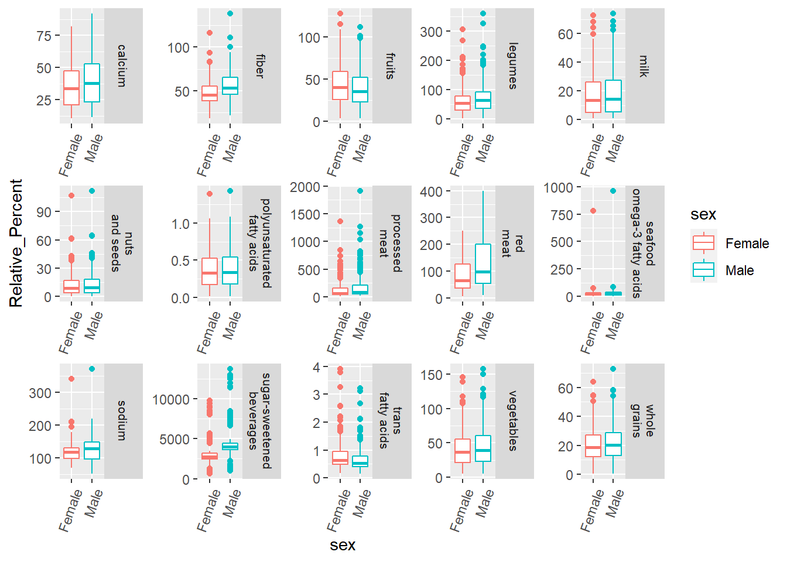
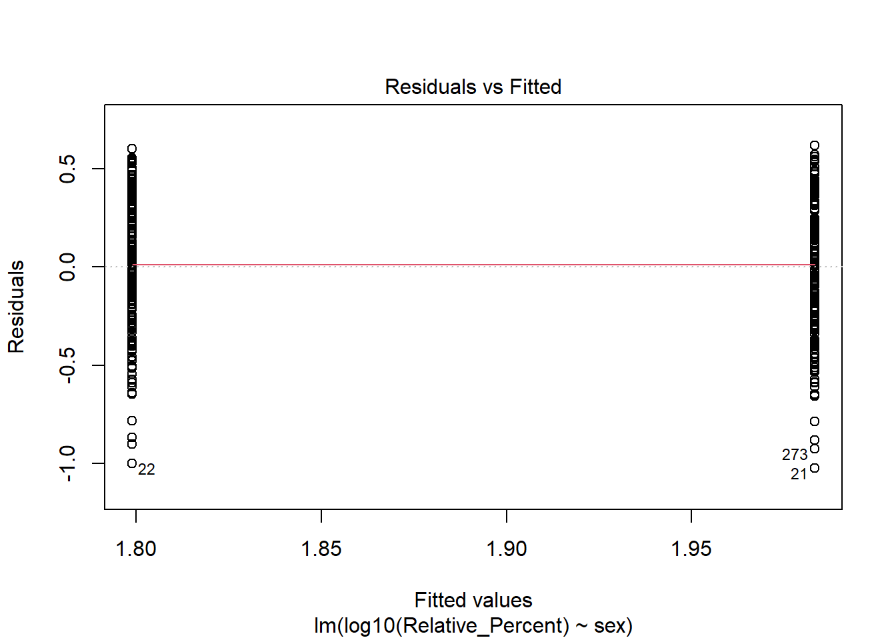

<!DOCTYPE html>

<html>

<head>

<meta charset="utf-8" />
<meta name="generator" content="pandoc" />
<meta http-equiv="X-UA-Compatible" content="IE=EDGE" />


<title> Exploring global patterns of dietary behaviors associated with health risk</title>

<html>

<head>
<!-- Global site tag (gtag.js) - Google Analytics -->
<script async src="https://www.googletagmanager.com/gtag/js?id=G-HYPGLHWF2F"></script>
<script>
  window.dataLayer = window.dataLayer || [];
  function gtag(){dataLayer.push(arguments);}
  gtag('js', new Date());
  gtag('config', 'G-HYPGLHWF2F');
</script>

</head>

<body>


</body>
</html>

<style type="text/css">
  code{white-space: pre-wrap;}
  span.smallcaps{font-variant: small-caps;}
  span.underline{text-decoration: underline;}
  div.column{display: inline-block; vertical-align: top; width: 50%;}
  div.hanging-indent{margin-left: 1.5em; text-indent: -1.5em;}
  ul.task-list{list-style: none;}
    </style>


<style type="text/css">
  code {
    white-space: pre;
  }
  .sourceCode {
    overflow: visible;
  }
</style>
<style type="text/css" data-origin="pandoc">
code.sourceCode > span { display: inline-block; line-height: 1.25; }
code.sourceCode > span { color: inherit; text-decoration: inherit; }
code.sourceCode > span:empty { height: 1.2em; }
.sourceCode { overflow: visible; }
code.sourceCode { white-space: pre; position: relative; }
div.sourceCode { margin: 1em 0; }
pre.sourceCode { margin: 0; }
@media screen {
div.sourceCode { overflow: auto; }
}
@media print {
code.sourceCode { white-space: pre-wrap; }
code.sourceCode > span { text-indent: -5em; padding-left: 5em; }
}
pre.numberSource code
  { counter-reset: source-line 0; }
pre.numberSource code > span
  { position: relative; left: -4em; counter-increment: source-line; }
pre.numberSource code > span > a:first-child::before
  { content: counter(source-line);
    position: relative; left: -1em; text-align: right; vertical-align: baseline;
    border: none; display: inline-block;
    -webkit-touch-callout: none; -webkit-user-select: none;
    -khtml-user-select: none; -moz-user-select: none;
    -ms-user-select: none; user-select: none;
    padding: 0 4px; width: 4em;
    color: #aaaaaa;
  }
pre.numberSource { margin-left: 3em; border-left: 1px solid #aaaaaa;  padding-left: 4px; }
div.sourceCode
  {  background-color: #f8f8f8; }
@media screen {
code.sourceCode > span > a:first-child::before { text-decoration: underline; }
}
code span.al { color: #ef2929; } /* Alert */
code span.an { color: #8f5902; font-weight: bold; font-style: italic; } /* Annotation */
code span.at { color: #c4a000; } /* Attribute */
code span.bn { color: #0000cf; } /* BaseN */
code span.cf { color: #204a87; font-weight: bold; } /* ControlFlow */
code span.ch { color: #4e9a06; } /* Char */
code span.cn { color: #000000; } /* Constant */
code span.co { color: #8f5902; font-style: italic; } /* Comment */
code span.cv { color: #8f5902; font-weight: bold; font-style: italic; } /* CommentVar */
code span.do { color: #8f5902; font-weight: bold; font-style: italic; } /* Documentation */
code span.dt { color: #204a87; } /* DataType */
code span.dv { color: #0000cf; } /* DecVal */
code span.er { color: #a40000; font-weight: bold; } /* Error */
code span.ex { } /* Extension */
code span.fl { color: #0000cf; } /* Float */
code span.fu { color: #000000; } /* Function */
code span.im { } /* Import */
code span.in { color: #8f5902; font-weight: bold; font-style: italic; } /* Information */
code span.kw { color: #204a87; font-weight: bold; } /* Keyword */
code span.op { color: #ce5c00; font-weight: bold; } /* Operator */
code span.ot { color: #8f5902; } /* Other */
code span.pp { color: #8f5902; font-style: italic; } /* Preprocessor */
code span.sc { color: #000000; } /* SpecialChar */
code span.ss { color: #4e9a06; } /* SpecialString */
code span.st { color: #4e9a06; } /* String */
code span.va { color: #000000; } /* Variable */
code span.vs { color: #4e9a06; } /* VerbatimString */
code span.wa { color: #8f5902; font-weight: bold; font-style: italic; } /* Warning */

</style>
<script>
// apply pandoc div.sourceCode style to pre.sourceCode instead
(function() {
  var sheets = document.styleSheets;
  for (var i = 0; i < sheets.length; i++) {
    if (sheets[i].ownerNode.dataset["origin"] !== "pandoc") continue;
    try { var rules = sheets[i].cssRules; } catch (e) { continue; }
    for (var j = 0; j < rules.length; j++) {
      var rule = rules[j];
      // check if there is a div.sourceCode rule
      if (rule.type !== rule.STYLE_RULE || rule.selectorText !== "div.sourceCode") continue;
      var style = rule.style.cssText;
      // check if color or background-color is set
      if (rule.style.color === '' && rule.style.backgroundColor === '') continue;
      // replace div.sourceCode by a pre.sourceCode rule
      sheets[i].deleteRule(j);
      sheets[i].insertRule('pre.sourceCode{' + style + '}', j);
    }
  }
})();
</script>


<style type="text/css">
#rmd-source-code {
  display: none;
}
</style>


<link rel="stylesheet" href="www/style.css" type="text/css" />


<style type = "text/css">
.main-container {
  max-width: 940px;
  margin-left: auto;
  margin-right: auto;
}
img {
  max-width:100%;
}
.tabbed-pane {
  padding-top: 12px;
}
.html-widget {
  margin-bottom: 20px;
}
button.code-folding-btn:focus {
  outline: none;
}
summary {
  display: list-item;
}
pre code {
  padding: 0;
}
</style>


<!-- tabsets -->

<style type="text/css">
.tabset-dropdown > .nav-tabs {
  display: inline-table;
  max-height: 500px;
  min-height: 44px;
  overflow-y: auto;
  border: 1px solid #ddd;
  border-radius: 4px;
}

.tabset-dropdown > .nav-tabs > li.active:before {
  content: "";
  font-family: 'Glyphicons Halflings';
  display: inline-block;
  padding: 10px;
  border-right: 1px solid #ddd;
}

.tabset-dropdown > .nav-tabs.nav-tabs-open > li.active:before {
  content: "&#xe258;";
  border: none;
}

.tabset-dropdown > .nav-tabs.nav-tabs-open:before {
  content: "";
  font-family: 'Glyphicons Halflings';
  display: inline-block;
  padding: 10px;
  border-right: 1px solid #ddd;
}

.tabset-dropdown > .nav-tabs > li.active {
  display: block;
}

.tabset-dropdown > .nav-tabs > li > a,
.tabset-dropdown > .nav-tabs > li > a:focus,
.tabset-dropdown > .nav-tabs > li > a:hover {
  border: none;
  display: inline-block;
  border-radius: 4px;
  background-color: transparent;
}

.tabset-dropdown > .nav-tabs.nav-tabs-open > li {
  display: block;
  float: none;
}

.tabset-dropdown > .nav-tabs > li {
  display: none;
}
</style>

<!-- code folding -->
<style type="text/css">
.code-folding-btn { margin-bottom: 4px; }
</style>


<style type="text/css">

#section-TOC {
  margin: 25px 0px 20px 0px;
}
@media (max-width: 768px) {
#section-TOC {
  position: relative;
  width: 100%;
}
}

@media print {
.toc-content {
  /* see https://github.com/w3c/csswg-drafts/issues/4434 */
  float: right;
}
}

.toc-content {
  padding-left: 30px;
  padding-right: 40px;
}

div.main-container {
  max-width: 1200px;
}

div.tocify {
  width: 20%;
  max-width: 260px;
  max-height: 85%;
}

@media (min-width: 768px) and (max-width: 991px) {
  div.tocify {
    width: 25%;
  }
}

@media (max-width: 767px) {
  div.tocify {
    width: 100%;
    max-width: none;
  }
}

.tocify ul, .tocify li {
  line-height: 20px;
}

.tocify-subheader .tocify-item {
  font-size: 0.90em;
}

.tocify .list-group-item {
  border-radius: 0px;
}


</style>


</head>

<body>


<div class="container-fluid main-container">


<!-- setup 3col/9col grid for toc_float and main content  -->
<div class="row">
<div class="col-sm-12 col-md-4 col-lg-3">
<div id="section-TOC" class="tocify">
</div>
</div>

<div class="toc-content col-sm-12 col-md-8 col-lg-9">


<div id="section-header">

<div class="btn-group pull-right float-right">
<button type="button" class="btn btn-default btn-xs btn-secondary btn-sm dropdown-toggle" data-toggle="dropdown" aria-haspopup="true" aria-expanded="false"><span>Code</span> <span class="caret"></span></button>
<ul class="dropdown-menu dropdown-menu-right" style="min-width: 50px;">
<li><a id="rmd-download-source" href="#">Download Rmd</a></li>
</ul>
</div>


<h1 class="title toc-ignore"><p> Exploring global patterns of dietary behaviors associated with health risk</p></h1>

</div>


<!-- Open all links in new tab-->
<p><base target="_blank"/></p>
<div align="left" id="google_translate_element",></div>
<script type="text/javascript" src='//translate.google.com/translate_a/element.js?cb=googleTranslateElementInit'></script>
<script type="text/javascript">
function googleTranslateElementInit() {
  new google.translate.TranslateElement({pageLanguage: 'en'}, 'google_translate_element');
}
</script>
<div id="section-section" class="section level4 outline">
<h4></h4>
<p></p>
</div>
<div id="section-section-1" class="section level4 disclaimer_block">
<h4></h4>
<p><strong>Disclaimer</strong>: The purpose of the <a href="https://www.opencasestudies.org" target="_blank">Open Case Studies</a> project is <strong>to demonstrate the use of various data science methods, tools, and software in the context of messy, real-world data</strong>. A given case study does not cover all aspects of the research process, is not claiming to be the most appropriate way to analyze a given data set, and should not be used in the context of making policy decisions without external consultation from scientific experts.</p>
</div>
<div id="section-section-2" class="section level4">
<h4></h4>
</div>
<div id="section-section-3" class="section level4 license_block">
<h4></h4>
<p>This work is licensed under the Creative Commons Attribution-NonCommercial 3.0 <a href="https://creativecommons.org/licenses/by-nc/3.0/us/" target="_blank">(CC BY-NC 3.0)</a> United States License.</p>
</div>
<div id="section-section-4" class="section level4">
<h4></h4>
</div>
<div id="section-section-5" class="section level4 reference_block">
<h4></h4>
<p>To cite this case study please use:</p>
<p>Wright, Carrie and Jager, Leah and Taub, Margaret and Hicks, Stephanie. (2020). <a href="https://github.com/opencasestudies/ocs-bp-diet">https://github.com/opencasestudies/ocs-bp-diet</a>. Exploring global patterns of dietary behaviors associated with health risk (Version v1.0.0).</p>
</div>
<div id="section-section-6" class="section level4">
<h4></h4>
<p>To access the GitHub Repository with the data for this case study see here: <a href="https://github.com/opencasestudies/ocs-bp-diet" class="uri">https://github.com/opencasestudies/ocs-bp-diet</a>.</p>
<p>This case study is part of a series of public health case studies for the <a href="https://americanhealth.jhu.edu/open-case-studies">Bloomberg American Health Initiative</a>.</p>
<p>Please help us by filling out our survey.</p>
<div style="display: flex; justify-content: center;">
<iframe src="https://docs.google.com/forms/d/e/1FAIpQLSfpN4FN3KELqBNEgf2Atpi7Wy7Nqy2beSkFQINL7Y5sAMV5_w/viewform?embedded=true" width="1200" height="700" frameborder="0" marginheight="0" marginwidth="0">
Loading…
</iframe>
</div>
</div>
<div id="section-motivation" class="section level2">
<h2><strong>Motivation</strong></h2>
<hr />
<p>An <a href="https://www.thelancet.com/action/showPdf?pii=S0140-6736%2819%2930041-8" target="_blank">article</a> recently published in The Lancet evaluated global dietary trends and the relationship of dietary factors with mortality and fertility.</p>
<p></p>
<div id="section-section-7" class="section level4 reference_block">
<h4></h4>
<p>GBD 2017 Diet Collaborators. Health effects of dietary risks in 195 countries, 1990–2017: a systematic analysis for the Global Burden of Disease Study 2017. <em>The Lancet</em> 393, 1958–1972 (2019).</p>
</div>
<div id="section-section-8" class="section level4">
<h4></h4>
<p>This article evaluated food consumption patterns in 195 countries for 15 different dietary risk factors that have probable associations with non-communicable disease (NCD). For example, over-consumption of sodium is associated with high blood pressure. These consumption levels were then used to estimate levels of mortality and morbidity due to NCD, as well as disability-adjusted life-years (DALYs) attributable to sub-optimal consumption of foods related to these dietary risk factors. The authors found that:</p>
<blockquote>
<p>“High intake of sodium …, low intake of whole grains …, and low intake of fruits … were the leading dietary risk factors for deaths and DALYs globally and in many countries.”</p>
</blockquote>
<p>This figure from the paper’s supplementary materials shows the ranking of the 15 dietary risk factors based on the estimated number of attributable deaths. Here, the numbers and colors of the little squares imply rankings of the risk factors (rows) by regions (columns). The color red indicates risk factors that are associated with larger number of attributable deaths. The column on the right is the overall global data. As you can see here, the top 3 risk factors are often issues for many different regions of the world.</p>
<p></p>
<p>This case study will evaluate the data reported in this article to explore regional, age, and gender specific differences in dietary consumption patterns around the world in 2017.</p>
</div>
</div>
<div id="section-main-questions" class="section level2">
<h2><strong>Main Questions</strong></h2>
<hr />
<div id="section-section-9" class="section level4 main_question_block">
<h4></h4>
<p><b><u> Our main questions are: </u></b></p>
<ol style="list-style-type: decimal">
<li>What are the global trends for potentially harmful diets?</li>
<li>How do males and females compare?</li>
<li>How do different age groups compare for these dietary factors?</li>
<li>How do different countries compare? In particular, how does the US compare to other countries in terms of diet trends?</li>
</ol>
</div>
<div id="section-section-10" class="section level4">
<h4></h4>
</div>
</div>
<div id="section-learning-objectives" class="section level2">
<h2><strong>Learning Objectives</strong></h2>
<hr />
<p>In this case study, we will walk you through importing data from PDF files and CSV files, cleaning data, wrangling data, comparing data, joining data, visualizing data, and <b> comparing two or more groups </b> using well-established and commonly used packages, including <code>stringr</code>, <code>tidyr</code>, <code>dplyr</code>, <code>purrr</code>, and <code>ggplot2</code>. We will especially focus on using packages and functions from the <a href="https://www.tidyverse.org/" target="_blank">Tidyverse</a>. The tidyverse is a library of packages created by RStudio. While some students may be familiar with previous R programming packages, these packages make data science in R especially legible and intuitive.</p>
<p>The skills, methods, and concepts that students will be familiar with by the end of this case study are:</p>
<p><u><strong>Data Science Learning Objectives:</strong></u></p>
<ol style="list-style-type: decimal">
<li>Importing/extracting data from PDF (<code>dplyr</code>, <code>stringr</code>)<br />
</li>
<li>How to reshape data by pivoting between “long” and “wide” formats (<code>tidyr</code>)<br />
</li>
<li>Perform functions on all columns of a tibble (<code>purrr</code>)<br />
</li>
<li>Data cleaning with regular expressions (<code>stringr</code>)<br />
</li>
<li>Specific data value reassignment<br />
</li>
<li>Separate data within a column into multiple columns (<code>tidyr</code>)</li>
<li>Methods to Compare data (<code>dplyr</code>)<br />
</li>
<li>Combining data from two sources (<code>dplyr</code>)<br />
</li>
<li>Make interactive plots (<code>ggiraph</code>)<br />
</li>
<li>Make a zoom facet for plot (<code>ggforce</code>)</li>
<li>Combine plots together (<code>cowplot</code>)</li>
</ol>
<p><u><strong>Statistical Learning Objectives:</strong></u></p>
<ol style="list-style-type: decimal">
<li>Understanding of how the <em>t</em>-test and the ANOVA are specialized regressions</li>
<li>Basic understanding of the utility of a regression analysis</li>
<li>How to implement a linear regression analysis in R</li>
<li>How to interpret regression coefficients</li>
<li>Awareness of <em>t</em>-test assumptions</li>
<li>Awareness of linear regression assumptions</li>
<li>How to use Q-Q plots to check for normality</li>
<li>Difference between fixed effects and random effects</li>
<li>How to perform paired <em>t</em>-test</li>
<li>How to perform a linear mixed effects regression</li>
</ol>
<p></p>
<hr />
<p>We will begin by loading the packages that we will need:</p>
<div class="sourceCode" id="section-cb1"><pre class="sourceCode r"><code class="sourceCode r"><span id="cb1-1"><a href="#cb1-1"></a><span class="kw">library</span>(here)</span>
<span id="cb1-2"><a href="#cb1-2"></a><span class="kw">library</span>(readr)</span>
<span id="cb1-3"><a href="#cb1-3"></a><span class="kw">library</span>(dplyr)</span>
<span id="cb1-4"><a href="#cb1-4"></a><span class="kw">library</span>(skimr)</span>
<span id="cb1-5"><a href="#cb1-5"></a><span class="kw">library</span>(pdftools)</span>
<span id="cb1-6"><a href="#cb1-6"></a><span class="kw">library</span>(stringr)</span>
<span id="cb1-7"><a href="#cb1-7"></a><span class="kw">library</span>(magrittr)</span>
<span id="cb1-8"><a href="#cb1-8"></a><span class="kw">library</span>(purrr)</span>
<span id="cb1-9"><a href="#cb1-9"></a><span class="kw">library</span>(tibble)</span>
<span id="cb1-10"><a href="#cb1-10"></a><span class="kw">library</span>(tidyr)</span>
<span id="cb1-11"><a href="#cb1-11"></a><span class="kw">library</span>(ggplot2)</span>
<span id="cb1-12"><a href="#cb1-12"></a><span class="kw">library</span>(ggpubr)</span>
<span id="cb1-13"><a href="#cb1-13"></a><span class="kw">library</span>(forcats)</span>
<span id="cb1-14"><a href="#cb1-14"></a><span class="kw">library</span>(lme4)</span>
<span id="cb1-15"><a href="#cb1-15"></a><span class="kw">library</span>(lmerTest)</span>
<span id="cb1-16"><a href="#cb1-16"></a><span class="kw">library</span>(car)</span>
<span id="cb1-17"><a href="#cb1-17"></a><span class="kw">library</span>(ggiraph)</span>
<span id="cb1-18"><a href="#cb1-18"></a><span class="kw">library</span>(ggforce)</span>
<span id="cb1-19"><a href="#cb1-19"></a><span class="kw">library</span>(viridis)</span>
<span id="cb1-20"><a href="#cb1-20"></a><span class="kw">library</span>(cowplot)</span></code></pre></div>
<table>
<colgroup>
<col width="43%" />
<col width="56%" />
</colgroup>
<thead>
<tr class="header">
<th>Package</th>
<th>Use in this case study</th>
</tr>
</thead>
<tbody>
<tr class="odd">
<td><a href="https://github.com/jennybc/here_here" target="_blank">here</a></td>
<td>to easily load and save data</td>
</tr>
<tr class="even">
<td><a href="https://readr.tidyverse.org/" target="_blank">readr</a></td>
<td>to import the CSV file data</td>
</tr>
<tr class="odd">
<td><a href="https://dplyr.tidyverse.org/" target="_blank">dplyr</a></td>
<td>to arrange/filter/select/compare specific subsets of the data</td>
</tr>
<tr class="even">
<td><a href="https://cran.r-project.org/web/packages/skimr/index.html" target="_blank">skimr</a></td>
<td>to get an overview of data</td>
</tr>
<tr class="odd">
<td><a href="https://cran.r-project.org/web/packages/pdftools/pdftools.pdf" target="_blank">pdftools</a></td>
<td>to read a PDF into R</td>
</tr>
<tr class="even">
<td><a href="https://stringr.tidyverse.org/articles/stringr.html" target="_blank">stringr</a></td>
<td>to manipulate the text within the PDF of the data</td>
</tr>
<tr class="odd">
<td><a href="https://magrittr.tidyverse.org/articles/magrittr.html" target="_blank">magrittr</a></td>
<td>to use the <code>%&lt;&gt;%</code> piping operator</td>
</tr>
<tr class="even">
<td><a href="https://purrr.tidyverse.org/" target="_blank">purrr</a></td>
<td>to perform functions on all columns of a tibble</td>
</tr>
<tr class="odd">
<td><a href="https://tibble.tidyverse.org/" target="_blank">tibble</a></td>
<td>to create data objects that we can manipulate with dplyr/stringr/tidyr/purrr</td>
</tr>
<tr class="even">
<td><a href="https://tidyr.tidyverse.org/" target="_blank">tidyr</a></td>
<td>to separate data within a column into multiple columns</td>
</tr>
<tr class="odd">
<td><a href="https://ggplot2.tidyverse.org/" target="_blank">ggplot2</a></td>
<td>to make visualizations with multiple layers</td>
</tr>
<tr class="even">
<td><a href="https://cran.r-project.org/web/packages/ggpubr/index.html" target="_blank">ggpubr</a></td>
<td>to easily add regression line equations to plots</td>
</tr>
<tr class="odd">
<td><a href="https://forcats.tidyverse.org/" target="_blank">forcats</a></td>
<td>to change details about factors (categorical variables)</td>
</tr>
<tr class="even">
<td><a href="https://cran.r-project.org/web/packages/lme4/lme4.pdf">lme4</a></td>
<td>to fit a linear mixed effects model</td>
</tr>
<tr class="odd">
<td><a href="https://cran.r-project.org/web/packages/lmerTest/lmerTest.pdf">lmerTest</a></td>
<td>to perform linear mixed model testing</td>
</tr>
<tr class="even">
<td><a href="https://cran.r-project.org/web/packages/car/car.pdf">car</a></td>
<td>to perform Levene’s Test of Homogeneity of Variances</td>
</tr>
<tr class="odd">
<td><a href="https://cran.r-project.org/web/packages/ggiraph/index.html">ggiraph</a></td>
<td>to make plots interactive</td>
</tr>
<tr class="even">
<td><a href="https://cran.r-project.org/web/packages/ggforce/ggforce.pdf">ggforce</a></td>
<td>to modify facets in plots</td>
</tr>
<tr class="odd">
<td><a href="https://cran.r-project.org/web/packages/viridis/vignettes/intro-to-viridis.html">viridis</a></td>
<td>to plot in a color palette that is easily interpreted by colorblind individuals</td>
</tr>
<tr class="even">
<td><a href="https://cran.r-project.org/web/packages/cowplot/vignettes/introduction.html" target="_blank">cowplot</a></td>
<td>to allow plots to be combined</td>
</tr>
</tbody>
</table>
<hr />
<p>The first time we use a function, we will use the <code>::</code> to indicate which package we are using. Unless we have overlapping function names, this is not necessary, but we will include it here to be informative about where the functions we will use come from.</p>
</div>
<div id="section-context" class="section level2">
<h2><strong>Context</strong></h2>
<hr />
<p>Here is an excerpt from the article itself about the context of the work: </p>
<p>Many dietary factors have well-established associations with health risk. The authors that generated this data set identified 15 dietary factors that have probable health risk based on literature search.</p>
<p>Here you can see a table of the sources for the health risks associated with the dietary factors. The first column shows the risk factors and the second column shows the health outcomes. This table is part of “Supplemental Table 1. Epidemiological evidence supporting causality between dietary risk factors and disease endpoints” from the paper’s <a href="https://www.thelancet.com/cms/10.1016/S0140-6736(19)30041-8/attachment/3d4c0258-c2ea-405f-8d11-e9ae65e6f996/mmc1.pdf" target="_blank">supplementary materials</a>.</p>
<p></p>
<p>In the article the authors found that most of the mortality associated with each factor is related to cardiovascular disease.</p>
<p></p>
</div>
<div id="section-limitations" class="section level2">
<h2><strong>Limitations</strong></h2>
<hr />
<p>There are some important limitations regarding the data from this article to keep in mind. The definition of certain dietary factors varied across some of the collection sources. Intakes of certain healthy foods like vegetables and fruits are likely positively correlated with each other and likely negatively correlated with intakes of unhealthy foods. Much of the data was collected with 24 hour recall surveys which are prone to issues due to inaccuracy of memory recall or other biases such as a tendency for some people to report healthier behaviors. The guidelines in the PDF are not specified by gender even though it is known that there are different dietary requirements for optimal health for certain nutrients by gender. The article discusses some limitations about accounting for overall food consumption when calculating consumption of particular foods:</p>
<blockquote>
<p>"To remove the effect of energy intake as a potential confounder and address measurement error in dietary assessment tools, most cohorts have adjusted for total energy intake in their statistical models. This energy adjustment means that diet components are defined as risks in terms of the share of diet and not as absolute levels of exposure. In other words, an increase in intake of foods and macronutrients should be compensated by a decrease in intake of other dietary factors to hold total energy intake constant. Thus, the relative risk of change in each component of diet depends on the other components for which it is substituted. However, the relative risks estimated from meta-analyses of cohort studies do not generally specify the type of substitution.</p>
</blockquote>
<p>There are also important nuances to keep in mind regarding some of the dietary factors. For example calcium consumption was calculated based on consumption of dairy products, while calcium can be acquired from other sources including plant-based sources. However in these data, the influence of plant-based consumption of calcium was not accounted for, nor was supplementation through vitamin sources.</p>
<p>Also, while <a href="https://www.genderspectrum.org/quick-links/understanding-gender/" target="_blank">gender</a> and <a href="https://www.who.int/genomics/gender/en/index1.html" target="_blank">sex</a> are not actually binary, the data used in this analysis only contains information for groups of individuals described as male or female.</p>
</div>
<div id="section-what-are-the-data" class="section level2">
<h2><strong>What are the data?</strong></h2>
<hr />
<p>We will be using data that we requested from the <a href="http://www.healthdata.org/gbd" target="_blank">Global Burden of Disease (GBD)</a> of the <a href="http://www.healthdata.org/about">Institute for Health Metrics and Evaluation (IHME)</a> about dietary intake, as well as the guideline data about optimal consumption amounts for different foods contained within the PDF of the article. We have two CSV files, dietary_risk_exposure_all_ages_2017.csv and dietary_risk_exposure_sep_ages_2017.csv. The first one includes consumption levels at the global level and for different countries for all ages combined.</p>
<p>Looking at the CSV file in excel:</p>
<p></p>
<p>Here you can see that the data contains mean consumption values for both men and women in various countries at the national level in 2017 for various foods that may be problematic for health. The units for the food varies. So for example, the mean column in row that says “Diet low in fiber” indicates the average consumption level per person in that region and of that gender of fiber in grams per day.</p>
<p>The second CSV file has similar data, but consumption levels for different age groups are separated.</p>
<p></p>
<p>The authors of this article obtained the data from a variety of sources including household budget surveys and nutritional surveys regarding 24 hour recall of food consumption and 24 hour urinary sodium analysis. The data was derived from sales data from <a href="https://www.euromonitor.com/" target="_blank">Euromonitor</a>, estimates about national availability of specific nutrients from the <a href="http://www.fao.org/home/en/" target="_blank">United Nations Food and Agriculture Organization (FAO)</a> and the <a href="https://www.usda.gov/" target="_blank">United States Department of Agriculture</a>’s <a href="https://data.nal.usda.gov/dataset/usda-national-nutrient-database-standard-reference-legacy-release" target="_blank">National Nutrition Database</a>.</p>
</div>
<div id="section-data-import" class="section level2">
<h2><strong>Data Import</strong></h2>
<hr />
<p>If you have trouble accessing the <a href="https://github.com/opencasestudies/ocs-bp-diet">GitHub Repository</a>, the data can be downloaded from <a href="https://raw.githubusercontent.com/opencasestudies/ocs-bp-diet/master/data/raw/dietary_risk_exposure_all_ages_2017.csv">here</a> and <a href="https://raw.githubusercontent.com/opencasestudies/ocs-bp-diet/master/data/raw/dietary_risk_exposure_sep_ages_2017.csv">here</a>.</p>
<p>Let’s import our data into R now so that we can explore the data further.</p>
<p>In our case, we downloaded this data and put it within a “data” directory within a subdirectory called “raw” for our project. If you use an RStudio project, then you can use the <code>here()</code> function of the <code>here</code> package to make the path for importing this data simpler. The <code>here</code> package automatically starts looking for files based on where you have a <code>.Rproj</code> file which is created when you start a new RStudio project. We can specify that we want to look for the files within the “docs” directory within a directory where our <code>.Rproj</code> file is located by separating the name of the “data” directory, the “raw” subdirectory, and the file name using commas.</p>
<hr />
<details>
<p><summary> Click here to see more about creating new projects in RStudio. </summary></p>
<p>You can create a project by going to the File menu of RStudio like so:</p>
<p></p>
<p>You can also do so by clicking the project button:</p>
<p></p>
<p>See <a href="https://support.rstudio.com/hc/en-us/articles/200526207-Using-Projects">here</a> to learn more about using RStudio projects.</p>
</details>
<hr />
<div class="sourceCode" id="section-cb2"><pre class="sourceCode r"><code class="sourceCode r"><span id="cb2-1"><a href="#cb2-1"></a>diet_data &lt;-<span class="st"> </span>readr<span class="op">::</span><span class="kw">read_csv</span>(<span class="kw">here</span>(<span class="st">&quot;data&quot;</span>, <span class="st">&quot;raw&quot;</span>, </span>
<span id="cb2-2"><a href="#cb2-2"></a>                       <span class="st">&quot;dietary_risk_exposure_all_ages_2017.csv&quot;</span>))</span>
<span id="cb2-3"><a href="#cb2-3"></a>sep_age_diet_data &lt;-<span class="st"> </span><span class="kw">read_csv</span>(<span class="kw">here</span>(<span class="st">&quot;data&quot;</span>, <span class="st">&quot;raw&quot;</span>, </span>
<span id="cb2-4"><a href="#cb2-4"></a>                       <span class="st">&quot;dietary_risk_exposure_sep_ages_2017.csv&quot;</span>))</span></code></pre></div>
<p>First let’s just get a general sense of our data. We can do that using the <code>glimpse()</code> function of the <code>dplyr</code> package (it is also in the <code>tibble</code> package).</p>
<div class="sourceCode" id="section-cb3"><pre class="sourceCode r"><code class="sourceCode r"><span id="cb3-1"><a href="#cb3-1"></a>dplyr<span class="op">::</span><span class="kw">glimpse</span>(diet_data)</span></code></pre></div>
<pre><code>Rows: 5,880
Columns: 11
$ year_id        &lt;dbl&gt; 2017, 2017, 2017, 2017, 2017, 2017, 2017, 2017, 2017, 2~
$ location_name  &lt;chr&gt; &quot;Global&quot;, &quot;Global&quot;, &quot;China&quot;, &quot;China&quot;, &quot;North Korea&quot;, &quot;N~
$ rei_id         &lt;dbl&gt; 117, 117, 117, 117, 117, 117, 117, 117, 117, 117, 117, ~
$ rei_name       &lt;chr&gt; &quot;Diet high in processed meat&quot;, &quot;Diet high in processed ~
$ age_group_name &lt;chr&gt; &quot;All available ages&quot;, &quot;All available ages&quot;, &quot;All availa~
$ sex            &lt;chr&gt; &quot;Male&quot;, &quot;Female&quot;, &quot;Male&quot;, &quot;Female&quot;, &quot;Male&quot;, &quot;Female&quot;, &quot;~
$ parameter      &lt;chr&gt; &quot;continuous&quot;, &quot;continuous&quot;, &quot;continuous&quot;, &quot;continuous&quot;,~
$ mean           &lt;dbl&gt; 4.2865629, 3.2640990, 2.3176975, 1.7512870, 0.5665229, ~
$ upper          &lt;dbl&gt; 4.4633117, 3.3765360, 2.6944978, 2.0454134, 0.6596296, ~
$ lower          &lt;dbl&gt; 4.1309531, 3.1547299, 1.9933744, 1.5161724, 0.4818201, ~
$ unit           &lt;chr&gt; &quot;g/day&quot;, &quot;g/day&quot;, &quot;g/day&quot;, &quot;g/day&quot;, &quot;g/day&quot;, &quot;g/day&quot;, &quot;~</code></pre>
<div class="sourceCode" id="section-cb5"><pre class="sourceCode r"><code class="sourceCode r"><span id="cb5-1"><a href="#cb5-1"></a><span class="kw">glimpse</span>(sep_age_diet_data)</span></code></pre></div>
<pre><code>Rows: 88,200
Columns: 11
$ year_id        &lt;dbl&gt; 2017, 2017, 2017, 2017, 2017, 2017, 2017, 2017, 2017, 2~
$ location_name  &lt;chr&gt; &quot;Global&quot;, &quot;Global&quot;, &quot;Global&quot;, &quot;Global&quot;, &quot;Global&quot;, &quot;Glob~
$ rei_name       &lt;chr&gt; &quot;Diet low in calcium&quot;, &quot;Diet low in calcium&quot;, &quot;Diet low~
$ age_group_id   &lt;dbl&gt; 10, 11, 12, 13, 14, 15, 16, 17, 18, 19, 20, 30, 31, 32,~
$ age_group_name &lt;chr&gt; &quot;25 to 29&quot;, &quot;30 to 34&quot;, &quot;35 to 39&quot;, &quot;40 to 44&quot;, &quot;45 to ~
$ sex            &lt;chr&gt; &quot;Male&quot;, &quot;Male&quot;, &quot;Male&quot;, &quot;Male&quot;, &quot;Male&quot;, &quot;Male&quot;, &quot;Male&quot;,~
$ parameter      &lt;chr&gt; &quot;continuous&quot;, &quot;continuous&quot;, &quot;continuous&quot;, &quot;continuous&quot;,~
$ mean           &lt;dbl&gt; 0.4166193, 0.4253721, 0.4352053, 0.4412156, 0.4565795, ~
$ upper          &lt;dbl&gt; 0.4310974, 0.4403903, 0.4481282, 0.4579218, 0.4763366, ~
$ lower          &lt;dbl&gt; 0.4030347, 0.4110026, 0.4222248, 0.4264522, 0.4381799, ~
$ unit           &lt;chr&gt; &quot;g/day&quot;, &quot;g/day&quot;, &quot;g/day&quot;, &quot;g/day&quot;, &quot;g/day&quot;, &quot;g/day&quot;, &quot;~</code></pre>
<p>Here we can tell that the <code>sep_age_diet_data</code> is much larger than the <code>diet_data</code>. The <code>diet_data</code> has only 5,880 rows while the <code>sep_age_diet_data</code> has 88,200 rows!</p>
<p>However, both files appear to have the same column structure with 11 variables each.</p>
<p>The <code>skim()</code> function of the <code>skimr</code> package is also really helpful for getting a general sense of your data.</p>
<div class="sourceCode" id="section-cb7"><pre class="sourceCode r"><code class="sourceCode r"><span id="cb7-1"><a href="#cb7-1"></a><span class="kw">skim</span>(diet_data)</span></code></pre></div>
<table>
<caption>Data summary</caption>
<tbody>
<tr class="odd">
<td align="left">Name</td>
<td align="left">diet_data</td>
</tr>
<tr class="even">
<td align="left">Number of rows</td>
<td align="left">5880</td>
</tr>
<tr class="odd">
<td align="left">Number of columns</td>
<td align="left">11</td>
</tr>
<tr class="even">
<td align="left">_______________________</td>
<td align="left"></td>
</tr>
<tr class="odd">
<td align="left">Column type frequency:</td>
<td align="left"></td>
</tr>
<tr class="even">
<td align="left">character</td>
<td align="left">6</td>
</tr>
<tr class="odd">
<td align="left">numeric</td>
<td align="left">5</td>
</tr>
<tr class="even">
<td align="left">________________________</td>
<td align="left"></td>
</tr>
<tr class="odd">
<td align="left">Group variables</td>
<td align="left">None</td>
</tr>
</tbody>
</table>
<p><strong>Variable type: character</strong></p>
<table>
<thead>
<tr class="header">
<th align="left">skim_variable</th>
<th align="right">n_missing</th>
<th align="right">complete_rate</th>
<th align="right">min</th>
<th align="right">max</th>
<th align="right">empty</th>
<th align="right">n_unique</th>
<th align="right">whitespace</th>
</tr>
</thead>
<tbody>
<tr class="odd">
<td align="left">location_name</td>
<td align="right">0</td>
<td align="right">1</td>
<td align="right">4</td>
<td align="right">32</td>
<td align="right">0</td>
<td align="right">196</td>
<td align="right">0</td>
</tr>
<tr class="even">
<td align="left">rei_name</td>
<td align="right">0</td>
<td align="right">1</td>
<td align="right">16</td>
<td align="right">39</td>
<td align="right">0</td>
<td align="right">15</td>
<td align="right">0</td>
</tr>
<tr class="odd">
<td align="left">age_group_name</td>
<td align="right">0</td>
<td align="right">1</td>
<td align="right">18</td>
<td align="right">18</td>
<td align="right">0</td>
<td align="right">1</td>
<td align="right">0</td>
</tr>
<tr class="even">
<td align="left">sex</td>
<td align="right">0</td>
<td align="right">1</td>
<td align="right">4</td>
<td align="right">6</td>
<td align="right">0</td>
<td align="right">2</td>
<td align="right">0</td>
</tr>
<tr class="odd">
<td align="left">parameter</td>
<td align="right">0</td>
<td align="right">1</td>
<td align="right">10</td>
<td align="right">10</td>
<td align="right">0</td>
<td align="right">1</td>
<td align="right">0</td>
</tr>
<tr class="even">
<td align="left">unit</td>
<td align="right">0</td>
<td align="right">1</td>
<td align="right">5</td>
<td align="right">12</td>
<td align="right">0</td>
<td align="right">2</td>
<td align="right">0</td>
</tr>
</tbody>
</table>
<p><strong>Variable type: numeric</strong></p>
<table>
<thead>
<tr class="header">
<th align="left">skim_variable</th>
<th align="right">n_missing</th>
<th align="right">complete_rate</th>
<th align="right">mean</th>
<th align="right">sd</th>
<th align="right">p0</th>
<th align="right">p25</th>
<th align="right">p50</th>
<th align="right">p75</th>
<th align="right">p100</th>
<th align="left">hist</th>
</tr>
</thead>
<tbody>
<tr class="odd">
<td align="left">year_id</td>
<td align="right">0</td>
<td align="right">1</td>
<td align="right">2017.00</td>
<td align="right">0.00</td>
<td align="right">2017</td>
<td align="right">2017.00</td>
<td align="right">2017.00</td>
<td align="right">2017.00</td>
<td align="right">2017.00</td>
<td align="left">▁▁▇▁▁</td>
</tr>
<tr class="even">
<td align="left">rei_id</td>
<td align="right">0</td>
<td align="right">1</td>
<td align="right">133.67</td>
<td align="right">53.93</td>
<td align="right">111</td>
<td align="right">114.00</td>
<td align="right">118.00</td>
<td align="right">123.00</td>
<td align="right">333.00</td>
<td align="left">▇▁▁▁▁</td>
</tr>
<tr class="odd">
<td align="left">mean</td>
<td align="right">0</td>
<td align="right">1</td>
<td align="right">38.27</td>
<td align="right">64.29</td>
<td align="right">0</td>
<td align="right">0.45</td>
<td align="right">8.38</td>
<td align="right">49.12</td>
<td align="right">566.69</td>
<td align="left">▇▁▁▁▁</td>
</tr>
<tr class="even">
<td align="left">upper</td>
<td align="right">0</td>
<td align="right">1</td>
<td align="right">41.81</td>
<td align="right">70.06</td>
<td align="right">0</td>
<td align="right">0.49</td>
<td align="right">9.22</td>
<td align="right">53.18</td>
<td align="right">624.23</td>
<td align="left">▇▁▁▁▁</td>
</tr>
<tr class="odd">
<td align="left">lower</td>
<td align="right">0</td>
<td align="right">1</td>
<td align="right">35.02</td>
<td align="right">59.06</td>
<td align="right">0</td>
<td align="right">0.42</td>
<td align="right">7.52</td>
<td align="right">45.18</td>
<td align="right">513.22</td>
<td align="left">▇▁▁▁▁</td>
</tr>
</tbody>
</table>
<p>Notice how there is a column providing the number of missing observations for each variable. It looks like our data is very complete and we do not have any missing data. We also get a sense about the size of our data.</p>
<p>The <code>n_unqiue</code> column shows us the number of unique values for each of our columns.</p>
<p>Let’s take a look at <code>sep_age_diet_data</code>.</p>
<div class="sourceCode" id="section-cb8"><pre class="sourceCode r"><code class="sourceCode r"><span id="cb8-1"><a href="#cb8-1"></a><span class="kw">skim</span>(sep_age_diet_data)</span></code></pre></div>
<table>
<caption>Data summary</caption>
<tbody>
<tr class="odd">
<td align="left">Name</td>
<td align="left">sep_age_diet_data</td>
</tr>
<tr class="even">
<td align="left">Number of rows</td>
<td align="left">88200</td>
</tr>
<tr class="odd">
<td align="left">Number of columns</td>
<td align="left">11</td>
</tr>
<tr class="even">
<td align="left">_______________________</td>
<td align="left"></td>
</tr>
<tr class="odd">
<td align="left">Column type frequency:</td>
<td align="left"></td>
</tr>
<tr class="even">
<td align="left">character</td>
<td align="left">6</td>
</tr>
<tr class="odd">
<td align="left">numeric</td>
<td align="left">5</td>
</tr>
<tr class="even">
<td align="left">________________________</td>
<td align="left"></td>
</tr>
<tr class="odd">
<td align="left">Group variables</td>
<td align="left">None</td>
</tr>
</tbody>
</table>
<p><strong>Variable type: character</strong></p>
<table>
<thead>
<tr class="header">
<th align="left">skim_variable</th>
<th align="right">n_missing</th>
<th align="right">complete_rate</th>
<th align="right">min</th>
<th align="right">max</th>
<th align="right">empty</th>
<th align="right">n_unique</th>
<th align="right">whitespace</th>
</tr>
</thead>
<tbody>
<tr class="odd">
<td align="left">location_name</td>
<td align="right">0</td>
<td align="right">1</td>
<td align="right">4</td>
<td align="right">32</td>
<td align="right">0</td>
<td align="right">196</td>
<td align="right">0</td>
</tr>
<tr class="even">
<td align="left">rei_name</td>
<td align="right">0</td>
<td align="right">1</td>
<td align="right">16</td>
<td align="right">39</td>
<td align="right">0</td>
<td align="right">15</td>
<td align="right">0</td>
</tr>
<tr class="odd">
<td align="left">age_group_name</td>
<td align="right">0</td>
<td align="right">1</td>
<td align="right">7</td>
<td align="right">8</td>
<td align="right">0</td>
<td align="right">15</td>
<td align="right">0</td>
</tr>
<tr class="even">
<td align="left">sex</td>
<td align="right">0</td>
<td align="right">1</td>
<td align="right">4</td>
<td align="right">6</td>
<td align="right">0</td>
<td align="right">2</td>
<td align="right">0</td>
</tr>
<tr class="odd">
<td align="left">parameter</td>
<td align="right">0</td>
<td align="right">1</td>
<td align="right">10</td>
<td align="right">10</td>
<td align="right">0</td>
<td align="right">1</td>
<td align="right">0</td>
</tr>
<tr class="even">
<td align="left">unit</td>
<td align="right">0</td>
<td align="right">1</td>
<td align="right">5</td>
<td align="right">12</td>
<td align="right">0</td>
<td align="right">2</td>
<td align="right">0</td>
</tr>
</tbody>
</table>
<p><strong>Variable type: numeric</strong></p>
<table>
<thead>
<tr class="header">
<th align="left">skim_variable</th>
<th align="right">n_missing</th>
<th align="right">complete_rate</th>
<th align="right">mean</th>
<th align="right">sd</th>
<th align="right">p0</th>
<th align="right">p25</th>
<th align="right">p50</th>
<th align="right">p75</th>
<th align="right">p100</th>
<th align="left">hist</th>
</tr>
</thead>
<tbody>
<tr class="odd">
<td align="left">year_id</td>
<td align="right">0</td>
<td align="right">1</td>
<td align="right">2017.00</td>
<td align="right">0.00</td>
<td align="right">2017</td>
<td align="right">2017.00</td>
<td align="right">2017.00</td>
<td align="right">2017.00</td>
<td align="right">2017.00</td>
<td align="left">▁▁▇▁▁</td>
</tr>
<tr class="even">
<td align="left">age_group_id</td>
<td align="right">0</td>
<td align="right">1</td>
<td align="right">32.87</td>
<td align="right">54.46</td>
<td align="right">10</td>
<td align="right">13.00</td>
<td align="right">17.00</td>
<td align="right">30.00</td>
<td align="right">235.00</td>
<td align="left">▇▁▁▁▁</td>
</tr>
<tr class="odd">
<td align="left">mean</td>
<td align="right">0</td>
<td align="right">1</td>
<td align="right">36.06</td>
<td align="right">61.94</td>
<td align="right">0</td>
<td align="right">0.42</td>
<td align="right">7.90</td>
<td align="right">43.54</td>
<td align="right">604.01</td>
<td align="left">▇▁▁▁▁</td>
</tr>
<tr class="even">
<td align="left">upper</td>
<td align="right">0</td>
<td align="right">1</td>
<td align="right">45.86</td>
<td align="right">78.69</td>
<td align="right">0</td>
<td align="right">0.53</td>
<td align="right">10.43</td>
<td align="right">55.10</td>
<td align="right">806.98</td>
<td align="left">▇▁▁▁▁</td>
</tr>
<tr class="odd">
<td align="left">lower</td>
<td align="right">0</td>
<td align="right">1</td>
<td align="right">28.01</td>
<td align="right">48.47</td>
<td align="right">0</td>
<td align="right">0.32</td>
<td align="right">5.72</td>
<td align="right">34.17</td>
<td align="right">494.66</td>
<td align="left">▇▁▁▁▁</td>
</tr>
</tbody>
</table>
<p>We can see that there are many more rows in this data set.</p>
<p>Let’s change the variable name <code>rei_name</code> to <code>dietary_risk</code> so that it makes more sense. We can use the <code>rename()</code> function from the <code>dplyr</code> package.</p>
<div class="sourceCode" id="section-cb9"><pre class="sourceCode r"><code class="sourceCode r"><span id="cb9-1"><a href="#cb9-1"></a>diet_data &lt;-<span class="st"> </span>dplyr<span class="op">::</span><span class="kw">rename</span>(diet_data, <span class="dt">dietary_risk =</span> rei_name)</span>
<span id="cb9-2"><a href="#cb9-2"></a>sep_age_diet_data &lt;-<span class="st"> </span>dplyr<span class="op">::</span><span class="kw">rename</span>(sep_age_diet_data, <span class="dt">dietary_risk =</span> rei_name)</span>
<span id="cb9-3"><a href="#cb9-3"></a></span>
<span id="cb9-4"><a href="#cb9-4"></a><span class="kw">glimpse</span>(diet_data)</span></code></pre></div>
<pre><code>Rows: 5,880
Columns: 11
$ year_id        &lt;dbl&gt; 2017, 2017, 2017, 2017, 2017, 2017, 2017, 2017, 2017, 2~
$ location_name  &lt;chr&gt; &quot;Global&quot;, &quot;Global&quot;, &quot;China&quot;, &quot;China&quot;, &quot;North Korea&quot;, &quot;N~
$ rei_id         &lt;dbl&gt; 117, 117, 117, 117, 117, 117, 117, 117, 117, 117, 117, ~
$ dietary_risk   &lt;chr&gt; &quot;Diet high in processed meat&quot;, &quot;Diet high in processed ~
$ age_group_name &lt;chr&gt; &quot;All available ages&quot;, &quot;All available ages&quot;, &quot;All availa~
$ sex            &lt;chr&gt; &quot;Male&quot;, &quot;Female&quot;, &quot;Male&quot;, &quot;Female&quot;, &quot;Male&quot;, &quot;Female&quot;, &quot;~
$ parameter      &lt;chr&gt; &quot;continuous&quot;, &quot;continuous&quot;, &quot;continuous&quot;, &quot;continuous&quot;,~
$ mean           &lt;dbl&gt; 4.2865629, 3.2640990, 2.3176975, 1.7512870, 0.5665229, ~
$ upper          &lt;dbl&gt; 4.4633117, 3.3765360, 2.6944978, 2.0454134, 0.6596296, ~
$ lower          &lt;dbl&gt; 4.1309531, 3.1547299, 1.9933744, 1.5161724, 0.4818201, ~
$ unit           &lt;chr&gt; &quot;g/day&quot;, &quot;g/day&quot;, &quot;g/day&quot;, &quot;g/day&quot;, &quot;g/day&quot;, &quot;g/day&quot;, &quot;~</code></pre>
<div class="sourceCode" id="section-cb11"><pre class="sourceCode r"><code class="sourceCode r"><span id="cb11-1"><a href="#cb11-1"></a><span class="kw">glimpse</span>(sep_age_diet_data)</span></code></pre></div>
<pre><code>Rows: 88,200
Columns: 11
$ year_id        &lt;dbl&gt; 2017, 2017, 2017, 2017, 2017, 2017, 2017, 2017, 2017, 2~
$ location_name  &lt;chr&gt; &quot;Global&quot;, &quot;Global&quot;, &quot;Global&quot;, &quot;Global&quot;, &quot;Global&quot;, &quot;Glob~
$ dietary_risk   &lt;chr&gt; &quot;Diet low in calcium&quot;, &quot;Diet low in calcium&quot;, &quot;Diet low~
$ age_group_id   &lt;dbl&gt; 10, 11, 12, 13, 14, 15, 16, 17, 18, 19, 20, 30, 31, 32,~
$ age_group_name &lt;chr&gt; &quot;25 to 29&quot;, &quot;30 to 34&quot;, &quot;35 to 39&quot;, &quot;40 to 44&quot;, &quot;45 to ~
$ sex            &lt;chr&gt; &quot;Male&quot;, &quot;Male&quot;, &quot;Male&quot;, &quot;Male&quot;, &quot;Male&quot;, &quot;Male&quot;, &quot;Male&quot;,~
$ parameter      &lt;chr&gt; &quot;continuous&quot;, &quot;continuous&quot;, &quot;continuous&quot;, &quot;continuous&quot;,~
$ mean           &lt;dbl&gt; 0.4166193, 0.4253721, 0.4352053, 0.4412156, 0.4565795, ~
$ upper          &lt;dbl&gt; 0.4310974, 0.4403903, 0.4481282, 0.4579218, 0.4763366, ~
$ lower          &lt;dbl&gt; 0.4030347, 0.4110026, 0.4222248, 0.4264522, 0.4381799, ~
$ unit           &lt;chr&gt; &quot;g/day&quot;, &quot;g/day&quot;, &quot;g/day&quot;, &quot;g/day&quot;, &quot;g/day&quot;, &quot;g/day&quot;, &quot;~</code></pre>
<p>Looks good!</p>
<p>We will then take a look at the different dietary risk factors considered. To do this we will use the <code>distinct()</code> function of the <code>dplyr</code> package.</p>
<p>This function grabs only the distinct or unique rows from a given variable (<code>dietary_risk</code>, in our case) of a given data frame (<code>diet_data</code>, in our case).</p>
<div class="sourceCode" id="section-cb13"><pre class="sourceCode r"><code class="sourceCode r"><span id="cb13-1"><a href="#cb13-1"></a>dplyr<span class="op">::</span><span class="kw">distinct</span>(diet_data, dietary_risk)</span></code></pre></div>
<pre><code># A tibble: 15 x 1
   dietary_risk                           
   &lt;chr&gt;                                  
 1 Diet high in processed meat            
 2 Diet high in red meat                  
 3 Diet high in sodium                    
 4 Diet high in sugar-sweetened beverages 
 5 Diet high in trans fatty acids         
 6 Diet low in calcium                    
 7 Diet low in fiber                      
 8 Diet low in fruits                     
 9 Diet low in legumes                    
10 Diet low in milk                       
11 Diet low in nuts and seeds             
12 Diet low in polyunsaturated fatty acids
13 Diet low in seafood omega-3 fatty acids
14 Diet low in vegetables                 
15 Diet low in whole grains               </code></pre>
<p>Both over and under consumption could be a health problem!</p>
<p>We will be using the <code>%&gt;%</code> pipe for sequential steps in our code later on. This will make more sense when we have multiple sequential steps using the same data object.</p>
<p>We could do the same code as above using this notation. For example we first grab the <code>diet_data</code>, then we select the distinct values of the <code>dietary_risk</code> variable.</p>
<div class="sourceCode" id="section-cb15"><pre class="sourceCode r"><code class="sourceCode r"><span id="cb15-1"><a href="#cb15-1"></a>diet_data <span class="op">%&gt;%</span></span>
<span id="cb15-2"><a href="#cb15-2"></a><span class="st">  </span><span class="kw">distinct</span>(dietary_risk)</span></code></pre></div>
<pre><code># A tibble: 15 x 1
   dietary_risk                           
   &lt;chr&gt;                                  
 1 Diet high in processed meat            
 2 Diet high in red meat                  
 3 Diet high in sodium                    
 4 Diet high in sugar-sweetened beverages 
 5 Diet high in trans fatty acids         
 6 Diet low in calcium                    
 7 Diet low in fiber                      
 8 Diet low in fruits                     
 9 Diet low in legumes                    
10 Diet low in milk                       
11 Diet low in nuts and seeds             
12 Diet low in polyunsaturated fatty acids
13 Diet low in seafood omega-3 fatty acids
14 Diet low in vegetables                 
15 Diet low in whole grains               </code></pre>
<p>OK, so that gives us an idea of what dietary factors we can explore, and we can see that there are 15 of them.</p>
<p>Let’s see if the <code>location_name</code> values are the same between both CSV files. To do this we will use the <code>setequal()</code> function of <code>dplyr</code>.</p>
<div class="sourceCode" id="section-cb17"><pre class="sourceCode r"><code class="sourceCode r"><span id="cb17-1"><a href="#cb17-1"></a>dplyr<span class="op">::</span><span class="kw">setequal</span>(</span>
<span id="cb17-2"><a href="#cb17-2"></a>  <span class="kw">distinct</span>(diet_data, location_name), </span>
<span id="cb17-3"><a href="#cb17-3"></a>  <span class="kw">distinct</span>(sep_age_diet_data, location_name)) </span></code></pre></div>
<pre><code>[1] TRUE</code></pre>
<p>OK, we got the value of TRUE, so it looks like the same locations are in both files.</p>
<p>Note: In this case were comparing two different objects so using the pipe is not as useful.</p>
<p>Let’s take a look at the locations included in the data.</p>
<div id="section-section-11" class="section level4 scrollable">
<h4></h4>
<div class="sourceCode" id="section-cb19"><pre class="sourceCode r"><code class="sourceCode r"><span id="cb19-1"><a href="#cb19-1"></a><span class="co"># scroll through the output!</span></span>
<span id="cb19-2"><a href="#cb19-2"></a>sep_age_diet_data <span class="op">%&gt;%</span></span>
<span id="cb19-3"><a href="#cb19-3"></a><span class="st">  </span><span class="kw">distinct</span>(location_name) <span class="op">%&gt;%</span></span>
<span id="cb19-4"><a href="#cb19-4"></a><span class="st">  </span><span class="kw">pull</span>()</span></code></pre></div>
<pre><code>  [1] &quot;Global&quot;                           &quot;China&quot;                           
  [3] &quot;North Korea&quot;                      &quot;Taiwan (Province of China)&quot;      
  [5] &quot;Cambodia&quot;                         &quot;Indonesia&quot;                       
  [7] &quot;Laos&quot;                             &quot;Malaysia&quot;                        
  [9] &quot;Maldives&quot;                         &quot;Myanmar&quot;                         
 [11] &quot;Philippines&quot;                      &quot;Sri Lanka&quot;                       
 [13] &quot;Thailand&quot;                         &quot;Timor-Leste&quot;                     
 [15] &quot;Vietnam&quot;                          &quot;Fiji&quot;                            
 [17] &quot;Kiribati&quot;                         &quot;Marshall Islands&quot;                
 [19] &quot;Federated States of Micronesia&quot;   &quot;Papua New Guinea&quot;                
 [21] &quot;Samoa&quot;                            &quot;Solomon Islands&quot;                 
 [23] &quot;Tonga&quot;                            &quot;Vanuatu&quot;                         
 [25] &quot;Armenia&quot;                          &quot;Azerbaijan&quot;                      
 [27] &quot;Georgia&quot;                          &quot;Kazakhstan&quot;                      
 [29] &quot;Kyrgyzstan&quot;                       &quot;Mongolia&quot;                        
 [31] &quot;Tajikistan&quot;                       &quot;Turkmenistan&quot;                    
 [33] &quot;Uzbekistan&quot;                       &quot;Albania&quot;                         
 [35] &quot;Bosnia and Herzegovina&quot;           &quot;Bulgaria&quot;                        
 [37] &quot;Croatia&quot;                          &quot;Czech Republic&quot;                  
 [39] &quot;Hungary&quot;                          &quot;Macedonia&quot;                       
 [41] &quot;Montenegro&quot;                       &quot;Poland&quot;                          
 [43] &quot;Romania&quot;                          &quot;Serbia&quot;                          
 [45] &quot;Slovakia&quot;                         &quot;Slovenia&quot;                        
 [47] &quot;Belarus&quot;                          &quot;Estonia&quot;                         
 [49] &quot;Latvia&quot;                           &quot;Lithuania&quot;                       
 [51] &quot;Moldova&quot;                          &quot;Russian Federation&quot;              
 [53] &quot;Ukraine&quot;                          &quot;Brunei&quot;                          
 [55] &quot;Japan&quot;                            &quot;South Korea&quot;                     
 [57] &quot;Singapore&quot;                        &quot;Australia&quot;                       
 [59] &quot;New Zealand&quot;                      &quot;Andorra&quot;                         
 [61] &quot;Austria&quot;                          &quot;Belgium&quot;                         
 [63] &quot;Cyprus&quot;                           &quot;Denmark&quot;                         
 [65] &quot;Finland&quot;                          &quot;France&quot;                          
 [67] &quot;Germany&quot;                          &quot;Greece&quot;                          
 [69] &quot;Iceland&quot;                          &quot;Ireland&quot;                         
 [71] &quot;Israel&quot;                           &quot;Italy&quot;                           
 [73] &quot;Luxembourg&quot;                       &quot;Malta&quot;                           
 [75] &quot;Netherlands&quot;                      &quot;Norway&quot;                          
 [77] &quot;Portugal&quot;                         &quot;Spain&quot;                           
 [79] &quot;Sweden&quot;                           &quot;Switzerland&quot;                     
 [81] &quot;United Kingdom&quot;                   &quot;Argentina&quot;                       
 [83] &quot;Chile&quot;                            &quot;Uruguay&quot;                         
 [85] &quot;Canada&quot;                           &quot;United States&quot;                   
 [87] &quot;Antigua and Barbuda&quot;              &quot;The Bahamas&quot;                     
 [89] &quot;Barbados&quot;                         &quot;Belize&quot;                          
 [91] &quot;Cuba&quot;                             &quot;Dominica&quot;                        
 [93] &quot;Dominican Republic&quot;               &quot;Grenada&quot;                         
 [95] &quot;Guyana&quot;                           &quot;Haiti&quot;                           
 [97] &quot;Jamaica&quot;                          &quot;Saint Lucia&quot;                     
 [99] &quot;Saint Vincent and the Grenadines&quot; &quot;Suriname&quot;                        
[101] &quot;Trinidad and Tobago&quot;              &quot;Bolivia&quot;                         
[103] &quot;Ecuador&quot;                          &quot;Peru&quot;                            
[105] &quot;Colombia&quot;                         &quot;Costa Rica&quot;                      
[107] &quot;El Salvador&quot;                      &quot;Guatemala&quot;                       
[109] &quot;Honduras&quot;                         &quot;Mexico&quot;                          
[111] &quot;Nicaragua&quot;                        &quot;Panama&quot;                          
[113] &quot;Venezuela&quot;                        &quot;Brazil&quot;                          
[115] &quot;Paraguay&quot;                         &quot;Algeria&quot;                         
[117] &quot;Bahrain&quot;                          &quot;Egypt&quot;                           
[119] &quot;Iran&quot;                             &quot;Iraq&quot;                            
[121] &quot;Jordan&quot;                           &quot;Kuwait&quot;                          
[123] &quot;Lebanon&quot;                          &quot;Libya&quot;                           
[125] &quot;Morocco&quot;                          &quot;Palestine&quot;                       
[127] &quot;Oman&quot;                             &quot;Qatar&quot;                           
[129] &quot;Saudi Arabia&quot;                     &quot;Syria&quot;                           
[131] &quot;Tunisia&quot;                          &quot;Turkey&quot;                          
[133] &quot;United Arab Emirates&quot;             &quot;Yemen&quot;                           
[135] &quot;Afghanistan&quot;                      &quot;Bangladesh&quot;                      
[137] &quot;Bhutan&quot;                           &quot;India&quot;                           
[139] &quot;Nepal&quot;                            &quot;Pakistan&quot;                        
[141] &quot;Angola&quot;                           &quot;Central African Republic&quot;        
[143] &quot;Congo&quot;                            &quot;Democratic Republic of the Congo&quot;
[145] &quot;Equatorial Guinea&quot;                &quot;Gabon&quot;                           
[147] &quot;Burundi&quot;                          &quot;Comoros&quot;                         
[149] &quot;Djibouti&quot;                         &quot;Eritrea&quot;                         
[151] &quot;Ethiopia&quot;                         &quot;Kenya&quot;                           
[153] &quot;Madagascar&quot;                       &quot;Malawi&quot;                          
[155] &quot;Mauritius&quot;                        &quot;Mozambique&quot;                      
[157] &quot;Rwanda&quot;                           &quot;Seychelles&quot;                      
[159] &quot;Somalia&quot;                          &quot;Tanzania&quot;                        
[161] &quot;Uganda&quot;                           &quot;Zambia&quot;                          
[163] &quot;Botswana&quot;                         &quot;Lesotho&quot;                         
[165] &quot;Namibia&quot;                          &quot;South Africa&quot;                    
[167] &quot;Swaziland&quot;                        &quot;Zimbabwe&quot;                        
[169] &quot;Benin&quot;                            &quot;Burkina Faso&quot;                    
[171] &quot;Cameroon&quot;                         &quot;Cape Verde&quot;                      
[173] &quot;Chad&quot;                             &quot;Cote d&#39;Ivoire&quot;                   
[175] &quot;The Gambia&quot;                       &quot;Ghana&quot;                           
[177] &quot;Guinea&quot;                           &quot;Guinea-Bissau&quot;                   
[179] &quot;Liberia&quot;                          &quot;Mali&quot;                            
[181] &quot;Mauritania&quot;                       &quot;Niger&quot;                           
[183] &quot;Nigeria&quot;                          &quot;Sao Tome and Principe&quot;           
[185] &quot;Senegal&quot;                          &quot;Sierra Leone&quot;                    
[187] &quot;Togo&quot;                             &quot;American Samoa&quot;                  
[189] &quot;Bermuda&quot;                          &quot;Greenland&quot;                       
[191] &quot;Guam&quot;                             &quot;Northern Mariana Islands&quot;        
[193] &quot;Puerto Rico&quot;                      &quot;Virgin Islands, U.S.&quot;            
[195] &quot;South Sudan&quot;                      &quot;Sudan&quot;                           </code></pre>
</div>
<div id="section-section-12" class="section level4">
<h4></h4>
<p>OK, so there are global values, as well as values for 195 countries.</p>
<p>Let’s take a look at the data when we order it by the mean consumption rate column. We can do so using the <code>arrange()</code> function of the <code>dplyr</code> package.</p>
<div class="sourceCode" id="section-cb21"><pre class="sourceCode r"><code class="sourceCode r"><span id="cb21-1"><a href="#cb21-1"></a>diet_data <span class="op">%&gt;%</span></span>
<span id="cb21-2"><a href="#cb21-2"></a><span class="st">  </span>dplyr<span class="op">::</span><span class="kw">arrange</span>(mean) <span class="op">%&gt;%</span></span>
<span id="cb21-3"><a href="#cb21-3"></a><span class="st">  </span><span class="kw">glimpse</span>()</span></code></pre></div>
<pre><code>Rows: 5,880
Columns: 11
$ year_id        &lt;dbl&gt; 2017, 2017, 2017, 2017, 2017, 2017, 2017, 2017, 2017, 2~
$ location_name  &lt;chr&gt; &quot;Lebanon&quot;, &quot;Lebanon&quot;, &quot;Italy&quot;, &quot;Turkey&quot;, &quot;Kazakhstan&quot;, ~
$ rei_id         &lt;dbl&gt; 123, 123, 123, 123, 123, 123, 123, 123, 123, 123, 123, ~
$ dietary_risk   &lt;chr&gt; &quot;Diet high in trans fatty acids&quot;, &quot;Diet high in trans f~
$ age_group_name &lt;chr&gt; &quot;All available ages&quot;, &quot;All available ages&quot;, &quot;All availa~
$ sex            &lt;chr&gt; &quot;Male&quot;, &quot;Female&quot;, &quot;Male&quot;, &quot;Male&quot;, &quot;Male&quot;, &quot;Male&quot;, &quot;Male~
$ parameter      &lt;chr&gt; &quot;continuous&quot;, &quot;continuous&quot;, &quot;continuous&quot;, &quot;continuous&quot;,~
$ mean           &lt;dbl&gt; 0.0007277926, 0.0008198374, 0.0013574727, 0.0014110786,~
$ upper          &lt;dbl&gt; 0.0008927912, 0.0010079978, 0.0014915092, 0.0017274811,~
$ lower          &lt;dbl&gt; 0.0005853401, 0.0006704380, 0.0012335834, 0.0011349718,~
$ unit           &lt;chr&gt; &quot;% energy/day&quot;, &quot;% energy/day&quot;, &quot;% energy/day&quot;, &quot;% ener~</code></pre>
<p>OK, so it looks like people in Lebanon don’t eat very many trans fatty acids.</p>
<p>Let’s also figure out how many values there are in each age group of the data that is separated by age. We will use the <code>count()</code> function of the <code>dplyr</code> package to do this.</p>
<div class="sourceCode" id="section-cb23"><pre class="sourceCode r"><code class="sourceCode r"><span id="cb23-1"><a href="#cb23-1"></a>sep_age_diet_data <span class="op">%&gt;%</span></span>
<span id="cb23-2"><a href="#cb23-2"></a><span class="st">  </span>dplyr<span class="op">::</span><span class="kw">count</span>(age_group_name)</span></code></pre></div>
<pre><code># A tibble: 15 x 2
   age_group_name     n
   &lt;chr&gt;          &lt;int&gt;
 1 25 to 29        5880
 2 30 to 34        5880
 3 35 to 39        5880
 4 40 to 44        5880
 5 45 to 49        5880
 6 50 to 54        5880
 7 55 to 59        5880
 8 60 to 64        5880
 9 65 to 69        5880
10 70 to 74        5880
11 75 to 79        5880
12 80 to 84        5880
13 85 to 89        5880
14 90 to 94        5880
15 95 plus         5880</code></pre>
<p>That’s a lot of values!</p>
<p>Let’s look a bit deeper to try to understand why. We can use the <code>count()</code> function again but get the number of values for each category within <code>sex</code>, <code>age_group_name</code> and <code>location_name</code> of the data.</p>
<div class="sourceCode" id="section-cb25"><pre class="sourceCode r"><code class="sourceCode r"><span id="cb25-1"><a href="#cb25-1"></a>sep_age_diet_data <span class="op">%&gt;%</span></span>
<span id="cb25-2"><a href="#cb25-2"></a><span class="st">  </span><span class="kw">count</span>(sex, age_group_name, location_name)</span></code></pre></div>
<pre><code># A tibble: 5,880 x 4
   sex    age_group_name location_name           n
   &lt;chr&gt;  &lt;chr&gt;          &lt;chr&gt;               &lt;int&gt;
 1 Female 25 to 29       Afghanistan            15
 2 Female 25 to 29       Albania                15
 3 Female 25 to 29       Algeria                15
 4 Female 25 to 29       American Samoa         15
 5 Female 25 to 29       Andorra                15
 6 Female 25 to 29       Angola                 15
 7 Female 25 to 29       Antigua and Barbuda    15
 8 Female 25 to 29       Argentina              15
 9 Female 25 to 29       Armenia                15
10 Female 25 to 29       Australia              15
# ... with 5,870 more rows</code></pre>
<p>OK, so it looks like these are probably the consumption values for each of the different dietary factors (since there were 15 different factors) for each age group and gender combination within each country.</p>
<p>We can confirm this by filtering the data to one of the age groups, for a single gender, and for a single location. To do this we can use the <code>filter()</code> function of the <code>dplyr</code> package. Notice that we need to use two equal signs <code>==</code> to specify what values we would like for each variable.</p>
<div class="sourceCode" id="section-cb27"><pre class="sourceCode r"><code class="sourceCode r"><span id="cb27-1"><a href="#cb27-1"></a>sep_age_diet_data <span class="op">%&gt;%</span></span>
<span id="cb27-2"><a href="#cb27-2"></a>dplyr<span class="op">::</span><span class="kw">filter</span>(sex <span class="op">==</span><span class="st"> &quot;Female&quot;</span>,</span>
<span id="cb27-3"><a href="#cb27-3"></a>   age_group_name <span class="op">==</span><span class="st"> &quot;25 to 29&quot;</span>,</span>
<span id="cb27-4"><a href="#cb27-4"></a>   location_name <span class="op">==</span><span class="st"> &quot;Afghanistan&quot;</span>)</span></code></pre></div>
<pre><code># A tibble: 15 x 11
   year_id location_name dietary_risk          age_group_id age_group_name sex  
     &lt;dbl&gt; &lt;chr&gt;         &lt;chr&gt;                        &lt;dbl&gt; &lt;chr&gt;          &lt;chr&gt;
 1    2017 Afghanistan   Diet low in calcium             10 25 to 29       Fema~
 2    2017 Afghanistan   Diet low in fiber               10 25 to 29       Fema~
 3    2017 Afghanistan   Diet low in seafood ~           10 25 to 29       Fema~
 4    2017 Afghanistan   Diet low in fruits              10 25 to 29       Fema~
 5    2017 Afghanistan   Diet low in whole gr~           10 25 to 29       Fema~
 6    2017 Afghanistan   Diet low in legumes             10 25 to 29       Fema~
 7    2017 Afghanistan   Diet low in milk                10 25 to 29       Fema~
 8    2017 Afghanistan   Diet low in nuts and~           10 25 to 29       Fema~
 9    2017 Afghanistan   Diet high in process~           10 25 to 29       Fema~
10    2017 Afghanistan   Diet low in polyunsa~           10 25 to 29       Fema~
11    2017 Afghanistan   Diet high in red meat           10 25 to 29       Fema~
12    2017 Afghanistan   Diet high in sodium             10 25 to 29       Fema~
13    2017 Afghanistan   Diet high in sugar-s~           10 25 to 29       Fema~
14    2017 Afghanistan   Diet high in trans f~           10 25 to 29       Fema~
15    2017 Afghanistan   Diet low in vegetabl~           10 25 to 29       Fema~
# ... with 5 more variables: parameter &lt;chr&gt;, mean &lt;dbl&gt;, upper &lt;dbl&gt;,
#   lower &lt;dbl&gt;, unit &lt;chr&gt;</code></pre>
<p>This confirms that for each of the 15 dietary factors, our unit of observation is a combination of gender, age and country.</p>
<p>However, before we proceed with our analysis, we will want to perform some additional data wrangling. To do this, we will introduce the <code>pdftools</code> package, which will allow us to pull additional data from the manuscript itself.</p>
<p>While all of the mean consumption values are reported in grams, each dietary factor has a different amount that is considered optimal for consuming. To make the consumption values more comparable across factors, let’s also get some data from the PDF of the paper so that we can calculate consumption of these dietary factors as percentages of the daily optimum.</p>
<p>We are interested in this table on page 3:</p>
<p></p>
<p>First let’s import the PDF using the <code>pdf_text()</code> function of the <code>pdftools</code> package.</p>
<p>You can find this file <a href="https://raw.githubusercontent.com/opencasestudies/ocs-bp-diet/master/data/raw/Afshin_et_al_2019.pdf">here</a>.</p>
<div class="sourceCode" id="section-cb29"><pre class="sourceCode r"><code class="sourceCode r"><span id="cb29-1"><a href="#cb29-1"></a>paper &lt;-<span class="st"> </span>pdftools<span class="op">::</span><span class="kw">pdf_text</span>(<span class="kw">here</span>(<span class="st">&quot;data&quot;</span>, <span class="st">&quot;raw&quot;</span>,</span>
<span id="cb29-2"><a href="#cb29-2"></a><span class="st">&quot;Afshin_et_al_2019.pdf&quot;</span>))</span></code></pre></div>
<p>We can save our imported data as an rda file (stands for R data file) using the <code>save()</code> function.</p>
<div class="sourceCode" id="section-cb30"><pre class="sourceCode r"><code class="sourceCode r"><span id="cb30-1"><a href="#cb30-1"></a><span class="kw">save</span>(diet_data, sep_age_diet_data, paper, <span class="dt">file =</span> here<span class="op">::</span><span class="kw">here</span>(<span class="st">&quot;data&quot;</span>, <span class="st">&quot;imported&quot;</span>, <span class="st">&quot;imported_data.rda&quot;</span>))</span></code></pre></div>
</div>
</div>
<div id="section-data-wrangling" class="section level2">
<h2><strong>Data Wrangling</strong></h2>
<hr />
<p>If you have been following along but stopped, we could load our imported data like so:</p>
<div class="sourceCode" id="section-cb31"><pre class="sourceCode r"><code class="sourceCode r"><span id="cb31-1"><a href="#cb31-1"></a><span class="kw">load</span>(here<span class="op">::</span><span class="kw">here</span>(<span class="st">&quot;data&quot;</span>, <span class="st">&quot;imported&quot;</span>, <span class="st">&quot;imported_data.rda&quot;</span>))</span></code></pre></div>
<hr />
<details>
<p><summary> If you skipped the data import section click here. </summary></p>
<p>An RDA file (stands for R data) of the data can be found in our <a href="https://github.com//opencasestudies/ocs-bp-diet/tree/master/data/imported">GitHub repository</a> or slightly more directly <a href="https://raw.githubusercontent.com/opencasestudies/ocs-bp-diet/master/data/imported/imported_data.rda">here</a>. Download this file and then place it in your current working directory within a subdirectory called “imported” within a subdirectory called “data” to copy and paste our code. We used an RStudio project and the <a href="https://github.com/jennybc/here_here"><code>here</code> package</a> to navigate to the file more easily.</p>
<div class="sourceCode" id="section-cb32"><pre class="sourceCode r"><code class="sourceCode r"><span id="cb32-1"><a href="#cb32-1"></a><span class="kw">load</span>(here<span class="op">::</span><span class="kw">here</span>(<span class="st">&quot;data&quot;</span>, <span class="st">&quot;imported&quot;</span>, <span class="st">&quot;imported_data.rda&quot;</span>))</span></code></pre></div>
<hr />
<details>
<p><summary> Click here to see more about creating new projects in RStudio. </summary></p>
<p>You can create a project by going to the File menu of RStudio like so:</p>
<p></p>
<p>You can also do so by clicking the project button:</p>
<p></p>
<p>See <a href="https://support.rstudio.com/hc/en-us/articles/200526207-Using-Projects">here</a> to learn more about using RStudio projects and <a href="https://github.com/jennybc/here_here">here</a> to learn more about the <code>here</code> package.</p>
</details>
<hr />
</details>
<hr />
<p>Let’s take a look at our manuscript data.</p>
<p>We can use the <code>base</code> <code>summary()</code> function to get a sense of what the data looks like. By <code>base</code> we mean that these functions are part of the <code>base</code> package and are loaded automatically on startup of R. Thus, <code>library(base)</code> is not required.</p>
<div class="sourceCode" id="section-cb33"><pre class="sourceCode r"><code class="sourceCode r"><span id="cb33-1"><a href="#cb33-1"></a><span class="kw">summary</span>(paper)</span></code></pre></div>
<pre><code>   Length     Class      Mode 
       15 character character </code></pre>
<p>We can see that we have 15 different character strings. Each one contains the text on each of the 15 different pages of the PDF.</p>
<p>Again, the table we are interested in is on the third page, so let’s grab just that portion of the PDF. The top of this page looks like:</p>
<p></p>
<div class="sourceCode" id="section-cb35"><pre class="sourceCode r"><code class="sourceCode r"><span id="cb35-1"><a href="#cb35-1"></a><span class="co"># Here we will select the 3rd value in the paper object</span></span>
<span id="cb35-2"><a href="#cb35-2"></a>pdf_table &lt;-<span class="st"> </span>paper[<span class="dv">3</span>]</span>
<span id="cb35-3"><a href="#cb35-3"></a></span>
<span id="cb35-4"><a href="#cb35-4"></a><span class="kw">summary</span>(pdf_table)</span></code></pre></div>
<pre><code>   Length     Class      Mode 
        1 character character </code></pre>
<div class="sourceCode" id="section-cb37"><pre class="sourceCode r"><code class="sourceCode r"><span id="cb37-1"><a href="#cb37-1"></a><span class="co"># specifying nchar.max truncates the output</span></span>
<span id="cb37-2"><a href="#cb37-2"></a><span class="kw">glimpse</span>(pdf_table, <span class="dt">nchar.max =</span> <span class="dv">800</span>)</span></code></pre></div>
<pre><code> chr &quot;                                                                                                                                                                                                    Articles\nin systolic blood pressure, and then estimated the                                           Disease-specific deaths and disability-adjusted\nrelationship between change in systolic blood pressure                                       life-years\nand disease outcomes.14                                                                      Data on disease-specific deaths and disability-adjusted\n                                                                                             life-years (DALYs) by age, sex, country, and year were\nOptimal level of intake        &quot;| __truncated__</code></pre>
<p>Here we can see that the <code>pdf_table</code> object now contains the text from the 3rd page as a <strong>single large character string</strong>. However the text is difficult to read because of the column structure in the PDF. Now let’s try to grab just the text in the table.</p>
<p>One way to approach this is to split the string by some pattern that we notice in the table.</p>
<p></p>
<p>All the rows of interest of the table appear to start with the word <code>"Diet"</code>. Moreover, only the capitalized form of the word <code>"Diet"</code> appears to be within the table, and it is not present in the preceding text (although <code>"diet"</code> is).</p>
<p></p>
<p>Let’s use the <code>str_split()</code> function of the <code>stringr</code> package to split the data within the object called <code>pdf_table</code> by the word <code>"Diet"</code>. Only lines from page 3 that contain the word <code>"Diet"</code> will be selected (and not <code>"diet"</code> as this function is case-sensitive). Each section of the text that contains <code>"Diet"</code> will be split into individual pieces every time the word <code>"Diet"</code> occurs and the word itself will be removed.</p>
<p>In this case we are also using the magrittr assignment pipe or double pipe that looks like this <code>%&lt;&gt;%</code> of the <code>magrittr</code> package. This allows us use the <code>pdf_table</code> data as input to the later steps but also reassign the output to the same data object name.</p>
<div class="sourceCode" id="section-cb39"><pre class="sourceCode r"><code class="sourceCode r"><span id="cb39-1"><a href="#cb39-1"></a>pdf_table <span class="op">%&lt;&gt;%</span></span>
<span id="cb39-2"><a href="#cb39-2"></a><span class="st">  </span>stringr<span class="op">::</span><span class="kw">str_split</span>(<span class="dt">pattern =</span> <span class="st">&#39;Diet&#39;</span>)</span></code></pre></div>
<p>Using the <code>base::summary()</code> and <code>dplyr::glimpse()</code> function we can see that we created a list of the rows in the table that contained the word <code>"Diet"</code>. We can see that we start with the row that contains <code>"low in fruits"</code>.</p>
<div class="sourceCode" id="section-cb40"><pre class="sourceCode r"><code class="sourceCode r"><span id="cb40-1"><a href="#cb40-1"></a>pdf_table <span class="op">%&gt;%</span></span>
<span id="cb40-2"><a href="#cb40-2"></a><span class="st"> </span><span class="kw">summary</span>()</span></code></pre></div>
<pre><code>     Length Class  Mode     
[1,] 17     -none- character</code></pre>
<div class="sourceCode" id="section-cb42"><pre class="sourceCode r"><code class="sourceCode r"><span id="cb42-1"><a href="#cb42-1"></a>pdf_table <span class="op">%&gt;%</span></span>
<span id="cb42-2"><a href="#cb42-2"></a><span class="st">  </span><span class="kw">glimpse</span>()</span></code></pre></div>
<pre><code>List of 1
 $ : chr [1:17] &quot;                                                                                                               &quot;| __truncated__ &quot; low in fruits                  Mean daily consumption of fruits (fresh, frozen, cooked, canned, or dried fruit&quot;| __truncated__ &quot; low in vegetables              Mean daily consumption of vegetables (fresh, frozen, cooked, canned, or dried v&quot;| __truncated__ &quot; low in legumes                 Mean daily consumption of legumes (fresh, frozen, cooked, canned, or dried legu&quot;| __truncated__ ...</code></pre>
<p>In order to extract the values that we want from these character strings, we will use some additional functions from the <code>stringr</code> package. RStudio creates really helpful cheat sheets like this one which shows you all the major functions in the <code>stringr</code> package. You can download others <a href="https://rstudio.com/resources/cheatsheets/" target="_blank">here</a>.</p>
<p></p>
<p>You can see that we could have also used the <code>str_split_fixed()</code> function which would also separate the substrings into different columns of a matrix, however we would need to know the number of substrings or pieces that we would like returned.</p>
<p>For more information about <code>str_split()</code> see <a href="http://rfunction.com/archives/1499" target="_blank">here</a>.</p>
<p>Let’s separate the values within the list using the base <code>unlist</code> function, this will allow us to easily select the different substrings within the object called <code>pdf_table</code>.</p>
<div class="sourceCode" id="section-cb44"><pre class="sourceCode r"><code class="sourceCode r"><span id="cb44-1"><a href="#cb44-1"></a>pdf_table <span class="op">%&lt;&gt;%</span></span>
<span id="cb44-2"><a href="#cb44-2"></a><span class="st">  </span><span class="kw">unlist</span>()</span></code></pre></div>
<p>It’s important to realize that the first split will split the text before the first occurrence of <code>"Diet"</code> as the first value in the output. (This is why there are 17 elements in <code>pdf_table</code> rather than 15, the number of rows in the table.) We could use the <code>first()</code> function of the <code>dplyr</code> package to look at this value. However, we will suppress the output as this is quite large.</p>
<div class="sourceCode" id="section-cb45"><pre class="sourceCode r"><code class="sourceCode r"><span id="cb45-1"><a href="#cb45-1"></a>dplyr<span class="op">::</span><span class="kw">first</span>(pdf_table)</span></code></pre></div>
<p>Instead we can take a look at the second element of the list. using the <code>nth()</code> function of <code>dplyr</code>.</p>
<div class="sourceCode" id="section-cb46"><pre class="sourceCode r"><code class="sourceCode r"><span id="cb46-1"><a href="#cb46-1"></a><span class="kw">nth</span>(pdf_table, <span class="dv">2</span>)</span></code></pre></div>
<pre><code>[1] &quot; low in fruits                  Mean daily consumption of fruits (fresh, frozen, cooked, canned, or dried fruits, excluding              250 g (200–300) per day                           94·9\n                                       fruit juices and salted or pickled fruits)\n   &quot;</code></pre>
<p>Indeed this looks like the first row of interest in our table:</p>
<p></p>
<p>Using the <code>last()</code> and the <code>nth()</code> functions of the <code>dplyr</code> package we can take a look at the last values of the list.</p>
<div class="sourceCode" id="section-cb48"><pre class="sourceCode r"><code class="sourceCode r"><span id="cb48-1"><a href="#cb48-1"></a><span class="co"># to see the second to last value we can use nth()</span></span>
<span id="cb48-2"><a href="#cb48-2"></a><span class="co"># the -2 specifies that we want the second-to-last value</span></span>
<span id="cb48-3"><a href="#cb48-3"></a><span class="co"># -3 would be third-to-last and -1 would be the last value</span></span>
<span id="cb48-4"><a href="#cb48-4"></a>dplyr<span class="op">::</span><span class="kw">nth</span>(pdf_table, <span class="dv">-2</span>)</span></code></pre></div>
<pre><code>[1] &quot; high in sodium                 24 h urinary sodium measured in g per day                                                                   3 g (1–5) per day*                             26·2\n  *To reflect the uncertainty in existing evidence on optimal level of intake for sodium, 1–5 g per day was considered as the uncertainty range for the optimal level of sodium where less than 2·3 g per day is the\n  intake level of sodium associated with the lowest level of blood pressure in randomised controlled trials and 4–5 g per day is the level of sodium intake associated with the lowest risk of cardiovascular disease in\n  observational studies.\n  Table: &quot;</code></pre>
<div class="sourceCode" id="section-cb50"><pre class="sourceCode r"><code class="sourceCode r"><span id="cb50-1"><a href="#cb50-1"></a><span class="co"># to see the very last value we can use last()</span></span>
<span id="cb50-2"><a href="#cb50-2"></a>dplyr<span class="op">::</span><span class="kw">last</span>(pdf_table)</span></code></pre></div>
<pre><code>[1] &quot;ary risk factor exposure definitions, optimal level, and data representativeness index, 1990–2017\nwww.thelancet.com Published online April 3, 2019 http://dx.doi.org/10.1016/S0140-6736(19)30041-8                                                                                                                         3\n&quot;</code></pre>
<p></p>
<p>We don’t need this part of the table or the text before the table if we just want the consumption recommendations.</p>
<p>So we will select the second through the second-to-last of the substrings. Since we have seventeen substrings, we will select the second through the sixteenth. However a better way to do this rather than selecting by index, would be to select phrases that are unique to the text within the table that we want. We will use the <code>str_subset()</code> function of <code>stringr</code> package to select the table rows with consumption guidelines. Most of the rows have the phrase “Mean daily consumption”, however, there are other phrases for some of the rows, including “Mean daily intake” and “24 h sodium”. So we will subset for each of these phrases.</p>
<div class="sourceCode" id="section-cb52"><pre class="sourceCode r"><code class="sourceCode r"><span id="cb52-1"><a href="#cb52-1"></a><span class="co"># one could subset the pdf_table like this:</span></span>
<span id="cb52-2"><a href="#cb52-2"></a><span class="co"># pdf_table &lt;- pdf_table[2:16]</span></span>
<span id="cb52-3"><a href="#cb52-3"></a></span>
<span id="cb52-4"><a href="#cb52-4"></a>pdf_table <span class="op">%&lt;&gt;%</span></span>
<span id="cb52-5"><a href="#cb52-5"></a><span class="st">  </span><span class="kw">str_subset</span>(<span class="dt">pattern =</span> <span class="st">&quot;Mean daily consumption|Mean daily intake|24 h&quot;</span>)</span></code></pre></div>
<p>Notice that we separate the different patterns to look for using vertical bar character <code>"|"</code> and that all of the patterns are within quotation marks together.</p>
<div id="section-section-13" class="section level4 think_question_block">
<h4></h4>
<p><u>Question opportunity:</u></p>
<ol style="list-style-type: decimal">
<li><p>What other string patterns could you use to subset the rows of the table that we want?</p></li>
<li><p>Why might it be better to subset based on the text rather than the index?</p></li>
</ol>
</div>
<div id="section-section-14" class="section level4">
<h4></h4>
<p>Now the first row is what we want:</p>
<div class="sourceCode" id="section-cb53"><pre class="sourceCode r"><code class="sourceCode r"><span id="cb53-1"><a href="#cb53-1"></a><span class="kw">first</span>(pdf_table)</span></code></pre></div>
<pre><code>[1] &quot; low in fruits                  Mean daily consumption of fruits (fresh, frozen, cooked, canned, or dried fruits, excluding              250 g (200–300) per day                           94·9\n                                       fruit juices and salted or pickled fruits)\n   &quot;</code></pre>
<p>And the last row is what we want:</p>
<div class="sourceCode" id="section-cb55"><pre class="sourceCode r"><code class="sourceCode r"><span id="cb55-1"><a href="#cb55-1"></a><span class="kw">last</span>(pdf_table)</span></code></pre></div>
<pre><code>[1] &quot; high in sodium                 24 h urinary sodium measured in g per day                                                                   3 g (1–5) per day*                             26·2\n  *To reflect the uncertainty in existing evidence on optimal level of intake for sodium, 1–5 g per day was considered as the uncertainty range for the optimal level of sodium where less than 2·3 g per day is the\n  intake level of sodium associated with the lowest level of blood pressure in randomised controlled trials and 4–5 g per day is the level of sodium intake associated with the lowest risk of cardiovascular disease in\n  observational studies.\n  Table: &quot;</code></pre>
<p>At this point, we have a better look at the current representation of the table data in R, and we might notice something that will need to be fixed. In the string above, the decimal points from the PDF are being recognized as something called an interpunct instead of a period or decimal. An interpunct is a centered dot, as opposed to a period or decimal that is aligned to the bottom of the line.</p>
<p>The interpunct was previously used to separate words in certain languages, like ancient Latin.</p>
<p align="center">

</p>
<div id="section-source" class="section level6">
<h6>[<a href="https://www.yourdictionary.com/image/articles/3417.Latin.jpg">source</a>]</h6>
<p>You can produce an interpunct on a Mac like this:</p>
<p align="center">

</p>
</div>
<div id="section-source-1" class="section level6">
<h6>[<a href="https://www.shorttutorials.com/mac-os-special-characters-shortcuts/middle-dot.html">source</a>]</h6>
<p>It is important to replace these for later when we want these values to be converted from character strings to numeric. We will again use the <code>stringr</code> package. This time we will use the <code>str_replace_all()</code> function which replaces all instances of a pattern in an individual string. In this case we want to replace all instances of the interpunct with a decimal point.</p>
<div class="sourceCode" id="section-cb57"><pre class="sourceCode r"><code class="sourceCode r"><span id="cb57-1"><a href="#cb57-1"></a>pdf_table <span class="op">%&lt;&gt;%</span></span>
<span id="cb57-2"><a href="#cb57-2"></a><span class="st">  </span>stringr<span class="op">::</span><span class="kw">str_replace_all</span>(<span class="dt">pattern =</span> <span class="st">&quot;·&quot;</span>,</span>
<span id="cb57-3"><a href="#cb57-3"></a>                           <span class="dt">replacement =</span> <span class="st">&quot;.&quot;</span>)</span>
<span id="cb57-4"><a href="#cb57-4"></a><span class="kw">last</span>(pdf_table)</span></code></pre></div>
<pre><code>[1] &quot; high in sodium                 24 h urinary sodium measured in g per day                                                                   3 g (1–5) per day*                             26.2\n  *To reflect the uncertainty in existing evidence on optimal level of intake for sodium, 1–5 g per day was considered as the uncertainty range for the optimal level of sodium where less than 2.3 g per day is the\n  intake level of sodium associated with the lowest level of blood pressure in randomised controlled trials and 4–5 g per day is the level of sodium intake associated with the lowest risk of cardiovascular disease in\n  observational studies.\n  Table: &quot;</code></pre>
<p>Looks good!</p>
<p>Now we will try to split the strings for each row based on the presence of two spaces to create the columns of the table, as there appears to be more than one space between the columns. The resulting substrings will be separated by quotes.</p>
<p>For additional details, the second page of the <code>stringr</code> cheat sheet has more information about using “Special Characters” in <code>stringr</code>. For example <code>\\s</code> is interpreted as a space as the <code>\\</code> indicates that the <code>s</code> should be interpreted as a special character and not simply the letter s. The <code>{2,}</code> indicates two or more spaces, while <code>{2}</code> would indicate exactly two spaces.</p>
<p></p>
</div>
</div>
<div id="section-section-15" class="section level4 scrollable">
<h4></h4>
<div class="sourceCode" id="section-cb59"><pre class="sourceCode r"><code class="sourceCode r"><span id="cb59-1"><a href="#cb59-1"></a>table_split &lt;-<span class="st"> </span><span class="kw">str_split</span>(<span class="dt">string =</span> pdf_table,</span>
<span id="cb59-2"><a href="#cb59-2"></a>                         <span class="dt">pattern =</span> <span class="st">&quot;</span><span class="ch">\\</span><span class="st">s{2,}&quot;</span>)</span>
<span id="cb59-3"><a href="#cb59-3"></a><span class="kw">glimpse</span>(table_split) <span class="co">#scroll the output!</span></span></code></pre></div>
<pre><code>List of 15
 $ : chr [1:6] &quot; low in fruits&quot; &quot;Mean daily consumption of fruits (fresh, frozen, cooked, canned, or dried fruits, excluding&quot; &quot;250 g (200–300) per day&quot; &quot;94.9&quot; ...
 $ : chr [1:7] &quot; low in vegetables&quot; &quot;Mean daily consumption of vegetables (fresh, frozen, cooked, canned, or dried vegetables,&quot; &quot;360 g (290–430) per day&quot; &quot;94.9&quot; ...
 $ : chr [1:5] &quot; low in legumes&quot; &quot;Mean daily consumption of legumes (fresh, frozen, cooked, canned, or dried legumes)&quot; &quot;60 g (50–70) per day&quot; &quot;94.9&quot; ...
 $ : chr [1:7] &quot; low in whole grains&quot; &quot;Mean daily consumption of whole grains (bran, germ, and endosperm in their natural&quot; &quot;125 g (100–150) per day&quot; &quot;94.9&quot; ...
 $ : chr [1:5] &quot; low in nuts and seeds&quot; &quot;Mean daily consumption of nut and seed foods&quot; &quot;21 g (16–25) per day&quot; &quot;94.9&quot; ...
 $ : chr [1:6] &quot; low in milk&quot; &quot;Mean daily consumption of milk including non-fat, low-fat, and full-fat milk, excluding soy&quot; &quot;435 g (350–520) per day&quot; &quot;94.9&quot; ...
 $ : chr [1:6] &quot; high in red meat&quot; &quot;Mean daily consumption of red meat (beef, pork, lamb, and goat, but excluding poultry, fish,&quot; &quot;23 g (18–27) per day&quot; &quot;94.9&quot; ...
 $ : chr [1:6] &quot; high in processed meat&quot; &quot;Mean daily consumption of meat preserved by smoking, curing, salting, or addition of&quot; &quot;2 g (0–4) per day&quot; &quot;36.9&quot; ...
 $ : chr [1:6] &quot; high in sugar-sweetened Mean daily consumption of beverages with =50 kcal per 226.8 serving, including carbonated&quot; &quot;3 g (0–5) per day&quot; &quot;36.9&quot; &quot;beverages&quot; ...
 $ : chr [1:6] &quot; low in fibre&quot; &quot;Mean daily intake of fibre from all sources including fruits, vegetables, grains, legumes, and&quot; &quot;24 g (19–28) per day&quot; &quot;94.9&quot; ...
 $ : chr [1:5] &quot; low in calcium&quot; &quot;Mean daily intake of calcium from all sources, including milk, yogurt, and cheese&quot; &quot;1.25 g (1.00–1.50) per day&quot; &quot;94.9&quot; ...
 $ : chr [1:5] &quot; low in seafood omega-3 Mean daily intake of eicosapentaenoic acid and docosahexaenoic acid&quot; &quot;250 mg (200–300) per day&quot; &quot;94.9&quot; &quot;fatty acids&quot; ...
 $ : chr [1:7] &quot; low in polyunsaturated&quot; &quot;Mean daily intake of omega-6 fatty acids from all sources, mainly liquid vegetable oils,&quot; &quot;11% (9–13) of total daily energy&quot; &quot;94.9&quot; ...
 $ : chr [1:6] &quot; high in trans fatty acids&quot; &quot;Mean daily intake of trans fat from all sources, mainly partially hydrogenated vegetable oils&quot; &quot;0.5% (0.0–1.0) of total daily energy&quot; &quot;36.9&quot; ...
 $ : chr [1:8] &quot; high in sodium&quot; &quot;24 h urinary sodium measured in g per day&quot; &quot;3 g (1–5) per day*&quot; &quot;26.2&quot; ...</code></pre>
</div>
<div id="section-section-16" class="section level4">
<h4></h4>
<p>Now we can see that each of our 15 strings has been split into pieces, but unfortunately, it was not completely consistent across dietary factors. Why did this happen? If we look closely, we can see that the sugar-sweetened beverage and the seafood category had only one space between the first and second columns. These are the columns about the dietary category and the one that describes in more detail what the consumption suggestion is about.</p>
<p>The values for these two columns appear to be together still in the same substring for these two categories. We can see this because there are no quotation marks adjacent to the word <code>"Mean"</code>.</p>
<p>Here you can see how the next substring should have started with the word <code>"Mean"</code> by the new inclusion of a quotation mark <code>"</code>. The red rectangles indicate the problematic substrings, while the green rectangles show examples where the split worked correctly.</p>
<p></p>
<p>We can add an extra space in front of the word <code>"Mean"</code> for these particular categories and then try splitting again.</p>
<p>Since we originally split based on two or more spaces, we can just add a space in front of the word “Mean” for all the <code>pdf_table</code> strings and then try subsetting again. We can use the <code>str_which()</code> function of the <code>stringr</code> package to find the index of these particular cases.</p>
<div class="sourceCode" id="section-cb61"><pre class="sourceCode r"><code class="sourceCode r"><span id="cb61-1"><a href="#cb61-1"></a>pdf_table <span class="op">%&gt;%</span></span>
<span id="cb61-2"><a href="#cb61-2"></a><span class="st">  </span><span class="kw">str_which</span>(<span class="dt">pattern =</span> <span class="st">&quot;seafood|sugar&quot;</span>)</span></code></pre></div>
<pre><code>[1]  9 12</code></pre>
<p>Here we can use the <code>str_subset()</code> function of the <code>stringr</code> package to see just the strings that match these patterns within <code>pdf_table</code>:</p>
<div class="sourceCode" id="section-cb63"><pre class="sourceCode r"><code class="sourceCode r"><span id="cb63-1"><a href="#cb63-1"></a>pdf_table <span class="op">%&gt;%</span><span class="st"> </span></span>
<span id="cb63-2"><a href="#cb63-2"></a><span class="st">  </span><span class="kw">str_subset</span>(<span class="dt">pattern =</span> <span class="st">&quot;seafood|sugar&quot;</span>)</span></code></pre></div>
<pre><code>[1] &quot; high in sugar-sweetened Mean daily consumption of beverages with =50 kcal per 226.8 serving, including carbonated                          3 g (0–5) per day                              36.9\n   beverages                           beverages, sodas, energy drinks, fruit drinks, but excluding 100% fruit and vegetable juices\n   &quot;
[2] &quot; low in seafood omega-3 Mean daily intake of eicosapentaenoic acid and docosahexaenoic acid                                               250 mg (200–300) per day                         94.9\n   fatty acids\n   &quot;                                                                                                                     </code></pre>
<p>This is equivalent to using the <code>str_which()</code> function with <code>[]</code>:</p>
<div class="sourceCode" id="section-cb65"><pre class="sourceCode r"><code class="sourceCode r"><span id="cb65-1"><a href="#cb65-1"></a>pdf_table[<span class="kw">str_which</span>(pdf_table, <span class="dt">pattern =</span> <span class="st">&quot;seafood|sugar&quot;</span>)]</span></code></pre></div>
<p>Now we can replace these values within the pdf_table object after adding a space in front of “Mean”:</p>
<div class="sourceCode" id="section-cb66"><pre class="sourceCode r"><code class="sourceCode r"><span id="cb66-1"><a href="#cb66-1"></a>pdf_table[<span class="kw">str_which</span>(pdf_table, </span>
<span id="cb66-2"><a href="#cb66-2"></a>      <span class="dt">pattern =</span> </span>
<span id="cb66-3"><a href="#cb66-3"></a>      <span class="st">&quot;seafood|sugar&quot;</span>)] &lt;-<span class="st"> </span><span class="kw">str_replace</span>(</span>
<span id="cb66-4"><a href="#cb66-4"></a>                            <span class="dt">string =</span> pdf_table[<span class="kw">str_which</span>(pdf_table, </span>
<span id="cb66-5"><a href="#cb66-5"></a>                           <span class="dt">pattern =</span> </span>
<span id="cb66-6"><a href="#cb66-6"></a>                              <span class="st">&quot;seafood|sugar&quot;</span>)], </span>
<span id="cb66-7"><a href="#cb66-7"></a>                           <span class="dt">pattern =</span> <span class="st">&quot;Mean&quot;</span>, </span>
<span id="cb66-8"><a href="#cb66-8"></a>                       <span class="dt">replacement =</span> <span class="st">&quot; Mean&quot;</span>)</span></code></pre></div>
<p>And now we can try splitting again by two or more spaces:</p>
<div class="sourceCode" id="section-cb67"><pre class="sourceCode r"><code class="sourceCode r"><span id="cb67-1"><a href="#cb67-1"></a>table_split &lt;-<span class="st"> </span><span class="kw">str_split</span>(pdf_table, <span class="dt">pattern =</span> <span class="st">&quot;</span><span class="ch">\\</span><span class="st">s{2,}&quot;</span>)</span></code></pre></div>
<p>We could also just add a space in front of all the values of “Mean” in <code>pdf_table</code> since the split was performed based on two or more spaces. Thus the other elements in <code>pdf_table</code> would also be split just as before despite the additional space. Try this out yourself!</p>
<div class="tutorial-exercise" data-label="DW_Code1" data-completion="1" data-diagnostics="1" data-startover="1" data-lines="0">
<pre class="text"><code># fill in the blanks
pdf_table &lt;- pdf_table %&gt;%
  stringr::___________(_______ = &quot;Mean&quot;,
                       ___________= &quot; Mean&quot;)
table_split &lt;- str______(pdf_table, pattern = &quot;_______&quot;)
glimpse(table_split) # compare your output with the one below</code></pre>
<script type="application/json" data-ui-opts="1">{"engine":"r","has_checker":false,"caption":"<span data-i18n=\"text.enginecap\" data-i18n-opts=\"{&quot;engine&quot;:&quot;R&quot;}\">R Code<\/span>"}</script>
</div>
<div class="tutorial-exercise-support" data-label="DW_Code1-hint-1" data-completion="1" data-diagnostics="1" data-startover="1" data-lines="0">
<pre class="text"><code>pdf_table &lt;- pdf_table %&gt;%
  stringr::str_replace(pattern = &quot;Mean&quot;, 
                   replacement = &quot; Mean&quot;)
table_split &lt;- str______(pdf_table, pattern = &quot;_______&quot;)
glimpse(table_split) # compare your output with the one below</code></pre>
</div>
<div class="tutorial-exercise-support" data-label="DW_Code1-solution" data-completion="1" data-diagnostics="1" data-startover="1" data-lines="0">
<pre class="text"><code>pdf_table &lt;- pdf_table %&gt;%
  stringr::str_replace(pattern = &quot;Mean&quot;, 
                   replacement = &quot; Mean&quot;)
table_split &lt;- str_split(pdf_table, pattern = &quot;\\s{2,}&quot;)
glimpse(table_split) # compare your output with the one below</code></pre>
</div>
<hr />
<details>
<p><summary> Click here to see desired output </summary></p>
<div class="sourceCode" id="section-cb71"><pre class="sourceCode r"><code class="sourceCode r"><span id="cb71-1"><a href="#cb71-1"></a><span class="co">#scroll the output!</span></span>
<span id="cb71-2"><a href="#cb71-2"></a><span class="kw">glimpse</span>(table_split) </span></code></pre></div>
<pre><code>List of 15
 $ : chr [1:6] &quot; low in fruits&quot; &quot;Mean daily consumption of fruits (fresh, frozen, cooked, canned, or dried fruits, excluding&quot; &quot;250 g (200–300) per day&quot; &quot;94.9&quot; ...
 $ : chr [1:7] &quot; low in vegetables&quot; &quot;Mean daily consumption of vegetables (fresh, frozen, cooked, canned, or dried vegetables,&quot; &quot;360 g (290–430) per day&quot; &quot;94.9&quot; ...
 $ : chr [1:5] &quot; low in legumes&quot; &quot;Mean daily consumption of legumes (fresh, frozen, cooked, canned, or dried legumes)&quot; &quot;60 g (50–70) per day&quot; &quot;94.9&quot; ...
 $ : chr [1:7] &quot; low in whole grains&quot; &quot;Mean daily consumption of whole grains (bran, germ, and endosperm in their natural&quot; &quot;125 g (100–150) per day&quot; &quot;94.9&quot; ...
 $ : chr [1:5] &quot; low in nuts and seeds&quot; &quot;Mean daily consumption of nut and seed foods&quot; &quot;21 g (16–25) per day&quot; &quot;94.9&quot; ...
 $ : chr [1:6] &quot; low in milk&quot; &quot;Mean daily consumption of milk including non-fat, low-fat, and full-fat milk, excluding soy&quot; &quot;435 g (350–520) per day&quot; &quot;94.9&quot; ...
 $ : chr [1:6] &quot; high in red meat&quot; &quot;Mean daily consumption of red meat (beef, pork, lamb, and goat, but excluding poultry, fish,&quot; &quot;23 g (18–27) per day&quot; &quot;94.9&quot; ...
 $ : chr [1:6] &quot; high in processed meat&quot; &quot;Mean daily consumption of meat preserved by smoking, curing, salting, or addition of&quot; &quot;2 g (0–4) per day&quot; &quot;36.9&quot; ...
 $ : chr [1:7] &quot; high in sugar-sweetened&quot; &quot;Mean daily consumption of beverages with =50 kcal per 226.8 serving, including carbonated&quot; &quot;3 g (0–5) per day&quot; &quot;36.9&quot; ...
 $ : chr [1:6] &quot; low in fibre&quot; &quot;Mean daily intake of fibre from all sources including fruits, vegetables, grains, legumes, and&quot; &quot;24 g (19–28) per day&quot; &quot;94.9&quot; ...
 $ : chr [1:5] &quot; low in calcium&quot; &quot;Mean daily intake of calcium from all sources, including milk, yogurt, and cheese&quot; &quot;1.25 g (1.00–1.50) per day&quot; &quot;94.9&quot; ...
 $ : chr [1:6] &quot; low in seafood omega-3&quot; &quot;Mean daily intake of eicosapentaenoic acid and docosahexaenoic acid&quot; &quot;250 mg (200–300) per day&quot; &quot;94.9&quot; ...
 $ : chr [1:7] &quot; low in polyunsaturated&quot; &quot;Mean daily intake of omega-6 fatty acids from all sources, mainly liquid vegetable oils,&quot; &quot;11% (9–13) of total daily energy&quot; &quot;94.9&quot; ...
 $ : chr [1:6] &quot; high in trans fatty acids&quot; &quot;Mean daily intake of trans fat from all sources, mainly partially hydrogenated vegetable oils&quot; &quot;0.5% (0.0–1.0) of total daily energy&quot; &quot;36.9&quot; ...
 $ : chr [1:8] &quot; high in sodium&quot; &quot;24 h urinary sodium measured in g per day&quot; &quot;3 g (1–5) per day*&quot; &quot;26.2&quot; ...</code></pre>
Looks better!
</details>
<hr />
<p>We want just the first (the food <strong>category</strong>) and third column (the optimal consumption <strong>amount</strong> suggested) for each row in the table. However, the table is currently stored as a list of character vectors, so it is not quite so simple to extract these values.</p>
<p>We can use the <code>map</code> function of the <code>purrr</code> package to accomplish this.</p>
<p>The <code>map</code> function allows us to perform the same action multiple times across each element within an object, in this case, a list.</p>
<p>The following will allow us to select the first or third substring from each element of the <code>pdf_table</code> object.</p>
<div class="sourceCode" id="section-cb73"><pre class="sourceCode r"><code class="sourceCode r"><span id="cb73-1"><a href="#cb73-1"></a>category &lt;-<span class="st"> </span><span class="kw">map</span>(table_split, <span class="dv">1</span>)</span>
<span id="cb73-2"><a href="#cb73-2"></a>amount &lt;-<span class="st"> </span><span class="kw">map</span>(table_split, <span class="dv">3</span>)</span>
<span id="cb73-3"><a href="#cb73-3"></a><span class="kw">head</span>(category)</span></code></pre></div>
<pre><code>[[1]]
[1] &quot; low in fruits&quot;

[[2]]
[1] &quot; low in vegetables&quot;

[[3]]
[1] &quot; low in legumes&quot;

[[4]]
[1] &quot; low in whole grains&quot;

[[5]]
[1] &quot; low in nuts and seeds&quot;

[[6]]
[1] &quot; low in milk&quot;</code></pre>
<div class="sourceCode" id="section-cb75"><pre class="sourceCode r"><code class="sourceCode r"><span id="cb75-1"><a href="#cb75-1"></a><span class="kw">head</span>(amount)</span></code></pre></div>
<pre><code>[[1]]
[1] &quot;250 g (200–300) per day&quot;

[[2]]
[1] &quot;360 g (290–430) per day&quot;

[[3]]
[1] &quot;60 g (50–70) per day&quot;

[[4]]
[1] &quot;125 g (100–150) per day&quot;

[[5]]
[1] &quot;21 g (16–25) per day&quot;

[[6]]
[1] &quot;435 g (350–520) per day&quot;</code></pre>
<p>Now we will create a <code>tibble</code> using this data. However, currently both <code>category</code> and <code>amount</code> are of class <code>list</code>. To create a <code>tibble</code> we need to unlist the data to create vectors.</p>
<div class="sourceCode" id="section-cb77"><pre class="sourceCode r"><code class="sourceCode r"><span id="cb77-1"><a href="#cb77-1"></a><span class="kw">class</span>(category)</span></code></pre></div>
<pre><code>[1] &quot;list&quot;</code></pre>
<div class="sourceCode" id="section-cb79"><pre class="sourceCode r"><code class="sourceCode r"><span id="cb79-1"><a href="#cb79-1"></a>category <span class="op">%&lt;&gt;%</span><span class="st"> </span><span class="kw">unlist</span>()</span>
<span id="cb79-2"><a href="#cb79-2"></a>amount <span class="op">%&lt;&gt;%</span><span class="st"> </span><span class="kw">unlist</span>()</span>
<span id="cb79-3"><a href="#cb79-3"></a><span class="kw">class</span>(category)</span></code></pre></div>
<pre><code>[1] &quot;character&quot;</code></pre>
</div>
<div id="section-section-17" class="section level4 scrollable">
<h4></h4>
<div class="sourceCode" id="section-cb81"><pre class="sourceCode r"><code class="sourceCode r"><span id="cb81-1"><a href="#cb81-1"></a>category</span></code></pre></div>
<pre><code> [1] &quot; low in fruits&quot;             &quot; low in vegetables&quot;        
 [3] &quot; low in legumes&quot;            &quot; low in whole grains&quot;      
 [5] &quot; low in nuts and seeds&quot;     &quot; low in milk&quot;              
 [7] &quot; high in red meat&quot;          &quot; high in processed meat&quot;   
 [9] &quot; high in sugar-sweetened&quot;   &quot; low in fibre&quot;             
[11] &quot; low in calcium&quot;            &quot; low in seafood omega-3&quot;   
[13] &quot; low in polyunsaturated&quot;    &quot; high in trans fatty acids&quot;
[15] &quot; high in sodium&quot;           </code></pre>
<div class="sourceCode" id="section-cb83"><pre class="sourceCode r"><code class="sourceCode r"><span id="cb83-1"><a href="#cb83-1"></a>amount</span></code></pre></div>
<pre><code> [1] &quot;250 g (200–300) per day&quot;             
 [2] &quot;360 g (290–430) per day&quot;             
 [3] &quot;60 g (50–70) per day&quot;                
 [4] &quot;125 g (100–150) per day&quot;             
 [5] &quot;21 g (16–25) per day&quot;                
 [6] &quot;435 g (350–520) per day&quot;             
 [7] &quot;23 g (18–27) per day&quot;                
 [8] &quot;2 g (0–4) per day&quot;                   
 [9] &quot;3 g (0–5) per day&quot;                   
[10] &quot;24 g (19–28) per day&quot;                
[11] &quot;1.25 g (1.00–1.50) per day&quot;          
[12] &quot;250 mg (200–300) per day&quot;            
[13] &quot;11% (9–13) of total daily energy&quot;    
[14] &quot;0.5% (0.0–1.0) of total daily energy&quot;
[15] &quot;3 g (1–5) per day*&quot;                  </code></pre>
</div>
<div id="section-section-18" class="section level4">
<h4></h4>
<p>We could have done all of this at once in one command like this:</p>
<div class="sourceCode" id="section-cb85"><pre class="sourceCode r"><code class="sourceCode r"><span id="cb85-1"><a href="#cb85-1"></a>category &lt;-<span class="st"> </span><span class="kw">unlist</span>(<span class="kw">map</span>(table_split,<span class="dv">1</span>))</span>
<span id="cb85-2"><a href="#cb85-2"></a>amount &lt;-<span class="st"> </span><span class="kw">unlist</span>(<span class="kw">map</span>(table_split,<span class="dv">3</span>))</span></code></pre></div>
<p>Now we will create a <code>tibble</code>, which is an important data frame structure in the tidyverse which allows us to use other packages in the tidyverse with our data.</p>
<p>We will name our <code>tibble</code> columns now as we create our <code>tibble</code> using the <code>tibble()</code> function of both the <code>tidyr</code> and the <code>tibble</code> packages, as names are required in tibbles.</p>
<div class="sourceCode" id="section-cb86"><pre class="sourceCode r"><code class="sourceCode r"><span id="cb86-1"><a href="#cb86-1"></a>guidelines &lt;-<span class="st"> </span>tibble<span class="op">::</span><span class="kw">tibble</span>(</span>
<span id="cb86-2"><a href="#cb86-2"></a>  <span class="dt">category =</span> category,</span>
<span id="cb86-3"><a href="#cb86-3"></a>  <span class="dt">amount =</span> amount</span>
<span id="cb86-4"><a href="#cb86-4"></a>)</span>
<span id="cb86-5"><a href="#cb86-5"></a>guidelines</span></code></pre></div>
<pre><code># A tibble: 15 x 2
   category                     amount                              
   &lt;chr&gt;                        &lt;chr&gt;                               
 1 &quot; low in fruits&quot;             250 g (200–300) per day             
 2 &quot; low in vegetables&quot;         360 g (290–430) per day             
 3 &quot; low in legumes&quot;            60 g (50–70) per day                
 4 &quot; low in whole grains&quot;       125 g (100–150) per day             
 5 &quot; low in nuts and seeds&quot;     21 g (16–25) per day                
 6 &quot; low in milk&quot;               435 g (350–520) per day             
 7 &quot; high in red meat&quot;          23 g (18–27) per day                
 8 &quot; high in processed meat&quot;    2 g (0–4) per day                   
 9 &quot; high in sugar-sweetened&quot;   3 g (0–5) per day                   
10 &quot; low in fibre&quot;              24 g (19–28) per day                
11 &quot; low in calcium&quot;            1.25 g (1.00–1.50) per day          
12 &quot; low in seafood omega-3&quot;    250 mg (200–300) per day            
13 &quot; low in polyunsaturated&quot;    11% (9–13) of total daily energy    
14 &quot; high in trans fatty acids&quot; 0.5% (0.0–1.0) of total daily energy
15 &quot; high in sodium&quot;            3 g (1–5) per day*                  </code></pre>
<p>Looking pretty good!</p>
</div>
<div id="section-separating-values-within-a-variable" class="section level3">
<h3><strong>Separating values within a variable</strong></h3>
<hr />
<p>Recall that the main goal of this data wrangling is to extract the optimal intake level for each dietary factor. So while we have managed to pull and organize the data from the pdf table, we need to further process the results to isolate this numeric value.</p>
<p>Do to this, we want to separate the different numbers within the <code>amount</code> column, to isolate the optimal amount, and the optimal range, and eventually convert them to numeric values.</p>
<p>Recall what the original table looked like: </p>
<p>We can use the <code>tidyr::separate()</code> function to separate the data within the amount column into three new columns based on the optimal level and the optimal range. We can separate the values based on the open parentheses <code>"("</code> and the long dash <code>"–"</code> characters. Again we will use the bar <code>"|"</code> to indicate that we want to separate by either character.</p>
<div class="sourceCode" id="section-cb88"><pre class="sourceCode r"><code class="sourceCode r"><span id="cb88-1"><a href="#cb88-1"></a><span class="co"># The first column will be called optimal</span></span>
<span id="cb88-2"><a href="#cb88-2"></a><span class="co"># It will contain the 1st part of the amount column data before the &quot;(&quot;</span></span>
<span id="cb88-3"><a href="#cb88-3"></a><span class="co"># The 2nd column will be called lower</span></span>
<span id="cb88-4"><a href="#cb88-4"></a><span class="co"># It will contain the data after the &quot;(&quot;</span></span>
<span id="cb88-5"><a href="#cb88-5"></a><span class="co"># The 3rd column will be called upper</span></span>
<span id="cb88-6"><a href="#cb88-6"></a><span class="co"># It will contain the 2nd part of the data based on the &quot;–&quot;</span></span>
<span id="cb88-7"><a href="#cb88-7"></a><span class="co"># The &quot;\\&quot; are necessary - we will explain very soon</span></span>
<span id="cb88-8"><a href="#cb88-8"></a></span>
<span id="cb88-9"><a href="#cb88-9"></a>guidelines <span class="op">%&lt;&gt;%</span></span>
<span id="cb88-10"><a href="#cb88-10"></a><span class="st">  </span>tidyr<span class="op">::</span><span class="kw">separate</span>(amount,</span>
<span id="cb88-11"><a href="#cb88-11"></a>    <span class="kw">c</span>(<span class="st">&quot;optimal&quot;</span>, <span class="st">&quot;lower&quot;</span>, <span class="st">&quot;upper&quot;</span>),</span>
<span id="cb88-12"><a href="#cb88-12"></a>    <span class="dt">sep =</span> <span class="st">&quot;</span><span class="ch">\\</span><span class="st">(|–&quot;</span></span>
<span id="cb88-13"><a href="#cb88-13"></a>  )</span>
<span id="cb88-14"><a href="#cb88-14"></a></span>
<span id="cb88-15"><a href="#cb88-15"></a>guidelines</span></code></pre></div>
<pre><code># A tibble: 15 x 4
   category                     optimal   lower upper                     
   &lt;chr&gt;                        &lt;chr&gt;     &lt;chr&gt; &lt;chr&gt;                     
 1 &quot; low in fruits&quot;             &quot;250 g &quot;  200   300) per day              
 2 &quot; low in vegetables&quot;         &quot;360 g &quot;  290   430) per day              
 3 &quot; low in legumes&quot;            &quot;60 g &quot;   50    70) per day               
 4 &quot; low in whole grains&quot;       &quot;125 g &quot;  100   150) per day              
 5 &quot; low in nuts and seeds&quot;     &quot;21 g &quot;   16    25) per day               
 6 &quot; low in milk&quot;               &quot;435 g &quot;  350   520) per day              
 7 &quot; high in red meat&quot;          &quot;23 g &quot;   18    27) per day               
 8 &quot; high in processed meat&quot;    &quot;2 g &quot;    0     4) per day                
 9 &quot; high in sugar-sweetened&quot;   &quot;3 g &quot;    0     5) per day                
10 &quot; low in fibre&quot;              &quot;24 g &quot;   19    28) per day               
11 &quot; low in calcium&quot;            &quot;1.25 g &quot; 1.00  1.50) per day             
12 &quot; low in seafood omega-3&quot;    &quot;250 mg &quot; 200   300) per day              
13 &quot; low in polyunsaturated&quot;    &quot;11% &quot;    9     13) of total daily energy 
14 &quot; high in trans fatty acids&quot; &quot;0.5% &quot;   0.0   1.0) of total daily energy
15 &quot; high in sodium&quot;            &quot;3 g &quot;    1     5) per day*               </code></pre>
<p>Let’s also create a new variable/column in our tibble that indicates the direction of over- or under-consumption that can be harmful for each dietary factor.</p>
<div class="sourceCode" id="section-cb90"><pre class="sourceCode r"><code class="sourceCode r"><span id="cb90-1"><a href="#cb90-1"></a>guidelines <span class="op">%&lt;&gt;%</span></span>
<span id="cb90-2"><a href="#cb90-2"></a><span class="st">  </span><span class="kw">separate</span>(category, <span class="kw">c</span>(<span class="st">&quot;direction&quot;</span>, <span class="st">&quot;food&quot;</span>), <span class="dt">sep =</span> <span class="st">&quot; in &quot;</span>)</span>
<span id="cb90-3"><a href="#cb90-3"></a>guidelines</span></code></pre></div>
<pre><code># A tibble: 15 x 5
   direction food              optimal   lower upper                     
   &lt;chr&gt;     &lt;chr&gt;             &lt;chr&gt;     &lt;chr&gt; &lt;chr&gt;                     
 1 &quot; low&quot;    fruits            &quot;250 g &quot;  200   300) per day              
 2 &quot; low&quot;    vegetables        &quot;360 g &quot;  290   430) per day              
 3 &quot; low&quot;    legumes           &quot;60 g &quot;   50    70) per day               
 4 &quot; low&quot;    whole grains      &quot;125 g &quot;  100   150) per day              
 5 &quot; low&quot;    nuts and seeds    &quot;21 g &quot;   16    25) per day               
 6 &quot; low&quot;    milk              &quot;435 g &quot;  350   520) per day              
 7 &quot; high&quot;   red meat          &quot;23 g &quot;   18    27) per day               
 8 &quot; high&quot;   processed meat    &quot;2 g &quot;    0     4) per day                
 9 &quot; high&quot;   sugar-sweetened   &quot;3 g &quot;    0     5) per day                
10 &quot; low&quot;    fibre             &quot;24 g &quot;   19    28) per day               
11 &quot; low&quot;    calcium           &quot;1.25 g &quot; 1.00  1.50) per day             
12 &quot; low&quot;    seafood omega-3   &quot;250 mg &quot; 200   300) per day              
13 &quot; low&quot;    polyunsaturated   &quot;11% &quot;    9     13) of total daily energy 
14 &quot; high&quot;   trans fatty acids &quot;0.5% &quot;   0.0   1.0) of total daily energy
15 &quot; high&quot;   sodium            &quot;3 g &quot;    1     5) per day*               </code></pre>
<p>If we wanted to remove the direction variable we could use the <code>modify_at()</code> function of the <code>purrr</code> package:</p>
<div class="sourceCode" id="section-cb92"><pre class="sourceCode r"><code class="sourceCode r"><span id="cb92-1"><a href="#cb92-1"></a>guidelines <span class="op">%&gt;%</span><span class="st"> </span>purrr<span class="op">::</span><span class="kw">modify_at</span>(<span class="st">&quot;direction&quot;</span>, <span class="op">~</span><span class="ot">NULL</span>)</span></code></pre></div>
</div>
<div id="section-data-cleaning-with-regular-expressions" class="section level3">
<h3><strong>Data cleaning with regular expressions</strong></h3>
<hr />
<p>OK, looking better, but we still need a bit of cleaning to remove symbols and extra words from the columns. Some of the extra symbols include: <code>"%"</code>, <code>")"</code> and the <code>"*"</code>.</p>
<p>The <code>"*"</code> and the <code>")"</code> are what we call metacharacters or <a href="https://www.r-bloggers.com/regular-expressions-every-r-programmer-should-know/" target="_blank">regular expressions</a>. These are characters that have special meanings.</p>
<p></p>
<p>Now we need the <code>"\\"</code> to indicate that we want these characters to be matched exactly and not interpreted as the meaning of the symbol. Recall that we used <code>"\\(|–"</code> earlier.</p>
<p>See <a href="https://cran.r-project.org/web/packages/stringr/vignettes/regular-expressions.html" target="_blank">here</a> for more info about regular expressions in R.</p>
<hr />
<details>
<p><summary> Click here for a simple example of regular expressions using the <code>str_count()</code> function of the <code>stringr</code> package </summary></p>
<p>The <code>str_count()</code> function counts the number of instances of a character string. In this case we will look for individual characters but you could also search for words or phrases.</p>
<div class="sourceCode" id="section-cb93"><pre class="sourceCode r"><code class="sourceCode r"><span id="cb93-1"><a href="#cb93-1"></a>regextest &lt;-<span class="st"> </span>readr<span class="op">::</span><span class="kw">read_file</span>(<span class="kw">here</span>(<span class="st">&quot;docs&quot;</span>, <span class="st">&quot;regEx.txt&quot;</span>))</span>
<span id="cb93-2"><a href="#cb93-2"></a>regextest</span></code></pre></div>
<pre><code>[1] &quot;Testing for ts or\ttabs can be tricky.(yes, it really can!*)\r\n&quot;</code></pre>
<p>Count the letter t:</p>
<div class="sourceCode" id="section-cb95"><pre class="sourceCode r"><code class="sourceCode r"><span id="cb95-1"><a href="#cb95-1"></a><span class="kw">str_count</span>(regextest, <span class="st">&quot;t&quot;</span>) <span class="co"># notice this doesn&#39;t include the t in the tab</span></span></code></pre></div>
<pre><code>[1] 5</code></pre>
<p>Count tabs:</p>
<div class="sourceCode" id="section-cb97"><pre class="sourceCode r"><code class="sourceCode r"><span id="cb97-1"><a href="#cb97-1"></a><span class="kw">str_count</span>(regextest, <span class="st">&quot;</span><span class="ch">\\</span><span class="st">t&quot;</span>) <span class="co"># search for tab</span></span></code></pre></div>
<pre><code>[1] 1</code></pre>
<div class="sourceCode" id="section-cb99"><pre class="sourceCode r"><code class="sourceCode r"><span id="cb99-1"><a href="#cb99-1"></a><span class="co"># this would not work:</span></span>
<span id="cb99-2"><a href="#cb99-2"></a><span class="kw">str_count</span>(regextest, <span class="st">&quot;[t]&quot;</span>) <span class="co"># searches for the letter t</span></span></code></pre></div>
<pre><code>[1] 5</code></pre>
<p>Count parentheses:</p>
<div class="sourceCode" id="section-cb101"><pre class="sourceCode r"><code class="sourceCode r"><span id="cb101-1"><a href="#cb101-1"></a><span class="co"># this would not work because R thinks this is part of the code itself</span></span>
<span id="cb101-2"><a href="#cb101-2"></a><span class="co"># str_count(regextest, &quot;)&quot;)</span></span>
<span id="cb101-3"><a href="#cb101-3"></a><span class="co"># this would not work because R thinks this is part of the code itself</span></span>
<span id="cb101-4"><a href="#cb101-4"></a><span class="co"># str_count(regextest, &quot;\)&quot;)</span></span>
<span id="cb101-5"><a href="#cb101-5"></a><span class="kw">str_count</span>(regextest, <span class="st">&quot;</span><span class="ch">\\</span><span class="st">)&quot;</span>) <span class="co"># this works!</span></span></code></pre></div>
<pre><code>[1] 1</code></pre>
<div class="sourceCode" id="section-cb103"><pre class="sourceCode r"><code class="sourceCode r"><span id="cb103-1"><a href="#cb103-1"></a><span class="co"># this works! because it is a punctuation character</span></span>
<span id="cb103-2"><a href="#cb103-2"></a><span class="kw">str_count</span>(regextest, <span class="st">&quot;[)]&quot;</span>)</span></code></pre></div>
<pre><code>[1] 1</code></pre>
<p>Count the occurrence of the asterisk:</p>
<div class="sourceCode" id="section-cb105"><pre class="sourceCode r"><code class="sourceCode r"><span id="cb105-1"><a href="#cb105-1"></a><span class="co"># this also does not work</span></span>
<span id="cb105-2"><a href="#cb105-2"></a><span class="co"># str_count(regextest, &quot;*&quot;)</span></span>
<span id="cb105-3"><a href="#cb105-3"></a><span class="co"># nor does this</span></span>
<span id="cb105-4"><a href="#cb105-4"></a><span class="co"># str_count(regextest, &quot;\*&quot;)</span></span>
<span id="cb105-5"><a href="#cb105-5"></a><span class="kw">str_count</span>(regextest, <span class="st">&quot;</span><span class="ch">\\</span><span class="st">*&quot;</span>) <span class="co"># this works!</span></span></code></pre></div>
<pre><code>[1] 1</code></pre>
<div class="sourceCode" id="section-cb107"><pre class="sourceCode r"><code class="sourceCode r"><span id="cb107-1"><a href="#cb107-1"></a><span class="co"># this works! because it is a punctuation character</span></span>
<span id="cb107-2"><a href="#cb107-2"></a><span class="kw">str_count</span>(regextest, <span class="st">&quot;[*]&quot;</span>) <span class="co"># this works!</span></span></code></pre></div>
<pre><code>[1] 1</code></pre>
</details>
<hr />
<p>We also want to make a unit variable so that we can make sure that our units are consistent later.</p>
<div class="sourceCode" id="section-cb109"><pre class="sourceCode r"><code class="sourceCode r"><span id="cb109-1"><a href="#cb109-1"></a>guidelines <span class="op">%&gt;%</span></span>
<span id="cb109-2"><a href="#cb109-2"></a><span class="st">  </span><span class="kw">pull</span>(optimal)</span></code></pre></div>
<pre><code> [1] &quot;250 g &quot;  &quot;360 g &quot;  &quot;60 g &quot;   &quot;125 g &quot;  &quot;21 g &quot;   &quot;435 g &quot;  &quot;23 g &quot;  
 [8] &quot;2 g &quot;    &quot;3 g &quot;    &quot;24 g &quot;   &quot;1.25 g &quot; &quot;250 mg &quot; &quot;11% &quot;    &quot;0.5% &quot;  
[15] &quot;3 g &quot;   </code></pre>
<p>Notice that the values that are percentages don’t have spaces between the number and the unit. We can separate the <code>"optimal"</code> values by a space or a percent symbol <code>"%"</code> using <code>"|"</code> to indicate that we want to separate by either. In this case we will lose the “%” and will need to add it back to those values.</p>
<div class="sourceCode" id="section-cb111"><pre class="sourceCode r"><code class="sourceCode r"><span id="cb111-1"><a href="#cb111-1"></a>guidelines <span class="op">%&lt;&gt;%</span></span>
<span id="cb111-2"><a href="#cb111-2"></a><span class="st">  </span><span class="kw">separate</span>(optimal,</span>
<span id="cb111-3"><a href="#cb111-3"></a>    <span class="dt">into =</span> <span class="kw">c</span>(<span class="st">&quot;optimal&quot;</span>, <span class="st">&quot;unit&quot;</span>),</span>
<span id="cb111-4"><a href="#cb111-4"></a>    <span class="dt">sep =</span> <span class="st">&quot; |%&quot;</span>,</span>
<span id="cb111-5"><a href="#cb111-5"></a>    <span class="dt">remove =</span> <span class="ot">FALSE</span></span>
<span id="cb111-6"><a href="#cb111-6"></a>  )</span>
<span id="cb111-7"><a href="#cb111-7"></a>guidelines</span></code></pre></div>
<pre><code># A tibble: 15 x 6
   direction food              lower optimal unit  upper                     
   &lt;chr&gt;     &lt;chr&gt;             &lt;chr&gt; &lt;chr&gt;   &lt;chr&gt; &lt;chr&gt;                     
 1 &quot; low&quot;    fruits            200   250     &quot;g&quot;   300) per day              
 2 &quot; low&quot;    vegetables        290   360     &quot;g&quot;   430) per day              
 3 &quot; low&quot;    legumes           50    60      &quot;g&quot;   70) per day               
 4 &quot; low&quot;    whole grains      100   125     &quot;g&quot;   150) per day              
 5 &quot; low&quot;    nuts and seeds    16    21      &quot;g&quot;   25) per day               
 6 &quot; low&quot;    milk              350   435     &quot;g&quot;   520) per day              
 7 &quot; high&quot;   red meat          18    23      &quot;g&quot;   27) per day               
 8 &quot; high&quot;   processed meat    0     2       &quot;g&quot;   4) per day                
 9 &quot; high&quot;   sugar-sweetened   0     3       &quot;g&quot;   5) per day                
10 &quot; low&quot;    fibre             19    24      &quot;g&quot;   28) per day               
11 &quot; low&quot;    calcium           1.00  1.25    &quot;g&quot;   1.50) per day             
12 &quot; low&quot;    seafood omega-3   200   250     &quot;mg&quot;  300) per day              
13 &quot; low&quot;    polyunsaturated   9     11      &quot;&quot;    13) of total daily energy 
14 &quot; high&quot;   trans fatty acids 0.0   0.5     &quot;&quot;    1.0) of total daily energy
15 &quot; high&quot;   sodium            1     3       &quot;g&quot;   5) per day*               </code></pre>
<p>Great, so to now we will add “<code>%</code>” to the <code>unit</code> variable for the <code>"low in polyunsaturated"</code> and <code>"high in trans fatty acids"</code> rows.</p>
<p>First we need to replace the empty values with <code>NA</code> using the <code>na_if()</code> function of the <code>dplyr</code> package.</p>
<div class="sourceCode" id="section-cb113"><pre class="sourceCode r"><code class="sourceCode r"><span id="cb113-1"><a href="#cb113-1"></a>guidelines <span class="op">%&lt;&gt;%</span></span>
<span id="cb113-2"><a href="#cb113-2"></a><span class="st">  </span><span class="kw">na_if</span>(<span class="st">&quot;&quot;</span>)</span>
<span id="cb113-3"><a href="#cb113-3"></a>guidelines</span></code></pre></div>
<pre><code># A tibble: 15 x 6
   direction food              lower optimal unit  upper                     
   &lt;chr&gt;     &lt;chr&gt;             &lt;chr&gt; &lt;chr&gt;   &lt;chr&gt; &lt;chr&gt;                     
 1 &quot; low&quot;    fruits            200   250     g     300) per day              
 2 &quot; low&quot;    vegetables        290   360     g     430) per day              
 3 &quot; low&quot;    legumes           50    60      g     70) per day               
 4 &quot; low&quot;    whole grains      100   125     g     150) per day              
 5 &quot; low&quot;    nuts and seeds    16    21      g     25) per day               
 6 &quot; low&quot;    milk              350   435     g     520) per day              
 7 &quot; high&quot;   red meat          18    23      g     27) per day               
 8 &quot; high&quot;   processed meat    0     2       g     4) per day                
 9 &quot; high&quot;   sugar-sweetened   0     3       g     5) per day                
10 &quot; low&quot;    fibre             19    24      g     28) per day               
11 &quot; low&quot;    calcium           1.00  1.25    g     1.50) per day             
12 &quot; low&quot;    seafood omega-3   200   250     mg    300) per day              
13 &quot; low&quot;    polyunsaturated   9     11      &lt;NA&gt;  13) of total daily energy 
14 &quot; high&quot;   trans fatty acids 0.0   0.5     &lt;NA&gt;  1.0) of total daily energy
15 &quot; high&quot;   sodium            1     3       g     5) per day*               </code></pre>
<p>Then to replace the <code>NA</code> values, we can use the <code>replace_na()</code> function in the <code>tidyr</code> package and the <code>mutate()</code> function of <code>dplyr</code> to specify which values to replace, in this case the <code>NA</code> values within the variable <code>unit</code>. Essentially this variable gets reassigned with the new values, as we mostly think of the <code>mutate()</code> function as creating new variables.</p>
<div class="sourceCode" id="section-cb115"><pre class="sourceCode r"><code class="sourceCode r"><span id="cb115-1"><a href="#cb115-1"></a>guidelines <span class="op">%&lt;&gt;%</span></span>
<span id="cb115-2"><a href="#cb115-2"></a><span class="st">  </span>dplyr<span class="op">::</span><span class="kw">mutate</span>(<span class="dt">unit =</span> <span class="kw">replace_na</span>(unit, <span class="st">&quot;%&quot;</span>))</span>
<span id="cb115-3"><a href="#cb115-3"></a></span>
<span id="cb115-4"><a href="#cb115-4"></a><span class="co"># now just to show these rows</span></span>
<span id="cb115-5"><a href="#cb115-5"></a>guidelines <span class="op">%&gt;%</span></span>
<span id="cb115-6"><a href="#cb115-6"></a><span class="st">  </span><span class="kw">filter</span>(unit <span class="op">==</span><span class="st"> &quot;%&quot;</span>)</span></code></pre></div>
<pre><code># A tibble: 2 x 6
  direction food              lower optimal unit  upper                     
  &lt;chr&gt;     &lt;chr&gt;             &lt;chr&gt; &lt;chr&gt;   &lt;chr&gt; &lt;chr&gt;                     
1 &quot; low&quot;    polyunsaturated   9     11      %     13) of total daily energy 
2 &quot; high&quot;   trans fatty acids 0.0   0.5     %     1.0) of total daily energy</code></pre>
<p>Let’s also move <code>unit</code> to be the last column. We can use the <code>relocate()</code> function of the <code>dplyr</code> package to do this. For more information about the <code>relocate()</code> function see <a href="https://dplyr.tidyverse.org/reference/relocate.html" target="_blank">here</a>.</p>
<div class="sourceCode" id="section-cb117"><pre class="sourceCode r"><code class="sourceCode r"><span id="cb117-1"><a href="#cb117-1"></a>guidelines <span class="op">%&lt;&gt;%</span></span>
<span id="cb117-2"><a href="#cb117-2"></a><span class="st">  </span><span class="kw">relocate</span>(unit, <span class="dt">.after =</span> <span class="kw">last_col</span>())</span></code></pre></div>
<p>To remove all of the remaining extra characters and words we will again use the <code>stringr</code> package. This time we will use the <code>str_remove_all()</code> function to remove all instances of these characters.</p>
<div class="sourceCode" id="section-cb118"><pre class="sourceCode r"><code class="sourceCode r"><span id="cb118-1"><a href="#cb118-1"></a>guidelines &lt;-<span class="st"> </span><span class="kw">as_tibble</span>(</span>
<span id="cb118-2"><a href="#cb118-2"></a>  <span class="kw">map</span>(guidelines, str_remove_all,</span>
<span id="cb118-3"><a href="#cb118-3"></a>    <span class="dt">pattern =</span> <span class="st">&quot;</span><span class="ch">\\</span><span class="st">) per day|</span><span class="ch">\\</span><span class="st">) of total daily energy|</span><span class="ch">\\</span><span class="st">*&quot;</span></span>
<span id="cb118-4"><a href="#cb118-4"></a>  )</span>
<span id="cb118-5"><a href="#cb118-5"></a>)</span>
<span id="cb118-6"><a href="#cb118-6"></a>guidelines</span></code></pre></div>
<pre><code># A tibble: 15 x 6
   direction food              lower optimal upper unit 
   &lt;chr&gt;     &lt;chr&gt;             &lt;chr&gt; &lt;chr&gt;   &lt;chr&gt; &lt;chr&gt;
 1 &quot; low&quot;    fruits            200   250     300   g    
 2 &quot; low&quot;    vegetables        290   360     430   g    
 3 &quot; low&quot;    legumes           50    60      70    g    
 4 &quot; low&quot;    whole grains      100   125     150   g    
 5 &quot; low&quot;    nuts and seeds    16    21      25    g    
 6 &quot; low&quot;    milk              350   435     520   g    
 7 &quot; high&quot;   red meat          18    23      27    g    
 8 &quot; high&quot;   processed meat    0     2       4     g    
 9 &quot; high&quot;   sugar-sweetened   0     3       5     g    
10 &quot; low&quot;    fibre             19    24      28    g    
11 &quot; low&quot;    calcium           1.00  1.25    1.50  g    
12 &quot; low&quot;    seafood omega-3   200   250     300   mg   
13 &quot; low&quot;    polyunsaturated   9     11      13    %    
14 &quot; high&quot;   trans fatty acids 0.0   0.5     1.0   %    
15 &quot; high&quot;   sodium            1     3       5     g    </code></pre>
<p>Nice! That’s pretty clean but we can do a bit more.</p>
</div>
<div id="section-data-type-conversion" class="section level3">
<h3><strong>Data type conversion</strong></h3>
<hr />
<p>One of the next things to notice about our data is all of our variables are of class character, which is not how we want them to be.</p>
<p>For example, the optimal amounts of consumption are currently of class character, which is indicated by the <code>&lt;chr&gt;</code> just below the column names/variable names of the <code>guidelines</code> tibble:</p>
<div class="sourceCode" id="section-cb120"><pre class="sourceCode r"><code class="sourceCode r"><span id="cb120-1"><a href="#cb120-1"></a>guidelines</span></code></pre></div>
<pre><code># A tibble: 15 x 6
   direction food              lower optimal upper unit 
   &lt;chr&gt;     &lt;chr&gt;             &lt;chr&gt; &lt;chr&gt;   &lt;chr&gt; &lt;chr&gt;
 1 &quot; low&quot;    fruits            200   250     300   g    
 2 &quot; low&quot;    vegetables        290   360     430   g    
 3 &quot; low&quot;    legumes           50    60      70    g    
 4 &quot; low&quot;    whole grains      100   125     150   g    
 5 &quot; low&quot;    nuts and seeds    16    21      25    g    
 6 &quot; low&quot;    milk              350   435     520   g    
 7 &quot; high&quot;   red meat          18    23      27    g    
 8 &quot; high&quot;   processed meat    0     2       4     g    
 9 &quot; high&quot;   sugar-sweetened   0     3       5     g    
10 &quot; low&quot;    fibre             19    24      28    g    
11 &quot; low&quot;    calcium           1.00  1.25    1.50  g    
12 &quot; low&quot;    seafood omega-3   200   250     300   mg   
13 &quot; low&quot;    polyunsaturated   9     11      13    %    
14 &quot; high&quot;   trans fatty acids 0.0   0.5     1.0   %    
15 &quot; high&quot;   sodium            1     3       5     g    </code></pre>
<p>To convert these values to numeric we use the <code>mutate()</code> and <code>across()</code> functions of the <code>dplyr</code> package.</p>
<p>The <code>across()</code> function has two main arguments: (i) the columns you want to operate on and (ii) the function or list of functions to apply to each column. In this case if we look at the beginning of the <code>guidelines</code> tibble, we can see that <code>optimal</code>, <code>lower</code> and <code>upper</code> should be converted. As these three columns are sequential, we can simply put a <code>:</code> between <code>optimal</code> and <code>upper</code> to indicate that we want all the variables in between these columns to be converted.</p>
<div class="sourceCode" id="section-cb122"><pre class="sourceCode r"><code class="sourceCode r"><span id="cb122-1"><a href="#cb122-1"></a>guidelines <span class="op">%&lt;&gt;%</span></span>
<span id="cb122-2"><a href="#cb122-2"></a><span class="st">  </span><span class="kw">mutate</span>(<span class="kw">across</span>(lower<span class="op">:</span>upper, as.numeric))</span>
<span id="cb122-3"><a href="#cb122-3"></a>guidelines</span></code></pre></div>
<pre><code># A tibble: 15 x 6
   direction food              lower optimal upper unit 
   &lt;chr&gt;     &lt;chr&gt;             &lt;dbl&gt;   &lt;dbl&gt; &lt;dbl&gt; &lt;chr&gt;
 1 &quot; low&quot;    fruits              200  250    300   g    
 2 &quot; low&quot;    vegetables          290  360    430   g    
 3 &quot; low&quot;    legumes              50   60     70   g    
 4 &quot; low&quot;    whole grains        100  125    150   g    
 5 &quot; low&quot;    nuts and seeds       16   21     25   g    
 6 &quot; low&quot;    milk                350  435    520   g    
 7 &quot; high&quot;   red meat             18   23     27   g    
 8 &quot; high&quot;   processed meat        0    2      4   g    
 9 &quot; high&quot;   sugar-sweetened       0    3      5   g    
10 &quot; low&quot;    fibre                19   24     28   g    
11 &quot; low&quot;    calcium               1    1.25   1.5 g    
12 &quot; low&quot;    seafood omega-3     200  250    300   mg   
13 &quot; low&quot;    polyunsaturated       9   11     13   %    
14 &quot; high&quot;   trans fatty acids     0    0.5    1   %    
15 &quot; high&quot;   sodium                1    3      5   g    </code></pre>
<p>Great! Now these variables are of class <code>&lt;dbl&gt;</code> (stands for double) which indicates that they are numeric. Here is a <a href="http://uc-r.github.io/integer_double/" target="_blank">link</a> for more information on numeric classes in R.</p>
<p>If we had not replaced the <code>"·"</code> interpunct values to a period, conversion from character to numeric would be problematic and would result in NA values.</p>
</div>
<div id="section-data-value-reassignments" class="section level3">
<h3><strong>Data value reassignments</strong></h3>
<hr />
<p>We seem to have lost the word <code>"beverages"</code> from the <code>"sugar-sweetened beverages"</code> category, as well as <code>"fatty acids"</code> from the <code>"seafood omega 3 fatty acids"</code>, and the <code>"polyunsaturated fatty acids"</code> categories as the full category name was listed on two lines within the table. We would like to replace these values with the full name.</p>
<p>To select the <code>food</code> variable we will show you several options. Only a couple will work well with reassigning the data in that particular variable within <code>guidelines</code> without assigning an intermediate data object. We will look using <code>mutate_at()</code>, <code>pull()</code>, <code>select()</code>, and two styles of brackets <code>["variable name"]</code> and <code>[["variablename"]]</code>.</p>
<p>The bracket <code>["variable name"]</code> option and the <code>select()</code> option will grab a tibble (data frame) version of the food column out of guidelines. However we can’t start commands with select for assignments.</p>
<div class="sourceCode" id="section-cb124"><pre class="sourceCode r"><code class="sourceCode r"><span id="cb124-1"><a href="#cb124-1"></a>guidelines[<span class="st">&quot;food&quot;</span>] <span class="co"># same output as select</span></span></code></pre></div>
<pre><code># A tibble: 15 x 1
   food             
   &lt;chr&gt;            
 1 fruits           
 2 vegetables       
 3 legumes          
 4 whole grains     
 5 nuts and seeds   
 6 milk             
 7 red meat         
 8 processed meat   
 9 sugar-sweetened  
10 fibre            
11 calcium          
12 seafood omega-3  
13 polyunsaturated  
14 trans fatty acids
15 sodium           </code></pre>
<div class="sourceCode" id="section-cb126"><pre class="sourceCode r"><code class="sourceCode r"><span id="cb126-1"><a href="#cb126-1"></a><span class="kw">select</span>(guidelines, <span class="st">&quot;food&quot;</span>) <span class="co"># same output as brackets</span></span></code></pre></div>
<pre><code># A tibble: 15 x 1
   food             
   &lt;chr&gt;            
 1 fruits           
 2 vegetables       
 3 legumes          
 4 whole grains     
 5 nuts and seeds   
 6 milk             
 7 red meat         
 8 processed meat   
 9 sugar-sweetened  
10 fibre            
11 calcium          
12 seafood omega-3  
13 polyunsaturated  
14 trans fatty acids
15 sodium           </code></pre>
<p><code>pull()</code> and the bracket <code>[["variable name"]]</code> option in contrast, will grab the vector version of the food data:</p>
<div class="sourceCode" id="section-cb128"><pre class="sourceCode r"><code class="sourceCode r"><span id="cb128-1"><a href="#cb128-1"></a><span class="kw">pull</span>(guidelines, <span class="st">&quot;food&quot;</span>) <span class="co"># get character vector not a tibble</span></span></code></pre></div>
<pre><code> [1] &quot;fruits&quot;            &quot;vegetables&quot;        &quot;legumes&quot;          
 [4] &quot;whole grains&quot;      &quot;nuts and seeds&quot;    &quot;milk&quot;             
 [7] &quot;red meat&quot;          &quot;processed meat&quot;    &quot;sugar-sweetened&quot;  
[10] &quot;fibre&quot;             &quot;calcium&quot;           &quot;seafood omega-3&quot;  
[13] &quot;polyunsaturated&quot;   &quot;trans fatty acids&quot; &quot;sodium&quot;           </code></pre>
<div class="sourceCode" id="section-cb130"><pre class="sourceCode r"><code class="sourceCode r"><span id="cb130-1"><a href="#cb130-1"></a><span class="co"># bracket option:</span></span>
<span id="cb130-2"><a href="#cb130-2"></a>guidelines[[<span class="st">&quot;food&quot;</span>]] <span class="co"># get character vector not a tibble</span></span></code></pre></div>
<pre><code> [1] &quot;fruits&quot;            &quot;vegetables&quot;        &quot;legumes&quot;          
 [4] &quot;whole grains&quot;      &quot;nuts and seeds&quot;    &quot;milk&quot;             
 [7] &quot;red meat&quot;          &quot;processed meat&quot;    &quot;sugar-sweetened&quot;  
[10] &quot;fibre&quot;             &quot;calcium&quot;           &quot;seafood omega-3&quot;  
[13] &quot;polyunsaturated&quot;   &quot;trans fatty acids&quot; &quot;sodium&quot;           </code></pre>
<p>The <code>pull()</code> function can be very useful when combined with other functions (for example you typically want to use a vector with the <code>str_replace()</code> function), but just like select, we can’t start assignments with <code>pull()</code>.</p>
<p>This is not possible and will result in an error:</p>
<div class="sourceCode" id="section-cb132"><pre class="sourceCode r"><code class="sourceCode r"><span id="cb132-1"><a href="#cb132-1"></a><span class="kw">select</span>(guidelines, food) &lt;-</span>
<span id="cb132-2"><a href="#cb132-2"></a><span class="st">  </span><span class="kw">str_replace</span>(</span>
<span id="cb132-3"><a href="#cb132-3"></a>    <span class="kw">pull</span>(guidelines, <span class="st">&quot;food&quot;</span>),</span>
<span id="cb132-4"><a href="#cb132-4"></a>    <span class="dt">pattern =</span> <span class="st">&quot;sugar-sweetened&quot;</span>,</span>
<span id="cb132-5"><a href="#cb132-5"></a>    <span class="dt">replacement =</span> <span class="st">&quot;sugar-sweetened beverages&quot;</span></span>
<span id="cb132-6"><a href="#cb132-6"></a>  )</span>
<span id="cb132-7"><a href="#cb132-7"></a></span>
<span id="cb132-8"><a href="#cb132-8"></a>guidelines <span class="op">%&gt;%</span><span class="st"> </span><span class="kw">select</span>(food) &lt;-</span>
<span id="cb132-9"><a href="#cb132-9"></a><span class="st">  </span><span class="kw">str_replace</span>(</span>
<span id="cb132-10"><a href="#cb132-10"></a>    <span class="kw">pull</span>(guidelines, <span class="st">&quot;food&quot;</span>),</span>
<span id="cb132-11"><a href="#cb132-11"></a>    <span class="dt">pattern =</span> <span class="st">&quot;sugar-sweetened&quot;</span>,</span>
<span id="cb132-12"><a href="#cb132-12"></a>    <span class="dt">replacement =</span> <span class="st">&quot;sugar-sweetened beverages&quot;</span></span>
<span id="cb132-13"><a href="#cb132-13"></a>  )</span></code></pre></div>
<p>This will only print the result, but not reassign the food variable values:</p>
<div class="sourceCode" id="section-cb133"><pre class="sourceCode r"><code class="sourceCode r"><span id="cb133-1"><a href="#cb133-1"></a>guidelines <span class="op">%&gt;%</span></span>
<span id="cb133-2"><a href="#cb133-2"></a><span class="st">  </span><span class="kw">pull</span>(food) <span class="op">%&gt;%</span></span>
<span id="cb133-3"><a href="#cb133-3"></a><span class="st">  </span><span class="kw">str_replace</span>(</span>
<span id="cb133-4"><a href="#cb133-4"></a>    <span class="dt">pattern =</span> <span class="st">&quot;sugar-sweetened&quot;</span>,</span>
<span id="cb133-5"><a href="#cb133-5"></a>    <span class="dt">replacement =</span> <span class="st">&quot;sugar-sweetened beverages&quot;</span></span>
<span id="cb133-6"><a href="#cb133-6"></a>  )</span></code></pre></div>
<pre><code> [1] &quot;fruits&quot;                    &quot;vegetables&quot;               
 [3] &quot;legumes&quot;                   &quot;whole grains&quot;             
 [5] &quot;nuts and seeds&quot;            &quot;milk&quot;                     
 [7] &quot;red meat&quot;                  &quot;processed meat&quot;           
 [9] &quot;sugar-sweetened beverages&quot; &quot;fibre&quot;                    
[11] &quot;calcium&quot;                   &quot;seafood omega-3&quot;          
[13] &quot;polyunsaturated&quot;           &quot;trans fatty acids&quot;        
[15] &quot;sodium&quot;                   </code></pre>
<p>Using <code>select()</code> would work as well to print the result (although the result structure is different):</p>
<div class="sourceCode" id="section-cb135"><pre class="sourceCode r"><code class="sourceCode r"><span id="cb135-1"><a href="#cb135-1"></a>guidelines <span class="op">%&gt;%</span></span>
<span id="cb135-2"><a href="#cb135-2"></a><span class="st">  </span><span class="kw">select</span>(food) <span class="op">%&gt;%</span></span>
<span id="cb135-3"><a href="#cb135-3"></a><span class="st">  </span><span class="kw">str_replace</span>(</span>
<span id="cb135-4"><a href="#cb135-4"></a>    <span class="dt">pattern =</span> <span class="st">&quot;sugar-sweetened&quot;</span>,</span>
<span id="cb135-5"><a href="#cb135-5"></a>    <span class="dt">replacement =</span> <span class="st">&quot;sugar-sweetened beverages&quot;</span></span>
<span id="cb135-6"><a href="#cb135-6"></a>  )</span></code></pre></div>
<pre><code>[1] &quot;c(\&quot;fruits\&quot;, \&quot;vegetables\&quot;, \&quot;legumes\&quot;, \&quot;whole grains\&quot;, \&quot;nuts and seeds\&quot;, \&quot;milk\&quot;, \&quot;red meat\&quot;, \&quot;processed meat\&quot;, \&quot;sugar-sweetened beverages\&quot;, \&quot;fibre\&quot;, \&quot;calcium\&quot;, \&quot;seafood omega-3\&quot;, \&quot;polyunsaturated\&quot;, \&quot;trans fatty acids\&quot;, \&quot;sodium\&quot;)&quot;</code></pre>
<div id="section-section-19" class="section level4 think_question_block">
<h4></h4>
<p><u>Question opportunity:</u></p>
<p>Why do these commands not reassign the food variable values?</p>
</div>
<div id="section-section-20" class="section level4">
<h4></h4>
<p>The bracket option is great alternative and allows us to reassign the values within guidelines easily. Either of the two styles of brackets: <code>["variable name"]</code> and <code>[["variablename"]]</code> will work.</p>
<div class="sourceCode" id="section-cb137"><pre class="sourceCode r"><code class="sourceCode r"><span id="cb137-1"><a href="#cb137-1"></a><span class="co"># 1st method: `[&quot;variable name&quot;]`</span></span>
<span id="cb137-2"><a href="#cb137-2"></a><span class="co"># Replacing &quot;sugar-sweetened&quot; with &quot;sugar-sweetened beverages&quot;</span></span>
<span id="cb137-3"><a href="#cb137-3"></a>guidelines[<span class="st">&quot;food&quot;</span>] &lt;-</span>
<span id="cb137-4"><a href="#cb137-4"></a><span class="st">  </span><span class="kw">str_replace</span>(</span>
<span id="cb137-5"><a href="#cb137-5"></a>    <span class="kw">pull</span>(guidelines, <span class="st">&quot;food&quot;</span>),</span>
<span id="cb137-6"><a href="#cb137-6"></a>    <span class="dt">pattern =</span> <span class="st">&quot;sugar-sweetened&quot;</span>,</span>
<span id="cb137-7"><a href="#cb137-7"></a>    <span class="dt">replacement =</span> <span class="st">&quot;sugar-sweetened beverages&quot;</span></span>
<span id="cb137-8"><a href="#cb137-8"></a>  )</span>
<span id="cb137-9"><a href="#cb137-9"></a></span>
<span id="cb137-10"><a href="#cb137-10"></a><span class="co"># 2nd method: `[[&quot;variablename&quot;]]`</span></span>
<span id="cb137-11"><a href="#cb137-11"></a><span class="co"># Replacing &quot;seafood omega-3&quot; with&quot;seafood omega-3 fatty acids&quot;</span></span>
<span id="cb137-12"><a href="#cb137-12"></a>guidelines[[<span class="st">&quot;food&quot;</span>]] &lt;-</span>
<span id="cb137-13"><a href="#cb137-13"></a><span class="st">  </span><span class="kw">str_replace</span>(</span>
<span id="cb137-14"><a href="#cb137-14"></a>    <span class="kw">pull</span>(guidelines, <span class="st">&quot;food&quot;</span>),</span>
<span id="cb137-15"><a href="#cb137-15"></a>    <span class="dt">pattern =</span> <span class="st">&quot;seafood omega-3&quot;</span>,</span>
<span id="cb137-16"><a href="#cb137-16"></a>    <span class="dt">replacement =</span> <span class="st">&quot;seafood omega-3 fatty acids&quot;</span></span>
<span id="cb137-17"><a href="#cb137-17"></a>  )</span>
<span id="cb137-18"><a href="#cb137-18"></a></span>
<span id="cb137-19"><a href="#cb137-19"></a>guidelines</span></code></pre></div>
<pre><code># A tibble: 15 x 6
   direction food                        lower optimal upper unit 
   &lt;chr&gt;     &lt;chr&gt;                       &lt;dbl&gt;   &lt;dbl&gt; &lt;dbl&gt; &lt;chr&gt;
 1 &quot; low&quot;    fruits                        200  250    300   g    
 2 &quot; low&quot;    vegetables                    290  360    430   g    
 3 &quot; low&quot;    legumes                        50   60     70   g    
 4 &quot; low&quot;    whole grains                  100  125    150   g    
 5 &quot; low&quot;    nuts and seeds                 16   21     25   g    
 6 &quot; low&quot;    milk                          350  435    520   g    
 7 &quot; high&quot;   red meat                       18   23     27   g    
 8 &quot; high&quot;   processed meat                  0    2      4   g    
 9 &quot; high&quot;   sugar-sweetened beverages       0    3      5   g    
10 &quot; low&quot;    fibre                          19   24     28   g    
11 &quot; low&quot;    calcium                         1    1.25   1.5 g    
12 &quot; low&quot;    seafood omega-3 fatty acids   200  250    300   mg   
13 &quot; low&quot;    polyunsaturated                 9   11     13   %    
14 &quot; high&quot;   trans fatty acids               0    0.5    1   %    
15 &quot; high&quot;   sodium                          1    3      5   g    </code></pre>
<p>Finally, the best option is probably the <code>mutate_at()</code> function from <code>dplyr</code>. In this case we need to include <code>~</code> in front of the function that we would like to use on the values in our <code>food</code> variables. We also include <code>.</code> as a replacement to reference the data that we want to use within <code>str_replace()</code> (which in this case is the <code>food</code> variable values of <code>guidelines</code>).</p>
<p>Notice we didn’t need this when we previously use <code>mutate_at()</code> with the <code>as.numeric()</code> function. This is because the <code>str_replace()</code> function requires us to specify what data we are using as one of the arguments, while <code>as.numeric()</code> does not.</p>
<div class="sourceCode" id="section-cb139"><pre class="sourceCode r"><code class="sourceCode r"><span id="cb139-1"><a href="#cb139-1"></a><span class="co"># Replacing &quot;polyunsaturated&quot; with&quot;polyunsaturated fatty acids&quot;</span></span>
<span id="cb139-2"><a href="#cb139-2"></a>guidelines <span class="op">%&lt;&gt;%</span></span>
<span id="cb139-3"><a href="#cb139-3"></a><span class="st">  </span><span class="kw">mutate_at</span>(</span>
<span id="cb139-4"><a href="#cb139-4"></a>    <span class="kw">vars</span>(food),</span>
<span id="cb139-5"><a href="#cb139-5"></a>    <span class="op">~</span><span class="st"> </span><span class="kw">str_replace</span>(</span>
<span id="cb139-6"><a href="#cb139-6"></a>      <span class="dt">string =</span> .,</span>
<span id="cb139-7"><a href="#cb139-7"></a>      <span class="dt">pattern =</span> <span class="st">&quot;polyunsaturated&quot;</span>,</span>
<span id="cb139-8"><a href="#cb139-8"></a>      <span class="dt">replacement =</span> <span class="st">&quot;polyunsaturated fatty acids&quot;</span></span>
<span id="cb139-9"><a href="#cb139-9"></a>    )</span>
<span id="cb139-10"><a href="#cb139-10"></a>  )</span>
<span id="cb139-11"><a href="#cb139-11"></a></span>
<span id="cb139-12"><a href="#cb139-12"></a>guidelines</span></code></pre></div>
<pre><code># A tibble: 15 x 6
   direction food                        lower optimal upper unit 
   &lt;chr&gt;     &lt;chr&gt;                       &lt;dbl&gt;   &lt;dbl&gt; &lt;dbl&gt; &lt;chr&gt;
 1 &quot; low&quot;    fruits                        200  250    300   g    
 2 &quot; low&quot;    vegetables                    290  360    430   g    
 3 &quot; low&quot;    legumes                        50   60     70   g    
 4 &quot; low&quot;    whole grains                  100  125    150   g    
 5 &quot; low&quot;    nuts and seeds                 16   21     25   g    
 6 &quot; low&quot;    milk                          350  435    520   g    
 7 &quot; high&quot;   red meat                       18   23     27   g    
 8 &quot; high&quot;   processed meat                  0    2      4   g    
 9 &quot; high&quot;   sugar-sweetened beverages       0    3      5   g    
10 &quot; low&quot;    fibre                          19   24     28   g    
11 &quot; low&quot;    calcium                         1    1.25   1.5 g    
12 &quot; low&quot;    seafood omega-3 fatty acids   200  250    300   mg   
13 &quot; low&quot;    polyunsaturated fatty acids     9   11     13   %    
14 &quot; high&quot;   trans fatty acids               0    0.5    1   %    
15 &quot; high&quot;   sodium                          1    3      5   g    </code></pre>
<p>This might be considered a better option because it is more readable as to where the <code>food</code> data came from that we are replacing values within.</p>
<p>There is one last minor detail… the <code>direction</code> variable has leading spaces still. We can use <code>str_trim()</code> to fix that!</p>
<div class="sourceCode" id="section-cb141"><pre class="sourceCode r"><code class="sourceCode r"><span id="cb141-1"><a href="#cb141-1"></a>guidelines <span class="op">%&lt;&gt;%</span></span>
<span id="cb141-2"><a href="#cb141-2"></a><span class="st">  </span><span class="kw">mutate_at</span>(<span class="kw">vars</span>(direction), str_trim)</span>
<span id="cb141-3"><a href="#cb141-3"></a></span>
<span id="cb141-4"><a href="#cb141-4"></a>guidelines</span></code></pre></div>
<pre><code># A tibble: 15 x 6
   direction food                        lower optimal upper unit 
   &lt;chr&gt;     &lt;chr&gt;                       &lt;dbl&gt;   &lt;dbl&gt; &lt;dbl&gt; &lt;chr&gt;
 1 low       fruits                        200  250    300   g    
 2 low       vegetables                    290  360    430   g    
 3 low       legumes                        50   60     70   g    
 4 low       whole grains                  100  125    150   g    
 5 low       nuts and seeds                 16   21     25   g    
 6 low       milk                          350  435    520   g    
 7 high      red meat                       18   23     27   g    
 8 high      processed meat                  0    2      4   g    
 9 high      sugar-sweetened beverages       0    3      5   g    
10 low       fibre                          19   24     28   g    
11 low       calcium                         1    1.25   1.5 g    
12 low       seafood omega-3 fatty acids   200  250    300   mg   
13 low       polyunsaturated fatty acids     9   11     13   %    
14 high      trans fatty acids               0    0.5    1   %    
15 high      sodium                          1    3      5   g    </code></pre>
<p>OK! Now we know how much of each dietary factor we generally need for optimal health according to the guidelines used in this article.</p>
</div>
</div>
<div id="section-comparing-data" class="section level3">
<h3><strong>Comparing data</strong></h3>
<hr />
<p>Recall that the main goal of pulling the guideline amounts from the pdf was that we would like to see how the mean consumption rates for the different groups of people compared to the optimal intake guidelines.</p>
<p>One way we could do this is to calculate a consumption percentage of the optimal value.</p>
<p>To calculate this it would be helpful to put the guideline amounts with the average consumption rates into the same tibble, especially because the observed consumption data (<code>diet_data</code> and <code>sep_age_diet_data</code>) are very different dimensions from the <code>guidelines</code> data.</p>
<p>In order to create a tibble with our observed consumption rates with the suggested consumption rates, we will join our data using <code>dplyr</code>. In order to do so it is important that our different data sets have at least one column with the same values that we can use to join them together. So let’s first assess if that is the case.</p>
<div class="sourceCode" id="section-cb143"><pre class="sourceCode r"><code class="sourceCode r"><span id="cb143-1"><a href="#cb143-1"></a><span class="kw">distinct</span>(diet_data, dietary_risk)</span></code></pre></div>
<pre><code># A tibble: 15 x 1
   dietary_risk                           
   &lt;chr&gt;                                  
 1 Diet high in processed meat            
 2 Diet high in red meat                  
 3 Diet high in sodium                    
 4 Diet high in sugar-sweetened beverages 
 5 Diet high in trans fatty acids         
 6 Diet low in calcium                    
 7 Diet low in fiber                      
 8 Diet low in fruits                     
 9 Diet low in legumes                    
10 Diet low in milk                       
11 Diet low in nuts and seeds             
12 Diet low in polyunsaturated fatty acids
13 Diet low in seafood omega-3 fatty acids
14 Diet low in vegetables                 
15 Diet low in whole grains               </code></pre>
<div class="sourceCode" id="section-cb145"><pre class="sourceCode r"><code class="sourceCode r"><span id="cb145-1"><a href="#cb145-1"></a><span class="kw">select</span>(guidelines, food)</span></code></pre></div>
<pre><code># A tibble: 15 x 1
   food                       
   &lt;chr&gt;                      
 1 fruits                     
 2 vegetables                 
 3 legumes                    
 4 whole grains               
 5 nuts and seeds             
 6 milk                       
 7 red meat                   
 8 processed meat             
 9 sugar-sweetened beverages  
10 fibre                      
11 calcium                    
12 seafood omega-3 fatty acids
13 polyunsaturated fatty acids
14 trans fatty acids          
15 sodium                     </code></pre>
<p>We are actually pretty close: there are 15 dietary factors in each data set, and the names are nearly the same. To make them match completely, we can see that we need to remove the <code>"Diet low in"</code> and <code>"Diet high in"</code> phrases from the observed consumption data.</p>
<div class="sourceCode" id="section-cb147"><pre class="sourceCode r"><code class="sourceCode r"><span id="cb147-1"><a href="#cb147-1"></a>diet_data <span class="op">%&lt;&gt;%</span></span>
<span id="cb147-2"><a href="#cb147-2"></a><span class="st">  </span><span class="kw">mutate_at</span>(</span>
<span id="cb147-3"><a href="#cb147-3"></a>    <span class="kw">vars</span>(dietary_risk),</span>
<span id="cb147-4"><a href="#cb147-4"></a>    <span class="op">~</span><span class="st"> </span><span class="kw">str_remove</span>(</span>
<span id="cb147-5"><a href="#cb147-5"></a>      <span class="dt">string =</span> .,</span>
<span id="cb147-6"><a href="#cb147-6"></a>      <span class="dt">pattern =</span> <span class="st">&quot;Diet low in |Diet high in &quot;</span></span>
<span id="cb147-7"><a href="#cb147-7"></a>    )</span>
<span id="cb147-8"><a href="#cb147-8"></a>  )</span></code></pre></div>
<p>Come up with the code for the <code>sep_age_diet_data</code>!</p>
<div class="tutorial-exercise" data-label="DW_Code2" data-completion="1" data-diagnostics="1" data-startover="1" data-lines="0">
<pre class="text"><code>sep_age_diet_data %&lt;&gt;%</code></pre>
<script type="application/json" data-ui-opts="1">{"engine":"r","has_checker":false,"caption":"<span data-i18n=\"text.enginecap\" data-i18n-opts=\"{&quot;engine&quot;:&quot;R&quot;}\">R Code<\/span>"}</script>
</div>
<div class="tutorial-exercise-support" data-label="DW_Code2-solution" data-completion="1" data-diagnostics="1" data-startover="1" data-lines="0">
<pre class="text"><code>sep_age_diet_data %&lt;&gt;%
  mutate_at(
    vars(dietary_risk),
    ~ str_remove(
      string = .,
      pattern = &quot;Diet low in |Diet high in &quot;
    )
  )</code></pre>
</div>
<hr />
<details>
<p><summary> Click here to reveal the code </summary></p>
<div class="sourceCode" id="section-cb150"><pre class="sourceCode r"><code class="sourceCode r"><span id="cb150-1"><a href="#cb150-1"></a>sep_age_diet_data <span class="op">%&lt;&gt;%</span></span>
<span id="cb150-2"><a href="#cb150-2"></a><span class="st">  </span><span class="kw">mutate_at</span>(</span>
<span id="cb150-3"><a href="#cb150-3"></a>    <span class="kw">vars</span>(dietary_risk),</span>
<span id="cb150-4"><a href="#cb150-4"></a>    <span class="op">~</span><span class="st"> </span><span class="kw">str_remove</span>(</span>
<span id="cb150-5"><a href="#cb150-5"></a>      <span class="dt">string =</span> .,</span>
<span id="cb150-6"><a href="#cb150-6"></a>      <span class="dt">pattern =</span> <span class="st">&quot;Diet low in |Diet high in &quot;</span></span>
<span id="cb150-7"><a href="#cb150-7"></a>    )</span>
<span id="cb150-8"><a href="#cb150-8"></a>  )</span></code></pre></div>
</details>
<hr />
<p>Also let’s double check that the two observed files have the same exact values for dietary factor names.</p>
<p>We can use the <code>setequal()</code> function from <code>dplyr</code> to check that the unique values for <code>dietary_risk</code> are the same for both <code>diet_data</code> and <code>sep_age_diet_data</code>.</p>
<div class="sourceCode" id="section-cb151"><pre class="sourceCode r"><code class="sourceCode r"><span id="cb151-1"><a href="#cb151-1"></a><span class="kw">setequal</span>(</span>
<span id="cb151-2"><a href="#cb151-2"></a>  <span class="kw">distinct</span>(diet_data, dietary_risk),</span>
<span id="cb151-3"><a href="#cb151-3"></a>  <span class="kw">distinct</span>(sep_age_diet_data, dietary_risk)</span>
<span id="cb151-4"><a href="#cb151-4"></a>)</span></code></pre></div>
<pre><code>[1] TRUE</code></pre>
<p>Great!</p>
<p>Note that the default of the set_equal function ignores the order of values in rows. So we still don’t know if the order is the same.</p>
<p>We can check using the <code>all_equal</code> function of <code>dplyr</code> which reports back clues about what might be different if anything. Importantly we are including <code>ignore_row_order = FALSE</code> as the default is <code>TRUE</code>.</p>
<div class="sourceCode" id="section-cb153"><pre class="sourceCode r"><code class="sourceCode r"><span id="cb153-1"><a href="#cb153-1"></a><span class="kw">all_equal</span>(<span class="kw">distinct</span>(diet_data, dietary_risk),</span>
<span id="cb153-2"><a href="#cb153-2"></a>  <span class="kw">distinct</span>(sep_age_diet_data, dietary_risk),</span>
<span id="cb153-3"><a href="#cb153-3"></a>  <span class="dt">ignore_row_order =</span> <span class="ot">FALSE</span></span>
<span id="cb153-4"><a href="#cb153-4"></a>)</span></code></pre></div>
<pre><code>[1] &quot;Same row values, but different order&quot;</code></pre>
<p>Looks like they are not in the same order.</p>
<p>Note that if any of the values are different, <code>all_equal()</code> will first report this and will not report that the rows are in a different order.</p>
<hr />
<details>
<p><summary> Click here to see a toy example about how the three comparison functions (<code>setequal()</code>, <code>all_equal()</code> (also <code>all.equal()</code> for <code>tbl_df</code>), and <code>setdiff()</code>) work in <code>dplyr</code>. </summary></p>
<p>It’s important to realize that row order is ignored by both<code>setequal()</code> and <code>setdiff()</code>.</p>
<p>Now let’s compare two tibbles that have different row orders and different values.</p>
<p>Here are our tibbles to compare:</p>
<div class="sourceCode" id="section-cb155"><pre class="sourceCode r"><code class="sourceCode r"><span id="cb155-1"><a href="#cb155-1"></a>X &lt;-<span class="st"> </span><span class="kw">tibble</span>(<span class="dt">test =</span> <span class="kw">c</span>(<span class="st">&quot;A&quot;</span>, <span class="st">&quot;B&quot;</span>, <span class="st">&quot;AC&quot;</span>, <span class="st">&quot;D&quot;</span>))</span>
<span id="cb155-2"><a href="#cb155-2"></a>Y &lt;-<span class="st"> </span><span class="kw">tibble</span>(<span class="dt">test =</span> <span class="kw">c</span>(<span class="st">&quot;A&quot;</span>, <span class="st">&quot;D&quot;</span>, <span class="st">&quot;A&quot;</span>, <span class="st">&quot;B&quot;</span>))</span>
<span id="cb155-3"><a href="#cb155-3"></a>X</span></code></pre></div>
<pre><code># A tibble: 4 x 1
  test 
  &lt;chr&gt;
1 A    
2 B    
3 AC   
4 D    </code></pre>
<div class="sourceCode" id="section-cb157"><pre class="sourceCode r"><code class="sourceCode r"><span id="cb157-1"><a href="#cb157-1"></a>Y</span></code></pre></div>
<pre><code># A tibble: 4 x 1
  test 
  &lt;chr&gt;
1 A    
2 D    
3 A    
4 B    </code></pre>
<div class="sourceCode" id="section-cb159"><pre class="sourceCode r"><code class="sourceCode r"><span id="cb159-1"><a href="#cb159-1"></a><span class="kw">class</span>(Y)</span></code></pre></div>
<pre><code>[1] &quot;tbl_df&quot;     &quot;tbl&quot;        &quot;data.frame&quot;</code></pre>
<p>Since we are using tibbles, which are of class <code>tbl_df</code> we can use either <code>all_equal</code> or <code>all.equal()</code>. Notice that it doesn’t report rows being a different order because it first tells what rows have unique values or rows with a value that has a different number of frequency.</p>
<div class="sourceCode" id="section-cb161"><pre class="sourceCode r"><code class="sourceCode r"><span id="cb161-1"><a href="#cb161-1"></a><span class="kw">all_equal</span>(X, Y, <span class="dt">ignore_row_order =</span> <span class="ot">TRUE</span>)</span></code></pre></div>
<pre><code>[1] &quot;- Rows in x but not in y: 3\n&quot;</code></pre>
<div class="sourceCode" id="section-cb163"><pre class="sourceCode r"><code class="sourceCode r"><span id="cb163-1"><a href="#cb163-1"></a><span class="kw">all_equal</span>(X, Y, <span class="dt">ignore_row_order =</span> <span class="ot">FALSE</span>)</span></code></pre></div>
<pre><code>[1] &quot;- Rows in x but not in y: 3\n&quot;</code></pre>
<div class="sourceCode" id="section-cb165"><pre class="sourceCode r"><code class="sourceCode r"><span id="cb165-1"><a href="#cb165-1"></a><span class="co"># Doesn&#39;t report rows being different order</span></span>
<span id="cb165-2"><a href="#cb165-2"></a><span class="kw">all.equal</span>(X, Y, <span class="dt">ignore_row_order =</span> <span class="ot">TRUE</span>)</span></code></pre></div>
<pre><code>[1] &quot;Component \&quot;test\&quot;: 3 string mismatches&quot;</code></pre>
<div class="sourceCode" id="section-cb167"><pre class="sourceCode r"><code class="sourceCode r"><span id="cb167-1"><a href="#cb167-1"></a><span class="kw">all.equal</span>(X, Y, <span class="dt">ignore_row_order =</span> <span class="ot">FALSE</span>)</span></code></pre></div>
<pre><code>[1] &quot;Component \&quot;test\&quot;: 3 string mismatches&quot;</code></pre>
<div class="sourceCode" id="section-cb169"><pre class="sourceCode r"><code class="sourceCode r"><span id="cb169-1"><a href="#cb169-1"></a><span class="co"># Doesn&#39;t report rows being different order</span></span></code></pre></div>
<p><code>setequal()</code> does not provide clues about what is different but TRUE (no differences) or FALSE (indicating at least one difference).</p>
<div class="sourceCode" id="section-cb170"><pre class="sourceCode r"><code class="sourceCode r"><span id="cb170-1"><a href="#cb170-1"></a><span class="co"># Reports false indicating at least one difference</span></span>
<span id="cb170-2"><a href="#cb170-2"></a><span class="kw">setequal</span>(X, Y)</span></code></pre></div>
<pre><code>[1] FALSE</code></pre>
<p><code>setdiff()</code> tells us what is different and is dependent on the order of the objects compared, but prioritizes the values that are unique to each.</p>
<div class="sourceCode" id="section-cb172"><pre class="sourceCode r"><code class="sourceCode r"><span id="cb172-1"><a href="#cb172-1"></a><span class="co"># This reports what is unique to X</span></span>
<span id="cb172-2"><a href="#cb172-2"></a><span class="kw">setdiff</span>(X, Y)</span></code></pre></div>
<pre><code># A tibble: 1 x 1
  test 
  &lt;chr&gt;
1 AC   </code></pre>
<div class="sourceCode" id="section-cb174"><pre class="sourceCode r"><code class="sourceCode r"><span id="cb174-1"><a href="#cb174-1"></a><span class="co"># This reports what is unique to Y - nothing in this case</span></span>
<span id="cb174-2"><a href="#cb174-2"></a><span class="kw">setdiff</span>(Y, X)</span></code></pre></div>
<pre><code># A tibble: 0 x 1
# ... with 1 variable: test &lt;chr&gt;</code></pre>
<p>Now let’s make it so that only the order is different:</p>
<div class="sourceCode" id="section-cb176"><pre class="sourceCode r"><code class="sourceCode r"><span id="cb176-1"><a href="#cb176-1"></a>Y &lt;-<span class="st"> </span><span class="kw">tibble</span>(<span class="dt">test =</span> <span class="kw">c</span>(<span class="st">&quot;A&quot;</span>, <span class="st">&quot;D&quot;</span>, <span class="st">&quot;AC&quot;</span>, <span class="st">&quot;B&quot;</span>))</span>
<span id="cb176-2"><a href="#cb176-2"></a>X</span></code></pre></div>
<pre><code># A tibble: 4 x 1
  test 
  &lt;chr&gt;
1 A    
2 B    
3 AC   
4 D    </code></pre>
<div class="sourceCode" id="section-cb178"><pre class="sourceCode r"><code class="sourceCode r"><span id="cb178-1"><a href="#cb178-1"></a>Y</span></code></pre></div>
<pre><code># A tibble: 4 x 1
  test 
  &lt;chr&gt;
1 A    
2 D    
3 AC   
4 B    </code></pre>
<p>Now that there are no values that are unique to either X or Y, <code>all_equal()</code> reports that there is a different order.</p>
<div class="sourceCode" id="section-cb180"><pre class="sourceCode r"><code class="sourceCode r"><span id="cb180-1"><a href="#cb180-1"></a><span class="kw">all_equal</span>(X, Y, <span class="dt">ignore_row_order =</span> <span class="ot">TRUE</span>)</span></code></pre></div>
<pre><code>[1] TRUE</code></pre>
<div class="sourceCode" id="section-cb182"><pre class="sourceCode r"><code class="sourceCode r"><span id="cb182-1"><a href="#cb182-1"></a><span class="kw">all_equal</span>(X, Y, <span class="dt">ignore_row_order =</span> <span class="ot">FALSE</span>) <span class="co"># reports diff order</span></span></code></pre></div>
<pre><code>[1] &quot;Same row values, but different order&quot;</code></pre>
<p>Remember <code>setequal()</code> ignores order and gives a value of TRUE for no differences.</p>
<div class="sourceCode" id="section-cb184"><pre class="sourceCode r"><code class="sourceCode r"><span id="cb184-1"><a href="#cb184-1"></a><span class="co"># It reports no difference!</span></span>
<span id="cb184-2"><a href="#cb184-2"></a><span class="kw">setequal</span>(X, Y)</span></code></pre></div>
<pre><code>[1] TRUE</code></pre>
<p><code>setdiff()</code> also ignores order and shows no differences.</p>
<div class="sourceCode" id="section-cb186"><pre class="sourceCode r"><code class="sourceCode r"><span id="cb186-1"><a href="#cb186-1"></a><span class="kw">setdiff</span>(X, Y)</span></code></pre></div>
<pre><code># A tibble: 0 x 1
# ... with 1 variable: test &lt;chr&gt;</code></pre>
<p>If we have different column/variable names this makes comparisons more challenging. Columns will be identified for having different names.</p>
<div class="sourceCode" id="section-cb188"><pre class="sourceCode r"><code class="sourceCode r"><span id="cb188-1"><a href="#cb188-1"></a>X &lt;-<span class="st"> </span><span class="kw">tibble</span>(<span class="dt">colname1 =</span> <span class="kw">c</span>(<span class="st">&quot;A&quot;</span>, <span class="st">&quot;B&quot;</span>, <span class="st">&quot;AC&quot;</span>, <span class="st">&quot;D&quot;</span>))</span>
<span id="cb188-2"><a href="#cb188-2"></a>Y &lt;-<span class="st"> </span><span class="kw">tibble</span>(<span class="dt">colname2 =</span> <span class="kw">c</span>(<span class="st">&quot;A&quot;</span>, <span class="st">&quot;D&quot;</span>, <span class="st">&quot;AG&quot;</span>, <span class="st">&quot;B&quot;</span>))</span></code></pre></div>
<p><code>all_equal()</code> will simply report that col names are different</p>
<div class="sourceCode" id="section-cb189"><pre class="sourceCode r"><code class="sourceCode r"><span id="cb189-1"><a href="#cb189-1"></a><span class="kw">all_equal</span>(X, Y, <span class="dt">ignore_row_order =</span> <span class="ot">TRUE</span>)</span></code></pre></div>
<pre><code>[1] &quot;not compatible: \n- Cols in y but not x: `colname2`.\n- Cols in x but not y: `colname1`.\n&quot;</code></pre>
<div class="sourceCode" id="section-cb191"><pre class="sourceCode r"><code class="sourceCode r"><span id="cb191-1"><a href="#cb191-1"></a><span class="kw">all_equal</span>(X, Y, <span class="dt">ignore_row_order =</span> <span class="ot">FALSE</span>)</span></code></pre></div>
<pre><code>[1] &quot;not compatible: \n- Cols in y but not x: `colname2`.\n- Cols in x but not y: `colname1`.\n&quot;</code></pre>
<p><code>seteqaul()</code> will report <code>TRUE</code> or <code>FALSE</code> to indicate either a difference in columns or rows</p>
<div class="sourceCode" id="section-cb193"><pre class="sourceCode r"><code class="sourceCode r"><span id="cb193-1"><a href="#cb193-1"></a><span class="kw">setequal</span>(X, Y)</span></code></pre></div>
<pre><code>[1] FALSE</code></pre>
<p><code>setdiff()</code> requires that column names be the same so this will cause an error:</p>
<div class="sourceCode" id="section-cb195"><pre class="sourceCode r"><code class="sourceCode r"><span id="cb195-1"><a href="#cb195-1"></a><span class="kw">setdiff</span>(X, Y) <span class="co"># This will not work</span></span></code></pre></div>
</details>
<hr />
<p>OK, let’s keep going with our data.</p>
<p>How similar are the guidelines tibble and the observed consumption tibbles?</p>
<div class="sourceCode" id="section-cb196"><pre class="sourceCode r"><code class="sourceCode r"><span id="cb196-1"><a href="#cb196-1"></a><span class="kw">setequal</span>(</span>
<span id="cb196-2"><a href="#cb196-2"></a>  <span class="kw">distinct</span>(diet_data, dietary_risk),</span>
<span id="cb196-3"><a href="#cb196-3"></a>  <span class="kw">select</span>(guidelines, food)</span>
<span id="cb196-4"><a href="#cb196-4"></a>)</span></code></pre></div>
<pre><code>[1] FALSE</code></pre>
<p>OK, looks like we have some different values.</p>
<p>Let’s use the <code>setdiff</code> function to get more information about what is different between the values.</p>
<div class="sourceCode" id="section-cb198"><pre class="sourceCode r"><code class="sourceCode r"><span id="cb198-1"><a href="#cb198-1"></a><span class="kw">setdiff</span>(</span>
<span id="cb198-2"><a href="#cb198-2"></a>  <span class="kw">distinct</span>(diet_data, dietary_risk),</span>
<span id="cb198-3"><a href="#cb198-3"></a>  <span class="kw">select</span>(guidelines, food)</span>
<span id="cb198-4"><a href="#cb198-4"></a>)</span></code></pre></div>
<p>:( That won’t work. This is because <code>setdiff()</code> requires that the column names are the same in the objects that we are comparing.</p>
<p>We can use the <code>rename()</code> function from <code>dplyr</code> to do this. We list the value that we want to change to first. We find “food” more intuitive now so we are going to change “dietary_risk” to “food” for the <code>diet_data</code> and the <code>sep_age_diet_data</code>:</p>
<div class="sourceCode" id="section-cb199"><pre class="sourceCode r"><code class="sourceCode r"><span id="cb199-1"><a href="#cb199-1"></a>diet_data <span class="op">%&lt;&gt;%</span></span>
<span id="cb199-2"><a href="#cb199-2"></a><span class="st">  </span>dplyr<span class="op">::</span><span class="kw">rename</span>(<span class="dt">food =</span> dietary_risk)</span></code></pre></div>
<p>Come up with the code for the <code>sep_age_diet_data</code> yourself!</p>
<div class="tutorial-exercise" data-label="DW_Code3" data-completion="1" data-diagnostics="1" data-startover="1" data-lines="0">
<pre class="text"><code>sep_age_diet_data %&lt;&gt;%</code></pre>
<script type="application/json" data-ui-opts="1">{"engine":"r","has_checker":false,"caption":"<span data-i18n=\"text.enginecap\" data-i18n-opts=\"{&quot;engine&quot;:&quot;R&quot;}\">R Code<\/span>"}</script>
</div>
<div class="tutorial-exercise-support" data-label="DW_Code3-solution" data-completion="1" data-diagnostics="1" data-startover="1" data-lines="0">
<pre class="text"><code>sep_age_diet_data %&lt;&gt;%
  dplyr::rename(food = dietary_risk)</code></pre>
</div>
<hr />
<details>
<p><summary> Click here to reveal the code </summary></p>
<div class="sourceCode" id="section-cb202"><pre class="sourceCode r"><code class="sourceCode r"><span id="cb202-1"><a href="#cb202-1"></a>sep_age_diet_data <span class="op">%&lt;&gt;%</span></span>
<span id="cb202-2"><a href="#cb202-2"></a><span class="st">  </span>dplyr<span class="op">::</span><span class="kw">rename</span>(<span class="dt">food =</span> dietary_risk)</span></code></pre></div>
</details>
<hr />
<div class="sourceCode" id="section-cb203"><pre class="sourceCode r"><code class="sourceCode r"><span id="cb203-1"><a href="#cb203-1"></a><span class="kw">setdiff</span>(</span>
<span id="cb203-2"><a href="#cb203-2"></a>  <span class="kw">distinct</span>(diet_data, food),</span>
<span id="cb203-3"><a href="#cb203-3"></a>  <span class="kw">select</span>(guidelines, food)</span>
<span id="cb203-4"><a href="#cb203-4"></a>)</span></code></pre></div>
<pre><code># A tibble: 1 x 1
  food 
  &lt;chr&gt;
1 fiber</code></pre>
<p>Great, now we know that the <code>fiber</code> value appears to be different between the two.</p>
<p>Checking our original files we can see that the British spelling “fibre” is used in the table from the article (that we used to create <code>guidelines</code>), in contrast to the American spelling “fiber” used in the CSV files.</p>
<p>Let’s stick with the American spelling, so we will replace <code>"fibre"</code> in the guideline tibble.</p>
<div class="sourceCode" id="section-cb205"><pre class="sourceCode r"><code class="sourceCode r"><span id="cb205-1"><a href="#cb205-1"></a>guidelines <span class="op">%&lt;&gt;%</span></span>
<span id="cb205-2"><a href="#cb205-2"></a><span class="st">  </span><span class="kw">mutate_at</span>(</span>
<span id="cb205-3"><a href="#cb205-3"></a>    <span class="kw">vars</span>(food),</span>
<span id="cb205-4"><a href="#cb205-4"></a>    <span class="op">~</span><span class="st"> </span><span class="kw">str_replace</span>(</span>
<span id="cb205-5"><a href="#cb205-5"></a>      <span class="dt">string =</span> .,</span>
<span id="cb205-6"><a href="#cb205-6"></a>      <span class="dt">pattern =</span> <span class="st">&quot;fibre&quot;</span>,</span>
<span id="cb205-7"><a href="#cb205-7"></a>      <span class="dt">replacement =</span> <span class="st">&quot;fiber&quot;</span></span>
<span id="cb205-8"><a href="#cb205-8"></a>    )</span>
<span id="cb205-9"><a href="#cb205-9"></a>  )</span>
<span id="cb205-10"><a href="#cb205-10"></a></span>
<span id="cb205-11"><a href="#cb205-11"></a>guidelines <span class="op">%&gt;%</span></span>
<span id="cb205-12"><a href="#cb205-12"></a><span class="st">  </span><span class="kw">filter</span>(food <span class="op">==</span><span class="st"> &quot;fiber&quot;</span>)</span></code></pre></div>
<pre><code># A tibble: 1 x 6
  direction food  lower optimal upper unit 
  &lt;chr&gt;     &lt;chr&gt; &lt;dbl&gt;   &lt;dbl&gt; &lt;dbl&gt; &lt;chr&gt;
1 low       fiber    19      24    28 g    </code></pre>
<p>Now let’s check again to see that our food values match between the guidelines and the observed consumption data tibbles.</p>
<div class="sourceCode" id="section-cb207"><pre class="sourceCode r"><code class="sourceCode r"><span id="cb207-1"><a href="#cb207-1"></a><span class="kw">setdiff</span>(</span>
<span id="cb207-2"><a href="#cb207-2"></a>  <span class="kw">select</span>(guidelines, food),</span>
<span id="cb207-3"><a href="#cb207-3"></a>  <span class="kw">distinct</span>(diet_data, food)</span>
<span id="cb207-4"><a href="#cb207-4"></a>)</span></code></pre></div>
<pre><code># A tibble: 0 x 1
# ... with 1 variable: food &lt;chr&gt;</code></pre>
<div class="sourceCode" id="section-cb209"><pre class="sourceCode r"><code class="sourceCode r"><span id="cb209-1"><a href="#cb209-1"></a><span class="kw">setdiff</span>(</span>
<span id="cb209-2"><a href="#cb209-2"></a>  <span class="kw">select</span>(guidelines, food),</span>
<span id="cb209-3"><a href="#cb209-3"></a>  <span class="kw">distinct</span>(sep_age_diet_data, food)</span>
<span id="cb209-4"><a href="#cb209-4"></a>)</span></code></pre></div>
<pre><code># A tibble: 0 x 1
# ... with 1 variable: food &lt;chr&gt;</code></pre>
<p>Great! There are no differences :)</p>
</div>
<div id="section-joining-data" class="section level3">
<h3><strong>Joining data</strong></h3>
<hr />
<p>Now we can put our guideline data together with the <code>diet_data</code> and the <code>sep_age_diet_data</code>.</p>
<p>Remember that the <code>food</code> data in our <code>guidelines</code> tibble is not necessarily in the same order as that of the consumption data tibbles. Thus this could be a problem if we decided to expand the <code>guidelines</code> rows (to repeat for the number of fruit observations etc.) and add them to our observed consumption tibbles by binding them together by column.</p>
<p></p>
<div id="section-source-2" class="section level4">
<h4><a href="https://rstudio.com/wp-content/uploads/2015/02/data-wrangling-cheatsheet.pdf">[source]</a></h4>
<p>In that case we could use the <code>arrange()</code> function of <code>dplyr</code> to sort the data alphabetically.</p>
<p>However, we will instead use a joining function of <code>dplyr</code>. These functions combine the data together based on <strong>common values</strong> and don’t require the rows to be in the same order. There are a variety of options.</p>
<p></p>
</div>
<div id="section-source-3" class="section level4">
<h4><a href="https://rstudio.com/wp-content/uploads/2015/02/data-wrangling-cheatsheet.pdf">[source]</a></h4>
<p>In our case we would like to retain all of the values of <code>diet_data</code> and <code>sep_age_diet_data</code>. We would like to add new columns of values to these tibbles that correspond to the guideline information about amounts of consumption for each food type in the <code>guidelines</code> tibble. We shouldn’t have any values of <code>food</code> in <code>guidelines</code> that don’t match, so we will not get any <code>NA</code> values. Therefore, in our case any of the mutating join functions should result in the same output.</p>
<p>It’s important to check if we have any overlapping variable names before we join the data. Otherwise, these columns will either be used to identify which rows to join, or new copies of the columns, with a default name to distinguish the columns of one data set from those of the other, will be created. We can use the base R function <code>names()</code> and the <code>intersect()</code> function of the <code>dplyr</code> package to identify which column names are common to our two data sets.</p>
<div class="sourceCode" id="section-cb211"><pre class="sourceCode r"><code class="sourceCode r"><span id="cb211-1"><a href="#cb211-1"></a>dplyr<span class="op">::</span><span class="kw">intersect</span>(</span>
<span id="cb211-2"><a href="#cb211-2"></a>  <span class="kw">names</span>(diet_data),</span>
<span id="cb211-3"><a href="#cb211-3"></a>  <span class="kw">names</span>(guidelines)</span>
<span id="cb211-4"><a href="#cb211-4"></a>)</span></code></pre></div>
<pre><code>[1] &quot;food&quot;  &quot;upper&quot; &quot;lower&quot; &quot;unit&quot; </code></pre>
<p>So it looks like the <code>"upper"</code> , <code>"lower"</code> and <code>"unit"</code> variable names are overlapping. Therefore, to distinguish the names later we will rename the guideline <code>"upper"</code> , <code>"lower"</code> and <code>"unit"</code> variables.</p>
<p>We will again use the <code>rename</code> function from the <code>dplyr</code> package. We can list multiple variables to rename and separate each with a comma. We need to list the new names first.</p>
<div class="sourceCode" id="section-cb213"><pre class="sourceCode r"><code class="sourceCode r"><span id="cb213-1"><a href="#cb213-1"></a>guidelines <span class="op">%&lt;&gt;%</span></span>
<span id="cb213-2"><a href="#cb213-2"></a><span class="st">  </span><span class="kw">rename</span>(</span>
<span id="cb213-3"><a href="#cb213-3"></a>    <span class="dt">upper_optimal =</span> upper,</span>
<span id="cb213-4"><a href="#cb213-4"></a>    <span class="dt">lower_optimal =</span> lower,</span>
<span id="cb213-5"><a href="#cb213-5"></a>    <span class="dt">unit_optimal =</span> unit</span>
<span id="cb213-6"><a href="#cb213-6"></a>  )</span>
<span id="cb213-7"><a href="#cb213-7"></a></span>
<span id="cb213-8"><a href="#cb213-8"></a>guidelines</span></code></pre></div>
<pre><code># A tibble: 15 x 6
   direction food               lower_optimal optimal upper_optimal unit_optimal
   &lt;chr&gt;     &lt;chr&gt;                      &lt;dbl&gt;   &lt;dbl&gt;         &lt;dbl&gt; &lt;chr&gt;       
 1 low       fruits                       200  250            300   g           
 2 low       vegetables                   290  360            430   g           
 3 low       legumes                       50   60             70   g           
 4 low       whole grains                 100  125            150   g           
 5 low       nuts and seeds                16   21             25   g           
 6 low       milk                         350  435            520   g           
 7 high      red meat                      18   23             27   g           
 8 high      processed meat                 0    2              4   g           
 9 high      sugar-sweetened b~             0    3              5   g           
10 low       fiber                         19   24             28   g           
11 low       calcium                        1    1.25           1.5 g           
12 low       seafood omega-3 f~           200  250            300   mg          
13 low       polyunsaturated f~             9   11             13   %           
14 high      trans fatty acids              0    0.5            1   %           
15 high      sodium                         1    3              5   g           </code></pre>
<p>It is also a good idea to check our units to make sure they are the same for both <code>guidelines</code> and the observed consumption tibbles(<code>diet_and_guidelines</code> and <code>all_age_diet_and_guidelines</code>).</p>
<p>Let’s take a look with the <code>count()</code> function of the <code>dplyr</code> package. We will also use the <code>bind_cols()</code> function of <code>dplyr</code> to put the data together so that we can see it easily.</p>
<div class="sourceCode" id="section-cb215"><pre class="sourceCode r"><code class="sourceCode r"><span id="cb215-1"><a href="#cb215-1"></a>dplyr<span class="op">::</span><span class="kw">bind_cols</span>(</span>
<span id="cb215-2"><a href="#cb215-2"></a>  <span class="kw">count</span>(diet_data, unit, food),</span>
<span id="cb215-3"><a href="#cb215-3"></a>  <span class="kw">count</span>(sep_age_diet_data, unit, food),</span>
<span id="cb215-4"><a href="#cb215-4"></a>  <span class="kw">count</span>(guidelines, unit_optimal, food)</span>
<span id="cb215-5"><a href="#cb215-5"></a>)</span></code></pre></div>
<pre><code># A tibble: 15 x 9
   unit...1  food...2  n...3 unit...4 food...5 n...6 unit_optimal food...8 n...9
   &lt;chr&gt;     &lt;chr&gt;     &lt;int&gt; &lt;chr&gt;    &lt;chr&gt;    &lt;int&gt; &lt;chr&gt;        &lt;chr&gt;    &lt;int&gt;
 1 % energy~ polyunsa~   392 % energ~ polyuns~  5880 %            polyuns~     1
 2 % energy~ trans fa~   392 % energ~ trans f~  5880 %            trans f~     1
 3 g/day     calcium     392 g/day    calcium   5880 g            calcium      1
 4 g/day     fiber       392 g/day    fiber     5880 g            fiber        1
 5 g/day     fruits      392 g/day    fruits    5880 g            fruits       1
 6 g/day     legumes     392 g/day    legumes   5880 g            legumes      1
 7 g/day     milk        392 g/day    milk      5880 g            milk         1
 8 g/day     nuts and~   392 g/day    nuts an~  5880 g            nuts an~     1
 9 g/day     processe~   392 g/day    process~  5880 g            process~     1
10 g/day     red meat    392 g/day    red meat  5880 g            red meat     1
11 g/day     seafood ~   392 g/day    seafood~  5880 g            sodium       1
12 g/day     sodium      392 g/day    sodium    5880 g            sugar-s~     1
13 g/day     sugar-sw~   392 g/day    sugar-s~  5880 g            vegetab~     1
14 g/day     vegetabl~   392 g/day    vegetab~  5880 g            whole g~     1
15 g/day     whole gr~   392 g/day    whole g~  5880 mg           seafood~     1</code></pre>
<p>We can see that the only potential issue is the <code>seafood omega-3 fatty acids</code> data which is in g/day for the observed data(<code>diet_data</code> and <code>all_age_diet_and_guidelines</code>), but in mg/day in the <code>guidelines</code> data.</p>
<p>We can account for this by dividing the <code>guidelines</code> <code>seafood omega-3 fatty acids data</code> by 1000 to convert it to grams from milligrams.</p>
<p>To do this we will use the <code>if_else()</code> function in the <code>dplyr</code> package. This allows us to specify a condition (in this case if the unit is <code>"mg"</code>), as well as values if this condition is met (true), or if the condition is not met (false).</p>
<p>In the following we mutate the values in each of the guideline numeric columns (<code>lower</code>, <code>optimal</code> and <code>upper</code>) one at a time. When we refer to <code>lower</code> for example we refer to the values in the column/variable. So if the condition is not met, then the original value is retained. We will also replace <code>"mg"</code> with <code>"g"</code> after everything is converted to grams.</p>
<div class="sourceCode" id="section-cb217"><pre class="sourceCode r"><code class="sourceCode r"><span id="cb217-1"><a href="#cb217-1"></a><span class="co"># &quot;lower_optimal&quot; variable</span></span>
<span id="cb217-2"><a href="#cb217-2"></a>guidelines <span class="op">%&lt;&gt;%</span></span>
<span id="cb217-3"><a href="#cb217-3"></a><span class="st">  </span><span class="kw">mutate</span>(<span class="dt">lower_optimal =</span> dplyr<span class="op">::</span><span class="kw">if_else</span>(</span>
<span id="cb217-4"><a href="#cb217-4"></a>    <span class="dt">condition =</span> unit_optimal <span class="op">==</span><span class="st"> &quot;mg&quot;</span>,</span>
<span id="cb217-5"><a href="#cb217-5"></a>    <span class="dt">true =</span> lower_optimal <span class="op">/</span><span class="st"> </span><span class="dv">1000</span>,</span>
<span id="cb217-6"><a href="#cb217-6"></a>    <span class="dt">false =</span> lower_optimal</span>
<span id="cb217-7"><a href="#cb217-7"></a>  ))</span>
<span id="cb217-8"><a href="#cb217-8"></a><span class="co"># Explanation for the use of &quot;if_else()&quot; here</span></span>
<span id="cb217-9"><a href="#cb217-9"></a><span class="co"># If the &quot;unit_optimal&quot; variable is in &quot;mg&quot;, we convert the corresponding &quot;lower_optimal&quot; (currently in mg) variable to grams (g) by dividing by 1,000.</span></span>
<span id="cb217-10"><a href="#cb217-10"></a><span class="co"># If not, the corresponding &quot;lower_optimal&quot; (already in g) is not changed</span></span></code></pre></div>
<p>Come up with the code for other variables yourself!</p>
<div class="tutorial-exercise" data-label="DW_Code4" data-completion="1" data-diagnostics="1" data-startover="1" data-lines="0">
<pre class="text"><code># &quot;optimal&quot; variable
guidelines %&lt;&gt;%

# &quot;upper_optimal&quot; variable
guidelines %&lt;&gt;%

# replace &quot;mg&quot; with &quot;g&quot; in the &quot;unit_optimal&quot; variable
guidelines %&lt;&gt;%

# view the data
guidelines</code></pre>
<script type="application/json" data-ui-opts="1">{"engine":"r","has_checker":false,"caption":"<span data-i18n=\"text.enginecap\" data-i18n-opts=\"{&quot;engine&quot;:&quot;R&quot;}\">R Code<\/span>"}</script>
</div>
<div class="tutorial-exercise-support" data-label="DW_Code4-hint-1" data-completion="1" data-diagnostics="1" data-startover="1" data-lines="0">
<pre class="text"><code># &quot;optimal&quot; variable
guidelines %&lt;&gt;%
  mutate(optimal = if_else(condition = unit_optimal == &quot;mg&quot;,
    true = optimal / 1000,
    false = optimal
  ))</code></pre>
</div>
<div class="tutorial-exercise-support" data-label="DW_Code4-hint-2" data-completion="1" data-diagnostics="1" data-startover="1" data-lines="0">
<pre class="text"><code># &quot;optimal&quot; variable
guidelines %&lt;&gt;%
  mutate(optimal = if_else(condition = unit_optimal == &quot;mg&quot;,
    true = optimal / 1000,
    false = optimal
  ))

# &quot;upper_optimal&quot; variable
guidelines %&lt;&gt;%
  mutate(upper_optimal = if_else(condition = unit_optimal == &quot;mg&quot;,
    true = upper_optimal / 1000,
    false = upper_optimal
  ))</code></pre>
</div>
<div class="tutorial-exercise-support" data-label="DW_Code4-solution" data-completion="1" data-diagnostics="1" data-startover="1" data-lines="0">
<pre class="text"><code># &quot;optimal&quot; variable
guidelines %&lt;&gt;%
  mutate(optimal = if_else(condition = unit_optimal == &quot;mg&quot;,
    true = optimal / 1000,
    false = optimal
  ))

# &quot;upper_optimal&quot; variable
guidelines %&lt;&gt;%
  mutate(upper_optimal = if_else(condition = unit_optimal == &quot;mg&quot;,
    true = upper_optimal / 1000,
    false = upper_optimal
  ))

# replace &quot;mg&quot; with &quot;g&quot; in the &quot;unit_optimal&quot; variable
guidelines %&lt;&gt;%
  mutate(unit_optimal = if_else(condition = unit_optimal == &quot;mg&quot;,
    true = &quot;g&quot;,
    false = unit_optimal
  ))</code></pre>
</div>
<hr />
<details>
<p><summary> Click here to reveal the code </summary></p>
<div class="sourceCode" id="section-cb222"><pre class="sourceCode r"><code class="sourceCode r"><span id="cb222-1"><a href="#cb222-1"></a><span class="co"># &quot;optimal&quot; variable</span></span>
<span id="cb222-2"><a href="#cb222-2"></a>guidelines <span class="op">%&lt;&gt;%</span></span>
<span id="cb222-3"><a href="#cb222-3"></a><span class="st">  </span><span class="kw">mutate</span>(<span class="dt">optimal =</span> <span class="kw">if_else</span>(<span class="dt">condition =</span> unit_optimal <span class="op">==</span><span class="st"> &quot;mg&quot;</span>,</span>
<span id="cb222-4"><a href="#cb222-4"></a>    <span class="dt">true =</span> optimal <span class="op">/</span><span class="st"> </span><span class="dv">1000</span>,</span>
<span id="cb222-5"><a href="#cb222-5"></a>    <span class="dt">false =</span> optimal</span>
<span id="cb222-6"><a href="#cb222-6"></a>  ))</span>
<span id="cb222-7"><a href="#cb222-7"></a></span>
<span id="cb222-8"><a href="#cb222-8"></a><span class="co"># &quot;upper_optimal&quot; variable</span></span>
<span id="cb222-9"><a href="#cb222-9"></a>guidelines <span class="op">%&lt;&gt;%</span></span>
<span id="cb222-10"><a href="#cb222-10"></a><span class="st">  </span><span class="kw">mutate</span>(<span class="dt">upper_optimal =</span> <span class="kw">if_else</span>(<span class="dt">condition =</span> unit_optimal <span class="op">==</span><span class="st"> &quot;mg&quot;</span>,</span>
<span id="cb222-11"><a href="#cb222-11"></a>    <span class="dt">true =</span> upper_optimal <span class="op">/</span><span class="st"> </span><span class="dv">1000</span>,</span>
<span id="cb222-12"><a href="#cb222-12"></a>    <span class="dt">false =</span> upper_optimal</span>
<span id="cb222-13"><a href="#cb222-13"></a>  ))</span>
<span id="cb222-14"><a href="#cb222-14"></a></span>
<span id="cb222-15"><a href="#cb222-15"></a><span class="co"># replace &quot;mg&quot; with &quot;g&quot; in the &quot;unit_optimal&quot; variable</span></span>
<span id="cb222-16"><a href="#cb222-16"></a>guidelines <span class="op">%&lt;&gt;%</span></span>
<span id="cb222-17"><a href="#cb222-17"></a><span class="st">  </span><span class="kw">mutate</span>(<span class="dt">unit_optimal =</span> <span class="kw">if_else</span>(<span class="dt">condition =</span> unit_optimal <span class="op">==</span><span class="st"> &quot;mg&quot;</span>,</span>
<span id="cb222-18"><a href="#cb222-18"></a>    <span class="dt">true =</span> <span class="st">&quot;g&quot;</span>,</span>
<span id="cb222-19"><a href="#cb222-19"></a>    <span class="dt">false =</span> unit_optimal</span>
<span id="cb222-20"><a href="#cb222-20"></a>  ))</span></code></pre></div>
</details>
<hr />
<div class="sourceCode" id="section-cb223"><pre class="sourceCode r"><code class="sourceCode r"><span id="cb223-1"><a href="#cb223-1"></a>guidelines</span></code></pre></div>
<pre><code># A tibble: 15 x 6
   direction food               lower_optimal optimal upper_optimal unit_optimal
   &lt;chr&gt;     &lt;chr&gt;                      &lt;dbl&gt;   &lt;dbl&gt;         &lt;dbl&gt; &lt;chr&gt;       
 1 low       fruits                     200    250            300   g           
 2 low       vegetables                 290    360            430   g           
 3 low       legumes                     50     60             70   g           
 4 low       whole grains               100    125            150   g           
 5 low       nuts and seeds              16     21             25   g           
 6 low       milk                       350    435            520   g           
 7 high      red meat                    18     23             27   g           
 8 high      processed meat               0      2              4   g           
 9 high      sugar-sweetened b~           0      3              5   g           
10 low       fiber                       19     24             28   g           
11 low       calcium                      1      1.25           1.5 g           
12 low       seafood omega-3 f~           0.2    0.25           0.3 g           
13 low       polyunsaturated f~           9     11             13   %           
14 high      trans fatty acids            0      0.5            1   %           
15 high      sodium                       1      3              5   g           </code></pre>
<hr />
<details>
<p><summary> Click here to see a couple of other ways to do this: </summary></p>
<div class="sourceCode" id="section-cb225"><pre class="sourceCode r"><code class="sourceCode r"><span id="cb225-1"><a href="#cb225-1"></a><span class="co"># Another possible way with dplyr::case_when():</span></span>
<span id="cb225-2"><a href="#cb225-2"></a>guidelines <span class="op">%&lt;&gt;%</span></span>
<span id="cb225-3"><a href="#cb225-3"></a><span class="st">  </span><span class="kw">mutate</span>(<span class="dt">lower_optimal =</span> <span class="kw">case_when</span>(</span>
<span id="cb225-4"><a href="#cb225-4"></a>    unit_optimal <span class="op">==</span><span class="st"> &quot;mg&quot;</span> <span class="op">~</span><span class="st"> </span>lower_optimal <span class="op">/</span><span class="st"> </span><span class="dv">1000</span>,</span>
<span id="cb225-5"><a href="#cb225-5"></a>    unit_optimal <span class="op">!=</span><span class="st"> &quot;mg&quot;</span> <span class="op">~</span><span class="st"> </span>lower_optimal</span>
<span id="cb225-6"><a href="#cb225-6"></a>  ))</span>
<span id="cb225-7"><a href="#cb225-7"></a></span>
<span id="cb225-8"><a href="#cb225-8"></a><span class="co"># Or could use this:</span></span>
<span id="cb225-9"><a href="#cb225-9"></a>guidelines <span class="op">%&lt;&gt;%</span></span>
<span id="cb225-10"><a href="#cb225-10"></a><span class="st">  </span><span class="kw">mutate_at</span>(</span>
<span id="cb225-11"><a href="#cb225-11"></a>    <span class="kw">vars</span>(unit_optimal),</span>
<span id="cb225-12"><a href="#cb225-12"></a>    <span class="op">~</span><span class="st"> </span><span class="kw">str_replace</span>(</span>
<span id="cb225-13"><a href="#cb225-13"></a>      <span class="dt">string =</span> .,</span>
<span id="cb225-14"><a href="#cb225-14"></a>      <span class="dt">pattern =</span> <span class="st">&quot;mg&quot;</span>,</span>
<span id="cb225-15"><a href="#cb225-15"></a>      <span class="dt">replacement =</span> <span class="st">&quot;g&quot;</span></span>
<span id="cb225-16"><a href="#cb225-16"></a>    )</span>
<span id="cb225-17"><a href="#cb225-17"></a>  )</span></code></pre></div>
</details>
<hr />
<p>In contrast we could have changed or mutated the values for <code>lower_optimal</code>, <code>optimal</code>, <code>upper_optimal</code> all at once like this using the <code>funs()</code> argument in <code>mutate_at()</code> of <code>dplyr</code>.</p>
<div class="sourceCode" id="section-cb226"><pre class="sourceCode r"><code class="sourceCode r"><span id="cb226-1"><a href="#cb226-1"></a>guidelines[<span class="kw">str_which</span>(</span>
<span id="cb226-2"><a href="#cb226-2"></a>  <span class="dt">string =</span> guidelines[[<span class="st">&quot;food&quot;</span>]],</span>
<span id="cb226-3"><a href="#cb226-3"></a>  <span class="dt">pattern =</span> <span class="st">&quot;seafood omega-3 fatty acids&quot;</span></span>
<span id="cb226-4"><a href="#cb226-4"></a>), ] &lt;-<span class="st"> </span>guidelines <span class="op">%&gt;%</span></span>
<span id="cb226-5"><a href="#cb226-5"></a><span class="st">  </span><span class="kw">filter</span>(food <span class="op">==</span><span class="st"> &quot;seafood omega-3 fatty acids&quot;</span>) <span class="op">%&gt;%</span></span>
<span id="cb226-6"><a href="#cb226-6"></a><span class="st">  </span><span class="kw">mutate_at</span>(<span class="kw">vars</span>(lower_optimal<span class="op">:</span>upper_optimal), <span class="kw">funs</span>(. <span class="op">/</span><span class="st"> </span><span class="dv">1000</span>))</span></code></pre></div>
<p>Now we are ready to join the data!</p>
<p>Again, we would like to add new columns of values to <code>diet_data</code> and <code>all_age_diet_and_guidelines</code> that correspond to the guideline information about amounts of consumption for each food type in the <code>guidelines</code> tibble. So we will join the data based on the <code>food</code> variable values. We will use the <code>full_join()</code> function of the <code>dplyr</code> package.</p>
<div class="sourceCode" id="section-cb227"><pre class="sourceCode r"><code class="sourceCode r"><span id="cb227-1"><a href="#cb227-1"></a>diet_and_guidelines &lt;-<span class="st"> </span>diet_data <span class="op">%&gt;%</span></span>
<span id="cb227-2"><a href="#cb227-2"></a><span class="st">  </span>dplyr<span class="op">::</span><span class="kw">full_join</span>(guidelines, <span class="dt">by =</span> <span class="st">&quot;food&quot;</span>)</span>
<span id="cb227-3"><a href="#cb227-3"></a></span>
<span id="cb227-4"><a href="#cb227-4"></a>all_age_diet_and_guidelines &lt;-<span class="st"> </span>sep_age_diet_data <span class="op">%&gt;%</span></span>
<span id="cb227-5"><a href="#cb227-5"></a><span class="st">  </span><span class="kw">full_join</span>(guidelines, <span class="dt">by =</span> <span class="st">&quot;food&quot;</span>)</span>
<span id="cb227-6"><a href="#cb227-6"></a></span>
<span id="cb227-7"><a href="#cb227-7"></a><span class="kw">glimpse</span>(diet_and_guidelines)</span></code></pre></div>
<pre><code>Rows: 5,880
Columns: 16
$ year_id        &lt;dbl&gt; 2017, 2017, 2017, 2017, 2017, 2017, 2017, 2017, 2017, 2~
$ location_name  &lt;chr&gt; &quot;Global&quot;, &quot;Global&quot;, &quot;China&quot;, &quot;China&quot;, &quot;North Korea&quot;, &quot;N~
$ rei_id         &lt;dbl&gt; 117, 117, 117, 117, 117, 117, 117, 117, 117, 117, 117, ~
$ food           &lt;chr&gt; &quot;processed meat&quot;, &quot;processed meat&quot;, &quot;processed meat&quot;, &quot;~
$ age_group_name &lt;chr&gt; &quot;All available ages&quot;, &quot;All available ages&quot;, &quot;All availa~
$ sex            &lt;chr&gt; &quot;Male&quot;, &quot;Female&quot;, &quot;Male&quot;, &quot;Female&quot;, &quot;Male&quot;, &quot;Female&quot;, &quot;~
$ parameter      &lt;chr&gt; &quot;continuous&quot;, &quot;continuous&quot;, &quot;continuous&quot;, &quot;continuous&quot;,~
$ mean           &lt;dbl&gt; 4.2865629, 3.2640990, 2.3176975, 1.7512870, 0.5665229, ~
$ upper          &lt;dbl&gt; 4.4633117, 3.3765360, 2.6944978, 2.0454134, 0.6596296, ~
$ lower          &lt;dbl&gt; 4.1309531, 3.1547299, 1.9933744, 1.5161724, 0.4818201, ~
$ unit           &lt;chr&gt; &quot;g/day&quot;, &quot;g/day&quot;, &quot;g/day&quot;, &quot;g/day&quot;, &quot;g/day&quot;, &quot;g/day&quot;, &quot;~
$ direction      &lt;chr&gt; &quot;high&quot;, &quot;high&quot;, &quot;high&quot;, &quot;high&quot;, &quot;high&quot;, &quot;high&quot;, &quot;high&quot;,~
$ lower_optimal  &lt;dbl&gt; 0, 0, 0, 0, 0, 0, 0, 0, 0, 0, 0, 0, 0, 0, 0, 0, 0, 0, 0~
$ optimal        &lt;dbl&gt; 2, 2, 2, 2, 2, 2, 2, 2, 2, 2, 2, 2, 2, 2, 2, 2, 2, 2, 2~
$ upper_optimal  &lt;dbl&gt; 4, 4, 4, 4, 4, 4, 4, 4, 4, 4, 4, 4, 4, 4, 4, 4, 4, 4, 4~
$ unit_optimal   &lt;chr&gt; &quot;g&quot;, &quot;g&quot;, &quot;g&quot;, &quot;g&quot;, &quot;g&quot;, &quot;g&quot;, &quot;g&quot;, &quot;g&quot;, &quot;g&quot;, &quot;g&quot;, &quot;g&quot;, ~</code></pre>
<div class="sourceCode" id="section-cb229"><pre class="sourceCode r"><code class="sourceCode r"><span id="cb229-1"><a href="#cb229-1"></a><span class="kw">glimpse</span>(all_age_diet_and_guidelines)</span></code></pre></div>
<pre><code>Rows: 88,200
Columns: 16
$ year_id        &lt;dbl&gt; 2017, 2017, 2017, 2017, 2017, 2017, 2017, 2017, 2017, 2~
$ location_name  &lt;chr&gt; &quot;Global&quot;, &quot;Global&quot;, &quot;Global&quot;, &quot;Global&quot;, &quot;Global&quot;, &quot;Glob~
$ food           &lt;chr&gt; &quot;calcium&quot;, &quot;calcium&quot;, &quot;calcium&quot;, &quot;calcium&quot;, &quot;calcium&quot;, ~
$ age_group_id   &lt;dbl&gt; 10, 11, 12, 13, 14, 15, 16, 17, 18, 19, 20, 30, 31, 32,~
$ age_group_name &lt;chr&gt; &quot;25 to 29&quot;, &quot;30 to 34&quot;, &quot;35 to 39&quot;, &quot;40 to 44&quot;, &quot;45 to ~
$ sex            &lt;chr&gt; &quot;Male&quot;, &quot;Male&quot;, &quot;Male&quot;, &quot;Male&quot;, &quot;Male&quot;, &quot;Male&quot;, &quot;Male&quot;,~
$ parameter      &lt;chr&gt; &quot;continuous&quot;, &quot;continuous&quot;, &quot;continuous&quot;, &quot;continuous&quot;,~
$ mean           &lt;dbl&gt; 0.4166193, 0.4253721, 0.4352053, 0.4412156, 0.4565795, ~
$ upper          &lt;dbl&gt; 0.4310974, 0.4403903, 0.4481282, 0.4579218, 0.4763366, ~
$ lower          &lt;dbl&gt; 0.4030347, 0.4110026, 0.4222248, 0.4264522, 0.4381799, ~
$ unit           &lt;chr&gt; &quot;g/day&quot;, &quot;g/day&quot;, &quot;g/day&quot;, &quot;g/day&quot;, &quot;g/day&quot;, &quot;g/day&quot;, &quot;~
$ direction      &lt;chr&gt; &quot;low&quot;, &quot;low&quot;, &quot;low&quot;, &quot;low&quot;, &quot;low&quot;, &quot;low&quot;, &quot;low&quot;, &quot;low&quot;,~
$ lower_optimal  &lt;dbl&gt; 1, 1, 1, 1, 1, 1, 1, 1, 1, 1, 1, 1, 1, 1, 1, 1, 1, 1, 1~
$ optimal        &lt;dbl&gt; 1.25, 1.25, 1.25, 1.25, 1.25, 1.25, 1.25, 1.25, 1.25, 1~
$ upper_optimal  &lt;dbl&gt; 1.5, 1.5, 1.5, 1.5, 1.5, 1.5, 1.5, 1.5, 1.5, 1.5, 1.5, ~
$ unit_optimal   &lt;chr&gt; &quot;g&quot;, &quot;g&quot;, &quot;g&quot;, &quot;g&quot;, &quot;g&quot;, &quot;g&quot;, &quot;g&quot;, &quot;g&quot;, &quot;g&quot;, &quot;g&quot;, &quot;g&quot;, ~</code></pre>
<p>It’s always a good idea to check that the values are what you expect after merging.</p>
<div class="sourceCode" id="section-cb231"><pre class="sourceCode r"><code class="sourceCode r"><span id="cb231-1"><a href="#cb231-1"></a>diet_and_guidelines <span class="op">%&gt;%</span></span>
<span id="cb231-2"><a href="#cb231-2"></a><span class="st">  </span><span class="kw">count</span>(food, optimal)</span></code></pre></div>
<pre><code># A tibble: 15 x 3
   food                        optimal     n
   &lt;chr&gt;                         &lt;dbl&gt; &lt;int&gt;
 1 calcium                        1.25   392
 2 fiber                         24      392
 3 fruits                       250      392
 4 legumes                       60      392
 5 milk                         435      392
 6 nuts and seeds                21      392
 7 polyunsaturated fatty acids   11      392
 8 processed meat                 2      392
 9 red meat                      23      392
10 seafood omega-3 fatty acids    0.25   392
11 sodium                         3      392
12 sugar-sweetened beverages      3      392
13 trans fatty acids              0.5    392
14 vegetables                   360      392
15 whole grains                 125      392</code></pre>
<div class="sourceCode" id="section-cb233"><pre class="sourceCode r"><code class="sourceCode r"><span id="cb233-1"><a href="#cb233-1"></a>all_age_diet_and_guidelines <span class="op">%&gt;%</span></span>
<span id="cb233-2"><a href="#cb233-2"></a><span class="st">  </span><span class="kw">count</span>(food, optimal)</span></code></pre></div>
<pre><code># A tibble: 15 x 3
   food                        optimal     n
   &lt;chr&gt;                         &lt;dbl&gt; &lt;int&gt;
 1 calcium                        1.25  5880
 2 fiber                         24     5880
 3 fruits                       250     5880
 4 legumes                       60     5880
 5 milk                         435     5880
 6 nuts and seeds                21     5880
 7 polyunsaturated fatty acids   11     5880
 8 processed meat                 2     5880
 9 red meat                      23     5880
10 seafood omega-3 fatty acids    0.25  5880
11 sodium                         3     5880
12 sugar-sweetened beverages      3     5880
13 trans fatty acids              0.5   5880
14 vegetables                   360     5880
15 whole grains                 125     5880</code></pre>
<div class="sourceCode" id="section-cb235"><pre class="sourceCode r"><code class="sourceCode r"><span id="cb235-1"><a href="#cb235-1"></a><span class="co"># For easy comparison we will arrange by food alphabetically</span></span>
<span id="cb235-2"><a href="#cb235-2"></a><span class="kw">arrange</span>(guidelines, food)</span></code></pre></div>
<pre><code># A tibble: 15 x 6
   direction food               lower_optimal optimal upper_optimal unit_optimal
   &lt;chr&gt;     &lt;chr&gt;                      &lt;dbl&gt;   &lt;dbl&gt;         &lt;dbl&gt; &lt;chr&gt;       
 1 low       calcium                      1      1.25           1.5 g           
 2 low       fiber                       19     24             28   g           
 3 low       fruits                     200    250            300   g           
 4 low       legumes                     50     60             70   g           
 5 low       milk                       350    435            520   g           
 6 low       nuts and seeds              16     21             25   g           
 7 low       polyunsaturated f~           9     11             13   %           
 8 high      processed meat               0      2              4   g           
 9 high      red meat                    18     23             27   g           
10 low       seafood omega-3 f~           0.2    0.25           0.3 g           
11 high      sodium                       1      3              5   g           
12 high      sugar-sweetened b~           0      3              5   g           
13 high      trans fatty acids            0      0.5            1   %           
14 low       vegetables                 290    360            430   g           
15 low       whole grains               100    125            150   g           </code></pre>
<p>Looks good!</p>
</div>
</div>
<div id="section-calculating-relative-consumption" class="section level3">
<h3><strong>Calculating relative consumption</strong></h3>
<hr />
<p>Recall that our aim is to compare the consumption rates of these dietary factors by different groups of people, and ideally, to facilitate cross-factor comparisons, we want to consider consumption rates relative to the optimal guidelines.</p>
<p>To do this, let’s calculate values of consumption that are relative to the suggested guidelines.</p>
<p>There are a few approaches we could take. One is to calculate a <code>"percentage of optimal consumption"</code> using the mean value for each observed factor relative to its optimal value. To do this we will use the <code>mutate()</code> function of the <code>dplyr</code>package. This will create a new variable called <code>Relative_Percent</code> that will be equal to the ratio of the <code>mean</code> value and the <code>optimal</code> value, multiplied by 100, to create a percentage relative to the optimal amount suggested.</p>
<div class="sourceCode" id="section-cb237"><pre class="sourceCode r"><code class="sourceCode r"><span id="cb237-1"><a href="#cb237-1"></a>diet_and_guidelines <span class="op">%&lt;&gt;%</span></span>
<span id="cb237-2"><a href="#cb237-2"></a><span class="st">  </span><span class="kw">mutate</span>(<span class="dt">Relative_Percent =</span> (mean <span class="op">/</span><span class="st"> </span>optimal) <span class="op">*</span><span class="st"> </span><span class="dv">100</span>)</span>
<span id="cb237-3"><a href="#cb237-3"></a></span>
<span id="cb237-4"><a href="#cb237-4"></a>all_age_diet_and_guidelines <span class="op">%&lt;&gt;%</span></span>
<span id="cb237-5"><a href="#cb237-5"></a><span class="st">  </span><span class="kw">mutate</span>(<span class="dt">Relative_Percent =</span> (mean <span class="op">/</span><span class="st"> </span>optimal) <span class="op">*</span><span class="st"> </span><span class="dv">100</span>)</span></code></pre></div>
<p>Another option is to incorporate the range of optimal intakes and the direction that is associated with health risk. If the direction of risk is <code>high</code> and the consumption was greater than the <code>optimal</code> mean value, than the percentage is calculated based on the <code>upper_optimal</code> value, while if the direction of risk is <code>low</code> and the consumption is less than the <code>optimal</code> mean value, then the percentage is calculated based on the <code>lower_optimal</code> value. We will use the <code>case_when()</code> function of the <code>dplyr</code> package to do this. This allows us to specify values (indicated on the right side of the <code>~</code>symbol) based on specific conditions (indicated on the left side of the <code>~</code> symbol). We can specify multiple conditions using the <code>&amp;</code> symbol.</p>
<div class="sourceCode" id="section-cb238"><pre class="sourceCode r"><code class="sourceCode r"><span id="cb238-1"><a href="#cb238-1"></a>diet_and_guidelines <span class="op">%&lt;&gt;%</span></span>
<span id="cb238-2"><a href="#cb238-2"></a><span class="st">  </span><span class="kw">mutate</span>(<span class="dt">range_percent =</span> <span class="kw">case_when</span>(</span>
<span id="cb238-3"><a href="#cb238-3"></a>    direction <span class="op">==</span><span class="st"> &quot;high&quot;</span> <span class="op">~</span><span class="st"> </span>(mean <span class="op">/</span><span class="st"> </span>upper_optimal) <span class="op">*</span><span class="st"> </span><span class="dv">100</span>,</span>
<span id="cb238-4"><a href="#cb238-4"></a>    direction <span class="op">==</span><span class="st"> &quot;low&quot;</span> <span class="op">~</span><span class="st"> </span>(mean <span class="op">/</span><span class="st"> </span>lower_optimal) <span class="op">*</span><span class="st"> </span><span class="dv">100</span></span>
<span id="cb238-5"><a href="#cb238-5"></a>  ))</span>
<span id="cb238-6"><a href="#cb238-6"></a></span>
<span id="cb238-7"><a href="#cb238-7"></a>all_age_diet_and_guidelines <span class="op">%&lt;&gt;%</span></span>
<span id="cb238-8"><a href="#cb238-8"></a><span class="st">  </span><span class="kw">mutate</span>(<span class="dt">range_percent =</span> <span class="kw">case_when</span>(</span>
<span id="cb238-9"><a href="#cb238-9"></a>    direction <span class="op">==</span><span class="st"> &quot;high&quot;</span> <span class="op">~</span><span class="st"> </span>(mean <span class="op">/</span><span class="st"> </span>upper_optimal) <span class="op">*</span><span class="st"> </span><span class="dv">100</span>,</span>
<span id="cb238-10"><a href="#cb238-10"></a>    direction <span class="op">==</span><span class="st"> &quot;low&quot;</span> <span class="op">~</span><span class="st"> </span>(mean <span class="op">/</span><span class="st"> </span>lower_optimal) <span class="op">*</span><span class="st"> </span><span class="dv">100</span></span>
<span id="cb238-11"><a href="#cb238-11"></a>  ))</span>
<span id="cb238-12"><a href="#cb238-12"></a></span>
<span id="cb238-13"><a href="#cb238-13"></a></span>
<span id="cb238-14"><a href="#cb238-14"></a>diet_and_guidelines <span class="op">%&lt;&gt;%</span></span>
<span id="cb238-15"><a href="#cb238-15"></a><span class="st">  </span><span class="kw">mutate</span>(<span class="dt">percent_over_under =</span> <span class="kw">case_when</span>(</span>
<span id="cb238-16"><a href="#cb238-16"></a>    direction <span class="op">==</span><span class="st"> &quot;high&quot;</span> <span class="op">&amp;</span><span class="st"> </span>mean <span class="op">&gt;</span><span class="st"> </span>upper_optimal <span class="op">~</span></span>
<span id="cb238-17"><a href="#cb238-17"></a><span class="st">    </span>((mean <span class="op">-</span><span class="st"> </span>upper_optimal) <span class="op">/</span><span class="st"> </span>upper_optimal) <span class="op">*</span><span class="st"> </span><span class="dv">100</span>,</span>
<span id="cb238-18"><a href="#cb238-18"></a>    direction <span class="op">==</span><span class="st"> &quot;high&quot;</span> <span class="op">&amp;</span><span class="st"> </span>mean <span class="op">&lt;=</span><span class="st"> </span>upper_optimal <span class="op">~</span><span class="st"> </span><span class="dv">0</span>,</span>
<span id="cb238-19"><a href="#cb238-19"></a>    direction <span class="op">==</span><span class="st"> &quot;low&quot;</span> <span class="op">&amp;</span><span class="st"> </span>mean <span class="op">&gt;=</span><span class="st"> </span>lower_optimal <span class="op">~</span><span class="st"> </span><span class="dv">0</span>,</span>
<span id="cb238-20"><a href="#cb238-20"></a>    direction <span class="op">==</span><span class="st"> &quot;low&quot;</span> <span class="op">&amp;</span><span class="st"> </span>mean <span class="op">&lt;</span><span class="st"> </span>lower_optimal <span class="op">~</span></span>
<span id="cb238-21"><a href="#cb238-21"></a><span class="st">    </span>((lower_optimal <span class="op">-</span><span class="st"> </span>mean) <span class="op">/</span><span class="st"> </span>lower_optimal) <span class="op">*</span><span class="st"> </span><span class="dv">-100</span></span>
<span id="cb238-22"><a href="#cb238-22"></a>  ))</span>
<span id="cb238-23"><a href="#cb238-23"></a></span>
<span id="cb238-24"><a href="#cb238-24"></a></span>
<span id="cb238-25"><a href="#cb238-25"></a>all_age_diet_and_guidelines <span class="op">%&lt;&gt;%</span></span>
<span id="cb238-26"><a href="#cb238-26"></a><span class="st">  </span><span class="kw">mutate</span>(<span class="dt">percent_over_under =</span> <span class="kw">case_when</span>(</span>
<span id="cb238-27"><a href="#cb238-27"></a>    direction <span class="op">==</span><span class="st"> &quot;high&quot;</span> <span class="op">&amp;</span><span class="st"> </span>mean <span class="op">&gt;</span><span class="st"> </span>upper_optimal <span class="op">~</span></span>
<span id="cb238-28"><a href="#cb238-28"></a><span class="st">    </span>((mean <span class="op">-</span><span class="st"> </span>upper_optimal) <span class="op">/</span><span class="st"> </span>upper_optimal) <span class="op">*</span><span class="st"> </span><span class="dv">100</span>,</span>
<span id="cb238-29"><a href="#cb238-29"></a>    direction <span class="op">==</span><span class="st"> &quot;high&quot;</span> <span class="op">&amp;</span><span class="st"> </span>mean <span class="op">&lt;=</span><span class="st"> </span>upper_optimal <span class="op">~</span><span class="st"> </span><span class="dv">0</span>,</span>
<span id="cb238-30"><a href="#cb238-30"></a>    direction <span class="op">==</span><span class="st"> &quot;low&quot;</span> <span class="op">&amp;</span><span class="st"> </span>mean <span class="op">&gt;=</span><span class="st"> </span>lower_optimal <span class="op">~</span><span class="st"> </span><span class="dv">0</span>,</span>
<span id="cb238-31"><a href="#cb238-31"></a>    direction <span class="op">==</span><span class="st"> &quot;low&quot;</span> <span class="op">&amp;</span><span class="st"> </span>mean <span class="op">&lt;</span><span class="st"> </span>lower_optimal <span class="op">~</span></span>
<span id="cb238-32"><a href="#cb238-32"></a><span class="st">    </span>((lower_optimal <span class="op">-</span><span class="st"> </span>mean) <span class="op">/</span><span class="st"> </span>lower_optimal) <span class="op">*</span><span class="st"> </span><span class="dv">-100</span></span>
<span id="cb238-33"><a href="#cb238-33"></a>  ))</span></code></pre></div>
<p>Another option is to create a binary outcome indicating whether optimal consumption was achieved or not.</p>
<div class="sourceCode" id="section-cb239"><pre class="sourceCode r"><code class="sourceCode r"><span id="cb239-1"><a href="#cb239-1"></a>diet_and_guidelines <span class="op">%&lt;&gt;%</span></span>
<span id="cb239-2"><a href="#cb239-2"></a><span class="st">  </span><span class="kw">mutate</span>(<span class="dt">opt_achieved =</span> <span class="kw">if_else</span>(</span>
<span id="cb239-3"><a href="#cb239-3"></a>    <span class="dt">condition =</span> direction <span class="op">==</span><span class="st"> &quot;low&quot;</span> <span class="op">&amp;</span><span class="st"> </span>mean <span class="op">&gt;</span><span class="st"> </span>lower_optimal <span class="op">|</span></span>
<span id="cb239-4"><a href="#cb239-4"></a><span class="st">      </span>direction <span class="op">==</span><span class="st"> &quot;high&quot;</span> <span class="op">&amp;</span><span class="st"> </span>mean <span class="op">&lt;</span><span class="st"> </span>upper_optimal,</span>
<span id="cb239-5"><a href="#cb239-5"></a>    <span class="dt">true =</span> <span class="st">&quot;Yes&quot;</span>,</span>
<span id="cb239-6"><a href="#cb239-6"></a>    <span class="dt">false =</span> <span class="st">&quot;No&quot;</span></span>
<span id="cb239-7"><a href="#cb239-7"></a>  ))</span>
<span id="cb239-8"><a href="#cb239-8"></a></span>
<span id="cb239-9"><a href="#cb239-9"></a>all_age_diet_and_guidelines <span class="op">%&lt;&gt;%</span></span>
<span id="cb239-10"><a href="#cb239-10"></a><span class="st">  </span><span class="kw">mutate</span>(<span class="dt">opt_achieved =</span> <span class="kw">if_else</span>(</span>
<span id="cb239-11"><a href="#cb239-11"></a>    <span class="dt">condition =</span> direction <span class="op">==</span><span class="st"> &quot;low&quot;</span> <span class="op">&amp;</span><span class="st"> </span>mean <span class="op">&gt;</span><span class="st"> </span>lower_optimal <span class="op">|</span></span>
<span id="cb239-12"><a href="#cb239-12"></a><span class="st">      </span>direction <span class="op">==</span><span class="st"> &quot;high&quot;</span> <span class="op">&amp;</span><span class="st"> </span>mean <span class="op">&lt;</span><span class="st"> </span>upper_optimal,</span>
<span id="cb239-13"><a href="#cb239-13"></a>    <span class="dt">true =</span> <span class="st">&quot;Yes&quot;</span>,</span>
<span id="cb239-14"><a href="#cb239-14"></a>    <span class="dt">false =</span> <span class="st">&quot;No&quot;</span></span>
<span id="cb239-15"><a href="#cb239-15"></a>  ))</span>
<span id="cb239-16"><a href="#cb239-16"></a></span>
<span id="cb239-17"><a href="#cb239-17"></a><span class="kw">glimpse</span>(diet_and_guidelines)</span></code></pre></div>
<pre><code>Rows: 5,880
Columns: 20
$ year_id            &lt;dbl&gt; 2017, 2017, 2017, 2017, 2017, 2017, 2017, 2017, 201~
$ location_name      &lt;chr&gt; &quot;Global&quot;, &quot;Global&quot;, &quot;China&quot;, &quot;China&quot;, &quot;North Korea&quot;~
$ rei_id             &lt;dbl&gt; 117, 117, 117, 117, 117, 117, 117, 117, 117, 117, 1~
$ food               &lt;chr&gt; &quot;processed meat&quot;, &quot;processed meat&quot;, &quot;processed meat~
$ age_group_name     &lt;chr&gt; &quot;All available ages&quot;, &quot;All available ages&quot;, &quot;All av~
$ sex                &lt;chr&gt; &quot;Male&quot;, &quot;Female&quot;, &quot;Male&quot;, &quot;Female&quot;, &quot;Male&quot;, &quot;Female~
$ parameter          &lt;chr&gt; &quot;continuous&quot;, &quot;continuous&quot;, &quot;continuous&quot;, &quot;continuo~
$ mean               &lt;dbl&gt; 4.2865629, 3.2640990, 2.3176975, 1.7512870, 0.56652~
$ upper              &lt;dbl&gt; 4.4633117, 3.3765360, 2.6944978, 2.0454134, 0.65962~
$ lower              &lt;dbl&gt; 4.1309531, 3.1547299, 1.9933744, 1.5161724, 0.48182~
$ unit               &lt;chr&gt; &quot;g/day&quot;, &quot;g/day&quot;, &quot;g/day&quot;, &quot;g/day&quot;, &quot;g/day&quot;, &quot;g/day~
$ direction          &lt;chr&gt; &quot;high&quot;, &quot;high&quot;, &quot;high&quot;, &quot;high&quot;, &quot;high&quot;, &quot;high&quot;, &quot;hi~
$ lower_optimal      &lt;dbl&gt; 0, 0, 0, 0, 0, 0, 0, 0, 0, 0, 0, 0, 0, 0, 0, 0, 0, ~
$ optimal            &lt;dbl&gt; 2, 2, 2, 2, 2, 2, 2, 2, 2, 2, 2, 2, 2, 2, 2, 2, 2, ~
$ upper_optimal      &lt;dbl&gt; 4, 4, 4, 4, 4, 4, 4, 4, 4, 4, 4, 4, 4, 4, 4, 4, 4, ~
$ unit_optimal       &lt;chr&gt; &quot;g&quot;, &quot;g&quot;, &quot;g&quot;, &quot;g&quot;, &quot;g&quot;, &quot;g&quot;, &quot;g&quot;, &quot;g&quot;, &quot;g&quot;, &quot;g&quot;, &quot;~
$ Relative_Percent   &lt;dbl&gt; 214.32814, 163.20495, 115.88487, 87.56435, 28.32615~
$ range_percent      &lt;dbl&gt; 107.164072, 81.602474, 57.942437, 43.782175, 14.163~
$ percent_over_under &lt;dbl&gt; 7.164072, 0.000000, 0.000000, 0.000000, 0.000000, 0~
$ opt_achieved       &lt;chr&gt; &quot;No&quot;, &quot;Yes&quot;, &quot;Yes&quot;, &quot;Yes&quot;, &quot;Yes&quot;, &quot;Yes&quot;, &quot;Yes&quot;, &quot;Ye~</code></pre>
<div class="sourceCode" id="section-cb241"><pre class="sourceCode r"><code class="sourceCode r"><span id="cb241-1"><a href="#cb241-1"></a><span class="kw">glimpse</span>(all_age_diet_and_guidelines)</span></code></pre></div>
<pre><code>Rows: 88,200
Columns: 20
$ year_id            &lt;dbl&gt; 2017, 2017, 2017, 2017, 2017, 2017, 2017, 2017, 201~
$ location_name      &lt;chr&gt; &quot;Global&quot;, &quot;Global&quot;, &quot;Global&quot;, &quot;Global&quot;, &quot;Global&quot;, &quot;~
$ food               &lt;chr&gt; &quot;calcium&quot;, &quot;calcium&quot;, &quot;calcium&quot;, &quot;calcium&quot;, &quot;calciu~
$ age_group_id       &lt;dbl&gt; 10, 11, 12, 13, 14, 15, 16, 17, 18, 19, 20, 30, 31,~
$ age_group_name     &lt;chr&gt; &quot;25 to 29&quot;, &quot;30 to 34&quot;, &quot;35 to 39&quot;, &quot;40 to 44&quot;, &quot;45~
$ sex                &lt;chr&gt; &quot;Male&quot;, &quot;Male&quot;, &quot;Male&quot;, &quot;Male&quot;, &quot;Male&quot;, &quot;Male&quot;, &quot;Ma~
$ parameter          &lt;chr&gt; &quot;continuous&quot;, &quot;continuous&quot;, &quot;continuous&quot;, &quot;continuo~
$ mean               &lt;dbl&gt; 0.4166193, 0.4253721, 0.4352053, 0.4412156, 0.45657~
$ upper              &lt;dbl&gt; 0.4310974, 0.4403903, 0.4481282, 0.4579218, 0.47633~
$ lower              &lt;dbl&gt; 0.4030347, 0.4110026, 0.4222248, 0.4264522, 0.43817~
$ unit               &lt;chr&gt; &quot;g/day&quot;, &quot;g/day&quot;, &quot;g/day&quot;, &quot;g/day&quot;, &quot;g/day&quot;, &quot;g/day~
$ direction          &lt;chr&gt; &quot;low&quot;, &quot;low&quot;, &quot;low&quot;, &quot;low&quot;, &quot;low&quot;, &quot;low&quot;, &quot;low&quot;, &quot;l~
$ lower_optimal      &lt;dbl&gt; 1, 1, 1, 1, 1, 1, 1, 1, 1, 1, 1, 1, 1, 1, 1, 1, 1, ~
$ optimal            &lt;dbl&gt; 1.25, 1.25, 1.25, 1.25, 1.25, 1.25, 1.25, 1.25, 1.2~
$ upper_optimal      &lt;dbl&gt; 1.5, 1.5, 1.5, 1.5, 1.5, 1.5, 1.5, 1.5, 1.5, 1.5, 1~
$ unit_optimal       &lt;chr&gt; &quot;g&quot;, &quot;g&quot;, &quot;g&quot;, &quot;g&quot;, &quot;g&quot;, &quot;g&quot;, &quot;g&quot;, &quot;g&quot;, &quot;g&quot;, &quot;g&quot;, &quot;~
$ Relative_Percent   &lt;dbl&gt; 33.32954, 34.02977, 34.81642, 35.29725, 36.52636, 3~
$ range_percent      &lt;dbl&gt; 41.66193, 42.53721, 43.52053, 44.12156, 45.65795, 4~
$ percent_over_under &lt;dbl&gt; -58.33807, -57.46279, -56.47947, -55.87844, -54.342~
$ opt_achieved       &lt;chr&gt; &quot;No&quot;, &quot;No&quot;, &quot;No&quot;, &quot;No&quot;, &quot;No&quot;, &quot;No&quot;, &quot;No&quot;, &quot;No&quot;, &quot;No~</code></pre>
<p>One last thing that can be useful with data wrangling is to <strong>reshape</strong> the data into what is called the <strong>long</strong> format. This is very useful for creating visualizations with a powerful and flexible package called <code>ggplot2</code>.</p>
<p>To coerce an object into long format, we create <strong>more rows and fewer columns</strong>. For more information about this, please see the Data Visualization section of this <a href="https://www.opencasestudies.org/ocs-bp-opioid-rural-urban/#Rural_and_Urban_areas/#:~:text=%20the%20data%20was%20presented%20in%20a%20format%20that%20is%20called%20long%20format." target="_blank">case study</a>.</p>
<p>We would like to put together the different types of percentages of the optimal intake that we just calculated.</p>
<p>To get our data in long format we can use the <code>pivot_longer()</code> function of the <code>tidyr</code> package. We will list the columns that we want to come together into the longer format using the <code>cols</code> argument. The <code>names_to</code> argument indicates the name of the variable that will include the character information about the values that we are consolidating, i.e., this variable contains the names of the columns that we are bringing together. The <code>values_to</code> is the name of the column that will contain the values of the columns we are consolidating. We can use <code>contains()</code> of the <code>tidyr</code> package to look at the variables with names that contain <code>"percent"</code> .</p>
<div class="sourceCode" id="section-cb243"><pre class="sourceCode r"><code class="sourceCode r"><span id="cb243-1"><a href="#cb243-1"></a>diet_and_guidelines_long &lt;-<span class="st"> </span>diet_and_guidelines <span class="op">%&gt;%</span></span>
<span id="cb243-2"><a href="#cb243-2"></a><span class="st">  </span><span class="kw">pivot_longer</span>(</span>
<span id="cb243-3"><a href="#cb243-3"></a>    <span class="dt">cols =</span> <span class="kw">contains</span>(<span class="st">&quot;percent&quot;</span>),</span>
<span id="cb243-4"><a href="#cb243-4"></a>    <span class="dt">names_to =</span> <span class="st">&quot;percent_type&quot;</span>,</span>
<span id="cb243-5"><a href="#cb243-5"></a>    <span class="dt">values_to =</span> <span class="st">&quot;percent&quot;</span></span>
<span id="cb243-6"><a href="#cb243-6"></a>  )</span></code></pre></div>
<hr />
<details>
<p><summary> Click here to see how this would be done with the older version of this function, called <code>gather()</code>: </summary></p>
<p>Recall that for <code>pivot_longer()</code>, the <code>cols</code> argument is used. For <code>gather()</code> we would simply list the variables that we wish to consolidate. The <code>names_to</code> and <code>values_to</code> arguments of <code>pivot_longer()</code> are equivalent to the <code>key</code> and <code>value</code> arguments in <code>gather()</code> respectively.</p>
<p>We would get an identical output from the two methods. We can check that with <code>setequal()</code>.</p>
<div class="sourceCode" id="section-cb244"><pre class="sourceCode r"><code class="sourceCode r"><span id="cb244-1"><a href="#cb244-1"></a>diet_and_guidelines_long2 &lt;-<span class="st"> </span>diet_and_guidelines <span class="op">%&gt;%</span></span>
<span id="cb244-2"><a href="#cb244-2"></a><span class="st">  </span><span class="kw">gather</span>(<span class="kw">contains</span>(<span class="st">&quot;percent&quot;</span>),</span>
<span id="cb244-3"><a href="#cb244-3"></a>    <span class="dt">key =</span> percent_type,</span>
<span id="cb244-4"><a href="#cb244-4"></a>    <span class="dt">value =</span> percent</span>
<span id="cb244-5"><a href="#cb244-5"></a>  )</span>
<span id="cb244-6"><a href="#cb244-6"></a></span>
<span id="cb244-7"><a href="#cb244-7"></a><span class="kw">setequal</span>(diet_and_guidelines_long, diet_and_guidelines_long2)</span></code></pre></div>
<pre><code>[1] TRUE</code></pre>
</details>
<hr />
<p>Let’s do the same for the age separated data.</p>
<div class="sourceCode" id="section-cb246"><pre class="sourceCode r"><code class="sourceCode r"><span id="cb246-1"><a href="#cb246-1"></a>all_age_diet_and_guidelines_long &lt;-<span class="st"> </span>all_age_diet_and_guidelines <span class="op">%&gt;%</span></span>
<span id="cb246-2"><a href="#cb246-2"></a><span class="st">  </span><span class="kw">pivot_longer</span>(</span>
<span id="cb246-3"><a href="#cb246-3"></a>    <span class="dt">cols =</span> <span class="kw">contains</span>(<span class="st">&quot;percent&quot;</span>),</span>
<span id="cb246-4"><a href="#cb246-4"></a>    <span class="dt">names_to =</span> <span class="st">&quot;percent_type&quot;</span>,</span>
<span id="cb246-5"><a href="#cb246-5"></a>    <span class="dt">values_to =</span> <span class="st">&quot;percent&quot;</span></span>
<span id="cb246-6"><a href="#cb246-6"></a>  )</span></code></pre></div>
<p>We now have the main variables and data formats that we need to proceed with the next steps of our analysis, including data exploration and eventually, modeling.</p>
<p>Now we will save our wrangled data. We will save it as an rda file for ourselves and as csv files, as this is often a good option for collaborators. We need a separate csv file for each tibble. We will save these files in a directory called “wrangled” within our “data” directory of our project.</p>
<div class="sourceCode" id="section-cb247"><pre class="sourceCode r"><code class="sourceCode r"><span id="cb247-1"><a href="#cb247-1"></a><span class="kw">save</span>(all_age_diet_and_guidelines, all_age_diet_and_guidelines_long, diet_and_guidelines, sep_age_diet_data, <span class="dt">file =</span> here<span class="op">::</span><span class="kw">here</span>(<span class="st">&quot;data&quot;</span>, <span class="st">&quot;wrangled&quot;</span>, <span class="st">&quot;wrangled_data.rda&quot;</span>))</span>
<span id="cb247-2"><a href="#cb247-2"></a><span class="kw">write_csv</span>(all_age_diet_and_guidelines, <span class="dt">file =</span> here<span class="op">::</span><span class="kw">here</span>(<span class="st">&quot;data&quot;</span>, <span class="st">&quot;wrangled&quot;</span>, <span class="st">&quot;all_age_diet_and_guidelines.csv&quot;</span>))</span>
<span id="cb247-3"><a href="#cb247-3"></a><span class="kw">write_csv</span>(all_age_diet_and_guidelines_long, <span class="dt">file =</span> here<span class="op">::</span><span class="kw">here</span>(<span class="st">&quot;data&quot;</span>, <span class="st">&quot;wrangled&quot;</span>, <span class="st">&quot;all_age_diet_and_guidelines_long.csv&quot;</span>))</span>
<span id="cb247-4"><a href="#cb247-4"></a><span class="kw">write_csv</span>(diet_and_guidelines, <span class="dt">file =</span> here<span class="op">::</span><span class="kw">here</span>(<span class="st">&quot;data&quot;</span>, <span class="st">&quot;wrangled&quot;</span>, <span class="st">&quot;diet_and_guidelines.csv&quot;</span>))</span>
<span id="cb247-5"><a href="#cb247-5"></a><span class="kw">write_csv</span>(sep_age_diet_data, <span class="dt">file =</span> here<span class="op">::</span><span class="kw">here</span>(<span class="st">&quot;data&quot;</span>, <span class="st">&quot;wrangled&quot;</span>, <span class="st">&quot;sep_age_diet_data.csv&quot;</span>))</span></code></pre></div>
</div>
<div id="section-exercise" class="section level3">
<h3><strong>Exercise</strong></h3>
<hr />
<p><div class="panel-heading tutorial-quiz-title"></div></p>
<div class="panel panel-default">
<div data-label="DW_Quiz-1" class="tutorial-question panel-body">
<div id="DW_Quiz-1-answer_container" class="shiny-html-output"></div>
<div id="DW_Quiz-1-message_container" class="shiny-html-output"></div>
<div id="DW_Quiz-1-action_button_container" class="shiny-html-output"></div>
<script>if (Tutorial.triggerMathJax) Tutorial.triggerMathJax()</script>
</div>
</div>
<div class="panel panel-default">
<div data-label="DW_Quiz-2" class="tutorial-question panel-body">
<div id="DW_Quiz-2-answer_container" class="shiny-html-output"></div>
<div id="DW_Quiz-2-message_container" class="shiny-html-output"></div>
<div id="DW_Quiz-2-action_button_container" class="shiny-html-output"></div>
<script>if (Tutorial.triggerMathJax) Tutorial.triggerMathJax()</script>
</div>
</div>
<div class="panel panel-default">
<div data-label="DW_Quiz-3" class="tutorial-question panel-body">
<div id="DW_Quiz-3-answer_container" class="shiny-html-output"></div>
<div id="DW_Quiz-3-message_container" class="shiny-html-output"></div>
<div id="DW_Quiz-3-action_button_container" class="shiny-html-output"></div>
<script>if (Tutorial.triggerMathJax) Tutorial.triggerMathJax()</script>
</div>
</div>
<p>We have two data sets. The first one is called <code>PlantGrowth</code>, which is an R built-in data set with an added <code>ID</code> variable. The second one is called <code>workerInfo</code>, which provides information about the lab workers who are responsible for each plant (hypothetical, for exercise purposes only). Following is what you need to do with these data sets.</p>
<ul>
<li>Step 1: join the two data sets by retaining all rows from both sets and call the joined data <code>fulldata</code></li>
<li>Step 2: change the variable name <code>wID</code> to <code>workerID</code></li>
<li>Step 3: convert <code>group</code> and <code>workerID</code> values to factors</li>
<li>Step 4: only keep data from the <code>ctrl</code> group</li>
<li>Step 5: order the data from the lowest weight to highest</li>
</ul>
<div class="tutorial-exercise" data-label="DW_Exercise" data-completion="1" data-diagnostics="1" data-startover="1" data-lines="0">
<pre class="text"><code>PlantGrowth</code></pre>
<pre><code># A tibble: 30 x 3
      ID weight group
   &lt;dbl&gt;  &lt;dbl&gt; &lt;chr&gt;
 1     1   4.17 ctrl 
 2     2   5.58 ctrl 
 3     3   5.18 ctrl 
 4     4   6.11 ctrl 
 5     5   4.5  ctrl 
 6     6   4.61 ctrl 
 7     7   5.17 ctrl 
 8     8   4.53 ctrl 
 9     9   5.33 ctrl 
10    10   5.14 ctrl 
# ... with 20 more rows</code></pre>
<pre class="text"><code>workerInfo</code></pre>
<pre><code># A tibble: 30 x 2
      ID   wID
   &lt;dbl&gt; &lt;int&gt;
 1     1     2
 2     2     3
 3     3     2
 4     4     4
 5     5     3
 6     6     1
 7     7     2
 8     8     2
 9     9     4
10    10     3
# ... with 20 more rows</code></pre>
<script type="application/json" data-ui-opts="1">{"engine":"r","has_checker":false,"caption":"<span data-i18n=\"text.enginecap\" data-i18n-opts=\"{&quot;engine&quot;:&quot;R&quot;}\">R Code<\/span>"}</script>
</div>
<div class="tutorial-exercise-support" data-label="DW_Exercise-hint-1" data-completion="1" data-diagnostics="1" data-startover="1" data-lines="0">
<pre class="text"><code># Step 1
fulldata &lt;- full_join(PlantGrowth, workerInfo)</code></pre>
</div>
<div class="tutorial-exercise-support" data-label="DW_Exercise-hint-2" data-completion="1" data-diagnostics="1" data-startover="1" data-lines="0">
<pre class="text"><code># Step 1
fulldata &lt;- full_join(PlantGrowth, workerInfo)
# Step 2
fulldata %&lt;&gt;%
  rename(workerID = wID)</code></pre>
</div>
<div class="tutorial-exercise-support" data-label="DW_Exercise-hint-3" data-completion="1" data-diagnostics="1" data-startover="1" data-lines="0">
<pre class="text"><code># Step 1
fulldata &lt;- full_join(PlantGrowth, workerInfo)
# Step 2
fulldata %&lt;&gt;%
  rename(workerID = wID) %&gt;%
  # Step 3
  mutate(across(c(&quot;group&quot;, &quot;workerID&quot;), as.factor))</code></pre>
</div>
<div class="tutorial-exercise-support" data-label="DW_Exercise-hint-4" data-completion="1" data-diagnostics="1" data-startover="1" data-lines="0">
<pre class="text"><code># Step 1
fulldata &lt;- full_join(PlantGrowth, workerInfo)
# Step 2
fulldata %&lt;&gt;%
  rename(workerID = wID) %&gt;%
  # Step 3
  mutate(across(c(&quot;group&quot;, &quot;workerID&quot;), as.factor)) %&gt;%
  # Step 4
  filter(group == &quot;ctrl&quot;)</code></pre>
</div>
<div class="tutorial-exercise-support" data-label="DW_Exercise-solution" data-completion="1" data-diagnostics="1" data-startover="1" data-lines="0">
<pre class="text"><code># Step 1
fulldata &lt;- full_join(PlantGrowth, workerInfo)
# Step 2
fulldata %&lt;&gt;%
  rename(workerID = wID) %&gt;%
  # Step 3
  mutate(across(c(&quot;group&quot;, &quot;workerID&quot;), as.factor)) %&gt;%
  # Step 4
  filter(group == &quot;ctrl&quot;) %&gt;%
  # Step 5
  arrange(weight)
# view data
fulldata</code></pre>
</div>
</div>
</div>
<div id="section-data-exploration" class="section level2">
<h2><strong>Data Exploration</strong></h2>
<hr />
<p>If you have been following along but stopped you could load the wrangled data like so:</p>
<div class="sourceCode" id="section-cb257"><pre class="sourceCode r"><code class="sourceCode r"><span id="cb257-1"><a href="#cb257-1"></a><span class="kw">load</span>(here<span class="op">::</span><span class="kw">here</span>(<span class="st">&quot;data&quot;</span>, <span class="st">&quot;wrangled&quot;</span>, <span class="st">&quot;wrangled_data.rda&quot;</span>))</span></code></pre></div>
<hr />
<details>
<p><summary> If you skipped the data wrangling section click here. </summary></p>
<p>An RDA file (stands for R data) of the data can be found <a href="https://github.com//opencasestudies/ocs-bp-diet/tree/master/data/wrangled">here</a> or slightly more directly <a href="https://raw.githubusercontent.com/opencasestudies/ocs-bp-diet/master/data/imported/wrangled_data.rda">here</a>. Download this file and then place it in your current working directory within a subdirectory called “wrangled” within a subdirectory called “data” to copy and paste our code. We used an RStudio project and the <a href="https://github.com/jennybc/here_here"><code>here</code> package</a> to navigate to the file more easily.</p>
<div class="sourceCode" id="section-cb258"><pre class="sourceCode r"><code class="sourceCode r"><span id="cb258-1"><a href="#cb258-1"></a><span class="kw">load</span>(here<span class="op">::</span><span class="kw">here</span>(<span class="st">&quot;data&quot;</span>, <span class="st">&quot;wrangled&quot;</span>, <span class="st">&quot;wrangled_data.rda&quot;</span>))</span></code></pre></div>
<hr />
<details>
<p><summary> Click here to see more about creating new projects in RStudio. </summary></p>
<p>You can create a project by going to the File menu of RStudio like so:</p>
<p></p>
<p>You can also do so by clicking the project button:</p>
<p></p>
<p>See <a href="https://support.rstudio.com/hc/en-us/articles/200526207-Using-Projects">here</a> to learn more about using RStudio projects and <a href="https://github.com/jennybc/here_here">here</a> to learn more about the <code>here</code> package.</p>
</details>
<hr />
</details>
<hr />
<div id="section-exploring-age-collapsed-data" class="section level3">
<h3><strong>Exploring age collapsed data</strong></h3>
<hr />
<p>Let’s start by taking a look at the percent of consumption, across all dietary factors. Again we will use the base R <code>summary()</code> function:</p>
<div class="sourceCode" id="section-cb259"><pre class="sourceCode r"><code class="sourceCode r"><span id="cb259-1"><a href="#cb259-1"></a>diet_and_guidelines <span class="op">%&gt;%</span></span>
<span id="cb259-2"><a href="#cb259-2"></a><span class="st">  </span><span class="kw">select</span>(Relative_Percent) <span class="op">%&gt;%</span></span>
<span id="cb259-3"><a href="#cb259-3"></a><span class="st">  </span><span class="kw">summary</span>()</span></code></pre></div>
<pre><code> Relative_Percent  
 Min.   :    0.02  
 1st Qu.:   11.20  
 Median :   34.71  
 Mean   :  303.03  
 3rd Qu.:   73.12  
 Max.   :13724.61  </code></pre>
<p>Wow! Some of the values are nearly zero, suggesting that some people are consuming basically zero percent of what is suggested for optimal health. On the other hand, for some dietary factors people are consuming over 13,000 percent what is suggested!</p>
<p>This is why it is important to look at the direction of consumption that could be harmful. For example if there is a population that consumes large amounts of vegetables this could be a good thing, but if there is a population consuming large amounts of sodium this would be a bad thing.</p>
<p>Let’s take a look to see what dietary factors are at the extremes by arranging the data using the <code>arrange()</code> function of the <code>dplyr</code> package. We can arrange by smallest to largest using the default and we can arrange largest to smallest using the minus sign <code>-</code>.</p>
<div class="sourceCode" id="section-cb261"><pre class="sourceCode r"><code class="sourceCode r"><span id="cb261-1"><a href="#cb261-1"></a>diet_and_guidelines <span class="op">%&gt;%</span></span>
<span id="cb261-2"><a href="#cb261-2"></a><span class="st">  </span><span class="kw">arrange</span>(<span class="op">-</span>Relative_Percent) <span class="op">%&gt;%</span></span>
<span id="cb261-3"><a href="#cb261-3"></a><span class="st">  </span><span class="kw">glimpse</span>()</span></code></pre></div>
<pre><code>Rows: 5,880
Columns: 20
$ year_id            &lt;dbl&gt; 2017, 2017, 2017, 2017, 2017, 2017, 2017, 2017, 201~
$ location_name      &lt;chr&gt; &quot;Guatemala&quot;, &quot;Honduras&quot;, &quot;Nicaragua&quot;, &quot;Costa Rica&quot;,~
$ rei_id             &lt;dbl&gt; 118, 118, 118, 118, 118, 118, 118, 118, 118, 118, 1~
$ food               &lt;chr&gt; &quot;sugar-sweetened beverages&quot;, &quot;sugar-sweetened bever~
$ age_group_name     &lt;chr&gt; &quot;All available ages&quot;, &quot;All available ages&quot;, &quot;All av~
$ sex                &lt;chr&gt; &quot;Male&quot;, &quot;Male&quot;, &quot;Male&quot;, &quot;Male&quot;, &quot;Male&quot;, &quot;Male&quot;, &quot;Ma~
$ parameter          &lt;chr&gt; &quot;continuous&quot;, &quot;continuous&quot;, &quot;continuous&quot;, &quot;continuo~
$ mean               &lt;dbl&gt; 411.7382, 390.2302, 381.4949, 378.7929, 374.6964, 3~
$ upper              &lt;dbl&gt; 444.4002, 423.6780, 411.2766, 407.2788, 402.3668, 3~
$ lower              &lt;dbl&gt; 381.8858, 364.0112, 353.7633, 353.6314, 348.9515, 3~
$ unit               &lt;chr&gt; &quot;g/day&quot;, &quot;g/day&quot;, &quot;g/day&quot;, &quot;g/day&quot;, &quot;g/day&quot;, &quot;g/day~
$ direction          &lt;chr&gt; &quot;high&quot;, &quot;high&quot;, &quot;high&quot;, &quot;high&quot;, &quot;high&quot;, &quot;high&quot;, &quot;hi~
$ lower_optimal      &lt;dbl&gt; 0, 0, 0, 0, 0, 0, 0, 0, 0, 0, 0, 0, 0, 0, 0, 0, 0, ~
$ optimal            &lt;dbl&gt; 3, 3, 3, 3, 3, 3, 3, 3, 3, 3, 3, 3, 3, 3, 3, 3, 3, ~
$ upper_optimal      &lt;dbl&gt; 5, 5, 5, 5, 5, 5, 5, 5, 5, 5, 5, 5, 5, 5, 5, 5, 5, ~
$ unit_optimal       &lt;chr&gt; &quot;g&quot;, &quot;g&quot;, &quot;g&quot;, &quot;g&quot;, &quot;g&quot;, &quot;g&quot;, &quot;g&quot;, &quot;g&quot;, &quot;g&quot;, &quot;g&quot;, &quot;~
$ Relative_Percent   &lt;dbl&gt; 13724.608, 13007.674, 12716.496, 12626.430, 12489.8~
$ range_percent      &lt;dbl&gt; 8234.765, 7804.605, 7629.897, 7575.858, 7493.927, 7~
$ percent_over_under &lt;dbl&gt; 8134.765, 7704.605, 7529.897, 7475.858, 7393.927, 7~
$ opt_achieved       &lt;chr&gt; &quot;No&quot;, &quot;No&quot;, &quot;No&quot;, &quot;No&quot;, &quot;No&quot;, &quot;No&quot;, &quot;No&quot;, &quot;No&quot;, &quot;No~</code></pre>
<p>OK, so it looks like sugar-sweetened beverages are really over-consumed in some parts of the world!</p>
<p>Recall from the supplementary table from the article that over-consumption of sugar-sweetened beverages is associated with both Diabetes mellitus type 2 and Ischemic heart disease. This <a href="https://www.ncbi.nlm.nih.gov/pmc/articles/PMC5133084/" target="_blank">article</a> discusses some of the controversy over the potential health risks associated with high consumption of sugar.</p>
<p>It still looks quite bad if we look at the other calculated percentage values.</p>
<div class="sourceCode" id="section-cb263"><pre class="sourceCode r"><code class="sourceCode r"><span id="cb263-1"><a href="#cb263-1"></a>diet_and_guidelines <span class="op">%&gt;%</span></span>
<span id="cb263-2"><a href="#cb263-2"></a><span class="st">  </span><span class="kw">select</span>(<span class="kw">contains</span>(<span class="st">&quot;percent&quot;</span>)) <span class="op">%&gt;%</span></span>
<span id="cb263-3"><a href="#cb263-3"></a><span class="st">  </span><span class="kw">summary</span>()</span></code></pre></div>
<pre><code> Relative_Percent   range_percent      percent_over_under
 Min.   :    0.02   Min.   :   0.025   Min.   : -99.97   
 1st Qu.:   11.20   1st Qu.:  13.263   1st Qu.: -77.60   
 Median :   34.71   Median :  38.941   Median : -42.20   
 Mean   :  303.03   Mean   : 196.373   Mean   : 108.59   
 3rd Qu.:   73.12   3rd Qu.:  72.414   3rd Qu.:   0.00   
 Max.   :13724.61   Max.   :8234.765   Max.   :8134.77   </code></pre>
<p>So some places are still consuming 8,000 percent more than the upper range of the suggested optimal intake.</p>
<p>Let’s take a look at global levels:</p>
<div class="sourceCode" id="section-cb265"><pre class="sourceCode r"><code class="sourceCode r"><span id="cb265-1"><a href="#cb265-1"></a>diet_and_guidelines <span class="op">%&gt;%</span></span>
<span id="cb265-2"><a href="#cb265-2"></a><span class="st">  </span><span class="kw">filter</span>(food <span class="op">==</span><span class="st"> &quot;sugar-sweetened beverages&quot;</span> <span class="op">&amp;</span></span>
<span id="cb265-3"><a href="#cb265-3"></a><span class="st">    </span>location_name <span class="op">==</span><span class="st"> &quot;Global&quot;</span>)</span></code></pre></div>
<pre><code># A tibble: 2 x 20
  year_id location_name rei_id food   age_group_name sex   parameter  mean upper
    &lt;dbl&gt; &lt;chr&gt;          &lt;dbl&gt; &lt;chr&gt;  &lt;chr&gt;          &lt;chr&gt; &lt;chr&gt;     &lt;dbl&gt; &lt;dbl&gt;
1    2017 Global           118 sugar~ All available~ Male  continuo~ 114.  123. 
2    2017 Global           118 sugar~ All available~ Fema~ continuo~  80.2  86.3
# ... with 11 more variables: lower &lt;dbl&gt;, unit &lt;chr&gt;, direction &lt;chr&gt;,
#   lower_optimal &lt;dbl&gt;, optimal &lt;dbl&gt;, upper_optimal &lt;dbl&gt;,
#   unit_optimal &lt;chr&gt;, Relative_Percent &lt;dbl&gt;, range_percent &lt;dbl&gt;,
#   percent_over_under &lt;dbl&gt;, opt_achieved &lt;chr&gt;</code></pre>
<p>For those who are less familiar with the metric system where grams are equivalent to milliliters, it may be useful to realize how many fluid ounces the max amount of consumption per day (~444g for the <code>upper</code> value for Guatemala) actually is.</p>
<p>There are 0.35247 ounces in one gram.</p>
<div class="sourceCode" id="section-cb267"><pre class="sourceCode r"><code class="sourceCode r"><span id="cb267-1"><a href="#cb267-1"></a><span class="co"># top amount in ounces</span></span>
<span id="cb267-2"><a href="#cb267-2"></a><span class="fl">0.35247</span> <span class="op">*</span><span class="st"> </span><span class="fl">444.4002</span></span></code></pre></div>
<pre><code>[1] 156.6377</code></pre>
<p>OK, so the top consumers are drinking about 87 fluid ounces per day. Since there are 12 ounces in a single can of soda, this is about 7.25 sodas per day. Globally on average, males are drinking around 1.924 sodas worth of sweetened beverages, while females are drinking about 1.401.</p>
<p>Let’s take a look at what is under-consumed:</p>
<div class="sourceCode" id="section-cb269"><pre class="sourceCode r"><code class="sourceCode r"><span id="cb269-1"><a href="#cb269-1"></a>diet_and_guidelines <span class="op">%&gt;%</span></span>
<span id="cb269-2"><a href="#cb269-2"></a><span class="st">  </span><span class="kw">arrange</span>(Relative_Percent) <span class="op">%&gt;%</span></span>
<span id="cb269-3"><a href="#cb269-3"></a><span class="st">  </span><span class="kw">glimpse</span>()</span></code></pre></div>
<pre><code>Rows: 5,880
Columns: 20
$ year_id            &lt;dbl&gt; 2017, 2017, 2017, 2017, 2017, 2017, 2017, 2017, 201~
$ location_name      &lt;chr&gt; &quot;Chad&quot;, &quot;Chad&quot;, &quot;Mali&quot;, &quot;Mali&quot;, &quot;Burkina Faso&quot;, &quot;Bu~
$ rei_id             &lt;dbl&gt; 122, 122, 122, 122, 122, 122, 122, 122, 122, 122, 1~
$ food               &lt;chr&gt; &quot;polyunsaturated fatty acids&quot;, &quot;polyunsaturated fat~
$ age_group_name     &lt;chr&gt; &quot;All available ages&quot;, &quot;All available ages&quot;, &quot;All av~
$ sex                &lt;chr&gt; &quot;Female&quot;, &quot;Male&quot;, &quot;Female&quot;, &quot;Male&quot;, &quot;Female&quot;, &quot;Male~
$ parameter          &lt;chr&gt; &quot;continuous&quot;, &quot;continuous&quot;, &quot;continuous&quot;, &quot;continuo~
$ mean               &lt;dbl&gt; 0.002227074, 0.002295916, 0.002301266, 0.002373331,~
$ upper              &lt;dbl&gt; 0.002383410, 0.002439931, 0.002461209, 0.002520039,~
$ lower              &lt;dbl&gt; 0.002082132, 0.002161922, 0.002152212, 0.002229945,~
$ unit               &lt;chr&gt; &quot;% energy/day&quot;, &quot;% energy/day&quot;, &quot;% energy/day&quot;, &quot;% ~
$ direction          &lt;chr&gt; &quot;low&quot;, &quot;low&quot;, &quot;low&quot;, &quot;low&quot;, &quot;low&quot;, &quot;low&quot;, &quot;low&quot;, &quot;l~
$ lower_optimal      &lt;dbl&gt; 9, 9, 9, 9, 9, 9, 9, 9, 9, 9, 9, 9, 9, 9, 9, 9, 9, ~
$ optimal            &lt;dbl&gt; 11, 11, 11, 11, 11, 11, 11, 11, 11, 11, 11, 11, 11,~
$ upper_optimal      &lt;dbl&gt; 13, 13, 13, 13, 13, 13, 13, 13, 13, 13, 13, 13, 13,~
$ unit_optimal       &lt;chr&gt; &quot;%&quot;, &quot;%&quot;, &quot;%&quot;, &quot;%&quot;, &quot;%&quot;, &quot;%&quot;, &quot;%&quot;, &quot;%&quot;, &quot;%&quot;, &quot;%&quot;, &quot;~
$ Relative_Percent   &lt;dbl&gt; 0.02024612, 0.02087197, 0.02092060, 0.02157574, 0.0~
$ range_percent      &lt;dbl&gt; 0.02474526, 0.02551018, 0.02556963, 0.02637035, 0.0~
$ percent_over_under &lt;dbl&gt; -99.97525, -99.97449, -99.97443, -99.97363, -99.960~
$ opt_achieved       &lt;chr&gt; &quot;No&quot;, &quot;No&quot;, &quot;No&quot;, &quot;No&quot;, &quot;No&quot;, &quot;No&quot;, &quot;No&quot;, &quot;No&quot;, &quot;No~</code></pre>
<p>On the other hand, it looks like some places are consuming almost no polyunsaturated fatty acids. These are fats that found in plant-based sources like seeds and nuts. According to an <a href="https://www.ncbi.nlm.nih.gov/pmc/articles/PMC4859401/" target="_blank">article</a> about polyunsaturated fatty acids and its influence on health:</p>
<blockquote>
<p>Coronary heart disease (CHD) is the leading cause of death worldwide … The types of dietary fats consumed play an important role in CHD risk, representing key modifiable risk factors…In particular, higher intakes of trans fat (TFA) and of saturated fat (SFA) replacing ω‐6 (n‐6) polyunsaturated fat (PUFA) are associated with increased CHD… whereas higher intake of PUFA replacing either SFA or carbohydrate is associated with lower risk.</p>
</blockquote>
<p>Let’s get an idea about how countries compare in terms of how many of the dietary factors are consumed at the optimal level (the <code>opt_achieved</code> variable).</p>
<div class="sourceCode" id="section-cb271"><pre class="sourceCode r"><code class="sourceCode r"><span id="cb271-1"><a href="#cb271-1"></a>diet_and_guidelines <span class="op">%&gt;%</span></span>
<span id="cb271-2"><a href="#cb271-2"></a><span class="st">  </span><span class="kw">count</span>(opt_achieved)</span></code></pre></div>
<pre><code># A tibble: 2 x 2
  opt_achieved     n
  &lt;chr&gt;        &lt;int&gt;
1 No            4360
2 Yes           1520</code></pre>
<p>Looks like overall, only 34.86% of dietary factors for all tested populations were at optimal levels.</p>
<p>Let’s get an idea about how countries compare on this metric.</p>
<div id="section-section-21" class="section level4 scrollable">
<h4></h4>
<div class="sourceCode" id="section-cb273"><pre class="sourceCode r"><code class="sourceCode r"><span id="cb273-1"><a href="#cb273-1"></a>diet_and_guidelines <span class="op">%&gt;%</span></span>
<span id="cb273-2"><a href="#cb273-2"></a><span class="st">  </span><span class="kw">count</span>(opt_achieved, location_name) <span class="op">%&gt;%</span></span>
<span id="cb273-3"><a href="#cb273-3"></a><span class="st">  </span><span class="kw">filter</span>(opt_achieved <span class="op">==</span><span class="st"> &quot;Yes&quot;</span>) <span class="op">%&gt;%</span></span>
<span id="cb273-4"><a href="#cb273-4"></a><span class="st">  </span><span class="kw">arrange</span>(<span class="op">-</span>n) <span class="op">%&gt;%</span></span>
<span id="cb273-5"><a href="#cb273-5"></a><span class="st">  </span><span class="co"># this allows us to show the full output</span></span>
<span id="cb273-6"><a href="#cb273-6"></a><span class="st">  </span><span class="kw">print</span>(<span class="dt">n =</span> <span class="fl">1e3</span>)</span></code></pre></div>
<pre><code># A tibble: 196 x 3
    opt_achieved location_name                        n
    &lt;chr&gt;        &lt;chr&gt;                            &lt;int&gt;
  1 Yes          Qatar                               13
  2 Yes          Rwanda                              13
  3 Yes          Turkey                              13
  4 Yes          Dominican Republic                  12
  5 Yes          Egypt                               12
  6 Yes          Malawi                              12
  7 Yes          Benin                               11
  8 Yes          Burkina Faso                        11
  9 Yes          Cameroon                            11
 10 Yes          Cuba                                11
 11 Yes          Ethiopia                            11
 12 Yes          Ghana                               11
 13 Yes          Lesotho                             11
 14 Yes          Mali                                11
 15 Yes          Nigeria                             11
 16 Yes          Senegal                             11
 17 Yes          Togo                                11
 18 Yes          Tunisia                             11
 19 Yes          Angola                              10
 20 Yes          Azerbaijan                          10
 21 Yes          Bahrain                             10
 22 Yes          Barbados                            10
 23 Yes          Bermuda                             10
 24 Yes          Chad                                10
 25 Yes          Comoros                             10
 26 Yes          Cote d&#39;Ivoire                       10
 27 Yes          El Salvador                         10
 28 Yes          Guatemala                           10
 29 Yes          Haiti                               10
 30 Yes          India                               10
 31 Yes          Iran                                10
 32 Yes          Kenya                               10
 33 Yes          Lebanon                             10
 34 Yes          Mauritania                          10
 35 Yes          Mauritius                           10
 36 Yes          Morocco                             10
 37 Yes          Mozambique                          10
 38 Yes          Myanmar                             10
 39 Yes          Nepal                               10
 40 Yes          Nicaragua                           10
 41 Yes          Niger                               10
 42 Yes          North Korea                         10
 43 Yes          Sao Tome and Principe               10
 44 Yes          Sierra Leone                        10
 45 Yes          South Sudan                         10
 46 Yes          Tanzania                            10
 47 Yes          Timor-Leste                         10
 48 Yes          Uganda                              10
 49 Yes          United Arab Emirates                10
 50 Yes          Zambia                              10
 51 Yes          Armenia                              9
 52 Yes          Bosnia and Herzegovina               9
 53 Yes          Burundi                              9
 54 Yes          Costa Rica                           9
 55 Yes          Equatorial Guinea                    9
 56 Yes          Eritrea                              9
 57 Yes          Fiji                                 9
 58 Yes          Honduras                             9
 59 Yes          Iraq                                 9
 60 Yes          Kuwait                               9
 61 Yes          Oman                                 9
 62 Yes          Papua New Guinea                     9
 63 Yes          Solomon Islands                      9
 64 Yes          Tajikistan                           9
 65 Yes          Trinidad and Tobago                  9
 66 Yes          Uzbekistan                           9
 67 Yes          Virgin Islands, U.S.                 9
 68 Yes          Afghanistan                          8
 69 Yes          Albania                              8
 70 Yes          Algeria                              8
 71 Yes          American Samoa                       8
 72 Yes          Antigua and Barbuda                  8
 73 Yes          Bangladesh                           8
 74 Yes          Belize                               8
 75 Yes          Bhutan                               8
 76 Yes          Botswana                             8
 77 Yes          Brazil                               8
 78 Yes          Cambodia                             8
 79 Yes          Cape Verde                           8
 80 Yes          Congo                                8
 81 Yes          Democratic Republic of the Congo     8
 82 Yes          Djibouti                             8
 83 Yes          Dominica                             8
 84 Yes          Federated States of Micronesia       8
 85 Yes          Gabon                                8
 86 Yes          Georgia                              8
 87 Yes          Grenada                              8
 88 Yes          Guam                                 8
 89 Yes          Guinea                               8
 90 Yes          Guinea-Bissau                        8
 91 Yes          Guyana                               8
 92 Yes          Indonesia                            8
 93 Yes          Israel                               8
 94 Yes          Jamaica                              8
 95 Yes          Jordan                               8
 96 Yes          Kazakhstan                           8
 97 Yes          Kiribati                             8
 98 Yes          Kyrgyzstan                           8
 99 Yes          Laos                                 8
100 Yes          Liberia                              8
101 Yes          Libya                                8
102 Yes          Macedonia                            8
103 Yes          Madagascar                           8
104 Yes          Malaysia                             8
105 Yes          Maldives                             8
106 Yes          Marshall Islands                     8
107 Yes          Mexico                               8
108 Yes          Moldova                              8
109 Yes          Namibia                              8
110 Yes          Northern Mariana Islands             8
111 Yes          Pakistan                             8
112 Yes          Palestine                            8
113 Yes          Peru                                 8
114 Yes          Philippines                          8
115 Yes          Saint Lucia                          8
116 Yes          Saint Vincent and the Grenadines     8
117 Yes          Samoa                                8
118 Yes          Saudi Arabia                         8
119 Yes          Seychelles                           8
120 Yes          Somalia                              8
121 Yes          Sri Lanka                            8
122 Yes          Sudan                                8
123 Yes          Suriname                             8
124 Yes          Swaziland                            8
125 Yes          Syria                                8
126 Yes          Taiwan (Province of China)           8
127 Yes          Thailand                             8
128 Yes          The Bahamas                          8
129 Yes          The Gambia                           8
130 Yes          Tonga                                8
131 Yes          Turkmenistan                         8
132 Yes          Vanuatu                              8
133 Yes          Yemen                                8
134 Yes          Zimbabwe                             8
135 Yes          Bolivia                              7
136 Yes          Central African Republic             7
137 Yes          Luxembourg                           7
138 Yes          Montenegro                           7
139 Yes          Panama                               7
140 Yes          Paraguay                             7
141 Yes          Puerto Rico                          7
142 Yes          South Africa                         7
143 Yes          Ukraine                              7
144 Yes          Venezuela                            7
145 Yes          Vietnam                              7
146 Yes          Canada                               6
147 Yes          Colombia                             6
148 Yes          Greece                               6
149 Yes          Japan                                6
150 Yes          Malta                                6
151 Yes          Mongolia                             6
152 Yes          Portugal                             6
153 Yes          Romania                              6
154 Yes          Serbia                               6
155 Yes          Argentina                            5
156 Yes          Belarus                              5
157 Yes          Bulgaria                             5
158 Yes          Croatia                              5
159 Yes          Ecuador                              5
160 Yes          Finland                              5
161 Yes          Global                               5
162 Yes          Iceland                              5
163 Yes          Netherlands                          5
164 Yes          Russian Federation                   5
165 Yes          Sweden                               5
166 Yes          Andorra                              4
167 Yes          Australia                            4
168 Yes          Austria                              4
169 Yes          Belgium                              4
170 Yes          Brunei                               4
171 Yes          Chile                                4
172 Yes          China                                4
173 Yes          Cyprus                               4
174 Yes          Denmark                              4
175 Yes          Estonia                              4
176 Yes          France                               4
177 Yes          Germany                              4
178 Yes          Ireland                              4
179 Yes          Italy                                4
180 Yes          Latvia                               4
181 Yes          Lithuania                            4
182 Yes          New Zealand                          4
183 Yes          Norway                               4
184 Yes          Poland                               4
185 Yes          Singapore                            4
186 Yes          South Korea                          4
187 Yes          Spain                                4
188 Yes          Switzerland                          4
189 Yes          United Kingdom                       4
190 Yes          Uruguay                              4
191 Yes          Czech Republic                       3
192 Yes          Greenland                            3
193 Yes          Hungary                              3
194 Yes          Slovakia                             3
195 Yes          Slovenia                             3
196 Yes          United States                        3</code></pre>
</div>
<div id="section-section-22" class="section level4">
<h4></h4>
<p>It looks as though on average the populations (both male and female separately) in Qatar, Rwanda, and Turkey consumed the optimal level of intake for the largest number of dietary factors (13 out of 30 (for the 15 dietary factors for males and females)).</p>
<p>In contrast, the Czech Republic, Greenland, Hungary, Slovakia, Slovenia, and the United States had the poorest consumption rates (27 out of 30 were not at optimal levels).</p>
</div>
<div id="section-section-23" class="section level4 scrollable">
<h4></h4>
<div class="sourceCode" id="section-cb275"><pre class="sourceCode r"><code class="sourceCode r"><span id="cb275-1"><a href="#cb275-1"></a>diet_and_guidelines <span class="op">%&gt;%</span></span>
<span id="cb275-2"><a href="#cb275-2"></a><span class="st">  </span><span class="kw">count</span>(opt_achieved, location_name) <span class="op">%&gt;%</span></span>
<span id="cb275-3"><a href="#cb275-3"></a><span class="st">  </span><span class="kw">filter</span>(opt_achieved <span class="op">==</span><span class="st"> &quot;No&quot;</span>) <span class="op">%&gt;%</span></span>
<span id="cb275-4"><a href="#cb275-4"></a><span class="st">  </span><span class="kw">arrange</span>(<span class="op">-</span>n) <span class="op">%&gt;%</span></span>
<span id="cb275-5"><a href="#cb275-5"></a><span class="st">  </span><span class="co"># to show full output</span></span>
<span id="cb275-6"><a href="#cb275-6"></a><span class="st">  </span><span class="kw">print</span>(<span class="dt">n =</span> <span class="fl">1e3</span>)</span></code></pre></div>
<pre><code># A tibble: 196 x 3
    opt_achieved location_name                        n
    &lt;chr&gt;        &lt;chr&gt;                            &lt;int&gt;
  1 No           Czech Republic                      27
  2 No           Greenland                           27
  3 No           Hungary                             27
  4 No           Slovakia                            27
  5 No           Slovenia                            27
  6 No           United States                       27
  7 No           Andorra                             26
  8 No           Australia                           26
  9 No           Austria                             26
 10 No           Belgium                             26
 11 No           Brunei                              26
 12 No           Chile                               26
 13 No           China                               26
 14 No           Cyprus                              26
 15 No           Denmark                             26
 16 No           Estonia                             26
 17 No           France                              26
 18 No           Germany                             26
 19 No           Ireland                             26
 20 No           Italy                               26
 21 No           Latvia                              26
 22 No           Lithuania                           26
 23 No           New Zealand                         26
 24 No           Norway                              26
 25 No           Poland                              26
 26 No           Singapore                           26
 27 No           South Korea                         26
 28 No           Spain                               26
 29 No           Switzerland                         26
 30 No           United Kingdom                      26
 31 No           Uruguay                             26
 32 No           Argentina                           25
 33 No           Belarus                             25
 34 No           Bulgaria                            25
 35 No           Croatia                             25
 36 No           Ecuador                             25
 37 No           Finland                             25
 38 No           Global                              25
 39 No           Iceland                             25
 40 No           Netherlands                         25
 41 No           Russian Federation                  25
 42 No           Sweden                              25
 43 No           Canada                              24
 44 No           Colombia                            24
 45 No           Greece                              24
 46 No           Japan                               24
 47 No           Malta                               24
 48 No           Mongolia                            24
 49 No           Portugal                            24
 50 No           Romania                             24
 51 No           Serbia                              24
 52 No           Bolivia                             23
 53 No           Central African Republic            23
 54 No           Luxembourg                          23
 55 No           Montenegro                          23
 56 No           Panama                              23
 57 No           Paraguay                            23
 58 No           Puerto Rico                         23
 59 No           South Africa                        23
 60 No           Ukraine                             23
 61 No           Venezuela                           23
 62 No           Vietnam                             23
 63 No           Afghanistan                         22
 64 No           Albania                             22
 65 No           Algeria                             22
 66 No           American Samoa                      22
 67 No           Antigua and Barbuda                 22
 68 No           Bangladesh                          22
 69 No           Belize                              22
 70 No           Bhutan                              22
 71 No           Botswana                            22
 72 No           Brazil                              22
 73 No           Cambodia                            22
 74 No           Cape Verde                          22
 75 No           Congo                               22
 76 No           Democratic Republic of the Congo    22
 77 No           Djibouti                            22
 78 No           Dominica                            22
 79 No           Federated States of Micronesia      22
 80 No           Gabon                               22
 81 No           Georgia                             22
 82 No           Grenada                             22
 83 No           Guam                                22
 84 No           Guinea                              22
 85 No           Guinea-Bissau                       22
 86 No           Guyana                              22
 87 No           Indonesia                           22
 88 No           Israel                              22
 89 No           Jamaica                             22
 90 No           Jordan                              22
 91 No           Kazakhstan                          22
 92 No           Kiribati                            22
 93 No           Kyrgyzstan                          22
 94 No           Laos                                22
 95 No           Liberia                             22
 96 No           Libya                               22
 97 No           Macedonia                           22
 98 No           Madagascar                          22
 99 No           Malaysia                            22
100 No           Maldives                            22
101 No           Marshall Islands                    22
102 No           Mexico                              22
103 No           Moldova                             22
104 No           Namibia                             22
105 No           Northern Mariana Islands            22
106 No           Pakistan                            22
107 No           Palestine                           22
108 No           Peru                                22
109 No           Philippines                         22
110 No           Saint Lucia                         22
111 No           Saint Vincent and the Grenadines    22
112 No           Samoa                               22
113 No           Saudi Arabia                        22
114 No           Seychelles                          22
115 No           Somalia                             22
116 No           Sri Lanka                           22
117 No           Sudan                               22
118 No           Suriname                            22
119 No           Swaziland                           22
120 No           Syria                               22
121 No           Taiwan (Province of China)          22
122 No           Thailand                            22
123 No           The Bahamas                         22
124 No           The Gambia                          22
125 No           Tonga                               22
126 No           Turkmenistan                        22
127 No           Vanuatu                             22
128 No           Yemen                               22
129 No           Zimbabwe                            22
130 No           Armenia                             21
131 No           Bosnia and Herzegovina              21
132 No           Burundi                             21
133 No           Costa Rica                          21
134 No           Equatorial Guinea                   21
135 No           Eritrea                             21
136 No           Fiji                                21
137 No           Honduras                            21
138 No           Iraq                                21
139 No           Kuwait                              21
140 No           Oman                                21
141 No           Papua New Guinea                    21
142 No           Solomon Islands                     21
143 No           Tajikistan                          21
144 No           Trinidad and Tobago                 21
145 No           Uzbekistan                          21
146 No           Virgin Islands, U.S.                21
147 No           Angola                              20
148 No           Azerbaijan                          20
149 No           Bahrain                             20
150 No           Barbados                            20
151 No           Bermuda                             20
152 No           Chad                                20
153 No           Comoros                             20
154 No           Cote d&#39;Ivoire                       20
155 No           El Salvador                         20
156 No           Guatemala                           20
157 No           Haiti                               20
158 No           India                               20
159 No           Iran                                20
160 No           Kenya                               20
161 No           Lebanon                             20
162 No           Mauritania                          20
163 No           Mauritius                           20
164 No           Morocco                             20
165 No           Mozambique                          20
166 No           Myanmar                             20
167 No           Nepal                               20
168 No           Nicaragua                           20
169 No           Niger                               20
170 No           North Korea                         20
171 No           Sao Tome and Principe               20
172 No           Sierra Leone                        20
173 No           South Sudan                         20
174 No           Tanzania                            20
175 No           Timor-Leste                         20
176 No           Uganda                              20
177 No           United Arab Emirates                20
178 No           Zambia                              20
179 No           Benin                               19
180 No           Burkina Faso                        19
181 No           Cameroon                            19
182 No           Cuba                                19
183 No           Ethiopia                            19
184 No           Ghana                               19
185 No           Lesotho                             19
186 No           Mali                                19
187 No           Nigeria                             19
188 No           Senegal                             19
189 No           Togo                                19
190 No           Tunisia                             19
191 No           Dominican Republic                  18
192 No           Egypt                               18
193 No           Malawi                              18
194 No           Qatar                               17
195 No           Rwanda                              17
196 No           Turkey                              17</code></pre>
</div>
<div id="section-section-24" class="section level4">
<h4></h4>
<p>Let’s look at the raw US data:</p>
<div class="sourceCode" id="section-cb277"><pre class="sourceCode r"><code class="sourceCode r"><span id="cb277-1"><a href="#cb277-1"></a>diet_and_guidelines <span class="op">%&gt;%</span></span>
<span id="cb277-2"><a href="#cb277-2"></a><span class="st">  </span><span class="kw">filter</span>(location_name <span class="op">==</span><span class="st"> &quot;United States&quot;</span>) <span class="op">%&gt;%</span></span>
<span id="cb277-3"><a href="#cb277-3"></a><span class="st">  </span><span class="kw">glimpse</span>()</span></code></pre></div>
<pre><code>Rows: 30
Columns: 20
$ year_id            &lt;dbl&gt; 2017, 2017, 2017, 2017, 2017, 2017, 2017, 2017, 201~
$ location_name      &lt;chr&gt; &quot;United States&quot;, &quot;United States&quot;, &quot;United States&quot;, ~
$ rei_id             &lt;dbl&gt; 117, 117, 116, 116, 124, 124, 118, 118, 123, 123, 1~
$ food               &lt;chr&gt; &quot;processed meat&quot;, &quot;processed meat&quot;, &quot;red meat&quot;, &quot;re~
$ age_group_name     &lt;chr&gt; &quot;All available ages&quot;, &quot;All available ages&quot;, &quot;All av~
$ sex                &lt;chr&gt; &quot;Male&quot;, &quot;Female&quot;, &quot;Male&quot;, &quot;Female&quot;, &quot;Male&quot;, &quot;Female~
$ parameter          &lt;chr&gt; &quot;continuous&quot;, &quot;continuous&quot;, &quot;continuous&quot;, &quot;continuo~
$ mean               &lt;dbl&gt; 25.31934316, 16.90044942, 62.30037501, 40.30456938,~
$ upper              &lt;dbl&gt; 27.99854665, 18.57300631, 66.61324291, 43.41968400,~
$ lower              &lt;dbl&gt; 22.85404285, 15.32263709, 58.39239430, 37.25710437,~
$ unit               &lt;chr&gt; &quot;g/day&quot;, &quot;g/day&quot;, &quot;g/day&quot;, &quot;g/day&quot;, &quot;g/day&quot;, &quot;g/day~
$ direction          &lt;chr&gt; &quot;high&quot;, &quot;high&quot;, &quot;high&quot;, &quot;high&quot;, &quot;high&quot;, &quot;high&quot;, &quot;hi~
$ lower_optimal      &lt;dbl&gt; 0.0, 0.0, 18.0, 18.0, 1.0, 1.0, 0.0, 0.0, 0.0, 0.0,~
$ optimal            &lt;dbl&gt; 2.00, 2.00, 23.00, 23.00, 3.00, 3.00, 3.00, 3.00, 0~
$ upper_optimal      &lt;dbl&gt; 4.0, 4.0, 27.0, 27.0, 5.0, 5.0, 5.0, 5.0, 1.0, 1.0,~
$ unit_optimal       &lt;chr&gt; &quot;g&quot;, &quot;g&quot;, &quot;g&quot;, &quot;g&quot;, &quot;g&quot;, &quot;g&quot;, &quot;g&quot;, &quot;g&quot;, &quot;%&quot;, &quot;%&quot;, &quot;~
$ Relative_Percent   &lt;dbl&gt; 1265.967158, 845.022471, 270.871196, 175.237258, 17~
$ range_percent      &lt;dbl&gt; 632.983579, 422.511236, 230.742130, 149.276183, 104~
$ percent_over_under &lt;dbl&gt; 532.983579, 322.511236, 130.742130, 49.276183, 4.04~
$ opt_achieved       &lt;chr&gt; &quot;No&quot;, &quot;No&quot;, &quot;No&quot;, &quot;No&quot;, &quot;No&quot;, &quot;Yes&quot;, &quot;No&quot;, &quot;No&quot;, &quot;Y~</code></pre>
<p>Let’s see how males and females compare for achieving the optimal intake, across all countries:</p>
<div class="sourceCode" id="section-cb279"><pre class="sourceCode r"><code class="sourceCode r"><span id="cb279-1"><a href="#cb279-1"></a><span class="kw">count</span>(diet_and_guidelines, sex, opt_achieved)</span></code></pre></div>
<pre><code># A tibble: 4 x 3
  sex    opt_achieved     n
  &lt;chr&gt;  &lt;chr&gt;        &lt;int&gt;
1 Female No            2171
2 Female Yes            769
3 Male   No            2189
4 Male   Yes            751</code></pre>
<p>Looks pretty similar, but it may be a bit better for females. We will evaluate this further below.</p>
<p>In order to assess what we have observed so far in a graphical way, we will make some data visualizations. One way we can do this is with the <code>ggplot2</code> package. The <a href="https://ggplot2.tidyverse.org/" target="_blank">ggplot2</a> package creates plots by building the plot components piece by piece, using <code>"layers"</code>.</p>
<p>With <code>ggplot2</code> we select what data we would like to plot using the first function (<code>ggplot()</code>) and then we add on additional layers of complexity (these layers can even involve different data). The <code>aes()</code> argument specifies what aspects of the data will be plotted where. The <code>geom_*</code> function specifies what type of plot to create (e.g. <code>geom_histogram()</code> creates a histogram). Notice in the following code how there is a plus sign between the <code>ggplot()</code> function and the <code>geom_bar()</code> function; this is how we combine different plot layers.</p>
<p>We will see later how we can add many layers to plots with <code>ggplot2</code>. For additional information on using <code>ggplot2</code>, see this <a href="https://opencasestudies.github.io/ocs-bp-co2-emissions/" target="_blank">case study</a>.</p>
<div class="sourceCode" id="section-cb281"><pre class="sourceCode r"><code class="sourceCode r"><span id="cb281-1"><a href="#cb281-1"></a>diet_and_guidelines <span class="op">%&gt;%</span></span>
<span id="cb281-2"><a href="#cb281-2"></a><span class="st">  </span><span class="kw">ggplot</span>(<span class="kw">aes</span>(opt_achieved, <span class="dt">fill =</span> sex)) <span class="op">+</span></span>
<span id="cb281-3"><a href="#cb281-3"></a><span class="st">  </span><span class="kw">geom_bar</span>(<span class="dt">position =</span> <span class="st">&quot;dodge&quot;</span>)</span></code></pre></div>
<p></p>
<p>Continuing with <code>ggplot2</code> we will now create a different type of plot. This time we will create a series of box plots. We will use the <code>facet_wrap()</code> function of ggplot2 to allow us to create many different plots simultaneously. In this case we can look at box plots for the different dietary factors colored by sex. The <code>scales</code> argument when set to <code>"free"</code> means that each of the sequential plot created by the facet can have a different scale for the y axis, otherwise, by default they are constrained to the same scale. Since our dietary factors are measured on very different scales, we do not want this constraint here.</p>
<div class="sourceCode" id="section-cb282"><pre class="sourceCode r"><code class="sourceCode r"><span id="cb282-1"><a href="#cb282-1"></a><span class="co"># we will create a new variable with food names with new lines</span></span>
<span id="cb282-2"><a href="#cb282-2"></a><span class="co"># str_replace() is used here because we are only replacing the first instance of space</span></span>
<span id="cb282-3"><a href="#cb282-3"></a><span class="co"># otherwise str_replace_all() should be used</span></span>
<span id="cb282-4"><a href="#cb282-4"></a>diet_and_guidelines <span class="op">%&lt;&gt;%</span></span>
<span id="cb282-5"><a href="#cb282-5"></a><span class="st">  </span><span class="kw">mutate</span>(</span>
<span id="cb282-6"><a href="#cb282-6"></a>    <span class="dt">food_to_plot =</span></span>
<span id="cb282-7"><a href="#cb282-7"></a>      <span class="kw">str_replace</span>(</span>
<span id="cb282-8"><a href="#cb282-8"></a>        <span class="dt">string =</span> <span class="kw">pull</span>(diet_and_guidelines, food),</span>
<span id="cb282-9"><a href="#cb282-9"></a>        <span class="dt">pattern =</span> <span class="st">&quot; &quot;</span>,</span>
<span id="cb282-10"><a href="#cb282-10"></a>        <span class="dt">replacement =</span> <span class="st">&quot;</span><span class="ch">\n</span><span class="st">&quot;</span></span>
<span id="cb282-11"><a href="#cb282-11"></a>      )</span>
<span id="cb282-12"><a href="#cb282-12"></a>  )</span>
<span id="cb282-13"><a href="#cb282-13"></a></span>
<span id="cb282-14"><a href="#cb282-14"></a>diet_and_guidelines <span class="op">%&gt;%</span></span>
<span id="cb282-15"><a href="#cb282-15"></a><span class="st">  </span><span class="kw">ggplot</span>(<span class="kw">aes</span>(</span>
<span id="cb282-16"><a href="#cb282-16"></a>    <span class="dt">y =</span> Relative_Percent,</span>
<span id="cb282-17"><a href="#cb282-17"></a>    <span class="dt">x =</span> sex,</span>
<span id="cb282-18"><a href="#cb282-18"></a>    <span class="dt">color =</span> sex</span>
<span id="cb282-19"><a href="#cb282-19"></a>  )) <span class="op">+</span></span>
<span id="cb282-20"><a href="#cb282-20"></a><span class="st">  </span><span class="kw">geom_boxplot</span>() <span class="op">+</span></span>
<span id="cb282-21"><a href="#cb282-21"></a><span class="st">  </span><span class="kw">facet_wrap</span>(<span class="op">~</span>food_to_plot,</span>
<span id="cb282-22"><a href="#cb282-22"></a>    <span class="dt">scales =</span> <span class="st">&quot;free&quot;</span>,</span>
<span id="cb282-23"><a href="#cb282-23"></a>    <span class="co"># specifies the number of rows of subplots</span></span>
<span id="cb282-24"><a href="#cb282-24"></a>    <span class="dt">nrow =</span> <span class="dv">3</span>,</span>
<span id="cb282-25"><a href="#cb282-25"></a>    <span class="co"># moves the food label to the right</span></span>
<span id="cb282-26"><a href="#cb282-26"></a>    <span class="dt">strip.position =</span> <span class="st">&quot;right&quot;</span></span>
<span id="cb282-27"><a href="#cb282-27"></a>  ) <span class="op">+</span></span>
<span id="cb282-28"><a href="#cb282-28"></a><span class="st">  </span><span class="co"># this changes the size of the font for the labels</span></span>
<span id="cb282-29"><a href="#cb282-29"></a><span class="st">  </span><span class="kw">theme</span>(</span>
<span id="cb282-30"><a href="#cb282-30"></a>    <span class="dt">strip.text.y =</span> <span class="kw">element_text</span>(<span class="dt">size =</span> <span class="dv">8</span>),</span>
<span id="cb282-31"><a href="#cb282-31"></a>    <span class="dt">axis.text.x =</span> <span class="kw">element_text</span>(</span>
<span id="cb282-32"><a href="#cb282-32"></a>      <span class="dt">angle =</span> <span class="dv">70</span>,</span>
<span id="cb282-33"><a href="#cb282-33"></a>      <span class="dt">hjust =</span> <span class="dv">1</span></span>
<span id="cb282-34"><a href="#cb282-34"></a>    )</span>
<span id="cb282-35"><a href="#cb282-35"></a>  )</span></code></pre></div>
<p></p>
<p>If we just look at differences by sex for the specific dietary factors, males appear to potentially consume more of many of the factors, including possibly more sodium, fiber, calcium, red meat, and sugar-sweetened beverages than females. Females may consume more fruit.</p>
</div>
</div>
<div id="section-exploring-the-data-separated-by-age" class="section level3">
<h3><strong>Exploring the data separated by age</strong></h3>
<hr />
<p>Now we will take a look at the data that is separated by age groups.</p>
<p>First, recall that we have 15 different age groups starting from age 25 to 95 plus.</p>
<div class="sourceCode" id="section-cb283"><pre class="sourceCode r"><code class="sourceCode r"><span id="cb283-1"><a href="#cb283-1"></a>all_age_diet_and_guidelines <span class="op">%&gt;%</span></span>
<span id="cb283-2"><a href="#cb283-2"></a><span class="st">  </span><span class="kw">count</span>(age_group_name)</span></code></pre></div>
<pre><code># A tibble: 15 x 2
   age_group_name     n
   &lt;chr&gt;          &lt;int&gt;
 1 25 to 29        5880
 2 30 to 34        5880
 3 35 to 39        5880
 4 40 to 44        5880
 5 45 to 49        5880
 6 50 to 54        5880
 7 55 to 59        5880
 8 60 to 64        5880
 9 65 to 69        5880
10 70 to 74        5880
11 75 to 79        5880
12 80 to 84        5880
13 85 to 89        5880
14 90 to 94        5880
15 95 plus         5880</code></pre>
<div class="sourceCode" id="section-cb285"><pre class="sourceCode r"><code class="sourceCode r"><span id="cb285-1"><a href="#cb285-1"></a>sep_age_diet_data <span class="op">%&gt;%</span></span>
<span id="cb285-2"><a href="#cb285-2"></a><span class="st">  </span><span class="kw">ggplot</span>(<span class="kw">aes</span>(<span class="dt">y =</span> mean, <span class="dt">x =</span> age_group_name, <span class="dt">col =</span> sex)) <span class="op">+</span></span>
<span id="cb285-3"><a href="#cb285-3"></a><span class="st">  </span><span class="kw">geom_boxplot</span>() <span class="op">+</span></span>
<span id="cb285-4"><a href="#cb285-4"></a><span class="st">  </span><span class="kw">facet_wrap</span>(<span class="op">~</span>food, <span class="dt">scales =</span> <span class="st">&quot;free&quot;</span>, <span class="dt">nrow =</span> <span class="dv">6</span>) <span class="op">+</span></span>
<span id="cb285-5"><a href="#cb285-5"></a><span class="st">  </span><span class="kw">theme</span>(</span>
<span id="cb285-6"><a href="#cb285-6"></a>    <span class="dt">axis.text.x =</span> <span class="kw">element_text</span>(<span class="dt">angle =</span> <span class="dv">70</span>, <span class="dt">hjust =</span> <span class="dv">1</span>),</span>
<span id="cb285-7"><a href="#cb285-7"></a>    <span class="dt">strip.text.x =</span> <span class="kw">element_text</span>(<span class="dt">size =</span> <span class="dv">8</span>)</span>
<span id="cb285-8"><a href="#cb285-8"></a>  )</span></code></pre></div>
<p></p>
<p>We can see from these plots that there appear to be age differences and gender differences for some of the different dietary factors. We will work to create clearer figures later on. However these initial figures have given us a better sense of the data that we are working with.</p>
</div>
</div>
<div id="section-data-analysis" class="section level2">
<h2><strong>Data Analysis</strong></h2>
<hr />
<p>If you have been following along but stopped you could load the wrangled data like so:</p>
<div class="sourceCode" id="section-cb286"><pre class="sourceCode r"><code class="sourceCode r"><span id="cb286-1"><a href="#cb286-1"></a><span class="kw">load</span>(here<span class="op">::</span><span class="kw">here</span>(<span class="st">&quot;data&quot;</span>, <span class="st">&quot;wrangled&quot;</span>, <span class="st">&quot;wrangled_data.rda&quot;</span>))</span></code></pre></div>
<hr />
<details>
<p><summary> If you skipped the data wrangling section click here. </summary></p>
<p>An RDA file (stands for R data) of the data can be found <a href="https://github.com//opencasestudies/ocs-bp-diet/tree/master/data/wrangled">here</a> or slightly more directly <a href="https://raw.githubusercontent.com/opencasestudies/ocs-bp-diet/master/data/imported/wrangled_data.rda">here</a>. Download this file and then place it in your current working directory within a subdirectory called “wrangled” within a subdirectory called “data” to copy and paste our code. We used an RStudio project and the <a href="https://github.com/jennybc/here_here"><code>here</code> package</a> to navigate to the file more easily.</p>
<div class="sourceCode" id="section-cb287"><pre class="sourceCode r"><code class="sourceCode r"><span id="cb287-1"><a href="#cb287-1"></a><span class="kw">load</span>(here<span class="op">::</span><span class="kw">here</span>(<span class="st">&quot;data&quot;</span>, <span class="st">&quot;wrangled&quot;</span>, <span class="st">&quot;wrangled_data.rda&quot;</span>))</span></code></pre></div>
<hr />
<details>
<p><summary> Click here to see more about creating new projects in RStudio. </summary></p>
<p>You can create a project by going to the File menu of RStudio like so:</p>
<p></p>
<p>You can also do so by clicking the project button:</p>
<p></p>
<p>See <a href="https://support.rstudio.com/hc/en-us/articles/200526207-Using-Projects">here</a> to learn more about using RStudio projects and <a href="https://github.com/jennybc/here_here">here</a> to learn more about the <code>here</code> package.</p>
</details>
<hr />
</details>
<hr />
<p>Recall what our main questions were:</p>
<div id="section-section-25" class="section level4 main_question_block">
<h4></h4>
<p><b><u> Our main questions are: </u></b></p>
<ol style="list-style-type: decimal">
<li>What are the global trends for potentially harmful diets?</li>
<li>How do males and females compare?</li>
<li>How do different age groups compare for these dietary factors?</li>
<li>How do different countries compare? In particular, how does the US compare to other countries in terms of diet trends?</li>
</ol>
</div>
<div id="section-section-26" class="section level4">
<h4></h4>
<p>We have some general sense about global trends for the risk-associated dietary factors, however we want to know more.</p>
<p>We are interested in how much the genders differ, how much the 15 different age groups differ, and how the 195 countries compare.</p>
<p>In order to make <a href="https://www.britannica.com/science/inference-statistics">inferences</a> about these comparisons, it is helpful to perform statistical tests. These tests can help us to determine the strength of the association between the consumption of the dietary factors (our outcome variable) and sex, age group, and country identity (our predictor variables). One way to look at the strength of association between variables is to use a statistical method called <strong>regression</strong>.</p>
<p>If we measure consumption using either raw consumption or the percent of optimal consumption, then our outcome variable is what we call <strong>continuous</strong>, because our values can take on any numeric value within the range of possible values. To look at the strength of association with a continuous outcome, we can use <strong>linear regression</strong>.</p>
<p>If, instead, we measure consumption by whether or not the optimal level of consumption was achieved (“yes” or “no”), then our outcome would be considered <strong>binary</strong>, meaning it can take only two possible values. To look at the strength of association with a binary outcome, we can use <strong>logistic regression.</strong> There are other regression method for different types of outcomes as well; see <a href="https://www.analyticsvidhya.com/blog/2015/08/comprehensive-guide-regression/" target="_blank">here</a> for a guide on different types of regression methods.</p>
<p>In this case study, we will focus on the outcome of the percent of optimal consumption (<code>Relative_Percent</code>), so we will focus our analysis on linear regression.</p>
<p>You may have already learned that one can compare a continuous outcome between two groups using a <span class="math inline">\(t\)</span>-test. For more information on the <span class="math inline">\(t\)</span>-test see this <a href="https://opencasestudies.github.io/ocs-bp-rural-and-urban-obesity/" target="_blank">case study</a>. And perhaps you have heard about ANOVA (ANalysis Of VAriance) for comparing a continuous outcome across more than two groups. It turns out that both the <span class="math inline">\(t\)</span>-test and ANOVA are specialized types of <a href="https://lindeloev.github.io/tests-as-linear/" target="_blank">linear regression</a>. We will use each of these tests to investigate patterns of consumption for dietary factors that contribute to health risk and we will look at how we can obtain equivalent results with regression.</p>
</div>
<div id="section-linear-regression" class="section level3">
<h3><strong>Linear Regression</strong></h3>
<hr />
<p>So what is linear regression? How can we use regression to compare our groups of interest and look at the relationship between group identity and consumption of dietary factors associated with health risk?</p>
<p>The statistical version of the term regression was coined in 1877 in this <a href="http://galton.org/essays/1870-1879/galton-1877-typical-laws-heredity.pdf" target="_blank">article</a> about the relationship between hereditary traits and population averages. The author particularly focused on <a href="https://zenodo.org/record/1449548#.Xlf_9hNKihc" target="_blank">height</a> and kinship or relatedness. The word itself means <code>"to go back to a simpler state"</code>. It was noticed that individuals with parents who had an extreme trait, such as exceptional height, tended to have a height more similar to the average of the population than the extreme height of their parents. For example if parents were very tall, their children were likely to be a bit shorter than their parents and therefore closer to the population average. Thus the children regressed towards the mean or in the author’s words the offspring showed:</p>
<blockquote>
<p>“a <em>regression</em> towards mediocrity”</p>
</blockquote>
<p>See <a href="https://en.wikipedia.org/wiki/Regression_toward_the_mean" target="_blank">here</a> for more information about this history.</p>
<p>When we think about this from a statistical standpoint, regression allows us to estimate or <strong>regress</strong> relationships between variables with a “simple” model. We do this by <strong>estimating the mean</strong> of an outcome, given a value of an input or predictor variable. This can be useful for <strong>predicting future values</strong> of the outcome based on the approximation of the real relationship between the variables within the model, or just for understanding how different variables are related to one another.</p>
<p>We will start by considering <strong>simple linear regression</strong>, where we have one continuous predictor variable and one continuous outcome variable, as shown below: </p>
<p>We want to identify a “best fit” line that summarizes the relationship between these two variables. We can so this using the ordinary least squares method, which chooses the line that best fits the data by minimizing the sum of the squared vertical distances between each point and the line. In the above example, this line turns out to be: </p>
<p>Fitting a line to the data like this allows us to create a formula for the line using an <strong>intercept</strong> and a <strong>slope</strong>, so that we can then estimate <strong>mean</strong> values of <span class="math inline">\(Y\)</span> (dependent/outcome variable) given known values of <span class="math inline">\(X\)</span> (independent/predictor/covariate/explanatory variable(s)). People will also say that we are “regressing <span class="math inline">\(Y\)</span> on <span class="math inline">\(X\)</span>”.</p>
<p>You may have seen the formula for a line written like this:</p>
<p><span class="math display">\[Y = mX + b\]</span></p>
<center>
or
</center>
<p><span class="math display">\[Y = aX + b\]</span></p>
<p>In this case <span class="math inline">\(m\)</span> or <span class="math inline">\(a\)</span> is the slope of the line and <span class="math inline">\(b\)</span> is a constant and represents the y-intercept or the point where the y axis is crossed by the line, when <span class="math inline">\(x = 0\)</span>.</p>
<p>In regression, we usually write this model like this:</p>
<p><span class="math display">\[Y = \beta_{1}X +\beta_{0}\]</span></p>
<p>Now <span class="math inline">\(\beta_{1}\)</span>, called “beta one”, is our slope and <span class="math inline">\(\beta_{0}\)</span>, called “beta zero” (or “beta naught”), is our intercept. In our example above, the slope of the regression line is <span class="math inline">\(\beta_{1} = 2.3\)</span> and the intercept is <span class="math inline">\(\beta_{0} = -6.6\)</span>.</p>
<p>Importantly the slope (<span class="math inline">\(\beta_{1}\)</span>) gives us a quantitative measure of the relationship between the independent variable (<span class="math inline">\(X\)</span>) on the dependent variable (<span class="math inline">\(Y\)</span>). In particular, <span class="math inline">\(\beta_{1}\)</span> tells how the expected difference in the <span class="math inline">\(Y\)</span> value for a difference of 1 unit in the <span class="math inline">\(X\)</span> value.</p>
<p>It’s possible that the regression line will perfectly fit the data, and all points will lie on the line with no distance to the line:</p>
<p></p>
<p>In this case, the slope or <span class="math inline">\(\beta_{1}\)</span> is 1 and the intercept <span class="math inline">\(\beta_{0}\)</span> is 10 and every observed data point lies exactly on the line, e.g., we can see that when <span class="math inline">\(X\)</span> is 50, <span class="math inline">\(Y\)</span> is exactly 60. This is very unusual in statistical analysis however, as often the relationship between variables is more complicated and there is more noise in our data. In these other cases there will be greater distances between the line and the points.</p>
<p>Like this regression: </p>
<p>In this case, because there is some vertical distance between the line and the data points, there is a bit of what is called “error” in the model. The formula for the relationship between <span class="math inline">\(X\)</span> and <span class="math inline">\(Y\)</span> does not perfectly describe the data. The vertical distance between the line and each data point is what we call a <a href="https://www.statisticshowto.datasciencecentral.com/residual/" target="_blank">residual</a>. Our least squares method finds the line with the minimized value of the sum of the squared residual values.</p>
<p>Check out this <a href="http://setosa.io/ev/ordinary-least-squares-regression/" target="_blank">interactive explanation</a> of how the ordinary least squares method works.</p>
Here is an image of what we are saying about the ordinary least squares regression to fit a line to data:
<center>

</center>
<div id="section-source-4" class="section level6">
<h6>[<a href="https://qph.fs.quoracdn.net/main-qimg-3b0d7655ac76edf1241f97015ee755b4">source</a>]</h6>
<p>This basic concept of simple linear regression an be extended to allow for more than one covariate (the independent variables, or x’s); this is called <strong>multivariable</strong> linear regression. With more than one independent variable, we can’t visualize these relationships easily with a line on a two-dimensional page, but the mathematical concept remains in some sense the same.</p>
<p>R has it’s own way of representing the regression equation in code. For a guide on how to perform regressions in R see <a href="http://www.montefiore.ulg.ac.be/~kvansteen/GBIO0009-1/ac20092010/Class8/Using%20R%20for%20linear%20regression.pdf" target="_blank">here</a>.</p>
<p>In R we indicate a linear model like this:</p>
<div class="sourceCode" id="section-cb288"><pre class="sourceCode r"><code class="sourceCode r"><span id="cb288-1"><a href="#cb288-1"></a>y <span class="op">~</span><span class="st"> </span>x</span></code></pre></div>
<p>Here our response/outcome variable is on the left of the <code>~</code> while our covariates/explanatory variables are on the right of the <code>~</code>.</p>
<p>Before we get started, let’s remove the global values from our data and set them aside, as this is really a composite of all the country values.</p>
<div class="sourceCode" id="section-cb289"><pre class="sourceCode r"><code class="sourceCode r"><span id="cb289-1"><a href="#cb289-1"></a>global &lt;-<span class="st"> </span>diet_and_guidelines <span class="op">%&gt;%</span></span>
<span id="cb289-2"><a href="#cb289-2"></a><span class="st">  </span><span class="kw">filter</span>(location_name <span class="op">==</span><span class="st"> &quot;Global&quot;</span>)</span>
<span id="cb289-3"><a href="#cb289-3"></a>diet_and_guidelines <span class="op">%&lt;&gt;%</span></span>
<span id="cb289-4"><a href="#cb289-4"></a><span class="st">  </span><span class="kw">filter</span>(location_name <span class="op">!=</span><span class="st"> &quot;Global&quot;</span>)</span>
<span id="cb289-5"><a href="#cb289-5"></a>all_age_diet_and_guidelines <span class="op">%&lt;&gt;%</span></span>
<span id="cb289-6"><a href="#cb289-6"></a><span class="st">  </span><span class="kw">filter</span>(location_name <span class="op">!=</span><span class="st"> &quot;Global&quot;</span>)</span></code></pre></div>
</div>
</div>
<div id="section-t-test-and-linear-regression" class="section level3">
<h3><strong><span class="math inline">\(t\)</span>-test and linear regression</strong></h3>
<hr />
<p>Since we will be covering a lot of different statistical concepts here, we will want to focus are analysis on a single dietary factor. Let’s choose one of the dietary factors that appeared to potentially have a difference between genders based on our figure in our exploratory analysis.</p>
<blockquote>
<p>“If we just look at differences by sex for the specific dietary factors, males appear to potentially consume more of many of the factors, including possibly more sodium, fiber, calcium, red meat, and sugar-sweetened beverages than females. Females may consume more fruit.”</p>
</blockquote>
<p>Let’s take a look at red meat.</p>
<p>We can compare the relative percent of red meat consumption of males and females around the world using the well known <span class="math inline">\(t\)</span>-test using the <code>t.test()</code> function and a linear regression model using the <code>lm()</code> function (both are included in <code>stats</code> package that is installed with R by default) and we will get the <strong>same results</strong>. See <a href="https://scientificallysound.org/2017/06/08/$t$-test-as-linear-models-r/" target="_blank">here</a> for additional explanation about why that is the case. <a href="https://towardsdatascience.com/everything-is-just-a-regression-5a3bf22c459c" target="_blank">Here</a> and <a href="https://lindeloev.github.io/tests-as-linear/" target="_blank">here</a> are also great sources about how many commonly known statistical tests are specialized forms of regression.</p>
<p>Before we get started, let’s think about the assumptions of both an independent samples <span class="math inline">\(t\)</span>-test and linear regression.</p>
<div id="section-independent-samples-t-test-assumptions" class="section level4">
<h4>Independent samples <span class="math inline">\(t\)</span>-test assumptions:</h4>
<ol style="list-style-type: decimal">
<li>Normality of the outcome in each group (this is not as much of an issue if the number of observations is relatively large, i.e., total n &gt; 30 - which is indeed the case for us!)</li>
<li>Equal variance between the two groups</li>
<li>Independent observations</li>
</ol>
</div>
<div id="section-linear-regression-assumptions" class="section level4">
<h4>Linear regression assumptions:</h4>
<ol style="list-style-type: decimal">
<li><p><strong>L</strong> (linear) - There is a linear relationship between the outcome variable and each covariate.</p></li>
<li><p><strong>I</strong> (independent) - The outcome for individual observations are independent from one another, given the covariates in the model.</p></li>
<li><p><strong>N</strong> (normal) - The residuals (errors) are normally distributed. Note that the variables themselves do not need to be normally distributed.</p></li>
<li><p><strong>E</strong> (equal variances) - The variance of the residuals is constant across covariate groups. This is called <a href="https://www.statisticssolutions.com/homoscedasticity/" target="_blank">homoscedasticity</a>. In other words the residuals are of similar size along the regression line.</p></li>
</ol>
<p>It’s also important that if there are multiple predictor variables, that these are not too highly correlated.</p>
<p>See <a href="https://www.jmp.com/en_us/statistics-knowledge-portal/what-is-regression/simple-linear-regression-assumptions.html" target="_blank">here</a> for additional information about the assumptions of linear regressions.</p>
<p>Notice that many of the assumptions between <span class="math inline">\(t\)</span>-tests and linear regression are similar – each has an assumption of normality, equal variance, and independence!</p>
</div>
<div id="section-assessing-normality" class="section level4">
<h4>Assessing normality</h4>
<p>First we will explore the shape of the distribution of these relative percent of red meat consumption. We can do this by looking at a frequency distribution of the <code>Relative_Percent</code> variable for red meat consumption. We will use the <code>geom_histogram()</code> of the <code>ggplot2</code>package to create a histogram to evaluate the frequency distributions of our data. The <code>facet_wrap()</code> function of the <code>ggplot2</code> package allows us to look at different parts of our data in separate plots. Here we can compare the distribution for males and females.</p>
<div class="sourceCode" id="section-cb290"><pre class="sourceCode r"><code class="sourceCode r"><span id="cb290-1"><a href="#cb290-1"></a>diet_and_guidelines <span class="op">%&gt;%</span></span>
<span id="cb290-2"><a href="#cb290-2"></a><span class="st">  </span><span class="kw">filter</span>(food <span class="op">==</span><span class="st"> &quot;red meat&quot;</span>) <span class="op">%&gt;%</span></span>
<span id="cb290-3"><a href="#cb290-3"></a><span class="st">  </span><span class="kw">ggplot</span>(<span class="kw">aes</span>(<span class="dt">x =</span> Relative_Percent)) <span class="op">+</span></span>
<span id="cb290-4"><a href="#cb290-4"></a><span class="st">  </span><span class="kw">geom_histogram</span>() <span class="op">+</span></span>
<span id="cb290-5"><a href="#cb290-5"></a><span class="st">  </span><span class="kw">facet_wrap</span>(<span class="op">~</span>sex)</span></code></pre></div>
<p></p>
<p>This <code>Relative_Percent</code> variable appears to have a right skew for both male and female individuals. We can also see this by looking at normal Quantile-Quantile (Q-Q) plots of this variable. Remember that in a Q-Q plot, points away from the line indicate one of the distributions is more skewed than the other. In this case, we see that the values in are sample are skewed relative to the theoretical normal distribution. <a href="http://www.ucd.ie/ecomodel/Resources/QQplots_WebVersion.html" target="_blank">Here</a> is a great reference for interpreting Q-Q plots.</p>
<div class="sourceCode" id="section-cb291"><pre class="sourceCode r"><code class="sourceCode r"><span id="cb291-1"><a href="#cb291-1"></a>diet_and_guidelines <span class="op">%&gt;%</span></span>
<span id="cb291-2"><a href="#cb291-2"></a><span class="st">  </span><span class="kw">filter</span>(food <span class="op">==</span><span class="st"> &quot;red meat&quot;</span>) <span class="op">%&gt;%</span></span>
<span id="cb291-3"><a href="#cb291-3"></a><span class="st">  </span><span class="kw">ggplot</span>(<span class="kw">aes</span>(<span class="dt">sample =</span> Relative_Percent)) <span class="op">+</span></span>
<span id="cb291-4"><a href="#cb291-4"></a><span class="st">  </span><span class="kw">facet_wrap</span>(<span class="op">~</span>sex) <span class="op">+</span></span>
<span id="cb291-5"><a href="#cb291-5"></a><span class="st">  </span><span class="kw">geom_qq</span>() <span class="op">+</span></span>
<span id="cb291-6"><a href="#cb291-6"></a><span class="st">  </span><span class="kw">geom_qq_line</span>()</span></code></pre></div>
<p></p>
<p>We can consider transforming our data to make it more normally distributed. When data is highly right skewed, a log transformation is often helpful.</p>
<p>Let’s take a look a the log (with base 10) of our <code>Relative_Percent</code> variable:</p>
<div class="sourceCode" id="section-cb292"><pre class="sourceCode r"><code class="sourceCode r"><span id="cb292-1"><a href="#cb292-1"></a>diet_and_guidelines <span class="op">%&gt;%</span></span>
<span id="cb292-2"><a href="#cb292-2"></a><span class="st">  </span><span class="kw">filter</span>(food <span class="op">==</span><span class="st"> &quot;red meat&quot;</span>) <span class="op">%&gt;%</span></span>
<span id="cb292-3"><a href="#cb292-3"></a><span class="st">  </span><span class="kw">ggplot</span>(<span class="kw">aes</span>(<span class="dt">x =</span> <span class="kw">log10</span>(Relative_Percent))) <span class="op">+</span></span>
<span id="cb292-4"><a href="#cb292-4"></a><span class="st">  </span><span class="kw">geom_histogram</span>() <span class="op">+</span></span>
<span id="cb292-5"><a href="#cb292-5"></a><span class="st">  </span><span class="kw">facet_wrap</span>(<span class="op">~</span>sex)</span></code></pre></div>
<p></p>
<div class="sourceCode" id="section-cb293"><pre class="sourceCode r"><code class="sourceCode r"><span id="cb293-1"><a href="#cb293-1"></a>diet_and_guidelines <span class="op">%&gt;%</span></span>
<span id="cb293-2"><a href="#cb293-2"></a><span class="st">  </span><span class="kw">filter</span>(food <span class="op">==</span><span class="st"> &quot;red meat&quot;</span>) <span class="op">%&gt;%</span></span>
<span id="cb293-3"><a href="#cb293-3"></a><span class="st">  </span><span class="kw">ggplot</span>(<span class="kw">aes</span>(<span class="dt">sample =</span> <span class="kw">log10</span>(Relative_Percent))) <span class="op">+</span></span>
<span id="cb293-4"><a href="#cb293-4"></a><span class="st">  </span><span class="kw">facet_wrap</span>(<span class="op">~</span>sex) <span class="op">+</span></span>
<span id="cb293-5"><a href="#cb293-5"></a><span class="st">  </span><span class="kw">geom_qq</span>() <span class="op">+</span></span>
<span id="cb293-6"><a href="#cb293-6"></a><span class="st">  </span><span class="kw">geom_qq_line</span>()</span></code></pre></div>
<p></p>
<p>OK, so now our histograms look fairly normal. It isn’t perfect, but we have a large number of samples, so this is good for our <span class="math inline">\(t\)</span>-test assumptions.</p>
</div>
<div id="section-assessing-equal-variances" class="section level4">
<h4>Assessing equal variances</h4>
<p>The next thing we need to check is if the variance in red meat consumption is similar between the two gender groups. We can use the <code>var.test()</code> of the <code>stats</code> package using the log-normalized data, as this data is fairly normally distributed.</p>
<p>Because we are piping in our data to this test function, we need to indicate that this is the data we intend to use by using <code>.</code> for the <code>data</code> argument. This is a handy tip when piping into a function outside of the <code>tidyverse</code> where the first argument isn’t a data set.</p>
<div class="sourceCode" id="section-cb294"><pre class="sourceCode r"><code class="sourceCode r"><span id="cb294-1"><a href="#cb294-1"></a>diet_and_guidelines <span class="op">%&gt;%</span></span>
<span id="cb294-2"><a href="#cb294-2"></a><span class="st">  </span><span class="kw">filter</span>(food <span class="op">==</span><span class="st"> &quot;red meat&quot;</span>) <span class="op">%&gt;%</span></span>
<span id="cb294-3"><a href="#cb294-3"></a><span class="st">  </span><span class="kw">var.test</span>(<span class="kw">log10</span>(Relative_Percent) <span class="op">~</span><span class="st"> </span>sex, <span class="dt">data =</span> .)</span></code></pre></div>
<pre><code>
    F test to compare two variances

data:  log10(Relative_Percent) by sex
F = 0.96369, num df = 194, denom df = 194, p-value = 0.797
alternative hypothesis: true ratio of variances is not equal to 1
95 percent confidence interval:
 0.7266925 1.2779719
sample estimates:
ratio of variances 
          0.963687 </code></pre>
<p>The p value &gt; .05 for this test, thus we can conclude that there is not enough evidence to reject the null hypothesis that there is no difference in the variance of the distributions, so we conclude that variance is roughly equal.</p>
</div>
<div id="section-comparing-a-t-test-to-linear-regression" class="section level4">
<h4>Comparing a <span class="math inline">\(t\)</span>-test to linear regression</h4>
<p>Now let’s compare the consumption of red meat across genders using both a <span class="math inline">\(t\)</span>-test and a linear regression. First our independent samples <span class="math inline">\(t\)</span>-test:</p>
<div class="sourceCode" id="section-cb296"><pre class="sourceCode r"><code class="sourceCode r"><span id="cb296-1"><a href="#cb296-1"></a>diet_and_guidelines <span class="op">%&gt;%</span></span>
<span id="cb296-2"><a href="#cb296-2"></a><span class="st">  </span><span class="kw">filter</span>(food <span class="op">==</span><span class="st"> &quot;red meat&quot;</span>) <span class="op">%&gt;%</span></span>
<span id="cb296-3"><a href="#cb296-3"></a><span class="st">  </span><span class="kw">t.test</span>(<span class="kw">log10</span>(Relative_Percent) <span class="op">~</span><span class="st"> </span>sex, <span class="dt">data =</span> ., <span class="dt">var.equal =</span> <span class="ot">TRUE</span>)</span></code></pre></div>
<pre><code>
    Two Sample t-test

data:  log10(Relative_Percent) by sex
t = -5.3187, df = 388, p-value = 1.77e-07
alternative hypothesis: true difference in means is not equal to 0
95 percent confidence interval:
 -0.2525474 -0.1162266
sample estimates:
mean in group Female   mean in group Male 
            1.798872             1.983259 </code></pre>
<p>Notice here that sample means for the two groups are 1.80 and 1.98 for males and females, respectively. So that means the difference in sample means is 1.80 - 1.98 = -0.18. We also see a test statistic of <span class="math inline">\(t\)</span> = -5.32 and a very small <span class="math inline">\(p\)</span>-value.</p>
<p>Let’s examine the same relationship using linear regression:</p>
<div class="sourceCode" id="section-cb298"><pre class="sourceCode r"><code class="sourceCode r"><span id="cb298-1"><a href="#cb298-1"></a>diet_and_guidelines <span class="op">%&gt;%</span></span>
<span id="cb298-2"><a href="#cb298-2"></a><span class="st">  </span><span class="kw">filter</span>(food <span class="op">==</span><span class="st"> &quot;red meat&quot;</span>) <span class="op">%&gt;%</span></span>
<span id="cb298-3"><a href="#cb298-3"></a><span class="st">  </span><span class="kw">lm</span>(<span class="kw">log10</span>(Relative_Percent) <span class="op">~</span><span class="st"> </span>sex, <span class="dt">data =</span> .) <span class="op">%&gt;%</span></span>
<span id="cb298-4"><a href="#cb298-4"></a><span class="st">  </span><span class="kw">summary</span>()</span></code></pre></div>
<pre><code>
Call:
lm(formula = log10(Relative_Percent) ~ sex, data = .)

Residuals:
    Min      1Q  Median      3Q     Max 
-1.0238 -0.2484  0.0052  0.3127  0.6170 

Coefficients:
            Estimate Std. Error t value Pr(&gt;|t|)    
(Intercept)  1.79887    0.02451  73.382  &lt; 2e-16 ***
sexMale      0.18439    0.03467   5.319 1.77e-07 ***
---
Signif. codes:  0 &#39;***&#39; 0.001 &#39;**&#39; 0.01 &#39;*&#39; 0.05 &#39;.&#39; 0.1 &#39; &#39; 1

Residual standard error: 0.3423 on 388 degrees of freedom
Multiple R-squared:  0.06795,   Adjusted R-squared:  0.06555 
F-statistic: 28.29 on 1 and 388 DF,  p-value: 1.77e-07</code></pre>
<p>Look at the results for the slope of the regression line, indicated by the <code>sexMale</code> row in the output above. Notice how the <span class="math inline">\(t\)</span>-value and the <span class="math inline">\(p\)</span>-value match our <span class="math inline">\(t\)</span>-test! (Well, the signs are switched in each case – the <span class="math inline">\(t\)</span> value is negative in the <code>t.test()</code> output because the male group is being used as reference group, while the female group is being used as the reference group in <code>lm()</code>). We can fix this using the <code>fct_inorder()</code> function of the <code>forcats</code> package which is all about factors. This function allows us to order the factor by what appears first. In this case “male” appears first, so now our output will match that of the <code>lm()</code> function.</p>
<div class="sourceCode" id="section-cb300"><pre class="sourceCode r"><code class="sourceCode r"><span id="cb300-1"><a href="#cb300-1"></a>diet_and_guidelines <span class="op">%&lt;&gt;%</span></span>
<span id="cb300-2"><a href="#cb300-2"></a><span class="st">  </span><span class="kw">mutate_at</span>(<span class="kw">vars</span>(sex), factor)</span>
<span id="cb300-3"><a href="#cb300-3"></a></span>
<span id="cb300-4"><a href="#cb300-4"></a>diet_and_guidelines <span class="op">%&gt;%</span></span>
<span id="cb300-5"><a href="#cb300-5"></a><span class="st">  </span><span class="kw">filter</span>(food <span class="op">==</span><span class="st"> &quot;red meat&quot;</span>) <span class="op">%&gt;%</span></span>
<span id="cb300-6"><a href="#cb300-6"></a><span class="st">  </span><span class="kw">lm</span>(<span class="kw">log10</span>(Relative_Percent) <span class="op">~</span><span class="st"> </span>sex, <span class="dt">data =</span> .) <span class="op">%&gt;%</span></span>
<span id="cb300-7"><a href="#cb300-7"></a><span class="st">  </span><span class="kw">summary</span>()</span></code></pre></div>
<pre><code>
Call:
lm(formula = log10(Relative_Percent) ~ sex, data = .)

Residuals:
    Min      1Q  Median      3Q     Max 
-1.0238 -0.2484  0.0052  0.3127  0.6170 

Coefficients:
            Estimate Std. Error t value Pr(&gt;|t|)    
(Intercept)  1.79887    0.02451  73.382  &lt; 2e-16 ***
sexMale      0.18439    0.03467   5.319 1.77e-07 ***
---
Signif. codes:  0 &#39;***&#39; 0.001 &#39;**&#39; 0.01 &#39;*&#39; 0.05 &#39;.&#39; 0.1 &#39; &#39; 1

Residual standard error: 0.3423 on 388 degrees of freedom
Multiple R-squared:  0.06795,   Adjusted R-squared:  0.06555 
F-statistic: 28.29 on 1 and 388 DF,  p-value: 1.77e-07</code></pre>
<div class="sourceCode" id="section-cb302"><pre class="sourceCode r"><code class="sourceCode r"><span id="cb302-1"><a href="#cb302-1"></a>diet_and_guidelines <span class="op">%&gt;%</span></span>
<span id="cb302-2"><a href="#cb302-2"></a><span class="st">  </span><span class="kw">mutate_at</span>(<span class="kw">vars</span>(sex), forcats<span class="op">::</span>fct_inorder) <span class="op">%&gt;%</span></span>
<span id="cb302-3"><a href="#cb302-3"></a><span class="st">  </span><span class="kw">filter</span>(food <span class="op">==</span><span class="st"> &quot;red meat&quot;</span>) <span class="op">%&gt;%</span></span>
<span id="cb302-4"><a href="#cb302-4"></a><span class="st">  </span><span class="kw">t.test</span>(<span class="kw">log10</span>(Relative_Percent) <span class="op">~</span><span class="st"> </span>sex,</span>
<span id="cb302-5"><a href="#cb302-5"></a>    <span class="dt">data =</span> .,</span>
<span id="cb302-6"><a href="#cb302-6"></a>    <span class="dt">var.equal =</span> <span class="ot">TRUE</span></span>
<span id="cb302-7"><a href="#cb302-7"></a>  )</span></code></pre></div>
<pre><code>
    Two Sample t-test

data:  log10(Relative_Percent) by sex
t = 5.3187, df = 388, p-value = 1.77e-07
alternative hypothesis: true difference in means is not equal to 0
95 percent confidence interval:
 0.1162266 0.2525474
sample estimates:
  mean in group Male mean in group Female 
            1.983259             1.798872 </code></pre>
<p>Now they match. Notice that the degrees of freedom also match, both results show 388 degrees of freedom. We are estimating two parameters for the linear model the two <span class="math inline">\(\beta\)</span> coefficients, (the slope and intercept), and for the <span class="math inline">\(t\)</span>-test we are estimating the means of two groups (males and females). Overall we have two samples (male and female) for each of the 195 countries.</p>
<p>Thus, the overall sample number is: <span class="math inline">\(n = 195*2 = 390\)</span></p>
<p><span class="math display">\[df = n - # parameters estimating\]</span> Thus the degrees of freedom can be calculated as: <span class="math inline">\(df = 390 -2 = 388\)</span></p>
<p>Let’s look more closely at the linear regression output from <code>lm()</code>. Our estimated intercept (<span class="math inline">\(\beta_{0}\)</span>) is 1.80, which can be interpreted as the mean value when sex is not male (so in this case when sex is female). This matches the sample mean of the female group in the <code>t.test()</code> output.</p>
<p>Our estimated slope (<span class="math inline">\(\beta_{1}\)</span>) is 0.18, which can be interpreted as the slope of the regression line or <strong>the mean change in <span class="math inline">\(Y\)</span> associated with one-unit increase in <span class="math inline">\(X\)</span></strong>. Since our <span class="math inline">\(X\)</span> variable is sex, a one-unit change means moving from one group to another. So we can think of the slope as the difference between the means of the two groups, male (<span class="math inline">\(X\)</span>=1) minus female (<span class="math inline">\(X\)</span> = 0). If we calculate this difference in means as calculated in the <code>t.test()</code> output, we get the value of <span class="math inline">\(\beta_{1}\)</span> (the slope or the <code>sexMale estimate</code>) of the <code>lm()</code> output!</p>
<p>Mean of males - Mean of females <span class="math inline">\(1.983259 - 1.798872 =0.184387\)</span></p>
<p>Cool! For more information about the output of <code>lm()</code> see <a href="https://feliperego.github.io/blog/2015/10/23/Interpreting-Model-Output-In-R" target="_blank">here</a>.</p>
<p>After fitting our linear regression model, we can use the base <code>plot()</code> function to get information about our model residuals to help us assess whether any of the assumptions of linear regression are violated. Here we choose to view the first three of these plots with <code>which = 1:3</code>.</p>
<div class="sourceCode" id="section-cb304"><pre class="sourceCode r"><code class="sourceCode r"><span id="cb304-1"><a href="#cb304-1"></a>diet_and_guidelines <span class="op">%&gt;%</span></span>
<span id="cb304-2"><a href="#cb304-2"></a><span class="st">  </span><span class="kw">filter</span>(food <span class="op">==</span><span class="st"> &quot;red meat&quot;</span>) <span class="op">%&gt;%</span></span>
<span id="cb304-3"><a href="#cb304-3"></a><span class="st">  </span><span class="kw">lm</span>(<span class="kw">log10</span>(Relative_Percent) <span class="op">~</span><span class="st"> </span>sex, <span class="dt">data =</span> .) <span class="op">%&gt;%</span></span>
<span id="cb304-4"><a href="#cb304-4"></a><span class="st">  </span><span class="kw">plot</span>(<span class="dt">which =</span> <span class="dv">1</span><span class="op">:</span><span class="dv">3</span>)</span></code></pre></div>
<p></p>
<p>The second plot shows us that our residuals are slightly negatively (or left) skewed. We can see also see the spread of the residuals is similar between males and females, as the first and third plot show similar spreads of values in the two lines. This suggests that the assumption of homoscedasticity is met. Here is what these plots would look like if the variance were not the same between the groups:</p>
<div class="sourceCode" id="section-cb305"><pre class="sourceCode r"><code class="sourceCode r"><span id="cb305-1"><a href="#cb305-1"></a>diet_and_guidelines <span class="op">%&gt;%</span></span>
<span id="cb305-2"><a href="#cb305-2"></a><span class="st">  </span><span class="kw">filter</span>(food <span class="op">==</span><span class="st"> &quot;red meat&quot;</span>) <span class="op">%&gt;%</span></span>
<span id="cb305-3"><a href="#cb305-3"></a><span class="st">  </span><span class="kw">mutate</span>(<span class="dt">example_perc =</span> <span class="kw">case_when</span>(</span>
<span id="cb305-4"><a href="#cb305-4"></a>    <span class="co"># this will artifically make our female data have different</span></span>
<span id="cb305-5"><a href="#cb305-5"></a>    <span class="co"># variance from the male data</span></span>
<span id="cb305-6"><a href="#cb305-6"></a>    sex <span class="op">==</span><span class="st"> &quot;Female&quot;</span> <span class="op">~</span><span class="st"> </span><span class="kw">log</span>(Relative_Percent),</span>
<span id="cb305-7"><a href="#cb305-7"></a>    sex <span class="op">==</span><span class="st"> &quot;Male&quot;</span> <span class="op">~</span><span class="st"> </span>Relative_Percent</span>
<span id="cb305-8"><a href="#cb305-8"></a>  )) <span class="op">%&gt;%</span></span>
<span id="cb305-9"><a href="#cb305-9"></a><span class="st">  </span><span class="kw">lm</span>(<span class="kw">log10</span>(example_perc) <span class="op">~</span><span class="st"> </span>sex, <span class="dt">data =</span> .) <span class="op">%&gt;%</span></span>
<span id="cb305-10"><a href="#cb305-10"></a><span class="st">  </span><span class="kw">plot</span>(<span class="dt">which =</span> <span class="dv">1</span><span class="op">:</span><span class="dv">3</span>)</span></code></pre></div>
<p></p>
<p>In this case the spread of the points is clearly less for one group compared to the other. If we saw plots like these, we would be concerned the assumption of homoscedasticity was violated.</p>
</div>
<div id="section-assessing-independence" class="section level4">
<h4>Assessing independence</h4>
<p>We never considered the assumption of independent required by both a <span class="math inline">\(t\)</span>-test and linear regression. Do we truly have independent samples in this case? No! Since we have female and male values from the same countries, our data is really what we would call “paired”. The male and female diet values from the same country are most likely related to each another because of cultural effects on diet. This means the assumption of independence for the independent samples <span class="math inline">\(t\)</span>-test is violated, as is the independence assumption for linear regression.</p>
<p>We can address this by doing a <em>paired</em> <span class="math inline">\(t\)</span>-test instead of an independent <span class="math inline">\(t\)</span>-test and by accounting for country in our linear model by adding it to our model as what we call a <em>fixed effect</em>.</p>
</div>
</div>
<div id="section-paired-t-test-and-linear-model-with-fixed-effects" class="section level3">
<h3><strong>Paired <span class="math inline">\(t\)</span>-test and linear model with fixed effects</strong></h3>
<hr />
<p>Now we will perform the paired versions of our analysis. This is very easy to do with the <code>t.test()</code> function, by simply using the <code>paired</code> argument and setting it equal to <code>TRUE</code>.</p>
<p>However, our data needs to be in a slightly different form to do the paired test, since we have to tell <code>R</code> which values need to be paired together. Instead of one long dataset with different rows for males and females, we will need separate columns for the male and female values. So we need to make our dataset <em>wider</em>. We can do that using the <code>pivot_wider()</code> function of the <code>tidyr</code> package. To use this function we specify the values that we want to separate into more variables using the <code>values_from</code> argument and we use the <code>names_from</code> argument to specify how we want to separate these other variables. In this case we will make a male and female version of all the other variables specified.</p>
<div class="sourceCode" id="section-cb306"><pre class="sourceCode r"><code class="sourceCode r"><span id="cb306-1"><a href="#cb306-1"></a>wide_diet &lt;-<span class="st"> </span>diet_and_guidelines <span class="op">%&gt;%</span></span>
<span id="cb306-2"><a href="#cb306-2"></a><span class="st">  </span><span class="kw">pivot_wider</span>(</span>
<span id="cb306-3"><a href="#cb306-3"></a>    <span class="dt">values_from =</span> <span class="kw">c</span>(</span>
<span id="cb306-4"><a href="#cb306-4"></a>      <span class="kw">contains</span>(<span class="st">&quot;percent&quot;</span>),</span>
<span id="cb306-5"><a href="#cb306-5"></a>      mean,</span>
<span id="cb306-6"><a href="#cb306-6"></a>      upper,</span>
<span id="cb306-7"><a href="#cb306-7"></a>      lower,</span>
<span id="cb306-8"><a href="#cb306-8"></a>      opt_achieved</span>
<span id="cb306-9"><a href="#cb306-9"></a>    ),</span>
<span id="cb306-10"><a href="#cb306-10"></a>    <span class="dt">names_from =</span> sex</span>
<span id="cb306-11"><a href="#cb306-11"></a>  )</span>
<span id="cb306-12"><a href="#cb306-12"></a></span>
<span id="cb306-13"><a href="#cb306-13"></a><span class="kw">glimpse</span>(wide_diet)</span></code></pre></div>
<pre><code>Rows: 2,925
Columns: 26
$ year_id                   &lt;dbl&gt; 2017, 2017, 2017, 2017, 2017, 2017, 2017, 20~
$ location_name             &lt;chr&gt; &quot;China&quot;, &quot;North Korea&quot;, &quot;Taiwan (Province of~
$ rei_id                    &lt;dbl&gt; 117, 117, 117, 117, 117, 117, 117, 117, 117,~
$ food                      &lt;chr&gt; &quot;processed meat&quot;, &quot;processed meat&quot;, &quot;process~
$ age_group_name            &lt;chr&gt; &quot;All available ages&quot;, &quot;All available ages&quot;, ~
$ parameter                 &lt;chr&gt; &quot;continuous&quot;, &quot;continuous&quot;, &quot;continuous&quot;, &quot;c~
$ unit                      &lt;chr&gt; &quot;g/day&quot;, &quot;g/day&quot;, &quot;g/day&quot;, &quot;g/day&quot;, &quot;g/day&quot;,~
$ direction                 &lt;chr&gt; &quot;high&quot;, &quot;high&quot;, &quot;high&quot;, &quot;high&quot;, &quot;high&quot;, &quot;hig~
$ lower_optimal             &lt;dbl&gt; 0, 0, 0, 0, 0, 0, 0, 0, 0, 0, 0, 0, 0, 0, 0,~
$ optimal                   &lt;dbl&gt; 2, 2, 2, 2, 2, 2, 2, 2, 2, 2, 2, 2, 2, 2, 2,~
$ upper_optimal             &lt;dbl&gt; 4, 4, 4, 4, 4, 4, 4, 4, 4, 4, 4, 4, 4, 4, 4,~
$ unit_optimal              &lt;chr&gt; &quot;g&quot;, &quot;g&quot;, &quot;g&quot;, &quot;g&quot;, &quot;g&quot;, &quot;g&quot;, &quot;g&quot;, &quot;g&quot;, &quot;g&quot;,~
$ Relative_Percent_Male     &lt;dbl&gt; 115.88487, 28.32615, 119.29284, 23.54152, 20~
$ Relative_Percent_Female   &lt;dbl&gt; 87.56435, 20.67010, 90.93536, 17.67477, 15.9~
$ range_percent_Male        &lt;dbl&gt; 57.942437, 14.163074, 59.646422, 11.770760, ~
$ range_percent_Female      &lt;dbl&gt; 43.782175, 10.335051, 45.467681, 8.837384, 7~
$ percent_over_under_Male   &lt;dbl&gt; 0, 0, 0, 0, 0, 0, 0, 0, 0, 0, 0, 0, 0, 0, 0,~
$ percent_over_under_Female &lt;dbl&gt; 0, 0, 0, 0, 0, 0, 0, 0, 0, 0, 0, 0, 0, 0, 0,~
$ mean_Male                 &lt;dbl&gt; 2.3176975, 0.5665229, 2.3858569, 0.4708304, ~
$ mean_Female               &lt;dbl&gt; 1.7512870, 0.4134020, 1.8187072, 0.3534954, ~
$ upper_Male                &lt;dbl&gt; 2.6944978, 0.6596296, 2.7830329, 0.5541629, ~
$ upper_Female              &lt;dbl&gt; 2.0454134, 0.4730273, 2.1087411, 0.4132150, ~
$ lower_Male                &lt;dbl&gt; 1.9933744, 0.4818201, 2.0572123, 0.3964639, ~
$ lower_Female              &lt;dbl&gt; 1.5161724, 0.3573467, 1.5705803, 0.3017578, ~
$ opt_achieved_Male         &lt;chr&gt; &quot;Yes&quot;, &quot;Yes&quot;, &quot;Yes&quot;, &quot;Yes&quot;, &quot;Yes&quot;, &quot;Yes&quot;, &quot;Y~
$ opt_achieved_Female       &lt;chr&gt; &quot;Yes&quot;, &quot;Yes&quot;, &quot;Yes&quot;, &quot;Yes&quot;, &quot;Yes&quot;, &quot;Yes&quot;, &quot;Y~</code></pre>
<p>You can see we now have a <code>Relative_Percent_Male</code> variable and a <code>Relative_Percent_Female</code> variable. We can use these two variables in our paired <span class="math inline">\(t\)</span>-test. Since the paired version of the <span class="math inline">\(t\)</span>-test doesn’t take a <code>data=</code> argument, we will pull the appropriate variables from our data a little bit differently, using the <code>pull()</code> function.</p>
<div class="sourceCode" id="section-cb308"><pre class="sourceCode r"><code class="sourceCode r"><span id="cb308-1"><a href="#cb308-1"></a><span class="kw">t.test</span>(<span class="kw">log10</span>(<span class="kw">pull</span>(</span>
<span id="cb308-2"><a href="#cb308-2"></a>  <span class="kw">filter</span>(wide_diet, food <span class="op">==</span><span class="st"> &quot;red meat&quot;</span>),</span>
<span id="cb308-3"><a href="#cb308-3"></a>  Relative_Percent_Male</span>
<span id="cb308-4"><a href="#cb308-4"></a>)),</span>
<span id="cb308-5"><a href="#cb308-5"></a><span class="kw">log10</span>(<span class="kw">pull</span>(</span>
<span id="cb308-6"><a href="#cb308-6"></a>  <span class="kw">filter</span>(wide_diet, food <span class="op">==</span><span class="st"> &quot;red meat&quot;</span>),</span>
<span id="cb308-7"><a href="#cb308-7"></a>  Relative_Percent_Female</span>
<span id="cb308-8"><a href="#cb308-8"></a>)),</span>
<span id="cb308-9"><a href="#cb308-9"></a><span class="dt">var.equal =</span> <span class="ot">TRUE</span>, <span class="dt">paired =</span> <span class="ot">TRUE</span></span>
<span id="cb308-10"><a href="#cb308-10"></a>)</span></code></pre></div>
<pre><code>
    Paired t-test

data:  log10(pull(filter(wide_diet, food == &quot;red meat&quot;), Relative_Percent_Male)) and log10(pull(filter(wide_diet, food == &quot;red meat&quot;), Relative_Percent_Female))
t = 188.16, df = 194, p-value &lt; 2.2e-16
alternative hypothesis: true difference in means is not equal to 0
95 percent confidence interval:
 0.1824542 0.1863197
sample estimates:
mean of the differences 
               0.184387 </code></pre>
<p>Here an estimated mean difference (Males - Females) of 0.18, and that this is considered significantly different than 0 due to a very small <span class="math inline">\(p\)</span>-value. You can also see that now our degrees of freedom are 194, which makes sense because with paired samples we are only estimating one parameter (the mean difference) based on data on 195 differences for each country. So <span class="math inline">\(df = n - \# \ parameters = 195 -1 = 194\)</span>.</p>
<p>The paired version of the linear model is a bit more complex. In this case we will add another term in our model to evaluate the influence of <code>sex</code> on <code>Relative_Percent</code> consumption while keeping the country identity fixed or constant, or in other words controlling/adjusting for country. We can use the <code>+</code> to add this additional term. Now that we have multiple covariate/explanatory variable terms, we would call this a <strong>multivariable linear regression</strong>.</p>
<p>So now our model in words will be:</p>
<p>Mean relative consumption of red meat is dependent on sex and country. Or in other words, sex and location influence the consumption of red meat around the world.</p>
<p>Then the coefficient for <code>sex</code> will be different from what we had in our previous <code>lm()</code> model, as it will be calculated while keeping <code>location_name</code> or the country where the consumption value was obtained fixed, or in other words “controlling for <code>location_name</code>.” This will also result in output for each of the countries. The <a href="https://www.theanalysisfactor.com/interpreting-regression-coefficients/" target="_blank">coefficients</a> here represent the average difference in consumption value for each country compared to the reference country of Afghanistan, while accounting for sex.</p>
<p>This now should meet the assumption of independence for a linear regression model, since observations will be independent conditional an the covariates of sex and country.</p>
<p>Let’s fit this model and look at the results.</p>
<div id="section-section-27" class="section level4 scrollable">
<h4></h4>
<div class="sourceCode" id="section-cb310"><pre class="sourceCode r"><code class="sourceCode r"><span id="cb310-1"><a href="#cb310-1"></a>diet_and_guidelines <span class="op">%&gt;%</span></span>
<span id="cb310-2"><a href="#cb310-2"></a><span class="st">  </span><span class="kw">filter</span>(food <span class="op">==</span><span class="st"> &quot;red meat&quot;</span>) <span class="op">%&gt;%</span></span>
<span id="cb310-3"><a href="#cb310-3"></a><span class="st">  </span><span class="kw">lm</span>(<span class="kw">log10</span>(Relative_Percent) <span class="op">~</span><span class="st"> </span>sex <span class="op">+</span><span class="st"> </span>location_name, <span class="dt">data =</span> .) <span class="op">%&gt;%</span></span>
<span id="cb310-4"><a href="#cb310-4"></a><span class="st">  </span><span class="kw">summary</span>()</span></code></pre></div>
<pre><code>
Call:
lm(formula = log10(Relative_Percent) ~ sex + location_name, data = .)

Residuals:
      Min        1Q    Median        3Q       Max 
-0.031341 -0.003897  0.000000  0.003897  0.031341 

Coefficients:
                                               Estimate Std. Error t value
(Intercept)                                    1.537017   0.006860 224.066
sexMale                                        0.184387   0.000980 188.159
location_nameAlbania                           0.438021   0.009676  45.268
location_nameAlgeria                           0.045488   0.009676   4.701
location_nameAmerican Samoa                    0.467181   0.009676  48.281
location_nameAndorra                           0.748631   0.009676  77.368
location_nameAngola                            0.250455   0.009676  25.884
location_nameAntigua and Barbuda               0.299310   0.009676  30.932
location_nameArgentina                         0.824071   0.009676  85.164
location_nameArmenia                           0.394447   0.009676  40.764
location_nameAustralia                         0.814642   0.009676  84.190
location_nameAustria                           0.870921   0.009676  90.006
location_nameAzerbaijan                        0.293968   0.009676  30.380
location_nameBahrain                           0.289155   0.009676  29.883
location_nameBangladesh                       -0.611390   0.009676 -63.185
location_nameBarbados                          0.310247   0.009676  32.063
location_nameBelarus                           0.687041   0.009676  71.003
location_nameBelgium                           0.676956   0.009676  69.961
location_nameBelize                            0.176578   0.009676  18.249
location_nameBenin                            -0.326705   0.009676 -33.764
location_nameBermuda                           0.424542   0.009676  43.875
location_nameBhutan                           -0.120195   0.009676 -12.422
location_nameBolivia                           0.493009   0.009676  50.950
location_nameBosnia and Herzegovina            0.170649   0.009676  17.636
location_nameBotswana                          0.133756   0.009676  13.823
location_nameBrazil                            0.740470   0.009676  76.525
location_nameBrunei                            0.221789   0.009676  22.921
location_nameBulgaria                          0.680417   0.009676  70.318
location_nameBurkina Faso                      0.092972   0.009676   9.608
location_nameBurundi                          -0.196961   0.009676 -20.355
location_nameCambodia                          0.110614   0.009676  11.432
location_nameCameroon                         -0.055387   0.009676  -5.724
location_nameCanada                            0.667331   0.009676  68.966
location_nameCape Verde                        0.394975   0.009676  40.819
location_nameCentral African Republic          0.369231   0.009676  38.159
location_nameChad                              0.043477   0.009676   4.493
location_nameChile                             0.670126   0.009676  69.255
location_nameChina                             0.634103   0.009676  65.532
location_nameColombia                          0.360716   0.009676  37.279
location_nameComoros                          -0.115892   0.009676 -11.977
location_nameCongo                            -0.257950   0.009676 -26.658
location_nameCosta Rica                        0.379751   0.009676  39.246
location_nameCote d&#39;Ivoire                    -0.387071   0.009676 -40.002
location_nameCroatia                           0.581435   0.009676  60.089
location_nameCuba                              0.347647   0.009676  35.928
location_nameCyprus                            0.600760   0.009676  62.086
location_nameCzech Republic                    0.647519   0.009676  66.918
location_nameDemocratic Republic of the Congo -0.140305   0.009676 -14.500
location_nameDenmark                           0.662793   0.009676  68.497
location_nameDjibouti                          0.204672   0.009676  21.152
location_nameDominica                          0.196880   0.009676  20.347
location_nameDominican Republic                0.279081   0.009676  28.842
location_nameEcuador                           0.516439   0.009676  53.372
location_nameEgypt                             0.138031   0.009676  14.265
location_nameEl Salvador                       0.043217   0.009676   4.466
location_nameEquatorial Guinea                 0.415090   0.009676  42.898
location_nameEritrea                          -0.141927   0.009676 -14.668
location_nameEstonia                           0.541948   0.009676  56.008
location_nameEthiopia                         -0.173354   0.009676 -17.915
location_nameFederated States of Micronesia    0.209379   0.009676  21.638
location_nameFiji                              0.297535   0.009676  30.749
location_nameFinland                           0.625494   0.009676  64.642
location_nameFrance                            0.700810   0.009676  72.426
location_nameGabon                             0.187008   0.009676  19.326
location_nameGeorgia                           0.228131   0.009676  23.576
location_nameGermany                           0.703028   0.009676  72.655
location_nameGhana                            -0.346773   0.009676 -35.838
location_nameGreece                            0.667048   0.009676  68.937
location_nameGreenland                         0.768537   0.009676  79.425
location_nameGrenada                           0.213445   0.009676  22.059
location_nameGuam                              0.577515   0.009676  59.684
location_nameGuatemala                         0.009005   0.009676   0.931
location_nameGuinea                           -0.194870   0.009676 -20.139
location_nameGuinea-Bissau                     0.133387   0.009676  13.785
location_nameGuyana                           -0.216393   0.009676 -22.363
location_nameHaiti                            -0.051033   0.009676  -5.274
location_nameHonduras                          0.117781   0.009676  12.172
location_nameHungary                           0.610661   0.009676  63.109
location_nameIceland                           0.659366   0.009676  68.143
location_nameIndia                            -0.650568   0.009676 -67.234
location_nameIndonesia                        -0.219020   0.009676 -22.635
location_nameIran                             -0.045613   0.009676  -4.714
location_nameIraq                             -0.318520   0.009676 -32.918
location_nameIreland                           0.800964   0.009676  82.776
location_nameIsrael                            0.483992   0.009676  50.019
location_nameItaly                             0.663507   0.009676  68.571
location_nameJamaica                          -0.033539   0.009676  -3.466
location_nameJapan                             0.374311   0.009676  38.683
location_nameJordan                            0.109734   0.009676  11.341
location_nameKazakhstan                        0.657682   0.009676  67.969
location_nameKenya                             0.104881   0.009676  10.839
location_nameKiribati                          0.130670   0.009676  13.504
location_nameKuwait                            0.365667   0.009676  37.790
location_nameKyrgyzstan                        0.424414   0.009676  43.861
location_nameLaos                              0.224672   0.009676  23.219
location_nameLatvia                            0.573087   0.009676  59.226
location_nameLebanon                           0.330736   0.009676  34.180
location_nameLesotho                           0.078852   0.009676   8.149
location_nameLiberia                          -0.380804   0.009676 -39.355
location_nameLibya                             0.101999   0.009676  10.541
location_nameLithuania                         0.653012   0.009676  67.486
location_nameLuxembourg                        0.801064   0.009676  82.787
location_nameMacedonia                         0.315642   0.009676  32.620
location_nameMadagascar                        0.010171   0.009676   1.051
location_nameMalawi                           -0.240867   0.009676 -24.893
location_nameMalaysia                          0.126939   0.009676  13.119
location_nameMaldives                         -0.131439   0.009676 -13.584
location_nameMali                              0.252462   0.009676  26.091
location_nameMalta                             0.654370   0.009676  67.626
location_nameMarshall Islands                  0.242041   0.009676  25.014
location_nameMauritania                        0.253405   0.009676  26.188
location_nameMauritius                         0.084586   0.009676   8.742
location_nameMexico                            0.493796   0.009676  51.032
location_nameMoldova                           0.248523   0.009676  25.684
location_nameMongolia                          0.802313   0.009676  82.916
location_nameMontenegro                        0.695318   0.009676  71.858
location_nameMorocco                           0.046481   0.009676   4.804
location_nameMozambique                       -0.146113   0.009676 -15.100
location_nameMyanmar                           0.161358   0.009676  16.676
location_nameNamibia                           0.271516   0.009676  28.060
location_nameNepal                            -0.003694   0.009676  -0.382
location_nameNetherlands                       0.689104   0.009676  71.216
location_nameNew Zealand                       0.792965   0.009676  81.950
location_nameNicaragua                        -0.108988   0.009676 -11.263
location_nameNiger                             0.191332   0.009676  19.773
location_nameNigeria                          -0.169992   0.009676 -17.568
location_nameNorth Korea                      -0.246185   0.009676 -25.442
location_nameNorthern Mariana Islands          0.435022   0.009676  44.958
location_nameNorway                            0.663406   0.009676  68.560
location_nameOman                              0.377107   0.009676  38.972
location_namePakistan                          0.014624   0.009676   1.511
location_namePalestine                        -0.002820   0.009676  -0.291
location_namePanama                            0.477302   0.009676  49.327
location_namePapua New Guinea                  0.177936   0.009676  18.389
location_nameParaguay                          0.601524   0.009676  62.165
location_namePeru                             -0.037011   0.009676  -3.825
location_namePhilippines                       0.344310   0.009676  35.583
location_namePoland                            0.687177   0.009676  71.017
location_namePortugal                          0.733722   0.009676  75.827
location_namePuerto Rico                       0.412028   0.009676  42.581
location_nameQatar                             0.429955   0.009676  44.434
location_nameRomania                           0.652514   0.009676  67.435
location_nameRussian Federation                0.535982   0.009676  55.392
location_nameRwanda                           -0.277812   0.009676 -28.711
location_nameSaint Lucia                       0.212165   0.009676  21.926
location_nameSaint Vincent and the Grenadines  0.196704   0.009676  20.329
location_nameSamoa                             0.267956   0.009676  27.692
location_nameSao Tome and Principe            -0.047627   0.009676  -4.922
location_nameSaudi Arabia                      0.057527   0.009676   5.945
location_nameSenegal                          -0.072896   0.009676  -7.534
location_nameSerbia                            0.508400   0.009676  52.541
location_nameSeychelles                        0.301701   0.009676  31.180
location_nameSierra Leone                     -0.522458   0.009676 -53.994
location_nameSingapore                         0.582594   0.009676  60.209
location_nameSlovakia                          0.627148   0.009676  64.813
location_nameSlovenia                          0.679024   0.009676  70.174
location_nameSolomon Islands                  -0.010315   0.009676  -1.066
location_nameSomalia                          -0.256388   0.009676 -26.497
location_nameSouth Africa                      0.435449   0.009676  45.002
location_nameSouth Korea                       0.592893   0.009676  61.273
location_nameSouth Sudan                       0.015340   0.009676   1.585
location_nameSpain                             0.678441   0.009676  70.114
location_nameSri Lanka                        -0.749966   0.009676 -77.506
location_nameSudan                            -0.050768   0.009676  -5.247
location_nameSuriname                          0.176747   0.009676  18.266
location_nameSwaziland                         0.301692   0.009676  31.179
location_nameSweden                            0.692026   0.009676  71.518
location_nameSwitzerland                       0.701932   0.009676  72.542
location_nameSyria                            -0.011904   0.009676  -1.230
location_nameTaiwan (Province of China)        0.677543   0.009676  70.021
location_nameTajikistan                        0.015453   0.009676   1.597
location_nameTanzania                         -0.129507   0.009676 -13.384
location_nameThailand                          0.164882   0.009676  17.040
location_nameThe Bahamas                       0.577812   0.009676  59.715
location_nameThe Gambia                       -0.389047   0.009676 -40.206
location_nameTimor-Leste                       0.060600   0.009676   6.263
location_nameTogo                             -0.308629   0.009676 -31.896
location_nameTonga                             0.289031   0.009676  29.870
location_nameTrinidad and Tobago               0.160447   0.009676  16.582
location_nameTunisia                          -0.005090   0.009676  -0.526
location_nameTurkey                            0.050119   0.009676   5.180
location_nameTurkmenistan                      0.722890   0.009676  74.708
location_nameUganda                            0.015166   0.009676   1.567
location_nameUkraine                           0.372418   0.009676  38.488
location_nameUnited Arab Emirates              0.283428   0.009676  29.291
location_nameUnited Kingdom                    0.556010   0.009676  57.461
location_nameUnited States                     0.708984   0.009676  73.271
location_nameUruguay                           0.632295   0.009676  65.345
location_nameUzbekistan                        0.458726   0.009676  47.407
location_nameVanuatu                           0.191061   0.009676  19.745
location_nameVenezuela                         0.439508   0.009676  45.421
location_nameVietnam                           0.494979   0.009676  51.154
location_nameVirgin Islands, U.S.              0.438211   0.009676  45.287
location_nameYemen                            -0.126839   0.009676 -13.108
location_nameZambia                           -0.104306   0.009676 -10.780
location_nameZimbabwe                          0.046567   0.009676   4.812
                                              Pr(&gt;|t|)    
(Intercept)                                    &lt; 2e-16 ***
sexMale                                        &lt; 2e-16 ***
location_nameAlbania                           &lt; 2e-16 ***
location_nameAlgeria                          4.90e-06 ***
location_nameAmerican Samoa                    &lt; 2e-16 ***
location_nameAndorra                           &lt; 2e-16 ***
location_nameAngola                            &lt; 2e-16 ***
location_nameAntigua and Barbuda               &lt; 2e-16 ***
location_nameArgentina                         &lt; 2e-16 ***
location_nameArmenia                           &lt; 2e-16 ***
location_nameAustralia                         &lt; 2e-16 ***
location_nameAustria                           &lt; 2e-16 ***
location_nameAzerbaijan                        &lt; 2e-16 ***
location_nameBahrain                           &lt; 2e-16 ***
location_nameBangladesh                        &lt; 2e-16 ***
location_nameBarbados                          &lt; 2e-16 ***
location_nameBelarus                           &lt; 2e-16 ***
location_nameBelgium                           &lt; 2e-16 ***
location_nameBelize                            &lt; 2e-16 ***
location_nameBenin                             &lt; 2e-16 ***
location_nameBermuda                           &lt; 2e-16 ***
location_nameBhutan                            &lt; 2e-16 ***
location_nameBolivia                           &lt; 2e-16 ***
location_nameBosnia and Herzegovina            &lt; 2e-16 ***
location_nameBotswana                          &lt; 2e-16 ***
location_nameBrazil                            &lt; 2e-16 ***
location_nameBrunei                            &lt; 2e-16 ***
location_nameBulgaria                          &lt; 2e-16 ***
location_nameBurkina Faso                      &lt; 2e-16 ***
location_nameBurundi                           &lt; 2e-16 ***
location_nameCambodia                          &lt; 2e-16 ***
location_nameCameroon                         3.90e-08 ***
location_nameCanada                            &lt; 2e-16 ***
location_nameCape Verde                        &lt; 2e-16 ***
location_nameCentral African Republic          &lt; 2e-16 ***
location_nameChad                             1.20e-05 ***
location_nameChile                             &lt; 2e-16 ***
location_nameChina                             &lt; 2e-16 ***
location_nameColombia                          &lt; 2e-16 ***
location_nameComoros                           &lt; 2e-16 ***
location_nameCongo                             &lt; 2e-16 ***
location_nameCosta Rica                        &lt; 2e-16 ***
location_nameCote d&#39;Ivoire                     &lt; 2e-16 ***
location_nameCroatia                           &lt; 2e-16 ***
location_nameCuba                              &lt; 2e-16 ***
location_nameCyprus                            &lt; 2e-16 ***
location_nameCzech Republic                    &lt; 2e-16 ***
location_nameDemocratic Republic of the Congo  &lt; 2e-16 ***
location_nameDenmark                           &lt; 2e-16 ***
location_nameDjibouti                          &lt; 2e-16 ***
location_nameDominica                          &lt; 2e-16 ***
location_nameDominican Republic                &lt; 2e-16 ***
location_nameEcuador                           &lt; 2e-16 ***
location_nameEgypt                             &lt; 2e-16 ***
location_nameEl Salvador                      1.35e-05 ***
location_nameEquatorial Guinea                 &lt; 2e-16 ***
location_nameEritrea                           &lt; 2e-16 ***
location_nameEstonia                           &lt; 2e-16 ***
location_nameEthiopia                          &lt; 2e-16 ***
location_nameFederated States of Micronesia    &lt; 2e-16 ***
location_nameFiji                              &lt; 2e-16 ***
location_nameFinland                           &lt; 2e-16 ***
location_nameFrance                            &lt; 2e-16 ***
location_nameGabon                             &lt; 2e-16 ***
location_nameGeorgia                           &lt; 2e-16 ***
location_nameGermany                           &lt; 2e-16 ***
location_nameGhana                             &lt; 2e-16 ***
location_nameGreece                            &lt; 2e-16 ***
location_nameGreenland                         &lt; 2e-16 ***
location_nameGrenada                           &lt; 2e-16 ***
location_nameGuam                              &lt; 2e-16 ***
location_nameGuatemala                        0.353203    
location_nameGuinea                            &lt; 2e-16 ***
location_nameGuinea-Bissau                     &lt; 2e-16 ***
location_nameGuyana                            &lt; 2e-16 ***
location_nameHaiti                            3.54e-07 ***
location_nameHonduras                          &lt; 2e-16 ***
location_nameHungary                           &lt; 2e-16 ***
location_nameIceland                           &lt; 2e-16 ***
location_nameIndia                             &lt; 2e-16 ***
location_nameIndonesia                         &lt; 2e-16 ***
location_nameIran                             4.63e-06 ***
location_nameIraq                              &lt; 2e-16 ***
location_nameIreland                           &lt; 2e-16 ***
location_nameIsrael                            &lt; 2e-16 ***
location_nameItaly                             &lt; 2e-16 ***
location_nameJamaica                          0.000650 ***
location_nameJapan                             &lt; 2e-16 ***
location_nameJordan                            &lt; 2e-16 ***
location_nameKazakhstan                        &lt; 2e-16 ***
location_nameKenya                             &lt; 2e-16 ***
location_nameKiribati                          &lt; 2e-16 ***
location_nameKuwait                            &lt; 2e-16 ***
location_nameKyrgyzstan                        &lt; 2e-16 ***
location_nameLaos                              &lt; 2e-16 ***
location_nameLatvia                            &lt; 2e-16 ***
location_nameLebanon                           &lt; 2e-16 ***
location_nameLesotho                          4.43e-14 ***
location_nameLiberia                           &lt; 2e-16 ***
location_nameLibya                             &lt; 2e-16 ***
location_nameLithuania                         &lt; 2e-16 ***
location_nameLuxembourg                        &lt; 2e-16 ***
location_nameMacedonia                         &lt; 2e-16 ***
location_nameMadagascar                       0.294507    
location_nameMalawi                            &lt; 2e-16 ***
location_nameMalaysia                          &lt; 2e-16 ***
location_nameMaldives                          &lt; 2e-16 ***
location_nameMali                              &lt; 2e-16 ***
location_nameMalta                             &lt; 2e-16 ***
location_nameMarshall Islands                  &lt; 2e-16 ***
location_nameMauritania                        &lt; 2e-16 ***
location_nameMauritius                        1.09e-15 ***
location_nameMexico                            &lt; 2e-16 ***
location_nameMoldova                           &lt; 2e-16 ***
location_nameMongolia                          &lt; 2e-16 ***
location_nameMontenegro                        &lt; 2e-16 ***
location_nameMorocco                          3.11e-06 ***
location_nameMozambique                        &lt; 2e-16 ***
location_nameMyanmar                           &lt; 2e-16 ***
location_nameNamibia                           &lt; 2e-16 ***
location_nameNepal                            0.703082    
location_nameNetherlands                       &lt; 2e-16 ***
location_nameNew Zealand                       &lt; 2e-16 ***
location_nameNicaragua                         &lt; 2e-16 ***
location_nameNiger                             &lt; 2e-16 ***
location_nameNigeria                           &lt; 2e-16 ***
location_nameNorth Korea                       &lt; 2e-16 ***
location_nameNorthern Mariana Islands          &lt; 2e-16 ***
location_nameNorway                            &lt; 2e-16 ***
location_nameOman                              &lt; 2e-16 ***
location_namePakistan                         0.132342    
location_namePalestine                        0.771045    
location_namePanama                            &lt; 2e-16 ***
location_namePapua New Guinea                  &lt; 2e-16 ***
location_nameParaguay                          &lt; 2e-16 ***
location_namePeru                             0.000176 ***
location_namePhilippines                       &lt; 2e-16 ***
location_namePoland                            &lt; 2e-16 ***
location_namePortugal                          &lt; 2e-16 ***
location_namePuerto Rico                       &lt; 2e-16 ***
location_nameQatar                             &lt; 2e-16 ***
location_nameRomania                           &lt; 2e-16 ***
location_nameRussian Federation                &lt; 2e-16 ***
location_nameRwanda                            &lt; 2e-16 ***
location_nameSaint Lucia                       &lt; 2e-16 ***
location_nameSaint Vincent and the Grenadines  &lt; 2e-16 ***
location_nameSamoa                             &lt; 2e-16 ***
location_nameSao Tome and Principe            1.83e-06 ***
location_nameSaudi Arabia                     1.26e-08 ***
location_nameSenegal                          1.83e-12 ***
location_nameSerbia                            &lt; 2e-16 ***
location_nameSeychelles                        &lt; 2e-16 ***
location_nameSierra Leone                      &lt; 2e-16 ***
location_nameSingapore                         &lt; 2e-16 ***
location_nameSlovakia                          &lt; 2e-16 ***
location_nameSlovenia                          &lt; 2e-16 ***
location_nameSolomon Islands                  0.287747    
location_nameSomalia                           &lt; 2e-16 ***
location_nameSouth Africa                      &lt; 2e-16 ***
location_nameSouth Korea                       &lt; 2e-16 ***
location_nameSouth Sudan                      0.114522    
location_nameSpain                             &lt; 2e-16 ***
location_nameSri Lanka                         &lt; 2e-16 ***
location_nameSudan                            4.04e-07 ***
location_nameSuriname                          &lt; 2e-16 ***
location_nameSwaziland                         &lt; 2e-16 ***
location_nameSweden                            &lt; 2e-16 ***
location_nameSwitzerland                       &lt; 2e-16 ***
location_nameSyria                            0.220097    
location_nameTaiwan (Province of China)        &lt; 2e-16 ***
location_nameTajikistan                       0.111900    
location_nameTanzania                          &lt; 2e-16 ***
location_nameThailand                          &lt; 2e-16 ***
location_nameThe Bahamas                       &lt; 2e-16 ***
location_nameThe Gambia                        &lt; 2e-16 ***
location_nameTimor-Leste                      2.38e-09 ***
location_nameTogo                              &lt; 2e-16 ***
location_nameTonga                             &lt; 2e-16 ***
location_nameTrinidad and Tobago               &lt; 2e-16 ***
location_nameTunisia                          0.599486    
location_nameTurkey                           5.55e-07 ***
location_nameTurkmenistan                      &lt; 2e-16 ***
location_nameUganda                           0.118652    
location_nameUkraine                           &lt; 2e-16 ***
location_nameUnited Arab Emirates              &lt; 2e-16 ***
location_nameUnited Kingdom                    &lt; 2e-16 ***
location_nameUnited States                     &lt; 2e-16 ***
location_nameUruguay                           &lt; 2e-16 ***
location_nameUzbekistan                        &lt; 2e-16 ***
location_nameVanuatu                           &lt; 2e-16 ***
location_nameVenezuela                         &lt; 2e-16 ***
location_nameVietnam                           &lt; 2e-16 ***
location_nameVirgin Islands, U.S.              &lt; 2e-16 ***
location_nameYemen                             &lt; 2e-16 ***
location_nameZambia                            &lt; 2e-16 ***
location_nameZimbabwe                         2.99e-06 ***
---
Signif. codes:  0 &#39;***&#39; 0.001 &#39;**&#39; 0.01 &#39;*&#39; 0.05 &#39;.&#39; 0.1 &#39; &#39; 1

Residual standard error: 0.009676 on 194 degrees of freedom
Multiple R-squared:  0.9996,    Adjusted R-squared:  0.9993 
F-statistic:  2671 on 195 and 194 DF,  p-value: &lt; 2.2e-16</code></pre>
</div>
<div id="section-section-28" class="section level4">
<h4></h4>
<p>First let’s look at the estimated coefficient for the <code>sexMale</code> variable, which is 0.18. This can be interpreted as the difference in mean log relative percent consumption between males and females, holding country constant. So comparing males to females within the same country. Notice this is the same estimated difference we found from our paired <span class="math inline">\(t\)</span>-test! The <span class="math inline">\(p\)</span>-value for this coefficient also matches the <span class="math inline">\(p\)</span>-value from the paired <span class="math inline">\(t\)</span>-test.</p>
<p>You can also see from this output that we have a coefficient for every country except Afghanistan, which is our reference country. These coefficients compare the country to that reference. So the estimated coefficient for <code>location_nameAlbania</code>, 0.44, can be interpreted as the difference in mean log relative percent consumption between Albania and Afghanistan, holding sex constant. So comparing Albania to Afghanistan within males or comparing Albania to Afghanistan within females.</p>
<p>Finally, you might notice that the number of residual degrees of freedom for this regression is 194, just as in the paired <span class="math inline">\(t\)</span>-test. This makes sense since we have to estimate a coefficient for 194 countries (all except Afghanistan) as well as a coefficient for sex and an intercept. So we have:</p>
<p><span class="math display">\[df = n - # parameters estimating = 390 - 194 - 2 = 194\]</span></p>
<p>We should also check the residual plots for this fixed effects regression model.</p>
<div class="sourceCode" id="section-cb312"><pre class="sourceCode r"><code class="sourceCode r"><span id="cb312-1"><a href="#cb312-1"></a>diet_and_guidelines <span class="op">%&gt;%</span></span>
<span id="cb312-2"><a href="#cb312-2"></a><span class="st">  </span><span class="kw">filter</span>(food <span class="op">==</span><span class="st"> &quot;red meat&quot;</span>) <span class="op">%&gt;%</span></span>
<span id="cb312-3"><a href="#cb312-3"></a><span class="st">  </span><span class="kw">lm</span>(<span class="kw">log10</span>(Relative_Percent) <span class="op">~</span><span class="st"> </span>sex <span class="op">+</span><span class="st"> </span>location_name, <span class="dt">data =</span> .) <span class="op">%&gt;%</span></span>
<span id="cb312-4"><a href="#cb312-4"></a><span class="st">  </span><span class="kw">plot</span>(<span class="dt">which =</span> <span class="dv">1</span><span class="op">:</span><span class="dv">3</span>)</span></code></pre></div>
<p></p>
<p>These residual plots look much better than our previous plots. This <a href="https://data.library.virginia.edu/diagnostic-plots/">guide</a> provides more information on how to interpret these residual diagnostic plots.</p>
<p>Based on our <a href="http://onlinestatbook.com/2/advanced_graphs/q-q_plots.html" target="_blank">Q-Q plot</a>, we appear to have some outliers perhaps at the extreme ends of our tails but overall the residuals look fairly normal. The <a href="https://online.stat.psu.edu/stat462/node/118/" target="_blank">residual vs fitted plot</a> shows us if the relationship between our outcome variable and our predictors looks linear, if there is unequal error variance between groups, and if there are possible outliers. Ideally this should look like a band of points equally centered around zero. Here are <a href="http://docs.statwing.com/interpreting-residual-plots-to-improve-your-regression/" target="_blank">examples</a> of these plots that might show issues of concern.</p>
<p>Overall our plot looks fairly good. The shape of our data looks fairly linear (the residuals don’t appear to have a shape other than a band or line), there does not appear to be any extreme outliers (no data points are especially far away) and the points have the same general range around the line for the various fitted values. There are a few points with wider residuals at the higher fitted values, but overall this looks quite reasonable.</p>
<p>Our <a href="https://boostedml.com/2019/03/linear-regression-plots-scale-location-plot.html" target="_blank">scale-location plot</a> also shows us that our variance looks fairly equal across groups as our values show a relatively even spread. A larger bend in the line would indicate more variation in the variance across our independent variable groups also known as <a href="https://statisticsbyjim.com/regression/heteroscedasticity-regression/" target="_blank">heteroscedasticity</a>. There is only a slight bend in the line for our data suggestive of <a href="https://www.statisticssolutions.com/homoscedasticity/" target="_blank">homoscedasticity</a>. So our assumptions look pretty good:</p>
<ol style="list-style-type: decimal">
<li>Linear - the relationship appears to be fairly linear</li>
<li>Independence - now that we have taken care of the location structure in our data, our samples are independent</li>
<li>Normality - the residuals appear to be fairly normally distributed and we have a large number of samples to help account for minor violations</li>
<li>Equal variance - the variance in the residuals appear to be fairly equal across the groups of the independent/predictor variables</li>
</ol>
</div>
</div>
<div id="section-paired-t-test-and-linear-model-with-mixed-effects" class="section level3">
<h3><strong>Paired <span class="math inline">\(t\)</span>-test and linear model with mixed effects</strong></h3>
<hr />
<p>To “pair” our data using fixed effects cost us an additional 194 variables in our regression model, one for each country except Afghanistan. Alternatively, we can perform a slightly different type of regression that still accounts for the paired structure in the data.</p>
<p>In this case we will use the <code>lmer()</code> function of the <code>lme4</code> package. This function allows us to fit what is called a <a href="https://ourcodingclub.github.io/tutorials/mixed-models/" target="_blank">linear mixed effects regression model</a>. We will also use the <code>lmerTest</code> package, since this adds test statistics and <span class="math inline">\(p\)</span>-values to the linear mixed effects model output.</p>
<p>This type of regression is called <strong>mixed</strong> because it contains both <strong>fixed</strong> and <strong>random</strong> effects. There are many different definitions for <strong>fixed</strong> and <strong>random</strong> effects and the difference is conceptually complex and context specific.</p>
<p>However in simplistic terms, <strong>fixed effects</strong> are generally speaking the variables of interest that we have reason to believe explain or predict the outcome or response variable, while random effects are those that may introduce additional variance in the influence of those predictor variables on the outcome variable. For example, they may provide information about <strong>group or batch structures</strong> within the data.</p>
<p>In our case, we are interested in the influence of <code>sex</code> on the consumption of red meat, however the identity of the country where the male and female consumption values were obtained may influence this relationship and we would like to control for that. We don’t want to model for <code>location_name</code> itself, but just model it’s influence on the relationship of <code>sex</code> on consumption of red meat. In other words, we are interested in getting a sense of how sex influences consumption rates in general and we want to account for the paired structure within our data, the fact that we have corresponding consumption values for the two sexes from different countries. The notation for including a random effect like this is <code>1 | variable_name</code>. The one indicates a varying-intercept group effect, in other words we expect that the intercept may vary for each value of the variable indicated to the right of the <code>|</code>. So in our case, the intercept (log relative percent consumption when sex is assigned to the zero value - female) may be different for each country.</p>
<p>Let’s fit a mixed effects model that includes a fixed effect for sex and a random intercept for country:</p>
<div class="sourceCode" id="section-cb313"><pre class="sourceCode r"><code class="sourceCode r"><span id="cb313-1"><a href="#cb313-1"></a>diet_and_guidelines <span class="op">%&gt;%</span></span>
<span id="cb313-2"><a href="#cb313-2"></a><span class="st">  </span><span class="kw">filter</span>(food <span class="op">==</span><span class="st"> &quot;red meat&quot;</span>) <span class="op">%&gt;%</span></span>
<span id="cb313-3"><a href="#cb313-3"></a><span class="st">  </span><span class="kw">lmer</span>(<span class="kw">log10</span>(Relative_Percent) <span class="op">~</span><span class="st"> </span>sex <span class="op">+</span><span class="st"> </span>(<span class="dv">1</span> <span class="op">|</span><span class="st"> </span>location_name), <span class="dt">data =</span> .) <span class="op">%&gt;%</span></span>
<span id="cb313-4"><a href="#cb313-4"></a><span class="st">  </span><span class="kw">summary</span>()</span></code></pre></div>
<pre><code>Linear mixed model fit by REML. t-tests use Satterthwaite&#39;s method [
lmerModLmerTest]
Formula: log10(Relative_Percent) ~ sex + (1 | location_name)
   Data: .

REML criterion at convergence: -969.5

Scaled residuals: 
    Min      1Q  Median      3Q     Max 
-3.2253 -0.3914 -0.0038  0.3993  3.2527 

Random effects:
 Groups        Name        Variance  Std.Dev.
 location_name (Intercept) 1.171e-01 0.342181
 Residual                  9.363e-05 0.009676
Number of obs: 390, groups:  location_name, 195

Fixed effects:
             Estimate Std. Error        df t value Pr(&gt;|t|)    
(Intercept)   1.79887    0.02451 194.15516   73.38   &lt;2e-16 ***
sexMale       0.18439    0.00098 194.00000  188.16   &lt;2e-16 ***
---
Signif. codes:  0 &#39;***&#39; 0.001 &#39;**&#39; 0.01 &#39;*&#39; 0.05 &#39;.&#39; 0.1 &#39; &#39; 1

Correlation of Fixed Effects:
        (Intr)
sexMale -0.020</code></pre>
<p>How would we interpret the results of this model? Again, let’s look at the estimated coefficient for the <code>sexMale</code> variable, which is 0.18. This can be interpreted the same way as in the simple linear regression, as the difference in mean log relative percent consumption between males and females. However, here we haven’t violated the independence assumption because we are accounting for the paired nature of the data through the random effect for country. The <span class="math inline">\(t\)</span>-statistic and <span class="math inline">\(p\)</span>-value for this coefficient also match those from the paired <span class="math inline">\(t\)</span>-test we did before:</p>
<div class="sourceCode" id="section-cb315"><pre class="sourceCode r"><code class="sourceCode r"><span id="cb315-1"><a href="#cb315-1"></a><span class="kw">t.test</span>(<span class="kw">log10</span>(<span class="kw">pull</span>(</span>
<span id="cb315-2"><a href="#cb315-2"></a>  <span class="kw">filter</span>(wide_diet, food <span class="op">==</span><span class="st"> &quot;red meat&quot;</span>),</span>
<span id="cb315-3"><a href="#cb315-3"></a>  Relative_Percent_Male</span>
<span id="cb315-4"><a href="#cb315-4"></a>)),</span>
<span id="cb315-5"><a href="#cb315-5"></a><span class="kw">log10</span>(<span class="kw">pull</span>(</span>
<span id="cb315-6"><a href="#cb315-6"></a>  <span class="kw">filter</span>(wide_diet, food <span class="op">==</span><span class="st"> &quot;red meat&quot;</span>),</span>
<span id="cb315-7"><a href="#cb315-7"></a>  Relative_Percent_Female</span>
<span id="cb315-8"><a href="#cb315-8"></a>)),</span>
<span id="cb315-9"><a href="#cb315-9"></a><span class="dt">var.equal =</span> <span class="ot">TRUE</span>, <span class="dt">paired =</span> <span class="ot">TRUE</span></span>
<span id="cb315-10"><a href="#cb315-10"></a>)</span></code></pre></div>
<pre><code>
    Paired t-test

data:  log10(pull(filter(wide_diet, food == &quot;red meat&quot;), Relative_Percent_Male)) and log10(pull(filter(wide_diet, food == &quot;red meat&quot;), Relative_Percent_Female))
t = 188.16, df = 194, p-value &lt; 2.2e-16
alternative hypothesis: true difference in means is not equal to 0
95 percent confidence interval:
 0.1824542 0.1863197
sample estimates:
mean of the differences 
               0.184387 </code></pre>
<p>Notice that in the output for the mixed effects model, there are <strong>not</strong> coefficients for each country, like there were in the fixed effects model. This is because we are not explicitly estimating individual country effects in this model. Instead, the country effect is captured through the intercept in this model. Our estimated intercept is 1.80 and the standard deviation of this intercept is 0.34 (shown in the <code>Random effects</code> table in the output.) We can interpret this as saying that each country has an intercept that comes from a normal distribution with mean of 1.80 and a standard deviation of 0.34. Since the intercept in this model represents the log relative percent consumption for females, this give us an idea of how female consumption varies across countries – average log consumption across countries is 1.80, but there is variability from one country to another. And then the male log consumption is, on average, 0.18 higher than for females.</p>
<p>It is more complicated to calculate the degrees of freedom in the mixed effect model and beyond this case study, but it is based on the <a href="https://www.statisticshowto.datasciencecentral.com/satterthwaite-formula/" target="_blank">Satterthwaite formula</a> and results in the same degrees of freedom.</p>
<p>Finally, lets see what our residual plots look like for this mixed effects model. We can’t use the <code>plot()</code> function with a <code>lmer()</code> model to get all of the plots at once, but we can construct a residual vs. fitted value plot and a Q-Q plot ourselves:</p>
<div class="sourceCode" id="section-cb317"><pre class="sourceCode r"><code class="sourceCode r"><span id="cb317-1"><a href="#cb317-1"></a>diet_and_guidelines <span class="op">%&gt;%</span></span>
<span id="cb317-2"><a href="#cb317-2"></a><span class="st">  </span><span class="kw">filter</span>(food <span class="op">==</span><span class="st"> &quot;red meat&quot;</span>) <span class="op">%&gt;%</span></span>
<span id="cb317-3"><a href="#cb317-3"></a><span class="st">  </span><span class="kw">lmer</span>(<span class="kw">log10</span>(Relative_Percent) <span class="op">~</span><span class="st"> </span>sex <span class="op">+</span><span class="st"> </span>(<span class="dv">1</span> <span class="op">|</span><span class="st"> </span>location_name), <span class="dt">data =</span> .) <span class="op">%&gt;%</span></span>
<span id="cb317-4"><a href="#cb317-4"></a><span class="st">  </span><span class="kw">plot</span>()</span></code></pre></div>
<p></p>
<div class="sourceCode" id="section-cb318"><pre class="sourceCode r"><code class="sourceCode r"><span id="cb318-1"><a href="#cb318-1"></a>diet_and_guidelines <span class="op">%&gt;%</span></span>
<span id="cb318-2"><a href="#cb318-2"></a><span class="st">  </span><span class="kw">filter</span>(food <span class="op">==</span><span class="st"> &quot;red meat&quot;</span>) <span class="op">%&gt;%</span></span>
<span id="cb318-3"><a href="#cb318-3"></a><span class="st">  </span><span class="kw">lmer</span>(<span class="kw">log10</span>(Relative_Percent) <span class="op">~</span><span class="st"> </span>sex <span class="op">+</span><span class="st"> </span>(<span class="dv">1</span> <span class="op">|</span><span class="st"> </span>location_name), <span class="dt">data =</span> .) <span class="op">%&gt;%</span></span>
<span id="cb318-4"><a href="#cb318-4"></a><span class="st">  </span><span class="kw">resid</span>() <span class="op">%&gt;%</span></span>
<span id="cb318-5"><a href="#cb318-5"></a><span class="st">  </span><span class="kw">qqnorm</span>()</span>
<span id="cb318-6"><a href="#cb318-6"></a></span>
<span id="cb318-7"><a href="#cb318-7"></a>diet_and_guidelines <span class="op">%&gt;%</span></span>
<span id="cb318-8"><a href="#cb318-8"></a><span class="st">  </span><span class="kw">filter</span>(food <span class="op">==</span><span class="st"> &quot;red meat&quot;</span>) <span class="op">%&gt;%</span></span>
<span id="cb318-9"><a href="#cb318-9"></a><span class="st">  </span><span class="kw">lmer</span>(<span class="kw">log10</span>(Relative_Percent) <span class="op">~</span><span class="st"> </span>sex <span class="op">+</span><span class="st"> </span>(<span class="dv">1</span> <span class="op">|</span><span class="st"> </span>location_name), <span class="dt">data =</span> .) <span class="op">%&gt;%</span></span>
<span id="cb318-10"><a href="#cb318-10"></a><span class="st">  </span><span class="kw">resid</span>() <span class="op">%&gt;%</span></span>
<span id="cb318-11"><a href="#cb318-11"></a><span class="st">  </span><span class="kw">qqline</span>()</span></code></pre></div>
<p></p>
<p>Notice that the plots look very similar to what we saw with the fixed effects model.</p>
<p>We see that the paired <span class="math inline">\(t\)</span>-test, the fixed effects model adjusting for country, and the mixed effects model with a random intercept for country all give the same results in this case. So which test should we use? The decision of which test to perform depends on your question of interest. In this case we were particularly interested in the influence of <code>sex</code>, so setting <code>location_name</code> to a random effect provides the same level of detail about sex without as much information about <code>location_name</code>, so that might be ideal. As we can see, the results, in this case, are the same. The benefit of using regression over a simple paired <span class="math inline">\(t\)</span>-test would be the ability to add other covariates to our model if we wanted to adjust for other country characteristics.</p>
<p>Overall, though, we can conclude from these tests that we have enough evidence to reject the null hypothesis that there is no difference between the mean consumption of males and females ( or that <code>sex</code> has no association or influence on red meat consumption.) <strong>Therefore, it appears that males consume significantly more red meat than females globally.</strong></p>
</div>
<div id="section-analysis-of-variance-anova-test" class="section level3">
<h3><strong>ANalysis Of VAriance (ANOVA) test</strong></h3>
<hr />
<p>We are also interested in the influence of age group on dietary consumption, but because there are 15 age groups we can’t assess the influence of age group on consumption using the paired <span class="math inline">\(t\)</span>-test, as this test can only compare 2 groups.</p>
<p>If we wanted to test the hypothesis that there are any age group differences, that at least one of the groups is different from the others; we could use an <a href="http://onlinestatbook.com/2/analysis_of_variance/intro.html" target="_blank">ANOVA test</a>. This test allows us to compare means of 3 or more groups by evaluating the variance of the data within the groups and among the groups.</p>
<p>Our null hypothesis is that all age groups have equal means: <span class="math display">\[ H_0: \mu_{1} = \mu_{2} =\mu_{3}=\mu_{4} = ... \mu_{15} \]</span></p>
<p>The alternative hypothesis is that at least one age group mean is not equal to the others.</p>
<p><strong>Importantly</strong>, if we reject the null, we <em>do not know which group means are different from one another</em>. Subsequent testing is required if we want to know this information. In this case we call this type of non-specific hypothesis an “omnibus” hypothesis.</p>
<p>You could actually perform an ANOVA to compare two means, but in this case you would get an <span class="math inline">\(F\)</span>-statistic instead of a <span class="math inline">\(t\)</span>-statistic which would be equivalent to <span class="math inline">\(t^2\)</span>. However it is not conventional to use ANOVA for only 2 means. The <span class="math inline">\(F\)</span>-statistic is derived form the <span class="math inline">\(F\)</span>-test is used for a few different type of tests. In the ANOVA the F-test is calculated as:</p>
<p><span class="math display">\[F = \frac{ 
variability\ between\  the \ groups}{ 
variablity\ within\ the \ groups}\]</span></p>
<p>The larger the ratio, the larger the variability between the groups, thus the more likely that the data for each group comes from a different distribution with different means, suggesting that the groups are different.</p>
<p>It turns out that the ANOVA test is also equivalent to linear regression. We will demonstrate this by evaluating how the consumption of red meat varies by age group using an ANOVA and a linear regression.</p>
<p>Thinking about how we want to know if red meat consumption differs between age groups from the linear regression perspective, we could also describe our null hypothesis as:</p>
<p>There is no influence of age group identity on consumption or there is no relationship between age group identity and consumption.</p>
<p>And we could describe our alternative hypothesis as:</p>
<p>Age group identity does influence consumption or explain some of the variation in consumption.</p>
<div id="section-anova-assumptions" class="section level4">
<h4>ANOVA assumptions</h4>
<p>The ANOVA assumptions are quite similar to the <span class="math inline">\(t\)</span>-test assumptions:</p>
<ol style="list-style-type: decimal">
<li>Normality of the data for all tested groups (less of an issue if the number of observations is relatively large total n &gt; 30)</li>
<li>Equal variance between the groups - aka <a href="https://uc-r.github.io/assumptions_homogeneity" target="_blank">Homogeneity of Variances assumption</a> (make sure you do the correct test if the data is not normal)</li>
<li>Independent observations</li>
</ol>
<p>let’s evaluate our assumptions for the groups we are comparing, starting with normality using Q-Q plots. First let’s make <code>age_group_name</code> a factor:</p>
<div class="sourceCode" id="section-cb319"><pre class="sourceCode r"><code class="sourceCode r"><span id="cb319-1"><a href="#cb319-1"></a>all_age_diet_and_guidelines <span class="op">%&lt;&gt;%</span></span>
<span id="cb319-2"><a href="#cb319-2"></a><span class="st">  </span><span class="kw">mutate_at</span>(<span class="kw">vars</span>(age_group_name), factor)</span></code></pre></div>
<p>Now let’s look at Q-Q plots of both relative percent consumption and the log-transformed version of this variable:</p>
<div class="sourceCode" id="section-cb320"><pre class="sourceCode r"><code class="sourceCode r"><span id="cb320-1"><a href="#cb320-1"></a>all_age_diet_and_guidelines <span class="op">%&gt;%</span></span>
<span id="cb320-2"><a href="#cb320-2"></a><span class="st">  </span><span class="kw">filter</span>(food <span class="op">==</span><span class="st"> &quot;red meat&quot;</span>) <span class="op">%&gt;%</span></span>
<span id="cb320-3"><a href="#cb320-3"></a><span class="st">  </span><span class="kw">ggplot</span>(<span class="kw">aes</span>(<span class="dt">sample =</span> Relative_Percent)) <span class="op">+</span></span>
<span id="cb320-4"><a href="#cb320-4"></a><span class="st">  </span><span class="kw">facet_wrap</span>(<span class="op">~</span>age_group_name) <span class="op">+</span></span>
<span id="cb320-5"><a href="#cb320-5"></a><span class="st">  </span><span class="kw">geom_qq</span>() <span class="op">+</span></span>
<span id="cb320-6"><a href="#cb320-6"></a><span class="st">  </span><span class="kw">geom_qq_line</span>()</span></code></pre></div>
<p></p>
<div class="sourceCode" id="section-cb321"><pre class="sourceCode r"><code class="sourceCode r"><span id="cb321-1"><a href="#cb321-1"></a>all_age_diet_and_guidelines <span class="op">%&gt;%</span></span>
<span id="cb321-2"><a href="#cb321-2"></a><span class="st">  </span><span class="kw">filter</span>(food <span class="op">==</span><span class="st"> &quot;red meat&quot;</span>) <span class="op">%&gt;%</span></span>
<span id="cb321-3"><a href="#cb321-3"></a><span class="st">  </span><span class="kw">ggplot</span>(<span class="kw">aes</span>(<span class="dt">sample =</span> <span class="kw">log10</span>(Relative_Percent))) <span class="op">+</span></span>
<span id="cb321-4"><a href="#cb321-4"></a><span class="st">  </span><span class="kw">facet_wrap</span>(<span class="op">~</span>age_group_name) <span class="op">+</span></span>
<span id="cb321-5"><a href="#cb321-5"></a><span class="st">  </span><span class="kw">geom_qq</span>() <span class="op">+</span></span>
<span id="cb321-6"><a href="#cb321-6"></a><span class="st">  </span><span class="kw">geom_qq_line</span>()</span></code></pre></div>
<p></p>
<p>After transformation, these Q-Q plots look pretty good.</p>
<p>Now let’s look at the assumption of constant variance. There are different ways to assess this assumption across more than two groups. <a href="https://www.itl.nist.gov/div898/handbook/eda/section3/eda357.htm" target="_blank">Bartlett’s test</a> works well if the data appears to be quite normally distributed, while the <a href="http://wiki.stat.ucla.edu/socr/index.php/AP_Statistics_Curriculum_2007_NonParam_VarIndep" target="_blank">Fligner-Killeen</a> test is nonparametric and does not assume normality of the data.</p>
<p>We will use another popular test, <a href="https://www.itl.nist.gov/div898/handbook/eda/section3/eda35a.htm" target="_blank">Levene’s test</a>, which is more robust to violations of normality than the Bartlett’s test, but not as robust as the Fligner-Killeen test. The null hypothesis of this test, as for the other two tests, is that the variances are equal across all of the groups. The alternative hypothesis is that at least one pair of groups has different variances. In symbols we would write this as</p>
<p><span class="math display">\[ H_0: \sigma_1^2 = \sigma_2^2 = \sigma_3^2 ... = \sigma_n^2 \]</span></p>
<p>and</p>
<p><span class="math display">\[H_a:\sigma_i^2 \neq \sigma_j^2   \]</span> for at least one pair (<span class="math inline">\(i\)</span>,<span class="math inline">\(j\)</span>).</p>
<p>We will use the <code>leveneTest()</code> function of the <code>car</code> package to performs Levene’s test.</p>
<div class="sourceCode" id="section-cb322"><pre class="sourceCode r"><code class="sourceCode r"><span id="cb322-1"><a href="#cb322-1"></a>all_age_diet_and_guidelines <span class="op">%&gt;%</span></span>
<span id="cb322-2"><a href="#cb322-2"></a><span class="st">  </span><span class="kw">filter</span>(food <span class="op">==</span><span class="st"> &quot;red meat&quot;</span>) <span class="op">%&gt;%</span></span>
<span id="cb322-3"><a href="#cb322-3"></a><span class="st">  </span>car<span class="op">::</span><span class="kw">leveneTest</span>(<span class="kw">log10</span>(Relative_Percent) <span class="op">~</span><span class="st"> </span>age_group_name, <span class="dt">data =</span> .)</span></code></pre></div>
<pre><code>Levene&#39;s Test for Homogeneity of Variance (center = median)
        Df F value Pr(&gt;F)
group   14  0.0063      1
      5835               </code></pre>
<p>Our data does not appear to violate the homogeneity of variances assumption as our <span class="math inline">\(p\)</span>-value was greater than 0.05 and so we would fail to reject the null hypothesis of equal variances.</p>
<p>We already know that our independence assumption is not met, since the data for the different age groups comes from the same countries. We will account for this in later models, but first let’s compare the results between ANOVA and linear regression assuming the independence assumption is met.</p>
</div>
<div id="section-anova-and-linear-regression" class="section level4">
<h4>ANOVA and linear regression</h4>
<p>We can use the <code>aov()</code> function of the <code>stats</code> package to perform an ANOVA test. We will be performing what is called a <a href="http://onlinestatbook.com/2/analysis_of_variance/one-way.html" target="_blank">one-way ANOVA</a> because we only have one independent variable (age group). We will also perform a linear regression for comparison.</p>
</div>
<div id="section-section-29" class="section level4 scrollable">
<h4></h4>
<div class="sourceCode" id="section-cb324"><pre class="sourceCode r"><code class="sourceCode r"><span id="cb324-1"><a href="#cb324-1"></a>all_age_diet_and_guidelines <span class="op">%&gt;%</span></span>
<span id="cb324-2"><a href="#cb324-2"></a><span class="st">  </span><span class="kw">filter</span>(food <span class="op">==</span><span class="st"> &quot;red meat&quot;</span>) <span class="op">%&gt;%</span></span>
<span id="cb324-3"><a href="#cb324-3"></a><span class="st">  </span><span class="kw">aov</span>(<span class="kw">log10</span>(Relative_Percent) <span class="op">~</span><span class="st"> </span>age_group_name, <span class="dt">data =</span> .) <span class="op">%&gt;%</span></span>
<span id="cb324-4"><a href="#cb324-4"></a><span class="st">  </span><span class="kw">summary</span>()</span></code></pre></div>
<pre><code>                 Df Sum Sq Mean Sq F value Pr(&gt;F)    
age_group_name   14   42.5   3.038   23.37 &lt;2e-16 ***
Residuals      5835  758.7   0.130                   
---
Signif. codes:  0 &#39;***&#39; 0.001 &#39;**&#39; 0.01 &#39;*&#39; 0.05 &#39;.&#39; 0.1 &#39; &#39; 1</code></pre>
<div class="sourceCode" id="section-cb326"><pre class="sourceCode r"><code class="sourceCode r"><span id="cb326-1"><a href="#cb326-1"></a>all_age_diet_and_guidelines <span class="op">%&gt;%</span></span>
<span id="cb326-2"><a href="#cb326-2"></a><span class="st">  </span><span class="kw">filter</span>(food <span class="op">==</span><span class="st"> &quot;red meat&quot;</span>) <span class="op">%&gt;%</span></span>
<span id="cb326-3"><a href="#cb326-3"></a><span class="st">  </span><span class="kw">lm</span>(<span class="kw">log10</span>(Relative_Percent) <span class="op">~</span><span class="st"> </span>age_group_name, <span class="dt">data =</span> .) <span class="op">%&gt;%</span></span>
<span id="cb326-4"><a href="#cb326-4"></a><span class="st">  </span><span class="kw">summary</span>()</span></code></pre></div>
<pre><code>
Call:
lm(formula = log10(Relative_Percent) ~ age_group_name, data = .)

Residuals:
     Min       1Q   Median       3Q      Max 
-1.09054 -0.25152  0.00684  0.30072  0.72695 

Coefficients:
                        Estimate Std. Error t value Pr(&gt;|t|)    
(Intercept)             1.921191   0.018259 105.219  &lt; 2e-16 ***
age_group_name30 to 34  0.001325   0.025822   0.051 0.959073    
age_group_name35 to 39  0.001745   0.025822   0.068 0.946133    
age_group_name40 to 44 -0.004447   0.025822  -0.172 0.863283    
age_group_name45 to 49 -0.019088   0.025822  -0.739 0.459801    
age_group_name50 to 54 -0.034767   0.025822  -1.346 0.178223    
age_group_name55 to 59 -0.051470   0.025822  -1.993 0.046279 *  
age_group_name60 to 64 -0.071080   0.025822  -2.753 0.005929 ** 
age_group_name65 to 69 -0.094345   0.025822  -3.654 0.000261 ***
age_group_name70 to 74 -0.119423   0.025822  -4.625 3.83e-06 ***
age_group_name75 to 79 -0.147352   0.025822  -5.706 1.21e-08 ***
age_group_name80 to 84 -0.210007   0.025822  -8.133 5.08e-16 ***
age_group_name85 to 89 -0.215369   0.025822  -8.341  &lt; 2e-16 ***
age_group_name90 to 94 -0.218172   0.025822  -8.449  &lt; 2e-16 ***
age_group_name95 plus  -0.218096   0.025822  -8.446  &lt; 2e-16 ***
---
Signif. codes:  0 &#39;***&#39; 0.001 &#39;**&#39; 0.01 &#39;*&#39; 0.05 &#39;.&#39; 0.1 &#39; &#39; 1

Residual standard error: 0.3606 on 5835 degrees of freedom
Multiple R-squared:  0.05309,   Adjusted R-squared:  0.05081 
F-statistic: 23.37 on 14 and 5835 DF,  p-value: &lt; 2.2e-16</code></pre>
</div>
<div id="section-section-30" class="section level4">
<h4></h4>
<p>We can see that the <span class="math inline">\(F\)</span>-statistic (<span class="math inline">\(F\)</span> value in the <code>aov()</code> output and at the bottom of the <code>lm()</code> output) is the same for both models and the <span class="math inline">\(p\)</span>-value for the <span class="math inline">\(F\)</span>-statistic is the same!</p>
<p>We also see that the degrees of freedom for the <span class="math inline">\(F\)</span>-statistic is 14. This makes sense because we have 15 different age groups and degrees of freedom for the <span class="math inline">\(F\)</span>-statistic are calculated as <span class="math inline">\(df = n - 1\)</span>. So in our case: <span class="math inline">\(df = 15 -1\)</span>.</p>
<p>The difference here is that with the <code>lm()</code> model we also get information about how the individual age groups are associated with the log relative percent consumption of red meat. Notice that if we look at all the age groups in the data</p>
<div class="sourceCode" id="section-cb328"><pre class="sourceCode r"><code class="sourceCode r"><span id="cb328-1"><a href="#cb328-1"></a>all_age_diet_and_guidelines <span class="op">%&gt;%</span></span>
<span id="cb328-2"><a href="#cb328-2"></a><span class="st">  </span><span class="kw">distinct</span>(age_group_name)</span></code></pre></div>
<pre><code># A tibble: 15 x 1
   age_group_name
   &lt;fct&gt;         
 1 25 to 29      
 2 30 to 34      
 3 35 to 39      
 4 40 to 44      
 5 45 to 49      
 6 50 to 54      
 7 55 to 59      
 8 60 to 64      
 9 65 to 69      
10 70 to 74      
11 75 to 79      
12 80 to 84      
13 85 to 89      
14 90 to 94      
15 95 plus       </code></pre>
<p>we see that our <code>lm()</code> results are missing one of the age groups, the <code>25 to 29</code> age group. That is because this is the <strong>reference group</strong> and the coefficients indicate the slope or difference in log relative percent consumption rates for each listed age group <em>compared</em> to this reference group.</p>
</div>
<div id="section-anova-and-linear-regression-with-fixed-effects" class="section level4">
<h4>ANOVA and linear regression with fixed effects</h4>
<p>Now let’s account for the paired <code>location_name</code> structure within our data, since the above models violate the independence assumptions for ANOVA and linear regression. We can do this by adding another fixed effect to both the ANOVA model and the linear regression model. For ANOVA, this means we are now doing a two-way ANOVA, since we have two independent variables (age group and country). For linear regression, we are now adding a fixed effect for country to our model.</p>
</div>
<div id="section-section-31" class="section level4 scrollable">
<h4></h4>
<div class="sourceCode" id="section-cb330"><pre class="sourceCode r"><code class="sourceCode r"><span id="cb330-1"><a href="#cb330-1"></a>all_age_diet_and_guidelines <span class="op">%&gt;%</span></span>
<span id="cb330-2"><a href="#cb330-2"></a><span class="st">  </span><span class="kw">filter</span>(food <span class="op">==</span><span class="st"> &quot;red meat&quot;</span>) <span class="op">%&gt;%</span></span>
<span id="cb330-3"><a href="#cb330-3"></a><span class="st">  </span><span class="kw">aov</span>(<span class="kw">log10</span>(Relative_Percent) <span class="op">~</span><span class="st"> </span>age_group_name <span class="op">+</span><span class="st"> </span>location_name, <span class="dt">data =</span> .) <span class="op">%&gt;%</span></span>
<span id="cb330-4"><a href="#cb330-4"></a><span class="st">  </span><span class="kw">summary</span>()</span></code></pre></div>
<pre><code>                 Df Sum Sq Mean Sq F value Pr(&gt;F)    
age_group_name   14   42.5   3.038   356.2 &lt;2e-16 ***
location_name   194  710.6   3.663   429.5 &lt;2e-16 ***
Residuals      5641   48.1   0.009                   
---
Signif. codes:  0 &#39;***&#39; 0.001 &#39;**&#39; 0.01 &#39;*&#39; 0.05 &#39;.&#39; 0.1 &#39; &#39; 1</code></pre>
<div class="sourceCode" id="section-cb332"><pre class="sourceCode r"><code class="sourceCode r"><span id="cb332-1"><a href="#cb332-1"></a>all_age_diet_and_guidelines <span class="op">%&gt;%</span></span>
<span id="cb332-2"><a href="#cb332-2"></a><span class="st">  </span><span class="kw">filter</span>(food <span class="op">==</span><span class="st"> &quot;red meat&quot;</span>) <span class="op">%&gt;%</span></span>
<span id="cb332-3"><a href="#cb332-3"></a><span class="st">  </span><span class="kw">lm</span>(<span class="kw">log10</span>(Relative_Percent) <span class="op">~</span><span class="st"> </span>age_group_name <span class="op">+</span><span class="st"> </span>location_name, <span class="dt">data =</span> .) <span class="op">%&gt;%</span></span>
<span id="cb332-4"><a href="#cb332-4"></a><span class="st">  </span><span class="kw">summary</span>()</span></code></pre></div>
<pre><code>
Call:
lm(formula = log10(Relative_Percent) ~ age_group_name + location_name, 
    data = .)

Residuals:
     Min       1Q   Median       3Q      Max 
-0.17321 -0.08990  0.04057  0.08969  0.19936 

Coefficients:
                                                Estimate Std. Error t value
(Intercept)                                    1.6473808  0.0174553  94.377
age_group_name30 to 34                         0.0013252  0.0066133   0.200
age_group_name35 to 39                         0.0017447  0.0066133   0.264
age_group_name40 to 44                        -0.0044467  0.0066133  -0.672
age_group_name45 to 49                        -0.0190883  0.0066133  -2.886
age_group_name50 to 54                        -0.0347670  0.0066133  -5.257
age_group_name55 to 59                        -0.0514702  0.0066133  -7.783
age_group_name60 to 64                        -0.0710801  0.0066133 -10.748
age_group_name65 to 69                        -0.0943452  0.0066133 -14.266
age_group_name70 to 74                        -0.1194232  0.0066133 -18.058
age_group_name75 to 79                        -0.1473520  0.0066133 -22.281
age_group_name80 to 84                        -0.2100070  0.0066133 -31.755
age_group_name85 to 89                        -0.2153687  0.0066133 -32.566
age_group_name90 to 94                        -0.2181720  0.0066133 -32.990
age_group_name95 plus                         -0.2180964  0.0066133 -32.979
location_nameAlbania                           0.4696634  0.0238444  19.697
location_nameAlgeria                           0.0524978  0.0238444   2.202
location_nameAmerican Samoa                    0.4781072  0.0238444  20.051
location_nameAndorra                           0.7709817  0.0238444  32.334
location_nameAngola                            0.2502250  0.0238444  10.494
location_nameAntigua and Barbuda               0.3148782  0.0238444  13.206
location_nameArgentina                         0.8391115  0.0238444  35.191
location_nameArmenia                           0.4143613  0.0238444  17.378
location_nameAustralia                         0.8382715  0.0238444  35.156
location_nameAustria                           0.9006351  0.0238444  37.771
location_nameAzerbaijan                        0.3013522  0.0238444  12.638
location_nameBahrain                           0.2892541  0.0238444  12.131
location_nameBangladesh                       -0.6036909  0.0238444 -25.318
location_nameBarbados                          0.3355809  0.0238444  14.074
location_nameBelarus                           0.7101162  0.0238444  29.781
location_nameBelgium                           0.7081735  0.0238444  29.700
location_nameBelize                            0.1840253  0.0238444   7.718
location_nameBenin                            -0.3251738  0.0238444 -13.637
location_nameBermuda                           0.4539095  0.0238444  19.036
location_nameBhutan                           -0.1193613  0.0238444  -5.006
location_nameBolivia                           0.5011897  0.0238444  21.019
location_nameBosnia and Herzegovina            0.1966458  0.0238444   8.247
location_nameBotswana                          0.1360033  0.0238444   5.704
location_nameBrazil                            0.7420931  0.0238444  31.122
location_nameBrunei                            0.2248900  0.0238444   9.432
location_nameBulgaria                          0.7016126  0.0238444  29.425
location_nameBurkina Faso                      0.0952272  0.0238444   3.994
location_nameBurundi                          -0.1975274  0.0238444  -8.284
location_nameCambodia                          0.1162693  0.0238444   4.876
location_nameCameroon                         -0.0547177  0.0238444  -2.295
location_nameCanada                            0.6965652  0.0238444  29.213
location_nameCape Verde                        0.4033481  0.0238444  16.916
location_nameCentral African Republic          0.3695721  0.0238444  15.499
location_nameChad                              0.0445016  0.0238444   1.866
location_nameChile                             0.6899420  0.0238444  28.935
location_nameChina                             0.6542148  0.0238444  27.437
location_nameColombia                          0.3677083  0.0238444  15.421
location_nameComoros                          -0.1092061  0.0238444  -4.580
location_nameCongo                            -0.2562887  0.0238444 -10.748
location_nameCosta Rica                        0.3922246  0.0238444  16.449
location_nameCote d&#39;Ivoire                    -0.3878599  0.0238444 -16.266
location_nameCroatia                           0.6168738  0.0238444  25.871
location_nameCuba                              0.3715729  0.0238444  15.583
location_nameCyprus                            0.6210060  0.0238444  26.044
location_nameCzech Republic                    0.6754221  0.0238444  28.326
location_nameDemocratic Republic of the Congo -0.1381953  0.0238444  -5.796
location_nameDenmark                           0.6940034  0.0238444  29.105
location_nameDjibouti                          0.2040664  0.0238444   8.558
location_nameDominica                          0.2201500  0.0238444   9.233
location_nameDominican Republic                0.2904822  0.0238444  12.182
location_nameEcuador                           0.5001219  0.0238444  20.974
location_nameEgypt                             0.1407597  0.0238444   5.903
location_nameEl Salvador                       0.0564578  0.0238444   2.368
location_nameEquatorial Guinea                 0.4145078  0.0238444  17.384
location_nameEritrea                          -0.1427694  0.0238444  -5.988
location_nameEstonia                           0.5724487  0.0238444  24.008
location_nameEthiopia                         -0.1749948  0.0238444  -7.339
location_nameFederated States of Micronesia    0.2177319  0.0238444   9.131
location_nameFiji                              0.3063835  0.0238444  12.849
location_nameFinland                           0.6616460  0.0238444  27.748
location_nameFrance                            0.7352843  0.0238444  30.837
location_nameGabon                             0.1926532  0.0238444   8.080
location_nameGeorgia                           0.2530224  0.0238444  10.611
location_nameGermany                           0.7386742  0.0238444  30.979
location_nameGhana                            -0.3464979  0.0238444 -14.532
location_nameGreece                            0.7022224  0.0238444  29.450
location_nameGreenland                         0.7880282  0.0238444  33.049
location_nameGrenada                           0.2394215  0.0238444  10.041
location_nameGuam                              0.5937555  0.0238444  24.901
location_nameGuatemala                         0.0139062  0.0238444   0.583
location_nameGuinea                           -0.1905498  0.0238444  -7.991
location_nameGuinea-Bissau                     0.1322312  0.0238444   5.546
location_nameGuyana                           -0.2063983  0.0238444  -8.656
location_nameHaiti                            -0.0491435  0.0238444  -2.061
location_nameHonduras                          0.1244476  0.0238444   5.219
location_nameHungary                           0.6410019  0.0238444  26.883
location_nameIceland                           0.6839722  0.0238444  28.685
location_nameIndia                            -0.6388459  0.0238444 -26.792
location_nameIndonesia                        -0.2110810  0.0238444  -8.852
location_nameIran                             -0.0399115  0.0238444  -1.674
location_nameIraq                             -0.3147627  0.0238444 -13.201
location_nameIreland                           0.8205275  0.0238444  34.412
location_nameIsrael                            0.5031271  0.0238444  21.100
location_nameItaly                             0.7012419  0.0238444  29.409
location_nameJamaica                          -0.0196064  0.0238444  -0.822
location_nameJapan                             0.4163050  0.0238444  17.459
location_nameJordan                            0.1122555  0.0238444   4.708
location_nameKazakhstan                        0.6667740  0.0238444  27.964
location_nameKenya                             0.1062621  0.0238444   4.456
location_nameKiribati                          0.1360152  0.0238444   5.704
location_nameKuwait                            0.3628791  0.0238444  15.219
location_nameKyrgyzstan                        0.4299491  0.0238444  18.031
location_nameLaos                              0.2281184  0.0238444   9.567
location_nameLatvia                            0.6051096  0.0238444  25.377
location_nameLebanon                           0.3358240  0.0238444  14.084
location_nameLesotho                           0.0827870  0.0238444   3.472
location_nameLiberia                          -0.3810751  0.0238444 -15.982
location_nameLibya                             0.1058210  0.0238444   4.438
location_nameLithuania                         0.6853303  0.0238444  28.742
location_nameLuxembourg                        0.8252128  0.0238444  34.608
location_nameMacedonia                         0.3375009  0.0238444  14.154
location_nameMadagascar                        0.0086607  0.0238444   0.363
location_nameMalawi                           -0.2390062  0.0238444 -10.024
location_nameMalaysia                          0.1348008  0.0238444   5.653
location_nameMaldives                         -0.1304736  0.0238444  -5.472
location_nameMali                              0.2545834  0.0238444  10.677
location_nameMalta                             0.6861462  0.0238444  28.776
location_nameMarshall Islands                  0.2453513  0.0238444  10.290
location_nameMauritania                        0.2586036  0.0238444  10.845
location_nameMauritius                         0.1018209  0.0238444   4.270
location_nameMexico                            0.5019364  0.0238444  21.050
location_nameMoldova                           0.2694136  0.0238444  11.299
location_nameMongolia                          0.8050147  0.0238444  33.761
location_nameMontenegro                        0.7197936  0.0238444  30.187
location_nameMorocco                           0.0536665  0.0238444   2.251
location_nameMozambique                       -0.1454548  0.0238444  -6.100
location_nameMyanmar                           0.1701756  0.0238444   7.137
location_nameNamibia                           0.2766865  0.0238444  11.604
location_nameNepal                             0.0040043  0.0238444   0.168
location_nameNetherlands                       0.7182009  0.0238444  30.120
location_nameNew Zealand                       0.8215769  0.0238444  34.456
location_nameNicaragua                        -0.1022029  0.0238444  -4.286
location_nameNiger                             0.1929072  0.0238444   8.090
location_nameNigeria                          -0.1687456  0.0238444  -7.077
location_nameNorth Korea                      -0.2308157  0.0238444  -9.680
location_nameNorthern Mariana Islands          0.4519371  0.0238444  18.954
location_nameNorway                            0.6802116  0.0238444  28.527
location_nameOman                              0.3715916  0.0238444  15.584
location_namePakistan                          0.0163832  0.0238444   0.687
location_namePalestine                        -0.0001115  0.0238444  -0.005
location_namePanama                            0.4910430  0.0238444  20.594
location_namePapua New Guinea                  0.1780454  0.0238444   7.467
location_nameParaguay                          0.6105228  0.0238444  25.604
location_namePeru                             -0.0270767  0.0238444  -1.136
location_namePhilippines                       0.3489508  0.0238444  14.634
location_namePoland                            0.7119822  0.0238444  29.859
location_namePortugal                          0.7651172  0.0238444  32.088
location_namePuerto Rico                       0.4442532  0.0238444  18.631
location_nameQatar                             0.4226739  0.0238444  17.726
location_nameRomania                           0.6732206  0.0238444  28.234
location_nameRussian Federation                0.5601442  0.0238444  23.492
location_nameRwanda                           -0.2771514  0.0238444 -11.623
location_nameSaint Lucia                       0.2295368  0.0238444   9.626
location_nameSaint Vincent and the Grenadines  0.2179043  0.0238444   9.139
location_nameSamoa                             0.2797823  0.0238444  11.734
location_nameSao Tome and Principe            -0.0434018  0.0238444  -1.820
location_nameSaudi Arabia                      0.0524593  0.0238444   2.200
location_nameSenegal                          -0.0681700  0.0238444  -2.859
location_nameSerbia                            0.5359842  0.0238444  22.478
location_nameSeychelles                        0.3146719  0.0238444  13.197
location_nameSierra Leone                     -0.5214405  0.0238444 -21.868
location_nameSingapore                         0.5946425  0.0238444  24.938
location_nameSlovakia                          0.6438632  0.0238444  27.003
location_nameSlovenia                          0.7116904  0.0238444  29.847
location_nameSolomon Islands                  -0.0090348  0.0238444  -0.379
location_nameSomalia                          -0.2564213  0.0238444 -10.754
location_nameSouth Africa                      0.4267033  0.0238444  17.895
location_nameSouth Korea                       0.5949378  0.0238444  24.951
location_nameSouth Sudan                       0.0164738  0.0238444   0.691
location_nameSpain                             0.7138244  0.0238444  29.937
location_nameSri Lanka                        -0.7330116  0.0238444 -30.741
location_nameSudan                            -0.0465153  0.0238444  -1.951
location_nameSuriname                          0.1906880  0.0238444   7.997
location_nameSwaziland                         0.3040096  0.0238444  12.750
location_nameSweden                            0.7247779  0.0238444  30.396
location_nameSwitzerland                       0.7281804  0.0238444  30.539
location_nameSyria                            -0.0024640  0.0238444  -0.103
location_nameTaiwan (Province of China)        0.6900827  0.0238444  28.941
location_nameTajikistan                        0.0176046  0.0238444   0.738
location_nameTanzania                         -0.1278459  0.0238444  -5.362
location_nameThailand                          0.1802762  0.0238444   7.561
location_nameThe Bahamas                       0.5890517  0.0238444  24.704
location_nameThe Gambia                       -0.3863879  0.0238444 -16.205
location_nameTimor-Leste                       0.0705710  0.0238444   2.960
location_nameTogo                             -0.3083612  0.0238444 -12.932
location_nameTonga                             0.3002675  0.0238444  12.593
location_nameTrinidad and Tobago               0.1770619  0.0238444   7.426
location_nameTunisia                           0.0071742  0.0238444   0.301
location_nameTurkey                            0.0631309  0.0238444   2.648
location_nameTurkmenistan                      0.7290156  0.0238444  30.574
location_nameUganda                            0.0146972  0.0238444   0.616
location_nameUkraine                           0.3932282  0.0238444  16.491
location_nameUnited Arab Emirates              0.2716685  0.0238444  11.393
location_nameUnited Kingdom                    0.5932920  0.0238444  24.882
location_nameUnited States                     0.7390080  0.0238444  30.993
location_nameUruguay                           0.6597541  0.0238444  27.669
location_nameUzbekistan                        0.4620568  0.0238444  19.378
location_nameVanuatu                           0.1977037  0.0238444   8.291
location_nameVenezuela                         0.4446078  0.0238444  18.646
location_nameVietnam                           0.5087180  0.0238444  21.335
location_nameVirgin Islands, U.S.              0.4675163  0.0238444  19.607
location_nameYemen                            -0.1277139  0.0238444  -5.356
location_nameZambia                           -0.1062726  0.0238444  -4.457
location_nameZimbabwe                          0.0462498  0.0238444   1.940
                                              Pr(&gt;|t|)    
(Intercept)                                    &lt; 2e-16 ***
age_group_name30 to 34                        0.841191    
age_group_name35 to 39                        0.791927    
age_group_name40 to 44                        0.501365    
age_group_name45 to 49                        0.003912 ** 
age_group_name50 to 54                        1.52e-07 ***
age_group_name55 to 59                        8.37e-15 ***
age_group_name60 to 64                         &lt; 2e-16 ***
age_group_name65 to 69                         &lt; 2e-16 ***
age_group_name70 to 74                         &lt; 2e-16 ***
age_group_name75 to 79                         &lt; 2e-16 ***
age_group_name80 to 84                         &lt; 2e-16 ***
age_group_name85 to 89                         &lt; 2e-16 ***
age_group_name90 to 94                         &lt; 2e-16 ***
age_group_name95 plus                          &lt; 2e-16 ***
location_nameAlbania                           &lt; 2e-16 ***
location_nameAlgeria                          0.027728 *  
location_nameAmerican Samoa                    &lt; 2e-16 ***
location_nameAndorra                           &lt; 2e-16 ***
location_nameAngola                            &lt; 2e-16 ***
location_nameAntigua and Barbuda               &lt; 2e-16 ***
location_nameArgentina                         &lt; 2e-16 ***
location_nameArmenia                           &lt; 2e-16 ***
location_nameAustralia                         &lt; 2e-16 ***
location_nameAustria                           &lt; 2e-16 ***
location_nameAzerbaijan                        &lt; 2e-16 ***
location_nameBahrain                           &lt; 2e-16 ***
location_nameBangladesh                        &lt; 2e-16 ***
location_nameBarbados                          &lt; 2e-16 ***
location_nameBelarus                           &lt; 2e-16 ***
location_nameBelgium                           &lt; 2e-16 ***
location_nameBelize                           1.39e-14 ***
location_nameBenin                             &lt; 2e-16 ***
location_nameBermuda                           &lt; 2e-16 ***
location_nameBhutan                           5.73e-07 ***
location_nameBolivia                           &lt; 2e-16 ***
location_nameBosnia and Herzegovina            &lt; 2e-16 ***
location_nameBotswana                         1.23e-08 ***
location_nameBrazil                            &lt; 2e-16 ***
location_nameBrunei                            &lt; 2e-16 ***
location_nameBulgaria                          &lt; 2e-16 ***
location_nameBurkina Faso                     6.59e-05 ***
location_nameBurundi                           &lt; 2e-16 ***
location_nameCambodia                         1.11e-06 ***
location_nameCameroon                         0.021782 *  
location_nameCanada                            &lt; 2e-16 ***
location_nameCape Verde                        &lt; 2e-16 ***
location_nameCentral African Republic          &lt; 2e-16 ***
location_nameChad                             0.062047 .  
location_nameChile                             &lt; 2e-16 ***
location_nameChina                             &lt; 2e-16 ***
location_nameColombia                          &lt; 2e-16 ***
location_nameComoros                          4.75e-06 ***
location_nameCongo                             &lt; 2e-16 ***
location_nameCosta Rica                        &lt; 2e-16 ***
location_nameCote d&#39;Ivoire                     &lt; 2e-16 ***
location_nameCroatia                           &lt; 2e-16 ***
location_nameCuba                              &lt; 2e-16 ***
location_nameCyprus                            &lt; 2e-16 ***
location_nameCzech Republic                    &lt; 2e-16 ***
location_nameDemocratic Republic of the Congo 7.17e-09 ***
location_nameDenmark                           &lt; 2e-16 ***
location_nameDjibouti                          &lt; 2e-16 ***
location_nameDominica                          &lt; 2e-16 ***
location_nameDominican Republic                &lt; 2e-16 ***
location_nameEcuador                           &lt; 2e-16 ***
location_nameEgypt                            3.77e-09 ***
location_nameEl Salvador                      0.017930 *  
location_nameEquatorial Guinea                 &lt; 2e-16 ***
location_nameEritrea                          2.26e-09 ***
location_nameEstonia                           &lt; 2e-16 ***
location_nameEthiopia                         2.46e-13 ***
location_nameFederated States of Micronesia    &lt; 2e-16 ***
location_nameFiji                              &lt; 2e-16 ***
location_nameFinland                           &lt; 2e-16 ***
location_nameFrance                            &lt; 2e-16 ***
location_nameGabon                            7.88e-16 ***
location_nameGeorgia                           &lt; 2e-16 ***
location_nameGermany                           &lt; 2e-16 ***
location_nameGhana                             &lt; 2e-16 ***
location_nameGreece                            &lt; 2e-16 ***
location_nameGreenland                         &lt; 2e-16 ***
location_nameGrenada                           &lt; 2e-16 ***
location_nameGuam                              &lt; 2e-16 ***
location_nameGuatemala                        0.559777    
location_nameGuinea                           1.61e-15 ***
location_nameGuinea-Bissau                    3.06e-08 ***
location_nameGuyana                            &lt; 2e-16 ***
location_nameHaiti                            0.039348 *  
location_nameHonduras                         1.86e-07 ***
location_nameHungary                           &lt; 2e-16 ***
location_nameIceland                           &lt; 2e-16 ***
location_nameIndia                             &lt; 2e-16 ***
location_nameIndonesia                         &lt; 2e-16 ***
location_nameIran                             0.094219 .  
location_nameIraq                              &lt; 2e-16 ***
location_nameIreland                           &lt; 2e-16 ***
location_nameIsrael                            &lt; 2e-16 ***
location_nameItaly                             &lt; 2e-16 ***
location_nameJamaica                          0.410962    
location_nameJapan                             &lt; 2e-16 ***
location_nameJordan                           2.56e-06 ***
location_nameKazakhstan                        &lt; 2e-16 ***
location_nameKenya                            8.49e-06 ***
location_nameKiribati                         1.23e-08 ***
location_nameKuwait                            &lt; 2e-16 ***
location_nameKyrgyzstan                        &lt; 2e-16 ***
location_nameLaos                              &lt; 2e-16 ***
location_nameLatvia                            &lt; 2e-16 ***
location_nameLebanon                           &lt; 2e-16 ***
location_nameLesotho                          0.000521 ***
location_nameLiberia                           &lt; 2e-16 ***
location_nameLibya                            9.25e-06 ***
location_nameLithuania                         &lt; 2e-16 ***
location_nameLuxembourg                        &lt; 2e-16 ***
location_nameMacedonia                         &lt; 2e-16 ***
location_nameMadagascar                       0.716457    
location_nameMalawi                            &lt; 2e-16 ***
location_nameMalaysia                         1.65e-08 ***
location_nameMaldives                         4.64e-08 ***
location_nameMali                              &lt; 2e-16 ***
location_nameMalta                             &lt; 2e-16 ***
location_nameMarshall Islands                  &lt; 2e-16 ***
location_nameMauritania                        &lt; 2e-16 ***
location_nameMauritius                        1.98e-05 ***
location_nameMexico                            &lt; 2e-16 ***
location_nameMoldova                           &lt; 2e-16 ***
location_nameMongolia                          &lt; 2e-16 ***
location_nameMontenegro                        &lt; 2e-16 ***
location_nameMorocco                          0.024443 *  
location_nameMozambique                       1.13e-09 ***
location_nameMyanmar                          1.07e-12 ***
location_nameNamibia                           &lt; 2e-16 ***
location_nameNepal                            0.866641    
location_nameNetherlands                       &lt; 2e-16 ***
location_nameNew Zealand                       &lt; 2e-16 ***
location_nameNicaragua                        1.85e-05 ***
location_nameNiger                            7.23e-16 ***
location_nameNigeria                          1.65e-12 ***
location_nameNorth Korea                       &lt; 2e-16 ***
location_nameNorthern Mariana Islands          &lt; 2e-16 ***
location_nameNorway                            &lt; 2e-16 ***
location_nameOman                              &lt; 2e-16 ***
location_namePakistan                         0.492057    
location_namePalestine                        0.996268    
location_namePanama                            &lt; 2e-16 ***
location_namePapua New Guinea                 9.46e-14 ***
location_nameParaguay                          &lt; 2e-16 ***
location_namePeru                             0.256190    
location_namePhilippines                       &lt; 2e-16 ***
location_namePoland                            &lt; 2e-16 ***
location_namePortugal                          &lt; 2e-16 ***
location_namePuerto Rico                       &lt; 2e-16 ***
location_nameQatar                             &lt; 2e-16 ***
location_nameRomania                           &lt; 2e-16 ***
location_nameRussian Federation                &lt; 2e-16 ***
location_nameRwanda                            &lt; 2e-16 ***
location_nameSaint Lucia                       &lt; 2e-16 ***
location_nameSaint Vincent and the Grenadines  &lt; 2e-16 ***
location_nameSamoa                             &lt; 2e-16 ***
location_nameSao Tome and Principe            0.068780 .  
location_nameSaudi Arabia                     0.027843 *  
location_nameSenegal                          0.004266 ** 
location_nameSerbia                            &lt; 2e-16 ***
location_nameSeychelles                        &lt; 2e-16 ***
location_nameSierra Leone                      &lt; 2e-16 ***
location_nameSingapore                         &lt; 2e-16 ***
location_nameSlovakia                          &lt; 2e-16 ***
location_nameSlovenia                          &lt; 2e-16 ***
location_nameSolomon Islands                  0.704770    
location_nameSomalia                           &lt; 2e-16 ***
location_nameSouth Africa                      &lt; 2e-16 ***
location_nameSouth Korea                       &lt; 2e-16 ***
location_nameSouth Sudan                      0.489664    
location_nameSpain                             &lt; 2e-16 ***
location_nameSri Lanka                         &lt; 2e-16 ***
location_nameSudan                            0.051132 .  
location_nameSuriname                         1.53e-15 ***
location_nameSwaziland                         &lt; 2e-16 ***
location_nameSweden                            &lt; 2e-16 ***
location_nameSwitzerland                       &lt; 2e-16 ***
location_nameSyria                            0.917699    
location_nameTaiwan (Province of China)        &lt; 2e-16 ***
location_nameTajikistan                       0.460357    
location_nameTanzania                         8.57e-08 ***
location_nameThailand                         4.66e-14 ***
location_nameThe Bahamas                       &lt; 2e-16 ***
location_nameThe Gambia                        &lt; 2e-16 ***
location_nameTimor-Leste                      0.003093 ** 
location_nameTogo                              &lt; 2e-16 ***
location_nameTonga                             &lt; 2e-16 ***
location_nameTrinidad and Tobago              1.29e-13 ***
location_nameTunisia                          0.763519    
location_nameTurkey                           0.008129 ** 
location_nameTurkmenistan                      &lt; 2e-16 ***
location_nameUganda                           0.537669    
location_nameUkraine                           &lt; 2e-16 ***
location_nameUnited Arab Emirates              &lt; 2e-16 ***
location_nameUnited Kingdom                    &lt; 2e-16 ***
location_nameUnited States                     &lt; 2e-16 ***
location_nameUruguay                           &lt; 2e-16 ***
location_nameUzbekistan                        &lt; 2e-16 ***
location_nameVanuatu                           &lt; 2e-16 ***
location_nameVenezuela                         &lt; 2e-16 ***
location_nameVietnam                           &lt; 2e-16 ***
location_nameVirgin Islands, U.S.              &lt; 2e-16 ***
location_nameYemen                            8.84e-08 ***
location_nameZambia                           8.48e-06 ***
location_nameZimbabwe                         0.052472 .  
---
Signif. codes:  0 &#39;***&#39; 0.001 &#39;**&#39; 0.01 &#39;*&#39; 0.05 &#39;.&#39; 0.1 &#39; &#39; 1

Residual standard error: 0.09235 on 5641 degrees of freedom
Multiple R-squared:   0.94, Adjusted R-squared:  0.9377 
F-statistic: 424.5 on 208 and 5641 DF,  p-value: &lt; 2.2e-16</code></pre>
</div>
<div id="section-section-32" class="section level4">
<h4></h4>
<p>It’s hard to see that these results match, since the linear regression output doesn’t print the <span class="math inline">\(F\)</span>-statistic for the age groups together or the countries together; it only gives results for individual <span class="math inline">\(t\)</span>-tests of each regression coefficient. We can get these grouped <span class="math inline">\(F\)</span>-statistics using the <code>anova()</code> function of the <code>stats</code> package. This function does not actually directly perform ANOVA like the <code>aov()</code> function, but instead prints a variance table using a <code>lm()</code> object.</p>
<div class="sourceCode" id="section-cb334"><pre class="sourceCode r"><code class="sourceCode r"><span id="cb334-1"><a href="#cb334-1"></a>all_age_diet_and_guidelines <span class="op">%&gt;%</span></span>
<span id="cb334-2"><a href="#cb334-2"></a><span class="st">  </span><span class="kw">filter</span>(food <span class="op">==</span><span class="st"> &quot;red meat&quot;</span>) <span class="op">%&gt;%</span></span>
<span id="cb334-3"><a href="#cb334-3"></a><span class="st">  </span><span class="kw">lm</span>(<span class="kw">log10</span>(Relative_Percent) <span class="op">~</span><span class="st"> </span>age_group_name <span class="op">+</span><span class="st"> </span>location_name, <span class="dt">data =</span> .) <span class="op">%&gt;%</span></span>
<span id="cb334-4"><a href="#cb334-4"></a><span class="st">  </span><span class="kw">anova</span>()</span></code></pre></div>
<pre><code>Analysis of Variance Table

Response: log10(Relative_Percent)
                 Df Sum Sq Mean Sq F value    Pr(&gt;F)    
age_group_name   14  42.53  3.0380  356.23 &lt; 2.2e-16 ***
location_name   194 710.57  3.6627  429.48 &lt; 2.2e-16 ***
Residuals      5641  48.11  0.0085                      
---
Signif. codes:  0 &#39;***&#39; 0.001 &#39;**&#39; 0.01 &#39;*&#39; 0.05 &#39;.&#39; 0.1 &#39; &#39; 1</code></pre>
</div>
<div id="section-section-33" class="section level4">
<h4></h4>
<p>We can see that indeed the <span class="math inline">\(F\)</span>-values and <span class="math inline">\(p\)</span>-values from linear regression match those from ANOVA. In this case, this analysis suggests that there is a significant relationship between age group and consumption, even when controlling for country. It also suggests that there is a significant relationship between country and consumption, even when controlling for age group. However, only the first relationship is our relationship of interest; the second is only included in the model to account for the dependent nature of the data.</p>
<p>Remember, the ANOVA results indicate that the means are different across these groups, but it <strong>does not</strong> inform us about which groups are different. However, the original <code>lm()</code> output using the `summary()~ command gives more information about specific group differences. Remember, though, that these are <strong>relative to the reference</strong> level for the age group and location and that these values are calculated for the effect on consumption while controlling for the other variable in the model.</p>
</div>
<div id="section-section-34" class="section level4 scrollable">
<h4></h4>
<div class="sourceCode" id="section-cb336"><pre class="sourceCode r"><code class="sourceCode r"><span id="cb336-1"><a href="#cb336-1"></a>all_age_diet_and_guidelines <span class="op">%&gt;%</span></span>
<span id="cb336-2"><a href="#cb336-2"></a><span class="st">  </span><span class="kw">filter</span>(food <span class="op">==</span><span class="st"> &quot;red meat&quot;</span>) <span class="op">%&gt;%</span></span>
<span id="cb336-3"><a href="#cb336-3"></a><span class="st">  </span><span class="kw">lm</span>(<span class="kw">log10</span>(Relative_Percent) <span class="op">~</span><span class="st"> </span>age_group_name <span class="op">+</span><span class="st"> </span>location_name, <span class="dt">data =</span> .) <span class="op">%&gt;%</span></span>
<span id="cb336-4"><a href="#cb336-4"></a><span class="st">  </span><span class="kw">summary</span>()</span></code></pre></div>
<pre><code>
Call:
lm(formula = log10(Relative_Percent) ~ age_group_name + location_name, 
    data = .)

Residuals:
     Min       1Q   Median       3Q      Max 
-0.17321 -0.08990  0.04057  0.08969  0.19936 

Coefficients:
                                                Estimate Std. Error t value
(Intercept)                                    1.6473808  0.0174553  94.377
age_group_name30 to 34                         0.0013252  0.0066133   0.200
age_group_name35 to 39                         0.0017447  0.0066133   0.264
age_group_name40 to 44                        -0.0044467  0.0066133  -0.672
age_group_name45 to 49                        -0.0190883  0.0066133  -2.886
age_group_name50 to 54                        -0.0347670  0.0066133  -5.257
age_group_name55 to 59                        -0.0514702  0.0066133  -7.783
age_group_name60 to 64                        -0.0710801  0.0066133 -10.748
age_group_name65 to 69                        -0.0943452  0.0066133 -14.266
age_group_name70 to 74                        -0.1194232  0.0066133 -18.058
age_group_name75 to 79                        -0.1473520  0.0066133 -22.281
age_group_name80 to 84                        -0.2100070  0.0066133 -31.755
age_group_name85 to 89                        -0.2153687  0.0066133 -32.566
age_group_name90 to 94                        -0.2181720  0.0066133 -32.990
age_group_name95 plus                         -0.2180964  0.0066133 -32.979
location_nameAlbania                           0.4696634  0.0238444  19.697
location_nameAlgeria                           0.0524978  0.0238444   2.202
location_nameAmerican Samoa                    0.4781072  0.0238444  20.051
location_nameAndorra                           0.7709817  0.0238444  32.334
location_nameAngola                            0.2502250  0.0238444  10.494
location_nameAntigua and Barbuda               0.3148782  0.0238444  13.206
location_nameArgentina                         0.8391115  0.0238444  35.191
location_nameArmenia                           0.4143613  0.0238444  17.378
location_nameAustralia                         0.8382715  0.0238444  35.156
location_nameAustria                           0.9006351  0.0238444  37.771
location_nameAzerbaijan                        0.3013522  0.0238444  12.638
location_nameBahrain                           0.2892541  0.0238444  12.131
location_nameBangladesh                       -0.6036909  0.0238444 -25.318
location_nameBarbados                          0.3355809  0.0238444  14.074
location_nameBelarus                           0.7101162  0.0238444  29.781
location_nameBelgium                           0.7081735  0.0238444  29.700
location_nameBelize                            0.1840253  0.0238444   7.718
location_nameBenin                            -0.3251738  0.0238444 -13.637
location_nameBermuda                           0.4539095  0.0238444  19.036
location_nameBhutan                           -0.1193613  0.0238444  -5.006
location_nameBolivia                           0.5011897  0.0238444  21.019
location_nameBosnia and Herzegovina            0.1966458  0.0238444   8.247
location_nameBotswana                          0.1360033  0.0238444   5.704
location_nameBrazil                            0.7420931  0.0238444  31.122
location_nameBrunei                            0.2248900  0.0238444   9.432
location_nameBulgaria                          0.7016126  0.0238444  29.425
location_nameBurkina Faso                      0.0952272  0.0238444   3.994
location_nameBurundi                          -0.1975274  0.0238444  -8.284
location_nameCambodia                          0.1162693  0.0238444   4.876
location_nameCameroon                         -0.0547177  0.0238444  -2.295
location_nameCanada                            0.6965652  0.0238444  29.213
location_nameCape Verde                        0.4033481  0.0238444  16.916
location_nameCentral African Republic          0.3695721  0.0238444  15.499
location_nameChad                              0.0445016  0.0238444   1.866
location_nameChile                             0.6899420  0.0238444  28.935
location_nameChina                             0.6542148  0.0238444  27.437
location_nameColombia                          0.3677083  0.0238444  15.421
location_nameComoros                          -0.1092061  0.0238444  -4.580
location_nameCongo                            -0.2562887  0.0238444 -10.748
location_nameCosta Rica                        0.3922246  0.0238444  16.449
location_nameCote d&#39;Ivoire                    -0.3878599  0.0238444 -16.266
location_nameCroatia                           0.6168738  0.0238444  25.871
location_nameCuba                              0.3715729  0.0238444  15.583
location_nameCyprus                            0.6210060  0.0238444  26.044
location_nameCzech Republic                    0.6754221  0.0238444  28.326
location_nameDemocratic Republic of the Congo -0.1381953  0.0238444  -5.796
location_nameDenmark                           0.6940034  0.0238444  29.105
location_nameDjibouti                          0.2040664  0.0238444   8.558
location_nameDominica                          0.2201500  0.0238444   9.233
location_nameDominican Republic                0.2904822  0.0238444  12.182
location_nameEcuador                           0.5001219  0.0238444  20.974
location_nameEgypt                             0.1407597  0.0238444   5.903
location_nameEl Salvador                       0.0564578  0.0238444   2.368
location_nameEquatorial Guinea                 0.4145078  0.0238444  17.384
location_nameEritrea                          -0.1427694  0.0238444  -5.988
location_nameEstonia                           0.5724487  0.0238444  24.008
location_nameEthiopia                         -0.1749948  0.0238444  -7.339
location_nameFederated States of Micronesia    0.2177319  0.0238444   9.131
location_nameFiji                              0.3063835  0.0238444  12.849
location_nameFinland                           0.6616460  0.0238444  27.748
location_nameFrance                            0.7352843  0.0238444  30.837
location_nameGabon                             0.1926532  0.0238444   8.080
location_nameGeorgia                           0.2530224  0.0238444  10.611
location_nameGermany                           0.7386742  0.0238444  30.979
location_nameGhana                            -0.3464979  0.0238444 -14.532
location_nameGreece                            0.7022224  0.0238444  29.450
location_nameGreenland                         0.7880282  0.0238444  33.049
location_nameGrenada                           0.2394215  0.0238444  10.041
location_nameGuam                              0.5937555  0.0238444  24.901
location_nameGuatemala                         0.0139062  0.0238444   0.583
location_nameGuinea                           -0.1905498  0.0238444  -7.991
location_nameGuinea-Bissau                     0.1322312  0.0238444   5.546
location_nameGuyana                           -0.2063983  0.0238444  -8.656
location_nameHaiti                            -0.0491435  0.0238444  -2.061
location_nameHonduras                          0.1244476  0.0238444   5.219
location_nameHungary                           0.6410019  0.0238444  26.883
location_nameIceland                           0.6839722  0.0238444  28.685
location_nameIndia                            -0.6388459  0.0238444 -26.792
location_nameIndonesia                        -0.2110810  0.0238444  -8.852
location_nameIran                             -0.0399115  0.0238444  -1.674
location_nameIraq                             -0.3147627  0.0238444 -13.201
location_nameIreland                           0.8205275  0.0238444  34.412
location_nameIsrael                            0.5031271  0.0238444  21.100
location_nameItaly                             0.7012419  0.0238444  29.409
location_nameJamaica                          -0.0196064  0.0238444  -0.822
location_nameJapan                             0.4163050  0.0238444  17.459
location_nameJordan                            0.1122555  0.0238444   4.708
location_nameKazakhstan                        0.6667740  0.0238444  27.964
location_nameKenya                             0.1062621  0.0238444   4.456
location_nameKiribati                          0.1360152  0.0238444   5.704
location_nameKuwait                            0.3628791  0.0238444  15.219
location_nameKyrgyzstan                        0.4299491  0.0238444  18.031
location_nameLaos                              0.2281184  0.0238444   9.567
location_nameLatvia                            0.6051096  0.0238444  25.377
location_nameLebanon                           0.3358240  0.0238444  14.084
location_nameLesotho                           0.0827870  0.0238444   3.472
location_nameLiberia                          -0.3810751  0.0238444 -15.982
location_nameLibya                             0.1058210  0.0238444   4.438
location_nameLithuania                         0.6853303  0.0238444  28.742
location_nameLuxembourg                        0.8252128  0.0238444  34.608
location_nameMacedonia                         0.3375009  0.0238444  14.154
location_nameMadagascar                        0.0086607  0.0238444   0.363
location_nameMalawi                           -0.2390062  0.0238444 -10.024
location_nameMalaysia                          0.1348008  0.0238444   5.653
location_nameMaldives                         -0.1304736  0.0238444  -5.472
location_nameMali                              0.2545834  0.0238444  10.677
location_nameMalta                             0.6861462  0.0238444  28.776
location_nameMarshall Islands                  0.2453513  0.0238444  10.290
location_nameMauritania                        0.2586036  0.0238444  10.845
location_nameMauritius                         0.1018209  0.0238444   4.270
location_nameMexico                            0.5019364  0.0238444  21.050
location_nameMoldova                           0.2694136  0.0238444  11.299
location_nameMongolia                          0.8050147  0.0238444  33.761
location_nameMontenegro                        0.7197936  0.0238444  30.187
location_nameMorocco                           0.0536665  0.0238444   2.251
location_nameMozambique                       -0.1454548  0.0238444  -6.100
location_nameMyanmar                           0.1701756  0.0238444   7.137
location_nameNamibia                           0.2766865  0.0238444  11.604
location_nameNepal                             0.0040043  0.0238444   0.168
location_nameNetherlands                       0.7182009  0.0238444  30.120
location_nameNew Zealand                       0.8215769  0.0238444  34.456
location_nameNicaragua                        -0.1022029  0.0238444  -4.286
location_nameNiger                             0.1929072  0.0238444   8.090
location_nameNigeria                          -0.1687456  0.0238444  -7.077
location_nameNorth Korea                      -0.2308157  0.0238444  -9.680
location_nameNorthern Mariana Islands          0.4519371  0.0238444  18.954
location_nameNorway                            0.6802116  0.0238444  28.527
location_nameOman                              0.3715916  0.0238444  15.584
location_namePakistan                          0.0163832  0.0238444   0.687
location_namePalestine                        -0.0001115  0.0238444  -0.005
location_namePanama                            0.4910430  0.0238444  20.594
location_namePapua New Guinea                  0.1780454  0.0238444   7.467
location_nameParaguay                          0.6105228  0.0238444  25.604
location_namePeru                             -0.0270767  0.0238444  -1.136
location_namePhilippines                       0.3489508  0.0238444  14.634
location_namePoland                            0.7119822  0.0238444  29.859
location_namePortugal                          0.7651172  0.0238444  32.088
location_namePuerto Rico                       0.4442532  0.0238444  18.631
location_nameQatar                             0.4226739  0.0238444  17.726
location_nameRomania                           0.6732206  0.0238444  28.234
location_nameRussian Federation                0.5601442  0.0238444  23.492
location_nameRwanda                           -0.2771514  0.0238444 -11.623
location_nameSaint Lucia                       0.2295368  0.0238444   9.626
location_nameSaint Vincent and the Grenadines  0.2179043  0.0238444   9.139
location_nameSamoa                             0.2797823  0.0238444  11.734
location_nameSao Tome and Principe            -0.0434018  0.0238444  -1.820
location_nameSaudi Arabia                      0.0524593  0.0238444   2.200
location_nameSenegal                          -0.0681700  0.0238444  -2.859
location_nameSerbia                            0.5359842  0.0238444  22.478
location_nameSeychelles                        0.3146719  0.0238444  13.197
location_nameSierra Leone                     -0.5214405  0.0238444 -21.868
location_nameSingapore                         0.5946425  0.0238444  24.938
location_nameSlovakia                          0.6438632  0.0238444  27.003
location_nameSlovenia                          0.7116904  0.0238444  29.847
location_nameSolomon Islands                  -0.0090348  0.0238444  -0.379
location_nameSomalia                          -0.2564213  0.0238444 -10.754
location_nameSouth Africa                      0.4267033  0.0238444  17.895
location_nameSouth Korea                       0.5949378  0.0238444  24.951
location_nameSouth Sudan                       0.0164738  0.0238444   0.691
location_nameSpain                             0.7138244  0.0238444  29.937
location_nameSri Lanka                        -0.7330116  0.0238444 -30.741
location_nameSudan                            -0.0465153  0.0238444  -1.951
location_nameSuriname                          0.1906880  0.0238444   7.997
location_nameSwaziland                         0.3040096  0.0238444  12.750
location_nameSweden                            0.7247779  0.0238444  30.396
location_nameSwitzerland                       0.7281804  0.0238444  30.539
location_nameSyria                            -0.0024640  0.0238444  -0.103
location_nameTaiwan (Province of China)        0.6900827  0.0238444  28.941
location_nameTajikistan                        0.0176046  0.0238444   0.738
location_nameTanzania                         -0.1278459  0.0238444  -5.362
location_nameThailand                          0.1802762  0.0238444   7.561
location_nameThe Bahamas                       0.5890517  0.0238444  24.704
location_nameThe Gambia                       -0.3863879  0.0238444 -16.205
location_nameTimor-Leste                       0.0705710  0.0238444   2.960
location_nameTogo                             -0.3083612  0.0238444 -12.932
location_nameTonga                             0.3002675  0.0238444  12.593
location_nameTrinidad and Tobago               0.1770619  0.0238444   7.426
location_nameTunisia                           0.0071742  0.0238444   0.301
location_nameTurkey                            0.0631309  0.0238444   2.648
location_nameTurkmenistan                      0.7290156  0.0238444  30.574
location_nameUganda                            0.0146972  0.0238444   0.616
location_nameUkraine                           0.3932282  0.0238444  16.491
location_nameUnited Arab Emirates              0.2716685  0.0238444  11.393
location_nameUnited Kingdom                    0.5932920  0.0238444  24.882
location_nameUnited States                     0.7390080  0.0238444  30.993
location_nameUruguay                           0.6597541  0.0238444  27.669
location_nameUzbekistan                        0.4620568  0.0238444  19.378
location_nameVanuatu                           0.1977037  0.0238444   8.291
location_nameVenezuela                         0.4446078  0.0238444  18.646
location_nameVietnam                           0.5087180  0.0238444  21.335
location_nameVirgin Islands, U.S.              0.4675163  0.0238444  19.607
location_nameYemen                            -0.1277139  0.0238444  -5.356
location_nameZambia                           -0.1062726  0.0238444  -4.457
location_nameZimbabwe                          0.0462498  0.0238444   1.940
                                              Pr(&gt;|t|)    
(Intercept)                                    &lt; 2e-16 ***
age_group_name30 to 34                        0.841191    
age_group_name35 to 39                        0.791927    
age_group_name40 to 44                        0.501365    
age_group_name45 to 49                        0.003912 ** 
age_group_name50 to 54                        1.52e-07 ***
age_group_name55 to 59                        8.37e-15 ***
age_group_name60 to 64                         &lt; 2e-16 ***
age_group_name65 to 69                         &lt; 2e-16 ***
age_group_name70 to 74                         &lt; 2e-16 ***
age_group_name75 to 79                         &lt; 2e-16 ***
age_group_name80 to 84                         &lt; 2e-16 ***
age_group_name85 to 89                         &lt; 2e-16 ***
age_group_name90 to 94                         &lt; 2e-16 ***
age_group_name95 plus                          &lt; 2e-16 ***
location_nameAlbania                           &lt; 2e-16 ***
location_nameAlgeria                          0.027728 *  
location_nameAmerican Samoa                    &lt; 2e-16 ***
location_nameAndorra                           &lt; 2e-16 ***
location_nameAngola                            &lt; 2e-16 ***
location_nameAntigua and Barbuda               &lt; 2e-16 ***
location_nameArgentina                         &lt; 2e-16 ***
location_nameArmenia                           &lt; 2e-16 ***
location_nameAustralia                         &lt; 2e-16 ***
location_nameAustria                           &lt; 2e-16 ***
location_nameAzerbaijan                        &lt; 2e-16 ***
location_nameBahrain                           &lt; 2e-16 ***
location_nameBangladesh                        &lt; 2e-16 ***
location_nameBarbados                          &lt; 2e-16 ***
location_nameBelarus                           &lt; 2e-16 ***
location_nameBelgium                           &lt; 2e-16 ***
location_nameBelize                           1.39e-14 ***
location_nameBenin                             &lt; 2e-16 ***
location_nameBermuda                           &lt; 2e-16 ***
location_nameBhutan                           5.73e-07 ***
location_nameBolivia                           &lt; 2e-16 ***
location_nameBosnia and Herzegovina            &lt; 2e-16 ***
location_nameBotswana                         1.23e-08 ***
location_nameBrazil                            &lt; 2e-16 ***
location_nameBrunei                            &lt; 2e-16 ***
location_nameBulgaria                          &lt; 2e-16 ***
location_nameBurkina Faso                     6.59e-05 ***
location_nameBurundi                           &lt; 2e-16 ***
location_nameCambodia                         1.11e-06 ***
location_nameCameroon                         0.021782 *  
location_nameCanada                            &lt; 2e-16 ***
location_nameCape Verde                        &lt; 2e-16 ***
location_nameCentral African Republic          &lt; 2e-16 ***
location_nameChad                             0.062047 .  
location_nameChile                             &lt; 2e-16 ***
location_nameChina                             &lt; 2e-16 ***
location_nameColombia                          &lt; 2e-16 ***
location_nameComoros                          4.75e-06 ***
location_nameCongo                             &lt; 2e-16 ***
location_nameCosta Rica                        &lt; 2e-16 ***
location_nameCote d&#39;Ivoire                     &lt; 2e-16 ***
location_nameCroatia                           &lt; 2e-16 ***
location_nameCuba                              &lt; 2e-16 ***
location_nameCyprus                            &lt; 2e-16 ***
location_nameCzech Republic                    &lt; 2e-16 ***
location_nameDemocratic Republic of the Congo 7.17e-09 ***
location_nameDenmark                           &lt; 2e-16 ***
location_nameDjibouti                          &lt; 2e-16 ***
location_nameDominica                          &lt; 2e-16 ***
location_nameDominican Republic                &lt; 2e-16 ***
location_nameEcuador                           &lt; 2e-16 ***
location_nameEgypt                            3.77e-09 ***
location_nameEl Salvador                      0.017930 *  
location_nameEquatorial Guinea                 &lt; 2e-16 ***
location_nameEritrea                          2.26e-09 ***
location_nameEstonia                           &lt; 2e-16 ***
location_nameEthiopia                         2.46e-13 ***
location_nameFederated States of Micronesia    &lt; 2e-16 ***
location_nameFiji                              &lt; 2e-16 ***
location_nameFinland                           &lt; 2e-16 ***
location_nameFrance                            &lt; 2e-16 ***
location_nameGabon                            7.88e-16 ***
location_nameGeorgia                           &lt; 2e-16 ***
location_nameGermany                           &lt; 2e-16 ***
location_nameGhana                             &lt; 2e-16 ***
location_nameGreece                            &lt; 2e-16 ***
location_nameGreenland                         &lt; 2e-16 ***
location_nameGrenada                           &lt; 2e-16 ***
location_nameGuam                              &lt; 2e-16 ***
location_nameGuatemala                        0.559777    
location_nameGuinea                           1.61e-15 ***
location_nameGuinea-Bissau                    3.06e-08 ***
location_nameGuyana                            &lt; 2e-16 ***
location_nameHaiti                            0.039348 *  
location_nameHonduras                         1.86e-07 ***
location_nameHungary                           &lt; 2e-16 ***
location_nameIceland                           &lt; 2e-16 ***
location_nameIndia                             &lt; 2e-16 ***
location_nameIndonesia                         &lt; 2e-16 ***
location_nameIran                             0.094219 .  
location_nameIraq                              &lt; 2e-16 ***
location_nameIreland                           &lt; 2e-16 ***
location_nameIsrael                            &lt; 2e-16 ***
location_nameItaly                             &lt; 2e-16 ***
location_nameJamaica                          0.410962    
location_nameJapan                             &lt; 2e-16 ***
location_nameJordan                           2.56e-06 ***
location_nameKazakhstan                        &lt; 2e-16 ***
location_nameKenya                            8.49e-06 ***
location_nameKiribati                         1.23e-08 ***
location_nameKuwait                            &lt; 2e-16 ***
location_nameKyrgyzstan                        &lt; 2e-16 ***
location_nameLaos                              &lt; 2e-16 ***
location_nameLatvia                            &lt; 2e-16 ***
location_nameLebanon                           &lt; 2e-16 ***
location_nameLesotho                          0.000521 ***
location_nameLiberia                           &lt; 2e-16 ***
location_nameLibya                            9.25e-06 ***
location_nameLithuania                         &lt; 2e-16 ***
location_nameLuxembourg                        &lt; 2e-16 ***
location_nameMacedonia                         &lt; 2e-16 ***
location_nameMadagascar                       0.716457    
location_nameMalawi                            &lt; 2e-16 ***
location_nameMalaysia                         1.65e-08 ***
location_nameMaldives                         4.64e-08 ***
location_nameMali                              &lt; 2e-16 ***
location_nameMalta                             &lt; 2e-16 ***
location_nameMarshall Islands                  &lt; 2e-16 ***
location_nameMauritania                        &lt; 2e-16 ***
location_nameMauritius                        1.98e-05 ***
location_nameMexico                            &lt; 2e-16 ***
location_nameMoldova                           &lt; 2e-16 ***
location_nameMongolia                          &lt; 2e-16 ***
location_nameMontenegro                        &lt; 2e-16 ***
location_nameMorocco                          0.024443 *  
location_nameMozambique                       1.13e-09 ***
location_nameMyanmar                          1.07e-12 ***
location_nameNamibia                           &lt; 2e-16 ***
location_nameNepal                            0.866641    
location_nameNetherlands                       &lt; 2e-16 ***
location_nameNew Zealand                       &lt; 2e-16 ***
location_nameNicaragua                        1.85e-05 ***
location_nameNiger                            7.23e-16 ***
location_nameNigeria                          1.65e-12 ***
location_nameNorth Korea                       &lt; 2e-16 ***
location_nameNorthern Mariana Islands          &lt; 2e-16 ***
location_nameNorway                            &lt; 2e-16 ***
location_nameOman                              &lt; 2e-16 ***
location_namePakistan                         0.492057    
location_namePalestine                        0.996268    
location_namePanama                            &lt; 2e-16 ***
location_namePapua New Guinea                 9.46e-14 ***
location_nameParaguay                          &lt; 2e-16 ***
location_namePeru                             0.256190    
location_namePhilippines                       &lt; 2e-16 ***
location_namePoland                            &lt; 2e-16 ***
location_namePortugal                          &lt; 2e-16 ***
location_namePuerto Rico                       &lt; 2e-16 ***
location_nameQatar                             &lt; 2e-16 ***
location_nameRomania                           &lt; 2e-16 ***
location_nameRussian Federation                &lt; 2e-16 ***
location_nameRwanda                            &lt; 2e-16 ***
location_nameSaint Lucia                       &lt; 2e-16 ***
location_nameSaint Vincent and the Grenadines  &lt; 2e-16 ***
location_nameSamoa                             &lt; 2e-16 ***
location_nameSao Tome and Principe            0.068780 .  
location_nameSaudi Arabia                     0.027843 *  
location_nameSenegal                          0.004266 ** 
location_nameSerbia                            &lt; 2e-16 ***
location_nameSeychelles                        &lt; 2e-16 ***
location_nameSierra Leone                      &lt; 2e-16 ***
location_nameSingapore                         &lt; 2e-16 ***
location_nameSlovakia                          &lt; 2e-16 ***
location_nameSlovenia                          &lt; 2e-16 ***
location_nameSolomon Islands                  0.704770    
location_nameSomalia                           &lt; 2e-16 ***
location_nameSouth Africa                      &lt; 2e-16 ***
location_nameSouth Korea                       &lt; 2e-16 ***
location_nameSouth Sudan                      0.489664    
location_nameSpain                             &lt; 2e-16 ***
location_nameSri Lanka                         &lt; 2e-16 ***
location_nameSudan                            0.051132 .  
location_nameSuriname                         1.53e-15 ***
location_nameSwaziland                         &lt; 2e-16 ***
location_nameSweden                            &lt; 2e-16 ***
location_nameSwitzerland                       &lt; 2e-16 ***
location_nameSyria                            0.917699    
location_nameTaiwan (Province of China)        &lt; 2e-16 ***
location_nameTajikistan                       0.460357    
location_nameTanzania                         8.57e-08 ***
location_nameThailand                         4.66e-14 ***
location_nameThe Bahamas                       &lt; 2e-16 ***
location_nameThe Gambia                        &lt; 2e-16 ***
location_nameTimor-Leste                      0.003093 ** 
location_nameTogo                              &lt; 2e-16 ***
location_nameTonga                             &lt; 2e-16 ***
location_nameTrinidad and Tobago              1.29e-13 ***
location_nameTunisia                          0.763519    
location_nameTurkey                           0.008129 ** 
location_nameTurkmenistan                      &lt; 2e-16 ***
location_nameUganda                           0.537669    
location_nameUkraine                           &lt; 2e-16 ***
location_nameUnited Arab Emirates              &lt; 2e-16 ***
location_nameUnited Kingdom                    &lt; 2e-16 ***
location_nameUnited States                     &lt; 2e-16 ***
location_nameUruguay                           &lt; 2e-16 ***
location_nameUzbekistan                        &lt; 2e-16 ***
location_nameVanuatu                           &lt; 2e-16 ***
location_nameVenezuela                         &lt; 2e-16 ***
location_nameVietnam                           &lt; 2e-16 ***
location_nameVirgin Islands, U.S.              &lt; 2e-16 ***
location_nameYemen                            8.84e-08 ***
location_nameZambia                           8.48e-06 ***
location_nameZimbabwe                         0.052472 .  
---
Signif. codes:  0 &#39;***&#39; 0.001 &#39;**&#39; 0.01 &#39;*&#39; 0.05 &#39;.&#39; 0.1 &#39; &#39; 1

Residual standard error: 0.09235 on 5641 degrees of freedom
Multiple R-squared:   0.94, Adjusted R-squared:  0.9377 
F-statistic: 424.5 on 208 and 5641 DF,  p-value: &lt; 2.2e-16</code></pre>
</div>
<div id="section-section-35" class="section level4">
<h4></h4>
</div>
<div id="section-anova-and-linear-regression-with-mixed-effects" class="section level4">
<h4>ANOVA and linear regression with mixed effects</h4>
<p>We could instead perform a similar analysis as we did for the two group analysis where we controlled for the paired data structure using a random effect based on country In particular, we could include a random intercept for country. We could do this within the <code>aov()</code> function using <code>Error()</code> and within the <code>lmer()</code> function with <code>1 | variable_name</code>.</p>
</div>
<div id="section-section-36" class="section level4 scrollable">
<h4></h4>
<div class="sourceCode" id="section-cb338"><pre class="sourceCode r"><code class="sourceCode r"><span id="cb338-1"><a href="#cb338-1"></a>all_age_diet_and_guidelines <span class="op">%&gt;%</span></span>
<span id="cb338-2"><a href="#cb338-2"></a><span class="st">  </span><span class="kw">filter</span>(food <span class="op">==</span><span class="st"> &quot;red meat&quot;</span>) <span class="op">%&gt;%</span></span>
<span id="cb338-3"><a href="#cb338-3"></a><span class="st">  </span><span class="kw">aov</span>(</span>
<span id="cb338-4"><a href="#cb338-4"></a>    <span class="kw">log10</span>(Relative_Percent) <span class="op">~</span><span class="st"> </span>age_group_name <span class="op">+</span><span class="st"> </span><span class="kw">Error</span>(location_name),</span>
<span id="cb338-5"><a href="#cb338-5"></a>    <span class="dt">data =</span> .</span>
<span id="cb338-6"><a href="#cb338-6"></a>  ) <span class="op">%&gt;%</span></span>
<span id="cb338-7"><a href="#cb338-7"></a><span class="st">  </span><span class="kw">summary</span>()</span></code></pre></div>
<pre><code>
Error: location_name
           Df Sum Sq Mean Sq F value Pr(&gt;F)
Residuals 194  710.6   3.663               

Error: Within
                 Df Sum Sq Mean Sq F value Pr(&gt;F)    
age_group_name   14  42.53  3.0380   356.2 &lt;2e-16 ***
Residuals      5641  48.11  0.0085                   
---
Signif. codes:  0 &#39;***&#39; 0.001 &#39;**&#39; 0.01 &#39;*&#39; 0.05 &#39;.&#39; 0.1 &#39; &#39; 1</code></pre>
<div class="sourceCode" id="section-cb340"><pre class="sourceCode r"><code class="sourceCode r"><span id="cb340-1"><a href="#cb340-1"></a>all_age_diet_and_guidelines <span class="op">%&gt;%</span></span>
<span id="cb340-2"><a href="#cb340-2"></a><span class="st">  </span><span class="kw">filter</span>(food <span class="op">==</span><span class="st"> &quot;red meat&quot;</span>) <span class="op">%&gt;%</span></span>
<span id="cb340-3"><a href="#cb340-3"></a><span class="st">  </span><span class="kw">lmer</span>(</span>
<span id="cb340-4"><a href="#cb340-4"></a>    <span class="kw">log10</span>(Relative_Percent) <span class="op">~</span><span class="st"> </span>age_group_name <span class="op">+</span><span class="st"> </span>(<span class="dv">1</span> <span class="op">|</span><span class="st"> </span>location_name),</span>
<span id="cb340-5"><a href="#cb340-5"></a>    <span class="dt">data =</span> .</span>
<span id="cb340-6"><a href="#cb340-6"></a>  ) <span class="op">%&gt;%</span></span>
<span id="cb340-7"><a href="#cb340-7"></a><span class="st">  </span><span class="kw">summary</span>()</span></code></pre></div>
<pre><code>Linear mixed model fit by REML. t-tests use Satterthwaite&#39;s method [
lmerModLmerTest]
Formula: log10(Relative_Percent) ~ age_group_name + (1 | location_name)
   Data: .

REML criterion at convergence: -9975.4

Scaled residuals: 
    Min      1Q  Median      3Q     Max 
-1.8675 -0.9750  0.4451  0.9700  2.1669 

Random effects:
 Groups        Name        Variance Std.Dev.
 location_name (Intercept) 0.121806 0.34901 
 Residual                  0.008528 0.09235 
Number of obs: 5850, groups:  location_name, 195

Fixed effects:
                         Estimate Std. Error         df t value Pr(&gt;|t|)    
(Intercept)             1.921e+00  2.543e-02  2.068e+02  75.558  &lt; 2e-16 ***
age_group_name30 to 34  1.325e-03  6.613e-03  5.641e+03   0.200  0.84119    
age_group_name35 to 39  1.745e-03  6.613e-03  5.641e+03   0.264  0.79193    
age_group_name40 to 44 -4.447e-03  6.613e-03  5.641e+03  -0.672  0.50136    
age_group_name45 to 49 -1.909e-02  6.613e-03  5.641e+03  -2.886  0.00391 ** 
age_group_name50 to 54 -3.477e-02  6.613e-03  5.641e+03  -5.257 1.52e-07 ***
age_group_name55 to 59 -5.147e-02  6.613e-03  5.641e+03  -7.783 8.37e-15 ***
age_group_name60 to 64 -7.108e-02  6.613e-03  5.641e+03 -10.748  &lt; 2e-16 ***
age_group_name65 to 69 -9.434e-02  6.613e-03  5.641e+03 -14.266  &lt; 2e-16 ***
age_group_name70 to 74 -1.194e-01  6.613e-03  5.641e+03 -18.058  &lt; 2e-16 ***
age_group_name75 to 79 -1.474e-01  6.613e-03  5.641e+03 -22.281  &lt; 2e-16 ***
age_group_name80 to 84 -2.100e-01  6.613e-03  5.641e+03 -31.755  &lt; 2e-16 ***
age_group_name85 to 89 -2.154e-01  6.613e-03  5.641e+03 -32.566  &lt; 2e-16 ***
age_group_name90 to 94 -2.182e-01  6.613e-03  5.641e+03 -32.990  &lt; 2e-16 ***
age_group_name95 plus  -2.181e-01  6.613e-03  5.641e+03 -32.979  &lt; 2e-16 ***
---
Signif. codes:  0 &#39;***&#39; 0.001 &#39;**&#39; 0.01 &#39;*&#39; 0.05 &#39;.&#39; 0.1 &#39; &#39; 1</code></pre>
<p>Notice now the results only show for the age group variable, since this is the only fixed effect in the model. However, dependence in the data due to country is still accounted for through the random effect.</p>
<p>If we use <code>anova()</code> instead of <code>summary()</code> for our <code>lmer()</code> model, we can see they give the same results.</p>
<div class="sourceCode" id="section-cb342"><pre class="sourceCode r"><code class="sourceCode r"><span id="cb342-1"><a href="#cb342-1"></a>all_age_diet_and_guidelines <span class="op">%&gt;%</span></span>
<span id="cb342-2"><a href="#cb342-2"></a><span class="st">  </span><span class="kw">filter</span>(food <span class="op">==</span><span class="st"> &quot;red meat&quot;</span>) <span class="op">%&gt;%</span></span>
<span id="cb342-3"><a href="#cb342-3"></a><span class="st">  </span><span class="kw">aov</span>(</span>
<span id="cb342-4"><a href="#cb342-4"></a>    <span class="kw">log10</span>(Relative_Percent) <span class="op">~</span><span class="st"> </span>age_group_name <span class="op">+</span><span class="st"> </span><span class="kw">Error</span>(location_name),</span>
<span id="cb342-5"><a href="#cb342-5"></a>    <span class="dt">data =</span> .</span>
<span id="cb342-6"><a href="#cb342-6"></a>  ) <span class="op">%&gt;%</span></span>
<span id="cb342-7"><a href="#cb342-7"></a><span class="st">  </span><span class="kw">summary</span>()</span></code></pre></div>
<pre><code>
Error: location_name
           Df Sum Sq Mean Sq F value Pr(&gt;F)
Residuals 194  710.6   3.663               

Error: Within
                 Df Sum Sq Mean Sq F value Pr(&gt;F)    
age_group_name   14  42.53  3.0380   356.2 &lt;2e-16 ***
Residuals      5641  48.11  0.0085                   
---
Signif. codes:  0 &#39;***&#39; 0.001 &#39;**&#39; 0.01 &#39;*&#39; 0.05 &#39;.&#39; 0.1 &#39; &#39; 1</code></pre>
<div class="sourceCode" id="section-cb344"><pre class="sourceCode r"><code class="sourceCode r"><span id="cb344-1"><a href="#cb344-1"></a>all_age_diet_and_guidelines <span class="op">%&gt;%</span></span>
<span id="cb344-2"><a href="#cb344-2"></a><span class="st">  </span><span class="kw">filter</span>(food <span class="op">==</span><span class="st"> &quot;red meat&quot;</span>) <span class="op">%&gt;%</span></span>
<span id="cb344-3"><a href="#cb344-3"></a><span class="st">  </span><span class="kw">lmer</span>(</span>
<span id="cb344-4"><a href="#cb344-4"></a>    <span class="kw">log10</span>(Relative_Percent) <span class="op">~</span><span class="st"> </span>age_group_name <span class="op">+</span><span class="st"> </span>(<span class="dv">1</span> <span class="op">|</span><span class="st"> </span>location_name),</span>
<span id="cb344-5"><a href="#cb344-5"></a>    <span class="dt">data =</span> .</span>
<span id="cb344-6"><a href="#cb344-6"></a>  ) <span class="op">%&gt;%</span></span>
<span id="cb344-7"><a href="#cb344-7"></a><span class="st">  </span><span class="kw">anova</span>()</span></code></pre></div>
<pre><code>Type III Analysis of Variance Table with Satterthwaite&#39;s method
               Sum Sq Mean Sq NumDF DenDF F value    Pr(&gt;F)    
age_group_name 42.532   3.038    14  5641  356.23 &lt; 2.2e-16 ***
---
Signif. codes:  0 &#39;***&#39; 0.001 &#39;**&#39; 0.01 &#39;*&#39; 0.05 &#39;.&#39; 0.1 &#39; &#39; 1</code></pre>
</div>
</div>
<div id="section-modeling-all-groups-of-interest" class="section level3">
<h3><strong>Modeling all groups of interest</strong></h3>
<hr />
<p>Now we can extend out model to include include <code>sex</code>, <code>age_group_name</code> and <code>location_name</code> all in the same linear model and get information about how each of these factors influences dietary consumption, while accounting for the other factors. Since we are primarily interested in the effects of sex and age, but want to account for the dependence in the data due to repeated measurements by country, we will include <code>sex</code> and <code>age_group_name</code> as fixed effects and incorporate a random intercept for <code>location_name</code>.</p>
<div class="sourceCode" id="section-cb346"><pre class="sourceCode r"><code class="sourceCode r"><span id="cb346-1"><a href="#cb346-1"></a>all_age_diet_and_guidelines <span class="op">%&gt;%</span></span>
<span id="cb346-2"><a href="#cb346-2"></a><span class="st">  </span><span class="kw">filter</span>(food <span class="op">==</span><span class="st"> &quot;red meat&quot;</span>) <span class="op">%&gt;%</span></span>
<span id="cb346-3"><a href="#cb346-3"></a><span class="st">  </span><span class="kw">lmer</span>(</span>
<span id="cb346-4"><a href="#cb346-4"></a>    <span class="kw">log10</span>(Relative_Percent) <span class="op">~</span><span class="st"> </span>sex <span class="op">+</span><span class="st"> </span>age_group_name <span class="op">+</span><span class="st"> </span>(<span class="dv">1</span> <span class="op">|</span><span class="st"> </span>location_name),</span>
<span id="cb346-5"><a href="#cb346-5"></a>    <span class="dt">data =</span> .</span>
<span id="cb346-6"><a href="#cb346-6"></a>  ) <span class="op">%&gt;%</span></span>
<span id="cb346-7"><a href="#cb346-7"></a><span class="st">  </span><span class="kw">anova</span>()</span></code></pre></div>
<pre><code>Type III Analysis of Variance Table with Satterthwaite&#39;s method
               Sum Sq Mean Sq NumDF DenDF F value    Pr(&gt;F)    
sex            47.603  47.603     1  5640  530948 &lt; 2.2e-16 ***
age_group_name 42.532   3.038    14  5640   33885 &lt; 2.2e-16 ***
---
Signif. codes:  0 &#39;***&#39; 0.001 &#39;**&#39; 0.01 &#39;*&#39; 0.05 &#39;.&#39; 0.1 &#39; &#39; 1</code></pre>
<div class="sourceCode" id="section-cb348"><pre class="sourceCode r"><code class="sourceCode r"><span id="cb348-1"><a href="#cb348-1"></a>all_age_diet_and_guidelines <span class="op">%&gt;%</span></span>
<span id="cb348-2"><a href="#cb348-2"></a><span class="st">  </span><span class="kw">filter</span>(food <span class="op">==</span><span class="st"> &quot;red meat&quot;</span>) <span class="op">%&gt;%</span></span>
<span id="cb348-3"><a href="#cb348-3"></a><span class="st">  </span><span class="kw">lmer</span>(</span>
<span id="cb348-4"><a href="#cb348-4"></a>    <span class="kw">log10</span>(Relative_Percent) <span class="op">~</span><span class="st"> </span>sex <span class="op">+</span><span class="st"> </span>age_group_name <span class="op">+</span><span class="st"> </span>(<span class="dv">1</span> <span class="op">|</span><span class="st"> </span>location_name),</span>
<span id="cb348-5"><a href="#cb348-5"></a>    <span class="dt">data =</span> .</span>
<span id="cb348-6"><a href="#cb348-6"></a>  ) <span class="op">%&gt;%</span></span>
<span id="cb348-7"><a href="#cb348-7"></a><span class="st">  </span><span class="kw">summary</span>()</span></code></pre></div>
<pre><code>Linear mixed model fit by REML. t-tests use Satterthwaite&#39;s method [
lmerModLmerTest]
Formula: log10(Relative_Percent) ~ sex + age_group_name + (1 | location_name)
   Data: .

REML criterion at convergence: -35657.3

Scaled residuals: 
    Min      1Q  Median      3Q     Max 
-8.7650 -0.4242 -0.0168  0.4071 17.2844 

Random effects:
 Groups        Name        Variance  Std.Dev.
 location_name (Intercept) 1.221e-01 0.349411
 Residual                  8.966e-05 0.009469
Number of obs: 5850, groups:  location_name, 195

Fixed effects:
                         Estimate Std. Error         df  t value Pr(&gt;|t|)    
(Intercept)             1.831e+00  2.503e-02  1.941e+02   73.161  &lt; 2e-16 ***
sexMale                 1.804e-01  2.476e-04  5.640e+03  728.662  &lt; 2e-16 ***
age_group_name30 to 34  1.325e-03  6.781e-04  5.640e+03    1.954   0.0507 .  
age_group_name35 to 39  1.745e-03  6.781e-04  5.640e+03    2.573   0.0101 *  
age_group_name40 to 44 -4.447e-03  6.781e-04  5.640e+03   -6.558 5.94e-11 ***
age_group_name45 to 49 -1.909e-02  6.781e-04  5.640e+03  -28.151  &lt; 2e-16 ***
age_group_name50 to 54 -3.477e-02  6.781e-04  5.640e+03  -51.274  &lt; 2e-16 ***
age_group_name55 to 59 -5.147e-02  6.781e-04  5.640e+03  -75.907  &lt; 2e-16 ***
age_group_name60 to 64 -7.108e-02  6.781e-04  5.640e+03 -104.828  &lt; 2e-16 ***
age_group_name65 to 69 -9.435e-02  6.781e-04  5.640e+03 -139.139  &lt; 2e-16 ***
age_group_name70 to 74 -1.194e-01  6.781e-04  5.640e+03 -176.123  &lt; 2e-16 ***
age_group_name75 to 79 -1.474e-01  6.781e-04  5.640e+03 -217.312  &lt; 2e-16 ***
age_group_name80 to 84 -2.100e-01  6.781e-04  5.640e+03 -309.714  &lt; 2e-16 ***
age_group_name85 to 89 -2.154e-01  6.781e-04  5.640e+03 -317.622  &lt; 2e-16 ***
age_group_name90 to 94 -2.182e-01  6.781e-04  5.640e+03 -321.756  &lt; 2e-16 ***
age_group_name95 plus  -2.181e-01  6.781e-04  5.640e+03 -321.644  &lt; 2e-16 ***
---
Signif. codes:  0 &#39;***&#39; 0.001 &#39;**&#39; 0.01 &#39;*&#39; 0.05 &#39;.&#39; 0.1 &#39; &#39; 1</code></pre>
<p>Looking at the <code>anova()</code> output, we can see that sex and age group both have significant associations with the consumption of red meat, when controlling for the other variable. Additionally, by looking at the individual coefficient estimates in the <code>summary()</code> output, we see that males tend to have higher red meat consumption compared to females (positive coefficient for <code>sexMale</code>) and that consumption seems to decrease with increasing age (negative coefficients for all the age group categories that appear to become larger in magnitude with increasing age).</p>
</div>
</div>
<div id="section-data-visualization" class="section level2">
<h2><strong>Data Visualization</strong></h2>
<hr />
<p>If you have been following along but stopped you could load the wrangled data like so:</p>
<div class="sourceCode" id="section-cb350"><pre class="sourceCode r"><code class="sourceCode r"><span id="cb350-1"><a href="#cb350-1"></a><span class="kw">load</span>(here<span class="op">::</span><span class="kw">here</span>(<span class="st">&quot;data&quot;</span>, <span class="st">&quot;wrangled&quot;</span>, <span class="st">&quot;wrangled_data.rda&quot;</span>))</span></code></pre></div>
<hr />
<details>
<p><summary> If you are starting the case study at this section click here. </summary></p>
<p>An RDA file (stands for R data) of the data can be found <a href="https://github.com//opencasestudies/ocs-bp-diet/tree/master/data/wrangled">here</a> or slightly more directly <a href="https://raw.githubusercontent.com/opencasestudies/ocs-bp-diet/master/data/imported/wrangled_data.rda">here</a>. Download this file and then place it in your current working directory within a subdirectory called “wrangled” within a subdirectory called “data” to copy and paste our code. We used an RStudio project and the <a href="https://github.com/jennybc/here_here"><code>here</code> package</a> to navigate to the file more easily.</p>
<div class="sourceCode" id="section-cb351"><pre class="sourceCode r"><code class="sourceCode r"><span id="cb351-1"><a href="#cb351-1"></a><span class="kw">load</span>(here<span class="op">::</span><span class="kw">here</span>(<span class="st">&quot;data&quot;</span>, <span class="st">&quot;wrangled&quot;</span>, <span class="st">&quot;wrangled_data.rda&quot;</span>))</span></code></pre></div>
<hr />
<details>
<p><summary> Click here to see more about creating new projects in RStudio. </summary></p>
<p>You can create a project by going to the File menu of RStudio like so:</p>
<p></p>
<p>You can also do so by clicking the project button:</p>
<p></p>
<p>See <a href="https://support.rstudio.com/hc/en-us/articles/200526207-Using-Projects">here</a> to learn more about using RStudio projects and <a href="https://github.com/jennybc/here_here">here</a> to learn more about the <code>here</code> package.</p>
</details>
<hr />
</details>
<hr />
<p>Now that we have statistically analyzed the consumption of red meat based on the location, sex, and age group of different populations around the world. Let’s make some visualizations to help with our interpretations.</p>
<div id="section-red-meat" class="section level3">
<h3><strong>Red Meat</strong></h3>
<hr />
<p>Let’s try to make a plot that shows the relationship of age group, sex, and location on consumption of red meat.</p>
<p>First we will filter our data for only the data associated with red meat, and then we will create a box plot graph with age group as the x axis, but include box plots for each sex for each age group. We can include an additional subplot to just look at the relationship of sex and consumption. Recall that the <code>ggplot2</code> package is very useful for making figures and uses a layering structure to make plots using the <code>+</code> between layers.</p>
<div class="sourceCode" id="section-cb352"><pre class="sourceCode r"><code class="sourceCode r"><span id="cb352-1"><a href="#cb352-1"></a>all_age_diet_and_guidelines <span class="op">%&gt;%</span></span>
<span id="cb352-2"><a href="#cb352-2"></a><span class="st">  </span><span class="kw">filter</span>(food <span class="op">==</span><span class="st"> &quot;red meat&quot;</span>) <span class="op">%&gt;%</span></span>
<span id="cb352-3"><a href="#cb352-3"></a><span class="st">  </span><span class="kw">ggplot</span>(<span class="kw">aes</span>(</span>
<span id="cb352-4"><a href="#cb352-4"></a>    <span class="dt">x =</span> age_group_name,</span>
<span id="cb352-5"><a href="#cb352-5"></a>    <span class="dt">y =</span> Relative_Percent,</span>
<span id="cb352-6"><a href="#cb352-6"></a>    <span class="dt">col =</span> sex</span>
<span id="cb352-7"><a href="#cb352-7"></a>  )) <span class="op">+</span></span>
<span id="cb352-8"><a href="#cb352-8"></a><span class="st">  </span><span class="kw">geom_boxplot</span>() <span class="op">+</span></span>
<span id="cb352-9"><a href="#cb352-9"></a><span class="st">  </span><span class="co"># this adds the individual points for the sex comparison</span></span>
<span id="cb352-10"><a href="#cb352-10"></a><span class="st">  </span><span class="kw">geom_jitter</span>(<span class="kw">aes</span>(</span>
<span id="cb352-11"><a href="#cb352-11"></a>    <span class="dt">x =</span> sex,</span>
<span id="cb352-12"><a href="#cb352-12"></a>    <span class="dt">y =</span> Relative_Percent</span>
<span id="cb352-13"><a href="#cb352-13"></a>  ),</span>
<span id="cb352-14"><a href="#cb352-14"></a>  <span class="co"># width specifies how wide the points will be plotted</span></span>
<span id="cb352-15"><a href="#cb352-15"></a>  <span class="dt">width =</span> <span class="fl">.2</span>,</span>
<span id="cb352-16"><a href="#cb352-16"></a>  <span class="dt">size =</span> <span class="dv">2</span>,</span>
<span id="cb352-17"><a href="#cb352-17"></a>  <span class="dt">shape =</span> <span class="dv">21</span></span>
<span id="cb352-18"><a href="#cb352-18"></a>  ) <span class="op">+</span></span>
<span id="cb352-19"><a href="#cb352-19"></a><span class="st">  </span><span class="co"># this angles the x axis text and removes the legend</span></span>
<span id="cb352-20"><a href="#cb352-20"></a><span class="st">  </span><span class="kw">theme</span>(</span>
<span id="cb352-21"><a href="#cb352-21"></a>    <span class="dt">axis.text.x =</span> <span class="kw">element_text</span>(</span>
<span id="cb352-22"><a href="#cb352-22"></a>      <span class="dt">angle =</span> <span class="dv">70</span>,</span>
<span id="cb352-23"><a href="#cb352-23"></a>      <span class="dt">hjust =</span> <span class="dv">1</span></span>
<span id="cb352-24"><a href="#cb352-24"></a>    ),</span>
<span id="cb352-25"><a href="#cb352-25"></a>    <span class="dt">legend.position =</span> <span class="st">&quot;none&quot;</span></span>
<span id="cb352-26"><a href="#cb352-26"></a>  )</span></code></pre></div>
<p></p>
<p>OK, this is pretty good, but we can do better.</p>
<p>Let’s try specifically looking at the countries that over-consumed red meat. We can look at these countries by filtering our data where <code>Relative_Percent</code> was greater than 100%. Now we will overlap the jitter points and the box plot using the <code>position_jitterdoge()</code> as the position in <code>geom_pont()</code>. In order to not obscure our box plots, we can use the argument <code>alpha</code> to make our jitter points more transparent.</p>
<div class="sourceCode" id="section-cb353"><pre class="sourceCode r"><code class="sourceCode r"><span id="cb353-1"><a href="#cb353-1"></a>all_age_diet_and_guidelines <span class="op">%&gt;%</span></span>
<span id="cb353-2"><a href="#cb353-2"></a><span class="st">  </span><span class="kw">filter</span>(food <span class="op">==</span><span class="st"> &quot;red meat&quot;</span>) <span class="op">%&gt;%</span></span>
<span id="cb353-3"><a href="#cb353-3"></a><span class="st">  </span><span class="kw">filter</span>(Relative_Percent <span class="op">&gt;</span><span class="st"> </span><span class="dv">100</span>) <span class="op">%&gt;%</span></span>
<span id="cb353-4"><a href="#cb353-4"></a><span class="st">  </span><span class="kw">ggplot</span>(<span class="kw">aes</span>(</span>
<span id="cb353-5"><a href="#cb353-5"></a>    <span class="dt">y =</span> Relative_Percent,</span>
<span id="cb353-6"><a href="#cb353-6"></a>    <span class="dt">x =</span> age_group_name,</span>
<span id="cb353-7"><a href="#cb353-7"></a>    <span class="dt">fill =</span> sex</span>
<span id="cb353-8"><a href="#cb353-8"></a>  )) <span class="op">+</span></span>
<span id="cb353-9"><a href="#cb353-9"></a><span class="st">  </span><span class="co"># this position option will separate the points by sex</span></span>
<span id="cb353-10"><a href="#cb353-10"></a><span class="st">  </span><span class="co"># this is determined by the fill argument in the ggplot() function</span></span>
<span id="cb353-11"><a href="#cb353-11"></a><span class="st">  </span><span class="co"># could also use col argument but it would change the style a bit</span></span>
<span id="cb353-12"><a href="#cb353-12"></a><span class="st">  </span><span class="kw">geom_point</span>(</span>
<span id="cb353-13"><a href="#cb353-13"></a>    <span class="dt">position =</span> <span class="kw">position_jitterdodge</span>(),</span>
<span id="cb353-14"><a href="#cb353-14"></a>    <span class="kw">aes</span>(<span class="dt">col =</span> sex),</span>
<span id="cb353-15"><a href="#cb353-15"></a>    <span class="dt">alpha =</span> <span class="dv">3</span> <span class="op">/</span><span class="st"> </span><span class="dv">10</span></span>
<span id="cb353-16"><a href="#cb353-16"></a>  ) <span class="op">+</span></span>
<span id="cb353-17"><a href="#cb353-17"></a><span class="st">  </span><span class="kw">geom_boxplot</span>(<span class="dt">outlier.shape =</span> <span class="ot">NA</span>) <span class="op">+</span></span>
<span id="cb353-18"><a href="#cb353-18"></a><span class="st">  </span><span class="kw">theme</span>(<span class="dt">axis.text.x =</span> <span class="kw">element_text</span>(</span>
<span id="cb353-19"><a href="#cb353-19"></a>    <span class="dt">angle =</span> <span class="dv">70</span>,</span>
<span id="cb353-20"><a href="#cb353-20"></a>    <span class="dt">hjust =</span> <span class="dv">1</span></span>
<span id="cb353-21"><a href="#cb353-21"></a>  ))</span></code></pre></div>
<p></p>
<p>What are the countries that have such high consumption rates?</p>
<div class="sourceCode" id="section-cb354"><pre class="sourceCode r"><code class="sourceCode r"><span id="cb354-1"><a href="#cb354-1"></a>all_age_diet_and_guidelines <span class="op">%&gt;%</span></span>
<span id="cb354-2"><a href="#cb354-2"></a><span class="st">  </span><span class="kw">filter</span>(food <span class="op">==</span><span class="st"> &quot;red meat&quot;</span>) <span class="op">%&gt;%</span></span>
<span id="cb354-3"><a href="#cb354-3"></a><span class="st">  </span><span class="kw">filter</span>(Relative_Percent <span class="op">&gt;</span><span class="st"> </span><span class="dv">1000</span>)</span></code></pre></div>
<pre><code># A tibble: 0 x 20
# ... with 20 variables: year_id &lt;dbl&gt;, location_name &lt;chr&gt;, food &lt;chr&gt;,
#   age_group_id &lt;dbl&gt;, age_group_name &lt;chr&gt;, sex &lt;chr&gt;, parameter &lt;chr&gt;,
#   mean &lt;dbl&gt;, upper &lt;dbl&gt;, lower &lt;dbl&gt;, unit &lt;chr&gt;, direction &lt;chr&gt;,
#   lower_optimal &lt;dbl&gt;, optimal &lt;dbl&gt;, upper_optimal &lt;dbl&gt;,
#   unit_optimal &lt;chr&gt;, Relative_Percent &lt;dbl&gt;, range_percent &lt;dbl&gt;,
#   percent_over_under &lt;dbl&gt;, opt_achieved &lt;chr&gt;</code></pre>
<p>Looks like the males in Laos and Timor_Leste have the highest consumption.</p>
<p>Now let’s plot just the populations that eat less than the optimal amount by filtering for <code>Relative_Percent</code> &lt; 100%.</p>
<div class="sourceCode" id="section-cb356"><pre class="sourceCode r"><code class="sourceCode r"><span id="cb356-1"><a href="#cb356-1"></a>all_age_diet_and_guidelines <span class="op">%&gt;%</span></span>
<span id="cb356-2"><a href="#cb356-2"></a><span class="st">  </span><span class="kw">filter</span>(food <span class="op">==</span><span class="st"> &quot;red meat&quot;</span>) <span class="op">%&gt;%</span></span>
<span id="cb356-3"><a href="#cb356-3"></a><span class="st">  </span><span class="kw">filter</span>(Relative_Percent <span class="op">&lt;</span><span class="st"> </span><span class="dv">100</span>) <span class="op">%&gt;%</span></span>
<span id="cb356-4"><a href="#cb356-4"></a><span class="st">  </span><span class="kw">ggplot</span>(<span class="kw">aes</span>(</span>
<span id="cb356-5"><a href="#cb356-5"></a>    <span class="dt">y =</span> Relative_Percent,</span>
<span id="cb356-6"><a href="#cb356-6"></a>    <span class="dt">x =</span> age_group_name,</span>
<span id="cb356-7"><a href="#cb356-7"></a>    <span class="dt">fill =</span> sex</span>
<span id="cb356-8"><a href="#cb356-8"></a>  )) <span class="op">+</span></span>
<span id="cb356-9"><a href="#cb356-9"></a><span class="st">  </span><span class="kw">geom_point</span>(</span>
<span id="cb356-10"><a href="#cb356-10"></a>    <span class="dt">position =</span> <span class="kw">position_jitterdodge</span>(),</span>
<span id="cb356-11"><a href="#cb356-11"></a>    <span class="kw">aes</span>(<span class="dt">col =</span> sex),</span>
<span id="cb356-12"><a href="#cb356-12"></a>    <span class="dt">alpha =</span> <span class="dv">3</span> <span class="op">/</span><span class="st"> </span><span class="dv">10</span></span>
<span id="cb356-13"><a href="#cb356-13"></a>  ) <span class="op">+</span></span>
<span id="cb356-14"><a href="#cb356-14"></a><span class="st">  </span><span class="kw">geom_boxplot</span>(<span class="dt">outlier.shape =</span> <span class="ot">NA</span>) <span class="op">+</span></span>
<span id="cb356-15"><a href="#cb356-15"></a><span class="st">  </span><span class="kw">theme</span>(<span class="dt">axis.text.x =</span> <span class="kw">element_text</span>(</span>
<span id="cb356-16"><a href="#cb356-16"></a>    <span class="dt">angle =</span> <span class="dv">70</span>,</span>
<span id="cb356-17"><a href="#cb356-17"></a>    <span class="dt">hjust =</span> <span class="dv">1</span></span>
<span id="cb356-18"><a href="#cb356-18"></a>  ))</span></code></pre></div>
<p></p>
<p>Nice! It would be nice to be able to know what countries each data point corresponds to. One way to do this is using a package called <code>ggiraph</code>. This package is really helpful for creating interactive graphs.</p>
<p>We will use the <code>geom_point_interactive()</code> function to allow us to hover over points to display the country name. We indicate what label we want with the <code>tooltip</code> argument. This function is similar to the normal <code>geom_point()</code> function. Thus, we will include the same arguments as before. However, we will also split the male and female data using <code>facet_wrap()</code> to make things a bit less overwhelming.</p>
<p>Notice that we are creating a plot object before we use the <code>geom_point_interactive()</code>.</p>
<p>We are also rendering the plot with the <code>girafe()</code> function of the <code>ggiraph</code> package.</p>
<div class="sourceCode" id="section-cb357"><pre class="sourceCode r"><code class="sourceCode r"><span id="cb357-1"><a href="#cb357-1"></a>g &lt;-<span class="st"> </span>all_age_diet_and_guidelines <span class="op">%&gt;%</span></span>
<span id="cb357-2"><a href="#cb357-2"></a><span class="st">  </span><span class="kw">filter</span>(food <span class="op">==</span><span class="st"> &quot;red meat&quot;</span>) <span class="op">%&gt;%</span></span>
<span id="cb357-3"><a href="#cb357-3"></a><span class="st">  </span><span class="kw">filter</span>(Relative_Percent <span class="op">&lt;</span><span class="st"> </span><span class="dv">100</span>) <span class="op">%&gt;%</span></span>
<span id="cb357-4"><a href="#cb357-4"></a><span class="st">  </span><span class="kw">ggplot</span>(<span class="kw">aes</span>(</span>
<span id="cb357-5"><a href="#cb357-5"></a>    <span class="dt">y =</span> Relative_Percent,</span>
<span id="cb357-6"><a href="#cb357-6"></a>    <span class="dt">x =</span> age_group_name,</span>
<span id="cb357-7"><a href="#cb357-7"></a>    <span class="dt">fill =</span> sex</span>
<span id="cb357-8"><a href="#cb357-8"></a>  )) <span class="op">+</span></span>
<span id="cb357-9"><a href="#cb357-9"></a><span class="st">  </span><span class="kw">geom_boxplot</span>(<span class="dt">outlier.shape =</span> <span class="ot">NA</span>) <span class="op">+</span></span>
<span id="cb357-10"><a href="#cb357-10"></a><span class="st">  </span><span class="kw">facet_wrap</span>(<span class="op">~</span>sex) <span class="op">+</span></span>
<span id="cb357-11"><a href="#cb357-11"></a><span class="st">  </span><span class="kw">theme</span>(<span class="dt">axis.text.x =</span> <span class="kw">element_text</span>(</span>
<span id="cb357-12"><a href="#cb357-12"></a>    <span class="dt">angle =</span> <span class="dv">70</span>,</span>
<span id="cb357-13"><a href="#cb357-13"></a>    <span class="dt">hjust =</span> <span class="dv">1</span></span>
<span id="cb357-14"><a href="#cb357-14"></a>  ))</span>
<span id="cb357-15"><a href="#cb357-15"></a></span>
<span id="cb357-16"><a href="#cb357-16"></a>g &lt;-<span class="st"> </span>g <span class="op">+</span><span class="st"> </span><span class="kw">geom_point_interactive</span>(<span class="kw">aes</span>(</span>
<span id="cb357-17"><a href="#cb357-17"></a>  <span class="dt">color =</span> sex,</span>
<span id="cb357-18"><a href="#cb357-18"></a>  <span class="dt">tooltip =</span> location_name</span>
<span id="cb357-19"><a href="#cb357-19"></a>),</span>
<span id="cb357-20"><a href="#cb357-20"></a><span class="dt">size =</span> <span class="dv">2</span>,</span>
<span id="cb357-21"><a href="#cb357-21"></a><span class="dt">position =</span> <span class="kw">position_jitterdodge</span>(),</span>
<span id="cb357-22"><a href="#cb357-22"></a><span class="dt">alpha =</span> <span class="dv">3</span> <span class="op">/</span><span class="st"> </span><span class="dv">10</span></span>
<span id="cb357-23"><a href="#cb357-23"></a>)</span>
<span id="cb357-24"><a href="#cb357-24"></a></span>
<span id="cb357-25"><a href="#cb357-25"></a><span class="kw">girafe</span>(<span class="dt">code =</span> <span class="kw">print</span>(g))</span></code></pre></div>
<div id="htmlwidget-803d32d77e72753b304b" style="width:90%;height:480px;" class="girafe html-widget"></div>
<script type="application/json" data-for="htmlwidget-803d32d77e72753b304b">{"x":{"html":"<?xml version=\"1.0\" encoding=\"UTF-8\"?>\n<svg xmlns='http://www.w3.org/2000/svg' xmlns:xlink='http://www.w3.org/1999/xlink' id='svg_33baa2dd-dc6d-4a60-aa9d-e43a5124a19b' viewBox='0 0 432.00 360.00'>\n  <g>\n    <defs>\n      <clipPath id='svg_33baa2dd-dc6d-4a60-aa9d-e43a5124a19b_cl_1'>\n        <rect x='0.00' y='0.00' width='432.00' height='360.00'/>\n      <\/clipPath>\n    <\/defs>\n    <rect x='0.00' y='0.00' width='432.00' height='360.00' id='svg_33baa2dd-dc6d-4a60-aa9d-e43a5124a19b_el_1' clip-path='url(#svg_33baa2dd-dc6d-4a60-aa9d-e43a5124a19b_cl_1)' fill='#FFFFFF' fill-opacity='1' stroke='#FFFFFF' stroke-opacity='1' stroke-width='0.75' stroke-linejoin='round' stroke-linecap='round'/>\n    <defs>\n      <clipPath id='svg_33baa2dd-dc6d-4a60-aa9d-e43a5124a19b_cl_2'>\n        <rect x='0.00' y='0.00' width='432.00' height='360.00'/>\n      <\/clipPath>\n    <\/defs>\n    <rect x='0.00' y='0.00' width='432.00' height='360.00' id='svg_33baa2dd-dc6d-4a60-aa9d-e43a5124a19b_el_2' clip-path='url(#svg_33baa2dd-dc6d-4a60-aa9d-e43a5124a19b_cl_2)' fill='#FFFFFF' fill-opacity='1' stroke='#FFFFFF' stroke-opacity='1' stroke-width='1.07' stroke-linejoin='round' stroke-linecap='round'/>\n    <defs>\n      <clipPath id='svg_33baa2dd-dc6d-4a60-aa9d-e43a5124a19b_cl_3'>\n        <rect x='38.02' y='22.40' width='154.50' height='281.59'/>\n      <\/clipPath>\n    <\/defs>\n    <rect x='38.02' y='22.40' width='154.50' height='281.59' id='svg_33baa2dd-dc6d-4a60-aa9d-e43a5124a19b_el_3' clip-path='url(#svg_33baa2dd-dc6d-4a60-aa9d-e43a5124a19b_cl_3)' fill='#EBEBEB' fill-opacity='1' stroke='none'/>\n    <polyline points='38.02,268.96 192.52,268.96' id='svg_33baa2dd-dc6d-4a60-aa9d-e43a5124a19b_el_4' clip-path='url(#svg_33baa2dd-dc6d-4a60-aa9d-e43a5124a19b_cl_3)' fill='none' stroke='#FFFFFF' stroke-opacity='1' stroke-width='0.53' stroke-linejoin='round' stroke-linecap='butt'/>\n    <polyline points='38.02,202.16 192.52,202.16' id='svg_33baa2dd-dc6d-4a60-aa9d-e43a5124a19b_el_5' clip-path='url(#svg_33baa2dd-dc6d-4a60-aa9d-e43a5124a19b_cl_3)' fill='none' stroke='#FFFFFF' stroke-opacity='1' stroke-width='0.53' stroke-linejoin='round' stroke-linecap='butt'/>\n    <polyline points='38.02,135.37 192.52,135.37' id='svg_33baa2dd-dc6d-4a60-aa9d-e43a5124a19b_el_6' clip-path='url(#svg_33baa2dd-dc6d-4a60-aa9d-e43a5124a19b_cl_3)' fill='none' stroke='#FFFFFF' stroke-opacity='1' stroke-width='0.53' stroke-linejoin='round' stroke-linecap='butt'/>\n    <polyline points='38.02,68.57 192.52,68.57' id='svg_33baa2dd-dc6d-4a60-aa9d-e43a5124a19b_el_7' clip-path='url(#svg_33baa2dd-dc6d-4a60-aa9d-e43a5124a19b_cl_3)' fill='none' stroke='#FFFFFF' stroke-opacity='1' stroke-width='0.53' stroke-linejoin='round' stroke-linecap='butt'/>\n    <polyline points='38.02,302.35 192.52,302.35' id='svg_33baa2dd-dc6d-4a60-aa9d-e43a5124a19b_el_8' clip-path='url(#svg_33baa2dd-dc6d-4a60-aa9d-e43a5124a19b_cl_3)' fill='none' stroke='#FFFFFF' stroke-opacity='1' stroke-width='1.07' stroke-linejoin='round' stroke-linecap='butt'/>\n    <polyline points='38.02,235.56 192.52,235.56' id='svg_33baa2dd-dc6d-4a60-aa9d-e43a5124a19b_el_9' clip-path='url(#svg_33baa2dd-dc6d-4a60-aa9d-e43a5124a19b_cl_3)' fill='none' stroke='#FFFFFF' stroke-opacity='1' stroke-width='1.07' stroke-linejoin='round' stroke-linecap='butt'/>\n    <polyline points='38.02,168.76 192.52,168.76' id='svg_33baa2dd-dc6d-4a60-aa9d-e43a5124a19b_el_10' clip-path='url(#svg_33baa2dd-dc6d-4a60-aa9d-e43a5124a19b_cl_3)' fill='none' stroke='#FFFFFF' stroke-opacity='1' stroke-width='1.07' stroke-linejoin='round' stroke-linecap='butt'/>\n    <polyline points='38.02,101.97 192.52,101.97' id='svg_33baa2dd-dc6d-4a60-aa9d-e43a5124a19b_el_11' clip-path='url(#svg_33baa2dd-dc6d-4a60-aa9d-e43a5124a19b_cl_3)' fill='none' stroke='#FFFFFF' stroke-opacity='1' stroke-width='1.07' stroke-linejoin='round' stroke-linecap='butt'/>\n    <polyline points='38.02,35.17 192.52,35.17' id='svg_33baa2dd-dc6d-4a60-aa9d-e43a5124a19b_el_12' clip-path='url(#svg_33baa2dd-dc6d-4a60-aa9d-e43a5124a19b_cl_3)' fill='none' stroke='#FFFFFF' stroke-opacity='1' stroke-width='1.07' stroke-linejoin='round' stroke-linecap='butt'/>\n    <polyline points='44.12,303.99 44.12,22.40' id='svg_33baa2dd-dc6d-4a60-aa9d-e43a5124a19b_el_13' clip-path='url(#svg_33baa2dd-dc6d-4a60-aa9d-e43a5124a19b_cl_3)' fill='none' stroke='#FFFFFF' stroke-opacity='1' stroke-width='1.07' stroke-linejoin='round' stroke-linecap='butt'/>\n    <polyline points='54.29,303.99 54.29,22.40' id='svg_33baa2dd-dc6d-4a60-aa9d-e43a5124a19b_el_14' clip-path='url(#svg_33baa2dd-dc6d-4a60-aa9d-e43a5124a19b_cl_3)' fill='none' stroke='#FFFFFF' stroke-opacity='1' stroke-width='1.07' stroke-linejoin='round' stroke-linecap='butt'/>\n    <polyline points='64.45,303.99 64.45,22.40' id='svg_33baa2dd-dc6d-4a60-aa9d-e43a5124a19b_el_15' clip-path='url(#svg_33baa2dd-dc6d-4a60-aa9d-e43a5124a19b_cl_3)' fill='none' stroke='#FFFFFF' stroke-opacity='1' stroke-width='1.07' stroke-linejoin='round' stroke-linecap='butt'/>\n    <polyline points='74.61,303.99 74.61,22.40' id='svg_33baa2dd-dc6d-4a60-aa9d-e43a5124a19b_el_16' clip-path='url(#svg_33baa2dd-dc6d-4a60-aa9d-e43a5124a19b_cl_3)' fill='none' stroke='#FFFFFF' stroke-opacity='1' stroke-width='1.07' stroke-linejoin='round' stroke-linecap='butt'/>\n    <polyline points='84.78,303.99 84.78,22.40' id='svg_33baa2dd-dc6d-4a60-aa9d-e43a5124a19b_el_17' clip-path='url(#svg_33baa2dd-dc6d-4a60-aa9d-e43a5124a19b_cl_3)' fill='none' stroke='#FFFFFF' stroke-opacity='1' stroke-width='1.07' stroke-linejoin='round' stroke-linecap='butt'/>\n    <polyline points='94.94,303.99 94.94,22.40' id='svg_33baa2dd-dc6d-4a60-aa9d-e43a5124a19b_el_18' clip-path='url(#svg_33baa2dd-dc6d-4a60-aa9d-e43a5124a19b_cl_3)' fill='none' stroke='#FFFFFF' stroke-opacity='1' stroke-width='1.07' stroke-linejoin='round' stroke-linecap='butt'/>\n    <polyline points='105.11,303.99 105.11,22.40' id='svg_33baa2dd-dc6d-4a60-aa9d-e43a5124a19b_el_19' clip-path='url(#svg_33baa2dd-dc6d-4a60-aa9d-e43a5124a19b_cl_3)' fill='none' stroke='#FFFFFF' stroke-opacity='1' stroke-width='1.07' stroke-linejoin='round' stroke-linecap='butt'/>\n    <polyline points='115.27,303.99 115.27,22.40' id='svg_33baa2dd-dc6d-4a60-aa9d-e43a5124a19b_el_20' clip-path='url(#svg_33baa2dd-dc6d-4a60-aa9d-e43a5124a19b_cl_3)' fill='none' stroke='#FFFFFF' stroke-opacity='1' stroke-width='1.07' stroke-linejoin='round' stroke-linecap='butt'/>\n    <polyline points='125.44,303.99 125.44,22.40' id='svg_33baa2dd-dc6d-4a60-aa9d-e43a5124a19b_el_21' clip-path='url(#svg_33baa2dd-dc6d-4a60-aa9d-e43a5124a19b_cl_3)' fill='none' stroke='#FFFFFF' stroke-opacity='1' stroke-width='1.07' stroke-linejoin='round' stroke-linecap='butt'/>\n    <polyline points='135.60,303.99 135.60,22.40' id='svg_33baa2dd-dc6d-4a60-aa9d-e43a5124a19b_el_22' clip-path='url(#svg_33baa2dd-dc6d-4a60-aa9d-e43a5124a19b_cl_3)' fill='none' stroke='#FFFFFF' stroke-opacity='1' stroke-width='1.07' stroke-linejoin='round' stroke-linecap='butt'/>\n    <polyline points='145.76,303.99 145.76,22.40' id='svg_33baa2dd-dc6d-4a60-aa9d-e43a5124a19b_el_23' clip-path='url(#svg_33baa2dd-dc6d-4a60-aa9d-e43a5124a19b_cl_3)' fill='none' stroke='#FFFFFF' stroke-opacity='1' stroke-width='1.07' stroke-linejoin='round' stroke-linecap='butt'/>\n    <polyline points='155.93,303.99 155.93,22.40' id='svg_33baa2dd-dc6d-4a60-aa9d-e43a5124a19b_el_24' clip-path='url(#svg_33baa2dd-dc6d-4a60-aa9d-e43a5124a19b_cl_3)' fill='none' stroke='#FFFFFF' stroke-opacity='1' stroke-width='1.07' stroke-linejoin='round' stroke-linecap='butt'/>\n    <polyline points='166.09,303.99 166.09,22.40' id='svg_33baa2dd-dc6d-4a60-aa9d-e43a5124a19b_el_25' clip-path='url(#svg_33baa2dd-dc6d-4a60-aa9d-e43a5124a19b_cl_3)' fill='none' stroke='#FFFFFF' stroke-opacity='1' stroke-width='1.07' stroke-linejoin='round' stroke-linecap='butt'/>\n    <polyline points='176.26,303.99 176.26,22.40' id='svg_33baa2dd-dc6d-4a60-aa9d-e43a5124a19b_el_26' clip-path='url(#svg_33baa2dd-dc6d-4a60-aa9d-e43a5124a19b_cl_3)' fill='none' stroke='#FFFFFF' stroke-opacity='1' stroke-width='1.07' stroke-linejoin='round' stroke-linecap='butt'/>\n    <polyline points='186.42,303.99 186.42,22.40' id='svg_33baa2dd-dc6d-4a60-aa9d-e43a5124a19b_el_27' clip-path='url(#svg_33baa2dd-dc6d-4a60-aa9d-e43a5124a19b_cl_3)' fill='none' stroke='#FFFFFF' stroke-opacity='1' stroke-width='1.07' stroke-linejoin='round' stroke-linecap='butt'/>\n    <line x1='44.12' y1='125.53' x2='44.12' y2='35.30' id='svg_33baa2dd-dc6d-4a60-aa9d-e43a5124a19b_el_28' clip-path='url(#svg_33baa2dd-dc6d-4a60-aa9d-e43a5124a19b_cl_3)' stroke='#333333' stroke-opacity='1' stroke-width='1.07' stroke-linejoin='round' stroke-linecap='butt' fill='#333333' fill-opacity='1'/>\n    <line x1='44.12' y1='220.95' x2='44.12' y2='284.26' id='svg_33baa2dd-dc6d-4a60-aa9d-e43a5124a19b_el_29' clip-path='url(#svg_33baa2dd-dc6d-4a60-aa9d-e43a5124a19b_cl_3)' stroke='#333333' stroke-opacity='1' stroke-width='1.07' stroke-linejoin='round' stroke-linecap='butt' fill='#333333' fill-opacity='1'/>\n    <polygon points='40.31,125.53 40.31,220.95 47.93,220.95 47.93,125.53 40.31,125.53' id='svg_33baa2dd-dc6d-4a60-aa9d-e43a5124a19b_el_30' clip-path='url(#svg_33baa2dd-dc6d-4a60-aa9d-e43a5124a19b_cl_3)' fill='#F8766D' fill-opacity='1' stroke='#333333' stroke-opacity='1' stroke-width='1.07' stroke-linejoin='round' stroke-linecap='round'/>\n    <line x1='40.31' y1='179.28' x2='47.93' y2='179.28' id='svg_33baa2dd-dc6d-4a60-aa9d-e43a5124a19b_el_31' clip-path='url(#svg_33baa2dd-dc6d-4a60-aa9d-e43a5124a19b_cl_3)' stroke='#333333' stroke-opacity='1' stroke-width='2.13' stroke-linejoin='round' stroke-linecap='butt' fill='#333333' fill-opacity='1'/>\n    <line x1='54.29' y1='125.01' x2='54.29' y2='37.08' id='svg_33baa2dd-dc6d-4a60-aa9d-e43a5124a19b_el_32' clip-path='url(#svg_33baa2dd-dc6d-4a60-aa9d-e43a5124a19b_cl_3)' stroke='#333333' stroke-opacity='1' stroke-width='1.07' stroke-linejoin='round' stroke-linecap='butt' fill='#333333' fill-opacity='1'/>\n    <line x1='54.29' y1='221.01' x2='54.29' y2='284.12' id='svg_33baa2dd-dc6d-4a60-aa9d-e43a5124a19b_el_33' clip-path='url(#svg_33baa2dd-dc6d-4a60-aa9d-e43a5124a19b_cl_3)' stroke='#333333' stroke-opacity='1' stroke-width='1.07' stroke-linejoin='round' stroke-linecap='butt' fill='#333333' fill-opacity='1'/>\n    <polygon points='50.47,125.01 50.47,221.01 58.10,221.01 58.10,125.01 50.47,125.01' id='svg_33baa2dd-dc6d-4a60-aa9d-e43a5124a19b_el_34' clip-path='url(#svg_33baa2dd-dc6d-4a60-aa9d-e43a5124a19b_cl_3)' fill='#F8766D' fill-opacity='1' stroke='#333333' stroke-opacity='1' stroke-width='1.07' stroke-linejoin='round' stroke-linecap='round'/>\n    <line x1='50.47' y1='178.16' x2='58.10' y2='178.16' id='svg_33baa2dd-dc6d-4a60-aa9d-e43a5124a19b_el_35' clip-path='url(#svg_33baa2dd-dc6d-4a60-aa9d-e43a5124a19b_cl_3)' stroke='#333333' stroke-opacity='1' stroke-width='2.13' stroke-linejoin='round' stroke-linecap='butt' fill='#333333' fill-opacity='1'/>\n    <line x1='64.45' y1='125.87' x2='64.45' y2='37.25' id='svg_33baa2dd-dc6d-4a60-aa9d-e43a5124a19b_el_36' clip-path='url(#svg_33baa2dd-dc6d-4a60-aa9d-e43a5124a19b_cl_3)' stroke='#333333' stroke-opacity='1' stroke-width='1.07' stroke-linejoin='round' stroke-linecap='butt' fill='#333333' fill-opacity='1'/>\n    <line x1='64.45' y1='222.79' x2='64.45' y2='284.11' id='svg_33baa2dd-dc6d-4a60-aa9d-e43a5124a19b_el_37' clip-path='url(#svg_33baa2dd-dc6d-4a60-aa9d-e43a5124a19b_cl_3)' stroke='#333333' stroke-opacity='1' stroke-width='1.07' stroke-linejoin='round' stroke-linecap='butt' fill='#333333' fill-opacity='1'/>\n    <polygon points='60.64,125.87 60.64,222.79 68.26,222.79 68.26,125.87 60.64,125.87' id='svg_33baa2dd-dc6d-4a60-aa9d-e43a5124a19b_el_38' clip-path='url(#svg_33baa2dd-dc6d-4a60-aa9d-e43a5124a19b_cl_3)' fill='#F8766D' fill-opacity='1' stroke='#333333' stroke-opacity='1' stroke-width='1.07' stroke-linejoin='round' stroke-linecap='round'/>\n    <line x1='60.64' y1='178.73' x2='68.26' y2='178.73' id='svg_33baa2dd-dc6d-4a60-aa9d-e43a5124a19b_el_39' clip-path='url(#svg_33baa2dd-dc6d-4a60-aa9d-e43a5124a19b_cl_3)' stroke='#333333' stroke-opacity='1' stroke-width='2.13' stroke-linejoin='round' stroke-linecap='butt' fill='#333333' fill-opacity='1'/>\n    <line x1='74.61' y1='123.77' x2='74.61' y2='35.36' id='svg_33baa2dd-dc6d-4a60-aa9d-e43a5124a19b_el_40' clip-path='url(#svg_33baa2dd-dc6d-4a60-aa9d-e43a5124a19b_cl_3)' stroke='#333333' stroke-opacity='1' stroke-width='1.07' stroke-linejoin='round' stroke-linecap='butt' fill='#333333' fill-opacity='1'/>\n    <line x1='74.61' y1='220.38' x2='74.61' y2='284.19' id='svg_33baa2dd-dc6d-4a60-aa9d-e43a5124a19b_el_41' clip-path='url(#svg_33baa2dd-dc6d-4a60-aa9d-e43a5124a19b_cl_3)' stroke='#333333' stroke-opacity='1' stroke-width='1.07' stroke-linejoin='round' stroke-linecap='butt' fill='#333333' fill-opacity='1'/>\n    <polygon points='70.80,123.77 70.80,220.38 78.43,220.38 78.43,123.77 70.80,123.77' id='svg_33baa2dd-dc6d-4a60-aa9d-e43a5124a19b_el_42' clip-path='url(#svg_33baa2dd-dc6d-4a60-aa9d-e43a5124a19b_cl_3)' fill='#F8766D' fill-opacity='1' stroke='#333333' stroke-opacity='1' stroke-width='1.07' stroke-linejoin='round' stroke-linecap='round'/>\n    <line x1='70.80' y1='179.71' x2='78.43' y2='179.71' id='svg_33baa2dd-dc6d-4a60-aa9d-e43a5124a19b_el_43' clip-path='url(#svg_33baa2dd-dc6d-4a60-aa9d-e43a5124a19b_cl_3)' stroke='#333333' stroke-opacity='1' stroke-width='2.13' stroke-linejoin='round' stroke-linecap='butt' fill='#333333' fill-opacity='1'/>\n    <line x1='84.78' y1='125.83' x2='84.78' y2='37.21' id='svg_33baa2dd-dc6d-4a60-aa9d-e43a5124a19b_el_44' clip-path='url(#svg_33baa2dd-dc6d-4a60-aa9d-e43a5124a19b_cl_3)' stroke='#333333' stroke-opacity='1' stroke-width='1.07' stroke-linejoin='round' stroke-linecap='butt' fill='#333333' fill-opacity='1'/>\n    <line x1='84.78' y1='220.84' x2='84.78' y2='284.93' id='svg_33baa2dd-dc6d-4a60-aa9d-e43a5124a19b_el_45' clip-path='url(#svg_33baa2dd-dc6d-4a60-aa9d-e43a5124a19b_cl_3)' stroke='#333333' stroke-opacity='1' stroke-width='1.07' stroke-linejoin='round' stroke-linecap='butt' fill='#333333' fill-opacity='1'/>\n    <polygon points='80.97,125.83 80.97,220.84 88.59,220.84 88.59,125.83 80.97,125.83' id='svg_33baa2dd-dc6d-4a60-aa9d-e43a5124a19b_el_46' clip-path='url(#svg_33baa2dd-dc6d-4a60-aa9d-e43a5124a19b_cl_3)' fill='#F8766D' fill-opacity='1' stroke='#333333' stroke-opacity='1' stroke-width='1.07' stroke-linejoin='round' stroke-linecap='round'/>\n    <line x1='80.97' y1='180.73' x2='88.59' y2='180.73' id='svg_33baa2dd-dc6d-4a60-aa9d-e43a5124a19b_el_47' clip-path='url(#svg_33baa2dd-dc6d-4a60-aa9d-e43a5124a19b_cl_3)' stroke='#333333' stroke-opacity='1' stroke-width='2.13' stroke-linejoin='round' stroke-linecap='butt' fill='#333333' fill-opacity='1'/>\n    <line x1='94.94' y1='129.25' x2='94.94' y2='37.14' id='svg_33baa2dd-dc6d-4a60-aa9d-e43a5124a19b_el_48' clip-path='url(#svg_33baa2dd-dc6d-4a60-aa9d-e43a5124a19b_cl_3)' stroke='#333333' stroke-opacity='1' stroke-width='1.07' stroke-linejoin='round' stroke-linecap='butt' fill='#333333' fill-opacity='1'/>\n    <line x1='94.94' y1='222.93' x2='94.94' y2='285.45' id='svg_33baa2dd-dc6d-4a60-aa9d-e43a5124a19b_el_49' clip-path='url(#svg_33baa2dd-dc6d-4a60-aa9d-e43a5124a19b_cl_3)' stroke='#333333' stroke-opacity='1' stroke-width='1.07' stroke-linejoin='round' stroke-linecap='butt' fill='#333333' fill-opacity='1'/>\n    <polygon points='91.13,129.25 91.13,222.93 98.75,222.93 98.75,129.25 91.13,129.25' id='svg_33baa2dd-dc6d-4a60-aa9d-e43a5124a19b_el_50' clip-path='url(#svg_33baa2dd-dc6d-4a60-aa9d-e43a5124a19b_cl_3)' fill='#F8766D' fill-opacity='1' stroke='#333333' stroke-opacity='1' stroke-width='1.07' stroke-linejoin='round' stroke-linecap='round'/>\n    <line x1='91.13' y1='184.58' x2='98.75' y2='184.58' id='svg_33baa2dd-dc6d-4a60-aa9d-e43a5124a19b_el_51' clip-path='url(#svg_33baa2dd-dc6d-4a60-aa9d-e43a5124a19b_cl_3)' stroke='#333333' stroke-opacity='1' stroke-width='2.13' stroke-linejoin='round' stroke-linecap='butt' fill='#333333' fill-opacity='1'/>\n    <line x1='105.11' y1='132.66' x2='105.11' y2='40.28' id='svg_33baa2dd-dc6d-4a60-aa9d-e43a5124a19b_el_52' clip-path='url(#svg_33baa2dd-dc6d-4a60-aa9d-e43a5124a19b_cl_3)' stroke='#333333' stroke-opacity='1' stroke-width='1.07' stroke-linejoin='round' stroke-linecap='butt' fill='#333333' fill-opacity='1'/>\n    <line x1='105.11' y1='225.82' x2='105.11' y2='286.08' id='svg_33baa2dd-dc6d-4a60-aa9d-e43a5124a19b_el_53' clip-path='url(#svg_33baa2dd-dc6d-4a60-aa9d-e43a5124a19b_cl_3)' stroke='#333333' stroke-opacity='1' stroke-width='1.07' stroke-linejoin='round' stroke-linecap='butt' fill='#333333' fill-opacity='1'/>\n    <polygon points='101.30,132.66 101.30,225.82 108.92,225.82 108.92,132.66 101.30,132.66' id='svg_33baa2dd-dc6d-4a60-aa9d-e43a5124a19b_el_54' clip-path='url(#svg_33baa2dd-dc6d-4a60-aa9d-e43a5124a19b_cl_3)' fill='#F8766D' fill-opacity='1' stroke='#333333' stroke-opacity='1' stroke-width='1.07' stroke-linejoin='round' stroke-linecap='round'/>\n    <line x1='101.30' y1='186.55' x2='108.92' y2='186.55' id='svg_33baa2dd-dc6d-4a60-aa9d-e43a5124a19b_el_55' clip-path='url(#svg_33baa2dd-dc6d-4a60-aa9d-e43a5124a19b_cl_3)' stroke='#333333' stroke-opacity='1' stroke-width='2.13' stroke-linejoin='round' stroke-linecap='butt' fill='#333333' fill-opacity='1'/>\n    <line x1='115.27' y1='134.71' x2='115.27' y2='41.26' id='svg_33baa2dd-dc6d-4a60-aa9d-e43a5124a19b_el_56' clip-path='url(#svg_33baa2dd-dc6d-4a60-aa9d-e43a5124a19b_cl_3)' stroke='#333333' stroke-opacity='1' stroke-width='1.07' stroke-linejoin='round' stroke-linecap='butt' fill='#333333' fill-opacity='1'/>\n    <line x1='115.27' y1='228.80' x2='115.27' y2='286.86' id='svg_33baa2dd-dc6d-4a60-aa9d-e43a5124a19b_el_57' clip-path='url(#svg_33baa2dd-dc6d-4a60-aa9d-e43a5124a19b_cl_3)' stroke='#333333' stroke-opacity='1' stroke-width='1.07' stroke-linejoin='round' stroke-linecap='butt' fill='#333333' fill-opacity='1'/>\n    <polygon points='111.46,134.71 111.46,228.80 119.08,228.80 119.08,134.71 111.46,134.71' id='svg_33baa2dd-dc6d-4a60-aa9d-e43a5124a19b_el_58' clip-path='url(#svg_33baa2dd-dc6d-4a60-aa9d-e43a5124a19b_cl_3)' fill='#F8766D' fill-opacity='1' stroke='#333333' stroke-opacity='1' stroke-width='1.07' stroke-linejoin='round' stroke-linecap='round'/>\n    <line x1='111.46' y1='190.22' x2='119.08' y2='190.22' id='svg_33baa2dd-dc6d-4a60-aa9d-e43a5124a19b_el_59' clip-path='url(#svg_33baa2dd-dc6d-4a60-aa9d-e43a5124a19b_cl_3)' stroke='#333333' stroke-opacity='1' stroke-width='2.13' stroke-linejoin='round' stroke-linecap='butt' fill='#333333' fill-opacity='1'/>\n    <line x1='125.44' y1='142.76' x2='125.44' y2='35.96' id='svg_33baa2dd-dc6d-4a60-aa9d-e43a5124a19b_el_60' clip-path='url(#svg_33baa2dd-dc6d-4a60-aa9d-e43a5124a19b_cl_3)' stroke='#333333' stroke-opacity='1' stroke-width='1.07' stroke-linejoin='round' stroke-linecap='butt' fill='#333333' fill-opacity='1'/>\n    <line x1='125.44' y1='233.11' x2='125.44' y2='287.57' id='svg_33baa2dd-dc6d-4a60-aa9d-e43a5124a19b_el_61' clip-path='url(#svg_33baa2dd-dc6d-4a60-aa9d-e43a5124a19b_cl_3)' stroke='#333333' stroke-opacity='1' stroke-width='1.07' stroke-linejoin='round' stroke-linecap='butt' fill='#333333' fill-opacity='1'/>\n    <polygon points='121.62,142.76 121.62,233.11 129.25,233.11 129.25,142.76 121.62,142.76' id='svg_33baa2dd-dc6d-4a60-aa9d-e43a5124a19b_el_62' clip-path='url(#svg_33baa2dd-dc6d-4a60-aa9d-e43a5124a19b_cl_3)' fill='#F8766D' fill-opacity='1' stroke='#333333' stroke-opacity='1' stroke-width='1.07' stroke-linejoin='round' stroke-linecap='round'/>\n    <line x1='121.62' y1='195.46' x2='129.25' y2='195.46' id='svg_33baa2dd-dc6d-4a60-aa9d-e43a5124a19b_el_63' clip-path='url(#svg_33baa2dd-dc6d-4a60-aa9d-e43a5124a19b_cl_3)' stroke='#333333' stroke-opacity='1' stroke-width='2.13' stroke-linejoin='round' stroke-linecap='butt' fill='#333333' fill-opacity='1'/>\n    <line x1='135.60' y1='148.84' x2='135.60' y2='36.02' id='svg_33baa2dd-dc6d-4a60-aa9d-e43a5124a19b_el_64' clip-path='url(#svg_33baa2dd-dc6d-4a60-aa9d-e43a5124a19b_cl_3)' stroke='#333333' stroke-opacity='1' stroke-width='1.07' stroke-linejoin='round' stroke-linecap='butt' fill='#333333' fill-opacity='1'/>\n    <line x1='135.60' y1='236.21' x2='135.60' y2='288.40' id='svg_33baa2dd-dc6d-4a60-aa9d-e43a5124a19b_el_65' clip-path='url(#svg_33baa2dd-dc6d-4a60-aa9d-e43a5124a19b_cl_3)' stroke='#333333' stroke-opacity='1' stroke-width='1.07' stroke-linejoin='round' stroke-linecap='butt' fill='#333333' fill-opacity='1'/>\n    <polygon points='131.79,148.84 131.79,236.21 139.41,236.21 139.41,148.84 131.79,148.84' id='svg_33baa2dd-dc6d-4a60-aa9d-e43a5124a19b_el_66' clip-path='url(#svg_33baa2dd-dc6d-4a60-aa9d-e43a5124a19b_cl_3)' fill='#F8766D' fill-opacity='1' stroke='#333333' stroke-opacity='1' stroke-width='1.07' stroke-linejoin='round' stroke-linecap='round'/>\n    <line x1='131.79' y1='200.04' x2='139.41' y2='200.04' id='svg_33baa2dd-dc6d-4a60-aa9d-e43a5124a19b_el_67' clip-path='url(#svg_33baa2dd-dc6d-4a60-aa9d-e43a5124a19b_cl_3)' stroke='#333333' stroke-opacity='1' stroke-width='2.13' stroke-linejoin='round' stroke-linecap='butt' fill='#333333' fill-opacity='1'/>\n    <line x1='145.76' y1='151.79' x2='145.76' y2='36.35' id='svg_33baa2dd-dc6d-4a60-aa9d-e43a5124a19b_el_68' clip-path='url(#svg_33baa2dd-dc6d-4a60-aa9d-e43a5124a19b_cl_3)' stroke='#333333' stroke-opacity='1' stroke-width='1.07' stroke-linejoin='round' stroke-linecap='butt' fill='#333333' fill-opacity='1'/>\n    <line x1='145.76' y1='239.79' x2='145.76' y2='289.38' id='svg_33baa2dd-dc6d-4a60-aa9d-e43a5124a19b_el_69' clip-path='url(#svg_33baa2dd-dc6d-4a60-aa9d-e43a5124a19b_cl_3)' stroke='#333333' stroke-opacity='1' stroke-width='1.07' stroke-linejoin='round' stroke-linecap='butt' fill='#333333' fill-opacity='1'/>\n    <polygon points='141.95,151.79 141.95,239.79 149.58,239.79 149.58,151.79 141.95,151.79' id='svg_33baa2dd-dc6d-4a60-aa9d-e43a5124a19b_el_70' clip-path='url(#svg_33baa2dd-dc6d-4a60-aa9d-e43a5124a19b_cl_3)' fill='#F8766D' fill-opacity='1' stroke='#333333' stroke-opacity='1' stroke-width='1.07' stroke-linejoin='round' stroke-linecap='round'/>\n    <line x1='141.95' y1='205.72' x2='149.58' y2='205.72' id='svg_33baa2dd-dc6d-4a60-aa9d-e43a5124a19b_el_71' clip-path='url(#svg_33baa2dd-dc6d-4a60-aa9d-e43a5124a19b_cl_3)' stroke='#333333' stroke-opacity='1' stroke-width='2.13' stroke-linejoin='round' stroke-linecap='butt' fill='#333333' fill-opacity='1'/>\n    <line x1='155.93' y1='158.08' x2='155.93' y2='35.99' id='svg_33baa2dd-dc6d-4a60-aa9d-e43a5124a19b_el_72' clip-path='url(#svg_33baa2dd-dc6d-4a60-aa9d-e43a5124a19b_cl_3)' stroke='#333333' stroke-opacity='1' stroke-width='1.07' stroke-linejoin='round' stroke-linecap='butt' fill='#333333' fill-opacity='1'/>\n    <line x1='155.93' y1='244.63' x2='155.93' y2='290.95' id='svg_33baa2dd-dc6d-4a60-aa9d-e43a5124a19b_el_73' clip-path='url(#svg_33baa2dd-dc6d-4a60-aa9d-e43a5124a19b_cl_3)' stroke='#333333' stroke-opacity='1' stroke-width='1.07' stroke-linejoin='round' stroke-linecap='butt' fill='#333333' fill-opacity='1'/>\n    <polygon points='152.12,158.08 152.12,244.63 159.74,244.63 159.74,158.08 152.12,158.08' id='svg_33baa2dd-dc6d-4a60-aa9d-e43a5124a19b_el_74' clip-path='url(#svg_33baa2dd-dc6d-4a60-aa9d-e43a5124a19b_cl_3)' fill='#F8766D' fill-opacity='1' stroke='#333333' stroke-opacity='1' stroke-width='1.07' stroke-linejoin='round' stroke-linecap='round'/>\n    <line x1='152.12' y1='208.70' x2='159.74' y2='208.70' id='svg_33baa2dd-dc6d-4a60-aa9d-e43a5124a19b_el_75' clip-path='url(#svg_33baa2dd-dc6d-4a60-aa9d-e43a5124a19b_cl_3)' stroke='#333333' stroke-opacity='1' stroke-width='2.13' stroke-linejoin='round' stroke-linecap='butt' fill='#333333' fill-opacity='1'/>\n    <line x1='166.09' y1='157.79' x2='166.09' y2='35.32' id='svg_33baa2dd-dc6d-4a60-aa9d-e43a5124a19b_el_76' clip-path='url(#svg_33baa2dd-dc6d-4a60-aa9d-e43a5124a19b_cl_3)' stroke='#333333' stroke-opacity='1' stroke-width='1.07' stroke-linejoin='round' stroke-linecap='butt' fill='#333333' fill-opacity='1'/>\n    <line x1='166.09' y1='245.15' x2='166.09' y2='291.07' id='svg_33baa2dd-dc6d-4a60-aa9d-e43a5124a19b_el_77' clip-path='url(#svg_33baa2dd-dc6d-4a60-aa9d-e43a5124a19b_cl_3)' stroke='#333333' stroke-opacity='1' stroke-width='1.07' stroke-linejoin='round' stroke-linecap='butt' fill='#333333' fill-opacity='1'/>\n    <polygon points='162.28,157.79 162.28,245.15 169.91,245.15 169.91,157.79 162.28,157.79' id='svg_33baa2dd-dc6d-4a60-aa9d-e43a5124a19b_el_78' clip-path='url(#svg_33baa2dd-dc6d-4a60-aa9d-e43a5124a19b_cl_3)' fill='#F8766D' fill-opacity='1' stroke='#333333' stroke-opacity='1' stroke-width='1.07' stroke-linejoin='round' stroke-linecap='round'/>\n    <line x1='162.28' y1='209.33' x2='169.91' y2='209.33' id='svg_33baa2dd-dc6d-4a60-aa9d-e43a5124a19b_el_79' clip-path='url(#svg_33baa2dd-dc6d-4a60-aa9d-e43a5124a19b_cl_3)' stroke='#333333' stroke-opacity='1' stroke-width='2.13' stroke-linejoin='round' stroke-linecap='butt' fill='#333333' fill-opacity='1'/>\n    <line x1='176.26' y1='154.61' x2='176.26' y2='36.37' id='svg_33baa2dd-dc6d-4a60-aa9d-e43a5124a19b_el_80' clip-path='url(#svg_33baa2dd-dc6d-4a60-aa9d-e43a5124a19b_cl_3)' stroke='#333333' stroke-opacity='1' stroke-width='1.07' stroke-linejoin='round' stroke-linecap='butt' fill='#333333' fill-opacity='1'/>\n    <line x1='176.26' y1='245.16' x2='176.26' y2='291.16' id='svg_33baa2dd-dc6d-4a60-aa9d-e43a5124a19b_el_81' clip-path='url(#svg_33baa2dd-dc6d-4a60-aa9d-e43a5124a19b_cl_3)' stroke='#333333' stroke-opacity='1' stroke-width='1.07' stroke-linejoin='round' stroke-linecap='butt' fill='#333333' fill-opacity='1'/>\n    <polygon points='172.45,154.61 172.45,245.16 180.07,245.16 180.07,154.61 172.45,154.61' id='svg_33baa2dd-dc6d-4a60-aa9d-e43a5124a19b_el_82' clip-path='url(#svg_33baa2dd-dc6d-4a60-aa9d-e43a5124a19b_cl_3)' fill='#F8766D' fill-opacity='1' stroke='#333333' stroke-opacity='1' stroke-width='1.07' stroke-linejoin='round' stroke-linecap='round'/>\n    <line x1='172.45' y1='209.83' x2='180.07' y2='209.83' id='svg_33baa2dd-dc6d-4a60-aa9d-e43a5124a19b_el_83' clip-path='url(#svg_33baa2dd-dc6d-4a60-aa9d-e43a5124a19b_cl_3)' stroke='#333333' stroke-opacity='1' stroke-width='2.13' stroke-linejoin='round' stroke-linecap='butt' fill='#333333' fill-opacity='1'/>\n    <line x1='186.42' y1='159.82' x2='186.42' y2='38.43' id='svg_33baa2dd-dc6d-4a60-aa9d-e43a5124a19b_el_84' clip-path='url(#svg_33baa2dd-dc6d-4a60-aa9d-e43a5124a19b_cl_3)' stroke='#333333' stroke-opacity='1' stroke-width='1.07' stroke-linejoin='round' stroke-linecap='butt' fill='#333333' fill-opacity='1'/>\n    <line x1='186.42' y1='245.88' x2='186.42' y2='291.19' id='svg_33baa2dd-dc6d-4a60-aa9d-e43a5124a19b_el_85' clip-path='url(#svg_33baa2dd-dc6d-4a60-aa9d-e43a5124a19b_cl_3)' stroke='#333333' stroke-opacity='1' stroke-width='1.07' stroke-linejoin='round' stroke-linecap='butt' fill='#333333' fill-opacity='1'/>\n    <polygon points='182.61,159.82 182.61,245.88 190.23,245.88 190.23,159.82 182.61,159.82' id='svg_33baa2dd-dc6d-4a60-aa9d-e43a5124a19b_el_86' clip-path='url(#svg_33baa2dd-dc6d-4a60-aa9d-e43a5124a19b_cl_3)' fill='#F8766D' fill-opacity='1' stroke='#333333' stroke-opacity='1' stroke-width='1.07' stroke-linejoin='round' stroke-linecap='round'/>\n    <line x1='182.61' y1='211.41' x2='190.23' y2='211.41' id='svg_33baa2dd-dc6d-4a60-aa9d-e43a5124a19b_el_87' clip-path='url(#svg_33baa2dd-dc6d-4a60-aa9d-e43a5124a19b_cl_3)' stroke='#333333' stroke-opacity='1' stroke-width='2.13' stroke-linejoin='round' stroke-linecap='butt' fill='#333333' fill-opacity='1'/>\n    <circle cx='42.94' cy='75.24' r='1.87pt' id='svg_33baa2dd-dc6d-4a60-aa9d-e43a5124a19b_el_88' clip-path='url(#svg_33baa2dd-dc6d-4a60-aa9d-e43a5124a19b_cl_3)' fill='#F8766D' fill-opacity='0.3' stroke='#F8766D' stroke-opacity='0.3' stroke-width='0.71' stroke-linejoin='round' stroke-linecap='round' title='Global'/>\n    <circle cx='51.81' cy='65.21' r='1.87pt' id='svg_33baa2dd-dc6d-4a60-aa9d-e43a5124a19b_el_89' clip-path='url(#svg_33baa2dd-dc6d-4a60-aa9d-e43a5124a19b_cl_3)' fill='#F8766D' fill-opacity='0.3' stroke='#F8766D' stroke-opacity='0.3' stroke-width='0.71' stroke-linejoin='round' stroke-linecap='round' title='Global'/>\n    <circle cx='64.74' cy='62.07' r='1.87pt' id='svg_33baa2dd-dc6d-4a60-aa9d-e43a5124a19b_el_90' clip-path='url(#svg_33baa2dd-dc6d-4a60-aa9d-e43a5124a19b_cl_3)' fill='#F8766D' fill-opacity='0.3' stroke='#F8766D' stroke-opacity='0.3' stroke-width='0.71' stroke-linejoin='round' stroke-linecap='round' title='Global'/>\n    <circle cx='75.23' cy='50.76' r='1.87pt' id='svg_33baa2dd-dc6d-4a60-aa9d-e43a5124a19b_el_91' clip-path='url(#svg_33baa2dd-dc6d-4a60-aa9d-e43a5124a19b_cl_3)' fill='#F8766D' fill-opacity='0.3' stroke='#F8766D' stroke-opacity='0.3' stroke-width='0.71' stroke-linejoin='round' stroke-linecap='round' title='Global'/>\n    <circle cx='84.49' cy='43.06' r='1.87pt' id='svg_33baa2dd-dc6d-4a60-aa9d-e43a5124a19b_el_92' clip-path='url(#svg_33baa2dd-dc6d-4a60-aa9d-e43a5124a19b_cl_3)' fill='#F8766D' fill-opacity='0.3' stroke='#F8766D' stroke-opacity='0.3' stroke-width='0.71' stroke-linejoin='round' stroke-linecap='round' title='Global'/>\n    <circle cx='94.32' cy='37.14' r='1.87pt' id='svg_33baa2dd-dc6d-4a60-aa9d-e43a5124a19b_el_93' clip-path='url(#svg_33baa2dd-dc6d-4a60-aa9d-e43a5124a19b_cl_3)' fill='#F8766D' fill-opacity='0.3' stroke='#F8766D' stroke-opacity='0.3' stroke-width='0.71' stroke-linejoin='round' stroke-linecap='round' title='Global'/>\n    <circle cx='102.44' cy='47.03' r='1.87pt' id='svg_33baa2dd-dc6d-4a60-aa9d-e43a5124a19b_el_94' clip-path='url(#svg_33baa2dd-dc6d-4a60-aa9d-e43a5124a19b_cl_3)' fill='#F8766D' fill-opacity='0.3' stroke='#F8766D' stroke-opacity='0.3' stroke-width='0.71' stroke-linejoin='round' stroke-linecap='round' title='Global'/>\n    <circle cx='114.49' cy='46.85' r='1.87pt' id='svg_33baa2dd-dc6d-4a60-aa9d-e43a5124a19b_el_95' clip-path='url(#svg_33baa2dd-dc6d-4a60-aa9d-e43a5124a19b_cl_3)' fill='#F8766D' fill-opacity='0.3' stroke='#F8766D' stroke-opacity='0.3' stroke-width='0.71' stroke-linejoin='round' stroke-linecap='round' title='Global'/>\n    <circle cx='124.60' cy='53.42' r='1.87pt' id='svg_33baa2dd-dc6d-4a60-aa9d-e43a5124a19b_el_96' clip-path='url(#svg_33baa2dd-dc6d-4a60-aa9d-e43a5124a19b_cl_3)' fill='#F8766D' fill-opacity='0.3' stroke='#F8766D' stroke-opacity='0.3' stroke-width='0.71' stroke-linejoin='round' stroke-linecap='round' title='Global'/>\n    <circle cx='135.72' cy='64.29' r='1.87pt' id='svg_33baa2dd-dc6d-4a60-aa9d-e43a5124a19b_el_97' clip-path='url(#svg_33baa2dd-dc6d-4a60-aa9d-e43a5124a19b_cl_3)' fill='#F8766D' fill-opacity='0.3' stroke='#F8766D' stroke-opacity='0.3' stroke-width='0.71' stroke-linejoin='round' stroke-linecap='round' title='Global'/>\n    <circle cx='142.51' cy='75.41' r='1.87pt' id='svg_33baa2dd-dc6d-4a60-aa9d-e43a5124a19b_el_98' clip-path='url(#svg_33baa2dd-dc6d-4a60-aa9d-e43a5124a19b_cl_3)' fill='#F8766D' fill-opacity='0.3' stroke='#F8766D' stroke-opacity='0.3' stroke-width='0.71' stroke-linejoin='round' stroke-linecap='round' title='Global'/>\n    <circle cx='154.33' cy='94.17' r='1.87pt' id='svg_33baa2dd-dc6d-4a60-aa9d-e43a5124a19b_el_99' clip-path='url(#svg_33baa2dd-dc6d-4a60-aa9d-e43a5124a19b_cl_3)' fill='#F8766D' fill-opacity='0.3' stroke='#F8766D' stroke-opacity='0.3' stroke-width='0.71' stroke-linejoin='round' stroke-linecap='round' title='Global'/>\n    <circle cx='165.58' cy='83.24' r='1.87pt' id='svg_33baa2dd-dc6d-4a60-aa9d-e43a5124a19b_el_100' clip-path='url(#svg_33baa2dd-dc6d-4a60-aa9d-e43a5124a19b_cl_3)' fill='#F8766D' fill-opacity='0.3' stroke='#F8766D' stroke-opacity='0.3' stroke-width='0.71' stroke-linejoin='round' stroke-linecap='round' title='Global'/>\n    <circle cx='176.32' cy='70.96' r='1.87pt' id='svg_33baa2dd-dc6d-4a60-aa9d-e43a5124a19b_el_101' clip-path='url(#svg_33baa2dd-dc6d-4a60-aa9d-e43a5124a19b_cl_3)' fill='#F8766D' fill-opacity='0.3' stroke='#F8766D' stroke-opacity='0.3' stroke-width='0.71' stroke-linejoin='round' stroke-linecap='round' title='Global'/>\n    <circle cx='185.01' cy='63.18' r='1.87pt' id='svg_33baa2dd-dc6d-4a60-aa9d-e43a5124a19b_el_102' clip-path='url(#svg_33baa2dd-dc6d-4a60-aa9d-e43a5124a19b_cl_3)' fill='#F8766D' fill-opacity='0.3' stroke='#F8766D' stroke-opacity='0.3' stroke-width='0.71' stroke-linejoin='round' stroke-linecap='round' title='Global'/>\n    <circle cx='162.31' cy='35.32' r='1.87pt' id='svg_33baa2dd-dc6d-4a60-aa9d-e43a5124a19b_el_103' clip-path='url(#svg_33baa2dd-dc6d-4a60-aa9d-e43a5124a19b_cl_3)' fill='#F8766D' fill-opacity='0.3' stroke='#F8766D' stroke-opacity='0.3' stroke-width='0.71' stroke-linejoin='round' stroke-linecap='round' title='China'/>\n    <circle cx='173.65' cy='37.32' r='1.87pt' id='svg_33baa2dd-dc6d-4a60-aa9d-e43a5124a19b_el_104' clip-path='url(#svg_33baa2dd-dc6d-4a60-aa9d-e43a5124a19b_cl_3)' fill='#F8766D' fill-opacity='0.3' stroke='#F8766D' stroke-opacity='0.3' stroke-width='0.71' stroke-linejoin='round' stroke-linecap='round' title='China'/>\n    <circle cx='184.24' cy='43.14' r='1.87pt' id='svg_33baa2dd-dc6d-4a60-aa9d-e43a5124a19b_el_105' clip-path='url(#svg_33baa2dd-dc6d-4a60-aa9d-e43a5124a19b_cl_3)' fill='#F8766D' fill-opacity='0.3' stroke='#F8766D' stroke-opacity='0.3' stroke-width='0.71' stroke-linejoin='round' stroke-linecap='round' title='China'/>\n    <circle cx='46.60' cy='244.88' r='1.87pt' id='svg_33baa2dd-dc6d-4a60-aa9d-e43a5124a19b_el_106' clip-path='url(#svg_33baa2dd-dc6d-4a60-aa9d-e43a5124a19b_cl_3)' fill='#F8766D' fill-opacity='0.3' stroke='#F8766D' stroke-opacity='0.3' stroke-width='0.71' stroke-linejoin='round' stroke-linecap='round' title='North Korea'/>\n    <circle cx='55.29' cy='244.80' r='1.87pt' id='svg_33baa2dd-dc6d-4a60-aa9d-e43a5124a19b_el_107' clip-path='url(#svg_33baa2dd-dc6d-4a60-aa9d-e43a5124a19b_cl_3)' fill='#F8766D' fill-opacity='0.3' stroke='#F8766D' stroke-opacity='0.3' stroke-width='0.71' stroke-linejoin='round' stroke-linecap='round' title='North Korea'/>\n    <circle cx='65.65' cy='244.78' r='1.87pt' id='svg_33baa2dd-dc6d-4a60-aa9d-e43a5124a19b_el_108' clip-path='url(#svg_33baa2dd-dc6d-4a60-aa9d-e43a5124a19b_cl_3)' fill='#F8766D' fill-opacity='0.3' stroke='#F8766D' stroke-opacity='0.3' stroke-width='0.71' stroke-linejoin='round' stroke-linecap='round' title='North Korea'/>\n    <circle cx='74.29' cy='246.14' r='1.87pt' id='svg_33baa2dd-dc6d-4a60-aa9d-e43a5124a19b_el_109' clip-path='url(#svg_33baa2dd-dc6d-4a60-aa9d-e43a5124a19b_cl_3)' fill='#F8766D' fill-opacity='0.3' stroke='#F8766D' stroke-opacity='0.3' stroke-width='0.71' stroke-linejoin='round' stroke-linecap='round' title='North Korea'/>\n    <circle cx='86.62' cy='247.30' r='1.87pt' id='svg_33baa2dd-dc6d-4a60-aa9d-e43a5124a19b_el_110' clip-path='url(#svg_33baa2dd-dc6d-4a60-aa9d-e43a5124a19b_cl_3)' fill='#F8766D' fill-opacity='0.3' stroke='#F8766D' stroke-opacity='0.3' stroke-width='0.71' stroke-linejoin='round' stroke-linecap='round' title='North Korea'/>\n    <circle cx='97.99' cy='249.20' r='1.87pt' id='svg_33baa2dd-dc6d-4a60-aa9d-e43a5124a19b_el_111' clip-path='url(#svg_33baa2dd-dc6d-4a60-aa9d-e43a5124a19b_cl_3)' fill='#F8766D' fill-opacity='0.3' stroke='#F8766D' stroke-opacity='0.3' stroke-width='0.71' stroke-linejoin='round' stroke-linecap='round' title='North Korea'/>\n    <circle cx='104.55' cy='251.10' r='1.87pt' id='svg_33baa2dd-dc6d-4a60-aa9d-e43a5124a19b_el_112' clip-path='url(#svg_33baa2dd-dc6d-4a60-aa9d-e43a5124a19b_cl_3)' fill='#F8766D' fill-opacity='0.3' stroke='#F8766D' stroke-opacity='0.3' stroke-width='0.71' stroke-linejoin='round' stroke-linecap='round' title='North Korea'/>\n    <circle cx='114.94' cy='252.80' r='1.87pt' id='svg_33baa2dd-dc6d-4a60-aa9d-e43a5124a19b_el_113' clip-path='url(#svg_33baa2dd-dc6d-4a60-aa9d-e43a5124a19b_cl_3)' fill='#F8766D' fill-opacity='0.3' stroke='#F8766D' stroke-opacity='0.3' stroke-width='0.71' stroke-linejoin='round' stroke-linecap='round' title='North Korea'/>\n    <circle cx='125.12' cy='256.46' r='1.87pt' id='svg_33baa2dd-dc6d-4a60-aa9d-e43a5124a19b_el_114' clip-path='url(#svg_33baa2dd-dc6d-4a60-aa9d-e43a5124a19b_cl_3)' fill='#F8766D' fill-opacity='0.3' stroke='#F8766D' stroke-opacity='0.3' stroke-width='0.71' stroke-linejoin='round' stroke-linecap='round' title='North Korea'/>\n    <circle cx='138.34' cy='258.95' r='1.87pt' id='svg_33baa2dd-dc6d-4a60-aa9d-e43a5124a19b_el_115' clip-path='url(#svg_33baa2dd-dc6d-4a60-aa9d-e43a5124a19b_cl_3)' fill='#F8766D' fill-opacity='0.3' stroke='#F8766D' stroke-opacity='0.3' stroke-width='0.71' stroke-linejoin='round' stroke-linecap='round' title='North Korea'/>\n    <circle cx='144.94' cy='261.71' r='1.87pt' id='svg_33baa2dd-dc6d-4a60-aa9d-e43a5124a19b_el_116' clip-path='url(#svg_33baa2dd-dc6d-4a60-aa9d-e43a5124a19b_cl_3)' fill='#F8766D' fill-opacity='0.3' stroke='#F8766D' stroke-opacity='0.3' stroke-width='0.71' stroke-linejoin='round' stroke-linecap='round' title='North Korea'/>\n    <circle cx='154.88' cy='266.59' r='1.87pt' id='svg_33baa2dd-dc6d-4a60-aa9d-e43a5124a19b_el_117' clip-path='url(#svg_33baa2dd-dc6d-4a60-aa9d-e43a5124a19b_cl_3)' fill='#F8766D' fill-opacity='0.3' stroke='#F8766D' stroke-opacity='0.3' stroke-width='0.71' stroke-linejoin='round' stroke-linecap='round' title='North Korea'/>\n    <circle cx='167.67' cy='267.31' r='1.87pt' id='svg_33baa2dd-dc6d-4a60-aa9d-e43a5124a19b_el_118' clip-path='url(#svg_33baa2dd-dc6d-4a60-aa9d-e43a5124a19b_cl_3)' fill='#F8766D' fill-opacity='0.3' stroke='#F8766D' stroke-opacity='0.3' stroke-width='0.71' stroke-linejoin='round' stroke-linecap='round' title='North Korea'/>\n    <circle cx='178.86' cy='267.13' r='1.87pt' id='svg_33baa2dd-dc6d-4a60-aa9d-e43a5124a19b_el_119' clip-path='url(#svg_33baa2dd-dc6d-4a60-aa9d-e43a5124a19b_cl_3)' fill='#F8766D' fill-opacity='0.3' stroke='#F8766D' stroke-opacity='0.3' stroke-width='0.71' stroke-linejoin='round' stroke-linecap='round' title='North Korea'/>\n    <circle cx='186.28' cy='267.61' r='1.87pt' id='svg_33baa2dd-dc6d-4a60-aa9d-e43a5124a19b_el_120' clip-path='url(#svg_33baa2dd-dc6d-4a60-aa9d-e43a5124a19b_cl_3)' fill='#F8766D' fill-opacity='0.3' stroke='#F8766D' stroke-opacity='0.3' stroke-width='0.71' stroke-linejoin='round' stroke-linecap='round' title='North Korea'/>\n    <circle cx='168.60' cy='36.71' r='1.87pt' id='svg_33baa2dd-dc6d-4a60-aa9d-e43a5124a19b_el_121' clip-path='url(#svg_33baa2dd-dc6d-4a60-aa9d-e43a5124a19b_cl_3)' fill='#F8766D' fill-opacity='0.3' stroke='#F8766D' stroke-opacity='0.3' stroke-width='0.71' stroke-linejoin='round' stroke-linecap='round' title='Taiwan (Province of China)'/>\n    <circle cx='178.02' cy='36.37' r='1.87pt' id='svg_33baa2dd-dc6d-4a60-aa9d-e43a5124a19b_el_122' clip-path='url(#svg_33baa2dd-dc6d-4a60-aa9d-e43a5124a19b_cl_3)' fill='#F8766D' fill-opacity='0.3' stroke='#F8766D' stroke-opacity='0.3' stroke-width='0.71' stroke-linejoin='round' stroke-linecap='round' title='Taiwan (Province of China)'/>\n    <circle cx='41.67' cy='173.12' r='1.87pt' id='svg_33baa2dd-dc6d-4a60-aa9d-e43a5124a19b_el_123' clip-path='url(#svg_33baa2dd-dc6d-4a60-aa9d-e43a5124a19b_cl_3)' fill='#F8766D' fill-opacity='0.3' stroke='#F8766D' stroke-opacity='0.3' stroke-width='0.71' stroke-linejoin='round' stroke-linecap='round' title='Cambodia'/>\n    <circle cx='52.13' cy='173.48' r='1.87pt' id='svg_33baa2dd-dc6d-4a60-aa9d-e43a5124a19b_el_124' clip-path='url(#svg_33baa2dd-dc6d-4a60-aa9d-e43a5124a19b_cl_3)' fill='#F8766D' fill-opacity='0.3' stroke='#F8766D' stroke-opacity='0.3' stroke-width='0.71' stroke-linejoin='round' stroke-linecap='round' title='Cambodia'/>\n    <circle cx='60.47' cy='173.59' r='1.87pt' id='svg_33baa2dd-dc6d-4a60-aa9d-e43a5124a19b_el_125' clip-path='url(#svg_33baa2dd-dc6d-4a60-aa9d-e43a5124a19b_cl_3)' fill='#F8766D' fill-opacity='0.3' stroke='#F8766D' stroke-opacity='0.3' stroke-width='0.71' stroke-linejoin='round' stroke-linecap='round' title='Cambodia'/>\n    <circle cx='71.70' cy='175.13' r='1.87pt' id='svg_33baa2dd-dc6d-4a60-aa9d-e43a5124a19b_el_126' clip-path='url(#svg_33baa2dd-dc6d-4a60-aa9d-e43a5124a19b_cl_3)' fill='#F8766D' fill-opacity='0.3' stroke='#F8766D' stroke-opacity='0.3' stroke-width='0.71' stroke-linejoin='round' stroke-linecap='round' title='Cambodia'/>\n    <circle cx='82.77' cy='180.73' r='1.87pt' id='svg_33baa2dd-dc6d-4a60-aa9d-e43a5124a19b_el_127' clip-path='url(#svg_33baa2dd-dc6d-4a60-aa9d-e43a5124a19b_cl_3)' fill='#F8766D' fill-opacity='0.3' stroke='#F8766D' stroke-opacity='0.3' stroke-width='0.71' stroke-linejoin='round' stroke-linecap='round' title='Cambodia'/>\n    <circle cx='93.64' cy='185.34' r='1.87pt' id='svg_33baa2dd-dc6d-4a60-aa9d-e43a5124a19b_el_128' clip-path='url(#svg_33baa2dd-dc6d-4a60-aa9d-e43a5124a19b_cl_3)' fill='#F8766D' fill-opacity='0.3' stroke='#F8766D' stroke-opacity='0.3' stroke-width='0.71' stroke-linejoin='round' stroke-linecap='round' title='Cambodia'/>\n    <circle cx='103.28' cy='187.70' r='1.87pt' id='svg_33baa2dd-dc6d-4a60-aa9d-e43a5124a19b_el_129' clip-path='url(#svg_33baa2dd-dc6d-4a60-aa9d-e43a5124a19b_cl_3)' fill='#F8766D' fill-opacity='0.3' stroke='#F8766D' stroke-opacity='0.3' stroke-width='0.71' stroke-linejoin='round' stroke-linecap='round' title='Cambodia'/>\n    <circle cx='113.88' cy='194.33' r='1.87pt' id='svg_33baa2dd-dc6d-4a60-aa9d-e43a5124a19b_el_130' clip-path='url(#svg_33baa2dd-dc6d-4a60-aa9d-e43a5124a19b_cl_3)' fill='#F8766D' fill-opacity='0.3' stroke='#F8766D' stroke-opacity='0.3' stroke-width='0.71' stroke-linejoin='round' stroke-linecap='round' title='Cambodia'/>\n    <circle cx='121.79' cy='199.62' r='1.87pt' id='svg_33baa2dd-dc6d-4a60-aa9d-e43a5124a19b_el_131' clip-path='url(#svg_33baa2dd-dc6d-4a60-aa9d-e43a5124a19b_cl_3)' fill='#F8766D' fill-opacity='0.3' stroke='#F8766D' stroke-opacity='0.3' stroke-width='0.71' stroke-linejoin='round' stroke-linecap='round' title='Cambodia'/>\n    <circle cx='134.91' cy='205.00' r='1.87pt' id='svg_33baa2dd-dc6d-4a60-aa9d-e43a5124a19b_el_132' clip-path='url(#svg_33baa2dd-dc6d-4a60-aa9d-e43a5124a19b_cl_3)' fill='#F8766D' fill-opacity='0.3' stroke='#F8766D' stroke-opacity='0.3' stroke-width='0.71' stroke-linejoin='round' stroke-linecap='round' title='Cambodia'/>\n    <circle cx='144.14' cy='210.76' r='1.87pt' id='svg_33baa2dd-dc6d-4a60-aa9d-e43a5124a19b_el_133' clip-path='url(#svg_33baa2dd-dc6d-4a60-aa9d-e43a5124a19b_cl_3)' fill='#F8766D' fill-opacity='0.3' stroke='#F8766D' stroke-opacity='0.3' stroke-width='0.71' stroke-linejoin='round' stroke-linecap='round' title='Cambodia'/>\n    <circle cx='151.59' cy='223.23' r='1.87pt' id='svg_33baa2dd-dc6d-4a60-aa9d-e43a5124a19b_el_134' clip-path='url(#svg_33baa2dd-dc6d-4a60-aa9d-e43a5124a19b_cl_3)' fill='#F8766D' fill-opacity='0.3' stroke='#F8766D' stroke-opacity='0.3' stroke-width='0.71' stroke-linejoin='round' stroke-linecap='round' title='Cambodia'/>\n    <circle cx='163.87' cy='224.52' r='1.87pt' id='svg_33baa2dd-dc6d-4a60-aa9d-e43a5124a19b_el_135' clip-path='url(#svg_33baa2dd-dc6d-4a60-aa9d-e43a5124a19b_cl_3)' fill='#F8766D' fill-opacity='0.3' stroke='#F8766D' stroke-opacity='0.3' stroke-width='0.71' stroke-linejoin='round' stroke-linecap='round' title='Cambodia'/>\n    <circle cx='172.97' cy='225.85' r='1.87pt' id='svg_33baa2dd-dc6d-4a60-aa9d-e43a5124a19b_el_136' clip-path='url(#svg_33baa2dd-dc6d-4a60-aa9d-e43a5124a19b_cl_3)' fill='#F8766D' fill-opacity='0.3' stroke='#F8766D' stroke-opacity='0.3' stroke-width='0.71' stroke-linejoin='round' stroke-linecap='round' title='Cambodia'/>\n    <circle cx='185.12' cy='224.51' r='1.87pt' id='svg_33baa2dd-dc6d-4a60-aa9d-e43a5124a19b_el_137' clip-path='url(#svg_33baa2dd-dc6d-4a60-aa9d-e43a5124a19b_cl_3)' fill='#F8766D' fill-opacity='0.3' stroke='#F8766D' stroke-opacity='0.3' stroke-width='0.71' stroke-linejoin='round' stroke-linecap='round' title='Cambodia'/>\n    <circle cx='43.27' cy='242.96' r='1.87pt' id='svg_33baa2dd-dc6d-4a60-aa9d-e43a5124a19b_el_138' clip-path='url(#svg_33baa2dd-dc6d-4a60-aa9d-e43a5124a19b_cl_3)' fill='#F8766D' fill-opacity='0.3' stroke='#F8766D' stroke-opacity='0.3' stroke-width='0.71' stroke-linejoin='round' stroke-linecap='round' title='Indonesia'/>\n    <circle cx='52.28' cy='242.22' r='1.87pt' id='svg_33baa2dd-dc6d-4a60-aa9d-e43a5124a19b_el_139' clip-path='url(#svg_33baa2dd-dc6d-4a60-aa9d-e43a5124a19b_cl_3)' fill='#F8766D' fill-opacity='0.3' stroke='#F8766D' stroke-opacity='0.3' stroke-width='0.71' stroke-linejoin='round' stroke-linecap='round' title='Indonesia'/>\n    <circle cx='64.85' cy='242.82' r='1.87pt' id='svg_33baa2dd-dc6d-4a60-aa9d-e43a5124a19b_el_140' clip-path='url(#svg_33baa2dd-dc6d-4a60-aa9d-e43a5124a19b_cl_3)' fill='#F8766D' fill-opacity='0.3' stroke='#F8766D' stroke-opacity='0.3' stroke-width='0.71' stroke-linejoin='round' stroke-linecap='round' title='Indonesia'/>\n    <circle cx='72.06' cy='243.22' r='1.87pt' id='svg_33baa2dd-dc6d-4a60-aa9d-e43a5124a19b_el_141' clip-path='url(#svg_33baa2dd-dc6d-4a60-aa9d-e43a5124a19b_cl_3)' fill='#F8766D' fill-opacity='0.3' stroke='#F8766D' stroke-opacity='0.3' stroke-width='0.71' stroke-linejoin='round' stroke-linecap='round' title='Indonesia'/>\n    <circle cx='84.16' cy='245.08' r='1.87pt' id='svg_33baa2dd-dc6d-4a60-aa9d-e43a5124a19b_el_142' clip-path='url(#svg_33baa2dd-dc6d-4a60-aa9d-e43a5124a19b_cl_3)' fill='#F8766D' fill-opacity='0.3' stroke='#F8766D' stroke-opacity='0.3' stroke-width='0.71' stroke-linejoin='round' stroke-linecap='round' title='Indonesia'/>\n    <circle cx='95.86' cy='247.76' r='1.87pt' id='svg_33baa2dd-dc6d-4a60-aa9d-e43a5124a19b_el_143' clip-path='url(#svg_33baa2dd-dc6d-4a60-aa9d-e43a5124a19b_cl_3)' fill='#F8766D' fill-opacity='0.3' stroke='#F8766D' stroke-opacity='0.3' stroke-width='0.71' stroke-linejoin='round' stroke-linecap='round' title='Indonesia'/>\n    <circle cx='103.98' cy='249.53' r='1.87pt' id='svg_33baa2dd-dc6d-4a60-aa9d-e43a5124a19b_el_144' clip-path='url(#svg_33baa2dd-dc6d-4a60-aa9d-e43a5124a19b_cl_3)' fill='#F8766D' fill-opacity='0.3' stroke='#F8766D' stroke-opacity='0.3' stroke-width='0.71' stroke-linejoin='round' stroke-linecap='round' title='Indonesia'/>\n    <circle cx='115.63' cy='250.84' r='1.87pt' id='svg_33baa2dd-dc6d-4a60-aa9d-e43a5124a19b_el_145' clip-path='url(#svg_33baa2dd-dc6d-4a60-aa9d-e43a5124a19b_cl_3)' fill='#F8766D' fill-opacity='0.3' stroke='#F8766D' stroke-opacity='0.3' stroke-width='0.71' stroke-linejoin='round' stroke-linecap='round' title='Indonesia'/>\n    <circle cx='122.79' cy='253.74' r='1.87pt' id='svg_33baa2dd-dc6d-4a60-aa9d-e43a5124a19b_el_146' clip-path='url(#svg_33baa2dd-dc6d-4a60-aa9d-e43a5124a19b_cl_3)' fill='#F8766D' fill-opacity='0.3' stroke='#F8766D' stroke-opacity='0.3' stroke-width='0.71' stroke-linejoin='round' stroke-linecap='round' title='Indonesia'/>\n    <circle cx='133.15' cy='256.32' r='1.87pt' id='svg_33baa2dd-dc6d-4a60-aa9d-e43a5124a19b_el_147' clip-path='url(#svg_33baa2dd-dc6d-4a60-aa9d-e43a5124a19b_cl_3)' fill='#F8766D' fill-opacity='0.3' stroke='#F8766D' stroke-opacity='0.3' stroke-width='0.71' stroke-linejoin='round' stroke-linecap='round' title='Indonesia'/>\n    <circle cx='146.48' cy='259.86' r='1.87pt' id='svg_33baa2dd-dc6d-4a60-aa9d-e43a5124a19b_el_148' clip-path='url(#svg_33baa2dd-dc6d-4a60-aa9d-e43a5124a19b_cl_3)' fill='#F8766D' fill-opacity='0.3' stroke='#F8766D' stroke-opacity='0.3' stroke-width='0.71' stroke-linejoin='round' stroke-linecap='round' title='Indonesia'/>\n    <circle cx='153.74' cy='265.53' r='1.87pt' id='svg_33baa2dd-dc6d-4a60-aa9d-e43a5124a19b_el_149' clip-path='url(#svg_33baa2dd-dc6d-4a60-aa9d-e43a5124a19b_cl_3)' fill='#F8766D' fill-opacity='0.3' stroke='#F8766D' stroke-opacity='0.3' stroke-width='0.71' stroke-linejoin='round' stroke-linecap='round' title='Indonesia'/>\n    <circle cx='164.62' cy='265.65' r='1.87pt' id='svg_33baa2dd-dc6d-4a60-aa9d-e43a5124a19b_el_150' clip-path='url(#svg_33baa2dd-dc6d-4a60-aa9d-e43a5124a19b_cl_3)' fill='#F8766D' fill-opacity='0.3' stroke='#F8766D' stroke-opacity='0.3' stroke-width='0.71' stroke-linejoin='round' stroke-linecap='round' title='Indonesia'/>\n    <circle cx='175.07' cy='265.98' r='1.87pt' id='svg_33baa2dd-dc6d-4a60-aa9d-e43a5124a19b_el_151' clip-path='url(#svg_33baa2dd-dc6d-4a60-aa9d-e43a5124a19b_cl_3)' fill='#F8766D' fill-opacity='0.3' stroke='#F8766D' stroke-opacity='0.3' stroke-width='0.71' stroke-linejoin='round' stroke-linecap='round' title='Indonesia'/>\n    <circle cx='185.13' cy='266.06' r='1.87pt' id='svg_33baa2dd-dc6d-4a60-aa9d-e43a5124a19b_el_152' clip-path='url(#svg_33baa2dd-dc6d-4a60-aa9d-e43a5124a19b_cl_3)' fill='#F8766D' fill-opacity='0.3' stroke='#F8766D' stroke-opacity='0.3' stroke-width='0.71' stroke-linejoin='round' stroke-linecap='round' title='Indonesia'/>\n    <circle cx='45.57' cy='139.03' r='1.87pt' id='svg_33baa2dd-dc6d-4a60-aa9d-e43a5124a19b_el_153' clip-path='url(#svg_33baa2dd-dc6d-4a60-aa9d-e43a5124a19b_cl_3)' fill='#F8766D' fill-opacity='0.3' stroke='#F8766D' stroke-opacity='0.3' stroke-width='0.71' stroke-linejoin='round' stroke-linecap='round' title='Laos'/>\n    <circle cx='52.38' cy='139.21' r='1.87pt' id='svg_33baa2dd-dc6d-4a60-aa9d-e43a5124a19b_el_154' clip-path='url(#svg_33baa2dd-dc6d-4a60-aa9d-e43a5124a19b_cl_3)' fill='#F8766D' fill-opacity='0.3' stroke='#F8766D' stroke-opacity='0.3' stroke-width='0.71' stroke-linejoin='round' stroke-linecap='round' title='Laos'/>\n    <circle cx='63.44' cy='138.94' r='1.87pt' id='svg_33baa2dd-dc6d-4a60-aa9d-e43a5124a19b_el_155' clip-path='url(#svg_33baa2dd-dc6d-4a60-aa9d-e43a5124a19b_cl_3)' fill='#F8766D' fill-opacity='0.3' stroke='#F8766D' stroke-opacity='0.3' stroke-width='0.71' stroke-linejoin='round' stroke-linecap='round' title='Laos'/>\n    <circle cx='74.39' cy='140.18' r='1.87pt' id='svg_33baa2dd-dc6d-4a60-aa9d-e43a5124a19b_el_156' clip-path='url(#svg_33baa2dd-dc6d-4a60-aa9d-e43a5124a19b_cl_3)' fill='#F8766D' fill-opacity='0.3' stroke='#F8766D' stroke-opacity='0.3' stroke-width='0.71' stroke-linejoin='round' stroke-linecap='round' title='Laos'/>\n    <circle cx='82.81' cy='147.47' r='1.87pt' id='svg_33baa2dd-dc6d-4a60-aa9d-e43a5124a19b_el_157' clip-path='url(#svg_33baa2dd-dc6d-4a60-aa9d-e43a5124a19b_cl_3)' fill='#F8766D' fill-opacity='0.3' stroke='#F8766D' stroke-opacity='0.3' stroke-width='0.71' stroke-linejoin='round' stroke-linecap='round' title='Laos'/>\n    <circle cx='96.76' cy='151.97' r='1.87pt' id='svg_33baa2dd-dc6d-4a60-aa9d-e43a5124a19b_el_158' clip-path='url(#svg_33baa2dd-dc6d-4a60-aa9d-e43a5124a19b_cl_3)' fill='#F8766D' fill-opacity='0.3' stroke='#F8766D' stroke-opacity='0.3' stroke-width='0.71' stroke-linejoin='round' stroke-linecap='round' title='Laos'/>\n    <circle cx='104.97' cy='156.83' r='1.87pt' id='svg_33baa2dd-dc6d-4a60-aa9d-e43a5124a19b_el_159' clip-path='url(#svg_33baa2dd-dc6d-4a60-aa9d-e43a5124a19b_cl_3)' fill='#F8766D' fill-opacity='0.3' stroke='#F8766D' stroke-opacity='0.3' stroke-width='0.71' stroke-linejoin='round' stroke-linecap='round' title='Laos'/>\n    <circle cx='114.56' cy='163.16' r='1.87pt' id='svg_33baa2dd-dc6d-4a60-aa9d-e43a5124a19b_el_160' clip-path='url(#svg_33baa2dd-dc6d-4a60-aa9d-e43a5124a19b_cl_3)' fill='#F8766D' fill-opacity='0.3' stroke='#F8766D' stroke-opacity='0.3' stroke-width='0.71' stroke-linejoin='round' stroke-linecap='round' title='Laos'/>\n    <circle cx='126.26' cy='170.56' r='1.87pt' id='svg_33baa2dd-dc6d-4a60-aa9d-e43a5124a19b_el_161' clip-path='url(#svg_33baa2dd-dc6d-4a60-aa9d-e43a5124a19b_cl_3)' fill='#F8766D' fill-opacity='0.3' stroke='#F8766D' stroke-opacity='0.3' stroke-width='0.71' stroke-linejoin='round' stroke-linecap='round' title='Laos'/>\n    <circle cx='135.79' cy='178.20' r='1.87pt' id='svg_33baa2dd-dc6d-4a60-aa9d-e43a5124a19b_el_162' clip-path='url(#svg_33baa2dd-dc6d-4a60-aa9d-e43a5124a19b_cl_3)' fill='#F8766D' fill-opacity='0.3' stroke='#F8766D' stroke-opacity='0.3' stroke-width='0.71' stroke-linejoin='round' stroke-linecap='round' title='Laos'/>\n    <circle cx='144.07' cy='185.46' r='1.87pt' id='svg_33baa2dd-dc6d-4a60-aa9d-e43a5124a19b_el_163' clip-path='url(#svg_33baa2dd-dc6d-4a60-aa9d-e43a5124a19b_cl_3)' fill='#F8766D' fill-opacity='0.3' stroke='#F8766D' stroke-opacity='0.3' stroke-width='0.71' stroke-linejoin='round' stroke-linecap='round' title='Laos'/>\n    <circle cx='157.33' cy='201.83' r='1.87pt' id='svg_33baa2dd-dc6d-4a60-aa9d-e43a5124a19b_el_164' clip-path='url(#svg_33baa2dd-dc6d-4a60-aa9d-e43a5124a19b_cl_3)' fill='#F8766D' fill-opacity='0.3' stroke='#F8766D' stroke-opacity='0.3' stroke-width='0.71' stroke-linejoin='round' stroke-linecap='round' title='Laos'/>\n    <circle cx='166.74' cy='203.08' r='1.87pt' id='svg_33baa2dd-dc6d-4a60-aa9d-e43a5124a19b_el_165' clip-path='url(#svg_33baa2dd-dc6d-4a60-aa9d-e43a5124a19b_cl_3)' fill='#F8766D' fill-opacity='0.3' stroke='#F8766D' stroke-opacity='0.3' stroke-width='0.71' stroke-linejoin='round' stroke-linecap='round' title='Laos'/>\n    <circle cx='175.80' cy='202.72' r='1.87pt' id='svg_33baa2dd-dc6d-4a60-aa9d-e43a5124a19b_el_166' clip-path='url(#svg_33baa2dd-dc6d-4a60-aa9d-e43a5124a19b_cl_3)' fill='#F8766D' fill-opacity='0.3' stroke='#F8766D' stroke-opacity='0.3' stroke-width='0.71' stroke-linejoin='round' stroke-linecap='round' title='Laos'/>\n    <circle cx='188.25' cy='203.23' r='1.87pt' id='svg_33baa2dd-dc6d-4a60-aa9d-e43a5124a19b_el_167' clip-path='url(#svg_33baa2dd-dc6d-4a60-aa9d-e43a5124a19b_cl_3)' fill='#F8766D' fill-opacity='0.3' stroke='#F8766D' stroke-opacity='0.3' stroke-width='0.71' stroke-linejoin='round' stroke-linecap='round' title='Laos'/>\n    <circle cx='44.50' cy='170.38' r='1.87pt' id='svg_33baa2dd-dc6d-4a60-aa9d-e43a5124a19b_el_168' clip-path='url(#svg_33baa2dd-dc6d-4a60-aa9d-e43a5124a19b_cl_3)' fill='#F8766D' fill-opacity='0.3' stroke='#F8766D' stroke-opacity='0.3' stroke-width='0.71' stroke-linejoin='round' stroke-linecap='round' title='Malaysia'/>\n    <circle cx='55.40' cy='170.78' r='1.87pt' id='svg_33baa2dd-dc6d-4a60-aa9d-e43a5124a19b_el_169' clip-path='url(#svg_33baa2dd-dc6d-4a60-aa9d-e43a5124a19b_cl_3)' fill='#F8766D' fill-opacity='0.3' stroke='#F8766D' stroke-opacity='0.3' stroke-width='0.71' stroke-linejoin='round' stroke-linecap='round' title='Malaysia'/>\n    <circle cx='65.88' cy='170.66' r='1.87pt' id='svg_33baa2dd-dc6d-4a60-aa9d-e43a5124a19b_el_170' clip-path='url(#svg_33baa2dd-dc6d-4a60-aa9d-e43a5124a19b_cl_3)' fill='#F8766D' fill-opacity='0.3' stroke='#F8766D' stroke-opacity='0.3' stroke-width='0.71' stroke-linejoin='round' stroke-linecap='round' title='Malaysia'/>\n    <circle cx='74.52' cy='173.44' r='1.87pt' id='svg_33baa2dd-dc6d-4a60-aa9d-e43a5124a19b_el_171' clip-path='url(#svg_33baa2dd-dc6d-4a60-aa9d-e43a5124a19b_cl_3)' fill='#F8766D' fill-opacity='0.3' stroke='#F8766D' stroke-opacity='0.3' stroke-width='0.71' stroke-linejoin='round' stroke-linecap='round' title='Malaysia'/>\n    <circle cx='85.54' cy='176.36' r='1.87pt' id='svg_33baa2dd-dc6d-4a60-aa9d-e43a5124a19b_el_172' clip-path='url(#svg_33baa2dd-dc6d-4a60-aa9d-e43a5124a19b_cl_3)' fill='#F8766D' fill-opacity='0.3' stroke='#F8766D' stroke-opacity='0.3' stroke-width='0.71' stroke-linejoin='round' stroke-linecap='round' title='Malaysia'/>\n    <circle cx='95.20' cy='181.26' r='1.87pt' id='svg_33baa2dd-dc6d-4a60-aa9d-e43a5124a19b_el_173' clip-path='url(#svg_33baa2dd-dc6d-4a60-aa9d-e43a5124a19b_cl_3)' fill='#F8766D' fill-opacity='0.3' stroke='#F8766D' stroke-opacity='0.3' stroke-width='0.71' stroke-linejoin='round' stroke-linecap='round' title='Malaysia'/>\n    <circle cx='104.56' cy='185.96' r='1.87pt' id='svg_33baa2dd-dc6d-4a60-aa9d-e43a5124a19b_el_174' clip-path='url(#svg_33baa2dd-dc6d-4a60-aa9d-e43a5124a19b_cl_3)' fill='#F8766D' fill-opacity='0.3' stroke='#F8766D' stroke-opacity='0.3' stroke-width='0.71' stroke-linejoin='round' stroke-linecap='round' title='Malaysia'/>\n    <circle cx='117.50' cy='190.42' r='1.87pt' id='svg_33baa2dd-dc6d-4a60-aa9d-e43a5124a19b_el_175' clip-path='url(#svg_33baa2dd-dc6d-4a60-aa9d-e43a5124a19b_cl_3)' fill='#F8766D' fill-opacity='0.3' stroke='#F8766D' stroke-opacity='0.3' stroke-width='0.71' stroke-linejoin='round' stroke-linecap='round' title='Malaysia'/>\n    <circle cx='126.48' cy='195.65' r='1.87pt' id='svg_33baa2dd-dc6d-4a60-aa9d-e43a5124a19b_el_176' clip-path='url(#svg_33baa2dd-dc6d-4a60-aa9d-e43a5124a19b_cl_3)' fill='#F8766D' fill-opacity='0.3' stroke='#F8766D' stroke-opacity='0.3' stroke-width='0.71' stroke-linejoin='round' stroke-linecap='round' title='Malaysia'/>\n    <circle cx='135.36' cy='203.10' r='1.87pt' id='svg_33baa2dd-dc6d-4a60-aa9d-e43a5124a19b_el_177' clip-path='url(#svg_33baa2dd-dc6d-4a60-aa9d-e43a5124a19b_cl_3)' fill='#F8766D' fill-opacity='0.3' stroke='#F8766D' stroke-opacity='0.3' stroke-width='0.71' stroke-linejoin='round' stroke-linecap='round' title='Malaysia'/>\n    <circle cx='144.17' cy='207.99' r='1.87pt' id='svg_33baa2dd-dc6d-4a60-aa9d-e43a5124a19b_el_178' clip-path='url(#svg_33baa2dd-dc6d-4a60-aa9d-e43a5124a19b_cl_3)' fill='#F8766D' fill-opacity='0.3' stroke='#F8766D' stroke-opacity='0.3' stroke-width='0.71' stroke-linejoin='round' stroke-linecap='round' title='Malaysia'/>\n    <circle cx='156.37' cy='222.32' r='1.87pt' id='svg_33baa2dd-dc6d-4a60-aa9d-e43a5124a19b_el_179' clip-path='url(#svg_33baa2dd-dc6d-4a60-aa9d-e43a5124a19b_cl_3)' fill='#F8766D' fill-opacity='0.3' stroke='#F8766D' stroke-opacity='0.3' stroke-width='0.71' stroke-linejoin='round' stroke-linecap='round' title='Malaysia'/>\n    <circle cx='166.88' cy='223.58' r='1.87pt' id='svg_33baa2dd-dc6d-4a60-aa9d-e43a5124a19b_el_180' clip-path='url(#svg_33baa2dd-dc6d-4a60-aa9d-e43a5124a19b_cl_3)' fill='#F8766D' fill-opacity='0.3' stroke='#F8766D' stroke-opacity='0.3' stroke-width='0.71' stroke-linejoin='round' stroke-linecap='round' title='Malaysia'/>\n    <circle cx='177.74' cy='222.48' r='1.87pt' id='svg_33baa2dd-dc6d-4a60-aa9d-e43a5124a19b_el_181' clip-path='url(#svg_33baa2dd-dc6d-4a60-aa9d-e43a5124a19b_cl_3)' fill='#F8766D' fill-opacity='0.3' stroke='#F8766D' stroke-opacity='0.3' stroke-width='0.71' stroke-linejoin='round' stroke-linecap='round' title='Malaysia'/>\n    <circle cx='185.95' cy='222.98' r='1.87pt' id='svg_33baa2dd-dc6d-4a60-aa9d-e43a5124a19b_el_182' clip-path='url(#svg_33baa2dd-dc6d-4a60-aa9d-e43a5124a19b_cl_3)' fill='#F8766D' fill-opacity='0.3' stroke='#F8766D' stroke-opacity='0.3' stroke-width='0.71' stroke-linejoin='round' stroke-linecap='round' title='Malaysia'/>\n    <circle cx='45.02' cy='231.91' r='1.87pt' id='svg_33baa2dd-dc6d-4a60-aa9d-e43a5124a19b_el_183' clip-path='url(#svg_33baa2dd-dc6d-4a60-aa9d-e43a5124a19b_cl_3)' fill='#F8766D' fill-opacity='0.3' stroke='#F8766D' stroke-opacity='0.3' stroke-width='0.71' stroke-linejoin='round' stroke-linecap='round' title='Maldives'/>\n    <circle cx='56.17' cy='231.90' r='1.87pt' id='svg_33baa2dd-dc6d-4a60-aa9d-e43a5124a19b_el_184' clip-path='url(#svg_33baa2dd-dc6d-4a60-aa9d-e43a5124a19b_cl_3)' fill='#F8766D' fill-opacity='0.3' stroke='#F8766D' stroke-opacity='0.3' stroke-width='0.71' stroke-linejoin='round' stroke-linecap='round' title='Maldives'/>\n    <circle cx='63.71' cy='231.03' r='1.87pt' id='svg_33baa2dd-dc6d-4a60-aa9d-e43a5124a19b_el_185' clip-path='url(#svg_33baa2dd-dc6d-4a60-aa9d-e43a5124a19b_cl_3)' fill='#F8766D' fill-opacity='0.3' stroke='#F8766D' stroke-opacity='0.3' stroke-width='0.71' stroke-linejoin='round' stroke-linecap='round' title='Maldives'/>\n    <circle cx='73.55' cy='231.87' r='1.87pt' id='svg_33baa2dd-dc6d-4a60-aa9d-e43a5124a19b_el_186' clip-path='url(#svg_33baa2dd-dc6d-4a60-aa9d-e43a5124a19b_cl_3)' fill='#F8766D' fill-opacity='0.3' stroke='#F8766D' stroke-opacity='0.3' stroke-width='0.71' stroke-linejoin='round' stroke-linecap='round' title='Maldives'/>\n    <circle cx='85.60' cy='235.23' r='1.87pt' id='svg_33baa2dd-dc6d-4a60-aa9d-e43a5124a19b_el_187' clip-path='url(#svg_33baa2dd-dc6d-4a60-aa9d-e43a5124a19b_cl_3)' fill='#F8766D' fill-opacity='0.3' stroke='#F8766D' stroke-opacity='0.3' stroke-width='0.71' stroke-linejoin='round' stroke-linecap='round' title='Maldives'/>\n    <circle cx='94.00' cy='236.79' r='1.87pt' id='svg_33baa2dd-dc6d-4a60-aa9d-e43a5124a19b_el_188' clip-path='url(#svg_33baa2dd-dc6d-4a60-aa9d-e43a5124a19b_cl_3)' fill='#F8766D' fill-opacity='0.3' stroke='#F8766D' stroke-opacity='0.3' stroke-width='0.71' stroke-linejoin='round' stroke-linecap='round' title='Maldives'/>\n    <circle cx='106.05' cy='239.33' r='1.87pt' id='svg_33baa2dd-dc6d-4a60-aa9d-e43a5124a19b_el_189' clip-path='url(#svg_33baa2dd-dc6d-4a60-aa9d-e43a5124a19b_cl_3)' fill='#F8766D' fill-opacity='0.3' stroke='#F8766D' stroke-opacity='0.3' stroke-width='0.71' stroke-linejoin='round' stroke-linecap='round' title='Maldives'/>\n    <circle cx='117.46' cy='241.81' r='1.87pt' id='svg_33baa2dd-dc6d-4a60-aa9d-e43a5124a19b_el_190' clip-path='url(#svg_33baa2dd-dc6d-4a60-aa9d-e43a5124a19b_cl_3)' fill='#F8766D' fill-opacity='0.3' stroke='#F8766D' stroke-opacity='0.3' stroke-width='0.71' stroke-linejoin='round' stroke-linecap='round' title='Maldives'/>\n    <circle cx='126.08' cy='245.00' r='1.87pt' id='svg_33baa2dd-dc6d-4a60-aa9d-e43a5124a19b_el_191' clip-path='url(#svg_33baa2dd-dc6d-4a60-aa9d-e43a5124a19b_cl_3)' fill='#F8766D' fill-opacity='0.3' stroke='#F8766D' stroke-opacity='0.3' stroke-width='0.71' stroke-linejoin='round' stroke-linecap='round' title='Maldives'/>\n    <circle cx='137.16' cy='249.11' r='1.87pt' id='svg_33baa2dd-dc6d-4a60-aa9d-e43a5124a19b_el_192' clip-path='url(#svg_33baa2dd-dc6d-4a60-aa9d-e43a5124a19b_cl_3)' fill='#F8766D' fill-opacity='0.3' stroke='#F8766D' stroke-opacity='0.3' stroke-width='0.71' stroke-linejoin='round' stroke-linecap='round' title='Maldives'/>\n    <circle cx='145.48' cy='251.68' r='1.87pt' id='svg_33baa2dd-dc6d-4a60-aa9d-e43a5124a19b_el_193' clip-path='url(#svg_33baa2dd-dc6d-4a60-aa9d-e43a5124a19b_cl_3)' fill='#F8766D' fill-opacity='0.3' stroke='#F8766D' stroke-opacity='0.3' stroke-width='0.71' stroke-linejoin='round' stroke-linecap='round' title='Maldives'/>\n    <circle cx='158.02' cy='258.66' r='1.87pt' id='svg_33baa2dd-dc6d-4a60-aa9d-e43a5124a19b_el_194' clip-path='url(#svg_33baa2dd-dc6d-4a60-aa9d-e43a5124a19b_cl_3)' fill='#F8766D' fill-opacity='0.3' stroke='#F8766D' stroke-opacity='0.3' stroke-width='0.71' stroke-linejoin='round' stroke-linecap='round' title='Maldives'/>\n    <circle cx='165.79' cy='259.09' r='1.87pt' id='svg_33baa2dd-dc6d-4a60-aa9d-e43a5124a19b_el_195' clip-path='url(#svg_33baa2dd-dc6d-4a60-aa9d-e43a5124a19b_cl_3)' fill='#F8766D' fill-opacity='0.3' stroke='#F8766D' stroke-opacity='0.3' stroke-width='0.71' stroke-linejoin='round' stroke-linecap='round' title='Maldives'/>\n    <circle cx='177.18' cy='259.06' r='1.87pt' id='svg_33baa2dd-dc6d-4a60-aa9d-e43a5124a19b_el_196' clip-path='url(#svg_33baa2dd-dc6d-4a60-aa9d-e43a5124a19b_cl_3)' fill='#F8766D' fill-opacity='0.3' stroke='#F8766D' stroke-opacity='0.3' stroke-width='0.71' stroke-linejoin='round' stroke-linecap='round' title='Maldives'/>\n    <circle cx='184.77' cy='259.08' r='1.87pt' id='svg_33baa2dd-dc6d-4a60-aa9d-e43a5124a19b_el_197' clip-path='url(#svg_33baa2dd-dc6d-4a60-aa9d-e43a5124a19b_cl_3)' fill='#F8766D' fill-opacity='0.3' stroke='#F8766D' stroke-opacity='0.3' stroke-width='0.71' stroke-linejoin='round' stroke-linecap='round' title='Maldives'/>\n    <circle cx='45.49' cy='164.55' r='1.87pt' id='svg_33baa2dd-dc6d-4a60-aa9d-e43a5124a19b_el_198' clip-path='url(#svg_33baa2dd-dc6d-4a60-aa9d-e43a5124a19b_cl_3)' fill='#F8766D' fill-opacity='0.3' stroke='#F8766D' stroke-opacity='0.3' stroke-width='0.71' stroke-linejoin='round' stroke-linecap='round' title='Myanmar'/>\n    <circle cx='54.55' cy='164.40' r='1.87pt' id='svg_33baa2dd-dc6d-4a60-aa9d-e43a5124a19b_el_199' clip-path='url(#svg_33baa2dd-dc6d-4a60-aa9d-e43a5124a19b_cl_3)' fill='#F8766D' fill-opacity='0.3' stroke='#F8766D' stroke-opacity='0.3' stroke-width='0.71' stroke-linejoin='round' stroke-linecap='round' title='Myanmar'/>\n    <circle cx='63.86' cy='163.36' r='1.87pt' id='svg_33baa2dd-dc6d-4a60-aa9d-e43a5124a19b_el_200' clip-path='url(#svg_33baa2dd-dc6d-4a60-aa9d-e43a5124a19b_cl_3)' fill='#F8766D' fill-opacity='0.3' stroke='#F8766D' stroke-opacity='0.3' stroke-width='0.71' stroke-linejoin='round' stroke-linecap='round' title='Myanmar'/>\n    <circle cx='76.05' cy='164.71' r='1.87pt' id='svg_33baa2dd-dc6d-4a60-aa9d-e43a5124a19b_el_201' clip-path='url(#svg_33baa2dd-dc6d-4a60-aa9d-e43a5124a19b_cl_3)' fill='#F8766D' fill-opacity='0.3' stroke='#F8766D' stroke-opacity='0.3' stroke-width='0.71' stroke-linejoin='round' stroke-linecap='round' title='Myanmar'/>\n    <circle cx='85.15' cy='170.82' r='1.87pt' id='svg_33baa2dd-dc6d-4a60-aa9d-e43a5124a19b_el_202' clip-path='url(#svg_33baa2dd-dc6d-4a60-aa9d-e43a5124a19b_cl_3)' fill='#F8766D' fill-opacity='0.3' stroke='#F8766D' stroke-opacity='0.3' stroke-width='0.71' stroke-linejoin='round' stroke-linecap='round' title='Myanmar'/>\n    <circle cx='95.96' cy='176.66' r='1.87pt' id='svg_33baa2dd-dc6d-4a60-aa9d-e43a5124a19b_el_203' clip-path='url(#svg_33baa2dd-dc6d-4a60-aa9d-e43a5124a19b_cl_3)' fill='#F8766D' fill-opacity='0.3' stroke='#F8766D' stroke-opacity='0.3' stroke-width='0.71' stroke-linejoin='round' stroke-linecap='round' title='Myanmar'/>\n    <circle cx='107.48' cy='179.71' r='1.87pt' id='svg_33baa2dd-dc6d-4a60-aa9d-e43a5124a19b_el_204' clip-path='url(#svg_33baa2dd-dc6d-4a60-aa9d-e43a5124a19b_cl_3)' fill='#F8766D' fill-opacity='0.3' stroke='#F8766D' stroke-opacity='0.3' stroke-width='0.71' stroke-linejoin='round' stroke-linecap='round' title='Myanmar'/>\n    <circle cx='114.82' cy='184.89' r='1.87pt' id='svg_33baa2dd-dc6d-4a60-aa9d-e43a5124a19b_el_205' clip-path='url(#svg_33baa2dd-dc6d-4a60-aa9d-e43a5124a19b_cl_3)' fill='#F8766D' fill-opacity='0.3' stroke='#F8766D' stroke-opacity='0.3' stroke-width='0.71' stroke-linejoin='round' stroke-linecap='round' title='Myanmar'/>\n    <circle cx='125.44' cy='191.37' r='1.87pt' id='svg_33baa2dd-dc6d-4a60-aa9d-e43a5124a19b_el_206' clip-path='url(#svg_33baa2dd-dc6d-4a60-aa9d-e43a5124a19b_cl_3)' fill='#F8766D' fill-opacity='0.3' stroke='#F8766D' stroke-opacity='0.3' stroke-width='0.71' stroke-linejoin='round' stroke-linecap='round' title='Myanmar'/>\n    <circle cx='136.02' cy='198.14' r='1.87pt' id='svg_33baa2dd-dc6d-4a60-aa9d-e43a5124a19b_el_207' clip-path='url(#svg_33baa2dd-dc6d-4a60-aa9d-e43a5124a19b_cl_3)' fill='#F8766D' fill-opacity='0.3' stroke='#F8766D' stroke-opacity='0.3' stroke-width='0.71' stroke-linejoin='round' stroke-linecap='round' title='Myanmar'/>\n    <circle cx='146.52' cy='204.39' r='1.87pt' id='svg_33baa2dd-dc6d-4a60-aa9d-e43a5124a19b_el_208' clip-path='url(#svg_33baa2dd-dc6d-4a60-aa9d-e43a5124a19b_cl_3)' fill='#F8766D' fill-opacity='0.3' stroke='#F8766D' stroke-opacity='0.3' stroke-width='0.71' stroke-linejoin='round' stroke-linecap='round' title='Myanmar'/>\n    <circle cx='155.58' cy='216.92' r='1.87pt' id='svg_33baa2dd-dc6d-4a60-aa9d-e43a5124a19b_el_209' clip-path='url(#svg_33baa2dd-dc6d-4a60-aa9d-e43a5124a19b_cl_3)' fill='#F8766D' fill-opacity='0.3' stroke='#F8766D' stroke-opacity='0.3' stroke-width='0.71' stroke-linejoin='round' stroke-linecap='round' title='Myanmar'/>\n    <circle cx='167.93' cy='217.61' r='1.87pt' id='svg_33baa2dd-dc6d-4a60-aa9d-e43a5124a19b_el_210' clip-path='url(#svg_33baa2dd-dc6d-4a60-aa9d-e43a5124a19b_cl_3)' fill='#F8766D' fill-opacity='0.3' stroke='#F8766D' stroke-opacity='0.3' stroke-width='0.71' stroke-linejoin='round' stroke-linecap='round' title='Myanmar'/>\n    <circle cx='178.71' cy='218.84' r='1.87pt' id='svg_33baa2dd-dc6d-4a60-aa9d-e43a5124a19b_el_211' clip-path='url(#svg_33baa2dd-dc6d-4a60-aa9d-e43a5124a19b_cl_3)' fill='#F8766D' fill-opacity='0.3' stroke='#F8766D' stroke-opacity='0.3' stroke-width='0.71' stroke-linejoin='round' stroke-linecap='round' title='Myanmar'/>\n    <circle cx='189.12' cy='219.51' r='1.87pt' id='svg_33baa2dd-dc6d-4a60-aa9d-e43a5124a19b_el_212' clip-path='url(#svg_33baa2dd-dc6d-4a60-aa9d-e43a5124a19b_cl_3)' fill='#F8766D' fill-opacity='0.3' stroke='#F8766D' stroke-opacity='0.3' stroke-width='0.71' stroke-linejoin='round' stroke-linecap='round' title='Myanmar'/>\n    <circle cx='43.66' cy='85.51' r='1.87pt' id='svg_33baa2dd-dc6d-4a60-aa9d-e43a5124a19b_el_213' clip-path='url(#svg_33baa2dd-dc6d-4a60-aa9d-e43a5124a19b_cl_3)' fill='#F8766D' fill-opacity='0.3' stroke='#F8766D' stroke-opacity='0.3' stroke-width='0.71' stroke-linejoin='round' stroke-linecap='round' title='Philippines'/>\n    <circle cx='55.37' cy='85.79' r='1.87pt' id='svg_33baa2dd-dc6d-4a60-aa9d-e43a5124a19b_el_214' clip-path='url(#svg_33baa2dd-dc6d-4a60-aa9d-e43a5124a19b_cl_3)' fill='#F8766D' fill-opacity='0.3' stroke='#F8766D' stroke-opacity='0.3' stroke-width='0.71' stroke-linejoin='round' stroke-linecap='round' title='Philippines'/>\n    <circle cx='67.33' cy='84.26' r='1.87pt' id='svg_33baa2dd-dc6d-4a60-aa9d-e43a5124a19b_el_215' clip-path='url(#svg_33baa2dd-dc6d-4a60-aa9d-e43a5124a19b_cl_3)' fill='#F8766D' fill-opacity='0.3' stroke='#F8766D' stroke-opacity='0.3' stroke-width='0.71' stroke-linejoin='round' stroke-linecap='round' title='Philippines'/>\n    <circle cx='77.89' cy='89.76' r='1.87pt' id='svg_33baa2dd-dc6d-4a60-aa9d-e43a5124a19b_el_216' clip-path='url(#svg_33baa2dd-dc6d-4a60-aa9d-e43a5124a19b_cl_3)' fill='#F8766D' fill-opacity='0.3' stroke='#F8766D' stroke-opacity='0.3' stroke-width='0.71' stroke-linejoin='round' stroke-linecap='round' title='Philippines'/>\n    <circle cx='85.06' cy='96.16' r='1.87pt' id='svg_33baa2dd-dc6d-4a60-aa9d-e43a5124a19b_el_217' clip-path='url(#svg_33baa2dd-dc6d-4a60-aa9d-e43a5124a19b_cl_3)' fill='#F8766D' fill-opacity='0.3' stroke='#F8766D' stroke-opacity='0.3' stroke-width='0.71' stroke-linejoin='round' stroke-linecap='round' title='Philippines'/>\n    <circle cx='95.86' cy='104.85' r='1.87pt' id='svg_33baa2dd-dc6d-4a60-aa9d-e43a5124a19b_el_218' clip-path='url(#svg_33baa2dd-dc6d-4a60-aa9d-e43a5124a19b_cl_3)' fill='#F8766D' fill-opacity='0.3' stroke='#F8766D' stroke-opacity='0.3' stroke-width='0.71' stroke-linejoin='round' stroke-linecap='round' title='Philippines'/>\n    <circle cx='108.32' cy='109.99' r='1.87pt' id='svg_33baa2dd-dc6d-4a60-aa9d-e43a5124a19b_el_219' clip-path='url(#svg_33baa2dd-dc6d-4a60-aa9d-e43a5124a19b_cl_3)' fill='#F8766D' fill-opacity='0.3' stroke='#F8766D' stroke-opacity='0.3' stroke-width='0.71' stroke-linejoin='round' stroke-linecap='round' title='Philippines'/>\n    <circle cx='115.50' cy='118.66' r='1.87pt' id='svg_33baa2dd-dc6d-4a60-aa9d-e43a5124a19b_el_220' clip-path='url(#svg_33baa2dd-dc6d-4a60-aa9d-e43a5124a19b_cl_3)' fill='#F8766D' fill-opacity='0.3' stroke='#F8766D' stroke-opacity='0.3' stroke-width='0.71' stroke-linejoin='round' stroke-linecap='round' title='Philippines'/>\n    <circle cx='125.70' cy='128.72' r='1.87pt' id='svg_33baa2dd-dc6d-4a60-aa9d-e43a5124a19b_el_221' clip-path='url(#svg_33baa2dd-dc6d-4a60-aa9d-e43a5124a19b_cl_3)' fill='#F8766D' fill-opacity='0.3' stroke='#F8766D' stroke-opacity='0.3' stroke-width='0.71' stroke-linejoin='round' stroke-linecap='round' title='Philippines'/>\n    <circle cx='138.68' cy='137.84' r='1.87pt' id='svg_33baa2dd-dc6d-4a60-aa9d-e43a5124a19b_el_222' clip-path='url(#svg_33baa2dd-dc6d-4a60-aa9d-e43a5124a19b_cl_3)' fill='#F8766D' fill-opacity='0.3' stroke='#F8766D' stroke-opacity='0.3' stroke-width='0.71' stroke-linejoin='round' stroke-linecap='round' title='Philippines'/>\n    <circle cx='148.08' cy='147.38' r='1.87pt' id='svg_33baa2dd-dc6d-4a60-aa9d-e43a5124a19b_el_223' clip-path='url(#svg_33baa2dd-dc6d-4a60-aa9d-e43a5124a19b_cl_3)' fill='#F8766D' fill-opacity='0.3' stroke='#F8766D' stroke-opacity='0.3' stroke-width='0.71' stroke-linejoin='round' stroke-linecap='round' title='Philippines'/>\n    <circle cx='156.75' cy='170.19' r='1.87pt' id='svg_33baa2dd-dc6d-4a60-aa9d-e43a5124a19b_el_224' clip-path='url(#svg_33baa2dd-dc6d-4a60-aa9d-e43a5124a19b_cl_3)' fill='#F8766D' fill-opacity='0.3' stroke='#F8766D' stroke-opacity='0.3' stroke-width='0.71' stroke-linejoin='round' stroke-linecap='round' title='Philippines'/>\n    <circle cx='167.76' cy='171.03' r='1.87pt' id='svg_33baa2dd-dc6d-4a60-aa9d-e43a5124a19b_el_225' clip-path='url(#svg_33baa2dd-dc6d-4a60-aa9d-e43a5124a19b_cl_3)' fill='#F8766D' fill-opacity='0.3' stroke='#F8766D' stroke-opacity='0.3' stroke-width='0.71' stroke-linejoin='round' stroke-linecap='round' title='Philippines'/>\n    <circle cx='177.92' cy='171.45' r='1.87pt' id='svg_33baa2dd-dc6d-4a60-aa9d-e43a5124a19b_el_226' clip-path='url(#svg_33baa2dd-dc6d-4a60-aa9d-e43a5124a19b_cl_3)' fill='#F8766D' fill-opacity='0.3' stroke='#F8766D' stroke-opacity='0.3' stroke-width='0.71' stroke-linejoin='round' stroke-linecap='round' title='Philippines'/>\n    <circle cx='188.45' cy='172.62' r='1.87pt' id='svg_33baa2dd-dc6d-4a60-aa9d-e43a5124a19b_el_227' clip-path='url(#svg_33baa2dd-dc6d-4a60-aa9d-e43a5124a19b_cl_3)' fill='#F8766D' fill-opacity='0.3' stroke='#F8766D' stroke-opacity='0.3' stroke-width='0.71' stroke-linejoin='round' stroke-linecap='round' title='Philippines'/>\n    <circle cx='45.55' cy='284.26' r='1.87pt' id='svg_33baa2dd-dc6d-4a60-aa9d-e43a5124a19b_el_228' clip-path='url(#svg_33baa2dd-dc6d-4a60-aa9d-e43a5124a19b_cl_3)' fill='#F8766D' fill-opacity='0.3' stroke='#F8766D' stroke-opacity='0.3' stroke-width='0.71' stroke-linejoin='round' stroke-linecap='round' title='Sri Lanka'/>\n    <circle cx='55.31' cy='284.12' r='1.87pt' id='svg_33baa2dd-dc6d-4a60-aa9d-e43a5124a19b_el_229' clip-path='url(#svg_33baa2dd-dc6d-4a60-aa9d-e43a5124a19b_cl_3)' fill='#F8766D' fill-opacity='0.3' stroke='#F8766D' stroke-opacity='0.3' stroke-width='0.71' stroke-linejoin='round' stroke-linecap='round' title='Sri Lanka'/>\n    <circle cx='67.12' cy='284.11' r='1.87pt' id='svg_33baa2dd-dc6d-4a60-aa9d-e43a5124a19b_el_230' clip-path='url(#svg_33baa2dd-dc6d-4a60-aa9d-e43a5124a19b_cl_3)' fill='#F8766D' fill-opacity='0.3' stroke='#F8766D' stroke-opacity='0.3' stroke-width='0.71' stroke-linejoin='round' stroke-linecap='round' title='Sri Lanka'/>\n    <circle cx='77.09' cy='284.19' r='1.87pt' id='svg_33baa2dd-dc6d-4a60-aa9d-e43a5124a19b_el_231' clip-path='url(#svg_33baa2dd-dc6d-4a60-aa9d-e43a5124a19b_cl_3)' fill='#F8766D' fill-opacity='0.3' stroke='#F8766D' stroke-opacity='0.3' stroke-width='0.71' stroke-linejoin='round' stroke-linecap='round' title='Sri Lanka'/>\n    <circle cx='88.18' cy='284.93' r='1.87pt' id='svg_33baa2dd-dc6d-4a60-aa9d-e43a5124a19b_el_232' clip-path='url(#svg_33baa2dd-dc6d-4a60-aa9d-e43a5124a19b_cl_3)' fill='#F8766D' fill-opacity='0.3' stroke='#F8766D' stroke-opacity='0.3' stroke-width='0.71' stroke-linejoin='round' stroke-linecap='round' title='Sri Lanka'/>\n    <circle cx='95.71' cy='285.45' r='1.87pt' id='svg_33baa2dd-dc6d-4a60-aa9d-e43a5124a19b_el_233' clip-path='url(#svg_33baa2dd-dc6d-4a60-aa9d-e43a5124a19b_cl_3)' fill='#F8766D' fill-opacity='0.3' stroke='#F8766D' stroke-opacity='0.3' stroke-width='0.71' stroke-linejoin='round' stroke-linecap='round' title='Sri Lanka'/>\n    <circle cx='108.14' cy='286.08' r='1.87pt' id='svg_33baa2dd-dc6d-4a60-aa9d-e43a5124a19b_el_234' clip-path='url(#svg_33baa2dd-dc6d-4a60-aa9d-e43a5124a19b_cl_3)' fill='#F8766D' fill-opacity='0.3' stroke='#F8766D' stroke-opacity='0.3' stroke-width='0.71' stroke-linejoin='round' stroke-linecap='round' title='Sri Lanka'/>\n    <circle cx='118.05' cy='286.86' r='1.87pt' id='svg_33baa2dd-dc6d-4a60-aa9d-e43a5124a19b_el_235' clip-path='url(#svg_33baa2dd-dc6d-4a60-aa9d-e43a5124a19b_cl_3)' fill='#F8766D' fill-opacity='0.3' stroke='#F8766D' stroke-opacity='0.3' stroke-width='0.71' stroke-linejoin='round' stroke-linecap='round' title='Sri Lanka'/>\n    <circle cx='129.66' cy='287.57' r='1.87pt' id='svg_33baa2dd-dc6d-4a60-aa9d-e43a5124a19b_el_236' clip-path='url(#svg_33baa2dd-dc6d-4a60-aa9d-e43a5124a19b_cl_3)' fill='#F8766D' fill-opacity='0.3' stroke='#F8766D' stroke-opacity='0.3' stroke-width='0.71' stroke-linejoin='round' stroke-linecap='round' title='Sri Lanka'/>\n    <circle cx='136.87' cy='288.40' r='1.87pt' id='svg_33baa2dd-dc6d-4a60-aa9d-e43a5124a19b_el_237' clip-path='url(#svg_33baa2dd-dc6d-4a60-aa9d-e43a5124a19b_cl_3)' fill='#F8766D' fill-opacity='0.3' stroke='#F8766D' stroke-opacity='0.3' stroke-width='0.71' stroke-linejoin='round' stroke-linecap='round' title='Sri Lanka'/>\n    <circle cx='149.42' cy='289.38' r='1.87pt' id='svg_33baa2dd-dc6d-4a60-aa9d-e43a5124a19b_el_238' clip-path='url(#svg_33baa2dd-dc6d-4a60-aa9d-e43a5124a19b_cl_3)' fill='#F8766D' fill-opacity='0.3' stroke='#F8766D' stroke-opacity='0.3' stroke-width='0.71' stroke-linejoin='round' stroke-linecap='round' title='Sri Lanka'/>\n    <circle cx='158.96' cy='290.95' r='1.87pt' id='svg_33baa2dd-dc6d-4a60-aa9d-e43a5124a19b_el_239' clip-path='url(#svg_33baa2dd-dc6d-4a60-aa9d-e43a5124a19b_cl_3)' fill='#F8766D' fill-opacity='0.3' stroke='#F8766D' stroke-opacity='0.3' stroke-width='0.71' stroke-linejoin='round' stroke-linecap='round' title='Sri Lanka'/>\n    <circle cx='168.82' cy='291.07' r='1.87pt' id='svg_33baa2dd-dc6d-4a60-aa9d-e43a5124a19b_el_240' clip-path='url(#svg_33baa2dd-dc6d-4a60-aa9d-e43a5124a19b_cl_3)' fill='#F8766D' fill-opacity='0.3' stroke='#F8766D' stroke-opacity='0.3' stroke-width='0.71' stroke-linejoin='round' stroke-linecap='round' title='Sri Lanka'/>\n    <circle cx='178.83' cy='291.16' r='1.87pt' id='svg_33baa2dd-dc6d-4a60-aa9d-e43a5124a19b_el_241' clip-path='url(#svg_33baa2dd-dc6d-4a60-aa9d-e43a5124a19b_cl_3)' fill='#F8766D' fill-opacity='0.3' stroke='#F8766D' stroke-opacity='0.3' stroke-width='0.71' stroke-linejoin='round' stroke-linecap='round' title='Sri Lanka'/>\n    <circle cx='188.20' cy='291.19' r='1.87pt' id='svg_33baa2dd-dc6d-4a60-aa9d-e43a5124a19b_el_242' clip-path='url(#svg_33baa2dd-dc6d-4a60-aa9d-e43a5124a19b_cl_3)' fill='#F8766D' fill-opacity='0.3' stroke='#F8766D' stroke-opacity='0.3' stroke-width='0.71' stroke-linejoin='round' stroke-linecap='round' title='Sri Lanka'/>\n    <circle cx='48.12' cy='155.50' r='1.87pt' id='svg_33baa2dd-dc6d-4a60-aa9d-e43a5124a19b_el_243' clip-path='url(#svg_33baa2dd-dc6d-4a60-aa9d-e43a5124a19b_cl_3)' fill='#F8766D' fill-opacity='0.3' stroke='#F8766D' stroke-opacity='0.3' stroke-width='0.71' stroke-linejoin='round' stroke-linecap='round' title='Thailand'/>\n    <circle cx='58.29' cy='153.95' r='1.87pt' id='svg_33baa2dd-dc6d-4a60-aa9d-e43a5124a19b_el_244' clip-path='url(#svg_33baa2dd-dc6d-4a60-aa9d-e43a5124a19b_cl_3)' fill='#F8766D' fill-opacity='0.3' stroke='#F8766D' stroke-opacity='0.3' stroke-width='0.71' stroke-linejoin='round' stroke-linecap='round' title='Thailand'/>\n    <circle cx='67.60' cy='155.42' r='1.87pt' id='svg_33baa2dd-dc6d-4a60-aa9d-e43a5124a19b_el_245' clip-path='url(#svg_33baa2dd-dc6d-4a60-aa9d-e43a5124a19b_cl_3)' fill='#F8766D' fill-opacity='0.3' stroke='#F8766D' stroke-opacity='0.3' stroke-width='0.71' stroke-linejoin='round' stroke-linecap='round' title='Thailand'/>\n    <circle cx='77.89' cy='158.67' r='1.87pt' id='svg_33baa2dd-dc6d-4a60-aa9d-e43a5124a19b_el_246' clip-path='url(#svg_33baa2dd-dc6d-4a60-aa9d-e43a5124a19b_cl_3)' fill='#F8766D' fill-opacity='0.3' stroke='#F8766D' stroke-opacity='0.3' stroke-width='0.71' stroke-linejoin='round' stroke-linecap='round' title='Thailand'/>\n    <circle cx='87.25' cy='162.40' r='1.87pt' id='svg_33baa2dd-dc6d-4a60-aa9d-e43a5124a19b_el_247' clip-path='url(#svg_33baa2dd-dc6d-4a60-aa9d-e43a5124a19b_cl_3)' fill='#F8766D' fill-opacity='0.3' stroke='#F8766D' stroke-opacity='0.3' stroke-width='0.71' stroke-linejoin='round' stroke-linecap='round' title='Thailand'/>\n    <circle cx='97.88' cy='164.98' r='1.87pt' id='svg_33baa2dd-dc6d-4a60-aa9d-e43a5124a19b_el_248' clip-path='url(#svg_33baa2dd-dc6d-4a60-aa9d-e43a5124a19b_cl_3)' fill='#F8766D' fill-opacity='0.3' stroke='#F8766D' stroke-opacity='0.3' stroke-width='0.71' stroke-linejoin='round' stroke-linecap='round' title='Thailand'/>\n    <circle cx='107.76' cy='173.84' r='1.87pt' id='svg_33baa2dd-dc6d-4a60-aa9d-e43a5124a19b_el_249' clip-path='url(#svg_33baa2dd-dc6d-4a60-aa9d-e43a5124a19b_cl_3)' fill='#F8766D' fill-opacity='0.3' stroke='#F8766D' stroke-opacity='0.3' stroke-width='0.71' stroke-linejoin='round' stroke-linecap='round' title='Thailand'/>\n    <circle cx='116.73' cy='178.49' r='1.87pt' id='svg_33baa2dd-dc6d-4a60-aa9d-e43a5124a19b_el_250' clip-path='url(#svg_33baa2dd-dc6d-4a60-aa9d-e43a5124a19b_cl_3)' fill='#F8766D' fill-opacity='0.3' stroke='#F8766D' stroke-opacity='0.3' stroke-width='0.71' stroke-linejoin='round' stroke-linecap='round' title='Thailand'/>\n    <circle cx='126.39' cy='185.46' r='1.87pt' id='svg_33baa2dd-dc6d-4a60-aa9d-e43a5124a19b_el_251' clip-path='url(#svg_33baa2dd-dc6d-4a60-aa9d-e43a5124a19b_cl_3)' fill='#F8766D' fill-opacity='0.3' stroke='#F8766D' stroke-opacity='0.3' stroke-width='0.71' stroke-linejoin='round' stroke-linecap='round' title='Thailand'/>\n    <circle cx='137.92' cy='191.41' r='1.87pt' id='svg_33baa2dd-dc6d-4a60-aa9d-e43a5124a19b_el_252' clip-path='url(#svg_33baa2dd-dc6d-4a60-aa9d-e43a5124a19b_cl_3)' fill='#F8766D' fill-opacity='0.3' stroke='#F8766D' stroke-opacity='0.3' stroke-width='0.71' stroke-linejoin='round' stroke-linecap='round' title='Thailand'/>\n    <circle cx='147.39' cy='198.34' r='1.87pt' id='svg_33baa2dd-dc6d-4a60-aa9d-e43a5124a19b_el_253' clip-path='url(#svg_33baa2dd-dc6d-4a60-aa9d-e43a5124a19b_cl_3)' fill='#F8766D' fill-opacity='0.3' stroke='#F8766D' stroke-opacity='0.3' stroke-width='0.71' stroke-linejoin='round' stroke-linecap='round' title='Thailand'/>\n    <circle cx='157.91' cy='213.58' r='1.87pt' id='svg_33baa2dd-dc6d-4a60-aa9d-e43a5124a19b_el_254' clip-path='url(#svg_33baa2dd-dc6d-4a60-aa9d-e43a5124a19b_cl_3)' fill='#F8766D' fill-opacity='0.3' stroke='#F8766D' stroke-opacity='0.3' stroke-width='0.71' stroke-linejoin='round' stroke-linecap='round' title='Thailand'/>\n    <circle cx='170.24' cy='213.55' r='1.87pt' id='svg_33baa2dd-dc6d-4a60-aa9d-e43a5124a19b_el_255' clip-path='url(#svg_33baa2dd-dc6d-4a60-aa9d-e43a5124a19b_cl_3)' fill='#F8766D' fill-opacity='0.3' stroke='#F8766D' stroke-opacity='0.3' stroke-width='0.71' stroke-linejoin='round' stroke-linecap='round' title='Thailand'/>\n    <circle cx='179.93' cy='213.13' r='1.87pt' id='svg_33baa2dd-dc6d-4a60-aa9d-e43a5124a19b_el_256' clip-path='url(#svg_33baa2dd-dc6d-4a60-aa9d-e43a5124a19b_cl_3)' fill='#F8766D' fill-opacity='0.3' stroke='#F8766D' stroke-opacity='0.3' stroke-width='0.71' stroke-linejoin='round' stroke-linecap='round' title='Thailand'/>\n    <circle cx='188.27' cy='215.31' r='1.87pt' id='svg_33baa2dd-dc6d-4a60-aa9d-e43a5124a19b_el_257' clip-path='url(#svg_33baa2dd-dc6d-4a60-aa9d-e43a5124a19b_cl_3)' fill='#F8766D' fill-opacity='0.3' stroke='#F8766D' stroke-opacity='0.3' stroke-width='0.71' stroke-linejoin='round' stroke-linecap='round' title='Thailand'/>\n    <circle cx='45.94' cy='189.00' r='1.87pt' id='svg_33baa2dd-dc6d-4a60-aa9d-e43a5124a19b_el_258' clip-path='url(#svg_33baa2dd-dc6d-4a60-aa9d-e43a5124a19b_cl_3)' fill='#F8766D' fill-opacity='0.3' stroke='#F8766D' stroke-opacity='0.3' stroke-width='0.71' stroke-linejoin='round' stroke-linecap='round' title='Timor-Leste'/>\n    <circle cx='58.33' cy='187.70' r='1.87pt' id='svg_33baa2dd-dc6d-4a60-aa9d-e43a5124a19b_el_259' clip-path='url(#svg_33baa2dd-dc6d-4a60-aa9d-e43a5124a19b_cl_3)' fill='#F8766D' fill-opacity='0.3' stroke='#F8766D' stroke-opacity='0.3' stroke-width='0.71' stroke-linejoin='round' stroke-linecap='round' title='Timor-Leste'/>\n    <circle cx='66.95' cy='187.49' r='1.87pt' id='svg_33baa2dd-dc6d-4a60-aa9d-e43a5124a19b_el_260' clip-path='url(#svg_33baa2dd-dc6d-4a60-aa9d-e43a5124a19b_cl_3)' fill='#F8766D' fill-opacity='0.3' stroke='#F8766D' stroke-opacity='0.3' stroke-width='0.71' stroke-linejoin='round' stroke-linecap='round' title='Timor-Leste'/>\n    <circle cx='76.31' cy='187.71' r='1.87pt' id='svg_33baa2dd-dc6d-4a60-aa9d-e43a5124a19b_el_261' clip-path='url(#svg_33baa2dd-dc6d-4a60-aa9d-e43a5124a19b_cl_3)' fill='#F8766D' fill-opacity='0.3' stroke='#F8766D' stroke-opacity='0.3' stroke-width='0.71' stroke-linejoin='round' stroke-linecap='round' title='Timor-Leste'/>\n    <circle cx='87.47' cy='191.63' r='1.87pt' id='svg_33baa2dd-dc6d-4a60-aa9d-e43a5124a19b_el_262' clip-path='url(#svg_33baa2dd-dc6d-4a60-aa9d-e43a5124a19b_cl_3)' fill='#F8766D' fill-opacity='0.3' stroke='#F8766D' stroke-opacity='0.3' stroke-width='0.71' stroke-linejoin='round' stroke-linecap='round' title='Timor-Leste'/>\n    <circle cx='98.65' cy='196.15' r='1.87pt' id='svg_33baa2dd-dc6d-4a60-aa9d-e43a5124a19b_el_263' clip-path='url(#svg_33baa2dd-dc6d-4a60-aa9d-e43a5124a19b_cl_3)' fill='#F8766D' fill-opacity='0.3' stroke='#F8766D' stroke-opacity='0.3' stroke-width='0.71' stroke-linejoin='round' stroke-linecap='round' title='Timor-Leste'/>\n    <circle cx='108.67' cy='199.94' r='1.87pt' id='svg_33baa2dd-dc6d-4a60-aa9d-e43a5124a19b_el_264' clip-path='url(#svg_33baa2dd-dc6d-4a60-aa9d-e43a5124a19b_cl_3)' fill='#F8766D' fill-opacity='0.3' stroke='#F8766D' stroke-opacity='0.3' stroke-width='0.71' stroke-linejoin='round' stroke-linecap='round' title='Timor-Leste'/>\n    <circle cx='119.00' cy='205.19' r='1.87pt' id='svg_33baa2dd-dc6d-4a60-aa9d-e43a5124a19b_el_265' clip-path='url(#svg_33baa2dd-dc6d-4a60-aa9d-e43a5124a19b_cl_3)' fill='#F8766D' fill-opacity='0.3' stroke='#F8766D' stroke-opacity='0.3' stroke-width='0.71' stroke-linejoin='round' stroke-linecap='round' title='Timor-Leste'/>\n    <circle cx='129.71' cy='209.05' r='1.87pt' id='svg_33baa2dd-dc6d-4a60-aa9d-e43a5124a19b_el_266' clip-path='url(#svg_33baa2dd-dc6d-4a60-aa9d-e43a5124a19b_cl_3)' fill='#F8766D' fill-opacity='0.3' stroke='#F8766D' stroke-opacity='0.3' stroke-width='0.71' stroke-linejoin='round' stroke-linecap='round' title='Timor-Leste'/>\n    <circle cx='136.87' cy='214.69' r='1.87pt' id='svg_33baa2dd-dc6d-4a60-aa9d-e43a5124a19b_el_267' clip-path='url(#svg_33baa2dd-dc6d-4a60-aa9d-e43a5124a19b_cl_3)' fill='#F8766D' fill-opacity='0.3' stroke='#F8766D' stroke-opacity='0.3' stroke-width='0.71' stroke-linejoin='round' stroke-linecap='round' title='Timor-Leste'/>\n    <circle cx='148.55' cy='220.69' r='1.87pt' id='svg_33baa2dd-dc6d-4a60-aa9d-e43a5124a19b_el_268' clip-path='url(#svg_33baa2dd-dc6d-4a60-aa9d-e43a5124a19b_cl_3)' fill='#F8766D' fill-opacity='0.3' stroke='#F8766D' stroke-opacity='0.3' stroke-width='0.71' stroke-linejoin='round' stroke-linecap='round' title='Timor-Leste'/>\n    <circle cx='159.62' cy='230.79' r='1.87pt' id='svg_33baa2dd-dc6d-4a60-aa9d-e43a5124a19b_el_269' clip-path='url(#svg_33baa2dd-dc6d-4a60-aa9d-e43a5124a19b_cl_3)' fill='#F8766D' fill-opacity='0.3' stroke='#F8766D' stroke-opacity='0.3' stroke-width='0.71' stroke-linejoin='round' stroke-linecap='round' title='Timor-Leste'/>\n    <circle cx='167.54' cy='232.57' r='1.87pt' id='svg_33baa2dd-dc6d-4a60-aa9d-e43a5124a19b_el_270' clip-path='url(#svg_33baa2dd-dc6d-4a60-aa9d-e43a5124a19b_cl_3)' fill='#F8766D' fill-opacity='0.3' stroke='#F8766D' stroke-opacity='0.3' stroke-width='0.71' stroke-linejoin='round' stroke-linecap='round' title='Timor-Leste'/>\n    <circle cx='179.94' cy='232.61' r='1.87pt' id='svg_33baa2dd-dc6d-4a60-aa9d-e43a5124a19b_el_271' clip-path='url(#svg_33baa2dd-dc6d-4a60-aa9d-e43a5124a19b_cl_3)' fill='#F8766D' fill-opacity='0.3' stroke='#F8766D' stroke-opacity='0.3' stroke-width='0.71' stroke-linejoin='round' stroke-linecap='round' title='Timor-Leste'/>\n    <circle cx='189.35' cy='232.23' r='1.87pt' id='svg_33baa2dd-dc6d-4a60-aa9d-e43a5124a19b_el_272' clip-path='url(#svg_33baa2dd-dc6d-4a60-aa9d-e43a5124a19b_cl_3)' fill='#F8766D' fill-opacity='0.3' stroke='#F8766D' stroke-opacity='0.3' stroke-width='0.71' stroke-linejoin='round' stroke-linecap='round' title='Timor-Leste'/>\n    <circle cx='119.92' cy='46.18' r='1.87pt' id='svg_33baa2dd-dc6d-4a60-aa9d-e43a5124a19b_el_273' clip-path='url(#svg_33baa2dd-dc6d-4a60-aa9d-e43a5124a19b_cl_3)' fill='#F8766D' fill-opacity='0.3' stroke='#F8766D' stroke-opacity='0.3' stroke-width='0.71' stroke-linejoin='round' stroke-linecap='round' title='Vietnam'/>\n    <circle cx='128.93' cy='54.28' r='1.87pt' id='svg_33baa2dd-dc6d-4a60-aa9d-e43a5124a19b_el_274' clip-path='url(#svg_33baa2dd-dc6d-4a60-aa9d-e43a5124a19b_cl_3)' fill='#F8766D' fill-opacity='0.3' stroke='#F8766D' stroke-opacity='0.3' stroke-width='0.71' stroke-linejoin='round' stroke-linecap='round' title='Vietnam'/>\n    <circle cx='140.00' cy='68.17' r='1.87pt' id='svg_33baa2dd-dc6d-4a60-aa9d-e43a5124a19b_el_275' clip-path='url(#svg_33baa2dd-dc6d-4a60-aa9d-e43a5124a19b_cl_3)' fill='#F8766D' fill-opacity='0.3' stroke='#F8766D' stroke-opacity='0.3' stroke-width='0.71' stroke-linejoin='round' stroke-linecap='round' title='Vietnam'/>\n    <circle cx='148.13' cy='84.13' r='1.87pt' id='svg_33baa2dd-dc6d-4a60-aa9d-e43a5124a19b_el_276' clip-path='url(#svg_33baa2dd-dc6d-4a60-aa9d-e43a5124a19b_cl_3)' fill='#F8766D' fill-opacity='0.3' stroke='#F8766D' stroke-opacity='0.3' stroke-width='0.71' stroke-linejoin='round' stroke-linecap='round' title='Vietnam'/>\n    <circle cx='160.75' cy='110.61' r='1.87pt' id='svg_33baa2dd-dc6d-4a60-aa9d-e43a5124a19b_el_277' clip-path='url(#svg_33baa2dd-dc6d-4a60-aa9d-e43a5124a19b_cl_3)' fill='#F8766D' fill-opacity='0.3' stroke='#F8766D' stroke-opacity='0.3' stroke-width='0.71' stroke-linejoin='round' stroke-linecap='round' title='Vietnam'/>\n    <circle cx='168.36' cy='115.04' r='1.87pt' id='svg_33baa2dd-dc6d-4a60-aa9d-e43a5124a19b_el_278' clip-path='url(#svg_33baa2dd-dc6d-4a60-aa9d-e43a5124a19b_cl_3)' fill='#F8766D' fill-opacity='0.3' stroke='#F8766D' stroke-opacity='0.3' stroke-width='0.71' stroke-linejoin='round' stroke-linecap='round' title='Vietnam'/>\n    <circle cx='181.85' cy='114.39' r='1.87pt' id='svg_33baa2dd-dc6d-4a60-aa9d-e43a5124a19b_el_279' clip-path='url(#svg_33baa2dd-dc6d-4a60-aa9d-e43a5124a19b_cl_3)' fill='#F8766D' fill-opacity='0.3' stroke='#F8766D' stroke-opacity='0.3' stroke-width='0.71' stroke-linejoin='round' stroke-linecap='round' title='Vietnam'/>\n    <circle cx='188.54' cy='114.51' r='1.87pt' id='svg_33baa2dd-dc6d-4a60-aa9d-e43a5124a19b_el_280' clip-path='url(#svg_33baa2dd-dc6d-4a60-aa9d-e43a5124a19b_cl_3)' fill='#F8766D' fill-opacity='0.3' stroke='#F8766D' stroke-opacity='0.3' stroke-width='0.71' stroke-linejoin='round' stroke-linecap='round' title='Vietnam'/>\n    <circle cx='43.42' cy='103.83' r='1.87pt' id='svg_33baa2dd-dc6d-4a60-aa9d-e43a5124a19b_el_281' clip-path='url(#svg_33baa2dd-dc6d-4a60-aa9d-e43a5124a19b_cl_3)' fill='#F8766D' fill-opacity='0.3' stroke='#F8766D' stroke-opacity='0.3' stroke-width='0.71' stroke-linejoin='round' stroke-linecap='round' title='Fiji'/>\n    <circle cx='53.45' cy='103.10' r='1.87pt' id='svg_33baa2dd-dc6d-4a60-aa9d-e43a5124a19b_el_282' clip-path='url(#svg_33baa2dd-dc6d-4a60-aa9d-e43a5124a19b_cl_3)' fill='#F8766D' fill-opacity='0.3' stroke='#F8766D' stroke-opacity='0.3' stroke-width='0.71' stroke-linejoin='round' stroke-linecap='round' title='Fiji'/>\n    <circle cx='61.39' cy='104.01' r='1.87pt' id='svg_33baa2dd-dc6d-4a60-aa9d-e43a5124a19b_el_283' clip-path='url(#svg_33baa2dd-dc6d-4a60-aa9d-e43a5124a19b_cl_3)' fill='#F8766D' fill-opacity='0.3' stroke='#F8766D' stroke-opacity='0.3' stroke-width='0.71' stroke-linejoin='round' stroke-linecap='round' title='Fiji'/>\n    <circle cx='72.98' cy='105.58' r='1.87pt' id='svg_33baa2dd-dc6d-4a60-aa9d-e43a5124a19b_el_284' clip-path='url(#svg_33baa2dd-dc6d-4a60-aa9d-e43a5124a19b_cl_3)' fill='#F8766D' fill-opacity='0.3' stroke='#F8766D' stroke-opacity='0.3' stroke-width='0.71' stroke-linejoin='round' stroke-linecap='round' title='Fiji'/>\n    <circle cx='83.59' cy='111.47' r='1.87pt' id='svg_33baa2dd-dc6d-4a60-aa9d-e43a5124a19b_el_285' clip-path='url(#svg_33baa2dd-dc6d-4a60-aa9d-e43a5124a19b_cl_3)' fill='#F8766D' fill-opacity='0.3' stroke='#F8766D' stroke-opacity='0.3' stroke-width='0.71' stroke-linejoin='round' stroke-linecap='round' title='Fiji'/>\n    <circle cx='94.17' cy='119.51' r='1.87pt' id='svg_33baa2dd-dc6d-4a60-aa9d-e43a5124a19b_el_286' clip-path='url(#svg_33baa2dd-dc6d-4a60-aa9d-e43a5124a19b_cl_3)' fill='#F8766D' fill-opacity='0.3' stroke='#F8766D' stroke-opacity='0.3' stroke-width='0.71' stroke-linejoin='round' stroke-linecap='round' title='Fiji'/>\n    <circle cx='103.97' cy='124.78' r='1.87pt' id='svg_33baa2dd-dc6d-4a60-aa9d-e43a5124a19b_el_287' clip-path='url(#svg_33baa2dd-dc6d-4a60-aa9d-e43a5124a19b_cl_3)' fill='#F8766D' fill-opacity='0.3' stroke='#F8766D' stroke-opacity='0.3' stroke-width='0.71' stroke-linejoin='round' stroke-linecap='round' title='Fiji'/>\n    <circle cx='112.04' cy='132.08' r='1.87pt' id='svg_33baa2dd-dc6d-4a60-aa9d-e43a5124a19b_el_288' clip-path='url(#svg_33baa2dd-dc6d-4a60-aa9d-e43a5124a19b_cl_3)' fill='#F8766D' fill-opacity='0.3' stroke='#F8766D' stroke-opacity='0.3' stroke-width='0.71' stroke-linejoin='round' stroke-linecap='round' title='Fiji'/>\n    <circle cx='123.27' cy='141.51' r='1.87pt' id='svg_33baa2dd-dc6d-4a60-aa9d-e43a5124a19b_el_289' clip-path='url(#svg_33baa2dd-dc6d-4a60-aa9d-e43a5124a19b_cl_3)' fill='#F8766D' fill-opacity='0.3' stroke='#F8766D' stroke-opacity='0.3' stroke-width='0.71' stroke-linejoin='round' stroke-linecap='round' title='Fiji'/>\n    <circle cx='132.85' cy='150.84' r='1.87pt' id='svg_33baa2dd-dc6d-4a60-aa9d-e43a5124a19b_el_290' clip-path='url(#svg_33baa2dd-dc6d-4a60-aa9d-e43a5124a19b_cl_3)' fill='#F8766D' fill-opacity='0.3' stroke='#F8766D' stroke-opacity='0.3' stroke-width='0.71' stroke-linejoin='round' stroke-linecap='round' title='Fiji'/>\n    <circle cx='142.30' cy='161.27' r='1.87pt' id='svg_33baa2dd-dc6d-4a60-aa9d-e43a5124a19b_el_291' clip-path='url(#svg_33baa2dd-dc6d-4a60-aa9d-e43a5124a19b_cl_3)' fill='#F8766D' fill-opacity='0.3' stroke='#F8766D' stroke-opacity='0.3' stroke-width='0.71' stroke-linejoin='round' stroke-linecap='round' title='Fiji'/>\n    <circle cx='155.15' cy='178.85' r='1.87pt' id='svg_33baa2dd-dc6d-4a60-aa9d-e43a5124a19b_el_292' clip-path='url(#svg_33baa2dd-dc6d-4a60-aa9d-e43a5124a19b_cl_3)' fill='#F8766D' fill-opacity='0.3' stroke='#F8766D' stroke-opacity='0.3' stroke-width='0.71' stroke-linejoin='round' stroke-linecap='round' title='Fiji'/>\n    <circle cx='166.10' cy='181.17' r='1.87pt' id='svg_33baa2dd-dc6d-4a60-aa9d-e43a5124a19b_el_293' clip-path='url(#svg_33baa2dd-dc6d-4a60-aa9d-e43a5124a19b_cl_3)' fill='#F8766D' fill-opacity='0.3' stroke='#F8766D' stroke-opacity='0.3' stroke-width='0.71' stroke-linejoin='round' stroke-linecap='round' title='Fiji'/>\n    <circle cx='173.48' cy='180.44' r='1.87pt' id='svg_33baa2dd-dc6d-4a60-aa9d-e43a5124a19b_el_294' clip-path='url(#svg_33baa2dd-dc6d-4a60-aa9d-e43a5124a19b_cl_3)' fill='#F8766D' fill-opacity='0.3' stroke='#F8766D' stroke-opacity='0.3' stroke-width='0.71' stroke-linejoin='round' stroke-linecap='round' title='Fiji'/>\n    <circle cx='183.19' cy='182.11' r='1.87pt' id='svg_33baa2dd-dc6d-4a60-aa9d-e43a5124a19b_el_295' clip-path='url(#svg_33baa2dd-dc6d-4a60-aa9d-e43a5124a19b_cl_3)' fill='#F8766D' fill-opacity='0.3' stroke='#F8766D' stroke-opacity='0.3' stroke-width='0.71' stroke-linejoin='round' stroke-linecap='round' title='Fiji'/>\n    <circle cx='43.21' cy='168.74' r='1.87pt' id='svg_33baa2dd-dc6d-4a60-aa9d-e43a5124a19b_el_296' clip-path='url(#svg_33baa2dd-dc6d-4a60-aa9d-e43a5124a19b_cl_3)' fill='#F8766D' fill-opacity='0.3' stroke='#F8766D' stroke-opacity='0.3' stroke-width='0.71' stroke-linejoin='round' stroke-linecap='round' title='Kiribati'/>\n    <circle cx='53.01' cy='169.65' r='1.87pt' id='svg_33baa2dd-dc6d-4a60-aa9d-e43a5124a19b_el_297' clip-path='url(#svg_33baa2dd-dc6d-4a60-aa9d-e43a5124a19b_cl_3)' fill='#F8766D' fill-opacity='0.3' stroke='#F8766D' stroke-opacity='0.3' stroke-width='0.71' stroke-linejoin='round' stroke-linecap='round' title='Kiribati'/>\n    <circle cx='65.82' cy='171.49' r='1.87pt' id='svg_33baa2dd-dc6d-4a60-aa9d-e43a5124a19b_el_298' clip-path='url(#svg_33baa2dd-dc6d-4a60-aa9d-e43a5124a19b_cl_3)' fill='#F8766D' fill-opacity='0.3' stroke='#F8766D' stroke-opacity='0.3' stroke-width='0.71' stroke-linejoin='round' stroke-linecap='round' title='Kiribati'/>\n    <circle cx='75.01' cy='171.57' r='1.87pt' id='svg_33baa2dd-dc6d-4a60-aa9d-e43a5124a19b_el_299' clip-path='url(#svg_33baa2dd-dc6d-4a60-aa9d-e43a5124a19b_cl_3)' fill='#F8766D' fill-opacity='0.3' stroke='#F8766D' stroke-opacity='0.3' stroke-width='0.71' stroke-linejoin='round' stroke-linecap='round' title='Kiribati'/>\n    <circle cx='84.96' cy='174.12' r='1.87pt' id='svg_33baa2dd-dc6d-4a60-aa9d-e43a5124a19b_el_300' clip-path='url(#svg_33baa2dd-dc6d-4a60-aa9d-e43a5124a19b_cl_3)' fill='#F8766D' fill-opacity='0.3' stroke='#F8766D' stroke-opacity='0.3' stroke-width='0.71' stroke-linejoin='round' stroke-linecap='round' title='Kiribati'/>\n    <circle cx='95.46' cy='179.72' r='1.87pt' id='svg_33baa2dd-dc6d-4a60-aa9d-e43a5124a19b_el_301' clip-path='url(#svg_33baa2dd-dc6d-4a60-aa9d-e43a5124a19b_cl_3)' fill='#F8766D' fill-opacity='0.3' stroke='#F8766D' stroke-opacity='0.3' stroke-width='0.71' stroke-linejoin='round' stroke-linecap='round' title='Kiribati'/>\n    <circle cx='104.67' cy='183.23' r='1.87pt' id='svg_33baa2dd-dc6d-4a60-aa9d-e43a5124a19b_el_302' clip-path='url(#svg_33baa2dd-dc6d-4a60-aa9d-e43a5124a19b_cl_3)' fill='#F8766D' fill-opacity='0.3' stroke='#F8766D' stroke-opacity='0.3' stroke-width='0.71' stroke-linejoin='round' stroke-linecap='round' title='Kiribati'/>\n    <circle cx='113.65' cy='188.02' r='1.87pt' id='svg_33baa2dd-dc6d-4a60-aa9d-e43a5124a19b_el_303' clip-path='url(#svg_33baa2dd-dc6d-4a60-aa9d-e43a5124a19b_cl_3)' fill='#F8766D' fill-opacity='0.3' stroke='#F8766D' stroke-opacity='0.3' stroke-width='0.71' stroke-linejoin='round' stroke-linecap='round' title='Kiribati'/>\n    <circle cx='123.06' cy='195.27' r='1.87pt' id='svg_33baa2dd-dc6d-4a60-aa9d-e43a5124a19b_el_304' clip-path='url(#svg_33baa2dd-dc6d-4a60-aa9d-e43a5124a19b_cl_3)' fill='#F8766D' fill-opacity='0.3' stroke='#F8766D' stroke-opacity='0.3' stroke-width='0.71' stroke-linejoin='round' stroke-linecap='round' title='Kiribati'/>\n    <circle cx='133.67' cy='201.88' r='1.87pt' id='svg_33baa2dd-dc6d-4a60-aa9d-e43a5124a19b_el_305' clip-path='url(#svg_33baa2dd-dc6d-4a60-aa9d-e43a5124a19b_cl_3)' fill='#F8766D' fill-opacity='0.3' stroke='#F8766D' stroke-opacity='0.3' stroke-width='0.71' stroke-linejoin='round' stroke-linecap='round' title='Kiribati'/>\n    <circle cx='147.13' cy='207.05' r='1.87pt' id='svg_33baa2dd-dc6d-4a60-aa9d-e43a5124a19b_el_306' clip-path='url(#svg_33baa2dd-dc6d-4a60-aa9d-e43a5124a19b_cl_3)' fill='#F8766D' fill-opacity='0.3' stroke='#F8766D' stroke-opacity='0.3' stroke-width='0.71' stroke-linejoin='round' stroke-linecap='round' title='Kiribati'/>\n    <circle cx='156.10' cy='216.13' r='1.87pt' id='svg_33baa2dd-dc6d-4a60-aa9d-e43a5124a19b_el_307' clip-path='url(#svg_33baa2dd-dc6d-4a60-aa9d-e43a5124a19b_cl_3)' fill='#F8766D' fill-opacity='0.3' stroke='#F8766D' stroke-opacity='0.3' stroke-width='0.71' stroke-linejoin='round' stroke-linecap='round' title='Kiribati'/>\n    <circle cx='164.00' cy='220.40' r='1.87pt' id='svg_33baa2dd-dc6d-4a60-aa9d-e43a5124a19b_el_308' clip-path='url(#svg_33baa2dd-dc6d-4a60-aa9d-e43a5124a19b_cl_3)' fill='#F8766D' fill-opacity='0.3' stroke='#F8766D' stroke-opacity='0.3' stroke-width='0.71' stroke-linejoin='round' stroke-linecap='round' title='Kiribati'/>\n    <circle cx='177.43' cy='221.92' r='1.87pt' id='svg_33baa2dd-dc6d-4a60-aa9d-e43a5124a19b_el_309' clip-path='url(#svg_33baa2dd-dc6d-4a60-aa9d-e43a5124a19b_cl_3)' fill='#F8766D' fill-opacity='0.3' stroke='#F8766D' stroke-opacity='0.3' stroke-width='0.71' stroke-linejoin='round' stroke-linecap='round' title='Kiribati'/>\n    <circle cx='188.09' cy='221.55' r='1.87pt' id='svg_33baa2dd-dc6d-4a60-aa9d-e43a5124a19b_el_310' clip-path='url(#svg_33baa2dd-dc6d-4a60-aa9d-e43a5124a19b_cl_3)' fill='#F8766D' fill-opacity='0.3' stroke='#F8766D' stroke-opacity='0.3' stroke-width='0.71' stroke-linejoin='round' stroke-linecap='round' title='Kiribati'/>\n    <circle cx='46.27' cy='132.43' r='1.87pt' id='svg_33baa2dd-dc6d-4a60-aa9d-e43a5124a19b_el_311' clip-path='url(#svg_33baa2dd-dc6d-4a60-aa9d-e43a5124a19b_cl_3)' fill='#F8766D' fill-opacity='0.3' stroke='#F8766D' stroke-opacity='0.3' stroke-width='0.71' stroke-linejoin='round' stroke-linecap='round' title='Marshall Islands'/>\n    <circle cx='53.93' cy='131.20' r='1.87pt' id='svg_33baa2dd-dc6d-4a60-aa9d-e43a5124a19b_el_312' clip-path='url(#svg_33baa2dd-dc6d-4a60-aa9d-e43a5124a19b_cl_3)' fill='#F8766D' fill-opacity='0.3' stroke='#F8766D' stroke-opacity='0.3' stroke-width='0.71' stroke-linejoin='round' stroke-linecap='round' title='Marshall Islands'/>\n    <circle cx='63.47' cy='136.95' r='1.87pt' id='svg_33baa2dd-dc6d-4a60-aa9d-e43a5124a19b_el_313' clip-path='url(#svg_33baa2dd-dc6d-4a60-aa9d-e43a5124a19b_cl_3)' fill='#F8766D' fill-opacity='0.3' stroke='#F8766D' stroke-opacity='0.3' stroke-width='0.71' stroke-linejoin='round' stroke-linecap='round' title='Marshall Islands'/>\n    <circle cx='76.47' cy='132.87' r='1.87pt' id='svg_33baa2dd-dc6d-4a60-aa9d-e43a5124a19b_el_314' clip-path='url(#svg_33baa2dd-dc6d-4a60-aa9d-e43a5124a19b_cl_3)' fill='#F8766D' fill-opacity='0.3' stroke='#F8766D' stroke-opacity='0.3' stroke-width='0.71' stroke-linejoin='round' stroke-linecap='round' title='Marshall Islands'/>\n    <circle cx='87.15' cy='138.89' r='1.87pt' id='svg_33baa2dd-dc6d-4a60-aa9d-e43a5124a19b_el_315' clip-path='url(#svg_33baa2dd-dc6d-4a60-aa9d-e43a5124a19b_cl_3)' fill='#F8766D' fill-opacity='0.3' stroke='#F8766D' stroke-opacity='0.3' stroke-width='0.71' stroke-linejoin='round' stroke-linecap='round' title='Marshall Islands'/>\n    <circle cx='94.09' cy='144.50' r='1.87pt' id='svg_33baa2dd-dc6d-4a60-aa9d-e43a5124a19b_el_316' clip-path='url(#svg_33baa2dd-dc6d-4a60-aa9d-e43a5124a19b_cl_3)' fill='#F8766D' fill-opacity='0.3' stroke='#F8766D' stroke-opacity='0.3' stroke-width='0.71' stroke-linejoin='round' stroke-linecap='round' title='Marshall Islands'/>\n    <circle cx='107.33' cy='153.63' r='1.87pt' id='svg_33baa2dd-dc6d-4a60-aa9d-e43a5124a19b_el_317' clip-path='url(#svg_33baa2dd-dc6d-4a60-aa9d-e43a5124a19b_cl_3)' fill='#F8766D' fill-opacity='0.3' stroke='#F8766D' stroke-opacity='0.3' stroke-width='0.71' stroke-linejoin='round' stroke-linecap='round' title='Marshall Islands'/>\n    <circle cx='116.79' cy='157.80' r='1.87pt' id='svg_33baa2dd-dc6d-4a60-aa9d-e43a5124a19b_el_318' clip-path='url(#svg_33baa2dd-dc6d-4a60-aa9d-e43a5124a19b_cl_3)' fill='#F8766D' fill-opacity='0.3' stroke='#F8766D' stroke-opacity='0.3' stroke-width='0.71' stroke-linejoin='round' stroke-linecap='round' title='Marshall Islands'/>\n    <circle cx='124.05' cy='166.86' r='1.87pt' id='svg_33baa2dd-dc6d-4a60-aa9d-e43a5124a19b_el_319' clip-path='url(#svg_33baa2dd-dc6d-4a60-aa9d-e43a5124a19b_cl_3)' fill='#F8766D' fill-opacity='0.3' stroke='#F8766D' stroke-opacity='0.3' stroke-width='0.71' stroke-linejoin='round' stroke-linecap='round' title='Marshall Islands'/>\n    <circle cx='135.92' cy='172.24' r='1.87pt' id='svg_33baa2dd-dc6d-4a60-aa9d-e43a5124a19b_el_320' clip-path='url(#svg_33baa2dd-dc6d-4a60-aa9d-e43a5124a19b_cl_3)' fill='#F8766D' fill-opacity='0.3' stroke='#F8766D' stroke-opacity='0.3' stroke-width='0.71' stroke-linejoin='round' stroke-linecap='round' title='Marshall Islands'/>\n    <circle cx='145.12' cy='181.37' r='1.87pt' id='svg_33baa2dd-dc6d-4a60-aa9d-e43a5124a19b_el_321' clip-path='url(#svg_33baa2dd-dc6d-4a60-aa9d-e43a5124a19b_cl_3)' fill='#F8766D' fill-opacity='0.3' stroke='#F8766D' stroke-opacity='0.3' stroke-width='0.71' stroke-linejoin='round' stroke-linecap='round' title='Marshall Islands'/>\n    <circle cx='157.68' cy='194.46' r='1.87pt' id='svg_33baa2dd-dc6d-4a60-aa9d-e43a5124a19b_el_322' clip-path='url(#svg_33baa2dd-dc6d-4a60-aa9d-e43a5124a19b_cl_3)' fill='#F8766D' fill-opacity='0.3' stroke='#F8766D' stroke-opacity='0.3' stroke-width='0.71' stroke-linejoin='round' stroke-linecap='round' title='Marshall Islands'/>\n    <circle cx='164.56' cy='198.13' r='1.87pt' id='svg_33baa2dd-dc6d-4a60-aa9d-e43a5124a19b_el_323' clip-path='url(#svg_33baa2dd-dc6d-4a60-aa9d-e43a5124a19b_cl_3)' fill='#F8766D' fill-opacity='0.3' stroke='#F8766D' stroke-opacity='0.3' stroke-width='0.71' stroke-linejoin='round' stroke-linecap='round' title='Marshall Islands'/>\n    <circle cx='177.64' cy='199.11' r='1.87pt' id='svg_33baa2dd-dc6d-4a60-aa9d-e43a5124a19b_el_324' clip-path='url(#svg_33baa2dd-dc6d-4a60-aa9d-e43a5124a19b_cl_3)' fill='#F8766D' fill-opacity='0.3' stroke='#F8766D' stroke-opacity='0.3' stroke-width='0.71' stroke-linejoin='round' stroke-linecap='round' title='Marshall Islands'/>\n    <circle cx='188.74' cy='198.32' r='1.87pt' id='svg_33baa2dd-dc6d-4a60-aa9d-e43a5124a19b_el_325' clip-path='url(#svg_33baa2dd-dc6d-4a60-aa9d-e43a5124a19b_cl_3)' fill='#F8766D' fill-opacity='0.3' stroke='#F8766D' stroke-opacity='0.3' stroke-width='0.71' stroke-linejoin='round' stroke-linecap='round' title='Marshall Islands'/>\n    <circle cx='43.83' cy='144.51' r='1.87pt' id='svg_33baa2dd-dc6d-4a60-aa9d-e43a5124a19b_el_326' clip-path='url(#svg_33baa2dd-dc6d-4a60-aa9d-e43a5124a19b_cl_3)' fill='#F8766D' fill-opacity='0.3' stroke='#F8766D' stroke-opacity='0.3' stroke-width='0.71' stroke-linejoin='round' stroke-linecap='round' title='Federated States of Micronesia'/>\n    <circle cx='51.94' cy='144.23' r='1.87pt' id='svg_33baa2dd-dc6d-4a60-aa9d-e43a5124a19b_el_327' clip-path='url(#svg_33baa2dd-dc6d-4a60-aa9d-e43a5124a19b_cl_3)' fill='#F8766D' fill-opacity='0.3' stroke='#F8766D' stroke-opacity='0.3' stroke-width='0.71' stroke-linejoin='round' stroke-linecap='round' title='Federated States of Micronesia'/>\n    <circle cx='64.46' cy='143.73' r='1.87pt' id='svg_33baa2dd-dc6d-4a60-aa9d-e43a5124a19b_el_328' clip-path='url(#svg_33baa2dd-dc6d-4a60-aa9d-e43a5124a19b_cl_3)' fill='#F8766D' fill-opacity='0.3' stroke='#F8766D' stroke-opacity='0.3' stroke-width='0.71' stroke-linejoin='round' stroke-linecap='round' title='Federated States of Micronesia'/>\n    <circle cx='73.18' cy='147.34' r='1.87pt' id='svg_33baa2dd-dc6d-4a60-aa9d-e43a5124a19b_el_329' clip-path='url(#svg_33baa2dd-dc6d-4a60-aa9d-e43a5124a19b_cl_3)' fill='#F8766D' fill-opacity='0.3' stroke='#F8766D' stroke-opacity='0.3' stroke-width='0.71' stroke-linejoin='round' stroke-linecap='round' title='Federated States of Micronesia'/>\n    <circle cx='82.02' cy='148.83' r='1.87pt' id='svg_33baa2dd-dc6d-4a60-aa9d-e43a5124a19b_el_330' clip-path='url(#svg_33baa2dd-dc6d-4a60-aa9d-e43a5124a19b_cl_3)' fill='#F8766D' fill-opacity='0.3' stroke='#F8766D' stroke-opacity='0.3' stroke-width='0.71' stroke-linejoin='round' stroke-linecap='round' title='Federated States of Micronesia'/>\n    <circle cx='91.39' cy='155.44' r='1.87pt' id='svg_33baa2dd-dc6d-4a60-aa9d-e43a5124a19b_el_331' clip-path='url(#svg_33baa2dd-dc6d-4a60-aa9d-e43a5124a19b_cl_3)' fill='#F8766D' fill-opacity='0.3' stroke='#F8766D' stroke-opacity='0.3' stroke-width='0.71' stroke-linejoin='round' stroke-linecap='round' title='Federated States of Micronesia'/>\n    <circle cx='105.59' cy='158.36' r='1.87pt' id='svg_33baa2dd-dc6d-4a60-aa9d-e43a5124a19b_el_332' clip-path='url(#svg_33baa2dd-dc6d-4a60-aa9d-e43a5124a19b_cl_3)' fill='#F8766D' fill-opacity='0.3' stroke='#F8766D' stroke-opacity='0.3' stroke-width='0.71' stroke-linejoin='round' stroke-linecap='round' title='Federated States of Micronesia'/>\n    <circle cx='114.53' cy='165.96' r='1.87pt' id='svg_33baa2dd-dc6d-4a60-aa9d-e43a5124a19b_el_333' clip-path='url(#svg_33baa2dd-dc6d-4a60-aa9d-e43a5124a19b_cl_3)' fill='#F8766D' fill-opacity='0.3' stroke='#F8766D' stroke-opacity='0.3' stroke-width='0.71' stroke-linejoin='round' stroke-linecap='round' title='Federated States of Micronesia'/>\n    <circle cx='124.66' cy='173.41' r='1.87pt' id='svg_33baa2dd-dc6d-4a60-aa9d-e43a5124a19b_el_334' clip-path='url(#svg_33baa2dd-dc6d-4a60-aa9d-e43a5124a19b_cl_3)' fill='#F8766D' fill-opacity='0.3' stroke='#F8766D' stroke-opacity='0.3' stroke-width='0.71' stroke-linejoin='round' stroke-linecap='round' title='Federated States of Micronesia'/>\n    <circle cx='134.74' cy='180.46' r='1.87pt' id='svg_33baa2dd-dc6d-4a60-aa9d-e43a5124a19b_el_335' clip-path='url(#svg_33baa2dd-dc6d-4a60-aa9d-e43a5124a19b_cl_3)' fill='#F8766D' fill-opacity='0.3' stroke='#F8766D' stroke-opacity='0.3' stroke-width='0.71' stroke-linejoin='round' stroke-linecap='round' title='Federated States of Micronesia'/>\n    <circle cx='143.38' cy='188.86' r='1.87pt' id='svg_33baa2dd-dc6d-4a60-aa9d-e43a5124a19b_el_336' clip-path='url(#svg_33baa2dd-dc6d-4a60-aa9d-e43a5124a19b_cl_3)' fill='#F8766D' fill-opacity='0.3' stroke='#F8766D' stroke-opacity='0.3' stroke-width='0.71' stroke-linejoin='round' stroke-linecap='round' title='Federated States of Micronesia'/>\n    <circle cx='153.39' cy='202.16' r='1.87pt' id='svg_33baa2dd-dc6d-4a60-aa9d-e43a5124a19b_el_337' clip-path='url(#svg_33baa2dd-dc6d-4a60-aa9d-e43a5124a19b_cl_3)' fill='#F8766D' fill-opacity='0.3' stroke='#F8766D' stroke-opacity='0.3' stroke-width='0.71' stroke-linejoin='round' stroke-linecap='round' title='Federated States of Micronesia'/>\n    <circle cx='164.83' cy='205.24' r='1.87pt' id='svg_33baa2dd-dc6d-4a60-aa9d-e43a5124a19b_el_338' clip-path='url(#svg_33baa2dd-dc6d-4a60-aa9d-e43a5124a19b_cl_3)' fill='#F8766D' fill-opacity='0.3' stroke='#F8766D' stroke-opacity='0.3' stroke-width='0.71' stroke-linejoin='round' stroke-linecap='round' title='Federated States of Micronesia'/>\n    <circle cx='176.32' cy='205.10' r='1.87pt' id='svg_33baa2dd-dc6d-4a60-aa9d-e43a5124a19b_el_339' clip-path='url(#svg_33baa2dd-dc6d-4a60-aa9d-e43a5124a19b_cl_3)' fill='#F8766D' fill-opacity='0.3' stroke='#F8766D' stroke-opacity='0.3' stroke-width='0.71' stroke-linejoin='round' stroke-linecap='round' title='Federated States of Micronesia'/>\n    <circle cx='184.23' cy='205.80' r='1.87pt' id='svg_33baa2dd-dc6d-4a60-aa9d-e43a5124a19b_el_340' clip-path='url(#svg_33baa2dd-dc6d-4a60-aa9d-e43a5124a19b_cl_3)' fill='#F8766D' fill-opacity='0.3' stroke='#F8766D' stroke-opacity='0.3' stroke-width='0.71' stroke-linejoin='round' stroke-linecap='round' title='Federated States of Micronesia'/>\n    <circle cx='45.29' cy='158.64' r='1.87pt' id='svg_33baa2dd-dc6d-4a60-aa9d-e43a5124a19b_el_341' clip-path='url(#svg_33baa2dd-dc6d-4a60-aa9d-e43a5124a19b_cl_3)' fill='#F8766D' fill-opacity='0.3' stroke='#F8766D' stroke-opacity='0.3' stroke-width='0.71' stroke-linejoin='round' stroke-linecap='round' title='Papua New Guinea'/>\n    <circle cx='55.44' cy='157.93' r='1.87pt' id='svg_33baa2dd-dc6d-4a60-aa9d-e43a5124a19b_el_342' clip-path='url(#svg_33baa2dd-dc6d-4a60-aa9d-e43a5124a19b_cl_3)' fill='#F8766D' fill-opacity='0.3' stroke='#F8766D' stroke-opacity='0.3' stroke-width='0.71' stroke-linejoin='round' stroke-linecap='round' title='Papua New Guinea'/>\n    <circle cx='64.32' cy='154.18' r='1.87pt' id='svg_33baa2dd-dc6d-4a60-aa9d-e43a5124a19b_el_343' clip-path='url(#svg_33baa2dd-dc6d-4a60-aa9d-e43a5124a19b_cl_3)' fill='#F8766D' fill-opacity='0.3' stroke='#F8766D' stroke-opacity='0.3' stroke-width='0.71' stroke-linejoin='round' stroke-linecap='round' title='Papua New Guinea'/>\n    <circle cx='75.77' cy='157.94' r='1.87pt' id='svg_33baa2dd-dc6d-4a60-aa9d-e43a5124a19b_el_344' clip-path='url(#svg_33baa2dd-dc6d-4a60-aa9d-e43a5124a19b_cl_3)' fill='#F8766D' fill-opacity='0.3' stroke='#F8766D' stroke-opacity='0.3' stroke-width='0.71' stroke-linejoin='round' stroke-linecap='round' title='Papua New Guinea'/>\n    <circle cx='87.19' cy='163.23' r='1.87pt' id='svg_33baa2dd-dc6d-4a60-aa9d-e43a5124a19b_el_345' clip-path='url(#svg_33baa2dd-dc6d-4a60-aa9d-e43a5124a19b_cl_3)' fill='#F8766D' fill-opacity='0.3' stroke='#F8766D' stroke-opacity='0.3' stroke-width='0.71' stroke-linejoin='round' stroke-linecap='round' title='Papua New Guinea'/>\n    <circle cx='96.21' cy='167.38' r='1.87pt' id='svg_33baa2dd-dc6d-4a60-aa9d-e43a5124a19b_el_346' clip-path='url(#svg_33baa2dd-dc6d-4a60-aa9d-e43a5124a19b_cl_3)' fill='#F8766D' fill-opacity='0.3' stroke='#F8766D' stroke-opacity='0.3' stroke-width='0.71' stroke-linejoin='round' stroke-linecap='round' title='Papua New Guinea'/>\n    <circle cx='108.41' cy='172.39' r='1.87pt' id='svg_33baa2dd-dc6d-4a60-aa9d-e43a5124a19b_el_347' clip-path='url(#svg_33baa2dd-dc6d-4a60-aa9d-e43a5124a19b_cl_3)' fill='#F8766D' fill-opacity='0.3' stroke='#F8766D' stroke-opacity='0.3' stroke-width='0.71' stroke-linejoin='round' stroke-linecap='round' title='Papua New Guinea'/>\n    <circle cx='117.92' cy='179.04' r='1.87pt' id='svg_33baa2dd-dc6d-4a60-aa9d-e43a5124a19b_el_348' clip-path='url(#svg_33baa2dd-dc6d-4a60-aa9d-e43a5124a19b_cl_3)' fill='#F8766D' fill-opacity='0.3' stroke='#F8766D' stroke-opacity='0.3' stroke-width='0.71' stroke-linejoin='round' stroke-linecap='round' title='Papua New Guinea'/>\n    <circle cx='128.20' cy='185.55' r='1.87pt' id='svg_33baa2dd-dc6d-4a60-aa9d-e43a5124a19b_el_349' clip-path='url(#svg_33baa2dd-dc6d-4a60-aa9d-e43a5124a19b_cl_3)' fill='#F8766D' fill-opacity='0.3' stroke='#F8766D' stroke-opacity='0.3' stroke-width='0.71' stroke-linejoin='round' stroke-linecap='round' title='Papua New Guinea'/>\n    <circle cx='137.91' cy='192.24' r='1.87pt' id='svg_33baa2dd-dc6d-4a60-aa9d-e43a5124a19b_el_350' clip-path='url(#svg_33baa2dd-dc6d-4a60-aa9d-e43a5124a19b_cl_3)' fill='#F8766D' fill-opacity='0.3' stroke='#F8766D' stroke-opacity='0.3' stroke-width='0.71' stroke-linejoin='round' stroke-linecap='round' title='Papua New Guinea'/>\n    <circle cx='146.20' cy='198.59' r='1.87pt' id='svg_33baa2dd-dc6d-4a60-aa9d-e43a5124a19b_el_351' clip-path='url(#svg_33baa2dd-dc6d-4a60-aa9d-e43a5124a19b_cl_3)' fill='#F8766D' fill-opacity='0.3' stroke='#F8766D' stroke-opacity='0.3' stroke-width='0.71' stroke-linejoin='round' stroke-linecap='round' title='Papua New Guinea'/>\n    <circle cx='158.65' cy='210.91' r='1.87pt' id='svg_33baa2dd-dc6d-4a60-aa9d-e43a5124a19b_el_352' clip-path='url(#svg_33baa2dd-dc6d-4a60-aa9d-e43a5124a19b_cl_3)' fill='#F8766D' fill-opacity='0.3' stroke='#F8766D' stroke-opacity='0.3' stroke-width='0.71' stroke-linejoin='round' stroke-linecap='round' title='Papua New Guinea'/>\n    <circle cx='166.08' cy='212.56' r='1.87pt' id='svg_33baa2dd-dc6d-4a60-aa9d-e43a5124a19b_el_353' clip-path='url(#svg_33baa2dd-dc6d-4a60-aa9d-e43a5124a19b_cl_3)' fill='#F8766D' fill-opacity='0.3' stroke='#F8766D' stroke-opacity='0.3' stroke-width='0.71' stroke-linejoin='round' stroke-linecap='round' title='Papua New Guinea'/>\n    <circle cx='176.69' cy='213.57' r='1.87pt' id='svg_33baa2dd-dc6d-4a60-aa9d-e43a5124a19b_el_354' clip-path='url(#svg_33baa2dd-dc6d-4a60-aa9d-e43a5124a19b_cl_3)' fill='#F8766D' fill-opacity='0.3' stroke='#F8766D' stroke-opacity='0.3' stroke-width='0.71' stroke-linejoin='round' stroke-linecap='round' title='Papua New Guinea'/>\n    <circle cx='186.61' cy='214.26' r='1.87pt' id='svg_33baa2dd-dc6d-4a60-aa9d-e43a5124a19b_el_355' clip-path='url(#svg_33baa2dd-dc6d-4a60-aa9d-e43a5124a19b_cl_3)' fill='#F8766D' fill-opacity='0.3' stroke='#F8766D' stroke-opacity='0.3' stroke-width='0.71' stroke-linejoin='round' stroke-linecap='round' title='Papua New Guinea'/>\n    <circle cx='44.66' cy='120.92' r='1.87pt' id='svg_33baa2dd-dc6d-4a60-aa9d-e43a5124a19b_el_356' clip-path='url(#svg_33baa2dd-dc6d-4a60-aa9d-e43a5124a19b_cl_3)' fill='#F8766D' fill-opacity='0.3' stroke='#F8766D' stroke-opacity='0.3' stroke-width='0.71' stroke-linejoin='round' stroke-linecap='round' title='Samoa'/>\n    <circle cx='54.58' cy='119.37' r='1.87pt' id='svg_33baa2dd-dc6d-4a60-aa9d-e43a5124a19b_el_357' clip-path='url(#svg_33baa2dd-dc6d-4a60-aa9d-e43a5124a19b_cl_3)' fill='#F8766D' fill-opacity='0.3' stroke='#F8766D' stroke-opacity='0.3' stroke-width='0.71' stroke-linejoin='round' stroke-linecap='round' title='Samoa'/>\n    <circle cx='65.86' cy='122.20' r='1.87pt' id='svg_33baa2dd-dc6d-4a60-aa9d-e43a5124a19b_el_358' clip-path='url(#svg_33baa2dd-dc6d-4a60-aa9d-e43a5124a19b_cl_3)' fill='#F8766D' fill-opacity='0.3' stroke='#F8766D' stroke-opacity='0.3' stroke-width='0.71' stroke-linejoin='round' stroke-linecap='round' title='Samoa'/>\n    <circle cx='74.52' cy='119.24' r='1.87pt' id='svg_33baa2dd-dc6d-4a60-aa9d-e43a5124a19b_el_359' clip-path='url(#svg_33baa2dd-dc6d-4a60-aa9d-e43a5124a19b_cl_3)' fill='#F8766D' fill-opacity='0.3' stroke='#F8766D' stroke-opacity='0.3' stroke-width='0.71' stroke-linejoin='round' stroke-linecap='round' title='Samoa'/>\n    <circle cx='87.55' cy='125.83' r='1.87pt' id='svg_33baa2dd-dc6d-4a60-aa9d-e43a5124a19b_el_360' clip-path='url(#svg_33baa2dd-dc6d-4a60-aa9d-e43a5124a19b_cl_3)' fill='#F8766D' fill-opacity='0.3' stroke='#F8766D' stroke-opacity='0.3' stroke-width='0.71' stroke-linejoin='round' stroke-linecap='round' title='Samoa'/>\n    <circle cx='94.86' cy='131.30' r='1.87pt' id='svg_33baa2dd-dc6d-4a60-aa9d-e43a5124a19b_el_361' clip-path='url(#svg_33baa2dd-dc6d-4a60-aa9d-e43a5124a19b_cl_3)' fill='#F8766D' fill-opacity='0.3' stroke='#F8766D' stroke-opacity='0.3' stroke-width='0.71' stroke-linejoin='round' stroke-linecap='round' title='Samoa'/>\n    <circle cx='105.85' cy='138.33' r='1.87pt' id='svg_33baa2dd-dc6d-4a60-aa9d-e43a5124a19b_el_362' clip-path='url(#svg_33baa2dd-dc6d-4a60-aa9d-e43a5124a19b_cl_3)' fill='#F8766D' fill-opacity='0.3' stroke='#F8766D' stroke-opacity='0.3' stroke-width='0.71' stroke-linejoin='round' stroke-linecap='round' title='Samoa'/>\n    <circle cx='118.59' cy='144.41' r='1.87pt' id='svg_33baa2dd-dc6d-4a60-aa9d-e43a5124a19b_el_363' clip-path='url(#svg_33baa2dd-dc6d-4a60-aa9d-e43a5124a19b_cl_3)' fill='#F8766D' fill-opacity='0.3' stroke='#F8766D' stroke-opacity='0.3' stroke-width='0.71' stroke-linejoin='round' stroke-linecap='round' title='Samoa'/>\n    <circle cx='129.09' cy='153.97' r='1.87pt' id='svg_33baa2dd-dc6d-4a60-aa9d-e43a5124a19b_el_364' clip-path='url(#svg_33baa2dd-dc6d-4a60-aa9d-e43a5124a19b_cl_3)' fill='#F8766D' fill-opacity='0.3' stroke='#F8766D' stroke-opacity='0.3' stroke-width='0.71' stroke-linejoin='round' stroke-linecap='round' title='Samoa'/>\n    <circle cx='137.02' cy='163.33' r='1.87pt' id='svg_33baa2dd-dc6d-4a60-aa9d-e43a5124a19b_el_365' clip-path='url(#svg_33baa2dd-dc6d-4a60-aa9d-e43a5124a19b_cl_3)' fill='#F8766D' fill-opacity='0.3' stroke='#F8766D' stroke-opacity='0.3' stroke-width='0.71' stroke-linejoin='round' stroke-linecap='round' title='Samoa'/>\n    <circle cx='147.81' cy='172.73' r='1.87pt' id='svg_33baa2dd-dc6d-4a60-aa9d-e43a5124a19b_el_366' clip-path='url(#svg_33baa2dd-dc6d-4a60-aa9d-e43a5124a19b_cl_3)' fill='#F8766D' fill-opacity='0.3' stroke='#F8766D' stroke-opacity='0.3' stroke-width='0.71' stroke-linejoin='round' stroke-linecap='round' title='Samoa'/>\n    <circle cx='157.05' cy='183.64' r='1.87pt' id='svg_33baa2dd-dc6d-4a60-aa9d-e43a5124a19b_el_367' clip-path='url(#svg_33baa2dd-dc6d-4a60-aa9d-e43a5124a19b_cl_3)' fill='#F8766D' fill-opacity='0.3' stroke='#F8766D' stroke-opacity='0.3' stroke-width='0.71' stroke-linejoin='round' stroke-linecap='round' title='Samoa'/>\n    <circle cx='166.60' cy='187.91' r='1.87pt' id='svg_33baa2dd-dc6d-4a60-aa9d-e43a5124a19b_el_368' clip-path='url(#svg_33baa2dd-dc6d-4a60-aa9d-e43a5124a19b_cl_3)' fill='#F8766D' fill-opacity='0.3' stroke='#F8766D' stroke-opacity='0.3' stroke-width='0.71' stroke-linejoin='round' stroke-linecap='round' title='Samoa'/>\n    <circle cx='176.91' cy='188.77' r='1.87pt' id='svg_33baa2dd-dc6d-4a60-aa9d-e43a5124a19b_el_369' clip-path='url(#svg_33baa2dd-dc6d-4a60-aa9d-e43a5124a19b_cl_3)' fill='#F8766D' fill-opacity='0.3' stroke='#F8766D' stroke-opacity='0.3' stroke-width='0.71' stroke-linejoin='round' stroke-linecap='round' title='Samoa'/>\n    <circle cx='187.17' cy='188.90' r='1.87pt' id='svg_33baa2dd-dc6d-4a60-aa9d-e43a5124a19b_el_370' clip-path='url(#svg_33baa2dd-dc6d-4a60-aa9d-e43a5124a19b_cl_3)' fill='#F8766D' fill-opacity='0.3' stroke='#F8766D' stroke-opacity='0.3' stroke-width='0.71' stroke-linejoin='round' stroke-linecap='round' title='Samoa'/>\n    <circle cx='47.15' cy='208.87' r='1.87pt' id='svg_33baa2dd-dc6d-4a60-aa9d-e43a5124a19b_el_371' clip-path='url(#svg_33baa2dd-dc6d-4a60-aa9d-e43a5124a19b_cl_3)' fill='#F8766D' fill-opacity='0.3' stroke='#F8766D' stroke-opacity='0.3' stroke-width='0.71' stroke-linejoin='round' stroke-linecap='round' title='Solomon Islands'/>\n    <circle cx='55.59' cy='208.24' r='1.87pt' id='svg_33baa2dd-dc6d-4a60-aa9d-e43a5124a19b_el_372' clip-path='url(#svg_33baa2dd-dc6d-4a60-aa9d-e43a5124a19b_cl_3)' fill='#F8766D' fill-opacity='0.3' stroke='#F8766D' stroke-opacity='0.3' stroke-width='0.71' stroke-linejoin='round' stroke-linecap='round' title='Solomon Islands'/>\n    <circle cx='66.87' cy='208.19' r='1.87pt' id='svg_33baa2dd-dc6d-4a60-aa9d-e43a5124a19b_el_373' clip-path='url(#svg_33baa2dd-dc6d-4a60-aa9d-e43a5124a19b_cl_3)' fill='#F8766D' fill-opacity='0.3' stroke='#F8766D' stroke-opacity='0.3' stroke-width='0.71' stroke-linejoin='round' stroke-linecap='round' title='Solomon Islands'/>\n    <circle cx='78.85' cy='209.65' r='1.87pt' id='svg_33baa2dd-dc6d-4a60-aa9d-e43a5124a19b_el_374' clip-path='url(#svg_33baa2dd-dc6d-4a60-aa9d-e43a5124a19b_cl_3)' fill='#F8766D' fill-opacity='0.3' stroke='#F8766D' stroke-opacity='0.3' stroke-width='0.71' stroke-linejoin='round' stroke-linecap='round' title='Solomon Islands'/>\n    <circle cx='87.68' cy='212.71' r='1.87pt' id='svg_33baa2dd-dc6d-4a60-aa9d-e43a5124a19b_el_375' clip-path='url(#svg_33baa2dd-dc6d-4a60-aa9d-e43a5124a19b_cl_3)' fill='#F8766D' fill-opacity='0.3' stroke='#F8766D' stroke-opacity='0.3' stroke-width='0.71' stroke-linejoin='round' stroke-linecap='round' title='Solomon Islands'/>\n    <circle cx='96.49' cy='215.26' r='1.87pt' id='svg_33baa2dd-dc6d-4a60-aa9d-e43a5124a19b_el_376' clip-path='url(#svg_33baa2dd-dc6d-4a60-aa9d-e43a5124a19b_cl_3)' fill='#F8766D' fill-opacity='0.3' stroke='#F8766D' stroke-opacity='0.3' stroke-width='0.71' stroke-linejoin='round' stroke-linecap='round' title='Solomon Islands'/>\n    <circle cx='106.79' cy='218.58' r='1.87pt' id='svg_33baa2dd-dc6d-4a60-aa9d-e43a5124a19b_el_377' clip-path='url(#svg_33baa2dd-dc6d-4a60-aa9d-e43a5124a19b_cl_3)' fill='#F8766D' fill-opacity='0.3' stroke='#F8766D' stroke-opacity='0.3' stroke-width='0.71' stroke-linejoin='round' stroke-linecap='round' title='Solomon Islands'/>\n    <circle cx='116.22' cy='223.09' r='1.87pt' id='svg_33baa2dd-dc6d-4a60-aa9d-e43a5124a19b_el_378' clip-path='url(#svg_33baa2dd-dc6d-4a60-aa9d-e43a5124a19b_cl_3)' fill='#F8766D' fill-opacity='0.3' stroke='#F8766D' stroke-opacity='0.3' stroke-width='0.71' stroke-linejoin='round' stroke-linecap='round' title='Solomon Islands'/>\n    <circle cx='126.13' cy='226.98' r='1.87pt' id='svg_33baa2dd-dc6d-4a60-aa9d-e43a5124a19b_el_379' clip-path='url(#svg_33baa2dd-dc6d-4a60-aa9d-e43a5124a19b_cl_3)' fill='#F8766D' fill-opacity='0.3' stroke='#F8766D' stroke-opacity='0.3' stroke-width='0.71' stroke-linejoin='round' stroke-linecap='round' title='Solomon Islands'/>\n    <circle cx='138.97' cy='230.82' r='1.87pt' id='svg_33baa2dd-dc6d-4a60-aa9d-e43a5124a19b_el_380' clip-path='url(#svg_33baa2dd-dc6d-4a60-aa9d-e43a5124a19b_cl_3)' fill='#F8766D' fill-opacity='0.3' stroke='#F8766D' stroke-opacity='0.3' stroke-width='0.71' stroke-linejoin='round' stroke-linecap='round' title='Solomon Islands'/>\n    <circle cx='149.86' cy='235.68' r='1.87pt' id='svg_33baa2dd-dc6d-4a60-aa9d-e43a5124a19b_el_381' clip-path='url(#svg_33baa2dd-dc6d-4a60-aa9d-e43a5124a19b_cl_3)' fill='#F8766D' fill-opacity='0.3' stroke='#F8766D' stroke-opacity='0.3' stroke-width='0.71' stroke-linejoin='round' stroke-linecap='round' title='Solomon Islands'/>\n    <circle cx='157.82' cy='244.80' r='1.87pt' id='svg_33baa2dd-dc6d-4a60-aa9d-e43a5124a19b_el_382' clip-path='url(#svg_33baa2dd-dc6d-4a60-aa9d-e43a5124a19b_cl_3)' fill='#F8766D' fill-opacity='0.3' stroke='#F8766D' stroke-opacity='0.3' stroke-width='0.71' stroke-linejoin='round' stroke-linecap='round' title='Solomon Islands'/>\n    <circle cx='167.05' cy='245.13' r='1.87pt' id='svg_33baa2dd-dc6d-4a60-aa9d-e43a5124a19b_el_383' clip-path='url(#svg_33baa2dd-dc6d-4a60-aa9d-e43a5124a19b_cl_3)' fill='#F8766D' fill-opacity='0.3' stroke='#F8766D' stroke-opacity='0.3' stroke-width='0.71' stroke-linejoin='round' stroke-linecap='round' title='Solomon Islands'/>\n    <circle cx='180.23' cy='245.27' r='1.87pt' id='svg_33baa2dd-dc6d-4a60-aa9d-e43a5124a19b_el_384' clip-path='url(#svg_33baa2dd-dc6d-4a60-aa9d-e43a5124a19b_cl_3)' fill='#F8766D' fill-opacity='0.3' stroke='#F8766D' stroke-opacity='0.3' stroke-width='0.71' stroke-linejoin='round' stroke-linecap='round' title='Solomon Islands'/>\n    <circle cx='188.82' cy='245.52' r='1.87pt' id='svg_33baa2dd-dc6d-4a60-aa9d-e43a5124a19b_el_385' clip-path='url(#svg_33baa2dd-dc6d-4a60-aa9d-e43a5124a19b_cl_3)' fill='#F8766D' fill-opacity='0.3' stroke='#F8766D' stroke-opacity='0.3' stroke-width='0.71' stroke-linejoin='round' stroke-linecap='round' title='Solomon Islands'/>\n    <circle cx='47.24' cy='108.98' r='1.87pt' id='svg_33baa2dd-dc6d-4a60-aa9d-e43a5124a19b_el_386' clip-path='url(#svg_33baa2dd-dc6d-4a60-aa9d-e43a5124a19b_cl_3)' fill='#F8766D' fill-opacity='0.3' stroke='#F8766D' stroke-opacity='0.3' stroke-width='0.71' stroke-linejoin='round' stroke-linecap='round' title='Tonga'/>\n    <circle cx='56.02' cy='109.02' r='1.87pt' id='svg_33baa2dd-dc6d-4a60-aa9d-e43a5124a19b_el_387' clip-path='url(#svg_33baa2dd-dc6d-4a60-aa9d-e43a5124a19b_cl_3)' fill='#F8766D' fill-opacity='0.3' stroke='#F8766D' stroke-opacity='0.3' stroke-width='0.71' stroke-linejoin='round' stroke-linecap='round' title='Tonga'/>\n    <circle cx='65.83' cy='110.12' r='1.87pt' id='svg_33baa2dd-dc6d-4a60-aa9d-e43a5124a19b_el_388' clip-path='url(#svg_33baa2dd-dc6d-4a60-aa9d-e43a5124a19b_cl_3)' fill='#F8766D' fill-opacity='0.3' stroke='#F8766D' stroke-opacity='0.3' stroke-width='0.71' stroke-linejoin='round' stroke-linecap='round' title='Tonga'/>\n    <circle cx='78.58' cy='113.65' r='1.87pt' id='svg_33baa2dd-dc6d-4a60-aa9d-e43a5124a19b_el_389' clip-path='url(#svg_33baa2dd-dc6d-4a60-aa9d-e43a5124a19b_cl_3)' fill='#F8766D' fill-opacity='0.3' stroke='#F8766D' stroke-opacity='0.3' stroke-width='0.71' stroke-linejoin='round' stroke-linecap='round' title='Tonga'/>\n    <circle cx='86.56' cy='118.95' r='1.87pt' id='svg_33baa2dd-dc6d-4a60-aa9d-e43a5124a19b_el_390' clip-path='url(#svg_33baa2dd-dc6d-4a60-aa9d-e43a5124a19b_cl_3)' fill='#F8766D' fill-opacity='0.3' stroke='#F8766D' stroke-opacity='0.3' stroke-width='0.71' stroke-linejoin='round' stroke-linecap='round' title='Tonga'/>\n    <circle cx='99.94' cy='122.65' r='1.87pt' id='svg_33baa2dd-dc6d-4a60-aa9d-e43a5124a19b_el_391' clip-path='url(#svg_33baa2dd-dc6d-4a60-aa9d-e43a5124a19b_cl_3)' fill='#F8766D' fill-opacity='0.3' stroke='#F8766D' stroke-opacity='0.3' stroke-width='0.71' stroke-linejoin='round' stroke-linecap='round' title='Tonga'/>\n    <circle cx='108.12' cy='129.59' r='1.87pt' id='svg_33baa2dd-dc6d-4a60-aa9d-e43a5124a19b_el_392' clip-path='url(#svg_33baa2dd-dc6d-4a60-aa9d-e43a5124a19b_cl_3)' fill='#F8766D' fill-opacity='0.3' stroke='#F8766D' stroke-opacity='0.3' stroke-width='0.71' stroke-linejoin='round' stroke-linecap='round' title='Tonga'/>\n    <circle cx='118.46' cy='137.00' r='1.87pt' id='svg_33baa2dd-dc6d-4a60-aa9d-e43a5124a19b_el_393' clip-path='url(#svg_33baa2dd-dc6d-4a60-aa9d-e43a5124a19b_cl_3)' fill='#F8766D' fill-opacity='0.3' stroke='#F8766D' stroke-opacity='0.3' stroke-width='0.71' stroke-linejoin='round' stroke-linecap='round' title='Tonga'/>\n    <circle cx='129.78' cy='147.88' r='1.87pt' id='svg_33baa2dd-dc6d-4a60-aa9d-e43a5124a19b_el_394' clip-path='url(#svg_33baa2dd-dc6d-4a60-aa9d-e43a5124a19b_cl_3)' fill='#F8766D' fill-opacity='0.3' stroke='#F8766D' stroke-opacity='0.3' stroke-width='0.71' stroke-linejoin='round' stroke-linecap='round' title='Tonga'/>\n    <circle cx='139.30' cy='156.54' r='1.87pt' id='svg_33baa2dd-dc6d-4a60-aa9d-e43a5124a19b_el_395' clip-path='url(#svg_33baa2dd-dc6d-4a60-aa9d-e43a5124a19b_cl_3)' fill='#F8766D' fill-opacity='0.3' stroke='#F8766D' stroke-opacity='0.3' stroke-width='0.71' stroke-linejoin='round' stroke-linecap='round' title='Tonga'/>\n    <circle cx='148.59' cy='164.59' r='1.87pt' id='svg_33baa2dd-dc6d-4a60-aa9d-e43a5124a19b_el_396' clip-path='url(#svg_33baa2dd-dc6d-4a60-aa9d-e43a5124a19b_cl_3)' fill='#F8766D' fill-opacity='0.3' stroke='#F8766D' stroke-opacity='0.3' stroke-width='0.71' stroke-linejoin='round' stroke-linecap='round' title='Tonga'/>\n    <circle cx='160.38' cy='182.22' r='1.87pt' id='svg_33baa2dd-dc6d-4a60-aa9d-e43a5124a19b_el_397' clip-path='url(#svg_33baa2dd-dc6d-4a60-aa9d-e43a5124a19b_cl_3)' fill='#F8766D' fill-opacity='0.3' stroke='#F8766D' stroke-opacity='0.3' stroke-width='0.71' stroke-linejoin='round' stroke-linecap='round' title='Tonga'/>\n    <circle cx='167.27' cy='185.12' r='1.87pt' id='svg_33baa2dd-dc6d-4a60-aa9d-e43a5124a19b_el_398' clip-path='url(#svg_33baa2dd-dc6d-4a60-aa9d-e43a5124a19b_cl_3)' fill='#F8766D' fill-opacity='0.3' stroke='#F8766D' stroke-opacity='0.3' stroke-width='0.71' stroke-linejoin='round' stroke-linecap='round' title='Tonga'/>\n    <circle cx='177.86' cy='184.05' r='1.87pt' id='svg_33baa2dd-dc6d-4a60-aa9d-e43a5124a19b_el_399' clip-path='url(#svg_33baa2dd-dc6d-4a60-aa9d-e43a5124a19b_cl_3)' fill='#F8766D' fill-opacity='0.3' stroke='#F8766D' stroke-opacity='0.3' stroke-width='0.71' stroke-linejoin='round' stroke-linecap='round' title='Tonga'/>\n    <circle cx='187.79' cy='186.06' r='1.87pt' id='svg_33baa2dd-dc6d-4a60-aa9d-e43a5124a19b_el_400' clip-path='url(#svg_33baa2dd-dc6d-4a60-aa9d-e43a5124a19b_cl_3)' fill='#F8766D' fill-opacity='0.3' stroke='#F8766D' stroke-opacity='0.3' stroke-width='0.71' stroke-linejoin='round' stroke-linecap='round' title='Tonga'/>\n    <circle cx='48.78' cy='151.42' r='1.87pt' id='svg_33baa2dd-dc6d-4a60-aa9d-e43a5124a19b_el_401' clip-path='url(#svg_33baa2dd-dc6d-4a60-aa9d-e43a5124a19b_cl_3)' fill='#F8766D' fill-opacity='0.3' stroke='#F8766D' stroke-opacity='0.3' stroke-width='0.71' stroke-linejoin='round' stroke-linecap='round' title='Vanuatu'/>\n    <circle cx='58.62' cy='148.27' r='1.87pt' id='svg_33baa2dd-dc6d-4a60-aa9d-e43a5124a19b_el_402' clip-path='url(#svg_33baa2dd-dc6d-4a60-aa9d-e43a5124a19b_cl_3)' fill='#F8766D' fill-opacity='0.3' stroke='#F8766D' stroke-opacity='0.3' stroke-width='0.71' stroke-linejoin='round' stroke-linecap='round' title='Vanuatu'/>\n    <circle cx='69.30' cy='149.23' r='1.87pt' id='svg_33baa2dd-dc6d-4a60-aa9d-e43a5124a19b_el_403' clip-path='url(#svg_33baa2dd-dc6d-4a60-aa9d-e43a5124a19b_cl_3)' fill='#F8766D' fill-opacity='0.3' stroke='#F8766D' stroke-opacity='0.3' stroke-width='0.71' stroke-linejoin='round' stroke-linecap='round' title='Vanuatu'/>\n    <circle cx='78.31' cy='152.41' r='1.87pt' id='svg_33baa2dd-dc6d-4a60-aa9d-e43a5124a19b_el_404' clip-path='url(#svg_33baa2dd-dc6d-4a60-aa9d-e43a5124a19b_cl_3)' fill='#F8766D' fill-opacity='0.3' stroke='#F8766D' stroke-opacity='0.3' stroke-width='0.71' stroke-linejoin='round' stroke-linecap='round' title='Vanuatu'/>\n    <circle cx='88.50' cy='158.35' r='1.87pt' id='svg_33baa2dd-dc6d-4a60-aa9d-e43a5124a19b_el_405' clip-path='url(#svg_33baa2dd-dc6d-4a60-aa9d-e43a5124a19b_cl_3)' fill='#F8766D' fill-opacity='0.3' stroke='#F8766D' stroke-opacity='0.3' stroke-width='0.71' stroke-linejoin='round' stroke-linecap='round' title='Vanuatu'/>\n    <circle cx='96.94' cy='159.90' r='1.87pt' id='svg_33baa2dd-dc6d-4a60-aa9d-e43a5124a19b_el_406' clip-path='url(#svg_33baa2dd-dc6d-4a60-aa9d-e43a5124a19b_cl_3)' fill='#F8766D' fill-opacity='0.3' stroke='#F8766D' stroke-opacity='0.3' stroke-width='0.71' stroke-linejoin='round' stroke-linecap='round' title='Vanuatu'/>\n    <circle cx='108.55' cy='166.57' r='1.87pt' id='svg_33baa2dd-dc6d-4a60-aa9d-e43a5124a19b_el_407' clip-path='url(#svg_33baa2dd-dc6d-4a60-aa9d-e43a5124a19b_cl_3)' fill='#F8766D' fill-opacity='0.3' stroke='#F8766D' stroke-opacity='0.3' stroke-width='0.71' stroke-linejoin='round' stroke-linecap='round' title='Vanuatu'/>\n    <circle cx='116.74' cy='175.02' r='1.87pt' id='svg_33baa2dd-dc6d-4a60-aa9d-e43a5124a19b_el_408' clip-path='url(#svg_33baa2dd-dc6d-4a60-aa9d-e43a5124a19b_cl_3)' fill='#F8766D' fill-opacity='0.3' stroke='#F8766D' stroke-opacity='0.3' stroke-width='0.71' stroke-linejoin='round' stroke-linecap='round' title='Vanuatu'/>\n    <circle cx='127.48' cy='180.00' r='1.87pt' id='svg_33baa2dd-dc6d-4a60-aa9d-e43a5124a19b_el_409' clip-path='url(#svg_33baa2dd-dc6d-4a60-aa9d-e43a5124a19b_cl_3)' fill='#F8766D' fill-opacity='0.3' stroke='#F8766D' stroke-opacity='0.3' stroke-width='0.71' stroke-linejoin='round' stroke-linecap='round' title='Vanuatu'/>\n    <circle cx='137.80' cy='187.12' r='1.87pt' id='svg_33baa2dd-dc6d-4a60-aa9d-e43a5124a19b_el_410' clip-path='url(#svg_33baa2dd-dc6d-4a60-aa9d-e43a5124a19b_cl_3)' fill='#F8766D' fill-opacity='0.3' stroke='#F8766D' stroke-opacity='0.3' stroke-width='0.71' stroke-linejoin='round' stroke-linecap='round' title='Vanuatu'/>\n    <circle cx='150.65' cy='195.33' r='1.87pt' id='svg_33baa2dd-dc6d-4a60-aa9d-e43a5124a19b_el_411' clip-path='url(#svg_33baa2dd-dc6d-4a60-aa9d-e43a5124a19b_cl_3)' fill='#F8766D' fill-opacity='0.3' stroke='#F8766D' stroke-opacity='0.3' stroke-width='0.71' stroke-linejoin='round' stroke-linecap='round' title='Vanuatu'/>\n    <circle cx='158.68' cy='202.89' r='1.87pt' id='svg_33baa2dd-dc6d-4a60-aa9d-e43a5124a19b_el_412' clip-path='url(#svg_33baa2dd-dc6d-4a60-aa9d-e43a5124a19b_cl_3)' fill='#F8766D' fill-opacity='0.3' stroke='#F8766D' stroke-opacity='0.3' stroke-width='0.71' stroke-linejoin='round' stroke-linecap='round' title='Vanuatu'/>\n    <circle cx='169.55' cy='209.03' r='1.87pt' id='svg_33baa2dd-dc6d-4a60-aa9d-e43a5124a19b_el_413' clip-path='url(#svg_33baa2dd-dc6d-4a60-aa9d-e43a5124a19b_cl_3)' fill='#F8766D' fill-opacity='0.3' stroke='#F8766D' stroke-opacity='0.3' stroke-width='0.71' stroke-linejoin='round' stroke-linecap='round' title='Vanuatu'/>\n    <circle cx='178.30' cy='208.75' r='1.87pt' id='svg_33baa2dd-dc6d-4a60-aa9d-e43a5124a19b_el_414' clip-path='url(#svg_33baa2dd-dc6d-4a60-aa9d-e43a5124a19b_cl_3)' fill='#F8766D' fill-opacity='0.3' stroke='#F8766D' stroke-opacity='0.3' stroke-width='0.71' stroke-linejoin='round' stroke-linecap='round' title='Vanuatu'/>\n    <circle cx='190.05' cy='208.61' r='1.87pt' id='svg_33baa2dd-dc6d-4a60-aa9d-e43a5124a19b_el_415' clip-path='url(#svg_33baa2dd-dc6d-4a60-aa9d-e43a5124a19b_cl_3)' fill='#F8766D' fill-opacity='0.3' stroke='#F8766D' stroke-opacity='0.3' stroke-width='0.71' stroke-linejoin='round' stroke-linecap='round' title='Vanuatu'/>\n    <circle cx='41.96' cy='54.33' r='1.87pt' id='svg_33baa2dd-dc6d-4a60-aa9d-e43a5124a19b_el_416' clip-path='url(#svg_33baa2dd-dc6d-4a60-aa9d-e43a5124a19b_cl_3)' fill='#F8766D' fill-opacity='0.3' stroke='#F8766D' stroke-opacity='0.3' stroke-width='0.71' stroke-linejoin='round' stroke-linecap='round' title='Armenia'/>\n    <circle cx='50.10' cy='56.86' r='1.87pt' id='svg_33baa2dd-dc6d-4a60-aa9d-e43a5124a19b_el_417' clip-path='url(#svg_33baa2dd-dc6d-4a60-aa9d-e43a5124a19b_cl_3)' fill='#F8766D' fill-opacity='0.3' stroke='#F8766D' stroke-opacity='0.3' stroke-width='0.71' stroke-linejoin='round' stroke-linecap='round' title='Armenia'/>\n    <circle cx='60.70' cy='54.70' r='1.87pt' id='svg_33baa2dd-dc6d-4a60-aa9d-e43a5124a19b_el_418' clip-path='url(#svg_33baa2dd-dc6d-4a60-aa9d-e43a5124a19b_cl_3)' fill='#F8766D' fill-opacity='0.3' stroke='#F8766D' stroke-opacity='0.3' stroke-width='0.71' stroke-linejoin='round' stroke-linecap='round' title='Armenia'/>\n    <circle cx='71.27' cy='59.49' r='1.87pt' id='svg_33baa2dd-dc6d-4a60-aa9d-e43a5124a19b_el_419' clip-path='url(#svg_33baa2dd-dc6d-4a60-aa9d-e43a5124a19b_cl_3)' fill='#F8766D' fill-opacity='0.3' stroke='#F8766D' stroke-opacity='0.3' stroke-width='0.71' stroke-linejoin='round' stroke-linecap='round' title='Armenia'/>\n    <circle cx='81.88' cy='67.48' r='1.87pt' id='svg_33baa2dd-dc6d-4a60-aa9d-e43a5124a19b_el_420' clip-path='url(#svg_33baa2dd-dc6d-4a60-aa9d-e43a5124a19b_cl_3)' fill='#F8766D' fill-opacity='0.3' stroke='#F8766D' stroke-opacity='0.3' stroke-width='0.71' stroke-linejoin='round' stroke-linecap='round' title='Armenia'/>\n    <circle cx='91.22' cy='72.80' r='1.87pt' id='svg_33baa2dd-dc6d-4a60-aa9d-e43a5124a19b_el_421' clip-path='url(#svg_33baa2dd-dc6d-4a60-aa9d-e43a5124a19b_cl_3)' fill='#F8766D' fill-opacity='0.3' stroke='#F8766D' stroke-opacity='0.3' stroke-width='0.71' stroke-linejoin='round' stroke-linecap='round' title='Armenia'/>\n    <circle cx='102.20' cy='86.87' r='1.87pt' id='svg_33baa2dd-dc6d-4a60-aa9d-e43a5124a19b_el_422' clip-path='url(#svg_33baa2dd-dc6d-4a60-aa9d-e43a5124a19b_cl_3)' fill='#F8766D' fill-opacity='0.3' stroke='#F8766D' stroke-opacity='0.3' stroke-width='0.71' stroke-linejoin='round' stroke-linecap='round' title='Armenia'/>\n    <circle cx='111.94' cy='94.99' r='1.87pt' id='svg_33baa2dd-dc6d-4a60-aa9d-e43a5124a19b_el_423' clip-path='url(#svg_33baa2dd-dc6d-4a60-aa9d-e43a5124a19b_cl_3)' fill='#F8766D' fill-opacity='0.3' stroke='#F8766D' stroke-opacity='0.3' stroke-width='0.71' stroke-linejoin='round' stroke-linecap='round' title='Armenia'/>\n    <circle cx='121.12' cy='103.64' r='1.87pt' id='svg_33baa2dd-dc6d-4a60-aa9d-e43a5124a19b_el_424' clip-path='url(#svg_33baa2dd-dc6d-4a60-aa9d-e43a5124a19b_cl_3)' fill='#F8766D' fill-opacity='0.3' stroke='#F8766D' stroke-opacity='0.3' stroke-width='0.71' stroke-linejoin='round' stroke-linecap='round' title='Armenia'/>\n    <circle cx='130.68' cy='115.19' r='1.87pt' id='svg_33baa2dd-dc6d-4a60-aa9d-e43a5124a19b_el_425' clip-path='url(#svg_33baa2dd-dc6d-4a60-aa9d-e43a5124a19b_cl_3)' fill='#F8766D' fill-opacity='0.3' stroke='#F8766D' stroke-opacity='0.3' stroke-width='0.71' stroke-linejoin='round' stroke-linecap='round' title='Armenia'/>\n    <circle cx='140.32' cy='124.70' r='1.87pt' id='svg_33baa2dd-dc6d-4a60-aa9d-e43a5124a19b_el_426' clip-path='url(#svg_33baa2dd-dc6d-4a60-aa9d-e43a5124a19b_cl_3)' fill='#F8766D' fill-opacity='0.3' stroke='#F8766D' stroke-opacity='0.3' stroke-width='0.71' stroke-linejoin='round' stroke-linecap='round' title='Armenia'/>\n    <circle cx='152.80' cy='146.52' r='1.87pt' id='svg_33baa2dd-dc6d-4a60-aa9d-e43a5124a19b_el_427' clip-path='url(#svg_33baa2dd-dc6d-4a60-aa9d-e43a5124a19b_cl_3)' fill='#F8766D' fill-opacity='0.3' stroke='#F8766D' stroke-opacity='0.3' stroke-width='0.71' stroke-linejoin='round' stroke-linecap='round' title='Armenia'/>\n    <circle cx='161.77' cy='146.98' r='1.87pt' id='svg_33baa2dd-dc6d-4a60-aa9d-e43a5124a19b_el_428' clip-path='url(#svg_33baa2dd-dc6d-4a60-aa9d-e43a5124a19b_cl_3)' fill='#F8766D' fill-opacity='0.3' stroke='#F8766D' stroke-opacity='0.3' stroke-width='0.71' stroke-linejoin='round' stroke-linecap='round' title='Armenia'/>\n    <circle cx='172.03' cy='152.45' r='1.87pt' id='svg_33baa2dd-dc6d-4a60-aa9d-e43a5124a19b_el_429' clip-path='url(#svg_33baa2dd-dc6d-4a60-aa9d-e43a5124a19b_cl_3)' fill='#F8766D' fill-opacity='0.3' stroke='#F8766D' stroke-opacity='0.3' stroke-width='0.71' stroke-linejoin='round' stroke-linecap='round' title='Armenia'/>\n    <circle cx='184.37' cy='150.03' r='1.87pt' id='svg_33baa2dd-dc6d-4a60-aa9d-e43a5124a19b_el_430' clip-path='url(#svg_33baa2dd-dc6d-4a60-aa9d-e43a5124a19b_cl_3)' fill='#F8766D' fill-opacity='0.3' stroke='#F8766D' stroke-opacity='0.3' stroke-width='0.71' stroke-linejoin='round' stroke-linecap='round' title='Armenia'/>\n    <circle cx='38.79' cy='111.31' r='1.87pt' id='svg_33baa2dd-dc6d-4a60-aa9d-e43a5124a19b_el_431' clip-path='url(#svg_33baa2dd-dc6d-4a60-aa9d-e43a5124a19b_cl_3)' fill='#F8766D' fill-opacity='0.3' stroke='#F8766D' stroke-opacity='0.3' stroke-width='0.71' stroke-linejoin='round' stroke-linecap='round' title='Azerbaijan'/>\n    <circle cx='51.03' cy='110.06' r='1.87pt' id='svg_33baa2dd-dc6d-4a60-aa9d-e43a5124a19b_el_432' clip-path='url(#svg_33baa2dd-dc6d-4a60-aa9d-e43a5124a19b_cl_3)' fill='#F8766D' fill-opacity='0.3' stroke='#F8766D' stroke-opacity='0.3' stroke-width='0.71' stroke-linejoin='round' stroke-linecap='round' title='Azerbaijan'/>\n    <circle cx='62.94' cy='112.01' r='1.87pt' id='svg_33baa2dd-dc6d-4a60-aa9d-e43a5124a19b_el_433' clip-path='url(#svg_33baa2dd-dc6d-4a60-aa9d-e43a5124a19b_cl_3)' fill='#F8766D' fill-opacity='0.3' stroke='#F8766D' stroke-opacity='0.3' stroke-width='0.71' stroke-linejoin='round' stroke-linecap='round' title='Azerbaijan'/>\n    <circle cx='72.38' cy='115.07' r='1.87pt' id='svg_33baa2dd-dc6d-4a60-aa9d-e43a5124a19b_el_434' clip-path='url(#svg_33baa2dd-dc6d-4a60-aa9d-e43a5124a19b_cl_3)' fill='#F8766D' fill-opacity='0.3' stroke='#F8766D' stroke-opacity='0.3' stroke-width='0.71' stroke-linejoin='round' stroke-linecap='round' title='Azerbaijan'/>\n    <circle cx='79.94' cy='119.62' r='1.87pt' id='svg_33baa2dd-dc6d-4a60-aa9d-e43a5124a19b_el_435' clip-path='url(#svg_33baa2dd-dc6d-4a60-aa9d-e43a5124a19b_cl_3)' fill='#F8766D' fill-opacity='0.3' stroke='#F8766D' stroke-opacity='0.3' stroke-width='0.71' stroke-linejoin='round' stroke-linecap='round' title='Azerbaijan'/>\n    <circle cx='93.08' cy='125.54' r='1.87pt' id='svg_33baa2dd-dc6d-4a60-aa9d-e43a5124a19b_el_436' clip-path='url(#svg_33baa2dd-dc6d-4a60-aa9d-e43a5124a19b_cl_3)' fill='#F8766D' fill-opacity='0.3' stroke='#F8766D' stroke-opacity='0.3' stroke-width='0.71' stroke-linejoin='round' stroke-linecap='round' title='Azerbaijan'/>\n    <circle cx='102.45' cy='130.77' r='1.87pt' id='svg_33baa2dd-dc6d-4a60-aa9d-e43a5124a19b_el_437' clip-path='url(#svg_33baa2dd-dc6d-4a60-aa9d-e43a5124a19b_cl_3)' fill='#F8766D' fill-opacity='0.3' stroke='#F8766D' stroke-opacity='0.3' stroke-width='0.71' stroke-linejoin='round' stroke-linecap='round' title='Azerbaijan'/>\n    <circle cx='113.45' cy='141.33' r='1.87pt' id='svg_33baa2dd-dc6d-4a60-aa9d-e43a5124a19b_el_438' clip-path='url(#svg_33baa2dd-dc6d-4a60-aa9d-e43a5124a19b_cl_3)' fill='#F8766D' fill-opacity='0.3' stroke='#F8766D' stroke-opacity='0.3' stroke-width='0.71' stroke-linejoin='round' stroke-linecap='round' title='Azerbaijan'/>\n    <circle cx='123.52' cy='147.18' r='1.87pt' id='svg_33baa2dd-dc6d-4a60-aa9d-e43a5124a19b_el_439' clip-path='url(#svg_33baa2dd-dc6d-4a60-aa9d-e43a5124a19b_cl_3)' fill='#F8766D' fill-opacity='0.3' stroke='#F8766D' stroke-opacity='0.3' stroke-width='0.71' stroke-linejoin='round' stroke-linecap='round' title='Azerbaijan'/>\n    <circle cx='133.37' cy='155.48' r='1.87pt' id='svg_33baa2dd-dc6d-4a60-aa9d-e43a5124a19b_el_440' clip-path='url(#svg_33baa2dd-dc6d-4a60-aa9d-e43a5124a19b_cl_3)' fill='#F8766D' fill-opacity='0.3' stroke='#F8766D' stroke-opacity='0.3' stroke-width='0.71' stroke-linejoin='round' stroke-linecap='round' title='Azerbaijan'/>\n    <circle cx='143.49' cy='166.59' r='1.87pt' id='svg_33baa2dd-dc6d-4a60-aa9d-e43a5124a19b_el_441' clip-path='url(#svg_33baa2dd-dc6d-4a60-aa9d-e43a5124a19b_cl_3)' fill='#F8766D' fill-opacity='0.3' stroke='#F8766D' stroke-opacity='0.3' stroke-width='0.71' stroke-linejoin='round' stroke-linecap='round' title='Azerbaijan'/>\n    <circle cx='153.14' cy='185.18' r='1.87pt' id='svg_33baa2dd-dc6d-4a60-aa9d-e43a5124a19b_el_442' clip-path='url(#svg_33baa2dd-dc6d-4a60-aa9d-e43a5124a19b_cl_3)' fill='#F8766D' fill-opacity='0.3' stroke='#F8766D' stroke-opacity='0.3' stroke-width='0.71' stroke-linejoin='round' stroke-linecap='round' title='Azerbaijan'/>\n    <circle cx='161.05' cy='185.19' r='1.87pt' id='svg_33baa2dd-dc6d-4a60-aa9d-e43a5124a19b_el_443' clip-path='url(#svg_33baa2dd-dc6d-4a60-aa9d-e43a5124a19b_cl_3)' fill='#F8766D' fill-opacity='0.3' stroke='#F8766D' stroke-opacity='0.3' stroke-width='0.71' stroke-linejoin='round' stroke-linecap='round' title='Azerbaijan'/>\n    <circle cx='172.22' cy='184.68' r='1.87pt' id='svg_33baa2dd-dc6d-4a60-aa9d-e43a5124a19b_el_444' clip-path='url(#svg_33baa2dd-dc6d-4a60-aa9d-e43a5124a19b_cl_3)' fill='#F8766D' fill-opacity='0.3' stroke='#F8766D' stroke-opacity='0.3' stroke-width='0.71' stroke-linejoin='round' stroke-linecap='round' title='Azerbaijan'/>\n    <circle cx='182.41' cy='187.64' r='1.87pt' id='svg_33baa2dd-dc6d-4a60-aa9d-e43a5124a19b_el_445' clip-path='url(#svg_33baa2dd-dc6d-4a60-aa9d-e43a5124a19b_cl_3)' fill='#F8766D' fill-opacity='0.3' stroke='#F8766D' stroke-opacity='0.3' stroke-width='0.71' stroke-linejoin='round' stroke-linecap='round' title='Azerbaijan'/>\n    <circle cx='41.88' cy='125.53' r='1.87pt' id='svg_33baa2dd-dc6d-4a60-aa9d-e43a5124a19b_el_446' clip-path='url(#svg_33baa2dd-dc6d-4a60-aa9d-e43a5124a19b_cl_3)' fill='#F8766D' fill-opacity='0.3' stroke='#F8766D' stroke-opacity='0.3' stroke-width='0.71' stroke-linejoin='round' stroke-linecap='round' title='Georgia'/>\n    <circle cx='52.38' cy='126.32' r='1.87pt' id='svg_33baa2dd-dc6d-4a60-aa9d-e43a5124a19b_el_447' clip-path='url(#svg_33baa2dd-dc6d-4a60-aa9d-e43a5124a19b_cl_3)' fill='#F8766D' fill-opacity='0.3' stroke='#F8766D' stroke-opacity='0.3' stroke-width='0.71' stroke-linejoin='round' stroke-linecap='round' title='Georgia'/>\n    <circle cx='62.65' cy='125.12' r='1.87pt' id='svg_33baa2dd-dc6d-4a60-aa9d-e43a5124a19b_el_448' clip-path='url(#svg_33baa2dd-dc6d-4a60-aa9d-e43a5124a19b_cl_3)' fill='#F8766D' fill-opacity='0.3' stroke='#F8766D' stroke-opacity='0.3' stroke-width='0.71' stroke-linejoin='round' stroke-linecap='round' title='Georgia'/>\n    <circle cx='74.39' cy='128.95' r='1.87pt' id='svg_33baa2dd-dc6d-4a60-aa9d-e43a5124a19b_el_449' clip-path='url(#svg_33baa2dd-dc6d-4a60-aa9d-e43a5124a19b_cl_3)' fill='#F8766D' fill-opacity='0.3' stroke='#F8766D' stroke-opacity='0.3' stroke-width='0.71' stroke-linejoin='round' stroke-linecap='round' title='Georgia'/>\n    <circle cx='82.45' cy='135.81' r='1.87pt' id='svg_33baa2dd-dc6d-4a60-aa9d-e43a5124a19b_el_450' clip-path='url(#svg_33baa2dd-dc6d-4a60-aa9d-e43a5124a19b_cl_3)' fill='#F8766D' fill-opacity='0.3' stroke='#F8766D' stroke-opacity='0.3' stroke-width='0.71' stroke-linejoin='round' stroke-linecap='round' title='Georgia'/>\n    <circle cx='95.07' cy='141.06' r='1.87pt' id='svg_33baa2dd-dc6d-4a60-aa9d-e43a5124a19b_el_451' clip-path='url(#svg_33baa2dd-dc6d-4a60-aa9d-e43a5124a19b_cl_3)' fill='#F8766D' fill-opacity='0.3' stroke='#F8766D' stroke-opacity='0.3' stroke-width='0.71' stroke-linejoin='round' stroke-linecap='round' title='Georgia'/>\n    <circle cx='105.66' cy='145.65' r='1.87pt' id='svg_33baa2dd-dc6d-4a60-aa9d-e43a5124a19b_el_452' clip-path='url(#svg_33baa2dd-dc6d-4a60-aa9d-e43a5124a19b_cl_3)' fill='#F8766D' fill-opacity='0.3' stroke='#F8766D' stroke-opacity='0.3' stroke-width='0.71' stroke-linejoin='round' stroke-linecap='round' title='Georgia'/>\n    <circle cx='113.00' cy='153.08' r='1.87pt' id='svg_33baa2dd-dc6d-4a60-aa9d-e43a5124a19b_el_453' clip-path='url(#svg_33baa2dd-dc6d-4a60-aa9d-e43a5124a19b_cl_3)' fill='#F8766D' fill-opacity='0.3' stroke='#F8766D' stroke-opacity='0.3' stroke-width='0.71' stroke-linejoin='round' stroke-linecap='round' title='Georgia'/>\n    <circle cx='124.02' cy='161.62' r='1.87pt' id='svg_33baa2dd-dc6d-4a60-aa9d-e43a5124a19b_el_454' clip-path='url(#svg_33baa2dd-dc6d-4a60-aa9d-e43a5124a19b_cl_3)' fill='#F8766D' fill-opacity='0.3' stroke='#F8766D' stroke-opacity='0.3' stroke-width='0.71' stroke-linejoin='round' stroke-linecap='round' title='Georgia'/>\n    <circle cx='134.40' cy='169.03' r='1.87pt' id='svg_33baa2dd-dc6d-4a60-aa9d-e43a5124a19b_el_455' clip-path='url(#svg_33baa2dd-dc6d-4a60-aa9d-e43a5124a19b_cl_3)' fill='#F8766D' fill-opacity='0.3' stroke='#F8766D' stroke-opacity='0.3' stroke-width='0.71' stroke-linejoin='round' stroke-linecap='round' title='Georgia'/>\n    <circle cx='142.80' cy='177.14' r='1.87pt' id='svg_33baa2dd-dc6d-4a60-aa9d-e43a5124a19b_el_456' clip-path='url(#svg_33baa2dd-dc6d-4a60-aa9d-e43a5124a19b_cl_3)' fill='#F8766D' fill-opacity='0.3' stroke='#F8766D' stroke-opacity='0.3' stroke-width='0.71' stroke-linejoin='round' stroke-linecap='round' title='Georgia'/>\n    <circle cx='154.26' cy='192.04' r='1.87pt' id='svg_33baa2dd-dc6d-4a60-aa9d-e43a5124a19b_el_457' clip-path='url(#svg_33baa2dd-dc6d-4a60-aa9d-e43a5124a19b_cl_3)' fill='#F8766D' fill-opacity='0.3' stroke='#F8766D' stroke-opacity='0.3' stroke-width='0.71' stroke-linejoin='round' stroke-linecap='round' title='Georgia'/>\n    <circle cx='166.57' cy='193.81' r='1.87pt' id='svg_33baa2dd-dc6d-4a60-aa9d-e43a5124a19b_el_458' clip-path='url(#svg_33baa2dd-dc6d-4a60-aa9d-e43a5124a19b_cl_3)' fill='#F8766D' fill-opacity='0.3' stroke='#F8766D' stroke-opacity='0.3' stroke-width='0.71' stroke-linejoin='round' stroke-linecap='round' title='Georgia'/>\n    <circle cx='175.00' cy='194.79' r='1.87pt' id='svg_33baa2dd-dc6d-4a60-aa9d-e43a5124a19b_el_459' clip-path='url(#svg_33baa2dd-dc6d-4a60-aa9d-e43a5124a19b_cl_3)' fill='#F8766D' fill-opacity='0.3' stroke='#F8766D' stroke-opacity='0.3' stroke-width='0.71' stroke-linejoin='round' stroke-linecap='round' title='Georgia'/>\n    <circle cx='184.55' cy='195.97' r='1.87pt' id='svg_33baa2dd-dc6d-4a60-aa9d-e43a5124a19b_el_460' clip-path='url(#svg_33baa2dd-dc6d-4a60-aa9d-e43a5124a19b_cl_3)' fill='#F8766D' fill-opacity='0.3' stroke='#F8766D' stroke-opacity='0.3' stroke-width='0.71' stroke-linejoin='round' stroke-linecap='round' title='Georgia'/>\n    <circle cx='44.79' cy='40.63' r='1.87pt' id='svg_33baa2dd-dc6d-4a60-aa9d-e43a5124a19b_el_461' clip-path='url(#svg_33baa2dd-dc6d-4a60-aa9d-e43a5124a19b_cl_3)' fill='#F8766D' fill-opacity='0.3' stroke='#F8766D' stroke-opacity='0.3' stroke-width='0.71' stroke-linejoin='round' stroke-linecap='round' title='Kyrgyzstan'/>\n    <circle cx='52.61' cy='37.85' r='1.87pt' id='svg_33baa2dd-dc6d-4a60-aa9d-e43a5124a19b_el_462' clip-path='url(#svg_33baa2dd-dc6d-4a60-aa9d-e43a5124a19b_cl_3)' fill='#F8766D' fill-opacity='0.3' stroke='#F8766D' stroke-opacity='0.3' stroke-width='0.71' stroke-linejoin='round' stroke-linecap='round' title='Kyrgyzstan'/>\n    <circle cx='64.08' cy='37.25' r='1.87pt' id='svg_33baa2dd-dc6d-4a60-aa9d-e43a5124a19b_el_463' clip-path='url(#svg_33baa2dd-dc6d-4a60-aa9d-e43a5124a19b_cl_3)' fill='#F8766D' fill-opacity='0.3' stroke='#F8766D' stroke-opacity='0.3' stroke-width='0.71' stroke-linejoin='round' stroke-linecap='round' title='Kyrgyzstan'/>\n    <circle cx='76.29' cy='44.12' r='1.87pt' id='svg_33baa2dd-dc6d-4a60-aa9d-e43a5124a19b_el_464' clip-path='url(#svg_33baa2dd-dc6d-4a60-aa9d-e43a5124a19b_cl_3)' fill='#F8766D' fill-opacity='0.3' stroke='#F8766D' stroke-opacity='0.3' stroke-width='0.71' stroke-linejoin='round' stroke-linecap='round' title='Kyrgyzstan'/>\n    <circle cx='85.60' cy='51.87' r='1.87pt' id='svg_33baa2dd-dc6d-4a60-aa9d-e43a5124a19b_el_465' clip-path='url(#svg_33baa2dd-dc6d-4a60-aa9d-e43a5124a19b_cl_3)' fill='#F8766D' fill-opacity='0.3' stroke='#F8766D' stroke-opacity='0.3' stroke-width='0.71' stroke-linejoin='round' stroke-linecap='round' title='Kyrgyzstan'/>\n    <circle cx='93.38' cy='61.59' r='1.87pt' id='svg_33baa2dd-dc6d-4a60-aa9d-e43a5124a19b_el_466' clip-path='url(#svg_33baa2dd-dc6d-4a60-aa9d-e43a5124a19b_cl_3)' fill='#F8766D' fill-opacity='0.3' stroke='#F8766D' stroke-opacity='0.3' stroke-width='0.71' stroke-linejoin='round' stroke-linecap='round' title='Kyrgyzstan'/>\n    <circle cx='103.57' cy='70.14' r='1.87pt' id='svg_33baa2dd-dc6d-4a60-aa9d-e43a5124a19b_el_467' clip-path='url(#svg_33baa2dd-dc6d-4a60-aa9d-e43a5124a19b_cl_3)' fill='#F8766D' fill-opacity='0.3' stroke='#F8766D' stroke-opacity='0.3' stroke-width='0.71' stroke-linejoin='round' stroke-linecap='round' title='Kyrgyzstan'/>\n    <circle cx='115.94' cy='77.42' r='1.87pt' id='svg_33baa2dd-dc6d-4a60-aa9d-e43a5124a19b_el_468' clip-path='url(#svg_33baa2dd-dc6d-4a60-aa9d-e43a5124a19b_cl_3)' fill='#F8766D' fill-opacity='0.3' stroke='#F8766D' stroke-opacity='0.3' stroke-width='0.71' stroke-linejoin='round' stroke-linecap='round' title='Kyrgyzstan'/>\n    <circle cx='123.78' cy='91.32' r='1.87pt' id='svg_33baa2dd-dc6d-4a60-aa9d-e43a5124a19b_el_469' clip-path='url(#svg_33baa2dd-dc6d-4a60-aa9d-e43a5124a19b_cl_3)' fill='#F8766D' fill-opacity='0.3' stroke='#F8766D' stroke-opacity='0.3' stroke-width='0.71' stroke-linejoin='round' stroke-linecap='round' title='Kyrgyzstan'/>\n    <circle cx='135.39' cy='101.99' r='1.87pt' id='svg_33baa2dd-dc6d-4a60-aa9d-e43a5124a19b_el_470' clip-path='url(#svg_33baa2dd-dc6d-4a60-aa9d-e43a5124a19b_cl_3)' fill='#F8766D' fill-opacity='0.3' stroke='#F8766D' stroke-opacity='0.3' stroke-width='0.71' stroke-linejoin='round' stroke-linecap='round' title='Kyrgyzstan'/>\n    <circle cx='144.69' cy='114.60' r='1.87pt' id='svg_33baa2dd-dc6d-4a60-aa9d-e43a5124a19b_el_471' clip-path='url(#svg_33baa2dd-dc6d-4a60-aa9d-e43a5124a19b_cl_3)' fill='#F8766D' fill-opacity='0.3' stroke='#F8766D' stroke-opacity='0.3' stroke-width='0.71' stroke-linejoin='round' stroke-linecap='round' title='Kyrgyzstan'/>\n    <circle cx='153.76' cy='139.95' r='1.87pt' id='svg_33baa2dd-dc6d-4a60-aa9d-e43a5124a19b_el_472' clip-path='url(#svg_33baa2dd-dc6d-4a60-aa9d-e43a5124a19b_cl_3)' fill='#F8766D' fill-opacity='0.3' stroke='#F8766D' stroke-opacity='0.3' stroke-width='0.71' stroke-linejoin='round' stroke-linecap='round' title='Kyrgyzstan'/>\n    <circle cx='163.85' cy='141.23' r='1.87pt' id='svg_33baa2dd-dc6d-4a60-aa9d-e43a5124a19b_el_473' clip-path='url(#svg_33baa2dd-dc6d-4a60-aa9d-e43a5124a19b_cl_3)' fill='#F8766D' fill-opacity='0.3' stroke='#F8766D' stroke-opacity='0.3' stroke-width='0.71' stroke-linejoin='round' stroke-linecap='round' title='Kyrgyzstan'/>\n    <circle cx='174.51' cy='143.97' r='1.87pt' id='svg_33baa2dd-dc6d-4a60-aa9d-e43a5124a19b_el_474' clip-path='url(#svg_33baa2dd-dc6d-4a60-aa9d-e43a5124a19b_cl_3)' fill='#F8766D' fill-opacity='0.3' stroke='#F8766D' stroke-opacity='0.3' stroke-width='0.71' stroke-linejoin='round' stroke-linecap='round' title='Kyrgyzstan'/>\n    <circle cx='185.06' cy='145.18' r='1.87pt' id='svg_33baa2dd-dc6d-4a60-aa9d-e43a5124a19b_el_475' clip-path='url(#svg_33baa2dd-dc6d-4a60-aa9d-e43a5124a19b_cl_3)' fill='#F8766D' fill-opacity='0.3' stroke='#F8766D' stroke-opacity='0.3' stroke-width='0.71' stroke-linejoin='round' stroke-linecap='round' title='Kyrgyzstan'/>\n    <circle cx='47.33' cy='201.76' r='1.87pt' id='svg_33baa2dd-dc6d-4a60-aa9d-e43a5124a19b_el_476' clip-path='url(#svg_33baa2dd-dc6d-4a60-aa9d-e43a5124a19b_cl_3)' fill='#F8766D' fill-opacity='0.3' stroke='#F8766D' stroke-opacity='0.3' stroke-width='0.71' stroke-linejoin='round' stroke-linecap='round' title='Tajikistan'/>\n    <circle cx='57.21' cy='202.16' r='1.87pt' id='svg_33baa2dd-dc6d-4a60-aa9d-e43a5124a19b_el_477' clip-path='url(#svg_33baa2dd-dc6d-4a60-aa9d-e43a5124a19b_cl_3)' fill='#F8766D' fill-opacity='0.3' stroke='#F8766D' stroke-opacity='0.3' stroke-width='0.71' stroke-linejoin='round' stroke-linecap='round' title='Tajikistan'/>\n    <circle cx='65.65' cy='202.70' r='1.87pt' id='svg_33baa2dd-dc6d-4a60-aa9d-e43a5124a19b_el_478' clip-path='url(#svg_33baa2dd-dc6d-4a60-aa9d-e43a5124a19b_cl_3)' fill='#F8766D' fill-opacity='0.3' stroke='#F8766D' stroke-opacity='0.3' stroke-width='0.71' stroke-linejoin='round' stroke-linecap='round' title='Tajikistan'/>\n    <circle cx='78.00' cy='203.56' r='1.87pt' id='svg_33baa2dd-dc6d-4a60-aa9d-e43a5124a19b_el_479' clip-path='url(#svg_33baa2dd-dc6d-4a60-aa9d-e43a5124a19b_cl_3)' fill='#F8766D' fill-opacity='0.3' stroke='#F8766D' stroke-opacity='0.3' stroke-width='0.71' stroke-linejoin='round' stroke-linecap='round' title='Tajikistan'/>\n    <circle cx='87.06' cy='205.53' r='1.87pt' id='svg_33baa2dd-dc6d-4a60-aa9d-e43a5124a19b_el_480' clip-path='url(#svg_33baa2dd-dc6d-4a60-aa9d-e43a5124a19b_cl_3)' fill='#F8766D' fill-opacity='0.3' stroke='#F8766D' stroke-opacity='0.3' stroke-width='0.71' stroke-linejoin='round' stroke-linecap='round' title='Tajikistan'/>\n    <circle cx='98.59' cy='210.44' r='1.87pt' id='svg_33baa2dd-dc6d-4a60-aa9d-e43a5124a19b_el_481' clip-path='url(#svg_33baa2dd-dc6d-4a60-aa9d-e43a5124a19b_cl_3)' fill='#F8766D' fill-opacity='0.3' stroke='#F8766D' stroke-opacity='0.3' stroke-width='0.71' stroke-linejoin='round' stroke-linecap='round' title='Tajikistan'/>\n    <circle cx='108.41' cy='213.53' r='1.87pt' id='svg_33baa2dd-dc6d-4a60-aa9d-e43a5124a19b_el_482' clip-path='url(#svg_33baa2dd-dc6d-4a60-aa9d-e43a5124a19b_cl_3)' fill='#F8766D' fill-opacity='0.3' stroke='#F8766D' stroke-opacity='0.3' stroke-width='0.71' stroke-linejoin='round' stroke-linecap='round' title='Tajikistan'/>\n    <circle cx='117.97' cy='217.67' r='1.87pt' id='svg_33baa2dd-dc6d-4a60-aa9d-e43a5124a19b_el_483' clip-path='url(#svg_33baa2dd-dc6d-4a60-aa9d-e43a5124a19b_cl_3)' fill='#F8766D' fill-opacity='0.3' stroke='#F8766D' stroke-opacity='0.3' stroke-width='0.71' stroke-linejoin='round' stroke-linecap='round' title='Tajikistan'/>\n    <circle cx='128.13' cy='221.69' r='1.87pt' id='svg_33baa2dd-dc6d-4a60-aa9d-e43a5124a19b_el_484' clip-path='url(#svg_33baa2dd-dc6d-4a60-aa9d-e43a5124a19b_cl_3)' fill='#F8766D' fill-opacity='0.3' stroke='#F8766D' stroke-opacity='0.3' stroke-width='0.71' stroke-linejoin='round' stroke-linecap='round' title='Tajikistan'/>\n    <circle cx='137.37' cy='226.16' r='1.87pt' id='svg_33baa2dd-dc6d-4a60-aa9d-e43a5124a19b_el_485' clip-path='url(#svg_33baa2dd-dc6d-4a60-aa9d-e43a5124a19b_cl_3)' fill='#F8766D' fill-opacity='0.3' stroke='#F8766D' stroke-opacity='0.3' stroke-width='0.71' stroke-linejoin='round' stroke-linecap='round' title='Tajikistan'/>\n    <circle cx='148.65' cy='230.51' r='1.87pt' id='svg_33baa2dd-dc6d-4a60-aa9d-e43a5124a19b_el_486' clip-path='url(#svg_33baa2dd-dc6d-4a60-aa9d-e43a5124a19b_cl_3)' fill='#F8766D' fill-opacity='0.3' stroke='#F8766D' stroke-opacity='0.3' stroke-width='0.71' stroke-linejoin='round' stroke-linecap='round' title='Tajikistan'/>\n    <circle cx='159.70' cy='241.20' r='1.87pt' id='svg_33baa2dd-dc6d-4a60-aa9d-e43a5124a19b_el_487' clip-path='url(#svg_33baa2dd-dc6d-4a60-aa9d-e43a5124a19b_cl_3)' fill='#F8766D' fill-opacity='0.3' stroke='#F8766D' stroke-opacity='0.3' stroke-width='0.71' stroke-linejoin='round' stroke-linecap='round' title='Tajikistan'/>\n    <circle cx='167.33' cy='241.16' r='1.87pt' id='svg_33baa2dd-dc6d-4a60-aa9d-e43a5124a19b_el_488' clip-path='url(#svg_33baa2dd-dc6d-4a60-aa9d-e43a5124a19b_cl_3)' fill='#F8766D' fill-opacity='0.3' stroke='#F8766D' stroke-opacity='0.3' stroke-width='0.71' stroke-linejoin='round' stroke-linecap='round' title='Tajikistan'/>\n    <circle cx='178.22' cy='241.73' r='1.87pt' id='svg_33baa2dd-dc6d-4a60-aa9d-e43a5124a19b_el_489' clip-path='url(#svg_33baa2dd-dc6d-4a60-aa9d-e43a5124a19b_cl_3)' fill='#F8766D' fill-opacity='0.3' stroke='#F8766D' stroke-opacity='0.3' stroke-width='0.71' stroke-linejoin='round' stroke-linecap='round' title='Tajikistan'/>\n    <circle cx='190.21' cy='241.32' r='1.87pt' id='svg_33baa2dd-dc6d-4a60-aa9d-e43a5124a19b_el_490' clip-path='url(#svg_33baa2dd-dc6d-4a60-aa9d-e43a5124a19b_cl_3)' fill='#F8766D' fill-opacity='0.3' stroke='#F8766D' stroke-opacity='0.3' stroke-width='0.71' stroke-linejoin='round' stroke-linecap='round' title='Tajikistan'/>\n    <circle cx='86.89' cy='37.21' r='1.87pt' id='svg_33baa2dd-dc6d-4a60-aa9d-e43a5124a19b_el_491' clip-path='url(#svg_33baa2dd-dc6d-4a60-aa9d-e43a5124a19b_cl_3)' fill='#F8766D' fill-opacity='0.3' stroke='#F8766D' stroke-opacity='0.3' stroke-width='0.71' stroke-linejoin='round' stroke-linecap='round' title='Uzbekistan'/>\n    <circle cx='97.69' cy='47.61' r='1.87pt' id='svg_33baa2dd-dc6d-4a60-aa9d-e43a5124a19b_el_492' clip-path='url(#svg_33baa2dd-dc6d-4a60-aa9d-e43a5124a19b_cl_3)' fill='#F8766D' fill-opacity='0.3' stroke='#F8766D' stroke-opacity='0.3' stroke-width='0.71' stroke-linejoin='round' stroke-linecap='round' title='Uzbekistan'/>\n    <circle cx='108.50' cy='53.57' r='1.87pt' id='svg_33baa2dd-dc6d-4a60-aa9d-e43a5124a19b_el_493' clip-path='url(#svg_33baa2dd-dc6d-4a60-aa9d-e43a5124a19b_cl_3)' fill='#F8766D' fill-opacity='0.3' stroke='#F8766D' stroke-opacity='0.3' stroke-width='0.71' stroke-linejoin='round' stroke-linecap='round' title='Uzbekistan'/>\n    <circle cx='117.20' cy='66.37' r='1.87pt' id='svg_33baa2dd-dc6d-4a60-aa9d-e43a5124a19b_el_494' clip-path='url(#svg_33baa2dd-dc6d-4a60-aa9d-e43a5124a19b_cl_3)' fill='#F8766D' fill-opacity='0.3' stroke='#F8766D' stroke-opacity='0.3' stroke-width='0.71' stroke-linejoin='round' stroke-linecap='round' title='Uzbekistan'/>\n    <circle cx='126.95' cy='78.23' r='1.87pt' id='svg_33baa2dd-dc6d-4a60-aa9d-e43a5124a19b_el_495' clip-path='url(#svg_33baa2dd-dc6d-4a60-aa9d-e43a5124a19b_cl_3)' fill='#F8766D' fill-opacity='0.3' stroke='#F8766D' stroke-opacity='0.3' stroke-width='0.71' stroke-linejoin='round' stroke-linecap='round' title='Uzbekistan'/>\n    <circle cx='137.03' cy='91.99' r='1.87pt' id='svg_33baa2dd-dc6d-4a60-aa9d-e43a5124a19b_el_496' clip-path='url(#svg_33baa2dd-dc6d-4a60-aa9d-e43a5124a19b_cl_3)' fill='#F8766D' fill-opacity='0.3' stroke='#F8766D' stroke-opacity='0.3' stroke-width='0.71' stroke-linejoin='round' stroke-linecap='round' title='Uzbekistan'/>\n    <circle cx='148.35' cy='102.85' r='1.87pt' id='svg_33baa2dd-dc6d-4a60-aa9d-e43a5124a19b_el_497' clip-path='url(#svg_33baa2dd-dc6d-4a60-aa9d-e43a5124a19b_cl_3)' fill='#F8766D' fill-opacity='0.3' stroke='#F8766D' stroke-opacity='0.3' stroke-width='0.71' stroke-linejoin='round' stroke-linecap='round' title='Uzbekistan'/>\n    <circle cx='157.99' cy='132.15' r='1.87pt' id='svg_33baa2dd-dc6d-4a60-aa9d-e43a5124a19b_el_498' clip-path='url(#svg_33baa2dd-dc6d-4a60-aa9d-e43a5124a19b_cl_3)' fill='#F8766D' fill-opacity='0.3' stroke='#F8766D' stroke-opacity='0.3' stroke-width='0.71' stroke-linejoin='round' stroke-linecap='round' title='Uzbekistan'/>\n    <circle cx='168.86' cy='136.33' r='1.87pt' id='svg_33baa2dd-dc6d-4a60-aa9d-e43a5124a19b_el_499' clip-path='url(#svg_33baa2dd-dc6d-4a60-aa9d-e43a5124a19b_cl_3)' fill='#F8766D' fill-opacity='0.3' stroke='#F8766D' stroke-opacity='0.3' stroke-width='0.71' stroke-linejoin='round' stroke-linecap='round' title='Uzbekistan'/>\n    <circle cx='180.17' cy='133.68' r='1.87pt' id='svg_33baa2dd-dc6d-4a60-aa9d-e43a5124a19b_el_500' clip-path='url(#svg_33baa2dd-dc6d-4a60-aa9d-e43a5124a19b_cl_3)' fill='#F8766D' fill-opacity='0.3' stroke='#F8766D' stroke-opacity='0.3' stroke-width='0.71' stroke-linejoin='round' stroke-linecap='round' title='Uzbekistan'/>\n    <circle cx='190.56' cy='136.21' r='1.87pt' id='svg_33baa2dd-dc6d-4a60-aa9d-e43a5124a19b_el_501' clip-path='url(#svg_33baa2dd-dc6d-4a60-aa9d-e43a5124a19b_cl_3)' fill='#F8766D' fill-opacity='0.3' stroke='#F8766D' stroke-opacity='0.3' stroke-width='0.71' stroke-linejoin='round' stroke-linecap='round' title='Uzbekistan'/>\n    <circle cx='71.73' cy='35.36' r='1.87pt' id='svg_33baa2dd-dc6d-4a60-aa9d-e43a5124a19b_el_502' clip-path='url(#svg_33baa2dd-dc6d-4a60-aa9d-e43a5124a19b_cl_3)' fill='#F8766D' fill-opacity='0.3' stroke='#F8766D' stroke-opacity='0.3' stroke-width='0.71' stroke-linejoin='round' stroke-linecap='round' title='Albania'/>\n    <circle cx='80.72' cy='40.25' r='1.87pt' id='svg_33baa2dd-dc6d-4a60-aa9d-e43a5124a19b_el_503' clip-path='url(#svg_33baa2dd-dc6d-4a60-aa9d-e43a5124a19b_cl_3)' fill='#F8766D' fill-opacity='0.3' stroke='#F8766D' stroke-opacity='0.3' stroke-width='0.71' stroke-linejoin='round' stroke-linecap='round' title='Albania'/>\n    <circle cx='92.71' cy='49.86' r='1.87pt' id='svg_33baa2dd-dc6d-4a60-aa9d-e43a5124a19b_el_504' clip-path='url(#svg_33baa2dd-dc6d-4a60-aa9d-e43a5124a19b_cl_3)' fill='#F8766D' fill-opacity='0.3' stroke='#F8766D' stroke-opacity='0.3' stroke-width='0.71' stroke-linejoin='round' stroke-linecap='round' title='Albania'/>\n    <circle cx='100.39' cy='58.36' r='1.87pt' id='svg_33baa2dd-dc6d-4a60-aa9d-e43a5124a19b_el_505' clip-path='url(#svg_33baa2dd-dc6d-4a60-aa9d-e43a5124a19b_cl_3)' fill='#F8766D' fill-opacity='0.3' stroke='#F8766D' stroke-opacity='0.3' stroke-width='0.71' stroke-linejoin='round' stroke-linecap='round' title='Albania'/>\n    <circle cx='110.50' cy='68.00' r='1.87pt' id='svg_33baa2dd-dc6d-4a60-aa9d-e43a5124a19b_el_506' clip-path='url(#svg_33baa2dd-dc6d-4a60-aa9d-e43a5124a19b_cl_3)' fill='#F8766D' fill-opacity='0.3' stroke='#F8766D' stroke-opacity='0.3' stroke-width='0.71' stroke-linejoin='round' stroke-linecap='round' title='Albania'/>\n    <circle cx='122.29' cy='79.30' r='1.87pt' id='svg_33baa2dd-dc6d-4a60-aa9d-e43a5124a19b_el_507' clip-path='url(#svg_33baa2dd-dc6d-4a60-aa9d-e43a5124a19b_cl_3)' fill='#F8766D' fill-opacity='0.3' stroke='#F8766D' stroke-opacity='0.3' stroke-width='0.71' stroke-linejoin='round' stroke-linecap='round' title='Albania'/>\n    <circle cx='132.29' cy='91.09' r='1.87pt' id='svg_33baa2dd-dc6d-4a60-aa9d-e43a5124a19b_el_508' clip-path='url(#svg_33baa2dd-dc6d-4a60-aa9d-e43a5124a19b_cl_3)' fill='#F8766D' fill-opacity='0.3' stroke='#F8766D' stroke-opacity='0.3' stroke-width='0.71' stroke-linejoin='round' stroke-linecap='round' title='Albania'/>\n    <circle cx='141.62' cy='101.19' r='1.87pt' id='svg_33baa2dd-dc6d-4a60-aa9d-e43a5124a19b_el_509' clip-path='url(#svg_33baa2dd-dc6d-4a60-aa9d-e43a5124a19b_cl_3)' fill='#F8766D' fill-opacity='0.3' stroke='#F8766D' stroke-opacity='0.3' stroke-width='0.71' stroke-linejoin='round' stroke-linecap='round' title='Albania'/>\n    <circle cx='152.89' cy='116.26' r='1.87pt' id='svg_33baa2dd-dc6d-4a60-aa9d-e43a5124a19b_el_510' clip-path='url(#svg_33baa2dd-dc6d-4a60-aa9d-e43a5124a19b_cl_3)' fill='#F8766D' fill-opacity='0.3' stroke='#F8766D' stroke-opacity='0.3' stroke-width='0.71' stroke-linejoin='round' stroke-linecap='round' title='Albania'/>\n    <circle cx='161.04' cy='120.45' r='1.87pt' id='svg_33baa2dd-dc6d-4a60-aa9d-e43a5124a19b_el_511' clip-path='url(#svg_33baa2dd-dc6d-4a60-aa9d-e43a5124a19b_cl_3)' fill='#F8766D' fill-opacity='0.3' stroke='#F8766D' stroke-opacity='0.3' stroke-width='0.71' stroke-linejoin='round' stroke-linecap='round' title='Albania'/>\n    <circle cx='172.91' cy='130.97' r='1.87pt' id='svg_33baa2dd-dc6d-4a60-aa9d-e43a5124a19b_el_512' clip-path='url(#svg_33baa2dd-dc6d-4a60-aa9d-e43a5124a19b_cl_3)' fill='#F8766D' fill-opacity='0.3' stroke='#F8766D' stroke-opacity='0.3' stroke-width='0.71' stroke-linejoin='round' stroke-linecap='round' title='Albania'/>\n    <circle cx='182.84' cy='120.66' r='1.87pt' id='svg_33baa2dd-dc6d-4a60-aa9d-e43a5124a19b_el_513' clip-path='url(#svg_33baa2dd-dc6d-4a60-aa9d-e43a5124a19b_cl_3)' fill='#F8766D' fill-opacity='0.3' stroke='#F8766D' stroke-opacity='0.3' stroke-width='0.71' stroke-linejoin='round' stroke-linecap='round' title='Albania'/>\n    <circle cx='41.45' cy='148.73' r='1.87pt' id='svg_33baa2dd-dc6d-4a60-aa9d-e43a5124a19b_el_514' clip-path='url(#svg_33baa2dd-dc6d-4a60-aa9d-e43a5124a19b_cl_3)' fill='#F8766D' fill-opacity='0.3' stroke='#F8766D' stroke-opacity='0.3' stroke-width='0.71' stroke-linejoin='round' stroke-linecap='round' title='Bosnia and Herzegovina'/>\n    <circle cx='52.18' cy='150.08' r='1.87pt' id='svg_33baa2dd-dc6d-4a60-aa9d-e43a5124a19b_el_515' clip-path='url(#svg_33baa2dd-dc6d-4a60-aa9d-e43a5124a19b_cl_3)' fill='#F8766D' fill-opacity='0.3' stroke='#F8766D' stroke-opacity='0.3' stroke-width='0.71' stroke-linejoin='round' stroke-linecap='round' title='Bosnia and Herzegovina'/>\n    <circle cx='59.81' cy='149.99' r='1.87pt' id='svg_33baa2dd-dc6d-4a60-aa9d-e43a5124a19b_el_516' clip-path='url(#svg_33baa2dd-dc6d-4a60-aa9d-e43a5124a19b_cl_3)' fill='#F8766D' fill-opacity='0.3' stroke='#F8766D' stroke-opacity='0.3' stroke-width='0.71' stroke-linejoin='round' stroke-linecap='round' title='Bosnia and Herzegovina'/>\n    <circle cx='71.21' cy='151.45' r='1.87pt' id='svg_33baa2dd-dc6d-4a60-aa9d-e43a5124a19b_el_517' clip-path='url(#svg_33baa2dd-dc6d-4a60-aa9d-e43a5124a19b_cl_3)' fill='#F8766D' fill-opacity='0.3' stroke='#F8766D' stroke-opacity='0.3' stroke-width='0.71' stroke-linejoin='round' stroke-linecap='round' title='Bosnia and Herzegovina'/>\n    <circle cx='82.88' cy='157.16' r='1.87pt' id='svg_33baa2dd-dc6d-4a60-aa9d-e43a5124a19b_el_518' clip-path='url(#svg_33baa2dd-dc6d-4a60-aa9d-e43a5124a19b_cl_3)' fill='#F8766D' fill-opacity='0.3' stroke='#F8766D' stroke-opacity='0.3' stroke-width='0.71' stroke-linejoin='round' stroke-linecap='round' title='Bosnia and Herzegovina'/>\n    <circle cx='91.05' cy='160.74' r='1.87pt' id='svg_33baa2dd-dc6d-4a60-aa9d-e43a5124a19b_el_519' clip-path='url(#svg_33baa2dd-dc6d-4a60-aa9d-e43a5124a19b_cl_3)' fill='#F8766D' fill-opacity='0.3' stroke='#F8766D' stroke-opacity='0.3' stroke-width='0.71' stroke-linejoin='round' stroke-linecap='round' title='Bosnia and Herzegovina'/>\n    <circle cx='102.01' cy='167.42' r='1.87pt' id='svg_33baa2dd-dc6d-4a60-aa9d-e43a5124a19b_el_520' clip-path='url(#svg_33baa2dd-dc6d-4a60-aa9d-e43a5124a19b_cl_3)' fill='#F8766D' fill-opacity='0.3' stroke='#F8766D' stroke-opacity='0.3' stroke-width='0.71' stroke-linejoin='round' stroke-linecap='round' title='Bosnia and Herzegovina'/>\n    <circle cx='111.76' cy='173.87' r='1.87pt' id='svg_33baa2dd-dc6d-4a60-aa9d-e43a5124a19b_el_521' clip-path='url(#svg_33baa2dd-dc6d-4a60-aa9d-e43a5124a19b_cl_3)' fill='#F8766D' fill-opacity='0.3' stroke='#F8766D' stroke-opacity='0.3' stroke-width='0.71' stroke-linejoin='round' stroke-linecap='round' title='Bosnia and Herzegovina'/>\n    <circle cx='121.32' cy='180.35' r='1.87pt' id='svg_33baa2dd-dc6d-4a60-aa9d-e43a5124a19b_el_522' clip-path='url(#svg_33baa2dd-dc6d-4a60-aa9d-e43a5124a19b_cl_3)' fill='#F8766D' fill-opacity='0.3' stroke='#F8766D' stroke-opacity='0.3' stroke-width='0.71' stroke-linejoin='round' stroke-linecap='round' title='Bosnia and Herzegovina'/>\n    <circle cx='132.77' cy='187.82' r='1.87pt' id='svg_33baa2dd-dc6d-4a60-aa9d-e43a5124a19b_el_523' clip-path='url(#svg_33baa2dd-dc6d-4a60-aa9d-e43a5124a19b_cl_3)' fill='#F8766D' fill-opacity='0.3' stroke='#F8766D' stroke-opacity='0.3' stroke-width='0.71' stroke-linejoin='round' stroke-linecap='round' title='Bosnia and Herzegovina'/>\n    <circle cx='143.51' cy='193.23' r='1.87pt' id='svg_33baa2dd-dc6d-4a60-aa9d-e43a5124a19b_el_524' clip-path='url(#svg_33baa2dd-dc6d-4a60-aa9d-e43a5124a19b_cl_3)' fill='#F8766D' fill-opacity='0.3' stroke='#F8766D' stroke-opacity='0.3' stroke-width='0.71' stroke-linejoin='round' stroke-linecap='round' title='Bosnia and Herzegovina'/>\n    <circle cx='154.39' cy='208.66' r='1.87pt' id='svg_33baa2dd-dc6d-4a60-aa9d-e43a5124a19b_el_525' clip-path='url(#svg_33baa2dd-dc6d-4a60-aa9d-e43a5124a19b_cl_3)' fill='#F8766D' fill-opacity='0.3' stroke='#F8766D' stroke-opacity='0.3' stroke-width='0.71' stroke-linejoin='round' stroke-linecap='round' title='Bosnia and Herzegovina'/>\n    <circle cx='162.76' cy='208.97' r='1.87pt' id='svg_33baa2dd-dc6d-4a60-aa9d-e43a5124a19b_el_526' clip-path='url(#svg_33baa2dd-dc6d-4a60-aa9d-e43a5124a19b_cl_3)' fill='#F8766D' fill-opacity='0.3' stroke='#F8766D' stroke-opacity='0.3' stroke-width='0.71' stroke-linejoin='round' stroke-linecap='round' title='Bosnia and Herzegovina'/>\n    <circle cx='172.41' cy='209.83' r='1.87pt' id='svg_33baa2dd-dc6d-4a60-aa9d-e43a5124a19b_el_527' clip-path='url(#svg_33baa2dd-dc6d-4a60-aa9d-e43a5124a19b_cl_3)' fill='#F8766D' fill-opacity='0.3' stroke='#F8766D' stroke-opacity='0.3' stroke-width='0.71' stroke-linejoin='round' stroke-linecap='round' title='Bosnia and Herzegovina'/>\n    <circle cx='181.48' cy='210.01' r='1.87pt' id='svg_33baa2dd-dc6d-4a60-aa9d-e43a5124a19b_el_528' clip-path='url(#svg_33baa2dd-dc6d-4a60-aa9d-e43a5124a19b_cl_3)' fill='#F8766D' fill-opacity='0.3' stroke='#F8766D' stroke-opacity='0.3' stroke-width='0.71' stroke-linejoin='round' stroke-linecap='round' title='Bosnia and Herzegovina'/>\n    <circle cx='151.48' cy='35.99' r='1.87pt' id='svg_33baa2dd-dc6d-4a60-aa9d-e43a5124a19b_el_529' clip-path='url(#svg_33baa2dd-dc6d-4a60-aa9d-e43a5124a19b_cl_3)' fill='#F8766D' fill-opacity='0.3' stroke='#F8766D' stroke-opacity='0.3' stroke-width='0.71' stroke-linejoin='round' stroke-linecap='round' title='Bulgaria'/>\n    <circle cx='164.44' cy='38.27' r='1.87pt' id='svg_33baa2dd-dc6d-4a60-aa9d-e43a5124a19b_el_530' clip-path='url(#svg_33baa2dd-dc6d-4a60-aa9d-e43a5124a19b_cl_3)' fill='#F8766D' fill-opacity='0.3' stroke='#F8766D' stroke-opacity='0.3' stroke-width='0.71' stroke-linejoin='round' stroke-linecap='round' title='Bulgaria'/>\n    <circle cx='171.59' cy='38.38' r='1.87pt' id='svg_33baa2dd-dc6d-4a60-aa9d-e43a5124a19b_el_531' clip-path='url(#svg_33baa2dd-dc6d-4a60-aa9d-e43a5124a19b_cl_3)' fill='#F8766D' fill-opacity='0.3' stroke='#F8766D' stroke-opacity='0.3' stroke-width='0.71' stroke-linejoin='round' stroke-linecap='round' title='Bulgaria'/>\n    <circle cx='184.29' cy='38.43' r='1.87pt' id='svg_33baa2dd-dc6d-4a60-aa9d-e43a5124a19b_el_532' clip-path='url(#svg_33baa2dd-dc6d-4a60-aa9d-e43a5124a19b_cl_3)' fill='#F8766D' fill-opacity='0.3' stroke='#F8766D' stroke-opacity='0.3' stroke-width='0.71' stroke-linejoin='round' stroke-linecap='round' title='Bulgaria'/>\n    <circle cx='152.69' cy='50.90' r='1.87pt' id='svg_33baa2dd-dc6d-4a60-aa9d-e43a5124a19b_el_533' clip-path='url(#svg_33baa2dd-dc6d-4a60-aa9d-e43a5124a19b_cl_3)' fill='#F8766D' fill-opacity='0.3' stroke='#F8766D' stroke-opacity='0.3' stroke-width='0.71' stroke-linejoin='round' stroke-linecap='round' title='Croatia'/>\n    <circle cx='163.84' cy='51.32' r='1.87pt' id='svg_33baa2dd-dc6d-4a60-aa9d-e43a5124a19b_el_534' clip-path='url(#svg_33baa2dd-dc6d-4a60-aa9d-e43a5124a19b_cl_3)' fill='#F8766D' fill-opacity='0.3' stroke='#F8766D' stroke-opacity='0.3' stroke-width='0.71' stroke-linejoin='round' stroke-linecap='round' title='Croatia'/>\n    <circle cx='173.08' cy='64.20' r='1.87pt' id='svg_33baa2dd-dc6d-4a60-aa9d-e43a5124a19b_el_535' clip-path='url(#svg_33baa2dd-dc6d-4a60-aa9d-e43a5124a19b_cl_3)' fill='#F8766D' fill-opacity='0.3' stroke='#F8766D' stroke-opacity='0.3' stroke-width='0.71' stroke-linejoin='round' stroke-linecap='round' title='Croatia'/>\n    <circle cx='184.80' cy='59.14' r='1.87pt' id='svg_33baa2dd-dc6d-4a60-aa9d-e43a5124a19b_el_536' clip-path='url(#svg_33baa2dd-dc6d-4a60-aa9d-e43a5124a19b_cl_3)' fill='#F8766D' fill-opacity='0.3' stroke='#F8766D' stroke-opacity='0.3' stroke-width='0.71' stroke-linejoin='round' stroke-linecap='round' title='Croatia'/>\n    <circle cx='154.06' cy='44.07' r='1.87pt' id='svg_33baa2dd-dc6d-4a60-aa9d-e43a5124a19b_el_537' clip-path='url(#svg_33baa2dd-dc6d-4a60-aa9d-e43a5124a19b_cl_3)' fill='#F8766D' fill-opacity='0.3' stroke='#F8766D' stroke-opacity='0.3' stroke-width='0.71' stroke-linejoin='round' stroke-linecap='round' title='Hungary'/>\n    <circle cx='164.91' cy='45.99' r='1.87pt' id='svg_33baa2dd-dc6d-4a60-aa9d-e43a5124a19b_el_538' clip-path='url(#svg_33baa2dd-dc6d-4a60-aa9d-e43a5124a19b_cl_3)' fill='#F8766D' fill-opacity='0.3' stroke='#F8766D' stroke-opacity='0.3' stroke-width='0.71' stroke-linejoin='round' stroke-linecap='round' title='Hungary'/>\n    <circle cx='176.31' cy='45.59' r='1.87pt' id='svg_33baa2dd-dc6d-4a60-aa9d-e43a5124a19b_el_539' clip-path='url(#svg_33baa2dd-dc6d-4a60-aa9d-e43a5124a19b_cl_3)' fill='#F8766D' fill-opacity='0.3' stroke='#F8766D' stroke-opacity='0.3' stroke-width='0.71' stroke-linejoin='round' stroke-linecap='round' title='Hungary'/>\n    <circle cx='187.54' cy='44.29' r='1.87pt' id='svg_33baa2dd-dc6d-4a60-aa9d-e43a5124a19b_el_540' clip-path='url(#svg_33baa2dd-dc6d-4a60-aa9d-e43a5124a19b_cl_3)' fill='#F8766D' fill-opacity='0.3' stroke='#F8766D' stroke-opacity='0.3' stroke-width='0.71' stroke-linejoin='round' stroke-linecap='round' title='Hungary'/>\n    <circle cx='45.73' cy='91.45' r='1.87pt' id='svg_33baa2dd-dc6d-4a60-aa9d-e43a5124a19b_el_541' clip-path='url(#svg_33baa2dd-dc6d-4a60-aa9d-e43a5124a19b_cl_3)' fill='#F8766D' fill-opacity='0.3' stroke='#F8766D' stroke-opacity='0.3' stroke-width='0.71' stroke-linejoin='round' stroke-linecap='round' title='Macedonia'/>\n    <circle cx='52.54' cy='89.75' r='1.87pt' id='svg_33baa2dd-dc6d-4a60-aa9d-e43a5124a19b_el_542' clip-path='url(#svg_33baa2dd-dc6d-4a60-aa9d-e43a5124a19b_cl_3)' fill='#F8766D' fill-opacity='0.3' stroke='#F8766D' stroke-opacity='0.3' stroke-width='0.71' stroke-linejoin='round' stroke-linecap='round' title='Macedonia'/>\n    <circle cx='63.40' cy='90.55' r='1.87pt' id='svg_33baa2dd-dc6d-4a60-aa9d-e43a5124a19b_el_543' clip-path='url(#svg_33baa2dd-dc6d-4a60-aa9d-e43a5124a19b_cl_3)' fill='#F8766D' fill-opacity='0.3' stroke='#F8766D' stroke-opacity='0.3' stroke-width='0.71' stroke-linejoin='round' stroke-linecap='round' title='Macedonia'/>\n    <circle cx='73.18' cy='95.52' r='1.87pt' id='svg_33baa2dd-dc6d-4a60-aa9d-e43a5124a19b_el_544' clip-path='url(#svg_33baa2dd-dc6d-4a60-aa9d-e43a5124a19b_cl_3)' fill='#F8766D' fill-opacity='0.3' stroke='#F8766D' stroke-opacity='0.3' stroke-width='0.71' stroke-linejoin='round' stroke-linecap='round' title='Macedonia'/>\n    <circle cx='86.29' cy='100.24' r='1.87pt' id='svg_33baa2dd-dc6d-4a60-aa9d-e43a5124a19b_el_545' clip-path='url(#svg_33baa2dd-dc6d-4a60-aa9d-e43a5124a19b_cl_3)' fill='#F8766D' fill-opacity='0.3' stroke='#F8766D' stroke-opacity='0.3' stroke-width='0.71' stroke-linejoin='round' stroke-linecap='round' title='Macedonia'/>\n    <circle cx='95.31' cy='107.27' r='1.87pt' id='svg_33baa2dd-dc6d-4a60-aa9d-e43a5124a19b_el_546' clip-path='url(#svg_33baa2dd-dc6d-4a60-aa9d-e43a5124a19b_cl_3)' fill='#F8766D' fill-opacity='0.3' stroke='#F8766D' stroke-opacity='0.3' stroke-width='0.71' stroke-linejoin='round' stroke-linecap='round' title='Macedonia'/>\n    <circle cx='106.11' cy='114.59' r='1.87pt' id='svg_33baa2dd-dc6d-4a60-aa9d-e43a5124a19b_el_547' clip-path='url(#svg_33baa2dd-dc6d-4a60-aa9d-e43a5124a19b_cl_3)' fill='#F8766D' fill-opacity='0.3' stroke='#F8766D' stroke-opacity='0.3' stroke-width='0.71' stroke-linejoin='round' stroke-linecap='round' title='Macedonia'/>\n    <circle cx='115.69' cy='123.76' r='1.87pt' id='svg_33baa2dd-dc6d-4a60-aa9d-e43a5124a19b_el_548' clip-path='url(#svg_33baa2dd-dc6d-4a60-aa9d-e43a5124a19b_cl_3)' fill='#F8766D' fill-opacity='0.3' stroke='#F8766D' stroke-opacity='0.3' stroke-width='0.71' stroke-linejoin='round' stroke-linecap='round' title='Macedonia'/>\n    <circle cx='126.88' cy='130.02' r='1.87pt' id='svg_33baa2dd-dc6d-4a60-aa9d-e43a5124a19b_el_549' clip-path='url(#svg_33baa2dd-dc6d-4a60-aa9d-e43a5124a19b_cl_3)' fill='#F8766D' fill-opacity='0.3' stroke='#F8766D' stroke-opacity='0.3' stroke-width='0.71' stroke-linejoin='round' stroke-linecap='round' title='Macedonia'/>\n    <circle cx='134.63' cy='140.93' r='1.87pt' id='svg_33baa2dd-dc6d-4a60-aa9d-e43a5124a19b_el_550' clip-path='url(#svg_33baa2dd-dc6d-4a60-aa9d-e43a5124a19b_cl_3)' fill='#F8766D' fill-opacity='0.3' stroke='#F8766D' stroke-opacity='0.3' stroke-width='0.71' stroke-linejoin='round' stroke-linecap='round' title='Macedonia'/>\n    <circle cx='146.26' cy='150.37' r='1.87pt' id='svg_33baa2dd-dc6d-4a60-aa9d-e43a5124a19b_el_551' clip-path='url(#svg_33baa2dd-dc6d-4a60-aa9d-e43a5124a19b_cl_3)' fill='#F8766D' fill-opacity='0.3' stroke='#F8766D' stroke-opacity='0.3' stroke-width='0.71' stroke-linejoin='round' stroke-linecap='round' title='Macedonia'/>\n    <circle cx='154.16' cy='171.58' r='1.87pt' id='svg_33baa2dd-dc6d-4a60-aa9d-e43a5124a19b_el_552' clip-path='url(#svg_33baa2dd-dc6d-4a60-aa9d-e43a5124a19b_cl_3)' fill='#F8766D' fill-opacity='0.3' stroke='#F8766D' stroke-opacity='0.3' stroke-width='0.71' stroke-linejoin='round' stroke-linecap='round' title='Macedonia'/>\n    <circle cx='167.06' cy='173.59' r='1.87pt' id='svg_33baa2dd-dc6d-4a60-aa9d-e43a5124a19b_el_553' clip-path='url(#svg_33baa2dd-dc6d-4a60-aa9d-e43a5124a19b_cl_3)' fill='#F8766D' fill-opacity='0.3' stroke='#F8766D' stroke-opacity='0.3' stroke-width='0.71' stroke-linejoin='round' stroke-linecap='round' title='Macedonia'/>\n    <circle cx='175.61' cy='174.26' r='1.87pt' id='svg_33baa2dd-dc6d-4a60-aa9d-e43a5124a19b_el_554' clip-path='url(#svg_33baa2dd-dc6d-4a60-aa9d-e43a5124a19b_cl_3)' fill='#F8766D' fill-opacity='0.3' stroke='#F8766D' stroke-opacity='0.3' stroke-width='0.71' stroke-linejoin='round' stroke-linecap='round' title='Macedonia'/>\n    <circle cx='187.94' cy='174.88' r='1.87pt' id='svg_33baa2dd-dc6d-4a60-aa9d-e43a5124a19b_el_555' clip-path='url(#svg_33baa2dd-dc6d-4a60-aa9d-e43a5124a19b_cl_3)' fill='#F8766D' fill-opacity='0.3' stroke='#F8766D' stroke-opacity='0.3' stroke-width='0.71' stroke-linejoin='round' stroke-linecap='round' title='Macedonia'/>\n    <circle cx='156.91' cy='41.41' r='1.87pt' id='svg_33baa2dd-dc6d-4a60-aa9d-e43a5124a19b_el_556' clip-path='url(#svg_33baa2dd-dc6d-4a60-aa9d-e43a5124a19b_cl_3)' fill='#F8766D' fill-opacity='0.3' stroke='#F8766D' stroke-opacity='0.3' stroke-width='0.71' stroke-linejoin='round' stroke-linecap='round' title='Romania'/>\n    <circle cx='168.44' cy='44.35' r='1.87pt' id='svg_33baa2dd-dc6d-4a60-aa9d-e43a5124a19b_el_557' clip-path='url(#svg_33baa2dd-dc6d-4a60-aa9d-e43a5124a19b_cl_3)' fill='#F8766D' fill-opacity='0.3' stroke='#F8766D' stroke-opacity='0.3' stroke-width='0.71' stroke-linejoin='round' stroke-linecap='round' title='Romania'/>\n    <circle cx='175.81' cy='45.86' r='1.87pt' id='svg_33baa2dd-dc6d-4a60-aa9d-e43a5124a19b_el_558' clip-path='url(#svg_33baa2dd-dc6d-4a60-aa9d-e43a5124a19b_cl_3)' fill='#F8766D' fill-opacity='0.3' stroke='#F8766D' stroke-opacity='0.3' stroke-width='0.71' stroke-linejoin='round' stroke-linecap='round' title='Romania'/>\n    <circle cx='186.92' cy='47.65' r='1.87pt' id='svg_33baa2dd-dc6d-4a60-aa9d-e43a5124a19b_el_559' clip-path='url(#svg_33baa2dd-dc6d-4a60-aa9d-e43a5124a19b_cl_3)' fill='#F8766D' fill-opacity='0.3' stroke='#F8766D' stroke-opacity='0.3' stroke-width='0.71' stroke-linejoin='round' stroke-linecap='round' title='Romania'/>\n    <circle cx='127.22' cy='35.96' r='1.87pt' id='svg_33baa2dd-dc6d-4a60-aa9d-e43a5124a19b_el_560' clip-path='url(#svg_33baa2dd-dc6d-4a60-aa9d-e43a5124a19b_cl_3)' fill='#F8766D' fill-opacity='0.3' stroke='#F8766D' stroke-opacity='0.3' stroke-width='0.71' stroke-linejoin='round' stroke-linecap='round' title='Serbia'/>\n    <circle cx='136.73' cy='51.95' r='1.87pt' id='svg_33baa2dd-dc6d-4a60-aa9d-e43a5124a19b_el_561' clip-path='url(#svg_33baa2dd-dc6d-4a60-aa9d-e43a5124a19b_cl_3)' fill='#F8766D' fill-opacity='0.3' stroke='#F8766D' stroke-opacity='0.3' stroke-width='0.71' stroke-linejoin='round' stroke-linecap='round' title='Serbia'/>\n    <circle cx='146.97' cy='64.87' r='1.87pt' id='svg_33baa2dd-dc6d-4a60-aa9d-e43a5124a19b_el_562' clip-path='url(#svg_33baa2dd-dc6d-4a60-aa9d-e43a5124a19b_cl_3)' fill='#F8766D' fill-opacity='0.3' stroke='#F8766D' stroke-opacity='0.3' stroke-width='0.71' stroke-linejoin='round' stroke-linecap='round' title='Serbia'/>\n    <circle cx='155.92' cy='98.66' r='1.87pt' id='svg_33baa2dd-dc6d-4a60-aa9d-e43a5124a19b_el_563' clip-path='url(#svg_33baa2dd-dc6d-4a60-aa9d-e43a5124a19b_cl_3)' fill='#F8766D' fill-opacity='0.3' stroke='#F8766D' stroke-opacity='0.3' stroke-width='0.71' stroke-linejoin='round' stroke-linecap='round' title='Serbia'/>\n    <circle cx='167.76' cy='99.69' r='1.87pt' id='svg_33baa2dd-dc6d-4a60-aa9d-e43a5124a19b_el_564' clip-path='url(#svg_33baa2dd-dc6d-4a60-aa9d-e43a5124a19b_cl_3)' fill='#F8766D' fill-opacity='0.3' stroke='#F8766D' stroke-opacity='0.3' stroke-width='0.71' stroke-linejoin='round' stroke-linecap='round' title='Serbia'/>\n    <circle cx='177.88' cy='103.19' r='1.87pt' id='svg_33baa2dd-dc6d-4a60-aa9d-e43a5124a19b_el_565' clip-path='url(#svg_33baa2dd-dc6d-4a60-aa9d-e43a5124a19b_cl_3)' fill='#F8766D' fill-opacity='0.3' stroke='#F8766D' stroke-opacity='0.3' stroke-width='0.71' stroke-linejoin='round' stroke-linecap='round' title='Serbia'/>\n    <circle cx='189.48' cy='99.29' r='1.87pt' id='svg_33baa2dd-dc6d-4a60-aa9d-e43a5124a19b_el_566' clip-path='url(#svg_33baa2dd-dc6d-4a60-aa9d-e43a5124a19b_cl_3)' fill='#F8766D' fill-opacity='0.3' stroke='#F8766D' stroke-opacity='0.3' stroke-width='0.71' stroke-linejoin='round' stroke-linecap='round' title='Serbia'/>\n    <circle cx='156.21' cy='51.21' r='1.87pt' id='svg_33baa2dd-dc6d-4a60-aa9d-e43a5124a19b_el_567' clip-path='url(#svg_33baa2dd-dc6d-4a60-aa9d-e43a5124a19b_cl_3)' fill='#F8766D' fill-opacity='0.3' stroke='#F8766D' stroke-opacity='0.3' stroke-width='0.71' stroke-linejoin='round' stroke-linecap='round' title='Slovakia'/>\n    <circle cx='169.61' cy='55.78' r='1.87pt' id='svg_33baa2dd-dc6d-4a60-aa9d-e43a5124a19b_el_568' clip-path='url(#svg_33baa2dd-dc6d-4a60-aa9d-e43a5124a19b_cl_3)' fill='#F8766D' fill-opacity='0.3' stroke='#F8766D' stroke-opacity='0.3' stroke-width='0.71' stroke-linejoin='round' stroke-linecap='round' title='Slovakia'/>\n    <circle cx='179.84' cy='54.58' r='1.87pt' id='svg_33baa2dd-dc6d-4a60-aa9d-e43a5124a19b_el_569' clip-path='url(#svg_33baa2dd-dc6d-4a60-aa9d-e43a5124a19b_cl_3)' fill='#F8766D' fill-opacity='0.3' stroke='#F8766D' stroke-opacity='0.3' stroke-width='0.71' stroke-linejoin='round' stroke-linecap='round' title='Slovakia'/>\n    <circle cx='190.33' cy='55.20' r='1.87pt' id='svg_33baa2dd-dc6d-4a60-aa9d-e43a5124a19b_el_570' clip-path='url(#svg_33baa2dd-dc6d-4a60-aa9d-e43a5124a19b_cl_3)' fill='#F8766D' fill-opacity='0.3' stroke='#F8766D' stroke-opacity='0.3' stroke-width='0.71' stroke-linejoin='round' stroke-linecap='round' title='Slovakia'/>\n    <circle cx='142.61' cy='42.00' r='1.87pt' id='svg_33baa2dd-dc6d-4a60-aa9d-e43a5124a19b_el_571' clip-path='url(#svg_33baa2dd-dc6d-4a60-aa9d-e43a5124a19b_cl_3)' fill='#F8766D' fill-opacity='0.3' stroke='#F8766D' stroke-opacity='0.3' stroke-width='0.71' stroke-linejoin='round' stroke-linecap='round' title='Estonia'/>\n    <circle cx='153.53' cy='76.44' r='1.87pt' id='svg_33baa2dd-dc6d-4a60-aa9d-e43a5124a19b_el_572' clip-path='url(#svg_33baa2dd-dc6d-4a60-aa9d-e43a5124a19b_cl_3)' fill='#F8766D' fill-opacity='0.3' stroke='#F8766D' stroke-opacity='0.3' stroke-width='0.71' stroke-linejoin='round' stroke-linecap='round' title='Estonia'/>\n    <circle cx='165.79' cy='83.63' r='1.87pt' id='svg_33baa2dd-dc6d-4a60-aa9d-e43a5124a19b_el_573' clip-path='url(#svg_33baa2dd-dc6d-4a60-aa9d-e43a5124a19b_cl_3)' fill='#F8766D' fill-opacity='0.3' stroke='#F8766D' stroke-opacity='0.3' stroke-width='0.71' stroke-linejoin='round' stroke-linecap='round' title='Estonia'/>\n    <circle cx='176.05' cy='80.14' r='1.87pt' id='svg_33baa2dd-dc6d-4a60-aa9d-e43a5124a19b_el_574' clip-path='url(#svg_33baa2dd-dc6d-4a60-aa9d-e43a5124a19b_cl_3)' fill='#F8766D' fill-opacity='0.3' stroke='#F8766D' stroke-opacity='0.3' stroke-width='0.71' stroke-linejoin='round' stroke-linecap='round' title='Estonia'/>\n    <circle cx='186.43' cy='84.02' r='1.87pt' id='svg_33baa2dd-dc6d-4a60-aa9d-e43a5124a19b_el_575' clip-path='url(#svg_33baa2dd-dc6d-4a60-aa9d-e43a5124a19b_cl_3)' fill='#F8766D' fill-opacity='0.3' stroke='#F8766D' stroke-opacity='0.3' stroke-width='0.71' stroke-linejoin='round' stroke-linecap='round' title='Estonia'/>\n    <circle cx='154.00' cy='61.87' r='1.87pt' id='svg_33baa2dd-dc6d-4a60-aa9d-e43a5124a19b_el_576' clip-path='url(#svg_33baa2dd-dc6d-4a60-aa9d-e43a5124a19b_cl_3)' fill='#F8766D' fill-opacity='0.3' stroke='#F8766D' stroke-opacity='0.3' stroke-width='0.71' stroke-linejoin='round' stroke-linecap='round' title='Latvia'/>\n    <circle cx='167.68' cy='59.73' r='1.87pt' id='svg_33baa2dd-dc6d-4a60-aa9d-e43a5124a19b_el_577' clip-path='url(#svg_33baa2dd-dc6d-4a60-aa9d-e43a5124a19b_cl_3)' fill='#F8766D' fill-opacity='0.3' stroke='#F8766D' stroke-opacity='0.3' stroke-width='0.71' stroke-linejoin='round' stroke-linecap='round' title='Latvia'/>\n    <circle cx='176.71' cy='69.55' r='1.87pt' id='svg_33baa2dd-dc6d-4a60-aa9d-e43a5124a19b_el_578' clip-path='url(#svg_33baa2dd-dc6d-4a60-aa9d-e43a5124a19b_cl_3)' fill='#F8766D' fill-opacity='0.3' stroke='#F8766D' stroke-opacity='0.3' stroke-width='0.71' stroke-linejoin='round' stroke-linecap='round' title='Latvia'/>\n    <circle cx='187.74' cy='68.78' r='1.87pt' id='svg_33baa2dd-dc6d-4a60-aa9d-e43a5124a19b_el_579' clip-path='url(#svg_33baa2dd-dc6d-4a60-aa9d-e43a5124a19b_cl_3)' fill='#F8766D' fill-opacity='0.3' stroke='#F8766D' stroke-opacity='0.3' stroke-width='0.71' stroke-linejoin='round' stroke-linecap='round' title='Latvia'/>\n    <circle cx='43.67' cy='125.95' r='1.87pt' id='svg_33baa2dd-dc6d-4a60-aa9d-e43a5124a19b_el_580' clip-path='url(#svg_33baa2dd-dc6d-4a60-aa9d-e43a5124a19b_cl_3)' fill='#F8766D' fill-opacity='0.3' stroke='#F8766D' stroke-opacity='0.3' stroke-width='0.71' stroke-linejoin='round' stroke-linecap='round' title='Moldova'/>\n    <circle cx='55.87' cy='122.62' r='1.87pt' id='svg_33baa2dd-dc6d-4a60-aa9d-e43a5124a19b_el_581' clip-path='url(#svg_33baa2dd-dc6d-4a60-aa9d-e43a5124a19b_cl_3)' fill='#F8766D' fill-opacity='0.3' stroke='#F8766D' stroke-opacity='0.3' stroke-width='0.71' stroke-linejoin='round' stroke-linecap='round' title='Moldova'/>\n    <circle cx='64.30' cy='123.62' r='1.87pt' id='svg_33baa2dd-dc6d-4a60-aa9d-e43a5124a19b_el_582' clip-path='url(#svg_33baa2dd-dc6d-4a60-aa9d-e43a5124a19b_cl_3)' fill='#F8766D' fill-opacity='0.3' stroke='#F8766D' stroke-opacity='0.3' stroke-width='0.71' stroke-linejoin='round' stroke-linecap='round' title='Moldova'/>\n    <circle cx='73.48' cy='123.99' r='1.87pt' id='svg_33baa2dd-dc6d-4a60-aa9d-e43a5124a19b_el_583' clip-path='url(#svg_33baa2dd-dc6d-4a60-aa9d-e43a5124a19b_cl_3)' fill='#F8766D' fill-opacity='0.3' stroke='#F8766D' stroke-opacity='0.3' stroke-width='0.71' stroke-linejoin='round' stroke-linecap='round' title='Moldova'/>\n    <circle cx='85.69' cy='131.62' r='1.87pt' id='svg_33baa2dd-dc6d-4a60-aa9d-e43a5124a19b_el_584' clip-path='url(#svg_33baa2dd-dc6d-4a60-aa9d-e43a5124a19b_cl_3)' fill='#F8766D' fill-opacity='0.3' stroke='#F8766D' stroke-opacity='0.3' stroke-width='0.71' stroke-linejoin='round' stroke-linecap='round' title='Moldova'/>\n    <circle cx='97.48' cy='138.06' r='1.87pt' id='svg_33baa2dd-dc6d-4a60-aa9d-e43a5124a19b_el_585' clip-path='url(#svg_33baa2dd-dc6d-4a60-aa9d-e43a5124a19b_cl_3)' fill='#F8766D' fill-opacity='0.3' stroke='#F8766D' stroke-opacity='0.3' stroke-width='0.71' stroke-linejoin='round' stroke-linecap='round' title='Moldova'/>\n    <circle cx='106.03' cy='144.86' r='1.87pt' id='svg_33baa2dd-dc6d-4a60-aa9d-e43a5124a19b_el_586' clip-path='url(#svg_33baa2dd-dc6d-4a60-aa9d-e43a5124a19b_cl_3)' fill='#F8766D' fill-opacity='0.3' stroke='#F8766D' stroke-opacity='0.3' stroke-width='0.71' stroke-linejoin='round' stroke-linecap='round' title='Moldova'/>\n    <circle cx='117.40' cy='150.36' r='1.87pt' id='svg_33baa2dd-dc6d-4a60-aa9d-e43a5124a19b_el_587' clip-path='url(#svg_33baa2dd-dc6d-4a60-aa9d-e43a5124a19b_cl_3)' fill='#F8766D' fill-opacity='0.3' stroke='#F8766D' stroke-opacity='0.3' stroke-width='0.71' stroke-linejoin='round' stroke-linecap='round' title='Moldova'/>\n    <circle cx='126.56' cy='157.47' r='1.87pt' id='svg_33baa2dd-dc6d-4a60-aa9d-e43a5124a19b_el_588' clip-path='url(#svg_33baa2dd-dc6d-4a60-aa9d-e43a5124a19b_cl_3)' fill='#F8766D' fill-opacity='0.3' stroke='#F8766D' stroke-opacity='0.3' stroke-width='0.71' stroke-linejoin='round' stroke-linecap='round' title='Moldova'/>\n    <circle cx='136.62' cy='164.49' r='1.87pt' id='svg_33baa2dd-dc6d-4a60-aa9d-e43a5124a19b_el_589' clip-path='url(#svg_33baa2dd-dc6d-4a60-aa9d-e43a5124a19b_cl_3)' fill='#F8766D' fill-opacity='0.3' stroke='#F8766D' stroke-opacity='0.3' stroke-width='0.71' stroke-linejoin='round' stroke-linecap='round' title='Moldova'/>\n    <circle cx='147.72' cy='174.81' r='1.87pt' id='svg_33baa2dd-dc6d-4a60-aa9d-e43a5124a19b_el_590' clip-path='url(#svg_33baa2dd-dc6d-4a60-aa9d-e43a5124a19b_cl_3)' fill='#F8766D' fill-opacity='0.3' stroke='#F8766D' stroke-opacity='0.3' stroke-width='0.71' stroke-linejoin='round' stroke-linecap='round' title='Moldova'/>\n    <circle cx='157.08' cy='190.97' r='1.87pt' id='svg_33baa2dd-dc6d-4a60-aa9d-e43a5124a19b_el_591' clip-path='url(#svg_33baa2dd-dc6d-4a60-aa9d-e43a5124a19b_cl_3)' fill='#F8766D' fill-opacity='0.3' stroke='#F8766D' stroke-opacity='0.3' stroke-width='0.71' stroke-linejoin='round' stroke-linecap='round' title='Moldova'/>\n    <circle cx='168.54' cy='192.58' r='1.87pt' id='svg_33baa2dd-dc6d-4a60-aa9d-e43a5124a19b_el_592' clip-path='url(#svg_33baa2dd-dc6d-4a60-aa9d-e43a5124a19b_cl_3)' fill='#F8766D' fill-opacity='0.3' stroke='#F8766D' stroke-opacity='0.3' stroke-width='0.71' stroke-linejoin='round' stroke-linecap='round' title='Moldova'/>\n    <circle cx='175.86' cy='193.94' r='1.87pt' id='svg_33baa2dd-dc6d-4a60-aa9d-e43a5124a19b_el_593' clip-path='url(#svg_33baa2dd-dc6d-4a60-aa9d-e43a5124a19b_cl_3)' fill='#F8766D' fill-opacity='0.3' stroke='#F8766D' stroke-opacity='0.3' stroke-width='0.71' stroke-linejoin='round' stroke-linecap='round' title='Moldova'/>\n    <circle cx='186.62' cy='193.35' r='1.87pt' id='svg_33baa2dd-dc6d-4a60-aa9d-e43a5124a19b_el_594' clip-path='url(#svg_33baa2dd-dc6d-4a60-aa9d-e43a5124a19b_cl_3)' fill='#F8766D' fill-opacity='0.3' stroke='#F8766D' stroke-opacity='0.3' stroke-width='0.71' stroke-linejoin='round' stroke-linecap='round' title='Moldova'/>\n    <circle cx='137.93' cy='36.02' r='1.87pt' id='svg_33baa2dd-dc6d-4a60-aa9d-e43a5124a19b_el_595' clip-path='url(#svg_33baa2dd-dc6d-4a60-aa9d-e43a5124a19b_cl_3)' fill='#F8766D' fill-opacity='0.3' stroke='#F8766D' stroke-opacity='0.3' stroke-width='0.71' stroke-linejoin='round' stroke-linecap='round' title='Russian Federation'/>\n    <circle cx='146.70' cy='55.93' r='1.87pt' id='svg_33baa2dd-dc6d-4a60-aa9d-e43a5124a19b_el_596' clip-path='url(#svg_33baa2dd-dc6d-4a60-aa9d-e43a5124a19b_cl_3)' fill='#F8766D' fill-opacity='0.3' stroke='#F8766D' stroke-opacity='0.3' stroke-width='0.71' stroke-linejoin='round' stroke-linecap='round' title='Russian Federation'/>\n    <circle cx='158.47' cy='90.55' r='1.87pt' id='svg_33baa2dd-dc6d-4a60-aa9d-e43a5124a19b_el_597' clip-path='url(#svg_33baa2dd-dc6d-4a60-aa9d-e43a5124a19b_cl_3)' fill='#F8766D' fill-opacity='0.3' stroke='#F8766D' stroke-opacity='0.3' stroke-width='0.71' stroke-linejoin='round' stroke-linecap='round' title='Russian Federation'/>\n    <circle cx='167.75' cy='91.30' r='1.87pt' id='svg_33baa2dd-dc6d-4a60-aa9d-e43a5124a19b_el_598' clip-path='url(#svg_33baa2dd-dc6d-4a60-aa9d-e43a5124a19b_cl_3)' fill='#F8766D' fill-opacity='0.3' stroke='#F8766D' stroke-opacity='0.3' stroke-width='0.71' stroke-linejoin='round' stroke-linecap='round' title='Russian Federation'/>\n    <circle cx='178.80' cy='90.10' r='1.87pt' id='svg_33baa2dd-dc6d-4a60-aa9d-e43a5124a19b_el_599' clip-path='url(#svg_33baa2dd-dc6d-4a60-aa9d-e43a5124a19b_cl_3)' fill='#F8766D' fill-opacity='0.3' stroke='#F8766D' stroke-opacity='0.3' stroke-width='0.71' stroke-linejoin='round' stroke-linecap='round' title='Russian Federation'/>\n    <circle cx='189.24' cy='89.86' r='1.87pt' id='svg_33baa2dd-dc6d-4a60-aa9d-e43a5124a19b_el_600' clip-path='url(#svg_33baa2dd-dc6d-4a60-aa9d-e43a5124a19b_cl_3)' fill='#F8766D' fill-opacity='0.3' stroke='#F8766D' stroke-opacity='0.3' stroke-width='0.71' stroke-linejoin='round' stroke-linecap='round' title='Russian Federation'/>\n    <circle cx='47.05' cy='66.75' r='1.87pt' id='svg_33baa2dd-dc6d-4a60-aa9d-e43a5124a19b_el_601' clip-path='url(#svg_33baa2dd-dc6d-4a60-aa9d-e43a5124a19b_cl_3)' fill='#F8766D' fill-opacity='0.3' stroke='#F8766D' stroke-opacity='0.3' stroke-width='0.71' stroke-linejoin='round' stroke-linecap='round' title='Ukraine'/>\n    <circle cx='56.79' cy='63.64' r='1.87pt' id='svg_33baa2dd-dc6d-4a60-aa9d-e43a5124a19b_el_602' clip-path='url(#svg_33baa2dd-dc6d-4a60-aa9d-e43a5124a19b_cl_3)' fill='#F8766D' fill-opacity='0.3' stroke='#F8766D' stroke-opacity='0.3' stroke-width='0.71' stroke-linejoin='round' stroke-linecap='round' title='Ukraine'/>\n    <circle cx='67.33' cy='64.70' r='1.87pt' id='svg_33baa2dd-dc6d-4a60-aa9d-e43a5124a19b_el_603' clip-path='url(#svg_33baa2dd-dc6d-4a60-aa9d-e43a5124a19b_cl_3)' fill='#F8766D' fill-opacity='0.3' stroke='#F8766D' stroke-opacity='0.3' stroke-width='0.71' stroke-linejoin='round' stroke-linecap='round' title='Ukraine'/>\n    <circle cx='76.76' cy='70.28' r='1.87pt' id='svg_33baa2dd-dc6d-4a60-aa9d-e43a5124a19b_el_604' clip-path='url(#svg_33baa2dd-dc6d-4a60-aa9d-e43a5124a19b_cl_3)' fill='#F8766D' fill-opacity='0.3' stroke='#F8766D' stroke-opacity='0.3' stroke-width='0.71' stroke-linejoin='round' stroke-linecap='round' title='Ukraine'/>\n    <circle cx='86.14' cy='74.14' r='1.87pt' id='svg_33baa2dd-dc6d-4a60-aa9d-e43a5124a19b_el_605' clip-path='url(#svg_33baa2dd-dc6d-4a60-aa9d-e43a5124a19b_cl_3)' fill='#F8766D' fill-opacity='0.3' stroke='#F8766D' stroke-opacity='0.3' stroke-width='0.71' stroke-linejoin='round' stroke-linecap='round' title='Ukraine'/>\n    <circle cx='98.27' cy='85.77' r='1.87pt' id='svg_33baa2dd-dc6d-4a60-aa9d-e43a5124a19b_el_606' clip-path='url(#svg_33baa2dd-dc6d-4a60-aa9d-e43a5124a19b_cl_3)' fill='#F8766D' fill-opacity='0.3' stroke='#F8766D' stroke-opacity='0.3' stroke-width='0.71' stroke-linejoin='round' stroke-linecap='round' title='Ukraine'/>\n    <circle cx='109.58' cy='94.92' r='1.87pt' id='svg_33baa2dd-dc6d-4a60-aa9d-e43a5124a19b_el_607' clip-path='url(#svg_33baa2dd-dc6d-4a60-aa9d-e43a5124a19b_cl_3)' fill='#F8766D' fill-opacity='0.3' stroke='#F8766D' stroke-opacity='0.3' stroke-width='0.71' stroke-linejoin='round' stroke-linecap='round' title='Ukraine'/>\n    <circle cx='119.04' cy='102.62' r='1.87pt' id='svg_33baa2dd-dc6d-4a60-aa9d-e43a5124a19b_el_608' clip-path='url(#svg_33baa2dd-dc6d-4a60-aa9d-e43a5124a19b_cl_3)' fill='#F8766D' fill-opacity='0.3' stroke='#F8766D' stroke-opacity='0.3' stroke-width='0.71' stroke-linejoin='round' stroke-linecap='round' title='Ukraine'/>\n    <circle cx='126.75' cy='112.13' r='1.87pt' id='svg_33baa2dd-dc6d-4a60-aa9d-e43a5124a19b_el_609' clip-path='url(#svg_33baa2dd-dc6d-4a60-aa9d-e43a5124a19b_cl_3)' fill='#F8766D' fill-opacity='0.3' stroke='#F8766D' stroke-opacity='0.3' stroke-width='0.71' stroke-linejoin='round' stroke-linecap='round' title='Ukraine'/>\n    <circle cx='137.55' cy='124.65' r='1.87pt' id='svg_33baa2dd-dc6d-4a60-aa9d-e43a5124a19b_el_610' clip-path='url(#svg_33baa2dd-dc6d-4a60-aa9d-e43a5124a19b_cl_3)' fill='#F8766D' fill-opacity='0.3' stroke='#F8766D' stroke-opacity='0.3' stroke-width='0.71' stroke-linejoin='round' stroke-linecap='round' title='Ukraine'/>\n    <circle cx='148.64' cy='135.46' r='1.87pt' id='svg_33baa2dd-dc6d-4a60-aa9d-e43a5124a19b_el_611' clip-path='url(#svg_33baa2dd-dc6d-4a60-aa9d-e43a5124a19b_cl_3)' fill='#F8766D' fill-opacity='0.3' stroke='#F8766D' stroke-opacity='0.3' stroke-width='0.71' stroke-linejoin='round' stroke-linecap='round' title='Ukraine'/>\n    <circle cx='160.47' cy='158.05' r='1.87pt' id='svg_33baa2dd-dc6d-4a60-aa9d-e43a5124a19b_el_612' clip-path='url(#svg_33baa2dd-dc6d-4a60-aa9d-e43a5124a19b_cl_3)' fill='#F8766D' fill-opacity='0.3' stroke='#F8766D' stroke-opacity='0.3' stroke-width='0.71' stroke-linejoin='round' stroke-linecap='round' title='Ukraine'/>\n    <circle cx='169.11' cy='160.17' r='1.87pt' id='svg_33baa2dd-dc6d-4a60-aa9d-e43a5124a19b_el_613' clip-path='url(#svg_33baa2dd-dc6d-4a60-aa9d-e43a5124a19b_cl_3)' fill='#F8766D' fill-opacity='0.3' stroke='#F8766D' stroke-opacity='0.3' stroke-width='0.71' stroke-linejoin='round' stroke-linecap='round' title='Ukraine'/>\n    <circle cx='178.93' cy='158.84' r='1.87pt' id='svg_33baa2dd-dc6d-4a60-aa9d-e43a5124a19b_el_614' clip-path='url(#svg_33baa2dd-dc6d-4a60-aa9d-e43a5124a19b_cl_3)' fill='#F8766D' fill-opacity='0.3' stroke='#F8766D' stroke-opacity='0.3' stroke-width='0.71' stroke-linejoin='round' stroke-linecap='round' title='Ukraine'/>\n    <circle cx='190.87' cy='161.45' r='1.87pt' id='svg_33baa2dd-dc6d-4a60-aa9d-e43a5124a19b_el_615' clip-path='url(#svg_33baa2dd-dc6d-4a60-aa9d-e43a5124a19b_cl_3)' fill='#F8766D' fill-opacity='0.3' stroke='#F8766D' stroke-opacity='0.3' stroke-width='0.71' stroke-linejoin='round' stroke-linecap='round' title='Ukraine'/>\n    <circle cx='39.21' cy='138.95' r='1.87pt' id='svg_33baa2dd-dc6d-4a60-aa9d-e43a5124a19b_el_616' clip-path='url(#svg_33baa2dd-dc6d-4a60-aa9d-e43a5124a19b_cl_3)' fill='#F8766D' fill-opacity='0.3' stroke='#F8766D' stroke-opacity='0.3' stroke-width='0.71' stroke-linejoin='round' stroke-linecap='round' title='Brunei'/>\n    <circle cx='50.33' cy='137.52' r='1.87pt' id='svg_33baa2dd-dc6d-4a60-aa9d-e43a5124a19b_el_617' clip-path='url(#svg_33baa2dd-dc6d-4a60-aa9d-e43a5124a19b_cl_3)' fill='#F8766D' fill-opacity='0.3' stroke='#F8766D' stroke-opacity='0.3' stroke-width='0.71' stroke-linejoin='round' stroke-linecap='round' title='Brunei'/>\n    <circle cx='62.69' cy='137.13' r='1.87pt' id='svg_33baa2dd-dc6d-4a60-aa9d-e43a5124a19b_el_618' clip-path='url(#svg_33baa2dd-dc6d-4a60-aa9d-e43a5124a19b_cl_3)' fill='#F8766D' fill-opacity='0.3' stroke='#F8766D' stroke-opacity='0.3' stroke-width='0.71' stroke-linejoin='round' stroke-linecap='round' title='Brunei'/>\n    <circle cx='71.27' cy='139.64' r='1.87pt' id='svg_33baa2dd-dc6d-4a60-aa9d-e43a5124a19b_el_619' clip-path='url(#svg_33baa2dd-dc6d-4a60-aa9d-e43a5124a19b_cl_3)' fill='#F8766D' fill-opacity='0.3' stroke='#F8766D' stroke-opacity='0.3' stroke-width='0.71' stroke-linejoin='round' stroke-linecap='round' title='Brunei'/>\n    <circle cx='81.42' cy='148.21' r='1.87pt' id='svg_33baa2dd-dc6d-4a60-aa9d-e43a5124a19b_el_620' clip-path='url(#svg_33baa2dd-dc6d-4a60-aa9d-e43a5124a19b_cl_3)' fill='#F8766D' fill-opacity='0.3' stroke='#F8766D' stroke-opacity='0.3' stroke-width='0.71' stroke-linejoin='round' stroke-linecap='round' title='Brunei'/>\n    <circle cx='90.55' cy='151.20' r='1.87pt' id='svg_33baa2dd-dc6d-4a60-aa9d-e43a5124a19b_el_621' clip-path='url(#svg_33baa2dd-dc6d-4a60-aa9d-e43a5124a19b_cl_3)' fill='#F8766D' fill-opacity='0.3' stroke='#F8766D' stroke-opacity='0.3' stroke-width='0.71' stroke-linejoin='round' stroke-linecap='round' title='Brunei'/>\n    <circle cx='103.39' cy='155.95' r='1.87pt' id='svg_33baa2dd-dc6d-4a60-aa9d-e43a5124a19b_el_622' clip-path='url(#svg_33baa2dd-dc6d-4a60-aa9d-e43a5124a19b_cl_3)' fill='#F8766D' fill-opacity='0.3' stroke='#F8766D' stroke-opacity='0.3' stroke-width='0.71' stroke-linejoin='round' stroke-linecap='round' title='Brunei'/>\n    <circle cx='112.59' cy='162.43' r='1.87pt' id='svg_33baa2dd-dc6d-4a60-aa9d-e43a5124a19b_el_623' clip-path='url(#svg_33baa2dd-dc6d-4a60-aa9d-e43a5124a19b_cl_3)' fill='#F8766D' fill-opacity='0.3' stroke='#F8766D' stroke-opacity='0.3' stroke-width='0.71' stroke-linejoin='round' stroke-linecap='round' title='Brunei'/>\n    <circle cx='121.65' cy='170.38' r='1.87pt' id='svg_33baa2dd-dc6d-4a60-aa9d-e43a5124a19b_el_624' clip-path='url(#svg_33baa2dd-dc6d-4a60-aa9d-e43a5124a19b_cl_3)' fill='#F8766D' fill-opacity='0.3' stroke='#F8766D' stroke-opacity='0.3' stroke-width='0.71' stroke-linejoin='round' stroke-linecap='round' title='Brunei'/>\n    <circle cx='133.48' cy='177.02' r='1.87pt' id='svg_33baa2dd-dc6d-4a60-aa9d-e43a5124a19b_el_625' clip-path='url(#svg_33baa2dd-dc6d-4a60-aa9d-e43a5124a19b_cl_3)' fill='#F8766D' fill-opacity='0.3' stroke='#F8766D' stroke-opacity='0.3' stroke-width='0.71' stroke-linejoin='round' stroke-linecap='round' title='Brunei'/>\n    <circle cx='143.00' cy='185.42' r='1.87pt' id='svg_33baa2dd-dc6d-4a60-aa9d-e43a5124a19b_el_626' clip-path='url(#svg_33baa2dd-dc6d-4a60-aa9d-e43a5124a19b_cl_3)' fill='#F8766D' fill-opacity='0.3' stroke='#F8766D' stroke-opacity='0.3' stroke-width='0.71' stroke-linejoin='round' stroke-linecap='round' title='Brunei'/>\n    <circle cx='151.34' cy='201.27' r='1.87pt' id='svg_33baa2dd-dc6d-4a60-aa9d-e43a5124a19b_el_627' clip-path='url(#svg_33baa2dd-dc6d-4a60-aa9d-e43a5124a19b_cl_3)' fill='#F8766D' fill-opacity='0.3' stroke='#F8766D' stroke-opacity='0.3' stroke-width='0.71' stroke-linejoin='round' stroke-linecap='round' title='Brunei'/>\n    <circle cx='162.15' cy='201.90' r='1.87pt' id='svg_33baa2dd-dc6d-4a60-aa9d-e43a5124a19b_el_628' clip-path='url(#svg_33baa2dd-dc6d-4a60-aa9d-e43a5124a19b_cl_3)' fill='#F8766D' fill-opacity='0.3' stroke='#F8766D' stroke-opacity='0.3' stroke-width='0.71' stroke-linejoin='round' stroke-linecap='round' title='Brunei'/>\n    <circle cx='171.63' cy='202.27' r='1.87pt' id='svg_33baa2dd-dc6d-4a60-aa9d-e43a5124a19b_el_629' clip-path='url(#svg_33baa2dd-dc6d-4a60-aa9d-e43a5124a19b_cl_3)' fill='#F8766D' fill-opacity='0.3' stroke='#F8766D' stroke-opacity='0.3' stroke-width='0.71' stroke-linejoin='round' stroke-linecap='round' title='Brunei'/>\n    <circle cx='184.52' cy='201.51' r='1.87pt' id='svg_33baa2dd-dc6d-4a60-aa9d-e43a5124a19b_el_630' clip-path='url(#svg_33baa2dd-dc6d-4a60-aa9d-e43a5124a19b_cl_3)' fill='#F8766D' fill-opacity='0.3' stroke='#F8766D' stroke-opacity='0.3' stroke-width='0.71' stroke-linejoin='round' stroke-linecap='round' title='Brunei'/>\n    <circle cx='42.45' cy='50.35' r='1.87pt' id='svg_33baa2dd-dc6d-4a60-aa9d-e43a5124a19b_el_631' clip-path='url(#svg_33baa2dd-dc6d-4a60-aa9d-e43a5124a19b_cl_3)' fill='#F8766D' fill-opacity='0.3' stroke='#F8766D' stroke-opacity='0.3' stroke-width='0.71' stroke-linejoin='round' stroke-linecap='round' title='Japan'/>\n    <circle cx='53.79' cy='51.32' r='1.87pt' id='svg_33baa2dd-dc6d-4a60-aa9d-e43a5124a19b_el_632' clip-path='url(#svg_33baa2dd-dc6d-4a60-aa9d-e43a5124a19b_cl_3)' fill='#F8766D' fill-opacity='0.3' stroke='#F8766D' stroke-opacity='0.3' stroke-width='0.71' stroke-linejoin='round' stroke-linecap='round' title='Japan'/>\n    <circle cx='64.97' cy='51.96' r='1.87pt' id='svg_33baa2dd-dc6d-4a60-aa9d-e43a5124a19b_el_633' clip-path='url(#svg_33baa2dd-dc6d-4a60-aa9d-e43a5124a19b_cl_3)' fill='#F8766D' fill-opacity='0.3' stroke='#F8766D' stroke-opacity='0.3' stroke-width='0.71' stroke-linejoin='round' stroke-linecap='round' title='Japan'/>\n    <circle cx='73.72' cy='56.27' r='1.87pt' id='svg_33baa2dd-dc6d-4a60-aa9d-e43a5124a19b_el_634' clip-path='url(#svg_33baa2dd-dc6d-4a60-aa9d-e43a5124a19b_cl_3)' fill='#F8766D' fill-opacity='0.3' stroke='#F8766D' stroke-opacity='0.3' stroke-width='0.71' stroke-linejoin='round' stroke-linecap='round' title='Japan'/>\n    <circle cx='85.72' cy='62.97' r='1.87pt' id='svg_33baa2dd-dc6d-4a60-aa9d-e43a5124a19b_el_635' clip-path='url(#svg_33baa2dd-dc6d-4a60-aa9d-e43a5124a19b_cl_3)' fill='#F8766D' fill-opacity='0.3' stroke='#F8766D' stroke-opacity='0.3' stroke-width='0.71' stroke-linejoin='round' stroke-linecap='round' title='Japan'/>\n    <circle cx='94.48' cy='72.66' r='1.87pt' id='svg_33baa2dd-dc6d-4a60-aa9d-e43a5124a19b_el_636' clip-path='url(#svg_33baa2dd-dc6d-4a60-aa9d-e43a5124a19b_cl_3)' fill='#F8766D' fill-opacity='0.3' stroke='#F8766D' stroke-opacity='0.3' stroke-width='0.71' stroke-linejoin='round' stroke-linecap='round' title='Japan'/>\n    <circle cx='106.21' cy='80.35' r='1.87pt' id='svg_33baa2dd-dc6d-4a60-aa9d-e43a5124a19b_el_637' clip-path='url(#svg_33baa2dd-dc6d-4a60-aa9d-e43a5124a19b_cl_3)' fill='#F8766D' fill-opacity='0.3' stroke='#F8766D' stroke-opacity='0.3' stroke-width='0.71' stroke-linejoin='round' stroke-linecap='round' title='Japan'/>\n    <circle cx='115.47' cy='89.10' r='1.87pt' id='svg_33baa2dd-dc6d-4a60-aa9d-e43a5124a19b_el_638' clip-path='url(#svg_33baa2dd-dc6d-4a60-aa9d-e43a5124a19b_cl_3)' fill='#F8766D' fill-opacity='0.3' stroke='#F8766D' stroke-opacity='0.3' stroke-width='0.71' stroke-linejoin='round' stroke-linecap='round' title='Japan'/>\n    <circle cx='124.14' cy='101.94' r='1.87pt' id='svg_33baa2dd-dc6d-4a60-aa9d-e43a5124a19b_el_639' clip-path='url(#svg_33baa2dd-dc6d-4a60-aa9d-e43a5124a19b_cl_3)' fill='#F8766D' fill-opacity='0.3' stroke='#F8766D' stroke-opacity='0.3' stroke-width='0.71' stroke-linejoin='round' stroke-linecap='round' title='Japan'/>\n    <circle cx='135.77' cy='112.57' r='1.87pt' id='svg_33baa2dd-dc6d-4a60-aa9d-e43a5124a19b_el_640' clip-path='url(#svg_33baa2dd-dc6d-4a60-aa9d-e43a5124a19b_cl_3)' fill='#F8766D' fill-opacity='0.3' stroke='#F8766D' stroke-opacity='0.3' stroke-width='0.71' stroke-linejoin='round' stroke-linecap='round' title='Japan'/>\n    <circle cx='144.14' cy='123.31' r='1.87pt' id='svg_33baa2dd-dc6d-4a60-aa9d-e43a5124a19b_el_641' clip-path='url(#svg_33baa2dd-dc6d-4a60-aa9d-e43a5124a19b_cl_3)' fill='#F8766D' fill-opacity='0.3' stroke='#F8766D' stroke-opacity='0.3' stroke-width='0.71' stroke-linejoin='round' stroke-linecap='round' title='Japan'/>\n    <circle cx='156.81' cy='150.00' r='1.87pt' id='svg_33baa2dd-dc6d-4a60-aa9d-e43a5124a19b_el_642' clip-path='url(#svg_33baa2dd-dc6d-4a60-aa9d-e43a5124a19b_cl_3)' fill='#F8766D' fill-opacity='0.3' stroke='#F8766D' stroke-opacity='0.3' stroke-width='0.71' stroke-linejoin='round' stroke-linecap='round' title='Japan'/>\n    <circle cx='166.83' cy='151.40' r='1.87pt' id='svg_33baa2dd-dc6d-4a60-aa9d-e43a5124a19b_el_643' clip-path='url(#svg_33baa2dd-dc6d-4a60-aa9d-e43a5124a19b_cl_3)' fill='#F8766D' fill-opacity='0.3' stroke='#F8766D' stroke-opacity='0.3' stroke-width='0.71' stroke-linejoin='round' stroke-linecap='round' title='Japan'/>\n    <circle cx='176.49' cy='151.00' r='1.87pt' id='svg_33baa2dd-dc6d-4a60-aa9d-e43a5124a19b_el_644' clip-path='url(#svg_33baa2dd-dc6d-4a60-aa9d-e43a5124a19b_cl_3)' fill='#F8766D' fill-opacity='0.3' stroke='#F8766D' stroke-opacity='0.3' stroke-width='0.71' stroke-linejoin='round' stroke-linecap='round' title='Japan'/>\n    <circle cx='187.61' cy='152.32' r='1.87pt' id='svg_33baa2dd-dc6d-4a60-aa9d-e43a5124a19b_el_645' clip-path='url(#svg_33baa2dd-dc6d-4a60-aa9d-e43a5124a19b_cl_3)' fill='#F8766D' fill-opacity='0.3' stroke='#F8766D' stroke-opacity='0.3' stroke-width='0.71' stroke-linejoin='round' stroke-linecap='round' title='Japan'/>\n    <circle cx='128.09' cy='50.26' r='1.87pt' id='svg_33baa2dd-dc6d-4a60-aa9d-e43a5124a19b_el_646' clip-path='url(#svg_33baa2dd-dc6d-4a60-aa9d-e43a5124a19b_cl_3)' fill='#F8766D' fill-opacity='0.3' stroke='#F8766D' stroke-opacity='0.3' stroke-width='0.71' stroke-linejoin='round' stroke-linecap='round' title='South Korea'/>\n    <circle cx='139.43' cy='61.41' r='1.87pt' id='svg_33baa2dd-dc6d-4a60-aa9d-e43a5124a19b_el_647' clip-path='url(#svg_33baa2dd-dc6d-4a60-aa9d-e43a5124a19b_cl_3)' fill='#F8766D' fill-opacity='0.3' stroke='#F8766D' stroke-opacity='0.3' stroke-width='0.71' stroke-linejoin='round' stroke-linecap='round' title='South Korea'/>\n    <circle cx='146.99' cy='74.68' r='1.87pt' id='svg_33baa2dd-dc6d-4a60-aa9d-e43a5124a19b_el_648' clip-path='url(#svg_33baa2dd-dc6d-4a60-aa9d-e43a5124a19b_cl_3)' fill='#F8766D' fill-opacity='0.3' stroke='#F8766D' stroke-opacity='0.3' stroke-width='0.71' stroke-linejoin='round' stroke-linecap='round' title='South Korea'/>\n    <circle cx='157.35' cy='99.34' r='1.87pt' id='svg_33baa2dd-dc6d-4a60-aa9d-e43a5124a19b_el_649' clip-path='url(#svg_33baa2dd-dc6d-4a60-aa9d-e43a5124a19b_cl_3)' fill='#F8766D' fill-opacity='0.3' stroke='#F8766D' stroke-opacity='0.3' stroke-width='0.71' stroke-linejoin='round' stroke-linecap='round' title='South Korea'/>\n    <circle cx='170.04' cy='99.31' r='1.87pt' id='svg_33baa2dd-dc6d-4a60-aa9d-e43a5124a19b_el_650' clip-path='url(#svg_33baa2dd-dc6d-4a60-aa9d-e43a5124a19b_cl_3)' fill='#F8766D' fill-opacity='0.3' stroke='#F8766D' stroke-opacity='0.3' stroke-width='0.71' stroke-linejoin='round' stroke-linecap='round' title='South Korea'/>\n    <circle cx='179.64' cy='79.42' r='1.87pt' id='svg_33baa2dd-dc6d-4a60-aa9d-e43a5124a19b_el_651' clip-path='url(#svg_33baa2dd-dc6d-4a60-aa9d-e43a5124a19b_cl_3)' fill='#F8766D' fill-opacity='0.3' stroke='#F8766D' stroke-opacity='0.3' stroke-width='0.71' stroke-linejoin='round' stroke-linecap='round' title='South Korea'/>\n    <circle cx='186.88' cy='74.62' r='1.87pt' id='svg_33baa2dd-dc6d-4a60-aa9d-e43a5124a19b_el_652' clip-path='url(#svg_33baa2dd-dc6d-4a60-aa9d-e43a5124a19b_cl_3)' fill='#F8766D' fill-opacity='0.3' stroke='#F8766D' stroke-opacity='0.3' stroke-width='0.71' stroke-linejoin='round' stroke-linecap='round' title='South Korea'/>\n    <circle cx='148.12' cy='36.35' r='1.87pt' id='svg_33baa2dd-dc6d-4a60-aa9d-e43a5124a19b_el_653' clip-path='url(#svg_33baa2dd-dc6d-4a60-aa9d-e43a5124a19b_cl_3)' fill='#F8766D' fill-opacity='0.3' stroke='#F8766D' stroke-opacity='0.3' stroke-width='0.71' stroke-linejoin='round' stroke-linecap='round' title='Singapore'/>\n    <circle cx='159.22' cy='75.29' r='1.87pt' id='svg_33baa2dd-dc6d-4a60-aa9d-e43a5124a19b_el_654' clip-path='url(#svg_33baa2dd-dc6d-4a60-aa9d-e43a5124a19b_cl_3)' fill='#F8766D' fill-opacity='0.3' stroke='#F8766D' stroke-opacity='0.3' stroke-width='0.71' stroke-linejoin='round' stroke-linecap='round' title='Singapore'/>\n    <circle cx='170.08' cy='78.77' r='1.87pt' id='svg_33baa2dd-dc6d-4a60-aa9d-e43a5124a19b_el_655' clip-path='url(#svg_33baa2dd-dc6d-4a60-aa9d-e43a5124a19b_cl_3)' fill='#F8766D' fill-opacity='0.3' stroke='#F8766D' stroke-opacity='0.3' stroke-width='0.71' stroke-linejoin='round' stroke-linecap='round' title='Singapore'/>\n    <circle cx='179.46' cy='78.76' r='1.87pt' id='svg_33baa2dd-dc6d-4a60-aa9d-e43a5124a19b_el_656' clip-path='url(#svg_33baa2dd-dc6d-4a60-aa9d-e43a5124a19b_cl_3)' fill='#F8766D' fill-opacity='0.3' stroke='#F8766D' stroke-opacity='0.3' stroke-width='0.71' stroke-linejoin='round' stroke-linecap='round' title='Singapore'/>\n    <circle cx='188.70' cy='77.10' r='1.87pt' id='svg_33baa2dd-dc6d-4a60-aa9d-e43a5124a19b_el_657' clip-path='url(#svg_33baa2dd-dc6d-4a60-aa9d-e43a5124a19b_cl_3)' fill='#F8766D' fill-opacity='0.3' stroke='#F8766D' stroke-opacity='0.3' stroke-width='0.71' stroke-linejoin='round' stroke-linecap='round' title='Singapore'/>\n    <circle cx='155.08' cy='52.38' r='1.87pt' id='svg_33baa2dd-dc6d-4a60-aa9d-e43a5124a19b_el_658' clip-path='url(#svg_33baa2dd-dc6d-4a60-aa9d-e43a5124a19b_cl_3)' fill='#F8766D' fill-opacity='0.3' stroke='#F8766D' stroke-opacity='0.3' stroke-width='0.71' stroke-linejoin='round' stroke-linecap='round' title='Cyprus'/>\n    <circle cx='162.49' cy='54.11' r='1.87pt' id='svg_33baa2dd-dc6d-4a60-aa9d-e43a5124a19b_el_659' clip-path='url(#svg_33baa2dd-dc6d-4a60-aa9d-e43a5124a19b_cl_3)' fill='#F8766D' fill-opacity='0.3' stroke='#F8766D' stroke-opacity='0.3' stroke-width='0.71' stroke-linejoin='round' stroke-linecap='round' title='Cyprus'/>\n    <circle cx='173.07' cy='56.59' r='1.87pt' id='svg_33baa2dd-dc6d-4a60-aa9d-e43a5124a19b_el_660' clip-path='url(#svg_33baa2dd-dc6d-4a60-aa9d-e43a5124a19b_cl_3)' fill='#F8766D' fill-opacity='0.3' stroke='#F8766D' stroke-opacity='0.3' stroke-width='0.71' stroke-linejoin='round' stroke-linecap='round' title='Cyprus'/>\n    <circle cx='183.24' cy='52.58' r='1.87pt' id='svg_33baa2dd-dc6d-4a60-aa9d-e43a5124a19b_el_661' clip-path='url(#svg_33baa2dd-dc6d-4a60-aa9d-e43a5124a19b_cl_3)' fill='#F8766D' fill-opacity='0.3' stroke='#F8766D' stroke-opacity='0.3' stroke-width='0.71' stroke-linejoin='round' stroke-linecap='round' title='Cyprus'/>\n    <circle cx='114.69' cy='41.26' r='1.87pt' id='svg_33baa2dd-dc6d-4a60-aa9d-e43a5124a19b_el_662' clip-path='url(#svg_33baa2dd-dc6d-4a60-aa9d-e43a5124a19b_cl_3)' fill='#F8766D' fill-opacity='0.3' stroke='#F8766D' stroke-opacity='0.3' stroke-width='0.71' stroke-linejoin='round' stroke-linecap='round' title='Israel'/>\n    <circle cx='124.52' cy='56.75' r='1.87pt' id='svg_33baa2dd-dc6d-4a60-aa9d-e43a5124a19b_el_663' clip-path='url(#svg_33baa2dd-dc6d-4a60-aa9d-e43a5124a19b_cl_3)' fill='#F8766D' fill-opacity='0.3' stroke='#F8766D' stroke-opacity='0.3' stroke-width='0.71' stroke-linejoin='round' stroke-linecap='round' title='Israel'/>\n    <circle cx='133.95' cy='70.10' r='1.87pt' id='svg_33baa2dd-dc6d-4a60-aa9d-e43a5124a19b_el_664' clip-path='url(#svg_33baa2dd-dc6d-4a60-aa9d-e43a5124a19b_cl_3)' fill='#F8766D' fill-opacity='0.3' stroke='#F8766D' stroke-opacity='0.3' stroke-width='0.71' stroke-linejoin='round' stroke-linecap='round' title='Israel'/>\n    <circle cx='146.21' cy='84.41' r='1.87pt' id='svg_33baa2dd-dc6d-4a60-aa9d-e43a5124a19b_el_665' clip-path='url(#svg_33baa2dd-dc6d-4a60-aa9d-e43a5124a19b_cl_3)' fill='#F8766D' fill-opacity='0.3' stroke='#F8766D' stroke-opacity='0.3' stroke-width='0.71' stroke-linejoin='round' stroke-linecap='round' title='Israel'/>\n    <circle cx='155.49' cy='117.73' r='1.87pt' id='svg_33baa2dd-dc6d-4a60-aa9d-e43a5124a19b_el_666' clip-path='url(#svg_33baa2dd-dc6d-4a60-aa9d-e43a5124a19b_cl_3)' fill='#F8766D' fill-opacity='0.3' stroke='#F8766D' stroke-opacity='0.3' stroke-width='0.71' stroke-linejoin='round' stroke-linecap='round' title='Israel'/>\n    <circle cx='164.62' cy='119.32' r='1.87pt' id='svg_33baa2dd-dc6d-4a60-aa9d-e43a5124a19b_el_667' clip-path='url(#svg_33baa2dd-dc6d-4a60-aa9d-e43a5124a19b_cl_3)' fill='#F8766D' fill-opacity='0.3' stroke='#F8766D' stroke-opacity='0.3' stroke-width='0.71' stroke-linejoin='round' stroke-linecap='round' title='Israel'/>\n    <circle cx='174.41' cy='118.95' r='1.87pt' id='svg_33baa2dd-dc6d-4a60-aa9d-e43a5124a19b_el_668' clip-path='url(#svg_33baa2dd-dc6d-4a60-aa9d-e43a5124a19b_cl_3)' fill='#F8766D' fill-opacity='0.3' stroke='#F8766D' stroke-opacity='0.3' stroke-width='0.71' stroke-linejoin='round' stroke-linecap='round' title='Israel'/>\n    <circle cx='184.10' cy='116.12' r='1.87pt' id='svg_33baa2dd-dc6d-4a60-aa9d-e43a5124a19b_el_669' clip-path='url(#svg_33baa2dd-dc6d-4a60-aa9d-e43a5124a19b_cl_3)' fill='#F8766D' fill-opacity='0.3' stroke='#F8766D' stroke-opacity='0.3' stroke-width='0.71' stroke-linejoin='round' stroke-linecap='round' title='Israel'/>\n    <circle cx='156.21' cy='39.67' r='1.87pt' id='svg_33baa2dd-dc6d-4a60-aa9d-e43a5124a19b_el_670' clip-path='url(#svg_33baa2dd-dc6d-4a60-aa9d-e43a5124a19b_cl_3)' fill='#F8766D' fill-opacity='0.3' stroke='#F8766D' stroke-opacity='0.3' stroke-width='0.71' stroke-linejoin='round' stroke-linecap='round' title='Norway'/>\n    <circle cx='165.38' cy='44.09' r='1.87pt' id='svg_33baa2dd-dc6d-4a60-aa9d-e43a5124a19b_el_671' clip-path='url(#svg_33baa2dd-dc6d-4a60-aa9d-e43a5124a19b_cl_3)' fill='#F8766D' fill-opacity='0.3' stroke='#F8766D' stroke-opacity='0.3' stroke-width='0.71' stroke-linejoin='round' stroke-linecap='round' title='Norway'/>\n    <circle cx='178.51' cy='42.80' r='1.87pt' id='svg_33baa2dd-dc6d-4a60-aa9d-e43a5124a19b_el_672' clip-path='url(#svg_33baa2dd-dc6d-4a60-aa9d-e43a5124a19b_cl_3)' fill='#F8766D' fill-opacity='0.3' stroke='#F8766D' stroke-opacity='0.3' stroke-width='0.71' stroke-linejoin='round' stroke-linecap='round' title='Norway'/>\n    <circle cx='188.25' cy='44.78' r='1.87pt' id='svg_33baa2dd-dc6d-4a60-aa9d-e43a5124a19b_el_673' clip-path='url(#svg_33baa2dd-dc6d-4a60-aa9d-e43a5124a19b_cl_3)' fill='#F8766D' fill-opacity='0.3' stroke='#F8766D' stroke-opacity='0.3' stroke-width='0.71' stroke-linejoin='round' stroke-linecap='round' title='Norway'/>\n    <circle cx='160.84' cy='55.99' r='1.87pt' id='svg_33baa2dd-dc6d-4a60-aa9d-e43a5124a19b_el_674' clip-path='url(#svg_33baa2dd-dc6d-4a60-aa9d-e43a5124a19b_cl_3)' fill='#F8766D' fill-opacity='0.3' stroke='#F8766D' stroke-opacity='0.3' stroke-width='0.71' stroke-linejoin='round' stroke-linecap='round' title='United Kingdom'/>\n    <circle cx='169.03' cy='61.81' r='1.87pt' id='svg_33baa2dd-dc6d-4a60-aa9d-e43a5124a19b_el_675' clip-path='url(#svg_33baa2dd-dc6d-4a60-aa9d-e43a5124a19b_cl_3)' fill='#F8766D' fill-opacity='0.3' stroke='#F8766D' stroke-opacity='0.3' stroke-width='0.71' stroke-linejoin='round' stroke-linecap='round' title='United Kingdom'/>\n    <circle cx='178.12' cy='65.31' r='1.87pt' id='svg_33baa2dd-dc6d-4a60-aa9d-e43a5124a19b_el_676' clip-path='url(#svg_33baa2dd-dc6d-4a60-aa9d-e43a5124a19b_cl_3)' fill='#F8766D' fill-opacity='0.3' stroke='#F8766D' stroke-opacity='0.3' stroke-width='0.71' stroke-linejoin='round' stroke-linecap='round' title='United Kingdom'/>\n    <circle cx='190.88' cy='64.06' r='1.87pt' id='svg_33baa2dd-dc6d-4a60-aa9d-e43a5124a19b_el_677' clip-path='url(#svg_33baa2dd-dc6d-4a60-aa9d-e43a5124a19b_cl_3)' fill='#F8766D' fill-opacity='0.3' stroke='#F8766D' stroke-opacity='0.3' stroke-width='0.71' stroke-linejoin='round' stroke-linecap='round' title='United Kingdom'/>\n    <circle cx='173.57' cy='45.54' r='1.87pt' id='svg_33baa2dd-dc6d-4a60-aa9d-e43a5124a19b_el_678' clip-path='url(#svg_33baa2dd-dc6d-4a60-aa9d-e43a5124a19b_cl_3)' fill='#F8766D' fill-opacity='0.3' stroke='#F8766D' stroke-opacity='0.3' stroke-width='0.71' stroke-linejoin='round' stroke-linecap='round' title='Chile'/>\n    <circle cx='184.98' cy='46.05' r='1.87pt' id='svg_33baa2dd-dc6d-4a60-aa9d-e43a5124a19b_el_679' clip-path='url(#svg_33baa2dd-dc6d-4a60-aa9d-e43a5124a19b_cl_3)' fill='#F8766D' fill-opacity='0.3' stroke='#F8766D' stroke-opacity='0.3' stroke-width='0.71' stroke-linejoin='round' stroke-linecap='round' title='Chile'/>\n    <circle cx='38.60' cy='105.78' r='1.87pt' id='svg_33baa2dd-dc6d-4a60-aa9d-e43a5124a19b_el_680' clip-path='url(#svg_33baa2dd-dc6d-4a60-aa9d-e43a5124a19b_cl_3)' fill='#F8766D' fill-opacity='0.3' stroke='#F8766D' stroke-opacity='0.3' stroke-width='0.71' stroke-linejoin='round' stroke-linecap='round' title='Antigua and Barbuda'/>\n    <circle cx='49.90' cy='104.99' r='1.87pt' id='svg_33baa2dd-dc6d-4a60-aa9d-e43a5124a19b_el_681' clip-path='url(#svg_33baa2dd-dc6d-4a60-aa9d-e43a5124a19b_cl_3)' fill='#F8766D' fill-opacity='0.3' stroke='#F8766D' stroke-opacity='0.3' stroke-width='0.71' stroke-linejoin='round' stroke-linecap='round' title='Antigua and Barbuda'/>\n    <circle cx='60.96' cy='102.84' r='1.87pt' id='svg_33baa2dd-dc6d-4a60-aa9d-e43a5124a19b_el_682' clip-path='url(#svg_33baa2dd-dc6d-4a60-aa9d-e43a5124a19b_cl_3)' fill='#F8766D' fill-opacity='0.3' stroke='#F8766D' stroke-opacity='0.3' stroke-width='0.71' stroke-linejoin='round' stroke-linecap='round' title='Antigua and Barbuda'/>\n    <circle cx='72.92' cy='106.46' r='1.87pt' id='svg_33baa2dd-dc6d-4a60-aa9d-e43a5124a19b_el_683' clip-path='url(#svg_33baa2dd-dc6d-4a60-aa9d-e43a5124a19b_cl_3)' fill='#F8766D' fill-opacity='0.3' stroke='#F8766D' stroke-opacity='0.3' stroke-width='0.71' stroke-linejoin='round' stroke-linecap='round' title='Antigua and Barbuda'/>\n    <circle cx='82.04' cy='112.08' r='1.87pt' id='svg_33baa2dd-dc6d-4a60-aa9d-e43a5124a19b_el_684' clip-path='url(#svg_33baa2dd-dc6d-4a60-aa9d-e43a5124a19b_cl_3)' fill='#F8766D' fill-opacity='0.3' stroke='#F8766D' stroke-opacity='0.3' stroke-width='0.71' stroke-linejoin='round' stroke-linecap='round' title='Antigua and Barbuda'/>\n    <circle cx='90.19' cy='120.68' r='1.87pt' id='svg_33baa2dd-dc6d-4a60-aa9d-e43a5124a19b_el_685' clip-path='url(#svg_33baa2dd-dc6d-4a60-aa9d-e43a5124a19b_cl_3)' fill='#F8766D' fill-opacity='0.3' stroke='#F8766D' stroke-opacity='0.3' stroke-width='0.71' stroke-linejoin='round' stroke-linecap='round' title='Antigua and Barbuda'/>\n    <circle cx='101.71' cy='125.34' r='1.87pt' id='svg_33baa2dd-dc6d-4a60-aa9d-e43a5124a19b_el_686' clip-path='url(#svg_33baa2dd-dc6d-4a60-aa9d-e43a5124a19b_cl_3)' fill='#F8766D' fill-opacity='0.3' stroke='#F8766D' stroke-opacity='0.3' stroke-width='0.71' stroke-linejoin='round' stroke-linecap='round' title='Antigua and Barbuda'/>\n    <circle cx='111.98' cy='133.29' r='1.87pt' id='svg_33baa2dd-dc6d-4a60-aa9d-e43a5124a19b_el_687' clip-path='url(#svg_33baa2dd-dc6d-4a60-aa9d-e43a5124a19b_cl_3)' fill='#F8766D' fill-opacity='0.3' stroke='#F8766D' stroke-opacity='0.3' stroke-width='0.71' stroke-linejoin='round' stroke-linecap='round' title='Antigua and Barbuda'/>\n    <circle cx='122.85' cy='144.01' r='1.87pt' id='svg_33baa2dd-dc6d-4a60-aa9d-e43a5124a19b_el_688' clip-path='url(#svg_33baa2dd-dc6d-4a60-aa9d-e43a5124a19b_cl_3)' fill='#F8766D' fill-opacity='0.3' stroke='#F8766D' stroke-opacity='0.3' stroke-width='0.71' stroke-linejoin='round' stroke-linecap='round' title='Antigua and Barbuda'/>\n    <circle cx='132.13' cy='152.81' r='1.87pt' id='svg_33baa2dd-dc6d-4a60-aa9d-e43a5124a19b_el_689' clip-path='url(#svg_33baa2dd-dc6d-4a60-aa9d-e43a5124a19b_cl_3)' fill='#F8766D' fill-opacity='0.3' stroke='#F8766D' stroke-opacity='0.3' stroke-width='0.71' stroke-linejoin='round' stroke-linecap='round' title='Antigua and Barbuda'/>\n    <circle cx='141.33' cy='160.77' r='1.87pt' id='svg_33baa2dd-dc6d-4a60-aa9d-e43a5124a19b_el_690' clip-path='url(#svg_33baa2dd-dc6d-4a60-aa9d-e43a5124a19b_cl_3)' fill='#F8766D' fill-opacity='0.3' stroke='#F8766D' stroke-opacity='0.3' stroke-width='0.71' stroke-linejoin='round' stroke-linecap='round' title='Antigua and Barbuda'/>\n    <circle cx='153.36' cy='175.54' r='1.87pt' id='svg_33baa2dd-dc6d-4a60-aa9d-e43a5124a19b_el_691' clip-path='url(#svg_33baa2dd-dc6d-4a60-aa9d-e43a5124a19b_cl_3)' fill='#F8766D' fill-opacity='0.3' stroke='#F8766D' stroke-opacity='0.3' stroke-width='0.71' stroke-linejoin='round' stroke-linecap='round' title='Antigua and Barbuda'/>\n    <circle cx='163.52' cy='179.13' r='1.87pt' id='svg_33baa2dd-dc6d-4a60-aa9d-e43a5124a19b_el_692' clip-path='url(#svg_33baa2dd-dc6d-4a60-aa9d-e43a5124a19b_cl_3)' fill='#F8766D' fill-opacity='0.3' stroke='#F8766D' stroke-opacity='0.3' stroke-width='0.71' stroke-linejoin='round' stroke-linecap='round' title='Antigua and Barbuda'/>\n    <circle cx='173.84' cy='182.57' r='1.87pt' id='svg_33baa2dd-dc6d-4a60-aa9d-e43a5124a19b_el_693' clip-path='url(#svg_33baa2dd-dc6d-4a60-aa9d-e43a5124a19b_cl_3)' fill='#F8766D' fill-opacity='0.3' stroke='#F8766D' stroke-opacity='0.3' stroke-width='0.71' stroke-linejoin='round' stroke-linecap='round' title='Antigua and Barbuda'/>\n    <circle cx='182.72' cy='180.45' r='1.87pt' id='svg_33baa2dd-dc6d-4a60-aa9d-e43a5124a19b_el_694' clip-path='url(#svg_33baa2dd-dc6d-4a60-aa9d-e43a5124a19b_cl_3)' fill='#F8766D' fill-opacity='0.3' stroke='#F8766D' stroke-opacity='0.3' stroke-width='0.71' stroke-linejoin='round' stroke-linecap='round' title='Antigua and Barbuda'/>\n    <circle cx='159.64' cy='70.34' r='1.87pt' id='svg_33baa2dd-dc6d-4a60-aa9d-e43a5124a19b_el_695' clip-path='url(#svg_33baa2dd-dc6d-4a60-aa9d-e43a5124a19b_cl_3)' fill='#F8766D' fill-opacity='0.3' stroke='#F8766D' stroke-opacity='0.3' stroke-width='0.71' stroke-linejoin='round' stroke-linecap='round' title='The Bahamas'/>\n    <circle cx='167.21' cy='74.43' r='1.87pt' id='svg_33baa2dd-dc6d-4a60-aa9d-e43a5124a19b_el_696' clip-path='url(#svg_33baa2dd-dc6d-4a60-aa9d-e43a5124a19b_cl_3)' fill='#F8766D' fill-opacity='0.3' stroke='#F8766D' stroke-opacity='0.3' stroke-width='0.71' stroke-linejoin='round' stroke-linecap='round' title='The Bahamas'/>\n    <circle cx='180.13' cy='76.59' r='1.87pt' id='svg_33baa2dd-dc6d-4a60-aa9d-e43a5124a19b_el_697' clip-path='url(#svg_33baa2dd-dc6d-4a60-aa9d-e43a5124a19b_cl_3)' fill='#F8766D' fill-opacity='0.3' stroke='#F8766D' stroke-opacity='0.3' stroke-width='0.71' stroke-linejoin='round' stroke-linecap='round' title='The Bahamas'/>\n    <circle cx='190.35' cy='75.53' r='1.87pt' id='svg_33baa2dd-dc6d-4a60-aa9d-e43a5124a19b_el_698' clip-path='url(#svg_33baa2dd-dc6d-4a60-aa9d-e43a5124a19b_cl_3)' fill='#F8766D' fill-opacity='0.3' stroke='#F8766D' stroke-opacity='0.3' stroke-width='0.71' stroke-linejoin='round' stroke-linecap='round' title='The Bahamas'/>\n    <circle cx='41.16' cy='93.59' r='1.87pt' id='svg_33baa2dd-dc6d-4a60-aa9d-e43a5124a19b_el_699' clip-path='url(#svg_33baa2dd-dc6d-4a60-aa9d-e43a5124a19b_cl_3)' fill='#F8766D' fill-opacity='0.3' stroke='#F8766D' stroke-opacity='0.3' stroke-width='0.71' stroke-linejoin='round' stroke-linecap='round' title='Barbados'/>\n    <circle cx='50.71' cy='93.10' r='1.87pt' id='svg_33baa2dd-dc6d-4a60-aa9d-e43a5124a19b_el_700' clip-path='url(#svg_33baa2dd-dc6d-4a60-aa9d-e43a5124a19b_cl_3)' fill='#F8766D' fill-opacity='0.3' stroke='#F8766D' stroke-opacity='0.3' stroke-width='0.71' stroke-linejoin='round' stroke-linecap='round' title='Barbados'/>\n    <circle cx='59.93' cy='91.79' r='1.87pt' id='svg_33baa2dd-dc6d-4a60-aa9d-e43a5124a19b_el_701' clip-path='url(#svg_33baa2dd-dc6d-4a60-aa9d-e43a5124a19b_cl_3)' fill='#F8766D' fill-opacity='0.3' stroke='#F8766D' stroke-opacity='0.3' stroke-width='0.71' stroke-linejoin='round' stroke-linecap='round' title='Barbados'/>\n    <circle cx='73.25' cy='94.69' r='1.87pt' id='svg_33baa2dd-dc6d-4a60-aa9d-e43a5124a19b_el_702' clip-path='url(#svg_33baa2dd-dc6d-4a60-aa9d-e43a5124a19b_cl_3)' fill='#F8766D' fill-opacity='0.3' stroke='#F8766D' stroke-opacity='0.3' stroke-width='0.71' stroke-linejoin='round' stroke-linecap='round' title='Barbados'/>\n    <circle cx='83.08' cy='100.95' r='1.87pt' id='svg_33baa2dd-dc6d-4a60-aa9d-e43a5124a19b_el_703' clip-path='url(#svg_33baa2dd-dc6d-4a60-aa9d-e43a5124a19b_cl_3)' fill='#F8766D' fill-opacity='0.3' stroke='#F8766D' stroke-opacity='0.3' stroke-width='0.71' stroke-linejoin='round' stroke-linecap='round' title='Barbados'/>\n    <circle cx='90.29' cy='109.86' r='1.87pt' id='svg_33baa2dd-dc6d-4a60-aa9d-e43a5124a19b_el_704' clip-path='url(#svg_33baa2dd-dc6d-4a60-aa9d-e43a5124a19b_cl_3)' fill='#F8766D' fill-opacity='0.3' stroke='#F8766D' stroke-opacity='0.3' stroke-width='0.71' stroke-linejoin='round' stroke-linecap='round' title='Barbados'/>\n    <circle cx='100.28' cy='117.67' r='1.87pt' id='svg_33baa2dd-dc6d-4a60-aa9d-e43a5124a19b_el_705' clip-path='url(#svg_33baa2dd-dc6d-4a60-aa9d-e43a5124a19b_cl_3)' fill='#F8766D' fill-opacity='0.3' stroke='#F8766D' stroke-opacity='0.3' stroke-width='0.71' stroke-linejoin='round' stroke-linecap='round' title='Barbados'/>\n    <circle cx='113.69' cy='120.30' r='1.87pt' id='svg_33baa2dd-dc6d-4a60-aa9d-e43a5124a19b_el_706' clip-path='url(#svg_33baa2dd-dc6d-4a60-aa9d-e43a5124a19b_cl_3)' fill='#F8766D' fill-opacity='0.3' stroke='#F8766D' stroke-opacity='0.3' stroke-width='0.71' stroke-linejoin='round' stroke-linecap='round' title='Barbados'/>\n    <circle cx='122.10' cy='132.24' r='1.87pt' id='svg_33baa2dd-dc6d-4a60-aa9d-e43a5124a19b_el_707' clip-path='url(#svg_33baa2dd-dc6d-4a60-aa9d-e43a5124a19b_cl_3)' fill='#F8766D' fill-opacity='0.3' stroke='#F8766D' stroke-opacity='0.3' stroke-width='0.71' stroke-linejoin='round' stroke-linecap='round' title='Barbados'/>\n    <circle cx='134.29' cy='142.83' r='1.87pt' id='svg_33baa2dd-dc6d-4a60-aa9d-e43a5124a19b_el_708' clip-path='url(#svg_33baa2dd-dc6d-4a60-aa9d-e43a5124a19b_cl_3)' fill='#F8766D' fill-opacity='0.3' stroke='#F8766D' stroke-opacity='0.3' stroke-width='0.71' stroke-linejoin='round' stroke-linecap='round' title='Barbados'/>\n    <circle cx='141.78' cy='151.51' r='1.87pt' id='svg_33baa2dd-dc6d-4a60-aa9d-e43a5124a19b_el_709' clip-path='url(#svg_33baa2dd-dc6d-4a60-aa9d-e43a5124a19b_cl_3)' fill='#F8766D' fill-opacity='0.3' stroke='#F8766D' stroke-opacity='0.3' stroke-width='0.71' stroke-linejoin='round' stroke-linecap='round' title='Barbados'/>\n    <circle cx='151.47' cy='172.75' r='1.87pt' id='svg_33baa2dd-dc6d-4a60-aa9d-e43a5124a19b_el_710' clip-path='url(#svg_33baa2dd-dc6d-4a60-aa9d-e43a5124a19b_cl_3)' fill='#F8766D' fill-opacity='0.3' stroke='#F8766D' stroke-opacity='0.3' stroke-width='0.71' stroke-linejoin='round' stroke-linecap='round' title='Barbados'/>\n    <circle cx='164.28' cy='172.78' r='1.87pt' id='svg_33baa2dd-dc6d-4a60-aa9d-e43a5124a19b_el_711' clip-path='url(#svg_33baa2dd-dc6d-4a60-aa9d-e43a5124a19b_cl_3)' fill='#F8766D' fill-opacity='0.3' stroke='#F8766D' stroke-opacity='0.3' stroke-width='0.71' stroke-linejoin='round' stroke-linecap='round' title='Barbados'/>\n    <circle cx='172.60' cy='174.70' r='1.87pt' id='svg_33baa2dd-dc6d-4a60-aa9d-e43a5124a19b_el_712' clip-path='url(#svg_33baa2dd-dc6d-4a60-aa9d-e43a5124a19b_cl_3)' fill='#F8766D' fill-opacity='0.3' stroke='#F8766D' stroke-opacity='0.3' stroke-width='0.71' stroke-linejoin='round' stroke-linecap='round' title='Barbados'/>\n    <circle cx='182.20' cy='175.59' r='1.87pt' id='svg_33baa2dd-dc6d-4a60-aa9d-e43a5124a19b_el_713' clip-path='url(#svg_33baa2dd-dc6d-4a60-aa9d-e43a5124a19b_cl_3)' fill='#F8766D' fill-opacity='0.3' stroke='#F8766D' stroke-opacity='0.3' stroke-width='0.71' stroke-linejoin='round' stroke-linecap='round' title='Barbados'/>\n    <circle cx='40.65' cy='155.82' r='1.87pt' id='svg_33baa2dd-dc6d-4a60-aa9d-e43a5124a19b_el_714' clip-path='url(#svg_33baa2dd-dc6d-4a60-aa9d-e43a5124a19b_cl_3)' fill='#F8766D' fill-opacity='0.3' stroke='#F8766D' stroke-opacity='0.3' stroke-width='0.71' stroke-linejoin='round' stroke-linecap='round' title='Belize'/>\n    <circle cx='49.13' cy='152.59' r='1.87pt' id='svg_33baa2dd-dc6d-4a60-aa9d-e43a5124a19b_el_715' clip-path='url(#svg_33baa2dd-dc6d-4a60-aa9d-e43a5124a19b_cl_3)' fill='#F8766D' fill-opacity='0.3' stroke='#F8766D' stroke-opacity='0.3' stroke-width='0.71' stroke-linejoin='round' stroke-linecap='round' title='Belize'/>\n    <circle cx='60.89' cy='155.50' r='1.87pt' id='svg_33baa2dd-dc6d-4a60-aa9d-e43a5124a19b_el_716' clip-path='url(#svg_33baa2dd-dc6d-4a60-aa9d-e43a5124a19b_cl_3)' fill='#F8766D' fill-opacity='0.3' stroke='#F8766D' stroke-opacity='0.3' stroke-width='0.71' stroke-linejoin='round' stroke-linecap='round' title='Belize'/>\n    <circle cx='73.07' cy='158.33' r='1.87pt' id='svg_33baa2dd-dc6d-4a60-aa9d-e43a5124a19b_el_717' clip-path='url(#svg_33baa2dd-dc6d-4a60-aa9d-e43a5124a19b_cl_3)' fill='#F8766D' fill-opacity='0.3' stroke='#F8766D' stroke-opacity='0.3' stroke-width='0.71' stroke-linejoin='round' stroke-linecap='round' title='Belize'/>\n    <circle cx='79.56' cy='162.31' r='1.87pt' id='svg_33baa2dd-dc6d-4a60-aa9d-e43a5124a19b_el_718' clip-path='url(#svg_33baa2dd-dc6d-4a60-aa9d-e43a5124a19b_cl_3)' fill='#F8766D' fill-opacity='0.3' stroke='#F8766D' stroke-opacity='0.3' stroke-width='0.71' stroke-linejoin='round' stroke-linecap='round' title='Belize'/>\n    <circle cx='91.78' cy='163.25' r='1.87pt' id='svg_33baa2dd-dc6d-4a60-aa9d-e43a5124a19b_el_719' clip-path='url(#svg_33baa2dd-dc6d-4a60-aa9d-e43a5124a19b_cl_3)' fill='#F8766D' fill-opacity='0.3' stroke='#F8766D' stroke-opacity='0.3' stroke-width='0.71' stroke-linejoin='round' stroke-linecap='round' title='Belize'/>\n    <circle cx='103.93' cy='172.51' r='1.87pt' id='svg_33baa2dd-dc6d-4a60-aa9d-e43a5124a19b_el_720' clip-path='url(#svg_33baa2dd-dc6d-4a60-aa9d-e43a5124a19b_cl_3)' fill='#F8766D' fill-opacity='0.3' stroke='#F8766D' stroke-opacity='0.3' stroke-width='0.71' stroke-linejoin='round' stroke-linecap='round' title='Belize'/>\n    <circle cx='110.42' cy='179.07' r='1.87pt' id='svg_33baa2dd-dc6d-4a60-aa9d-e43a5124a19b_el_721' clip-path='url(#svg_33baa2dd-dc6d-4a60-aa9d-e43a5124a19b_cl_3)' fill='#F8766D' fill-opacity='0.3' stroke='#F8766D' stroke-opacity='0.3' stroke-width='0.71' stroke-linejoin='round' stroke-linecap='round' title='Belize'/>\n    <circle cx='123.33' cy='185.76' r='1.87pt' id='svg_33baa2dd-dc6d-4a60-aa9d-e43a5124a19b_el_722' clip-path='url(#svg_33baa2dd-dc6d-4a60-aa9d-e43a5124a19b_cl_3)' fill='#F8766D' fill-opacity='0.3' stroke='#F8766D' stroke-opacity='0.3' stroke-width='0.71' stroke-linejoin='round' stroke-linecap='round' title='Belize'/>\n    <circle cx='131.18' cy='190.12' r='1.87pt' id='svg_33baa2dd-dc6d-4a60-aa9d-e43a5124a19b_el_723' clip-path='url(#svg_33baa2dd-dc6d-4a60-aa9d-e43a5124a19b_cl_3)' fill='#F8766D' fill-opacity='0.3' stroke='#F8766D' stroke-opacity='0.3' stroke-width='0.71' stroke-linejoin='round' stroke-linecap='round' title='Belize'/>\n    <circle cx='142.28' cy='198.92' r='1.87pt' id='svg_33baa2dd-dc6d-4a60-aa9d-e43a5124a19b_el_724' clip-path='url(#svg_33baa2dd-dc6d-4a60-aa9d-e43a5124a19b_cl_3)' fill='#F8766D' fill-opacity='0.3' stroke='#F8766D' stroke-opacity='0.3' stroke-width='0.71' stroke-linejoin='round' stroke-linecap='round' title='Belize'/>\n    <circle cx='154.23' cy='208.74' r='1.87pt' id='svg_33baa2dd-dc6d-4a60-aa9d-e43a5124a19b_el_725' clip-path='url(#svg_33baa2dd-dc6d-4a60-aa9d-e43a5124a19b_cl_3)' fill='#F8766D' fill-opacity='0.3' stroke='#F8766D' stroke-opacity='0.3' stroke-width='0.71' stroke-linejoin='round' stroke-linecap='round' title='Belize'/>\n    <circle cx='162.07' cy='209.62' r='1.87pt' id='svg_33baa2dd-dc6d-4a60-aa9d-e43a5124a19b_el_726' clip-path='url(#svg_33baa2dd-dc6d-4a60-aa9d-e43a5124a19b_cl_3)' fill='#F8766D' fill-opacity='0.3' stroke='#F8766D' stroke-opacity='0.3' stroke-width='0.71' stroke-linejoin='round' stroke-linecap='round' title='Belize'/>\n    <circle cx='172.53' cy='212.87' r='1.87pt' id='svg_33baa2dd-dc6d-4a60-aa9d-e43a5124a19b_el_727' clip-path='url(#svg_33baa2dd-dc6d-4a60-aa9d-e43a5124a19b_cl_3)' fill='#F8766D' fill-opacity='0.3' stroke='#F8766D' stroke-opacity='0.3' stroke-width='0.71' stroke-linejoin='round' stroke-linecap='round' title='Belize'/>\n    <circle cx='182.65' cy='212.56' r='1.87pt' id='svg_33baa2dd-dc6d-4a60-aa9d-e43a5124a19b_el_728' clip-path='url(#svg_33baa2dd-dc6d-4a60-aa9d-e43a5124a19b_cl_3)' fill='#F8766D' fill-opacity='0.3' stroke='#F8766D' stroke-opacity='0.3' stroke-width='0.71' stroke-linejoin='round' stroke-linecap='round' title='Belize'/>\n    <circle cx='40.80' cy='79.97' r='1.87pt' id='svg_33baa2dd-dc6d-4a60-aa9d-e43a5124a19b_el_729' clip-path='url(#svg_33baa2dd-dc6d-4a60-aa9d-e43a5124a19b_cl_3)' fill='#F8766D' fill-opacity='0.3' stroke='#F8766D' stroke-opacity='0.3' stroke-width='0.71' stroke-linejoin='round' stroke-linecap='round' title='Cuba'/>\n    <circle cx='50.66' cy='79.48' r='1.87pt' id='svg_33baa2dd-dc6d-4a60-aa9d-e43a5124a19b_el_730' clip-path='url(#svg_33baa2dd-dc6d-4a60-aa9d-e43a5124a19b_cl_3)' fill='#F8766D' fill-opacity='0.3' stroke='#F8766D' stroke-opacity='0.3' stroke-width='0.71' stroke-linejoin='round' stroke-linecap='round' title='Cuba'/>\n    <circle cx='61.75' cy='78.74' r='1.87pt' id='svg_33baa2dd-dc6d-4a60-aa9d-e43a5124a19b_el_731' clip-path='url(#svg_33baa2dd-dc6d-4a60-aa9d-e43a5124a19b_cl_3)' fill='#F8766D' fill-opacity='0.3' stroke='#F8766D' stroke-opacity='0.3' stroke-width='0.71' stroke-linejoin='round' stroke-linecap='round' title='Cuba'/>\n    <circle cx='72.40' cy='79.42' r='1.87pt' id='svg_33baa2dd-dc6d-4a60-aa9d-e43a5124a19b_el_732' clip-path='url(#svg_33baa2dd-dc6d-4a60-aa9d-e43a5124a19b_cl_3)' fill='#F8766D' fill-opacity='0.3' stroke='#F8766D' stroke-opacity='0.3' stroke-width='0.71' stroke-linejoin='round' stroke-linecap='round' title='Cuba'/>\n    <circle cx='81.37' cy='86.69' r='1.87pt' id='svg_33baa2dd-dc6d-4a60-aa9d-e43a5124a19b_el_733' clip-path='url(#svg_33baa2dd-dc6d-4a60-aa9d-e43a5124a19b_cl_3)' fill='#F8766D' fill-opacity='0.3' stroke='#F8766D' stroke-opacity='0.3' stroke-width='0.71' stroke-linejoin='round' stroke-linecap='round' title='Cuba'/>\n    <circle cx='92.10' cy='97.41' r='1.87pt' id='svg_33baa2dd-dc6d-4a60-aa9d-e43a5124a19b_el_734' clip-path='url(#svg_33baa2dd-dc6d-4a60-aa9d-e43a5124a19b_cl_3)' fill='#F8766D' fill-opacity='0.3' stroke='#F8766D' stroke-opacity='0.3' stroke-width='0.71' stroke-linejoin='round' stroke-linecap='round' title='Cuba'/>\n    <circle cx='103.89' cy='104.29' r='1.87pt' id='svg_33baa2dd-dc6d-4a60-aa9d-e43a5124a19b_el_735' clip-path='url(#svg_33baa2dd-dc6d-4a60-aa9d-e43a5124a19b_cl_3)' fill='#F8766D' fill-opacity='0.3' stroke='#F8766D' stroke-opacity='0.3' stroke-width='0.71' stroke-linejoin='round' stroke-linecap='round' title='Cuba'/>\n    <circle cx='114.50' cy='110.40' r='1.87pt' id='svg_33baa2dd-dc6d-4a60-aa9d-e43a5124a19b_el_736' clip-path='url(#svg_33baa2dd-dc6d-4a60-aa9d-e43a5124a19b_cl_3)' fill='#F8766D' fill-opacity='0.3' stroke='#F8766D' stroke-opacity='0.3' stroke-width='0.71' stroke-linejoin='round' stroke-linecap='round' title='Cuba'/>\n    <circle cx='122.28' cy='123.21' r='1.87pt' id='svg_33baa2dd-dc6d-4a60-aa9d-e43a5124a19b_el_737' clip-path='url(#svg_33baa2dd-dc6d-4a60-aa9d-e43a5124a19b_cl_3)' fill='#F8766D' fill-opacity='0.3' stroke='#F8766D' stroke-opacity='0.3' stroke-width='0.71' stroke-linejoin='round' stroke-linecap='round' title='Cuba'/>\n    <circle cx='132.15' cy='130.29' r='1.87pt' id='svg_33baa2dd-dc6d-4a60-aa9d-e43a5124a19b_el_738' clip-path='url(#svg_33baa2dd-dc6d-4a60-aa9d-e43a5124a19b_cl_3)' fill='#F8766D' fill-opacity='0.3' stroke='#F8766D' stroke-opacity='0.3' stroke-width='0.71' stroke-linejoin='round' stroke-linecap='round' title='Cuba'/>\n    <circle cx='144.87' cy='144.58' r='1.87pt' id='svg_33baa2dd-dc6d-4a60-aa9d-e43a5124a19b_el_739' clip-path='url(#svg_33baa2dd-dc6d-4a60-aa9d-e43a5124a19b_cl_3)' fill='#F8766D' fill-opacity='0.3' stroke='#F8766D' stroke-opacity='0.3' stroke-width='0.71' stroke-linejoin='round' stroke-linecap='round' title='Cuba'/>\n    <circle cx='153.18' cy='163.51' r='1.87pt' id='svg_33baa2dd-dc6d-4a60-aa9d-e43a5124a19b_el_740' clip-path='url(#svg_33baa2dd-dc6d-4a60-aa9d-e43a5124a19b_cl_3)' fill='#F8766D' fill-opacity='0.3' stroke='#F8766D' stroke-opacity='0.3' stroke-width='0.71' stroke-linejoin='round' stroke-linecap='round' title='Cuba'/>\n    <circle cx='163.01' cy='167.87' r='1.87pt' id='svg_33baa2dd-dc6d-4a60-aa9d-e43a5124a19b_el_741' clip-path='url(#svg_33baa2dd-dc6d-4a60-aa9d-e43a5124a19b_cl_3)' fill='#F8766D' fill-opacity='0.3' stroke='#F8766D' stroke-opacity='0.3' stroke-width='0.71' stroke-linejoin='round' stroke-linecap='round' title='Cuba'/>\n    <circle cx='176.03' cy='166.71' r='1.87pt' id='svg_33baa2dd-dc6d-4a60-aa9d-e43a5124a19b_el_742' clip-path='url(#svg_33baa2dd-dc6d-4a60-aa9d-e43a5124a19b_cl_3)' fill='#F8766D' fill-opacity='0.3' stroke='#F8766D' stroke-opacity='0.3' stroke-width='0.71' stroke-linejoin='round' stroke-linecap='round' title='Cuba'/>\n    <circle cx='183.00' cy='166.56' r='1.87pt' id='svg_33baa2dd-dc6d-4a60-aa9d-e43a5124a19b_el_743' clip-path='url(#svg_33baa2dd-dc6d-4a60-aa9d-e43a5124a19b_cl_3)' fill='#F8766D' fill-opacity='0.3' stroke='#F8766D' stroke-opacity='0.3' stroke-width='0.71' stroke-linejoin='round' stroke-linecap='round' title='Cuba'/>\n    <circle cx='41.71' cy='145.28' r='1.87pt' id='svg_33baa2dd-dc6d-4a60-aa9d-e43a5124a19b_el_744' clip-path='url(#svg_33baa2dd-dc6d-4a60-aa9d-e43a5124a19b_cl_3)' fill='#F8766D' fill-opacity='0.3' stroke='#F8766D' stroke-opacity='0.3' stroke-width='0.71' stroke-linejoin='round' stroke-linecap='round' title='Dominica'/>\n    <circle cx='51.04' cy='142.44' r='1.87pt' id='svg_33baa2dd-dc6d-4a60-aa9d-e43a5124a19b_el_745' clip-path='url(#svg_33baa2dd-dc6d-4a60-aa9d-e43a5124a19b_cl_3)' fill='#F8766D' fill-opacity='0.3' stroke='#F8766D' stroke-opacity='0.3' stroke-width='0.71' stroke-linejoin='round' stroke-linecap='round' title='Dominica'/>\n    <circle cx='63.04' cy='143.16' r='1.87pt' id='svg_33baa2dd-dc6d-4a60-aa9d-e43a5124a19b_el_746' clip-path='url(#svg_33baa2dd-dc6d-4a60-aa9d-e43a5124a19b_cl_3)' fill='#F8766D' fill-opacity='0.3' stroke='#F8766D' stroke-opacity='0.3' stroke-width='0.71' stroke-linejoin='round' stroke-linecap='round' title='Dominica'/>\n    <circle cx='74.52' cy='143.19' r='1.87pt' id='svg_33baa2dd-dc6d-4a60-aa9d-e43a5124a19b_el_747' clip-path='url(#svg_33baa2dd-dc6d-4a60-aa9d-e43a5124a19b_cl_3)' fill='#F8766D' fill-opacity='0.3' stroke='#F8766D' stroke-opacity='0.3' stroke-width='0.71' stroke-linejoin='round' stroke-linecap='round' title='Dominica'/>\n    <circle cx='81.47' cy='149.06' r='1.87pt' id='svg_33baa2dd-dc6d-4a60-aa9d-e43a5124a19b_el_748' clip-path='url(#svg_33baa2dd-dc6d-4a60-aa9d-e43a5124a19b_cl_3)' fill='#F8766D' fill-opacity='0.3' stroke='#F8766D' stroke-opacity='0.3' stroke-width='0.71' stroke-linejoin='round' stroke-linecap='round' title='Dominica'/>\n    <circle cx='92.02' cy='154.51' r='1.87pt' id='svg_33baa2dd-dc6d-4a60-aa9d-e43a5124a19b_el_749' clip-path='url(#svg_33baa2dd-dc6d-4a60-aa9d-e43a5124a19b_cl_3)' fill='#F8766D' fill-opacity='0.3' stroke='#F8766D' stroke-opacity='0.3' stroke-width='0.71' stroke-linejoin='round' stroke-linecap='round' title='Dominica'/>\n    <circle cx='104.26' cy='158.26' r='1.87pt' id='svg_33baa2dd-dc6d-4a60-aa9d-e43a5124a19b_el_750' clip-path='url(#svg_33baa2dd-dc6d-4a60-aa9d-e43a5124a19b_cl_3)' fill='#F8766D' fill-opacity='0.3' stroke='#F8766D' stroke-opacity='0.3' stroke-width='0.71' stroke-linejoin='round' stroke-linecap='round' title='Dominica'/>\n    <circle cx='113.90' cy='166.52' r='1.87pt' id='svg_33baa2dd-dc6d-4a60-aa9d-e43a5124a19b_el_751' clip-path='url(#svg_33baa2dd-dc6d-4a60-aa9d-e43a5124a19b_cl_3)' fill='#F8766D' fill-opacity='0.3' stroke='#F8766D' stroke-opacity='0.3' stroke-width='0.71' stroke-linejoin='round' stroke-linecap='round' title='Dominica'/>\n    <circle cx='125.50' cy='173.01' r='1.87pt' id='svg_33baa2dd-dc6d-4a60-aa9d-e43a5124a19b_el_752' clip-path='url(#svg_33baa2dd-dc6d-4a60-aa9d-e43a5124a19b_cl_3)' fill='#F8766D' fill-opacity='0.3' stroke='#F8766D' stroke-opacity='0.3' stroke-width='0.71' stroke-linejoin='round' stroke-linecap='round' title='Dominica'/>\n    <circle cx='134.14' cy='179.40' r='1.87pt' id='svg_33baa2dd-dc6d-4a60-aa9d-e43a5124a19b_el_753' clip-path='url(#svg_33baa2dd-dc6d-4a60-aa9d-e43a5124a19b_cl_3)' fill='#F8766D' fill-opacity='0.3' stroke='#F8766D' stroke-opacity='0.3' stroke-width='0.71' stroke-linejoin='round' stroke-linecap='round' title='Dominica'/>\n    <circle cx='144.64' cy='190.30' r='1.87pt' id='svg_33baa2dd-dc6d-4a60-aa9d-e43a5124a19b_el_754' clip-path='url(#svg_33baa2dd-dc6d-4a60-aa9d-e43a5124a19b_cl_3)' fill='#F8766D' fill-opacity='0.3' stroke='#F8766D' stroke-opacity='0.3' stroke-width='0.71' stroke-linejoin='round' stroke-linecap='round' title='Dominica'/>\n    <circle cx='155.56' cy='200.30' r='1.87pt' id='svg_33baa2dd-dc6d-4a60-aa9d-e43a5124a19b_el_755' clip-path='url(#svg_33baa2dd-dc6d-4a60-aa9d-e43a5124a19b_cl_3)' fill='#F8766D' fill-opacity='0.3' stroke='#F8766D' stroke-opacity='0.3' stroke-width='0.71' stroke-linejoin='round' stroke-linecap='round' title='Dominica'/>\n    <circle cx='164.49' cy='202.53' r='1.87pt' id='svg_33baa2dd-dc6d-4a60-aa9d-e43a5124a19b_el_756' clip-path='url(#svg_33baa2dd-dc6d-4a60-aa9d-e43a5124a19b_cl_3)' fill='#F8766D' fill-opacity='0.3' stroke='#F8766D' stroke-opacity='0.3' stroke-width='0.71' stroke-linejoin='round' stroke-linecap='round' title='Dominica'/>\n    <circle cx='174.50' cy='204.35' r='1.87pt' id='svg_33baa2dd-dc6d-4a60-aa9d-e43a5124a19b_el_757' clip-path='url(#svg_33baa2dd-dc6d-4a60-aa9d-e43a5124a19b_cl_3)' fill='#F8766D' fill-opacity='0.3' stroke='#F8766D' stroke-opacity='0.3' stroke-width='0.71' stroke-linejoin='round' stroke-linecap='round' title='Dominica'/>\n    <circle cx='183.00' cy='204.09' r='1.87pt' id='svg_33baa2dd-dc6d-4a60-aa9d-e43a5124a19b_el_758' clip-path='url(#svg_33baa2dd-dc6d-4a60-aa9d-e43a5124a19b_cl_3)' fill='#F8766D' fill-opacity='0.3' stroke='#F8766D' stroke-opacity='0.3' stroke-width='0.71' stroke-linejoin='round' stroke-linecap='round' title='Dominica'/>\n    <circle cx='42.91' cy='112.46' r='1.87pt' id='svg_33baa2dd-dc6d-4a60-aa9d-e43a5124a19b_el_759' clip-path='url(#svg_33baa2dd-dc6d-4a60-aa9d-e43a5124a19b_cl_3)' fill='#F8766D' fill-opacity='0.3' stroke='#F8766D' stroke-opacity='0.3' stroke-width='0.71' stroke-linejoin='round' stroke-linecap='round' title='Dominican Republic'/>\n    <circle cx='53.95' cy='114.30' r='1.87pt' id='svg_33baa2dd-dc6d-4a60-aa9d-e43a5124a19b_el_760' clip-path='url(#svg_33baa2dd-dc6d-4a60-aa9d-e43a5124a19b_cl_3)' fill='#F8766D' fill-opacity='0.3' stroke='#F8766D' stroke-opacity='0.3' stroke-width='0.71' stroke-linejoin='round' stroke-linecap='round' title='Dominican Republic'/>\n    <circle cx='62.06' cy='116.82' r='1.87pt' id='svg_33baa2dd-dc6d-4a60-aa9d-e43a5124a19b_el_761' clip-path='url(#svg_33baa2dd-dc6d-4a60-aa9d-e43a5124a19b_cl_3)' fill='#F8766D' fill-opacity='0.3' stroke='#F8766D' stroke-opacity='0.3' stroke-width='0.71' stroke-linejoin='round' stroke-linecap='round' title='Dominican Republic'/>\n    <circle cx='74.24' cy='117.15' r='1.87pt' id='svg_33baa2dd-dc6d-4a60-aa9d-e43a5124a19b_el_762' clip-path='url(#svg_33baa2dd-dc6d-4a60-aa9d-e43a5124a19b_cl_3)' fill='#F8766D' fill-opacity='0.3' stroke='#F8766D' stroke-opacity='0.3' stroke-width='0.71' stroke-linejoin='round' stroke-linecap='round' title='Dominican Republic'/>\n    <circle cx='83.33' cy='122.17' r='1.87pt' id='svg_33baa2dd-dc6d-4a60-aa9d-e43a5124a19b_el_763' clip-path='url(#svg_33baa2dd-dc6d-4a60-aa9d-e43a5124a19b_cl_3)' fill='#F8766D' fill-opacity='0.3' stroke='#F8766D' stroke-opacity='0.3' stroke-width='0.71' stroke-linejoin='round' stroke-linecap='round' title='Dominican Republic'/>\n    <circle cx='92.29' cy='126.77' r='1.87pt' id='svg_33baa2dd-dc6d-4a60-aa9d-e43a5124a19b_el_764' clip-path='url(#svg_33baa2dd-dc6d-4a60-aa9d-e43a5124a19b_cl_3)' fill='#F8766D' fill-opacity='0.3' stroke='#F8766D' stroke-opacity='0.3' stroke-width='0.71' stroke-linejoin='round' stroke-linecap='round' title='Dominican Republic'/>\n    <circle cx='101.32' cy='133.30' r='1.87pt' id='svg_33baa2dd-dc6d-4a60-aa9d-e43a5124a19b_el_765' clip-path='url(#svg_33baa2dd-dc6d-4a60-aa9d-e43a5124a19b_cl_3)' fill='#F8766D' fill-opacity='0.3' stroke='#F8766D' stroke-opacity='0.3' stroke-width='0.71' stroke-linejoin='round' stroke-linecap='round' title='Dominican Republic'/>\n    <circle cx='114.23' cy='143.11' r='1.87pt' id='svg_33baa2dd-dc6d-4a60-aa9d-e43a5124a19b_el_766' clip-path='url(#svg_33baa2dd-dc6d-4a60-aa9d-e43a5124a19b_cl_3)' fill='#F8766D' fill-opacity='0.3' stroke='#F8766D' stroke-opacity='0.3' stroke-width='0.71' stroke-linejoin='round' stroke-linecap='round' title='Dominican Republic'/>\n    <circle cx='121.64' cy='151.53' r='1.87pt' id='svg_33baa2dd-dc6d-4a60-aa9d-e43a5124a19b_el_767' clip-path='url(#svg_33baa2dd-dc6d-4a60-aa9d-e43a5124a19b_cl_3)' fill='#F8766D' fill-opacity='0.3' stroke='#F8766D' stroke-opacity='0.3' stroke-width='0.71' stroke-linejoin='round' stroke-linecap='round' title='Dominican Republic'/>\n    <circle cx='133.34' cy='158.23' r='1.87pt' id='svg_33baa2dd-dc6d-4a60-aa9d-e43a5124a19b_el_768' clip-path='url(#svg_33baa2dd-dc6d-4a60-aa9d-e43a5124a19b_cl_3)' fill='#F8766D' fill-opacity='0.3' stroke='#F8766D' stroke-opacity='0.3' stroke-width='0.71' stroke-linejoin='round' stroke-linecap='round' title='Dominican Republic'/>\n    <circle cx='145.61' cy='166.90' r='1.87pt' id='svg_33baa2dd-dc6d-4a60-aa9d-e43a5124a19b_el_769' clip-path='url(#svg_33baa2dd-dc6d-4a60-aa9d-e43a5124a19b_cl_3)' fill='#F8766D' fill-opacity='0.3' stroke='#F8766D' stroke-opacity='0.3' stroke-width='0.71' stroke-linejoin='round' stroke-linecap='round' title='Dominican Republic'/>\n    <circle cx='152.18' cy='184.80' r='1.87pt' id='svg_33baa2dd-dc6d-4a60-aa9d-e43a5124a19b_el_770' clip-path='url(#svg_33baa2dd-dc6d-4a60-aa9d-e43a5124a19b_cl_3)' fill='#F8766D' fill-opacity='0.3' stroke='#F8766D' stroke-opacity='0.3' stroke-width='0.71' stroke-linejoin='round' stroke-linecap='round' title='Dominican Republic'/>\n    <circle cx='164.38' cy='188.38' r='1.87pt' id='svg_33baa2dd-dc6d-4a60-aa9d-e43a5124a19b_el_771' clip-path='url(#svg_33baa2dd-dc6d-4a60-aa9d-e43a5124a19b_cl_3)' fill='#F8766D' fill-opacity='0.3' stroke='#F8766D' stroke-opacity='0.3' stroke-width='0.71' stroke-linejoin='round' stroke-linecap='round' title='Dominican Republic'/>\n    <circle cx='173.07' cy='188.06' r='1.87pt' id='svg_33baa2dd-dc6d-4a60-aa9d-e43a5124a19b_el_772' clip-path='url(#svg_33baa2dd-dc6d-4a60-aa9d-e43a5124a19b_cl_3)' fill='#F8766D' fill-opacity='0.3' stroke='#F8766D' stroke-opacity='0.3' stroke-width='0.71' stroke-linejoin='round' stroke-linecap='round' title='Dominican Republic'/>\n    <circle cx='185.50' cy='187.99' r='1.87pt' id='svg_33baa2dd-dc6d-4a60-aa9d-e43a5124a19b_el_773' clip-path='url(#svg_33baa2dd-dc6d-4a60-aa9d-e43a5124a19b_cl_3)' fill='#F8766D' fill-opacity='0.3' stroke='#F8766D' stroke-opacity='0.3' stroke-width='0.71' stroke-linejoin='round' stroke-linecap='round' title='Dominican Republic'/>\n    <circle cx='41.69' cy='138.17' r='1.87pt' id='svg_33baa2dd-dc6d-4a60-aa9d-e43a5124a19b_el_774' clip-path='url(#svg_33baa2dd-dc6d-4a60-aa9d-e43a5124a19b_cl_3)' fill='#F8766D' fill-opacity='0.3' stroke='#F8766D' stroke-opacity='0.3' stroke-width='0.71' stroke-linejoin='round' stroke-linecap='round' title='Grenada'/>\n    <circle cx='54.24' cy='134.56' r='1.87pt' id='svg_33baa2dd-dc6d-4a60-aa9d-e43a5124a19b_el_775' clip-path='url(#svg_33baa2dd-dc6d-4a60-aa9d-e43a5124a19b_cl_3)' fill='#F8766D' fill-opacity='0.3' stroke='#F8766D' stroke-opacity='0.3' stroke-width='0.71' stroke-linejoin='round' stroke-linecap='round' title='Grenada'/>\n    <circle cx='62.99' cy='135.15' r='1.87pt' id='svg_33baa2dd-dc6d-4a60-aa9d-e43a5124a19b_el_776' clip-path='url(#svg_33baa2dd-dc6d-4a60-aa9d-e43a5124a19b_cl_3)' fill='#F8766D' fill-opacity='0.3' stroke='#F8766D' stroke-opacity='0.3' stroke-width='0.71' stroke-linejoin='round' stroke-linecap='round' title='Grenada'/>\n    <circle cx='71.45' cy='137.27' r='1.87pt' id='svg_33baa2dd-dc6d-4a60-aa9d-e43a5124a19b_el_777' clip-path='url(#svg_33baa2dd-dc6d-4a60-aa9d-e43a5124a19b_cl_3)' fill='#F8766D' fill-opacity='0.3' stroke='#F8766D' stroke-opacity='0.3' stroke-width='0.71' stroke-linejoin='round' stroke-linecap='round' title='Grenada'/>\n    <circle cx='84.70' cy='144.59' r='1.87pt' id='svg_33baa2dd-dc6d-4a60-aa9d-e43a5124a19b_el_778' clip-path='url(#svg_33baa2dd-dc6d-4a60-aa9d-e43a5124a19b_cl_3)' fill='#F8766D' fill-opacity='0.3' stroke='#F8766D' stroke-opacity='0.3' stroke-width='0.71' stroke-linejoin='round' stroke-linecap='round' title='Grenada'/>\n    <circle cx='95.35' cy='147.37' r='1.87pt' id='svg_33baa2dd-dc6d-4a60-aa9d-e43a5124a19b_el_779' clip-path='url(#svg_33baa2dd-dc6d-4a60-aa9d-e43a5124a19b_cl_3)' fill='#F8766D' fill-opacity='0.3' stroke='#F8766D' stroke-opacity='0.3' stroke-width='0.71' stroke-linejoin='round' stroke-linecap='round' title='Grenada'/>\n    <circle cx='103.40' cy='152.64' r='1.87pt' id='svg_33baa2dd-dc6d-4a60-aa9d-e43a5124a19b_el_780' clip-path='url(#svg_33baa2dd-dc6d-4a60-aa9d-e43a5124a19b_cl_3)' fill='#F8766D' fill-opacity='0.3' stroke='#F8766D' stroke-opacity='0.3' stroke-width='0.71' stroke-linejoin='round' stroke-linecap='round' title='Grenada'/>\n    <circle cx='115.04' cy='160.93' r='1.87pt' id='svg_33baa2dd-dc6d-4a60-aa9d-e43a5124a19b_el_781' clip-path='url(#svg_33baa2dd-dc6d-4a60-aa9d-e43a5124a19b_cl_3)' fill='#F8766D' fill-opacity='0.3' stroke='#F8766D' stroke-opacity='0.3' stroke-width='0.71' stroke-linejoin='round' stroke-linecap='round' title='Grenada'/>\n    <circle cx='124.44' cy='168.92' r='1.87pt' id='svg_33baa2dd-dc6d-4a60-aa9d-e43a5124a19b_el_782' clip-path='url(#svg_33baa2dd-dc6d-4a60-aa9d-e43a5124a19b_cl_3)' fill='#F8766D' fill-opacity='0.3' stroke='#F8766D' stroke-opacity='0.3' stroke-width='0.71' stroke-linejoin='round' stroke-linecap='round' title='Grenada'/>\n    <circle cx='136.38' cy='174.80' r='1.87pt' id='svg_33baa2dd-dc6d-4a60-aa9d-e43a5124a19b_el_783' clip-path='url(#svg_33baa2dd-dc6d-4a60-aa9d-e43a5124a19b_cl_3)' fill='#F8766D' fill-opacity='0.3' stroke='#F8766D' stroke-opacity='0.3' stroke-width='0.71' stroke-linejoin='round' stroke-linecap='round' title='Grenada'/>\n    <circle cx='144.38' cy='184.51' r='1.87pt' id='svg_33baa2dd-dc6d-4a60-aa9d-e43a5124a19b_el_784' clip-path='url(#svg_33baa2dd-dc6d-4a60-aa9d-e43a5124a19b_cl_3)' fill='#F8766D' fill-opacity='0.3' stroke='#F8766D' stroke-opacity='0.3' stroke-width='0.71' stroke-linejoin='round' stroke-linecap='round' title='Grenada'/>\n    <circle cx='154.17' cy='194.62' r='1.87pt' id='svg_33baa2dd-dc6d-4a60-aa9d-e43a5124a19b_el_785' clip-path='url(#svg_33baa2dd-dc6d-4a60-aa9d-e43a5124a19b_cl_3)' fill='#F8766D' fill-opacity='0.3' stroke='#F8766D' stroke-opacity='0.3' stroke-width='0.71' stroke-linejoin='round' stroke-linecap='round' title='Grenada'/>\n    <circle cx='164.70' cy='197.73' r='1.87pt' id='svg_33baa2dd-dc6d-4a60-aa9d-e43a5124a19b_el_786' clip-path='url(#svg_33baa2dd-dc6d-4a60-aa9d-e43a5124a19b_cl_3)' fill='#F8766D' fill-opacity='0.3' stroke='#F8766D' stroke-opacity='0.3' stroke-width='0.71' stroke-linejoin='round' stroke-linecap='round' title='Grenada'/>\n    <circle cx='176.50' cy='199.98' r='1.87pt' id='svg_33baa2dd-dc6d-4a60-aa9d-e43a5124a19b_el_787' clip-path='url(#svg_33baa2dd-dc6d-4a60-aa9d-e43a5124a19b_cl_3)' fill='#F8766D' fill-opacity='0.3' stroke='#F8766D' stroke-opacity='0.3' stroke-width='0.71' stroke-linejoin='round' stroke-linecap='round' title='Grenada'/>\n    <circle cx='184.07' cy='201.17' r='1.87pt' id='svg_33baa2dd-dc6d-4a60-aa9d-e43a5124a19b_el_788' clip-path='url(#svg_33baa2dd-dc6d-4a60-aa9d-e43a5124a19b_cl_3)' fill='#F8766D' fill-opacity='0.3' stroke='#F8766D' stroke-opacity='0.3' stroke-width='0.71' stroke-linejoin='round' stroke-linecap='round' title='Grenada'/>\n    <circle cx='41.56' cy='241.82' r='1.87pt' id='svg_33baa2dd-dc6d-4a60-aa9d-e43a5124a19b_el_789' clip-path='url(#svg_33baa2dd-dc6d-4a60-aa9d-e43a5124a19b_cl_3)' fill='#F8766D' fill-opacity='0.3' stroke='#F8766D' stroke-opacity='0.3' stroke-width='0.71' stroke-linejoin='round' stroke-linecap='round' title='Guyana'/>\n    <circle cx='55.22' cy='241.98' r='1.87pt' id='svg_33baa2dd-dc6d-4a60-aa9d-e43a5124a19b_el_790' clip-path='url(#svg_33baa2dd-dc6d-4a60-aa9d-e43a5124a19b_cl_3)' fill='#F8766D' fill-opacity='0.3' stroke='#F8766D' stroke-opacity='0.3' stroke-width='0.71' stroke-linejoin='round' stroke-linecap='round' title='Guyana'/>\n    <circle cx='63.72' cy='242.24' r='1.87pt' id='svg_33baa2dd-dc6d-4a60-aa9d-e43a5124a19b_el_791' clip-path='url(#svg_33baa2dd-dc6d-4a60-aa9d-e43a5124a19b_cl_3)' fill='#F8766D' fill-opacity='0.3' stroke='#F8766D' stroke-opacity='0.3' stroke-width='0.71' stroke-linejoin='round' stroke-linecap='round' title='Guyana'/>\n    <circle cx='73.55' cy='242.87' r='1.87pt' id='svg_33baa2dd-dc6d-4a60-aa9d-e43a5124a19b_el_792' clip-path='url(#svg_33baa2dd-dc6d-4a60-aa9d-e43a5124a19b_cl_3)' fill='#F8766D' fill-opacity='0.3' stroke='#F8766D' stroke-opacity='0.3' stroke-width='0.71' stroke-linejoin='round' stroke-linecap='round' title='Guyana'/>\n    <circle cx='85.38' cy='243.57' r='1.87pt' id='svg_33baa2dd-dc6d-4a60-aa9d-e43a5124a19b_el_793' clip-path='url(#svg_33baa2dd-dc6d-4a60-aa9d-e43a5124a19b_cl_3)' fill='#F8766D' fill-opacity='0.3' stroke='#F8766D' stroke-opacity='0.3' stroke-width='0.71' stroke-linejoin='round' stroke-linecap='round' title='Guyana'/>\n    <circle cx='92.79' cy='246.31' r='1.87pt' id='svg_33baa2dd-dc6d-4a60-aa9d-e43a5124a19b_el_794' clip-path='url(#svg_33baa2dd-dc6d-4a60-aa9d-e43a5124a19b_cl_3)' fill='#F8766D' fill-opacity='0.3' stroke='#F8766D' stroke-opacity='0.3' stroke-width='0.71' stroke-linejoin='round' stroke-linecap='round' title='Guyana'/>\n    <circle cx='104.81' cy='249.27' r='1.87pt' id='svg_33baa2dd-dc6d-4a60-aa9d-e43a5124a19b_el_795' clip-path='url(#svg_33baa2dd-dc6d-4a60-aa9d-e43a5124a19b_cl_3)' fill='#F8766D' fill-opacity='0.3' stroke='#F8766D' stroke-opacity='0.3' stroke-width='0.71' stroke-linejoin='round' stroke-linecap='round' title='Guyana'/>\n    <circle cx='114.09' cy='251.06' r='1.87pt' id='svg_33baa2dd-dc6d-4a60-aa9d-e43a5124a19b_el_796' clip-path='url(#svg_33baa2dd-dc6d-4a60-aa9d-e43a5124a19b_cl_3)' fill='#F8766D' fill-opacity='0.3' stroke='#F8766D' stroke-opacity='0.3' stroke-width='0.71' stroke-linejoin='round' stroke-linecap='round' title='Guyana'/>\n    <circle cx='124.01' cy='253.36' r='1.87pt' id='svg_33baa2dd-dc6d-4a60-aa9d-e43a5124a19b_el_797' clip-path='url(#svg_33baa2dd-dc6d-4a60-aa9d-e43a5124a19b_cl_3)' fill='#F8766D' fill-opacity='0.3' stroke='#F8766D' stroke-opacity='0.3' stroke-width='0.71' stroke-linejoin='round' stroke-linecap='round' title='Guyana'/>\n    <circle cx='133.71' cy='256.52' r='1.87pt' id='svg_33baa2dd-dc6d-4a60-aa9d-e43a5124a19b_el_798' clip-path='url(#svg_33baa2dd-dc6d-4a60-aa9d-e43a5124a19b_cl_3)' fill='#F8766D' fill-opacity='0.3' stroke='#F8766D' stroke-opacity='0.3' stroke-width='0.71' stroke-linejoin='round' stroke-linecap='round' title='Guyana'/>\n    <circle cx='145.44' cy='259.08' r='1.87pt' id='svg_33baa2dd-dc6d-4a60-aa9d-e43a5124a19b_el_799' clip-path='url(#svg_33baa2dd-dc6d-4a60-aa9d-e43a5124a19b_cl_3)' fill='#F8766D' fill-opacity='0.3' stroke='#F8766D' stroke-opacity='0.3' stroke-width='0.71' stroke-linejoin='round' stroke-linecap='round' title='Guyana'/>\n    <circle cx='153.36' cy='264.82' r='1.87pt' id='svg_33baa2dd-dc6d-4a60-aa9d-e43a5124a19b_el_800' clip-path='url(#svg_33baa2dd-dc6d-4a60-aa9d-e43a5124a19b_cl_3)' fill='#F8766D' fill-opacity='0.3' stroke='#F8766D' stroke-opacity='0.3' stroke-width='0.71' stroke-linejoin='round' stroke-linecap='round' title='Guyana'/>\n    <circle cx='167.08' cy='265.40' r='1.87pt' id='svg_33baa2dd-dc6d-4a60-aa9d-e43a5124a19b_el_801' clip-path='url(#svg_33baa2dd-dc6d-4a60-aa9d-e43a5124a19b_cl_3)' fill='#F8766D' fill-opacity='0.3' stroke='#F8766D' stroke-opacity='0.3' stroke-width='0.71' stroke-linejoin='round' stroke-linecap='round' title='Guyana'/>\n    <circle cx='176.35' cy='265.99' r='1.87pt' id='svg_33baa2dd-dc6d-4a60-aa9d-e43a5124a19b_el_802' clip-path='url(#svg_33baa2dd-dc6d-4a60-aa9d-e43a5124a19b_cl_3)' fill='#F8766D' fill-opacity='0.3' stroke='#F8766D' stroke-opacity='0.3' stroke-width='0.71' stroke-linejoin='round' stroke-linecap='round' title='Guyana'/>\n    <circle cx='183.96' cy='265.18' r='1.87pt' id='svg_33baa2dd-dc6d-4a60-aa9d-e43a5124a19b_el_803' clip-path='url(#svg_33baa2dd-dc6d-4a60-aa9d-e43a5124a19b_cl_3)' fill='#F8766D' fill-opacity='0.3' stroke='#F8766D' stroke-opacity='0.3' stroke-width='0.71' stroke-linejoin='round' stroke-linecap='round' title='Guyana'/>\n    <circle cx='42.15' cy='216.21' r='1.87pt' id='svg_33baa2dd-dc6d-4a60-aa9d-e43a5124a19b_el_804' clip-path='url(#svg_33baa2dd-dc6d-4a60-aa9d-e43a5124a19b_cl_3)' fill='#F8766D' fill-opacity='0.3' stroke='#F8766D' stroke-opacity='0.3' stroke-width='0.71' stroke-linejoin='round' stroke-linecap='round' title='Haiti'/>\n    <circle cx='53.63' cy='215.36' r='1.87pt' id='svg_33baa2dd-dc6d-4a60-aa9d-e43a5124a19b_el_805' clip-path='url(#svg_33baa2dd-dc6d-4a60-aa9d-e43a5124a19b_cl_3)' fill='#F8766D' fill-opacity='0.3' stroke='#F8766D' stroke-opacity='0.3' stroke-width='0.71' stroke-linejoin='round' stroke-linecap='round' title='Haiti'/>\n    <circle cx='61.84' cy='214.20' r='1.87pt' id='svg_33baa2dd-dc6d-4a60-aa9d-e43a5124a19b_el_806' clip-path='url(#svg_33baa2dd-dc6d-4a60-aa9d-e43a5124a19b_cl_3)' fill='#F8766D' fill-opacity='0.3' stroke='#F8766D' stroke-opacity='0.3' stroke-width='0.71' stroke-linejoin='round' stroke-linecap='round' title='Haiti'/>\n    <circle cx='72.36' cy='216.48' r='1.87pt' id='svg_33baa2dd-dc6d-4a60-aa9d-e43a5124a19b_el_807' clip-path='url(#svg_33baa2dd-dc6d-4a60-aa9d-e43a5124a19b_cl_3)' fill='#F8766D' fill-opacity='0.3' stroke='#F8766D' stroke-opacity='0.3' stroke-width='0.71' stroke-linejoin='round' stroke-linecap='round' title='Haiti'/>\n    <circle cx='84.41' cy='218.78' r='1.87pt' id='svg_33baa2dd-dc6d-4a60-aa9d-e43a5124a19b_el_808' clip-path='url(#svg_33baa2dd-dc6d-4a60-aa9d-e43a5124a19b_cl_3)' fill='#F8766D' fill-opacity='0.3' stroke='#F8766D' stroke-opacity='0.3' stroke-width='0.71' stroke-linejoin='round' stroke-linecap='round' title='Haiti'/>\n    <circle cx='95.12' cy='221.50' r='1.87pt' id='svg_33baa2dd-dc6d-4a60-aa9d-e43a5124a19b_el_809' clip-path='url(#svg_33baa2dd-dc6d-4a60-aa9d-e43a5124a19b_cl_3)' fill='#F8766D' fill-opacity='0.3' stroke='#F8766D' stroke-opacity='0.3' stroke-width='0.71' stroke-linejoin='round' stroke-linecap='round' title='Haiti'/>\n    <circle cx='105.35' cy='224.67' r='1.87pt' id='svg_33baa2dd-dc6d-4a60-aa9d-e43a5124a19b_el_810' clip-path='url(#svg_33baa2dd-dc6d-4a60-aa9d-e43a5124a19b_cl_3)' fill='#F8766D' fill-opacity='0.3' stroke='#F8766D' stroke-opacity='0.3' stroke-width='0.71' stroke-linejoin='round' stroke-linecap='round' title='Haiti'/>\n    <circle cx='115.18' cy='228.47' r='1.87pt' id='svg_33baa2dd-dc6d-4a60-aa9d-e43a5124a19b_el_811' clip-path='url(#svg_33baa2dd-dc6d-4a60-aa9d-e43a5124a19b_cl_3)' fill='#F8766D' fill-opacity='0.3' stroke='#F8766D' stroke-opacity='0.3' stroke-width='0.71' stroke-linejoin='round' stroke-linecap='round' title='Haiti'/>\n    <circle cx='123.97' cy='233.12' r='1.87pt' id='svg_33baa2dd-dc6d-4a60-aa9d-e43a5124a19b_el_812' clip-path='url(#svg_33baa2dd-dc6d-4a60-aa9d-e43a5124a19b_cl_3)' fill='#F8766D' fill-opacity='0.3' stroke='#F8766D' stroke-opacity='0.3' stroke-width='0.71' stroke-linejoin='round' stroke-linecap='round' title='Haiti'/>\n    <circle cx='133.09' cy='236.31' r='1.87pt' id='svg_33baa2dd-dc6d-4a60-aa9d-e43a5124a19b_el_813' clip-path='url(#svg_33baa2dd-dc6d-4a60-aa9d-e43a5124a19b_cl_3)' fill='#F8766D' fill-opacity='0.3' stroke='#F8766D' stroke-opacity='0.3' stroke-width='0.71' stroke-linejoin='round' stroke-linecap='round' title='Haiti'/>\n    <circle cx='144.01' cy='240.06' r='1.87pt' id='svg_33baa2dd-dc6d-4a60-aa9d-e43a5124a19b_el_814' clip-path='url(#svg_33baa2dd-dc6d-4a60-aa9d-e43a5124a19b_cl_3)' fill='#F8766D' fill-opacity='0.3' stroke='#F8766D' stroke-opacity='0.3' stroke-width='0.71' stroke-linejoin='round' stroke-linecap='round' title='Haiti'/>\n    <circle cx='153.97' cy='249.18' r='1.87pt' id='svg_33baa2dd-dc6d-4a60-aa9d-e43a5124a19b_el_815' clip-path='url(#svg_33baa2dd-dc6d-4a60-aa9d-e43a5124a19b_cl_3)' fill='#F8766D' fill-opacity='0.3' stroke='#F8766D' stroke-opacity='0.3' stroke-width='0.71' stroke-linejoin='round' stroke-linecap='round' title='Haiti'/>\n    <circle cx='165.99' cy='249.61' r='1.87pt' id='svg_33baa2dd-dc6d-4a60-aa9d-e43a5124a19b_el_816' clip-path='url(#svg_33baa2dd-dc6d-4a60-aa9d-e43a5124a19b_cl_3)' fill='#F8766D' fill-opacity='0.3' stroke='#F8766D' stroke-opacity='0.3' stroke-width='0.71' stroke-linejoin='round' stroke-linecap='round' title='Haiti'/>\n    <circle cx='177.03' cy='250.17' r='1.87pt' id='svg_33baa2dd-dc6d-4a60-aa9d-e43a5124a19b_el_817' clip-path='url(#svg_33baa2dd-dc6d-4a60-aa9d-e43a5124a19b_cl_3)' fill='#F8766D' fill-opacity='0.3' stroke='#F8766D' stroke-opacity='0.3' stroke-width='0.71' stroke-linejoin='round' stroke-linecap='round' title='Haiti'/>\n    <circle cx='184.37' cy='250.16' r='1.87pt' id='svg_33baa2dd-dc6d-4a60-aa9d-e43a5124a19b_el_818' clip-path='url(#svg_33baa2dd-dc6d-4a60-aa9d-e43a5124a19b_cl_3)' fill='#F8766D' fill-opacity='0.3' stroke='#F8766D' stroke-opacity='0.3' stroke-width='0.71' stroke-linejoin='round' stroke-linecap='round' title='Haiti'/>\n    <circle cx='42.30' cy='208.10' r='1.87pt' id='svg_33baa2dd-dc6d-4a60-aa9d-e43a5124a19b_el_819' clip-path='url(#svg_33baa2dd-dc6d-4a60-aa9d-e43a5124a19b_cl_3)' fill='#F8766D' fill-opacity='0.3' stroke='#F8766D' stroke-opacity='0.3' stroke-width='0.71' stroke-linejoin='round' stroke-linecap='round' title='Jamaica'/>\n    <circle cx='54.38' cy='208.05' r='1.87pt' id='svg_33baa2dd-dc6d-4a60-aa9d-e43a5124a19b_el_820' clip-path='url(#svg_33baa2dd-dc6d-4a60-aa9d-e43a5124a19b_cl_3)' fill='#F8766D' fill-opacity='0.3' stroke='#F8766D' stroke-opacity='0.3' stroke-width='0.71' stroke-linejoin='round' stroke-linecap='round' title='Jamaica'/>\n    <circle cx='62.96' cy='207.57' r='1.87pt' id='svg_33baa2dd-dc6d-4a60-aa9d-e43a5124a19b_el_821' clip-path='url(#svg_33baa2dd-dc6d-4a60-aa9d-e43a5124a19b_cl_3)' fill='#F8766D' fill-opacity='0.3' stroke='#F8766D' stroke-opacity='0.3' stroke-width='0.71' stroke-linejoin='round' stroke-linecap='round' title='Jamaica'/>\n    <circle cx='73.94' cy='210.42' r='1.87pt' id='svg_33baa2dd-dc6d-4a60-aa9d-e43a5124a19b_el_822' clip-path='url(#svg_33baa2dd-dc6d-4a60-aa9d-e43a5124a19b_cl_3)' fill='#F8766D' fill-opacity='0.3' stroke='#F8766D' stroke-opacity='0.3' stroke-width='0.71' stroke-linejoin='round' stroke-linecap='round' title='Jamaica'/>\n    <circle cx='84.52' cy='211.71' r='1.87pt' id='svg_33baa2dd-dc6d-4a60-aa9d-e43a5124a19b_el_823' clip-path='url(#svg_33baa2dd-dc6d-4a60-aa9d-e43a5124a19b_cl_3)' fill='#F8766D' fill-opacity='0.3' stroke='#F8766D' stroke-opacity='0.3' stroke-width='0.71' stroke-linejoin='round' stroke-linecap='round' title='Jamaica'/>\n    <circle cx='93.20' cy='215.90' r='1.87pt' id='svg_33baa2dd-dc6d-4a60-aa9d-e43a5124a19b_el_824' clip-path='url(#svg_33baa2dd-dc6d-4a60-aa9d-e43a5124a19b_cl_3)' fill='#F8766D' fill-opacity='0.3' stroke='#F8766D' stroke-opacity='0.3' stroke-width='0.71' stroke-linejoin='round' stroke-linecap='round' title='Jamaica'/>\n    <circle cx='104.98' cy='219.62' r='1.87pt' id='svg_33baa2dd-dc6d-4a60-aa9d-e43a5124a19b_el_825' clip-path='url(#svg_33baa2dd-dc6d-4a60-aa9d-e43a5124a19b_cl_3)' fill='#F8766D' fill-opacity='0.3' stroke='#F8766D' stroke-opacity='0.3' stroke-width='0.71' stroke-linejoin='round' stroke-linecap='round' title='Jamaica'/>\n    <circle cx='113.44' cy='222.60' r='1.87pt' id='svg_33baa2dd-dc6d-4a60-aa9d-e43a5124a19b_el_826' clip-path='url(#svg_33baa2dd-dc6d-4a60-aa9d-e43a5124a19b_cl_3)' fill='#F8766D' fill-opacity='0.3' stroke='#F8766D' stroke-opacity='0.3' stroke-width='0.71' stroke-linejoin='round' stroke-linecap='round' title='Jamaica'/>\n    <circle cx='124.69' cy='226.21' r='1.87pt' id='svg_33baa2dd-dc6d-4a60-aa9d-e43a5124a19b_el_827' clip-path='url(#svg_33baa2dd-dc6d-4a60-aa9d-e43a5124a19b_cl_3)' fill='#F8766D' fill-opacity='0.3' stroke='#F8766D' stroke-opacity='0.3' stroke-width='0.71' stroke-linejoin='round' stroke-linecap='round' title='Jamaica'/>\n    <circle cx='136.51' cy='230.69' r='1.87pt' id='svg_33baa2dd-dc6d-4a60-aa9d-e43a5124a19b_el_828' clip-path='url(#svg_33baa2dd-dc6d-4a60-aa9d-e43a5124a19b_cl_3)' fill='#F8766D' fill-opacity='0.3' stroke='#F8766D' stroke-opacity='0.3' stroke-width='0.71' stroke-linejoin='round' stroke-linecap='round' title='Jamaica'/>\n    <circle cx='143.39' cy='235.20' r='1.87pt' id='svg_33baa2dd-dc6d-4a60-aa9d-e43a5124a19b_el_829' clip-path='url(#svg_33baa2dd-dc6d-4a60-aa9d-e43a5124a19b_cl_3)' fill='#F8766D' fill-opacity='0.3' stroke='#F8766D' stroke-opacity='0.3' stroke-width='0.71' stroke-linejoin='round' stroke-linecap='round' title='Jamaica'/>\n    <circle cx='155.76' cy='244.11' r='1.87pt' id='svg_33baa2dd-dc6d-4a60-aa9d-e43a5124a19b_el_830' clip-path='url(#svg_33baa2dd-dc6d-4a60-aa9d-e43a5124a19b_cl_3)' fill='#F8766D' fill-opacity='0.3' stroke='#F8766D' stroke-opacity='0.3' stroke-width='0.71' stroke-linejoin='round' stroke-linecap='round' title='Jamaica'/>\n    <circle cx='165.18' cy='245.21' r='1.87pt' id='svg_33baa2dd-dc6d-4a60-aa9d-e43a5124a19b_el_831' clip-path='url(#svg_33baa2dd-dc6d-4a60-aa9d-e43a5124a19b_cl_3)' fill='#F8766D' fill-opacity='0.3' stroke='#F8766D' stroke-opacity='0.3' stroke-width='0.71' stroke-linejoin='round' stroke-linecap='round' title='Jamaica'/>\n    <circle cx='176.70' cy='245.16' r='1.87pt' id='svg_33baa2dd-dc6d-4a60-aa9d-e43a5124a19b_el_832' clip-path='url(#svg_33baa2dd-dc6d-4a60-aa9d-e43a5124a19b_cl_3)' fill='#F8766D' fill-opacity='0.3' stroke='#F8766D' stroke-opacity='0.3' stroke-width='0.71' stroke-linejoin='round' stroke-linecap='round' title='Jamaica'/>\n    <circle cx='185.06' cy='246.23' r='1.87pt' id='svg_33baa2dd-dc6d-4a60-aa9d-e43a5124a19b_el_833' clip-path='url(#svg_33baa2dd-dc6d-4a60-aa9d-e43a5124a19b_cl_3)' fill='#F8766D' fill-opacity='0.3' stroke='#F8766D' stroke-opacity='0.3' stroke-width='0.71' stroke-linejoin='round' stroke-linecap='round' title='Jamaica'/>\n    <circle cx='44.69' cy='145.90' r='1.87pt' id='svg_33baa2dd-dc6d-4a60-aa9d-e43a5124a19b_el_834' clip-path='url(#svg_33baa2dd-dc6d-4a60-aa9d-e43a5124a19b_cl_3)' fill='#F8766D' fill-opacity='0.3' stroke='#F8766D' stroke-opacity='0.3' stroke-width='0.71' stroke-linejoin='round' stroke-linecap='round' title='Saint Lucia'/>\n    <circle cx='56.13' cy='139.15' r='1.87pt' id='svg_33baa2dd-dc6d-4a60-aa9d-e43a5124a19b_el_835' clip-path='url(#svg_33baa2dd-dc6d-4a60-aa9d-e43a5124a19b_cl_3)' fill='#F8766D' fill-opacity='0.3' stroke='#F8766D' stroke-opacity='0.3' stroke-width='0.71' stroke-linejoin='round' stroke-linecap='round' title='Saint Lucia'/>\n    <circle cx='65.00' cy='136.51' r='1.87pt' id='svg_33baa2dd-dc6d-4a60-aa9d-e43a5124a19b_el_836' clip-path='url(#svg_33baa2dd-dc6d-4a60-aa9d-e43a5124a19b_cl_3)' fill='#F8766D' fill-opacity='0.3' stroke='#F8766D' stroke-opacity='0.3' stroke-width='0.71' stroke-linejoin='round' stroke-linecap='round' title='Saint Lucia'/>\n    <circle cx='74.78' cy='139.00' r='1.87pt' id='svg_33baa2dd-dc6d-4a60-aa9d-e43a5124a19b_el_837' clip-path='url(#svg_33baa2dd-dc6d-4a60-aa9d-e43a5124a19b_cl_3)' fill='#F8766D' fill-opacity='0.3' stroke='#F8766D' stroke-opacity='0.3' stroke-width='0.71' stroke-linejoin='round' stroke-linecap='round' title='Saint Lucia'/>\n    <circle cx='86.05' cy='142.55' r='1.87pt' id='svg_33baa2dd-dc6d-4a60-aa9d-e43a5124a19b_el_838' clip-path='url(#svg_33baa2dd-dc6d-4a60-aa9d-e43a5124a19b_cl_3)' fill='#F8766D' fill-opacity='0.3' stroke='#F8766D' stroke-opacity='0.3' stroke-width='0.71' stroke-linejoin='round' stroke-linecap='round' title='Saint Lucia'/>\n    <circle cx='94.70' cy='149.48' r='1.87pt' id='svg_33baa2dd-dc6d-4a60-aa9d-e43a5124a19b_el_839' clip-path='url(#svg_33baa2dd-dc6d-4a60-aa9d-e43a5124a19b_cl_3)' fill='#F8766D' fill-opacity='0.3' stroke='#F8766D' stroke-opacity='0.3' stroke-width='0.71' stroke-linejoin='round' stroke-linecap='round' title='Saint Lucia'/>\n    <circle cx='106.96' cy='158.51' r='1.87pt' id='svg_33baa2dd-dc6d-4a60-aa9d-e43a5124a19b_el_840' clip-path='url(#svg_33baa2dd-dc6d-4a60-aa9d-e43a5124a19b_cl_3)' fill='#F8766D' fill-opacity='0.3' stroke='#F8766D' stroke-opacity='0.3' stroke-width='0.71' stroke-linejoin='round' stroke-linecap='round' title='Saint Lucia'/>\n    <circle cx='115.53' cy='163.90' r='1.87pt' id='svg_33baa2dd-dc6d-4a60-aa9d-e43a5124a19b_el_841' clip-path='url(#svg_33baa2dd-dc6d-4a60-aa9d-e43a5124a19b_cl_3)' fill='#F8766D' fill-opacity='0.3' stroke='#F8766D' stroke-opacity='0.3' stroke-width='0.71' stroke-linejoin='round' stroke-linecap='round' title='Saint Lucia'/>\n    <circle cx='128.00' cy='171.85' r='1.87pt' id='svg_33baa2dd-dc6d-4a60-aa9d-e43a5124a19b_el_842' clip-path='url(#svg_33baa2dd-dc6d-4a60-aa9d-e43a5124a19b_cl_3)' fill='#F8766D' fill-opacity='0.3' stroke='#F8766D' stroke-opacity='0.3' stroke-width='0.71' stroke-linejoin='round' stroke-linecap='round' title='Saint Lucia'/>\n    <circle cx='137.34' cy='177.82' r='1.87pt' id='svg_33baa2dd-dc6d-4a60-aa9d-e43a5124a19b_el_843' clip-path='url(#svg_33baa2dd-dc6d-4a60-aa9d-e43a5124a19b_cl_3)' fill='#F8766D' fill-opacity='0.3' stroke='#F8766D' stroke-opacity='0.3' stroke-width='0.71' stroke-linejoin='round' stroke-linecap='round' title='Saint Lucia'/>\n    <circle cx='147.36' cy='184.19' r='1.87pt' id='svg_33baa2dd-dc6d-4a60-aa9d-e43a5124a19b_el_844' clip-path='url(#svg_33baa2dd-dc6d-4a60-aa9d-e43a5124a19b_cl_3)' fill='#F8766D' fill-opacity='0.3' stroke='#F8766D' stroke-opacity='0.3' stroke-width='0.71' stroke-linejoin='round' stroke-linecap='round' title='Saint Lucia'/>\n    <circle cx='156.17' cy='196.83' r='1.87pt' id='svg_33baa2dd-dc6d-4a60-aa9d-e43a5124a19b_el_845' clip-path='url(#svg_33baa2dd-dc6d-4a60-aa9d-e43a5124a19b_cl_3)' fill='#F8766D' fill-opacity='0.3' stroke='#F8766D' stroke-opacity='0.3' stroke-width='0.71' stroke-linejoin='round' stroke-linecap='round' title='Saint Lucia'/>\n    <circle cx='167.90' cy='198.91' r='1.87pt' id='svg_33baa2dd-dc6d-4a60-aa9d-e43a5124a19b_el_846' clip-path='url(#svg_33baa2dd-dc6d-4a60-aa9d-e43a5124a19b_cl_3)' fill='#F8766D' fill-opacity='0.3' stroke='#F8766D' stroke-opacity='0.3' stroke-width='0.71' stroke-linejoin='round' stroke-linecap='round' title='Saint Lucia'/>\n    <circle cx='176.46' cy='204.18' r='1.87pt' id='svg_33baa2dd-dc6d-4a60-aa9d-e43a5124a19b_el_847' clip-path='url(#svg_33baa2dd-dc6d-4a60-aa9d-e43a5124a19b_cl_3)' fill='#F8766D' fill-opacity='0.3' stroke='#F8766D' stroke-opacity='0.3' stroke-width='0.71' stroke-linejoin='round' stroke-linecap='round' title='Saint Lucia'/>\n    <circle cx='187.01' cy='203.19' r='1.87pt' id='svg_33baa2dd-dc6d-4a60-aa9d-e43a5124a19b_el_848' clip-path='url(#svg_33baa2dd-dc6d-4a60-aa9d-e43a5124a19b_cl_3)' fill='#F8766D' fill-opacity='0.3' stroke='#F8766D' stroke-opacity='0.3' stroke-width='0.71' stroke-linejoin='round' stroke-linecap='round' title='Saint Lucia'/>\n    <circle cx='44.90' cy='146.51' r='1.87pt' id='svg_33baa2dd-dc6d-4a60-aa9d-e43a5124a19b_el_849' clip-path='url(#svg_33baa2dd-dc6d-4a60-aa9d-e43a5124a19b_cl_3)' fill='#F8766D' fill-opacity='0.3' stroke='#F8766D' stroke-opacity='0.3' stroke-width='0.71' stroke-linejoin='round' stroke-linecap='round' title='Saint Vincent and the Grenadines'/>\n    <circle cx='56.07' cy='144.50' r='1.87pt' id='svg_33baa2dd-dc6d-4a60-aa9d-e43a5124a19b_el_850' clip-path='url(#svg_33baa2dd-dc6d-4a60-aa9d-e43a5124a19b_cl_3)' fill='#F8766D' fill-opacity='0.3' stroke='#F8766D' stroke-opacity='0.3' stroke-width='0.71' stroke-linejoin='round' stroke-linecap='round' title='Saint Vincent and the Grenadines'/>\n    <circle cx='66.92' cy='144.73' r='1.87pt' id='svg_33baa2dd-dc6d-4a60-aa9d-e43a5124a19b_el_851' clip-path='url(#svg_33baa2dd-dc6d-4a60-aa9d-e43a5124a19b_cl_3)' fill='#F8766D' fill-opacity='0.3' stroke='#F8766D' stroke-opacity='0.3' stroke-width='0.71' stroke-linejoin='round' stroke-linecap='round' title='Saint Vincent and the Grenadines'/>\n    <circle cx='75.81' cy='148.10' r='1.87pt' id='svg_33baa2dd-dc6d-4a60-aa9d-e43a5124a19b_el_852' clip-path='url(#svg_33baa2dd-dc6d-4a60-aa9d-e43a5124a19b_cl_3)' fill='#F8766D' fill-opacity='0.3' stroke='#F8766D' stroke-opacity='0.3' stroke-width='0.71' stroke-linejoin='round' stroke-linecap='round' title='Saint Vincent and the Grenadines'/>\n    <circle cx='87.04' cy='152.15' r='1.87pt' id='svg_33baa2dd-dc6d-4a60-aa9d-e43a5124a19b_el_853' clip-path='url(#svg_33baa2dd-dc6d-4a60-aa9d-e43a5124a19b_cl_3)' fill='#F8766D' fill-opacity='0.3' stroke='#F8766D' stroke-opacity='0.3' stroke-width='0.71' stroke-linejoin='round' stroke-linecap='round' title='Saint Vincent and the Grenadines'/>\n    <circle cx='95.78' cy='155.69' r='1.87pt' id='svg_33baa2dd-dc6d-4a60-aa9d-e43a5124a19b_el_854' clip-path='url(#svg_33baa2dd-dc6d-4a60-aa9d-e43a5124a19b_cl_3)' fill='#F8766D' fill-opacity='0.3' stroke='#F8766D' stroke-opacity='0.3' stroke-width='0.71' stroke-linejoin='round' stroke-linecap='round' title='Saint Vincent and the Grenadines'/>\n    <circle cx='106.55' cy='157.77' r='1.87pt' id='svg_33baa2dd-dc6d-4a60-aa9d-e43a5124a19b_el_855' clip-path='url(#svg_33baa2dd-dc6d-4a60-aa9d-e43a5124a19b_cl_3)' fill='#F8766D' fill-opacity='0.3' stroke='#F8766D' stroke-opacity='0.3' stroke-width='0.71' stroke-linejoin='round' stroke-linecap='round' title='Saint Vincent and the Grenadines'/>\n    <circle cx='118.75' cy='165.38' r='1.87pt' id='svg_33baa2dd-dc6d-4a60-aa9d-e43a5124a19b_el_856' clip-path='url(#svg_33baa2dd-dc6d-4a60-aa9d-e43a5124a19b_cl_3)' fill='#F8766D' fill-opacity='0.3' stroke='#F8766D' stroke-opacity='0.3' stroke-width='0.71' stroke-linejoin='round' stroke-linecap='round' title='Saint Vincent and the Grenadines'/>\n    <circle cx='125.63' cy='173.76' r='1.87pt' id='svg_33baa2dd-dc6d-4a60-aa9d-e43a5124a19b_el_857' clip-path='url(#svg_33baa2dd-dc6d-4a60-aa9d-e43a5124a19b_cl_3)' fill='#F8766D' fill-opacity='0.3' stroke='#F8766D' stroke-opacity='0.3' stroke-width='0.71' stroke-linejoin='round' stroke-linecap='round' title='Saint Vincent and the Grenadines'/>\n    <circle cx='137.54' cy='182.66' r='1.87pt' id='svg_33baa2dd-dc6d-4a60-aa9d-e43a5124a19b_el_858' clip-path='url(#svg_33baa2dd-dc6d-4a60-aa9d-e43a5124a19b_cl_3)' fill='#F8766D' fill-opacity='0.3' stroke='#F8766D' stroke-opacity='0.3' stroke-width='0.71' stroke-linejoin='round' stroke-linecap='round' title='Saint Vincent and the Grenadines'/>\n    <circle cx='145.64' cy='190.83' r='1.87pt' id='svg_33baa2dd-dc6d-4a60-aa9d-e43a5124a19b_el_859' clip-path='url(#svg_33baa2dd-dc6d-4a60-aa9d-e43a5124a19b_cl_3)' fill='#F8766D' fill-opacity='0.3' stroke='#F8766D' stroke-opacity='0.3' stroke-width='0.71' stroke-linejoin='round' stroke-linecap='round' title='Saint Vincent and the Grenadines'/>\n    <circle cx='157.15' cy='200.42' r='1.87pt' id='svg_33baa2dd-dc6d-4a60-aa9d-e43a5124a19b_el_860' clip-path='url(#svg_33baa2dd-dc6d-4a60-aa9d-e43a5124a19b_cl_3)' fill='#F8766D' fill-opacity='0.3' stroke='#F8766D' stroke-opacity='0.3' stroke-width='0.71' stroke-linejoin='round' stroke-linecap='round' title='Saint Vincent and the Grenadines'/>\n    <circle cx='167.41' cy='203.11' r='1.87pt' id='svg_33baa2dd-dc6d-4a60-aa9d-e43a5124a19b_el_861' clip-path='url(#svg_33baa2dd-dc6d-4a60-aa9d-e43a5124a19b_cl_3)' fill='#F8766D' fill-opacity='0.3' stroke='#F8766D' stroke-opacity='0.3' stroke-width='0.71' stroke-linejoin='round' stroke-linecap='round' title='Saint Vincent and the Grenadines'/>\n    <circle cx='176.60' cy='202.87' r='1.87pt' id='svg_33baa2dd-dc6d-4a60-aa9d-e43a5124a19b_el_862' clip-path='url(#svg_33baa2dd-dc6d-4a60-aa9d-e43a5124a19b_cl_3)' fill='#F8766D' fill-opacity='0.3' stroke='#F8766D' stroke-opacity='0.3' stroke-width='0.71' stroke-linejoin='round' stroke-linecap='round' title='Saint Vincent and the Grenadines'/>\n    <circle cx='188.22' cy='204.65' r='1.87pt' id='svg_33baa2dd-dc6d-4a60-aa9d-e43a5124a19b_el_863' clip-path='url(#svg_33baa2dd-dc6d-4a60-aa9d-e43a5124a19b_cl_3)' fill='#F8766D' fill-opacity='0.3' stroke='#F8766D' stroke-opacity='0.3' stroke-width='0.71' stroke-linejoin='round' stroke-linecap='round' title='Saint Vincent and the Grenadines'/>\n    <circle cx='48.01' cy='154.40' r='1.87pt' id='svg_33baa2dd-dc6d-4a60-aa9d-e43a5124a19b_el_864' clip-path='url(#svg_33baa2dd-dc6d-4a60-aa9d-e43a5124a19b_cl_3)' fill='#F8766D' fill-opacity='0.3' stroke='#F8766D' stroke-opacity='0.3' stroke-width='0.71' stroke-linejoin='round' stroke-linecap='round' title='Suriname'/>\n    <circle cx='57.99' cy='154.76' r='1.87pt' id='svg_33baa2dd-dc6d-4a60-aa9d-e43a5124a19b_el_865' clip-path='url(#svg_33baa2dd-dc6d-4a60-aa9d-e43a5124a19b_cl_3)' fill='#F8766D' fill-opacity='0.3' stroke='#F8766D' stroke-opacity='0.3' stroke-width='0.71' stroke-linejoin='round' stroke-linecap='round' title='Suriname'/>\n    <circle cx='68.12' cy='155.06' r='1.87pt' id='svg_33baa2dd-dc6d-4a60-aa9d-e43a5124a19b_el_866' clip-path='url(#svg_33baa2dd-dc6d-4a60-aa9d-e43a5124a19b_cl_3)' fill='#F8766D' fill-opacity='0.3' stroke='#F8766D' stroke-opacity='0.3' stroke-width='0.71' stroke-linejoin='round' stroke-linecap='round' title='Suriname'/>\n    <circle cx='77.89' cy='155.32' r='1.87pt' id='svg_33baa2dd-dc6d-4a60-aa9d-e43a5124a19b_el_867' clip-path='url(#svg_33baa2dd-dc6d-4a60-aa9d-e43a5124a19b_cl_3)' fill='#F8766D' fill-opacity='0.3' stroke='#F8766D' stroke-opacity='0.3' stroke-width='0.71' stroke-linejoin='round' stroke-linecap='round' title='Suriname'/>\n    <circle cx='88.02' cy='161.96' r='1.87pt' id='svg_33baa2dd-dc6d-4a60-aa9d-e43a5124a19b_el_868' clip-path='url(#svg_33baa2dd-dc6d-4a60-aa9d-e43a5124a19b_cl_3)' fill='#F8766D' fill-opacity='0.3' stroke='#F8766D' stroke-opacity='0.3' stroke-width='0.71' stroke-linejoin='round' stroke-linecap='round' title='Suriname'/>\n    <circle cx='95.74' cy='165.33' r='1.87pt' id='svg_33baa2dd-dc6d-4a60-aa9d-e43a5124a19b_el_869' clip-path='url(#svg_33baa2dd-dc6d-4a60-aa9d-e43a5124a19b_cl_3)' fill='#F8766D' fill-opacity='0.3' stroke='#F8766D' stroke-opacity='0.3' stroke-width='0.71' stroke-linejoin='round' stroke-linecap='round' title='Suriname'/>\n    <circle cx='106.67' cy='170.84' r='1.87pt' id='svg_33baa2dd-dc6d-4a60-aa9d-e43a5124a19b_el_870' clip-path='url(#svg_33baa2dd-dc6d-4a60-aa9d-e43a5124a19b_cl_3)' fill='#F8766D' fill-opacity='0.3' stroke='#F8766D' stroke-opacity='0.3' stroke-width='0.71' stroke-linejoin='round' stroke-linecap='round' title='Suriname'/>\n    <circle cx='117.08' cy='176.72' r='1.87pt' id='svg_33baa2dd-dc6d-4a60-aa9d-e43a5124a19b_el_871' clip-path='url(#svg_33baa2dd-dc6d-4a60-aa9d-e43a5124a19b_cl_3)' fill='#F8766D' fill-opacity='0.3' stroke='#F8766D' stroke-opacity='0.3' stroke-width='0.71' stroke-linejoin='round' stroke-linecap='round' title='Suriname'/>\n    <circle cx='126.29' cy='181.45' r='1.87pt' id='svg_33baa2dd-dc6d-4a60-aa9d-e43a5124a19b_el_872' clip-path='url(#svg_33baa2dd-dc6d-4a60-aa9d-e43a5124a19b_cl_3)' fill='#F8766D' fill-opacity='0.3' stroke='#F8766D' stroke-opacity='0.3' stroke-width='0.71' stroke-linejoin='round' stroke-linecap='round' title='Suriname'/>\n    <circle cx='137.73' cy='189.45' r='1.87pt' id='svg_33baa2dd-dc6d-4a60-aa9d-e43a5124a19b_el_873' clip-path='url(#svg_33baa2dd-dc6d-4a60-aa9d-e43a5124a19b_cl_3)' fill='#F8766D' fill-opacity='0.3' stroke='#F8766D' stroke-opacity='0.3' stroke-width='0.71' stroke-linejoin='round' stroke-linecap='round' title='Suriname'/>\n    <circle cx='148.01' cy='196.22' r='1.87pt' id='svg_33baa2dd-dc6d-4a60-aa9d-e43a5124a19b_el_874' clip-path='url(#svg_33baa2dd-dc6d-4a60-aa9d-e43a5124a19b_cl_3)' fill='#F8766D' fill-opacity='0.3' stroke='#F8766D' stroke-opacity='0.3' stroke-width='0.71' stroke-linejoin='round' stroke-linecap='round' title='Suriname'/>\n    <circle cx='159.09' cy='209.15' r='1.87pt' id='svg_33baa2dd-dc6d-4a60-aa9d-e43a5124a19b_el_875' clip-path='url(#svg_33baa2dd-dc6d-4a60-aa9d-e43a5124a19b_cl_3)' fill='#F8766D' fill-opacity='0.3' stroke='#F8766D' stroke-opacity='0.3' stroke-width='0.71' stroke-linejoin='round' stroke-linecap='round' title='Suriname'/>\n    <circle cx='167.41' cy='210.96' r='1.87pt' id='svg_33baa2dd-dc6d-4a60-aa9d-e43a5124a19b_el_876' clip-path='url(#svg_33baa2dd-dc6d-4a60-aa9d-e43a5124a19b_cl_3)' fill='#F8766D' fill-opacity='0.3' stroke='#F8766D' stroke-opacity='0.3' stroke-width='0.71' stroke-linejoin='round' stroke-linecap='round' title='Suriname'/>\n    <circle cx='178.31' cy='212.20' r='1.87pt' id='svg_33baa2dd-dc6d-4a60-aa9d-e43a5124a19b_el_877' clip-path='url(#svg_33baa2dd-dc6d-4a60-aa9d-e43a5124a19b_cl_3)' fill='#F8766D' fill-opacity='0.3' stroke='#F8766D' stroke-opacity='0.3' stroke-width='0.71' stroke-linejoin='round' stroke-linecap='round' title='Suriname'/>\n    <circle cx='190.66' cy='212.27' r='1.87pt' id='svg_33baa2dd-dc6d-4a60-aa9d-e43a5124a19b_el_878' clip-path='url(#svg_33baa2dd-dc6d-4a60-aa9d-e43a5124a19b_cl_3)' fill='#F8766D' fill-opacity='0.3' stroke='#F8766D' stroke-opacity='0.3' stroke-width='0.71' stroke-linejoin='round' stroke-linecap='round' title='Suriname'/>\n    <circle cx='49.04' cy='158.59' r='1.87pt' id='svg_33baa2dd-dc6d-4a60-aa9d-e43a5124a19b_el_879' clip-path='url(#svg_33baa2dd-dc6d-4a60-aa9d-e43a5124a19b_cl_3)' fill='#F8766D' fill-opacity='0.3' stroke='#F8766D' stroke-opacity='0.3' stroke-width='0.71' stroke-linejoin='round' stroke-linecap='round' title='Trinidad and Tobago'/>\n    <circle cx='56.79' cy='158.45' r='1.87pt' id='svg_33baa2dd-dc6d-4a60-aa9d-e43a5124a19b_el_880' clip-path='url(#svg_33baa2dd-dc6d-4a60-aa9d-e43a5124a19b_cl_3)' fill='#F8766D' fill-opacity='0.3' stroke='#F8766D' stroke-opacity='0.3' stroke-width='0.71' stroke-linejoin='round' stroke-linecap='round' title='Trinidad and Tobago'/>\n    <circle cx='68.72' cy='157.61' r='1.87pt' id='svg_33baa2dd-dc6d-4a60-aa9d-e43a5124a19b_el_881' clip-path='url(#svg_33baa2dd-dc6d-4a60-aa9d-e43a5124a19b_cl_3)' fill='#F8766D' fill-opacity='0.3' stroke='#F8766D' stroke-opacity='0.3' stroke-width='0.71' stroke-linejoin='round' stroke-linecap='round' title='Trinidad and Tobago'/>\n    <circle cx='79.42' cy='160.75' r='1.87pt' id='svg_33baa2dd-dc6d-4a60-aa9d-e43a5124a19b_el_882' clip-path='url(#svg_33baa2dd-dc6d-4a60-aa9d-e43a5124a19b_cl_3)' fill='#F8766D' fill-opacity='0.3' stroke='#F8766D' stroke-opacity='0.3' stroke-width='0.71' stroke-linejoin='round' stroke-linecap='round' title='Trinidad and Tobago'/>\n    <circle cx='85.98' cy='163.98' r='1.87pt' id='svg_33baa2dd-dc6d-4a60-aa9d-e43a5124a19b_el_883' clip-path='url(#svg_33baa2dd-dc6d-4a60-aa9d-e43a5124a19b_cl_3)' fill='#F8766D' fill-opacity='0.3' stroke='#F8766D' stroke-opacity='0.3' stroke-width='0.71' stroke-linejoin='round' stroke-linecap='round' title='Trinidad and Tobago'/>\n    <circle cx='99.85' cy='169.75' r='1.87pt' id='svg_33baa2dd-dc6d-4a60-aa9d-e43a5124a19b_el_884' clip-path='url(#svg_33baa2dd-dc6d-4a60-aa9d-e43a5124a19b_cl_3)' fill='#F8766D' fill-opacity='0.3' stroke='#F8766D' stroke-opacity='0.3' stroke-width='0.71' stroke-linejoin='round' stroke-linecap='round' title='Trinidad and Tobago'/>\n    <circle cx='109.25' cy='173.98' r='1.87pt' id='svg_33baa2dd-dc6d-4a60-aa9d-e43a5124a19b_el_885' clip-path='url(#svg_33baa2dd-dc6d-4a60-aa9d-e43a5124a19b_cl_3)' fill='#F8766D' fill-opacity='0.3' stroke='#F8766D' stroke-opacity='0.3' stroke-width='0.71' stroke-linejoin='round' stroke-linecap='round' title='Trinidad and Tobago'/>\n    <circle cx='116.76' cy='180.65' r='1.87pt' id='svg_33baa2dd-dc6d-4a60-aa9d-e43a5124a19b_el_886' clip-path='url(#svg_33baa2dd-dc6d-4a60-aa9d-e43a5124a19b_cl_3)' fill='#F8766D' fill-opacity='0.3' stroke='#F8766D' stroke-opacity='0.3' stroke-width='0.71' stroke-linejoin='round' stroke-linecap='round' title='Trinidad and Tobago'/>\n    <circle cx='127.44' cy='186.42' r='1.87pt' id='svg_33baa2dd-dc6d-4a60-aa9d-e43a5124a19b_el_887' clip-path='url(#svg_33baa2dd-dc6d-4a60-aa9d-e43a5124a19b_cl_3)' fill='#F8766D' fill-opacity='0.3' stroke='#F8766D' stroke-opacity='0.3' stroke-width='0.71' stroke-linejoin='round' stroke-linecap='round' title='Trinidad and Tobago'/>\n    <circle cx='138.41' cy='192.31' r='1.87pt' id='svg_33baa2dd-dc6d-4a60-aa9d-e43a5124a19b_el_888' clip-path='url(#svg_33baa2dd-dc6d-4a60-aa9d-e43a5124a19b_cl_3)' fill='#F8766D' fill-opacity='0.3' stroke='#F8766D' stroke-opacity='0.3' stroke-width='0.71' stroke-linejoin='round' stroke-linecap='round' title='Trinidad and Tobago'/>\n    <circle cx='147.13' cy='200.12' r='1.87pt' id='svg_33baa2dd-dc6d-4a60-aa9d-e43a5124a19b_el_889' clip-path='url(#svg_33baa2dd-dc6d-4a60-aa9d-e43a5124a19b_cl_3)' fill='#F8766D' fill-opacity='0.3' stroke='#F8766D' stroke-opacity='0.3' stroke-width='0.71' stroke-linejoin='round' stroke-linecap='round' title='Trinidad and Tobago'/>\n    <circle cx='158.91' cy='213.79' r='1.87pt' id='svg_33baa2dd-dc6d-4a60-aa9d-e43a5124a19b_el_890' clip-path='url(#svg_33baa2dd-dc6d-4a60-aa9d-e43a5124a19b_cl_3)' fill='#F8766D' fill-opacity='0.3' stroke='#F8766D' stroke-opacity='0.3' stroke-width='0.71' stroke-linejoin='round' stroke-linecap='round' title='Trinidad and Tobago'/>\n    <circle cx='168.09' cy='214.04' r='1.87pt' id='svg_33baa2dd-dc6d-4a60-aa9d-e43a5124a19b_el_891' clip-path='url(#svg_33baa2dd-dc6d-4a60-aa9d-e43a5124a19b_cl_3)' fill='#F8766D' fill-opacity='0.3' stroke='#F8766D' stroke-opacity='0.3' stroke-width='0.71' stroke-linejoin='round' stroke-linecap='round' title='Trinidad and Tobago'/>\n    <circle cx='180.35' cy='215.42' r='1.87pt' id='svg_33baa2dd-dc6d-4a60-aa9d-e43a5124a19b_el_892' clip-path='url(#svg_33baa2dd-dc6d-4a60-aa9d-e43a5124a19b_cl_3)' fill='#F8766D' fill-opacity='0.3' stroke='#F8766D' stroke-opacity='0.3' stroke-width='0.71' stroke-linejoin='round' stroke-linecap='round' title='Trinidad and Tobago'/>\n    <circle cx='189.02' cy='215.06' r='1.87pt' id='svg_33baa2dd-dc6d-4a60-aa9d-e43a5124a19b_el_893' clip-path='url(#svg_33baa2dd-dc6d-4a60-aa9d-e43a5124a19b_cl_3)' fill='#F8766D' fill-opacity='0.3' stroke='#F8766D' stroke-opacity='0.3' stroke-width='0.71' stroke-linejoin='round' stroke-linecap='round' title='Trinidad and Tobago'/>\n    <circle cx='113.70' cy='43.47' r='1.87pt' id='svg_33baa2dd-dc6d-4a60-aa9d-e43a5124a19b_el_894' clip-path='url(#svg_33baa2dd-dc6d-4a60-aa9d-e43a5124a19b_cl_3)' fill='#F8766D' fill-opacity='0.3' stroke='#F8766D' stroke-opacity='0.3' stroke-width='0.71' stroke-linejoin='round' stroke-linecap='round' title='Bolivia'/>\n    <circle cx='124.08' cy='57.30' r='1.87pt' id='svg_33baa2dd-dc6d-4a60-aa9d-e43a5124a19b_el_895' clip-path='url(#svg_33baa2dd-dc6d-4a60-aa9d-e43a5124a19b_cl_3)' fill='#F8766D' fill-opacity='0.3' stroke='#F8766D' stroke-opacity='0.3' stroke-width='0.71' stroke-linejoin='round' stroke-linecap='round' title='Bolivia'/>\n    <circle cx='130.60' cy='70.50' r='1.87pt' id='svg_33baa2dd-dc6d-4a60-aa9d-e43a5124a19b_el_896' clip-path='url(#svg_33baa2dd-dc6d-4a60-aa9d-e43a5124a19b_cl_3)' fill='#F8766D' fill-opacity='0.3' stroke='#F8766D' stroke-opacity='0.3' stroke-width='0.71' stroke-linejoin='round' stroke-linecap='round' title='Bolivia'/>\n    <circle cx='144.10' cy='83.50' r='1.87pt' id='svg_33baa2dd-dc6d-4a60-aa9d-e43a5124a19b_el_897' clip-path='url(#svg_33baa2dd-dc6d-4a60-aa9d-e43a5124a19b_cl_3)' fill='#F8766D' fill-opacity='0.3' stroke='#F8766D' stroke-opacity='0.3' stroke-width='0.71' stroke-linejoin='round' stroke-linecap='round' title='Bolivia'/>\n    <circle cx='152.07' cy='114.69' r='1.87pt' id='svg_33baa2dd-dc6d-4a60-aa9d-e43a5124a19b_el_898' clip-path='url(#svg_33baa2dd-dc6d-4a60-aa9d-e43a5124a19b_cl_3)' fill='#F8766D' fill-opacity='0.3' stroke='#F8766D' stroke-opacity='0.3' stroke-width='0.71' stroke-linejoin='round' stroke-linecap='round' title='Bolivia'/>\n    <circle cx='164.28' cy='115.64' r='1.87pt' id='svg_33baa2dd-dc6d-4a60-aa9d-e43a5124a19b_el_899' clip-path='url(#svg_33baa2dd-dc6d-4a60-aa9d-e43a5124a19b_cl_3)' fill='#F8766D' fill-opacity='0.3' stroke='#F8766D' stroke-opacity='0.3' stroke-width='0.71' stroke-linejoin='round' stroke-linecap='round' title='Bolivia'/>\n    <circle cx='171.20' cy='118.64' r='1.87pt' id='svg_33baa2dd-dc6d-4a60-aa9d-e43a5124a19b_el_900' clip-path='url(#svg_33baa2dd-dc6d-4a60-aa9d-e43a5124a19b_cl_3)' fill='#F8766D' fill-opacity='0.3' stroke='#F8766D' stroke-opacity='0.3' stroke-width='0.71' stroke-linejoin='round' stroke-linecap='round' title='Bolivia'/>\n    <circle cx='184.58' cy='117.14' r='1.87pt' id='svg_33baa2dd-dc6d-4a60-aa9d-e43a5124a19b_el_901' clip-path='url(#svg_33baa2dd-dc6d-4a60-aa9d-e43a5124a19b_cl_3)' fill='#F8766D' fill-opacity='0.3' stroke='#F8766D' stroke-opacity='0.3' stroke-width='0.71' stroke-linejoin='round' stroke-linecap='round' title='Bolivia'/>\n    <circle cx='113.96' cy='60.96' r='1.87pt' id='svg_33baa2dd-dc6d-4a60-aa9d-e43a5124a19b_el_902' clip-path='url(#svg_33baa2dd-dc6d-4a60-aa9d-e43a5124a19b_cl_3)' fill='#F8766D' fill-opacity='0.3' stroke='#F8766D' stroke-opacity='0.3' stroke-width='0.71' stroke-linejoin='round' stroke-linecap='round' title='Ecuador'/>\n    <circle cx='123.90' cy='73.47' r='1.87pt' id='svg_33baa2dd-dc6d-4a60-aa9d-e43a5124a19b_el_903' clip-path='url(#svg_33baa2dd-dc6d-4a60-aa9d-e43a5124a19b_cl_3)' fill='#F8766D' fill-opacity='0.3' stroke='#F8766D' stroke-opacity='0.3' stroke-width='0.71' stroke-linejoin='round' stroke-linecap='round' title='Ecuador'/>\n    <circle cx='132.92' cy='86.32' r='1.87pt' id='svg_33baa2dd-dc6d-4a60-aa9d-e43a5124a19b_el_904' clip-path='url(#svg_33baa2dd-dc6d-4a60-aa9d-e43a5124a19b_cl_3)' fill='#F8766D' fill-opacity='0.3' stroke='#F8766D' stroke-opacity='0.3' stroke-width='0.71' stroke-linejoin='round' stroke-linecap='round' title='Ecuador'/>\n    <circle cx='142.51' cy='99.32' r='1.87pt' id='svg_33baa2dd-dc6d-4a60-aa9d-e43a5124a19b_el_905' clip-path='url(#svg_33baa2dd-dc6d-4a60-aa9d-e43a5124a19b_cl_3)' fill='#F8766D' fill-opacity='0.3' stroke='#F8766D' stroke-opacity='0.3' stroke-width='0.71' stroke-linejoin='round' stroke-linecap='round' title='Ecuador'/>\n    <circle cx='154.62' cy='129.02' r='1.87pt' id='svg_33baa2dd-dc6d-4a60-aa9d-e43a5124a19b_el_906' clip-path='url(#svg_33baa2dd-dc6d-4a60-aa9d-e43a5124a19b_cl_3)' fill='#F8766D' fill-opacity='0.3' stroke='#F8766D' stroke-opacity='0.3' stroke-width='0.71' stroke-linejoin='round' stroke-linecap='round' title='Ecuador'/>\n    <circle cx='164.01' cy='129.96' r='1.87pt' id='svg_33baa2dd-dc6d-4a60-aa9d-e43a5124a19b_el_907' clip-path='url(#svg_33baa2dd-dc6d-4a60-aa9d-e43a5124a19b_cl_3)' fill='#F8766D' fill-opacity='0.3' stroke='#F8766D' stroke-opacity='0.3' stroke-width='0.71' stroke-linejoin='round' stroke-linecap='round' title='Ecuador'/>\n    <circle cx='175.93' cy='129.04' r='1.87pt' id='svg_33baa2dd-dc6d-4a60-aa9d-e43a5124a19b_el_908' clip-path='url(#svg_33baa2dd-dc6d-4a60-aa9d-e43a5124a19b_cl_3)' fill='#F8766D' fill-opacity='0.3' stroke='#F8766D' stroke-opacity='0.3' stroke-width='0.71' stroke-linejoin='round' stroke-linecap='round' title='Ecuador'/>\n    <circle cx='184.55' cy='131.43' r='1.87pt' id='svg_33baa2dd-dc6d-4a60-aa9d-e43a5124a19b_el_909' clip-path='url(#svg_33baa2dd-dc6d-4a60-aa9d-e43a5124a19b_cl_3)' fill='#F8766D' fill-opacity='0.3' stroke='#F8766D' stroke-opacity='0.3' stroke-width='0.71' stroke-linejoin='round' stroke-linecap='round' title='Ecuador'/>\n    <circle cx='45.27' cy='212.43' r='1.87pt' id='svg_33baa2dd-dc6d-4a60-aa9d-e43a5124a19b_el_910' clip-path='url(#svg_33baa2dd-dc6d-4a60-aa9d-e43a5124a19b_cl_3)' fill='#F8766D' fill-opacity='0.3' stroke='#F8766D' stroke-opacity='0.3' stroke-width='0.71' stroke-linejoin='round' stroke-linecap='round' title='Peru'/>\n    <circle cx='54.05' cy='211.88' r='1.87pt' id='svg_33baa2dd-dc6d-4a60-aa9d-e43a5124a19b_el_911' clip-path='url(#svg_33baa2dd-dc6d-4a60-aa9d-e43a5124a19b_cl_3)' fill='#F8766D' fill-opacity='0.3' stroke='#F8766D' stroke-opacity='0.3' stroke-width='0.71' stroke-linejoin='round' stroke-linecap='round' title='Peru'/>\n    <circle cx='64.32' cy='212.15' r='1.87pt' id='svg_33baa2dd-dc6d-4a60-aa9d-e43a5124a19b_el_912' clip-path='url(#svg_33baa2dd-dc6d-4a60-aa9d-e43a5124a19b_cl_3)' fill='#F8766D' fill-opacity='0.3' stroke='#F8766D' stroke-opacity='0.3' stroke-width='0.71' stroke-linejoin='round' stroke-linecap='round' title='Peru'/>\n    <circle cx='77.94' cy='213.81' r='1.87pt' id='svg_33baa2dd-dc6d-4a60-aa9d-e43a5124a19b_el_913' clip-path='url(#svg_33baa2dd-dc6d-4a60-aa9d-e43a5124a19b_cl_3)' fill='#F8766D' fill-opacity='0.3' stroke='#F8766D' stroke-opacity='0.3' stroke-width='0.71' stroke-linejoin='round' stroke-linecap='round' title='Peru'/>\n    <circle cx='84.67' cy='216.66' r='1.87pt' id='svg_33baa2dd-dc6d-4a60-aa9d-e43a5124a19b_el_914' clip-path='url(#svg_33baa2dd-dc6d-4a60-aa9d-e43a5124a19b_cl_3)' fill='#F8766D' fill-opacity='0.3' stroke='#F8766D' stroke-opacity='0.3' stroke-width='0.71' stroke-linejoin='round' stroke-linecap='round' title='Peru'/>\n    <circle cx='97.91' cy='220.28' r='1.87pt' id='svg_33baa2dd-dc6d-4a60-aa9d-e43a5124a19b_el_915' clip-path='url(#svg_33baa2dd-dc6d-4a60-aa9d-e43a5124a19b_cl_3)' fill='#F8766D' fill-opacity='0.3' stroke='#F8766D' stroke-opacity='0.3' stroke-width='0.71' stroke-linejoin='round' stroke-linecap='round' title='Peru'/>\n    <circle cx='108.53' cy='222.69' r='1.87pt' id='svg_33baa2dd-dc6d-4a60-aa9d-e43a5124a19b_el_916' clip-path='url(#svg_33baa2dd-dc6d-4a60-aa9d-e43a5124a19b_cl_3)' fill='#F8766D' fill-opacity='0.3' stroke='#F8766D' stroke-opacity='0.3' stroke-width='0.71' stroke-linejoin='round' stroke-linecap='round' title='Peru'/>\n    <circle cx='115.05' cy='226.30' r='1.87pt' id='svg_33baa2dd-dc6d-4a60-aa9d-e43a5124a19b_el_917' clip-path='url(#svg_33baa2dd-dc6d-4a60-aa9d-e43a5124a19b_cl_3)' fill='#F8766D' fill-opacity='0.3' stroke='#F8766D' stroke-opacity='0.3' stroke-width='0.71' stroke-linejoin='round' stroke-linecap='round' title='Peru'/>\n    <circle cx='127.14' cy='230.57' r='1.87pt' id='svg_33baa2dd-dc6d-4a60-aa9d-e43a5124a19b_el_918' clip-path='url(#svg_33baa2dd-dc6d-4a60-aa9d-e43a5124a19b_cl_3)' fill='#F8766D' fill-opacity='0.3' stroke='#F8766D' stroke-opacity='0.3' stroke-width='0.71' stroke-linejoin='round' stroke-linecap='round' title='Peru'/>\n    <circle cx='136.27' cy='234.54' r='1.87pt' id='svg_33baa2dd-dc6d-4a60-aa9d-e43a5124a19b_el_919' clip-path='url(#svg_33baa2dd-dc6d-4a60-aa9d-e43a5124a19b_cl_3)' fill='#F8766D' fill-opacity='0.3' stroke='#F8766D' stroke-opacity='0.3' stroke-width='0.71' stroke-linejoin='round' stroke-linecap='round' title='Peru'/>\n    <circle cx='149.15' cy='238.59' r='1.87pt' id='svg_33baa2dd-dc6d-4a60-aa9d-e43a5124a19b_el_920' clip-path='url(#svg_33baa2dd-dc6d-4a60-aa9d-e43a5124a19b_cl_3)' fill='#F8766D' fill-opacity='0.3' stroke='#F8766D' stroke-opacity='0.3' stroke-width='0.71' stroke-linejoin='round' stroke-linecap='round' title='Peru'/>\n    <circle cx='157.23' cy='247.53' r='1.87pt' id='svg_33baa2dd-dc6d-4a60-aa9d-e43a5124a19b_el_921' clip-path='url(#svg_33baa2dd-dc6d-4a60-aa9d-e43a5124a19b_cl_3)' fill='#F8766D' fill-opacity='0.3' stroke='#F8766D' stroke-opacity='0.3' stroke-width='0.71' stroke-linejoin='round' stroke-linecap='round' title='Peru'/>\n    <circle cx='167.08' cy='247.48' r='1.87pt' id='svg_33baa2dd-dc6d-4a60-aa9d-e43a5124a19b_el_922' clip-path='url(#svg_33baa2dd-dc6d-4a60-aa9d-e43a5124a19b_cl_3)' fill='#F8766D' fill-opacity='0.3' stroke='#F8766D' stroke-opacity='0.3' stroke-width='0.71' stroke-linejoin='round' stroke-linecap='round' title='Peru'/>\n    <circle cx='176.06' cy='247.92' r='1.87pt' id='svg_33baa2dd-dc6d-4a60-aa9d-e43a5124a19b_el_923' clip-path='url(#svg_33baa2dd-dc6d-4a60-aa9d-e43a5124a19b_cl_3)' fill='#F8766D' fill-opacity='0.3' stroke='#F8766D' stroke-opacity='0.3' stroke-width='0.71' stroke-linejoin='round' stroke-linecap='round' title='Peru'/>\n    <circle cx='187.68' cy='247.93' r='1.87pt' id='svg_33baa2dd-dc6d-4a60-aa9d-e43a5124a19b_el_924' clip-path='url(#svg_33baa2dd-dc6d-4a60-aa9d-e43a5124a19b_cl_3)' fill='#F8766D' fill-opacity='0.3' stroke='#F8766D' stroke-opacity='0.3' stroke-width='0.71' stroke-linejoin='round' stroke-linecap='round' title='Peru'/>\n    <circle cx='40.87' cy='75.05' r='1.87pt' id='svg_33baa2dd-dc6d-4a60-aa9d-e43a5124a19b_el_925' clip-path='url(#svg_33baa2dd-dc6d-4a60-aa9d-e43a5124a19b_cl_3)' fill='#F8766D' fill-opacity='0.3' stroke='#F8766D' stroke-opacity='0.3' stroke-width='0.71' stroke-linejoin='round' stroke-linecap='round' title='Colombia'/>\n    <circle cx='51.61' cy='74.60' r='1.87pt' id='svg_33baa2dd-dc6d-4a60-aa9d-e43a5124a19b_el_926' clip-path='url(#svg_33baa2dd-dc6d-4a60-aa9d-e43a5124a19b_cl_3)' fill='#F8766D' fill-opacity='0.3' stroke='#F8766D' stroke-opacity='0.3' stroke-width='0.71' stroke-linejoin='round' stroke-linecap='round' title='Colombia'/>\n    <circle cx='63.52' cy='75.90' r='1.87pt' id='svg_33baa2dd-dc6d-4a60-aa9d-e43a5124a19b_el_927' clip-path='url(#svg_33baa2dd-dc6d-4a60-aa9d-e43a5124a19b_cl_3)' fill='#F8766D' fill-opacity='0.3' stroke='#F8766D' stroke-opacity='0.3' stroke-width='0.71' stroke-linejoin='round' stroke-linecap='round' title='Colombia'/>\n    <circle cx='73.86' cy='78.64' r='1.87pt' id='svg_33baa2dd-dc6d-4a60-aa9d-e43a5124a19b_el_928' clip-path='url(#svg_33baa2dd-dc6d-4a60-aa9d-e43a5124a19b_cl_3)' fill='#F8766D' fill-opacity='0.3' stroke='#F8766D' stroke-opacity='0.3' stroke-width='0.71' stroke-linejoin='round' stroke-linecap='round' title='Colombia'/>\n    <circle cx='80.81' cy='86.04' r='1.87pt' id='svg_33baa2dd-dc6d-4a60-aa9d-e43a5124a19b_el_929' clip-path='url(#svg_33baa2dd-dc6d-4a60-aa9d-e43a5124a19b_cl_3)' fill='#F8766D' fill-opacity='0.3' stroke='#F8766D' stroke-opacity='0.3' stroke-width='0.71' stroke-linejoin='round' stroke-linecap='round' title='Colombia'/>\n    <circle cx='91.93' cy='96.68' r='1.87pt' id='svg_33baa2dd-dc6d-4a60-aa9d-e43a5124a19b_el_930' clip-path='url(#svg_33baa2dd-dc6d-4a60-aa9d-e43a5124a19b_cl_3)' fill='#F8766D' fill-opacity='0.3' stroke='#F8766D' stroke-opacity='0.3' stroke-width='0.71' stroke-linejoin='round' stroke-linecap='round' title='Colombia'/>\n    <circle cx='101.18' cy='104.31' r='1.87pt' id='svg_33baa2dd-dc6d-4a60-aa9d-e43a5124a19b_el_931' clip-path='url(#svg_33baa2dd-dc6d-4a60-aa9d-e43a5124a19b_cl_3)' fill='#F8766D' fill-opacity='0.3' stroke='#F8766D' stroke-opacity='0.3' stroke-width='0.71' stroke-linejoin='round' stroke-linecap='round' title='Colombia'/>\n    <circle cx='113.67' cy='115.56' r='1.87pt' id='svg_33baa2dd-dc6d-4a60-aa9d-e43a5124a19b_el_932' clip-path='url(#svg_33baa2dd-dc6d-4a60-aa9d-e43a5124a19b_cl_3)' fill='#F8766D' fill-opacity='0.3' stroke='#F8766D' stroke-opacity='0.3' stroke-width='0.71' stroke-linejoin='round' stroke-linecap='round' title='Colombia'/>\n    <circle cx='121.69' cy='125.65' r='1.87pt' id='svg_33baa2dd-dc6d-4a60-aa9d-e43a5124a19b_el_933' clip-path='url(#svg_33baa2dd-dc6d-4a60-aa9d-e43a5124a19b_cl_3)' fill='#F8766D' fill-opacity='0.3' stroke='#F8766D' stroke-opacity='0.3' stroke-width='0.71' stroke-linejoin='round' stroke-linecap='round' title='Colombia'/>\n    <circle cx='134.14' cy='137.23' r='1.87pt' id='svg_33baa2dd-dc6d-4a60-aa9d-e43a5124a19b_el_934' clip-path='url(#svg_33baa2dd-dc6d-4a60-aa9d-e43a5124a19b_cl_3)' fill='#F8766D' fill-opacity='0.3' stroke='#F8766D' stroke-opacity='0.3' stroke-width='0.71' stroke-linejoin='round' stroke-linecap='round' title='Colombia'/>\n    <circle cx='142.76' cy='146.88' r='1.87pt' id='svg_33baa2dd-dc6d-4a60-aa9d-e43a5124a19b_el_935' clip-path='url(#svg_33baa2dd-dc6d-4a60-aa9d-e43a5124a19b_cl_3)' fill='#F8766D' fill-opacity='0.3' stroke='#F8766D' stroke-opacity='0.3' stroke-width='0.71' stroke-linejoin='round' stroke-linecap='round' title='Colombia'/>\n    <circle cx='155.36' cy='171.32' r='1.87pt' id='svg_33baa2dd-dc6d-4a60-aa9d-e43a5124a19b_el_936' clip-path='url(#svg_33baa2dd-dc6d-4a60-aa9d-e43a5124a19b_cl_3)' fill='#F8766D' fill-opacity='0.3' stroke='#F8766D' stroke-opacity='0.3' stroke-width='0.71' stroke-linejoin='round' stroke-linecap='round' title='Colombia'/>\n    <circle cx='165.05' cy='170.90' r='1.87pt' id='svg_33baa2dd-dc6d-4a60-aa9d-e43a5124a19b_el_937' clip-path='url(#svg_33baa2dd-dc6d-4a60-aa9d-e43a5124a19b_cl_3)' fill='#F8766D' fill-opacity='0.3' stroke='#F8766D' stroke-opacity='0.3' stroke-width='0.71' stroke-linejoin='round' stroke-linecap='round' title='Colombia'/>\n    <circle cx='171.86' cy='171.91' r='1.87pt' id='svg_33baa2dd-dc6d-4a60-aa9d-e43a5124a19b_el_938' clip-path='url(#svg_33baa2dd-dc6d-4a60-aa9d-e43a5124a19b_cl_3)' fill='#F8766D' fill-opacity='0.3' stroke='#F8766D' stroke-opacity='0.3' stroke-width='0.71' stroke-linejoin='round' stroke-linecap='round' title='Colombia'/>\n    <circle cx='182.44' cy='173.32' r='1.87pt' id='svg_33baa2dd-dc6d-4a60-aa9d-e43a5124a19b_el_939' clip-path='url(#svg_33baa2dd-dc6d-4a60-aa9d-e43a5124a19b_cl_3)' fill='#F8766D' fill-opacity='0.3' stroke='#F8766D' stroke-opacity='0.3' stroke-width='0.71' stroke-linejoin='round' stroke-linecap='round' title='Colombia'/>\n    <circle cx='40.52' cy='66.47' r='1.87pt' id='svg_33baa2dd-dc6d-4a60-aa9d-e43a5124a19b_el_940' clip-path='url(#svg_33baa2dd-dc6d-4a60-aa9d-e43a5124a19b_cl_3)' fill='#F8766D' fill-opacity='0.3' stroke='#F8766D' stroke-opacity='0.3' stroke-width='0.71' stroke-linejoin='round' stroke-linecap='round' title='Costa Rica'/>\n    <circle cx='51.61' cy='64.13' r='1.87pt' id='svg_33baa2dd-dc6d-4a60-aa9d-e43a5124a19b_el_941' clip-path='url(#svg_33baa2dd-dc6d-4a60-aa9d-e43a5124a19b_cl_3)' fill='#F8766D' fill-opacity='0.3' stroke='#F8766D' stroke-opacity='0.3' stroke-width='0.71' stroke-linejoin='round' stroke-linecap='round' title='Costa Rica'/>\n    <circle cx='62.05' cy='62.15' r='1.87pt' id='svg_33baa2dd-dc6d-4a60-aa9d-e43a5124a19b_el_942' clip-path='url(#svg_33baa2dd-dc6d-4a60-aa9d-e43a5124a19b_cl_3)' fill='#F8766D' fill-opacity='0.3' stroke='#F8766D' stroke-opacity='0.3' stroke-width='0.71' stroke-linejoin='round' stroke-linecap='round' title='Costa Rica'/>\n    <circle cx='72.78' cy='67.97' r='1.87pt' id='svg_33baa2dd-dc6d-4a60-aa9d-e43a5124a19b_el_943' clip-path='url(#svg_33baa2dd-dc6d-4a60-aa9d-e43a5124a19b_cl_3)' fill='#F8766D' fill-opacity='0.3' stroke='#F8766D' stroke-opacity='0.3' stroke-width='0.71' stroke-linejoin='round' stroke-linecap='round' title='Costa Rica'/>\n    <circle cx='81.82' cy='75.80' r='1.87pt' id='svg_33baa2dd-dc6d-4a60-aa9d-e43a5124a19b_el_944' clip-path='url(#svg_33baa2dd-dc6d-4a60-aa9d-e43a5124a19b_cl_3)' fill='#F8766D' fill-opacity='0.3' stroke='#F8766D' stroke-opacity='0.3' stroke-width='0.71' stroke-linejoin='round' stroke-linecap='round' title='Costa Rica'/>\n    <circle cx='93.75' cy='84.28' r='1.87pt' id='svg_33baa2dd-dc6d-4a60-aa9d-e43a5124a19b_el_945' clip-path='url(#svg_33baa2dd-dc6d-4a60-aa9d-e43a5124a19b_cl_3)' fill='#F8766D' fill-opacity='0.3' stroke='#F8766D' stroke-opacity='0.3' stroke-width='0.71' stroke-linejoin='round' stroke-linecap='round' title='Costa Rica'/>\n    <circle cx='103.22' cy='93.49' r='1.87pt' id='svg_33baa2dd-dc6d-4a60-aa9d-e43a5124a19b_el_946' clip-path='url(#svg_33baa2dd-dc6d-4a60-aa9d-e43a5124a19b_cl_3)' fill='#F8766D' fill-opacity='0.3' stroke='#F8766D' stroke-opacity='0.3' stroke-width='0.71' stroke-linejoin='round' stroke-linecap='round' title='Costa Rica'/>\n    <circle cx='113.34' cy='100.72' r='1.87pt' id='svg_33baa2dd-dc6d-4a60-aa9d-e43a5124a19b_el_947' clip-path='url(#svg_33baa2dd-dc6d-4a60-aa9d-e43a5124a19b_cl_3)' fill='#F8766D' fill-opacity='0.3' stroke='#F8766D' stroke-opacity='0.3' stroke-width='0.71' stroke-linejoin='round' stroke-linecap='round' title='Costa Rica'/>\n    <circle cx='123.01' cy='112.47' r='1.87pt' id='svg_33baa2dd-dc6d-4a60-aa9d-e43a5124a19b_el_948' clip-path='url(#svg_33baa2dd-dc6d-4a60-aa9d-e43a5124a19b_cl_3)' fill='#F8766D' fill-opacity='0.3' stroke='#F8766D' stroke-opacity='0.3' stroke-width='0.71' stroke-linejoin='round' stroke-linecap='round' title='Costa Rica'/>\n    <circle cx='131.73' cy='122.78' r='1.87pt' id='svg_33baa2dd-dc6d-4a60-aa9d-e43a5124a19b_el_949' clip-path='url(#svg_33baa2dd-dc6d-4a60-aa9d-e43a5124a19b_cl_3)' fill='#F8766D' fill-opacity='0.3' stroke='#F8766D' stroke-opacity='0.3' stroke-width='0.71' stroke-linejoin='round' stroke-linecap='round' title='Costa Rica'/>\n    <circle cx='145.25' cy='133.46' r='1.87pt' id='svg_33baa2dd-dc6d-4a60-aa9d-e43a5124a19b_el_950' clip-path='url(#svg_33baa2dd-dc6d-4a60-aa9d-e43a5124a19b_cl_3)' fill='#F8766D' fill-opacity='0.3' stroke='#F8766D' stroke-opacity='0.3' stroke-width='0.71' stroke-linejoin='round' stroke-linecap='round' title='Costa Rica'/>\n    <circle cx='152.78' cy='158.17' r='1.87pt' id='svg_33baa2dd-dc6d-4a60-aa9d-e43a5124a19b_el_951' clip-path='url(#svg_33baa2dd-dc6d-4a60-aa9d-e43a5124a19b_cl_3)' fill='#F8766D' fill-opacity='0.3' stroke='#F8766D' stroke-opacity='0.3' stroke-width='0.71' stroke-linejoin='round' stroke-linecap='round' title='Costa Rica'/>\n    <circle cx='162.77' cy='159.07' r='1.87pt' id='svg_33baa2dd-dc6d-4a60-aa9d-e43a5124a19b_el_952' clip-path='url(#svg_33baa2dd-dc6d-4a60-aa9d-e43a5124a19b_cl_3)' fill='#F8766D' fill-opacity='0.3' stroke='#F8766D' stroke-opacity='0.3' stroke-width='0.71' stroke-linejoin='round' stroke-linecap='round' title='Costa Rica'/>\n    <circle cx='173.99' cy='158.79' r='1.87pt' id='svg_33baa2dd-dc6d-4a60-aa9d-e43a5124a19b_el_953' clip-path='url(#svg_33baa2dd-dc6d-4a60-aa9d-e43a5124a19b_cl_3)' fill='#F8766D' fill-opacity='0.3' stroke='#F8766D' stroke-opacity='0.3' stroke-width='0.71' stroke-linejoin='round' stroke-linecap='round' title='Costa Rica'/>\n    <circle cx='182.62' cy='159.57' r='1.87pt' id='svg_33baa2dd-dc6d-4a60-aa9d-e43a5124a19b_el_954' clip-path='url(#svg_33baa2dd-dc6d-4a60-aa9d-e43a5124a19b_cl_3)' fill='#F8766D' fill-opacity='0.3' stroke='#F8766D' stroke-opacity='0.3' stroke-width='0.71' stroke-linejoin='round' stroke-linecap='round' title='Costa Rica'/>\n    <circle cx='43.39' cy='192.42' r='1.87pt' id='svg_33baa2dd-dc6d-4a60-aa9d-e43a5124a19b_el_955' clip-path='url(#svg_33baa2dd-dc6d-4a60-aa9d-e43a5124a19b_cl_3)' fill='#F8766D' fill-opacity='0.3' stroke='#F8766D' stroke-opacity='0.3' stroke-width='0.71' stroke-linejoin='round' stroke-linecap='round' title='El Salvador'/>\n    <circle cx='52.26' cy='191.44' r='1.87pt' id='svg_33baa2dd-dc6d-4a60-aa9d-e43a5124a19b_el_956' clip-path='url(#svg_33baa2dd-dc6d-4a60-aa9d-e43a5124a19b_cl_3)' fill='#F8766D' fill-opacity='0.3' stroke='#F8766D' stroke-opacity='0.3' stroke-width='0.71' stroke-linejoin='round' stroke-linecap='round' title='El Salvador'/>\n    <circle cx='62.51' cy='192.16' r='1.87pt' id='svg_33baa2dd-dc6d-4a60-aa9d-e43a5124a19b_el_957' clip-path='url(#svg_33baa2dd-dc6d-4a60-aa9d-e43a5124a19b_cl_3)' fill='#F8766D' fill-opacity='0.3' stroke='#F8766D' stroke-opacity='0.3' stroke-width='0.71' stroke-linejoin='round' stroke-linecap='round' title='El Salvador'/>\n    <circle cx='73.54' cy='192.83' r='1.87pt' id='svg_33baa2dd-dc6d-4a60-aa9d-e43a5124a19b_el_958' clip-path='url(#svg_33baa2dd-dc6d-4a60-aa9d-e43a5124a19b_cl_3)' fill='#F8766D' fill-opacity='0.3' stroke='#F8766D' stroke-opacity='0.3' stroke-width='0.71' stroke-linejoin='round' stroke-linecap='round' title='El Salvador'/>\n    <circle cx='81.50' cy='195.92' r='1.87pt' id='svg_33baa2dd-dc6d-4a60-aa9d-e43a5124a19b_el_959' clip-path='url(#svg_33baa2dd-dc6d-4a60-aa9d-e43a5124a19b_cl_3)' fill='#F8766D' fill-opacity='0.3' stroke='#F8766D' stroke-opacity='0.3' stroke-width='0.71' stroke-linejoin='round' stroke-linecap='round' title='El Salvador'/>\n    <circle cx='91.28' cy='200.30' r='1.87pt' id='svg_33baa2dd-dc6d-4a60-aa9d-e43a5124a19b_el_960' clip-path='url(#svg_33baa2dd-dc6d-4a60-aa9d-e43a5124a19b_cl_3)' fill='#F8766D' fill-opacity='0.3' stroke='#F8766D' stroke-opacity='0.3' stroke-width='0.71' stroke-linejoin='round' stroke-linecap='round' title='El Salvador'/>\n    <circle cx='104.24' cy='204.82' r='1.87pt' id='svg_33baa2dd-dc6d-4a60-aa9d-e43a5124a19b_el_961' clip-path='url(#svg_33baa2dd-dc6d-4a60-aa9d-e43a5124a19b_cl_3)' fill='#F8766D' fill-opacity='0.3' stroke='#F8766D' stroke-opacity='0.3' stroke-width='0.71' stroke-linejoin='round' stroke-linecap='round' title='El Salvador'/>\n    <circle cx='112.40' cy='209.04' r='1.87pt' id='svg_33baa2dd-dc6d-4a60-aa9d-e43a5124a19b_el_962' clip-path='url(#svg_33baa2dd-dc6d-4a60-aa9d-e43a5124a19b_cl_3)' fill='#F8766D' fill-opacity='0.3' stroke='#F8766D' stroke-opacity='0.3' stroke-width='0.71' stroke-linejoin='round' stroke-linecap='round' title='El Salvador'/>\n    <circle cx='124.59' cy='213.53' r='1.87pt' id='svg_33baa2dd-dc6d-4a60-aa9d-e43a5124a19b_el_963' clip-path='url(#svg_33baa2dd-dc6d-4a60-aa9d-e43a5124a19b_cl_3)' fill='#F8766D' fill-opacity='0.3' stroke='#F8766D' stroke-opacity='0.3' stroke-width='0.71' stroke-linejoin='round' stroke-linecap='round' title='El Salvador'/>\n    <circle cx='134.29' cy='219.23' r='1.87pt' id='svg_33baa2dd-dc6d-4a60-aa9d-e43a5124a19b_el_964' clip-path='url(#svg_33baa2dd-dc6d-4a60-aa9d-e43a5124a19b_cl_3)' fill='#F8766D' fill-opacity='0.3' stroke='#F8766D' stroke-opacity='0.3' stroke-width='0.71' stroke-linejoin='round' stroke-linecap='round' title='El Salvador'/>\n    <circle cx='144.71' cy='223.99' r='1.87pt' id='svg_33baa2dd-dc6d-4a60-aa9d-e43a5124a19b_el_965' clip-path='url(#svg_33baa2dd-dc6d-4a60-aa9d-e43a5124a19b_cl_3)' fill='#F8766D' fill-opacity='0.3' stroke='#F8766D' stroke-opacity='0.3' stroke-width='0.71' stroke-linejoin='round' stroke-linecap='round' title='El Salvador'/>\n    <circle cx='153.50' cy='234.15' r='1.87pt' id='svg_33baa2dd-dc6d-4a60-aa9d-e43a5124a19b_el_966' clip-path='url(#svg_33baa2dd-dc6d-4a60-aa9d-e43a5124a19b_cl_3)' fill='#F8766D' fill-opacity='0.3' stroke='#F8766D' stroke-opacity='0.3' stroke-width='0.71' stroke-linejoin='round' stroke-linecap='round' title='El Salvador'/>\n    <circle cx='164.03' cy='235.46' r='1.87pt' id='svg_33baa2dd-dc6d-4a60-aa9d-e43a5124a19b_el_967' clip-path='url(#svg_33baa2dd-dc6d-4a60-aa9d-e43a5124a19b_cl_3)' fill='#F8766D' fill-opacity='0.3' stroke='#F8766D' stroke-opacity='0.3' stroke-width='0.71' stroke-linejoin='round' stroke-linecap='round' title='El Salvador'/>\n    <circle cx='173.67' cy='234.86' r='1.87pt' id='svg_33baa2dd-dc6d-4a60-aa9d-e43a5124a19b_el_968' clip-path='url(#svg_33baa2dd-dc6d-4a60-aa9d-e43a5124a19b_cl_3)' fill='#F8766D' fill-opacity='0.3' stroke='#F8766D' stroke-opacity='0.3' stroke-width='0.71' stroke-linejoin='round' stroke-linecap='round' title='El Salvador'/>\n    <circle cx='184.28' cy='235.29' r='1.87pt' id='svg_33baa2dd-dc6d-4a60-aa9d-e43a5124a19b_el_969' clip-path='url(#svg_33baa2dd-dc6d-4a60-aa9d-e43a5124a19b_cl_3)' fill='#F8766D' fill-opacity='0.3' stroke='#F8766D' stroke-opacity='0.3' stroke-width='0.71' stroke-linejoin='round' stroke-linecap='round' title='El Salvador'/>\n    <circle cx='43.71' cy='201.27' r='1.87pt' id='svg_33baa2dd-dc6d-4a60-aa9d-e43a5124a19b_el_970' clip-path='url(#svg_33baa2dd-dc6d-4a60-aa9d-e43a5124a19b_cl_3)' fill='#F8766D' fill-opacity='0.3' stroke='#F8766D' stroke-opacity='0.3' stroke-width='0.71' stroke-linejoin='round' stroke-linecap='round' title='Guatemala'/>\n    <circle cx='54.08' cy='200.62' r='1.87pt' id='svg_33baa2dd-dc6d-4a60-aa9d-e43a5124a19b_el_971' clip-path='url(#svg_33baa2dd-dc6d-4a60-aa9d-e43a5124a19b_cl_3)' fill='#F8766D' fill-opacity='0.3' stroke='#F8766D' stroke-opacity='0.3' stroke-width='0.71' stroke-linejoin='round' stroke-linecap='round' title='Guatemala'/>\n    <circle cx='63.57' cy='201.69' r='1.87pt' id='svg_33baa2dd-dc6d-4a60-aa9d-e43a5124a19b_el_972' clip-path='url(#svg_33baa2dd-dc6d-4a60-aa9d-e43a5124a19b_cl_3)' fill='#F8766D' fill-opacity='0.3' stroke='#F8766D' stroke-opacity='0.3' stroke-width='0.71' stroke-linejoin='round' stroke-linecap='round' title='Guatemala'/>\n    <circle cx='72.84' cy='202.18' r='1.87pt' id='svg_33baa2dd-dc6d-4a60-aa9d-e43a5124a19b_el_973' clip-path='url(#svg_33baa2dd-dc6d-4a60-aa9d-e43a5124a19b_cl_3)' fill='#F8766D' fill-opacity='0.3' stroke='#F8766D' stroke-opacity='0.3' stroke-width='0.71' stroke-linejoin='round' stroke-linecap='round' title='Guatemala'/>\n    <circle cx='83.85' cy='206.77' r='1.87pt' id='svg_33baa2dd-dc6d-4a60-aa9d-e43a5124a19b_el_974' clip-path='url(#svg_33baa2dd-dc6d-4a60-aa9d-e43a5124a19b_cl_3)' fill='#F8766D' fill-opacity='0.3' stroke='#F8766D' stroke-opacity='0.3' stroke-width='0.71' stroke-linejoin='round' stroke-linecap='round' title='Guatemala'/>\n    <circle cx='93.80' cy='208.99' r='1.87pt' id='svg_33baa2dd-dc6d-4a60-aa9d-e43a5124a19b_el_975' clip-path='url(#svg_33baa2dd-dc6d-4a60-aa9d-e43a5124a19b_cl_3)' fill='#F8766D' fill-opacity='0.3' stroke='#F8766D' stroke-opacity='0.3' stroke-width='0.71' stroke-linejoin='round' stroke-linecap='round' title='Guatemala'/>\n    <circle cx='103.18' cy='212.88' r='1.87pt' id='svg_33baa2dd-dc6d-4a60-aa9d-e43a5124a19b_el_976' clip-path='url(#svg_33baa2dd-dc6d-4a60-aa9d-e43a5124a19b_cl_3)' fill='#F8766D' fill-opacity='0.3' stroke='#F8766D' stroke-opacity='0.3' stroke-width='0.71' stroke-linejoin='round' stroke-linecap='round' title='Guatemala'/>\n    <circle cx='112.23' cy='216.91' r='1.87pt' id='svg_33baa2dd-dc6d-4a60-aa9d-e43a5124a19b_el_977' clip-path='url(#svg_33baa2dd-dc6d-4a60-aa9d-e43a5124a19b_cl_3)' fill='#F8766D' fill-opacity='0.3' stroke='#F8766D' stroke-opacity='0.3' stroke-width='0.71' stroke-linejoin='round' stroke-linecap='round' title='Guatemala'/>\n    <circle cx='126.06' cy='221.75' r='1.87pt' id='svg_33baa2dd-dc6d-4a60-aa9d-e43a5124a19b_el_978' clip-path='url(#svg_33baa2dd-dc6d-4a60-aa9d-e43a5124a19b_cl_3)' fill='#F8766D' fill-opacity='0.3' stroke='#F8766D' stroke-opacity='0.3' stroke-width='0.71' stroke-linejoin='round' stroke-linecap='round' title='Guatemala'/>\n    <circle cx='134.89' cy='225.66' r='1.87pt' id='svg_33baa2dd-dc6d-4a60-aa9d-e43a5124a19b_el_979' clip-path='url(#svg_33baa2dd-dc6d-4a60-aa9d-e43a5124a19b_cl_3)' fill='#F8766D' fill-opacity='0.3' stroke='#F8766D' stroke-opacity='0.3' stroke-width='0.71' stroke-linejoin='round' stroke-linecap='round' title='Guatemala'/>\n    <circle cx='145.22' cy='230.24' r='1.87pt' id='svg_33baa2dd-dc6d-4a60-aa9d-e43a5124a19b_el_980' clip-path='url(#svg_33baa2dd-dc6d-4a60-aa9d-e43a5124a19b_cl_3)' fill='#F8766D' fill-opacity='0.3' stroke='#F8766D' stroke-opacity='0.3' stroke-width='0.71' stroke-linejoin='round' stroke-linecap='round' title='Guatemala'/>\n    <circle cx='156.07' cy='241.12' r='1.87pt' id='svg_33baa2dd-dc6d-4a60-aa9d-e43a5124a19b_el_981' clip-path='url(#svg_33baa2dd-dc6d-4a60-aa9d-e43a5124a19b_cl_3)' fill='#F8766D' fill-opacity='0.3' stroke='#F8766D' stroke-opacity='0.3' stroke-width='0.71' stroke-linejoin='round' stroke-linecap='round' title='Guatemala'/>\n    <circle cx='164.72' cy='240.88' r='1.87pt' id='svg_33baa2dd-dc6d-4a60-aa9d-e43a5124a19b_el_982' clip-path='url(#svg_33baa2dd-dc6d-4a60-aa9d-e43a5124a19b_cl_3)' fill='#F8766D' fill-opacity='0.3' stroke='#F8766D' stroke-opacity='0.3' stroke-width='0.71' stroke-linejoin='round' stroke-linecap='round' title='Guatemala'/>\n    <circle cx='175.70' cy='241.40' r='1.87pt' id='svg_33baa2dd-dc6d-4a60-aa9d-e43a5124a19b_el_983' clip-path='url(#svg_33baa2dd-dc6d-4a60-aa9d-e43a5124a19b_cl_3)' fill='#F8766D' fill-opacity='0.3' stroke='#F8766D' stroke-opacity='0.3' stroke-width='0.71' stroke-linejoin='round' stroke-linecap='round' title='Guatemala'/>\n    <circle cx='183.74' cy='241.38' r='1.87pt' id='svg_33baa2dd-dc6d-4a60-aa9d-e43a5124a19b_el_984' clip-path='url(#svg_33baa2dd-dc6d-4a60-aa9d-e43a5124a19b_cl_3)' fill='#F8766D' fill-opacity='0.3' stroke='#F8766D' stroke-opacity='0.3' stroke-width='0.71' stroke-linejoin='round' stroke-linecap='round' title='Guatemala'/>\n    <circle cx='43.29' cy='171.96' r='1.87pt' id='svg_33baa2dd-dc6d-4a60-aa9d-e43a5124a19b_el_985' clip-path='url(#svg_33baa2dd-dc6d-4a60-aa9d-e43a5124a19b_cl_3)' fill='#F8766D' fill-opacity='0.3' stroke='#F8766D' stroke-opacity='0.3' stroke-width='0.71' stroke-linejoin='round' stroke-linecap='round' title='Honduras'/>\n    <circle cx='51.57' cy='173.84' r='1.87pt' id='svg_33baa2dd-dc6d-4a60-aa9d-e43a5124a19b_el_986' clip-path='url(#svg_33baa2dd-dc6d-4a60-aa9d-e43a5124a19b_cl_3)' fill='#F8766D' fill-opacity='0.3' stroke='#F8766D' stroke-opacity='0.3' stroke-width='0.71' stroke-linejoin='round' stroke-linecap='round' title='Honduras'/>\n    <circle cx='63.11' cy='174.68' r='1.87pt' id='svg_33baa2dd-dc6d-4a60-aa9d-e43a5124a19b_el_987' clip-path='url(#svg_33baa2dd-dc6d-4a60-aa9d-e43a5124a19b_cl_3)' fill='#F8766D' fill-opacity='0.3' stroke='#F8766D' stroke-opacity='0.3' stroke-width='0.71' stroke-linejoin='round' stroke-linecap='round' title='Honduras'/>\n    <circle cx='72.22' cy='174.22' r='1.87pt' id='svg_33baa2dd-dc6d-4a60-aa9d-e43a5124a19b_el_988' clip-path='url(#svg_33baa2dd-dc6d-4a60-aa9d-e43a5124a19b_cl_3)' fill='#F8766D' fill-opacity='0.3' stroke='#F8766D' stroke-opacity='0.3' stroke-width='0.71' stroke-linejoin='round' stroke-linecap='round' title='Honduras'/>\n    <circle cx='83.58' cy='179.25' r='1.87pt' id='svg_33baa2dd-dc6d-4a60-aa9d-e43a5124a19b_el_989' clip-path='url(#svg_33baa2dd-dc6d-4a60-aa9d-e43a5124a19b_cl_3)' fill='#F8766D' fill-opacity='0.3' stroke='#F8766D' stroke-opacity='0.3' stroke-width='0.71' stroke-linejoin='round' stroke-linecap='round' title='Honduras'/>\n    <circle cx='93.56' cy='183.83' r='1.87pt' id='svg_33baa2dd-dc6d-4a60-aa9d-e43a5124a19b_el_990' clip-path='url(#svg_33baa2dd-dc6d-4a60-aa9d-e43a5124a19b_cl_3)' fill='#F8766D' fill-opacity='0.3' stroke='#F8766D' stroke-opacity='0.3' stroke-width='0.71' stroke-linejoin='round' stroke-linecap='round' title='Honduras'/>\n    <circle cx='104.03' cy='186.97' r='1.87pt' id='svg_33baa2dd-dc6d-4a60-aa9d-e43a5124a19b_el_991' clip-path='url(#svg_33baa2dd-dc6d-4a60-aa9d-e43a5124a19b_cl_3)' fill='#F8766D' fill-opacity='0.3' stroke='#F8766D' stroke-opacity='0.3' stroke-width='0.71' stroke-linejoin='round' stroke-linecap='round' title='Honduras'/>\n    <circle cx='114.86' cy='193.20' r='1.87pt' id='svg_33baa2dd-dc6d-4a60-aa9d-e43a5124a19b_el_992' clip-path='url(#svg_33baa2dd-dc6d-4a60-aa9d-e43a5124a19b_cl_3)' fill='#F8766D' fill-opacity='0.3' stroke='#F8766D' stroke-opacity='0.3' stroke-width='0.71' stroke-linejoin='round' stroke-linecap='round' title='Honduras'/>\n    <circle cx='124.09' cy='198.82' r='1.87pt' id='svg_33baa2dd-dc6d-4a60-aa9d-e43a5124a19b_el_993' clip-path='url(#svg_33baa2dd-dc6d-4a60-aa9d-e43a5124a19b_cl_3)' fill='#F8766D' fill-opacity='0.3' stroke='#F8766D' stroke-opacity='0.3' stroke-width='0.71' stroke-linejoin='round' stroke-linecap='round' title='Honduras'/>\n    <circle cx='133.40' cy='205.57' r='1.87pt' id='svg_33baa2dd-dc6d-4a60-aa9d-e43a5124a19b_el_994' clip-path='url(#svg_33baa2dd-dc6d-4a60-aa9d-e43a5124a19b_cl_3)' fill='#F8766D' fill-opacity='0.3' stroke='#F8766D' stroke-opacity='0.3' stroke-width='0.71' stroke-linejoin='round' stroke-linecap='round' title='Honduras'/>\n    <circle cx='145.72' cy='210.53' r='1.87pt' id='svg_33baa2dd-dc6d-4a60-aa9d-e43a5124a19b_el_995' clip-path='url(#svg_33baa2dd-dc6d-4a60-aa9d-e43a5124a19b_cl_3)' fill='#F8766D' fill-opacity='0.3' stroke='#F8766D' stroke-opacity='0.3' stroke-width='0.71' stroke-linejoin='round' stroke-linecap='round' title='Honduras'/>\n    <circle cx='156.44' cy='222.63' r='1.87pt' id='svg_33baa2dd-dc6d-4a60-aa9d-e43a5124a19b_el_996' clip-path='url(#svg_33baa2dd-dc6d-4a60-aa9d-e43a5124a19b_cl_3)' fill='#F8766D' fill-opacity='0.3' stroke='#F8766D' stroke-opacity='0.3' stroke-width='0.71' stroke-linejoin='round' stroke-linecap='round' title='Honduras'/>\n    <circle cx='163.64' cy='223.51' r='1.87pt' id='svg_33baa2dd-dc6d-4a60-aa9d-e43a5124a19b_el_997' clip-path='url(#svg_33baa2dd-dc6d-4a60-aa9d-e43a5124a19b_cl_3)' fill='#F8766D' fill-opacity='0.3' stroke='#F8766D' stroke-opacity='0.3' stroke-width='0.71' stroke-linejoin='round' stroke-linecap='round' title='Honduras'/>\n    <circle cx='174.04' cy='223.70' r='1.87pt' id='svg_33baa2dd-dc6d-4a60-aa9d-e43a5124a19b_el_998' clip-path='url(#svg_33baa2dd-dc6d-4a60-aa9d-e43a5124a19b_cl_3)' fill='#F8766D' fill-opacity='0.3' stroke='#F8766D' stroke-opacity='0.3' stroke-width='0.71' stroke-linejoin='round' stroke-linecap='round' title='Honduras'/>\n    <circle cx='184.38' cy='223.97' r='1.87pt' id='svg_33baa2dd-dc6d-4a60-aa9d-e43a5124a19b_el_999' clip-path='url(#svg_33baa2dd-dc6d-4a60-aa9d-e43a5124a19b_cl_3)' fill='#F8766D' fill-opacity='0.3' stroke='#F8766D' stroke-opacity='0.3' stroke-width='0.71' stroke-linejoin='round' stroke-linecap='round' title='Honduras'/>\n    <circle cx='134.77' cy='65.51' r='1.87pt' id='svg_33baa2dd-dc6d-4a60-aa9d-e43a5124a19b_el_1000' clip-path='url(#svg_33baa2dd-dc6d-4a60-aa9d-e43a5124a19b_cl_3)' fill='#F8766D' fill-opacity='0.3' stroke='#F8766D' stroke-opacity='0.3' stroke-width='0.71' stroke-linejoin='round' stroke-linecap='round' title='Mexico'/>\n    <circle cx='146.56' cy='70.26' r='1.87pt' id='svg_33baa2dd-dc6d-4a60-aa9d-e43a5124a19b_el_1001' clip-path='url(#svg_33baa2dd-dc6d-4a60-aa9d-e43a5124a19b_cl_3)' fill='#F8766D' fill-opacity='0.3' stroke='#F8766D' stroke-opacity='0.3' stroke-width='0.71' stroke-linejoin='round' stroke-linecap='round' title='Mexico'/>\n    <circle cx='157.54' cy='125.99' r='1.87pt' id='svg_33baa2dd-dc6d-4a60-aa9d-e43a5124a19b_el_1002' clip-path='url(#svg_33baa2dd-dc6d-4a60-aa9d-e43a5124a19b_cl_3)' fill='#F8766D' fill-opacity='0.3' stroke='#F8766D' stroke-opacity='0.3' stroke-width='0.71' stroke-linejoin='round' stroke-linecap='round' title='Mexico'/>\n    <circle cx='166.35' cy='114.77' r='1.87pt' id='svg_33baa2dd-dc6d-4a60-aa9d-e43a5124a19b_el_1003' clip-path='url(#svg_33baa2dd-dc6d-4a60-aa9d-e43a5124a19b_cl_3)' fill='#F8766D' fill-opacity='0.3' stroke='#F8766D' stroke-opacity='0.3' stroke-width='0.71' stroke-linejoin='round' stroke-linecap='round' title='Mexico'/>\n    <circle cx='176.54' cy='131.70' r='1.87pt' id='svg_33baa2dd-dc6d-4a60-aa9d-e43a5124a19b_el_1004' clip-path='url(#svg_33baa2dd-dc6d-4a60-aa9d-e43a5124a19b_cl_3)' fill='#F8766D' fill-opacity='0.3' stroke='#F8766D' stroke-opacity='0.3' stroke-width='0.71' stroke-linejoin='round' stroke-linecap='round' title='Mexico'/>\n    <circle cx='46.91' cy='226.77' r='1.87pt' id='svg_33baa2dd-dc6d-4a60-aa9d-e43a5124a19b_el_1005' clip-path='url(#svg_33baa2dd-dc6d-4a60-aa9d-e43a5124a19b_cl_3)' fill='#F8766D' fill-opacity='0.3' stroke='#F8766D' stroke-opacity='0.3' stroke-width='0.71' stroke-linejoin='round' stroke-linecap='round' title='Nicaragua'/>\n    <circle cx='55.07' cy='226.79' r='1.87pt' id='svg_33baa2dd-dc6d-4a60-aa9d-e43a5124a19b_el_1006' clip-path='url(#svg_33baa2dd-dc6d-4a60-aa9d-e43a5124a19b_cl_3)' fill='#F8766D' fill-opacity='0.3' stroke='#F8766D' stroke-opacity='0.3' stroke-width='0.71' stroke-linejoin='round' stroke-linecap='round' title='Nicaragua'/>\n    <circle cx='67.20' cy='226.44' r='1.87pt' id='svg_33baa2dd-dc6d-4a60-aa9d-e43a5124a19b_el_1007' clip-path='url(#svg_33baa2dd-dc6d-4a60-aa9d-e43a5124a19b_cl_3)' fill='#F8766D' fill-opacity='0.3' stroke='#F8766D' stroke-opacity='0.3' stroke-width='0.71' stroke-linejoin='round' stroke-linecap='round' title='Nicaragua'/>\n    <circle cx='74.45' cy='228.00' r='1.87pt' id='svg_33baa2dd-dc6d-4a60-aa9d-e43a5124a19b_el_1008' clip-path='url(#svg_33baa2dd-dc6d-4a60-aa9d-e43a5124a19b_cl_3)' fill='#F8766D' fill-opacity='0.3' stroke='#F8766D' stroke-opacity='0.3' stroke-width='0.71' stroke-linejoin='round' stroke-linecap='round' title='Nicaragua'/>\n    <circle cx='86.39' cy='230.17' r='1.87pt' id='svg_33baa2dd-dc6d-4a60-aa9d-e43a5124a19b_el_1009' clip-path='url(#svg_33baa2dd-dc6d-4a60-aa9d-e43a5124a19b_cl_3)' fill='#F8766D' fill-opacity='0.3' stroke='#F8766D' stroke-opacity='0.3' stroke-width='0.71' stroke-linejoin='round' stroke-linecap='round' title='Nicaragua'/>\n    <circle cx='96.03' cy='232.58' r='1.87pt' id='svg_33baa2dd-dc6d-4a60-aa9d-e43a5124a19b_el_1010' clip-path='url(#svg_33baa2dd-dc6d-4a60-aa9d-e43a5124a19b_cl_3)' fill='#F8766D' fill-opacity='0.3' stroke='#F8766D' stroke-opacity='0.3' stroke-width='0.71' stroke-linejoin='round' stroke-linecap='round' title='Nicaragua'/>\n    <circle cx='107.42' cy='235.54' r='1.87pt' id='svg_33baa2dd-dc6d-4a60-aa9d-e43a5124a19b_el_1011' clip-path='url(#svg_33baa2dd-dc6d-4a60-aa9d-e43a5124a19b_cl_3)' fill='#F8766D' fill-opacity='0.3' stroke='#F8766D' stroke-opacity='0.3' stroke-width='0.71' stroke-linejoin='round' stroke-linecap='round' title='Nicaragua'/>\n    <circle cx='114.41' cy='238.15' r='1.87pt' id='svg_33baa2dd-dc6d-4a60-aa9d-e43a5124a19b_el_1012' clip-path='url(#svg_33baa2dd-dc6d-4a60-aa9d-e43a5124a19b_cl_3)' fill='#F8766D' fill-opacity='0.3' stroke='#F8766D' stroke-opacity='0.3' stroke-width='0.71' stroke-linejoin='round' stroke-linecap='round' title='Nicaragua'/>\n    <circle cx='124.48' cy='241.60' r='1.87pt' id='svg_33baa2dd-dc6d-4a60-aa9d-e43a5124a19b_el_1013' clip-path='url(#svg_33baa2dd-dc6d-4a60-aa9d-e43a5124a19b_cl_3)' fill='#F8766D' fill-opacity='0.3' stroke='#F8766D' stroke-opacity='0.3' stroke-width='0.71' stroke-linejoin='round' stroke-linecap='round' title='Nicaragua'/>\n    <circle cx='137.45' cy='244.80' r='1.87pt' id='svg_33baa2dd-dc6d-4a60-aa9d-e43a5124a19b_el_1014' clip-path='url(#svg_33baa2dd-dc6d-4a60-aa9d-e43a5124a19b_cl_3)' fill='#F8766D' fill-opacity='0.3' stroke='#F8766D' stroke-opacity='0.3' stroke-width='0.71' stroke-linejoin='round' stroke-linecap='round' title='Nicaragua'/>\n    <circle cx='145.51' cy='249.16' r='1.87pt' id='svg_33baa2dd-dc6d-4a60-aa9d-e43a5124a19b_el_1015' clip-path='url(#svg_33baa2dd-dc6d-4a60-aa9d-e43a5124a19b_cl_3)' fill='#F8766D' fill-opacity='0.3' stroke='#F8766D' stroke-opacity='0.3' stroke-width='0.71' stroke-linejoin='round' stroke-linecap='round' title='Nicaragua'/>\n    <circle cx='155.15' cy='255.58' r='1.87pt' id='svg_33baa2dd-dc6d-4a60-aa9d-e43a5124a19b_el_1016' clip-path='url(#svg_33baa2dd-dc6d-4a60-aa9d-e43a5124a19b_cl_3)' fill='#F8766D' fill-opacity='0.3' stroke='#F8766D' stroke-opacity='0.3' stroke-width='0.71' stroke-linejoin='round' stroke-linecap='round' title='Nicaragua'/>\n    <circle cx='165.64' cy='256.26' r='1.87pt' id='svg_33baa2dd-dc6d-4a60-aa9d-e43a5124a19b_el_1017' clip-path='url(#svg_33baa2dd-dc6d-4a60-aa9d-e43a5124a19b_cl_3)' fill='#F8766D' fill-opacity='0.3' stroke='#F8766D' stroke-opacity='0.3' stroke-width='0.71' stroke-linejoin='round' stroke-linecap='round' title='Nicaragua'/>\n    <circle cx='178.20' cy='256.27' r='1.87pt' id='svg_33baa2dd-dc6d-4a60-aa9d-e43a5124a19b_el_1018' clip-path='url(#svg_33baa2dd-dc6d-4a60-aa9d-e43a5124a19b_cl_3)' fill='#F8766D' fill-opacity='0.3' stroke='#F8766D' stroke-opacity='0.3' stroke-width='0.71' stroke-linejoin='round' stroke-linecap='round' title='Nicaragua'/>\n    <circle cx='187.95' cy='256.73' r='1.87pt' id='svg_33baa2dd-dc6d-4a60-aa9d-e43a5124a19b_el_1019' clip-path='url(#svg_33baa2dd-dc6d-4a60-aa9d-e43a5124a19b_cl_3)' fill='#F8766D' fill-opacity='0.3' stroke='#F8766D' stroke-opacity='0.3' stroke-width='0.71' stroke-linejoin='round' stroke-linecap='round' title='Nicaragua'/>\n    <circle cx='106.40' cy='40.28' r='1.87pt' id='svg_33baa2dd-dc6d-4a60-aa9d-e43a5124a19b_el_1020' clip-path='url(#svg_33baa2dd-dc6d-4a60-aa9d-e43a5124a19b_cl_3)' fill='#F8766D' fill-opacity='0.3' stroke='#F8766D' stroke-opacity='0.3' stroke-width='0.71' stroke-linejoin='round' stroke-linecap='round' title='Panama'/>\n    <circle cx='115.67' cy='49.16' r='1.87pt' id='svg_33baa2dd-dc6d-4a60-aa9d-e43a5124a19b_el_1021' clip-path='url(#svg_33baa2dd-dc6d-4a60-aa9d-e43a5124a19b_cl_3)' fill='#F8766D' fill-opacity='0.3' stroke='#F8766D' stroke-opacity='0.3' stroke-width='0.71' stroke-linejoin='round' stroke-linecap='round' title='Panama'/>\n    <circle cx='127.91' cy='61.10' r='1.87pt' id='svg_33baa2dd-dc6d-4a60-aa9d-e43a5124a19b_el_1022' clip-path='url(#svg_33baa2dd-dc6d-4a60-aa9d-e43a5124a19b_cl_3)' fill='#F8766D' fill-opacity='0.3' stroke='#F8766D' stroke-opacity='0.3' stroke-width='0.71' stroke-linejoin='round' stroke-linecap='round' title='Panama'/>\n    <circle cx='137.94' cy='75.58' r='1.87pt' id='svg_33baa2dd-dc6d-4a60-aa9d-e43a5124a19b_el_1023' clip-path='url(#svg_33baa2dd-dc6d-4a60-aa9d-e43a5124a19b_cl_3)' fill='#F8766D' fill-opacity='0.3' stroke='#F8766D' stroke-opacity='0.3' stroke-width='0.71' stroke-linejoin='round' stroke-linecap='round' title='Panama'/>\n    <circle cx='147.59' cy='88.64' r='1.87pt' id='svg_33baa2dd-dc6d-4a60-aa9d-e43a5124a19b_el_1024' clip-path='url(#svg_33baa2dd-dc6d-4a60-aa9d-e43a5124a19b_cl_3)' fill='#F8766D' fill-opacity='0.3' stroke='#F8766D' stroke-opacity='0.3' stroke-width='0.71' stroke-linejoin='round' stroke-linecap='round' title='Panama'/>\n    <circle cx='156.34' cy='121.82' r='1.87pt' id='svg_33baa2dd-dc6d-4a60-aa9d-e43a5124a19b_el_1025' clip-path='url(#svg_33baa2dd-dc6d-4a60-aa9d-e43a5124a19b_cl_3)' fill='#F8766D' fill-opacity='0.3' stroke='#F8766D' stroke-opacity='0.3' stroke-width='0.71' stroke-linejoin='round' stroke-linecap='round' title='Panama'/>\n    <circle cx='165.42' cy='121.02' r='1.87pt' id='svg_33baa2dd-dc6d-4a60-aa9d-e43a5124a19b_el_1026' clip-path='url(#svg_33baa2dd-dc6d-4a60-aa9d-e43a5124a19b_cl_3)' fill='#F8766D' fill-opacity='0.3' stroke='#F8766D' stroke-opacity='0.3' stroke-width='0.71' stroke-linejoin='round' stroke-linecap='round' title='Panama'/>\n    <circle cx='178.13' cy='122.42' r='1.87pt' id='svg_33baa2dd-dc6d-4a60-aa9d-e43a5124a19b_el_1027' clip-path='url(#svg_33baa2dd-dc6d-4a60-aa9d-e43a5124a19b_cl_3)' fill='#F8766D' fill-opacity='0.3' stroke='#F8766D' stroke-opacity='0.3' stroke-width='0.71' stroke-linejoin='round' stroke-linecap='round' title='Panama'/>\n    <circle cx='186.71' cy='123.33' r='1.87pt' id='svg_33baa2dd-dc6d-4a60-aa9d-e43a5124a19b_el_1028' clip-path='url(#svg_33baa2dd-dc6d-4a60-aa9d-e43a5124a19b_cl_3)' fill='#F8766D' fill-opacity='0.3' stroke='#F8766D' stroke-opacity='0.3' stroke-width='0.71' stroke-linejoin='round' stroke-linecap='round' title='Panama'/>\n    <circle cx='49.02' cy='39.68' r='1.87pt' id='svg_33baa2dd-dc6d-4a60-aa9d-e43a5124a19b_el_1029' clip-path='url(#svg_33baa2dd-dc6d-4a60-aa9d-e43a5124a19b_cl_3)' fill='#F8766D' fill-opacity='0.3' stroke='#F8766D' stroke-opacity='0.3' stroke-width='0.71' stroke-linejoin='round' stroke-linecap='round' title='Venezuela'/>\n    <circle cx='57.08' cy='37.08' r='1.87pt' id='svg_33baa2dd-dc6d-4a60-aa9d-e43a5124a19b_el_1030' clip-path='url(#svg_33baa2dd-dc6d-4a60-aa9d-e43a5124a19b_cl_3)' fill='#F8766D' fill-opacity='0.3' stroke='#F8766D' stroke-opacity='0.3' stroke-width='0.71' stroke-linejoin='round' stroke-linecap='round' title='Venezuela'/>\n    <circle cx='78.37' cy='39.16' r='1.87pt' id='svg_33baa2dd-dc6d-4a60-aa9d-e43a5124a19b_el_1031' clip-path='url(#svg_33baa2dd-dc6d-4a60-aa9d-e43a5124a19b_cl_3)' fill='#F8766D' fill-opacity='0.3' stroke='#F8766D' stroke-opacity='0.3' stroke-width='0.71' stroke-linejoin='round' stroke-linecap='round' title='Venezuela'/>\n    <circle cx='86.57' cy='46.12' r='1.87pt' id='svg_33baa2dd-dc6d-4a60-aa9d-e43a5124a19b_el_1032' clip-path='url(#svg_33baa2dd-dc6d-4a60-aa9d-e43a5124a19b_cl_3)' fill='#F8766D' fill-opacity='0.3' stroke='#F8766D' stroke-opacity='0.3' stroke-width='0.71' stroke-linejoin='round' stroke-linecap='round' title='Venezuela'/>\n    <circle cx='96.69' cy='56.87' r='1.87pt' id='svg_33baa2dd-dc6d-4a60-aa9d-e43a5124a19b_el_1033' clip-path='url(#svg_33baa2dd-dc6d-4a60-aa9d-e43a5124a19b_cl_3)' fill='#F8766D' fill-opacity='0.3' stroke='#F8766D' stroke-opacity='0.3' stroke-width='0.71' stroke-linejoin='round' stroke-linecap='round' title='Venezuela'/>\n    <circle cx='107.21' cy='67.36' r='1.87pt' id='svg_33baa2dd-dc6d-4a60-aa9d-e43a5124a19b_el_1034' clip-path='url(#svg_33baa2dd-dc6d-4a60-aa9d-e43a5124a19b_cl_3)' fill='#F8766D' fill-opacity='0.3' stroke='#F8766D' stroke-opacity='0.3' stroke-width='0.71' stroke-linejoin='round' stroke-linecap='round' title='Venezuela'/>\n    <circle cx='120.80' cy='78.29' r='1.87pt' id='svg_33baa2dd-dc6d-4a60-aa9d-e43a5124a19b_el_1035' clip-path='url(#svg_33baa2dd-dc6d-4a60-aa9d-e43a5124a19b_cl_3)' fill='#F8766D' fill-opacity='0.3' stroke='#F8766D' stroke-opacity='0.3' stroke-width='0.71' stroke-linejoin='round' stroke-linecap='round' title='Venezuela'/>\n    <circle cx='129.81' cy='92.54' r='1.87pt' id='svg_33baa2dd-dc6d-4a60-aa9d-e43a5124a19b_el_1036' clip-path='url(#svg_33baa2dd-dc6d-4a60-aa9d-e43a5124a19b_cl_3)' fill='#F8766D' fill-opacity='0.3' stroke='#F8766D' stroke-opacity='0.3' stroke-width='0.71' stroke-linejoin='round' stroke-linecap='round' title='Venezuela'/>\n    <circle cx='138.60' cy='102.50' r='1.87pt' id='svg_33baa2dd-dc6d-4a60-aa9d-e43a5124a19b_el_1037' clip-path='url(#svg_33baa2dd-dc6d-4a60-aa9d-e43a5124a19b_cl_3)' fill='#F8766D' fill-opacity='0.3' stroke='#F8766D' stroke-opacity='0.3' stroke-width='0.71' stroke-linejoin='round' stroke-linecap='round' title='Venezuela'/>\n    <circle cx='151.20' cy='116.08' r='1.87pt' id='svg_33baa2dd-dc6d-4a60-aa9d-e43a5124a19b_el_1038' clip-path='url(#svg_33baa2dd-dc6d-4a60-aa9d-e43a5124a19b_cl_3)' fill='#F8766D' fill-opacity='0.3' stroke='#F8766D' stroke-opacity='0.3' stroke-width='0.71' stroke-linejoin='round' stroke-linecap='round' title='Venezuela'/>\n    <circle cx='157.70' cy='142.85' r='1.87pt' id='svg_33baa2dd-dc6d-4a60-aa9d-e43a5124a19b_el_1039' clip-path='url(#svg_33baa2dd-dc6d-4a60-aa9d-e43a5124a19b_cl_3)' fill='#F8766D' fill-opacity='0.3' stroke='#F8766D' stroke-opacity='0.3' stroke-width='0.71' stroke-linejoin='round' stroke-linecap='round' title='Venezuela'/>\n    <circle cx='168.70' cy='146.33' r='1.87pt' id='svg_33baa2dd-dc6d-4a60-aa9d-e43a5124a19b_el_1040' clip-path='url(#svg_33baa2dd-dc6d-4a60-aa9d-e43a5124a19b_cl_3)' fill='#F8766D' fill-opacity='0.3' stroke='#F8766D' stroke-opacity='0.3' stroke-width='0.71' stroke-linejoin='round' stroke-linecap='round' title='Venezuela'/>\n    <circle cx='180.02' cy='147.04' r='1.87pt' id='svg_33baa2dd-dc6d-4a60-aa9d-e43a5124a19b_el_1041' clip-path='url(#svg_33baa2dd-dc6d-4a60-aa9d-e43a5124a19b_cl_3)' fill='#F8766D' fill-opacity='0.3' stroke='#F8766D' stroke-opacity='0.3' stroke-width='0.71' stroke-linejoin='round' stroke-linecap='round' title='Venezuela'/>\n    <circle cx='190.24' cy='143.47' r='1.87pt' id='svg_33baa2dd-dc6d-4a60-aa9d-e43a5124a19b_el_1042' clip-path='url(#svg_33baa2dd-dc6d-4a60-aa9d-e43a5124a19b_cl_3)' fill='#F8766D' fill-opacity='0.3' stroke='#F8766D' stroke-opacity='0.3' stroke-width='0.71' stroke-linejoin='round' stroke-linecap='round' title='Venezuela'/>\n    <circle cx='155.30' cy='53.40' r='1.87pt' id='svg_33baa2dd-dc6d-4a60-aa9d-e43a5124a19b_el_1043' clip-path='url(#svg_33baa2dd-dc6d-4a60-aa9d-e43a5124a19b_cl_3)' fill='#F8766D' fill-opacity='0.3' stroke='#F8766D' stroke-opacity='0.3' stroke-width='0.71' stroke-linejoin='round' stroke-linecap='round' title='Paraguay'/>\n    <circle cx='167.15' cy='55.17' r='1.87pt' id='svg_33baa2dd-dc6d-4a60-aa9d-e43a5124a19b_el_1044' clip-path='url(#svg_33baa2dd-dc6d-4a60-aa9d-e43a5124a19b_cl_3)' fill='#F8766D' fill-opacity='0.3' stroke='#F8766D' stroke-opacity='0.3' stroke-width='0.71' stroke-linejoin='round' stroke-linecap='round' title='Paraguay'/>\n    <circle cx='177.60' cy='56.62' r='1.87pt' id='svg_33baa2dd-dc6d-4a60-aa9d-e43a5124a19b_el_1045' clip-path='url(#svg_33baa2dd-dc6d-4a60-aa9d-e43a5124a19b_cl_3)' fill='#F8766D' fill-opacity='0.3' stroke='#F8766D' stroke-opacity='0.3' stroke-width='0.71' stroke-linejoin='round' stroke-linecap='round' title='Paraguay'/>\n    <circle cx='188.20' cy='59.11' r='1.87pt' id='svg_33baa2dd-dc6d-4a60-aa9d-e43a5124a19b_el_1046' clip-path='url(#svg_33baa2dd-dc6d-4a60-aa9d-e43a5124a19b_cl_3)' fill='#F8766D' fill-opacity='0.3' stroke='#F8766D' stroke-opacity='0.3' stroke-width='0.71' stroke-linejoin='round' stroke-linecap='round' title='Paraguay'/>\n    <circle cx='40.45' cy='193.53' r='1.87pt' id='svg_33baa2dd-dc6d-4a60-aa9d-e43a5124a19b_el_1047' clip-path='url(#svg_33baa2dd-dc6d-4a60-aa9d-e43a5124a19b_cl_3)' fill='#F8766D' fill-opacity='0.3' stroke='#F8766D' stroke-opacity='0.3' stroke-width='0.71' stroke-linejoin='round' stroke-linecap='round' title='Algeria'/>\n    <circle cx='50.06' cy='193.14' r='1.87pt' id='svg_33baa2dd-dc6d-4a60-aa9d-e43a5124a19b_el_1048' clip-path='url(#svg_33baa2dd-dc6d-4a60-aa9d-e43a5124a19b_cl_3)' fill='#F8766D' fill-opacity='0.3' stroke='#F8766D' stroke-opacity='0.3' stroke-width='0.71' stroke-linejoin='round' stroke-linecap='round' title='Algeria'/>\n    <circle cx='58.75' cy='193.14' r='1.87pt' id='svg_33baa2dd-dc6d-4a60-aa9d-e43a5124a19b_el_1049' clip-path='url(#svg_33baa2dd-dc6d-4a60-aa9d-e43a5124a19b_cl_3)' fill='#F8766D' fill-opacity='0.3' stroke='#F8766D' stroke-opacity='0.3' stroke-width='0.71' stroke-linejoin='round' stroke-linecap='round' title='Algeria'/>\n    <circle cx='69.00' cy='194.42' r='1.87pt' id='svg_33baa2dd-dc6d-4a60-aa9d-e43a5124a19b_el_1050' clip-path='url(#svg_33baa2dd-dc6d-4a60-aa9d-e43a5124a19b_cl_3)' fill='#F8766D' fill-opacity='0.3' stroke='#F8766D' stroke-opacity='0.3' stroke-width='0.71' stroke-linejoin='round' stroke-linecap='round' title='Algeria'/>\n    <circle cx='79.43' cy='198.64' r='1.87pt' id='svg_33baa2dd-dc6d-4a60-aa9d-e43a5124a19b_el_1051' clip-path='url(#svg_33baa2dd-dc6d-4a60-aa9d-e43a5124a19b_cl_3)' fill='#F8766D' fill-opacity='0.3' stroke='#F8766D' stroke-opacity='0.3' stroke-width='0.71' stroke-linejoin='round' stroke-linecap='round' title='Algeria'/>\n    <circle cx='91.14' cy='201.73' r='1.87pt' id='svg_33baa2dd-dc6d-4a60-aa9d-e43a5124a19b_el_1052' clip-path='url(#svg_33baa2dd-dc6d-4a60-aa9d-e43a5124a19b_cl_3)' fill='#F8766D' fill-opacity='0.3' stroke='#F8766D' stroke-opacity='0.3' stroke-width='0.71' stroke-linejoin='round' stroke-linecap='round' title='Algeria'/>\n    <circle cx='100.77' cy='206.12' r='1.87pt' id='svg_33baa2dd-dc6d-4a60-aa9d-e43a5124a19b_el_1053' clip-path='url(#svg_33baa2dd-dc6d-4a60-aa9d-e43a5124a19b_cl_3)' fill='#F8766D' fill-opacity='0.3' stroke='#F8766D' stroke-opacity='0.3' stroke-width='0.71' stroke-linejoin='round' stroke-linecap='round' title='Algeria'/>\n    <circle cx='111.52' cy='209.25' r='1.87pt' id='svg_33baa2dd-dc6d-4a60-aa9d-e43a5124a19b_el_1054' clip-path='url(#svg_33baa2dd-dc6d-4a60-aa9d-e43a5124a19b_cl_3)' fill='#F8766D' fill-opacity='0.3' stroke='#F8766D' stroke-opacity='0.3' stroke-width='0.71' stroke-linejoin='round' stroke-linecap='round' title='Algeria'/>\n    <circle cx='121.82' cy='214.47' r='1.87pt' id='svg_33baa2dd-dc6d-4a60-aa9d-e43a5124a19b_el_1055' clip-path='url(#svg_33baa2dd-dc6d-4a60-aa9d-e43a5124a19b_cl_3)' fill='#F8766D' fill-opacity='0.3' stroke='#F8766D' stroke-opacity='0.3' stroke-width='0.71' stroke-linejoin='round' stroke-linecap='round' title='Algeria'/>\n    <circle cx='130.36' cy='218.89' r='1.87pt' id='svg_33baa2dd-dc6d-4a60-aa9d-e43a5124a19b_el_1056' clip-path='url(#svg_33baa2dd-dc6d-4a60-aa9d-e43a5124a19b_cl_3)' fill='#F8766D' fill-opacity='0.3' stroke='#F8766D' stroke-opacity='0.3' stroke-width='0.71' stroke-linejoin='round' stroke-linecap='round' title='Algeria'/>\n    <circle cx='142.20' cy='224.71' r='1.87pt' id='svg_33baa2dd-dc6d-4a60-aa9d-e43a5124a19b_el_1057' clip-path='url(#svg_33baa2dd-dc6d-4a60-aa9d-e43a5124a19b_cl_3)' fill='#F8766D' fill-opacity='0.3' stroke='#F8766D' stroke-opacity='0.3' stroke-width='0.71' stroke-linejoin='round' stroke-linecap='round' title='Algeria'/>\n    <circle cx='153.31' cy='235.34' r='1.87pt' id='svg_33baa2dd-dc6d-4a60-aa9d-e43a5124a19b_el_1058' clip-path='url(#svg_33baa2dd-dc6d-4a60-aa9d-e43a5124a19b_cl_3)' fill='#F8766D' fill-opacity='0.3' stroke='#F8766D' stroke-opacity='0.3' stroke-width='0.71' stroke-linejoin='round' stroke-linecap='round' title='Algeria'/>\n    <circle cx='161.94' cy='235.91' r='1.87pt' id='svg_33baa2dd-dc6d-4a60-aa9d-e43a5124a19b_el_1059' clip-path='url(#svg_33baa2dd-dc6d-4a60-aa9d-e43a5124a19b_cl_3)' fill='#F8766D' fill-opacity='0.3' stroke='#F8766D' stroke-opacity='0.3' stroke-width='0.71' stroke-linejoin='round' stroke-linecap='round' title='Algeria'/>\n    <circle cx='173.14' cy='235.75' r='1.87pt' id='svg_33baa2dd-dc6d-4a60-aa9d-e43a5124a19b_el_1060' clip-path='url(#svg_33baa2dd-dc6d-4a60-aa9d-e43a5124a19b_cl_3)' fill='#F8766D' fill-opacity='0.3' stroke='#F8766D' stroke-opacity='0.3' stroke-width='0.71' stroke-linejoin='round' stroke-linecap='round' title='Algeria'/>\n    <circle cx='181.67' cy='236.09' r='1.87pt' id='svg_33baa2dd-dc6d-4a60-aa9d-e43a5124a19b_el_1061' clip-path='url(#svg_33baa2dd-dc6d-4a60-aa9d-e43a5124a19b_cl_3)' fill='#F8766D' fill-opacity='0.3' stroke='#F8766D' stroke-opacity='0.3' stroke-width='0.71' stroke-linejoin='round' stroke-linecap='round' title='Algeria'/>\n    <circle cx='39.98' cy='116.61' r='1.87pt' id='svg_33baa2dd-dc6d-4a60-aa9d-e43a5124a19b_el_1062' clip-path='url(#svg_33baa2dd-dc6d-4a60-aa9d-e43a5124a19b_cl_3)' fill='#F8766D' fill-opacity='0.3' stroke='#F8766D' stroke-opacity='0.3' stroke-width='0.71' stroke-linejoin='round' stroke-linecap='round' title='Bahrain'/>\n    <circle cx='52.67' cy='114.97' r='1.87pt' id='svg_33baa2dd-dc6d-4a60-aa9d-e43a5124a19b_el_1063' clip-path='url(#svg_33baa2dd-dc6d-4a60-aa9d-e43a5124a19b_cl_3)' fill='#F8766D' fill-opacity='0.3' stroke='#F8766D' stroke-opacity='0.3' stroke-width='0.71' stroke-linejoin='round' stroke-linecap='round' title='Bahrain'/>\n    <circle cx='62.47' cy='113.18' r='1.87pt' id='svg_33baa2dd-dc6d-4a60-aa9d-e43a5124a19b_el_1064' clip-path='url(#svg_33baa2dd-dc6d-4a60-aa9d-e43a5124a19b_cl_3)' fill='#F8766D' fill-opacity='0.3' stroke='#F8766D' stroke-opacity='0.3' stroke-width='0.71' stroke-linejoin='round' stroke-linecap='round' title='Bahrain'/>\n    <circle cx='71.34' cy='117.19' r='1.87pt' id='svg_33baa2dd-dc6d-4a60-aa9d-e43a5124a19b_el_1065' clip-path='url(#svg_33baa2dd-dc6d-4a60-aa9d-e43a5124a19b_cl_3)' fill='#F8766D' fill-opacity='0.3' stroke='#F8766D' stroke-opacity='0.3' stroke-width='0.71' stroke-linejoin='round' stroke-linecap='round' title='Bahrain'/>\n    <circle cx='81.10' cy='120.78' r='1.87pt' id='svg_33baa2dd-dc6d-4a60-aa9d-e43a5124a19b_el_1066' clip-path='url(#svg_33baa2dd-dc6d-4a60-aa9d-e43a5124a19b_cl_3)' fill='#F8766D' fill-opacity='0.3' stroke='#F8766D' stroke-opacity='0.3' stroke-width='0.71' stroke-linejoin='round' stroke-linecap='round' title='Bahrain'/>\n    <circle cx='89.81' cy='128.57' r='1.87pt' id='svg_33baa2dd-dc6d-4a60-aa9d-e43a5124a19b_el_1067' clip-path='url(#svg_33baa2dd-dc6d-4a60-aa9d-e43a5124a19b_cl_3)' fill='#F8766D' fill-opacity='0.3' stroke='#F8766D' stroke-opacity='0.3' stroke-width='0.71' stroke-linejoin='round' stroke-linecap='round' title='Bahrain'/>\n    <circle cx='100.89' cy='135.26' r='1.87pt' id='svg_33baa2dd-dc6d-4a60-aa9d-e43a5124a19b_el_1068' clip-path='url(#svg_33baa2dd-dc6d-4a60-aa9d-e43a5124a19b_cl_3)' fill='#F8766D' fill-opacity='0.3' stroke='#F8766D' stroke-opacity='0.3' stroke-width='0.71' stroke-linejoin='round' stroke-linecap='round' title='Bahrain'/>\n    <circle cx='112.63' cy='143.14' r='1.87pt' id='svg_33baa2dd-dc6d-4a60-aa9d-e43a5124a19b_el_1069' clip-path='url(#svg_33baa2dd-dc6d-4a60-aa9d-e43a5124a19b_cl_3)' fill='#F8766D' fill-opacity='0.3' stroke='#F8766D' stroke-opacity='0.3' stroke-width='0.71' stroke-linejoin='round' stroke-linecap='round' title='Bahrain'/>\n    <circle cx='121.24' cy='150.58' r='1.87pt' id='svg_33baa2dd-dc6d-4a60-aa9d-e43a5124a19b_el_1070' clip-path='url(#svg_33baa2dd-dc6d-4a60-aa9d-e43a5124a19b_cl_3)' fill='#F8766D' fill-opacity='0.3' stroke='#F8766D' stroke-opacity='0.3' stroke-width='0.71' stroke-linejoin='round' stroke-linecap='round' title='Bahrain'/>\n    <circle cx='133.03' cy='160.34' r='1.87pt' id='svg_33baa2dd-dc6d-4a60-aa9d-e43a5124a19b_el_1071' clip-path='url(#svg_33baa2dd-dc6d-4a60-aa9d-e43a5124a19b_cl_3)' fill='#F8766D' fill-opacity='0.3' stroke='#F8766D' stroke-opacity='0.3' stroke-width='0.71' stroke-linejoin='round' stroke-linecap='round' title='Bahrain'/>\n    <circle cx='140.98' cy='167.13' r='1.87pt' id='svg_33baa2dd-dc6d-4a60-aa9d-e43a5124a19b_el_1072' clip-path='url(#svg_33baa2dd-dc6d-4a60-aa9d-e43a5124a19b_cl_3)' fill='#F8766D' fill-opacity='0.3' stroke='#F8766D' stroke-opacity='0.3' stroke-width='0.71' stroke-linejoin='round' stroke-linecap='round' title='Bahrain'/>\n    <circle cx='150.82' cy='185.03' r='1.87pt' id='svg_33baa2dd-dc6d-4a60-aa9d-e43a5124a19b_el_1073' clip-path='url(#svg_33baa2dd-dc6d-4a60-aa9d-e43a5124a19b_cl_3)' fill='#F8766D' fill-opacity='0.3' stroke='#F8766D' stroke-opacity='0.3' stroke-width='0.71' stroke-linejoin='round' stroke-linecap='round' title='Bahrain'/>\n    <circle cx='162.04' cy='187.49' r='1.87pt' id='svg_33baa2dd-dc6d-4a60-aa9d-e43a5124a19b_el_1074' clip-path='url(#svg_33baa2dd-dc6d-4a60-aa9d-e43a5124a19b_cl_3)' fill='#F8766D' fill-opacity='0.3' stroke='#F8766D' stroke-opacity='0.3' stroke-width='0.71' stroke-linejoin='round' stroke-linecap='round' title='Bahrain'/>\n    <circle cx='173.04' cy='188.89' r='1.87pt' id='svg_33baa2dd-dc6d-4a60-aa9d-e43a5124a19b_el_1075' clip-path='url(#svg_33baa2dd-dc6d-4a60-aa9d-e43a5124a19b_cl_3)' fill='#F8766D' fill-opacity='0.3' stroke='#F8766D' stroke-opacity='0.3' stroke-width='0.71' stroke-linejoin='round' stroke-linecap='round' title='Bahrain'/>\n    <circle cx='184.63' cy='185.99' r='1.87pt' id='svg_33baa2dd-dc6d-4a60-aa9d-e43a5124a19b_el_1076' clip-path='url(#svg_33baa2dd-dc6d-4a60-aa9d-e43a5124a19b_cl_3)' fill='#F8766D' fill-opacity='0.3' stroke='#F8766D' stroke-opacity='0.3' stroke-width='0.71' stroke-linejoin='round' stroke-linecap='round' title='Bahrain'/>\n    <circle cx='43.44' cy='170.31' r='1.87pt' id='svg_33baa2dd-dc6d-4a60-aa9d-e43a5124a19b_el_1077' clip-path='url(#svg_33baa2dd-dc6d-4a60-aa9d-e43a5124a19b_cl_3)' fill='#F8766D' fill-opacity='0.3' stroke='#F8766D' stroke-opacity='0.3' stroke-width='0.71' stroke-linejoin='round' stroke-linecap='round' title='Egypt'/>\n    <circle cx='50.45' cy='168.97' r='1.87pt' id='svg_33baa2dd-dc6d-4a60-aa9d-e43a5124a19b_el_1078' clip-path='url(#svg_33baa2dd-dc6d-4a60-aa9d-e43a5124a19b_cl_3)' fill='#F8766D' fill-opacity='0.3' stroke='#F8766D' stroke-opacity='0.3' stroke-width='0.71' stroke-linejoin='round' stroke-linecap='round' title='Egypt'/>\n    <circle cx='61.70' cy='169.63' r='1.87pt' id='svg_33baa2dd-dc6d-4a60-aa9d-e43a5124a19b_el_1079' clip-path='url(#svg_33baa2dd-dc6d-4a60-aa9d-e43a5124a19b_cl_3)' fill='#F8766D' fill-opacity='0.3' stroke='#F8766D' stroke-opacity='0.3' stroke-width='0.71' stroke-linejoin='round' stroke-linecap='round' title='Egypt'/>\n    <circle cx='74.78' cy='169.92' r='1.87pt' id='svg_33baa2dd-dc6d-4a60-aa9d-e43a5124a19b_el_1080' clip-path='url(#svg_33baa2dd-dc6d-4a60-aa9d-e43a5124a19b_cl_3)' fill='#F8766D' fill-opacity='0.3' stroke='#F8766D' stroke-opacity='0.3' stroke-width='0.71' stroke-linejoin='round' stroke-linecap='round' title='Egypt'/>\n    <circle cx='81.19' cy='177.85' r='1.87pt' id='svg_33baa2dd-dc6d-4a60-aa9d-e43a5124a19b_el_1081' clip-path='url(#svg_33baa2dd-dc6d-4a60-aa9d-e43a5124a19b_cl_3)' fill='#F8766D' fill-opacity='0.3' stroke='#F8766D' stroke-opacity='0.3' stroke-width='0.71' stroke-linejoin='round' stroke-linecap='round' title='Egypt'/>\n    <circle cx='94.97' cy='180.32' r='1.87pt' id='svg_33baa2dd-dc6d-4a60-aa9d-e43a5124a19b_el_1082' clip-path='url(#svg_33baa2dd-dc6d-4a60-aa9d-e43a5124a19b_cl_3)' fill='#F8766D' fill-opacity='0.3' stroke='#F8766D' stroke-opacity='0.3' stroke-width='0.71' stroke-linejoin='round' stroke-linecap='round' title='Egypt'/>\n    <circle cx='103.50' cy='185.22' r='1.87pt' id='svg_33baa2dd-dc6d-4a60-aa9d-e43a5124a19b_el_1083' clip-path='url(#svg_33baa2dd-dc6d-4a60-aa9d-e43a5124a19b_cl_3)' fill='#F8766D' fill-opacity='0.3' stroke='#F8766D' stroke-opacity='0.3' stroke-width='0.71' stroke-linejoin='round' stroke-linecap='round' title='Egypt'/>\n    <circle cx='112.06' cy='190.02' r='1.87pt' id='svg_33baa2dd-dc6d-4a60-aa9d-e43a5124a19b_el_1084' clip-path='url(#svg_33baa2dd-dc6d-4a60-aa9d-e43a5124a19b_cl_3)' fill='#F8766D' fill-opacity='0.3' stroke='#F8766D' stroke-opacity='0.3' stroke-width='0.71' stroke-linejoin='round' stroke-linecap='round' title='Egypt'/>\n    <circle cx='122.39' cy='196.24' r='1.87pt' id='svg_33baa2dd-dc6d-4a60-aa9d-e43a5124a19b_el_1085' clip-path='url(#svg_33baa2dd-dc6d-4a60-aa9d-e43a5124a19b_cl_3)' fill='#F8766D' fill-opacity='0.3' stroke='#F8766D' stroke-opacity='0.3' stroke-width='0.71' stroke-linejoin='round' stroke-linecap='round' title='Egypt'/>\n    <circle cx='132.64' cy='201.69' r='1.87pt' id='svg_33baa2dd-dc6d-4a60-aa9d-e43a5124a19b_el_1086' clip-path='url(#svg_33baa2dd-dc6d-4a60-aa9d-e43a5124a19b_cl_3)' fill='#F8766D' fill-opacity='0.3' stroke='#F8766D' stroke-opacity='0.3' stroke-width='0.71' stroke-linejoin='round' stroke-linecap='round' title='Egypt'/>\n    <circle cx='142.76' cy='207.90' r='1.87pt' id='svg_33baa2dd-dc6d-4a60-aa9d-e43a5124a19b_el_1087' clip-path='url(#svg_33baa2dd-dc6d-4a60-aa9d-e43a5124a19b_cl_3)' fill='#F8766D' fill-opacity='0.3' stroke='#F8766D' stroke-opacity='0.3' stroke-width='0.71' stroke-linejoin='round' stroke-linecap='round' title='Egypt'/>\n    <circle cx='152.33' cy='221.89' r='1.87pt' id='svg_33baa2dd-dc6d-4a60-aa9d-e43a5124a19b_el_1088' clip-path='url(#svg_33baa2dd-dc6d-4a60-aa9d-e43a5124a19b_cl_3)' fill='#F8766D' fill-opacity='0.3' stroke='#F8766D' stroke-opacity='0.3' stroke-width='0.71' stroke-linejoin='round' stroke-linecap='round' title='Egypt'/>\n    <circle cx='165.33' cy='221.94' r='1.87pt' id='svg_33baa2dd-dc6d-4a60-aa9d-e43a5124a19b_el_1089' clip-path='url(#svg_33baa2dd-dc6d-4a60-aa9d-e43a5124a19b_cl_3)' fill='#F8766D' fill-opacity='0.3' stroke='#F8766D' stroke-opacity='0.3' stroke-width='0.71' stroke-linejoin='round' stroke-linecap='round' title='Egypt'/>\n    <circle cx='172.64' cy='222.96' r='1.87pt' id='svg_33baa2dd-dc6d-4a60-aa9d-e43a5124a19b_el_1090' clip-path='url(#svg_33baa2dd-dc6d-4a60-aa9d-e43a5124a19b_cl_3)' fill='#F8766D' fill-opacity='0.3' stroke='#F8766D' stroke-opacity='0.3' stroke-width='0.71' stroke-linejoin='round' stroke-linecap='round' title='Egypt'/>\n    <circle cx='186.26' cy='221.98' r='1.87pt' id='svg_33baa2dd-dc6d-4a60-aa9d-e43a5124a19b_el_1091' clip-path='url(#svg_33baa2dd-dc6d-4a60-aa9d-e43a5124a19b_cl_3)' fill='#F8766D' fill-opacity='0.3' stroke='#F8766D' stroke-opacity='0.3' stroke-width='0.71' stroke-linejoin='round' stroke-linecap='round' title='Egypt'/>\n    <circle cx='43.84' cy='213.22' r='1.87pt' id='svg_33baa2dd-dc6d-4a60-aa9d-e43a5124a19b_el_1092' clip-path='url(#svg_33baa2dd-dc6d-4a60-aa9d-e43a5124a19b_cl_3)' fill='#F8766D' fill-opacity='0.3' stroke='#F8766D' stroke-opacity='0.3' stroke-width='0.71' stroke-linejoin='round' stroke-linecap='round' title='Iran'/>\n    <circle cx='53.56' cy='212.12' r='1.87pt' id='svg_33baa2dd-dc6d-4a60-aa9d-e43a5124a19b_el_1093' clip-path='url(#svg_33baa2dd-dc6d-4a60-aa9d-e43a5124a19b_cl_3)' fill='#F8766D' fill-opacity='0.3' stroke='#F8766D' stroke-opacity='0.3' stroke-width='0.71' stroke-linejoin='round' stroke-linecap='round' title='Iran'/>\n    <circle cx='63.99' cy='213.09' r='1.87pt' id='svg_33baa2dd-dc6d-4a60-aa9d-e43a5124a19b_el_1094' clip-path='url(#svg_33baa2dd-dc6d-4a60-aa9d-e43a5124a19b_cl_3)' fill='#F8766D' fill-opacity='0.3' stroke='#F8766D' stroke-opacity='0.3' stroke-width='0.71' stroke-linejoin='round' stroke-linecap='round' title='Iran'/>\n    <circle cx='72.85' cy='213.76' r='1.87pt' id='svg_33baa2dd-dc6d-4a60-aa9d-e43a5124a19b_el_1095' clip-path='url(#svg_33baa2dd-dc6d-4a60-aa9d-e43a5124a19b_cl_3)' fill='#F8766D' fill-opacity='0.3' stroke='#F8766D' stroke-opacity='0.3' stroke-width='0.71' stroke-linejoin='round' stroke-linecap='round' title='Iran'/>\n    <circle cx='83.26' cy='217.65' r='1.87pt' id='svg_33baa2dd-dc6d-4a60-aa9d-e43a5124a19b_el_1096' clip-path='url(#svg_33baa2dd-dc6d-4a60-aa9d-e43a5124a19b_cl_3)' fill='#F8766D' fill-opacity='0.3' stroke='#F8766D' stroke-opacity='0.3' stroke-width='0.71' stroke-linejoin='round' stroke-linecap='round' title='Iran'/>\n    <circle cx='95.06' cy='219.49' r='1.87pt' id='svg_33baa2dd-dc6d-4a60-aa9d-e43a5124a19b_el_1097' clip-path='url(#svg_33baa2dd-dc6d-4a60-aa9d-e43a5124a19b_cl_3)' fill='#F8766D' fill-opacity='0.3' stroke='#F8766D' stroke-opacity='0.3' stroke-width='0.71' stroke-linejoin='round' stroke-linecap='round' title='Iran'/>\n    <circle cx='105.63' cy='223.47' r='1.87pt' id='svg_33baa2dd-dc6d-4a60-aa9d-e43a5124a19b_el_1098' clip-path='url(#svg_33baa2dd-dc6d-4a60-aa9d-e43a5124a19b_cl_3)' fill='#F8766D' fill-opacity='0.3' stroke='#F8766D' stroke-opacity='0.3' stroke-width='0.71' stroke-linejoin='round' stroke-linecap='round' title='Iran'/>\n    <circle cx='113.82' cy='226.39' r='1.87pt' id='svg_33baa2dd-dc6d-4a60-aa9d-e43a5124a19b_el_1099' clip-path='url(#svg_33baa2dd-dc6d-4a60-aa9d-e43a5124a19b_cl_3)' fill='#F8766D' fill-opacity='0.3' stroke='#F8766D' stroke-opacity='0.3' stroke-width='0.71' stroke-linejoin='round' stroke-linecap='round' title='Iran'/>\n    <circle cx='125.03' cy='230.01' r='1.87pt' id='svg_33baa2dd-dc6d-4a60-aa9d-e43a5124a19b_el_1100' clip-path='url(#svg_33baa2dd-dc6d-4a60-aa9d-e43a5124a19b_cl_3)' fill='#F8766D' fill-opacity='0.3' stroke='#F8766D' stroke-opacity='0.3' stroke-width='0.71' stroke-linejoin='round' stroke-linecap='round' title='Iran'/>\n    <circle cx='135.62' cy='234.10' r='1.87pt' id='svg_33baa2dd-dc6d-4a60-aa9d-e43a5124a19b_el_1101' clip-path='url(#svg_33baa2dd-dc6d-4a60-aa9d-e43a5124a19b_cl_3)' fill='#F8766D' fill-opacity='0.3' stroke='#F8766D' stroke-opacity='0.3' stroke-width='0.71' stroke-linejoin='round' stroke-linecap='round' title='Iran'/>\n    <circle cx='144.23' cy='239.00' r='1.87pt' id='svg_33baa2dd-dc6d-4a60-aa9d-e43a5124a19b_el_1102' clip-path='url(#svg_33baa2dd-dc6d-4a60-aa9d-e43a5124a19b_cl_3)' fill='#F8766D' fill-opacity='0.3' stroke='#F8766D' stroke-opacity='0.3' stroke-width='0.71' stroke-linejoin='round' stroke-linecap='round' title='Iran'/>\n    <circle cx='155.50' cy='247.15' r='1.87pt' id='svg_33baa2dd-dc6d-4a60-aa9d-e43a5124a19b_el_1103' clip-path='url(#svg_33baa2dd-dc6d-4a60-aa9d-e43a5124a19b_cl_3)' fill='#F8766D' fill-opacity='0.3' stroke='#F8766D' stroke-opacity='0.3' stroke-width='0.71' stroke-linejoin='round' stroke-linecap='round' title='Iran'/>\n    <circle cx='165.29' cy='248.43' r='1.87pt' id='svg_33baa2dd-dc6d-4a60-aa9d-e43a5124a19b_el_1104' clip-path='url(#svg_33baa2dd-dc6d-4a60-aa9d-e43a5124a19b_cl_3)' fill='#F8766D' fill-opacity='0.3' stroke='#F8766D' stroke-opacity='0.3' stroke-width='0.71' stroke-linejoin='round' stroke-linecap='round' title='Iran'/>\n    <circle cx='175.72' cy='248.52' r='1.87pt' id='svg_33baa2dd-dc6d-4a60-aa9d-e43a5124a19b_el_1105' clip-path='url(#svg_33baa2dd-dc6d-4a60-aa9d-e43a5124a19b_cl_3)' fill='#F8766D' fill-opacity='0.3' stroke='#F8766D' stroke-opacity='0.3' stroke-width='0.71' stroke-linejoin='round' stroke-linecap='round' title='Iran'/>\n    <circle cx='185.63' cy='247.98' r='1.87pt' id='svg_33baa2dd-dc6d-4a60-aa9d-e43a5124a19b_el_1106' clip-path='url(#svg_33baa2dd-dc6d-4a60-aa9d-e43a5124a19b_cl_3)' fill='#F8766D' fill-opacity='0.3' stroke='#F8766D' stroke-opacity='0.3' stroke-width='0.71' stroke-linejoin='round' stroke-linecap='round' title='Iran'/>\n    <circle cx='42.93' cy='255.54' r='1.87pt' id='svg_33baa2dd-dc6d-4a60-aa9d-e43a5124a19b_el_1107' clip-path='url(#svg_33baa2dd-dc6d-4a60-aa9d-e43a5124a19b_cl_3)' fill='#F8766D' fill-opacity='0.3' stroke='#F8766D' stroke-opacity='0.3' stroke-width='0.71' stroke-linejoin='round' stroke-linecap='round' title='Iraq'/>\n    <circle cx='52.46' cy='254.78' r='1.87pt' id='svg_33baa2dd-dc6d-4a60-aa9d-e43a5124a19b_el_1108' clip-path='url(#svg_33baa2dd-dc6d-4a60-aa9d-e43a5124a19b_cl_3)' fill='#F8766D' fill-opacity='0.3' stroke='#F8766D' stroke-opacity='0.3' stroke-width='0.71' stroke-linejoin='round' stroke-linecap='round' title='Iraq'/>\n    <circle cx='62.30' cy='255.29' r='1.87pt' id='svg_33baa2dd-dc6d-4a60-aa9d-e43a5124a19b_el_1109' clip-path='url(#svg_33baa2dd-dc6d-4a60-aa9d-e43a5124a19b_cl_3)' fill='#F8766D' fill-opacity='0.3' stroke='#F8766D' stroke-opacity='0.3' stroke-width='0.71' stroke-linejoin='round' stroke-linecap='round' title='Iraq'/>\n    <circle cx='73.69' cy='256.07' r='1.87pt' id='svg_33baa2dd-dc6d-4a60-aa9d-e43a5124a19b_el_1110' clip-path='url(#svg_33baa2dd-dc6d-4a60-aa9d-e43a5124a19b_cl_3)' fill='#F8766D' fill-opacity='0.3' stroke='#F8766D' stroke-opacity='0.3' stroke-width='0.71' stroke-linejoin='round' stroke-linecap='round' title='Iraq'/>\n    <circle cx='83.18' cy='257.68' r='1.87pt' id='svg_33baa2dd-dc6d-4a60-aa9d-e43a5124a19b_el_1111' clip-path='url(#svg_33baa2dd-dc6d-4a60-aa9d-e43a5124a19b_cl_3)' fill='#F8766D' fill-opacity='0.3' stroke='#F8766D' stroke-opacity='0.3' stroke-width='0.71' stroke-linejoin='round' stroke-linecap='round' title='Iraq'/>\n    <circle cx='94.19' cy='259.34' r='1.87pt' id='svg_33baa2dd-dc6d-4a60-aa9d-e43a5124a19b_el_1112' clip-path='url(#svg_33baa2dd-dc6d-4a60-aa9d-e43a5124a19b_cl_3)' fill='#F8766D' fill-opacity='0.3' stroke='#F8766D' stroke-opacity='0.3' stroke-width='0.71' stroke-linejoin='round' stroke-linecap='round' title='Iraq'/>\n    <circle cx='105.86' cy='260.64' r='1.87pt' id='svg_33baa2dd-dc6d-4a60-aa9d-e43a5124a19b_el_1113' clip-path='url(#svg_33baa2dd-dc6d-4a60-aa9d-e43a5124a19b_cl_3)' fill='#F8766D' fill-opacity='0.3' stroke='#F8766D' stroke-opacity='0.3' stroke-width='0.71' stroke-linejoin='round' stroke-linecap='round' title='Iraq'/>\n    <circle cx='114.57' cy='262.19' r='1.87pt' id='svg_33baa2dd-dc6d-4a60-aa9d-e43a5124a19b_el_1114' clip-path='url(#svg_33baa2dd-dc6d-4a60-aa9d-e43a5124a19b_cl_3)' fill='#F8766D' fill-opacity='0.3' stroke='#F8766D' stroke-opacity='0.3' stroke-width='0.71' stroke-linejoin='round' stroke-linecap='round' title='Iraq'/>\n    <circle cx='125.70' cy='264.35' r='1.87pt' id='svg_33baa2dd-dc6d-4a60-aa9d-e43a5124a19b_el_1115' clip-path='url(#svg_33baa2dd-dc6d-4a60-aa9d-e43a5124a19b_cl_3)' fill='#F8766D' fill-opacity='0.3' stroke='#F8766D' stroke-opacity='0.3' stroke-width='0.71' stroke-linejoin='round' stroke-linecap='round' title='Iraq'/>\n    <circle cx='134.60' cy='266.72' r='1.87pt' id='svg_33baa2dd-dc6d-4a60-aa9d-e43a5124a19b_el_1116' clip-path='url(#svg_33baa2dd-dc6d-4a60-aa9d-e43a5124a19b_cl_3)' fill='#F8766D' fill-opacity='0.3' stroke='#F8766D' stroke-opacity='0.3' stroke-width='0.71' stroke-linejoin='round' stroke-linecap='round' title='Iraq'/>\n    <circle cx='143.88' cy='268.72' r='1.87pt' id='svg_33baa2dd-dc6d-4a60-aa9d-e43a5124a19b_el_1117' clip-path='url(#svg_33baa2dd-dc6d-4a60-aa9d-e43a5124a19b_cl_3)' fill='#F8766D' fill-opacity='0.3' stroke='#F8766D' stroke-opacity='0.3' stroke-width='0.71' stroke-linejoin='round' stroke-linecap='round' title='Iraq'/>\n    <circle cx='156.08' cy='273.21' r='1.87pt' id='svg_33baa2dd-dc6d-4a60-aa9d-e43a5124a19b_el_1118' clip-path='url(#svg_33baa2dd-dc6d-4a60-aa9d-e43a5124a19b_cl_3)' fill='#F8766D' fill-opacity='0.3' stroke='#F8766D' stroke-opacity='0.3' stroke-width='0.71' stroke-linejoin='round' stroke-linecap='round' title='Iraq'/>\n    <circle cx='165.22' cy='273.13' r='1.87pt' id='svg_33baa2dd-dc6d-4a60-aa9d-e43a5124a19b_el_1119' clip-path='url(#svg_33baa2dd-dc6d-4a60-aa9d-e43a5124a19b_cl_3)' fill='#F8766D' fill-opacity='0.3' stroke='#F8766D' stroke-opacity='0.3' stroke-width='0.71' stroke-linejoin='round' stroke-linecap='round' title='Iraq'/>\n    <circle cx='175.98' cy='273.75' r='1.87pt' id='svg_33baa2dd-dc6d-4a60-aa9d-e43a5124a19b_el_1120' clip-path='url(#svg_33baa2dd-dc6d-4a60-aa9d-e43a5124a19b_cl_3)' fill='#F8766D' fill-opacity='0.3' stroke='#F8766D' stroke-opacity='0.3' stroke-width='0.71' stroke-linejoin='round' stroke-linecap='round' title='Iraq'/>\n    <circle cx='186.31' cy='273.62' r='1.87pt' id='svg_33baa2dd-dc6d-4a60-aa9d-e43a5124a19b_el_1121' clip-path='url(#svg_33baa2dd-dc6d-4a60-aa9d-e43a5124a19b_cl_3)' fill='#F8766D' fill-opacity='0.3' stroke='#F8766D' stroke-opacity='0.3' stroke-width='0.71' stroke-linejoin='round' stroke-linecap='round' title='Iraq'/>\n    <circle cx='44.30' cy='179.28' r='1.87pt' id='svg_33baa2dd-dc6d-4a60-aa9d-e43a5124a19b_el_1122' clip-path='url(#svg_33baa2dd-dc6d-4a60-aa9d-e43a5124a19b_cl_3)' fill='#F8766D' fill-opacity='0.3' stroke='#F8766D' stroke-opacity='0.3' stroke-width='0.71' stroke-linejoin='round' stroke-linecap='round' title='Jordan'/>\n    <circle cx='54.51' cy='175.98' r='1.87pt' id='svg_33baa2dd-dc6d-4a60-aa9d-e43a5124a19b_el_1123' clip-path='url(#svg_33baa2dd-dc6d-4a60-aa9d-e43a5124a19b_cl_3)' fill='#F8766D' fill-opacity='0.3' stroke='#F8766D' stroke-opacity='0.3' stroke-width='0.71' stroke-linejoin='round' stroke-linecap='round' title='Jordan'/>\n    <circle cx='64.43' cy='177.94' r='1.87pt' id='svg_33baa2dd-dc6d-4a60-aa9d-e43a5124a19b_el_1124' clip-path='url(#svg_33baa2dd-dc6d-4a60-aa9d-e43a5124a19b_cl_3)' fill='#F8766D' fill-opacity='0.3' stroke='#F8766D' stroke-opacity='0.3' stroke-width='0.71' stroke-linejoin='round' stroke-linecap='round' title='Jordan'/>\n    <circle cx='73.38' cy='179.56' r='1.87pt' id='svg_33baa2dd-dc6d-4a60-aa9d-e43a5124a19b_el_1125' clip-path='url(#svg_33baa2dd-dc6d-4a60-aa9d-e43a5124a19b_cl_3)' fill='#F8766D' fill-opacity='0.3' stroke='#F8766D' stroke-opacity='0.3' stroke-width='0.71' stroke-linejoin='round' stroke-linecap='round' title='Jordan'/>\n    <circle cx='84.62' cy='182.81' r='1.87pt' id='svg_33baa2dd-dc6d-4a60-aa9d-e43a5124a19b_el_1126' clip-path='url(#svg_33baa2dd-dc6d-4a60-aa9d-e43a5124a19b_cl_3)' fill='#F8766D' fill-opacity='0.3' stroke='#F8766D' stroke-opacity='0.3' stroke-width='0.71' stroke-linejoin='round' stroke-linecap='round' title='Jordan'/>\n    <circle cx='92.63' cy='188.54' r='1.87pt' id='svg_33baa2dd-dc6d-4a60-aa9d-e43a5124a19b_el_1127' clip-path='url(#svg_33baa2dd-dc6d-4a60-aa9d-e43a5124a19b_cl_3)' fill='#F8766D' fill-opacity='0.3' stroke='#F8766D' stroke-opacity='0.3' stroke-width='0.71' stroke-linejoin='round' stroke-linecap='round' title='Jordan'/>\n    <circle cx='103.89' cy='191.52' r='1.87pt' id='svg_33baa2dd-dc6d-4a60-aa9d-e43a5124a19b_el_1128' clip-path='url(#svg_33baa2dd-dc6d-4a60-aa9d-e43a5124a19b_cl_3)' fill='#F8766D' fill-opacity='0.3' stroke='#F8766D' stroke-opacity='0.3' stroke-width='0.71' stroke-linejoin='round' stroke-linecap='round' title='Jordan'/>\n    <circle cx='116.87' cy='196.14' r='1.87pt' id='svg_33baa2dd-dc6d-4a60-aa9d-e43a5124a19b_el_1129' clip-path='url(#svg_33baa2dd-dc6d-4a60-aa9d-e43a5124a19b_cl_3)' fill='#F8766D' fill-opacity='0.3' stroke='#F8766D' stroke-opacity='0.3' stroke-width='0.71' stroke-linejoin='round' stroke-linecap='round' title='Jordan'/>\n    <circle cx='126.31' cy='202.84' r='1.87pt' id='svg_33baa2dd-dc6d-4a60-aa9d-e43a5124a19b_el_1130' clip-path='url(#svg_33baa2dd-dc6d-4a60-aa9d-e43a5124a19b_cl_3)' fill='#F8766D' fill-opacity='0.3' stroke='#F8766D' stroke-opacity='0.3' stroke-width='0.71' stroke-linejoin='round' stroke-linecap='round' title='Jordan'/>\n    <circle cx='133.36' cy='207.86' r='1.87pt' id='svg_33baa2dd-dc6d-4a60-aa9d-e43a5124a19b_el_1131' clip-path='url(#svg_33baa2dd-dc6d-4a60-aa9d-e43a5124a19b_cl_3)' fill='#F8766D' fill-opacity='0.3' stroke='#F8766D' stroke-opacity='0.3' stroke-width='0.71' stroke-linejoin='round' stroke-linecap='round' title='Jordan'/>\n    <circle cx='146.82' cy='212.72' r='1.87pt' id='svg_33baa2dd-dc6d-4a60-aa9d-e43a5124a19b_el_1132' clip-path='url(#svg_33baa2dd-dc6d-4a60-aa9d-e43a5124a19b_cl_3)' fill='#F8766D' fill-opacity='0.3' stroke='#F8766D' stroke-opacity='0.3' stroke-width='0.71' stroke-linejoin='round' stroke-linecap='round' title='Jordan'/>\n    <circle cx='153.41' cy='225.88' r='1.87pt' id='svg_33baa2dd-dc6d-4a60-aa9d-e43a5124a19b_el_1133' clip-path='url(#svg_33baa2dd-dc6d-4a60-aa9d-e43a5124a19b_cl_3)' fill='#F8766D' fill-opacity='0.3' stroke='#F8766D' stroke-opacity='0.3' stroke-width='0.71' stroke-linejoin='round' stroke-linecap='round' title='Jordan'/>\n    <circle cx='164.54' cy='226.42' r='1.87pt' id='svg_33baa2dd-dc6d-4a60-aa9d-e43a5124a19b_el_1134' clip-path='url(#svg_33baa2dd-dc6d-4a60-aa9d-e43a5124a19b_cl_3)' fill='#F8766D' fill-opacity='0.3' stroke='#F8766D' stroke-opacity='0.3' stroke-width='0.71' stroke-linejoin='round' stroke-linecap='round' title='Jordan'/>\n    <circle cx='177.34' cy='226.24' r='1.87pt' id='svg_33baa2dd-dc6d-4a60-aa9d-e43a5124a19b_el_1135' clip-path='url(#svg_33baa2dd-dc6d-4a60-aa9d-e43a5124a19b_cl_3)' fill='#F8766D' fill-opacity='0.3' stroke='#F8766D' stroke-opacity='0.3' stroke-width='0.71' stroke-linejoin='round' stroke-linecap='round' title='Jordan'/>\n    <circle cx='184.87' cy='226.36' r='1.87pt' id='svg_33baa2dd-dc6d-4a60-aa9d-e43a5124a19b_el_1136' clip-path='url(#svg_33baa2dd-dc6d-4a60-aa9d-e43a5124a19b_cl_3)' fill='#F8766D' fill-opacity='0.3' stroke='#F8766D' stroke-opacity='0.3' stroke-width='0.71' stroke-linejoin='round' stroke-linecap='round' title='Jordan'/>\n    <circle cx='43.18' cy='77.84' r='1.87pt' id='svg_33baa2dd-dc6d-4a60-aa9d-e43a5124a19b_el_1137' clip-path='url(#svg_33baa2dd-dc6d-4a60-aa9d-e43a5124a19b_cl_3)' fill='#F8766D' fill-opacity='0.3' stroke='#F8766D' stroke-opacity='0.3' stroke-width='0.71' stroke-linejoin='round' stroke-linecap='round' title='Kuwait'/>\n    <circle cx='54.45' cy='76.51' r='1.87pt' id='svg_33baa2dd-dc6d-4a60-aa9d-e43a5124a19b_el_1138' clip-path='url(#svg_33baa2dd-dc6d-4a60-aa9d-e43a5124a19b_cl_3)' fill='#F8766D' fill-opacity='0.3' stroke='#F8766D' stroke-opacity='0.3' stroke-width='0.71' stroke-linejoin='round' stroke-linecap='round' title='Kuwait'/>\n    <circle cx='65.64' cy='76.12' r='1.87pt' id='svg_33baa2dd-dc6d-4a60-aa9d-e43a5124a19b_el_1139' clip-path='url(#svg_33baa2dd-dc6d-4a60-aa9d-e43a5124a19b_cl_3)' fill='#F8766D' fill-opacity='0.3' stroke='#F8766D' stroke-opacity='0.3' stroke-width='0.71' stroke-linejoin='round' stroke-linecap='round' title='Kuwait'/>\n    <circle cx='74.73' cy='79.63' r='1.87pt' id='svg_33baa2dd-dc6d-4a60-aa9d-e43a5124a19b_el_1140' clip-path='url(#svg_33baa2dd-dc6d-4a60-aa9d-e43a5124a19b_cl_3)' fill='#F8766D' fill-opacity='0.3' stroke='#F8766D' stroke-opacity='0.3' stroke-width='0.71' stroke-linejoin='round' stroke-linecap='round' title='Kuwait'/>\n    <circle cx='83.13' cy='86.76' r='1.87pt' id='svg_33baa2dd-dc6d-4a60-aa9d-e43a5124a19b_el_1141' clip-path='url(#svg_33baa2dd-dc6d-4a60-aa9d-e43a5124a19b_cl_3)' fill='#F8766D' fill-opacity='0.3' stroke='#F8766D' stroke-opacity='0.3' stroke-width='0.71' stroke-linejoin='round' stroke-linecap='round' title='Kuwait'/>\n    <circle cx='94.70' cy='92.88' r='1.87pt' id='svg_33baa2dd-dc6d-4a60-aa9d-e43a5124a19b_el_1142' clip-path='url(#svg_33baa2dd-dc6d-4a60-aa9d-e43a5124a19b_cl_3)' fill='#F8766D' fill-opacity='0.3' stroke='#F8766D' stroke-opacity='0.3' stroke-width='0.71' stroke-linejoin='round' stroke-linecap='round' title='Kuwait'/>\n    <circle cx='105.05' cy='101.50' r='1.87pt' id='svg_33baa2dd-dc6d-4a60-aa9d-e43a5124a19b_el_1143' clip-path='url(#svg_33baa2dd-dc6d-4a60-aa9d-e43a5124a19b_cl_3)' fill='#F8766D' fill-opacity='0.3' stroke='#F8766D' stroke-opacity='0.3' stroke-width='0.71' stroke-linejoin='round' stroke-linecap='round' title='Kuwait'/>\n    <circle cx='113.86' cy='110.11' r='1.87pt' id='svg_33baa2dd-dc6d-4a60-aa9d-e43a5124a19b_el_1144' clip-path='url(#svg_33baa2dd-dc6d-4a60-aa9d-e43a5124a19b_cl_3)' fill='#F8766D' fill-opacity='0.3' stroke='#F8766D' stroke-opacity='0.3' stroke-width='0.71' stroke-linejoin='round' stroke-linecap='round' title='Kuwait'/>\n    <circle cx='125.10' cy='121.80' r='1.87pt' id='svg_33baa2dd-dc6d-4a60-aa9d-e43a5124a19b_el_1145' clip-path='url(#svg_33baa2dd-dc6d-4a60-aa9d-e43a5124a19b_cl_3)' fill='#F8766D' fill-opacity='0.3' stroke='#F8766D' stroke-opacity='0.3' stroke-width='0.71' stroke-linejoin='round' stroke-linecap='round' title='Kuwait'/>\n    <circle cx='135.82' cy='130.39' r='1.87pt' id='svg_33baa2dd-dc6d-4a60-aa9d-e43a5124a19b_el_1146' clip-path='url(#svg_33baa2dd-dc6d-4a60-aa9d-e43a5124a19b_cl_3)' fill='#F8766D' fill-opacity='0.3' stroke='#F8766D' stroke-opacity='0.3' stroke-width='0.71' stroke-linejoin='round' stroke-linecap='round' title='Kuwait'/>\n    <circle cx='145.14' cy='140.71' r='1.87pt' id='svg_33baa2dd-dc6d-4a60-aa9d-e43a5124a19b_el_1147' clip-path='url(#svg_33baa2dd-dc6d-4a60-aa9d-e43a5124a19b_cl_3)' fill='#F8766D' fill-opacity='0.3' stroke='#F8766D' stroke-opacity='0.3' stroke-width='0.71' stroke-linejoin='round' stroke-linecap='round' title='Kuwait'/>\n    <circle cx='156.48' cy='161.70' r='1.87pt' id='svg_33baa2dd-dc6d-4a60-aa9d-e43a5124a19b_el_1148' clip-path='url(#svg_33baa2dd-dc6d-4a60-aa9d-e43a5124a19b_cl_3)' fill='#F8766D' fill-opacity='0.3' stroke='#F8766D' stroke-opacity='0.3' stroke-width='0.71' stroke-linejoin='round' stroke-linecap='round' title='Kuwait'/>\n    <circle cx='167.16' cy='165.84' r='1.87pt' id='svg_33baa2dd-dc6d-4a60-aa9d-e43a5124a19b_el_1149' clip-path='url(#svg_33baa2dd-dc6d-4a60-aa9d-e43a5124a19b_cl_3)' fill='#F8766D' fill-opacity='0.3' stroke='#F8766D' stroke-opacity='0.3' stroke-width='0.71' stroke-linejoin='round' stroke-linecap='round' title='Kuwait'/>\n    <circle cx='174.11' cy='166.75' r='1.87pt' id='svg_33baa2dd-dc6d-4a60-aa9d-e43a5124a19b_el_1150' clip-path='url(#svg_33baa2dd-dc6d-4a60-aa9d-e43a5124a19b_cl_3)' fill='#F8766D' fill-opacity='0.3' stroke='#F8766D' stroke-opacity='0.3' stroke-width='0.71' stroke-linejoin='round' stroke-linecap='round' title='Kuwait'/>\n    <circle cx='185.27' cy='165.20' r='1.87pt' id='svg_33baa2dd-dc6d-4a60-aa9d-e43a5124a19b_el_1151' clip-path='url(#svg_33baa2dd-dc6d-4a60-aa9d-e43a5124a19b_cl_3)' fill='#F8766D' fill-opacity='0.3' stroke='#F8766D' stroke-opacity='0.3' stroke-width='0.71' stroke-linejoin='round' stroke-linecap='round' title='Kuwait'/>\n    <circle cx='42.99' cy='88.84' r='1.87pt' id='svg_33baa2dd-dc6d-4a60-aa9d-e43a5124a19b_el_1152' clip-path='url(#svg_33baa2dd-dc6d-4a60-aa9d-e43a5124a19b_cl_3)' fill='#F8766D' fill-opacity='0.3' stroke='#F8766D' stroke-opacity='0.3' stroke-width='0.71' stroke-linejoin='round' stroke-linecap='round' title='Lebanon'/>\n    <circle cx='53.58' cy='91.86' r='1.87pt' id='svg_33baa2dd-dc6d-4a60-aa9d-e43a5124a19b_el_1153' clip-path='url(#svg_33baa2dd-dc6d-4a60-aa9d-e43a5124a19b_cl_3)' fill='#F8766D' fill-opacity='0.3' stroke='#F8766D' stroke-opacity='0.3' stroke-width='0.71' stroke-linejoin='round' stroke-linecap='round' title='Lebanon'/>\n    <circle cx='65.50' cy='93.11' r='1.87pt' id='svg_33baa2dd-dc6d-4a60-aa9d-e43a5124a19b_el_1154' clip-path='url(#svg_33baa2dd-dc6d-4a60-aa9d-e43a5124a19b_cl_3)' fill='#F8766D' fill-opacity='0.3' stroke='#F8766D' stroke-opacity='0.3' stroke-width='0.71' stroke-linejoin='round' stroke-linecap='round' title='Lebanon'/>\n    <circle cx='72.69' cy='95.05' r='1.87pt' id='svg_33baa2dd-dc6d-4a60-aa9d-e43a5124a19b_el_1155' clip-path='url(#svg_33baa2dd-dc6d-4a60-aa9d-e43a5124a19b_cl_3)' fill='#F8766D' fill-opacity='0.3' stroke='#F8766D' stroke-opacity='0.3' stroke-width='0.71' stroke-linejoin='round' stroke-linecap='round' title='Lebanon'/>\n    <circle cx='85.13' cy='104.43' r='1.87pt' id='svg_33baa2dd-dc6d-4a60-aa9d-e43a5124a19b_el_1156' clip-path='url(#svg_33baa2dd-dc6d-4a60-aa9d-e43a5124a19b_cl_3)' fill='#F8766D' fill-opacity='0.3' stroke='#F8766D' stroke-opacity='0.3' stroke-width='0.71' stroke-linejoin='round' stroke-linecap='round' title='Lebanon'/>\n    <circle cx='94.70' cy='107.75' r='1.87pt' id='svg_33baa2dd-dc6d-4a60-aa9d-e43a5124a19b_el_1157' clip-path='url(#svg_33baa2dd-dc6d-4a60-aa9d-e43a5124a19b_cl_3)' fill='#F8766D' fill-opacity='0.3' stroke='#F8766D' stroke-opacity='0.3' stroke-width='0.71' stroke-linejoin='round' stroke-linecap='round' title='Lebanon'/>\n    <circle cx='104.52' cy='114.71' r='1.87pt' id='svg_33baa2dd-dc6d-4a60-aa9d-e43a5124a19b_el_1158' clip-path='url(#svg_33baa2dd-dc6d-4a60-aa9d-e43a5124a19b_cl_3)' fill='#F8766D' fill-opacity='0.3' stroke='#F8766D' stroke-opacity='0.3' stroke-width='0.71' stroke-linejoin='round' stroke-linecap='round' title='Lebanon'/>\n    <circle cx='114.64' cy='123.43' r='1.87pt' id='svg_33baa2dd-dc6d-4a60-aa9d-e43a5124a19b_el_1159' clip-path='url(#svg_33baa2dd-dc6d-4a60-aa9d-e43a5124a19b_cl_3)' fill='#F8766D' fill-opacity='0.3' stroke='#F8766D' stroke-opacity='0.3' stroke-width='0.71' stroke-linejoin='round' stroke-linecap='round' title='Lebanon'/>\n    <circle cx='126.38' cy='133.87' r='1.87pt' id='svg_33baa2dd-dc6d-4a60-aa9d-e43a5124a19b_el_1160' clip-path='url(#svg_33baa2dd-dc6d-4a60-aa9d-e43a5124a19b_cl_3)' fill='#F8766D' fill-opacity='0.3' stroke='#F8766D' stroke-opacity='0.3' stroke-width='0.71' stroke-linejoin='round' stroke-linecap='round' title='Lebanon'/>\n    <circle cx='136.24' cy='142.02' r='1.87pt' id='svg_33baa2dd-dc6d-4a60-aa9d-e43a5124a19b_el_1161' clip-path='url(#svg_33baa2dd-dc6d-4a60-aa9d-e43a5124a19b_cl_3)' fill='#F8766D' fill-opacity='0.3' stroke='#F8766D' stroke-opacity='0.3' stroke-width='0.71' stroke-linejoin='round' stroke-linecap='round' title='Lebanon'/>\n    <circle cx='145.12' cy='152.61' r='1.87pt' id='svg_33baa2dd-dc6d-4a60-aa9d-e43a5124a19b_el_1162' clip-path='url(#svg_33baa2dd-dc6d-4a60-aa9d-e43a5124a19b_cl_3)' fill='#F8766D' fill-opacity='0.3' stroke='#F8766D' stroke-opacity='0.3' stroke-width='0.71' stroke-linejoin='round' stroke-linecap='round' title='Lebanon'/>\n    <circle cx='153.95' cy='172.72' r='1.87pt' id='svg_33baa2dd-dc6d-4a60-aa9d-e43a5124a19b_el_1163' clip-path='url(#svg_33baa2dd-dc6d-4a60-aa9d-e43a5124a19b_cl_3)' fill='#F8766D' fill-opacity='0.3' stroke='#F8766D' stroke-opacity='0.3' stroke-width='0.71' stroke-linejoin='round' stroke-linecap='round' title='Lebanon'/>\n    <circle cx='164.80' cy='175.38' r='1.87pt' id='svg_33baa2dd-dc6d-4a60-aa9d-e43a5124a19b_el_1164' clip-path='url(#svg_33baa2dd-dc6d-4a60-aa9d-e43a5124a19b_cl_3)' fill='#F8766D' fill-opacity='0.3' stroke='#F8766D' stroke-opacity='0.3' stroke-width='0.71' stroke-linejoin='round' stroke-linecap='round' title='Lebanon'/>\n    <circle cx='174.99' cy='176.17' r='1.87pt' id='svg_33baa2dd-dc6d-4a60-aa9d-e43a5124a19b_el_1165' clip-path='url(#svg_33baa2dd-dc6d-4a60-aa9d-e43a5124a19b_cl_3)' fill='#F8766D' fill-opacity='0.3' stroke='#F8766D' stroke-opacity='0.3' stroke-width='0.71' stroke-linejoin='round' stroke-linecap='round' title='Lebanon'/>\n    <circle cx='186.61' cy='174.76' r='1.87pt' id='svg_33baa2dd-dc6d-4a60-aa9d-e43a5124a19b_el_1166' clip-path='url(#svg_33baa2dd-dc6d-4a60-aa9d-e43a5124a19b_cl_3)' fill='#F8766D' fill-opacity='0.3' stroke='#F8766D' stroke-opacity='0.3' stroke-width='0.71' stroke-linejoin='round' stroke-linecap='round' title='Lebanon'/>\n    <circle cx='43.79' cy='178.51' r='1.87pt' id='svg_33baa2dd-dc6d-4a60-aa9d-e43a5124a19b_el_1167' clip-path='url(#svg_33baa2dd-dc6d-4a60-aa9d-e43a5124a19b_cl_3)' fill='#F8766D' fill-opacity='0.3' stroke='#F8766D' stroke-opacity='0.3' stroke-width='0.71' stroke-linejoin='round' stroke-linecap='round' title='Libya'/>\n    <circle cx='53.24' cy='179.11' r='1.87pt' id='svg_33baa2dd-dc6d-4a60-aa9d-e43a5124a19b_el_1168' clip-path='url(#svg_33baa2dd-dc6d-4a60-aa9d-e43a5124a19b_cl_3)' fill='#F8766D' fill-opacity='0.3' stroke='#F8766D' stroke-opacity='0.3' stroke-width='0.71' stroke-linejoin='round' stroke-linecap='round' title='Libya'/>\n    <circle cx='64.49' cy='178.81' r='1.87pt' id='svg_33baa2dd-dc6d-4a60-aa9d-e43a5124a19b_el_1169' clip-path='url(#svg_33baa2dd-dc6d-4a60-aa9d-e43a5124a19b_cl_3)' fill='#F8766D' fill-opacity='0.3' stroke='#F8766D' stroke-opacity='0.3' stroke-width='0.71' stroke-linejoin='round' stroke-linecap='round' title='Libya'/>\n    <circle cx='72.97' cy='181.58' r='1.87pt' id='svg_33baa2dd-dc6d-4a60-aa9d-e43a5124a19b_el_1170' clip-path='url(#svg_33baa2dd-dc6d-4a60-aa9d-e43a5124a19b_cl_3)' fill='#F8766D' fill-opacity='0.3' stroke='#F8766D' stroke-opacity='0.3' stroke-width='0.71' stroke-linejoin='round' stroke-linecap='round' title='Libya'/>\n    <circle cx='84.16' cy='182.80' r='1.87pt' id='svg_33baa2dd-dc6d-4a60-aa9d-e43a5124a19b_el_1171' clip-path='url(#svg_33baa2dd-dc6d-4a60-aa9d-e43a5124a19b_cl_3)' fill='#F8766D' fill-opacity='0.3' stroke='#F8766D' stroke-opacity='0.3' stroke-width='0.71' stroke-linejoin='round' stroke-linecap='round' title='Libya'/>\n    <circle cx='97.00' cy='188.11' r='1.87pt' id='svg_33baa2dd-dc6d-4a60-aa9d-e43a5124a19b_el_1172' clip-path='url(#svg_33baa2dd-dc6d-4a60-aa9d-e43a5124a19b_cl_3)' fill='#F8766D' fill-opacity='0.3' stroke='#F8766D' stroke-opacity='0.3' stroke-width='0.71' stroke-linejoin='round' stroke-linecap='round' title='Libya'/>\n    <circle cx='106.95' cy='192.11' r='1.87pt' id='svg_33baa2dd-dc6d-4a60-aa9d-e43a5124a19b_el_1173' clip-path='url(#svg_33baa2dd-dc6d-4a60-aa9d-e43a5124a19b_cl_3)' fill='#F8766D' fill-opacity='0.3' stroke='#F8766D' stroke-opacity='0.3' stroke-width='0.71' stroke-linejoin='round' stroke-linecap='round' title='Libya'/>\n    <circle cx='117.19' cy='197.87' r='1.87pt' id='svg_33baa2dd-dc6d-4a60-aa9d-e43a5124a19b_el_1174' clip-path='url(#svg_33baa2dd-dc6d-4a60-aa9d-e43a5124a19b_cl_3)' fill='#F8766D' fill-opacity='0.3' stroke='#F8766D' stroke-opacity='0.3' stroke-width='0.71' stroke-linejoin='round' stroke-linecap='round' title='Libya'/>\n    <circle cx='126.69' cy='202.68' r='1.87pt' id='svg_33baa2dd-dc6d-4a60-aa9d-e43a5124a19b_el_1175' clip-path='url(#svg_33baa2dd-dc6d-4a60-aa9d-e43a5124a19b_cl_3)' fill='#F8766D' fill-opacity='0.3' stroke='#F8766D' stroke-opacity='0.3' stroke-width='0.71' stroke-linejoin='round' stroke-linecap='round' title='Libya'/>\n    <circle cx='136.35' cy='207.54' r='1.87pt' id='svg_33baa2dd-dc6d-4a60-aa9d-e43a5124a19b_el_1176' clip-path='url(#svg_33baa2dd-dc6d-4a60-aa9d-e43a5124a19b_cl_3)' fill='#F8766D' fill-opacity='0.3' stroke='#F8766D' stroke-opacity='0.3' stroke-width='0.71' stroke-linejoin='round' stroke-linecap='round' title='Libya'/>\n    <circle cx='145.86' cy='213.24' r='1.87pt' id='svg_33baa2dd-dc6d-4a60-aa9d-e43a5124a19b_el_1177' clip-path='url(#svg_33baa2dd-dc6d-4a60-aa9d-e43a5124a19b_cl_3)' fill='#F8766D' fill-opacity='0.3' stroke='#F8766D' stroke-opacity='0.3' stroke-width='0.71' stroke-linejoin='round' stroke-linecap='round' title='Libya'/>\n    <circle cx='155.34' cy='225.50' r='1.87pt' id='svg_33baa2dd-dc6d-4a60-aa9d-e43a5124a19b_el_1178' clip-path='url(#svg_33baa2dd-dc6d-4a60-aa9d-e43a5124a19b_cl_3)' fill='#F8766D' fill-opacity='0.3' stroke='#F8766D' stroke-opacity='0.3' stroke-width='0.71' stroke-linejoin='round' stroke-linecap='round' title='Libya'/>\n    <circle cx='164.93' cy='225.81' r='1.87pt' id='svg_33baa2dd-dc6d-4a60-aa9d-e43a5124a19b_el_1179' clip-path='url(#svg_33baa2dd-dc6d-4a60-aa9d-e43a5124a19b_cl_3)' fill='#F8766D' fill-opacity='0.3' stroke='#F8766D' stroke-opacity='0.3' stroke-width='0.71' stroke-linejoin='round' stroke-linecap='round' title='Libya'/>\n    <circle cx='175.45' cy='226.14' r='1.87pt' id='svg_33baa2dd-dc6d-4a60-aa9d-e43a5124a19b_el_1180' clip-path='url(#svg_33baa2dd-dc6d-4a60-aa9d-e43a5124a19b_cl_3)' fill='#F8766D' fill-opacity='0.3' stroke='#F8766D' stroke-opacity='0.3' stroke-width='0.71' stroke-linejoin='round' stroke-linecap='round' title='Libya'/>\n    <circle cx='187.88' cy='226.64' r='1.87pt' id='svg_33baa2dd-dc6d-4a60-aa9d-e43a5124a19b_el_1181' clip-path='url(#svg_33baa2dd-dc6d-4a60-aa9d-e43a5124a19b_cl_3)' fill='#F8766D' fill-opacity='0.3' stroke='#F8766D' stroke-opacity='0.3' stroke-width='0.71' stroke-linejoin='round' stroke-linecap='round' title='Libya'/>\n    <circle cx='45.29' cy='193.83' r='1.87pt' id='svg_33baa2dd-dc6d-4a60-aa9d-e43a5124a19b_el_1182' clip-path='url(#svg_33baa2dd-dc6d-4a60-aa9d-e43a5124a19b_cl_3)' fill='#F8766D' fill-opacity='0.3' stroke='#F8766D' stroke-opacity='0.3' stroke-width='0.71' stroke-linejoin='round' stroke-linecap='round' title='Morocco'/>\n    <circle cx='55.50' cy='193.06' r='1.87pt' id='svg_33baa2dd-dc6d-4a60-aa9d-e43a5124a19b_el_1183' clip-path='url(#svg_33baa2dd-dc6d-4a60-aa9d-e43a5124a19b_cl_3)' fill='#F8766D' fill-opacity='0.3' stroke='#F8766D' stroke-opacity='0.3' stroke-width='0.71' stroke-linejoin='round' stroke-linecap='round' title='Morocco'/>\n    <circle cx='65.64' cy='193.17' r='1.87pt' id='svg_33baa2dd-dc6d-4a60-aa9d-e43a5124a19b_el_1184' clip-path='url(#svg_33baa2dd-dc6d-4a60-aa9d-e43a5124a19b_cl_3)' fill='#F8766D' fill-opacity='0.3' stroke='#F8766D' stroke-opacity='0.3' stroke-width='0.71' stroke-linejoin='round' stroke-linecap='round' title='Morocco'/>\n    <circle cx='74.08' cy='194.56' r='1.87pt' id='svg_33baa2dd-dc6d-4a60-aa9d-e43a5124a19b_el_1185' clip-path='url(#svg_33baa2dd-dc6d-4a60-aa9d-e43a5124a19b_cl_3)' fill='#F8766D' fill-opacity='0.3' stroke='#F8766D' stroke-opacity='0.3' stroke-width='0.71' stroke-linejoin='round' stroke-linecap='round' title='Morocco'/>\n    <circle cx='84.33' cy='197.91' r='1.87pt' id='svg_33baa2dd-dc6d-4a60-aa9d-e43a5124a19b_el_1186' clip-path='url(#svg_33baa2dd-dc6d-4a60-aa9d-e43a5124a19b_cl_3)' fill='#F8766D' fill-opacity='0.3' stroke='#F8766D' stroke-opacity='0.3' stroke-width='0.71' stroke-linejoin='round' stroke-linecap='round' title='Morocco'/>\n    <circle cx='94.89' cy='202.80' r='1.87pt' id='svg_33baa2dd-dc6d-4a60-aa9d-e43a5124a19b_el_1187' clip-path='url(#svg_33baa2dd-dc6d-4a60-aa9d-e43a5124a19b_cl_3)' fill='#F8766D' fill-opacity='0.3' stroke='#F8766D' stroke-opacity='0.3' stroke-width='0.71' stroke-linejoin='round' stroke-linecap='round' title='Morocco'/>\n    <circle cx='103.93' cy='205.48' r='1.87pt' id='svg_33baa2dd-dc6d-4a60-aa9d-e43a5124a19b_el_1188' clip-path='url(#svg_33baa2dd-dc6d-4a60-aa9d-e43a5124a19b_cl_3)' fill='#F8766D' fill-opacity='0.3' stroke='#F8766D' stroke-opacity='0.3' stroke-width='0.71' stroke-linejoin='round' stroke-linecap='round' title='Morocco'/>\n    <circle cx='116.44' cy='208.94' r='1.87pt' id='svg_33baa2dd-dc6d-4a60-aa9d-e43a5124a19b_el_1189' clip-path='url(#svg_33baa2dd-dc6d-4a60-aa9d-e43a5124a19b_cl_3)' fill='#F8766D' fill-opacity='0.3' stroke='#F8766D' stroke-opacity='0.3' stroke-width='0.71' stroke-linejoin='round' stroke-linecap='round' title='Morocco'/>\n    <circle cx='125.09' cy='214.88' r='1.87pt' id='svg_33baa2dd-dc6d-4a60-aa9d-e43a5124a19b_el_1190' clip-path='url(#svg_33baa2dd-dc6d-4a60-aa9d-e43a5124a19b_cl_3)' fill='#F8766D' fill-opacity='0.3' stroke='#F8766D' stroke-opacity='0.3' stroke-width='0.71' stroke-linejoin='round' stroke-linecap='round' title='Morocco'/>\n    <circle cx='136.10' cy='219.95' r='1.87pt' id='svg_33baa2dd-dc6d-4a60-aa9d-e43a5124a19b_el_1191' clip-path='url(#svg_33baa2dd-dc6d-4a60-aa9d-e43a5124a19b_cl_3)' fill='#F8766D' fill-opacity='0.3' stroke='#F8766D' stroke-opacity='0.3' stroke-width='0.71' stroke-linejoin='round' stroke-linecap='round' title='Morocco'/>\n    <circle cx='147.72' cy='224.41' r='1.87pt' id='svg_33baa2dd-dc6d-4a60-aa9d-e43a5124a19b_el_1192' clip-path='url(#svg_33baa2dd-dc6d-4a60-aa9d-e43a5124a19b_cl_3)' fill='#F8766D' fill-opacity='0.3' stroke='#F8766D' stroke-opacity='0.3' stroke-width='0.71' stroke-linejoin='round' stroke-linecap='round' title='Morocco'/>\n    <circle cx='156.04' cy='235.52' r='1.87pt' id='svg_33baa2dd-dc6d-4a60-aa9d-e43a5124a19b_el_1193' clip-path='url(#svg_33baa2dd-dc6d-4a60-aa9d-e43a5124a19b_cl_3)' fill='#F8766D' fill-opacity='0.3' stroke='#F8766D' stroke-opacity='0.3' stroke-width='0.71' stroke-linejoin='round' stroke-linecap='round' title='Morocco'/>\n    <circle cx='167.49' cy='236.93' r='1.87pt' id='svg_33baa2dd-dc6d-4a60-aa9d-e43a5124a19b_el_1194' clip-path='url(#svg_33baa2dd-dc6d-4a60-aa9d-e43a5124a19b_cl_3)' fill='#F8766D' fill-opacity='0.3' stroke='#F8766D' stroke-opacity='0.3' stroke-width='0.71' stroke-linejoin='round' stroke-linecap='round' title='Morocco'/>\n    <circle cx='176.82' cy='236.51' r='1.87pt' id='svg_33baa2dd-dc6d-4a60-aa9d-e43a5124a19b_el_1195' clip-path='url(#svg_33baa2dd-dc6d-4a60-aa9d-e43a5124a19b_cl_3)' fill='#F8766D' fill-opacity='0.3' stroke='#F8766D' stroke-opacity='0.3' stroke-width='0.71' stroke-linejoin='round' stroke-linecap='round' title='Morocco'/>\n    <circle cx='186.43' cy='236.84' r='1.87pt' id='svg_33baa2dd-dc6d-4a60-aa9d-e43a5124a19b_el_1196' clip-path='url(#svg_33baa2dd-dc6d-4a60-aa9d-e43a5124a19b_cl_3)' fill='#F8766D' fill-opacity='0.3' stroke='#F8766D' stroke-opacity='0.3' stroke-width='0.71' stroke-linejoin='round' stroke-linecap='round' title='Morocco'/>\n    <circle cx='45.56' cy='206.17' r='1.87pt' id='svg_33baa2dd-dc6d-4a60-aa9d-e43a5124a19b_el_1197' clip-path='url(#svg_33baa2dd-dc6d-4a60-aa9d-e43a5124a19b_cl_3)' fill='#F8766D' fill-opacity='0.3' stroke='#F8766D' stroke-opacity='0.3' stroke-width='0.71' stroke-linejoin='round' stroke-linecap='round' title='Palestine'/>\n    <circle cx='57.54' cy='204.65' r='1.87pt' id='svg_33baa2dd-dc6d-4a60-aa9d-e43a5124a19b_el_1198' clip-path='url(#svg_33baa2dd-dc6d-4a60-aa9d-e43a5124a19b_cl_3)' fill='#F8766D' fill-opacity='0.3' stroke='#F8766D' stroke-opacity='0.3' stroke-width='0.71' stroke-linejoin='round' stroke-linecap='round' title='Palestine'/>\n    <circle cx='64.52' cy='205.26' r='1.87pt' id='svg_33baa2dd-dc6d-4a60-aa9d-e43a5124a19b_el_1199' clip-path='url(#svg_33baa2dd-dc6d-4a60-aa9d-e43a5124a19b_cl_3)' fill='#F8766D' fill-opacity='0.3' stroke='#F8766D' stroke-opacity='0.3' stroke-width='0.71' stroke-linejoin='round' stroke-linecap='round' title='Palestine'/>\n    <circle cx='77.88' cy='206.76' r='1.87pt' id='svg_33baa2dd-dc6d-4a60-aa9d-e43a5124a19b_el_1200' clip-path='url(#svg_33baa2dd-dc6d-4a60-aa9d-e43a5124a19b_cl_3)' fill='#F8766D' fill-opacity='0.3' stroke='#F8766D' stroke-opacity='0.3' stroke-width='0.71' stroke-linejoin='round' stroke-linecap='round' title='Palestine'/>\n    <circle cx='86.74' cy='210.01' r='1.87pt' id='svg_33baa2dd-dc6d-4a60-aa9d-e43a5124a19b_el_1201' clip-path='url(#svg_33baa2dd-dc6d-4a60-aa9d-e43a5124a19b_cl_3)' fill='#F8766D' fill-opacity='0.3' stroke='#F8766D' stroke-opacity='0.3' stroke-width='0.71' stroke-linejoin='round' stroke-linecap='round' title='Palestine'/>\n    <circle cx='98.14' cy='213.76' r='1.87pt' id='svg_33baa2dd-dc6d-4a60-aa9d-e43a5124a19b_el_1202' clip-path='url(#svg_33baa2dd-dc6d-4a60-aa9d-e43a5124a19b_cl_3)' fill='#F8766D' fill-opacity='0.3' stroke='#F8766D' stroke-opacity='0.3' stroke-width='0.71' stroke-linejoin='round' stroke-linecap='round' title='Palestine'/>\n    <circle cx='106.05' cy='216.28' r='1.87pt' id='svg_33baa2dd-dc6d-4a60-aa9d-e43a5124a19b_el_1203' clip-path='url(#svg_33baa2dd-dc6d-4a60-aa9d-e43a5124a19b_cl_3)' fill='#F8766D' fill-opacity='0.3' stroke='#F8766D' stroke-opacity='0.3' stroke-width='0.71' stroke-linejoin='round' stroke-linecap='round' title='Palestine'/>\n    <circle cx='118.44' cy='220.88' r='1.87pt' id='svg_33baa2dd-dc6d-4a60-aa9d-e43a5124a19b_el_1204' clip-path='url(#svg_33baa2dd-dc6d-4a60-aa9d-e43a5124a19b_cl_3)' fill='#F8766D' fill-opacity='0.3' stroke='#F8766D' stroke-opacity='0.3' stroke-width='0.71' stroke-linejoin='round' stroke-linecap='round' title='Palestine'/>\n    <circle cx='127.71' cy='223.51' r='1.87pt' id='svg_33baa2dd-dc6d-4a60-aa9d-e43a5124a19b_el_1205' clip-path='url(#svg_33baa2dd-dc6d-4a60-aa9d-e43a5124a19b_cl_3)' fill='#F8766D' fill-opacity='0.3' stroke='#F8766D' stroke-opacity='0.3' stroke-width='0.71' stroke-linejoin='round' stroke-linecap='round' title='Palestine'/>\n    <circle cx='135.06' cy='229.28' r='1.87pt' id='svg_33baa2dd-dc6d-4a60-aa9d-e43a5124a19b_el_1206' clip-path='url(#svg_33baa2dd-dc6d-4a60-aa9d-e43a5124a19b_cl_3)' fill='#F8766D' fill-opacity='0.3' stroke='#F8766D' stroke-opacity='0.3' stroke-width='0.71' stroke-linejoin='round' stroke-linecap='round' title='Palestine'/>\n    <circle cx='147.23' cy='233.86' r='1.87pt' id='svg_33baa2dd-dc6d-4a60-aa9d-e43a5124a19b_el_1207' clip-path='url(#svg_33baa2dd-dc6d-4a60-aa9d-e43a5124a19b_cl_3)' fill='#F8766D' fill-opacity='0.3' stroke='#F8766D' stroke-opacity='0.3' stroke-width='0.71' stroke-linejoin='round' stroke-linecap='round' title='Palestine'/>\n    <circle cx='156.39' cy='241.68' r='1.87pt' id='svg_33baa2dd-dc6d-4a60-aa9d-e43a5124a19b_el_1208' clip-path='url(#svg_33baa2dd-dc6d-4a60-aa9d-e43a5124a19b_cl_3)' fill='#F8766D' fill-opacity='0.3' stroke='#F8766D' stroke-opacity='0.3' stroke-width='0.71' stroke-linejoin='round' stroke-linecap='round' title='Palestine'/>\n    <circle cx='166.15' cy='242.89' r='1.87pt' id='svg_33baa2dd-dc6d-4a60-aa9d-e43a5124a19b_el_1209' clip-path='url(#svg_33baa2dd-dc6d-4a60-aa9d-e43a5124a19b_cl_3)' fill='#F8766D' fill-opacity='0.3' stroke='#F8766D' stroke-opacity='0.3' stroke-width='0.71' stroke-linejoin='round' stroke-linecap='round' title='Palestine'/>\n    <circle cx='176.60' cy='243.62' r='1.87pt' id='svg_33baa2dd-dc6d-4a60-aa9d-e43a5124a19b_el_1210' clip-path='url(#svg_33baa2dd-dc6d-4a60-aa9d-e43a5124a19b_cl_3)' fill='#F8766D' fill-opacity='0.3' stroke='#F8766D' stroke-opacity='0.3' stroke-width='0.71' stroke-linejoin='round' stroke-linecap='round' title='Palestine'/>\n    <circle cx='187.76' cy='243.49' r='1.87pt' id='svg_33baa2dd-dc6d-4a60-aa9d-e43a5124a19b_el_1211' clip-path='url(#svg_33baa2dd-dc6d-4a60-aa9d-e43a5124a19b_cl_3)' fill='#F8766D' fill-opacity='0.3' stroke='#F8766D' stroke-opacity='0.3' stroke-width='0.71' stroke-linejoin='round' stroke-linecap='round' title='Palestine'/>\n    <circle cx='46.59' cy='74.81' r='1.87pt' id='svg_33baa2dd-dc6d-4a60-aa9d-e43a5124a19b_el_1212' clip-path='url(#svg_33baa2dd-dc6d-4a60-aa9d-e43a5124a19b_cl_3)' fill='#F8766D' fill-opacity='0.3' stroke='#F8766D' stroke-opacity='0.3' stroke-width='0.71' stroke-linejoin='round' stroke-linecap='round' title='Oman'/>\n    <circle cx='56.64' cy='74.27' r='1.87pt' id='svg_33baa2dd-dc6d-4a60-aa9d-e43a5124a19b_el_1213' clip-path='url(#svg_33baa2dd-dc6d-4a60-aa9d-e43a5124a19b_cl_3)' fill='#F8766D' fill-opacity='0.3' stroke='#F8766D' stroke-opacity='0.3' stroke-width='0.71' stroke-linejoin='round' stroke-linecap='round' title='Oman'/>\n    <circle cx='66.60' cy='75.14' r='1.87pt' id='svg_33baa2dd-dc6d-4a60-aa9d-e43a5124a19b_el_1214' clip-path='url(#svg_33baa2dd-dc6d-4a60-aa9d-e43a5124a19b_cl_3)' fill='#F8766D' fill-opacity='0.3' stroke='#F8766D' stroke-opacity='0.3' stroke-width='0.71' stroke-linejoin='round' stroke-linecap='round' title='Oman'/>\n    <circle cx='76.01' cy='77.21' r='1.87pt' id='svg_33baa2dd-dc6d-4a60-aa9d-e43a5124a19b_el_1215' clip-path='url(#svg_33baa2dd-dc6d-4a60-aa9d-e43a5124a19b_cl_3)' fill='#F8766D' fill-opacity='0.3' stroke='#F8766D' stroke-opacity='0.3' stroke-width='0.71' stroke-linejoin='round' stroke-linecap='round' title='Oman'/>\n    <circle cx='86.77' cy='86.94' r='1.87pt' id='svg_33baa2dd-dc6d-4a60-aa9d-e43a5124a19b_el_1216' clip-path='url(#svg_33baa2dd-dc6d-4a60-aa9d-e43a5124a19b_cl_3)' fill='#F8766D' fill-opacity='0.3' stroke='#F8766D' stroke-opacity='0.3' stroke-width='0.71' stroke-linejoin='round' stroke-linecap='round' title='Oman'/>\n    <circle cx='94.70' cy='91.42' r='1.87pt' id='svg_33baa2dd-dc6d-4a60-aa9d-e43a5124a19b_el_1217' clip-path='url(#svg_33baa2dd-dc6d-4a60-aa9d-e43a5124a19b_cl_3)' fill='#F8766D' fill-opacity='0.3' stroke='#F8766D' stroke-opacity='0.3' stroke-width='0.71' stroke-linejoin='round' stroke-linecap='round' title='Oman'/>\n    <circle cx='105.63' cy='101.28' r='1.87pt' id='svg_33baa2dd-dc6d-4a60-aa9d-e43a5124a19b_el_1218' clip-path='url(#svg_33baa2dd-dc6d-4a60-aa9d-e43a5124a19b_cl_3)' fill='#F8766D' fill-opacity='0.3' stroke='#F8766D' stroke-opacity='0.3' stroke-width='0.71' stroke-linejoin='round' stroke-linecap='round' title='Oman'/>\n    <circle cx='116.30' cy='109.56' r='1.87pt' id='svg_33baa2dd-dc6d-4a60-aa9d-e43a5124a19b_el_1219' clip-path='url(#svg_33baa2dd-dc6d-4a60-aa9d-e43a5124a19b_cl_3)' fill='#F8766D' fill-opacity='0.3' stroke='#F8766D' stroke-opacity='0.3' stroke-width='0.71' stroke-linejoin='round' stroke-linecap='round' title='Oman'/>\n    <circle cx='126.10' cy='118.49' r='1.87pt' id='svg_33baa2dd-dc6d-4a60-aa9d-e43a5124a19b_el_1220' clip-path='url(#svg_33baa2dd-dc6d-4a60-aa9d-e43a5124a19b_cl_3)' fill='#F8766D' fill-opacity='0.3' stroke='#F8766D' stroke-opacity='0.3' stroke-width='0.71' stroke-linejoin='round' stroke-linecap='round' title='Oman'/>\n    <circle cx='138.17' cy='128.29' r='1.87pt' id='svg_33baa2dd-dc6d-4a60-aa9d-e43a5124a19b_el_1221' clip-path='url(#svg_33baa2dd-dc6d-4a60-aa9d-e43a5124a19b_cl_3)' fill='#F8766D' fill-opacity='0.3' stroke='#F8766D' stroke-opacity='0.3' stroke-width='0.71' stroke-linejoin='round' stroke-linecap='round' title='Oman'/>\n    <circle cx='146.75' cy='139.03' r='1.87pt' id='svg_33baa2dd-dc6d-4a60-aa9d-e43a5124a19b_el_1222' clip-path='url(#svg_33baa2dd-dc6d-4a60-aa9d-e43a5124a19b_cl_3)' fill='#F8766D' fill-opacity='0.3' stroke='#F8766D' stroke-opacity='0.3' stroke-width='0.71' stroke-linejoin='round' stroke-linecap='round' title='Oman'/>\n    <circle cx='154.98' cy='163.19' r='1.87pt' id='svg_33baa2dd-dc6d-4a60-aa9d-e43a5124a19b_el_1223' clip-path='url(#svg_33baa2dd-dc6d-4a60-aa9d-e43a5124a19b_cl_3)' fill='#F8766D' fill-opacity='0.3' stroke='#F8766D' stroke-opacity='0.3' stroke-width='0.71' stroke-linejoin='round' stroke-linecap='round' title='Oman'/>\n    <circle cx='167.20' cy='163.16' r='1.87pt' id='svg_33baa2dd-dc6d-4a60-aa9d-e43a5124a19b_el_1224' clip-path='url(#svg_33baa2dd-dc6d-4a60-aa9d-e43a5124a19b_cl_3)' fill='#F8766D' fill-opacity='0.3' stroke='#F8766D' stroke-opacity='0.3' stroke-width='0.71' stroke-linejoin='round' stroke-linecap='round' title='Oman'/>\n    <circle cx='178.30' cy='162.66' r='1.87pt' id='svg_33baa2dd-dc6d-4a60-aa9d-e43a5124a19b_el_1225' clip-path='url(#svg_33baa2dd-dc6d-4a60-aa9d-e43a5124a19b_cl_3)' fill='#F8766D' fill-opacity='0.3' stroke='#F8766D' stroke-opacity='0.3' stroke-width='0.71' stroke-linejoin='round' stroke-linecap='round' title='Oman'/>\n    <circle cx='187.94' cy='165.48' r='1.87pt' id='svg_33baa2dd-dc6d-4a60-aa9d-e43a5124a19b_el_1226' clip-path='url(#svg_33baa2dd-dc6d-4a60-aa9d-e43a5124a19b_cl_3)' fill='#F8766D' fill-opacity='0.3' stroke='#F8766D' stroke-opacity='0.3' stroke-width='0.71' stroke-linejoin='round' stroke-linecap='round' title='Oman'/>\n    <circle cx='44.02' cy='48.54' r='1.87pt' id='svg_33baa2dd-dc6d-4a60-aa9d-e43a5124a19b_el_1227' clip-path='url(#svg_33baa2dd-dc6d-4a60-aa9d-e43a5124a19b_cl_3)' fill='#F8766D' fill-opacity='0.3' stroke='#F8766D' stroke-opacity='0.3' stroke-width='0.71' stroke-linejoin='round' stroke-linecap='round' title='Qatar'/>\n    <circle cx='54.86' cy='47.25' r='1.87pt' id='svg_33baa2dd-dc6d-4a60-aa9d-e43a5124a19b_el_1228' clip-path='url(#svg_33baa2dd-dc6d-4a60-aa9d-e43a5124a19b_cl_3)' fill='#F8766D' fill-opacity='0.3' stroke='#F8766D' stroke-opacity='0.3' stroke-width='0.71' stroke-linejoin='round' stroke-linecap='round' title='Qatar'/>\n    <circle cx='65.35' cy='46.89' r='1.87pt' id='svg_33baa2dd-dc6d-4a60-aa9d-e43a5124a19b_el_1229' clip-path='url(#svg_33baa2dd-dc6d-4a60-aa9d-e43a5124a19b_cl_3)' fill='#F8766D' fill-opacity='0.3' stroke='#F8766D' stroke-opacity='0.3' stroke-width='0.71' stroke-linejoin='round' stroke-linecap='round' title='Qatar'/>\n    <circle cx='75.15' cy='51.15' r='1.87pt' id='svg_33baa2dd-dc6d-4a60-aa9d-e43a5124a19b_el_1230' clip-path='url(#svg_33baa2dd-dc6d-4a60-aa9d-e43a5124a19b_cl_3)' fill='#F8766D' fill-opacity='0.3' stroke='#F8766D' stroke-opacity='0.3' stroke-width='0.71' stroke-linejoin='round' stroke-linecap='round' title='Qatar'/>\n    <circle cx='84.56' cy='57.05' r='1.87pt' id='svg_33baa2dd-dc6d-4a60-aa9d-e43a5124a19b_el_1231' clip-path='url(#svg_33baa2dd-dc6d-4a60-aa9d-e43a5124a19b_cl_3)' fill='#F8766D' fill-opacity='0.3' stroke='#F8766D' stroke-opacity='0.3' stroke-width='0.71' stroke-linejoin='round' stroke-linecap='round' title='Qatar'/>\n    <circle cx='98.59' cy='64.84' r='1.87pt' id='svg_33baa2dd-dc6d-4a60-aa9d-e43a5124a19b_el_1232' clip-path='url(#svg_33baa2dd-dc6d-4a60-aa9d-e43a5124a19b_cl_3)' fill='#F8766D' fill-opacity='0.3' stroke='#F8766D' stroke-opacity='0.3' stroke-width='0.71' stroke-linejoin='round' stroke-linecap='round' title='Qatar'/>\n    <circle cx='105.21' cy='75.08' r='1.87pt' id='svg_33baa2dd-dc6d-4a60-aa9d-e43a5124a19b_el_1233' clip-path='url(#svg_33baa2dd-dc6d-4a60-aa9d-e43a5124a19b_cl_3)' fill='#F8766D' fill-opacity='0.3' stroke='#F8766D' stroke-opacity='0.3' stroke-width='0.71' stroke-linejoin='round' stroke-linecap='round' title='Qatar'/>\n    <circle cx='115.13' cy='86.90' r='1.87pt' id='svg_33baa2dd-dc6d-4a60-aa9d-e43a5124a19b_el_1234' clip-path='url(#svg_33baa2dd-dc6d-4a60-aa9d-e43a5124a19b_cl_3)' fill='#F8766D' fill-opacity='0.3' stroke='#F8766D' stroke-opacity='0.3' stroke-width='0.71' stroke-linejoin='round' stroke-linecap='round' title='Qatar'/>\n    <circle cx='127.39' cy='94.60' r='1.87pt' id='svg_33baa2dd-dc6d-4a60-aa9d-e43a5124a19b_el_1235' clip-path='url(#svg_33baa2dd-dc6d-4a60-aa9d-e43a5124a19b_cl_3)' fill='#F8766D' fill-opacity='0.3' stroke='#F8766D' stroke-opacity='0.3' stroke-width='0.71' stroke-linejoin='round' stroke-linecap='round' title='Qatar'/>\n    <circle cx='135.39' cy='105.31' r='1.87pt' id='svg_33baa2dd-dc6d-4a60-aa9d-e43a5124a19b_el_1236' clip-path='url(#svg_33baa2dd-dc6d-4a60-aa9d-e43a5124a19b_cl_3)' fill='#F8766D' fill-opacity='0.3' stroke='#F8766D' stroke-opacity='0.3' stroke-width='0.71' stroke-linejoin='round' stroke-linecap='round' title='Qatar'/>\n    <circle cx='148.34' cy='119.00' r='1.87pt' id='svg_33baa2dd-dc6d-4a60-aa9d-e43a5124a19b_el_1237' clip-path='url(#svg_33baa2dd-dc6d-4a60-aa9d-e43a5124a19b_cl_3)' fill='#F8766D' fill-opacity='0.3' stroke='#F8766D' stroke-opacity='0.3' stroke-width='0.71' stroke-linejoin='round' stroke-linecap='round' title='Qatar'/>\n    <circle cx='156.22' cy='144.14' r='1.87pt' id='svg_33baa2dd-dc6d-4a60-aa9d-e43a5124a19b_el_1238' clip-path='url(#svg_33baa2dd-dc6d-4a60-aa9d-e43a5124a19b_cl_3)' fill='#F8766D' fill-opacity='0.3' stroke='#F8766D' stroke-opacity='0.3' stroke-width='0.71' stroke-linejoin='round' stroke-linecap='round' title='Qatar'/>\n    <circle cx='168.70' cy='145.22' r='1.87pt' id='svg_33baa2dd-dc6d-4a60-aa9d-e43a5124a19b_el_1239' clip-path='url(#svg_33baa2dd-dc6d-4a60-aa9d-e43a5124a19b_cl_3)' fill='#F8766D' fill-opacity='0.3' stroke='#F8766D' stroke-opacity='0.3' stroke-width='0.71' stroke-linejoin='round' stroke-linecap='round' title='Qatar'/>\n    <circle cx='177.50' cy='146.69' r='1.87pt' id='svg_33baa2dd-dc6d-4a60-aa9d-e43a5124a19b_el_1240' clip-path='url(#svg_33baa2dd-dc6d-4a60-aa9d-e43a5124a19b_cl_3)' fill='#F8766D' fill-opacity='0.3' stroke='#F8766D' stroke-opacity='0.3' stroke-width='0.71' stroke-linejoin='round' stroke-linecap='round' title='Qatar'/>\n    <circle cx='188.65' cy='149.00' r='1.87pt' id='svg_33baa2dd-dc6d-4a60-aa9d-e43a5124a19b_el_1241' clip-path='url(#svg_33baa2dd-dc6d-4a60-aa9d-e43a5124a19b_cl_3)' fill='#F8766D' fill-opacity='0.3' stroke='#F8766D' stroke-opacity='0.3' stroke-width='0.71' stroke-linejoin='round' stroke-linecap='round' title='Qatar'/>\n    <circle cx='47.75' cy='194.75' r='1.87pt' id='svg_33baa2dd-dc6d-4a60-aa9d-e43a5124a19b_el_1242' clip-path='url(#svg_33baa2dd-dc6d-4a60-aa9d-e43a5124a19b_cl_3)' fill='#F8766D' fill-opacity='0.3' stroke='#F8766D' stroke-opacity='0.3' stroke-width='0.71' stroke-linejoin='round' stroke-linecap='round' title='Saudi Arabia'/>\n    <circle cx='56.09' cy='193.99' r='1.87pt' id='svg_33baa2dd-dc6d-4a60-aa9d-e43a5124a19b_el_1243' clip-path='url(#svg_33baa2dd-dc6d-4a60-aa9d-e43a5124a19b_cl_3)' fill='#F8766D' fill-opacity='0.3' stroke='#F8766D' stroke-opacity='0.3' stroke-width='0.71' stroke-linejoin='round' stroke-linecap='round' title='Saudi Arabia'/>\n    <circle cx='66.48' cy='194.29' r='1.87pt' id='svg_33baa2dd-dc6d-4a60-aa9d-e43a5124a19b_el_1244' clip-path='url(#svg_33baa2dd-dc6d-4a60-aa9d-e43a5124a19b_cl_3)' fill='#F8766D' fill-opacity='0.3' stroke='#F8766D' stroke-opacity='0.3' stroke-width='0.71' stroke-linejoin='round' stroke-linecap='round' title='Saudi Arabia'/>\n    <circle cx='77.53' cy='193.90' r='1.87pt' id='svg_33baa2dd-dc6d-4a60-aa9d-e43a5124a19b_el_1245' clip-path='url(#svg_33baa2dd-dc6d-4a60-aa9d-e43a5124a19b_cl_3)' fill='#F8766D' fill-opacity='0.3' stroke='#F8766D' stroke-opacity='0.3' stroke-width='0.71' stroke-linejoin='round' stroke-linecap='round' title='Saudi Arabia'/>\n    <circle cx='88.57' cy='199.48' r='1.87pt' id='svg_33baa2dd-dc6d-4a60-aa9d-e43a5124a19b_el_1246' clip-path='url(#svg_33baa2dd-dc6d-4a60-aa9d-e43a5124a19b_cl_3)' fill='#F8766D' fill-opacity='0.3' stroke='#F8766D' stroke-opacity='0.3' stroke-width='0.71' stroke-linejoin='round' stroke-linecap='round' title='Saudi Arabia'/>\n    <circle cx='95.79' cy='201.74' r='1.87pt' id='svg_33baa2dd-dc6d-4a60-aa9d-e43a5124a19b_el_1247' clip-path='url(#svg_33baa2dd-dc6d-4a60-aa9d-e43a5124a19b_cl_3)' fill='#F8766D' fill-opacity='0.3' stroke='#F8766D' stroke-opacity='0.3' stroke-width='0.71' stroke-linejoin='round' stroke-linecap='round' title='Saudi Arabia'/>\n    <circle cx='107.81' cy='205.98' r='1.87pt' id='svg_33baa2dd-dc6d-4a60-aa9d-e43a5124a19b_el_1248' clip-path='url(#svg_33baa2dd-dc6d-4a60-aa9d-e43a5124a19b_cl_3)' fill='#F8766D' fill-opacity='0.3' stroke='#F8766D' stroke-opacity='0.3' stroke-width='0.71' stroke-linejoin='round' stroke-linecap='round' title='Saudi Arabia'/>\n    <circle cx='115.66' cy='209.83' r='1.87pt' id='svg_33baa2dd-dc6d-4a60-aa9d-e43a5124a19b_el_1249' clip-path='url(#svg_33baa2dd-dc6d-4a60-aa9d-e43a5124a19b_cl_3)' fill='#F8766D' fill-opacity='0.3' stroke='#F8766D' stroke-opacity='0.3' stroke-width='0.71' stroke-linejoin='round' stroke-linecap='round' title='Saudi Arabia'/>\n    <circle cx='126.84' cy='214.72' r='1.87pt' id='svg_33baa2dd-dc6d-4a60-aa9d-e43a5124a19b_el_1250' clip-path='url(#svg_33baa2dd-dc6d-4a60-aa9d-e43a5124a19b_cl_3)' fill='#F8766D' fill-opacity='0.3' stroke='#F8766D' stroke-opacity='0.3' stroke-width='0.71' stroke-linejoin='round' stroke-linecap='round' title='Saudi Arabia'/>\n    <circle cx='137.03' cy='220.14' r='1.87pt' id='svg_33baa2dd-dc6d-4a60-aa9d-e43a5124a19b_el_1251' clip-path='url(#svg_33baa2dd-dc6d-4a60-aa9d-e43a5124a19b_cl_3)' fill='#F8766D' fill-opacity='0.3' stroke='#F8766D' stroke-opacity='0.3' stroke-width='0.71' stroke-linejoin='round' stroke-linecap='round' title='Saudi Arabia'/>\n    <circle cx='148.67' cy='224.56' r='1.87pt' id='svg_33baa2dd-dc6d-4a60-aa9d-e43a5124a19b_el_1252' clip-path='url(#svg_33baa2dd-dc6d-4a60-aa9d-e43a5124a19b_cl_3)' fill='#F8766D' fill-opacity='0.3' stroke='#F8766D' stroke-opacity='0.3' stroke-width='0.71' stroke-linejoin='round' stroke-linecap='round' title='Saudi Arabia'/>\n    <circle cx='159.39' cy='235.55' r='1.87pt' id='svg_33baa2dd-dc6d-4a60-aa9d-e43a5124a19b_el_1253' clip-path='url(#svg_33baa2dd-dc6d-4a60-aa9d-e43a5124a19b_cl_3)' fill='#F8766D' fill-opacity='0.3' stroke='#F8766D' stroke-opacity='0.3' stroke-width='0.71' stroke-linejoin='round' stroke-linecap='round' title='Saudi Arabia'/>\n    <circle cx='167.11' cy='235.78' r='1.87pt' id='svg_33baa2dd-dc6d-4a60-aa9d-e43a5124a19b_el_1254' clip-path='url(#svg_33baa2dd-dc6d-4a60-aa9d-e43a5124a19b_cl_3)' fill='#F8766D' fill-opacity='0.3' stroke='#F8766D' stroke-opacity='0.3' stroke-width='0.71' stroke-linejoin='round' stroke-linecap='round' title='Saudi Arabia'/>\n    <circle cx='177.13' cy='236.54' r='1.87pt' id='svg_33baa2dd-dc6d-4a60-aa9d-e43a5124a19b_el_1255' clip-path='url(#svg_33baa2dd-dc6d-4a60-aa9d-e43a5124a19b_cl_3)' fill='#F8766D' fill-opacity='0.3' stroke='#F8766D' stroke-opacity='0.3' stroke-width='0.71' stroke-linejoin='round' stroke-linecap='round' title='Saudi Arabia'/>\n    <circle cx='187.03' cy='236.43' r='1.87pt' id='svg_33baa2dd-dc6d-4a60-aa9d-e43a5124a19b_el_1256' clip-path='url(#svg_33baa2dd-dc6d-4a60-aa9d-e43a5124a19b_cl_3)' fill='#F8766D' fill-opacity='0.3' stroke='#F8766D' stroke-opacity='0.3' stroke-width='0.71' stroke-linejoin='round' stroke-linecap='round' title='Saudi Arabia'/>\n    <circle cx='45.44' cy='207.42' r='1.87pt' id='svg_33baa2dd-dc6d-4a60-aa9d-e43a5124a19b_el_1257' clip-path='url(#svg_33baa2dd-dc6d-4a60-aa9d-e43a5124a19b_cl_3)' fill='#F8766D' fill-opacity='0.3' stroke='#F8766D' stroke-opacity='0.3' stroke-width='0.71' stroke-linejoin='round' stroke-linecap='round' title='Syria'/>\n    <circle cx='57.51' cy='205.97' r='1.87pt' id='svg_33baa2dd-dc6d-4a60-aa9d-e43a5124a19b_el_1258' clip-path='url(#svg_33baa2dd-dc6d-4a60-aa9d-e43a5124a19b_cl_3)' fill='#F8766D' fill-opacity='0.3' stroke='#F8766D' stroke-opacity='0.3' stroke-width='0.71' stroke-linejoin='round' stroke-linecap='round' title='Syria'/>\n    <circle cx='67.40' cy='205.98' r='1.87pt' id='svg_33baa2dd-dc6d-4a60-aa9d-e43a5124a19b_el_1259' clip-path='url(#svg_33baa2dd-dc6d-4a60-aa9d-e43a5124a19b_cl_3)' fill='#F8766D' fill-opacity='0.3' stroke='#F8766D' stroke-opacity='0.3' stroke-width='0.71' stroke-linejoin='round' stroke-linecap='round' title='Syria'/>\n    <circle cx='76.05' cy='207.36' r='1.87pt' id='svg_33baa2dd-dc6d-4a60-aa9d-e43a5124a19b_el_1260' clip-path='url(#svg_33baa2dd-dc6d-4a60-aa9d-e43a5124a19b_cl_3)' fill='#F8766D' fill-opacity='0.3' stroke='#F8766D' stroke-opacity='0.3' stroke-width='0.71' stroke-linejoin='round' stroke-linecap='round' title='Syria'/>\n    <circle cx='87.22' cy='209.48' r='1.87pt' id='svg_33baa2dd-dc6d-4a60-aa9d-e43a5124a19b_el_1261' clip-path='url(#svg_33baa2dd-dc6d-4a60-aa9d-e43a5124a19b_cl_3)' fill='#F8766D' fill-opacity='0.3' stroke='#F8766D' stroke-opacity='0.3' stroke-width='0.71' stroke-linejoin='round' stroke-linecap='round' title='Syria'/>\n    <circle cx='98.66' cy='212.91' r='1.87pt' id='svg_33baa2dd-dc6d-4a60-aa9d-e43a5124a19b_el_1262' clip-path='url(#svg_33baa2dd-dc6d-4a60-aa9d-e43a5124a19b_cl_3)' fill='#F8766D' fill-opacity='0.3' stroke='#F8766D' stroke-opacity='0.3' stroke-width='0.71' stroke-linejoin='round' stroke-linecap='round' title='Syria'/>\n    <circle cx='107.96' cy='216.50' r='1.87pt' id='svg_33baa2dd-dc6d-4a60-aa9d-e43a5124a19b_el_1263' clip-path='url(#svg_33baa2dd-dc6d-4a60-aa9d-e43a5124a19b_cl_3)' fill='#F8766D' fill-opacity='0.3' stroke='#F8766D' stroke-opacity='0.3' stroke-width='0.71' stroke-linejoin='round' stroke-linecap='round' title='Syria'/>\n    <circle cx='116.41' cy='220.39' r='1.87pt' id='svg_33baa2dd-dc6d-4a60-aa9d-e43a5124a19b_el_1264' clip-path='url(#svg_33baa2dd-dc6d-4a60-aa9d-e43a5124a19b_cl_3)' fill='#F8766D' fill-opacity='0.3' stroke='#F8766D' stroke-opacity='0.3' stroke-width='0.71' stroke-linejoin='round' stroke-linecap='round' title='Syria'/>\n    <circle cx='129.79' cy='225.88' r='1.87pt' id='svg_33baa2dd-dc6d-4a60-aa9d-e43a5124a19b_el_1265' clip-path='url(#svg_33baa2dd-dc6d-4a60-aa9d-e43a5124a19b_cl_3)' fill='#F8766D' fill-opacity='0.3' stroke='#F8766D' stroke-opacity='0.3' stroke-width='0.71' stroke-linejoin='round' stroke-linecap='round' title='Syria'/>\n    <circle cx='137.95' cy='229.37' r='1.87pt' id='svg_33baa2dd-dc6d-4a60-aa9d-e43a5124a19b_el_1266' clip-path='url(#svg_33baa2dd-dc6d-4a60-aa9d-e43a5124a19b_cl_3)' fill='#F8766D' fill-opacity='0.3' stroke='#F8766D' stroke-opacity='0.3' stroke-width='0.71' stroke-linejoin='round' stroke-linecap='round' title='Syria'/>\n    <circle cx='147.80' cy='233.56' r='1.87pt' id='svg_33baa2dd-dc6d-4a60-aa9d-e43a5124a19b_el_1267' clip-path='url(#svg_33baa2dd-dc6d-4a60-aa9d-e43a5124a19b_cl_3)' fill='#F8766D' fill-opacity='0.3' stroke='#F8766D' stroke-opacity='0.3' stroke-width='0.71' stroke-linejoin='round' stroke-linecap='round' title='Syria'/>\n    <circle cx='157.26' cy='241.72' r='1.87pt' id='svg_33baa2dd-dc6d-4a60-aa9d-e43a5124a19b_el_1268' clip-path='url(#svg_33baa2dd-dc6d-4a60-aa9d-e43a5124a19b_cl_3)' fill='#F8766D' fill-opacity='0.3' stroke='#F8766D' stroke-opacity='0.3' stroke-width='0.71' stroke-linejoin='round' stroke-linecap='round' title='Syria'/>\n    <circle cx='167.70' cy='242.87' r='1.87pt' id='svg_33baa2dd-dc6d-4a60-aa9d-e43a5124a19b_el_1269' clip-path='url(#svg_33baa2dd-dc6d-4a60-aa9d-e43a5124a19b_cl_3)' fill='#F8766D' fill-opacity='0.3' stroke='#F8766D' stroke-opacity='0.3' stroke-width='0.71' stroke-linejoin='round' stroke-linecap='round' title='Syria'/>\n    <circle cx='178.02' cy='243.95' r='1.87pt' id='svg_33baa2dd-dc6d-4a60-aa9d-e43a5124a19b_el_1270' clip-path='url(#svg_33baa2dd-dc6d-4a60-aa9d-e43a5124a19b_cl_3)' fill='#F8766D' fill-opacity='0.3' stroke='#F8766D' stroke-opacity='0.3' stroke-width='0.71' stroke-linejoin='round' stroke-linecap='round' title='Syria'/>\n    <circle cx='190.27' cy='244.66' r='1.87pt' id='svg_33baa2dd-dc6d-4a60-aa9d-e43a5124a19b_el_1271' clip-path='url(#svg_33baa2dd-dc6d-4a60-aa9d-e43a5124a19b_cl_3)' fill='#F8766D' fill-opacity='0.3' stroke='#F8766D' stroke-opacity='0.3' stroke-width='0.71' stroke-linejoin='round' stroke-linecap='round' title='Syria'/>\n    <circle cx='48.53' cy='202.84' r='1.87pt' id='svg_33baa2dd-dc6d-4a60-aa9d-e43a5124a19b_el_1272' clip-path='url(#svg_33baa2dd-dc6d-4a60-aa9d-e43a5124a19b_cl_3)' fill='#F8766D' fill-opacity='0.3' stroke='#F8766D' stroke-opacity='0.3' stroke-width='0.71' stroke-linejoin='round' stroke-linecap='round' title='Tunisia'/>\n    <circle cx='58.41' cy='203.64' r='1.87pt' id='svg_33baa2dd-dc6d-4a60-aa9d-e43a5124a19b_el_1273' clip-path='url(#svg_33baa2dd-dc6d-4a60-aa9d-e43a5124a19b_cl_3)' fill='#F8766D' fill-opacity='0.3' stroke='#F8766D' stroke-opacity='0.3' stroke-width='0.71' stroke-linejoin='round' stroke-linecap='round' title='Tunisia'/>\n    <circle cx='67.51' cy='202.53' r='1.87pt' id='svg_33baa2dd-dc6d-4a60-aa9d-e43a5124a19b_el_1274' clip-path='url(#svg_33baa2dd-dc6d-4a60-aa9d-e43a5124a19b_cl_3)' fill='#F8766D' fill-opacity='0.3' stroke='#F8766D' stroke-opacity='0.3' stroke-width='0.71' stroke-linejoin='round' stroke-linecap='round' title='Tunisia'/>\n    <circle cx='75.93' cy='204.76' r='1.87pt' id='svg_33baa2dd-dc6d-4a60-aa9d-e43a5124a19b_el_1275' clip-path='url(#svg_33baa2dd-dc6d-4a60-aa9d-e43a5124a19b_cl_3)' fill='#F8766D' fill-opacity='0.3' stroke='#F8766D' stroke-opacity='0.3' stroke-width='0.71' stroke-linejoin='round' stroke-linecap='round' title='Tunisia'/>\n    <circle cx='89.16' cy='206.86' r='1.87pt' id='svg_33baa2dd-dc6d-4a60-aa9d-e43a5124a19b_el_1276' clip-path='url(#svg_33baa2dd-dc6d-4a60-aa9d-e43a5124a19b_cl_3)' fill='#F8766D' fill-opacity='0.3' stroke='#F8766D' stroke-opacity='0.3' stroke-width='0.71' stroke-linejoin='round' stroke-linecap='round' title='Tunisia'/>\n    <circle cx='99.73' cy='210.98' r='1.87pt' id='svg_33baa2dd-dc6d-4a60-aa9d-e43a5124a19b_el_1277' clip-path='url(#svg_33baa2dd-dc6d-4a60-aa9d-e43a5124a19b_cl_3)' fill='#F8766D' fill-opacity='0.3' stroke='#F8766D' stroke-opacity='0.3' stroke-width='0.71' stroke-linejoin='round' stroke-linecap='round' title='Tunisia'/>\n    <circle cx='108.51' cy='213.86' r='1.87pt' id='svg_33baa2dd-dc6d-4a60-aa9d-e43a5124a19b_el_1278' clip-path='url(#svg_33baa2dd-dc6d-4a60-aa9d-e43a5124a19b_cl_3)' fill='#F8766D' fill-opacity='0.3' stroke='#F8766D' stroke-opacity='0.3' stroke-width='0.71' stroke-linejoin='round' stroke-linecap='round' title='Tunisia'/>\n    <circle cx='116.95' cy='217.74' r='1.87pt' id='svg_33baa2dd-dc6d-4a60-aa9d-e43a5124a19b_el_1279' clip-path='url(#svg_33baa2dd-dc6d-4a60-aa9d-e43a5124a19b_cl_3)' fill='#F8766D' fill-opacity='0.3' stroke='#F8766D' stroke-opacity='0.3' stroke-width='0.71' stroke-linejoin='round' stroke-linecap='round' title='Tunisia'/>\n    <circle cx='129.28' cy='221.51' r='1.87pt' id='svg_33baa2dd-dc6d-4a60-aa9d-e43a5124a19b_el_1280' clip-path='url(#svg_33baa2dd-dc6d-4a60-aa9d-e43a5124a19b_cl_3)' fill='#F8766D' fill-opacity='0.3' stroke='#F8766D' stroke-opacity='0.3' stroke-width='0.71' stroke-linejoin='round' stroke-linecap='round' title='Tunisia'/>\n    <circle cx='140.51' cy='228.23' r='1.87pt' id='svg_33baa2dd-dc6d-4a60-aa9d-e43a5124a19b_el_1281' clip-path='url(#svg_33baa2dd-dc6d-4a60-aa9d-e43a5124a19b_cl_3)' fill='#F8766D' fill-opacity='0.3' stroke='#F8766D' stroke-opacity='0.3' stroke-width='0.71' stroke-linejoin='round' stroke-linecap='round' title='Tunisia'/>\n    <circle cx='150.03' cy='231.35' r='1.87pt' id='svg_33baa2dd-dc6d-4a60-aa9d-e43a5124a19b_el_1282' clip-path='url(#svg_33baa2dd-dc6d-4a60-aa9d-e43a5124a19b_cl_3)' fill='#F8766D' fill-opacity='0.3' stroke='#F8766D' stroke-opacity='0.3' stroke-width='0.71' stroke-linejoin='round' stroke-linecap='round' title='Tunisia'/>\n    <circle cx='157.36' cy='241.64' r='1.87pt' id='svg_33baa2dd-dc6d-4a60-aa9d-e43a5124a19b_el_1283' clip-path='url(#svg_33baa2dd-dc6d-4a60-aa9d-e43a5124a19b_cl_3)' fill='#F8766D' fill-opacity='0.3' stroke='#F8766D' stroke-opacity='0.3' stroke-width='0.71' stroke-linejoin='round' stroke-linecap='round' title='Tunisia'/>\n    <circle cx='170.39' cy='242.27' r='1.87pt' id='svg_33baa2dd-dc6d-4a60-aa9d-e43a5124a19b_el_1284' clip-path='url(#svg_33baa2dd-dc6d-4a60-aa9d-e43a5124a19b_cl_3)' fill='#F8766D' fill-opacity='0.3' stroke='#F8766D' stroke-opacity='0.3' stroke-width='0.71' stroke-linejoin='round' stroke-linecap='round' title='Tunisia'/>\n    <circle cx='181.19' cy='242.13' r='1.87pt' id='svg_33baa2dd-dc6d-4a60-aa9d-e43a5124a19b_el_1285' clip-path='url(#svg_33baa2dd-dc6d-4a60-aa9d-e43a5124a19b_cl_3)' fill='#F8766D' fill-opacity='0.3' stroke='#F8766D' stroke-opacity='0.3' stroke-width='0.71' stroke-linejoin='round' stroke-linecap='round' title='Tunisia'/>\n    <circle cx='190.16' cy='242.75' r='1.87pt' id='svg_33baa2dd-dc6d-4a60-aa9d-e43a5124a19b_el_1286' clip-path='url(#svg_33baa2dd-dc6d-4a60-aa9d-e43a5124a19b_cl_3)' fill='#F8766D' fill-opacity='0.3' stroke='#F8766D' stroke-opacity='0.3' stroke-width='0.71' stroke-linejoin='round' stroke-linecap='round' title='Tunisia'/>\n    <circle cx='47.11' cy='191.69' r='1.87pt' id='svg_33baa2dd-dc6d-4a60-aa9d-e43a5124a19b_el_1287' clip-path='url(#svg_33baa2dd-dc6d-4a60-aa9d-e43a5124a19b_cl_3)' fill='#F8766D' fill-opacity='0.3' stroke='#F8766D' stroke-opacity='0.3' stroke-width='0.71' stroke-linejoin='round' stroke-linecap='round' title='Turkey'/>\n    <circle cx='56.55' cy='190.86' r='1.87pt' id='svg_33baa2dd-dc6d-4a60-aa9d-e43a5124a19b_el_1288' clip-path='url(#svg_33baa2dd-dc6d-4a60-aa9d-e43a5124a19b_cl_3)' fill='#F8766D' fill-opacity='0.3' stroke='#F8766D' stroke-opacity='0.3' stroke-width='0.71' stroke-linejoin='round' stroke-linecap='round' title='Turkey'/>\n    <circle cx='69.70' cy='191.64' r='1.87pt' id='svg_33baa2dd-dc6d-4a60-aa9d-e43a5124a19b_el_1289' clip-path='url(#svg_33baa2dd-dc6d-4a60-aa9d-e43a5124a19b_cl_3)' fill='#F8766D' fill-opacity='0.3' stroke='#F8766D' stroke-opacity='0.3' stroke-width='0.71' stroke-linejoin='round' stroke-linecap='round' title='Turkey'/>\n    <circle cx='76.11' cy='190.92' r='1.87pt' id='svg_33baa2dd-dc6d-4a60-aa9d-e43a5124a19b_el_1290' clip-path='url(#svg_33baa2dd-dc6d-4a60-aa9d-e43a5124a19b_cl_3)' fill='#F8766D' fill-opacity='0.3' stroke='#F8766D' stroke-opacity='0.3' stroke-width='0.71' stroke-linejoin='round' stroke-linecap='round' title='Turkey'/>\n    <circle cx='86.43' cy='195.48' r='1.87pt' id='svg_33baa2dd-dc6d-4a60-aa9d-e43a5124a19b_el_1291' clip-path='url(#svg_33baa2dd-dc6d-4a60-aa9d-e43a5124a19b_cl_3)' fill='#F8766D' fill-opacity='0.3' stroke='#F8766D' stroke-opacity='0.3' stroke-width='0.71' stroke-linejoin='round' stroke-linecap='round' title='Turkey'/>\n    <circle cx='99.39' cy='199.21' r='1.87pt' id='svg_33baa2dd-dc6d-4a60-aa9d-e43a5124a19b_el_1292' clip-path='url(#svg_33baa2dd-dc6d-4a60-aa9d-e43a5124a19b_cl_3)' fill='#F8766D' fill-opacity='0.3' stroke='#F8766D' stroke-opacity='0.3' stroke-width='0.71' stroke-linejoin='round' stroke-linecap='round' title='Turkey'/>\n    <circle cx='106.46' cy='203.89' r='1.87pt' id='svg_33baa2dd-dc6d-4a60-aa9d-e43a5124a19b_el_1293' clip-path='url(#svg_33baa2dd-dc6d-4a60-aa9d-e43a5124a19b_cl_3)' fill='#F8766D' fill-opacity='0.3' stroke='#F8766D' stroke-opacity='0.3' stroke-width='0.71' stroke-linejoin='round' stroke-linecap='round' title='Turkey'/>\n    <circle cx='119.81' cy='207.18' r='1.87pt' id='svg_33baa2dd-dc6d-4a60-aa9d-e43a5124a19b_el_1294' clip-path='url(#svg_33baa2dd-dc6d-4a60-aa9d-e43a5124a19b_cl_3)' fill='#F8766D' fill-opacity='0.3' stroke='#F8766D' stroke-opacity='0.3' stroke-width='0.71' stroke-linejoin='round' stroke-linecap='round' title='Turkey'/>\n    <circle cx='129.01' cy='212.92' r='1.87pt' id='svg_33baa2dd-dc6d-4a60-aa9d-e43a5124a19b_el_1295' clip-path='url(#svg_33baa2dd-dc6d-4a60-aa9d-e43a5124a19b_cl_3)' fill='#F8766D' fill-opacity='0.3' stroke='#F8766D' stroke-opacity='0.3' stroke-width='0.71' stroke-linejoin='round' stroke-linecap='round' title='Turkey'/>\n    <circle cx='139.71' cy='217.77' r='1.87pt' id='svg_33baa2dd-dc6d-4a60-aa9d-e43a5124a19b_el_1296' clip-path='url(#svg_33baa2dd-dc6d-4a60-aa9d-e43a5124a19b_cl_3)' fill='#F8766D' fill-opacity='0.3' stroke='#F8766D' stroke-opacity='0.3' stroke-width='0.71' stroke-linejoin='round' stroke-linecap='round' title='Turkey'/>\n    <circle cx='148.72' cy='222.88' r='1.87pt' id='svg_33baa2dd-dc6d-4a60-aa9d-e43a5124a19b_el_1297' clip-path='url(#svg_33baa2dd-dc6d-4a60-aa9d-e43a5124a19b_cl_3)' fill='#F8766D' fill-opacity='0.3' stroke='#F8766D' stroke-opacity='0.3' stroke-width='0.71' stroke-linejoin='round' stroke-linecap='round' title='Turkey'/>\n    <circle cx='158.90' cy='233.92' r='1.87pt' id='svg_33baa2dd-dc6d-4a60-aa9d-e43a5124a19b_el_1298' clip-path='url(#svg_33baa2dd-dc6d-4a60-aa9d-e43a5124a19b_cl_3)' fill='#F8766D' fill-opacity='0.3' stroke='#F8766D' stroke-opacity='0.3' stroke-width='0.71' stroke-linejoin='round' stroke-linecap='round' title='Turkey'/>\n    <circle cx='170.61' cy='234.55' r='1.87pt' id='svg_33baa2dd-dc6d-4a60-aa9d-e43a5124a19b_el_1299' clip-path='url(#svg_33baa2dd-dc6d-4a60-aa9d-e43a5124a19b_cl_3)' fill='#F8766D' fill-opacity='0.3' stroke='#F8766D' stroke-opacity='0.3' stroke-width='0.71' stroke-linejoin='round' stroke-linecap='round' title='Turkey'/>\n    <circle cx='177.56' cy='235.02' r='1.87pt' id='svg_33baa2dd-dc6d-4a60-aa9d-e43a5124a19b_el_1300' clip-path='url(#svg_33baa2dd-dc6d-4a60-aa9d-e43a5124a19b_cl_3)' fill='#F8766D' fill-opacity='0.3' stroke='#F8766D' stroke-opacity='0.3' stroke-width='0.71' stroke-linejoin='round' stroke-linecap='round' title='Turkey'/>\n    <circle cx='189.32' cy='235.06' r='1.87pt' id='svg_33baa2dd-dc6d-4a60-aa9d-e43a5124a19b_el_1301' clip-path='url(#svg_33baa2dd-dc6d-4a60-aa9d-e43a5124a19b_cl_3)' fill='#F8766D' fill-opacity='0.3' stroke='#F8766D' stroke-opacity='0.3' stroke-width='0.71' stroke-linejoin='round' stroke-linecap='round' title='Turkey'/>\n    <circle cx='48.37' cy='121.89' r='1.87pt' id='svg_33baa2dd-dc6d-4a60-aa9d-e43a5124a19b_el_1302' clip-path='url(#svg_33baa2dd-dc6d-4a60-aa9d-e43a5124a19b_cl_3)' fill='#F8766D' fill-opacity='0.3' stroke='#F8766D' stroke-opacity='0.3' stroke-width='0.71' stroke-linejoin='round' stroke-linecap='round' title='United Arab Emirates'/>\n    <circle cx='58.38' cy='121.11' r='1.87pt' id='svg_33baa2dd-dc6d-4a60-aa9d-e43a5124a19b_el_1303' clip-path='url(#svg_33baa2dd-dc6d-4a60-aa9d-e43a5124a19b_cl_3)' fill='#F8766D' fill-opacity='0.3' stroke='#F8766D' stroke-opacity='0.3' stroke-width='0.71' stroke-linejoin='round' stroke-linecap='round' title='United Arab Emirates'/>\n    <circle cx='67.54' cy='120.48' r='1.87pt' id='svg_33baa2dd-dc6d-4a60-aa9d-e43a5124a19b_el_1304' clip-path='url(#svg_33baa2dd-dc6d-4a60-aa9d-e43a5124a19b_cl_3)' fill='#F8766D' fill-opacity='0.3' stroke='#F8766D' stroke-opacity='0.3' stroke-width='0.71' stroke-linejoin='round' stroke-linecap='round' title='United Arab Emirates'/>\n    <circle cx='78.81' cy='123.70' r='1.87pt' id='svg_33baa2dd-dc6d-4a60-aa9d-e43a5124a19b_el_1305' clip-path='url(#svg_33baa2dd-dc6d-4a60-aa9d-e43a5124a19b_cl_3)' fill='#F8766D' fill-opacity='0.3' stroke='#F8766D' stroke-opacity='0.3' stroke-width='0.71' stroke-linejoin='round' stroke-linecap='round' title='United Arab Emirates'/>\n    <circle cx='87.26' cy='130.03' r='1.87pt' id='svg_33baa2dd-dc6d-4a60-aa9d-e43a5124a19b_el_1306' clip-path='url(#svg_33baa2dd-dc6d-4a60-aa9d-e43a5124a19b_cl_3)' fill='#F8766D' fill-opacity='0.3' stroke='#F8766D' stroke-opacity='0.3' stroke-width='0.71' stroke-linejoin='round' stroke-linecap='round' title='United Arab Emirates'/>\n    <circle cx='97.05' cy='135.93' r='1.87pt' id='svg_33baa2dd-dc6d-4a60-aa9d-e43a5124a19b_el_1307' clip-path='url(#svg_33baa2dd-dc6d-4a60-aa9d-e43a5124a19b_cl_3)' fill='#F8766D' fill-opacity='0.3' stroke='#F8766D' stroke-opacity='0.3' stroke-width='0.71' stroke-linejoin='round' stroke-linecap='round' title='United Arab Emirates'/>\n    <circle cx='107.48' cy='142.60' r='1.87pt' id='svg_33baa2dd-dc6d-4a60-aa9d-e43a5124a19b_el_1308' clip-path='url(#svg_33baa2dd-dc6d-4a60-aa9d-e43a5124a19b_cl_3)' fill='#F8766D' fill-opacity='0.3' stroke='#F8766D' stroke-opacity='0.3' stroke-width='0.71' stroke-linejoin='round' stroke-linecap='round' title='United Arab Emirates'/>\n    <circle cx='117.87' cy='149.65' r='1.87pt' id='svg_33baa2dd-dc6d-4a60-aa9d-e43a5124a19b_el_1309' clip-path='url(#svg_33baa2dd-dc6d-4a60-aa9d-e43a5124a19b_cl_3)' fill='#F8766D' fill-opacity='0.3' stroke='#F8766D' stroke-opacity='0.3' stroke-width='0.71' stroke-linejoin='round' stroke-linecap='round' title='United Arab Emirates'/>\n    <circle cx='130.09' cy='156.81' r='1.87pt' id='svg_33baa2dd-dc6d-4a60-aa9d-e43a5124a19b_el_1310' clip-path='url(#svg_33baa2dd-dc6d-4a60-aa9d-e43a5124a19b_cl_3)' fill='#F8766D' fill-opacity='0.3' stroke='#F8766D' stroke-opacity='0.3' stroke-width='0.71' stroke-linejoin='round' stroke-linecap='round' title='United Arab Emirates'/>\n    <circle cx='137.17' cy='164.35' r='1.87pt' id='svg_33baa2dd-dc6d-4a60-aa9d-e43a5124a19b_el_1311' clip-path='url(#svg_33baa2dd-dc6d-4a60-aa9d-e43a5124a19b_cl_3)' fill='#F8766D' fill-opacity='0.3' stroke='#F8766D' stroke-opacity='0.3' stroke-width='0.71' stroke-linejoin='round' stroke-linecap='round' title='United Arab Emirates'/>\n    <circle cx='148.16' cy='173.78' r='1.87pt' id='svg_33baa2dd-dc6d-4a60-aa9d-e43a5124a19b_el_1312' clip-path='url(#svg_33baa2dd-dc6d-4a60-aa9d-e43a5124a19b_cl_3)' fill='#F8766D' fill-opacity='0.3' stroke='#F8766D' stroke-opacity='0.3' stroke-width='0.71' stroke-linejoin='round' stroke-linecap='round' title='United Arab Emirates'/>\n    <circle cx='157.48' cy='190.61' r='1.87pt' id='svg_33baa2dd-dc6d-4a60-aa9d-e43a5124a19b_el_1313' clip-path='url(#svg_33baa2dd-dc6d-4a60-aa9d-e43a5124a19b_cl_3)' fill='#F8766D' fill-opacity='0.3' stroke='#F8766D' stroke-opacity='0.3' stroke-width='0.71' stroke-linejoin='round' stroke-linecap='round' title='United Arab Emirates'/>\n    <circle cx='169.34' cy='192.38' r='1.87pt' id='svg_33baa2dd-dc6d-4a60-aa9d-e43a5124a19b_el_1314' clip-path='url(#svg_33baa2dd-dc6d-4a60-aa9d-e43a5124a19b_cl_3)' fill='#F8766D' fill-opacity='0.3' stroke='#F8766D' stroke-opacity='0.3' stroke-width='0.71' stroke-linejoin='round' stroke-linecap='round' title='United Arab Emirates'/>\n    <circle cx='180.92' cy='193.90' r='1.87pt' id='svg_33baa2dd-dc6d-4a60-aa9d-e43a5124a19b_el_1315' clip-path='url(#svg_33baa2dd-dc6d-4a60-aa9d-e43a5124a19b_cl_3)' fill='#F8766D' fill-opacity='0.3' stroke='#F8766D' stroke-opacity='0.3' stroke-width='0.71' stroke-linejoin='round' stroke-linecap='round' title='United Arab Emirates'/>\n    <circle cx='189.91' cy='192.52' r='1.87pt' id='svg_33baa2dd-dc6d-4a60-aa9d-e43a5124a19b_el_1316' clip-path='url(#svg_33baa2dd-dc6d-4a60-aa9d-e43a5124a19b_cl_3)' fill='#F8766D' fill-opacity='0.3' stroke='#F8766D' stroke-opacity='0.3' stroke-width='0.71' stroke-linejoin='round' stroke-linecap='round' title='United Arab Emirates'/>\n    <circle cx='46.90' cy='231.39' r='1.87pt' id='svg_33baa2dd-dc6d-4a60-aa9d-e43a5124a19b_el_1317' clip-path='url(#svg_33baa2dd-dc6d-4a60-aa9d-e43a5124a19b_cl_3)' fill='#F8766D' fill-opacity='0.3' stroke='#F8766D' stroke-opacity='0.3' stroke-width='0.71' stroke-linejoin='round' stroke-linecap='round' title='Yemen'/>\n    <circle cx='56.38' cy='231.09' r='1.87pt' id='svg_33baa2dd-dc6d-4a60-aa9d-e43a5124a19b_el_1318' clip-path='url(#svg_33baa2dd-dc6d-4a60-aa9d-e43a5124a19b_cl_3)' fill='#F8766D' fill-opacity='0.3' stroke='#F8766D' stroke-opacity='0.3' stroke-width='0.71' stroke-linejoin='round' stroke-linecap='round' title='Yemen'/>\n    <circle cx='67.45' cy='231.35' r='1.87pt' id='svg_33baa2dd-dc6d-4a60-aa9d-e43a5124a19b_el_1319' clip-path='url(#svg_33baa2dd-dc6d-4a60-aa9d-e43a5124a19b_cl_3)' fill='#F8766D' fill-opacity='0.3' stroke='#F8766D' stroke-opacity='0.3' stroke-width='0.71' stroke-linejoin='round' stroke-linecap='round' title='Yemen'/>\n    <circle cx='77.10' cy='231.34' r='1.87pt' id='svg_33baa2dd-dc6d-4a60-aa9d-e43a5124a19b_el_1320' clip-path='url(#svg_33baa2dd-dc6d-4a60-aa9d-e43a5124a19b_cl_3)' fill='#F8766D' fill-opacity='0.3' stroke='#F8766D' stroke-opacity='0.3' stroke-width='0.71' stroke-linejoin='round' stroke-linecap='round' title='Yemen'/>\n    <circle cx='89.37' cy='233.88' r='1.87pt' id='svg_33baa2dd-dc6d-4a60-aa9d-e43a5124a19b_el_1321' clip-path='url(#svg_33baa2dd-dc6d-4a60-aa9d-e43a5124a19b_cl_3)' fill='#F8766D' fill-opacity='0.3' stroke='#F8766D' stroke-opacity='0.3' stroke-width='0.71' stroke-linejoin='round' stroke-linecap='round' title='Yemen'/>\n    <circle cx='96.68' cy='236.51' r='1.87pt' id='svg_33baa2dd-dc6d-4a60-aa9d-e43a5124a19b_el_1322' clip-path='url(#svg_33baa2dd-dc6d-4a60-aa9d-e43a5124a19b_cl_3)' fill='#F8766D' fill-opacity='0.3' stroke='#F8766D' stroke-opacity='0.3' stroke-width='0.71' stroke-linejoin='round' stroke-linecap='round' title='Yemen'/>\n    <circle cx='107.61' cy='239.32' r='1.87pt' id='svg_33baa2dd-dc6d-4a60-aa9d-e43a5124a19b_el_1323' clip-path='url(#svg_33baa2dd-dc6d-4a60-aa9d-e43a5124a19b_cl_3)' fill='#F8766D' fill-opacity='0.3' stroke='#F8766D' stroke-opacity='0.3' stroke-width='0.71' stroke-linejoin='round' stroke-linecap='round' title='Yemen'/>\n    <circle cx='119.30' cy='241.82' r='1.87pt' id='svg_33baa2dd-dc6d-4a60-aa9d-e43a5124a19b_el_1324' clip-path='url(#svg_33baa2dd-dc6d-4a60-aa9d-e43a5124a19b_cl_3)' fill='#F8766D' fill-opacity='0.3' stroke='#F8766D' stroke-opacity='0.3' stroke-width='0.71' stroke-linejoin='round' stroke-linecap='round' title='Yemen'/>\n    <circle cx='129.85' cy='245.40' r='1.87pt' id='svg_33baa2dd-dc6d-4a60-aa9d-e43a5124a19b_el_1325' clip-path='url(#svg_33baa2dd-dc6d-4a60-aa9d-e43a5124a19b_cl_3)' fill='#F8766D' fill-opacity='0.3' stroke='#F8766D' stroke-opacity='0.3' stroke-width='0.71' stroke-linejoin='round' stroke-linecap='round' title='Yemen'/>\n    <circle cx='140.90' cy='247.90' r='1.87pt' id='svg_33baa2dd-dc6d-4a60-aa9d-e43a5124a19b_el_1326' clip-path='url(#svg_33baa2dd-dc6d-4a60-aa9d-e43a5124a19b_cl_3)' fill='#F8766D' fill-opacity='0.3' stroke='#F8766D' stroke-opacity='0.3' stroke-width='0.71' stroke-linejoin='round' stroke-linecap='round' title='Yemen'/>\n    <circle cx='150.89' cy='251.43' r='1.87pt' id='svg_33baa2dd-dc6d-4a60-aa9d-e43a5124a19b_el_1327' clip-path='url(#svg_33baa2dd-dc6d-4a60-aa9d-e43a5124a19b_cl_3)' fill='#F8766D' fill-opacity='0.3' stroke='#F8766D' stroke-opacity='0.3' stroke-width='0.71' stroke-linejoin='round' stroke-linecap='round' title='Yemen'/>\n    <circle cx='161.32' cy='258.72' r='1.87pt' id='svg_33baa2dd-dc6d-4a60-aa9d-e43a5124a19b_el_1328' clip-path='url(#svg_33baa2dd-dc6d-4a60-aa9d-e43a5124a19b_cl_3)' fill='#F8766D' fill-opacity='0.3' stroke='#F8766D' stroke-opacity='0.3' stroke-width='0.71' stroke-linejoin='round' stroke-linecap='round' title='Yemen'/>\n    <circle cx='170.42' cy='259.21' r='1.87pt' id='svg_33baa2dd-dc6d-4a60-aa9d-e43a5124a19b_el_1329' clip-path='url(#svg_33baa2dd-dc6d-4a60-aa9d-e43a5124a19b_cl_3)' fill='#F8766D' fill-opacity='0.3' stroke='#F8766D' stroke-opacity='0.3' stroke-width='0.71' stroke-linejoin='round' stroke-linecap='round' title='Yemen'/>\n    <circle cx='178.90' cy='259.34' r='1.87pt' id='svg_33baa2dd-dc6d-4a60-aa9d-e43a5124a19b_el_1330' clip-path='url(#svg_33baa2dd-dc6d-4a60-aa9d-e43a5124a19b_cl_3)' fill='#F8766D' fill-opacity='0.3' stroke='#F8766D' stroke-opacity='0.3' stroke-width='0.71' stroke-linejoin='round' stroke-linecap='round' title='Yemen'/>\n    <circle cx='190.01' cy='259.35' r='1.87pt' id='svg_33baa2dd-dc6d-4a60-aa9d-e43a5124a19b_el_1331' clip-path='url(#svg_33baa2dd-dc6d-4a60-aa9d-e43a5124a19b_cl_3)' fill='#F8766D' fill-opacity='0.3' stroke='#F8766D' stroke-opacity='0.3' stroke-width='0.71' stroke-linejoin='round' stroke-linecap='round' title='Yemen'/>\n    <circle cx='41.77' cy='204.59' r='1.87pt' id='svg_33baa2dd-dc6d-4a60-aa9d-e43a5124a19b_el_1332' clip-path='url(#svg_33baa2dd-dc6d-4a60-aa9d-e43a5124a19b_cl_3)' fill='#F8766D' fill-opacity='0.3' stroke='#F8766D' stroke-opacity='0.3' stroke-width='0.71' stroke-linejoin='round' stroke-linecap='round' title='Afghanistan'/>\n    <circle cx='51.53' cy='203.88' r='1.87pt' id='svg_33baa2dd-dc6d-4a60-aa9d-e43a5124a19b_el_1333' clip-path='url(#svg_33baa2dd-dc6d-4a60-aa9d-e43a5124a19b_cl_3)' fill='#F8766D' fill-opacity='0.3' stroke='#F8766D' stroke-opacity='0.3' stroke-width='0.71' stroke-linejoin='round' stroke-linecap='round' title='Afghanistan'/>\n    <circle cx='61.92' cy='204.88' r='1.87pt' id='svg_33baa2dd-dc6d-4a60-aa9d-e43a5124a19b_el_1334' clip-path='url(#svg_33baa2dd-dc6d-4a60-aa9d-e43a5124a19b_cl_3)' fill='#F8766D' fill-opacity='0.3' stroke='#F8766D' stroke-opacity='0.3' stroke-width='0.71' stroke-linejoin='round' stroke-linecap='round' title='Afghanistan'/>\n    <circle cx='69.54' cy='205.53' r='1.87pt' id='svg_33baa2dd-dc6d-4a60-aa9d-e43a5124a19b_el_1335' clip-path='url(#svg_33baa2dd-dc6d-4a60-aa9d-e43a5124a19b_cl_3)' fill='#F8766D' fill-opacity='0.3' stroke='#F8766D' stroke-opacity='0.3' stroke-width='0.71' stroke-linejoin='round' stroke-linecap='round' title='Afghanistan'/>\n    <circle cx='81.68' cy='208.47' r='1.87pt' id='svg_33baa2dd-dc6d-4a60-aa9d-e43a5124a19b_el_1336' clip-path='url(#svg_33baa2dd-dc6d-4a60-aa9d-e43a5124a19b_cl_3)' fill='#F8766D' fill-opacity='0.3' stroke='#F8766D' stroke-opacity='0.3' stroke-width='0.71' stroke-linejoin='round' stroke-linecap='round' title='Afghanistan'/>\n    <circle cx='92.16' cy='212.10' r='1.87pt' id='svg_33baa2dd-dc6d-4a60-aa9d-e43a5124a19b_el_1337' clip-path='url(#svg_33baa2dd-dc6d-4a60-aa9d-e43a5124a19b_cl_3)' fill='#F8766D' fill-opacity='0.3' stroke='#F8766D' stroke-opacity='0.3' stroke-width='0.71' stroke-linejoin='round' stroke-linecap='round' title='Afghanistan'/>\n    <circle cx='101.18' cy='215.52' r='1.87pt' id='svg_33baa2dd-dc6d-4a60-aa9d-e43a5124a19b_el_1338' clip-path='url(#svg_33baa2dd-dc6d-4a60-aa9d-e43a5124a19b_cl_3)' fill='#F8766D' fill-opacity='0.3' stroke='#F8766D' stroke-opacity='0.3' stroke-width='0.71' stroke-linejoin='round' stroke-linecap='round' title='Afghanistan'/>\n    <circle cx='113.04' cy='218.73' r='1.87pt' id='svg_33baa2dd-dc6d-4a60-aa9d-e43a5124a19b_el_1339' clip-path='url(#svg_33baa2dd-dc6d-4a60-aa9d-e43a5124a19b_cl_3)' fill='#F8766D' fill-opacity='0.3' stroke='#F8766D' stroke-opacity='0.3' stroke-width='0.71' stroke-linejoin='round' stroke-linecap='round' title='Afghanistan'/>\n    <circle cx='120.66' cy='224.52' r='1.87pt' id='svg_33baa2dd-dc6d-4a60-aa9d-e43a5124a19b_el_1340' clip-path='url(#svg_33baa2dd-dc6d-4a60-aa9d-e43a5124a19b_cl_3)' fill='#F8766D' fill-opacity='0.3' stroke='#F8766D' stroke-opacity='0.3' stroke-width='0.71' stroke-linejoin='round' stroke-linecap='round' title='Afghanistan'/>\n    <circle cx='130.63' cy='228.34' r='1.87pt' id='svg_33baa2dd-dc6d-4a60-aa9d-e43a5124a19b_el_1341' clip-path='url(#svg_33baa2dd-dc6d-4a60-aa9d-e43a5124a19b_cl_3)' fill='#F8766D' fill-opacity='0.3' stroke='#F8766D' stroke-opacity='0.3' stroke-width='0.71' stroke-linejoin='round' stroke-linecap='round' title='Afghanistan'/>\n    <circle cx='140.44' cy='232.70' r='1.87pt' id='svg_33baa2dd-dc6d-4a60-aa9d-e43a5124a19b_el_1342' clip-path='url(#svg_33baa2dd-dc6d-4a60-aa9d-e43a5124a19b_cl_3)' fill='#F8766D' fill-opacity='0.3' stroke='#F8766D' stroke-opacity='0.3' stroke-width='0.71' stroke-linejoin='round' stroke-linecap='round' title='Afghanistan'/>\n    <circle cx='150.72' cy='241.49' r='1.87pt' id='svg_33baa2dd-dc6d-4a60-aa9d-e43a5124a19b_el_1343' clip-path='url(#svg_33baa2dd-dc6d-4a60-aa9d-e43a5124a19b_cl_3)' fill='#F8766D' fill-opacity='0.3' stroke='#F8766D' stroke-opacity='0.3' stroke-width='0.71' stroke-linejoin='round' stroke-linecap='round' title='Afghanistan'/>\n    <circle cx='163.63' cy='242.83' r='1.87pt' id='svg_33baa2dd-dc6d-4a60-aa9d-e43a5124a19b_el_1344' clip-path='url(#svg_33baa2dd-dc6d-4a60-aa9d-e43a5124a19b_cl_3)' fill='#F8766D' fill-opacity='0.3' stroke='#F8766D' stroke-opacity='0.3' stroke-width='0.71' stroke-linejoin='round' stroke-linecap='round' title='Afghanistan'/>\n    <circle cx='173.48' cy='243.34' r='1.87pt' id='svg_33baa2dd-dc6d-4a60-aa9d-e43a5124a19b_el_1345' clip-path='url(#svg_33baa2dd-dc6d-4a60-aa9d-e43a5124a19b_cl_3)' fill='#F8766D' fill-opacity='0.3' stroke='#F8766D' stroke-opacity='0.3' stroke-width='0.71' stroke-linejoin='round' stroke-linecap='round' title='Afghanistan'/>\n    <circle cx='181.09' cy='242.73' r='1.87pt' id='svg_33baa2dd-dc6d-4a60-aa9d-e43a5124a19b_el_1346' clip-path='url(#svg_33baa2dd-dc6d-4a60-aa9d-e43a5124a19b_cl_3)' fill='#F8766D' fill-opacity='0.3' stroke='#F8766D' stroke-opacity='0.3' stroke-width='0.71' stroke-linejoin='round' stroke-linecap='round' title='Afghanistan'/>\n    <circle cx='40.43' cy='278.23' r='1.87pt' id='svg_33baa2dd-dc6d-4a60-aa9d-e43a5124a19b_el_1347' clip-path='url(#svg_33baa2dd-dc6d-4a60-aa9d-e43a5124a19b_cl_3)' fill='#F8766D' fill-opacity='0.3' stroke='#F8766D' stroke-opacity='0.3' stroke-width='0.71' stroke-linejoin='round' stroke-linecap='round' title='Bangladesh'/>\n    <circle cx='48.89' cy='278.16' r='1.87pt' id='svg_33baa2dd-dc6d-4a60-aa9d-e43a5124a19b_el_1348' clip-path='url(#svg_33baa2dd-dc6d-4a60-aa9d-e43a5124a19b_cl_3)' fill='#F8766D' fill-opacity='0.3' stroke='#F8766D' stroke-opacity='0.3' stroke-width='0.71' stroke-linejoin='round' stroke-linecap='round' title='Bangladesh'/>\n    <circle cx='59.91' cy='278.22' r='1.87pt' id='svg_33baa2dd-dc6d-4a60-aa9d-e43a5124a19b_el_1349' clip-path='url(#svg_33baa2dd-dc6d-4a60-aa9d-e43a5124a19b_cl_3)' fill='#F8766D' fill-opacity='0.3' stroke='#F8766D' stroke-opacity='0.3' stroke-width='0.71' stroke-linejoin='round' stroke-linecap='round' title='Bangladesh'/>\n    <circle cx='70.99' cy='278.49' r='1.87pt' id='svg_33baa2dd-dc6d-4a60-aa9d-e43a5124a19b_el_1350' clip-path='url(#svg_33baa2dd-dc6d-4a60-aa9d-e43a5124a19b_cl_3)' fill='#F8766D' fill-opacity='0.3' stroke='#F8766D' stroke-opacity='0.3' stroke-width='0.71' stroke-linejoin='round' stroke-linecap='round' title='Bangladesh'/>\n    <circle cx='80.30' cy='279.24' r='1.87pt' id='svg_33baa2dd-dc6d-4a60-aa9d-e43a5124a19b_el_1351' clip-path='url(#svg_33baa2dd-dc6d-4a60-aa9d-e43a5124a19b_cl_3)' fill='#F8766D' fill-opacity='0.3' stroke='#F8766D' stroke-opacity='0.3' stroke-width='0.71' stroke-linejoin='round' stroke-linecap='round' title='Bangladesh'/>\n    <circle cx='90.57' cy='280.14' r='1.87pt' id='svg_33baa2dd-dc6d-4a60-aa9d-e43a5124a19b_el_1352' clip-path='url(#svg_33baa2dd-dc6d-4a60-aa9d-e43a5124a19b_cl_3)' fill='#F8766D' fill-opacity='0.3' stroke='#F8766D' stroke-opacity='0.3' stroke-width='0.71' stroke-linejoin='round' stroke-linecap='round' title='Bangladesh'/>\n    <circle cx='103.07' cy='280.88' r='1.87pt' id='svg_33baa2dd-dc6d-4a60-aa9d-e43a5124a19b_el_1353' clip-path='url(#svg_33baa2dd-dc6d-4a60-aa9d-e43a5124a19b_cl_3)' fill='#F8766D' fill-opacity='0.3' stroke='#F8766D' stroke-opacity='0.3' stroke-width='0.71' stroke-linejoin='round' stroke-linecap='round' title='Bangladesh'/>\n    <circle cx='113.27' cy='281.75' r='1.87pt' id='svg_33baa2dd-dc6d-4a60-aa9d-e43a5124a19b_el_1354' clip-path='url(#svg_33baa2dd-dc6d-4a60-aa9d-e43a5124a19b_cl_3)' fill='#F8766D' fill-opacity='0.3' stroke='#F8766D' stroke-opacity='0.3' stroke-width='0.71' stroke-linejoin='round' stroke-linecap='round' title='Bangladesh'/>\n    <circle cx='123.71' cy='282.89' r='1.87pt' id='svg_33baa2dd-dc6d-4a60-aa9d-e43a5124a19b_el_1355' clip-path='url(#svg_33baa2dd-dc6d-4a60-aa9d-e43a5124a19b_cl_3)' fill='#F8766D' fill-opacity='0.3' stroke='#F8766D' stroke-opacity='0.3' stroke-width='0.71' stroke-linejoin='round' stroke-linecap='round' title='Bangladesh'/>\n    <circle cx='131.92' cy='283.93' r='1.87pt' id='svg_33baa2dd-dc6d-4a60-aa9d-e43a5124a19b_el_1356' clip-path='url(#svg_33baa2dd-dc6d-4a60-aa9d-e43a5124a19b_cl_3)' fill='#F8766D' fill-opacity='0.3' stroke='#F8766D' stroke-opacity='0.3' stroke-width='0.71' stroke-linejoin='round' stroke-linecap='round' title='Bangladesh'/>\n    <circle cx='142.49' cy='285.17' r='1.87pt' id='svg_33baa2dd-dc6d-4a60-aa9d-e43a5124a19b_el_1357' clip-path='url(#svg_33baa2dd-dc6d-4a60-aa9d-e43a5124a19b_cl_3)' fill='#F8766D' fill-opacity='0.3' stroke='#F8766D' stroke-opacity='0.3' stroke-width='0.71' stroke-linejoin='round' stroke-linecap='round' title='Bangladesh'/>\n    <circle cx='154.33' cy='287.60' r='1.87pt' id='svg_33baa2dd-dc6d-4a60-aa9d-e43a5124a19b_el_1358' clip-path='url(#svg_33baa2dd-dc6d-4a60-aa9d-e43a5124a19b_cl_3)' fill='#F8766D' fill-opacity='0.3' stroke='#F8766D' stroke-opacity='0.3' stroke-width='0.71' stroke-linejoin='round' stroke-linecap='round' title='Bangladesh'/>\n    <circle cx='164.43' cy='287.72' r='1.87pt' id='svg_33baa2dd-dc6d-4a60-aa9d-e43a5124a19b_el_1359' clip-path='url(#svg_33baa2dd-dc6d-4a60-aa9d-e43a5124a19b_cl_3)' fill='#F8766D' fill-opacity='0.3' stroke='#F8766D' stroke-opacity='0.3' stroke-width='0.71' stroke-linejoin='round' stroke-linecap='round' title='Bangladesh'/>\n    <circle cx='172.07' cy='287.70' r='1.87pt' id='svg_33baa2dd-dc6d-4a60-aa9d-e43a5124a19b_el_1360' clip-path='url(#svg_33baa2dd-dc6d-4a60-aa9d-e43a5124a19b_cl_3)' fill='#F8766D' fill-opacity='0.3' stroke='#F8766D' stroke-opacity='0.3' stroke-width='0.71' stroke-linejoin='round' stroke-linecap='round' title='Bangladesh'/>\n    <circle cx='183.49' cy='287.79' r='1.87pt' id='svg_33baa2dd-dc6d-4a60-aa9d-e43a5124a19b_el_1361' clip-path='url(#svg_33baa2dd-dc6d-4a60-aa9d-e43a5124a19b_cl_3)' fill='#F8766D' fill-opacity='0.3' stroke='#F8766D' stroke-opacity='0.3' stroke-width='0.71' stroke-linejoin='round' stroke-linecap='round' title='Bangladesh'/>\n    <circle cx='41.62' cy='229.62' r='1.87pt' id='svg_33baa2dd-dc6d-4a60-aa9d-e43a5124a19b_el_1362' clip-path='url(#svg_33baa2dd-dc6d-4a60-aa9d-e43a5124a19b_cl_3)' fill='#F8766D' fill-opacity='0.3' stroke='#F8766D' stroke-opacity='0.3' stroke-width='0.71' stroke-linejoin='round' stroke-linecap='round' title='Bhutan'/>\n    <circle cx='51.67' cy='229.15' r='1.87pt' id='svg_33baa2dd-dc6d-4a60-aa9d-e43a5124a19b_el_1363' clip-path='url(#svg_33baa2dd-dc6d-4a60-aa9d-e43a5124a19b_cl_3)' fill='#F8766D' fill-opacity='0.3' stroke='#F8766D' stroke-opacity='0.3' stroke-width='0.71' stroke-linejoin='round' stroke-linecap='round' title='Bhutan'/>\n    <circle cx='60.04' cy='228.05' r='1.87pt' id='svg_33baa2dd-dc6d-4a60-aa9d-e43a5124a19b_el_1364' clip-path='url(#svg_33baa2dd-dc6d-4a60-aa9d-e43a5124a19b_cl_3)' fill='#F8766D' fill-opacity='0.3' stroke='#F8766D' stroke-opacity='0.3' stroke-width='0.71' stroke-linejoin='round' stroke-linecap='round' title='Bhutan'/>\n    <circle cx='73.53' cy='229.55' r='1.87pt' id='svg_33baa2dd-dc6d-4a60-aa9d-e43a5124a19b_el_1365' clip-path='url(#svg_33baa2dd-dc6d-4a60-aa9d-e43a5124a19b_cl_3)' fill='#F8766D' fill-opacity='0.3' stroke='#F8766D' stroke-opacity='0.3' stroke-width='0.71' stroke-linejoin='round' stroke-linecap='round' title='Bhutan'/>\n    <circle cx='79.80' cy='232.13' r='1.87pt' id='svg_33baa2dd-dc6d-4a60-aa9d-e43a5124a19b_el_1366' clip-path='url(#svg_33baa2dd-dc6d-4a60-aa9d-e43a5124a19b_cl_3)' fill='#F8766D' fill-opacity='0.3' stroke='#F8766D' stroke-opacity='0.3' stroke-width='0.71' stroke-linejoin='round' stroke-linecap='round' title='Bhutan'/>\n    <circle cx='90.24' cy='235.08' r='1.87pt' id='svg_33baa2dd-dc6d-4a60-aa9d-e43a5124a19b_el_1367' clip-path='url(#svg_33baa2dd-dc6d-4a60-aa9d-e43a5124a19b_cl_3)' fill='#F8766D' fill-opacity='0.3' stroke='#F8766D' stroke-opacity='0.3' stroke-width='0.71' stroke-linejoin='round' stroke-linecap='round' title='Bhutan'/>\n    <circle cx='102.48' cy='236.68' r='1.87pt' id='svg_33baa2dd-dc6d-4a60-aa9d-e43a5124a19b_el_1368' clip-path='url(#svg_33baa2dd-dc6d-4a60-aa9d-e43a5124a19b_cl_3)' fill='#F8766D' fill-opacity='0.3' stroke='#F8766D' stroke-opacity='0.3' stroke-width='0.71' stroke-linejoin='round' stroke-linecap='round' title='Bhutan'/>\n    <circle cx='113.11' cy='240.67' r='1.87pt' id='svg_33baa2dd-dc6d-4a60-aa9d-e43a5124a19b_el_1369' clip-path='url(#svg_33baa2dd-dc6d-4a60-aa9d-e43a5124a19b_cl_3)' fill='#F8766D' fill-opacity='0.3' stroke='#F8766D' stroke-opacity='0.3' stroke-width='0.71' stroke-linejoin='round' stroke-linecap='round' title='Bhutan'/>\n    <circle cx='124.31' cy='244.39' r='1.87pt' id='svg_33baa2dd-dc6d-4a60-aa9d-e43a5124a19b_el_1370' clip-path='url(#svg_33baa2dd-dc6d-4a60-aa9d-e43a5124a19b_cl_3)' fill='#F8766D' fill-opacity='0.3' stroke='#F8766D' stroke-opacity='0.3' stroke-width='0.71' stroke-linejoin='round' stroke-linecap='round' title='Bhutan'/>\n    <circle cx='131.01' cy='247.22' r='1.87pt' id='svg_33baa2dd-dc6d-4a60-aa9d-e43a5124a19b_el_1371' clip-path='url(#svg_33baa2dd-dc6d-4a60-aa9d-e43a5124a19b_cl_3)' fill='#F8766D' fill-opacity='0.3' stroke='#F8766D' stroke-opacity='0.3' stroke-width='0.71' stroke-linejoin='round' stroke-linecap='round' title='Bhutan'/>\n    <circle cx='140.92' cy='250.26' r='1.87pt' id='svg_33baa2dd-dc6d-4a60-aa9d-e43a5124a19b_el_1372' clip-path='url(#svg_33baa2dd-dc6d-4a60-aa9d-e43a5124a19b_cl_3)' fill='#F8766D' fill-opacity='0.3' stroke='#F8766D' stroke-opacity='0.3' stroke-width='0.71' stroke-linejoin='round' stroke-linecap='round' title='Bhutan'/>\n    <circle cx='153.92' cy='257.26' r='1.87pt' id='svg_33baa2dd-dc6d-4a60-aa9d-e43a5124a19b_el_1373' clip-path='url(#svg_33baa2dd-dc6d-4a60-aa9d-e43a5124a19b_cl_3)' fill='#F8766D' fill-opacity='0.3' stroke='#F8766D' stroke-opacity='0.3' stroke-width='0.71' stroke-linejoin='round' stroke-linecap='round' title='Bhutan'/>\n    <circle cx='162.21' cy='258.01' r='1.87pt' id='svg_33baa2dd-dc6d-4a60-aa9d-e43a5124a19b_el_1374' clip-path='url(#svg_33baa2dd-dc6d-4a60-aa9d-e43a5124a19b_cl_3)' fill='#F8766D' fill-opacity='0.3' stroke='#F8766D' stroke-opacity='0.3' stroke-width='0.71' stroke-linejoin='round' stroke-linecap='round' title='Bhutan'/>\n    <circle cx='174.80' cy='257.32' r='1.87pt' id='svg_33baa2dd-dc6d-4a60-aa9d-e43a5124a19b_el_1375' clip-path='url(#svg_33baa2dd-dc6d-4a60-aa9d-e43a5124a19b_cl_3)' fill='#F8766D' fill-opacity='0.3' stroke='#F8766D' stroke-opacity='0.3' stroke-width='0.71' stroke-linejoin='round' stroke-linecap='round' title='Bhutan'/>\n    <circle cx='182.76' cy='258.30' r='1.87pt' id='svg_33baa2dd-dc6d-4a60-aa9d-e43a5124a19b_el_1376' clip-path='url(#svg_33baa2dd-dc6d-4a60-aa9d-e43a5124a19b_cl_3)' fill='#F8766D' fill-opacity='0.3' stroke='#F8766D' stroke-opacity='0.3' stroke-width='0.71' stroke-linejoin='round' stroke-linecap='round' title='Bhutan'/>\n    <circle cx='45.24' cy='279.74' r='1.87pt' id='svg_33baa2dd-dc6d-4a60-aa9d-e43a5124a19b_el_1377' clip-path='url(#svg_33baa2dd-dc6d-4a60-aa9d-e43a5124a19b_cl_3)' fill='#F8766D' fill-opacity='0.3' stroke='#F8766D' stroke-opacity='0.3' stroke-width='0.71' stroke-linejoin='round' stroke-linecap='round' title='India'/>\n    <circle cx='53.82' cy='279.86' r='1.87pt' id='svg_33baa2dd-dc6d-4a60-aa9d-e43a5124a19b_el_1378' clip-path='url(#svg_33baa2dd-dc6d-4a60-aa9d-e43a5124a19b_cl_3)' fill='#F8766D' fill-opacity='0.3' stroke='#F8766D' stroke-opacity='0.3' stroke-width='0.71' stroke-linejoin='round' stroke-linecap='round' title='India'/>\n    <circle cx='62.87' cy='279.99' r='1.87pt' id='svg_33baa2dd-dc6d-4a60-aa9d-e43a5124a19b_el_1379' clip-path='url(#svg_33baa2dd-dc6d-4a60-aa9d-e43a5124a19b_cl_3)' fill='#F8766D' fill-opacity='0.3' stroke='#F8766D' stroke-opacity='0.3' stroke-width='0.71' stroke-linejoin='round' stroke-linecap='round' title='India'/>\n    <circle cx='72.99' cy='279.96' r='1.87pt' id='svg_33baa2dd-dc6d-4a60-aa9d-e43a5124a19b_el_1380' clip-path='url(#svg_33baa2dd-dc6d-4a60-aa9d-e43a5124a19b_cl_3)' fill='#F8766D' fill-opacity='0.3' stroke='#F8766D' stroke-opacity='0.3' stroke-width='0.71' stroke-linejoin='round' stroke-linecap='round' title='India'/>\n    <circle cx='82.78' cy='280.88' r='1.87pt' id='svg_33baa2dd-dc6d-4a60-aa9d-e43a5124a19b_el_1381' clip-path='url(#svg_33baa2dd-dc6d-4a60-aa9d-e43a5124a19b_cl_3)' fill='#F8766D' fill-opacity='0.3' stroke='#F8766D' stroke-opacity='0.3' stroke-width='0.71' stroke-linejoin='round' stroke-linecap='round' title='India'/>\n    <circle cx='92.76' cy='281.29' r='1.87pt' id='svg_33baa2dd-dc6d-4a60-aa9d-e43a5124a19b_el_1382' clip-path='url(#svg_33baa2dd-dc6d-4a60-aa9d-e43a5124a19b_cl_3)' fill='#F8766D' fill-opacity='0.3' stroke='#F8766D' stroke-opacity='0.3' stroke-width='0.71' stroke-linejoin='round' stroke-linecap='round' title='India'/>\n    <circle cx='105.73' cy='282.08' r='1.87pt' id='svg_33baa2dd-dc6d-4a60-aa9d-e43a5124a19b_el_1383' clip-path='url(#svg_33baa2dd-dc6d-4a60-aa9d-e43a5124a19b_cl_3)' fill='#F8766D' fill-opacity='0.3' stroke='#F8766D' stroke-opacity='0.3' stroke-width='0.71' stroke-linejoin='round' stroke-linecap='round' title='India'/>\n    <circle cx='112.58' cy='283.17' r='1.87pt' id='svg_33baa2dd-dc6d-4a60-aa9d-e43a5124a19b_el_1384' clip-path='url(#svg_33baa2dd-dc6d-4a60-aa9d-e43a5124a19b_cl_3)' fill='#F8766D' fill-opacity='0.3' stroke='#F8766D' stroke-opacity='0.3' stroke-width='0.71' stroke-linejoin='round' stroke-linecap='round' title='India'/>\n    <circle cx='126.53' cy='284.32' r='1.87pt' id='svg_33baa2dd-dc6d-4a60-aa9d-e43a5124a19b_el_1385' clip-path='url(#svg_33baa2dd-dc6d-4a60-aa9d-e43a5124a19b_cl_3)' fill='#F8766D' fill-opacity='0.3' stroke='#F8766D' stroke-opacity='0.3' stroke-width='0.71' stroke-linejoin='round' stroke-linecap='round' title='India'/>\n    <circle cx='134.74' cy='285.14' r='1.87pt' id='svg_33baa2dd-dc6d-4a60-aa9d-e43a5124a19b_el_1386' clip-path='url(#svg_33baa2dd-dc6d-4a60-aa9d-e43a5124a19b_cl_3)' fill='#F8766D' fill-opacity='0.3' stroke='#F8766D' stroke-opacity='0.3' stroke-width='0.71' stroke-linejoin='round' stroke-linecap='round' title='India'/>\n    <circle cx='144.54' cy='286.09' r='1.87pt' id='svg_33baa2dd-dc6d-4a60-aa9d-e43a5124a19b_el_1387' clip-path='url(#svg_33baa2dd-dc6d-4a60-aa9d-e43a5124a19b_cl_3)' fill='#F8766D' fill-opacity='0.3' stroke='#F8766D' stroke-opacity='0.3' stroke-width='0.71' stroke-linejoin='round' stroke-linecap='round' title='India'/>\n    <circle cx='156.72' cy='287.90' r='1.87pt' id='svg_33baa2dd-dc6d-4a60-aa9d-e43a5124a19b_el_1388' clip-path='url(#svg_33baa2dd-dc6d-4a60-aa9d-e43a5124a19b_cl_3)' fill='#F8766D' fill-opacity='0.3' stroke='#F8766D' stroke-opacity='0.3' stroke-width='0.71' stroke-linejoin='round' stroke-linecap='round' title='India'/>\n    <circle cx='163.29' cy='288.33' r='1.87pt' id='svg_33baa2dd-dc6d-4a60-aa9d-e43a5124a19b_el_1389' clip-path='url(#svg_33baa2dd-dc6d-4a60-aa9d-e43a5124a19b_cl_3)' fill='#F8766D' fill-opacity='0.3' stroke='#F8766D' stroke-opacity='0.3' stroke-width='0.71' stroke-linejoin='round' stroke-linecap='round' title='India'/>\n    <circle cx='174.73' cy='288.38' r='1.87pt' id='svg_33baa2dd-dc6d-4a60-aa9d-e43a5124a19b_el_1390' clip-path='url(#svg_33baa2dd-dc6d-4a60-aa9d-e43a5124a19b_cl_3)' fill='#F8766D' fill-opacity='0.3' stroke='#F8766D' stroke-opacity='0.3' stroke-width='0.71' stroke-linejoin='round' stroke-linecap='round' title='India'/>\n    <circle cx='185.63' cy='288.45' r='1.87pt' id='svg_33baa2dd-dc6d-4a60-aa9d-e43a5124a19b_el_1391' clip-path='url(#svg_33baa2dd-dc6d-4a60-aa9d-e43a5124a19b_cl_3)' fill='#F8766D' fill-opacity='0.3' stroke='#F8766D' stroke-opacity='0.3' stroke-width='0.71' stroke-linejoin='round' stroke-linecap='round' title='India'/>\n    <circle cx='44.87' cy='204.24' r='1.87pt' id='svg_33baa2dd-dc6d-4a60-aa9d-e43a5124a19b_el_1392' clip-path='url(#svg_33baa2dd-dc6d-4a60-aa9d-e43a5124a19b_cl_3)' fill='#F8766D' fill-opacity='0.3' stroke='#F8766D' stroke-opacity='0.3' stroke-width='0.71' stroke-linejoin='round' stroke-linecap='round' title='Nepal'/>\n    <circle cx='56.33' cy='204.80' r='1.87pt' id='svg_33baa2dd-dc6d-4a60-aa9d-e43a5124a19b_el_1393' clip-path='url(#svg_33baa2dd-dc6d-4a60-aa9d-e43a5124a19b_cl_3)' fill='#F8766D' fill-opacity='0.3' stroke='#F8766D' stroke-opacity='0.3' stroke-width='0.71' stroke-linejoin='round' stroke-linecap='round' title='Nepal'/>\n    <circle cx='65.02' cy='204.25' r='1.87pt' id='svg_33baa2dd-dc6d-4a60-aa9d-e43a5124a19b_el_1394' clip-path='url(#svg_33baa2dd-dc6d-4a60-aa9d-e43a5124a19b_cl_3)' fill='#F8766D' fill-opacity='0.3' stroke='#F8766D' stroke-opacity='0.3' stroke-width='0.71' stroke-linejoin='round' stroke-linecap='round' title='Nepal'/>\n    <circle cx='73.76' cy='205.64' r='1.87pt' id='svg_33baa2dd-dc6d-4a60-aa9d-e43a5124a19b_el_1395' clip-path='url(#svg_33baa2dd-dc6d-4a60-aa9d-e43a5124a19b_cl_3)' fill='#F8766D' fill-opacity='0.3' stroke='#F8766D' stroke-opacity='0.3' stroke-width='0.71' stroke-linejoin='round' stroke-linecap='round' title='Nepal'/>\n    <circle cx='85.50' cy='209.41' r='1.87pt' id='svg_33baa2dd-dc6d-4a60-aa9d-e43a5124a19b_el_1396' clip-path='url(#svg_33baa2dd-dc6d-4a60-aa9d-e43a5124a19b_cl_3)' fill='#F8766D' fill-opacity='0.3' stroke='#F8766D' stroke-opacity='0.3' stroke-width='0.71' stroke-linejoin='round' stroke-linecap='round' title='Nepal'/>\n    <circle cx='94.49' cy='211.26' r='1.87pt' id='svg_33baa2dd-dc6d-4a60-aa9d-e43a5124a19b_el_1397' clip-path='url(#svg_33baa2dd-dc6d-4a60-aa9d-e43a5124a19b_cl_3)' fill='#F8766D' fill-opacity='0.3' stroke='#F8766D' stroke-opacity='0.3' stroke-width='0.71' stroke-linejoin='round' stroke-linecap='round' title='Nepal'/>\n    <circle cx='107.11' cy='215.68' r='1.87pt' id='svg_33baa2dd-dc6d-4a60-aa9d-e43a5124a19b_el_1398' clip-path='url(#svg_33baa2dd-dc6d-4a60-aa9d-e43a5124a19b_cl_3)' fill='#F8766D' fill-opacity='0.3' stroke='#F8766D' stroke-opacity='0.3' stroke-width='0.71' stroke-linejoin='round' stroke-linecap='round' title='Nepal'/>\n    <circle cx='118.05' cy='219.62' r='1.87pt' id='svg_33baa2dd-dc6d-4a60-aa9d-e43a5124a19b_el_1399' clip-path='url(#svg_33baa2dd-dc6d-4a60-aa9d-e43a5124a19b_cl_3)' fill='#F8766D' fill-opacity='0.3' stroke='#F8766D' stroke-opacity='0.3' stroke-width='0.71' stroke-linejoin='round' stroke-linecap='round' title='Nepal'/>\n    <circle cx='125.23' cy='223.53' r='1.87pt' id='svg_33baa2dd-dc6d-4a60-aa9d-e43a5124a19b_el_1400' clip-path='url(#svg_33baa2dd-dc6d-4a60-aa9d-e43a5124a19b_cl_3)' fill='#F8766D' fill-opacity='0.3' stroke='#F8766D' stroke-opacity='0.3' stroke-width='0.71' stroke-linejoin='round' stroke-linecap='round' title='Nepal'/>\n    <circle cx='136.86' cy='228.63' r='1.87pt' id='svg_33baa2dd-dc6d-4a60-aa9d-e43a5124a19b_el_1401' clip-path='url(#svg_33baa2dd-dc6d-4a60-aa9d-e43a5124a19b_cl_3)' fill='#F8766D' fill-opacity='0.3' stroke='#F8766D' stroke-opacity='0.3' stroke-width='0.71' stroke-linejoin='round' stroke-linecap='round' title='Nepal'/>\n    <circle cx='146.10' cy='232.67' r='1.87pt' id='svg_33baa2dd-dc6d-4a60-aa9d-e43a5124a19b_el_1402' clip-path='url(#svg_33baa2dd-dc6d-4a60-aa9d-e43a5124a19b_cl_3)' fill='#F8766D' fill-opacity='0.3' stroke='#F8766D' stroke-opacity='0.3' stroke-width='0.71' stroke-linejoin='round' stroke-linecap='round' title='Nepal'/>\n    <circle cx='158.65' cy='242.45' r='1.87pt' id='svg_33baa2dd-dc6d-4a60-aa9d-e43a5124a19b_el_1403' clip-path='url(#svg_33baa2dd-dc6d-4a60-aa9d-e43a5124a19b_cl_3)' fill='#F8766D' fill-opacity='0.3' stroke='#F8766D' stroke-opacity='0.3' stroke-width='0.71' stroke-linejoin='round' stroke-linecap='round' title='Nepal'/>\n    <circle cx='166.34' cy='242.96' r='1.87pt' id='svg_33baa2dd-dc6d-4a60-aa9d-e43a5124a19b_el_1404' clip-path='url(#svg_33baa2dd-dc6d-4a60-aa9d-e43a5124a19b_cl_3)' fill='#F8766D' fill-opacity='0.3' stroke='#F8766D' stroke-opacity='0.3' stroke-width='0.71' stroke-linejoin='round' stroke-linecap='round' title='Nepal'/>\n    <circle cx='176.27' cy='243.33' r='1.87pt' id='svg_33baa2dd-dc6d-4a60-aa9d-e43a5124a19b_el_1405' clip-path='url(#svg_33baa2dd-dc6d-4a60-aa9d-e43a5124a19b_cl_3)' fill='#F8766D' fill-opacity='0.3' stroke='#F8766D' stroke-opacity='0.3' stroke-width='0.71' stroke-linejoin='round' stroke-linecap='round' title='Nepal'/>\n    <circle cx='187.46' cy='243.19' r='1.87pt' id='svg_33baa2dd-dc6d-4a60-aa9d-e43a5124a19b_el_1406' clip-path='url(#svg_33baa2dd-dc6d-4a60-aa9d-e43a5124a19b_cl_3)' fill='#F8766D' fill-opacity='0.3' stroke='#F8766D' stroke-opacity='0.3' stroke-width='0.71' stroke-linejoin='round' stroke-linecap='round' title='Nepal'/>\n    <circle cx='45.20' cy='202.41' r='1.87pt' id='svg_33baa2dd-dc6d-4a60-aa9d-e43a5124a19b_el_1407' clip-path='url(#svg_33baa2dd-dc6d-4a60-aa9d-e43a5124a19b_cl_3)' fill='#F8766D' fill-opacity='0.3' stroke='#F8766D' stroke-opacity='0.3' stroke-width='0.71' stroke-linejoin='round' stroke-linecap='round' title='Pakistan'/>\n    <circle cx='54.12' cy='202.44' r='1.87pt' id='svg_33baa2dd-dc6d-4a60-aa9d-e43a5124a19b_el_1408' clip-path='url(#svg_33baa2dd-dc6d-4a60-aa9d-e43a5124a19b_cl_3)' fill='#F8766D' fill-opacity='0.3' stroke='#F8766D' stroke-opacity='0.3' stroke-width='0.71' stroke-linejoin='round' stroke-linecap='round' title='Pakistan'/>\n    <circle cx='64.56' cy='202.20' r='1.87pt' id='svg_33baa2dd-dc6d-4a60-aa9d-e43a5124a19b_el_1409' clip-path='url(#svg_33baa2dd-dc6d-4a60-aa9d-e43a5124a19b_cl_3)' fill='#F8766D' fill-opacity='0.3' stroke='#F8766D' stroke-opacity='0.3' stroke-width='0.71' stroke-linejoin='round' stroke-linecap='round' title='Pakistan'/>\n    <circle cx='77.75' cy='203.03' r='1.87pt' id='svg_33baa2dd-dc6d-4a60-aa9d-e43a5124a19b_el_1410' clip-path='url(#svg_33baa2dd-dc6d-4a60-aa9d-e43a5124a19b_cl_3)' fill='#F8766D' fill-opacity='0.3' stroke='#F8766D' stroke-opacity='0.3' stroke-width='0.71' stroke-linejoin='round' stroke-linecap='round' title='Pakistan'/>\n    <circle cx='87.49' cy='207.12' r='1.87pt' id='svg_33baa2dd-dc6d-4a60-aa9d-e43a5124a19b_el_1411' clip-path='url(#svg_33baa2dd-dc6d-4a60-aa9d-e43a5124a19b_cl_3)' fill='#F8766D' fill-opacity='0.3' stroke='#F8766D' stroke-opacity='0.3' stroke-width='0.71' stroke-linejoin='round' stroke-linecap='round' title='Pakistan'/>\n    <circle cx='97.99' cy='209.43' r='1.87pt' id='svg_33baa2dd-dc6d-4a60-aa9d-e43a5124a19b_el_1412' clip-path='url(#svg_33baa2dd-dc6d-4a60-aa9d-e43a5124a19b_cl_3)' fill='#F8766D' fill-opacity='0.3' stroke='#F8766D' stroke-opacity='0.3' stroke-width='0.71' stroke-linejoin='round' stroke-linecap='round' title='Pakistan'/>\n    <circle cx='108.32' cy='213.29' r='1.87pt' id='svg_33baa2dd-dc6d-4a60-aa9d-e43a5124a19b_el_1413' clip-path='url(#svg_33baa2dd-dc6d-4a60-aa9d-e43a5124a19b_cl_3)' fill='#F8766D' fill-opacity='0.3' stroke='#F8766D' stroke-opacity='0.3' stroke-width='0.71' stroke-linejoin='round' stroke-linecap='round' title='Pakistan'/>\n    <circle cx='117.36' cy='217.25' r='1.87pt' id='svg_33baa2dd-dc6d-4a60-aa9d-e43a5124a19b_el_1414' clip-path='url(#svg_33baa2dd-dc6d-4a60-aa9d-e43a5124a19b_cl_3)' fill='#F8766D' fill-opacity='0.3' stroke='#F8766D' stroke-opacity='0.3' stroke-width='0.71' stroke-linejoin='round' stroke-linecap='round' title='Pakistan'/>\n    <circle cx='125.09' cy='222.24' r='1.87pt' id='svg_33baa2dd-dc6d-4a60-aa9d-e43a5124a19b_el_1415' clip-path='url(#svg_33baa2dd-dc6d-4a60-aa9d-e43a5124a19b_cl_3)' fill='#F8766D' fill-opacity='0.3' stroke='#F8766D' stroke-opacity='0.3' stroke-width='0.71' stroke-linejoin='round' stroke-linecap='round' title='Pakistan'/>\n    <circle cx='135.71' cy='226.29' r='1.87pt' id='svg_33baa2dd-dc6d-4a60-aa9d-e43a5124a19b_el_1416' clip-path='url(#svg_33baa2dd-dc6d-4a60-aa9d-e43a5124a19b_cl_3)' fill='#F8766D' fill-opacity='0.3' stroke='#F8766D' stroke-opacity='0.3' stroke-width='0.71' stroke-linejoin='round' stroke-linecap='round' title='Pakistan'/>\n    <circle cx='147.65' cy='230.77' r='1.87pt' id='svg_33baa2dd-dc6d-4a60-aa9d-e43a5124a19b_el_1417' clip-path='url(#svg_33baa2dd-dc6d-4a60-aa9d-e43a5124a19b_cl_3)' fill='#F8766D' fill-opacity='0.3' stroke='#F8766D' stroke-opacity='0.3' stroke-width='0.71' stroke-linejoin='round' stroke-linecap='round' title='Pakistan'/>\n    <circle cx='158.73' cy='240.92' r='1.87pt' id='svg_33baa2dd-dc6d-4a60-aa9d-e43a5124a19b_el_1418' clip-path='url(#svg_33baa2dd-dc6d-4a60-aa9d-e43a5124a19b_cl_3)' fill='#F8766D' fill-opacity='0.3' stroke='#F8766D' stroke-opacity='0.3' stroke-width='0.71' stroke-linejoin='round' stroke-linecap='round' title='Pakistan'/>\n    <circle cx='167.81' cy='241.71' r='1.87pt' id='svg_33baa2dd-dc6d-4a60-aa9d-e43a5124a19b_el_1419' clip-path='url(#svg_33baa2dd-dc6d-4a60-aa9d-e43a5124a19b_cl_3)' fill='#F8766D' fill-opacity='0.3' stroke='#F8766D' stroke-opacity='0.3' stroke-width='0.71' stroke-linejoin='round' stroke-linecap='round' title='Pakistan'/>\n    <circle cx='175.77' cy='242.34' r='1.87pt' id='svg_33baa2dd-dc6d-4a60-aa9d-e43a5124a19b_el_1420' clip-path='url(#svg_33baa2dd-dc6d-4a60-aa9d-e43a5124a19b_cl_3)' fill='#F8766D' fill-opacity='0.3' stroke='#F8766D' stroke-opacity='0.3' stroke-width='0.71' stroke-linejoin='round' stroke-linecap='round' title='Pakistan'/>\n    <circle cx='188.12' cy='241.94' r='1.87pt' id='svg_33baa2dd-dc6d-4a60-aa9d-e43a5124a19b_el_1421' clip-path='url(#svg_33baa2dd-dc6d-4a60-aa9d-e43a5124a19b_cl_3)' fill='#F8766D' fill-opacity='0.3' stroke='#F8766D' stroke-opacity='0.3' stroke-width='0.71' stroke-linejoin='round' stroke-linecap='round' title='Pakistan'/>\n    <circle cx='41.61' cy='130.96' r='1.87pt' id='svg_33baa2dd-dc6d-4a60-aa9d-e43a5124a19b_el_1422' clip-path='url(#svg_33baa2dd-dc6d-4a60-aa9d-e43a5124a19b_cl_3)' fill='#F8766D' fill-opacity='0.3' stroke='#F8766D' stroke-opacity='0.3' stroke-width='0.71' stroke-linejoin='round' stroke-linecap='round' title='Angola'/>\n    <circle cx='51.50' cy='131.02' r='1.87pt' id='svg_33baa2dd-dc6d-4a60-aa9d-e43a5124a19b_el_1423' clip-path='url(#svg_33baa2dd-dc6d-4a60-aa9d-e43a5124a19b_cl_3)' fill='#F8766D' fill-opacity='0.3' stroke='#F8766D' stroke-opacity='0.3' stroke-width='0.71' stroke-linejoin='round' stroke-linecap='round' title='Angola'/>\n    <circle cx='59.54' cy='129.82' r='1.87pt' id='svg_33baa2dd-dc6d-4a60-aa9d-e43a5124a19b_el_1424' clip-path='url(#svg_33baa2dd-dc6d-4a60-aa9d-e43a5124a19b_cl_3)' fill='#F8766D' fill-opacity='0.3' stroke='#F8766D' stroke-opacity='0.3' stroke-width='0.71' stroke-linejoin='round' stroke-linecap='round' title='Angola'/>\n    <circle cx='72.74' cy='133.14' r='1.87pt' id='svg_33baa2dd-dc6d-4a60-aa9d-e43a5124a19b_el_1425' clip-path='url(#svg_33baa2dd-dc6d-4a60-aa9d-e43a5124a19b_cl_3)' fill='#F8766D' fill-opacity='0.3' stroke='#F8766D' stroke-opacity='0.3' stroke-width='0.71' stroke-linejoin='round' stroke-linecap='round' title='Angola'/>\n    <circle cx='81.32' cy='138.94' r='1.87pt' id='svg_33baa2dd-dc6d-4a60-aa9d-e43a5124a19b_el_1426' clip-path='url(#svg_33baa2dd-dc6d-4a60-aa9d-e43a5124a19b_cl_3)' fill='#F8766D' fill-opacity='0.3' stroke='#F8766D' stroke-opacity='0.3' stroke-width='0.71' stroke-linejoin='round' stroke-linecap='round' title='Angola'/>\n    <circle cx='89.36' cy='146.03' r='1.87pt' id='svg_33baa2dd-dc6d-4a60-aa9d-e43a5124a19b_el_1427' clip-path='url(#svg_33baa2dd-dc6d-4a60-aa9d-e43a5124a19b_cl_3)' fill='#F8766D' fill-opacity='0.3' stroke='#F8766D' stroke-opacity='0.3' stroke-width='0.71' stroke-linejoin='round' stroke-linecap='round' title='Angola'/>\n    <circle cx='100.10' cy='147.68' r='1.87pt' id='svg_33baa2dd-dc6d-4a60-aa9d-e43a5124a19b_el_1428' clip-path='url(#svg_33baa2dd-dc6d-4a60-aa9d-e43a5124a19b_cl_3)' fill='#F8766D' fill-opacity='0.3' stroke='#F8766D' stroke-opacity='0.3' stroke-width='0.71' stroke-linejoin='round' stroke-linecap='round' title='Angola'/>\n    <circle cx='109.92' cy='154.94' r='1.87pt' id='svg_33baa2dd-dc6d-4a60-aa9d-e43a5124a19b_el_1429' clip-path='url(#svg_33baa2dd-dc6d-4a60-aa9d-e43a5124a19b_cl_3)' fill='#F8766D' fill-opacity='0.3' stroke='#F8766D' stroke-opacity='0.3' stroke-width='0.71' stroke-linejoin='round' stroke-linecap='round' title='Angola'/>\n    <circle cx='122.74' cy='165.27' r='1.87pt' id='svg_33baa2dd-dc6d-4a60-aa9d-e43a5124a19b_el_1430' clip-path='url(#svg_33baa2dd-dc6d-4a60-aa9d-e43a5124a19b_cl_3)' fill='#F8766D' fill-opacity='0.3' stroke='#F8766D' stroke-opacity='0.3' stroke-width='0.71' stroke-linejoin='round' stroke-linecap='round' title='Angola'/>\n    <circle cx='130.20' cy='172.36' r='1.87pt' id='svg_33baa2dd-dc6d-4a60-aa9d-e43a5124a19b_el_1431' clip-path='url(#svg_33baa2dd-dc6d-4a60-aa9d-e43a5124a19b_cl_3)' fill='#F8766D' fill-opacity='0.3' stroke='#F8766D' stroke-opacity='0.3' stroke-width='0.71' stroke-linejoin='round' stroke-linecap='round' title='Angola'/>\n    <circle cx='142.35' cy='180.61' r='1.87pt' id='svg_33baa2dd-dc6d-4a60-aa9d-e43a5124a19b_el_1432' clip-path='url(#svg_33baa2dd-dc6d-4a60-aa9d-e43a5124a19b_cl_3)' fill='#F8766D' fill-opacity='0.3' stroke='#F8766D' stroke-opacity='0.3' stroke-width='0.71' stroke-linejoin='round' stroke-linecap='round' title='Angola'/>\n    <circle cx='153.22' cy='196.37' r='1.87pt' id='svg_33baa2dd-dc6d-4a60-aa9d-e43a5124a19b_el_1433' clip-path='url(#svg_33baa2dd-dc6d-4a60-aa9d-e43a5124a19b_cl_3)' fill='#F8766D' fill-opacity='0.3' stroke='#F8766D' stroke-opacity='0.3' stroke-width='0.71' stroke-linejoin='round' stroke-linecap='round' title='Angola'/>\n    <circle cx='163.09' cy='197.10' r='1.87pt' id='svg_33baa2dd-dc6d-4a60-aa9d-e43a5124a19b_el_1434' clip-path='url(#svg_33baa2dd-dc6d-4a60-aa9d-e43a5124a19b_cl_3)' fill='#F8766D' fill-opacity='0.3' stroke='#F8766D' stroke-opacity='0.3' stroke-width='0.71' stroke-linejoin='round' stroke-linecap='round' title='Angola'/>\n    <circle cx='171.45' cy='198.45' r='1.87pt' id='svg_33baa2dd-dc6d-4a60-aa9d-e43a5124a19b_el_1435' clip-path='url(#svg_33baa2dd-dc6d-4a60-aa9d-e43a5124a19b_cl_3)' fill='#F8766D' fill-opacity='0.3' stroke='#F8766D' stroke-opacity='0.3' stroke-width='0.71' stroke-linejoin='round' stroke-linecap='round' title='Angola'/>\n    <circle cx='183.25' cy='199.08' r='1.87pt' id='svg_33baa2dd-dc6d-4a60-aa9d-e43a5124a19b_el_1436' clip-path='url(#svg_33baa2dd-dc6d-4a60-aa9d-e43a5124a19b_cl_3)' fill='#F8766D' fill-opacity='0.3' stroke='#F8766D' stroke-opacity='0.3' stroke-width='0.71' stroke-linejoin='round' stroke-linecap='round' title='Angola'/>\n    <circle cx='41.47' cy='74.52' r='1.87pt' id='svg_33baa2dd-dc6d-4a60-aa9d-e43a5124a19b_el_1437' clip-path='url(#svg_33baa2dd-dc6d-4a60-aa9d-e43a5124a19b_cl_3)' fill='#F8766D' fill-opacity='0.3' stroke='#F8766D' stroke-opacity='0.3' stroke-width='0.71' stroke-linejoin='round' stroke-linecap='round' title='Central African Republic'/>\n    <circle cx='50.06' cy='76.70' r='1.87pt' id='svg_33baa2dd-dc6d-4a60-aa9d-e43a5124a19b_el_1438' clip-path='url(#svg_33baa2dd-dc6d-4a60-aa9d-e43a5124a19b_cl_3)' fill='#F8766D' fill-opacity='0.3' stroke='#F8766D' stroke-opacity='0.3' stroke-width='0.71' stroke-linejoin='round' stroke-linecap='round' title='Central African Republic'/>\n    <circle cx='61.00' cy='75.38' r='1.87pt' id='svg_33baa2dd-dc6d-4a60-aa9d-e43a5124a19b_el_1439' clip-path='url(#svg_33baa2dd-dc6d-4a60-aa9d-e43a5124a19b_cl_3)' fill='#F8766D' fill-opacity='0.3' stroke='#F8766D' stroke-opacity='0.3' stroke-width='0.71' stroke-linejoin='round' stroke-linecap='round' title='Central African Republic'/>\n    <circle cx='73.60' cy='81.06' r='1.87pt' id='svg_33baa2dd-dc6d-4a60-aa9d-e43a5124a19b_el_1440' clip-path='url(#svg_33baa2dd-dc6d-4a60-aa9d-e43a5124a19b_cl_3)' fill='#F8766D' fill-opacity='0.3' stroke='#F8766D' stroke-opacity='0.3' stroke-width='0.71' stroke-linejoin='round' stroke-linecap='round' title='Central African Republic'/>\n    <circle cx='82.09' cy='85.49' r='1.87pt' id='svg_33baa2dd-dc6d-4a60-aa9d-e43a5124a19b_el_1441' clip-path='url(#svg_33baa2dd-dc6d-4a60-aa9d-e43a5124a19b_cl_3)' fill='#F8766D' fill-opacity='0.3' stroke='#F8766D' stroke-opacity='0.3' stroke-width='0.71' stroke-linejoin='round' stroke-linecap='round' title='Central African Republic'/>\n    <circle cx='94.13' cy='96.45' r='1.87pt' id='svg_33baa2dd-dc6d-4a60-aa9d-e43a5124a19b_el_1442' clip-path='url(#svg_33baa2dd-dc6d-4a60-aa9d-e43a5124a19b_cl_3)' fill='#F8766D' fill-opacity='0.3' stroke='#F8766D' stroke-opacity='0.3' stroke-width='0.71' stroke-linejoin='round' stroke-linecap='round' title='Central African Republic'/>\n    <circle cx='104.51' cy='101.69' r='1.87pt' id='svg_33baa2dd-dc6d-4a60-aa9d-e43a5124a19b_el_1443' clip-path='url(#svg_33baa2dd-dc6d-4a60-aa9d-e43a5124a19b_cl_3)' fill='#F8766D' fill-opacity='0.3' stroke='#F8766D' stroke-opacity='0.3' stroke-width='0.71' stroke-linejoin='round' stroke-linecap='round' title='Central African Republic'/>\n    <circle cx='114.54' cy='110.80' r='1.87pt' id='svg_33baa2dd-dc6d-4a60-aa9d-e43a5124a19b_el_1444' clip-path='url(#svg_33baa2dd-dc6d-4a60-aa9d-e43a5124a19b_cl_3)' fill='#F8766D' fill-opacity='0.3' stroke='#F8766D' stroke-opacity='0.3' stroke-width='0.71' stroke-linejoin='round' stroke-linecap='round' title='Central African Republic'/>\n    <circle cx='124.63' cy='119.04' r='1.87pt' id='svg_33baa2dd-dc6d-4a60-aa9d-e43a5124a19b_el_1445' clip-path='url(#svg_33baa2dd-dc6d-4a60-aa9d-e43a5124a19b_cl_3)' fill='#F8766D' fill-opacity='0.3' stroke='#F8766D' stroke-opacity='0.3' stroke-width='0.71' stroke-linejoin='round' stroke-linecap='round' title='Central African Republic'/>\n    <circle cx='134.93' cy='129.74' r='1.87pt' id='svg_33baa2dd-dc6d-4a60-aa9d-e43a5124a19b_el_1446' clip-path='url(#svg_33baa2dd-dc6d-4a60-aa9d-e43a5124a19b_cl_3)' fill='#F8766D' fill-opacity='0.3' stroke='#F8766D' stroke-opacity='0.3' stroke-width='0.71' stroke-linejoin='round' stroke-linecap='round' title='Central African Republic'/>\n    <circle cx='145.18' cy='142.08' r='1.87pt' id='svg_33baa2dd-dc6d-4a60-aa9d-e43a5124a19b_el_1447' clip-path='url(#svg_33baa2dd-dc6d-4a60-aa9d-e43a5124a19b_cl_3)' fill='#F8766D' fill-opacity='0.3' stroke='#F8766D' stroke-opacity='0.3' stroke-width='0.71' stroke-linejoin='round' stroke-linecap='round' title='Central African Republic'/>\n    <circle cx='153.46' cy='163.79' r='1.87pt' id='svg_33baa2dd-dc6d-4a60-aa9d-e43a5124a19b_el_1448' clip-path='url(#svg_33baa2dd-dc6d-4a60-aa9d-e43a5124a19b_cl_3)' fill='#F8766D' fill-opacity='0.3' stroke='#F8766D' stroke-opacity='0.3' stroke-width='0.71' stroke-linejoin='round' stroke-linecap='round' title='Central African Republic'/>\n    <circle cx='162.77' cy='166.24' r='1.87pt' id='svg_33baa2dd-dc6d-4a60-aa9d-e43a5124a19b_el_1449' clip-path='url(#svg_33baa2dd-dc6d-4a60-aa9d-e43a5124a19b_cl_3)' fill='#F8766D' fill-opacity='0.3' stroke='#F8766D' stroke-opacity='0.3' stroke-width='0.71' stroke-linejoin='round' stroke-linecap='round' title='Central African Republic'/>\n    <circle cx='174.02' cy='164.74' r='1.87pt' id='svg_33baa2dd-dc6d-4a60-aa9d-e43a5124a19b_el_1450' clip-path='url(#svg_33baa2dd-dc6d-4a60-aa9d-e43a5124a19b_cl_3)' fill='#F8766D' fill-opacity='0.3' stroke='#F8766D' stroke-opacity='0.3' stroke-width='0.71' stroke-linejoin='round' stroke-linecap='round' title='Central African Republic'/>\n    <circle cx='185.27' cy='165.85' r='1.87pt' id='svg_33baa2dd-dc6d-4a60-aa9d-e43a5124a19b_el_1451' clip-path='url(#svg_33baa2dd-dc6d-4a60-aa9d-e43a5124a19b_cl_3)' fill='#F8766D' fill-opacity='0.3' stroke='#F8766D' stroke-opacity='0.3' stroke-width='0.71' stroke-linejoin='round' stroke-linecap='round' title='Central African Republic'/>\n    <circle cx='43.24' cy='248.25' r='1.87pt' id='svg_33baa2dd-dc6d-4a60-aa9d-e43a5124a19b_el_1452' clip-path='url(#svg_33baa2dd-dc6d-4a60-aa9d-e43a5124a19b_cl_3)' fill='#F8766D' fill-opacity='0.3' stroke='#F8766D' stroke-opacity='0.3' stroke-width='0.71' stroke-linejoin='round' stroke-linecap='round' title='Congo'/>\n    <circle cx='50.01' cy='249.26' r='1.87pt' id='svg_33baa2dd-dc6d-4a60-aa9d-e43a5124a19b_el_1453' clip-path='url(#svg_33baa2dd-dc6d-4a60-aa9d-e43a5124a19b_cl_3)' fill='#F8766D' fill-opacity='0.3' stroke='#F8766D' stroke-opacity='0.3' stroke-width='0.71' stroke-linejoin='round' stroke-linecap='round' title='Congo'/>\n    <circle cx='60.19' cy='247.94' r='1.87pt' id='svg_33baa2dd-dc6d-4a60-aa9d-e43a5124a19b_el_1454' clip-path='url(#svg_33baa2dd-dc6d-4a60-aa9d-e43a5124a19b_cl_3)' fill='#F8766D' fill-opacity='0.3' stroke='#F8766D' stroke-opacity='0.3' stroke-width='0.71' stroke-linejoin='round' stroke-linecap='round' title='Congo'/>\n    <circle cx='72.95' cy='248.87' r='1.87pt' id='svg_33baa2dd-dc6d-4a60-aa9d-e43a5124a19b_el_1455' clip-path='url(#svg_33baa2dd-dc6d-4a60-aa9d-e43a5124a19b_cl_3)' fill='#F8766D' fill-opacity='0.3' stroke='#F8766D' stroke-opacity='0.3' stroke-width='0.71' stroke-linejoin='round' stroke-linecap='round' title='Congo'/>\n    <circle cx='80.82' cy='250.79' r='1.87pt' id='svg_33baa2dd-dc6d-4a60-aa9d-e43a5124a19b_el_1456' clip-path='url(#svg_33baa2dd-dc6d-4a60-aa9d-e43a5124a19b_cl_3)' fill='#F8766D' fill-opacity='0.3' stroke='#F8766D' stroke-opacity='0.3' stroke-width='0.71' stroke-linejoin='round' stroke-linecap='round' title='Congo'/>\n    <circle cx='90.83' cy='251.82' r='1.87pt' id='svg_33baa2dd-dc6d-4a60-aa9d-e43a5124a19b_el_1457' clip-path='url(#svg_33baa2dd-dc6d-4a60-aa9d-e43a5124a19b_cl_3)' fill='#F8766D' fill-opacity='0.3' stroke='#F8766D' stroke-opacity='0.3' stroke-width='0.71' stroke-linejoin='round' stroke-linecap='round' title='Congo'/>\n    <circle cx='101.97' cy='254.10' r='1.87pt' id='svg_33baa2dd-dc6d-4a60-aa9d-e43a5124a19b_el_1458' clip-path='url(#svg_33baa2dd-dc6d-4a60-aa9d-e43a5124a19b_cl_3)' fill='#F8766D' fill-opacity='0.3' stroke='#F8766D' stroke-opacity='0.3' stroke-width='0.71' stroke-linejoin='round' stroke-linecap='round' title='Congo'/>\n    <circle cx='115.03' cy='256.61' r='1.87pt' id='svg_33baa2dd-dc6d-4a60-aa9d-e43a5124a19b_el_1459' clip-path='url(#svg_33baa2dd-dc6d-4a60-aa9d-e43a5124a19b_cl_3)' fill='#F8766D' fill-opacity='0.3' stroke='#F8766D' stroke-opacity='0.3' stroke-width='0.71' stroke-linejoin='round' stroke-linecap='round' title='Congo'/>\n    <circle cx='121.38' cy='258.79' r='1.87pt' id='svg_33baa2dd-dc6d-4a60-aa9d-e43a5124a19b_el_1460' clip-path='url(#svg_33baa2dd-dc6d-4a60-aa9d-e43a5124a19b_cl_3)' fill='#F8766D' fill-opacity='0.3' stroke='#F8766D' stroke-opacity='0.3' stroke-width='0.71' stroke-linejoin='round' stroke-linecap='round' title='Congo'/>\n    <circle cx='133.36' cy='261.65' r='1.87pt' id='svg_33baa2dd-dc6d-4a60-aa9d-e43a5124a19b_el_1461' clip-path='url(#svg_33baa2dd-dc6d-4a60-aa9d-e43a5124a19b_cl_3)' fill='#F8766D' fill-opacity='0.3' stroke='#F8766D' stroke-opacity='0.3' stroke-width='0.71' stroke-linejoin='round' stroke-linecap='round' title='Congo'/>\n    <circle cx='144.16' cy='263.80' r='1.87pt' id='svg_33baa2dd-dc6d-4a60-aa9d-e43a5124a19b_el_1462' clip-path='url(#svg_33baa2dd-dc6d-4a60-aa9d-e43a5124a19b_cl_3)' fill='#F8766D' fill-opacity='0.3' stroke='#F8766D' stroke-opacity='0.3' stroke-width='0.71' stroke-linejoin='round' stroke-linecap='round' title='Congo'/>\n    <circle cx='152.20' cy='268.65' r='1.87pt' id='svg_33baa2dd-dc6d-4a60-aa9d-e43a5124a19b_el_1463' clip-path='url(#svg_33baa2dd-dc6d-4a60-aa9d-e43a5124a19b_cl_3)' fill='#F8766D' fill-opacity='0.3' stroke='#F8766D' stroke-opacity='0.3' stroke-width='0.71' stroke-linejoin='round' stroke-linecap='round' title='Congo'/>\n    <circle cx='162.65' cy='269.09' r='1.87pt' id='svg_33baa2dd-dc6d-4a60-aa9d-e43a5124a19b_el_1464' clip-path='url(#svg_33baa2dd-dc6d-4a60-aa9d-e43a5124a19b_cl_3)' fill='#F8766D' fill-opacity='0.3' stroke='#F8766D' stroke-opacity='0.3' stroke-width='0.71' stroke-linejoin='round' stroke-linecap='round' title='Congo'/>\n    <circle cx='172.62' cy='269.39' r='1.87pt' id='svg_33baa2dd-dc6d-4a60-aa9d-e43a5124a19b_el_1465' clip-path='url(#svg_33baa2dd-dc6d-4a60-aa9d-e43a5124a19b_cl_3)' fill='#F8766D' fill-opacity='0.3' stroke='#F8766D' stroke-opacity='0.3' stroke-width='0.71' stroke-linejoin='round' stroke-linecap='round' title='Congo'/>\n    <circle cx='185.39' cy='269.23' r='1.87pt' id='svg_33baa2dd-dc6d-4a60-aa9d-e43a5124a19b_el_1466' clip-path='url(#svg_33baa2dd-dc6d-4a60-aa9d-e43a5124a19b_cl_3)' fill='#F8766D' fill-opacity='0.3' stroke='#F8766D' stroke-opacity='0.3' stroke-width='0.71' stroke-linejoin='round' stroke-linecap='round' title='Congo'/>\n    <circle cx='43.38' cy='232.50' r='1.87pt' id='svg_33baa2dd-dc6d-4a60-aa9d-e43a5124a19b_el_1467' clip-path='url(#svg_33baa2dd-dc6d-4a60-aa9d-e43a5124a19b_cl_3)' fill='#F8766D' fill-opacity='0.3' stroke='#F8766D' stroke-opacity='0.3' stroke-width='0.71' stroke-linejoin='round' stroke-linecap='round' title='Democratic Republic of the Congo'/>\n    <circle cx='52.00' cy='233.25' r='1.87pt' id='svg_33baa2dd-dc6d-4a60-aa9d-e43a5124a19b_el_1468' clip-path='url(#svg_33baa2dd-dc6d-4a60-aa9d-e43a5124a19b_cl_3)' fill='#F8766D' fill-opacity='0.3' stroke='#F8766D' stroke-opacity='0.3' stroke-width='0.71' stroke-linejoin='round' stroke-linecap='round' title='Democratic Republic of the Congo'/>\n    <circle cx='61.74' cy='230.82' r='1.87pt' id='svg_33baa2dd-dc6d-4a60-aa9d-e43a5124a19b_el_1469' clip-path='url(#svg_33baa2dd-dc6d-4a60-aa9d-e43a5124a19b_cl_3)' fill='#F8766D' fill-opacity='0.3' stroke='#F8766D' stroke-opacity='0.3' stroke-width='0.71' stroke-linejoin='round' stroke-linecap='round' title='Democratic Republic of the Congo'/>\n    <circle cx='71.09' cy='233.13' r='1.87pt' id='svg_33baa2dd-dc6d-4a60-aa9d-e43a5124a19b_el_1470' clip-path='url(#svg_33baa2dd-dc6d-4a60-aa9d-e43a5124a19b_cl_3)' fill='#F8766D' fill-opacity='0.3' stroke='#F8766D' stroke-opacity='0.3' stroke-width='0.71' stroke-linejoin='round' stroke-linecap='round' title='Democratic Republic of the Congo'/>\n    <circle cx='83.53' cy='234.16' r='1.87pt' id='svg_33baa2dd-dc6d-4a60-aa9d-e43a5124a19b_el_1471' clip-path='url(#svg_33baa2dd-dc6d-4a60-aa9d-e43a5124a19b_cl_3)' fill='#F8766D' fill-opacity='0.3' stroke='#F8766D' stroke-opacity='0.3' stroke-width='0.71' stroke-linejoin='round' stroke-linecap='round' title='Democratic Republic of the Congo'/>\n    <circle cx='92.70' cy='237.86' r='1.87pt' id='svg_33baa2dd-dc6d-4a60-aa9d-e43a5124a19b_el_1472' clip-path='url(#svg_33baa2dd-dc6d-4a60-aa9d-e43a5124a19b_cl_3)' fill='#F8766D' fill-opacity='0.3' stroke='#F8766D' stroke-opacity='0.3' stroke-width='0.71' stroke-linejoin='round' stroke-linecap='round' title='Democratic Republic of the Congo'/>\n    <circle cx='102.83' cy='239.74' r='1.87pt' id='svg_33baa2dd-dc6d-4a60-aa9d-e43a5124a19b_el_1473' clip-path='url(#svg_33baa2dd-dc6d-4a60-aa9d-e43a5124a19b_cl_3)' fill='#F8766D' fill-opacity='0.3' stroke='#F8766D' stroke-opacity='0.3' stroke-width='0.71' stroke-linejoin='round' stroke-linecap='round' title='Democratic Republic of the Congo'/>\n    <circle cx='112.36' cy='242.63' r='1.87pt' id='svg_33baa2dd-dc6d-4a60-aa9d-e43a5124a19b_el_1474' clip-path='url(#svg_33baa2dd-dc6d-4a60-aa9d-e43a5124a19b_cl_3)' fill='#F8766D' fill-opacity='0.3' stroke='#F8766D' stroke-opacity='0.3' stroke-width='0.71' stroke-linejoin='round' stroke-linecap='round' title='Democratic Republic of the Congo'/>\n    <circle cx='122.26' cy='245.40' r='1.87pt' id='svg_33baa2dd-dc6d-4a60-aa9d-e43a5124a19b_el_1475' clip-path='url(#svg_33baa2dd-dc6d-4a60-aa9d-e43a5124a19b_cl_3)' fill='#F8766D' fill-opacity='0.3' stroke='#F8766D' stroke-opacity='0.3' stroke-width='0.71' stroke-linejoin='round' stroke-linecap='round' title='Democratic Republic of the Congo'/>\n    <circle cx='135.15' cy='249.30' r='1.87pt' id='svg_33baa2dd-dc6d-4a60-aa9d-e43a5124a19b_el_1476' clip-path='url(#svg_33baa2dd-dc6d-4a60-aa9d-e43a5124a19b_cl_3)' fill='#F8766D' fill-opacity='0.3' stroke='#F8766D' stroke-opacity='0.3' stroke-width='0.71' stroke-linejoin='round' stroke-linecap='round' title='Democratic Republic of the Congo'/>\n    <circle cx='142.93' cy='252.59' r='1.87pt' id='svg_33baa2dd-dc6d-4a60-aa9d-e43a5124a19b_el_1477' clip-path='url(#svg_33baa2dd-dc6d-4a60-aa9d-e43a5124a19b_cl_3)' fill='#F8766D' fill-opacity='0.3' stroke='#F8766D' stroke-opacity='0.3' stroke-width='0.71' stroke-linejoin='round' stroke-linecap='round' title='Democratic Republic of the Congo'/>\n    <circle cx='153.46' cy='259.48' r='1.87pt' id='svg_33baa2dd-dc6d-4a60-aa9d-e43a5124a19b_el_1478' clip-path='url(#svg_33baa2dd-dc6d-4a60-aa9d-e43a5124a19b_cl_3)' fill='#F8766D' fill-opacity='0.3' stroke='#F8766D' stroke-opacity='0.3' stroke-width='0.71' stroke-linejoin='round' stroke-linecap='round' title='Democratic Republic of the Congo'/>\n    <circle cx='163.69' cy='258.51' r='1.87pt' id='svg_33baa2dd-dc6d-4a60-aa9d-e43a5124a19b_el_1479' clip-path='url(#svg_33baa2dd-dc6d-4a60-aa9d-e43a5124a19b_cl_3)' fill='#F8766D' fill-opacity='0.3' stroke='#F8766D' stroke-opacity='0.3' stroke-width='0.71' stroke-linejoin='round' stroke-linecap='round' title='Democratic Republic of the Congo'/>\n    <circle cx='175.44' cy='259.36' r='1.87pt' id='svg_33baa2dd-dc6d-4a60-aa9d-e43a5124a19b_el_1480' clip-path='url(#svg_33baa2dd-dc6d-4a60-aa9d-e43a5124a19b_cl_3)' fill='#F8766D' fill-opacity='0.3' stroke='#F8766D' stroke-opacity='0.3' stroke-width='0.71' stroke-linejoin='round' stroke-linecap='round' title='Democratic Republic of the Congo'/>\n    <circle cx='183.87' cy='259.89' r='1.87pt' id='svg_33baa2dd-dc6d-4a60-aa9d-e43a5124a19b_el_1481' clip-path='url(#svg_33baa2dd-dc6d-4a60-aa9d-e43a5124a19b_cl_3)' fill='#F8766D' fill-opacity='0.3' stroke='#F8766D' stroke-opacity='0.3' stroke-width='0.71' stroke-linejoin='round' stroke-linecap='round' title='Democratic Republic of the Congo'/>\n    <circle cx='40.55' cy='53.13' r='1.87pt' id='svg_33baa2dd-dc6d-4a60-aa9d-e43a5124a19b_el_1482' clip-path='url(#svg_33baa2dd-dc6d-4a60-aa9d-e43a5124a19b_cl_3)' fill='#F8766D' fill-opacity='0.3' stroke='#F8766D' stroke-opacity='0.3' stroke-width='0.71' stroke-linejoin='round' stroke-linecap='round' title='Equatorial Guinea'/>\n    <circle cx='52.10' cy='51.10' r='1.87pt' id='svg_33baa2dd-dc6d-4a60-aa9d-e43a5124a19b_el_1483' clip-path='url(#svg_33baa2dd-dc6d-4a60-aa9d-e43a5124a19b_cl_3)' fill='#F8766D' fill-opacity='0.3' stroke='#F8766D' stroke-opacity='0.3' stroke-width='0.71' stroke-linejoin='round' stroke-linecap='round' title='Equatorial Guinea'/>\n    <circle cx='63.68' cy='52.48' r='1.87pt' id='svg_33baa2dd-dc6d-4a60-aa9d-e43a5124a19b_el_1484' clip-path='url(#svg_33baa2dd-dc6d-4a60-aa9d-e43a5124a19b_cl_3)' fill='#F8766D' fill-opacity='0.3' stroke='#F8766D' stroke-opacity='0.3' stroke-width='0.71' stroke-linejoin='round' stroke-linecap='round' title='Equatorial Guinea'/>\n    <circle cx='73.59' cy='53.54' r='1.87pt' id='svg_33baa2dd-dc6d-4a60-aa9d-e43a5124a19b_el_1485' clip-path='url(#svg_33baa2dd-dc6d-4a60-aa9d-e43a5124a19b_cl_3)' fill='#F8766D' fill-opacity='0.3' stroke='#F8766D' stroke-opacity='0.3' stroke-width='0.71' stroke-linejoin='round' stroke-linecap='round' title='Equatorial Guinea'/>\n    <circle cx='83.36' cy='63.94' r='1.87pt' id='svg_33baa2dd-dc6d-4a60-aa9d-e43a5124a19b_el_1486' clip-path='url(#svg_33baa2dd-dc6d-4a60-aa9d-e43a5124a19b_cl_3)' fill='#F8766D' fill-opacity='0.3' stroke='#F8766D' stroke-opacity='0.3' stroke-width='0.71' stroke-linejoin='round' stroke-linecap='round' title='Equatorial Guinea'/>\n    <circle cx='93.92' cy='72.63' r='1.87pt' id='svg_33baa2dd-dc6d-4a60-aa9d-e43a5124a19b_el_1487' clip-path='url(#svg_33baa2dd-dc6d-4a60-aa9d-e43a5124a19b_cl_3)' fill='#F8766D' fill-opacity='0.3' stroke='#F8766D' stroke-opacity='0.3' stroke-width='0.71' stroke-linejoin='round' stroke-linecap='round' title='Equatorial Guinea'/>\n    <circle cx='103.53' cy='80.21' r='1.87pt' id='svg_33baa2dd-dc6d-4a60-aa9d-e43a5124a19b_el_1488' clip-path='url(#svg_33baa2dd-dc6d-4a60-aa9d-e43a5124a19b_cl_3)' fill='#F8766D' fill-opacity='0.3' stroke='#F8766D' stroke-opacity='0.3' stroke-width='0.71' stroke-linejoin='round' stroke-linecap='round' title='Equatorial Guinea'/>\n    <circle cx='114.39' cy='89.48' r='1.87pt' id='svg_33baa2dd-dc6d-4a60-aa9d-e43a5124a19b_el_1489' clip-path='url(#svg_33baa2dd-dc6d-4a60-aa9d-e43a5124a19b_cl_3)' fill='#F8766D' fill-opacity='0.3' stroke='#F8766D' stroke-opacity='0.3' stroke-width='0.71' stroke-linejoin='round' stroke-linecap='round' title='Equatorial Guinea'/>\n    <circle cx='122.97' cy='102.87' r='1.87pt' id='svg_33baa2dd-dc6d-4a60-aa9d-e43a5124a19b_el_1490' clip-path='url(#svg_33baa2dd-dc6d-4a60-aa9d-e43a5124a19b_cl_3)' fill='#F8766D' fill-opacity='0.3' stroke='#F8766D' stroke-opacity='0.3' stroke-width='0.71' stroke-linejoin='round' stroke-linecap='round' title='Equatorial Guinea'/>\n    <circle cx='132.99' cy='110.61' r='1.87pt' id='svg_33baa2dd-dc6d-4a60-aa9d-e43a5124a19b_el_1491' clip-path='url(#svg_33baa2dd-dc6d-4a60-aa9d-e43a5124a19b_cl_3)' fill='#F8766D' fill-opacity='0.3' stroke='#F8766D' stroke-opacity='0.3' stroke-width='0.71' stroke-linejoin='round' stroke-linecap='round' title='Equatorial Guinea'/>\n    <circle cx='142.70' cy='124.78' r='1.87pt' id='svg_33baa2dd-dc6d-4a60-aa9d-e43a5124a19b_el_1492' clip-path='url(#svg_33baa2dd-dc6d-4a60-aa9d-e43a5124a19b_cl_3)' fill='#F8766D' fill-opacity='0.3' stroke='#F8766D' stroke-opacity='0.3' stroke-width='0.71' stroke-linejoin='round' stroke-linecap='round' title='Equatorial Guinea'/>\n    <circle cx='155.19' cy='147.00' r='1.87pt' id='svg_33baa2dd-dc6d-4a60-aa9d-e43a5124a19b_el_1493' clip-path='url(#svg_33baa2dd-dc6d-4a60-aa9d-e43a5124a19b_cl_3)' fill='#F8766D' fill-opacity='0.3' stroke='#F8766D' stroke-opacity='0.3' stroke-width='0.71' stroke-linejoin='round' stroke-linecap='round' title='Equatorial Guinea'/>\n    <circle cx='164.86' cy='151.68' r='1.87pt' id='svg_33baa2dd-dc6d-4a60-aa9d-e43a5124a19b_el_1494' clip-path='url(#svg_33baa2dd-dc6d-4a60-aa9d-e43a5124a19b_cl_3)' fill='#F8766D' fill-opacity='0.3' stroke='#F8766D' stroke-opacity='0.3' stroke-width='0.71' stroke-linejoin='round' stroke-linecap='round' title='Equatorial Guinea'/>\n    <circle cx='174.13' cy='151.27' r='1.87pt' id='svg_33baa2dd-dc6d-4a60-aa9d-e43a5124a19b_el_1495' clip-path='url(#svg_33baa2dd-dc6d-4a60-aa9d-e43a5124a19b_cl_3)' fill='#F8766D' fill-opacity='0.3' stroke='#F8766D' stroke-opacity='0.3' stroke-width='0.71' stroke-linejoin='round' stroke-linecap='round' title='Equatorial Guinea'/>\n    <circle cx='184.63' cy='149.23' r='1.87pt' id='svg_33baa2dd-dc6d-4a60-aa9d-e43a5124a19b_el_1496' clip-path='url(#svg_33baa2dd-dc6d-4a60-aa9d-e43a5124a19b_cl_3)' fill='#F8766D' fill-opacity='0.3' stroke='#F8766D' stroke-opacity='0.3' stroke-width='0.71' stroke-linejoin='round' stroke-linecap='round' title='Equatorial Guinea'/>\n    <circle cx='43.15' cy='149.03' r='1.87pt' id='svg_33baa2dd-dc6d-4a60-aa9d-e43a5124a19b_el_1497' clip-path='url(#svg_33baa2dd-dc6d-4a60-aa9d-e43a5124a19b_cl_3)' fill='#F8766D' fill-opacity='0.3' stroke='#F8766D' stroke-opacity='0.3' stroke-width='0.71' stroke-linejoin='round' stroke-linecap='round' title='Gabon'/>\n    <circle cx='50.82' cy='149.69' r='1.87pt' id='svg_33baa2dd-dc6d-4a60-aa9d-e43a5124a19b_el_1498' clip-path='url(#svg_33baa2dd-dc6d-4a60-aa9d-e43a5124a19b_cl_3)' fill='#F8766D' fill-opacity='0.3' stroke='#F8766D' stroke-opacity='0.3' stroke-width='0.71' stroke-linejoin='round' stroke-linecap='round' title='Gabon'/>\n    <circle cx='62.24' cy='151.33' r='1.87pt' id='svg_33baa2dd-dc6d-4a60-aa9d-e43a5124a19b_el_1499' clip-path='url(#svg_33baa2dd-dc6d-4a60-aa9d-e43a5124a19b_cl_3)' fill='#F8766D' fill-opacity='0.3' stroke='#F8766D' stroke-opacity='0.3' stroke-width='0.71' stroke-linejoin='round' stroke-linecap='round' title='Gabon'/>\n    <circle cx='72.45' cy='152.79' r='1.87pt' id='svg_33baa2dd-dc6d-4a60-aa9d-e43a5124a19b_el_1500' clip-path='url(#svg_33baa2dd-dc6d-4a60-aa9d-e43a5124a19b_cl_3)' fill='#F8766D' fill-opacity='0.3' stroke='#F8766D' stroke-opacity='0.3' stroke-width='0.71' stroke-linejoin='round' stroke-linecap='round' title='Gabon'/>\n    <circle cx='84.76' cy='155.26' r='1.87pt' id='svg_33baa2dd-dc6d-4a60-aa9d-e43a5124a19b_el_1501' clip-path='url(#svg_33baa2dd-dc6d-4a60-aa9d-e43a5124a19b_cl_3)' fill='#F8766D' fill-opacity='0.3' stroke='#F8766D' stroke-opacity='0.3' stroke-width='0.71' stroke-linejoin='round' stroke-linecap='round' title='Gabon'/>\n    <circle cx='94.10' cy='162.78' r='1.87pt' id='svg_33baa2dd-dc6d-4a60-aa9d-e43a5124a19b_el_1502' clip-path='url(#svg_33baa2dd-dc6d-4a60-aa9d-e43a5124a19b_cl_3)' fill='#F8766D' fill-opacity='0.3' stroke='#F8766D' stroke-opacity='0.3' stroke-width='0.71' stroke-linejoin='round' stroke-linecap='round' title='Gabon'/>\n    <circle cx='103.33' cy='165.50' r='1.87pt' id='svg_33baa2dd-dc6d-4a60-aa9d-e43a5124a19b_el_1503' clip-path='url(#svg_33baa2dd-dc6d-4a60-aa9d-e43a5124a19b_cl_3)' fill='#F8766D' fill-opacity='0.3' stroke='#F8766D' stroke-opacity='0.3' stroke-width='0.71' stroke-linejoin='round' stroke-linecap='round' title='Gabon'/>\n    <circle cx='112.31' cy='173.06' r='1.87pt' id='svg_33baa2dd-dc6d-4a60-aa9d-e43a5124a19b_el_1504' clip-path='url(#svg_33baa2dd-dc6d-4a60-aa9d-e43a5124a19b_cl_3)' fill='#F8766D' fill-opacity='0.3' stroke='#F8766D' stroke-opacity='0.3' stroke-width='0.71' stroke-linejoin='round' stroke-linecap='round' title='Gabon'/>\n    <circle cx='124.57' cy='179.08' r='1.87pt' id='svg_33baa2dd-dc6d-4a60-aa9d-e43a5124a19b_el_1505' clip-path='url(#svg_33baa2dd-dc6d-4a60-aa9d-e43a5124a19b_cl_3)' fill='#F8766D' fill-opacity='0.3' stroke='#F8766D' stroke-opacity='0.3' stroke-width='0.71' stroke-linejoin='round' stroke-linecap='round' title='Gabon'/>\n    <circle cx='132.45' cy='187.15' r='1.87pt' id='svg_33baa2dd-dc6d-4a60-aa9d-e43a5124a19b_el_1506' clip-path='url(#svg_33baa2dd-dc6d-4a60-aa9d-e43a5124a19b_cl_3)' fill='#F8766D' fill-opacity='0.3' stroke='#F8766D' stroke-opacity='0.3' stroke-width='0.71' stroke-linejoin='round' stroke-linecap='round' title='Gabon'/>\n    <circle cx='146.24' cy='192.67' r='1.87pt' id='svg_33baa2dd-dc6d-4a60-aa9d-e43a5124a19b_el_1507' clip-path='url(#svg_33baa2dd-dc6d-4a60-aa9d-e43a5124a19b_cl_3)' fill='#F8766D' fill-opacity='0.3' stroke='#F8766D' stroke-opacity='0.3' stroke-width='0.71' stroke-linejoin='round' stroke-linecap='round' title='Gabon'/>\n    <circle cx='153.35' cy='207.66' r='1.87pt' id='svg_33baa2dd-dc6d-4a60-aa9d-e43a5124a19b_el_1508' clip-path='url(#svg_33baa2dd-dc6d-4a60-aa9d-e43a5124a19b_cl_3)' fill='#F8766D' fill-opacity='0.3' stroke='#F8766D' stroke-opacity='0.3' stroke-width='0.71' stroke-linejoin='round' stroke-linecap='round' title='Gabon'/>\n    <circle cx='165.31' cy='208.52' r='1.87pt' id='svg_33baa2dd-dc6d-4a60-aa9d-e43a5124a19b_el_1509' clip-path='url(#svg_33baa2dd-dc6d-4a60-aa9d-e43a5124a19b_cl_3)' fill='#F8766D' fill-opacity='0.3' stroke='#F8766D' stroke-opacity='0.3' stroke-width='0.71' stroke-linejoin='round' stroke-linecap='round' title='Gabon'/>\n    <circle cx='174.33' cy='209.77' r='1.87pt' id='svg_33baa2dd-dc6d-4a60-aa9d-e43a5124a19b_el_1510' clip-path='url(#svg_33baa2dd-dc6d-4a60-aa9d-e43a5124a19b_cl_3)' fill='#F8766D' fill-opacity='0.3' stroke='#F8766D' stroke-opacity='0.3' stroke-width='0.71' stroke-linejoin='round' stroke-linecap='round' title='Gabon'/>\n    <circle cx='186.00' cy='209.38' r='1.87pt' id='svg_33baa2dd-dc6d-4a60-aa9d-e43a5124a19b_el_1511' clip-path='url(#svg_33baa2dd-dc6d-4a60-aa9d-e43a5124a19b_cl_3)' fill='#F8766D' fill-opacity='0.3' stroke='#F8766D' stroke-opacity='0.3' stroke-width='0.71' stroke-linejoin='round' stroke-linecap='round' title='Gabon'/>\n    <circle cx='42.05' cy='241.35' r='1.87pt' id='svg_33baa2dd-dc6d-4a60-aa9d-e43a5124a19b_el_1512' clip-path='url(#svg_33baa2dd-dc6d-4a60-aa9d-e43a5124a19b_cl_3)' fill='#F8766D' fill-opacity='0.3' stroke='#F8766D' stroke-opacity='0.3' stroke-width='0.71' stroke-linejoin='round' stroke-linecap='round' title='Burundi'/>\n    <circle cx='50.66' cy='240.63' r='1.87pt' id='svg_33baa2dd-dc6d-4a60-aa9d-e43a5124a19b_el_1513' clip-path='url(#svg_33baa2dd-dc6d-4a60-aa9d-e43a5124a19b_cl_3)' fill='#F8766D' fill-opacity='0.3' stroke='#F8766D' stroke-opacity='0.3' stroke-width='0.71' stroke-linejoin='round' stroke-linecap='round' title='Burundi'/>\n    <circle cx='60.85' cy='240.98' r='1.87pt' id='svg_33baa2dd-dc6d-4a60-aa9d-e43a5124a19b_el_1514' clip-path='url(#svg_33baa2dd-dc6d-4a60-aa9d-e43a5124a19b_cl_3)' fill='#F8766D' fill-opacity='0.3' stroke='#F8766D' stroke-opacity='0.3' stroke-width='0.71' stroke-linejoin='round' stroke-linecap='round' title='Burundi'/>\n    <circle cx='73.23' cy='241.88' r='1.87pt' id='svg_33baa2dd-dc6d-4a60-aa9d-e43a5124a19b_el_1515' clip-path='url(#svg_33baa2dd-dc6d-4a60-aa9d-e43a5124a19b_cl_3)' fill='#F8766D' fill-opacity='0.3' stroke='#F8766D' stroke-opacity='0.3' stroke-width='0.71' stroke-linejoin='round' stroke-linecap='round' title='Burundi'/>\n    <circle cx='83.56' cy='244.46' r='1.87pt' id='svg_33baa2dd-dc6d-4a60-aa9d-e43a5124a19b_el_1516' clip-path='url(#svg_33baa2dd-dc6d-4a60-aa9d-e43a5124a19b_cl_3)' fill='#F8766D' fill-opacity='0.3' stroke='#F8766D' stroke-opacity='0.3' stroke-width='0.71' stroke-linejoin='round' stroke-linecap='round' title='Burundi'/>\n    <circle cx='92.54' cy='244.72' r='1.87pt' id='svg_33baa2dd-dc6d-4a60-aa9d-e43a5124a19b_el_1517' clip-path='url(#svg_33baa2dd-dc6d-4a60-aa9d-e43a5124a19b_cl_3)' fill='#F8766D' fill-opacity='0.3' stroke='#F8766D' stroke-opacity='0.3' stroke-width='0.71' stroke-linejoin='round' stroke-linecap='round' title='Burundi'/>\n    <circle cx='103.13' cy='248.16' r='1.87pt' id='svg_33baa2dd-dc6d-4a60-aa9d-e43a5124a19b_el_1518' clip-path='url(#svg_33baa2dd-dc6d-4a60-aa9d-e43a5124a19b_cl_3)' fill='#F8766D' fill-opacity='0.3' stroke='#F8766D' stroke-opacity='0.3' stroke-width='0.71' stroke-linejoin='round' stroke-linecap='round' title='Burundi'/>\n    <circle cx='112.88' cy='250.00' r='1.87pt' id='svg_33baa2dd-dc6d-4a60-aa9d-e43a5124a19b_el_1519' clip-path='url(#svg_33baa2dd-dc6d-4a60-aa9d-e43a5124a19b_cl_3)' fill='#F8766D' fill-opacity='0.3' stroke='#F8766D' stroke-opacity='0.3' stroke-width='0.71' stroke-linejoin='round' stroke-linecap='round' title='Burundi'/>\n    <circle cx='122.86' cy='253.45' r='1.87pt' id='svg_33baa2dd-dc6d-4a60-aa9d-e43a5124a19b_el_1520' clip-path='url(#svg_33baa2dd-dc6d-4a60-aa9d-e43a5124a19b_cl_3)' fill='#F8766D' fill-opacity='0.3' stroke='#F8766D' stroke-opacity='0.3' stroke-width='0.71' stroke-linejoin='round' stroke-linecap='round' title='Burundi'/>\n    <circle cx='134.67' cy='256.00' r='1.87pt' id='svg_33baa2dd-dc6d-4a60-aa9d-e43a5124a19b_el_1521' clip-path='url(#svg_33baa2dd-dc6d-4a60-aa9d-e43a5124a19b_cl_3)' fill='#F8766D' fill-opacity='0.3' stroke='#F8766D' stroke-opacity='0.3' stroke-width='0.71' stroke-linejoin='round' stroke-linecap='round' title='Burundi'/>\n    <circle cx='141.79' cy='258.21' r='1.87pt' id='svg_33baa2dd-dc6d-4a60-aa9d-e43a5124a19b_el_1522' clip-path='url(#svg_33baa2dd-dc6d-4a60-aa9d-e43a5124a19b_cl_3)' fill='#F8766D' fill-opacity='0.3' stroke='#F8766D' stroke-opacity='0.3' stroke-width='0.71' stroke-linejoin='round' stroke-linecap='round' title='Burundi'/>\n    <circle cx='152.24' cy='264.29' r='1.87pt' id='svg_33baa2dd-dc6d-4a60-aa9d-e43a5124a19b_el_1523' clip-path='url(#svg_33baa2dd-dc6d-4a60-aa9d-e43a5124a19b_cl_3)' fill='#F8766D' fill-opacity='0.3' stroke='#F8766D' stroke-opacity='0.3' stroke-width='0.71' stroke-linejoin='round' stroke-linecap='round' title='Burundi'/>\n    <circle cx='163.44' cy='264.51' r='1.87pt' id='svg_33baa2dd-dc6d-4a60-aa9d-e43a5124a19b_el_1524' clip-path='url(#svg_33baa2dd-dc6d-4a60-aa9d-e43a5124a19b_cl_3)' fill='#F8766D' fill-opacity='0.3' stroke='#F8766D' stroke-opacity='0.3' stroke-width='0.71' stroke-linejoin='round' stroke-linecap='round' title='Burundi'/>\n    <circle cx='174.09' cy='265.39' r='1.87pt' id='svg_33baa2dd-dc6d-4a60-aa9d-e43a5124a19b_el_1525' clip-path='url(#svg_33baa2dd-dc6d-4a60-aa9d-e43a5124a19b_cl_3)' fill='#F8766D' fill-opacity='0.3' stroke='#F8766D' stroke-opacity='0.3' stroke-width='0.71' stroke-linejoin='round' stroke-linecap='round' title='Burundi'/>\n    <circle cx='182.37' cy='265.11' r='1.87pt' id='svg_33baa2dd-dc6d-4a60-aa9d-e43a5124a19b_el_1526' clip-path='url(#svg_33baa2dd-dc6d-4a60-aa9d-e43a5124a19b_cl_3)' fill='#F8766D' fill-opacity='0.3' stroke='#F8766D' stroke-opacity='0.3' stroke-width='0.71' stroke-linejoin='round' stroke-linecap='round' title='Burundi'/>\n    <circle cx='43.07' cy='227.12' r='1.87pt' id='svg_33baa2dd-dc6d-4a60-aa9d-e43a5124a19b_el_1527' clip-path='url(#svg_33baa2dd-dc6d-4a60-aa9d-e43a5124a19b_cl_3)' fill='#F8766D' fill-opacity='0.3' stroke='#F8766D' stroke-opacity='0.3' stroke-width='0.71' stroke-linejoin='round' stroke-linecap='round' title='Comoros'/>\n    <circle cx='53.37' cy='228.12' r='1.87pt' id='svg_33baa2dd-dc6d-4a60-aa9d-e43a5124a19b_el_1528' clip-path='url(#svg_33baa2dd-dc6d-4a60-aa9d-e43a5124a19b_cl_3)' fill='#F8766D' fill-opacity='0.3' stroke='#F8766D' stroke-opacity='0.3' stroke-width='0.71' stroke-linejoin='round' stroke-linecap='round' title='Comoros'/>\n    <circle cx='60.96' cy='226.55' r='1.87pt' id='svg_33baa2dd-dc6d-4a60-aa9d-e43a5124a19b_el_1529' clip-path='url(#svg_33baa2dd-dc6d-4a60-aa9d-e43a5124a19b_cl_3)' fill='#F8766D' fill-opacity='0.3' stroke='#F8766D' stroke-opacity='0.3' stroke-width='0.71' stroke-linejoin='round' stroke-linecap='round' title='Comoros'/>\n    <circle cx='71.52' cy='228.25' r='1.87pt' id='svg_33baa2dd-dc6d-4a60-aa9d-e43a5124a19b_el_1530' clip-path='url(#svg_33baa2dd-dc6d-4a60-aa9d-e43a5124a19b_cl_3)' fill='#F8766D' fill-opacity='0.3' stroke='#F8766D' stroke-opacity='0.3' stroke-width='0.71' stroke-linejoin='round' stroke-linecap='round' title='Comoros'/>\n    <circle cx='81.59' cy='230.43' r='1.87pt' id='svg_33baa2dd-dc6d-4a60-aa9d-e43a5124a19b_el_1531' clip-path='url(#svg_33baa2dd-dc6d-4a60-aa9d-e43a5124a19b_cl_3)' fill='#F8766D' fill-opacity='0.3' stroke='#F8766D' stroke-opacity='0.3' stroke-width='0.71' stroke-linejoin='round' stroke-linecap='round' title='Comoros'/>\n    <circle cx='91.15' cy='232.73' r='1.87pt' id='svg_33baa2dd-dc6d-4a60-aa9d-e43a5124a19b_el_1532' clip-path='url(#svg_33baa2dd-dc6d-4a60-aa9d-e43a5124a19b_cl_3)' fill='#F8766D' fill-opacity='0.3' stroke='#F8766D' stroke-opacity='0.3' stroke-width='0.71' stroke-linejoin='round' stroke-linecap='round' title='Comoros'/>\n    <circle cx='101.41' cy='234.99' r='1.87pt' id='svg_33baa2dd-dc6d-4a60-aa9d-e43a5124a19b_el_1533' clip-path='url(#svg_33baa2dd-dc6d-4a60-aa9d-e43a5124a19b_cl_3)' fill='#F8766D' fill-opacity='0.3' stroke='#F8766D' stroke-opacity='0.3' stroke-width='0.71' stroke-linejoin='round' stroke-linecap='round' title='Comoros'/>\n    <circle cx='113.92' cy='238.33' r='1.87pt' id='svg_33baa2dd-dc6d-4a60-aa9d-e43a5124a19b_el_1534' clip-path='url(#svg_33baa2dd-dc6d-4a60-aa9d-e43a5124a19b_cl_3)' fill='#F8766D' fill-opacity='0.3' stroke='#F8766D' stroke-opacity='0.3' stroke-width='0.71' stroke-linejoin='round' stroke-linecap='round' title='Comoros'/>\n    <circle cx='123.53' cy='241.98' r='1.87pt' id='svg_33baa2dd-dc6d-4a60-aa9d-e43a5124a19b_el_1535' clip-path='url(#svg_33baa2dd-dc6d-4a60-aa9d-e43a5124a19b_cl_3)' fill='#F8766D' fill-opacity='0.3' stroke='#F8766D' stroke-opacity='0.3' stroke-width='0.71' stroke-linejoin='round' stroke-linecap='round' title='Comoros'/>\n    <circle cx='131.73' cy='244.33' r='1.87pt' id='svg_33baa2dd-dc6d-4a60-aa9d-e43a5124a19b_el_1536' clip-path='url(#svg_33baa2dd-dc6d-4a60-aa9d-e43a5124a19b_cl_3)' fill='#F8766D' fill-opacity='0.3' stroke='#F8766D' stroke-opacity='0.3' stroke-width='0.71' stroke-linejoin='round' stroke-linecap='round' title='Comoros'/>\n    <circle cx='144.57' cy='249.27' r='1.87pt' id='svg_33baa2dd-dc6d-4a60-aa9d-e43a5124a19b_el_1537' clip-path='url(#svg_33baa2dd-dc6d-4a60-aa9d-e43a5124a19b_cl_3)' fill='#F8766D' fill-opacity='0.3' stroke='#F8766D' stroke-opacity='0.3' stroke-width='0.71' stroke-linejoin='round' stroke-linecap='round' title='Comoros'/>\n    <circle cx='153.74' cy='255.37' r='1.87pt' id='svg_33baa2dd-dc6d-4a60-aa9d-e43a5124a19b_el_1538' clip-path='url(#svg_33baa2dd-dc6d-4a60-aa9d-e43a5124a19b_cl_3)' fill='#F8766D' fill-opacity='0.3' stroke='#F8766D' stroke-opacity='0.3' stroke-width='0.71' stroke-linejoin='round' stroke-linecap='round' title='Comoros'/>\n    <circle cx='164.25' cy='256.17' r='1.87pt' id='svg_33baa2dd-dc6d-4a60-aa9d-e43a5124a19b_el_1539' clip-path='url(#svg_33baa2dd-dc6d-4a60-aa9d-e43a5124a19b_cl_3)' fill='#F8766D' fill-opacity='0.3' stroke='#F8766D' stroke-opacity='0.3' stroke-width='0.71' stroke-linejoin='round' stroke-linecap='round' title='Comoros'/>\n    <circle cx='175.35' cy='256.66' r='1.87pt' id='svg_33baa2dd-dc6d-4a60-aa9d-e43a5124a19b_el_1540' clip-path='url(#svg_33baa2dd-dc6d-4a60-aa9d-e43a5124a19b_cl_3)' fill='#F8766D' fill-opacity='0.3' stroke='#F8766D' stroke-opacity='0.3' stroke-width='0.71' stroke-linejoin='round' stroke-linecap='round' title='Comoros'/>\n    <circle cx='182.63' cy='256.95' r='1.87pt' id='svg_33baa2dd-dc6d-4a60-aa9d-e43a5124a19b_el_1541' clip-path='url(#svg_33baa2dd-dc6d-4a60-aa9d-e43a5124a19b_cl_3)' fill='#F8766D' fill-opacity='0.3' stroke='#F8766D' stroke-opacity='0.3' stroke-width='0.71' stroke-linejoin='round' stroke-linecap='round' title='Comoros'/>\n    <circle cx='43.90' cy='149.16' r='1.87pt' id='svg_33baa2dd-dc6d-4a60-aa9d-e43a5124a19b_el_1542' clip-path='url(#svg_33baa2dd-dc6d-4a60-aa9d-e43a5124a19b_cl_3)' fill='#F8766D' fill-opacity='0.3' stroke='#F8766D' stroke-opacity='0.3' stroke-width='0.71' stroke-linejoin='round' stroke-linecap='round' title='Djibouti'/>\n    <circle cx='50.32' cy='150.49' r='1.87pt' id='svg_33baa2dd-dc6d-4a60-aa9d-e43a5124a19b_el_1543' clip-path='url(#svg_33baa2dd-dc6d-4a60-aa9d-e43a5124a19b_cl_3)' fill='#F8766D' fill-opacity='0.3' stroke='#F8766D' stroke-opacity='0.3' stroke-width='0.71' stroke-linejoin='round' stroke-linecap='round' title='Djibouti'/>\n    <circle cx='61.75' cy='148.48' r='1.87pt' id='svg_33baa2dd-dc6d-4a60-aa9d-e43a5124a19b_el_1544' clip-path='url(#svg_33baa2dd-dc6d-4a60-aa9d-e43a5124a19b_cl_3)' fill='#F8766D' fill-opacity='0.3' stroke='#F8766D' stroke-opacity='0.3' stroke-width='0.71' stroke-linejoin='round' stroke-linecap='round' title='Djibouti'/>\n    <circle cx='71.08' cy='149.83' r='1.87pt' id='svg_33baa2dd-dc6d-4a60-aa9d-e43a5124a19b_el_1545' clip-path='url(#svg_33baa2dd-dc6d-4a60-aa9d-e43a5124a19b_cl_3)' fill='#F8766D' fill-opacity='0.3' stroke='#F8766D' stroke-opacity='0.3' stroke-width='0.71' stroke-linejoin='round' stroke-linecap='round' title='Djibouti'/>\n    <circle cx='82.25' cy='156.04' r='1.87pt' id='svg_33baa2dd-dc6d-4a60-aa9d-e43a5124a19b_el_1546' clip-path='url(#svg_33baa2dd-dc6d-4a60-aa9d-e43a5124a19b_cl_3)' fill='#F8766D' fill-opacity='0.3' stroke='#F8766D' stroke-opacity='0.3' stroke-width='0.71' stroke-linejoin='round' stroke-linecap='round' title='Djibouti'/>\n    <circle cx='94.41' cy='162.61' r='1.87pt' id='svg_33baa2dd-dc6d-4a60-aa9d-e43a5124a19b_el_1547' clip-path='url(#svg_33baa2dd-dc6d-4a60-aa9d-e43a5124a19b_cl_3)' fill='#F8766D' fill-opacity='0.3' stroke='#F8766D' stroke-opacity='0.3' stroke-width='0.71' stroke-linejoin='round' stroke-linecap='round' title='Djibouti'/>\n    <circle cx='101.54' cy='165.00' r='1.87pt' id='svg_33baa2dd-dc6d-4a60-aa9d-e43a5124a19b_el_1548' clip-path='url(#svg_33baa2dd-dc6d-4a60-aa9d-e43a5124a19b_cl_3)' fill='#F8766D' fill-opacity='0.3' stroke='#F8766D' stroke-opacity='0.3' stroke-width='0.71' stroke-linejoin='round' stroke-linecap='round' title='Djibouti'/>\n    <circle cx='113.85' cy='171.91' r='1.87pt' id='svg_33baa2dd-dc6d-4a60-aa9d-e43a5124a19b_el_1549' clip-path='url(#svg_33baa2dd-dc6d-4a60-aa9d-e43a5124a19b_cl_3)' fill='#F8766D' fill-opacity='0.3' stroke='#F8766D' stroke-opacity='0.3' stroke-width='0.71' stroke-linejoin='round' stroke-linecap='round' title='Djibouti'/>\n    <circle cx='122.15' cy='179.01' r='1.87pt' id='svg_33baa2dd-dc6d-4a60-aa9d-e43a5124a19b_el_1550' clip-path='url(#svg_33baa2dd-dc6d-4a60-aa9d-e43a5124a19b_cl_3)' fill='#F8766D' fill-opacity='0.3' stroke='#F8766D' stroke-opacity='0.3' stroke-width='0.71' stroke-linejoin='round' stroke-linecap='round' title='Djibouti'/>\n    <circle cx='132.13' cy='185.48' r='1.87pt' id='svg_33baa2dd-dc6d-4a60-aa9d-e43a5124a19b_el_1551' clip-path='url(#svg_33baa2dd-dc6d-4a60-aa9d-e43a5124a19b_cl_3)' fill='#F8766D' fill-opacity='0.3' stroke='#F8766D' stroke-opacity='0.3' stroke-width='0.71' stroke-linejoin='round' stroke-linecap='round' title='Djibouti'/>\n    <circle cx='145.49' cy='194.01' r='1.87pt' id='svg_33baa2dd-dc6d-4a60-aa9d-e43a5124a19b_el_1552' clip-path='url(#svg_33baa2dd-dc6d-4a60-aa9d-e43a5124a19b_cl_3)' fill='#F8766D' fill-opacity='0.3' stroke='#F8766D' stroke-opacity='0.3' stroke-width='0.71' stroke-linejoin='round' stroke-linecap='round' title='Djibouti'/>\n    <circle cx='155.65' cy='207.91' r='1.87pt' id='svg_33baa2dd-dc6d-4a60-aa9d-e43a5124a19b_el_1553' clip-path='url(#svg_33baa2dd-dc6d-4a60-aa9d-e43a5124a19b_cl_3)' fill='#F8766D' fill-opacity='0.3' stroke='#F8766D' stroke-opacity='0.3' stroke-width='0.71' stroke-linejoin='round' stroke-linecap='round' title='Djibouti'/>\n    <circle cx='164.21' cy='207.98' r='1.87pt' id='svg_33baa2dd-dc6d-4a60-aa9d-e43a5124a19b_el_1554' clip-path='url(#svg_33baa2dd-dc6d-4a60-aa9d-e43a5124a19b_cl_3)' fill='#F8766D' fill-opacity='0.3' stroke='#F8766D' stroke-opacity='0.3' stroke-width='0.71' stroke-linejoin='round' stroke-linecap='round' title='Djibouti'/>\n    <circle cx='172.77' cy='208.38' r='1.87pt' id='svg_33baa2dd-dc6d-4a60-aa9d-e43a5124a19b_el_1555' clip-path='url(#svg_33baa2dd-dc6d-4a60-aa9d-e43a5124a19b_cl_3)' fill='#F8766D' fill-opacity='0.3' stroke='#F8766D' stroke-opacity='0.3' stroke-width='0.71' stroke-linejoin='round' stroke-linecap='round' title='Djibouti'/>\n    <circle cx='185.48' cy='210.54' r='1.87pt' id='svg_33baa2dd-dc6d-4a60-aa9d-e43a5124a19b_el_1556' clip-path='url(#svg_33baa2dd-dc6d-4a60-aa9d-e43a5124a19b_cl_3)' fill='#F8766D' fill-opacity='0.3' stroke='#F8766D' stroke-opacity='0.3' stroke-width='0.71' stroke-linejoin='round' stroke-linecap='round' title='Djibouti'/>\n    <circle cx='43.69' cy='233.79' r='1.87pt' id='svg_33baa2dd-dc6d-4a60-aa9d-e43a5124a19b_el_1557' clip-path='url(#svg_33baa2dd-dc6d-4a60-aa9d-e43a5124a19b_cl_3)' fill='#F8766D' fill-opacity='0.3' stroke='#F8766D' stroke-opacity='0.3' stroke-width='0.71' stroke-linejoin='round' stroke-linecap='round' title='Eritrea'/>\n    <circle cx='50.99' cy='233.56' r='1.87pt' id='svg_33baa2dd-dc6d-4a60-aa9d-e43a5124a19b_el_1558' clip-path='url(#svg_33baa2dd-dc6d-4a60-aa9d-e43a5124a19b_cl_3)' fill='#F8766D' fill-opacity='0.3' stroke='#F8766D' stroke-opacity='0.3' stroke-width='0.71' stroke-linejoin='round' stroke-linecap='round' title='Eritrea'/>\n    <circle cx='62.25' cy='232.92' r='1.87pt' id='svg_33baa2dd-dc6d-4a60-aa9d-e43a5124a19b_el_1559' clip-path='url(#svg_33baa2dd-dc6d-4a60-aa9d-e43a5124a19b_cl_3)' fill='#F8766D' fill-opacity='0.3' stroke='#F8766D' stroke-opacity='0.3' stroke-width='0.71' stroke-linejoin='round' stroke-linecap='round' title='Eritrea'/>\n    <circle cx='73.44' cy='233.80' r='1.87pt' id='svg_33baa2dd-dc6d-4a60-aa9d-e43a5124a19b_el_1560' clip-path='url(#svg_33baa2dd-dc6d-4a60-aa9d-e43a5124a19b_cl_3)' fill='#F8766D' fill-opacity='0.3' stroke='#F8766D' stroke-opacity='0.3' stroke-width='0.71' stroke-linejoin='round' stroke-linecap='round' title='Eritrea'/>\n    <circle cx='81.65' cy='235.57' r='1.87pt' id='svg_33baa2dd-dc6d-4a60-aa9d-e43a5124a19b_el_1561' clip-path='url(#svg_33baa2dd-dc6d-4a60-aa9d-e43a5124a19b_cl_3)' fill='#F8766D' fill-opacity='0.3' stroke='#F8766D' stroke-opacity='0.3' stroke-width='0.71' stroke-linejoin='round' stroke-linecap='round' title='Eritrea'/>\n    <circle cx='94.52' cy='237.30' r='1.87pt' id='svg_33baa2dd-dc6d-4a60-aa9d-e43a5124a19b_el_1562' clip-path='url(#svg_33baa2dd-dc6d-4a60-aa9d-e43a5124a19b_cl_3)' fill='#F8766D' fill-opacity='0.3' stroke='#F8766D' stroke-opacity='0.3' stroke-width='0.71' stroke-linejoin='round' stroke-linecap='round' title='Eritrea'/>\n    <circle cx='102.49' cy='239.99' r='1.87pt' id='svg_33baa2dd-dc6d-4a60-aa9d-e43a5124a19b_el_1563' clip-path='url(#svg_33baa2dd-dc6d-4a60-aa9d-e43a5124a19b_cl_3)' fill='#F8766D' fill-opacity='0.3' stroke='#F8766D' stroke-opacity='0.3' stroke-width='0.71' stroke-linejoin='round' stroke-linecap='round' title='Eritrea'/>\n    <circle cx='113.87' cy='242.59' r='1.87pt' id='svg_33baa2dd-dc6d-4a60-aa9d-e43a5124a19b_el_1564' clip-path='url(#svg_33baa2dd-dc6d-4a60-aa9d-e43a5124a19b_cl_3)' fill='#F8766D' fill-opacity='0.3' stroke='#F8766D' stroke-opacity='0.3' stroke-width='0.71' stroke-linejoin='round' stroke-linecap='round' title='Eritrea'/>\n    <circle cx='124.39' cy='246.34' r='1.87pt' id='svg_33baa2dd-dc6d-4a60-aa9d-e43a5124a19b_el_1565' clip-path='url(#svg_33baa2dd-dc6d-4a60-aa9d-e43a5124a19b_cl_3)' fill='#F8766D' fill-opacity='0.3' stroke='#F8766D' stroke-opacity='0.3' stroke-width='0.71' stroke-linejoin='round' stroke-linecap='round' title='Eritrea'/>\n    <circle cx='132.77' cy='249.95' r='1.87pt' id='svg_33baa2dd-dc6d-4a60-aa9d-e43a5124a19b_el_1566' clip-path='url(#svg_33baa2dd-dc6d-4a60-aa9d-e43a5124a19b_cl_3)' fill='#F8766D' fill-opacity='0.3' stroke='#F8766D' stroke-opacity='0.3' stroke-width='0.71' stroke-linejoin='round' stroke-linecap='round' title='Eritrea'/>\n    <circle cx='143.57' cy='252.41' r='1.87pt' id='svg_33baa2dd-dc6d-4a60-aa9d-e43a5124a19b_el_1567' clip-path='url(#svg_33baa2dd-dc6d-4a60-aa9d-e43a5124a19b_cl_3)' fill='#F8766D' fill-opacity='0.3' stroke='#F8766D' stroke-opacity='0.3' stroke-width='0.71' stroke-linejoin='round' stroke-linecap='round' title='Eritrea'/>\n    <circle cx='153.51' cy='259.04' r='1.87pt' id='svg_33baa2dd-dc6d-4a60-aa9d-e43a5124a19b_el_1568' clip-path='url(#svg_33baa2dd-dc6d-4a60-aa9d-e43a5124a19b_cl_3)' fill='#F8766D' fill-opacity='0.3' stroke='#F8766D' stroke-opacity='0.3' stroke-width='0.71' stroke-linejoin='round' stroke-linecap='round' title='Eritrea'/>\n    <circle cx='165.32' cy='259.35' r='1.87pt' id='svg_33baa2dd-dc6d-4a60-aa9d-e43a5124a19b_el_1569' clip-path='url(#svg_33baa2dd-dc6d-4a60-aa9d-e43a5124a19b_cl_3)' fill='#F8766D' fill-opacity='0.3' stroke='#F8766D' stroke-opacity='0.3' stroke-width='0.71' stroke-linejoin='round' stroke-linecap='round' title='Eritrea'/>\n    <circle cx='175.56' cy='260.24' r='1.87pt' id='svg_33baa2dd-dc6d-4a60-aa9d-e43a5124a19b_el_1570' clip-path='url(#svg_33baa2dd-dc6d-4a60-aa9d-e43a5124a19b_cl_3)' fill='#F8766D' fill-opacity='0.3' stroke='#F8766D' stroke-opacity='0.3' stroke-width='0.71' stroke-linejoin='round' stroke-linecap='round' title='Eritrea'/>\n    <circle cx='184.30' cy='260.38' r='1.87pt' id='svg_33baa2dd-dc6d-4a60-aa9d-e43a5124a19b_el_1571' clip-path='url(#svg_33baa2dd-dc6d-4a60-aa9d-e43a5124a19b_cl_3)' fill='#F8766D' fill-opacity='0.3' stroke='#F8766D' stroke-opacity='0.3' stroke-width='0.71' stroke-linejoin='round' stroke-linecap='round' title='Eritrea'/>\n    <circle cx='40.50' cy='237.67' r='1.87pt' id='svg_33baa2dd-dc6d-4a60-aa9d-e43a5124a19b_el_1572' clip-path='url(#svg_33baa2dd-dc6d-4a60-aa9d-e43a5124a19b_cl_3)' fill='#F8766D' fill-opacity='0.3' stroke='#F8766D' stroke-opacity='0.3' stroke-width='0.71' stroke-linejoin='round' stroke-linecap='round' title='Ethiopia'/>\n    <circle cx='54.23' cy='237.39' r='1.87pt' id='svg_33baa2dd-dc6d-4a60-aa9d-e43a5124a19b_el_1573' clip-path='url(#svg_33baa2dd-dc6d-4a60-aa9d-e43a5124a19b_cl_3)' fill='#F8766D' fill-opacity='0.3' stroke='#F8766D' stroke-opacity='0.3' stroke-width='0.71' stroke-linejoin='round' stroke-linecap='round' title='Ethiopia'/>\n    <circle cx='63.69' cy='236.82' r='1.87pt' id='svg_33baa2dd-dc6d-4a60-aa9d-e43a5124a19b_el_1574' clip-path='url(#svg_33baa2dd-dc6d-4a60-aa9d-e43a5124a19b_cl_3)' fill='#F8766D' fill-opacity='0.3' stroke='#F8766D' stroke-opacity='0.3' stroke-width='0.71' stroke-linejoin='round' stroke-linecap='round' title='Ethiopia'/>\n    <circle cx='74.48' cy='237.72' r='1.87pt' id='svg_33baa2dd-dc6d-4a60-aa9d-e43a5124a19b_el_1575' clip-path='url(#svg_33baa2dd-dc6d-4a60-aa9d-e43a5124a19b_cl_3)' fill='#F8766D' fill-opacity='0.3' stroke='#F8766D' stroke-opacity='0.3' stroke-width='0.71' stroke-linejoin='round' stroke-linecap='round' title='Ethiopia'/>\n    <circle cx='84.92' cy='239.73' r='1.87pt' id='svg_33baa2dd-dc6d-4a60-aa9d-e43a5124a19b_el_1576' clip-path='url(#svg_33baa2dd-dc6d-4a60-aa9d-e43a5124a19b_cl_3)' fill='#F8766D' fill-opacity='0.3' stroke='#F8766D' stroke-opacity='0.3' stroke-width='0.71' stroke-linejoin='round' stroke-linecap='round' title='Ethiopia'/>\n    <circle cx='94.11' cy='241.88' r='1.87pt' id='svg_33baa2dd-dc6d-4a60-aa9d-e43a5124a19b_el_1577' clip-path='url(#svg_33baa2dd-dc6d-4a60-aa9d-e43a5124a19b_cl_3)' fill='#F8766D' fill-opacity='0.3' stroke='#F8766D' stroke-opacity='0.3' stroke-width='0.71' stroke-linejoin='round' stroke-linecap='round' title='Ethiopia'/>\n    <circle cx='103.43' cy='244.18' r='1.87pt' id='svg_33baa2dd-dc6d-4a60-aa9d-e43a5124a19b_el_1578' clip-path='url(#svg_33baa2dd-dc6d-4a60-aa9d-e43a5124a19b_cl_3)' fill='#F8766D' fill-opacity='0.3' stroke='#F8766D' stroke-opacity='0.3' stroke-width='0.71' stroke-linejoin='round' stroke-linecap='round' title='Ethiopia'/>\n    <circle cx='114.87' cy='246.68' r='1.87pt' id='svg_33baa2dd-dc6d-4a60-aa9d-e43a5124a19b_el_1579' clip-path='url(#svg_33baa2dd-dc6d-4a60-aa9d-e43a5124a19b_cl_3)' fill='#F8766D' fill-opacity='0.3' stroke='#F8766D' stroke-opacity='0.3' stroke-width='0.71' stroke-linejoin='round' stroke-linecap='round' title='Ethiopia'/>\n    <circle cx='125.43' cy='249.74' r='1.87pt' id='svg_33baa2dd-dc6d-4a60-aa9d-e43a5124a19b_el_1580' clip-path='url(#svg_33baa2dd-dc6d-4a60-aa9d-e43a5124a19b_cl_3)' fill='#F8766D' fill-opacity='0.3' stroke='#F8766D' stroke-opacity='0.3' stroke-width='0.71' stroke-linejoin='round' stroke-linecap='round' title='Ethiopia'/>\n    <circle cx='134.76' cy='253.32' r='1.87pt' id='svg_33baa2dd-dc6d-4a60-aa9d-e43a5124a19b_el_1581' clip-path='url(#svg_33baa2dd-dc6d-4a60-aa9d-e43a5124a19b_cl_3)' fill='#F8766D' fill-opacity='0.3' stroke='#F8766D' stroke-opacity='0.3' stroke-width='0.71' stroke-linejoin='round' stroke-linecap='round' title='Ethiopia'/>\n    <circle cx='143.80' cy='256.18' r='1.87pt' id='svg_33baa2dd-dc6d-4a60-aa9d-e43a5124a19b_el_1582' clip-path='url(#svg_33baa2dd-dc6d-4a60-aa9d-e43a5124a19b_cl_3)' fill='#F8766D' fill-opacity='0.3' stroke='#F8766D' stroke-opacity='0.3' stroke-width='0.71' stroke-linejoin='round' stroke-linecap='round' title='Ethiopia'/>\n    <circle cx='153.22' cy='262.13' r='1.87pt' id='svg_33baa2dd-dc6d-4a60-aa9d-e43a5124a19b_el_1583' clip-path='url(#svg_33baa2dd-dc6d-4a60-aa9d-e43a5124a19b_cl_3)' fill='#F8766D' fill-opacity='0.3' stroke='#F8766D' stroke-opacity='0.3' stroke-width='0.71' stroke-linejoin='round' stroke-linecap='round' title='Ethiopia'/>\n    <circle cx='164.29' cy='262.78' r='1.87pt' id='svg_33baa2dd-dc6d-4a60-aa9d-e43a5124a19b_el_1584' clip-path='url(#svg_33baa2dd-dc6d-4a60-aa9d-e43a5124a19b_cl_3)' fill='#F8766D' fill-opacity='0.3' stroke='#F8766D' stroke-opacity='0.3' stroke-width='0.71' stroke-linejoin='round' stroke-linecap='round' title='Ethiopia'/>\n    <circle cx='174.19' cy='263.41' r='1.87pt' id='svg_33baa2dd-dc6d-4a60-aa9d-e43a5124a19b_el_1585' clip-path='url(#svg_33baa2dd-dc6d-4a60-aa9d-e43a5124a19b_cl_3)' fill='#F8766D' fill-opacity='0.3' stroke='#F8766D' stroke-opacity='0.3' stroke-width='0.71' stroke-linejoin='round' stroke-linecap='round' title='Ethiopia'/>\n    <circle cx='183.76' cy='263.55' r='1.87pt' id='svg_33baa2dd-dc6d-4a60-aa9d-e43a5124a19b_el_1586' clip-path='url(#svg_33baa2dd-dc6d-4a60-aa9d-e43a5124a19b_cl_3)' fill='#F8766D' fill-opacity='0.3' stroke='#F8766D' stroke-opacity='0.3' stroke-width='0.71' stroke-linejoin='round' stroke-linecap='round' title='Ethiopia'/>\n    <circle cx='41.96' cy='180.02' r='1.87pt' id='svg_33baa2dd-dc6d-4a60-aa9d-e43a5124a19b_el_1587' clip-path='url(#svg_33baa2dd-dc6d-4a60-aa9d-e43a5124a19b_cl_3)' fill='#F8766D' fill-opacity='0.3' stroke='#F8766D' stroke-opacity='0.3' stroke-width='0.71' stroke-linejoin='round' stroke-linecap='round' title='Kenya'/>\n    <circle cx='52.45' cy='177.37' r='1.87pt' id='svg_33baa2dd-dc6d-4a60-aa9d-e43a5124a19b_el_1588' clip-path='url(#svg_33baa2dd-dc6d-4a60-aa9d-e43a5124a19b_cl_3)' fill='#F8766D' fill-opacity='0.3' stroke='#F8766D' stroke-opacity='0.3' stroke-width='0.71' stroke-linejoin='round' stroke-linecap='round' title='Kenya'/>\n    <circle cx='63.37' cy='176.88' r='1.87pt' id='svg_33baa2dd-dc6d-4a60-aa9d-e43a5124a19b_el_1589' clip-path='url(#svg_33baa2dd-dc6d-4a60-aa9d-e43a5124a19b_cl_3)' fill='#F8766D' fill-opacity='0.3' stroke='#F8766D' stroke-opacity='0.3' stroke-width='0.71' stroke-linejoin='round' stroke-linecap='round' title='Kenya'/>\n    <circle cx='73.53' cy='179.85' r='1.87pt' id='svg_33baa2dd-dc6d-4a60-aa9d-e43a5124a19b_el_1590' clip-path='url(#svg_33baa2dd-dc6d-4a60-aa9d-e43a5124a19b_cl_3)' fill='#F8766D' fill-opacity='0.3' stroke='#F8766D' stroke-opacity='0.3' stroke-width='0.71' stroke-linejoin='round' stroke-linecap='round' title='Kenya'/>\n    <circle cx='83.55' cy='184.29' r='1.87pt' id='svg_33baa2dd-dc6d-4a60-aa9d-e43a5124a19b_el_1591' clip-path='url(#svg_33baa2dd-dc6d-4a60-aa9d-e43a5124a19b_cl_3)' fill='#F8766D' fill-opacity='0.3' stroke='#F8766D' stroke-opacity='0.3' stroke-width='0.71' stroke-linejoin='round' stroke-linecap='round' title='Kenya'/>\n    <circle cx='93.82' cy='187.63' r='1.87pt' id='svg_33baa2dd-dc6d-4a60-aa9d-e43a5124a19b_el_1592' clip-path='url(#svg_33baa2dd-dc6d-4a60-aa9d-e43a5124a19b_cl_3)' fill='#F8766D' fill-opacity='0.3' stroke='#F8766D' stroke-opacity='0.3' stroke-width='0.71' stroke-linejoin='round' stroke-linecap='round' title='Kenya'/>\n    <circle cx='105.53' cy='192.39' r='1.87pt' id='svg_33baa2dd-dc6d-4a60-aa9d-e43a5124a19b_el_1593' clip-path='url(#svg_33baa2dd-dc6d-4a60-aa9d-e43a5124a19b_cl_3)' fill='#F8766D' fill-opacity='0.3' stroke='#F8766D' stroke-opacity='0.3' stroke-width='0.71' stroke-linejoin='round' stroke-linecap='round' title='Kenya'/>\n    <circle cx='113.96' cy='196.07' r='1.87pt' id='svg_33baa2dd-dc6d-4a60-aa9d-e43a5124a19b_el_1594' clip-path='url(#svg_33baa2dd-dc6d-4a60-aa9d-e43a5124a19b_cl_3)' fill='#F8766D' fill-opacity='0.3' stroke='#F8766D' stroke-opacity='0.3' stroke-width='0.71' stroke-linejoin='round' stroke-linecap='round' title='Kenya'/>\n    <circle cx='126.25' cy='202.45' r='1.87pt' id='svg_33baa2dd-dc6d-4a60-aa9d-e43a5124a19b_el_1595' clip-path='url(#svg_33baa2dd-dc6d-4a60-aa9d-e43a5124a19b_cl_3)' fill='#F8766D' fill-opacity='0.3' stroke='#F8766D' stroke-opacity='0.3' stroke-width='0.71' stroke-linejoin='round' stroke-linecap='round' title='Kenya'/>\n    <circle cx='134.18' cy='207.64' r='1.87pt' id='svg_33baa2dd-dc6d-4a60-aa9d-e43a5124a19b_el_1596' clip-path='url(#svg_33baa2dd-dc6d-4a60-aa9d-e43a5124a19b_cl_3)' fill='#F8766D' fill-opacity='0.3' stroke='#F8766D' stroke-opacity='0.3' stroke-width='0.71' stroke-linejoin='round' stroke-linecap='round' title='Kenya'/>\n    <circle cx='143.42' cy='214.08' r='1.87pt' id='svg_33baa2dd-dc6d-4a60-aa9d-e43a5124a19b_el_1597' clip-path='url(#svg_33baa2dd-dc6d-4a60-aa9d-e43a5124a19b_cl_3)' fill='#F8766D' fill-opacity='0.3' stroke='#F8766D' stroke-opacity='0.3' stroke-width='0.71' stroke-linejoin='round' stroke-linecap='round' title='Kenya'/>\n    <circle cx='155.83' cy='226.51' r='1.87pt' id='svg_33baa2dd-dc6d-4a60-aa9d-e43a5124a19b_el_1598' clip-path='url(#svg_33baa2dd-dc6d-4a60-aa9d-e43a5124a19b_cl_3)' fill='#F8766D' fill-opacity='0.3' stroke='#F8766D' stroke-opacity='0.3' stroke-width='0.71' stroke-linejoin='round' stroke-linecap='round' title='Kenya'/>\n    <circle cx='164.40' cy='227.07' r='1.87pt' id='svg_33baa2dd-dc6d-4a60-aa9d-e43a5124a19b_el_1599' clip-path='url(#svg_33baa2dd-dc6d-4a60-aa9d-e43a5124a19b_cl_3)' fill='#F8766D' fill-opacity='0.3' stroke='#F8766D' stroke-opacity='0.3' stroke-width='0.71' stroke-linejoin='round' stroke-linecap='round' title='Kenya'/>\n    <circle cx='175.78' cy='227.99' r='1.87pt' id='svg_33baa2dd-dc6d-4a60-aa9d-e43a5124a19b_el_1600' clip-path='url(#svg_33baa2dd-dc6d-4a60-aa9d-e43a5124a19b_cl_3)' fill='#F8766D' fill-opacity='0.3' stroke='#F8766D' stroke-opacity='0.3' stroke-width='0.71' stroke-linejoin='round' stroke-linecap='round' title='Kenya'/>\n    <circle cx='184.31' cy='227.91' r='1.87pt' id='svg_33baa2dd-dc6d-4a60-aa9d-e43a5124a19b_el_1601' clip-path='url(#svg_33baa2dd-dc6d-4a60-aa9d-e43a5124a19b_cl_3)' fill='#F8766D' fill-opacity='0.3' stroke='#F8766D' stroke-opacity='0.3' stroke-width='0.71' stroke-linejoin='round' stroke-linecap='round' title='Kenya'/>\n    <circle cx='46.21' cy='203.55' r='1.87pt' id='svg_33baa2dd-dc6d-4a60-aa9d-e43a5124a19b_el_1602' clip-path='url(#svg_33baa2dd-dc6d-4a60-aa9d-e43a5124a19b_cl_3)' fill='#F8766D' fill-opacity='0.3' stroke='#F8766D' stroke-opacity='0.3' stroke-width='0.71' stroke-linejoin='round' stroke-linecap='round' title='Madagascar'/>\n    <circle cx='54.23' cy='203.87' r='1.87pt' id='svg_33baa2dd-dc6d-4a60-aa9d-e43a5124a19b_el_1603' clip-path='url(#svg_33baa2dd-dc6d-4a60-aa9d-e43a5124a19b_cl_3)' fill='#F8766D' fill-opacity='0.3' stroke='#F8766D' stroke-opacity='0.3' stroke-width='0.71' stroke-linejoin='round' stroke-linecap='round' title='Madagascar'/>\n    <circle cx='66.17' cy='203.45' r='1.87pt' id='svg_33baa2dd-dc6d-4a60-aa9d-e43a5124a19b_el_1604' clip-path='url(#svg_33baa2dd-dc6d-4a60-aa9d-e43a5124a19b_cl_3)' fill='#F8766D' fill-opacity='0.3' stroke='#F8766D' stroke-opacity='0.3' stroke-width='0.71' stroke-linejoin='round' stroke-linecap='round' title='Madagascar'/>\n    <circle cx='76.77' cy='203.78' r='1.87pt' id='svg_33baa2dd-dc6d-4a60-aa9d-e43a5124a19b_el_1605' clip-path='url(#svg_33baa2dd-dc6d-4a60-aa9d-e43a5124a19b_cl_3)' fill='#F8766D' fill-opacity='0.3' stroke='#F8766D' stroke-opacity='0.3' stroke-width='0.71' stroke-linejoin='round' stroke-linecap='round' title='Madagascar'/>\n    <circle cx='85.30' cy='208.28' r='1.87pt' id='svg_33baa2dd-dc6d-4a60-aa9d-e43a5124a19b_el_1606' clip-path='url(#svg_33baa2dd-dc6d-4a60-aa9d-e43a5124a19b_cl_3)' fill='#F8766D' fill-opacity='0.3' stroke='#F8766D' stroke-opacity='0.3' stroke-width='0.71' stroke-linejoin='round' stroke-linecap='round' title='Madagascar'/>\n    <circle cx='96.06' cy='211.32' r='1.87pt' id='svg_33baa2dd-dc6d-4a60-aa9d-e43a5124a19b_el_1607' clip-path='url(#svg_33baa2dd-dc6d-4a60-aa9d-e43a5124a19b_cl_3)' fill='#F8766D' fill-opacity='0.3' stroke='#F8766D' stroke-opacity='0.3' stroke-width='0.71' stroke-linejoin='round' stroke-linecap='round' title='Madagascar'/>\n    <circle cx='106.11' cy='214.47' r='1.87pt' id='svg_33baa2dd-dc6d-4a60-aa9d-e43a5124a19b_el_1608' clip-path='url(#svg_33baa2dd-dc6d-4a60-aa9d-e43a5124a19b_cl_3)' fill='#F8766D' fill-opacity='0.3' stroke='#F8766D' stroke-opacity='0.3' stroke-width='0.71' stroke-linejoin='round' stroke-linecap='round' title='Madagascar'/>\n    <circle cx='117.20' cy='218.26' r='1.87pt' id='svg_33baa2dd-dc6d-4a60-aa9d-e43a5124a19b_el_1609' clip-path='url(#svg_33baa2dd-dc6d-4a60-aa9d-e43a5124a19b_cl_3)' fill='#F8766D' fill-opacity='0.3' stroke='#F8766D' stroke-opacity='0.3' stroke-width='0.71' stroke-linejoin='round' stroke-linecap='round' title='Madagascar'/>\n    <circle cx='125.32' cy='222.81' r='1.87pt' id='svg_33baa2dd-dc6d-4a60-aa9d-e43a5124a19b_el_1610' clip-path='url(#svg_33baa2dd-dc6d-4a60-aa9d-e43a5124a19b_cl_3)' fill='#F8766D' fill-opacity='0.3' stroke='#F8766D' stroke-opacity='0.3' stroke-width='0.71' stroke-linejoin='round' stroke-linecap='round' title='Madagascar'/>\n    <circle cx='135.69' cy='227.66' r='1.87pt' id='svg_33baa2dd-dc6d-4a60-aa9d-e43a5124a19b_el_1611' clip-path='url(#svg_33baa2dd-dc6d-4a60-aa9d-e43a5124a19b_cl_3)' fill='#F8766D' fill-opacity='0.3' stroke='#F8766D' stroke-opacity='0.3' stroke-width='0.71' stroke-linejoin='round' stroke-linecap='round' title='Madagascar'/>\n    <circle cx='144.18' cy='231.82' r='1.87pt' id='svg_33baa2dd-dc6d-4a60-aa9d-e43a5124a19b_el_1612' clip-path='url(#svg_33baa2dd-dc6d-4a60-aa9d-e43a5124a19b_cl_3)' fill='#F8766D' fill-opacity='0.3' stroke='#F8766D' stroke-opacity='0.3' stroke-width='0.71' stroke-linejoin='round' stroke-linecap='round' title='Madagascar'/>\n    <circle cx='157.98' cy='241.97' r='1.87pt' id='svg_33baa2dd-dc6d-4a60-aa9d-e43a5124a19b_el_1613' clip-path='url(#svg_33baa2dd-dc6d-4a60-aa9d-e43a5124a19b_cl_3)' fill='#F8766D' fill-opacity='0.3' stroke='#F8766D' stroke-opacity='0.3' stroke-width='0.71' stroke-linejoin='round' stroke-linecap='round' title='Madagascar'/>\n    <circle cx='166.54' cy='242.65' r='1.87pt' id='svg_33baa2dd-dc6d-4a60-aa9d-e43a5124a19b_el_1614' clip-path='url(#svg_33baa2dd-dc6d-4a60-aa9d-e43a5124a19b_cl_3)' fill='#F8766D' fill-opacity='0.3' stroke='#F8766D' stroke-opacity='0.3' stroke-width='0.71' stroke-linejoin='round' stroke-linecap='round' title='Madagascar'/>\n    <circle cx='175.17' cy='243.20' r='1.87pt' id='svg_33baa2dd-dc6d-4a60-aa9d-e43a5124a19b_el_1615' clip-path='url(#svg_33baa2dd-dc6d-4a60-aa9d-e43a5124a19b_cl_3)' fill='#F8766D' fill-opacity='0.3' stroke='#F8766D' stroke-opacity='0.3' stroke-width='0.71' stroke-linejoin='round' stroke-linecap='round' title='Madagascar'/>\n    <circle cx='186.16' cy='243.13' r='1.87pt' id='svg_33baa2dd-dc6d-4a60-aa9d-e43a5124a19b_el_1616' clip-path='url(#svg_33baa2dd-dc6d-4a60-aa9d-e43a5124a19b_cl_3)' fill='#F8766D' fill-opacity='0.3' stroke='#F8766D' stroke-opacity='0.3' stroke-width='0.71' stroke-linejoin='round' stroke-linecap='round' title='Madagascar'/>\n    <circle cx='45.36' cy='247.50' r='1.87pt' id='svg_33baa2dd-dc6d-4a60-aa9d-e43a5124a19b_el_1617' clip-path='url(#svg_33baa2dd-dc6d-4a60-aa9d-e43a5124a19b_cl_3)' fill='#F8766D' fill-opacity='0.3' stroke='#F8766D' stroke-opacity='0.3' stroke-width='0.71' stroke-linejoin='round' stroke-linecap='round' title='Malawi'/>\n    <circle cx='55.08' cy='247.99' r='1.87pt' id='svg_33baa2dd-dc6d-4a60-aa9d-e43a5124a19b_el_1618' clip-path='url(#svg_33baa2dd-dc6d-4a60-aa9d-e43a5124a19b_cl_3)' fill='#F8766D' fill-opacity='0.3' stroke='#F8766D' stroke-opacity='0.3' stroke-width='0.71' stroke-linejoin='round' stroke-linecap='round' title='Malawi'/>\n    <circle cx='66.42' cy='247.56' r='1.87pt' id='svg_33baa2dd-dc6d-4a60-aa9d-e43a5124a19b_el_1619' clip-path='url(#svg_33baa2dd-dc6d-4a60-aa9d-e43a5124a19b_cl_3)' fill='#F8766D' fill-opacity='0.3' stroke='#F8766D' stroke-opacity='0.3' stroke-width='0.71' stroke-linejoin='round' stroke-linecap='round' title='Malawi'/>\n    <circle cx='73.80' cy='248.49' r='1.87pt' id='svg_33baa2dd-dc6d-4a60-aa9d-e43a5124a19b_el_1620' clip-path='url(#svg_33baa2dd-dc6d-4a60-aa9d-e43a5124a19b_cl_3)' fill='#F8766D' fill-opacity='0.3' stroke='#F8766D' stroke-opacity='0.3' stroke-width='0.71' stroke-linejoin='round' stroke-linecap='round' title='Malawi'/>\n    <circle cx='85.22' cy='250.04' r='1.87pt' id='svg_33baa2dd-dc6d-4a60-aa9d-e43a5124a19b_el_1621' clip-path='url(#svg_33baa2dd-dc6d-4a60-aa9d-e43a5124a19b_cl_3)' fill='#F8766D' fill-opacity='0.3' stroke='#F8766D' stroke-opacity='0.3' stroke-width='0.71' stroke-linejoin='round' stroke-linecap='round' title='Malawi'/>\n    <circle cx='93.46' cy='251.84' r='1.87pt' id='svg_33baa2dd-dc6d-4a60-aa9d-e43a5124a19b_el_1622' clip-path='url(#svg_33baa2dd-dc6d-4a60-aa9d-e43a5124a19b_cl_3)' fill='#F8766D' fill-opacity='0.3' stroke='#F8766D' stroke-opacity='0.3' stroke-width='0.71' stroke-linejoin='round' stroke-linecap='round' title='Malawi'/>\n    <circle cx='106.43' cy='253.30' r='1.87pt' id='svg_33baa2dd-dc6d-4a60-aa9d-e43a5124a19b_el_1623' clip-path='url(#svg_33baa2dd-dc6d-4a60-aa9d-e43a5124a19b_cl_3)' fill='#F8766D' fill-opacity='0.3' stroke='#F8766D' stroke-opacity='0.3' stroke-width='0.71' stroke-linejoin='round' stroke-linecap='round' title='Malawi'/>\n    <circle cx='113.52' cy='256.15' r='1.87pt' id='svg_33baa2dd-dc6d-4a60-aa9d-e43a5124a19b_el_1624' clip-path='url(#svg_33baa2dd-dc6d-4a60-aa9d-e43a5124a19b_cl_3)' fill='#F8766D' fill-opacity='0.3' stroke='#F8766D' stroke-opacity='0.3' stroke-width='0.71' stroke-linejoin='round' stroke-linecap='round' title='Malawi'/>\n    <circle cx='124.62' cy='257.97' r='1.87pt' id='svg_33baa2dd-dc6d-4a60-aa9d-e43a5124a19b_el_1625' clip-path='url(#svg_33baa2dd-dc6d-4a60-aa9d-e43a5124a19b_cl_3)' fill='#F8766D' fill-opacity='0.3' stroke='#F8766D' stroke-opacity='0.3' stroke-width='0.71' stroke-linejoin='round' stroke-linecap='round' title='Malawi'/>\n    <circle cx='134.78' cy='260.38' r='1.87pt' id='svg_33baa2dd-dc6d-4a60-aa9d-e43a5124a19b_el_1626' clip-path='url(#svg_33baa2dd-dc6d-4a60-aa9d-e43a5124a19b_cl_3)' fill='#F8766D' fill-opacity='0.3' stroke='#F8766D' stroke-opacity='0.3' stroke-width='0.71' stroke-linejoin='round' stroke-linecap='round' title='Malawi'/>\n    <circle cx='146.46' cy='263.69' r='1.87pt' id='svg_33baa2dd-dc6d-4a60-aa9d-e43a5124a19b_el_1627' clip-path='url(#svg_33baa2dd-dc6d-4a60-aa9d-e43a5124a19b_cl_3)' fill='#F8766D' fill-opacity='0.3' stroke='#F8766D' stroke-opacity='0.3' stroke-width='0.71' stroke-linejoin='round' stroke-linecap='round' title='Malawi'/>\n    <circle cx='154.34' cy='268.98' r='1.87pt' id='svg_33baa2dd-dc6d-4a60-aa9d-e43a5124a19b_el_1628' clip-path='url(#svg_33baa2dd-dc6d-4a60-aa9d-e43a5124a19b_cl_3)' fill='#F8766D' fill-opacity='0.3' stroke='#F8766D' stroke-opacity='0.3' stroke-width='0.71' stroke-linejoin='round' stroke-linecap='round' title='Malawi'/>\n    <circle cx='166.79' cy='269.19' r='1.87pt' id='svg_33baa2dd-dc6d-4a60-aa9d-e43a5124a19b_el_1629' clip-path='url(#svg_33baa2dd-dc6d-4a60-aa9d-e43a5124a19b_cl_3)' fill='#F8766D' fill-opacity='0.3' stroke='#F8766D' stroke-opacity='0.3' stroke-width='0.71' stroke-linejoin='round' stroke-linecap='round' title='Malawi'/>\n    <circle cx='175.40' cy='268.86' r='1.87pt' id='svg_33baa2dd-dc6d-4a60-aa9d-e43a5124a19b_el_1630' clip-path='url(#svg_33baa2dd-dc6d-4a60-aa9d-e43a5124a19b_cl_3)' fill='#F8766D' fill-opacity='0.3' stroke='#F8766D' stroke-opacity='0.3' stroke-width='0.71' stroke-linejoin='round' stroke-linecap='round' title='Malawi'/>\n    <circle cx='184.97' cy='269.05' r='1.87pt' id='svg_33baa2dd-dc6d-4a60-aa9d-e43a5124a19b_el_1631' clip-path='url(#svg_33baa2dd-dc6d-4a60-aa9d-e43a5124a19b_cl_3)' fill='#F8766D' fill-opacity='0.3' stroke='#F8766D' stroke-opacity='0.3' stroke-width='0.71' stroke-linejoin='round' stroke-linecap='round' title='Malawi'/>\n    <circle cx='45.48' cy='179.61' r='1.87pt' id='svg_33baa2dd-dc6d-4a60-aa9d-e43a5124a19b_el_1632' clip-path='url(#svg_33baa2dd-dc6d-4a60-aa9d-e43a5124a19b_cl_3)' fill='#F8766D' fill-opacity='0.3' stroke='#F8766D' stroke-opacity='0.3' stroke-width='0.71' stroke-linejoin='round' stroke-linecap='round' title='Mauritius'/>\n    <circle cx='56.21' cy='178.96' r='1.87pt' id='svg_33baa2dd-dc6d-4a60-aa9d-e43a5124a19b_el_1633' clip-path='url(#svg_33baa2dd-dc6d-4a60-aa9d-e43a5124a19b_cl_3)' fill='#F8766D' fill-opacity='0.3' stroke='#F8766D' stroke-opacity='0.3' stroke-width='0.71' stroke-linejoin='round' stroke-linecap='round' title='Mauritius'/>\n    <circle cx='64.47' cy='178.73' r='1.87pt' id='svg_33baa2dd-dc6d-4a60-aa9d-e43a5124a19b_el_1634' clip-path='url(#svg_33baa2dd-dc6d-4a60-aa9d-e43a5124a19b_cl_3)' fill='#F8766D' fill-opacity='0.3' stroke='#F8766D' stroke-opacity='0.3' stroke-width='0.71' stroke-linejoin='round' stroke-linecap='round' title='Mauritius'/>\n    <circle cx='75.25' cy='180.40' r='1.87pt' id='svg_33baa2dd-dc6d-4a60-aa9d-e43a5124a19b_el_1635' clip-path='url(#svg_33baa2dd-dc6d-4a60-aa9d-e43a5124a19b_cl_3)' fill='#F8766D' fill-opacity='0.3' stroke='#F8766D' stroke-opacity='0.3' stroke-width='0.71' stroke-linejoin='round' stroke-linecap='round' title='Mauritius'/>\n    <circle cx='85.18' cy='184.27' r='1.87pt' id='svg_33baa2dd-dc6d-4a60-aa9d-e43a5124a19b_el_1636' clip-path='url(#svg_33baa2dd-dc6d-4a60-aa9d-e43a5124a19b_cl_3)' fill='#F8766D' fill-opacity='0.3' stroke='#F8766D' stroke-opacity='0.3' stroke-width='0.71' stroke-linejoin='round' stroke-linecap='round' title='Mauritius'/>\n    <circle cx='96.32' cy='187.23' r='1.87pt' id='svg_33baa2dd-dc6d-4a60-aa9d-e43a5124a19b_el_1637' clip-path='url(#svg_33baa2dd-dc6d-4a60-aa9d-e43a5124a19b_cl_3)' fill='#F8766D' fill-opacity='0.3' stroke='#F8766D' stroke-opacity='0.3' stroke-width='0.71' stroke-linejoin='round' stroke-linecap='round' title='Mauritius'/>\n    <circle cx='107.33' cy='193.38' r='1.87pt' id='svg_33baa2dd-dc6d-4a60-aa9d-e43a5124a19b_el_1638' clip-path='url(#svg_33baa2dd-dc6d-4a60-aa9d-e43a5124a19b_cl_3)' fill='#F8766D' fill-opacity='0.3' stroke='#F8766D' stroke-opacity='0.3' stroke-width='0.71' stroke-linejoin='round' stroke-linecap='round' title='Mauritius'/>\n    <circle cx='115.49' cy='198.79' r='1.87pt' id='svg_33baa2dd-dc6d-4a60-aa9d-e43a5124a19b_el_1639' clip-path='url(#svg_33baa2dd-dc6d-4a60-aa9d-e43a5124a19b_cl_3)' fill='#F8766D' fill-opacity='0.3' stroke='#F8766D' stroke-opacity='0.3' stroke-width='0.71' stroke-linejoin='round' stroke-linecap='round' title='Mauritius'/>\n    <circle cx='125.44' cy='203.07' r='1.87pt' id='svg_33baa2dd-dc6d-4a60-aa9d-e43a5124a19b_el_1640' clip-path='url(#svg_33baa2dd-dc6d-4a60-aa9d-e43a5124a19b_cl_3)' fill='#F8766D' fill-opacity='0.3' stroke='#F8766D' stroke-opacity='0.3' stroke-width='0.71' stroke-linejoin='round' stroke-linecap='round' title='Mauritius'/>\n    <circle cx='136.63' cy='207.52' r='1.87pt' id='svg_33baa2dd-dc6d-4a60-aa9d-e43a5124a19b_el_1641' clip-path='url(#svg_33baa2dd-dc6d-4a60-aa9d-e43a5124a19b_cl_3)' fill='#F8766D' fill-opacity='0.3' stroke='#F8766D' stroke-opacity='0.3' stroke-width='0.71' stroke-linejoin='round' stroke-linecap='round' title='Mauritius'/>\n    <circle cx='145.31' cy='214.99' r='1.87pt' id='svg_33baa2dd-dc6d-4a60-aa9d-e43a5124a19b_el_1642' clip-path='url(#svg_33baa2dd-dc6d-4a60-aa9d-e43a5124a19b_cl_3)' fill='#F8766D' fill-opacity='0.3' stroke='#F8766D' stroke-opacity='0.3' stroke-width='0.71' stroke-linejoin='round' stroke-linecap='round' title='Mauritius'/>\n    <circle cx='155.19' cy='226.41' r='1.87pt' id='svg_33baa2dd-dc6d-4a60-aa9d-e43a5124a19b_el_1643' clip-path='url(#svg_33baa2dd-dc6d-4a60-aa9d-e43a5124a19b_cl_3)' fill='#F8766D' fill-opacity='0.3' stroke='#F8766D' stroke-opacity='0.3' stroke-width='0.71' stroke-linejoin='round' stroke-linecap='round' title='Mauritius'/>\n    <circle cx='165.35' cy='227.69' r='1.87pt' id='svg_33baa2dd-dc6d-4a60-aa9d-e43a5124a19b_el_1644' clip-path='url(#svg_33baa2dd-dc6d-4a60-aa9d-e43a5124a19b_cl_3)' fill='#F8766D' fill-opacity='0.3' stroke='#F8766D' stroke-opacity='0.3' stroke-width='0.71' stroke-linejoin='round' stroke-linecap='round' title='Mauritius'/>\n    <circle cx='177.11' cy='227.47' r='1.87pt' id='svg_33baa2dd-dc6d-4a60-aa9d-e43a5124a19b_el_1645' clip-path='url(#svg_33baa2dd-dc6d-4a60-aa9d-e43a5124a19b_cl_3)' fill='#F8766D' fill-opacity='0.3' stroke='#F8766D' stroke-opacity='0.3' stroke-width='0.71' stroke-linejoin='round' stroke-linecap='round' title='Mauritius'/>\n    <circle cx='185.81' cy='227.63' r='1.87pt' id='svg_33baa2dd-dc6d-4a60-aa9d-e43a5124a19b_el_1646' clip-path='url(#svg_33baa2dd-dc6d-4a60-aa9d-e43a5124a19b_cl_3)' fill='#F8766D' fill-opacity='0.3' stroke='#F8766D' stroke-opacity='0.3' stroke-width='0.71' stroke-linejoin='round' stroke-linecap='round' title='Mauritius'/>\n    <circle cx='43.39' cy='232.90' r='1.87pt' id='svg_33baa2dd-dc6d-4a60-aa9d-e43a5124a19b_el_1647' clip-path='url(#svg_33baa2dd-dc6d-4a60-aa9d-e43a5124a19b_cl_3)' fill='#F8766D' fill-opacity='0.3' stroke='#F8766D' stroke-opacity='0.3' stroke-width='0.71' stroke-linejoin='round' stroke-linecap='round' title='Mozambique'/>\n    <circle cx='55.78' cy='232.19' r='1.87pt' id='svg_33baa2dd-dc6d-4a60-aa9d-e43a5124a19b_el_1648' clip-path='url(#svg_33baa2dd-dc6d-4a60-aa9d-e43a5124a19b_cl_3)' fill='#F8766D' fill-opacity='0.3' stroke='#F8766D' stroke-opacity='0.3' stroke-width='0.71' stroke-linejoin='round' stroke-linecap='round' title='Mozambique'/>\n    <circle cx='64.23' cy='231.64' r='1.87pt' id='svg_33baa2dd-dc6d-4a60-aa9d-e43a5124a19b_el_1649' clip-path='url(#svg_33baa2dd-dc6d-4a60-aa9d-e43a5124a19b_cl_3)' fill='#F8766D' fill-opacity='0.3' stroke='#F8766D' stroke-opacity='0.3' stroke-width='0.71' stroke-linejoin='round' stroke-linecap='round' title='Mozambique'/>\n    <circle cx='76.55' cy='233.05' r='1.87pt' id='svg_33baa2dd-dc6d-4a60-aa9d-e43a5124a19b_el_1650' clip-path='url(#svg_33baa2dd-dc6d-4a60-aa9d-e43a5124a19b_cl_3)' fill='#F8766D' fill-opacity='0.3' stroke='#F8766D' stroke-opacity='0.3' stroke-width='0.71' stroke-linejoin='round' stroke-linecap='round' title='Mozambique'/>\n    <circle cx='84.44' cy='235.84' r='1.87pt' id='svg_33baa2dd-dc6d-4a60-aa9d-e43a5124a19b_el_1651' clip-path='url(#svg_33baa2dd-dc6d-4a60-aa9d-e43a5124a19b_cl_3)' fill='#F8766D' fill-opacity='0.3' stroke='#F8766D' stroke-opacity='0.3' stroke-width='0.71' stroke-linejoin='round' stroke-linecap='round' title='Mozambique'/>\n    <circle cx='97.61' cy='238.28' r='1.87pt' id='svg_33baa2dd-dc6d-4a60-aa9d-e43a5124a19b_el_1652' clip-path='url(#svg_33baa2dd-dc6d-4a60-aa9d-e43a5124a19b_cl_3)' fill='#F8766D' fill-opacity='0.3' stroke='#F8766D' stroke-opacity='0.3' stroke-width='0.71' stroke-linejoin='round' stroke-linecap='round' title='Mozambique'/>\n    <circle cx='105.96' cy='239.79' r='1.87pt' id='svg_33baa2dd-dc6d-4a60-aa9d-e43a5124a19b_el_1653' clip-path='url(#svg_33baa2dd-dc6d-4a60-aa9d-e43a5124a19b_cl_3)' fill='#F8766D' fill-opacity='0.3' stroke='#F8766D' stroke-opacity='0.3' stroke-width='0.71' stroke-linejoin='round' stroke-linecap='round' title='Mozambique'/>\n    <circle cx='116.55' cy='242.43' r='1.87pt' id='svg_33baa2dd-dc6d-4a60-aa9d-e43a5124a19b_el_1654' clip-path='url(#svg_33baa2dd-dc6d-4a60-aa9d-e43a5124a19b_cl_3)' fill='#F8766D' fill-opacity='0.3' stroke='#F8766D' stroke-opacity='0.3' stroke-width='0.71' stroke-linejoin='round' stroke-linecap='round' title='Mozambique'/>\n    <circle cx='125.38' cy='246.22' r='1.87pt' id='svg_33baa2dd-dc6d-4a60-aa9d-e43a5124a19b_el_1655' clip-path='url(#svg_33baa2dd-dc6d-4a60-aa9d-e43a5124a19b_cl_3)' fill='#F8766D' fill-opacity='0.3' stroke='#F8766D' stroke-opacity='0.3' stroke-width='0.71' stroke-linejoin='round' stroke-linecap='round' title='Mozambique'/>\n    <circle cx='137.33' cy='248.82' r='1.87pt' id='svg_33baa2dd-dc6d-4a60-aa9d-e43a5124a19b_el_1656' clip-path='url(#svg_33baa2dd-dc6d-4a60-aa9d-e43a5124a19b_cl_3)' fill='#F8766D' fill-opacity='0.3' stroke='#F8766D' stroke-opacity='0.3' stroke-width='0.71' stroke-linejoin='round' stroke-linecap='round' title='Mozambique'/>\n    <circle cx='148.10' cy='252.08' r='1.87pt' id='svg_33baa2dd-dc6d-4a60-aa9d-e43a5124a19b_el_1657' clip-path='url(#svg_33baa2dd-dc6d-4a60-aa9d-e43a5124a19b_cl_3)' fill='#F8766D' fill-opacity='0.3' stroke='#F8766D' stroke-opacity='0.3' stroke-width='0.71' stroke-linejoin='round' stroke-linecap='round' title='Mozambique'/>\n    <circle cx='154.88' cy='258.81' r='1.87pt' id='svg_33baa2dd-dc6d-4a60-aa9d-e43a5124a19b_el_1658' clip-path='url(#svg_33baa2dd-dc6d-4a60-aa9d-e43a5124a19b_cl_3)' fill='#F8766D' fill-opacity='0.3' stroke='#F8766D' stroke-opacity='0.3' stroke-width='0.71' stroke-linejoin='round' stroke-linecap='round' title='Mozambique'/>\n    <circle cx='164.96' cy='259.29' r='1.87pt' id='svg_33baa2dd-dc6d-4a60-aa9d-e43a5124a19b_el_1659' clip-path='url(#svg_33baa2dd-dc6d-4a60-aa9d-e43a5124a19b_cl_3)' fill='#F8766D' fill-opacity='0.3' stroke='#F8766D' stroke-opacity='0.3' stroke-width='0.71' stroke-linejoin='round' stroke-linecap='round' title='Mozambique'/>\n    <circle cx='176.34' cy='260.33' r='1.87pt' id='svg_33baa2dd-dc6d-4a60-aa9d-e43a5124a19b_el_1660' clip-path='url(#svg_33baa2dd-dc6d-4a60-aa9d-e43a5124a19b_cl_3)' fill='#F8766D' fill-opacity='0.3' stroke='#F8766D' stroke-opacity='0.3' stroke-width='0.71' stroke-linejoin='round' stroke-linecap='round' title='Mozambique'/>\n    <circle cx='185.38' cy='259.97' r='1.87pt' id='svg_33baa2dd-dc6d-4a60-aa9d-e43a5124a19b_el_1661' clip-path='url(#svg_33baa2dd-dc6d-4a60-aa9d-e43a5124a19b_cl_3)' fill='#F8766D' fill-opacity='0.3' stroke='#F8766D' stroke-opacity='0.3' stroke-width='0.71' stroke-linejoin='round' stroke-linecap='round' title='Mozambique'/>\n    <circle cx='47.67' cy='252.08' r='1.87pt' id='svg_33baa2dd-dc6d-4a60-aa9d-e43a5124a19b_el_1662' clip-path='url(#svg_33baa2dd-dc6d-4a60-aa9d-e43a5124a19b_cl_3)' fill='#F8766D' fill-opacity='0.3' stroke='#F8766D' stroke-opacity='0.3' stroke-width='0.71' stroke-linejoin='round' stroke-linecap='round' title='Rwanda'/>\n    <circle cx='54.14' cy='251.57' r='1.87pt' id='svg_33baa2dd-dc6d-4a60-aa9d-e43a5124a19b_el_1663' clip-path='url(#svg_33baa2dd-dc6d-4a60-aa9d-e43a5124a19b_cl_3)' fill='#F8766D' fill-opacity='0.3' stroke='#F8766D' stroke-opacity='0.3' stroke-width='0.71' stroke-linejoin='round' stroke-linecap='round' title='Rwanda'/>\n    <circle cx='68.19' cy='252.44' r='1.87pt' id='svg_33baa2dd-dc6d-4a60-aa9d-e43a5124a19b_el_1664' clip-path='url(#svg_33baa2dd-dc6d-4a60-aa9d-e43a5124a19b_cl_3)' fill='#F8766D' fill-opacity='0.3' stroke='#F8766D' stroke-opacity='0.3' stroke-width='0.71' stroke-linejoin='round' stroke-linecap='round' title='Rwanda'/>\n    <circle cx='76.08' cy='252.31' r='1.87pt' id='svg_33baa2dd-dc6d-4a60-aa9d-e43a5124a19b_el_1665' clip-path='url(#svg_33baa2dd-dc6d-4a60-aa9d-e43a5124a19b_cl_3)' fill='#F8766D' fill-opacity='0.3' stroke='#F8766D' stroke-opacity='0.3' stroke-width='0.71' stroke-linejoin='round' stroke-linecap='round' title='Rwanda'/>\n    <circle cx='88.25' cy='254.08' r='1.87pt' id='svg_33baa2dd-dc6d-4a60-aa9d-e43a5124a19b_el_1666' clip-path='url(#svg_33baa2dd-dc6d-4a60-aa9d-e43a5124a19b_cl_3)' fill='#F8766D' fill-opacity='0.3' stroke='#F8766D' stroke-opacity='0.3' stroke-width='0.71' stroke-linejoin='round' stroke-linecap='round' title='Rwanda'/>\n    <circle cx='97.15' cy='255.74' r='1.87pt' id='svg_33baa2dd-dc6d-4a60-aa9d-e43a5124a19b_el_1667' clip-path='url(#svg_33baa2dd-dc6d-4a60-aa9d-e43a5124a19b_cl_3)' fill='#F8766D' fill-opacity='0.3' stroke='#F8766D' stroke-opacity='0.3' stroke-width='0.71' stroke-linejoin='round' stroke-linecap='round' title='Rwanda'/>\n    <circle cx='107.56' cy='257.76' r='1.87pt' id='svg_33baa2dd-dc6d-4a60-aa9d-e43a5124a19b_el_1668' clip-path='url(#svg_33baa2dd-dc6d-4a60-aa9d-e43a5124a19b_cl_3)' fill='#F8766D' fill-opacity='0.3' stroke='#F8766D' stroke-opacity='0.3' stroke-width='0.71' stroke-linejoin='round' stroke-linecap='round' title='Rwanda'/>\n    <circle cx='118.40' cy='259.73' r='1.87pt' id='svg_33baa2dd-dc6d-4a60-aa9d-e43a5124a19b_el_1669' clip-path='url(#svg_33baa2dd-dc6d-4a60-aa9d-e43a5124a19b_cl_3)' fill='#F8766D' fill-opacity='0.3' stroke='#F8766D' stroke-opacity='0.3' stroke-width='0.71' stroke-linejoin='round' stroke-linecap='round' title='Rwanda'/>\n    <circle cx='127.93' cy='261.90' r='1.87pt' id='svg_33baa2dd-dc6d-4a60-aa9d-e43a5124a19b_el_1670' clip-path='url(#svg_33baa2dd-dc6d-4a60-aa9d-e43a5124a19b_cl_3)' fill='#F8766D' fill-opacity='0.3' stroke='#F8766D' stroke-opacity='0.3' stroke-width='0.71' stroke-linejoin='round' stroke-linecap='round' title='Rwanda'/>\n    <circle cx='138.93' cy='263.98' r='1.87pt' id='svg_33baa2dd-dc6d-4a60-aa9d-e43a5124a19b_el_1671' clip-path='url(#svg_33baa2dd-dc6d-4a60-aa9d-e43a5124a19b_cl_3)' fill='#F8766D' fill-opacity='0.3' stroke='#F8766D' stroke-opacity='0.3' stroke-width='0.71' stroke-linejoin='round' stroke-linecap='round' title='Rwanda'/>\n    <circle cx='147.36' cy='266.54' r='1.87pt' id='svg_33baa2dd-dc6d-4a60-aa9d-e43a5124a19b_el_1672' clip-path='url(#svg_33baa2dd-dc6d-4a60-aa9d-e43a5124a19b_cl_3)' fill='#F8766D' fill-opacity='0.3' stroke='#F8766D' stroke-opacity='0.3' stroke-width='0.71' stroke-linejoin='round' stroke-linecap='round' title='Rwanda'/>\n    <circle cx='156.73' cy='271.20' r='1.87pt' id='svg_33baa2dd-dc6d-4a60-aa9d-e43a5124a19b_el_1673' clip-path='url(#svg_33baa2dd-dc6d-4a60-aa9d-e43a5124a19b_cl_3)' fill='#F8766D' fill-opacity='0.3' stroke='#F8766D' stroke-opacity='0.3' stroke-width='0.71' stroke-linejoin='round' stroke-linecap='round' title='Rwanda'/>\n    <circle cx='166.79' cy='271.42' r='1.87pt' id='svg_33baa2dd-dc6d-4a60-aa9d-e43a5124a19b_el_1674' clip-path='url(#svg_33baa2dd-dc6d-4a60-aa9d-e43a5124a19b_cl_3)' fill='#F8766D' fill-opacity='0.3' stroke='#F8766D' stroke-opacity='0.3' stroke-width='0.71' stroke-linejoin='round' stroke-linecap='round' title='Rwanda'/>\n    <circle cx='178.92' cy='271.76' r='1.87pt' id='svg_33baa2dd-dc6d-4a60-aa9d-e43a5124a19b_el_1675' clip-path='url(#svg_33baa2dd-dc6d-4a60-aa9d-e43a5124a19b_cl_3)' fill='#F8766D' fill-opacity='0.3' stroke='#F8766D' stroke-opacity='0.3' stroke-width='0.71' stroke-linejoin='round' stroke-linecap='round' title='Rwanda'/>\n    <circle cx='186.19' cy='272.01' r='1.87pt' id='svg_33baa2dd-dc6d-4a60-aa9d-e43a5124a19b_el_1676' clip-path='url(#svg_33baa2dd-dc6d-4a60-aa9d-e43a5124a19b_cl_3)' fill='#F8766D' fill-opacity='0.3' stroke='#F8766D' stroke-opacity='0.3' stroke-width='0.71' stroke-linejoin='round' stroke-linecap='round' title='Rwanda'/>\n    <circle cx='47.86' cy='106.03' r='1.87pt' id='svg_33baa2dd-dc6d-4a60-aa9d-e43a5124a19b_el_1677' clip-path='url(#svg_33baa2dd-dc6d-4a60-aa9d-e43a5124a19b_cl_3)' fill='#F8766D' fill-opacity='0.3' stroke='#F8766D' stroke-opacity='0.3' stroke-width='0.71' stroke-linejoin='round' stroke-linecap='round' title='Seychelles'/>\n    <circle cx='55.57' cy='106.05' r='1.87pt' id='svg_33baa2dd-dc6d-4a60-aa9d-e43a5124a19b_el_1678' clip-path='url(#svg_33baa2dd-dc6d-4a60-aa9d-e43a5124a19b_cl_3)' fill='#F8766D' fill-opacity='0.3' stroke='#F8766D' stroke-opacity='0.3' stroke-width='0.71' stroke-linejoin='round' stroke-linecap='round' title='Seychelles'/>\n    <circle cx='66.02' cy='101.59' r='1.87pt' id='svg_33baa2dd-dc6d-4a60-aa9d-e43a5124a19b_el_1679' clip-path='url(#svg_33baa2dd-dc6d-4a60-aa9d-e43a5124a19b_cl_3)' fill='#F8766D' fill-opacity='0.3' stroke='#F8766D' stroke-opacity='0.3' stroke-width='0.71' stroke-linejoin='round' stroke-linecap='round' title='Seychelles'/>\n    <circle cx='77.45' cy='108.69' r='1.87pt' id='svg_33baa2dd-dc6d-4a60-aa9d-e43a5124a19b_el_1680' clip-path='url(#svg_33baa2dd-dc6d-4a60-aa9d-e43a5124a19b_cl_3)' fill='#F8766D' fill-opacity='0.3' stroke='#F8766D' stroke-opacity='0.3' stroke-width='0.71' stroke-linejoin='round' stroke-linecap='round' title='Seychelles'/>\n    <circle cx='85.01' cy='109.99' r='1.87pt' id='svg_33baa2dd-dc6d-4a60-aa9d-e43a5124a19b_el_1681' clip-path='url(#svg_33baa2dd-dc6d-4a60-aa9d-e43a5124a19b_cl_3)' fill='#F8766D' fill-opacity='0.3' stroke='#F8766D' stroke-opacity='0.3' stroke-width='0.71' stroke-linejoin='round' stroke-linecap='round' title='Seychelles'/>\n    <circle cx='97.32' cy='119.18' r='1.87pt' id='svg_33baa2dd-dc6d-4a60-aa9d-e43a5124a19b_el_1682' clip-path='url(#svg_33baa2dd-dc6d-4a60-aa9d-e43a5124a19b_cl_3)' fill='#F8766D' fill-opacity='0.3' stroke='#F8766D' stroke-opacity='0.3' stroke-width='0.71' stroke-linejoin='round' stroke-linecap='round' title='Seychelles'/>\n    <circle cx='105.35' cy='124.46' r='1.87pt' id='svg_33baa2dd-dc6d-4a60-aa9d-e43a5124a19b_el_1683' clip-path='url(#svg_33baa2dd-dc6d-4a60-aa9d-e43a5124a19b_cl_3)' fill='#F8766D' fill-opacity='0.3' stroke='#F8766D' stroke-opacity='0.3' stroke-width='0.71' stroke-linejoin='round' stroke-linecap='round' title='Seychelles'/>\n    <circle cx='115.52' cy='134.46' r='1.87pt' id='svg_33baa2dd-dc6d-4a60-aa9d-e43a5124a19b_el_1684' clip-path='url(#svg_33baa2dd-dc6d-4a60-aa9d-e43a5124a19b_cl_3)' fill='#F8766D' fill-opacity='0.3' stroke='#F8766D' stroke-opacity='0.3' stroke-width='0.71' stroke-linejoin='round' stroke-linecap='round' title='Seychelles'/>\n    <circle cx='129.08' cy='142.34' r='1.87pt' id='svg_33baa2dd-dc6d-4a60-aa9d-e43a5124a19b_el_1685' clip-path='url(#svg_33baa2dd-dc6d-4a60-aa9d-e43a5124a19b_cl_3)' fill='#F8766D' fill-opacity='0.3' stroke='#F8766D' stroke-opacity='0.3' stroke-width='0.71' stroke-linejoin='round' stroke-linecap='round' title='Seychelles'/>\n    <circle cx='137.48' cy='152.17' r='1.87pt' id='svg_33baa2dd-dc6d-4a60-aa9d-e43a5124a19b_el_1686' clip-path='url(#svg_33baa2dd-dc6d-4a60-aa9d-e43a5124a19b_cl_3)' fill='#F8766D' fill-opacity='0.3' stroke='#F8766D' stroke-opacity='0.3' stroke-width='0.71' stroke-linejoin='round' stroke-linecap='round' title='Seychelles'/>\n    <circle cx='149.72' cy='161.93' r='1.87pt' id='svg_33baa2dd-dc6d-4a60-aa9d-e43a5124a19b_el_1687' clip-path='url(#svg_33baa2dd-dc6d-4a60-aa9d-e43a5124a19b_cl_3)' fill='#F8766D' fill-opacity='0.3' stroke='#F8766D' stroke-opacity='0.3' stroke-width='0.71' stroke-linejoin='round' stroke-linecap='round' title='Seychelles'/>\n    <circle cx='158.55' cy='178.02' r='1.87pt' id='svg_33baa2dd-dc6d-4a60-aa9d-e43a5124a19b_el_1688' clip-path='url(#svg_33baa2dd-dc6d-4a60-aa9d-e43a5124a19b_cl_3)' fill='#F8766D' fill-opacity='0.3' stroke='#F8766D' stroke-opacity='0.3' stroke-width='0.71' stroke-linejoin='round' stroke-linecap='round' title='Seychelles'/>\n    <circle cx='168.17' cy='179.13' r='1.87pt' id='svg_33baa2dd-dc6d-4a60-aa9d-e43a5124a19b_el_1689' clip-path='url(#svg_33baa2dd-dc6d-4a60-aa9d-e43a5124a19b_cl_3)' fill='#F8766D' fill-opacity='0.3' stroke='#F8766D' stroke-opacity='0.3' stroke-width='0.71' stroke-linejoin='round' stroke-linecap='round' title='Seychelles'/>\n    <circle cx='178.42' cy='179.59' r='1.87pt' id='svg_33baa2dd-dc6d-4a60-aa9d-e43a5124a19b_el_1690' clip-path='url(#svg_33baa2dd-dc6d-4a60-aa9d-e43a5124a19b_cl_3)' fill='#F8766D' fill-opacity='0.3' stroke='#F8766D' stroke-opacity='0.3' stroke-width='0.71' stroke-linejoin='round' stroke-linecap='round' title='Seychelles'/>\n    <circle cx='190.00' cy='181.85' r='1.87pt' id='svg_33baa2dd-dc6d-4a60-aa9d-e43a5124a19b_el_1691' clip-path='url(#svg_33baa2dd-dc6d-4a60-aa9d-e43a5124a19b_cl_3)' fill='#F8766D' fill-opacity='0.3' stroke='#F8766D' stroke-opacity='0.3' stroke-width='0.71' stroke-linejoin='round' stroke-linecap='round' title='Seychelles'/>\n    <circle cx='47.44' cy='248.19' r='1.87pt' id='svg_33baa2dd-dc6d-4a60-aa9d-e43a5124a19b_el_1692' clip-path='url(#svg_33baa2dd-dc6d-4a60-aa9d-e43a5124a19b_cl_3)' fill='#F8766D' fill-opacity='0.3' stroke='#F8766D' stroke-opacity='0.3' stroke-width='0.71' stroke-linejoin='round' stroke-linecap='round' title='Somalia'/>\n    <circle cx='56.88' cy='248.92' r='1.87pt' id='svg_33baa2dd-dc6d-4a60-aa9d-e43a5124a19b_el_1693' clip-path='url(#svg_33baa2dd-dc6d-4a60-aa9d-e43a5124a19b_cl_3)' fill='#F8766D' fill-opacity='0.3' stroke='#F8766D' stroke-opacity='0.3' stroke-width='0.71' stroke-linejoin='round' stroke-linecap='round' title='Somalia'/>\n    <circle cx='67.82' cy='249.04' r='1.87pt' id='svg_33baa2dd-dc6d-4a60-aa9d-e43a5124a19b_el_1694' clip-path='url(#svg_33baa2dd-dc6d-4a60-aa9d-e43a5124a19b_cl_3)' fill='#F8766D' fill-opacity='0.3' stroke='#F8766D' stroke-opacity='0.3' stroke-width='0.71' stroke-linejoin='round' stroke-linecap='round' title='Somalia'/>\n    <circle cx='75.33' cy='248.93' r='1.87pt' id='svg_33baa2dd-dc6d-4a60-aa9d-e43a5124a19b_el_1695' clip-path='url(#svg_33baa2dd-dc6d-4a60-aa9d-e43a5124a19b_cl_3)' fill='#F8766D' fill-opacity='0.3' stroke='#F8766D' stroke-opacity='0.3' stroke-width='0.71' stroke-linejoin='round' stroke-linecap='round' title='Somalia'/>\n    <circle cx='88.87' cy='250.51' r='1.87pt' id='svg_33baa2dd-dc6d-4a60-aa9d-e43a5124a19b_el_1696' clip-path='url(#svg_33baa2dd-dc6d-4a60-aa9d-e43a5124a19b_cl_3)' fill='#F8766D' fill-opacity='0.3' stroke='#F8766D' stroke-opacity='0.3' stroke-width='0.71' stroke-linejoin='round' stroke-linecap='round' title='Somalia'/>\n    <circle cx='96.95' cy='252.63' r='1.87pt' id='svg_33baa2dd-dc6d-4a60-aa9d-e43a5124a19b_el_1697' clip-path='url(#svg_33baa2dd-dc6d-4a60-aa9d-e43a5124a19b_cl_3)' fill='#F8766D' fill-opacity='0.3' stroke='#F8766D' stroke-opacity='0.3' stroke-width='0.71' stroke-linejoin='round' stroke-linecap='round' title='Somalia'/>\n    <circle cx='106.78' cy='254.68' r='1.87pt' id='svg_33baa2dd-dc6d-4a60-aa9d-e43a5124a19b_el_1698' clip-path='url(#svg_33baa2dd-dc6d-4a60-aa9d-e43a5124a19b_cl_3)' fill='#F8766D' fill-opacity='0.3' stroke='#F8766D' stroke-opacity='0.3' stroke-width='0.71' stroke-linejoin='round' stroke-linecap='round' title='Somalia'/>\n    <circle cx='117.08' cy='257.71' r='1.87pt' id='svg_33baa2dd-dc6d-4a60-aa9d-e43a5124a19b_el_1699' clip-path='url(#svg_33baa2dd-dc6d-4a60-aa9d-e43a5124a19b_cl_3)' fill='#F8766D' fill-opacity='0.3' stroke='#F8766D' stroke-opacity='0.3' stroke-width='0.71' stroke-linejoin='round' stroke-linecap='round' title='Somalia'/>\n    <circle cx='128.54' cy='258.96' r='1.87pt' id='svg_33baa2dd-dc6d-4a60-aa9d-e43a5124a19b_el_1700' clip-path='url(#svg_33baa2dd-dc6d-4a60-aa9d-e43a5124a19b_cl_3)' fill='#F8766D' fill-opacity='0.3' stroke='#F8766D' stroke-opacity='0.3' stroke-width='0.71' stroke-linejoin='round' stroke-linecap='round' title='Somalia'/>\n    <circle cx='138.86' cy='261.68' r='1.87pt' id='svg_33baa2dd-dc6d-4a60-aa9d-e43a5124a19b_el_1701' clip-path='url(#svg_33baa2dd-dc6d-4a60-aa9d-e43a5124a19b_cl_3)' fill='#F8766D' fill-opacity='0.3' stroke='#F8766D' stroke-opacity='0.3' stroke-width='0.71' stroke-linejoin='round' stroke-linecap='round' title='Somalia'/>\n    <circle cx='147.06' cy='264.16' r='1.87pt' id='svg_33baa2dd-dc6d-4a60-aa9d-e43a5124a19b_el_1702' clip-path='url(#svg_33baa2dd-dc6d-4a60-aa9d-e43a5124a19b_cl_3)' fill='#F8766D' fill-opacity='0.3' stroke='#F8766D' stroke-opacity='0.3' stroke-width='0.71' stroke-linejoin='round' stroke-linecap='round' title='Somalia'/>\n    <circle cx='158.34' cy='268.88' r='1.87pt' id='svg_33baa2dd-dc6d-4a60-aa9d-e43a5124a19b_el_1703' clip-path='url(#svg_33baa2dd-dc6d-4a60-aa9d-e43a5124a19b_cl_3)' fill='#F8766D' fill-opacity='0.3' stroke='#F8766D' stroke-opacity='0.3' stroke-width='0.71' stroke-linejoin='round' stroke-linecap='round' title='Somalia'/>\n    <circle cx='166.39' cy='269.58' r='1.87pt' id='svg_33baa2dd-dc6d-4a60-aa9d-e43a5124a19b_el_1704' clip-path='url(#svg_33baa2dd-dc6d-4a60-aa9d-e43a5124a19b_cl_3)' fill='#F8766D' fill-opacity='0.3' stroke='#F8766D' stroke-opacity='0.3' stroke-width='0.71' stroke-linejoin='round' stroke-linecap='round' title='Somalia'/>\n    <circle cx='178.03' cy='269.66' r='1.87pt' id='svg_33baa2dd-dc6d-4a60-aa9d-e43a5124a19b_el_1705' clip-path='url(#svg_33baa2dd-dc6d-4a60-aa9d-e43a5124a19b_cl_3)' fill='#F8766D' fill-opacity='0.3' stroke='#F8766D' stroke-opacity='0.3' stroke-width='0.71' stroke-linejoin='round' stroke-linecap='round' title='Somalia'/>\n    <circle cx='187.95' cy='269.73' r='1.87pt' id='svg_33baa2dd-dc6d-4a60-aa9d-e43a5124a19b_el_1706' clip-path='url(#svg_33baa2dd-dc6d-4a60-aa9d-e43a5124a19b_cl_3)' fill='#F8766D' fill-opacity='0.3' stroke='#F8766D' stroke-opacity='0.3' stroke-width='0.71' stroke-linejoin='round' stroke-linecap='round' title='Somalia'/>\n    <circle cx='44.94' cy='229.95' r='1.87pt' id='svg_33baa2dd-dc6d-4a60-aa9d-e43a5124a19b_el_1707' clip-path='url(#svg_33baa2dd-dc6d-4a60-aa9d-e43a5124a19b_cl_3)' fill='#F8766D' fill-opacity='0.3' stroke='#F8766D' stroke-opacity='0.3' stroke-width='0.71' stroke-linejoin='round' stroke-linecap='round' title='Tanzania'/>\n    <circle cx='57.75' cy='230.35' r='1.87pt' id='svg_33baa2dd-dc6d-4a60-aa9d-e43a5124a19b_el_1708' clip-path='url(#svg_33baa2dd-dc6d-4a60-aa9d-e43a5124a19b_cl_3)' fill='#F8766D' fill-opacity='0.3' stroke='#F8766D' stroke-opacity='0.3' stroke-width='0.71' stroke-linejoin='round' stroke-linecap='round' title='Tanzania'/>\n    <circle cx='66.39' cy='229.92' r='1.87pt' id='svg_33baa2dd-dc6d-4a60-aa9d-e43a5124a19b_el_1709' clip-path='url(#svg_33baa2dd-dc6d-4a60-aa9d-e43a5124a19b_cl_3)' fill='#F8766D' fill-opacity='0.3' stroke='#F8766D' stroke-opacity='0.3' stroke-width='0.71' stroke-linejoin='round' stroke-linecap='round' title='Tanzania'/>\n    <circle cx='76.95' cy='231.12' r='1.87pt' id='svg_33baa2dd-dc6d-4a60-aa9d-e43a5124a19b_el_1710' clip-path='url(#svg_33baa2dd-dc6d-4a60-aa9d-e43a5124a19b_cl_3)' fill='#F8766D' fill-opacity='0.3' stroke='#F8766D' stroke-opacity='0.3' stroke-width='0.71' stroke-linejoin='round' stroke-linecap='round' title='Tanzania'/>\n    <circle cx='86.01' cy='233.80' r='1.87pt' id='svg_33baa2dd-dc6d-4a60-aa9d-e43a5124a19b_el_1711' clip-path='url(#svg_33baa2dd-dc6d-4a60-aa9d-e43a5124a19b_cl_3)' fill='#F8766D' fill-opacity='0.3' stroke='#F8766D' stroke-opacity='0.3' stroke-width='0.71' stroke-linejoin='round' stroke-linecap='round' title='Tanzania'/>\n    <circle cx='97.35' cy='235.99' r='1.87pt' id='svg_33baa2dd-dc6d-4a60-aa9d-e43a5124a19b_el_1712' clip-path='url(#svg_33baa2dd-dc6d-4a60-aa9d-e43a5124a19b_cl_3)' fill='#F8766D' fill-opacity='0.3' stroke='#F8766D' stroke-opacity='0.3' stroke-width='0.71' stroke-linejoin='round' stroke-linecap='round' title='Tanzania'/>\n    <circle cx='109.28' cy='238.07' r='1.87pt' id='svg_33baa2dd-dc6d-4a60-aa9d-e43a5124a19b_el_1713' clip-path='url(#svg_33baa2dd-dc6d-4a60-aa9d-e43a5124a19b_cl_3)' fill='#F8766D' fill-opacity='0.3' stroke='#F8766D' stroke-opacity='0.3' stroke-width='0.71' stroke-linejoin='round' stroke-linecap='round' title='Tanzania'/>\n    <circle cx='118.36' cy='240.60' r='1.87pt' id='svg_33baa2dd-dc6d-4a60-aa9d-e43a5124a19b_el_1714' clip-path='url(#svg_33baa2dd-dc6d-4a60-aa9d-e43a5124a19b_cl_3)' fill='#F8766D' fill-opacity='0.3' stroke='#F8766D' stroke-opacity='0.3' stroke-width='0.71' stroke-linejoin='round' stroke-linecap='round' title='Tanzania'/>\n    <circle cx='128.39' cy='245.17' r='1.87pt' id='svg_33baa2dd-dc6d-4a60-aa9d-e43a5124a19b_el_1715' clip-path='url(#svg_33baa2dd-dc6d-4a60-aa9d-e43a5124a19b_cl_3)' fill='#F8766D' fill-opacity='0.3' stroke='#F8766D' stroke-opacity='0.3' stroke-width='0.71' stroke-linejoin='round' stroke-linecap='round' title='Tanzania'/>\n    <circle cx='136.88' cy='247.53' r='1.87pt' id='svg_33baa2dd-dc6d-4a60-aa9d-e43a5124a19b_el_1716' clip-path='url(#svg_33baa2dd-dc6d-4a60-aa9d-e43a5124a19b_cl_3)' fill='#F8766D' fill-opacity='0.3' stroke='#F8766D' stroke-opacity='0.3' stroke-width='0.71' stroke-linejoin='round' stroke-linecap='round' title='Tanzania'/>\n    <circle cx='149.27' cy='251.28' r='1.87pt' id='svg_33baa2dd-dc6d-4a60-aa9d-e43a5124a19b_el_1717' clip-path='url(#svg_33baa2dd-dc6d-4a60-aa9d-e43a5124a19b_cl_3)' fill='#F8766D' fill-opacity='0.3' stroke='#F8766D' stroke-opacity='0.3' stroke-width='0.71' stroke-linejoin='round' stroke-linecap='round' title='Tanzania'/>\n    <circle cx='159.99' cy='258.09' r='1.87pt' id='svg_33baa2dd-dc6d-4a60-aa9d-e43a5124a19b_el_1718' clip-path='url(#svg_33baa2dd-dc6d-4a60-aa9d-e43a5124a19b_cl_3)' fill='#F8766D' fill-opacity='0.3' stroke='#F8766D' stroke-opacity='0.3' stroke-width='0.71' stroke-linejoin='round' stroke-linecap='round' title='Tanzania'/>\n    <circle cx='167.12' cy='258.70' r='1.87pt' id='svg_33baa2dd-dc6d-4a60-aa9d-e43a5124a19b_el_1719' clip-path='url(#svg_33baa2dd-dc6d-4a60-aa9d-e43a5124a19b_cl_3)' fill='#F8766D' fill-opacity='0.3' stroke='#F8766D' stroke-opacity='0.3' stroke-width='0.71' stroke-linejoin='round' stroke-linecap='round' title='Tanzania'/>\n    <circle cx='178.92' cy='258.76' r='1.87pt' id='svg_33baa2dd-dc6d-4a60-aa9d-e43a5124a19b_el_1720' clip-path='url(#svg_33baa2dd-dc6d-4a60-aa9d-e43a5124a19b_cl_3)' fill='#F8766D' fill-opacity='0.3' stroke='#F8766D' stroke-opacity='0.3' stroke-width='0.71' stroke-linejoin='round' stroke-linecap='round' title='Tanzania'/>\n    <circle cx='189.05' cy='258.94' r='1.87pt' id='svg_33baa2dd-dc6d-4a60-aa9d-e43a5124a19b_el_1721' clip-path='url(#svg_33baa2dd-dc6d-4a60-aa9d-e43a5124a19b_cl_3)' fill='#F8766D' fill-opacity='0.3' stroke='#F8766D' stroke-opacity='0.3' stroke-width='0.71' stroke-linejoin='round' stroke-linecap='round' title='Tanzania'/>\n    <circle cx='49.46' cy='201.73' r='1.87pt' id='svg_33baa2dd-dc6d-4a60-aa9d-e43a5124a19b_el_1722' clip-path='url(#svg_33baa2dd-dc6d-4a60-aa9d-e43a5124a19b_cl_3)' fill='#F8766D' fill-opacity='0.3' stroke='#F8766D' stroke-opacity='0.3' stroke-width='0.71' stroke-linejoin='round' stroke-linecap='round' title='Uganda'/>\n    <circle cx='56.17' cy='201.52' r='1.87pt' id='svg_33baa2dd-dc6d-4a60-aa9d-e43a5124a19b_el_1723' clip-path='url(#svg_33baa2dd-dc6d-4a60-aa9d-e43a5124a19b_cl_3)' fill='#F8766D' fill-opacity='0.3' stroke='#F8766D' stroke-opacity='0.3' stroke-width='0.71' stroke-linejoin='round' stroke-linecap='round' title='Uganda'/>\n    <circle cx='67.17' cy='202.28' r='1.87pt' id='svg_33baa2dd-dc6d-4a60-aa9d-e43a5124a19b_el_1724' clip-path='url(#svg_33baa2dd-dc6d-4a60-aa9d-e43a5124a19b_cl_3)' fill='#F8766D' fill-opacity='0.3' stroke='#F8766D' stroke-opacity='0.3' stroke-width='0.71' stroke-linejoin='round' stroke-linecap='round' title='Uganda'/>\n    <circle cx='76.73' cy='202.39' r='1.87pt' id='svg_33baa2dd-dc6d-4a60-aa9d-e43a5124a19b_el_1725' clip-path='url(#svg_33baa2dd-dc6d-4a60-aa9d-e43a5124a19b_cl_3)' fill='#F8766D' fill-opacity='0.3' stroke='#F8766D' stroke-opacity='0.3' stroke-width='0.71' stroke-linejoin='round' stroke-linecap='round' title='Uganda'/>\n    <circle cx='88.20' cy='206.09' r='1.87pt' id='svg_33baa2dd-dc6d-4a60-aa9d-e43a5124a19b_el_1726' clip-path='url(#svg_33baa2dd-dc6d-4a60-aa9d-e43a5124a19b_cl_3)' fill='#F8766D' fill-opacity='0.3' stroke='#F8766D' stroke-opacity='0.3' stroke-width='0.71' stroke-linejoin='round' stroke-linecap='round' title='Uganda'/>\n    <circle cx='100.11' cy='209.96' r='1.87pt' id='svg_33baa2dd-dc6d-4a60-aa9d-e43a5124a19b_el_1727' clip-path='url(#svg_33baa2dd-dc6d-4a60-aa9d-e43a5124a19b_cl_3)' fill='#F8766D' fill-opacity='0.3' stroke='#F8766D' stroke-opacity='0.3' stroke-width='0.71' stroke-linejoin='round' stroke-linecap='round' title='Uganda'/>\n    <circle cx='106.40' cy='213.32' r='1.87pt' id='svg_33baa2dd-dc6d-4a60-aa9d-e43a5124a19b_el_1728' clip-path='url(#svg_33baa2dd-dc6d-4a60-aa9d-e43a5124a19b_cl_3)' fill='#F8766D' fill-opacity='0.3' stroke='#F8766D' stroke-opacity='0.3' stroke-width='0.71' stroke-linejoin='round' stroke-linecap='round' title='Uganda'/>\n    <circle cx='118.28' cy='216.99' r='1.87pt' id='svg_33baa2dd-dc6d-4a60-aa9d-e43a5124a19b_el_1729' clip-path='url(#svg_33baa2dd-dc6d-4a60-aa9d-e43a5124a19b_cl_3)' fill='#F8766D' fill-opacity='0.3' stroke='#F8766D' stroke-opacity='0.3' stroke-width='0.71' stroke-linejoin='round' stroke-linecap='round' title='Uganda'/>\n    <circle cx='127.98' cy='221.31' r='1.87pt' id='svg_33baa2dd-dc6d-4a60-aa9d-e43a5124a19b_el_1730' clip-path='url(#svg_33baa2dd-dc6d-4a60-aa9d-e43a5124a19b_cl_3)' fill='#F8766D' fill-opacity='0.3' stroke='#F8766D' stroke-opacity='0.3' stroke-width='0.71' stroke-linejoin='round' stroke-linecap='round' title='Uganda'/>\n    <circle cx='137.83' cy='226.76' r='1.87pt' id='svg_33baa2dd-dc6d-4a60-aa9d-e43a5124a19b_el_1731' clip-path='url(#svg_33baa2dd-dc6d-4a60-aa9d-e43a5124a19b_cl_3)' fill='#F8766D' fill-opacity='0.3' stroke='#F8766D' stroke-opacity='0.3' stroke-width='0.71' stroke-linejoin='round' stroke-linecap='round' title='Uganda'/>\n    <circle cx='149.63' cy='230.62' r='1.87pt' id='svg_33baa2dd-dc6d-4a60-aa9d-e43a5124a19b_el_1732' clip-path='url(#svg_33baa2dd-dc6d-4a60-aa9d-e43a5124a19b_cl_3)' fill='#F8766D' fill-opacity='0.3' stroke='#F8766D' stroke-opacity='0.3' stroke-width='0.71' stroke-linejoin='round' stroke-linecap='round' title='Uganda'/>\n    <circle cx='159.53' cy='240.64' r='1.87pt' id='svg_33baa2dd-dc6d-4a60-aa9d-e43a5124a19b_el_1733' clip-path='url(#svg_33baa2dd-dc6d-4a60-aa9d-e43a5124a19b_cl_3)' fill='#F8766D' fill-opacity='0.3' stroke='#F8766D' stroke-opacity='0.3' stroke-width='0.71' stroke-linejoin='round' stroke-linecap='round' title='Uganda'/>\n    <circle cx='167.69' cy='240.90' r='1.87pt' id='svg_33baa2dd-dc6d-4a60-aa9d-e43a5124a19b_el_1734' clip-path='url(#svg_33baa2dd-dc6d-4a60-aa9d-e43a5124a19b_cl_3)' fill='#F8766D' fill-opacity='0.3' stroke='#F8766D' stroke-opacity='0.3' stroke-width='0.71' stroke-linejoin='round' stroke-linecap='round' title='Uganda'/>\n    <circle cx='178.98' cy='241.35' r='1.87pt' id='svg_33baa2dd-dc6d-4a60-aa9d-e43a5124a19b_el_1735' clip-path='url(#svg_33baa2dd-dc6d-4a60-aa9d-e43a5124a19b_cl_3)' fill='#F8766D' fill-opacity='0.3' stroke='#F8766D' stroke-opacity='0.3' stroke-width='0.71' stroke-linejoin='round' stroke-linecap='round' title='Uganda'/>\n    <circle cx='191.07' cy='241.69' r='1.87pt' id='svg_33baa2dd-dc6d-4a60-aa9d-e43a5124a19b_el_1736' clip-path='url(#svg_33baa2dd-dc6d-4a60-aa9d-e43a5124a19b_cl_3)' fill='#F8766D' fill-opacity='0.3' stroke='#F8766D' stroke-opacity='0.3' stroke-width='0.71' stroke-linejoin='round' stroke-linecap='round' title='Uganda'/>\n    <circle cx='49.34' cy='226.57' r='1.87pt' id='svg_33baa2dd-dc6d-4a60-aa9d-e43a5124a19b_el_1737' clip-path='url(#svg_33baa2dd-dc6d-4a60-aa9d-e43a5124a19b_cl_3)' fill='#F8766D' fill-opacity='0.3' stroke='#F8766D' stroke-opacity='0.3' stroke-width='0.71' stroke-linejoin='round' stroke-linecap='round' title='Zambia'/>\n    <circle cx='58.97' cy='225.83' r='1.87pt' id='svg_33baa2dd-dc6d-4a60-aa9d-e43a5124a19b_el_1738' clip-path='url(#svg_33baa2dd-dc6d-4a60-aa9d-e43a5124a19b_cl_3)' fill='#F8766D' fill-opacity='0.3' stroke='#F8766D' stroke-opacity='0.3' stroke-width='0.71' stroke-linejoin='round' stroke-linecap='round' title='Zambia'/>\n    <circle cx='69.04' cy='225.38' r='1.87pt' id='svg_33baa2dd-dc6d-4a60-aa9d-e43a5124a19b_el_1739' clip-path='url(#svg_33baa2dd-dc6d-4a60-aa9d-e43a5124a19b_cl_3)' fill='#F8766D' fill-opacity='0.3' stroke='#F8766D' stroke-opacity='0.3' stroke-width='0.71' stroke-linejoin='round' stroke-linecap='round' title='Zambia'/>\n    <circle cx='77.63' cy='226.86' r='1.87pt' id='svg_33baa2dd-dc6d-4a60-aa9d-e43a5124a19b_el_1740' clip-path='url(#svg_33baa2dd-dc6d-4a60-aa9d-e43a5124a19b_cl_3)' fill='#F8766D' fill-opacity='0.3' stroke='#F8766D' stroke-opacity='0.3' stroke-width='0.71' stroke-linejoin='round' stroke-linecap='round' title='Zambia'/>\n    <circle cx='89.73' cy='229.67' r='1.87pt' id='svg_33baa2dd-dc6d-4a60-aa9d-e43a5124a19b_el_1741' clip-path='url(#svg_33baa2dd-dc6d-4a60-aa9d-e43a5124a19b_cl_3)' fill='#F8766D' fill-opacity='0.3' stroke='#F8766D' stroke-opacity='0.3' stroke-width='0.71' stroke-linejoin='round' stroke-linecap='round' title='Zambia'/>\n    <circle cx='100.30' cy='232.21' r='1.87pt' id='svg_33baa2dd-dc6d-4a60-aa9d-e43a5124a19b_el_1742' clip-path='url(#svg_33baa2dd-dc6d-4a60-aa9d-e43a5124a19b_cl_3)' fill='#F8766D' fill-opacity='0.3' stroke='#F8766D' stroke-opacity='0.3' stroke-width='0.71' stroke-linejoin='round' stroke-linecap='round' title='Zambia'/>\n    <circle cx='109.09' cy='235.34' r='1.87pt' id='svg_33baa2dd-dc6d-4a60-aa9d-e43a5124a19b_el_1743' clip-path='url(#svg_33baa2dd-dc6d-4a60-aa9d-e43a5124a19b_cl_3)' fill='#F8766D' fill-opacity='0.3' stroke='#F8766D' stroke-opacity='0.3' stroke-width='0.71' stroke-linejoin='round' stroke-linecap='round' title='Zambia'/>\n    <circle cx='119.20' cy='238.10' r='1.87pt' id='svg_33baa2dd-dc6d-4a60-aa9d-e43a5124a19b_el_1744' clip-path='url(#svg_33baa2dd-dc6d-4a60-aa9d-e43a5124a19b_cl_3)' fill='#F8766D' fill-opacity='0.3' stroke='#F8766D' stroke-opacity='0.3' stroke-width='0.71' stroke-linejoin='round' stroke-linecap='round' title='Zambia'/>\n    <circle cx='127.34' cy='240.44' r='1.87pt' id='svg_33baa2dd-dc6d-4a60-aa9d-e43a5124a19b_el_1745' clip-path='url(#svg_33baa2dd-dc6d-4a60-aa9d-e43a5124a19b_cl_3)' fill='#F8766D' fill-opacity='0.3' stroke='#F8766D' stroke-opacity='0.3' stroke-width='0.71' stroke-linejoin='round' stroke-linecap='round' title='Zambia'/>\n    <circle cx='138.62' cy='244.43' r='1.87pt' id='svg_33baa2dd-dc6d-4a60-aa9d-e43a5124a19b_el_1746' clip-path='url(#svg_33baa2dd-dc6d-4a60-aa9d-e43a5124a19b_cl_3)' fill='#F8766D' fill-opacity='0.3' stroke='#F8766D' stroke-opacity='0.3' stroke-width='0.71' stroke-linejoin='round' stroke-linecap='round' title='Zambia'/>\n    <circle cx='150.44' cy='248.14' r='1.87pt' id='svg_33baa2dd-dc6d-4a60-aa9d-e43a5124a19b_el_1747' clip-path='url(#svg_33baa2dd-dc6d-4a60-aa9d-e43a5124a19b_cl_3)' fill='#F8766D' fill-opacity='0.3' stroke='#F8766D' stroke-opacity='0.3' stroke-width='0.71' stroke-linejoin='round' stroke-linecap='round' title='Zambia'/>\n    <circle cx='160.35' cy='255.46' r='1.87pt' id='svg_33baa2dd-dc6d-4a60-aa9d-e43a5124a19b_el_1748' clip-path='url(#svg_33baa2dd-dc6d-4a60-aa9d-e43a5124a19b_cl_3)' fill='#F8766D' fill-opacity='0.3' stroke='#F8766D' stroke-opacity='0.3' stroke-width='0.71' stroke-linejoin='round' stroke-linecap='round' title='Zambia'/>\n    <circle cx='170.65' cy='256.24' r='1.87pt' id='svg_33baa2dd-dc6d-4a60-aa9d-e43a5124a19b_el_1749' clip-path='url(#svg_33baa2dd-dc6d-4a60-aa9d-e43a5124a19b_cl_3)' fill='#F8766D' fill-opacity='0.3' stroke='#F8766D' stroke-opacity='0.3' stroke-width='0.71' stroke-linejoin='round' stroke-linecap='round' title='Zambia'/>\n    <circle cx='178.70' cy='256.31' r='1.87pt' id='svg_33baa2dd-dc6d-4a60-aa9d-e43a5124a19b_el_1750' clip-path='url(#svg_33baa2dd-dc6d-4a60-aa9d-e43a5124a19b_cl_3)' fill='#F8766D' fill-opacity='0.3' stroke='#F8766D' stroke-opacity='0.3' stroke-width='0.71' stroke-linejoin='round' stroke-linecap='round' title='Zambia'/>\n    <circle cx='188.77' cy='256.49' r='1.87pt' id='svg_33baa2dd-dc6d-4a60-aa9d-e43a5124a19b_el_1751' clip-path='url(#svg_33baa2dd-dc6d-4a60-aa9d-e43a5124a19b_cl_3)' fill='#F8766D' fill-opacity='0.3' stroke='#F8766D' stroke-opacity='0.3' stroke-width='0.71' stroke-linejoin='round' stroke-linecap='round' title='Zambia'/>\n    <circle cx='40.81' cy='169.25' r='1.87pt' id='svg_33baa2dd-dc6d-4a60-aa9d-e43a5124a19b_el_1752' clip-path='url(#svg_33baa2dd-dc6d-4a60-aa9d-e43a5124a19b_cl_3)' fill='#F8766D' fill-opacity='0.3' stroke='#F8766D' stroke-opacity='0.3' stroke-width='0.71' stroke-linejoin='round' stroke-linecap='round' title='Botswana'/>\n    <circle cx='52.68' cy='169.14' r='1.87pt' id='svg_33baa2dd-dc6d-4a60-aa9d-e43a5124a19b_el_1753' clip-path='url(#svg_33baa2dd-dc6d-4a60-aa9d-e43a5124a19b_cl_3)' fill='#F8766D' fill-opacity='0.3' stroke='#F8766D' stroke-opacity='0.3' stroke-width='0.71' stroke-linejoin='round' stroke-linecap='round' title='Botswana'/>\n    <circle cx='60.87' cy='167.23' r='1.87pt' id='svg_33baa2dd-dc6d-4a60-aa9d-e43a5124a19b_el_1754' clip-path='url(#svg_33baa2dd-dc6d-4a60-aa9d-e43a5124a19b_cl_3)' fill='#F8766D' fill-opacity='0.3' stroke='#F8766D' stroke-opacity='0.3' stroke-width='0.71' stroke-linejoin='round' stroke-linecap='round' title='Botswana'/>\n    <circle cx='71.33' cy='170.84' r='1.87pt' id='svg_33baa2dd-dc6d-4a60-aa9d-e43a5124a19b_el_1755' clip-path='url(#svg_33baa2dd-dc6d-4a60-aa9d-e43a5124a19b_cl_3)' fill='#F8766D' fill-opacity='0.3' stroke='#F8766D' stroke-opacity='0.3' stroke-width='0.71' stroke-linejoin='round' stroke-linecap='round' title='Botswana'/>\n    <circle cx='80.76' cy='174.74' r='1.87pt' id='svg_33baa2dd-dc6d-4a60-aa9d-e43a5124a19b_el_1756' clip-path='url(#svg_33baa2dd-dc6d-4a60-aa9d-e43a5124a19b_cl_3)' fill='#F8766D' fill-opacity='0.3' stroke='#F8766D' stroke-opacity='0.3' stroke-width='0.71' stroke-linejoin='round' stroke-linecap='round' title='Botswana'/>\n    <circle cx='90.06' cy='178.88' r='1.87pt' id='svg_33baa2dd-dc6d-4a60-aa9d-e43a5124a19b_el_1757' clip-path='url(#svg_33baa2dd-dc6d-4a60-aa9d-e43a5124a19b_cl_3)' fill='#F8766D' fill-opacity='0.3' stroke='#F8766D' stroke-opacity='0.3' stroke-width='0.71' stroke-linejoin='round' stroke-linecap='round' title='Botswana'/>\n    <circle cx='101.36' cy='182.11' r='1.87pt' id='svg_33baa2dd-dc6d-4a60-aa9d-e43a5124a19b_el_1758' clip-path='url(#svg_33baa2dd-dc6d-4a60-aa9d-e43a5124a19b_cl_3)' fill='#F8766D' fill-opacity='0.3' stroke='#F8766D' stroke-opacity='0.3' stroke-width='0.71' stroke-linejoin='round' stroke-linecap='round' title='Botswana'/>\n    <circle cx='113.84' cy='187.18' r='1.87pt' id='svg_33baa2dd-dc6d-4a60-aa9d-e43a5124a19b_el_1759' clip-path='url(#svg_33baa2dd-dc6d-4a60-aa9d-e43a5124a19b_cl_3)' fill='#F8766D' fill-opacity='0.3' stroke='#F8766D' stroke-opacity='0.3' stroke-width='0.71' stroke-linejoin='round' stroke-linecap='round' title='Botswana'/>\n    <circle cx='124.14' cy='193.35' r='1.87pt' id='svg_33baa2dd-dc6d-4a60-aa9d-e43a5124a19b_el_1760' clip-path='url(#svg_33baa2dd-dc6d-4a60-aa9d-e43a5124a19b_cl_3)' fill='#F8766D' fill-opacity='0.3' stroke='#F8766D' stroke-opacity='0.3' stroke-width='0.71' stroke-linejoin='round' stroke-linecap='round' title='Botswana'/>\n    <circle cx='133.03' cy='198.40' r='1.87pt' id='svg_33baa2dd-dc6d-4a60-aa9d-e43a5124a19b_el_1761' clip-path='url(#svg_33baa2dd-dc6d-4a60-aa9d-e43a5124a19b_cl_3)' fill='#F8766D' fill-opacity='0.3' stroke='#F8766D' stroke-opacity='0.3' stroke-width='0.71' stroke-linejoin='round' stroke-linecap='round' title='Botswana'/>\n    <circle cx='143.84' cy='207.25' r='1.87pt' id='svg_33baa2dd-dc6d-4a60-aa9d-e43a5124a19b_el_1762' clip-path='url(#svg_33baa2dd-dc6d-4a60-aa9d-e43a5124a19b_cl_3)' fill='#F8766D' fill-opacity='0.3' stroke='#F8766D' stroke-opacity='0.3' stroke-width='0.71' stroke-linejoin='round' stroke-linecap='round' title='Botswana'/>\n    <circle cx='153.73' cy='219.84' r='1.87pt' id='svg_33baa2dd-dc6d-4a60-aa9d-e43a5124a19b_el_1763' clip-path='url(#svg_33baa2dd-dc6d-4a60-aa9d-e43a5124a19b_cl_3)' fill='#F8766D' fill-opacity='0.3' stroke='#F8766D' stroke-opacity='0.3' stroke-width='0.71' stroke-linejoin='round' stroke-linecap='round' title='Botswana'/>\n    <circle cx='165.05' cy='221.94' r='1.87pt' id='svg_33baa2dd-dc6d-4a60-aa9d-e43a5124a19b_el_1764' clip-path='url(#svg_33baa2dd-dc6d-4a60-aa9d-e43a5124a19b_cl_3)' fill='#F8766D' fill-opacity='0.3' stroke='#F8766D' stroke-opacity='0.3' stroke-width='0.71' stroke-linejoin='round' stroke-linecap='round' title='Botswana'/>\n    <circle cx='172.56' cy='220.51' r='1.87pt' id='svg_33baa2dd-dc6d-4a60-aa9d-e43a5124a19b_el_1765' clip-path='url(#svg_33baa2dd-dc6d-4a60-aa9d-e43a5124a19b_cl_3)' fill='#F8766D' fill-opacity='0.3' stroke='#F8766D' stroke-opacity='0.3' stroke-width='0.71' stroke-linejoin='round' stroke-linecap='round' title='Botswana'/>\n    <circle cx='183.05' cy='222.24' r='1.87pt' id='svg_33baa2dd-dc6d-4a60-aa9d-e43a5124a19b_el_1766' clip-path='url(#svg_33baa2dd-dc6d-4a60-aa9d-e43a5124a19b_cl_3)' fill='#F8766D' fill-opacity='0.3' stroke='#F8766D' stroke-opacity='0.3' stroke-width='0.71' stroke-linejoin='round' stroke-linecap='round' title='Botswana'/>\n    <circle cx='42.40' cy='186.38' r='1.87pt' id='svg_33baa2dd-dc6d-4a60-aa9d-e43a5124a19b_el_1767' clip-path='url(#svg_33baa2dd-dc6d-4a60-aa9d-e43a5124a19b_cl_3)' fill='#F8766D' fill-opacity='0.3' stroke='#F8766D' stroke-opacity='0.3' stroke-width='0.71' stroke-linejoin='round' stroke-linecap='round' title='Lesotho'/>\n    <circle cx='53.99' cy='184.94' r='1.87pt' id='svg_33baa2dd-dc6d-4a60-aa9d-e43a5124a19b_el_1768' clip-path='url(#svg_33baa2dd-dc6d-4a60-aa9d-e43a5124a19b_cl_3)' fill='#F8766D' fill-opacity='0.3' stroke='#F8766D' stroke-opacity='0.3' stroke-width='0.71' stroke-linejoin='round' stroke-linecap='round' title='Lesotho'/>\n    <circle cx='66.07' cy='186.22' r='1.87pt' id='svg_33baa2dd-dc6d-4a60-aa9d-e43a5124a19b_el_1769' clip-path='url(#svg_33baa2dd-dc6d-4a60-aa9d-e43a5124a19b_cl_3)' fill='#F8766D' fill-opacity='0.3' stroke='#F8766D' stroke-opacity='0.3' stroke-width='0.71' stroke-linejoin='round' stroke-linecap='round' title='Lesotho'/>\n    <circle cx='73.43' cy='187.61' r='1.87pt' id='svg_33baa2dd-dc6d-4a60-aa9d-e43a5124a19b_el_1770' clip-path='url(#svg_33baa2dd-dc6d-4a60-aa9d-e43a5124a19b_cl_3)' fill='#F8766D' fill-opacity='0.3' stroke='#F8766D' stroke-opacity='0.3' stroke-width='0.71' stroke-linejoin='round' stroke-linecap='round' title='Lesotho'/>\n    <circle cx='86.03' cy='190.79' r='1.87pt' id='svg_33baa2dd-dc6d-4a60-aa9d-e43a5124a19b_el_1771' clip-path='url(#svg_33baa2dd-dc6d-4a60-aa9d-e43a5124a19b_cl_3)' fill='#F8766D' fill-opacity='0.3' stroke='#F8766D' stroke-opacity='0.3' stroke-width='0.71' stroke-linejoin='round' stroke-linecap='round' title='Lesotho'/>\n    <circle cx='92.92' cy='195.63' r='1.87pt' id='svg_33baa2dd-dc6d-4a60-aa9d-e43a5124a19b_el_1772' clip-path='url(#svg_33baa2dd-dc6d-4a60-aa9d-e43a5124a19b_cl_3)' fill='#F8766D' fill-opacity='0.3' stroke='#F8766D' stroke-opacity='0.3' stroke-width='0.71' stroke-linejoin='round' stroke-linecap='round' title='Lesotho'/>\n    <circle cx='105.55' cy='197.37' r='1.87pt' id='svg_33baa2dd-dc6d-4a60-aa9d-e43a5124a19b_el_1773' clip-path='url(#svg_33baa2dd-dc6d-4a60-aa9d-e43a5124a19b_cl_3)' fill='#F8766D' fill-opacity='0.3' stroke='#F8766D' stroke-opacity='0.3' stroke-width='0.71' stroke-linejoin='round' stroke-linecap='round' title='Lesotho'/>\n    <circle cx='117.24' cy='204.49' r='1.87pt' id='svg_33baa2dd-dc6d-4a60-aa9d-e43a5124a19b_el_1774' clip-path='url(#svg_33baa2dd-dc6d-4a60-aa9d-e43a5124a19b_cl_3)' fill='#F8766D' fill-opacity='0.3' stroke='#F8766D' stroke-opacity='0.3' stroke-width='0.71' stroke-linejoin='round' stroke-linecap='round' title='Lesotho'/>\n    <circle cx='125.07' cy='207.68' r='1.87pt' id='svg_33baa2dd-dc6d-4a60-aa9d-e43a5124a19b_el_1775' clip-path='url(#svg_33baa2dd-dc6d-4a60-aa9d-e43a5124a19b_cl_3)' fill='#F8766D' fill-opacity='0.3' stroke='#F8766D' stroke-opacity='0.3' stroke-width='0.71' stroke-linejoin='round' stroke-linecap='round' title='Lesotho'/>\n    <circle cx='135.41' cy='213.37' r='1.87pt' id='svg_33baa2dd-dc6d-4a60-aa9d-e43a5124a19b_el_1776' clip-path='url(#svg_33baa2dd-dc6d-4a60-aa9d-e43a5124a19b_cl_3)' fill='#F8766D' fill-opacity='0.3' stroke='#F8766D' stroke-opacity='0.3' stroke-width='0.71' stroke-linejoin='round' stroke-linecap='round' title='Lesotho'/>\n    <circle cx='144.20' cy='219.39' r='1.87pt' id='svg_33baa2dd-dc6d-4a60-aa9d-e43a5124a19b_el_1777' clip-path='url(#svg_33baa2dd-dc6d-4a60-aa9d-e43a5124a19b_cl_3)' fill='#F8766D' fill-opacity='0.3' stroke='#F8766D' stroke-opacity='0.3' stroke-width='0.71' stroke-linejoin='round' stroke-linecap='round' title='Lesotho'/>\n    <circle cx='156.34' cy='230.49' r='1.87pt' id='svg_33baa2dd-dc6d-4a60-aa9d-e43a5124a19b_el_1778' clip-path='url(#svg_33baa2dd-dc6d-4a60-aa9d-e43a5124a19b_cl_3)' fill='#F8766D' fill-opacity='0.3' stroke='#F8766D' stroke-opacity='0.3' stroke-width='0.71' stroke-linejoin='round' stroke-linecap='round' title='Lesotho'/>\n    <circle cx='166.16' cy='231.48' r='1.87pt' id='svg_33baa2dd-dc6d-4a60-aa9d-e43a5124a19b_el_1779' clip-path='url(#svg_33baa2dd-dc6d-4a60-aa9d-e43a5124a19b_cl_3)' fill='#F8766D' fill-opacity='0.3' stroke='#F8766D' stroke-opacity='0.3' stroke-width='0.71' stroke-linejoin='round' stroke-linecap='round' title='Lesotho'/>\n    <circle cx='174.68' cy='231.72' r='1.87pt' id='svg_33baa2dd-dc6d-4a60-aa9d-e43a5124a19b_el_1780' clip-path='url(#svg_33baa2dd-dc6d-4a60-aa9d-e43a5124a19b_cl_3)' fill='#F8766D' fill-opacity='0.3' stroke='#F8766D' stroke-opacity='0.3' stroke-width='0.71' stroke-linejoin='round' stroke-linecap='round' title='Lesotho'/>\n    <circle cx='186.66' cy='231.47' r='1.87pt' id='svg_33baa2dd-dc6d-4a60-aa9d-e43a5124a19b_el_1781' clip-path='url(#svg_33baa2dd-dc6d-4a60-aa9d-e43a5124a19b_cl_3)' fill='#F8766D' fill-opacity='0.3' stroke='#F8766D' stroke-opacity='0.3' stroke-width='0.71' stroke-linejoin='round' stroke-linecap='round' title='Lesotho'/>\n    <circle cx='46.22' cy='120.55' r='1.87pt' id='svg_33baa2dd-dc6d-4a60-aa9d-e43a5124a19b_el_1782' clip-path='url(#svg_33baa2dd-dc6d-4a60-aa9d-e43a5124a19b_cl_3)' fill='#F8766D' fill-opacity='0.3' stroke='#F8766D' stroke-opacity='0.3' stroke-width='0.71' stroke-linejoin='round' stroke-linecap='round' title='Namibia'/>\n    <circle cx='54.46' cy='118.59' r='1.87pt' id='svg_33baa2dd-dc6d-4a60-aa9d-e43a5124a19b_el_1783' clip-path='url(#svg_33baa2dd-dc6d-4a60-aa9d-e43a5124a19b_cl_3)' fill='#F8766D' fill-opacity='0.3' stroke='#F8766D' stroke-opacity='0.3' stroke-width='0.71' stroke-linejoin='round' stroke-linecap='round' title='Namibia'/>\n    <circle cx='65.75' cy='117.63' r='1.87pt' id='svg_33baa2dd-dc6d-4a60-aa9d-e43a5124a19b_el_1784' clip-path='url(#svg_33baa2dd-dc6d-4a60-aa9d-e43a5124a19b_cl_3)' fill='#F8766D' fill-opacity='0.3' stroke='#F8766D' stroke-opacity='0.3' stroke-width='0.71' stroke-linejoin='round' stroke-linecap='round' title='Namibia'/>\n    <circle cx='75.66' cy='120.16' r='1.87pt' id='svg_33baa2dd-dc6d-4a60-aa9d-e43a5124a19b_el_1785' clip-path='url(#svg_33baa2dd-dc6d-4a60-aa9d-e43a5124a19b_cl_3)' fill='#F8766D' fill-opacity='0.3' stroke='#F8766D' stroke-opacity='0.3' stroke-width='0.71' stroke-linejoin='round' stroke-linecap='round' title='Namibia'/>\n    <circle cx='86.98' cy='128.45' r='1.87pt' id='svg_33baa2dd-dc6d-4a60-aa9d-e43a5124a19b_el_1786' clip-path='url(#svg_33baa2dd-dc6d-4a60-aa9d-e43a5124a19b_cl_3)' fill='#F8766D' fill-opacity='0.3' stroke='#F8766D' stroke-opacity='0.3' stroke-width='0.71' stroke-linejoin='round' stroke-linecap='round' title='Namibia'/>\n    <circle cx='93.85' cy='131.44' r='1.87pt' id='svg_33baa2dd-dc6d-4a60-aa9d-e43a5124a19b_el_1787' clip-path='url(#svg_33baa2dd-dc6d-4a60-aa9d-e43a5124a19b_cl_3)' fill='#F8766D' fill-opacity='0.3' stroke='#F8766D' stroke-opacity='0.3' stroke-width='0.71' stroke-linejoin='round' stroke-linecap='round' title='Namibia'/>\n    <circle cx='104.70' cy='139.00' r='1.87pt' id='svg_33baa2dd-dc6d-4a60-aa9d-e43a5124a19b_el_1788' clip-path='url(#svg_33baa2dd-dc6d-4a60-aa9d-e43a5124a19b_cl_3)' fill='#F8766D' fill-opacity='0.3' stroke='#F8766D' stroke-opacity='0.3' stroke-width='0.71' stroke-linejoin='round' stroke-linecap='round' title='Namibia'/>\n    <circle cx='117.57' cy='146.75' r='1.87pt' id='svg_33baa2dd-dc6d-4a60-aa9d-e43a5124a19b_el_1789' clip-path='url(#svg_33baa2dd-dc6d-4a60-aa9d-e43a5124a19b_cl_3)' fill='#F8766D' fill-opacity='0.3' stroke='#F8766D' stroke-opacity='0.3' stroke-width='0.71' stroke-linejoin='round' stroke-linecap='round' title='Namibia'/>\n    <circle cx='126.37' cy='154.07' r='1.87pt' id='svg_33baa2dd-dc6d-4a60-aa9d-e43a5124a19b_el_1790' clip-path='url(#svg_33baa2dd-dc6d-4a60-aa9d-e43a5124a19b_cl_3)' fill='#F8766D' fill-opacity='0.3' stroke='#F8766D' stroke-opacity='0.3' stroke-width='0.71' stroke-linejoin='round' stroke-linecap='round' title='Namibia'/>\n    <circle cx='135.99' cy='162.72' r='1.87pt' id='svg_33baa2dd-dc6d-4a60-aa9d-e43a5124a19b_el_1791' clip-path='url(#svg_33baa2dd-dc6d-4a60-aa9d-e43a5124a19b_cl_3)' fill='#F8766D' fill-opacity='0.3' stroke='#F8766D' stroke-opacity='0.3' stroke-width='0.71' stroke-linejoin='round' stroke-linecap='round' title='Namibia'/>\n    <circle cx='148.21' cy='169.88' r='1.87pt' id='svg_33baa2dd-dc6d-4a60-aa9d-e43a5124a19b_el_1792' clip-path='url(#svg_33baa2dd-dc6d-4a60-aa9d-e43a5124a19b_cl_3)' fill='#F8766D' fill-opacity='0.3' stroke='#F8766D' stroke-opacity='0.3' stroke-width='0.71' stroke-linejoin='round' stroke-linecap='round' title='Namibia'/>\n    <circle cx='158.62' cy='188.23' r='1.87pt' id='svg_33baa2dd-dc6d-4a60-aa9d-e43a5124a19b_el_1793' clip-path='url(#svg_33baa2dd-dc6d-4a60-aa9d-e43a5124a19b_cl_3)' fill='#F8766D' fill-opacity='0.3' stroke='#F8766D' stroke-opacity='0.3' stroke-width='0.71' stroke-linejoin='round' stroke-linecap='round' title='Namibia'/>\n    <circle cx='164.84' cy='190.78' r='1.87pt' id='svg_33baa2dd-dc6d-4a60-aa9d-e43a5124a19b_el_1794' clip-path='url(#svg_33baa2dd-dc6d-4a60-aa9d-e43a5124a19b_cl_3)' fill='#F8766D' fill-opacity='0.3' stroke='#F8766D' stroke-opacity='0.3' stroke-width='0.71' stroke-linejoin='round' stroke-linecap='round' title='Namibia'/>\n    <circle cx='175.30' cy='190.85' r='1.87pt' id='svg_33baa2dd-dc6d-4a60-aa9d-e43a5124a19b_el_1795' clip-path='url(#svg_33baa2dd-dc6d-4a60-aa9d-e43a5124a19b_cl_3)' fill='#F8766D' fill-opacity='0.3' stroke='#F8766D' stroke-opacity='0.3' stroke-width='0.71' stroke-linejoin='round' stroke-linecap='round' title='Namibia'/>\n    <circle cx='188.15' cy='191.67' r='1.87pt' id='svg_33baa2dd-dc6d-4a60-aa9d-e43a5124a19b_el_1796' clip-path='url(#svg_33baa2dd-dc6d-4a60-aa9d-e43a5124a19b_cl_3)' fill='#F8766D' fill-opacity='0.3' stroke='#F8766D' stroke-opacity='0.3' stroke-width='0.71' stroke-linejoin='round' stroke-linecap='round' title='Namibia'/>\n    <circle cx='47.57' cy='38.93' r='1.87pt' id='svg_33baa2dd-dc6d-4a60-aa9d-e43a5124a19b_el_1797' clip-path='url(#svg_33baa2dd-dc6d-4a60-aa9d-e43a5124a19b_cl_3)' fill='#F8766D' fill-opacity='0.3' stroke='#F8766D' stroke-opacity='0.3' stroke-width='0.71' stroke-linejoin='round' stroke-linecap='round' title='South Africa'/>\n    <circle cx='56.60' cy='40.44' r='1.87pt' id='svg_33baa2dd-dc6d-4a60-aa9d-e43a5124a19b_el_1798' clip-path='url(#svg_33baa2dd-dc6d-4a60-aa9d-e43a5124a19b_cl_3)' fill='#F8766D' fill-opacity='0.3' stroke='#F8766D' stroke-opacity='0.3' stroke-width='0.71' stroke-linejoin='round' stroke-linecap='round' title='South Africa'/>\n    <circle cx='67.26' cy='44.56' r='1.87pt' id='svg_33baa2dd-dc6d-4a60-aa9d-e43a5124a19b_el_1799' clip-path='url(#svg_33baa2dd-dc6d-4a60-aa9d-e43a5124a19b_cl_3)' fill='#F8766D' fill-opacity='0.3' stroke='#F8766D' stroke-opacity='0.3' stroke-width='0.71' stroke-linejoin='round' stroke-linecap='round' title='South Africa'/>\n    <circle cx='76.28' cy='46.20' r='1.87pt' id='svg_33baa2dd-dc6d-4a60-aa9d-e43a5124a19b_el_1800' clip-path='url(#svg_33baa2dd-dc6d-4a60-aa9d-e43a5124a19b_cl_3)' fill='#F8766D' fill-opacity='0.3' stroke='#F8766D' stroke-opacity='0.3' stroke-width='0.71' stroke-linejoin='round' stroke-linecap='round' title='South Africa'/>\n    <circle cx='88.12' cy='55.13' r='1.87pt' id='svg_33baa2dd-dc6d-4a60-aa9d-e43a5124a19b_el_1801' clip-path='url(#svg_33baa2dd-dc6d-4a60-aa9d-e43a5124a19b_cl_3)' fill='#F8766D' fill-opacity='0.3' stroke='#F8766D' stroke-opacity='0.3' stroke-width='0.71' stroke-linejoin='round' stroke-linecap='round' title='South Africa'/>\n    <circle cx='96.44' cy='65.01' r='1.87pt' id='svg_33baa2dd-dc6d-4a60-aa9d-e43a5124a19b_el_1802' clip-path='url(#svg_33baa2dd-dc6d-4a60-aa9d-e43a5124a19b_cl_3)' fill='#F8766D' fill-opacity='0.3' stroke='#F8766D' stroke-opacity='0.3' stroke-width='0.71' stroke-linejoin='round' stroke-linecap='round' title='South Africa'/>\n    <circle cx='106.13' cy='78.57' r='1.87pt' id='svg_33baa2dd-dc6d-4a60-aa9d-e43a5124a19b_el_1803' clip-path='url(#svg_33baa2dd-dc6d-4a60-aa9d-e43a5124a19b_cl_3)' fill='#F8766D' fill-opacity='0.3' stroke='#F8766D' stroke-opacity='0.3' stroke-width='0.71' stroke-linejoin='round' stroke-linecap='round' title='South Africa'/>\n    <circle cx='118.83' cy='91.05' r='1.87pt' id='svg_33baa2dd-dc6d-4a60-aa9d-e43a5124a19b_el_1804' clip-path='url(#svg_33baa2dd-dc6d-4a60-aa9d-e43a5124a19b_cl_3)' fill='#F8766D' fill-opacity='0.3' stroke='#F8766D' stroke-opacity='0.3' stroke-width='0.71' stroke-linejoin='round' stroke-linecap='round' title='South Africa'/>\n    <circle cx='126.06' cy='99.70' r='1.87pt' id='svg_33baa2dd-dc6d-4a60-aa9d-e43a5124a19b_el_1805' clip-path='url(#svg_33baa2dd-dc6d-4a60-aa9d-e43a5124a19b_cl_3)' fill='#F8766D' fill-opacity='0.3' stroke='#F8766D' stroke-opacity='0.3' stroke-width='0.71' stroke-linejoin='round' stroke-linecap='round' title='South Africa'/>\n    <circle cx='137.57' cy='113.04' r='1.87pt' id='svg_33baa2dd-dc6d-4a60-aa9d-e43a5124a19b_el_1806' clip-path='url(#svg_33baa2dd-dc6d-4a60-aa9d-e43a5124a19b_cl_3)' fill='#F8766D' fill-opacity='0.3' stroke='#F8766D' stroke-opacity='0.3' stroke-width='0.71' stroke-linejoin='round' stroke-linecap='round' title='South Africa'/>\n    <circle cx='146.20' cy='126.23' r='1.87pt' id='svg_33baa2dd-dc6d-4a60-aa9d-e43a5124a19b_el_1807' clip-path='url(#svg_33baa2dd-dc6d-4a60-aa9d-e43a5124a19b_cl_3)' fill='#F8766D' fill-opacity='0.3' stroke='#F8766D' stroke-opacity='0.3' stroke-width='0.71' stroke-linejoin='round' stroke-linecap='round' title='South Africa'/>\n    <circle cx='158.96' cy='155.13' r='1.87pt' id='svg_33baa2dd-dc6d-4a60-aa9d-e43a5124a19b_el_1808' clip-path='url(#svg_33baa2dd-dc6d-4a60-aa9d-e43a5124a19b_cl_3)' fill='#F8766D' fill-opacity='0.3' stroke='#F8766D' stroke-opacity='0.3' stroke-width='0.71' stroke-linejoin='round' stroke-linecap='round' title='South Africa'/>\n    <circle cx='167.48' cy='159.40' r='1.87pt' id='svg_33baa2dd-dc6d-4a60-aa9d-e43a5124a19b_el_1809' clip-path='url(#svg_33baa2dd-dc6d-4a60-aa9d-e43a5124a19b_cl_3)' fill='#F8766D' fill-opacity='0.3' stroke='#F8766D' stroke-opacity='0.3' stroke-width='0.71' stroke-linejoin='round' stroke-linecap='round' title='South Africa'/>\n    <circle cx='177.45' cy='161.35' r='1.87pt' id='svg_33baa2dd-dc6d-4a60-aa9d-e43a5124a19b_el_1810' clip-path='url(#svg_33baa2dd-dc6d-4a60-aa9d-e43a5124a19b_cl_3)' fill='#F8766D' fill-opacity='0.3' stroke='#F8766D' stroke-opacity='0.3' stroke-width='0.71' stroke-linejoin='round' stroke-linecap='round' title='South Africa'/>\n    <circle cx='190.37' cy='160.06' r='1.87pt' id='svg_33baa2dd-dc6d-4a60-aa9d-e43a5124a19b_el_1811' clip-path='url(#svg_33baa2dd-dc6d-4a60-aa9d-e43a5124a19b_cl_3)' fill='#F8766D' fill-opacity='0.3' stroke='#F8766D' stroke-opacity='0.3' stroke-width='0.71' stroke-linejoin='round' stroke-linecap='round' title='South Africa'/>\n    <circle cx='48.00' cy='107.03' r='1.87pt' id='svg_33baa2dd-dc6d-4a60-aa9d-e43a5124a19b_el_1812' clip-path='url(#svg_33baa2dd-dc6d-4a60-aa9d-e43a5124a19b_cl_3)' fill='#F8766D' fill-opacity='0.3' stroke='#F8766D' stroke-opacity='0.3' stroke-width='0.71' stroke-linejoin='round' stroke-linecap='round' title='Swaziland'/>\n    <circle cx='58.82' cy='106.99' r='1.87pt' id='svg_33baa2dd-dc6d-4a60-aa9d-e43a5124a19b_el_1813' clip-path='url(#svg_33baa2dd-dc6d-4a60-aa9d-e43a5124a19b_cl_3)' fill='#F8766D' fill-opacity='0.3' stroke='#F8766D' stroke-opacity='0.3' stroke-width='0.71' stroke-linejoin='round' stroke-linecap='round' title='Swaziland'/>\n    <circle cx='66.53' cy='107.91' r='1.87pt' id='svg_33baa2dd-dc6d-4a60-aa9d-e43a5124a19b_el_1814' clip-path='url(#svg_33baa2dd-dc6d-4a60-aa9d-e43a5124a19b_cl_3)' fill='#F8766D' fill-opacity='0.3' stroke='#F8766D' stroke-opacity='0.3' stroke-width='0.71' stroke-linejoin='round' stroke-linecap='round' title='Swaziland'/>\n    <circle cx='77.87' cy='107.69' r='1.87pt' id='svg_33baa2dd-dc6d-4a60-aa9d-e43a5124a19b_el_1815' clip-path='url(#svg_33baa2dd-dc6d-4a60-aa9d-e43a5124a19b_cl_3)' fill='#F8766D' fill-opacity='0.3' stroke='#F8766D' stroke-opacity='0.3' stroke-width='0.71' stroke-linejoin='round' stroke-linecap='round' title='Swaziland'/>\n    <circle cx='87.50' cy='117.92' r='1.87pt' id='svg_33baa2dd-dc6d-4a60-aa9d-e43a5124a19b_el_1816' clip-path='url(#svg_33baa2dd-dc6d-4a60-aa9d-e43a5124a19b_cl_3)' fill='#F8766D' fill-opacity='0.3' stroke='#F8766D' stroke-opacity='0.3' stroke-width='0.71' stroke-linejoin='round' stroke-linecap='round' title='Swaziland'/>\n    <circle cx='96.14' cy='119.59' r='1.87pt' id='svg_33baa2dd-dc6d-4a60-aa9d-e43a5124a19b_el_1817' clip-path='url(#svg_33baa2dd-dc6d-4a60-aa9d-e43a5124a19b_cl_3)' fill='#F8766D' fill-opacity='0.3' stroke='#F8766D' stroke-opacity='0.3' stroke-width='0.71' stroke-linejoin='round' stroke-linecap='round' title='Swaziland'/>\n    <circle cx='108.36' cy='128.49' r='1.87pt' id='svg_33baa2dd-dc6d-4a60-aa9d-e43a5124a19b_el_1818' clip-path='url(#svg_33baa2dd-dc6d-4a60-aa9d-e43a5124a19b_cl_3)' fill='#F8766D' fill-opacity='0.3' stroke='#F8766D' stroke-opacity='0.3' stroke-width='0.71' stroke-linejoin='round' stroke-linecap='round' title='Swaziland'/>\n    <circle cx='116.80' cy='134.80' r='1.87pt' id='svg_33baa2dd-dc6d-4a60-aa9d-e43a5124a19b_el_1819' clip-path='url(#svg_33baa2dd-dc6d-4a60-aa9d-e43a5124a19b_cl_3)' fill='#F8766D' fill-opacity='0.3' stroke='#F8766D' stroke-opacity='0.3' stroke-width='0.71' stroke-linejoin='round' stroke-linecap='round' title='Swaziland'/>\n    <circle cx='127.06' cy='144.55' r='1.87pt' id='svg_33baa2dd-dc6d-4a60-aa9d-e43a5124a19b_el_1820' clip-path='url(#svg_33baa2dd-dc6d-4a60-aa9d-e43a5124a19b_cl_3)' fill='#F8766D' fill-opacity='0.3' stroke='#F8766D' stroke-opacity='0.3' stroke-width='0.71' stroke-linejoin='round' stroke-linecap='round' title='Swaziland'/>\n    <circle cx='139.73' cy='153.64' r='1.87pt' id='svg_33baa2dd-dc6d-4a60-aa9d-e43a5124a19b_el_1821' clip-path='url(#svg_33baa2dd-dc6d-4a60-aa9d-e43a5124a19b_cl_3)' fill='#F8766D' fill-opacity='0.3' stroke='#F8766D' stroke-opacity='0.3' stroke-width='0.71' stroke-linejoin='round' stroke-linecap='round' title='Swaziland'/>\n    <circle cx='148.76' cy='161.88' r='1.87pt' id='svg_33baa2dd-dc6d-4a60-aa9d-e43a5124a19b_el_1822' clip-path='url(#svg_33baa2dd-dc6d-4a60-aa9d-e43a5124a19b_cl_3)' fill='#F8766D' fill-opacity='0.3' stroke='#F8766D' stroke-opacity='0.3' stroke-width='0.71' stroke-linejoin='round' stroke-linecap='round' title='Swaziland'/>\n    <circle cx='160.31' cy='180.73' r='1.87pt' id='svg_33baa2dd-dc6d-4a60-aa9d-e43a5124a19b_el_1823' clip-path='url(#svg_33baa2dd-dc6d-4a60-aa9d-e43a5124a19b_cl_3)' fill='#F8766D' fill-opacity='0.3' stroke='#F8766D' stroke-opacity='0.3' stroke-width='0.71' stroke-linejoin='round' stroke-linecap='round' title='Swaziland'/>\n    <circle cx='166.95' cy='184.37' r='1.87pt' id='svg_33baa2dd-dc6d-4a60-aa9d-e43a5124a19b_el_1824' clip-path='url(#svg_33baa2dd-dc6d-4a60-aa9d-e43a5124a19b_cl_3)' fill='#F8766D' fill-opacity='0.3' stroke='#F8766D' stroke-opacity='0.3' stroke-width='0.71' stroke-linejoin='round' stroke-linecap='round' title='Swaziland'/>\n    <circle cx='180.72' cy='183.02' r='1.87pt' id='svg_33baa2dd-dc6d-4a60-aa9d-e43a5124a19b_el_1825' clip-path='url(#svg_33baa2dd-dc6d-4a60-aa9d-e43a5124a19b_cl_3)' fill='#F8766D' fill-opacity='0.3' stroke='#F8766D' stroke-opacity='0.3' stroke-width='0.71' stroke-linejoin='round' stroke-linecap='round' title='Swaziland'/>\n    <circle cx='190.64' cy='181.87' r='1.87pt' id='svg_33baa2dd-dc6d-4a60-aa9d-e43a5124a19b_el_1826' clip-path='url(#svg_33baa2dd-dc6d-4a60-aa9d-e43a5124a19b_cl_3)' fill='#F8766D' fill-opacity='0.3' stroke='#F8766D' stroke-opacity='0.3' stroke-width='0.71' stroke-linejoin='round' stroke-linecap='round' title='Swaziland'/>\n    <circle cx='47.59' cy='196.12' r='1.87pt' id='svg_33baa2dd-dc6d-4a60-aa9d-e43a5124a19b_el_1827' clip-path='url(#svg_33baa2dd-dc6d-4a60-aa9d-e43a5124a19b_cl_3)' fill='#F8766D' fill-opacity='0.3' stroke='#F8766D' stroke-opacity='0.3' stroke-width='0.71' stroke-linejoin='round' stroke-linecap='round' title='Zimbabwe'/>\n    <circle cx='56.32' cy='194.96' r='1.87pt' id='svg_33baa2dd-dc6d-4a60-aa9d-e43a5124a19b_el_1828' clip-path='url(#svg_33baa2dd-dc6d-4a60-aa9d-e43a5124a19b_cl_3)' fill='#F8766D' fill-opacity='0.3' stroke='#F8766D' stroke-opacity='0.3' stroke-width='0.71' stroke-linejoin='round' stroke-linecap='round' title='Zimbabwe'/>\n    <circle cx='68.25' cy='194.75' r='1.87pt' id='svg_33baa2dd-dc6d-4a60-aa9d-e43a5124a19b_el_1829' clip-path='url(#svg_33baa2dd-dc6d-4a60-aa9d-e43a5124a19b_cl_3)' fill='#F8766D' fill-opacity='0.3' stroke='#F8766D' stroke-opacity='0.3' stroke-width='0.71' stroke-linejoin='round' stroke-linecap='round' title='Zimbabwe'/>\n    <circle cx='78.42' cy='195.28' r='1.87pt' id='svg_33baa2dd-dc6d-4a60-aa9d-e43a5124a19b_el_1830' clip-path='url(#svg_33baa2dd-dc6d-4a60-aa9d-e43a5124a19b_cl_3)' fill='#F8766D' fill-opacity='0.3' stroke='#F8766D' stroke-opacity='0.3' stroke-width='0.71' stroke-linejoin='round' stroke-linecap='round' title='Zimbabwe'/>\n    <circle cx='90.09' cy='201.05' r='1.87pt' id='svg_33baa2dd-dc6d-4a60-aa9d-e43a5124a19b_el_1831' clip-path='url(#svg_33baa2dd-dc6d-4a60-aa9d-e43a5124a19b_cl_3)' fill='#F8766D' fill-opacity='0.3' stroke='#F8766D' stroke-opacity='0.3' stroke-width='0.71' stroke-linejoin='round' stroke-linecap='round' title='Zimbabwe'/>\n    <circle cx='98.85' cy='204.27' r='1.87pt' id='svg_33baa2dd-dc6d-4a60-aa9d-e43a5124a19b_el_1832' clip-path='url(#svg_33baa2dd-dc6d-4a60-aa9d-e43a5124a19b_cl_3)' fill='#F8766D' fill-opacity='0.3' stroke='#F8766D' stroke-opacity='0.3' stroke-width='0.71' stroke-linejoin='round' stroke-linecap='round' title='Zimbabwe'/>\n    <circle cx='107.99' cy='207.78' r='1.87pt' id='svg_33baa2dd-dc6d-4a60-aa9d-e43a5124a19b_el_1833' clip-path='url(#svg_33baa2dd-dc6d-4a60-aa9d-e43a5124a19b_cl_3)' fill='#F8766D' fill-opacity='0.3' stroke='#F8766D' stroke-opacity='0.3' stroke-width='0.71' stroke-linejoin='round' stroke-linecap='round' title='Zimbabwe'/>\n    <circle cx='120.35' cy='211.36' r='1.87pt' id='svg_33baa2dd-dc6d-4a60-aa9d-e43a5124a19b_el_1834' clip-path='url(#svg_33baa2dd-dc6d-4a60-aa9d-e43a5124a19b_cl_3)' fill='#F8766D' fill-opacity='0.3' stroke='#F8766D' stroke-opacity='0.3' stroke-width='0.71' stroke-linejoin='round' stroke-linecap='round' title='Zimbabwe'/>\n    <circle cx='127.50' cy='216.44' r='1.87pt' id='svg_33baa2dd-dc6d-4a60-aa9d-e43a5124a19b_el_1835' clip-path='url(#svg_33baa2dd-dc6d-4a60-aa9d-e43a5124a19b_cl_3)' fill='#F8766D' fill-opacity='0.3' stroke='#F8766D' stroke-opacity='0.3' stroke-width='0.71' stroke-linejoin='round' stroke-linecap='round' title='Zimbabwe'/>\n    <circle cx='138.87' cy='221.15' r='1.87pt' id='svg_33baa2dd-dc6d-4a60-aa9d-e43a5124a19b_el_1836' clip-path='url(#svg_33baa2dd-dc6d-4a60-aa9d-e43a5124a19b_cl_3)' fill='#F8766D' fill-opacity='0.3' stroke='#F8766D' stroke-opacity='0.3' stroke-width='0.71' stroke-linejoin='round' stroke-linecap='round' title='Zimbabwe'/>\n    <circle cx='151.25' cy='226.26' r='1.87pt' id='svg_33baa2dd-dc6d-4a60-aa9d-e43a5124a19b_el_1837' clip-path='url(#svg_33baa2dd-dc6d-4a60-aa9d-e43a5124a19b_cl_3)' fill='#F8766D' fill-opacity='0.3' stroke='#F8766D' stroke-opacity='0.3' stroke-width='0.71' stroke-linejoin='round' stroke-linecap='round' title='Zimbabwe'/>\n    <circle cx='160.58' cy='236.94' r='1.87pt' id='svg_33baa2dd-dc6d-4a60-aa9d-e43a5124a19b_el_1838' clip-path='url(#svg_33baa2dd-dc6d-4a60-aa9d-e43a5124a19b_cl_3)' fill='#F8766D' fill-opacity='0.3' stroke='#F8766D' stroke-opacity='0.3' stroke-width='0.71' stroke-linejoin='round' stroke-linecap='round' title='Zimbabwe'/>\n    <circle cx='171.30' cy='238.14' r='1.87pt' id='svg_33baa2dd-dc6d-4a60-aa9d-e43a5124a19b_el_1839' clip-path='url(#svg_33baa2dd-dc6d-4a60-aa9d-e43a5124a19b_cl_3)' fill='#F8766D' fill-opacity='0.3' stroke='#F8766D' stroke-opacity='0.3' stroke-width='0.71' stroke-linejoin='round' stroke-linecap='round' title='Zimbabwe'/>\n    <circle cx='178.02' cy='237.78' r='1.87pt' id='svg_33baa2dd-dc6d-4a60-aa9d-e43a5124a19b_el_1840' clip-path='url(#svg_33baa2dd-dc6d-4a60-aa9d-e43a5124a19b_cl_3)' fill='#F8766D' fill-opacity='0.3' stroke='#F8766D' stroke-opacity='0.3' stroke-width='0.71' stroke-linejoin='round' stroke-linecap='round' title='Zimbabwe'/>\n    <circle cx='189.18' cy='237.95' r='1.87pt' id='svg_33baa2dd-dc6d-4a60-aa9d-e43a5124a19b_el_1841' clip-path='url(#svg_33baa2dd-dc6d-4a60-aa9d-e43a5124a19b_cl_3)' fill='#F8766D' fill-opacity='0.3' stroke='#F8766D' stroke-opacity='0.3' stroke-width='0.71' stroke-linejoin='round' stroke-linecap='round' title='Zimbabwe'/>\n    <circle cx='39.43' cy='256.60' r='1.87pt' id='svg_33baa2dd-dc6d-4a60-aa9d-e43a5124a19b_el_1842' clip-path='url(#svg_33baa2dd-dc6d-4a60-aa9d-e43a5124a19b_cl_3)' fill='#F8766D' fill-opacity='0.3' stroke='#F8766D' stroke-opacity='0.3' stroke-width='0.71' stroke-linejoin='round' stroke-linecap='round' title='Benin'/>\n    <circle cx='49.70' cy='257.26' r='1.87pt' id='svg_33baa2dd-dc6d-4a60-aa9d-e43a5124a19b_el_1843' clip-path='url(#svg_33baa2dd-dc6d-4a60-aa9d-e43a5124a19b_cl_3)' fill='#F8766D' fill-opacity='0.3' stroke='#F8766D' stroke-opacity='0.3' stroke-width='0.71' stroke-linejoin='round' stroke-linecap='round' title='Benin'/>\n    <circle cx='60.16' cy='257.00' r='1.87pt' id='svg_33baa2dd-dc6d-4a60-aa9d-e43a5124a19b_el_1844' clip-path='url(#svg_33baa2dd-dc6d-4a60-aa9d-e43a5124a19b_cl_3)' fill='#F8766D' fill-opacity='0.3' stroke='#F8766D' stroke-opacity='0.3' stroke-width='0.71' stroke-linejoin='round' stroke-linecap='round' title='Benin'/>\n    <circle cx='72.48' cy='257.08' r='1.87pt' id='svg_33baa2dd-dc6d-4a60-aa9d-e43a5124a19b_el_1845' clip-path='url(#svg_33baa2dd-dc6d-4a60-aa9d-e43a5124a19b_cl_3)' fill='#F8766D' fill-opacity='0.3' stroke='#F8766D' stroke-opacity='0.3' stroke-width='0.71' stroke-linejoin='round' stroke-linecap='round' title='Benin'/>\n    <circle cx='82.13' cy='259.15' r='1.87pt' id='svg_33baa2dd-dc6d-4a60-aa9d-e43a5124a19b_el_1846' clip-path='url(#svg_33baa2dd-dc6d-4a60-aa9d-e43a5124a19b_cl_3)' fill='#F8766D' fill-opacity='0.3' stroke='#F8766D' stroke-opacity='0.3' stroke-width='0.71' stroke-linejoin='round' stroke-linecap='round' title='Benin'/>\n    <circle cx='92.47' cy='259.85' r='1.87pt' id='svg_33baa2dd-dc6d-4a60-aa9d-e43a5124a19b_el_1847' clip-path='url(#svg_33baa2dd-dc6d-4a60-aa9d-e43a5124a19b_cl_3)' fill='#F8766D' fill-opacity='0.3' stroke='#F8766D' stroke-opacity='0.3' stroke-width='0.71' stroke-linejoin='round' stroke-linecap='round' title='Benin'/>\n    <circle cx='101.30' cy='261.84' r='1.87pt' id='svg_33baa2dd-dc6d-4a60-aa9d-e43a5124a19b_el_1848' clip-path='url(#svg_33baa2dd-dc6d-4a60-aa9d-e43a5124a19b_cl_3)' fill='#F8766D' fill-opacity='0.3' stroke='#F8766D' stroke-opacity='0.3' stroke-width='0.71' stroke-linejoin='round' stroke-linecap='round' title='Benin'/>\n    <circle cx='111.50' cy='263.91' r='1.87pt' id='svg_33baa2dd-dc6d-4a60-aa9d-e43a5124a19b_el_1849' clip-path='url(#svg_33baa2dd-dc6d-4a60-aa9d-e43a5124a19b_cl_3)' fill='#F8766D' fill-opacity='0.3' stroke='#F8766D' stroke-opacity='0.3' stroke-width='0.71' stroke-linejoin='round' stroke-linecap='round' title='Benin'/>\n    <circle cx='121.44' cy='265.63' r='1.87pt' id='svg_33baa2dd-dc6d-4a60-aa9d-e43a5124a19b_el_1850' clip-path='url(#svg_33baa2dd-dc6d-4a60-aa9d-e43a5124a19b_cl_3)' fill='#F8766D' fill-opacity='0.3' stroke='#F8766D' stroke-opacity='0.3' stroke-width='0.71' stroke-linejoin='round' stroke-linecap='round' title='Benin'/>\n    <circle cx='134.22' cy='267.62' r='1.87pt' id='svg_33baa2dd-dc6d-4a60-aa9d-e43a5124a19b_el_1851' clip-path='url(#svg_33baa2dd-dc6d-4a60-aa9d-e43a5124a19b_cl_3)' fill='#F8766D' fill-opacity='0.3' stroke='#F8766D' stroke-opacity='0.3' stroke-width='0.71' stroke-linejoin='round' stroke-linecap='round' title='Benin'/>\n    <circle cx='142.97' cy='269.55' r='1.87pt' id='svg_33baa2dd-dc6d-4a60-aa9d-e43a5124a19b_el_1852' clip-path='url(#svg_33baa2dd-dc6d-4a60-aa9d-e43a5124a19b_cl_3)' fill='#F8766D' fill-opacity='0.3' stroke='#F8766D' stroke-opacity='0.3' stroke-width='0.71' stroke-linejoin='round' stroke-linecap='round' title='Benin'/>\n    <circle cx='151.98' cy='273.97' r='1.87pt' id='svg_33baa2dd-dc6d-4a60-aa9d-e43a5124a19b_el_1853' clip-path='url(#svg_33baa2dd-dc6d-4a60-aa9d-e43a5124a19b_cl_3)' fill='#F8766D' fill-opacity='0.3' stroke='#F8766D' stroke-opacity='0.3' stroke-width='0.71' stroke-linejoin='round' stroke-linecap='round' title='Benin'/>\n    <circle cx='163.81' cy='274.58' r='1.87pt' id='svg_33baa2dd-dc6d-4a60-aa9d-e43a5124a19b_el_1854' clip-path='url(#svg_33baa2dd-dc6d-4a60-aa9d-e43a5124a19b_cl_3)' fill='#F8766D' fill-opacity='0.3' stroke='#F8766D' stroke-opacity='0.3' stroke-width='0.71' stroke-linejoin='round' stroke-linecap='round' title='Benin'/>\n    <circle cx='173.12' cy='274.65' r='1.87pt' id='svg_33baa2dd-dc6d-4a60-aa9d-e43a5124a19b_el_1855' clip-path='url(#svg_33baa2dd-dc6d-4a60-aa9d-e43a5124a19b_cl_3)' fill='#F8766D' fill-opacity='0.3' stroke='#F8766D' stroke-opacity='0.3' stroke-width='0.71' stroke-linejoin='round' stroke-linecap='round' title='Benin'/>\n    <circle cx='183.13' cy='274.86' r='1.87pt' id='svg_33baa2dd-dc6d-4a60-aa9d-e43a5124a19b_el_1856' clip-path='url(#svg_33baa2dd-dc6d-4a60-aa9d-e43a5124a19b_cl_3)' fill='#F8766D' fill-opacity='0.3' stroke='#F8766D' stroke-opacity='0.3' stroke-width='0.71' stroke-linejoin='round' stroke-linecap='round' title='Benin'/>\n    <circle cx='41.11' cy='182.90' r='1.87pt' id='svg_33baa2dd-dc6d-4a60-aa9d-e43a5124a19b_el_1857' clip-path='url(#svg_33baa2dd-dc6d-4a60-aa9d-e43a5124a19b_cl_3)' fill='#F8766D' fill-opacity='0.3' stroke='#F8766D' stroke-opacity='0.3' stroke-width='0.71' stroke-linejoin='round' stroke-linecap='round' title='Burkina Faso'/>\n    <circle cx='50.28' cy='180.76' r='1.87pt' id='svg_33baa2dd-dc6d-4a60-aa9d-e43a5124a19b_el_1858' clip-path='url(#svg_33baa2dd-dc6d-4a60-aa9d-e43a5124a19b_cl_3)' fill='#F8766D' fill-opacity='0.3' stroke='#F8766D' stroke-opacity='0.3' stroke-width='0.71' stroke-linejoin='round' stroke-linecap='round' title='Burkina Faso'/>\n    <circle cx='60.82' cy='182.68' r='1.87pt' id='svg_33baa2dd-dc6d-4a60-aa9d-e43a5124a19b_el_1859' clip-path='url(#svg_33baa2dd-dc6d-4a60-aa9d-e43a5124a19b_cl_3)' fill='#F8766D' fill-opacity='0.3' stroke='#F8766D' stroke-opacity='0.3' stroke-width='0.71' stroke-linejoin='round' stroke-linecap='round' title='Burkina Faso'/>\n    <circle cx='69.80' cy='182.66' r='1.87pt' id='svg_33baa2dd-dc6d-4a60-aa9d-e43a5124a19b_el_1860' clip-path='url(#svg_33baa2dd-dc6d-4a60-aa9d-e43a5124a19b_cl_3)' fill='#F8766D' fill-opacity='0.3' stroke='#F8766D' stroke-opacity='0.3' stroke-width='0.71' stroke-linejoin='round' stroke-linecap='round' title='Burkina Faso'/>\n    <circle cx='83.30' cy='185.58' r='1.87pt' id='svg_33baa2dd-dc6d-4a60-aa9d-e43a5124a19b_el_1861' clip-path='url(#svg_33baa2dd-dc6d-4a60-aa9d-e43a5124a19b_cl_3)' fill='#F8766D' fill-opacity='0.3' stroke='#F8766D' stroke-opacity='0.3' stroke-width='0.71' stroke-linejoin='round' stroke-linecap='round' title='Burkina Faso'/>\n    <circle cx='92.97' cy='190.21' r='1.87pt' id='svg_33baa2dd-dc6d-4a60-aa9d-e43a5124a19b_el_1862' clip-path='url(#svg_33baa2dd-dc6d-4a60-aa9d-e43a5124a19b_cl_3)' fill='#F8766D' fill-opacity='0.3' stroke='#F8766D' stroke-opacity='0.3' stroke-width='0.71' stroke-linejoin='round' stroke-linecap='round' title='Burkina Faso'/>\n    <circle cx='100.44' cy='194.16' r='1.87pt' id='svg_33baa2dd-dc6d-4a60-aa9d-e43a5124a19b_el_1863' clip-path='url(#svg_33baa2dd-dc6d-4a60-aa9d-e43a5124a19b_cl_3)' fill='#F8766D' fill-opacity='0.3' stroke='#F8766D' stroke-opacity='0.3' stroke-width='0.71' stroke-linejoin='round' stroke-linecap='round' title='Burkina Faso'/>\n    <circle cx='112.56' cy='200.16' r='1.87pt' id='svg_33baa2dd-dc6d-4a60-aa9d-e43a5124a19b_el_1864' clip-path='url(#svg_33baa2dd-dc6d-4a60-aa9d-e43a5124a19b_cl_3)' fill='#F8766D' fill-opacity='0.3' stroke='#F8766D' stroke-opacity='0.3' stroke-width='0.71' stroke-linejoin='round' stroke-linecap='round' title='Burkina Faso'/>\n    <circle cx='121.19' cy='204.69' r='1.87pt' id='svg_33baa2dd-dc6d-4a60-aa9d-e43a5124a19b_el_1865' clip-path='url(#svg_33baa2dd-dc6d-4a60-aa9d-e43a5124a19b_cl_3)' fill='#F8766D' fill-opacity='0.3' stroke='#F8766D' stroke-opacity='0.3' stroke-width='0.71' stroke-linejoin='round' stroke-linecap='round' title='Burkina Faso'/>\n    <circle cx='133.32' cy='212.10' r='1.87pt' id='svg_33baa2dd-dc6d-4a60-aa9d-e43a5124a19b_el_1866' clip-path='url(#svg_33baa2dd-dc6d-4a60-aa9d-e43a5124a19b_cl_3)' fill='#F8766D' fill-opacity='0.3' stroke='#F8766D' stroke-opacity='0.3' stroke-width='0.71' stroke-linejoin='round' stroke-linecap='round' title='Burkina Faso'/>\n    <circle cx='142.59' cy='216.43' r='1.87pt' id='svg_33baa2dd-dc6d-4a60-aa9d-e43a5124a19b_el_1867' clip-path='url(#svg_33baa2dd-dc6d-4a60-aa9d-e43a5124a19b_cl_3)' fill='#F8766D' fill-opacity='0.3' stroke='#F8766D' stroke-opacity='0.3' stroke-width='0.71' stroke-linejoin='round' stroke-linecap='round' title='Burkina Faso'/>\n    <circle cx='154.14' cy='227.71' r='1.87pt' id='svg_33baa2dd-dc6d-4a60-aa9d-e43a5124a19b_el_1868' clip-path='url(#svg_33baa2dd-dc6d-4a60-aa9d-e43a5124a19b_cl_3)' fill='#F8766D' fill-opacity='0.3' stroke='#F8766D' stroke-opacity='0.3' stroke-width='0.71' stroke-linejoin='round' stroke-linecap='round' title='Burkina Faso'/>\n    <circle cx='161.33' cy='229.13' r='1.87pt' id='svg_33baa2dd-dc6d-4a60-aa9d-e43a5124a19b_el_1869' clip-path='url(#svg_33baa2dd-dc6d-4a60-aa9d-e43a5124a19b_cl_3)' fill='#F8766D' fill-opacity='0.3' stroke='#F8766D' stroke-opacity='0.3' stroke-width='0.71' stroke-linejoin='round' stroke-linecap='round' title='Burkina Faso'/>\n    <circle cx='175.12' cy='229.28' r='1.87pt' id='svg_33baa2dd-dc6d-4a60-aa9d-e43a5124a19b_el_1870' clip-path='url(#svg_33baa2dd-dc6d-4a60-aa9d-e43a5124a19b_cl_3)' fill='#F8766D' fill-opacity='0.3' stroke='#F8766D' stroke-opacity='0.3' stroke-width='0.71' stroke-linejoin='round' stroke-linecap='round' title='Burkina Faso'/>\n    <circle cx='185.39' cy='228.89' r='1.87pt' id='svg_33baa2dd-dc6d-4a60-aa9d-e43a5124a19b_el_1871' clip-path='url(#svg_33baa2dd-dc6d-4a60-aa9d-e43a5124a19b_cl_3)' fill='#F8766D' fill-opacity='0.3' stroke='#F8766D' stroke-opacity='0.3' stroke-width='0.71' stroke-linejoin='round' stroke-linecap='round' title='Burkina Faso'/>\n    <circle cx='39.38' cy='217.04' r='1.87pt' id='svg_33baa2dd-dc6d-4a60-aa9d-e43a5124a19b_el_1872' clip-path='url(#svg_33baa2dd-dc6d-4a60-aa9d-e43a5124a19b_cl_3)' fill='#F8766D' fill-opacity='0.3' stroke='#F8766D' stroke-opacity='0.3' stroke-width='0.71' stroke-linejoin='round' stroke-linecap='round' title='Cameroon'/>\n    <circle cx='49.70' cy='217.79' r='1.87pt' id='svg_33baa2dd-dc6d-4a60-aa9d-e43a5124a19b_el_1873' clip-path='url(#svg_33baa2dd-dc6d-4a60-aa9d-e43a5124a19b_cl_3)' fill='#F8766D' fill-opacity='0.3' stroke='#F8766D' stroke-opacity='0.3' stroke-width='0.71' stroke-linejoin='round' stroke-linecap='round' title='Cameroon'/>\n    <circle cx='62.54' cy='217.75' r='1.87pt' id='svg_33baa2dd-dc6d-4a60-aa9d-e43a5124a19b_el_1874' clip-path='url(#svg_33baa2dd-dc6d-4a60-aa9d-e43a5124a19b_cl_3)' fill='#F8766D' fill-opacity='0.3' stroke='#F8766D' stroke-opacity='0.3' stroke-width='0.71' stroke-linejoin='round' stroke-linecap='round' title='Cameroon'/>\n    <circle cx='70.03' cy='218.17' r='1.87pt' id='svg_33baa2dd-dc6d-4a60-aa9d-e43a5124a19b_el_1875' clip-path='url(#svg_33baa2dd-dc6d-4a60-aa9d-e43a5124a19b_cl_3)' fill='#F8766D' fill-opacity='0.3' stroke='#F8766D' stroke-opacity='0.3' stroke-width='0.71' stroke-linejoin='round' stroke-linecap='round' title='Cameroon'/>\n    <circle cx='82.18' cy='220.84' r='1.87pt' id='svg_33baa2dd-dc6d-4a60-aa9d-e43a5124a19b_el_1876' clip-path='url(#svg_33baa2dd-dc6d-4a60-aa9d-e43a5124a19b_cl_3)' fill='#F8766D' fill-opacity='0.3' stroke='#F8766D' stroke-opacity='0.3' stroke-width='0.71' stroke-linejoin='round' stroke-linecap='round' title='Cameroon'/>\n    <circle cx='93.46' cy='223.06' r='1.87pt' id='svg_33baa2dd-dc6d-4a60-aa9d-e43a5124a19b_el_1877' clip-path='url(#svg_33baa2dd-dc6d-4a60-aa9d-e43a5124a19b_cl_3)' fill='#F8766D' fill-opacity='0.3' stroke='#F8766D' stroke-opacity='0.3' stroke-width='0.71' stroke-linejoin='round' stroke-linecap='round' title='Cameroon'/>\n    <circle cx='101.68' cy='226.34' r='1.87pt' id='svg_33baa2dd-dc6d-4a60-aa9d-e43a5124a19b_el_1878' clip-path='url(#svg_33baa2dd-dc6d-4a60-aa9d-e43a5124a19b_cl_3)' fill='#F8766D' fill-opacity='0.3' stroke='#F8766D' stroke-opacity='0.3' stroke-width='0.71' stroke-linejoin='round' stroke-linecap='round' title='Cameroon'/>\n    <circle cx='110.81' cy='229.41' r='1.87pt' id='svg_33baa2dd-dc6d-4a60-aa9d-e43a5124a19b_el_1879' clip-path='url(#svg_33baa2dd-dc6d-4a60-aa9d-e43a5124a19b_cl_3)' fill='#F8766D' fill-opacity='0.3' stroke='#F8766D' stroke-opacity='0.3' stroke-width='0.71' stroke-linejoin='round' stroke-linecap='round' title='Cameroon'/>\n    <circle cx='121.51' cy='233.74' r='1.87pt' id='svg_33baa2dd-dc6d-4a60-aa9d-e43a5124a19b_el_1880' clip-path='url(#svg_33baa2dd-dc6d-4a60-aa9d-e43a5124a19b_cl_3)' fill='#F8766D' fill-opacity='0.3' stroke='#F8766D' stroke-opacity='0.3' stroke-width='0.71' stroke-linejoin='round' stroke-linecap='round' title='Cameroon'/>\n    <circle cx='133.20' cy='237.55' r='1.87pt' id='svg_33baa2dd-dc6d-4a60-aa9d-e43a5124a19b_el_1881' clip-path='url(#svg_33baa2dd-dc6d-4a60-aa9d-e43a5124a19b_cl_3)' fill='#F8766D' fill-opacity='0.3' stroke='#F8766D' stroke-opacity='0.3' stroke-width='0.71' stroke-linejoin='round' stroke-linecap='round' title='Cameroon'/>\n    <circle cx='141.58' cy='241.34' r='1.87pt' id='svg_33baa2dd-dc6d-4a60-aa9d-e43a5124a19b_el_1882' clip-path='url(#svg_33baa2dd-dc6d-4a60-aa9d-e43a5124a19b_cl_3)' fill='#F8766D' fill-opacity='0.3' stroke='#F8766D' stroke-opacity='0.3' stroke-width='0.71' stroke-linejoin='round' stroke-linecap='round' title='Cameroon'/>\n    <circle cx='154.80' cy='250.07' r='1.87pt' id='svg_33baa2dd-dc6d-4a60-aa9d-e43a5124a19b_el_1883' clip-path='url(#svg_33baa2dd-dc6d-4a60-aa9d-e43a5124a19b_cl_3)' fill='#F8766D' fill-opacity='0.3' stroke='#F8766D' stroke-opacity='0.3' stroke-width='0.71' stroke-linejoin='round' stroke-linecap='round' title='Cameroon'/>\n    <circle cx='162.82' cy='250.40' r='1.87pt' id='svg_33baa2dd-dc6d-4a60-aa9d-e43a5124a19b_el_1884' clip-path='url(#svg_33baa2dd-dc6d-4a60-aa9d-e43a5124a19b_cl_3)' fill='#F8766D' fill-opacity='0.3' stroke='#F8766D' stroke-opacity='0.3' stroke-width='0.71' stroke-linejoin='round' stroke-linecap='round' title='Cameroon'/>\n    <circle cx='174.83' cy='251.33' r='1.87pt' id='svg_33baa2dd-dc6d-4a60-aa9d-e43a5124a19b_el_1885' clip-path='url(#svg_33baa2dd-dc6d-4a60-aa9d-e43a5124a19b_cl_3)' fill='#F8766D' fill-opacity='0.3' stroke='#F8766D' stroke-opacity='0.3' stroke-width='0.71' stroke-linejoin='round' stroke-linecap='round' title='Cameroon'/>\n    <circle cx='182.45' cy='251.42' r='1.87pt' id='svg_33baa2dd-dc6d-4a60-aa9d-e43a5124a19b_el_1886' clip-path='url(#svg_33baa2dd-dc6d-4a60-aa9d-e43a5124a19b_cl_3)' fill='#F8766D' fill-opacity='0.3' stroke='#F8766D' stroke-opacity='0.3' stroke-width='0.71' stroke-linejoin='round' stroke-linecap='round' title='Cameroon'/>\n    <circle cx='41.95' cy='60.24' r='1.87pt' id='svg_33baa2dd-dc6d-4a60-aa9d-e43a5124a19b_el_1887' clip-path='url(#svg_33baa2dd-dc6d-4a60-aa9d-e43a5124a19b_cl_3)' fill='#F8766D' fill-opacity='0.3' stroke='#F8766D' stroke-opacity='0.3' stroke-width='0.71' stroke-linejoin='round' stroke-linecap='round' title='Cape Verde'/>\n    <circle cx='50.71' cy='57.09' r='1.87pt' id='svg_33baa2dd-dc6d-4a60-aa9d-e43a5124a19b_el_1888' clip-path='url(#svg_33baa2dd-dc6d-4a60-aa9d-e43a5124a19b_cl_3)' fill='#F8766D' fill-opacity='0.3' stroke='#F8766D' stroke-opacity='0.3' stroke-width='0.71' stroke-linejoin='round' stroke-linecap='round' title='Cape Verde'/>\n    <circle cx='63.82' cy='60.34' r='1.87pt' id='svg_33baa2dd-dc6d-4a60-aa9d-e43a5124a19b_el_1889' clip-path='url(#svg_33baa2dd-dc6d-4a60-aa9d-e43a5124a19b_cl_3)' fill='#F8766D' fill-opacity='0.3' stroke='#F8766D' stroke-opacity='0.3' stroke-width='0.71' stroke-linejoin='round' stroke-linecap='round' title='Cape Verde'/>\n    <circle cx='70.18' cy='62.67' r='1.87pt' id='svg_33baa2dd-dc6d-4a60-aa9d-e43a5124a19b_el_1890' clip-path='url(#svg_33baa2dd-dc6d-4a60-aa9d-e43a5124a19b_cl_3)' fill='#F8766D' fill-opacity='0.3' stroke='#F8766D' stroke-opacity='0.3' stroke-width='0.71' stroke-linejoin='round' stroke-linecap='round' title='Cape Verde'/>\n    <circle cx='83.35' cy='68.33' r='1.87pt' id='svg_33baa2dd-dc6d-4a60-aa9d-e43a5124a19b_el_1891' clip-path='url(#svg_33baa2dd-dc6d-4a60-aa9d-e43a5124a19b_cl_3)' fill='#F8766D' fill-opacity='0.3' stroke='#F8766D' stroke-opacity='0.3' stroke-width='0.71' stroke-linejoin='round' stroke-linecap='round' title='Cape Verde'/>\n    <circle cx='92.19' cy='73.01' r='1.87pt' id='svg_33baa2dd-dc6d-4a60-aa9d-e43a5124a19b_el_1892' clip-path='url(#svg_33baa2dd-dc6d-4a60-aa9d-e43a5124a19b_cl_3)' fill='#F8766D' fill-opacity='0.3' stroke='#F8766D' stroke-opacity='0.3' stroke-width='0.71' stroke-linejoin='round' stroke-linecap='round' title='Cape Verde'/>\n    <circle cx='100.59' cy='85.42' r='1.87pt' id='svg_33baa2dd-dc6d-4a60-aa9d-e43a5124a19b_el_1893' clip-path='url(#svg_33baa2dd-dc6d-4a60-aa9d-e43a5124a19b_cl_3)' fill='#F8766D' fill-opacity='0.3' stroke='#F8766D' stroke-opacity='0.3' stroke-width='0.71' stroke-linejoin='round' stroke-linecap='round' title='Cape Verde'/>\n    <circle cx='112.79' cy='96.27' r='1.87pt' id='svg_33baa2dd-dc6d-4a60-aa9d-e43a5124a19b_el_1894' clip-path='url(#svg_33baa2dd-dc6d-4a60-aa9d-e43a5124a19b_cl_3)' fill='#F8766D' fill-opacity='0.3' stroke='#F8766D' stroke-opacity='0.3' stroke-width='0.71' stroke-linejoin='round' stroke-linecap='round' title='Cape Verde'/>\n    <circle cx='124.15' cy='102.96' r='1.87pt' id='svg_33baa2dd-dc6d-4a60-aa9d-e43a5124a19b_el_1895' clip-path='url(#svg_33baa2dd-dc6d-4a60-aa9d-e43a5124a19b_cl_3)' fill='#F8766D' fill-opacity='0.3' stroke='#F8766D' stroke-opacity='0.3' stroke-width='0.71' stroke-linejoin='round' stroke-linecap='round' title='Cape Verde'/>\n    <circle cx='131.07' cy='117.85' r='1.87pt' id='svg_33baa2dd-dc6d-4a60-aa9d-e43a5124a19b_el_1896' clip-path='url(#svg_33baa2dd-dc6d-4a60-aa9d-e43a5124a19b_cl_3)' fill='#F8766D' fill-opacity='0.3' stroke='#F8766D' stroke-opacity='0.3' stroke-width='0.71' stroke-linejoin='round' stroke-linecap='round' title='Cape Verde'/>\n    <circle cx='141.90' cy='130.50' r='1.87pt' id='svg_33baa2dd-dc6d-4a60-aa9d-e43a5124a19b_el_1897' clip-path='url(#svg_33baa2dd-dc6d-4a60-aa9d-e43a5124a19b_cl_3)' fill='#F8766D' fill-opacity='0.3' stroke='#F8766D' stroke-opacity='0.3' stroke-width='0.71' stroke-linejoin='round' stroke-linecap='round' title='Cape Verde'/>\n    <circle cx='154.03' cy='151.05' r='1.87pt' id='svg_33baa2dd-dc6d-4a60-aa9d-e43a5124a19b_el_1898' clip-path='url(#svg_33baa2dd-dc6d-4a60-aa9d-e43a5124a19b_cl_3)' fill='#F8766D' fill-opacity='0.3' stroke='#F8766D' stroke-opacity='0.3' stroke-width='0.71' stroke-linejoin='round' stroke-linecap='round' title='Cape Verde'/>\n    <circle cx='162.30' cy='153.95' r='1.87pt' id='svg_33baa2dd-dc6d-4a60-aa9d-e43a5124a19b_el_1899' clip-path='url(#svg_33baa2dd-dc6d-4a60-aa9d-e43a5124a19b_cl_3)' fill='#F8766D' fill-opacity='0.3' stroke='#F8766D' stroke-opacity='0.3' stroke-width='0.71' stroke-linejoin='round' stroke-linecap='round' title='Cape Verde'/>\n    <circle cx='173.67' cy='154.61' r='1.87pt' id='svg_33baa2dd-dc6d-4a60-aa9d-e43a5124a19b_el_1900' clip-path='url(#svg_33baa2dd-dc6d-4a60-aa9d-e43a5124a19b_cl_3)' fill='#F8766D' fill-opacity='0.3' stroke='#F8766D' stroke-opacity='0.3' stroke-width='0.71' stroke-linejoin='round' stroke-linecap='round' title='Cape Verde'/>\n    <circle cx='183.56' cy='155.20' r='1.87pt' id='svg_33baa2dd-dc6d-4a60-aa9d-e43a5124a19b_el_1901' clip-path='url(#svg_33baa2dd-dc6d-4a60-aa9d-e43a5124a19b_cl_3)' fill='#F8766D' fill-opacity='0.3' stroke='#F8766D' stroke-opacity='0.3' stroke-width='0.71' stroke-linejoin='round' stroke-linecap='round' title='Cape Verde'/>\n    <circle cx='43.11' cy='195.39' r='1.87pt' id='svg_33baa2dd-dc6d-4a60-aa9d-e43a5124a19b_el_1902' clip-path='url(#svg_33baa2dd-dc6d-4a60-aa9d-e43a5124a19b_cl_3)' fill='#F8766D' fill-opacity='0.3' stroke='#F8766D' stroke-opacity='0.3' stroke-width='0.71' stroke-linejoin='round' stroke-linecap='round' title='Chad'/>\n    <circle cx='51.43' cy='193.88' r='1.87pt' id='svg_33baa2dd-dc6d-4a60-aa9d-e43a5124a19b_el_1903' clip-path='url(#svg_33baa2dd-dc6d-4a60-aa9d-e43a5124a19b_cl_3)' fill='#F8766D' fill-opacity='0.3' stroke='#F8766D' stroke-opacity='0.3' stroke-width='0.71' stroke-linejoin='round' stroke-linecap='round' title='Chad'/>\n    <circle cx='62.94' cy='194.11' r='1.87pt' id='svg_33baa2dd-dc6d-4a60-aa9d-e43a5124a19b_el_1904' clip-path='url(#svg_33baa2dd-dc6d-4a60-aa9d-e43a5124a19b_cl_3)' fill='#F8766D' fill-opacity='0.3' stroke='#F8766D' stroke-opacity='0.3' stroke-width='0.71' stroke-linejoin='round' stroke-linecap='round' title='Chad'/>\n    <circle cx='73.52' cy='196.22' r='1.87pt' id='svg_33baa2dd-dc6d-4a60-aa9d-e43a5124a19b_el_1905' clip-path='url(#svg_33baa2dd-dc6d-4a60-aa9d-e43a5124a19b_cl_3)' fill='#F8766D' fill-opacity='0.3' stroke='#F8766D' stroke-opacity='0.3' stroke-width='0.71' stroke-linejoin='round' stroke-linecap='round' title='Chad'/>\n    <circle cx='82.44' cy='199.38' r='1.87pt' id='svg_33baa2dd-dc6d-4a60-aa9d-e43a5124a19b_el_1906' clip-path='url(#svg_33baa2dd-dc6d-4a60-aa9d-e43a5124a19b_cl_3)' fill='#F8766D' fill-opacity='0.3' stroke='#F8766D' stroke-opacity='0.3' stroke-width='0.71' stroke-linejoin='round' stroke-linecap='round' title='Chad'/>\n    <circle cx='91.25' cy='202.91' r='1.87pt' id='svg_33baa2dd-dc6d-4a60-aa9d-e43a5124a19b_el_1907' clip-path='url(#svg_33baa2dd-dc6d-4a60-aa9d-e43a5124a19b_cl_3)' fill='#F8766D' fill-opacity='0.3' stroke='#F8766D' stroke-opacity='0.3' stroke-width='0.71' stroke-linejoin='round' stroke-linecap='round' title='Chad'/>\n    <circle cx='102.79' cy='207.47' r='1.87pt' id='svg_33baa2dd-dc6d-4a60-aa9d-e43a5124a19b_el_1908' clip-path='url(#svg_33baa2dd-dc6d-4a60-aa9d-e43a5124a19b_cl_3)' fill='#F8766D' fill-opacity='0.3' stroke='#F8766D' stroke-opacity='0.3' stroke-width='0.71' stroke-linejoin='round' stroke-linecap='round' title='Chad'/>\n    <circle cx='111.03' cy='210.22' r='1.87pt' id='svg_33baa2dd-dc6d-4a60-aa9d-e43a5124a19b_el_1909' clip-path='url(#svg_33baa2dd-dc6d-4a60-aa9d-e43a5124a19b_cl_3)' fill='#F8766D' fill-opacity='0.3' stroke='#F8766D' stroke-opacity='0.3' stroke-width='0.71' stroke-linejoin='round' stroke-linecap='round' title='Chad'/>\n    <circle cx='122.02' cy='215.98' r='1.87pt' id='svg_33baa2dd-dc6d-4a60-aa9d-e43a5124a19b_el_1910' clip-path='url(#svg_33baa2dd-dc6d-4a60-aa9d-e43a5124a19b_cl_3)' fill='#F8766D' fill-opacity='0.3' stroke='#F8766D' stroke-opacity='0.3' stroke-width='0.71' stroke-linejoin='round' stroke-linecap='round' title='Chad'/>\n    <circle cx='132.06' cy='220.12' r='1.87pt' id='svg_33baa2dd-dc6d-4a60-aa9d-e43a5124a19b_el_1911' clip-path='url(#svg_33baa2dd-dc6d-4a60-aa9d-e43a5124a19b_cl_3)' fill='#F8766D' fill-opacity='0.3' stroke='#F8766D' stroke-opacity='0.3' stroke-width='0.71' stroke-linejoin='round' stroke-linecap='round' title='Chad'/>\n    <circle cx='141.40' cy='225.20' r='1.87pt' id='svg_33baa2dd-dc6d-4a60-aa9d-e43a5124a19b_el_1912' clip-path='url(#svg_33baa2dd-dc6d-4a60-aa9d-e43a5124a19b_cl_3)' fill='#F8766D' fill-opacity='0.3' stroke='#F8766D' stroke-opacity='0.3' stroke-width='0.71' stroke-linejoin='round' stroke-linecap='round' title='Chad'/>\n    <circle cx='152.26' cy='236.42' r='1.87pt' id='svg_33baa2dd-dc6d-4a60-aa9d-e43a5124a19b_el_1913' clip-path='url(#svg_33baa2dd-dc6d-4a60-aa9d-e43a5124a19b_cl_3)' fill='#F8766D' fill-opacity='0.3' stroke='#F8766D' stroke-opacity='0.3' stroke-width='0.71' stroke-linejoin='round' stroke-linecap='round' title='Chad'/>\n    <circle cx='162.84' cy='236.80' r='1.87pt' id='svg_33baa2dd-dc6d-4a60-aa9d-e43a5124a19b_el_1914' clip-path='url(#svg_33baa2dd-dc6d-4a60-aa9d-e43a5124a19b_cl_3)' fill='#F8766D' fill-opacity='0.3' stroke='#F8766D' stroke-opacity='0.3' stroke-width='0.71' stroke-linejoin='round' stroke-linecap='round' title='Chad'/>\n    <circle cx='172.79' cy='237.73' r='1.87pt' id='svg_33baa2dd-dc6d-4a60-aa9d-e43a5124a19b_el_1915' clip-path='url(#svg_33baa2dd-dc6d-4a60-aa9d-e43a5124a19b_cl_3)' fill='#F8766D' fill-opacity='0.3' stroke='#F8766D' stroke-opacity='0.3' stroke-width='0.71' stroke-linejoin='round' stroke-linecap='round' title='Chad'/>\n    <circle cx='182.75' cy='237.11' r='1.87pt' id='svg_33baa2dd-dc6d-4a60-aa9d-e43a5124a19b_el_1916' clip-path='url(#svg_33baa2dd-dc6d-4a60-aa9d-e43a5124a19b_cl_3)' fill='#F8766D' fill-opacity='0.3' stroke='#F8766D' stroke-opacity='0.3' stroke-width='0.71' stroke-linejoin='round' stroke-linecap='round' title='Chad'/>\n    <circle cx='43.18' cy='262.88' r='1.87pt' id='svg_33baa2dd-dc6d-4a60-aa9d-e43a5124a19b_el_1917' clip-path='url(#svg_33baa2dd-dc6d-4a60-aa9d-e43a5124a19b_cl_3)' fill='#F8766D' fill-opacity='0.3' stroke='#F8766D' stroke-opacity='0.3' stroke-width='0.71' stroke-linejoin='round' stroke-linecap='round' title='Cote d&amp;#39;Ivoire'/>\n    <circle cx='51.95' cy='262.75' r='1.87pt' id='svg_33baa2dd-dc6d-4a60-aa9d-e43a5124a19b_el_1918' clip-path='url(#svg_33baa2dd-dc6d-4a60-aa9d-e43a5124a19b_cl_3)' fill='#F8766D' fill-opacity='0.3' stroke='#F8766D' stroke-opacity='0.3' stroke-width='0.71' stroke-linejoin='round' stroke-linecap='round' title='Cote d&amp;#39;Ivoire'/>\n    <circle cx='61.74' cy='262.46' r='1.87pt' id='svg_33baa2dd-dc6d-4a60-aa9d-e43a5124a19b_el_1919' clip-path='url(#svg_33baa2dd-dc6d-4a60-aa9d-e43a5124a19b_cl_3)' fill='#F8766D' fill-opacity='0.3' stroke='#F8766D' stroke-opacity='0.3' stroke-width='0.71' stroke-linejoin='round' stroke-linecap='round' title='Cote d&amp;#39;Ivoire'/>\n    <circle cx='72.01' cy='263.30' r='1.87pt' id='svg_33baa2dd-dc6d-4a60-aa9d-e43a5124a19b_el_1920' clip-path='url(#svg_33baa2dd-dc6d-4a60-aa9d-e43a5124a19b_cl_3)' fill='#F8766D' fill-opacity='0.3' stroke='#F8766D' stroke-opacity='0.3' stroke-width='0.71' stroke-linejoin='round' stroke-linecap='round' title='Cote d&amp;#39;Ivoire'/>\n    <circle cx='82.05' cy='264.09' r='1.87pt' id='svg_33baa2dd-dc6d-4a60-aa9d-e43a5124a19b_el_1921' clip-path='url(#svg_33baa2dd-dc6d-4a60-aa9d-e43a5124a19b_cl_3)' fill='#F8766D' fill-opacity='0.3' stroke='#F8766D' stroke-opacity='0.3' stroke-width='0.71' stroke-linejoin='round' stroke-linecap='round' title='Cote d&amp;#39;Ivoire'/>\n    <circle cx='93.94' cy='265.27' r='1.87pt' id='svg_33baa2dd-dc6d-4a60-aa9d-e43a5124a19b_el_1922' clip-path='url(#svg_33baa2dd-dc6d-4a60-aa9d-e43a5124a19b_cl_3)' fill='#F8766D' fill-opacity='0.3' stroke='#F8766D' stroke-opacity='0.3' stroke-width='0.71' stroke-linejoin='round' stroke-linecap='round' title='Cote d&amp;#39;Ivoire'/>\n    <circle cx='101.80' cy='267.26' r='1.87pt' id='svg_33baa2dd-dc6d-4a60-aa9d-e43a5124a19b_el_1923' clip-path='url(#svg_33baa2dd-dc6d-4a60-aa9d-e43a5124a19b_cl_3)' fill='#F8766D' fill-opacity='0.3' stroke='#F8766D' stroke-opacity='0.3' stroke-width='0.71' stroke-linejoin='round' stroke-linecap='round' title='Cote d&amp;#39;Ivoire'/>\n    <circle cx='111.55' cy='268.91' r='1.87pt' id='svg_33baa2dd-dc6d-4a60-aa9d-e43a5124a19b_el_1924' clip-path='url(#svg_33baa2dd-dc6d-4a60-aa9d-e43a5124a19b_cl_3)' fill='#F8766D' fill-opacity='0.3' stroke='#F8766D' stroke-opacity='0.3' stroke-width='0.71' stroke-linejoin='round' stroke-linecap='round' title='Cote d&amp;#39;Ivoire'/>\n    <circle cx='122.93' cy='270.44' r='1.87pt' id='svg_33baa2dd-dc6d-4a60-aa9d-e43a5124a19b_el_1925' clip-path='url(#svg_33baa2dd-dc6d-4a60-aa9d-e43a5124a19b_cl_3)' fill='#F8766D' fill-opacity='0.3' stroke='#F8766D' stroke-opacity='0.3' stroke-width='0.71' stroke-linejoin='round' stroke-linecap='round' title='Cote d&amp;#39;Ivoire'/>\n    <circle cx='134.47' cy='272.36' r='1.87pt' id='svg_33baa2dd-dc6d-4a60-aa9d-e43a5124a19b_el_1926' clip-path='url(#svg_33baa2dd-dc6d-4a60-aa9d-e43a5124a19b_cl_3)' fill='#F8766D' fill-opacity='0.3' stroke='#F8766D' stroke-opacity='0.3' stroke-width='0.71' stroke-linejoin='round' stroke-linecap='round' title='Cote d&amp;#39;Ivoire'/>\n    <circle cx='142.15' cy='274.33' r='1.87pt' id='svg_33baa2dd-dc6d-4a60-aa9d-e43a5124a19b_el_1927' clip-path='url(#svg_33baa2dd-dc6d-4a60-aa9d-e43a5124a19b_cl_3)' fill='#F8766D' fill-opacity='0.3' stroke='#F8766D' stroke-opacity='0.3' stroke-width='0.71' stroke-linejoin='round' stroke-linecap='round' title='Cote d&amp;#39;Ivoire'/>\n    <circle cx='151.87' cy='277.80' r='1.87pt' id='svg_33baa2dd-dc6d-4a60-aa9d-e43a5124a19b_el_1928' clip-path='url(#svg_33baa2dd-dc6d-4a60-aa9d-e43a5124a19b_cl_3)' fill='#F8766D' fill-opacity='0.3' stroke='#F8766D' stroke-opacity='0.3' stroke-width='0.71' stroke-linejoin='round' stroke-linecap='round' title='Cote d&amp;#39;Ivoire'/>\n    <circle cx='165.30' cy='277.99' r='1.87pt' id='svg_33baa2dd-dc6d-4a60-aa9d-e43a5124a19b_el_1929' clip-path='url(#svg_33baa2dd-dc6d-4a60-aa9d-e43a5124a19b_cl_3)' fill='#F8766D' fill-opacity='0.3' stroke='#F8766D' stroke-opacity='0.3' stroke-width='0.71' stroke-linejoin='round' stroke-linecap='round' title='Cote d&amp;#39;Ivoire'/>\n    <circle cx='173.64' cy='278.13' r='1.87pt' id='svg_33baa2dd-dc6d-4a60-aa9d-e43a5124a19b_el_1930' clip-path='url(#svg_33baa2dd-dc6d-4a60-aa9d-e43a5124a19b_cl_3)' fill='#F8766D' fill-opacity='0.3' stroke='#F8766D' stroke-opacity='0.3' stroke-width='0.71' stroke-linejoin='round' stroke-linecap='round' title='Cote d&amp;#39;Ivoire'/>\n    <circle cx='183.98' cy='278.25' r='1.87pt' id='svg_33baa2dd-dc6d-4a60-aa9d-e43a5124a19b_el_1931' clip-path='url(#svg_33baa2dd-dc6d-4a60-aa9d-e43a5124a19b_cl_3)' fill='#F8766D' fill-opacity='0.3' stroke='#F8766D' stroke-opacity='0.3' stroke-width='0.71' stroke-linejoin='round' stroke-linecap='round' title='Cote d&amp;#39;Ivoire'/>\n    <circle cx='46.68' cy='262.48' r='1.87pt' id='svg_33baa2dd-dc6d-4a60-aa9d-e43a5124a19b_el_1932' clip-path='url(#svg_33baa2dd-dc6d-4a60-aa9d-e43a5124a19b_cl_3)' fill='#F8766D' fill-opacity='0.3' stroke='#F8766D' stroke-opacity='0.3' stroke-width='0.71' stroke-linejoin='round' stroke-linecap='round' title='The Gambia'/>\n    <circle cx='56.23' cy='262.39' r='1.87pt' id='svg_33baa2dd-dc6d-4a60-aa9d-e43a5124a19b_el_1933' clip-path='url(#svg_33baa2dd-dc6d-4a60-aa9d-e43a5124a19b_cl_3)' fill='#F8766D' fill-opacity='0.3' stroke='#F8766D' stroke-opacity='0.3' stroke-width='0.71' stroke-linejoin='round' stroke-linecap='round' title='The Gambia'/>\n    <circle cx='67.62' cy='262.68' r='1.87pt' id='svg_33baa2dd-dc6d-4a60-aa9d-e43a5124a19b_el_1934' clip-path='url(#svg_33baa2dd-dc6d-4a60-aa9d-e43a5124a19b_cl_3)' fill='#F8766D' fill-opacity='0.3' stroke='#F8766D' stroke-opacity='0.3' stroke-width='0.71' stroke-linejoin='round' stroke-linecap='round' title='The Gambia'/>\n    <circle cx='76.87' cy='263.12' r='1.87pt' id='svg_33baa2dd-dc6d-4a60-aa9d-e43a5124a19b_el_1935' clip-path='url(#svg_33baa2dd-dc6d-4a60-aa9d-e43a5124a19b_cl_3)' fill='#F8766D' fill-opacity='0.3' stroke='#F8766D' stroke-opacity='0.3' stroke-width='0.71' stroke-linejoin='round' stroke-linecap='round' title='The Gambia'/>\n    <circle cx='86.38' cy='264.20' r='1.87pt' id='svg_33baa2dd-dc6d-4a60-aa9d-e43a5124a19b_el_1936' clip-path='url(#svg_33baa2dd-dc6d-4a60-aa9d-e43a5124a19b_cl_3)' fill='#F8766D' fill-opacity='0.3' stroke='#F8766D' stroke-opacity='0.3' stroke-width='0.71' stroke-linejoin='round' stroke-linecap='round' title='The Gambia'/>\n    <circle cx='98.73' cy='265.11' r='1.87pt' id='svg_33baa2dd-dc6d-4a60-aa9d-e43a5124a19b_el_1937' clip-path='url(#svg_33baa2dd-dc6d-4a60-aa9d-e43a5124a19b_cl_3)' fill='#F8766D' fill-opacity='0.3' stroke='#F8766D' stroke-opacity='0.3' stroke-width='0.71' stroke-linejoin='round' stroke-linecap='round' title='The Gambia'/>\n    <circle cx='109.76' cy='266.99' r='1.87pt' id='svg_33baa2dd-dc6d-4a60-aa9d-e43a5124a19b_el_1938' clip-path='url(#svg_33baa2dd-dc6d-4a60-aa9d-e43a5124a19b_cl_3)' fill='#F8766D' fill-opacity='0.3' stroke='#F8766D' stroke-opacity='0.3' stroke-width='0.71' stroke-linejoin='round' stroke-linecap='round' title='The Gambia'/>\n    <circle cx='118.68' cy='268.56' r='1.87pt' id='svg_33baa2dd-dc6d-4a60-aa9d-e43a5124a19b_el_1939' clip-path='url(#svg_33baa2dd-dc6d-4a60-aa9d-e43a5124a19b_cl_3)' fill='#F8766D' fill-opacity='0.3' stroke='#F8766D' stroke-opacity='0.3' stroke-width='0.71' stroke-linejoin='round' stroke-linecap='round' title='The Gambia'/>\n    <circle cx='128.75' cy='269.86' r='1.87pt' id='svg_33baa2dd-dc6d-4a60-aa9d-e43a5124a19b_el_1940' clip-path='url(#svg_33baa2dd-dc6d-4a60-aa9d-e43a5124a19b_cl_3)' fill='#F8766D' fill-opacity='0.3' stroke='#F8766D' stroke-opacity='0.3' stroke-width='0.71' stroke-linejoin='round' stroke-linecap='round' title='The Gambia'/>\n    <circle cx='138.89' cy='271.59' r='1.87pt' id='svg_33baa2dd-dc6d-4a60-aa9d-e43a5124a19b_el_1941' clip-path='url(#svg_33baa2dd-dc6d-4a60-aa9d-e43a5124a19b_cl_3)' fill='#F8766D' fill-opacity='0.3' stroke='#F8766D' stroke-opacity='0.3' stroke-width='0.71' stroke-linejoin='round' stroke-linecap='round' title='The Gambia'/>\n    <circle cx='147.23' cy='273.52' r='1.87pt' id='svg_33baa2dd-dc6d-4a60-aa9d-e43a5124a19b_el_1942' clip-path='url(#svg_33baa2dd-dc6d-4a60-aa9d-e43a5124a19b_cl_3)' fill='#F8766D' fill-opacity='0.3' stroke='#F8766D' stroke-opacity='0.3' stroke-width='0.71' stroke-linejoin='round' stroke-linecap='round' title='The Gambia'/>\n    <circle cx='158.38' cy='277.41' r='1.87pt' id='svg_33baa2dd-dc6d-4a60-aa9d-e43a5124a19b_el_1943' clip-path='url(#svg_33baa2dd-dc6d-4a60-aa9d-e43a5124a19b_cl_3)' fill='#F8766D' fill-opacity='0.3' stroke='#F8766D' stroke-opacity='0.3' stroke-width='0.71' stroke-linejoin='round' stroke-linecap='round' title='The Gambia'/>\n    <circle cx='169.08' cy='278.12' r='1.87pt' id='svg_33baa2dd-dc6d-4a60-aa9d-e43a5124a19b_el_1944' clip-path='url(#svg_33baa2dd-dc6d-4a60-aa9d-e43a5124a19b_cl_3)' fill='#F8766D' fill-opacity='0.3' stroke='#F8766D' stroke-opacity='0.3' stroke-width='0.71' stroke-linejoin='round' stroke-linecap='round' title='The Gambia'/>\n    <circle cx='177.91' cy='277.90' r='1.87pt' id='svg_33baa2dd-dc6d-4a60-aa9d-e43a5124a19b_el_1945' clip-path='url(#svg_33baa2dd-dc6d-4a60-aa9d-e43a5124a19b_cl_3)' fill='#F8766D' fill-opacity='0.3' stroke='#F8766D' stroke-opacity='0.3' stroke-width='0.71' stroke-linejoin='round' stroke-linecap='round' title='The Gambia'/>\n    <circle cx='188.27' cy='278.15' r='1.87pt' id='svg_33baa2dd-dc6d-4a60-aa9d-e43a5124a19b_el_1946' clip-path='url(#svg_33baa2dd-dc6d-4a60-aa9d-e43a5124a19b_cl_3)' fill='#F8766D' fill-opacity='0.3' stroke='#F8766D' stroke-opacity='0.3' stroke-width='0.71' stroke-linejoin='round' stroke-linecap='round' title='The Gambia'/>\n    <circle cx='42.83' cy='258.33' r='1.87pt' id='svg_33baa2dd-dc6d-4a60-aa9d-e43a5124a19b_el_1947' clip-path='url(#svg_33baa2dd-dc6d-4a60-aa9d-e43a5124a19b_cl_3)' fill='#F8766D' fill-opacity='0.3' stroke='#F8766D' stroke-opacity='0.3' stroke-width='0.71' stroke-linejoin='round' stroke-linecap='round' title='Ghana'/>\n    <circle cx='51.70' cy='258.75' r='1.87pt' id='svg_33baa2dd-dc6d-4a60-aa9d-e43a5124a19b_el_1948' clip-path='url(#svg_33baa2dd-dc6d-4a60-aa9d-e43a5124a19b_cl_3)' fill='#F8766D' fill-opacity='0.3' stroke='#F8766D' stroke-opacity='0.3' stroke-width='0.71' stroke-linejoin='round' stroke-linecap='round' title='Ghana'/>\n    <circle cx='61.17' cy='258.73' r='1.87pt' id='svg_33baa2dd-dc6d-4a60-aa9d-e43a5124a19b_el_1949' clip-path='url(#svg_33baa2dd-dc6d-4a60-aa9d-e43a5124a19b_cl_3)' fill='#F8766D' fill-opacity='0.3' stroke='#F8766D' stroke-opacity='0.3' stroke-width='0.71' stroke-linejoin='round' stroke-linecap='round' title='Ghana'/>\n    <circle cx='74.54' cy='259.40' r='1.87pt' id='svg_33baa2dd-dc6d-4a60-aa9d-e43a5124a19b_el_1950' clip-path='url(#svg_33baa2dd-dc6d-4a60-aa9d-e43a5124a19b_cl_3)' fill='#F8766D' fill-opacity='0.3' stroke='#F8766D' stroke-opacity='0.3' stroke-width='0.71' stroke-linejoin='round' stroke-linecap='round' title='Ghana'/>\n    <circle cx='82.85' cy='261.14' r='1.87pt' id='svg_33baa2dd-dc6d-4a60-aa9d-e43a5124a19b_el_1951' clip-path='url(#svg_33baa2dd-dc6d-4a60-aa9d-e43a5124a19b_cl_3)' fill='#F8766D' fill-opacity='0.3' stroke='#F8766D' stroke-opacity='0.3' stroke-width='0.71' stroke-linejoin='round' stroke-linecap='round' title='Ghana'/>\n    <circle cx='92.94' cy='262.48' r='1.87pt' id='svg_33baa2dd-dc6d-4a60-aa9d-e43a5124a19b_el_1952' clip-path='url(#svg_33baa2dd-dc6d-4a60-aa9d-e43a5124a19b_cl_3)' fill='#F8766D' fill-opacity='0.3' stroke='#F8766D' stroke-opacity='0.3' stroke-width='0.71' stroke-linejoin='round' stroke-linecap='round' title='Ghana'/>\n    <circle cx='103.81' cy='263.64' r='1.87pt' id='svg_33baa2dd-dc6d-4a60-aa9d-e43a5124a19b_el_1953' clip-path='url(#svg_33baa2dd-dc6d-4a60-aa9d-e43a5124a19b_cl_3)' fill='#F8766D' fill-opacity='0.3' stroke='#F8766D' stroke-opacity='0.3' stroke-width='0.71' stroke-linejoin='round' stroke-linecap='round' title='Ghana'/>\n    <circle cx='113.19' cy='265.92' r='1.87pt' id='svg_33baa2dd-dc6d-4a60-aa9d-e43a5124a19b_el_1954' clip-path='url(#svg_33baa2dd-dc6d-4a60-aa9d-e43a5124a19b_cl_3)' fill='#F8766D' fill-opacity='0.3' stroke='#F8766D' stroke-opacity='0.3' stroke-width='0.71' stroke-linejoin='round' stroke-linecap='round' title='Ghana'/>\n    <circle cx='123.74' cy='267.54' r='1.87pt' id='svg_33baa2dd-dc6d-4a60-aa9d-e43a5124a19b_el_1955' clip-path='url(#svg_33baa2dd-dc6d-4a60-aa9d-e43a5124a19b_cl_3)' fill='#F8766D' fill-opacity='0.3' stroke='#F8766D' stroke-opacity='0.3' stroke-width='0.71' stroke-linejoin='round' stroke-linecap='round' title='Ghana'/>\n    <circle cx='135.47' cy='269.84' r='1.87pt' id='svg_33baa2dd-dc6d-4a60-aa9d-e43a5124a19b_el_1956' clip-path='url(#svg_33baa2dd-dc6d-4a60-aa9d-e43a5124a19b_cl_3)' fill='#F8766D' fill-opacity='0.3' stroke='#F8766D' stroke-opacity='0.3' stroke-width='0.71' stroke-linejoin='round' stroke-linecap='round' title='Ghana'/>\n    <circle cx='145.99' cy='271.87' r='1.87pt' id='svg_33baa2dd-dc6d-4a60-aa9d-e43a5124a19b_el_1957' clip-path='url(#svg_33baa2dd-dc6d-4a60-aa9d-e43a5124a19b_cl_3)' fill='#F8766D' fill-opacity='0.3' stroke='#F8766D' stroke-opacity='0.3' stroke-width='0.71' stroke-linejoin='round' stroke-linecap='round' title='Ghana'/>\n    <circle cx='153.96' cy='275.30' r='1.87pt' id='svg_33baa2dd-dc6d-4a60-aa9d-e43a5124a19b_el_1958' clip-path='url(#svg_33baa2dd-dc6d-4a60-aa9d-e43a5124a19b_cl_3)' fill='#F8766D' fill-opacity='0.3' stroke='#F8766D' stroke-opacity='0.3' stroke-width='0.71' stroke-linejoin='round' stroke-linecap='round' title='Ghana'/>\n    <circle cx='165.97' cy='276.12' r='1.87pt' id='svg_33baa2dd-dc6d-4a60-aa9d-e43a5124a19b_el_1959' clip-path='url(#svg_33baa2dd-dc6d-4a60-aa9d-e43a5124a19b_cl_3)' fill='#F8766D' fill-opacity='0.3' stroke='#F8766D' stroke-opacity='0.3' stroke-width='0.71' stroke-linejoin='round' stroke-linecap='round' title='Ghana'/>\n    <circle cx='175.39' cy='276.31' r='1.87pt' id='svg_33baa2dd-dc6d-4a60-aa9d-e43a5124a19b_el_1960' clip-path='url(#svg_33baa2dd-dc6d-4a60-aa9d-e43a5124a19b_cl_3)' fill='#F8766D' fill-opacity='0.3' stroke='#F8766D' stroke-opacity='0.3' stroke-width='0.71' stroke-linejoin='round' stroke-linecap='round' title='Ghana'/>\n    <circle cx='183.49' cy='275.83' r='1.87pt' id='svg_33baa2dd-dc6d-4a60-aa9d-e43a5124a19b_el_1961' clip-path='url(#svg_33baa2dd-dc6d-4a60-aa9d-e43a5124a19b_cl_3)' fill='#F8766D' fill-opacity='0.3' stroke='#F8766D' stroke-opacity='0.3' stroke-width='0.71' stroke-linejoin='round' stroke-linecap='round' title='Ghana'/>\n    <circle cx='42.96' cy='240.80' r='1.87pt' id='svg_33baa2dd-dc6d-4a60-aa9d-e43a5124a19b_el_1962' clip-path='url(#svg_33baa2dd-dc6d-4a60-aa9d-e43a5124a19b_cl_3)' fill='#F8766D' fill-opacity='0.3' stroke='#F8766D' stroke-opacity='0.3' stroke-width='0.71' stroke-linejoin='round' stroke-linecap='round' title='Guinea'/>\n    <circle cx='53.23' cy='240.64' r='1.87pt' id='svg_33baa2dd-dc6d-4a60-aa9d-e43a5124a19b_el_1963' clip-path='url(#svg_33baa2dd-dc6d-4a60-aa9d-e43a5124a19b_cl_3)' fill='#F8766D' fill-opacity='0.3' stroke='#F8766D' stroke-opacity='0.3' stroke-width='0.71' stroke-linejoin='round' stroke-linecap='round' title='Guinea'/>\n    <circle cx='63.76' cy='240.87' r='1.87pt' id='svg_33baa2dd-dc6d-4a60-aa9d-e43a5124a19b_el_1964' clip-path='url(#svg_33baa2dd-dc6d-4a60-aa9d-e43a5124a19b_cl_3)' fill='#F8766D' fill-opacity='0.3' stroke='#F8766D' stroke-opacity='0.3' stroke-width='0.71' stroke-linejoin='round' stroke-linecap='round' title='Guinea'/>\n    <circle cx='74.03' cy='241.25' r='1.87pt' id='svg_33baa2dd-dc6d-4a60-aa9d-e43a5124a19b_el_1965' clip-path='url(#svg_33baa2dd-dc6d-4a60-aa9d-e43a5124a19b_cl_3)' fill='#F8766D' fill-opacity='0.3' stroke='#F8766D' stroke-opacity='0.3' stroke-width='0.71' stroke-linejoin='round' stroke-linecap='round' title='Guinea'/>\n    <circle cx='82.49' cy='242.97' r='1.87pt' id='svg_33baa2dd-dc6d-4a60-aa9d-e43a5124a19b_el_1966' clip-path='url(#svg_33baa2dd-dc6d-4a60-aa9d-e43a5124a19b_cl_3)' fill='#F8766D' fill-opacity='0.3' stroke='#F8766D' stroke-opacity='0.3' stroke-width='0.71' stroke-linejoin='round' stroke-linecap='round' title='Guinea'/>\n    <circle cx='95.01' cy='245.54' r='1.87pt' id='svg_33baa2dd-dc6d-4a60-aa9d-e43a5124a19b_el_1967' clip-path='url(#svg_33baa2dd-dc6d-4a60-aa9d-e43a5124a19b_cl_3)' fill='#F8766D' fill-opacity='0.3' stroke='#F8766D' stroke-opacity='0.3' stroke-width='0.71' stroke-linejoin='round' stroke-linecap='round' title='Guinea'/>\n    <circle cx='103.24' cy='246.51' r='1.87pt' id='svg_33baa2dd-dc6d-4a60-aa9d-e43a5124a19b_el_1968' clip-path='url(#svg_33baa2dd-dc6d-4a60-aa9d-e43a5124a19b_cl_3)' fill='#F8766D' fill-opacity='0.3' stroke='#F8766D' stroke-opacity='0.3' stroke-width='0.71' stroke-linejoin='round' stroke-linecap='round' title='Guinea'/>\n    <circle cx='115.46' cy='249.67' r='1.87pt' id='svg_33baa2dd-dc6d-4a60-aa9d-e43a5124a19b_el_1969' clip-path='url(#svg_33baa2dd-dc6d-4a60-aa9d-e43a5124a19b_cl_3)' fill='#F8766D' fill-opacity='0.3' stroke='#F8766D' stroke-opacity='0.3' stroke-width='0.71' stroke-linejoin='round' stroke-linecap='round' title='Guinea'/>\n    <circle cx='126.11' cy='253.00' r='1.87pt' id='svg_33baa2dd-dc6d-4a60-aa9d-e43a5124a19b_el_1970' clip-path='url(#svg_33baa2dd-dc6d-4a60-aa9d-e43a5124a19b_cl_3)' fill='#F8766D' fill-opacity='0.3' stroke='#F8766D' stroke-opacity='0.3' stroke-width='0.71' stroke-linejoin='round' stroke-linecap='round' title='Guinea'/>\n    <circle cx='132.82' cy='255.23' r='1.87pt' id='svg_33baa2dd-dc6d-4a60-aa9d-e43a5124a19b_el_1971' clip-path='url(#svg_33baa2dd-dc6d-4a60-aa9d-e43a5124a19b_cl_3)' fill='#F8766D' fill-opacity='0.3' stroke='#F8766D' stroke-opacity='0.3' stroke-width='0.71' stroke-linejoin='round' stroke-linecap='round' title='Guinea'/>\n    <circle cx='146.31' cy='258.22' r='1.87pt' id='svg_33baa2dd-dc6d-4a60-aa9d-e43a5124a19b_el_1972' clip-path='url(#svg_33baa2dd-dc6d-4a60-aa9d-e43a5124a19b_cl_3)' fill='#F8766D' fill-opacity='0.3' stroke='#F8766D' stroke-opacity='0.3' stroke-width='0.71' stroke-linejoin='round' stroke-linecap='round' title='Guinea'/>\n    <circle cx='155.65' cy='264.25' r='1.87pt' id='svg_33baa2dd-dc6d-4a60-aa9d-e43a5124a19b_el_1973' clip-path='url(#svg_33baa2dd-dc6d-4a60-aa9d-e43a5124a19b_cl_3)' fill='#F8766D' fill-opacity='0.3' stroke='#F8766D' stroke-opacity='0.3' stroke-width='0.71' stroke-linejoin='round' stroke-linecap='round' title='Guinea'/>\n    <circle cx='166.83' cy='264.44' r='1.87pt' id='svg_33baa2dd-dc6d-4a60-aa9d-e43a5124a19b_el_1974' clip-path='url(#svg_33baa2dd-dc6d-4a60-aa9d-e43a5124a19b_cl_3)' fill='#F8766D' fill-opacity='0.3' stroke='#F8766D' stroke-opacity='0.3' stroke-width='0.71' stroke-linejoin='round' stroke-linecap='round' title='Guinea'/>\n    <circle cx='176.43' cy='264.45' r='1.87pt' id='svg_33baa2dd-dc6d-4a60-aa9d-e43a5124a19b_el_1975' clip-path='url(#svg_33baa2dd-dc6d-4a60-aa9d-e43a5124a19b_cl_3)' fill='#F8766D' fill-opacity='0.3' stroke='#F8766D' stroke-opacity='0.3' stroke-width='0.71' stroke-linejoin='round' stroke-linecap='round' title='Guinea'/>\n    <circle cx='186.55' cy='264.80' r='1.87pt' id='svg_33baa2dd-dc6d-4a60-aa9d-e43a5124a19b_el_1976' clip-path='url(#svg_33baa2dd-dc6d-4a60-aa9d-e43a5124a19b_cl_3)' fill='#F8766D' fill-opacity='0.3' stroke='#F8766D' stroke-opacity='0.3' stroke-width='0.71' stroke-linejoin='round' stroke-linecap='round' title='Guinea'/>\n    <circle cx='41.66' cy='172.70' r='1.87pt' id='svg_33baa2dd-dc6d-4a60-aa9d-e43a5124a19b_el_1977' clip-path='url(#svg_33baa2dd-dc6d-4a60-aa9d-e43a5124a19b_cl_3)' fill='#F8766D' fill-opacity='0.3' stroke='#F8766D' stroke-opacity='0.3' stroke-width='0.71' stroke-linejoin='round' stroke-linecap='round' title='Guinea-Bissau'/>\n    <circle cx='52.83' cy='171.98' r='1.87pt' id='svg_33baa2dd-dc6d-4a60-aa9d-e43a5124a19b_el_1978' clip-path='url(#svg_33baa2dd-dc6d-4a60-aa9d-e43a5124a19b_cl_3)' fill='#F8766D' fill-opacity='0.3' stroke='#F8766D' stroke-opacity='0.3' stroke-width='0.71' stroke-linejoin='round' stroke-linecap='round' title='Guinea-Bissau'/>\n    <circle cx='61.98' cy='171.49' r='1.87pt' id='svg_33baa2dd-dc6d-4a60-aa9d-e43a5124a19b_el_1979' clip-path='url(#svg_33baa2dd-dc6d-4a60-aa9d-e43a5124a19b_cl_3)' fill='#F8766D' fill-opacity='0.3' stroke='#F8766D' stroke-opacity='0.3' stroke-width='0.71' stroke-linejoin='round' stroke-linecap='round' title='Guinea-Bissau'/>\n    <circle cx='74.40' cy='174.32' r='1.87pt' id='svg_33baa2dd-dc6d-4a60-aa9d-e43a5124a19b_el_1980' clip-path='url(#svg_33baa2dd-dc6d-4a60-aa9d-e43a5124a19b_cl_3)' fill='#F8766D' fill-opacity='0.3' stroke='#F8766D' stroke-opacity='0.3' stroke-width='0.71' stroke-linejoin='round' stroke-linecap='round' title='Guinea-Bissau'/>\n    <circle cx='84.17' cy='178.17' r='1.87pt' id='svg_33baa2dd-dc6d-4a60-aa9d-e43a5124a19b_el_1981' clip-path='url(#svg_33baa2dd-dc6d-4a60-aa9d-e43a5124a19b_cl_3)' fill='#F8766D' fill-opacity='0.3' stroke='#F8766D' stroke-opacity='0.3' stroke-width='0.71' stroke-linejoin='round' stroke-linecap='round' title='Guinea-Bissau'/>\n    <circle cx='93.30' cy='182.56' r='1.87pt' id='svg_33baa2dd-dc6d-4a60-aa9d-e43a5124a19b_el_1982' clip-path='url(#svg_33baa2dd-dc6d-4a60-aa9d-e43a5124a19b_cl_3)' fill='#F8766D' fill-opacity='0.3' stroke='#F8766D' stroke-opacity='0.3' stroke-width='0.71' stroke-linejoin='round' stroke-linecap='round' title='Guinea-Bissau'/>\n    <circle cx='104.06' cy='186.13' r='1.87pt' id='svg_33baa2dd-dc6d-4a60-aa9d-e43a5124a19b_el_1983' clip-path='url(#svg_33baa2dd-dc6d-4a60-aa9d-e43a5124a19b_cl_3)' fill='#F8766D' fill-opacity='0.3' stroke='#F8766D' stroke-opacity='0.3' stroke-width='0.71' stroke-linejoin='round' stroke-linecap='round' title='Guinea-Bissau'/>\n    <circle cx='115.29' cy='191.33' r='1.87pt' id='svg_33baa2dd-dc6d-4a60-aa9d-e43a5124a19b_el_1984' clip-path='url(#svg_33baa2dd-dc6d-4a60-aa9d-e43a5124a19b_cl_3)' fill='#F8766D' fill-opacity='0.3' stroke='#F8766D' stroke-opacity='0.3' stroke-width='0.71' stroke-linejoin='round' stroke-linecap='round' title='Guinea-Bissau'/>\n    <circle cx='124.09' cy='196.62' r='1.87pt' id='svg_33baa2dd-dc6d-4a60-aa9d-e43a5124a19b_el_1985' clip-path='url(#svg_33baa2dd-dc6d-4a60-aa9d-e43a5124a19b_cl_3)' fill='#F8766D' fill-opacity='0.3' stroke='#F8766D' stroke-opacity='0.3' stroke-width='0.71' stroke-linejoin='round' stroke-linecap='round' title='Guinea-Bissau'/>\n    <circle cx='134.29' cy='202.07' r='1.87pt' id='svg_33baa2dd-dc6d-4a60-aa9d-e43a5124a19b_el_1986' clip-path='url(#svg_33baa2dd-dc6d-4a60-aa9d-e43a5124a19b_cl_3)' fill='#F8766D' fill-opacity='0.3' stroke='#F8766D' stroke-opacity='0.3' stroke-width='0.71' stroke-linejoin='round' stroke-linecap='round' title='Guinea-Bissau'/>\n    <circle cx='143.87' cy='208.17' r='1.87pt' id='svg_33baa2dd-dc6d-4a60-aa9d-e43a5124a19b_el_1987' clip-path='url(#svg_33baa2dd-dc6d-4a60-aa9d-e43a5124a19b_cl_3)' fill='#F8766D' fill-opacity='0.3' stroke='#F8766D' stroke-opacity='0.3' stroke-width='0.71' stroke-linejoin='round' stroke-linecap='round' title='Guinea-Bissau'/>\n    <circle cx='155.85' cy='222.05' r='1.87pt' id='svg_33baa2dd-dc6d-4a60-aa9d-e43a5124a19b_el_1988' clip-path='url(#svg_33baa2dd-dc6d-4a60-aa9d-e43a5124a19b_cl_3)' fill='#F8766D' fill-opacity='0.3' stroke='#F8766D' stroke-opacity='0.3' stroke-width='0.71' stroke-linejoin='round' stroke-linecap='round' title='Guinea-Bissau'/>\n    <circle cx='163.64' cy='223.25' r='1.87pt' id='svg_33baa2dd-dc6d-4a60-aa9d-e43a5124a19b_el_1989' clip-path='url(#svg_33baa2dd-dc6d-4a60-aa9d-e43a5124a19b_cl_3)' fill='#F8766D' fill-opacity='0.3' stroke='#F8766D' stroke-opacity='0.3' stroke-width='0.71' stroke-linejoin='round' stroke-linecap='round' title='Guinea-Bissau'/>\n    <circle cx='173.84' cy='223.24' r='1.87pt' id='svg_33baa2dd-dc6d-4a60-aa9d-e43a5124a19b_el_1990' clip-path='url(#svg_33baa2dd-dc6d-4a60-aa9d-e43a5124a19b_cl_3)' fill='#F8766D' fill-opacity='0.3' stroke='#F8766D' stroke-opacity='0.3' stroke-width='0.71' stroke-linejoin='round' stroke-linecap='round' title='Guinea-Bissau'/>\n    <circle cx='185.45' cy='223.77' r='1.87pt' id='svg_33baa2dd-dc6d-4a60-aa9d-e43a5124a19b_el_1991' clip-path='url(#svg_33baa2dd-dc6d-4a60-aa9d-e43a5124a19b_cl_3)' fill='#F8766D' fill-opacity='0.3' stroke='#F8766D' stroke-opacity='0.3' stroke-width='0.71' stroke-linejoin='round' stroke-linecap='round' title='Guinea-Bissau'/>\n    <circle cx='45.74' cy='262.45' r='1.87pt' id='svg_33baa2dd-dc6d-4a60-aa9d-e43a5124a19b_el_1992' clip-path='url(#svg_33baa2dd-dc6d-4a60-aa9d-e43a5124a19b_cl_3)' fill='#F8766D' fill-opacity='0.3' stroke='#F8766D' stroke-opacity='0.3' stroke-width='0.71' stroke-linejoin='round' stroke-linecap='round' title='Liberia'/>\n    <circle cx='52.69' cy='262.06' r='1.87pt' id='svg_33baa2dd-dc6d-4a60-aa9d-e43a5124a19b_el_1993' clip-path='url(#svg_33baa2dd-dc6d-4a60-aa9d-e43a5124a19b_cl_3)' fill='#F8766D' fill-opacity='0.3' stroke='#F8766D' stroke-opacity='0.3' stroke-width='0.71' stroke-linejoin='round' stroke-linecap='round' title='Liberia'/>\n    <circle cx='65.88' cy='262.01' r='1.87pt' id='svg_33baa2dd-dc6d-4a60-aa9d-e43a5124a19b_el_1994' clip-path='url(#svg_33baa2dd-dc6d-4a60-aa9d-e43a5124a19b_cl_3)' fill='#F8766D' fill-opacity='0.3' stroke='#F8766D' stroke-opacity='0.3' stroke-width='0.71' stroke-linejoin='round' stroke-linecap='round' title='Liberia'/>\n    <circle cx='75.96' cy='262.78' r='1.87pt' id='svg_33baa2dd-dc6d-4a60-aa9d-e43a5124a19b_el_1995' clip-path='url(#svg_33baa2dd-dc6d-4a60-aa9d-e43a5124a19b_cl_3)' fill='#F8766D' fill-opacity='0.3' stroke='#F8766D' stroke-opacity='0.3' stroke-width='0.71' stroke-linejoin='round' stroke-linecap='round' title='Liberia'/>\n    <circle cx='84.67' cy='264.32' r='1.87pt' id='svg_33baa2dd-dc6d-4a60-aa9d-e43a5124a19b_el_1996' clip-path='url(#svg_33baa2dd-dc6d-4a60-aa9d-e43a5124a19b_cl_3)' fill='#F8766D' fill-opacity='0.3' stroke='#F8766D' stroke-opacity='0.3' stroke-width='0.71' stroke-linejoin='round' stroke-linecap='round' title='Liberia'/>\n    <circle cx='93.73' cy='265.69' r='1.87pt' id='svg_33baa2dd-dc6d-4a60-aa9d-e43a5124a19b_el_1997' clip-path='url(#svg_33baa2dd-dc6d-4a60-aa9d-e43a5124a19b_cl_3)' fill='#F8766D' fill-opacity='0.3' stroke='#F8766D' stroke-opacity='0.3' stroke-width='0.71' stroke-linejoin='round' stroke-linecap='round' title='Liberia'/>\n    <circle cx='106.53' cy='266.65' r='1.87pt' id='svg_33baa2dd-dc6d-4a60-aa9d-e43a5124a19b_el_1998' clip-path='url(#svg_33baa2dd-dc6d-4a60-aa9d-e43a5124a19b_cl_3)' fill='#F8766D' fill-opacity='0.3' stroke='#F8766D' stroke-opacity='0.3' stroke-width='0.71' stroke-linejoin='round' stroke-linecap='round' title='Liberia'/>\n    <circle cx='114.66' cy='268.28' r='1.87pt' id='svg_33baa2dd-dc6d-4a60-aa9d-e43a5124a19b_el_1999' clip-path='url(#svg_33baa2dd-dc6d-4a60-aa9d-e43a5124a19b_cl_3)' fill='#F8766D' fill-opacity='0.3' stroke='#F8766D' stroke-opacity='0.3' stroke-width='0.71' stroke-linejoin='round' stroke-linecap='round' title='Liberia'/>\n    <circle cx='125.92' cy='270.37' r='1.87pt' id='svg_33baa2dd-dc6d-4a60-aa9d-e43a5124a19b_el_2000' clip-path='url(#svg_33baa2dd-dc6d-4a60-aa9d-e43a5124a19b_cl_3)' fill='#F8766D' fill-opacity='0.3' stroke='#F8766D' stroke-opacity='0.3' stroke-width='0.71' stroke-linejoin='round' stroke-linecap='round' title='Liberia'/>\n    <circle cx='135.58' cy='271.86' r='1.87pt' id='svg_33baa2dd-dc6d-4a60-aa9d-e43a5124a19b_el_2001' clip-path='url(#svg_33baa2dd-dc6d-4a60-aa9d-e43a5124a19b_cl_3)' fill='#F8766D' fill-opacity='0.3' stroke='#F8766D' stroke-opacity='0.3' stroke-width='0.71' stroke-linejoin='round' stroke-linecap='round' title='Liberia'/>\n    <circle cx='145.41' cy='274.15' r='1.87pt' id='svg_33baa2dd-dc6d-4a60-aa9d-e43a5124a19b_el_2002' clip-path='url(#svg_33baa2dd-dc6d-4a60-aa9d-e43a5124a19b_cl_3)' fill='#F8766D' fill-opacity='0.3' stroke='#F8766D' stroke-opacity='0.3' stroke-width='0.71' stroke-linejoin='round' stroke-linecap='round' title='Liberia'/>\n    <circle cx='153.92' cy='277.33' r='1.87pt' id='svg_33baa2dd-dc6d-4a60-aa9d-e43a5124a19b_el_2003' clip-path='url(#svg_33baa2dd-dc6d-4a60-aa9d-e43a5124a19b_cl_3)' fill='#F8766D' fill-opacity='0.3' stroke='#F8766D' stroke-opacity='0.3' stroke-width='0.71' stroke-linejoin='round' stroke-linecap='round' title='Liberia'/>\n    <circle cx='164.74' cy='277.78' r='1.87pt' id='svg_33baa2dd-dc6d-4a60-aa9d-e43a5124a19b_el_2004' clip-path='url(#svg_33baa2dd-dc6d-4a60-aa9d-e43a5124a19b_cl_3)' fill='#F8766D' fill-opacity='0.3' stroke='#F8766D' stroke-opacity='0.3' stroke-width='0.71' stroke-linejoin='round' stroke-linecap='round' title='Liberia'/>\n    <circle cx='175.41' cy='278.02' r='1.87pt' id='svg_33baa2dd-dc6d-4a60-aa9d-e43a5124a19b_el_2005' clip-path='url(#svg_33baa2dd-dc6d-4a60-aa9d-e43a5124a19b_cl_3)' fill='#F8766D' fill-opacity='0.3' stroke='#F8766D' stroke-opacity='0.3' stroke-width='0.71' stroke-linejoin='round' stroke-linecap='round' title='Liberia'/>\n    <circle cx='185.76' cy='277.84' r='1.87pt' id='svg_33baa2dd-dc6d-4a60-aa9d-e43a5124a19b_el_2006' clip-path='url(#svg_33baa2dd-dc6d-4a60-aa9d-e43a5124a19b_cl_3)' fill='#F8766D' fill-opacity='0.3' stroke='#F8766D' stroke-opacity='0.3' stroke-width='0.71' stroke-linejoin='round' stroke-linecap='round' title='Liberia'/>\n    <circle cx='44.01' cy='130.14' r='1.87pt' id='svg_33baa2dd-dc6d-4a60-aa9d-e43a5124a19b_el_2007' clip-path='url(#svg_33baa2dd-dc6d-4a60-aa9d-e43a5124a19b_cl_3)' fill='#F8766D' fill-opacity='0.3' stroke='#F8766D' stroke-opacity='0.3' stroke-width='0.71' stroke-linejoin='round' stroke-linecap='round' title='Mali'/>\n    <circle cx='54.95' cy='132.13' r='1.87pt' id='svg_33baa2dd-dc6d-4a60-aa9d-e43a5124a19b_el_2008' clip-path='url(#svg_33baa2dd-dc6d-4a60-aa9d-e43a5124a19b_cl_3)' fill='#F8766D' fill-opacity='0.3' stroke='#F8766D' stroke-opacity='0.3' stroke-width='0.71' stroke-linejoin='round' stroke-linecap='round' title='Mali'/>\n    <circle cx='66.67' cy='128.13' r='1.87pt' id='svg_33baa2dd-dc6d-4a60-aa9d-e43a5124a19b_el_2009' clip-path='url(#svg_33baa2dd-dc6d-4a60-aa9d-e43a5124a19b_cl_3)' fill='#F8766D' fill-opacity='0.3' stroke='#F8766D' stroke-opacity='0.3' stroke-width='0.71' stroke-linejoin='round' stroke-linecap='round' title='Mali'/>\n    <circle cx='76.24' cy='133.04' r='1.87pt' id='svg_33baa2dd-dc6d-4a60-aa9d-e43a5124a19b_el_2010' clip-path='url(#svg_33baa2dd-dc6d-4a60-aa9d-e43a5124a19b_cl_3)' fill='#F8766D' fill-opacity='0.3' stroke='#F8766D' stroke-opacity='0.3' stroke-width='0.71' stroke-linejoin='round' stroke-linecap='round' title='Mali'/>\n    <circle cx='85.31' cy='139.32' r='1.87pt' id='svg_33baa2dd-dc6d-4a60-aa9d-e43a5124a19b_el_2011' clip-path='url(#svg_33baa2dd-dc6d-4a60-aa9d-e43a5124a19b_cl_3)' fill='#F8766D' fill-opacity='0.3' stroke='#F8766D' stroke-opacity='0.3' stroke-width='0.71' stroke-linejoin='round' stroke-linecap='round' title='Mali'/>\n    <circle cx='94.47' cy='145.87' r='1.87pt' id='svg_33baa2dd-dc6d-4a60-aa9d-e43a5124a19b_el_2012' clip-path='url(#svg_33baa2dd-dc6d-4a60-aa9d-e43a5124a19b_cl_3)' fill='#F8766D' fill-opacity='0.3' stroke='#F8766D' stroke-opacity='0.3' stroke-width='0.71' stroke-linejoin='round' stroke-linecap='round' title='Mali'/>\n    <circle cx='106.24' cy='149.74' r='1.87pt' id='svg_33baa2dd-dc6d-4a60-aa9d-e43a5124a19b_el_2013' clip-path='url(#svg_33baa2dd-dc6d-4a60-aa9d-e43a5124a19b_cl_3)' fill='#F8766D' fill-opacity='0.3' stroke='#F8766D' stroke-opacity='0.3' stroke-width='0.71' stroke-linejoin='round' stroke-linecap='round' title='Mali'/>\n    <circle cx='115.57' cy='156.39' r='1.87pt' id='svg_33baa2dd-dc6d-4a60-aa9d-e43a5124a19b_el_2014' clip-path='url(#svg_33baa2dd-dc6d-4a60-aa9d-e43a5124a19b_cl_3)' fill='#F8766D' fill-opacity='0.3' stroke='#F8766D' stroke-opacity='0.3' stroke-width='0.71' stroke-linejoin='round' stroke-linecap='round' title='Mali'/>\n    <circle cx='125.75' cy='164.21' r='1.87pt' id='svg_33baa2dd-dc6d-4a60-aa9d-e43a5124a19b_el_2015' clip-path='url(#svg_33baa2dd-dc6d-4a60-aa9d-e43a5124a19b_cl_3)' fill='#F8766D' fill-opacity='0.3' stroke='#F8766D' stroke-opacity='0.3' stroke-width='0.71' stroke-linejoin='round' stroke-linecap='round' title='Mali'/>\n    <circle cx='135.16' cy='171.75' r='1.87pt' id='svg_33baa2dd-dc6d-4a60-aa9d-e43a5124a19b_el_2016' clip-path='url(#svg_33baa2dd-dc6d-4a60-aa9d-e43a5124a19b_cl_3)' fill='#F8766D' fill-opacity='0.3' stroke='#F8766D' stroke-opacity='0.3' stroke-width='0.71' stroke-linejoin='round' stroke-linecap='round' title='Mali'/>\n    <circle cx='147.79' cy='179.69' r='1.87pt' id='svg_33baa2dd-dc6d-4a60-aa9d-e43a5124a19b_el_2017' clip-path='url(#svg_33baa2dd-dc6d-4a60-aa9d-e43a5124a19b_cl_3)' fill='#F8766D' fill-opacity='0.3' stroke='#F8766D' stroke-opacity='0.3' stroke-width='0.71' stroke-linejoin='round' stroke-linecap='round' title='Mali'/>\n    <circle cx='154.76' cy='197.55' r='1.87pt' id='svg_33baa2dd-dc6d-4a60-aa9d-e43a5124a19b_el_2018' clip-path='url(#svg_33baa2dd-dc6d-4a60-aa9d-e43a5124a19b_cl_3)' fill='#F8766D' fill-opacity='0.3' stroke='#F8766D' stroke-opacity='0.3' stroke-width='0.71' stroke-linejoin='round' stroke-linecap='round' title='Mali'/>\n    <circle cx='166.37' cy='197.95' r='1.87pt' id='svg_33baa2dd-dc6d-4a60-aa9d-e43a5124a19b_el_2019' clip-path='url(#svg_33baa2dd-dc6d-4a60-aa9d-e43a5124a19b_cl_3)' fill='#F8766D' fill-opacity='0.3' stroke='#F8766D' stroke-opacity='0.3' stroke-width='0.71' stroke-linejoin='round' stroke-linecap='round' title='Mali'/>\n    <circle cx='176.54' cy='198.70' r='1.87pt' id='svg_33baa2dd-dc6d-4a60-aa9d-e43a5124a19b_el_2020' clip-path='url(#svg_33baa2dd-dc6d-4a60-aa9d-e43a5124a19b_cl_3)' fill='#F8766D' fill-opacity='0.3' stroke='#F8766D' stroke-opacity='0.3' stroke-width='0.71' stroke-linejoin='round' stroke-linecap='round' title='Mali'/>\n    <circle cx='184.74' cy='199.25' r='1.87pt' id='svg_33baa2dd-dc6d-4a60-aa9d-e43a5124a19b_el_2021' clip-path='url(#svg_33baa2dd-dc6d-4a60-aa9d-e43a5124a19b_cl_3)' fill='#F8766D' fill-opacity='0.3' stroke='#F8766D' stroke-opacity='0.3' stroke-width='0.71' stroke-linejoin='round' stroke-linecap='round' title='Mali'/>\n    <circle cx='46.04' cy='128.42' r='1.87pt' id='svg_33baa2dd-dc6d-4a60-aa9d-e43a5124a19b_el_2022' clip-path='url(#svg_33baa2dd-dc6d-4a60-aa9d-e43a5124a19b_cl_3)' fill='#F8766D' fill-opacity='0.3' stroke='#F8766D' stroke-opacity='0.3' stroke-width='0.71' stroke-linejoin='round' stroke-linecap='round' title='Mauritania'/>\n    <circle cx='53.97' cy='125.81' r='1.87pt' id='svg_33baa2dd-dc6d-4a60-aa9d-e43a5124a19b_el_2023' clip-path='url(#svg_33baa2dd-dc6d-4a60-aa9d-e43a5124a19b_cl_3)' fill='#F8766D' fill-opacity='0.3' stroke='#F8766D' stroke-opacity='0.3' stroke-width='0.71' stroke-linejoin='round' stroke-linecap='round' title='Mauritania'/>\n    <circle cx='64.79' cy='126.63' r='1.87pt' id='svg_33baa2dd-dc6d-4a60-aa9d-e43a5124a19b_el_2024' clip-path='url(#svg_33baa2dd-dc6d-4a60-aa9d-e43a5124a19b_cl_3)' fill='#F8766D' fill-opacity='0.3' stroke='#F8766D' stroke-opacity='0.3' stroke-width='0.71' stroke-linejoin='round' stroke-linecap='round' title='Mauritania'/>\n    <circle cx='75.30' cy='128.82' r='1.87pt' id='svg_33baa2dd-dc6d-4a60-aa9d-e43a5124a19b_el_2025' clip-path='url(#svg_33baa2dd-dc6d-4a60-aa9d-e43a5124a19b_cl_3)' fill='#F8766D' fill-opacity='0.3' stroke='#F8766D' stroke-opacity='0.3' stroke-width='0.71' stroke-linejoin='round' stroke-linecap='round' title='Mauritania'/>\n    <circle cx='84.41' cy='134.92' r='1.87pt' id='svg_33baa2dd-dc6d-4a60-aa9d-e43a5124a19b_el_2026' clip-path='url(#svg_33baa2dd-dc6d-4a60-aa9d-e43a5124a19b_cl_3)' fill='#F8766D' fill-opacity='0.3' stroke='#F8766D' stroke-opacity='0.3' stroke-width='0.71' stroke-linejoin='round' stroke-linecap='round' title='Mauritania'/>\n    <circle cx='97.31' cy='142.50' r='1.87pt' id='svg_33baa2dd-dc6d-4a60-aa9d-e43a5124a19b_el_2027' clip-path='url(#svg_33baa2dd-dc6d-4a60-aa9d-e43a5124a19b_cl_3)' fill='#F8766D' fill-opacity='0.3' stroke='#F8766D' stroke-opacity='0.3' stroke-width='0.71' stroke-linejoin='round' stroke-linecap='round' title='Mauritania'/>\n    <circle cx='106.72' cy='146.05' r='1.87pt' id='svg_33baa2dd-dc6d-4a60-aa9d-e43a5124a19b_el_2028' clip-path='url(#svg_33baa2dd-dc6d-4a60-aa9d-e43a5124a19b_cl_3)' fill='#F8766D' fill-opacity='0.3' stroke='#F8766D' stroke-opacity='0.3' stroke-width='0.71' stroke-linejoin='round' stroke-linecap='round' title='Mauritania'/>\n    <circle cx='117.43' cy='153.50' r='1.87pt' id='svg_33baa2dd-dc6d-4a60-aa9d-e43a5124a19b_el_2029' clip-path='url(#svg_33baa2dd-dc6d-4a60-aa9d-e43a5124a19b_cl_3)' fill='#F8766D' fill-opacity='0.3' stroke='#F8766D' stroke-opacity='0.3' stroke-width='0.71' stroke-linejoin='round' stroke-linecap='round' title='Mauritania'/>\n    <circle cx='125.80' cy='161.13' r='1.87pt' id='svg_33baa2dd-dc6d-4a60-aa9d-e43a5124a19b_el_2030' clip-path='url(#svg_33baa2dd-dc6d-4a60-aa9d-e43a5124a19b_cl_3)' fill='#F8766D' fill-opacity='0.3' stroke='#F8766D' stroke-opacity='0.3' stroke-width='0.71' stroke-linejoin='round' stroke-linecap='round' title='Mauritania'/>\n    <circle cx='135.97' cy='169.93' r='1.87pt' id='svg_33baa2dd-dc6d-4a60-aa9d-e43a5124a19b_el_2031' clip-path='url(#svg_33baa2dd-dc6d-4a60-aa9d-e43a5124a19b_cl_3)' fill='#F8766D' fill-opacity='0.3' stroke='#F8766D' stroke-opacity='0.3' stroke-width='0.71' stroke-linejoin='round' stroke-linecap='round' title='Mauritania'/>\n    <circle cx='147.88' cy='176.97' r='1.87pt' id='svg_33baa2dd-dc6d-4a60-aa9d-e43a5124a19b_el_2032' clip-path='url(#svg_33baa2dd-dc6d-4a60-aa9d-e43a5124a19b_cl_3)' fill='#F8766D' fill-opacity='0.3' stroke='#F8766D' stroke-opacity='0.3' stroke-width='0.71' stroke-linejoin='round' stroke-linecap='round' title='Mauritania'/>\n    <circle cx='156.79' cy='193.95' r='1.87pt' id='svg_33baa2dd-dc6d-4a60-aa9d-e43a5124a19b_el_2033' clip-path='url(#svg_33baa2dd-dc6d-4a60-aa9d-e43a5124a19b_cl_3)' fill='#F8766D' fill-opacity='0.3' stroke='#F8766D' stroke-opacity='0.3' stroke-width='0.71' stroke-linejoin='round' stroke-linecap='round' title='Mauritania'/>\n    <circle cx='168.33' cy='194.50' r='1.87pt' id='svg_33baa2dd-dc6d-4a60-aa9d-e43a5124a19b_el_2034' clip-path='url(#svg_33baa2dd-dc6d-4a60-aa9d-e43a5124a19b_cl_3)' fill='#F8766D' fill-opacity='0.3' stroke='#F8766D' stroke-opacity='0.3' stroke-width='0.71' stroke-linejoin='round' stroke-linecap='round' title='Mauritania'/>\n    <circle cx='174.86' cy='195.42' r='1.87pt' id='svg_33baa2dd-dc6d-4a60-aa9d-e43a5124a19b_el_2035' clip-path='url(#svg_33baa2dd-dc6d-4a60-aa9d-e43a5124a19b_cl_3)' fill='#F8766D' fill-opacity='0.3' stroke='#F8766D' stroke-opacity='0.3' stroke-width='0.71' stroke-linejoin='round' stroke-linecap='round' title='Mauritania'/>\n    <circle cx='188.49' cy='195.19' r='1.87pt' id='svg_33baa2dd-dc6d-4a60-aa9d-e43a5124a19b_el_2036' clip-path='url(#svg_33baa2dd-dc6d-4a60-aa9d-e43a5124a19b_cl_3)' fill='#F8766D' fill-opacity='0.3' stroke='#F8766D' stroke-opacity='0.3' stroke-width='0.71' stroke-linejoin='round' stroke-linecap='round' title='Mauritania'/>\n    <circle cx='46.40' cy='151.78' r='1.87pt' id='svg_33baa2dd-dc6d-4a60-aa9d-e43a5124a19b_el_2037' clip-path='url(#svg_33baa2dd-dc6d-4a60-aa9d-e43a5124a19b_cl_3)' fill='#F8766D' fill-opacity='0.3' stroke='#F8766D' stroke-opacity='0.3' stroke-width='0.71' stroke-linejoin='round' stroke-linecap='round' title='Niger'/>\n    <circle cx='53.58' cy='152.83' r='1.87pt' id='svg_33baa2dd-dc6d-4a60-aa9d-e43a5124a19b_el_2038' clip-path='url(#svg_33baa2dd-dc6d-4a60-aa9d-e43a5124a19b_cl_3)' fill='#F8766D' fill-opacity='0.3' stroke='#F8766D' stroke-opacity='0.3' stroke-width='0.71' stroke-linejoin='round' stroke-linecap='round' title='Niger'/>\n    <circle cx='65.01' cy='151.81' r='1.87pt' id='svg_33baa2dd-dc6d-4a60-aa9d-e43a5124a19b_el_2039' clip-path='url(#svg_33baa2dd-dc6d-4a60-aa9d-e43a5124a19b_cl_3)' fill='#F8766D' fill-opacity='0.3' stroke='#F8766D' stroke-opacity='0.3' stroke-width='0.71' stroke-linejoin='round' stroke-linecap='round' title='Niger'/>\n    <circle cx='76.48' cy='152.53' r='1.87pt' id='svg_33baa2dd-dc6d-4a60-aa9d-e43a5124a19b_el_2040' clip-path='url(#svg_33baa2dd-dc6d-4a60-aa9d-e43a5124a19b_cl_3)' fill='#F8766D' fill-opacity='0.3' stroke='#F8766D' stroke-opacity='0.3' stroke-width='0.71' stroke-linejoin='round' stroke-linecap='round' title='Niger'/>\n    <circle cx='84.20' cy='157.63' r='1.87pt' id='svg_33baa2dd-dc6d-4a60-aa9d-e43a5124a19b_el_2041' clip-path='url(#svg_33baa2dd-dc6d-4a60-aa9d-e43a5124a19b_cl_3)' fill='#F8766D' fill-opacity='0.3' stroke='#F8766D' stroke-opacity='0.3' stroke-width='0.71' stroke-linejoin='round' stroke-linecap='round' title='Niger'/>\n    <circle cx='96.41' cy='163.08' r='1.87pt' id='svg_33baa2dd-dc6d-4a60-aa9d-e43a5124a19b_el_2042' clip-path='url(#svg_33baa2dd-dc6d-4a60-aa9d-e43a5124a19b_cl_3)' fill='#F8766D' fill-opacity='0.3' stroke='#F8766D' stroke-opacity='0.3' stroke-width='0.71' stroke-linejoin='round' stroke-linecap='round' title='Niger'/>\n    <circle cx='106.96' cy='168.91' r='1.87pt' id='svg_33baa2dd-dc6d-4a60-aa9d-e43a5124a19b_el_2043' clip-path='url(#svg_33baa2dd-dc6d-4a60-aa9d-e43a5124a19b_cl_3)' fill='#F8766D' fill-opacity='0.3' stroke='#F8766D' stroke-opacity='0.3' stroke-width='0.71' stroke-linejoin='round' stroke-linecap='round' title='Niger'/>\n    <circle cx='117.29' cy='174.63' r='1.87pt' id='svg_33baa2dd-dc6d-4a60-aa9d-e43a5124a19b_el_2044' clip-path='url(#svg_33baa2dd-dc6d-4a60-aa9d-e43a5124a19b_cl_3)' fill='#F8766D' fill-opacity='0.3' stroke='#F8766D' stroke-opacity='0.3' stroke-width='0.71' stroke-linejoin='round' stroke-linecap='round' title='Niger'/>\n    <circle cx='127.63' cy='181.57' r='1.87pt' id='svg_33baa2dd-dc6d-4a60-aa9d-e43a5124a19b_el_2045' clip-path='url(#svg_33baa2dd-dc6d-4a60-aa9d-e43a5124a19b_cl_3)' fill='#F8766D' fill-opacity='0.3' stroke='#F8766D' stroke-opacity='0.3' stroke-width='0.71' stroke-linejoin='round' stroke-linecap='round' title='Niger'/>\n    <circle cx='138.12' cy='187.25' r='1.87pt' id='svg_33baa2dd-dc6d-4a60-aa9d-e43a5124a19b_el_2046' clip-path='url(#svg_33baa2dd-dc6d-4a60-aa9d-e43a5124a19b_cl_3)' fill='#F8766D' fill-opacity='0.3' stroke='#F8766D' stroke-opacity='0.3' stroke-width='0.71' stroke-linejoin='round' stroke-linecap='round' title='Niger'/>\n    <circle cx='144.69' cy='195.53' r='1.87pt' id='svg_33baa2dd-dc6d-4a60-aa9d-e43a5124a19b_el_2047' clip-path='url(#svg_33baa2dd-dc6d-4a60-aa9d-e43a5124a19b_cl_3)' fill='#F8766D' fill-opacity='0.3' stroke='#F8766D' stroke-opacity='0.3' stroke-width='0.71' stroke-linejoin='round' stroke-linecap='round' title='Niger'/>\n    <circle cx='156.35' cy='208.44' r='1.87pt' id='svg_33baa2dd-dc6d-4a60-aa9d-e43a5124a19b_el_2048' clip-path='url(#svg_33baa2dd-dc6d-4a60-aa9d-e43a5124a19b_cl_3)' fill='#F8766D' fill-opacity='0.3' stroke='#F8766D' stroke-opacity='0.3' stroke-width='0.71' stroke-linejoin='round' stroke-linecap='round' title='Niger'/>\n    <circle cx='167.81' cy='210.16' r='1.87pt' id='svg_33baa2dd-dc6d-4a60-aa9d-e43a5124a19b_el_2049' clip-path='url(#svg_33baa2dd-dc6d-4a60-aa9d-e43a5124a19b_cl_3)' fill='#F8766D' fill-opacity='0.3' stroke='#F8766D' stroke-opacity='0.3' stroke-width='0.71' stroke-linejoin='round' stroke-linecap='round' title='Niger'/>\n    <circle cx='177.77' cy='211.23' r='1.87pt' id='svg_33baa2dd-dc6d-4a60-aa9d-e43a5124a19b_el_2050' clip-path='url(#svg_33baa2dd-dc6d-4a60-aa9d-e43a5124a19b_cl_3)' fill='#F8766D' fill-opacity='0.3' stroke='#F8766D' stroke-opacity='0.3' stroke-width='0.71' stroke-linejoin='round' stroke-linecap='round' title='Niger'/>\n    <circle cx='187.20' cy='211.41' r='1.87pt' id='svg_33baa2dd-dc6d-4a60-aa9d-e43a5124a19b_el_2051' clip-path='url(#svg_33baa2dd-dc6d-4a60-aa9d-e43a5124a19b_cl_3)' fill='#F8766D' fill-opacity='0.3' stroke='#F8766D' stroke-opacity='0.3' stroke-width='0.71' stroke-linejoin='round' stroke-linecap='round' title='Niger'/>\n    <circle cx='46.66' cy='236.08' r='1.87pt' id='svg_33baa2dd-dc6d-4a60-aa9d-e43a5124a19b_el_2052' clip-path='url(#svg_33baa2dd-dc6d-4a60-aa9d-e43a5124a19b_cl_3)' fill='#F8766D' fill-opacity='0.3' stroke='#F8766D' stroke-opacity='0.3' stroke-width='0.71' stroke-linejoin='round' stroke-linecap='round' title='Nigeria'/>\n    <circle cx='54.93' cy='234.93' r='1.87pt' id='svg_33baa2dd-dc6d-4a60-aa9d-e43a5124a19b_el_2053' clip-path='url(#svg_33baa2dd-dc6d-4a60-aa9d-e43a5124a19b_cl_3)' fill='#F8766D' fill-opacity='0.3' stroke='#F8766D' stroke-opacity='0.3' stroke-width='0.71' stroke-linejoin='round' stroke-linecap='round' title='Nigeria'/>\n    <circle cx='64.96' cy='236.07' r='1.87pt' id='svg_33baa2dd-dc6d-4a60-aa9d-e43a5124a19b_el_2054' clip-path='url(#svg_33baa2dd-dc6d-4a60-aa9d-e43a5124a19b_cl_3)' fill='#F8766D' fill-opacity='0.3' stroke='#F8766D' stroke-opacity='0.3' stroke-width='0.71' stroke-linejoin='round' stroke-linecap='round' title='Nigeria'/>\n    <circle cx='77.63' cy='235.90' r='1.87pt' id='svg_33baa2dd-dc6d-4a60-aa9d-e43a5124a19b_el_2055' clip-path='url(#svg_33baa2dd-dc6d-4a60-aa9d-e43a5124a19b_cl_3)' fill='#F8766D' fill-opacity='0.3' stroke='#F8766D' stroke-opacity='0.3' stroke-width='0.71' stroke-linejoin='round' stroke-linecap='round' title='Nigeria'/>\n    <circle cx='84.73' cy='238.85' r='1.87pt' id='svg_33baa2dd-dc6d-4a60-aa9d-e43a5124a19b_el_2056' clip-path='url(#svg_33baa2dd-dc6d-4a60-aa9d-e43a5124a19b_cl_3)' fill='#F8766D' fill-opacity='0.3' stroke='#F8766D' stroke-opacity='0.3' stroke-width='0.71' stroke-linejoin='round' stroke-linecap='round' title='Nigeria'/>\n    <circle cx='95.54' cy='240.95' r='1.87pt' id='svg_33baa2dd-dc6d-4a60-aa9d-e43a5124a19b_el_2057' clip-path='url(#svg_33baa2dd-dc6d-4a60-aa9d-e43a5124a19b_cl_3)' fill='#F8766D' fill-opacity='0.3' stroke='#F8766D' stroke-opacity='0.3' stroke-width='0.71' stroke-linejoin='round' stroke-linecap='round' title='Nigeria'/>\n    <circle cx='106.61' cy='243.52' r='1.87pt' id='svg_33baa2dd-dc6d-4a60-aa9d-e43a5124a19b_el_2058' clip-path='url(#svg_33baa2dd-dc6d-4a60-aa9d-e43a5124a19b_cl_3)' fill='#F8766D' fill-opacity='0.3' stroke='#F8766D' stroke-opacity='0.3' stroke-width='0.71' stroke-linejoin='round' stroke-linecap='round' title='Nigeria'/>\n    <circle cx='116.26' cy='246.25' r='1.87pt' id='svg_33baa2dd-dc6d-4a60-aa9d-e43a5124a19b_el_2059' clip-path='url(#svg_33baa2dd-dc6d-4a60-aa9d-e43a5124a19b_cl_3)' fill='#F8766D' fill-opacity='0.3' stroke='#F8766D' stroke-opacity='0.3' stroke-width='0.71' stroke-linejoin='round' stroke-linecap='round' title='Nigeria'/>\n    <circle cx='126.08' cy='249.02' r='1.87pt' id='svg_33baa2dd-dc6d-4a60-aa9d-e43a5124a19b_el_2060' clip-path='url(#svg_33baa2dd-dc6d-4a60-aa9d-e43a5124a19b_cl_3)' fill='#F8766D' fill-opacity='0.3' stroke='#F8766D' stroke-opacity='0.3' stroke-width='0.71' stroke-linejoin='round' stroke-linecap='round' title='Nigeria'/>\n    <circle cx='138.31' cy='251.65' r='1.87pt' id='svg_33baa2dd-dc6d-4a60-aa9d-e43a5124a19b_el_2061' clip-path='url(#svg_33baa2dd-dc6d-4a60-aa9d-e43a5124a19b_cl_3)' fill='#F8766D' fill-opacity='0.3' stroke='#F8766D' stroke-opacity='0.3' stroke-width='0.71' stroke-linejoin='round' stroke-linecap='round' title='Nigeria'/>\n    <circle cx='146.52' cy='255.01' r='1.87pt' id='svg_33baa2dd-dc6d-4a60-aa9d-e43a5124a19b_el_2062' clip-path='url(#svg_33baa2dd-dc6d-4a60-aa9d-e43a5124a19b_cl_3)' fill='#F8766D' fill-opacity='0.3' stroke='#F8766D' stroke-opacity='0.3' stroke-width='0.71' stroke-linejoin='round' stroke-linecap='round' title='Nigeria'/>\n    <circle cx='156.55' cy='261.14' r='1.87pt' id='svg_33baa2dd-dc6d-4a60-aa9d-e43a5124a19b_el_2063' clip-path='url(#svg_33baa2dd-dc6d-4a60-aa9d-e43a5124a19b_cl_3)' fill='#F8766D' fill-opacity='0.3' stroke='#F8766D' stroke-opacity='0.3' stroke-width='0.71' stroke-linejoin='round' stroke-linecap='round' title='Nigeria'/>\n    <circle cx='168.85' cy='261.96' r='1.87pt' id='svg_33baa2dd-dc6d-4a60-aa9d-e43a5124a19b_el_2064' clip-path='url(#svg_33baa2dd-dc6d-4a60-aa9d-e43a5124a19b_cl_3)' fill='#F8766D' fill-opacity='0.3' stroke='#F8766D' stroke-opacity='0.3' stroke-width='0.71' stroke-linejoin='round' stroke-linecap='round' title='Nigeria'/>\n    <circle cx='175.84' cy='262.09' r='1.87pt' id='svg_33baa2dd-dc6d-4a60-aa9d-e43a5124a19b_el_2065' clip-path='url(#svg_33baa2dd-dc6d-4a60-aa9d-e43a5124a19b_cl_3)' fill='#F8766D' fill-opacity='0.3' stroke='#F8766D' stroke-opacity='0.3' stroke-width='0.71' stroke-linejoin='round' stroke-linecap='round' title='Nigeria'/>\n    <circle cx='187.86' cy='261.71' r='1.87pt' id='svg_33baa2dd-dc6d-4a60-aa9d-e43a5124a19b_el_2066' clip-path='url(#svg_33baa2dd-dc6d-4a60-aa9d-e43a5124a19b_cl_3)' fill='#F8766D' fill-opacity='0.3' stroke='#F8766D' stroke-opacity='0.3' stroke-width='0.71' stroke-linejoin='round' stroke-linecap='round' title='Nigeria'/>\n    <circle cx='44.40' cy='216.80' r='1.87pt' id='svg_33baa2dd-dc6d-4a60-aa9d-e43a5124a19b_el_2067' clip-path='url(#svg_33baa2dd-dc6d-4a60-aa9d-e43a5124a19b_cl_3)' fill='#F8766D' fill-opacity='0.3' stroke='#F8766D' stroke-opacity='0.3' stroke-width='0.71' stroke-linejoin='round' stroke-linecap='round' title='Sao Tome and Principe'/>\n    <circle cx='56.17' cy='214.80' r='1.87pt' id='svg_33baa2dd-dc6d-4a60-aa9d-e43a5124a19b_el_2068' clip-path='url(#svg_33baa2dd-dc6d-4a60-aa9d-e43a5124a19b_cl_3)' fill='#F8766D' fill-opacity='0.3' stroke='#F8766D' stroke-opacity='0.3' stroke-width='0.71' stroke-linejoin='round' stroke-linecap='round' title='Sao Tome and Principe'/>\n    <circle cx='65.30' cy='215.17' r='1.87pt' id='svg_33baa2dd-dc6d-4a60-aa9d-e43a5124a19b_el_2069' clip-path='url(#svg_33baa2dd-dc6d-4a60-aa9d-e43a5124a19b_cl_3)' fill='#F8766D' fill-opacity='0.3' stroke='#F8766D' stroke-opacity='0.3' stroke-width='0.71' stroke-linejoin='round' stroke-linecap='round' title='Sao Tome and Principe'/>\n    <circle cx='75.76' cy='216.68' r='1.87pt' id='svg_33baa2dd-dc6d-4a60-aa9d-e43a5124a19b_el_2070' clip-path='url(#svg_33baa2dd-dc6d-4a60-aa9d-e43a5124a19b_cl_3)' fill='#F8766D' fill-opacity='0.3' stroke='#F8766D' stroke-opacity='0.3' stroke-width='0.71' stroke-linejoin='round' stroke-linecap='round' title='Sao Tome and Principe'/>\n    <circle cx='87.40' cy='219.46' r='1.87pt' id='svg_33baa2dd-dc6d-4a60-aa9d-e43a5124a19b_el_2071' clip-path='url(#svg_33baa2dd-dc6d-4a60-aa9d-e43a5124a19b_cl_3)' fill='#F8766D' fill-opacity='0.3' stroke='#F8766D' stroke-opacity='0.3' stroke-width='0.71' stroke-linejoin='round' stroke-linecap='round' title='Sao Tome and Principe'/>\n    <circle cx='98.86' cy='222.54' r='1.87pt' id='svg_33baa2dd-dc6d-4a60-aa9d-e43a5124a19b_el_2072' clip-path='url(#svg_33baa2dd-dc6d-4a60-aa9d-e43a5124a19b_cl_3)' fill='#F8766D' fill-opacity='0.3' stroke='#F8766D' stroke-opacity='0.3' stroke-width='0.71' stroke-linejoin='round' stroke-linecap='round' title='Sao Tome and Principe'/>\n    <circle cx='107.22' cy='225.65' r='1.87pt' id='svg_33baa2dd-dc6d-4a60-aa9d-e43a5124a19b_el_2073' clip-path='url(#svg_33baa2dd-dc6d-4a60-aa9d-e43a5124a19b_cl_3)' fill='#F8766D' fill-opacity='0.3' stroke='#F8766D' stroke-opacity='0.3' stroke-width='0.71' stroke-linejoin='round' stroke-linecap='round' title='Sao Tome and Principe'/>\n    <circle cx='116.67' cy='228.67' r='1.87pt' id='svg_33baa2dd-dc6d-4a60-aa9d-e43a5124a19b_el_2074' clip-path='url(#svg_33baa2dd-dc6d-4a60-aa9d-e43a5124a19b_cl_3)' fill='#F8766D' fill-opacity='0.3' stroke='#F8766D' stroke-opacity='0.3' stroke-width='0.71' stroke-linejoin='round' stroke-linecap='round' title='Sao Tome and Principe'/>\n    <circle cx='128.04' cy='233.61' r='1.87pt' id='svg_33baa2dd-dc6d-4a60-aa9d-e43a5124a19b_el_2075' clip-path='url(#svg_33baa2dd-dc6d-4a60-aa9d-e43a5124a19b_cl_3)' fill='#F8766D' fill-opacity='0.3' stroke='#F8766D' stroke-opacity='0.3' stroke-width='0.71' stroke-linejoin='round' stroke-linecap='round' title='Sao Tome and Principe'/>\n    <circle cx='137.43' cy='236.18' r='1.87pt' id='svg_33baa2dd-dc6d-4a60-aa9d-e43a5124a19b_el_2076' clip-path='url(#svg_33baa2dd-dc6d-4a60-aa9d-e43a5124a19b_cl_3)' fill='#F8766D' fill-opacity='0.3' stroke='#F8766D' stroke-opacity='0.3' stroke-width='0.71' stroke-linejoin='round' stroke-linecap='round' title='Sao Tome and Principe'/>\n    <circle cx='146.35' cy='240.93' r='1.87pt' id='svg_33baa2dd-dc6d-4a60-aa9d-e43a5124a19b_el_2077' clip-path='url(#svg_33baa2dd-dc6d-4a60-aa9d-e43a5124a19b_cl_3)' fill='#F8766D' fill-opacity='0.3' stroke='#F8766D' stroke-opacity='0.3' stroke-width='0.71' stroke-linejoin='round' stroke-linecap='round' title='Sao Tome and Principe'/>\n    <circle cx='158.76' cy='246.64' r='1.87pt' id='svg_33baa2dd-dc6d-4a60-aa9d-e43a5124a19b_el_2078' clip-path='url(#svg_33baa2dd-dc6d-4a60-aa9d-e43a5124a19b_cl_3)' fill='#F8766D' fill-opacity='0.3' stroke='#F8766D' stroke-opacity='0.3' stroke-width='0.71' stroke-linejoin='round' stroke-linecap='round' title='Sao Tome and Principe'/>\n    <circle cx='169.32' cy='248.61' r='1.87pt' id='svg_33baa2dd-dc6d-4a60-aa9d-e43a5124a19b_el_2079' clip-path='url(#svg_33baa2dd-dc6d-4a60-aa9d-e43a5124a19b_cl_3)' fill='#F8766D' fill-opacity='0.3' stroke='#F8766D' stroke-opacity='0.3' stroke-width='0.71' stroke-linejoin='round' stroke-linecap='round' title='Sao Tome and Principe'/>\n    <circle cx='179.38' cy='248.97' r='1.87pt' id='svg_33baa2dd-dc6d-4a60-aa9d-e43a5124a19b_el_2080' clip-path='url(#svg_33baa2dd-dc6d-4a60-aa9d-e43a5124a19b_cl_3)' fill='#F8766D' fill-opacity='0.3' stroke='#F8766D' stroke-opacity='0.3' stroke-width='0.71' stroke-linejoin='round' stroke-linecap='round' title='Sao Tome and Principe'/>\n    <circle cx='187.80' cy='249.04' r='1.87pt' id='svg_33baa2dd-dc6d-4a60-aa9d-e43a5124a19b_el_2081' clip-path='url(#svg_33baa2dd-dc6d-4a60-aa9d-e43a5124a19b_cl_3)' fill='#F8766D' fill-opacity='0.3' stroke='#F8766D' stroke-opacity='0.3' stroke-width='0.71' stroke-linejoin='round' stroke-linecap='round' title='Sao Tome and Principe'/>\n    <circle cx='45.00' cy='220.95' r='1.87pt' id='svg_33baa2dd-dc6d-4a60-aa9d-e43a5124a19b_el_2082' clip-path='url(#svg_33baa2dd-dc6d-4a60-aa9d-e43a5124a19b_cl_3)' fill='#F8766D' fill-opacity='0.3' stroke='#F8766D' stroke-opacity='0.3' stroke-width='0.71' stroke-linejoin='round' stroke-linecap='round' title='Senegal'/>\n    <circle cx='56.01' cy='219.41' r='1.87pt' id='svg_33baa2dd-dc6d-4a60-aa9d-e43a5124a19b_el_2083' clip-path='url(#svg_33baa2dd-dc6d-4a60-aa9d-e43a5124a19b_cl_3)' fill='#F8766D' fill-opacity='0.3' stroke='#F8766D' stroke-opacity='0.3' stroke-width='0.71' stroke-linejoin='round' stroke-linecap='round' title='Senegal'/>\n    <circle cx='68.28' cy='220.20' r='1.87pt' id='svg_33baa2dd-dc6d-4a60-aa9d-e43a5124a19b_el_2084' clip-path='url(#svg_33baa2dd-dc6d-4a60-aa9d-e43a5124a19b_cl_3)' fill='#F8766D' fill-opacity='0.3' stroke='#F8766D' stroke-opacity='0.3' stroke-width='0.71' stroke-linejoin='round' stroke-linecap='round' title='Senegal'/>\n    <circle cx='78.07' cy='221.11' r='1.87pt' id='svg_33baa2dd-dc6d-4a60-aa9d-e43a5124a19b_el_2085' clip-path='url(#svg_33baa2dd-dc6d-4a60-aa9d-e43a5124a19b_cl_3)' fill='#F8766D' fill-opacity='0.3' stroke='#F8766D' stroke-opacity='0.3' stroke-width='0.71' stroke-linejoin='round' stroke-linecap='round' title='Senegal'/>\n    <circle cx='86.61' cy='223.46' r='1.87pt' id='svg_33baa2dd-dc6d-4a60-aa9d-e43a5124a19b_el_2086' clip-path='url(#svg_33baa2dd-dc6d-4a60-aa9d-e43a5124a19b_cl_3)' fill='#F8766D' fill-opacity='0.3' stroke='#F8766D' stroke-opacity='0.3' stroke-width='0.71' stroke-linejoin='round' stroke-linecap='round' title='Senegal'/>\n    <circle cx='97.89' cy='226.34' r='1.87pt' id='svg_33baa2dd-dc6d-4a60-aa9d-e43a5124a19b_el_2087' clip-path='url(#svg_33baa2dd-dc6d-4a60-aa9d-e43a5124a19b_cl_3)' fill='#F8766D' fill-opacity='0.3' stroke='#F8766D' stroke-opacity='0.3' stroke-width='0.71' stroke-linejoin='round' stroke-linecap='round' title='Senegal'/>\n    <circle cx='108.62' cy='228.44' r='1.87pt' id='svg_33baa2dd-dc6d-4a60-aa9d-e43a5124a19b_el_2088' clip-path='url(#svg_33baa2dd-dc6d-4a60-aa9d-e43a5124a19b_cl_3)' fill='#F8766D' fill-opacity='0.3' stroke='#F8766D' stroke-opacity='0.3' stroke-width='0.71' stroke-linejoin='round' stroke-linecap='round' title='Senegal'/>\n    <circle cx='118.63' cy='233.26' r='1.87pt' id='svg_33baa2dd-dc6d-4a60-aa9d-e43a5124a19b_el_2089' clip-path='url(#svg_33baa2dd-dc6d-4a60-aa9d-e43a5124a19b_cl_3)' fill='#F8766D' fill-opacity='0.3' stroke='#F8766D' stroke-opacity='0.3' stroke-width='0.71' stroke-linejoin='round' stroke-linecap='round' title='Senegal'/>\n    <circle cx='127.66' cy='235.91' r='1.87pt' id='svg_33baa2dd-dc6d-4a60-aa9d-e43a5124a19b_el_2090' clip-path='url(#svg_33baa2dd-dc6d-4a60-aa9d-e43a5124a19b_cl_3)' fill='#F8766D' fill-opacity='0.3' stroke='#F8766D' stroke-opacity='0.3' stroke-width='0.71' stroke-linejoin='round' stroke-linecap='round' title='Senegal'/>\n    <circle cx='138.00' cy='239.86' r='1.87pt' id='svg_33baa2dd-dc6d-4a60-aa9d-e43a5124a19b_el_2091' clip-path='url(#svg_33baa2dd-dc6d-4a60-aa9d-e43a5124a19b_cl_3)' fill='#F8766D' fill-opacity='0.3' stroke='#F8766D' stroke-opacity='0.3' stroke-width='0.71' stroke-linejoin='round' stroke-linecap='round' title='Senegal'/>\n    <circle cx='149.53' cy='243.28' r='1.87pt' id='svg_33baa2dd-dc6d-4a60-aa9d-e43a5124a19b_el_2092' clip-path='url(#svg_33baa2dd-dc6d-4a60-aa9d-e43a5124a19b_cl_3)' fill='#F8766D' fill-opacity='0.3' stroke='#F8766D' stroke-opacity='0.3' stroke-width='0.71' stroke-linejoin='round' stroke-linecap='round' title='Senegal'/>\n    <circle cx='156.49' cy='251.31' r='1.87pt' id='svg_33baa2dd-dc6d-4a60-aa9d-e43a5124a19b_el_2093' clip-path='url(#svg_33baa2dd-dc6d-4a60-aa9d-e43a5124a19b_cl_3)' fill='#F8766D' fill-opacity='0.3' stroke='#F8766D' stroke-opacity='0.3' stroke-width='0.71' stroke-linejoin='round' stroke-linecap='round' title='Senegal'/>\n    <circle cx='167.87' cy='252.34' r='1.87pt' id='svg_33baa2dd-dc6d-4a60-aa9d-e43a5124a19b_el_2094' clip-path='url(#svg_33baa2dd-dc6d-4a60-aa9d-e43a5124a19b_cl_3)' fill='#F8766D' fill-opacity='0.3' stroke='#F8766D' stroke-opacity='0.3' stroke-width='0.71' stroke-linejoin='round' stroke-linecap='round' title='Senegal'/>\n    <circle cx='179.35' cy='252.76' r='1.87pt' id='svg_33baa2dd-dc6d-4a60-aa9d-e43a5124a19b_el_2095' clip-path='url(#svg_33baa2dd-dc6d-4a60-aa9d-e43a5124a19b_cl_3)' fill='#F8766D' fill-opacity='0.3' stroke='#F8766D' stroke-opacity='0.3' stroke-width='0.71' stroke-linejoin='round' stroke-linecap='round' title='Senegal'/>\n    <circle cx='190.31' cy='252.21' r='1.87pt' id='svg_33baa2dd-dc6d-4a60-aa9d-e43a5124a19b_el_2096' clip-path='url(#svg_33baa2dd-dc6d-4a60-aa9d-e43a5124a19b_cl_3)' fill='#F8766D' fill-opacity='0.3' stroke='#F8766D' stroke-opacity='0.3' stroke-width='0.71' stroke-linejoin='round' stroke-linecap='round' title='Senegal'/>\n    <circle cx='45.57' cy='273.50' r='1.87pt' id='svg_33baa2dd-dc6d-4a60-aa9d-e43a5124a19b_el_2097' clip-path='url(#svg_33baa2dd-dc6d-4a60-aa9d-e43a5124a19b_cl_3)' fill='#F8766D' fill-opacity='0.3' stroke='#F8766D' stroke-opacity='0.3' stroke-width='0.71' stroke-linejoin='round' stroke-linecap='round' title='Sierra Leone'/>\n    <circle cx='58.48' cy='273.30' r='1.87pt' id='svg_33baa2dd-dc6d-4a60-aa9d-e43a5124a19b_el_2098' clip-path='url(#svg_33baa2dd-dc6d-4a60-aa9d-e43a5124a19b_cl_3)' fill='#F8766D' fill-opacity='0.3' stroke='#F8766D' stroke-opacity='0.3' stroke-width='0.71' stroke-linejoin='round' stroke-linecap='round' title='Sierra Leone'/>\n    <circle cx='67.41' cy='273.12' r='1.87pt' id='svg_33baa2dd-dc6d-4a60-aa9d-e43a5124a19b_el_2099' clip-path='url(#svg_33baa2dd-dc6d-4a60-aa9d-e43a5124a19b_cl_3)' fill='#F8766D' fill-opacity='0.3' stroke='#F8766D' stroke-opacity='0.3' stroke-width='0.71' stroke-linejoin='round' stroke-linecap='round' title='Sierra Leone'/>\n    <circle cx='75.55' cy='274.09' r='1.87pt' id='svg_33baa2dd-dc6d-4a60-aa9d-e43a5124a19b_el_2100' clip-path='url(#svg_33baa2dd-dc6d-4a60-aa9d-e43a5124a19b_cl_3)' fill='#F8766D' fill-opacity='0.3' stroke='#F8766D' stroke-opacity='0.3' stroke-width='0.71' stroke-linejoin='round' stroke-linecap='round' title='Sierra Leone'/>\n    <circle cx='84.94' cy='274.85' r='1.87pt' id='svg_33baa2dd-dc6d-4a60-aa9d-e43a5124a19b_el_2101' clip-path='url(#svg_33baa2dd-dc6d-4a60-aa9d-e43a5124a19b_cl_3)' fill='#F8766D' fill-opacity='0.3' stroke='#F8766D' stroke-opacity='0.3' stroke-width='0.71' stroke-linejoin='round' stroke-linecap='round' title='Sierra Leone'/>\n    <circle cx='98.30' cy='275.51' r='1.87pt' id='svg_33baa2dd-dc6d-4a60-aa9d-e43a5124a19b_el_2102' clip-path='url(#svg_33baa2dd-dc6d-4a60-aa9d-e43a5124a19b_cl_3)' fill='#F8766D' fill-opacity='0.3' stroke='#F8766D' stroke-opacity='0.3' stroke-width='0.71' stroke-linejoin='round' stroke-linecap='round' title='Sierra Leone'/>\n    <circle cx='108.03' cy='276.71' r='1.87pt' id='svg_33baa2dd-dc6d-4a60-aa9d-e43a5124a19b_el_2103' clip-path='url(#svg_33baa2dd-dc6d-4a60-aa9d-e43a5124a19b_cl_3)' fill='#F8766D' fill-opacity='0.3' stroke='#F8766D' stroke-opacity='0.3' stroke-width='0.71' stroke-linejoin='round' stroke-linecap='round' title='Sierra Leone'/>\n    <circle cx='116.49' cy='277.91' r='1.87pt' id='svg_33baa2dd-dc6d-4a60-aa9d-e43a5124a19b_el_2104' clip-path='url(#svg_33baa2dd-dc6d-4a60-aa9d-e43a5124a19b_cl_3)' fill='#F8766D' fill-opacity='0.3' stroke='#F8766D' stroke-opacity='0.3' stroke-width='0.71' stroke-linejoin='round' stroke-linecap='round' title='Sierra Leone'/>\n    <circle cx='129.17' cy='278.91' r='1.87pt' id='svg_33baa2dd-dc6d-4a60-aa9d-e43a5124a19b_el_2105' clip-path='url(#svg_33baa2dd-dc6d-4a60-aa9d-e43a5124a19b_cl_3)' fill='#F8766D' fill-opacity='0.3' stroke='#F8766D' stroke-opacity='0.3' stroke-width='0.71' stroke-linejoin='round' stroke-linecap='round' title='Sierra Leone'/>\n    <circle cx='136.75' cy='280.42' r='1.87pt' id='svg_33baa2dd-dc6d-4a60-aa9d-e43a5124a19b_el_2106' clip-path='url(#svg_33baa2dd-dc6d-4a60-aa9d-e43a5124a19b_cl_3)' fill='#F8766D' fill-opacity='0.3' stroke='#F8766D' stroke-opacity='0.3' stroke-width='0.71' stroke-linejoin='round' stroke-linecap='round' title='Sierra Leone'/>\n    <circle cx='146.10' cy='281.83' r='1.87pt' id='svg_33baa2dd-dc6d-4a60-aa9d-e43a5124a19b_el_2107' clip-path='url(#svg_33baa2dd-dc6d-4a60-aa9d-e43a5124a19b_cl_3)' fill='#F8766D' fill-opacity='0.3' stroke='#F8766D' stroke-opacity='0.3' stroke-width='0.71' stroke-linejoin='round' stroke-linecap='round' title='Sierra Leone'/>\n    <circle cx='158.05' cy='284.60' r='1.87pt' id='svg_33baa2dd-dc6d-4a60-aa9d-e43a5124a19b_el_2108' clip-path='url(#svg_33baa2dd-dc6d-4a60-aa9d-e43a5124a19b_cl_3)' fill='#F8766D' fill-opacity='0.3' stroke='#F8766D' stroke-opacity='0.3' stroke-width='0.71' stroke-linejoin='round' stroke-linecap='round' title='Sierra Leone'/>\n    <circle cx='169.50' cy='284.78' r='1.87pt' id='svg_33baa2dd-dc6d-4a60-aa9d-e43a5124a19b_el_2109' clip-path='url(#svg_33baa2dd-dc6d-4a60-aa9d-e43a5124a19b_cl_3)' fill='#F8766D' fill-opacity='0.3' stroke='#F8766D' stroke-opacity='0.3' stroke-width='0.71' stroke-linejoin='round' stroke-linecap='round' title='Sierra Leone'/>\n    <circle cx='177.76' cy='284.90' r='1.87pt' id='svg_33baa2dd-dc6d-4a60-aa9d-e43a5124a19b_el_2110' clip-path='url(#svg_33baa2dd-dc6d-4a60-aa9d-e43a5124a19b_cl_3)' fill='#F8766D' fill-opacity='0.3' stroke='#F8766D' stroke-opacity='0.3' stroke-width='0.71' stroke-linejoin='round' stroke-linecap='round' title='Sierra Leone'/>\n    <circle cx='188.57' cy='284.68' r='1.87pt' id='svg_33baa2dd-dc6d-4a60-aa9d-e43a5124a19b_el_2111' clip-path='url(#svg_33baa2dd-dc6d-4a60-aa9d-e43a5124a19b_cl_3)' fill='#F8766D' fill-opacity='0.3' stroke='#F8766D' stroke-opacity='0.3' stroke-width='0.71' stroke-linejoin='round' stroke-linecap='round' title='Sierra Leone'/>\n    <circle cx='46.95' cy='255.26' r='1.87pt' id='svg_33baa2dd-dc6d-4a60-aa9d-e43a5124a19b_el_2112' clip-path='url(#svg_33baa2dd-dc6d-4a60-aa9d-e43a5124a19b_cl_3)' fill='#F8766D' fill-opacity='0.3' stroke='#F8766D' stroke-opacity='0.3' stroke-width='0.71' stroke-linejoin='round' stroke-linecap='round' title='Togo'/>\n    <circle cx='58.84' cy='255.13' r='1.87pt' id='svg_33baa2dd-dc6d-4a60-aa9d-e43a5124a19b_el_2113' clip-path='url(#svg_33baa2dd-dc6d-4a60-aa9d-e43a5124a19b_cl_3)' fill='#F8766D' fill-opacity='0.3' stroke='#F8766D' stroke-opacity='0.3' stroke-width='0.71' stroke-linejoin='round' stroke-linecap='round' title='Togo'/>\n    <circle cx='65.78' cy='254.82' r='1.87pt' id='svg_33baa2dd-dc6d-4a60-aa9d-e43a5124a19b_el_2114' clip-path='url(#svg_33baa2dd-dc6d-4a60-aa9d-e43a5124a19b_cl_3)' fill='#F8766D' fill-opacity='0.3' stroke='#F8766D' stroke-opacity='0.3' stroke-width='0.71' stroke-linejoin='round' stroke-linecap='round' title='Togo'/>\n    <circle cx='78.18' cy='255.29' r='1.87pt' id='svg_33baa2dd-dc6d-4a60-aa9d-e43a5124a19b_el_2115' clip-path='url(#svg_33baa2dd-dc6d-4a60-aa9d-e43a5124a19b_cl_3)' fill='#F8766D' fill-opacity='0.3' stroke='#F8766D' stroke-opacity='0.3' stroke-width='0.71' stroke-linejoin='round' stroke-linecap='round' title='Togo'/>\n    <circle cx='86.35' cy='256.63' r='1.87pt' id='svg_33baa2dd-dc6d-4a60-aa9d-e43a5124a19b_el_2116' clip-path='url(#svg_33baa2dd-dc6d-4a60-aa9d-e43a5124a19b_cl_3)' fill='#F8766D' fill-opacity='0.3' stroke='#F8766D' stroke-opacity='0.3' stroke-width='0.71' stroke-linejoin='round' stroke-linecap='round' title='Togo'/>\n    <circle cx='98.53' cy='258.70' r='1.87pt' id='svg_33baa2dd-dc6d-4a60-aa9d-e43a5124a19b_el_2117' clip-path='url(#svg_33baa2dd-dc6d-4a60-aa9d-e43a5124a19b_cl_3)' fill='#F8766D' fill-opacity='0.3' stroke='#F8766D' stroke-opacity='0.3' stroke-width='0.71' stroke-linejoin='round' stroke-linecap='round' title='Togo'/>\n    <circle cx='108.52' cy='260.30' r='1.87pt' id='svg_33baa2dd-dc6d-4a60-aa9d-e43a5124a19b_el_2118' clip-path='url(#svg_33baa2dd-dc6d-4a60-aa9d-e43a5124a19b_cl_3)' fill='#F8766D' fill-opacity='0.3' stroke='#F8766D' stroke-opacity='0.3' stroke-width='0.71' stroke-linejoin='round' stroke-linecap='round' title='Togo'/>\n    <circle cx='118.36' cy='262.22' r='1.87pt' id='svg_33baa2dd-dc6d-4a60-aa9d-e43a5124a19b_el_2119' clip-path='url(#svg_33baa2dd-dc6d-4a60-aa9d-e43a5124a19b_cl_3)' fill='#F8766D' fill-opacity='0.3' stroke='#F8766D' stroke-opacity='0.3' stroke-width='0.71' stroke-linejoin='round' stroke-linecap='round' title='Togo'/>\n    <circle cx='129.54' cy='264.71' r='1.87pt' id='svg_33baa2dd-dc6d-4a60-aa9d-e43a5124a19b_el_2120' clip-path='url(#svg_33baa2dd-dc6d-4a60-aa9d-e43a5124a19b_cl_3)' fill='#F8766D' fill-opacity='0.3' stroke='#F8766D' stroke-opacity='0.3' stroke-width='0.71' stroke-linejoin='round' stroke-linecap='round' title='Togo'/>\n    <circle cx='138.25' cy='266.66' r='1.87pt' id='svg_33baa2dd-dc6d-4a60-aa9d-e43a5124a19b_el_2121' clip-path='url(#svg_33baa2dd-dc6d-4a60-aa9d-e43a5124a19b_cl_3)' fill='#F8766D' fill-opacity='0.3' stroke='#F8766D' stroke-opacity='0.3' stroke-width='0.71' stroke-linejoin='round' stroke-linecap='round' title='Togo'/>\n    <circle cx='147.49' cy='268.75' r='1.87pt' id='svg_33baa2dd-dc6d-4a60-aa9d-e43a5124a19b_el_2122' clip-path='url(#svg_33baa2dd-dc6d-4a60-aa9d-e43a5124a19b_cl_3)' fill='#F8766D' fill-opacity='0.3' stroke='#F8766D' stroke-opacity='0.3' stroke-width='0.71' stroke-linejoin='round' stroke-linecap='round' title='Togo'/>\n    <circle cx='157.64' cy='273.44' r='1.87pt' id='svg_33baa2dd-dc6d-4a60-aa9d-e43a5124a19b_el_2123' clip-path='url(#svg_33baa2dd-dc6d-4a60-aa9d-e43a5124a19b_cl_3)' fill='#F8766D' fill-opacity='0.3' stroke='#F8766D' stroke-opacity='0.3' stroke-width='0.71' stroke-linejoin='round' stroke-linecap='round' title='Togo'/>\n    <circle cx='167.73' cy='273.58' r='1.87pt' id='svg_33baa2dd-dc6d-4a60-aa9d-e43a5124a19b_el_2124' clip-path='url(#svg_33baa2dd-dc6d-4a60-aa9d-e43a5124a19b_cl_3)' fill='#F8766D' fill-opacity='0.3' stroke='#F8766D' stroke-opacity='0.3' stroke-width='0.71' stroke-linejoin='round' stroke-linecap='round' title='Togo'/>\n    <circle cx='180.24' cy='273.91' r='1.87pt' id='svg_33baa2dd-dc6d-4a60-aa9d-e43a5124a19b_el_2125' clip-path='url(#svg_33baa2dd-dc6d-4a60-aa9d-e43a5124a19b_cl_3)' fill='#F8766D' fill-opacity='0.3' stroke='#F8766D' stroke-opacity='0.3' stroke-width='0.71' stroke-linejoin='round' stroke-linecap='round' title='Togo'/>\n    <circle cx='188.95' cy='273.58' r='1.87pt' id='svg_33baa2dd-dc6d-4a60-aa9d-e43a5124a19b_el_2126' clip-path='url(#svg_33baa2dd-dc6d-4a60-aa9d-e43a5124a19b_cl_3)' fill='#F8766D' fill-opacity='0.3' stroke='#F8766D' stroke-opacity='0.3' stroke-width='0.71' stroke-linejoin='round' stroke-linecap='round' title='Togo'/>\n    <circle cx='101.15' cy='48.85' r='1.87pt' id='svg_33baa2dd-dc6d-4a60-aa9d-e43a5124a19b_el_2127' clip-path='url(#svg_33baa2dd-dc6d-4a60-aa9d-e43a5124a19b_cl_3)' fill='#F8766D' fill-opacity='0.3' stroke='#F8766D' stroke-opacity='0.3' stroke-width='0.71' stroke-linejoin='round' stroke-linecap='round' title='American Samoa'/>\n    <circle cx='110.06' cy='53.94' r='1.87pt' id='svg_33baa2dd-dc6d-4a60-aa9d-e43a5124a19b_el_2128' clip-path='url(#svg_33baa2dd-dc6d-4a60-aa9d-e43a5124a19b_cl_3)' fill='#F8766D' fill-opacity='0.3' stroke='#F8766D' stroke-opacity='0.3' stroke-width='0.71' stroke-linejoin='round' stroke-linecap='round' title='American Samoa'/>\n    <circle cx='121.70' cy='67.54' r='1.87pt' id='svg_33baa2dd-dc6d-4a60-aa9d-e43a5124a19b_el_2129' clip-path='url(#svg_33baa2dd-dc6d-4a60-aa9d-e43a5124a19b_cl_3)' fill='#F8766D' fill-opacity='0.3' stroke='#F8766D' stroke-opacity='0.3' stroke-width='0.71' stroke-linejoin='round' stroke-linecap='round' title='American Samoa'/>\n    <circle cx='130.93' cy='81.87' r='1.87pt' id='svg_33baa2dd-dc6d-4a60-aa9d-e43a5124a19b_el_2130' clip-path='url(#svg_33baa2dd-dc6d-4a60-aa9d-e43a5124a19b_cl_3)' fill='#F8766D' fill-opacity='0.3' stroke='#F8766D' stroke-opacity='0.3' stroke-width='0.71' stroke-linejoin='round' stroke-linecap='round' title='American Samoa'/>\n    <circle cx='141.25' cy='93.85' r='1.87pt' id='svg_33baa2dd-dc6d-4a60-aa9d-e43a5124a19b_el_2131' clip-path='url(#svg_33baa2dd-dc6d-4a60-aa9d-e43a5124a19b_cl_3)' fill='#F8766D' fill-opacity='0.3' stroke='#F8766D' stroke-opacity='0.3' stroke-width='0.71' stroke-linejoin='round' stroke-linecap='round' title='American Samoa'/>\n    <circle cx='150.58' cy='121.85' r='1.87pt' id='svg_33baa2dd-dc6d-4a60-aa9d-e43a5124a19b_el_2132' clip-path='url(#svg_33baa2dd-dc6d-4a60-aa9d-e43a5124a19b_cl_3)' fill='#F8766D' fill-opacity='0.3' stroke='#F8766D' stroke-opacity='0.3' stroke-width='0.71' stroke-linejoin='round' stroke-linecap='round' title='American Samoa'/>\n    <circle cx='161.49' cy='125.84' r='1.87pt' id='svg_33baa2dd-dc6d-4a60-aa9d-e43a5124a19b_el_2133' clip-path='url(#svg_33baa2dd-dc6d-4a60-aa9d-e43a5124a19b_cl_3)' fill='#F8766D' fill-opacity='0.3' stroke='#F8766D' stroke-opacity='0.3' stroke-width='0.71' stroke-linejoin='round' stroke-linecap='round' title='American Samoa'/>\n    <circle cx='174.09' cy='127.16' r='1.87pt' id='svg_33baa2dd-dc6d-4a60-aa9d-e43a5124a19b_el_2134' clip-path='url(#svg_33baa2dd-dc6d-4a60-aa9d-e43a5124a19b_cl_3)' fill='#F8766D' fill-opacity='0.3' stroke='#F8766D' stroke-opacity='0.3' stroke-width='0.71' stroke-linejoin='round' stroke-linecap='round' title='American Samoa'/>\n    <circle cx='181.45' cy='126.75' r='1.87pt' id='svg_33baa2dd-dc6d-4a60-aa9d-e43a5124a19b_el_2135' clip-path='url(#svg_33baa2dd-dc6d-4a60-aa9d-e43a5124a19b_cl_3)' fill='#F8766D' fill-opacity='0.3' stroke='#F8766D' stroke-opacity='0.3' stroke-width='0.71' stroke-linejoin='round' stroke-linecap='round' title='American Samoa'/>\n    <circle cx='79.92' cy='46.08' r='1.87pt' id='svg_33baa2dd-dc6d-4a60-aa9d-e43a5124a19b_el_2136' clip-path='url(#svg_33baa2dd-dc6d-4a60-aa9d-e43a5124a19b_cl_3)' fill='#F8766D' fill-opacity='0.3' stroke='#F8766D' stroke-opacity='0.3' stroke-width='0.71' stroke-linejoin='round' stroke-linecap='round' title='Bermuda'/>\n    <circle cx='91.69' cy='53.76' r='1.87pt' id='svg_33baa2dd-dc6d-4a60-aa9d-e43a5124a19b_el_2137' clip-path='url(#svg_33baa2dd-dc6d-4a60-aa9d-e43a5124a19b_cl_3)' fill='#F8766D' fill-opacity='0.3' stroke='#F8766D' stroke-opacity='0.3' stroke-width='0.71' stroke-linejoin='round' stroke-linecap='round' title='Bermuda'/>\n    <circle cx='102.65' cy='62.92' r='1.87pt' id='svg_33baa2dd-dc6d-4a60-aa9d-e43a5124a19b_el_2138' clip-path='url(#svg_33baa2dd-dc6d-4a60-aa9d-e43a5124a19b_cl_3)' fill='#F8766D' fill-opacity='0.3' stroke='#F8766D' stroke-opacity='0.3' stroke-width='0.71' stroke-linejoin='round' stroke-linecap='round' title='Bermuda'/>\n    <circle cx='110.82' cy='72.28' r='1.87pt' id='svg_33baa2dd-dc6d-4a60-aa9d-e43a5124a19b_el_2139' clip-path='url(#svg_33baa2dd-dc6d-4a60-aa9d-e43a5124a19b_cl_3)' fill='#F8766D' fill-opacity='0.3' stroke='#F8766D' stroke-opacity='0.3' stroke-width='0.71' stroke-linejoin='round' stroke-linecap='round' title='Bermuda'/>\n    <circle cx='121.53' cy='85.49' r='1.87pt' id='svg_33baa2dd-dc6d-4a60-aa9d-e43a5124a19b_el_2140' clip-path='url(#svg_33baa2dd-dc6d-4a60-aa9d-e43a5124a19b_cl_3)' fill='#F8766D' fill-opacity='0.3' stroke='#F8766D' stroke-opacity='0.3' stroke-width='0.71' stroke-linejoin='round' stroke-linecap='round' title='Bermuda'/>\n    <circle cx='133.67' cy='97.73' r='1.87pt' id='svg_33baa2dd-dc6d-4a60-aa9d-e43a5124a19b_el_2141' clip-path='url(#svg_33baa2dd-dc6d-4a60-aa9d-e43a5124a19b_cl_3)' fill='#F8766D' fill-opacity='0.3' stroke='#F8766D' stroke-opacity='0.3' stroke-width='0.71' stroke-linejoin='round' stroke-linecap='round' title='Bermuda'/>\n    <circle cx='143.77' cy='110.37' r='1.87pt' id='svg_33baa2dd-dc6d-4a60-aa9d-e43a5124a19b_el_2142' clip-path='url(#svg_33baa2dd-dc6d-4a60-aa9d-e43a5124a19b_cl_3)' fill='#F8766D' fill-opacity='0.3' stroke='#F8766D' stroke-opacity='0.3' stroke-width='0.71' stroke-linejoin='round' stroke-linecap='round' title='Bermuda'/>\n    <circle cx='154.15' cy='128.17' r='1.87pt' id='svg_33baa2dd-dc6d-4a60-aa9d-e43a5124a19b_el_2143' clip-path='url(#svg_33baa2dd-dc6d-4a60-aa9d-e43a5124a19b_cl_3)' fill='#F8766D' fill-opacity='0.3' stroke='#F8766D' stroke-opacity='0.3' stroke-width='0.71' stroke-linejoin='round' stroke-linecap='round' title='Bermuda'/>\n    <circle cx='163.48' cy='138.76' r='1.87pt' id='svg_33baa2dd-dc6d-4a60-aa9d-e43a5124a19b_el_2144' clip-path='url(#svg_33baa2dd-dc6d-4a60-aa9d-e43a5124a19b_cl_3)' fill='#F8766D' fill-opacity='0.3' stroke='#F8766D' stroke-opacity='0.3' stroke-width='0.71' stroke-linejoin='round' stroke-linecap='round' title='Bermuda'/>\n    <circle cx='173.52' cy='136.43' r='1.87pt' id='svg_33baa2dd-dc6d-4a60-aa9d-e43a5124a19b_el_2145' clip-path='url(#svg_33baa2dd-dc6d-4a60-aa9d-e43a5124a19b_cl_3)' fill='#F8766D' fill-opacity='0.3' stroke='#F8766D' stroke-opacity='0.3' stroke-width='0.71' stroke-linejoin='round' stroke-linecap='round' title='Bermuda'/>\n    <circle cx='182.44' cy='137.79' r='1.87pt' id='svg_33baa2dd-dc6d-4a60-aa9d-e43a5124a19b_el_2146' clip-path='url(#svg_33baa2dd-dc6d-4a60-aa9d-e43a5124a19b_cl_3)' fill='#F8766D' fill-opacity='0.3' stroke='#F8766D' stroke-opacity='0.3' stroke-width='0.71' stroke-linejoin='round' stroke-linecap='round' title='Bermuda'/>\n    <circle cx='152.94' cy='65.90' r='1.87pt' id='svg_33baa2dd-dc6d-4a60-aa9d-e43a5124a19b_el_2147' clip-path='url(#svg_33baa2dd-dc6d-4a60-aa9d-e43a5124a19b_cl_3)' fill='#F8766D' fill-opacity='0.3' stroke='#F8766D' stroke-opacity='0.3' stroke-width='0.71' stroke-linejoin='round' stroke-linecap='round' title='Guam'/>\n    <circle cx='166.72' cy='72.20' r='1.87pt' id='svg_33baa2dd-dc6d-4a60-aa9d-e43a5124a19b_el_2148' clip-path='url(#svg_33baa2dd-dc6d-4a60-aa9d-e43a5124a19b_cl_3)' fill='#F8766D' fill-opacity='0.3' stroke='#F8766D' stroke-opacity='0.3' stroke-width='0.71' stroke-linejoin='round' stroke-linecap='round' title='Guam'/>\n    <circle cx='175.92' cy='72.45' r='1.87pt' id='svg_33baa2dd-dc6d-4a60-aa9d-e43a5124a19b_el_2149' clip-path='url(#svg_33baa2dd-dc6d-4a60-aa9d-e43a5124a19b_cl_3)' fill='#F8766D' fill-opacity='0.3' stroke='#F8766D' stroke-opacity='0.3' stroke-width='0.71' stroke-linejoin='round' stroke-linecap='round' title='Guam'/>\n    <circle cx='183.38' cy='76.74' r='1.87pt' id='svg_33baa2dd-dc6d-4a60-aa9d-e43a5124a19b_el_2150' clip-path='url(#svg_33baa2dd-dc6d-4a60-aa9d-e43a5124a19b_cl_3)' fill='#F8766D' fill-opacity='0.3' stroke='#F8766D' stroke-opacity='0.3' stroke-width='0.71' stroke-linejoin='round' stroke-linecap='round' title='Guam'/>\n    <circle cx='85.37' cy='38.48' r='1.87pt' id='svg_33baa2dd-dc6d-4a60-aa9d-e43a5124a19b_el_2151' clip-path='url(#svg_33baa2dd-dc6d-4a60-aa9d-e43a5124a19b_cl_3)' fill='#F8766D' fill-opacity='0.3' stroke='#F8766D' stroke-opacity='0.3' stroke-width='0.71' stroke-linejoin='round' stroke-linecap='round' title='Northern Mariana Islands'/>\n    <circle cx='98.07' cy='47.03' r='1.87pt' id='svg_33baa2dd-dc6d-4a60-aa9d-e43a5124a19b_el_2152' clip-path='url(#svg_33baa2dd-dc6d-4a60-aa9d-e43a5124a19b_cl_3)' fill='#F8766D' fill-opacity='0.3' stroke='#F8766D' stroke-opacity='0.3' stroke-width='0.71' stroke-linejoin='round' stroke-linecap='round' title='Northern Mariana Islands'/>\n    <circle cx='107.07' cy='56.59' r='1.87pt' id='svg_33baa2dd-dc6d-4a60-aa9d-e43a5124a19b_el_2153' clip-path='url(#svg_33baa2dd-dc6d-4a60-aa9d-e43a5124a19b_cl_3)' fill='#F8766D' fill-opacity='0.3' stroke='#F8766D' stroke-opacity='0.3' stroke-width='0.71' stroke-linejoin='round' stroke-linecap='round' title='Northern Mariana Islands'/>\n    <circle cx='116.64' cy='70.63' r='1.87pt' id='svg_33baa2dd-dc6d-4a60-aa9d-e43a5124a19b_el_2154' clip-path='url(#svg_33baa2dd-dc6d-4a60-aa9d-e43a5124a19b_cl_3)' fill='#F8766D' fill-opacity='0.3' stroke='#F8766D' stroke-opacity='0.3' stroke-width='0.71' stroke-linejoin='round' stroke-linecap='round' title='Northern Mariana Islands'/>\n    <circle cx='126.87' cy='86.06' r='1.87pt' id='svg_33baa2dd-dc6d-4a60-aa9d-e43a5124a19b_el_2155' clip-path='url(#svg_33baa2dd-dc6d-4a60-aa9d-e43a5124a19b_cl_3)' fill='#F8766D' fill-opacity='0.3' stroke='#F8766D' stroke-opacity='0.3' stroke-width='0.71' stroke-linejoin='round' stroke-linecap='round' title='Northern Mariana Islands'/>\n    <circle cx='138.37' cy='91.70' r='1.87pt' id='svg_33baa2dd-dc6d-4a60-aa9d-e43a5124a19b_el_2156' clip-path='url(#svg_33baa2dd-dc6d-4a60-aa9d-e43a5124a19b_cl_3)' fill='#F8766D' fill-opacity='0.3' stroke='#F8766D' stroke-opacity='0.3' stroke-width='0.71' stroke-linejoin='round' stroke-linecap='round' title='Northern Mariana Islands'/>\n    <circle cx='145.63' cy='106.66' r='1.87pt' id='svg_33baa2dd-dc6d-4a60-aa9d-e43a5124a19b_el_2157' clip-path='url(#svg_33baa2dd-dc6d-4a60-aa9d-e43a5124a19b_cl_3)' fill='#F8766D' fill-opacity='0.3' stroke='#F8766D' stroke-opacity='0.3' stroke-width='0.71' stroke-linejoin='round' stroke-linecap='round' title='Northern Mariana Islands'/>\n    <circle cx='158.16' cy='128.61' r='1.87pt' id='svg_33baa2dd-dc6d-4a60-aa9d-e43a5124a19b_el_2158' clip-path='url(#svg_33baa2dd-dc6d-4a60-aa9d-e43a5124a19b_cl_3)' fill='#F8766D' fill-opacity='0.3' stroke='#F8766D' stroke-opacity='0.3' stroke-width='0.71' stroke-linejoin='round' stroke-linecap='round' title='Northern Mariana Islands'/>\n    <circle cx='167.31' cy='135.63' r='1.87pt' id='svg_33baa2dd-dc6d-4a60-aa9d-e43a5124a19b_el_2159' clip-path='url(#svg_33baa2dd-dc6d-4a60-aa9d-e43a5124a19b_cl_3)' fill='#F8766D' fill-opacity='0.3' stroke='#F8766D' stroke-opacity='0.3' stroke-width='0.71' stroke-linejoin='round' stroke-linecap='round' title='Northern Mariana Islands'/>\n    <circle cx='175.86' cy='135.41' r='1.87pt' id='svg_33baa2dd-dc6d-4a60-aa9d-e43a5124a19b_el_2160' clip-path='url(#svg_33baa2dd-dc6d-4a60-aa9d-e43a5124a19b_cl_3)' fill='#F8766D' fill-opacity='0.3' stroke='#F8766D' stroke-opacity='0.3' stroke-width='0.71' stroke-linejoin='round' stroke-linecap='round' title='Northern Mariana Islands'/>\n    <circle cx='187.86' cy='136.42' r='1.87pt' id='svg_33baa2dd-dc6d-4a60-aa9d-e43a5124a19b_el_2161' clip-path='url(#svg_33baa2dd-dc6d-4a60-aa9d-e43a5124a19b_cl_3)' fill='#F8766D' fill-opacity='0.3' stroke='#F8766D' stroke-opacity='0.3' stroke-width='0.71' stroke-linejoin='round' stroke-linecap='round' title='Northern Mariana Islands'/>\n    <circle cx='46.87' cy='35.30' r='1.87pt' id='svg_33baa2dd-dc6d-4a60-aa9d-e43a5124a19b_el_2162' clip-path='url(#svg_33baa2dd-dc6d-4a60-aa9d-e43a5124a19b_cl_3)' fill='#F8766D' fill-opacity='0.3' stroke='#F8766D' stroke-opacity='0.3' stroke-width='0.71' stroke-linejoin='round' stroke-linecap='round' title='Puerto Rico'/>\n    <circle cx='76.38' cy='36.34' r='1.87pt' id='svg_33baa2dd-dc6d-4a60-aa9d-e43a5124a19b_el_2163' clip-path='url(#svg_33baa2dd-dc6d-4a60-aa9d-e43a5124a19b_cl_3)' fill='#F8766D' fill-opacity='0.3' stroke='#F8766D' stroke-opacity='0.3' stroke-width='0.71' stroke-linejoin='round' stroke-linecap='round' title='Puerto Rico'/>\n    <circle cx='86.02' cy='48.49' r='1.87pt' id='svg_33baa2dd-dc6d-4a60-aa9d-e43a5124a19b_el_2164' clip-path='url(#svg_33baa2dd-dc6d-4a60-aa9d-e43a5124a19b_cl_3)' fill='#F8766D' fill-opacity='0.3' stroke='#F8766D' stroke-opacity='0.3' stroke-width='0.71' stroke-linejoin='round' stroke-linecap='round' title='Puerto Rico'/>\n    <circle cx='95.50' cy='50.33' r='1.87pt' id='svg_33baa2dd-dc6d-4a60-aa9d-e43a5124a19b_el_2165' clip-path='url(#svg_33baa2dd-dc6d-4a60-aa9d-e43a5124a19b_cl_3)' fill='#F8766D' fill-opacity='0.3' stroke='#F8766D' stroke-opacity='0.3' stroke-width='0.71' stroke-linejoin='round' stroke-linecap='round' title='Puerto Rico'/>\n    <circle cx='106.19' cy='67.45' r='1.87pt' id='svg_33baa2dd-dc6d-4a60-aa9d-e43a5124a19b_el_2166' clip-path='url(#svg_33baa2dd-dc6d-4a60-aa9d-e43a5124a19b_cl_3)' fill='#F8766D' fill-opacity='0.3' stroke='#F8766D' stroke-opacity='0.3' stroke-width='0.71' stroke-linejoin='round' stroke-linecap='round' title='Puerto Rico'/>\n    <circle cx='115.96' cy='73.16' r='1.87pt' id='svg_33baa2dd-dc6d-4a60-aa9d-e43a5124a19b_el_2167' clip-path='url(#svg_33baa2dd-dc6d-4a60-aa9d-e43a5124a19b_cl_3)' fill='#F8766D' fill-opacity='0.3' stroke='#F8766D' stroke-opacity='0.3' stroke-width='0.71' stroke-linejoin='round' stroke-linecap='round' title='Puerto Rico'/>\n    <circle cx='126.72' cy='82.22' r='1.87pt' id='svg_33baa2dd-dc6d-4a60-aa9d-e43a5124a19b_el_2168' clip-path='url(#svg_33baa2dd-dc6d-4a60-aa9d-e43a5124a19b_cl_3)' fill='#F8766D' fill-opacity='0.3' stroke='#F8766D' stroke-opacity='0.3' stroke-width='0.71' stroke-linejoin='round' stroke-linecap='round' title='Puerto Rico'/>\n    <circle cx='137.82' cy='98.99' r='1.87pt' id='svg_33baa2dd-dc6d-4a60-aa9d-e43a5124a19b_el_2169' clip-path='url(#svg_33baa2dd-dc6d-4a60-aa9d-e43a5124a19b_cl_3)' fill='#F8766D' fill-opacity='0.3' stroke='#F8766D' stroke-opacity='0.3' stroke-width='0.71' stroke-linejoin='round' stroke-linecap='round' title='Puerto Rico'/>\n    <circle cx='149.18' cy='109.68' r='1.87pt' id='svg_33baa2dd-dc6d-4a60-aa9d-e43a5124a19b_el_2170' clip-path='url(#svg_33baa2dd-dc6d-4a60-aa9d-e43a5124a19b_cl_3)' fill='#F8766D' fill-opacity='0.3' stroke='#F8766D' stroke-opacity='0.3' stroke-width='0.71' stroke-linejoin='round' stroke-linecap='round' title='Puerto Rico'/>\n    <circle cx='156.22' cy='132.87' r='1.87pt' id='svg_33baa2dd-dc6d-4a60-aa9d-e43a5124a19b_el_2171' clip-path='url(#svg_33baa2dd-dc6d-4a60-aa9d-e43a5124a19b_cl_3)' fill='#F8766D' fill-opacity='0.3' stroke='#F8766D' stroke-opacity='0.3' stroke-width='0.71' stroke-linejoin='round' stroke-linecap='round' title='Puerto Rico'/>\n    <circle cx='169.56' cy='136.37' r='1.87pt' id='svg_33baa2dd-dc6d-4a60-aa9d-e43a5124a19b_el_2172' clip-path='url(#svg_33baa2dd-dc6d-4a60-aa9d-e43a5124a19b_cl_3)' fill='#F8766D' fill-opacity='0.3' stroke='#F8766D' stroke-opacity='0.3' stroke-width='0.71' stroke-linejoin='round' stroke-linecap='round' title='Puerto Rico'/>\n    <circle cx='179.52' cy='140.82' r='1.87pt' id='svg_33baa2dd-dc6d-4a60-aa9d-e43a5124a19b_el_2173' clip-path='url(#svg_33baa2dd-dc6d-4a60-aa9d-e43a5124a19b_cl_3)' fill='#F8766D' fill-opacity='0.3' stroke='#F8766D' stroke-opacity='0.3' stroke-width='0.71' stroke-linejoin='round' stroke-linecap='round' title='Puerto Rico'/>\n    <circle cx='186.97' cy='139.30' r='1.87pt' id='svg_33baa2dd-dc6d-4a60-aa9d-e43a5124a19b_el_2174' clip-path='url(#svg_33baa2dd-dc6d-4a60-aa9d-e43a5124a19b_cl_3)' fill='#F8766D' fill-opacity='0.3' stroke='#F8766D' stroke-opacity='0.3' stroke-width='0.71' stroke-linejoin='round' stroke-linecap='round' title='Puerto Rico'/>\n    <circle cx='97.04' cy='40.60' r='1.87pt' id='svg_33baa2dd-dc6d-4a60-aa9d-e43a5124a19b_el_2175' clip-path='url(#svg_33baa2dd-dc6d-4a60-aa9d-e43a5124a19b_cl_3)' fill='#F8766D' fill-opacity='0.3' stroke='#F8766D' stroke-opacity='0.3' stroke-width='0.71' stroke-linejoin='round' stroke-linecap='round' title='Virgin Islands, U.S.'/>\n    <circle cx='107.74' cy='48.38' r='1.87pt' id='svg_33baa2dd-dc6d-4a60-aa9d-e43a5124a19b_el_2176' clip-path='url(#svg_33baa2dd-dc6d-4a60-aa9d-e43a5124a19b_cl_3)' fill='#F8766D' fill-opacity='0.3' stroke='#F8766D' stroke-opacity='0.3' stroke-width='0.71' stroke-linejoin='round' stroke-linecap='round' title='Virgin Islands, U.S.'/>\n    <circle cx='120.15' cy='60.53' r='1.87pt' id='svg_33baa2dd-dc6d-4a60-aa9d-e43a5124a19b_el_2177' clip-path='url(#svg_33baa2dd-dc6d-4a60-aa9d-e43a5124a19b_cl_3)' fill='#F8766D' fill-opacity='0.3' stroke='#F8766D' stroke-opacity='0.3' stroke-width='0.71' stroke-linejoin='round' stroke-linecap='round' title='Virgin Islands, U.S.'/>\n    <circle cx='130.77' cy='74.03' r='1.87pt' id='svg_33baa2dd-dc6d-4a60-aa9d-e43a5124a19b_el_2178' clip-path='url(#svg_33baa2dd-dc6d-4a60-aa9d-e43a5124a19b_cl_3)' fill='#F8766D' fill-opacity='0.3' stroke='#F8766D' stroke-opacity='0.3' stroke-width='0.71' stroke-linejoin='round' stroke-linecap='round' title='Virgin Islands, U.S.'/>\n    <circle cx='140.05' cy='88.16' r='1.87pt' id='svg_33baa2dd-dc6d-4a60-aa9d-e43a5124a19b_el_2179' clip-path='url(#svg_33baa2dd-dc6d-4a60-aa9d-e43a5124a19b_cl_3)' fill='#F8766D' fill-opacity='0.3' stroke='#F8766D' stroke-opacity='0.3' stroke-width='0.71' stroke-linejoin='round' stroke-linecap='round' title='Virgin Islands, U.S.'/>\n    <circle cx='150.23' cy='101.50' r='1.87pt' id='svg_33baa2dd-dc6d-4a60-aa9d-e43a5124a19b_el_2180' clip-path='url(#svg_33baa2dd-dc6d-4a60-aa9d-e43a5124a19b_cl_3)' fill='#F8766D' fill-opacity='0.3' stroke='#F8766D' stroke-opacity='0.3' stroke-width='0.71' stroke-linejoin='round' stroke-linecap='round' title='Virgin Islands, U.S.'/>\n    <circle cx='159.66' cy='124.79' r='1.87pt' id='svg_33baa2dd-dc6d-4a60-aa9d-e43a5124a19b_el_2181' clip-path='url(#svg_33baa2dd-dc6d-4a60-aa9d-e43a5124a19b_cl_3)' fill='#F8766D' fill-opacity='0.3' stroke='#F8766D' stroke-opacity='0.3' stroke-width='0.71' stroke-linejoin='round' stroke-linecap='round' title='Virgin Islands, U.S.'/>\n    <circle cx='168.79' cy='128.35' r='1.87pt' id='svg_33baa2dd-dc6d-4a60-aa9d-e43a5124a19b_el_2182' clip-path='url(#svg_33baa2dd-dc6d-4a60-aa9d-e43a5124a19b_cl_3)' fill='#F8766D' fill-opacity='0.3' stroke='#F8766D' stroke-opacity='0.3' stroke-width='0.71' stroke-linejoin='round' stroke-linecap='round' title='Virgin Islands, U.S.'/>\n    <circle cx='178.76' cy='132.47' r='1.87pt' id='svg_33baa2dd-dc6d-4a60-aa9d-e43a5124a19b_el_2183' clip-path='url(#svg_33baa2dd-dc6d-4a60-aa9d-e43a5124a19b_cl_3)' fill='#F8766D' fill-opacity='0.3' stroke='#F8766D' stroke-opacity='0.3' stroke-width='0.71' stroke-linejoin='round' stroke-linecap='round' title='Virgin Islands, U.S.'/>\n    <circle cx='188.53' cy='131.22' r='1.87pt' id='svg_33baa2dd-dc6d-4a60-aa9d-e43a5124a19b_el_2184' clip-path='url(#svg_33baa2dd-dc6d-4a60-aa9d-e43a5124a19b_cl_3)' fill='#F8766D' fill-opacity='0.3' stroke='#F8766D' stroke-opacity='0.3' stroke-width='0.71' stroke-linejoin='round' stroke-linecap='round' title='Virgin Islands, U.S.'/>\n    <circle cx='46.76' cy='202.87' r='1.87pt' id='svg_33baa2dd-dc6d-4a60-aa9d-e43a5124a19b_el_2185' clip-path='url(#svg_33baa2dd-dc6d-4a60-aa9d-e43a5124a19b_cl_3)' fill='#F8766D' fill-opacity='0.3' stroke='#F8766D' stroke-opacity='0.3' stroke-width='0.71' stroke-linejoin='round' stroke-linecap='round' title='South Sudan'/>\n    <circle cx='54.97' cy='202.88' r='1.87pt' id='svg_33baa2dd-dc6d-4a60-aa9d-e43a5124a19b_el_2186' clip-path='url(#svg_33baa2dd-dc6d-4a60-aa9d-e43a5124a19b_cl_3)' fill='#F8766D' fill-opacity='0.3' stroke='#F8766D' stroke-opacity='0.3' stroke-width='0.71' stroke-linejoin='round' stroke-linecap='round' title='South Sudan'/>\n    <circle cx='67.33' cy='201.44' r='1.87pt' id='svg_33baa2dd-dc6d-4a60-aa9d-e43a5124a19b_el_2187' clip-path='url(#svg_33baa2dd-dc6d-4a60-aa9d-e43a5124a19b_cl_3)' fill='#F8766D' fill-opacity='0.3' stroke='#F8766D' stroke-opacity='0.3' stroke-width='0.71' stroke-linejoin='round' stroke-linecap='round' title='South Sudan'/>\n    <circle cx='75.73' cy='202.45' r='1.87pt' id='svg_33baa2dd-dc6d-4a60-aa9d-e43a5124a19b_el_2188' clip-path='url(#svg_33baa2dd-dc6d-4a60-aa9d-e43a5124a19b_cl_3)' fill='#F8766D' fill-opacity='0.3' stroke='#F8766D' stroke-opacity='0.3' stroke-width='0.71' stroke-linejoin='round' stroke-linecap='round' title='South Sudan'/>\n    <circle cx='85.65' cy='206.16' r='1.87pt' id='svg_33baa2dd-dc6d-4a60-aa9d-e43a5124a19b_el_2189' clip-path='url(#svg_33baa2dd-dc6d-4a60-aa9d-e43a5124a19b_cl_3)' fill='#F8766D' fill-opacity='0.3' stroke='#F8766D' stroke-opacity='0.3' stroke-width='0.71' stroke-linejoin='round' stroke-linecap='round' title='South Sudan'/>\n    <circle cx='98.82' cy='209.64' r='1.87pt' id='svg_33baa2dd-dc6d-4a60-aa9d-e43a5124a19b_el_2190' clip-path='url(#svg_33baa2dd-dc6d-4a60-aa9d-e43a5124a19b_cl_3)' fill='#F8766D' fill-opacity='0.3' stroke='#F8766D' stroke-opacity='0.3' stroke-width='0.71' stroke-linejoin='round' stroke-linecap='round' title='South Sudan'/>\n    <circle cx='107.31' cy='214.30' r='1.87pt' id='svg_33baa2dd-dc6d-4a60-aa9d-e43a5124a19b_el_2191' clip-path='url(#svg_33baa2dd-dc6d-4a60-aa9d-e43a5124a19b_cl_3)' fill='#F8766D' fill-opacity='0.3' stroke='#F8766D' stroke-opacity='0.3' stroke-width='0.71' stroke-linejoin='round' stroke-linecap='round' title='South Sudan'/>\n    <circle cx='116.59' cy='215.67' r='1.87pt' id='svg_33baa2dd-dc6d-4a60-aa9d-e43a5124a19b_el_2192' clip-path='url(#svg_33baa2dd-dc6d-4a60-aa9d-e43a5124a19b_cl_3)' fill='#F8766D' fill-opacity='0.3' stroke='#F8766D' stroke-opacity='0.3' stroke-width='0.71' stroke-linejoin='round' stroke-linecap='round' title='South Sudan'/>\n    <circle cx='126.22' cy='222.51' r='1.87pt' id='svg_33baa2dd-dc6d-4a60-aa9d-e43a5124a19b_el_2193' clip-path='url(#svg_33baa2dd-dc6d-4a60-aa9d-e43a5124a19b_cl_3)' fill='#F8766D' fill-opacity='0.3' stroke='#F8766D' stroke-opacity='0.3' stroke-width='0.71' stroke-linejoin='round' stroke-linecap='round' title='South Sudan'/>\n    <circle cx='137.15' cy='225.19' r='1.87pt' id='svg_33baa2dd-dc6d-4a60-aa9d-e43a5124a19b_el_2194' clip-path='url(#svg_33baa2dd-dc6d-4a60-aa9d-e43a5124a19b_cl_3)' fill='#F8766D' fill-opacity='0.3' stroke='#F8766D' stroke-opacity='0.3' stroke-width='0.71' stroke-linejoin='round' stroke-linecap='round' title='South Sudan'/>\n    <circle cx='146.65' cy='231.58' r='1.87pt' id='svg_33baa2dd-dc6d-4a60-aa9d-e43a5124a19b_el_2195' clip-path='url(#svg_33baa2dd-dc6d-4a60-aa9d-e43a5124a19b_cl_3)' fill='#F8766D' fill-opacity='0.3' stroke='#F8766D' stroke-opacity='0.3' stroke-width='0.71' stroke-linejoin='round' stroke-linecap='round' title='South Sudan'/>\n    <circle cx='157.41' cy='239.52' r='1.87pt' id='svg_33baa2dd-dc6d-4a60-aa9d-e43a5124a19b_el_2196' clip-path='url(#svg_33baa2dd-dc6d-4a60-aa9d-e43a5124a19b_cl_3)' fill='#F8766D' fill-opacity='0.3' stroke='#F8766D' stroke-opacity='0.3' stroke-width='0.71' stroke-linejoin='round' stroke-linecap='round' title='South Sudan'/>\n    <circle cx='169.00' cy='241.64' r='1.87pt' id='svg_33baa2dd-dc6d-4a60-aa9d-e43a5124a19b_el_2197' clip-path='url(#svg_33baa2dd-dc6d-4a60-aa9d-e43a5124a19b_cl_3)' fill='#F8766D' fill-opacity='0.3' stroke='#F8766D' stroke-opacity='0.3' stroke-width='0.71' stroke-linejoin='round' stroke-linecap='round' title='South Sudan'/>\n    <circle cx='178.51' cy='240.62' r='1.87pt' id='svg_33baa2dd-dc6d-4a60-aa9d-e43a5124a19b_el_2198' clip-path='url(#svg_33baa2dd-dc6d-4a60-aa9d-e43a5124a19b_cl_3)' fill='#F8766D' fill-opacity='0.3' stroke='#F8766D' stroke-opacity='0.3' stroke-width='0.71' stroke-linejoin='round' stroke-linecap='round' title='South Sudan'/>\n    <circle cx='190.12' cy='241.54' r='1.87pt' id='svg_33baa2dd-dc6d-4a60-aa9d-e43a5124a19b_el_2199' clip-path='url(#svg_33baa2dd-dc6d-4a60-aa9d-e43a5124a19b_cl_3)' fill='#F8766D' fill-opacity='0.3' stroke='#F8766D' stroke-opacity='0.3' stroke-width='0.71' stroke-linejoin='round' stroke-linecap='round' title='South Sudan'/>\n    <circle cx='46.20' cy='215.74' r='1.87pt' id='svg_33baa2dd-dc6d-4a60-aa9d-e43a5124a19b_el_2200' clip-path='url(#svg_33baa2dd-dc6d-4a60-aa9d-e43a5124a19b_cl_3)' fill='#F8766D' fill-opacity='0.3' stroke='#F8766D' stroke-opacity='0.3' stroke-width='0.71' stroke-linejoin='round' stroke-linecap='round' title='Sudan'/>\n    <circle cx='56.33' cy='216.32' r='1.87pt' id='svg_33baa2dd-dc6d-4a60-aa9d-e43a5124a19b_el_2201' clip-path='url(#svg_33baa2dd-dc6d-4a60-aa9d-e43a5124a19b_cl_3)' fill='#F8766D' fill-opacity='0.3' stroke='#F8766D' stroke-opacity='0.3' stroke-width='0.71' stroke-linejoin='round' stroke-linecap='round' title='Sudan'/>\n    <circle cx='65.79' cy='215.48' r='1.87pt' id='svg_33baa2dd-dc6d-4a60-aa9d-e43a5124a19b_el_2202' clip-path='url(#svg_33baa2dd-dc6d-4a60-aa9d-e43a5124a19b_cl_3)' fill='#F8766D' fill-opacity='0.3' stroke='#F8766D' stroke-opacity='0.3' stroke-width='0.71' stroke-linejoin='round' stroke-linecap='round' title='Sudan'/>\n    <circle cx='77.94' cy='217.49' r='1.87pt' id='svg_33baa2dd-dc6d-4a60-aa9d-e43a5124a19b_el_2203' clip-path='url(#svg_33baa2dd-dc6d-4a60-aa9d-e43a5124a19b_cl_3)' fill='#F8766D' fill-opacity='0.3' stroke='#F8766D' stroke-opacity='0.3' stroke-width='0.71' stroke-linejoin='round' stroke-linecap='round' title='Sudan'/>\n    <circle cx='87.70' cy='218.51' r='1.87pt' id='svg_33baa2dd-dc6d-4a60-aa9d-e43a5124a19b_el_2204' clip-path='url(#svg_33baa2dd-dc6d-4a60-aa9d-e43a5124a19b_cl_3)' fill='#F8766D' fill-opacity='0.3' stroke='#F8766D' stroke-opacity='0.3' stroke-width='0.71' stroke-linejoin='round' stroke-linecap='round' title='Sudan'/>\n    <circle cx='96.95' cy='222.13' r='1.87pt' id='svg_33baa2dd-dc6d-4a60-aa9d-e43a5124a19b_el_2205' clip-path='url(#svg_33baa2dd-dc6d-4a60-aa9d-e43a5124a19b_cl_3)' fill='#F8766D' fill-opacity='0.3' stroke='#F8766D' stroke-opacity='0.3' stroke-width='0.71' stroke-linejoin='round' stroke-linecap='round' title='Sudan'/>\n    <circle cx='107.05' cy='225.20' r='1.87pt' id='svg_33baa2dd-dc6d-4a60-aa9d-e43a5124a19b_el_2206' clip-path='url(#svg_33baa2dd-dc6d-4a60-aa9d-e43a5124a19b_cl_3)' fill='#F8766D' fill-opacity='0.3' stroke='#F8766D' stroke-opacity='0.3' stroke-width='0.71' stroke-linejoin='round' stroke-linecap='round' title='Sudan'/>\n    <circle cx='115.78' cy='229.19' r='1.87pt' id='svg_33baa2dd-dc6d-4a60-aa9d-e43a5124a19b_el_2207' clip-path='url(#svg_33baa2dd-dc6d-4a60-aa9d-e43a5124a19b_cl_3)' fill='#F8766D' fill-opacity='0.3' stroke='#F8766D' stroke-opacity='0.3' stroke-width='0.71' stroke-linejoin='round' stroke-linecap='round' title='Sudan'/>\n    <circle cx='128.57' cy='233.07' r='1.87pt' id='svg_33baa2dd-dc6d-4a60-aa9d-e43a5124a19b_el_2208' clip-path='url(#svg_33baa2dd-dc6d-4a60-aa9d-e43a5124a19b_cl_3)' fill='#F8766D' fill-opacity='0.3' stroke='#F8766D' stroke-opacity='0.3' stroke-width='0.71' stroke-linejoin='round' stroke-linecap='round' title='Sudan'/>\n    <circle cx='138.60' cy='236.65' r='1.87pt' id='svg_33baa2dd-dc6d-4a60-aa9d-e43a5124a19b_el_2209' clip-path='url(#svg_33baa2dd-dc6d-4a60-aa9d-e43a5124a19b_cl_3)' fill='#F8766D' fill-opacity='0.3' stroke='#F8766D' stroke-opacity='0.3' stroke-width='0.71' stroke-linejoin='round' stroke-linecap='round' title='Sudan'/>\n    <circle cx='149.73' cy='240.09' r='1.87pt' id='svg_33baa2dd-dc6d-4a60-aa9d-e43a5124a19b_el_2210' clip-path='url(#svg_33baa2dd-dc6d-4a60-aa9d-e43a5124a19b_cl_3)' fill='#F8766D' fill-opacity='0.3' stroke='#F8766D' stroke-opacity='0.3' stroke-width='0.71' stroke-linejoin='round' stroke-linecap='round' title='Sudan'/>\n    <circle cx='158.76' cy='246.17' r='1.87pt' id='svg_33baa2dd-dc6d-4a60-aa9d-e43a5124a19b_el_2211' clip-path='url(#svg_33baa2dd-dc6d-4a60-aa9d-e43a5124a19b_cl_3)' fill='#F8766D' fill-opacity='0.3' stroke='#F8766D' stroke-opacity='0.3' stroke-width='0.71' stroke-linejoin='round' stroke-linecap='round' title='Sudan'/>\n    <circle cx='167.64' cy='248.07' r='1.87pt' id='svg_33baa2dd-dc6d-4a60-aa9d-e43a5124a19b_el_2212' clip-path='url(#svg_33baa2dd-dc6d-4a60-aa9d-e43a5124a19b_cl_3)' fill='#F8766D' fill-opacity='0.3' stroke='#F8766D' stroke-opacity='0.3' stroke-width='0.71' stroke-linejoin='round' stroke-linecap='round' title='Sudan'/>\n    <circle cx='177.51' cy='249.83' r='1.87pt' id='svg_33baa2dd-dc6d-4a60-aa9d-e43a5124a19b_el_2213' clip-path='url(#svg_33baa2dd-dc6d-4a60-aa9d-e43a5124a19b_cl_3)' fill='#F8766D' fill-opacity='0.3' stroke='#F8766D' stroke-opacity='0.3' stroke-width='0.71' stroke-linejoin='round' stroke-linecap='round' title='Sudan'/>\n    <circle cx='187.24' cy='249.57' r='1.87pt' id='svg_33baa2dd-dc6d-4a60-aa9d-e43a5124a19b_el_2214' clip-path='url(#svg_33baa2dd-dc6d-4a60-aa9d-e43a5124a19b_cl_3)' fill='#F8766D' fill-opacity='0.3' stroke='#F8766D' stroke-opacity='0.3' stroke-width='0.71' stroke-linejoin='round' stroke-linecap='round' title='Sudan'/>\n    <defs>\n      <clipPath id='svg_33baa2dd-dc6d-4a60-aa9d-e43a5124a19b_cl_4'>\n        <rect x='0.00' y='0.00' width='432.00' height='360.00'/>\n      <\/clipPath>\n    <\/defs>\n    <defs>\n      <clipPath id='svg_33baa2dd-dc6d-4a60-aa9d-e43a5124a19b_cl_5'>\n        <rect x='198.00' y='22.40' width='154.50' height='281.59'/>\n      <\/clipPath>\n    <\/defs>\n    <rect x='198.00' y='22.40' width='154.50' height='281.59' id='svg_33baa2dd-dc6d-4a60-aa9d-e43a5124a19b_el_2215' clip-path='url(#svg_33baa2dd-dc6d-4a60-aa9d-e43a5124a19b_cl_5)' fill='#EBEBEB' fill-opacity='1' stroke='none'/>\n    <polyline points='198.00,268.96 352.50,268.96' id='svg_33baa2dd-dc6d-4a60-aa9d-e43a5124a19b_el_2216' clip-path='url(#svg_33baa2dd-dc6d-4a60-aa9d-e43a5124a19b_cl_5)' fill='none' stroke='#FFFFFF' stroke-opacity='1' stroke-width='0.53' stroke-linejoin='round' stroke-linecap='butt'/>\n    <polyline points='198.00,202.16 352.50,202.16' id='svg_33baa2dd-dc6d-4a60-aa9d-e43a5124a19b_el_2217' clip-path='url(#svg_33baa2dd-dc6d-4a60-aa9d-e43a5124a19b_cl_5)' fill='none' stroke='#FFFFFF' stroke-opacity='1' stroke-width='0.53' stroke-linejoin='round' stroke-linecap='butt'/>\n    <polyline points='198.00,135.37 352.50,135.37' id='svg_33baa2dd-dc6d-4a60-aa9d-e43a5124a19b_el_2218' clip-path='url(#svg_33baa2dd-dc6d-4a60-aa9d-e43a5124a19b_cl_5)' fill='none' stroke='#FFFFFF' stroke-opacity='1' stroke-width='0.53' stroke-linejoin='round' stroke-linecap='butt'/>\n    <polyline points='198.00,68.57 352.50,68.57' id='svg_33baa2dd-dc6d-4a60-aa9d-e43a5124a19b_el_2219' clip-path='url(#svg_33baa2dd-dc6d-4a60-aa9d-e43a5124a19b_cl_5)' fill='none' stroke='#FFFFFF' stroke-opacity='1' stroke-width='0.53' stroke-linejoin='round' stroke-linecap='butt'/>\n    <polyline points='198.00,302.35 352.50,302.35' id='svg_33baa2dd-dc6d-4a60-aa9d-e43a5124a19b_el_2220' clip-path='url(#svg_33baa2dd-dc6d-4a60-aa9d-e43a5124a19b_cl_5)' fill='none' stroke='#FFFFFF' stroke-opacity='1' stroke-width='1.07' stroke-linejoin='round' stroke-linecap='butt'/>\n    <polyline points='198.00,235.56 352.50,235.56' id='svg_33baa2dd-dc6d-4a60-aa9d-e43a5124a19b_el_2221' clip-path='url(#svg_33baa2dd-dc6d-4a60-aa9d-e43a5124a19b_cl_5)' fill='none' stroke='#FFFFFF' stroke-opacity='1' stroke-width='1.07' stroke-linejoin='round' stroke-linecap='butt'/>\n    <polyline points='198.00,168.76 352.50,168.76' id='svg_33baa2dd-dc6d-4a60-aa9d-e43a5124a19b_el_2222' clip-path='url(#svg_33baa2dd-dc6d-4a60-aa9d-e43a5124a19b_cl_5)' fill='none' stroke='#FFFFFF' stroke-opacity='1' stroke-width='1.07' stroke-linejoin='round' stroke-linecap='butt'/>\n    <polyline points='198.00,101.97 352.50,101.97' id='svg_33baa2dd-dc6d-4a60-aa9d-e43a5124a19b_el_2223' clip-path='url(#svg_33baa2dd-dc6d-4a60-aa9d-e43a5124a19b_cl_5)' fill='none' stroke='#FFFFFF' stroke-opacity='1' stroke-width='1.07' stroke-linejoin='round' stroke-linecap='butt'/>\n    <polyline points='198.00,35.17 352.50,35.17' id='svg_33baa2dd-dc6d-4a60-aa9d-e43a5124a19b_el_2224' clip-path='url(#svg_33baa2dd-dc6d-4a60-aa9d-e43a5124a19b_cl_5)' fill='none' stroke='#FFFFFF' stroke-opacity='1' stroke-width='1.07' stroke-linejoin='round' stroke-linecap='butt'/>\n    <polyline points='204.10,303.99 204.10,22.40' id='svg_33baa2dd-dc6d-4a60-aa9d-e43a5124a19b_el_2225' clip-path='url(#svg_33baa2dd-dc6d-4a60-aa9d-e43a5124a19b_cl_5)' fill='none' stroke='#FFFFFF' stroke-opacity='1' stroke-width='1.07' stroke-linejoin='round' stroke-linecap='butt'/>\n    <polyline points='214.26,303.99 214.26,22.40' id='svg_33baa2dd-dc6d-4a60-aa9d-e43a5124a19b_el_2226' clip-path='url(#svg_33baa2dd-dc6d-4a60-aa9d-e43a5124a19b_cl_5)' fill='none' stroke='#FFFFFF' stroke-opacity='1' stroke-width='1.07' stroke-linejoin='round' stroke-linecap='butt'/>\n    <polyline points='224.43,303.99 224.43,22.40' id='svg_33baa2dd-dc6d-4a60-aa9d-e43a5124a19b_el_2227' clip-path='url(#svg_33baa2dd-dc6d-4a60-aa9d-e43a5124a19b_cl_5)' fill='none' stroke='#FFFFFF' stroke-opacity='1' stroke-width='1.07' stroke-linejoin='round' stroke-linecap='butt'/>\n    <polyline points='234.59,303.99 234.59,22.40' id='svg_33baa2dd-dc6d-4a60-aa9d-e43a5124a19b_el_2228' clip-path='url(#svg_33baa2dd-dc6d-4a60-aa9d-e43a5124a19b_cl_5)' fill='none' stroke='#FFFFFF' stroke-opacity='1' stroke-width='1.07' stroke-linejoin='round' stroke-linecap='butt'/>\n    <polyline points='244.76,303.99 244.76,22.40' id='svg_33baa2dd-dc6d-4a60-aa9d-e43a5124a19b_el_2229' clip-path='url(#svg_33baa2dd-dc6d-4a60-aa9d-e43a5124a19b_cl_5)' fill='none' stroke='#FFFFFF' stroke-opacity='1' stroke-width='1.07' stroke-linejoin='round' stroke-linecap='butt'/>\n    <polyline points='254.92,303.99 254.92,22.40' id='svg_33baa2dd-dc6d-4a60-aa9d-e43a5124a19b_el_2230' clip-path='url(#svg_33baa2dd-dc6d-4a60-aa9d-e43a5124a19b_cl_5)' fill='none' stroke='#FFFFFF' stroke-opacity='1' stroke-width='1.07' stroke-linejoin='round' stroke-linecap='butt'/>\n    <polyline points='265.09,303.99 265.09,22.40' id='svg_33baa2dd-dc6d-4a60-aa9d-e43a5124a19b_el_2231' clip-path='url(#svg_33baa2dd-dc6d-4a60-aa9d-e43a5124a19b_cl_5)' fill='none' stroke='#FFFFFF' stroke-opacity='1' stroke-width='1.07' stroke-linejoin='round' stroke-linecap='butt'/>\n    <polyline points='275.25,303.99 275.25,22.40' id='svg_33baa2dd-dc6d-4a60-aa9d-e43a5124a19b_el_2232' clip-path='url(#svg_33baa2dd-dc6d-4a60-aa9d-e43a5124a19b_cl_5)' fill='none' stroke='#FFFFFF' stroke-opacity='1' stroke-width='1.07' stroke-linejoin='round' stroke-linecap='butt'/>\n    <polyline points='285.41,303.99 285.41,22.40' id='svg_33baa2dd-dc6d-4a60-aa9d-e43a5124a19b_el_2233' clip-path='url(#svg_33baa2dd-dc6d-4a60-aa9d-e43a5124a19b_cl_5)' fill='none' stroke='#FFFFFF' stroke-opacity='1' stroke-width='1.07' stroke-linejoin='round' stroke-linecap='butt'/>\n    <polyline points='295.58,303.99 295.58,22.40' id='svg_33baa2dd-dc6d-4a60-aa9d-e43a5124a19b_el_2234' clip-path='url(#svg_33baa2dd-dc6d-4a60-aa9d-e43a5124a19b_cl_5)' fill='none' stroke='#FFFFFF' stroke-opacity='1' stroke-width='1.07' stroke-linejoin='round' stroke-linecap='butt'/>\n    <polyline points='305.74,303.99 305.74,22.40' id='svg_33baa2dd-dc6d-4a60-aa9d-e43a5124a19b_el_2235' clip-path='url(#svg_33baa2dd-dc6d-4a60-aa9d-e43a5124a19b_cl_5)' fill='none' stroke='#FFFFFF' stroke-opacity='1' stroke-width='1.07' stroke-linejoin='round' stroke-linecap='butt'/>\n    <polyline points='315.91,303.99 315.91,22.40' id='svg_33baa2dd-dc6d-4a60-aa9d-e43a5124a19b_el_2236' clip-path='url(#svg_33baa2dd-dc6d-4a60-aa9d-e43a5124a19b_cl_5)' fill='none' stroke='#FFFFFF' stroke-opacity='1' stroke-width='1.07' stroke-linejoin='round' stroke-linecap='butt'/>\n    <polyline points='326.07,303.99 326.07,22.40' id='svg_33baa2dd-dc6d-4a60-aa9d-e43a5124a19b_el_2237' clip-path='url(#svg_33baa2dd-dc6d-4a60-aa9d-e43a5124a19b_cl_5)' fill='none' stroke='#FFFFFF' stroke-opacity='1' stroke-width='1.07' stroke-linejoin='round' stroke-linecap='butt'/>\n    <polyline points='336.24,303.99 336.24,22.40' id='svg_33baa2dd-dc6d-4a60-aa9d-e43a5124a19b_el_2238' clip-path='url(#svg_33baa2dd-dc6d-4a60-aa9d-e43a5124a19b_cl_5)' fill='none' stroke='#FFFFFF' stroke-opacity='1' stroke-width='1.07' stroke-linejoin='round' stroke-linecap='butt'/>\n    <polyline points='346.40,303.99 346.40,22.40' id='svg_33baa2dd-dc6d-4a60-aa9d-e43a5124a19b_el_2239' clip-path='url(#svg_33baa2dd-dc6d-4a60-aa9d-e43a5124a19b_cl_5)' fill='none' stroke='#FFFFFF' stroke-opacity='1' stroke-width='1.07' stroke-linejoin='round' stroke-linecap='butt'/>\n    <line x1='204.10' y1='102.63' x2='204.10' y2='37.48' id='svg_33baa2dd-dc6d-4a60-aa9d-e43a5124a19b_el_2240' clip-path='url(#svg_33baa2dd-dc6d-4a60-aa9d-e43a5124a19b_cl_5)' stroke='#333333' stroke-opacity='1' stroke-width='1.07' stroke-linejoin='round' stroke-linecap='butt' fill='#333333' fill-opacity='1'/>\n    <line x1='204.10' y1='197.75' x2='204.10' y2='275.96' id='svg_33baa2dd-dc6d-4a60-aa9d-e43a5124a19b_el_2241' clip-path='url(#svg_33baa2dd-dc6d-4a60-aa9d-e43a5124a19b_cl_5)' stroke='#333333' stroke-opacity='1' stroke-width='1.07' stroke-linejoin='round' stroke-linecap='butt' fill='#333333' fill-opacity='1'/>\n    <polygon points='200.29,102.63 200.29,197.75 207.91,197.75 207.91,102.63 200.29,102.63' id='svg_33baa2dd-dc6d-4a60-aa9d-e43a5124a19b_el_2242' clip-path='url(#svg_33baa2dd-dc6d-4a60-aa9d-e43a5124a19b_cl_5)' fill='#00BFC4' fill-opacity='1' stroke='#333333' stroke-opacity='1' stroke-width='1.07' stroke-linejoin='round' stroke-linecap='round'/>\n    <line x1='200.29' y1='152.27' x2='207.91' y2='152.27' id='svg_33baa2dd-dc6d-4a60-aa9d-e43a5124a19b_el_2243' clip-path='url(#svg_33baa2dd-dc6d-4a60-aa9d-e43a5124a19b_cl_5)' stroke='#333333' stroke-opacity='1' stroke-width='2.13' stroke-linejoin='round' stroke-linecap='butt' fill='#333333' fill-opacity='1'/>\n    <line x1='214.26' y1='103.78' x2='214.26' y2='36.78' id='svg_33baa2dd-dc6d-4a60-aa9d-e43a5124a19b_el_2244' clip-path='url(#svg_33baa2dd-dc6d-4a60-aa9d-e43a5124a19b_cl_5)' stroke='#333333' stroke-opacity='1' stroke-width='1.07' stroke-linejoin='round' stroke-linecap='butt' fill='#333333' fill-opacity='1'/>\n    <line x1='214.26' y1='197.66' x2='214.26' y2='276.29' id='svg_33baa2dd-dc6d-4a60-aa9d-e43a5124a19b_el_2245' clip-path='url(#svg_33baa2dd-dc6d-4a60-aa9d-e43a5124a19b_cl_5)' stroke='#333333' stroke-opacity='1' stroke-width='1.07' stroke-linejoin='round' stroke-linecap='butt' fill='#333333' fill-opacity='1'/>\n    <polygon points='210.45,103.78 210.45,197.66 218.08,197.66 218.08,103.78 210.45,103.78' id='svg_33baa2dd-dc6d-4a60-aa9d-e43a5124a19b_el_2246' clip-path='url(#svg_33baa2dd-dc6d-4a60-aa9d-e43a5124a19b_cl_5)' fill='#00BFC4' fill-opacity='1' stroke='#333333' stroke-opacity='1' stroke-width='1.07' stroke-linejoin='round' stroke-linecap='round'/>\n    <line x1='210.45' y1='152.30' x2='218.08' y2='152.30' id='svg_33baa2dd-dc6d-4a60-aa9d-e43a5124a19b_el_2247' clip-path='url(#svg_33baa2dd-dc6d-4a60-aa9d-e43a5124a19b_cl_5)' stroke='#333333' stroke-opacity='1' stroke-width='2.13' stroke-linejoin='round' stroke-linecap='butt' fill='#333333' fill-opacity='1'/>\n    <line x1='224.43' y1='102.22' x2='224.43' y2='38.62' id='svg_33baa2dd-dc6d-4a60-aa9d-e43a5124a19b_el_2248' clip-path='url(#svg_33baa2dd-dc6d-4a60-aa9d-e43a5124a19b_cl_5)' stroke='#333333' stroke-opacity='1' stroke-width='1.07' stroke-linejoin='round' stroke-linecap='butt' fill='#333333' fill-opacity='1'/>\n    <line x1='224.43' y1='197.75' x2='224.43' y2='276.15' id='svg_33baa2dd-dc6d-4a60-aa9d-e43a5124a19b_el_2249' clip-path='url(#svg_33baa2dd-dc6d-4a60-aa9d-e43a5124a19b_cl_5)' stroke='#333333' stroke-opacity='1' stroke-width='1.07' stroke-linejoin='round' stroke-linecap='butt' fill='#333333' fill-opacity='1'/>\n    <polygon points='220.62,102.22 220.62,197.75 228.24,197.75 228.24,102.22 220.62,102.22' id='svg_33baa2dd-dc6d-4a60-aa9d-e43a5124a19b_el_2250' clip-path='url(#svg_33baa2dd-dc6d-4a60-aa9d-e43a5124a19b_cl_5)' fill='#00BFC4' fill-opacity='1' stroke='#333333' stroke-opacity='1' stroke-width='1.07' stroke-linejoin='round' stroke-linecap='round'/>\n    <line x1='220.62' y1='152.57' x2='228.24' y2='152.57' id='svg_33baa2dd-dc6d-4a60-aa9d-e43a5124a19b_el_2251' clip-path='url(#svg_33baa2dd-dc6d-4a60-aa9d-e43a5124a19b_cl_5)' stroke='#333333' stroke-opacity='1' stroke-width='2.13' stroke-linejoin='round' stroke-linecap='butt' fill='#333333' fill-opacity='1'/>\n    <line x1='234.59' y1='89.79' x2='234.59' y2='35.27' id='svg_33baa2dd-dc6d-4a60-aa9d-e43a5124a19b_el_2252' clip-path='url(#svg_33baa2dd-dc6d-4a60-aa9d-e43a5124a19b_cl_5)' stroke='#333333' stroke-opacity='1' stroke-width='1.07' stroke-linejoin='round' stroke-linecap='butt' fill='#333333' fill-opacity='1'/>\n    <line x1='234.59' y1='196.53' x2='234.59' y2='276.61' id='svg_33baa2dd-dc6d-4a60-aa9d-e43a5124a19b_el_2253' clip-path='url(#svg_33baa2dd-dc6d-4a60-aa9d-e43a5124a19b_cl_5)' stroke='#333333' stroke-opacity='1' stroke-width='1.07' stroke-linejoin='round' stroke-linecap='butt' fill='#333333' fill-opacity='1'/>\n    <polygon points='230.78,89.79 230.78,196.53 238.40,196.53 238.40,89.79 230.78,89.79' id='svg_33baa2dd-dc6d-4a60-aa9d-e43a5124a19b_el_2254' clip-path='url(#svg_33baa2dd-dc6d-4a60-aa9d-e43a5124a19b_cl_5)' fill='#00BFC4' fill-opacity='1' stroke='#333333' stroke-opacity='1' stroke-width='1.07' stroke-linejoin='round' stroke-linecap='round'/>\n    <line x1='230.78' y1='153.95' x2='238.40' y2='153.95' id='svg_33baa2dd-dc6d-4a60-aa9d-e43a5124a19b_el_2255' clip-path='url(#svg_33baa2dd-dc6d-4a60-aa9d-e43a5124a19b_cl_5)' stroke='#333333' stroke-opacity='1' stroke-width='2.13' stroke-linejoin='round' stroke-linecap='butt' fill='#333333' fill-opacity='1'/>\n    <line x1='244.76' y1='91.36' x2='244.76' y2='35.33' id='svg_33baa2dd-dc6d-4a60-aa9d-e43a5124a19b_el_2256' clip-path='url(#svg_33baa2dd-dc6d-4a60-aa9d-e43a5124a19b_cl_5)' stroke='#333333' stroke-opacity='1' stroke-width='1.07' stroke-linejoin='round' stroke-linecap='butt' fill='#333333' fill-opacity='1'/>\n    <line x1='244.76' y1='199.26' x2='244.76' y2='277.12' id='svg_33baa2dd-dc6d-4a60-aa9d-e43a5124a19b_el_2257' clip-path='url(#svg_33baa2dd-dc6d-4a60-aa9d-e43a5124a19b_cl_5)' stroke='#333333' stroke-opacity='1' stroke-width='1.07' stroke-linejoin='round' stroke-linecap='butt' fill='#333333' fill-opacity='1'/>\n    <polygon points='240.95,91.36 240.95,199.26 248.57,199.26 248.57,91.36 240.95,91.36' id='svg_33baa2dd-dc6d-4a60-aa9d-e43a5124a19b_el_2258' clip-path='url(#svg_33baa2dd-dc6d-4a60-aa9d-e43a5124a19b_cl_5)' fill='#00BFC4' fill-opacity='1' stroke='#333333' stroke-opacity='1' stroke-width='1.07' stroke-linejoin='round' stroke-linecap='round'/>\n    <line x1='240.95' y1='158.47' x2='248.57' y2='158.47' id='svg_33baa2dd-dc6d-4a60-aa9d-e43a5124a19b_el_2259' clip-path='url(#svg_33baa2dd-dc6d-4a60-aa9d-e43a5124a19b_cl_5)' stroke='#333333' stroke-opacity='1' stroke-width='2.13' stroke-linejoin='round' stroke-linecap='butt' fill='#333333' fill-opacity='1'/>\n    <line x1='254.92' y1='95.74' x2='254.92' y2='35.20' id='svg_33baa2dd-dc6d-4a60-aa9d-e43a5124a19b_el_2260' clip-path='url(#svg_33baa2dd-dc6d-4a60-aa9d-e43a5124a19b_cl_5)' stroke='#333333' stroke-opacity='1' stroke-width='1.07' stroke-linejoin='round' stroke-linecap='butt' fill='#333333' fill-opacity='1'/>\n    <line x1='254.92' y1='202.25' x2='254.92' y2='278.19' id='svg_33baa2dd-dc6d-4a60-aa9d-e43a5124a19b_el_2261' clip-path='url(#svg_33baa2dd-dc6d-4a60-aa9d-e43a5124a19b_cl_5)' stroke='#333333' stroke-opacity='1' stroke-width='1.07' stroke-linejoin='round' stroke-linecap='butt' fill='#333333' fill-opacity='1'/>\n    <polygon points='251.11,95.74 251.11,202.25 258.73,202.25 258.73,95.74 251.11,95.74' id='svg_33baa2dd-dc6d-4a60-aa9d-e43a5124a19b_el_2262' clip-path='url(#svg_33baa2dd-dc6d-4a60-aa9d-e43a5124a19b_cl_5)' fill='#00BFC4' fill-opacity='1' stroke='#333333' stroke-opacity='1' stroke-width='1.07' stroke-linejoin='round' stroke-linecap='round'/>\n    <line x1='251.11' y1='157.86' x2='258.73' y2='157.86' id='svg_33baa2dd-dc6d-4a60-aa9d-e43a5124a19b_el_2263' clip-path='url(#svg_33baa2dd-dc6d-4a60-aa9d-e43a5124a19b_cl_5)' stroke='#333333' stroke-opacity='1' stroke-width='2.13' stroke-linejoin='round' stroke-linecap='butt' fill='#333333' fill-opacity='1'/>\n    <line x1='265.09' y1='100.65' x2='265.09' y2='37.28' id='svg_33baa2dd-dc6d-4a60-aa9d-e43a5124a19b_el_2264' clip-path='url(#svg_33baa2dd-dc6d-4a60-aa9d-e43a5124a19b_cl_5)' stroke='#333333' stroke-opacity='1' stroke-width='1.07' stroke-linejoin='round' stroke-linecap='butt' fill='#333333' fill-opacity='1'/>\n    <line x1='265.09' y1='204.99' x2='265.09' y2='279.30' id='svg_33baa2dd-dc6d-4a60-aa9d-e43a5124a19b_el_2265' clip-path='url(#svg_33baa2dd-dc6d-4a60-aa9d-e43a5124a19b_cl_5)' stroke='#333333' stroke-opacity='1' stroke-width='1.07' stroke-linejoin='round' stroke-linecap='butt' fill='#333333' fill-opacity='1'/>\n    <polygon points='261.27,100.65 261.27,204.99 268.90,204.99 268.90,100.65 261.27,100.65' id='svg_33baa2dd-dc6d-4a60-aa9d-e43a5124a19b_el_2266' clip-path='url(#svg_33baa2dd-dc6d-4a60-aa9d-e43a5124a19b_cl_5)' fill='#00BFC4' fill-opacity='1' stroke='#333333' stroke-opacity='1' stroke-width='1.07' stroke-linejoin='round' stroke-linecap='round'/>\n    <line x1='261.27' y1='157.24' x2='268.90' y2='157.24' id='svg_33baa2dd-dc6d-4a60-aa9d-e43a5124a19b_el_2267' clip-path='url(#svg_33baa2dd-dc6d-4a60-aa9d-e43a5124a19b_cl_5)' stroke='#333333' stroke-opacity='1' stroke-width='2.13' stroke-linejoin='round' stroke-linecap='butt' fill='#333333' fill-opacity='1'/>\n    <line x1='275.25' y1='107.57' x2='275.25' y2='36.04' id='svg_33baa2dd-dc6d-4a60-aa9d-e43a5124a19b_el_2268' clip-path='url(#svg_33baa2dd-dc6d-4a60-aa9d-e43a5124a19b_cl_5)' stroke='#333333' stroke-opacity='1' stroke-width='1.07' stroke-linejoin='round' stroke-linecap='butt' fill='#333333' fill-opacity='1'/>\n    <line x1='275.25' y1='208.92' x2='275.25' y2='280.10' id='svg_33baa2dd-dc6d-4a60-aa9d-e43a5124a19b_el_2269' clip-path='url(#svg_33baa2dd-dc6d-4a60-aa9d-e43a5124a19b_cl_5)' stroke='#333333' stroke-opacity='1' stroke-width='1.07' stroke-linejoin='round' stroke-linecap='butt' fill='#333333' fill-opacity='1'/>\n    <polygon points='271.44,107.57 271.44,208.92 279.06,208.92 279.06,107.57 271.44,107.57' id='svg_33baa2dd-dc6d-4a60-aa9d-e43a5124a19b_el_2270' clip-path='url(#svg_33baa2dd-dc6d-4a60-aa9d-e43a5124a19b_cl_5)' fill='#00BFC4' fill-opacity='1' stroke='#333333' stroke-opacity='1' stroke-width='1.07' stroke-linejoin='round' stroke-linecap='round'/>\n    <line x1='271.44' y1='162.50' x2='279.06' y2='162.50' id='svg_33baa2dd-dc6d-4a60-aa9d-e43a5124a19b_el_2271' clip-path='url(#svg_33baa2dd-dc6d-4a60-aa9d-e43a5124a19b_cl_5)' stroke='#333333' stroke-opacity='1' stroke-width='2.13' stroke-linejoin='round' stroke-linecap='butt' fill='#333333' fill-opacity='1'/>\n    <line x1='285.41' y1='112.85' x2='285.41' y2='40.69' id='svg_33baa2dd-dc6d-4a60-aa9d-e43a5124a19b_el_2272' clip-path='url(#svg_33baa2dd-dc6d-4a60-aa9d-e43a5124a19b_cl_5)' stroke='#333333' stroke-opacity='1' stroke-width='1.07' stroke-linejoin='round' stroke-linecap='butt' fill='#333333' fill-opacity='1'/>\n    <line x1='285.41' y1='212.67' x2='285.41' y2='281.09' id='svg_33baa2dd-dc6d-4a60-aa9d-e43a5124a19b_el_2273' clip-path='url(#svg_33baa2dd-dc6d-4a60-aa9d-e43a5124a19b_cl_5)' stroke='#333333' stroke-opacity='1' stroke-width='1.07' stroke-linejoin='round' stroke-linecap='butt' fill='#333333' fill-opacity='1'/>\n    <polygon points='281.60,112.85 281.60,212.67 289.23,212.67 289.23,112.85 281.60,112.85' id='svg_33baa2dd-dc6d-4a60-aa9d-e43a5124a19b_el_2274' clip-path='url(#svg_33baa2dd-dc6d-4a60-aa9d-e43a5124a19b_cl_5)' fill='#00BFC4' fill-opacity='1' stroke='#333333' stroke-opacity='1' stroke-width='1.07' stroke-linejoin='round' stroke-linecap='round'/>\n    <line x1='281.60' y1='169.71' x2='289.23' y2='169.71' id='svg_33baa2dd-dc6d-4a60-aa9d-e43a5124a19b_el_2275' clip-path='url(#svg_33baa2dd-dc6d-4a60-aa9d-e43a5124a19b_cl_5)' stroke='#333333' stroke-opacity='1' stroke-width='2.13' stroke-linejoin='round' stroke-linecap='butt' fill='#333333' fill-opacity='1'/>\n    <line x1='295.58' y1='119.42' x2='295.58' y2='41.71' id='svg_33baa2dd-dc6d-4a60-aa9d-e43a5124a19b_el_2276' clip-path='url(#svg_33baa2dd-dc6d-4a60-aa9d-e43a5124a19b_cl_5)' stroke='#333333' stroke-opacity='1' stroke-width='1.07' stroke-linejoin='round' stroke-linecap='butt' fill='#333333' fill-opacity='1'/>\n    <line x1='295.58' y1='218.23' x2='295.58' y2='282.43' id='svg_33baa2dd-dc6d-4a60-aa9d-e43a5124a19b_el_2277' clip-path='url(#svg_33baa2dd-dc6d-4a60-aa9d-e43a5124a19b_cl_5)' stroke='#333333' stroke-opacity='1' stroke-width='1.07' stroke-linejoin='round' stroke-linecap='butt' fill='#333333' fill-opacity='1'/>\n    <polygon points='291.77,119.42 291.77,218.23 299.39,218.23 299.39,119.42 291.77,119.42' id='svg_33baa2dd-dc6d-4a60-aa9d-e43a5124a19b_el_2278' clip-path='url(#svg_33baa2dd-dc6d-4a60-aa9d-e43a5124a19b_cl_5)' fill='#00BFC4' fill-opacity='1' stroke='#333333' stroke-opacity='1' stroke-width='1.07' stroke-linejoin='round' stroke-linecap='round'/>\n    <line x1='291.77' y1='175.13' x2='299.39' y2='175.13' id='svg_33baa2dd-dc6d-4a60-aa9d-e43a5124a19b_el_2279' clip-path='url(#svg_33baa2dd-dc6d-4a60-aa9d-e43a5124a19b_cl_5)' stroke='#333333' stroke-opacity='1' stroke-width='2.13' stroke-linejoin='round' stroke-linecap='butt' fill='#333333' fill-opacity='1'/>\n    <line x1='305.74' y1='126.18' x2='305.74' y2='39.37' id='svg_33baa2dd-dc6d-4a60-aa9d-e43a5124a19b_el_2280' clip-path='url(#svg_33baa2dd-dc6d-4a60-aa9d-e43a5124a19b_cl_5)' stroke='#333333' stroke-opacity='1' stroke-width='1.07' stroke-linejoin='round' stroke-linecap='butt' fill='#333333' fill-opacity='1'/>\n    <line x1='305.74' y1='221.90' x2='305.74' y2='283.63' id='svg_33baa2dd-dc6d-4a60-aa9d-e43a5124a19b_el_2281' clip-path='url(#svg_33baa2dd-dc6d-4a60-aa9d-e43a5124a19b_cl_5)' stroke='#333333' stroke-opacity='1' stroke-width='1.07' stroke-linejoin='round' stroke-linecap='butt' fill='#333333' fill-opacity='1'/>\n    <polygon points='301.93,126.18 301.93,221.90 309.56,221.90 309.56,126.18 301.93,126.18' id='svg_33baa2dd-dc6d-4a60-aa9d-e43a5124a19b_el_2282' clip-path='url(#svg_33baa2dd-dc6d-4a60-aa9d-e43a5124a19b_cl_5)' fill='#00BFC4' fill-opacity='1' stroke='#333333' stroke-opacity='1' stroke-width='1.07' stroke-linejoin='round' stroke-linecap='round'/>\n    <line x1='301.93' y1='178.72' x2='309.56' y2='178.72' id='svg_33baa2dd-dc6d-4a60-aa9d-e43a5124a19b_el_2283' clip-path='url(#svg_33baa2dd-dc6d-4a60-aa9d-e43a5124a19b_cl_5)' stroke='#333333' stroke-opacity='1' stroke-width='2.13' stroke-linejoin='round' stroke-linecap='butt' fill='#333333' fill-opacity='1'/>\n    <line x1='315.91' y1='127.93' x2='315.91' y2='35.77' id='svg_33baa2dd-dc6d-4a60-aa9d-e43a5124a19b_el_2284' clip-path='url(#svg_33baa2dd-dc6d-4a60-aa9d-e43a5124a19b_cl_5)' stroke='#333333' stroke-opacity='1' stroke-width='1.07' stroke-linejoin='round' stroke-linecap='butt' fill='#333333' fill-opacity='1'/>\n    <line x1='315.91' y1='223.10' x2='315.91' y2='286.18' id='svg_33baa2dd-dc6d-4a60-aa9d-e43a5124a19b_el_2285' clip-path='url(#svg_33baa2dd-dc6d-4a60-aa9d-e43a5124a19b_cl_5)' stroke='#333333' stroke-opacity='1' stroke-width='1.07' stroke-linejoin='round' stroke-linecap='butt' fill='#333333' fill-opacity='1'/>\n    <polygon points='312.10,127.93 312.10,223.10 319.72,223.10 319.72,127.93 312.10,127.93' id='svg_33baa2dd-dc6d-4a60-aa9d-e43a5124a19b_el_2286' clip-path='url(#svg_33baa2dd-dc6d-4a60-aa9d-e43a5124a19b_cl_5)' fill='#00BFC4' fill-opacity='1' stroke='#333333' stroke-opacity='1' stroke-width='1.07' stroke-linejoin='round' stroke-linecap='round'/>\n    <line x1='312.10' y1='185.41' x2='319.72' y2='185.41' id='svg_33baa2dd-dc6d-4a60-aa9d-e43a5124a19b_el_2287' clip-path='url(#svg_33baa2dd-dc6d-4a60-aa9d-e43a5124a19b_cl_5)' stroke='#333333' stroke-opacity='1' stroke-width='2.13' stroke-linejoin='round' stroke-linecap='butt' fill='#333333' fill-opacity='1'/>\n    <line x1='326.07' y1='131.97' x2='326.07' y2='40.26' id='svg_33baa2dd-dc6d-4a60-aa9d-e43a5124a19b_el_2288' clip-path='url(#svg_33baa2dd-dc6d-4a60-aa9d-e43a5124a19b_cl_5)' stroke='#333333' stroke-opacity='1' stroke-width='1.07' stroke-linejoin='round' stroke-linecap='butt' fill='#333333' fill-opacity='1'/>\n    <line x1='326.07' y1='224.26' x2='326.07' y2='286.14' id='svg_33baa2dd-dc6d-4a60-aa9d-e43a5124a19b_el_2289' clip-path='url(#svg_33baa2dd-dc6d-4a60-aa9d-e43a5124a19b_cl_5)' stroke='#333333' stroke-opacity='1' stroke-width='1.07' stroke-linejoin='round' stroke-linecap='butt' fill='#333333' fill-opacity='1'/>\n    <polygon points='322.26,131.97 322.26,224.26 329.88,224.26 329.88,131.97 322.26,131.97' id='svg_33baa2dd-dc6d-4a60-aa9d-e43a5124a19b_el_2290' clip-path='url(#svg_33baa2dd-dc6d-4a60-aa9d-e43a5124a19b_cl_5)' fill='#00BFC4' fill-opacity='1' stroke='#333333' stroke-opacity='1' stroke-width='1.07' stroke-linejoin='round' stroke-linecap='round'/>\n    <line x1='322.26' y1='185.98' x2='329.88' y2='185.98' id='svg_33baa2dd-dc6d-4a60-aa9d-e43a5124a19b_el_2291' clip-path='url(#svg_33baa2dd-dc6d-4a60-aa9d-e43a5124a19b_cl_5)' stroke='#333333' stroke-opacity='1' stroke-width='2.13' stroke-linejoin='round' stroke-linecap='butt' fill='#333333' fill-opacity='1'/>\n    <line x1='336.24' y1='128.47' x2='336.24' y2='35.91' id='svg_33baa2dd-dc6d-4a60-aa9d-e43a5124a19b_el_2292' clip-path='url(#svg_33baa2dd-dc6d-4a60-aa9d-e43a5124a19b_cl_5)' stroke='#333333' stroke-opacity='1' stroke-width='1.07' stroke-linejoin='round' stroke-linecap='butt' fill='#333333' fill-opacity='1'/>\n    <line x1='336.24' y1='223.72' x2='336.24' y2='286.35' id='svg_33baa2dd-dc6d-4a60-aa9d-e43a5124a19b_el_2293' clip-path='url(#svg_33baa2dd-dc6d-4a60-aa9d-e43a5124a19b_cl_5)' stroke='#333333' stroke-opacity='1' stroke-width='1.07' stroke-linejoin='round' stroke-linecap='butt' fill='#333333' fill-opacity='1'/>\n    <polygon points='332.43,128.47 332.43,223.72 340.05,223.72 340.05,128.47 332.43,128.47' id='svg_33baa2dd-dc6d-4a60-aa9d-e43a5124a19b_el_2294' clip-path='url(#svg_33baa2dd-dc6d-4a60-aa9d-e43a5124a19b_cl_5)' fill='#00BFC4' fill-opacity='1' stroke='#333333' stroke-opacity='1' stroke-width='1.07' stroke-linejoin='round' stroke-linecap='round'/>\n    <line x1='332.43' y1='183.73' x2='340.05' y2='183.73' id='svg_33baa2dd-dc6d-4a60-aa9d-e43a5124a19b_el_2295' clip-path='url(#svg_33baa2dd-dc6d-4a60-aa9d-e43a5124a19b_cl_5)' stroke='#333333' stroke-opacity='1' stroke-width='2.13' stroke-linejoin='round' stroke-linecap='butt' fill='#333333' fill-opacity='1'/>\n    <line x1='346.40' y1='130.07' x2='346.40' y2='39.59' id='svg_33baa2dd-dc6d-4a60-aa9d-e43a5124a19b_el_2296' clip-path='url(#svg_33baa2dd-dc6d-4a60-aa9d-e43a5124a19b_cl_5)' stroke='#333333' stroke-opacity='1' stroke-width='1.07' stroke-linejoin='round' stroke-linecap='butt' fill='#333333' fill-opacity='1'/>\n    <line x1='346.40' y1='224.15' x2='346.40' y2='286.29' id='svg_33baa2dd-dc6d-4a60-aa9d-e43a5124a19b_el_2297' clip-path='url(#svg_33baa2dd-dc6d-4a60-aa9d-e43a5124a19b_cl_5)' stroke='#333333' stroke-opacity='1' stroke-width='1.07' stroke-linejoin='round' stroke-linecap='butt' fill='#333333' fill-opacity='1'/>\n    <polygon points='342.59,130.07 342.59,224.15 350.21,224.15 350.21,130.07 342.59,130.07' id='svg_33baa2dd-dc6d-4a60-aa9d-e43a5124a19b_el_2298' clip-path='url(#svg_33baa2dd-dc6d-4a60-aa9d-e43a5124a19b_cl_5)' fill='#00BFC4' fill-opacity='1' stroke='#333333' stroke-opacity='1' stroke-width='1.07' stroke-linejoin='round' stroke-linecap='round'/>\n    <line x1='342.59' y1='185.16' x2='350.21' y2='185.16' id='svg_33baa2dd-dc6d-4a60-aa9d-e43a5124a19b_el_2299' clip-path='url(#svg_33baa2dd-dc6d-4a60-aa9d-e43a5124a19b_cl_5)' stroke='#333333' stroke-opacity='1' stroke-width='2.13' stroke-linejoin='round' stroke-linecap='butt' fill='#333333' fill-opacity='1'/>\n    <circle cx='205.45' cy='217.96' r='1.87pt' id='svg_33baa2dd-dc6d-4a60-aa9d-e43a5124a19b_el_2300' clip-path='url(#svg_33baa2dd-dc6d-4a60-aa9d-e43a5124a19b_cl_5)' fill='#00BFC4' fill-opacity='0.3' stroke='#00BFC4' stroke-opacity='0.3' stroke-width='0.71' stroke-linejoin='round' stroke-linecap='round' title='North Korea'/>\n    <circle cx='214.27' cy='217.32' r='1.87pt' id='svg_33baa2dd-dc6d-4a60-aa9d-e43a5124a19b_el_2301' clip-path='url(#svg_33baa2dd-dc6d-4a60-aa9d-e43a5124a19b_cl_5)' fill='#00BFC4' fill-opacity='0.3' stroke='#00BFC4' stroke-opacity='0.3' stroke-width='0.71' stroke-linejoin='round' stroke-linecap='round' title='North Korea'/>\n    <circle cx='227.18' cy='218.20' r='1.87pt' id='svg_33baa2dd-dc6d-4a60-aa9d-e43a5124a19b_el_2302' clip-path='url(#svg_33baa2dd-dc6d-4a60-aa9d-e43a5124a19b_cl_5)' fill='#00BFC4' fill-opacity='0.3' stroke='#00BFC4' stroke-opacity='0.3' stroke-width='0.71' stroke-linejoin='round' stroke-linecap='round' title='North Korea'/>\n    <circle cx='237.67' cy='219.27' r='1.87pt' id='svg_33baa2dd-dc6d-4a60-aa9d-e43a5124a19b_el_2303' clip-path='url(#svg_33baa2dd-dc6d-4a60-aa9d-e43a5124a19b_cl_5)' fill='#00BFC4' fill-opacity='0.3' stroke='#00BFC4' stroke-opacity='0.3' stroke-width='0.71' stroke-linejoin='round' stroke-linecap='round' title='North Korea'/>\n    <circle cx='246.91' cy='221.99' r='1.87pt' id='svg_33baa2dd-dc6d-4a60-aa9d-e43a5124a19b_el_2304' clip-path='url(#svg_33baa2dd-dc6d-4a60-aa9d-e43a5124a19b_cl_5)' fill='#00BFC4' fill-opacity='0.3' stroke='#00BFC4' stroke-opacity='0.3' stroke-width='0.71' stroke-linejoin='round' stroke-linecap='round' title='North Korea'/>\n    <circle cx='256.78' cy='224.43' r='1.87pt' id='svg_33baa2dd-dc6d-4a60-aa9d-e43a5124a19b_el_2305' clip-path='url(#svg_33baa2dd-dc6d-4a60-aa9d-e43a5124a19b_cl_5)' fill='#00BFC4' fill-opacity='0.3' stroke='#00BFC4' stroke-opacity='0.3' stroke-width='0.71' stroke-linejoin='round' stroke-linecap='round' title='North Korea'/>\n    <circle cx='264.85' cy='227.40' r='1.87pt' id='svg_33baa2dd-dc6d-4a60-aa9d-e43a5124a19b_el_2306' clip-path='url(#svg_33baa2dd-dc6d-4a60-aa9d-e43a5124a19b_cl_5)' fill='#00BFC4' fill-opacity='0.3' stroke='#00BFC4' stroke-opacity='0.3' stroke-width='0.71' stroke-linejoin='round' stroke-linecap='round' title='North Korea'/>\n    <circle cx='276.88' cy='230.44' r='1.87pt' id='svg_33baa2dd-dc6d-4a60-aa9d-e43a5124a19b_el_2307' clip-path='url(#svg_33baa2dd-dc6d-4a60-aa9d-e43a5124a19b_cl_5)' fill='#00BFC4' fill-opacity='0.3' stroke='#00BFC4' stroke-opacity='0.3' stroke-width='0.71' stroke-linejoin='round' stroke-linecap='round' title='North Korea'/>\n    <circle cx='287.03' cy='234.36' r='1.87pt' id='svg_33baa2dd-dc6d-4a60-aa9d-e43a5124a19b_el_2308' clip-path='url(#svg_33baa2dd-dc6d-4a60-aa9d-e43a5124a19b_cl_5)' fill='#00BFC4' fill-opacity='0.3' stroke='#00BFC4' stroke-opacity='0.3' stroke-width='0.71' stroke-linejoin='round' stroke-linecap='round' title='North Korea'/>\n    <circle cx='298.21' cy='237.82' r='1.87pt' id='svg_33baa2dd-dc6d-4a60-aa9d-e43a5124a19b_el_2309' clip-path='url(#svg_33baa2dd-dc6d-4a60-aa9d-e43a5124a19b_cl_5)' fill='#00BFC4' fill-opacity='0.3' stroke='#00BFC4' stroke-opacity='0.3' stroke-width='0.71' stroke-linejoin='round' stroke-linecap='round' title='North Korea'/>\n    <circle cx='305.01' cy='241.17' r='1.87pt' id='svg_33baa2dd-dc6d-4a60-aa9d-e43a5124a19b_el_2310' clip-path='url(#svg_33baa2dd-dc6d-4a60-aa9d-e43a5124a19b_cl_5)' fill='#00BFC4' fill-opacity='0.3' stroke='#00BFC4' stroke-opacity='0.3' stroke-width='0.71' stroke-linejoin='round' stroke-linecap='round' title='North Korea'/>\n    <circle cx='316.73' cy='250.25' r='1.87pt' id='svg_33baa2dd-dc6d-4a60-aa9d-e43a5124a19b_el_2311' clip-path='url(#svg_33baa2dd-dc6d-4a60-aa9d-e43a5124a19b_cl_5)' fill='#00BFC4' fill-opacity='0.3' stroke='#00BFC4' stroke-opacity='0.3' stroke-width='0.71' stroke-linejoin='round' stroke-linecap='round' title='North Korea'/>\n    <circle cx='327.98' cy='251.09' r='1.87pt' id='svg_33baa2dd-dc6d-4a60-aa9d-e43a5124a19b_el_2312' clip-path='url(#svg_33baa2dd-dc6d-4a60-aa9d-e43a5124a19b_cl_5)' fill='#00BFC4' fill-opacity='0.3' stroke='#00BFC4' stroke-opacity='0.3' stroke-width='0.71' stroke-linejoin='round' stroke-linecap='round' title='North Korea'/>\n    <circle cx='338.73' cy='251.25' r='1.87pt' id='svg_33baa2dd-dc6d-4a60-aa9d-e43a5124a19b_el_2313' clip-path='url(#svg_33baa2dd-dc6d-4a60-aa9d-e43a5124a19b_cl_5)' fill='#00BFC4' fill-opacity='0.3' stroke='#00BFC4' stroke-opacity='0.3' stroke-width='0.71' stroke-linejoin='round' stroke-linecap='round' title='North Korea'/>\n    <circle cx='347.37' cy='250.83' r='1.87pt' id='svg_33baa2dd-dc6d-4a60-aa9d-e43a5124a19b_el_2314' clip-path='url(#svg_33baa2dd-dc6d-4a60-aa9d-e43a5124a19b_cl_5)' fill='#00BFC4' fill-opacity='0.3' stroke='#00BFC4' stroke-opacity='0.3' stroke-width='0.71' stroke-linejoin='round' stroke-linecap='round' title='North Korea'/>\n    <circle cx='200.00' cy='115.29' r='1.87pt' id='svg_33baa2dd-dc6d-4a60-aa9d-e43a5124a19b_el_2315' clip-path='url(#svg_33baa2dd-dc6d-4a60-aa9d-e43a5124a19b_cl_5)' fill='#00BFC4' fill-opacity='0.3' stroke='#00BFC4' stroke-opacity='0.3' stroke-width='0.71' stroke-linejoin='round' stroke-linecap='round' title='Cambodia'/>\n    <circle cx='211.31' cy='114.43' r='1.87pt' id='svg_33baa2dd-dc6d-4a60-aa9d-e43a5124a19b_el_2316' clip-path='url(#svg_33baa2dd-dc6d-4a60-aa9d-e43a5124a19b_cl_5)' fill='#00BFC4' fill-opacity='0.3' stroke='#00BFC4' stroke-opacity='0.3' stroke-width='0.71' stroke-linejoin='round' stroke-linecap='round' title='Cambodia'/>\n    <circle cx='221.89' cy='114.53' r='1.87pt' id='svg_33baa2dd-dc6d-4a60-aa9d-e43a5124a19b_el_2317' clip-path='url(#svg_33baa2dd-dc6d-4a60-aa9d-e43a5124a19b_cl_5)' fill='#00BFC4' fill-opacity='0.3' stroke='#00BFC4' stroke-opacity='0.3' stroke-width='0.71' stroke-linejoin='round' stroke-linecap='round' title='Cambodia'/>\n    <circle cx='233.05' cy='118.08' r='1.87pt' id='svg_33baa2dd-dc6d-4a60-aa9d-e43a5124a19b_el_2318' clip-path='url(#svg_33baa2dd-dc6d-4a60-aa9d-e43a5124a19b_cl_5)' fill='#00BFC4' fill-opacity='0.3' stroke='#00BFC4' stroke-opacity='0.3' stroke-width='0.71' stroke-linejoin='round' stroke-linecap='round' title='Cambodia'/>\n    <circle cx='241.68' cy='123.28' r='1.87pt' id='svg_33baa2dd-dc6d-4a60-aa9d-e43a5124a19b_el_2319' clip-path='url(#svg_33baa2dd-dc6d-4a60-aa9d-e43a5124a19b_cl_5)' fill='#00BFC4' fill-opacity='0.3' stroke='#00BFC4' stroke-opacity='0.3' stroke-width='0.71' stroke-linejoin='round' stroke-linecap='round' title='Cambodia'/>\n    <circle cx='252.04' cy='128.91' r='1.87pt' id='svg_33baa2dd-dc6d-4a60-aa9d-e43a5124a19b_el_2320' clip-path='url(#svg_33baa2dd-dc6d-4a60-aa9d-e43a5124a19b_cl_5)' fill='#00BFC4' fill-opacity='0.3' stroke='#00BFC4' stroke-opacity='0.3' stroke-width='0.71' stroke-linejoin='round' stroke-linecap='round' title='Cambodia'/>\n    <circle cx='260.84' cy='135.35' r='1.87pt' id='svg_33baa2dd-dc6d-4a60-aa9d-e43a5124a19b_el_2321' clip-path='url(#svg_33baa2dd-dc6d-4a60-aa9d-e43a5124a19b_cl_5)' fill='#00BFC4' fill-opacity='0.3' stroke='#00BFC4' stroke-opacity='0.3' stroke-width='0.71' stroke-linejoin='round' stroke-linecap='round' title='Cambodia'/>\n    <circle cx='273.22' cy='144.83' r='1.87pt' id='svg_33baa2dd-dc6d-4a60-aa9d-e43a5124a19b_el_2322' clip-path='url(#svg_33baa2dd-dc6d-4a60-aa9d-e43a5124a19b_cl_5)' fill='#00BFC4' fill-opacity='0.3' stroke='#00BFC4' stroke-opacity='0.3' stroke-width='0.71' stroke-linejoin='round' stroke-linecap='round' title='Cambodia'/>\n    <circle cx='284.66' cy='150.97' r='1.87pt' id='svg_33baa2dd-dc6d-4a60-aa9d-e43a5124a19b_el_2323' clip-path='url(#svg_33baa2dd-dc6d-4a60-aa9d-e43a5124a19b_cl_5)' fill='#00BFC4' fill-opacity='0.3' stroke='#00BFC4' stroke-opacity='0.3' stroke-width='0.71' stroke-linejoin='round' stroke-linecap='round' title='Cambodia'/>\n    <circle cx='291.20' cy='159.70' r='1.87pt' id='svg_33baa2dd-dc6d-4a60-aa9d-e43a5124a19b_el_2324' clip-path='url(#svg_33baa2dd-dc6d-4a60-aa9d-e43a5124a19b_cl_5)' fill='#00BFC4' fill-opacity='0.3' stroke='#00BFC4' stroke-opacity='0.3' stroke-width='0.71' stroke-linejoin='round' stroke-linecap='round' title='Cambodia'/>\n    <circle cx='301.53' cy='167.96' r='1.87pt' id='svg_33baa2dd-dc6d-4a60-aa9d-e43a5124a19b_el_2325' clip-path='url(#svg_33baa2dd-dc6d-4a60-aa9d-e43a5124a19b_cl_5)' fill='#00BFC4' fill-opacity='0.3' stroke='#00BFC4' stroke-opacity='0.3' stroke-width='0.71' stroke-linejoin='round' stroke-linecap='round' title='Cambodia'/>\n    <circle cx='311.74' cy='185.41' r='1.87pt' id='svg_33baa2dd-dc6d-4a60-aa9d-e43a5124a19b_el_2326' clip-path='url(#svg_33baa2dd-dc6d-4a60-aa9d-e43a5124a19b_cl_5)' fill='#00BFC4' fill-opacity='0.3' stroke='#00BFC4' stroke-opacity='0.3' stroke-width='0.71' stroke-linejoin='round' stroke-linecap='round' title='Cambodia'/>\n    <circle cx='325.02' cy='187.40' r='1.87pt' id='svg_33baa2dd-dc6d-4a60-aa9d-e43a5124a19b_el_2327' clip-path='url(#svg_33baa2dd-dc6d-4a60-aa9d-e43a5124a19b_cl_5)' fill='#00BFC4' fill-opacity='0.3' stroke='#00BFC4' stroke-opacity='0.3' stroke-width='0.71' stroke-linejoin='round' stroke-linecap='round' title='Cambodia'/>\n    <circle cx='331.73' cy='188.66' r='1.87pt' id='svg_33baa2dd-dc6d-4a60-aa9d-e43a5124a19b_el_2328' clip-path='url(#svg_33baa2dd-dc6d-4a60-aa9d-e43a5124a19b_cl_5)' fill='#00BFC4' fill-opacity='0.3' stroke='#00BFC4' stroke-opacity='0.3' stroke-width='0.71' stroke-linejoin='round' stroke-linecap='round' title='Cambodia'/>\n    <circle cx='341.70' cy='187.66' r='1.87pt' id='svg_33baa2dd-dc6d-4a60-aa9d-e43a5124a19b_el_2329' clip-path='url(#svg_33baa2dd-dc6d-4a60-aa9d-e43a5124a19b_cl_5)' fill='#00BFC4' fill-opacity='0.3' stroke='#00BFC4' stroke-opacity='0.3' stroke-width='0.71' stroke-linejoin='round' stroke-linecap='round' title='Cambodia'/>\n    <circle cx='203.92' cy='214.11' r='1.87pt' id='svg_33baa2dd-dc6d-4a60-aa9d-e43a5124a19b_el_2330' clip-path='url(#svg_33baa2dd-dc6d-4a60-aa9d-e43a5124a19b_cl_5)' fill='#00BFC4' fill-opacity='0.3' stroke='#00BFC4' stroke-opacity='0.3' stroke-width='0.71' stroke-linejoin='round' stroke-linecap='round' title='Indonesia'/>\n    <circle cx='215.11' cy='213.73' r='1.87pt' id='svg_33baa2dd-dc6d-4a60-aa9d-e43a5124a19b_el_2331' clip-path='url(#svg_33baa2dd-dc6d-4a60-aa9d-e43a5124a19b_cl_5)' fill='#00BFC4' fill-opacity='0.3' stroke='#00BFC4' stroke-opacity='0.3' stroke-width='0.71' stroke-linejoin='round' stroke-linecap='round' title='Indonesia'/>\n    <circle cx='222.53' cy='212.32' r='1.87pt' id='svg_33baa2dd-dc6d-4a60-aa9d-e43a5124a19b_el_2332' clip-path='url(#svg_33baa2dd-dc6d-4a60-aa9d-e43a5124a19b_cl_5)' fill='#00BFC4' fill-opacity='0.3' stroke='#00BFC4' stroke-opacity='0.3' stroke-width='0.71' stroke-linejoin='round' stroke-linecap='round' title='Indonesia'/>\n    <circle cx='233.51' cy='214.39' r='1.87pt' id='svg_33baa2dd-dc6d-4a60-aa9d-e43a5124a19b_el_2333' clip-path='url(#svg_33baa2dd-dc6d-4a60-aa9d-e43a5124a19b_cl_5)' fill='#00BFC4' fill-opacity='0.3' stroke='#00BFC4' stroke-opacity='0.3' stroke-width='0.71' stroke-linejoin='round' stroke-linecap='round' title='Indonesia'/>\n    <circle cx='242.87' cy='217.41' r='1.87pt' id='svg_33baa2dd-dc6d-4a60-aa9d-e43a5124a19b_el_2334' clip-path='url(#svg_33baa2dd-dc6d-4a60-aa9d-e43a5124a19b_cl_5)' fill='#00BFC4' fill-opacity='0.3' stroke='#00BFC4' stroke-opacity='0.3' stroke-width='0.71' stroke-linejoin='round' stroke-linecap='round' title='Indonesia'/>\n    <circle cx='254.40' cy='220.89' r='1.87pt' id='svg_33baa2dd-dc6d-4a60-aa9d-e43a5124a19b_el_2335' clip-path='url(#svg_33baa2dd-dc6d-4a60-aa9d-e43a5124a19b_cl_5)' fill='#00BFC4' fill-opacity='0.3' stroke='#00BFC4' stroke-opacity='0.3' stroke-width='0.71' stroke-linejoin='round' stroke-linecap='round' title='Indonesia'/>\n    <circle cx='264.88' cy='224.30' r='1.87pt' id='svg_33baa2dd-dc6d-4a60-aa9d-e43a5124a19b_el_2336' clip-path='url(#svg_33baa2dd-dc6d-4a60-aa9d-e43a5124a19b_cl_5)' fill='#00BFC4' fill-opacity='0.3' stroke='#00BFC4' stroke-opacity='0.3' stroke-width='0.71' stroke-linejoin='round' stroke-linecap='round' title='Indonesia'/>\n    <circle cx='273.19' cy='226.47' r='1.87pt' id='svg_33baa2dd-dc6d-4a60-aa9d-e43a5124a19b_el_2337' clip-path='url(#svg_33baa2dd-dc6d-4a60-aa9d-e43a5124a19b_cl_5)' fill='#00BFC4' fill-opacity='0.3' stroke='#00BFC4' stroke-opacity='0.3' stroke-width='0.71' stroke-linejoin='round' stroke-linecap='round' title='Indonesia'/>\n    <circle cx='284.37' cy='231.21' r='1.87pt' id='svg_33baa2dd-dc6d-4a60-aa9d-e43a5124a19b_el_2338' clip-path='url(#svg_33baa2dd-dc6d-4a60-aa9d-e43a5124a19b_cl_5)' fill='#00BFC4' fill-opacity='0.3' stroke='#00BFC4' stroke-opacity='0.3' stroke-width='0.71' stroke-linejoin='round' stroke-linecap='round' title='Indonesia'/>\n    <circle cx='295.45' cy='234.46' r='1.87pt' id='svg_33baa2dd-dc6d-4a60-aa9d-e43a5124a19b_el_2339' clip-path='url(#svg_33baa2dd-dc6d-4a60-aa9d-e43a5124a19b_cl_5)' fill='#00BFC4' fill-opacity='0.3' stroke='#00BFC4' stroke-opacity='0.3' stroke-width='0.71' stroke-linejoin='round' stroke-linecap='round' title='Indonesia'/>\n    <circle cx='306.41' cy='238.30' r='1.87pt' id='svg_33baa2dd-dc6d-4a60-aa9d-e43a5124a19b_el_2340' clip-path='url(#svg_33baa2dd-dc6d-4a60-aa9d-e43a5124a19b_cl_5)' fill='#00BFC4' fill-opacity='0.3' stroke='#00BFC4' stroke-opacity='0.3' stroke-width='0.71' stroke-linejoin='round' stroke-linecap='round' title='Indonesia'/>\n    <circle cx='315.88' cy='247.82' r='1.87pt' id='svg_33baa2dd-dc6d-4a60-aa9d-e43a5124a19b_el_2341' clip-path='url(#svg_33baa2dd-dc6d-4a60-aa9d-e43a5124a19b_cl_5)' fill='#00BFC4' fill-opacity='0.3' stroke='#00BFC4' stroke-opacity='0.3' stroke-width='0.71' stroke-linejoin='round' stroke-linecap='round' title='Indonesia'/>\n    <circle cx='326.50' cy='247.85' r='1.87pt' id='svg_33baa2dd-dc6d-4a60-aa9d-e43a5124a19b_el_2342' clip-path='url(#svg_33baa2dd-dc6d-4a60-aa9d-e43a5124a19b_cl_5)' fill='#00BFC4' fill-opacity='0.3' stroke='#00BFC4' stroke-opacity='0.3' stroke-width='0.71' stroke-linejoin='round' stroke-linecap='round' title='Indonesia'/>\n    <circle cx='334.49' cy='248.19' r='1.87pt' id='svg_33baa2dd-dc6d-4a60-aa9d-e43a5124a19b_el_2343' clip-path='url(#svg_33baa2dd-dc6d-4a60-aa9d-e43a5124a19b_cl_5)' fill='#00BFC4' fill-opacity='0.3' stroke='#00BFC4' stroke-opacity='0.3' stroke-width='0.71' stroke-linejoin='round' stroke-linecap='round' title='Indonesia'/>\n    <circle cx='347.59' cy='248.53' r='1.87pt' id='svg_33baa2dd-dc6d-4a60-aa9d-e43a5124a19b_el_2344' clip-path='url(#svg_33baa2dd-dc6d-4a60-aa9d-e43a5124a19b_cl_5)' fill='#00BFC4' fill-opacity='0.3' stroke='#00BFC4' stroke-opacity='0.3' stroke-width='0.71' stroke-linejoin='round' stroke-linecap='round' title='Indonesia'/>\n    <circle cx='204.89' cy='55.62' r='1.87pt' id='svg_33baa2dd-dc6d-4a60-aa9d-e43a5124a19b_el_2345' clip-path='url(#svg_33baa2dd-dc6d-4a60-aa9d-e43a5124a19b_cl_5)' fill='#00BFC4' fill-opacity='0.3' stroke='#00BFC4' stroke-opacity='0.3' stroke-width='0.71' stroke-linejoin='round' stroke-linecap='round' title='Laos'/>\n    <circle cx='212.41' cy='55.59' r='1.87pt' id='svg_33baa2dd-dc6d-4a60-aa9d-e43a5124a19b_el_2346' clip-path='url(#svg_33baa2dd-dc6d-4a60-aa9d-e43a5124a19b_cl_5)' fill='#00BFC4' fill-opacity='0.3' stroke='#00BFC4' stroke-opacity='0.3' stroke-width='0.71' stroke-linejoin='round' stroke-linecap='round' title='Laos'/>\n    <circle cx='224.71' cy='55.27' r='1.87pt' id='svg_33baa2dd-dc6d-4a60-aa9d-e43a5124a19b_el_2347' clip-path='url(#svg_33baa2dd-dc6d-4a60-aa9d-e43a5124a19b_cl_5)' fill='#00BFC4' fill-opacity='0.3' stroke='#00BFC4' stroke-opacity='0.3' stroke-width='0.71' stroke-linejoin='round' stroke-linecap='round' title='Laos'/>\n    <circle cx='233.70' cy='59.59' r='1.87pt' id='svg_33baa2dd-dc6d-4a60-aa9d-e43a5124a19b_el_2348' clip-path='url(#svg_33baa2dd-dc6d-4a60-aa9d-e43a5124a19b_cl_5)' fill='#00BFC4' fill-opacity='0.3' stroke='#00BFC4' stroke-opacity='0.3' stroke-width='0.71' stroke-linejoin='round' stroke-linecap='round' title='Laos'/>\n    <circle cx='245.77' cy='67.35' r='1.87pt' id='svg_33baa2dd-dc6d-4a60-aa9d-e43a5124a19b_el_2349' clip-path='url(#svg_33baa2dd-dc6d-4a60-aa9d-e43a5124a19b_cl_5)' fill='#00BFC4' fill-opacity='0.3' stroke='#00BFC4' stroke-opacity='0.3' stroke-width='0.71' stroke-linejoin='round' stroke-linecap='round' title='Laos'/>\n    <circle cx='254.51' cy='74.50' r='1.87pt' id='svg_33baa2dd-dc6d-4a60-aa9d-e43a5124a19b_el_2350' clip-path='url(#svg_33baa2dd-dc6d-4a60-aa9d-e43a5124a19b_cl_5)' fill='#00BFC4' fill-opacity='0.3' stroke='#00BFC4' stroke-opacity='0.3' stroke-width='0.71' stroke-linejoin='round' stroke-linecap='round' title='Laos'/>\n    <circle cx='263.51' cy='83.38' r='1.87pt' id='svg_33baa2dd-dc6d-4a60-aa9d-e43a5124a19b_el_2351' clip-path='url(#svg_33baa2dd-dc6d-4a60-aa9d-e43a5124a19b_cl_5)' fill='#00BFC4' fill-opacity='0.3' stroke='#00BFC4' stroke-opacity='0.3' stroke-width='0.71' stroke-linejoin='round' stroke-linecap='round' title='Laos'/>\n    <circle cx='276.02' cy='94.82' r='1.87pt' id='svg_33baa2dd-dc6d-4a60-aa9d-e43a5124a19b_el_2352' clip-path='url(#svg_33baa2dd-dc6d-4a60-aa9d-e43a5124a19b_cl_5)' fill='#00BFC4' fill-opacity='0.3' stroke='#00BFC4' stroke-opacity='0.3' stroke-width='0.71' stroke-linejoin='round' stroke-linecap='round' title='Laos'/>\n    <circle cx='283.22' cy='104.23' r='1.87pt' id='svg_33baa2dd-dc6d-4a60-aa9d-e43a5124a19b_el_2353' clip-path='url(#svg_33baa2dd-dc6d-4a60-aa9d-e43a5124a19b_cl_5)' fill='#00BFC4' fill-opacity='0.3' stroke='#00BFC4' stroke-opacity='0.3' stroke-width='0.71' stroke-linejoin='round' stroke-linecap='round' title='Laos'/>\n    <circle cx='295.41' cy='113.35' r='1.87pt' id='svg_33baa2dd-dc6d-4a60-aa9d-e43a5124a19b_el_2354' clip-path='url(#svg_33baa2dd-dc6d-4a60-aa9d-e43a5124a19b_cl_5)' fill='#00BFC4' fill-opacity='0.3' stroke='#00BFC4' stroke-opacity='0.3' stroke-width='0.71' stroke-linejoin='round' stroke-linecap='round' title='Laos'/>\n    <circle cx='307.21' cy='127.26' r='1.87pt' id='svg_33baa2dd-dc6d-4a60-aa9d-e43a5124a19b_el_2355' clip-path='url(#svg_33baa2dd-dc6d-4a60-aa9d-e43a5124a19b_cl_5)' fill='#00BFC4' fill-opacity='0.3' stroke='#00BFC4' stroke-opacity='0.3' stroke-width='0.71' stroke-linejoin='round' stroke-linecap='round' title='Laos'/>\n    <circle cx='315.25' cy='150.83' r='1.87pt' id='svg_33baa2dd-dc6d-4a60-aa9d-e43a5124a19b_el_2356' clip-path='url(#svg_33baa2dd-dc6d-4a60-aa9d-e43a5124a19b_cl_5)' fill='#00BFC4' fill-opacity='0.3' stroke='#00BFC4' stroke-opacity='0.3' stroke-width='0.71' stroke-linejoin='round' stroke-linecap='round' title='Laos'/>\n    <circle cx='326.91' cy='152.16' r='1.87pt' id='svg_33baa2dd-dc6d-4a60-aa9d-e43a5124a19b_el_2357' clip-path='url(#svg_33baa2dd-dc6d-4a60-aa9d-e43a5124a19b_cl_5)' fill='#00BFC4' fill-opacity='0.3' stroke='#00BFC4' stroke-opacity='0.3' stroke-width='0.71' stroke-linejoin='round' stroke-linecap='round' title='Laos'/>\n    <circle cx='334.18' cy='153.41' r='1.87pt' id='svg_33baa2dd-dc6d-4a60-aa9d-e43a5124a19b_el_2358' clip-path='url(#svg_33baa2dd-dc6d-4a60-aa9d-e43a5124a19b_cl_5)' fill='#00BFC4' fill-opacity='0.3' stroke='#00BFC4' stroke-opacity='0.3' stroke-width='0.71' stroke-linejoin='round' stroke-linecap='round' title='Laos'/>\n    <circle cx='344.54' cy='152.94' r='1.87pt' id='svg_33baa2dd-dc6d-4a60-aa9d-e43a5124a19b_el_2359' clip-path='url(#svg_33baa2dd-dc6d-4a60-aa9d-e43a5124a19b_cl_5)' fill='#00BFC4' fill-opacity='0.3' stroke='#00BFC4' stroke-opacity='0.3' stroke-width='0.71' stroke-linejoin='round' stroke-linecap='round' title='Laos'/>\n    <circle cx='205.83' cy='104.01' r='1.87pt' id='svg_33baa2dd-dc6d-4a60-aa9d-e43a5124a19b_el_2360' clip-path='url(#svg_33baa2dd-dc6d-4a60-aa9d-e43a5124a19b_cl_5)' fill='#00BFC4' fill-opacity='0.3' stroke='#00BFC4' stroke-opacity='0.3' stroke-width='0.71' stroke-linejoin='round' stroke-linecap='round' title='Malaysia'/>\n    <circle cx='213.11' cy='102.82' r='1.87pt' id='svg_33baa2dd-dc6d-4a60-aa9d-e43a5124a19b_el_2361' clip-path='url(#svg_33baa2dd-dc6d-4a60-aa9d-e43a5124a19b_cl_5)' fill='#00BFC4' fill-opacity='0.3' stroke='#00BFC4' stroke-opacity='0.3' stroke-width='0.71' stroke-linejoin='round' stroke-linecap='round' title='Malaysia'/>\n    <circle cx='223.98' cy='102.28' r='1.87pt' id='svg_33baa2dd-dc6d-4a60-aa9d-e43a5124a19b_el_2362' clip-path='url(#svg_33baa2dd-dc6d-4a60-aa9d-e43a5124a19b_cl_5)' fill='#00BFC4' fill-opacity='0.3' stroke='#00BFC4' stroke-opacity='0.3' stroke-width='0.71' stroke-linejoin='round' stroke-linecap='round' title='Malaysia'/>\n    <circle cx='234.28' cy='106.47' r='1.87pt' id='svg_33baa2dd-dc6d-4a60-aa9d-e43a5124a19b_el_2363' clip-path='url(#svg_33baa2dd-dc6d-4a60-aa9d-e43a5124a19b_cl_5)' fill='#00BFC4' fill-opacity='0.3' stroke='#00BFC4' stroke-opacity='0.3' stroke-width='0.71' stroke-linejoin='round' stroke-linecap='round' title='Malaysia'/>\n    <circle cx='244.23' cy='112.86' r='1.87pt' id='svg_33baa2dd-dc6d-4a60-aa9d-e43a5124a19b_el_2364' clip-path='url(#svg_33baa2dd-dc6d-4a60-aa9d-e43a5124a19b_cl_5)' fill='#00BFC4' fill-opacity='0.3' stroke='#00BFC4' stroke-opacity='0.3' stroke-width='0.71' stroke-linejoin='round' stroke-linecap='round' title='Malaysia'/>\n    <circle cx='256.66' cy='117.71' r='1.87pt' id='svg_33baa2dd-dc6d-4a60-aa9d-e43a5124a19b_el_2365' clip-path='url(#svg_33baa2dd-dc6d-4a60-aa9d-e43a5124a19b_cl_5)' fill='#00BFC4' fill-opacity='0.3' stroke='#00BFC4' stroke-opacity='0.3' stroke-width='0.71' stroke-linejoin='round' stroke-linecap='round' title='Malaysia'/>\n    <circle cx='263.44' cy='125.27' r='1.87pt' id='svg_33baa2dd-dc6d-4a60-aa9d-e43a5124a19b_el_2366' clip-path='url(#svg_33baa2dd-dc6d-4a60-aa9d-e43a5124a19b_cl_5)' fill='#00BFC4' fill-opacity='0.3' stroke='#00BFC4' stroke-opacity='0.3' stroke-width='0.71' stroke-linejoin='round' stroke-linecap='round' title='Malaysia'/>\n    <circle cx='274.50' cy='133.32' r='1.87pt' id='svg_33baa2dd-dc6d-4a60-aa9d-e43a5124a19b_el_2367' clip-path='url(#svg_33baa2dd-dc6d-4a60-aa9d-e43a5124a19b_cl_5)' fill='#00BFC4' fill-opacity='0.3' stroke='#00BFC4' stroke-opacity='0.3' stroke-width='0.71' stroke-linejoin='round' stroke-linecap='round' title='Malaysia'/>\n    <circle cx='285.51' cy='140.93' r='1.87pt' id='svg_33baa2dd-dc6d-4a60-aa9d-e43a5124a19b_el_2368' clip-path='url(#svg_33baa2dd-dc6d-4a60-aa9d-e43a5124a19b_cl_5)' fill='#00BFC4' fill-opacity='0.3' stroke='#00BFC4' stroke-opacity='0.3' stroke-width='0.71' stroke-linejoin='round' stroke-linecap='round' title='Malaysia'/>\n    <circle cx='294.01' cy='148.87' r='1.87pt' id='svg_33baa2dd-dc6d-4a60-aa9d-e43a5124a19b_el_2369' clip-path='url(#svg_33baa2dd-dc6d-4a60-aa9d-e43a5124a19b_cl_5)' fill='#00BFC4' fill-opacity='0.3' stroke='#00BFC4' stroke-opacity='0.3' stroke-width='0.71' stroke-linejoin='round' stroke-linecap='round' title='Malaysia'/>\n    <circle cx='308.05' cy='158.77' r='1.87pt' id='svg_33baa2dd-dc6d-4a60-aa9d-e43a5124a19b_el_2370' clip-path='url(#svg_33baa2dd-dc6d-4a60-aa9d-e43a5124a19b_cl_5)' fill='#00BFC4' fill-opacity='0.3' stroke='#00BFC4' stroke-opacity='0.3' stroke-width='0.71' stroke-linejoin='round' stroke-linecap='round' title='Malaysia'/>\n    <circle cx='316.14' cy='179.39' r='1.87pt' id='svg_33baa2dd-dc6d-4a60-aa9d-e43a5124a19b_el_2371' clip-path='url(#svg_33baa2dd-dc6d-4a60-aa9d-e43a5124a19b_cl_5)' fill='#00BFC4' fill-opacity='0.3' stroke='#00BFC4' stroke-opacity='0.3' stroke-width='0.71' stroke-linejoin='round' stroke-linecap='round' title='Malaysia'/>\n    <circle cx='325.69' cy='181.70' r='1.87pt' id='svg_33baa2dd-dc6d-4a60-aa9d-e43a5124a19b_el_2372' clip-path='url(#svg_33baa2dd-dc6d-4a60-aa9d-e43a5124a19b_cl_5)' fill='#00BFC4' fill-opacity='0.3' stroke='#00BFC4' stroke-opacity='0.3' stroke-width='0.71' stroke-linejoin='round' stroke-linecap='round' title='Malaysia'/>\n    <circle cx='337.50' cy='181.45' r='1.87pt' id='svg_33baa2dd-dc6d-4a60-aa9d-e43a5124a19b_el_2373' clip-path='url(#svg_33baa2dd-dc6d-4a60-aa9d-e43a5124a19b_cl_5)' fill='#00BFC4' fill-opacity='0.3' stroke='#00BFC4' stroke-opacity='0.3' stroke-width='0.71' stroke-linejoin='round' stroke-linecap='round' title='Malaysia'/>\n    <circle cx='347.06' cy='181.17' r='1.87pt' id='svg_33baa2dd-dc6d-4a60-aa9d-e43a5124a19b_el_2374' clip-path='url(#svg_33baa2dd-dc6d-4a60-aa9d-e43a5124a19b_cl_5)' fill='#00BFC4' fill-opacity='0.3' stroke='#00BFC4' stroke-opacity='0.3' stroke-width='0.71' stroke-linejoin='round' stroke-linecap='round' title='Malaysia'/>\n    <circle cx='202.91' cy='194.37' r='1.87pt' id='svg_33baa2dd-dc6d-4a60-aa9d-e43a5124a19b_el_2375' clip-path='url(#svg_33baa2dd-dc6d-4a60-aa9d-e43a5124a19b_cl_5)' fill='#00BFC4' fill-opacity='0.3' stroke='#00BFC4' stroke-opacity='0.3' stroke-width='0.71' stroke-linejoin='round' stroke-linecap='round' title='Maldives'/>\n    <circle cx='216.25' cy='193.34' r='1.87pt' id='svg_33baa2dd-dc6d-4a60-aa9d-e43a5124a19b_el_2376' clip-path='url(#svg_33baa2dd-dc6d-4a60-aa9d-e43a5124a19b_cl_5)' fill='#00BFC4' fill-opacity='0.3' stroke='#00BFC4' stroke-opacity='0.3' stroke-width='0.71' stroke-linejoin='round' stroke-linecap='round' title='Maldives'/>\n    <circle cx='225.65' cy='193.59' r='1.87pt' id='svg_33baa2dd-dc6d-4a60-aa9d-e43a5124a19b_el_2377' clip-path='url(#svg_33baa2dd-dc6d-4a60-aa9d-e43a5124a19b_cl_5)' fill='#00BFC4' fill-opacity='0.3' stroke='#00BFC4' stroke-opacity='0.3' stroke-width='0.71' stroke-linejoin='round' stroke-linecap='round' title='Maldives'/>\n    <circle cx='234.57' cy='195.34' r='1.87pt' id='svg_33baa2dd-dc6d-4a60-aa9d-e43a5124a19b_el_2378' clip-path='url(#svg_33baa2dd-dc6d-4a60-aa9d-e43a5124a19b_cl_5)' fill='#00BFC4' fill-opacity='0.3' stroke='#00BFC4' stroke-opacity='0.3' stroke-width='0.71' stroke-linejoin='round' stroke-linecap='round' title='Maldives'/>\n    <circle cx='246.89' cy='198.45' r='1.87pt' id='svg_33baa2dd-dc6d-4a60-aa9d-e43a5124a19b_el_2379' clip-path='url(#svg_33baa2dd-dc6d-4a60-aa9d-e43a5124a19b_cl_5)' fill='#00BFC4' fill-opacity='0.3' stroke='#00BFC4' stroke-opacity='0.3' stroke-width='0.71' stroke-linejoin='round' stroke-linecap='round' title='Maldives'/>\n    <circle cx='255.19' cy='202.13' r='1.87pt' id='svg_33baa2dd-dc6d-4a60-aa9d-e43a5124a19b_el_2380' clip-path='url(#svg_33baa2dd-dc6d-4a60-aa9d-e43a5124a19b_cl_5)' fill='#00BFC4' fill-opacity='0.3' stroke='#00BFC4' stroke-opacity='0.3' stroke-width='0.71' stroke-linejoin='round' stroke-linecap='round' title='Maldives'/>\n    <circle cx='266.05' cy='205.70' r='1.87pt' id='svg_33baa2dd-dc6d-4a60-aa9d-e43a5124a19b_el_2381' clip-path='url(#svg_33baa2dd-dc6d-4a60-aa9d-e43a5124a19b_cl_5)' fill='#00BFC4' fill-opacity='0.3' stroke='#00BFC4' stroke-opacity='0.3' stroke-width='0.71' stroke-linejoin='round' stroke-linecap='round' title='Maldives'/>\n    <circle cx='276.53' cy='209.43' r='1.87pt' id='svg_33baa2dd-dc6d-4a60-aa9d-e43a5124a19b_el_2382' clip-path='url(#svg_33baa2dd-dc6d-4a60-aa9d-e43a5124a19b_cl_5)' fill='#00BFC4' fill-opacity='0.3' stroke='#00BFC4' stroke-opacity='0.3' stroke-width='0.71' stroke-linejoin='round' stroke-linecap='round' title='Maldives'/>\n    <circle cx='285.23' cy='215.19' r='1.87pt' id='svg_33baa2dd-dc6d-4a60-aa9d-e43a5124a19b_el_2383' clip-path='url(#svg_33baa2dd-dc6d-4a60-aa9d-e43a5124a19b_cl_5)' fill='#00BFC4' fill-opacity='0.3' stroke='#00BFC4' stroke-opacity='0.3' stroke-width='0.71' stroke-linejoin='round' stroke-linecap='round' title='Maldives'/>\n    <circle cx='296.35' cy='219.44' r='1.87pt' id='svg_33baa2dd-dc6d-4a60-aa9d-e43a5124a19b_el_2384' clip-path='url(#svg_33baa2dd-dc6d-4a60-aa9d-e43a5124a19b_cl_5)' fill='#00BFC4' fill-opacity='0.3' stroke='#00BFC4' stroke-opacity='0.3' stroke-width='0.71' stroke-linejoin='round' stroke-linecap='round' title='Maldives'/>\n    <circle cx='306.09' cy='224.76' r='1.87pt' id='svg_33baa2dd-dc6d-4a60-aa9d-e43a5124a19b_el_2385' clip-path='url(#svg_33baa2dd-dc6d-4a60-aa9d-e43a5124a19b_cl_5)' fill='#00BFC4' fill-opacity='0.3' stroke='#00BFC4' stroke-opacity='0.3' stroke-width='0.71' stroke-linejoin='round' stroke-linecap='round' title='Maldives'/>\n    <circle cx='315.34' cy='234.38' r='1.87pt' id='svg_33baa2dd-dc6d-4a60-aa9d-e43a5124a19b_el_2386' clip-path='url(#svg_33baa2dd-dc6d-4a60-aa9d-e43a5124a19b_cl_5)' fill='#00BFC4' fill-opacity='0.3' stroke='#00BFC4' stroke-opacity='0.3' stroke-width='0.71' stroke-linejoin='round' stroke-linecap='round' title='Maldives'/>\n    <circle cx='328.26' cy='236.17' r='1.87pt' id='svg_33baa2dd-dc6d-4a60-aa9d-e43a5124a19b_el_2387' clip-path='url(#svg_33baa2dd-dc6d-4a60-aa9d-e43a5124a19b_cl_5)' fill='#00BFC4' fill-opacity='0.3' stroke='#00BFC4' stroke-opacity='0.3' stroke-width='0.71' stroke-linejoin='round' stroke-linecap='round' title='Maldives'/>\n    <circle cx='337.35' cy='236.13' r='1.87pt' id='svg_33baa2dd-dc6d-4a60-aa9d-e43a5124a19b_el_2388' clip-path='url(#svg_33baa2dd-dc6d-4a60-aa9d-e43a5124a19b_cl_5)' fill='#00BFC4' fill-opacity='0.3' stroke='#00BFC4' stroke-opacity='0.3' stroke-width='0.71' stroke-linejoin='round' stroke-linecap='round' title='Maldives'/>\n    <circle cx='346.26' cy='236.52' r='1.87pt' id='svg_33baa2dd-dc6d-4a60-aa9d-e43a5124a19b_el_2389' clip-path='url(#svg_33baa2dd-dc6d-4a60-aa9d-e43a5124a19b_cl_5)' fill='#00BFC4' fill-opacity='0.3' stroke='#00BFC4' stroke-opacity='0.3' stroke-width='0.71' stroke-linejoin='round' stroke-linecap='round' title='Maldives'/>\n    <circle cx='203.15' cy='79.42' r='1.87pt' id='svg_33baa2dd-dc6d-4a60-aa9d-e43a5124a19b_el_2390' clip-path='url(#svg_33baa2dd-dc6d-4a60-aa9d-e43a5124a19b_cl_5)' fill='#00BFC4' fill-opacity='0.3' stroke='#00BFC4' stroke-opacity='0.3' stroke-width='0.71' stroke-linejoin='round' stroke-linecap='round' title='Myanmar'/>\n    <circle cx='215.34' cy='79.14' r='1.87pt' id='svg_33baa2dd-dc6d-4a60-aa9d-e43a5124a19b_el_2391' clip-path='url(#svg_33baa2dd-dc6d-4a60-aa9d-e43a5124a19b_cl_5)' fill='#00BFC4' fill-opacity='0.3' stroke='#00BFC4' stroke-opacity='0.3' stroke-width='0.71' stroke-linejoin='round' stroke-linecap='round' title='Myanmar'/>\n    <circle cx='225.85' cy='77.81' r='1.87pt' id='svg_33baa2dd-dc6d-4a60-aa9d-e43a5124a19b_el_2392' clip-path='url(#svg_33baa2dd-dc6d-4a60-aa9d-e43a5124a19b_cl_5)' fill='#00BFC4' fill-opacity='0.3' stroke='#00BFC4' stroke-opacity='0.3' stroke-width='0.71' stroke-linejoin='round' stroke-linecap='round' title='Myanmar'/>\n    <circle cx='236.70' cy='82.26' r='1.87pt' id='svg_33baa2dd-dc6d-4a60-aa9d-e43a5124a19b_el_2393' clip-path='url(#svg_33baa2dd-dc6d-4a60-aa9d-e43a5124a19b_cl_5)' fill='#00BFC4' fill-opacity='0.3' stroke='#00BFC4' stroke-opacity='0.3' stroke-width='0.71' stroke-linejoin='round' stroke-linecap='round' title='Myanmar'/>\n    <circle cx='244.77' cy='88.61' r='1.87pt' id='svg_33baa2dd-dc6d-4a60-aa9d-e43a5124a19b_el_2394' clip-path='url(#svg_33baa2dd-dc6d-4a60-aa9d-e43a5124a19b_cl_5)' fill='#00BFC4' fill-opacity='0.3' stroke='#00BFC4' stroke-opacity='0.3' stroke-width='0.71' stroke-linejoin='round' stroke-linecap='round' title='Myanmar'/>\n    <circle cx='256.24' cy='95.90' r='1.87pt' id='svg_33baa2dd-dc6d-4a60-aa9d-e43a5124a19b_el_2395' clip-path='url(#svg_33baa2dd-dc6d-4a60-aa9d-e43a5124a19b_cl_5)' fill='#00BFC4' fill-opacity='0.3' stroke='#00BFC4' stroke-opacity='0.3' stroke-width='0.71' stroke-linejoin='round' stroke-linecap='round' title='Myanmar'/>\n    <circle cx='267.33' cy='104.75' r='1.87pt' id='svg_33baa2dd-dc6d-4a60-aa9d-e43a5124a19b_el_2396' clip-path='url(#svg_33baa2dd-dc6d-4a60-aa9d-e43a5124a19b_cl_5)' fill='#00BFC4' fill-opacity='0.3' stroke='#00BFC4' stroke-opacity='0.3' stroke-width='0.71' stroke-linejoin='round' stroke-linecap='round' title='Myanmar'/>\n    <circle cx='274.86' cy='113.17' r='1.87pt' id='svg_33baa2dd-dc6d-4a60-aa9d-e43a5124a19b_el_2397' clip-path='url(#svg_33baa2dd-dc6d-4a60-aa9d-e43a5124a19b_cl_5)' fill='#00BFC4' fill-opacity='0.3' stroke='#00BFC4' stroke-opacity='0.3' stroke-width='0.71' stroke-linejoin='round' stroke-linecap='round' title='Myanmar'/>\n    <circle cx='284.75' cy='123.25' r='1.87pt' id='svg_33baa2dd-dc6d-4a60-aa9d-e43a5124a19b_el_2398' clip-path='url(#svg_33baa2dd-dc6d-4a60-aa9d-e43a5124a19b_cl_5)' fill='#00BFC4' fill-opacity='0.3' stroke='#00BFC4' stroke-opacity='0.3' stroke-width='0.71' stroke-linejoin='round' stroke-linecap='round' title='Myanmar'/>\n    <circle cx='296.88' cy='129.74' r='1.87pt' id='svg_33baa2dd-dc6d-4a60-aa9d-e43a5124a19b_el_2399' clip-path='url(#svg_33baa2dd-dc6d-4a60-aa9d-e43a5124a19b_cl_5)' fill='#00BFC4' fill-opacity='0.3' stroke='#00BFC4' stroke-opacity='0.3' stroke-width='0.71' stroke-linejoin='round' stroke-linecap='round' title='Myanmar'/>\n    <circle cx='305.35' cy='141.86' r='1.87pt' id='svg_33baa2dd-dc6d-4a60-aa9d-e43a5124a19b_el_2400' clip-path='url(#svg_33baa2dd-dc6d-4a60-aa9d-e43a5124a19b_cl_5)' fill='#00BFC4' fill-opacity='0.3' stroke='#00BFC4' stroke-opacity='0.3' stroke-width='0.71' stroke-linejoin='round' stroke-linecap='round' title='Myanmar'/>\n    <circle cx='317.29' cy='164.02' r='1.87pt' id='svg_33baa2dd-dc6d-4a60-aa9d-e43a5124a19b_el_2401' clip-path='url(#svg_33baa2dd-dc6d-4a60-aa9d-e43a5124a19b_cl_5)' fill='#00BFC4' fill-opacity='0.3' stroke='#00BFC4' stroke-opacity='0.3' stroke-width='0.71' stroke-linejoin='round' stroke-linecap='round' title='Myanmar'/>\n    <circle cx='328.67' cy='167.44' r='1.87pt' id='svg_33baa2dd-dc6d-4a60-aa9d-e43a5124a19b_el_2402' clip-path='url(#svg_33baa2dd-dc6d-4a60-aa9d-e43a5124a19b_cl_5)' fill='#00BFC4' fill-opacity='0.3' stroke='#00BFC4' stroke-opacity='0.3' stroke-width='0.71' stroke-linejoin='round' stroke-linecap='round' title='Myanmar'/>\n    <circle cx='337.40' cy='167.99' r='1.87pt' id='svg_33baa2dd-dc6d-4a60-aa9d-e43a5124a19b_el_2403' clip-path='url(#svg_33baa2dd-dc6d-4a60-aa9d-e43a5124a19b_cl_5)' fill='#00BFC4' fill-opacity='0.3' stroke='#00BFC4' stroke-opacity='0.3' stroke-width='0.71' stroke-linejoin='round' stroke-linecap='round' title='Myanmar'/>\n    <circle cx='348.51' cy='165.92' r='1.87pt' id='svg_33baa2dd-dc6d-4a60-aa9d-e43a5124a19b_el_2404' clip-path='url(#svg_33baa2dd-dc6d-4a60-aa9d-e43a5124a19b_cl_5)' fill='#00BFC4' fill-opacity='0.3' stroke='#00BFC4' stroke-opacity='0.3' stroke-width='0.71' stroke-linejoin='round' stroke-linecap='round' title='Myanmar'/>\n    <circle cx='286.42' cy='40.69' r='1.87pt' id='svg_33baa2dd-dc6d-4a60-aa9d-e43a5124a19b_el_2405' clip-path='url(#svg_33baa2dd-dc6d-4a60-aa9d-e43a5124a19b_cl_5)' fill='#00BFC4' fill-opacity='0.3' stroke='#00BFC4' stroke-opacity='0.3' stroke-width='0.71' stroke-linejoin='round' stroke-linecap='round' title='Philippines'/>\n    <circle cx='299.06' cy='53.94' r='1.87pt' id='svg_33baa2dd-dc6d-4a60-aa9d-e43a5124a19b_el_2406' clip-path='url(#svg_33baa2dd-dc6d-4a60-aa9d-e43a5124a19b_cl_5)' fill='#00BFC4' fill-opacity='0.3' stroke='#00BFC4' stroke-opacity='0.3' stroke-width='0.71' stroke-linejoin='round' stroke-linecap='round' title='Philippines'/>\n    <circle cx='306.84' cy='70.69' r='1.87pt' id='svg_33baa2dd-dc6d-4a60-aa9d-e43a5124a19b_el_2407' clip-path='url(#svg_33baa2dd-dc6d-4a60-aa9d-e43a5124a19b_cl_5)' fill='#00BFC4' fill-opacity='0.3' stroke='#00BFC4' stroke-opacity='0.3' stroke-width='0.71' stroke-linejoin='round' stroke-linecap='round' title='Philippines'/>\n    <circle cx='318.09' cy='105.63' r='1.87pt' id='svg_33baa2dd-dc6d-4a60-aa9d-e43a5124a19b_el_2408' clip-path='url(#svg_33baa2dd-dc6d-4a60-aa9d-e43a5124a19b_cl_5)' fill='#00BFC4' fill-opacity='0.3' stroke='#00BFC4' stroke-opacity='0.3' stroke-width='0.71' stroke-linejoin='round' stroke-linecap='round' title='Philippines'/>\n    <circle cx='325.64' cy='106.30' r='1.87pt' id='svg_33baa2dd-dc6d-4a60-aa9d-e43a5124a19b_el_2409' clip-path='url(#svg_33baa2dd-dc6d-4a60-aa9d-e43a5124a19b_cl_5)' fill='#00BFC4' fill-opacity='0.3' stroke='#00BFC4' stroke-opacity='0.3' stroke-width='0.71' stroke-linejoin='round' stroke-linecap='round' title='Philippines'/>\n    <circle cx='338.32' cy='106.32' r='1.87pt' id='svg_33baa2dd-dc6d-4a60-aa9d-e43a5124a19b_el_2410' clip-path='url(#svg_33baa2dd-dc6d-4a60-aa9d-e43a5124a19b_cl_5)' fill='#00BFC4' fill-opacity='0.3' stroke='#00BFC4' stroke-opacity='0.3' stroke-width='0.71' stroke-linejoin='round' stroke-linecap='round' title='Philippines'/>\n    <circle cx='347.32' cy='106.24' r='1.87pt' id='svg_33baa2dd-dc6d-4a60-aa9d-e43a5124a19b_el_2411' clip-path='url(#svg_33baa2dd-dc6d-4a60-aa9d-e43a5124a19b_cl_5)' fill='#00BFC4' fill-opacity='0.3' stroke='#00BFC4' stroke-opacity='0.3' stroke-width='0.71' stroke-linejoin='round' stroke-linecap='round' title='Philippines'/>\n    <circle cx='205.03' cy='275.96' r='1.87pt' id='svg_33baa2dd-dc6d-4a60-aa9d-e43a5124a19b_el_2412' clip-path='url(#svg_33baa2dd-dc6d-4a60-aa9d-e43a5124a19b_cl_5)' fill='#00BFC4' fill-opacity='0.3' stroke='#00BFC4' stroke-opacity='0.3' stroke-width='0.71' stroke-linejoin='round' stroke-linecap='round' title='Sri Lanka'/>\n    <circle cx='217.26' cy='276.29' r='1.87pt' id='svg_33baa2dd-dc6d-4a60-aa9d-e43a5124a19b_el_2413' clip-path='url(#svg_33baa2dd-dc6d-4a60-aa9d-e43a5124a19b_cl_5)' fill='#00BFC4' fill-opacity='0.3' stroke='#00BFC4' stroke-opacity='0.3' stroke-width='0.71' stroke-linejoin='round' stroke-linecap='round' title='Sri Lanka'/>\n    <circle cx='226.41' cy='276.15' r='1.87pt' id='svg_33baa2dd-dc6d-4a60-aa9d-e43a5124a19b_el_2414' clip-path='url(#svg_33baa2dd-dc6d-4a60-aa9d-e43a5124a19b_cl_5)' fill='#00BFC4' fill-opacity='0.3' stroke='#00BFC4' stroke-opacity='0.3' stroke-width='0.71' stroke-linejoin='round' stroke-linecap='round' title='Sri Lanka'/>\n    <circle cx='237.29' cy='276.61' r='1.87pt' id='svg_33baa2dd-dc6d-4a60-aa9d-e43a5124a19b_el_2415' clip-path='url(#svg_33baa2dd-dc6d-4a60-aa9d-e43a5124a19b_cl_5)' fill='#00BFC4' fill-opacity='0.3' stroke='#00BFC4' stroke-opacity='0.3' stroke-width='0.71' stroke-linejoin='round' stroke-linecap='round' title='Sri Lanka'/>\n    <circle cx='248.78' cy='277.12' r='1.87pt' id='svg_33baa2dd-dc6d-4a60-aa9d-e43a5124a19b_el_2416' clip-path='url(#svg_33baa2dd-dc6d-4a60-aa9d-e43a5124a19b_cl_5)' fill='#00BFC4' fill-opacity='0.3' stroke='#00BFC4' stroke-opacity='0.3' stroke-width='0.71' stroke-linejoin='round' stroke-linecap='round' title='Sri Lanka'/>\n    <circle cx='256.06' cy='278.19' r='1.87pt' id='svg_33baa2dd-dc6d-4a60-aa9d-e43a5124a19b_el_2417' clip-path='url(#svg_33baa2dd-dc6d-4a60-aa9d-e43a5124a19b_cl_5)' fill='#00BFC4' fill-opacity='0.3' stroke='#00BFC4' stroke-opacity='0.3' stroke-width='0.71' stroke-linejoin='round' stroke-linecap='round' title='Sri Lanka'/>\n    <circle cx='266.73' cy='279.30' r='1.87pt' id='svg_33baa2dd-dc6d-4a60-aa9d-e43a5124a19b_el_2418' clip-path='url(#svg_33baa2dd-dc6d-4a60-aa9d-e43a5124a19b_cl_5)' fill='#00BFC4' fill-opacity='0.3' stroke='#00BFC4' stroke-opacity='0.3' stroke-width='0.71' stroke-linejoin='round' stroke-linecap='round' title='Sri Lanka'/>\n    <circle cx='277.33' cy='280.10' r='1.87pt' id='svg_33baa2dd-dc6d-4a60-aa9d-e43a5124a19b_el_2419' clip-path='url(#svg_33baa2dd-dc6d-4a60-aa9d-e43a5124a19b_cl_5)' fill='#00BFC4' fill-opacity='0.3' stroke='#00BFC4' stroke-opacity='0.3' stroke-width='0.71' stroke-linejoin='round' stroke-linecap='round' title='Sri Lanka'/>\n    <circle cx='287.88' cy='281.09' r='1.87pt' id='svg_33baa2dd-dc6d-4a60-aa9d-e43a5124a19b_el_2420' clip-path='url(#svg_33baa2dd-dc6d-4a60-aa9d-e43a5124a19b_cl_5)' fill='#00BFC4' fill-opacity='0.3' stroke='#00BFC4' stroke-opacity='0.3' stroke-width='0.71' stroke-linejoin='round' stroke-linecap='round' title='Sri Lanka'/>\n    <circle cx='297.04' cy='282.43' r='1.87pt' id='svg_33baa2dd-dc6d-4a60-aa9d-e43a5124a19b_el_2421' clip-path='url(#svg_33baa2dd-dc6d-4a60-aa9d-e43a5124a19b_cl_5)' fill='#00BFC4' fill-opacity='0.3' stroke='#00BFC4' stroke-opacity='0.3' stroke-width='0.71' stroke-linejoin='round' stroke-linecap='round' title='Sri Lanka'/>\n    <circle cx='309.39' cy='283.63' r='1.87pt' id='svg_33baa2dd-dc6d-4a60-aa9d-e43a5124a19b_el_2422' clip-path='url(#svg_33baa2dd-dc6d-4a60-aa9d-e43a5124a19b_cl_5)' fill='#00BFC4' fill-opacity='0.3' stroke='#00BFC4' stroke-opacity='0.3' stroke-width='0.71' stroke-linejoin='round' stroke-linecap='round' title='Sri Lanka'/>\n    <circle cx='320.10' cy='286.18' r='1.87pt' id='svg_33baa2dd-dc6d-4a60-aa9d-e43a5124a19b_el_2423' clip-path='url(#svg_33baa2dd-dc6d-4a60-aa9d-e43a5124a19b_cl_5)' fill='#00BFC4' fill-opacity='0.3' stroke='#00BFC4' stroke-opacity='0.3' stroke-width='0.71' stroke-linejoin='round' stroke-linecap='round' title='Sri Lanka'/>\n    <circle cx='330.52' cy='286.14' r='1.87pt' id='svg_33baa2dd-dc6d-4a60-aa9d-e43a5124a19b_el_2424' clip-path='url(#svg_33baa2dd-dc6d-4a60-aa9d-e43a5124a19b_cl_5)' fill='#00BFC4' fill-opacity='0.3' stroke='#00BFC4' stroke-opacity='0.3' stroke-width='0.71' stroke-linejoin='round' stroke-linecap='round' title='Sri Lanka'/>\n    <circle cx='336.68' cy='286.35' r='1.87pt' id='svg_33baa2dd-dc6d-4a60-aa9d-e43a5124a19b_el_2425' clip-path='url(#svg_33baa2dd-dc6d-4a60-aa9d-e43a5124a19b_cl_5)' fill='#00BFC4' fill-opacity='0.3' stroke='#00BFC4' stroke-opacity='0.3' stroke-width='0.71' stroke-linejoin='round' stroke-linecap='round' title='Sri Lanka'/>\n    <circle cx='348.34' cy='286.29' r='1.87pt' id='svg_33baa2dd-dc6d-4a60-aa9d-e43a5124a19b_el_2426' clip-path='url(#svg_33baa2dd-dc6d-4a60-aa9d-e43a5124a19b_cl_5)' fill='#00BFC4' fill-opacity='0.3' stroke='#00BFC4' stroke-opacity='0.3' stroke-width='0.71' stroke-linejoin='round' stroke-linecap='round' title='Sri Lanka'/>\n    <circle cx='208.26' cy='78.89' r='1.87pt' id='svg_33baa2dd-dc6d-4a60-aa9d-e43a5124a19b_el_2427' clip-path='url(#svg_33baa2dd-dc6d-4a60-aa9d-e43a5124a19b_cl_5)' fill='#00BFC4' fill-opacity='0.3' stroke='#00BFC4' stroke-opacity='0.3' stroke-width='0.71' stroke-linejoin='round' stroke-linecap='round' title='Thailand'/>\n    <circle cx='218.87' cy='78.87' r='1.87pt' id='svg_33baa2dd-dc6d-4a60-aa9d-e43a5124a19b_el_2428' clip-path='url(#svg_33baa2dd-dc6d-4a60-aa9d-e43a5124a19b_cl_5)' fill='#00BFC4' fill-opacity='0.3' stroke='#00BFC4' stroke-opacity='0.3' stroke-width='0.71' stroke-linejoin='round' stroke-linecap='round' title='Thailand'/>\n    <circle cx='226.05' cy='76.00' r='1.87pt' id='svg_33baa2dd-dc6d-4a60-aa9d-e43a5124a19b_el_2429' clip-path='url(#svg_33baa2dd-dc6d-4a60-aa9d-e43a5124a19b_cl_5)' fill='#00BFC4' fill-opacity='0.3' stroke='#00BFC4' stroke-opacity='0.3' stroke-width='0.71' stroke-linejoin='round' stroke-linecap='round' title='Thailand'/>\n    <circle cx='236.92' cy='79.65' r='1.87pt' id='svg_33baa2dd-dc6d-4a60-aa9d-e43a5124a19b_el_2430' clip-path='url(#svg_33baa2dd-dc6d-4a60-aa9d-e43a5124a19b_cl_5)' fill='#00BFC4' fill-opacity='0.3' stroke='#00BFC4' stroke-opacity='0.3' stroke-width='0.71' stroke-linejoin='round' stroke-linecap='round' title='Thailand'/>\n    <circle cx='249.29' cy='89.94' r='1.87pt' id='svg_33baa2dd-dc6d-4a60-aa9d-e43a5124a19b_el_2431' clip-path='url(#svg_33baa2dd-dc6d-4a60-aa9d-e43a5124a19b_cl_5)' fill='#00BFC4' fill-opacity='0.3' stroke='#00BFC4' stroke-opacity='0.3' stroke-width='0.71' stroke-linejoin='round' stroke-linecap='round' title='Thailand'/>\n    <circle cx='256.42' cy='98.06' r='1.87pt' id='svg_33baa2dd-dc6d-4a60-aa9d-e43a5124a19b_el_2432' clip-path='url(#svg_33baa2dd-dc6d-4a60-aa9d-e43a5124a19b_cl_5)' fill='#00BFC4' fill-opacity='0.3' stroke='#00BFC4' stroke-opacity='0.3' stroke-width='0.71' stroke-linejoin='round' stroke-linecap='round' title='Thailand'/>\n    <circle cx='266.73' cy='104.85' r='1.87pt' id='svg_33baa2dd-dc6d-4a60-aa9d-e43a5124a19b_el_2433' clip-path='url(#svg_33baa2dd-dc6d-4a60-aa9d-e43a5124a19b_cl_5)' fill='#00BFC4' fill-opacity='0.3' stroke='#00BFC4' stroke-opacity='0.3' stroke-width='0.71' stroke-linejoin='round' stroke-linecap='round' title='Thailand'/>\n    <circle cx='279.74' cy='114.19' r='1.87pt' id='svg_33baa2dd-dc6d-4a60-aa9d-e43a5124a19b_el_2434' clip-path='url(#svg_33baa2dd-dc6d-4a60-aa9d-e43a5124a19b_cl_5)' fill='#00BFC4' fill-opacity='0.3' stroke='#00BFC4' stroke-opacity='0.3' stroke-width='0.71' stroke-linejoin='round' stroke-linecap='round' title='Thailand'/>\n    <circle cx='289.19' cy='124.84' r='1.87pt' id='svg_33baa2dd-dc6d-4a60-aa9d-e43a5124a19b_el_2435' clip-path='url(#svg_33baa2dd-dc6d-4a60-aa9d-e43a5124a19b_cl_5)' fill='#00BFC4' fill-opacity='0.3' stroke='#00BFC4' stroke-opacity='0.3' stroke-width='0.71' stroke-linejoin='round' stroke-linecap='round' title='Thailand'/>\n    <circle cx='297.90' cy='135.00' r='1.87pt' id='svg_33baa2dd-dc6d-4a60-aa9d-e43a5124a19b_el_2436' clip-path='url(#svg_33baa2dd-dc6d-4a60-aa9d-e43a5124a19b_cl_5)' fill='#00BFC4' fill-opacity='0.3' stroke='#00BFC4' stroke-opacity='0.3' stroke-width='0.71' stroke-linejoin='round' stroke-linecap='round' title='Thailand'/>\n    <circle cx='308.90' cy='145.39' r='1.87pt' id='svg_33baa2dd-dc6d-4a60-aa9d-e43a5124a19b_el_2437' clip-path='url(#svg_33baa2dd-dc6d-4a60-aa9d-e43a5124a19b_cl_5)' fill='#00BFC4' fill-opacity='0.3' stroke='#00BFC4' stroke-opacity='0.3' stroke-width='0.71' stroke-linejoin='round' stroke-linecap='round' title='Thailand'/>\n    <circle cx='318.96' cy='167.99' r='1.87pt' id='svg_33baa2dd-dc6d-4a60-aa9d-e43a5124a19b_el_2438' clip-path='url(#svg_33baa2dd-dc6d-4a60-aa9d-e43a5124a19b_cl_5)' fill='#00BFC4' fill-opacity='0.3' stroke='#00BFC4' stroke-opacity='0.3' stroke-width='0.71' stroke-linejoin='round' stroke-linecap='round' title='Thailand'/>\n    <circle cx='329.47' cy='169.35' r='1.87pt' id='svg_33baa2dd-dc6d-4a60-aa9d-e43a5124a19b_el_2439' clip-path='url(#svg_33baa2dd-dc6d-4a60-aa9d-e43a5124a19b_cl_5)' fill='#00BFC4' fill-opacity='0.3' stroke='#00BFC4' stroke-opacity='0.3' stroke-width='0.71' stroke-linejoin='round' stroke-linecap='round' title='Thailand'/>\n    <circle cx='338.01' cy='170.47' r='1.87pt' id='svg_33baa2dd-dc6d-4a60-aa9d-e43a5124a19b_el_2440' clip-path='url(#svg_33baa2dd-dc6d-4a60-aa9d-e43a5124a19b_cl_5)' fill='#00BFC4' fill-opacity='0.3' stroke='#00BFC4' stroke-opacity='0.3' stroke-width='0.71' stroke-linejoin='round' stroke-linecap='round' title='Thailand'/>\n    <circle cx='347.78' cy='171.26' r='1.87pt' id='svg_33baa2dd-dc6d-4a60-aa9d-e43a5124a19b_el_2441' clip-path='url(#svg_33baa2dd-dc6d-4a60-aa9d-e43a5124a19b_cl_5)' fill='#00BFC4' fill-opacity='0.3' stroke='#00BFC4' stroke-opacity='0.3' stroke-width='0.71' stroke-linejoin='round' stroke-linecap='round' title='Thailand'/>\n    <circle cx='207.31' cy='132.92' r='1.87pt' id='svg_33baa2dd-dc6d-4a60-aa9d-e43a5124a19b_el_2442' clip-path='url(#svg_33baa2dd-dc6d-4a60-aa9d-e43a5124a19b_cl_5)' fill='#00BFC4' fill-opacity='0.3' stroke='#00BFC4' stroke-opacity='0.3' stroke-width='0.71' stroke-linejoin='round' stroke-linecap='round' title='Timor-Leste'/>\n    <circle cx='217.30' cy='134.41' r='1.87pt' id='svg_33baa2dd-dc6d-4a60-aa9d-e43a5124a19b_el_2443' clip-path='url(#svg_33baa2dd-dc6d-4a60-aa9d-e43a5124a19b_cl_5)' fill='#00BFC4' fill-opacity='0.3' stroke='#00BFC4' stroke-opacity='0.3' stroke-width='0.71' stroke-linejoin='round' stroke-linecap='round' title='Timor-Leste'/>\n    <circle cx='228.42' cy='133.21' r='1.87pt' id='svg_33baa2dd-dc6d-4a60-aa9d-e43a5124a19b_el_2444' clip-path='url(#svg_33baa2dd-dc6d-4a60-aa9d-e43a5124a19b_cl_5)' fill='#00BFC4' fill-opacity='0.3' stroke='#00BFC4' stroke-opacity='0.3' stroke-width='0.71' stroke-linejoin='round' stroke-linecap='round' title='Timor-Leste'/>\n    <circle cx='236.02' cy='134.66' r='1.87pt' id='svg_33baa2dd-dc6d-4a60-aa9d-e43a5124a19b_el_2445' clip-path='url(#svg_33baa2dd-dc6d-4a60-aa9d-e43a5124a19b_cl_5)' fill='#00BFC4' fill-opacity='0.3' stroke='#00BFC4' stroke-opacity='0.3' stroke-width='0.71' stroke-linejoin='round' stroke-linecap='round' title='Timor-Leste'/>\n    <circle cx='248.36' cy='141.87' r='1.87pt' id='svg_33baa2dd-dc6d-4a60-aa9d-e43a5124a19b_el_2446' clip-path='url(#svg_33baa2dd-dc6d-4a60-aa9d-e43a5124a19b_cl_5)' fill='#00BFC4' fill-opacity='0.3' stroke='#00BFC4' stroke-opacity='0.3' stroke-width='0.71' stroke-linejoin='round' stroke-linecap='round' title='Timor-Leste'/>\n    <circle cx='258.25' cy='145.84' r='1.87pt' id='svg_33baa2dd-dc6d-4a60-aa9d-e43a5124a19b_el_2447' clip-path='url(#svg_33baa2dd-dc6d-4a60-aa9d-e43a5124a19b_cl_5)' fill='#00BFC4' fill-opacity='0.3' stroke='#00BFC4' stroke-opacity='0.3' stroke-width='0.71' stroke-linejoin='round' stroke-linecap='round' title='Timor-Leste'/>\n    <circle cx='269.87' cy='152.79' r='1.87pt' id='svg_33baa2dd-dc6d-4a60-aa9d-e43a5124a19b_el_2448' clip-path='url(#svg_33baa2dd-dc6d-4a60-aa9d-e43a5124a19b_cl_5)' fill='#00BFC4' fill-opacity='0.3' stroke='#00BFC4' stroke-opacity='0.3' stroke-width='0.71' stroke-linejoin='round' stroke-linecap='round' title='Timor-Leste'/>\n    <circle cx='277.06' cy='157.71' r='1.87pt' id='svg_33baa2dd-dc6d-4a60-aa9d-e43a5124a19b_el_2449' clip-path='url(#svg_33baa2dd-dc6d-4a60-aa9d-e43a5124a19b_cl_5)' fill='#00BFC4' fill-opacity='0.3' stroke='#00BFC4' stroke-opacity='0.3' stroke-width='0.71' stroke-linejoin='round' stroke-linecap='round' title='Timor-Leste'/>\n    <circle cx='289.62' cy='166.86' r='1.87pt' id='svg_33baa2dd-dc6d-4a60-aa9d-e43a5124a19b_el_2450' clip-path='url(#svg_33baa2dd-dc6d-4a60-aa9d-e43a5124a19b_cl_5)' fill='#00BFC4' fill-opacity='0.3' stroke='#00BFC4' stroke-opacity='0.3' stroke-width='0.71' stroke-linejoin='round' stroke-linecap='round' title='Timor-Leste'/>\n    <circle cx='299.18' cy='173.88' r='1.87pt' id='svg_33baa2dd-dc6d-4a60-aa9d-e43a5124a19b_el_2451' clip-path='url(#svg_33baa2dd-dc6d-4a60-aa9d-e43a5124a19b_cl_5)' fill='#00BFC4' fill-opacity='0.3' stroke='#00BFC4' stroke-opacity='0.3' stroke-width='0.71' stroke-linejoin='round' stroke-linecap='round' title='Timor-Leste'/>\n    <circle cx='309.03' cy='181.04' r='1.87pt' id='svg_33baa2dd-dc6d-4a60-aa9d-e43a5124a19b_el_2452' clip-path='url(#svg_33baa2dd-dc6d-4a60-aa9d-e43a5124a19b_cl_5)' fill='#00BFC4' fill-opacity='0.3' stroke='#00BFC4' stroke-opacity='0.3' stroke-width='0.71' stroke-linejoin='round' stroke-linecap='round' title='Timor-Leste'/>\n    <circle cx='318.94' cy='197.32' r='1.87pt' id='svg_33baa2dd-dc6d-4a60-aa9d-e43a5124a19b_el_2453' clip-path='url(#svg_33baa2dd-dc6d-4a60-aa9d-e43a5124a19b_cl_5)' fill='#00BFC4' fill-opacity='0.3' stroke='#00BFC4' stroke-opacity='0.3' stroke-width='0.71' stroke-linejoin='round' stroke-linecap='round' title='Timor-Leste'/>\n    <circle cx='328.29' cy='198.54' r='1.87pt' id='svg_33baa2dd-dc6d-4a60-aa9d-e43a5124a19b_el_2454' clip-path='url(#svg_33baa2dd-dc6d-4a60-aa9d-e43a5124a19b_cl_5)' fill='#00BFC4' fill-opacity='0.3' stroke='#00BFC4' stroke-opacity='0.3' stroke-width='0.71' stroke-linejoin='round' stroke-linecap='round' title='Timor-Leste'/>\n    <circle cx='340.28' cy='198.78' r='1.87pt' id='svg_33baa2dd-dc6d-4a60-aa9d-e43a5124a19b_el_2455' clip-path='url(#svg_33baa2dd-dc6d-4a60-aa9d-e43a5124a19b_cl_5)' fill='#00BFC4' fill-opacity='0.3' stroke='#00BFC4' stroke-opacity='0.3' stroke-width='0.71' stroke-linejoin='round' stroke-linecap='round' title='Timor-Leste'/>\n    <circle cx='350.45' cy='200.54' r='1.87pt' id='svg_33baa2dd-dc6d-4a60-aa9d-e43a5124a19b_el_2456' clip-path='url(#svg_33baa2dd-dc6d-4a60-aa9d-e43a5124a19b_cl_5)' fill='#00BFC4' fill-opacity='0.3' stroke='#00BFC4' stroke-opacity='0.3' stroke-width='0.71' stroke-linejoin='round' stroke-linecap='round' title='Timor-Leste'/>\n    <circle cx='253.41' cy='37.06' r='1.87pt' id='svg_33baa2dd-dc6d-4a60-aa9d-e43a5124a19b_el_2457' clip-path='url(#svg_33baa2dd-dc6d-4a60-aa9d-e43a5124a19b_cl_5)' fill='#00BFC4' fill-opacity='0.3' stroke='#00BFC4' stroke-opacity='0.3' stroke-width='0.71' stroke-linejoin='round' stroke-linecap='round' title='Fiji'/>\n    <circle cx='263.80' cy='44.90' r='1.87pt' id='svg_33baa2dd-dc6d-4a60-aa9d-e43a5124a19b_el_2458' clip-path='url(#svg_33baa2dd-dc6d-4a60-aa9d-e43a5124a19b_cl_5)' fill='#00BFC4' fill-opacity='0.3' stroke='#00BFC4' stroke-opacity='0.3' stroke-width='0.71' stroke-linejoin='round' stroke-linecap='round' title='Fiji'/>\n    <circle cx='273.18' cy='54.85' r='1.87pt' id='svg_33baa2dd-dc6d-4a60-aa9d-e43a5124a19b_el_2459' clip-path='url(#svg_33baa2dd-dc6d-4a60-aa9d-e43a5124a19b_cl_5)' fill='#00BFC4' fill-opacity='0.3' stroke='#00BFC4' stroke-opacity='0.3' stroke-width='0.71' stroke-linejoin='round' stroke-linecap='round' title='Fiji'/>\n    <circle cx='283.86' cy='68.65' r='1.87pt' id='svg_33baa2dd-dc6d-4a60-aa9d-e43a5124a19b_el_2460' clip-path='url(#svg_33baa2dd-dc6d-4a60-aa9d-e43a5124a19b_cl_5)' fill='#00BFC4' fill-opacity='0.3' stroke='#00BFC4' stroke-opacity='0.3' stroke-width='0.71' stroke-linejoin='round' stroke-linecap='round' title='Fiji'/>\n    <circle cx='293.79' cy='80.83' r='1.87pt' id='svg_33baa2dd-dc6d-4a60-aa9d-e43a5124a19b_el_2461' clip-path='url(#svg_33baa2dd-dc6d-4a60-aa9d-e43a5124a19b_cl_5)' fill='#00BFC4' fill-opacity='0.3' stroke='#00BFC4' stroke-opacity='0.3' stroke-width='0.71' stroke-linejoin='round' stroke-linecap='round' title='Fiji'/>\n    <circle cx='302.90' cy='95.17' r='1.87pt' id='svg_33baa2dd-dc6d-4a60-aa9d-e43a5124a19b_el_2462' clip-path='url(#svg_33baa2dd-dc6d-4a60-aa9d-e43a5124a19b_cl_5)' fill='#00BFC4' fill-opacity='0.3' stroke='#00BFC4' stroke-opacity='0.3' stroke-width='0.71' stroke-linejoin='round' stroke-linecap='round' title='Fiji'/>\n    <circle cx='312.49' cy='123.62' r='1.87pt' id='svg_33baa2dd-dc6d-4a60-aa9d-e43a5124a19b_el_2463' clip-path='url(#svg_33baa2dd-dc6d-4a60-aa9d-e43a5124a19b_cl_5)' fill='#00BFC4' fill-opacity='0.3' stroke='#00BFC4' stroke-opacity='0.3' stroke-width='0.71' stroke-linejoin='round' stroke-linecap='round' title='Fiji'/>\n    <circle cx='324.05' cy='125.66' r='1.87pt' id='svg_33baa2dd-dc6d-4a60-aa9d-e43a5124a19b_el_2464' clip-path='url(#svg_33baa2dd-dc6d-4a60-aa9d-e43a5124a19b_cl_5)' fill='#00BFC4' fill-opacity='0.3' stroke='#00BFC4' stroke-opacity='0.3' stroke-width='0.71' stroke-linejoin='round' stroke-linecap='round' title='Fiji'/>\n    <circle cx='333.58' cy='125.47' r='1.87pt' id='svg_33baa2dd-dc6d-4a60-aa9d-e43a5124a19b_el_2465' clip-path='url(#svg_33baa2dd-dc6d-4a60-aa9d-e43a5124a19b_cl_5)' fill='#00BFC4' fill-opacity='0.3' stroke='#00BFC4' stroke-opacity='0.3' stroke-width='0.71' stroke-linejoin='round' stroke-linecap='round' title='Fiji'/>\n    <circle cx='344.09' cy='126.43' r='1.87pt' id='svg_33baa2dd-dc6d-4a60-aa9d-e43a5124a19b_el_2466' clip-path='url(#svg_33baa2dd-dc6d-4a60-aa9d-e43a5124a19b_cl_5)' fill='#00BFC4' fill-opacity='0.3' stroke='#00BFC4' stroke-opacity='0.3' stroke-width='0.71' stroke-linejoin='round' stroke-linecap='round' title='Fiji'/>\n    <circle cx='205.05' cy='107.75' r='1.87pt' id='svg_33baa2dd-dc6d-4a60-aa9d-e43a5124a19b_el_2467' clip-path='url(#svg_33baa2dd-dc6d-4a60-aa9d-e43a5124a19b_cl_5)' fill='#00BFC4' fill-opacity='0.3' stroke='#00BFC4' stroke-opacity='0.3' stroke-width='0.71' stroke-linejoin='round' stroke-linecap='round' title='Kiribati'/>\n    <circle cx='214.77' cy='106.68' r='1.87pt' id='svg_33baa2dd-dc6d-4a60-aa9d-e43a5124a19b_el_2468' clip-path='url(#svg_33baa2dd-dc6d-4a60-aa9d-e43a5124a19b_cl_5)' fill='#00BFC4' fill-opacity='0.3' stroke='#00BFC4' stroke-opacity='0.3' stroke-width='0.71' stroke-linejoin='round' stroke-linecap='round' title='Kiribati'/>\n    <circle cx='223.13' cy='107.87' r='1.87pt' id='svg_33baa2dd-dc6d-4a60-aa9d-e43a5124a19b_el_2469' clip-path='url(#svg_33baa2dd-dc6d-4a60-aa9d-e43a5124a19b_cl_5)' fill='#00BFC4' fill-opacity='0.3' stroke='#00BFC4' stroke-opacity='0.3' stroke-width='0.71' stroke-linejoin='round' stroke-linecap='round' title='Kiribati'/>\n    <circle cx='232.97' cy='107.70' r='1.87pt' id='svg_33baa2dd-dc6d-4a60-aa9d-e43a5124a19b_el_2470' clip-path='url(#svg_33baa2dd-dc6d-4a60-aa9d-e43a5124a19b_cl_5)' fill='#00BFC4' fill-opacity='0.3' stroke='#00BFC4' stroke-opacity='0.3' stroke-width='0.71' stroke-linejoin='round' stroke-linecap='round' title='Kiribati'/>\n    <circle cx='245.30' cy='115.76' r='1.87pt' id='svg_33baa2dd-dc6d-4a60-aa9d-e43a5124a19b_el_2471' clip-path='url(#svg_33baa2dd-dc6d-4a60-aa9d-e43a5124a19b_cl_5)' fill='#00BFC4' fill-opacity='0.3' stroke='#00BFC4' stroke-opacity='0.3' stroke-width='0.71' stroke-linejoin='round' stroke-linecap='round' title='Kiribati'/>\n    <circle cx='253.96' cy='120.79' r='1.87pt' id='svg_33baa2dd-dc6d-4a60-aa9d-e43a5124a19b_el_2472' clip-path='url(#svg_33baa2dd-dc6d-4a60-aa9d-e43a5124a19b_cl_5)' fill='#00BFC4' fill-opacity='0.3' stroke='#00BFC4' stroke-opacity='0.3' stroke-width='0.71' stroke-linejoin='round' stroke-linecap='round' title='Kiribati'/>\n    <circle cx='263.37' cy='125.30' r='1.87pt' id='svg_33baa2dd-dc6d-4a60-aa9d-e43a5124a19b_el_2473' clip-path='url(#svg_33baa2dd-dc6d-4a60-aa9d-e43a5124a19b_cl_5)' fill='#00BFC4' fill-opacity='0.3' stroke='#00BFC4' stroke-opacity='0.3' stroke-width='0.71' stroke-linejoin='round' stroke-linecap='round' title='Kiribati'/>\n    <circle cx='274.55' cy='132.93' r='1.87pt' id='svg_33baa2dd-dc6d-4a60-aa9d-e43a5124a19b_el_2474' clip-path='url(#svg_33baa2dd-dc6d-4a60-aa9d-e43a5124a19b_cl_5)' fill='#00BFC4' fill-opacity='0.3' stroke='#00BFC4' stroke-opacity='0.3' stroke-width='0.71' stroke-linejoin='round' stroke-linecap='round' title='Kiribati'/>\n    <circle cx='285.75' cy='145.66' r='1.87pt' id='svg_33baa2dd-dc6d-4a60-aa9d-e43a5124a19b_el_2475' clip-path='url(#svg_33baa2dd-dc6d-4a60-aa9d-e43a5124a19b_cl_5)' fill='#00BFC4' fill-opacity='0.3' stroke='#00BFC4' stroke-opacity='0.3' stroke-width='0.71' stroke-linejoin='round' stroke-linecap='round' title='Kiribati'/>\n    <circle cx='295.77' cy='153.16' r='1.87pt' id='svg_33baa2dd-dc6d-4a60-aa9d-e43a5124a19b_el_2476' clip-path='url(#svg_33baa2dd-dc6d-4a60-aa9d-e43a5124a19b_cl_5)' fill='#00BFC4' fill-opacity='0.3' stroke='#00BFC4' stroke-opacity='0.3' stroke-width='0.71' stroke-linejoin='round' stroke-linecap='round' title='Kiribati'/>\n    <circle cx='306.21' cy='163.25' r='1.87pt' id='svg_33baa2dd-dc6d-4a60-aa9d-e43a5124a19b_el_2477' clip-path='url(#svg_33baa2dd-dc6d-4a60-aa9d-e43a5124a19b_cl_5)' fill='#00BFC4' fill-opacity='0.3' stroke='#00BFC4' stroke-opacity='0.3' stroke-width='0.71' stroke-linejoin='round' stroke-linecap='round' title='Kiribati'/>\n    <circle cx='316.80' cy='176.71' r='1.87pt' id='svg_33baa2dd-dc6d-4a60-aa9d-e43a5124a19b_el_2478' clip-path='url(#svg_33baa2dd-dc6d-4a60-aa9d-e43a5124a19b_cl_5)' fill='#00BFC4' fill-opacity='0.3' stroke='#00BFC4' stroke-opacity='0.3' stroke-width='0.71' stroke-linejoin='round' stroke-linecap='round' title='Kiribati'/>\n    <circle cx='323.98' cy='179.76' r='1.87pt' id='svg_33baa2dd-dc6d-4a60-aa9d-e43a5124a19b_el_2479' clip-path='url(#svg_33baa2dd-dc6d-4a60-aa9d-e43a5124a19b_cl_5)' fill='#00BFC4' fill-opacity='0.3' stroke='#00BFC4' stroke-opacity='0.3' stroke-width='0.71' stroke-linejoin='round' stroke-linecap='round' title='Kiribati'/>\n    <circle cx='335.71' cy='182.10' r='1.87pt' id='svg_33baa2dd-dc6d-4a60-aa9d-e43a5124a19b_el_2480' clip-path='url(#svg_33baa2dd-dc6d-4a60-aa9d-e43a5124a19b_cl_5)' fill='#00BFC4' fill-opacity='0.3' stroke='#00BFC4' stroke-opacity='0.3' stroke-width='0.71' stroke-linejoin='round' stroke-linecap='round' title='Kiribati'/>\n    <circle cx='346.73' cy='183.96' r='1.87pt' id='svg_33baa2dd-dc6d-4a60-aa9d-e43a5124a19b_el_2481' clip-path='url(#svg_33baa2dd-dc6d-4a60-aa9d-e43a5124a19b_cl_5)' fill='#00BFC4' fill-opacity='0.3' stroke='#00BFC4' stroke-opacity='0.3' stroke-width='0.71' stroke-linejoin='round' stroke-linecap='round' title='Kiribati'/>\n    <circle cx='203.01' cy='48.15' r='1.87pt' id='svg_33baa2dd-dc6d-4a60-aa9d-e43a5124a19b_el_2482' clip-path='url(#svg_33baa2dd-dc6d-4a60-aa9d-e43a5124a19b_cl_5)' fill='#00BFC4' fill-opacity='0.3' stroke='#00BFC4' stroke-opacity='0.3' stroke-width='0.71' stroke-linejoin='round' stroke-linecap='round' title='Marshall Islands'/>\n    <circle cx='215.37' cy='48.56' r='1.87pt' id='svg_33baa2dd-dc6d-4a60-aa9d-e43a5124a19b_el_2483' clip-path='url(#svg_33baa2dd-dc6d-4a60-aa9d-e43a5124a19b_cl_5)' fill='#00BFC4' fill-opacity='0.3' stroke='#00BFC4' stroke-opacity='0.3' stroke-width='0.71' stroke-linejoin='round' stroke-linecap='round' title='Marshall Islands'/>\n    <circle cx='224.78' cy='49.37' r='1.87pt' id='svg_33baa2dd-dc6d-4a60-aa9d-e43a5124a19b_el_2484' clip-path='url(#svg_33baa2dd-dc6d-4a60-aa9d-e43a5124a19b_cl_5)' fill='#00BFC4' fill-opacity='0.3' stroke='#00BFC4' stroke-opacity='0.3' stroke-width='0.71' stroke-linejoin='round' stroke-linecap='round' title='Marshall Islands'/>\n    <circle cx='236.03' cy='46.25' r='1.87pt' id='svg_33baa2dd-dc6d-4a60-aa9d-e43a5124a19b_el_2485' clip-path='url(#svg_33baa2dd-dc6d-4a60-aa9d-e43a5124a19b_cl_5)' fill='#00BFC4' fill-opacity='0.3' stroke='#00BFC4' stroke-opacity='0.3' stroke-width='0.71' stroke-linejoin='round' stroke-linecap='round' title='Marshall Islands'/>\n    <circle cx='244.95' cy='60.43' r='1.87pt' id='svg_33baa2dd-dc6d-4a60-aa9d-e43a5124a19b_el_2486' clip-path='url(#svg_33baa2dd-dc6d-4a60-aa9d-e43a5124a19b_cl_5)' fill='#00BFC4' fill-opacity='0.3' stroke='#00BFC4' stroke-opacity='0.3' stroke-width='0.71' stroke-linejoin='round' stroke-linecap='round' title='Marshall Islands'/>\n    <circle cx='256.07' cy='65.63' r='1.87pt' id='svg_33baa2dd-dc6d-4a60-aa9d-e43a5124a19b_el_2487' clip-path='url(#svg_33baa2dd-dc6d-4a60-aa9d-e43a5124a19b_cl_5)' fill='#00BFC4' fill-opacity='0.3' stroke='#00BFC4' stroke-opacity='0.3' stroke-width='0.71' stroke-linejoin='round' stroke-linecap='round' title='Marshall Islands'/>\n    <circle cx='264.19' cy='73.30' r='1.87pt' id='svg_33baa2dd-dc6d-4a60-aa9d-e43a5124a19b_el_2488' clip-path='url(#svg_33baa2dd-dc6d-4a60-aa9d-e43a5124a19b_cl_5)' fill='#00BFC4' fill-opacity='0.3' stroke='#00BFC4' stroke-opacity='0.3' stroke-width='0.71' stroke-linejoin='round' stroke-linecap='round' title='Marshall Islands'/>\n    <circle cx='276.83' cy='85.64' r='1.87pt' id='svg_33baa2dd-dc6d-4a60-aa9d-e43a5124a19b_el_2489' clip-path='url(#svg_33baa2dd-dc6d-4a60-aa9d-e43a5124a19b_cl_5)' fill='#00BFC4' fill-opacity='0.3' stroke='#00BFC4' stroke-opacity='0.3' stroke-width='0.71' stroke-linejoin='round' stroke-linecap='round' title='Marshall Islands'/>\n    <circle cx='284.46' cy='94.65' r='1.87pt' id='svg_33baa2dd-dc6d-4a60-aa9d-e43a5124a19b_el_2490' clip-path='url(#svg_33baa2dd-dc6d-4a60-aa9d-e43a5124a19b_cl_5)' fill='#00BFC4' fill-opacity='0.3' stroke='#00BFC4' stroke-opacity='0.3' stroke-width='0.71' stroke-linejoin='round' stroke-linecap='round' title='Marshall Islands'/>\n    <circle cx='298.00' cy='110.31' r='1.87pt' id='svg_33baa2dd-dc6d-4a60-aa9d-e43a5124a19b_el_2491' clip-path='url(#svg_33baa2dd-dc6d-4a60-aa9d-e43a5124a19b_cl_5)' fill='#00BFC4' fill-opacity='0.3' stroke='#00BFC4' stroke-opacity='0.3' stroke-width='0.71' stroke-linejoin='round' stroke-linecap='round' title='Marshall Islands'/>\n    <circle cx='304.74' cy='121.22' r='1.87pt' id='svg_33baa2dd-dc6d-4a60-aa9d-e43a5124a19b_el_2492' clip-path='url(#svg_33baa2dd-dc6d-4a60-aa9d-e43a5124a19b_cl_5)' fill='#00BFC4' fill-opacity='0.3' stroke='#00BFC4' stroke-opacity='0.3' stroke-width='0.71' stroke-linejoin='round' stroke-linecap='round' title='Marshall Islands'/>\n    <circle cx='317.08' cy='142.94' r='1.87pt' id='svg_33baa2dd-dc6d-4a60-aa9d-e43a5124a19b_el_2493' clip-path='url(#svg_33baa2dd-dc6d-4a60-aa9d-e43a5124a19b_cl_5)' fill='#00BFC4' fill-opacity='0.3' stroke='#00BFC4' stroke-opacity='0.3' stroke-width='0.71' stroke-linejoin='round' stroke-linecap='round' title='Marshall Islands'/>\n    <circle cx='327.13' cy='145.25' r='1.87pt' id='svg_33baa2dd-dc6d-4a60-aa9d-e43a5124a19b_el_2494' clip-path='url(#svg_33baa2dd-dc6d-4a60-aa9d-e43a5124a19b_cl_5)' fill='#00BFC4' fill-opacity='0.3' stroke='#00BFC4' stroke-opacity='0.3' stroke-width='0.71' stroke-linejoin='round' stroke-linecap='round' title='Marshall Islands'/>\n    <circle cx='335.10' cy='147.51' r='1.87pt' id='svg_33baa2dd-dc6d-4a60-aa9d-e43a5124a19b_el_2495' clip-path='url(#svg_33baa2dd-dc6d-4a60-aa9d-e43a5124a19b_cl_5)' fill='#00BFC4' fill-opacity='0.3' stroke='#00BFC4' stroke-opacity='0.3' stroke-width='0.71' stroke-linejoin='round' stroke-linecap='round' title='Marshall Islands'/>\n    <circle cx='346.65' cy='145.26' r='1.87pt' id='svg_33baa2dd-dc6d-4a60-aa9d-e43a5124a19b_el_2496' clip-path='url(#svg_33baa2dd-dc6d-4a60-aa9d-e43a5124a19b_cl_5)' fill='#00BFC4' fill-opacity='0.3' stroke='#00BFC4' stroke-opacity='0.3' stroke-width='0.71' stroke-linejoin='round' stroke-linecap='round' title='Marshall Islands'/>\n    <circle cx='202.61' cy='64.98' r='1.87pt' id='svg_33baa2dd-dc6d-4a60-aa9d-e43a5124a19b_el_2497' clip-path='url(#svg_33baa2dd-dc6d-4a60-aa9d-e43a5124a19b_cl_5)' fill='#00BFC4' fill-opacity='0.3' stroke='#00BFC4' stroke-opacity='0.3' stroke-width='0.71' stroke-linejoin='round' stroke-linecap='round' title='Federated States of Micronesia'/>\n    <circle cx='213.24' cy='63.76' r='1.87pt' id='svg_33baa2dd-dc6d-4a60-aa9d-e43a5124a19b_el_2498' clip-path='url(#svg_33baa2dd-dc6d-4a60-aa9d-e43a5124a19b_cl_5)' fill='#00BFC4' fill-opacity='0.3' stroke='#00BFC4' stroke-opacity='0.3' stroke-width='0.71' stroke-linejoin='round' stroke-linecap='round' title='Federated States of Micronesia'/>\n    <circle cx='223.02' cy='60.93' r='1.87pt' id='svg_33baa2dd-dc6d-4a60-aa9d-e43a5124a19b_el_2499' clip-path='url(#svg_33baa2dd-dc6d-4a60-aa9d-e43a5124a19b_cl_5)' fill='#00BFC4' fill-opacity='0.3' stroke='#00BFC4' stroke-opacity='0.3' stroke-width='0.71' stroke-linejoin='round' stroke-linecap='round' title='Federated States of Micronesia'/>\n    <circle cx='230.97' cy='69.65' r='1.87pt' id='svg_33baa2dd-dc6d-4a60-aa9d-e43a5124a19b_el_2500' clip-path='url(#svg_33baa2dd-dc6d-4a60-aa9d-e43a5124a19b_cl_5)' fill='#00BFC4' fill-opacity='0.3' stroke='#00BFC4' stroke-opacity='0.3' stroke-width='0.71' stroke-linejoin='round' stroke-linecap='round' title='Federated States of Micronesia'/>\n    <circle cx='242.20' cy='73.64' r='1.87pt' id='svg_33baa2dd-dc6d-4a60-aa9d-e43a5124a19b_el_2501' clip-path='url(#svg_33baa2dd-dc6d-4a60-aa9d-e43a5124a19b_cl_5)' fill='#00BFC4' fill-opacity='0.3' stroke='#00BFC4' stroke-opacity='0.3' stroke-width='0.71' stroke-linejoin='round' stroke-linecap='round' title='Federated States of Micronesia'/>\n    <circle cx='251.88' cy='81.84' r='1.87pt' id='svg_33baa2dd-dc6d-4a60-aa9d-e43a5124a19b_el_2502' clip-path='url(#svg_33baa2dd-dc6d-4a60-aa9d-e43a5124a19b_cl_5)' fill='#00BFC4' fill-opacity='0.3' stroke='#00BFC4' stroke-opacity='0.3' stroke-width='0.71' stroke-linejoin='round' stroke-linecap='round' title='Federated States of Micronesia'/>\n    <circle cx='261.38' cy='88.38' r='1.87pt' id='svg_33baa2dd-dc6d-4a60-aa9d-e43a5124a19b_el_2503' clip-path='url(#svg_33baa2dd-dc6d-4a60-aa9d-e43a5124a19b_cl_5)' fill='#00BFC4' fill-opacity='0.3' stroke='#00BFC4' stroke-opacity='0.3' stroke-width='0.71' stroke-linejoin='round' stroke-linecap='round' title='Federated States of Micronesia'/>\n    <circle cx='274.24' cy='96.92' r='1.87pt' id='svg_33baa2dd-dc6d-4a60-aa9d-e43a5124a19b_el_2504' clip-path='url(#svg_33baa2dd-dc6d-4a60-aa9d-e43a5124a19b_cl_5)' fill='#00BFC4' fill-opacity='0.3' stroke='#00BFC4' stroke-opacity='0.3' stroke-width='0.71' stroke-linejoin='round' stroke-linecap='round' title='Federated States of Micronesia'/>\n    <circle cx='285.19' cy='109.11' r='1.87pt' id='svg_33baa2dd-dc6d-4a60-aa9d-e43a5124a19b_el_2505' clip-path='url(#svg_33baa2dd-dc6d-4a60-aa9d-e43a5124a19b_cl_5)' fill='#00BFC4' fill-opacity='0.3' stroke='#00BFC4' stroke-opacity='0.3' stroke-width='0.71' stroke-linejoin='round' stroke-linecap='round' title='Federated States of Micronesia'/>\n    <circle cx='292.59' cy='119.46' r='1.87pt' id='svg_33baa2dd-dc6d-4a60-aa9d-e43a5124a19b_el_2506' clip-path='url(#svg_33baa2dd-dc6d-4a60-aa9d-e43a5124a19b_cl_5)' fill='#00BFC4' fill-opacity='0.3' stroke='#00BFC4' stroke-opacity='0.3' stroke-width='0.71' stroke-linejoin='round' stroke-linecap='round' title='Federated States of Micronesia'/>\n    <circle cx='302.39' cy='131.30' r='1.87pt' id='svg_33baa2dd-dc6d-4a60-aa9d-e43a5124a19b_el_2507' clip-path='url(#svg_33baa2dd-dc6d-4a60-aa9d-e43a5124a19b_cl_5)' fill='#00BFC4' fill-opacity='0.3' stroke='#00BFC4' stroke-opacity='0.3' stroke-width='0.71' stroke-linejoin='round' stroke-linecap='round' title='Federated States of Micronesia'/>\n    <circle cx='313.75' cy='152.98' r='1.87pt' id='svg_33baa2dd-dc6d-4a60-aa9d-e43a5124a19b_el_2508' clip-path='url(#svg_33baa2dd-dc6d-4a60-aa9d-e43a5124a19b_cl_5)' fill='#00BFC4' fill-opacity='0.3' stroke='#00BFC4' stroke-opacity='0.3' stroke-width='0.71' stroke-linejoin='round' stroke-linecap='round' title='Federated States of Micronesia'/>\n    <circle cx='323.56' cy='155.04' r='1.87pt' id='svg_33baa2dd-dc6d-4a60-aa9d-e43a5124a19b_el_2509' clip-path='url(#svg_33baa2dd-dc6d-4a60-aa9d-e43a5124a19b_cl_5)' fill='#00BFC4' fill-opacity='0.3' stroke='#00BFC4' stroke-opacity='0.3' stroke-width='0.71' stroke-linejoin='round' stroke-linecap='round' title='Federated States of Micronesia'/>\n    <circle cx='336.42' cy='155.36' r='1.87pt' id='svg_33baa2dd-dc6d-4a60-aa9d-e43a5124a19b_el_2510' clip-path='url(#svg_33baa2dd-dc6d-4a60-aa9d-e43a5124a19b_cl_5)' fill='#00BFC4' fill-opacity='0.3' stroke='#00BFC4' stroke-opacity='0.3' stroke-width='0.71' stroke-linejoin='round' stroke-linecap='round' title='Federated States of Micronesia'/>\n    <circle cx='345.59' cy='154.41' r='1.87pt' id='svg_33baa2dd-dc6d-4a60-aa9d-e43a5124a19b_el_2511' clip-path='url(#svg_33baa2dd-dc6d-4a60-aa9d-e43a5124a19b_cl_5)' fill='#00BFC4' fill-opacity='0.3' stroke='#00BFC4' stroke-opacity='0.3' stroke-width='0.71' stroke-linejoin='round' stroke-linecap='round' title='Federated States of Micronesia'/>\n    <circle cx='206.10' cy='85.61' r='1.87pt' id='svg_33baa2dd-dc6d-4a60-aa9d-e43a5124a19b_el_2512' clip-path='url(#svg_33baa2dd-dc6d-4a60-aa9d-e43a5124a19b_cl_5)' fill='#00BFC4' fill-opacity='0.3' stroke='#00BFC4' stroke-opacity='0.3' stroke-width='0.71' stroke-linejoin='round' stroke-linecap='round' title='Papua New Guinea'/>\n    <circle cx='216.60' cy='84.20' r='1.87pt' id='svg_33baa2dd-dc6d-4a60-aa9d-e43a5124a19b_el_2513' clip-path='url(#svg_33baa2dd-dc6d-4a60-aa9d-e43a5124a19b_cl_5)' fill='#00BFC4' fill-opacity='0.3' stroke='#00BFC4' stroke-opacity='0.3' stroke-width='0.71' stroke-linejoin='round' stroke-linecap='round' title='Papua New Guinea'/>\n    <circle cx='225.80' cy='80.89' r='1.87pt' id='svg_33baa2dd-dc6d-4a60-aa9d-e43a5124a19b_el_2514' clip-path='url(#svg_33baa2dd-dc6d-4a60-aa9d-e43a5124a19b_cl_5)' fill='#00BFC4' fill-opacity='0.3' stroke='#00BFC4' stroke-opacity='0.3' stroke-width='0.71' stroke-linejoin='round' stroke-linecap='round' title='Papua New Guinea'/>\n    <circle cx='234.71' cy='86.32' r='1.87pt' id='svg_33baa2dd-dc6d-4a60-aa9d-e43a5124a19b_el_2515' clip-path='url(#svg_33baa2dd-dc6d-4a60-aa9d-e43a5124a19b_cl_5)' fill='#00BFC4' fill-opacity='0.3' stroke='#00BFC4' stroke-opacity='0.3' stroke-width='0.71' stroke-linejoin='round' stroke-linecap='round' title='Papua New Guinea'/>\n    <circle cx='244.14' cy='92.52' r='1.87pt' id='svg_33baa2dd-dc6d-4a60-aa9d-e43a5124a19b_el_2516' clip-path='url(#svg_33baa2dd-dc6d-4a60-aa9d-e43a5124a19b_cl_5)' fill='#00BFC4' fill-opacity='0.3' stroke='#00BFC4' stroke-opacity='0.3' stroke-width='0.71' stroke-linejoin='round' stroke-linecap='round' title='Papua New Guinea'/>\n    <circle cx='254.82' cy='100.48' r='1.87pt' id='svg_33baa2dd-dc6d-4a60-aa9d-e43a5124a19b_el_2517' clip-path='url(#svg_33baa2dd-dc6d-4a60-aa9d-e43a5124a19b_cl_5)' fill='#00BFC4' fill-opacity='0.3' stroke='#00BFC4' stroke-opacity='0.3' stroke-width='0.71' stroke-linejoin='round' stroke-linecap='round' title='Papua New Guinea'/>\n    <circle cx='268.22' cy='106.15' r='1.87pt' id='svg_33baa2dd-dc6d-4a60-aa9d-e43a5124a19b_el_2518' clip-path='url(#svg_33baa2dd-dc6d-4a60-aa9d-e43a5124a19b_cl_5)' fill='#00BFC4' fill-opacity='0.3' stroke='#00BFC4' stroke-opacity='0.3' stroke-width='0.71' stroke-linejoin='round' stroke-linecap='round' title='Papua New Guinea'/>\n    <circle cx='277.23' cy='118.38' r='1.87pt' id='svg_33baa2dd-dc6d-4a60-aa9d-e43a5124a19b_el_2519' clip-path='url(#svg_33baa2dd-dc6d-4a60-aa9d-e43a5124a19b_cl_5)' fill='#00BFC4' fill-opacity='0.3' stroke='#00BFC4' stroke-opacity='0.3' stroke-width='0.71' stroke-linejoin='round' stroke-linecap='round' title='Papua New Guinea'/>\n    <circle cx='285.12' cy='125.32' r='1.87pt' id='svg_33baa2dd-dc6d-4a60-aa9d-e43a5124a19b_el_2520' clip-path='url(#svg_33baa2dd-dc6d-4a60-aa9d-e43a5124a19b_cl_5)' fill='#00BFC4' fill-opacity='0.3' stroke='#00BFC4' stroke-opacity='0.3' stroke-width='0.71' stroke-linejoin='round' stroke-linecap='round' title='Papua New Guinea'/>\n    <circle cx='298.61' cy='138.14' r='1.87pt' id='svg_33baa2dd-dc6d-4a60-aa9d-e43a5124a19b_el_2521' clip-path='url(#svg_33baa2dd-dc6d-4a60-aa9d-e43a5124a19b_cl_5)' fill='#00BFC4' fill-opacity='0.3' stroke='#00BFC4' stroke-opacity='0.3' stroke-width='0.71' stroke-linejoin='round' stroke-linecap='round' title='Papua New Guinea'/>\n    <circle cx='309.24' cy='146.62' r='1.87pt' id='svg_33baa2dd-dc6d-4a60-aa9d-e43a5124a19b_el_2522' clip-path='url(#svg_33baa2dd-dc6d-4a60-aa9d-e43a5124a19b_cl_5)' fill='#00BFC4' fill-opacity='0.3' stroke='#00BFC4' stroke-opacity='0.3' stroke-width='0.71' stroke-linejoin='round' stroke-linecap='round' title='Papua New Guinea'/>\n    <circle cx='318.96' cy='166.39' r='1.87pt' id='svg_33baa2dd-dc6d-4a60-aa9d-e43a5124a19b_el_2523' clip-path='url(#svg_33baa2dd-dc6d-4a60-aa9d-e43a5124a19b_cl_5)' fill='#00BFC4' fill-opacity='0.3' stroke='#00BFC4' stroke-opacity='0.3' stroke-width='0.71' stroke-linejoin='round' stroke-linecap='round' title='Papua New Guinea'/>\n    <circle cx='326.60' cy='168.13' r='1.87pt' id='svg_33baa2dd-dc6d-4a60-aa9d-e43a5124a19b_el_2524' clip-path='url(#svg_33baa2dd-dc6d-4a60-aa9d-e43a5124a19b_cl_5)' fill='#00BFC4' fill-opacity='0.3' stroke='#00BFC4' stroke-opacity='0.3' stroke-width='0.71' stroke-linejoin='round' stroke-linecap='round' title='Papua New Guinea'/>\n    <circle cx='336.15' cy='169.17' r='1.87pt' id='svg_33baa2dd-dc6d-4a60-aa9d-e43a5124a19b_el_2525' clip-path='url(#svg_33baa2dd-dc6d-4a60-aa9d-e43a5124a19b_cl_5)' fill='#00BFC4' fill-opacity='0.3' stroke='#00BFC4' stroke-opacity='0.3' stroke-width='0.71' stroke-linejoin='round' stroke-linecap='round' title='Papua New Guinea'/>\n    <circle cx='349.17' cy='168.64' r='1.87pt' id='svg_33baa2dd-dc6d-4a60-aa9d-e43a5124a19b_el_2526' clip-path='url(#svg_33baa2dd-dc6d-4a60-aa9d-e43a5124a19b_cl_5)' fill='#00BFC4' fill-opacity='0.3' stroke='#00BFC4' stroke-opacity='0.3' stroke-width='0.71' stroke-linejoin='round' stroke-linecap='round' title='Papua New Guinea'/>\n    <circle cx='238.33' cy='35.27' r='1.87pt' id='svg_33baa2dd-dc6d-4a60-aa9d-e43a5124a19b_el_2527' clip-path='url(#svg_33baa2dd-dc6d-4a60-aa9d-e43a5124a19b_cl_5)' fill='#00BFC4' fill-opacity='0.3' stroke='#00BFC4' stroke-opacity='0.3' stroke-width='0.71' stroke-linejoin='round' stroke-linecap='round' title='Samoa'/>\n    <circle cx='245.27' cy='35.33' r='1.87pt' id='svg_33baa2dd-dc6d-4a60-aa9d-e43a5124a19b_el_2528' clip-path='url(#svg_33baa2dd-dc6d-4a60-aa9d-e43a5124a19b_cl_5)' fill='#00BFC4' fill-opacity='0.3' stroke='#00BFC4' stroke-opacity='0.3' stroke-width='0.71' stroke-linejoin='round' stroke-linecap='round' title='Samoa'/>\n    <circle cx='258.52' cy='50.47' r='1.87pt' id='svg_33baa2dd-dc6d-4a60-aa9d-e43a5124a19b_el_2529' clip-path='url(#svg_33baa2dd-dc6d-4a60-aa9d-e43a5124a19b_cl_5)' fill='#00BFC4' fill-opacity='0.3' stroke='#00BFC4' stroke-opacity='0.3' stroke-width='0.71' stroke-linejoin='round' stroke-linecap='round' title='Samoa'/>\n    <circle cx='267.87' cy='55.97' r='1.87pt' id='svg_33baa2dd-dc6d-4a60-aa9d-e43a5124a19b_el_2530' clip-path='url(#svg_33baa2dd-dc6d-4a60-aa9d-e43a5124a19b_cl_5)' fill='#00BFC4' fill-opacity='0.3' stroke='#00BFC4' stroke-opacity='0.3' stroke-width='0.71' stroke-linejoin='round' stroke-linecap='round' title='Samoa'/>\n    <circle cx='275.21' cy='68.04' r='1.87pt' id='svg_33baa2dd-dc6d-4a60-aa9d-e43a5124a19b_el_2531' clip-path='url(#svg_33baa2dd-dc6d-4a60-aa9d-e43a5124a19b_cl_5)' fill='#00BFC4' fill-opacity='0.3' stroke='#00BFC4' stroke-opacity='0.3' stroke-width='0.71' stroke-linejoin='round' stroke-linecap='round' title='Samoa'/>\n    <circle cx='287.20' cy='82.64' r='1.87pt' id='svg_33baa2dd-dc6d-4a60-aa9d-e43a5124a19b_el_2532' clip-path='url(#svg_33baa2dd-dc6d-4a60-aa9d-e43a5124a19b_cl_5)' fill='#00BFC4' fill-opacity='0.3' stroke='#00BFC4' stroke-opacity='0.3' stroke-width='0.71' stroke-linejoin='round' stroke-linecap='round' title='Samoa'/>\n    <circle cx='296.47' cy='94.44' r='1.87pt' id='svg_33baa2dd-dc6d-4a60-aa9d-e43a5124a19b_el_2533' clip-path='url(#svg_33baa2dd-dc6d-4a60-aa9d-e43a5124a19b_cl_5)' fill='#00BFC4' fill-opacity='0.3' stroke='#00BFC4' stroke-opacity='0.3' stroke-width='0.71' stroke-linejoin='round' stroke-linecap='round' title='Samoa'/>\n    <circle cx='309.06' cy='107.38' r='1.87pt' id='svg_33baa2dd-dc6d-4a60-aa9d-e43a5124a19b_el_2534' clip-path='url(#svg_33baa2dd-dc6d-4a60-aa9d-e43a5124a19b_cl_5)' fill='#00BFC4' fill-opacity='0.3' stroke='#00BFC4' stroke-opacity='0.3' stroke-width='0.71' stroke-linejoin='round' stroke-linecap='round' title='Samoa'/>\n    <circle cx='315.90' cy='125.22' r='1.87pt' id='svg_33baa2dd-dc6d-4a60-aa9d-e43a5124a19b_el_2535' clip-path='url(#svg_33baa2dd-dc6d-4a60-aa9d-e43a5124a19b_cl_5)' fill='#00BFC4' fill-opacity='0.3' stroke='#00BFC4' stroke-opacity='0.3' stroke-width='0.71' stroke-linejoin='round' stroke-linecap='round' title='Samoa'/>\n    <circle cx='328.97' cy='131.83' r='1.87pt' id='svg_33baa2dd-dc6d-4a60-aa9d-e43a5124a19b_el_2536' clip-path='url(#svg_33baa2dd-dc6d-4a60-aa9d-e43a5124a19b_cl_5)' fill='#00BFC4' fill-opacity='0.3' stroke='#00BFC4' stroke-opacity='0.3' stroke-width='0.71' stroke-linejoin='round' stroke-linecap='round' title='Samoa'/>\n    <circle cx='340.05' cy='135.44' r='1.87pt' id='svg_33baa2dd-dc6d-4a60-aa9d-e43a5124a19b_el_2537' clip-path='url(#svg_33baa2dd-dc6d-4a60-aa9d-e43a5124a19b_cl_5)' fill='#00BFC4' fill-opacity='0.3' stroke='#00BFC4' stroke-opacity='0.3' stroke-width='0.71' stroke-linejoin='round' stroke-linecap='round' title='Samoa'/>\n    <circle cx='349.57' cy='133.95' r='1.87pt' id='svg_33baa2dd-dc6d-4a60-aa9d-e43a5124a19b_el_2538' clip-path='url(#svg_33baa2dd-dc6d-4a60-aa9d-e43a5124a19b_cl_5)' fill='#00BFC4' fill-opacity='0.3' stroke='#00BFC4' stroke-opacity='0.3' stroke-width='0.71' stroke-linejoin='round' stroke-linecap='round' title='Samoa'/>\n    <circle cx='205.52' cy='158.75' r='1.87pt' id='svg_33baa2dd-dc6d-4a60-aa9d-e43a5124a19b_el_2539' clip-path='url(#svg_33baa2dd-dc6d-4a60-aa9d-e43a5124a19b_cl_5)' fill='#00BFC4' fill-opacity='0.3' stroke='#00BFC4' stroke-opacity='0.3' stroke-width='0.71' stroke-linejoin='round' stroke-linecap='round' title='Solomon Islands'/>\n    <circle cx='218.00' cy='157.64' r='1.87pt' id='svg_33baa2dd-dc6d-4a60-aa9d-e43a5124a19b_el_2540' clip-path='url(#svg_33baa2dd-dc6d-4a60-aa9d-e43a5124a19b_cl_5)' fill='#00BFC4' fill-opacity='0.3' stroke='#00BFC4' stroke-opacity='0.3' stroke-width='0.71' stroke-linejoin='round' stroke-linecap='round' title='Solomon Islands'/>\n    <circle cx='226.71' cy='158.10' r='1.87pt' id='svg_33baa2dd-dc6d-4a60-aa9d-e43a5124a19b_el_2541' clip-path='url(#svg_33baa2dd-dc6d-4a60-aa9d-e43a5124a19b_cl_5)' fill='#00BFC4' fill-opacity='0.3' stroke='#00BFC4' stroke-opacity='0.3' stroke-width='0.71' stroke-linejoin='round' stroke-linecap='round' title='Solomon Islands'/>\n    <circle cx='235.59' cy='159.25' r='1.87pt' id='svg_33baa2dd-dc6d-4a60-aa9d-e43a5124a19b_el_2542' clip-path='url(#svg_33baa2dd-dc6d-4a60-aa9d-e43a5124a19b_cl_5)' fill='#00BFC4' fill-opacity='0.3' stroke='#00BFC4' stroke-opacity='0.3' stroke-width='0.71' stroke-linejoin='round' stroke-linecap='round' title='Solomon Islands'/>\n    <circle cx='244.94' cy='165.15' r='1.87pt' id='svg_33baa2dd-dc6d-4a60-aa9d-e43a5124a19b_el_2543' clip-path='url(#svg_33baa2dd-dc6d-4a60-aa9d-e43a5124a19b_cl_5)' fill='#00BFC4' fill-opacity='0.3' stroke='#00BFC4' stroke-opacity='0.3' stroke-width='0.71' stroke-linejoin='round' stroke-linecap='round' title='Solomon Islands'/>\n    <circle cx='259.11' cy='169.86' r='1.87pt' id='svg_33baa2dd-dc6d-4a60-aa9d-e43a5124a19b_el_2544' clip-path='url(#svg_33baa2dd-dc6d-4a60-aa9d-e43a5124a19b_cl_5)' fill='#00BFC4' fill-opacity='0.3' stroke='#00BFC4' stroke-opacity='0.3' stroke-width='0.71' stroke-linejoin='round' stroke-linecap='round' title='Solomon Islands'/>\n    <circle cx='268.00' cy='174.87' r='1.87pt' id='svg_33baa2dd-dc6d-4a60-aa9d-e43a5124a19b_el_2545' clip-path='url(#svg_33baa2dd-dc6d-4a60-aa9d-e43a5124a19b_cl_5)' fill='#00BFC4' fill-opacity='0.3' stroke='#00BFC4' stroke-opacity='0.3' stroke-width='0.71' stroke-linejoin='round' stroke-linecap='round' title='Solomon Islands'/>\n    <circle cx='278.17' cy='180.13' r='1.87pt' id='svg_33baa2dd-dc6d-4a60-aa9d-e43a5124a19b_el_2546' clip-path='url(#svg_33baa2dd-dc6d-4a60-aa9d-e43a5124a19b_cl_5)' fill='#00BFC4' fill-opacity='0.3' stroke='#00BFC4' stroke-opacity='0.3' stroke-width='0.71' stroke-linejoin='round' stroke-linecap='round' title='Solomon Islands'/>\n    <circle cx='288.33' cy='186.60' r='1.87pt' id='svg_33baa2dd-dc6d-4a60-aa9d-e43a5124a19b_el_2547' clip-path='url(#svg_33baa2dd-dc6d-4a60-aa9d-e43a5124a19b_cl_5)' fill='#00BFC4' fill-opacity='0.3' stroke='#00BFC4' stroke-opacity='0.3' stroke-width='0.71' stroke-linejoin='round' stroke-linecap='round' title='Solomon Islands'/>\n    <circle cx='297.00' cy='192.17' r='1.87pt' id='svg_33baa2dd-dc6d-4a60-aa9d-e43a5124a19b_el_2548' clip-path='url(#svg_33baa2dd-dc6d-4a60-aa9d-e43a5124a19b_cl_5)' fill='#00BFC4' fill-opacity='0.3' stroke='#00BFC4' stroke-opacity='0.3' stroke-width='0.71' stroke-linejoin='round' stroke-linecap='round' title='Solomon Islands'/>\n    <circle cx='307.03' cy='199.29' r='1.87pt' id='svg_33baa2dd-dc6d-4a60-aa9d-e43a5124a19b_el_2549' clip-path='url(#svg_33baa2dd-dc6d-4a60-aa9d-e43a5124a19b_cl_5)' fill='#00BFC4' fill-opacity='0.3' stroke='#00BFC4' stroke-opacity='0.3' stroke-width='0.71' stroke-linejoin='round' stroke-linecap='round' title='Solomon Islands'/>\n    <circle cx='318.37' cy='213.94' r='1.87pt' id='svg_33baa2dd-dc6d-4a60-aa9d-e43a5124a19b_el_2550' clip-path='url(#svg_33baa2dd-dc6d-4a60-aa9d-e43a5124a19b_cl_5)' fill='#00BFC4' fill-opacity='0.3' stroke='#00BFC4' stroke-opacity='0.3' stroke-width='0.71' stroke-linejoin='round' stroke-linecap='round' title='Solomon Islands'/>\n    <circle cx='329.84' cy='214.69' r='1.87pt' id='svg_33baa2dd-dc6d-4a60-aa9d-e43a5124a19b_el_2551' clip-path='url(#svg_33baa2dd-dc6d-4a60-aa9d-e43a5124a19b_cl_5)' fill='#00BFC4' fill-opacity='0.3' stroke='#00BFC4' stroke-opacity='0.3' stroke-width='0.71' stroke-linejoin='round' stroke-linecap='round' title='Solomon Islands'/>\n    <circle cx='337.74' cy='215.46' r='1.87pt' id='svg_33baa2dd-dc6d-4a60-aa9d-e43a5124a19b_el_2552' clip-path='url(#svg_33baa2dd-dc6d-4a60-aa9d-e43a5124a19b_cl_5)' fill='#00BFC4' fill-opacity='0.3' stroke='#00BFC4' stroke-opacity='0.3' stroke-width='0.71' stroke-linejoin='round' stroke-linecap='round' title='Solomon Islands'/>\n    <circle cx='348.35' cy='215.86' r='1.87pt' id='svg_33baa2dd-dc6d-4a60-aa9d-e43a5124a19b_el_2553' clip-path='url(#svg_33baa2dd-dc6d-4a60-aa9d-e43a5124a19b_cl_5)' fill='#00BFC4' fill-opacity='0.3' stroke='#00BFC4' stroke-opacity='0.3' stroke-width='0.71' stroke-linejoin='round' stroke-linecap='round' title='Solomon Islands'/>\n    <circle cx='257.73' cy='35.20' r='1.87pt' id='svg_33baa2dd-dc6d-4a60-aa9d-e43a5124a19b_el_2554' clip-path='url(#svg_33baa2dd-dc6d-4a60-aa9d-e43a5124a19b_cl_5)' fill='#00BFC4' fill-opacity='0.3' stroke='#00BFC4' stroke-opacity='0.3' stroke-width='0.71' stroke-linejoin='round' stroke-linecap='round' title='Tonga'/>\n    <circle cx='266.59' cy='39.40' r='1.87pt' id='svg_33baa2dd-dc6d-4a60-aa9d-e43a5124a19b_el_2555' clip-path='url(#svg_33baa2dd-dc6d-4a60-aa9d-e43a5124a19b_cl_5)' fill='#00BFC4' fill-opacity='0.3' stroke='#00BFC4' stroke-opacity='0.3' stroke-width='0.71' stroke-linejoin='round' stroke-linecap='round' title='Tonga'/>\n    <circle cx='278.11' cy='57.54' r='1.87pt' id='svg_33baa2dd-dc6d-4a60-aa9d-e43a5124a19b_el_2556' clip-path='url(#svg_33baa2dd-dc6d-4a60-aa9d-e43a5124a19b_cl_5)' fill='#00BFC4' fill-opacity='0.3' stroke='#00BFC4' stroke-opacity='0.3' stroke-width='0.71' stroke-linejoin='round' stroke-linecap='round' title='Tonga'/>\n    <circle cx='289.56' cy='67.25' r='1.87pt' id='svg_33baa2dd-dc6d-4a60-aa9d-e43a5124a19b_el_2557' clip-path='url(#svg_33baa2dd-dc6d-4a60-aa9d-e43a5124a19b_cl_5)' fill='#00BFC4' fill-opacity='0.3' stroke='#00BFC4' stroke-opacity='0.3' stroke-width='0.71' stroke-linejoin='round' stroke-linecap='round' title='Tonga'/>\n    <circle cx='298.64' cy='81.91' r='1.87pt' id='svg_33baa2dd-dc6d-4a60-aa9d-e43a5124a19b_el_2558' clip-path='url(#svg_33baa2dd-dc6d-4a60-aa9d-e43a5124a19b_cl_5)' fill='#00BFC4' fill-opacity='0.3' stroke='#00BFC4' stroke-opacity='0.3' stroke-width='0.71' stroke-linejoin='round' stroke-linecap='round' title='Tonga'/>\n    <circle cx='310.76' cy='97.79' r='1.87pt' id='svg_33baa2dd-dc6d-4a60-aa9d-e43a5124a19b_el_2559' clip-path='url(#svg_33baa2dd-dc6d-4a60-aa9d-e43a5124a19b_cl_5)' fill='#00BFC4' fill-opacity='0.3' stroke='#00BFC4' stroke-opacity='0.3' stroke-width='0.71' stroke-linejoin='round' stroke-linecap='round' title='Tonga'/>\n    <circle cx='320.15' cy='122.00' r='1.87pt' id='svg_33baa2dd-dc6d-4a60-aa9d-e43a5124a19b_el_2560' clip-path='url(#svg_33baa2dd-dc6d-4a60-aa9d-e43a5124a19b_cl_5)' fill='#00BFC4' fill-opacity='0.3' stroke='#00BFC4' stroke-opacity='0.3' stroke-width='0.71' stroke-linejoin='round' stroke-linecap='round' title='Tonga'/>\n    <circle cx='330.51' cy='127.21' r='1.87pt' id='svg_33baa2dd-dc6d-4a60-aa9d-e43a5124a19b_el_2561' clip-path='url(#svg_33baa2dd-dc6d-4a60-aa9d-e43a5124a19b_cl_5)' fill='#00BFC4' fill-opacity='0.3' stroke='#00BFC4' stroke-opacity='0.3' stroke-width='0.71' stroke-linejoin='round' stroke-linecap='round' title='Tonga'/>\n    <circle cx='340.25' cy='127.09' r='1.87pt' id='svg_33baa2dd-dc6d-4a60-aa9d-e43a5124a19b_el_2562' clip-path='url(#svg_33baa2dd-dc6d-4a60-aa9d-e43a5124a19b_cl_5)' fill='#00BFC4' fill-opacity='0.3' stroke='#00BFC4' stroke-opacity='0.3' stroke-width='0.71' stroke-linejoin='round' stroke-linecap='round' title='Tonga'/>\n    <circle cx='348.56' cy='124.42' r='1.87pt' id='svg_33baa2dd-dc6d-4a60-aa9d-e43a5124a19b_el_2563' clip-path='url(#svg_33baa2dd-dc6d-4a60-aa9d-e43a5124a19b_cl_5)' fill='#00BFC4' fill-opacity='0.3' stroke='#00BFC4' stroke-opacity='0.3' stroke-width='0.71' stroke-linejoin='round' stroke-linecap='round' title='Tonga'/>\n    <circle cx='209.07' cy='73.20' r='1.87pt' id='svg_33baa2dd-dc6d-4a60-aa9d-e43a5124a19b_el_2564' clip-path='url(#svg_33baa2dd-dc6d-4a60-aa9d-e43a5124a19b_cl_5)' fill='#00BFC4' fill-opacity='0.3' stroke='#00BFC4' stroke-opacity='0.3' stroke-width='0.71' stroke-linejoin='round' stroke-linecap='round' title='Vanuatu'/>\n    <circle cx='216.52' cy='76.76' r='1.87pt' id='svg_33baa2dd-dc6d-4a60-aa9d-e43a5124a19b_el_2565' clip-path='url(#svg_33baa2dd-dc6d-4a60-aa9d-e43a5124a19b_cl_5)' fill='#00BFC4' fill-opacity='0.3' stroke='#00BFC4' stroke-opacity='0.3' stroke-width='0.71' stroke-linejoin='round' stroke-linecap='round' title='Vanuatu'/>\n    <circle cx='227.11' cy='74.90' r='1.87pt' id='svg_33baa2dd-dc6d-4a60-aa9d-e43a5124a19b_el_2566' clip-path='url(#svg_33baa2dd-dc6d-4a60-aa9d-e43a5124a19b_cl_5)' fill='#00BFC4' fill-opacity='0.3' stroke='#00BFC4' stroke-opacity='0.3' stroke-width='0.71' stroke-linejoin='round' stroke-linecap='round' title='Vanuatu'/>\n    <circle cx='237.02' cy='75.29' r='1.87pt' id='svg_33baa2dd-dc6d-4a60-aa9d-e43a5124a19b_el_2567' clip-path='url(#svg_33baa2dd-dc6d-4a60-aa9d-e43a5124a19b_cl_5)' fill='#00BFC4' fill-opacity='0.3' stroke='#00BFC4' stroke-opacity='0.3' stroke-width='0.71' stroke-linejoin='round' stroke-linecap='round' title='Vanuatu'/>\n    <circle cx='246.95' cy='86.44' r='1.87pt' id='svg_33baa2dd-dc6d-4a60-aa9d-e43a5124a19b_el_2568' clip-path='url(#svg_33baa2dd-dc6d-4a60-aa9d-e43a5124a19b_cl_5)' fill='#00BFC4' fill-opacity='0.3' stroke='#00BFC4' stroke-opacity='0.3' stroke-width='0.71' stroke-linejoin='round' stroke-linecap='round' title='Vanuatu'/>\n    <circle cx='256.89' cy='93.39' r='1.87pt' id='svg_33baa2dd-dc6d-4a60-aa9d-e43a5124a19b_el_2569' clip-path='url(#svg_33baa2dd-dc6d-4a60-aa9d-e43a5124a19b_cl_5)' fill='#00BFC4' fill-opacity='0.3' stroke='#00BFC4' stroke-opacity='0.3' stroke-width='0.71' stroke-linejoin='round' stroke-linecap='round' title='Vanuatu'/>\n    <circle cx='268.14' cy='100.53' r='1.87pt' id='svg_33baa2dd-dc6d-4a60-aa9d-e43a5124a19b_el_2570' clip-path='url(#svg_33baa2dd-dc6d-4a60-aa9d-e43a5124a19b_cl_5)' fill='#00BFC4' fill-opacity='0.3' stroke='#00BFC4' stroke-opacity='0.3' stroke-width='0.71' stroke-linejoin='round' stroke-linecap='round' title='Vanuatu'/>\n    <circle cx='276.82' cy='107.57' r='1.87pt' id='svg_33baa2dd-dc6d-4a60-aa9d-e43a5124a19b_el_2571' clip-path='url(#svg_33baa2dd-dc6d-4a60-aa9d-e43a5124a19b_cl_5)' fill='#00BFC4' fill-opacity='0.3' stroke='#00BFC4' stroke-opacity='0.3' stroke-width='0.71' stroke-linejoin='round' stroke-linecap='round' title='Vanuatu'/>\n    <circle cx='289.86' cy='117.15' r='1.87pt' id='svg_33baa2dd-dc6d-4a60-aa9d-e43a5124a19b_el_2572' clip-path='url(#svg_33baa2dd-dc6d-4a60-aa9d-e43a5124a19b_cl_5)' fill='#00BFC4' fill-opacity='0.3' stroke='#00BFC4' stroke-opacity='0.3' stroke-width='0.71' stroke-linejoin='round' stroke-linecap='round' title='Vanuatu'/>\n    <circle cx='297.23' cy='128.43' r='1.87pt' id='svg_33baa2dd-dc6d-4a60-aa9d-e43a5124a19b_el_2573' clip-path='url(#svg_33baa2dd-dc6d-4a60-aa9d-e43a5124a19b_cl_5)' fill='#00BFC4' fill-opacity='0.3' stroke='#00BFC4' stroke-opacity='0.3' stroke-width='0.71' stroke-linejoin='round' stroke-linecap='round' title='Vanuatu'/>\n    <circle cx='308.20' cy='140.51' r='1.87pt' id='svg_33baa2dd-dc6d-4a60-aa9d-e43a5124a19b_el_2574' clip-path='url(#svg_33baa2dd-dc6d-4a60-aa9d-e43a5124a19b_cl_5)' fill='#00BFC4' fill-opacity='0.3' stroke='#00BFC4' stroke-opacity='0.3' stroke-width='0.71' stroke-linejoin='round' stroke-linecap='round' title='Vanuatu'/>\n    <circle cx='320.85' cy='155.65' r='1.87pt' id='svg_33baa2dd-dc6d-4a60-aa9d-e43a5124a19b_el_2575' clip-path='url(#svg_33baa2dd-dc6d-4a60-aa9d-e43a5124a19b_cl_5)' fill='#00BFC4' fill-opacity='0.3' stroke='#00BFC4' stroke-opacity='0.3' stroke-width='0.71' stroke-linejoin='round' stroke-linecap='round' title='Vanuatu'/>\n    <circle cx='331.42' cy='162.18' r='1.87pt' id='svg_33baa2dd-dc6d-4a60-aa9d-e43a5124a19b_el_2576' clip-path='url(#svg_33baa2dd-dc6d-4a60-aa9d-e43a5124a19b_cl_5)' fill='#00BFC4' fill-opacity='0.3' stroke='#00BFC4' stroke-opacity='0.3' stroke-width='0.71' stroke-linejoin='round' stroke-linecap='round' title='Vanuatu'/>\n    <circle cx='339.34' cy='163.25' r='1.87pt' id='svg_33baa2dd-dc6d-4a60-aa9d-e43a5124a19b_el_2577' clip-path='url(#svg_33baa2dd-dc6d-4a60-aa9d-e43a5124a19b_cl_5)' fill='#00BFC4' fill-opacity='0.3' stroke='#00BFC4' stroke-opacity='0.3' stroke-width='0.71' stroke-linejoin='round' stroke-linecap='round' title='Vanuatu'/>\n    <circle cx='350.15' cy='164.40' r='1.87pt' id='svg_33baa2dd-dc6d-4a60-aa9d-e43a5124a19b_el_2578' clip-path='url(#svg_33baa2dd-dc6d-4a60-aa9d-e43a5124a19b_cl_5)' fill='#00BFC4' fill-opacity='0.3' stroke='#00BFC4' stroke-opacity='0.3' stroke-width='0.71' stroke-linejoin='round' stroke-linecap='round' title='Vanuatu'/>\n    <circle cx='311.66' cy='64.78' r='1.87pt' id='svg_33baa2dd-dc6d-4a60-aa9d-e43a5124a19b_el_2579' clip-path='url(#svg_33baa2dd-dc6d-4a60-aa9d-e43a5124a19b_cl_5)' fill='#00BFC4' fill-opacity='0.3' stroke='#00BFC4' stroke-opacity='0.3' stroke-width='0.71' stroke-linejoin='round' stroke-linecap='round' title='Armenia'/>\n    <circle cx='321.24' cy='68.44' r='1.87pt' id='svg_33baa2dd-dc6d-4a60-aa9d-e43a5124a19b_el_2580' clip-path='url(#svg_33baa2dd-dc6d-4a60-aa9d-e43a5124a19b_cl_5)' fill='#00BFC4' fill-opacity='0.3' stroke='#00BFC4' stroke-opacity='0.3' stroke-width='0.71' stroke-linejoin='round' stroke-linecap='round' title='Armenia'/>\n    <circle cx='331.64' cy='70.47' r='1.87pt' id='svg_33baa2dd-dc6d-4a60-aa9d-e43a5124a19b_el_2581' clip-path='url(#svg_33baa2dd-dc6d-4a60-aa9d-e43a5124a19b_cl_5)' fill='#00BFC4' fill-opacity='0.3' stroke='#00BFC4' stroke-opacity='0.3' stroke-width='0.71' stroke-linejoin='round' stroke-linecap='round' title='Armenia'/>\n    <circle cx='341.83' cy='69.31' r='1.87pt' id='svg_33baa2dd-dc6d-4a60-aa9d-e43a5124a19b_el_2582' clip-path='url(#svg_33baa2dd-dc6d-4a60-aa9d-e43a5124a19b_cl_5)' fill='#00BFC4' fill-opacity='0.3' stroke='#00BFC4' stroke-opacity='0.3' stroke-width='0.71' stroke-linejoin='round' stroke-linecap='round' title='Armenia'/>\n    <circle cx='262.38' cy='40.67' r='1.87pt' id='svg_33baa2dd-dc6d-4a60-aa9d-e43a5124a19b_el_2583' clip-path='url(#svg_33baa2dd-dc6d-4a60-aa9d-e43a5124a19b_cl_5)' fill='#00BFC4' fill-opacity='0.3' stroke='#00BFC4' stroke-opacity='0.3' stroke-width='0.71' stroke-linejoin='round' stroke-linecap='round' title='Azerbaijan'/>\n    <circle cx='270.82' cy='53.86' r='1.87pt' id='svg_33baa2dd-dc6d-4a60-aa9d-e43a5124a19b_el_2584' clip-path='url(#svg_33baa2dd-dc6d-4a60-aa9d-e43a5124a19b_cl_5)' fill='#00BFC4' fill-opacity='0.3' stroke='#00BFC4' stroke-opacity='0.3' stroke-width='0.71' stroke-linejoin='round' stroke-linecap='round' title='Azerbaijan'/>\n    <circle cx='282.05' cy='67.10' r='1.87pt' id='svg_33baa2dd-dc6d-4a60-aa9d-e43a5124a19b_el_2585' clip-path='url(#svg_33baa2dd-dc6d-4a60-aa9d-e43a5124a19b_cl_5)' fill='#00BFC4' fill-opacity='0.3' stroke='#00BFC4' stroke-opacity='0.3' stroke-width='0.71' stroke-linejoin='round' stroke-linecap='round' title='Azerbaijan'/>\n    <circle cx='294.04' cy='78.95' r='1.87pt' id='svg_33baa2dd-dc6d-4a60-aa9d-e43a5124a19b_el_2586' clip-path='url(#svg_33baa2dd-dc6d-4a60-aa9d-e43a5124a19b_cl_5)' fill='#00BFC4' fill-opacity='0.3' stroke='#00BFC4' stroke-opacity='0.3' stroke-width='0.71' stroke-linejoin='round' stroke-linecap='round' title='Azerbaijan'/>\n    <circle cx='302.88' cy='91.48' r='1.87pt' id='svg_33baa2dd-dc6d-4a60-aa9d-e43a5124a19b_el_2587' clip-path='url(#svg_33baa2dd-dc6d-4a60-aa9d-e43a5124a19b_cl_5)' fill='#00BFC4' fill-opacity='0.3' stroke='#00BFC4' stroke-opacity='0.3' stroke-width='0.71' stroke-linejoin='round' stroke-linecap='round' title='Azerbaijan'/>\n    <circle cx='311.77' cy='120.74' r='1.87pt' id='svg_33baa2dd-dc6d-4a60-aa9d-e43a5124a19b_el_2588' clip-path='url(#svg_33baa2dd-dc6d-4a60-aa9d-e43a5124a19b_cl_5)' fill='#00BFC4' fill-opacity='0.3' stroke='#00BFC4' stroke-opacity='0.3' stroke-width='0.71' stroke-linejoin='round' stroke-linecap='round' title='Azerbaijan'/>\n    <circle cx='322.04' cy='122.35' r='1.87pt' id='svg_33baa2dd-dc6d-4a60-aa9d-e43a5124a19b_el_2589' clip-path='url(#svg_33baa2dd-dc6d-4a60-aa9d-e43a5124a19b_cl_5)' fill='#00BFC4' fill-opacity='0.3' stroke='#00BFC4' stroke-opacity='0.3' stroke-width='0.71' stroke-linejoin='round' stroke-linecap='round' title='Azerbaijan'/>\n    <circle cx='331.59' cy='124.52' r='1.87pt' id='svg_33baa2dd-dc6d-4a60-aa9d-e43a5124a19b_el_2590' clip-path='url(#svg_33baa2dd-dc6d-4a60-aa9d-e43a5124a19b_cl_5)' fill='#00BFC4' fill-opacity='0.3' stroke='#00BFC4' stroke-opacity='0.3' stroke-width='0.71' stroke-linejoin='round' stroke-linecap='round' title='Azerbaijan'/>\n    <circle cx='341.48' cy='125.63' r='1.87pt' id='svg_33baa2dd-dc6d-4a60-aa9d-e43a5124a19b_el_2591' clip-path='url(#svg_33baa2dd-dc6d-4a60-aa9d-e43a5124a19b_cl_5)' fill='#00BFC4' fill-opacity='0.3' stroke='#00BFC4' stroke-opacity='0.3' stroke-width='0.71' stroke-linejoin='round' stroke-linecap='round' title='Azerbaijan'/>\n    <circle cx='203.64' cy='44.95' r='1.87pt' id='svg_33baa2dd-dc6d-4a60-aa9d-e43a5124a19b_el_2592' clip-path='url(#svg_33baa2dd-dc6d-4a60-aa9d-e43a5124a19b_cl_5)' fill='#00BFC4' fill-opacity='0.3' stroke='#00BFC4' stroke-opacity='0.3' stroke-width='0.71' stroke-linejoin='round' stroke-linecap='round' title='Georgia'/>\n    <circle cx='214.53' cy='46.98' r='1.87pt' id='svg_33baa2dd-dc6d-4a60-aa9d-e43a5124a19b_el_2593' clip-path='url(#svg_33baa2dd-dc6d-4a60-aa9d-e43a5124a19b_cl_5)' fill='#00BFC4' fill-opacity='0.3' stroke='#00BFC4' stroke-opacity='0.3' stroke-width='0.71' stroke-linejoin='round' stroke-linecap='round' title='Georgia'/>\n    <circle cx='222.47' cy='47.26' r='1.87pt' id='svg_33baa2dd-dc6d-4a60-aa9d-e43a5124a19b_el_2594' clip-path='url(#svg_33baa2dd-dc6d-4a60-aa9d-e43a5124a19b_cl_5)' fill='#00BFC4' fill-opacity='0.3' stroke='#00BFC4' stroke-opacity='0.3' stroke-width='0.71' stroke-linejoin='round' stroke-linecap='round' title='Georgia'/>\n    <circle cx='231.66' cy='49.80' r='1.87pt' id='svg_33baa2dd-dc6d-4a60-aa9d-e43a5124a19b_el_2595' clip-path='url(#svg_33baa2dd-dc6d-4a60-aa9d-e43a5124a19b_cl_5)' fill='#00BFC4' fill-opacity='0.3' stroke='#00BFC4' stroke-opacity='0.3' stroke-width='0.71' stroke-linejoin='round' stroke-linecap='round' title='Georgia'/>\n    <circle cx='244.79' cy='57.14' r='1.87pt' id='svg_33baa2dd-dc6d-4a60-aa9d-e43a5124a19b_el_2596' clip-path='url(#svg_33baa2dd-dc6d-4a60-aa9d-e43a5124a19b_cl_5)' fill='#00BFC4' fill-opacity='0.3' stroke='#00BFC4' stroke-opacity='0.3' stroke-width='0.71' stroke-linejoin='round' stroke-linecap='round' title='Georgia'/>\n    <circle cx='253.49' cy='66.48' r='1.87pt' id='svg_33baa2dd-dc6d-4a60-aa9d-e43a5124a19b_el_2597' clip-path='url(#svg_33baa2dd-dc6d-4a60-aa9d-e43a5124a19b_cl_5)' fill='#00BFC4' fill-opacity='0.3' stroke='#00BFC4' stroke-opacity='0.3' stroke-width='0.71' stroke-linejoin='round' stroke-linecap='round' title='Georgia'/>\n    <circle cx='263.56' cy='74.03' r='1.87pt' id='svg_33baa2dd-dc6d-4a60-aa9d-e43a5124a19b_el_2598' clip-path='url(#svg_33baa2dd-dc6d-4a60-aa9d-e43a5124a19b_cl_5)' fill='#00BFC4' fill-opacity='0.3' stroke='#00BFC4' stroke-opacity='0.3' stroke-width='0.71' stroke-linejoin='round' stroke-linecap='round' title='Georgia'/>\n    <circle cx='272.32' cy='85.89' r='1.87pt' id='svg_33baa2dd-dc6d-4a60-aa9d-e43a5124a19b_el_2599' clip-path='url(#svg_33baa2dd-dc6d-4a60-aa9d-e43a5124a19b_cl_5)' fill='#00BFC4' fill-opacity='0.3' stroke='#00BFC4' stroke-opacity='0.3' stroke-width='0.71' stroke-linejoin='round' stroke-linecap='round' title='Georgia'/>\n    <circle cx='282.09' cy='98.49' r='1.87pt' id='svg_33baa2dd-dc6d-4a60-aa9d-e43a5124a19b_el_2600' clip-path='url(#svg_33baa2dd-dc6d-4a60-aa9d-e43a5124a19b_cl_5)' fill='#00BFC4' fill-opacity='0.3' stroke='#00BFC4' stroke-opacity='0.3' stroke-width='0.71' stroke-linejoin='round' stroke-linecap='round' title='Georgia'/>\n    <circle cx='294.93' cy='108.20' r='1.87pt' id='svg_33baa2dd-dc6d-4a60-aa9d-e43a5124a19b_el_2601' clip-path='url(#svg_33baa2dd-dc6d-4a60-aa9d-e43a5124a19b_cl_5)' fill='#00BFC4' fill-opacity='0.3' stroke='#00BFC4' stroke-opacity='0.3' stroke-width='0.71' stroke-linejoin='round' stroke-linecap='round' title='Georgia'/>\n    <circle cx='303.06' cy='118.79' r='1.87pt' id='svg_33baa2dd-dc6d-4a60-aa9d-e43a5124a19b_el_2602' clip-path='url(#svg_33baa2dd-dc6d-4a60-aa9d-e43a5124a19b_cl_5)' fill='#00BFC4' fill-opacity='0.3' stroke='#00BFC4' stroke-opacity='0.3' stroke-width='0.71' stroke-linejoin='round' stroke-linecap='round' title='Georgia'/>\n    <circle cx='316.43' cy='143.71' r='1.87pt' id='svg_33baa2dd-dc6d-4a60-aa9d-e43a5124a19b_el_2603' clip-path='url(#svg_33baa2dd-dc6d-4a60-aa9d-e43a5124a19b_cl_5)' fill='#00BFC4' fill-opacity='0.3' stroke='#00BFC4' stroke-opacity='0.3' stroke-width='0.71' stroke-linejoin='round' stroke-linecap='round' title='Georgia'/>\n    <circle cx='324.64' cy='144.09' r='1.87pt' id='svg_33baa2dd-dc6d-4a60-aa9d-e43a5124a19b_el_2604' clip-path='url(#svg_33baa2dd-dc6d-4a60-aa9d-e43a5124a19b_cl_5)' fill='#00BFC4' fill-opacity='0.3' stroke='#00BFC4' stroke-opacity='0.3' stroke-width='0.71' stroke-linejoin='round' stroke-linecap='round' title='Georgia'/>\n    <circle cx='335.09' cy='145.96' r='1.87pt' id='svg_33baa2dd-dc6d-4a60-aa9d-e43a5124a19b_el_2605' clip-path='url(#svg_33baa2dd-dc6d-4a60-aa9d-e43a5124a19b_cl_5)' fill='#00BFC4' fill-opacity='0.3' stroke='#00BFC4' stroke-opacity='0.3' stroke-width='0.71' stroke-linejoin='round' stroke-linecap='round' title='Georgia'/>\n    <circle cx='346.36' cy='147.46' r='1.87pt' id='svg_33baa2dd-dc6d-4a60-aa9d-e43a5124a19b_el_2606' clip-path='url(#svg_33baa2dd-dc6d-4a60-aa9d-e43a5124a19b_cl_5)' fill='#00BFC4' fill-opacity='0.3' stroke='#00BFC4' stroke-opacity='0.3' stroke-width='0.71' stroke-linejoin='round' stroke-linecap='round' title='Georgia'/>\n    <circle cx='316.22' cy='60.14' r='1.87pt' id='svg_33baa2dd-dc6d-4a60-aa9d-e43a5124a19b_el_2607' clip-path='url(#svg_33baa2dd-dc6d-4a60-aa9d-e43a5124a19b_cl_5)' fill='#00BFC4' fill-opacity='0.3' stroke='#00BFC4' stroke-opacity='0.3' stroke-width='0.71' stroke-linejoin='round' stroke-linecap='round' title='Kyrgyzstan'/>\n    <circle cx='325.53' cy='67.24' r='1.87pt' id='svg_33baa2dd-dc6d-4a60-aa9d-e43a5124a19b_el_2608' clip-path='url(#svg_33baa2dd-dc6d-4a60-aa9d-e43a5124a19b_cl_5)' fill='#00BFC4' fill-opacity='0.3' stroke='#00BFC4' stroke-opacity='0.3' stroke-width='0.71' stroke-linejoin='round' stroke-linecap='round' title='Kyrgyzstan'/>\n    <circle cx='337.37' cy='64.26' r='1.87pt' id='svg_33baa2dd-dc6d-4a60-aa9d-e43a5124a19b_el_2609' clip-path='url(#svg_33baa2dd-dc6d-4a60-aa9d-e43a5124a19b_cl_5)' fill='#00BFC4' fill-opacity='0.3' stroke='#00BFC4' stroke-opacity='0.3' stroke-width='0.71' stroke-linejoin='round' stroke-linecap='round' title='Kyrgyzstan'/>\n    <circle cx='344.22' cy='68.37' r='1.87pt' id='svg_33baa2dd-dc6d-4a60-aa9d-e43a5124a19b_el_2610' clip-path='url(#svg_33baa2dd-dc6d-4a60-aa9d-e43a5124a19b_cl_5)' fill='#00BFC4' fill-opacity='0.3' stroke='#00BFC4' stroke-opacity='0.3' stroke-width='0.71' stroke-linejoin='round' stroke-linecap='round' title='Kyrgyzstan'/>\n    <circle cx='205.36' cy='147.41' r='1.87pt' id='svg_33baa2dd-dc6d-4a60-aa9d-e43a5124a19b_el_2611' clip-path='url(#svg_33baa2dd-dc6d-4a60-aa9d-e43a5124a19b_cl_5)' fill='#00BFC4' fill-opacity='0.3' stroke='#00BFC4' stroke-opacity='0.3' stroke-width='0.71' stroke-linejoin='round' stroke-linecap='round' title='Tajikistan'/>\n    <circle cx='215.29' cy='149.47' r='1.87pt' id='svg_33baa2dd-dc6d-4a60-aa9d-e43a5124a19b_el_2612' clip-path='url(#svg_33baa2dd-dc6d-4a60-aa9d-e43a5124a19b_cl_5)' fill='#00BFC4' fill-opacity='0.3' stroke='#00BFC4' stroke-opacity='0.3' stroke-width='0.71' stroke-linejoin='round' stroke-linecap='round' title='Tajikistan'/>\n    <circle cx='228.27' cy='151.43' r='1.87pt' id='svg_33baa2dd-dc6d-4a60-aa9d-e43a5124a19b_el_2613' clip-path='url(#svg_33baa2dd-dc6d-4a60-aa9d-e43a5124a19b_cl_5)' fill='#00BFC4' fill-opacity='0.3' stroke='#00BFC4' stroke-opacity='0.3' stroke-width='0.71' stroke-linejoin='round' stroke-linecap='round' title='Tajikistan'/>\n    <circle cx='238.14' cy='152.94' r='1.87pt' id='svg_33baa2dd-dc6d-4a60-aa9d-e43a5124a19b_el_2614' clip-path='url(#svg_33baa2dd-dc6d-4a60-aa9d-e43a5124a19b_cl_5)' fill='#00BFC4' fill-opacity='0.3' stroke='#00BFC4' stroke-opacity='0.3' stroke-width='0.71' stroke-linejoin='round' stroke-linecap='round' title='Tajikistan'/>\n    <circle cx='248.71' cy='156.45' r='1.87pt' id='svg_33baa2dd-dc6d-4a60-aa9d-e43a5124a19b_el_2615' clip-path='url(#svg_33baa2dd-dc6d-4a60-aa9d-e43a5124a19b_cl_5)' fill='#00BFC4' fill-opacity='0.3' stroke='#00BFC4' stroke-opacity='0.3' stroke-width='0.71' stroke-linejoin='round' stroke-linecap='round' title='Tajikistan'/>\n    <circle cx='257.75' cy='162.11' r='1.87pt' id='svg_33baa2dd-dc6d-4a60-aa9d-e43a5124a19b_el_2616' clip-path='url(#svg_33baa2dd-dc6d-4a60-aa9d-e43a5124a19b_cl_5)' fill='#00BFC4' fill-opacity='0.3' stroke='#00BFC4' stroke-opacity='0.3' stroke-width='0.71' stroke-linejoin='round' stroke-linecap='round' title='Tajikistan'/>\n    <circle cx='267.97' cy='166.89' r='1.87pt' id='svg_33baa2dd-dc6d-4a60-aa9d-e43a5124a19b_el_2617' clip-path='url(#svg_33baa2dd-dc6d-4a60-aa9d-e43a5124a19b_cl_5)' fill='#00BFC4' fill-opacity='0.3' stroke='#00BFC4' stroke-opacity='0.3' stroke-width='0.71' stroke-linejoin='round' stroke-linecap='round' title='Tajikistan'/>\n    <circle cx='276.48' cy='173.69' r='1.87pt' id='svg_33baa2dd-dc6d-4a60-aa9d-e43a5124a19b_el_2618' clip-path='url(#svg_33baa2dd-dc6d-4a60-aa9d-e43a5124a19b_cl_5)' fill='#00BFC4' fill-opacity='0.3' stroke='#00BFC4' stroke-opacity='0.3' stroke-width='0.71' stroke-linejoin='round' stroke-linecap='round' title='Tajikistan'/>\n    <circle cx='288.11' cy='179.42' r='1.87pt' id='svg_33baa2dd-dc6d-4a60-aa9d-e43a5124a19b_el_2619' clip-path='url(#svg_33baa2dd-dc6d-4a60-aa9d-e43a5124a19b_cl_5)' fill='#00BFC4' fill-opacity='0.3' stroke='#00BFC4' stroke-opacity='0.3' stroke-width='0.71' stroke-linejoin='round' stroke-linecap='round' title='Tajikistan'/>\n    <circle cx='296.38' cy='186.29' r='1.87pt' id='svg_33baa2dd-dc6d-4a60-aa9d-e43a5124a19b_el_2620' clip-path='url(#svg_33baa2dd-dc6d-4a60-aa9d-e43a5124a19b_cl_5)' fill='#00BFC4' fill-opacity='0.3' stroke='#00BFC4' stroke-opacity='0.3' stroke-width='0.71' stroke-linejoin='round' stroke-linecap='round' title='Tajikistan'/>\n    <circle cx='307.09' cy='193.72' r='1.87pt' id='svg_33baa2dd-dc6d-4a60-aa9d-e43a5124a19b_el_2621' clip-path='url(#svg_33baa2dd-dc6d-4a60-aa9d-e43a5124a19b_cl_5)' fill='#00BFC4' fill-opacity='0.3' stroke='#00BFC4' stroke-opacity='0.3' stroke-width='0.71' stroke-linejoin='round' stroke-linecap='round' title='Tajikistan'/>\n    <circle cx='317.33' cy='208.69' r='1.87pt' id='svg_33baa2dd-dc6d-4a60-aa9d-e43a5124a19b_el_2622' clip-path='url(#svg_33baa2dd-dc6d-4a60-aa9d-e43a5124a19b_cl_5)' fill='#00BFC4' fill-opacity='0.3' stroke='#00BFC4' stroke-opacity='0.3' stroke-width='0.71' stroke-linejoin='round' stroke-linecap='round' title='Tajikistan'/>\n    <circle cx='330.19' cy='208.84' r='1.87pt' id='svg_33baa2dd-dc6d-4a60-aa9d-e43a5124a19b_el_2623' clip-path='url(#svg_33baa2dd-dc6d-4a60-aa9d-e43a5124a19b_cl_5)' fill='#00BFC4' fill-opacity='0.3' stroke='#00BFC4' stroke-opacity='0.3' stroke-width='0.71' stroke-linejoin='round' stroke-linecap='round' title='Tajikistan'/>\n    <circle cx='338.20' cy='209.95' r='1.87pt' id='svg_33baa2dd-dc6d-4a60-aa9d-e43a5124a19b_el_2624' clip-path='url(#svg_33baa2dd-dc6d-4a60-aa9d-e43a5124a19b_cl_5)' fill='#00BFC4' fill-opacity='0.3' stroke='#00BFC4' stroke-opacity='0.3' stroke-width='0.71' stroke-linejoin='round' stroke-linecap='round' title='Tajikistan'/>\n    <circle cx='349.07' cy='210.00' r='1.87pt' id='svg_33baa2dd-dc6d-4a60-aa9d-e43a5124a19b_el_2625' clip-path='url(#svg_33baa2dd-dc6d-4a60-aa9d-e43a5124a19b_cl_5)' fill='#00BFC4' fill-opacity='0.3' stroke='#00BFC4' stroke-opacity='0.3' stroke-width='0.71' stroke-linejoin='round' stroke-linecap='round' title='Tajikistan'/>\n    <circle cx='317.88' cy='39.98' r='1.87pt' id='svg_33baa2dd-dc6d-4a60-aa9d-e43a5124a19b_el_2626' clip-path='url(#svg_33baa2dd-dc6d-4a60-aa9d-e43a5124a19b_cl_5)' fill='#00BFC4' fill-opacity='0.3' stroke='#00BFC4' stroke-opacity='0.3' stroke-width='0.71' stroke-linejoin='round' stroke-linecap='round' title='Uzbekistan'/>\n    <circle cx='329.65' cy='43.49' r='1.87pt' id='svg_33baa2dd-dc6d-4a60-aa9d-e43a5124a19b_el_2627' clip-path='url(#svg_33baa2dd-dc6d-4a60-aa9d-e43a5124a19b_cl_5)' fill='#00BFC4' fill-opacity='0.3' stroke='#00BFC4' stroke-opacity='0.3' stroke-width='0.71' stroke-linejoin='round' stroke-linecap='round' title='Uzbekistan'/>\n    <circle cx='341.07' cy='43.71' r='1.87pt' id='svg_33baa2dd-dc6d-4a60-aa9d-e43a5124a19b_el_2628' clip-path='url(#svg_33baa2dd-dc6d-4a60-aa9d-e43a5124a19b_cl_5)' fill='#00BFC4' fill-opacity='0.3' stroke='#00BFC4' stroke-opacity='0.3' stroke-width='0.71' stroke-linejoin='round' stroke-linecap='round' title='Uzbekistan'/>\n    <circle cx='349.20' cy='46.50' r='1.87pt' id='svg_33baa2dd-dc6d-4a60-aa9d-e43a5124a19b_el_2629' clip-path='url(#svg_33baa2dd-dc6d-4a60-aa9d-e43a5124a19b_cl_5)' fill='#00BFC4' fill-opacity='0.3' stroke='#00BFC4' stroke-opacity='0.3' stroke-width='0.71' stroke-linejoin='round' stroke-linecap='round' title='Uzbekistan'/>\n    <circle cx='332.30' cy='36.18' r='1.87pt' id='svg_33baa2dd-dc6d-4a60-aa9d-e43a5124a19b_el_2630' clip-path='url(#svg_33baa2dd-dc6d-4a60-aa9d-e43a5124a19b_cl_5)' fill='#00BFC4' fill-opacity='0.3' stroke='#00BFC4' stroke-opacity='0.3' stroke-width='0.71' stroke-linejoin='round' stroke-linecap='round' title='Albania'/>\n    <circle cx='201.03' cy='73.70' r='1.87pt' id='svg_33baa2dd-dc6d-4a60-aa9d-e43a5124a19b_el_2631' clip-path='url(#svg_33baa2dd-dc6d-4a60-aa9d-e43a5124a19b_cl_5)' fill='#00BFC4' fill-opacity='0.3' stroke='#00BFC4' stroke-opacity='0.3' stroke-width='0.71' stroke-linejoin='round' stroke-linecap='round' title='Bosnia and Herzegovina'/>\n    <circle cx='211.65' cy='75.22' r='1.87pt' id='svg_33baa2dd-dc6d-4a60-aa9d-e43a5124a19b_el_2632' clip-path='url(#svg_33baa2dd-dc6d-4a60-aa9d-e43a5124a19b_cl_5)' fill='#00BFC4' fill-opacity='0.3' stroke='#00BFC4' stroke-opacity='0.3' stroke-width='0.71' stroke-linejoin='round' stroke-linecap='round' title='Bosnia and Herzegovina'/>\n    <circle cx='221.00' cy='73.14' r='1.87pt' id='svg_33baa2dd-dc6d-4a60-aa9d-e43a5124a19b_el_2633' clip-path='url(#svg_33baa2dd-dc6d-4a60-aa9d-e43a5124a19b_cl_5)' fill='#00BFC4' fill-opacity='0.3' stroke='#00BFC4' stroke-opacity='0.3' stroke-width='0.71' stroke-linejoin='round' stroke-linecap='round' title='Bosnia and Herzegovina'/>\n    <circle cx='231.91' cy='74.82' r='1.87pt' id='svg_33baa2dd-dc6d-4a60-aa9d-e43a5124a19b_el_2634' clip-path='url(#svg_33baa2dd-dc6d-4a60-aa9d-e43a5124a19b_cl_5)' fill='#00BFC4' fill-opacity='0.3' stroke='#00BFC4' stroke-opacity='0.3' stroke-width='0.71' stroke-linejoin='round' stroke-linecap='round' title='Bosnia and Herzegovina'/>\n    <circle cx='241.64' cy='84.52' r='1.87pt' id='svg_33baa2dd-dc6d-4a60-aa9d-e43a5124a19b_el_2635' clip-path='url(#svg_33baa2dd-dc6d-4a60-aa9d-e43a5124a19b_cl_5)' fill='#00BFC4' fill-opacity='0.3' stroke='#00BFC4' stroke-opacity='0.3' stroke-width='0.71' stroke-linejoin='round' stroke-linecap='round' title='Bosnia and Herzegovina'/>\n    <circle cx='250.88' cy='91.23' r='1.87pt' id='svg_33baa2dd-dc6d-4a60-aa9d-e43a5124a19b_el_2636' clip-path='url(#svg_33baa2dd-dc6d-4a60-aa9d-e43a5124a19b_cl_5)' fill='#00BFC4' fill-opacity='0.3' stroke='#00BFC4' stroke-opacity='0.3' stroke-width='0.71' stroke-linejoin='round' stroke-linecap='round' title='Bosnia and Herzegovina'/>\n    <circle cx='260.57' cy='100.72' r='1.87pt' id='svg_33baa2dd-dc6d-4a60-aa9d-e43a5124a19b_el_2637' clip-path='url(#svg_33baa2dd-dc6d-4a60-aa9d-e43a5124a19b_cl_5)' fill='#00BFC4' fill-opacity='0.3' stroke='#00BFC4' stroke-opacity='0.3' stroke-width='0.71' stroke-linejoin='round' stroke-linecap='round' title='Bosnia and Herzegovina'/>\n    <circle cx='270.20' cy='107.67' r='1.87pt' id='svg_33baa2dd-dc6d-4a60-aa9d-e43a5124a19b_el_2638' clip-path='url(#svg_33baa2dd-dc6d-4a60-aa9d-e43a5124a19b_cl_5)' fill='#00BFC4' fill-opacity='0.3' stroke='#00BFC4' stroke-opacity='0.3' stroke-width='0.71' stroke-linejoin='round' stroke-linecap='round' title='Bosnia and Herzegovina'/>\n    <circle cx='282.76' cy='117.70' r='1.87pt' id='svg_33baa2dd-dc6d-4a60-aa9d-e43a5124a19b_el_2639' clip-path='url(#svg_33baa2dd-dc6d-4a60-aa9d-e43a5124a19b_cl_5)' fill='#00BFC4' fill-opacity='0.3' stroke='#00BFC4' stroke-opacity='0.3' stroke-width='0.71' stroke-linejoin='round' stroke-linecap='round' title='Bosnia and Herzegovina'/>\n    <circle cx='291.70' cy='126.99' r='1.87pt' id='svg_33baa2dd-dc6d-4a60-aa9d-e43a5124a19b_el_2640' clip-path='url(#svg_33baa2dd-dc6d-4a60-aa9d-e43a5124a19b_cl_5)' fill='#00BFC4' fill-opacity='0.3' stroke='#00BFC4' stroke-opacity='0.3' stroke-width='0.71' stroke-linejoin='round' stroke-linecap='round' title='Bosnia and Herzegovina'/>\n    <circle cx='301.94' cy='138.70' r='1.87pt' id='svg_33baa2dd-dc6d-4a60-aa9d-e43a5124a19b_el_2641' clip-path='url(#svg_33baa2dd-dc6d-4a60-aa9d-e43a5124a19b_cl_5)' fill='#00BFC4' fill-opacity='0.3' stroke='#00BFC4' stroke-opacity='0.3' stroke-width='0.71' stroke-linejoin='round' stroke-linecap='round' title='Bosnia and Herzegovina'/>\n    <circle cx='314.26' cy='163.29' r='1.87pt' id='svg_33baa2dd-dc6d-4a60-aa9d-e43a5124a19b_el_2642' clip-path='url(#svg_33baa2dd-dc6d-4a60-aa9d-e43a5124a19b_cl_5)' fill='#00BFC4' fill-opacity='0.3' stroke='#00BFC4' stroke-opacity='0.3' stroke-width='0.71' stroke-linejoin='round' stroke-linecap='round' title='Bosnia and Herzegovina'/>\n    <circle cx='321.19' cy='162.66' r='1.87pt' id='svg_33baa2dd-dc6d-4a60-aa9d-e43a5124a19b_el_2643' clip-path='url(#svg_33baa2dd-dc6d-4a60-aa9d-e43a5124a19b_cl_5)' fill='#00BFC4' fill-opacity='0.3' stroke='#00BFC4' stroke-opacity='0.3' stroke-width='0.71' stroke-linejoin='round' stroke-linecap='round' title='Bosnia and Herzegovina'/>\n    <circle cx='333.52' cy='164.57' r='1.87pt' id='svg_33baa2dd-dc6d-4a60-aa9d-e43a5124a19b_el_2644' clip-path='url(#svg_33baa2dd-dc6d-4a60-aa9d-e43a5124a19b_cl_5)' fill='#00BFC4' fill-opacity='0.3' stroke='#00BFC4' stroke-opacity='0.3' stroke-width='0.71' stroke-linejoin='round' stroke-linecap='round' title='Bosnia and Herzegovina'/>\n    <circle cx='345.38' cy='163.33' r='1.87pt' id='svg_33baa2dd-dc6d-4a60-aa9d-e43a5124a19b_el_2645' clip-path='url(#svg_33baa2dd-dc6d-4a60-aa9d-e43a5124a19b_cl_5)' fill='#00BFC4' fill-opacity='0.3' stroke='#00BFC4' stroke-opacity='0.3' stroke-width='0.71' stroke-linejoin='round' stroke-linecap='round' title='Bosnia and Herzegovina'/>\n    <circle cx='286.58' cy='47.52' r='1.87pt' id='svg_33baa2dd-dc6d-4a60-aa9d-e43a5124a19b_el_2646' clip-path='url(#svg_33baa2dd-dc6d-4a60-aa9d-e43a5124a19b_cl_5)' fill='#00BFC4' fill-opacity='0.3' stroke='#00BFC4' stroke-opacity='0.3' stroke-width='0.71' stroke-linejoin='round' stroke-linecap='round' title='Macedonia'/>\n    <circle cx='294.21' cy='63.36' r='1.87pt' id='svg_33baa2dd-dc6d-4a60-aa9d-e43a5124a19b_el_2647' clip-path='url(#svg_33baa2dd-dc6d-4a60-aa9d-e43a5124a19b_cl_5)' fill='#00BFC4' fill-opacity='0.3' stroke='#00BFC4' stroke-opacity='0.3' stroke-width='0.71' stroke-linejoin='round' stroke-linecap='round' title='Macedonia'/>\n    <circle cx='307.42' cy='75.47' r='1.87pt' id='svg_33baa2dd-dc6d-4a60-aa9d-e43a5124a19b_el_2648' clip-path='url(#svg_33baa2dd-dc6d-4a60-aa9d-e43a5124a19b_cl_5)' fill='#00BFC4' fill-opacity='0.3' stroke='#00BFC4' stroke-opacity='0.3' stroke-width='0.71' stroke-linejoin='round' stroke-linecap='round' title='Macedonia'/>\n    <circle cx='316.64' cy='109.74' r='1.87pt' id='svg_33baa2dd-dc6d-4a60-aa9d-e43a5124a19b_el_2649' clip-path='url(#svg_33baa2dd-dc6d-4a60-aa9d-e43a5124a19b_cl_5)' fill='#00BFC4' fill-opacity='0.3' stroke='#00BFC4' stroke-opacity='0.3' stroke-width='0.71' stroke-linejoin='round' stroke-linecap='round' title='Macedonia'/>\n    <circle cx='327.68' cy='110.78' r='1.87pt' id='svg_33baa2dd-dc6d-4a60-aa9d-e43a5124a19b_el_2650' clip-path='url(#svg_33baa2dd-dc6d-4a60-aa9d-e43a5124a19b_cl_5)' fill='#00BFC4' fill-opacity='0.3' stroke='#00BFC4' stroke-opacity='0.3' stroke-width='0.71' stroke-linejoin='round' stroke-linecap='round' title='Macedonia'/>\n    <circle cx='337.81' cy='110.31' r='1.87pt' id='svg_33baa2dd-dc6d-4a60-aa9d-e43a5124a19b_el_2651' clip-path='url(#svg_33baa2dd-dc6d-4a60-aa9d-e43a5124a19b_cl_5)' fill='#00BFC4' fill-opacity='0.3' stroke='#00BFC4' stroke-opacity='0.3' stroke-width='0.71' stroke-linejoin='round' stroke-linecap='round' title='Macedonia'/>\n    <circle cx='347.64' cy='111.50' r='1.87pt' id='svg_33baa2dd-dc6d-4a60-aa9d-e43a5124a19b_el_2652' clip-path='url(#svg_33baa2dd-dc6d-4a60-aa9d-e43a5124a19b_cl_5)' fill='#00BFC4' fill-opacity='0.3' stroke='#00BFC4' stroke-opacity='0.3' stroke-width='0.71' stroke-linejoin='round' stroke-linecap='round' title='Macedonia'/>\n    <circle cx='236.32' cy='35.53' r='1.87pt' id='svg_33baa2dd-dc6d-4a60-aa9d-e43a5124a19b_el_2653' clip-path='url(#svg_33baa2dd-dc6d-4a60-aa9d-e43a5124a19b_cl_5)' fill='#00BFC4' fill-opacity='0.3' stroke='#00BFC4' stroke-opacity='0.3' stroke-width='0.71' stroke-linejoin='round' stroke-linecap='round' title='Moldova'/>\n    <circle cx='245.92' cy='44.69' r='1.87pt' id='svg_33baa2dd-dc6d-4a60-aa9d-e43a5124a19b_el_2654' clip-path='url(#svg_33baa2dd-dc6d-4a60-aa9d-e43a5124a19b_cl_5)' fill='#00BFC4' fill-opacity='0.3' stroke='#00BFC4' stroke-opacity='0.3' stroke-width='0.71' stroke-linejoin='round' stroke-linecap='round' title='Moldova'/>\n    <circle cx='253.88' cy='51.44' r='1.87pt' id='svg_33baa2dd-dc6d-4a60-aa9d-e43a5124a19b_el_2655' clip-path='url(#svg_33baa2dd-dc6d-4a60-aa9d-e43a5124a19b_cl_5)' fill='#00BFC4' fill-opacity='0.3' stroke='#00BFC4' stroke-opacity='0.3' stroke-width='0.71' stroke-linejoin='round' stroke-linecap='round' title='Moldova'/>\n    <circle cx='265.04' cy='61.29' r='1.87pt' id='svg_33baa2dd-dc6d-4a60-aa9d-e43a5124a19b_el_2656' clip-path='url(#svg_33baa2dd-dc6d-4a60-aa9d-e43a5124a19b_cl_5)' fill='#00BFC4' fill-opacity='0.3' stroke='#00BFC4' stroke-opacity='0.3' stroke-width='0.71' stroke-linejoin='round' stroke-linecap='round' title='Moldova'/>\n    <circle cx='275.25' cy='69.55' r='1.87pt' id='svg_33baa2dd-dc6d-4a60-aa9d-e43a5124a19b_el_2657' clip-path='url(#svg_33baa2dd-dc6d-4a60-aa9d-e43a5124a19b_cl_5)' fill='#00BFC4' fill-opacity='0.3' stroke='#00BFC4' stroke-opacity='0.3' stroke-width='0.71' stroke-linejoin='round' stroke-linecap='round' title='Moldova'/>\n    <circle cx='285.17' cy='82.50' r='1.87pt' id='svg_33baa2dd-dc6d-4a60-aa9d-e43a5124a19b_el_2658' clip-path='url(#svg_33baa2dd-dc6d-4a60-aa9d-e43a5124a19b_cl_5)' fill='#00BFC4' fill-opacity='0.3' stroke='#00BFC4' stroke-opacity='0.3' stroke-width='0.71' stroke-linejoin='round' stroke-linecap='round' title='Moldova'/>\n    <circle cx='295.70' cy='95.41' r='1.87pt' id='svg_33baa2dd-dc6d-4a60-aa9d-e43a5124a19b_el_2659' clip-path='url(#svg_33baa2dd-dc6d-4a60-aa9d-e43a5124a19b_cl_5)' fill='#00BFC4' fill-opacity='0.3' stroke='#00BFC4' stroke-opacity='0.3' stroke-width='0.71' stroke-linejoin='round' stroke-linecap='round' title='Moldova'/>\n    <circle cx='305.99' cy='106.85' r='1.87pt' id='svg_33baa2dd-dc6d-4a60-aa9d-e43a5124a19b_el_2660' clip-path='url(#svg_33baa2dd-dc6d-4a60-aa9d-e43a5124a19b_cl_5)' fill='#00BFC4' fill-opacity='0.3' stroke='#00BFC4' stroke-opacity='0.3' stroke-width='0.71' stroke-linejoin='round' stroke-linecap='round' title='Moldova'/>\n    <circle cx='317.64' cy='136.43' r='1.87pt' id='svg_33baa2dd-dc6d-4a60-aa9d-e43a5124a19b_el_2661' clip-path='url(#svg_33baa2dd-dc6d-4a60-aa9d-e43a5124a19b_cl_5)' fill='#00BFC4' fill-opacity='0.3' stroke='#00BFC4' stroke-opacity='0.3' stroke-width='0.71' stroke-linejoin='round' stroke-linecap='round' title='Moldova'/>\n    <circle cx='325.72' cy='137.10' r='1.87pt' id='svg_33baa2dd-dc6d-4a60-aa9d-e43a5124a19b_el_2662' clip-path='url(#svg_33baa2dd-dc6d-4a60-aa9d-e43a5124a19b_cl_5)' fill='#00BFC4' fill-opacity='0.3' stroke='#00BFC4' stroke-opacity='0.3' stroke-width='0.71' stroke-linejoin='round' stroke-linecap='round' title='Moldova'/>\n    <circle cx='338.40' cy='137.80' r='1.87pt' id='svg_33baa2dd-dc6d-4a60-aa9d-e43a5124a19b_el_2663' clip-path='url(#svg_33baa2dd-dc6d-4a60-aa9d-e43a5124a19b_cl_5)' fill='#00BFC4' fill-opacity='0.3' stroke='#00BFC4' stroke-opacity='0.3' stroke-width='0.71' stroke-linejoin='round' stroke-linecap='round' title='Moldova'/>\n    <circle cx='348.95' cy='136.00' r='1.87pt' id='svg_33baa2dd-dc6d-4a60-aa9d-e43a5124a19b_el_2664' clip-path='url(#svg_33baa2dd-dc6d-4a60-aa9d-e43a5124a19b_cl_5)' fill='#00BFC4' fill-opacity='0.3' stroke='#00BFC4' stroke-opacity='0.3' stroke-width='0.71' stroke-linejoin='round' stroke-linecap='round' title='Moldova'/>\n    <circle cx='308.27' cy='44.20' r='1.87pt' id='svg_33baa2dd-dc6d-4a60-aa9d-e43a5124a19b_el_2665' clip-path='url(#svg_33baa2dd-dc6d-4a60-aa9d-e43a5124a19b_cl_5)' fill='#00BFC4' fill-opacity='0.3' stroke='#00BFC4' stroke-opacity='0.3' stroke-width='0.71' stroke-linejoin='round' stroke-linecap='round' title='Ukraine'/>\n    <circle cx='319.19' cy='84.02' r='1.87pt' id='svg_33baa2dd-dc6d-4a60-aa9d-e43a5124a19b_el_2666' clip-path='url(#svg_33baa2dd-dc6d-4a60-aa9d-e43a5124a19b_cl_5)' fill='#00BFC4' fill-opacity='0.3' stroke='#00BFC4' stroke-opacity='0.3' stroke-width='0.71' stroke-linejoin='round' stroke-linecap='round' title='Ukraine'/>\n    <circle cx='329.60' cy='84.93' r='1.87pt' id='svg_33baa2dd-dc6d-4a60-aa9d-e43a5124a19b_el_2667' clip-path='url(#svg_33baa2dd-dc6d-4a60-aa9d-e43a5124a19b_cl_5)' fill='#00BFC4' fill-opacity='0.3' stroke='#00BFC4' stroke-opacity='0.3' stroke-width='0.71' stroke-linejoin='round' stroke-linecap='round' title='Ukraine'/>\n    <circle cx='337.99' cy='86.53' r='1.87pt' id='svg_33baa2dd-dc6d-4a60-aa9d-e43a5124a19b_el_2668' clip-path='url(#svg_33baa2dd-dc6d-4a60-aa9d-e43a5124a19b_cl_5)' fill='#00BFC4' fill-opacity='0.3' stroke='#00BFC4' stroke-opacity='0.3' stroke-width='0.71' stroke-linejoin='round' stroke-linecap='round' title='Ukraine'/>\n    <circle cx='349.49' cy='84.93' r='1.87pt' id='svg_33baa2dd-dc6d-4a60-aa9d-e43a5124a19b_el_2669' clip-path='url(#svg_33baa2dd-dc6d-4a60-aa9d-e43a5124a19b_cl_5)' fill='#00BFC4' fill-opacity='0.3' stroke='#00BFC4' stroke-opacity='0.3' stroke-width='0.71' stroke-linejoin='round' stroke-linecap='round' title='Ukraine'/>\n    <circle cx='202.93' cy='60.87' r='1.87pt' id='svg_33baa2dd-dc6d-4a60-aa9d-e43a5124a19b_el_2670' clip-path='url(#svg_33baa2dd-dc6d-4a60-aa9d-e43a5124a19b_cl_5)' fill='#00BFC4' fill-opacity='0.3' stroke='#00BFC4' stroke-opacity='0.3' stroke-width='0.71' stroke-linejoin='round' stroke-linecap='round' title='Brunei'/>\n    <circle cx='211.33' cy='57.62' r='1.87pt' id='svg_33baa2dd-dc6d-4a60-aa9d-e43a5124a19b_el_2671' clip-path='url(#svg_33baa2dd-dc6d-4a60-aa9d-e43a5124a19b_cl_5)' fill='#00BFC4' fill-opacity='0.3' stroke='#00BFC4' stroke-opacity='0.3' stroke-width='0.71' stroke-linejoin='round' stroke-linecap='round' title='Brunei'/>\n    <circle cx='220.85' cy='64.30' r='1.87pt' id='svg_33baa2dd-dc6d-4a60-aa9d-e43a5124a19b_el_2672' clip-path='url(#svg_33baa2dd-dc6d-4a60-aa9d-e43a5124a19b_cl_5)' fill='#00BFC4' fill-opacity='0.3' stroke='#00BFC4' stroke-opacity='0.3' stroke-width='0.71' stroke-linejoin='round' stroke-linecap='round' title='Brunei'/>\n    <circle cx='232.43' cy='63.25' r='1.87pt' id='svg_33baa2dd-dc6d-4a60-aa9d-e43a5124a19b_el_2673' clip-path='url(#svg_33baa2dd-dc6d-4a60-aa9d-e43a5124a19b_cl_5)' fill='#00BFC4' fill-opacity='0.3' stroke='#00BFC4' stroke-opacity='0.3' stroke-width='0.71' stroke-linejoin='round' stroke-linecap='round' title='Brunei'/>\n    <circle cx='240.20' cy='71.91' r='1.87pt' id='svg_33baa2dd-dc6d-4a60-aa9d-e43a5124a19b_el_2674' clip-path='url(#svg_33baa2dd-dc6d-4a60-aa9d-e43a5124a19b_cl_5)' fill='#00BFC4' fill-opacity='0.3' stroke='#00BFC4' stroke-opacity='0.3' stroke-width='0.71' stroke-linejoin='round' stroke-linecap='round' title='Brunei'/>\n    <circle cx='251.69' cy='79.36' r='1.87pt' id='svg_33baa2dd-dc6d-4a60-aa9d-e43a5124a19b_el_2675' clip-path='url(#svg_33baa2dd-dc6d-4a60-aa9d-e43a5124a19b_cl_5)' fill='#00BFC4' fill-opacity='0.3' stroke='#00BFC4' stroke-opacity='0.3' stroke-width='0.71' stroke-linejoin='round' stroke-linecap='round' title='Brunei'/>\n    <circle cx='264.04' cy='88.01' r='1.87pt' id='svg_33baa2dd-dc6d-4a60-aa9d-e43a5124a19b_el_2676' clip-path='url(#svg_33baa2dd-dc6d-4a60-aa9d-e43a5124a19b_cl_5)' fill='#00BFC4' fill-opacity='0.3' stroke='#00BFC4' stroke-opacity='0.3' stroke-width='0.71' stroke-linejoin='round' stroke-linecap='round' title='Brunei'/>\n    <circle cx='273.37' cy='97.92' r='1.87pt' id='svg_33baa2dd-dc6d-4a60-aa9d-e43a5124a19b_el_2677' clip-path='url(#svg_33baa2dd-dc6d-4a60-aa9d-e43a5124a19b_cl_5)' fill='#00BFC4' fill-opacity='0.3' stroke='#00BFC4' stroke-opacity='0.3' stroke-width='0.71' stroke-linejoin='round' stroke-linecap='round' title='Brunei'/>\n    <circle cx='281.22' cy='107.26' r='1.87pt' id='svg_33baa2dd-dc6d-4a60-aa9d-e43a5124a19b_el_2678' clip-path='url(#svg_33baa2dd-dc6d-4a60-aa9d-e43a5124a19b_cl_5)' fill='#00BFC4' fill-opacity='0.3' stroke='#00BFC4' stroke-opacity='0.3' stroke-width='0.71' stroke-linejoin='round' stroke-linecap='round' title='Brunei'/>\n    <circle cx='291.37' cy='119.28' r='1.87pt' id='svg_33baa2dd-dc6d-4a60-aa9d-e43a5124a19b_el_2679' clip-path='url(#svg_33baa2dd-dc6d-4a60-aa9d-e43a5124a19b_cl_5)' fill='#00BFC4' fill-opacity='0.3' stroke='#00BFC4' stroke-opacity='0.3' stroke-width='0.71' stroke-linejoin='round' stroke-linecap='round' title='Brunei'/>\n    <circle cx='303.65' cy='130.18' r='1.87pt' id='svg_33baa2dd-dc6d-4a60-aa9d-e43a5124a19b_el_2680' clip-path='url(#svg_33baa2dd-dc6d-4a60-aa9d-e43a5124a19b_cl_5)' fill='#00BFC4' fill-opacity='0.3' stroke='#00BFC4' stroke-opacity='0.3' stroke-width='0.71' stroke-linejoin='round' stroke-linecap='round' title='Brunei'/>\n    <circle cx='311.52' cy='152.90' r='1.87pt' id='svg_33baa2dd-dc6d-4a60-aa9d-e43a5124a19b_el_2681' clip-path='url(#svg_33baa2dd-dc6d-4a60-aa9d-e43a5124a19b_cl_5)' fill='#00BFC4' fill-opacity='0.3' stroke='#00BFC4' stroke-opacity='0.3' stroke-width='0.71' stroke-linejoin='round' stroke-linecap='round' title='Brunei'/>\n    <circle cx='323.22' cy='157.00' r='1.87pt' id='svg_33baa2dd-dc6d-4a60-aa9d-e43a5124a19b_el_2682' clip-path='url(#svg_33baa2dd-dc6d-4a60-aa9d-e43a5124a19b_cl_5)' fill='#00BFC4' fill-opacity='0.3' stroke='#00BFC4' stroke-opacity='0.3' stroke-width='0.71' stroke-linejoin='round' stroke-linecap='round' title='Brunei'/>\n    <circle cx='332.61' cy='155.18' r='1.87pt' id='svg_33baa2dd-dc6d-4a60-aa9d-e43a5124a19b_el_2683' clip-path='url(#svg_33baa2dd-dc6d-4a60-aa9d-e43a5124a19b_cl_5)' fill='#00BFC4' fill-opacity='0.3' stroke='#00BFC4' stroke-opacity='0.3' stroke-width='0.71' stroke-linejoin='round' stroke-linecap='round' title='Brunei'/>\n    <circle cx='341.66' cy='157.02' r='1.87pt' id='svg_33baa2dd-dc6d-4a60-aa9d-e43a5124a19b_el_2684' clip-path='url(#svg_33baa2dd-dc6d-4a60-aa9d-e43a5124a19b_cl_5)' fill='#00BFC4' fill-opacity='0.3' stroke='#00BFC4' stroke-opacity='0.3' stroke-width='0.71' stroke-linejoin='round' stroke-linecap='round' title='Brunei'/>\n    <circle cx='313.35' cy='69.41' r='1.87pt' id='svg_33baa2dd-dc6d-4a60-aa9d-e43a5124a19b_el_2685' clip-path='url(#svg_33baa2dd-dc6d-4a60-aa9d-e43a5124a19b_cl_5)' fill='#00BFC4' fill-opacity='0.3' stroke='#00BFC4' stroke-opacity='0.3' stroke-width='0.71' stroke-linejoin='round' stroke-linecap='round' title='Japan'/>\n    <circle cx='324.01' cy='70.47' r='1.87pt' id='svg_33baa2dd-dc6d-4a60-aa9d-e43a5124a19b_el_2686' clip-path='url(#svg_33baa2dd-dc6d-4a60-aa9d-e43a5124a19b_cl_5)' fill='#00BFC4' fill-opacity='0.3' stroke='#00BFC4' stroke-opacity='0.3' stroke-width='0.71' stroke-linejoin='round' stroke-linecap='round' title='Japan'/>\n    <circle cx='334.58' cy='70.85' r='1.87pt' id='svg_33baa2dd-dc6d-4a60-aa9d-e43a5124a19b_el_2687' clip-path='url(#svg_33baa2dd-dc6d-4a60-aa9d-e43a5124a19b_cl_5)' fill='#00BFC4' fill-opacity='0.3' stroke='#00BFC4' stroke-opacity='0.3' stroke-width='0.71' stroke-linejoin='round' stroke-linecap='round' title='Japan'/>\n    <circle cx='346.27' cy='69.67' r='1.87pt' id='svg_33baa2dd-dc6d-4a60-aa9d-e43a5124a19b_el_2688' clip-path='url(#svg_33baa2dd-dc6d-4a60-aa9d-e43a5124a19b_cl_5)' fill='#00BFC4' fill-opacity='0.3' stroke='#00BFC4' stroke-opacity='0.3' stroke-width='0.71' stroke-linejoin='round' stroke-linecap='round' title='Japan'/>\n    <circle cx='261.67' cy='37.28' r='1.87pt' id='svg_33baa2dd-dc6d-4a60-aa9d-e43a5124a19b_el_2689' clip-path='url(#svg_33baa2dd-dc6d-4a60-aa9d-e43a5124a19b_cl_5)' fill='#00BFC4' fill-opacity='0.3' stroke='#00BFC4' stroke-opacity='0.3' stroke-width='0.71' stroke-linejoin='round' stroke-linecap='round' title='Antigua and Barbuda'/>\n    <circle cx='270.07' cy='45.05' r='1.87pt' id='svg_33baa2dd-dc6d-4a60-aa9d-e43a5124a19b_el_2690' clip-path='url(#svg_33baa2dd-dc6d-4a60-aa9d-e43a5124a19b_cl_5)' fill='#00BFC4' fill-opacity='0.3' stroke='#00BFC4' stroke-opacity='0.3' stroke-width='0.71' stroke-linejoin='round' stroke-linecap='round' title='Antigua and Barbuda'/>\n    <circle cx='282.45' cy='58.00' r='1.87pt' id='svg_33baa2dd-dc6d-4a60-aa9d-e43a5124a19b_el_2691' clip-path='url(#svg_33baa2dd-dc6d-4a60-aa9d-e43a5124a19b_cl_5)' fill='#00BFC4' fill-opacity='0.3' stroke='#00BFC4' stroke-opacity='0.3' stroke-width='0.71' stroke-linejoin='round' stroke-linecap='round' title='Antigua and Barbuda'/>\n    <circle cx='291.53' cy='78.29' r='1.87pt' id='svg_33baa2dd-dc6d-4a60-aa9d-e43a5124a19b_el_2692' clip-path='url(#svg_33baa2dd-dc6d-4a60-aa9d-e43a5124a19b_cl_5)' fill='#00BFC4' fill-opacity='0.3' stroke='#00BFC4' stroke-opacity='0.3' stroke-width='0.71' stroke-linejoin='round' stroke-linecap='round' title='Antigua and Barbuda'/>\n    <circle cx='303.10' cy='93.59' r='1.87pt' id='svg_33baa2dd-dc6d-4a60-aa9d-e43a5124a19b_el_2693' clip-path='url(#svg_33baa2dd-dc6d-4a60-aa9d-e43a5124a19b_cl_5)' fill='#00BFC4' fill-opacity='0.3' stroke='#00BFC4' stroke-opacity='0.3' stroke-width='0.71' stroke-linejoin='round' stroke-linecap='round' title='Antigua and Barbuda'/>\n    <circle cx='312.88' cy='108.70' r='1.87pt' id='svg_33baa2dd-dc6d-4a60-aa9d-e43a5124a19b_el_2694' clip-path='url(#svg_33baa2dd-dc6d-4a60-aa9d-e43a5124a19b_cl_5)' fill='#00BFC4' fill-opacity='0.3' stroke='#00BFC4' stroke-opacity='0.3' stroke-width='0.71' stroke-linejoin='round' stroke-linecap='round' title='Antigua and Barbuda'/>\n    <circle cx='322.46' cy='116.66' r='1.87pt' id='svg_33baa2dd-dc6d-4a60-aa9d-e43a5124a19b_el_2695' clip-path='url(#svg_33baa2dd-dc6d-4a60-aa9d-e43a5124a19b_cl_5)' fill='#00BFC4' fill-opacity='0.3' stroke='#00BFC4' stroke-opacity='0.3' stroke-width='0.71' stroke-linejoin='round' stroke-linecap='round' title='Antigua and Barbuda'/>\n    <circle cx='332.72' cy='120.11' r='1.87pt' id='svg_33baa2dd-dc6d-4a60-aa9d-e43a5124a19b_el_2696' clip-path='url(#svg_33baa2dd-dc6d-4a60-aa9d-e43a5124a19b_cl_5)' fill='#00BFC4' fill-opacity='0.3' stroke='#00BFC4' stroke-opacity='0.3' stroke-width='0.71' stroke-linejoin='round' stroke-linecap='round' title='Antigua and Barbuda'/>\n    <circle cx='341.89' cy='117.27' r='1.87pt' id='svg_33baa2dd-dc6d-4a60-aa9d-e43a5124a19b_el_2697' clip-path='url(#svg_33baa2dd-dc6d-4a60-aa9d-e43a5124a19b_cl_5)' fill='#00BFC4' fill-opacity='0.3' stroke='#00BFC4' stroke-opacity='0.3' stroke-width='0.71' stroke-linejoin='round' stroke-linecap='round' title='Antigua and Barbuda'/>\n    <circle cx='282.26' cy='52.37' r='1.87pt' id='svg_33baa2dd-dc6d-4a60-aa9d-e43a5124a19b_el_2698' clip-path='url(#svg_33baa2dd-dc6d-4a60-aa9d-e43a5124a19b_cl_5)' fill='#00BFC4' fill-opacity='0.3' stroke='#00BFC4' stroke-opacity='0.3' stroke-width='0.71' stroke-linejoin='round' stroke-linecap='round' title='Barbados'/>\n    <circle cx='293.30' cy='64.03' r='1.87pt' id='svg_33baa2dd-dc6d-4a60-aa9d-e43a5124a19b_el_2699' clip-path='url(#svg_33baa2dd-dc6d-4a60-aa9d-e43a5124a19b_cl_5)' fill='#00BFC4' fill-opacity='0.3' stroke='#00BFC4' stroke-opacity='0.3' stroke-width='0.71' stroke-linejoin='round' stroke-linecap='round' title='Barbados'/>\n    <circle cx='300.90' cy='76.05' r='1.87pt' id='svg_33baa2dd-dc6d-4a60-aa9d-e43a5124a19b_el_2700' clip-path='url(#svg_33baa2dd-dc6d-4a60-aa9d-e43a5124a19b_cl_5)' fill='#00BFC4' fill-opacity='0.3' stroke='#00BFC4' stroke-opacity='0.3' stroke-width='0.71' stroke-linejoin='round' stroke-linecap='round' title='Barbados'/>\n    <circle cx='311.80' cy='109.92' r='1.87pt' id='svg_33baa2dd-dc6d-4a60-aa9d-e43a5124a19b_el_2701' clip-path='url(#svg_33baa2dd-dc6d-4a60-aa9d-e43a5124a19b_cl_5)' fill='#00BFC4' fill-opacity='0.3' stroke='#00BFC4' stroke-opacity='0.3' stroke-width='0.71' stroke-linejoin='round' stroke-linecap='round' title='Barbados'/>\n    <circle cx='323.80' cy='111.78' r='1.87pt' id='svg_33baa2dd-dc6d-4a60-aa9d-e43a5124a19b_el_2702' clip-path='url(#svg_33baa2dd-dc6d-4a60-aa9d-e43a5124a19b_cl_5)' fill='#00BFC4' fill-opacity='0.3' stroke='#00BFC4' stroke-opacity='0.3' stroke-width='0.71' stroke-linejoin='round' stroke-linecap='round' title='Barbados'/>\n    <circle cx='331.62' cy='113.63' r='1.87pt' id='svg_33baa2dd-dc6d-4a60-aa9d-e43a5124a19b_el_2703' clip-path='url(#svg_33baa2dd-dc6d-4a60-aa9d-e43a5124a19b_cl_5)' fill='#00BFC4' fill-opacity='0.3' stroke='#00BFC4' stroke-opacity='0.3' stroke-width='0.71' stroke-linejoin='round' stroke-linecap='round' title='Barbados'/>\n    <circle cx='342.43' cy='109.17' r='1.87pt' id='svg_33baa2dd-dc6d-4a60-aa9d-e43a5124a19b_el_2704' clip-path='url(#svg_33baa2dd-dc6d-4a60-aa9d-e43a5124a19b_cl_5)' fill='#00BFC4' fill-opacity='0.3' stroke='#00BFC4' stroke-opacity='0.3' stroke-width='0.71' stroke-linejoin='round' stroke-linecap='round' title='Barbados'/>\n    <circle cx='200.59' cy='83.85' r='1.87pt' id='svg_33baa2dd-dc6d-4a60-aa9d-e43a5124a19b_el_2705' clip-path='url(#svg_33baa2dd-dc6d-4a60-aa9d-e43a5124a19b_cl_5)' fill='#00BFC4' fill-opacity='0.3' stroke='#00BFC4' stroke-opacity='0.3' stroke-width='0.71' stroke-linejoin='round' stroke-linecap='round' title='Belize'/>\n    <circle cx='209.33' cy='84.11' r='1.87pt' id='svg_33baa2dd-dc6d-4a60-aa9d-e43a5124a19b_el_2706' clip-path='url(#svg_33baa2dd-dc6d-4a60-aa9d-e43a5124a19b_cl_5)' fill='#00BFC4' fill-opacity='0.3' stroke='#00BFC4' stroke-opacity='0.3' stroke-width='0.71' stroke-linejoin='round' stroke-linecap='round' title='Belize'/>\n    <circle cx='219.09' cy='78.00' r='1.87pt' id='svg_33baa2dd-dc6d-4a60-aa9d-e43a5124a19b_el_2707' clip-path='url(#svg_33baa2dd-dc6d-4a60-aa9d-e43a5124a19b_cl_5)' fill='#00BFC4' fill-opacity='0.3' stroke='#00BFC4' stroke-opacity='0.3' stroke-width='0.71' stroke-linejoin='round' stroke-linecap='round' title='Belize'/>\n    <circle cx='229.14' cy='78.90' r='1.87pt' id='svg_33baa2dd-dc6d-4a60-aa9d-e43a5124a19b_el_2708' clip-path='url(#svg_33baa2dd-dc6d-4a60-aa9d-e43a5124a19b_cl_5)' fill='#00BFC4' fill-opacity='0.3' stroke='#00BFC4' stroke-opacity='0.3' stroke-width='0.71' stroke-linejoin='round' stroke-linecap='round' title='Belize'/>\n    <circle cx='240.45' cy='91.78' r='1.87pt' id='svg_33baa2dd-dc6d-4a60-aa9d-e43a5124a19b_el_2709' clip-path='url(#svg_33baa2dd-dc6d-4a60-aa9d-e43a5124a19b_cl_5)' fill='#00BFC4' fill-opacity='0.3' stroke='#00BFC4' stroke-opacity='0.3' stroke-width='0.71' stroke-linejoin='round' stroke-linecap='round' title='Belize'/>\n    <circle cx='250.13' cy='97.77' r='1.87pt' id='svg_33baa2dd-dc6d-4a60-aa9d-e43a5124a19b_el_2710' clip-path='url(#svg_33baa2dd-dc6d-4a60-aa9d-e43a5124a19b_cl_5)' fill='#00BFC4' fill-opacity='0.3' stroke='#00BFC4' stroke-opacity='0.3' stroke-width='0.71' stroke-linejoin='round' stroke-linecap='round' title='Belize'/>\n    <circle cx='261.12' cy='107.38' r='1.87pt' id='svg_33baa2dd-dc6d-4a60-aa9d-e43a5124a19b_el_2711' clip-path='url(#svg_33baa2dd-dc6d-4a60-aa9d-e43a5124a19b_cl_5)' fill='#00BFC4' fill-opacity='0.3' stroke='#00BFC4' stroke-opacity='0.3' stroke-width='0.71' stroke-linejoin='round' stroke-linecap='round' title='Belize'/>\n    <circle cx='272.41' cy='114.79' r='1.87pt' id='svg_33baa2dd-dc6d-4a60-aa9d-e43a5124a19b_el_2712' clip-path='url(#svg_33baa2dd-dc6d-4a60-aa9d-e43a5124a19b_cl_5)' fill='#00BFC4' fill-opacity='0.3' stroke='#00BFC4' stroke-opacity='0.3' stroke-width='0.71' stroke-linejoin='round' stroke-linecap='round' title='Belize'/>\n    <circle cx='282.87' cy='122.85' r='1.87pt' id='svg_33baa2dd-dc6d-4a60-aa9d-e43a5124a19b_el_2713' clip-path='url(#svg_33baa2dd-dc6d-4a60-aa9d-e43a5124a19b_cl_5)' fill='#00BFC4' fill-opacity='0.3' stroke='#00BFC4' stroke-opacity='0.3' stroke-width='0.71' stroke-linejoin='round' stroke-linecap='round' title='Belize'/>\n    <circle cx='293.16' cy='136.18' r='1.87pt' id='svg_33baa2dd-dc6d-4a60-aa9d-e43a5124a19b_el_2714' clip-path='url(#svg_33baa2dd-dc6d-4a60-aa9d-e43a5124a19b_cl_5)' fill='#00BFC4' fill-opacity='0.3' stroke='#00BFC4' stroke-opacity='0.3' stroke-width='0.71' stroke-linejoin='round' stroke-linecap='round' title='Belize'/>\n    <circle cx='302.13' cy='146.65' r='1.87pt' id='svg_33baa2dd-dc6d-4a60-aa9d-e43a5124a19b_el_2715' clip-path='url(#svg_33baa2dd-dc6d-4a60-aa9d-e43a5124a19b_cl_5)' fill='#00BFC4' fill-opacity='0.3' stroke='#00BFC4' stroke-opacity='0.3' stroke-width='0.71' stroke-linejoin='round' stroke-linecap='round' title='Belize'/>\n    <circle cx='314.13' cy='159.85' r='1.87pt' id='svg_33baa2dd-dc6d-4a60-aa9d-e43a5124a19b_el_2716' clip-path='url(#svg_33baa2dd-dc6d-4a60-aa9d-e43a5124a19b_cl_5)' fill='#00BFC4' fill-opacity='0.3' stroke='#00BFC4' stroke-opacity='0.3' stroke-width='0.71' stroke-linejoin='round' stroke-linecap='round' title='Belize'/>\n    <circle cx='321.82' cy='165.03' r='1.87pt' id='svg_33baa2dd-dc6d-4a60-aa9d-e43a5124a19b_el_2717' clip-path='url(#svg_33baa2dd-dc6d-4a60-aa9d-e43a5124a19b_cl_5)' fill='#00BFC4' fill-opacity='0.3' stroke='#00BFC4' stroke-opacity='0.3' stroke-width='0.71' stroke-linejoin='round' stroke-linecap='round' title='Belize'/>\n    <circle cx='332.03' cy='164.19' r='1.87pt' id='svg_33baa2dd-dc6d-4a60-aa9d-e43a5124a19b_el_2718' clip-path='url(#svg_33baa2dd-dc6d-4a60-aa9d-e43a5124a19b_cl_5)' fill='#00BFC4' fill-opacity='0.3' stroke='#00BFC4' stroke-opacity='0.3' stroke-width='0.71' stroke-linejoin='round' stroke-linecap='round' title='Belize'/>\n    <circle cx='343.77' cy='165.98' r='1.87pt' id='svg_33baa2dd-dc6d-4a60-aa9d-e43a5124a19b_el_2719' clip-path='url(#svg_33baa2dd-dc6d-4a60-aa9d-e43a5124a19b_cl_5)' fill='#00BFC4' fill-opacity='0.3' stroke='#00BFC4' stroke-opacity='0.3' stroke-width='0.71' stroke-linejoin='round' stroke-linecap='round' title='Belize'/>\n    <circle cx='304.04' cy='54.06' r='1.87pt' id='svg_33baa2dd-dc6d-4a60-aa9d-e43a5124a19b_el_2720' clip-path='url(#svg_33baa2dd-dc6d-4a60-aa9d-e43a5124a19b_cl_5)' fill='#00BFC4' fill-opacity='0.3' stroke='#00BFC4' stroke-opacity='0.3' stroke-width='0.71' stroke-linejoin='round' stroke-linecap='round' title='Cuba'/>\n    <circle cx='313.26' cy='87.39' r='1.87pt' id='svg_33baa2dd-dc6d-4a60-aa9d-e43a5124a19b_el_2721' clip-path='url(#svg_33baa2dd-dc6d-4a60-aa9d-e43a5124a19b_cl_5)' fill='#00BFC4' fill-opacity='0.3' stroke='#00BFC4' stroke-opacity='0.3' stroke-width='0.71' stroke-linejoin='round' stroke-linecap='round' title='Cuba'/>\n    <circle cx='324.59' cy='91.88' r='1.87pt' id='svg_33baa2dd-dc6d-4a60-aa9d-e43a5124a19b_el_2722' clip-path='url(#svg_33baa2dd-dc6d-4a60-aa9d-e43a5124a19b_cl_5)' fill='#00BFC4' fill-opacity='0.3' stroke='#00BFC4' stroke-opacity='0.3' stroke-width='0.71' stroke-linejoin='round' stroke-linecap='round' title='Cuba'/>\n    <circle cx='332.82' cy='92.21' r='1.87pt' id='svg_33baa2dd-dc6d-4a60-aa9d-e43a5124a19b_el_2723' clip-path='url(#svg_33baa2dd-dc6d-4a60-aa9d-e43a5124a19b_cl_5)' fill='#00BFC4' fill-opacity='0.3' stroke='#00BFC4' stroke-opacity='0.3' stroke-width='0.71' stroke-linejoin='round' stroke-linecap='round' title='Cuba'/>\n    <circle cx='344.65' cy='90.41' r='1.87pt' id='svg_33baa2dd-dc6d-4a60-aa9d-e43a5124a19b_el_2724' clip-path='url(#svg_33baa2dd-dc6d-4a60-aa9d-e43a5124a19b_cl_5)' fill='#00BFC4' fill-opacity='0.3' stroke='#00BFC4' stroke-opacity='0.3' stroke-width='0.71' stroke-linejoin='round' stroke-linecap='round' title='Cuba'/>\n    <circle cx='202.07' cy='61.38' r='1.87pt' id='svg_33baa2dd-dc6d-4a60-aa9d-e43a5124a19b_el_2725' clip-path='url(#svg_33baa2dd-dc6d-4a60-aa9d-e43a5124a19b_cl_5)' fill='#00BFC4' fill-opacity='0.3' stroke='#00BFC4' stroke-opacity='0.3' stroke-width='0.71' stroke-linejoin='round' stroke-linecap='round' title='Dominica'/>\n    <circle cx='212.50' cy='62.50' r='1.87pt' id='svg_33baa2dd-dc6d-4a60-aa9d-e43a5124a19b_el_2726' clip-path='url(#svg_33baa2dd-dc6d-4a60-aa9d-e43a5124a19b_cl_5)' fill='#00BFC4' fill-opacity='0.3' stroke='#00BFC4' stroke-opacity='0.3' stroke-width='0.71' stroke-linejoin='round' stroke-linecap='round' title='Dominica'/>\n    <circle cx='223.22' cy='62.69' r='1.87pt' id='svg_33baa2dd-dc6d-4a60-aa9d-e43a5124a19b_el_2727' clip-path='url(#svg_33baa2dd-dc6d-4a60-aa9d-e43a5124a19b_cl_5)' fill='#00BFC4' fill-opacity='0.3' stroke='#00BFC4' stroke-opacity='0.3' stroke-width='0.71' stroke-linejoin='round' stroke-linecap='round' title='Dominica'/>\n    <circle cx='230.80' cy='66.13' r='1.87pt' id='svg_33baa2dd-dc6d-4a60-aa9d-e43a5124a19b_el_2728' clip-path='url(#svg_33baa2dd-dc6d-4a60-aa9d-e43a5124a19b_cl_5)' fill='#00BFC4' fill-opacity='0.3' stroke='#00BFC4' stroke-opacity='0.3' stroke-width='0.71' stroke-linejoin='round' stroke-linecap='round' title='Dominica'/>\n    <circle cx='242.13' cy='68.12' r='1.87pt' id='svg_33baa2dd-dc6d-4a60-aa9d-e43a5124a19b_el_2729' clip-path='url(#svg_33baa2dd-dc6d-4a60-aa9d-e43a5124a19b_cl_5)' fill='#00BFC4' fill-opacity='0.3' stroke='#00BFC4' stroke-opacity='0.3' stroke-width='0.71' stroke-linejoin='round' stroke-linecap='round' title='Dominica'/>\n    <circle cx='253.76' cy='80.92' r='1.87pt' id='svg_33baa2dd-dc6d-4a60-aa9d-e43a5124a19b_el_2730' clip-path='url(#svg_33baa2dd-dc6d-4a60-aa9d-e43a5124a19b_cl_5)' fill='#00BFC4' fill-opacity='0.3' stroke='#00BFC4' stroke-opacity='0.3' stroke-width='0.71' stroke-linejoin='round' stroke-linecap='round' title='Dominica'/>\n    <circle cx='262.03' cy='91.37' r='1.87pt' id='svg_33baa2dd-dc6d-4a60-aa9d-e43a5124a19b_el_2731' clip-path='url(#svg_33baa2dd-dc6d-4a60-aa9d-e43a5124a19b_cl_5)' fill='#00BFC4' fill-opacity='0.3' stroke='#00BFC4' stroke-opacity='0.3' stroke-width='0.71' stroke-linejoin='round' stroke-linecap='round' title='Dominica'/>\n    <circle cx='272.93' cy='95.23' r='1.87pt' id='svg_33baa2dd-dc6d-4a60-aa9d-e43a5124a19b_el_2732' clip-path='url(#svg_33baa2dd-dc6d-4a60-aa9d-e43a5124a19b_cl_5)' fill='#00BFC4' fill-opacity='0.3' stroke='#00BFC4' stroke-opacity='0.3' stroke-width='0.71' stroke-linejoin='round' stroke-linecap='round' title='Dominica'/>\n    <circle cx='282.67' cy='110.36' r='1.87pt' id='svg_33baa2dd-dc6d-4a60-aa9d-e43a5124a19b_el_2733' clip-path='url(#svg_33baa2dd-dc6d-4a60-aa9d-e43a5124a19b_cl_5)' fill='#00BFC4' fill-opacity='0.3' stroke='#00BFC4' stroke-opacity='0.3' stroke-width='0.71' stroke-linejoin='round' stroke-linecap='round' title='Dominica'/>\n    <circle cx='292.31' cy='120.71' r='1.87pt' id='svg_33baa2dd-dc6d-4a60-aa9d-e43a5124a19b_el_2734' clip-path='url(#svg_33baa2dd-dc6d-4a60-aa9d-e43a5124a19b_cl_5)' fill='#00BFC4' fill-opacity='0.3' stroke='#00BFC4' stroke-opacity='0.3' stroke-width='0.71' stroke-linejoin='round' stroke-linecap='round' title='Dominica'/>\n    <circle cx='303.91' cy='135.09' r='1.87pt' id='svg_33baa2dd-dc6d-4a60-aa9d-e43a5124a19b_el_2735' clip-path='url(#svg_33baa2dd-dc6d-4a60-aa9d-e43a5124a19b_cl_5)' fill='#00BFC4' fill-opacity='0.3' stroke='#00BFC4' stroke-opacity='0.3' stroke-width='0.71' stroke-linejoin='round' stroke-linecap='round' title='Dominica'/>\n    <circle cx='314.54' cy='146.61' r='1.87pt' id='svg_33baa2dd-dc6d-4a60-aa9d-e43a5124a19b_el_2736' clip-path='url(#svg_33baa2dd-dc6d-4a60-aa9d-e43a5124a19b_cl_5)' fill='#00BFC4' fill-opacity='0.3' stroke='#00BFC4' stroke-opacity='0.3' stroke-width='0.71' stroke-linejoin='round' stroke-linecap='round' title='Dominica'/>\n    <circle cx='325.53' cy='152.29' r='1.87pt' id='svg_33baa2dd-dc6d-4a60-aa9d-e43a5124a19b_el_2737' clip-path='url(#svg_33baa2dd-dc6d-4a60-aa9d-e43a5124a19b_cl_5)' fill='#00BFC4' fill-opacity='0.3' stroke='#00BFC4' stroke-opacity='0.3' stroke-width='0.71' stroke-linejoin='round' stroke-linecap='round' title='Dominica'/>\n    <circle cx='334.00' cy='156.17' r='1.87pt' id='svg_33baa2dd-dc6d-4a60-aa9d-e43a5124a19b_el_2738' clip-path='url(#svg_33baa2dd-dc6d-4a60-aa9d-e43a5124a19b_cl_5)' fill='#00BFC4' fill-opacity='0.3' stroke='#00BFC4' stroke-opacity='0.3' stroke-width='0.71' stroke-linejoin='round' stroke-linecap='round' title='Dominica'/>\n    <circle cx='343.61' cy='155.87' r='1.87pt' id='svg_33baa2dd-dc6d-4a60-aa9d-e43a5124a19b_el_2739' clip-path='url(#svg_33baa2dd-dc6d-4a60-aa9d-e43a5124a19b_cl_5)' fill='#00BFC4' fill-opacity='0.3' stroke='#00BFC4' stroke-opacity='0.3' stroke-width='0.71' stroke-linejoin='round' stroke-linecap='round' title='Dominica'/>\n    <circle cx='250.84' cy='38.47' r='1.87pt' id='svg_33baa2dd-dc6d-4a60-aa9d-e43a5124a19b_el_2740' clip-path='url(#svg_33baa2dd-dc6d-4a60-aa9d-e43a5124a19b_cl_5)' fill='#00BFC4' fill-opacity='0.3' stroke='#00BFC4' stroke-opacity='0.3' stroke-width='0.71' stroke-linejoin='round' stroke-linecap='round' title='Dominican Republic'/>\n    <circle cx='261.43' cy='49.87' r='1.87pt' id='svg_33baa2dd-dc6d-4a60-aa9d-e43a5124a19b_el_2741' clip-path='url(#svg_33baa2dd-dc6d-4a60-aa9d-e43a5124a19b_cl_5)' fill='#00BFC4' fill-opacity='0.3' stroke='#00BFC4' stroke-opacity='0.3' stroke-width='0.71' stroke-linejoin='round' stroke-linecap='round' title='Dominican Republic'/>\n    <circle cx='274.38' cy='61.06' r='1.87pt' id='svg_33baa2dd-dc6d-4a60-aa9d-e43a5124a19b_el_2742' clip-path='url(#svg_33baa2dd-dc6d-4a60-aa9d-e43a5124a19b_cl_5)' fill='#00BFC4' fill-opacity='0.3' stroke='#00BFC4' stroke-opacity='0.3' stroke-width='0.71' stroke-linejoin='round' stroke-linecap='round' title='Dominican Republic'/>\n    <circle cx='281.56' cy='71.88' r='1.87pt' id='svg_33baa2dd-dc6d-4a60-aa9d-e43a5124a19b_el_2743' clip-path='url(#svg_33baa2dd-dc6d-4a60-aa9d-e43a5124a19b_cl_5)' fill='#00BFC4' fill-opacity='0.3' stroke='#00BFC4' stroke-opacity='0.3' stroke-width='0.71' stroke-linejoin='round' stroke-linecap='round' title='Dominican Republic'/>\n    <circle cx='294.32' cy='86.23' r='1.87pt' id='svg_33baa2dd-dc6d-4a60-aa9d-e43a5124a19b_el_2744' clip-path='url(#svg_33baa2dd-dc6d-4a60-aa9d-e43a5124a19b_cl_5)' fill='#00BFC4' fill-opacity='0.3' stroke='#00BFC4' stroke-opacity='0.3' stroke-width='0.71' stroke-linejoin='round' stroke-linecap='round' title='Dominican Republic'/>\n    <circle cx='302.87' cy='98.11' r='1.87pt' id='svg_33baa2dd-dc6d-4a60-aa9d-e43a5124a19b_el_2745' clip-path='url(#svg_33baa2dd-dc6d-4a60-aa9d-e43a5124a19b_cl_5)' fill='#00BFC4' fill-opacity='0.3' stroke='#00BFC4' stroke-opacity='0.3' stroke-width='0.71' stroke-linejoin='round' stroke-linecap='round' title='Dominican Republic'/>\n    <circle cx='313.86' cy='127.93' r='1.87pt' id='svg_33baa2dd-dc6d-4a60-aa9d-e43a5124a19b_el_2746' clip-path='url(#svg_33baa2dd-dc6d-4a60-aa9d-e43a5124a19b_cl_5)' fill='#00BFC4' fill-opacity='0.3' stroke='#00BFC4' stroke-opacity='0.3' stroke-width='0.71' stroke-linejoin='round' stroke-linecap='round' title='Dominican Republic'/>\n    <circle cx='323.11' cy='129.11' r='1.87pt' id='svg_33baa2dd-dc6d-4a60-aa9d-e43a5124a19b_el_2747' clip-path='url(#svg_33baa2dd-dc6d-4a60-aa9d-e43a5124a19b_cl_5)' fill='#00BFC4' fill-opacity='0.3' stroke='#00BFC4' stroke-opacity='0.3' stroke-width='0.71' stroke-linejoin='round' stroke-linecap='round' title='Dominican Republic'/>\n    <circle cx='334.90' cy='128.93' r='1.87pt' id='svg_33baa2dd-dc6d-4a60-aa9d-e43a5124a19b_el_2748' clip-path='url(#svg_33baa2dd-dc6d-4a60-aa9d-e43a5124a19b_cl_5)' fill='#00BFC4' fill-opacity='0.3' stroke='#00BFC4' stroke-opacity='0.3' stroke-width='0.71' stroke-linejoin='round' stroke-linecap='round' title='Dominican Republic'/>\n    <circle cx='343.50' cy='129.83' r='1.87pt' id='svg_33baa2dd-dc6d-4a60-aa9d-e43a5124a19b_el_2749' clip-path='url(#svg_33baa2dd-dc6d-4a60-aa9d-e43a5124a19b_cl_5)' fill='#00BFC4' fill-opacity='0.3' stroke='#00BFC4' stroke-opacity='0.3' stroke-width='0.71' stroke-linejoin='round' stroke-linecap='round' title='Dominican Republic'/>\n    <circle cx='202.32' cy='48.05' r='1.87pt' id='svg_33baa2dd-dc6d-4a60-aa9d-e43a5124a19b_el_2750' clip-path='url(#svg_33baa2dd-dc6d-4a60-aa9d-e43a5124a19b_cl_5)' fill='#00BFC4' fill-opacity='0.3' stroke='#00BFC4' stroke-opacity='0.3' stroke-width='0.71' stroke-linejoin='round' stroke-linecap='round' title='Grenada'/>\n    <circle cx='213.72' cy='48.75' r='1.87pt' id='svg_33baa2dd-dc6d-4a60-aa9d-e43a5124a19b_el_2751' clip-path='url(#svg_33baa2dd-dc6d-4a60-aa9d-e43a5124a19b_cl_5)' fill='#00BFC4' fill-opacity='0.3' stroke='#00BFC4' stroke-opacity='0.3' stroke-width='0.71' stroke-linejoin='round' stroke-linecap='round' title='Grenada'/>\n    <circle cx='224.91' cy='50.60' r='1.87pt' id='svg_33baa2dd-dc6d-4a60-aa9d-e43a5124a19b_el_2752' clip-path='url(#svg_33baa2dd-dc6d-4a60-aa9d-e43a5124a19b_cl_5)' fill='#00BFC4' fill-opacity='0.3' stroke='#00BFC4' stroke-opacity='0.3' stroke-width='0.71' stroke-linejoin='round' stroke-linecap='round' title='Grenada'/>\n    <circle cx='234.56' cy='56.65' r='1.87pt' id='svg_33baa2dd-dc6d-4a60-aa9d-e43a5124a19b_el_2753' clip-path='url(#svg_33baa2dd-dc6d-4a60-aa9d-e43a5124a19b_cl_5)' fill='#00BFC4' fill-opacity='0.3' stroke='#00BFC4' stroke-opacity='0.3' stroke-width='0.71' stroke-linejoin='round' stroke-linecap='round' title='Grenada'/>\n    <circle cx='241.30' cy='60.64' r='1.87pt' id='svg_33baa2dd-dc6d-4a60-aa9d-e43a5124a19b_el_2754' clip-path='url(#svg_33baa2dd-dc6d-4a60-aa9d-e43a5124a19b_cl_5)' fill='#00BFC4' fill-opacity='0.3' stroke='#00BFC4' stroke-opacity='0.3' stroke-width='0.71' stroke-linejoin='round' stroke-linecap='round' title='Grenada'/>\n    <circle cx='252.27' cy='69.24' r='1.87pt' id='svg_33baa2dd-dc6d-4a60-aa9d-e43a5124a19b_el_2755' clip-path='url(#svg_33baa2dd-dc6d-4a60-aa9d-e43a5124a19b_cl_5)' fill='#00BFC4' fill-opacity='0.3' stroke='#00BFC4' stroke-opacity='0.3' stroke-width='0.71' stroke-linejoin='round' stroke-linecap='round' title='Grenada'/>\n    <circle cx='262.13' cy='80.61' r='1.87pt' id='svg_33baa2dd-dc6d-4a60-aa9d-e43a5124a19b_el_2756' clip-path='url(#svg_33baa2dd-dc6d-4a60-aa9d-e43a5124a19b_cl_5)' fill='#00BFC4' fill-opacity='0.3' stroke='#00BFC4' stroke-opacity='0.3' stroke-width='0.71' stroke-linejoin='round' stroke-linecap='round' title='Grenada'/>\n    <circle cx='275.25' cy='89.43' r='1.87pt' id='svg_33baa2dd-dc6d-4a60-aa9d-e43a5124a19b_el_2757' clip-path='url(#svg_33baa2dd-dc6d-4a60-aa9d-e43a5124a19b_cl_5)' fill='#00BFC4' fill-opacity='0.3' stroke='#00BFC4' stroke-opacity='0.3' stroke-width='0.71' stroke-linejoin='round' stroke-linecap='round' title='Grenada'/>\n    <circle cx='284.30' cy='102.04' r='1.87pt' id='svg_33baa2dd-dc6d-4a60-aa9d-e43a5124a19b_el_2758' clip-path='url(#svg_33baa2dd-dc6d-4a60-aa9d-e43a5124a19b_cl_5)' fill='#00BFC4' fill-opacity='0.3' stroke='#00BFC4' stroke-opacity='0.3' stroke-width='0.71' stroke-linejoin='round' stroke-linecap='round' title='Grenada'/>\n    <circle cx='295.15' cy='111.11' r='1.87pt' id='svg_33baa2dd-dc6d-4a60-aa9d-e43a5124a19b_el_2759' clip-path='url(#svg_33baa2dd-dc6d-4a60-aa9d-e43a5124a19b_cl_5)' fill='#00BFC4' fill-opacity='0.3' stroke='#00BFC4' stroke-opacity='0.3' stroke-width='0.71' stroke-linejoin='round' stroke-linecap='round' title='Grenada'/>\n    <circle cx='304.78' cy='122.94' r='1.87pt' id='svg_33baa2dd-dc6d-4a60-aa9d-e43a5124a19b_el_2760' clip-path='url(#svg_33baa2dd-dc6d-4a60-aa9d-e43a5124a19b_cl_5)' fill='#00BFC4' fill-opacity='0.3' stroke='#00BFC4' stroke-opacity='0.3' stroke-width='0.71' stroke-linejoin='round' stroke-linecap='round' title='Grenada'/>\n    <circle cx='315.95' cy='143.88' r='1.87pt' id='svg_33baa2dd-dc6d-4a60-aa9d-e43a5124a19b_el_2761' clip-path='url(#svg_33baa2dd-dc6d-4a60-aa9d-e43a5124a19b_cl_5)' fill='#00BFC4' fill-opacity='0.3' stroke='#00BFC4' stroke-opacity='0.3' stroke-width='0.71' stroke-linejoin='round' stroke-linecap='round' title='Grenada'/>\n    <circle cx='323.79' cy='146.31' r='1.87pt' id='svg_33baa2dd-dc6d-4a60-aa9d-e43a5124a19b_el_2762' clip-path='url(#svg_33baa2dd-dc6d-4a60-aa9d-e43a5124a19b_cl_5)' fill='#00BFC4' fill-opacity='0.3' stroke='#00BFC4' stroke-opacity='0.3' stroke-width='0.71' stroke-linejoin='round' stroke-linecap='round' title='Grenada'/>\n    <circle cx='335.50' cy='146.36' r='1.87pt' id='svg_33baa2dd-dc6d-4a60-aa9d-e43a5124a19b_el_2763' clip-path='url(#svg_33baa2dd-dc6d-4a60-aa9d-e43a5124a19b_cl_5)' fill='#00BFC4' fill-opacity='0.3' stroke='#00BFC4' stroke-opacity='0.3' stroke-width='0.71' stroke-linejoin='round' stroke-linecap='round' title='Grenada'/>\n    <circle cx='343.36' cy='146.40' r='1.87pt' id='svg_33baa2dd-dc6d-4a60-aa9d-e43a5124a19b_el_2764' clip-path='url(#svg_33baa2dd-dc6d-4a60-aa9d-e43a5124a19b_cl_5)' fill='#00BFC4' fill-opacity='0.3' stroke='#00BFC4' stroke-opacity='0.3' stroke-width='0.71' stroke-linejoin='round' stroke-linecap='round' title='Grenada'/>\n    <circle cx='203.89' cy='211.94' r='1.87pt' id='svg_33baa2dd-dc6d-4a60-aa9d-e43a5124a19b_el_2765' clip-path='url(#svg_33baa2dd-dc6d-4a60-aa9d-e43a5124a19b_cl_5)' fill='#00BFC4' fill-opacity='0.3' stroke='#00BFC4' stroke-opacity='0.3' stroke-width='0.71' stroke-linejoin='round' stroke-linecap='round' title='Guyana'/>\n    <circle cx='212.45' cy='213.12' r='1.87pt' id='svg_33baa2dd-dc6d-4a60-aa9d-e43a5124a19b_el_2766' clip-path='url(#svg_33baa2dd-dc6d-4a60-aa9d-e43a5124a19b_cl_5)' fill='#00BFC4' fill-opacity='0.3' stroke='#00BFC4' stroke-opacity='0.3' stroke-width='0.71' stroke-linejoin='round' stroke-linecap='round' title='Guyana'/>\n    <circle cx='224.73' cy='213.43' r='1.87pt' id='svg_33baa2dd-dc6d-4a60-aa9d-e43a5124a19b_el_2767' clip-path='url(#svg_33baa2dd-dc6d-4a60-aa9d-e43a5124a19b_cl_5)' fill='#00BFC4' fill-opacity='0.3' stroke='#00BFC4' stroke-opacity='0.3' stroke-width='0.71' stroke-linejoin='round' stroke-linecap='round' title='Guyana'/>\n    <circle cx='232.80' cy='212.76' r='1.87pt' id='svg_33baa2dd-dc6d-4a60-aa9d-e43a5124a19b_el_2768' clip-path='url(#svg_33baa2dd-dc6d-4a60-aa9d-e43a5124a19b_cl_5)' fill='#00BFC4' fill-opacity='0.3' stroke='#00BFC4' stroke-opacity='0.3' stroke-width='0.71' stroke-linejoin='round' stroke-linecap='round' title='Guyana'/>\n    <circle cx='244.30' cy='215.18' r='1.87pt' id='svg_33baa2dd-dc6d-4a60-aa9d-e43a5124a19b_el_2769' clip-path='url(#svg_33baa2dd-dc6d-4a60-aa9d-e43a5124a19b_cl_5)' fill='#00BFC4' fill-opacity='0.3' stroke='#00BFC4' stroke-opacity='0.3' stroke-width='0.71' stroke-linejoin='round' stroke-linecap='round' title='Guyana'/>\n    <circle cx='251.78' cy='219.73' r='1.87pt' id='svg_33baa2dd-dc6d-4a60-aa9d-e43a5124a19b_el_2770' clip-path='url(#svg_33baa2dd-dc6d-4a60-aa9d-e43a5124a19b_cl_5)' fill='#00BFC4' fill-opacity='0.3' stroke='#00BFC4' stroke-opacity='0.3' stroke-width='0.71' stroke-linejoin='round' stroke-linecap='round' title='Guyana'/>\n    <circle cx='262.91' cy='222.48' r='1.87pt' id='svg_33baa2dd-dc6d-4a60-aa9d-e43a5124a19b_el_2771' clip-path='url(#svg_33baa2dd-dc6d-4a60-aa9d-e43a5124a19b_cl_5)' fill='#00BFC4' fill-opacity='0.3' stroke='#00BFC4' stroke-opacity='0.3' stroke-width='0.71' stroke-linejoin='round' stroke-linecap='round' title='Guyana'/>\n    <circle cx='273.90' cy='226.18' r='1.87pt' id='svg_33baa2dd-dc6d-4a60-aa9d-e43a5124a19b_el_2772' clip-path='url(#svg_33baa2dd-dc6d-4a60-aa9d-e43a5124a19b_cl_5)' fill='#00BFC4' fill-opacity='0.3' stroke='#00BFC4' stroke-opacity='0.3' stroke-width='0.71' stroke-linejoin='round' stroke-linecap='round' title='Guyana'/>\n    <circle cx='283.38' cy='230.04' r='1.87pt' id='svg_33baa2dd-dc6d-4a60-aa9d-e43a5124a19b_el_2773' clip-path='url(#svg_33baa2dd-dc6d-4a60-aa9d-e43a5124a19b_cl_5)' fill='#00BFC4' fill-opacity='0.3' stroke='#00BFC4' stroke-opacity='0.3' stroke-width='0.71' stroke-linejoin='round' stroke-linecap='round' title='Guyana'/>\n    <circle cx='293.69' cy='233.78' r='1.87pt' id='svg_33baa2dd-dc6d-4a60-aa9d-e43a5124a19b_el_2774' clip-path='url(#svg_33baa2dd-dc6d-4a60-aa9d-e43a5124a19b_cl_5)' fill='#00BFC4' fill-opacity='0.3' stroke='#00BFC4' stroke-opacity='0.3' stroke-width='0.71' stroke-linejoin='round' stroke-linecap='round' title='Guyana'/>\n    <circle cx='302.75' cy='238.40' r='1.87pt' id='svg_33baa2dd-dc6d-4a60-aa9d-e43a5124a19b_el_2775' clip-path='url(#svg_33baa2dd-dc6d-4a60-aa9d-e43a5124a19b_cl_5)' fill='#00BFC4' fill-opacity='0.3' stroke='#00BFC4' stroke-opacity='0.3' stroke-width='0.71' stroke-linejoin='round' stroke-linecap='round' title='Guyana'/>\n    <circle cx='314.51' cy='247.02' r='1.87pt' id='svg_33baa2dd-dc6d-4a60-aa9d-e43a5124a19b_el_2776' clip-path='url(#svg_33baa2dd-dc6d-4a60-aa9d-e43a5124a19b_cl_5)' fill='#00BFC4' fill-opacity='0.3' stroke='#00BFC4' stroke-opacity='0.3' stroke-width='0.71' stroke-linejoin='round' stroke-linecap='round' title='Guyana'/>\n    <circle cx='324.65' cy='247.70' r='1.87pt' id='svg_33baa2dd-dc6d-4a60-aa9d-e43a5124a19b_el_2777' clip-path='url(#svg_33baa2dd-dc6d-4a60-aa9d-e43a5124a19b_cl_5)' fill='#00BFC4' fill-opacity='0.3' stroke='#00BFC4' stroke-opacity='0.3' stroke-width='0.71' stroke-linejoin='round' stroke-linecap='round' title='Guyana'/>\n    <circle cx='336.30' cy='248.39' r='1.87pt' id='svg_33baa2dd-dc6d-4a60-aa9d-e43a5124a19b_el_2778' clip-path='url(#svg_33baa2dd-dc6d-4a60-aa9d-e43a5124a19b_cl_5)' fill='#00BFC4' fill-opacity='0.3' stroke='#00BFC4' stroke-opacity='0.3' stroke-width='0.71' stroke-linejoin='round' stroke-linecap='round' title='Guyana'/>\n    <circle cx='343.47' cy='247.55' r='1.87pt' id='svg_33baa2dd-dc6d-4a60-aa9d-e43a5124a19b_el_2779' clip-path='url(#svg_33baa2dd-dc6d-4a60-aa9d-e43a5124a19b_cl_5)' fill='#00BFC4' fill-opacity='0.3' stroke='#00BFC4' stroke-opacity='0.3' stroke-width='0.71' stroke-linejoin='round' stroke-linecap='round' title='Guyana'/>\n    <circle cx='204.37' cy='173.32' r='1.87pt' id='svg_33baa2dd-dc6d-4a60-aa9d-e43a5124a19b_el_2780' clip-path='url(#svg_33baa2dd-dc6d-4a60-aa9d-e43a5124a19b_cl_5)' fill='#00BFC4' fill-opacity='0.3' stroke='#00BFC4' stroke-opacity='0.3' stroke-width='0.71' stroke-linejoin='round' stroke-linecap='round' title='Haiti'/>\n    <circle cx='214.62' cy='172.80' r='1.87pt' id='svg_33baa2dd-dc6d-4a60-aa9d-e43a5124a19b_el_2781' clip-path='url(#svg_33baa2dd-dc6d-4a60-aa9d-e43a5124a19b_cl_5)' fill='#00BFC4' fill-opacity='0.3' stroke='#00BFC4' stroke-opacity='0.3' stroke-width='0.71' stroke-linejoin='round' stroke-linecap='round' title='Haiti'/>\n    <circle cx='225.09' cy='172.48' r='1.87pt' id='svg_33baa2dd-dc6d-4a60-aa9d-e43a5124a19b_el_2782' clip-path='url(#svg_33baa2dd-dc6d-4a60-aa9d-e43a5124a19b_cl_5)' fill='#00BFC4' fill-opacity='0.3' stroke='#00BFC4' stroke-opacity='0.3' stroke-width='0.71' stroke-linejoin='round' stroke-linecap='round' title='Haiti'/>\n    <circle cx='231.96' cy='174.44' r='1.87pt' id='svg_33baa2dd-dc6d-4a60-aa9d-e43a5124a19b_el_2783' clip-path='url(#svg_33baa2dd-dc6d-4a60-aa9d-e43a5124a19b_cl_5)' fill='#00BFC4' fill-opacity='0.3' stroke='#00BFC4' stroke-opacity='0.3' stroke-width='0.71' stroke-linejoin='round' stroke-linecap='round' title='Haiti'/>\n    <circle cx='242.84' cy='179.63' r='1.87pt' id='svg_33baa2dd-dc6d-4a60-aa9d-e43a5124a19b_el_2784' clip-path='url(#svg_33baa2dd-dc6d-4a60-aa9d-e43a5124a19b_cl_5)' fill='#00BFC4' fill-opacity='0.3' stroke='#00BFC4' stroke-opacity='0.3' stroke-width='0.71' stroke-linejoin='round' stroke-linecap='round' title='Haiti'/>\n    <circle cx='255.20' cy='183.75' r='1.87pt' id='svg_33baa2dd-dc6d-4a60-aa9d-e43a5124a19b_el_2785' clip-path='url(#svg_33baa2dd-dc6d-4a60-aa9d-e43a5124a19b_cl_5)' fill='#00BFC4' fill-opacity='0.3' stroke='#00BFC4' stroke-opacity='0.3' stroke-width='0.71' stroke-linejoin='round' stroke-linecap='round' title='Haiti'/>\n    <circle cx='265.46' cy='186.98' r='1.87pt' id='svg_33baa2dd-dc6d-4a60-aa9d-e43a5124a19b_el_2786' clip-path='url(#svg_33baa2dd-dc6d-4a60-aa9d-e43a5124a19b_cl_5)' fill='#00BFC4' fill-opacity='0.3' stroke='#00BFC4' stroke-opacity='0.3' stroke-width='0.71' stroke-linejoin='round' stroke-linecap='round' title='Haiti'/>\n    <circle cx='275.79' cy='192.90' r='1.87pt' id='svg_33baa2dd-dc6d-4a60-aa9d-e43a5124a19b_el_2787' clip-path='url(#svg_33baa2dd-dc6d-4a60-aa9d-e43a5124a19b_cl_5)' fill='#00BFC4' fill-opacity='0.3' stroke='#00BFC4' stroke-opacity='0.3' stroke-width='0.71' stroke-linejoin='round' stroke-linecap='round' title='Haiti'/>\n    <circle cx='282.65' cy='198.49' r='1.87pt' id='svg_33baa2dd-dc6d-4a60-aa9d-e43a5124a19b_el_2788' clip-path='url(#svg_33baa2dd-dc6d-4a60-aa9d-e43a5124a19b_cl_5)' fill='#00BFC4' fill-opacity='0.3' stroke='#00BFC4' stroke-opacity='0.3' stroke-width='0.71' stroke-linejoin='round' stroke-linecap='round' title='Haiti'/>\n    <circle cx='296.36' cy='204.07' r='1.87pt' id='svg_33baa2dd-dc6d-4a60-aa9d-e43a5124a19b_el_2789' clip-path='url(#svg_33baa2dd-dc6d-4a60-aa9d-e43a5124a19b_cl_5)' fill='#00BFC4' fill-opacity='0.3' stroke='#00BFC4' stroke-opacity='0.3' stroke-width='0.71' stroke-linejoin='round' stroke-linecap='round' title='Haiti'/>\n    <circle cx='305.46' cy='210.30' r='1.87pt' id='svg_33baa2dd-dc6d-4a60-aa9d-e43a5124a19b_el_2790' clip-path='url(#svg_33baa2dd-dc6d-4a60-aa9d-e43a5124a19b_cl_5)' fill='#00BFC4' fill-opacity='0.3' stroke='#00BFC4' stroke-opacity='0.3' stroke-width='0.71' stroke-linejoin='round' stroke-linecap='round' title='Haiti'/>\n    <circle cx='316.34' cy='222.70' r='1.87pt' id='svg_33baa2dd-dc6d-4a60-aa9d-e43a5124a19b_el_2791' clip-path='url(#svg_33baa2dd-dc6d-4a60-aa9d-e43a5124a19b_cl_5)' fill='#00BFC4' fill-opacity='0.3' stroke='#00BFC4' stroke-opacity='0.3' stroke-width='0.71' stroke-linejoin='round' stroke-linecap='round' title='Haiti'/>\n    <circle cx='323.98' cy='223.68' r='1.87pt' id='svg_33baa2dd-dc6d-4a60-aa9d-e43a5124a19b_el_2792' clip-path='url(#svg_33baa2dd-dc6d-4a60-aa9d-e43a5124a19b_cl_5)' fill='#00BFC4' fill-opacity='0.3' stroke='#00BFC4' stroke-opacity='0.3' stroke-width='0.71' stroke-linejoin='round' stroke-linecap='round' title='Haiti'/>\n    <circle cx='336.21' cy='223.60' r='1.87pt' id='svg_33baa2dd-dc6d-4a60-aa9d-e43a5124a19b_el_2793' clip-path='url(#svg_33baa2dd-dc6d-4a60-aa9d-e43a5124a19b_cl_5)' fill='#00BFC4' fill-opacity='0.3' stroke='#00BFC4' stroke-opacity='0.3' stroke-width='0.71' stroke-linejoin='round' stroke-linecap='round' title='Haiti'/>\n    <circle cx='344.57' cy='223.73' r='1.87pt' id='svg_33baa2dd-dc6d-4a60-aa9d-e43a5124a19b_el_2794' clip-path='url(#svg_33baa2dd-dc6d-4a60-aa9d-e43a5124a19b_cl_5)' fill='#00BFC4' fill-opacity='0.3' stroke='#00BFC4' stroke-opacity='0.3' stroke-width='0.71' stroke-linejoin='round' stroke-linecap='round' title='Haiti'/>\n    <circle cx='201.69' cy='165.22' r='1.87pt' id='svg_33baa2dd-dc6d-4a60-aa9d-e43a5124a19b_el_2795' clip-path='url(#svg_33baa2dd-dc6d-4a60-aa9d-e43a5124a19b_cl_5)' fill='#00BFC4' fill-opacity='0.3' stroke='#00BFC4' stroke-opacity='0.3' stroke-width='0.71' stroke-linejoin='round' stroke-linecap='round' title='Jamaica'/>\n    <circle cx='213.98' cy='164.97' r='1.87pt' id='svg_33baa2dd-dc6d-4a60-aa9d-e43a5124a19b_el_2796' clip-path='url(#svg_33baa2dd-dc6d-4a60-aa9d-e43a5124a19b_cl_5)' fill='#00BFC4' fill-opacity='0.3' stroke='#00BFC4' stroke-opacity='0.3' stroke-width='0.71' stroke-linejoin='round' stroke-linecap='round' title='Jamaica'/>\n    <circle cx='225.80' cy='165.28' r='1.87pt' id='svg_33baa2dd-dc6d-4a60-aa9d-e43a5124a19b_el_2797' clip-path='url(#svg_33baa2dd-dc6d-4a60-aa9d-e43a5124a19b_cl_5)' fill='#00BFC4' fill-opacity='0.3' stroke='#00BFC4' stroke-opacity='0.3' stroke-width='0.71' stroke-linejoin='round' stroke-linecap='round' title='Jamaica'/>\n    <circle cx='234.27' cy='167.23' r='1.87pt' id='svg_33baa2dd-dc6d-4a60-aa9d-e43a5124a19b_el_2798' clip-path='url(#svg_33baa2dd-dc6d-4a60-aa9d-e43a5124a19b_cl_5)' fill='#00BFC4' fill-opacity='0.3' stroke='#00BFC4' stroke-opacity='0.3' stroke-width='0.71' stroke-linejoin='round' stroke-linecap='round' title='Jamaica'/>\n    <circle cx='245.54' cy='172.30' r='1.87pt' id='svg_33baa2dd-dc6d-4a60-aa9d-e43a5124a19b_el_2799' clip-path='url(#svg_33baa2dd-dc6d-4a60-aa9d-e43a5124a19b_cl_5)' fill='#00BFC4' fill-opacity='0.3' stroke='#00BFC4' stroke-opacity='0.3' stroke-width='0.71' stroke-linejoin='round' stroke-linecap='round' title='Jamaica'/>\n    <circle cx='254.86' cy='176.32' r='1.87pt' id='svg_33baa2dd-dc6d-4a60-aa9d-e43a5124a19b_el_2800' clip-path='url(#svg_33baa2dd-dc6d-4a60-aa9d-e43a5124a19b_cl_5)' fill='#00BFC4' fill-opacity='0.3' stroke='#00BFC4' stroke-opacity='0.3' stroke-width='0.71' stroke-linejoin='round' stroke-linecap='round' title='Jamaica'/>\n    <circle cx='264.94' cy='180.78' r='1.87pt' id='svg_33baa2dd-dc6d-4a60-aa9d-e43a5124a19b_el_2801' clip-path='url(#svg_33baa2dd-dc6d-4a60-aa9d-e43a5124a19b_cl_5)' fill='#00BFC4' fill-opacity='0.3' stroke='#00BFC4' stroke-opacity='0.3' stroke-width='0.71' stroke-linejoin='round' stroke-linecap='round' title='Jamaica'/>\n    <circle cx='276.03' cy='186.12' r='1.87pt' id='svg_33baa2dd-dc6d-4a60-aa9d-e43a5124a19b_el_2802' clip-path='url(#svg_33baa2dd-dc6d-4a60-aa9d-e43a5124a19b_cl_5)' fill='#00BFC4' fill-opacity='0.3' stroke='#00BFC4' stroke-opacity='0.3' stroke-width='0.71' stroke-linejoin='round' stroke-linecap='round' title='Jamaica'/>\n    <circle cx='285.41' cy='192.56' r='1.87pt' id='svg_33baa2dd-dc6d-4a60-aa9d-e43a5124a19b_el_2803' clip-path='url(#svg_33baa2dd-dc6d-4a60-aa9d-e43a5124a19b_cl_5)' fill='#00BFC4' fill-opacity='0.3' stroke='#00BFC4' stroke-opacity='0.3' stroke-width='0.71' stroke-linejoin='round' stroke-linecap='round' title='Jamaica'/>\n    <circle cx='296.90' cy='198.19' r='1.87pt' id='svg_33baa2dd-dc6d-4a60-aa9d-e43a5124a19b_el_2804' clip-path='url(#svg_33baa2dd-dc6d-4a60-aa9d-e43a5124a19b_cl_5)' fill='#00BFC4' fill-opacity='0.3' stroke='#00BFC4' stroke-opacity='0.3' stroke-width='0.71' stroke-linejoin='round' stroke-linecap='round' title='Jamaica'/>\n    <circle cx='304.28' cy='204.16' r='1.87pt' id='svg_33baa2dd-dc6d-4a60-aa9d-e43a5124a19b_el_2805' clip-path='url(#svg_33baa2dd-dc6d-4a60-aa9d-e43a5124a19b_cl_5)' fill='#00BFC4' fill-opacity='0.3' stroke='#00BFC4' stroke-opacity='0.3' stroke-width='0.71' stroke-linejoin='round' stroke-linecap='round' title='Jamaica'/>\n    <circle cx='314.89' cy='217.63' r='1.87pt' id='svg_33baa2dd-dc6d-4a60-aa9d-e43a5124a19b_el_2806' clip-path='url(#svg_33baa2dd-dc6d-4a60-aa9d-e43a5124a19b_cl_5)' fill='#00BFC4' fill-opacity='0.3' stroke='#00BFC4' stroke-opacity='0.3' stroke-width='0.71' stroke-linejoin='round' stroke-linecap='round' title='Jamaica'/>\n    <circle cx='326.13' cy='218.91' r='1.87pt' id='svg_33baa2dd-dc6d-4a60-aa9d-e43a5124a19b_el_2807' clip-path='url(#svg_33baa2dd-dc6d-4a60-aa9d-e43a5124a19b_cl_5)' fill='#00BFC4' fill-opacity='0.3' stroke='#00BFC4' stroke-opacity='0.3' stroke-width='0.71' stroke-linejoin='round' stroke-linecap='round' title='Jamaica'/>\n    <circle cx='334.99' cy='219.80' r='1.87pt' id='svg_33baa2dd-dc6d-4a60-aa9d-e43a5124a19b_el_2808' clip-path='url(#svg_33baa2dd-dc6d-4a60-aa9d-e43a5124a19b_cl_5)' fill='#00BFC4' fill-opacity='0.3' stroke='#00BFC4' stroke-opacity='0.3' stroke-width='0.71' stroke-linejoin='round' stroke-linecap='round' title='Jamaica'/>\n    <circle cx='346.70' cy='219.79' r='1.87pt' id='svg_33baa2dd-dc6d-4a60-aa9d-e43a5124a19b_el_2809' clip-path='url(#svg_33baa2dd-dc6d-4a60-aa9d-e43a5124a19b_cl_5)' fill='#00BFC4' fill-opacity='0.3' stroke='#00BFC4' stroke-opacity='0.3' stroke-width='0.71' stroke-linejoin='round' stroke-linecap='round' title='Jamaica'/>\n    <circle cx='205.86' cy='58.34' r='1.87pt' id='svg_33baa2dd-dc6d-4a60-aa9d-e43a5124a19b_el_2810' clip-path='url(#svg_33baa2dd-dc6d-4a60-aa9d-e43a5124a19b_cl_5)' fill='#00BFC4' fill-opacity='0.3' stroke='#00BFC4' stroke-opacity='0.3' stroke-width='0.71' stroke-linejoin='round' stroke-linecap='round' title='Saint Lucia'/>\n    <circle cx='216.88' cy='56.70' r='1.87pt' id='svg_33baa2dd-dc6d-4a60-aa9d-e43a5124a19b_el_2811' clip-path='url(#svg_33baa2dd-dc6d-4a60-aa9d-e43a5124a19b_cl_5)' fill='#00BFC4' fill-opacity='0.3' stroke='#00BFC4' stroke-opacity='0.3' stroke-width='0.71' stroke-linejoin='round' stroke-linecap='round' title='Saint Lucia'/>\n    <circle cx='227.30' cy='52.55' r='1.87pt' id='svg_33baa2dd-dc6d-4a60-aa9d-e43a5124a19b_el_2812' clip-path='url(#svg_33baa2dd-dc6d-4a60-aa9d-e43a5124a19b_cl_5)' fill='#00BFC4' fill-opacity='0.3' stroke='#00BFC4' stroke-opacity='0.3' stroke-width='0.71' stroke-linejoin='round' stroke-linecap='round' title='Saint Lucia'/>\n    <circle cx='235.77' cy='61.36' r='1.87pt' id='svg_33baa2dd-dc6d-4a60-aa9d-e43a5124a19b_el_2813' clip-path='url(#svg_33baa2dd-dc6d-4a60-aa9d-e43a5124a19b_cl_5)' fill='#00BFC4' fill-opacity='0.3' stroke='#00BFC4' stroke-opacity='0.3' stroke-width='0.71' stroke-linejoin='round' stroke-linecap='round' title='Saint Lucia'/>\n    <circle cx='245.48' cy='68.75' r='1.87pt' id='svg_33baa2dd-dc6d-4a60-aa9d-e43a5124a19b_el_2814' clip-path='url(#svg_33baa2dd-dc6d-4a60-aa9d-e43a5124a19b_cl_5)' fill='#00BFC4' fill-opacity='0.3' stroke='#00BFC4' stroke-opacity='0.3' stroke-width='0.71' stroke-linejoin='round' stroke-linecap='round' title='Saint Lucia'/>\n    <circle cx='255.97' cy='74.40' r='1.87pt' id='svg_33baa2dd-dc6d-4a60-aa9d-e43a5124a19b_el_2815' clip-path='url(#svg_33baa2dd-dc6d-4a60-aa9d-e43a5124a19b_cl_5)' fill='#00BFC4' fill-opacity='0.3' stroke='#00BFC4' stroke-opacity='0.3' stroke-width='0.71' stroke-linejoin='round' stroke-linecap='round' title='Saint Lucia'/>\n    <circle cx='265.38' cy='83.65' r='1.87pt' id='svg_33baa2dd-dc6d-4a60-aa9d-e43a5124a19b_el_2816' clip-path='url(#svg_33baa2dd-dc6d-4a60-aa9d-e43a5124a19b_cl_5)' fill='#00BFC4' fill-opacity='0.3' stroke='#00BFC4' stroke-opacity='0.3' stroke-width='0.71' stroke-linejoin='round' stroke-linecap='round' title='Saint Lucia'/>\n    <circle cx='274.84' cy='95.44' r='1.87pt' id='svg_33baa2dd-dc6d-4a60-aa9d-e43a5124a19b_el_2817' clip-path='url(#svg_33baa2dd-dc6d-4a60-aa9d-e43a5124a19b_cl_5)' fill='#00BFC4' fill-opacity='0.3' stroke='#00BFC4' stroke-opacity='0.3' stroke-width='0.71' stroke-linejoin='round' stroke-linecap='round' title='Saint Lucia'/>\n    <circle cx='287.08' cy='105.81' r='1.87pt' id='svg_33baa2dd-dc6d-4a60-aa9d-e43a5124a19b_el_2818' clip-path='url(#svg_33baa2dd-dc6d-4a60-aa9d-e43a5124a19b_cl_5)' fill='#00BFC4' fill-opacity='0.3' stroke='#00BFC4' stroke-opacity='0.3' stroke-width='0.71' stroke-linejoin='round' stroke-linecap='round' title='Saint Lucia'/>\n    <circle cx='298.46' cy='116.06' r='1.87pt' id='svg_33baa2dd-dc6d-4a60-aa9d-e43a5124a19b_el_2819' clip-path='url(#svg_33baa2dd-dc6d-4a60-aa9d-e43a5124a19b_cl_5)' fill='#00BFC4' fill-opacity='0.3' stroke='#00BFC4' stroke-opacity='0.3' stroke-width='0.71' stroke-linejoin='round' stroke-linecap='round' title='Saint Lucia'/>\n    <circle cx='307.97' cy='129.42' r='1.87pt' id='svg_33baa2dd-dc6d-4a60-aa9d-e43a5124a19b_el_2820' clip-path='url(#svg_33baa2dd-dc6d-4a60-aa9d-e43a5124a19b_cl_5)' fill='#00BFC4' fill-opacity='0.3' stroke='#00BFC4' stroke-opacity='0.3' stroke-width='0.71' stroke-linejoin='round' stroke-linecap='round' title='Saint Lucia'/>\n    <circle cx='315.64' cy='145.66' r='1.87pt' id='svg_33baa2dd-dc6d-4a60-aa9d-e43a5124a19b_el_2821' clip-path='url(#svg_33baa2dd-dc6d-4a60-aa9d-e43a5124a19b_cl_5)' fill='#00BFC4' fill-opacity='0.3' stroke='#00BFC4' stroke-opacity='0.3' stroke-width='0.71' stroke-linejoin='round' stroke-linecap='round' title='Saint Lucia'/>\n    <circle cx='326.45' cy='149.77' r='1.87pt' id='svg_33baa2dd-dc6d-4a60-aa9d-e43a5124a19b_el_2822' clip-path='url(#svg_33baa2dd-dc6d-4a60-aa9d-e43a5124a19b_cl_5)' fill='#00BFC4' fill-opacity='0.3' stroke='#00BFC4' stroke-opacity='0.3' stroke-width='0.71' stroke-linejoin='round' stroke-linecap='round' title='Saint Lucia'/>\n    <circle cx='337.56' cy='152.10' r='1.87pt' id='svg_33baa2dd-dc6d-4a60-aa9d-e43a5124a19b_el_2823' clip-path='url(#svg_33baa2dd-dc6d-4a60-aa9d-e43a5124a19b_cl_5)' fill='#00BFC4' fill-opacity='0.3' stroke='#00BFC4' stroke-opacity='0.3' stroke-width='0.71' stroke-linejoin='round' stroke-linecap='round' title='Saint Lucia'/>\n    <circle cx='349.39' cy='151.91' r='1.87pt' id='svg_33baa2dd-dc6d-4a60-aa9d-e43a5124a19b_el_2824' clip-path='url(#svg_33baa2dd-dc6d-4a60-aa9d-e43a5124a19b_cl_5)' fill='#00BFC4' fill-opacity='0.3' stroke='#00BFC4' stroke-opacity='0.3' stroke-width='0.71' stroke-linejoin='round' stroke-linecap='round' title='Saint Lucia'/>\n    <circle cx='205.59' cy='65.61' r='1.87pt' id='svg_33baa2dd-dc6d-4a60-aa9d-e43a5124a19b_el_2825' clip-path='url(#svg_33baa2dd-dc6d-4a60-aa9d-e43a5124a19b_cl_5)' fill='#00BFC4' fill-opacity='0.3' stroke='#00BFC4' stroke-opacity='0.3' stroke-width='0.71' stroke-linejoin='round' stroke-linecap='round' title='Saint Vincent and the Grenadines'/>\n    <circle cx='215.39' cy='63.51' r='1.87pt' id='svg_33baa2dd-dc6d-4a60-aa9d-e43a5124a19b_el_2826' clip-path='url(#svg_33baa2dd-dc6d-4a60-aa9d-e43a5124a19b_cl_5)' fill='#00BFC4' fill-opacity='0.3' stroke='#00BFC4' stroke-opacity='0.3' stroke-width='0.71' stroke-linejoin='round' stroke-linecap='round' title='Saint Vincent and the Grenadines'/>\n    <circle cx='227.33' cy='65.93' r='1.87pt' id='svg_33baa2dd-dc6d-4a60-aa9d-e43a5124a19b_el_2827' clip-path='url(#svg_33baa2dd-dc6d-4a60-aa9d-e43a5124a19b_cl_5)' fill='#00BFC4' fill-opacity='0.3' stroke='#00BFC4' stroke-opacity='0.3' stroke-width='0.71' stroke-linejoin='round' stroke-linecap='round' title='Saint Vincent and the Grenadines'/>\n    <circle cx='234.38' cy='65.02' r='1.87pt' id='svg_33baa2dd-dc6d-4a60-aa9d-e43a5124a19b_el_2828' clip-path='url(#svg_33baa2dd-dc6d-4a60-aa9d-e43a5124a19b_cl_5)' fill='#00BFC4' fill-opacity='0.3' stroke='#00BFC4' stroke-opacity='0.3' stroke-width='0.71' stroke-linejoin='round' stroke-linecap='round' title='Saint Vincent and the Grenadines'/>\n    <circle cx='245.47' cy='76.86' r='1.87pt' id='svg_33baa2dd-dc6d-4a60-aa9d-e43a5124a19b_el_2829' clip-path='url(#svg_33baa2dd-dc6d-4a60-aa9d-e43a5124a19b_cl_5)' fill='#00BFC4' fill-opacity='0.3' stroke='#00BFC4' stroke-opacity='0.3' stroke-width='0.71' stroke-linejoin='round' stroke-linecap='round' title='Saint Vincent and the Grenadines'/>\n    <circle cx='257.82' cy='75.89' r='1.87pt' id='svg_33baa2dd-dc6d-4a60-aa9d-e43a5124a19b_el_2830' clip-path='url(#svg_33baa2dd-dc6d-4a60-aa9d-e43a5124a19b_cl_5)' fill='#00BFC4' fill-opacity='0.3' stroke='#00BFC4' stroke-opacity='0.3' stroke-width='0.71' stroke-linejoin='round' stroke-linecap='round' title='Saint Vincent and the Grenadines'/>\n    <circle cx='266.30' cy='87.20' r='1.87pt' id='svg_33baa2dd-dc6d-4a60-aa9d-e43a5124a19b_el_2831' clip-path='url(#svg_33baa2dd-dc6d-4a60-aa9d-e43a5124a19b_cl_5)' fill='#00BFC4' fill-opacity='0.3' stroke='#00BFC4' stroke-opacity='0.3' stroke-width='0.71' stroke-linejoin='round' stroke-linecap='round' title='Saint Vincent and the Grenadines'/>\n    <circle cx='276.44' cy='98.06' r='1.87pt' id='svg_33baa2dd-dc6d-4a60-aa9d-e43a5124a19b_el_2832' clip-path='url(#svg_33baa2dd-dc6d-4a60-aa9d-e43a5124a19b_cl_5)' fill='#00BFC4' fill-opacity='0.3' stroke='#00BFC4' stroke-opacity='0.3' stroke-width='0.71' stroke-linejoin='round' stroke-linecap='round' title='Saint Vincent and the Grenadines'/>\n    <circle cx='285.63' cy='112.79' r='1.87pt' id='svg_33baa2dd-dc6d-4a60-aa9d-e43a5124a19b_el_2833' clip-path='url(#svg_33baa2dd-dc6d-4a60-aa9d-e43a5124a19b_cl_5)' fill='#00BFC4' fill-opacity='0.3' stroke='#00BFC4' stroke-opacity='0.3' stroke-width='0.71' stroke-linejoin='round' stroke-linecap='round' title='Saint Vincent and the Grenadines'/>\n    <circle cx='298.50' cy='121.84' r='1.87pt' id='svg_33baa2dd-dc6d-4a60-aa9d-e43a5124a19b_el_2834' clip-path='url(#svg_33baa2dd-dc6d-4a60-aa9d-e43a5124a19b_cl_5)' fill='#00BFC4' fill-opacity='0.3' stroke='#00BFC4' stroke-opacity='0.3' stroke-width='0.71' stroke-linejoin='round' stroke-linecap='round' title='Saint Vincent and the Grenadines'/>\n    <circle cx='307.68' cy='128.92' r='1.87pt' id='svg_33baa2dd-dc6d-4a60-aa9d-e43a5124a19b_el_2835' clip-path='url(#svg_33baa2dd-dc6d-4a60-aa9d-e43a5124a19b_cl_5)' fill='#00BFC4' fill-opacity='0.3' stroke='#00BFC4' stroke-opacity='0.3' stroke-width='0.71' stroke-linejoin='round' stroke-linecap='round' title='Saint Vincent and the Grenadines'/>\n    <circle cx='316.72' cy='147.88' r='1.87pt' id='svg_33baa2dd-dc6d-4a60-aa9d-e43a5124a19b_el_2836' clip-path='url(#svg_33baa2dd-dc6d-4a60-aa9d-e43a5124a19b_cl_5)' fill='#00BFC4' fill-opacity='0.3' stroke='#00BFC4' stroke-opacity='0.3' stroke-width='0.71' stroke-linejoin='round' stroke-linecap='round' title='Saint Vincent and the Grenadines'/>\n    <circle cx='328.57' cy='153.67' r='1.87pt' id='svg_33baa2dd-dc6d-4a60-aa9d-e43a5124a19b_el_2837' clip-path='url(#svg_33baa2dd-dc6d-4a60-aa9d-e43a5124a19b_cl_5)' fill='#00BFC4' fill-opacity='0.3' stroke='#00BFC4' stroke-opacity='0.3' stroke-width='0.71' stroke-linejoin='round' stroke-linecap='round' title='Saint Vincent and the Grenadines'/>\n    <circle cx='338.13' cy='155.34' r='1.87pt' id='svg_33baa2dd-dc6d-4a60-aa9d-e43a5124a19b_el_2838' clip-path='url(#svg_33baa2dd-dc6d-4a60-aa9d-e43a5124a19b_cl_5)' fill='#00BFC4' fill-opacity='0.3' stroke='#00BFC4' stroke-opacity='0.3' stroke-width='0.71' stroke-linejoin='round' stroke-linecap='round' title='Saint Vincent and the Grenadines'/>\n    <circle cx='346.54' cy='156.75' r='1.87pt' id='svg_33baa2dd-dc6d-4a60-aa9d-e43a5124a19b_el_2839' clip-path='url(#svg_33baa2dd-dc6d-4a60-aa9d-e43a5124a19b_cl_5)' fill='#00BFC4' fill-opacity='0.3' stroke='#00BFC4' stroke-opacity='0.3' stroke-width='0.71' stroke-linejoin='round' stroke-linecap='round' title='Saint Vincent and the Grenadines'/>\n    <circle cx='205.67' cy='76.37' r='1.87pt' id='svg_33baa2dd-dc6d-4a60-aa9d-e43a5124a19b_el_2840' clip-path='url(#svg_33baa2dd-dc6d-4a60-aa9d-e43a5124a19b_cl_5)' fill='#00BFC4' fill-opacity='0.3' stroke='#00BFC4' stroke-opacity='0.3' stroke-width='0.71' stroke-linejoin='round' stroke-linecap='round' title='Suriname'/>\n    <circle cx='215.14' cy='73.34' r='1.87pt' id='svg_33baa2dd-dc6d-4a60-aa9d-e43a5124a19b_el_2841' clip-path='url(#svg_33baa2dd-dc6d-4a60-aa9d-e43a5124a19b_cl_5)' fill='#00BFC4' fill-opacity='0.3' stroke='#00BFC4' stroke-opacity='0.3' stroke-width='0.71' stroke-linejoin='round' stroke-linecap='round' title='Suriname'/>\n    <circle cx='228.02' cy='75.04' r='1.87pt' id='svg_33baa2dd-dc6d-4a60-aa9d-e43a5124a19b_el_2842' clip-path='url(#svg_33baa2dd-dc6d-4a60-aa9d-e43a5124a19b_cl_5)' fill='#00BFC4' fill-opacity='0.3' stroke='#00BFC4' stroke-opacity='0.3' stroke-width='0.71' stroke-linejoin='round' stroke-linecap='round' title='Suriname'/>\n    <circle cx='236.06' cy='77.70' r='1.87pt' id='svg_33baa2dd-dc6d-4a60-aa9d-e43a5124a19b_el_2843' clip-path='url(#svg_33baa2dd-dc6d-4a60-aa9d-e43a5124a19b_cl_5)' fill='#00BFC4' fill-opacity='0.3' stroke='#00BFC4' stroke-opacity='0.3' stroke-width='0.71' stroke-linejoin='round' stroke-linecap='round' title='Suriname'/>\n    <circle cx='247.33' cy='83.17' r='1.87pt' id='svg_33baa2dd-dc6d-4a60-aa9d-e43a5124a19b_el_2844' clip-path='url(#svg_33baa2dd-dc6d-4a60-aa9d-e43a5124a19b_cl_5)' fill='#00BFC4' fill-opacity='0.3' stroke='#00BFC4' stroke-opacity='0.3' stroke-width='0.71' stroke-linejoin='round' stroke-linecap='round' title='Suriname'/>\n    <circle cx='258.45' cy='91.43' r='1.87pt' id='svg_33baa2dd-dc6d-4a60-aa9d-e43a5124a19b_el_2845' clip-path='url(#svg_33baa2dd-dc6d-4a60-aa9d-e43a5124a19b_cl_5)' fill='#00BFC4' fill-opacity='0.3' stroke='#00BFC4' stroke-opacity='0.3' stroke-width='0.71' stroke-linejoin='round' stroke-linecap='round' title='Suriname'/>\n    <circle cx='267.19' cy='98.85' r='1.87pt' id='svg_33baa2dd-dc6d-4a60-aa9d-e43a5124a19b_el_2846' clip-path='url(#svg_33baa2dd-dc6d-4a60-aa9d-e43a5124a19b_cl_5)' fill='#00BFC4' fill-opacity='0.3' stroke='#00BFC4' stroke-opacity='0.3' stroke-width='0.71' stroke-linejoin='round' stroke-linecap='round' title='Suriname'/>\n    <circle cx='279.22' cy='104.96' r='1.87pt' id='svg_33baa2dd-dc6d-4a60-aa9d-e43a5124a19b_el_2847' clip-path='url(#svg_33baa2dd-dc6d-4a60-aa9d-e43a5124a19b_cl_5)' fill='#00BFC4' fill-opacity='0.3' stroke='#00BFC4' stroke-opacity='0.3' stroke-width='0.71' stroke-linejoin='round' stroke-linecap='round' title='Suriname'/>\n    <circle cx='288.04' cy='118.95' r='1.87pt' id='svg_33baa2dd-dc6d-4a60-aa9d-e43a5124a19b_el_2848' clip-path='url(#svg_33baa2dd-dc6d-4a60-aa9d-e43a5124a19b_cl_5)' fill='#00BFC4' fill-opacity='0.3' stroke='#00BFC4' stroke-opacity='0.3' stroke-width='0.71' stroke-linejoin='round' stroke-linecap='round' title='Suriname'/>\n    <circle cx='299.81' cy='127.80' r='1.87pt' id='svg_33baa2dd-dc6d-4a60-aa9d-e43a5124a19b_el_2849' clip-path='url(#svg_33baa2dd-dc6d-4a60-aa9d-e43a5124a19b_cl_5)' fill='#00BFC4' fill-opacity='0.3' stroke='#00BFC4' stroke-opacity='0.3' stroke-width='0.71' stroke-linejoin='round' stroke-linecap='round' title='Suriname'/>\n    <circle cx='308.97' cy='139.98' r='1.87pt' id='svg_33baa2dd-dc6d-4a60-aa9d-e43a5124a19b_el_2850' clip-path='url(#svg_33baa2dd-dc6d-4a60-aa9d-e43a5124a19b_cl_5)' fill='#00BFC4' fill-opacity='0.3' stroke='#00BFC4' stroke-opacity='0.3' stroke-width='0.71' stroke-linejoin='round' stroke-linecap='round' title='Suriname'/>\n    <circle cx='317.65' cy='162.87' r='1.87pt' id='svg_33baa2dd-dc6d-4a60-aa9d-e43a5124a19b_el_2851' clip-path='url(#svg_33baa2dd-dc6d-4a60-aa9d-e43a5124a19b_cl_5)' fill='#00BFC4' fill-opacity='0.3' stroke='#00BFC4' stroke-opacity='0.3' stroke-width='0.71' stroke-linejoin='round' stroke-linecap='round' title='Suriname'/>\n    <circle cx='329.32' cy='163.53' r='1.87pt' id='svg_33baa2dd-dc6d-4a60-aa9d-e43a5124a19b_el_2852' clip-path='url(#svg_33baa2dd-dc6d-4a60-aa9d-e43a5124a19b_cl_5)' fill='#00BFC4' fill-opacity='0.3' stroke='#00BFC4' stroke-opacity='0.3' stroke-width='0.71' stroke-linejoin='round' stroke-linecap='round' title='Suriname'/>\n    <circle cx='337.71' cy='165.12' r='1.87pt' id='svg_33baa2dd-dc6d-4a60-aa9d-e43a5124a19b_el_2853' clip-path='url(#svg_33baa2dd-dc6d-4a60-aa9d-e43a5124a19b_cl_5)' fill='#00BFC4' fill-opacity='0.3' stroke='#00BFC4' stroke-opacity='0.3' stroke-width='0.71' stroke-linejoin='round' stroke-linecap='round' title='Suriname'/>\n    <circle cx='350.38' cy='165.65' r='1.87pt' id='svg_33baa2dd-dc6d-4a60-aa9d-e43a5124a19b_el_2854' clip-path='url(#svg_33baa2dd-dc6d-4a60-aa9d-e43a5124a19b_cl_5)' fill='#00BFC4' fill-opacity='0.3' stroke='#00BFC4' stroke-opacity='0.3' stroke-width='0.71' stroke-linejoin='round' stroke-linecap='round' title='Suriname'/>\n    <circle cx='208.60' cy='80.03' r='1.87pt' id='svg_33baa2dd-dc6d-4a60-aa9d-e43a5124a19b_el_2855' clip-path='url(#svg_33baa2dd-dc6d-4a60-aa9d-e43a5124a19b_cl_5)' fill='#00BFC4' fill-opacity='0.3' stroke='#00BFC4' stroke-opacity='0.3' stroke-width='0.71' stroke-linejoin='round' stroke-linecap='round' title='Trinidad and Tobago'/>\n    <circle cx='218.23' cy='81.27' r='1.87pt' id='svg_33baa2dd-dc6d-4a60-aa9d-e43a5124a19b_el_2856' clip-path='url(#svg_33baa2dd-dc6d-4a60-aa9d-e43a5124a19b_cl_5)' fill='#00BFC4' fill-opacity='0.3' stroke='#00BFC4' stroke-opacity='0.3' stroke-width='0.71' stroke-linejoin='round' stroke-linecap='round' title='Trinidad and Tobago'/>\n    <circle cx='229.31' cy='79.44' r='1.87pt' id='svg_33baa2dd-dc6d-4a60-aa9d-e43a5124a19b_el_2857' clip-path='url(#svg_33baa2dd-dc6d-4a60-aa9d-e43a5124a19b_cl_5)' fill='#00BFC4' fill-opacity='0.3' stroke='#00BFC4' stroke-opacity='0.3' stroke-width='0.71' stroke-linejoin='round' stroke-linecap='round' title='Trinidad and Tobago'/>\n    <circle cx='238.14' cy='85.32' r='1.87pt' id='svg_33baa2dd-dc6d-4a60-aa9d-e43a5124a19b_el_2858' clip-path='url(#svg_33baa2dd-dc6d-4a60-aa9d-e43a5124a19b_cl_5)' fill='#00BFC4' fill-opacity='0.3' stroke='#00BFC4' stroke-opacity='0.3' stroke-width='0.71' stroke-linejoin='round' stroke-linecap='round' title='Trinidad and Tobago'/>\n    <circle cx='249.39' cy='90.08' r='1.87pt' id='svg_33baa2dd-dc6d-4a60-aa9d-e43a5124a19b_el_2859' clip-path='url(#svg_33baa2dd-dc6d-4a60-aa9d-e43a5124a19b_cl_5)' fill='#00BFC4' fill-opacity='0.3' stroke='#00BFC4' stroke-opacity='0.3' stroke-width='0.71' stroke-linejoin='round' stroke-linecap='round' title='Trinidad and Tobago'/>\n    <circle cx='256.96' cy='96.93' r='1.87pt' id='svg_33baa2dd-dc6d-4a60-aa9d-e43a5124a19b_el_2860' clip-path='url(#svg_33baa2dd-dc6d-4a60-aa9d-e43a5124a19b_cl_5)' fill='#00BFC4' fill-opacity='0.3' stroke='#00BFC4' stroke-opacity='0.3' stroke-width='0.71' stroke-linejoin='round' stroke-linecap='round' title='Trinidad and Tobago'/>\n    <circle cx='267.33' cy='105.83' r='1.87pt' id='svg_33baa2dd-dc6d-4a60-aa9d-e43a5124a19b_el_2861' clip-path='url(#svg_33baa2dd-dc6d-4a60-aa9d-e43a5124a19b_cl_5)' fill='#00BFC4' fill-opacity='0.3' stroke='#00BFC4' stroke-opacity='0.3' stroke-width='0.71' stroke-linejoin='round' stroke-linecap='round' title='Trinidad and Tobago'/>\n    <circle cx='280.06' cy='114.87' r='1.87pt' id='svg_33baa2dd-dc6d-4a60-aa9d-e43a5124a19b_el_2862' clip-path='url(#svg_33baa2dd-dc6d-4a60-aa9d-e43a5124a19b_cl_5)' fill='#00BFC4' fill-opacity='0.3' stroke='#00BFC4' stroke-opacity='0.3' stroke-width='0.71' stroke-linejoin='round' stroke-linecap='round' title='Trinidad and Tobago'/>\n    <circle cx='289.66' cy='124.65' r='1.87pt' id='svg_33baa2dd-dc6d-4a60-aa9d-e43a5124a19b_el_2863' clip-path='url(#svg_33baa2dd-dc6d-4a60-aa9d-e43a5124a19b_cl_5)' fill='#00BFC4' fill-opacity='0.3' stroke='#00BFC4' stroke-opacity='0.3' stroke-width='0.71' stroke-linejoin='round' stroke-linecap='round' title='Trinidad and Tobago'/>\n    <circle cx='296.89' cy='135.41' r='1.87pt' id='svg_33baa2dd-dc6d-4a60-aa9d-e43a5124a19b_el_2864' clip-path='url(#svg_33baa2dd-dc6d-4a60-aa9d-e43a5124a19b_cl_5)' fill='#00BFC4' fill-opacity='0.3' stroke='#00BFC4' stroke-opacity='0.3' stroke-width='0.71' stroke-linejoin='round' stroke-linecap='round' title='Trinidad and Tobago'/>\n    <circle cx='309.14' cy='144.88' r='1.87pt' id='svg_33baa2dd-dc6d-4a60-aa9d-e43a5124a19b_el_2865' clip-path='url(#svg_33baa2dd-dc6d-4a60-aa9d-e43a5124a19b_cl_5)' fill='#00BFC4' fill-opacity='0.3' stroke='#00BFC4' stroke-opacity='0.3' stroke-width='0.71' stroke-linejoin='round' stroke-linecap='round' title='Trinidad and Tobago'/>\n    <circle cx='320.14' cy='165.93' r='1.87pt' id='svg_33baa2dd-dc6d-4a60-aa9d-e43a5124a19b_el_2866' clip-path='url(#svg_33baa2dd-dc6d-4a60-aa9d-e43a5124a19b_cl_5)' fill='#00BFC4' fill-opacity='0.3' stroke='#00BFC4' stroke-opacity='0.3' stroke-width='0.71' stroke-linejoin='round' stroke-linecap='round' title='Trinidad and Tobago'/>\n    <circle cx='331.04' cy='168.81' r='1.87pt' id='svg_33baa2dd-dc6d-4a60-aa9d-e43a5124a19b_el_2867' clip-path='url(#svg_33baa2dd-dc6d-4a60-aa9d-e43a5124a19b_cl_5)' fill='#00BFC4' fill-opacity='0.3' stroke='#00BFC4' stroke-opacity='0.3' stroke-width='0.71' stroke-linejoin='round' stroke-linecap='round' title='Trinidad and Tobago'/>\n    <circle cx='340.42' cy='169.00' r='1.87pt' id='svg_33baa2dd-dc6d-4a60-aa9d-e43a5124a19b_el_2868' clip-path='url(#svg_33baa2dd-dc6d-4a60-aa9d-e43a5124a19b_cl_5)' fill='#00BFC4' fill-opacity='0.3' stroke='#00BFC4' stroke-opacity='0.3' stroke-width='0.71' stroke-linejoin='round' stroke-linecap='round' title='Trinidad and Tobago'/>\n    <circle cx='349.63' cy='168.86' r='1.87pt' id='svg_33baa2dd-dc6d-4a60-aa9d-e43a5124a19b_el_2869' clip-path='url(#svg_33baa2dd-dc6d-4a60-aa9d-e43a5124a19b_cl_5)' fill='#00BFC4' fill-opacity='0.3' stroke='#00BFC4' stroke-opacity='0.3' stroke-width='0.71' stroke-linejoin='round' stroke-linecap='round' title='Trinidad and Tobago'/>\n    <circle cx='315.25' cy='36.98' r='1.87pt' id='svg_33baa2dd-dc6d-4a60-aa9d-e43a5124a19b_el_2870' clip-path='url(#svg_33baa2dd-dc6d-4a60-aa9d-e43a5124a19b_cl_5)' fill='#00BFC4' fill-opacity='0.3' stroke='#00BFC4' stroke-opacity='0.3' stroke-width='0.71' stroke-linejoin='round' stroke-linecap='round' title='Ecuador'/>\n    <circle cx='322.68' cy='40.30' r='1.87pt' id='svg_33baa2dd-dc6d-4a60-aa9d-e43a5124a19b_el_2871' clip-path='url(#svg_33baa2dd-dc6d-4a60-aa9d-e43a5124a19b_cl_5)' fill='#00BFC4' fill-opacity='0.3' stroke='#00BFC4' stroke-opacity='0.3' stroke-width='0.71' stroke-linejoin='round' stroke-linecap='round' title='Ecuador'/>\n    <circle cx='333.31' cy='43.44' r='1.87pt' id='svg_33baa2dd-dc6d-4a60-aa9d-e43a5124a19b_el_2872' clip-path='url(#svg_33baa2dd-dc6d-4a60-aa9d-e43a5124a19b_cl_5)' fill='#00BFC4' fill-opacity='0.3' stroke='#00BFC4' stroke-opacity='0.3' stroke-width='0.71' stroke-linejoin='round' stroke-linecap='round' title='Ecuador'/>\n    <circle cx='343.42' cy='40.95' r='1.87pt' id='svg_33baa2dd-dc6d-4a60-aa9d-e43a5124a19b_el_2873' clip-path='url(#svg_33baa2dd-dc6d-4a60-aa9d-e43a5124a19b_cl_5)' fill='#00BFC4' fill-opacity='0.3' stroke='#00BFC4' stroke-opacity='0.3' stroke-width='0.71' stroke-linejoin='round' stroke-linecap='round' title='Ecuador'/>\n    <circle cx='205.64' cy='161.87' r='1.87pt' id='svg_33baa2dd-dc6d-4a60-aa9d-e43a5124a19b_el_2874' clip-path='url(#svg_33baa2dd-dc6d-4a60-aa9d-e43a5124a19b_cl_5)' fill='#00BFC4' fill-opacity='0.3' stroke='#00BFC4' stroke-opacity='0.3' stroke-width='0.71' stroke-linejoin='round' stroke-linecap='round' title='Peru'/>\n    <circle cx='215.49' cy='161.15' r='1.87pt' id='svg_33baa2dd-dc6d-4a60-aa9d-e43a5124a19b_el_2875' clip-path='url(#svg_33baa2dd-dc6d-4a60-aa9d-e43a5124a19b_cl_5)' fill='#00BFC4' fill-opacity='0.3' stroke='#00BFC4' stroke-opacity='0.3' stroke-width='0.71' stroke-linejoin='round' stroke-linecap='round' title='Peru'/>\n    <circle cx='224.96' cy='161.83' r='1.87pt' id='svg_33baa2dd-dc6d-4a60-aa9d-e43a5124a19b_el_2876' clip-path='url(#svg_33baa2dd-dc6d-4a60-aa9d-e43a5124a19b_cl_5)' fill='#00BFC4' fill-opacity='0.3' stroke='#00BFC4' stroke-opacity='0.3' stroke-width='0.71' stroke-linejoin='round' stroke-linecap='round' title='Peru'/>\n    <circle cx='237.21' cy='162.83' r='1.87pt' id='svg_33baa2dd-dc6d-4a60-aa9d-e43a5124a19b_el_2877' clip-path='url(#svg_33baa2dd-dc6d-4a60-aa9d-e43a5124a19b_cl_5)' fill='#00BFC4' fill-opacity='0.3' stroke='#00BFC4' stroke-opacity='0.3' stroke-width='0.71' stroke-linejoin='round' stroke-linecap='round' title='Peru'/>\n    <circle cx='246.45' cy='168.30' r='1.87pt' id='svg_33baa2dd-dc6d-4a60-aa9d-e43a5124a19b_el_2878' clip-path='url(#svg_33baa2dd-dc6d-4a60-aa9d-e43a5124a19b_cl_5)' fill='#00BFC4' fill-opacity='0.3' stroke='#00BFC4' stroke-opacity='0.3' stroke-width='0.71' stroke-linejoin='round' stroke-linecap='round' title='Peru'/>\n    <circle cx='255.59' cy='173.52' r='1.87pt' id='svg_33baa2dd-dc6d-4a60-aa9d-e43a5124a19b_el_2879' clip-path='url(#svg_33baa2dd-dc6d-4a60-aa9d-e43a5124a19b_cl_5)' fill='#00BFC4' fill-opacity='0.3' stroke='#00BFC4' stroke-opacity='0.3' stroke-width='0.71' stroke-linejoin='round' stroke-linecap='round' title='Peru'/>\n    <circle cx='265.30' cy='179.17' r='1.87pt' id='svg_33baa2dd-dc6d-4a60-aa9d-e43a5124a19b_el_2880' clip-path='url(#svg_33baa2dd-dc6d-4a60-aa9d-e43a5124a19b_cl_5)' fill='#00BFC4' fill-opacity='0.3' stroke='#00BFC4' stroke-opacity='0.3' stroke-width='0.71' stroke-linejoin='round' stroke-linecap='round' title='Peru'/>\n    <circle cx='274.97' cy='184.33' r='1.87pt' id='svg_33baa2dd-dc6d-4a60-aa9d-e43a5124a19b_el_2881' clip-path='url(#svg_33baa2dd-dc6d-4a60-aa9d-e43a5124a19b_cl_5)' fill='#00BFC4' fill-opacity='0.3' stroke='#00BFC4' stroke-opacity='0.3' stroke-width='0.71' stroke-linejoin='round' stroke-linecap='round' title='Peru'/>\n    <circle cx='286.12' cy='190.47' r='1.87pt' id='svg_33baa2dd-dc6d-4a60-aa9d-e43a5124a19b_el_2882' clip-path='url(#svg_33baa2dd-dc6d-4a60-aa9d-e43a5124a19b_cl_5)' fill='#00BFC4' fill-opacity='0.3' stroke='#00BFC4' stroke-opacity='0.3' stroke-width='0.71' stroke-linejoin='round' stroke-linecap='round' title='Peru'/>\n    <circle cx='295.39' cy='197.13' r='1.87pt' id='svg_33baa2dd-dc6d-4a60-aa9d-e43a5124a19b_el_2883' clip-path='url(#svg_33baa2dd-dc6d-4a60-aa9d-e43a5124a19b_cl_5)' fill='#00BFC4' fill-opacity='0.3' stroke='#00BFC4' stroke-opacity='0.3' stroke-width='0.71' stroke-linejoin='round' stroke-linecap='round' title='Peru'/>\n    <circle cx='308.51' cy='204.34' r='1.87pt' id='svg_33baa2dd-dc6d-4a60-aa9d-e43a5124a19b_el_2884' clip-path='url(#svg_33baa2dd-dc6d-4a60-aa9d-e43a5124a19b_cl_5)' fill='#00BFC4' fill-opacity='0.3' stroke='#00BFC4' stroke-opacity='0.3' stroke-width='0.71' stroke-linejoin='round' stroke-linecap='round' title='Peru'/>\n    <circle cx='318.11' cy='218.40' r='1.87pt' id='svg_33baa2dd-dc6d-4a60-aa9d-e43a5124a19b_el_2885' clip-path='url(#svg_33baa2dd-dc6d-4a60-aa9d-e43a5124a19b_cl_5)' fill='#00BFC4' fill-opacity='0.3' stroke='#00BFC4' stroke-opacity='0.3' stroke-width='0.71' stroke-linejoin='round' stroke-linecap='round' title='Peru'/>\n    <circle cx='329.03' cy='219.69' r='1.87pt' id='svg_33baa2dd-dc6d-4a60-aa9d-e43a5124a19b_el_2886' clip-path='url(#svg_33baa2dd-dc6d-4a60-aa9d-e43a5124a19b_cl_5)' fill='#00BFC4' fill-opacity='0.3' stroke='#00BFC4' stroke-opacity='0.3' stroke-width='0.71' stroke-linejoin='round' stroke-linecap='round' title='Peru'/>\n    <circle cx='337.25' cy='220.25' r='1.87pt' id='svg_33baa2dd-dc6d-4a60-aa9d-e43a5124a19b_el_2887' clip-path='url(#svg_33baa2dd-dc6d-4a60-aa9d-e43a5124a19b_cl_5)' fill='#00BFC4' fill-opacity='0.3' stroke='#00BFC4' stroke-opacity='0.3' stroke-width='0.71' stroke-linejoin='round' stroke-linecap='round' title='Peru'/>\n    <circle cx='346.33' cy='219.14' r='1.87pt' id='svg_33baa2dd-dc6d-4a60-aa9d-e43a5124a19b_el_2888' clip-path='url(#svg_33baa2dd-dc6d-4a60-aa9d-e43a5124a19b_cl_5)' fill='#00BFC4' fill-opacity='0.3' stroke='#00BFC4' stroke-opacity='0.3' stroke-width='0.71' stroke-linejoin='round' stroke-linecap='round' title='Peru'/>\n    <circle cx='294.16' cy='41.71' r='1.87pt' id='svg_33baa2dd-dc6d-4a60-aa9d-e43a5124a19b_el_2889' clip-path='url(#svg_33baa2dd-dc6d-4a60-aa9d-e43a5124a19b_cl_5)' fill='#00BFC4' fill-opacity='0.3' stroke='#00BFC4' stroke-opacity='0.3' stroke-width='0.71' stroke-linejoin='round' stroke-linecap='round' title='Colombia'/>\n    <circle cx='303.12' cy='59.46' r='1.87pt' id='svg_33baa2dd-dc6d-4a60-aa9d-e43a5124a19b_el_2890' clip-path='url(#svg_33baa2dd-dc6d-4a60-aa9d-e43a5124a19b_cl_5)' fill='#00BFC4' fill-opacity='0.3' stroke='#00BFC4' stroke-opacity='0.3' stroke-width='0.71' stroke-linejoin='round' stroke-linecap='round' title='Colombia'/>\n    <circle cx='314.44' cy='98.46' r='1.87pt' id='svg_33baa2dd-dc6d-4a60-aa9d-e43a5124a19b_el_2891' clip-path='url(#svg_33baa2dd-dc6d-4a60-aa9d-e43a5124a19b_cl_5)' fill='#00BFC4' fill-opacity='0.3' stroke='#00BFC4' stroke-opacity='0.3' stroke-width='0.71' stroke-linejoin='round' stroke-linecap='round' title='Colombia'/>\n    <circle cx='321.68' cy='100.27' r='1.87pt' id='svg_33baa2dd-dc6d-4a60-aa9d-e43a5124a19b_el_2892' clip-path='url(#svg_33baa2dd-dc6d-4a60-aa9d-e43a5124a19b_cl_5)' fill='#00BFC4' fill-opacity='0.3' stroke='#00BFC4' stroke-opacity='0.3' stroke-width='0.71' stroke-linejoin='round' stroke-linecap='round' title='Colombia'/>\n    <circle cx='333.08' cy='99.61' r='1.87pt' id='svg_33baa2dd-dc6d-4a60-aa9d-e43a5124a19b_el_2893' clip-path='url(#svg_33baa2dd-dc6d-4a60-aa9d-e43a5124a19b_cl_5)' fill='#00BFC4' fill-opacity='0.3' stroke='#00BFC4' stroke-opacity='0.3' stroke-width='0.71' stroke-linejoin='round' stroke-linecap='round' title='Colombia'/>\n    <circle cx='344.09' cy='100.82' r='1.87pt' id='svg_33baa2dd-dc6d-4a60-aa9d-e43a5124a19b_el_2894' clip-path='url(#svg_33baa2dd-dc6d-4a60-aa9d-e43a5124a19b_cl_5)' fill='#00BFC4' fill-opacity='0.3' stroke='#00BFC4' stroke-opacity='0.3' stroke-width='0.71' stroke-linejoin='round' stroke-linecap='round' title='Colombia'/>\n    <circle cx='305.34' cy='45.08' r='1.87pt' id='svg_33baa2dd-dc6d-4a60-aa9d-e43a5124a19b_el_2895' clip-path='url(#svg_33baa2dd-dc6d-4a60-aa9d-e43a5124a19b_cl_5)' fill='#00BFC4' fill-opacity='0.3' stroke='#00BFC4' stroke-opacity='0.3' stroke-width='0.71' stroke-linejoin='round' stroke-linecap='round' title='Costa Rica'/>\n    <circle cx='314.38' cy='80.34' r='1.87pt' id='svg_33baa2dd-dc6d-4a60-aa9d-e43a5124a19b_el_2896' clip-path='url(#svg_33baa2dd-dc6d-4a60-aa9d-e43a5124a19b_cl_5)' fill='#00BFC4' fill-opacity='0.3' stroke='#00BFC4' stroke-opacity='0.3' stroke-width='0.71' stroke-linejoin='round' stroke-linecap='round' title='Costa Rica'/>\n    <circle cx='322.57' cy='82.41' r='1.87pt' id='svg_33baa2dd-dc6d-4a60-aa9d-e43a5124a19b_el_2897' clip-path='url(#svg_33baa2dd-dc6d-4a60-aa9d-e43a5124a19b_cl_5)' fill='#00BFC4' fill-opacity='0.3' stroke='#00BFC4' stroke-opacity='0.3' stroke-width='0.71' stroke-linejoin='round' stroke-linecap='round' title='Costa Rica'/>\n    <circle cx='334.13' cy='83.39' r='1.87pt' id='svg_33baa2dd-dc6d-4a60-aa9d-e43a5124a19b_el_2898' clip-path='url(#svg_33baa2dd-dc6d-4a60-aa9d-e43a5124a19b_cl_5)' fill='#00BFC4' fill-opacity='0.3' stroke='#00BFC4' stroke-opacity='0.3' stroke-width='0.71' stroke-linejoin='round' stroke-linecap='round' title='Costa Rica'/>\n    <circle cx='344.37' cy='83.52' r='1.87pt' id='svg_33baa2dd-dc6d-4a60-aa9d-e43a5124a19b_el_2899' clip-path='url(#svg_33baa2dd-dc6d-4a60-aa9d-e43a5124a19b_cl_5)' fill='#00BFC4' fill-opacity='0.3' stroke='#00BFC4' stroke-opacity='0.3' stroke-width='0.71' stroke-linejoin='round' stroke-linecap='round' title='Costa Rica'/>\n    <circle cx='203.00' cy='136.76' r='1.87pt' id='svg_33baa2dd-dc6d-4a60-aa9d-e43a5124a19b_el_2900' clip-path='url(#svg_33baa2dd-dc6d-4a60-aa9d-e43a5124a19b_cl_5)' fill='#00BFC4' fill-opacity='0.3' stroke='#00BFC4' stroke-opacity='0.3' stroke-width='0.71' stroke-linejoin='round' stroke-linecap='round' title='El Salvador'/>\n    <circle cx='212.31' cy='137.68' r='1.87pt' id='svg_33baa2dd-dc6d-4a60-aa9d-e43a5124a19b_el_2901' clip-path='url(#svg_33baa2dd-dc6d-4a60-aa9d-e43a5124a19b_cl_5)' fill='#00BFC4' fill-opacity='0.3' stroke='#00BFC4' stroke-opacity='0.3' stroke-width='0.71' stroke-linejoin='round' stroke-linecap='round' title='El Salvador'/>\n    <circle cx='221.51' cy='137.11' r='1.87pt' id='svg_33baa2dd-dc6d-4a60-aa9d-e43a5124a19b_el_2902' clip-path='url(#svg_33baa2dd-dc6d-4a60-aa9d-e43a5124a19b_cl_5)' fill='#00BFC4' fill-opacity='0.3' stroke='#00BFC4' stroke-opacity='0.3' stroke-width='0.71' stroke-linejoin='round' stroke-linecap='round' title='El Salvador'/>\n    <circle cx='233.51' cy='137.78' r='1.87pt' id='svg_33baa2dd-dc6d-4a60-aa9d-e43a5124a19b_el_2903' clip-path='url(#svg_33baa2dd-dc6d-4a60-aa9d-e43a5124a19b_cl_5)' fill='#00BFC4' fill-opacity='0.3' stroke='#00BFC4' stroke-opacity='0.3' stroke-width='0.71' stroke-linejoin='round' stroke-linecap='round' title='El Salvador'/>\n    <circle cx='243.64' cy='143.75' r='1.87pt' id='svg_33baa2dd-dc6d-4a60-aa9d-e43a5124a19b_el_2904' clip-path='url(#svg_33baa2dd-dc6d-4a60-aa9d-e43a5124a19b_cl_5)' fill='#00BFC4' fill-opacity='0.3' stroke='#00BFC4' stroke-opacity='0.3' stroke-width='0.71' stroke-linejoin='round' stroke-linecap='round' title='El Salvador'/>\n    <circle cx='254.03' cy='149.99' r='1.87pt' id='svg_33baa2dd-dc6d-4a60-aa9d-e43a5124a19b_el_2905' clip-path='url(#svg_33baa2dd-dc6d-4a60-aa9d-e43a5124a19b_cl_5)' fill='#00BFC4' fill-opacity='0.3' stroke='#00BFC4' stroke-opacity='0.3' stroke-width='0.71' stroke-linejoin='round' stroke-linecap='round' title='El Salvador'/>\n    <circle cx='262.99' cy='153.47' r='1.87pt' id='svg_33baa2dd-dc6d-4a60-aa9d-e43a5124a19b_el_2906' clip-path='url(#svg_33baa2dd-dc6d-4a60-aa9d-e43a5124a19b_cl_5)' fill='#00BFC4' fill-opacity='0.3' stroke='#00BFC4' stroke-opacity='0.3' stroke-width='0.71' stroke-linejoin='round' stroke-linecap='round' title='El Salvador'/>\n    <circle cx='274.14' cy='161.83' r='1.87pt' id='svg_33baa2dd-dc6d-4a60-aa9d-e43a5124a19b_el_2907' clip-path='url(#svg_33baa2dd-dc6d-4a60-aa9d-e43a5124a19b_cl_5)' fill='#00BFC4' fill-opacity='0.3' stroke='#00BFC4' stroke-opacity='0.3' stroke-width='0.71' stroke-linejoin='round' stroke-linecap='round' title='El Salvador'/>\n    <circle cx='281.71' cy='170.18' r='1.87pt' id='svg_33baa2dd-dc6d-4a60-aa9d-e43a5124a19b_el_2908' clip-path='url(#svg_33baa2dd-dc6d-4a60-aa9d-e43a5124a19b_cl_5)' fill='#00BFC4' fill-opacity='0.3' stroke='#00BFC4' stroke-opacity='0.3' stroke-width='0.71' stroke-linejoin='round' stroke-linecap='round' title='El Salvador'/>\n    <circle cx='294.69' cy='176.56' r='1.87pt' id='svg_33baa2dd-dc6d-4a60-aa9d-e43a5124a19b_el_2909' clip-path='url(#svg_33baa2dd-dc6d-4a60-aa9d-e43a5124a19b_cl_5)' fill='#00BFC4' fill-opacity='0.3' stroke='#00BFC4' stroke-opacity='0.3' stroke-width='0.71' stroke-linejoin='round' stroke-linecap='round' title='El Salvador'/>\n    <circle cx='305.05' cy='185.35' r='1.87pt' id='svg_33baa2dd-dc6d-4a60-aa9d-e43a5124a19b_el_2910' clip-path='url(#svg_33baa2dd-dc6d-4a60-aa9d-e43a5124a19b_cl_5)' fill='#00BFC4' fill-opacity='0.3' stroke='#00BFC4' stroke-opacity='0.3' stroke-width='0.71' stroke-linejoin='round' stroke-linecap='round' title='El Salvador'/>\n    <circle cx='314.42' cy='199.76' r='1.87pt' id='svg_33baa2dd-dc6d-4a60-aa9d-e43a5124a19b_el_2911' clip-path='url(#svg_33baa2dd-dc6d-4a60-aa9d-e43a5124a19b_cl_5)' fill='#00BFC4' fill-opacity='0.3' stroke='#00BFC4' stroke-opacity='0.3' stroke-width='0.71' stroke-linejoin='round' stroke-linecap='round' title='El Salvador'/>\n    <circle cx='324.01' cy='201.42' r='1.87pt' id='svg_33baa2dd-dc6d-4a60-aa9d-e43a5124a19b_el_2912' clip-path='url(#svg_33baa2dd-dc6d-4a60-aa9d-e43a5124a19b_cl_5)' fill='#00BFC4' fill-opacity='0.3' stroke='#00BFC4' stroke-opacity='0.3' stroke-width='0.71' stroke-linejoin='round' stroke-linecap='round' title='El Salvador'/>\n    <circle cx='333.30' cy='202.00' r='1.87pt' id='svg_33baa2dd-dc6d-4a60-aa9d-e43a5124a19b_el_2913' clip-path='url(#svg_33baa2dd-dc6d-4a60-aa9d-e43a5124a19b_cl_5)' fill='#00BFC4' fill-opacity='0.3' stroke='#00BFC4' stroke-opacity='0.3' stroke-width='0.71' stroke-linejoin='round' stroke-linecap='round' title='El Salvador'/>\n    <circle cx='346.55' cy='202.75' r='1.87pt' id='svg_33baa2dd-dc6d-4a60-aa9d-e43a5124a19b_el_2914' clip-path='url(#svg_33baa2dd-dc6d-4a60-aa9d-e43a5124a19b_cl_5)' fill='#00BFC4' fill-opacity='0.3' stroke='#00BFC4' stroke-opacity='0.3' stroke-width='0.71' stroke-linejoin='round' stroke-linecap='round' title='El Salvador'/>\n    <circle cx='204.27' cy='152.57' r='1.87pt' id='svg_33baa2dd-dc6d-4a60-aa9d-e43a5124a19b_el_2915' clip-path='url(#svg_33baa2dd-dc6d-4a60-aa9d-e43a5124a19b_cl_5)' fill='#00BFC4' fill-opacity='0.3' stroke='#00BFC4' stroke-opacity='0.3' stroke-width='0.71' stroke-linejoin='round' stroke-linecap='round' title='Guatemala'/>\n    <circle cx='211.51' cy='152.30' r='1.87pt' id='svg_33baa2dd-dc6d-4a60-aa9d-e43a5124a19b_el_2916' clip-path='url(#svg_33baa2dd-dc6d-4a60-aa9d-e43a5124a19b_cl_5)' fill='#00BFC4' fill-opacity='0.3' stroke='#00BFC4' stroke-opacity='0.3' stroke-width='0.71' stroke-linejoin='round' stroke-linecap='round' title='Guatemala'/>\n    <circle cx='221.46' cy='152.21' r='1.87pt' id='svg_33baa2dd-dc6d-4a60-aa9d-e43a5124a19b_el_2917' clip-path='url(#svg_33baa2dd-dc6d-4a60-aa9d-e43a5124a19b_cl_5)' fill='#00BFC4' fill-opacity='0.3' stroke='#00BFC4' stroke-opacity='0.3' stroke-width='0.71' stroke-linejoin='round' stroke-linecap='round' title='Guatemala'/>\n    <circle cx='234.81' cy='154.66' r='1.87pt' id='svg_33baa2dd-dc6d-4a60-aa9d-e43a5124a19b_el_2918' clip-path='url(#svg_33baa2dd-dc6d-4a60-aa9d-e43a5124a19b_cl_5)' fill='#00BFC4' fill-opacity='0.3' stroke='#00BFC4' stroke-opacity='0.3' stroke-width='0.71' stroke-linejoin='round' stroke-linecap='round' title='Guatemala'/>\n    <circle cx='243.18' cy='159.96' r='1.87pt' id='svg_33baa2dd-dc6d-4a60-aa9d-e43a5124a19b_el_2919' clip-path='url(#svg_33baa2dd-dc6d-4a60-aa9d-e43a5124a19b_cl_5)' fill='#00BFC4' fill-opacity='0.3' stroke='#00BFC4' stroke-opacity='0.3' stroke-width='0.71' stroke-linejoin='round' stroke-linecap='round' title='Guatemala'/>\n    <circle cx='255.51' cy='164.44' r='1.87pt' id='svg_33baa2dd-dc6d-4a60-aa9d-e43a5124a19b_el_2920' clip-path='url(#svg_33baa2dd-dc6d-4a60-aa9d-e43a5124a19b_cl_5)' fill='#00BFC4' fill-opacity='0.3' stroke='#00BFC4' stroke-opacity='0.3' stroke-width='0.71' stroke-linejoin='round' stroke-linecap='round' title='Guatemala'/>\n    <circle cx='263.06' cy='170.88' r='1.87pt' id='svg_33baa2dd-dc6d-4a60-aa9d-e43a5124a19b_el_2921' clip-path='url(#svg_33baa2dd-dc6d-4a60-aa9d-e43a5124a19b_cl_5)' fill='#00BFC4' fill-opacity='0.3' stroke='#00BFC4' stroke-opacity='0.3' stroke-width='0.71' stroke-linejoin='round' stroke-linecap='round' title='Guatemala'/>\n    <circle cx='272.77' cy='175.20' r='1.87pt' id='svg_33baa2dd-dc6d-4a60-aa9d-e43a5124a19b_el_2922' clip-path='url(#svg_33baa2dd-dc6d-4a60-aa9d-e43a5124a19b_cl_5)' fill='#00BFC4' fill-opacity='0.3' stroke='#00BFC4' stroke-opacity='0.3' stroke-width='0.71' stroke-linejoin='round' stroke-linecap='round' title='Guatemala'/>\n    <circle cx='285.58' cy='182.24' r='1.87pt' id='svg_33baa2dd-dc6d-4a60-aa9d-e43a5124a19b_el_2923' clip-path='url(#svg_33baa2dd-dc6d-4a60-aa9d-e43a5124a19b_cl_5)' fill='#00BFC4' fill-opacity='0.3' stroke='#00BFC4' stroke-opacity='0.3' stroke-width='0.71' stroke-linejoin='round' stroke-linecap='round' title='Guatemala'/>\n    <circle cx='293.96' cy='188.86' r='1.87pt' id='svg_33baa2dd-dc6d-4a60-aa9d-e43a5124a19b_el_2924' clip-path='url(#svg_33baa2dd-dc6d-4a60-aa9d-e43a5124a19b_cl_5)' fill='#00BFC4' fill-opacity='0.3' stroke='#00BFC4' stroke-opacity='0.3' stroke-width='0.71' stroke-linejoin='round' stroke-linecap='round' title='Guatemala'/>\n    <circle cx='303.66' cy='195.52' r='1.87pt' id='svg_33baa2dd-dc6d-4a60-aa9d-e43a5124a19b_el_2925' clip-path='url(#svg_33baa2dd-dc6d-4a60-aa9d-e43a5124a19b_cl_5)' fill='#00BFC4' fill-opacity='0.3' stroke='#00BFC4' stroke-opacity='0.3' stroke-width='0.71' stroke-linejoin='round' stroke-linecap='round' title='Guatemala'/>\n    <circle cx='314.42' cy='211.58' r='1.87pt' id='svg_33baa2dd-dc6d-4a60-aa9d-e43a5124a19b_el_2926' clip-path='url(#svg_33baa2dd-dc6d-4a60-aa9d-e43a5124a19b_cl_5)' fill='#00BFC4' fill-opacity='0.3' stroke='#00BFC4' stroke-opacity='0.3' stroke-width='0.71' stroke-linejoin='round' stroke-linecap='round' title='Guatemala'/>\n    <circle cx='322.94' cy='212.18' r='1.87pt' id='svg_33baa2dd-dc6d-4a60-aa9d-e43a5124a19b_el_2927' clip-path='url(#svg_33baa2dd-dc6d-4a60-aa9d-e43a5124a19b_cl_5)' fill='#00BFC4' fill-opacity='0.3' stroke='#00BFC4' stroke-opacity='0.3' stroke-width='0.71' stroke-linejoin='round' stroke-linecap='round' title='Guatemala'/>\n    <circle cx='334.77' cy='211.99' r='1.87pt' id='svg_33baa2dd-dc6d-4a60-aa9d-e43a5124a19b_el_2928' clip-path='url(#svg_33baa2dd-dc6d-4a60-aa9d-e43a5124a19b_cl_5)' fill='#00BFC4' fill-opacity='0.3' stroke='#00BFC4' stroke-opacity='0.3' stroke-width='0.71' stroke-linejoin='round' stroke-linecap='round' title='Guatemala'/>\n    <circle cx='346.87' cy='213.07' r='1.87pt' id='svg_33baa2dd-dc6d-4a60-aa9d-e43a5124a19b_el_2929' clip-path='url(#svg_33baa2dd-dc6d-4a60-aa9d-e43a5124a19b_cl_5)' fill='#00BFC4' fill-opacity='0.3' stroke='#00BFC4' stroke-opacity='0.3' stroke-width='0.71' stroke-linejoin='round' stroke-linecap='round' title='Guatemala'/>\n    <circle cx='201.10' cy='107.86' r='1.87pt' id='svg_33baa2dd-dc6d-4a60-aa9d-e43a5124a19b_el_2930' clip-path='url(#svg_33baa2dd-dc6d-4a60-aa9d-e43a5124a19b_cl_5)' fill='#00BFC4' fill-opacity='0.3' stroke='#00BFC4' stroke-opacity='0.3' stroke-width='0.71' stroke-linejoin='round' stroke-linecap='round' title='Honduras'/>\n    <circle cx='213.35' cy='108.22' r='1.87pt' id='svg_33baa2dd-dc6d-4a60-aa9d-e43a5124a19b_el_2931' clip-path='url(#svg_33baa2dd-dc6d-4a60-aa9d-e43a5124a19b_cl_5)' fill='#00BFC4' fill-opacity='0.3' stroke='#00BFC4' stroke-opacity='0.3' stroke-width='0.71' stroke-linejoin='round' stroke-linecap='round' title='Honduras'/>\n    <circle cx='225.45' cy='109.65' r='1.87pt' id='svg_33baa2dd-dc6d-4a60-aa9d-e43a5124a19b_el_2932' clip-path='url(#svg_33baa2dd-dc6d-4a60-aa9d-e43a5124a19b_cl_5)' fill='#00BFC4' fill-opacity='0.3' stroke='#00BFC4' stroke-opacity='0.3' stroke-width='0.71' stroke-linejoin='round' stroke-linecap='round' title='Honduras'/>\n    <circle cx='231.87' cy='111.40' r='1.87pt' id='svg_33baa2dd-dc6d-4a60-aa9d-e43a5124a19b_el_2933' clip-path='url(#svg_33baa2dd-dc6d-4a60-aa9d-e43a5124a19b_cl_5)' fill='#00BFC4' fill-opacity='0.3' stroke='#00BFC4' stroke-opacity='0.3' stroke-width='0.71' stroke-linejoin='round' stroke-linecap='round' title='Honduras'/>\n    <circle cx='244.74' cy='117.94' r='1.87pt' id='svg_33baa2dd-dc6d-4a60-aa9d-e43a5124a19b_el_2934' clip-path='url(#svg_33baa2dd-dc6d-4a60-aa9d-e43a5124a19b_cl_5)' fill='#00BFC4' fill-opacity='0.3' stroke='#00BFC4' stroke-opacity='0.3' stroke-width='0.71' stroke-linejoin='round' stroke-linecap='round' title='Honduras'/>\n    <circle cx='252.71' cy='125.54' r='1.87pt' id='svg_33baa2dd-dc6d-4a60-aa9d-e43a5124a19b_el_2935' clip-path='url(#svg_33baa2dd-dc6d-4a60-aa9d-e43a5124a19b_cl_5)' fill='#00BFC4' fill-opacity='0.3' stroke='#00BFC4' stroke-opacity='0.3' stroke-width='0.71' stroke-linejoin='round' stroke-linecap='round' title='Honduras'/>\n    <circle cx='263.86' cy='129.55' r='1.87pt' id='svg_33baa2dd-dc6d-4a60-aa9d-e43a5124a19b_el_2936' clip-path='url(#svg_33baa2dd-dc6d-4a60-aa9d-e43a5124a19b_cl_5)' fill='#00BFC4' fill-opacity='0.3' stroke='#00BFC4' stroke-opacity='0.3' stroke-width='0.71' stroke-linejoin='round' stroke-linecap='round' title='Honduras'/>\n    <circle cx='275.83' cy='136.63' r='1.87pt' id='svg_33baa2dd-dc6d-4a60-aa9d-e43a5124a19b_el_2937' clip-path='url(#svg_33baa2dd-dc6d-4a60-aa9d-e43a5124a19b_cl_5)' fill='#00BFC4' fill-opacity='0.3' stroke='#00BFC4' stroke-opacity='0.3' stroke-width='0.71' stroke-linejoin='round' stroke-linecap='round' title='Honduras'/>\n    <circle cx='283.67' cy='146.23' r='1.87pt' id='svg_33baa2dd-dc6d-4a60-aa9d-e43a5124a19b_el_2938' clip-path='url(#svg_33baa2dd-dc6d-4a60-aa9d-e43a5124a19b_cl_5)' fill='#00BFC4' fill-opacity='0.3' stroke='#00BFC4' stroke-opacity='0.3' stroke-width='0.71' stroke-linejoin='round' stroke-linecap='round' title='Honduras'/>\n    <circle cx='294.17' cy='155.29' r='1.87pt' id='svg_33baa2dd-dc6d-4a60-aa9d-e43a5124a19b_el_2939' clip-path='url(#svg_33baa2dd-dc6d-4a60-aa9d-e43a5124a19b_cl_5)' fill='#00BFC4' fill-opacity='0.3' stroke='#00BFC4' stroke-opacity='0.3' stroke-width='0.71' stroke-linejoin='round' stroke-linecap='round' title='Honduras'/>\n    <circle cx='304.37' cy='162.95' r='1.87pt' id='svg_33baa2dd-dc6d-4a60-aa9d-e43a5124a19b_el_2940' clip-path='url(#svg_33baa2dd-dc6d-4a60-aa9d-e43a5124a19b_cl_5)' fill='#00BFC4' fill-opacity='0.3' stroke='#00BFC4' stroke-opacity='0.3' stroke-width='0.71' stroke-linejoin='round' stroke-linecap='round' title='Honduras'/>\n    <circle cx='313.80' cy='183.78' r='1.87pt' id='svg_33baa2dd-dc6d-4a60-aa9d-e43a5124a19b_el_2941' clip-path='url(#svg_33baa2dd-dc6d-4a60-aa9d-e43a5124a19b_cl_5)' fill='#00BFC4' fill-opacity='0.3' stroke='#00BFC4' stroke-opacity='0.3' stroke-width='0.71' stroke-linejoin='round' stroke-linecap='round' title='Honduras'/>\n    <circle cx='323.68' cy='184.57' r='1.87pt' id='svg_33baa2dd-dc6d-4a60-aa9d-e43a5124a19b_el_2942' clip-path='url(#svg_33baa2dd-dc6d-4a60-aa9d-e43a5124a19b_cl_5)' fill='#00BFC4' fill-opacity='0.3' stroke='#00BFC4' stroke-opacity='0.3' stroke-width='0.71' stroke-linejoin='round' stroke-linecap='round' title='Honduras'/>\n    <circle cx='334.83' cy='184.57' r='1.87pt' id='svg_33baa2dd-dc6d-4a60-aa9d-e43a5124a19b_el_2943' clip-path='url(#svg_33baa2dd-dc6d-4a60-aa9d-e43a5124a19b_cl_5)' fill='#00BFC4' fill-opacity='0.3' stroke='#00BFC4' stroke-opacity='0.3' stroke-width='0.71' stroke-linejoin='round' stroke-linecap='round' title='Honduras'/>\n    <circle cx='345.42' cy='185.16' r='1.87pt' id='svg_33baa2dd-dc6d-4a60-aa9d-e43a5124a19b_el_2944' clip-path='url(#svg_33baa2dd-dc6d-4a60-aa9d-e43a5124a19b_cl_5)' fill='#00BFC4' fill-opacity='0.3' stroke='#00BFC4' stroke-opacity='0.3' stroke-width='0.71' stroke-linejoin='round' stroke-linecap='round' title='Honduras'/>\n    <circle cx='315.14' cy='44.40' r='1.87pt' id='svg_33baa2dd-dc6d-4a60-aa9d-e43a5124a19b_el_2945' clip-path='url(#svg_33baa2dd-dc6d-4a60-aa9d-e43a5124a19b_cl_5)' fill='#00BFC4' fill-opacity='0.3' stroke='#00BFC4' stroke-opacity='0.3' stroke-width='0.71' stroke-linejoin='round' stroke-linecap='round' title='Mexico'/>\n    <circle cx='325.91' cy='44.49' r='1.87pt' id='svg_33baa2dd-dc6d-4a60-aa9d-e43a5124a19b_el_2946' clip-path='url(#svg_33baa2dd-dc6d-4a60-aa9d-e43a5124a19b_cl_5)' fill='#00BFC4' fill-opacity='0.3' stroke='#00BFC4' stroke-opacity='0.3' stroke-width='0.71' stroke-linejoin='round' stroke-linecap='round' title='Mexico'/>\n    <circle cx='337.71' cy='52.59' r='1.87pt' id='svg_33baa2dd-dc6d-4a60-aa9d-e43a5124a19b_el_2947' clip-path='url(#svg_33baa2dd-dc6d-4a60-aa9d-e43a5124a19b_cl_5)' fill='#00BFC4' fill-opacity='0.3' stroke='#00BFC4' stroke-opacity='0.3' stroke-width='0.71' stroke-linejoin='round' stroke-linecap='round' title='Mexico'/>\n    <circle cx='348.29' cy='50.55' r='1.87pt' id='svg_33baa2dd-dc6d-4a60-aa9d-e43a5124a19b_el_2948' clip-path='url(#svg_33baa2dd-dc6d-4a60-aa9d-e43a5124a19b_cl_5)' fill='#00BFC4' fill-opacity='0.3' stroke='#00BFC4' stroke-opacity='0.3' stroke-width='0.71' stroke-linejoin='round' stroke-linecap='round' title='Mexico'/>\n    <circle cx='204.05' cy='185.04' r='1.87pt' id='svg_33baa2dd-dc6d-4a60-aa9d-e43a5124a19b_el_2949' clip-path='url(#svg_33baa2dd-dc6d-4a60-aa9d-e43a5124a19b_cl_5)' fill='#00BFC4' fill-opacity='0.3' stroke='#00BFC4' stroke-opacity='0.3' stroke-width='0.71' stroke-linejoin='round' stroke-linecap='round' title='Nicaragua'/>\n    <circle cx='213.92' cy='185.95' r='1.87pt' id='svg_33baa2dd-dc6d-4a60-aa9d-e43a5124a19b_el_2950' clip-path='url(#svg_33baa2dd-dc6d-4a60-aa9d-e43a5124a19b_cl_5)' fill='#00BFC4' fill-opacity='0.3' stroke='#00BFC4' stroke-opacity='0.3' stroke-width='0.71' stroke-linejoin='round' stroke-linecap='round' title='Nicaragua'/>\n    <circle cx='226.67' cy='186.13' r='1.87pt' id='svg_33baa2dd-dc6d-4a60-aa9d-e43a5124a19b_el_2951' clip-path='url(#svg_33baa2dd-dc6d-4a60-aa9d-e43a5124a19b_cl_5)' fill='#00BFC4' fill-opacity='0.3' stroke='#00BFC4' stroke-opacity='0.3' stroke-width='0.71' stroke-linejoin='round' stroke-linecap='round' title='Nicaragua'/>\n    <circle cx='235.01' cy='187.23' r='1.87pt' id='svg_33baa2dd-dc6d-4a60-aa9d-e43a5124a19b_el_2952' clip-path='url(#svg_33baa2dd-dc6d-4a60-aa9d-e43a5124a19b_cl_5)' fill='#00BFC4' fill-opacity='0.3' stroke='#00BFC4' stroke-opacity='0.3' stroke-width='0.71' stroke-linejoin='round' stroke-linecap='round' title='Nicaragua'/>\n    <circle cx='244.79' cy='191.16' r='1.87pt' id='svg_33baa2dd-dc6d-4a60-aa9d-e43a5124a19b_el_2953' clip-path='url(#svg_33baa2dd-dc6d-4a60-aa9d-e43a5124a19b_cl_5)' fill='#00BFC4' fill-opacity='0.3' stroke='#00BFC4' stroke-opacity='0.3' stroke-width='0.71' stroke-linejoin='round' stroke-linecap='round' title='Nicaragua'/>\n    <circle cx='257.82' cy='194.25' r='1.87pt' id='svg_33baa2dd-dc6d-4a60-aa9d-e43a5124a19b_el_2954' clip-path='url(#svg_33baa2dd-dc6d-4a60-aa9d-e43a5124a19b_cl_5)' fill='#00BFC4' fill-opacity='0.3' stroke='#00BFC4' stroke-opacity='0.3' stroke-width='0.71' stroke-linejoin='round' stroke-linecap='round' title='Nicaragua'/>\n    <circle cx='264.73' cy='198.83' r='1.87pt' id='svg_33baa2dd-dc6d-4a60-aa9d-e43a5124a19b_el_2955' clip-path='url(#svg_33baa2dd-dc6d-4a60-aa9d-e43a5124a19b_cl_5)' fill='#00BFC4' fill-opacity='0.3' stroke='#00BFC4' stroke-opacity='0.3' stroke-width='0.71' stroke-linejoin='round' stroke-linecap='round' title='Nicaragua'/>\n    <circle cx='275.82' cy='203.56' r='1.87pt' id='svg_33baa2dd-dc6d-4a60-aa9d-e43a5124a19b_el_2956' clip-path='url(#svg_33baa2dd-dc6d-4a60-aa9d-e43a5124a19b_cl_5)' fill='#00BFC4' fill-opacity='0.3' stroke='#00BFC4' stroke-opacity='0.3' stroke-width='0.71' stroke-linejoin='round' stroke-linecap='round' title='Nicaragua'/>\n    <circle cx='285.15' cy='209.15' r='1.87pt' id='svg_33baa2dd-dc6d-4a60-aa9d-e43a5124a19b_el_2957' clip-path='url(#svg_33baa2dd-dc6d-4a60-aa9d-e43a5124a19b_cl_5)' fill='#00BFC4' fill-opacity='0.3' stroke='#00BFC4' stroke-opacity='0.3' stroke-width='0.71' stroke-linejoin='round' stroke-linecap='round' title='Nicaragua'/>\n    <circle cx='297.17' cy='213.99' r='1.87pt' id='svg_33baa2dd-dc6d-4a60-aa9d-e43a5124a19b_el_2958' clip-path='url(#svg_33baa2dd-dc6d-4a60-aa9d-e43a5124a19b_cl_5)' fill='#00BFC4' fill-opacity='0.3' stroke='#00BFC4' stroke-opacity='0.3' stroke-width='0.71' stroke-linejoin='round' stroke-linecap='round' title='Nicaragua'/>\n    <circle cx='308.66' cy='219.18' r='1.87pt' id='svg_33baa2dd-dc6d-4a60-aa9d-e43a5124a19b_el_2959' clip-path='url(#svg_33baa2dd-dc6d-4a60-aa9d-e43a5124a19b_cl_5)' fill='#00BFC4' fill-opacity='0.3' stroke='#00BFC4' stroke-opacity='0.3' stroke-width='0.71' stroke-linejoin='round' stroke-linecap='round' title='Nicaragua'/>\n    <circle cx='315.47' cy='231.19' r='1.87pt' id='svg_33baa2dd-dc6d-4a60-aa9d-e43a5124a19b_el_2960' clip-path='url(#svg_33baa2dd-dc6d-4a60-aa9d-e43a5124a19b_cl_5)' fill='#00BFC4' fill-opacity='0.3' stroke='#00BFC4' stroke-opacity='0.3' stroke-width='0.71' stroke-linejoin='round' stroke-linecap='round' title='Nicaragua'/>\n    <circle cx='326.05' cy='231.50' r='1.87pt' id='svg_33baa2dd-dc6d-4a60-aa9d-e43a5124a19b_el_2961' clip-path='url(#svg_33baa2dd-dc6d-4a60-aa9d-e43a5124a19b_cl_5)' fill='#00BFC4' fill-opacity='0.3' stroke='#00BFC4' stroke-opacity='0.3' stroke-width='0.71' stroke-linejoin='round' stroke-linecap='round' title='Nicaragua'/>\n    <circle cx='338.31' cy='231.22' r='1.87pt' id='svg_33baa2dd-dc6d-4a60-aa9d-e43a5124a19b_el_2962' clip-path='url(#svg_33baa2dd-dc6d-4a60-aa9d-e43a5124a19b_cl_5)' fill='#00BFC4' fill-opacity='0.3' stroke='#00BFC4' stroke-opacity='0.3' stroke-width='0.71' stroke-linejoin='round' stroke-linecap='round' title='Nicaragua'/>\n    <circle cx='347.92' cy='231.96' r='1.87pt' id='svg_33baa2dd-dc6d-4a60-aa9d-e43a5124a19b_el_2963' clip-path='url(#svg_33baa2dd-dc6d-4a60-aa9d-e43a5124a19b_cl_5)' fill='#00BFC4' fill-opacity='0.3' stroke='#00BFC4' stroke-opacity='0.3' stroke-width='0.71' stroke-linejoin='round' stroke-linecap='round' title='Nicaragua'/>\n    <circle cx='321.48' cy='55.24' r='1.87pt' id='svg_33baa2dd-dc6d-4a60-aa9d-e43a5124a19b_el_2964' clip-path='url(#svg_33baa2dd-dc6d-4a60-aa9d-e43a5124a19b_cl_5)' fill='#00BFC4' fill-opacity='0.3' stroke='#00BFC4' stroke-opacity='0.3' stroke-width='0.71' stroke-linejoin='round' stroke-linecap='round' title='Venezuela'/>\n    <circle cx='330.15' cy='56.06' r='1.87pt' id='svg_33baa2dd-dc6d-4a60-aa9d-e43a5124a19b_el_2965' clip-path='url(#svg_33baa2dd-dc6d-4a60-aa9d-e43a5124a19b_cl_5)' fill='#00BFC4' fill-opacity='0.3' stroke='#00BFC4' stroke-opacity='0.3' stroke-width='0.71' stroke-linejoin='round' stroke-linecap='round' title='Venezuela'/>\n    <circle cx='340.68' cy='56.28' r='1.87pt' id='svg_33baa2dd-dc6d-4a60-aa9d-e43a5124a19b_el_2966' clip-path='url(#svg_33baa2dd-dc6d-4a60-aa9d-e43a5124a19b_cl_5)' fill='#00BFC4' fill-opacity='0.3' stroke='#00BFC4' stroke-opacity='0.3' stroke-width='0.71' stroke-linejoin='round' stroke-linecap='round' title='Venezuela'/>\n    <circle cx='351.59' cy='55.96' r='1.87pt' id='svg_33baa2dd-dc6d-4a60-aa9d-e43a5124a19b_el_2967' clip-path='url(#svg_33baa2dd-dc6d-4a60-aa9d-e43a5124a19b_cl_5)' fill='#00BFC4' fill-opacity='0.3' stroke='#00BFC4' stroke-opacity='0.3' stroke-width='0.71' stroke-linejoin='round' stroke-linecap='round' title='Venezuela'/>\n    <circle cx='200.78' cy='137.84' r='1.87pt' id='svg_33baa2dd-dc6d-4a60-aa9d-e43a5124a19b_el_2968' clip-path='url(#svg_33baa2dd-dc6d-4a60-aa9d-e43a5124a19b_cl_5)' fill='#00BFC4' fill-opacity='0.3' stroke='#00BFC4' stroke-opacity='0.3' stroke-width='0.71' stroke-linejoin='round' stroke-linecap='round' title='Algeria'/>\n    <circle cx='210.76' cy='137.96' r='1.87pt' id='svg_33baa2dd-dc6d-4a60-aa9d-e43a5124a19b_el_2969' clip-path='url(#svg_33baa2dd-dc6d-4a60-aa9d-e43a5124a19b_cl_5)' fill='#00BFC4' fill-opacity='0.3' stroke='#00BFC4' stroke-opacity='0.3' stroke-width='0.71' stroke-linejoin='round' stroke-linecap='round' title='Algeria'/>\n    <circle cx='219.23' cy='137.48' r='1.87pt' id='svg_33baa2dd-dc6d-4a60-aa9d-e43a5124a19b_el_2970' clip-path='url(#svg_33baa2dd-dc6d-4a60-aa9d-e43a5124a19b_cl_5)' fill='#00BFC4' fill-opacity='0.3' stroke='#00BFC4' stroke-opacity='0.3' stroke-width='0.71' stroke-linejoin='round' stroke-linecap='round' title='Algeria'/>\n    <circle cx='231.63' cy='139.73' r='1.87pt' id='svg_33baa2dd-dc6d-4a60-aa9d-e43a5124a19b_el_2971' clip-path='url(#svg_33baa2dd-dc6d-4a60-aa9d-e43a5124a19b_cl_5)' fill='#00BFC4' fill-opacity='0.3' stroke='#00BFC4' stroke-opacity='0.3' stroke-width='0.71' stroke-linejoin='round' stroke-linecap='round' title='Algeria'/>\n    <circle cx='242.66' cy='144.95' r='1.87pt' id='svg_33baa2dd-dc6d-4a60-aa9d-e43a5124a19b_el_2972' clip-path='url(#svg_33baa2dd-dc6d-4a60-aa9d-e43a5124a19b_cl_5)' fill='#00BFC4' fill-opacity='0.3' stroke='#00BFC4' stroke-opacity='0.3' stroke-width='0.71' stroke-linejoin='round' stroke-linecap='round' title='Algeria'/>\n    <circle cx='250.76' cy='150.95' r='1.87pt' id='svg_33baa2dd-dc6d-4a60-aa9d-e43a5124a19b_el_2973' clip-path='url(#svg_33baa2dd-dc6d-4a60-aa9d-e43a5124a19b_cl_5)' fill='#00BFC4' fill-opacity='0.3' stroke='#00BFC4' stroke-opacity='0.3' stroke-width='0.71' stroke-linejoin='round' stroke-linecap='round' title='Algeria'/>\n    <circle cx='262.92' cy='157.27' r='1.87pt' id='svg_33baa2dd-dc6d-4a60-aa9d-e43a5124a19b_el_2974' clip-path='url(#svg_33baa2dd-dc6d-4a60-aa9d-e43a5124a19b_cl_5)' fill='#00BFC4' fill-opacity='0.3' stroke='#00BFC4' stroke-opacity='0.3' stroke-width='0.71' stroke-linejoin='round' stroke-linecap='round' title='Algeria'/>\n    <circle cx='271.99' cy='162.21' r='1.87pt' id='svg_33baa2dd-dc6d-4a60-aa9d-e43a5124a19b_el_2975' clip-path='url(#svg_33baa2dd-dc6d-4a60-aa9d-e43a5124a19b_cl_5)' fill='#00BFC4' fill-opacity='0.3' stroke='#00BFC4' stroke-opacity='0.3' stroke-width='0.71' stroke-linejoin='round' stroke-linecap='round' title='Algeria'/>\n    <circle cx='280.95' cy='169.56' r='1.87pt' id='svg_33baa2dd-dc6d-4a60-aa9d-e43a5124a19b_el_2976' clip-path='url(#svg_33baa2dd-dc6d-4a60-aa9d-e43a5124a19b_cl_5)' fill='#00BFC4' fill-opacity='0.3' stroke='#00BFC4' stroke-opacity='0.3' stroke-width='0.71' stroke-linejoin='round' stroke-linecap='round' title='Algeria'/>\n    <circle cx='289.96' cy='177.57' r='1.87pt' id='svg_33baa2dd-dc6d-4a60-aa9d-e43a5124a19b_el_2977' clip-path='url(#svg_33baa2dd-dc6d-4a60-aa9d-e43a5124a19b_cl_5)' fill='#00BFC4' fill-opacity='0.3' stroke='#00BFC4' stroke-opacity='0.3' stroke-width='0.71' stroke-linejoin='round' stroke-linecap='round' title='Algeria'/>\n    <circle cx='302.86' cy='185.00' r='1.87pt' id='svg_33baa2dd-dc6d-4a60-aa9d-e43a5124a19b_el_2978' clip-path='url(#svg_33baa2dd-dc6d-4a60-aa9d-e43a5124a19b_cl_5)' fill='#00BFC4' fill-opacity='0.3' stroke='#00BFC4' stroke-opacity='0.3' stroke-width='0.71' stroke-linejoin='round' stroke-linecap='round' title='Algeria'/>\n    <circle cx='310.30' cy='201.86' r='1.87pt' id='svg_33baa2dd-dc6d-4a60-aa9d-e43a5124a19b_el_2979' clip-path='url(#svg_33baa2dd-dc6d-4a60-aa9d-e43a5124a19b_cl_5)' fill='#00BFC4' fill-opacity='0.3' stroke='#00BFC4' stroke-opacity='0.3' stroke-width='0.71' stroke-linejoin='round' stroke-linecap='round' title='Algeria'/>\n    <circle cx='322.02' cy='202.06' r='1.87pt' id='svg_33baa2dd-dc6d-4a60-aa9d-e43a5124a19b_el_2980' clip-path='url(#svg_33baa2dd-dc6d-4a60-aa9d-e43a5124a19b_cl_5)' fill='#00BFC4' fill-opacity='0.3' stroke='#00BFC4' stroke-opacity='0.3' stroke-width='0.71' stroke-linejoin='round' stroke-linecap='round' title='Algeria'/>\n    <circle cx='334.37' cy='203.16' r='1.87pt' id='svg_33baa2dd-dc6d-4a60-aa9d-e43a5124a19b_el_2981' clip-path='url(#svg_33baa2dd-dc6d-4a60-aa9d-e43a5124a19b_cl_5)' fill='#00BFC4' fill-opacity='0.3' stroke='#00BFC4' stroke-opacity='0.3' stroke-width='0.71' stroke-linejoin='round' stroke-linecap='round' title='Algeria'/>\n    <circle cx='340.88' cy='202.70' r='1.87pt' id='svg_33baa2dd-dc6d-4a60-aa9d-e43a5124a19b_el_2982' clip-path='url(#svg_33baa2dd-dc6d-4a60-aa9d-e43a5124a19b_cl_5)' fill='#00BFC4' fill-opacity='0.3' stroke='#00BFC4' stroke-opacity='0.3' stroke-width='0.71' stroke-linejoin='round' stroke-linecap='round' title='Algeria'/>\n    <circle cx='251.58' cy='43.73' r='1.87pt' id='svg_33baa2dd-dc6d-4a60-aa9d-e43a5124a19b_el_2983' clip-path='url(#svg_33baa2dd-dc6d-4a60-aa9d-e43a5124a19b_cl_5)' fill='#00BFC4' fill-opacity='0.3' stroke='#00BFC4' stroke-opacity='0.3' stroke-width='0.71' stroke-linejoin='round' stroke-linecap='round' title='Bahrain'/>\n    <circle cx='260.37' cy='49.49' r='1.87pt' id='svg_33baa2dd-dc6d-4a60-aa9d-e43a5124a19b_el_2984' clip-path='url(#svg_33baa2dd-dc6d-4a60-aa9d-e43a5124a19b_cl_5)' fill='#00BFC4' fill-opacity='0.3' stroke='#00BFC4' stroke-opacity='0.3' stroke-width='0.71' stroke-linejoin='round' stroke-linecap='round' title='Bahrain'/>\n    <circle cx='272.77' cy='61.94' r='1.87pt' id='svg_33baa2dd-dc6d-4a60-aa9d-e43a5124a19b_el_2985' clip-path='url(#svg_33baa2dd-dc6d-4a60-aa9d-e43a5124a19b_cl_5)' fill='#00BFC4' fill-opacity='0.3' stroke='#00BFC4' stroke-opacity='0.3' stroke-width='0.71' stroke-linejoin='round' stroke-linecap='round' title='Bahrain'/>\n    <circle cx='280.79' cy='74.36' r='1.87pt' id='svg_33baa2dd-dc6d-4a60-aa9d-e43a5124a19b_el_2986' clip-path='url(#svg_33baa2dd-dc6d-4a60-aa9d-e43a5124a19b_cl_5)' fill='#00BFC4' fill-opacity='0.3' stroke='#00BFC4' stroke-opacity='0.3' stroke-width='0.71' stroke-linejoin='round' stroke-linecap='round' title='Bahrain'/>\n    <circle cx='293.30' cy='86.93' r='1.87pt' id='svg_33baa2dd-dc6d-4a60-aa9d-e43a5124a19b_el_2987' clip-path='url(#svg_33baa2dd-dc6d-4a60-aa9d-e43a5124a19b_cl_5)' fill='#00BFC4' fill-opacity='0.3' stroke='#00BFC4' stroke-opacity='0.3' stroke-width='0.71' stroke-linejoin='round' stroke-linecap='round' title='Bahrain'/>\n    <circle cx='302.02' cy='99.88' r='1.87pt' id='svg_33baa2dd-dc6d-4a60-aa9d-e43a5124a19b_el_2988' clip-path='url(#svg_33baa2dd-dc6d-4a60-aa9d-e43a5124a19b_cl_5)' fill='#00BFC4' fill-opacity='0.3' stroke='#00BFC4' stroke-opacity='0.3' stroke-width='0.71' stroke-linejoin='round' stroke-linecap='round' title='Bahrain'/>\n    <circle cx='310.51' cy='125.59' r='1.87pt' id='svg_33baa2dd-dc6d-4a60-aa9d-e43a5124a19b_el_2989' clip-path='url(#svg_33baa2dd-dc6d-4a60-aa9d-e43a5124a19b_cl_5)' fill='#00BFC4' fill-opacity='0.3' stroke='#00BFC4' stroke-opacity='0.3' stroke-width='0.71' stroke-linejoin='round' stroke-linecap='round' title='Bahrain'/>\n    <circle cx='323.75' cy='132.36' r='1.87pt' id='svg_33baa2dd-dc6d-4a60-aa9d-e43a5124a19b_el_2990' clip-path='url(#svg_33baa2dd-dc6d-4a60-aa9d-e43a5124a19b_cl_5)' fill='#00BFC4' fill-opacity='0.3' stroke='#00BFC4' stroke-opacity='0.3' stroke-width='0.71' stroke-linejoin='round' stroke-linecap='round' title='Bahrain'/>\n    <circle cx='334.54' cy='129.84' r='1.87pt' id='svg_33baa2dd-dc6d-4a60-aa9d-e43a5124a19b_el_2991' clip-path='url(#svg_33baa2dd-dc6d-4a60-aa9d-e43a5124a19b_cl_5)' fill='#00BFC4' fill-opacity='0.3' stroke='#00BFC4' stroke-opacity='0.3' stroke-width='0.71' stroke-linejoin='round' stroke-linecap='round' title='Bahrain'/>\n    <circle cx='342.51' cy='130.30' r='1.87pt' id='svg_33baa2dd-dc6d-4a60-aa9d-e43a5124a19b_el_2992' clip-path='url(#svg_33baa2dd-dc6d-4a60-aa9d-e43a5124a19b_cl_5)' fill='#00BFC4' fill-opacity='0.3' stroke='#00BFC4' stroke-opacity='0.3' stroke-width='0.71' stroke-linejoin='round' stroke-linecap='round' title='Bahrain'/>\n    <circle cx='202.93' cy='98.48' r='1.87pt' id='svg_33baa2dd-dc6d-4a60-aa9d-e43a5124a19b_el_2993' clip-path='url(#svg_33baa2dd-dc6d-4a60-aa9d-e43a5124a19b_cl_5)' fill='#00BFC4' fill-opacity='0.3' stroke='#00BFC4' stroke-opacity='0.3' stroke-width='0.71' stroke-linejoin='round' stroke-linecap='round' title='Egypt'/>\n    <circle cx='212.38' cy='97.76' r='1.87pt' id='svg_33baa2dd-dc6d-4a60-aa9d-e43a5124a19b_el_2994' clip-path='url(#svg_33baa2dd-dc6d-4a60-aa9d-e43a5124a19b_cl_5)' fill='#00BFC4' fill-opacity='0.3' stroke='#00BFC4' stroke-opacity='0.3' stroke-width='0.71' stroke-linejoin='round' stroke-linecap='round' title='Egypt'/>\n    <circle cx='224.37' cy='97.92' r='1.87pt' id='svg_33baa2dd-dc6d-4a60-aa9d-e43a5124a19b_el_2995' clip-path='url(#svg_33baa2dd-dc6d-4a60-aa9d-e43a5124a19b_cl_5)' fill='#00BFC4' fill-opacity='0.3' stroke='#00BFC4' stroke-opacity='0.3' stroke-width='0.71' stroke-linejoin='round' stroke-linecap='round' title='Egypt'/>\n    <circle cx='232.29' cy='100.21' r='1.87pt' id='svg_33baa2dd-dc6d-4a60-aa9d-e43a5124a19b_el_2996' clip-path='url(#svg_33baa2dd-dc6d-4a60-aa9d-e43a5124a19b_cl_5)' fill='#00BFC4' fill-opacity='0.3' stroke='#00BFC4' stroke-opacity='0.3' stroke-width='0.71' stroke-linejoin='round' stroke-linecap='round' title='Egypt'/>\n    <circle cx='242.11' cy='107.99' r='1.87pt' id='svg_33baa2dd-dc6d-4a60-aa9d-e43a5124a19b_el_2997' clip-path='url(#svg_33baa2dd-dc6d-4a60-aa9d-e43a5124a19b_cl_5)' fill='#00BFC4' fill-opacity='0.3' stroke='#00BFC4' stroke-opacity='0.3' stroke-width='0.71' stroke-linejoin='round' stroke-linecap='round' title='Egypt'/>\n    <circle cx='252.70' cy='114.83' r='1.87pt' id='svg_33baa2dd-dc6d-4a60-aa9d-e43a5124a19b_el_2998' clip-path='url(#svg_33baa2dd-dc6d-4a60-aa9d-e43a5124a19b_cl_5)' fill='#00BFC4' fill-opacity='0.3' stroke='#00BFC4' stroke-opacity='0.3' stroke-width='0.71' stroke-linejoin='round' stroke-linecap='round' title='Egypt'/>\n    <circle cx='264.54' cy='122.80' r='1.87pt' id='svg_33baa2dd-dc6d-4a60-aa9d-e43a5124a19b_el_2999' clip-path='url(#svg_33baa2dd-dc6d-4a60-aa9d-e43a5124a19b_cl_5)' fill='#00BFC4' fill-opacity='0.3' stroke='#00BFC4' stroke-opacity='0.3' stroke-width='0.71' stroke-linejoin='round' stroke-linecap='round' title='Egypt'/>\n    <circle cx='272.07' cy='129.69' r='1.87pt' id='svg_33baa2dd-dc6d-4a60-aa9d-e43a5124a19b_el_3000' clip-path='url(#svg_33baa2dd-dc6d-4a60-aa9d-e43a5124a19b_cl_5)' fill='#00BFC4' fill-opacity='0.3' stroke='#00BFC4' stroke-opacity='0.3' stroke-width='0.71' stroke-linejoin='round' stroke-linecap='round' title='Egypt'/>\n    <circle cx='281.85' cy='138.06' r='1.87pt' id='svg_33baa2dd-dc6d-4a60-aa9d-e43a5124a19b_el_3001' clip-path='url(#svg_33baa2dd-dc6d-4a60-aa9d-e43a5124a19b_cl_5)' fill='#00BFC4' fill-opacity='0.3' stroke='#00BFC4' stroke-opacity='0.3' stroke-width='0.71' stroke-linejoin='round' stroke-linecap='round' title='Egypt'/>\n    <circle cx='295.56' cy='146.82' r='1.87pt' id='svg_33baa2dd-dc6d-4a60-aa9d-e43a5124a19b_el_3002' clip-path='url(#svg_33baa2dd-dc6d-4a60-aa9d-e43a5124a19b_cl_5)' fill='#00BFC4' fill-opacity='0.3' stroke='#00BFC4' stroke-opacity='0.3' stroke-width='0.71' stroke-linejoin='round' stroke-linecap='round' title='Egypt'/>\n    <circle cx='304.17' cy='156.99' r='1.87pt' id='svg_33baa2dd-dc6d-4a60-aa9d-e43a5124a19b_el_3003' clip-path='url(#svg_33baa2dd-dc6d-4a60-aa9d-e43a5124a19b_cl_5)' fill='#00BFC4' fill-opacity='0.3' stroke='#00BFC4' stroke-opacity='0.3' stroke-width='0.71' stroke-linejoin='round' stroke-linecap='round' title='Egypt'/>\n    <circle cx='313.92' cy='177.28' r='1.87pt' id='svg_33baa2dd-dc6d-4a60-aa9d-e43a5124a19b_el_3004' clip-path='url(#svg_33baa2dd-dc6d-4a60-aa9d-e43a5124a19b_cl_5)' fill='#00BFC4' fill-opacity='0.3' stroke='#00BFC4' stroke-opacity='0.3' stroke-width='0.71' stroke-linejoin='round' stroke-linecap='round' title='Egypt'/>\n    <circle cx='325.80' cy='177.56' r='1.87pt' id='svg_33baa2dd-dc6d-4a60-aa9d-e43a5124a19b_el_3005' clip-path='url(#svg_33baa2dd-dc6d-4a60-aa9d-e43a5124a19b_cl_5)' fill='#00BFC4' fill-opacity='0.3' stroke='#00BFC4' stroke-opacity='0.3' stroke-width='0.71' stroke-linejoin='round' stroke-linecap='round' title='Egypt'/>\n    <circle cx='333.31' cy='178.03' r='1.87pt' id='svg_33baa2dd-dc6d-4a60-aa9d-e43a5124a19b_el_3006' clip-path='url(#svg_33baa2dd-dc6d-4a60-aa9d-e43a5124a19b_cl_5)' fill='#00BFC4' fill-opacity='0.3' stroke='#00BFC4' stroke-opacity='0.3' stroke-width='0.71' stroke-linejoin='round' stroke-linecap='round' title='Egypt'/>\n    <circle cx='345.28' cy='179.78' r='1.87pt' id='svg_33baa2dd-dc6d-4a60-aa9d-e43a5124a19b_el_3007' clip-path='url(#svg_33baa2dd-dc6d-4a60-aa9d-e43a5124a19b_cl_5)' fill='#00BFC4' fill-opacity='0.3' stroke='#00BFC4' stroke-opacity='0.3' stroke-width='0.71' stroke-linejoin='round' stroke-linecap='round' title='Egypt'/>\n    <circle cx='203.11' cy='172.41' r='1.87pt' id='svg_33baa2dd-dc6d-4a60-aa9d-e43a5124a19b_el_3008' clip-path='url(#svg_33baa2dd-dc6d-4a60-aa9d-e43a5124a19b_cl_5)' fill='#00BFC4' fill-opacity='0.3' stroke='#00BFC4' stroke-opacity='0.3' stroke-width='0.71' stroke-linejoin='round' stroke-linecap='round' title='Iran'/>\n    <circle cx='213.11' cy='171.46' r='1.87pt' id='svg_33baa2dd-dc6d-4a60-aa9d-e43a5124a19b_el_3009' clip-path='url(#svg_33baa2dd-dc6d-4a60-aa9d-e43a5124a19b_cl_5)' fill='#00BFC4' fill-opacity='0.3' stroke='#00BFC4' stroke-opacity='0.3' stroke-width='0.71' stroke-linejoin='round' stroke-linecap='round' title='Iran'/>\n    <circle cx='222.85' cy='170.60' r='1.87pt' id='svg_33baa2dd-dc6d-4a60-aa9d-e43a5124a19b_el_3010' clip-path='url(#svg_33baa2dd-dc6d-4a60-aa9d-e43a5124a19b_cl_5)' fill='#00BFC4' fill-opacity='0.3' stroke='#00BFC4' stroke-opacity='0.3' stroke-width='0.71' stroke-linejoin='round' stroke-linecap='round' title='Iran'/>\n    <circle cx='234.47' cy='173.31' r='1.87pt' id='svg_33baa2dd-dc6d-4a60-aa9d-e43a5124a19b_el_3011' clip-path='url(#svg_33baa2dd-dc6d-4a60-aa9d-e43a5124a19b_cl_5)' fill='#00BFC4' fill-opacity='0.3' stroke='#00BFC4' stroke-opacity='0.3' stroke-width='0.71' stroke-linejoin='round' stroke-linecap='round' title='Iran'/>\n    <circle cx='242.34' cy='177.35' r='1.87pt' id='svg_33baa2dd-dc6d-4a60-aa9d-e43a5124a19b_el_3012' clip-path='url(#svg_33baa2dd-dc6d-4a60-aa9d-e43a5124a19b_cl_5)' fill='#00BFC4' fill-opacity='0.3' stroke='#00BFC4' stroke-opacity='0.3' stroke-width='0.71' stroke-linejoin='round' stroke-linecap='round' title='Iran'/>\n    <circle cx='256.16' cy='179.92' r='1.87pt' id='svg_33baa2dd-dc6d-4a60-aa9d-e43a5124a19b_el_3013' clip-path='url(#svg_33baa2dd-dc6d-4a60-aa9d-e43a5124a19b_cl_5)' fill='#00BFC4' fill-opacity='0.3' stroke='#00BFC4' stroke-opacity='0.3' stroke-width='0.71' stroke-linejoin='round' stroke-linecap='round' title='Iran'/>\n    <circle cx='265.43' cy='185.61' r='1.87pt' id='svg_33baa2dd-dc6d-4a60-aa9d-e43a5124a19b_el_3014' clip-path='url(#svg_33baa2dd-dc6d-4a60-aa9d-e43a5124a19b_cl_5)' fill='#00BFC4' fill-opacity='0.3' stroke='#00BFC4' stroke-opacity='0.3' stroke-width='0.71' stroke-linejoin='round' stroke-linecap='round' title='Iran'/>\n    <circle cx='272.98' cy='190.37' r='1.87pt' id='svg_33baa2dd-dc6d-4a60-aa9d-e43a5124a19b_el_3015' clip-path='url(#svg_33baa2dd-dc6d-4a60-aa9d-e43a5124a19b_cl_5)' fill='#00BFC4' fill-opacity='0.3' stroke='#00BFC4' stroke-opacity='0.3' stroke-width='0.71' stroke-linejoin='round' stroke-linecap='round' title='Iran'/>\n    <circle cx='283.61' cy='196.40' r='1.87pt' id='svg_33baa2dd-dc6d-4a60-aa9d-e43a5124a19b_el_3016' clip-path='url(#svg_33baa2dd-dc6d-4a60-aa9d-e43a5124a19b_cl_5)' fill='#00BFC4' fill-opacity='0.3' stroke='#00BFC4' stroke-opacity='0.3' stroke-width='0.71' stroke-linejoin='round' stroke-linecap='round' title='Iran'/>\n    <circle cx='295.10' cy='202.24' r='1.87pt' id='svg_33baa2dd-dc6d-4a60-aa9d-e43a5124a19b_el_3017' clip-path='url(#svg_33baa2dd-dc6d-4a60-aa9d-e43a5124a19b_cl_5)' fill='#00BFC4' fill-opacity='0.3' stroke='#00BFC4' stroke-opacity='0.3' stroke-width='0.71' stroke-linejoin='round' stroke-linecap='round' title='Iran'/>\n    <circle cx='303.36' cy='208.85' r='1.87pt' id='svg_33baa2dd-dc6d-4a60-aa9d-e43a5124a19b_el_3018' clip-path='url(#svg_33baa2dd-dc6d-4a60-aa9d-e43a5124a19b_cl_5)' fill='#00BFC4' fill-opacity='0.3' stroke='#00BFC4' stroke-opacity='0.3' stroke-width='0.71' stroke-linejoin='round' stroke-linecap='round' title='Iran'/>\n    <circle cx='313.76' cy='222.28' r='1.87pt' id='svg_33baa2dd-dc6d-4a60-aa9d-e43a5124a19b_el_3019' clip-path='url(#svg_33baa2dd-dc6d-4a60-aa9d-e43a5124a19b_cl_5)' fill='#00BFC4' fill-opacity='0.3' stroke='#00BFC4' stroke-opacity='0.3' stroke-width='0.71' stroke-linejoin='round' stroke-linecap='round' title='Iran'/>\n    <circle cx='325.85' cy='222.69' r='1.87pt' id='svg_33baa2dd-dc6d-4a60-aa9d-e43a5124a19b_el_3020' clip-path='url(#svg_33baa2dd-dc6d-4a60-aa9d-e43a5124a19b_cl_5)' fill='#00BFC4' fill-opacity='0.3' stroke='#00BFC4' stroke-opacity='0.3' stroke-width='0.71' stroke-linejoin='round' stroke-linecap='round' title='Iran'/>\n    <circle cx='336.65' cy='222.67' r='1.87pt' id='svg_33baa2dd-dc6d-4a60-aa9d-e43a5124a19b_el_3021' clip-path='url(#svg_33baa2dd-dc6d-4a60-aa9d-e43a5124a19b_cl_5)' fill='#00BFC4' fill-opacity='0.3' stroke='#00BFC4' stroke-opacity='0.3' stroke-width='0.71' stroke-linejoin='round' stroke-linecap='round' title='Iran'/>\n    <circle cx='346.84' cy='223.08' r='1.87pt' id='svg_33baa2dd-dc6d-4a60-aa9d-e43a5124a19b_el_3022' clip-path='url(#svg_33baa2dd-dc6d-4a60-aa9d-e43a5124a19b_cl_5)' fill='#00BFC4' fill-opacity='0.3' stroke='#00BFC4' stroke-opacity='0.3' stroke-width='0.71' stroke-linejoin='round' stroke-linecap='round' title='Iran'/>\n    <circle cx='204.23' cy='232.89' r='1.87pt' id='svg_33baa2dd-dc6d-4a60-aa9d-e43a5124a19b_el_3023' clip-path='url(#svg_33baa2dd-dc6d-4a60-aa9d-e43a5124a19b_cl_5)' fill='#00BFC4' fill-opacity='0.3' stroke='#00BFC4' stroke-opacity='0.3' stroke-width='0.71' stroke-linejoin='round' stroke-linecap='round' title='Iraq'/>\n    <circle cx='213.09' cy='231.59' r='1.87pt' id='svg_33baa2dd-dc6d-4a60-aa9d-e43a5124a19b_el_3024' clip-path='url(#svg_33baa2dd-dc6d-4a60-aa9d-e43a5124a19b_cl_5)' fill='#00BFC4' fill-opacity='0.3' stroke='#00BFC4' stroke-opacity='0.3' stroke-width='0.71' stroke-linejoin='round' stroke-linecap='round' title='Iraq'/>\n    <circle cx='222.25' cy='231.60' r='1.87pt' id='svg_33baa2dd-dc6d-4a60-aa9d-e43a5124a19b_el_3025' clip-path='url(#svg_33baa2dd-dc6d-4a60-aa9d-e43a5124a19b_cl_5)' fill='#00BFC4' fill-opacity='0.3' stroke='#00BFC4' stroke-opacity='0.3' stroke-width='0.71' stroke-linejoin='round' stroke-linecap='round' title='Iraq'/>\n    <circle cx='233.07' cy='233.47' r='1.87pt' id='svg_33baa2dd-dc6d-4a60-aa9d-e43a5124a19b_el_3026' clip-path='url(#svg_33baa2dd-dc6d-4a60-aa9d-e43a5124a19b_cl_5)' fill='#00BFC4' fill-opacity='0.3' stroke='#00BFC4' stroke-opacity='0.3' stroke-width='0.71' stroke-linejoin='round' stroke-linecap='round' title='Iraq'/>\n    <circle cx='242.99' cy='235.57' r='1.87pt' id='svg_33baa2dd-dc6d-4a60-aa9d-e43a5124a19b_el_3027' clip-path='url(#svg_33baa2dd-dc6d-4a60-aa9d-e43a5124a19b_cl_5)' fill='#00BFC4' fill-opacity='0.3' stroke='#00BFC4' stroke-opacity='0.3' stroke-width='0.71' stroke-linejoin='round' stroke-linecap='round' title='Iraq'/>\n    <circle cx='255.09' cy='238.13' r='1.87pt' id='svg_33baa2dd-dc6d-4a60-aa9d-e43a5124a19b_el_3028' clip-path='url(#svg_33baa2dd-dc6d-4a60-aa9d-e43a5124a19b_cl_5)' fill='#00BFC4' fill-opacity='0.3' stroke='#00BFC4' stroke-opacity='0.3' stroke-width='0.71' stroke-linejoin='round' stroke-linecap='round' title='Iraq'/>\n    <circle cx='266.14' cy='239.87' r='1.87pt' id='svg_33baa2dd-dc6d-4a60-aa9d-e43a5124a19b_el_3029' clip-path='url(#svg_33baa2dd-dc6d-4a60-aa9d-e43a5124a19b_cl_5)' fill='#00BFC4' fill-opacity='0.3' stroke='#00BFC4' stroke-opacity='0.3' stroke-width='0.71' stroke-linejoin='round' stroke-linecap='round' title='Iraq'/>\n    <circle cx='273.41' cy='242.50' r='1.87pt' id='svg_33baa2dd-dc6d-4a60-aa9d-e43a5124a19b_el_3030' clip-path='url(#svg_33baa2dd-dc6d-4a60-aa9d-e43a5124a19b_cl_5)' fill='#00BFC4' fill-opacity='0.3' stroke='#00BFC4' stroke-opacity='0.3' stroke-width='0.71' stroke-linejoin='round' stroke-linecap='round' title='Iraq'/>\n    <circle cx='283.47' cy='245.99' r='1.87pt' id='svg_33baa2dd-dc6d-4a60-aa9d-e43a5124a19b_el_3031' clip-path='url(#svg_33baa2dd-dc6d-4a60-aa9d-e43a5124a19b_cl_5)' fill='#00BFC4' fill-opacity='0.3' stroke='#00BFC4' stroke-opacity='0.3' stroke-width='0.71' stroke-linejoin='round' stroke-linecap='round' title='Iraq'/>\n    <circle cx='295.55' cy='248.95' r='1.87pt' id='svg_33baa2dd-dc6d-4a60-aa9d-e43a5124a19b_el_3032' clip-path='url(#svg_33baa2dd-dc6d-4a60-aa9d-e43a5124a19b_cl_5)' fill='#00BFC4' fill-opacity='0.3' stroke='#00BFC4' stroke-opacity='0.3' stroke-width='0.71' stroke-linejoin='round' stroke-linecap='round' title='Iraq'/>\n    <circle cx='304.19' cy='252.84' r='1.87pt' id='svg_33baa2dd-dc6d-4a60-aa9d-e43a5124a19b_el_3033' clip-path='url(#svg_33baa2dd-dc6d-4a60-aa9d-e43a5124a19b_cl_5)' fill='#00BFC4' fill-opacity='0.3' stroke='#00BFC4' stroke-opacity='0.3' stroke-width='0.71' stroke-linejoin='round' stroke-linecap='round' title='Iraq'/>\n    <circle cx='315.04' cy='258.78' r='1.87pt' id='svg_33baa2dd-dc6d-4a60-aa9d-e43a5124a19b_el_3034' clip-path='url(#svg_33baa2dd-dc6d-4a60-aa9d-e43a5124a19b_cl_5)' fill='#00BFC4' fill-opacity='0.3' stroke='#00BFC4' stroke-opacity='0.3' stroke-width='0.71' stroke-linejoin='round' stroke-linecap='round' title='Iraq'/>\n    <circle cx='325.68' cy='259.89' r='1.87pt' id='svg_33baa2dd-dc6d-4a60-aa9d-e43a5124a19b_el_3035' clip-path='url(#svg_33baa2dd-dc6d-4a60-aa9d-e43a5124a19b_cl_5)' fill='#00BFC4' fill-opacity='0.3' stroke='#00BFC4' stroke-opacity='0.3' stroke-width='0.71' stroke-linejoin='round' stroke-linecap='round' title='Iraq'/>\n    <circle cx='334.45' cy='259.84' r='1.87pt' id='svg_33baa2dd-dc6d-4a60-aa9d-e43a5124a19b_el_3036' clip-path='url(#svg_33baa2dd-dc6d-4a60-aa9d-e43a5124a19b_cl_5)' fill='#00BFC4' fill-opacity='0.3' stroke='#00BFC4' stroke-opacity='0.3' stroke-width='0.71' stroke-linejoin='round' stroke-linecap='round' title='Iraq'/>\n    <circle cx='346.19' cy='259.68' r='1.87pt' id='svg_33baa2dd-dc6d-4a60-aa9d-e43a5124a19b_el_3037' clip-path='url(#svg_33baa2dd-dc6d-4a60-aa9d-e43a5124a19b_cl_5)' fill='#00BFC4' fill-opacity='0.3' stroke='#00BFC4' stroke-opacity='0.3' stroke-width='0.71' stroke-linejoin='round' stroke-linecap='round' title='Iraq'/>\n    <circle cx='202.27' cy='113.49' r='1.87pt' id='svg_33baa2dd-dc6d-4a60-aa9d-e43a5124a19b_el_3038' clip-path='url(#svg_33baa2dd-dc6d-4a60-aa9d-e43a5124a19b_cl_5)' fill='#00BFC4' fill-opacity='0.3' stroke='#00BFC4' stroke-opacity='0.3' stroke-width='0.71' stroke-linejoin='round' stroke-linecap='round' title='Jordan'/>\n    <circle cx='213.60' cy='113.67' r='1.87pt' id='svg_33baa2dd-dc6d-4a60-aa9d-e43a5124a19b_el_3039' clip-path='url(#svg_33baa2dd-dc6d-4a60-aa9d-e43a5124a19b_cl_5)' fill='#00BFC4' fill-opacity='0.3' stroke='#00BFC4' stroke-opacity='0.3' stroke-width='0.71' stroke-linejoin='round' stroke-linecap='round' title='Jordan'/>\n    <circle cx='225.47' cy='112.97' r='1.87pt' id='svg_33baa2dd-dc6d-4a60-aa9d-e43a5124a19b_el_3040' clip-path='url(#svg_33baa2dd-dc6d-4a60-aa9d-e43a5124a19b_cl_5)' fill='#00BFC4' fill-opacity='0.3' stroke='#00BFC4' stroke-opacity='0.3' stroke-width='0.71' stroke-linejoin='round' stroke-linecap='round' title='Jordan'/>\n    <circle cx='232.23' cy='115.10' r='1.87pt' id='svg_33baa2dd-dc6d-4a60-aa9d-e43a5124a19b_el_3041' clip-path='url(#svg_33baa2dd-dc6d-4a60-aa9d-e43a5124a19b_cl_5)' fill='#00BFC4' fill-opacity='0.3' stroke='#00BFC4' stroke-opacity='0.3' stroke-width='0.71' stroke-linejoin='round' stroke-linecap='round' title='Jordan'/>\n    <circle cx='244.54' cy='119.57' r='1.87pt' id='svg_33baa2dd-dc6d-4a60-aa9d-e43a5124a19b_el_3042' clip-path='url(#svg_33baa2dd-dc6d-4a60-aa9d-e43a5124a19b_cl_5)' fill='#00BFC4' fill-opacity='0.3' stroke='#00BFC4' stroke-opacity='0.3' stroke-width='0.71' stroke-linejoin='round' stroke-linecap='round' title='Jordan'/>\n    <circle cx='254.05' cy='126.69' r='1.87pt' id='svg_33baa2dd-dc6d-4a60-aa9d-e43a5124a19b_el_3043' clip-path='url(#svg_33baa2dd-dc6d-4a60-aa9d-e43a5124a19b_cl_5)' fill='#00BFC4' fill-opacity='0.3' stroke='#00BFC4' stroke-opacity='0.3' stroke-width='0.71' stroke-linejoin='round' stroke-linecap='round' title='Jordan'/>\n    <circle cx='265.57' cy='133.75' r='1.87pt' id='svg_33baa2dd-dc6d-4a60-aa9d-e43a5124a19b_el_3044' clip-path='url(#svg_33baa2dd-dc6d-4a60-aa9d-e43a5124a19b_cl_5)' fill='#00BFC4' fill-opacity='0.3' stroke='#00BFC4' stroke-opacity='0.3' stroke-width='0.71' stroke-linejoin='round' stroke-linecap='round' title='Jordan'/>\n    <circle cx='273.86' cy='141.30' r='1.87pt' id='svg_33baa2dd-dc6d-4a60-aa9d-e43a5124a19b_el_3045' clip-path='url(#svg_33baa2dd-dc6d-4a60-aa9d-e43a5124a19b_cl_5)' fill='#00BFC4' fill-opacity='0.3' stroke='#00BFC4' stroke-opacity='0.3' stroke-width='0.71' stroke-linejoin='round' stroke-linecap='round' title='Jordan'/>\n    <circle cx='283.64' cy='150.08' r='1.87pt' id='svg_33baa2dd-dc6d-4a60-aa9d-e43a5124a19b_el_3046' clip-path='url(#svg_33baa2dd-dc6d-4a60-aa9d-e43a5124a19b_cl_5)' fill='#00BFC4' fill-opacity='0.3' stroke='#00BFC4' stroke-opacity='0.3' stroke-width='0.71' stroke-linejoin='round' stroke-linecap='round' title='Jordan'/>\n    <circle cx='295.11' cy='158.46' r='1.87pt' id='svg_33baa2dd-dc6d-4a60-aa9d-e43a5124a19b_el_3047' clip-path='url(#svg_33baa2dd-dc6d-4a60-aa9d-e43a5124a19b_cl_5)' fill='#00BFC4' fill-opacity='0.3' stroke='#00BFC4' stroke-opacity='0.3' stroke-width='0.71' stroke-linejoin='round' stroke-linecap='round' title='Jordan'/>\n    <circle cx='304.02' cy='167.50' r='1.87pt' id='svg_33baa2dd-dc6d-4a60-aa9d-e43a5124a19b_el_3048' clip-path='url(#svg_33baa2dd-dc6d-4a60-aa9d-e43a5124a19b_cl_5)' fill='#00BFC4' fill-opacity='0.3' stroke='#00BFC4' stroke-opacity='0.3' stroke-width='0.71' stroke-linejoin='round' stroke-linecap='round' title='Jordan'/>\n    <circle cx='313.71' cy='185.55' r='1.87pt' id='svg_33baa2dd-dc6d-4a60-aa9d-e43a5124a19b_el_3049' clip-path='url(#svg_33baa2dd-dc6d-4a60-aa9d-e43a5124a19b_cl_5)' fill='#00BFC4' fill-opacity='0.3' stroke='#00BFC4' stroke-opacity='0.3' stroke-width='0.71' stroke-linejoin='round' stroke-linecap='round' title='Jordan'/>\n    <circle cx='325.03' cy='187.73' r='1.87pt' id='svg_33baa2dd-dc6d-4a60-aa9d-e43a5124a19b_el_3050' clip-path='url(#svg_33baa2dd-dc6d-4a60-aa9d-e43a5124a19b_cl_5)' fill='#00BFC4' fill-opacity='0.3' stroke='#00BFC4' stroke-opacity='0.3' stroke-width='0.71' stroke-linejoin='round' stroke-linecap='round' title='Jordan'/>\n    <circle cx='333.78' cy='186.91' r='1.87pt' id='svg_33baa2dd-dc6d-4a60-aa9d-e43a5124a19b_el_3051' clip-path='url(#svg_33baa2dd-dc6d-4a60-aa9d-e43a5124a19b_cl_5)' fill='#00BFC4' fill-opacity='0.3' stroke='#00BFC4' stroke-opacity='0.3' stroke-width='0.71' stroke-linejoin='round' stroke-linecap='round' title='Jordan'/>\n    <circle cx='345.98' cy='188.11' r='1.87pt' id='svg_33baa2dd-dc6d-4a60-aa9d-e43a5124a19b_el_3052' clip-path='url(#svg_33baa2dd-dc6d-4a60-aa9d-e43a5124a19b_cl_5)' fill='#00BFC4' fill-opacity='0.3' stroke='#00BFC4' stroke-opacity='0.3' stroke-width='0.71' stroke-linejoin='round' stroke-linecap='round' title='Jordan'/>\n    <circle cx='293.70' cy='50.91' r='1.87pt' id='svg_33baa2dd-dc6d-4a60-aa9d-e43a5124a19b_el_3053' clip-path='url(#svg_33baa2dd-dc6d-4a60-aa9d-e43a5124a19b_cl_5)' fill='#00BFC4' fill-opacity='0.3' stroke='#00BFC4' stroke-opacity='0.3' stroke-width='0.71' stroke-linejoin='round' stroke-linecap='round' title='Kuwait'/>\n    <circle cx='306.33' cy='64.72' r='1.87pt' id='svg_33baa2dd-dc6d-4a60-aa9d-e43a5124a19b_el_3054' clip-path='url(#svg_33baa2dd-dc6d-4a60-aa9d-e43a5124a19b_cl_5)' fill='#00BFC4' fill-opacity='0.3' stroke='#00BFC4' stroke-opacity='0.3' stroke-width='0.71' stroke-linejoin='round' stroke-linecap='round' title='Kuwait'/>\n    <circle cx='315.53' cy='96.92' r='1.87pt' id='svg_33baa2dd-dc6d-4a60-aa9d-e43a5124a19b_el_3055' clip-path='url(#svg_33baa2dd-dc6d-4a60-aa9d-e43a5124a19b_cl_5)' fill='#00BFC4' fill-opacity='0.3' stroke='#00BFC4' stroke-opacity='0.3' stroke-width='0.71' stroke-linejoin='round' stroke-linecap='round' title='Kuwait'/>\n    <circle cx='325.60' cy='100.93' r='1.87pt' id='svg_33baa2dd-dc6d-4a60-aa9d-e43a5124a19b_el_3056' clip-path='url(#svg_33baa2dd-dc6d-4a60-aa9d-e43a5124a19b_cl_5)' fill='#00BFC4' fill-opacity='0.3' stroke='#00BFC4' stroke-opacity='0.3' stroke-width='0.71' stroke-linejoin='round' stroke-linecap='round' title='Kuwait'/>\n    <circle cx='334.46' cy='100.27' r='1.87pt' id='svg_33baa2dd-dc6d-4a60-aa9d-e43a5124a19b_el_3057' clip-path='url(#svg_33baa2dd-dc6d-4a60-aa9d-e43a5124a19b_cl_5)' fill='#00BFC4' fill-opacity='0.3' stroke='#00BFC4' stroke-opacity='0.3' stroke-width='0.71' stroke-linejoin='round' stroke-linecap='round' title='Kuwait'/>\n    <circle cx='346.18' cy='101.52' r='1.87pt' id='svg_33baa2dd-dc6d-4a60-aa9d-e43a5124a19b_el_3058' clip-path='url(#svg_33baa2dd-dc6d-4a60-aa9d-e43a5124a19b_cl_5)' fill='#00BFC4' fill-opacity='0.3' stroke='#00BFC4' stroke-opacity='0.3' stroke-width='0.71' stroke-linejoin='round' stroke-linecap='round' title='Kuwait'/>\n    <circle cx='273.46' cy='36.04' r='1.87pt' id='svg_33baa2dd-dc6d-4a60-aa9d-e43a5124a19b_el_3059' clip-path='url(#svg_33baa2dd-dc6d-4a60-aa9d-e43a5124a19b_cl_5)' fill='#00BFC4' fill-opacity='0.3' stroke='#00BFC4' stroke-opacity='0.3' stroke-width='0.71' stroke-linejoin='round' stroke-linecap='round' title='Lebanon'/>\n    <circle cx='283.97' cy='47.45' r='1.87pt' id='svg_33baa2dd-dc6d-4a60-aa9d-e43a5124a19b_el_3060' clip-path='url(#svg_33baa2dd-dc6d-4a60-aa9d-e43a5124a19b_cl_5)' fill='#00BFC4' fill-opacity='0.3' stroke='#00BFC4' stroke-opacity='0.3' stroke-width='0.71' stroke-linejoin='round' stroke-linecap='round' title='Lebanon'/>\n    <circle cx='294.30' cy='62.85' r='1.87pt' id='svg_33baa2dd-dc6d-4a60-aa9d-e43a5124a19b_el_3061' clip-path='url(#svg_33baa2dd-dc6d-4a60-aa9d-e43a5124a19b_cl_5)' fill='#00BFC4' fill-opacity='0.3' stroke='#00BFC4' stroke-opacity='0.3' stroke-width='0.71' stroke-linejoin='round' stroke-linecap='round' title='Lebanon'/>\n    <circle cx='305.55' cy='77.92' r='1.87pt' id='svg_33baa2dd-dc6d-4a60-aa9d-e43a5124a19b_el_3062' clip-path='url(#svg_33baa2dd-dc6d-4a60-aa9d-e43a5124a19b_cl_5)' fill='#00BFC4' fill-opacity='0.3' stroke='#00BFC4' stroke-opacity='0.3' stroke-width='0.71' stroke-linejoin='round' stroke-linecap='round' title='Lebanon'/>\n    <circle cx='316.29' cy='107.46' r='1.87pt' id='svg_33baa2dd-dc6d-4a60-aa9d-e43a5124a19b_el_3063' clip-path='url(#svg_33baa2dd-dc6d-4a60-aa9d-e43a5124a19b_cl_5)' fill='#00BFC4' fill-opacity='0.3' stroke='#00BFC4' stroke-opacity='0.3' stroke-width='0.71' stroke-linejoin='round' stroke-linecap='round' title='Lebanon'/>\n    <circle cx='325.22' cy='112.66' r='1.87pt' id='svg_33baa2dd-dc6d-4a60-aa9d-e43a5124a19b_el_3064' clip-path='url(#svg_33baa2dd-dc6d-4a60-aa9d-e43a5124a19b_cl_5)' fill='#00BFC4' fill-opacity='0.3' stroke='#00BFC4' stroke-opacity='0.3' stroke-width='0.71' stroke-linejoin='round' stroke-linecap='round' title='Lebanon'/>\n    <circle cx='336.53' cy='110.22' r='1.87pt' id='svg_33baa2dd-dc6d-4a60-aa9d-e43a5124a19b_el_3065' clip-path='url(#svg_33baa2dd-dc6d-4a60-aa9d-e43a5124a19b_cl_5)' fill='#00BFC4' fill-opacity='0.3' stroke='#00BFC4' stroke-opacity='0.3' stroke-width='0.71' stroke-linejoin='round' stroke-linecap='round' title='Lebanon'/>\n    <circle cx='345.27' cy='111.61' r='1.87pt' id='svg_33baa2dd-dc6d-4a60-aa9d-e43a5124a19b_el_3066' clip-path='url(#svg_33baa2dd-dc6d-4a60-aa9d-e43a5124a19b_cl_5)' fill='#00BFC4' fill-opacity='0.3' stroke='#00BFC4' stroke-opacity='0.3' stroke-width='0.71' stroke-linejoin='round' stroke-linecap='round' title='Lebanon'/>\n    <circle cx='203.68' cy='117.96' r='1.87pt' id='svg_33baa2dd-dc6d-4a60-aa9d-e43a5124a19b_el_3067' clip-path='url(#svg_33baa2dd-dc6d-4a60-aa9d-e43a5124a19b_cl_5)' fill='#00BFC4' fill-opacity='0.3' stroke='#00BFC4' stroke-opacity='0.3' stroke-width='0.71' stroke-linejoin='round' stroke-linecap='round' title='Libya'/>\n    <circle cx='215.91' cy='117.72' r='1.87pt' id='svg_33baa2dd-dc6d-4a60-aa9d-e43a5124a19b_el_3068' clip-path='url(#svg_33baa2dd-dc6d-4a60-aa9d-e43a5124a19b_cl_5)' fill='#00BFC4' fill-opacity='0.3' stroke='#00BFC4' stroke-opacity='0.3' stroke-width='0.71' stroke-linejoin='round' stroke-linecap='round' title='Libya'/>\n    <circle cx='222.88' cy='118.00' r='1.87pt' id='svg_33baa2dd-dc6d-4a60-aa9d-e43a5124a19b_el_3069' clip-path='url(#svg_33baa2dd-dc6d-4a60-aa9d-e43a5124a19b_cl_5)' fill='#00BFC4' fill-opacity='0.3' stroke='#00BFC4' stroke-opacity='0.3' stroke-width='0.71' stroke-linejoin='round' stroke-linecap='round' title='Libya'/>\n    <circle cx='234.64' cy='122.53' r='1.87pt' id='svg_33baa2dd-dc6d-4a60-aa9d-e43a5124a19b_el_3070' clip-path='url(#svg_33baa2dd-dc6d-4a60-aa9d-e43a5124a19b_cl_5)' fill='#00BFC4' fill-opacity='0.3' stroke='#00BFC4' stroke-opacity='0.3' stroke-width='0.71' stroke-linejoin='round' stroke-linecap='round' title='Libya'/>\n    <circle cx='242.69' cy='125.10' r='1.87pt' id='svg_33baa2dd-dc6d-4a60-aa9d-e43a5124a19b_el_3071' clip-path='url(#svg_33baa2dd-dc6d-4a60-aa9d-e43a5124a19b_cl_5)' fill='#00BFC4' fill-opacity='0.3' stroke='#00BFC4' stroke-opacity='0.3' stroke-width='0.71' stroke-linejoin='round' stroke-linecap='round' title='Libya'/>\n    <circle cx='254.27' cy='131.94' r='1.87pt' id='svg_33baa2dd-dc6d-4a60-aa9d-e43a5124a19b_el_3072' clip-path='url(#svg_33baa2dd-dc6d-4a60-aa9d-e43a5124a19b_cl_5)' fill='#00BFC4' fill-opacity='0.3' stroke='#00BFC4' stroke-opacity='0.3' stroke-width='0.71' stroke-linejoin='round' stroke-linecap='round' title='Libya'/>\n    <circle cx='264.56' cy='138.61' r='1.87pt' id='svg_33baa2dd-dc6d-4a60-aa9d-e43a5124a19b_el_3073' clip-path='url(#svg_33baa2dd-dc6d-4a60-aa9d-e43a5124a19b_cl_5)' fill='#00BFC4' fill-opacity='0.3' stroke='#00BFC4' stroke-opacity='0.3' stroke-width='0.71' stroke-linejoin='round' stroke-linecap='round' title='Libya'/>\n    <circle cx='273.77' cy='146.03' r='1.87pt' id='svg_33baa2dd-dc6d-4a60-aa9d-e43a5124a19b_el_3074' clip-path='url(#svg_33baa2dd-dc6d-4a60-aa9d-e43a5124a19b_cl_5)' fill='#00BFC4' fill-opacity='0.3' stroke='#00BFC4' stroke-opacity='0.3' stroke-width='0.71' stroke-linejoin='round' stroke-linecap='round' title='Libya'/>\n    <circle cx='285.33' cy='152.90' r='1.87pt' id='svg_33baa2dd-dc6d-4a60-aa9d-e43a5124a19b_el_3075' clip-path='url(#svg_33baa2dd-dc6d-4a60-aa9d-e43a5124a19b_cl_5)' fill='#00BFC4' fill-opacity='0.3' stroke='#00BFC4' stroke-opacity='0.3' stroke-width='0.71' stroke-linejoin='round' stroke-linecap='round' title='Libya'/>\n    <circle cx='296.84' cy='161.67' r='1.87pt' id='svg_33baa2dd-dc6d-4a60-aa9d-e43a5124a19b_el_3076' clip-path='url(#svg_33baa2dd-dc6d-4a60-aa9d-e43a5124a19b_cl_5)' fill='#00BFC4' fill-opacity='0.3' stroke='#00BFC4' stroke-opacity='0.3' stroke-width='0.71' stroke-linejoin='round' stroke-linecap='round' title='Libya'/>\n    <circle cx='306.89' cy='173.67' r='1.87pt' id='svg_33baa2dd-dc6d-4a60-aa9d-e43a5124a19b_el_3077' clip-path='url(#svg_33baa2dd-dc6d-4a60-aa9d-e43a5124a19b_cl_5)' fill='#00BFC4' fill-opacity='0.3' stroke='#00BFC4' stroke-opacity='0.3' stroke-width='0.71' stroke-linejoin='round' stroke-linecap='round' title='Libya'/>\n    <circle cx='316.88' cy='186.10' r='1.87pt' id='svg_33baa2dd-dc6d-4a60-aa9d-e43a5124a19b_el_3078' clip-path='url(#svg_33baa2dd-dc6d-4a60-aa9d-e43a5124a19b_cl_5)' fill='#00BFC4' fill-opacity='0.3' stroke='#00BFC4' stroke-opacity='0.3' stroke-width='0.71' stroke-linejoin='round' stroke-linecap='round' title='Libya'/>\n    <circle cx='326.71' cy='190.27' r='1.87pt' id='svg_33baa2dd-dc6d-4a60-aa9d-e43a5124a19b_el_3079' clip-path='url(#svg_33baa2dd-dc6d-4a60-aa9d-e43a5124a19b_cl_5)' fill='#00BFC4' fill-opacity='0.3' stroke='#00BFC4' stroke-opacity='0.3' stroke-width='0.71' stroke-linejoin='round' stroke-linecap='round' title='Libya'/>\n    <circle cx='336.93' cy='190.46' r='1.87pt' id='svg_33baa2dd-dc6d-4a60-aa9d-e43a5124a19b_el_3080' clip-path='url(#svg_33baa2dd-dc6d-4a60-aa9d-e43a5124a19b_cl_5)' fill='#00BFC4' fill-opacity='0.3' stroke='#00BFC4' stroke-opacity='0.3' stroke-width='0.71' stroke-linejoin='round' stroke-linecap='round' title='Libya'/>\n    <circle cx='344.67' cy='189.68' r='1.87pt' id='svg_33baa2dd-dc6d-4a60-aa9d-e43a5124a19b_el_3081' clip-path='url(#svg_33baa2dd-dc6d-4a60-aa9d-e43a5124a19b_cl_5)' fill='#00BFC4' fill-opacity='0.3' stroke='#00BFC4' stroke-opacity='0.3' stroke-width='0.71' stroke-linejoin='round' stroke-linecap='round' title='Libya'/>\n    <circle cx='203.79' cy='133.34' r='1.87pt' id='svg_33baa2dd-dc6d-4a60-aa9d-e43a5124a19b_el_3082' clip-path='url(#svg_33baa2dd-dc6d-4a60-aa9d-e43a5124a19b_cl_5)' fill='#00BFC4' fill-opacity='0.3' stroke='#00BFC4' stroke-opacity='0.3' stroke-width='0.71' stroke-linejoin='round' stroke-linecap='round' title='Morocco'/>\n    <circle cx='214.18' cy='133.32' r='1.87pt' id='svg_33baa2dd-dc6d-4a60-aa9d-e43a5124a19b_el_3083' clip-path='url(#svg_33baa2dd-dc6d-4a60-aa9d-e43a5124a19b_cl_5)' fill='#00BFC4' fill-opacity='0.3' stroke='#00BFC4' stroke-opacity='0.3' stroke-width='0.71' stroke-linejoin='round' stroke-linecap='round' title='Morocco'/>\n    <circle cx='223.38' cy='132.24' r='1.87pt' id='svg_33baa2dd-dc6d-4a60-aa9d-e43a5124a19b_el_3084' clip-path='url(#svg_33baa2dd-dc6d-4a60-aa9d-e43a5124a19b_cl_5)' fill='#00BFC4' fill-opacity='0.3' stroke='#00BFC4' stroke-opacity='0.3' stroke-width='0.71' stroke-linejoin='round' stroke-linecap='round' title='Morocco'/>\n    <circle cx='234.81' cy='136.92' r='1.87pt' id='svg_33baa2dd-dc6d-4a60-aa9d-e43a5124a19b_el_3085' clip-path='url(#svg_33baa2dd-dc6d-4a60-aa9d-e43a5124a19b_cl_5)' fill='#00BFC4' fill-opacity='0.3' stroke='#00BFC4' stroke-opacity='0.3' stroke-width='0.71' stroke-linejoin='round' stroke-linecap='round' title='Morocco'/>\n    <circle cx='244.99' cy='141.97' r='1.87pt' id='svg_33baa2dd-dc6d-4a60-aa9d-e43a5124a19b_el_3086' clip-path='url(#svg_33baa2dd-dc6d-4a60-aa9d-e43a5124a19b_cl_5)' fill='#00BFC4' fill-opacity='0.3' stroke='#00BFC4' stroke-opacity='0.3' stroke-width='0.71' stroke-linejoin='round' stroke-linecap='round' title='Morocco'/>\n    <circle cx='256.12' cy='148.91' r='1.87pt' id='svg_33baa2dd-dc6d-4a60-aa9d-e43a5124a19b_el_3087' clip-path='url(#svg_33baa2dd-dc6d-4a60-aa9d-e43a5124a19b_cl_5)' fill='#00BFC4' fill-opacity='0.3' stroke='#00BFC4' stroke-opacity='0.3' stroke-width='0.71' stroke-linejoin='round' stroke-linecap='round' title='Morocco'/>\n    <circle cx='264.45' cy='154.64' r='1.87pt' id='svg_33baa2dd-dc6d-4a60-aa9d-e43a5124a19b_el_3088' clip-path='url(#svg_33baa2dd-dc6d-4a60-aa9d-e43a5124a19b_cl_5)' fill='#00BFC4' fill-opacity='0.3' stroke='#00BFC4' stroke-opacity='0.3' stroke-width='0.71' stroke-linejoin='round' stroke-linecap='round' title='Morocco'/>\n    <circle cx='275.37' cy='162.27' r='1.87pt' id='svg_33baa2dd-dc6d-4a60-aa9d-e43a5124a19b_el_3089' clip-path='url(#svg_33baa2dd-dc6d-4a60-aa9d-e43a5124a19b_cl_5)' fill='#00BFC4' fill-opacity='0.3' stroke='#00BFC4' stroke-opacity='0.3' stroke-width='0.71' stroke-linejoin='round' stroke-linecap='round' title='Morocco'/>\n    <circle cx='287.71' cy='169.33' r='1.87pt' id='svg_33baa2dd-dc6d-4a60-aa9d-e43a5124a19b_el_3090' clip-path='url(#svg_33baa2dd-dc6d-4a60-aa9d-e43a5124a19b_cl_5)' fill='#00BFC4' fill-opacity='0.3' stroke='#00BFC4' stroke-opacity='0.3' stroke-width='0.71' stroke-linejoin='round' stroke-linecap='round' title='Morocco'/>\n    <circle cx='298.00' cy='177.00' r='1.87pt' id='svg_33baa2dd-dc6d-4a60-aa9d-e43a5124a19b_el_3091' clip-path='url(#svg_33baa2dd-dc6d-4a60-aa9d-e43a5124a19b_cl_5)' fill='#00BFC4' fill-opacity='0.3' stroke='#00BFC4' stroke-opacity='0.3' stroke-width='0.71' stroke-linejoin='round' stroke-linecap='round' title='Morocco'/>\n    <circle cx='305.79' cy='184.17' r='1.87pt' id='svg_33baa2dd-dc6d-4a60-aa9d-e43a5124a19b_el_3092' clip-path='url(#svg_33baa2dd-dc6d-4a60-aa9d-e43a5124a19b_cl_5)' fill='#00BFC4' fill-opacity='0.3' stroke='#00BFC4' stroke-opacity='0.3' stroke-width='0.71' stroke-linejoin='round' stroke-linecap='round' title='Morocco'/>\n    <circle cx='317.57' cy='202.79' r='1.87pt' id='svg_33baa2dd-dc6d-4a60-aa9d-e43a5124a19b_el_3093' clip-path='url(#svg_33baa2dd-dc6d-4a60-aa9d-e43a5124a19b_cl_5)' fill='#00BFC4' fill-opacity='0.3' stroke='#00BFC4' stroke-opacity='0.3' stroke-width='0.71' stroke-linejoin='round' stroke-linecap='round' title='Morocco'/>\n    <circle cx='328.34' cy='202.71' r='1.87pt' id='svg_33baa2dd-dc6d-4a60-aa9d-e43a5124a19b_el_3094' clip-path='url(#svg_33baa2dd-dc6d-4a60-aa9d-e43a5124a19b_cl_5)' fill='#00BFC4' fill-opacity='0.3' stroke='#00BFC4' stroke-opacity='0.3' stroke-width='0.71' stroke-linejoin='round' stroke-linecap='round' title='Morocco'/>\n    <circle cx='334.98' cy='203.26' r='1.87pt' id='svg_33baa2dd-dc6d-4a60-aa9d-e43a5124a19b_el_3095' clip-path='url(#svg_33baa2dd-dc6d-4a60-aa9d-e43a5124a19b_cl_5)' fill='#00BFC4' fill-opacity='0.3' stroke='#00BFC4' stroke-opacity='0.3' stroke-width='0.71' stroke-linejoin='round' stroke-linecap='round' title='Morocco'/>\n    <circle cx='348.89' cy='204.35' r='1.87pt' id='svg_33baa2dd-dc6d-4a60-aa9d-e43a5124a19b_el_3096' clip-path='url(#svg_33baa2dd-dc6d-4a60-aa9d-e43a5124a19b_cl_5)' fill='#00BFC4' fill-opacity='0.3' stroke='#00BFC4' stroke-opacity='0.3' stroke-width='0.71' stroke-linejoin='round' stroke-linecap='round' title='Morocco'/>\n    <circle cx='206.52' cy='157.41' r='1.87pt' id='svg_33baa2dd-dc6d-4a60-aa9d-e43a5124a19b_el_3097' clip-path='url(#svg_33baa2dd-dc6d-4a60-aa9d-e43a5124a19b_cl_5)' fill='#00BFC4' fill-opacity='0.3' stroke='#00BFC4' stroke-opacity='0.3' stroke-width='0.71' stroke-linejoin='round' stroke-linecap='round' title='Palestine'/>\n    <circle cx='214.04' cy='157.36' r='1.87pt' id='svg_33baa2dd-dc6d-4a60-aa9d-e43a5124a19b_el_3098' clip-path='url(#svg_33baa2dd-dc6d-4a60-aa9d-e43a5124a19b_cl_5)' fill='#00BFC4' fill-opacity='0.3' stroke='#00BFC4' stroke-opacity='0.3' stroke-width='0.71' stroke-linejoin='round' stroke-linecap='round' title='Palestine'/>\n    <circle cx='224.71' cy='155.49' r='1.87pt' id='svg_33baa2dd-dc6d-4a60-aa9d-e43a5124a19b_el_3099' clip-path='url(#svg_33baa2dd-dc6d-4a60-aa9d-e43a5124a19b_cl_5)' fill='#00BFC4' fill-opacity='0.3' stroke='#00BFC4' stroke-opacity='0.3' stroke-width='0.71' stroke-linejoin='round' stroke-linecap='round' title='Palestine'/>\n    <circle cx='235.67' cy='158.01' r='1.87pt' id='svg_33baa2dd-dc6d-4a60-aa9d-e43a5124a19b_el_3100' clip-path='url(#svg_33baa2dd-dc6d-4a60-aa9d-e43a5124a19b_cl_5)' fill='#00BFC4' fill-opacity='0.3' stroke='#00BFC4' stroke-opacity='0.3' stroke-width='0.71' stroke-linejoin='round' stroke-linecap='round' title='Palestine'/>\n    <circle cx='244.35' cy='163.18' r='1.87pt' id='svg_33baa2dd-dc6d-4a60-aa9d-e43a5124a19b_el_3101' clip-path='url(#svg_33baa2dd-dc6d-4a60-aa9d-e43a5124a19b_cl_5)' fill='#00BFC4' fill-opacity='0.3' stroke='#00BFC4' stroke-opacity='0.3' stroke-width='0.71' stroke-linejoin='round' stroke-linecap='round' title='Palestine'/>\n    <circle cx='256.15' cy='170.56' r='1.87pt' id='svg_33baa2dd-dc6d-4a60-aa9d-e43a5124a19b_el_3102' clip-path='url(#svg_33baa2dd-dc6d-4a60-aa9d-e43a5124a19b_cl_5)' fill='#00BFC4' fill-opacity='0.3' stroke='#00BFC4' stroke-opacity='0.3' stroke-width='0.71' stroke-linejoin='round' stroke-linecap='round' title='Palestine'/>\n    <circle cx='265.27' cy='172.77' r='1.87pt' id='svg_33baa2dd-dc6d-4a60-aa9d-e43a5124a19b_el_3103' clip-path='url(#svg_33baa2dd-dc6d-4a60-aa9d-e43a5124a19b_cl_5)' fill='#00BFC4' fill-opacity='0.3' stroke='#00BFC4' stroke-opacity='0.3' stroke-width='0.71' stroke-linejoin='round' stroke-linecap='round' title='Palestine'/>\n    <circle cx='277.54' cy='178.10' r='1.87pt' id='svg_33baa2dd-dc6d-4a60-aa9d-e43a5124a19b_el_3104' clip-path='url(#svg_33baa2dd-dc6d-4a60-aa9d-e43a5124a19b_cl_5)' fill='#00BFC4' fill-opacity='0.3' stroke='#00BFC4' stroke-opacity='0.3' stroke-width='0.71' stroke-linejoin='round' stroke-linecap='round' title='Palestine'/>\n    <circle cx='286.22' cy='184.92' r='1.87pt' id='svg_33baa2dd-dc6d-4a60-aa9d-e43a5124a19b_el_3105' clip-path='url(#svg_33baa2dd-dc6d-4a60-aa9d-e43a5124a19b_cl_5)' fill='#00BFC4' fill-opacity='0.3' stroke='#00BFC4' stroke-opacity='0.3' stroke-width='0.71' stroke-linejoin='round' stroke-linecap='round' title='Palestine'/>\n    <circle cx='298.39' cy='192.46' r='1.87pt' id='svg_33baa2dd-dc6d-4a60-aa9d-e43a5124a19b_el_3106' clip-path='url(#svg_33baa2dd-dc6d-4a60-aa9d-e43a5124a19b_cl_5)' fill='#00BFC4' fill-opacity='0.3' stroke='#00BFC4' stroke-opacity='0.3' stroke-width='0.71' stroke-linejoin='round' stroke-linecap='round' title='Palestine'/>\n    <circle cx='308.80' cy='199.03' r='1.87pt' id='svg_33baa2dd-dc6d-4a60-aa9d-e43a5124a19b_el_3107' clip-path='url(#svg_33baa2dd-dc6d-4a60-aa9d-e43a5124a19b_cl_5)' fill='#00BFC4' fill-opacity='0.3' stroke='#00BFC4' stroke-opacity='0.3' stroke-width='0.71' stroke-linejoin='round' stroke-linecap='round' title='Palestine'/>\n    <circle cx='315.22' cy='212.48' r='1.87pt' id='svg_33baa2dd-dc6d-4a60-aa9d-e43a5124a19b_el_3108' clip-path='url(#svg_33baa2dd-dc6d-4a60-aa9d-e43a5124a19b_cl_5)' fill='#00BFC4' fill-opacity='0.3' stroke='#00BFC4' stroke-opacity='0.3' stroke-width='0.71' stroke-linejoin='round' stroke-linecap='round' title='Palestine'/>\n    <circle cx='328.75' cy='213.65' r='1.87pt' id='svg_33baa2dd-dc6d-4a60-aa9d-e43a5124a19b_el_3109' clip-path='url(#svg_33baa2dd-dc6d-4a60-aa9d-e43a5124a19b_cl_5)' fill='#00BFC4' fill-opacity='0.3' stroke='#00BFC4' stroke-opacity='0.3' stroke-width='0.71' stroke-linejoin='round' stroke-linecap='round' title='Palestine'/>\n    <circle cx='336.81' cy='214.67' r='1.87pt' id='svg_33baa2dd-dc6d-4a60-aa9d-e43a5124a19b_el_3110' clip-path='url(#svg_33baa2dd-dc6d-4a60-aa9d-e43a5124a19b_cl_5)' fill='#00BFC4' fill-opacity='0.3' stroke='#00BFC4' stroke-opacity='0.3' stroke-width='0.71' stroke-linejoin='round' stroke-linecap='round' title='Palestine'/>\n    <circle cx='349.01' cy='215.10' r='1.87pt' id='svg_33baa2dd-dc6d-4a60-aa9d-e43a5124a19b_el_3111' clip-path='url(#svg_33baa2dd-dc6d-4a60-aa9d-e43a5124a19b_cl_5)' fill='#00BFC4' fill-opacity='0.3' stroke='#00BFC4' stroke-opacity='0.3' stroke-width='0.71' stroke-linejoin='round' stroke-linecap='round' title='Palestine'/>\n    <circle cx='294.88' cy='42.95' r='1.87pt' id='svg_33baa2dd-dc6d-4a60-aa9d-e43a5124a19b_el_3112' clip-path='url(#svg_33baa2dd-dc6d-4a60-aa9d-e43a5124a19b_cl_5)' fill='#00BFC4' fill-opacity='0.3' stroke='#00BFC4' stroke-opacity='0.3' stroke-width='0.71' stroke-linejoin='round' stroke-linecap='round' title='Oman'/>\n    <circle cx='308.27' cy='57.47' r='1.87pt' id='svg_33baa2dd-dc6d-4a60-aa9d-e43a5124a19b_el_3113' clip-path='url(#svg_33baa2dd-dc6d-4a60-aa9d-e43a5124a19b_cl_5)' fill='#00BFC4' fill-opacity='0.3' stroke='#00BFC4' stroke-opacity='0.3' stroke-width='0.71' stroke-linejoin='round' stroke-linecap='round' title='Oman'/>\n    <circle cx='317.63' cy='92.53' r='1.87pt' id='svg_33baa2dd-dc6d-4a60-aa9d-e43a5124a19b_el_3114' clip-path='url(#svg_33baa2dd-dc6d-4a60-aa9d-e43a5124a19b_cl_5)' fill='#00BFC4' fill-opacity='0.3' stroke='#00BFC4' stroke-opacity='0.3' stroke-width='0.71' stroke-linejoin='round' stroke-linecap='round' title='Oman'/>\n    <circle cx='327.61' cy='95.21' r='1.87pt' id='svg_33baa2dd-dc6d-4a60-aa9d-e43a5124a19b_el_3115' clip-path='url(#svg_33baa2dd-dc6d-4a60-aa9d-e43a5124a19b_cl_5)' fill='#00BFC4' fill-opacity='0.3' stroke='#00BFC4' stroke-opacity='0.3' stroke-width='0.71' stroke-linejoin='round' stroke-linecap='round' title='Oman'/>\n    <circle cx='336.70' cy='94.33' r='1.87pt' id='svg_33baa2dd-dc6d-4a60-aa9d-e43a5124a19b_el_3116' clip-path='url(#svg_33baa2dd-dc6d-4a60-aa9d-e43a5124a19b_cl_5)' fill='#00BFC4' fill-opacity='0.3' stroke='#00BFC4' stroke-opacity='0.3' stroke-width='0.71' stroke-linejoin='round' stroke-linecap='round' title='Oman'/>\n    <circle cx='346.29' cy='95.33' r='1.87pt' id='svg_33baa2dd-dc6d-4a60-aa9d-e43a5124a19b_el_3117' clip-path='url(#svg_33baa2dd-dc6d-4a60-aa9d-e43a5124a19b_cl_5)' fill='#00BFC4' fill-opacity='0.3' stroke='#00BFC4' stroke-opacity='0.3' stroke-width='0.71' stroke-linejoin='round' stroke-linecap='round' title='Oman'/>\n    <circle cx='318.11' cy='65.52' r='1.87pt' id='svg_33baa2dd-dc6d-4a60-aa9d-e43a5124a19b_el_3118' clip-path='url(#svg_33baa2dd-dc6d-4a60-aa9d-e43a5124a19b_cl_5)' fill='#00BFC4' fill-opacity='0.3' stroke='#00BFC4' stroke-opacity='0.3' stroke-width='0.71' stroke-linejoin='round' stroke-linecap='round' title='Qatar'/>\n    <circle cx='327.50' cy='66.08' r='1.87pt' id='svg_33baa2dd-dc6d-4a60-aa9d-e43a5124a19b_el_3119' clip-path='url(#svg_33baa2dd-dc6d-4a60-aa9d-e43a5124a19b_cl_5)' fill='#00BFC4' fill-opacity='0.3' stroke='#00BFC4' stroke-opacity='0.3' stroke-width='0.71' stroke-linejoin='round' stroke-linecap='round' title='Qatar'/>\n    <circle cx='339.41' cy='65.69' r='1.87pt' id='svg_33baa2dd-dc6d-4a60-aa9d-e43a5124a19b_el_3120' clip-path='url(#svg_33baa2dd-dc6d-4a60-aa9d-e43a5124a19b_cl_5)' fill='#00BFC4' fill-opacity='0.3' stroke='#00BFC4' stroke-opacity='0.3' stroke-width='0.71' stroke-linejoin='round' stroke-linecap='round' title='Qatar'/>\n    <circle cx='347.99' cy='68.01' r='1.87pt' id='svg_33baa2dd-dc6d-4a60-aa9d-e43a5124a19b_el_3121' clip-path='url(#svg_33baa2dd-dc6d-4a60-aa9d-e43a5124a19b_cl_5)' fill='#00BFC4' fill-opacity='0.3' stroke='#00BFC4' stroke-opacity='0.3' stroke-width='0.71' stroke-linejoin='round' stroke-linecap='round' title='Qatar'/>\n    <circle cx='205.71' cy='137.48' r='1.87pt' id='svg_33baa2dd-dc6d-4a60-aa9d-e43a5124a19b_el_3122' clip-path='url(#svg_33baa2dd-dc6d-4a60-aa9d-e43a5124a19b_cl_5)' fill='#00BFC4' fill-opacity='0.3' stroke='#00BFC4' stroke-opacity='0.3' stroke-width='0.71' stroke-linejoin='round' stroke-linecap='round' title='Saudi Arabia'/>\n    <circle cx='214.44' cy='135.81' r='1.87pt' id='svg_33baa2dd-dc6d-4a60-aa9d-e43a5124a19b_el_3123' clip-path='url(#svg_33baa2dd-dc6d-4a60-aa9d-e43a5124a19b_cl_5)' fill='#00BFC4' fill-opacity='0.3' stroke='#00BFC4' stroke-opacity='0.3' stroke-width='0.71' stroke-linejoin='round' stroke-linecap='round' title='Saudi Arabia'/>\n    <circle cx='224.66' cy='134.77' r='1.87pt' id='svg_33baa2dd-dc6d-4a60-aa9d-e43a5124a19b_el_3124' clip-path='url(#svg_33baa2dd-dc6d-4a60-aa9d-e43a5124a19b_cl_5)' fill='#00BFC4' fill-opacity='0.3' stroke='#00BFC4' stroke-opacity='0.3' stroke-width='0.71' stroke-linejoin='round' stroke-linecap='round' title='Saudi Arabia'/>\n    <circle cx='238.41' cy='138.87' r='1.87pt' id='svg_33baa2dd-dc6d-4a60-aa9d-e43a5124a19b_el_3125' clip-path='url(#svg_33baa2dd-dc6d-4a60-aa9d-e43a5124a19b_cl_5)' fill='#00BFC4' fill-opacity='0.3' stroke='#00BFC4' stroke-opacity='0.3' stroke-width='0.71' stroke-linejoin='round' stroke-linecap='round' title='Saudi Arabia'/>\n    <circle cx='245.10' cy='144.94' r='1.87pt' id='svg_33baa2dd-dc6d-4a60-aa9d-e43a5124a19b_el_3126' clip-path='url(#svg_33baa2dd-dc6d-4a60-aa9d-e43a5124a19b_cl_5)' fill='#00BFC4' fill-opacity='0.3' stroke='#00BFC4' stroke-opacity='0.3' stroke-width='0.71' stroke-linejoin='round' stroke-linecap='round' title='Saudi Arabia'/>\n    <circle cx='258.38' cy='149.63' r='1.87pt' id='svg_33baa2dd-dc6d-4a60-aa9d-e43a5124a19b_el_3127' clip-path='url(#svg_33baa2dd-dc6d-4a60-aa9d-e43a5124a19b_cl_5)' fill='#00BFC4' fill-opacity='0.3' stroke='#00BFC4' stroke-opacity='0.3' stroke-width='0.71' stroke-linejoin='round' stroke-linecap='round' title='Saudi Arabia'/>\n    <circle cx='268.89' cy='156.58' r='1.87pt' id='svg_33baa2dd-dc6d-4a60-aa9d-e43a5124a19b_el_3128' clip-path='url(#svg_33baa2dd-dc6d-4a60-aa9d-e43a5124a19b_cl_5)' fill='#00BFC4' fill-opacity='0.3' stroke='#00BFC4' stroke-opacity='0.3' stroke-width='0.71' stroke-linejoin='round' stroke-linecap='round' title='Saudi Arabia'/>\n    <circle cx='275.42' cy='162.50' r='1.87pt' id='svg_33baa2dd-dc6d-4a60-aa9d-e43a5124a19b_el_3129' clip-path='url(#svg_33baa2dd-dc6d-4a60-aa9d-e43a5124a19b_cl_5)' fill='#00BFC4' fill-opacity='0.3' stroke='#00BFC4' stroke-opacity='0.3' stroke-width='0.71' stroke-linejoin='round' stroke-linecap='round' title='Saudi Arabia'/>\n    <circle cx='287.63' cy='169.86' r='1.87pt' id='svg_33baa2dd-dc6d-4a60-aa9d-e43a5124a19b_el_3130' clip-path='url(#svg_33baa2dd-dc6d-4a60-aa9d-e43a5124a19b_cl_5)' fill='#00BFC4' fill-opacity='0.3' stroke='#00BFC4' stroke-opacity='0.3' stroke-width='0.71' stroke-linejoin='round' stroke-linecap='round' title='Saudi Arabia'/>\n    <circle cx='296.85' cy='176.09' r='1.87pt' id='svg_33baa2dd-dc6d-4a60-aa9d-e43a5124a19b_el_3131' clip-path='url(#svg_33baa2dd-dc6d-4a60-aa9d-e43a5124a19b_cl_5)' fill='#00BFC4' fill-opacity='0.3' stroke='#00BFC4' stroke-opacity='0.3' stroke-width='0.71' stroke-linejoin='round' stroke-linecap='round' title='Saudi Arabia'/>\n    <circle cx='309.75' cy='184.69' r='1.87pt' id='svg_33baa2dd-dc6d-4a60-aa9d-e43a5124a19b_el_3132' clip-path='url(#svg_33baa2dd-dc6d-4a60-aa9d-e43a5124a19b_cl_5)' fill='#00BFC4' fill-opacity='0.3' stroke='#00BFC4' stroke-opacity='0.3' stroke-width='0.71' stroke-linejoin='round' stroke-linecap='round' title='Saudi Arabia'/>\n    <circle cx='317.78' cy='202.08' r='1.87pt' id='svg_33baa2dd-dc6d-4a60-aa9d-e43a5124a19b_el_3133' clip-path='url(#svg_33baa2dd-dc6d-4a60-aa9d-e43a5124a19b_cl_5)' fill='#00BFC4' fill-opacity='0.3' stroke='#00BFC4' stroke-opacity='0.3' stroke-width='0.71' stroke-linejoin='round' stroke-linecap='round' title='Saudi Arabia'/>\n    <circle cx='327.67' cy='202.49' r='1.87pt' id='svg_33baa2dd-dc6d-4a60-aa9d-e43a5124a19b_el_3134' clip-path='url(#svg_33baa2dd-dc6d-4a60-aa9d-e43a5124a19b_cl_5)' fill='#00BFC4' fill-opacity='0.3' stroke='#00BFC4' stroke-opacity='0.3' stroke-width='0.71' stroke-linejoin='round' stroke-linecap='round' title='Saudi Arabia'/>\n    <circle cx='336.65' cy='202.57' r='1.87pt' id='svg_33baa2dd-dc6d-4a60-aa9d-e43a5124a19b_el_3135' clip-path='url(#svg_33baa2dd-dc6d-4a60-aa9d-e43a5124a19b_cl_5)' fill='#00BFC4' fill-opacity='0.3' stroke='#00BFC4' stroke-opacity='0.3' stroke-width='0.71' stroke-linejoin='round' stroke-linecap='round' title='Saudi Arabia'/>\n    <circle cx='348.24' cy='201.69' r='1.87pt' id='svg_33baa2dd-dc6d-4a60-aa9d-e43a5124a19b_el_3136' clip-path='url(#svg_33baa2dd-dc6d-4a60-aa9d-e43a5124a19b_cl_5)' fill='#00BFC4' fill-opacity='0.3' stroke='#00BFC4' stroke-opacity='0.3' stroke-width='0.71' stroke-linejoin='round' stroke-linecap='round' title='Saudi Arabia'/>\n    <circle cx='205.99' cy='156.78' r='1.87pt' id='svg_33baa2dd-dc6d-4a60-aa9d-e43a5124a19b_el_3137' clip-path='url(#svg_33baa2dd-dc6d-4a60-aa9d-e43a5124a19b_cl_5)' fill='#00BFC4' fill-opacity='0.3' stroke='#00BFC4' stroke-opacity='0.3' stroke-width='0.71' stroke-linejoin='round' stroke-linecap='round' title='Syria'/>\n    <circle cx='216.71' cy='156.67' r='1.87pt' id='svg_33baa2dd-dc6d-4a60-aa9d-e43a5124a19b_el_3138' clip-path='url(#svg_33baa2dd-dc6d-4a60-aa9d-e43a5124a19b_cl_5)' fill='#00BFC4' fill-opacity='0.3' stroke='#00BFC4' stroke-opacity='0.3' stroke-width='0.71' stroke-linejoin='round' stroke-linecap='round' title='Syria'/>\n    <circle cx='228.61' cy='158.46' r='1.87pt' id='svg_33baa2dd-dc6d-4a60-aa9d-e43a5124a19b_el_3139' clip-path='url(#svg_33baa2dd-dc6d-4a60-aa9d-e43a5124a19b_cl_5)' fill='#00BFC4' fill-opacity='0.3' stroke='#00BFC4' stroke-opacity='0.3' stroke-width='0.71' stroke-linejoin='round' stroke-linecap='round' title='Syria'/>\n    <circle cx='238.96' cy='160.40' r='1.87pt' id='svg_33baa2dd-dc6d-4a60-aa9d-e43a5124a19b_el_3140' clip-path='url(#svg_33baa2dd-dc6d-4a60-aa9d-e43a5124a19b_cl_5)' fill='#00BFC4' fill-opacity='0.3' stroke='#00BFC4' stroke-opacity='0.3' stroke-width='0.71' stroke-linejoin='round' stroke-linecap='round' title='Syria'/>\n    <circle cx='245.83' cy='165.10' r='1.87pt' id='svg_33baa2dd-dc6d-4a60-aa9d-e43a5124a19b_el_3141' clip-path='url(#svg_33baa2dd-dc6d-4a60-aa9d-e43a5124a19b_cl_5)' fill='#00BFC4' fill-opacity='0.3' stroke='#00BFC4' stroke-opacity='0.3' stroke-width='0.71' stroke-linejoin='round' stroke-linecap='round' title='Syria'/>\n    <circle cx='256.93' cy='169.07' r='1.87pt' id='svg_33baa2dd-dc6d-4a60-aa9d-e43a5124a19b_el_3142' clip-path='url(#svg_33baa2dd-dc6d-4a60-aa9d-e43a5124a19b_cl_5)' fill='#00BFC4' fill-opacity='0.3' stroke='#00BFC4' stroke-opacity='0.3' stroke-width='0.71' stroke-linejoin='round' stroke-linecap='round' title='Syria'/>\n    <circle cx='266.19' cy='173.40' r='1.87pt' id='svg_33baa2dd-dc6d-4a60-aa9d-e43a5124a19b_el_3143' clip-path='url(#svg_33baa2dd-dc6d-4a60-aa9d-e43a5124a19b_cl_5)' fill='#00BFC4' fill-opacity='0.3' stroke='#00BFC4' stroke-opacity='0.3' stroke-width='0.71' stroke-linejoin='round' stroke-linecap='round' title='Syria'/>\n    <circle cx='278.68' cy='179.61' r='1.87pt' id='svg_33baa2dd-dc6d-4a60-aa9d-e43a5124a19b_el_3144' clip-path='url(#svg_33baa2dd-dc6d-4a60-aa9d-e43a5124a19b_cl_5)' fill='#00BFC4' fill-opacity='0.3' stroke='#00BFC4' stroke-opacity='0.3' stroke-width='0.71' stroke-linejoin='round' stroke-linecap='round' title='Syria'/>\n    <circle cx='286.75' cy='187.25' r='1.87pt' id='svg_33baa2dd-dc6d-4a60-aa9d-e43a5124a19b_el_3145' clip-path='url(#svg_33baa2dd-dc6d-4a60-aa9d-e43a5124a19b_cl_5)' fill='#00BFC4' fill-opacity='0.3' stroke='#00BFC4' stroke-opacity='0.3' stroke-width='0.71' stroke-linejoin='round' stroke-linecap='round' title='Syria'/>\n    <circle cx='299.25' cy='192.32' r='1.87pt' id='svg_33baa2dd-dc6d-4a60-aa9d-e43a5124a19b_el_3146' clip-path='url(#svg_33baa2dd-dc6d-4a60-aa9d-e43a5124a19b_cl_5)' fill='#00BFC4' fill-opacity='0.3' stroke='#00BFC4' stroke-opacity='0.3' stroke-width='0.71' stroke-linejoin='round' stroke-linecap='round' title='Syria'/>\n    <circle cx='307.86' cy='199.82' r='1.87pt' id='svg_33baa2dd-dc6d-4a60-aa9d-e43a5124a19b_el_3147' clip-path='url(#svg_33baa2dd-dc6d-4a60-aa9d-e43a5124a19b_cl_5)' fill='#00BFC4' fill-opacity='0.3' stroke='#00BFC4' stroke-opacity='0.3' stroke-width='0.71' stroke-linejoin='round' stroke-linecap='round' title='Syria'/>\n    <circle cx='320.46' cy='211.86' r='1.87pt' id='svg_33baa2dd-dc6d-4a60-aa9d-e43a5124a19b_el_3148' clip-path='url(#svg_33baa2dd-dc6d-4a60-aa9d-e43a5124a19b_cl_5)' fill='#00BFC4' fill-opacity='0.3' stroke='#00BFC4' stroke-opacity='0.3' stroke-width='0.71' stroke-linejoin='round' stroke-linecap='round' title='Syria'/>\n    <circle cx='330.13' cy='214.80' r='1.87pt' id='svg_33baa2dd-dc6d-4a60-aa9d-e43a5124a19b_el_3149' clip-path='url(#svg_33baa2dd-dc6d-4a60-aa9d-e43a5124a19b_cl_5)' fill='#00BFC4' fill-opacity='0.3' stroke='#00BFC4' stroke-opacity='0.3' stroke-width='0.71' stroke-linejoin='round' stroke-linecap='round' title='Syria'/>\n    <circle cx='336.92' cy='215.21' r='1.87pt' id='svg_33baa2dd-dc6d-4a60-aa9d-e43a5124a19b_el_3150' clip-path='url(#svg_33baa2dd-dc6d-4a60-aa9d-e43a5124a19b_cl_5)' fill='#00BFC4' fill-opacity='0.3' stroke='#00BFC4' stroke-opacity='0.3' stroke-width='0.71' stroke-linejoin='round' stroke-linecap='round' title='Syria'/>\n    <circle cx='347.47' cy='215.16' r='1.87pt' id='svg_33baa2dd-dc6d-4a60-aa9d-e43a5124a19b_el_3151' clip-path='url(#svg_33baa2dd-dc6d-4a60-aa9d-e43a5124a19b_cl_5)' fill='#00BFC4' fill-opacity='0.3' stroke='#00BFC4' stroke-opacity='0.3' stroke-width='0.71' stroke-linejoin='round' stroke-linecap='round' title='Syria'/>\n    <circle cx='206.10' cy='154.98' r='1.87pt' id='svg_33baa2dd-dc6d-4a60-aa9d-e43a5124a19b_el_3152' clip-path='url(#svg_33baa2dd-dc6d-4a60-aa9d-e43a5124a19b_cl_5)' fill='#00BFC4' fill-opacity='0.3' stroke='#00BFC4' stroke-opacity='0.3' stroke-width='0.71' stroke-linejoin='round' stroke-linecap='round' title='Tunisia'/>\n    <circle cx='217.17' cy='154.91' r='1.87pt' id='svg_33baa2dd-dc6d-4a60-aa9d-e43a5124a19b_el_3153' clip-path='url(#svg_33baa2dd-dc6d-4a60-aa9d-e43a5124a19b_cl_5)' fill='#00BFC4' fill-opacity='0.3' stroke='#00BFC4' stroke-opacity='0.3' stroke-width='0.71' stroke-linejoin='round' stroke-linecap='round' title='Tunisia'/>\n    <circle cx='227.60' cy='155.49' r='1.87pt' id='svg_33baa2dd-dc6d-4a60-aa9d-e43a5124a19b_el_3154' clip-path='url(#svg_33baa2dd-dc6d-4a60-aa9d-e43a5124a19b_cl_5)' fill='#00BFC4' fill-opacity='0.3' stroke='#00BFC4' stroke-opacity='0.3' stroke-width='0.71' stroke-linejoin='round' stroke-linecap='round' title='Tunisia'/>\n    <circle cx='238.32' cy='158.99' r='1.87pt' id='svg_33baa2dd-dc6d-4a60-aa9d-e43a5124a19b_el_3155' clip-path='url(#svg_33baa2dd-dc6d-4a60-aa9d-e43a5124a19b_cl_5)' fill='#00BFC4' fill-opacity='0.3' stroke='#00BFC4' stroke-opacity='0.3' stroke-width='0.71' stroke-linejoin='round' stroke-linecap='round' title='Tunisia'/>\n    <circle cx='247.28' cy='161.73' r='1.87pt' id='svg_33baa2dd-dc6d-4a60-aa9d-e43a5124a19b_el_3156' clip-path='url(#svg_33baa2dd-dc6d-4a60-aa9d-e43a5124a19b_cl_5)' fill='#00BFC4' fill-opacity='0.3' stroke='#00BFC4' stroke-opacity='0.3' stroke-width='0.71' stroke-linejoin='round' stroke-linecap='round' title='Tunisia'/>\n    <circle cx='259.24' cy='167.67' r='1.87pt' id='svg_33baa2dd-dc6d-4a60-aa9d-e43a5124a19b_el_3157' clip-path='url(#svg_33baa2dd-dc6d-4a60-aa9d-e43a5124a19b_cl_5)' fill='#00BFC4' fill-opacity='0.3' stroke='#00BFC4' stroke-opacity='0.3' stroke-width='0.71' stroke-linejoin='round' stroke-linecap='round' title='Tunisia'/>\n    <circle cx='268.69' cy='171.61' r='1.87pt' id='svg_33baa2dd-dc6d-4a60-aa9d-e43a5124a19b_el_3158' clip-path='url(#svg_33baa2dd-dc6d-4a60-aa9d-e43a5124a19b_cl_5)' fill='#00BFC4' fill-opacity='0.3' stroke='#00BFC4' stroke-opacity='0.3' stroke-width='0.71' stroke-linejoin='round' stroke-linecap='round' title='Tunisia'/>\n    <circle cx='278.81' cy='177.86' r='1.87pt' id='svg_33baa2dd-dc6d-4a60-aa9d-e43a5124a19b_el_3159' clip-path='url(#svg_33baa2dd-dc6d-4a60-aa9d-e43a5124a19b_cl_5)' fill='#00BFC4' fill-opacity='0.3' stroke='#00BFC4' stroke-opacity='0.3' stroke-width='0.71' stroke-linejoin='round' stroke-linecap='round' title='Tunisia'/>\n    <circle cx='288.51' cy='183.93' r='1.87pt' id='svg_33baa2dd-dc6d-4a60-aa9d-e43a5124a19b_el_3160' clip-path='url(#svg_33baa2dd-dc6d-4a60-aa9d-e43a5124a19b_cl_5)' fill='#00BFC4' fill-opacity='0.3' stroke='#00BFC4' stroke-opacity='0.3' stroke-width='0.71' stroke-linejoin='round' stroke-linecap='round' title='Tunisia'/>\n    <circle cx='297.27' cy='191.12' r='1.87pt' id='svg_33baa2dd-dc6d-4a60-aa9d-e43a5124a19b_el_3161' clip-path='url(#svg_33baa2dd-dc6d-4a60-aa9d-e43a5124a19b_cl_5)' fill='#00BFC4' fill-opacity='0.3' stroke='#00BFC4' stroke-opacity='0.3' stroke-width='0.71' stroke-linejoin='round' stroke-linecap='round' title='Tunisia'/>\n    <circle cx='310.77' cy='196.94' r='1.87pt' id='svg_33baa2dd-dc6d-4a60-aa9d-e43a5124a19b_el_3162' clip-path='url(#svg_33baa2dd-dc6d-4a60-aa9d-e43a5124a19b_cl_5)' fill='#00BFC4' fill-opacity='0.3' stroke='#00BFC4' stroke-opacity='0.3' stroke-width='0.71' stroke-linejoin='round' stroke-linecap='round' title='Tunisia'/>\n    <circle cx='318.25' cy='212.50' r='1.87pt' id='svg_33baa2dd-dc6d-4a60-aa9d-e43a5124a19b_el_3163' clip-path='url(#svg_33baa2dd-dc6d-4a60-aa9d-e43a5124a19b_cl_5)' fill='#00BFC4' fill-opacity='0.3' stroke='#00BFC4' stroke-opacity='0.3' stroke-width='0.71' stroke-linejoin='round' stroke-linecap='round' title='Tunisia'/>\n    <circle cx='328.21' cy='212.34' r='1.87pt' id='svg_33baa2dd-dc6d-4a60-aa9d-e43a5124a19b_el_3164' clip-path='url(#svg_33baa2dd-dc6d-4a60-aa9d-e43a5124a19b_cl_5)' fill='#00BFC4' fill-opacity='0.3' stroke='#00BFC4' stroke-opacity='0.3' stroke-width='0.71' stroke-linejoin='round' stroke-linecap='round' title='Tunisia'/>\n    <circle cx='339.41' cy='214.41' r='1.87pt' id='svg_33baa2dd-dc6d-4a60-aa9d-e43a5124a19b_el_3165' clip-path='url(#svg_33baa2dd-dc6d-4a60-aa9d-e43a5124a19b_cl_5)' fill='#00BFC4' fill-opacity='0.3' stroke='#00BFC4' stroke-opacity='0.3' stroke-width='0.71' stroke-linejoin='round' stroke-linecap='round' title='Tunisia'/>\n    <circle cx='348.01' cy='212.50' r='1.87pt' id='svg_33baa2dd-dc6d-4a60-aa9d-e43a5124a19b_el_3166' clip-path='url(#svg_33baa2dd-dc6d-4a60-aa9d-e43a5124a19b_cl_5)' fill='#00BFC4' fill-opacity='0.3' stroke='#00BFC4' stroke-opacity='0.3' stroke-width='0.71' stroke-linejoin='round' stroke-linecap='round' title='Tunisia'/>\n    <circle cx='208.57' cy='132.84' r='1.87pt' id='svg_33baa2dd-dc6d-4a60-aa9d-e43a5124a19b_el_3167' clip-path='url(#svg_33baa2dd-dc6d-4a60-aa9d-e43a5124a19b_cl_5)' fill='#00BFC4' fill-opacity='0.3' stroke='#00BFC4' stroke-opacity='0.3' stroke-width='0.71' stroke-linejoin='round' stroke-linecap='round' title='Turkey'/>\n    <circle cx='217.42' cy='132.04' r='1.87pt' id='svg_33baa2dd-dc6d-4a60-aa9d-e43a5124a19b_el_3168' clip-path='url(#svg_33baa2dd-dc6d-4a60-aa9d-e43a5124a19b_cl_5)' fill='#00BFC4' fill-opacity='0.3' stroke='#00BFC4' stroke-opacity='0.3' stroke-width='0.71' stroke-linejoin='round' stroke-linecap='round' title='Turkey'/>\n    <circle cx='227.66' cy='130.91' r='1.87pt' id='svg_33baa2dd-dc6d-4a60-aa9d-e43a5124a19b_el_3169' clip-path='url(#svg_33baa2dd-dc6d-4a60-aa9d-e43a5124a19b_cl_5)' fill='#00BFC4' fill-opacity='0.3' stroke='#00BFC4' stroke-opacity='0.3' stroke-width='0.71' stroke-linejoin='round' stroke-linecap='round' title='Turkey'/>\n    <circle cx='238.69' cy='133.91' r='1.87pt' id='svg_33baa2dd-dc6d-4a60-aa9d-e43a5124a19b_el_3170' clip-path='url(#svg_33baa2dd-dc6d-4a60-aa9d-e43a5124a19b_cl_5)' fill='#00BFC4' fill-opacity='0.3' stroke='#00BFC4' stroke-opacity='0.3' stroke-width='0.71' stroke-linejoin='round' stroke-linecap='round' title='Turkey'/>\n    <circle cx='246.57' cy='140.87' r='1.87pt' id='svg_33baa2dd-dc6d-4a60-aa9d-e43a5124a19b_el_3171' clip-path='url(#svg_33baa2dd-dc6d-4a60-aa9d-e43a5124a19b_cl_5)' fill='#00BFC4' fill-opacity='0.3' stroke='#00BFC4' stroke-opacity='0.3' stroke-width='0.71' stroke-linejoin='round' stroke-linecap='round' title='Turkey'/>\n    <circle cx='256.38' cy='146.54' r='1.87pt' id='svg_33baa2dd-dc6d-4a60-aa9d-e43a5124a19b_el_3172' clip-path='url(#svg_33baa2dd-dc6d-4a60-aa9d-e43a5124a19b_cl_5)' fill='#00BFC4' fill-opacity='0.3' stroke='#00BFC4' stroke-opacity='0.3' stroke-width='0.71' stroke-linejoin='round' stroke-linecap='round' title='Turkey'/>\n    <circle cx='269.34' cy='152.30' r='1.87pt' id='svg_33baa2dd-dc6d-4a60-aa9d-e43a5124a19b_el_3173' clip-path='url(#svg_33baa2dd-dc6d-4a60-aa9d-e43a5124a19b_cl_5)' fill='#00BFC4' fill-opacity='0.3' stroke='#00BFC4' stroke-opacity='0.3' stroke-width='0.71' stroke-linejoin='round' stroke-linecap='round' title='Turkey'/>\n    <circle cx='277.45' cy='158.51' r='1.87pt' id='svg_33baa2dd-dc6d-4a60-aa9d-e43a5124a19b_el_3174' clip-path='url(#svg_33baa2dd-dc6d-4a60-aa9d-e43a5124a19b_cl_5)' fill='#00BFC4' fill-opacity='0.3' stroke='#00BFC4' stroke-opacity='0.3' stroke-width='0.71' stroke-linejoin='round' stroke-linecap='round' title='Turkey'/>\n    <circle cx='289.69' cy='166.73' r='1.87pt' id='svg_33baa2dd-dc6d-4a60-aa9d-e43a5124a19b_el_3175' clip-path='url(#svg_33baa2dd-dc6d-4a60-aa9d-e43a5124a19b_cl_5)' fill='#00BFC4' fill-opacity='0.3' stroke='#00BFC4' stroke-opacity='0.3' stroke-width='0.71' stroke-linejoin='round' stroke-linecap='round' title='Turkey'/>\n    <circle cx='299.43' cy='174.16' r='1.87pt' id='svg_33baa2dd-dc6d-4a60-aa9d-e43a5124a19b_el_3176' clip-path='url(#svg_33baa2dd-dc6d-4a60-aa9d-e43a5124a19b_cl_5)' fill='#00BFC4' fill-opacity='0.3' stroke='#00BFC4' stroke-opacity='0.3' stroke-width='0.71' stroke-linejoin='round' stroke-linecap='round' title='Turkey'/>\n    <circle cx='309.83' cy='182.39' r='1.87pt' id='svg_33baa2dd-dc6d-4a60-aa9d-e43a5124a19b_el_3177' clip-path='url(#svg_33baa2dd-dc6d-4a60-aa9d-e43a5124a19b_cl_5)' fill='#00BFC4' fill-opacity='0.3' stroke='#00BFC4' stroke-opacity='0.3' stroke-width='0.71' stroke-linejoin='round' stroke-linecap='round' title='Turkey'/>\n    <circle cx='318.50' cy='198.79' r='1.87pt' id='svg_33baa2dd-dc6d-4a60-aa9d-e43a5124a19b_el_3178' clip-path='url(#svg_33baa2dd-dc6d-4a60-aa9d-e43a5124a19b_cl_5)' fill='#00BFC4' fill-opacity='0.3' stroke='#00BFC4' stroke-opacity='0.3' stroke-width='0.71' stroke-linejoin='round' stroke-linecap='round' title='Turkey'/>\n    <circle cx='329.00' cy='200.08' r='1.87pt' id='svg_33baa2dd-dc6d-4a60-aa9d-e43a5124a19b_el_3179' clip-path='url(#svg_33baa2dd-dc6d-4a60-aa9d-e43a5124a19b_cl_5)' fill='#00BFC4' fill-opacity='0.3' stroke='#00BFC4' stroke-opacity='0.3' stroke-width='0.71' stroke-linejoin='round' stroke-linecap='round' title='Turkey'/>\n    <circle cx='338.63' cy='199.74' r='1.87pt' id='svg_33baa2dd-dc6d-4a60-aa9d-e43a5124a19b_el_3180' clip-path='url(#svg_33baa2dd-dc6d-4a60-aa9d-e43a5124a19b_cl_5)' fill='#00BFC4' fill-opacity='0.3' stroke='#00BFC4' stroke-opacity='0.3' stroke-width='0.71' stroke-linejoin='round' stroke-linecap='round' title='Turkey'/>\n    <circle cx='349.20' cy='200.36' r='1.87pt' id='svg_33baa2dd-dc6d-4a60-aa9d-e43a5124a19b_el_3181' clip-path='url(#svg_33baa2dd-dc6d-4a60-aa9d-e43a5124a19b_cl_5)' fill='#00BFC4' fill-opacity='0.3' stroke='#00BFC4' stroke-opacity='0.3' stroke-width='0.71' stroke-linejoin='round' stroke-linecap='round' title='Turkey'/>\n    <circle cx='248.99' cy='38.90' r='1.87pt' id='svg_33baa2dd-dc6d-4a60-aa9d-e43a5124a19b_el_3182' clip-path='url(#svg_33baa2dd-dc6d-4a60-aa9d-e43a5124a19b_cl_5)' fill='#00BFC4' fill-opacity='0.3' stroke='#00BFC4' stroke-opacity='0.3' stroke-width='0.71' stroke-linejoin='round' stroke-linecap='round' title='United Arab Emirates'/>\n    <circle cx='259.36' cy='50.34' r='1.87pt' id='svg_33baa2dd-dc6d-4a60-aa9d-e43a5124a19b_el_3183' clip-path='url(#svg_33baa2dd-dc6d-4a60-aa9d-e43a5124a19b_cl_5)' fill='#00BFC4' fill-opacity='0.3' stroke='#00BFC4' stroke-opacity='0.3' stroke-width='0.71' stroke-linejoin='round' stroke-linecap='round' title='United Arab Emirates'/>\n    <circle cx='268.84' cy='61.24' r='1.87pt' id='svg_33baa2dd-dc6d-4a60-aa9d-e43a5124a19b_el_3184' clip-path='url(#svg_33baa2dd-dc6d-4a60-aa9d-e43a5124a19b_cl_5)' fill='#00BFC4' fill-opacity='0.3' stroke='#00BFC4' stroke-opacity='0.3' stroke-width='0.71' stroke-linejoin='round' stroke-linecap='round' title='United Arab Emirates'/>\n    <circle cx='278.12' cy='69.25' r='1.87pt' id='svg_33baa2dd-dc6d-4a60-aa9d-e43a5124a19b_el_3185' clip-path='url(#svg_33baa2dd-dc6d-4a60-aa9d-e43a5124a19b_cl_5)' fill='#00BFC4' fill-opacity='0.3' stroke='#00BFC4' stroke-opacity='0.3' stroke-width='0.71' stroke-linejoin='round' stroke-linecap='round' title='United Arab Emirates'/>\n    <circle cx='289.14' cy='82.54' r='1.87pt' id='svg_33baa2dd-dc6d-4a60-aa9d-e43a5124a19b_el_3186' clip-path='url(#svg_33baa2dd-dc6d-4a60-aa9d-e43a5124a19b_cl_5)' fill='#00BFC4' fill-opacity='0.3' stroke='#00BFC4' stroke-opacity='0.3' stroke-width='0.71' stroke-linejoin='round' stroke-linecap='round' title='United Arab Emirates'/>\n    <circle cx='299.12' cy='94.89' r='1.87pt' id='svg_33baa2dd-dc6d-4a60-aa9d-e43a5124a19b_el_3187' clip-path='url(#svg_33baa2dd-dc6d-4a60-aa9d-e43a5124a19b_cl_5)' fill='#00BFC4' fill-opacity='0.3' stroke='#00BFC4' stroke-opacity='0.3' stroke-width='0.71' stroke-linejoin='round' stroke-linecap='round' title='United Arab Emirates'/>\n    <circle cx='308.49' cy='107.85' r='1.87pt' id='svg_33baa2dd-dc6d-4a60-aa9d-e43a5124a19b_el_3188' clip-path='url(#svg_33baa2dd-dc6d-4a60-aa9d-e43a5124a19b_cl_5)' fill='#00BFC4' fill-opacity='0.3' stroke='#00BFC4' stroke-opacity='0.3' stroke-width='0.71' stroke-linejoin='round' stroke-linecap='round' title='United Arab Emirates'/>\n    <circle cx='317.37' cy='136.20' r='1.87pt' id='svg_33baa2dd-dc6d-4a60-aa9d-e43a5124a19b_el_3189' clip-path='url(#svg_33baa2dd-dc6d-4a60-aa9d-e43a5124a19b_cl_5)' fill='#00BFC4' fill-opacity='0.3' stroke='#00BFC4' stroke-opacity='0.3' stroke-width='0.71' stroke-linejoin='round' stroke-linecap='round' title='United Arab Emirates'/>\n    <circle cx='331.24' cy='139.45' r='1.87pt' id='svg_33baa2dd-dc6d-4a60-aa9d-e43a5124a19b_el_3190' clip-path='url(#svg_33baa2dd-dc6d-4a60-aa9d-e43a5124a19b_cl_5)' fill='#00BFC4' fill-opacity='0.3' stroke='#00BFC4' stroke-opacity='0.3' stroke-width='0.71' stroke-linejoin='round' stroke-linecap='round' title='United Arab Emirates'/>\n    <circle cx='340.11' cy='139.23' r='1.87pt' id='svg_33baa2dd-dc6d-4a60-aa9d-e43a5124a19b_el_3191' clip-path='url(#svg_33baa2dd-dc6d-4a60-aa9d-e43a5124a19b_cl_5)' fill='#00BFC4' fill-opacity='0.3' stroke='#00BFC4' stroke-opacity='0.3' stroke-width='0.71' stroke-linejoin='round' stroke-linecap='round' title='United Arab Emirates'/>\n    <circle cx='350.42' cy='139.18' r='1.87pt' id='svg_33baa2dd-dc6d-4a60-aa9d-e43a5124a19b_el_3192' clip-path='url(#svg_33baa2dd-dc6d-4a60-aa9d-e43a5124a19b_cl_5)' fill='#00BFC4' fill-opacity='0.3' stroke='#00BFC4' stroke-opacity='0.3' stroke-width='0.71' stroke-linejoin='round' stroke-linecap='round' title='United Arab Emirates'/>\n    <circle cx='209.04' cy='191.81' r='1.87pt' id='svg_33baa2dd-dc6d-4a60-aa9d-e43a5124a19b_el_3193' clip-path='url(#svg_33baa2dd-dc6d-4a60-aa9d-e43a5124a19b_cl_5)' fill='#00BFC4' fill-opacity='0.3' stroke='#00BFC4' stroke-opacity='0.3' stroke-width='0.71' stroke-linejoin='round' stroke-linecap='round' title='Yemen'/>\n    <circle cx='217.67' cy='192.49' r='1.87pt' id='svg_33baa2dd-dc6d-4a60-aa9d-e43a5124a19b_el_3194' clip-path='url(#svg_33baa2dd-dc6d-4a60-aa9d-e43a5124a19b_cl_5)' fill='#00BFC4' fill-opacity='0.3' stroke='#00BFC4' stroke-opacity='0.3' stroke-width='0.71' stroke-linejoin='round' stroke-linecap='round' title='Yemen'/>\n    <circle cx='228.62' cy='191.87' r='1.87pt' id='svg_33baa2dd-dc6d-4a60-aa9d-e43a5124a19b_el_3195' clip-path='url(#svg_33baa2dd-dc6d-4a60-aa9d-e43a5124a19b_cl_5)' fill='#00BFC4' fill-opacity='0.3' stroke='#00BFC4' stroke-opacity='0.3' stroke-width='0.71' stroke-linejoin='round' stroke-linecap='round' title='Yemen'/>\n    <circle cx='236.63' cy='193.36' r='1.87pt' id='svg_33baa2dd-dc6d-4a60-aa9d-e43a5124a19b_el_3196' clip-path='url(#svg_33baa2dd-dc6d-4a60-aa9d-e43a5124a19b_cl_5)' fill='#00BFC4' fill-opacity='0.3' stroke='#00BFC4' stroke-opacity='0.3' stroke-width='0.71' stroke-linejoin='round' stroke-linecap='round' title='Yemen'/>\n    <circle cx='248.43' cy='197.03' r='1.87pt' id='svg_33baa2dd-dc6d-4a60-aa9d-e43a5124a19b_el_3197' clip-path='url(#svg_33baa2dd-dc6d-4a60-aa9d-e43a5124a19b_cl_5)' fill='#00BFC4' fill-opacity='0.3' stroke='#00BFC4' stroke-opacity='0.3' stroke-width='0.71' stroke-linejoin='round' stroke-linecap='round' title='Yemen'/>\n    <circle cx='256.70' cy='200.84' r='1.87pt' id='svg_33baa2dd-dc6d-4a60-aa9d-e43a5124a19b_el_3198' clip-path='url(#svg_33baa2dd-dc6d-4a60-aa9d-e43a5124a19b_cl_5)' fill='#00BFC4' fill-opacity='0.3' stroke='#00BFC4' stroke-opacity='0.3' stroke-width='0.71' stroke-linejoin='round' stroke-linecap='round' title='Yemen'/>\n    <circle cx='268.22' cy='204.75' r='1.87pt' id='svg_33baa2dd-dc6d-4a60-aa9d-e43a5124a19b_el_3199' clip-path='url(#svg_33baa2dd-dc6d-4a60-aa9d-e43a5124a19b_cl_5)' fill='#00BFC4' fill-opacity='0.3' stroke='#00BFC4' stroke-opacity='0.3' stroke-width='0.71' stroke-linejoin='round' stroke-linecap='round' title='Yemen'/>\n    <circle cx='277.35' cy='208.92' r='1.87pt' id='svg_33baa2dd-dc6d-4a60-aa9d-e43a5124a19b_el_3200' clip-path='url(#svg_33baa2dd-dc6d-4a60-aa9d-e43a5124a19b_cl_5)' fill='#00BFC4' fill-opacity='0.3' stroke='#00BFC4' stroke-opacity='0.3' stroke-width='0.71' stroke-linejoin='round' stroke-linecap='round' title='Yemen'/>\n    <circle cx='288.72' cy='214.08' r='1.87pt' id='svg_33baa2dd-dc6d-4a60-aa9d-e43a5124a19b_el_3201' clip-path='url(#svg_33baa2dd-dc6d-4a60-aa9d-e43a5124a19b_cl_5)' fill='#00BFC4' fill-opacity='0.3' stroke='#00BFC4' stroke-opacity='0.3' stroke-width='0.71' stroke-linejoin='round' stroke-linecap='round' title='Yemen'/>\n    <circle cx='298.72' cy='219.37' r='1.87pt' id='svg_33baa2dd-dc6d-4a60-aa9d-e43a5124a19b_el_3202' clip-path='url(#svg_33baa2dd-dc6d-4a60-aa9d-e43a5124a19b_cl_5)' fill='#00BFC4' fill-opacity='0.3' stroke='#00BFC4' stroke-opacity='0.3' stroke-width='0.71' stroke-linejoin='round' stroke-linecap='round' title='Yemen'/>\n    <circle cx='309.19' cy='223.78' r='1.87pt' id='svg_33baa2dd-dc6d-4a60-aa9d-e43a5124a19b_el_3203' clip-path='url(#svg_33baa2dd-dc6d-4a60-aa9d-e43a5124a19b_cl_5)' fill='#00BFC4' fill-opacity='0.3' stroke='#00BFC4' stroke-opacity='0.3' stroke-width='0.71' stroke-linejoin='round' stroke-linecap='round' title='Yemen'/>\n    <circle cx='320.01' cy='235.33' r='1.87pt' id='svg_33baa2dd-dc6d-4a60-aa9d-e43a5124a19b_el_3204' clip-path='url(#svg_33baa2dd-dc6d-4a60-aa9d-e43a5124a19b_cl_5)' fill='#00BFC4' fill-opacity='0.3' stroke='#00BFC4' stroke-opacity='0.3' stroke-width='0.71' stroke-linejoin='round' stroke-linecap='round' title='Yemen'/>\n    <circle cx='329.28' cy='235.28' r='1.87pt' id='svg_33baa2dd-dc6d-4a60-aa9d-e43a5124a19b_el_3205' clip-path='url(#svg_33baa2dd-dc6d-4a60-aa9d-e43a5124a19b_cl_5)' fill='#00BFC4' fill-opacity='0.3' stroke='#00BFC4' stroke-opacity='0.3' stroke-width='0.71' stroke-linejoin='round' stroke-linecap='round' title='Yemen'/>\n    <circle cx='338.63' cy='236.22' r='1.87pt' id='svg_33baa2dd-dc6d-4a60-aa9d-e43a5124a19b_el_3206' clip-path='url(#svg_33baa2dd-dc6d-4a60-aa9d-e43a5124a19b_cl_5)' fill='#00BFC4' fill-opacity='0.3' stroke='#00BFC4' stroke-opacity='0.3' stroke-width='0.71' stroke-linejoin='round' stroke-linecap='round' title='Yemen'/>\n    <circle cx='350.94' cy='235.84' r='1.87pt' id='svg_33baa2dd-dc6d-4a60-aa9d-e43a5124a19b_el_3207' clip-path='url(#svg_33baa2dd-dc6d-4a60-aa9d-e43a5124a19b_cl_5)' fill='#00BFC4' fill-opacity='0.3' stroke='#00BFC4' stroke-opacity='0.3' stroke-width='0.71' stroke-linejoin='round' stroke-linecap='round' title='Yemen'/>\n    <circle cx='201.78' cy='160.48' r='1.87pt' id='svg_33baa2dd-dc6d-4a60-aa9d-e43a5124a19b_el_3208' clip-path='url(#svg_33baa2dd-dc6d-4a60-aa9d-e43a5124a19b_cl_5)' fill='#00BFC4' fill-opacity='0.3' stroke='#00BFC4' stroke-opacity='0.3' stroke-width='0.71' stroke-linejoin='round' stroke-linecap='round' title='Afghanistan'/>\n    <circle cx='208.96' cy='158.45' r='1.87pt' id='svg_33baa2dd-dc6d-4a60-aa9d-e43a5124a19b_el_3209' clip-path='url(#svg_33baa2dd-dc6d-4a60-aa9d-e43a5124a19b_cl_5)' fill='#00BFC4' fill-opacity='0.3' stroke='#00BFC4' stroke-opacity='0.3' stroke-width='0.71' stroke-linejoin='round' stroke-linecap='round' title='Afghanistan'/>\n    <circle cx='219.34' cy='158.79' r='1.87pt' id='svg_33baa2dd-dc6d-4a60-aa9d-e43a5124a19b_el_3210' clip-path='url(#svg_33baa2dd-dc6d-4a60-aa9d-e43a5124a19b_cl_5)' fill='#00BFC4' fill-opacity='0.3' stroke='#00BFC4' stroke-opacity='0.3' stroke-width='0.71' stroke-linejoin='round' stroke-linecap='round' title='Afghanistan'/>\n    <circle cx='229.64' cy='160.78' r='1.87pt' id='svg_33baa2dd-dc6d-4a60-aa9d-e43a5124a19b_el_3211' clip-path='url(#svg_33baa2dd-dc6d-4a60-aa9d-e43a5124a19b_cl_5)' fill='#00BFC4' fill-opacity='0.3' stroke='#00BFC4' stroke-opacity='0.3' stroke-width='0.71' stroke-linejoin='round' stroke-linecap='round' title='Afghanistan'/>\n    <circle cx='239.65' cy='166.33' r='1.87pt' id='svg_33baa2dd-dc6d-4a60-aa9d-e43a5124a19b_el_3212' clip-path='url(#svg_33baa2dd-dc6d-4a60-aa9d-e43a5124a19b_cl_5)' fill='#00BFC4' fill-opacity='0.3' stroke='#00BFC4' stroke-opacity='0.3' stroke-width='0.71' stroke-linejoin='round' stroke-linecap='round' title='Afghanistan'/>\n    <circle cx='251.44' cy='169.73' r='1.87pt' id='svg_33baa2dd-dc6d-4a60-aa9d-e43a5124a19b_el_3213' clip-path='url(#svg_33baa2dd-dc6d-4a60-aa9d-e43a5124a19b_cl_5)' fill='#00BFC4' fill-opacity='0.3' stroke='#00BFC4' stroke-opacity='0.3' stroke-width='0.71' stroke-linejoin='round' stroke-linecap='round' title='Afghanistan'/>\n    <circle cx='262.46' cy='174.67' r='1.87pt' id='svg_33baa2dd-dc6d-4a60-aa9d-e43a5124a19b_el_3214' clip-path='url(#svg_33baa2dd-dc6d-4a60-aa9d-e43a5124a19b_cl_5)' fill='#00BFC4' fill-opacity='0.3' stroke='#00BFC4' stroke-opacity='0.3' stroke-width='0.71' stroke-linejoin='round' stroke-linecap='round' title='Afghanistan'/>\n    <circle cx='271.28' cy='181.00' r='1.87pt' id='svg_33baa2dd-dc6d-4a60-aa9d-e43a5124a19b_el_3215' clip-path='url(#svg_33baa2dd-dc6d-4a60-aa9d-e43a5124a19b_cl_5)' fill='#00BFC4' fill-opacity='0.3' stroke='#00BFC4' stroke-opacity='0.3' stroke-width='0.71' stroke-linejoin='round' stroke-linecap='round' title='Afghanistan'/>\n    <circle cx='281.45' cy='186.50' r='1.87pt' id='svg_33baa2dd-dc6d-4a60-aa9d-e43a5124a19b_el_3216' clip-path='url(#svg_33baa2dd-dc6d-4a60-aa9d-e43a5124a19b_cl_5)' fill='#00BFC4' fill-opacity='0.3' stroke='#00BFC4' stroke-opacity='0.3' stroke-width='0.71' stroke-linejoin='round' stroke-linecap='round' title='Afghanistan'/>\n    <circle cx='293.59' cy='192.42' r='1.87pt' id='svg_33baa2dd-dc6d-4a60-aa9d-e43a5124a19b_el_3217' clip-path='url(#svg_33baa2dd-dc6d-4a60-aa9d-e43a5124a19b_cl_5)' fill='#00BFC4' fill-opacity='0.3' stroke='#00BFC4' stroke-opacity='0.3' stroke-width='0.71' stroke-linejoin='round' stroke-linecap='round' title='Afghanistan'/>\n    <circle cx='301.71' cy='199.12' r='1.87pt' id='svg_33baa2dd-dc6d-4a60-aa9d-e43a5124a19b_el_3218' clip-path='url(#svg_33baa2dd-dc6d-4a60-aa9d-e43a5124a19b_cl_5)' fill='#00BFC4' fill-opacity='0.3' stroke='#00BFC4' stroke-opacity='0.3' stroke-width='0.71' stroke-linejoin='round' stroke-linecap='round' title='Afghanistan'/>\n    <circle cx='313.80' cy='213.49' r='1.87pt' id='svg_33baa2dd-dc6d-4a60-aa9d-e43a5124a19b_el_3219' clip-path='url(#svg_33baa2dd-dc6d-4a60-aa9d-e43a5124a19b_cl_5)' fill='#00BFC4' fill-opacity='0.3' stroke='#00BFC4' stroke-opacity='0.3' stroke-width='0.71' stroke-linejoin='round' stroke-linecap='round' title='Afghanistan'/>\n    <circle cx='321.10' cy='214.48' r='1.87pt' id='svg_33baa2dd-dc6d-4a60-aa9d-e43a5124a19b_el_3220' clip-path='url(#svg_33baa2dd-dc6d-4a60-aa9d-e43a5124a19b_cl_5)' fill='#00BFC4' fill-opacity='0.3' stroke='#00BFC4' stroke-opacity='0.3' stroke-width='0.71' stroke-linejoin='round' stroke-linecap='round' title='Afghanistan'/>\n    <circle cx='333.09' cy='214.19' r='1.87pt' id='svg_33baa2dd-dc6d-4a60-aa9d-e43a5124a19b_el_3221' clip-path='url(#svg_33baa2dd-dc6d-4a60-aa9d-e43a5124a19b_cl_5)' fill='#00BFC4' fill-opacity='0.3' stroke='#00BFC4' stroke-opacity='0.3' stroke-width='0.71' stroke-linejoin='round' stroke-linecap='round' title='Afghanistan'/>\n    <circle cx='342.76' cy='213.90' r='1.87pt' id='svg_33baa2dd-dc6d-4a60-aa9d-e43a5124a19b_el_3222' clip-path='url(#svg_33baa2dd-dc6d-4a60-aa9d-e43a5124a19b_cl_5)' fill='#00BFC4' fill-opacity='0.3' stroke='#00BFC4' stroke-opacity='0.3' stroke-width='0.71' stroke-linejoin='round' stroke-linecap='round' title='Afghanistan'/>\n    <circle cx='201.95' cy='266.25' r='1.87pt' id='svg_33baa2dd-dc6d-4a60-aa9d-e43a5124a19b_el_3223' clip-path='url(#svg_33baa2dd-dc6d-4a60-aa9d-e43a5124a19b_cl_5)' fill='#00BFC4' fill-opacity='0.3' stroke='#00BFC4' stroke-opacity='0.3' stroke-width='0.71' stroke-linejoin='round' stroke-linecap='round' title='Bangladesh'/>\n    <circle cx='208.92' cy='265.91' r='1.87pt' id='svg_33baa2dd-dc6d-4a60-aa9d-e43a5124a19b_el_3224' clip-path='url(#svg_33baa2dd-dc6d-4a60-aa9d-e43a5124a19b_cl_5)' fill='#00BFC4' fill-opacity='0.3' stroke='#00BFC4' stroke-opacity='0.3' stroke-width='0.71' stroke-linejoin='round' stroke-linecap='round' title='Bangladesh'/>\n    <circle cx='219.05' cy='266.11' r='1.87pt' id='svg_33baa2dd-dc6d-4a60-aa9d-e43a5124a19b_el_3225' clip-path='url(#svg_33baa2dd-dc6d-4a60-aa9d-e43a5124a19b_cl_5)' fill='#00BFC4' fill-opacity='0.3' stroke='#00BFC4' stroke-opacity='0.3' stroke-width='0.71' stroke-linejoin='round' stroke-linecap='round' title='Bangladesh'/>\n    <circle cx='232.03' cy='266.58' r='1.87pt' id='svg_33baa2dd-dc6d-4a60-aa9d-e43a5124a19b_el_3226' clip-path='url(#svg_33baa2dd-dc6d-4a60-aa9d-e43a5124a19b_cl_5)' fill='#00BFC4' fill-opacity='0.3' stroke='#00BFC4' stroke-opacity='0.3' stroke-width='0.71' stroke-linejoin='round' stroke-linecap='round' title='Bangladesh'/>\n    <circle cx='240.10' cy='267.97' r='1.87pt' id='svg_33baa2dd-dc6d-4a60-aa9d-e43a5124a19b_el_3227' clip-path='url(#svg_33baa2dd-dc6d-4a60-aa9d-e43a5124a19b_cl_5)' fill='#00BFC4' fill-opacity='0.3' stroke='#00BFC4' stroke-opacity='0.3' stroke-width='0.71' stroke-linejoin='round' stroke-linecap='round' title='Bangladesh'/>\n    <circle cx='249.86' cy='268.60' r='1.87pt' id='svg_33baa2dd-dc6d-4a60-aa9d-e43a5124a19b_el_3228' clip-path='url(#svg_33baa2dd-dc6d-4a60-aa9d-e43a5124a19b_cl_5)' fill='#00BFC4' fill-opacity='0.3' stroke='#00BFC4' stroke-opacity='0.3' stroke-width='0.71' stroke-linejoin='round' stroke-linecap='round' title='Bangladesh'/>\n    <circle cx='260.50' cy='270.34' r='1.87pt' id='svg_33baa2dd-dc6d-4a60-aa9d-e43a5124a19b_el_3229' clip-path='url(#svg_33baa2dd-dc6d-4a60-aa9d-e43a5124a19b_cl_5)' fill='#00BFC4' fill-opacity='0.3' stroke='#00BFC4' stroke-opacity='0.3' stroke-width='0.71' stroke-linejoin='round' stroke-linecap='round' title='Bangladesh'/>\n    <circle cx='273.03' cy='271.42' r='1.87pt' id='svg_33baa2dd-dc6d-4a60-aa9d-e43a5124a19b_el_3230' clip-path='url(#svg_33baa2dd-dc6d-4a60-aa9d-e43a5124a19b_cl_5)' fill='#00BFC4' fill-opacity='0.3' stroke='#00BFC4' stroke-opacity='0.3' stroke-width='0.71' stroke-linejoin='round' stroke-linecap='round' title='Bangladesh'/>\n    <circle cx='282.75' cy='272.99' r='1.87pt' id='svg_33baa2dd-dc6d-4a60-aa9d-e43a5124a19b_el_3231' clip-path='url(#svg_33baa2dd-dc6d-4a60-aa9d-e43a5124a19b_cl_5)' fill='#00BFC4' fill-opacity='0.3' stroke='#00BFC4' stroke-opacity='0.3' stroke-width='0.71' stroke-linejoin='round' stroke-linecap='round' title='Bangladesh'/>\n    <circle cx='292.11' cy='274.86' r='1.87pt' id='svg_33baa2dd-dc6d-4a60-aa9d-e43a5124a19b_el_3232' clip-path='url(#svg_33baa2dd-dc6d-4a60-aa9d-e43a5124a19b_cl_5)' fill='#00BFC4' fill-opacity='0.3' stroke='#00BFC4' stroke-opacity='0.3' stroke-width='0.71' stroke-linejoin='round' stroke-linecap='round' title='Bangladesh'/>\n    <circle cx='301.35' cy='276.14' r='1.87pt' id='svg_33baa2dd-dc6d-4a60-aa9d-e43a5124a19b_el_3233' clip-path='url(#svg_33baa2dd-dc6d-4a60-aa9d-e43a5124a19b_cl_5)' fill='#00BFC4' fill-opacity='0.3' stroke='#00BFC4' stroke-opacity='0.3' stroke-width='0.71' stroke-linejoin='round' stroke-linecap='round' title='Bangladesh'/>\n    <circle cx='313.69' cy='280.30' r='1.87pt' id='svg_33baa2dd-dc6d-4a60-aa9d-e43a5124a19b_el_3234' clip-path='url(#svg_33baa2dd-dc6d-4a60-aa9d-e43a5124a19b_cl_5)' fill='#00BFC4' fill-opacity='0.3' stroke='#00BFC4' stroke-opacity='0.3' stroke-width='0.71' stroke-linejoin='round' stroke-linecap='round' title='Bangladesh'/>\n    <circle cx='323.73' cy='280.52' r='1.87pt' id='svg_33baa2dd-dc6d-4a60-aa9d-e43a5124a19b_el_3235' clip-path='url(#svg_33baa2dd-dc6d-4a60-aa9d-e43a5124a19b_cl_5)' fill='#00BFC4' fill-opacity='0.3' stroke='#00BFC4' stroke-opacity='0.3' stroke-width='0.71' stroke-linejoin='round' stroke-linecap='round' title='Bangladesh'/>\n    <circle cx='333.51' cy='280.63' r='1.87pt' id='svg_33baa2dd-dc6d-4a60-aa9d-e43a5124a19b_el_3236' clip-path='url(#svg_33baa2dd-dc6d-4a60-aa9d-e43a5124a19b_cl_5)' fill='#00BFC4' fill-opacity='0.3' stroke='#00BFC4' stroke-opacity='0.3' stroke-width='0.71' stroke-linejoin='round' stroke-linecap='round' title='Bangladesh'/>\n    <circle cx='342.25' cy='280.50' r='1.87pt' id='svg_33baa2dd-dc6d-4a60-aa9d-e43a5124a19b_el_3237' clip-path='url(#svg_33baa2dd-dc6d-4a60-aa9d-e43a5124a19b_cl_5)' fill='#00BFC4' fill-opacity='0.3' stroke='#00BFC4' stroke-opacity='0.3' stroke-width='0.71' stroke-linejoin='round' stroke-linecap='round' title='Bangladesh'/>\n    <circle cx='198.92' cy='191.40' r='1.87pt' id='svg_33baa2dd-dc6d-4a60-aa9d-e43a5124a19b_el_3238' clip-path='url(#svg_33baa2dd-dc6d-4a60-aa9d-e43a5124a19b_cl_5)' fill='#00BFC4' fill-opacity='0.3' stroke='#00BFC4' stroke-opacity='0.3' stroke-width='0.71' stroke-linejoin='round' stroke-linecap='round' title='Bhutan'/>\n    <circle cx='211.62' cy='189.24' r='1.87pt' id='svg_33baa2dd-dc6d-4a60-aa9d-e43a5124a19b_el_3239' clip-path='url(#svg_33baa2dd-dc6d-4a60-aa9d-e43a5124a19b_cl_5)' fill='#00BFC4' fill-opacity='0.3' stroke='#00BFC4' stroke-opacity='0.3' stroke-width='0.71' stroke-linejoin='round' stroke-linecap='round' title='Bhutan'/>\n    <circle cx='220.18' cy='191.52' r='1.87pt' id='svg_33baa2dd-dc6d-4a60-aa9d-e43a5124a19b_el_3240' clip-path='url(#svg_33baa2dd-dc6d-4a60-aa9d-e43a5124a19b_cl_5)' fill='#00BFC4' fill-opacity='0.3' stroke='#00BFC4' stroke-opacity='0.3' stroke-width='0.71' stroke-linejoin='round' stroke-linecap='round' title='Bhutan'/>\n    <circle cx='232.58' cy='191.77' r='1.87pt' id='svg_33baa2dd-dc6d-4a60-aa9d-e43a5124a19b_el_3241' clip-path='url(#svg_33baa2dd-dc6d-4a60-aa9d-e43a5124a19b_cl_5)' fill='#00BFC4' fill-opacity='0.3' stroke='#00BFC4' stroke-opacity='0.3' stroke-width='0.71' stroke-linejoin='round' stroke-linecap='round' title='Bhutan'/>\n    <circle cx='240.64' cy='196.56' r='1.87pt' id='svg_33baa2dd-dc6d-4a60-aa9d-e43a5124a19b_el_3242' clip-path='url(#svg_33baa2dd-dc6d-4a60-aa9d-e43a5124a19b_cl_5)' fill='#00BFC4' fill-opacity='0.3' stroke='#00BFC4' stroke-opacity='0.3' stroke-width='0.71' stroke-linejoin='round' stroke-linecap='round' title='Bhutan'/>\n    <circle cx='251.81' cy='200.01' r='1.87pt' id='svg_33baa2dd-dc6d-4a60-aa9d-e43a5124a19b_el_3243' clip-path='url(#svg_33baa2dd-dc6d-4a60-aa9d-e43a5124a19b_cl_5)' fill='#00BFC4' fill-opacity='0.3' stroke='#00BFC4' stroke-opacity='0.3' stroke-width='0.71' stroke-linejoin='round' stroke-linecap='round' title='Bhutan'/>\n    <circle cx='260.12' cy='204.50' r='1.87pt' id='svg_33baa2dd-dc6d-4a60-aa9d-e43a5124a19b_el_3244' clip-path='url(#svg_33baa2dd-dc6d-4a60-aa9d-e43a5124a19b_cl_5)' fill='#00BFC4' fill-opacity='0.3' stroke='#00BFC4' stroke-opacity='0.3' stroke-width='0.71' stroke-linejoin='round' stroke-linecap='round' title='Bhutan'/>\n    <circle cx='270.29' cy='208.27' r='1.87pt' id='svg_33baa2dd-dc6d-4a60-aa9d-e43a5124a19b_el_3245' clip-path='url(#svg_33baa2dd-dc6d-4a60-aa9d-e43a5124a19b_cl_5)' fill='#00BFC4' fill-opacity='0.3' stroke='#00BFC4' stroke-opacity='0.3' stroke-width='0.71' stroke-linejoin='round' stroke-linecap='round' title='Bhutan'/>\n    <circle cx='280.87' cy='212.21' r='1.87pt' id='svg_33baa2dd-dc6d-4a60-aa9d-e43a5124a19b_el_3246' clip-path='url(#svg_33baa2dd-dc6d-4a60-aa9d-e43a5124a19b_cl_5)' fill='#00BFC4' fill-opacity='0.3' stroke='#00BFC4' stroke-opacity='0.3' stroke-width='0.71' stroke-linejoin='round' stroke-linecap='round' title='Bhutan'/>\n    <circle cx='294.48' cy='219.43' r='1.87pt' id='svg_33baa2dd-dc6d-4a60-aa9d-e43a5124a19b_el_3247' clip-path='url(#svg_33baa2dd-dc6d-4a60-aa9d-e43a5124a19b_cl_5)' fill='#00BFC4' fill-opacity='0.3' stroke='#00BFC4' stroke-opacity='0.3' stroke-width='0.71' stroke-linejoin='round' stroke-linecap='round' title='Bhutan'/>\n    <circle cx='303.45' cy='223.04' r='1.87pt' id='svg_33baa2dd-dc6d-4a60-aa9d-e43a5124a19b_el_3248' clip-path='url(#svg_33baa2dd-dc6d-4a60-aa9d-e43a5124a19b_cl_5)' fill='#00BFC4' fill-opacity='0.3' stroke='#00BFC4' stroke-opacity='0.3' stroke-width='0.71' stroke-linejoin='round' stroke-linecap='round' title='Bhutan'/>\n    <circle cx='312.24' cy='233.05' r='1.87pt' id='svg_33baa2dd-dc6d-4a60-aa9d-e43a5124a19b_el_3249' clip-path='url(#svg_33baa2dd-dc6d-4a60-aa9d-e43a5124a19b_cl_5)' fill='#00BFC4' fill-opacity='0.3' stroke='#00BFC4' stroke-opacity='0.3' stroke-width='0.71' stroke-linejoin='round' stroke-linecap='round' title='Bhutan'/>\n    <circle cx='324.88' cy='234.62' r='1.87pt' id='svg_33baa2dd-dc6d-4a60-aa9d-e43a5124a19b_el_3250' clip-path='url(#svg_33baa2dd-dc6d-4a60-aa9d-e43a5124a19b_cl_5)' fill='#00BFC4' fill-opacity='0.3' stroke='#00BFC4' stroke-opacity='0.3' stroke-width='0.71' stroke-linejoin='round' stroke-linecap='round' title='Bhutan'/>\n    <circle cx='331.47' cy='235.12' r='1.87pt' id='svg_33baa2dd-dc6d-4a60-aa9d-e43a5124a19b_el_3251' clip-path='url(#svg_33baa2dd-dc6d-4a60-aa9d-e43a5124a19b_cl_5)' fill='#00BFC4' fill-opacity='0.3' stroke='#00BFC4' stroke-opacity='0.3' stroke-width='0.71' stroke-linejoin='round' stroke-linecap='round' title='Bhutan'/>\n    <circle cx='342.41' cy='235.60' r='1.87pt' id='svg_33baa2dd-dc6d-4a60-aa9d-e43a5124a19b_el_3252' clip-path='url(#svg_33baa2dd-dc6d-4a60-aa9d-e43a5124a19b_cl_5)' fill='#00BFC4' fill-opacity='0.3' stroke='#00BFC4' stroke-opacity='0.3' stroke-width='0.71' stroke-linejoin='round' stroke-linecap='round' title='Bhutan'/>\n    <circle cx='203.40' cy='270.07' r='1.87pt' id='svg_33baa2dd-dc6d-4a60-aa9d-e43a5124a19b_el_3253' clip-path='url(#svg_33baa2dd-dc6d-4a60-aa9d-e43a5124a19b_cl_5)' fill='#00BFC4' fill-opacity='0.3' stroke='#00BFC4' stroke-opacity='0.3' stroke-width='0.71' stroke-linejoin='round' stroke-linecap='round' title='India'/>\n    <circle cx='213.65' cy='269.99' r='1.87pt' id='svg_33baa2dd-dc6d-4a60-aa9d-e43a5124a19b_el_3254' clip-path='url(#svg_33baa2dd-dc6d-4a60-aa9d-e43a5124a19b_cl_5)' fill='#00BFC4' fill-opacity='0.3' stroke='#00BFC4' stroke-opacity='0.3' stroke-width='0.71' stroke-linejoin='round' stroke-linecap='round' title='India'/>\n    <circle cx='221.59' cy='269.97' r='1.87pt' id='svg_33baa2dd-dc6d-4a60-aa9d-e43a5124a19b_el_3255' clip-path='url(#svg_33baa2dd-dc6d-4a60-aa9d-e43a5124a19b_cl_5)' fill='#00BFC4' fill-opacity='0.3' stroke='#00BFC4' stroke-opacity='0.3' stroke-width='0.71' stroke-linejoin='round' stroke-linecap='round' title='India'/>\n    <circle cx='233.36' cy='270.48' r='1.87pt' id='svg_33baa2dd-dc6d-4a60-aa9d-e43a5124a19b_el_3256' clip-path='url(#svg_33baa2dd-dc6d-4a60-aa9d-e43a5124a19b_cl_5)' fill='#00BFC4' fill-opacity='0.3' stroke='#00BFC4' stroke-opacity='0.3' stroke-width='0.71' stroke-linejoin='round' stroke-linecap='round' title='India'/>\n    <circle cx='243.74' cy='271.70' r='1.87pt' id='svg_33baa2dd-dc6d-4a60-aa9d-e43a5124a19b_el_3257' clip-path='url(#svg_33baa2dd-dc6d-4a60-aa9d-e43a5124a19b_cl_5)' fill='#00BFC4' fill-opacity='0.3' stroke='#00BFC4' stroke-opacity='0.3' stroke-width='0.71' stroke-linejoin='round' stroke-linecap='round' title='India'/>\n    <circle cx='254.44' cy='272.45' r='1.87pt' id='svg_33baa2dd-dc6d-4a60-aa9d-e43a5124a19b_el_3258' clip-path='url(#svg_33baa2dd-dc6d-4a60-aa9d-e43a5124a19b_cl_5)' fill='#00BFC4' fill-opacity='0.3' stroke='#00BFC4' stroke-opacity='0.3' stroke-width='0.71' stroke-linejoin='round' stroke-linecap='round' title='India'/>\n    <circle cx='264.25' cy='273.64' r='1.87pt' id='svg_33baa2dd-dc6d-4a60-aa9d-e43a5124a19b_el_3259' clip-path='url(#svg_33baa2dd-dc6d-4a60-aa9d-e43a5124a19b_cl_5)' fill='#00BFC4' fill-opacity='0.3' stroke='#00BFC4' stroke-opacity='0.3' stroke-width='0.71' stroke-linejoin='round' stroke-linecap='round' title='India'/>\n    <circle cx='273.84' cy='274.50' r='1.87pt' id='svg_33baa2dd-dc6d-4a60-aa9d-e43a5124a19b_el_3260' clip-path='url(#svg_33baa2dd-dc6d-4a60-aa9d-e43a5124a19b_cl_5)' fill='#00BFC4' fill-opacity='0.3' stroke='#00BFC4' stroke-opacity='0.3' stroke-width='0.71' stroke-linejoin='round' stroke-linecap='round' title='India'/>\n    <circle cx='282.52' cy='276.39' r='1.87pt' id='svg_33baa2dd-dc6d-4a60-aa9d-e43a5124a19b_el_3261' clip-path='url(#svg_33baa2dd-dc6d-4a60-aa9d-e43a5124a19b_cl_5)' fill='#00BFC4' fill-opacity='0.3' stroke='#00BFC4' stroke-opacity='0.3' stroke-width='0.71' stroke-linejoin='round' stroke-linecap='round' title='India'/>\n    <circle cx='292.74' cy='277.67' r='1.87pt' id='svg_33baa2dd-dc6d-4a60-aa9d-e43a5124a19b_el_3262' clip-path='url(#svg_33baa2dd-dc6d-4a60-aa9d-e43a5124a19b_cl_5)' fill='#00BFC4' fill-opacity='0.3' stroke='#00BFC4' stroke-opacity='0.3' stroke-width='0.71' stroke-linejoin='round' stroke-linecap='round' title='India'/>\n    <circle cx='303.27' cy='279.20' r='1.87pt' id='svg_33baa2dd-dc6d-4a60-aa9d-e43a5124a19b_el_3263' clip-path='url(#svg_33baa2dd-dc6d-4a60-aa9d-e43a5124a19b_cl_5)' fill='#00BFC4' fill-opacity='0.3' stroke='#00BFC4' stroke-opacity='0.3' stroke-width='0.71' stroke-linejoin='round' stroke-linecap='round' title='India'/>\n    <circle cx='314.85' cy='281.71' r='1.87pt' id='svg_33baa2dd-dc6d-4a60-aa9d-e43a5124a19b_el_3264' clip-path='url(#svg_33baa2dd-dc6d-4a60-aa9d-e43a5124a19b_cl_5)' fill='#00BFC4' fill-opacity='0.3' stroke='#00BFC4' stroke-opacity='0.3' stroke-width='0.71' stroke-linejoin='round' stroke-linecap='round' title='India'/>\n    <circle cx='324.53' cy='282.08' r='1.87pt' id='svg_33baa2dd-dc6d-4a60-aa9d-e43a5124a19b_el_3265' clip-path='url(#svg_33baa2dd-dc6d-4a60-aa9d-e43a5124a19b_cl_5)' fill='#00BFC4' fill-opacity='0.3' stroke='#00BFC4' stroke-opacity='0.3' stroke-width='0.71' stroke-linejoin='round' stroke-linecap='round' title='India'/>\n    <circle cx='335.35' cy='282.02' r='1.87pt' id='svg_33baa2dd-dc6d-4a60-aa9d-e43a5124a19b_el_3266' clip-path='url(#svg_33baa2dd-dc6d-4a60-aa9d-e43a5124a19b_cl_5)' fill='#00BFC4' fill-opacity='0.3' stroke='#00BFC4' stroke-opacity='0.3' stroke-width='0.71' stroke-linejoin='round' stroke-linecap='round' title='India'/>\n    <circle cx='345.62' cy='281.98' r='1.87pt' id='svg_33baa2dd-dc6d-4a60-aa9d-e43a5124a19b_el_3267' clip-path='url(#svg_33baa2dd-dc6d-4a60-aa9d-e43a5124a19b_cl_5)' fill='#00BFC4' fill-opacity='0.3' stroke='#00BFC4' stroke-opacity='0.3' stroke-width='0.71' stroke-linejoin='round' stroke-linecap='round' title='India'/>\n    <circle cx='203.45' cy='155.24' r='1.87pt' id='svg_33baa2dd-dc6d-4a60-aa9d-e43a5124a19b_el_3268' clip-path='url(#svg_33baa2dd-dc6d-4a60-aa9d-e43a5124a19b_cl_5)' fill='#00BFC4' fill-opacity='0.3' stroke='#00BFC4' stroke-opacity='0.3' stroke-width='0.71' stroke-linejoin='round' stroke-linecap='round' title='Nepal'/>\n    <circle cx='215.26' cy='155.68' r='1.87pt' id='svg_33baa2dd-dc6d-4a60-aa9d-e43a5124a19b_el_3269' clip-path='url(#svg_33baa2dd-dc6d-4a60-aa9d-e43a5124a19b_cl_5)' fill='#00BFC4' fill-opacity='0.3' stroke='#00BFC4' stroke-opacity='0.3' stroke-width='0.71' stroke-linejoin='round' stroke-linecap='round' title='Nepal'/>\n    <circle cx='226.38' cy='154.79' r='1.87pt' id='svg_33baa2dd-dc6d-4a60-aa9d-e43a5124a19b_el_3270' clip-path='url(#svg_33baa2dd-dc6d-4a60-aa9d-e43a5124a19b_cl_5)' fill='#00BFC4' fill-opacity='0.3' stroke='#00BFC4' stroke-opacity='0.3' stroke-width='0.71' stroke-linejoin='round' stroke-linecap='round' title='Nepal'/>\n    <circle cx='235.03' cy='157.50' r='1.87pt' id='svg_33baa2dd-dc6d-4a60-aa9d-e43a5124a19b_el_3271' clip-path='url(#svg_33baa2dd-dc6d-4a60-aa9d-e43a5124a19b_cl_5)' fill='#00BFC4' fill-opacity='0.3' stroke='#00BFC4' stroke-opacity='0.3' stroke-width='0.71' stroke-linejoin='round' stroke-linecap='round' title='Nepal'/>\n    <circle cx='246.21' cy='161.67' r='1.87pt' id='svg_33baa2dd-dc6d-4a60-aa9d-e43a5124a19b_el_3272' clip-path='url(#svg_33baa2dd-dc6d-4a60-aa9d-e43a5124a19b_cl_5)' fill='#00BFC4' fill-opacity='0.3' stroke='#00BFC4' stroke-opacity='0.3' stroke-width='0.71' stroke-linejoin='round' stroke-linecap='round' title='Nepal'/>\n    <circle cx='254.77' cy='165.59' r='1.87pt' id='svg_33baa2dd-dc6d-4a60-aa9d-e43a5124a19b_el_3273' clip-path='url(#svg_33baa2dd-dc6d-4a60-aa9d-e43a5124a19b_cl_5)' fill='#00BFC4' fill-opacity='0.3' stroke='#00BFC4' stroke-opacity='0.3' stroke-width='0.71' stroke-linejoin='round' stroke-linecap='round' title='Nepal'/>\n    <circle cx='265.26' cy='171.61' r='1.87pt' id='svg_33baa2dd-dc6d-4a60-aa9d-e43a5124a19b_el_3274' clip-path='url(#svg_33baa2dd-dc6d-4a60-aa9d-e43a5124a19b_cl_5)' fill='#00BFC4' fill-opacity='0.3' stroke='#00BFC4' stroke-opacity='0.3' stroke-width='0.71' stroke-linejoin='round' stroke-linecap='round' title='Nepal'/>\n    <circle cx='277.96' cy='178.04' r='1.87pt' id='svg_33baa2dd-dc6d-4a60-aa9d-e43a5124a19b_el_3275' clip-path='url(#svg_33baa2dd-dc6d-4a60-aa9d-e43a5124a19b_cl_5)' fill='#00BFC4' fill-opacity='0.3' stroke='#00BFC4' stroke-opacity='0.3' stroke-width='0.71' stroke-linejoin='round' stroke-linecap='round' title='Nepal'/>\n    <circle cx='287.78' cy='183.85' r='1.87pt' id='svg_33baa2dd-dc6d-4a60-aa9d-e43a5124a19b_el_3276' clip-path='url(#svg_33baa2dd-dc6d-4a60-aa9d-e43a5124a19b_cl_5)' fill='#00BFC4' fill-opacity='0.3' stroke='#00BFC4' stroke-opacity='0.3' stroke-width='0.71' stroke-linejoin='round' stroke-linecap='round' title='Nepal'/>\n    <circle cx='296.63' cy='190.74' r='1.87pt' id='svg_33baa2dd-dc6d-4a60-aa9d-e43a5124a19b_el_3277' clip-path='url(#svg_33baa2dd-dc6d-4a60-aa9d-e43a5124a19b_cl_5)' fill='#00BFC4' fill-opacity='0.3' stroke='#00BFC4' stroke-opacity='0.3' stroke-width='0.71' stroke-linejoin='round' stroke-linecap='round' title='Nepal'/>\n    <circle cx='306.44' cy='197.47' r='1.87pt' id='svg_33baa2dd-dc6d-4a60-aa9d-e43a5124a19b_el_3278' clip-path='url(#svg_33baa2dd-dc6d-4a60-aa9d-e43a5124a19b_cl_5)' fill='#00BFC4' fill-opacity='0.3' stroke='#00BFC4' stroke-opacity='0.3' stroke-width='0.71' stroke-linejoin='round' stroke-linecap='round' title='Nepal'/>\n    <circle cx='315.01' cy='213.02' r='1.87pt' id='svg_33baa2dd-dc6d-4a60-aa9d-e43a5124a19b_el_3279' clip-path='url(#svg_33baa2dd-dc6d-4a60-aa9d-e43a5124a19b_cl_5)' fill='#00BFC4' fill-opacity='0.3' stroke='#00BFC4' stroke-opacity='0.3' stroke-width='0.71' stroke-linejoin='round' stroke-linecap='round' title='Nepal'/>\n    <circle cx='326.08' cy='212.87' r='1.87pt' id='svg_33baa2dd-dc6d-4a60-aa9d-e43a5124a19b_el_3280' clip-path='url(#svg_33baa2dd-dc6d-4a60-aa9d-e43a5124a19b_cl_5)' fill='#00BFC4' fill-opacity='0.3' stroke='#00BFC4' stroke-opacity='0.3' stroke-width='0.71' stroke-linejoin='round' stroke-linecap='round' title='Nepal'/>\n    <circle cx='337.86' cy='213.78' r='1.87pt' id='svg_33baa2dd-dc6d-4a60-aa9d-e43a5124a19b_el_3281' clip-path='url(#svg_33baa2dd-dc6d-4a60-aa9d-e43a5124a19b_cl_5)' fill='#00BFC4' fill-opacity='0.3' stroke='#00BFC4' stroke-opacity='0.3' stroke-width='0.71' stroke-linejoin='round' stroke-linecap='round' title='Nepal'/>\n    <circle cx='346.46' cy='213.23' r='1.87pt' id='svg_33baa2dd-dc6d-4a60-aa9d-e43a5124a19b_el_3282' clip-path='url(#svg_33baa2dd-dc6d-4a60-aa9d-e43a5124a19b_cl_5)' fill='#00BFC4' fill-opacity='0.3' stroke='#00BFC4' stroke-opacity='0.3' stroke-width='0.71' stroke-linejoin='round' stroke-linecap='round' title='Nepal'/>\n    <circle cx='206.20' cy='150.70' r='1.87pt' id='svg_33baa2dd-dc6d-4a60-aa9d-e43a5124a19b_el_3283' clip-path='url(#svg_33baa2dd-dc6d-4a60-aa9d-e43a5124a19b_cl_5)' fill='#00BFC4' fill-opacity='0.3' stroke='#00BFC4' stroke-opacity='0.3' stroke-width='0.71' stroke-linejoin='round' stroke-linecap='round' title='Pakistan'/>\n    <circle cx='214.13' cy='150.09' r='1.87pt' id='svg_33baa2dd-dc6d-4a60-aa9d-e43a5124a19b_el_3284' clip-path='url(#svg_33baa2dd-dc6d-4a60-aa9d-e43a5124a19b_cl_5)' fill='#00BFC4' fill-opacity='0.3' stroke='#00BFC4' stroke-opacity='0.3' stroke-width='0.71' stroke-linejoin='round' stroke-linecap='round' title='Pakistan'/>\n    <circle cx='224.01' cy='150.25' r='1.87pt' id='svg_33baa2dd-dc6d-4a60-aa9d-e43a5124a19b_el_3285' clip-path='url(#svg_33baa2dd-dc6d-4a60-aa9d-e43a5124a19b_cl_5)' fill='#00BFC4' fill-opacity='0.3' stroke='#00BFC4' stroke-opacity='0.3' stroke-width='0.71' stroke-linejoin='round' stroke-linecap='round' title='Pakistan'/>\n    <circle cx='235.23' cy='150.62' r='1.87pt' id='svg_33baa2dd-dc6d-4a60-aa9d-e43a5124a19b_el_3286' clip-path='url(#svg_33baa2dd-dc6d-4a60-aa9d-e43a5124a19b_cl_5)' fill='#00BFC4' fill-opacity='0.3' stroke='#00BFC4' stroke-opacity='0.3' stroke-width='0.71' stroke-linejoin='round' stroke-linecap='round' title='Pakistan'/>\n    <circle cx='246.20' cy='158.70' r='1.87pt' id='svg_33baa2dd-dc6d-4a60-aa9d-e43a5124a19b_el_3287' clip-path='url(#svg_33baa2dd-dc6d-4a60-aa9d-e43a5124a19b_cl_5)' fill='#00BFC4' fill-opacity='0.3' stroke='#00BFC4' stroke-opacity='0.3' stroke-width='0.71' stroke-linejoin='round' stroke-linecap='round' title='Pakistan'/>\n    <circle cx='257.82' cy='160.83' r='1.87pt' id='svg_33baa2dd-dc6d-4a60-aa9d-e43a5124a19b_el_3288' clip-path='url(#svg_33baa2dd-dc6d-4a60-aa9d-e43a5124a19b_cl_5)' fill='#00BFC4' fill-opacity='0.3' stroke='#00BFC4' stroke-opacity='0.3' stroke-width='0.71' stroke-linejoin='round' stroke-linecap='round' title='Pakistan'/>\n    <circle cx='267.53' cy='167.05' r='1.87pt' id='svg_33baa2dd-dc6d-4a60-aa9d-e43a5124a19b_el_3289' clip-path='url(#svg_33baa2dd-dc6d-4a60-aa9d-e43a5124a19b_cl_5)' fill='#00BFC4' fill-opacity='0.3' stroke='#00BFC4' stroke-opacity='0.3' stroke-width='0.71' stroke-linejoin='round' stroke-linecap='round' title='Pakistan'/>\n    <circle cx='274.55' cy='173.00' r='1.87pt' id='svg_33baa2dd-dc6d-4a60-aa9d-e43a5124a19b_el_3290' clip-path='url(#svg_33baa2dd-dc6d-4a60-aa9d-e43a5124a19b_cl_5)' fill='#00BFC4' fill-opacity='0.3' stroke='#00BFC4' stroke-opacity='0.3' stroke-width='0.71' stroke-linejoin='round' stroke-linecap='round' title='Pakistan'/>\n    <circle cx='285.79' cy='179.70' r='1.87pt' id='svg_33baa2dd-dc6d-4a60-aa9d-e43a5124a19b_el_3291' clip-path='url(#svg_33baa2dd-dc6d-4a60-aa9d-e43a5124a19b_cl_5)' fill='#00BFC4' fill-opacity='0.3' stroke='#00BFC4' stroke-opacity='0.3' stroke-width='0.71' stroke-linejoin='round' stroke-linecap='round' title='Pakistan'/>\n    <circle cx='298.94' cy='186.48' r='1.87pt' id='svg_33baa2dd-dc6d-4a60-aa9d-e43a5124a19b_el_3292' clip-path='url(#svg_33baa2dd-dc6d-4a60-aa9d-e43a5124a19b_cl_5)' fill='#00BFC4' fill-opacity='0.3' stroke='#00BFC4' stroke-opacity='0.3' stroke-width='0.71' stroke-linejoin='round' stroke-linecap='round' title='Pakistan'/>\n    <circle cx='305.35' cy='193.15' r='1.87pt' id='svg_33baa2dd-dc6d-4a60-aa9d-e43a5124a19b_el_3293' clip-path='url(#svg_33baa2dd-dc6d-4a60-aa9d-e43a5124a19b_cl_5)' fill='#00BFC4' fill-opacity='0.3' stroke='#00BFC4' stroke-opacity='0.3' stroke-width='0.71' stroke-linejoin='round' stroke-linecap='round' title='Pakistan'/>\n    <circle cx='319.04' cy='209.91' r='1.87pt' id='svg_33baa2dd-dc6d-4a60-aa9d-e43a5124a19b_el_3294' clip-path='url(#svg_33baa2dd-dc6d-4a60-aa9d-e43a5124a19b_cl_5)' fill='#00BFC4' fill-opacity='0.3' stroke='#00BFC4' stroke-opacity='0.3' stroke-width='0.71' stroke-linejoin='round' stroke-linecap='round' title='Pakistan'/>\n    <circle cx='327.56' cy='210.64' r='1.87pt' id='svg_33baa2dd-dc6d-4a60-aa9d-e43a5124a19b_el_3295' clip-path='url(#svg_33baa2dd-dc6d-4a60-aa9d-e43a5124a19b_cl_5)' fill='#00BFC4' fill-opacity='0.3' stroke='#00BFC4' stroke-opacity='0.3' stroke-width='0.71' stroke-linejoin='round' stroke-linecap='round' title='Pakistan'/>\n    <circle cx='336.12' cy='210.76' r='1.87pt' id='svg_33baa2dd-dc6d-4a60-aa9d-e43a5124a19b_el_3296' clip-path='url(#svg_33baa2dd-dc6d-4a60-aa9d-e43a5124a19b_cl_5)' fill='#00BFC4' fill-opacity='0.3' stroke='#00BFC4' stroke-opacity='0.3' stroke-width='0.71' stroke-linejoin='round' stroke-linecap='round' title='Pakistan'/>\n    <circle cx='346.46' cy='210.53' r='1.87pt' id='svg_33baa2dd-dc6d-4a60-aa9d-e43a5124a19b_el_3297' clip-path='url(#svg_33baa2dd-dc6d-4a60-aa9d-e43a5124a19b_cl_5)' fill='#00BFC4' fill-opacity='0.3' stroke='#00BFC4' stroke-opacity='0.3' stroke-width='0.71' stroke-linejoin='round' stroke-linecap='round' title='Pakistan'/>\n    <circle cx='199.36' cy='43.86' r='1.87pt' id='svg_33baa2dd-dc6d-4a60-aa9d-e43a5124a19b_el_3298' clip-path='url(#svg_33baa2dd-dc6d-4a60-aa9d-e43a5124a19b_cl_5)' fill='#00BFC4' fill-opacity='0.3' stroke='#00BFC4' stroke-opacity='0.3' stroke-width='0.71' stroke-linejoin='round' stroke-linecap='round' title='Angola'/>\n    <circle cx='209.50' cy='43.33' r='1.87pt' id='svg_33baa2dd-dc6d-4a60-aa9d-e43a5124a19b_el_3299' clip-path='url(#svg_33baa2dd-dc6d-4a60-aa9d-e43a5124a19b_cl_5)' fill='#00BFC4' fill-opacity='0.3' stroke='#00BFC4' stroke-opacity='0.3' stroke-width='0.71' stroke-linejoin='round' stroke-linecap='round' title='Angola'/>\n    <circle cx='219.07' cy='40.35' r='1.87pt' id='svg_33baa2dd-dc6d-4a60-aa9d-e43a5124a19b_el_3300' clip-path='url(#svg_33baa2dd-dc6d-4a60-aa9d-e43a5124a19b_cl_5)' fill='#00BFC4' fill-opacity='0.3' stroke='#00BFC4' stroke-opacity='0.3' stroke-width='0.71' stroke-linejoin='round' stroke-linecap='round' title='Angola'/>\n    <circle cx='232.05' cy='48.12' r='1.87pt' id='svg_33baa2dd-dc6d-4a60-aa9d-e43a5124a19b_el_3301' clip-path='url(#svg_33baa2dd-dc6d-4a60-aa9d-e43a5124a19b_cl_5)' fill='#00BFC4' fill-opacity='0.3' stroke='#00BFC4' stroke-opacity='0.3' stroke-width='0.71' stroke-linejoin='round' stroke-linecap='round' title='Angola'/>\n    <circle cx='239.32' cy='53.13' r='1.87pt' id='svg_33baa2dd-dc6d-4a60-aa9d-e43a5124a19b_el_3302' clip-path='url(#svg_33baa2dd-dc6d-4a60-aa9d-e43a5124a19b_cl_5)' fill='#00BFC4' fill-opacity='0.3' stroke='#00BFC4' stroke-opacity='0.3' stroke-width='0.71' stroke-linejoin='round' stroke-linecap='round' title='Angola'/>\n    <circle cx='252.90' cy='61.33' r='1.87pt' id='svg_33baa2dd-dc6d-4a60-aa9d-e43a5124a19b_el_3303' clip-path='url(#svg_33baa2dd-dc6d-4a60-aa9d-e43a5124a19b_cl_5)' fill='#00BFC4' fill-opacity='0.3' stroke='#00BFC4' stroke-opacity='0.3' stroke-width='0.71' stroke-linejoin='round' stroke-linecap='round' title='Angola'/>\n    <circle cx='261.88' cy='70.23' r='1.87pt' id='svg_33baa2dd-dc6d-4a60-aa9d-e43a5124a19b_el_3304' clip-path='url(#svg_33baa2dd-dc6d-4a60-aa9d-e43a5124a19b_cl_5)' fill='#00BFC4' fill-opacity='0.3' stroke='#00BFC4' stroke-opacity='0.3' stroke-width='0.71' stroke-linejoin='round' stroke-linecap='round' title='Angola'/>\n    <circle cx='271.57' cy='81.10' r='1.87pt' id='svg_33baa2dd-dc6d-4a60-aa9d-e43a5124a19b_el_3305' clip-path='url(#svg_33baa2dd-dc6d-4a60-aa9d-e43a5124a19b_cl_5)' fill='#00BFC4' fill-opacity='0.3' stroke='#00BFC4' stroke-opacity='0.3' stroke-width='0.71' stroke-linejoin='round' stroke-linecap='round' title='Angola'/>\n    <circle cx='281.98' cy='92.23' r='1.87pt' id='svg_33baa2dd-dc6d-4a60-aa9d-e43a5124a19b_el_3306' clip-path='url(#svg_33baa2dd-dc6d-4a60-aa9d-e43a5124a19b_cl_5)' fill='#00BFC4' fill-opacity='0.3' stroke='#00BFC4' stroke-opacity='0.3' stroke-width='0.71' stroke-linejoin='round' stroke-linecap='round' title='Angola'/>\n    <circle cx='290.85' cy='103.75' r='1.87pt' id='svg_33baa2dd-dc6d-4a60-aa9d-e43a5124a19b_el_3307' clip-path='url(#svg_33baa2dd-dc6d-4a60-aa9d-e43a5124a19b_cl_5)' fill='#00BFC4' fill-opacity='0.3' stroke='#00BFC4' stroke-opacity='0.3' stroke-width='0.71' stroke-linejoin='round' stroke-linecap='round' title='Angola'/>\n    <circle cx='301.26' cy='118.01' r='1.87pt' id='svg_33baa2dd-dc6d-4a60-aa9d-e43a5124a19b_el_3308' clip-path='url(#svg_33baa2dd-dc6d-4a60-aa9d-e43a5124a19b_cl_5)' fill='#00BFC4' fill-opacity='0.3' stroke='#00BFC4' stroke-opacity='0.3' stroke-width='0.71' stroke-linejoin='round' stroke-linecap='round' title='Angola'/>\n    <circle cx='313.07' cy='143.14' r='1.87pt' id='svg_33baa2dd-dc6d-4a60-aa9d-e43a5124a19b_el_3309' clip-path='url(#svg_33baa2dd-dc6d-4a60-aa9d-e43a5124a19b_cl_5)' fill='#00BFC4' fill-opacity='0.3' stroke='#00BFC4' stroke-opacity='0.3' stroke-width='0.71' stroke-linejoin='round' stroke-linecap='round' title='Angola'/>\n    <circle cx='323.63' cy='144.94' r='1.87pt' id='svg_33baa2dd-dc6d-4a60-aa9d-e43a5124a19b_el_3310' clip-path='url(#svg_33baa2dd-dc6d-4a60-aa9d-e43a5124a19b_cl_5)' fill='#00BFC4' fill-opacity='0.3' stroke='#00BFC4' stroke-opacity='0.3' stroke-width='0.71' stroke-linejoin='round' stroke-linecap='round' title='Angola'/>\n    <circle cx='331.90' cy='144.26' r='1.87pt' id='svg_33baa2dd-dc6d-4a60-aa9d-e43a5124a19b_el_3311' clip-path='url(#svg_33baa2dd-dc6d-4a60-aa9d-e43a5124a19b_cl_5)' fill='#00BFC4' fill-opacity='0.3' stroke='#00BFC4' stroke-opacity='0.3' stroke-width='0.71' stroke-linejoin='round' stroke-linecap='round' title='Angola'/>\n    <circle cx='343.10' cy='145.46' r='1.87pt' id='svg_33baa2dd-dc6d-4a60-aa9d-e43a5124a19b_el_3312' clip-path='url(#svg_33baa2dd-dc6d-4a60-aa9d-e43a5124a19b_cl_5)' fill='#00BFC4' fill-opacity='0.3' stroke='#00BFC4' stroke-opacity='0.3' stroke-width='0.71' stroke-linejoin='round' stroke-linecap='round' title='Angola'/>\n    <circle cx='293.77' cy='42.84' r='1.87pt' id='svg_33baa2dd-dc6d-4a60-aa9d-e43a5124a19b_el_3313' clip-path='url(#svg_33baa2dd-dc6d-4a60-aa9d-e43a5124a19b_cl_5)' fill='#00BFC4' fill-opacity='0.3' stroke='#00BFC4' stroke-opacity='0.3' stroke-width='0.71' stroke-linejoin='round' stroke-linecap='round' title='Central African Republic'/>\n    <circle cx='302.39' cy='57.04' r='1.87pt' id='svg_33baa2dd-dc6d-4a60-aa9d-e43a5124a19b_el_3314' clip-path='url(#svg_33baa2dd-dc6d-4a60-aa9d-e43a5124a19b_cl_5)' fill='#00BFC4' fill-opacity='0.3' stroke='#00BFC4' stroke-opacity='0.3' stroke-width='0.71' stroke-linejoin='round' stroke-linecap='round' title='Central African Republic'/>\n    <circle cx='313.59' cy='92.31' r='1.87pt' id='svg_33baa2dd-dc6d-4a60-aa9d-e43a5124a19b_el_3315' clip-path='url(#svg_33baa2dd-dc6d-4a60-aa9d-e43a5124a19b_cl_5)' fill='#00BFC4' fill-opacity='0.3' stroke='#00BFC4' stroke-opacity='0.3' stroke-width='0.71' stroke-linejoin='round' stroke-linecap='round' title='Central African Republic'/>\n    <circle cx='323.42' cy='93.14' r='1.87pt' id='svg_33baa2dd-dc6d-4a60-aa9d-e43a5124a19b_el_3316' clip-path='url(#svg_33baa2dd-dc6d-4a60-aa9d-e43a5124a19b_cl_5)' fill='#00BFC4' fill-opacity='0.3' stroke='#00BFC4' stroke-opacity='0.3' stroke-width='0.71' stroke-linejoin='round' stroke-linecap='round' title='Central African Republic'/>\n    <circle cx='333.91' cy='95.19' r='1.87pt' id='svg_33baa2dd-dc6d-4a60-aa9d-e43a5124a19b_el_3317' clip-path='url(#svg_33baa2dd-dc6d-4a60-aa9d-e43a5124a19b_cl_5)' fill='#00BFC4' fill-opacity='0.3' stroke='#00BFC4' stroke-opacity='0.3' stroke-width='0.71' stroke-linejoin='round' stroke-linecap='round' title='Central African Republic'/>\n    <circle cx='343.74' cy='94.49' r='1.87pt' id='svg_33baa2dd-dc6d-4a60-aa9d-e43a5124a19b_el_3318' clip-path='url(#svg_33baa2dd-dc6d-4a60-aa9d-e43a5124a19b_cl_5)' fill='#00BFC4' fill-opacity='0.3' stroke='#00BFC4' stroke-opacity='0.3' stroke-width='0.71' stroke-linejoin='round' stroke-linecap='round' title='Central African Republic'/>\n    <circle cx='201.06' cy='223.07' r='1.87pt' id='svg_33baa2dd-dc6d-4a60-aa9d-e43a5124a19b_el_3319' clip-path='url(#svg_33baa2dd-dc6d-4a60-aa9d-e43a5124a19b_cl_5)' fill='#00BFC4' fill-opacity='0.3' stroke='#00BFC4' stroke-opacity='0.3' stroke-width='0.71' stroke-linejoin='round' stroke-linecap='round' title='Congo'/>\n    <circle cx='210.57' cy='222.67' r='1.87pt' id='svg_33baa2dd-dc6d-4a60-aa9d-e43a5124a19b_el_3320' clip-path='url(#svg_33baa2dd-dc6d-4a60-aa9d-e43a5124a19b_cl_5)' fill='#00BFC4' fill-opacity='0.3' stroke='#00BFC4' stroke-opacity='0.3' stroke-width='0.71' stroke-linejoin='round' stroke-linecap='round' title='Congo'/>\n    <circle cx='220.40' cy='222.26' r='1.87pt' id='svg_33baa2dd-dc6d-4a60-aa9d-e43a5124a19b_el_3321' clip-path='url(#svg_33baa2dd-dc6d-4a60-aa9d-e43a5124a19b_cl_5)' fill='#00BFC4' fill-opacity='0.3' stroke='#00BFC4' stroke-opacity='0.3' stroke-width='0.71' stroke-linejoin='round' stroke-linecap='round' title='Congo'/>\n    <circle cx='231.76' cy='224.08' r='1.87pt' id='svg_33baa2dd-dc6d-4a60-aa9d-e43a5124a19b_el_3322' clip-path='url(#svg_33baa2dd-dc6d-4a60-aa9d-e43a5124a19b_cl_5)' fill='#00BFC4' fill-opacity='0.3' stroke='#00BFC4' stroke-opacity='0.3' stroke-width='0.71' stroke-linejoin='round' stroke-linecap='round' title='Congo'/>\n    <circle cx='241.24' cy='226.30' r='1.87pt' id='svg_33baa2dd-dc6d-4a60-aa9d-e43a5124a19b_el_3323' clip-path='url(#svg_33baa2dd-dc6d-4a60-aa9d-e43a5124a19b_cl_5)' fill='#00BFC4' fill-opacity='0.3' stroke='#00BFC4' stroke-opacity='0.3' stroke-width='0.71' stroke-linejoin='round' stroke-linecap='round' title='Congo'/>\n    <circle cx='252.30' cy='227.52' r='1.87pt' id='svg_33baa2dd-dc6d-4a60-aa9d-e43a5124a19b_el_3324' clip-path='url(#svg_33baa2dd-dc6d-4a60-aa9d-e43a5124a19b_cl_5)' fill='#00BFC4' fill-opacity='0.3' stroke='#00BFC4' stroke-opacity='0.3' stroke-width='0.71' stroke-linejoin='round' stroke-linecap='round' title='Congo'/>\n    <circle cx='264.05' cy='232.04' r='1.87pt' id='svg_33baa2dd-dc6d-4a60-aa9d-e43a5124a19b_el_3325' clip-path='url(#svg_33baa2dd-dc6d-4a60-aa9d-e43a5124a19b_cl_5)' fill='#00BFC4' fill-opacity='0.3' stroke='#00BFC4' stroke-opacity='0.3' stroke-width='0.71' stroke-linejoin='round' stroke-linecap='round' title='Congo'/>\n    <circle cx='272.73' cy='234.16' r='1.87pt' id='svg_33baa2dd-dc6d-4a60-aa9d-e43a5124a19b_el_3326' clip-path='url(#svg_33baa2dd-dc6d-4a60-aa9d-e43a5124a19b_cl_5)' fill='#00BFC4' fill-opacity='0.3' stroke='#00BFC4' stroke-opacity='0.3' stroke-width='0.71' stroke-linejoin='round' stroke-linecap='round' title='Congo'/>\n    <circle cx='283.94' cy='238.08' r='1.87pt' id='svg_33baa2dd-dc6d-4a60-aa9d-e43a5124a19b_el_3327' clip-path='url(#svg_33baa2dd-dc6d-4a60-aa9d-e43a5124a19b_cl_5)' fill='#00BFC4' fill-opacity='0.3' stroke='#00BFC4' stroke-opacity='0.3' stroke-width='0.71' stroke-linejoin='round' stroke-linecap='round' title='Congo'/>\n    <circle cx='292.96' cy='241.14' r='1.87pt' id='svg_33baa2dd-dc6d-4a60-aa9d-e43a5124a19b_el_3328' clip-path='url(#svg_33baa2dd-dc6d-4a60-aa9d-e43a5124a19b_cl_5)' fill='#00BFC4' fill-opacity='0.3' stroke='#00BFC4' stroke-opacity='0.3' stroke-width='0.71' stroke-linejoin='round' stroke-linecap='round' title='Congo'/>\n    <circle cx='302.25' cy='245.46' r='1.87pt' id='svg_33baa2dd-dc6d-4a60-aa9d-e43a5124a19b_el_3329' clip-path='url(#svg_33baa2dd-dc6d-4a60-aa9d-e43a5124a19b_cl_5)' fill='#00BFC4' fill-opacity='0.3' stroke='#00BFC4' stroke-opacity='0.3' stroke-width='0.71' stroke-linejoin='round' stroke-linecap='round' title='Congo'/>\n    <circle cx='314.35' cy='252.79' r='1.87pt' id='svg_33baa2dd-dc6d-4a60-aa9d-e43a5124a19b_el_3330' clip-path='url(#svg_33baa2dd-dc6d-4a60-aa9d-e43a5124a19b_cl_5)' fill='#00BFC4' fill-opacity='0.3' stroke='#00BFC4' stroke-opacity='0.3' stroke-width='0.71' stroke-linejoin='round' stroke-linecap='round' title='Congo'/>\n    <circle cx='323.53' cy='253.89' r='1.87pt' id='svg_33baa2dd-dc6d-4a60-aa9d-e43a5124a19b_el_3331' clip-path='url(#svg_33baa2dd-dc6d-4a60-aa9d-e43a5124a19b_cl_5)' fill='#00BFC4' fill-opacity='0.3' stroke='#00BFC4' stroke-opacity='0.3' stroke-width='0.71' stroke-linejoin='round' stroke-linecap='round' title='Congo'/>\n    <circle cx='334.35' cy='254.42' r='1.87pt' id='svg_33baa2dd-dc6d-4a60-aa9d-e43a5124a19b_el_3332' clip-path='url(#svg_33baa2dd-dc6d-4a60-aa9d-e43a5124a19b_cl_5)' fill='#00BFC4' fill-opacity='0.3' stroke='#00BFC4' stroke-opacity='0.3' stroke-width='0.71' stroke-linejoin='round' stroke-linecap='round' title='Congo'/>\n    <circle cx='344.60' cy='253.83' r='1.87pt' id='svg_33baa2dd-dc6d-4a60-aa9d-e43a5124a19b_el_3333' clip-path='url(#svg_33baa2dd-dc6d-4a60-aa9d-e43a5124a19b_cl_5)' fill='#00BFC4' fill-opacity='0.3' stroke='#00BFC4' stroke-opacity='0.3' stroke-width='0.71' stroke-linejoin='round' stroke-linecap='round' title='Congo'/>\n    <circle cx='202.41' cy='197.57' r='1.87pt' id='svg_33baa2dd-dc6d-4a60-aa9d-e43a5124a19b_el_3334' clip-path='url(#svg_33baa2dd-dc6d-4a60-aa9d-e43a5124a19b_cl_5)' fill='#00BFC4' fill-opacity='0.3' stroke='#00BFC4' stroke-opacity='0.3' stroke-width='0.71' stroke-linejoin='round' stroke-linecap='round' title='Democratic Republic of the Congo'/>\n    <circle cx='212.61' cy='197.90' r='1.87pt' id='svg_33baa2dd-dc6d-4a60-aa9d-e43a5124a19b_el_3335' clip-path='url(#svg_33baa2dd-dc6d-4a60-aa9d-e43a5124a19b_cl_5)' fill='#00BFC4' fill-opacity='0.3' stroke='#00BFC4' stroke-opacity='0.3' stroke-width='0.71' stroke-linejoin='round' stroke-linecap='round' title='Democratic Republic of the Congo'/>\n    <circle cx='222.50' cy='197.15' r='1.87pt' id='svg_33baa2dd-dc6d-4a60-aa9d-e43a5124a19b_el_3336' clip-path='url(#svg_33baa2dd-dc6d-4a60-aa9d-e43a5124a19b_cl_5)' fill='#00BFC4' fill-opacity='0.3' stroke='#00BFC4' stroke-opacity='0.3' stroke-width='0.71' stroke-linejoin='round' stroke-linecap='round' title='Democratic Republic of the Congo'/>\n    <circle cx='231.42' cy='196.92' r='1.87pt' id='svg_33baa2dd-dc6d-4a60-aa9d-e43a5124a19b_el_3337' clip-path='url(#svg_33baa2dd-dc6d-4a60-aa9d-e43a5124a19b_cl_5)' fill='#00BFC4' fill-opacity='0.3' stroke='#00BFC4' stroke-opacity='0.3' stroke-width='0.71' stroke-linejoin='round' stroke-linecap='round' title='Democratic Republic of the Congo'/>\n    <circle cx='242.65' cy='200.22' r='1.87pt' id='svg_33baa2dd-dc6d-4a60-aa9d-e43a5124a19b_el_3338' clip-path='url(#svg_33baa2dd-dc6d-4a60-aa9d-e43a5124a19b_cl_5)' fill='#00BFC4' fill-opacity='0.3' stroke='#00BFC4' stroke-opacity='0.3' stroke-width='0.71' stroke-linejoin='round' stroke-linecap='round' title='Democratic Republic of the Congo'/>\n    <circle cx='250.71' cy='205.64' r='1.87pt' id='svg_33baa2dd-dc6d-4a60-aa9d-e43a5124a19b_el_3339' clip-path='url(#svg_33baa2dd-dc6d-4a60-aa9d-e43a5124a19b_cl_5)' fill='#00BFC4' fill-opacity='0.3' stroke='#00BFC4' stroke-opacity='0.3' stroke-width='0.71' stroke-linejoin='round' stroke-linecap='round' title='Democratic Republic of the Congo'/>\n    <circle cx='262.05' cy='207.64' r='1.87pt' id='svg_33baa2dd-dc6d-4a60-aa9d-e43a5124a19b_el_3340' clip-path='url(#svg_33baa2dd-dc6d-4a60-aa9d-e43a5124a19b_cl_5)' fill='#00BFC4' fill-opacity='0.3' stroke='#00BFC4' stroke-opacity='0.3' stroke-width='0.71' stroke-linejoin='round' stroke-linecap='round' title='Democratic Republic of the Congo'/>\n    <circle cx='274.94' cy='212.04' r='1.87pt' id='svg_33baa2dd-dc6d-4a60-aa9d-e43a5124a19b_el_3341' clip-path='url(#svg_33baa2dd-dc6d-4a60-aa9d-e43a5124a19b_cl_5)' fill='#00BFC4' fill-opacity='0.3' stroke='#00BFC4' stroke-opacity='0.3' stroke-width='0.71' stroke-linejoin='round' stroke-linecap='round' title='Democratic Republic of the Congo'/>\n    <circle cx='284.46' cy='217.50' r='1.87pt' id='svg_33baa2dd-dc6d-4a60-aa9d-e43a5124a19b_el_3342' clip-path='url(#svg_33baa2dd-dc6d-4a60-aa9d-e43a5124a19b_cl_5)' fill='#00BFC4' fill-opacity='0.3' stroke='#00BFC4' stroke-opacity='0.3' stroke-width='0.71' stroke-linejoin='round' stroke-linecap='round' title='Democratic Republic of the Congo'/>\n    <circle cx='291.64' cy='222.27' r='1.87pt' id='svg_33baa2dd-dc6d-4a60-aa9d-e43a5124a19b_el_3343' clip-path='url(#svg_33baa2dd-dc6d-4a60-aa9d-e43a5124a19b_cl_5)' fill='#00BFC4' fill-opacity='0.3' stroke='#00BFC4' stroke-opacity='0.3' stroke-width='0.71' stroke-linejoin='round' stroke-linecap='round' title='Democratic Republic of the Congo'/>\n    <circle cx='305.23' cy='226.95' r='1.87pt' id='svg_33baa2dd-dc6d-4a60-aa9d-e43a5124a19b_el_3344' clip-path='url(#svg_33baa2dd-dc6d-4a60-aa9d-e43a5124a19b_cl_5)' fill='#00BFC4' fill-opacity='0.3' stroke='#00BFC4' stroke-opacity='0.3' stroke-width='0.71' stroke-linejoin='round' stroke-linecap='round' title='Democratic Republic of the Congo'/>\n    <circle cx='311.72' cy='236.48' r='1.87pt' id='svg_33baa2dd-dc6d-4a60-aa9d-e43a5124a19b_el_3345' clip-path='url(#svg_33baa2dd-dc6d-4a60-aa9d-e43a5124a19b_cl_5)' fill='#00BFC4' fill-opacity='0.3' stroke='#00BFC4' stroke-opacity='0.3' stroke-width='0.71' stroke-linejoin='round' stroke-linecap='round' title='Democratic Republic of the Congo'/>\n    <circle cx='322.88' cy='237.01' r='1.87pt' id='svg_33baa2dd-dc6d-4a60-aa9d-e43a5124a19b_el_3346' clip-path='url(#svg_33baa2dd-dc6d-4a60-aa9d-e43a5124a19b_cl_5)' fill='#00BFC4' fill-opacity='0.3' stroke='#00BFC4' stroke-opacity='0.3' stroke-width='0.71' stroke-linejoin='round' stroke-linecap='round' title='Democratic Republic of the Congo'/>\n    <circle cx='335.74' cy='237.96' r='1.87pt' id='svg_33baa2dd-dc6d-4a60-aa9d-e43a5124a19b_el_3347' clip-path='url(#svg_33baa2dd-dc6d-4a60-aa9d-e43a5124a19b_cl_5)' fill='#00BFC4' fill-opacity='0.3' stroke='#00BFC4' stroke-opacity='0.3' stroke-width='0.71' stroke-linejoin='round' stroke-linecap='round' title='Democratic Republic of the Congo'/>\n    <circle cx='343.19' cy='238.12' r='1.87pt' id='svg_33baa2dd-dc6d-4a60-aa9d-e43a5124a19b_el_3348' clip-path='url(#svg_33baa2dd-dc6d-4a60-aa9d-e43a5124a19b_cl_5)' fill='#00BFC4' fill-opacity='0.3' stroke='#00BFC4' stroke-opacity='0.3' stroke-width='0.71' stroke-linejoin='round' stroke-linecap='round' title='Democratic Republic of the Congo'/>\n    <circle cx='313.49' cy='65.95' r='1.87pt' id='svg_33baa2dd-dc6d-4a60-aa9d-e43a5124a19b_el_3349' clip-path='url(#svg_33baa2dd-dc6d-4a60-aa9d-e43a5124a19b_cl_5)' fill='#00BFC4' fill-opacity='0.3' stroke='#00BFC4' stroke-opacity='0.3' stroke-width='0.71' stroke-linejoin='round' stroke-linecap='round' title='Equatorial Guinea'/>\n    <circle cx='324.77' cy='68.45' r='1.87pt' id='svg_33baa2dd-dc6d-4a60-aa9d-e43a5124a19b_el_3350' clip-path='url(#svg_33baa2dd-dc6d-4a60-aa9d-e43a5124a19b_cl_5)' fill='#00BFC4' fill-opacity='0.3' stroke='#00BFC4' stroke-opacity='0.3' stroke-width='0.71' stroke-linejoin='round' stroke-linecap='round' title='Equatorial Guinea'/>\n    <circle cx='336.01' cy='69.52' r='1.87pt' id='svg_33baa2dd-dc6d-4a60-aa9d-e43a5124a19b_el_3351' clip-path='url(#svg_33baa2dd-dc6d-4a60-aa9d-e43a5124a19b_cl_5)' fill='#00BFC4' fill-opacity='0.3' stroke='#00BFC4' stroke-opacity='0.3' stroke-width='0.71' stroke-linejoin='round' stroke-linecap='round' title='Equatorial Guinea'/>\n    <circle cx='345.08' cy='72.07' r='1.87pt' id='svg_33baa2dd-dc6d-4a60-aa9d-e43a5124a19b_el_3352' clip-path='url(#svg_33baa2dd-dc6d-4a60-aa9d-e43a5124a19b_cl_5)' fill='#00BFC4' fill-opacity='0.3' stroke='#00BFC4' stroke-opacity='0.3' stroke-width='0.71' stroke-linejoin='round' stroke-linecap='round' title='Equatorial Guinea'/>\n    <circle cx='201.03' cy='81.85' r='1.87pt' id='svg_33baa2dd-dc6d-4a60-aa9d-e43a5124a19b_el_3353' clip-path='url(#svg_33baa2dd-dc6d-4a60-aa9d-e43a5124a19b_cl_5)' fill='#00BFC4' fill-opacity='0.3' stroke='#00BFC4' stroke-opacity='0.3' stroke-width='0.71' stroke-linejoin='round' stroke-linecap='round' title='Gabon'/>\n    <circle cx='212.65' cy='79.50' r='1.87pt' id='svg_33baa2dd-dc6d-4a60-aa9d-e43a5124a19b_el_3354' clip-path='url(#svg_33baa2dd-dc6d-4a60-aa9d-e43a5124a19b_cl_5)' fill='#00BFC4' fill-opacity='0.3' stroke='#00BFC4' stroke-opacity='0.3' stroke-width='0.71' stroke-linejoin='round' stroke-linecap='round' title='Gabon'/>\n    <circle cx='222.99' cy='79.33' r='1.87pt' id='svg_33baa2dd-dc6d-4a60-aa9d-e43a5124a19b_el_3355' clip-path='url(#svg_33baa2dd-dc6d-4a60-aa9d-e43a5124a19b_cl_5)' fill='#00BFC4' fill-opacity='0.3' stroke='#00BFC4' stroke-opacity='0.3' stroke-width='0.71' stroke-linejoin='round' stroke-linecap='round' title='Gabon'/>\n    <circle cx='231.68' cy='81.51' r='1.87pt' id='svg_33baa2dd-dc6d-4a60-aa9d-e43a5124a19b_el_3356' clip-path='url(#svg_33baa2dd-dc6d-4a60-aa9d-e43a5124a19b_cl_5)' fill='#00BFC4' fill-opacity='0.3' stroke='#00BFC4' stroke-opacity='0.3' stroke-width='0.71' stroke-linejoin='round' stroke-linecap='round' title='Gabon'/>\n    <circle cx='242.92' cy='88.39' r='1.87pt' id='svg_33baa2dd-dc6d-4a60-aa9d-e43a5124a19b_el_3357' clip-path='url(#svg_33baa2dd-dc6d-4a60-aa9d-e43a5124a19b_cl_5)' fill='#00BFC4' fill-opacity='0.3' stroke='#00BFC4' stroke-opacity='0.3' stroke-width='0.71' stroke-linejoin='round' stroke-linecap='round' title='Gabon'/>\n    <circle cx='253.84' cy='95.27' r='1.87pt' id='svg_33baa2dd-dc6d-4a60-aa9d-e43a5124a19b_el_3358' clip-path='url(#svg_33baa2dd-dc6d-4a60-aa9d-e43a5124a19b_cl_5)' fill='#00BFC4' fill-opacity='0.3' stroke='#00BFC4' stroke-opacity='0.3' stroke-width='0.71' stroke-linejoin='round' stroke-linecap='round' title='Gabon'/>\n    <circle cx='263.22' cy='102.09' r='1.87pt' id='svg_33baa2dd-dc6d-4a60-aa9d-e43a5124a19b_el_3359' clip-path='url(#svg_33baa2dd-dc6d-4a60-aa9d-e43a5124a19b_cl_5)' fill='#00BFC4' fill-opacity='0.3' stroke='#00BFC4' stroke-opacity='0.3' stroke-width='0.71' stroke-linejoin='round' stroke-linecap='round' title='Gabon'/>\n    <circle cx='274.56' cy='113.21' r='1.87pt' id='svg_33baa2dd-dc6d-4a60-aa9d-e43a5124a19b_el_3360' clip-path='url(#svg_33baa2dd-dc6d-4a60-aa9d-e43a5124a19b_cl_5)' fill='#00BFC4' fill-opacity='0.3' stroke='#00BFC4' stroke-opacity='0.3' stroke-width='0.71' stroke-linejoin='round' stroke-linecap='round' title='Gabon'/>\n    <circle cx='285.24' cy='123.72' r='1.87pt' id='svg_33baa2dd-dc6d-4a60-aa9d-e43a5124a19b_el_3361' clip-path='url(#svg_33baa2dd-dc6d-4a60-aa9d-e43a5124a19b_cl_5)' fill='#00BFC4' fill-opacity='0.3' stroke='#00BFC4' stroke-opacity='0.3' stroke-width='0.71' stroke-linejoin='round' stroke-linecap='round' title='Gabon'/>\n    <circle cx='292.22' cy='132.65' r='1.87pt' id='svg_33baa2dd-dc6d-4a60-aa9d-e43a5124a19b_el_3362' clip-path='url(#svg_33baa2dd-dc6d-4a60-aa9d-e43a5124a19b_cl_5)' fill='#00BFC4' fill-opacity='0.3' stroke='#00BFC4' stroke-opacity='0.3' stroke-width='0.71' stroke-linejoin='round' stroke-linecap='round' title='Gabon'/>\n    <circle cx='303.45' cy='143.90' r='1.87pt' id='svg_33baa2dd-dc6d-4a60-aa9d-e43a5124a19b_el_3363' clip-path='url(#svg_33baa2dd-dc6d-4a60-aa9d-e43a5124a19b_cl_5)' fill='#00BFC4' fill-opacity='0.3' stroke='#00BFC4' stroke-opacity='0.3' stroke-width='0.71' stroke-linejoin='round' stroke-linecap='round' title='Gabon'/>\n    <circle cx='313.41' cy='163.01' r='1.87pt' id='svg_33baa2dd-dc6d-4a60-aa9d-e43a5124a19b_el_3364' clip-path='url(#svg_33baa2dd-dc6d-4a60-aa9d-e43a5124a19b_cl_5)' fill='#00BFC4' fill-opacity='0.3' stroke='#00BFC4' stroke-opacity='0.3' stroke-width='0.71' stroke-linejoin='round' stroke-linecap='round' title='Gabon'/>\n    <circle cx='324.00' cy='165.39' r='1.87pt' id='svg_33baa2dd-dc6d-4a60-aa9d-e43a5124a19b_el_3365' clip-path='url(#svg_33baa2dd-dc6d-4a60-aa9d-e43a5124a19b_cl_5)' fill='#00BFC4' fill-opacity='0.3' stroke='#00BFC4' stroke-opacity='0.3' stroke-width='0.71' stroke-linejoin='round' stroke-linecap='round' title='Gabon'/>\n    <circle cx='335.97' cy='164.64' r='1.87pt' id='svg_33baa2dd-dc6d-4a60-aa9d-e43a5124a19b_el_3366' clip-path='url(#svg_33baa2dd-dc6d-4a60-aa9d-e43a5124a19b_cl_5)' fill='#00BFC4' fill-opacity='0.3' stroke='#00BFC4' stroke-opacity='0.3' stroke-width='0.71' stroke-linejoin='round' stroke-linecap='round' title='Gabon'/>\n    <circle cx='343.15' cy='166.07' r='1.87pt' id='svg_33baa2dd-dc6d-4a60-aa9d-e43a5124a19b_el_3367' clip-path='url(#svg_33baa2dd-dc6d-4a60-aa9d-e43a5124a19b_cl_5)' fill='#00BFC4' fill-opacity='0.3' stroke='#00BFC4' stroke-opacity='0.3' stroke-width='0.71' stroke-linejoin='round' stroke-linecap='round' title='Gabon'/>\n    <circle cx='201.66' cy='209.64' r='1.87pt' id='svg_33baa2dd-dc6d-4a60-aa9d-e43a5124a19b_el_3368' clip-path='url(#svg_33baa2dd-dc6d-4a60-aa9d-e43a5124a19b_cl_5)' fill='#00BFC4' fill-opacity='0.3' stroke='#00BFC4' stroke-opacity='0.3' stroke-width='0.71' stroke-linejoin='round' stroke-linecap='round' title='Burundi'/>\n    <circle cx='211.27' cy='209.75' r='1.87pt' id='svg_33baa2dd-dc6d-4a60-aa9d-e43a5124a19b_el_3369' clip-path='url(#svg_33baa2dd-dc6d-4a60-aa9d-e43a5124a19b_cl_5)' fill='#00BFC4' fill-opacity='0.3' stroke='#00BFC4' stroke-opacity='0.3' stroke-width='0.71' stroke-linejoin='round' stroke-linecap='round' title='Burundi'/>\n    <circle cx='221.09' cy='210.66' r='1.87pt' id='svg_33baa2dd-dc6d-4a60-aa9d-e43a5124a19b_el_3370' clip-path='url(#svg_33baa2dd-dc6d-4a60-aa9d-e43a5124a19b_cl_5)' fill='#00BFC4' fill-opacity='0.3' stroke='#00BFC4' stroke-opacity='0.3' stroke-width='0.71' stroke-linejoin='round' stroke-linecap='round' title='Burundi'/>\n    <circle cx='231.12' cy='210.32' r='1.87pt' id='svg_33baa2dd-dc6d-4a60-aa9d-e43a5124a19b_el_3371' clip-path='url(#svg_33baa2dd-dc6d-4a60-aa9d-e43a5124a19b_cl_5)' fill='#00BFC4' fill-opacity='0.3' stroke='#00BFC4' stroke-opacity='0.3' stroke-width='0.71' stroke-linejoin='round' stroke-linecap='round' title='Burundi'/>\n    <circle cx='242.90' cy='214.40' r='1.87pt' id='svg_33baa2dd-dc6d-4a60-aa9d-e43a5124a19b_el_3372' clip-path='url(#svg_33baa2dd-dc6d-4a60-aa9d-e43a5124a19b_cl_5)' fill='#00BFC4' fill-opacity='0.3' stroke='#00BFC4' stroke-opacity='0.3' stroke-width='0.71' stroke-linejoin='round' stroke-linecap='round' title='Burundi'/>\n    <circle cx='252.85' cy='218.08' r='1.87pt' id='svg_33baa2dd-dc6d-4a60-aa9d-e43a5124a19b_el_3373' clip-path='url(#svg_33baa2dd-dc6d-4a60-aa9d-e43a5124a19b_cl_5)' fill='#00BFC4' fill-opacity='0.3' stroke='#00BFC4' stroke-opacity='0.3' stroke-width='0.71' stroke-linejoin='round' stroke-linecap='round' title='Burundi'/>\n    <circle cx='261.84' cy='219.82' r='1.87pt' id='svg_33baa2dd-dc6d-4a60-aa9d-e43a5124a19b_el_3374' clip-path='url(#svg_33baa2dd-dc6d-4a60-aa9d-e43a5124a19b_cl_5)' fill='#00BFC4' fill-opacity='0.3' stroke='#00BFC4' stroke-opacity='0.3' stroke-width='0.71' stroke-linejoin='round' stroke-linecap='round' title='Burundi'/>\n    <circle cx='270.65' cy='224.77' r='1.87pt' id='svg_33baa2dd-dc6d-4a60-aa9d-e43a5124a19b_el_3375' clip-path='url(#svg_33baa2dd-dc6d-4a60-aa9d-e43a5124a19b_cl_5)' fill='#00BFC4' fill-opacity='0.3' stroke='#00BFC4' stroke-opacity='0.3' stroke-width='0.71' stroke-linejoin='round' stroke-linecap='round' title='Burundi'/>\n    <circle cx='281.53' cy='226.95' r='1.87pt' id='svg_33baa2dd-dc6d-4a60-aa9d-e43a5124a19b_el_3376' clip-path='url(#svg_33baa2dd-dc6d-4a60-aa9d-e43a5124a19b_cl_5)' fill='#00BFC4' fill-opacity='0.3' stroke='#00BFC4' stroke-opacity='0.3' stroke-width='0.71' stroke-linejoin='round' stroke-linecap='round' title='Burundi'/>\n    <circle cx='291.66' cy='232.08' r='1.87pt' id='svg_33baa2dd-dc6d-4a60-aa9d-e43a5124a19b_el_3377' clip-path='url(#svg_33baa2dd-dc6d-4a60-aa9d-e43a5124a19b_cl_5)' fill='#00BFC4' fill-opacity='0.3' stroke='#00BFC4' stroke-opacity='0.3' stroke-width='0.71' stroke-linejoin='round' stroke-linecap='round' title='Burundi'/>\n    <circle cx='303.20' cy='237.35' r='1.87pt' id='svg_33baa2dd-dc6d-4a60-aa9d-e43a5124a19b_el_3378' clip-path='url(#svg_33baa2dd-dc6d-4a60-aa9d-e43a5124a19b_cl_5)' fill='#00BFC4' fill-opacity='0.3' stroke='#00BFC4' stroke-opacity='0.3' stroke-width='0.71' stroke-linejoin='round' stroke-linecap='round' title='Burundi'/>\n    <circle cx='312.65' cy='245.08' r='1.87pt' id='svg_33baa2dd-dc6d-4a60-aa9d-e43a5124a19b_el_3379' clip-path='url(#svg_33baa2dd-dc6d-4a60-aa9d-e43a5124a19b_cl_5)' fill='#00BFC4' fill-opacity='0.3' stroke='#00BFC4' stroke-opacity='0.3' stroke-width='0.71' stroke-linejoin='round' stroke-linecap='round' title='Burundi'/>\n    <circle cx='322.12' cy='246.30' r='1.87pt' id='svg_33baa2dd-dc6d-4a60-aa9d-e43a5124a19b_el_3380' clip-path='url(#svg_33baa2dd-dc6d-4a60-aa9d-e43a5124a19b_cl_5)' fill='#00BFC4' fill-opacity='0.3' stroke='#00BFC4' stroke-opacity='0.3' stroke-width='0.71' stroke-linejoin='round' stroke-linecap='round' title='Burundi'/>\n    <circle cx='333.44' cy='246.06' r='1.87pt' id='svg_33baa2dd-dc6d-4a60-aa9d-e43a5124a19b_el_3381' clip-path='url(#svg_33baa2dd-dc6d-4a60-aa9d-e43a5124a19b_cl_5)' fill='#00BFC4' fill-opacity='0.3' stroke='#00BFC4' stroke-opacity='0.3' stroke-width='0.71' stroke-linejoin='round' stroke-linecap='round' title='Burundi'/>\n    <circle cx='341.90' cy='246.29' r='1.87pt' id='svg_33baa2dd-dc6d-4a60-aa9d-e43a5124a19b_el_3382' clip-path='url(#svg_33baa2dd-dc6d-4a60-aa9d-e43a5124a19b_cl_5)' fill='#00BFC4' fill-opacity='0.3' stroke='#00BFC4' stroke-opacity='0.3' stroke-width='0.71' stroke-linejoin='round' stroke-linecap='round' title='Burundi'/>\n    <circle cx='200.84' cy='191.06' r='1.87pt' id='svg_33baa2dd-dc6d-4a60-aa9d-e43a5124a19b_el_3383' clip-path='url(#svg_33baa2dd-dc6d-4a60-aa9d-e43a5124a19b_cl_5)' fill='#00BFC4' fill-opacity='0.3' stroke='#00BFC4' stroke-opacity='0.3' stroke-width='0.71' stroke-linejoin='round' stroke-linecap='round' title='Comoros'/>\n    <circle cx='213.72' cy='189.71' r='1.87pt' id='svg_33baa2dd-dc6d-4a60-aa9d-e43a5124a19b_el_3384' clip-path='url(#svg_33baa2dd-dc6d-4a60-aa9d-e43a5124a19b_cl_5)' fill='#00BFC4' fill-opacity='0.3' stroke='#00BFC4' stroke-opacity='0.3' stroke-width='0.71' stroke-linejoin='round' stroke-linecap='round' title='Comoros'/>\n    <circle cx='223.67' cy='188.84' r='1.87pt' id='svg_33baa2dd-dc6d-4a60-aa9d-e43a5124a19b_el_3385' clip-path='url(#svg_33baa2dd-dc6d-4a60-aa9d-e43a5124a19b_cl_5)' fill='#00BFC4' fill-opacity='0.3' stroke='#00BFC4' stroke-opacity='0.3' stroke-width='0.71' stroke-linejoin='round' stroke-linecap='round' title='Comoros'/>\n    <circle cx='233.82' cy='191.49' r='1.87pt' id='svg_33baa2dd-dc6d-4a60-aa9d-e43a5124a19b_el_3386' clip-path='url(#svg_33baa2dd-dc6d-4a60-aa9d-e43a5124a19b_cl_5)' fill='#00BFC4' fill-opacity='0.3' stroke='#00BFC4' stroke-opacity='0.3' stroke-width='0.71' stroke-linejoin='round' stroke-linecap='round' title='Comoros'/>\n    <circle cx='243.36' cy='194.64' r='1.87pt' id='svg_33baa2dd-dc6d-4a60-aa9d-e43a5124a19b_el_3387' clip-path='url(#svg_33baa2dd-dc6d-4a60-aa9d-e43a5124a19b_cl_5)' fill='#00BFC4' fill-opacity='0.3' stroke='#00BFC4' stroke-opacity='0.3' stroke-width='0.71' stroke-linejoin='round' stroke-linecap='round' title='Comoros'/>\n    <circle cx='253.10' cy='198.11' r='1.87pt' id='svg_33baa2dd-dc6d-4a60-aa9d-e43a5124a19b_el_3388' clip-path='url(#svg_33baa2dd-dc6d-4a60-aa9d-e43a5124a19b_cl_5)' fill='#00BFC4' fill-opacity='0.3' stroke='#00BFC4' stroke-opacity='0.3' stroke-width='0.71' stroke-linejoin='round' stroke-linecap='round' title='Comoros'/>\n    <circle cx='262.70' cy='201.69' r='1.87pt' id='svg_33baa2dd-dc6d-4a60-aa9d-e43a5124a19b_el_3389' clip-path='url(#svg_33baa2dd-dc6d-4a60-aa9d-e43a5124a19b_cl_5)' fill='#00BFC4' fill-opacity='0.3' stroke='#00BFC4' stroke-opacity='0.3' stroke-width='0.71' stroke-linejoin='round' stroke-linecap='round' title='Comoros'/>\n    <circle cx='272.17' cy='206.50' r='1.87pt' id='svg_33baa2dd-dc6d-4a60-aa9d-e43a5124a19b_el_3390' clip-path='url(#svg_33baa2dd-dc6d-4a60-aa9d-e43a5124a19b_cl_5)' fill='#00BFC4' fill-opacity='0.3' stroke='#00BFC4' stroke-opacity='0.3' stroke-width='0.71' stroke-linejoin='round' stroke-linecap='round' title='Comoros'/>\n    <circle cx='281.79' cy='210.66' r='1.87pt' id='svg_33baa2dd-dc6d-4a60-aa9d-e43a5124a19b_el_3391' clip-path='url(#svg_33baa2dd-dc6d-4a60-aa9d-e43a5124a19b_cl_5)' fill='#00BFC4' fill-opacity='0.3' stroke='#00BFC4' stroke-opacity='0.3' stroke-width='0.71' stroke-linejoin='round' stroke-linecap='round' title='Comoros'/>\n    <circle cx='292.37' cy='217.85' r='1.87pt' id='svg_33baa2dd-dc6d-4a60-aa9d-e43a5124a19b_el_3392' clip-path='url(#svg_33baa2dd-dc6d-4a60-aa9d-e43a5124a19b_cl_5)' fill='#00BFC4' fill-opacity='0.3' stroke='#00BFC4' stroke-opacity='0.3' stroke-width='0.71' stroke-linejoin='round' stroke-linecap='round' title='Comoros'/>\n    <circle cx='304.77' cy='221.85' r='1.87pt' id='svg_33baa2dd-dc6d-4a60-aa9d-e43a5124a19b_el_3393' clip-path='url(#svg_33baa2dd-dc6d-4a60-aa9d-e43a5124a19b_cl_5)' fill='#00BFC4' fill-opacity='0.3' stroke='#00BFC4' stroke-opacity='0.3' stroke-width='0.71' stroke-linejoin='round' stroke-linecap='round' title='Comoros'/>\n    <circle cx='313.90' cy='231.26' r='1.87pt' id='svg_33baa2dd-dc6d-4a60-aa9d-e43a5124a19b_el_3394' clip-path='url(#svg_33baa2dd-dc6d-4a60-aa9d-e43a5124a19b_cl_5)' fill='#00BFC4' fill-opacity='0.3' stroke='#00BFC4' stroke-opacity='0.3' stroke-width='0.71' stroke-linejoin='round' stroke-linecap='round' title='Comoros'/>\n    <circle cx='324.12' cy='232.65' r='1.87pt' id='svg_33baa2dd-dc6d-4a60-aa9d-e43a5124a19b_el_3395' clip-path='url(#svg_33baa2dd-dc6d-4a60-aa9d-e43a5124a19b_cl_5)' fill='#00BFC4' fill-opacity='0.3' stroke='#00BFC4' stroke-opacity='0.3' stroke-width='0.71' stroke-linejoin='round' stroke-linecap='round' title='Comoros'/>\n    <circle cx='334.32' cy='234.01' r='1.87pt' id='svg_33baa2dd-dc6d-4a60-aa9d-e43a5124a19b_el_3396' clip-path='url(#svg_33baa2dd-dc6d-4a60-aa9d-e43a5124a19b_cl_5)' fill='#00BFC4' fill-opacity='0.3' stroke='#00BFC4' stroke-opacity='0.3' stroke-width='0.71' stroke-linejoin='round' stroke-linecap='round' title='Comoros'/>\n    <circle cx='342.77' cy='233.70' r='1.87pt' id='svg_33baa2dd-dc6d-4a60-aa9d-e43a5124a19b_el_3397' clip-path='url(#svg_33baa2dd-dc6d-4a60-aa9d-e43a5124a19b_cl_5)' fill='#00BFC4' fill-opacity='0.3' stroke='#00BFC4' stroke-opacity='0.3' stroke-width='0.71' stroke-linejoin='round' stroke-linecap='round' title='Comoros'/>\n    <circle cx='200.70' cy='68.15' r='1.87pt' id='svg_33baa2dd-dc6d-4a60-aa9d-e43a5124a19b_el_3398' clip-path='url(#svg_33baa2dd-dc6d-4a60-aa9d-e43a5124a19b_cl_5)' fill='#00BFC4' fill-opacity='0.3' stroke='#00BFC4' stroke-opacity='0.3' stroke-width='0.71' stroke-linejoin='round' stroke-linecap='round' title='Djibouti'/>\n    <circle cx='211.31' cy='66.69' r='1.87pt' id='svg_33baa2dd-dc6d-4a60-aa9d-e43a5124a19b_el_3399' clip-path='url(#svg_33baa2dd-dc6d-4a60-aa9d-e43a5124a19b_cl_5)' fill='#00BFC4' fill-opacity='0.3' stroke='#00BFC4' stroke-opacity='0.3' stroke-width='0.71' stroke-linejoin='round' stroke-linecap='round' title='Djibouti'/>\n    <circle cx='220.36' cy='67.47' r='1.87pt' id='svg_33baa2dd-dc6d-4a60-aa9d-e43a5124a19b_el_3400' clip-path='url(#svg_33baa2dd-dc6d-4a60-aa9d-e43a5124a19b_cl_5)' fill='#00BFC4' fill-opacity='0.3' stroke='#00BFC4' stroke-opacity='0.3' stroke-width='0.71' stroke-linejoin='round' stroke-linecap='round' title='Djibouti'/>\n    <circle cx='232.78' cy='69.72' r='1.87pt' id='svg_33baa2dd-dc6d-4a60-aa9d-e43a5124a19b_el_3401' clip-path='url(#svg_33baa2dd-dc6d-4a60-aa9d-e43a5124a19b_cl_5)' fill='#00BFC4' fill-opacity='0.3' stroke='#00BFC4' stroke-opacity='0.3' stroke-width='0.71' stroke-linejoin='round' stroke-linecap='round' title='Djibouti'/>\n    <circle cx='241.47' cy='78.37' r='1.87pt' id='svg_33baa2dd-dc6d-4a60-aa9d-e43a5124a19b_el_3402' clip-path='url(#svg_33baa2dd-dc6d-4a60-aa9d-e43a5124a19b_cl_5)' fill='#00BFC4' fill-opacity='0.3' stroke='#00BFC4' stroke-opacity='0.3' stroke-width='0.71' stroke-linejoin='round' stroke-linecap='round' title='Djibouti'/>\n    <circle cx='252.50' cy='85.60' r='1.87pt' id='svg_33baa2dd-dc6d-4a60-aa9d-e43a5124a19b_el_3403' clip-path='url(#svg_33baa2dd-dc6d-4a60-aa9d-e43a5124a19b_cl_5)' fill='#00BFC4' fill-opacity='0.3' stroke='#00BFC4' stroke-opacity='0.3' stroke-width='0.71' stroke-linejoin='round' stroke-linecap='round' title='Djibouti'/>\n    <circle cx='264.22' cy='93.96' r='1.87pt' id='svg_33baa2dd-dc6d-4a60-aa9d-e43a5124a19b_el_3404' clip-path='url(#svg_33baa2dd-dc6d-4a60-aa9d-e43a5124a19b_cl_5)' fill='#00BFC4' fill-opacity='0.3' stroke='#00BFC4' stroke-opacity='0.3' stroke-width='0.71' stroke-linejoin='round' stroke-linecap='round' title='Djibouti'/>\n    <circle cx='272.57' cy='102.34' r='1.87pt' id='svg_33baa2dd-dc6d-4a60-aa9d-e43a5124a19b_el_3405' clip-path='url(#svg_33baa2dd-dc6d-4a60-aa9d-e43a5124a19b_cl_5)' fill='#00BFC4' fill-opacity='0.3' stroke='#00BFC4' stroke-opacity='0.3' stroke-width='0.71' stroke-linejoin='round' stroke-linecap='round' title='Djibouti'/>\n    <circle cx='284.05' cy='112.87' r='1.87pt' id='svg_33baa2dd-dc6d-4a60-aa9d-e43a5124a19b_el_3406' clip-path='url(#svg_33baa2dd-dc6d-4a60-aa9d-e43a5124a19b_cl_5)' fill='#00BFC4' fill-opacity='0.3' stroke='#00BFC4' stroke-opacity='0.3' stroke-width='0.71' stroke-linejoin='round' stroke-linecap='round' title='Djibouti'/>\n    <circle cx='293.44' cy='124.56' r='1.87pt' id='svg_33baa2dd-dc6d-4a60-aa9d-e43a5124a19b_el_3407' clip-path='url(#svg_33baa2dd-dc6d-4a60-aa9d-e43a5124a19b_cl_5)' fill='#00BFC4' fill-opacity='0.3' stroke='#00BFC4' stroke-opacity='0.3' stroke-width='0.71' stroke-linejoin='round' stroke-linecap='round' title='Djibouti'/>\n    <circle cx='303.17' cy='132.80' r='1.87pt' id='svg_33baa2dd-dc6d-4a60-aa9d-e43a5124a19b_el_3408' clip-path='url(#svg_33baa2dd-dc6d-4a60-aa9d-e43a5124a19b_cl_5)' fill='#00BFC4' fill-opacity='0.3' stroke='#00BFC4' stroke-opacity='0.3' stroke-width='0.71' stroke-linejoin='round' stroke-linecap='round' title='Djibouti'/>\n    <circle cx='313.87' cy='158.19' r='1.87pt' id='svg_33baa2dd-dc6d-4a60-aa9d-e43a5124a19b_el_3409' clip-path='url(#svg_33baa2dd-dc6d-4a60-aa9d-e43a5124a19b_cl_5)' fill='#00BFC4' fill-opacity='0.3' stroke='#00BFC4' stroke-opacity='0.3' stroke-width='0.71' stroke-linejoin='round' stroke-linecap='round' title='Djibouti'/>\n    <circle cx='325.85' cy='159.17' r='1.87pt' id='svg_33baa2dd-dc6d-4a60-aa9d-e43a5124a19b_el_3410' clip-path='url(#svg_33baa2dd-dc6d-4a60-aa9d-e43a5124a19b_cl_5)' fill='#00BFC4' fill-opacity='0.3' stroke='#00BFC4' stroke-opacity='0.3' stroke-width='0.71' stroke-linejoin='round' stroke-linecap='round' title='Djibouti'/>\n    <circle cx='332.87' cy='159.63' r='1.87pt' id='svg_33baa2dd-dc6d-4a60-aa9d-e43a5124a19b_el_3411' clip-path='url(#svg_33baa2dd-dc6d-4a60-aa9d-e43a5124a19b_cl_5)' fill='#00BFC4' fill-opacity='0.3' stroke='#00BFC4' stroke-opacity='0.3' stroke-width='0.71' stroke-linejoin='round' stroke-linecap='round' title='Djibouti'/>\n    <circle cx='346.26' cy='159.77' r='1.87pt' id='svg_33baa2dd-dc6d-4a60-aa9d-e43a5124a19b_el_3412' clip-path='url(#svg_33baa2dd-dc6d-4a60-aa9d-e43a5124a19b_cl_5)' fill='#00BFC4' fill-opacity='0.3' stroke='#00BFC4' stroke-opacity='0.3' stroke-width='0.71' stroke-linejoin='round' stroke-linecap='round' title='Djibouti'/>\n    <circle cx='202.74' cy='198.32' r='1.87pt' id='svg_33baa2dd-dc6d-4a60-aa9d-e43a5124a19b_el_3413' clip-path='url(#svg_33baa2dd-dc6d-4a60-aa9d-e43a5124a19b_cl_5)' fill='#00BFC4' fill-opacity='0.3' stroke='#00BFC4' stroke-opacity='0.3' stroke-width='0.71' stroke-linejoin='round' stroke-linecap='round' title='Eritrea'/>\n    <circle cx='214.20' cy='197.41' r='1.87pt' id='svg_33baa2dd-dc6d-4a60-aa9d-e43a5124a19b_el_3414' clip-path='url(#svg_33baa2dd-dc6d-4a60-aa9d-e43a5124a19b_cl_5)' fill='#00BFC4' fill-opacity='0.3' stroke='#00BFC4' stroke-opacity='0.3' stroke-width='0.71' stroke-linejoin='round' stroke-linecap='round' title='Eritrea'/>\n    <circle cx='222.13' cy='198.35' r='1.87pt' id='svg_33baa2dd-dc6d-4a60-aa9d-e43a5124a19b_el_3415' clip-path='url(#svg_33baa2dd-dc6d-4a60-aa9d-e43a5124a19b_cl_5)' fill='#00BFC4' fill-opacity='0.3' stroke='#00BFC4' stroke-opacity='0.3' stroke-width='0.71' stroke-linejoin='round' stroke-linecap='round' title='Eritrea'/>\n    <circle cx='234.44' cy='198.59' r='1.87pt' id='svg_33baa2dd-dc6d-4a60-aa9d-e43a5124a19b_el_3416' clip-path='url(#svg_33baa2dd-dc6d-4a60-aa9d-e43a5124a19b_cl_5)' fill='#00BFC4' fill-opacity='0.3' stroke='#00BFC4' stroke-opacity='0.3' stroke-width='0.71' stroke-linejoin='round' stroke-linecap='round' title='Eritrea'/>\n    <circle cx='243.75' cy='201.62' r='1.87pt' id='svg_33baa2dd-dc6d-4a60-aa9d-e43a5124a19b_el_3417' clip-path='url(#svg_33baa2dd-dc6d-4a60-aa9d-e43a5124a19b_cl_5)' fill='#00BFC4' fill-opacity='0.3' stroke='#00BFC4' stroke-opacity='0.3' stroke-width='0.71' stroke-linejoin='round' stroke-linecap='round' title='Eritrea'/>\n    <circle cx='251.20' cy='204.93' r='1.87pt' id='svg_33baa2dd-dc6d-4a60-aa9d-e43a5124a19b_el_3418' clip-path='url(#svg_33baa2dd-dc6d-4a60-aa9d-e43a5124a19b_cl_5)' fill='#00BFC4' fill-opacity='0.3' stroke='#00BFC4' stroke-opacity='0.3' stroke-width='0.71' stroke-linejoin='round' stroke-linecap='round' title='Eritrea'/>\n    <circle cx='263.46' cy='210.50' r='1.87pt' id='svg_33baa2dd-dc6d-4a60-aa9d-e43a5124a19b_el_3419' clip-path='url(#svg_33baa2dd-dc6d-4a60-aa9d-e43a5124a19b_cl_5)' fill='#00BFC4' fill-opacity='0.3' stroke='#00BFC4' stroke-opacity='0.3' stroke-width='0.71' stroke-linejoin='round' stroke-linecap='round' title='Eritrea'/>\n    <circle cx='272.65' cy='213.40' r='1.87pt' id='svg_33baa2dd-dc6d-4a60-aa9d-e43a5124a19b_el_3420' clip-path='url(#svg_33baa2dd-dc6d-4a60-aa9d-e43a5124a19b_cl_5)' fill='#00BFC4' fill-opacity='0.3' stroke='#00BFC4' stroke-opacity='0.3' stroke-width='0.71' stroke-linejoin='round' stroke-linecap='round' title='Eritrea'/>\n    <circle cx='282.44' cy='217.97' r='1.87pt' id='svg_33baa2dd-dc6d-4a60-aa9d-e43a5124a19b_el_3421' clip-path='url(#svg_33baa2dd-dc6d-4a60-aa9d-e43a5124a19b_cl_5)' fill='#00BFC4' fill-opacity='0.3' stroke='#00BFC4' stroke-opacity='0.3' stroke-width='0.71' stroke-linejoin='round' stroke-linecap='round' title='Eritrea'/>\n    <circle cx='292.93' cy='222.15' r='1.87pt' id='svg_33baa2dd-dc6d-4a60-aa9d-e43a5124a19b_el_3422' clip-path='url(#svg_33baa2dd-dc6d-4a60-aa9d-e43a5124a19b_cl_5)' fill='#00BFC4' fill-opacity='0.3' stroke='#00BFC4' stroke-opacity='0.3' stroke-width='0.71' stroke-linejoin='round' stroke-linecap='round' title='Eritrea'/>\n    <circle cx='304.20' cy='228.24' r='1.87pt' id='svg_33baa2dd-dc6d-4a60-aa9d-e43a5124a19b_el_3423' clip-path='url(#svg_33baa2dd-dc6d-4a60-aa9d-e43a5124a19b_cl_5)' fill='#00BFC4' fill-opacity='0.3' stroke='#00BFC4' stroke-opacity='0.3' stroke-width='0.71' stroke-linejoin='round' stroke-linecap='round' title='Eritrea'/>\n    <circle cx='315.42' cy='237.56' r='1.87pt' id='svg_33baa2dd-dc6d-4a60-aa9d-e43a5124a19b_el_3424' clip-path='url(#svg_33baa2dd-dc6d-4a60-aa9d-e43a5124a19b_cl_5)' fill='#00BFC4' fill-opacity='0.3' stroke='#00BFC4' stroke-opacity='0.3' stroke-width='0.71' stroke-linejoin='round' stroke-linecap='round' title='Eritrea'/>\n    <circle cx='325.46' cy='238.99' r='1.87pt' id='svg_33baa2dd-dc6d-4a60-aa9d-e43a5124a19b_el_3425' clip-path='url(#svg_33baa2dd-dc6d-4a60-aa9d-e43a5124a19b_cl_5)' fill='#00BFC4' fill-opacity='0.3' stroke='#00BFC4' stroke-opacity='0.3' stroke-width='0.71' stroke-linejoin='round' stroke-linecap='round' title='Eritrea'/>\n    <circle cx='335.47' cy='238.57' r='1.87pt' id='svg_33baa2dd-dc6d-4a60-aa9d-e43a5124a19b_el_3426' clip-path='url(#svg_33baa2dd-dc6d-4a60-aa9d-e43a5124a19b_cl_5)' fill='#00BFC4' fill-opacity='0.3' stroke='#00BFC4' stroke-opacity='0.3' stroke-width='0.71' stroke-linejoin='round' stroke-linecap='round' title='Eritrea'/>\n    <circle cx='344.90' cy='238.80' r='1.87pt' id='svg_33baa2dd-dc6d-4a60-aa9d-e43a5124a19b_el_3427' clip-path='url(#svg_33baa2dd-dc6d-4a60-aa9d-e43a5124a19b_cl_5)' fill='#00BFC4' fill-opacity='0.3' stroke='#00BFC4' stroke-opacity='0.3' stroke-width='0.71' stroke-linejoin='round' stroke-linecap='round' title='Eritrea'/>\n    <circle cx='202.97' cy='205.61' r='1.87pt' id='svg_33baa2dd-dc6d-4a60-aa9d-e43a5124a19b_el_3428' clip-path='url(#svg_33baa2dd-dc6d-4a60-aa9d-e43a5124a19b_cl_5)' fill='#00BFC4' fill-opacity='0.3' stroke='#00BFC4' stroke-opacity='0.3' stroke-width='0.71' stroke-linejoin='round' stroke-linecap='round' title='Ethiopia'/>\n    <circle cx='210.95' cy='204.21' r='1.87pt' id='svg_33baa2dd-dc6d-4a60-aa9d-e43a5124a19b_el_3429' clip-path='url(#svg_33baa2dd-dc6d-4a60-aa9d-e43a5124a19b_cl_5)' fill='#00BFC4' fill-opacity='0.3' stroke='#00BFC4' stroke-opacity='0.3' stroke-width='0.71' stroke-linejoin='round' stroke-linecap='round' title='Ethiopia'/>\n    <circle cx='221.90' cy='203.83' r='1.87pt' id='svg_33baa2dd-dc6d-4a60-aa9d-e43a5124a19b_el_3430' clip-path='url(#svg_33baa2dd-dc6d-4a60-aa9d-e43a5124a19b_cl_5)' fill='#00BFC4' fill-opacity='0.3' stroke='#00BFC4' stroke-opacity='0.3' stroke-width='0.71' stroke-linejoin='round' stroke-linecap='round' title='Ethiopia'/>\n    <circle cx='232.49' cy='206.59' r='1.87pt' id='svg_33baa2dd-dc6d-4a60-aa9d-e43a5124a19b_el_3431' clip-path='url(#svg_33baa2dd-dc6d-4a60-aa9d-e43a5124a19b_cl_5)' fill='#00BFC4' fill-opacity='0.3' stroke='#00BFC4' stroke-opacity='0.3' stroke-width='0.71' stroke-linejoin='round' stroke-linecap='round' title='Ethiopia'/>\n    <circle cx='242.33' cy='208.89' r='1.87pt' id='svg_33baa2dd-dc6d-4a60-aa9d-e43a5124a19b_el_3432' clip-path='url(#svg_33baa2dd-dc6d-4a60-aa9d-e43a5124a19b_cl_5)' fill='#00BFC4' fill-opacity='0.3' stroke='#00BFC4' stroke-opacity='0.3' stroke-width='0.71' stroke-linejoin='round' stroke-linecap='round' title='Ethiopia'/>\n    <circle cx='254.48' cy='213.89' r='1.87pt' id='svg_33baa2dd-dc6d-4a60-aa9d-e43a5124a19b_el_3433' clip-path='url(#svg_33baa2dd-dc6d-4a60-aa9d-e43a5124a19b_cl_5)' fill='#00BFC4' fill-opacity='0.3' stroke='#00BFC4' stroke-opacity='0.3' stroke-width='0.71' stroke-linejoin='round' stroke-linecap='round' title='Ethiopia'/>\n    <circle cx='263.15' cy='216.74' r='1.87pt' id='svg_33baa2dd-dc6d-4a60-aa9d-e43a5124a19b_el_3434' clip-path='url(#svg_33baa2dd-dc6d-4a60-aa9d-e43a5124a19b_cl_5)' fill='#00BFC4' fill-opacity='0.3' stroke='#00BFC4' stroke-opacity='0.3' stroke-width='0.71' stroke-linejoin='round' stroke-linecap='round' title='Ethiopia'/>\n    <circle cx='271.40' cy='220.15' r='1.87pt' id='svg_33baa2dd-dc6d-4a60-aa9d-e43a5124a19b_el_3435' clip-path='url(#svg_33baa2dd-dc6d-4a60-aa9d-e43a5124a19b_cl_5)' fill='#00BFC4' fill-opacity='0.3' stroke='#00BFC4' stroke-opacity='0.3' stroke-width='0.71' stroke-linejoin='round' stroke-linecap='round' title='Ethiopia'/>\n    <circle cx='283.65' cy='223.95' r='1.87pt' id='svg_33baa2dd-dc6d-4a60-aa9d-e43a5124a19b_el_3436' clip-path='url(#svg_33baa2dd-dc6d-4a60-aa9d-e43a5124a19b_cl_5)' fill='#00BFC4' fill-opacity='0.3' stroke='#00BFC4' stroke-opacity='0.3' stroke-width='0.71' stroke-linejoin='round' stroke-linecap='round' title='Ethiopia'/>\n    <circle cx='294.79' cy='228.59' r='1.87pt' id='svg_33baa2dd-dc6d-4a60-aa9d-e43a5124a19b_el_3437' clip-path='url(#svg_33baa2dd-dc6d-4a60-aa9d-e43a5124a19b_cl_5)' fill='#00BFC4' fill-opacity='0.3' stroke='#00BFC4' stroke-opacity='0.3' stroke-width='0.71' stroke-linejoin='round' stroke-linecap='round' title='Ethiopia'/>\n    <circle cx='304.54' cy='233.17' r='1.87pt' id='svg_33baa2dd-dc6d-4a60-aa9d-e43a5124a19b_el_3438' clip-path='url(#svg_33baa2dd-dc6d-4a60-aa9d-e43a5124a19b_cl_5)' fill='#00BFC4' fill-opacity='0.3' stroke='#00BFC4' stroke-opacity='0.3' stroke-width='0.71' stroke-linejoin='round' stroke-linecap='round' title='Ethiopia'/>\n    <circle cx='312.49' cy='243.56' r='1.87pt' id='svg_33baa2dd-dc6d-4a60-aa9d-e43a5124a19b_el_3439' clip-path='url(#svg_33baa2dd-dc6d-4a60-aa9d-e43a5124a19b_cl_5)' fill='#00BFC4' fill-opacity='0.3' stroke='#00BFC4' stroke-opacity='0.3' stroke-width='0.71' stroke-linejoin='round' stroke-linecap='round' title='Ethiopia'/>\n    <circle cx='323.38' cy='244.38' r='1.87pt' id='svg_33baa2dd-dc6d-4a60-aa9d-e43a5124a19b_el_3440' clip-path='url(#svg_33baa2dd-dc6d-4a60-aa9d-e43a5124a19b_cl_5)' fill='#00BFC4' fill-opacity='0.3' stroke='#00BFC4' stroke-opacity='0.3' stroke-width='0.71' stroke-linejoin='round' stroke-linecap='round' title='Ethiopia'/>\n    <circle cx='333.91' cy='244.40' r='1.87pt' id='svg_33baa2dd-dc6d-4a60-aa9d-e43a5124a19b_el_3441' clip-path='url(#svg_33baa2dd-dc6d-4a60-aa9d-e43a5124a19b_cl_5)' fill='#00BFC4' fill-opacity='0.3' stroke='#00BFC4' stroke-opacity='0.3' stroke-width='0.71' stroke-linejoin='round' stroke-linecap='round' title='Ethiopia'/>\n    <circle cx='343.69' cy='244.37' r='1.87pt' id='svg_33baa2dd-dc6d-4a60-aa9d-e43a5124a19b_el_3442' clip-path='url(#svg_33baa2dd-dc6d-4a60-aa9d-e43a5124a19b_cl_5)' fill='#00BFC4' fill-opacity='0.3' stroke='#00BFC4' stroke-opacity='0.3' stroke-width='0.71' stroke-linejoin='round' stroke-linecap='round' title='Ethiopia'/>\n    <circle cx='201.78' cy='120.99' r='1.87pt' id='svg_33baa2dd-dc6d-4a60-aa9d-e43a5124a19b_el_3443' clip-path='url(#svg_33baa2dd-dc6d-4a60-aa9d-e43a5124a19b_cl_5)' fill='#00BFC4' fill-opacity='0.3' stroke='#00BFC4' stroke-opacity='0.3' stroke-width='0.71' stroke-linejoin='round' stroke-linecap='round' title='Kenya'/>\n    <circle cx='215.89' cy='117.82' r='1.87pt' id='svg_33baa2dd-dc6d-4a60-aa9d-e43a5124a19b_el_3444' clip-path='url(#svg_33baa2dd-dc6d-4a60-aa9d-e43a5124a19b_cl_5)' fill='#00BFC4' fill-opacity='0.3' stroke='#00BFC4' stroke-opacity='0.3' stroke-width='0.71' stroke-linejoin='round' stroke-linecap='round' title='Kenya'/>\n    <circle cx='222.48' cy='118.14' r='1.87pt' id='svg_33baa2dd-dc6d-4a60-aa9d-e43a5124a19b_el_3445' clip-path='url(#svg_33baa2dd-dc6d-4a60-aa9d-e43a5124a19b_cl_5)' fill='#00BFC4' fill-opacity='0.3' stroke='#00BFC4' stroke-opacity='0.3' stroke-width='0.71' stroke-linejoin='round' stroke-linecap='round' title='Kenya'/>\n    <circle cx='232.29' cy='119.61' r='1.87pt' id='svg_33baa2dd-dc6d-4a60-aa9d-e43a5124a19b_el_3446' clip-path='url(#svg_33baa2dd-dc6d-4a60-aa9d-e43a5124a19b_cl_5)' fill='#00BFC4' fill-opacity='0.3' stroke='#00BFC4' stroke-opacity='0.3' stroke-width='0.71' stroke-linejoin='round' stroke-linecap='round' title='Kenya'/>\n    <circle cx='244.56' cy='123.96' r='1.87pt' id='svg_33baa2dd-dc6d-4a60-aa9d-e43a5124a19b_el_3447' clip-path='url(#svg_33baa2dd-dc6d-4a60-aa9d-e43a5124a19b_cl_5)' fill='#00BFC4' fill-opacity='0.3' stroke='#00BFC4' stroke-opacity='0.3' stroke-width='0.71' stroke-linejoin='round' stroke-linecap='round' title='Kenya'/>\n    <circle cx='252.67' cy='131.66' r='1.87pt' id='svg_33baa2dd-dc6d-4a60-aa9d-e43a5124a19b_el_3448' clip-path='url(#svg_33baa2dd-dc6d-4a60-aa9d-e43a5124a19b_cl_5)' fill='#00BFC4' fill-opacity='0.3' stroke='#00BFC4' stroke-opacity='0.3' stroke-width='0.71' stroke-linejoin='round' stroke-linecap='round' title='Kenya'/>\n    <circle cx='265.67' cy='136.85' r='1.87pt' id='svg_33baa2dd-dc6d-4a60-aa9d-e43a5124a19b_el_3449' clip-path='url(#svg_33baa2dd-dc6d-4a60-aa9d-e43a5124a19b_cl_5)' fill='#00BFC4' fill-opacity='0.3' stroke='#00BFC4' stroke-opacity='0.3' stroke-width='0.71' stroke-linejoin='round' stroke-linecap='round' title='Kenya'/>\n    <circle cx='273.53' cy='145.01' r='1.87pt' id='svg_33baa2dd-dc6d-4a60-aa9d-e43a5124a19b_el_3450' clip-path='url(#svg_33baa2dd-dc6d-4a60-aa9d-e43a5124a19b_cl_5)' fill='#00BFC4' fill-opacity='0.3' stroke='#00BFC4' stroke-opacity='0.3' stroke-width='0.71' stroke-linejoin='round' stroke-linecap='round' title='Kenya'/>\n    <circle cx='286.01' cy='152.65' r='1.87pt' id='svg_33baa2dd-dc6d-4a60-aa9d-e43a5124a19b_el_3451' clip-path='url(#svg_33baa2dd-dc6d-4a60-aa9d-e43a5124a19b_cl_5)' fill='#00BFC4' fill-opacity='0.3' stroke='#00BFC4' stroke-opacity='0.3' stroke-width='0.71' stroke-linejoin='round' stroke-linecap='round' title='Kenya'/>\n    <circle cx='294.81' cy='160.56' r='1.87pt' id='svg_33baa2dd-dc6d-4a60-aa9d-e43a5124a19b_el_3452' clip-path='url(#svg_33baa2dd-dc6d-4a60-aa9d-e43a5124a19b_cl_5)' fill='#00BFC4' fill-opacity='0.3' stroke='#00BFC4' stroke-opacity='0.3' stroke-width='0.71' stroke-linejoin='round' stroke-linecap='round' title='Kenya'/>\n    <circle cx='306.03' cy='169.19' r='1.87pt' id='svg_33baa2dd-dc6d-4a60-aa9d-e43a5124a19b_el_3453' clip-path='url(#svg_33baa2dd-dc6d-4a60-aa9d-e43a5124a19b_cl_5)' fill='#00BFC4' fill-opacity='0.3' stroke='#00BFC4' stroke-opacity='0.3' stroke-width='0.71' stroke-linejoin='round' stroke-linecap='round' title='Kenya'/>\n    <circle cx='317.01' cy='188.99' r='1.87pt' id='svg_33baa2dd-dc6d-4a60-aa9d-e43a5124a19b_el_3454' clip-path='url(#svg_33baa2dd-dc6d-4a60-aa9d-e43a5124a19b_cl_5)' fill='#00BFC4' fill-opacity='0.3' stroke='#00BFC4' stroke-opacity='0.3' stroke-width='0.71' stroke-linejoin='round' stroke-linecap='round' title='Kenya'/>\n    <circle cx='325.40' cy='189.20' r='1.87pt' id='svg_33baa2dd-dc6d-4a60-aa9d-e43a5124a19b_el_3455' clip-path='url(#svg_33baa2dd-dc6d-4a60-aa9d-e43a5124a19b_cl_5)' fill='#00BFC4' fill-opacity='0.3' stroke='#00BFC4' stroke-opacity='0.3' stroke-width='0.71' stroke-linejoin='round' stroke-linecap='round' title='Kenya'/>\n    <circle cx='335.81' cy='188.84' r='1.87pt' id='svg_33baa2dd-dc6d-4a60-aa9d-e43a5124a19b_el_3456' clip-path='url(#svg_33baa2dd-dc6d-4a60-aa9d-e43a5124a19b_cl_5)' fill='#00BFC4' fill-opacity='0.3' stroke='#00BFC4' stroke-opacity='0.3' stroke-width='0.71' stroke-linejoin='round' stroke-linecap='round' title='Kenya'/>\n    <circle cx='346.84' cy='189.00' r='1.87pt' id='svg_33baa2dd-dc6d-4a60-aa9d-e43a5124a19b_el_3457' clip-path='url(#svg_33baa2dd-dc6d-4a60-aa9d-e43a5124a19b_cl_5)' fill='#00BFC4' fill-opacity='0.3' stroke='#00BFC4' stroke-opacity='0.3' stroke-width='0.71' stroke-linejoin='round' stroke-linecap='round' title='Kenya'/>\n    <circle cx='205.92' cy='153.72' r='1.87pt' id='svg_33baa2dd-dc6d-4a60-aa9d-e43a5124a19b_el_3458' clip-path='url(#svg_33baa2dd-dc6d-4a60-aa9d-e43a5124a19b_cl_5)' fill='#00BFC4' fill-opacity='0.3' stroke='#00BFC4' stroke-opacity='0.3' stroke-width='0.71' stroke-linejoin='round' stroke-linecap='round' title='Madagascar'/>\n    <circle cx='213.23' cy='152.91' r='1.87pt' id='svg_33baa2dd-dc6d-4a60-aa9d-e43a5124a19b_el_3459' clip-path='url(#svg_33baa2dd-dc6d-4a60-aa9d-e43a5124a19b_cl_5)' fill='#00BFC4' fill-opacity='0.3' stroke='#00BFC4' stroke-opacity='0.3' stroke-width='0.71' stroke-linejoin='round' stroke-linecap='round' title='Madagascar'/>\n    <circle cx='225.22' cy='152.75' r='1.87pt' id='svg_33baa2dd-dc6d-4a60-aa9d-e43a5124a19b_el_3460' clip-path='url(#svg_33baa2dd-dc6d-4a60-aa9d-e43a5124a19b_cl_5)' fill='#00BFC4' fill-opacity='0.3' stroke='#00BFC4' stroke-opacity='0.3' stroke-width='0.71' stroke-linejoin='round' stroke-linecap='round' title='Madagascar'/>\n    <circle cx='232.95' cy='154.23' r='1.87pt' id='svg_33baa2dd-dc6d-4a60-aa9d-e43a5124a19b_el_3461' clip-path='url(#svg_33baa2dd-dc6d-4a60-aa9d-e43a5124a19b_cl_5)' fill='#00BFC4' fill-opacity='0.3' stroke='#00BFC4' stroke-opacity='0.3' stroke-width='0.71' stroke-linejoin='round' stroke-linecap='round' title='Madagascar'/>\n    <circle cx='244.15' cy='160.92' r='1.87pt' id='svg_33baa2dd-dc6d-4a60-aa9d-e43a5124a19b_el_3462' clip-path='url(#svg_33baa2dd-dc6d-4a60-aa9d-e43a5124a19b_cl_5)' fill='#00BFC4' fill-opacity='0.3' stroke='#00BFC4' stroke-opacity='0.3' stroke-width='0.71' stroke-linejoin='round' stroke-linecap='round' title='Madagascar'/>\n    <circle cx='254.38' cy='164.39' r='1.87pt' id='svg_33baa2dd-dc6d-4a60-aa9d-e43a5124a19b_el_3463' clip-path='url(#svg_33baa2dd-dc6d-4a60-aa9d-e43a5124a19b_cl_5)' fill='#00BFC4' fill-opacity='0.3' stroke='#00BFC4' stroke-opacity='0.3' stroke-width='0.71' stroke-linejoin='round' stroke-linecap='round' title='Madagascar'/>\n    <circle cx='266.05' cy='169.80' r='1.87pt' id='svg_33baa2dd-dc6d-4a60-aa9d-e43a5124a19b_el_3464' clip-path='url(#svg_33baa2dd-dc6d-4a60-aa9d-e43a5124a19b_cl_5)' fill='#00BFC4' fill-opacity='0.3' stroke='#00BFC4' stroke-opacity='0.3' stroke-width='0.71' stroke-linejoin='round' stroke-linecap='round' title='Madagascar'/>\n    <circle cx='276.80' cy='175.83' r='1.87pt' id='svg_33baa2dd-dc6d-4a60-aa9d-e43a5124a19b_el_3465' clip-path='url(#svg_33baa2dd-dc6d-4a60-aa9d-e43a5124a19b_cl_5)' fill='#00BFC4' fill-opacity='0.3' stroke='#00BFC4' stroke-opacity='0.3' stroke-width='0.71' stroke-linejoin='round' stroke-linecap='round' title='Madagascar'/>\n    <circle cx='284.58' cy='182.34' r='1.87pt' id='svg_33baa2dd-dc6d-4a60-aa9d-e43a5124a19b_el_3466' clip-path='url(#svg_33baa2dd-dc6d-4a60-aa9d-e43a5124a19b_cl_5)' fill='#00BFC4' fill-opacity='0.3' stroke='#00BFC4' stroke-opacity='0.3' stroke-width='0.71' stroke-linejoin='round' stroke-linecap='round' title='Madagascar'/>\n    <circle cx='294.65' cy='189.02' r='1.87pt' id='svg_33baa2dd-dc6d-4a60-aa9d-e43a5124a19b_el_3467' clip-path='url(#svg_33baa2dd-dc6d-4a60-aa9d-e43a5124a19b_cl_5)' fill='#00BFC4' fill-opacity='0.3' stroke='#00BFC4' stroke-opacity='0.3' stroke-width='0.71' stroke-linejoin='round' stroke-linecap='round' title='Madagascar'/>\n    <circle cx='304.59' cy='196.36' r='1.87pt' id='svg_33baa2dd-dc6d-4a60-aa9d-e43a5124a19b_el_3468' clip-path='url(#svg_33baa2dd-dc6d-4a60-aa9d-e43a5124a19b_cl_5)' fill='#00BFC4' fill-opacity='0.3' stroke='#00BFC4' stroke-opacity='0.3' stroke-width='0.71' stroke-linejoin='round' stroke-linecap='round' title='Madagascar'/>\n    <circle cx='314.57' cy='211.91' r='1.87pt' id='svg_33baa2dd-dc6d-4a60-aa9d-e43a5124a19b_el_3469' clip-path='url(#svg_33baa2dd-dc6d-4a60-aa9d-e43a5124a19b_cl_5)' fill='#00BFC4' fill-opacity='0.3' stroke='#00BFC4' stroke-opacity='0.3' stroke-width='0.71' stroke-linejoin='round' stroke-linecap='round' title='Madagascar'/>\n    <circle cx='326.67' cy='212.77' r='1.87pt' id='svg_33baa2dd-dc6d-4a60-aa9d-e43a5124a19b_el_3470' clip-path='url(#svg_33baa2dd-dc6d-4a60-aa9d-e43a5124a19b_cl_5)' fill='#00BFC4' fill-opacity='0.3' stroke='#00BFC4' stroke-opacity='0.3' stroke-width='0.71' stroke-linejoin='round' stroke-linecap='round' title='Madagascar'/>\n    <circle cx='336.57' cy='212.61' r='1.87pt' id='svg_33baa2dd-dc6d-4a60-aa9d-e43a5124a19b_el_3471' clip-path='url(#svg_33baa2dd-dc6d-4a60-aa9d-e43a5124a19b_cl_5)' fill='#00BFC4' fill-opacity='0.3' stroke='#00BFC4' stroke-opacity='0.3' stroke-width='0.71' stroke-linejoin='round' stroke-linecap='round' title='Madagascar'/>\n    <circle cx='345.22' cy='212.28' r='1.87pt' id='svg_33baa2dd-dc6d-4a60-aa9d-e43a5124a19b_el_3472' clip-path='url(#svg_33baa2dd-dc6d-4a60-aa9d-e43a5124a19b_cl_5)' fill='#00BFC4' fill-opacity='0.3' stroke='#00BFC4' stroke-opacity='0.3' stroke-width='0.71' stroke-linejoin='round' stroke-linecap='round' title='Madagascar'/>\n    <circle cx='203.96' cy='217.05' r='1.87pt' id='svg_33baa2dd-dc6d-4a60-aa9d-e43a5124a19b_el_3473' clip-path='url(#svg_33baa2dd-dc6d-4a60-aa9d-e43a5124a19b_cl_5)' fill='#00BFC4' fill-opacity='0.3' stroke='#00BFC4' stroke-opacity='0.3' stroke-width='0.71' stroke-linejoin='round' stroke-linecap='round' title='Malawi'/>\n    <circle cx='215.50' cy='216.09' r='1.87pt' id='svg_33baa2dd-dc6d-4a60-aa9d-e43a5124a19b_el_3474' clip-path='url(#svg_33baa2dd-dc6d-4a60-aa9d-e43a5124a19b_cl_5)' fill='#00BFC4' fill-opacity='0.3' stroke='#00BFC4' stroke-opacity='0.3' stroke-width='0.71' stroke-linejoin='round' stroke-linecap='round' title='Malawi'/>\n    <circle cx='224.78' cy='216.20' r='1.87pt' id='svg_33baa2dd-dc6d-4a60-aa9d-e43a5124a19b_el_3475' clip-path='url(#svg_33baa2dd-dc6d-4a60-aa9d-e43a5124a19b_cl_5)' fill='#00BFC4' fill-opacity='0.3' stroke='#00BFC4' stroke-opacity='0.3' stroke-width='0.71' stroke-linejoin='round' stroke-linecap='round' title='Malawi'/>\n    <circle cx='233.13' cy='218.35' r='1.87pt' id='svg_33baa2dd-dc6d-4a60-aa9d-e43a5124a19b_el_3476' clip-path='url(#svg_33baa2dd-dc6d-4a60-aa9d-e43a5124a19b_cl_5)' fill='#00BFC4' fill-opacity='0.3' stroke='#00BFC4' stroke-opacity='0.3' stroke-width='0.71' stroke-linejoin='round' stroke-linecap='round' title='Malawi'/>\n    <circle cx='246.42' cy='221.11' r='1.87pt' id='svg_33baa2dd-dc6d-4a60-aa9d-e43a5124a19b_el_3477' clip-path='url(#svg_33baa2dd-dc6d-4a60-aa9d-e43a5124a19b_cl_5)' fill='#00BFC4' fill-opacity='0.3' stroke='#00BFC4' stroke-opacity='0.3' stroke-width='0.71' stroke-linejoin='round' stroke-linecap='round' title='Malawi'/>\n    <circle cx='254.64' cy='223.80' r='1.87pt' id='svg_33baa2dd-dc6d-4a60-aa9d-e43a5124a19b_el_3478' clip-path='url(#svg_33baa2dd-dc6d-4a60-aa9d-e43a5124a19b_cl_5)' fill='#00BFC4' fill-opacity='0.3' stroke='#00BFC4' stroke-opacity='0.3' stroke-width='0.71' stroke-linejoin='round' stroke-linecap='round' title='Malawi'/>\n    <circle cx='264.47' cy='226.25' r='1.87pt' id='svg_33baa2dd-dc6d-4a60-aa9d-e43a5124a19b_el_3479' clip-path='url(#svg_33baa2dd-dc6d-4a60-aa9d-e43a5124a19b_cl_5)' fill='#00BFC4' fill-opacity='0.3' stroke='#00BFC4' stroke-opacity='0.3' stroke-width='0.71' stroke-linejoin='round' stroke-linecap='round' title='Malawi'/>\n    <circle cx='273.97' cy='229.58' r='1.87pt' id='svg_33baa2dd-dc6d-4a60-aa9d-e43a5124a19b_el_3480' clip-path='url(#svg_33baa2dd-dc6d-4a60-aa9d-e43a5124a19b_cl_5)' fill='#00BFC4' fill-opacity='0.3' stroke='#00BFC4' stroke-opacity='0.3' stroke-width='0.71' stroke-linejoin='round' stroke-linecap='round' title='Malawi'/>\n    <circle cx='284.48' cy='232.86' r='1.87pt' id='svg_33baa2dd-dc6d-4a60-aa9d-e43a5124a19b_el_3481' clip-path='url(#svg_33baa2dd-dc6d-4a60-aa9d-e43a5124a19b_cl_5)' fill='#00BFC4' fill-opacity='0.3' stroke='#00BFC4' stroke-opacity='0.3' stroke-width='0.71' stroke-linejoin='round' stroke-linecap='round' title='Malawi'/>\n    <circle cx='294.86' cy='236.85' r='1.87pt' id='svg_33baa2dd-dc6d-4a60-aa9d-e43a5124a19b_el_3482' clip-path='url(#svg_33baa2dd-dc6d-4a60-aa9d-e43a5124a19b_cl_5)' fill='#00BFC4' fill-opacity='0.3' stroke='#00BFC4' stroke-opacity='0.3' stroke-width='0.71' stroke-linejoin='round' stroke-linecap='round' title='Malawi'/>\n    <circle cx='307.13' cy='241.46' r='1.87pt' id='svg_33baa2dd-dc6d-4a60-aa9d-e43a5124a19b_el_3483' clip-path='url(#svg_33baa2dd-dc6d-4a60-aa9d-e43a5124a19b_cl_5)' fill='#00BFC4' fill-opacity='0.3' stroke='#00BFC4' stroke-opacity='0.3' stroke-width='0.71' stroke-linejoin='round' stroke-linecap='round' title='Malawi'/>\n    <circle cx='317.19' cy='249.83' r='1.87pt' id='svg_33baa2dd-dc6d-4a60-aa9d-e43a5124a19b_el_3484' clip-path='url(#svg_33baa2dd-dc6d-4a60-aa9d-e43a5124a19b_cl_5)' fill='#00BFC4' fill-opacity='0.3' stroke='#00BFC4' stroke-opacity='0.3' stroke-width='0.71' stroke-linejoin='round' stroke-linecap='round' title='Malawi'/>\n    <circle cx='327.10' cy='250.33' r='1.87pt' id='svg_33baa2dd-dc6d-4a60-aa9d-e43a5124a19b_el_3485' clip-path='url(#svg_33baa2dd-dc6d-4a60-aa9d-e43a5124a19b_cl_5)' fill='#00BFC4' fill-opacity='0.3' stroke='#00BFC4' stroke-opacity='0.3' stroke-width='0.71' stroke-linejoin='round' stroke-linecap='round' title='Malawi'/>\n    <circle cx='336.19' cy='250.68' r='1.87pt' id='svg_33baa2dd-dc6d-4a60-aa9d-e43a5124a19b_el_3486' clip-path='url(#svg_33baa2dd-dc6d-4a60-aa9d-e43a5124a19b_cl_5)' fill='#00BFC4' fill-opacity='0.3' stroke='#00BFC4' stroke-opacity='0.3' stroke-width='0.71' stroke-linejoin='round' stroke-linecap='round' title='Malawi'/>\n    <circle cx='344.63' cy='250.40' r='1.87pt' id='svg_33baa2dd-dc6d-4a60-aa9d-e43a5124a19b_el_3487' clip-path='url(#svg_33baa2dd-dc6d-4a60-aa9d-e43a5124a19b_cl_5)' fill='#00BFC4' fill-opacity='0.3' stroke='#00BFC4' stroke-opacity='0.3' stroke-width='0.71' stroke-linejoin='round' stroke-linecap='round' title='Malawi'/>\n    <circle cx='205.87' cy='118.58' r='1.87pt' id='svg_33baa2dd-dc6d-4a60-aa9d-e43a5124a19b_el_3488' clip-path='url(#svg_33baa2dd-dc6d-4a60-aa9d-e43a5124a19b_cl_5)' fill='#00BFC4' fill-opacity='0.3' stroke='#00BFC4' stroke-opacity='0.3' stroke-width='0.71' stroke-linejoin='round' stroke-linecap='round' title='Mauritius'/>\n    <circle cx='216.45' cy='120.44' r='1.87pt' id='svg_33baa2dd-dc6d-4a60-aa9d-e43a5124a19b_el_3489' clip-path='url(#svg_33baa2dd-dc6d-4a60-aa9d-e43a5124a19b_cl_5)' fill='#00BFC4' fill-opacity='0.3' stroke='#00BFC4' stroke-opacity='0.3' stroke-width='0.71' stroke-linejoin='round' stroke-linecap='round' title='Mauritius'/>\n    <circle cx='225.22' cy='119.07' r='1.87pt' id='svg_33baa2dd-dc6d-4a60-aa9d-e43a5124a19b_el_3490' clip-path='url(#svg_33baa2dd-dc6d-4a60-aa9d-e43a5124a19b_cl_5)' fill='#00BFC4' fill-opacity='0.3' stroke='#00BFC4' stroke-opacity='0.3' stroke-width='0.71' stroke-linejoin='round' stroke-linecap='round' title='Mauritius'/>\n    <circle cx='233.64' cy='120.79' r='1.87pt' id='svg_33baa2dd-dc6d-4a60-aa9d-e43a5124a19b_el_3491' clip-path='url(#svg_33baa2dd-dc6d-4a60-aa9d-e43a5124a19b_cl_5)' fill='#00BFC4' fill-opacity='0.3' stroke='#00BFC4' stroke-opacity='0.3' stroke-width='0.71' stroke-linejoin='round' stroke-linecap='round' title='Mauritius'/>\n    <circle cx='245.88' cy='127.81' r='1.87pt' id='svg_33baa2dd-dc6d-4a60-aa9d-e43a5124a19b_el_3492' clip-path='url(#svg_33baa2dd-dc6d-4a60-aa9d-e43a5124a19b_cl_5)' fill='#00BFC4' fill-opacity='0.3' stroke='#00BFC4' stroke-opacity='0.3' stroke-width='0.71' stroke-linejoin='round' stroke-linecap='round' title='Mauritius'/>\n    <circle cx='257.16' cy='135.11' r='1.87pt' id='svg_33baa2dd-dc6d-4a60-aa9d-e43a5124a19b_el_3493' clip-path='url(#svg_33baa2dd-dc6d-4a60-aa9d-e43a5124a19b_cl_5)' fill='#00BFC4' fill-opacity='0.3' stroke='#00BFC4' stroke-opacity='0.3' stroke-width='0.71' stroke-linejoin='round' stroke-linecap='round' title='Mauritius'/>\n    <circle cx='266.65' cy='140.78' r='1.87pt' id='svg_33baa2dd-dc6d-4a60-aa9d-e43a5124a19b_el_3494' clip-path='url(#svg_33baa2dd-dc6d-4a60-aa9d-e43a5124a19b_cl_5)' fill='#00BFC4' fill-opacity='0.3' stroke='#00BFC4' stroke-opacity='0.3' stroke-width='0.71' stroke-linejoin='round' stroke-linecap='round' title='Mauritius'/>\n    <circle cx='274.01' cy='147.59' r='1.87pt' id='svg_33baa2dd-dc6d-4a60-aa9d-e43a5124a19b_el_3495' clip-path='url(#svg_33baa2dd-dc6d-4a60-aa9d-e43a5124a19b_cl_5)' fill='#00BFC4' fill-opacity='0.3' stroke='#00BFC4' stroke-opacity='0.3' stroke-width='0.71' stroke-linejoin='round' stroke-linecap='round' title='Mauritius'/>\n    <circle cx='287.05' cy='155.61' r='1.87pt' id='svg_33baa2dd-dc6d-4a60-aa9d-e43a5124a19b_el_3496' clip-path='url(#svg_33baa2dd-dc6d-4a60-aa9d-e43a5124a19b_cl_5)' fill='#00BFC4' fill-opacity='0.3' stroke='#00BFC4' stroke-opacity='0.3' stroke-width='0.71' stroke-linejoin='round' stroke-linecap='round' title='Mauritius'/>\n    <circle cx='297.90' cy='163.54' r='1.87pt' id='svg_33baa2dd-dc6d-4a60-aa9d-e43a5124a19b_el_3497' clip-path='url(#svg_33baa2dd-dc6d-4a60-aa9d-e43a5124a19b_cl_5)' fill='#00BFC4' fill-opacity='0.3' stroke='#00BFC4' stroke-opacity='0.3' stroke-width='0.71' stroke-linejoin='round' stroke-linecap='round' title='Mauritius'/>\n    <circle cx='306.92' cy='172.14' r='1.87pt' id='svg_33baa2dd-dc6d-4a60-aa9d-e43a5124a19b_el_3498' clip-path='url(#svg_33baa2dd-dc6d-4a60-aa9d-e43a5124a19b_cl_5)' fill='#00BFC4' fill-opacity='0.3' stroke='#00BFC4' stroke-opacity='0.3' stroke-width='0.71' stroke-linejoin='round' stroke-linecap='round' title='Mauritius'/>\n    <circle cx='316.05' cy='190.10' r='1.87pt' id='svg_33baa2dd-dc6d-4a60-aa9d-e43a5124a19b_el_3499' clip-path='url(#svg_33baa2dd-dc6d-4a60-aa9d-e43a5124a19b_cl_5)' fill='#00BFC4' fill-opacity='0.3' stroke='#00BFC4' stroke-opacity='0.3' stroke-width='0.71' stroke-linejoin='round' stroke-linecap='round' title='Mauritius'/>\n    <circle cx='325.52' cy='190.77' r='1.87pt' id='svg_33baa2dd-dc6d-4a60-aa9d-e43a5124a19b_el_3500' clip-path='url(#svg_33baa2dd-dc6d-4a60-aa9d-e43a5124a19b_cl_5)' fill='#00BFC4' fill-opacity='0.3' stroke='#00BFC4' stroke-opacity='0.3' stroke-width='0.71' stroke-linejoin='round' stroke-linecap='round' title='Mauritius'/>\n    <circle cx='338.65' cy='191.24' r='1.87pt' id='svg_33baa2dd-dc6d-4a60-aa9d-e43a5124a19b_el_3501' clip-path='url(#svg_33baa2dd-dc6d-4a60-aa9d-e43a5124a19b_cl_5)' fill='#00BFC4' fill-opacity='0.3' stroke='#00BFC4' stroke-opacity='0.3' stroke-width='0.71' stroke-linejoin='round' stroke-linecap='round' title='Mauritius'/>\n    <circle cx='345.09' cy='192.45' r='1.87pt' id='svg_33baa2dd-dc6d-4a60-aa9d-e43a5124a19b_el_3502' clip-path='url(#svg_33baa2dd-dc6d-4a60-aa9d-e43a5124a19b_cl_5)' fill='#00BFC4' fill-opacity='0.3' stroke='#00BFC4' stroke-opacity='0.3' stroke-width='0.71' stroke-linejoin='round' stroke-linecap='round' title='Mauritius'/>\n    <circle cx='203.24' cy='200.57' r='1.87pt' id='svg_33baa2dd-dc6d-4a60-aa9d-e43a5124a19b_el_3503' clip-path='url(#svg_33baa2dd-dc6d-4a60-aa9d-e43a5124a19b_cl_5)' fill='#00BFC4' fill-opacity='0.3' stroke='#00BFC4' stroke-opacity='0.3' stroke-width='0.71' stroke-linejoin='round' stroke-linecap='round' title='Mozambique'/>\n    <circle cx='216.22' cy='199.80' r='1.87pt' id='svg_33baa2dd-dc6d-4a60-aa9d-e43a5124a19b_el_3504' clip-path='url(#svg_33baa2dd-dc6d-4a60-aa9d-e43a5124a19b_cl_5)' fill='#00BFC4' fill-opacity='0.3' stroke='#00BFC4' stroke-opacity='0.3' stroke-width='0.71' stroke-linejoin='round' stroke-linecap='round' title='Mozambique'/>\n    <circle cx='223.28' cy='199.89' r='1.87pt' id='svg_33baa2dd-dc6d-4a60-aa9d-e43a5124a19b_el_3505' clip-path='url(#svg_33baa2dd-dc6d-4a60-aa9d-e43a5124a19b_cl_5)' fill='#00BFC4' fill-opacity='0.3' stroke='#00BFC4' stroke-opacity='0.3' stroke-width='0.71' stroke-linejoin='round' stroke-linecap='round' title='Mozambique'/>\n    <circle cx='236.69' cy='200.64' r='1.87pt' id='svg_33baa2dd-dc6d-4a60-aa9d-e43a5124a19b_el_3506' clip-path='url(#svg_33baa2dd-dc6d-4a60-aa9d-e43a5124a19b_cl_5)' fill='#00BFC4' fill-opacity='0.3' stroke='#00BFC4' stroke-opacity='0.3' stroke-width='0.71' stroke-linejoin='round' stroke-linecap='round' title='Mozambique'/>\n    <circle cx='245.78' cy='205.24' r='1.87pt' id='svg_33baa2dd-dc6d-4a60-aa9d-e43a5124a19b_el_3507' clip-path='url(#svg_33baa2dd-dc6d-4a60-aa9d-e43a5124a19b_cl_5)' fill='#00BFC4' fill-opacity='0.3' stroke='#00BFC4' stroke-opacity='0.3' stroke-width='0.71' stroke-linejoin='round' stroke-linecap='round' title='Mozambique'/>\n    <circle cx='256.52' cy='206.72' r='1.87pt' id='svg_33baa2dd-dc6d-4a60-aa9d-e43a5124a19b_el_3508' clip-path='url(#svg_33baa2dd-dc6d-4a60-aa9d-e43a5124a19b_cl_5)' fill='#00BFC4' fill-opacity='0.3' stroke='#00BFC4' stroke-opacity='0.3' stroke-width='0.71' stroke-linejoin='round' stroke-linecap='round' title='Mozambique'/>\n    <circle cx='265.50' cy='211.01' r='1.87pt' id='svg_33baa2dd-dc6d-4a60-aa9d-e43a5124a19b_el_3509' clip-path='url(#svg_33baa2dd-dc6d-4a60-aa9d-e43a5124a19b_cl_5)' fill='#00BFC4' fill-opacity='0.3' stroke='#00BFC4' stroke-opacity='0.3' stroke-width='0.71' stroke-linejoin='round' stroke-linecap='round' title='Mozambique'/>\n    <circle cx='275.71' cy='214.44' r='1.87pt' id='svg_33baa2dd-dc6d-4a60-aa9d-e43a5124a19b_el_3510' clip-path='url(#svg_33baa2dd-dc6d-4a60-aa9d-e43a5124a19b_cl_5)' fill='#00BFC4' fill-opacity='0.3' stroke='#00BFC4' stroke-opacity='0.3' stroke-width='0.71' stroke-linejoin='round' stroke-linecap='round' title='Mozambique'/>\n    <circle cx='287.43' cy='219.84' r='1.87pt' id='svg_33baa2dd-dc6d-4a60-aa9d-e43a5124a19b_el_3511' clip-path='url(#svg_33baa2dd-dc6d-4a60-aa9d-e43a5124a19b_cl_5)' fill='#00BFC4' fill-opacity='0.3' stroke='#00BFC4' stroke-opacity='0.3' stroke-width='0.71' stroke-linejoin='round' stroke-linecap='round' title='Mozambique'/>\n    <circle cx='294.42' cy='224.36' r='1.87pt' id='svg_33baa2dd-dc6d-4a60-aa9d-e43a5124a19b_el_3512' clip-path='url(#svg_33baa2dd-dc6d-4a60-aa9d-e43a5124a19b_cl_5)' fill='#00BFC4' fill-opacity='0.3' stroke='#00BFC4' stroke-opacity='0.3' stroke-width='0.71' stroke-linejoin='round' stroke-linecap='round' title='Mozambique'/>\n    <circle cx='306.22' cy='228.01' r='1.87pt' id='svg_33baa2dd-dc6d-4a60-aa9d-e43a5124a19b_el_3513' clip-path='url(#svg_33baa2dd-dc6d-4a60-aa9d-e43a5124a19b_cl_5)' fill='#00BFC4' fill-opacity='0.3' stroke='#00BFC4' stroke-opacity='0.3' stroke-width='0.71' stroke-linejoin='round' stroke-linecap='round' title='Mozambique'/>\n    <circle cx='317.36' cy='238.55' r='1.87pt' id='svg_33baa2dd-dc6d-4a60-aa9d-e43a5124a19b_el_3514' clip-path='url(#svg_33baa2dd-dc6d-4a60-aa9d-e43a5124a19b_cl_5)' fill='#00BFC4' fill-opacity='0.3' stroke='#00BFC4' stroke-opacity='0.3' stroke-width='0.71' stroke-linejoin='round' stroke-linecap='round' title='Mozambique'/>\n    <circle cx='327.40' cy='240.07' r='1.87pt' id='svg_33baa2dd-dc6d-4a60-aa9d-e43a5124a19b_el_3515' clip-path='url(#svg_33baa2dd-dc6d-4a60-aa9d-e43a5124a19b_cl_5)' fill='#00BFC4' fill-opacity='0.3' stroke='#00BFC4' stroke-opacity='0.3' stroke-width='0.71' stroke-linejoin='round' stroke-linecap='round' title='Mozambique'/>\n    <circle cx='336.54' cy='239.97' r='1.87pt' id='svg_33baa2dd-dc6d-4a60-aa9d-e43a5124a19b_el_3516' clip-path='url(#svg_33baa2dd-dc6d-4a60-aa9d-e43a5124a19b_cl_5)' fill='#00BFC4' fill-opacity='0.3' stroke='#00BFC4' stroke-opacity='0.3' stroke-width='0.71' stroke-linejoin='round' stroke-linecap='round' title='Mozambique'/>\n    <circle cx='347.85' cy='240.32' r='1.87pt' id='svg_33baa2dd-dc6d-4a60-aa9d-e43a5124a19b_el_3517' clip-path='url(#svg_33baa2dd-dc6d-4a60-aa9d-e43a5124a19b_cl_5)' fill='#00BFC4' fill-opacity='0.3' stroke='#00BFC4' stroke-opacity='0.3' stroke-width='0.71' stroke-linejoin='round' stroke-linecap='round' title='Mozambique'/>\n    <circle cx='204.77' cy='224.38' r='1.87pt' id='svg_33baa2dd-dc6d-4a60-aa9d-e43a5124a19b_el_3518' clip-path='url(#svg_33baa2dd-dc6d-4a60-aa9d-e43a5124a19b_cl_5)' fill='#00BFC4' fill-opacity='0.3' stroke='#00BFC4' stroke-opacity='0.3' stroke-width='0.71' stroke-linejoin='round' stroke-linecap='round' title='Rwanda'/>\n    <circle cx='214.59' cy='224.21' r='1.87pt' id='svg_33baa2dd-dc6d-4a60-aa9d-e43a5124a19b_el_3519' clip-path='url(#svg_33baa2dd-dc6d-4a60-aa9d-e43a5124a19b_cl_5)' fill='#00BFC4' fill-opacity='0.3' stroke='#00BFC4' stroke-opacity='0.3' stroke-width='0.71' stroke-linejoin='round' stroke-linecap='round' title='Rwanda'/>\n    <circle cx='225.02' cy='223.61' r='1.87pt' id='svg_33baa2dd-dc6d-4a60-aa9d-e43a5124a19b_el_3520' clip-path='url(#svg_33baa2dd-dc6d-4a60-aa9d-e43a5124a19b_cl_5)' fill='#00BFC4' fill-opacity='0.3' stroke='#00BFC4' stroke-opacity='0.3' stroke-width='0.71' stroke-linejoin='round' stroke-linecap='round' title='Rwanda'/>\n    <circle cx='235.44' cy='225.30' r='1.87pt' id='svg_33baa2dd-dc6d-4a60-aa9d-e43a5124a19b_el_3521' clip-path='url(#svg_33baa2dd-dc6d-4a60-aa9d-e43a5124a19b_cl_5)' fill='#00BFC4' fill-opacity='0.3' stroke='#00BFC4' stroke-opacity='0.3' stroke-width='0.71' stroke-linejoin='round' stroke-linecap='round' title='Rwanda'/>\n    <circle cx='247.61' cy='227.55' r='1.87pt' id='svg_33baa2dd-dc6d-4a60-aa9d-e43a5124a19b_el_3522' clip-path='url(#svg_33baa2dd-dc6d-4a60-aa9d-e43a5124a19b_cl_5)' fill='#00BFC4' fill-opacity='0.3' stroke='#00BFC4' stroke-opacity='0.3' stroke-width='0.71' stroke-linejoin='round' stroke-linecap='round' title='Rwanda'/>\n    <circle cx='254.71' cy='230.60' r='1.87pt' id='svg_33baa2dd-dc6d-4a60-aa9d-e43a5124a19b_el_3523' clip-path='url(#svg_33baa2dd-dc6d-4a60-aa9d-e43a5124a19b_cl_5)' fill='#00BFC4' fill-opacity='0.3' stroke='#00BFC4' stroke-opacity='0.3' stroke-width='0.71' stroke-linejoin='round' stroke-linecap='round' title='Rwanda'/>\n    <circle cx='265.63' cy='233.40' r='1.87pt' id='svg_33baa2dd-dc6d-4a60-aa9d-e43a5124a19b_el_3524' clip-path='url(#svg_33baa2dd-dc6d-4a60-aa9d-e43a5124a19b_cl_5)' fill='#00BFC4' fill-opacity='0.3' stroke='#00BFC4' stroke-opacity='0.3' stroke-width='0.71' stroke-linejoin='round' stroke-linecap='round' title='Rwanda'/>\n    <circle cx='274.99' cy='236.53' r='1.87pt' id='svg_33baa2dd-dc6d-4a60-aa9d-e43a5124a19b_el_3525' clip-path='url(#svg_33baa2dd-dc6d-4a60-aa9d-e43a5124a19b_cl_5)' fill='#00BFC4' fill-opacity='0.3' stroke='#00BFC4' stroke-opacity='0.3' stroke-width='0.71' stroke-linejoin='round' stroke-linecap='round' title='Rwanda'/>\n    <circle cx='286.90' cy='239.40' r='1.87pt' id='svg_33baa2dd-dc6d-4a60-aa9d-e43a5124a19b_el_3526' clip-path='url(#svg_33baa2dd-dc6d-4a60-aa9d-e43a5124a19b_cl_5)' fill='#00BFC4' fill-opacity='0.3' stroke='#00BFC4' stroke-opacity='0.3' stroke-width='0.71' stroke-linejoin='round' stroke-linecap='round' title='Rwanda'/>\n    <circle cx='298.56' cy='242.77' r='1.87pt' id='svg_33baa2dd-dc6d-4a60-aa9d-e43a5124a19b_el_3527' clip-path='url(#svg_33baa2dd-dc6d-4a60-aa9d-e43a5124a19b_cl_5)' fill='#00BFC4' fill-opacity='0.3' stroke='#00BFC4' stroke-opacity='0.3' stroke-width='0.71' stroke-linejoin='round' stroke-linecap='round' title='Rwanda'/>\n    <circle cx='307.56' cy='246.70' r='1.87pt' id='svg_33baa2dd-dc6d-4a60-aa9d-e43a5124a19b_el_3528' clip-path='url(#svg_33baa2dd-dc6d-4a60-aa9d-e43a5124a19b_cl_5)' fill='#00BFC4' fill-opacity='0.3' stroke='#00BFC4' stroke-opacity='0.3' stroke-width='0.71' stroke-linejoin='round' stroke-linecap='round' title='Rwanda'/>\n    <circle cx='316.68' cy='254.70' r='1.87pt' id='svg_33baa2dd-dc6d-4a60-aa9d-e43a5124a19b_el_3529' clip-path='url(#svg_33baa2dd-dc6d-4a60-aa9d-e43a5124a19b_cl_5)' fill='#00BFC4' fill-opacity='0.3' stroke='#00BFC4' stroke-opacity='0.3' stroke-width='0.71' stroke-linejoin='round' stroke-linecap='round' title='Rwanda'/>\n    <circle cx='326.19' cy='254.52' r='1.87pt' id='svg_33baa2dd-dc6d-4a60-aa9d-e43a5124a19b_el_3530' clip-path='url(#svg_33baa2dd-dc6d-4a60-aa9d-e43a5124a19b_cl_5)' fill='#00BFC4' fill-opacity='0.3' stroke='#00BFC4' stroke-opacity='0.3' stroke-width='0.71' stroke-linejoin='round' stroke-linecap='round' title='Rwanda'/>\n    <circle cx='337.29' cy='255.41' r='1.87pt' id='svg_33baa2dd-dc6d-4a60-aa9d-e43a5124a19b_el_3531' clip-path='url(#svg_33baa2dd-dc6d-4a60-aa9d-e43a5124a19b_cl_5)' fill='#00BFC4' fill-opacity='0.3' stroke='#00BFC4' stroke-opacity='0.3' stroke-width='0.71' stroke-linejoin='round' stroke-linecap='round' title='Rwanda'/>\n    <circle cx='346.92' cy='255.21' r='1.87pt' id='svg_33baa2dd-dc6d-4a60-aa9d-e43a5124a19b_el_3532' clip-path='url(#svg_33baa2dd-dc6d-4a60-aa9d-e43a5124a19b_cl_5)' fill='#00BFC4' fill-opacity='0.3' stroke='#00BFC4' stroke-opacity='0.3' stroke-width='0.71' stroke-linejoin='round' stroke-linecap='round' title='Rwanda'/>\n    <circle cx='268.02' cy='37.67' r='1.87pt' id='svg_33baa2dd-dc6d-4a60-aa9d-e43a5124a19b_el_3533' clip-path='url(#svg_33baa2dd-dc6d-4a60-aa9d-e43a5124a19b_cl_5)' fill='#00BFC4' fill-opacity='0.3' stroke='#00BFC4' stroke-opacity='0.3' stroke-width='0.71' stroke-linejoin='round' stroke-linecap='round' title='Seychelles'/>\n    <circle cx='275.35' cy='45.93' r='1.87pt' id='svg_33baa2dd-dc6d-4a60-aa9d-e43a5124a19b_el_3534' clip-path='url(#svg_33baa2dd-dc6d-4a60-aa9d-e43a5124a19b_cl_5)' fill='#00BFC4' fill-opacity='0.3' stroke='#00BFC4' stroke-opacity='0.3' stroke-width='0.71' stroke-linejoin='round' stroke-linecap='round' title='Seychelles'/>\n    <circle cx='286.32' cy='59.07' r='1.87pt' id='svg_33baa2dd-dc6d-4a60-aa9d-e43a5124a19b_el_3535' clip-path='url(#svg_33baa2dd-dc6d-4a60-aa9d-e43a5124a19b_cl_5)' fill='#00BFC4' fill-opacity='0.3' stroke='#00BFC4' stroke-opacity='0.3' stroke-width='0.71' stroke-linejoin='round' stroke-linecap='round' title='Seychelles'/>\n    <circle cx='298.07' cy='75.20' r='1.87pt' id='svg_33baa2dd-dc6d-4a60-aa9d-e43a5124a19b_el_3536' clip-path='url(#svg_33baa2dd-dc6d-4a60-aa9d-e43a5124a19b_cl_5)' fill='#00BFC4' fill-opacity='0.3' stroke='#00BFC4' stroke-opacity='0.3' stroke-width='0.71' stroke-linejoin='round' stroke-linecap='round' title='Seychelles'/>\n    <circle cx='308.61' cy='88.13' r='1.87pt' id='svg_33baa2dd-dc6d-4a60-aa9d-e43a5124a19b_el_3537' clip-path='url(#svg_33baa2dd-dc6d-4a60-aa9d-e43a5124a19b_cl_5)' fill='#00BFC4' fill-opacity='0.3' stroke='#00BFC4' stroke-opacity='0.3' stroke-width='0.71' stroke-linejoin='round' stroke-linecap='round' title='Seychelles'/>\n    <circle cx='319.59' cy='115.88' r='1.87pt' id='svg_33baa2dd-dc6d-4a60-aa9d-e43a5124a19b_el_3538' clip-path='url(#svg_33baa2dd-dc6d-4a60-aa9d-e43a5124a19b_cl_5)' fill='#00BFC4' fill-opacity='0.3' stroke='#00BFC4' stroke-opacity='0.3' stroke-width='0.71' stroke-linejoin='round' stroke-linecap='round' title='Seychelles'/>\n    <circle cx='329.59' cy='118.87' r='1.87pt' id='svg_33baa2dd-dc6d-4a60-aa9d-e43a5124a19b_el_3539' clip-path='url(#svg_33baa2dd-dc6d-4a60-aa9d-e43a5124a19b_cl_5)' fill='#00BFC4' fill-opacity='0.3' stroke='#00BFC4' stroke-opacity='0.3' stroke-width='0.71' stroke-linejoin='round' stroke-linecap='round' title='Seychelles'/>\n    <circle cx='340.04' cy='116.21' r='1.87pt' id='svg_33baa2dd-dc6d-4a60-aa9d-e43a5124a19b_el_3540' clip-path='url(#svg_33baa2dd-dc6d-4a60-aa9d-e43a5124a19b_cl_5)' fill='#00BFC4' fill-opacity='0.3' stroke='#00BFC4' stroke-opacity='0.3' stroke-width='0.71' stroke-linejoin='round' stroke-linecap='round' title='Seychelles'/>\n    <circle cx='349.13' cy='119.72' r='1.87pt' id='svg_33baa2dd-dc6d-4a60-aa9d-e43a5124a19b_el_3541' clip-path='url(#svg_33baa2dd-dc6d-4a60-aa9d-e43a5124a19b_cl_5)' fill='#00BFC4' fill-opacity='0.3' stroke='#00BFC4' stroke-opacity='0.3' stroke-width='0.71' stroke-linejoin='round' stroke-linecap='round' title='Seychelles'/>\n    <circle cx='205.31' cy='221.77' r='1.87pt' id='svg_33baa2dd-dc6d-4a60-aa9d-e43a5124a19b_el_3542' clip-path='url(#svg_33baa2dd-dc6d-4a60-aa9d-e43a5124a19b_cl_5)' fill='#00BFC4' fill-opacity='0.3' stroke='#00BFC4' stroke-opacity='0.3' stroke-width='0.71' stroke-linejoin='round' stroke-linecap='round' title='Somalia'/>\n    <circle cx='216.40' cy='222.44' r='1.87pt' id='svg_33baa2dd-dc6d-4a60-aa9d-e43a5124a19b_el_3543' clip-path='url(#svg_33baa2dd-dc6d-4a60-aa9d-e43a5124a19b_cl_5)' fill='#00BFC4' fill-opacity='0.3' stroke='#00BFC4' stroke-opacity='0.3' stroke-width='0.71' stroke-linejoin='round' stroke-linecap='round' title='Somalia'/>\n    <circle cx='228.11' cy='221.71' r='1.87pt' id='svg_33baa2dd-dc6d-4a60-aa9d-e43a5124a19b_el_3544' clip-path='url(#svg_33baa2dd-dc6d-4a60-aa9d-e43a5124a19b_cl_5)' fill='#00BFC4' fill-opacity='0.3' stroke='#00BFC4' stroke-opacity='0.3' stroke-width='0.71' stroke-linejoin='round' stroke-linecap='round' title='Somalia'/>\n    <circle cx='237.92' cy='223.44' r='1.87pt' id='svg_33baa2dd-dc6d-4a60-aa9d-e43a5124a19b_el_3545' clip-path='url(#svg_33baa2dd-dc6d-4a60-aa9d-e43a5124a19b_cl_5)' fill='#00BFC4' fill-opacity='0.3' stroke='#00BFC4' stroke-opacity='0.3' stroke-width='0.71' stroke-linejoin='round' stroke-linecap='round' title='Somalia'/>\n    <circle cx='248.25' cy='226.56' r='1.87pt' id='svg_33baa2dd-dc6d-4a60-aa9d-e43a5124a19b_el_3546' clip-path='url(#svg_33baa2dd-dc6d-4a60-aa9d-e43a5124a19b_cl_5)' fill='#00BFC4' fill-opacity='0.3' stroke='#00BFC4' stroke-opacity='0.3' stroke-width='0.71' stroke-linejoin='round' stroke-linecap='round' title='Somalia'/>\n    <circle cx='255.87' cy='227.64' r='1.87pt' id='svg_33baa2dd-dc6d-4a60-aa9d-e43a5124a19b_el_3547' clip-path='url(#svg_33baa2dd-dc6d-4a60-aa9d-e43a5124a19b_cl_5)' fill='#00BFC4' fill-opacity='0.3' stroke='#00BFC4' stroke-opacity='0.3' stroke-width='0.71' stroke-linejoin='round' stroke-linecap='round' title='Somalia'/>\n    <circle cx='267.99' cy='231.02' r='1.87pt' id='svg_33baa2dd-dc6d-4a60-aa9d-e43a5124a19b_el_3548' clip-path='url(#svg_33baa2dd-dc6d-4a60-aa9d-e43a5124a19b_cl_5)' fill='#00BFC4' fill-opacity='0.3' stroke='#00BFC4' stroke-opacity='0.3' stroke-width='0.71' stroke-linejoin='round' stroke-linecap='round' title='Somalia'/>\n    <circle cx='278.49' cy='233.99' r='1.87pt' id='svg_33baa2dd-dc6d-4a60-aa9d-e43a5124a19b_el_3549' clip-path='url(#svg_33baa2dd-dc6d-4a60-aa9d-e43a5124a19b_cl_5)' fill='#00BFC4' fill-opacity='0.3' stroke='#00BFC4' stroke-opacity='0.3' stroke-width='0.71' stroke-linejoin='round' stroke-linecap='round' title='Somalia'/>\n    <circle cx='287.55' cy='238.20' r='1.87pt' id='svg_33baa2dd-dc6d-4a60-aa9d-e43a5124a19b_el_3550' clip-path='url(#svg_33baa2dd-dc6d-4a60-aa9d-e43a5124a19b_cl_5)' fill='#00BFC4' fill-opacity='0.3' stroke='#00BFC4' stroke-opacity='0.3' stroke-width='0.71' stroke-linejoin='round' stroke-linecap='round' title='Somalia'/>\n    <circle cx='299.47' cy='241.13' r='1.87pt' id='svg_33baa2dd-dc6d-4a60-aa9d-e43a5124a19b_el_3551' clip-path='url(#svg_33baa2dd-dc6d-4a60-aa9d-e43a5124a19b_cl_5)' fill='#00BFC4' fill-opacity='0.3' stroke='#00BFC4' stroke-opacity='0.3' stroke-width='0.71' stroke-linejoin='round' stroke-linecap='round' title='Somalia'/>\n    <circle cx='307.07' cy='244.45' r='1.87pt' id='svg_33baa2dd-dc6d-4a60-aa9d-e43a5124a19b_el_3552' clip-path='url(#svg_33baa2dd-dc6d-4a60-aa9d-e43a5124a19b_cl_5)' fill='#00BFC4' fill-opacity='0.3' stroke='#00BFC4' stroke-opacity='0.3' stroke-width='0.71' stroke-linejoin='round' stroke-linecap='round' title='Somalia'/>\n    <circle cx='316.96' cy='252.29' r='1.87pt' id='svg_33baa2dd-dc6d-4a60-aa9d-e43a5124a19b_el_3553' clip-path='url(#svg_33baa2dd-dc6d-4a60-aa9d-e43a5124a19b_cl_5)' fill='#00BFC4' fill-opacity='0.3' stroke='#00BFC4' stroke-opacity='0.3' stroke-width='0.71' stroke-linejoin='round' stroke-linecap='round' title='Somalia'/>\n    <circle cx='326.78' cy='253.26' r='1.87pt' id='svg_33baa2dd-dc6d-4a60-aa9d-e43a5124a19b_el_3554' clip-path='url(#svg_33baa2dd-dc6d-4a60-aa9d-e43a5124a19b_cl_5)' fill='#00BFC4' fill-opacity='0.3' stroke='#00BFC4' stroke-opacity='0.3' stroke-width='0.71' stroke-linejoin='round' stroke-linecap='round' title='Somalia'/>\n    <circle cx='337.09' cy='253.53' r='1.87pt' id='svg_33baa2dd-dc6d-4a60-aa9d-e43a5124a19b_el_3555' clip-path='url(#svg_33baa2dd-dc6d-4a60-aa9d-e43a5124a19b_cl_5)' fill='#00BFC4' fill-opacity='0.3' stroke='#00BFC4' stroke-opacity='0.3' stroke-width='0.71' stroke-linejoin='round' stroke-linecap='round' title='Somalia'/>\n    <circle cx='349.99' cy='253.46' r='1.87pt' id='svg_33baa2dd-dc6d-4a60-aa9d-e43a5124a19b_el_3556' clip-path='url(#svg_33baa2dd-dc6d-4a60-aa9d-e43a5124a19b_cl_5)' fill='#00BFC4' fill-opacity='0.3' stroke='#00BFC4' stroke-opacity='0.3' stroke-width='0.71' stroke-linejoin='round' stroke-linecap='round' title='Somalia'/>\n    <circle cx='207.93' cy='193.61' r='1.87pt' id='svg_33baa2dd-dc6d-4a60-aa9d-e43a5124a19b_el_3557' clip-path='url(#svg_33baa2dd-dc6d-4a60-aa9d-e43a5124a19b_cl_5)' fill='#00BFC4' fill-opacity='0.3' stroke='#00BFC4' stroke-opacity='0.3' stroke-width='0.71' stroke-linejoin='round' stroke-linecap='round' title='Tanzania'/>\n    <circle cx='215.53' cy='193.90' r='1.87pt' id='svg_33baa2dd-dc6d-4a60-aa9d-e43a5124a19b_el_3558' clip-path='url(#svg_33baa2dd-dc6d-4a60-aa9d-e43a5124a19b_cl_5)' fill='#00BFC4' fill-opacity='0.3' stroke='#00BFC4' stroke-opacity='0.3' stroke-width='0.71' stroke-linejoin='round' stroke-linecap='round' title='Tanzania'/>\n    <circle cx='226.92' cy='193.18' r='1.87pt' id='svg_33baa2dd-dc6d-4a60-aa9d-e43a5124a19b_el_3559' clip-path='url(#svg_33baa2dd-dc6d-4a60-aa9d-e43a5124a19b_cl_5)' fill='#00BFC4' fill-opacity='0.3' stroke='#00BFC4' stroke-opacity='0.3' stroke-width='0.71' stroke-linejoin='round' stroke-linecap='round' title='Tanzania'/>\n    <circle cx='235.40' cy='194.34' r='1.87pt' id='svg_33baa2dd-dc6d-4a60-aa9d-e43a5124a19b_el_3560' clip-path='url(#svg_33baa2dd-dc6d-4a60-aa9d-e43a5124a19b_cl_5)' fill='#00BFC4' fill-opacity='0.3' stroke='#00BFC4' stroke-opacity='0.3' stroke-width='0.71' stroke-linejoin='round' stroke-linecap='round' title='Tanzania'/>\n    <circle cx='246.36' cy='198.94' r='1.87pt' id='svg_33baa2dd-dc6d-4a60-aa9d-e43a5124a19b_el_3561' clip-path='url(#svg_33baa2dd-dc6d-4a60-aa9d-e43a5124a19b_cl_5)' fill='#00BFC4' fill-opacity='0.3' stroke='#00BFC4' stroke-opacity='0.3' stroke-width='0.71' stroke-linejoin='round' stroke-linecap='round' title='Tanzania'/>\n    <circle cx='257.36' cy='202.63' r='1.87pt' id='svg_33baa2dd-dc6d-4a60-aa9d-e43a5124a19b_el_3562' clip-path='url(#svg_33baa2dd-dc6d-4a60-aa9d-e43a5124a19b_cl_5)' fill='#00BFC4' fill-opacity='0.3' stroke='#00BFC4' stroke-opacity='0.3' stroke-width='0.71' stroke-linejoin='round' stroke-linecap='round' title='Tanzania'/>\n    <circle cx='266.72' cy='206.28' r='1.87pt' id='svg_33baa2dd-dc6d-4a60-aa9d-e43a5124a19b_el_3563' clip-path='url(#svg_33baa2dd-dc6d-4a60-aa9d-e43a5124a19b_cl_5)' fill='#00BFC4' fill-opacity='0.3' stroke='#00BFC4' stroke-opacity='0.3' stroke-width='0.71' stroke-linejoin='round' stroke-linecap='round' title='Tanzania'/>\n    <circle cx='277.00' cy='210.01' r='1.87pt' id='svg_33baa2dd-dc6d-4a60-aa9d-e43a5124a19b_el_3564' clip-path='url(#svg_33baa2dd-dc6d-4a60-aa9d-e43a5124a19b_cl_5)' fill='#00BFC4' fill-opacity='0.3' stroke='#00BFC4' stroke-opacity='0.3' stroke-width='0.71' stroke-linejoin='round' stroke-linecap='round' title='Tanzania'/>\n    <circle cx='289.48' cy='214.61' r='1.87pt' id='svg_33baa2dd-dc6d-4a60-aa9d-e43a5124a19b_el_3565' clip-path='url(#svg_33baa2dd-dc6d-4a60-aa9d-e43a5124a19b_cl_5)' fill='#00BFC4' fill-opacity='0.3' stroke='#00BFC4' stroke-opacity='0.3' stroke-width='0.71' stroke-linejoin='round' stroke-linecap='round' title='Tanzania'/>\n    <circle cx='299.73' cy='219.62' r='1.87pt' id='svg_33baa2dd-dc6d-4a60-aa9d-e43a5124a19b_el_3566' clip-path='url(#svg_33baa2dd-dc6d-4a60-aa9d-e43a5124a19b_cl_5)' fill='#00BFC4' fill-opacity='0.3' stroke='#00BFC4' stroke-opacity='0.3' stroke-width='0.71' stroke-linejoin='round' stroke-linecap='round' title='Tanzania'/>\n    <circle cx='310.15' cy='225.50' r='1.87pt' id='svg_33baa2dd-dc6d-4a60-aa9d-e43a5124a19b_el_3567' clip-path='url(#svg_33baa2dd-dc6d-4a60-aa9d-e43a5124a19b_cl_5)' fill='#00BFC4' fill-opacity='0.3' stroke='#00BFC4' stroke-opacity='0.3' stroke-width='0.71' stroke-linejoin='round' stroke-linecap='round' title='Tanzania'/>\n    <circle cx='318.29' cy='235.74' r='1.87pt' id='svg_33baa2dd-dc6d-4a60-aa9d-e43a5124a19b_el_3568' clip-path='url(#svg_33baa2dd-dc6d-4a60-aa9d-e43a5124a19b_cl_5)' fill='#00BFC4' fill-opacity='0.3' stroke='#00BFC4' stroke-opacity='0.3' stroke-width='0.71' stroke-linejoin='round' stroke-linecap='round' title='Tanzania'/>\n    <circle cx='328.87' cy='235.90' r='1.87pt' id='svg_33baa2dd-dc6d-4a60-aa9d-e43a5124a19b_el_3569' clip-path='url(#svg_33baa2dd-dc6d-4a60-aa9d-e43a5124a19b_cl_5)' fill='#00BFC4' fill-opacity='0.3' stroke='#00BFC4' stroke-opacity='0.3' stroke-width='0.71' stroke-linejoin='round' stroke-linecap='round' title='Tanzania'/>\n    <circle cx='340.77' cy='236.69' r='1.87pt' id='svg_33baa2dd-dc6d-4a60-aa9d-e43a5124a19b_el_3570' clip-path='url(#svg_33baa2dd-dc6d-4a60-aa9d-e43a5124a19b_cl_5)' fill='#00BFC4' fill-opacity='0.3' stroke='#00BFC4' stroke-opacity='0.3' stroke-width='0.71' stroke-linejoin='round' stroke-linecap='round' title='Tanzania'/>\n    <circle cx='350.86' cy='236.23' r='1.87pt' id='svg_33baa2dd-dc6d-4a60-aa9d-e43a5124a19b_el_3571' clip-path='url(#svg_33baa2dd-dc6d-4a60-aa9d-e43a5124a19b_cl_5)' fill='#00BFC4' fill-opacity='0.3' stroke='#00BFC4' stroke-opacity='0.3' stroke-width='0.71' stroke-linejoin='round' stroke-linecap='round' title='Tanzania'/>\n    <circle cx='206.73' cy='151.85' r='1.87pt' id='svg_33baa2dd-dc6d-4a60-aa9d-e43a5124a19b_el_3572' clip-path='url(#svg_33baa2dd-dc6d-4a60-aa9d-e43a5124a19b_cl_5)' fill='#00BFC4' fill-opacity='0.3' stroke='#00BFC4' stroke-opacity='0.3' stroke-width='0.71' stroke-linejoin='round' stroke-linecap='round' title='Uganda'/>\n    <circle cx='218.14' cy='152.15' r='1.87pt' id='svg_33baa2dd-dc6d-4a60-aa9d-e43a5124a19b_el_3573' clip-path='url(#svg_33baa2dd-dc6d-4a60-aa9d-e43a5124a19b_cl_5)' fill='#00BFC4' fill-opacity='0.3' stroke='#00BFC4' stroke-opacity='0.3' stroke-width='0.71' stroke-linejoin='round' stroke-linecap='round' title='Uganda'/>\n    <circle cx='228.51' cy='152.57' r='1.87pt' id='svg_33baa2dd-dc6d-4a60-aa9d-e43a5124a19b_el_3574' clip-path='url(#svg_33baa2dd-dc6d-4a60-aa9d-e43a5124a19b_cl_5)' fill='#00BFC4' fill-opacity='0.3' stroke='#00BFC4' stroke-opacity='0.3' stroke-width='0.71' stroke-linejoin='round' stroke-linecap='round' title='Uganda'/>\n    <circle cx='238.56' cy='153.68' r='1.87pt' id='svg_33baa2dd-dc6d-4a60-aa9d-e43a5124a19b_el_3575' clip-path='url(#svg_33baa2dd-dc6d-4a60-aa9d-e43a5124a19b_cl_5)' fill='#00BFC4' fill-opacity='0.3' stroke='#00BFC4' stroke-opacity='0.3' stroke-width='0.71' stroke-linejoin='round' stroke-linecap='round' title='Uganda'/>\n    <circle cx='246.86' cy='160.37' r='1.87pt' id='svg_33baa2dd-dc6d-4a60-aa9d-e43a5124a19b_el_3576' clip-path='url(#svg_33baa2dd-dc6d-4a60-aa9d-e43a5124a19b_cl_5)' fill='#00BFC4' fill-opacity='0.3' stroke='#00BFC4' stroke-opacity='0.3' stroke-width='0.71' stroke-linejoin='round' stroke-linecap='round' title='Uganda'/>\n    <circle cx='260.33' cy='164.16' r='1.87pt' id='svg_33baa2dd-dc6d-4a60-aa9d-e43a5124a19b_el_3577' clip-path='url(#svg_33baa2dd-dc6d-4a60-aa9d-e43a5124a19b_cl_5)' fill='#00BFC4' fill-opacity='0.3' stroke='#00BFC4' stroke-opacity='0.3' stroke-width='0.71' stroke-linejoin='round' stroke-linecap='round' title='Uganda'/>\n    <circle cx='266.57' cy='169.28' r='1.87pt' id='svg_33baa2dd-dc6d-4a60-aa9d-e43a5124a19b_el_3578' clip-path='url(#svg_33baa2dd-dc6d-4a60-aa9d-e43a5124a19b_cl_5)' fill='#00BFC4' fill-opacity='0.3' stroke='#00BFC4' stroke-opacity='0.3' stroke-width='0.71' stroke-linejoin='round' stroke-linecap='round' title='Uganda'/>\n    <circle cx='277.02' cy='175.29' r='1.87pt' id='svg_33baa2dd-dc6d-4a60-aa9d-e43a5124a19b_el_3579' clip-path='url(#svg_33baa2dd-dc6d-4a60-aa9d-e43a5124a19b_cl_5)' fill='#00BFC4' fill-opacity='0.3' stroke='#00BFC4' stroke-opacity='0.3' stroke-width='0.71' stroke-linejoin='round' stroke-linecap='round' title='Uganda'/>\n    <circle cx='289.22' cy='181.60' r='1.87pt' id='svg_33baa2dd-dc6d-4a60-aa9d-e43a5124a19b_el_3580' clip-path='url(#svg_33baa2dd-dc6d-4a60-aa9d-e43a5124a19b_cl_5)' fill='#00BFC4' fill-opacity='0.3' stroke='#00BFC4' stroke-opacity='0.3' stroke-width='0.71' stroke-linejoin='round' stroke-linecap='round' title='Uganda'/>\n    <circle cx='299.89' cy='187.41' r='1.87pt' id='svg_33baa2dd-dc6d-4a60-aa9d-e43a5124a19b_el_3581' clip-path='url(#svg_33baa2dd-dc6d-4a60-aa9d-e43a5124a19b_cl_5)' fill='#00BFC4' fill-opacity='0.3' stroke='#00BFC4' stroke-opacity='0.3' stroke-width='0.71' stroke-linejoin='round' stroke-linecap='round' title='Uganda'/>\n    <circle cx='311.04' cy='194.78' r='1.87pt' id='svg_33baa2dd-dc6d-4a60-aa9d-e43a5124a19b_el_3582' clip-path='url(#svg_33baa2dd-dc6d-4a60-aa9d-e43a5124a19b_cl_5)' fill='#00BFC4' fill-opacity='0.3' stroke='#00BFC4' stroke-opacity='0.3' stroke-width='0.71' stroke-linejoin='round' stroke-linecap='round' title='Uganda'/>\n    <circle cx='317.62' cy='210.05' r='1.87pt' id='svg_33baa2dd-dc6d-4a60-aa9d-e43a5124a19b_el_3583' clip-path='url(#svg_33baa2dd-dc6d-4a60-aa9d-e43a5124a19b_cl_5)' fill='#00BFC4' fill-opacity='0.3' stroke='#00BFC4' stroke-opacity='0.3' stroke-width='0.71' stroke-linejoin='round' stroke-linecap='round' title='Uganda'/>\n    <circle cx='327.56' cy='211.37' r='1.87pt' id='svg_33baa2dd-dc6d-4a60-aa9d-e43a5124a19b_el_3584' clip-path='url(#svg_33baa2dd-dc6d-4a60-aa9d-e43a5124a19b_cl_5)' fill='#00BFC4' fill-opacity='0.3' stroke='#00BFC4' stroke-opacity='0.3' stroke-width='0.71' stroke-linejoin='round' stroke-linecap='round' title='Uganda'/>\n    <circle cx='340.61' cy='211.26' r='1.87pt' id='svg_33baa2dd-dc6d-4a60-aa9d-e43a5124a19b_el_3585' clip-path='url(#svg_33baa2dd-dc6d-4a60-aa9d-e43a5124a19b_cl_5)' fill='#00BFC4' fill-opacity='0.3' stroke='#00BFC4' stroke-opacity='0.3' stroke-width='0.71' stroke-linejoin='round' stroke-linecap='round' title='Uganda'/>\n    <circle cx='348.91' cy='211.55' r='1.87pt' id='svg_33baa2dd-dc6d-4a60-aa9d-e43a5124a19b_el_3586' clip-path='url(#svg_33baa2dd-dc6d-4a60-aa9d-e43a5124a19b_cl_5)' fill='#00BFC4' fill-opacity='0.3' stroke='#00BFC4' stroke-opacity='0.3' stroke-width='0.71' stroke-linejoin='round' stroke-linecap='round' title='Uganda'/>\n    <circle cx='209.46' cy='188.97' r='1.87pt' id='svg_33baa2dd-dc6d-4a60-aa9d-e43a5124a19b_el_3587' clip-path='url(#svg_33baa2dd-dc6d-4a60-aa9d-e43a5124a19b_cl_5)' fill='#00BFC4' fill-opacity='0.3' stroke='#00BFC4' stroke-opacity='0.3' stroke-width='0.71' stroke-linejoin='round' stroke-linecap='round' title='Zambia'/>\n    <circle cx='217.41' cy='188.07' r='1.87pt' id='svg_33baa2dd-dc6d-4a60-aa9d-e43a5124a19b_el_3588' clip-path='url(#svg_33baa2dd-dc6d-4a60-aa9d-e43a5124a19b_cl_5)' fill='#00BFC4' fill-opacity='0.3' stroke='#00BFC4' stroke-opacity='0.3' stroke-width='0.71' stroke-linejoin='round' stroke-linecap='round' title='Zambia'/>\n    <circle cx='230.07' cy='188.84' r='1.87pt' id='svg_33baa2dd-dc6d-4a60-aa9d-e43a5124a19b_el_3589' clip-path='url(#svg_33baa2dd-dc6d-4a60-aa9d-e43a5124a19b_cl_5)' fill='#00BFC4' fill-opacity='0.3' stroke='#00BFC4' stroke-opacity='0.3' stroke-width='0.71' stroke-linejoin='round' stroke-linecap='round' title='Zambia'/>\n    <circle cx='238.63' cy='190.13' r='1.87pt' id='svg_33baa2dd-dc6d-4a60-aa9d-e43a5124a19b_el_3590' clip-path='url(#svg_33baa2dd-dc6d-4a60-aa9d-e43a5124a19b_cl_5)' fill='#00BFC4' fill-opacity='0.3' stroke='#00BFC4' stroke-opacity='0.3' stroke-width='0.71' stroke-linejoin='round' stroke-linecap='round' title='Zambia'/>\n    <circle cx='247.65' cy='193.36' r='1.87pt' id='svg_33baa2dd-dc6d-4a60-aa9d-e43a5124a19b_el_3591' clip-path='url(#svg_33baa2dd-dc6d-4a60-aa9d-e43a5124a19b_cl_5)' fill='#00BFC4' fill-opacity='0.3' stroke='#00BFC4' stroke-opacity='0.3' stroke-width='0.71' stroke-linejoin='round' stroke-linecap='round' title='Zambia'/>\n    <circle cx='257.79' cy='197.35' r='1.87pt' id='svg_33baa2dd-dc6d-4a60-aa9d-e43a5124a19b_el_3592' clip-path='url(#svg_33baa2dd-dc6d-4a60-aa9d-e43a5124a19b_cl_5)' fill='#00BFC4' fill-opacity='0.3' stroke='#00BFC4' stroke-opacity='0.3' stroke-width='0.71' stroke-linejoin='round' stroke-linecap='round' title='Zambia'/>\n    <circle cx='267.60' cy='201.94' r='1.87pt' id='svg_33baa2dd-dc6d-4a60-aa9d-e43a5124a19b_el_3593' clip-path='url(#svg_33baa2dd-dc6d-4a60-aa9d-e43a5124a19b_cl_5)' fill='#00BFC4' fill-opacity='0.3' stroke='#00BFC4' stroke-opacity='0.3' stroke-width='0.71' stroke-linejoin='round' stroke-linecap='round' title='Zambia'/>\n    <circle cx='277.60' cy='206.52' r='1.87pt' id='svg_33baa2dd-dc6d-4a60-aa9d-e43a5124a19b_el_3594' clip-path='url(#svg_33baa2dd-dc6d-4a60-aa9d-e43a5124a19b_cl_5)' fill='#00BFC4' fill-opacity='0.3' stroke='#00BFC4' stroke-opacity='0.3' stroke-width='0.71' stroke-linejoin='round' stroke-linecap='round' title='Zambia'/>\n    <circle cx='290.56' cy='210.84' r='1.87pt' id='svg_33baa2dd-dc6d-4a60-aa9d-e43a5124a19b_el_3595' clip-path='url(#svg_33baa2dd-dc6d-4a60-aa9d-e43a5124a19b_cl_5)' fill='#00BFC4' fill-opacity='0.3' stroke='#00BFC4' stroke-opacity='0.3' stroke-width='0.71' stroke-linejoin='round' stroke-linecap='round' title='Zambia'/>\n    <circle cx='297.39' cy='216.25' r='1.87pt' id='svg_33baa2dd-dc6d-4a60-aa9d-e43a5124a19b_el_3596' clip-path='url(#svg_33baa2dd-dc6d-4a60-aa9d-e43a5124a19b_cl_5)' fill='#00BFC4' fill-opacity='0.3' stroke='#00BFC4' stroke-opacity='0.3' stroke-width='0.71' stroke-linejoin='round' stroke-linecap='round' title='Zambia'/>\n    <circle cx='311.38' cy='222.06' r='1.87pt' id='svg_33baa2dd-dc6d-4a60-aa9d-e43a5124a19b_el_3597' clip-path='url(#svg_33baa2dd-dc6d-4a60-aa9d-e43a5124a19b_cl_5)' fill='#00BFC4' fill-opacity='0.3' stroke='#00BFC4' stroke-opacity='0.3' stroke-width='0.71' stroke-linejoin='round' stroke-linecap='round' title='Zambia'/>\n    <circle cx='319.64' cy='232.54' r='1.87pt' id='svg_33baa2dd-dc6d-4a60-aa9d-e43a5124a19b_el_3598' clip-path='url(#svg_33baa2dd-dc6d-4a60-aa9d-e43a5124a19b_cl_5)' fill='#00BFC4' fill-opacity='0.3' stroke='#00BFC4' stroke-opacity='0.3' stroke-width='0.71' stroke-linejoin='round' stroke-linecap='round' title='Zambia'/>\n    <circle cx='329.43' cy='233.21' r='1.87pt' id='svg_33baa2dd-dc6d-4a60-aa9d-e43a5124a19b_el_3599' clip-path='url(#svg_33baa2dd-dc6d-4a60-aa9d-e43a5124a19b_cl_5)' fill='#00BFC4' fill-opacity='0.3' stroke='#00BFC4' stroke-opacity='0.3' stroke-width='0.71' stroke-linejoin='round' stroke-linecap='round' title='Zambia'/>\n    <circle cx='341.60' cy='233.80' r='1.87pt' id='svg_33baa2dd-dc6d-4a60-aa9d-e43a5124a19b_el_3600' clip-path='url(#svg_33baa2dd-dc6d-4a60-aa9d-e43a5124a19b_cl_5)' fill='#00BFC4' fill-opacity='0.3' stroke='#00BFC4' stroke-opacity='0.3' stroke-width='0.71' stroke-linejoin='round' stroke-linecap='round' title='Zambia'/>\n    <circle cx='348.16' cy='233.47' r='1.87pt' id='svg_33baa2dd-dc6d-4a60-aa9d-e43a5124a19b_el_3601' clip-path='url(#svg_33baa2dd-dc6d-4a60-aa9d-e43a5124a19b_cl_5)' fill='#00BFC4' fill-opacity='0.3' stroke='#00BFC4' stroke-opacity='0.3' stroke-width='0.71' stroke-linejoin='round' stroke-linecap='round' title='Zambia'/>\n    <circle cx='200.24' cy='107.83' r='1.87pt' id='svg_33baa2dd-dc6d-4a60-aa9d-e43a5124a19b_el_3602' clip-path='url(#svg_33baa2dd-dc6d-4a60-aa9d-e43a5124a19b_cl_5)' fill='#00BFC4' fill-opacity='0.3' stroke='#00BFC4' stroke-opacity='0.3' stroke-width='0.71' stroke-linejoin='round' stroke-linecap='round' title='Botswana'/>\n    <circle cx='211.11' cy='107.04' r='1.87pt' id='svg_33baa2dd-dc6d-4a60-aa9d-e43a5124a19b_el_3603' clip-path='url(#svg_33baa2dd-dc6d-4a60-aa9d-e43a5124a19b_cl_5)' fill='#00BFC4' fill-opacity='0.3' stroke='#00BFC4' stroke-opacity='0.3' stroke-width='0.71' stroke-linejoin='round' stroke-linecap='round' title='Botswana'/>\n    <circle cx='221.11' cy='102.32' r='1.87pt' id='svg_33baa2dd-dc6d-4a60-aa9d-e43a5124a19b_el_3604' clip-path='url(#svg_33baa2dd-dc6d-4a60-aa9d-e43a5124a19b_cl_5)' fill='#00BFC4' fill-opacity='0.3' stroke='#00BFC4' stroke-opacity='0.3' stroke-width='0.71' stroke-linejoin='round' stroke-linecap='round' title='Botswana'/>\n    <circle cx='232.51' cy='108.10' r='1.87pt' id='svg_33baa2dd-dc6d-4a60-aa9d-e43a5124a19b_el_3605' clip-path='url(#svg_33baa2dd-dc6d-4a60-aa9d-e43a5124a19b_cl_5)' fill='#00BFC4' fill-opacity='0.3' stroke='#00BFC4' stroke-opacity='0.3' stroke-width='0.71' stroke-linejoin='round' stroke-linecap='round' title='Botswana'/>\n    <circle cx='241.14' cy='115.00' r='1.87pt' id='svg_33baa2dd-dc6d-4a60-aa9d-e43a5124a19b_el_3606' clip-path='url(#svg_33baa2dd-dc6d-4a60-aa9d-e43a5124a19b_cl_5)' fill='#00BFC4' fill-opacity='0.3' stroke='#00BFC4' stroke-opacity='0.3' stroke-width='0.71' stroke-linejoin='round' stroke-linecap='round' title='Botswana'/>\n    <circle cx='249.99' cy='122.81' r='1.87pt' id='svg_33baa2dd-dc6d-4a60-aa9d-e43a5124a19b_el_3607' clip-path='url(#svg_33baa2dd-dc6d-4a60-aa9d-e43a5124a19b_cl_5)' fill='#00BFC4' fill-opacity='0.3' stroke='#00BFC4' stroke-opacity='0.3' stroke-width='0.71' stroke-linejoin='round' stroke-linecap='round' title='Botswana'/>\n    <circle cx='261.89' cy='127.71' r='1.87pt' id='svg_33baa2dd-dc6d-4a60-aa9d-e43a5124a19b_el_3608' clip-path='url(#svg_33baa2dd-dc6d-4a60-aa9d-e43a5124a19b_cl_5)' fill='#00BFC4' fill-opacity='0.3' stroke='#00BFC4' stroke-opacity='0.3' stroke-width='0.71' stroke-linejoin='round' stroke-linecap='round' title='Botswana'/>\n    <circle cx='270.91' cy='136.24' r='1.87pt' id='svg_33baa2dd-dc6d-4a60-aa9d-e43a5124a19b_el_3609' clip-path='url(#svg_33baa2dd-dc6d-4a60-aa9d-e43a5124a19b_cl_5)' fill='#00BFC4' fill-opacity='0.3' stroke='#00BFC4' stroke-opacity='0.3' stroke-width='0.71' stroke-linejoin='round' stroke-linecap='round' title='Botswana'/>\n    <circle cx='283.59' cy='144.18' r='1.87pt' id='svg_33baa2dd-dc6d-4a60-aa9d-e43a5124a19b_el_3610' clip-path='url(#svg_33baa2dd-dc6d-4a60-aa9d-e43a5124a19b_cl_5)' fill='#00BFC4' fill-opacity='0.3' stroke='#00BFC4' stroke-opacity='0.3' stroke-width='0.71' stroke-linejoin='round' stroke-linecap='round' title='Botswana'/>\n    <circle cx='294.47' cy='153.82' r='1.87pt' id='svg_33baa2dd-dc6d-4a60-aa9d-e43a5124a19b_el_3611' clip-path='url(#svg_33baa2dd-dc6d-4a60-aa9d-e43a5124a19b_cl_5)' fill='#00BFC4' fill-opacity='0.3' stroke='#00BFC4' stroke-opacity='0.3' stroke-width='0.71' stroke-linejoin='round' stroke-linecap='round' title='Botswana'/>\n    <circle cx='301.69' cy='161.84' r='1.87pt' id='svg_33baa2dd-dc6d-4a60-aa9d-e43a5124a19b_el_3612' clip-path='url(#svg_33baa2dd-dc6d-4a60-aa9d-e43a5124a19b_cl_5)' fill='#00BFC4' fill-opacity='0.3' stroke='#00BFC4' stroke-opacity='0.3' stroke-width='0.71' stroke-linejoin='round' stroke-linecap='round' title='Botswana'/>\n    <circle cx='313.31' cy='180.74' r='1.87pt' id='svg_33baa2dd-dc6d-4a60-aa9d-e43a5124a19b_el_3613' clip-path='url(#svg_33baa2dd-dc6d-4a60-aa9d-e43a5124a19b_cl_5)' fill='#00BFC4' fill-opacity='0.3' stroke='#00BFC4' stroke-opacity='0.3' stroke-width='0.71' stroke-linejoin='round' stroke-linecap='round' title='Botswana'/>\n    <circle cx='322.61' cy='181.80' r='1.87pt' id='svg_33baa2dd-dc6d-4a60-aa9d-e43a5124a19b_el_3614' clip-path='url(#svg_33baa2dd-dc6d-4a60-aa9d-e43a5124a19b_cl_5)' fill='#00BFC4' fill-opacity='0.3' stroke='#00BFC4' stroke-opacity='0.3' stroke-width='0.71' stroke-linejoin='round' stroke-linecap='round' title='Botswana'/>\n    <circle cx='335.32' cy='182.89' r='1.87pt' id='svg_33baa2dd-dc6d-4a60-aa9d-e43a5124a19b_el_3615' clip-path='url(#svg_33baa2dd-dc6d-4a60-aa9d-e43a5124a19b_cl_5)' fill='#00BFC4' fill-opacity='0.3' stroke='#00BFC4' stroke-opacity='0.3' stroke-width='0.71' stroke-linejoin='round' stroke-linecap='round' title='Botswana'/>\n    <circle cx='342.97' cy='183.40' r='1.87pt' id='svg_33baa2dd-dc6d-4a60-aa9d-e43a5124a19b_el_3616' clip-path='url(#svg_33baa2dd-dc6d-4a60-aa9d-e43a5124a19b_cl_5)' fill='#00BFC4' fill-opacity='0.3' stroke='#00BFC4' stroke-opacity='0.3' stroke-width='0.71' stroke-linejoin='round' stroke-linecap='round' title='Botswana'/>\n    <circle cx='203.16' cy='125.12' r='1.87pt' id='svg_33baa2dd-dc6d-4a60-aa9d-e43a5124a19b_el_3617' clip-path='url(#svg_33baa2dd-dc6d-4a60-aa9d-e43a5124a19b_cl_5)' fill='#00BFC4' fill-opacity='0.3' stroke='#00BFC4' stroke-opacity='0.3' stroke-width='0.71' stroke-linejoin='round' stroke-linecap='round' title='Lesotho'/>\n    <circle cx='214.38' cy='126.88' r='1.87pt' id='svg_33baa2dd-dc6d-4a60-aa9d-e43a5124a19b_el_3618' clip-path='url(#svg_33baa2dd-dc6d-4a60-aa9d-e43a5124a19b_cl_5)' fill='#00BFC4' fill-opacity='0.3' stroke='#00BFC4' stroke-opacity='0.3' stroke-width='0.71' stroke-linejoin='round' stroke-linecap='round' title='Lesotho'/>\n    <circle cx='224.05' cy='125.80' r='1.87pt' id='svg_33baa2dd-dc6d-4a60-aa9d-e43a5124a19b_el_3619' clip-path='url(#svg_33baa2dd-dc6d-4a60-aa9d-e43a5124a19b_cl_5)' fill='#00BFC4' fill-opacity='0.3' stroke='#00BFC4' stroke-opacity='0.3' stroke-width='0.71' stroke-linejoin='round' stroke-linecap='round' title='Lesotho'/>\n    <circle cx='232.82' cy='125.94' r='1.87pt' id='svg_33baa2dd-dc6d-4a60-aa9d-e43a5124a19b_el_3620' clip-path='url(#svg_33baa2dd-dc6d-4a60-aa9d-e43a5124a19b_cl_5)' fill='#00BFC4' fill-opacity='0.3' stroke='#00BFC4' stroke-opacity='0.3' stroke-width='0.71' stroke-linejoin='round' stroke-linecap='round' title='Lesotho'/>\n    <circle cx='243.15' cy='133.55' r='1.87pt' id='svg_33baa2dd-dc6d-4a60-aa9d-e43a5124a19b_el_3621' clip-path='url(#svg_33baa2dd-dc6d-4a60-aa9d-e43a5124a19b_cl_5)' fill='#00BFC4' fill-opacity='0.3' stroke='#00BFC4' stroke-opacity='0.3' stroke-width='0.71' stroke-linejoin='round' stroke-linecap='round' title='Lesotho'/>\n    <circle cx='256.48' cy='139.04' r='1.87pt' id='svg_33baa2dd-dc6d-4a60-aa9d-e43a5124a19b_el_3622' clip-path='url(#svg_33baa2dd-dc6d-4a60-aa9d-e43a5124a19b_cl_5)' fill='#00BFC4' fill-opacity='0.3' stroke='#00BFC4' stroke-opacity='0.3' stroke-width='0.71' stroke-linejoin='round' stroke-linecap='round' title='Lesotho'/>\n    <circle cx='266.23' cy='144.59' r='1.87pt' id='svg_33baa2dd-dc6d-4a60-aa9d-e43a5124a19b_el_3623' clip-path='url(#svg_33baa2dd-dc6d-4a60-aa9d-e43a5124a19b_cl_5)' fill='#00BFC4' fill-opacity='0.3' stroke='#00BFC4' stroke-opacity='0.3' stroke-width='0.71' stroke-linejoin='round' stroke-linecap='round' title='Lesotho'/>\n    <circle cx='276.80' cy='151.20' r='1.87pt' id='svg_33baa2dd-dc6d-4a60-aa9d-e43a5124a19b_el_3624' clip-path='url(#svg_33baa2dd-dc6d-4a60-aa9d-e43a5124a19b_cl_5)' fill='#00BFC4' fill-opacity='0.3' stroke='#00BFC4' stroke-opacity='0.3' stroke-width='0.71' stroke-linejoin='round' stroke-linecap='round' title='Lesotho'/>\n    <circle cx='287.13' cy='159.58' r='1.87pt' id='svg_33baa2dd-dc6d-4a60-aa9d-e43a5124a19b_el_3625' clip-path='url(#svg_33baa2dd-dc6d-4a60-aa9d-e43a5124a19b_cl_5)' fill='#00BFC4' fill-opacity='0.3' stroke='#00BFC4' stroke-opacity='0.3' stroke-width='0.71' stroke-linejoin='round' stroke-linecap='round' title='Lesotho'/>\n    <circle cx='296.23' cy='168.48' r='1.87pt' id='svg_33baa2dd-dc6d-4a60-aa9d-e43a5124a19b_el_3626' clip-path='url(#svg_33baa2dd-dc6d-4a60-aa9d-e43a5124a19b_cl_5)' fill='#00BFC4' fill-opacity='0.3' stroke='#00BFC4' stroke-opacity='0.3' stroke-width='0.71' stroke-linejoin='round' stroke-linecap='round' title='Lesotho'/>\n    <circle cx='304.09' cy='176.40' r='1.87pt' id='svg_33baa2dd-dc6d-4a60-aa9d-e43a5124a19b_el_3627' clip-path='url(#svg_33baa2dd-dc6d-4a60-aa9d-e43a5124a19b_cl_5)' fill='#00BFC4' fill-opacity='0.3' stroke='#00BFC4' stroke-opacity='0.3' stroke-width='0.71' stroke-linejoin='round' stroke-linecap='round' title='Lesotho'/>\n    <circle cx='314.65' cy='194.35' r='1.87pt' id='svg_33baa2dd-dc6d-4a60-aa9d-e43a5124a19b_el_3628' clip-path='url(#svg_33baa2dd-dc6d-4a60-aa9d-e43a5124a19b_cl_5)' fill='#00BFC4' fill-opacity='0.3' stroke='#00BFC4' stroke-opacity='0.3' stroke-width='0.71' stroke-linejoin='round' stroke-linecap='round' title='Lesotho'/>\n    <circle cx='326.64' cy='194.88' r='1.87pt' id='svg_33baa2dd-dc6d-4a60-aa9d-e43a5124a19b_el_3629' clip-path='url(#svg_33baa2dd-dc6d-4a60-aa9d-e43a5124a19b_cl_5)' fill='#00BFC4' fill-opacity='0.3' stroke='#00BFC4' stroke-opacity='0.3' stroke-width='0.71' stroke-linejoin='round' stroke-linecap='round' title='Lesotho'/>\n    <circle cx='337.82' cy='195.55' r='1.87pt' id='svg_33baa2dd-dc6d-4a60-aa9d-e43a5124a19b_el_3630' clip-path='url(#svg_33baa2dd-dc6d-4a60-aa9d-e43a5124a19b_cl_5)' fill='#00BFC4' fill-opacity='0.3' stroke='#00BFC4' stroke-opacity='0.3' stroke-width='0.71' stroke-linejoin='round' stroke-linecap='round' title='Lesotho'/>\n    <circle cx='346.88' cy='194.75' r='1.87pt' id='svg_33baa2dd-dc6d-4a60-aa9d-e43a5124a19b_el_3631' clip-path='url(#svg_33baa2dd-dc6d-4a60-aa9d-e43a5124a19b_cl_5)' fill='#00BFC4' fill-opacity='0.3' stroke='#00BFC4' stroke-opacity='0.3' stroke-width='0.71' stroke-linejoin='round' stroke-linecap='round' title='Lesotho'/>\n    <circle cx='243.93' cy='41.55' r='1.87pt' id='svg_33baa2dd-dc6d-4a60-aa9d-e43a5124a19b_el_3632' clip-path='url(#svg_33baa2dd-dc6d-4a60-aa9d-e43a5124a19b_cl_5)' fill='#00BFC4' fill-opacity='0.3' stroke='#00BFC4' stroke-opacity='0.3' stroke-width='0.71' stroke-linejoin='round' stroke-linecap='round' title='Namibia'/>\n    <circle cx='256.31' cy='49.13' r='1.87pt' id='svg_33baa2dd-dc6d-4a60-aa9d-e43a5124a19b_el_3633' clip-path='url(#svg_33baa2dd-dc6d-4a60-aa9d-e43a5124a19b_cl_5)' fill='#00BFC4' fill-opacity='0.3' stroke='#00BFC4' stroke-opacity='0.3' stroke-width='0.71' stroke-linejoin='round' stroke-linecap='round' title='Namibia'/>\n    <circle cx='267.06' cy='60.63' r='1.87pt' id='svg_33baa2dd-dc6d-4a60-aa9d-e43a5124a19b_el_3634' clip-path='url(#svg_33baa2dd-dc6d-4a60-aa9d-e43a5124a19b_cl_5)' fill='#00BFC4' fill-opacity='0.3' stroke='#00BFC4' stroke-opacity='0.3' stroke-width='0.71' stroke-linejoin='round' stroke-linecap='round' title='Namibia'/>\n    <circle cx='276.96' cy='71.69' r='1.87pt' id='svg_33baa2dd-dc6d-4a60-aa9d-e43a5124a19b_el_3635' clip-path='url(#svg_33baa2dd-dc6d-4a60-aa9d-e43a5124a19b_cl_5)' fill='#00BFC4' fill-opacity='0.3' stroke='#00BFC4' stroke-opacity='0.3' stroke-width='0.71' stroke-linejoin='round' stroke-linecap='round' title='Namibia'/>\n    <circle cx='285.01' cy='80.72' r='1.87pt' id='svg_33baa2dd-dc6d-4a60-aa9d-e43a5124a19b_el_3636' clip-path='url(#svg_33baa2dd-dc6d-4a60-aa9d-e43a5124a19b_cl_5)' fill='#00BFC4' fill-opacity='0.3' stroke='#00BFC4' stroke-opacity='0.3' stroke-width='0.71' stroke-linejoin='round' stroke-linecap='round' title='Namibia'/>\n    <circle cx='298.20' cy='92.42' r='1.87pt' id='svg_33baa2dd-dc6d-4a60-aa9d-e43a5124a19b_el_3637' clip-path='url(#svg_33baa2dd-dc6d-4a60-aa9d-e43a5124a19b_cl_5)' fill='#00BFC4' fill-opacity='0.3' stroke='#00BFC4' stroke-opacity='0.3' stroke-width='0.71' stroke-linejoin='round' stroke-linecap='round' title='Namibia'/>\n    <circle cx='306.82' cy='108.31' r='1.87pt' id='svg_33baa2dd-dc6d-4a60-aa9d-e43a5124a19b_el_3638' clip-path='url(#svg_33baa2dd-dc6d-4a60-aa9d-e43a5124a19b_cl_5)' fill='#00BFC4' fill-opacity='0.3' stroke='#00BFC4' stroke-opacity='0.3' stroke-width='0.71' stroke-linejoin='round' stroke-linecap='round' title='Namibia'/>\n    <circle cx='314.74' cy='133.44' r='1.87pt' id='svg_33baa2dd-dc6d-4a60-aa9d-e43a5124a19b_el_3639' clip-path='url(#svg_33baa2dd-dc6d-4a60-aa9d-e43a5124a19b_cl_5)' fill='#00BFC4' fill-opacity='0.3' stroke='#00BFC4' stroke-opacity='0.3' stroke-width='0.71' stroke-linejoin='round' stroke-linecap='round' title='Namibia'/>\n    <circle cx='325.45' cy='134.29' r='1.87pt' id='svg_33baa2dd-dc6d-4a60-aa9d-e43a5124a19b_el_3640' clip-path='url(#svg_33baa2dd-dc6d-4a60-aa9d-e43a5124a19b_cl_5)' fill='#00BFC4' fill-opacity='0.3' stroke='#00BFC4' stroke-opacity='0.3' stroke-width='0.71' stroke-linejoin='round' stroke-linecap='round' title='Namibia'/>\n    <circle cx='335.32' cy='136.64' r='1.87pt' id='svg_33baa2dd-dc6d-4a60-aa9d-e43a5124a19b_el_3641' clip-path='url(#svg_33baa2dd-dc6d-4a60-aa9d-e43a5124a19b_cl_5)' fill='#00BFC4' fill-opacity='0.3' stroke='#00BFC4' stroke-opacity='0.3' stroke-width='0.71' stroke-linejoin='round' stroke-linecap='round' title='Namibia'/>\n    <circle cx='348.12' cy='135.50' r='1.87pt' id='svg_33baa2dd-dc6d-4a60-aa9d-e43a5124a19b_el_3642' clip-path='url(#svg_33baa2dd-dc6d-4a60-aa9d-e43a5124a19b_cl_5)' fill='#00BFC4' fill-opacity='0.3' stroke='#00BFC4' stroke-opacity='0.3' stroke-width='0.71' stroke-linejoin='round' stroke-linecap='round' title='Namibia'/>\n    <circle cx='316.37' cy='69.63' r='1.87pt' id='svg_33baa2dd-dc6d-4a60-aa9d-e43a5124a19b_el_3643' clip-path='url(#svg_33baa2dd-dc6d-4a60-aa9d-e43a5124a19b_cl_5)' fill='#00BFC4' fill-opacity='0.3' stroke='#00BFC4' stroke-opacity='0.3' stroke-width='0.71' stroke-linejoin='round' stroke-linecap='round' title='South Africa'/>\n    <circle cx='328.54' cy='75.98' r='1.87pt' id='svg_33baa2dd-dc6d-4a60-aa9d-e43a5124a19b_el_3644' clip-path='url(#svg_33baa2dd-dc6d-4a60-aa9d-e43a5124a19b_cl_5)' fill='#00BFC4' fill-opacity='0.3' stroke='#00BFC4' stroke-opacity='0.3' stroke-width='0.71' stroke-linejoin='round' stroke-linecap='round' title='South Africa'/>\n    <circle cx='339.45' cy='75.16' r='1.87pt' id='svg_33baa2dd-dc6d-4a60-aa9d-e43a5124a19b_el_3645' clip-path='url(#svg_33baa2dd-dc6d-4a60-aa9d-e43a5124a19b_cl_5)' fill='#00BFC4' fill-opacity='0.3' stroke='#00BFC4' stroke-opacity='0.3' stroke-width='0.71' stroke-linejoin='round' stroke-linecap='round' title='South Africa'/>\n    <circle cx='349.31' cy='74.99' r='1.87pt' id='svg_33baa2dd-dc6d-4a60-aa9d-e43a5124a19b_el_3646' clip-path='url(#svg_33baa2dd-dc6d-4a60-aa9d-e43a5124a19b_cl_5)' fill='#00BFC4' fill-opacity='0.3' stroke='#00BFC4' stroke-opacity='0.3' stroke-width='0.71' stroke-linejoin='round' stroke-linecap='round' title='South Africa'/>\n    <circle cx='266.46' cy='44.53' r='1.87pt' id='svg_33baa2dd-dc6d-4a60-aa9d-e43a5124a19b_el_3647' clip-path='url(#svg_33baa2dd-dc6d-4a60-aa9d-e43a5124a19b_cl_5)' fill='#00BFC4' fill-opacity='0.3' stroke='#00BFC4' stroke-opacity='0.3' stroke-width='0.71' stroke-linejoin='round' stroke-linecap='round' title='Swaziland'/>\n    <circle cx='278.26' cy='57.27' r='1.87pt' id='svg_33baa2dd-dc6d-4a60-aa9d-e43a5124a19b_el_3648' clip-path='url(#svg_33baa2dd-dc6d-4a60-aa9d-e43a5124a19b_cl_5)' fill='#00BFC4' fill-opacity='0.3' stroke='#00BFC4' stroke-opacity='0.3' stroke-width='0.71' stroke-linejoin='round' stroke-linecap='round' title='Swaziland'/>\n    <circle cx='287.99' cy='67.87' r='1.87pt' id='svg_33baa2dd-dc6d-4a60-aa9d-e43a5124a19b_el_3649' clip-path='url(#svg_33baa2dd-dc6d-4a60-aa9d-e43a5124a19b_cl_5)' fill='#00BFC4' fill-opacity='0.3' stroke='#00BFC4' stroke-opacity='0.3' stroke-width='0.71' stroke-linejoin='round' stroke-linecap='round' title='Swaziland'/>\n    <circle cx='296.61' cy='79.98' r='1.87pt' id='svg_33baa2dd-dc6d-4a60-aa9d-e43a5124a19b_el_3650' clip-path='url(#svg_33baa2dd-dc6d-4a60-aa9d-e43a5124a19b_cl_5)' fill='#00BFC4' fill-opacity='0.3' stroke='#00BFC4' stroke-opacity='0.3' stroke-width='0.71' stroke-linejoin='round' stroke-linecap='round' title='Swaziland'/>\n    <circle cx='307.51' cy='95.84' r='1.87pt' id='svg_33baa2dd-dc6d-4a60-aa9d-e43a5124a19b_el_3651' clip-path='url(#svg_33baa2dd-dc6d-4a60-aa9d-e43a5124a19b_cl_5)' fill='#00BFC4' fill-opacity='0.3' stroke='#00BFC4' stroke-opacity='0.3' stroke-width='0.71' stroke-linejoin='round' stroke-linecap='round' title='Swaziland'/>\n    <circle cx='320.02' cy='124.37' r='1.87pt' id='svg_33baa2dd-dc6d-4a60-aa9d-e43a5124a19b_el_3652' clip-path='url(#svg_33baa2dd-dc6d-4a60-aa9d-e43a5124a19b_cl_5)' fill='#00BFC4' fill-opacity='0.3' stroke='#00BFC4' stroke-opacity='0.3' stroke-width='0.71' stroke-linejoin='round' stroke-linecap='round' title='Swaziland'/>\n    <circle cx='328.49' cy='122.43' r='1.87pt' id='svg_33baa2dd-dc6d-4a60-aa9d-e43a5124a19b_el_3653' clip-path='url(#svg_33baa2dd-dc6d-4a60-aa9d-e43a5124a19b_cl_5)' fill='#00BFC4' fill-opacity='0.3' stroke='#00BFC4' stroke-opacity='0.3' stroke-width='0.71' stroke-linejoin='round' stroke-linecap='round' title='Swaziland'/>\n    <circle cx='340.57' cy='124.70' r='1.87pt' id='svg_33baa2dd-dc6d-4a60-aa9d-e43a5124a19b_el_3654' clip-path='url(#svg_33baa2dd-dc6d-4a60-aa9d-e43a5124a19b_cl_5)' fill='#00BFC4' fill-opacity='0.3' stroke='#00BFC4' stroke-opacity='0.3' stroke-width='0.71' stroke-linejoin='round' stroke-linecap='round' title='Swaziland'/>\n    <circle cx='350.89' cy='125.92' r='1.87pt' id='svg_33baa2dd-dc6d-4a60-aa9d-e43a5124a19b_el_3655' clip-path='url(#svg_33baa2dd-dc6d-4a60-aa9d-e43a5124a19b_cl_5)' fill='#00BFC4' fill-opacity='0.3' stroke='#00BFC4' stroke-opacity='0.3' stroke-width='0.71' stroke-linejoin='round' stroke-linecap='round' title='Swaziland'/>\n    <circle cx='209.62' cy='138.91' r='1.87pt' id='svg_33baa2dd-dc6d-4a60-aa9d-e43a5124a19b_el_3656' clip-path='url(#svg_33baa2dd-dc6d-4a60-aa9d-e43a5124a19b_cl_5)' fill='#00BFC4' fill-opacity='0.3' stroke='#00BFC4' stroke-opacity='0.3' stroke-width='0.71' stroke-linejoin='round' stroke-linecap='round' title='Zimbabwe'/>\n    <circle cx='219.72' cy='138.62' r='1.87pt' id='svg_33baa2dd-dc6d-4a60-aa9d-e43a5124a19b_el_3657' clip-path='url(#svg_33baa2dd-dc6d-4a60-aa9d-e43a5124a19b_cl_5)' fill='#00BFC4' fill-opacity='0.3' stroke='#00BFC4' stroke-opacity='0.3' stroke-width='0.71' stroke-linejoin='round' stroke-linecap='round' title='Zimbabwe'/>\n    <circle cx='230.04' cy='137.50' r='1.87pt' id='svg_33baa2dd-dc6d-4a60-aa9d-e43a5124a19b_el_3658' clip-path='url(#svg_33baa2dd-dc6d-4a60-aa9d-e43a5124a19b_cl_5)' fill='#00BFC4' fill-opacity='0.3' stroke='#00BFC4' stroke-opacity='0.3' stroke-width='0.71' stroke-linejoin='round' stroke-linecap='round' title='Zimbabwe'/>\n    <circle cx='240.31' cy='139.91' r='1.87pt' id='svg_33baa2dd-dc6d-4a60-aa9d-e43a5124a19b_el_3659' clip-path='url(#svg_33baa2dd-dc6d-4a60-aa9d-e43a5124a19b_cl_5)' fill='#00BFC4' fill-opacity='0.3' stroke='#00BFC4' stroke-opacity='0.3' stroke-width='0.71' stroke-linejoin='round' stroke-linecap='round' title='Zimbabwe'/>\n    <circle cx='248.64' cy='145.73' r='1.87pt' id='svg_33baa2dd-dc6d-4a60-aa9d-e43a5124a19b_el_3660' clip-path='url(#svg_33baa2dd-dc6d-4a60-aa9d-e43a5124a19b_cl_5)' fill='#00BFC4' fill-opacity='0.3' stroke='#00BFC4' stroke-opacity='0.3' stroke-width='0.71' stroke-linejoin='round' stroke-linecap='round' title='Zimbabwe'/>\n    <circle cx='257.97' cy='151.08' r='1.87pt' id='svg_33baa2dd-dc6d-4a60-aa9d-e43a5124a19b_el_3661' clip-path='url(#svg_33baa2dd-dc6d-4a60-aa9d-e43a5124a19b_cl_5)' fill='#00BFC4' fill-opacity='0.3' stroke='#00BFC4' stroke-opacity='0.3' stroke-width='0.71' stroke-linejoin='round' stroke-linecap='round' title='Zimbabwe'/>\n    <circle cx='269.23' cy='157.22' r='1.87pt' id='svg_33baa2dd-dc6d-4a60-aa9d-e43a5124a19b_el_3662' clip-path='url(#svg_33baa2dd-dc6d-4a60-aa9d-e43a5124a19b_cl_5)' fill='#00BFC4' fill-opacity='0.3' stroke='#00BFC4' stroke-opacity='0.3' stroke-width='0.71' stroke-linejoin='round' stroke-linecap='round' title='Zimbabwe'/>\n    <circle cx='280.47' cy='163.25' r='1.87pt' id='svg_33baa2dd-dc6d-4a60-aa9d-e43a5124a19b_el_3663' clip-path='url(#svg_33baa2dd-dc6d-4a60-aa9d-e43a5124a19b_cl_5)' fill='#00BFC4' fill-opacity='0.3' stroke='#00BFC4' stroke-opacity='0.3' stroke-width='0.71' stroke-linejoin='round' stroke-linecap='round' title='Zimbabwe'/>\n    <circle cx='290.68' cy='171.05' r='1.87pt' id='svg_33baa2dd-dc6d-4a60-aa9d-e43a5124a19b_el_3664' clip-path='url(#svg_33baa2dd-dc6d-4a60-aa9d-e43a5124a19b_cl_5)' fill='#00BFC4' fill-opacity='0.3' stroke='#00BFC4' stroke-opacity='0.3' stroke-width='0.71' stroke-linejoin='round' stroke-linecap='round' title='Zimbabwe'/>\n    <circle cx='297.44' cy='177.48' r='1.87pt' id='svg_33baa2dd-dc6d-4a60-aa9d-e43a5124a19b_el_3665' clip-path='url(#svg_33baa2dd-dc6d-4a60-aa9d-e43a5124a19b_cl_5)' fill='#00BFC4' fill-opacity='0.3' stroke='#00BFC4' stroke-opacity='0.3' stroke-width='0.71' stroke-linejoin='round' stroke-linecap='round' title='Zimbabwe'/>\n    <circle cx='307.60' cy='186.07' r='1.87pt' id='svg_33baa2dd-dc6d-4a60-aa9d-e43a5124a19b_el_3666' clip-path='url(#svg_33baa2dd-dc6d-4a60-aa9d-e43a5124a19b_cl_5)' fill='#00BFC4' fill-opacity='0.3' stroke='#00BFC4' stroke-opacity='0.3' stroke-width='0.71' stroke-linejoin='round' stroke-linecap='round' title='Zimbabwe'/>\n    <circle cx='320.34' cy='202.75' r='1.87pt' id='svg_33baa2dd-dc6d-4a60-aa9d-e43a5124a19b_el_3667' clip-path='url(#svg_33baa2dd-dc6d-4a60-aa9d-e43a5124a19b_cl_5)' fill='#00BFC4' fill-opacity='0.3' stroke='#00BFC4' stroke-opacity='0.3' stroke-width='0.71' stroke-linejoin='round' stroke-linecap='round' title='Zimbabwe'/>\n    <circle cx='328.19' cy='203.23' r='1.87pt' id='svg_33baa2dd-dc6d-4a60-aa9d-e43a5124a19b_el_3668' clip-path='url(#svg_33baa2dd-dc6d-4a60-aa9d-e43a5124a19b_cl_5)' fill='#00BFC4' fill-opacity='0.3' stroke='#00BFC4' stroke-opacity='0.3' stroke-width='0.71' stroke-linejoin='round' stroke-linecap='round' title='Zimbabwe'/>\n    <circle cx='338.21' cy='204.38' r='1.87pt' id='svg_33baa2dd-dc6d-4a60-aa9d-e43a5124a19b_el_3669' clip-path='url(#svg_33baa2dd-dc6d-4a60-aa9d-e43a5124a19b_cl_5)' fill='#00BFC4' fill-opacity='0.3' stroke='#00BFC4' stroke-opacity='0.3' stroke-width='0.71' stroke-linejoin='round' stroke-linecap='round' title='Zimbabwe'/>\n    <circle cx='349.32' cy='203.97' r='1.87pt' id='svg_33baa2dd-dc6d-4a60-aa9d-e43a5124a19b_el_3670' clip-path='url(#svg_33baa2dd-dc6d-4a60-aa9d-e43a5124a19b_cl_5)' fill='#00BFC4' fill-opacity='0.3' stroke='#00BFC4' stroke-opacity='0.3' stroke-width='0.71' stroke-linejoin='round' stroke-linecap='round' title='Zimbabwe'/>\n    <circle cx='202.75' cy='233.80' r='1.87pt' id='svg_33baa2dd-dc6d-4a60-aa9d-e43a5124a19b_el_3671' clip-path='url(#svg_33baa2dd-dc6d-4a60-aa9d-e43a5124a19b_cl_5)' fill='#00BFC4' fill-opacity='0.3' stroke='#00BFC4' stroke-opacity='0.3' stroke-width='0.71' stroke-linejoin='round' stroke-linecap='round' title='Benin'/>\n    <circle cx='209.12' cy='233.11' r='1.87pt' id='svg_33baa2dd-dc6d-4a60-aa9d-e43a5124a19b_el_3672' clip-path='url(#svg_33baa2dd-dc6d-4a60-aa9d-e43a5124a19b_cl_5)' fill='#00BFC4' fill-opacity='0.3' stroke='#00BFC4' stroke-opacity='0.3' stroke-width='0.71' stroke-linejoin='round' stroke-linecap='round' title='Benin'/>\n    <circle cx='221.12' cy='233.01' r='1.87pt' id='svg_33baa2dd-dc6d-4a60-aa9d-e43a5124a19b_el_3673' clip-path='url(#svg_33baa2dd-dc6d-4a60-aa9d-e43a5124a19b_cl_5)' fill='#00BFC4' fill-opacity='0.3' stroke='#00BFC4' stroke-opacity='0.3' stroke-width='0.71' stroke-linejoin='round' stroke-linecap='round' title='Benin'/>\n    <circle cx='231.92' cy='234.48' r='1.87pt' id='svg_33baa2dd-dc6d-4a60-aa9d-e43a5124a19b_el_3674' clip-path='url(#svg_33baa2dd-dc6d-4a60-aa9d-e43a5124a19b_cl_5)' fill='#00BFC4' fill-opacity='0.3' stroke='#00BFC4' stroke-opacity='0.3' stroke-width='0.71' stroke-linejoin='round' stroke-linecap='round' title='Benin'/>\n    <circle cx='240.03' cy='236.43' r='1.87pt' id='svg_33baa2dd-dc6d-4a60-aa9d-e43a5124a19b_el_3675' clip-path='url(#svg_33baa2dd-dc6d-4a60-aa9d-e43a5124a19b_cl_5)' fill='#00BFC4' fill-opacity='0.3' stroke='#00BFC4' stroke-opacity='0.3' stroke-width='0.71' stroke-linejoin='round' stroke-linecap='round' title='Benin'/>\n    <circle cx='250.50' cy='237.76' r='1.87pt' id='svg_33baa2dd-dc6d-4a60-aa9d-e43a5124a19b_el_3676' clip-path='url(#svg_33baa2dd-dc6d-4a60-aa9d-e43a5124a19b_cl_5)' fill='#00BFC4' fill-opacity='0.3' stroke='#00BFC4' stroke-opacity='0.3' stroke-width='0.71' stroke-linejoin='round' stroke-linecap='round' title='Benin'/>\n    <circle cx='260.55' cy='241.36' r='1.87pt' id='svg_33baa2dd-dc6d-4a60-aa9d-e43a5124a19b_el_3677' clip-path='url(#svg_33baa2dd-dc6d-4a60-aa9d-e43a5124a19b_cl_5)' fill='#00BFC4' fill-opacity='0.3' stroke='#00BFC4' stroke-opacity='0.3' stroke-width='0.71' stroke-linejoin='round' stroke-linecap='round' title='Benin'/>\n    <circle cx='273.30' cy='243.80' r='1.87pt' id='svg_33baa2dd-dc6d-4a60-aa9d-e43a5124a19b_el_3678' clip-path='url(#svg_33baa2dd-dc6d-4a60-aa9d-e43a5124a19b_cl_5)' fill='#00BFC4' fill-opacity='0.3' stroke='#00BFC4' stroke-opacity='0.3' stroke-width='0.71' stroke-linejoin='round' stroke-linecap='round' title='Benin'/>\n    <circle cx='283.63' cy='246.44' r='1.87pt' id='svg_33baa2dd-dc6d-4a60-aa9d-e43a5124a19b_el_3679' clip-path='url(#svg_33baa2dd-dc6d-4a60-aa9d-e43a5124a19b_cl_5)' fill='#00BFC4' fill-opacity='0.3' stroke='#00BFC4' stroke-opacity='0.3' stroke-width='0.71' stroke-linejoin='round' stroke-linecap='round' title='Benin'/>\n    <circle cx='292.22' cy='249.98' r='1.87pt' id='svg_33baa2dd-dc6d-4a60-aa9d-e43a5124a19b_el_3680' clip-path='url(#svg_33baa2dd-dc6d-4a60-aa9d-e43a5124a19b_cl_5)' fill='#00BFC4' fill-opacity='0.3' stroke='#00BFC4' stroke-opacity='0.3' stroke-width='0.71' stroke-linejoin='round' stroke-linecap='round' title='Benin'/>\n    <circle cx='301.93' cy='253.47' r='1.87pt' id='svg_33baa2dd-dc6d-4a60-aa9d-e43a5124a19b_el_3681' clip-path='url(#svg_33baa2dd-dc6d-4a60-aa9d-e43a5124a19b_cl_5)' fill='#00BFC4' fill-opacity='0.3' stroke='#00BFC4' stroke-opacity='0.3' stroke-width='0.71' stroke-linejoin='round' stroke-linecap='round' title='Benin'/>\n    <circle cx='311.25' cy='259.66' r='1.87pt' id='svg_33baa2dd-dc6d-4a60-aa9d-e43a5124a19b_el_3682' clip-path='url(#svg_33baa2dd-dc6d-4a60-aa9d-e43a5124a19b_cl_5)' fill='#00BFC4' fill-opacity='0.3' stroke='#00BFC4' stroke-opacity='0.3' stroke-width='0.71' stroke-linejoin='round' stroke-linecap='round' title='Benin'/>\n    <circle cx='323.67' cy='260.02' r='1.87pt' id='svg_33baa2dd-dc6d-4a60-aa9d-e43a5124a19b_el_3683' clip-path='url(#svg_33baa2dd-dc6d-4a60-aa9d-e43a5124a19b_cl_5)' fill='#00BFC4' fill-opacity='0.3' stroke='#00BFC4' stroke-opacity='0.3' stroke-width='0.71' stroke-linejoin='round' stroke-linecap='round' title='Benin'/>\n    <circle cx='332.95' cy='260.68' r='1.87pt' id='svg_33baa2dd-dc6d-4a60-aa9d-e43a5124a19b_el_3684' clip-path='url(#svg_33baa2dd-dc6d-4a60-aa9d-e43a5124a19b_cl_5)' fill='#00BFC4' fill-opacity='0.3' stroke='#00BFC4' stroke-opacity='0.3' stroke-width='0.71' stroke-linejoin='round' stroke-linecap='round' title='Benin'/>\n    <circle cx='343.01' cy='260.51' r='1.87pt' id='svg_33baa2dd-dc6d-4a60-aa9d-e43a5124a19b_el_3685' clip-path='url(#svg_33baa2dd-dc6d-4a60-aa9d-e43a5124a19b_cl_5)' fill='#00BFC4' fill-opacity='0.3' stroke='#00BFC4' stroke-opacity='0.3' stroke-width='0.71' stroke-linejoin='round' stroke-linecap='round' title='Benin'/>\n    <circle cx='200.25' cy='122.30' r='1.87pt' id='svg_33baa2dd-dc6d-4a60-aa9d-e43a5124a19b_el_3686' clip-path='url(#svg_33baa2dd-dc6d-4a60-aa9d-e43a5124a19b_cl_5)' fill='#00BFC4' fill-opacity='0.3' stroke='#00BFC4' stroke-opacity='0.3' stroke-width='0.71' stroke-linejoin='round' stroke-linecap='round' title='Burkina Faso'/>\n    <circle cx='210.18' cy='123.77' r='1.87pt' id='svg_33baa2dd-dc6d-4a60-aa9d-e43a5124a19b_el_3687' clip-path='url(#svg_33baa2dd-dc6d-4a60-aa9d-e43a5124a19b_cl_5)' fill='#00BFC4' fill-opacity='0.3' stroke='#00BFC4' stroke-opacity='0.3' stroke-width='0.71' stroke-linejoin='round' stroke-linecap='round' title='Burkina Faso'/>\n    <circle cx='223.10' cy='120.44' r='1.87pt' id='svg_33baa2dd-dc6d-4a60-aa9d-e43a5124a19b_el_3688' clip-path='url(#svg_33baa2dd-dc6d-4a60-aa9d-e43a5124a19b_cl_5)' fill='#00BFC4' fill-opacity='0.3' stroke='#00BFC4' stroke-opacity='0.3' stroke-width='0.71' stroke-linejoin='round' stroke-linecap='round' title='Burkina Faso'/>\n    <circle cx='230.88' cy='124.65' r='1.87pt' id='svg_33baa2dd-dc6d-4a60-aa9d-e43a5124a19b_el_3689' clip-path='url(#svg_33baa2dd-dc6d-4a60-aa9d-e43a5124a19b_cl_5)' fill='#00BFC4' fill-opacity='0.3' stroke='#00BFC4' stroke-opacity='0.3' stroke-width='0.71' stroke-linejoin='round' stroke-linecap='round' title='Burkina Faso'/>\n    <circle cx='241.38' cy='128.28' r='1.87pt' id='svg_33baa2dd-dc6d-4a60-aa9d-e43a5124a19b_el_3690' clip-path='url(#svg_33baa2dd-dc6d-4a60-aa9d-e43a5124a19b_cl_5)' fill='#00BFC4' fill-opacity='0.3' stroke='#00BFC4' stroke-opacity='0.3' stroke-width='0.71' stroke-linejoin='round' stroke-linecap='round' title='Burkina Faso'/>\n    <circle cx='251.62' cy='135.41' r='1.87pt' id='svg_33baa2dd-dc6d-4a60-aa9d-e43a5124a19b_el_3691' clip-path='url(#svg_33baa2dd-dc6d-4a60-aa9d-e43a5124a19b_cl_5)' fill='#00BFC4' fill-opacity='0.3' stroke='#00BFC4' stroke-opacity='0.3' stroke-width='0.71' stroke-linejoin='round' stroke-linecap='round' title='Burkina Faso'/>\n    <circle cx='263.44' cy='142.10' r='1.87pt' id='svg_33baa2dd-dc6d-4a60-aa9d-e43a5124a19b_el_3692' clip-path='url(#svg_33baa2dd-dc6d-4a60-aa9d-e43a5124a19b_cl_5)' fill='#00BFC4' fill-opacity='0.3' stroke='#00BFC4' stroke-opacity='0.3' stroke-width='0.71' stroke-linejoin='round' stroke-linecap='round' title='Burkina Faso'/>\n    <circle cx='271.84' cy='148.74' r='1.87pt' id='svg_33baa2dd-dc6d-4a60-aa9d-e43a5124a19b_el_3693' clip-path='url(#svg_33baa2dd-dc6d-4a60-aa9d-e43a5124a19b_cl_5)' fill='#00BFC4' fill-opacity='0.3' stroke='#00BFC4' stroke-opacity='0.3' stroke-width='0.71' stroke-linejoin='round' stroke-linecap='round' title='Burkina Faso'/>\n    <circle cx='280.80' cy='157.08' r='1.87pt' id='svg_33baa2dd-dc6d-4a60-aa9d-e43a5124a19b_el_3694' clip-path='url(#svg_33baa2dd-dc6d-4a60-aa9d-e43a5124a19b_cl_5)' fill='#00BFC4' fill-opacity='0.3' stroke='#00BFC4' stroke-opacity='0.3' stroke-width='0.71' stroke-linejoin='round' stroke-linecap='round' title='Burkina Faso'/>\n    <circle cx='292.29' cy='166.21' r='1.87pt' id='svg_33baa2dd-dc6d-4a60-aa9d-e43a5124a19b_el_3695' clip-path='url(#svg_33baa2dd-dc6d-4a60-aa9d-e43a5124a19b_cl_5)' fill='#00BFC4' fill-opacity='0.3' stroke='#00BFC4' stroke-opacity='0.3' stroke-width='0.71' stroke-linejoin='round' stroke-linecap='round' title='Burkina Faso'/>\n    <circle cx='303.83' cy='172.32' r='1.87pt' id='svg_33baa2dd-dc6d-4a60-aa9d-e43a5124a19b_el_3696' clip-path='url(#svg_33baa2dd-dc6d-4a60-aa9d-e43a5124a19b_cl_5)' fill='#00BFC4' fill-opacity='0.3' stroke='#00BFC4' stroke-opacity='0.3' stroke-width='0.71' stroke-linejoin='round' stroke-linecap='round' title='Burkina Faso'/>\n    <circle cx='313.69' cy='191.40' r='1.87pt' id='svg_33baa2dd-dc6d-4a60-aa9d-e43a5124a19b_el_3697' clip-path='url(#svg_33baa2dd-dc6d-4a60-aa9d-e43a5124a19b_cl_5)' fill='#00BFC4' fill-opacity='0.3' stroke='#00BFC4' stroke-opacity='0.3' stroke-width='0.71' stroke-linejoin='round' stroke-linecap='round' title='Burkina Faso'/>\n    <circle cx='323.50' cy='192.08' r='1.87pt' id='svg_33baa2dd-dc6d-4a60-aa9d-e43a5124a19b_el_3698' clip-path='url(#svg_33baa2dd-dc6d-4a60-aa9d-e43a5124a19b_cl_5)' fill='#00BFC4' fill-opacity='0.3' stroke='#00BFC4' stroke-opacity='0.3' stroke-width='0.71' stroke-linejoin='round' stroke-linecap='round' title='Burkina Faso'/>\n    <circle cx='334.18' cy='191.85' r='1.87pt' id='svg_33baa2dd-dc6d-4a60-aa9d-e43a5124a19b_el_3699' clip-path='url(#svg_33baa2dd-dc6d-4a60-aa9d-e43a5124a19b_cl_5)' fill='#00BFC4' fill-opacity='0.3' stroke='#00BFC4' stroke-opacity='0.3' stroke-width='0.71' stroke-linejoin='round' stroke-linecap='round' title='Burkina Faso'/>\n    <circle cx='343.71' cy='191.96' r='1.87pt' id='svg_33baa2dd-dc6d-4a60-aa9d-e43a5124a19b_el_3700' clip-path='url(#svg_33baa2dd-dc6d-4a60-aa9d-e43a5124a19b_cl_5)' fill='#00BFC4' fill-opacity='0.3' stroke='#00BFC4' stroke-opacity='0.3' stroke-width='0.71' stroke-linejoin='round' stroke-linecap='round' title='Burkina Faso'/>\n    <circle cx='202.14' cy='174.26' r='1.87pt' id='svg_33baa2dd-dc6d-4a60-aa9d-e43a5124a19b_el_3701' clip-path='url(#svg_33baa2dd-dc6d-4a60-aa9d-e43a5124a19b_cl_5)' fill='#00BFC4' fill-opacity='0.3' stroke='#00BFC4' stroke-opacity='0.3' stroke-width='0.71' stroke-linejoin='round' stroke-linecap='round' title='Cameroon'/>\n    <circle cx='210.76' cy='174.56' r='1.87pt' id='svg_33baa2dd-dc6d-4a60-aa9d-e43a5124a19b_el_3702' clip-path='url(#svg_33baa2dd-dc6d-4a60-aa9d-e43a5124a19b_cl_5)' fill='#00BFC4' fill-opacity='0.3' stroke='#00BFC4' stroke-opacity='0.3' stroke-width='0.71' stroke-linejoin='round' stroke-linecap='round' title='Cameroon'/>\n    <circle cx='220.81' cy='174.02' r='1.87pt' id='svg_33baa2dd-dc6d-4a60-aa9d-e43a5124a19b_el_3703' clip-path='url(#svg_33baa2dd-dc6d-4a60-aa9d-e43a5124a19b_cl_5)' fill='#00BFC4' fill-opacity='0.3' stroke='#00BFC4' stroke-opacity='0.3' stroke-width='0.71' stroke-linejoin='round' stroke-linecap='round' title='Cameroon'/>\n    <circle cx='230.52' cy='174.53' r='1.87pt' id='svg_33baa2dd-dc6d-4a60-aa9d-e43a5124a19b_el_3704' clip-path='url(#svg_33baa2dd-dc6d-4a60-aa9d-e43a5124a19b_cl_5)' fill='#00BFC4' fill-opacity='0.3' stroke='#00BFC4' stroke-opacity='0.3' stroke-width='0.71' stroke-linejoin='round' stroke-linecap='round' title='Cameroon'/>\n    <circle cx='242.99' cy='179.82' r='1.87pt' id='svg_33baa2dd-dc6d-4a60-aa9d-e43a5124a19b_el_3705' clip-path='url(#svg_33baa2dd-dc6d-4a60-aa9d-e43a5124a19b_cl_5)' fill='#00BFC4' fill-opacity='0.3' stroke='#00BFC4' stroke-opacity='0.3' stroke-width='0.71' stroke-linejoin='round' stroke-linecap='round' title='Cameroon'/>\n    <circle cx='252.68' cy='183.62' r='1.87pt' id='svg_33baa2dd-dc6d-4a60-aa9d-e43a5124a19b_el_3706' clip-path='url(#svg_33baa2dd-dc6d-4a60-aa9d-e43a5124a19b_cl_5)' fill='#00BFC4' fill-opacity='0.3' stroke='#00BFC4' stroke-opacity='0.3' stroke-width='0.71' stroke-linejoin='round' stroke-linecap='round' title='Cameroon'/>\n    <circle cx='262.02' cy='188.32' r='1.87pt' id='svg_33baa2dd-dc6d-4a60-aa9d-e43a5124a19b_el_3707' clip-path='url(#svg_33baa2dd-dc6d-4a60-aa9d-e43a5124a19b_cl_5)' fill='#00BFC4' fill-opacity='0.3' stroke='#00BFC4' stroke-opacity='0.3' stroke-width='0.71' stroke-linejoin='round' stroke-linecap='round' title='Cameroon'/>\n    <circle cx='272.48' cy='192.42' r='1.87pt' id='svg_33baa2dd-dc6d-4a60-aa9d-e43a5124a19b_el_3708' clip-path='url(#svg_33baa2dd-dc6d-4a60-aa9d-e43a5124a19b_cl_5)' fill='#00BFC4' fill-opacity='0.3' stroke='#00BFC4' stroke-opacity='0.3' stroke-width='0.71' stroke-linejoin='round' stroke-linecap='round' title='Cameroon'/>\n    <circle cx='283.30' cy='198.62' r='1.87pt' id='svg_33baa2dd-dc6d-4a60-aa9d-e43a5124a19b_el_3709' clip-path='url(#svg_33baa2dd-dc6d-4a60-aa9d-e43a5124a19b_cl_5)' fill='#00BFC4' fill-opacity='0.3' stroke='#00BFC4' stroke-opacity='0.3' stroke-width='0.71' stroke-linejoin='round' stroke-linecap='round' title='Cameroon'/>\n    <circle cx='290.92' cy='204.56' r='1.87pt' id='svg_33baa2dd-dc6d-4a60-aa9d-e43a5124a19b_el_3710' clip-path='url(#svg_33baa2dd-dc6d-4a60-aa9d-e43a5124a19b_cl_5)' fill='#00BFC4' fill-opacity='0.3' stroke='#00BFC4' stroke-opacity='0.3' stroke-width='0.71' stroke-linejoin='round' stroke-linecap='round' title='Cameroon'/>\n    <circle cx='302.28' cy='210.22' r='1.87pt' id='svg_33baa2dd-dc6d-4a60-aa9d-e43a5124a19b_el_3711' clip-path='url(#svg_33baa2dd-dc6d-4a60-aa9d-e43a5124a19b_cl_5)' fill='#00BFC4' fill-opacity='0.3' stroke='#00BFC4' stroke-opacity='0.3' stroke-width='0.71' stroke-linejoin='round' stroke-linecap='round' title='Cameroon'/>\n    <circle cx='312.43' cy='223.10' r='1.87pt' id='svg_33baa2dd-dc6d-4a60-aa9d-e43a5124a19b_el_3712' clip-path='url(#svg_33baa2dd-dc6d-4a60-aa9d-e43a5124a19b_cl_5)' fill='#00BFC4' fill-opacity='0.3' stroke='#00BFC4' stroke-opacity='0.3' stroke-width='0.71' stroke-linejoin='round' stroke-linecap='round' title='Cameroon'/>\n    <circle cx='324.78' cy='224.45' r='1.87pt' id='svg_33baa2dd-dc6d-4a60-aa9d-e43a5124a19b_el_3713' clip-path='url(#svg_33baa2dd-dc6d-4a60-aa9d-e43a5124a19b_cl_5)' fill='#00BFC4' fill-opacity='0.3' stroke='#00BFC4' stroke-opacity='0.3' stroke-width='0.71' stroke-linejoin='round' stroke-linecap='round' title='Cameroon'/>\n    <circle cx='334.24' cy='224.11' r='1.87pt' id='svg_33baa2dd-dc6d-4a60-aa9d-e43a5124a19b_el_3714' clip-path='url(#svg_33baa2dd-dc6d-4a60-aa9d-e43a5124a19b_cl_5)' fill='#00BFC4' fill-opacity='0.3' stroke='#00BFC4' stroke-opacity='0.3' stroke-width='0.71' stroke-linejoin='round' stroke-linecap='round' title='Cameroon'/>\n    <circle cx='343.40' cy='224.58' r='1.87pt' id='svg_33baa2dd-dc6d-4a60-aa9d-e43a5124a19b_el_3715' clip-path='url(#svg_33baa2dd-dc6d-4a60-aa9d-e43a5124a19b_cl_5)' fill='#00BFC4' fill-opacity='0.3' stroke='#00BFC4' stroke-opacity='0.3' stroke-width='0.71' stroke-linejoin='round' stroke-linecap='round' title='Cameroon'/>\n    <circle cx='301.53' cy='39.37' r='1.87pt' id='svg_33baa2dd-dc6d-4a60-aa9d-e43a5124a19b_el_3716' clip-path='url(#svg_33baa2dd-dc6d-4a60-aa9d-e43a5124a19b_cl_5)' fill='#00BFC4' fill-opacity='0.3' stroke='#00BFC4' stroke-opacity='0.3' stroke-width='0.71' stroke-linejoin='round' stroke-linecap='round' title='Cape Verde'/>\n    <circle cx='313.77' cy='77.33' r='1.87pt' id='svg_33baa2dd-dc6d-4a60-aa9d-e43a5124a19b_el_3717' clip-path='url(#svg_33baa2dd-dc6d-4a60-aa9d-e43a5124a19b_cl_5)' fill='#00BFC4' fill-opacity='0.3' stroke='#00BFC4' stroke-opacity='0.3' stroke-width='0.71' stroke-linejoin='round' stroke-linecap='round' title='Cape Verde'/>\n    <circle cx='321.73' cy='74.17' r='1.87pt' id='svg_33baa2dd-dc6d-4a60-aa9d-e43a5124a19b_el_3718' clip-path='url(#svg_33baa2dd-dc6d-4a60-aa9d-e43a5124a19b_cl_5)' fill='#00BFC4' fill-opacity='0.3' stroke='#00BFC4' stroke-opacity='0.3' stroke-width='0.71' stroke-linejoin='round' stroke-linecap='round' title='Cape Verde'/>\n    <circle cx='335.60' cy='77.00' r='1.87pt' id='svg_33baa2dd-dc6d-4a60-aa9d-e43a5124a19b_el_3719' clip-path='url(#svg_33baa2dd-dc6d-4a60-aa9d-e43a5124a19b_cl_5)' fill='#00BFC4' fill-opacity='0.3' stroke='#00BFC4' stroke-opacity='0.3' stroke-width='0.71' stroke-linejoin='round' stroke-linecap='round' title='Cape Verde'/>\n    <circle cx='342.69' cy='79.86' r='1.87pt' id='svg_33baa2dd-dc6d-4a60-aa9d-e43a5124a19b_el_3720' clip-path='url(#svg_33baa2dd-dc6d-4a60-aa9d-e43a5124a19b_cl_5)' fill='#00BFC4' fill-opacity='0.3' stroke='#00BFC4' stroke-opacity='0.3' stroke-width='0.71' stroke-linejoin='round' stroke-linecap='round' title='Cape Verde'/>\n    <circle cx='202.11' cy='141.95' r='1.87pt' id='svg_33baa2dd-dc6d-4a60-aa9d-e43a5124a19b_el_3721' clip-path='url(#svg_33baa2dd-dc6d-4a60-aa9d-e43a5124a19b_cl_5)' fill='#00BFC4' fill-opacity='0.3' stroke='#00BFC4' stroke-opacity='0.3' stroke-width='0.71' stroke-linejoin='round' stroke-linecap='round' title='Chad'/>\n    <circle cx='211.10' cy='141.00' r='1.87pt' id='svg_33baa2dd-dc6d-4a60-aa9d-e43a5124a19b_el_3722' clip-path='url(#svg_33baa2dd-dc6d-4a60-aa9d-e43a5124a19b_cl_5)' fill='#00BFC4' fill-opacity='0.3' stroke='#00BFC4' stroke-opacity='0.3' stroke-width='0.71' stroke-linejoin='round' stroke-linecap='round' title='Chad'/>\n    <circle cx='222.75' cy='139.86' r='1.87pt' id='svg_33baa2dd-dc6d-4a60-aa9d-e43a5124a19b_el_3723' clip-path='url(#svg_33baa2dd-dc6d-4a60-aa9d-e43a5124a19b_cl_5)' fill='#00BFC4' fill-opacity='0.3' stroke='#00BFC4' stroke-opacity='0.3' stroke-width='0.71' stroke-linejoin='round' stroke-linecap='round' title='Chad'/>\n    <circle cx='232.68' cy='142.58' r='1.87pt' id='svg_33baa2dd-dc6d-4a60-aa9d-e43a5124a19b_el_3724' clip-path='url(#svg_33baa2dd-dc6d-4a60-aa9d-e43a5124a19b_cl_5)' fill='#00BFC4' fill-opacity='0.3' stroke='#00BFC4' stroke-opacity='0.3' stroke-width='0.71' stroke-linejoin='round' stroke-linecap='round' title='Chad'/>\n    <circle cx='241.25' cy='149.08' r='1.87pt' id='svg_33baa2dd-dc6d-4a60-aa9d-e43a5124a19b_el_3725' clip-path='url(#svg_33baa2dd-dc6d-4a60-aa9d-e43a5124a19b_cl_5)' fill='#00BFC4' fill-opacity='0.3' stroke='#00BFC4' stroke-opacity='0.3' stroke-width='0.71' stroke-linejoin='round' stroke-linecap='round' title='Chad'/>\n    <circle cx='251.47' cy='154.89' r='1.87pt' id='svg_33baa2dd-dc6d-4a60-aa9d-e43a5124a19b_el_3726' clip-path='url(#svg_33baa2dd-dc6d-4a60-aa9d-e43a5124a19b_cl_5)' fill='#00BFC4' fill-opacity='0.3' stroke='#00BFC4' stroke-opacity='0.3' stroke-width='0.71' stroke-linejoin='round' stroke-linecap='round' title='Chad'/>\n    <circle cx='263.91' cy='160.59' r='1.87pt' id='svg_33baa2dd-dc6d-4a60-aa9d-e43a5124a19b_el_3727' clip-path='url(#svg_33baa2dd-dc6d-4a60-aa9d-e43a5124a19b_cl_5)' fill='#00BFC4' fill-opacity='0.3' stroke='#00BFC4' stroke-opacity='0.3' stroke-width='0.71' stroke-linejoin='round' stroke-linecap='round' title='Chad'/>\n    <circle cx='274.19' cy='166.14' r='1.87pt' id='svg_33baa2dd-dc6d-4a60-aa9d-e43a5124a19b_el_3728' clip-path='url(#svg_33baa2dd-dc6d-4a60-aa9d-e43a5124a19b_cl_5)' fill='#00BFC4' fill-opacity='0.3' stroke='#00BFC4' stroke-opacity='0.3' stroke-width='0.71' stroke-linejoin='round' stroke-linecap='round' title='Chad'/>\n    <circle cx='283.22' cy='174.26' r='1.87pt' id='svg_33baa2dd-dc6d-4a60-aa9d-e43a5124a19b_el_3729' clip-path='url(#svg_33baa2dd-dc6d-4a60-aa9d-e43a5124a19b_cl_5)' fill='#00BFC4' fill-opacity='0.3' stroke='#00BFC4' stroke-opacity='0.3' stroke-width='0.71' stroke-linejoin='round' stroke-linecap='round' title='Chad'/>\n    <circle cx='293.79' cy='180.00' r='1.87pt' id='svg_33baa2dd-dc6d-4a60-aa9d-e43a5124a19b_el_3730' clip-path='url(#svg_33baa2dd-dc6d-4a60-aa9d-e43a5124a19b_cl_5)' fill='#00BFC4' fill-opacity='0.3' stroke='#00BFC4' stroke-opacity='0.3' stroke-width='0.71' stroke-linejoin='round' stroke-linecap='round' title='Chad'/>\n    <circle cx='303.54' cy='187.35' r='1.87pt' id='svg_33baa2dd-dc6d-4a60-aa9d-e43a5124a19b_el_3731' clip-path='url(#svg_33baa2dd-dc6d-4a60-aa9d-e43a5124a19b_cl_5)' fill='#00BFC4' fill-opacity='0.3' stroke='#00BFC4' stroke-opacity='0.3' stroke-width='0.71' stroke-linejoin='round' stroke-linecap='round' title='Chad'/>\n    <circle cx='313.47' cy='204.60' r='1.87pt' id='svg_33baa2dd-dc6d-4a60-aa9d-e43a5124a19b_el_3732' clip-path='url(#svg_33baa2dd-dc6d-4a60-aa9d-e43a5124a19b_cl_5)' fill='#00BFC4' fill-opacity='0.3' stroke='#00BFC4' stroke-opacity='0.3' stroke-width='0.71' stroke-linejoin='round' stroke-linecap='round' title='Chad'/>\n    <circle cx='325.34' cy='204.35' r='1.87pt' id='svg_33baa2dd-dc6d-4a60-aa9d-e43a5124a19b_el_3733' clip-path='url(#svg_33baa2dd-dc6d-4a60-aa9d-e43a5124a19b_cl_5)' fill='#00BFC4' fill-opacity='0.3' stroke='#00BFC4' stroke-opacity='0.3' stroke-width='0.71' stroke-linejoin='round' stroke-linecap='round' title='Chad'/>\n    <circle cx='332.57' cy='204.35' r='1.87pt' id='svg_33baa2dd-dc6d-4a60-aa9d-e43a5124a19b_el_3734' clip-path='url(#svg_33baa2dd-dc6d-4a60-aa9d-e43a5124a19b_cl_5)' fill='#00BFC4' fill-opacity='0.3' stroke='#00BFC4' stroke-opacity='0.3' stroke-width='0.71' stroke-linejoin='round' stroke-linecap='round' title='Chad'/>\n    <circle cx='343.00' cy='205.19' r='1.87pt' id='svg_33baa2dd-dc6d-4a60-aa9d-e43a5124a19b_el_3735' clip-path='url(#svg_33baa2dd-dc6d-4a60-aa9d-e43a5124a19b_cl_5)' fill='#00BFC4' fill-opacity='0.3' stroke='#00BFC4' stroke-opacity='0.3' stroke-width='0.71' stroke-linejoin='round' stroke-linecap='round' title='Chad'/>\n    <circle cx='201.81' cy='243.44' r='1.87pt' id='svg_33baa2dd-dc6d-4a60-aa9d-e43a5124a19b_el_3736' clip-path='url(#svg_33baa2dd-dc6d-4a60-aa9d-e43a5124a19b_cl_5)' fill='#00BFC4' fill-opacity='0.3' stroke='#00BFC4' stroke-opacity='0.3' stroke-width='0.71' stroke-linejoin='round' stroke-linecap='round' title='Cote d&amp;#39;Ivoire'/>\n    <circle cx='212.48' cy='242.95' r='1.87pt' id='svg_33baa2dd-dc6d-4a60-aa9d-e43a5124a19b_el_3737' clip-path='url(#svg_33baa2dd-dc6d-4a60-aa9d-e43a5124a19b_cl_5)' fill='#00BFC4' fill-opacity='0.3' stroke='#00BFC4' stroke-opacity='0.3' stroke-width='0.71' stroke-linejoin='round' stroke-linecap='round' title='Cote d&amp;#39;Ivoire'/>\n    <circle cx='220.75' cy='242.90' r='1.87pt' id='svg_33baa2dd-dc6d-4a60-aa9d-e43a5124a19b_el_3738' clip-path='url(#svg_33baa2dd-dc6d-4a60-aa9d-e43a5124a19b_cl_5)' fill='#00BFC4' fill-opacity='0.3' stroke='#00BFC4' stroke-opacity='0.3' stroke-width='0.71' stroke-linejoin='round' stroke-linecap='round' title='Cote d&amp;#39;Ivoire'/>\n    <circle cx='233.51' cy='243.71' r='1.87pt' id='svg_33baa2dd-dc6d-4a60-aa9d-e43a5124a19b_el_3739' clip-path='url(#svg_33baa2dd-dc6d-4a60-aa9d-e43a5124a19b_cl_5)' fill='#00BFC4' fill-opacity='0.3' stroke='#00BFC4' stroke-opacity='0.3' stroke-width='0.71' stroke-linejoin='round' stroke-linecap='round' title='Cote d&amp;#39;Ivoire'/>\n    <circle cx='243.77' cy='245.32' r='1.87pt' id='svg_33baa2dd-dc6d-4a60-aa9d-e43a5124a19b_el_3740' clip-path='url(#svg_33baa2dd-dc6d-4a60-aa9d-e43a5124a19b_cl_5)' fill='#00BFC4' fill-opacity='0.3' stroke='#00BFC4' stroke-opacity='0.3' stroke-width='0.71' stroke-linejoin='round' stroke-linecap='round' title='Cote d&amp;#39;Ivoire'/>\n    <circle cx='251.37' cy='247.59' r='1.87pt' id='svg_33baa2dd-dc6d-4a60-aa9d-e43a5124a19b_el_3741' clip-path='url(#svg_33baa2dd-dc6d-4a60-aa9d-e43a5124a19b_cl_5)' fill='#00BFC4' fill-opacity='0.3' stroke='#00BFC4' stroke-opacity='0.3' stroke-width='0.71' stroke-linejoin='round' stroke-linecap='round' title='Cote d&amp;#39;Ivoire'/>\n    <circle cx='262.00' cy='249.53' r='1.87pt' id='svg_33baa2dd-dc6d-4a60-aa9d-e43a5124a19b_el_3742' clip-path='url(#svg_33baa2dd-dc6d-4a60-aa9d-e43a5124a19b_cl_5)' fill='#00BFC4' fill-opacity='0.3' stroke='#00BFC4' stroke-opacity='0.3' stroke-width='0.71' stroke-linejoin='round' stroke-linecap='round' title='Cote d&amp;#39;Ivoire'/>\n    <circle cx='272.03' cy='251.84' r='1.87pt' id='svg_33baa2dd-dc6d-4a60-aa9d-e43a5124a19b_el_3743' clip-path='url(#svg_33baa2dd-dc6d-4a60-aa9d-e43a5124a19b_cl_5)' fill='#00BFC4' fill-opacity='0.3' stroke='#00BFC4' stroke-opacity='0.3' stroke-width='0.71' stroke-linejoin='round' stroke-linecap='round' title='Cote d&amp;#39;Ivoire'/>\n    <circle cx='281.63' cy='253.89' r='1.87pt' id='svg_33baa2dd-dc6d-4a60-aa9d-e43a5124a19b_el_3744' clip-path='url(#svg_33baa2dd-dc6d-4a60-aa9d-e43a5124a19b_cl_5)' fill='#00BFC4' fill-opacity='0.3' stroke='#00BFC4' stroke-opacity='0.3' stroke-width='0.71' stroke-linejoin='round' stroke-linecap='round' title='Cote d&amp;#39;Ivoire'/>\n    <circle cx='291.94' cy='257.06' r='1.87pt' id='svg_33baa2dd-dc6d-4a60-aa9d-e43a5124a19b_el_3745' clip-path='url(#svg_33baa2dd-dc6d-4a60-aa9d-e43a5124a19b_cl_5)' fill='#00BFC4' fill-opacity='0.3' stroke='#00BFC4' stroke-opacity='0.3' stroke-width='0.71' stroke-linejoin='round' stroke-linecap='round' title='Cote d&amp;#39;Ivoire'/>\n    <circle cx='304.51' cy='259.88' r='1.87pt' id='svg_33baa2dd-dc6d-4a60-aa9d-e43a5124a19b_el_3746' clip-path='url(#svg_33baa2dd-dc6d-4a60-aa9d-e43a5124a19b_cl_5)' fill='#00BFC4' fill-opacity='0.3' stroke='#00BFC4' stroke-opacity='0.3' stroke-width='0.71' stroke-linejoin='round' stroke-linecap='round' title='Cote d&amp;#39;Ivoire'/>\n    <circle cx='314.05' cy='265.82' r='1.87pt' id='svg_33baa2dd-dc6d-4a60-aa9d-e43a5124a19b_el_3747' clip-path='url(#svg_33baa2dd-dc6d-4a60-aa9d-e43a5124a19b_cl_5)' fill='#00BFC4' fill-opacity='0.3' stroke='#00BFC4' stroke-opacity='0.3' stroke-width='0.71' stroke-linejoin='round' stroke-linecap='round' title='Cote d&amp;#39;Ivoire'/>\n    <circle cx='322.31' cy='266.29' r='1.87pt' id='svg_33baa2dd-dc6d-4a60-aa9d-e43a5124a19b_el_3748' clip-path='url(#svg_33baa2dd-dc6d-4a60-aa9d-e43a5124a19b_cl_5)' fill='#00BFC4' fill-opacity='0.3' stroke='#00BFC4' stroke-opacity='0.3' stroke-width='0.71' stroke-linejoin='round' stroke-linecap='round' title='Cote d&amp;#39;Ivoire'/>\n    <circle cx='335.26' cy='266.35' r='1.87pt' id='svg_33baa2dd-dc6d-4a60-aa9d-e43a5124a19b_el_3749' clip-path='url(#svg_33baa2dd-dc6d-4a60-aa9d-e43a5124a19b_cl_5)' fill='#00BFC4' fill-opacity='0.3' stroke='#00BFC4' stroke-opacity='0.3' stroke-width='0.71' stroke-linejoin='round' stroke-linecap='round' title='Cote d&amp;#39;Ivoire'/>\n    <circle cx='344.44' cy='266.46' r='1.87pt' id='svg_33baa2dd-dc6d-4a60-aa9d-e43a5124a19b_el_3750' clip-path='url(#svg_33baa2dd-dc6d-4a60-aa9d-e43a5124a19b_cl_5)' fill='#00BFC4' fill-opacity='0.3' stroke='#00BFC4' stroke-opacity='0.3' stroke-width='0.71' stroke-linejoin='round' stroke-linecap='round' title='Cote d&amp;#39;Ivoire'/>\n    <circle cx='207.64' cy='243.59' r='1.87pt' id='svg_33baa2dd-dc6d-4a60-aa9d-e43a5124a19b_el_3751' clip-path='url(#svg_33baa2dd-dc6d-4a60-aa9d-e43a5124a19b_cl_5)' fill='#00BFC4' fill-opacity='0.3' stroke='#00BFC4' stroke-opacity='0.3' stroke-width='0.71' stroke-linejoin='round' stroke-linecap='round' title='The Gambia'/>\n    <circle cx='218.69' cy='242.52' r='1.87pt' id='svg_33baa2dd-dc6d-4a60-aa9d-e43a5124a19b_el_3752' clip-path='url(#svg_33baa2dd-dc6d-4a60-aa9d-e43a5124a19b_cl_5)' fill='#00BFC4' fill-opacity='0.3' stroke='#00BFC4' stroke-opacity='0.3' stroke-width='0.71' stroke-linejoin='round' stroke-linecap='round' title='The Gambia'/>\n    <circle cx='225.95' cy='242.91' r='1.87pt' id='svg_33baa2dd-dc6d-4a60-aa9d-e43a5124a19b_el_3753' clip-path='url(#svg_33baa2dd-dc6d-4a60-aa9d-e43a5124a19b_cl_5)' fill='#00BFC4' fill-opacity='0.3' stroke='#00BFC4' stroke-opacity='0.3' stroke-width='0.71' stroke-linejoin='round' stroke-linecap='round' title='The Gambia'/>\n    <circle cx='239.44' cy='244.12' r='1.87pt' id='svg_33baa2dd-dc6d-4a60-aa9d-e43a5124a19b_el_3754' clip-path='url(#svg_33baa2dd-dc6d-4a60-aa9d-e43a5124a19b_cl_5)' fill='#00BFC4' fill-opacity='0.3' stroke='#00BFC4' stroke-opacity='0.3' stroke-width='0.71' stroke-linejoin='round' stroke-linecap='round' title='The Gambia'/>\n    <circle cx='245.78' cy='245.67' r='1.87pt' id='svg_33baa2dd-dc6d-4a60-aa9d-e43a5124a19b_el_3755' clip-path='url(#svg_33baa2dd-dc6d-4a60-aa9d-e43a5124a19b_cl_5)' fill='#00BFC4' fill-opacity='0.3' stroke='#00BFC4' stroke-opacity='0.3' stroke-width='0.71' stroke-linejoin='round' stroke-linecap='round' title='The Gambia'/>\n    <circle cx='257.16' cy='247.25' r='1.87pt' id='svg_33baa2dd-dc6d-4a60-aa9d-e43a5124a19b_el_3756' clip-path='url(#svg_33baa2dd-dc6d-4a60-aa9d-e43a5124a19b_cl_5)' fill='#00BFC4' fill-opacity='0.3' stroke='#00BFC4' stroke-opacity='0.3' stroke-width='0.71' stroke-linejoin='round' stroke-linecap='round' title='The Gambia'/>\n    <circle cx='266.50' cy='249.76' r='1.87pt' id='svg_33baa2dd-dc6d-4a60-aa9d-e43a5124a19b_el_3757' clip-path='url(#svg_33baa2dd-dc6d-4a60-aa9d-e43a5124a19b_cl_5)' fill='#00BFC4' fill-opacity='0.3' stroke='#00BFC4' stroke-opacity='0.3' stroke-width='0.71' stroke-linejoin='round' stroke-linecap='round' title='The Gambia'/>\n    <circle cx='277.67' cy='252.23' r='1.87pt' id='svg_33baa2dd-dc6d-4a60-aa9d-e43a5124a19b_el_3758' clip-path='url(#svg_33baa2dd-dc6d-4a60-aa9d-e43a5124a19b_cl_5)' fill='#00BFC4' fill-opacity='0.3' stroke='#00BFC4' stroke-opacity='0.3' stroke-width='0.71' stroke-linejoin='round' stroke-linecap='round' title='The Gambia'/>\n    <circle cx='289.86' cy='255.17' r='1.87pt' id='svg_33baa2dd-dc6d-4a60-aa9d-e43a5124a19b_el_3759' clip-path='url(#svg_33baa2dd-dc6d-4a60-aa9d-e43a5124a19b_cl_5)' fill='#00BFC4' fill-opacity='0.3' stroke='#00BFC4' stroke-opacity='0.3' stroke-width='0.71' stroke-linejoin='round' stroke-linecap='round' title='The Gambia'/>\n    <circle cx='296.99' cy='257.12' r='1.87pt' id='svg_33baa2dd-dc6d-4a60-aa9d-e43a5124a19b_el_3760' clip-path='url(#svg_33baa2dd-dc6d-4a60-aa9d-e43a5124a19b_cl_5)' fill='#00BFC4' fill-opacity='0.3' stroke='#00BFC4' stroke-opacity='0.3' stroke-width='0.71' stroke-linejoin='round' stroke-linecap='round' title='The Gambia'/>\n    <circle cx='309.26' cy='259.87' r='1.87pt' id='svg_33baa2dd-dc6d-4a60-aa9d-e43a5124a19b_el_3761' clip-path='url(#svg_33baa2dd-dc6d-4a60-aa9d-e43a5124a19b_cl_5)' fill='#00BFC4' fill-opacity='0.3' stroke='#00BFC4' stroke-opacity='0.3' stroke-width='0.71' stroke-linejoin='round' stroke-linecap='round' title='The Gambia'/>\n    <circle cx='317.51' cy='265.83' r='1.87pt' id='svg_33baa2dd-dc6d-4a60-aa9d-e43a5124a19b_el_3762' clip-path='url(#svg_33baa2dd-dc6d-4a60-aa9d-e43a5124a19b_cl_5)' fill='#00BFC4' fill-opacity='0.3' stroke='#00BFC4' stroke-opacity='0.3' stroke-width='0.71' stroke-linejoin='round' stroke-linecap='round' title='The Gambia'/>\n    <circle cx='327.51' cy='266.09' r='1.87pt' id='svg_33baa2dd-dc6d-4a60-aa9d-e43a5124a19b_el_3763' clip-path='url(#svg_33baa2dd-dc6d-4a60-aa9d-e43a5124a19b_cl_5)' fill='#00BFC4' fill-opacity='0.3' stroke='#00BFC4' stroke-opacity='0.3' stroke-width='0.71' stroke-linejoin='round' stroke-linecap='round' title='The Gambia'/>\n    <circle cx='340.91' cy='266.50' r='1.87pt' id='svg_33baa2dd-dc6d-4a60-aa9d-e43a5124a19b_el_3764' clip-path='url(#svg_33baa2dd-dc6d-4a60-aa9d-e43a5124a19b_cl_5)' fill='#00BFC4' fill-opacity='0.3' stroke='#00BFC4' stroke-opacity='0.3' stroke-width='0.71' stroke-linejoin='round' stroke-linecap='round' title='The Gambia'/>\n    <circle cx='351.05' cy='266.08' r='1.87pt' id='svg_33baa2dd-dc6d-4a60-aa9d-e43a5124a19b_el_3765' clip-path='url(#svg_33baa2dd-dc6d-4a60-aa9d-e43a5124a19b_cl_5)' fill='#00BFC4' fill-opacity='0.3' stroke='#00BFC4' stroke-opacity='0.3' stroke-width='0.71' stroke-linejoin='round' stroke-linecap='round' title='The Gambia'/>\n    <circle cx='202.69' cy='236.61' r='1.87pt' id='svg_33baa2dd-dc6d-4a60-aa9d-e43a5124a19b_el_3766' clip-path='url(#svg_33baa2dd-dc6d-4a60-aa9d-e43a5124a19b_cl_5)' fill='#00BFC4' fill-opacity='0.3' stroke='#00BFC4' stroke-opacity='0.3' stroke-width='0.71' stroke-linejoin='round' stroke-linecap='round' title='Ghana'/>\n    <circle cx='211.24' cy='236.10' r='1.87pt' id='svg_33baa2dd-dc6d-4a60-aa9d-e43a5124a19b_el_3767' clip-path='url(#svg_33baa2dd-dc6d-4a60-aa9d-e43a5124a19b_cl_5)' fill='#00BFC4' fill-opacity='0.3' stroke='#00BFC4' stroke-opacity='0.3' stroke-width='0.71' stroke-linejoin='round' stroke-linecap='round' title='Ghana'/>\n    <circle cx='223.92' cy='236.15' r='1.87pt' id='svg_33baa2dd-dc6d-4a60-aa9d-e43a5124a19b_el_3768' clip-path='url(#svg_33baa2dd-dc6d-4a60-aa9d-e43a5124a19b_cl_5)' fill='#00BFC4' fill-opacity='0.3' stroke='#00BFC4' stroke-opacity='0.3' stroke-width='0.71' stroke-linejoin='round' stroke-linecap='round' title='Ghana'/>\n    <circle cx='234.28' cy='236.79' r='1.87pt' id='svg_33baa2dd-dc6d-4a60-aa9d-e43a5124a19b_el_3769' clip-path='url(#svg_33baa2dd-dc6d-4a60-aa9d-e43a5124a19b_cl_5)' fill='#00BFC4' fill-opacity='0.3' stroke='#00BFC4' stroke-opacity='0.3' stroke-width='0.71' stroke-linejoin='round' stroke-linecap='round' title='Ghana'/>\n    <circle cx='241.52' cy='239.34' r='1.87pt' id='svg_33baa2dd-dc6d-4a60-aa9d-e43a5124a19b_el_3770' clip-path='url(#svg_33baa2dd-dc6d-4a60-aa9d-e43a5124a19b_cl_5)' fill='#00BFC4' fill-opacity='0.3' stroke='#00BFC4' stroke-opacity='0.3' stroke-width='0.71' stroke-linejoin='round' stroke-linecap='round' title='Ghana'/>\n    <circle cx='252.90' cy='241.83' r='1.87pt' id='svg_33baa2dd-dc6d-4a60-aa9d-e43a5124a19b_el_3771' clip-path='url(#svg_33baa2dd-dc6d-4a60-aa9d-e43a5124a19b_cl_5)' fill='#00BFC4' fill-opacity='0.3' stroke='#00BFC4' stroke-opacity='0.3' stroke-width='0.71' stroke-linejoin='round' stroke-linecap='round' title='Ghana'/>\n    <circle cx='264.13' cy='243.78' r='1.87pt' id='svg_33baa2dd-dc6d-4a60-aa9d-e43a5124a19b_el_3772' clip-path='url(#svg_33baa2dd-dc6d-4a60-aa9d-e43a5124a19b_cl_5)' fill='#00BFC4' fill-opacity='0.3' stroke='#00BFC4' stroke-opacity='0.3' stroke-width='0.71' stroke-linejoin='round' stroke-linecap='round' title='Ghana'/>\n    <circle cx='272.31' cy='246.16' r='1.87pt' id='svg_33baa2dd-dc6d-4a60-aa9d-e43a5124a19b_el_3773' clip-path='url(#svg_33baa2dd-dc6d-4a60-aa9d-e43a5124a19b_cl_5)' fill='#00BFC4' fill-opacity='0.3' stroke='#00BFC4' stroke-opacity='0.3' stroke-width='0.71' stroke-linejoin='round' stroke-linecap='round' title='Ghana'/>\n    <circle cx='285.21' cy='249.41' r='1.87pt' id='svg_33baa2dd-dc6d-4a60-aa9d-e43a5124a19b_el_3774' clip-path='url(#svg_33baa2dd-dc6d-4a60-aa9d-e43a5124a19b_cl_5)' fill='#00BFC4' fill-opacity='0.3' stroke='#00BFC4' stroke-opacity='0.3' stroke-width='0.71' stroke-linejoin='round' stroke-linecap='round' title='Ghana'/>\n    <circle cx='293.20' cy='252.42' r='1.87pt' id='svg_33baa2dd-dc6d-4a60-aa9d-e43a5124a19b_el_3775' clip-path='url(#svg_33baa2dd-dc6d-4a60-aa9d-e43a5124a19b_cl_5)' fill='#00BFC4' fill-opacity='0.3' stroke='#00BFC4' stroke-opacity='0.3' stroke-width='0.71' stroke-linejoin='round' stroke-linecap='round' title='Ghana'/>\n    <circle cx='304.64' cy='255.36' r='1.87pt' id='svg_33baa2dd-dc6d-4a60-aa9d-e43a5124a19b_el_3776' clip-path='url(#svg_33baa2dd-dc6d-4a60-aa9d-e43a5124a19b_cl_5)' fill='#00BFC4' fill-opacity='0.3' stroke='#00BFC4' stroke-opacity='0.3' stroke-width='0.71' stroke-linejoin='round' stroke-linecap='round' title='Ghana'/>\n    <circle cx='315.12' cy='262.10' r='1.87pt' id='svg_33baa2dd-dc6d-4a60-aa9d-e43a5124a19b_el_3777' clip-path='url(#svg_33baa2dd-dc6d-4a60-aa9d-e43a5124a19b_cl_5)' fill='#00BFC4' fill-opacity='0.3' stroke='#00BFC4' stroke-opacity='0.3' stroke-width='0.71' stroke-linejoin='round' stroke-linecap='round' title='Ghana'/>\n    <circle cx='323.57' cy='262.10' r='1.87pt' id='svg_33baa2dd-dc6d-4a60-aa9d-e43a5124a19b_el_3778' clip-path='url(#svg_33baa2dd-dc6d-4a60-aa9d-e43a5124a19b_cl_5)' fill='#00BFC4' fill-opacity='0.3' stroke='#00BFC4' stroke-opacity='0.3' stroke-width='0.71' stroke-linejoin='round' stroke-linecap='round' title='Ghana'/>\n    <circle cx='334.48' cy='262.82' r='1.87pt' id='svg_33baa2dd-dc6d-4a60-aa9d-e43a5124a19b_el_3779' clip-path='url(#svg_33baa2dd-dc6d-4a60-aa9d-e43a5124a19b_cl_5)' fill='#00BFC4' fill-opacity='0.3' stroke='#00BFC4' stroke-opacity='0.3' stroke-width='0.71' stroke-linejoin='round' stroke-linecap='round' title='Ghana'/>\n    <circle cx='344.40' cy='262.20' r='1.87pt' id='svg_33baa2dd-dc6d-4a60-aa9d-e43a5124a19b_el_3780' clip-path='url(#svg_33baa2dd-dc6d-4a60-aa9d-e43a5124a19b_cl_5)' fill='#00BFC4' fill-opacity='0.3' stroke='#00BFC4' stroke-opacity='0.3' stroke-width='0.71' stroke-linejoin='round' stroke-linecap='round' title='Ghana'/>\n    <circle cx='203.70' cy='208.72' r='1.87pt' id='svg_33baa2dd-dc6d-4a60-aa9d-e43a5124a19b_el_3781' clip-path='url(#svg_33baa2dd-dc6d-4a60-aa9d-e43a5124a19b_cl_5)' fill='#00BFC4' fill-opacity='0.3' stroke='#00BFC4' stroke-opacity='0.3' stroke-width='0.71' stroke-linejoin='round' stroke-linecap='round' title='Guinea'/>\n    <circle cx='213.94' cy='207.86' r='1.87pt' id='svg_33baa2dd-dc6d-4a60-aa9d-e43a5124a19b_el_3782' clip-path='url(#svg_33baa2dd-dc6d-4a60-aa9d-e43a5124a19b_cl_5)' fill='#00BFC4' fill-opacity='0.3' stroke='#00BFC4' stroke-opacity='0.3' stroke-width='0.71' stroke-linejoin='round' stroke-linecap='round' title='Guinea'/>\n    <circle cx='222.66' cy='207.19' r='1.87pt' id='svg_33baa2dd-dc6d-4a60-aa9d-e43a5124a19b_el_3783' clip-path='url(#svg_33baa2dd-dc6d-4a60-aa9d-e43a5124a19b_cl_5)' fill='#00BFC4' fill-opacity='0.3' stroke='#00BFC4' stroke-opacity='0.3' stroke-width='0.71' stroke-linejoin='round' stroke-linecap='round' title='Guinea'/>\n    <circle cx='231.27' cy='208.54' r='1.87pt' id='svg_33baa2dd-dc6d-4a60-aa9d-e43a5124a19b_el_3784' clip-path='url(#svg_33baa2dd-dc6d-4a60-aa9d-e43a5124a19b_cl_5)' fill='#00BFC4' fill-opacity='0.3' stroke='#00BFC4' stroke-opacity='0.3' stroke-width='0.71' stroke-linejoin='round' stroke-linecap='round' title='Guinea'/>\n    <circle cx='244.93' cy='213.14' r='1.87pt' id='svg_33baa2dd-dc6d-4a60-aa9d-e43a5124a19b_el_3785' clip-path='url(#svg_33baa2dd-dc6d-4a60-aa9d-e43a5124a19b_cl_5)' fill='#00BFC4' fill-opacity='0.3' stroke='#00BFC4' stroke-opacity='0.3' stroke-width='0.71' stroke-linejoin='round' stroke-linecap='round' title='Guinea'/>\n    <circle cx='254.50' cy='215.28' r='1.87pt' id='svg_33baa2dd-dc6d-4a60-aa9d-e43a5124a19b_el_3786' clip-path='url(#svg_33baa2dd-dc6d-4a60-aa9d-e43a5124a19b_cl_5)' fill='#00BFC4' fill-opacity='0.3' stroke='#00BFC4' stroke-opacity='0.3' stroke-width='0.71' stroke-linejoin='round' stroke-linecap='round' title='Guinea'/>\n    <circle cx='265.33' cy='217.58' r='1.87pt' id='svg_33baa2dd-dc6d-4a60-aa9d-e43a5124a19b_el_3787' clip-path='url(#svg_33baa2dd-dc6d-4a60-aa9d-e43a5124a19b_cl_5)' fill='#00BFC4' fill-opacity='0.3' stroke='#00BFC4' stroke-opacity='0.3' stroke-width='0.71' stroke-linejoin='round' stroke-linecap='round' title='Guinea'/>\n    <circle cx='275.74' cy='221.21' r='1.87pt' id='svg_33baa2dd-dc6d-4a60-aa9d-e43a5124a19b_el_3788' clip-path='url(#svg_33baa2dd-dc6d-4a60-aa9d-e43a5124a19b_cl_5)' fill='#00BFC4' fill-opacity='0.3' stroke='#00BFC4' stroke-opacity='0.3' stroke-width='0.71' stroke-linejoin='round' stroke-linecap='round' title='Guinea'/>\n    <circle cx='284.95' cy='225.99' r='1.87pt' id='svg_33baa2dd-dc6d-4a60-aa9d-e43a5124a19b_el_3789' clip-path='url(#svg_33baa2dd-dc6d-4a60-aa9d-e43a5124a19b_cl_5)' fill='#00BFC4' fill-opacity='0.3' stroke='#00BFC4' stroke-opacity='0.3' stroke-width='0.71' stroke-linejoin='round' stroke-linecap='round' title='Guinea'/>\n    <circle cx='294.29' cy='229.91' r='1.87pt' id='svg_33baa2dd-dc6d-4a60-aa9d-e43a5124a19b_el_3790' clip-path='url(#svg_33baa2dd-dc6d-4a60-aa9d-e43a5124a19b_cl_5)' fill='#00BFC4' fill-opacity='0.3' stroke='#00BFC4' stroke-opacity='0.3' stroke-width='0.71' stroke-linejoin='round' stroke-linecap='round' title='Guinea'/>\n    <circle cx='305.79' cy='234.73' r='1.87pt' id='svg_33baa2dd-dc6d-4a60-aa9d-e43a5124a19b_el_3791' clip-path='url(#svg_33baa2dd-dc6d-4a60-aa9d-e43a5124a19b_cl_5)' fill='#00BFC4' fill-opacity='0.3' stroke='#00BFC4' stroke-opacity='0.3' stroke-width='0.71' stroke-linejoin='round' stroke-linecap='round' title='Guinea'/>\n    <circle cx='316.28' cy='244.14' r='1.87pt' id='svg_33baa2dd-dc6d-4a60-aa9d-e43a5124a19b_el_3792' clip-path='url(#svg_33baa2dd-dc6d-4a60-aa9d-e43a5124a19b_cl_5)' fill='#00BFC4' fill-opacity='0.3' stroke='#00BFC4' stroke-opacity='0.3' stroke-width='0.71' stroke-linejoin='round' stroke-linecap='round' title='Guinea'/>\n    <circle cx='325.68' cy='245.06' r='1.87pt' id='svg_33baa2dd-dc6d-4a60-aa9d-e43a5124a19b_el_3793' clip-path='url(#svg_33baa2dd-dc6d-4a60-aa9d-e43a5124a19b_cl_5)' fill='#00BFC4' fill-opacity='0.3' stroke='#00BFC4' stroke-opacity='0.3' stroke-width='0.71' stroke-linejoin='round' stroke-linecap='round' title='Guinea'/>\n    <circle cx='334.77' cy='245.24' r='1.87pt' id='svg_33baa2dd-dc6d-4a60-aa9d-e43a5124a19b_el_3794' clip-path='url(#svg_33baa2dd-dc6d-4a60-aa9d-e43a5124a19b_cl_5)' fill='#00BFC4' fill-opacity='0.3' stroke='#00BFC4' stroke-opacity='0.3' stroke-width='0.71' stroke-linejoin='round' stroke-linecap='round' title='Guinea'/>\n    <circle cx='344.18' cy='245.65' r='1.87pt' id='svg_33baa2dd-dc6d-4a60-aa9d-e43a5124a19b_el_3795' clip-path='url(#svg_33baa2dd-dc6d-4a60-aa9d-e43a5124a19b_cl_5)' fill='#00BFC4' fill-opacity='0.3' stroke='#00BFC4' stroke-opacity='0.3' stroke-width='0.71' stroke-linejoin='round' stroke-linecap='round' title='Guinea'/>\n    <circle cx='202.66' cy='104.16' r='1.87pt' id='svg_33baa2dd-dc6d-4a60-aa9d-e43a5124a19b_el_3796' clip-path='url(#svg_33baa2dd-dc6d-4a60-aa9d-e43a5124a19b_cl_5)' fill='#00BFC4' fill-opacity='0.3' stroke='#00BFC4' stroke-opacity='0.3' stroke-width='0.71' stroke-linejoin='round' stroke-linecap='round' title='Guinea-Bissau'/>\n    <circle cx='212.55' cy='104.74' r='1.87pt' id='svg_33baa2dd-dc6d-4a60-aa9d-e43a5124a19b_el_3797' clip-path='url(#svg_33baa2dd-dc6d-4a60-aa9d-e43a5124a19b_cl_5)' fill='#00BFC4' fill-opacity='0.3' stroke='#00BFC4' stroke-opacity='0.3' stroke-width='0.71' stroke-linejoin='round' stroke-linecap='round' title='Guinea-Bissau'/>\n    <circle cx='222.10' cy='102.16' r='1.87pt' id='svg_33baa2dd-dc6d-4a60-aa9d-e43a5124a19b_el_3798' clip-path='url(#svg_33baa2dd-dc6d-4a60-aa9d-e43a5124a19b_cl_5)' fill='#00BFC4' fill-opacity='0.3' stroke='#00BFC4' stroke-opacity='0.3' stroke-width='0.71' stroke-linejoin='round' stroke-linecap='round' title='Guinea-Bissau'/>\n    <circle cx='231.56' cy='106.17' r='1.87pt' id='svg_33baa2dd-dc6d-4a60-aa9d-e43a5124a19b_el_3799' clip-path='url(#svg_33baa2dd-dc6d-4a60-aa9d-e43a5124a19b_cl_5)' fill='#00BFC4' fill-opacity='0.3' stroke='#00BFC4' stroke-opacity='0.3' stroke-width='0.71' stroke-linejoin='round' stroke-linecap='round' title='Guinea-Bissau'/>\n    <circle cx='241.97' cy='112.52' r='1.87pt' id='svg_33baa2dd-dc6d-4a60-aa9d-e43a5124a19b_el_3800' clip-path='url(#svg_33baa2dd-dc6d-4a60-aa9d-e43a5124a19b_cl_5)' fill='#00BFC4' fill-opacity='0.3' stroke='#00BFC4' stroke-opacity='0.3' stroke-width='0.71' stroke-linejoin='round' stroke-linecap='round' title='Guinea-Bissau'/>\n    <circle cx='252.99' cy='117.35' r='1.87pt' id='svg_33baa2dd-dc6d-4a60-aa9d-e43a5124a19b_el_3801' clip-path='url(#svg_33baa2dd-dc6d-4a60-aa9d-e43a5124a19b_cl_5)' fill='#00BFC4' fill-opacity='0.3' stroke='#00BFC4' stroke-opacity='0.3' stroke-width='0.71' stroke-linejoin='round' stroke-linecap='round' title='Guinea-Bissau'/>\n    <circle cx='263.22' cy='127.48' r='1.87pt' id='svg_33baa2dd-dc6d-4a60-aa9d-e43a5124a19b_el_3802' clip-path='url(#svg_33baa2dd-dc6d-4a60-aa9d-e43a5124a19b_cl_5)' fill='#00BFC4' fill-opacity='0.3' stroke='#00BFC4' stroke-opacity='0.3' stroke-width='0.71' stroke-linejoin='round' stroke-linecap='round' title='Guinea-Bissau'/>\n    <circle cx='273.23' cy='135.40' r='1.87pt' id='svg_33baa2dd-dc6d-4a60-aa9d-e43a5124a19b_el_3803' clip-path='url(#svg_33baa2dd-dc6d-4a60-aa9d-e43a5124a19b_cl_5)' fill='#00BFC4' fill-opacity='0.3' stroke='#00BFC4' stroke-opacity='0.3' stroke-width='0.71' stroke-linejoin='round' stroke-linecap='round' title='Guinea-Bissau'/>\n    <circle cx='283.53' cy='142.81' r='1.87pt' id='svg_33baa2dd-dc6d-4a60-aa9d-e43a5124a19b_el_3804' clip-path='url(#svg_33baa2dd-dc6d-4a60-aa9d-e43a5124a19b_cl_5)' fill='#00BFC4' fill-opacity='0.3' stroke='#00BFC4' stroke-opacity='0.3' stroke-width='0.71' stroke-linejoin='round' stroke-linecap='round' title='Guinea-Bissau'/>\n    <circle cx='295.27' cy='150.61' r='1.87pt' id='svg_33baa2dd-dc6d-4a60-aa9d-e43a5124a19b_el_3805' clip-path='url(#svg_33baa2dd-dc6d-4a60-aa9d-e43a5124a19b_cl_5)' fill='#00BFC4' fill-opacity='0.3' stroke='#00BFC4' stroke-opacity='0.3' stroke-width='0.71' stroke-linejoin='round' stroke-linecap='round' title='Guinea-Bissau'/>\n    <circle cx='303.73' cy='159.54' r='1.87pt' id='svg_33baa2dd-dc6d-4a60-aa9d-e43a5124a19b_el_3806' clip-path='url(#svg_33baa2dd-dc6d-4a60-aa9d-e43a5124a19b_cl_5)' fill='#00BFC4' fill-opacity='0.3' stroke='#00BFC4' stroke-opacity='0.3' stroke-width='0.71' stroke-linejoin='round' stroke-linecap='round' title='Guinea-Bissau'/>\n    <circle cx='315.97' cy='180.81' r='1.87pt' id='svg_33baa2dd-dc6d-4a60-aa9d-e43a5124a19b_el_3807' clip-path='url(#svg_33baa2dd-dc6d-4a60-aa9d-e43a5124a19b_cl_5)' fill='#00BFC4' fill-opacity='0.3' stroke='#00BFC4' stroke-opacity='0.3' stroke-width='0.71' stroke-linejoin='round' stroke-linecap='round' title='Guinea-Bissau'/>\n    <circle cx='324.00' cy='182.09' r='1.87pt' id='svg_33baa2dd-dc6d-4a60-aa9d-e43a5124a19b_el_3808' clip-path='url(#svg_33baa2dd-dc6d-4a60-aa9d-e43a5124a19b_cl_5)' fill='#00BFC4' fill-opacity='0.3' stroke='#00BFC4' stroke-opacity='0.3' stroke-width='0.71' stroke-linejoin='round' stroke-linecap='round' title='Guinea-Bissau'/>\n    <circle cx='333.30' cy='182.00' r='1.87pt' id='svg_33baa2dd-dc6d-4a60-aa9d-e43a5124a19b_el_3809' clip-path='url(#svg_33baa2dd-dc6d-4a60-aa9d-e43a5124a19b_cl_5)' fill='#00BFC4' fill-opacity='0.3' stroke='#00BFC4' stroke-opacity='0.3' stroke-width='0.71' stroke-linejoin='round' stroke-linecap='round' title='Guinea-Bissau'/>\n    <circle cx='345.69' cy='182.67' r='1.87pt' id='svg_33baa2dd-dc6d-4a60-aa9d-e43a5124a19b_el_3810' clip-path='url(#svg_33baa2dd-dc6d-4a60-aa9d-e43a5124a19b_cl_5)' fill='#00BFC4' fill-opacity='0.3' stroke='#00BFC4' stroke-opacity='0.3' stroke-width='0.71' stroke-linejoin='round' stroke-linecap='round' title='Guinea-Bissau'/>\n    <circle cx='202.74' cy='241.77' r='1.87pt' id='svg_33baa2dd-dc6d-4a60-aa9d-e43a5124a19b_el_3811' clip-path='url(#svg_33baa2dd-dc6d-4a60-aa9d-e43a5124a19b_cl_5)' fill='#00BFC4' fill-opacity='0.3' stroke='#00BFC4' stroke-opacity='0.3' stroke-width='0.71' stroke-linejoin='round' stroke-linecap='round' title='Liberia'/>\n    <circle cx='214.13' cy='241.01' r='1.87pt' id='svg_33baa2dd-dc6d-4a60-aa9d-e43a5124a19b_el_3812' clip-path='url(#svg_33baa2dd-dc6d-4a60-aa9d-e43a5124a19b_cl_5)' fill='#00BFC4' fill-opacity='0.3' stroke='#00BFC4' stroke-opacity='0.3' stroke-width='0.71' stroke-linejoin='round' stroke-linecap='round' title='Liberia'/>\n    <circle cx='222.61' cy='241.86' r='1.87pt' id='svg_33baa2dd-dc6d-4a60-aa9d-e43a5124a19b_el_3813' clip-path='url(#svg_33baa2dd-dc6d-4a60-aa9d-e43a5124a19b_cl_5)' fill='#00BFC4' fill-opacity='0.3' stroke='#00BFC4' stroke-opacity='0.3' stroke-width='0.71' stroke-linejoin='round' stroke-linecap='round' title='Liberia'/>\n    <circle cx='236.31' cy='242.69' r='1.87pt' id='svg_33baa2dd-dc6d-4a60-aa9d-e43a5124a19b_el_3814' clip-path='url(#svg_33baa2dd-dc6d-4a60-aa9d-e43a5124a19b_cl_5)' fill='#00BFC4' fill-opacity='0.3' stroke='#00BFC4' stroke-opacity='0.3' stroke-width='0.71' stroke-linejoin='round' stroke-linecap='round' title='Liberia'/>\n    <circle cx='244.23' cy='244.34' r='1.87pt' id='svg_33baa2dd-dc6d-4a60-aa9d-e43a5124a19b_el_3815' clip-path='url(#svg_33baa2dd-dc6d-4a60-aa9d-e43a5124a19b_cl_5)' fill='#00BFC4' fill-opacity='0.3' stroke='#00BFC4' stroke-opacity='0.3' stroke-width='0.71' stroke-linejoin='round' stroke-linecap='round' title='Liberia'/>\n    <circle cx='256.22' cy='246.90' r='1.87pt' id='svg_33baa2dd-dc6d-4a60-aa9d-e43a5124a19b_el_3816' clip-path='url(#svg_33baa2dd-dc6d-4a60-aa9d-e43a5124a19b_cl_5)' fill='#00BFC4' fill-opacity='0.3' stroke='#00BFC4' stroke-opacity='0.3' stroke-width='0.71' stroke-linejoin='round' stroke-linecap='round' title='Liberia'/>\n    <circle cx='266.87' cy='247.87' r='1.87pt' id='svg_33baa2dd-dc6d-4a60-aa9d-e43a5124a19b_el_3817' clip-path='url(#svg_33baa2dd-dc6d-4a60-aa9d-e43a5124a19b_cl_5)' fill='#00BFC4' fill-opacity='0.3' stroke='#00BFC4' stroke-opacity='0.3' stroke-width='0.71' stroke-linejoin='round' stroke-linecap='round' title='Liberia'/>\n    <circle cx='275.46' cy='250.80' r='1.87pt' id='svg_33baa2dd-dc6d-4a60-aa9d-e43a5124a19b_el_3818' clip-path='url(#svg_33baa2dd-dc6d-4a60-aa9d-e43a5124a19b_cl_5)' fill='#00BFC4' fill-opacity='0.3' stroke='#00BFC4' stroke-opacity='0.3' stroke-width='0.71' stroke-linejoin='round' stroke-linecap='round' title='Liberia'/>\n    <circle cx='286.22' cy='253.64' r='1.87pt' id='svg_33baa2dd-dc6d-4a60-aa9d-e43a5124a19b_el_3819' clip-path='url(#svg_33baa2dd-dc6d-4a60-aa9d-e43a5124a19b_cl_5)' fill='#00BFC4' fill-opacity='0.3' stroke='#00BFC4' stroke-opacity='0.3' stroke-width='0.71' stroke-linejoin='round' stroke-linecap='round' title='Liberia'/>\n    <circle cx='296.34' cy='255.74' r='1.87pt' id='svg_33baa2dd-dc6d-4a60-aa9d-e43a5124a19b_el_3820' clip-path='url(#svg_33baa2dd-dc6d-4a60-aa9d-e43a5124a19b_cl_5)' fill='#00BFC4' fill-opacity='0.3' stroke='#00BFC4' stroke-opacity='0.3' stroke-width='0.71' stroke-linejoin='round' stroke-linecap='round' title='Liberia'/>\n    <circle cx='307.45' cy='258.71' r='1.87pt' id='svg_33baa2dd-dc6d-4a60-aa9d-e43a5124a19b_el_3821' clip-path='url(#svg_33baa2dd-dc6d-4a60-aa9d-e43a5124a19b_cl_5)' fill='#00BFC4' fill-opacity='0.3' stroke='#00BFC4' stroke-opacity='0.3' stroke-width='0.71' stroke-linejoin='round' stroke-linecap='round' title='Liberia'/>\n    <circle cx='315.55' cy='265.22' r='1.87pt' id='svg_33baa2dd-dc6d-4a60-aa9d-e43a5124a19b_el_3822' clip-path='url(#svg_33baa2dd-dc6d-4a60-aa9d-e43a5124a19b_cl_5)' fill='#00BFC4' fill-opacity='0.3' stroke='#00BFC4' stroke-opacity='0.3' stroke-width='0.71' stroke-linejoin='round' stroke-linecap='round' title='Liberia'/>\n    <circle cx='325.99' cy='265.43' r='1.87pt' id='svg_33baa2dd-dc6d-4a60-aa9d-e43a5124a19b_el_3823' clip-path='url(#svg_33baa2dd-dc6d-4a60-aa9d-e43a5124a19b_cl_5)' fill='#00BFC4' fill-opacity='0.3' stroke='#00BFC4' stroke-opacity='0.3' stroke-width='0.71' stroke-linejoin='round' stroke-linecap='round' title='Liberia'/>\n    <circle cx='334.54' cy='265.34' r='1.87pt' id='svg_33baa2dd-dc6d-4a60-aa9d-e43a5124a19b_el_3824' clip-path='url(#svg_33baa2dd-dc6d-4a60-aa9d-e43a5124a19b_cl_5)' fill='#00BFC4' fill-opacity='0.3' stroke='#00BFC4' stroke-opacity='0.3' stroke-width='0.71' stroke-linejoin='round' stroke-linecap='round' title='Liberia'/>\n    <circle cx='348.33' cy='265.70' r='1.87pt' id='svg_33baa2dd-dc6d-4a60-aa9d-e43a5124a19b_el_3825' clip-path='url(#svg_33baa2dd-dc6d-4a60-aa9d-e43a5124a19b_cl_5)' fill='#00BFC4' fill-opacity='0.3' stroke='#00BFC4' stroke-opacity='0.3' stroke-width='0.71' stroke-linejoin='round' stroke-linecap='round' title='Liberia'/>\n    <circle cx='204.83' cy='37.48' r='1.87pt' id='svg_33baa2dd-dc6d-4a60-aa9d-e43a5124a19b_el_3826' clip-path='url(#svg_33baa2dd-dc6d-4a60-aa9d-e43a5124a19b_cl_5)' fill='#00BFC4' fill-opacity='0.3' stroke='#00BFC4' stroke-opacity='0.3' stroke-width='0.71' stroke-linejoin='round' stroke-linecap='round' title='Mali'/>\n    <circle cx='233.68' cy='40.62' r='1.87pt' id='svg_33baa2dd-dc6d-4a60-aa9d-e43a5124a19b_el_3827' clip-path='url(#svg_33baa2dd-dc6d-4a60-aa9d-e43a5124a19b_cl_5)' fill='#00BFC4' fill-opacity='0.3' stroke='#00BFC4' stroke-opacity='0.3' stroke-width='0.71' stroke-linejoin='round' stroke-linecap='round' title='Mali'/>\n    <circle cx='244.54' cy='52.23' r='1.87pt' id='svg_33baa2dd-dc6d-4a60-aa9d-e43a5124a19b_el_3828' clip-path='url(#svg_33baa2dd-dc6d-4a60-aa9d-e43a5124a19b_cl_5)' fill='#00BFC4' fill-opacity='0.3' stroke='#00BFC4' stroke-opacity='0.3' stroke-width='0.71' stroke-linejoin='round' stroke-linecap='round' title='Mali'/>\n    <circle cx='256.18' cy='56.94' r='1.87pt' id='svg_33baa2dd-dc6d-4a60-aa9d-e43a5124a19b_el_3829' clip-path='url(#svg_33baa2dd-dc6d-4a60-aa9d-e43a5124a19b_cl_5)' fill='#00BFC4' fill-opacity='0.3' stroke='#00BFC4' stroke-opacity='0.3' stroke-width='0.71' stroke-linejoin='round' stroke-linecap='round' title='Mali'/>\n    <circle cx='265.86' cy='66.65' r='1.87pt' id='svg_33baa2dd-dc6d-4a60-aa9d-e43a5124a19b_el_3830' clip-path='url(#svg_33baa2dd-dc6d-4a60-aa9d-e43a5124a19b_cl_5)' fill='#00BFC4' fill-opacity='0.3' stroke='#00BFC4' stroke-opacity='0.3' stroke-width='0.71' stroke-linejoin='round' stroke-linecap='round' title='Mali'/>\n    <circle cx='277.20' cy='75.12' r='1.87pt' id='svg_33baa2dd-dc6d-4a60-aa9d-e43a5124a19b_el_3831' clip-path='url(#svg_33baa2dd-dc6d-4a60-aa9d-e43a5124a19b_cl_5)' fill='#00BFC4' fill-opacity='0.3' stroke='#00BFC4' stroke-opacity='0.3' stroke-width='0.71' stroke-linejoin='round' stroke-linecap='round' title='Mali'/>\n    <circle cx='284.64' cy='86.94' r='1.87pt' id='svg_33baa2dd-dc6d-4a60-aa9d-e43a5124a19b_el_3832' clip-path='url(#svg_33baa2dd-dc6d-4a60-aa9d-e43a5124a19b_cl_5)' fill='#00BFC4' fill-opacity='0.3' stroke='#00BFC4' stroke-opacity='0.3' stroke-width='0.71' stroke-linejoin='round' stroke-linecap='round' title='Mali'/>\n    <circle cx='296.16' cy='98.93' r='1.87pt' id='svg_33baa2dd-dc6d-4a60-aa9d-e43a5124a19b_el_3833' clip-path='url(#svg_33baa2dd-dc6d-4a60-aa9d-e43a5124a19b_cl_5)' fill='#00BFC4' fill-opacity='0.3' stroke='#00BFC4' stroke-opacity='0.3' stroke-width='0.71' stroke-linejoin='round' stroke-linecap='round' title='Mali'/>\n    <circle cx='304.48' cy='113.63' r='1.87pt' id='svg_33baa2dd-dc6d-4a60-aa9d-e43a5124a19b_el_3834' clip-path='url(#svg_33baa2dd-dc6d-4a60-aa9d-e43a5124a19b_cl_5)' fill='#00BFC4' fill-opacity='0.3' stroke='#00BFC4' stroke-opacity='0.3' stroke-width='0.71' stroke-linejoin='round' stroke-linecap='round' title='Mali'/>\n    <circle cx='317.32' cy='140.84' r='1.87pt' id='svg_33baa2dd-dc6d-4a60-aa9d-e43a5124a19b_el_3835' clip-path='url(#svg_33baa2dd-dc6d-4a60-aa9d-e43a5124a19b_cl_5)' fill='#00BFC4' fill-opacity='0.3' stroke='#00BFC4' stroke-opacity='0.3' stroke-width='0.71' stroke-linejoin='round' stroke-linecap='round' title='Mali'/>\n    <circle cx='324.39' cy='142.03' r='1.87pt' id='svg_33baa2dd-dc6d-4a60-aa9d-e43a5124a19b_el_3836' clip-path='url(#svg_33baa2dd-dc6d-4a60-aa9d-e43a5124a19b_cl_5)' fill='#00BFC4' fill-opacity='0.3' stroke='#00BFC4' stroke-opacity='0.3' stroke-width='0.71' stroke-linejoin='round' stroke-linecap='round' title='Mali'/>\n    <circle cx='335.59' cy='141.04' r='1.87pt' id='svg_33baa2dd-dc6d-4a60-aa9d-e43a5124a19b_el_3837' clip-path='url(#svg_33baa2dd-dc6d-4a60-aa9d-e43a5124a19b_cl_5)' fill='#00BFC4' fill-opacity='0.3' stroke='#00BFC4' stroke-opacity='0.3' stroke-width='0.71' stroke-linejoin='round' stroke-linecap='round' title='Mali'/>\n    <circle cx='345.79' cy='142.54' r='1.87pt' id='svg_33baa2dd-dc6d-4a60-aa9d-e43a5124a19b_el_3838' clip-path='url(#svg_33baa2dd-dc6d-4a60-aa9d-e43a5124a19b_cl_5)' fill='#00BFC4' fill-opacity='0.3' stroke='#00BFC4' stroke-opacity='0.3' stroke-width='0.71' stroke-linejoin='round' stroke-linecap='round' title='Mali'/>\n    <circle cx='205.18' cy='40.63' r='1.87pt' id='svg_33baa2dd-dc6d-4a60-aa9d-e43a5124a19b_el_3839' clip-path='url(#svg_33baa2dd-dc6d-4a60-aa9d-e43a5124a19b_cl_5)' fill='#00BFC4' fill-opacity='0.3' stroke='#00BFC4' stroke-opacity='0.3' stroke-width='0.71' stroke-linejoin='round' stroke-linecap='round' title='Mauritania'/>\n    <circle cx='213.03' cy='36.78' r='1.87pt' id='svg_33baa2dd-dc6d-4a60-aa9d-e43a5124a19b_el_3840' clip-path='url(#svg_33baa2dd-dc6d-4a60-aa9d-e43a5124a19b_cl_5)' fill='#00BFC4' fill-opacity='0.3' stroke='#00BFC4' stroke-opacity='0.3' stroke-width='0.71' stroke-linejoin='round' stroke-linecap='round' title='Mauritania'/>\n    <circle cx='225.49' cy='38.62' r='1.87pt' id='svg_33baa2dd-dc6d-4a60-aa9d-e43a5124a19b_el_3841' clip-path='url(#svg_33baa2dd-dc6d-4a60-aa9d-e43a5124a19b_cl_5)' fill='#00BFC4' fill-opacity='0.3' stroke='#00BFC4' stroke-opacity='0.3' stroke-width='0.71' stroke-linejoin='round' stroke-linecap='round' title='Mauritania'/>\n    <circle cx='234.02' cy='39.70' r='1.87pt' id='svg_33baa2dd-dc6d-4a60-aa9d-e43a5124a19b_el_3842' clip-path='url(#svg_33baa2dd-dc6d-4a60-aa9d-e43a5124a19b_cl_5)' fill='#00BFC4' fill-opacity='0.3' stroke='#00BFC4' stroke-opacity='0.3' stroke-width='0.71' stroke-linejoin='round' stroke-linecap='round' title='Mauritania'/>\n    <circle cx='243.46' cy='50.53' r='1.87pt' id='svg_33baa2dd-dc6d-4a60-aa9d-e43a5124a19b_el_3843' clip-path='url(#svg_33baa2dd-dc6d-4a60-aa9d-e43a5124a19b_cl_5)' fill='#00BFC4' fill-opacity='0.3' stroke='#00BFC4' stroke-opacity='0.3' stroke-width='0.71' stroke-linejoin='round' stroke-linecap='round' title='Mauritania'/>\n    <circle cx='256.09' cy='58.42' r='1.87pt' id='svg_33baa2dd-dc6d-4a60-aa9d-e43a5124a19b_el_3844' clip-path='url(#svg_33baa2dd-dc6d-4a60-aa9d-e43a5124a19b_cl_5)' fill='#00BFC4' fill-opacity='0.3' stroke='#00BFC4' stroke-opacity='0.3' stroke-width='0.71' stroke-linejoin='round' stroke-linecap='round' title='Mauritania'/>\n    <circle cx='266.77' cy='67.00' r='1.87pt' id='svg_33baa2dd-dc6d-4a60-aa9d-e43a5124a19b_el_3845' clip-path='url(#svg_33baa2dd-dc6d-4a60-aa9d-e43a5124a19b_cl_5)' fill='#00BFC4' fill-opacity='0.3' stroke='#00BFC4' stroke-opacity='0.3' stroke-width='0.71' stroke-linejoin='round' stroke-linecap='round' title='Mauritania'/>\n    <circle cx='275.03' cy='78.57' r='1.87pt' id='svg_33baa2dd-dc6d-4a60-aa9d-e43a5124a19b_el_3846' clip-path='url(#svg_33baa2dd-dc6d-4a60-aa9d-e43a5124a19b_cl_5)' fill='#00BFC4' fill-opacity='0.3' stroke='#00BFC4' stroke-opacity='0.3' stroke-width='0.71' stroke-linejoin='round' stroke-linecap='round' title='Mauritania'/>\n    <circle cx='285.87' cy='88.55' r='1.87pt' id='svg_33baa2dd-dc6d-4a60-aa9d-e43a5124a19b_el_3847' clip-path='url(#svg_33baa2dd-dc6d-4a60-aa9d-e43a5124a19b_cl_5)' fill='#00BFC4' fill-opacity='0.3' stroke='#00BFC4' stroke-opacity='0.3' stroke-width='0.71' stroke-linejoin='round' stroke-linecap='round' title='Mauritania'/>\n    <circle cx='295.90' cy='103.74' r='1.87pt' id='svg_33baa2dd-dc6d-4a60-aa9d-e43a5124a19b_el_3848' clip-path='url(#svg_33baa2dd-dc6d-4a60-aa9d-e43a5124a19b_cl_5)' fill='#00BFC4' fill-opacity='0.3' stroke='#00BFC4' stroke-opacity='0.3' stroke-width='0.71' stroke-linejoin='round' stroke-linecap='round' title='Mauritania'/>\n    <circle cx='307.12' cy='114.25' r='1.87pt' id='svg_33baa2dd-dc6d-4a60-aa9d-e43a5124a19b_el_3849' clip-path='url(#svg_33baa2dd-dc6d-4a60-aa9d-e43a5124a19b_cl_5)' fill='#00BFC4' fill-opacity='0.3' stroke='#00BFC4' stroke-opacity='0.3' stroke-width='0.71' stroke-linejoin='round' stroke-linecap='round' title='Mauritania'/>\n    <circle cx='318.00' cy='139.69' r='1.87pt' id='svg_33baa2dd-dc6d-4a60-aa9d-e43a5124a19b_el_3850' clip-path='url(#svg_33baa2dd-dc6d-4a60-aa9d-e43a5124a19b_cl_5)' fill='#00BFC4' fill-opacity='0.3' stroke='#00BFC4' stroke-opacity='0.3' stroke-width='0.71' stroke-linejoin='round' stroke-linecap='round' title='Mauritania'/>\n    <circle cx='326.14' cy='142.89' r='1.87pt' id='svg_33baa2dd-dc6d-4a60-aa9d-e43a5124a19b_el_3851' clip-path='url(#svg_33baa2dd-dc6d-4a60-aa9d-e43a5124a19b_cl_5)' fill='#00BFC4' fill-opacity='0.3' stroke='#00BFC4' stroke-opacity='0.3' stroke-width='0.71' stroke-linejoin='round' stroke-linecap='round' title='Mauritania'/>\n    <circle cx='336.20' cy='142.65' r='1.87pt' id='svg_33baa2dd-dc6d-4a60-aa9d-e43a5124a19b_el_3852' clip-path='url(#svg_33baa2dd-dc6d-4a60-aa9d-e43a5124a19b_cl_5)' fill='#00BFC4' fill-opacity='0.3' stroke='#00BFC4' stroke-opacity='0.3' stroke-width='0.71' stroke-linejoin='round' stroke-linecap='round' title='Mauritania'/>\n    <circle cx='347.43' cy='141.13' r='1.87pt' id='svg_33baa2dd-dc6d-4a60-aa9d-e43a5124a19b_el_3853' clip-path='url(#svg_33baa2dd-dc6d-4a60-aa9d-e43a5124a19b_cl_5)' fill='#00BFC4' fill-opacity='0.3' stroke='#00BFC4' stroke-opacity='0.3' stroke-width='0.71' stroke-linejoin='round' stroke-linecap='round' title='Mauritania'/>\n    <circle cx='204.27' cy='75.44' r='1.87pt' id='svg_33baa2dd-dc6d-4a60-aa9d-e43a5124a19b_el_3854' clip-path='url(#svg_33baa2dd-dc6d-4a60-aa9d-e43a5124a19b_cl_5)' fill='#00BFC4' fill-opacity='0.3' stroke='#00BFC4' stroke-opacity='0.3' stroke-width='0.71' stroke-linejoin='round' stroke-linecap='round' title='Niger'/>\n    <circle cx='214.16' cy='73.90' r='1.87pt' id='svg_33baa2dd-dc6d-4a60-aa9d-e43a5124a19b_el_3855' clip-path='url(#svg_33baa2dd-dc6d-4a60-aa9d-e43a5124a19b_cl_5)' fill='#00BFC4' fill-opacity='0.3' stroke='#00BFC4' stroke-opacity='0.3' stroke-width='0.71' stroke-linejoin='round' stroke-linecap='round' title='Niger'/>\n    <circle cx='224.32' cy='75.31' r='1.87pt' id='svg_33baa2dd-dc6d-4a60-aa9d-e43a5124a19b_el_3856' clip-path='url(#svg_33baa2dd-dc6d-4a60-aa9d-e43a5124a19b_cl_5)' fill='#00BFC4' fill-opacity='0.3' stroke='#00BFC4' stroke-opacity='0.3' stroke-width='0.71' stroke-linejoin='round' stroke-linecap='round' title='Niger'/>\n    <circle cx='236.07' cy='80.10' r='1.87pt' id='svg_33baa2dd-dc6d-4a60-aa9d-e43a5124a19b_el_3857' clip-path='url(#svg_33baa2dd-dc6d-4a60-aa9d-e43a5124a19b_cl_5)' fill='#00BFC4' fill-opacity='0.3' stroke='#00BFC4' stroke-opacity='0.3' stroke-width='0.71' stroke-linejoin='round' stroke-linecap='round' title='Niger'/>\n    <circle cx='244.69' cy='86.00' r='1.87pt' id='svg_33baa2dd-dc6d-4a60-aa9d-e43a5124a19b_el_3858' clip-path='url(#svg_33baa2dd-dc6d-4a60-aa9d-e43a5124a19b_cl_5)' fill='#00BFC4' fill-opacity='0.3' stroke='#00BFC4' stroke-opacity='0.3' stroke-width='0.71' stroke-linejoin='round' stroke-linecap='round' title='Niger'/>\n    <circle cx='254.48' cy='89.65' r='1.87pt' id='svg_33baa2dd-dc6d-4a60-aa9d-e43a5124a19b_el_3859' clip-path='url(#svg_33baa2dd-dc6d-4a60-aa9d-e43a5124a19b_cl_5)' fill='#00BFC4' fill-opacity='0.3' stroke='#00BFC4' stroke-opacity='0.3' stroke-width='0.71' stroke-linejoin='round' stroke-linecap='round' title='Niger'/>\n    <circle cx='266.81' cy='100.69' r='1.87pt' id='svg_33baa2dd-dc6d-4a60-aa9d-e43a5124a19b_el_3860' clip-path='url(#svg_33baa2dd-dc6d-4a60-aa9d-e43a5124a19b_cl_5)' fill='#00BFC4' fill-opacity='0.3' stroke='#00BFC4' stroke-opacity='0.3' stroke-width='0.71' stroke-linejoin='round' stroke-linecap='round' title='Niger'/>\n    <circle cx='275.24' cy='110.35' r='1.87pt' id='svg_33baa2dd-dc6d-4a60-aa9d-e43a5124a19b_el_3861' clip-path='url(#svg_33baa2dd-dc6d-4a60-aa9d-e43a5124a19b_cl_5)' fill='#00BFC4' fill-opacity='0.3' stroke='#00BFC4' stroke-opacity='0.3' stroke-width='0.71' stroke-linejoin='round' stroke-linecap='round' title='Niger'/>\n    <circle cx='287.62' cy='120.21' r='1.87pt' id='svg_33baa2dd-dc6d-4a60-aa9d-e43a5124a19b_el_3862' clip-path='url(#svg_33baa2dd-dc6d-4a60-aa9d-e43a5124a19b_cl_5)' fill='#00BFC4' fill-opacity='0.3' stroke='#00BFC4' stroke-opacity='0.3' stroke-width='0.71' stroke-linejoin='round' stroke-linecap='round' title='Niger'/>\n    <circle cx='295.58' cy='129.32' r='1.87pt' id='svg_33baa2dd-dc6d-4a60-aa9d-e43a5124a19b_el_3863' clip-path='url(#svg_33baa2dd-dc6d-4a60-aa9d-e43a5124a19b_cl_5)' fill='#00BFC4' fill-opacity='0.3' stroke='#00BFC4' stroke-opacity='0.3' stroke-width='0.71' stroke-linejoin='round' stroke-linecap='round' title='Niger'/>\n    <circle cx='308.81' cy='138.95' r='1.87pt' id='svg_33baa2dd-dc6d-4a60-aa9d-e43a5124a19b_el_3864' clip-path='url(#svg_33baa2dd-dc6d-4a60-aa9d-e43a5124a19b_cl_5)' fill='#00BFC4' fill-opacity='0.3' stroke='#00BFC4' stroke-opacity='0.3' stroke-width='0.71' stroke-linejoin='round' stroke-linecap='round' title='Niger'/>\n    <circle cx='317.03' cy='162.42' r='1.87pt' id='svg_33baa2dd-dc6d-4a60-aa9d-e43a5124a19b_el_3865' clip-path='url(#svg_33baa2dd-dc6d-4a60-aa9d-e43a5124a19b_cl_5)' fill='#00BFC4' fill-opacity='0.3' stroke='#00BFC4' stroke-opacity='0.3' stroke-width='0.71' stroke-linejoin='round' stroke-linecap='round' title='Niger'/>\n    <circle cx='327.61' cy='164.82' r='1.87pt' id='svg_33baa2dd-dc6d-4a60-aa9d-e43a5124a19b_el_3866' clip-path='url(#svg_33baa2dd-dc6d-4a60-aa9d-e43a5124a19b_cl_5)' fill='#00BFC4' fill-opacity='0.3' stroke='#00BFC4' stroke-opacity='0.3' stroke-width='0.71' stroke-linejoin='round' stroke-linecap='round' title='Niger'/>\n    <circle cx='336.55' cy='163.98' r='1.87pt' id='svg_33baa2dd-dc6d-4a60-aa9d-e43a5124a19b_el_3867' clip-path='url(#svg_33baa2dd-dc6d-4a60-aa9d-e43a5124a19b_cl_5)' fill='#00BFC4' fill-opacity='0.3' stroke='#00BFC4' stroke-opacity='0.3' stroke-width='0.71' stroke-linejoin='round' stroke-linecap='round' title='Niger'/>\n    <circle cx='348.49' cy='165.38' r='1.87pt' id='svg_33baa2dd-dc6d-4a60-aa9d-e43a5124a19b_el_3868' clip-path='url(#svg_33baa2dd-dc6d-4a60-aa9d-e43a5124a19b_cl_5)' fill='#00BFC4' fill-opacity='0.3' stroke='#00BFC4' stroke-opacity='0.3' stroke-width='0.71' stroke-linejoin='round' stroke-linecap='round' title='Niger'/>\n    <circle cx='206.94' cy='205.30' r='1.87pt' id='svg_33baa2dd-dc6d-4a60-aa9d-e43a5124a19b_el_3869' clip-path='url(#svg_33baa2dd-dc6d-4a60-aa9d-e43a5124a19b_cl_5)' fill='#00BFC4' fill-opacity='0.3' stroke='#00BFC4' stroke-opacity='0.3' stroke-width='0.71' stroke-linejoin='round' stroke-linecap='round' title='Nigeria'/>\n    <circle cx='213.74' cy='205.18' r='1.87pt' id='svg_33baa2dd-dc6d-4a60-aa9d-e43a5124a19b_el_3870' clip-path='url(#svg_33baa2dd-dc6d-4a60-aa9d-e43a5124a19b_cl_5)' fill='#00BFC4' fill-opacity='0.3' stroke='#00BFC4' stroke-opacity='0.3' stroke-width='0.71' stroke-linejoin='round' stroke-linecap='round' title='Nigeria'/>\n    <circle cx='223.83' cy='205.01' r='1.87pt' id='svg_33baa2dd-dc6d-4a60-aa9d-e43a5124a19b_el_3871' clip-path='url(#svg_33baa2dd-dc6d-4a60-aa9d-e43a5124a19b_cl_5)' fill='#00BFC4' fill-opacity='0.3' stroke='#00BFC4' stroke-opacity='0.3' stroke-width='0.71' stroke-linejoin='round' stroke-linecap='round' title='Nigeria'/>\n    <circle cx='235.19' cy='205.93' r='1.87pt' id='svg_33baa2dd-dc6d-4a60-aa9d-e43a5124a19b_el_3872' clip-path='url(#svg_33baa2dd-dc6d-4a60-aa9d-e43a5124a19b_cl_5)' fill='#00BFC4' fill-opacity='0.3' stroke='#00BFC4' stroke-opacity='0.3' stroke-width='0.71' stroke-linejoin='round' stroke-linecap='round' title='Nigeria'/>\n    <circle cx='244.20' cy='210.11' r='1.87pt' id='svg_33baa2dd-dc6d-4a60-aa9d-e43a5124a19b_el_3873' clip-path='url(#svg_33baa2dd-dc6d-4a60-aa9d-e43a5124a19b_cl_5)' fill='#00BFC4' fill-opacity='0.3' stroke='#00BFC4' stroke-opacity='0.3' stroke-width='0.71' stroke-linejoin='round' stroke-linecap='round' title='Nigeria'/>\n    <circle cx='257.89' cy='212.49' r='1.87pt' id='svg_33baa2dd-dc6d-4a60-aa9d-e43a5124a19b_el_3874' clip-path='url(#svg_33baa2dd-dc6d-4a60-aa9d-e43a5124a19b_cl_5)' fill='#00BFC4' fill-opacity='0.3' stroke='#00BFC4' stroke-opacity='0.3' stroke-width='0.71' stroke-linejoin='round' stroke-linecap='round' title='Nigeria'/>\n    <circle cx='264.34' cy='215.66' r='1.87pt' id='svg_33baa2dd-dc6d-4a60-aa9d-e43a5124a19b_el_3875' clip-path='url(#svg_33baa2dd-dc6d-4a60-aa9d-e43a5124a19b_cl_5)' fill='#00BFC4' fill-opacity='0.3' stroke='#00BFC4' stroke-opacity='0.3' stroke-width='0.71' stroke-linejoin='round' stroke-linecap='round' title='Nigeria'/>\n    <circle cx='278.37' cy='219.38' r='1.87pt' id='svg_33baa2dd-dc6d-4a60-aa9d-e43a5124a19b_el_3876' clip-path='url(#svg_33baa2dd-dc6d-4a60-aa9d-e43a5124a19b_cl_5)' fill='#00BFC4' fill-opacity='0.3' stroke='#00BFC4' stroke-opacity='0.3' stroke-width='0.71' stroke-linejoin='round' stroke-linecap='round' title='Nigeria'/>\n    <circle cx='286.27' cy='223.42' r='1.87pt' id='svg_33baa2dd-dc6d-4a60-aa9d-e43a5124a19b_el_3877' clip-path='url(#svg_33baa2dd-dc6d-4a60-aa9d-e43a5124a19b_cl_5)' fill='#00BFC4' fill-opacity='0.3' stroke='#00BFC4' stroke-opacity='0.3' stroke-width='0.71' stroke-linejoin='round' stroke-linecap='round' title='Nigeria'/>\n    <circle cx='298.48' cy='228.74' r='1.87pt' id='svg_33baa2dd-dc6d-4a60-aa9d-e43a5124a19b_el_3878' clip-path='url(#svg_33baa2dd-dc6d-4a60-aa9d-e43a5124a19b_cl_5)' fill='#00BFC4' fill-opacity='0.3' stroke='#00BFC4' stroke-opacity='0.3' stroke-width='0.71' stroke-linejoin='round' stroke-linecap='round' title='Nigeria'/>\n    <circle cx='307.45' cy='232.72' r='1.87pt' id='svg_33baa2dd-dc6d-4a60-aa9d-e43a5124a19b_el_3879' clip-path='url(#svg_33baa2dd-dc6d-4a60-aa9d-e43a5124a19b_cl_5)' fill='#00BFC4' fill-opacity='0.3' stroke='#00BFC4' stroke-opacity='0.3' stroke-width='0.71' stroke-linejoin='round' stroke-linecap='round' title='Nigeria'/>\n    <circle cx='317.68' cy='242.29' r='1.87pt' id='svg_33baa2dd-dc6d-4a60-aa9d-e43a5124a19b_el_3880' clip-path='url(#svg_33baa2dd-dc6d-4a60-aa9d-e43a5124a19b_cl_5)' fill='#00BFC4' fill-opacity='0.3' stroke='#00BFC4' stroke-opacity='0.3' stroke-width='0.71' stroke-linejoin='round' stroke-linecap='round' title='Nigeria'/>\n    <circle cx='328.54' cy='243.64' r='1.87pt' id='svg_33baa2dd-dc6d-4a60-aa9d-e43a5124a19b_el_3881' clip-path='url(#svg_33baa2dd-dc6d-4a60-aa9d-e43a5124a19b_cl_5)' fill='#00BFC4' fill-opacity='0.3' stroke='#00BFC4' stroke-opacity='0.3' stroke-width='0.71' stroke-linejoin='round' stroke-linecap='round' title='Nigeria'/>\n    <circle cx='338.19' cy='243.35' r='1.87pt' id='svg_33baa2dd-dc6d-4a60-aa9d-e43a5124a19b_el_3882' clip-path='url(#svg_33baa2dd-dc6d-4a60-aa9d-e43a5124a19b_cl_5)' fill='#00BFC4' fill-opacity='0.3' stroke='#00BFC4' stroke-opacity='0.3' stroke-width='0.71' stroke-linejoin='round' stroke-linecap='round' title='Nigeria'/>\n    <circle cx='349.14' cy='243.75' r='1.87pt' id='svg_33baa2dd-dc6d-4a60-aa9d-e43a5124a19b_el_3883' clip-path='url(#svg_33baa2dd-dc6d-4a60-aa9d-e43a5124a19b_cl_5)' fill='#00BFC4' fill-opacity='0.3' stroke='#00BFC4' stroke-opacity='0.3' stroke-width='0.71' stroke-linejoin='round' stroke-linecap='round' title='Nigeria'/>\n    <circle cx='205.92' cy='172.46' r='1.87pt' id='svg_33baa2dd-dc6d-4a60-aa9d-e43a5124a19b_el_3884' clip-path='url(#svg_33baa2dd-dc6d-4a60-aa9d-e43a5124a19b_cl_5)' fill='#00BFC4' fill-opacity='0.3' stroke='#00BFC4' stroke-opacity='0.3' stroke-width='0.71' stroke-linejoin='round' stroke-linecap='round' title='Sao Tome and Principe'/>\n    <circle cx='215.25' cy='170.33' r='1.87pt' id='svg_33baa2dd-dc6d-4a60-aa9d-e43a5124a19b_el_3885' clip-path='url(#svg_33baa2dd-dc6d-4a60-aa9d-e43a5124a19b_cl_5)' fill='#00BFC4' fill-opacity='0.3' stroke='#00BFC4' stroke-opacity='0.3' stroke-width='0.71' stroke-linejoin='round' stroke-linecap='round' title='Sao Tome and Principe'/>\n    <circle cx='225.33' cy='169.77' r='1.87pt' id='svg_33baa2dd-dc6d-4a60-aa9d-e43a5124a19b_el_3886' clip-path='url(#svg_33baa2dd-dc6d-4a60-aa9d-e43a5124a19b_cl_5)' fill='#00BFC4' fill-opacity='0.3' stroke='#00BFC4' stroke-opacity='0.3' stroke-width='0.71' stroke-linejoin='round' stroke-linecap='round' title='Sao Tome and Principe'/>\n    <circle cx='237.51' cy='169.86' r='1.87pt' id='svg_33baa2dd-dc6d-4a60-aa9d-e43a5124a19b_el_3887' clip-path='url(#svg_33baa2dd-dc6d-4a60-aa9d-e43a5124a19b_cl_5)' fill='#00BFC4' fill-opacity='0.3' stroke='#00BFC4' stroke-opacity='0.3' stroke-width='0.71' stroke-linejoin='round' stroke-linecap='round' title='Sao Tome and Principe'/>\n    <circle cx='244.71' cy='175.53' r='1.87pt' id='svg_33baa2dd-dc6d-4a60-aa9d-e43a5124a19b_el_3888' clip-path='url(#svg_33baa2dd-dc6d-4a60-aa9d-e43a5124a19b_cl_5)' fill='#00BFC4' fill-opacity='0.3' stroke='#00BFC4' stroke-opacity='0.3' stroke-width='0.71' stroke-linejoin='round' stroke-linecap='round' title='Sao Tome and Principe'/>\n    <circle cx='258.40' cy='181.65' r='1.87pt' id='svg_33baa2dd-dc6d-4a60-aa9d-e43a5124a19b_el_3889' clip-path='url(#svg_33baa2dd-dc6d-4a60-aa9d-e43a5124a19b_cl_5)' fill='#00BFC4' fill-opacity='0.3' stroke='#00BFC4' stroke-opacity='0.3' stroke-width='0.71' stroke-linejoin='round' stroke-linecap='round' title='Sao Tome and Principe'/>\n    <circle cx='266.05' cy='184.14' r='1.87pt' id='svg_33baa2dd-dc6d-4a60-aa9d-e43a5124a19b_el_3890' clip-path='url(#svg_33baa2dd-dc6d-4a60-aa9d-e43a5124a19b_cl_5)' fill='#00BFC4' fill-opacity='0.3' stroke='#00BFC4' stroke-opacity='0.3' stroke-width='0.71' stroke-linejoin='round' stroke-linecap='round' title='Sao Tome and Principe'/>\n    <circle cx='276.47' cy='190.45' r='1.87pt' id='svg_33baa2dd-dc6d-4a60-aa9d-e43a5124a19b_el_3891' clip-path='url(#svg_33baa2dd-dc6d-4a60-aa9d-e43a5124a19b_cl_5)' fill='#00BFC4' fill-opacity='0.3' stroke='#00BFC4' stroke-opacity='0.3' stroke-width='0.71' stroke-linejoin='round' stroke-linecap='round' title='Sao Tome and Principe'/>\n    <circle cx='287.99' cy='194.85' r='1.87pt' id='svg_33baa2dd-dc6d-4a60-aa9d-e43a5124a19b_el_3892' clip-path='url(#svg_33baa2dd-dc6d-4a60-aa9d-e43a5124a19b_cl_5)' fill='#00BFC4' fill-opacity='0.3' stroke='#00BFC4' stroke-opacity='0.3' stroke-width='0.71' stroke-linejoin='round' stroke-linecap='round' title='Sao Tome and Principe'/>\n    <circle cx='295.63' cy='203.92' r='1.87pt' id='svg_33baa2dd-dc6d-4a60-aa9d-e43a5124a19b_el_3893' clip-path='url(#svg_33baa2dd-dc6d-4a60-aa9d-e43a5124a19b_cl_5)' fill='#00BFC4' fill-opacity='0.3' stroke='#00BFC4' stroke-opacity='0.3' stroke-width='0.71' stroke-linejoin='round' stroke-linecap='round' title='Sao Tome and Principe'/>\n    <circle cx='307.99' cy='208.79' r='1.87pt' id='svg_33baa2dd-dc6d-4a60-aa9d-e43a5124a19b_el_3894' clip-path='url(#svg_33baa2dd-dc6d-4a60-aa9d-e43a5124a19b_cl_5)' fill='#00BFC4' fill-opacity='0.3' stroke='#00BFC4' stroke-opacity='0.3' stroke-width='0.71' stroke-linejoin='round' stroke-linecap='round' title='Sao Tome and Principe'/>\n    <circle cx='315.94' cy='217.97' r='1.87pt' id='svg_33baa2dd-dc6d-4a60-aa9d-e43a5124a19b_el_3895' clip-path='url(#svg_33baa2dd-dc6d-4a60-aa9d-e43a5124a19b_cl_5)' fill='#00BFC4' fill-opacity='0.3' stroke='#00BFC4' stroke-opacity='0.3' stroke-width='0.71' stroke-linejoin='round' stroke-linecap='round' title='Sao Tome and Principe'/>\n    <circle cx='326.13' cy='220.64' r='1.87pt' id='svg_33baa2dd-dc6d-4a60-aa9d-e43a5124a19b_el_3896' clip-path='url(#svg_33baa2dd-dc6d-4a60-aa9d-e43a5124a19b_cl_5)' fill='#00BFC4' fill-opacity='0.3' stroke='#00BFC4' stroke-opacity='0.3' stroke-width='0.71' stroke-linejoin='round' stroke-linecap='round' title='Sao Tome and Principe'/>\n    <circle cx='339.75' cy='222.73' r='1.87pt' id='svg_33baa2dd-dc6d-4a60-aa9d-e43a5124a19b_el_3897' clip-path='url(#svg_33baa2dd-dc6d-4a60-aa9d-e43a5124a19b_cl_5)' fill='#00BFC4' fill-opacity='0.3' stroke='#00BFC4' stroke-opacity='0.3' stroke-width='0.71' stroke-linejoin='round' stroke-linecap='round' title='Sao Tome and Principe'/>\n    <circle cx='348.11' cy='222.15' r='1.87pt' id='svg_33baa2dd-dc6d-4a60-aa9d-e43a5124a19b_el_3898' clip-path='url(#svg_33baa2dd-dc6d-4a60-aa9d-e43a5124a19b_cl_5)' fill='#00BFC4' fill-opacity='0.3' stroke='#00BFC4' stroke-opacity='0.3' stroke-width='0.71' stroke-linejoin='round' stroke-linecap='round' title='Sao Tome and Principe'/>\n    <circle cx='208.02' cy='178.41' r='1.87pt' id='svg_33baa2dd-dc6d-4a60-aa9d-e43a5124a19b_el_3899' clip-path='url(#svg_33baa2dd-dc6d-4a60-aa9d-e43a5124a19b_cl_5)' fill='#00BFC4' fill-opacity='0.3' stroke='#00BFC4' stroke-opacity='0.3' stroke-width='0.71' stroke-linejoin='round' stroke-linecap='round' title='Senegal'/>\n    <circle cx='216.84' cy='178.59' r='1.87pt' id='svg_33baa2dd-dc6d-4a60-aa9d-e43a5124a19b_el_3900' clip-path='url(#svg_33baa2dd-dc6d-4a60-aa9d-e43a5124a19b_cl_5)' fill='#00BFC4' fill-opacity='0.3' stroke='#00BFC4' stroke-opacity='0.3' stroke-width='0.71' stroke-linejoin='round' stroke-linecap='round' title='Senegal'/>\n    <circle cx='226.48' cy='177.68' r='1.87pt' id='svg_33baa2dd-dc6d-4a60-aa9d-e43a5124a19b_el_3901' clip-path='url(#svg_33baa2dd-dc6d-4a60-aa9d-e43a5124a19b_cl_5)' fill='#00BFC4' fill-opacity='0.3' stroke='#00BFC4' stroke-opacity='0.3' stroke-width='0.71' stroke-linejoin='round' stroke-linecap='round' title='Senegal'/>\n    <circle cx='236.78' cy='178.52' r='1.87pt' id='svg_33baa2dd-dc6d-4a60-aa9d-e43a5124a19b_el_3902' clip-path='url(#svg_33baa2dd-dc6d-4a60-aa9d-e43a5124a19b_cl_5)' fill='#00BFC4' fill-opacity='0.3' stroke='#00BFC4' stroke-opacity='0.3' stroke-width='0.71' stroke-linejoin='round' stroke-linecap='round' title='Senegal'/>\n    <circle cx='248.29' cy='182.86' r='1.87pt' id='svg_33baa2dd-dc6d-4a60-aa9d-e43a5124a19b_el_3903' clip-path='url(#svg_33baa2dd-dc6d-4a60-aa9d-e43a5124a19b_cl_5)' fill='#00BFC4' fill-opacity='0.3' stroke='#00BFC4' stroke-opacity='0.3' stroke-width='0.71' stroke-linejoin='round' stroke-linecap='round' title='Senegal'/>\n    <circle cx='257.96' cy='186.70' r='1.87pt' id='svg_33baa2dd-dc6d-4a60-aa9d-e43a5124a19b_el_3904' clip-path='url(#svg_33baa2dd-dc6d-4a60-aa9d-e43a5124a19b_cl_5)' fill='#00BFC4' fill-opacity='0.3' stroke='#00BFC4' stroke-opacity='0.3' stroke-width='0.71' stroke-linejoin='round' stroke-linecap='round' title='Senegal'/>\n    <circle cx='267.33' cy='191.78' r='1.87pt' id='svg_33baa2dd-dc6d-4a60-aa9d-e43a5124a19b_el_3905' clip-path='url(#svg_33baa2dd-dc6d-4a60-aa9d-e43a5124a19b_cl_5)' fill='#00BFC4' fill-opacity='0.3' stroke='#00BFC4' stroke-opacity='0.3' stroke-width='0.71' stroke-linejoin='round' stroke-linecap='round' title='Senegal'/>\n    <circle cx='278.24' cy='196.45' r='1.87pt' id='svg_33baa2dd-dc6d-4a60-aa9d-e43a5124a19b_el_3906' clip-path='url(#svg_33baa2dd-dc6d-4a60-aa9d-e43a5124a19b_cl_5)' fill='#00BFC4' fill-opacity='0.3' stroke='#00BFC4' stroke-opacity='0.3' stroke-width='0.71' stroke-linejoin='round' stroke-linecap='round' title='Senegal'/>\n    <circle cx='285.83' cy='201.82' r='1.87pt' id='svg_33baa2dd-dc6d-4a60-aa9d-e43a5124a19b_el_3907' clip-path='url(#svg_33baa2dd-dc6d-4a60-aa9d-e43a5124a19b_cl_5)' fill='#00BFC4' fill-opacity='0.3' stroke='#00BFC4' stroke-opacity='0.3' stroke-width='0.71' stroke-linejoin='round' stroke-linecap='round' title='Senegal'/>\n    <circle cx='299.45' cy='207.22' r='1.87pt' id='svg_33baa2dd-dc6d-4a60-aa9d-e43a5124a19b_el_3908' clip-path='url(#svg_33baa2dd-dc6d-4a60-aa9d-e43a5124a19b_cl_5)' fill='#00BFC4' fill-opacity='0.3' stroke='#00BFC4' stroke-opacity='0.3' stroke-width='0.71' stroke-linejoin='round' stroke-linecap='round' title='Senegal'/>\n    <circle cx='307.57' cy='212.59' r='1.87pt' id='svg_33baa2dd-dc6d-4a60-aa9d-e43a5124a19b_el_3909' clip-path='url(#svg_33baa2dd-dc6d-4a60-aa9d-e43a5124a19b_cl_5)' fill='#00BFC4' fill-opacity='0.3' stroke='#00BFC4' stroke-opacity='0.3' stroke-width='0.71' stroke-linejoin='round' stroke-linecap='round' title='Senegal'/>\n    <circle cx='317.32' cy='224.69' r='1.87pt' id='svg_33baa2dd-dc6d-4a60-aa9d-e43a5124a19b_el_3910' clip-path='url(#svg_33baa2dd-dc6d-4a60-aa9d-e43a5124a19b_cl_5)' fill='#00BFC4' fill-opacity='0.3' stroke='#00BFC4' stroke-opacity='0.3' stroke-width='0.71' stroke-linejoin='round' stroke-linecap='round' title='Senegal'/>\n    <circle cx='327.64' cy='226.27' r='1.87pt' id='svg_33baa2dd-dc6d-4a60-aa9d-e43a5124a19b_el_3911' clip-path='url(#svg_33baa2dd-dc6d-4a60-aa9d-e43a5124a19b_cl_5)' fill='#00BFC4' fill-opacity='0.3' stroke='#00BFC4' stroke-opacity='0.3' stroke-width='0.71' stroke-linejoin='round' stroke-linecap='round' title='Senegal'/>\n    <circle cx='339.16' cy='226.70' r='1.87pt' id='svg_33baa2dd-dc6d-4a60-aa9d-e43a5124a19b_el_3912' clip-path='url(#svg_33baa2dd-dc6d-4a60-aa9d-e43a5124a19b_cl_5)' fill='#00BFC4' fill-opacity='0.3' stroke='#00BFC4' stroke-opacity='0.3' stroke-width='0.71' stroke-linejoin='round' stroke-linecap='round' title='Senegal'/>\n    <circle cx='349.45' cy='226.63' r='1.87pt' id='svg_33baa2dd-dc6d-4a60-aa9d-e43a5124a19b_el_3913' clip-path='url(#svg_33baa2dd-dc6d-4a60-aa9d-e43a5124a19b_cl_5)' fill='#00BFC4' fill-opacity='0.3' stroke='#00BFC4' stroke-opacity='0.3' stroke-width='0.71' stroke-linejoin='round' stroke-linecap='round' title='Senegal'/>\n    <circle cx='205.22' cy='258.55' r='1.87pt' id='svg_33baa2dd-dc6d-4a60-aa9d-e43a5124a19b_el_3914' clip-path='url(#svg_33baa2dd-dc6d-4a60-aa9d-e43a5124a19b_cl_5)' fill='#00BFC4' fill-opacity='0.3' stroke='#00BFC4' stroke-opacity='0.3' stroke-width='0.71' stroke-linejoin='round' stroke-linecap='round' title='Sierra Leone'/>\n    <circle cx='216.47' cy='258.20' r='1.87pt' id='svg_33baa2dd-dc6d-4a60-aa9d-e43a5124a19b_el_3915' clip-path='url(#svg_33baa2dd-dc6d-4a60-aa9d-e43a5124a19b_cl_5)' fill='#00BFC4' fill-opacity='0.3' stroke='#00BFC4' stroke-opacity='0.3' stroke-width='0.71' stroke-linejoin='round' stroke-linecap='round' title='Sierra Leone'/>\n    <circle cx='224.55' cy='257.56' r='1.87pt' id='svg_33baa2dd-dc6d-4a60-aa9d-e43a5124a19b_el_3916' clip-path='url(#svg_33baa2dd-dc6d-4a60-aa9d-e43a5124a19b_cl_5)' fill='#00BFC4' fill-opacity='0.3' stroke='#00BFC4' stroke-opacity='0.3' stroke-width='0.71' stroke-linejoin='round' stroke-linecap='round' title='Sierra Leone'/>\n    <circle cx='236.23' cy='259.17' r='1.87pt' id='svg_33baa2dd-dc6d-4a60-aa9d-e43a5124a19b_el_3917' clip-path='url(#svg_33baa2dd-dc6d-4a60-aa9d-e43a5124a19b_cl_5)' fill='#00BFC4' fill-opacity='0.3' stroke='#00BFC4' stroke-opacity='0.3' stroke-width='0.71' stroke-linejoin='round' stroke-linecap='round' title='Sierra Leone'/>\n    <circle cx='246.08' cy='259.97' r='1.87pt' id='svg_33baa2dd-dc6d-4a60-aa9d-e43a5124a19b_el_3918' clip-path='url(#svg_33baa2dd-dc6d-4a60-aa9d-e43a5124a19b_cl_5)' fill='#00BFC4' fill-opacity='0.3' stroke='#00BFC4' stroke-opacity='0.3' stroke-width='0.71' stroke-linejoin='round' stroke-linecap='round' title='Sierra Leone'/>\n    <circle cx='254.99' cy='261.59' r='1.87pt' id='svg_33baa2dd-dc6d-4a60-aa9d-e43a5124a19b_el_3919' clip-path='url(#svg_33baa2dd-dc6d-4a60-aa9d-e43a5124a19b_cl_5)' fill='#00BFC4' fill-opacity='0.3' stroke='#00BFC4' stroke-opacity='0.3' stroke-width='0.71' stroke-linejoin='round' stroke-linecap='round' title='Sierra Leone'/>\n    <circle cx='267.80' cy='263.09' r='1.87pt' id='svg_33baa2dd-dc6d-4a60-aa9d-e43a5124a19b_el_3920' clip-path='url(#svg_33baa2dd-dc6d-4a60-aa9d-e43a5124a19b_cl_5)' fill='#00BFC4' fill-opacity='0.3' stroke='#00BFC4' stroke-opacity='0.3' stroke-width='0.71' stroke-linejoin='round' stroke-linecap='round' title='Sierra Leone'/>\n    <circle cx='276.40' cy='265.47' r='1.87pt' id='svg_33baa2dd-dc6d-4a60-aa9d-e43a5124a19b_el_3921' clip-path='url(#svg_33baa2dd-dc6d-4a60-aa9d-e43a5124a19b_cl_5)' fill='#00BFC4' fill-opacity='0.3' stroke='#00BFC4' stroke-opacity='0.3' stroke-width='0.71' stroke-linejoin='round' stroke-linecap='round' title='Sierra Leone'/>\n    <circle cx='287.05' cy='266.82' r='1.87pt' id='svg_33baa2dd-dc6d-4a60-aa9d-e43a5124a19b_el_3922' clip-path='url(#svg_33baa2dd-dc6d-4a60-aa9d-e43a5124a19b_cl_5)' fill='#00BFC4' fill-opacity='0.3' stroke='#00BFC4' stroke-opacity='0.3' stroke-width='0.71' stroke-linejoin='round' stroke-linecap='round' title='Sierra Leone'/>\n    <circle cx='296.20' cy='268.65' r='1.87pt' id='svg_33baa2dd-dc6d-4a60-aa9d-e43a5124a19b_el_3923' clip-path='url(#svg_33baa2dd-dc6d-4a60-aa9d-e43a5124a19b_cl_5)' fill='#00BFC4' fill-opacity='0.3' stroke='#00BFC4' stroke-opacity='0.3' stroke-width='0.71' stroke-linejoin='round' stroke-linecap='round' title='Sierra Leone'/>\n    <circle cx='307.58' cy='270.63' r='1.87pt' id='svg_33baa2dd-dc6d-4a60-aa9d-e43a5124a19b_el_3924' clip-path='url(#svg_33baa2dd-dc6d-4a60-aa9d-e43a5124a19b_cl_5)' fill='#00BFC4' fill-opacity='0.3' stroke='#00BFC4' stroke-opacity='0.3' stroke-width='0.71' stroke-linejoin='round' stroke-linecap='round' title='Sierra Leone'/>\n    <circle cx='319.42' cy='275.34' r='1.87pt' id='svg_33baa2dd-dc6d-4a60-aa9d-e43a5124a19b_el_3925' clip-path='url(#svg_33baa2dd-dc6d-4a60-aa9d-e43a5124a19b_cl_5)' fill='#00BFC4' fill-opacity='0.3' stroke='#00BFC4' stroke-opacity='0.3' stroke-width='0.71' stroke-linejoin='round' stroke-linecap='round' title='Sierra Leone'/>\n    <circle cx='328.54' cy='275.62' r='1.87pt' id='svg_33baa2dd-dc6d-4a60-aa9d-e43a5124a19b_el_3926' clip-path='url(#svg_33baa2dd-dc6d-4a60-aa9d-e43a5124a19b_cl_5)' fill='#00BFC4' fill-opacity='0.3' stroke='#00BFC4' stroke-opacity='0.3' stroke-width='0.71' stroke-linejoin='round' stroke-linecap='round' title='Sierra Leone'/>\n    <circle cx='338.58' cy='275.34' r='1.87pt' id='svg_33baa2dd-dc6d-4a60-aa9d-e43a5124a19b_el_3927' clip-path='url(#svg_33baa2dd-dc6d-4a60-aa9d-e43a5124a19b_cl_5)' fill='#00BFC4' fill-opacity='0.3' stroke='#00BFC4' stroke-opacity='0.3' stroke-width='0.71' stroke-linejoin='round' stroke-linecap='round' title='Sierra Leone'/>\n    <circle cx='347.05' cy='275.61' r='1.87pt' id='svg_33baa2dd-dc6d-4a60-aa9d-e43a5124a19b_el_3928' clip-path='url(#svg_33baa2dd-dc6d-4a60-aa9d-e43a5124a19b_cl_5)' fill='#00BFC4' fill-opacity='0.3' stroke='#00BFC4' stroke-opacity='0.3' stroke-width='0.71' stroke-linejoin='round' stroke-linecap='round' title='Sierra Leone'/>\n    <circle cx='207.95' cy='230.14' r='1.87pt' id='svg_33baa2dd-dc6d-4a60-aa9d-e43a5124a19b_el_3929' clip-path='url(#svg_33baa2dd-dc6d-4a60-aa9d-e43a5124a19b_cl_5)' fill='#00BFC4' fill-opacity='0.3' stroke='#00BFC4' stroke-opacity='0.3' stroke-width='0.71' stroke-linejoin='round' stroke-linecap='round' title='Togo'/>\n    <circle cx='218.68' cy='230.30' r='1.87pt' id='svg_33baa2dd-dc6d-4a60-aa9d-e43a5124a19b_el_3930' clip-path='url(#svg_33baa2dd-dc6d-4a60-aa9d-e43a5124a19b_cl_5)' fill='#00BFC4' fill-opacity='0.3' stroke='#00BFC4' stroke-opacity='0.3' stroke-width='0.71' stroke-linejoin='round' stroke-linecap='round' title='Togo'/>\n    <circle cx='225.80' cy='230.71' r='1.87pt' id='svg_33baa2dd-dc6d-4a60-aa9d-e43a5124a19b_el_3931' clip-path='url(#svg_33baa2dd-dc6d-4a60-aa9d-e43a5124a19b_cl_5)' fill='#00BFC4' fill-opacity='0.3' stroke='#00BFC4' stroke-opacity='0.3' stroke-width='0.71' stroke-linejoin='round' stroke-linecap='round' title='Togo'/>\n    <circle cx='237.61' cy='231.01' r='1.87pt' id='svg_33baa2dd-dc6d-4a60-aa9d-e43a5124a19b_el_3932' clip-path='url(#svg_33baa2dd-dc6d-4a60-aa9d-e43a5124a19b_cl_5)' fill='#00BFC4' fill-opacity='0.3' stroke='#00BFC4' stroke-opacity='0.3' stroke-width='0.71' stroke-linejoin='round' stroke-linecap='round' title='Togo'/>\n    <circle cx='247.69' cy='233.15' r='1.87pt' id='svg_33baa2dd-dc6d-4a60-aa9d-e43a5124a19b_el_3933' clip-path='url(#svg_33baa2dd-dc6d-4a60-aa9d-e43a5124a19b_cl_5)' fill='#00BFC4' fill-opacity='0.3' stroke='#00BFC4' stroke-opacity='0.3' stroke-width='0.71' stroke-linejoin='round' stroke-linecap='round' title='Togo'/>\n    <circle cx='259.93' cy='236.40' r='1.87pt' id='svg_33baa2dd-dc6d-4a60-aa9d-e43a5124a19b_el_3934' clip-path='url(#svg_33baa2dd-dc6d-4a60-aa9d-e43a5124a19b_cl_5)' fill='#00BFC4' fill-opacity='0.3' stroke='#00BFC4' stroke-opacity='0.3' stroke-width='0.71' stroke-linejoin='round' stroke-linecap='round' title='Togo'/>\n    <circle cx='266.67' cy='238.50' r='1.87pt' id='svg_33baa2dd-dc6d-4a60-aa9d-e43a5124a19b_el_3935' clip-path='url(#svg_33baa2dd-dc6d-4a60-aa9d-e43a5124a19b_cl_5)' fill='#00BFC4' fill-opacity='0.3' stroke='#00BFC4' stroke-opacity='0.3' stroke-width='0.71' stroke-linejoin='round' stroke-linecap='round' title='Togo'/>\n    <circle cx='277.62' cy='241.34' r='1.87pt' id='svg_33baa2dd-dc6d-4a60-aa9d-e43a5124a19b_el_3936' clip-path='url(#svg_33baa2dd-dc6d-4a60-aa9d-e43a5124a19b_cl_5)' fill='#00BFC4' fill-opacity='0.3' stroke='#00BFC4' stroke-opacity='0.3' stroke-width='0.71' stroke-linejoin='round' stroke-linecap='round' title='Togo'/>\n    <circle cx='287.25' cy='243.95' r='1.87pt' id='svg_33baa2dd-dc6d-4a60-aa9d-e43a5124a19b_el_3937' clip-path='url(#svg_33baa2dd-dc6d-4a60-aa9d-e43a5124a19b_cl_5)' fill='#00BFC4' fill-opacity='0.3' stroke='#00BFC4' stroke-opacity='0.3' stroke-width='0.71' stroke-linejoin='round' stroke-linecap='round' title='Togo'/>\n    <circle cx='298.80' cy='247.18' r='1.87pt' id='svg_33baa2dd-dc6d-4a60-aa9d-e43a5124a19b_el_3938' clip-path='url(#svg_33baa2dd-dc6d-4a60-aa9d-e43a5124a19b_cl_5)' fill='#00BFC4' fill-opacity='0.3' stroke='#00BFC4' stroke-opacity='0.3' stroke-width='0.71' stroke-linejoin='round' stroke-linecap='round' title='Togo'/>\n    <circle cx='310.73' cy='250.85' r='1.87pt' id='svg_33baa2dd-dc6d-4a60-aa9d-e43a5124a19b_el_3939' clip-path='url(#svg_33baa2dd-dc6d-4a60-aa9d-e43a5124a19b_cl_5)' fill='#00BFC4' fill-opacity='0.3' stroke='#00BFC4' stroke-opacity='0.3' stroke-width='0.71' stroke-linejoin='round' stroke-linecap='round' title='Togo'/>\n    <circle cx='316.90' cy='257.84' r='1.87pt' id='svg_33baa2dd-dc6d-4a60-aa9d-e43a5124a19b_el_3940' clip-path='url(#svg_33baa2dd-dc6d-4a60-aa9d-e43a5124a19b_cl_5)' fill='#00BFC4' fill-opacity='0.3' stroke='#00BFC4' stroke-opacity='0.3' stroke-width='0.71' stroke-linejoin='round' stroke-linecap='round' title='Togo'/>\n    <circle cx='328.83' cy='258.83' r='1.87pt' id='svg_33baa2dd-dc6d-4a60-aa9d-e43a5124a19b_el_3941' clip-path='url(#svg_33baa2dd-dc6d-4a60-aa9d-e43a5124a19b_cl_5)' fill='#00BFC4' fill-opacity='0.3' stroke='#00BFC4' stroke-opacity='0.3' stroke-width='0.71' stroke-linejoin='round' stroke-linecap='round' title='Togo'/>\n    <circle cx='338.53' cy='258.82' r='1.87pt' id='svg_33baa2dd-dc6d-4a60-aa9d-e43a5124a19b_el_3942' clip-path='url(#svg_33baa2dd-dc6d-4a60-aa9d-e43a5124a19b_cl_5)' fill='#00BFC4' fill-opacity='0.3' stroke='#00BFC4' stroke-opacity='0.3' stroke-width='0.71' stroke-linejoin='round' stroke-linecap='round' title='Togo'/>\n    <circle cx='348.37' cy='258.70' r='1.87pt' id='svg_33baa2dd-dc6d-4a60-aa9d-e43a5124a19b_el_3943' clip-path='url(#svg_33baa2dd-dc6d-4a60-aa9d-e43a5124a19b_cl_5)' fill='#00BFC4' fill-opacity='0.3' stroke='#00BFC4' stroke-opacity='0.3' stroke-width='0.71' stroke-linejoin='round' stroke-linecap='round' title='Togo'/>\n    <circle cx='333.23' cy='35.91' r='1.87pt' id='svg_33baa2dd-dc6d-4a60-aa9d-e43a5124a19b_el_3944' clip-path='url(#svg_33baa2dd-dc6d-4a60-aa9d-e43a5124a19b_cl_5)' fill='#00BFC4' fill-opacity='0.3' stroke='#00BFC4' stroke-opacity='0.3' stroke-width='0.71' stroke-linejoin='round' stroke-linecap='round' title='American Samoa'/>\n    <circle cx='343.08' cy='39.72' r='1.87pt' id='svg_33baa2dd-dc6d-4a60-aa9d-e43a5124a19b_el_3945' clip-path='url(#svg_33baa2dd-dc6d-4a60-aa9d-e43a5124a19b_cl_5)' fill='#00BFC4' fill-opacity='0.3' stroke='#00BFC4' stroke-opacity='0.3' stroke-width='0.71' stroke-linejoin='round' stroke-linecap='round' title='American Samoa'/>\n    <circle cx='321.25' cy='40.26' r='1.87pt' id='svg_33baa2dd-dc6d-4a60-aa9d-e43a5124a19b_el_3946' clip-path='url(#svg_33baa2dd-dc6d-4a60-aa9d-e43a5124a19b_cl_5)' fill='#00BFC4' fill-opacity='0.3' stroke='#00BFC4' stroke-opacity='0.3' stroke-width='0.71' stroke-linejoin='round' stroke-linecap='round' title='Bermuda'/>\n    <circle cx='332.63' cy='46.48' r='1.87pt' id='svg_33baa2dd-dc6d-4a60-aa9d-e43a5124a19b_el_3947' clip-path='url(#svg_33baa2dd-dc6d-4a60-aa9d-e43a5124a19b_cl_5)' fill='#00BFC4' fill-opacity='0.3' stroke='#00BFC4' stroke-opacity='0.3' stroke-width='0.71' stroke-linejoin='round' stroke-linecap='round' title='Bermuda'/>\n    <circle cx='344.69' cy='50.69' r='1.87pt' id='svg_33baa2dd-dc6d-4a60-aa9d-e43a5124a19b_el_3948' clip-path='url(#svg_33baa2dd-dc6d-4a60-aa9d-e43a5124a19b_cl_5)' fill='#00BFC4' fill-opacity='0.3' stroke='#00BFC4' stroke-opacity='0.3' stroke-width='0.71' stroke-linejoin='round' stroke-linecap='round' title='Bermuda'/>\n    <circle cx='318.55' cy='45.29' r='1.87pt' id='svg_33baa2dd-dc6d-4a60-aa9d-e43a5124a19b_el_3949' clip-path='url(#svg_33baa2dd-dc6d-4a60-aa9d-e43a5124a19b_cl_5)' fill='#00BFC4' fill-opacity='0.3' stroke='#00BFC4' stroke-opacity='0.3' stroke-width='0.71' stroke-linejoin='round' stroke-linecap='round' title='Northern Mariana Islands'/>\n    <circle cx='328.20' cy='48.86' r='1.87pt' id='svg_33baa2dd-dc6d-4a60-aa9d-e43a5124a19b_el_3950' clip-path='url(#svg_33baa2dd-dc6d-4a60-aa9d-e43a5124a19b_cl_5)' fill='#00BFC4' fill-opacity='0.3' stroke='#00BFC4' stroke-opacity='0.3' stroke-width='0.71' stroke-linejoin='round' stroke-linecap='round' title='Northern Mariana Islands'/>\n    <circle cx='338.31' cy='53.52' r='1.87pt' id='svg_33baa2dd-dc6d-4a60-aa9d-e43a5124a19b_el_3951' clip-path='url(#svg_33baa2dd-dc6d-4a60-aa9d-e43a5124a19b_cl_5)' fill='#00BFC4' fill-opacity='0.3' stroke='#00BFC4' stroke-opacity='0.3' stroke-width='0.71' stroke-linejoin='round' stroke-linecap='round' title='Northern Mariana Islands'/>\n    <circle cx='346.88' cy='50.54' r='1.87pt' id='svg_33baa2dd-dc6d-4a60-aa9d-e43a5124a19b_el_3952' clip-path='url(#svg_33baa2dd-dc6d-4a60-aa9d-e43a5124a19b_cl_5)' fill='#00BFC4' fill-opacity='0.3' stroke='#00BFC4' stroke-opacity='0.3' stroke-width='0.71' stroke-linejoin='round' stroke-linecap='round' title='Northern Mariana Islands'/>\n    <circle cx='318.68' cy='45.15' r='1.87pt' id='svg_33baa2dd-dc6d-4a60-aa9d-e43a5124a19b_el_3953' clip-path='url(#svg_33baa2dd-dc6d-4a60-aa9d-e43a5124a19b_cl_5)' fill='#00BFC4' fill-opacity='0.3' stroke='#00BFC4' stroke-opacity='0.3' stroke-width='0.71' stroke-linejoin='round' stroke-linecap='round' title='Puerto Rico'/>\n    <circle cx='329.27' cy='53.46' r='1.87pt' id='svg_33baa2dd-dc6d-4a60-aa9d-e43a5124a19b_el_3954' clip-path='url(#svg_33baa2dd-dc6d-4a60-aa9d-e43a5124a19b_cl_5)' fill='#00BFC4' fill-opacity='0.3' stroke='#00BFC4' stroke-opacity='0.3' stroke-width='0.71' stroke-linejoin='round' stroke-linecap='round' title='Puerto Rico'/>\n    <circle cx='338.09' cy='53.88' r='1.87pt' id='svg_33baa2dd-dc6d-4a60-aa9d-e43a5124a19b_el_3955' clip-path='url(#svg_33baa2dd-dc6d-4a60-aa9d-e43a5124a19b_cl_5)' fill='#00BFC4' fill-opacity='0.3' stroke='#00BFC4' stroke-opacity='0.3' stroke-width='0.71' stroke-linejoin='round' stroke-linecap='round' title='Puerto Rico'/>\n    <circle cx='348.18' cy='58.57' r='1.87pt' id='svg_33baa2dd-dc6d-4a60-aa9d-e43a5124a19b_el_3956' clip-path='url(#svg_33baa2dd-dc6d-4a60-aa9d-e43a5124a19b_cl_5)' fill='#00BFC4' fill-opacity='0.3' stroke='#00BFC4' stroke-opacity='0.3' stroke-width='0.71' stroke-linejoin='round' stroke-linecap='round' title='Puerto Rico'/>\n    <circle cx='317.69' cy='35.77' r='1.87pt' id='svg_33baa2dd-dc6d-4a60-aa9d-e43a5124a19b_el_3957' clip-path='url(#svg_33baa2dd-dc6d-4a60-aa9d-e43a5124a19b_cl_5)' fill='#00BFC4' fill-opacity='0.3' stroke='#00BFC4' stroke-opacity='0.3' stroke-width='0.71' stroke-linejoin='round' stroke-linecap='round' title='Virgin Islands, U.S.'/>\n    <circle cx='328.97' cy='42.75' r='1.87pt' id='svg_33baa2dd-dc6d-4a60-aa9d-e43a5124a19b_el_3958' clip-path='url(#svg_33baa2dd-dc6d-4a60-aa9d-e43a5124a19b_cl_5)' fill='#00BFC4' fill-opacity='0.3' stroke='#00BFC4' stroke-opacity='0.3' stroke-width='0.71' stroke-linejoin='round' stroke-linecap='round' title='Virgin Islands, U.S.'/>\n    <circle cx='340.80' cy='43.44' r='1.87pt' id='svg_33baa2dd-dc6d-4a60-aa9d-e43a5124a19b_el_3959' clip-path='url(#svg_33baa2dd-dc6d-4a60-aa9d-e43a5124a19b_cl_5)' fill='#00BFC4' fill-opacity='0.3' stroke='#00BFC4' stroke-opacity='0.3' stroke-width='0.71' stroke-linejoin='round' stroke-linecap='round' title='Virgin Islands, U.S.'/>\n    <circle cx='350.70' cy='39.59' r='1.87pt' id='svg_33baa2dd-dc6d-4a60-aa9d-e43a5124a19b_el_3960' clip-path='url(#svg_33baa2dd-dc6d-4a60-aa9d-e43a5124a19b_cl_5)' fill='#00BFC4' fill-opacity='0.3' stroke='#00BFC4' stroke-opacity='0.3' stroke-width='0.71' stroke-linejoin='round' stroke-linecap='round' title='Virgin Islands, U.S.'/>\n    <circle cx='207.26' cy='151.98' r='1.87pt' id='svg_33baa2dd-dc6d-4a60-aa9d-e43a5124a19b_el_3961' clip-path='url(#svg_33baa2dd-dc6d-4a60-aa9d-e43a5124a19b_cl_5)' fill='#00BFC4' fill-opacity='0.3' stroke='#00BFC4' stroke-opacity='0.3' stroke-width='0.71' stroke-linejoin='round' stroke-linecap='round' title='South Sudan'/>\n    <circle cx='215.29' cy='151.58' r='1.87pt' id='svg_33baa2dd-dc6d-4a60-aa9d-e43a5124a19b_el_3962' clip-path='url(#svg_33baa2dd-dc6d-4a60-aa9d-e43a5124a19b_cl_5)' fill='#00BFC4' fill-opacity='0.3' stroke='#00BFC4' stroke-opacity='0.3' stroke-width='0.71' stroke-linejoin='round' stroke-linecap='round' title='South Sudan'/>\n    <circle cx='225.37' cy='149.69' r='1.87pt' id='svg_33baa2dd-dc6d-4a60-aa9d-e43a5124a19b_el_3963' clip-path='url(#svg_33baa2dd-dc6d-4a60-aa9d-e43a5124a19b_cl_5)' fill='#00BFC4' fill-opacity='0.3' stroke='#00BFC4' stroke-opacity='0.3' stroke-width='0.71' stroke-linejoin='round' stroke-linecap='round' title='South Sudan'/>\n    <circle cx='236.67' cy='154.64' r='1.87pt' id='svg_33baa2dd-dc6d-4a60-aa9d-e43a5124a19b_el_3964' clip-path='url(#svg_33baa2dd-dc6d-4a60-aa9d-e43a5124a19b_cl_5)' fill='#00BFC4' fill-opacity='0.3' stroke='#00BFC4' stroke-opacity='0.3' stroke-width='0.71' stroke-linejoin='round' stroke-linecap='round' title='South Sudan'/>\n    <circle cx='248.49' cy='158.25' r='1.87pt' id='svg_33baa2dd-dc6d-4a60-aa9d-e43a5124a19b_el_3965' clip-path='url(#svg_33baa2dd-dc6d-4a60-aa9d-e43a5124a19b_cl_5)' fill='#00BFC4' fill-opacity='0.3' stroke='#00BFC4' stroke-opacity='0.3' stroke-width='0.71' stroke-linejoin='round' stroke-linecap='round' title='South Sudan'/>\n    <circle cx='256.65' cy='162.55' r='1.87pt' id='svg_33baa2dd-dc6d-4a60-aa9d-e43a5124a19b_el_3966' clip-path='url(#svg_33baa2dd-dc6d-4a60-aa9d-e43a5124a19b_cl_5)' fill='#00BFC4' fill-opacity='0.3' stroke='#00BFC4' stroke-opacity='0.3' stroke-width='0.71' stroke-linejoin='round' stroke-linecap='round' title='South Sudan'/>\n    <circle cx='267.06' cy='168.03' r='1.87pt' id='svg_33baa2dd-dc6d-4a60-aa9d-e43a5124a19b_el_3967' clip-path='url(#svg_33baa2dd-dc6d-4a60-aa9d-e43a5124a19b_cl_5)' fill='#00BFC4' fill-opacity='0.3' stroke='#00BFC4' stroke-opacity='0.3' stroke-width='0.71' stroke-linejoin='round' stroke-linecap='round' title='South Sudan'/>\n    <circle cx='276.46' cy='174.33' r='1.87pt' id='svg_33baa2dd-dc6d-4a60-aa9d-e43a5124a19b_el_3968' clip-path='url(#svg_33baa2dd-dc6d-4a60-aa9d-e43a5124a19b_cl_5)' fill='#00BFC4' fill-opacity='0.3' stroke='#00BFC4' stroke-opacity='0.3' stroke-width='0.71' stroke-linejoin='round' stroke-linecap='round' title='South Sudan'/>\n    <circle cx='285.81' cy='181.23' r='1.87pt' id='svg_33baa2dd-dc6d-4a60-aa9d-e43a5124a19b_el_3969' clip-path='url(#svg_33baa2dd-dc6d-4a60-aa9d-e43a5124a19b_cl_5)' fill='#00BFC4' fill-opacity='0.3' stroke='#00BFC4' stroke-opacity='0.3' stroke-width='0.71' stroke-linejoin='round' stroke-linecap='round' title='South Sudan'/>\n    <circle cx='297.12' cy='186.29' r='1.87pt' id='svg_33baa2dd-dc6d-4a60-aa9d-e43a5124a19b_el_3970' clip-path='url(#svg_33baa2dd-dc6d-4a60-aa9d-e43a5124a19b_cl_5)' fill='#00BFC4' fill-opacity='0.3' stroke='#00BFC4' stroke-opacity='0.3' stroke-width='0.71' stroke-linejoin='round' stroke-linecap='round' title='South Sudan'/>\n    <circle cx='309.55' cy='195.98' r='1.87pt' id='svg_33baa2dd-dc6d-4a60-aa9d-e43a5124a19b_el_3971' clip-path='url(#svg_33baa2dd-dc6d-4a60-aa9d-e43a5124a19b_cl_5)' fill='#00BFC4' fill-opacity='0.3' stroke='#00BFC4' stroke-opacity='0.3' stroke-width='0.71' stroke-linejoin='round' stroke-linecap='round' title='South Sudan'/>\n    <circle cx='319.83' cy='208.10' r='1.87pt' id='svg_33baa2dd-dc6d-4a60-aa9d-e43a5124a19b_el_3972' clip-path='url(#svg_33baa2dd-dc6d-4a60-aa9d-e43a5124a19b_cl_5)' fill='#00BFC4' fill-opacity='0.3' stroke='#00BFC4' stroke-opacity='0.3' stroke-width='0.71' stroke-linejoin='round' stroke-linecap='round' title='South Sudan'/>\n    <circle cx='328.75' cy='210.05' r='1.87pt' id='svg_33baa2dd-dc6d-4a60-aa9d-e43a5124a19b_el_3973' clip-path='url(#svg_33baa2dd-dc6d-4a60-aa9d-e43a5124a19b_cl_5)' fill='#00BFC4' fill-opacity='0.3' stroke='#00BFC4' stroke-opacity='0.3' stroke-width='0.71' stroke-linejoin='round' stroke-linecap='round' title='South Sudan'/>\n    <circle cx='339.59' cy='210.03' r='1.87pt' id='svg_33baa2dd-dc6d-4a60-aa9d-e43a5124a19b_el_3974' clip-path='url(#svg_33baa2dd-dc6d-4a60-aa9d-e43a5124a19b_cl_5)' fill='#00BFC4' fill-opacity='0.3' stroke='#00BFC4' stroke-opacity='0.3' stroke-width='0.71' stroke-linejoin='round' stroke-linecap='round' title='South Sudan'/>\n    <circle cx='349.54' cy='210.49' r='1.87pt' id='svg_33baa2dd-dc6d-4a60-aa9d-e43a5124a19b_el_3975' clip-path='url(#svg_33baa2dd-dc6d-4a60-aa9d-e43a5124a19b_cl_5)' fill='#00BFC4' fill-opacity='0.3' stroke='#00BFC4' stroke-opacity='0.3' stroke-width='0.71' stroke-linejoin='round' stroke-linecap='round' title='South Sudan'/>\n    <circle cx='208.54' cy='173.77' r='1.87pt' id='svg_33baa2dd-dc6d-4a60-aa9d-e43a5124a19b_el_3976' clip-path='url(#svg_33baa2dd-dc6d-4a60-aa9d-e43a5124a19b_cl_5)' fill='#00BFC4' fill-opacity='0.3' stroke='#00BFC4' stroke-opacity='0.3' stroke-width='0.71' stroke-linejoin='round' stroke-linecap='round' title='Sudan'/>\n    <circle cx='216.04' cy='172.99' r='1.87pt' id='svg_33baa2dd-dc6d-4a60-aa9d-e43a5124a19b_el_3977' clip-path='url(#svg_33baa2dd-dc6d-4a60-aa9d-e43a5124a19b_cl_5)' fill='#00BFC4' fill-opacity='0.3' stroke='#00BFC4' stroke-opacity='0.3' stroke-width='0.71' stroke-linejoin='round' stroke-linecap='round' title='Sudan'/>\n    <circle cx='226.51' cy='171.96' r='1.87pt' id='svg_33baa2dd-dc6d-4a60-aa9d-e43a5124a19b_el_3978' clip-path='url(#svg_33baa2dd-dc6d-4a60-aa9d-e43a5124a19b_cl_5)' fill='#00BFC4' fill-opacity='0.3' stroke='#00BFC4' stroke-opacity='0.3' stroke-width='0.71' stroke-linejoin='round' stroke-linecap='round' title='Sudan'/>\n    <circle cx='235.46' cy='173.39' r='1.87pt' id='svg_33baa2dd-dc6d-4a60-aa9d-e43a5124a19b_el_3979' clip-path='url(#svg_33baa2dd-dc6d-4a60-aa9d-e43a5124a19b_cl_5)' fill='#00BFC4' fill-opacity='0.3' stroke='#00BFC4' stroke-opacity='0.3' stroke-width='0.71' stroke-linejoin='round' stroke-linecap='round' title='Sudan'/>\n    <circle cx='246.97' cy='175.56' r='1.87pt' id='svg_33baa2dd-dc6d-4a60-aa9d-e43a5124a19b_el_3980' clip-path='url(#svg_33baa2dd-dc6d-4a60-aa9d-e43a5124a19b_cl_5)' fill='#00BFC4' fill-opacity='0.3' stroke='#00BFC4' stroke-opacity='0.3' stroke-width='0.71' stroke-linejoin='round' stroke-linecap='round' title='Sudan'/>\n    <circle cx='258.99' cy='184.46' r='1.87pt' id='svg_33baa2dd-dc6d-4a60-aa9d-e43a5124a19b_el_3981' clip-path='url(#svg_33baa2dd-dc6d-4a60-aa9d-e43a5124a19b_cl_5)' fill='#00BFC4' fill-opacity='0.3' stroke='#00BFC4' stroke-opacity='0.3' stroke-width='0.71' stroke-linejoin='round' stroke-linecap='round' title='Sudan'/>\n    <circle cx='266.37' cy='186.33' r='1.87pt' id='svg_33baa2dd-dc6d-4a60-aa9d-e43a5124a19b_el_3982' clip-path='url(#svg_33baa2dd-dc6d-4a60-aa9d-e43a5124a19b_cl_5)' fill='#00BFC4' fill-opacity='0.3' stroke='#00BFC4' stroke-opacity='0.3' stroke-width='0.71' stroke-linejoin='round' stroke-linecap='round' title='Sudan'/>\n    <circle cx='279.01' cy='194.40' r='1.87pt' id='svg_33baa2dd-dc6d-4a60-aa9d-e43a5124a19b_el_3983' clip-path='url(#svg_33baa2dd-dc6d-4a60-aa9d-e43a5124a19b_cl_5)' fill='#00BFC4' fill-opacity='0.3' stroke='#00BFC4' stroke-opacity='0.3' stroke-width='0.71' stroke-linejoin='round' stroke-linecap='round' title='Sudan'/>\n    <circle cx='285.96' cy='198.63' r='1.87pt' id='svg_33baa2dd-dc6d-4a60-aa9d-e43a5124a19b_el_3984' clip-path='url(#svg_33baa2dd-dc6d-4a60-aa9d-e43a5124a19b_cl_5)' fill='#00BFC4' fill-opacity='0.3' stroke='#00BFC4' stroke-opacity='0.3' stroke-width='0.71' stroke-linejoin='round' stroke-linecap='round' title='Sudan'/>\n    <circle cx='298.63' cy='202.79' r='1.87pt' id='svg_33baa2dd-dc6d-4a60-aa9d-e43a5124a19b_el_3985' clip-path='url(#svg_33baa2dd-dc6d-4a60-aa9d-e43a5124a19b_cl_5)' fill='#00BFC4' fill-opacity='0.3' stroke='#00BFC4' stroke-opacity='0.3' stroke-width='0.71' stroke-linejoin='round' stroke-linecap='round' title='Sudan'/>\n    <circle cx='310.25' cy='210.67' r='1.87pt' id='svg_33baa2dd-dc6d-4a60-aa9d-e43a5124a19b_el_3986' clip-path='url(#svg_33baa2dd-dc6d-4a60-aa9d-e43a5124a19b_cl_5)' fill='#00BFC4' fill-opacity='0.3' stroke='#00BFC4' stroke-opacity='0.3' stroke-width='0.71' stroke-linejoin='round' stroke-linecap='round' title='Sudan'/>\n    <circle cx='318.09' cy='219.48' r='1.87pt' id='svg_33baa2dd-dc6d-4a60-aa9d-e43a5124a19b_el_3987' clip-path='url(#svg_33baa2dd-dc6d-4a60-aa9d-e43a5124a19b_cl_5)' fill='#00BFC4' fill-opacity='0.3' stroke='#00BFC4' stroke-opacity='0.3' stroke-width='0.71' stroke-linejoin='round' stroke-linecap='round' title='Sudan'/>\n    <circle cx='328.49' cy='221.02' r='1.87pt' id='svg_33baa2dd-dc6d-4a60-aa9d-e43a5124a19b_el_3988' clip-path='url(#svg_33baa2dd-dc6d-4a60-aa9d-e43a5124a19b_cl_5)' fill='#00BFC4' fill-opacity='0.3' stroke='#00BFC4' stroke-opacity='0.3' stroke-width='0.71' stroke-linejoin='round' stroke-linecap='round' title='Sudan'/>\n    <circle cx='337.29' cy='222.68' r='1.87pt' id='svg_33baa2dd-dc6d-4a60-aa9d-e43a5124a19b_el_3989' clip-path='url(#svg_33baa2dd-dc6d-4a60-aa9d-e43a5124a19b_cl_5)' fill='#00BFC4' fill-opacity='0.3' stroke='#00BFC4' stroke-opacity='0.3' stroke-width='0.71' stroke-linejoin='round' stroke-linecap='round' title='Sudan'/>\n    <circle cx='349.42' cy='222.08' r='1.87pt' id='svg_33baa2dd-dc6d-4a60-aa9d-e43a5124a19b_el_3990' clip-path='url(#svg_33baa2dd-dc6d-4a60-aa9d-e43a5124a19b_cl_5)' fill='#00BFC4' fill-opacity='0.3' stroke='#00BFC4' stroke-opacity='0.3' stroke-width='0.71' stroke-linejoin='round' stroke-linecap='round' title='Sudan'/>\n    <defs>\n      <clipPath id='svg_33baa2dd-dc6d-4a60-aa9d-e43a5124a19b_cl_6'>\n        <rect x='0.00' y='0.00' width='432.00' height='360.00'/>\n      <\/clipPath>\n    <\/defs>\n    <defs>\n      <clipPath id='svg_33baa2dd-dc6d-4a60-aa9d-e43a5124a19b_cl_7'>\n        <rect x='38.02' y='5.48' width='154.50' height='16.92'/>\n      <\/clipPath>\n    <\/defs>\n    <rect x='38.02' y='5.48' width='154.50' height='16.92' id='svg_33baa2dd-dc6d-4a60-aa9d-e43a5124a19b_el_3991' clip-path='url(#svg_33baa2dd-dc6d-4a60-aa9d-e43a5124a19b_cl_7)' fill='#D9D9D9' fill-opacity='1' stroke='none'/>\n    <g clip-path='url(#svg_33baa2dd-dc6d-4a60-aa9d-e43a5124a19b_cl_7)'>\n      <text x='100.60' y='17.09' id='svg_33baa2dd-dc6d-4a60-aa9d-e43a5124a19b_el_3992' font-size='6.60pt' fill='#1A1A1A' fill-opacity='1' font-family='Arial'>Female<\/text>\n    <\/g>\n    <defs>\n      <clipPath id='svg_33baa2dd-dc6d-4a60-aa9d-e43a5124a19b_cl_8'>\n        <rect x='0.00' y='0.00' width='432.00' height='360.00'/>\n      <\/clipPath>\n    <\/defs>\n    <defs>\n      <clipPath id='svg_33baa2dd-dc6d-4a60-aa9d-e43a5124a19b_cl_9'>\n        <rect x='198.00' y='5.48' width='154.50' height='16.92'/>\n      <\/clipPath>\n    <\/defs>\n    <rect x='198.00' y='5.48' width='154.50' height='16.92' id='svg_33baa2dd-dc6d-4a60-aa9d-e43a5124a19b_el_3993' clip-path='url(#svg_33baa2dd-dc6d-4a60-aa9d-e43a5124a19b_cl_9)' fill='#D9D9D9' fill-opacity='1' stroke='none'/>\n    <g clip-path='url(#svg_33baa2dd-dc6d-4a60-aa9d-e43a5124a19b_cl_9)'>\n      <text x='265.71' y='17.09' id='svg_33baa2dd-dc6d-4a60-aa9d-e43a5124a19b_el_3994' font-size='6.60pt' fill='#1A1A1A' fill-opacity='1' font-family='Arial'>Male<\/text>\n    <\/g>\n    <defs>\n      <clipPath id='svg_33baa2dd-dc6d-4a60-aa9d-e43a5124a19b_cl_10'>\n        <rect x='0.00' y='0.00' width='432.00' height='360.00'/>\n      <\/clipPath>\n    <\/defs>\n    <polyline points='44.12,306.72 44.12,303.99' id='svg_33baa2dd-dc6d-4a60-aa9d-e43a5124a19b_el_3995' clip-path='url(#svg_33baa2dd-dc6d-4a60-aa9d-e43a5124a19b_cl_10)' fill='none' stroke='#333333' stroke-opacity='1' stroke-width='1.07' stroke-linejoin='round' stroke-linecap='butt'/>\n    <polyline points='54.29,306.72 54.29,303.99' id='svg_33baa2dd-dc6d-4a60-aa9d-e43a5124a19b_el_3996' clip-path='url(#svg_33baa2dd-dc6d-4a60-aa9d-e43a5124a19b_cl_10)' fill='none' stroke='#333333' stroke-opacity='1' stroke-width='1.07' stroke-linejoin='round' stroke-linecap='butt'/>\n    <polyline points='64.45,306.72 64.45,303.99' id='svg_33baa2dd-dc6d-4a60-aa9d-e43a5124a19b_el_3997' clip-path='url(#svg_33baa2dd-dc6d-4a60-aa9d-e43a5124a19b_cl_10)' fill='none' stroke='#333333' stroke-opacity='1' stroke-width='1.07' stroke-linejoin='round' stroke-linecap='butt'/>\n    <polyline points='74.61,306.72 74.61,303.99' id='svg_33baa2dd-dc6d-4a60-aa9d-e43a5124a19b_el_3998' clip-path='url(#svg_33baa2dd-dc6d-4a60-aa9d-e43a5124a19b_cl_10)' fill='none' stroke='#333333' stroke-opacity='1' stroke-width='1.07' stroke-linejoin='round' stroke-linecap='butt'/>\n    <polyline points='84.78,306.72 84.78,303.99' id='svg_33baa2dd-dc6d-4a60-aa9d-e43a5124a19b_el_3999' clip-path='url(#svg_33baa2dd-dc6d-4a60-aa9d-e43a5124a19b_cl_10)' fill='none' stroke='#333333' stroke-opacity='1' stroke-width='1.07' stroke-linejoin='round' stroke-linecap='butt'/>\n    <polyline points='94.94,306.72 94.94,303.99' id='svg_33baa2dd-dc6d-4a60-aa9d-e43a5124a19b_el_4000' clip-path='url(#svg_33baa2dd-dc6d-4a60-aa9d-e43a5124a19b_cl_10)' fill='none' stroke='#333333' stroke-opacity='1' stroke-width='1.07' stroke-linejoin='round' stroke-linecap='butt'/>\n    <polyline points='105.11,306.72 105.11,303.99' id='svg_33baa2dd-dc6d-4a60-aa9d-e43a5124a19b_el_4001' clip-path='url(#svg_33baa2dd-dc6d-4a60-aa9d-e43a5124a19b_cl_10)' fill='none' stroke='#333333' stroke-opacity='1' stroke-width='1.07' stroke-linejoin='round' stroke-linecap='butt'/>\n    <polyline points='115.27,306.72 115.27,303.99' id='svg_33baa2dd-dc6d-4a60-aa9d-e43a5124a19b_el_4002' clip-path='url(#svg_33baa2dd-dc6d-4a60-aa9d-e43a5124a19b_cl_10)' fill='none' stroke='#333333' stroke-opacity='1' stroke-width='1.07' stroke-linejoin='round' stroke-linecap='butt'/>\n    <polyline points='125.44,306.72 125.44,303.99' id='svg_33baa2dd-dc6d-4a60-aa9d-e43a5124a19b_el_4003' clip-path='url(#svg_33baa2dd-dc6d-4a60-aa9d-e43a5124a19b_cl_10)' fill='none' stroke='#333333' stroke-opacity='1' stroke-width='1.07' stroke-linejoin='round' stroke-linecap='butt'/>\n    <polyline points='135.60,306.72 135.60,303.99' id='svg_33baa2dd-dc6d-4a60-aa9d-e43a5124a19b_el_4004' clip-path='url(#svg_33baa2dd-dc6d-4a60-aa9d-e43a5124a19b_cl_10)' fill='none' stroke='#333333' stroke-opacity='1' stroke-width='1.07' stroke-linejoin='round' stroke-linecap='butt'/>\n    <polyline points='145.76,306.72 145.76,303.99' id='svg_33baa2dd-dc6d-4a60-aa9d-e43a5124a19b_el_4005' clip-path='url(#svg_33baa2dd-dc6d-4a60-aa9d-e43a5124a19b_cl_10)' fill='none' stroke='#333333' stroke-opacity='1' stroke-width='1.07' stroke-linejoin='round' stroke-linecap='butt'/>\n    <polyline points='155.93,306.72 155.93,303.99' id='svg_33baa2dd-dc6d-4a60-aa9d-e43a5124a19b_el_4006' clip-path='url(#svg_33baa2dd-dc6d-4a60-aa9d-e43a5124a19b_cl_10)' fill='none' stroke='#333333' stroke-opacity='1' stroke-width='1.07' stroke-linejoin='round' stroke-linecap='butt'/>\n    <polyline points='166.09,306.72 166.09,303.99' id='svg_33baa2dd-dc6d-4a60-aa9d-e43a5124a19b_el_4007' clip-path='url(#svg_33baa2dd-dc6d-4a60-aa9d-e43a5124a19b_cl_10)' fill='none' stroke='#333333' stroke-opacity='1' stroke-width='1.07' stroke-linejoin='round' stroke-linecap='butt'/>\n    <polyline points='176.26,306.72 176.26,303.99' id='svg_33baa2dd-dc6d-4a60-aa9d-e43a5124a19b_el_4008' clip-path='url(#svg_33baa2dd-dc6d-4a60-aa9d-e43a5124a19b_cl_10)' fill='none' stroke='#333333' stroke-opacity='1' stroke-width='1.07' stroke-linejoin='round' stroke-linecap='butt'/>\n    <polyline points='186.42,306.72 186.42,303.99' id='svg_33baa2dd-dc6d-4a60-aa9d-e43a5124a19b_el_4009' clip-path='url(#svg_33baa2dd-dc6d-4a60-aa9d-e43a5124a19b_cl_10)' fill='none' stroke='#333333' stroke-opacity='1' stroke-width='1.07' stroke-linejoin='round' stroke-linecap='butt'/>\n    <g clip-path='url(#svg_33baa2dd-dc6d-4a60-aa9d-e43a5124a19b_cl_10)'>\n      <text transform='translate(39.16,340.96) rotate(-70.00)' id='svg_33baa2dd-dc6d-4a60-aa9d-e43a5124a19b_el_4010' font-size='6.60pt' fill='#4D4D4D' fill-opacity='1' font-family='Arial'>25 to 29<\/text>\n    <\/g>\n    <g clip-path='url(#svg_33baa2dd-dc6d-4a60-aa9d-e43a5124a19b_cl_10)'>\n      <text transform='translate(49.33,340.96) rotate(-70.00)' id='svg_33baa2dd-dc6d-4a60-aa9d-e43a5124a19b_el_4011' font-size='6.60pt' fill='#4D4D4D' fill-opacity='1' font-family='Arial'>30 to 34<\/text>\n    <\/g>\n    <g clip-path='url(#svg_33baa2dd-dc6d-4a60-aa9d-e43a5124a19b_cl_10)'>\n      <text transform='translate(59.49,340.96) rotate(-70.00)' id='svg_33baa2dd-dc6d-4a60-aa9d-e43a5124a19b_el_4012' font-size='6.60pt' fill='#4D4D4D' fill-opacity='1' font-family='Arial'>35 to 39<\/text>\n    <\/g>\n    <g clip-path='url(#svg_33baa2dd-dc6d-4a60-aa9d-e43a5124a19b_cl_10)'>\n      <text transform='translate(69.66,340.96) rotate(-70.00)' id='svg_33baa2dd-dc6d-4a60-aa9d-e43a5124a19b_el_4013' font-size='6.60pt' fill='#4D4D4D' fill-opacity='1' font-family='Arial'>40 to 44<\/text>\n    <\/g>\n    <g clip-path='url(#svg_33baa2dd-dc6d-4a60-aa9d-e43a5124a19b_cl_10)'>\n      <text transform='translate(79.82,340.96) rotate(-70.00)' id='svg_33baa2dd-dc6d-4a60-aa9d-e43a5124a19b_el_4014' font-size='6.60pt' fill='#4D4D4D' fill-opacity='1' font-family='Arial'>45 to 49<\/text>\n    <\/g>\n    <g clip-path='url(#svg_33baa2dd-dc6d-4a60-aa9d-e43a5124a19b_cl_10)'>\n      <text transform='translate(89.98,340.96) rotate(-70.00)' id='svg_33baa2dd-dc6d-4a60-aa9d-e43a5124a19b_el_4015' font-size='6.60pt' fill='#4D4D4D' fill-opacity='1' font-family='Arial'>50 to 54<\/text>\n    <\/g>\n    <g clip-path='url(#svg_33baa2dd-dc6d-4a60-aa9d-e43a5124a19b_cl_10)'>\n      <text transform='translate(100.15,340.96) rotate(-70.00)' id='svg_33baa2dd-dc6d-4a60-aa9d-e43a5124a19b_el_4016' font-size='6.60pt' fill='#4D4D4D' fill-opacity='1' font-family='Arial'>55 to 59<\/text>\n    <\/g>\n    <g clip-path='url(#svg_33baa2dd-dc6d-4a60-aa9d-e43a5124a19b_cl_10)'>\n      <text transform='translate(110.31,340.96) rotate(-70.00)' id='svg_33baa2dd-dc6d-4a60-aa9d-e43a5124a19b_el_4017' font-size='6.60pt' fill='#4D4D4D' fill-opacity='1' font-family='Arial'>60 to 64<\/text>\n    <\/g>\n    <g clip-path='url(#svg_33baa2dd-dc6d-4a60-aa9d-e43a5124a19b_cl_10)'>\n      <text transform='translate(120.48,340.96) rotate(-70.00)' id='svg_33baa2dd-dc6d-4a60-aa9d-e43a5124a19b_el_4018' font-size='6.60pt' fill='#4D4D4D' fill-opacity='1' font-family='Arial'>65 to 69<\/text>\n    <\/g>\n    <g clip-path='url(#svg_33baa2dd-dc6d-4a60-aa9d-e43a5124a19b_cl_10)'>\n      <text transform='translate(130.64,340.96) rotate(-70.00)' id='svg_33baa2dd-dc6d-4a60-aa9d-e43a5124a19b_el_4019' font-size='6.60pt' fill='#4D4D4D' fill-opacity='1' font-family='Arial'>70 to 74<\/text>\n    <\/g>\n    <g clip-path='url(#svg_33baa2dd-dc6d-4a60-aa9d-e43a5124a19b_cl_10)'>\n      <text transform='translate(140.81,340.96) rotate(-70.00)' id='svg_33baa2dd-dc6d-4a60-aa9d-e43a5124a19b_el_4020' font-size='6.60pt' fill='#4D4D4D' fill-opacity='1' font-family='Arial'>75 to 79<\/text>\n    <\/g>\n    <g clip-path='url(#svg_33baa2dd-dc6d-4a60-aa9d-e43a5124a19b_cl_10)'>\n      <text transform='translate(150.97,340.96) rotate(-70.00)' id='svg_33baa2dd-dc6d-4a60-aa9d-e43a5124a19b_el_4021' font-size='6.60pt' fill='#4D4D4D' fill-opacity='1' font-family='Arial'>80 to 84<\/text>\n    <\/g>\n    <g clip-path='url(#svg_33baa2dd-dc6d-4a60-aa9d-e43a5124a19b_cl_10)'>\n      <text transform='translate(161.13,340.96) rotate(-70.00)' id='svg_33baa2dd-dc6d-4a60-aa9d-e43a5124a19b_el_4022' font-size='6.60pt' fill='#4D4D4D' fill-opacity='1' font-family='Arial'>85 to 89<\/text>\n    <\/g>\n    <g clip-path='url(#svg_33baa2dd-dc6d-4a60-aa9d-e43a5124a19b_cl_10)'>\n      <text transform='translate(171.30,340.96) rotate(-70.00)' id='svg_33baa2dd-dc6d-4a60-aa9d-e43a5124a19b_el_4023' font-size='6.60pt' fill='#4D4D4D' fill-opacity='1' font-family='Arial'>90 to 94<\/text>\n    <\/g>\n    <g clip-path='url(#svg_33baa2dd-dc6d-4a60-aa9d-e43a5124a19b_cl_10)'>\n      <text transform='translate(182.64,337.74) rotate(-70.00)' id='svg_33baa2dd-dc6d-4a60-aa9d-e43a5124a19b_el_4024' font-size='6.60pt' fill='#4D4D4D' fill-opacity='1' font-family='Arial'>95 plus<\/text>\n    <\/g>\n    <polyline points='204.10,306.72 204.10,303.99' id='svg_33baa2dd-dc6d-4a60-aa9d-e43a5124a19b_el_4025' clip-path='url(#svg_33baa2dd-dc6d-4a60-aa9d-e43a5124a19b_cl_10)' fill='none' stroke='#333333' stroke-opacity='1' stroke-width='1.07' stroke-linejoin='round' stroke-linecap='butt'/>\n    <polyline points='214.26,306.72 214.26,303.99' id='svg_33baa2dd-dc6d-4a60-aa9d-e43a5124a19b_el_4026' clip-path='url(#svg_33baa2dd-dc6d-4a60-aa9d-e43a5124a19b_cl_10)' fill='none' stroke='#333333' stroke-opacity='1' stroke-width='1.07' stroke-linejoin='round' stroke-linecap='butt'/>\n    <polyline points='224.43,306.72 224.43,303.99' id='svg_33baa2dd-dc6d-4a60-aa9d-e43a5124a19b_el_4027' clip-path='url(#svg_33baa2dd-dc6d-4a60-aa9d-e43a5124a19b_cl_10)' fill='none' stroke='#333333' stroke-opacity='1' stroke-width='1.07' stroke-linejoin='round' stroke-linecap='butt'/>\n    <polyline points='234.59,306.72 234.59,303.99' id='svg_33baa2dd-dc6d-4a60-aa9d-e43a5124a19b_el_4028' clip-path='url(#svg_33baa2dd-dc6d-4a60-aa9d-e43a5124a19b_cl_10)' fill='none' stroke='#333333' stroke-opacity='1' stroke-width='1.07' stroke-linejoin='round' stroke-linecap='butt'/>\n    <polyline points='244.76,306.72 244.76,303.99' id='svg_33baa2dd-dc6d-4a60-aa9d-e43a5124a19b_el_4029' clip-path='url(#svg_33baa2dd-dc6d-4a60-aa9d-e43a5124a19b_cl_10)' fill='none' stroke='#333333' stroke-opacity='1' stroke-width='1.07' stroke-linejoin='round' stroke-linecap='butt'/>\n    <polyline points='254.92,306.72 254.92,303.99' id='svg_33baa2dd-dc6d-4a60-aa9d-e43a5124a19b_el_4030' clip-path='url(#svg_33baa2dd-dc6d-4a60-aa9d-e43a5124a19b_cl_10)' fill='none' stroke='#333333' stroke-opacity='1' stroke-width='1.07' stroke-linejoin='round' stroke-linecap='butt'/>\n    <polyline points='265.09,306.72 265.09,303.99' id='svg_33baa2dd-dc6d-4a60-aa9d-e43a5124a19b_el_4031' clip-path='url(#svg_33baa2dd-dc6d-4a60-aa9d-e43a5124a19b_cl_10)' fill='none' stroke='#333333' stroke-opacity='1' stroke-width='1.07' stroke-linejoin='round' stroke-linecap='butt'/>\n    <polyline points='275.25,306.72 275.25,303.99' id='svg_33baa2dd-dc6d-4a60-aa9d-e43a5124a19b_el_4032' clip-path='url(#svg_33baa2dd-dc6d-4a60-aa9d-e43a5124a19b_cl_10)' fill='none' stroke='#333333' stroke-opacity='1' stroke-width='1.07' stroke-linejoin='round' stroke-linecap='butt'/>\n    <polyline points='285.41,306.72 285.41,303.99' id='svg_33baa2dd-dc6d-4a60-aa9d-e43a5124a19b_el_4033' clip-path='url(#svg_33baa2dd-dc6d-4a60-aa9d-e43a5124a19b_cl_10)' fill='none' stroke='#333333' stroke-opacity='1' stroke-width='1.07' stroke-linejoin='round' stroke-linecap='butt'/>\n    <polyline points='295.58,306.72 295.58,303.99' id='svg_33baa2dd-dc6d-4a60-aa9d-e43a5124a19b_el_4034' clip-path='url(#svg_33baa2dd-dc6d-4a60-aa9d-e43a5124a19b_cl_10)' fill='none' stroke='#333333' stroke-opacity='1' stroke-width='1.07' stroke-linejoin='round' stroke-linecap='butt'/>\n    <polyline points='305.74,306.72 305.74,303.99' id='svg_33baa2dd-dc6d-4a60-aa9d-e43a5124a19b_el_4035' clip-path='url(#svg_33baa2dd-dc6d-4a60-aa9d-e43a5124a19b_cl_10)' fill='none' stroke='#333333' stroke-opacity='1' stroke-width='1.07' stroke-linejoin='round' stroke-linecap='butt'/>\n    <polyline points='315.91,306.72 315.91,303.99' id='svg_33baa2dd-dc6d-4a60-aa9d-e43a5124a19b_el_4036' clip-path='url(#svg_33baa2dd-dc6d-4a60-aa9d-e43a5124a19b_cl_10)' fill='none' stroke='#333333' stroke-opacity='1' stroke-width='1.07' stroke-linejoin='round' stroke-linecap='butt'/>\n    <polyline points='326.07,306.72 326.07,303.99' id='svg_33baa2dd-dc6d-4a60-aa9d-e43a5124a19b_el_4037' clip-path='url(#svg_33baa2dd-dc6d-4a60-aa9d-e43a5124a19b_cl_10)' fill='none' stroke='#333333' stroke-opacity='1' stroke-width='1.07' stroke-linejoin='round' stroke-linecap='butt'/>\n    <polyline points='336.24,306.72 336.24,303.99' id='svg_33baa2dd-dc6d-4a60-aa9d-e43a5124a19b_el_4038' clip-path='url(#svg_33baa2dd-dc6d-4a60-aa9d-e43a5124a19b_cl_10)' fill='none' stroke='#333333' stroke-opacity='1' stroke-width='1.07' stroke-linejoin='round' stroke-linecap='butt'/>\n    <polyline points='346.40,306.72 346.40,303.99' id='svg_33baa2dd-dc6d-4a60-aa9d-e43a5124a19b_el_4039' clip-path='url(#svg_33baa2dd-dc6d-4a60-aa9d-e43a5124a19b_cl_10)' fill='none' stroke='#333333' stroke-opacity='1' stroke-width='1.07' stroke-linejoin='round' stroke-linecap='butt'/>\n    <g clip-path='url(#svg_33baa2dd-dc6d-4a60-aa9d-e43a5124a19b_cl_10)'>\n      <text transform='translate(199.14,340.96) rotate(-70.00)' id='svg_33baa2dd-dc6d-4a60-aa9d-e43a5124a19b_el_4040' font-size='6.60pt' fill='#4D4D4D' fill-opacity='1' font-family='Arial'>25 to 29<\/text>\n    <\/g>\n    <g clip-path='url(#svg_33baa2dd-dc6d-4a60-aa9d-e43a5124a19b_cl_10)'>\n      <text transform='translate(209.31,340.96) rotate(-70.00)' id='svg_33baa2dd-dc6d-4a60-aa9d-e43a5124a19b_el_4041' font-size='6.60pt' fill='#4D4D4D' fill-opacity='1' font-family='Arial'>30 to 34<\/text>\n    <\/g>\n    <g clip-path='url(#svg_33baa2dd-dc6d-4a60-aa9d-e43a5124a19b_cl_10)'>\n      <text transform='translate(219.47,340.96) rotate(-70.00)' id='svg_33baa2dd-dc6d-4a60-aa9d-e43a5124a19b_el_4042' font-size='6.60pt' fill='#4D4D4D' fill-opacity='1' font-family='Arial'>35 to 39<\/text>\n    <\/g>\n    <g clip-path='url(#svg_33baa2dd-dc6d-4a60-aa9d-e43a5124a19b_cl_10)'>\n      <text transform='translate(229.63,340.96) rotate(-70.00)' id='svg_33baa2dd-dc6d-4a60-aa9d-e43a5124a19b_el_4043' font-size='6.60pt' fill='#4D4D4D' fill-opacity='1' font-family='Arial'>40 to 44<\/text>\n    <\/g>\n    <g clip-path='url(#svg_33baa2dd-dc6d-4a60-aa9d-e43a5124a19b_cl_10)'>\n      <text transform='translate(239.80,340.96) rotate(-70.00)' id='svg_33baa2dd-dc6d-4a60-aa9d-e43a5124a19b_el_4044' font-size='6.60pt' fill='#4D4D4D' fill-opacity='1' font-family='Arial'>45 to 49<\/text>\n    <\/g>\n    <g clip-path='url(#svg_33baa2dd-dc6d-4a60-aa9d-e43a5124a19b_cl_10)'>\n      <text transform='translate(249.96,340.96) rotate(-70.00)' id='svg_33baa2dd-dc6d-4a60-aa9d-e43a5124a19b_el_4045' font-size='6.60pt' fill='#4D4D4D' fill-opacity='1' font-family='Arial'>50 to 54<\/text>\n    <\/g>\n    <g clip-path='url(#svg_33baa2dd-dc6d-4a60-aa9d-e43a5124a19b_cl_10)'>\n      <text transform='translate(260.13,340.96) rotate(-70.00)' id='svg_33baa2dd-dc6d-4a60-aa9d-e43a5124a19b_el_4046' font-size='6.60pt' fill='#4D4D4D' fill-opacity='1' font-family='Arial'>55 to 59<\/text>\n    <\/g>\n    <g clip-path='url(#svg_33baa2dd-dc6d-4a60-aa9d-e43a5124a19b_cl_10)'>\n      <text transform='translate(270.29,340.96) rotate(-70.00)' id='svg_33baa2dd-dc6d-4a60-aa9d-e43a5124a19b_el_4047' font-size='6.60pt' fill='#4D4D4D' fill-opacity='1' font-family='Arial'>60 to 64<\/text>\n    <\/g>\n    <g clip-path='url(#svg_33baa2dd-dc6d-4a60-aa9d-e43a5124a19b_cl_10)'>\n      <text transform='translate(280.46,340.96) rotate(-70.00)' id='svg_33baa2dd-dc6d-4a60-aa9d-e43a5124a19b_el_4048' font-size='6.60pt' fill='#4D4D4D' fill-opacity='1' font-family='Arial'>65 to 69<\/text>\n    <\/g>\n    <g clip-path='url(#svg_33baa2dd-dc6d-4a60-aa9d-e43a5124a19b_cl_10)'>\n      <text transform='translate(290.62,340.96) rotate(-70.00)' id='svg_33baa2dd-dc6d-4a60-aa9d-e43a5124a19b_el_4049' font-size='6.60pt' fill='#4D4D4D' fill-opacity='1' font-family='Arial'>70 to 74<\/text>\n    <\/g>\n    <g clip-path='url(#svg_33baa2dd-dc6d-4a60-aa9d-e43a5124a19b_cl_10)'>\n      <text transform='translate(300.78,340.96) rotate(-70.00)' id='svg_33baa2dd-dc6d-4a60-aa9d-e43a5124a19b_el_4050' font-size='6.60pt' fill='#4D4D4D' fill-opacity='1' font-family='Arial'>75 to 79<\/text>\n    <\/g>\n    <g clip-path='url(#svg_33baa2dd-dc6d-4a60-aa9d-e43a5124a19b_cl_10)'>\n      <text transform='translate(310.95,340.96) rotate(-70.00)' id='svg_33baa2dd-dc6d-4a60-aa9d-e43a5124a19b_el_4051' font-size='6.60pt' fill='#4D4D4D' fill-opacity='1' font-family='Arial'>80 to 84<\/text>\n    <\/g>\n    <g clip-path='url(#svg_33baa2dd-dc6d-4a60-aa9d-e43a5124a19b_cl_10)'>\n      <text transform='translate(321.11,340.96) rotate(-70.00)' id='svg_33baa2dd-dc6d-4a60-aa9d-e43a5124a19b_el_4052' font-size='6.60pt' fill='#4D4D4D' fill-opacity='1' font-family='Arial'>85 to 89<\/text>\n    <\/g>\n    <g clip-path='url(#svg_33baa2dd-dc6d-4a60-aa9d-e43a5124a19b_cl_10)'>\n      <text transform='translate(331.28,340.96) rotate(-70.00)' id='svg_33baa2dd-dc6d-4a60-aa9d-e43a5124a19b_el_4053' font-size='6.60pt' fill='#4D4D4D' fill-opacity='1' font-family='Arial'>90 to 94<\/text>\n    <\/g>\n    <g clip-path='url(#svg_33baa2dd-dc6d-4a60-aa9d-e43a5124a19b_cl_10)'>\n      <text transform='translate(342.62,337.74) rotate(-70.00)' id='svg_33baa2dd-dc6d-4a60-aa9d-e43a5124a19b_el_4054' font-size='6.60pt' fill='#4D4D4D' fill-opacity='1' font-family='Arial'>95 plus<\/text>\n    <\/g>\n    <g clip-path='url(#svg_33baa2dd-dc6d-4a60-aa9d-e43a5124a19b_cl_10)'>\n      <text x='28.20' y='305.50' id='svg_33baa2dd-dc6d-4a60-aa9d-e43a5124a19b_el_4055' font-size='6.60pt' fill='#4D4D4D' fill-opacity='1' font-family='Arial'>0<\/text>\n    <\/g>\n    <g clip-path='url(#svg_33baa2dd-dc6d-4a60-aa9d-e43a5124a19b_cl_10)'>\n      <text x='23.30' y='238.71' id='svg_33baa2dd-dc6d-4a60-aa9d-e43a5124a19b_el_4056' font-size='6.60pt' fill='#4D4D4D' fill-opacity='1' font-family='Arial'>25<\/text>\n    <\/g>\n    <g clip-path='url(#svg_33baa2dd-dc6d-4a60-aa9d-e43a5124a19b_cl_10)'>\n      <text x='23.30' y='171.91' id='svg_33baa2dd-dc6d-4a60-aa9d-e43a5124a19b_el_4057' font-size='6.60pt' fill='#4D4D4D' fill-opacity='1' font-family='Arial'>50<\/text>\n    <\/g>\n    <g clip-path='url(#svg_33baa2dd-dc6d-4a60-aa9d-e43a5124a19b_cl_10)'>\n      <text x='23.30' y='105.12' id='svg_33baa2dd-dc6d-4a60-aa9d-e43a5124a19b_el_4058' font-size='6.60pt' fill='#4D4D4D' fill-opacity='1' font-family='Arial'>75<\/text>\n    <\/g>\n    <g clip-path='url(#svg_33baa2dd-dc6d-4a60-aa9d-e43a5124a19b_cl_10)'>\n      <text x='18.41' y='38.32' id='svg_33baa2dd-dc6d-4a60-aa9d-e43a5124a19b_el_4059' font-size='6.60pt' fill='#4D4D4D' fill-opacity='1' font-family='Arial'>100<\/text>\n    <\/g>\n    <polyline points='35.28,302.35 38.02,302.35' id='svg_33baa2dd-dc6d-4a60-aa9d-e43a5124a19b_el_4060' clip-path='url(#svg_33baa2dd-dc6d-4a60-aa9d-e43a5124a19b_cl_10)' fill='none' stroke='#333333' stroke-opacity='1' stroke-width='1.07' stroke-linejoin='round' stroke-linecap='butt'/>\n    <polyline points='35.28,235.56 38.02,235.56' id='svg_33baa2dd-dc6d-4a60-aa9d-e43a5124a19b_el_4061' clip-path='url(#svg_33baa2dd-dc6d-4a60-aa9d-e43a5124a19b_cl_10)' fill='none' stroke='#333333' stroke-opacity='1' stroke-width='1.07' stroke-linejoin='round' stroke-linecap='butt'/>\n    <polyline points='35.28,168.76 38.02,168.76' id='svg_33baa2dd-dc6d-4a60-aa9d-e43a5124a19b_el_4062' clip-path='url(#svg_33baa2dd-dc6d-4a60-aa9d-e43a5124a19b_cl_10)' fill='none' stroke='#333333' stroke-opacity='1' stroke-width='1.07' stroke-linejoin='round' stroke-linecap='butt'/>\n    <polyline points='35.28,101.97 38.02,101.97' id='svg_33baa2dd-dc6d-4a60-aa9d-e43a5124a19b_el_4063' clip-path='url(#svg_33baa2dd-dc6d-4a60-aa9d-e43a5124a19b_cl_10)' fill='none' stroke='#333333' stroke-opacity='1' stroke-width='1.07' stroke-linejoin='round' stroke-linecap='butt'/>\n    <polyline points='35.28,35.17 38.02,35.17' id='svg_33baa2dd-dc6d-4a60-aa9d-e43a5124a19b_el_4064' clip-path='url(#svg_33baa2dd-dc6d-4a60-aa9d-e43a5124a19b_cl_10)' fill='none' stroke='#333333' stroke-opacity='1' stroke-width='1.07' stroke-linejoin='round' stroke-linecap='butt'/>\n    <g clip-path='url(#svg_33baa2dd-dc6d-4a60-aa9d-e43a5124a19b_cl_10)'>\n      <text x='152.14' y='352.21' id='svg_33baa2dd-dc6d-4a60-aa9d-e43a5124a19b_el_4065' font-size='8.25pt' font-family='Arial'>age_group_name<\/text>\n    <\/g>\n    <g clip-path='url(#svg_33baa2dd-dc6d-4a60-aa9d-e43a5124a19b_cl_10)'>\n      <text transform='translate(13.35,205.08) rotate(-90.00)' id='svg_33baa2dd-dc6d-4a60-aa9d-e43a5124a19b_el_4066' font-size='8.25pt' font-family='Arial'>Relative_Percent<\/text>\n    <\/g>\n    <rect x='363.46' y='132.60' width='63.06' height='61.19' id='svg_33baa2dd-dc6d-4a60-aa9d-e43a5124a19b_el_4067' clip-path='url(#svg_33baa2dd-dc6d-4a60-aa9d-e43a5124a19b_cl_10)' fill='#FFFFFF' fill-opacity='1' stroke='none'/>\n    <g clip-path='url(#svg_33baa2dd-dc6d-4a60-aa9d-e43a5124a19b_cl_10)'>\n      <text x='368.94' y='147.11' id='svg_33baa2dd-dc6d-4a60-aa9d-e43a5124a19b_el_4068' font-size='8.25pt' font-family='Arial'>sex<\/text>\n    <\/g>\n    <rect x='368.94' y='153.75' width='17.28' height='17.28' id='svg_33baa2dd-dc6d-4a60-aa9d-e43a5124a19b_el_4069' clip-path='url(#svg_33baa2dd-dc6d-4a60-aa9d-e43a5124a19b_cl_10)' fill='#F2F2F2' fill-opacity='1' stroke='none'/>\n    <polyline points='377.58,169.30 377.58,166.71' id='svg_33baa2dd-dc6d-4a60-aa9d-e43a5124a19b_el_4070' clip-path='url(#svg_33baa2dd-dc6d-4a60-aa9d-e43a5124a19b_cl_10)' fill='none' stroke='#333333' stroke-opacity='1' stroke-width='1.07' stroke-linejoin='round' stroke-linecap='round'/>\n    <polyline points='377.58,158.07 377.58,155.47' id='svg_33baa2dd-dc6d-4a60-aa9d-e43a5124a19b_el_4071' clip-path='url(#svg_33baa2dd-dc6d-4a60-aa9d-e43a5124a19b_cl_10)' fill='none' stroke='#333333' stroke-opacity='1' stroke-width='1.07' stroke-linejoin='round' stroke-linecap='round'/>\n    <rect x='371.10' y='158.07' width='12.96' height='8.64' id='svg_33baa2dd-dc6d-4a60-aa9d-e43a5124a19b_el_4072' clip-path='url(#svg_33baa2dd-dc6d-4a60-aa9d-e43a5124a19b_cl_10)' fill='#F8766D' fill-opacity='1' stroke='#333333' stroke-opacity='1' stroke-width='1.07' stroke-linejoin='round' stroke-linecap='round'/>\n    <polyline points='371.10,162.39 384.06,162.39' id='svg_33baa2dd-dc6d-4a60-aa9d-e43a5124a19b_el_4073' clip-path='url(#svg_33baa2dd-dc6d-4a60-aa9d-e43a5124a19b_cl_10)' fill='none' stroke='#333333' stroke-opacity='1' stroke-width='1.07' stroke-linejoin='round' stroke-linecap='round'/>\n    <circle cx='377.58' cy='162.39' r='1.87pt' id='svg_33baa2dd-dc6d-4a60-aa9d-e43a5124a19b_el_4074' clip-path='url(#svg_33baa2dd-dc6d-4a60-aa9d-e43a5124a19b_cl_10)' fill='#F8766D' fill-opacity='0.3' stroke='#F8766D' stroke-opacity='0.3' stroke-width='0.71' stroke-linejoin='round' stroke-linecap='round'/>\n    <rect x='368.94' y='171.03' width='17.28' height='17.28' id='svg_33baa2dd-dc6d-4a60-aa9d-e43a5124a19b_el_4075' clip-path='url(#svg_33baa2dd-dc6d-4a60-aa9d-e43a5124a19b_cl_10)' fill='#F2F2F2' fill-opacity='1' stroke='none'/>\n    <polyline points='377.58,186.58 377.58,183.99' id='svg_33baa2dd-dc6d-4a60-aa9d-e43a5124a19b_el_4076' clip-path='url(#svg_33baa2dd-dc6d-4a60-aa9d-e43a5124a19b_cl_10)' fill='none' stroke='#333333' stroke-opacity='1' stroke-width='1.07' stroke-linejoin='round' stroke-linecap='round'/>\n    <polyline points='377.58,175.35 377.58,172.75' id='svg_33baa2dd-dc6d-4a60-aa9d-e43a5124a19b_el_4077' clip-path='url(#svg_33baa2dd-dc6d-4a60-aa9d-e43a5124a19b_cl_10)' fill='none' stroke='#333333' stroke-opacity='1' stroke-width='1.07' stroke-linejoin='round' stroke-linecap='round'/>\n    <rect x='371.10' y='175.35' width='12.96' height='8.64' id='svg_33baa2dd-dc6d-4a60-aa9d-e43a5124a19b_el_4078' clip-path='url(#svg_33baa2dd-dc6d-4a60-aa9d-e43a5124a19b_cl_10)' fill='#00BFC4' fill-opacity='1' stroke='#333333' stroke-opacity='1' stroke-width='1.07' stroke-linejoin='round' stroke-linecap='round'/>\n    <polyline points='371.10,179.67 384.06,179.67' id='svg_33baa2dd-dc6d-4a60-aa9d-e43a5124a19b_el_4079' clip-path='url(#svg_33baa2dd-dc6d-4a60-aa9d-e43a5124a19b_cl_10)' fill='none' stroke='#333333' stroke-opacity='1' stroke-width='1.07' stroke-linejoin='round' stroke-linecap='round'/>\n    <circle cx='377.58' cy='179.67' r='1.87pt' id='svg_33baa2dd-dc6d-4a60-aa9d-e43a5124a19b_el_4080' clip-path='url(#svg_33baa2dd-dc6d-4a60-aa9d-e43a5124a19b_cl_10)' fill='#00BFC4' fill-opacity='0.3' stroke='#00BFC4' stroke-opacity='0.3' stroke-width='0.71' stroke-linejoin='round' stroke-linecap='round'/>\n    <g clip-path='url(#svg_33baa2dd-dc6d-4a60-aa9d-e43a5124a19b_cl_10)'>\n      <text x='391.70' y='165.54' id='svg_33baa2dd-dc6d-4a60-aa9d-e43a5124a19b_el_4081' font-size='6.60pt' font-family='Arial'>Female<\/text>\n    <\/g>\n    <g clip-path='url(#svg_33baa2dd-dc6d-4a60-aa9d-e43a5124a19b_cl_10)'>\n      <text x='391.70' y='182.82' id='svg_33baa2dd-dc6d-4a60-aa9d-e43a5124a19b_el_4082' font-size='6.60pt' font-family='Arial'>Male<\/text>\n    <\/g>\n  <\/g>\n<\/svg>","js":null,"uid":"svg_33baa2dd-dc6d-4a60-aa9d-e43a5124a19b","ratio":1.2,"settings":{"tooltip":{"css":".tooltip_SVGID_ { padding:5px;background:black;color:white;border-radius:2px 2px 2px 2px ; position:absolute;pointer-events:none;z-index:999;}\n","offx":10,"offy":0,"use_cursor_pos":true,"opacity":0.9,"usefill":false,"usestroke":false,"delay":{"over":200,"out":500}},"hover":{"css":".hover_SVGID_ { fill:orange;stroke:gray; }\n","reactive":false},"hoverkey":{"css":".hover_key_SVGID_ { stroke:red; }\n","reactive":false},"hovertheme":{"css":".hover_theme_SVGID_ { fill:green; }\n","reactive":false},"hoverinv":{"css":""},"zoom":{"min":1,"max":1},"capture":{"css":".selected_SVGID_ { fill:red;stroke:gray; }\n","type":"multiple","only_shiny":true,"selected":[]},"capturekey":{"css":".selected_key_SVGID_ { stroke:gray; }\n","type":"single","only_shiny":true,"selected":[]},"capturetheme":{"css":".selected_theme_SVGID_ { stroke:gray; }\n","type":"single","only_shiny":true,"selected":[]},"toolbar":{"position":"topright","saveaspng":true,"pngname":"diagram"},"sizing":{"rescale":true,"width":1}}},"evals":[],"jsHooks":[]}</script>
<p>Cool!</p>
<p>From this plot we can see the countries with populations that do well by not over-consuming red meat, (as over-consumption is associated with health risk). We see that different countries greatly vary, we can see that overall younger populations appear to consume more red meat, and men appear to consume red meat.</p>
<p>Let’s do the same thing for the over-consuming countries. We can also take this one step further to show all the points for the same country when we hover over one data point by using the <code>data_id</code> argument of the <code>geom_point_interactive()</code> function.</p>
<p>We can also add links to Wikipedia pages for these countries using the <code>onclick</code> argument. See this <a href="https://davidgohel.github.io/ggiraph/articles/offcran/using_ggiraph.html" target="_blank">link</a> for more information on using the <code>ggirpah</code> package. We will use the base <code>sprintf()</code> function to format our urls for the Wikipedia links into C style to open a new tab for the link when a user clicks on the figure.</p>
<div class="sourceCode" id="section-cb358"><pre class="sourceCode r"><code class="sourceCode r"><span id="cb358-1"><a href="#cb358-1"></a>all_age_diet_and_guidelines <span class="op">%&lt;&gt;%</span></span>
<span id="cb358-2"><a href="#cb358-2"></a><span class="st">  </span><span class="kw">mutate</span>(<span class="dt">link =</span> <span class="kw">sprintf</span>(</span>
<span id="cb358-3"><a href="#cb358-3"></a>    <span class="st">&quot;window.open(</span><span class="ch">\&quot;</span><span class="st">%s%s</span><span class="ch">\&quot;</span><span class="st">)&quot;</span>,</span>
<span id="cb358-4"><a href="#cb358-4"></a>    <span class="st">&quot;http://en.wikipedia.org/wiki/&quot;</span>,</span>
<span id="cb358-5"><a href="#cb358-5"></a>    <span class="kw">as.character</span>(<span class="kw">pull</span>(</span>
<span id="cb358-6"><a href="#cb358-6"></a>      all_age_diet_and_guidelines,</span>
<span id="cb358-7"><a href="#cb358-7"></a>      location_name</span>
<span id="cb358-8"><a href="#cb358-8"></a>    ))</span>
<span id="cb358-9"><a href="#cb358-9"></a>  ))</span>
<span id="cb358-10"><a href="#cb358-10"></a></span>
<span id="cb358-11"><a href="#cb358-11"></a>g &lt;-<span class="st"> </span>all_age_diet_and_guidelines <span class="op">%&gt;%</span></span>
<span id="cb358-12"><a href="#cb358-12"></a><span class="st">  </span><span class="kw">filter</span>(food <span class="op">==</span><span class="st"> &quot;red meat&quot;</span>) <span class="op">%&gt;%</span></span>
<span id="cb358-13"><a href="#cb358-13"></a><span class="st">  </span><span class="kw">filter</span>(Relative_Percent <span class="op">&gt;</span><span class="st"> </span><span class="dv">100</span>) <span class="op">%&gt;%</span></span>
<span id="cb358-14"><a href="#cb358-14"></a><span class="st">  </span><span class="kw">ggplot</span>(<span class="kw">aes</span>(</span>
<span id="cb358-15"><a href="#cb358-15"></a>    <span class="dt">y =</span> Relative_Percent,</span>
<span id="cb358-16"><a href="#cb358-16"></a>    <span class="dt">x =</span> age_group_name,</span>
<span id="cb358-17"><a href="#cb358-17"></a>    <span class="dt">fill =</span> sex</span>
<span id="cb358-18"><a href="#cb358-18"></a>  )) <span class="op">+</span></span>
<span id="cb358-19"><a href="#cb358-19"></a><span class="st">  </span><span class="kw">geom_boxplot</span>(<span class="dt">outlier.shape =</span> <span class="ot">NA</span>) <span class="op">+</span></span>
<span id="cb358-20"><a href="#cb358-20"></a><span class="st">  </span><span class="kw">facet_wrap</span>(<span class="op">~</span>sex) <span class="op">+</span></span>
<span id="cb358-21"><a href="#cb358-21"></a><span class="st">  </span><span class="kw">theme</span>(</span>
<span id="cb358-22"><a href="#cb358-22"></a>    <span class="dt">legend.position =</span> <span class="st">&quot;none&quot;</span>,</span>
<span id="cb358-23"><a href="#cb358-23"></a>    <span class="dt">axis.text.x =</span> <span class="kw">element_text</span>(</span>
<span id="cb358-24"><a href="#cb358-24"></a>      <span class="dt">angle =</span> <span class="dv">70</span>,</span>
<span id="cb358-25"><a href="#cb358-25"></a>      <span class="dt">hjust =</span> <span class="dv">1</span></span>
<span id="cb358-26"><a href="#cb358-26"></a>    )</span>
<span id="cb358-27"><a href="#cb358-27"></a>  ) <span class="op">+</span></span>
<span id="cb358-28"><a href="#cb358-28"></a><span class="st">  </span><span class="kw">expand_limits</span>(<span class="dt">y =</span> <span class="dv">99</span>)</span>
<span id="cb358-29"><a href="#cb358-29"></a></span>
<span id="cb358-30"><a href="#cb358-30"></a></span>
<span id="cb358-31"><a href="#cb358-31"></a>g &lt;-<span class="st"> </span>g <span class="op">+</span><span class="st"> </span><span class="kw">geom_point_interactive</span>(<span class="kw">aes</span>(</span>
<span id="cb358-32"><a href="#cb358-32"></a>  <span class="dt">color =</span> sex,</span>
<span id="cb358-33"><a href="#cb358-33"></a>  <span class="dt">tooltip =</span> location_name,</span>
<span id="cb358-34"><a href="#cb358-34"></a>  <span class="dt">data_id =</span> location_name,</span>
<span id="cb358-35"><a href="#cb358-35"></a>  <span class="dt">onclick =</span> link</span>
<span id="cb358-36"><a href="#cb358-36"></a>),</span>
<span id="cb358-37"><a href="#cb358-37"></a><span class="dt">size =</span> <span class="dv">2</span>,</span>
<span id="cb358-38"><a href="#cb358-38"></a><span class="dt">position =</span> <span class="kw">position_jitterdodge</span>(),</span>
<span id="cb358-39"><a href="#cb358-39"></a><span class="dt">alpha =</span> <span class="dv">3</span> <span class="op">/</span><span class="st"> </span><span class="dv">10</span></span>
<span id="cb358-40"><a href="#cb358-40"></a>)</span>
<span id="cb358-41"><a href="#cb358-41"></a></span>
<span id="cb358-42"><a href="#cb358-42"></a>g &lt;-<span class="st"> </span>g <span class="op">+</span><span class="st"> </span><span class="kw">geom_point_interactive</span>(</span>
<span id="cb358-43"><a href="#cb358-43"></a>  <span class="dt">data =</span></span>
<span id="cb358-44"><a href="#cb358-44"></a>    all_age_diet_and_guidelines <span class="op">%&gt;%</span></span>
<span id="cb358-45"><a href="#cb358-45"></a><span class="st">      </span><span class="kw">filter</span>(food <span class="op">==</span><span class="st"> &quot;red meat&quot;</span>) <span class="op">%&gt;%</span></span>
<span id="cb358-46"><a href="#cb358-46"></a><span class="st">      </span><span class="kw">filter</span>(Relative_Percent <span class="op">&gt;</span><span class="st"> </span><span class="dv">100</span>) <span class="op">%&gt;%</span></span>
<span id="cb358-47"><a href="#cb358-47"></a><span class="st">      </span><span class="kw">filter</span>(location_name <span class="op">==</span><span class="st"> &quot;United States&quot;</span>),</span>
<span id="cb358-48"><a href="#cb358-48"></a>  <span class="kw">aes</span>(</span>
<span id="cb358-49"><a href="#cb358-49"></a>    <span class="dt">fill =</span> location_name,</span>
<span id="cb358-50"><a href="#cb358-50"></a>    <span class="dt">tooltip =</span> location_name,</span>
<span id="cb358-51"><a href="#cb358-51"></a>    <span class="dt">data_id =</span> location_name,</span>
<span id="cb358-52"><a href="#cb358-52"></a>    <span class="dt">onclick =</span> link</span>
<span id="cb358-53"><a href="#cb358-53"></a>  ),</span>
<span id="cb358-54"><a href="#cb358-54"></a>  <span class="dt">size =</span> <span class="dv">4</span>,</span>
<span id="cb358-55"><a href="#cb358-55"></a>  <span class="dt">position =</span> <span class="kw">position_jitterdodge</span>(),</span>
<span id="cb358-56"><a href="#cb358-56"></a>  <span class="dt">alpha =</span> <span class="dv">5</span> <span class="op">/</span><span class="st"> </span><span class="dv">10</span>,</span>
<span id="cb358-57"><a href="#cb358-57"></a>  <span class="dt">color =</span> <span class="st">&quot;black&quot;</span></span>
<span id="cb358-58"><a href="#cb358-58"></a>)</span>
<span id="cb358-59"><a href="#cb358-59"></a></span>
<span id="cb358-60"><a href="#cb358-60"></a><span class="kw">girafe</span>(<span class="dt">code =</span> <span class="kw">print</span>(g))</span></code></pre></div>
<div id="htmlwidget-b7dd29b53d76c60e9ce1" style="width:90%;height:480px;" class="girafe html-widget"></div>
<script type="application/json" data-for="htmlwidget-b7dd29b53d76c60e9ce1">{"x":{"html":"<?xml version=\"1.0\" encoding=\"UTF-8\"?>\n<svg xmlns='http://www.w3.org/2000/svg' xmlns:xlink='http://www.w3.org/1999/xlink' id='svg_ce456598-3c54-4865-b233-e5833a7f6ccb' viewBox='0 0 432.00 360.00'>\n  <g>\n    <defs>\n      <clipPath id='svg_ce456598-3c54-4865-b233-e5833a7f6ccb_cl_1'>\n        <rect x='0.00' y='0.00' width='432.00' height='360.00'/>\n      <\/clipPath>\n    <\/defs>\n    <rect x='0.00' y='0.00' width='432.00' height='360.00' id='svg_ce456598-3c54-4865-b233-e5833a7f6ccb_el_1' clip-path='url(#svg_ce456598-3c54-4865-b233-e5833a7f6ccb_cl_1)' fill='#FFFFFF' fill-opacity='1' stroke='#FFFFFF' stroke-opacity='1' stroke-width='0.75' stroke-linejoin='round' stroke-linecap='round'/>\n    <defs>\n      <clipPath id='svg_ce456598-3c54-4865-b233-e5833a7f6ccb_cl_2'>\n        <rect x='0.00' y='0.00' width='432.00' height='360.00'/>\n      <\/clipPath>\n    <\/defs>\n    <rect x='0.00' y='0.00' width='432.00' height='360.00' id='svg_ce456598-3c54-4865-b233-e5833a7f6ccb_el_2' clip-path='url(#svg_ce456598-3c54-4865-b233-e5833a7f6ccb_cl_2)' fill='#FFFFFF' fill-opacity='1' stroke='#FFFFFF' stroke-opacity='1' stroke-width='1.07' stroke-linejoin='round' stroke-linecap='round'/>\n    <defs>\n      <clipPath id='svg_ce456598-3c54-4865-b233-e5833a7f6ccb_cl_3'>\n        <rect x='38.02' y='22.40' width='191.51' height='281.59'/>\n      <\/clipPath>\n    <\/defs>\n    <rect x='38.02' y='22.40' width='191.51' height='281.59' id='svg_ce456598-3c54-4865-b233-e5833a7f6ccb_el_3' clip-path='url(#svg_ce456598-3c54-4865-b233-e5833a7f6ccb_cl_3)' fill='#EBEBEB' fill-opacity='1' stroke='none'/>\n    <polyline points='38.02,253.21 229.53,253.21' id='svg_ce456598-3c54-4865-b233-e5833a7f6ccb_el_4' clip-path='url(#svg_ce456598-3c54-4865-b233-e5833a7f6ccb_cl_3)' fill='none' stroke='#FFFFFF' stroke-opacity='1' stroke-width='0.53' stroke-linejoin='round' stroke-linecap='butt'/>\n    <polyline points='38.02,178.74 229.53,178.74' id='svg_ce456598-3c54-4865-b233-e5833a7f6ccb_el_5' clip-path='url(#svg_ce456598-3c54-4865-b233-e5833a7f6ccb_cl_3)' fill='none' stroke='#FFFFFF' stroke-opacity='1' stroke-width='0.53' stroke-linejoin='round' stroke-linecap='butt'/>\n    <polyline points='38.02,104.28 229.53,104.28' id='svg_ce456598-3c54-4865-b233-e5833a7f6ccb_el_6' clip-path='url(#svg_ce456598-3c54-4865-b233-e5833a7f6ccb_cl_3)' fill='none' stroke='#FFFFFF' stroke-opacity='1' stroke-width='0.53' stroke-linejoin='round' stroke-linecap='butt'/>\n    <polyline points='38.02,29.81 229.53,29.81' id='svg_ce456598-3c54-4865-b233-e5833a7f6ccb_el_7' clip-path='url(#svg_ce456598-3c54-4865-b233-e5833a7f6ccb_cl_3)' fill='none' stroke='#FFFFFF' stroke-opacity='1' stroke-width='0.53' stroke-linejoin='round' stroke-linecap='butt'/>\n    <polyline points='38.02,290.44 229.53,290.44' id='svg_ce456598-3c54-4865-b233-e5833a7f6ccb_el_8' clip-path='url(#svg_ce456598-3c54-4865-b233-e5833a7f6ccb_cl_3)' fill='none' stroke='#FFFFFF' stroke-opacity='1' stroke-width='1.07' stroke-linejoin='round' stroke-linecap='butt'/>\n    <polyline points='38.02,215.98 229.53,215.98' id='svg_ce456598-3c54-4865-b233-e5833a7f6ccb_el_9' clip-path='url(#svg_ce456598-3c54-4865-b233-e5833a7f6ccb_cl_3)' fill='none' stroke='#FFFFFF' stroke-opacity='1' stroke-width='1.07' stroke-linejoin='round' stroke-linecap='butt'/>\n    <polyline points='38.02,141.51 229.53,141.51' id='svg_ce456598-3c54-4865-b233-e5833a7f6ccb_el_10' clip-path='url(#svg_ce456598-3c54-4865-b233-e5833a7f6ccb_cl_3)' fill='none' stroke='#FFFFFF' stroke-opacity='1' stroke-width='1.07' stroke-linejoin='round' stroke-linecap='butt'/>\n    <polyline points='38.02,67.04 229.53,67.04' id='svg_ce456598-3c54-4865-b233-e5833a7f6ccb_el_11' clip-path='url(#svg_ce456598-3c54-4865-b233-e5833a7f6ccb_cl_3)' fill='none' stroke='#FFFFFF' stroke-opacity='1' stroke-width='1.07' stroke-linejoin='round' stroke-linecap='butt'/>\n    <polyline points='45.58,303.99 45.58,22.40' id='svg_ce456598-3c54-4865-b233-e5833a7f6ccb_el_12' clip-path='url(#svg_ce456598-3c54-4865-b233-e5833a7f6ccb_cl_3)' fill='none' stroke='#FFFFFF' stroke-opacity='1' stroke-width='1.07' stroke-linejoin='round' stroke-linecap='butt'/>\n    <polyline points='58.18,303.99 58.18,22.40' id='svg_ce456598-3c54-4865-b233-e5833a7f6ccb_el_13' clip-path='url(#svg_ce456598-3c54-4865-b233-e5833a7f6ccb_cl_3)' fill='none' stroke='#FFFFFF' stroke-opacity='1' stroke-width='1.07' stroke-linejoin='round' stroke-linecap='butt'/>\n    <polyline points='70.78,303.99 70.78,22.40' id='svg_ce456598-3c54-4865-b233-e5833a7f6ccb_el_14' clip-path='url(#svg_ce456598-3c54-4865-b233-e5833a7f6ccb_cl_3)' fill='none' stroke='#FFFFFF' stroke-opacity='1' stroke-width='1.07' stroke-linejoin='round' stroke-linecap='butt'/>\n    <polyline points='83.38,303.99 83.38,22.40' id='svg_ce456598-3c54-4865-b233-e5833a7f6ccb_el_15' clip-path='url(#svg_ce456598-3c54-4865-b233-e5833a7f6ccb_cl_3)' fill='none' stroke='#FFFFFF' stroke-opacity='1' stroke-width='1.07' stroke-linejoin='round' stroke-linecap='butt'/>\n    <polyline points='95.98,303.99 95.98,22.40' id='svg_ce456598-3c54-4865-b233-e5833a7f6ccb_el_16' clip-path='url(#svg_ce456598-3c54-4865-b233-e5833a7f6ccb_cl_3)' fill='none' stroke='#FFFFFF' stroke-opacity='1' stroke-width='1.07' stroke-linejoin='round' stroke-linecap='butt'/>\n    <polyline points='108.58,303.99 108.58,22.40' id='svg_ce456598-3c54-4865-b233-e5833a7f6ccb_el_17' clip-path='url(#svg_ce456598-3c54-4865-b233-e5833a7f6ccb_cl_3)' fill='none' stroke='#FFFFFF' stroke-opacity='1' stroke-width='1.07' stroke-linejoin='round' stroke-linecap='butt'/>\n    <polyline points='121.18,303.99 121.18,22.40' id='svg_ce456598-3c54-4865-b233-e5833a7f6ccb_el_18' clip-path='url(#svg_ce456598-3c54-4865-b233-e5833a7f6ccb_cl_3)' fill='none' stroke='#FFFFFF' stroke-opacity='1' stroke-width='1.07' stroke-linejoin='round' stroke-linecap='butt'/>\n    <polyline points='133.78,303.99 133.78,22.40' id='svg_ce456598-3c54-4865-b233-e5833a7f6ccb_el_19' clip-path='url(#svg_ce456598-3c54-4865-b233-e5833a7f6ccb_cl_3)' fill='none' stroke='#FFFFFF' stroke-opacity='1' stroke-width='1.07' stroke-linejoin='round' stroke-linecap='butt'/>\n    <polyline points='146.38,303.99 146.38,22.40' id='svg_ce456598-3c54-4865-b233-e5833a7f6ccb_el_20' clip-path='url(#svg_ce456598-3c54-4865-b233-e5833a7f6ccb_cl_3)' fill='none' stroke='#FFFFFF' stroke-opacity='1' stroke-width='1.07' stroke-linejoin='round' stroke-linecap='butt'/>\n    <polyline points='158.98,303.99 158.98,22.40' id='svg_ce456598-3c54-4865-b233-e5833a7f6ccb_el_21' clip-path='url(#svg_ce456598-3c54-4865-b233-e5833a7f6ccb_cl_3)' fill='none' stroke='#FFFFFF' stroke-opacity='1' stroke-width='1.07' stroke-linejoin='round' stroke-linecap='butt'/>\n    <polyline points='171.57,303.99 171.57,22.40' id='svg_ce456598-3c54-4865-b233-e5833a7f6ccb_el_22' clip-path='url(#svg_ce456598-3c54-4865-b233-e5833a7f6ccb_cl_3)' fill='none' stroke='#FFFFFF' stroke-opacity='1' stroke-width='1.07' stroke-linejoin='round' stroke-linecap='butt'/>\n    <polyline points='184.17,303.99 184.17,22.40' id='svg_ce456598-3c54-4865-b233-e5833a7f6ccb_el_23' clip-path='url(#svg_ce456598-3c54-4865-b233-e5833a7f6ccb_cl_3)' fill='none' stroke='#FFFFFF' stroke-opacity='1' stroke-width='1.07' stroke-linejoin='round' stroke-linecap='butt'/>\n    <polyline points='196.77,303.99 196.77,22.40' id='svg_ce456598-3c54-4865-b233-e5833a7f6ccb_el_24' clip-path='url(#svg_ce456598-3c54-4865-b233-e5833a7f6ccb_cl_3)' fill='none' stroke='#FFFFFF' stroke-opacity='1' stroke-width='1.07' stroke-linejoin='round' stroke-linecap='butt'/>\n    <polyline points='209.37,303.99 209.37,22.40' id='svg_ce456598-3c54-4865-b233-e5833a7f6ccb_el_25' clip-path='url(#svg_ce456598-3c54-4865-b233-e5833a7f6ccb_cl_3)' fill='none' stroke='#FFFFFF' stroke-opacity='1' stroke-width='1.07' stroke-linejoin='round' stroke-linecap='butt'/>\n    <polyline points='221.97,303.99 221.97,22.40' id='svg_ce456598-3c54-4865-b233-e5833a7f6ccb_el_26' clip-path='url(#svg_ce456598-3c54-4865-b233-e5833a7f6ccb_cl_3)' fill='none' stroke='#FFFFFF' stroke-opacity='1' stroke-width='1.07' stroke-linejoin='round' stroke-linecap='butt'/>\n    <line x1='45.58' y1='225.58' x2='45.58' y2='180.69' id='svg_ce456598-3c54-4865-b233-e5833a7f6ccb_el_27' clip-path='url(#svg_ce456598-3c54-4865-b233-e5833a7f6ccb_cl_3)' stroke='#333333' stroke-opacity='1' stroke-width='1.07' stroke-linejoin='round' stroke-linecap='butt' fill='#333333' fill-opacity='1'/>\n    <line x1='45.58' y1='261.40' x2='45.58' y2='290.10' id='svg_ce456598-3c54-4865-b233-e5833a7f6ccb_el_28' clip-path='url(#svg_ce456598-3c54-4865-b233-e5833a7f6ccb_cl_3)' stroke='#333333' stroke-opacity='1' stroke-width='1.07' stroke-linejoin='round' stroke-linecap='butt' fill='#333333' fill-opacity='1'/>\n    <polygon points='40.86,225.58 40.86,261.40 50.31,261.40 50.31,225.58 40.86,225.58' id='svg_ce456598-3c54-4865-b233-e5833a7f6ccb_el_29' clip-path='url(#svg_ce456598-3c54-4865-b233-e5833a7f6ccb_cl_3)' fill='#F8766D' fill-opacity='1' stroke='#333333' stroke-opacity='1' stroke-width='1.07' stroke-linejoin='round' stroke-linecap='round'/>\n    <line x1='40.86' y1='234.95' x2='50.31' y2='234.95' id='svg_ce456598-3c54-4865-b233-e5833a7f6ccb_el_30' clip-path='url(#svg_ce456598-3c54-4865-b233-e5833a7f6ccb_cl_3)' stroke='#333333' stroke-opacity='1' stroke-width='2.13' stroke-linejoin='round' stroke-linecap='butt' fill='#333333' fill-opacity='1'/>\n    <line x1='58.18' y1='225.40' x2='58.18' y2='180.39' id='svg_ce456598-3c54-4865-b233-e5833a7f6ccb_el_31' clip-path='url(#svg_ce456598-3c54-4865-b233-e5833a7f6ccb_cl_3)' stroke='#333333' stroke-opacity='1' stroke-width='1.07' stroke-linejoin='round' stroke-linecap='butt' fill='#333333' fill-opacity='1'/>\n    <line x1='58.18' y1='261.72' x2='58.18' y2='290.15' id='svg_ce456598-3c54-4865-b233-e5833a7f6ccb_el_32' clip-path='url(#svg_ce456598-3c54-4865-b233-e5833a7f6ccb_cl_3)' stroke='#333333' stroke-opacity='1' stroke-width='1.07' stroke-linejoin='round' stroke-linecap='butt' fill='#333333' fill-opacity='1'/>\n    <polygon points='53.46,225.40 53.46,261.72 62.91,261.72 62.91,225.40 53.46,225.40' id='svg_ce456598-3c54-4865-b233-e5833a7f6ccb_el_33' clip-path='url(#svg_ce456598-3c54-4865-b233-e5833a7f6ccb_cl_3)' fill='#F8766D' fill-opacity='1' stroke='#333333' stroke-opacity='1' stroke-width='1.07' stroke-linejoin='round' stroke-linecap='round'/>\n    <line x1='53.46' y1='234.96' x2='62.91' y2='234.96' id='svg_ce456598-3c54-4865-b233-e5833a7f6ccb_el_34' clip-path='url(#svg_ce456598-3c54-4865-b233-e5833a7f6ccb_cl_3)' stroke='#333333' stroke-opacity='1' stroke-width='2.13' stroke-linejoin='round' stroke-linecap='butt' fill='#333333' fill-opacity='1'/>\n    <line x1='70.78' y1='223.93' x2='70.78' y2='179.74' id='svg_ce456598-3c54-4865-b233-e5833a7f6ccb_el_35' clip-path='url(#svg_ce456598-3c54-4865-b233-e5833a7f6ccb_cl_3)' stroke='#333333' stroke-opacity='1' stroke-width='1.07' stroke-linejoin='round' stroke-linecap='butt' fill='#333333' fill-opacity='1'/>\n    <line x1='70.78' y1='261.90' x2='70.78' y2='290.19' id='svg_ce456598-3c54-4865-b233-e5833a7f6ccb_el_36' clip-path='url(#svg_ce456598-3c54-4865-b233-e5833a7f6ccb_cl_3)' stroke='#333333' stroke-opacity='1' stroke-width='1.07' stroke-linejoin='round' stroke-linecap='butt' fill='#333333' fill-opacity='1'/>\n    <polygon points='66.06,223.93 66.06,261.90 75.51,261.90 75.51,223.93 66.06,223.93' id='svg_ce456598-3c54-4865-b233-e5833a7f6ccb_el_37' clip-path='url(#svg_ce456598-3c54-4865-b233-e5833a7f6ccb_cl_3)' fill='#F8766D' fill-opacity='1' stroke='#333333' stroke-opacity='1' stroke-width='1.07' stroke-linejoin='round' stroke-linecap='round'/>\n    <line x1='66.06' y1='236.09' x2='75.51' y2='236.09' id='svg_ce456598-3c54-4865-b233-e5833a7f6ccb_el_38' clip-path='url(#svg_ce456598-3c54-4865-b233-e5833a7f6ccb_cl_3)' stroke='#333333' stroke-opacity='1' stroke-width='2.13' stroke-linejoin='round' stroke-linecap='butt' fill='#333333' fill-opacity='1'/>\n    <line x1='83.38' y1='225.65' x2='83.38' y2='181.52' id='svg_ce456598-3c54-4865-b233-e5833a7f6ccb_el_39' clip-path='url(#svg_ce456598-3c54-4865-b233-e5833a7f6ccb_cl_3)' stroke='#333333' stroke-opacity='1' stroke-width='1.07' stroke-linejoin='round' stroke-linecap='butt' fill='#333333' fill-opacity='1'/>\n    <line x1='83.38' y1='261.45' x2='83.38' y2='289.89' id='svg_ce456598-3c54-4865-b233-e5833a7f6ccb_el_40' clip-path='url(#svg_ce456598-3c54-4865-b233-e5833a7f6ccb_cl_3)' stroke='#333333' stroke-opacity='1' stroke-width='1.07' stroke-linejoin='round' stroke-linecap='butt' fill='#333333' fill-opacity='1'/>\n    <polygon points='78.65,225.65 78.65,261.45 88.10,261.45 88.10,225.65 78.65,225.65' id='svg_ce456598-3c54-4865-b233-e5833a7f6ccb_el_41' clip-path='url(#svg_ce456598-3c54-4865-b233-e5833a7f6ccb_cl_3)' fill='#F8766D' fill-opacity='1' stroke='#333333' stroke-opacity='1' stroke-width='1.07' stroke-linejoin='round' stroke-linecap='round'/>\n    <line x1='78.65' y1='236.53' x2='88.10' y2='236.53' id='svg_ce456598-3c54-4865-b233-e5833a7f6ccb_el_42' clip-path='url(#svg_ce456598-3c54-4865-b233-e5833a7f6ccb_cl_3)' stroke='#333333' stroke-opacity='1' stroke-width='2.13' stroke-linejoin='round' stroke-linecap='butt' fill='#333333' fill-opacity='1'/>\n    <line x1='95.98' y1='229.85' x2='95.98' y2='189.27' id='svg_ce456598-3c54-4865-b233-e5833a7f6ccb_el_43' clip-path='url(#svg_ce456598-3c54-4865-b233-e5833a7f6ccb_cl_3)' stroke='#333333' stroke-opacity='1' stroke-width='1.07' stroke-linejoin='round' stroke-linecap='butt' fill='#333333' fill-opacity='1'/>\n    <line x1='95.98' y1='263.19' x2='95.98' y2='289.13' id='svg_ce456598-3c54-4865-b233-e5833a7f6ccb_el_44' clip-path='url(#svg_ce456598-3c54-4865-b233-e5833a7f6ccb_cl_3)' stroke='#333333' stroke-opacity='1' stroke-width='1.07' stroke-linejoin='round' stroke-linecap='butt' fill='#333333' fill-opacity='1'/>\n    <polygon points='91.25,229.85 91.25,263.19 100.70,263.19 100.70,229.85 91.25,229.85' id='svg_ce456598-3c54-4865-b233-e5833a7f6ccb_el_45' clip-path='url(#svg_ce456598-3c54-4865-b233-e5833a7f6ccb_cl_3)' fill='#F8766D' fill-opacity='1' stroke='#333333' stroke-opacity='1' stroke-width='1.07' stroke-linejoin='round' stroke-linecap='round'/>\n    <line x1='91.25' y1='239.56' x2='100.70' y2='239.56' id='svg_ce456598-3c54-4865-b233-e5833a7f6ccb_el_46' clip-path='url(#svg_ce456598-3c54-4865-b233-e5833a7f6ccb_cl_3)' stroke='#333333' stroke-opacity='1' stroke-width='2.13' stroke-linejoin='round' stroke-linecap='butt' fill='#333333' fill-opacity='1'/>\n    <line x1='108.58' y1='234.15' x2='108.58' y2='195.62' id='svg_ce456598-3c54-4865-b233-e5833a7f6ccb_el_47' clip-path='url(#svg_ce456598-3c54-4865-b233-e5833a7f6ccb_cl_3)' stroke='#333333' stroke-opacity='1' stroke-width='1.07' stroke-linejoin='round' stroke-linecap='butt' fill='#333333' fill-opacity='1'/>\n    <line x1='108.58' y1='267.04' x2='108.58' y2='289.92' id='svg_ce456598-3c54-4865-b233-e5833a7f6ccb_el_48' clip-path='url(#svg_ce456598-3c54-4865-b233-e5833a7f6ccb_cl_3)' stroke='#333333' stroke-opacity='1' stroke-width='1.07' stroke-linejoin='round' stroke-linecap='butt' fill='#333333' fill-opacity='1'/>\n    <polygon points='103.85,234.15 103.85,267.04 113.30,267.04 113.30,234.15 103.85,234.15' id='svg_ce456598-3c54-4865-b233-e5833a7f6ccb_el_49' clip-path='url(#svg_ce456598-3c54-4865-b233-e5833a7f6ccb_cl_3)' fill='#F8766D' fill-opacity='1' stroke='#333333' stroke-opacity='1' stroke-width='1.07' stroke-linejoin='round' stroke-linecap='round'/>\n    <line x1='103.85' y1='243.65' x2='113.30' y2='243.65' id='svg_ce456598-3c54-4865-b233-e5833a7f6ccb_el_50' clip-path='url(#svg_ce456598-3c54-4865-b233-e5833a7f6ccb_cl_3)' stroke='#333333' stroke-opacity='1' stroke-width='2.13' stroke-linejoin='round' stroke-linecap='butt' fill='#333333' fill-opacity='1'/>\n    <line x1='121.18' y1='237.64' x2='121.18' y2='201.63' id='svg_ce456598-3c54-4865-b233-e5833a7f6ccb_el_51' clip-path='url(#svg_ce456598-3c54-4865-b233-e5833a7f6ccb_cl_3)' stroke='#333333' stroke-opacity='1' stroke-width='1.07' stroke-linejoin='round' stroke-linecap='butt' fill='#333333' fill-opacity='1'/>\n    <line x1='121.18' y1='266.95' x2='121.18' y2='290.23' id='svg_ce456598-3c54-4865-b233-e5833a7f6ccb_el_52' clip-path='url(#svg_ce456598-3c54-4865-b233-e5833a7f6ccb_cl_3)' stroke='#333333' stroke-opacity='1' stroke-width='1.07' stroke-linejoin='round' stroke-linecap='butt' fill='#333333' fill-opacity='1'/>\n    <polygon points='116.45,237.64 116.45,266.95 125.90,266.95 125.90,237.64 116.45,237.64' id='svg_ce456598-3c54-4865-b233-e5833a7f6ccb_el_53' clip-path='url(#svg_ce456598-3c54-4865-b233-e5833a7f6ccb_cl_3)' fill='#F8766D' fill-opacity='1' stroke='#333333' stroke-opacity='1' stroke-width='1.07' stroke-linejoin='round' stroke-linecap='round'/>\n    <line x1='116.45' y1='247.43' x2='125.90' y2='247.43' id='svg_ce456598-3c54-4865-b233-e5833a7f6ccb_el_54' clip-path='url(#svg_ce456598-3c54-4865-b233-e5833a7f6ccb_cl_3)' stroke='#333333' stroke-opacity='1' stroke-width='2.13' stroke-linejoin='round' stroke-linecap='butt' fill='#333333' fill-opacity='1'/>\n    <line x1='133.78' y1='243.14' x2='133.78' y2='209.24' id='svg_ce456598-3c54-4865-b233-e5833a7f6ccb_el_55' clip-path='url(#svg_ce456598-3c54-4865-b233-e5833a7f6ccb_cl_3)' stroke='#333333' stroke-opacity='1' stroke-width='1.07' stroke-linejoin='round' stroke-linecap='butt' fill='#333333' fill-opacity='1'/>\n    <line x1='133.78' y1='266.25' x2='133.78' y2='288.51' id='svg_ce456598-3c54-4865-b233-e5833a7f6ccb_el_56' clip-path='url(#svg_ce456598-3c54-4865-b233-e5833a7f6ccb_cl_3)' stroke='#333333' stroke-opacity='1' stroke-width='1.07' stroke-linejoin='round' stroke-linecap='butt' fill='#333333' fill-opacity='1'/>\n    <polygon points='129.05,243.14 129.05,266.25 138.50,266.25 138.50,243.14 129.05,243.14' id='svg_ce456598-3c54-4865-b233-e5833a7f6ccb_el_57' clip-path='url(#svg_ce456598-3c54-4865-b233-e5833a7f6ccb_cl_3)' fill='#F8766D' fill-opacity='1' stroke='#333333' stroke-opacity='1' stroke-width='1.07' stroke-linejoin='round' stroke-linecap='round'/>\n    <line x1='129.05' y1='250.51' x2='138.50' y2='250.51' id='svg_ce456598-3c54-4865-b233-e5833a7f6ccb_el_58' clip-path='url(#svg_ce456598-3c54-4865-b233-e5833a7f6ccb_cl_3)' stroke='#333333' stroke-opacity='1' stroke-width='2.13' stroke-linejoin='round' stroke-linecap='butt' fill='#333333' fill-opacity='1'/>\n    <line x1='146.38' y1='248.86' x2='146.38' y2='223.09' id='svg_ce456598-3c54-4865-b233-e5833a7f6ccb_el_59' clip-path='url(#svg_ce456598-3c54-4865-b233-e5833a7f6ccb_cl_3)' stroke='#333333' stroke-opacity='1' stroke-width='1.07' stroke-linejoin='round' stroke-linecap='butt' fill='#333333' fill-opacity='1'/>\n    <line x1='146.38' y1='266.86' x2='146.38' y2='287.29' id='svg_ce456598-3c54-4865-b233-e5833a7f6ccb_el_60' clip-path='url(#svg_ce456598-3c54-4865-b233-e5833a7f6ccb_cl_3)' stroke='#333333' stroke-opacity='1' stroke-width='1.07' stroke-linejoin='round' stroke-linecap='butt' fill='#333333' fill-opacity='1'/>\n    <polygon points='141.65,248.86 141.65,266.86 151.10,266.86 151.10,248.86 141.65,248.86' id='svg_ce456598-3c54-4865-b233-e5833a7f6ccb_el_61' clip-path='url(#svg_ce456598-3c54-4865-b233-e5833a7f6ccb_cl_3)' fill='#F8766D' fill-opacity='1' stroke='#333333' stroke-opacity='1' stroke-width='1.07' stroke-linejoin='round' stroke-linecap='round'/>\n    <line x1='141.65' y1='256.80' x2='151.10' y2='256.80' id='svg_ce456598-3c54-4865-b233-e5833a7f6ccb_el_62' clip-path='url(#svg_ce456598-3c54-4865-b233-e5833a7f6ccb_cl_3)' stroke='#333333' stroke-opacity='1' stroke-width='2.13' stroke-linejoin='round' stroke-linecap='butt' fill='#333333' fill-opacity='1'/>\n    <line x1='158.98' y1='254.72' x2='158.98' y2='231.44' id='svg_ce456598-3c54-4865-b233-e5833a7f6ccb_el_63' clip-path='url(#svg_ce456598-3c54-4865-b233-e5833a7f6ccb_cl_3)' stroke='#333333' stroke-opacity='1' stroke-width='1.07' stroke-linejoin='round' stroke-linecap='butt' fill='#333333' fill-opacity='1'/>\n    <line x1='158.98' y1='271.44' x2='158.98' y2='287.75' id='svg_ce456598-3c54-4865-b233-e5833a7f6ccb_el_64' clip-path='url(#svg_ce456598-3c54-4865-b233-e5833a7f6ccb_cl_3)' stroke='#333333' stroke-opacity='1' stroke-width='1.07' stroke-linejoin='round' stroke-linecap='butt' fill='#333333' fill-opacity='1'/>\n    <polygon points='154.25,254.72 154.25,271.44 163.70,271.44 163.70,254.72 154.25,254.72' id='svg_ce456598-3c54-4865-b233-e5833a7f6ccb_el_65' clip-path='url(#svg_ce456598-3c54-4865-b233-e5833a7f6ccb_cl_3)' fill='#F8766D' fill-opacity='1' stroke='#333333' stroke-opacity='1' stroke-width='1.07' stroke-linejoin='round' stroke-linecap='round'/>\n    <line x1='154.25' y1='262.48' x2='163.70' y2='262.48' id='svg_ce456598-3c54-4865-b233-e5833a7f6ccb_el_66' clip-path='url(#svg_ce456598-3c54-4865-b233-e5833a7f6ccb_cl_3)' stroke='#333333' stroke-opacity='1' stroke-width='2.13' stroke-linejoin='round' stroke-linecap='butt' fill='#333333' fill-opacity='1'/>\n    <line x1='171.57' y1='260.68' x2='171.57' y2='236.85' id='svg_ce456598-3c54-4865-b233-e5833a7f6ccb_el_67' clip-path='url(#svg_ce456598-3c54-4865-b233-e5833a7f6ccb_cl_3)' stroke='#333333' stroke-opacity='1' stroke-width='1.07' stroke-linejoin='round' stroke-linecap='butt' fill='#333333' fill-opacity='1'/>\n    <line x1='171.57' y1='276.73' x2='171.57' y2='290.10' id='svg_ce456598-3c54-4865-b233-e5833a7f6ccb_el_68' clip-path='url(#svg_ce456598-3c54-4865-b233-e5833a7f6ccb_cl_3)' stroke='#333333' stroke-opacity='1' stroke-width='1.07' stroke-linejoin='round' stroke-linecap='butt' fill='#333333' fill-opacity='1'/>\n    <polygon points='166.85,260.68 166.85,276.73 176.30,276.73 176.30,260.68 166.85,260.68' id='svg_ce456598-3c54-4865-b233-e5833a7f6ccb_el_69' clip-path='url(#svg_ce456598-3c54-4865-b233-e5833a7f6ccb_cl_3)' fill='#F8766D' fill-opacity='1' stroke='#333333' stroke-opacity='1' stroke-width='1.07' stroke-linejoin='round' stroke-linecap='round'/>\n    <line x1='166.85' y1='268.38' x2='176.30' y2='268.38' id='svg_ce456598-3c54-4865-b233-e5833a7f6ccb_el_70' clip-path='url(#svg_ce456598-3c54-4865-b233-e5833a7f6ccb_cl_3)' stroke='#333333' stroke-opacity='1' stroke-width='2.13' stroke-linejoin='round' stroke-linecap='butt' fill='#333333' fill-opacity='1'/>\n    <line x1='184.17' y1='271.03' x2='184.17' y2='254.32' id='svg_ce456598-3c54-4865-b233-e5833a7f6ccb_el_71' clip-path='url(#svg_ce456598-3c54-4865-b233-e5833a7f6ccb_cl_3)' stroke='#333333' stroke-opacity='1' stroke-width='1.07' stroke-linejoin='round' stroke-linecap='butt' fill='#333333' fill-opacity='1'/>\n    <line x1='184.17' y1='283.18' x2='184.17' y2='289.50' id='svg_ce456598-3c54-4865-b233-e5833a7f6ccb_el_72' clip-path='url(#svg_ce456598-3c54-4865-b233-e5833a7f6ccb_cl_3)' stroke='#333333' stroke-opacity='1' stroke-width='1.07' stroke-linejoin='round' stroke-linecap='butt' fill='#333333' fill-opacity='1'/>\n    <polygon points='179.45,271.03 179.45,283.18 188.90,283.18 188.90,271.03 179.45,271.03' id='svg_ce456598-3c54-4865-b233-e5833a7f6ccb_el_73' clip-path='url(#svg_ce456598-3c54-4865-b233-e5833a7f6ccb_cl_3)' fill='#F8766D' fill-opacity='1' stroke='#333333' stroke-opacity='1' stroke-width='1.07' stroke-linejoin='round' stroke-linecap='round'/>\n    <line x1='179.45' y1='279.01' x2='188.90' y2='279.01' id='svg_ce456598-3c54-4865-b233-e5833a7f6ccb_el_74' clip-path='url(#svg_ce456598-3c54-4865-b233-e5833a7f6ccb_cl_3)' stroke='#333333' stroke-opacity='1' stroke-width='2.13' stroke-linejoin='round' stroke-linecap='butt' fill='#333333' fill-opacity='1'/>\n    <line x1='196.77' y1='270.52' x2='196.77' y2='254.06' id='svg_ce456598-3c54-4865-b233-e5833a7f6ccb_el_75' clip-path='url(#svg_ce456598-3c54-4865-b233-e5833a7f6ccb_cl_3)' stroke='#333333' stroke-opacity='1' stroke-width='1.07' stroke-linejoin='round' stroke-linecap='butt' fill='#333333' fill-opacity='1'/>\n    <line x1='196.77' y1='283.20' x2='196.77' y2='289.85' id='svg_ce456598-3c54-4865-b233-e5833a7f6ccb_el_76' clip-path='url(#svg_ce456598-3c54-4865-b233-e5833a7f6ccb_cl_3)' stroke='#333333' stroke-opacity='1' stroke-width='1.07' stroke-linejoin='round' stroke-linecap='butt' fill='#333333' fill-opacity='1'/>\n    <polygon points='192.05,270.52 192.05,283.20 201.50,283.20 201.50,270.52 192.05,270.52' id='svg_ce456598-3c54-4865-b233-e5833a7f6ccb_el_77' clip-path='url(#svg_ce456598-3c54-4865-b233-e5833a7f6ccb_cl_3)' fill='#F8766D' fill-opacity='1' stroke='#333333' stroke-opacity='1' stroke-width='1.07' stroke-linejoin='round' stroke-linecap='round'/>\n    <line x1='192.05' y1='278.17' x2='201.50' y2='278.17' id='svg_ce456598-3c54-4865-b233-e5833a7f6ccb_el_78' clip-path='url(#svg_ce456598-3c54-4865-b233-e5833a7f6ccb_cl_3)' stroke='#333333' stroke-opacity='1' stroke-width='2.13' stroke-linejoin='round' stroke-linecap='butt' fill='#333333' fill-opacity='1'/>\n    <line x1='209.37' y1='269.88' x2='209.37' y2='254.37' id='svg_ce456598-3c54-4865-b233-e5833a7f6ccb_el_79' clip-path='url(#svg_ce456598-3c54-4865-b233-e5833a7f6ccb_cl_3)' stroke='#333333' stroke-opacity='1' stroke-width='1.07' stroke-linejoin='round' stroke-linecap='butt' fill='#333333' fill-opacity='1'/>\n    <line x1='209.37' y1='283.11' x2='209.37' y2='289.66' id='svg_ce456598-3c54-4865-b233-e5833a7f6ccb_el_80' clip-path='url(#svg_ce456598-3c54-4865-b233-e5833a7f6ccb_cl_3)' stroke='#333333' stroke-opacity='1' stroke-width='1.07' stroke-linejoin='round' stroke-linecap='butt' fill='#333333' fill-opacity='1'/>\n    <polygon points='204.65,269.88 204.65,283.11 214.10,283.11 214.10,269.88 204.65,269.88' id='svg_ce456598-3c54-4865-b233-e5833a7f6ccb_el_81' clip-path='url(#svg_ce456598-3c54-4865-b233-e5833a7f6ccb_cl_3)' fill='#F8766D' fill-opacity='1' stroke='#333333' stroke-opacity='1' stroke-width='1.07' stroke-linejoin='round' stroke-linecap='round'/>\n    <line x1='204.65' y1='279.71' x2='214.10' y2='279.71' id='svg_ce456598-3c54-4865-b233-e5833a7f6ccb_el_82' clip-path='url(#svg_ce456598-3c54-4865-b233-e5833a7f6ccb_cl_3)' stroke='#333333' stroke-opacity='1' stroke-width='2.13' stroke-linejoin='round' stroke-linecap='butt' fill='#333333' fill-opacity='1'/>\n    <line x1='221.97' y1='272.90' x2='221.97' y2='256.86' id='svg_ce456598-3c54-4865-b233-e5833a7f6ccb_el_83' clip-path='url(#svg_ce456598-3c54-4865-b233-e5833a7f6ccb_cl_3)' stroke='#333333' stroke-opacity='1' stroke-width='1.07' stroke-linejoin='round' stroke-linecap='butt' fill='#333333' fill-opacity='1'/>\n    <line x1='221.97' y1='284.37' x2='221.97' y2='290.14' id='svg_ce456598-3c54-4865-b233-e5833a7f6ccb_el_84' clip-path='url(#svg_ce456598-3c54-4865-b233-e5833a7f6ccb_cl_3)' stroke='#333333' stroke-opacity='1' stroke-width='1.07' stroke-linejoin='round' stroke-linecap='butt' fill='#333333' fill-opacity='1'/>\n    <polygon points='217.25,272.90 217.25,284.37 226.70,284.37 226.70,272.90 217.25,272.90' id='svg_ce456598-3c54-4865-b233-e5833a7f6ccb_el_85' clip-path='url(#svg_ce456598-3c54-4865-b233-e5833a7f6ccb_cl_3)' fill='#F8766D' fill-opacity='1' stroke='#333333' stroke-opacity='1' stroke-width='1.07' stroke-linejoin='round' stroke-linecap='round'/>\n    <line x1='217.25' y1='280.37' x2='226.70' y2='280.37' id='svg_ce456598-3c54-4865-b233-e5833a7f6ccb_el_86' clip-path='url(#svg_ce456598-3c54-4865-b233-e5833a7f6ccb_cl_3)' stroke='#333333' stroke-opacity='1' stroke-width='2.13' stroke-linejoin='round' stroke-linecap='butt' fill='#333333' fill-opacity='1'/>\n    <circle cx='44.06' cy='250.16' r='1.87pt' id='svg_ce456598-3c54-4865-b233-e5833a7f6ccb_el_87' clip-path='url(#svg_ce456598-3c54-4865-b233-e5833a7f6ccb_cl_3)' fill='#F8766D' fill-opacity='0.3' stroke='#F8766D' stroke-opacity='0.3' stroke-width='0.71' stroke-linejoin='round' stroke-linecap='round' data-id='China' title='China' onclick='window.open(\"http://en.wikipedia.org/wiki/China\")'/>\n    <circle cx='54.65' cy='244.88' r='1.87pt' id='svg_ce456598-3c54-4865-b233-e5833a7f6ccb_el_88' clip-path='url(#svg_ce456598-3c54-4865-b233-e5833a7f6ccb_cl_3)' fill='#F8766D' fill-opacity='0.3' stroke='#F8766D' stroke-opacity='0.3' stroke-width='0.71' stroke-linejoin='round' stroke-linecap='round' data-id='China' title='China' onclick='window.open(\"http://en.wikipedia.org/wiki/China\")'/>\n    <circle cx='66.90' cy='244.24' r='1.87pt' id='svg_ce456598-3c54-4865-b233-e5833a7f6ccb_el_89' clip-path='url(#svg_ce456598-3c54-4865-b233-e5833a7f6ccb_cl_3)' fill='#F8766D' fill-opacity='0.3' stroke='#F8766D' stroke-opacity='0.3' stroke-width='0.71' stroke-linejoin='round' stroke-linecap='round' data-id='China' title='China' onclick='window.open(\"http://en.wikipedia.org/wiki/China\")'/>\n    <circle cx='82.14' cy='247.28' r='1.87pt' id='svg_ce456598-3c54-4865-b233-e5833a7f6ccb_el_90' clip-path='url(#svg_ce456598-3c54-4865-b233-e5833a7f6ccb_cl_3)' fill='#F8766D' fill-opacity='0.3' stroke='#F8766D' stroke-opacity='0.3' stroke-width='0.71' stroke-linejoin='round' stroke-linecap='round' data-id='China' title='China' onclick='window.open(\"http://en.wikipedia.org/wiki/China\")'/>\n    <circle cx='94.76' cy='253.15' r='1.87pt' id='svg_ce456598-3c54-4865-b233-e5833a7f6ccb_el_91' clip-path='url(#svg_ce456598-3c54-4865-b233-e5833a7f6ccb_cl_3)' fill='#F8766D' fill-opacity='0.3' stroke='#F8766D' stroke-opacity='0.3' stroke-width='0.71' stroke-linejoin='round' stroke-linecap='round' data-id='China' title='China' onclick='window.open(\"http://en.wikipedia.org/wiki/China\")'/>\n    <circle cx='108.24' cy='255.60' r='1.87pt' id='svg_ce456598-3c54-4865-b233-e5833a7f6ccb_el_92' clip-path='url(#svg_ce456598-3c54-4865-b233-e5833a7f6ccb_cl_3)' fill='#F8766D' fill-opacity='0.3' stroke='#F8766D' stroke-opacity='0.3' stroke-width='0.71' stroke-linejoin='round' stroke-linecap='round' data-id='China' title='China' onclick='window.open(\"http://en.wikipedia.org/wiki/China\")'/>\n    <circle cx='116.66' cy='258.61' r='1.87pt' id='svg_ce456598-3c54-4865-b233-e5833a7f6ccb_el_93' clip-path='url(#svg_ce456598-3c54-4865-b233-e5833a7f6ccb_cl_3)' fill='#F8766D' fill-opacity='0.3' stroke='#F8766D' stroke-opacity='0.3' stroke-width='0.71' stroke-linejoin='round' stroke-linecap='round' data-id='China' title='China' onclick='window.open(\"http://en.wikipedia.org/wiki/China\")'/>\n    <circle cx='128.77' cy='263.25' r='1.87pt' id='svg_ce456598-3c54-4865-b233-e5833a7f6ccb_el_94' clip-path='url(#svg_ce456598-3c54-4865-b233-e5833a7f6ccb_cl_3)' fill='#F8766D' fill-opacity='0.3' stroke='#F8766D' stroke-opacity='0.3' stroke-width='0.71' stroke-linejoin='round' stroke-linecap='round' data-id='China' title='China' onclick='window.open(\"http://en.wikipedia.org/wiki/China\")'/>\n    <circle cx='142.91' cy='266.60' r='1.87pt' id='svg_ce456598-3c54-4865-b233-e5833a7f6ccb_el_95' clip-path='url(#svg_ce456598-3c54-4865-b233-e5833a7f6ccb_cl_3)' fill='#F8766D' fill-opacity='0.3' stroke='#F8766D' stroke-opacity='0.3' stroke-width='0.71' stroke-linejoin='round' stroke-linecap='round' data-id='China' title='China' onclick='window.open(\"http://en.wikipedia.org/wiki/China\")'/>\n    <circle cx='154.91' cy='272.08' r='1.87pt' id='svg_ce456598-3c54-4865-b233-e5833a7f6ccb_el_96' clip-path='url(#svg_ce456598-3c54-4865-b233-e5833a7f6ccb_cl_3)' fill='#F8766D' fill-opacity='0.3' stroke='#F8766D' stroke-opacity='0.3' stroke-width='0.71' stroke-linejoin='round' stroke-linecap='round' data-id='China' title='China' onclick='window.open(\"http://en.wikipedia.org/wiki/China\")'/>\n    <circle cx='169.80' cy='280.09' r='1.87pt' id='svg_ce456598-3c54-4865-b233-e5833a7f6ccb_el_97' clip-path='url(#svg_ce456598-3c54-4865-b233-e5833a7f6ccb_cl_3)' fill='#F8766D' fill-opacity='0.3' stroke='#F8766D' stroke-opacity='0.3' stroke-width='0.71' stroke-linejoin='round' stroke-linecap='round' data-id='China' title='China' onclick='window.open(\"http://en.wikipedia.org/wiki/China\")'/>\n    <circle cx='180.61' cy='287.67' r='1.87pt' id='svg_ce456598-3c54-4865-b233-e5833a7f6ccb_el_98' clip-path='url(#svg_ce456598-3c54-4865-b233-e5833a7f6ccb_cl_3)' fill='#F8766D' fill-opacity='0.3' stroke='#F8766D' stroke-opacity='0.3' stroke-width='0.71' stroke-linejoin='round' stroke-linecap='round' data-id='China' title='China' onclick='window.open(\"http://en.wikipedia.org/wiki/China\")'/>\n    <circle cx='49.50' cy='234.36' r='1.87pt' id='svg_ce456598-3c54-4865-b233-e5833a7f6ccb_el_99' clip-path='url(#svg_ce456598-3c54-4865-b233-e5833a7f6ccb_cl_3)' fill='#F8766D' fill-opacity='0.3' stroke='#F8766D' stroke-opacity='0.3' stroke-width='0.71' stroke-linejoin='round' stroke-linecap='round' data-id='Taiwan (Province of China)' title='Taiwan (Province of China)' onclick='window.open(\"http://en.wikipedia.org/wiki/Taiwan (Province of China)\")'/>\n    <circle cx='62.55' cy='232.67' r='1.87pt' id='svg_ce456598-3c54-4865-b233-e5833a7f6ccb_el_100' clip-path='url(#svg_ce456598-3c54-4865-b233-e5833a7f6ccb_cl_3)' fill='#F8766D' fill-opacity='0.3' stroke='#F8766D' stroke-opacity='0.3' stroke-width='0.71' stroke-linejoin='round' stroke-linecap='round' data-id='Taiwan (Province of China)' title='Taiwan (Province of China)' onclick='window.open(\"http://en.wikipedia.org/wiki/Taiwan (Province of China)\")'/>\n    <circle cx='73.27' cy='231.49' r='1.87pt' id='svg_ce456598-3c54-4865-b233-e5833a7f6ccb_el_101' clip-path='url(#svg_ce456598-3c54-4865-b233-e5833a7f6ccb_cl_3)' fill='#F8766D' fill-opacity='0.3' stroke='#F8766D' stroke-opacity='0.3' stroke-width='0.71' stroke-linejoin='round' stroke-linecap='round' data-id='Taiwan (Province of China)' title='Taiwan (Province of China)' onclick='window.open(\"http://en.wikipedia.org/wiki/Taiwan (Province of China)\")'/>\n    <circle cx='86.99' cy='232.79' r='1.87pt' id='svg_ce456598-3c54-4865-b233-e5833a7f6ccb_el_102' clip-path='url(#svg_ce456598-3c54-4865-b233-e5833a7f6ccb_cl_3)' fill='#F8766D' fill-opacity='0.3' stroke='#F8766D' stroke-opacity='0.3' stroke-width='0.71' stroke-linejoin='round' stroke-linecap='round' data-id='Taiwan (Province of China)' title='Taiwan (Province of China)' onclick='window.open(\"http://en.wikipedia.org/wiki/Taiwan (Province of China)\")'/>\n    <circle cx='98.46' cy='239.06' r='1.87pt' id='svg_ce456598-3c54-4865-b233-e5833a7f6ccb_el_103' clip-path='url(#svg_ce456598-3c54-4865-b233-e5833a7f6ccb_cl_3)' fill='#F8766D' fill-opacity='0.3' stroke='#F8766D' stroke-opacity='0.3' stroke-width='0.71' stroke-linejoin='round' stroke-linecap='round' data-id='Taiwan (Province of China)' title='Taiwan (Province of China)' onclick='window.open(\"http://en.wikipedia.org/wiki/Taiwan (Province of China)\")'/>\n    <circle cx='113.37' cy='245.22' r='1.87pt' id='svg_ce456598-3c54-4865-b233-e5833a7f6ccb_el_104' clip-path='url(#svg_ce456598-3c54-4865-b233-e5833a7f6ccb_cl_3)' fill='#F8766D' fill-opacity='0.3' stroke='#F8766D' stroke-opacity='0.3' stroke-width='0.71' stroke-linejoin='round' stroke-linecap='round' data-id='Taiwan (Province of China)' title='Taiwan (Province of China)' onclick='window.open(\"http://en.wikipedia.org/wiki/Taiwan (Province of China)\")'/>\n    <circle cx='126.50' cy='250.30' r='1.87pt' id='svg_ce456598-3c54-4865-b233-e5833a7f6ccb_el_105' clip-path='url(#svg_ce456598-3c54-4865-b233-e5833a7f6ccb_cl_3)' fill='#F8766D' fill-opacity='0.3' stroke='#F8766D' stroke-opacity='0.3' stroke-width='0.71' stroke-linejoin='round' stroke-linecap='round' data-id='Taiwan (Province of China)' title='Taiwan (Province of China)' onclick='window.open(\"http://en.wikipedia.org/wiki/Taiwan (Province of China)\")'/>\n    <circle cx='136.13' cy='256.33' r='1.87pt' id='svg_ce456598-3c54-4865-b233-e5833a7f6ccb_el_106' clip-path='url(#svg_ce456598-3c54-4865-b233-e5833a7f6ccb_cl_3)' fill='#F8766D' fill-opacity='0.3' stroke='#F8766D' stroke-opacity='0.3' stroke-width='0.71' stroke-linejoin='round' stroke-linecap='round' data-id='Taiwan (Province of China)' title='Taiwan (Province of China)' onclick='window.open(\"http://en.wikipedia.org/wiki/Taiwan (Province of China)\")'/>\n    <circle cx='149.94' cy='261.70' r='1.87pt' id='svg_ce456598-3c54-4865-b233-e5833a7f6ccb_el_107' clip-path='url(#svg_ce456598-3c54-4865-b233-e5833a7f6ccb_cl_3)' fill='#F8766D' fill-opacity='0.3' stroke='#F8766D' stroke-opacity='0.3' stroke-width='0.71' stroke-linejoin='round' stroke-linecap='round' data-id='Taiwan (Province of China)' title='Taiwan (Province of China)' onclick='window.open(\"http://en.wikipedia.org/wiki/Taiwan (Province of China)\")'/>\n    <circle cx='163.45' cy='268.60' r='1.87pt' id='svg_ce456598-3c54-4865-b233-e5833a7f6ccb_el_108' clip-path='url(#svg_ce456598-3c54-4865-b233-e5833a7f6ccb_cl_3)' fill='#F8766D' fill-opacity='0.3' stroke='#F8766D' stroke-opacity='0.3' stroke-width='0.71' stroke-linejoin='round' stroke-linecap='round' data-id='Taiwan (Province of China)' title='Taiwan (Province of China)' onclick='window.open(\"http://en.wikipedia.org/wiki/Taiwan (Province of China)\")'/>\n    <circle cx='176.01' cy='275.09' r='1.87pt' id='svg_ce456598-3c54-4865-b233-e5833a7f6ccb_el_109' clip-path='url(#svg_ce456598-3c54-4865-b233-e5833a7f6ccb_cl_3)' fill='#F8766D' fill-opacity='0.3' stroke='#F8766D' stroke-opacity='0.3' stroke-width='0.71' stroke-linejoin='round' stroke-linecap='round' data-id='Taiwan (Province of China)' title='Taiwan (Province of China)' onclick='window.open(\"http://en.wikipedia.org/wiki/Taiwan (Province of China)\")'/>\n    <circle cx='187.43' cy='289.50' r='1.87pt' id='svg_ce456598-3c54-4865-b233-e5833a7f6ccb_el_110' clip-path='url(#svg_ce456598-3c54-4865-b233-e5833a7f6ccb_cl_3)' fill='#F8766D' fill-opacity='0.3' stroke='#F8766D' stroke-opacity='0.3' stroke-width='0.71' stroke-linejoin='round' stroke-linecap='round' data-id='Taiwan (Province of China)' title='Taiwan (Province of China)' onclick='window.open(\"http://en.wikipedia.org/wiki/Taiwan (Province of China)\")'/>\n    <circle cx='227.79' cy='290.14' r='1.87pt' id='svg_ce456598-3c54-4865-b233-e5833a7f6ccb_el_111' clip-path='url(#svg_ce456598-3c54-4865-b233-e5833a7f6ccb_cl_3)' fill='#F8766D' fill-opacity='0.3' stroke='#F8766D' stroke-opacity='0.3' stroke-width='0.71' stroke-linejoin='round' stroke-linecap='round' data-id='Taiwan (Province of China)' title='Taiwan (Province of China)' onclick='window.open(\"http://en.wikipedia.org/wiki/Taiwan (Province of China)\")'/>\n    <circle cx='48.65' cy='281.09' r='1.87pt' id='svg_ce456598-3c54-4865-b233-e5833a7f6ccb_el_112' clip-path='url(#svg_ce456598-3c54-4865-b233-e5833a7f6ccb_cl_3)' fill='#F8766D' fill-opacity='0.3' stroke='#F8766D' stroke-opacity='0.3' stroke-width='0.71' stroke-linejoin='round' stroke-linecap='round' data-id='Vietnam' title='Vietnam' onclick='window.open(\"http://en.wikipedia.org/wiki/Vietnam\")'/>\n    <circle cx='61.89' cy='280.54' r='1.87pt' id='svg_ce456598-3c54-4865-b233-e5833a7f6ccb_el_113' clip-path='url(#svg_ce456598-3c54-4865-b233-e5833a7f6ccb_cl_3)' fill='#F8766D' fill-opacity='0.3' stroke='#F8766D' stroke-opacity='0.3' stroke-width='0.71' stroke-linejoin='round' stroke-linecap='round' data-id='Vietnam' title='Vietnam' onclick='window.open(\"http://en.wikipedia.org/wiki/Vietnam\")'/>\n    <circle cx='72.82' cy='281.09' r='1.87pt' id='svg_ce456598-3c54-4865-b233-e5833a7f6ccb_el_114' clip-path='url(#svg_ce456598-3c54-4865-b233-e5833a7f6ccb_cl_3)' fill='#F8766D' fill-opacity='0.3' stroke='#F8766D' stroke-opacity='0.3' stroke-width='0.71' stroke-linejoin='round' stroke-linecap='round' data-id='Vietnam' title='Vietnam' onclick='window.open(\"http://en.wikipedia.org/wiki/Vietnam\")'/>\n    <circle cx='87.19' cy='281.28' r='1.87pt' id='svg_ce456598-3c54-4865-b233-e5833a7f6ccb_el_115' clip-path='url(#svg_ce456598-3c54-4865-b233-e5833a7f6ccb_cl_3)' fill='#F8766D' fill-opacity='0.3' stroke='#F8766D' stroke-opacity='0.3' stroke-width='0.71' stroke-linejoin='round' stroke-linecap='round' data-id='Vietnam' title='Vietnam' onclick='window.open(\"http://en.wikipedia.org/wiki/Vietnam\")'/>\n    <circle cx='101.87' cy='284.26' r='1.87pt' id='svg_ce456598-3c54-4865-b233-e5833a7f6ccb_el_116' clip-path='url(#svg_ce456598-3c54-4865-b233-e5833a7f6ccb_cl_3)' fill='#F8766D' fill-opacity='0.3' stroke='#F8766D' stroke-opacity='0.3' stroke-width='0.71' stroke-linejoin='round' stroke-linecap='round' data-id='Vietnam' title='Vietnam' onclick='window.open(\"http://en.wikipedia.org/wiki/Vietnam\")'/>\n    <circle cx='113.27' cy='286.74' r='1.87pt' id='svg_ce456598-3c54-4865-b233-e5833a7f6ccb_el_117' clip-path='url(#svg_ce456598-3c54-4865-b233-e5833a7f6ccb_cl_3)' fill='#F8766D' fill-opacity='0.3' stroke='#F8766D' stroke-opacity='0.3' stroke-width='0.71' stroke-linejoin='round' stroke-linecap='round' data-id='Vietnam' title='Vietnam' onclick='window.open(\"http://en.wikipedia.org/wiki/Vietnam\")'/>\n    <circle cx='128.32' cy='289.63' r='1.87pt' id='svg_ce456598-3c54-4865-b233-e5833a7f6ccb_el_118' clip-path='url(#svg_ce456598-3c54-4865-b233-e5833a7f6ccb_cl_3)' fill='#F8766D' fill-opacity='0.3' stroke='#F8766D' stroke-opacity='0.3' stroke-width='0.71' stroke-linejoin='round' stroke-linecap='round' data-id='Vietnam' title='Vietnam' onclick='window.open(\"http://en.wikipedia.org/wiki/Vietnam\")'/>\n    <circle cx='46.52' cy='238.59' r='1.87pt' id='svg_ce456598-3c54-4865-b233-e5833a7f6ccb_el_119' clip-path='url(#svg_ce456598-3c54-4865-b233-e5833a7f6ccb_cl_3)' fill='#F8766D' fill-opacity='0.3' stroke='#F8766D' stroke-opacity='0.3' stroke-width='0.71' stroke-linejoin='round' stroke-linecap='round' data-id='Kazakhstan' title='Kazakhstan' onclick='window.open(\"http://en.wikipedia.org/wiki/Kazakhstan\")'/>\n    <circle cx='55.54' cy='238.79' r='1.87pt' id='svg_ce456598-3c54-4865-b233-e5833a7f6ccb_el_120' clip-path='url(#svg_ce456598-3c54-4865-b233-e5833a7f6ccb_cl_3)' fill='#F8766D' fill-opacity='0.3' stroke='#F8766D' stroke-opacity='0.3' stroke-width='0.71' stroke-linejoin='round' stroke-linecap='round' data-id='Kazakhstan' title='Kazakhstan' onclick='window.open(\"http://en.wikipedia.org/wiki/Kazakhstan\")'/>\n    <circle cx='72.05' cy='240.22' r='1.87pt' id='svg_ce456598-3c54-4865-b233-e5833a7f6ccb_el_121' clip-path='url(#svg_ce456598-3c54-4865-b233-e5833a7f6ccb_cl_3)' fill='#F8766D' fill-opacity='0.3' stroke='#F8766D' stroke-opacity='0.3' stroke-width='0.71' stroke-linejoin='round' stroke-linecap='round' data-id='Kazakhstan' title='Kazakhstan' onclick='window.open(\"http://en.wikipedia.org/wiki/Kazakhstan\")'/>\n    <circle cx='84.78' cy='241.31' r='1.87pt' id='svg_ce456598-3c54-4865-b233-e5833a7f6ccb_el_122' clip-path='url(#svg_ce456598-3c54-4865-b233-e5833a7f6ccb_cl_3)' fill='#F8766D' fill-opacity='0.3' stroke='#F8766D' stroke-opacity='0.3' stroke-width='0.71' stroke-linejoin='round' stroke-linecap='round' data-id='Kazakhstan' title='Kazakhstan' onclick='window.open(\"http://en.wikipedia.org/wiki/Kazakhstan\")'/>\n    <circle cx='96.07' cy='244.07' r='1.87pt' id='svg_ce456598-3c54-4865-b233-e5833a7f6ccb_el_123' clip-path='url(#svg_ce456598-3c54-4865-b233-e5833a7f6ccb_cl_3)' fill='#F8766D' fill-opacity='0.3' stroke='#F8766D' stroke-opacity='0.3' stroke-width='0.71' stroke-linejoin='round' stroke-linecap='round' data-id='Kazakhstan' title='Kazakhstan' onclick='window.open(\"http://en.wikipedia.org/wiki/Kazakhstan\")'/>\n    <circle cx='107.60' cy='249.78' r='1.87pt' id='svg_ce456598-3c54-4865-b233-e5833a7f6ccb_el_124' clip-path='url(#svg_ce456598-3c54-4865-b233-e5833a7f6ccb_cl_3)' fill='#F8766D' fill-opacity='0.3' stroke='#F8766D' stroke-opacity='0.3' stroke-width='0.71' stroke-linejoin='round' stroke-linecap='round' data-id='Kazakhstan' title='Kazakhstan' onclick='window.open(\"http://en.wikipedia.org/wiki/Kazakhstan\")'/>\n    <circle cx='121.67' cy='253.31' r='1.87pt' id='svg_ce456598-3c54-4865-b233-e5833a7f6ccb_el_125' clip-path='url(#svg_ce456598-3c54-4865-b233-e5833a7f6ccb_cl_3)' fill='#F8766D' fill-opacity='0.3' stroke='#F8766D' stroke-opacity='0.3' stroke-width='0.71' stroke-linejoin='round' stroke-linecap='round' data-id='Kazakhstan' title='Kazakhstan' onclick='window.open(\"http://en.wikipedia.org/wiki/Kazakhstan\")'/>\n    <circle cx='131.68' cy='258.72' r='1.87pt' id='svg_ce456598-3c54-4865-b233-e5833a7f6ccb_el_126' clip-path='url(#svg_ce456598-3c54-4865-b233-e5833a7f6ccb_cl_3)' fill='#F8766D' fill-opacity='0.3' stroke='#F8766D' stroke-opacity='0.3' stroke-width='0.71' stroke-linejoin='round' stroke-linecap='round' data-id='Kazakhstan' title='Kazakhstan' onclick='window.open(\"http://en.wikipedia.org/wiki/Kazakhstan\")'/>\n    <circle cx='147.92' cy='264.77' r='1.87pt' id='svg_ce456598-3c54-4865-b233-e5833a7f6ccb_el_127' clip-path='url(#svg_ce456598-3c54-4865-b233-e5833a7f6ccb_cl_3)' fill='#F8766D' fill-opacity='0.3' stroke='#F8766D' stroke-opacity='0.3' stroke-width='0.71' stroke-linejoin='round' stroke-linecap='round' data-id='Kazakhstan' title='Kazakhstan' onclick='window.open(\"http://en.wikipedia.org/wiki/Kazakhstan\")'/>\n    <circle cx='158.04' cy='269.61' r='1.87pt' id='svg_ce456598-3c54-4865-b233-e5833a7f6ccb_el_128' clip-path='url(#svg_ce456598-3c54-4865-b233-e5833a7f6ccb_cl_3)' fill='#F8766D' fill-opacity='0.3' stroke='#F8766D' stroke-opacity='0.3' stroke-width='0.71' stroke-linejoin='round' stroke-linecap='round' data-id='Kazakhstan' title='Kazakhstan' onclick='window.open(\"http://en.wikipedia.org/wiki/Kazakhstan\")'/>\n    <circle cx='174.17' cy='276.08' r='1.87pt' id='svg_ce456598-3c54-4865-b233-e5833a7f6ccb_el_129' clip-path='url(#svg_ce456598-3c54-4865-b233-e5833a7f6ccb_cl_3)' fill='#F8766D' fill-opacity='0.3' stroke='#F8766D' stroke-opacity='0.3' stroke-width='0.71' stroke-linejoin='round' stroke-linecap='round' data-id='Kazakhstan' title='Kazakhstan' onclick='window.open(\"http://en.wikipedia.org/wiki/Kazakhstan\")'/>\n    <circle cx='184.54' cy='288.88' r='1.87pt' id='svg_ce456598-3c54-4865-b233-e5833a7f6ccb_el_130' clip-path='url(#svg_ce456598-3c54-4865-b233-e5833a7f6ccb_cl_3)' fill='#F8766D' fill-opacity='0.3' stroke='#F8766D' stroke-opacity='0.3' stroke-width='0.71' stroke-linejoin='round' stroke-linecap='round' data-id='Kazakhstan' title='Kazakhstan' onclick='window.open(\"http://en.wikipedia.org/wiki/Kazakhstan\")'/>\n    <circle cx='197.82' cy='288.20' r='1.87pt' id='svg_ce456598-3c54-4865-b233-e5833a7f6ccb_el_131' clip-path='url(#svg_ce456598-3c54-4865-b233-e5833a7f6ccb_cl_3)' fill='#F8766D' fill-opacity='0.3' stroke='#F8766D' stroke-opacity='0.3' stroke-width='0.71' stroke-linejoin='round' stroke-linecap='round' data-id='Kazakhstan' title='Kazakhstan' onclick='window.open(\"http://en.wikipedia.org/wiki/Kazakhstan\")'/>\n    <circle cx='207.61' cy='289.66' r='1.87pt' id='svg_ce456598-3c54-4865-b233-e5833a7f6ccb_el_132' clip-path='url(#svg_ce456598-3c54-4865-b233-e5833a7f6ccb_cl_3)' fill='#F8766D' fill-opacity='0.3' stroke='#F8766D' stroke-opacity='0.3' stroke-width='0.71' stroke-linejoin='round' stroke-linecap='round' data-id='Kazakhstan' title='Kazakhstan' onclick='window.open(\"http://en.wikipedia.org/wiki/Kazakhstan\")'/>\n    <circle cx='221.80' cy='289.80' r='1.87pt' id='svg_ce456598-3c54-4865-b233-e5833a7f6ccb_el_133' clip-path='url(#svg_ce456598-3c54-4865-b233-e5833a7f6ccb_cl_3)' fill='#F8766D' fill-opacity='0.3' stroke='#F8766D' stroke-opacity='0.3' stroke-width='0.71' stroke-linejoin='round' stroke-linecap='round' data-id='Kazakhstan' title='Kazakhstan' onclick='window.open(\"http://en.wikipedia.org/wiki/Kazakhstan\")'/>\n    <circle cx='47.02' cy='190.18' r='1.87pt' id='svg_ce456598-3c54-4865-b233-e5833a7f6ccb_el_134' clip-path='url(#svg_ce456598-3c54-4865-b233-e5833a7f6ccb_cl_3)' fill='#F8766D' fill-opacity='0.3' stroke='#F8766D' stroke-opacity='0.3' stroke-width='0.71' stroke-linejoin='round' stroke-linecap='round' data-id='Mongolia' title='Mongolia' onclick='window.open(\"http://en.wikipedia.org/wiki/Mongolia\")'/>\n    <circle cx='59.41' cy='193.72' r='1.87pt' id='svg_ce456598-3c54-4865-b233-e5833a7f6ccb_el_135' clip-path='url(#svg_ce456598-3c54-4865-b233-e5833a7f6ccb_cl_3)' fill='#F8766D' fill-opacity='0.3' stroke='#F8766D' stroke-opacity='0.3' stroke-width='0.71' stroke-linejoin='round' stroke-linecap='round' data-id='Mongolia' title='Mongolia' onclick='window.open(\"http://en.wikipedia.org/wiki/Mongolia\")'/>\n    <circle cx='71.52' cy='191.42' r='1.87pt' id='svg_ce456598-3c54-4865-b233-e5833a7f6ccb_el_136' clip-path='url(#svg_ce456598-3c54-4865-b233-e5833a7f6ccb_cl_3)' fill='#F8766D' fill-opacity='0.3' stroke='#F8766D' stroke-opacity='0.3' stroke-width='0.71' stroke-linejoin='round' stroke-linecap='round' data-id='Mongolia' title='Mongolia' onclick='window.open(\"http://en.wikipedia.org/wiki/Mongolia\")'/>\n    <circle cx='81.63' cy='194.31' r='1.87pt' id='svg_ce456598-3c54-4865-b233-e5833a7f6ccb_el_137' clip-path='url(#svg_ce456598-3c54-4865-b233-e5833a7f6ccb_cl_3)' fill='#F8766D' fill-opacity='0.3' stroke='#F8766D' stroke-opacity='0.3' stroke-width='0.71' stroke-linejoin='round' stroke-linecap='round' data-id='Mongolia' title='Mongolia' onclick='window.open(\"http://en.wikipedia.org/wiki/Mongolia\")'/>\n    <circle cx='97.54' cy='199.79' r='1.87pt' id='svg_ce456598-3c54-4865-b233-e5833a7f6ccb_el_138' clip-path='url(#svg_ce456598-3c54-4865-b233-e5833a7f6ccb_cl_3)' fill='#F8766D' fill-opacity='0.3' stroke='#F8766D' stroke-opacity='0.3' stroke-width='0.71' stroke-linejoin='round' stroke-linecap='round' data-id='Mongolia' title='Mongolia' onclick='window.open(\"http://en.wikipedia.org/wiki/Mongolia\")'/>\n    <circle cx='107.25' cy='203.25' r='1.87pt' id='svg_ce456598-3c54-4865-b233-e5833a7f6ccb_el_139' clip-path='url(#svg_ce456598-3c54-4865-b233-e5833a7f6ccb_cl_3)' fill='#F8766D' fill-opacity='0.3' stroke='#F8766D' stroke-opacity='0.3' stroke-width='0.71' stroke-linejoin='round' stroke-linecap='round' data-id='Mongolia' title='Mongolia' onclick='window.open(\"http://en.wikipedia.org/wiki/Mongolia\")'/>\n    <circle cx='121.47' cy='210.95' r='1.87pt' id='svg_ce456598-3c54-4865-b233-e5833a7f6ccb_el_140' clip-path='url(#svg_ce456598-3c54-4865-b233-e5833a7f6ccb_cl_3)' fill='#F8766D' fill-opacity='0.3' stroke='#F8766D' stroke-opacity='0.3' stroke-width='0.71' stroke-linejoin='round' stroke-linecap='round' data-id='Mongolia' title='Mongolia' onclick='window.open(\"http://en.wikipedia.org/wiki/Mongolia\")'/>\n    <circle cx='136.64' cy='217.87' r='1.87pt' id='svg_ce456598-3c54-4865-b233-e5833a7f6ccb_el_141' clip-path='url(#svg_ce456598-3c54-4865-b233-e5833a7f6ccb_cl_3)' fill='#F8766D' fill-opacity='0.3' stroke='#F8766D' stroke-opacity='0.3' stroke-width='0.71' stroke-linejoin='round' stroke-linecap='round' data-id='Mongolia' title='Mongolia' onclick='window.open(\"http://en.wikipedia.org/wiki/Mongolia\")'/>\n    <circle cx='145.89' cy='227.21' r='1.87pt' id='svg_ce456598-3c54-4865-b233-e5833a7f6ccb_el_142' clip-path='url(#svg_ce456598-3c54-4865-b233-e5833a7f6ccb_cl_3)' fill='#F8766D' fill-opacity='0.3' stroke='#F8766D' stroke-opacity='0.3' stroke-width='0.71' stroke-linejoin='round' stroke-linecap='round' data-id='Mongolia' title='Mongolia' onclick='window.open(\"http://en.wikipedia.org/wiki/Mongolia\")'/>\n    <circle cx='161.15' cy='232.96' r='1.87pt' id='svg_ce456598-3c54-4865-b233-e5833a7f6ccb_el_143' clip-path='url(#svg_ce456598-3c54-4865-b233-e5833a7f6ccb_cl_3)' fill='#F8766D' fill-opacity='0.3' stroke='#F8766D' stroke-opacity='0.3' stroke-width='0.71' stroke-linejoin='round' stroke-linecap='round' data-id='Mongolia' title='Mongolia' onclick='window.open(\"http://en.wikipedia.org/wiki/Mongolia\")'/>\n    <circle cx='172.39' cy='241.87' r='1.87pt' id='svg_ce456598-3c54-4865-b233-e5833a7f6ccb_el_144' clip-path='url(#svg_ce456598-3c54-4865-b233-e5833a7f6ccb_cl_3)' fill='#F8766D' fill-opacity='0.3' stroke='#F8766D' stroke-opacity='0.3' stroke-width='0.71' stroke-linejoin='round' stroke-linecap='round' data-id='Mongolia' title='Mongolia' onclick='window.open(\"http://en.wikipedia.org/wiki/Mongolia\")'/>\n    <circle cx='187.32' cy='256.48' r='1.87pt' id='svg_ce456598-3c54-4865-b233-e5833a7f6ccb_el_145' clip-path='url(#svg_ce456598-3c54-4865-b233-e5833a7f6ccb_cl_3)' fill='#F8766D' fill-opacity='0.3' stroke='#F8766D' stroke-opacity='0.3' stroke-width='0.71' stroke-linejoin='round' stroke-linecap='round' data-id='Mongolia' title='Mongolia' onclick='window.open(\"http://en.wikipedia.org/wiki/Mongolia\")'/>\n    <circle cx='198.47' cy='258.50' r='1.87pt' id='svg_ce456598-3c54-4865-b233-e5833a7f6ccb_el_146' clip-path='url(#svg_ce456598-3c54-4865-b233-e5833a7f6ccb_cl_3)' fill='#F8766D' fill-opacity='0.3' stroke='#F8766D' stroke-opacity='0.3' stroke-width='0.71' stroke-linejoin='round' stroke-linecap='round' data-id='Mongolia' title='Mongolia' onclick='window.open(\"http://en.wikipedia.org/wiki/Mongolia\")'/>\n    <circle cx='211.71' cy='260.37' r='1.87pt' id='svg_ce456598-3c54-4865-b233-e5833a7f6ccb_el_147' clip-path='url(#svg_ce456598-3c54-4865-b233-e5833a7f6ccb_cl_3)' fill='#F8766D' fill-opacity='0.3' stroke='#F8766D' stroke-opacity='0.3' stroke-width='0.71' stroke-linejoin='round' stroke-linecap='round' data-id='Mongolia' title='Mongolia' onclick='window.open(\"http://en.wikipedia.org/wiki/Mongolia\")'/>\n    <circle cx='220.96' cy='259.34' r='1.87pt' id='svg_ce456598-3c54-4865-b233-e5833a7f6ccb_el_148' clip-path='url(#svg_ce456598-3c54-4865-b233-e5833a7f6ccb_cl_3)' fill='#F8766D' fill-opacity='0.3' stroke='#F8766D' stroke-opacity='0.3' stroke-width='0.71' stroke-linejoin='round' stroke-linecap='round' data-id='Mongolia' title='Mongolia' onclick='window.open(\"http://en.wikipedia.org/wiki/Mongolia\")'/>\n    <circle cx='47.68' cy='225.73' r='1.87pt' id='svg_ce456598-3c54-4865-b233-e5833a7f6ccb_el_149' clip-path='url(#svg_ce456598-3c54-4865-b233-e5833a7f6ccb_cl_3)' fill='#F8766D' fill-opacity='0.3' stroke='#F8766D' stroke-opacity='0.3' stroke-width='0.71' stroke-linejoin='round' stroke-linecap='round' data-id='Turkmenistan' title='Turkmenistan' onclick='window.open(\"http://en.wikipedia.org/wiki/Turkmenistan\")'/>\n    <circle cx='63.59' cy='223.07' r='1.87pt' id='svg_ce456598-3c54-4865-b233-e5833a7f6ccb_el_150' clip-path='url(#svg_ce456598-3c54-4865-b233-e5833a7f6ccb_cl_3)' fill='#F8766D' fill-opacity='0.3' stroke='#F8766D' stroke-opacity='0.3' stroke-width='0.71' stroke-linejoin='round' stroke-linecap='round' data-id='Turkmenistan' title='Turkmenistan' onclick='window.open(\"http://en.wikipedia.org/wiki/Turkmenistan\")'/>\n    <circle cx='74.84' cy='223.13' r='1.87pt' id='svg_ce456598-3c54-4865-b233-e5833a7f6ccb_el_151' clip-path='url(#svg_ce456598-3c54-4865-b233-e5833a7f6ccb_cl_3)' fill='#F8766D' fill-opacity='0.3' stroke='#F8766D' stroke-opacity='0.3' stroke-width='0.71' stroke-linejoin='round' stroke-linecap='round' data-id='Turkmenistan' title='Turkmenistan' onclick='window.open(\"http://en.wikipedia.org/wiki/Turkmenistan\")'/>\n    <circle cx='88.89' cy='225.99' r='1.87pt' id='svg_ce456598-3c54-4865-b233-e5833a7f6ccb_el_152' clip-path='url(#svg_ce456598-3c54-4865-b233-e5833a7f6ccb_cl_3)' fill='#F8766D' fill-opacity='0.3' stroke='#F8766D' stroke-opacity='0.3' stroke-width='0.71' stroke-linejoin='round' stroke-linecap='round' data-id='Turkmenistan' title='Turkmenistan' onclick='window.open(\"http://en.wikipedia.org/wiki/Turkmenistan\")'/>\n    <circle cx='97.81' cy='229.91' r='1.87pt' id='svg_ce456598-3c54-4865-b233-e5833a7f6ccb_el_153' clip-path='url(#svg_ce456598-3c54-4865-b233-e5833a7f6ccb_cl_3)' fill='#F8766D' fill-opacity='0.3' stroke='#F8766D' stroke-opacity='0.3' stroke-width='0.71' stroke-linejoin='round' stroke-linecap='round' data-id='Turkmenistan' title='Turkmenistan' onclick='window.open(\"http://en.wikipedia.org/wiki/Turkmenistan\")'/>\n    <circle cx='113.95' cy='234.95' r='1.87pt' id='svg_ce456598-3c54-4865-b233-e5833a7f6ccb_el_154' clip-path='url(#svg_ce456598-3c54-4865-b233-e5833a7f6ccb_cl_3)' fill='#F8766D' fill-opacity='0.3' stroke='#F8766D' stroke-opacity='0.3' stroke-width='0.71' stroke-linejoin='round' stroke-linecap='round' data-id='Turkmenistan' title='Turkmenistan' onclick='window.open(\"http://en.wikipedia.org/wiki/Turkmenistan\")'/>\n    <circle cx='125.10' cy='237.66' r='1.87pt' id='svg_ce456598-3c54-4865-b233-e5833a7f6ccb_el_155' clip-path='url(#svg_ce456598-3c54-4865-b233-e5833a7f6ccb_cl_3)' fill='#F8766D' fill-opacity='0.3' stroke='#F8766D' stroke-opacity='0.3' stroke-width='0.71' stroke-linejoin='round' stroke-linecap='round' data-id='Turkmenistan' title='Turkmenistan' onclick='window.open(\"http://en.wikipedia.org/wiki/Turkmenistan\")'/>\n    <circle cx='135.74' cy='245.33' r='1.87pt' id='svg_ce456598-3c54-4865-b233-e5833a7f6ccb_el_156' clip-path='url(#svg_ce456598-3c54-4865-b233-e5833a7f6ccb_cl_3)' fill='#F8766D' fill-opacity='0.3' stroke='#F8766D' stroke-opacity='0.3' stroke-width='0.71' stroke-linejoin='round' stroke-linecap='round' data-id='Turkmenistan' title='Turkmenistan' onclick='window.open(\"http://en.wikipedia.org/wiki/Turkmenistan\")'/>\n    <circle cx='151.16' cy='250.20' r='1.87pt' id='svg_ce456598-3c54-4865-b233-e5833a7f6ccb_el_157' clip-path='url(#svg_ce456598-3c54-4865-b233-e5833a7f6ccb_cl_3)' fill='#F8766D' fill-opacity='0.3' stroke='#F8766D' stroke-opacity='0.3' stroke-width='0.71' stroke-linejoin='round' stroke-linecap='round' data-id='Turkmenistan' title='Turkmenistan' onclick='window.open(\"http://en.wikipedia.org/wiki/Turkmenistan\")'/>\n    <circle cx='162.00' cy='256.07' r='1.87pt' id='svg_ce456598-3c54-4865-b233-e5833a7f6ccb_el_158' clip-path='url(#svg_ce456598-3c54-4865-b233-e5833a7f6ccb_cl_3)' fill='#F8766D' fill-opacity='0.3' stroke='#F8766D' stroke-opacity='0.3' stroke-width='0.71' stroke-linejoin='round' stroke-linecap='round' data-id='Turkmenistan' title='Turkmenistan' onclick='window.open(\"http://en.wikipedia.org/wiki/Turkmenistan\")'/>\n    <circle cx='177.48' cy='263.72' r='1.87pt' id='svg_ce456598-3c54-4865-b233-e5833a7f6ccb_el_159' clip-path='url(#svg_ce456598-3c54-4865-b233-e5833a7f6ccb_cl_3)' fill='#F8766D' fill-opacity='0.3' stroke='#F8766D' stroke-opacity='0.3' stroke-width='0.71' stroke-linejoin='round' stroke-linecap='round' data-id='Turkmenistan' title='Turkmenistan' onclick='window.open(\"http://en.wikipedia.org/wiki/Turkmenistan\")'/>\n    <circle cx='187.47' cy='278.31' r='1.87pt' id='svg_ce456598-3c54-4865-b233-e5833a7f6ccb_el_160' clip-path='url(#svg_ce456598-3c54-4865-b233-e5833a7f6ccb_cl_3)' fill='#F8766D' fill-opacity='0.3' stroke='#F8766D' stroke-opacity='0.3' stroke-width='0.71' stroke-linejoin='round' stroke-linecap='round' data-id='Turkmenistan' title='Turkmenistan' onclick='window.open(\"http://en.wikipedia.org/wiki/Turkmenistan\")'/>\n    <circle cx='201.34' cy='277.69' r='1.87pt' id='svg_ce456598-3c54-4865-b233-e5833a7f6ccb_el_161' clip-path='url(#svg_ce456598-3c54-4865-b233-e5833a7f6ccb_cl_3)' fill='#F8766D' fill-opacity='0.3' stroke='#F8766D' stroke-opacity='0.3' stroke-width='0.71' stroke-linejoin='round' stroke-linecap='round' data-id='Turkmenistan' title='Turkmenistan' onclick='window.open(\"http://en.wikipedia.org/wiki/Turkmenistan\")'/>\n    <circle cx='210.99' cy='278.52' r='1.87pt' id='svg_ce456598-3c54-4865-b233-e5833a7f6ccb_el_162' clip-path='url(#svg_ce456598-3c54-4865-b233-e5833a7f6ccb_cl_3)' fill='#F8766D' fill-opacity='0.3' stroke='#F8766D' stroke-opacity='0.3' stroke-width='0.71' stroke-linejoin='round' stroke-linecap='round' data-id='Turkmenistan' title='Turkmenistan' onclick='window.open(\"http://en.wikipedia.org/wiki/Turkmenistan\")'/>\n    <circle cx='224.68' cy='279.02' r='1.87pt' id='svg_ce456598-3c54-4865-b233-e5833a7f6ccb_el_163' clip-path='url(#svg_ce456598-3c54-4865-b233-e5833a7f6ccb_cl_3)' fill='#F8766D' fill-opacity='0.3' stroke='#F8766D' stroke-opacity='0.3' stroke-width='0.71' stroke-linejoin='round' stroke-linecap='round' data-id='Turkmenistan' title='Turkmenistan' onclick='window.open(\"http://en.wikipedia.org/wiki/Turkmenistan\")'/>\n    <circle cx='49.51' cy='287.49' r='1.87pt' id='svg_ce456598-3c54-4865-b233-e5833a7f6ccb_el_164' clip-path='url(#svg_ce456598-3c54-4865-b233-e5833a7f6ccb_cl_3)' fill='#F8766D' fill-opacity='0.3' stroke='#F8766D' stroke-opacity='0.3' stroke-width='0.71' stroke-linejoin='round' stroke-linecap='round' data-id='Uzbekistan' title='Uzbekistan' onclick='window.open(\"http://en.wikipedia.org/wiki/Uzbekistan\")'/>\n    <circle cx='61.85' cy='287.68' r='1.87pt' id='svg_ce456598-3c54-4865-b233-e5833a7f6ccb_el_165' clip-path='url(#svg_ce456598-3c54-4865-b233-e5833a7f6ccb_cl_3)' fill='#F8766D' fill-opacity='0.3' stroke='#F8766D' stroke-opacity='0.3' stroke-width='0.71' stroke-linejoin='round' stroke-linecap='round' data-id='Uzbekistan' title='Uzbekistan' onclick='window.open(\"http://en.wikipedia.org/wiki/Uzbekistan\")'/>\n    <circle cx='74.50' cy='287.16' r='1.87pt' id='svg_ce456598-3c54-4865-b233-e5833a7f6ccb_el_166' clip-path='url(#svg_ce456598-3c54-4865-b233-e5833a7f6ccb_cl_3)' fill='#F8766D' fill-opacity='0.3' stroke='#F8766D' stroke-opacity='0.3' stroke-width='0.71' stroke-linejoin='round' stroke-linecap='round' data-id='Uzbekistan' title='Uzbekistan' onclick='window.open(\"http://en.wikipedia.org/wiki/Uzbekistan\")'/>\n    <circle cx='86.78' cy='288.84' r='1.87pt' id='svg_ce456598-3c54-4865-b233-e5833a7f6ccb_el_167' clip-path='url(#svg_ce456598-3c54-4865-b233-e5833a7f6ccb_cl_3)' fill='#F8766D' fill-opacity='0.3' stroke='#F8766D' stroke-opacity='0.3' stroke-width='0.71' stroke-linejoin='round' stroke-linecap='round' data-id='Uzbekistan' title='Uzbekistan' onclick='window.open(\"http://en.wikipedia.org/wiki/Uzbekistan\")'/>\n    <circle cx='38.97' cy='289.13' r='1.87pt' id='svg_ce456598-3c54-4865-b233-e5833a7f6ccb_el_168' clip-path='url(#svg_ce456598-3c54-4865-b233-e5833a7f6ccb_cl_3)' fill='#F8766D' fill-opacity='0.3' stroke='#F8766D' stroke-opacity='0.3' stroke-width='0.71' stroke-linejoin='round' stroke-linecap='round' data-id='Albania' title='Albania' onclick='window.open(\"http://en.wikipedia.org/wiki/Albania\")'/>\n    <circle cx='55.37' cy='288.36' r='1.87pt' id='svg_ce456598-3c54-4865-b233-e5833a7f6ccb_el_169' clip-path='url(#svg_ce456598-3c54-4865-b233-e5833a7f6ccb_cl_3)' fill='#F8766D' fill-opacity='0.3' stroke='#F8766D' stroke-opacity='0.3' stroke-width='0.71' stroke-linejoin='round' stroke-linecap='round' data-id='Albania' title='Albania' onclick='window.open(\"http://en.wikipedia.org/wiki/Albania\")'/>\n    <circle cx='66.47' cy='288.69' r='1.87pt' id='svg_ce456598-3c54-4865-b233-e5833a7f6ccb_el_170' clip-path='url(#svg_ce456598-3c54-4865-b233-e5833a7f6ccb_cl_3)' fill='#F8766D' fill-opacity='0.3' stroke='#F8766D' stroke-opacity='0.3' stroke-width='0.71' stroke-linejoin='round' stroke-linecap='round' data-id='Albania' title='Albania' onclick='window.open(\"http://en.wikipedia.org/wiki/Albania\")'/>\n    <circle cx='40.23' cy='228.71' r='1.87pt' id='svg_ce456598-3c54-4865-b233-e5833a7f6ccb_el_171' clip-path='url(#svg_ce456598-3c54-4865-b233-e5833a7f6ccb_cl_3)' fill='#F8766D' fill-opacity='0.3' stroke='#F8766D' stroke-opacity='0.3' stroke-width='0.71' stroke-linejoin='round' stroke-linecap='round' data-id='Bulgaria' title='Bulgaria' onclick='window.open(\"http://en.wikipedia.org/wiki/Bulgaria\")'/>\n    <circle cx='53.86' cy='229.20' r='1.87pt' id='svg_ce456598-3c54-4865-b233-e5833a7f6ccb_el_172' clip-path='url(#svg_ce456598-3c54-4865-b233-e5833a7f6ccb_cl_3)' fill='#F8766D' fill-opacity='0.3' stroke='#F8766D' stroke-opacity='0.3' stroke-width='0.71' stroke-linejoin='round' stroke-linecap='round' data-id='Bulgaria' title='Bulgaria' onclick='window.open(\"http://en.wikipedia.org/wiki/Bulgaria\")'/>\n    <circle cx='66.72' cy='228.05' r='1.87pt' id='svg_ce456598-3c54-4865-b233-e5833a7f6ccb_el_173' clip-path='url(#svg_ce456598-3c54-4865-b233-e5833a7f6ccb_cl_3)' fill='#F8766D' fill-opacity='0.3' stroke='#F8766D' stroke-opacity='0.3' stroke-width='0.71' stroke-linejoin='round' stroke-linecap='round' data-id='Bulgaria' title='Bulgaria' onclick='window.open(\"http://en.wikipedia.org/wiki/Bulgaria\")'/>\n    <circle cx='79.32' cy='230.90' r='1.87pt' id='svg_ce456598-3c54-4865-b233-e5833a7f6ccb_el_174' clip-path='url(#svg_ce456598-3c54-4865-b233-e5833a7f6ccb_cl_3)' fill='#F8766D' fill-opacity='0.3' stroke='#F8766D' stroke-opacity='0.3' stroke-width='0.71' stroke-linejoin='round' stroke-linecap='round' data-id='Bulgaria' title='Bulgaria' onclick='window.open(\"http://en.wikipedia.org/wiki/Bulgaria\")'/>\n    <circle cx='91.73' cy='235.30' r='1.87pt' id='svg_ce456598-3c54-4865-b233-e5833a7f6ccb_el_175' clip-path='url(#svg_ce456598-3c54-4865-b233-e5833a7f6ccb_cl_3)' fill='#F8766D' fill-opacity='0.3' stroke='#F8766D' stroke-opacity='0.3' stroke-width='0.71' stroke-linejoin='round' stroke-linecap='round' data-id='Bulgaria' title='Bulgaria' onclick='window.open(\"http://en.wikipedia.org/wiki/Bulgaria\")'/>\n    <circle cx='105.88' cy='241.38' r='1.87pt' id='svg_ce456598-3c54-4865-b233-e5833a7f6ccb_el_176' clip-path='url(#svg_ce456598-3c54-4865-b233-e5833a7f6ccb_cl_3)' fill='#F8766D' fill-opacity='0.3' stroke='#F8766D' stroke-opacity='0.3' stroke-width='0.71' stroke-linejoin='round' stroke-linecap='round' data-id='Bulgaria' title='Bulgaria' onclick='window.open(\"http://en.wikipedia.org/wiki/Bulgaria\")'/>\n    <circle cx='119.24' cy='246.78' r='1.87pt' id='svg_ce456598-3c54-4865-b233-e5833a7f6ccb_el_177' clip-path='url(#svg_ce456598-3c54-4865-b233-e5833a7f6ccb_cl_3)' fill='#F8766D' fill-opacity='0.3' stroke='#F8766D' stroke-opacity='0.3' stroke-width='0.71' stroke-linejoin='round' stroke-linecap='round' data-id='Bulgaria' title='Bulgaria' onclick='window.open(\"http://en.wikipedia.org/wiki/Bulgaria\")'/>\n    <circle cx='128.68' cy='254.32' r='1.87pt' id='svg_ce456598-3c54-4865-b233-e5833a7f6ccb_el_178' clip-path='url(#svg_ce456598-3c54-4865-b233-e5833a7f6ccb_cl_3)' fill='#F8766D' fill-opacity='0.3' stroke='#F8766D' stroke-opacity='0.3' stroke-width='0.71' stroke-linejoin='round' stroke-linecap='round' data-id='Bulgaria' title='Bulgaria' onclick='window.open(\"http://en.wikipedia.org/wiki/Bulgaria\")'/>\n    <circle cx='144.93' cy='260.36' r='1.87pt' id='svg_ce456598-3c54-4865-b233-e5833a7f6ccb_el_179' clip-path='url(#svg_ce456598-3c54-4865-b233-e5833a7f6ccb_cl_3)' fill='#F8766D' fill-opacity='0.3' stroke='#F8766D' stroke-opacity='0.3' stroke-width='0.71' stroke-linejoin='round' stroke-linecap='round' data-id='Bulgaria' title='Bulgaria' onclick='window.open(\"http://en.wikipedia.org/wiki/Bulgaria\")'/>\n    <circle cx='153.15' cy='266.77' r='1.87pt' id='svg_ce456598-3c54-4865-b233-e5833a7f6ccb_el_180' clip-path='url(#svg_ce456598-3c54-4865-b233-e5833a7f6ccb_cl_3)' fill='#F8766D' fill-opacity='0.3' stroke='#F8766D' stroke-opacity='0.3' stroke-width='0.71' stroke-linejoin='round' stroke-linecap='round' data-id='Bulgaria' title='Bulgaria' onclick='window.open(\"http://en.wikipedia.org/wiki/Bulgaria\")'/>\n    <circle cx='169.88' cy='274.67' r='1.87pt' id='svg_ce456598-3c54-4865-b233-e5833a7f6ccb_el_181' clip-path='url(#svg_ce456598-3c54-4865-b233-e5833a7f6ccb_cl_3)' fill='#F8766D' fill-opacity='0.3' stroke='#F8766D' stroke-opacity='0.3' stroke-width='0.71' stroke-linejoin='round' stroke-linecap='round' data-id='Bulgaria' title='Bulgaria' onclick='window.open(\"http://en.wikipedia.org/wiki/Bulgaria\")'/>\n    <circle cx='44.12' cy='258.37' r='1.87pt' id='svg_ce456598-3c54-4865-b233-e5833a7f6ccb_el_182' clip-path='url(#svg_ce456598-3c54-4865-b233-e5833a7f6ccb_cl_3)' fill='#F8766D' fill-opacity='0.3' stroke='#F8766D' stroke-opacity='0.3' stroke-width='0.71' stroke-linejoin='round' stroke-linecap='round' data-id='Croatia' title='Croatia' onclick='window.open(\"http://en.wikipedia.org/wiki/Croatia\")'/>\n    <circle cx='55.29' cy='258.47' r='1.87pt' id='svg_ce456598-3c54-4865-b233-e5833a7f6ccb_el_183' clip-path='url(#svg_ce456598-3c54-4865-b233-e5833a7f6ccb_cl_3)' fill='#F8766D' fill-opacity='0.3' stroke='#F8766D' stroke-opacity='0.3' stroke-width='0.71' stroke-linejoin='round' stroke-linecap='round' data-id='Croatia' title='Croatia' onclick='window.open(\"http://en.wikipedia.org/wiki/Croatia\")'/>\n    <circle cx='67.63' cy='259.06' r='1.87pt' id='svg_ce456598-3c54-4865-b233-e5833a7f6ccb_el_184' clip-path='url(#svg_ce456598-3c54-4865-b233-e5833a7f6ccb_cl_3)' fill='#F8766D' fill-opacity='0.3' stroke='#F8766D' stroke-opacity='0.3' stroke-width='0.71' stroke-linejoin='round' stroke-linecap='round' data-id='Croatia' title='Croatia' onclick='window.open(\"http://en.wikipedia.org/wiki/Croatia\")'/>\n    <circle cx='81.22' cy='261.29' r='1.87pt' id='svg_ce456598-3c54-4865-b233-e5833a7f6ccb_el_185' clip-path='url(#svg_ce456598-3c54-4865-b233-e5833a7f6ccb_cl_3)' fill='#F8766D' fill-opacity='0.3' stroke='#F8766D' stroke-opacity='0.3' stroke-width='0.71' stroke-linejoin='round' stroke-linecap='round' data-id='Croatia' title='Croatia' onclick='window.open(\"http://en.wikipedia.org/wiki/Croatia\")'/>\n    <circle cx='94.48' cy='263.05' r='1.87pt' id='svg_ce456598-3c54-4865-b233-e5833a7f6ccb_el_186' clip-path='url(#svg_ce456598-3c54-4865-b233-e5833a7f6ccb_cl_3)' fill='#F8766D' fill-opacity='0.3' stroke='#F8766D' stroke-opacity='0.3' stroke-width='0.71' stroke-linejoin='round' stroke-linecap='round' data-id='Croatia' title='Croatia' onclick='window.open(\"http://en.wikipedia.org/wiki/Croatia\")'/>\n    <circle cx='106.10' cy='267.13' r='1.87pt' id='svg_ce456598-3c54-4865-b233-e5833a7f6ccb_el_187' clip-path='url(#svg_ce456598-3c54-4865-b233-e5833a7f6ccb_cl_3)' fill='#F8766D' fill-opacity='0.3' stroke='#F8766D' stroke-opacity='0.3' stroke-width='0.71' stroke-linejoin='round' stroke-linecap='round' data-id='Croatia' title='Croatia' onclick='window.open(\"http://en.wikipedia.org/wiki/Croatia\")'/>\n    <circle cx='116.02' cy='268.92' r='1.87pt' id='svg_ce456598-3c54-4865-b233-e5833a7f6ccb_el_188' clip-path='url(#svg_ce456598-3c54-4865-b233-e5833a7f6ccb_cl_3)' fill='#F8766D' fill-opacity='0.3' stroke='#F8766D' stroke-opacity='0.3' stroke-width='0.71' stroke-linejoin='round' stroke-linecap='round' data-id='Croatia' title='Croatia' onclick='window.open(\"http://en.wikipedia.org/wiki/Croatia\")'/>\n    <circle cx='130.66' cy='272.59' r='1.87pt' id='svg_ce456598-3c54-4865-b233-e5833a7f6ccb_el_189' clip-path='url(#svg_ce456598-3c54-4865-b233-e5833a7f6ccb_cl_3)' fill='#F8766D' fill-opacity='0.3' stroke='#F8766D' stroke-opacity='0.3' stroke-width='0.71' stroke-linejoin='round' stroke-linecap='round' data-id='Croatia' title='Croatia' onclick='window.open(\"http://en.wikipedia.org/wiki/Croatia\")'/>\n    <circle cx='142.09' cy='277.31' r='1.87pt' id='svg_ce456598-3c54-4865-b233-e5833a7f6ccb_el_190' clip-path='url(#svg_ce456598-3c54-4865-b233-e5833a7f6ccb_cl_3)' fill='#F8766D' fill-opacity='0.3' stroke='#F8766D' stroke-opacity='0.3' stroke-width='0.71' stroke-linejoin='round' stroke-linecap='round' data-id='Croatia' title='Croatia' onclick='window.open(\"http://en.wikipedia.org/wiki/Croatia\")'/>\n    <circle cx='158.21' cy='282.78' r='1.87pt' id='svg_ce456598-3c54-4865-b233-e5833a7f6ccb_el_191' clip-path='url(#svg_ce456598-3c54-4865-b233-e5833a7f6ccb_cl_3)' fill='#F8766D' fill-opacity='0.3' stroke='#F8766D' stroke-opacity='0.3' stroke-width='0.71' stroke-linejoin='round' stroke-linecap='round' data-id='Croatia' title='Croatia' onclick='window.open(\"http://en.wikipedia.org/wiki/Croatia\")'/>\n    <circle cx='170.53' cy='287.08' r='1.87pt' id='svg_ce456598-3c54-4865-b233-e5833a7f6ccb_el_192' clip-path='url(#svg_ce456598-3c54-4865-b233-e5833a7f6ccb_cl_3)' fill='#F8766D' fill-opacity='0.3' stroke='#F8766D' stroke-opacity='0.3' stroke-width='0.71' stroke-linejoin='round' stroke-linecap='round' data-id='Croatia' title='Croatia' onclick='window.open(\"http://en.wikipedia.org/wiki/Croatia\")'/>\n    <circle cx='45.12' cy='237.28' r='1.87pt' id='svg_ce456598-3c54-4865-b233-e5833a7f6ccb_el_193' clip-path='url(#svg_ce456598-3c54-4865-b233-e5833a7f6ccb_cl_3)' fill='#F8766D' fill-opacity='0.3' stroke='#F8766D' stroke-opacity='0.3' stroke-width='0.71' stroke-linejoin='round' stroke-linecap='round' data-id='Czech Republic' title='Czech Republic' onclick='window.open(\"http://en.wikipedia.org/wiki/Czech Republic\")'/>\n    <circle cx='54.55' cy='236.90' r='1.87pt' id='svg_ce456598-3c54-4865-b233-e5833a7f6ccb_el_194' clip-path='url(#svg_ce456598-3c54-4865-b233-e5833a7f6ccb_cl_3)' fill='#F8766D' fill-opacity='0.3' stroke='#F8766D' stroke-opacity='0.3' stroke-width='0.71' stroke-linejoin='round' stroke-linecap='round' data-id='Czech Republic' title='Czech Republic' onclick='window.open(\"http://en.wikipedia.org/wiki/Czech Republic\")'/>\n    <circle cx='68.98' cy='238.23' r='1.87pt' id='svg_ce456598-3c54-4865-b233-e5833a7f6ccb_el_195' clip-path='url(#svg_ce456598-3c54-4865-b233-e5833a7f6ccb_cl_3)' fill='#F8766D' fill-opacity='0.3' stroke='#F8766D' stroke-opacity='0.3' stroke-width='0.71' stroke-linejoin='round' stroke-linecap='round' data-id='Czech Republic' title='Czech Republic' onclick='window.open(\"http://en.wikipedia.org/wiki/Czech Republic\")'/>\n    <circle cx='80.65' cy='236.94' r='1.87pt' id='svg_ce456598-3c54-4865-b233-e5833a7f6ccb_el_196' clip-path='url(#svg_ce456598-3c54-4865-b233-e5833a7f6ccb_cl_3)' fill='#F8766D' fill-opacity='0.3' stroke='#F8766D' stroke-opacity='0.3' stroke-width='0.71' stroke-linejoin='round' stroke-linecap='round' data-id='Czech Republic' title='Czech Republic' onclick='window.open(\"http://en.wikipedia.org/wiki/Czech Republic\")'/>\n    <circle cx='94.88' cy='242.20' r='1.87pt' id='svg_ce456598-3c54-4865-b233-e5833a7f6ccb_el_197' clip-path='url(#svg_ce456598-3c54-4865-b233-e5833a7f6ccb_cl_3)' fill='#F8766D' fill-opacity='0.3' stroke='#F8766D' stroke-opacity='0.3' stroke-width='0.71' stroke-linejoin='round' stroke-linecap='round' data-id='Czech Republic' title='Czech Republic' onclick='window.open(\"http://en.wikipedia.org/wiki/Czech Republic\")'/>\n    <circle cx='106.31' cy='247.07' r='1.87pt' id='svg_ce456598-3c54-4865-b233-e5833a7f6ccb_el_198' clip-path='url(#svg_ce456598-3c54-4865-b233-e5833a7f6ccb_cl_3)' fill='#F8766D' fill-opacity='0.3' stroke='#F8766D' stroke-opacity='0.3' stroke-width='0.71' stroke-linejoin='round' stroke-linecap='round' data-id='Czech Republic' title='Czech Republic' onclick='window.open(\"http://en.wikipedia.org/wiki/Czech Republic\")'/>\n    <circle cx='119.67' cy='252.06' r='1.87pt' id='svg_ce456598-3c54-4865-b233-e5833a7f6ccb_el_199' clip-path='url(#svg_ce456598-3c54-4865-b233-e5833a7f6ccb_cl_3)' fill='#F8766D' fill-opacity='0.3' stroke='#F8766D' stroke-opacity='0.3' stroke-width='0.71' stroke-linejoin='round' stroke-linecap='round' data-id='Czech Republic' title='Czech Republic' onclick='window.open(\"http://en.wikipedia.org/wiki/Czech Republic\")'/>\n    <circle cx='130.56' cy='256.14' r='1.87pt' id='svg_ce456598-3c54-4865-b233-e5833a7f6ccb_el_200' clip-path='url(#svg_ce456598-3c54-4865-b233-e5833a7f6ccb_cl_3)' fill='#F8766D' fill-opacity='0.3' stroke='#F8766D' stroke-opacity='0.3' stroke-width='0.71' stroke-linejoin='round' stroke-linecap='round' data-id='Czech Republic' title='Czech Republic' onclick='window.open(\"http://en.wikipedia.org/wiki/Czech Republic\")'/>\n    <circle cx='144.67' cy='262.22' r='1.87pt' id='svg_ce456598-3c54-4865-b233-e5833a7f6ccb_el_201' clip-path='url(#svg_ce456598-3c54-4865-b233-e5833a7f6ccb_cl_3)' fill='#F8766D' fill-opacity='0.3' stroke='#F8766D' stroke-opacity='0.3' stroke-width='0.71' stroke-linejoin='round' stroke-linecap='round' data-id='Czech Republic' title='Czech Republic' onclick='window.open(\"http://en.wikipedia.org/wiki/Czech Republic\")'/>\n    <circle cx='158.34' cy='267.66' r='1.87pt' id='svg_ce456598-3c54-4865-b233-e5833a7f6ccb_el_202' clip-path='url(#svg_ce456598-3c54-4865-b233-e5833a7f6ccb_cl_3)' fill='#F8766D' fill-opacity='0.3' stroke='#F8766D' stroke-opacity='0.3' stroke-width='0.71' stroke-linejoin='round' stroke-linecap='round' data-id='Czech Republic' title='Czech Republic' onclick='window.open(\"http://en.wikipedia.org/wiki/Czech Republic\")'/>\n    <circle cx='170.73' cy='273.54' r='1.87pt' id='svg_ce456598-3c54-4865-b233-e5833a7f6ccb_el_203' clip-path='url(#svg_ce456598-3c54-4865-b233-e5833a7f6ccb_cl_3)' fill='#F8766D' fill-opacity='0.3' stroke='#F8766D' stroke-opacity='0.3' stroke-width='0.71' stroke-linejoin='round' stroke-linecap='round' data-id='Czech Republic' title='Czech Republic' onclick='window.open(\"http://en.wikipedia.org/wiki/Czech Republic\")'/>\n    <circle cx='181.30' cy='286.09' r='1.87pt' id='svg_ce456598-3c54-4865-b233-e5833a7f6ccb_el_204' clip-path='url(#svg_ce456598-3c54-4865-b233-e5833a7f6ccb_cl_3)' fill='#F8766D' fill-opacity='0.3' stroke='#F8766D' stroke-opacity='0.3' stroke-width='0.71' stroke-linejoin='round' stroke-linecap='round' data-id='Czech Republic' title='Czech Republic' onclick='window.open(\"http://en.wikipedia.org/wiki/Czech Republic\")'/>\n    <circle cx='193.05' cy='287.29' r='1.87pt' id='svg_ce456598-3c54-4865-b233-e5833a7f6ccb_el_205' clip-path='url(#svg_ce456598-3c54-4865-b233-e5833a7f6ccb_cl_3)' fill='#F8766D' fill-opacity='0.3' stroke='#F8766D' stroke-opacity='0.3' stroke-width='0.71' stroke-linejoin='round' stroke-linecap='round' data-id='Czech Republic' title='Czech Republic' onclick='window.open(\"http://en.wikipedia.org/wiki/Czech Republic\")'/>\n    <circle cx='204.55' cy='287.30' r='1.87pt' id='svg_ce456598-3c54-4865-b233-e5833a7f6ccb_el_206' clip-path='url(#svg_ce456598-3c54-4865-b233-e5833a7f6ccb_cl_3)' fill='#F8766D' fill-opacity='0.3' stroke='#F8766D' stroke-opacity='0.3' stroke-width='0.71' stroke-linejoin='round' stroke-linecap='round' data-id='Czech Republic' title='Czech Republic' onclick='window.open(\"http://en.wikipedia.org/wiki/Czech Republic\")'/>\n    <circle cx='217.95' cy='287.89' r='1.87pt' id='svg_ce456598-3c54-4865-b233-e5833a7f6ccb_el_207' clip-path='url(#svg_ce456598-3c54-4865-b233-e5833a7f6ccb_cl_3)' fill='#F8766D' fill-opacity='0.3' stroke='#F8766D' stroke-opacity='0.3' stroke-width='0.71' stroke-linejoin='round' stroke-linecap='round' data-id='Czech Republic' title='Czech Republic' onclick='window.open(\"http://en.wikipedia.org/wiki/Czech Republic\")'/>\n    <circle cx='42.82' cy='249.79' r='1.87pt' id='svg_ce456598-3c54-4865-b233-e5833a7f6ccb_el_208' clip-path='url(#svg_ce456598-3c54-4865-b233-e5833a7f6ccb_cl_3)' fill='#F8766D' fill-opacity='0.3' stroke='#F8766D' stroke-opacity='0.3' stroke-width='0.71' stroke-linejoin='round' stroke-linecap='round' data-id='Hungary' title='Hungary' onclick='window.open(\"http://en.wikipedia.org/wiki/Hungary\")'/>\n    <circle cx='58.30' cy='249.37' r='1.87pt' id='svg_ce456598-3c54-4865-b233-e5833a7f6ccb_el_209' clip-path='url(#svg_ce456598-3c54-4865-b233-e5833a7f6ccb_cl_3)' fill='#F8766D' fill-opacity='0.3' stroke='#F8766D' stroke-opacity='0.3' stroke-width='0.71' stroke-linejoin='round' stroke-linecap='round' data-id='Hungary' title='Hungary' onclick='window.open(\"http://en.wikipedia.org/wiki/Hungary\")'/>\n    <circle cx='67.68' cy='248.65' r='1.87pt' id='svg_ce456598-3c54-4865-b233-e5833a7f6ccb_el_210' clip-path='url(#svg_ce456598-3c54-4865-b233-e5833a7f6ccb_cl_3)' fill='#F8766D' fill-opacity='0.3' stroke='#F8766D' stroke-opacity='0.3' stroke-width='0.71' stroke-linejoin='round' stroke-linecap='round' data-id='Hungary' title='Hungary' onclick='window.open(\"http://en.wikipedia.org/wiki/Hungary\")'/>\n    <circle cx='80.34' cy='251.25' r='1.87pt' id='svg_ce456598-3c54-4865-b233-e5833a7f6ccb_el_211' clip-path='url(#svg_ce456598-3c54-4865-b233-e5833a7f6ccb_cl_3)' fill='#F8766D' fill-opacity='0.3' stroke='#F8766D' stroke-opacity='0.3' stroke-width='0.71' stroke-linejoin='round' stroke-linecap='round' data-id='Hungary' title='Hungary' onclick='window.open(\"http://en.wikipedia.org/wiki/Hungary\")'/>\n    <circle cx='93.68' cy='254.27' r='1.87pt' id='svg_ce456598-3c54-4865-b233-e5833a7f6ccb_el_212' clip-path='url(#svg_ce456598-3c54-4865-b233-e5833a7f6ccb_cl_3)' fill='#F8766D' fill-opacity='0.3' stroke='#F8766D' stroke-opacity='0.3' stroke-width='0.71' stroke-linejoin='round' stroke-linecap='round' data-id='Hungary' title='Hungary' onclick='window.open(\"http://en.wikipedia.org/wiki/Hungary\")'/>\n    <circle cx='108.73' cy='259.27' r='1.87pt' id='svg_ce456598-3c54-4865-b233-e5833a7f6ccb_el_213' clip-path='url(#svg_ce456598-3c54-4865-b233-e5833a7f6ccb_cl_3)' fill='#F8766D' fill-opacity='0.3' stroke='#F8766D' stroke-opacity='0.3' stroke-width='0.71' stroke-linejoin='round' stroke-linecap='round' data-id='Hungary' title='Hungary' onclick='window.open(\"http://en.wikipedia.org/wiki/Hungary\")'/>\n    <circle cx='118.65' cy='262.26' r='1.87pt' id='svg_ce456598-3c54-4865-b233-e5833a7f6ccb_el_214' clip-path='url(#svg_ce456598-3c54-4865-b233-e5833a7f6ccb_cl_3)' fill='#F8766D' fill-opacity='0.3' stroke='#F8766D' stroke-opacity='0.3' stroke-width='0.71' stroke-linejoin='round' stroke-linecap='round' data-id='Hungary' title='Hungary' onclick='window.open(\"http://en.wikipedia.org/wiki/Hungary\")'/>\n    <circle cx='134.23' cy='267.59' r='1.87pt' id='svg_ce456598-3c54-4865-b233-e5833a7f6ccb_el_215' clip-path='url(#svg_ce456598-3c54-4865-b233-e5833a7f6ccb_cl_3)' fill='#F8766D' fill-opacity='0.3' stroke='#F8766D' stroke-opacity='0.3' stroke-width='0.71' stroke-linejoin='round' stroke-linecap='round' data-id='Hungary' title='Hungary' onclick='window.open(\"http://en.wikipedia.org/wiki/Hungary\")'/>\n    <circle cx='143.34' cy='270.95' r='1.87pt' id='svg_ce456598-3c54-4865-b233-e5833a7f6ccb_el_216' clip-path='url(#svg_ce456598-3c54-4865-b233-e5833a7f6ccb_cl_3)' fill='#F8766D' fill-opacity='0.3' stroke='#F8766D' stroke-opacity='0.3' stroke-width='0.71' stroke-linejoin='round' stroke-linecap='round' data-id='Hungary' title='Hungary' onclick='window.open(\"http://en.wikipedia.org/wiki/Hungary\")'/>\n    <circle cx='155.98' cy='276.25' r='1.87pt' id='svg_ce456598-3c54-4865-b233-e5833a7f6ccb_el_217' clip-path='url(#svg_ce456598-3c54-4865-b233-e5833a7f6ccb_cl_3)' fill='#F8766D' fill-opacity='0.3' stroke='#F8766D' stroke-opacity='0.3' stroke-width='0.71' stroke-linejoin='round' stroke-linecap='round' data-id='Hungary' title='Hungary' onclick='window.open(\"http://en.wikipedia.org/wiki/Hungary\")'/>\n    <circle cx='171.76' cy='281.29' r='1.87pt' id='svg_ce456598-3c54-4865-b233-e5833a7f6ccb_el_218' clip-path='url(#svg_ce456598-3c54-4865-b233-e5833a7f6ccb_cl_3)' fill='#F8766D' fill-opacity='0.3' stroke='#F8766D' stroke-opacity='0.3' stroke-width='0.71' stroke-linejoin='round' stroke-linecap='round' data-id='Hungary' title='Hungary' onclick='window.open(\"http://en.wikipedia.org/wiki/Hungary\")'/>\n    <circle cx='43.92' cy='225.43' r='1.87pt' id='svg_ce456598-3c54-4865-b233-e5833a7f6ccb_el_219' clip-path='url(#svg_ce456598-3c54-4865-b233-e5833a7f6ccb_cl_3)' fill='#F8766D' fill-opacity='0.3' stroke='#F8766D' stroke-opacity='0.3' stroke-width='0.71' stroke-linejoin='round' stroke-linecap='round' data-id='Montenegro' title='Montenegro' onclick='window.open(\"http://en.wikipedia.org/wiki/Montenegro\")'/>\n    <circle cx='57.69' cy='224.97' r='1.87pt' id='svg_ce456598-3c54-4865-b233-e5833a7f6ccb_el_220' clip-path='url(#svg_ce456598-3c54-4865-b233-e5833a7f6ccb_cl_3)' fill='#F8766D' fill-opacity='0.3' stroke='#F8766D' stroke-opacity='0.3' stroke-width='0.71' stroke-linejoin='round' stroke-linecap='round' data-id='Montenegro' title='Montenegro' onclick='window.open(\"http://en.wikipedia.org/wiki/Montenegro\")'/>\n    <circle cx='70.50' cy='226.41' r='1.87pt' id='svg_ce456598-3c54-4865-b233-e5833a7f6ccb_el_221' clip-path='url(#svg_ce456598-3c54-4865-b233-e5833a7f6ccb_cl_3)' fill='#F8766D' fill-opacity='0.3' stroke='#F8766D' stroke-opacity='0.3' stroke-width='0.71' stroke-linejoin='round' stroke-linecap='round' data-id='Montenegro' title='Montenegro' onclick='window.open(\"http://en.wikipedia.org/wiki/Montenegro\")'/>\n    <circle cx='81.91' cy='225.53' r='1.87pt' id='svg_ce456598-3c54-4865-b233-e5833a7f6ccb_el_222' clip-path='url(#svg_ce456598-3c54-4865-b233-e5833a7f6ccb_cl_3)' fill='#F8766D' fill-opacity='0.3' stroke='#F8766D' stroke-opacity='0.3' stroke-width='0.71' stroke-linejoin='round' stroke-linecap='round' data-id='Montenegro' title='Montenegro' onclick='window.open(\"http://en.wikipedia.org/wiki/Montenegro\")'/>\n    <circle cx='94.36' cy='233.29' r='1.87pt' id='svg_ce456598-3c54-4865-b233-e5833a7f6ccb_el_223' clip-path='url(#svg_ce456598-3c54-4865-b233-e5833a7f6ccb_cl_3)' fill='#F8766D' fill-opacity='0.3' stroke='#F8766D' stroke-opacity='0.3' stroke-width='0.71' stroke-linejoin='round' stroke-linecap='round' data-id='Montenegro' title='Montenegro' onclick='window.open(\"http://en.wikipedia.org/wiki/Montenegro\")'/>\n    <circle cx='109.56' cy='236.93' r='1.87pt' id='svg_ce456598-3c54-4865-b233-e5833a7f6ccb_el_224' clip-path='url(#svg_ce456598-3c54-4865-b233-e5833a7f6ccb_cl_3)' fill='#F8766D' fill-opacity='0.3' stroke='#F8766D' stroke-opacity='0.3' stroke-width='0.71' stroke-linejoin='round' stroke-linecap='round' data-id='Montenegro' title='Montenegro' onclick='window.open(\"http://en.wikipedia.org/wiki/Montenegro\")'/>\n    <circle cx='119.94' cy='241.67' r='1.87pt' id='svg_ce456598-3c54-4865-b233-e5833a7f6ccb_el_225' clip-path='url(#svg_ce456598-3c54-4865-b233-e5833a7f6ccb_cl_3)' fill='#F8766D' fill-opacity='0.3' stroke='#F8766D' stroke-opacity='0.3' stroke-width='0.71' stroke-linejoin='round' stroke-linecap='round' data-id='Montenegro' title='Montenegro' onclick='window.open(\"http://en.wikipedia.org/wiki/Montenegro\")'/>\n    <circle cx='134.78' cy='247.61' r='1.87pt' id='svg_ce456598-3c54-4865-b233-e5833a7f6ccb_el_226' clip-path='url(#svg_ce456598-3c54-4865-b233-e5833a7f6ccb_cl_3)' fill='#F8766D' fill-opacity='0.3' stroke='#F8766D' stroke-opacity='0.3' stroke-width='0.71' stroke-linejoin='round' stroke-linecap='round' data-id='Montenegro' title='Montenegro' onclick='window.open(\"http://en.wikipedia.org/wiki/Montenegro\")'/>\n    <circle cx='146.07' cy='252.59' r='1.87pt' id='svg_ce456598-3c54-4865-b233-e5833a7f6ccb_el_227' clip-path='url(#svg_ce456598-3c54-4865-b233-e5833a7f6ccb_cl_3)' fill='#F8766D' fill-opacity='0.3' stroke='#F8766D' stroke-opacity='0.3' stroke-width='0.71' stroke-linejoin='round' stroke-linecap='round' data-id='Montenegro' title='Montenegro' onclick='window.open(\"http://en.wikipedia.org/wiki/Montenegro\")'/>\n    <circle cx='159.33' cy='258.57' r='1.87pt' id='svg_ce456598-3c54-4865-b233-e5833a7f6ccb_el_228' clip-path='url(#svg_ce456598-3c54-4865-b233-e5833a7f6ccb_cl_3)' fill='#F8766D' fill-opacity='0.3' stroke='#F8766D' stroke-opacity='0.3' stroke-width='0.71' stroke-linejoin='round' stroke-linecap='round' data-id='Montenegro' title='Montenegro' onclick='window.open(\"http://en.wikipedia.org/wiki/Montenegro\")'/>\n    <circle cx='173.28' cy='263.84' r='1.87pt' id='svg_ce456598-3c54-4865-b233-e5833a7f6ccb_el_229' clip-path='url(#svg_ce456598-3c54-4865-b233-e5833a7f6ccb_cl_3)' fill='#F8766D' fill-opacity='0.3' stroke='#F8766D' stroke-opacity='0.3' stroke-width='0.71' stroke-linejoin='round' stroke-linecap='round' data-id='Montenegro' title='Montenegro' onclick='window.open(\"http://en.wikipedia.org/wiki/Montenegro\")'/>\n    <circle cx='187.11' cy='278.26' r='1.87pt' id='svg_ce456598-3c54-4865-b233-e5833a7f6ccb_el_230' clip-path='url(#svg_ce456598-3c54-4865-b233-e5833a7f6ccb_cl_3)' fill='#F8766D' fill-opacity='0.3' stroke='#F8766D' stroke-opacity='0.3' stroke-width='0.71' stroke-linejoin='round' stroke-linecap='round' data-id='Montenegro' title='Montenegro' onclick='window.open(\"http://en.wikipedia.org/wiki/Montenegro\")'/>\n    <circle cx='197.68' cy='277.88' r='1.87pt' id='svg_ce456598-3c54-4865-b233-e5833a7f6ccb_el_231' clip-path='url(#svg_ce456598-3c54-4865-b233-e5833a7f6ccb_cl_3)' fill='#F8766D' fill-opacity='0.3' stroke='#F8766D' stroke-opacity='0.3' stroke-width='0.71' stroke-linejoin='round' stroke-linecap='round' data-id='Montenegro' title='Montenegro' onclick='window.open(\"http://en.wikipedia.org/wiki/Montenegro\")'/>\n    <circle cx='213.12' cy='280.24' r='1.87pt' id='svg_ce456598-3c54-4865-b233-e5833a7f6ccb_el_232' clip-path='url(#svg_ce456598-3c54-4865-b233-e5833a7f6ccb_cl_3)' fill='#F8766D' fill-opacity='0.3' stroke='#F8766D' stroke-opacity='0.3' stroke-width='0.71' stroke-linejoin='round' stroke-linecap='round' data-id='Montenegro' title='Montenegro' onclick='window.open(\"http://en.wikipedia.org/wiki/Montenegro\")'/>\n    <circle cx='221.04' cy='279.73' r='1.87pt' id='svg_ce456598-3c54-4865-b233-e5833a7f6ccb_el_233' clip-path='url(#svg_ce456598-3c54-4865-b233-e5833a7f6ccb_cl_3)' fill='#F8766D' fill-opacity='0.3' stroke='#F8766D' stroke-opacity='0.3' stroke-width='0.71' stroke-linejoin='round' stroke-linecap='round' data-id='Montenegro' title='Montenegro' onclick='window.open(\"http://en.wikipedia.org/wiki/Montenegro\")'/>\n    <circle cx='47.00' cy='227.88' r='1.87pt' id='svg_ce456598-3c54-4865-b233-e5833a7f6ccb_el_234' clip-path='url(#svg_ce456598-3c54-4865-b233-e5833a7f6ccb_cl_3)' fill='#F8766D' fill-opacity='0.3' stroke='#F8766D' stroke-opacity='0.3' stroke-width='0.71' stroke-linejoin='round' stroke-linecap='round' data-id='Poland' title='Poland' onclick='window.open(\"http://en.wikipedia.org/wiki/Poland\")'/>\n    <circle cx='58.60' cy='227.54' r='1.87pt' id='svg_ce456598-3c54-4865-b233-e5833a7f6ccb_el_235' clip-path='url(#svg_ce456598-3c54-4865-b233-e5833a7f6ccb_cl_3)' fill='#F8766D' fill-opacity='0.3' stroke='#F8766D' stroke-opacity='0.3' stroke-width='0.71' stroke-linejoin='round' stroke-linecap='round' data-id='Poland' title='Poland' onclick='window.open(\"http://en.wikipedia.org/wiki/Poland\")'/>\n    <circle cx='72.43' cy='228.46' r='1.87pt' id='svg_ce456598-3c54-4865-b233-e5833a7f6ccb_el_236' clip-path='url(#svg_ce456598-3c54-4865-b233-e5833a7f6ccb_cl_3)' fill='#F8766D' fill-opacity='0.3' stroke='#F8766D' stroke-opacity='0.3' stroke-width='0.71' stroke-linejoin='round' stroke-linecap='round' data-id='Poland' title='Poland' onclick='window.open(\"http://en.wikipedia.org/wiki/Poland\")'/>\n    <circle cx='86.90' cy='229.71' r='1.87pt' id='svg_ce456598-3c54-4865-b233-e5833a7f6ccb_el_237' clip-path='url(#svg_ce456598-3c54-4865-b233-e5833a7f6ccb_cl_3)' fill='#F8766D' fill-opacity='0.3' stroke='#F8766D' stroke-opacity='0.3' stroke-width='0.71' stroke-linejoin='round' stroke-linecap='round' data-id='Poland' title='Poland' onclick='window.open(\"http://en.wikipedia.org/wiki/Poland\")'/>\n    <circle cx='97.59' cy='234.33' r='1.87pt' id='svg_ce456598-3c54-4865-b233-e5833a7f6ccb_el_238' clip-path='url(#svg_ce456598-3c54-4865-b233-e5833a7f6ccb_cl_3)' fill='#F8766D' fill-opacity='0.3' stroke='#F8766D' stroke-opacity='0.3' stroke-width='0.71' stroke-linejoin='round' stroke-linecap='round' data-id='Poland' title='Poland' onclick='window.open(\"http://en.wikipedia.org/wiki/Poland\")'/>\n    <circle cx='110.89' cy='238.76' r='1.87pt' id='svg_ce456598-3c54-4865-b233-e5833a7f6ccb_el_239' clip-path='url(#svg_ce456598-3c54-4865-b233-e5833a7f6ccb_cl_3)' fill='#F8766D' fill-opacity='0.3' stroke='#F8766D' stroke-opacity='0.3' stroke-width='0.71' stroke-linejoin='round' stroke-linecap='round' data-id='Poland' title='Poland' onclick='window.open(\"http://en.wikipedia.org/wiki/Poland\")'/>\n    <circle cx='122.00' cy='244.14' r='1.87pt' id='svg_ce456598-3c54-4865-b233-e5833a7f6ccb_el_240' clip-path='url(#svg_ce456598-3c54-4865-b233-e5833a7f6ccb_cl_3)' fill='#F8766D' fill-opacity='0.3' stroke='#F8766D' stroke-opacity='0.3' stroke-width='0.71' stroke-linejoin='round' stroke-linecap='round' data-id='Poland' title='Poland' onclick='window.open(\"http://en.wikipedia.org/wiki/Poland\")'/>\n    <circle cx='134.89' cy='249.49' r='1.87pt' id='svg_ce456598-3c54-4865-b233-e5833a7f6ccb_el_241' clip-path='url(#svg_ce456598-3c54-4865-b233-e5833a7f6ccb_cl_3)' fill='#F8766D' fill-opacity='0.3' stroke='#F8766D' stroke-opacity='0.3' stroke-width='0.71' stroke-linejoin='round' stroke-linecap='round' data-id='Poland' title='Poland' onclick='window.open(\"http://en.wikipedia.org/wiki/Poland\")'/>\n    <circle cx='146.09' cy='255.10' r='1.87pt' id='svg_ce456598-3c54-4865-b233-e5833a7f6ccb_el_242' clip-path='url(#svg_ce456598-3c54-4865-b233-e5833a7f6ccb_cl_3)' fill='#F8766D' fill-opacity='0.3' stroke='#F8766D' stroke-opacity='0.3' stroke-width='0.71' stroke-linejoin='round' stroke-linecap='round' data-id='Poland' title='Poland' onclick='window.open(\"http://en.wikipedia.org/wiki/Poland\")'/>\n    <circle cx='161.54' cy='262.27' r='1.87pt' id='svg_ce456598-3c54-4865-b233-e5833a7f6ccb_el_243' clip-path='url(#svg_ce456598-3c54-4865-b233-e5833a7f6ccb_cl_3)' fill='#F8766D' fill-opacity='0.3' stroke='#F8766D' stroke-opacity='0.3' stroke-width='0.71' stroke-linejoin='round' stroke-linecap='round' data-id='Poland' title='Poland' onclick='window.open(\"http://en.wikipedia.org/wiki/Poland\")'/>\n    <circle cx='171.39' cy='268.34' r='1.87pt' id='svg_ce456598-3c54-4865-b233-e5833a7f6ccb_el_244' clip-path='url(#svg_ce456598-3c54-4865-b233-e5833a7f6ccb_cl_3)' fill='#F8766D' fill-opacity='0.3' stroke='#F8766D' stroke-opacity='0.3' stroke-width='0.71' stroke-linejoin='round' stroke-linecap='round' data-id='Poland' title='Poland' onclick='window.open(\"http://en.wikipedia.org/wiki/Poland\")'/>\n    <circle cx='187.79' cy='280.94' r='1.87pt' id='svg_ce456598-3c54-4865-b233-e5833a7f6ccb_el_245' clip-path='url(#svg_ce456598-3c54-4865-b233-e5833a7f6ccb_cl_3)' fill='#F8766D' fill-opacity='0.3' stroke='#F8766D' stroke-opacity='0.3' stroke-width='0.71' stroke-linejoin='round' stroke-linecap='round' data-id='Poland' title='Poland' onclick='window.open(\"http://en.wikipedia.org/wiki/Poland\")'/>\n    <circle cx='197.58' cy='281.46' r='1.87pt' id='svg_ce456598-3c54-4865-b233-e5833a7f6ccb_el_246' clip-path='url(#svg_ce456598-3c54-4865-b233-e5833a7f6ccb_cl_3)' fill='#F8766D' fill-opacity='0.3' stroke='#F8766D' stroke-opacity='0.3' stroke-width='0.71' stroke-linejoin='round' stroke-linecap='round' data-id='Poland' title='Poland' onclick='window.open(\"http://en.wikipedia.org/wiki/Poland\")'/>\n    <circle cx='211.30' cy='282.50' r='1.87pt' id='svg_ce456598-3c54-4865-b233-e5833a7f6ccb_el_247' clip-path='url(#svg_ce456598-3c54-4865-b233-e5833a7f6ccb_cl_3)' fill='#F8766D' fill-opacity='0.3' stroke='#F8766D' stroke-opacity='0.3' stroke-width='0.71' stroke-linejoin='round' stroke-linecap='round' data-id='Poland' title='Poland' onclick='window.open(\"http://en.wikipedia.org/wiki/Poland\")'/>\n    <circle cx='222.55' cy='282.17' r='1.87pt' id='svg_ce456598-3c54-4865-b233-e5833a7f6ccb_el_248' clip-path='url(#svg_ce456598-3c54-4865-b233-e5833a7f6ccb_cl_3)' fill='#F8766D' fill-opacity='0.3' stroke='#F8766D' stroke-opacity='0.3' stroke-width='0.71' stroke-linejoin='round' stroke-linecap='round' data-id='Poland' title='Poland' onclick='window.open(\"http://en.wikipedia.org/wiki/Poland\")'/>\n    <circle cx='46.73' cy='238.07' r='1.87pt' id='svg_ce456598-3c54-4865-b233-e5833a7f6ccb_el_249' clip-path='url(#svg_ce456598-3c54-4865-b233-e5833a7f6ccb_cl_3)' fill='#F8766D' fill-opacity='0.3' stroke='#F8766D' stroke-opacity='0.3' stroke-width='0.71' stroke-linejoin='round' stroke-linecap='round' data-id='Romania' title='Romania' onclick='window.open(\"http://en.wikipedia.org/wiki/Romania\")'/>\n    <circle cx='58.72' cy='236.63' r='1.87pt' id='svg_ce456598-3c54-4865-b233-e5833a7f6ccb_el_250' clip-path='url(#svg_ce456598-3c54-4865-b233-e5833a7f6ccb_cl_3)' fill='#F8766D' fill-opacity='0.3' stroke='#F8766D' stroke-opacity='0.3' stroke-width='0.71' stroke-linejoin='round' stroke-linecap='round' data-id='Romania' title='Romania' onclick='window.open(\"http://en.wikipedia.org/wiki/Romania\")'/>\n    <circle cx='74.23' cy='237.53' r='1.87pt' id='svg_ce456598-3c54-4865-b233-e5833a7f6ccb_el_251' clip-path='url(#svg_ce456598-3c54-4865-b233-e5833a7f6ccb_cl_3)' fill='#F8766D' fill-opacity='0.3' stroke='#F8766D' stroke-opacity='0.3' stroke-width='0.71' stroke-linejoin='round' stroke-linecap='round' data-id='Romania' title='Romania' onclick='window.open(\"http://en.wikipedia.org/wiki/Romania\")'/>\n    <circle cx='85.44' cy='240.21' r='1.87pt' id='svg_ce456598-3c54-4865-b233-e5833a7f6ccb_el_252' clip-path='url(#svg_ce456598-3c54-4865-b233-e5833a7f6ccb_cl_3)' fill='#F8766D' fill-opacity='0.3' stroke='#F8766D' stroke-opacity='0.3' stroke-width='0.71' stroke-linejoin='round' stroke-linecap='round' data-id='Romania' title='Romania' onclick='window.open(\"http://en.wikipedia.org/wiki/Romania\")'/>\n    <circle cx='99.81' cy='244.93' r='1.87pt' id='svg_ce456598-3c54-4865-b233-e5833a7f6ccb_el_253' clip-path='url(#svg_ce456598-3c54-4865-b233-e5833a7f6ccb_cl_3)' fill='#F8766D' fill-opacity='0.3' stroke='#F8766D' stroke-opacity='0.3' stroke-width='0.71' stroke-linejoin='round' stroke-linecap='round' data-id='Romania' title='Romania' onclick='window.open(\"http://en.wikipedia.org/wiki/Romania\")'/>\n    <circle cx='109.45' cy='250.32' r='1.87pt' id='svg_ce456598-3c54-4865-b233-e5833a7f6ccb_el_254' clip-path='url(#svg_ce456598-3c54-4865-b233-e5833a7f6ccb_cl_3)' fill='#F8766D' fill-opacity='0.3' stroke='#F8766D' stroke-opacity='0.3' stroke-width='0.71' stroke-linejoin='round' stroke-linecap='round' data-id='Romania' title='Romania' onclick='window.open(\"http://en.wikipedia.org/wiki/Romania\")'/>\n    <circle cx='125.25' cy='255.25' r='1.87pt' id='svg_ce456598-3c54-4865-b233-e5833a7f6ccb_el_255' clip-path='url(#svg_ce456598-3c54-4865-b233-e5833a7f6ccb_cl_3)' fill='#F8766D' fill-opacity='0.3' stroke='#F8766D' stroke-opacity='0.3' stroke-width='0.71' stroke-linejoin='round' stroke-linecap='round' data-id='Romania' title='Romania' onclick='window.open(\"http://en.wikipedia.org/wiki/Romania\")'/>\n    <circle cx='135.13' cy='259.72' r='1.87pt' id='svg_ce456598-3c54-4865-b233-e5833a7f6ccb_el_256' clip-path='url(#svg_ce456598-3c54-4865-b233-e5833a7f6ccb_cl_3)' fill='#F8766D' fill-opacity='0.3' stroke='#F8766D' stroke-opacity='0.3' stroke-width='0.71' stroke-linejoin='round' stroke-linecap='round' data-id='Romania' title='Romania' onclick='window.open(\"http://en.wikipedia.org/wiki/Romania\")'/>\n    <circle cx='148.06' cy='266.89' r='1.87pt' id='svg_ce456598-3c54-4865-b233-e5833a7f6ccb_el_257' clip-path='url(#svg_ce456598-3c54-4865-b233-e5833a7f6ccb_cl_3)' fill='#F8766D' fill-opacity='0.3' stroke='#F8766D' stroke-opacity='0.3' stroke-width='0.71' stroke-linejoin='round' stroke-linecap='round' data-id='Romania' title='Romania' onclick='window.open(\"http://en.wikipedia.org/wiki/Romania\")'/>\n    <circle cx='161.16' cy='271.78' r='1.87pt' id='svg_ce456598-3c54-4865-b233-e5833a7f6ccb_el_258' clip-path='url(#svg_ce456598-3c54-4865-b233-e5833a7f6ccb_cl_3)' fill='#F8766D' fill-opacity='0.3' stroke='#F8766D' stroke-opacity='0.3' stroke-width='0.71' stroke-linejoin='round' stroke-linecap='round' data-id='Romania' title='Romania' onclick='window.open(\"http://en.wikipedia.org/wiki/Romania\")'/>\n    <circle cx='174.89' cy='278.43' r='1.87pt' id='svg_ce456598-3c54-4865-b233-e5833a7f6ccb_el_259' clip-path='url(#svg_ce456598-3c54-4865-b233-e5833a7f6ccb_cl_3)' fill='#F8766D' fill-opacity='0.3' stroke='#F8766D' stroke-opacity='0.3' stroke-width='0.71' stroke-linejoin='round' stroke-linecap='round' data-id='Romania' title='Romania' onclick='window.open(\"http://en.wikipedia.org/wiki/Romania\")'/>\n    <circle cx='46.82' cy='271.78' r='1.87pt' id='svg_ce456598-3c54-4865-b233-e5833a7f6ccb_el_260' clip-path='url(#svg_ce456598-3c54-4865-b233-e5833a7f6ccb_cl_3)' fill='#F8766D' fill-opacity='0.3' stroke='#F8766D' stroke-opacity='0.3' stroke-width='0.71' stroke-linejoin='round' stroke-linecap='round' data-id='Serbia' title='Serbia' onclick='window.open(\"http://en.wikipedia.org/wiki/Serbia\")'/>\n    <circle cx='59.69' cy='271.81' r='1.87pt' id='svg_ce456598-3c54-4865-b233-e5833a7f6ccb_el_261' clip-path='url(#svg_ce456598-3c54-4865-b233-e5833a7f6ccb_cl_3)' fill='#F8766D' fill-opacity='0.3' stroke='#F8766D' stroke-opacity='0.3' stroke-width='0.71' stroke-linejoin='round' stroke-linecap='round' data-id='Serbia' title='Serbia' onclick='window.open(\"http://en.wikipedia.org/wiki/Serbia\")'/>\n    <circle cx='70.69' cy='271.71' r='1.87pt' id='svg_ce456598-3c54-4865-b233-e5833a7f6ccb_el_262' clip-path='url(#svg_ce456598-3c54-4865-b233-e5833a7f6ccb_cl_3)' fill='#F8766D' fill-opacity='0.3' stroke='#F8766D' stroke-opacity='0.3' stroke-width='0.71' stroke-linejoin='round' stroke-linecap='round' data-id='Serbia' title='Serbia' onclick='window.open(\"http://en.wikipedia.org/wiki/Serbia\")'/>\n    <circle cx='84.67' cy='274.36' r='1.87pt' id='svg_ce456598-3c54-4865-b233-e5833a7f6ccb_el_263' clip-path='url(#svg_ce456598-3c54-4865-b233-e5833a7f6ccb_cl_3)' fill='#F8766D' fill-opacity='0.3' stroke='#F8766D' stroke-opacity='0.3' stroke-width='0.71' stroke-linejoin='round' stroke-linecap='round' data-id='Serbia' title='Serbia' onclick='window.open(\"http://en.wikipedia.org/wiki/Serbia\")'/>\n    <circle cx='98.98' cy='276.55' r='1.87pt' id='svg_ce456598-3c54-4865-b233-e5833a7f6ccb_el_264' clip-path='url(#svg_ce456598-3c54-4865-b233-e5833a7f6ccb_cl_3)' fill='#F8766D' fill-opacity='0.3' stroke='#F8766D' stroke-opacity='0.3' stroke-width='0.71' stroke-linejoin='round' stroke-linecap='round' data-id='Serbia' title='Serbia' onclick='window.open(\"http://en.wikipedia.org/wiki/Serbia\")'/>\n    <circle cx='113.32' cy='279.58' r='1.87pt' id='svg_ce456598-3c54-4865-b233-e5833a7f6ccb_el_265' clip-path='url(#svg_ce456598-3c54-4865-b233-e5833a7f6ccb_cl_3)' fill='#F8766D' fill-opacity='0.3' stroke='#F8766D' stroke-opacity='0.3' stroke-width='0.71' stroke-linejoin='round' stroke-linecap='round' data-id='Serbia' title='Serbia' onclick='window.open(\"http://en.wikipedia.org/wiki/Serbia\")'/>\n    <circle cx='124.03' cy='282.86' r='1.87pt' id='svg_ce456598-3c54-4865-b233-e5833a7f6ccb_el_266' clip-path='url(#svg_ce456598-3c54-4865-b233-e5833a7f6ccb_cl_3)' fill='#F8766D' fill-opacity='0.3' stroke='#F8766D' stroke-opacity='0.3' stroke-width='0.71' stroke-linejoin='round' stroke-linecap='round' data-id='Serbia' title='Serbia' onclick='window.open(\"http://en.wikipedia.org/wiki/Serbia\")'/>\n    <circle cx='138.26' cy='286.53' r='1.87pt' id='svg_ce456598-3c54-4865-b233-e5833a7f6ccb_el_267' clip-path='url(#svg_ce456598-3c54-4865-b233-e5833a7f6ccb_cl_3)' fill='#F8766D' fill-opacity='0.3' stroke='#F8766D' stroke-opacity='0.3' stroke-width='0.71' stroke-linejoin='round' stroke-linecap='round' data-id='Serbia' title='Serbia' onclick='window.open(\"http://en.wikipedia.org/wiki/Serbia\")'/>\n    <circle cx='49.58' cy='247.06' r='1.87pt' id='svg_ce456598-3c54-4865-b233-e5833a7f6ccb_el_268' clip-path='url(#svg_ce456598-3c54-4865-b233-e5833a7f6ccb_cl_3)' fill='#F8766D' fill-opacity='0.3' stroke='#F8766D' stroke-opacity='0.3' stroke-width='0.71' stroke-linejoin='round' stroke-linecap='round' data-id='Slovakia' title='Slovakia' onclick='window.open(\"http://en.wikipedia.org/wiki/Slovakia\")'/>\n    <circle cx='62.38' cy='247.29' r='1.87pt' id='svg_ce456598-3c54-4865-b233-e5833a7f6ccb_el_269' clip-path='url(#svg_ce456598-3c54-4865-b233-e5833a7f6ccb_cl_3)' fill='#F8766D' fill-opacity='0.3' stroke='#F8766D' stroke-opacity='0.3' stroke-width='0.71' stroke-linejoin='round' stroke-linecap='round' data-id='Slovakia' title='Slovakia' onclick='window.open(\"http://en.wikipedia.org/wiki/Slovakia\")'/>\n    <circle cx='72.06' cy='246.59' r='1.87pt' id='svg_ce456598-3c54-4865-b233-e5833a7f6ccb_el_270' clip-path='url(#svg_ce456598-3c54-4865-b233-e5833a7f6ccb_cl_3)' fill='#F8766D' fill-opacity='0.3' stroke='#F8766D' stroke-opacity='0.3' stroke-width='0.71' stroke-linejoin='round' stroke-linecap='round' data-id='Slovakia' title='Slovakia' onclick='window.open(\"http://en.wikipedia.org/wiki/Slovakia\")'/>\n    <circle cx='86.45' cy='247.94' r='1.87pt' id='svg_ce456598-3c54-4865-b233-e5833a7f6ccb_el_271' clip-path='url(#svg_ce456598-3c54-4865-b233-e5833a7f6ccb_cl_3)' fill='#F8766D' fill-opacity='0.3' stroke='#F8766D' stroke-opacity='0.3' stroke-width='0.71' stroke-linejoin='round' stroke-linecap='round' data-id='Slovakia' title='Slovakia' onclick='window.open(\"http://en.wikipedia.org/wiki/Slovakia\")'/>\n    <circle cx='100.38' cy='252.40' r='1.87pt' id='svg_ce456598-3c54-4865-b233-e5833a7f6ccb_el_272' clip-path='url(#svg_ce456598-3c54-4865-b233-e5833a7f6ccb_cl_3)' fill='#F8766D' fill-opacity='0.3' stroke='#F8766D' stroke-opacity='0.3' stroke-width='0.71' stroke-linejoin='round' stroke-linecap='round' data-id='Slovakia' title='Slovakia' onclick='window.open(\"http://en.wikipedia.org/wiki/Slovakia\")'/>\n    <circle cx='109.85' cy='256.43' r='1.87pt' id='svg_ce456598-3c54-4865-b233-e5833a7f6ccb_el_273' clip-path='url(#svg_ce456598-3c54-4865-b233-e5833a7f6ccb_cl_3)' fill='#F8766D' fill-opacity='0.3' stroke='#F8766D' stroke-opacity='0.3' stroke-width='0.71' stroke-linejoin='round' stroke-linecap='round' data-id='Slovakia' title='Slovakia' onclick='window.open(\"http://en.wikipedia.org/wiki/Slovakia\")'/>\n    <circle cx='123.02' cy='261.87' r='1.87pt' id='svg_ce456598-3c54-4865-b233-e5833a7f6ccb_el_274' clip-path='url(#svg_ce456598-3c54-4865-b233-e5833a7f6ccb_cl_3)' fill='#F8766D' fill-opacity='0.3' stroke='#F8766D' stroke-opacity='0.3' stroke-width='0.71' stroke-linejoin='round' stroke-linecap='round' data-id='Slovakia' title='Slovakia' onclick='window.open(\"http://en.wikipedia.org/wiki/Slovakia\")'/>\n    <circle cx='135.80' cy='265.81' r='1.87pt' id='svg_ce456598-3c54-4865-b233-e5833a7f6ccb_el_275' clip-path='url(#svg_ce456598-3c54-4865-b233-e5833a7f6ccb_cl_3)' fill='#F8766D' fill-opacity='0.3' stroke='#F8766D' stroke-opacity='0.3' stroke-width='0.71' stroke-linejoin='round' stroke-linecap='round' data-id='Slovakia' title='Slovakia' onclick='window.open(\"http://en.wikipedia.org/wiki/Slovakia\")'/>\n    <circle cx='151.62' cy='272.05' r='1.87pt' id='svg_ce456598-3c54-4865-b233-e5833a7f6ccb_el_276' clip-path='url(#svg_ce456598-3c54-4865-b233-e5833a7f6ccb_cl_3)' fill='#F8766D' fill-opacity='0.3' stroke='#F8766D' stroke-opacity='0.3' stroke-width='0.71' stroke-linejoin='round' stroke-linecap='round' data-id='Slovakia' title='Slovakia' onclick='window.open(\"http://en.wikipedia.org/wiki/Slovakia\")'/>\n    <circle cx='159.75' cy='277.41' r='1.87pt' id='svg_ce456598-3c54-4865-b233-e5833a7f6ccb_el_277' clip-path='url(#svg_ce456598-3c54-4865-b233-e5833a7f6ccb_cl_3)' fill='#F8766D' fill-opacity='0.3' stroke='#F8766D' stroke-opacity='0.3' stroke-width='0.71' stroke-linejoin='round' stroke-linecap='round' data-id='Slovakia' title='Slovakia' onclick='window.open(\"http://en.wikipedia.org/wiki/Slovakia\")'/>\n    <circle cx='172.28' cy='282.91' r='1.87pt' id='svg_ce456598-3c54-4865-b233-e5833a7f6ccb_el_278' clip-path='url(#svg_ce456598-3c54-4865-b233-e5833a7f6ccb_cl_3)' fill='#F8766D' fill-opacity='0.3' stroke='#F8766D' stroke-opacity='0.3' stroke-width='0.71' stroke-linejoin='round' stroke-linecap='round' data-id='Slovakia' title='Slovakia' onclick='window.open(\"http://en.wikipedia.org/wiki/Slovakia\")'/>\n    <circle cx='49.80' cy='227.31' r='1.87pt' id='svg_ce456598-3c54-4865-b233-e5833a7f6ccb_el_279' clip-path='url(#svg_ce456598-3c54-4865-b233-e5833a7f6ccb_cl_3)' fill='#F8766D' fill-opacity='0.3' stroke='#F8766D' stroke-opacity='0.3' stroke-width='0.71' stroke-linejoin='round' stroke-linecap='round' data-id='Slovenia' title='Slovenia' onclick='window.open(\"http://en.wikipedia.org/wiki/Slovenia\")'/>\n    <circle cx='61.90' cy='227.57' r='1.87pt' id='svg_ce456598-3c54-4865-b233-e5833a7f6ccb_el_280' clip-path='url(#svg_ce456598-3c54-4865-b233-e5833a7f6ccb_cl_3)' fill='#F8766D' fill-opacity='0.3' stroke='#F8766D' stroke-opacity='0.3' stroke-width='0.71' stroke-linejoin='round' stroke-linecap='round' data-id='Slovenia' title='Slovenia' onclick='window.open(\"http://en.wikipedia.org/wiki/Slovenia\")'/>\n    <circle cx='74.85' cy='226.45' r='1.87pt' id='svg_ce456598-3c54-4865-b233-e5833a7f6ccb_el_281' clip-path='url(#svg_ce456598-3c54-4865-b233-e5833a7f6ccb_cl_3)' fill='#F8766D' fill-opacity='0.3' stroke='#F8766D' stroke-opacity='0.3' stroke-width='0.71' stroke-linejoin='round' stroke-linecap='round' data-id='Slovenia' title='Slovenia' onclick='window.open(\"http://en.wikipedia.org/wiki/Slovenia\")'/>\n    <circle cx='88.36' cy='227.67' r='1.87pt' id='svg_ce456598-3c54-4865-b233-e5833a7f6ccb_el_282' clip-path='url(#svg_ce456598-3c54-4865-b233-e5833a7f6ccb_cl_3)' fill='#F8766D' fill-opacity='0.3' stroke='#F8766D' stroke-opacity='0.3' stroke-width='0.71' stroke-linejoin='round' stroke-linecap='round' data-id='Slovenia' title='Slovenia' onclick='window.open(\"http://en.wikipedia.org/wiki/Slovenia\")'/>\n    <circle cx='99.41' cy='232.44' r='1.87pt' id='svg_ce456598-3c54-4865-b233-e5833a7f6ccb_el_283' clip-path='url(#svg_ce456598-3c54-4865-b233-e5833a7f6ccb_cl_3)' fill='#F8766D' fill-opacity='0.3' stroke='#F8766D' stroke-opacity='0.3' stroke-width='0.71' stroke-linejoin='round' stroke-linecap='round' data-id='Slovenia' title='Slovenia' onclick='window.open(\"http://en.wikipedia.org/wiki/Slovenia\")'/>\n    <circle cx='109.81' cy='237.30' r='1.87pt' id='svg_ce456598-3c54-4865-b233-e5833a7f6ccb_el_284' clip-path='url(#svg_ce456598-3c54-4865-b233-e5833a7f6ccb_cl_3)' fill='#F8766D' fill-opacity='0.3' stroke='#F8766D' stroke-opacity='0.3' stroke-width='0.71' stroke-linejoin='round' stroke-linecap='round' data-id='Slovenia' title='Slovenia' onclick='window.open(\"http://en.wikipedia.org/wiki/Slovenia\")'/>\n    <circle cx='121.96' cy='241.21' r='1.87pt' id='svg_ce456598-3c54-4865-b233-e5833a7f6ccb_el_285' clip-path='url(#svg_ce456598-3c54-4865-b233-e5833a7f6ccb_cl_3)' fill='#F8766D' fill-opacity='0.3' stroke='#F8766D' stroke-opacity='0.3' stroke-width='0.71' stroke-linejoin='round' stroke-linecap='round' data-id='Slovenia' title='Slovenia' onclick='window.open(\"http://en.wikipedia.org/wiki/Slovenia\")'/>\n    <circle cx='138.31' cy='246.84' r='1.87pt' id='svg_ce456598-3c54-4865-b233-e5833a7f6ccb_el_286' clip-path='url(#svg_ce456598-3c54-4865-b233-e5833a7f6ccb_cl_3)' fill='#F8766D' fill-opacity='0.3' stroke='#F8766D' stroke-opacity='0.3' stroke-width='0.71' stroke-linejoin='round' stroke-linecap='round' data-id='Slovenia' title='Slovenia' onclick='window.open(\"http://en.wikipedia.org/wiki/Slovenia\")'/>\n    <circle cx='147.36' cy='253.82' r='1.87pt' id='svg_ce456598-3c54-4865-b233-e5833a7f6ccb_el_287' clip-path='url(#svg_ce456598-3c54-4865-b233-e5833a7f6ccb_cl_3)' fill='#F8766D' fill-opacity='0.3' stroke='#F8766D' stroke-opacity='0.3' stroke-width='0.71' stroke-linejoin='round' stroke-linecap='round' data-id='Slovenia' title='Slovenia' onclick='window.open(\"http://en.wikipedia.org/wiki/Slovenia\")'/>\n    <circle cx='162.56' cy='258.74' r='1.87pt' id='svg_ce456598-3c54-4865-b233-e5833a7f6ccb_el_288' clip-path='url(#svg_ce456598-3c54-4865-b233-e5833a7f6ccb_cl_3)' fill='#F8766D' fill-opacity='0.3' stroke='#F8766D' stroke-opacity='0.3' stroke-width='0.71' stroke-linejoin='round' stroke-linecap='round' data-id='Slovenia' title='Slovenia' onclick='window.open(\"http://en.wikipedia.org/wiki/Slovenia\")'/>\n    <circle cx='174.01' cy='264.89' r='1.87pt' id='svg_ce456598-3c54-4865-b233-e5833a7f6ccb_el_289' clip-path='url(#svg_ce456598-3c54-4865-b233-e5833a7f6ccb_cl_3)' fill='#F8766D' fill-opacity='0.3' stroke='#F8766D' stroke-opacity='0.3' stroke-width='0.71' stroke-linejoin='round' stroke-linecap='round' data-id='Slovenia' title='Slovenia' onclick='window.open(\"http://en.wikipedia.org/wiki/Slovenia\")'/>\n    <circle cx='186.01' cy='278.81' r='1.87pt' id='svg_ce456598-3c54-4865-b233-e5833a7f6ccb_el_290' clip-path='url(#svg_ce456598-3c54-4865-b233-e5833a7f6ccb_cl_3)' fill='#F8766D' fill-opacity='0.3' stroke='#F8766D' stroke-opacity='0.3' stroke-width='0.71' stroke-linejoin='round' stroke-linecap='round' data-id='Slovenia' title='Slovenia' onclick='window.open(\"http://en.wikipedia.org/wiki/Slovenia\")'/>\n    <circle cx='202.24' cy='278.35' r='1.87pt' id='svg_ce456598-3c54-4865-b233-e5833a7f6ccb_el_291' clip-path='url(#svg_ce456598-3c54-4865-b233-e5833a7f6ccb_cl_3)' fill='#F8766D' fill-opacity='0.3' stroke='#F8766D' stroke-opacity='0.3' stroke-width='0.71' stroke-linejoin='round' stroke-linecap='round' data-id='Slovenia' title='Slovenia' onclick='window.open(\"http://en.wikipedia.org/wiki/Slovenia\")'/>\n    <circle cx='214.12' cy='279.21' r='1.87pt' id='svg_ce456598-3c54-4865-b233-e5833a7f6ccb_el_292' clip-path='url(#svg_ce456598-3c54-4865-b233-e5833a7f6ccb_cl_3)' fill='#F8766D' fill-opacity='0.3' stroke='#F8766D' stroke-opacity='0.3' stroke-width='0.71' stroke-linejoin='round' stroke-linecap='round' data-id='Slovenia' title='Slovenia' onclick='window.open(\"http://en.wikipedia.org/wiki/Slovenia\")'/>\n    <circle cx='225.78' cy='278.23' r='1.87pt' id='svg_ce456598-3c54-4865-b233-e5833a7f6ccb_el_293' clip-path='url(#svg_ce456598-3c54-4865-b233-e5833a7f6ccb_cl_3)' fill='#F8766D' fill-opacity='0.3' stroke='#F8766D' stroke-opacity='0.3' stroke-width='0.71' stroke-linejoin='round' stroke-linecap='round' data-id='Slovenia' title='Slovenia' onclick='window.open(\"http://en.wikipedia.org/wiki/Slovenia\")'/>\n    <circle cx='40.36' cy='228.63' r='1.87pt' id='svg_ce456598-3c54-4865-b233-e5833a7f6ccb_el_294' clip-path='url(#svg_ce456598-3c54-4865-b233-e5833a7f6ccb_cl_3)' fill='#F8766D' fill-opacity='0.3' stroke='#F8766D' stroke-opacity='0.3' stroke-width='0.71' stroke-linejoin='round' stroke-linecap='round' data-id='Belarus' title='Belarus' onclick='window.open(\"http://en.wikipedia.org/wiki/Belarus\")'/>\n    <circle cx='54.94' cy='226.82' r='1.87pt' id='svg_ce456598-3c54-4865-b233-e5833a7f6ccb_el_295' clip-path='url(#svg_ce456598-3c54-4865-b233-e5833a7f6ccb_cl_3)' fill='#F8766D' fill-opacity='0.3' stroke='#F8766D' stroke-opacity='0.3' stroke-width='0.71' stroke-linejoin='round' stroke-linecap='round' data-id='Belarus' title='Belarus' onclick='window.open(\"http://en.wikipedia.org/wiki/Belarus\")'/>\n    <circle cx='65.10' cy='226.47' r='1.87pt' id='svg_ce456598-3c54-4865-b233-e5833a7f6ccb_el_296' clip-path='url(#svg_ce456598-3c54-4865-b233-e5833a7f6ccb_cl_3)' fill='#F8766D' fill-opacity='0.3' stroke='#F8766D' stroke-opacity='0.3' stroke-width='0.71' stroke-linejoin='round' stroke-linecap='round' data-id='Belarus' title='Belarus' onclick='window.open(\"http://en.wikipedia.org/wiki/Belarus\")'/>\n    <circle cx='81.19' cy='229.38' r='1.87pt' id='svg_ce456598-3c54-4865-b233-e5833a7f6ccb_el_297' clip-path='url(#svg_ce456598-3c54-4865-b233-e5833a7f6ccb_cl_3)' fill='#F8766D' fill-opacity='0.3' stroke='#F8766D' stroke-opacity='0.3' stroke-width='0.71' stroke-linejoin='round' stroke-linecap='round' data-id='Belarus' title='Belarus' onclick='window.open(\"http://en.wikipedia.org/wiki/Belarus\")'/>\n    <circle cx='91.83' cy='232.28' r='1.87pt' id='svg_ce456598-3c54-4865-b233-e5833a7f6ccb_el_298' clip-path='url(#svg_ce456598-3c54-4865-b233-e5833a7f6ccb_cl_3)' fill='#F8766D' fill-opacity='0.3' stroke='#F8766D' stroke-opacity='0.3' stroke-width='0.71' stroke-linejoin='round' stroke-linecap='round' data-id='Belarus' title='Belarus' onclick='window.open(\"http://en.wikipedia.org/wiki/Belarus\")'/>\n    <circle cx='106.50' cy='239.68' r='1.87pt' id='svg_ce456598-3c54-4865-b233-e5833a7f6ccb_el_299' clip-path='url(#svg_ce456598-3c54-4865-b233-e5833a7f6ccb_cl_3)' fill='#F8766D' fill-opacity='0.3' stroke='#F8766D' stroke-opacity='0.3' stroke-width='0.71' stroke-linejoin='round' stroke-linecap='round' data-id='Belarus' title='Belarus' onclick='window.open(\"http://en.wikipedia.org/wiki/Belarus\")'/>\n    <circle cx='116.50' cy='242.92' r='1.87pt' id='svg_ce456598-3c54-4865-b233-e5833a7f6ccb_el_300' clip-path='url(#svg_ce456598-3c54-4865-b233-e5833a7f6ccb_cl_3)' fill='#F8766D' fill-opacity='0.3' stroke='#F8766D' stroke-opacity='0.3' stroke-width='0.71' stroke-linejoin='round' stroke-linecap='round' data-id='Belarus' title='Belarus' onclick='window.open(\"http://en.wikipedia.org/wiki/Belarus\")'/>\n    <circle cx='128.53' cy='246.59' r='1.87pt' id='svg_ce456598-3c54-4865-b233-e5833a7f6ccb_el_301' clip-path='url(#svg_ce456598-3c54-4865-b233-e5833a7f6ccb_cl_3)' fill='#F8766D' fill-opacity='0.3' stroke='#F8766D' stroke-opacity='0.3' stroke-width='0.71' stroke-linejoin='round' stroke-linecap='round' data-id='Belarus' title='Belarus' onclick='window.open(\"http://en.wikipedia.org/wiki/Belarus\")'/>\n    <circle cx='143.06' cy='253.11' r='1.87pt' id='svg_ce456598-3c54-4865-b233-e5833a7f6ccb_el_302' clip-path='url(#svg_ce456598-3c54-4865-b233-e5833a7f6ccb_cl_3)' fill='#F8766D' fill-opacity='0.3' stroke='#F8766D' stroke-opacity='0.3' stroke-width='0.71' stroke-linejoin='round' stroke-linecap='round' data-id='Belarus' title='Belarus' onclick='window.open(\"http://en.wikipedia.org/wiki/Belarus\")'/>\n    <circle cx='154.47' cy='258.89' r='1.87pt' id='svg_ce456598-3c54-4865-b233-e5833a7f6ccb_el_303' clip-path='url(#svg_ce456598-3c54-4865-b233-e5833a7f6ccb_cl_3)' fill='#F8766D' fill-opacity='0.3' stroke='#F8766D' stroke-opacity='0.3' stroke-width='0.71' stroke-linejoin='round' stroke-linecap='round' data-id='Belarus' title='Belarus' onclick='window.open(\"http://en.wikipedia.org/wiki/Belarus\")'/>\n    <circle cx='167.41' cy='266.13' r='1.87pt' id='svg_ce456598-3c54-4865-b233-e5833a7f6ccb_el_304' clip-path='url(#svg_ce456598-3c54-4865-b233-e5833a7f6ccb_cl_3)' fill='#F8766D' fill-opacity='0.3' stroke='#F8766D' stroke-opacity='0.3' stroke-width='0.71' stroke-linejoin='round' stroke-linecap='round' data-id='Belarus' title='Belarus' onclick='window.open(\"http://en.wikipedia.org/wiki/Belarus\")'/>\n    <circle cx='182.36' cy='279.21' r='1.87pt' id='svg_ce456598-3c54-4865-b233-e5833a7f6ccb_el_305' clip-path='url(#svg_ce456598-3c54-4865-b233-e5833a7f6ccb_cl_3)' fill='#F8766D' fill-opacity='0.3' stroke='#F8766D' stroke-opacity='0.3' stroke-width='0.71' stroke-linejoin='round' stroke-linecap='round' data-id='Belarus' title='Belarus' onclick='window.open(\"http://en.wikipedia.org/wiki/Belarus\")'/>\n    <circle cx='195.62' cy='281.05' r='1.87pt' id='svg_ce456598-3c54-4865-b233-e5833a7f6ccb_el_306' clip-path='url(#svg_ce456598-3c54-4865-b233-e5833a7f6ccb_cl_3)' fill='#F8766D' fill-opacity='0.3' stroke='#F8766D' stroke-opacity='0.3' stroke-width='0.71' stroke-linejoin='round' stroke-linecap='round' data-id='Belarus' title='Belarus' onclick='window.open(\"http://en.wikipedia.org/wiki/Belarus\")'/>\n    <circle cx='205.33' cy='281.44' r='1.87pt' id='svg_ce456598-3c54-4865-b233-e5833a7f6ccb_el_307' clip-path='url(#svg_ce456598-3c54-4865-b233-e5833a7f6ccb_cl_3)' fill='#F8766D' fill-opacity='0.3' stroke='#F8766D' stroke-opacity='0.3' stroke-width='0.71' stroke-linejoin='round' stroke-linecap='round' data-id='Belarus' title='Belarus' onclick='window.open(\"http://en.wikipedia.org/wiki/Belarus\")'/>\n    <circle cx='217.84' cy='281.50' r='1.87pt' id='svg_ce456598-3c54-4865-b233-e5833a7f6ccb_el_308' clip-path='url(#svg_ce456598-3c54-4865-b233-e5833a7f6ccb_cl_3)' fill='#F8766D' fill-opacity='0.3' stroke='#F8766D' stroke-opacity='0.3' stroke-width='0.71' stroke-linejoin='round' stroke-linecap='round' data-id='Belarus' title='Belarus' onclick='window.open(\"http://en.wikipedia.org/wiki/Belarus\")'/>\n    <circle cx='45.04' cy='264.25' r='1.87pt' id='svg_ce456598-3c54-4865-b233-e5833a7f6ccb_el_309' clip-path='url(#svg_ce456598-3c54-4865-b233-e5833a7f6ccb_cl_3)' fill='#F8766D' fill-opacity='0.3' stroke='#F8766D' stroke-opacity='0.3' stroke-width='0.71' stroke-linejoin='round' stroke-linecap='round' data-id='Estonia' title='Estonia' onclick='window.open(\"http://en.wikipedia.org/wiki/Estonia\")'/>\n    <circle cx='54.82' cy='264.71' r='1.87pt' id='svg_ce456598-3c54-4865-b233-e5833a7f6ccb_el_310' clip-path='url(#svg_ce456598-3c54-4865-b233-e5833a7f6ccb_cl_3)' fill='#F8766D' fill-opacity='0.3' stroke='#F8766D' stroke-opacity='0.3' stroke-width='0.71' stroke-linejoin='round' stroke-linecap='round' data-id='Estonia' title='Estonia' onclick='window.open(\"http://en.wikipedia.org/wiki/Estonia\")'/>\n    <circle cx='71.36' cy='264.00' r='1.87pt' id='svg_ce456598-3c54-4865-b233-e5833a7f6ccb_el_311' clip-path='url(#svg_ce456598-3c54-4865-b233-e5833a7f6ccb_cl_3)' fill='#F8766D' fill-opacity='0.3' stroke='#F8766D' stroke-opacity='0.3' stroke-width='0.71' stroke-linejoin='round' stroke-linecap='round' data-id='Estonia' title='Estonia' onclick='window.open(\"http://en.wikipedia.org/wiki/Estonia\")'/>\n    <circle cx='82.98' cy='265.45' r='1.87pt' id='svg_ce456598-3c54-4865-b233-e5833a7f6ccb_el_312' clip-path='url(#svg_ce456598-3c54-4865-b233-e5833a7f6ccb_cl_3)' fill='#F8766D' fill-opacity='0.3' stroke='#F8766D' stroke-opacity='0.3' stroke-width='0.71' stroke-linejoin='round' stroke-linecap='round' data-id='Estonia' title='Estonia' onclick='window.open(\"http://en.wikipedia.org/wiki/Estonia\")'/>\n    <circle cx='94.20' cy='268.44' r='1.87pt' id='svg_ce456598-3c54-4865-b233-e5833a7f6ccb_el_313' clip-path='url(#svg_ce456598-3c54-4865-b233-e5833a7f6ccb_cl_3)' fill='#F8766D' fill-opacity='0.3' stroke='#F8766D' stroke-opacity='0.3' stroke-width='0.71' stroke-linejoin='round' stroke-linecap='round' data-id='Estonia' title='Estonia' onclick='window.open(\"http://en.wikipedia.org/wiki/Estonia\")'/>\n    <circle cx='106.70' cy='271.22' r='1.87pt' id='svg_ce456598-3c54-4865-b233-e5833a7f6ccb_el_314' clip-path='url(#svg_ce456598-3c54-4865-b233-e5833a7f6ccb_cl_3)' fill='#F8766D' fill-opacity='0.3' stroke='#F8766D' stroke-opacity='0.3' stroke-width='0.71' stroke-linejoin='round' stroke-linecap='round' data-id='Estonia' title='Estonia' onclick='window.open(\"http://en.wikipedia.org/wiki/Estonia\")'/>\n    <circle cx='120.62' cy='275.21' r='1.87pt' id='svg_ce456598-3c54-4865-b233-e5833a7f6ccb_el_315' clip-path='url(#svg_ce456598-3c54-4865-b233-e5833a7f6ccb_cl_3)' fill='#F8766D' fill-opacity='0.3' stroke='#F8766D' stroke-opacity='0.3' stroke-width='0.71' stroke-linejoin='round' stroke-linecap='round' data-id='Estonia' title='Estonia' onclick='window.open(\"http://en.wikipedia.org/wiki/Estonia\")'/>\n    <circle cx='133.20' cy='279.60' r='1.87pt' id='svg_ce456598-3c54-4865-b233-e5833a7f6ccb_el_316' clip-path='url(#svg_ce456598-3c54-4865-b233-e5833a7f6ccb_cl_3)' fill='#F8766D' fill-opacity='0.3' stroke='#F8766D' stroke-opacity='0.3' stroke-width='0.71' stroke-linejoin='round' stroke-linecap='round' data-id='Estonia' title='Estonia' onclick='window.open(\"http://en.wikipedia.org/wiki/Estonia\")'/>\n    <circle cx='143.70' cy='284.24' r='1.87pt' id='svg_ce456598-3c54-4865-b233-e5833a7f6ccb_el_317' clip-path='url(#svg_ce456598-3c54-4865-b233-e5833a7f6ccb_cl_3)' fill='#F8766D' fill-opacity='0.3' stroke='#F8766D' stroke-opacity='0.3' stroke-width='0.71' stroke-linejoin='round' stroke-linecap='round' data-id='Estonia' title='Estonia' onclick='window.open(\"http://en.wikipedia.org/wiki/Estonia\")'/>\n    <circle cx='156.21' cy='287.75' r='1.87pt' id='svg_ce456598-3c54-4865-b233-e5833a7f6ccb_el_318' clip-path='url(#svg_ce456598-3c54-4865-b233-e5833a7f6ccb_cl_3)' fill='#F8766D' fill-opacity='0.3' stroke='#F8766D' stroke-opacity='0.3' stroke-width='0.71' stroke-linejoin='round' stroke-linecap='round' data-id='Estonia' title='Estonia' onclick='window.open(\"http://en.wikipedia.org/wiki/Estonia\")'/>\n    <circle cx='44.62' cy='258.91' r='1.87pt' id='svg_ce456598-3c54-4865-b233-e5833a7f6ccb_el_319' clip-path='url(#svg_ce456598-3c54-4865-b233-e5833a7f6ccb_cl_3)' fill='#F8766D' fill-opacity='0.3' stroke='#F8766D' stroke-opacity='0.3' stroke-width='0.71' stroke-linejoin='round' stroke-linecap='round' data-id='Latvia' title='Latvia' onclick='window.open(\"http://en.wikipedia.org/wiki/Latvia\")'/>\n    <circle cx='57.37' cy='257.52' r='1.87pt' id='svg_ce456598-3c54-4865-b233-e5833a7f6ccb_el_320' clip-path='url(#svg_ce456598-3c54-4865-b233-e5833a7f6ccb_cl_3)' fill='#F8766D' fill-opacity='0.3' stroke='#F8766D' stroke-opacity='0.3' stroke-width='0.71' stroke-linejoin='round' stroke-linecap='round' data-id='Latvia' title='Latvia' onclick='window.open(\"http://en.wikipedia.org/wiki/Latvia\")'/>\n    <circle cx='68.71' cy='258.21' r='1.87pt' id='svg_ce456598-3c54-4865-b233-e5833a7f6ccb_el_321' clip-path='url(#svg_ce456598-3c54-4865-b233-e5833a7f6ccb_cl_3)' fill='#F8766D' fill-opacity='0.3' stroke='#F8766D' stroke-opacity='0.3' stroke-width='0.71' stroke-linejoin='round' stroke-linecap='round' data-id='Latvia' title='Latvia' onclick='window.open(\"http://en.wikipedia.org/wiki/Latvia\")'/>\n    <circle cx='84.13' cy='260.00' r='1.87pt' id='svg_ce456598-3c54-4865-b233-e5833a7f6ccb_el_322' clip-path='url(#svg_ce456598-3c54-4865-b233-e5833a7f6ccb_cl_3)' fill='#F8766D' fill-opacity='0.3' stroke='#F8766D' stroke-opacity='0.3' stroke-width='0.71' stroke-linejoin='round' stroke-linecap='round' data-id='Latvia' title='Latvia' onclick='window.open(\"http://en.wikipedia.org/wiki/Latvia\")'/>\n    <circle cx='94.77' cy='263.33' r='1.87pt' id='svg_ce456598-3c54-4865-b233-e5833a7f6ccb_el_323' clip-path='url(#svg_ce456598-3c54-4865-b233-e5833a7f6ccb_cl_3)' fill='#F8766D' fill-opacity='0.3' stroke='#F8766D' stroke-opacity='0.3' stroke-width='0.71' stroke-linejoin='round' stroke-linecap='round' data-id='Latvia' title='Latvia' onclick='window.open(\"http://en.wikipedia.org/wiki/Latvia\")'/>\n    <circle cx='109.50' cy='266.76' r='1.87pt' id='svg_ce456598-3c54-4865-b233-e5833a7f6ccb_el_324' clip-path='url(#svg_ce456598-3c54-4865-b233-e5833a7f6ccb_cl_3)' fill='#F8766D' fill-opacity='0.3' stroke='#F8766D' stroke-opacity='0.3' stroke-width='0.71' stroke-linejoin='round' stroke-linecap='round' data-id='Latvia' title='Latvia' onclick='window.open(\"http://en.wikipedia.org/wiki/Latvia\")'/>\n    <circle cx='120.44' cy='269.11' r='1.87pt' id='svg_ce456598-3c54-4865-b233-e5833a7f6ccb_el_325' clip-path='url(#svg_ce456598-3c54-4865-b233-e5833a7f6ccb_cl_3)' fill='#F8766D' fill-opacity='0.3' stroke='#F8766D' stroke-opacity='0.3' stroke-width='0.71' stroke-linejoin='round' stroke-linecap='round' data-id='Latvia' title='Latvia' onclick='window.open(\"http://en.wikipedia.org/wiki/Latvia\")'/>\n    <circle cx='131.54' cy='273.44' r='1.87pt' id='svg_ce456598-3c54-4865-b233-e5833a7f6ccb_el_326' clip-path='url(#svg_ce456598-3c54-4865-b233-e5833a7f6ccb_cl_3)' fill='#F8766D' fill-opacity='0.3' stroke='#F8766D' stroke-opacity='0.3' stroke-width='0.71' stroke-linejoin='round' stroke-linecap='round' data-id='Latvia' title='Latvia' onclick='window.open(\"http://en.wikipedia.org/wiki/Latvia\")'/>\n    <circle cx='147.43' cy='278.24' r='1.87pt' id='svg_ce456598-3c54-4865-b233-e5833a7f6ccb_el_327' clip-path='url(#svg_ce456598-3c54-4865-b233-e5833a7f6ccb_cl_3)' fill='#F8766D' fill-opacity='0.3' stroke='#F8766D' stroke-opacity='0.3' stroke-width='0.71' stroke-linejoin='round' stroke-linecap='round' data-id='Latvia' title='Latvia' onclick='window.open(\"http://en.wikipedia.org/wiki/Latvia\")'/>\n    <circle cx='160.02' cy='284.45' r='1.87pt' id='svg_ce456598-3c54-4865-b233-e5833a7f6ccb_el_328' clip-path='url(#svg_ce456598-3c54-4865-b233-e5833a7f6ccb_cl_3)' fill='#F8766D' fill-opacity='0.3' stroke='#F8766D' stroke-opacity='0.3' stroke-width='0.71' stroke-linejoin='round' stroke-linecap='round' data-id='Latvia' title='Latvia' onclick='window.open(\"http://en.wikipedia.org/wiki/Latvia\")'/>\n    <circle cx='170.07' cy='288.78' r='1.87pt' id='svg_ce456598-3c54-4865-b233-e5833a7f6ccb_el_329' clip-path='url(#svg_ce456598-3c54-4865-b233-e5833a7f6ccb_cl_3)' fill='#F8766D' fill-opacity='0.3' stroke='#F8766D' stroke-opacity='0.3' stroke-width='0.71' stroke-linejoin='round' stroke-linecap='round' data-id='Latvia' title='Latvia' onclick='window.open(\"http://en.wikipedia.org/wiki/Latvia\")'/>\n    <circle cx='47.63' cy='235.92' r='1.87pt' id='svg_ce456598-3c54-4865-b233-e5833a7f6ccb_el_330' clip-path='url(#svg_ce456598-3c54-4865-b233-e5833a7f6ccb_cl_3)' fill='#F8766D' fill-opacity='0.3' stroke='#F8766D' stroke-opacity='0.3' stroke-width='0.71' stroke-linejoin='round' stroke-linecap='round' data-id='Lithuania' title='Lithuania' onclick='window.open(\"http://en.wikipedia.org/wiki/Lithuania\")'/>\n    <circle cx='59.75' cy='234.98' r='1.87pt' id='svg_ce456598-3c54-4865-b233-e5833a7f6ccb_el_331' clip-path='url(#svg_ce456598-3c54-4865-b233-e5833a7f6ccb_cl_3)' fill='#F8766D' fill-opacity='0.3' stroke='#F8766D' stroke-opacity='0.3' stroke-width='0.71' stroke-linejoin='round' stroke-linecap='round' data-id='Lithuania' title='Lithuania' onclick='window.open(\"http://en.wikipedia.org/wiki/Lithuania\")'/>\n    <circle cx='69.13' cy='236.09' r='1.87pt' id='svg_ce456598-3c54-4865-b233-e5833a7f6ccb_el_332' clip-path='url(#svg_ce456598-3c54-4865-b233-e5833a7f6ccb_cl_3)' fill='#F8766D' fill-opacity='0.3' stroke='#F8766D' stroke-opacity='0.3' stroke-width='0.71' stroke-linejoin='round' stroke-linecap='round' data-id='Lithuania' title='Lithuania' onclick='window.open(\"http://en.wikipedia.org/wiki/Lithuania\")'/>\n    <circle cx='85.47' cy='237.25' r='1.87pt' id='svg_ce456598-3c54-4865-b233-e5833a7f6ccb_el_333' clip-path='url(#svg_ce456598-3c54-4865-b233-e5833a7f6ccb_cl_3)' fill='#F8766D' fill-opacity='0.3' stroke='#F8766D' stroke-opacity='0.3' stroke-width='0.71' stroke-linejoin='round' stroke-linecap='round' data-id='Lithuania' title='Lithuania' onclick='window.open(\"http://en.wikipedia.org/wiki/Lithuania\")'/>\n    <circle cx='96.87' cy='240.49' r='1.87pt' id='svg_ce456598-3c54-4865-b233-e5833a7f6ccb_el_334' clip-path='url(#svg_ce456598-3c54-4865-b233-e5833a7f6ccb_cl_3)' fill='#F8766D' fill-opacity='0.3' stroke='#F8766D' stroke-opacity='0.3' stroke-width='0.71' stroke-linejoin='round' stroke-linecap='round' data-id='Lithuania' title='Lithuania' onclick='window.open(\"http://en.wikipedia.org/wiki/Lithuania\")'/>\n    <circle cx='107.02' cy='246.32' r='1.87pt' id='svg_ce456598-3c54-4865-b233-e5833a7f6ccb_el_335' clip-path='url(#svg_ce456598-3c54-4865-b233-e5833a7f6ccb_cl_3)' fill='#F8766D' fill-opacity='0.3' stroke='#F8766D' stroke-opacity='0.3' stroke-width='0.71' stroke-linejoin='round' stroke-linecap='round' data-id='Lithuania' title='Lithuania' onclick='window.open(\"http://en.wikipedia.org/wiki/Lithuania\")'/>\n    <circle cx='120.39' cy='250.21' r='1.87pt' id='svg_ce456598-3c54-4865-b233-e5833a7f6ccb_el_336' clip-path='url(#svg_ce456598-3c54-4865-b233-e5833a7f6ccb_cl_3)' fill='#F8766D' fill-opacity='0.3' stroke='#F8766D' stroke-opacity='0.3' stroke-width='0.71' stroke-linejoin='round' stroke-linecap='round' data-id='Lithuania' title='Lithuania' onclick='window.open(\"http://en.wikipedia.org/wiki/Lithuania\")'/>\n    <circle cx='135.12' cy='255.17' r='1.87pt' id='svg_ce456598-3c54-4865-b233-e5833a7f6ccb_el_337' clip-path='url(#svg_ce456598-3c54-4865-b233-e5833a7f6ccb_cl_3)' fill='#F8766D' fill-opacity='0.3' stroke='#F8766D' stroke-opacity='0.3' stroke-width='0.71' stroke-linejoin='round' stroke-linecap='round' data-id='Lithuania' title='Lithuania' onclick='window.open(\"http://en.wikipedia.org/wiki/Lithuania\")'/>\n    <circle cx='147.07' cy='260.00' r='1.87pt' id='svg_ce456598-3c54-4865-b233-e5833a7f6ccb_el_338' clip-path='url(#svg_ce456598-3c54-4865-b233-e5833a7f6ccb_cl_3)' fill='#F8766D' fill-opacity='0.3' stroke='#F8766D' stroke-opacity='0.3' stroke-width='0.71' stroke-linejoin='round' stroke-linecap='round' data-id='Lithuania' title='Lithuania' onclick='window.open(\"http://en.wikipedia.org/wiki/Lithuania\")'/>\n    <circle cx='159.01' cy='266.90' r='1.87pt' id='svg_ce456598-3c54-4865-b233-e5833a7f6ccb_el_339' clip-path='url(#svg_ce456598-3c54-4865-b233-e5833a7f6ccb_cl_3)' fill='#F8766D' fill-opacity='0.3' stroke='#F8766D' stroke-opacity='0.3' stroke-width='0.71' stroke-linejoin='round' stroke-linecap='round' data-id='Lithuania' title='Lithuania' onclick='window.open(\"http://en.wikipedia.org/wiki/Lithuania\")'/>\n    <circle cx='174.57' cy='272.53' r='1.87pt' id='svg_ce456598-3c54-4865-b233-e5833a7f6ccb_el_340' clip-path='url(#svg_ce456598-3c54-4865-b233-e5833a7f6ccb_cl_3)' fill='#F8766D' fill-opacity='0.3' stroke='#F8766D' stroke-opacity='0.3' stroke-width='0.71' stroke-linejoin='round' stroke-linecap='round' data-id='Lithuania' title='Lithuania' onclick='window.open(\"http://en.wikipedia.org/wiki/Lithuania\")'/>\n    <circle cx='186.89' cy='283.93' r='1.87pt' id='svg_ce456598-3c54-4865-b233-e5833a7f6ccb_el_341' clip-path='url(#svg_ce456598-3c54-4865-b233-e5833a7f6ccb_cl_3)' fill='#F8766D' fill-opacity='0.3' stroke='#F8766D' stroke-opacity='0.3' stroke-width='0.71' stroke-linejoin='round' stroke-linecap='round' data-id='Lithuania' title='Lithuania' onclick='window.open(\"http://en.wikipedia.org/wiki/Lithuania\")'/>\n    <circle cx='197.06' cy='284.41' r='1.87pt' id='svg_ce456598-3c54-4865-b233-e5833a7f6ccb_el_342' clip-path='url(#svg_ce456598-3c54-4865-b233-e5833a7f6ccb_cl_3)' fill='#F8766D' fill-opacity='0.3' stroke='#F8766D' stroke-opacity='0.3' stroke-width='0.71' stroke-linejoin='round' stroke-linecap='round' data-id='Lithuania' title='Lithuania' onclick='window.open(\"http://en.wikipedia.org/wiki/Lithuania\")'/>\n    <circle cx='208.94' cy='286.05' r='1.87pt' id='svg_ce456598-3c54-4865-b233-e5833a7f6ccb_el_343' clip-path='url(#svg_ce456598-3c54-4865-b233-e5833a7f6ccb_cl_3)' fill='#F8766D' fill-opacity='0.3' stroke='#F8766D' stroke-opacity='0.3' stroke-width='0.71' stroke-linejoin='round' stroke-linecap='round' data-id='Lithuania' title='Lithuania' onclick='window.open(\"http://en.wikipedia.org/wiki/Lithuania\")'/>\n    <circle cx='222.78' cy='285.31' r='1.87pt' id='svg_ce456598-3c54-4865-b233-e5833a7f6ccb_el_344' clip-path='url(#svg_ce456598-3c54-4865-b233-e5833a7f6ccb_cl_3)' fill='#F8766D' fill-opacity='0.3' stroke='#F8766D' stroke-opacity='0.3' stroke-width='0.71' stroke-linejoin='round' stroke-linecap='round' data-id='Lithuania' title='Lithuania' onclick='window.open(\"http://en.wikipedia.org/wiki/Lithuania\")'/>\n    <circle cx='47.84' cy='269.68' r='1.87pt' id='svg_ce456598-3c54-4865-b233-e5833a7f6ccb_el_345' clip-path='url(#svg_ce456598-3c54-4865-b233-e5833a7f6ccb_cl_3)' fill='#F8766D' fill-opacity='0.3' stroke='#F8766D' stroke-opacity='0.3' stroke-width='0.71' stroke-linejoin='round' stroke-linecap='round' data-id='Russian Federation' title='Russian Federation' onclick='window.open(\"http://en.wikipedia.org/wiki/Russian Federation\")'/>\n    <circle cx='61.66' cy='268.62' r='1.87pt' id='svg_ce456598-3c54-4865-b233-e5833a7f6ccb_el_346' clip-path='url(#svg_ce456598-3c54-4865-b233-e5833a7f6ccb_cl_3)' fill='#F8766D' fill-opacity='0.3' stroke='#F8766D' stroke-opacity='0.3' stroke-width='0.71' stroke-linejoin='round' stroke-linecap='round' data-id='Russian Federation' title='Russian Federation' onclick='window.open(\"http://en.wikipedia.org/wiki/Russian Federation\")'/>\n    <circle cx='73.51' cy='269.49' r='1.87pt' id='svg_ce456598-3c54-4865-b233-e5833a7f6ccb_el_347' clip-path='url(#svg_ce456598-3c54-4865-b233-e5833a7f6ccb_cl_3)' fill='#F8766D' fill-opacity='0.3' stroke='#F8766D' stroke-opacity='0.3' stroke-width='0.71' stroke-linejoin='round' stroke-linecap='round' data-id='Russian Federation' title='Russian Federation' onclick='window.open(\"http://en.wikipedia.org/wiki/Russian Federation\")'/>\n    <circle cx='83.70' cy='270.05' r='1.87pt' id='svg_ce456598-3c54-4865-b233-e5833a7f6ccb_el_348' clip-path='url(#svg_ce456598-3c54-4865-b233-e5833a7f6ccb_cl_3)' fill='#F8766D' fill-opacity='0.3' stroke='#F8766D' stroke-opacity='0.3' stroke-width='0.71' stroke-linejoin='round' stroke-linecap='round' data-id='Russian Federation' title='Russian Federation' onclick='window.open(\"http://en.wikipedia.org/wiki/Russian Federation\")'/>\n    <circle cx='100.16' cy='272.36' r='1.87pt' id='svg_ce456598-3c54-4865-b233-e5833a7f6ccb_el_349' clip-path='url(#svg_ce456598-3c54-4865-b233-e5833a7f6ccb_cl_3)' fill='#F8766D' fill-opacity='0.3' stroke='#F8766D' stroke-opacity='0.3' stroke-width='0.71' stroke-linejoin='round' stroke-linecap='round' data-id='Russian Federation' title='Russian Federation' onclick='window.open(\"http://en.wikipedia.org/wiki/Russian Federation\")'/>\n    <circle cx='110.42' cy='276.75' r='1.87pt' id='svg_ce456598-3c54-4865-b233-e5833a7f6ccb_el_350' clip-path='url(#svg_ce456598-3c54-4865-b233-e5833a7f6ccb_cl_3)' fill='#F8766D' fill-opacity='0.3' stroke='#F8766D' stroke-opacity='0.3' stroke-width='0.71' stroke-linejoin='round' stroke-linecap='round' data-id='Russian Federation' title='Russian Federation' onclick='window.open(\"http://en.wikipedia.org/wiki/Russian Federation\")'/>\n    <circle cx='123.43' cy='280.15' r='1.87pt' id='svg_ce456598-3c54-4865-b233-e5833a7f6ccb_el_351' clip-path='url(#svg_ce456598-3c54-4865-b233-e5833a7f6ccb_cl_3)' fill='#F8766D' fill-opacity='0.3' stroke='#F8766D' stroke-opacity='0.3' stroke-width='0.71' stroke-linejoin='round' stroke-linecap='round' data-id='Russian Federation' title='Russian Federation' onclick='window.open(\"http://en.wikipedia.org/wiki/Russian Federation\")'/>\n    <circle cx='135.46' cy='284.29' r='1.87pt' id='svg_ce456598-3c54-4865-b233-e5833a7f6ccb_el_352' clip-path='url(#svg_ce456598-3c54-4865-b233-e5833a7f6ccb_cl_3)' fill='#F8766D' fill-opacity='0.3' stroke='#F8766D' stroke-opacity='0.3' stroke-width='0.71' stroke-linejoin='round' stroke-linecap='round' data-id='Russian Federation' title='Russian Federation' onclick='window.open(\"http://en.wikipedia.org/wiki/Russian Federation\")'/>\n    <circle cx='150.91' cy='287.29' r='1.87pt' id='svg_ce456598-3c54-4865-b233-e5833a7f6ccb_el_353' clip-path='url(#svg_ce456598-3c54-4865-b233-e5833a7f6ccb_cl_3)' fill='#F8766D' fill-opacity='0.3' stroke='#F8766D' stroke-opacity='0.3' stroke-width='0.71' stroke-linejoin='round' stroke-linecap='round' data-id='Russian Federation' title='Russian Federation' onclick='window.open(\"http://en.wikipedia.org/wiki/Russian Federation\")'/>\n    <circle cx='48.45' cy='226.02' r='1.87pt' id='svg_ce456598-3c54-4865-b233-e5833a7f6ccb_el_354' clip-path='url(#svg_ce456598-3c54-4865-b233-e5833a7f6ccb_cl_3)' fill='#F8766D' fill-opacity='0.3' stroke='#F8766D' stroke-opacity='0.3' stroke-width='0.71' stroke-linejoin='round' stroke-linecap='round' data-id='South Korea' title='South Korea' onclick='window.open(\"http://en.wikipedia.org/wiki/South Korea\")'/>\n    <circle cx='62.37' cy='247.69' r='1.87pt' id='svg_ce456598-3c54-4865-b233-e5833a7f6ccb_el_355' clip-path='url(#svg_ce456598-3c54-4865-b233-e5833a7f6ccb_cl_3)' fill='#F8766D' fill-opacity='0.3' stroke='#F8766D' stroke-opacity='0.3' stroke-width='0.71' stroke-linejoin='round' stroke-linecap='round' data-id='South Korea' title='South Korea' onclick='window.open(\"http://en.wikipedia.org/wiki/South Korea\")'/>\n    <circle cx='75.00' cy='252.49' r='1.87pt' id='svg_ce456598-3c54-4865-b233-e5833a7f6ccb_el_356' clip-path='url(#svg_ce456598-3c54-4865-b233-e5833a7f6ccb_cl_3)' fill='#F8766D' fill-opacity='0.3' stroke='#F8766D' stroke-opacity='0.3' stroke-width='0.71' stroke-linejoin='round' stroke-linecap='round' data-id='South Korea' title='South Korea' onclick='window.open(\"http://en.wikipedia.org/wiki/South Korea\")'/>\n    <circle cx='87.83' cy='261.26' r='1.87pt' id='svg_ce456598-3c54-4865-b233-e5833a7f6ccb_el_357' clip-path='url(#svg_ce456598-3c54-4865-b233-e5833a7f6ccb_cl_3)' fill='#F8766D' fill-opacity='0.3' stroke='#F8766D' stroke-opacity='0.3' stroke-width='0.71' stroke-linejoin='round' stroke-linecap='round' data-id='South Korea' title='South Korea' onclick='window.open(\"http://en.wikipedia.org/wiki/South Korea\")'/>\n    <circle cx='96.60' cy='270.49' r='1.87pt' id='svg_ce456598-3c54-4865-b233-e5833a7f6ccb_el_358' clip-path='url(#svg_ce456598-3c54-4865-b233-e5833a7f6ccb_cl_3)' fill='#F8766D' fill-opacity='0.3' stroke='#F8766D' stroke-opacity='0.3' stroke-width='0.71' stroke-linejoin='round' stroke-linecap='round' data-id='South Korea' title='South Korea' onclick='window.open(\"http://en.wikipedia.org/wiki/South Korea\")'/>\n    <circle cx='109.44' cy='278.17' r='1.87pt' id='svg_ce456598-3c54-4865-b233-e5833a7f6ccb_el_359' clip-path='url(#svg_ce456598-3c54-4865-b233-e5833a7f6ccb_cl_3)' fill='#F8766D' fill-opacity='0.3' stroke='#F8766D' stroke-opacity='0.3' stroke-width='0.71' stroke-linejoin='round' stroke-linecap='round' data-id='South Korea' title='South Korea' onclick='window.open(\"http://en.wikipedia.org/wiki/South Korea\")'/>\n    <circle cx='126.74' cy='279.54' r='1.87pt' id='svg_ce456598-3c54-4865-b233-e5833a7f6ccb_el_360' clip-path='url(#svg_ce456598-3c54-4865-b233-e5833a7f6ccb_cl_3)' fill='#F8766D' fill-opacity='0.3' stroke='#F8766D' stroke-opacity='0.3' stroke-width='0.71' stroke-linejoin='round' stroke-linecap='round' data-id='South Korea' title='South Korea' onclick='window.open(\"http://en.wikipedia.org/wiki/South Korea\")'/>\n    <circle cx='138.38' cy='287.37' r='1.87pt' id='svg_ce456598-3c54-4865-b233-e5833a7f6ccb_el_361' clip-path='url(#svg_ce456598-3c54-4865-b233-e5833a7f6ccb_cl_3)' fill='#F8766D' fill-opacity='0.3' stroke='#F8766D' stroke-opacity='0.3' stroke-width='0.71' stroke-linejoin='round' stroke-linecap='round' data-id='South Korea' title='South Korea' onclick='window.open(\"http://en.wikipedia.org/wiki/South Korea\")'/>\n    <circle cx='50.03' cy='261.64' r='1.87pt' id='svg_ce456598-3c54-4865-b233-e5833a7f6ccb_el_362' clip-path='url(#svg_ce456598-3c54-4865-b233-e5833a7f6ccb_cl_3)' fill='#F8766D' fill-opacity='0.3' stroke='#F8766D' stroke-opacity='0.3' stroke-width='0.71' stroke-linejoin='round' stroke-linecap='round' data-id='Singapore' title='Singapore' onclick='window.open(\"http://en.wikipedia.org/wiki/Singapore\")'/>\n    <circle cx='60.30' cy='261.08' r='1.87pt' id='svg_ce456598-3c54-4865-b233-e5833a7f6ccb_el_363' clip-path='url(#svg_ce456598-3c54-4865-b233-e5833a7f6ccb_cl_3)' fill='#F8766D' fill-opacity='0.3' stroke='#F8766D' stroke-opacity='0.3' stroke-width='0.71' stroke-linejoin='round' stroke-linecap='round' data-id='Singapore' title='Singapore' onclick='window.open(\"http://en.wikipedia.org/wiki/Singapore\")'/>\n    <circle cx='72.19' cy='261.38' r='1.87pt' id='svg_ce456598-3c54-4865-b233-e5833a7f6ccb_el_364' clip-path='url(#svg_ce456598-3c54-4865-b233-e5833a7f6ccb_cl_3)' fill='#F8766D' fill-opacity='0.3' stroke='#F8766D' stroke-opacity='0.3' stroke-width='0.71' stroke-linejoin='round' stroke-linecap='round' data-id='Singapore' title='Singapore' onclick='window.open(\"http://en.wikipedia.org/wiki/Singapore\")'/>\n    <circle cx='85.77' cy='262.09' r='1.87pt' id='svg_ce456598-3c54-4865-b233-e5833a7f6ccb_el_365' clip-path='url(#svg_ce456598-3c54-4865-b233-e5833a7f6ccb_cl_3)' fill='#F8766D' fill-opacity='0.3' stroke='#F8766D' stroke-opacity='0.3' stroke-width='0.71' stroke-linejoin='round' stroke-linecap='round' data-id='Singapore' title='Singapore' onclick='window.open(\"http://en.wikipedia.org/wiki/Singapore\")'/>\n    <circle cx='97.17' cy='264.81' r='1.87pt' id='svg_ce456598-3c54-4865-b233-e5833a7f6ccb_el_366' clip-path='url(#svg_ce456598-3c54-4865-b233-e5833a7f6ccb_cl_3)' fill='#F8766D' fill-opacity='0.3' stroke='#F8766D' stroke-opacity='0.3' stroke-width='0.71' stroke-linejoin='round' stroke-linecap='round' data-id='Singapore' title='Singapore' onclick='window.open(\"http://en.wikipedia.org/wiki/Singapore\")'/>\n    <circle cx='112.99' cy='270.27' r='1.87pt' id='svg_ce456598-3c54-4865-b233-e5833a7f6ccb_el_367' clip-path='url(#svg_ce456598-3c54-4865-b233-e5833a7f6ccb_cl_3)' fill='#F8766D' fill-opacity='0.3' stroke='#F8766D' stroke-opacity='0.3' stroke-width='0.71' stroke-linejoin='round' stroke-linecap='round' data-id='Singapore' title='Singapore' onclick='window.open(\"http://en.wikipedia.org/wiki/Singapore\")'/>\n    <circle cx='125.32' cy='273.97' r='1.87pt' id='svg_ce456598-3c54-4865-b233-e5833a7f6ccb_el_368' clip-path='url(#svg_ce456598-3c54-4865-b233-e5833a7f6ccb_cl_3)' fill='#F8766D' fill-opacity='0.3' stroke='#F8766D' stroke-opacity='0.3' stroke-width='0.71' stroke-linejoin='round' stroke-linecap='round' data-id='Singapore' title='Singapore' onclick='window.open(\"http://en.wikipedia.org/wiki/Singapore\")'/>\n    <circle cx='138.69' cy='276.57' r='1.87pt' id='svg_ce456598-3c54-4865-b233-e5833a7f6ccb_el_369' clip-path='url(#svg_ce456598-3c54-4865-b233-e5833a7f6ccb_cl_3)' fill='#F8766D' fill-opacity='0.3' stroke='#F8766D' stroke-opacity='0.3' stroke-width='0.71' stroke-linejoin='round' stroke-linecap='round' data-id='Singapore' title='Singapore' onclick='window.open(\"http://en.wikipedia.org/wiki/Singapore\")'/>\n    <circle cx='149.82' cy='281.80' r='1.87pt' id='svg_ce456598-3c54-4865-b233-e5833a7f6ccb_el_370' clip-path='url(#svg_ce456598-3c54-4865-b233-e5833a7f6ccb_cl_3)' fill='#F8766D' fill-opacity='0.3' stroke='#F8766D' stroke-opacity='0.3' stroke-width='0.71' stroke-linejoin='round' stroke-linecap='round' data-id='Singapore' title='Singapore' onclick='window.open(\"http://en.wikipedia.org/wiki/Singapore\")'/>\n    <circle cx='163.68' cy='286.31' r='1.87pt' id='svg_ce456598-3c54-4865-b233-e5833a7f6ccb_el_371' clip-path='url(#svg_ce456598-3c54-4865-b233-e5833a7f6ccb_cl_3)' fill='#F8766D' fill-opacity='0.3' stroke='#F8766D' stroke-opacity='0.3' stroke-width='0.71' stroke-linejoin='round' stroke-linecap='round' data-id='Singapore' title='Singapore' onclick='window.open(\"http://en.wikipedia.org/wiki/Singapore\")'/>\n    <circle cx='43.68' cy='180.72' r='1.87pt' id='svg_ce456598-3c54-4865-b233-e5833a7f6ccb_el_372' clip-path='url(#svg_ce456598-3c54-4865-b233-e5833a7f6ccb_cl_3)' fill='#F8766D' fill-opacity='0.3' stroke='#F8766D' stroke-opacity='0.3' stroke-width='0.71' stroke-linejoin='round' stroke-linecap='round' data-id='Australia' title='Australia' onclick='window.open(\"http://en.wikipedia.org/wiki/Australia\")'/>\n    <circle cx='53.46' cy='181.01' r='1.87pt' id='svg_ce456598-3c54-4865-b233-e5833a7f6ccb_el_373' clip-path='url(#svg_ce456598-3c54-4865-b233-e5833a7f6ccb_cl_3)' fill='#F8766D' fill-opacity='0.3' stroke='#F8766D' stroke-opacity='0.3' stroke-width='0.71' stroke-linejoin='round' stroke-linecap='round' data-id='Australia' title='Australia' onclick='window.open(\"http://en.wikipedia.org/wiki/Australia\")'/>\n    <circle cx='66.79' cy='180.42' r='1.87pt' id='svg_ce456598-3c54-4865-b233-e5833a7f6ccb_el_374' clip-path='url(#svg_ce456598-3c54-4865-b233-e5833a7f6ccb_cl_3)' fill='#F8766D' fill-opacity='0.3' stroke='#F8766D' stroke-opacity='0.3' stroke-width='0.71' stroke-linejoin='round' stroke-linecap='round' data-id='Australia' title='Australia' onclick='window.open(\"http://en.wikipedia.org/wiki/Australia\")'/>\n    <circle cx='76.71' cy='181.52' r='1.87pt' id='svg_ce456598-3c54-4865-b233-e5833a7f6ccb_el_375' clip-path='url(#svg_ce456598-3c54-4865-b233-e5833a7f6ccb_cl_3)' fill='#F8766D' fill-opacity='0.3' stroke='#F8766D' stroke-opacity='0.3' stroke-width='0.71' stroke-linejoin='round' stroke-linecap='round' data-id='Australia' title='Australia' onclick='window.open(\"http://en.wikipedia.org/wiki/Australia\")'/>\n    <circle cx='93.15' cy='190.41' r='1.87pt' id='svg_ce456598-3c54-4865-b233-e5833a7f6ccb_el_376' clip-path='url(#svg_ce456598-3c54-4865-b233-e5833a7f6ccb_cl_3)' fill='#F8766D' fill-opacity='0.3' stroke='#F8766D' stroke-opacity='0.3' stroke-width='0.71' stroke-linejoin='round' stroke-linecap='round' data-id='Australia' title='Australia' onclick='window.open(\"http://en.wikipedia.org/wiki/Australia\")'/>\n    <circle cx='104.89' cy='195.62' r='1.87pt' id='svg_ce456598-3c54-4865-b233-e5833a7f6ccb_el_377' clip-path='url(#svg_ce456598-3c54-4865-b233-e5833a7f6ccb_cl_3)' fill='#F8766D' fill-opacity='0.3' stroke='#F8766D' stroke-opacity='0.3' stroke-width='0.71' stroke-linejoin='round' stroke-linecap='round' data-id='Australia' title='Australia' onclick='window.open(\"http://en.wikipedia.org/wiki/Australia\")'/>\n    <circle cx='115.32' cy='201.63' r='1.87pt' id='svg_ce456598-3c54-4865-b233-e5833a7f6ccb_el_378' clip-path='url(#svg_ce456598-3c54-4865-b233-e5833a7f6ccb_cl_3)' fill='#F8766D' fill-opacity='0.3' stroke='#F8766D' stroke-opacity='0.3' stroke-width='0.71' stroke-linejoin='round' stroke-linecap='round' data-id='Australia' title='Australia' onclick='window.open(\"http://en.wikipedia.org/wiki/Australia\")'/>\n    <circle cx='127.18' cy='209.24' r='1.87pt' id='svg_ce456598-3c54-4865-b233-e5833a7f6ccb_el_379' clip-path='url(#svg_ce456598-3c54-4865-b233-e5833a7f6ccb_cl_3)' fill='#F8766D' fill-opacity='0.3' stroke='#F8766D' stroke-opacity='0.3' stroke-width='0.71' stroke-linejoin='round' stroke-linecap='round' data-id='Australia' title='Australia' onclick='window.open(\"http://en.wikipedia.org/wiki/Australia\")'/>\n    <circle cx='142.55' cy='217.24' r='1.87pt' id='svg_ce456598-3c54-4865-b233-e5833a7f6ccb_el_380' clip-path='url(#svg_ce456598-3c54-4865-b233-e5833a7f6ccb_cl_3)' fill='#F8766D' fill-opacity='0.3' stroke='#F8766D' stroke-opacity='0.3' stroke-width='0.71' stroke-linejoin='round' stroke-linecap='round' data-id='Australia' title='Australia' onclick='window.open(\"http://en.wikipedia.org/wiki/Australia\")'/>\n    <circle cx='156.05' cy='225.59' r='1.87pt' id='svg_ce456598-3c54-4865-b233-e5833a7f6ccb_el_381' clip-path='url(#svg_ce456598-3c54-4865-b233-e5833a7f6ccb_cl_3)' fill='#F8766D' fill-opacity='0.3' stroke='#F8766D' stroke-opacity='0.3' stroke-width='0.71' stroke-linejoin='round' stroke-linecap='round' data-id='Australia' title='Australia' onclick='window.open(\"http://en.wikipedia.org/wiki/Australia\")'/>\n    <circle cx='167.12' cy='235.24' r='1.87pt' id='svg_ce456598-3c54-4865-b233-e5833a7f6ccb_el_382' clip-path='url(#svg_ce456598-3c54-4865-b233-e5833a7f6ccb_cl_3)' fill='#F8766D' fill-opacity='0.3' stroke='#F8766D' stroke-opacity='0.3' stroke-width='0.71' stroke-linejoin='round' stroke-linecap='round' data-id='Australia' title='Australia' onclick='window.open(\"http://en.wikipedia.org/wiki/Australia\")'/>\n    <circle cx='178.38' cy='254.32' r='1.87pt' id='svg_ce456598-3c54-4865-b233-e5833a7f6ccb_el_383' clip-path='url(#svg_ce456598-3c54-4865-b233-e5833a7f6ccb_cl_3)' fill='#F8766D' fill-opacity='0.3' stroke='#F8766D' stroke-opacity='0.3' stroke-width='0.71' stroke-linejoin='round' stroke-linecap='round' data-id='Australia' title='Australia' onclick='window.open(\"http://en.wikipedia.org/wiki/Australia\")'/>\n    <circle cx='192.51' cy='255.56' r='1.87pt' id='svg_ce456598-3c54-4865-b233-e5833a7f6ccb_el_384' clip-path='url(#svg_ce456598-3c54-4865-b233-e5833a7f6ccb_cl_3)' fill='#F8766D' fill-opacity='0.3' stroke='#F8766D' stroke-opacity='0.3' stroke-width='0.71' stroke-linejoin='round' stroke-linecap='round' data-id='Australia' title='Australia' onclick='window.open(\"http://en.wikipedia.org/wiki/Australia\")'/>\n    <circle cx='203.47' cy='255.95' r='1.87pt' id='svg_ce456598-3c54-4865-b233-e5833a7f6ccb_el_385' clip-path='url(#svg_ce456598-3c54-4865-b233-e5833a7f6ccb_cl_3)' fill='#F8766D' fill-opacity='0.3' stroke='#F8766D' stroke-opacity='0.3' stroke-width='0.71' stroke-linejoin='round' stroke-linecap='round' data-id='Australia' title='Australia' onclick='window.open(\"http://en.wikipedia.org/wiki/Australia\")'/>\n    <circle cx='217.26' cy='255.44' r='1.87pt' id='svg_ce456598-3c54-4865-b233-e5833a7f6ccb_el_386' clip-path='url(#svg_ce456598-3c54-4865-b233-e5833a7f6ccb_cl_3)' fill='#F8766D' fill-opacity='0.3' stroke='#F8766D' stroke-opacity='0.3' stroke-width='0.71' stroke-linejoin='round' stroke-linecap='round' data-id='Australia' title='Australia' onclick='window.open(\"http://en.wikipedia.org/wiki/Australia\")'/>\n    <circle cx='48.87' cy='190.19' r='1.87pt' id='svg_ce456598-3c54-4865-b233-e5833a7f6ccb_el_387' clip-path='url(#svg_ce456598-3c54-4865-b233-e5833a7f6ccb_cl_3)' fill='#F8766D' fill-opacity='0.3' stroke='#F8766D' stroke-opacity='0.3' stroke-width='0.71' stroke-linejoin='round' stroke-linecap='round' data-id='New Zealand' title='New Zealand' onclick='window.open(\"http://en.wikipedia.org/wiki/New Zealand\")'/>\n    <circle cx='61.38' cy='190.55' r='1.87pt' id='svg_ce456598-3c54-4865-b233-e5833a7f6ccb_el_388' clip-path='url(#svg_ce456598-3c54-4865-b233-e5833a7f6ccb_cl_3)' fill='#F8766D' fill-opacity='0.3' stroke='#F8766D' stroke-opacity='0.3' stroke-width='0.71' stroke-linejoin='round' stroke-linecap='round' data-id='New Zealand' title='New Zealand' onclick='window.open(\"http://en.wikipedia.org/wiki/New Zealand\")'/>\n    <circle cx='70.05' cy='188.46' r='1.87pt' id='svg_ce456598-3c54-4865-b233-e5833a7f6ccb_el_389' clip-path='url(#svg_ce456598-3c54-4865-b233-e5833a7f6ccb_cl_3)' fill='#F8766D' fill-opacity='0.3' stroke='#F8766D' stroke-opacity='0.3' stroke-width='0.71' stroke-linejoin='round' stroke-linecap='round' data-id='New Zealand' title='New Zealand' onclick='window.open(\"http://en.wikipedia.org/wiki/New Zealand\")'/>\n    <circle cx='83.75' cy='191.87' r='1.87pt' id='svg_ce456598-3c54-4865-b233-e5833a7f6ccb_el_390' clip-path='url(#svg_ce456598-3c54-4865-b233-e5833a7f6ccb_cl_3)' fill='#F8766D' fill-opacity='0.3' stroke='#F8766D' stroke-opacity='0.3' stroke-width='0.71' stroke-linejoin='round' stroke-linecap='round' data-id='New Zealand' title='New Zealand' onclick='window.open(\"http://en.wikipedia.org/wiki/New Zealand\")'/>\n    <circle cx='98.34' cy='198.86' r='1.87pt' id='svg_ce456598-3c54-4865-b233-e5833a7f6ccb_el_391' clip-path='url(#svg_ce456598-3c54-4865-b233-e5833a7f6ccb_cl_3)' fill='#F8766D' fill-opacity='0.3' stroke='#F8766D' stroke-opacity='0.3' stroke-width='0.71' stroke-linejoin='round' stroke-linecap='round' data-id='New Zealand' title='New Zealand' onclick='window.open(\"http://en.wikipedia.org/wiki/New Zealand\")'/>\n    <circle cx='108.02' cy='202.89' r='1.87pt' id='svg_ce456598-3c54-4865-b233-e5833a7f6ccb_el_392' clip-path='url(#svg_ce456598-3c54-4865-b233-e5833a7f6ccb_cl_3)' fill='#F8766D' fill-opacity='0.3' stroke='#F8766D' stroke-opacity='0.3' stroke-width='0.71' stroke-linejoin='round' stroke-linecap='round' data-id='New Zealand' title='New Zealand' onclick='window.open(\"http://en.wikipedia.org/wiki/New Zealand\")'/>\n    <circle cx='124.81' cy='209.77' r='1.87pt' id='svg_ce456598-3c54-4865-b233-e5833a7f6ccb_el_393' clip-path='url(#svg_ce456598-3c54-4865-b233-e5833a7f6ccb_cl_3)' fill='#F8766D' fill-opacity='0.3' stroke='#F8766D' stroke-opacity='0.3' stroke-width='0.71' stroke-linejoin='round' stroke-linecap='round' data-id='New Zealand' title='New Zealand' onclick='window.open(\"http://en.wikipedia.org/wiki/New Zealand\")'/>\n    <circle cx='132.97' cy='215.42' r='1.87pt' id='svg_ce456598-3c54-4865-b233-e5833a7f6ccb_el_394' clip-path='url(#svg_ce456598-3c54-4865-b233-e5833a7f6ccb_cl_3)' fill='#F8766D' fill-opacity='0.3' stroke='#F8766D' stroke-opacity='0.3' stroke-width='0.71' stroke-linejoin='round' stroke-linecap='round' data-id='New Zealand' title='New Zealand' onclick='window.open(\"http://en.wikipedia.org/wiki/New Zealand\")'/>\n    <circle cx='149.82' cy='223.14' r='1.87pt' id='svg_ce456598-3c54-4865-b233-e5833a7f6ccb_el_395' clip-path='url(#svg_ce456598-3c54-4865-b233-e5833a7f6ccb_cl_3)' fill='#F8766D' fill-opacity='0.3' stroke='#F8766D' stroke-opacity='0.3' stroke-width='0.71' stroke-linejoin='round' stroke-linecap='round' data-id='New Zealand' title='New Zealand' onclick='window.open(\"http://en.wikipedia.org/wiki/New Zealand\")'/>\n    <circle cx='158.37' cy='231.44' r='1.87pt' id='svg_ce456598-3c54-4865-b233-e5833a7f6ccb_el_396' clip-path='url(#svg_ce456598-3c54-4865-b233-e5833a7f6ccb_cl_3)' fill='#F8766D' fill-opacity='0.3' stroke='#F8766D' stroke-opacity='0.3' stroke-width='0.71' stroke-linejoin='round' stroke-linecap='round' data-id='New Zealand' title='New Zealand' onclick='window.open(\"http://en.wikipedia.org/wiki/New Zealand\")'/>\n    <circle cx='171.99' cy='239.16' r='1.87pt' id='svg_ce456598-3c54-4865-b233-e5833a7f6ccb_el_397' clip-path='url(#svg_ce456598-3c54-4865-b233-e5833a7f6ccb_cl_3)' fill='#F8766D' fill-opacity='0.3' stroke='#F8766D' stroke-opacity='0.3' stroke-width='0.71' stroke-linejoin='round' stroke-linecap='round' data-id='New Zealand' title='New Zealand' onclick='window.open(\"http://en.wikipedia.org/wiki/New Zealand\")'/>\n    <circle cx='187.73' cy='258.00' r='1.87pt' id='svg_ce456598-3c54-4865-b233-e5833a7f6ccb_el_398' clip-path='url(#svg_ce456598-3c54-4865-b233-e5833a7f6ccb_cl_3)' fill='#F8766D' fill-opacity='0.3' stroke='#F8766D' stroke-opacity='0.3' stroke-width='0.71' stroke-linejoin='round' stroke-linecap='round' data-id='New Zealand' title='New Zealand' onclick='window.open(\"http://en.wikipedia.org/wiki/New Zealand\")'/>\n    <circle cx='197.41' cy='257.13' r='1.87pt' id='svg_ce456598-3c54-4865-b233-e5833a7f6ccb_el_399' clip-path='url(#svg_ce456598-3c54-4865-b233-e5833a7f6ccb_cl_3)' fill='#F8766D' fill-opacity='0.3' stroke='#F8766D' stroke-opacity='0.3' stroke-width='0.71' stroke-linejoin='round' stroke-linecap='round' data-id='New Zealand' title='New Zealand' onclick='window.open(\"http://en.wikipedia.org/wiki/New Zealand\")'/>\n    <circle cx='211.10' cy='258.56' r='1.87pt' id='svg_ce456598-3c54-4865-b233-e5833a7f6ccb_el_400' clip-path='url(#svg_ce456598-3c54-4865-b233-e5833a7f6ccb_cl_3)' fill='#F8766D' fill-opacity='0.3' stroke='#F8766D' stroke-opacity='0.3' stroke-width='0.71' stroke-linejoin='round' stroke-linecap='round' data-id='New Zealand' title='New Zealand' onclick='window.open(\"http://en.wikipedia.org/wiki/New Zealand\")'/>\n    <circle cx='222.90' cy='257.51' r='1.87pt' id='svg_ce456598-3c54-4865-b233-e5833a7f6ccb_el_401' clip-path='url(#svg_ce456598-3c54-4865-b233-e5833a7f6ccb_cl_3)' fill='#F8766D' fill-opacity='0.3' stroke='#F8766D' stroke-opacity='0.3' stroke-width='0.71' stroke-linejoin='round' stroke-linecap='round' data-id='New Zealand' title='New Zealand' onclick='window.open(\"http://en.wikipedia.org/wiki/New Zealand\")'/>\n    <circle cx='40.57' cy='205.35' r='1.87pt' id='svg_ce456598-3c54-4865-b233-e5833a7f6ccb_el_402' clip-path='url(#svg_ce456598-3c54-4865-b233-e5833a7f6ccb_cl_3)' fill='#F8766D' fill-opacity='0.3' stroke='#F8766D' stroke-opacity='0.3' stroke-width='0.71' stroke-linejoin='round' stroke-linecap='round' data-id='Andorra' title='Andorra' onclick='window.open(\"http://en.wikipedia.org/wiki/Andorra\")'/>\n    <circle cx='53.31' cy='204.83' r='1.87pt' id='svg_ce456598-3c54-4865-b233-e5833a7f6ccb_el_403' clip-path='url(#svg_ce456598-3c54-4865-b233-e5833a7f6ccb_cl_3)' fill='#F8766D' fill-opacity='0.3' stroke='#F8766D' stroke-opacity='0.3' stroke-width='0.71' stroke-linejoin='round' stroke-linecap='round' data-id='Andorra' title='Andorra' onclick='window.open(\"http://en.wikipedia.org/wiki/Andorra\")'/>\n    <circle cx='67.87' cy='204.29' r='1.87pt' id='svg_ce456598-3c54-4865-b233-e5833a7f6ccb_el_404' clip-path='url(#svg_ce456598-3c54-4865-b233-e5833a7f6ccb_cl_3)' fill='#F8766D' fill-opacity='0.3' stroke='#F8766D' stroke-opacity='0.3' stroke-width='0.71' stroke-linejoin='round' stroke-linecap='round' data-id='Andorra' title='Andorra' onclick='window.open(\"http://en.wikipedia.org/wiki/Andorra\")'/>\n    <circle cx='79.22' cy='206.73' r='1.87pt' id='svg_ce456598-3c54-4865-b233-e5833a7f6ccb_el_405' clip-path='url(#svg_ce456598-3c54-4865-b233-e5833a7f6ccb_cl_3)' fill='#F8766D' fill-opacity='0.3' stroke='#F8766D' stroke-opacity='0.3' stroke-width='0.71' stroke-linejoin='round' stroke-linecap='round' data-id='Andorra' title='Andorra' onclick='window.open(\"http://en.wikipedia.org/wiki/Andorra\")'/>\n    <circle cx='92.63' cy='212.91' r='1.87pt' id='svg_ce456598-3c54-4865-b233-e5833a7f6ccb_el_406' clip-path='url(#svg_ce456598-3c54-4865-b233-e5833a7f6ccb_cl_3)' fill='#F8766D' fill-opacity='0.3' stroke='#F8766D' stroke-opacity='0.3' stroke-width='0.71' stroke-linejoin='round' stroke-linecap='round' data-id='Andorra' title='Andorra' onclick='window.open(\"http://en.wikipedia.org/wiki/Andorra\")'/>\n    <circle cx='106.55' cy='219.10' r='1.87pt' id='svg_ce456598-3c54-4865-b233-e5833a7f6ccb_el_407' clip-path='url(#svg_ce456598-3c54-4865-b233-e5833a7f6ccb_cl_3)' fill='#F8766D' fill-opacity='0.3' stroke='#F8766D' stroke-opacity='0.3' stroke-width='0.71' stroke-linejoin='round' stroke-linecap='round' data-id='Andorra' title='Andorra' onclick='window.open(\"http://en.wikipedia.org/wiki/Andorra\")'/>\n    <circle cx='118.15' cy='224.52' r='1.87pt' id='svg_ce456598-3c54-4865-b233-e5833a7f6ccb_el_408' clip-path='url(#svg_ce456598-3c54-4865-b233-e5833a7f6ccb_cl_3)' fill='#F8766D' fill-opacity='0.3' stroke='#F8766D' stroke-opacity='0.3' stroke-width='0.71' stroke-linejoin='round' stroke-linecap='round' data-id='Andorra' title='Andorra' onclick='window.open(\"http://en.wikipedia.org/wiki/Andorra\")'/>\n    <circle cx='126.79' cy='227.61' r='1.87pt' id='svg_ce456598-3c54-4865-b233-e5833a7f6ccb_el_409' clip-path='url(#svg_ce456598-3c54-4865-b233-e5833a7f6ccb_cl_3)' fill='#F8766D' fill-opacity='0.3' stroke='#F8766D' stroke-opacity='0.3' stroke-width='0.71' stroke-linejoin='round' stroke-linecap='round' data-id='Andorra' title='Andorra' onclick='window.open(\"http://en.wikipedia.org/wiki/Andorra\")'/>\n    <circle cx='143.30' cy='236.68' r='1.87pt' id='svg_ce456598-3c54-4865-b233-e5833a7f6ccb_el_410' clip-path='url(#svg_ce456598-3c54-4865-b233-e5833a7f6ccb_cl_3)' fill='#F8766D' fill-opacity='0.3' stroke='#F8766D' stroke-opacity='0.3' stroke-width='0.71' stroke-linejoin='round' stroke-linecap='round' data-id='Andorra' title='Andorra' onclick='window.open(\"http://en.wikipedia.org/wiki/Andorra\")'/>\n    <circle cx='153.22' cy='244.54' r='1.87pt' id='svg_ce456598-3c54-4865-b233-e5833a7f6ccb_el_411' clip-path='url(#svg_ce456598-3c54-4865-b233-e5833a7f6ccb_cl_3)' fill='#F8766D' fill-opacity='0.3' stroke='#F8766D' stroke-opacity='0.3' stroke-width='0.71' stroke-linejoin='round' stroke-linecap='round' data-id='Andorra' title='Andorra' onclick='window.open(\"http://en.wikipedia.org/wiki/Andorra\")'/>\n    <circle cx='165.04' cy='249.86' r='1.87pt' id='svg_ce456598-3c54-4865-b233-e5833a7f6ccb_el_412' clip-path='url(#svg_ce456598-3c54-4865-b233-e5833a7f6ccb_cl_3)' fill='#F8766D' fill-opacity='0.3' stroke='#F8766D' stroke-opacity='0.3' stroke-width='0.71' stroke-linejoin='round' stroke-linecap='round' data-id='Andorra' title='Andorra' onclick='window.open(\"http://en.wikipedia.org/wiki/Andorra\")'/>\n    <circle cx='178.76' cy='265.91' r='1.87pt' id='svg_ce456598-3c54-4865-b233-e5833a7f6ccb_el_413' clip-path='url(#svg_ce456598-3c54-4865-b233-e5833a7f6ccb_cl_3)' fill='#F8766D' fill-opacity='0.3' stroke='#F8766D' stroke-opacity='0.3' stroke-width='0.71' stroke-linejoin='round' stroke-linecap='round' data-id='Andorra' title='Andorra' onclick='window.open(\"http://en.wikipedia.org/wiki/Andorra\")'/>\n    <circle cx='192.84' cy='267.06' r='1.87pt' id='svg_ce456598-3c54-4865-b233-e5833a7f6ccb_el_414' clip-path='url(#svg_ce456598-3c54-4865-b233-e5833a7f6ccb_cl_3)' fill='#F8766D' fill-opacity='0.3' stroke='#F8766D' stroke-opacity='0.3' stroke-width='0.71' stroke-linejoin='round' stroke-linecap='round' data-id='Andorra' title='Andorra' onclick='window.open(\"http://en.wikipedia.org/wiki/Andorra\")'/>\n    <circle cx='203.58' cy='267.03' r='1.87pt' id='svg_ce456598-3c54-4865-b233-e5833a7f6ccb_el_415' clip-path='url(#svg_ce456598-3c54-4865-b233-e5833a7f6ccb_cl_3)' fill='#F8766D' fill-opacity='0.3' stroke='#F8766D' stroke-opacity='0.3' stroke-width='0.71' stroke-linejoin='round' stroke-linecap='round' data-id='Andorra' title='Andorra' onclick='window.open(\"http://en.wikipedia.org/wiki/Andorra\")'/>\n    <circle cx='217.53' cy='268.11' r='1.87pt' id='svg_ce456598-3c54-4865-b233-e5833a7f6ccb_el_416' clip-path='url(#svg_ce456598-3c54-4865-b233-e5833a7f6ccb_cl_3)' fill='#F8766D' fill-opacity='0.3' stroke='#F8766D' stroke-opacity='0.3' stroke-width='0.71' stroke-linejoin='round' stroke-linecap='round' data-id='Andorra' title='Andorra' onclick='window.open(\"http://en.wikipedia.org/wiki/Andorra\")'/>\n    <circle cx='41.71' cy='153.86' r='1.87pt' id='svg_ce456598-3c54-4865-b233-e5833a7f6ccb_el_417' clip-path='url(#svg_ce456598-3c54-4865-b233-e5833a7f6ccb_cl_3)' fill='#F8766D' fill-opacity='0.3' stroke='#F8766D' stroke-opacity='0.3' stroke-width='0.71' stroke-linejoin='round' stroke-linecap='round' data-id='Austria' title='Austria' onclick='window.open(\"http://en.wikipedia.org/wiki/Austria\")'/>\n    <circle cx='54.30' cy='153.13' r='1.87pt' id='svg_ce456598-3c54-4865-b233-e5833a7f6ccb_el_418' clip-path='url(#svg_ce456598-3c54-4865-b233-e5833a7f6ccb_cl_3)' fill='#F8766D' fill-opacity='0.3' stroke='#F8766D' stroke-opacity='0.3' stroke-width='0.71' stroke-linejoin='round' stroke-linecap='round' data-id='Austria' title='Austria' onclick='window.open(\"http://en.wikipedia.org/wiki/Austria\")'/>\n    <circle cx='64.99' cy='151.61' r='1.87pt' id='svg_ce456598-3c54-4865-b233-e5833a7f6ccb_el_419' clip-path='url(#svg_ce456598-3c54-4865-b233-e5833a7f6ccb_cl_3)' fill='#F8766D' fill-opacity='0.3' stroke='#F8766D' stroke-opacity='0.3' stroke-width='0.71' stroke-linejoin='round' stroke-linecap='round' data-id='Austria' title='Austria' onclick='window.open(\"http://en.wikipedia.org/wiki/Austria\")'/>\n    <circle cx='80.84' cy='156.81' r='1.87pt' id='svg_ce456598-3c54-4865-b233-e5833a7f6ccb_el_420' clip-path='url(#svg_ce456598-3c54-4865-b233-e5833a7f6ccb_cl_3)' fill='#F8766D' fill-opacity='0.3' stroke='#F8766D' stroke-opacity='0.3' stroke-width='0.71' stroke-linejoin='round' stroke-linecap='round' data-id='Austria' title='Austria' onclick='window.open(\"http://en.wikipedia.org/wiki/Austria\")'/>\n    <circle cx='90.56' cy='164.28' r='1.87pt' id='svg_ce456598-3c54-4865-b233-e5833a7f6ccb_el_421' clip-path='url(#svg_ce456598-3c54-4865-b233-e5833a7f6ccb_cl_3)' fill='#F8766D' fill-opacity='0.3' stroke='#F8766D' stroke-opacity='0.3' stroke-width='0.71' stroke-linejoin='round' stroke-linecap='round' data-id='Austria' title='Austria' onclick='window.open(\"http://en.wikipedia.org/wiki/Austria\")'/>\n    <circle cx='104.98' cy='168.92' r='1.87pt' id='svg_ce456598-3c54-4865-b233-e5833a7f6ccb_el_422' clip-path='url(#svg_ce456598-3c54-4865-b233-e5833a7f6ccb_cl_3)' fill='#F8766D' fill-opacity='0.3' stroke='#F8766D' stroke-opacity='0.3' stroke-width='0.71' stroke-linejoin='round' stroke-linecap='round' data-id='Austria' title='Austria' onclick='window.open(\"http://en.wikipedia.org/wiki/Austria\")'/>\n    <circle cx='118.16' cy='175.94' r='1.87pt' id='svg_ce456598-3c54-4865-b233-e5833a7f6ccb_el_423' clip-path='url(#svg_ce456598-3c54-4865-b233-e5833a7f6ccb_cl_3)' fill='#F8766D' fill-opacity='0.3' stroke='#F8766D' stroke-opacity='0.3' stroke-width='0.71' stroke-linejoin='round' stroke-linecap='round' data-id='Austria' title='Austria' onclick='window.open(\"http://en.wikipedia.org/wiki/Austria\")'/>\n    <circle cx='127.73' cy='187.15' r='1.87pt' id='svg_ce456598-3c54-4865-b233-e5833a7f6ccb_el_424' clip-path='url(#svg_ce456598-3c54-4865-b233-e5833a7f6ccb_cl_3)' fill='#F8766D' fill-opacity='0.3' stroke='#F8766D' stroke-opacity='0.3' stroke-width='0.71' stroke-linejoin='round' stroke-linecap='round' data-id='Austria' title='Austria' onclick='window.open(\"http://en.wikipedia.org/wiki/Austria\")'/>\n    <circle cx='142.67' cy='195.92' r='1.87pt' id='svg_ce456598-3c54-4865-b233-e5833a7f6ccb_el_425' clip-path='url(#svg_ce456598-3c54-4865-b233-e5833a7f6ccb_cl_3)' fill='#F8766D' fill-opacity='0.3' stroke='#F8766D' stroke-opacity='0.3' stroke-width='0.71' stroke-linejoin='round' stroke-linecap='round' data-id='Austria' title='Austria' onclick='window.open(\"http://en.wikipedia.org/wiki/Austria\")'/>\n    <circle cx='154.35' cy='205.52' r='1.87pt' id='svg_ce456598-3c54-4865-b233-e5833a7f6ccb_el_426' clip-path='url(#svg_ce456598-3c54-4865-b233-e5833a7f6ccb_cl_3)' fill='#F8766D' fill-opacity='0.3' stroke='#F8766D' stroke-opacity='0.3' stroke-width='0.71' stroke-linejoin='round' stroke-linecap='round' data-id='Austria' title='Austria' onclick='window.open(\"http://en.wikipedia.org/wiki/Austria\")'/>\n    <circle cx='169.15' cy='214.58' r='1.87pt' id='svg_ce456598-3c54-4865-b233-e5833a7f6ccb_el_427' clip-path='url(#svg_ce456598-3c54-4865-b233-e5833a7f6ccb_cl_3)' fill='#F8766D' fill-opacity='0.3' stroke='#F8766D' stroke-opacity='0.3' stroke-width='0.71' stroke-linejoin='round' stroke-linecap='round' data-id='Austria' title='Austria' onclick='window.open(\"http://en.wikipedia.org/wiki/Austria\")'/>\n    <circle cx='181.56' cy='235.08' r='1.87pt' id='svg_ce456598-3c54-4865-b233-e5833a7f6ccb_el_428' clip-path='url(#svg_ce456598-3c54-4865-b233-e5833a7f6ccb_cl_3)' fill='#F8766D' fill-opacity='0.3' stroke='#F8766D' stroke-opacity='0.3' stroke-width='0.71' stroke-linejoin='round' stroke-linecap='round' data-id='Austria' title='Austria' onclick='window.open(\"http://en.wikipedia.org/wiki/Austria\")'/>\n    <circle cx='194.84' cy='237.41' r='1.87pt' id='svg_ce456598-3c54-4865-b233-e5833a7f6ccb_el_429' clip-path='url(#svg_ce456598-3c54-4865-b233-e5833a7f6ccb_cl_3)' fill='#F8766D' fill-opacity='0.3' stroke='#F8766D' stroke-opacity='0.3' stroke-width='0.71' stroke-linejoin='round' stroke-linecap='round' data-id='Austria' title='Austria' onclick='window.open(\"http://en.wikipedia.org/wiki/Austria\")'/>\n    <circle cx='207.75' cy='236.79' r='1.87pt' id='svg_ce456598-3c54-4865-b233-e5833a7f6ccb_el_430' clip-path='url(#svg_ce456598-3c54-4865-b233-e5833a7f6ccb_cl_3)' fill='#F8766D' fill-opacity='0.3' stroke='#F8766D' stroke-opacity='0.3' stroke-width='0.71' stroke-linejoin='round' stroke-linecap='round' data-id='Austria' title='Austria' onclick='window.open(\"http://en.wikipedia.org/wiki/Austria\")'/>\n    <circle cx='219.20' cy='238.36' r='1.87pt' id='svg_ce456598-3c54-4865-b233-e5833a7f6ccb_el_431' clip-path='url(#svg_ce456598-3c54-4865-b233-e5833a7f6ccb_cl_3)' fill='#F8766D' fill-opacity='0.3' stroke='#F8766D' stroke-opacity='0.3' stroke-width='0.71' stroke-linejoin='round' stroke-linecap='round' data-id='Austria' title='Austria' onclick='window.open(\"http://en.wikipedia.org/wiki/Austria\")'/>\n    <circle cx='40.96' cy='229.37' r='1.87pt' id='svg_ce456598-3c54-4865-b233-e5833a7f6ccb_el_432' clip-path='url(#svg_ce456598-3c54-4865-b233-e5833a7f6ccb_cl_3)' fill='#F8766D' fill-opacity='0.3' stroke='#F8766D' stroke-opacity='0.3' stroke-width='0.71' stroke-linejoin='round' stroke-linecap='round' data-id='Belgium' title='Belgium' onclick='window.open(\"http://en.wikipedia.org/wiki/Belgium\")'/>\n    <circle cx='56.59' cy='229.51' r='1.87pt' id='svg_ce456598-3c54-4865-b233-e5833a7f6ccb_el_433' clip-path='url(#svg_ce456598-3c54-4865-b233-e5833a7f6ccb_cl_3)' fill='#F8766D' fill-opacity='0.3' stroke='#F8766D' stroke-opacity='0.3' stroke-width='0.71' stroke-linejoin='round' stroke-linecap='round' data-id='Belgium' title='Belgium' onclick='window.open(\"http://en.wikipedia.org/wiki/Belgium\")'/>\n    <circle cx='69.46' cy='229.44' r='1.87pt' id='svg_ce456598-3c54-4865-b233-e5833a7f6ccb_el_434' clip-path='url(#svg_ce456598-3c54-4865-b233-e5833a7f6ccb_cl_3)' fill='#F8766D' fill-opacity='0.3' stroke='#F8766D' stroke-opacity='0.3' stroke-width='0.71' stroke-linejoin='round' stroke-linecap='round' data-id='Belgium' title='Belgium' onclick='window.open(\"http://en.wikipedia.org/wiki/Belgium\")'/>\n    <circle cx='81.77' cy='230.95' r='1.87pt' id='svg_ce456598-3c54-4865-b233-e5833a7f6ccb_el_435' clip-path='url(#svg_ce456598-3c54-4865-b233-e5833a7f6ccb_cl_3)' fill='#F8766D' fill-opacity='0.3' stroke='#F8766D' stroke-opacity='0.3' stroke-width='0.71' stroke-linejoin='round' stroke-linecap='round' data-id='Belgium' title='Belgium' onclick='window.open(\"http://en.wikipedia.org/wiki/Belgium\")'/>\n    <circle cx='92.40' cy='235.42' r='1.87pt' id='svg_ce456598-3c54-4865-b233-e5833a7f6ccb_el_436' clip-path='url(#svg_ce456598-3c54-4865-b233-e5833a7f6ccb_cl_3)' fill='#F8766D' fill-opacity='0.3' stroke='#F8766D' stroke-opacity='0.3' stroke-width='0.71' stroke-linejoin='round' stroke-linecap='round' data-id='Belgium' title='Belgium' onclick='window.open(\"http://en.wikipedia.org/wiki/Belgium\")'/>\n    <circle cx='106.91' cy='239.87' r='1.87pt' id='svg_ce456598-3c54-4865-b233-e5833a7f6ccb_el_437' clip-path='url(#svg_ce456598-3c54-4865-b233-e5833a7f6ccb_cl_3)' fill='#F8766D' fill-opacity='0.3' stroke='#F8766D' stroke-opacity='0.3' stroke-width='0.71' stroke-linejoin='round' stroke-linecap='round' data-id='Belgium' title='Belgium' onclick='window.open(\"http://en.wikipedia.org/wiki/Belgium\")'/>\n    <circle cx='119.52' cy='245.06' r='1.87pt' id='svg_ce456598-3c54-4865-b233-e5833a7f6ccb_el_438' clip-path='url(#svg_ce456598-3c54-4865-b233-e5833a7f6ccb_cl_3)' fill='#F8766D' fill-opacity='0.3' stroke='#F8766D' stroke-opacity='0.3' stroke-width='0.71' stroke-linejoin='round' stroke-linecap='round' data-id='Belgium' title='Belgium' onclick='window.open(\"http://en.wikipedia.org/wiki/Belgium\")'/>\n    <circle cx='131.60' cy='249.84' r='1.87pt' id='svg_ce456598-3c54-4865-b233-e5833a7f6ccb_el_439' clip-path='url(#svg_ce456598-3c54-4865-b233-e5833a7f6ccb_cl_3)' fill='#F8766D' fill-opacity='0.3' stroke='#F8766D' stroke-opacity='0.3' stroke-width='0.71' stroke-linejoin='round' stroke-linecap='round' data-id='Belgium' title='Belgium' onclick='window.open(\"http://en.wikipedia.org/wiki/Belgium\")'/>\n    <circle cx='142.42' cy='256.13' r='1.87pt' id='svg_ce456598-3c54-4865-b233-e5833a7f6ccb_el_440' clip-path='url(#svg_ce456598-3c54-4865-b233-e5833a7f6ccb_cl_3)' fill='#F8766D' fill-opacity='0.3' stroke='#F8766D' stroke-opacity='0.3' stroke-width='0.71' stroke-linejoin='round' stroke-linecap='round' data-id='Belgium' title='Belgium' onclick='window.open(\"http://en.wikipedia.org/wiki/Belgium\")'/>\n    <circle cx='156.43' cy='262.52' r='1.87pt' id='svg_ce456598-3c54-4865-b233-e5833a7f6ccb_el_441' clip-path='url(#svg_ce456598-3c54-4865-b233-e5833a7f6ccb_cl_3)' fill='#F8766D' fill-opacity='0.3' stroke='#F8766D' stroke-opacity='0.3' stroke-width='0.71' stroke-linejoin='round' stroke-linecap='round' data-id='Belgium' title='Belgium' onclick='window.open(\"http://en.wikipedia.org/wiki/Belgium\")'/>\n    <circle cx='169.93' cy='268.61' r='1.87pt' id='svg_ce456598-3c54-4865-b233-e5833a7f6ccb_el_442' clip-path='url(#svg_ce456598-3c54-4865-b233-e5833a7f6ccb_cl_3)' fill='#F8766D' fill-opacity='0.3' stroke='#F8766D' stroke-opacity='0.3' stroke-width='0.71' stroke-linejoin='round' stroke-linecap='round' data-id='Belgium' title='Belgium' onclick='window.open(\"http://en.wikipedia.org/wiki/Belgium\")'/>\n    <circle cx='178.47' cy='281.28' r='1.87pt' id='svg_ce456598-3c54-4865-b233-e5833a7f6ccb_el_443' clip-path='url(#svg_ce456598-3c54-4865-b233-e5833a7f6ccb_cl_3)' fill='#F8766D' fill-opacity='0.3' stroke='#F8766D' stroke-opacity='0.3' stroke-width='0.71' stroke-linejoin='round' stroke-linecap='round' data-id='Belgium' title='Belgium' onclick='window.open(\"http://en.wikipedia.org/wiki/Belgium\")'/>\n    <circle cx='192.81' cy='283.08' r='1.87pt' id='svg_ce456598-3c54-4865-b233-e5833a7f6ccb_el_444' clip-path='url(#svg_ce456598-3c54-4865-b233-e5833a7f6ccb_cl_3)' fill='#F8766D' fill-opacity='0.3' stroke='#F8766D' stroke-opacity='0.3' stroke-width='0.71' stroke-linejoin='round' stroke-linecap='round' data-id='Belgium' title='Belgium' onclick='window.open(\"http://en.wikipedia.org/wiki/Belgium\")'/>\n    <circle cx='208.23' cy='282.91' r='1.87pt' id='svg_ce456598-3c54-4865-b233-e5833a7f6ccb_el_445' clip-path='url(#svg_ce456598-3c54-4865-b233-e5833a7f6ccb_cl_3)' fill='#F8766D' fill-opacity='0.3' stroke='#F8766D' stroke-opacity='0.3' stroke-width='0.71' stroke-linejoin='round' stroke-linecap='round' data-id='Belgium' title='Belgium' onclick='window.open(\"http://en.wikipedia.org/wiki/Belgium\")'/>\n    <circle cx='218.00' cy='284.10' r='1.87pt' id='svg_ce456598-3c54-4865-b233-e5833a7f6ccb_el_446' clip-path='url(#svg_ce456598-3c54-4865-b233-e5833a7f6ccb_cl_3)' fill='#F8766D' fill-opacity='0.3' stroke='#F8766D' stroke-opacity='0.3' stroke-width='0.71' stroke-linejoin='round' stroke-linecap='round' data-id='Belgium' title='Belgium' onclick='window.open(\"http://en.wikipedia.org/wiki/Belgium\")'/>\n    <circle cx='41.17' cy='252.71' r='1.87pt' id='svg_ce456598-3c54-4865-b233-e5833a7f6ccb_el_447' clip-path='url(#svg_ce456598-3c54-4865-b233-e5833a7f6ccb_cl_3)' fill='#F8766D' fill-opacity='0.3' stroke='#F8766D' stroke-opacity='0.3' stroke-width='0.71' stroke-linejoin='round' stroke-linecap='round' data-id='Cyprus' title='Cyprus' onclick='window.open(\"http://en.wikipedia.org/wiki/Cyprus\")'/>\n    <circle cx='57.71' cy='252.14' r='1.87pt' id='svg_ce456598-3c54-4865-b233-e5833a7f6ccb_el_448' clip-path='url(#svg_ce456598-3c54-4865-b233-e5833a7f6ccb_cl_3)' fill='#F8766D' fill-opacity='0.3' stroke='#F8766D' stroke-opacity='0.3' stroke-width='0.71' stroke-linejoin='round' stroke-linecap='round' data-id='Cyprus' title='Cyprus' onclick='window.open(\"http://en.wikipedia.org/wiki/Cyprus\")'/>\n    <circle cx='66.47' cy='252.39' r='1.87pt' id='svg_ce456598-3c54-4865-b233-e5833a7f6ccb_el_449' clip-path='url(#svg_ce456598-3c54-4865-b233-e5833a7f6ccb_cl_3)' fill='#F8766D' fill-opacity='0.3' stroke='#F8766D' stroke-opacity='0.3' stroke-width='0.71' stroke-linejoin='round' stroke-linecap='round' data-id='Cyprus' title='Cyprus' onclick='window.open(\"http://en.wikipedia.org/wiki/Cyprus\")'/>\n    <circle cx='83.27' cy='255.23' r='1.87pt' id='svg_ce456598-3c54-4865-b233-e5833a7f6ccb_el_450' clip-path='url(#svg_ce456598-3c54-4865-b233-e5833a7f6ccb_cl_3)' fill='#F8766D' fill-opacity='0.3' stroke='#F8766D' stroke-opacity='0.3' stroke-width='0.71' stroke-linejoin='round' stroke-linecap='round' data-id='Cyprus' title='Cyprus' onclick='window.open(\"http://en.wikipedia.org/wiki/Cyprus\")'/>\n    <circle cx='92.25' cy='258.42' r='1.87pt' id='svg_ce456598-3c54-4865-b233-e5833a7f6ccb_el_451' clip-path='url(#svg_ce456598-3c54-4865-b233-e5833a7f6ccb_cl_3)' fill='#F8766D' fill-opacity='0.3' stroke='#F8766D' stroke-opacity='0.3' stroke-width='0.71' stroke-linejoin='round' stroke-linecap='round' data-id='Cyprus' title='Cyprus' onclick='window.open(\"http://en.wikipedia.org/wiki/Cyprus\")'/>\n    <circle cx='106.97' cy='261.68' r='1.87pt' id='svg_ce456598-3c54-4865-b233-e5833a7f6ccb_el_452' clip-path='url(#svg_ce456598-3c54-4865-b233-e5833a7f6ccb_cl_3)' fill='#F8766D' fill-opacity='0.3' stroke='#F8766D' stroke-opacity='0.3' stroke-width='0.71' stroke-linejoin='round' stroke-linecap='round' data-id='Cyprus' title='Cyprus' onclick='window.open(\"http://en.wikipedia.org/wiki/Cyprus\")'/>\n    <circle cx='120.99' cy='265.61' r='1.87pt' id='svg_ce456598-3c54-4865-b233-e5833a7f6ccb_el_453' clip-path='url(#svg_ce456598-3c54-4865-b233-e5833a7f6ccb_cl_3)' fill='#F8766D' fill-opacity='0.3' stroke='#F8766D' stroke-opacity='0.3' stroke-width='0.71' stroke-linejoin='round' stroke-linecap='round' data-id='Cyprus' title='Cyprus' onclick='window.open(\"http://en.wikipedia.org/wiki/Cyprus\")'/>\n    <circle cx='131.05' cy='269.21' r='1.87pt' id='svg_ce456598-3c54-4865-b233-e5833a7f6ccb_el_454' clip-path='url(#svg_ce456598-3c54-4865-b233-e5833a7f6ccb_cl_3)' fill='#F8766D' fill-opacity='0.3' stroke='#F8766D' stroke-opacity='0.3' stroke-width='0.71' stroke-linejoin='round' stroke-linecap='round' data-id='Cyprus' title='Cyprus' onclick='window.open(\"http://en.wikipedia.org/wiki/Cyprus\")'/>\n    <circle cx='145.13' cy='273.85' r='1.87pt' id='svg_ce456598-3c54-4865-b233-e5833a7f6ccb_el_455' clip-path='url(#svg_ce456598-3c54-4865-b233-e5833a7f6ccb_cl_3)' fill='#F8766D' fill-opacity='0.3' stroke='#F8766D' stroke-opacity='0.3' stroke-width='0.71' stroke-linejoin='round' stroke-linecap='round' data-id='Cyprus' title='Cyprus' onclick='window.open(\"http://en.wikipedia.org/wiki/Cyprus\")'/>\n    <circle cx='157.39' cy='279.20' r='1.87pt' id='svg_ce456598-3c54-4865-b233-e5833a7f6ccb_el_456' clip-path='url(#svg_ce456598-3c54-4865-b233-e5833a7f6ccb_cl_3)' fill='#F8766D' fill-opacity='0.3' stroke='#F8766D' stroke-opacity='0.3' stroke-width='0.71' stroke-linejoin='round' stroke-linecap='round' data-id='Cyprus' title='Cyprus' onclick='window.open(\"http://en.wikipedia.org/wiki/Cyprus\")'/>\n    <circle cx='171.38' cy='283.45' r='1.87pt' id='svg_ce456598-3c54-4865-b233-e5833a7f6ccb_el_457' clip-path='url(#svg_ce456598-3c54-4865-b233-e5833a7f6ccb_cl_3)' fill='#F8766D' fill-opacity='0.3' stroke='#F8766D' stroke-opacity='0.3' stroke-width='0.71' stroke-linejoin='round' stroke-linecap='round' data-id='Cyprus' title='Cyprus' onclick='window.open(\"http://en.wikipedia.org/wiki/Cyprus\")'/>\n    <circle cx='43.12' cy='233.20' r='1.87pt' id='svg_ce456598-3c54-4865-b233-e5833a7f6ccb_el_458' clip-path='url(#svg_ce456598-3c54-4865-b233-e5833a7f6ccb_cl_3)' fill='#F8766D' fill-opacity='0.3' stroke='#F8766D' stroke-opacity='0.3' stroke-width='0.71' stroke-linejoin='round' stroke-linecap='round' data-id='Denmark' title='Denmark' onclick='window.open(\"http://en.wikipedia.org/wiki/Denmark\")'/>\n    <circle cx='58.35' cy='234.18' r='1.87pt' id='svg_ce456598-3c54-4865-b233-e5833a7f6ccb_el_459' clip-path='url(#svg_ce456598-3c54-4865-b233-e5833a7f6ccb_cl_3)' fill='#F8766D' fill-opacity='0.3' stroke='#F8766D' stroke-opacity='0.3' stroke-width='0.71' stroke-linejoin='round' stroke-linecap='round' data-id='Denmark' title='Denmark' onclick='window.open(\"http://en.wikipedia.org/wiki/Denmark\")'/>\n    <circle cx='69.72' cy='233.98' r='1.87pt' id='svg_ce456598-3c54-4865-b233-e5833a7f6ccb_el_460' clip-path='url(#svg_ce456598-3c54-4865-b233-e5833a7f6ccb_cl_3)' fill='#F8766D' fill-opacity='0.3' stroke='#F8766D' stroke-opacity='0.3' stroke-width='0.71' stroke-linejoin='round' stroke-linecap='round' data-id='Denmark' title='Denmark' onclick='window.open(\"http://en.wikipedia.org/wiki/Denmark\")'/>\n    <circle cx='81.55' cy='236.74' r='1.87pt' id='svg_ce456598-3c54-4865-b233-e5833a7f6ccb_el_461' clip-path='url(#svg_ce456598-3c54-4865-b233-e5833a7f6ccb_cl_3)' fill='#F8766D' fill-opacity='0.3' stroke='#F8766D' stroke-opacity='0.3' stroke-width='0.71' stroke-linejoin='round' stroke-linecap='round' data-id='Denmark' title='Denmark' onclick='window.open(\"http://en.wikipedia.org/wiki/Denmark\")'/>\n    <circle cx='95.25' cy='239.56' r='1.87pt' id='svg_ce456598-3c54-4865-b233-e5833a7f6ccb_el_462' clip-path='url(#svg_ce456598-3c54-4865-b233-e5833a7f6ccb_cl_3)' fill='#F8766D' fill-opacity='0.3' stroke='#F8766D' stroke-opacity='0.3' stroke-width='0.71' stroke-linejoin='round' stroke-linecap='round' data-id='Denmark' title='Denmark' onclick='window.open(\"http://en.wikipedia.org/wiki/Denmark\")'/>\n    <circle cx='108.09' cy='243.29' r='1.87pt' id='svg_ce456598-3c54-4865-b233-e5833a7f6ccb_el_463' clip-path='url(#svg_ce456598-3c54-4865-b233-e5833a7f6ccb_cl_3)' fill='#F8766D' fill-opacity='0.3' stroke='#F8766D' stroke-opacity='0.3' stroke-width='0.71' stroke-linejoin='round' stroke-linecap='round' data-id='Denmark' title='Denmark' onclick='window.open(\"http://en.wikipedia.org/wiki/Denmark\")'/>\n    <circle cx='116.69' cy='248.09' r='1.87pt' id='svg_ce456598-3c54-4865-b233-e5833a7f6ccb_el_464' clip-path='url(#svg_ce456598-3c54-4865-b233-e5833a7f6ccb_cl_3)' fill='#F8766D' fill-opacity='0.3' stroke='#F8766D' stroke-opacity='0.3' stroke-width='0.71' stroke-linejoin='round' stroke-linecap='round' data-id='Denmark' title='Denmark' onclick='window.open(\"http://en.wikipedia.org/wiki/Denmark\")'/>\n    <circle cx='129.60' cy='252.91' r='1.87pt' id='svg_ce456598-3c54-4865-b233-e5833a7f6ccb_el_465' clip-path='url(#svg_ce456598-3c54-4865-b233-e5833a7f6ccb_cl_3)' fill='#F8766D' fill-opacity='0.3' stroke='#F8766D' stroke-opacity='0.3' stroke-width='0.71' stroke-linejoin='round' stroke-linecap='round' data-id='Denmark' title='Denmark' onclick='window.open(\"http://en.wikipedia.org/wiki/Denmark\")'/>\n    <circle cx='146.47' cy='259.18' r='1.87pt' id='svg_ce456598-3c54-4865-b233-e5833a7f6ccb_el_466' clip-path='url(#svg_ce456598-3c54-4865-b233-e5833a7f6ccb_cl_3)' fill='#F8766D' fill-opacity='0.3' stroke='#F8766D' stroke-opacity='0.3' stroke-width='0.71' stroke-linejoin='round' stroke-linecap='round' data-id='Denmark' title='Denmark' onclick='window.open(\"http://en.wikipedia.org/wiki/Denmark\")'/>\n    <circle cx='157.74' cy='265.66' r='1.87pt' id='svg_ce456598-3c54-4865-b233-e5833a7f6ccb_el_467' clip-path='url(#svg_ce456598-3c54-4865-b233-e5833a7f6ccb_cl_3)' fill='#F8766D' fill-opacity='0.3' stroke='#F8766D' stroke-opacity='0.3' stroke-width='0.71' stroke-linejoin='round' stroke-linecap='round' data-id='Denmark' title='Denmark' onclick='window.open(\"http://en.wikipedia.org/wiki/Denmark\")'/>\n    <circle cx='167.32' cy='271.12' r='1.87pt' id='svg_ce456598-3c54-4865-b233-e5833a7f6ccb_el_468' clip-path='url(#svg_ce456598-3c54-4865-b233-e5833a7f6ccb_cl_3)' fill='#F8766D' fill-opacity='0.3' stroke='#F8766D' stroke-opacity='0.3' stroke-width='0.71' stroke-linejoin='round' stroke-linecap='round' data-id='Denmark' title='Denmark' onclick='window.open(\"http://en.wikipedia.org/wiki/Denmark\")'/>\n    <circle cx='180.44' cy='283.76' r='1.87pt' id='svg_ce456598-3c54-4865-b233-e5833a7f6ccb_el_469' clip-path='url(#svg_ce456598-3c54-4865-b233-e5833a7f6ccb_cl_3)' fill='#F8766D' fill-opacity='0.3' stroke='#F8766D' stroke-opacity='0.3' stroke-width='0.71' stroke-linejoin='round' stroke-linecap='round' data-id='Denmark' title='Denmark' onclick='window.open(\"http://en.wikipedia.org/wiki/Denmark\")'/>\n    <circle cx='196.18' cy='284.34' r='1.87pt' id='svg_ce456598-3c54-4865-b233-e5833a7f6ccb_el_470' clip-path='url(#svg_ce456598-3c54-4865-b233-e5833a7f6ccb_cl_3)' fill='#F8766D' fill-opacity='0.3' stroke='#F8766D' stroke-opacity='0.3' stroke-width='0.71' stroke-linejoin='round' stroke-linecap='round' data-id='Denmark' title='Denmark' onclick='window.open(\"http://en.wikipedia.org/wiki/Denmark\")'/>\n    <circle cx='207.50' cy='284.59' r='1.87pt' id='svg_ce456598-3c54-4865-b233-e5833a7f6ccb_el_471' clip-path='url(#svg_ce456598-3c54-4865-b233-e5833a7f6ccb_cl_3)' fill='#F8766D' fill-opacity='0.3' stroke='#F8766D' stroke-opacity='0.3' stroke-width='0.71' stroke-linejoin='round' stroke-linecap='round' data-id='Denmark' title='Denmark' onclick='window.open(\"http://en.wikipedia.org/wiki/Denmark\")'/>\n    <circle cx='220.74' cy='285.21' r='1.87pt' id='svg_ce456598-3c54-4865-b233-e5833a7f6ccb_el_472' clip-path='url(#svg_ce456598-3c54-4865-b233-e5833a7f6ccb_cl_3)' fill='#F8766D' fill-opacity='0.3' stroke='#F8766D' stroke-opacity='0.3' stroke-width='0.71' stroke-linejoin='round' stroke-linecap='round' data-id='Denmark' title='Denmark' onclick='window.open(\"http://en.wikipedia.org/wiki/Denmark\")'/>\n    <circle cx='43.00' cy='243.60' r='1.87pt' id='svg_ce456598-3c54-4865-b233-e5833a7f6ccb_el_473' clip-path='url(#svg_ce456598-3c54-4865-b233-e5833a7f6ccb_cl_3)' fill='#F8766D' fill-opacity='0.3' stroke='#F8766D' stroke-opacity='0.3' stroke-width='0.71' stroke-linejoin='round' stroke-linecap='round' data-id='Finland' title='Finland' onclick='window.open(\"http://en.wikipedia.org/wiki/Finland\")'/>\n    <circle cx='56.29' cy='242.79' r='1.87pt' id='svg_ce456598-3c54-4865-b233-e5833a7f6ccb_el_474' clip-path='url(#svg_ce456598-3c54-4865-b233-e5833a7f6ccb_cl_3)' fill='#F8766D' fill-opacity='0.3' stroke='#F8766D' stroke-opacity='0.3' stroke-width='0.71' stroke-linejoin='round' stroke-linecap='round' data-id='Finland' title='Finland' onclick='window.open(\"http://en.wikipedia.org/wiki/Finland\")'/>\n    <circle cx='69.27' cy='242.81' r='1.87pt' id='svg_ce456598-3c54-4865-b233-e5833a7f6ccb_el_475' clip-path='url(#svg_ce456598-3c54-4865-b233-e5833a7f6ccb_cl_3)' fill='#F8766D' fill-opacity='0.3' stroke='#F8766D' stroke-opacity='0.3' stroke-width='0.71' stroke-linejoin='round' stroke-linecap='round' data-id='Finland' title='Finland' onclick='window.open(\"http://en.wikipedia.org/wiki/Finland\")'/>\n    <circle cx='82.12' cy='244.73' r='1.87pt' id='svg_ce456598-3c54-4865-b233-e5833a7f6ccb_el_476' clip-path='url(#svg_ce456598-3c54-4865-b233-e5833a7f6ccb_cl_3)' fill='#F8766D' fill-opacity='0.3' stroke='#F8766D' stroke-opacity='0.3' stroke-width='0.71' stroke-linejoin='round' stroke-linecap='round' data-id='Finland' title='Finland' onclick='window.open(\"http://en.wikipedia.org/wiki/Finland\")'/>\n    <circle cx='93.07' cy='247.91' r='1.87pt' id='svg_ce456598-3c54-4865-b233-e5833a7f6ccb_el_477' clip-path='url(#svg_ce456598-3c54-4865-b233-e5833a7f6ccb_cl_3)' fill='#F8766D' fill-opacity='0.3' stroke='#F8766D' stroke-opacity='0.3' stroke-width='0.71' stroke-linejoin='round' stroke-linecap='round' data-id='Finland' title='Finland' onclick='window.open(\"http://en.wikipedia.org/wiki/Finland\")'/>\n    <circle cx='108.94' cy='252.26' r='1.87pt' id='svg_ce456598-3c54-4865-b233-e5833a7f6ccb_el_478' clip-path='url(#svg_ce456598-3c54-4865-b233-e5833a7f6ccb_cl_3)' fill='#F8766D' fill-opacity='0.3' stroke='#F8766D' stroke-opacity='0.3' stroke-width='0.71' stroke-linejoin='round' stroke-linecap='round' data-id='Finland' title='Finland' onclick='window.open(\"http://en.wikipedia.org/wiki/Finland\")'/>\n    <circle cx='120.96' cy='256.06' r='1.87pt' id='svg_ce456598-3c54-4865-b233-e5833a7f6ccb_el_479' clip-path='url(#svg_ce456598-3c54-4865-b233-e5833a7f6ccb_cl_3)' fill='#F8766D' fill-opacity='0.3' stroke='#F8766D' stroke-opacity='0.3' stroke-width='0.71' stroke-linejoin='round' stroke-linecap='round' data-id='Finland' title='Finland' onclick='window.open(\"http://en.wikipedia.org/wiki/Finland\")'/>\n    <circle cx='130.71' cy='260.66' r='1.87pt' id='svg_ce456598-3c54-4865-b233-e5833a7f6ccb_el_480' clip-path='url(#svg_ce456598-3c54-4865-b233-e5833a7f6ccb_cl_3)' fill='#F8766D' fill-opacity='0.3' stroke='#F8766D' stroke-opacity='0.3' stroke-width='0.71' stroke-linejoin='round' stroke-linecap='round' data-id='Finland' title='Finland' onclick='window.open(\"http://en.wikipedia.org/wiki/Finland\")'/>\n    <circle cx='145.92' cy='266.78' r='1.87pt' id='svg_ce456598-3c54-4865-b233-e5833a7f6ccb_el_481' clip-path='url(#svg_ce456598-3c54-4865-b233-e5833a7f6ccb_cl_3)' fill='#F8766D' fill-opacity='0.3' stroke='#F8766D' stroke-opacity='0.3' stroke-width='0.71' stroke-linejoin='round' stroke-linecap='round' data-id='Finland' title='Finland' onclick='window.open(\"http://en.wikipedia.org/wiki/Finland\")'/>\n    <circle cx='155.52' cy='271.32' r='1.87pt' id='svg_ce456598-3c54-4865-b233-e5833a7f6ccb_el_482' clip-path='url(#svg_ce456598-3c54-4865-b233-e5833a7f6ccb_cl_3)' fill='#F8766D' fill-opacity='0.3' stroke='#F8766D' stroke-opacity='0.3' stroke-width='0.71' stroke-linejoin='round' stroke-linecap='round' data-id='Finland' title='Finland' onclick='window.open(\"http://en.wikipedia.org/wiki/Finland\")'/>\n    <circle cx='169.95' cy='276.94' r='1.87pt' id='svg_ce456598-3c54-4865-b233-e5833a7f6ccb_el_483' clip-path='url(#svg_ce456598-3c54-4865-b233-e5833a7f6ccb_cl_3)' fill='#F8766D' fill-opacity='0.3' stroke='#F8766D' stroke-opacity='0.3' stroke-width='0.71' stroke-linejoin='round' stroke-linecap='round' data-id='Finland' title='Finland' onclick='window.open(\"http://en.wikipedia.org/wiki/Finland\")'/>\n    <circle cx='182.14' cy='288.76' r='1.87pt' id='svg_ce456598-3c54-4865-b233-e5833a7f6ccb_el_484' clip-path='url(#svg_ce456598-3c54-4865-b233-e5833a7f6ccb_cl_3)' fill='#F8766D' fill-opacity='0.3' stroke='#F8766D' stroke-opacity='0.3' stroke-width='0.71' stroke-linejoin='round' stroke-linecap='round' data-id='Finland' title='Finland' onclick='window.open(\"http://en.wikipedia.org/wiki/Finland\")'/>\n    <circle cx='194.97' cy='289.85' r='1.87pt' id='svg_ce456598-3c54-4865-b233-e5833a7f6ccb_el_485' clip-path='url(#svg_ce456598-3c54-4865-b233-e5833a7f6ccb_cl_3)' fill='#F8766D' fill-opacity='0.3' stroke='#F8766D' stroke-opacity='0.3' stroke-width='0.71' stroke-linejoin='round' stroke-linecap='round' data-id='Finland' title='Finland' onclick='window.open(\"http://en.wikipedia.org/wiki/Finland\")'/>\n    <circle cx='208.28' cy='289.07' r='1.87pt' id='svg_ce456598-3c54-4865-b233-e5833a7f6ccb_el_486' clip-path='url(#svg_ce456598-3c54-4865-b233-e5833a7f6ccb_cl_3)' fill='#F8766D' fill-opacity='0.3' stroke='#F8766D' stroke-opacity='0.3' stroke-width='0.71' stroke-linejoin='round' stroke-linecap='round' data-id='Finland' title='Finland' onclick='window.open(\"http://en.wikipedia.org/wiki/Finland\")'/>\n    <circle cx='218.05' cy='289.80' r='1.87pt' id='svg_ce456598-3c54-4865-b233-e5833a7f6ccb_el_487' clip-path='url(#svg_ce456598-3c54-4865-b233-e5833a7f6ccb_cl_3)' fill='#F8766D' fill-opacity='0.3' stroke='#F8766D' stroke-opacity='0.3' stroke-width='0.71' stroke-linejoin='round' stroke-linecap='round' data-id='Finland' title='Finland' onclick='window.open(\"http://en.wikipedia.org/wiki/Finland\")'/>\n    <circle cx='43.50' cy='221.35' r='1.87pt' id='svg_ce456598-3c54-4865-b233-e5833a7f6ccb_el_488' clip-path='url(#svg_ce456598-3c54-4865-b233-e5833a7f6ccb_cl_3)' fill='#F8766D' fill-opacity='0.3' stroke='#F8766D' stroke-opacity='0.3' stroke-width='0.71' stroke-linejoin='round' stroke-linecap='round' data-id='France' title='France' onclick='window.open(\"http://en.wikipedia.org/wiki/France\")'/>\n    <circle cx='55.08' cy='219.70' r='1.87pt' id='svg_ce456598-3c54-4865-b233-e5833a7f6ccb_el_489' clip-path='url(#svg_ce456598-3c54-4865-b233-e5833a7f6ccb_cl_3)' fill='#F8766D' fill-opacity='0.3' stroke='#F8766D' stroke-opacity='0.3' stroke-width='0.71' stroke-linejoin='round' stroke-linecap='round' data-id='France' title='France' onclick='window.open(\"http://en.wikipedia.org/wiki/France\")'/>\n    <circle cx='69.34' cy='220.03' r='1.87pt' id='svg_ce456598-3c54-4865-b233-e5833a7f6ccb_el_490' clip-path='url(#svg_ce456598-3c54-4865-b233-e5833a7f6ccb_cl_3)' fill='#F8766D' fill-opacity='0.3' stroke='#F8766D' stroke-opacity='0.3' stroke-width='0.71' stroke-linejoin='round' stroke-linecap='round' data-id='France' title='France' onclick='window.open(\"http://en.wikipedia.org/wiki/France\")'/>\n    <circle cx='81.78' cy='221.92' r='1.87pt' id='svg_ce456598-3c54-4865-b233-e5833a7f6ccb_el_491' clip-path='url(#svg_ce456598-3c54-4865-b233-e5833a7f6ccb_cl_3)' fill='#F8766D' fill-opacity='0.3' stroke='#F8766D' stroke-opacity='0.3' stroke-width='0.71' stroke-linejoin='round' stroke-linecap='round' data-id='France' title='France' onclick='window.open(\"http://en.wikipedia.org/wiki/France\")'/>\n    <circle cx='94.92' cy='227.24' r='1.87pt' id='svg_ce456598-3c54-4865-b233-e5833a7f6ccb_el_492' clip-path='url(#svg_ce456598-3c54-4865-b233-e5833a7f6ccb_cl_3)' fill='#F8766D' fill-opacity='0.3' stroke='#F8766D' stroke-opacity='0.3' stroke-width='0.71' stroke-linejoin='round' stroke-linecap='round' data-id='France' title='France' onclick='window.open(\"http://en.wikipedia.org/wiki/France\")'/>\n    <circle cx='105.98' cy='233.28' r='1.87pt' id='svg_ce456598-3c54-4865-b233-e5833a7f6ccb_el_493' clip-path='url(#svg_ce456598-3c54-4865-b233-e5833a7f6ccb_cl_3)' fill='#F8766D' fill-opacity='0.3' stroke='#F8766D' stroke-opacity='0.3' stroke-width='0.71' stroke-linejoin='round' stroke-linecap='round' data-id='France' title='France' onclick='window.open(\"http://en.wikipedia.org/wiki/France\")'/>\n    <circle cx='119.90' cy='236.74' r='1.87pt' id='svg_ce456598-3c54-4865-b233-e5833a7f6ccb_el_494' clip-path='url(#svg_ce456598-3c54-4865-b233-e5833a7f6ccb_cl_3)' fill='#F8766D' fill-opacity='0.3' stroke='#F8766D' stroke-opacity='0.3' stroke-width='0.71' stroke-linejoin='round' stroke-linecap='round' data-id='France' title='France' onclick='window.open(\"http://en.wikipedia.org/wiki/France\")'/>\n    <circle cx='129.94' cy='242.26' r='1.87pt' id='svg_ce456598-3c54-4865-b233-e5833a7f6ccb_el_495' clip-path='url(#svg_ce456598-3c54-4865-b233-e5833a7f6ccb_cl_3)' fill='#F8766D' fill-opacity='0.3' stroke='#F8766D' stroke-opacity='0.3' stroke-width='0.71' stroke-linejoin='round' stroke-linecap='round' data-id='France' title='France' onclick='window.open(\"http://en.wikipedia.org/wiki/France\")'/>\n    <circle cx='146.23' cy='249.54' r='1.87pt' id='svg_ce456598-3c54-4865-b233-e5833a7f6ccb_el_496' clip-path='url(#svg_ce456598-3c54-4865-b233-e5833a7f6ccb_cl_3)' fill='#F8766D' fill-opacity='0.3' stroke='#F8766D' stroke-opacity='0.3' stroke-width='0.71' stroke-linejoin='round' stroke-linecap='round' data-id='France' title='France' onclick='window.open(\"http://en.wikipedia.org/wiki/France\")'/>\n    <circle cx='159.90' cy='254.88' r='1.87pt' id='svg_ce456598-3c54-4865-b233-e5833a7f6ccb_el_497' clip-path='url(#svg_ce456598-3c54-4865-b233-e5833a7f6ccb_cl_3)' fill='#F8766D' fill-opacity='0.3' stroke='#F8766D' stroke-opacity='0.3' stroke-width='0.71' stroke-linejoin='round' stroke-linecap='round' data-id='France' title='France' onclick='window.open(\"http://en.wikipedia.org/wiki/France\")'/>\n    <circle cx='169.07' cy='260.36' r='1.87pt' id='svg_ce456598-3c54-4865-b233-e5833a7f6ccb_el_498' clip-path='url(#svg_ce456598-3c54-4865-b233-e5833a7f6ccb_cl_3)' fill='#F8766D' fill-opacity='0.3' stroke='#F8766D' stroke-opacity='0.3' stroke-width='0.71' stroke-linejoin='round' stroke-linecap='round' data-id='France' title='France' onclick='window.open(\"http://en.wikipedia.org/wiki/France\")'/>\n    <circle cx='185.12' cy='274.76' r='1.87pt' id='svg_ce456598-3c54-4865-b233-e5833a7f6ccb_el_499' clip-path='url(#svg_ce456598-3c54-4865-b233-e5833a7f6ccb_cl_3)' fill='#F8766D' fill-opacity='0.3' stroke='#F8766D' stroke-opacity='0.3' stroke-width='0.71' stroke-linejoin='round' stroke-linecap='round' data-id='France' title='France' onclick='window.open(\"http://en.wikipedia.org/wiki/France\")'/>\n    <circle cx='192.96' cy='275.58' r='1.87pt' id='svg_ce456598-3c54-4865-b233-e5833a7f6ccb_el_500' clip-path='url(#svg_ce456598-3c54-4865-b233-e5833a7f6ccb_cl_3)' fill='#F8766D' fill-opacity='0.3' stroke='#F8766D' stroke-opacity='0.3' stroke-width='0.71' stroke-linejoin='round' stroke-linecap='round' data-id='France' title='France' onclick='window.open(\"http://en.wikipedia.org/wiki/France\")'/>\n    <circle cx='206.36' cy='276.61' r='1.87pt' id='svg_ce456598-3c54-4865-b233-e5833a7f6ccb_el_501' clip-path='url(#svg_ce456598-3c54-4865-b233-e5833a7f6ccb_cl_3)' fill='#F8766D' fill-opacity='0.3' stroke='#F8766D' stroke-opacity='0.3' stroke-width='0.71' stroke-linejoin='round' stroke-linecap='round' data-id='France' title='France' onclick='window.open(\"http://en.wikipedia.org/wiki/France\")'/>\n    <circle cx='221.26' cy='277.03' r='1.87pt' id='svg_ce456598-3c54-4865-b233-e5833a7f6ccb_el_502' clip-path='url(#svg_ce456598-3c54-4865-b233-e5833a7f6ccb_cl_3)' fill='#F8766D' fill-opacity='0.3' stroke='#F8766D' stroke-opacity='0.3' stroke-width='0.71' stroke-linejoin='round' stroke-linecap='round' data-id='France' title='France' onclick='window.open(\"http://en.wikipedia.org/wiki/France\")'/>\n    <circle cx='44.14' cy='219.77' r='1.87pt' id='svg_ce456598-3c54-4865-b233-e5833a7f6ccb_el_503' clip-path='url(#svg_ce456598-3c54-4865-b233-e5833a7f6ccb_cl_3)' fill='#F8766D' fill-opacity='0.3' stroke='#F8766D' stroke-opacity='0.3' stroke-width='0.71' stroke-linejoin='round' stroke-linecap='round' data-id='Germany' title='Germany' onclick='window.open(\"http://en.wikipedia.org/wiki/Germany\")'/>\n    <circle cx='58.63' cy='220.46' r='1.87pt' id='svg_ce456598-3c54-4865-b233-e5833a7f6ccb_el_504' clip-path='url(#svg_ce456598-3c54-4865-b233-e5833a7f6ccb_cl_3)' fill='#F8766D' fill-opacity='0.3' stroke='#F8766D' stroke-opacity='0.3' stroke-width='0.71' stroke-linejoin='round' stroke-linecap='round' data-id='Germany' title='Germany' onclick='window.open(\"http://en.wikipedia.org/wiki/Germany\")'/>\n    <circle cx='66.88' cy='219.76' r='1.87pt' id='svg_ce456598-3c54-4865-b233-e5833a7f6ccb_el_505' clip-path='url(#svg_ce456598-3c54-4865-b233-e5833a7f6ccb_cl_3)' fill='#F8766D' fill-opacity='0.3' stroke='#F8766D' stroke-opacity='0.3' stroke-width='0.71' stroke-linejoin='round' stroke-linecap='round' data-id='Germany' title='Germany' onclick='window.open(\"http://en.wikipedia.org/wiki/Germany\")'/>\n    <circle cx='80.99' cy='221.70' r='1.87pt' id='svg_ce456598-3c54-4865-b233-e5833a7f6ccb_el_506' clip-path='url(#svg_ce456598-3c54-4865-b233-e5833a7f6ccb_cl_3)' fill='#F8766D' fill-opacity='0.3' stroke='#F8766D' stroke-opacity='0.3' stroke-width='0.71' stroke-linejoin='round' stroke-linecap='round' data-id='Germany' title='Germany' onclick='window.open(\"http://en.wikipedia.org/wiki/Germany\")'/>\n    <circle cx='92.68' cy='225.32' r='1.87pt' id='svg_ce456598-3c54-4865-b233-e5833a7f6ccb_el_507' clip-path='url(#svg_ce456598-3c54-4865-b233-e5833a7f6ccb_cl_3)' fill='#F8766D' fill-opacity='0.3' stroke='#F8766D' stroke-opacity='0.3' stroke-width='0.71' stroke-linejoin='round' stroke-linecap='round' data-id='Germany' title='Germany' onclick='window.open(\"http://en.wikipedia.org/wiki/Germany\")'/>\n    <circle cx='105.82' cy='230.71' r='1.87pt' id='svg_ce456598-3c54-4865-b233-e5833a7f6ccb_el_508' clip-path='url(#svg_ce456598-3c54-4865-b233-e5833a7f6ccb_cl_3)' fill='#F8766D' fill-opacity='0.3' stroke='#F8766D' stroke-opacity='0.3' stroke-width='0.71' stroke-linejoin='round' stroke-linecap='round' data-id='Germany' title='Germany' onclick='window.open(\"http://en.wikipedia.org/wiki/Germany\")'/>\n    <circle cx='120.06' cy='235.15' r='1.87pt' id='svg_ce456598-3c54-4865-b233-e5833a7f6ccb_el_509' clip-path='url(#svg_ce456598-3c54-4865-b233-e5833a7f6ccb_cl_3)' fill='#F8766D' fill-opacity='0.3' stroke='#F8766D' stroke-opacity='0.3' stroke-width='0.71' stroke-linejoin='round' stroke-linecap='round' data-id='Germany' title='Germany' onclick='window.open(\"http://en.wikipedia.org/wiki/Germany\")'/>\n    <circle cx='131.88' cy='240.86' r='1.87pt' id='svg_ce456598-3c54-4865-b233-e5833a7f6ccb_el_510' clip-path='url(#svg_ce456598-3c54-4865-b233-e5833a7f6ccb_cl_3)' fill='#F8766D' fill-opacity='0.3' stroke='#F8766D' stroke-opacity='0.3' stroke-width='0.71' stroke-linejoin='round' stroke-linecap='round' data-id='Germany' title='Germany' onclick='window.open(\"http://en.wikipedia.org/wiki/Germany\")'/>\n    <circle cx='145.44' cy='247.26' r='1.87pt' id='svg_ce456598-3c54-4865-b233-e5833a7f6ccb_el_511' clip-path='url(#svg_ce456598-3c54-4865-b233-e5833a7f6ccb_cl_3)' fill='#F8766D' fill-opacity='0.3' stroke='#F8766D' stroke-opacity='0.3' stroke-width='0.71' stroke-linejoin='round' stroke-linecap='round' data-id='Germany' title='Germany' onclick='window.open(\"http://en.wikipedia.org/wiki/Germany\")'/>\n    <circle cx='157.51' cy='254.02' r='1.87pt' id='svg_ce456598-3c54-4865-b233-e5833a7f6ccb_el_512' clip-path='url(#svg_ce456598-3c54-4865-b233-e5833a7f6ccb_cl_3)' fill='#F8766D' fill-opacity='0.3' stroke='#F8766D' stroke-opacity='0.3' stroke-width='0.71' stroke-linejoin='round' stroke-linecap='round' data-id='Germany' title='Germany' onclick='window.open(\"http://en.wikipedia.org/wiki/Germany\")'/>\n    <circle cx='168.73' cy='259.89' r='1.87pt' id='svg_ce456598-3c54-4865-b233-e5833a7f6ccb_el_513' clip-path='url(#svg_ce456598-3c54-4865-b233-e5833a7f6ccb_cl_3)' fill='#F8766D' fill-opacity='0.3' stroke='#F8766D' stroke-opacity='0.3' stroke-width='0.71' stroke-linejoin='round' stroke-linecap='round' data-id='Germany' title='Germany' onclick='window.open(\"http://en.wikipedia.org/wiki/Germany\")'/>\n    <circle cx='184.55' cy='273.10' r='1.87pt' id='svg_ce456598-3c54-4865-b233-e5833a7f6ccb_el_514' clip-path='url(#svg_ce456598-3c54-4865-b233-e5833a7f6ccb_cl_3)' fill='#F8766D' fill-opacity='0.3' stroke='#F8766D' stroke-opacity='0.3' stroke-width='0.71' stroke-linejoin='round' stroke-linecap='round' data-id='Germany' title='Germany' onclick='window.open(\"http://en.wikipedia.org/wiki/Germany\")'/>\n    <circle cx='195.76' cy='275.00' r='1.87pt' id='svg_ce456598-3c54-4865-b233-e5833a7f6ccb_el_515' clip-path='url(#svg_ce456598-3c54-4865-b233-e5833a7f6ccb_cl_3)' fill='#F8766D' fill-opacity='0.3' stroke='#F8766D' stroke-opacity='0.3' stroke-width='0.71' stroke-linejoin='round' stroke-linecap='round' data-id='Germany' title='Germany' onclick='window.open(\"http://en.wikipedia.org/wiki/Germany\")'/>\n    <circle cx='210.32' cy='275.51' r='1.87pt' id='svg_ce456598-3c54-4865-b233-e5833a7f6ccb_el_516' clip-path='url(#svg_ce456598-3c54-4865-b233-e5833a7f6ccb_cl_3)' fill='#F8766D' fill-opacity='0.3' stroke='#F8766D' stroke-opacity='0.3' stroke-width='0.71' stroke-linejoin='round' stroke-linecap='round' data-id='Germany' title='Germany' onclick='window.open(\"http://en.wikipedia.org/wiki/Germany\")'/>\n    <circle cx='219.72' cy='276.07' r='1.87pt' id='svg_ce456598-3c54-4865-b233-e5833a7f6ccb_el_517' clip-path='url(#svg_ce456598-3c54-4865-b233-e5833a7f6ccb_cl_3)' fill='#F8766D' fill-opacity='0.3' stroke='#F8766D' stroke-opacity='0.3' stroke-width='0.71' stroke-linejoin='round' stroke-linecap='round' data-id='Germany' title='Germany' onclick='window.open(\"http://en.wikipedia.org/wiki/Germany\")'/>\n    <circle cx='45.81' cy='231.25' r='1.87pt' id='svg_ce456598-3c54-4865-b233-e5833a7f6ccb_el_518' clip-path='url(#svg_ce456598-3c54-4865-b233-e5833a7f6ccb_cl_3)' fill='#F8766D' fill-opacity='0.3' stroke='#F8766D' stroke-opacity='0.3' stroke-width='0.71' stroke-linejoin='round' stroke-linecap='round' data-id='Greece' title='Greece' onclick='window.open(\"http://en.wikipedia.org/wiki/Greece\")'/>\n    <circle cx='56.68' cy='231.39' r='1.87pt' id='svg_ce456598-3c54-4865-b233-e5833a7f6ccb_el_519' clip-path='url(#svg_ce456598-3c54-4865-b233-e5833a7f6ccb_cl_3)' fill='#F8766D' fill-opacity='0.3' stroke='#F8766D' stroke-opacity='0.3' stroke-width='0.71' stroke-linejoin='round' stroke-linecap='round' data-id='Greece' title='Greece' onclick='window.open(\"http://en.wikipedia.org/wiki/Greece\")'/>\n    <circle cx='69.56' cy='229.96' r='1.87pt' id='svg_ce456598-3c54-4865-b233-e5833a7f6ccb_el_520' clip-path='url(#svg_ce456598-3c54-4865-b233-e5833a7f6ccb_cl_3)' fill='#F8766D' fill-opacity='0.3' stroke='#F8766D' stroke-opacity='0.3' stroke-width='0.71' stroke-linejoin='round' stroke-linecap='round' data-id='Greece' title='Greece' onclick='window.open(\"http://en.wikipedia.org/wiki/Greece\")'/>\n    <circle cx='83.31' cy='232.96' r='1.87pt' id='svg_ce456598-3c54-4865-b233-e5833a7f6ccb_el_521' clip-path='url(#svg_ce456598-3c54-4865-b233-e5833a7f6ccb_cl_3)' fill='#F8766D' fill-opacity='0.3' stroke='#F8766D' stroke-opacity='0.3' stroke-width='0.71' stroke-linejoin='round' stroke-linecap='round' data-id='Greece' title='Greece' onclick='window.open(\"http://en.wikipedia.org/wiki/Greece\")'/>\n    <circle cx='93.44' cy='237.32' r='1.87pt' id='svg_ce456598-3c54-4865-b233-e5833a7f6ccb_el_522' clip-path='url(#svg_ce456598-3c54-4865-b233-e5833a7f6ccb_cl_3)' fill='#F8766D' fill-opacity='0.3' stroke='#F8766D' stroke-opacity='0.3' stroke-width='0.71' stroke-linejoin='round' stroke-linecap='round' data-id='Greece' title='Greece' onclick='window.open(\"http://en.wikipedia.org/wiki/Greece\")'/>\n    <circle cx='105.40' cy='241.54' r='1.87pt' id='svg_ce456598-3c54-4865-b233-e5833a7f6ccb_el_523' clip-path='url(#svg_ce456598-3c54-4865-b233-e5833a7f6ccb_cl_3)' fill='#F8766D' fill-opacity='0.3' stroke='#F8766D' stroke-opacity='0.3' stroke-width='0.71' stroke-linejoin='round' stroke-linecap='round' data-id='Greece' title='Greece' onclick='window.open(\"http://en.wikipedia.org/wiki/Greece\")'/>\n    <circle cx='122.28' cy='245.85' r='1.87pt' id='svg_ce456598-3c54-4865-b233-e5833a7f6ccb_el_524' clip-path='url(#svg_ce456598-3c54-4865-b233-e5833a7f6ccb_cl_3)' fill='#F8766D' fill-opacity='0.3' stroke='#F8766D' stroke-opacity='0.3' stroke-width='0.71' stroke-linejoin='round' stroke-linecap='round' data-id='Greece' title='Greece' onclick='window.open(\"http://en.wikipedia.org/wiki/Greece\")'/>\n    <circle cx='130.77' cy='251.17' r='1.87pt' id='svg_ce456598-3c54-4865-b233-e5833a7f6ccb_el_525' clip-path='url(#svg_ce456598-3c54-4865-b233-e5833a7f6ccb_cl_3)' fill='#F8766D' fill-opacity='0.3' stroke='#F8766D' stroke-opacity='0.3' stroke-width='0.71' stroke-linejoin='round' stroke-linecap='round' data-id='Greece' title='Greece' onclick='window.open(\"http://en.wikipedia.org/wiki/Greece\")'/>\n    <circle cx='143.97' cy='257.83' r='1.87pt' id='svg_ce456598-3c54-4865-b233-e5833a7f6ccb_el_526' clip-path='url(#svg_ce456598-3c54-4865-b233-e5833a7f6ccb_cl_3)' fill='#F8766D' fill-opacity='0.3' stroke='#F8766D' stroke-opacity='0.3' stroke-width='0.71' stroke-linejoin='round' stroke-linecap='round' data-id='Greece' title='Greece' onclick='window.open(\"http://en.wikipedia.org/wiki/Greece\")'/>\n    <circle cx='155.74' cy='263.48' r='1.87pt' id='svg_ce456598-3c54-4865-b233-e5833a7f6ccb_el_527' clip-path='url(#svg_ce456598-3c54-4865-b233-e5833a7f6ccb_cl_3)' fill='#F8766D' fill-opacity='0.3' stroke='#F8766D' stroke-opacity='0.3' stroke-width='0.71' stroke-linejoin='round' stroke-linecap='round' data-id='Greece' title='Greece' onclick='window.open(\"http://en.wikipedia.org/wiki/Greece\")'/>\n    <circle cx='171.96' cy='269.25' r='1.87pt' id='svg_ce456598-3c54-4865-b233-e5833a7f6ccb_el_528' clip-path='url(#svg_ce456598-3c54-4865-b233-e5833a7f6ccb_cl_3)' fill='#F8766D' fill-opacity='0.3' stroke='#F8766D' stroke-opacity='0.3' stroke-width='0.71' stroke-linejoin='round' stroke-linecap='round' data-id='Greece' title='Greece' onclick='window.open(\"http://en.wikipedia.org/wiki/Greece\")'/>\n    <circle cx='180.94' cy='282.25' r='1.87pt' id='svg_ce456598-3c54-4865-b233-e5833a7f6ccb_el_529' clip-path='url(#svg_ce456598-3c54-4865-b233-e5833a7f6ccb_cl_3)' fill='#F8766D' fill-opacity='0.3' stroke='#F8766D' stroke-opacity='0.3' stroke-width='0.71' stroke-linejoin='round' stroke-linecap='round' data-id='Greece' title='Greece' onclick='window.open(\"http://en.wikipedia.org/wiki/Greece\")'/>\n    <circle cx='197.36' cy='282.66' r='1.87pt' id='svg_ce456598-3c54-4865-b233-e5833a7f6ccb_el_530' clip-path='url(#svg_ce456598-3c54-4865-b233-e5833a7f6ccb_cl_3)' fill='#F8766D' fill-opacity='0.3' stroke='#F8766D' stroke-opacity='0.3' stroke-width='0.71' stroke-linejoin='round' stroke-linecap='round' data-id='Greece' title='Greece' onclick='window.open(\"http://en.wikipedia.org/wiki/Greece\")'/>\n    <circle cx='207.92' cy='282.88' r='1.87pt' id='svg_ce456598-3c54-4865-b233-e5833a7f6ccb_el_531' clip-path='url(#svg_ce456598-3c54-4865-b233-e5833a7f6ccb_cl_3)' fill='#F8766D' fill-opacity='0.3' stroke='#F8766D' stroke-opacity='0.3' stroke-width='0.71' stroke-linejoin='round' stroke-linecap='round' data-id='Greece' title='Greece' onclick='window.open(\"http://en.wikipedia.org/wiki/Greece\")'/>\n    <circle cx='220.38' cy='283.46' r='1.87pt' id='svg_ce456598-3c54-4865-b233-e5833a7f6ccb_el_532' clip-path='url(#svg_ce456598-3c54-4865-b233-e5833a7f6ccb_cl_3)' fill='#F8766D' fill-opacity='0.3' stroke='#F8766D' stroke-opacity='0.3' stroke-width='0.71' stroke-linejoin='round' stroke-linecap='round' data-id='Greece' title='Greece' onclick='window.open(\"http://en.wikipedia.org/wiki/Greece\")'/>\n    <circle cx='45.58' cy='234.95' r='1.87pt' id='svg_ce456598-3c54-4865-b233-e5833a7f6ccb_el_533' clip-path='url(#svg_ce456598-3c54-4865-b233-e5833a7f6ccb_cl_3)' fill='#F8766D' fill-opacity='0.3' stroke='#F8766D' stroke-opacity='0.3' stroke-width='0.71' stroke-linejoin='round' stroke-linecap='round' data-id='Iceland' title='Iceland' onclick='window.open(\"http://en.wikipedia.org/wiki/Iceland\")'/>\n    <circle cx='58.52' cy='233.99' r='1.87pt' id='svg_ce456598-3c54-4865-b233-e5833a7f6ccb_el_534' clip-path='url(#svg_ce456598-3c54-4865-b233-e5833a7f6ccb_cl_3)' fill='#F8766D' fill-opacity='0.3' stroke='#F8766D' stroke-opacity='0.3' stroke-width='0.71' stroke-linejoin='round' stroke-linecap='round' data-id='Iceland' title='Iceland' onclick='window.open(\"http://en.wikipedia.org/wiki/Iceland\")'/>\n    <circle cx='67.95' cy='233.66' r='1.87pt' id='svg_ce456598-3c54-4865-b233-e5833a7f6ccb_el_535' clip-path='url(#svg_ce456598-3c54-4865-b233-e5833a7f6ccb_cl_3)' fill='#F8766D' fill-opacity='0.3' stroke='#F8766D' stroke-opacity='0.3' stroke-width='0.71' stroke-linejoin='round' stroke-linecap='round' data-id='Iceland' title='Iceland' onclick='window.open(\"http://en.wikipedia.org/wiki/Iceland\")'/>\n    <circle cx='83.23' cy='234.81' r='1.87pt' id='svg_ce456598-3c54-4865-b233-e5833a7f6ccb_el_536' clip-path='url(#svg_ce456598-3c54-4865-b233-e5833a7f6ccb_cl_3)' fill='#F8766D' fill-opacity='0.3' stroke='#F8766D' stroke-opacity='0.3' stroke-width='0.71' stroke-linejoin='round' stroke-linecap='round' data-id='Iceland' title='Iceland' onclick='window.open(\"http://en.wikipedia.org/wiki/Iceland\")'/>\n    <circle cx='96.16' cy='240.24' r='1.87pt' id='svg_ce456598-3c54-4865-b233-e5833a7f6ccb_el_537' clip-path='url(#svg_ce456598-3c54-4865-b233-e5833a7f6ccb_cl_3)' fill='#F8766D' fill-opacity='0.3' stroke='#F8766D' stroke-opacity='0.3' stroke-width='0.71' stroke-linejoin='round' stroke-linecap='round' data-id='Iceland' title='Iceland' onclick='window.open(\"http://en.wikipedia.org/wiki/Iceland\")'/>\n    <circle cx='108.09' cy='244.01' r='1.87pt' id='svg_ce456598-3c54-4865-b233-e5833a7f6ccb_el_538' clip-path='url(#svg_ce456598-3c54-4865-b233-e5833a7f6ccb_cl_3)' fill='#F8766D' fill-opacity='0.3' stroke='#F8766D' stroke-opacity='0.3' stroke-width='0.71' stroke-linejoin='round' stroke-linecap='round' data-id='Iceland' title='Iceland' onclick='window.open(\"http://en.wikipedia.org/wiki/Iceland\")'/>\n    <circle cx='117.98' cy='249.41' r='1.87pt' id='svg_ce456598-3c54-4865-b233-e5833a7f6ccb_el_539' clip-path='url(#svg_ce456598-3c54-4865-b233-e5833a7f6ccb_cl_3)' fill='#F8766D' fill-opacity='0.3' stroke='#F8766D' stroke-opacity='0.3' stroke-width='0.71' stroke-linejoin='round' stroke-linecap='round' data-id='Iceland' title='Iceland' onclick='window.open(\"http://en.wikipedia.org/wiki/Iceland\")'/>\n    <circle cx='131.98' cy='253.64' r='1.87pt' id='svg_ce456598-3c54-4865-b233-e5833a7f6ccb_el_540' clip-path='url(#svg_ce456598-3c54-4865-b233-e5833a7f6ccb_cl_3)' fill='#F8766D' fill-opacity='0.3' stroke='#F8766D' stroke-opacity='0.3' stroke-width='0.71' stroke-linejoin='round' stroke-linecap='round' data-id='Iceland' title='Iceland' onclick='window.open(\"http://en.wikipedia.org/wiki/Iceland\")'/>\n    <circle cx='143.81' cy='259.62' r='1.87pt' id='svg_ce456598-3c54-4865-b233-e5833a7f6ccb_el_541' clip-path='url(#svg_ce456598-3c54-4865-b233-e5833a7f6ccb_cl_3)' fill='#F8766D' fill-opacity='0.3' stroke='#F8766D' stroke-opacity='0.3' stroke-width='0.71' stroke-linejoin='round' stroke-linecap='round' data-id='Iceland' title='Iceland' onclick='window.open(\"http://en.wikipedia.org/wiki/Iceland\")'/>\n    <circle cx='158.15' cy='264.53' r='1.87pt' id='svg_ce456598-3c54-4865-b233-e5833a7f6ccb_el_542' clip-path='url(#svg_ce456598-3c54-4865-b233-e5833a7f6ccb_cl_3)' fill='#F8766D' fill-opacity='0.3' stroke='#F8766D' stroke-opacity='0.3' stroke-width='0.71' stroke-linejoin='round' stroke-linecap='round' data-id='Iceland' title='Iceland' onclick='window.open(\"http://en.wikipedia.org/wiki/Iceland\")'/>\n    <circle cx='172.23' cy='270.79' r='1.87pt' id='svg_ce456598-3c54-4865-b233-e5833a7f6ccb_el_543' clip-path='url(#svg_ce456598-3c54-4865-b233-e5833a7f6ccb_cl_3)' fill='#F8766D' fill-opacity='0.3' stroke='#F8766D' stroke-opacity='0.3' stroke-width='0.71' stroke-linejoin='round' stroke-linecap='round' data-id='Iceland' title='Iceland' onclick='window.open(\"http://en.wikipedia.org/wiki/Iceland\")'/>\n    <circle cx='185.85' cy='284.86' r='1.87pt' id='svg_ce456598-3c54-4865-b233-e5833a7f6ccb_el_544' clip-path='url(#svg_ce456598-3c54-4865-b233-e5833a7f6ccb_cl_3)' fill='#F8766D' fill-opacity='0.3' stroke='#F8766D' stroke-opacity='0.3' stroke-width='0.71' stroke-linejoin='round' stroke-linecap='round' data-id='Iceland' title='Iceland' onclick='window.open(\"http://en.wikipedia.org/wiki/Iceland\")'/>\n    <circle cx='198.31' cy='285.27' r='1.87pt' id='svg_ce456598-3c54-4865-b233-e5833a7f6ccb_el_545' clip-path='url(#svg_ce456598-3c54-4865-b233-e5833a7f6ccb_cl_3)' fill='#F8766D' fill-opacity='0.3' stroke='#F8766D' stroke-opacity='0.3' stroke-width='0.71' stroke-linejoin='round' stroke-linecap='round' data-id='Iceland' title='Iceland' onclick='window.open(\"http://en.wikipedia.org/wiki/Iceland\")'/>\n    <circle cx='206.93' cy='285.57' r='1.87pt' id='svg_ce456598-3c54-4865-b233-e5833a7f6ccb_el_546' clip-path='url(#svg_ce456598-3c54-4865-b233-e5833a7f6ccb_cl_3)' fill='#F8766D' fill-opacity='0.3' stroke='#F8766D' stroke-opacity='0.3' stroke-width='0.71' stroke-linejoin='round' stroke-linecap='round' data-id='Iceland' title='Iceland' onclick='window.open(\"http://en.wikipedia.org/wiki/Iceland\")'/>\n    <circle cx='220.50' cy='286.13' r='1.87pt' id='svg_ce456598-3c54-4865-b233-e5833a7f6ccb_el_547' clip-path='url(#svg_ce456598-3c54-4865-b233-e5833a7f6ccb_cl_3)' fill='#F8766D' fill-opacity='0.3' stroke='#F8766D' stroke-opacity='0.3' stroke-width='0.71' stroke-linejoin='round' stroke-linecap='round' data-id='Iceland' title='Iceland' onclick='window.open(\"http://en.wikipedia.org/wiki/Iceland\")'/>\n    <circle cx='42.51' cy='188.29' r='1.87pt' id='svg_ce456598-3c54-4865-b233-e5833a7f6ccb_el_548' clip-path='url(#svg_ce456598-3c54-4865-b233-e5833a7f6ccb_cl_3)' fill='#F8766D' fill-opacity='0.3' stroke='#F8766D' stroke-opacity='0.3' stroke-width='0.71' stroke-linejoin='round' stroke-linecap='round' data-id='Ireland' title='Ireland' onclick='window.open(\"http://en.wikipedia.org/wiki/Ireland\")'/>\n    <circle cx='59.52' cy='188.36' r='1.87pt' id='svg_ce456598-3c54-4865-b233-e5833a7f6ccb_el_549' clip-path='url(#svg_ce456598-3c54-4865-b233-e5833a7f6ccb_cl_3)' fill='#F8766D' fill-opacity='0.3' stroke='#F8766D' stroke-opacity='0.3' stroke-width='0.71' stroke-linejoin='round' stroke-linecap='round' data-id='Ireland' title='Ireland' onclick='window.open(\"http://en.wikipedia.org/wiki/Ireland\")'/>\n    <circle cx='71.84' cy='188.02' r='1.87pt' id='svg_ce456598-3c54-4865-b233-e5833a7f6ccb_el_550' clip-path='url(#svg_ce456598-3c54-4865-b233-e5833a7f6ccb_cl_3)' fill='#F8766D' fill-opacity='0.3' stroke='#F8766D' stroke-opacity='0.3' stroke-width='0.71' stroke-linejoin='round' stroke-linecap='round' data-id='Ireland' title='Ireland' onclick='window.open(\"http://en.wikipedia.org/wiki/Ireland\")'/>\n    <circle cx='82.42' cy='189.83' r='1.87pt' id='svg_ce456598-3c54-4865-b233-e5833a7f6ccb_el_551' clip-path='url(#svg_ce456598-3c54-4865-b233-e5833a7f6ccb_cl_3)' fill='#F8766D' fill-opacity='0.3' stroke='#F8766D' stroke-opacity='0.3' stroke-width='0.71' stroke-linejoin='round' stroke-linecap='round' data-id='Ireland' title='Ireland' onclick='window.open(\"http://en.wikipedia.org/wiki/Ireland\")'/>\n    <circle cx='95.65' cy='196.95' r='1.87pt' id='svg_ce456598-3c54-4865-b233-e5833a7f6ccb_el_552' clip-path='url(#svg_ce456598-3c54-4865-b233-e5833a7f6ccb_cl_3)' fill='#F8766D' fill-opacity='0.3' stroke='#F8766D' stroke-opacity='0.3' stroke-width='0.71' stroke-linejoin='round' stroke-linecap='round' data-id='Ireland' title='Ireland' onclick='window.open(\"http://en.wikipedia.org/wiki/Ireland\")'/>\n    <circle cx='108.28' cy='202.28' r='1.87pt' id='svg_ce456598-3c54-4865-b233-e5833a7f6ccb_el_553' clip-path='url(#svg_ce456598-3c54-4865-b233-e5833a7f6ccb_cl_3)' fill='#F8766D' fill-opacity='0.3' stroke='#F8766D' stroke-opacity='0.3' stroke-width='0.71' stroke-linejoin='round' stroke-linecap='round' data-id='Ireland' title='Ireland' onclick='window.open(\"http://en.wikipedia.org/wiki/Ireland\")'/>\n    <circle cx='121.93' cy='210.01' r='1.87pt' id='svg_ce456598-3c54-4865-b233-e5833a7f6ccb_el_554' clip-path='url(#svg_ce456598-3c54-4865-b233-e5833a7f6ccb_cl_3)' fill='#F8766D' fill-opacity='0.3' stroke='#F8766D' stroke-opacity='0.3' stroke-width='0.71' stroke-linejoin='round' stroke-linecap='round' data-id='Ireland' title='Ireland' onclick='window.open(\"http://en.wikipedia.org/wiki/Ireland\")'/>\n    <circle cx='131.21' cy='214.93' r='1.87pt' id='svg_ce456598-3c54-4865-b233-e5833a7f6ccb_el_555' clip-path='url(#svg_ce456598-3c54-4865-b233-e5833a7f6ccb_cl_3)' fill='#F8766D' fill-opacity='0.3' stroke='#F8766D' stroke-opacity='0.3' stroke-width='0.71' stroke-linejoin='round' stroke-linecap='round' data-id='Ireland' title='Ireland' onclick='window.open(\"http://en.wikipedia.org/wiki/Ireland\")'/>\n    <circle cx='144.01' cy='223.09' r='1.87pt' id='svg_ce456598-3c54-4865-b233-e5833a7f6ccb_el_556' clip-path='url(#svg_ce456598-3c54-4865-b233-e5833a7f6ccb_cl_3)' fill='#F8766D' fill-opacity='0.3' stroke='#F8766D' stroke-opacity='0.3' stroke-width='0.71' stroke-linejoin='round' stroke-linecap='round' data-id='Ireland' title='Ireland' onclick='window.open(\"http://en.wikipedia.org/wiki/Ireland\")'/>\n    <circle cx='159.71' cy='231.60' r='1.87pt' id='svg_ce456598-3c54-4865-b233-e5833a7f6ccb_el_557' clip-path='url(#svg_ce456598-3c54-4865-b233-e5833a7f6ccb_cl_3)' fill='#F8766D' fill-opacity='0.3' stroke='#F8766D' stroke-opacity='0.3' stroke-width='0.71' stroke-linejoin='round' stroke-linecap='round' data-id='Ireland' title='Ireland' onclick='window.open(\"http://en.wikipedia.org/wiki/Ireland\")'/>\n    <circle cx='173.26' cy='241.20' r='1.87pt' id='svg_ce456598-3c54-4865-b233-e5833a7f6ccb_el_558' clip-path='url(#svg_ce456598-3c54-4865-b233-e5833a7f6ccb_cl_3)' fill='#F8766D' fill-opacity='0.3' stroke='#F8766D' stroke-opacity='0.3' stroke-width='0.71' stroke-linejoin='round' stroke-linecap='round' data-id='Ireland' title='Ireland' onclick='window.open(\"http://en.wikipedia.org/wiki/Ireland\")'/>\n    <circle cx='182.28' cy='260.07' r='1.87pt' id='svg_ce456598-3c54-4865-b233-e5833a7f6ccb_el_559' clip-path='url(#svg_ce456598-3c54-4865-b233-e5833a7f6ccb_cl_3)' fill='#F8766D' fill-opacity='0.3' stroke='#F8766D' stroke-opacity='0.3' stroke-width='0.71' stroke-linejoin='round' stroke-linecap='round' data-id='Ireland' title='Ireland' onclick='window.open(\"http://en.wikipedia.org/wiki/Ireland\")'/>\n    <circle cx='195.86' cy='260.27' r='1.87pt' id='svg_ce456598-3c54-4865-b233-e5833a7f6ccb_el_560' clip-path='url(#svg_ce456598-3c54-4865-b233-e5833a7f6ccb_cl_3)' fill='#F8766D' fill-opacity='0.3' stroke='#F8766D' stroke-opacity='0.3' stroke-width='0.71' stroke-linejoin='round' stroke-linecap='round' data-id='Ireland' title='Ireland' onclick='window.open(\"http://en.wikipedia.org/wiki/Ireland\")'/>\n    <circle cx='207.36' cy='259.89' r='1.87pt' id='svg_ce456598-3c54-4865-b233-e5833a7f6ccb_el_561' clip-path='url(#svg_ce456598-3c54-4865-b233-e5833a7f6ccb_cl_3)' fill='#F8766D' fill-opacity='0.3' stroke='#F8766D' stroke-opacity='0.3' stroke-width='0.71' stroke-linejoin='round' stroke-linecap='round' data-id='Ireland' title='Ireland' onclick='window.open(\"http://en.wikipedia.org/wiki/Ireland\")'/>\n    <circle cx='219.82' cy='260.80' r='1.87pt' id='svg_ce456598-3c54-4865-b233-e5833a7f6ccb_el_562' clip-path='url(#svg_ce456598-3c54-4865-b233-e5833a7f6ccb_cl_3)' fill='#F8766D' fill-opacity='0.3' stroke='#F8766D' stroke-opacity='0.3' stroke-width='0.71' stroke-linejoin='round' stroke-linecap='round' data-id='Ireland' title='Ireland' onclick='window.open(\"http://en.wikipedia.org/wiki/Ireland\")'/>\n    <circle cx='43.18' cy='279.51' r='1.87pt' id='svg_ce456598-3c54-4865-b233-e5833a7f6ccb_el_563' clip-path='url(#svg_ce456598-3c54-4865-b233-e5833a7f6ccb_cl_3)' fill='#F8766D' fill-opacity='0.3' stroke='#F8766D' stroke-opacity='0.3' stroke-width='0.71' stroke-linejoin='round' stroke-linecap='round' data-id='Israel' title='Israel' onclick='window.open(\"http://en.wikipedia.org/wiki/Israel\")'/>\n    <circle cx='56.15' cy='279.08' r='1.87pt' id='svg_ce456598-3c54-4865-b233-e5833a7f6ccb_el_564' clip-path='url(#svg_ce456598-3c54-4865-b233-e5833a7f6ccb_cl_3)' fill='#F8766D' fill-opacity='0.3' stroke='#F8766D' stroke-opacity='0.3' stroke-width='0.71' stroke-linejoin='round' stroke-linecap='round' data-id='Israel' title='Israel' onclick='window.open(\"http://en.wikipedia.org/wiki/Israel\")'/>\n    <circle cx='68.31' cy='279.07' r='1.87pt' id='svg_ce456598-3c54-4865-b233-e5833a7f6ccb_el_565' clip-path='url(#svg_ce456598-3c54-4865-b233-e5833a7f6ccb_cl_3)' fill='#F8766D' fill-opacity='0.3' stroke='#F8766D' stroke-opacity='0.3' stroke-width='0.71' stroke-linejoin='round' stroke-linecap='round' data-id='Israel' title='Israel' onclick='window.open(\"http://en.wikipedia.org/wiki/Israel\")'/>\n    <circle cx='82.71' cy='281.52' r='1.87pt' id='svg_ce456598-3c54-4865-b233-e5833a7f6ccb_el_566' clip-path='url(#svg_ce456598-3c54-4865-b233-e5833a7f6ccb_cl_3)' fill='#F8766D' fill-opacity='0.3' stroke='#F8766D' stroke-opacity='0.3' stroke-width='0.71' stroke-linejoin='round' stroke-linecap='round' data-id='Israel' title='Israel' onclick='window.open(\"http://en.wikipedia.org/wiki/Israel\")'/>\n    <circle cx='95.81' cy='283.11' r='1.87pt' id='svg_ce456598-3c54-4865-b233-e5833a7f6ccb_el_567' clip-path='url(#svg_ce456598-3c54-4865-b233-e5833a7f6ccb_cl_3)' fill='#F8766D' fill-opacity='0.3' stroke='#F8766D' stroke-opacity='0.3' stroke-width='0.71' stroke-linejoin='round' stroke-linecap='round' data-id='Israel' title='Israel' onclick='window.open(\"http://en.wikipedia.org/wiki/Israel\")'/>\n    <circle cx='107.99' cy='285.62' r='1.87pt' id='svg_ce456598-3c54-4865-b233-e5833a7f6ccb_el_568' clip-path='url(#svg_ce456598-3c54-4865-b233-e5833a7f6ccb_cl_3)' fill='#F8766D' fill-opacity='0.3' stroke='#F8766D' stroke-opacity='0.3' stroke-width='0.71' stroke-linejoin='round' stroke-linecap='round' data-id='Israel' title='Israel' onclick='window.open(\"http://en.wikipedia.org/wiki/Israel\")'/>\n    <circle cx='119.89' cy='290.23' r='1.87pt' id='svg_ce456598-3c54-4865-b233-e5833a7f6ccb_el_569' clip-path='url(#svg_ce456598-3c54-4865-b233-e5833a7f6ccb_cl_3)' fill='#F8766D' fill-opacity='0.3' stroke='#F8766D' stroke-opacity='0.3' stroke-width='0.71' stroke-linejoin='round' stroke-linecap='round' data-id='Israel' title='Israel' onclick='window.open(\"http://en.wikipedia.org/wiki/Israel\")'/>\n    <circle cx='46.78' cy='232.09' r='1.87pt' id='svg_ce456598-3c54-4865-b233-e5833a7f6ccb_el_570' clip-path='url(#svg_ce456598-3c54-4865-b233-e5833a7f6ccb_cl_3)' fill='#F8766D' fill-opacity='0.3' stroke='#F8766D' stroke-opacity='0.3' stroke-width='0.71' stroke-linejoin='round' stroke-linecap='round' data-id='Italy' title='Italy' onclick='window.open(\"http://en.wikipedia.org/wiki/Italy\")'/>\n    <circle cx='59.65' cy='231.20' r='1.87pt' id='svg_ce456598-3c54-4865-b233-e5833a7f6ccb_el_571' clip-path='url(#svg_ce456598-3c54-4865-b233-e5833a7f6ccb_cl_3)' fill='#F8766D' fill-opacity='0.3' stroke='#F8766D' stroke-opacity='0.3' stroke-width='0.71' stroke-linejoin='round' stroke-linecap='round' data-id='Italy' title='Italy' onclick='window.open(\"http://en.wikipedia.org/wiki/Italy\")'/>\n    <circle cx='68.97' cy='229.51' r='1.87pt' id='svg_ce456598-3c54-4865-b233-e5833a7f6ccb_el_572' clip-path='url(#svg_ce456598-3c54-4865-b233-e5833a7f6ccb_cl_3)' fill='#F8766D' fill-opacity='0.3' stroke='#F8766D' stroke-opacity='0.3' stroke-width='0.71' stroke-linejoin='round' stroke-linecap='round' data-id='Italy' title='Italy' onclick='window.open(\"http://en.wikipedia.org/wiki/Italy\")'/>\n    <circle cx='82.39' cy='233.32' r='1.87pt' id='svg_ce456598-3c54-4865-b233-e5833a7f6ccb_el_573' clip-path='url(#svg_ce456598-3c54-4865-b233-e5833a7f6ccb_cl_3)' fill='#F8766D' fill-opacity='0.3' stroke='#F8766D' stroke-opacity='0.3' stroke-width='0.71' stroke-linejoin='round' stroke-linecap='round' data-id='Italy' title='Italy' onclick='window.open(\"http://en.wikipedia.org/wiki/Italy\")'/>\n    <circle cx='96.82' cy='236.43' r='1.87pt' id='svg_ce456598-3c54-4865-b233-e5833a7f6ccb_el_574' clip-path='url(#svg_ce456598-3c54-4865-b233-e5833a7f6ccb_cl_3)' fill='#F8766D' fill-opacity='0.3' stroke='#F8766D' stroke-opacity='0.3' stroke-width='0.71' stroke-linejoin='round' stroke-linecap='round' data-id='Italy' title='Italy' onclick='window.open(\"http://en.wikipedia.org/wiki/Italy\")'/>\n    <circle cx='106.21' cy='239.58' r='1.87pt' id='svg_ce456598-3c54-4865-b233-e5833a7f6ccb_el_575' clip-path='url(#svg_ce456598-3c54-4865-b233-e5833a7f6ccb_cl_3)' fill='#F8766D' fill-opacity='0.3' stroke='#F8766D' stroke-opacity='0.3' stroke-width='0.71' stroke-linejoin='round' stroke-linecap='round' data-id='Italy' title='Italy' onclick='window.open(\"http://en.wikipedia.org/wiki/Italy\")'/>\n    <circle cx='121.34' cy='245.00' r='1.87pt' id='svg_ce456598-3c54-4865-b233-e5833a7f6ccb_el_576' clip-path='url(#svg_ce456598-3c54-4865-b233-e5833a7f6ccb_cl_3)' fill='#F8766D' fill-opacity='0.3' stroke='#F8766D' stroke-opacity='0.3' stroke-width='0.71' stroke-linejoin='round' stroke-linecap='round' data-id='Italy' title='Italy' onclick='window.open(\"http://en.wikipedia.org/wiki/Italy\")'/>\n    <circle cx='134.17' cy='249.20' r='1.87pt' id='svg_ce456598-3c54-4865-b233-e5833a7f6ccb_el_577' clip-path='url(#svg_ce456598-3c54-4865-b233-e5833a7f6ccb_cl_3)' fill='#F8766D' fill-opacity='0.3' stroke='#F8766D' stroke-opacity='0.3' stroke-width='0.71' stroke-linejoin='round' stroke-linecap='round' data-id='Italy' title='Italy' onclick='window.open(\"http://en.wikipedia.org/wiki/Italy\")'/>\n    <circle cx='146.80' cy='256.65' r='1.87pt' id='svg_ce456598-3c54-4865-b233-e5833a7f6ccb_el_578' clip-path='url(#svg_ce456598-3c54-4865-b233-e5833a7f6ccb_cl_3)' fill='#F8766D' fill-opacity='0.3' stroke='#F8766D' stroke-opacity='0.3' stroke-width='0.71' stroke-linejoin='round' stroke-linecap='round' data-id='Italy' title='Italy' onclick='window.open(\"http://en.wikipedia.org/wiki/Italy\")'/>\n    <circle cx='159.60' cy='261.47' r='1.87pt' id='svg_ce456598-3c54-4865-b233-e5833a7f6ccb_el_579' clip-path='url(#svg_ce456598-3c54-4865-b233-e5833a7f6ccb_cl_3)' fill='#F8766D' fill-opacity='0.3' stroke='#F8766D' stroke-opacity='0.3' stroke-width='0.71' stroke-linejoin='round' stroke-linecap='round' data-id='Italy' title='Italy' onclick='window.open(\"http://en.wikipedia.org/wiki/Italy\")'/>\n    <circle cx='170.46' cy='268.27' r='1.87pt' id='svg_ce456598-3c54-4865-b233-e5833a7f6ccb_el_580' clip-path='url(#svg_ce456598-3c54-4865-b233-e5833a7f6ccb_cl_3)' fill='#F8766D' fill-opacity='0.3' stroke='#F8766D' stroke-opacity='0.3' stroke-width='0.71' stroke-linejoin='round' stroke-linecap='round' data-id='Italy' title='Italy' onclick='window.open(\"http://en.wikipedia.org/wiki/Italy\")'/>\n    <circle cx='182.86' cy='280.45' r='1.87pt' id='svg_ce456598-3c54-4865-b233-e5833a7f6ccb_el_581' clip-path='url(#svg_ce456598-3c54-4865-b233-e5833a7f6ccb_cl_3)' fill='#F8766D' fill-opacity='0.3' stroke='#F8766D' stroke-opacity='0.3' stroke-width='0.71' stroke-linejoin='round' stroke-linecap='round' data-id='Italy' title='Italy' onclick='window.open(\"http://en.wikipedia.org/wiki/Italy\")'/>\n    <circle cx='198.43' cy='281.55' r='1.87pt' id='svg_ce456598-3c54-4865-b233-e5833a7f6ccb_el_582' clip-path='url(#svg_ce456598-3c54-4865-b233-e5833a7f6ccb_cl_3)' fill='#F8766D' fill-opacity='0.3' stroke='#F8766D' stroke-opacity='0.3' stroke-width='0.71' stroke-linejoin='round' stroke-linecap='round' data-id='Italy' title='Italy' onclick='window.open(\"http://en.wikipedia.org/wiki/Italy\")'/>\n    <circle cx='208.60' cy='281.51' r='1.87pt' id='svg_ce456598-3c54-4865-b233-e5833a7f6ccb_el_583' clip-path='url(#svg_ce456598-3c54-4865-b233-e5833a7f6ccb_cl_3)' fill='#F8766D' fill-opacity='0.3' stroke='#F8766D' stroke-opacity='0.3' stroke-width='0.71' stroke-linejoin='round' stroke-linecap='round' data-id='Italy' title='Italy' onclick='window.open(\"http://en.wikipedia.org/wiki/Italy\")'/>\n    <circle cx='220.68' cy='282.03' r='1.87pt' id='svg_ce456598-3c54-4865-b233-e5833a7f6ccb_el_584' clip-path='url(#svg_ce456598-3c54-4865-b233-e5833a7f6ccb_cl_3)' fill='#F8766D' fill-opacity='0.3' stroke='#F8766D' stroke-opacity='0.3' stroke-width='0.71' stroke-linejoin='round' stroke-linecap='round' data-id='Italy' title='Italy' onclick='window.open(\"http://en.wikipedia.org/wiki/Italy\")'/>\n    <circle cx='45.64' cy='186.69' r='1.87pt' id='svg_ce456598-3c54-4865-b233-e5833a7f6ccb_el_585' clip-path='url(#svg_ce456598-3c54-4865-b233-e5833a7f6ccb_cl_3)' fill='#F8766D' fill-opacity='0.3' stroke='#F8766D' stroke-opacity='0.3' stroke-width='0.71' stroke-linejoin='round' stroke-linecap='round' data-id='Luxembourg' title='Luxembourg' onclick='window.open(\"http://en.wikipedia.org/wiki/Luxembourg\")'/>\n    <circle cx='57.34' cy='184.33' r='1.87pt' id='svg_ce456598-3c54-4865-b233-e5833a7f6ccb_el_586' clip-path='url(#svg_ce456598-3c54-4865-b233-e5833a7f6ccb_cl_3)' fill='#F8766D' fill-opacity='0.3' stroke='#F8766D' stroke-opacity='0.3' stroke-width='0.71' stroke-linejoin='round' stroke-linecap='round' data-id='Luxembourg' title='Luxembourg' onclick='window.open(\"http://en.wikipedia.org/wiki/Luxembourg\")'/>\n    <circle cx='69.22' cy='184.54' r='1.87pt' id='svg_ce456598-3c54-4865-b233-e5833a7f6ccb_el_587' clip-path='url(#svg_ce456598-3c54-4865-b233-e5833a7f6ccb_cl_3)' fill='#F8766D' fill-opacity='0.3' stroke='#F8766D' stroke-opacity='0.3' stroke-width='0.71' stroke-linejoin='round' stroke-linecap='round' data-id='Luxembourg' title='Luxembourg' onclick='window.open(\"http://en.wikipedia.org/wiki/Luxembourg\")'/>\n    <circle cx='81.40' cy='186.73' r='1.87pt' id='svg_ce456598-3c54-4865-b233-e5833a7f6ccb_el_588' clip-path='url(#svg_ce456598-3c54-4865-b233-e5833a7f6ccb_cl_3)' fill='#F8766D' fill-opacity='0.3' stroke='#F8766D' stroke-opacity='0.3' stroke-width='0.71' stroke-linejoin='round' stroke-linecap='round' data-id='Luxembourg' title='Luxembourg' onclick='window.open(\"http://en.wikipedia.org/wiki/Luxembourg\")'/>\n    <circle cx='95.53' cy='193.27' r='1.87pt' id='svg_ce456598-3c54-4865-b233-e5833a7f6ccb_el_589' clip-path='url(#svg_ce456598-3c54-4865-b233-e5833a7f6ccb_cl_3)' fill='#F8766D' fill-opacity='0.3' stroke='#F8766D' stroke-opacity='0.3' stroke-width='0.71' stroke-linejoin='round' stroke-linecap='round' data-id='Luxembourg' title='Luxembourg' onclick='window.open(\"http://en.wikipedia.org/wiki/Luxembourg\")'/>\n    <circle cx='108.49' cy='197.63' r='1.87pt' id='svg_ce456598-3c54-4865-b233-e5833a7f6ccb_el_590' clip-path='url(#svg_ce456598-3c54-4865-b233-e5833a7f6ccb_cl_3)' fill='#F8766D' fill-opacity='0.3' stroke='#F8766D' stroke-opacity='0.3' stroke-width='0.71' stroke-linejoin='round' stroke-linecap='round' data-id='Luxembourg' title='Luxembourg' onclick='window.open(\"http://en.wikipedia.org/wiki/Luxembourg\")'/>\n    <circle cx='120.83' cy='206.15' r='1.87pt' id='svg_ce456598-3c54-4865-b233-e5833a7f6ccb_el_591' clip-path='url(#svg_ce456598-3c54-4865-b233-e5833a7f6ccb_cl_3)' fill='#F8766D' fill-opacity='0.3' stroke='#F8766D' stroke-opacity='0.3' stroke-width='0.71' stroke-linejoin='round' stroke-linecap='round' data-id='Luxembourg' title='Luxembourg' onclick='window.open(\"http://en.wikipedia.org/wiki/Luxembourg\")'/>\n    <circle cx='136.05' cy='212.65' r='1.87pt' id='svg_ce456598-3c54-4865-b233-e5833a7f6ccb_el_592' clip-path='url(#svg_ce456598-3c54-4865-b233-e5833a7f6ccb_cl_3)' fill='#F8766D' fill-opacity='0.3' stroke='#F8766D' stroke-opacity='0.3' stroke-width='0.71' stroke-linejoin='round' stroke-linecap='round' data-id='Luxembourg' title='Luxembourg' onclick='window.open(\"http://en.wikipedia.org/wiki/Luxembourg\")'/>\n    <circle cx='148.68' cy='220.07' r='1.87pt' id='svg_ce456598-3c54-4865-b233-e5833a7f6ccb_el_593' clip-path='url(#svg_ce456598-3c54-4865-b233-e5833a7f6ccb_cl_3)' fill='#F8766D' fill-opacity='0.3' stroke='#F8766D' stroke-opacity='0.3' stroke-width='0.71' stroke-linejoin='round' stroke-linecap='round' data-id='Luxembourg' title='Luxembourg' onclick='window.open(\"http://en.wikipedia.org/wiki/Luxembourg\")'/>\n    <circle cx='161.81' cy='228.50' r='1.87pt' id='svg_ce456598-3c54-4865-b233-e5833a7f6ccb_el_594' clip-path='url(#svg_ce456598-3c54-4865-b233-e5833a7f6ccb_cl_3)' fill='#F8766D' fill-opacity='0.3' stroke='#F8766D' stroke-opacity='0.3' stroke-width='0.71' stroke-linejoin='round' stroke-linecap='round' data-id='Luxembourg' title='Luxembourg' onclick='window.open(\"http://en.wikipedia.org/wiki/Luxembourg\")'/>\n    <circle cx='170.79' cy='236.85' r='1.87pt' id='svg_ce456598-3c54-4865-b233-e5833a7f6ccb_el_595' clip-path='url(#svg_ce456598-3c54-4865-b233-e5833a7f6ccb_cl_3)' fill='#F8766D' fill-opacity='0.3' stroke='#F8766D' stroke-opacity='0.3' stroke-width='0.71' stroke-linejoin='round' stroke-linecap='round' data-id='Luxembourg' title='Luxembourg' onclick='window.open(\"http://en.wikipedia.org/wiki/Luxembourg\")'/>\n    <circle cx='183.53' cy='252.56' r='1.87pt' id='svg_ce456598-3c54-4865-b233-e5833a7f6ccb_el_596' clip-path='url(#svg_ce456598-3c54-4865-b233-e5833a7f6ccb_cl_3)' fill='#F8766D' fill-opacity='0.3' stroke='#F8766D' stroke-opacity='0.3' stroke-width='0.71' stroke-linejoin='round' stroke-linecap='round' data-id='Luxembourg' title='Luxembourg' onclick='window.open(\"http://en.wikipedia.org/wiki/Luxembourg\")'/>\n    <circle cx='197.77' cy='254.06' r='1.87pt' id='svg_ce456598-3c54-4865-b233-e5833a7f6ccb_el_597' clip-path='url(#svg_ce456598-3c54-4865-b233-e5833a7f6ccb_cl_3)' fill='#F8766D' fill-opacity='0.3' stroke='#F8766D' stroke-opacity='0.3' stroke-width='0.71' stroke-linejoin='round' stroke-linecap='round' data-id='Luxembourg' title='Luxembourg' onclick='window.open(\"http://en.wikipedia.org/wiki/Luxembourg\")'/>\n    <circle cx='211.97' cy='254.37' r='1.87pt' id='svg_ce456598-3c54-4865-b233-e5833a7f6ccb_el_598' clip-path='url(#svg_ce456598-3c54-4865-b233-e5833a7f6ccb_cl_3)' fill='#F8766D' fill-opacity='0.3' stroke='#F8766D' stroke-opacity='0.3' stroke-width='0.71' stroke-linejoin='round' stroke-linecap='round' data-id='Luxembourg' title='Luxembourg' onclick='window.open(\"http://en.wikipedia.org/wiki/Luxembourg\")'/>\n    <circle cx='222.79' cy='255.16' r='1.87pt' id='svg_ce456598-3c54-4865-b233-e5833a7f6ccb_el_599' clip-path='url(#svg_ce456598-3c54-4865-b233-e5833a7f6ccb_cl_3)' fill='#F8766D' fill-opacity='0.3' stroke='#F8766D' stroke-opacity='0.3' stroke-width='0.71' stroke-linejoin='round' stroke-linecap='round' data-id='Luxembourg' title='Luxembourg' onclick='window.open(\"http://en.wikipedia.org/wiki/Luxembourg\")'/>\n    <circle cx='43.53' cy='235.36' r='1.87pt' id='svg_ce456598-3c54-4865-b233-e5833a7f6ccb_el_600' clip-path='url(#svg_ce456598-3c54-4865-b233-e5833a7f6ccb_cl_3)' fill='#F8766D' fill-opacity='0.3' stroke='#F8766D' stroke-opacity='0.3' stroke-width='0.71' stroke-linejoin='round' stroke-linecap='round' data-id='Malta' title='Malta' onclick='window.open(\"http://en.wikipedia.org/wiki/Malta\")'/>\n    <circle cx='59.28' cy='234.94' r='1.87pt' id='svg_ce456598-3c54-4865-b233-e5833a7f6ccb_el_601' clip-path='url(#svg_ce456598-3c54-4865-b233-e5833a7f6ccb_cl_3)' fill='#F8766D' fill-opacity='0.3' stroke='#F8766D' stroke-opacity='0.3' stroke-width='0.71' stroke-linejoin='round' stroke-linecap='round' data-id='Malta' title='Malta' onclick='window.open(\"http://en.wikipedia.org/wiki/Malta\")'/>\n    <circle cx='69.80' cy='234.24' r='1.87pt' id='svg_ce456598-3c54-4865-b233-e5833a7f6ccb_el_602' clip-path='url(#svg_ce456598-3c54-4865-b233-e5833a7f6ccb_cl_3)' fill='#F8766D' fill-opacity='0.3' stroke='#F8766D' stroke-opacity='0.3' stroke-width='0.71' stroke-linejoin='round' stroke-linecap='round' data-id='Malta' title='Malta' onclick='window.open(\"http://en.wikipedia.org/wiki/Malta\")'/>\n    <circle cx='81.47' cy='236.32' r='1.87pt' id='svg_ce456598-3c54-4865-b233-e5833a7f6ccb_el_603' clip-path='url(#svg_ce456598-3c54-4865-b233-e5833a7f6ccb_cl_3)' fill='#F8766D' fill-opacity='0.3' stroke='#F8766D' stroke-opacity='0.3' stroke-width='0.71' stroke-linejoin='round' stroke-linecap='round' data-id='Malta' title='Malta' onclick='window.open(\"http://en.wikipedia.org/wiki/Malta\")'/>\n    <circle cx='96.99' cy='240.49' r='1.87pt' id='svg_ce456598-3c54-4865-b233-e5833a7f6ccb_el_604' clip-path='url(#svg_ce456598-3c54-4865-b233-e5833a7f6ccb_cl_3)' fill='#F8766D' fill-opacity='0.3' stroke='#F8766D' stroke-opacity='0.3' stroke-width='0.71' stroke-linejoin='round' stroke-linecap='round' data-id='Malta' title='Malta' onclick='window.open(\"http://en.wikipedia.org/wiki/Malta\")'/>\n    <circle cx='106.72' cy='245.87' r='1.87pt' id='svg_ce456598-3c54-4865-b233-e5833a7f6ccb_el_605' clip-path='url(#svg_ce456598-3c54-4865-b233-e5833a7f6ccb_cl_3)' fill='#F8766D' fill-opacity='0.3' stroke='#F8766D' stroke-opacity='0.3' stroke-width='0.71' stroke-linejoin='round' stroke-linecap='round' data-id='Malta' title='Malta' onclick='window.open(\"http://en.wikipedia.org/wiki/Malta\")'/>\n    <circle cx='122.85' cy='250.42' r='1.87pt' id='svg_ce456598-3c54-4865-b233-e5833a7f6ccb_el_606' clip-path='url(#svg_ce456598-3c54-4865-b233-e5833a7f6ccb_cl_3)' fill='#F8766D' fill-opacity='0.3' stroke='#F8766D' stroke-opacity='0.3' stroke-width='0.71' stroke-linejoin='round' stroke-linecap='round' data-id='Malta' title='Malta' onclick='window.open(\"http://en.wikipedia.org/wiki/Malta\")'/>\n    <circle cx='132.56' cy='253.98' r='1.87pt' id='svg_ce456598-3c54-4865-b233-e5833a7f6ccb_el_607' clip-path='url(#svg_ce456598-3c54-4865-b233-e5833a7f6ccb_cl_3)' fill='#F8766D' fill-opacity='0.3' stroke='#F8766D' stroke-opacity='0.3' stroke-width='0.71' stroke-linejoin='round' stroke-linecap='round' data-id='Malta' title='Malta' onclick='window.open(\"http://en.wikipedia.org/wiki/Malta\")'/>\n    <circle cx='148.09' cy='259.49' r='1.87pt' id='svg_ce456598-3c54-4865-b233-e5833a7f6ccb_el_608' clip-path='url(#svg_ce456598-3c54-4865-b233-e5833a7f6ccb_cl_3)' fill='#F8766D' fill-opacity='0.3' stroke='#F8766D' stroke-opacity='0.3' stroke-width='0.71' stroke-linejoin='round' stroke-linecap='round' data-id='Malta' title='Malta' onclick='window.open(\"http://en.wikipedia.org/wiki/Malta\")'/>\n    <circle cx='160.02' cy='264.77' r='1.87pt' id='svg_ce456598-3c54-4865-b233-e5833a7f6ccb_el_609' clip-path='url(#svg_ce456598-3c54-4865-b233-e5833a7f6ccb_cl_3)' fill='#F8766D' fill-opacity='0.3' stroke='#F8766D' stroke-opacity='0.3' stroke-width='0.71' stroke-linejoin='round' stroke-linecap='round' data-id='Malta' title='Malta' onclick='window.open(\"http://en.wikipedia.org/wiki/Malta\")'/>\n    <circle cx='174.81' cy='272.20' r='1.87pt' id='svg_ce456598-3c54-4865-b233-e5833a7f6ccb_el_610' clip-path='url(#svg_ce456598-3c54-4865-b233-e5833a7f6ccb_cl_3)' fill='#F8766D' fill-opacity='0.3' stroke='#F8766D' stroke-opacity='0.3' stroke-width='0.71' stroke-linejoin='round' stroke-linecap='round' data-id='Malta' title='Malta' onclick='window.open(\"http://en.wikipedia.org/wiki/Malta\")'/>\n    <circle cx='186.64' cy='283.41' r='1.87pt' id='svg_ce456598-3c54-4865-b233-e5833a7f6ccb_el_611' clip-path='url(#svg_ce456598-3c54-4865-b233-e5833a7f6ccb_cl_3)' fill='#F8766D' fill-opacity='0.3' stroke='#F8766D' stroke-opacity='0.3' stroke-width='0.71' stroke-linejoin='round' stroke-linecap='round' data-id='Malta' title='Malta' onclick='window.open(\"http://en.wikipedia.org/wiki/Malta\")'/>\n    <circle cx='196.89' cy='284.62' r='1.87pt' id='svg_ce456598-3c54-4865-b233-e5833a7f6ccb_el_612' clip-path='url(#svg_ce456598-3c54-4865-b233-e5833a7f6ccb_cl_3)' fill='#F8766D' fill-opacity='0.3' stroke='#F8766D' stroke-opacity='0.3' stroke-width='0.71' stroke-linejoin='round' stroke-linecap='round' data-id='Malta' title='Malta' onclick='window.open(\"http://en.wikipedia.org/wiki/Malta\")'/>\n    <circle cx='208.25' cy='284.59' r='1.87pt' id='svg_ce456598-3c54-4865-b233-e5833a7f6ccb_el_613' clip-path='url(#svg_ce456598-3c54-4865-b233-e5833a7f6ccb_cl_3)' fill='#F8766D' fill-opacity='0.3' stroke='#F8766D' stroke-opacity='0.3' stroke-width='0.71' stroke-linejoin='round' stroke-linecap='round' data-id='Malta' title='Malta' onclick='window.open(\"http://en.wikipedia.org/wiki/Malta\")'/>\n    <circle cx='221.46' cy='284.37' r='1.87pt' id='svg_ce456598-3c54-4865-b233-e5833a7f6ccb_el_614' clip-path='url(#svg_ce456598-3c54-4865-b233-e5833a7f6ccb_cl_3)' fill='#F8766D' fill-opacity='0.3' stroke='#F8766D' stroke-opacity='0.3' stroke-width='0.71' stroke-linejoin='round' stroke-linecap='round' data-id='Malta' title='Malta' onclick='window.open(\"http://en.wikipedia.org/wiki/Malta\")'/>\n    <circle cx='47.79' cy='225.76' r='1.87pt' id='svg_ce456598-3c54-4865-b233-e5833a7f6ccb_el_615' clip-path='url(#svg_ce456598-3c54-4865-b233-e5833a7f6ccb_cl_3)' fill='#F8766D' fill-opacity='0.3' stroke='#F8766D' stroke-opacity='0.3' stroke-width='0.71' stroke-linejoin='round' stroke-linecap='round' data-id='Netherlands' title='Netherlands' onclick='window.open(\"http://en.wikipedia.org/wiki/Netherlands\")'/>\n    <circle cx='61.50' cy='225.54' r='1.87pt' id='svg_ce456598-3c54-4865-b233-e5833a7f6ccb_el_616' clip-path='url(#svg_ce456598-3c54-4865-b233-e5833a7f6ccb_cl_3)' fill='#F8766D' fill-opacity='0.3' stroke='#F8766D' stroke-opacity='0.3' stroke-width='0.71' stroke-linejoin='round' stroke-linecap='round' data-id='Netherlands' title='Netherlands' onclick='window.open(\"http://en.wikipedia.org/wiki/Netherlands\")'/>\n    <circle cx='70.12' cy='223.89' r='1.87pt' id='svg_ce456598-3c54-4865-b233-e5833a7f6ccb_el_617' clip-path='url(#svg_ce456598-3c54-4865-b233-e5833a7f6ccb_cl_3)' fill='#F8766D' fill-opacity='0.3' stroke='#F8766D' stroke-opacity='0.3' stroke-width='0.71' stroke-linejoin='round' stroke-linecap='round' data-id='Netherlands' title='Netherlands' onclick='window.open(\"http://en.wikipedia.org/wiki/Netherlands\")'/>\n    <circle cx='83.10' cy='227.66' r='1.87pt' id='svg_ce456598-3c54-4865-b233-e5833a7f6ccb_el_618' clip-path='url(#svg_ce456598-3c54-4865-b233-e5833a7f6ccb_cl_3)' fill='#F8766D' fill-opacity='0.3' stroke='#F8766D' stroke-opacity='0.3' stroke-width='0.71' stroke-linejoin='round' stroke-linecap='round' data-id='Netherlands' title='Netherlands' onclick='window.open(\"http://en.wikipedia.org/wiki/Netherlands\")'/>\n    <circle cx='98.10' cy='233.10' r='1.87pt' id='svg_ce456598-3c54-4865-b233-e5833a7f6ccb_el_619' clip-path='url(#svg_ce456598-3c54-4865-b233-e5833a7f6ccb_cl_3)' fill='#F8766D' fill-opacity='0.3' stroke='#F8766D' stroke-opacity='0.3' stroke-width='0.71' stroke-linejoin='round' stroke-linecap='round' data-id='Netherlands' title='Netherlands' onclick='window.open(\"http://en.wikipedia.org/wiki/Netherlands\")'/>\n    <circle cx='109.56' cy='236.90' r='1.87pt' id='svg_ce456598-3c54-4865-b233-e5833a7f6ccb_el_620' clip-path='url(#svg_ce456598-3c54-4865-b233-e5833a7f6ccb_cl_3)' fill='#F8766D' fill-opacity='0.3' stroke='#F8766D' stroke-opacity='0.3' stroke-width='0.71' stroke-linejoin='round' stroke-linecap='round' data-id='Netherlands' title='Netherlands' onclick='window.open(\"http://en.wikipedia.org/wiki/Netherlands\")'/>\n    <circle cx='123.20' cy='241.80' r='1.87pt' id='svg_ce456598-3c54-4865-b233-e5833a7f6ccb_el_621' clip-path='url(#svg_ce456598-3c54-4865-b233-e5833a7f6ccb_cl_3)' fill='#F8766D' fill-opacity='0.3' stroke='#F8766D' stroke-opacity='0.3' stroke-width='0.71' stroke-linejoin='round' stroke-linecap='round' data-id='Netherlands' title='Netherlands' onclick='window.open(\"http://en.wikipedia.org/wiki/Netherlands\")'/>\n    <circle cx='133.13' cy='248.02' r='1.87pt' id='svg_ce456598-3c54-4865-b233-e5833a7f6ccb_el_622' clip-path='url(#svg_ce456598-3c54-4865-b233-e5833a7f6ccb_cl_3)' fill='#F8766D' fill-opacity='0.3' stroke='#F8766D' stroke-opacity='0.3' stroke-width='0.71' stroke-linejoin='round' stroke-linecap='round' data-id='Netherlands' title='Netherlands' onclick='window.open(\"http://en.wikipedia.org/wiki/Netherlands\")'/>\n    <circle cx='146.92' cy='254.43' r='1.87pt' id='svg_ce456598-3c54-4865-b233-e5833a7f6ccb_el_623' clip-path='url(#svg_ce456598-3c54-4865-b233-e5833a7f6ccb_cl_3)' fill='#F8766D' fill-opacity='0.3' stroke='#F8766D' stroke-opacity='0.3' stroke-width='0.71' stroke-linejoin='round' stroke-linecap='round' data-id='Netherlands' title='Netherlands' onclick='window.open(\"http://en.wikipedia.org/wiki/Netherlands\")'/>\n    <circle cx='159.52' cy='259.93' r='1.87pt' id='svg_ce456598-3c54-4865-b233-e5833a7f6ccb_el_624' clip-path='url(#svg_ce456598-3c54-4865-b233-e5833a7f6ccb_cl_3)' fill='#F8766D' fill-opacity='0.3' stroke='#F8766D' stroke-opacity='0.3' stroke-width='0.71' stroke-linejoin='round' stroke-linecap='round' data-id='Netherlands' title='Netherlands' onclick='window.open(\"http://en.wikipedia.org/wiki/Netherlands\")'/>\n    <circle cx='172.83' cy='266.06' r='1.87pt' id='svg_ce456598-3c54-4865-b233-e5833a7f6ccb_el_625' clip-path='url(#svg_ce456598-3c54-4865-b233-e5833a7f6ccb_cl_3)' fill='#F8766D' fill-opacity='0.3' stroke='#F8766D' stroke-opacity='0.3' stroke-width='0.71' stroke-linejoin='round' stroke-linecap='round' data-id='Netherlands' title='Netherlands' onclick='window.open(\"http://en.wikipedia.org/wiki/Netherlands\")'/>\n    <circle cx='186.78' cy='280.87' r='1.87pt' id='svg_ce456598-3c54-4865-b233-e5833a7f6ccb_el_626' clip-path='url(#svg_ce456598-3c54-4865-b233-e5833a7f6ccb_cl_3)' fill='#F8766D' fill-opacity='0.3' stroke='#F8766D' stroke-opacity='0.3' stroke-width='0.71' stroke-linejoin='round' stroke-linecap='round' data-id='Netherlands' title='Netherlands' onclick='window.open(\"http://en.wikipedia.org/wiki/Netherlands\")'/>\n    <circle cx='197.94' cy='281.96' r='1.87pt' id='svg_ce456598-3c54-4865-b233-e5833a7f6ccb_el_627' clip-path='url(#svg_ce456598-3c54-4865-b233-e5833a7f6ccb_cl_3)' fill='#F8766D' fill-opacity='0.3' stroke='#F8766D' stroke-opacity='0.3' stroke-width='0.71' stroke-linejoin='round' stroke-linecap='round' data-id='Netherlands' title='Netherlands' onclick='window.open(\"http://en.wikipedia.org/wiki/Netherlands\")'/>\n    <circle cx='210.93' cy='281.21' r='1.87pt' id='svg_ce456598-3c54-4865-b233-e5833a7f6ccb_el_628' clip-path='url(#svg_ce456598-3c54-4865-b233-e5833a7f6ccb_cl_3)' fill='#F8766D' fill-opacity='0.3' stroke='#F8766D' stroke-opacity='0.3' stroke-width='0.71' stroke-linejoin='round' stroke-linecap='round' data-id='Netherlands' title='Netherlands' onclick='window.open(\"http://en.wikipedia.org/wiki/Netherlands\")'/>\n    <circle cx='224.70' cy='281.52' r='1.87pt' id='svg_ce456598-3c54-4865-b233-e5833a7f6ccb_el_629' clip-path='url(#svg_ce456598-3c54-4865-b233-e5833a7f6ccb_cl_3)' fill='#F8766D' fill-opacity='0.3' stroke='#F8766D' stroke-opacity='0.3' stroke-width='0.71' stroke-linejoin='round' stroke-linecap='round' data-id='Netherlands' title='Netherlands' onclick='window.open(\"http://en.wikipedia.org/wiki/Netherlands\")'/>\n    <circle cx='45.04' cy='234.35' r='1.87pt' id='svg_ce456598-3c54-4865-b233-e5833a7f6ccb_el_630' clip-path='url(#svg_ce456598-3c54-4865-b233-e5833a7f6ccb_cl_3)' fill='#F8766D' fill-opacity='0.3' stroke='#F8766D' stroke-opacity='0.3' stroke-width='0.71' stroke-linejoin='round' stroke-linecap='round' data-id='Norway' title='Norway' onclick='window.open(\"http://en.wikipedia.org/wiki/Norway\")'/>\n    <circle cx='59.03' cy='231.08' r='1.87pt' id='svg_ce456598-3c54-4865-b233-e5833a7f6ccb_el_631' clip-path='url(#svg_ce456598-3c54-4865-b233-e5833a7f6ccb_cl_3)' fill='#F8766D' fill-opacity='0.3' stroke='#F8766D' stroke-opacity='0.3' stroke-width='0.71' stroke-linejoin='round' stroke-linecap='round' data-id='Norway' title='Norway' onclick='window.open(\"http://en.wikipedia.org/wiki/Norway\")'/>\n    <circle cx='71.50' cy='232.10' r='1.87pt' id='svg_ce456598-3c54-4865-b233-e5833a7f6ccb_el_632' clip-path='url(#svg_ce456598-3c54-4865-b233-e5833a7f6ccb_cl_3)' fill='#F8766D' fill-opacity='0.3' stroke='#F8766D' stroke-opacity='0.3' stroke-width='0.71' stroke-linejoin='round' stroke-linecap='round' data-id='Norway' title='Norway' onclick='window.open(\"http://en.wikipedia.org/wiki/Norway\")'/>\n    <circle cx='85.84' cy='233.72' r='1.87pt' id='svg_ce456598-3c54-4865-b233-e5833a7f6ccb_el_633' clip-path='url(#svg_ce456598-3c54-4865-b233-e5833a7f6ccb_cl_3)' fill='#F8766D' fill-opacity='0.3' stroke='#F8766D' stroke-opacity='0.3' stroke-width='0.71' stroke-linejoin='round' stroke-linecap='round' data-id='Norway' title='Norway' onclick='window.open(\"http://en.wikipedia.org/wiki/Norway\")'/>\n    <circle cx='98.44' cy='236.37' r='1.87pt' id='svg_ce456598-3c54-4865-b233-e5833a7f6ccb_el_634' clip-path='url(#svg_ce456598-3c54-4865-b233-e5833a7f6ccb_cl_3)' fill='#F8766D' fill-opacity='0.3' stroke='#F8766D' stroke-opacity='0.3' stroke-width='0.71' stroke-linejoin='round' stroke-linecap='round' data-id='Norway' title='Norway' onclick='window.open(\"http://en.wikipedia.org/wiki/Norway\")'/>\n    <circle cx='108.40' cy='240.21' r='1.87pt' id='svg_ce456598-3c54-4865-b233-e5833a7f6ccb_el_635' clip-path='url(#svg_ce456598-3c54-4865-b233-e5833a7f6ccb_cl_3)' fill='#F8766D' fill-opacity='0.3' stroke='#F8766D' stroke-opacity='0.3' stroke-width='0.71' stroke-linejoin='round' stroke-linecap='round' data-id='Norway' title='Norway' onclick='window.open(\"http://en.wikipedia.org/wiki/Norway\")'/>\n    <circle cx='123.29' cy='245.78' r='1.87pt' id='svg_ce456598-3c54-4865-b233-e5833a7f6ccb_el_636' clip-path='url(#svg_ce456598-3c54-4865-b233-e5833a7f6ccb_cl_3)' fill='#F8766D' fill-opacity='0.3' stroke='#F8766D' stroke-opacity='0.3' stroke-width='0.71' stroke-linejoin='round' stroke-linecap='round' data-id='Norway' title='Norway' onclick='window.open(\"http://en.wikipedia.org/wiki/Norway\")'/>\n    <circle cx='136.67' cy='248.84' r='1.87pt' id='svg_ce456598-3c54-4865-b233-e5833a7f6ccb_el_637' clip-path='url(#svg_ce456598-3c54-4865-b233-e5833a7f6ccb_cl_3)' fill='#F8766D' fill-opacity='0.3' stroke='#F8766D' stroke-opacity='0.3' stroke-width='0.71' stroke-linejoin='round' stroke-linecap='round' data-id='Norway' title='Norway' onclick='window.open(\"http://en.wikipedia.org/wiki/Norway\")'/>\n    <circle cx='147.95' cy='252.51' r='1.87pt' id='svg_ce456598-3c54-4865-b233-e5833a7f6ccb_el_638' clip-path='url(#svg_ce456598-3c54-4865-b233-e5833a7f6ccb_cl_3)' fill='#F8766D' fill-opacity='0.3' stroke='#F8766D' stroke-opacity='0.3' stroke-width='0.71' stroke-linejoin='round' stroke-linecap='round' data-id='Norway' title='Norway' onclick='window.open(\"http://en.wikipedia.org/wiki/Norway\")'/>\n    <circle cx='159.97' cy='263.89' r='1.87pt' id='svg_ce456598-3c54-4865-b233-e5833a7f6ccb_el_639' clip-path='url(#svg_ce456598-3c54-4865-b233-e5833a7f6ccb_cl_3)' fill='#F8766D' fill-opacity='0.3' stroke='#F8766D' stroke-opacity='0.3' stroke-width='0.71' stroke-linejoin='round' stroke-linecap='round' data-id='Norway' title='Norway' onclick='window.open(\"http://en.wikipedia.org/wiki/Norway\")'/>\n    <circle cx='174.19' cy='279.79' r='1.87pt' id='svg_ce456598-3c54-4865-b233-e5833a7f6ccb_el_640' clip-path='url(#svg_ce456598-3c54-4865-b233-e5833a7f6ccb_cl_3)' fill='#F8766D' fill-opacity='0.3' stroke='#F8766D' stroke-opacity='0.3' stroke-width='0.71' stroke-linejoin='round' stroke-linecap='round' data-id='Norway' title='Norway' onclick='window.open(\"http://en.wikipedia.org/wiki/Norway\")'/>\n    <circle cx='49.91' cy='208.58' r='1.87pt' id='svg_ce456598-3c54-4865-b233-e5833a7f6ccb_el_641' clip-path='url(#svg_ce456598-3c54-4865-b233-e5833a7f6ccb_cl_3)' fill='#F8766D' fill-opacity='0.3' stroke='#F8766D' stroke-opacity='0.3' stroke-width='0.71' stroke-linejoin='round' stroke-linecap='round' data-id='Portugal' title='Portugal' onclick='window.open(\"http://en.wikipedia.org/wiki/Portugal\")'/>\n    <circle cx='61.64' cy='207.98' r='1.87pt' id='svg_ce456598-3c54-4865-b233-e5833a7f6ccb_el_642' clip-path='url(#svg_ce456598-3c54-4865-b233-e5833a7f6ccb_cl_3)' fill='#F8766D' fill-opacity='0.3' stroke='#F8766D' stroke-opacity='0.3' stroke-width='0.71' stroke-linejoin='round' stroke-linecap='round' data-id='Portugal' title='Portugal' onclick='window.open(\"http://en.wikipedia.org/wiki/Portugal\")'/>\n    <circle cx='74.12' cy='209.12' r='1.87pt' id='svg_ce456598-3c54-4865-b233-e5833a7f6ccb_el_643' clip-path='url(#svg_ce456598-3c54-4865-b233-e5833a7f6ccb_cl_3)' fill='#F8766D' fill-opacity='0.3' stroke='#F8766D' stroke-opacity='0.3' stroke-width='0.71' stroke-linejoin='round' stroke-linecap='round' data-id='Portugal' title='Portugal' onclick='window.open(\"http://en.wikipedia.org/wiki/Portugal\")'/>\n    <circle cx='84.99' cy='211.12' r='1.87pt' id='svg_ce456598-3c54-4865-b233-e5833a7f6ccb_el_644' clip-path='url(#svg_ce456598-3c54-4865-b233-e5833a7f6ccb_cl_3)' fill='#F8766D' fill-opacity='0.3' stroke='#F8766D' stroke-opacity='0.3' stroke-width='0.71' stroke-linejoin='round' stroke-linecap='round' data-id='Portugal' title='Portugal' onclick='window.open(\"http://en.wikipedia.org/wiki/Portugal\")'/>\n    <circle cx='96.33' cy='216.90' r='1.87pt' id='svg_ce456598-3c54-4865-b233-e5833a7f6ccb_el_645' clip-path='url(#svg_ce456598-3c54-4865-b233-e5833a7f6ccb_cl_3)' fill='#F8766D' fill-opacity='0.3' stroke='#F8766D' stroke-opacity='0.3' stroke-width='0.71' stroke-linejoin='round' stroke-linecap='round' data-id='Portugal' title='Portugal' onclick='window.open(\"http://en.wikipedia.org/wiki/Portugal\")'/>\n    <circle cx='112.00' cy='223.36' r='1.87pt' id='svg_ce456598-3c54-4865-b233-e5833a7f6ccb_el_646' clip-path='url(#svg_ce456598-3c54-4865-b233-e5833a7f6ccb_cl_3)' fill='#F8766D' fill-opacity='0.3' stroke='#F8766D' stroke-opacity='0.3' stroke-width='0.71' stroke-linejoin='round' stroke-linecap='round' data-id='Portugal' title='Portugal' onclick='window.open(\"http://en.wikipedia.org/wiki/Portugal\")'/>\n    <circle cx='122.70' cy='227.15' r='1.87pt' id='svg_ce456598-3c54-4865-b233-e5833a7f6ccb_el_647' clip-path='url(#svg_ce456598-3c54-4865-b233-e5833a7f6ccb_cl_3)' fill='#F8766D' fill-opacity='0.3' stroke='#F8766D' stroke-opacity='0.3' stroke-width='0.71' stroke-linejoin='round' stroke-linecap='round' data-id='Portugal' title='Portugal' onclick='window.open(\"http://en.wikipedia.org/wiki/Portugal\")'/>\n    <circle cx='138.15' cy='234.05' r='1.87pt' id='svg_ce456598-3c54-4865-b233-e5833a7f6ccb_el_648' clip-path='url(#svg_ce456598-3c54-4865-b233-e5833a7f6ccb_cl_3)' fill='#F8766D' fill-opacity='0.3' stroke='#F8766D' stroke-opacity='0.3' stroke-width='0.71' stroke-linejoin='round' stroke-linecap='round' data-id='Portugal' title='Portugal' onclick='window.open(\"http://en.wikipedia.org/wiki/Portugal\")'/>\n    <circle cx='148.31' cy='240.20' r='1.87pt' id='svg_ce456598-3c54-4865-b233-e5833a7f6ccb_el_649' clip-path='url(#svg_ce456598-3c54-4865-b233-e5833a7f6ccb_cl_3)' fill='#F8766D' fill-opacity='0.3' stroke='#F8766D' stroke-opacity='0.3' stroke-width='0.71' stroke-linejoin='round' stroke-linecap='round' data-id='Portugal' title='Portugal' onclick='window.open(\"http://en.wikipedia.org/wiki/Portugal\")'/>\n    <circle cx='162.51' cy='248.24' r='1.87pt' id='svg_ce456598-3c54-4865-b233-e5833a7f6ccb_el_650' clip-path='url(#svg_ce456598-3c54-4865-b233-e5833a7f6ccb_cl_3)' fill='#F8766D' fill-opacity='0.3' stroke='#F8766D' stroke-opacity='0.3' stroke-width='0.71' stroke-linejoin='round' stroke-linecap='round' data-id='Portugal' title='Portugal' onclick='window.open(\"http://en.wikipedia.org/wiki/Portugal\")'/>\n    <circle cx='172.47' cy='255.65' r='1.87pt' id='svg_ce456598-3c54-4865-b233-e5833a7f6ccb_el_651' clip-path='url(#svg_ce456598-3c54-4865-b233-e5833a7f6ccb_cl_3)' fill='#F8766D' fill-opacity='0.3' stroke='#F8766D' stroke-opacity='0.3' stroke-width='0.71' stroke-linejoin='round' stroke-linecap='round' data-id='Portugal' title='Portugal' onclick='window.open(\"http://en.wikipedia.org/wiki/Portugal\")'/>\n    <circle cx='187.20' cy='272.14' r='1.87pt' id='svg_ce456598-3c54-4865-b233-e5833a7f6ccb_el_652' clip-path='url(#svg_ce456598-3c54-4865-b233-e5833a7f6ccb_cl_3)' fill='#F8766D' fill-opacity='0.3' stroke='#F8766D' stroke-opacity='0.3' stroke-width='0.71' stroke-linejoin='round' stroke-linecap='round' data-id='Portugal' title='Portugal' onclick='window.open(\"http://en.wikipedia.org/wiki/Portugal\")'/>\n    <circle cx='200.91' cy='271.68' r='1.87pt' id='svg_ce456598-3c54-4865-b233-e5833a7f6ccb_el_653' clip-path='url(#svg_ce456598-3c54-4865-b233-e5833a7f6ccb_cl_3)' fill='#F8766D' fill-opacity='0.3' stroke='#F8766D' stroke-opacity='0.3' stroke-width='0.71' stroke-linejoin='round' stroke-linecap='round' data-id='Portugal' title='Portugal' onclick='window.open(\"http://en.wikipedia.org/wiki/Portugal\")'/>\n    <circle cx='211.52' cy='272.72' r='1.87pt' id='svg_ce456598-3c54-4865-b233-e5833a7f6ccb_el_654' clip-path='url(#svg_ce456598-3c54-4865-b233-e5833a7f6ccb_cl_3)' fill='#F8766D' fill-opacity='0.3' stroke='#F8766D' stroke-opacity='0.3' stroke-width='0.71' stroke-linejoin='round' stroke-linecap='round' data-id='Portugal' title='Portugal' onclick='window.open(\"http://en.wikipedia.org/wiki/Portugal\")'/>\n    <circle cx='223.66' cy='272.90' r='1.87pt' id='svg_ce456598-3c54-4865-b233-e5833a7f6ccb_el_655' clip-path='url(#svg_ce456598-3c54-4865-b233-e5833a7f6ccb_cl_3)' fill='#F8766D' fill-opacity='0.3' stroke='#F8766D' stroke-opacity='0.3' stroke-width='0.71' stroke-linejoin='round' stroke-linecap='round' data-id='Portugal' title='Portugal' onclick='window.open(\"http://en.wikipedia.org/wiki/Portugal\")'/>\n    <circle cx='48.20' cy='229.14' r='1.87pt' id='svg_ce456598-3c54-4865-b233-e5833a7f6ccb_el_656' clip-path='url(#svg_ce456598-3c54-4865-b233-e5833a7f6ccb_cl_3)' fill='#F8766D' fill-opacity='0.3' stroke='#F8766D' stroke-opacity='0.3' stroke-width='0.71' stroke-linejoin='round' stroke-linecap='round' data-id='Spain' title='Spain' onclick='window.open(\"http://en.wikipedia.org/wiki/Spain\")'/>\n    <circle cx='59.87' cy='229.28' r='1.87pt' id='svg_ce456598-3c54-4865-b233-e5833a7f6ccb_el_657' clip-path='url(#svg_ce456598-3c54-4865-b233-e5833a7f6ccb_cl_3)' fill='#F8766D' fill-opacity='0.3' stroke='#F8766D' stroke-opacity='0.3' stroke-width='0.71' stroke-linejoin='round' stroke-linecap='round' data-id='Spain' title='Spain' onclick='window.open(\"http://en.wikipedia.org/wiki/Spain\")'/>\n    <circle cx='73.11' cy='229.54' r='1.87pt' id='svg_ce456598-3c54-4865-b233-e5833a7f6ccb_el_658' clip-path='url(#svg_ce456598-3c54-4865-b233-e5833a7f6ccb_cl_3)' fill='#F8766D' fill-opacity='0.3' stroke='#F8766D' stroke-opacity='0.3' stroke-width='0.71' stroke-linejoin='round' stroke-linecap='round' data-id='Spain' title='Spain' onclick='window.open(\"http://en.wikipedia.org/wiki/Spain\")'/>\n    <circle cx='84.65' cy='230.48' r='1.87pt' id='svg_ce456598-3c54-4865-b233-e5833a7f6ccb_el_659' clip-path='url(#svg_ce456598-3c54-4865-b233-e5833a7f6ccb_cl_3)' fill='#F8766D' fill-opacity='0.3' stroke='#F8766D' stroke-opacity='0.3' stroke-width='0.71' stroke-linejoin='round' stroke-linecap='round' data-id='Spain' title='Spain' onclick='window.open(\"http://en.wikipedia.org/wiki/Spain\")'/>\n    <circle cx='98.47' cy='235.24' r='1.87pt' id='svg_ce456598-3c54-4865-b233-e5833a7f6ccb_el_660' clip-path='url(#svg_ce456598-3c54-4865-b233-e5833a7f6ccb_cl_3)' fill='#F8766D' fill-opacity='0.3' stroke='#F8766D' stroke-opacity='0.3' stroke-width='0.71' stroke-linejoin='round' stroke-linecap='round' data-id='Spain' title='Spain' onclick='window.open(\"http://en.wikipedia.org/wiki/Spain\")'/>\n    <circle cx='111.72' cy='239.55' r='1.87pt' id='svg_ce456598-3c54-4865-b233-e5833a7f6ccb_el_661' clip-path='url(#svg_ce456598-3c54-4865-b233-e5833a7f6ccb_cl_3)' fill='#F8766D' fill-opacity='0.3' stroke='#F8766D' stroke-opacity='0.3' stroke-width='0.71' stroke-linejoin='round' stroke-linecap='round' data-id='Spain' title='Spain' onclick='window.open(\"http://en.wikipedia.org/wiki/Spain\")'/>\n    <circle cx='122.17' cy='243.27' r='1.87pt' id='svg_ce456598-3c54-4865-b233-e5833a7f6ccb_el_662' clip-path='url(#svg_ce456598-3c54-4865-b233-e5833a7f6ccb_cl_3)' fill='#F8766D' fill-opacity='0.3' stroke='#F8766D' stroke-opacity='0.3' stroke-width='0.71' stroke-linejoin='round' stroke-linecap='round' data-id='Spain' title='Spain' onclick='window.open(\"http://en.wikipedia.org/wiki/Spain\")'/>\n    <circle cx='136.76' cy='247.51' r='1.87pt' id='svg_ce456598-3c54-4865-b233-e5833a7f6ccb_el_663' clip-path='url(#svg_ce456598-3c54-4865-b233-e5833a7f6ccb_cl_3)' fill='#F8766D' fill-opacity='0.3' stroke='#F8766D' stroke-opacity='0.3' stroke-width='0.71' stroke-linejoin='round' stroke-linecap='round' data-id='Spain' title='Spain' onclick='window.open(\"http://en.wikipedia.org/wiki/Spain\")'/>\n    <circle cx='149.32' cy='254.03' r='1.87pt' id='svg_ce456598-3c54-4865-b233-e5833a7f6ccb_el_664' clip-path='url(#svg_ce456598-3c54-4865-b233-e5833a7f6ccb_cl_3)' fill='#F8766D' fill-opacity='0.3' stroke='#F8766D' stroke-opacity='0.3' stroke-width='0.71' stroke-linejoin='round' stroke-linecap='round' data-id='Spain' title='Spain' onclick='window.open(\"http://en.wikipedia.org/wiki/Spain\")'/>\n    <circle cx='159.95' cy='258.10' r='1.87pt' id='svg_ce456598-3c54-4865-b233-e5833a7f6ccb_el_665' clip-path='url(#svg_ce456598-3c54-4865-b233-e5833a7f6ccb_cl_3)' fill='#F8766D' fill-opacity='0.3' stroke='#F8766D' stroke-opacity='0.3' stroke-width='0.71' stroke-linejoin='round' stroke-linecap='round' data-id='Spain' title='Spain' onclick='window.open(\"http://en.wikipedia.org/wiki/Spain\")'/>\n    <circle cx='172.66' cy='263.43' r='1.87pt' id='svg_ce456598-3c54-4865-b233-e5833a7f6ccb_el_666' clip-path='url(#svg_ce456598-3c54-4865-b233-e5833a7f6ccb_cl_3)' fill='#F8766D' fill-opacity='0.3' stroke='#F8766D' stroke-opacity='0.3' stroke-width='0.71' stroke-linejoin='round' stroke-linecap='round' data-id='Spain' title='Spain' onclick='window.open(\"http://en.wikipedia.org/wiki/Spain\")'/>\n    <circle cx='184.82' cy='276.29' r='1.87pt' id='svg_ce456598-3c54-4865-b233-e5833a7f6ccb_el_667' clip-path='url(#svg_ce456598-3c54-4865-b233-e5833a7f6ccb_cl_3)' fill='#F8766D' fill-opacity='0.3' stroke='#F8766D' stroke-opacity='0.3' stroke-width='0.71' stroke-linejoin='round' stroke-linecap='round' data-id='Spain' title='Spain' onclick='window.open(\"http://en.wikipedia.org/wiki/Spain\")'/>\n    <circle cx='201.05' cy='277.07' r='1.87pt' id='svg_ce456598-3c54-4865-b233-e5833a7f6ccb_el_668' clip-path='url(#svg_ce456598-3c54-4865-b233-e5833a7f6ccb_cl_3)' fill='#F8766D' fill-opacity='0.3' stroke='#F8766D' stroke-opacity='0.3' stroke-width='0.71' stroke-linejoin='round' stroke-linecap='round' data-id='Spain' title='Spain' onclick='window.open(\"http://en.wikipedia.org/wiki/Spain\")'/>\n    <circle cx='213.71' cy='277.95' r='1.87pt' id='svg_ce456598-3c54-4865-b233-e5833a7f6ccb_el_669' clip-path='url(#svg_ce456598-3c54-4865-b233-e5833a7f6ccb_cl_3)' fill='#F8766D' fill-opacity='0.3' stroke='#F8766D' stroke-opacity='0.3' stroke-width='0.71' stroke-linejoin='round' stroke-linecap='round' data-id='Spain' title='Spain' onclick='window.open(\"http://en.wikipedia.org/wiki/Spain\")'/>\n    <circle cx='224.31' cy='277.85' r='1.87pt' id='svg_ce456598-3c54-4865-b233-e5833a7f6ccb_el_670' clip-path='url(#svg_ce456598-3c54-4865-b233-e5833a7f6ccb_cl_3)' fill='#F8766D' fill-opacity='0.3' stroke='#F8766D' stroke-opacity='0.3' stroke-width='0.71' stroke-linejoin='round' stroke-linecap='round' data-id='Spain' title='Spain' onclick='window.open(\"http://en.wikipedia.org/wiki/Spain\")'/>\n    <circle cx='49.67' cy='224.39' r='1.87pt' id='svg_ce456598-3c54-4865-b233-e5833a7f6ccb_el_671' clip-path='url(#svg_ce456598-3c54-4865-b233-e5833a7f6ccb_cl_3)' fill='#F8766D' fill-opacity='0.3' stroke='#F8766D' stroke-opacity='0.3' stroke-width='0.71' stroke-linejoin='round' stroke-linecap='round' data-id='Sweden' title='Sweden' onclick='window.open(\"http://en.wikipedia.org/wiki/Sweden\")'/>\n    <circle cx='60.44' cy='225.62' r='1.87pt' id='svg_ce456598-3c54-4865-b233-e5833a7f6ccb_el_672' clip-path='url(#svg_ce456598-3c54-4865-b233-e5833a7f6ccb_cl_3)' fill='#F8766D' fill-opacity='0.3' stroke='#F8766D' stroke-opacity='0.3' stroke-width='0.71' stroke-linejoin='round' stroke-linecap='round' data-id='Sweden' title='Sweden' onclick='window.open(\"http://en.wikipedia.org/wiki/Sweden\")'/>\n    <circle cx='75.38' cy='223.93' r='1.87pt' id='svg_ce456598-3c54-4865-b233-e5833a7f6ccb_el_673' clip-path='url(#svg_ce456598-3c54-4865-b233-e5833a7f6ccb_cl_3)' fill='#F8766D' fill-opacity='0.3' stroke='#F8766D' stroke-opacity='0.3' stroke-width='0.71' stroke-linejoin='round' stroke-linecap='round' data-id='Sweden' title='Sweden' onclick='window.open(\"http://en.wikipedia.org/wiki/Sweden\")'/>\n    <circle cx='87.12' cy='225.30' r='1.87pt' id='svg_ce456598-3c54-4865-b233-e5833a7f6ccb_el_674' clip-path='url(#svg_ce456598-3c54-4865-b233-e5833a7f6ccb_cl_3)' fill='#F8766D' fill-opacity='0.3' stroke='#F8766D' stroke-opacity='0.3' stroke-width='0.71' stroke-linejoin='round' stroke-linecap='round' data-id='Sweden' title='Sweden' onclick='window.open(\"http://en.wikipedia.org/wiki/Sweden\")'/>\n    <circle cx='101.12' cy='229.79' r='1.87pt' id='svg_ce456598-3c54-4865-b233-e5833a7f6ccb_el_675' clip-path='url(#svg_ce456598-3c54-4865-b233-e5833a7f6ccb_cl_3)' fill='#F8766D' fill-opacity='0.3' stroke='#F8766D' stroke-opacity='0.3' stroke-width='0.71' stroke-linejoin='round' stroke-linecap='round' data-id='Sweden' title='Sweden' onclick='window.open(\"http://en.wikipedia.org/wiki/Sweden\")'/>\n    <circle cx='110.87' cy='233.52' r='1.87pt' id='svg_ce456598-3c54-4865-b233-e5833a7f6ccb_el_676' clip-path='url(#svg_ce456598-3c54-4865-b233-e5833a7f6ccb_cl_3)' fill='#F8766D' fill-opacity='0.3' stroke='#F8766D' stroke-opacity='0.3' stroke-width='0.71' stroke-linejoin='round' stroke-linecap='round' data-id='Sweden' title='Sweden' onclick='window.open(\"http://en.wikipedia.org/wiki/Sweden\")'/>\n    <circle cx='125.87' cy='236.04' r='1.87pt' id='svg_ce456598-3c54-4865-b233-e5833a7f6ccb_el_677' clip-path='url(#svg_ce456598-3c54-4865-b233-e5833a7f6ccb_cl_3)' fill='#F8766D' fill-opacity='0.3' stroke='#F8766D' stroke-opacity='0.3' stroke-width='0.71' stroke-linejoin='round' stroke-linecap='round' data-id='Sweden' title='Sweden' onclick='window.open(\"http://en.wikipedia.org/wiki/Sweden\")'/>\n    <circle cx='136.46' cy='243.43' r='1.87pt' id='svg_ce456598-3c54-4865-b233-e5833a7f6ccb_el_678' clip-path='url(#svg_ce456598-3c54-4865-b233-e5833a7f6ccb_cl_3)' fill='#F8766D' fill-opacity='0.3' stroke='#F8766D' stroke-opacity='0.3' stroke-width='0.71' stroke-linejoin='round' stroke-linecap='round' data-id='Sweden' title='Sweden' onclick='window.open(\"http://en.wikipedia.org/wiki/Sweden\")'/>\n    <circle cx='150.34' cy='248.64' r='1.87pt' id='svg_ce456598-3c54-4865-b233-e5833a7f6ccb_el_679' clip-path='url(#svg_ce456598-3c54-4865-b233-e5833a7f6ccb_cl_3)' fill='#F8766D' fill-opacity='0.3' stroke='#F8766D' stroke-opacity='0.3' stroke-width='0.71' stroke-linejoin='round' stroke-linecap='round' data-id='Sweden' title='Sweden' onclick='window.open(\"http://en.wikipedia.org/wiki/Sweden\")'/>\n    <circle cx='164.40' cy='257.57' r='1.87pt' id='svg_ce456598-3c54-4865-b233-e5833a7f6ccb_el_680' clip-path='url(#svg_ce456598-3c54-4865-b233-e5833a7f6ccb_cl_3)' fill='#F8766D' fill-opacity='0.3' stroke='#F8766D' stroke-opacity='0.3' stroke-width='0.71' stroke-linejoin='round' stroke-linecap='round' data-id='Sweden' title='Sweden' onclick='window.open(\"http://en.wikipedia.org/wiki/Sweden\")'/>\n    <circle cx='177.32' cy='261.72' r='1.87pt' id='svg_ce456598-3c54-4865-b233-e5833a7f6ccb_el_681' clip-path='url(#svg_ce456598-3c54-4865-b233-e5833a7f6ccb_cl_3)' fill='#F8766D' fill-opacity='0.3' stroke='#F8766D' stroke-opacity='0.3' stroke-width='0.71' stroke-linejoin='round' stroke-linecap='round' data-id='Sweden' title='Sweden' onclick='window.open(\"http://en.wikipedia.org/wiki/Sweden\")'/>\n    <circle cx='187.99' cy='277.48' r='1.87pt' id='svg_ce456598-3c54-4865-b233-e5833a7f6ccb_el_682' clip-path='url(#svg_ce456598-3c54-4865-b233-e5833a7f6ccb_cl_3)' fill='#F8766D' fill-opacity='0.3' stroke='#F8766D' stroke-opacity='0.3' stroke-width='0.71' stroke-linejoin='round' stroke-linecap='round' data-id='Sweden' title='Sweden' onclick='window.open(\"http://en.wikipedia.org/wiki/Sweden\")'/>\n    <circle cx='199.79' cy='277.98' r='1.87pt' id='svg_ce456598-3c54-4865-b233-e5833a7f6ccb_el_683' clip-path='url(#svg_ce456598-3c54-4865-b233-e5833a7f6ccb_cl_3)' fill='#F8766D' fill-opacity='0.3' stroke='#F8766D' stroke-opacity='0.3' stroke-width='0.71' stroke-linejoin='round' stroke-linecap='round' data-id='Sweden' title='Sweden' onclick='window.open(\"http://en.wikipedia.org/wiki/Sweden\")'/>\n    <circle cx='214.68' cy='278.72' r='1.87pt' id='svg_ce456598-3c54-4865-b233-e5833a7f6ccb_el_684' clip-path='url(#svg_ce456598-3c54-4865-b233-e5833a7f6ccb_cl_3)' fill='#F8766D' fill-opacity='0.3' stroke='#F8766D' stroke-opacity='0.3' stroke-width='0.71' stroke-linejoin='round' stroke-linecap='round' data-id='Sweden' title='Sweden' onclick='window.open(\"http://en.wikipedia.org/wiki/Sweden\")'/>\n    <circle cx='225.81' cy='279.09' r='1.87pt' id='svg_ce456598-3c54-4865-b233-e5833a7f6ccb_el_685' clip-path='url(#svg_ce456598-3c54-4865-b233-e5833a7f6ccb_cl_3)' fill='#F8766D' fill-opacity='0.3' stroke='#F8766D' stroke-opacity='0.3' stroke-width='0.71' stroke-linejoin='round' stroke-linecap='round' data-id='Sweden' title='Sweden' onclick='window.open(\"http://en.wikipedia.org/wiki/Sweden\")'/>\n    <circle cx='49.40' cy='221.46' r='1.87pt' id='svg_ce456598-3c54-4865-b233-e5833a7f6ccb_el_686' clip-path='url(#svg_ce456598-3c54-4865-b233-e5833a7f6ccb_cl_3)' fill='#F8766D' fill-opacity='0.3' stroke='#F8766D' stroke-opacity='0.3' stroke-width='0.71' stroke-linejoin='round' stroke-linecap='round' data-id='Switzerland' title='Switzerland' onclick='window.open(\"http://en.wikipedia.org/wiki/Switzerland\")'/>\n    <circle cx='60.38' cy='221.36' r='1.87pt' id='svg_ce456598-3c54-4865-b233-e5833a7f6ccb_el_687' clip-path='url(#svg_ce456598-3c54-4865-b233-e5833a7f6ccb_cl_3)' fill='#F8766D' fill-opacity='0.3' stroke='#F8766D' stroke-opacity='0.3' stroke-width='0.71' stroke-linejoin='round' stroke-linecap='round' data-id='Switzerland' title='Switzerland' onclick='window.open(\"http://en.wikipedia.org/wiki/Switzerland\")'/>\n    <circle cx='73.44' cy='222.33' r='1.87pt' id='svg_ce456598-3c54-4865-b233-e5833a7f6ccb_el_688' clip-path='url(#svg_ce456598-3c54-4865-b233-e5833a7f6ccb_cl_3)' fill='#F8766D' fill-opacity='0.3' stroke='#F8766D' stroke-opacity='0.3' stroke-width='0.71' stroke-linejoin='round' stroke-linecap='round' data-id='Switzerland' title='Switzerland' onclick='window.open(\"http://en.wikipedia.org/wiki/Switzerland\")'/>\n    <circle cx='87.43' cy='224.66' r='1.87pt' id='svg_ce456598-3c54-4865-b233-e5833a7f6ccb_el_689' clip-path='url(#svg_ce456598-3c54-4865-b233-e5833a7f6ccb_cl_3)' fill='#F8766D' fill-opacity='0.3' stroke='#F8766D' stroke-opacity='0.3' stroke-width='0.71' stroke-linejoin='round' stroke-linecap='round' data-id='Switzerland' title='Switzerland' onclick='window.open(\"http://en.wikipedia.org/wiki/Switzerland\")'/>\n    <circle cx='97.30' cy='228.04' r='1.87pt' id='svg_ce456598-3c54-4865-b233-e5833a7f6ccb_el_690' clip-path='url(#svg_ce456598-3c54-4865-b233-e5833a7f6ccb_cl_3)' fill='#F8766D' fill-opacity='0.3' stroke='#F8766D' stroke-opacity='0.3' stroke-width='0.71' stroke-linejoin='round' stroke-linecap='round' data-id='Switzerland' title='Switzerland' onclick='window.open(\"http://en.wikipedia.org/wiki/Switzerland\")'/>\n    <circle cx='110.77' cy='233.88' r='1.87pt' id='svg_ce456598-3c54-4865-b233-e5833a7f6ccb_el_691' clip-path='url(#svg_ce456598-3c54-4865-b233-e5833a7f6ccb_cl_3)' fill='#F8766D' fill-opacity='0.3' stroke='#F8766D' stroke-opacity='0.3' stroke-width='0.71' stroke-linejoin='round' stroke-linecap='round' data-id='Switzerland' title='Switzerland' onclick='window.open(\"http://en.wikipedia.org/wiki/Switzerland\")'/>\n    <circle cx='123.92' cy='238.91' r='1.87pt' id='svg_ce456598-3c54-4865-b233-e5833a7f6ccb_el_692' clip-path='url(#svg_ce456598-3c54-4865-b233-e5833a7f6ccb_cl_3)' fill='#F8766D' fill-opacity='0.3' stroke='#F8766D' stroke-opacity='0.3' stroke-width='0.71' stroke-linejoin='round' stroke-linecap='round' data-id='Switzerland' title='Switzerland' onclick='window.open(\"http://en.wikipedia.org/wiki/Switzerland\")'/>\n    <circle cx='137.00' cy='244.12' r='1.87pt' id='svg_ce456598-3c54-4865-b233-e5833a7f6ccb_el_693' clip-path='url(#svg_ce456598-3c54-4865-b233-e5833a7f6ccb_cl_3)' fill='#F8766D' fill-opacity='0.3' stroke='#F8766D' stroke-opacity='0.3' stroke-width='0.71' stroke-linejoin='round' stroke-linecap='round' data-id='Switzerland' title='Switzerland' onclick='window.open(\"http://en.wikipedia.org/wiki/Switzerland\")'/>\n    <circle cx='152.00' cy='251.46' r='1.87pt' id='svg_ce456598-3c54-4865-b233-e5833a7f6ccb_el_694' clip-path='url(#svg_ce456598-3c54-4865-b233-e5833a7f6ccb_cl_3)' fill='#F8766D' fill-opacity='0.3' stroke='#F8766D' stroke-opacity='0.3' stroke-width='0.71' stroke-linejoin='round' stroke-linecap='round' data-id='Switzerland' title='Switzerland' onclick='window.open(\"http://en.wikipedia.org/wiki/Switzerland\")'/>\n    <circle cx='160.54' cy='257.24' r='1.87pt' id='svg_ce456598-3c54-4865-b233-e5833a7f6ccb_el_695' clip-path='url(#svg_ce456598-3c54-4865-b233-e5833a7f6ccb_cl_3)' fill='#F8766D' fill-opacity='0.3' stroke='#F8766D' stroke-opacity='0.3' stroke-width='0.71' stroke-linejoin='round' stroke-linecap='round' data-id='Switzerland' title='Switzerland' onclick='window.open(\"http://en.wikipedia.org/wiki/Switzerland\")'/>\n    <circle cx='176.74' cy='265.02' r='1.87pt' id='svg_ce456598-3c54-4865-b233-e5833a7f6ccb_el_696' clip-path='url(#svg_ce456598-3c54-4865-b233-e5833a7f6ccb_cl_3)' fill='#F8766D' fill-opacity='0.3' stroke='#F8766D' stroke-opacity='0.3' stroke-width='0.71' stroke-linejoin='round' stroke-linecap='round' data-id='Switzerland' title='Switzerland' onclick='window.open(\"http://en.wikipedia.org/wiki/Switzerland\")'/>\n    <circle cx='188.86' cy='279.46' r='1.87pt' id='svg_ce456598-3c54-4865-b233-e5833a7f6ccb_el_697' clip-path='url(#svg_ce456598-3c54-4865-b233-e5833a7f6ccb_cl_3)' fill='#F8766D' fill-opacity='0.3' stroke='#F8766D' stroke-opacity='0.3' stroke-width='0.71' stroke-linejoin='round' stroke-linecap='round' data-id='Switzerland' title='Switzerland' onclick='window.open(\"http://en.wikipedia.org/wiki/Switzerland\")'/>\n    <circle cx='199.74' cy='279.55' r='1.87pt' id='svg_ce456598-3c54-4865-b233-e5833a7f6ccb_el_698' clip-path='url(#svg_ce456598-3c54-4865-b233-e5833a7f6ccb_cl_3)' fill='#F8766D' fill-opacity='0.3' stroke='#F8766D' stroke-opacity='0.3' stroke-width='0.71' stroke-linejoin='round' stroke-linecap='round' data-id='Switzerland' title='Switzerland' onclick='window.open(\"http://en.wikipedia.org/wiki/Switzerland\")'/>\n    <circle cx='212.66' cy='279.71' r='1.87pt' id='svg_ce456598-3c54-4865-b233-e5833a7f6ccb_el_699' clip-path='url(#svg_ce456598-3c54-4865-b233-e5833a7f6ccb_cl_3)' fill='#F8766D' fill-opacity='0.3' stroke='#F8766D' stroke-opacity='0.3' stroke-width='0.71' stroke-linejoin='round' stroke-linecap='round' data-id='Switzerland' title='Switzerland' onclick='window.open(\"http://en.wikipedia.org/wiki/Switzerland\")'/>\n    <circle cx='226.92' cy='280.37' r='1.87pt' id='svg_ce456598-3c54-4865-b233-e5833a7f6ccb_el_700' clip-path='url(#svg_ce456598-3c54-4865-b233-e5833a7f6ccb_cl_3)' fill='#F8766D' fill-opacity='0.3' stroke='#F8766D' stroke-opacity='0.3' stroke-width='0.71' stroke-linejoin='round' stroke-linecap='round' data-id='Switzerland' title='Switzerland' onclick='window.open(\"http://en.wikipedia.org/wiki/Switzerland\")'/>\n    <circle cx='47.70' cy='264.50' r='1.87pt' id='svg_ce456598-3c54-4865-b233-e5833a7f6ccb_el_701' clip-path='url(#svg_ce456598-3c54-4865-b233-e5833a7f6ccb_cl_3)' fill='#F8766D' fill-opacity='0.3' stroke='#F8766D' stroke-opacity='0.3' stroke-width='0.71' stroke-linejoin='round' stroke-linecap='round' data-id='United Kingdom' title='United Kingdom' onclick='window.open(\"http://en.wikipedia.org/wiki/United Kingdom\")'/>\n    <circle cx='64.06' cy='263.64' r='1.87pt' id='svg_ce456598-3c54-4865-b233-e5833a7f6ccb_el_702' clip-path='url(#svg_ce456598-3c54-4865-b233-e5833a7f6ccb_cl_3)' fill='#F8766D' fill-opacity='0.3' stroke='#F8766D' stroke-opacity='0.3' stroke-width='0.71' stroke-linejoin='round' stroke-linecap='round' data-id='United Kingdom' title='United Kingdom' onclick='window.open(\"http://en.wikipedia.org/wiki/United Kingdom\")'/>\n    <circle cx='72.47' cy='264.18' r='1.87pt' id='svg_ce456598-3c54-4865-b233-e5833a7f6ccb_el_703' clip-path='url(#svg_ce456598-3c54-4865-b233-e5833a7f6ccb_cl_3)' fill='#F8766D' fill-opacity='0.3' stroke='#F8766D' stroke-opacity='0.3' stroke-width='0.71' stroke-linejoin='round' stroke-linecap='round' data-id='United Kingdom' title='United Kingdom' onclick='window.open(\"http://en.wikipedia.org/wiki/United Kingdom\")'/>\n    <circle cx='87.10' cy='263.81' r='1.87pt' id='svg_ce456598-3c54-4865-b233-e5833a7f6ccb_el_704' clip-path='url(#svg_ce456598-3c54-4865-b233-e5833a7f6ccb_cl_3)' fill='#F8766D' fill-opacity='0.3' stroke='#F8766D' stroke-opacity='0.3' stroke-width='0.71' stroke-linejoin='round' stroke-linecap='round' data-id='United Kingdom' title='United Kingdom' onclick='window.open(\"http://en.wikipedia.org/wiki/United Kingdom\")'/>\n    <circle cx='97.84' cy='267.51' r='1.87pt' id='svg_ce456598-3c54-4865-b233-e5833a7f6ccb_el_705' clip-path='url(#svg_ce456598-3c54-4865-b233-e5833a7f6ccb_cl_3)' fill='#F8766D' fill-opacity='0.3' stroke='#F8766D' stroke-opacity='0.3' stroke-width='0.71' stroke-linejoin='round' stroke-linecap='round' data-id='United Kingdom' title='United Kingdom' onclick='window.open(\"http://en.wikipedia.org/wiki/United Kingdom\")'/>\n    <circle cx='113.73' cy='269.57' r='1.87pt' id='svg_ce456598-3c54-4865-b233-e5833a7f6ccb_el_706' clip-path='url(#svg_ce456598-3c54-4865-b233-e5833a7f6ccb_cl_3)' fill='#F8766D' fill-opacity='0.3' stroke='#F8766D' stroke-opacity='0.3' stroke-width='0.71' stroke-linejoin='round' stroke-linecap='round' data-id='United Kingdom' title='United Kingdom' onclick='window.open(\"http://en.wikipedia.org/wiki/United Kingdom\")'/>\n    <circle cx='127.25' cy='273.98' r='1.87pt' id='svg_ce456598-3c54-4865-b233-e5833a7f6ccb_el_707' clip-path='url(#svg_ce456598-3c54-4865-b233-e5833a7f6ccb_cl_3)' fill='#F8766D' fill-opacity='0.3' stroke='#F8766D' stroke-opacity='0.3' stroke-width='0.71' stroke-linejoin='round' stroke-linecap='round' data-id='United Kingdom' title='United Kingdom' onclick='window.open(\"http://en.wikipedia.org/wiki/United Kingdom\")'/>\n    <circle cx='137.06' cy='276.53' r='1.87pt' id='svg_ce456598-3c54-4865-b233-e5833a7f6ccb_el_708' clip-path='url(#svg_ce456598-3c54-4865-b233-e5833a7f6ccb_cl_3)' fill='#F8766D' fill-opacity='0.3' stroke='#F8766D' stroke-opacity='0.3' stroke-width='0.71' stroke-linejoin='round' stroke-linecap='round' data-id='United Kingdom' title='United Kingdom' onclick='window.open(\"http://en.wikipedia.org/wiki/United Kingdom\")'/>\n    <circle cx='152.42' cy='281.27' r='1.87pt' id='svg_ce456598-3c54-4865-b233-e5833a7f6ccb_el_709' clip-path='url(#svg_ce456598-3c54-4865-b233-e5833a7f6ccb_cl_3)' fill='#F8766D' fill-opacity='0.3' stroke='#F8766D' stroke-opacity='0.3' stroke-width='0.71' stroke-linejoin='round' stroke-linecap='round' data-id='United Kingdom' title='United Kingdom' onclick='window.open(\"http://en.wikipedia.org/wiki/United Kingdom\")'/>\n    <circle cx='161.31' cy='284.92' r='1.87pt' id='svg_ce456598-3c54-4865-b233-e5833a7f6ccb_el_710' clip-path='url(#svg_ce456598-3c54-4865-b233-e5833a7f6ccb_cl_3)' fill='#F8766D' fill-opacity='0.3' stroke='#F8766D' stroke-opacity='0.3' stroke-width='0.71' stroke-linejoin='round' stroke-linecap='round' data-id='United Kingdom' title='United Kingdom' onclick='window.open(\"http://en.wikipedia.org/wiki/United Kingdom\")'/>\n    <circle cx='176.52' cy='288.12' r='1.87pt' id='svg_ce456598-3c54-4865-b233-e5833a7f6ccb_el_711' clip-path='url(#svg_ce456598-3c54-4865-b233-e5833a7f6ccb_cl_3)' fill='#F8766D' fill-opacity='0.3' stroke='#F8766D' stroke-opacity='0.3' stroke-width='0.71' stroke-linejoin='round' stroke-linecap='round' data-id='United Kingdom' title='United Kingdom' onclick='window.open(\"http://en.wikipedia.org/wiki/United Kingdom\")'/>\n    <circle cx='40.94' cy='180.69' r='1.87pt' id='svg_ce456598-3c54-4865-b233-e5833a7f6ccb_el_712' clip-path='url(#svg_ce456598-3c54-4865-b233-e5833a7f6ccb_cl_3)' fill='#F8766D' fill-opacity='0.3' stroke='#F8766D' stroke-opacity='0.3' stroke-width='0.71' stroke-linejoin='round' stroke-linecap='round' data-id='Argentina' title='Argentina' onclick='window.open(\"http://en.wikipedia.org/wiki/Argentina\")'/>\n    <circle cx='54.13' cy='180.39' r='1.87pt' id='svg_ce456598-3c54-4865-b233-e5833a7f6ccb_el_713' clip-path='url(#svg_ce456598-3c54-4865-b233-e5833a7f6ccb_cl_3)' fill='#F8766D' fill-opacity='0.3' stroke='#F8766D' stroke-opacity='0.3' stroke-width='0.71' stroke-linejoin='round' stroke-linecap='round' data-id='Argentina' title='Argentina' onclick='window.open(\"http://en.wikipedia.org/wiki/Argentina\")'/>\n    <circle cx='68.46' cy='179.74' r='1.87pt' id='svg_ce456598-3c54-4865-b233-e5833a7f6ccb_el_714' clip-path='url(#svg_ce456598-3c54-4865-b233-e5833a7f6ccb_cl_3)' fill='#F8766D' fill-opacity='0.3' stroke='#F8766D' stroke-opacity='0.3' stroke-width='0.71' stroke-linejoin='round' stroke-linecap='round' data-id='Argentina' title='Argentina' onclick='window.open(\"http://en.wikipedia.org/wiki/Argentina\")'/>\n    <circle cx='76.92' cy='183.45' r='1.87pt' id='svg_ce456598-3c54-4865-b233-e5833a7f6ccb_el_715' clip-path='url(#svg_ce456598-3c54-4865-b233-e5833a7f6ccb_cl_3)' fill='#F8766D' fill-opacity='0.3' stroke='#F8766D' stroke-opacity='0.3' stroke-width='0.71' stroke-linejoin='round' stroke-linecap='round' data-id='Argentina' title='Argentina' onclick='window.open(\"http://en.wikipedia.org/wiki/Argentina\")'/>\n    <circle cx='90.86' cy='189.27' r='1.87pt' id='svg_ce456598-3c54-4865-b233-e5833a7f6ccb_el_716' clip-path='url(#svg_ce456598-3c54-4865-b233-e5833a7f6ccb_cl_3)' fill='#F8766D' fill-opacity='0.3' stroke='#F8766D' stroke-opacity='0.3' stroke-width='0.71' stroke-linejoin='round' stroke-linecap='round' data-id='Argentina' title='Argentina' onclick='window.open(\"http://en.wikipedia.org/wiki/Argentina\")'/>\n    <circle cx='105.03' cy='196.93' r='1.87pt' id='svg_ce456598-3c54-4865-b233-e5833a7f6ccb_el_717' clip-path='url(#svg_ce456598-3c54-4865-b233-e5833a7f6ccb_cl_3)' fill='#F8766D' fill-opacity='0.3' stroke='#F8766D' stroke-opacity='0.3' stroke-width='0.71' stroke-linejoin='round' stroke-linecap='round' data-id='Argentina' title='Argentina' onclick='window.open(\"http://en.wikipedia.org/wiki/Argentina\")'/>\n    <circle cx='116.15' cy='201.81' r='1.87pt' id='svg_ce456598-3c54-4865-b233-e5833a7f6ccb_el_718' clip-path='url(#svg_ce456598-3c54-4865-b233-e5833a7f6ccb_cl_3)' fill='#F8766D' fill-opacity='0.3' stroke='#F8766D' stroke-opacity='0.3' stroke-width='0.71' stroke-linejoin='round' stroke-linecap='round' data-id='Argentina' title='Argentina' onclick='window.open(\"http://en.wikipedia.org/wiki/Argentina\")'/>\n    <circle cx='130.90' cy='210.57' r='1.87pt' id='svg_ce456598-3c54-4865-b233-e5833a7f6ccb_el_719' clip-path='url(#svg_ce456598-3c54-4865-b233-e5833a7f6ccb_cl_3)' fill='#F8766D' fill-opacity='0.3' stroke='#F8766D' stroke-opacity='0.3' stroke-width='0.71' stroke-linejoin='round' stroke-linecap='round' data-id='Argentina' title='Argentina' onclick='window.open(\"http://en.wikipedia.org/wiki/Argentina\")'/>\n    <circle cx='141.84' cy='216.99' r='1.87pt' id='svg_ce456598-3c54-4865-b233-e5833a7f6ccb_el_720' clip-path='url(#svg_ce456598-3c54-4865-b233-e5833a7f6ccb_cl_3)' fill='#F8766D' fill-opacity='0.3' stroke='#F8766D' stroke-opacity='0.3' stroke-width='0.71' stroke-linejoin='round' stroke-linecap='round' data-id='Argentina' title='Argentina' onclick='window.open(\"http://en.wikipedia.org/wiki/Argentina\")'/>\n    <circle cx='152.73' cy='226.41' r='1.87pt' id='svg_ce456598-3c54-4865-b233-e5833a7f6ccb_el_721' clip-path='url(#svg_ce456598-3c54-4865-b233-e5833a7f6ccb_cl_3)' fill='#F8766D' fill-opacity='0.3' stroke='#F8766D' stroke-opacity='0.3' stroke-width='0.71' stroke-linejoin='round' stroke-linecap='round' data-id='Argentina' title='Argentina' onclick='window.open(\"http://en.wikipedia.org/wiki/Argentina\")'/>\n    <circle cx='165.22' cy='236.92' r='1.87pt' id='svg_ce456598-3c54-4865-b233-e5833a7f6ccb_el_722' clip-path='url(#svg_ce456598-3c54-4865-b233-e5833a7f6ccb_cl_3)' fill='#F8766D' fill-opacity='0.3' stroke='#F8766D' stroke-opacity='0.3' stroke-width='0.71' stroke-linejoin='round' stroke-linecap='round' data-id='Argentina' title='Argentina' onclick='window.open(\"http://en.wikipedia.org/wiki/Argentina\")'/>\n    <circle cx='177.36' cy='255.51' r='1.87pt' id='svg_ce456598-3c54-4865-b233-e5833a7f6ccb_el_723' clip-path='url(#svg_ce456598-3c54-4865-b233-e5833a7f6ccb_cl_3)' fill='#F8766D' fill-opacity='0.3' stroke='#F8766D' stroke-opacity='0.3' stroke-width='0.71' stroke-linejoin='round' stroke-linecap='round' data-id='Argentina' title='Argentina' onclick='window.open(\"http://en.wikipedia.org/wiki/Argentina\")'/>\n    <circle cx='191.04' cy='255.57' r='1.87pt' id='svg_ce456598-3c54-4865-b233-e5833a7f6ccb_el_724' clip-path='url(#svg_ce456598-3c54-4865-b233-e5833a7f6ccb_cl_3)' fill='#F8766D' fill-opacity='0.3' stroke='#F8766D' stroke-opacity='0.3' stroke-width='0.71' stroke-linejoin='round' stroke-linecap='round' data-id='Argentina' title='Argentina' onclick='window.open(\"http://en.wikipedia.org/wiki/Argentina\")'/>\n    <circle cx='206.23' cy='256.97' r='1.87pt' id='svg_ce456598-3c54-4865-b233-e5833a7f6ccb_el_725' clip-path='url(#svg_ce456598-3c54-4865-b233-e5833a7f6ccb_cl_3)' fill='#F8766D' fill-opacity='0.3' stroke='#F8766D' stroke-opacity='0.3' stroke-width='0.71' stroke-linejoin='round' stroke-linecap='round' data-id='Argentina' title='Argentina' onclick='window.open(\"http://en.wikipedia.org/wiki/Argentina\")'/>\n    <circle cx='215.33' cy='256.86' r='1.87pt' id='svg_ce456598-3c54-4865-b233-e5833a7f6ccb_el_726' clip-path='url(#svg_ce456598-3c54-4865-b233-e5833a7f6ccb_cl_3)' fill='#F8766D' fill-opacity='0.3' stroke='#F8766D' stroke-opacity='0.3' stroke-width='0.71' stroke-linejoin='round' stroke-linecap='round' data-id='Argentina' title='Argentina' onclick='window.open(\"http://en.wikipedia.org/wiki/Argentina\")'/>\n    <circle cx='41.21' cy='231.82' r='1.87pt' id='svg_ce456598-3c54-4865-b233-e5833a7f6ccb_el_727' clip-path='url(#svg_ce456598-3c54-4865-b233-e5833a7f6ccb_cl_3)' fill='#F8766D' fill-opacity='0.3' stroke='#F8766D' stroke-opacity='0.3' stroke-width='0.71' stroke-linejoin='round' stroke-linecap='round' data-id='Chile' title='Chile' onclick='window.open(\"http://en.wikipedia.org/wiki/Chile\")'/>\n    <circle cx='54.54' cy='232.97' r='1.87pt' id='svg_ce456598-3c54-4865-b233-e5833a7f6ccb_el_728' clip-path='url(#svg_ce456598-3c54-4865-b233-e5833a7f6ccb_cl_3)' fill='#F8766D' fill-opacity='0.3' stroke='#F8766D' stroke-opacity='0.3' stroke-width='0.71' stroke-linejoin='round' stroke-linecap='round' data-id='Chile' title='Chile' onclick='window.open(\"http://en.wikipedia.org/wiki/Chile\")'/>\n    <circle cx='67.67' cy='231.28' r='1.87pt' id='svg_ce456598-3c54-4865-b233-e5833a7f6ccb_el_729' clip-path='url(#svg_ce456598-3c54-4865-b233-e5833a7f6ccb_cl_3)' fill='#F8766D' fill-opacity='0.3' stroke='#F8766D' stroke-opacity='0.3' stroke-width='0.71' stroke-linejoin='round' stroke-linecap='round' data-id='Chile' title='Chile' onclick='window.open(\"http://en.wikipedia.org/wiki/Chile\")'/>\n    <circle cx='80.09' cy='233.61' r='1.87pt' id='svg_ce456598-3c54-4865-b233-e5833a7f6ccb_el_730' clip-path='url(#svg_ce456598-3c54-4865-b233-e5833a7f6ccb_cl_3)' fill='#F8766D' fill-opacity='0.3' stroke='#F8766D' stroke-opacity='0.3' stroke-width='0.71' stroke-linejoin='round' stroke-linecap='round' data-id='Chile' title='Chile' onclick='window.open(\"http://en.wikipedia.org/wiki/Chile\")'/>\n    <circle cx='94.21' cy='236.48' r='1.87pt' id='svg_ce456598-3c54-4865-b233-e5833a7f6ccb_el_731' clip-path='url(#svg_ce456598-3c54-4865-b233-e5833a7f6ccb_cl_3)' fill='#F8766D' fill-opacity='0.3' stroke='#F8766D' stroke-opacity='0.3' stroke-width='0.71' stroke-linejoin='round' stroke-linecap='round' data-id='Chile' title='Chile' onclick='window.open(\"http://en.wikipedia.org/wiki/Chile\")'/>\n    <circle cx='107.17' cy='241.26' r='1.87pt' id='svg_ce456598-3c54-4865-b233-e5833a7f6ccb_el_732' clip-path='url(#svg_ce456598-3c54-4865-b233-e5833a7f6ccb_cl_3)' fill='#F8766D' fill-opacity='0.3' stroke='#F8766D' stroke-opacity='0.3' stroke-width='0.71' stroke-linejoin='round' stroke-linecap='round' data-id='Chile' title='Chile' onclick='window.open(\"http://en.wikipedia.org/wiki/Chile\")'/>\n    <circle cx='116.28' cy='242.79' r='1.87pt' id='svg_ce456598-3c54-4865-b233-e5833a7f6ccb_el_733' clip-path='url(#svg_ce456598-3c54-4865-b233-e5833a7f6ccb_cl_3)' fill='#F8766D' fill-opacity='0.3' stroke='#F8766D' stroke-opacity='0.3' stroke-width='0.71' stroke-linejoin='round' stroke-linecap='round' data-id='Chile' title='Chile' onclick='window.open(\"http://en.wikipedia.org/wiki/Chile\")'/>\n    <circle cx='128.37' cy='247.88' r='1.87pt' id='svg_ce456598-3c54-4865-b233-e5833a7f6ccb_el_734' clip-path='url(#svg_ce456598-3c54-4865-b233-e5833a7f6ccb_cl_3)' fill='#F8766D' fill-opacity='0.3' stroke='#F8766D' stroke-opacity='0.3' stroke-width='0.71' stroke-linejoin='round' stroke-linecap='round' data-id='Chile' title='Chile' onclick='window.open(\"http://en.wikipedia.org/wiki/Chile\")'/>\n    <circle cx='143.66' cy='252.17' r='1.87pt' id='svg_ce456598-3c54-4865-b233-e5833a7f6ccb_el_735' clip-path='url(#svg_ce456598-3c54-4865-b233-e5833a7f6ccb_cl_3)' fill='#F8766D' fill-opacity='0.3' stroke='#F8766D' stroke-opacity='0.3' stroke-width='0.71' stroke-linejoin='round' stroke-linecap='round' data-id='Chile' title='Chile' onclick='window.open(\"http://en.wikipedia.org/wiki/Chile\")'/>\n    <circle cx='154.78' cy='257.48' r='1.87pt' id='svg_ce456598-3c54-4865-b233-e5833a7f6ccb_el_736' clip-path='url(#svg_ce456598-3c54-4865-b233-e5833a7f6ccb_cl_3)' fill='#F8766D' fill-opacity='0.3' stroke='#F8766D' stroke-opacity='0.3' stroke-width='0.71' stroke-linejoin='round' stroke-linecap='round' data-id='Chile' title='Chile' onclick='window.open(\"http://en.wikipedia.org/wiki/Chile\")'/>\n    <circle cx='168.60' cy='261.64' r='1.87pt' id='svg_ce456598-3c54-4865-b233-e5833a7f6ccb_el_737' clip-path='url(#svg_ce456598-3c54-4865-b233-e5833a7f6ccb_cl_3)' fill='#F8766D' fill-opacity='0.3' stroke='#F8766D' stroke-opacity='0.3' stroke-width='0.71' stroke-linejoin='round' stroke-linecap='round' data-id='Chile' title='Chile' onclick='window.open(\"http://en.wikipedia.org/wiki/Chile\")'/>\n    <circle cx='183.49' cy='270.65' r='1.87pt' id='svg_ce456598-3c54-4865-b233-e5833a7f6ccb_el_738' clip-path='url(#svg_ce456598-3c54-4865-b233-e5833a7f6ccb_cl_3)' fill='#F8766D' fill-opacity='0.3' stroke='#F8766D' stroke-opacity='0.3' stroke-width='0.71' stroke-linejoin='round' stroke-linecap='round' data-id='Chile' title='Chile' onclick='window.open(\"http://en.wikipedia.org/wiki/Chile\")'/>\n    <circle cx='192.15' cy='271.85' r='1.87pt' id='svg_ce456598-3c54-4865-b233-e5833a7f6ccb_el_739' clip-path='url(#svg_ce456598-3c54-4865-b233-e5833a7f6ccb_cl_3)' fill='#F8766D' fill-opacity='0.3' stroke='#F8766D' stroke-opacity='0.3' stroke-width='0.71' stroke-linejoin='round' stroke-linecap='round' data-id='Chile' title='Chile' onclick='window.open(\"http://en.wikipedia.org/wiki/Chile\")'/>\n    <circle cx='50.23' cy='239.26' r='1.87pt' id='svg_ce456598-3c54-4865-b233-e5833a7f6ccb_el_740' clip-path='url(#svg_ce456598-3c54-4865-b233-e5833a7f6ccb_cl_3)' fill='#F8766D' fill-opacity='0.3' stroke='#F8766D' stroke-opacity='0.3' stroke-width='0.71' stroke-linejoin='round' stroke-linecap='round' data-id='Uruguay' title='Uruguay' onclick='window.open(\"http://en.wikipedia.org/wiki/Uruguay\")'/>\n    <circle cx='59.91' cy='239.42' r='1.87pt' id='svg_ce456598-3c54-4865-b233-e5833a7f6ccb_el_741' clip-path='url(#svg_ce456598-3c54-4865-b233-e5833a7f6ccb_cl_3)' fill='#F8766D' fill-opacity='0.3' stroke='#F8766D' stroke-opacity='0.3' stroke-width='0.71' stroke-linejoin='round' stroke-linecap='round' data-id='Uruguay' title='Uruguay' onclick='window.open(\"http://en.wikipedia.org/wiki/Uruguay\")'/>\n    <circle cx='73.90' cy='239.38' r='1.87pt' id='svg_ce456598-3c54-4865-b233-e5833a7f6ccb_el_742' clip-path='url(#svg_ce456598-3c54-4865-b233-e5833a7f6ccb_cl_3)' fill='#F8766D' fill-opacity='0.3' stroke='#F8766D' stroke-opacity='0.3' stroke-width='0.71' stroke-linejoin='round' stroke-linecap='round' data-id='Uruguay' title='Uruguay' onclick='window.open(\"http://en.wikipedia.org/wiki/Uruguay\")'/>\n    <circle cx='88.98' cy='241.89' r='1.87pt' id='svg_ce456598-3c54-4865-b233-e5833a7f6ccb_el_743' clip-path='url(#svg_ce456598-3c54-4865-b233-e5833a7f6ccb_cl_3)' fill='#F8766D' fill-opacity='0.3' stroke='#F8766D' stroke-opacity='0.3' stroke-width='0.71' stroke-linejoin='round' stroke-linecap='round' data-id='Uruguay' title='Uruguay' onclick='window.open(\"http://en.wikipedia.org/wiki/Uruguay\")'/>\n    <circle cx='99.06' cy='246.75' r='1.87pt' id='svg_ce456598-3c54-4865-b233-e5833a7f6ccb_el_744' clip-path='url(#svg_ce456598-3c54-4865-b233-e5833a7f6ccb_cl_3)' fill='#F8766D' fill-opacity='0.3' stroke='#F8766D' stroke-opacity='0.3' stroke-width='0.71' stroke-linejoin='round' stroke-linecap='round' data-id='Uruguay' title='Uruguay' onclick='window.open(\"http://en.wikipedia.org/wiki/Uruguay\")'/>\n    <circle cx='111.30' cy='247.94' r='1.87pt' id='svg_ce456598-3c54-4865-b233-e5833a7f6ccb_el_745' clip-path='url(#svg_ce456598-3c54-4865-b233-e5833a7f6ccb_cl_3)' fill='#F8766D' fill-opacity='0.3' stroke='#F8766D' stroke-opacity='0.3' stroke-width='0.71' stroke-linejoin='round' stroke-linecap='round' data-id='Uruguay' title='Uruguay' onclick='window.open(\"http://en.wikipedia.org/wiki/Uruguay\")'/>\n    <circle cx='124.53' cy='253.54' r='1.87pt' id='svg_ce456598-3c54-4865-b233-e5833a7f6ccb_el_746' clip-path='url(#svg_ce456598-3c54-4865-b233-e5833a7f6ccb_cl_3)' fill='#F8766D' fill-opacity='0.3' stroke='#F8766D' stroke-opacity='0.3' stroke-width='0.71' stroke-linejoin='round' stroke-linecap='round' data-id='Uruguay' title='Uruguay' onclick='window.open(\"http://en.wikipedia.org/wiki/Uruguay\")'/>\n    <circle cx='136.43' cy='258.11' r='1.87pt' id='svg_ce456598-3c54-4865-b233-e5833a7f6ccb_el_747' clip-path='url(#svg_ce456598-3c54-4865-b233-e5833a7f6ccb_cl_3)' fill='#F8766D' fill-opacity='0.3' stroke='#F8766D' stroke-opacity='0.3' stroke-width='0.71' stroke-linejoin='round' stroke-linecap='round' data-id='Uruguay' title='Uruguay' onclick='window.open(\"http://en.wikipedia.org/wiki/Uruguay\")'/>\n    <circle cx='152.80' cy='263.77' r='1.87pt' id='svg_ce456598-3c54-4865-b233-e5833a7f6ccb_el_748' clip-path='url(#svg_ce456598-3c54-4865-b233-e5833a7f6ccb_cl_3)' fill='#F8766D' fill-opacity='0.3' stroke='#F8766D' stroke-opacity='0.3' stroke-width='0.71' stroke-linejoin='round' stroke-linecap='round' data-id='Uruguay' title='Uruguay' onclick='window.open(\"http://en.wikipedia.org/wiki/Uruguay\")'/>\n    <circle cx='165.70' cy='270.18' r='1.87pt' id='svg_ce456598-3c54-4865-b233-e5833a7f6ccb_el_749' clip-path='url(#svg_ce456598-3c54-4865-b233-e5833a7f6ccb_cl_3)' fill='#F8766D' fill-opacity='0.3' stroke='#F8766D' stroke-opacity='0.3' stroke-width='0.71' stroke-linejoin='round' stroke-linecap='round' data-id='Uruguay' title='Uruguay' onclick='window.open(\"http://en.wikipedia.org/wiki/Uruguay\")'/>\n    <circle cx='173.94' cy='275.29' r='1.87pt' id='svg_ce456598-3c54-4865-b233-e5833a7f6ccb_el_750' clip-path='url(#svg_ce456598-3c54-4865-b233-e5833a7f6ccb_cl_3)' fill='#F8766D' fill-opacity='0.3' stroke='#F8766D' stroke-opacity='0.3' stroke-width='0.71' stroke-linejoin='round' stroke-linecap='round' data-id='Uruguay' title='Uruguay' onclick='window.open(\"http://en.wikipedia.org/wiki/Uruguay\")'/>\n    <circle cx='187.26' cy='285.76' r='1.87pt' id='svg_ce456598-3c54-4865-b233-e5833a7f6ccb_el_751' clip-path='url(#svg_ce456598-3c54-4865-b233-e5833a7f6ccb_cl_3)' fill='#F8766D' fill-opacity='0.3' stroke='#F8766D' stroke-opacity='0.3' stroke-width='0.71' stroke-linejoin='round' stroke-linecap='round' data-id='Uruguay' title='Uruguay' onclick='window.open(\"http://en.wikipedia.org/wiki/Uruguay\")'/>\n    <circle cx='202.23' cy='288.13' r='1.87pt' id='svg_ce456598-3c54-4865-b233-e5833a7f6ccb_el_752' clip-path='url(#svg_ce456598-3c54-4865-b233-e5833a7f6ccb_cl_3)' fill='#F8766D' fill-opacity='0.3' stroke='#F8766D' stroke-opacity='0.3' stroke-width='0.71' stroke-linejoin='round' stroke-linecap='round' data-id='Uruguay' title='Uruguay' onclick='window.open(\"http://en.wikipedia.org/wiki/Uruguay\")'/>\n    <circle cx='214.35' cy='288.12' r='1.87pt' id='svg_ce456598-3c54-4865-b233-e5833a7f6ccb_el_753' clip-path='url(#svg_ce456598-3c54-4865-b233-e5833a7f6ccb_cl_3)' fill='#F8766D' fill-opacity='0.3' stroke='#F8766D' stroke-opacity='0.3' stroke-width='0.71' stroke-linejoin='round' stroke-linecap='round' data-id='Uruguay' title='Uruguay' onclick='window.open(\"http://en.wikipedia.org/wiki/Uruguay\")'/>\n    <circle cx='227.21' cy='288.58' r='1.87pt' id='svg_ce456598-3c54-4865-b233-e5833a7f6ccb_el_754' clip-path='url(#svg_ce456598-3c54-4865-b233-e5833a7f6ccb_cl_3)' fill='#F8766D' fill-opacity='0.3' stroke='#F8766D' stroke-opacity='0.3' stroke-width='0.71' stroke-linejoin='round' stroke-linecap='round' data-id='Uruguay' title='Uruguay' onclick='window.open(\"http://en.wikipedia.org/wiki/Uruguay\")'/>\n    <circle cx='43.65' cy='230.78' r='1.87pt' id='svg_ce456598-3c54-4865-b233-e5833a7f6ccb_el_755' clip-path='url(#svg_ce456598-3c54-4865-b233-e5833a7f6ccb_cl_3)' fill='#F8766D' fill-opacity='0.3' stroke='#F8766D' stroke-opacity='0.3' stroke-width='0.71' stroke-linejoin='round' stroke-linecap='round' data-id='Canada' title='Canada' onclick='window.open(\"http://en.wikipedia.org/wiki/Canada\")'/>\n    <circle cx='55.07' cy='229.48' r='1.87pt' id='svg_ce456598-3c54-4865-b233-e5833a7f6ccb_el_756' clip-path='url(#svg_ce456598-3c54-4865-b233-e5833a7f6ccb_cl_3)' fill='#F8766D' fill-opacity='0.3' stroke='#F8766D' stroke-opacity='0.3' stroke-width='0.71' stroke-linejoin='round' stroke-linecap='round' data-id='Canada' title='Canada' onclick='window.open(\"http://en.wikipedia.org/wiki/Canada\")'/>\n    <circle cx='67.45' cy='230.75' r='1.87pt' id='svg_ce456598-3c54-4865-b233-e5833a7f6ccb_el_757' clip-path='url(#svg_ce456598-3c54-4865-b233-e5833a7f6ccb_cl_3)' fill='#F8766D' fill-opacity='0.3' stroke='#F8766D' stroke-opacity='0.3' stroke-width='0.71' stroke-linejoin='round' stroke-linecap='round' data-id='Canada' title='Canada' onclick='window.open(\"http://en.wikipedia.org/wiki/Canada\")'/>\n    <circle cx='79.75' cy='231.88' r='1.87pt' id='svg_ce456598-3c54-4865-b233-e5833a7f6ccb_el_758' clip-path='url(#svg_ce456598-3c54-4865-b233-e5833a7f6ccb_cl_3)' fill='#F8766D' fill-opacity='0.3' stroke='#F8766D' stroke-opacity='0.3' stroke-width='0.71' stroke-linejoin='round' stroke-linecap='round' data-id='Canada' title='Canada' onclick='window.open(\"http://en.wikipedia.org/wiki/Canada\")'/>\n    <circle cx='92.24' cy='236.32' r='1.87pt' id='svg_ce456598-3c54-4865-b233-e5833a7f6ccb_el_759' clip-path='url(#svg_ce456598-3c54-4865-b233-e5833a7f6ccb_cl_3)' fill='#F8766D' fill-opacity='0.3' stroke='#F8766D' stroke-opacity='0.3' stroke-width='0.71' stroke-linejoin='round' stroke-linecap='round' data-id='Canada' title='Canada' onclick='window.open(\"http://en.wikipedia.org/wiki/Canada\")'/>\n    <circle cx='104.56' cy='242.00' r='1.87pt' id='svg_ce456598-3c54-4865-b233-e5833a7f6ccb_el_760' clip-path='url(#svg_ce456598-3c54-4865-b233-e5833a7f6ccb_cl_3)' fill='#F8766D' fill-opacity='0.3' stroke='#F8766D' stroke-opacity='0.3' stroke-width='0.71' stroke-linejoin='round' stroke-linecap='round' data-id='Canada' title='Canada' onclick='window.open(\"http://en.wikipedia.org/wiki/Canada\")'/>\n    <circle cx='118.88' cy='246.20' r='1.87pt' id='svg_ce456598-3c54-4865-b233-e5833a7f6ccb_el_761' clip-path='url(#svg_ce456598-3c54-4865-b233-e5833a7f6ccb_cl_3)' fill='#F8766D' fill-opacity='0.3' stroke='#F8766D' stroke-opacity='0.3' stroke-width='0.71' stroke-linejoin='round' stroke-linecap='round' data-id='Canada' title='Canada' onclick='window.open(\"http://en.wikipedia.org/wiki/Canada\")'/>\n    <circle cx='129.91' cy='249.81' r='1.87pt' id='svg_ce456598-3c54-4865-b233-e5833a7f6ccb_el_762' clip-path='url(#svg_ce456598-3c54-4865-b233-e5833a7f6ccb_cl_3)' fill='#F8766D' fill-opacity='0.3' stroke='#F8766D' stroke-opacity='0.3' stroke-width='0.71' stroke-linejoin='round' stroke-linecap='round' data-id='Canada' title='Canada' onclick='window.open(\"http://en.wikipedia.org/wiki/Canada\")'/>\n    <circle cx='141.76' cy='256.94' r='1.87pt' id='svg_ce456598-3c54-4865-b233-e5833a7f6ccb_el_763' clip-path='url(#svg_ce456598-3c54-4865-b233-e5833a7f6ccb_cl_3)' fill='#F8766D' fill-opacity='0.3' stroke='#F8766D' stroke-opacity='0.3' stroke-width='0.71' stroke-linejoin='round' stroke-linecap='round' data-id='Canada' title='Canada' onclick='window.open(\"http://en.wikipedia.org/wiki/Canada\")'/>\n    <circle cx='154.26' cy='262.43' r='1.87pt' id='svg_ce456598-3c54-4865-b233-e5833a7f6ccb_el_764' clip-path='url(#svg_ce456598-3c54-4865-b233-e5833a7f6ccb_cl_3)' fill='#F8766D' fill-opacity='0.3' stroke='#F8766D' stroke-opacity='0.3' stroke-width='0.71' stroke-linejoin='round' stroke-linecap='round' data-id='Canada' title='Canada' onclick='window.open(\"http://en.wikipedia.org/wiki/Canada\")'/>\n    <circle cx='168.59' cy='268.42' r='1.87pt' id='svg_ce456598-3c54-4865-b233-e5833a7f6ccb_el_765' clip-path='url(#svg_ce456598-3c54-4865-b233-e5833a7f6ccb_cl_3)' fill='#F8766D' fill-opacity='0.3' stroke='#F8766D' stroke-opacity='0.3' stroke-width='0.71' stroke-linejoin='round' stroke-linecap='round' data-id='Canada' title='Canada' onclick='window.open(\"http://en.wikipedia.org/wiki/Canada\")'/>\n    <circle cx='183.51' cy='282.49' r='1.87pt' id='svg_ce456598-3c54-4865-b233-e5833a7f6ccb_el_766' clip-path='url(#svg_ce456598-3c54-4865-b233-e5833a7f6ccb_cl_3)' fill='#F8766D' fill-opacity='0.3' stroke='#F8766D' stroke-opacity='0.3' stroke-width='0.71' stroke-linejoin='round' stroke-linecap='round' data-id='Canada' title='Canada' onclick='window.open(\"http://en.wikipedia.org/wiki/Canada\")'/>\n    <circle cx='192.98' cy='283.55' r='1.87pt' id='svg_ce456598-3c54-4865-b233-e5833a7f6ccb_el_767' clip-path='url(#svg_ce456598-3c54-4865-b233-e5833a7f6ccb_cl_3)' fill='#F8766D' fill-opacity='0.3' stroke='#F8766D' stroke-opacity='0.3' stroke-width='0.71' stroke-linejoin='round' stroke-linecap='round' data-id='Canada' title='Canada' onclick='window.open(\"http://en.wikipedia.org/wiki/Canada\")'/>\n    <circle cx='205.55' cy='283.32' r='1.87pt' id='svg_ce456598-3c54-4865-b233-e5833a7f6ccb_el_768' clip-path='url(#svg_ce456598-3c54-4865-b233-e5833a7f6ccb_cl_3)' fill='#F8766D' fill-opacity='0.3' stroke='#F8766D' stroke-opacity='0.3' stroke-width='0.71' stroke-linejoin='round' stroke-linecap='round' data-id='Canada' title='Canada' onclick='window.open(\"http://en.wikipedia.org/wiki/Canada\")'/>\n    <circle cx='217.64' cy='283.64' r='1.87pt' id='svg_ce456598-3c54-4865-b233-e5833a7f6ccb_el_769' clip-path='url(#svg_ce456598-3c54-4865-b233-e5833a7f6ccb_cl_3)' fill='#F8766D' fill-opacity='0.3' stroke='#F8766D' stroke-opacity='0.3' stroke-width='0.71' stroke-linejoin='round' stroke-linecap='round' data-id='Canada' title='Canada' onclick='window.open(\"http://en.wikipedia.org/wiki/Canada\")'/>\n    <circle cx='47.90' cy='218.07' r='1.87pt' id='svg_ce456598-3c54-4865-b233-e5833a7f6ccb_el_770' clip-path='url(#svg_ce456598-3c54-4865-b233-e5833a7f6ccb_cl_3)' fill='#F8766D' fill-opacity='0.3' stroke='#F8766D' stroke-opacity='0.3' stroke-width='0.71' stroke-linejoin='round' stroke-linecap='round' data-id='United States' title='United States' onclick='window.open(\"http://en.wikipedia.org/wiki/United States\")'/>\n    <circle cx='64.27' cy='220.85' r='1.87pt' id='svg_ce456598-3c54-4865-b233-e5833a7f6ccb_el_771' clip-path='url(#svg_ce456598-3c54-4865-b233-e5833a7f6ccb_cl_3)' fill='#F8766D' fill-opacity='0.3' stroke='#F8766D' stroke-opacity='0.3' stroke-width='0.71' stroke-linejoin='round' stroke-linecap='round' data-id='United States' title='United States' onclick='window.open(\"http://en.wikipedia.org/wiki/United States\")'/>\n    <circle cx='73.39' cy='220.23' r='1.87pt' id='svg_ce456598-3c54-4865-b233-e5833a7f6ccb_el_772' clip-path='url(#svg_ce456598-3c54-4865-b233-e5833a7f6ccb_cl_3)' fill='#F8766D' fill-opacity='0.3' stroke='#F8766D' stroke-opacity='0.3' stroke-width='0.71' stroke-linejoin='round' stroke-linecap='round' data-id='United States' title='United States' onclick='window.open(\"http://en.wikipedia.org/wiki/United States\")'/>\n    <circle cx='85.52' cy='223.05' r='1.87pt' id='svg_ce456598-3c54-4865-b233-e5833a7f6ccb_el_773' clip-path='url(#svg_ce456598-3c54-4865-b233-e5833a7f6ccb_cl_3)' fill='#F8766D' fill-opacity='0.3' stroke='#F8766D' stroke-opacity='0.3' stroke-width='0.71' stroke-linejoin='round' stroke-linecap='round' data-id='United States' title='United States' onclick='window.open(\"http://en.wikipedia.org/wiki/United States\")'/>\n    <circle cx='98.00' cy='226.92' r='1.87pt' id='svg_ce456598-3c54-4865-b233-e5833a7f6ccb_el_774' clip-path='url(#svg_ce456598-3c54-4865-b233-e5833a7f6ccb_cl_3)' fill='#F8766D' fill-opacity='0.3' stroke='#F8766D' stroke-opacity='0.3' stroke-width='0.71' stroke-linejoin='round' stroke-linecap='round' data-id='United States' title='United States' onclick='window.open(\"http://en.wikipedia.org/wiki/United States\")'/>\n    <circle cx='110.82' cy='229.11' r='1.87pt' id='svg_ce456598-3c54-4865-b233-e5833a7f6ccb_el_775' clip-path='url(#svg_ce456598-3c54-4865-b233-e5833a7f6ccb_cl_3)' fill='#F8766D' fill-opacity='0.3' stroke='#F8766D' stroke-opacity='0.3' stroke-width='0.71' stroke-linejoin='round' stroke-linecap='round' data-id='United States' title='United States' onclick='window.open(\"http://en.wikipedia.org/wiki/United States\")'/>\n    <circle cx='125.01' cy='237.58' r='1.87pt' id='svg_ce456598-3c54-4865-b233-e5833a7f6ccb_el_776' clip-path='url(#svg_ce456598-3c54-4865-b233-e5833a7f6ccb_cl_3)' fill='#F8766D' fill-opacity='0.3' stroke='#F8766D' stroke-opacity='0.3' stroke-width='0.71' stroke-linejoin='round' stroke-linecap='round' data-id='United States' title='United States' onclick='window.open(\"http://en.wikipedia.org/wiki/United States\")'/>\n    <circle cx='140.30' cy='240.98' r='1.87pt' id='svg_ce456598-3c54-4865-b233-e5833a7f6ccb_el_777' clip-path='url(#svg_ce456598-3c54-4865-b233-e5833a7f6ccb_cl_3)' fill='#F8766D' fill-opacity='0.3' stroke='#F8766D' stroke-opacity='0.3' stroke-width='0.71' stroke-linejoin='round' stroke-linecap='round' data-id='United States' title='United States' onclick='window.open(\"http://en.wikipedia.org/wiki/United States\")'/>\n    <circle cx='151.75' cy='247.63' r='1.87pt' id='svg_ce456598-3c54-4865-b233-e5833a7f6ccb_el_778' clip-path='url(#svg_ce456598-3c54-4865-b233-e5833a7f6ccb_cl_3)' fill='#F8766D' fill-opacity='0.3' stroke='#F8766D' stroke-opacity='0.3' stroke-width='0.71' stroke-linejoin='round' stroke-linecap='round' data-id='United States' title='United States' onclick='window.open(\"http://en.wikipedia.org/wiki/United States\")'/>\n    <circle cx='165.38' cy='251.15' r='1.87pt' id='svg_ce456598-3c54-4865-b233-e5833a7f6ccb_el_779' clip-path='url(#svg_ce456598-3c54-4865-b233-e5833a7f6ccb_cl_3)' fill='#F8766D' fill-opacity='0.3' stroke='#F8766D' stroke-opacity='0.3' stroke-width='0.71' stroke-linejoin='round' stroke-linecap='round' data-id='United States' title='United States' onclick='window.open(\"http://en.wikipedia.org/wiki/United States\")'/>\n    <circle cx='174.96' cy='258.69' r='1.87pt' id='svg_ce456598-3c54-4865-b233-e5833a7f6ccb_el_780' clip-path='url(#svg_ce456598-3c54-4865-b233-e5833a7f6ccb_cl_3)' fill='#F8766D' fill-opacity='0.3' stroke='#F8766D' stroke-opacity='0.3' stroke-width='0.71' stroke-linejoin='round' stroke-linecap='round' data-id='United States' title='United States' onclick='window.open(\"http://en.wikipedia.org/wiki/United States\")'/>\n    <circle cx='186.80' cy='272.65' r='1.87pt' id='svg_ce456598-3c54-4865-b233-e5833a7f6ccb_el_781' clip-path='url(#svg_ce456598-3c54-4865-b233-e5833a7f6ccb_cl_3)' fill='#F8766D' fill-opacity='0.3' stroke='#F8766D' stroke-opacity='0.3' stroke-width='0.71' stroke-linejoin='round' stroke-linecap='round' data-id='United States' title='United States' onclick='window.open(\"http://en.wikipedia.org/wiki/United States\")'/>\n    <circle cx='200.82' cy='273.04' r='1.87pt' id='svg_ce456598-3c54-4865-b233-e5833a7f6ccb_el_782' clip-path='url(#svg_ce456598-3c54-4865-b233-e5833a7f6ccb_cl_3)' fill='#F8766D' fill-opacity='0.3' stroke='#F8766D' stroke-opacity='0.3' stroke-width='0.71' stroke-linejoin='round' stroke-linecap='round' data-id='United States' title='United States' onclick='window.open(\"http://en.wikipedia.org/wiki/United States\")'/>\n    <circle cx='213.93' cy='273.14' r='1.87pt' id='svg_ce456598-3c54-4865-b233-e5833a7f6ccb_el_783' clip-path='url(#svg_ce456598-3c54-4865-b233-e5833a7f6ccb_cl_3)' fill='#F8766D' fill-opacity='0.3' stroke='#F8766D' stroke-opacity='0.3' stroke-width='0.71' stroke-linejoin='round' stroke-linecap='round' data-id='United States' title='United States' onclick='window.open(\"http://en.wikipedia.org/wiki/United States\")'/>\n    <circle cx='225.12' cy='273.97' r='1.87pt' id='svg_ce456598-3c54-4865-b233-e5833a7f6ccb_el_784' clip-path='url(#svg_ce456598-3c54-4865-b233-e5833a7f6ccb_cl_3)' fill='#F8766D' fill-opacity='0.3' stroke='#F8766D' stroke-opacity='0.3' stroke-width='0.71' stroke-linejoin='round' stroke-linecap='round' data-id='United States' title='United States' onclick='window.open(\"http://en.wikipedia.org/wiki/United States\")'/>\n    <circle cx='51.05' cy='261.16' r='1.87pt' id='svg_ce456598-3c54-4865-b233-e5833a7f6ccb_el_785' clip-path='url(#svg_ce456598-3c54-4865-b233-e5833a7f6ccb_cl_3)' fill='#F8766D' fill-opacity='0.3' stroke='#F8766D' stroke-opacity='0.3' stroke-width='0.71' stroke-linejoin='round' stroke-linecap='round' data-id='The Bahamas' title='The Bahamas' onclick='window.open(\"http://en.wikipedia.org/wiki/The Bahamas\")'/>\n    <circle cx='61.41' cy='259.16' r='1.87pt' id='svg_ce456598-3c54-4865-b233-e5833a7f6ccb_el_786' clip-path='url(#svg_ce456598-3c54-4865-b233-e5833a7f6ccb_cl_3)' fill='#F8766D' fill-opacity='0.3' stroke='#F8766D' stroke-opacity='0.3' stroke-width='0.71' stroke-linejoin='round' stroke-linecap='round' data-id='The Bahamas' title='The Bahamas' onclick='window.open(\"http://en.wikipedia.org/wiki/The Bahamas\")'/>\n    <circle cx='73.52' cy='261.79' r='1.87pt' id='svg_ce456598-3c54-4865-b233-e5833a7f6ccb_el_787' clip-path='url(#svg_ce456598-3c54-4865-b233-e5833a7f6ccb_cl_3)' fill='#F8766D' fill-opacity='0.3' stroke='#F8766D' stroke-opacity='0.3' stroke-width='0.71' stroke-linejoin='round' stroke-linecap='round' data-id='The Bahamas' title='The Bahamas' onclick='window.open(\"http://en.wikipedia.org/wiki/The Bahamas\")'/>\n    <circle cx='84.74' cy='260.65' r='1.87pt' id='svg_ce456598-3c54-4865-b233-e5833a7f6ccb_el_788' clip-path='url(#svg_ce456598-3c54-4865-b233-e5833a7f6ccb_cl_3)' fill='#F8766D' fill-opacity='0.3' stroke='#F8766D' stroke-opacity='0.3' stroke-width='0.71' stroke-linejoin='round' stroke-linecap='round' data-id='The Bahamas' title='The Bahamas' onclick='window.open(\"http://en.wikipedia.org/wiki/The Bahamas\")'/>\n    <circle cx='100.88' cy='264.37' r='1.87pt' id='svg_ce456598-3c54-4865-b233-e5833a7f6ccb_el_789' clip-path='url(#svg_ce456598-3c54-4865-b233-e5833a7f6ccb_cl_3)' fill='#F8766D' fill-opacity='0.3' stroke='#F8766D' stroke-opacity='0.3' stroke-width='0.71' stroke-linejoin='round' stroke-linecap='round' data-id='The Bahamas' title='The Bahamas' onclick='window.open(\"http://en.wikipedia.org/wiki/The Bahamas\")'/>\n    <circle cx='111.27' cy='268.25' r='1.87pt' id='svg_ce456598-3c54-4865-b233-e5833a7f6ccb_el_790' clip-path='url(#svg_ce456598-3c54-4865-b233-e5833a7f6ccb_cl_3)' fill='#F8766D' fill-opacity='0.3' stroke='#F8766D' stroke-opacity='0.3' stroke-width='0.71' stroke-linejoin='round' stroke-linecap='round' data-id='The Bahamas' title='The Bahamas' onclick='window.open(\"http://en.wikipedia.org/wiki/The Bahamas\")'/>\n    <circle cx='123.74' cy='271.09' r='1.87pt' id='svg_ce456598-3c54-4865-b233-e5833a7f6ccb_el_791' clip-path='url(#svg_ce456598-3c54-4865-b233-e5833a7f6ccb_cl_3)' fill='#F8766D' fill-opacity='0.3' stroke='#F8766D' stroke-opacity='0.3' stroke-width='0.71' stroke-linejoin='round' stroke-linecap='round' data-id='The Bahamas' title='The Bahamas' onclick='window.open(\"http://en.wikipedia.org/wiki/The Bahamas\")'/>\n    <circle cx='136.61' cy='275.71' r='1.87pt' id='svg_ce456598-3c54-4865-b233-e5833a7f6ccb_el_792' clip-path='url(#svg_ce456598-3c54-4865-b233-e5833a7f6ccb_cl_3)' fill='#F8766D' fill-opacity='0.3' stroke='#F8766D' stroke-opacity='0.3' stroke-width='0.71' stroke-linejoin='round' stroke-linecap='round' data-id='The Bahamas' title='The Bahamas' onclick='window.open(\"http://en.wikipedia.org/wiki/The Bahamas\")'/>\n    <circle cx='152.60' cy='280.93' r='1.87pt' id='svg_ce456598-3c54-4865-b233-e5833a7f6ccb_el_793' clip-path='url(#svg_ce456598-3c54-4865-b233-e5833a7f6ccb_cl_3)' fill='#F8766D' fill-opacity='0.3' stroke='#F8766D' stroke-opacity='0.3' stroke-width='0.71' stroke-linejoin='round' stroke-linecap='round' data-id='The Bahamas' title='The Bahamas' onclick='window.open(\"http://en.wikipedia.org/wiki/The Bahamas\")'/>\n    <circle cx='164.34' cy='285.49' r='1.87pt' id='svg_ce456598-3c54-4865-b233-e5833a7f6ccb_el_794' clip-path='url(#svg_ce456598-3c54-4865-b233-e5833a7f6ccb_cl_3)' fill='#F8766D' fill-opacity='0.3' stroke='#F8766D' stroke-opacity='0.3' stroke-width='0.71' stroke-linejoin='round' stroke-linecap='round' data-id='The Bahamas' title='The Bahamas' onclick='window.open(\"http://en.wikipedia.org/wiki/The Bahamas\")'/>\n    <circle cx='175.95' cy='289.77' r='1.87pt' id='svg_ce456598-3c54-4865-b233-e5833a7f6ccb_el_795' clip-path='url(#svg_ce456598-3c54-4865-b233-e5833a7f6ccb_cl_3)' fill='#F8766D' fill-opacity='0.3' stroke='#F8766D' stroke-opacity='0.3' stroke-width='0.71' stroke-linejoin='round' stroke-linecap='round' data-id='The Bahamas' title='The Bahamas' onclick='window.open(\"http://en.wikipedia.org/wiki/The Bahamas\")'/>\n    <circle cx='41.94' cy='279.91' r='1.87pt' id='svg_ce456598-3c54-4865-b233-e5833a7f6ccb_el_796' clip-path='url(#svg_ce456598-3c54-4865-b233-e5833a7f6ccb_cl_3)' fill='#F8766D' fill-opacity='0.3' stroke='#F8766D' stroke-opacity='0.3' stroke-width='0.71' stroke-linejoin='round' stroke-linecap='round' data-id='Bolivia' title='Bolivia' onclick='window.open(\"http://en.wikipedia.org/wiki/Bolivia\")'/>\n    <circle cx='54.15' cy='279.67' r='1.87pt' id='svg_ce456598-3c54-4865-b233-e5833a7f6ccb_el_797' clip-path='url(#svg_ce456598-3c54-4865-b233-e5833a7f6ccb_cl_3)' fill='#F8766D' fill-opacity='0.3' stroke='#F8766D' stroke-opacity='0.3' stroke-width='0.71' stroke-linejoin='round' stroke-linecap='round' data-id='Bolivia' title='Bolivia' onclick='window.open(\"http://en.wikipedia.org/wiki/Bolivia\")'/>\n    <circle cx='66.31' cy='279.49' r='1.87pt' id='svg_ce456598-3c54-4865-b233-e5833a7f6ccb_el_798' clip-path='url(#svg_ce456598-3c54-4865-b233-e5833a7f6ccb_cl_3)' fill='#F8766D' fill-opacity='0.3' stroke='#F8766D' stroke-opacity='0.3' stroke-width='0.71' stroke-linejoin='round' stroke-linecap='round' data-id='Bolivia' title='Bolivia' onclick='window.open(\"http://en.wikipedia.org/wiki/Bolivia\")'/>\n    <circle cx='80.53' cy='279.67' r='1.87pt' id='svg_ce456598-3c54-4865-b233-e5833a7f6ccb_el_799' clip-path='url(#svg_ce456598-3c54-4865-b233-e5833a7f6ccb_cl_3)' fill='#F8766D' fill-opacity='0.3' stroke='#F8766D' stroke-opacity='0.3' stroke-width='0.71' stroke-linejoin='round' stroke-linecap='round' data-id='Bolivia' title='Bolivia' onclick='window.open(\"http://en.wikipedia.org/wiki/Bolivia\")'/>\n    <circle cx='91.03' cy='283.85' r='1.87pt' id='svg_ce456598-3c54-4865-b233-e5833a7f6ccb_el_800' clip-path='url(#svg_ce456598-3c54-4865-b233-e5833a7f6ccb_cl_3)' fill='#F8766D' fill-opacity='0.3' stroke='#F8766D' stroke-opacity='0.3' stroke-width='0.71' stroke-linejoin='round' stroke-linecap='round' data-id='Bolivia' title='Bolivia' onclick='window.open(\"http://en.wikipedia.org/wiki/Bolivia\")'/>\n    <circle cx='106.01' cy='285.83' r='1.87pt' id='svg_ce456598-3c54-4865-b233-e5833a7f6ccb_el_801' clip-path='url(#svg_ce456598-3c54-4865-b233-e5833a7f6ccb_cl_3)' fill='#F8766D' fill-opacity='0.3' stroke='#F8766D' stroke-opacity='0.3' stroke-width='0.71' stroke-linejoin='round' stroke-linecap='round' data-id='Bolivia' title='Bolivia' onclick='window.open(\"http://en.wikipedia.org/wiki/Bolivia\")'/>\n    <circle cx='117.30' cy='288.36' r='1.87pt' id='svg_ce456598-3c54-4865-b233-e5833a7f6ccb_el_802' clip-path='url(#svg_ce456598-3c54-4865-b233-e5833a7f6ccb_cl_3)' fill='#F8766D' fill-opacity='0.3' stroke='#F8766D' stroke-opacity='0.3' stroke-width='0.71' stroke-linejoin='round' stroke-linecap='round' data-id='Bolivia' title='Bolivia' onclick='window.open(\"http://en.wikipedia.org/wiki/Bolivia\")'/>\n    <circle cx='46.07' cy='264.02' r='1.87pt' id='svg_ce456598-3c54-4865-b233-e5833a7f6ccb_el_803' clip-path='url(#svg_ce456598-3c54-4865-b233-e5833a7f6ccb_cl_3)' fill='#F8766D' fill-opacity='0.3' stroke='#F8766D' stroke-opacity='0.3' stroke-width='0.71' stroke-linejoin='round' stroke-linecap='round' data-id='Ecuador' title='Ecuador' onclick='window.open(\"http://en.wikipedia.org/wiki/Ecuador\")'/>\n    <circle cx='58.68' cy='270.24' r='1.87pt' id='svg_ce456598-3c54-4865-b233-e5833a7f6ccb_el_804' clip-path='url(#svg_ce456598-3c54-4865-b233-e5833a7f6ccb_cl_3)' fill='#F8766D' fill-opacity='0.3' stroke='#F8766D' stroke-opacity='0.3' stroke-width='0.71' stroke-linejoin='round' stroke-linecap='round' data-id='Ecuador' title='Ecuador' onclick='window.open(\"http://en.wikipedia.org/wiki/Ecuador\")'/>\n    <circle cx='68.12' cy='261.90' r='1.87pt' id='svg_ce456598-3c54-4865-b233-e5833a7f6ccb_el_805' clip-path='url(#svg_ce456598-3c54-4865-b233-e5833a7f6ccb_cl_3)' fill='#F8766D' fill-opacity='0.3' stroke='#F8766D' stroke-opacity='0.3' stroke-width='0.71' stroke-linejoin='round' stroke-linecap='round' data-id='Ecuador' title='Ecuador' onclick='window.open(\"http://en.wikipedia.org/wiki/Ecuador\")'/>\n    <circle cx='79.48' cy='269.89' r='1.87pt' id='svg_ce456598-3c54-4865-b233-e5833a7f6ccb_el_806' clip-path='url(#svg_ce456598-3c54-4865-b233-e5833a7f6ccb_cl_3)' fill='#F8766D' fill-opacity='0.3' stroke='#F8766D' stroke-opacity='0.3' stroke-width='0.71' stroke-linejoin='round' stroke-linecap='round' data-id='Ecuador' title='Ecuador' onclick='window.open(\"http://en.wikipedia.org/wiki/Ecuador\")'/>\n    <circle cx='91.89' cy='267.38' r='1.87pt' id='svg_ce456598-3c54-4865-b233-e5833a7f6ccb_el_807' clip-path='url(#svg_ce456598-3c54-4865-b233-e5833a7f6ccb_cl_3)' fill='#F8766D' fill-opacity='0.3' stroke='#F8766D' stroke-opacity='0.3' stroke-width='0.71' stroke-linejoin='round' stroke-linecap='round' data-id='Ecuador' title='Ecuador' onclick='window.open(\"http://en.wikipedia.org/wiki/Ecuador\")'/>\n    <circle cx='105.34' cy='280.97' r='1.87pt' id='svg_ce456598-3c54-4865-b233-e5833a7f6ccb_el_808' clip-path='url(#svg_ce456598-3c54-4865-b233-e5833a7f6ccb_cl_3)' fill='#F8766D' fill-opacity='0.3' stroke='#F8766D' stroke-opacity='0.3' stroke-width='0.71' stroke-linejoin='round' stroke-linecap='round' data-id='Ecuador' title='Ecuador' onclick='window.open(\"http://en.wikipedia.org/wiki/Ecuador\")'/>\n    <circle cx='117.31' cy='287.22' r='1.87pt' id='svg_ce456598-3c54-4865-b233-e5833a7f6ccb_el_809' clip-path='url(#svg_ce456598-3c54-4865-b233-e5833a7f6ccb_cl_3)' fill='#F8766D' fill-opacity='0.3' stroke='#F8766D' stroke-opacity='0.3' stroke-width='0.71' stroke-linejoin='round' stroke-linecap='round' data-id='Ecuador' title='Ecuador' onclick='window.open(\"http://en.wikipedia.org/wiki/Ecuador\")'/>\n    <circle cx='43.65' cy='273.87' r='1.87pt' id='svg_ce456598-3c54-4865-b233-e5833a7f6ccb_el_810' clip-path='url(#svg_ce456598-3c54-4865-b233-e5833a7f6ccb_cl_3)' fill='#F8766D' fill-opacity='0.3' stroke='#F8766D' stroke-opacity='0.3' stroke-width='0.71' stroke-linejoin='round' stroke-linecap='round' data-id='Mexico' title='Mexico' onclick='window.open(\"http://en.wikipedia.org/wiki/Mexico\")'/>\n    <circle cx='60.20' cy='275.84' r='1.87pt' id='svg_ce456598-3c54-4865-b233-e5833a7f6ccb_el_811' clip-path='url(#svg_ce456598-3c54-4865-b233-e5833a7f6ccb_cl_3)' fill='#F8766D' fill-opacity='0.3' stroke='#F8766D' stroke-opacity='0.3' stroke-width='0.71' stroke-linejoin='round' stroke-linecap='round' data-id='Mexico' title='Mexico' onclick='window.open(\"http://en.wikipedia.org/wiki/Mexico\")'/>\n    <circle cx='71.19' cy='275.40' r='1.87pt' id='svg_ce456598-3c54-4865-b233-e5833a7f6ccb_el_812' clip-path='url(#svg_ce456598-3c54-4865-b233-e5833a7f6ccb_cl_3)' fill='#F8766D' fill-opacity='0.3' stroke='#F8766D' stroke-opacity='0.3' stroke-width='0.71' stroke-linejoin='round' stroke-linecap='round' data-id='Mexico' title='Mexico' onclick='window.open(\"http://en.wikipedia.org/wiki/Mexico\")'/>\n    <circle cx='86.15' cy='275.26' r='1.87pt' id='svg_ce456598-3c54-4865-b233-e5833a7f6ccb_el_813' clip-path='url(#svg_ce456598-3c54-4865-b233-e5833a7f6ccb_cl_3)' fill='#F8766D' fill-opacity='0.3' stroke='#F8766D' stroke-opacity='0.3' stroke-width='0.71' stroke-linejoin='round' stroke-linecap='round' data-id='Mexico' title='Mexico' onclick='window.open(\"http://en.wikipedia.org/wiki/Mexico\")'/>\n    <circle cx='98.31' cy='281.49' r='1.87pt' id='svg_ce456598-3c54-4865-b233-e5833a7f6ccb_el_814' clip-path='url(#svg_ce456598-3c54-4865-b233-e5833a7f6ccb_cl_3)' fill='#F8766D' fill-opacity='0.3' stroke='#F8766D' stroke-opacity='0.3' stroke-width='0.71' stroke-linejoin='round' stroke-linecap='round' data-id='Mexico' title='Mexico' onclick='window.open(\"http://en.wikipedia.org/wiki/Mexico\")'/>\n    <circle cx='109.13' cy='282.02' r='1.87pt' id='svg_ce456598-3c54-4865-b233-e5833a7f6ccb_el_815' clip-path='url(#svg_ce456598-3c54-4865-b233-e5833a7f6ccb_cl_3)' fill='#F8766D' fill-opacity='0.3' stroke='#F8766D' stroke-opacity='0.3' stroke-width='0.71' stroke-linejoin='round' stroke-linecap='round' data-id='Mexico' title='Mexico' onclick='window.open(\"http://en.wikipedia.org/wiki/Mexico\")'/>\n    <circle cx='120.46' cy='287.99' r='1.87pt' id='svg_ce456598-3c54-4865-b233-e5833a7f6ccb_el_816' clip-path='url(#svg_ce456598-3c54-4865-b233-e5833a7f6ccb_cl_3)' fill='#F8766D' fill-opacity='0.3' stroke='#F8766D' stroke-opacity='0.3' stroke-width='0.71' stroke-linejoin='round' stroke-linecap='round' data-id='Mexico' title='Mexico' onclick='window.open(\"http://en.wikipedia.org/wiki/Mexico\")'/>\n    <circle cx='134.91' cy='288.51' r='1.87pt' id='svg_ce456598-3c54-4865-b233-e5833a7f6ccb_el_817' clip-path='url(#svg_ce456598-3c54-4865-b233-e5833a7f6ccb_cl_3)' fill='#F8766D' fill-opacity='0.3' stroke='#F8766D' stroke-opacity='0.3' stroke-width='0.71' stroke-linejoin='round' stroke-linecap='round' data-id='Mexico' title='Mexico' onclick='window.open(\"http://en.wikipedia.org/wiki/Mexico\")'/>\n    <circle cx='146.19' cy='280.57' r='1.87pt' id='svg_ce456598-3c54-4865-b233-e5833a7f6ccb_el_818' clip-path='url(#svg_ce456598-3c54-4865-b233-e5833a7f6ccb_cl_3)' fill='#F8766D' fill-opacity='0.3' stroke='#F8766D' stroke-opacity='0.3' stroke-width='0.71' stroke-linejoin='round' stroke-linecap='round' data-id='Mexico' title='Mexico' onclick='window.open(\"http://en.wikipedia.org/wiki/Mexico\")'/>\n    <circle cx='225.10' cy='289.64' r='1.87pt' id='svg_ce456598-3c54-4865-b233-e5833a7f6ccb_el_819' clip-path='url(#svg_ce456598-3c54-4865-b233-e5833a7f6ccb_cl_3)' fill='#F8766D' fill-opacity='0.3' stroke='#F8766D' stroke-opacity='0.3' stroke-width='0.71' stroke-linejoin='round' stroke-linecap='round' data-id='Mexico' title='Mexico' onclick='window.open(\"http://en.wikipedia.org/wiki/Mexico\")'/>\n    <circle cx='48.88' cy='281.90' r='1.87pt' id='svg_ce456598-3c54-4865-b233-e5833a7f6ccb_el_820' clip-path='url(#svg_ce456598-3c54-4865-b233-e5833a7f6ccb_cl_3)' fill='#F8766D' fill-opacity='0.3' stroke='#F8766D' stroke-opacity='0.3' stroke-width='0.71' stroke-linejoin='round' stroke-linecap='round' data-id='Panama' title='Panama' onclick='window.open(\"http://en.wikipedia.org/wiki/Panama\")'/>\n    <circle cx='61.64' cy='282.16' r='1.87pt' id='svg_ce456598-3c54-4865-b233-e5833a7f6ccb_el_821' clip-path='url(#svg_ce456598-3c54-4865-b233-e5833a7f6ccb_cl_3)' fill='#F8766D' fill-opacity='0.3' stroke='#F8766D' stroke-opacity='0.3' stroke-width='0.71' stroke-linejoin='round' stroke-linecap='round' data-id='Panama' title='Panama' onclick='window.open(\"http://en.wikipedia.org/wiki/Panama\")'/>\n    <circle cx='73.73' cy='281.21' r='1.87pt' id='svg_ce456598-3c54-4865-b233-e5833a7f6ccb_el_822' clip-path='url(#svg_ce456598-3c54-4865-b233-e5833a7f6ccb_cl_3)' fill='#F8766D' fill-opacity='0.3' stroke='#F8766D' stroke-opacity='0.3' stroke-width='0.71' stroke-linejoin='round' stroke-linecap='round' data-id='Panama' title='Panama' onclick='window.open(\"http://en.wikipedia.org/wiki/Panama\")'/>\n    <circle cx='86.78' cy='283.36' r='1.87pt' id='svg_ce456598-3c54-4865-b233-e5833a7f6ccb_el_823' clip-path='url(#svg_ce456598-3c54-4865-b233-e5833a7f6ccb_cl_3)' fill='#F8766D' fill-opacity='0.3' stroke='#F8766D' stroke-opacity='0.3' stroke-width='0.71' stroke-linejoin='round' stroke-linecap='round' data-id='Panama' title='Panama' onclick='window.open(\"http://en.wikipedia.org/wiki/Panama\")'/>\n    <circle cx='98.15' cy='285.76' r='1.87pt' id='svg_ce456598-3c54-4865-b233-e5833a7f6ccb_el_824' clip-path='url(#svg_ce456598-3c54-4865-b233-e5833a7f6ccb_cl_3)' fill='#F8766D' fill-opacity='0.3' stroke='#F8766D' stroke-opacity='0.3' stroke-width='0.71' stroke-linejoin='round' stroke-linecap='round' data-id='Panama' title='Panama' onclick='window.open(\"http://en.wikipedia.org/wiki/Panama\")'/>\n    <circle cx='108.55' cy='288.19' r='1.87pt' id='svg_ce456598-3c54-4865-b233-e5833a7f6ccb_el_825' clip-path='url(#svg_ce456598-3c54-4865-b233-e5833a7f6ccb_cl_3)' fill='#F8766D' fill-opacity='0.3' stroke='#F8766D' stroke-opacity='0.3' stroke-width='0.71' stroke-linejoin='round' stroke-linecap='round' data-id='Panama' title='Panama' onclick='window.open(\"http://en.wikipedia.org/wiki/Panama\")'/>\n    <circle cx='77.53' cy='290.19' r='1.87pt' id='svg_ce456598-3c54-4865-b233-e5833a7f6ccb_el_826' clip-path='url(#svg_ce456598-3c54-4865-b233-e5833a7f6ccb_cl_3)' fill='#F8766D' fill-opacity='0.3' stroke='#F8766D' stroke-opacity='0.3' stroke-width='0.71' stroke-linejoin='round' stroke-linecap='round' data-id='Venezuela' title='Venezuela' onclick='window.open(\"http://en.wikipedia.org/wiki/Venezuela\")'/>\n    <circle cx='43.84' cy='214.32' r='1.87pt' id='svg_ce456598-3c54-4865-b233-e5833a7f6ccb_el_827' clip-path='url(#svg_ce456598-3c54-4865-b233-e5833a7f6ccb_cl_3)' fill='#F8766D' fill-opacity='0.3' stroke='#F8766D' stroke-opacity='0.3' stroke-width='0.71' stroke-linejoin='round' stroke-linecap='round' data-id='Brazil' title='Brazil' onclick='window.open(\"http://en.wikipedia.org/wiki/Brazil\")'/>\n    <circle cx='54.08' cy='214.14' r='1.87pt' id='svg_ce456598-3c54-4865-b233-e5833a7f6ccb_el_828' clip-path='url(#svg_ce456598-3c54-4865-b233-e5833a7f6ccb_cl_3)' fill='#F8766D' fill-opacity='0.3' stroke='#F8766D' stroke-opacity='0.3' stroke-width='0.71' stroke-linejoin='round' stroke-linecap='round' data-id='Brazil' title='Brazil' onclick='window.open(\"http://en.wikipedia.org/wiki/Brazil\")'/>\n    <circle cx='67.41' cy='214.98' r='1.87pt' id='svg_ce456598-3c54-4865-b233-e5833a7f6ccb_el_829' clip-path='url(#svg_ce456598-3c54-4865-b233-e5833a7f6ccb_cl_3)' fill='#F8766D' fill-opacity='0.3' stroke='#F8766D' stroke-opacity='0.3' stroke-width='0.71' stroke-linejoin='round' stroke-linecap='round' data-id='Brazil' title='Brazil' onclick='window.open(\"http://en.wikipedia.org/wiki/Brazil\")'/>\n    <circle cx='79.73' cy='217.57' r='1.87pt' id='svg_ce456598-3c54-4865-b233-e5833a7f6ccb_el_830' clip-path='url(#svg_ce456598-3c54-4865-b233-e5833a7f6ccb_cl_3)' fill='#F8766D' fill-opacity='0.3' stroke='#F8766D' stroke-opacity='0.3' stroke-width='0.71' stroke-linejoin='round' stroke-linecap='round' data-id='Brazil' title='Brazil' onclick='window.open(\"http://en.wikipedia.org/wiki/Brazil\")'/>\n    <circle cx='92.99' cy='222.16' r='1.87pt' id='svg_ce456598-3c54-4865-b233-e5833a7f6ccb_el_831' clip-path='url(#svg_ce456598-3c54-4865-b233-e5833a7f6ccb_cl_3)' fill='#F8766D' fill-opacity='0.3' stroke='#F8766D' stroke-opacity='0.3' stroke-width='0.71' stroke-linejoin='round' stroke-linecap='round' data-id='Brazil' title='Brazil' onclick='window.open(\"http://en.wikipedia.org/wiki/Brazil\")'/>\n    <circle cx='102.86' cy='228.11' r='1.87pt' id='svg_ce456598-3c54-4865-b233-e5833a7f6ccb_el_832' clip-path='url(#svg_ce456598-3c54-4865-b233-e5833a7f6ccb_cl_3)' fill='#F8766D' fill-opacity='0.3' stroke='#F8766D' stroke-opacity='0.3' stroke-width='0.71' stroke-linejoin='round' stroke-linecap='round' data-id='Brazil' title='Brazil' onclick='window.open(\"http://en.wikipedia.org/wiki/Brazil\")'/>\n    <circle cx='118.64' cy='237.01' r='1.87pt' id='svg_ce456598-3c54-4865-b233-e5833a7f6ccb_el_833' clip-path='url(#svg_ce456598-3c54-4865-b233-e5833a7f6ccb_cl_3)' fill='#F8766D' fill-opacity='0.3' stroke='#F8766D' stroke-opacity='0.3' stroke-width='0.71' stroke-linejoin='round' stroke-linecap='round' data-id='Brazil' title='Brazil' onclick='window.open(\"http://en.wikipedia.org/wiki/Brazil\")'/>\n    <circle cx='127.86' cy='240.78' r='1.87pt' id='svg_ce456598-3c54-4865-b233-e5833a7f6ccb_el_834' clip-path='url(#svg_ce456598-3c54-4865-b233-e5833a7f6ccb_cl_3)' fill='#F8766D' fill-opacity='0.3' stroke='#F8766D' stroke-opacity='0.3' stroke-width='0.71' stroke-linejoin='round' stroke-linecap='round' data-id='Brazil' title='Brazil' onclick='window.open(\"http://en.wikipedia.org/wiki/Brazil\")'/>\n    <circle cx='144.61' cy='247.38' r='1.87pt' id='svg_ce456598-3c54-4865-b233-e5833a7f6ccb_el_835' clip-path='url(#svg_ce456598-3c54-4865-b233-e5833a7f6ccb_cl_3)' fill='#F8766D' fill-opacity='0.3' stroke='#F8766D' stroke-opacity='0.3' stroke-width='0.71' stroke-linejoin='round' stroke-linecap='round' data-id='Brazil' title='Brazil' onclick='window.open(\"http://en.wikipedia.org/wiki/Brazil\")'/>\n    <circle cx='157.58' cy='254.24' r='1.87pt' id='svg_ce456598-3c54-4865-b233-e5833a7f6ccb_el_836' clip-path='url(#svg_ce456598-3c54-4865-b233-e5833a7f6ccb_cl_3)' fill='#F8766D' fill-opacity='0.3' stroke='#F8766D' stroke-opacity='0.3' stroke-width='0.71' stroke-linejoin='round' stroke-linecap='round' data-id='Brazil' title='Brazil' onclick='window.open(\"http://en.wikipedia.org/wiki/Brazil\")'/>\n    <circle cx='168.91' cy='262.39' r='1.87pt' id='svg_ce456598-3c54-4865-b233-e5833a7f6ccb_el_837' clip-path='url(#svg_ce456598-3c54-4865-b233-e5833a7f6ccb_cl_3)' fill='#F8766D' fill-opacity='0.3' stroke='#F8766D' stroke-opacity='0.3' stroke-width='0.71' stroke-linejoin='round' stroke-linecap='round' data-id='Brazil' title='Brazil' onclick='window.open(\"http://en.wikipedia.org/wiki/Brazil\")'/>\n    <circle cx='183.12' cy='280.48' r='1.87pt' id='svg_ce456598-3c54-4865-b233-e5833a7f6ccb_el_838' clip-path='url(#svg_ce456598-3c54-4865-b233-e5833a7f6ccb_cl_3)' fill='#F8766D' fill-opacity='0.3' stroke='#F8766D' stroke-opacity='0.3' stroke-width='0.71' stroke-linejoin='round' stroke-linecap='round' data-id='Brazil' title='Brazil' onclick='window.open(\"http://en.wikipedia.org/wiki/Brazil\")'/>\n    <circle cx='194.63' cy='280.15' r='1.87pt' id='svg_ce456598-3c54-4865-b233-e5833a7f6ccb_el_839' clip-path='url(#svg_ce456598-3c54-4865-b233-e5833a7f6ccb_cl_3)' fill='#F8766D' fill-opacity='0.3' stroke='#F8766D' stroke-opacity='0.3' stroke-width='0.71' stroke-linejoin='round' stroke-linecap='round' data-id='Brazil' title='Brazil' onclick='window.open(\"http://en.wikipedia.org/wiki/Brazil\")'/>\n    <circle cx='204.66' cy='280.47' r='1.87pt' id='svg_ce456598-3c54-4865-b233-e5833a7f6ccb_el_840' clip-path='url(#svg_ce456598-3c54-4865-b233-e5833a7f6ccb_cl_3)' fill='#F8766D' fill-opacity='0.3' stroke='#F8766D' stroke-opacity='0.3' stroke-width='0.71' stroke-linejoin='round' stroke-linecap='round' data-id='Brazil' title='Brazil' onclick='window.open(\"http://en.wikipedia.org/wiki/Brazil\")'/>\n    <circle cx='218.38' cy='282.28' r='1.87pt' id='svg_ce456598-3c54-4865-b233-e5833a7f6ccb_el_841' clip-path='url(#svg_ce456598-3c54-4865-b233-e5833a7f6ccb_cl_3)' fill='#F8766D' fill-opacity='0.3' stroke='#F8766D' stroke-opacity='0.3' stroke-width='0.71' stroke-linejoin='round' stroke-linecap='round' data-id='Brazil' title='Brazil' onclick='window.open(\"http://en.wikipedia.org/wiki/Brazil\")'/>\n    <circle cx='49.45' cy='251.78' r='1.87pt' id='svg_ce456598-3c54-4865-b233-e5833a7f6ccb_el_842' clip-path='url(#svg_ce456598-3c54-4865-b233-e5833a7f6ccb_cl_3)' fill='#F8766D' fill-opacity='0.3' stroke='#F8766D' stroke-opacity='0.3' stroke-width='0.71' stroke-linejoin='round' stroke-linecap='round' data-id='Paraguay' title='Paraguay' onclick='window.open(\"http://en.wikipedia.org/wiki/Paraguay\")'/>\n    <circle cx='58.51' cy='253.49' r='1.87pt' id='svg_ce456598-3c54-4865-b233-e5833a7f6ccb_el_843' clip-path='url(#svg_ce456598-3c54-4865-b233-e5833a7f6ccb_cl_3)' fill='#F8766D' fill-opacity='0.3' stroke='#F8766D' stroke-opacity='0.3' stroke-width='0.71' stroke-linejoin='round' stroke-linecap='round' data-id='Paraguay' title='Paraguay' onclick='window.open(\"http://en.wikipedia.org/wiki/Paraguay\")'/>\n    <circle cx='72.25' cy='253.64' r='1.87pt' id='svg_ce456598-3c54-4865-b233-e5833a7f6ccb_el_844' clip-path='url(#svg_ce456598-3c54-4865-b233-e5833a7f6ccb_cl_3)' fill='#F8766D' fill-opacity='0.3' stroke='#F8766D' stroke-opacity='0.3' stroke-width='0.71' stroke-linejoin='round' stroke-linecap='round' data-id='Paraguay' title='Paraguay' onclick='window.open(\"http://en.wikipedia.org/wiki/Paraguay\")'/>\n    <circle cx='82.54' cy='255.85' r='1.87pt' id='svg_ce456598-3c54-4865-b233-e5833a7f6ccb_el_845' clip-path='url(#svg_ce456598-3c54-4865-b233-e5833a7f6ccb_cl_3)' fill='#F8766D' fill-opacity='0.3' stroke='#F8766D' stroke-opacity='0.3' stroke-width='0.71' stroke-linejoin='round' stroke-linecap='round' data-id='Paraguay' title='Paraguay' onclick='window.open(\"http://en.wikipedia.org/wiki/Paraguay\")'/>\n    <circle cx='95.52' cy='258.45' r='1.87pt' id='svg_ce456598-3c54-4865-b233-e5833a7f6ccb_el_846' clip-path='url(#svg_ce456598-3c54-4865-b233-e5833a7f6ccb_cl_3)' fill='#F8766D' fill-opacity='0.3' stroke='#F8766D' stroke-opacity='0.3' stroke-width='0.71' stroke-linejoin='round' stroke-linecap='round' data-id='Paraguay' title='Paraguay' onclick='window.open(\"http://en.wikipedia.org/wiki/Paraguay\")'/>\n    <circle cx='111.81' cy='261.04' r='1.87pt' id='svg_ce456598-3c54-4865-b233-e5833a7f6ccb_el_847' clip-path='url(#svg_ce456598-3c54-4865-b233-e5833a7f6ccb_cl_3)' fill='#F8766D' fill-opacity='0.3' stroke='#F8766D' stroke-opacity='0.3' stroke-width='0.71' stroke-linejoin='round' stroke-linecap='round' data-id='Paraguay' title='Paraguay' onclick='window.open(\"http://en.wikipedia.org/wiki/Paraguay\")'/>\n    <circle cx='123.21' cy='266.29' r='1.87pt' id='svg_ce456598-3c54-4865-b233-e5833a7f6ccb_el_848' clip-path='url(#svg_ce456598-3c54-4865-b233-e5833a7f6ccb_cl_3)' fill='#F8766D' fill-opacity='0.3' stroke='#F8766D' stroke-opacity='0.3' stroke-width='0.71' stroke-linejoin='round' stroke-linecap='round' data-id='Paraguay' title='Paraguay' onclick='window.open(\"http://en.wikipedia.org/wiki/Paraguay\")'/>\n    <circle cx='137.43' cy='269.49' r='1.87pt' id='svg_ce456598-3c54-4865-b233-e5833a7f6ccb_el_849' clip-path='url(#svg_ce456598-3c54-4865-b233-e5833a7f6ccb_cl_3)' fill='#F8766D' fill-opacity='0.3' stroke='#F8766D' stroke-opacity='0.3' stroke-width='0.71' stroke-linejoin='round' stroke-linecap='round' data-id='Paraguay' title='Paraguay' onclick='window.open(\"http://en.wikipedia.org/wiki/Paraguay\")'/>\n    <circle cx='149.74' cy='274.08' r='1.87pt' id='svg_ce456598-3c54-4865-b233-e5833a7f6ccb_el_850' clip-path='url(#svg_ce456598-3c54-4865-b233-e5833a7f6ccb_cl_3)' fill='#F8766D' fill-opacity='0.3' stroke='#F8766D' stroke-opacity='0.3' stroke-width='0.71' stroke-linejoin='round' stroke-linecap='round' data-id='Paraguay' title='Paraguay' onclick='window.open(\"http://en.wikipedia.org/wiki/Paraguay\")'/>\n    <circle cx='159.20' cy='279.85' r='1.87pt' id='svg_ce456598-3c54-4865-b233-e5833a7f6ccb_el_851' clip-path='url(#svg_ce456598-3c54-4865-b233-e5833a7f6ccb_cl_3)' fill='#F8766D' fill-opacity='0.3' stroke='#F8766D' stroke-opacity='0.3' stroke-width='0.71' stroke-linejoin='round' stroke-linecap='round' data-id='Paraguay' title='Paraguay' onclick='window.open(\"http://en.wikipedia.org/wiki/Paraguay\")'/>\n    <circle cx='175.40' cy='286.10' r='1.87pt' id='svg_ce456598-3c54-4865-b233-e5833a7f6ccb_el_852' clip-path='url(#svg_ce456598-3c54-4865-b233-e5833a7f6ccb_cl_3)' fill='#F8766D' fill-opacity='0.3' stroke='#F8766D' stroke-opacity='0.3' stroke-width='0.71' stroke-linejoin='round' stroke-linecap='round' data-id='Paraguay' title='Paraguay' onclick='window.open(\"http://en.wikipedia.org/wiki/Paraguay\")'/>\n    <circle cx='41.53' cy='285.15' r='1.87pt' id='svg_ce456598-3c54-4865-b233-e5833a7f6ccb_el_853' clip-path='url(#svg_ce456598-3c54-4865-b233-e5833a7f6ccb_cl_3)' fill='#F8766D' fill-opacity='0.3' stroke='#F8766D' stroke-opacity='0.3' stroke-width='0.71' stroke-linejoin='round' stroke-linecap='round' data-id='American Samoa' title='American Samoa' onclick='window.open(\"http://en.wikipedia.org/wiki/American Samoa\")'/>\n    <circle cx='54.52' cy='283.28' r='1.87pt' id='svg_ce456598-3c54-4865-b233-e5833a7f6ccb_el_854' clip-path='url(#svg_ce456598-3c54-4865-b233-e5833a7f6ccb_cl_3)' fill='#F8766D' fill-opacity='0.3' stroke='#F8766D' stroke-opacity='0.3' stroke-width='0.71' stroke-linejoin='round' stroke-linecap='round' data-id='American Samoa' title='American Samoa' onclick='window.open(\"http://en.wikipedia.org/wiki/American Samoa\")'/>\n    <circle cx='66.94' cy='283.45' r='1.87pt' id='svg_ce456598-3c54-4865-b233-e5833a7f6ccb_el_855' clip-path='url(#svg_ce456598-3c54-4865-b233-e5833a7f6ccb_cl_3)' fill='#F8766D' fill-opacity='0.3' stroke='#F8766D' stroke-opacity='0.3' stroke-width='0.71' stroke-linejoin='round' stroke-linecap='round' data-id='American Samoa' title='American Samoa' onclick='window.open(\"http://en.wikipedia.org/wiki/American Samoa\")'/>\n    <circle cx='80.74' cy='285.40' r='1.87pt' id='svg_ce456598-3c54-4865-b233-e5833a7f6ccb_el_856' clip-path='url(#svg_ce456598-3c54-4865-b233-e5833a7f6ccb_cl_3)' fill='#F8766D' fill-opacity='0.3' stroke='#F8766D' stroke-opacity='0.3' stroke-width='0.71' stroke-linejoin='round' stroke-linecap='round' data-id='American Samoa' title='American Samoa' onclick='window.open(\"http://en.wikipedia.org/wiki/American Samoa\")'/>\n    <circle cx='89.94' cy='287.05' r='1.87pt' id='svg_ce456598-3c54-4865-b233-e5833a7f6ccb_el_857' clip-path='url(#svg_ce456598-3c54-4865-b233-e5833a7f6ccb_cl_3)' fill='#F8766D' fill-opacity='0.3' stroke='#F8766D' stroke-opacity='0.3' stroke-width='0.71' stroke-linejoin='round' stroke-linecap='round' data-id='American Samoa' title='American Samoa' onclick='window.open(\"http://en.wikipedia.org/wiki/American Samoa\")'/>\n    <circle cx='102.61' cy='289.92' r='1.87pt' id='svg_ce456598-3c54-4865-b233-e5833a7f6ccb_el_858' clip-path='url(#svg_ce456598-3c54-4865-b233-e5833a7f6ccb_cl_3)' fill='#F8766D' fill-opacity='0.3' stroke='#F8766D' stroke-opacity='0.3' stroke-width='0.71' stroke-linejoin='round' stroke-linecap='round' data-id='American Samoa' title='American Samoa' onclick='window.open(\"http://en.wikipedia.org/wiki/American Samoa\")'/>\n    <circle cx='40.86' cy='289.63' r='1.87pt' id='svg_ce456598-3c54-4865-b233-e5833a7f6ccb_el_859' clip-path='url(#svg_ce456598-3c54-4865-b233-e5833a7f6ccb_cl_3)' fill='#F8766D' fill-opacity='0.3' stroke='#F8766D' stroke-opacity='0.3' stroke-width='0.71' stroke-linejoin='round' stroke-linecap='round' data-id='Bermuda' title='Bermuda' onclick='window.open(\"http://en.wikipedia.org/wiki/Bermuda\")'/>\n    <circle cx='56.36' cy='288.97' r='1.87pt' id='svg_ce456598-3c54-4865-b233-e5833a7f6ccb_el_860' clip-path='url(#svg_ce456598-3c54-4865-b233-e5833a7f6ccb_cl_3)' fill='#F8766D' fill-opacity='0.3' stroke='#F8766D' stroke-opacity='0.3' stroke-width='0.71' stroke-linejoin='round' stroke-linecap='round' data-id='Bermuda' title='Bermuda' onclick='window.open(\"http://en.wikipedia.org/wiki/Bermuda\")'/>\n    <circle cx='69.04' cy='288.23' r='1.87pt' id='svg_ce456598-3c54-4865-b233-e5833a7f6ccb_el_861' clip-path='url(#svg_ce456598-3c54-4865-b233-e5833a7f6ccb_cl_3)' fill='#F8766D' fill-opacity='0.3' stroke='#F8766D' stroke-opacity='0.3' stroke-width='0.71' stroke-linejoin='round' stroke-linecap='round' data-id='Bermuda' title='Bermuda' onclick='window.open(\"http://en.wikipedia.org/wiki/Bermuda\")'/>\n    <circle cx='80.89' cy='289.89' r='1.87pt' id='svg_ce456598-3c54-4865-b233-e5833a7f6ccb_el_862' clip-path='url(#svg_ce456598-3c54-4865-b233-e5833a7f6ccb_cl_3)' fill='#F8766D' fill-opacity='0.3' stroke='#F8766D' stroke-opacity='0.3' stroke-width='0.71' stroke-linejoin='round' stroke-linecap='round' data-id='Bermuda' title='Bermuda' onclick='window.open(\"http://en.wikipedia.org/wiki/Bermuda\")'/>\n    <circle cx='44.01' cy='206.29' r='1.87pt' id='svg_ce456598-3c54-4865-b233-e5833a7f6ccb_el_863' clip-path='url(#svg_ce456598-3c54-4865-b233-e5833a7f6ccb_cl_3)' fill='#F8766D' fill-opacity='0.3' stroke='#F8766D' stroke-opacity='0.3' stroke-width='0.71' stroke-linejoin='round' stroke-linecap='round' data-id='Greenland' title='Greenland' onclick='window.open(\"http://en.wikipedia.org/wiki/Greenland\")'/>\n    <circle cx='55.44' cy='204.22' r='1.87pt' id='svg_ce456598-3c54-4865-b233-e5833a7f6ccb_el_864' clip-path='url(#svg_ce456598-3c54-4865-b233-e5833a7f6ccb_cl_3)' fill='#F8766D' fill-opacity='0.3' stroke='#F8766D' stroke-opacity='0.3' stroke-width='0.71' stroke-linejoin='round' stroke-linecap='round' data-id='Greenland' title='Greenland' onclick='window.open(\"http://en.wikipedia.org/wiki/Greenland\")'/>\n    <circle cx='69.60' cy='202.89' r='1.87pt' id='svg_ce456598-3c54-4865-b233-e5833a7f6ccb_el_865' clip-path='url(#svg_ce456598-3c54-4865-b233-e5833a7f6ccb_cl_3)' fill='#F8766D' fill-opacity='0.3' stroke='#F8766D' stroke-opacity='0.3' stroke-width='0.71' stroke-linejoin='round' stroke-linecap='round' data-id='Greenland' title='Greenland' onclick='window.open(\"http://en.wikipedia.org/wiki/Greenland\")'/>\n    <circle cx='80.58' cy='205.46' r='1.87pt' id='svg_ce456598-3c54-4865-b233-e5833a7f6ccb_el_866' clip-path='url(#svg_ce456598-3c54-4865-b233-e5833a7f6ccb_cl_3)' fill='#F8766D' fill-opacity='0.3' stroke='#F8766D' stroke-opacity='0.3' stroke-width='0.71' stroke-linejoin='round' stroke-linecap='round' data-id='Greenland' title='Greenland' onclick='window.open(\"http://en.wikipedia.org/wiki/Greenland\")'/>\n    <circle cx='94.06' cy='208.21' r='1.87pt' id='svg_ce456598-3c54-4865-b233-e5833a7f6ccb_el_867' clip-path='url(#svg_ce456598-3c54-4865-b233-e5833a7f6ccb_cl_3)' fill='#F8766D' fill-opacity='0.3' stroke='#F8766D' stroke-opacity='0.3' stroke-width='0.71' stroke-linejoin='round' stroke-linecap='round' data-id='Greenland' title='Greenland' onclick='window.open(\"http://en.wikipedia.org/wiki/Greenland\")'/>\n    <circle cx='109.35' cy='215.08' r='1.87pt' id='svg_ce456598-3c54-4865-b233-e5833a7f6ccb_el_868' clip-path='url(#svg_ce456598-3c54-4865-b233-e5833a7f6ccb_cl_3)' fill='#F8766D' fill-opacity='0.3' stroke='#F8766D' stroke-opacity='0.3' stroke-width='0.71' stroke-linejoin='round' stroke-linecap='round' data-id='Greenland' title='Greenland' onclick='window.open(\"http://en.wikipedia.org/wiki/Greenland\")'/>\n    <circle cx='118.01' cy='219.72' r='1.87pt' id='svg_ce456598-3c54-4865-b233-e5833a7f6ccb_el_869' clip-path='url(#svg_ce456598-3c54-4865-b233-e5833a7f6ccb_cl_3)' fill='#F8766D' fill-opacity='0.3' stroke='#F8766D' stroke-opacity='0.3' stroke-width='0.71' stroke-linejoin='round' stroke-linecap='round' data-id='Greenland' title='Greenland' onclick='window.open(\"http://en.wikipedia.org/wiki/Greenland\")'/>\n    <circle cx='130.31' cy='226.74' r='1.87pt' id='svg_ce456598-3c54-4865-b233-e5833a7f6ccb_el_870' clip-path='url(#svg_ce456598-3c54-4865-b233-e5833a7f6ccb_cl_3)' fill='#F8766D' fill-opacity='0.3' stroke='#F8766D' stroke-opacity='0.3' stroke-width='0.71' stroke-linejoin='round' stroke-linecap='round' data-id='Greenland' title='Greenland' onclick='window.open(\"http://en.wikipedia.org/wiki/Greenland\")'/>\n    <circle cx='144.25' cy='232.12' r='1.87pt' id='svg_ce456598-3c54-4865-b233-e5833a7f6ccb_el_871' clip-path='url(#svg_ce456598-3c54-4865-b233-e5833a7f6ccb_cl_3)' fill='#F8766D' fill-opacity='0.3' stroke='#F8766D' stroke-opacity='0.3' stroke-width='0.71' stroke-linejoin='round' stroke-linecap='round' data-id='Greenland' title='Greenland' onclick='window.open(\"http://en.wikipedia.org/wiki/Greenland\")'/>\n    <circle cx='155.84' cy='243.06' r='1.87pt' id='svg_ce456598-3c54-4865-b233-e5833a7f6ccb_el_872' clip-path='url(#svg_ce456598-3c54-4865-b233-e5833a7f6ccb_cl_3)' fill='#F8766D' fill-opacity='0.3' stroke='#F8766D' stroke-opacity='0.3' stroke-width='0.71' stroke-linejoin='round' stroke-linecap='round' data-id='Greenland' title='Greenland' onclick='window.open(\"http://en.wikipedia.org/wiki/Greenland\")'/>\n    <circle cx='168.16' cy='249.83' r='1.87pt' id='svg_ce456598-3c54-4865-b233-e5833a7f6ccb_el_873' clip-path='url(#svg_ce456598-3c54-4865-b233-e5833a7f6ccb_cl_3)' fill='#F8766D' fill-opacity='0.3' stroke='#F8766D' stroke-opacity='0.3' stroke-width='0.71' stroke-linejoin='round' stroke-linecap='round' data-id='Greenland' title='Greenland' onclick='window.open(\"http://en.wikipedia.org/wiki/Greenland\")'/>\n    <circle cx='183.63' cy='262.20' r='1.87pt' id='svg_ce456598-3c54-4865-b233-e5833a7f6ccb_el_874' clip-path='url(#svg_ce456598-3c54-4865-b233-e5833a7f6ccb_cl_3)' fill='#F8766D' fill-opacity='0.3' stroke='#F8766D' stroke-opacity='0.3' stroke-width='0.71' stroke-linejoin='round' stroke-linecap='round' data-id='Greenland' title='Greenland' onclick='window.open(\"http://en.wikipedia.org/wiki/Greenland\")'/>\n    <circle cx='195.90' cy='263.52' r='1.87pt' id='svg_ce456598-3c54-4865-b233-e5833a7f6ccb_el_875' clip-path='url(#svg_ce456598-3c54-4865-b233-e5833a7f6ccb_cl_3)' fill='#F8766D' fill-opacity='0.3' stroke='#F8766D' stroke-opacity='0.3' stroke-width='0.71' stroke-linejoin='round' stroke-linecap='round' data-id='Greenland' title='Greenland' onclick='window.open(\"http://en.wikipedia.org/wiki/Greenland\")'/>\n    <circle cx='210.08' cy='263.59' r='1.87pt' id='svg_ce456598-3c54-4865-b233-e5833a7f6ccb_el_876' clip-path='url(#svg_ce456598-3c54-4865-b233-e5833a7f6ccb_cl_3)' fill='#F8766D' fill-opacity='0.3' stroke='#F8766D' stroke-opacity='0.3' stroke-width='0.71' stroke-linejoin='round' stroke-linecap='round' data-id='Greenland' title='Greenland' onclick='window.open(\"http://en.wikipedia.org/wiki/Greenland\")'/>\n    <circle cx='222.32' cy='264.50' r='1.87pt' id='svg_ce456598-3c54-4865-b233-e5833a7f6ccb_el_877' clip-path='url(#svg_ce456598-3c54-4865-b233-e5833a7f6ccb_cl_3)' fill='#F8766D' fill-opacity='0.3' stroke='#F8766D' stroke-opacity='0.3' stroke-width='0.71' stroke-linejoin='round' stroke-linecap='round' data-id='Greenland' title='Greenland' onclick='window.open(\"http://en.wikipedia.org/wiki/Greenland\")'/>\n    <circle cx='46.43' cy='259.43' r='1.87pt' id='svg_ce456598-3c54-4865-b233-e5833a7f6ccb_el_878' clip-path='url(#svg_ce456598-3c54-4865-b233-e5833a7f6ccb_cl_3)' fill='#F8766D' fill-opacity='0.3' stroke='#F8766D' stroke-opacity='0.3' stroke-width='0.71' stroke-linejoin='round' stroke-linecap='round' data-id='Guam' title='Guam' onclick='window.open(\"http://en.wikipedia.org/wiki/Guam\")'/>\n    <circle cx='58.32' cy='258.61' r='1.87pt' id='svg_ce456598-3c54-4865-b233-e5833a7f6ccb_el_879' clip-path='url(#svg_ce456598-3c54-4865-b233-e5833a7f6ccb_cl_3)' fill='#F8766D' fill-opacity='0.3' stroke='#F8766D' stroke-opacity='0.3' stroke-width='0.71' stroke-linejoin='round' stroke-linecap='round' data-id='Guam' title='Guam' onclick='window.open(\"http://en.wikipedia.org/wiki/Guam\")'/>\n    <circle cx='68.83' cy='258.88' r='1.87pt' id='svg_ce456598-3c54-4865-b233-e5833a7f6ccb_el_880' clip-path='url(#svg_ce456598-3c54-4865-b233-e5833a7f6ccb_cl_3)' fill='#F8766D' fill-opacity='0.3' stroke='#F8766D' stroke-opacity='0.3' stroke-width='0.71' stroke-linejoin='round' stroke-linecap='round' data-id='Guam' title='Guam' onclick='window.open(\"http://en.wikipedia.org/wiki/Guam\")'/>\n    <circle cx='79.96' cy='261.50' r='1.87pt' id='svg_ce456598-3c54-4865-b233-e5833a7f6ccb_el_881' clip-path='url(#svg_ce456598-3c54-4865-b233-e5833a7f6ccb_cl_3)' fill='#F8766D' fill-opacity='0.3' stroke='#F8766D' stroke-opacity='0.3' stroke-width='0.71' stroke-linejoin='round' stroke-linecap='round' data-id='Guam' title='Guam' onclick='window.open(\"http://en.wikipedia.org/wiki/Guam\")'/>\n    <circle cx='95.55' cy='262.12' r='1.87pt' id='svg_ce456598-3c54-4865-b233-e5833a7f6ccb_el_882' clip-path='url(#svg_ce456598-3c54-4865-b233-e5833a7f6ccb_cl_3)' fill='#F8766D' fill-opacity='0.3' stroke='#F8766D' stroke-opacity='0.3' stroke-width='0.71' stroke-linejoin='round' stroke-linecap='round' data-id='Guam' title='Guam' onclick='window.open(\"http://en.wikipedia.org/wiki/Guam\")'/>\n    <circle cx='108.13' cy='267.66' r='1.87pt' id='svg_ce456598-3c54-4865-b233-e5833a7f6ccb_el_883' clip-path='url(#svg_ce456598-3c54-4865-b233-e5833a7f6ccb_cl_3)' fill='#F8766D' fill-opacity='0.3' stroke='#F8766D' stroke-opacity='0.3' stroke-width='0.71' stroke-linejoin='round' stroke-linecap='round' data-id='Guam' title='Guam' onclick='window.open(\"http://en.wikipedia.org/wiki/Guam\")'/>\n    <circle cx='121.65' cy='272.94' r='1.87pt' id='svg_ce456598-3c54-4865-b233-e5833a7f6ccb_el_884' clip-path='url(#svg_ce456598-3c54-4865-b233-e5833a7f6ccb_cl_3)' fill='#F8766D' fill-opacity='0.3' stroke='#F8766D' stroke-opacity='0.3' stroke-width='0.71' stroke-linejoin='round' stroke-linecap='round' data-id='Guam' title='Guam' onclick='window.open(\"http://en.wikipedia.org/wiki/Guam\")'/>\n    <circle cx='132.39' cy='275.57' r='1.87pt' id='svg_ce456598-3c54-4865-b233-e5833a7f6ccb_el_885' clip-path='url(#svg_ce456598-3c54-4865-b233-e5833a7f6ccb_cl_3)' fill='#F8766D' fill-opacity='0.3' stroke='#F8766D' stroke-opacity='0.3' stroke-width='0.71' stroke-linejoin='round' stroke-linecap='round' data-id='Guam' title='Guam' onclick='window.open(\"http://en.wikipedia.org/wiki/Guam\")'/>\n    <circle cx='147.47' cy='279.54' r='1.87pt' id='svg_ce456598-3c54-4865-b233-e5833a7f6ccb_el_886' clip-path='url(#svg_ce456598-3c54-4865-b233-e5833a7f6ccb_cl_3)' fill='#F8766D' fill-opacity='0.3' stroke='#F8766D' stroke-opacity='0.3' stroke-width='0.71' stroke-linejoin='round' stroke-linecap='round' data-id='Guam' title='Guam' onclick='window.open(\"http://en.wikipedia.org/wiki/Guam\")'/>\n    <circle cx='159.08' cy='284.29' r='1.87pt' id='svg_ce456598-3c54-4865-b233-e5833a7f6ccb_el_887' clip-path='url(#svg_ce456598-3c54-4865-b233-e5833a7f6ccb_cl_3)' fill='#F8766D' fill-opacity='0.3' stroke='#F8766D' stroke-opacity='0.3' stroke-width='0.71' stroke-linejoin='round' stroke-linecap='round' data-id='Guam' title='Guam' onclick='window.open(\"http://en.wikipedia.org/wiki/Guam\")'/>\n    <circle cx='169.17' cy='290.10' r='1.87pt' id='svg_ce456598-3c54-4865-b233-e5833a7f6ccb_el_888' clip-path='url(#svg_ce456598-3c54-4865-b233-e5833a7f6ccb_cl_3)' fill='#F8766D' fill-opacity='0.3' stroke='#F8766D' stroke-opacity='0.3' stroke-width='0.71' stroke-linejoin='round' stroke-linecap='round' data-id='Guam' title='Guam' onclick='window.open(\"http://en.wikipedia.org/wiki/Guam\")'/>\n    <circle cx='47.98' cy='290.10' r='1.87pt' id='svg_ce456598-3c54-4865-b233-e5833a7f6ccb_el_889' clip-path='url(#svg_ce456598-3c54-4865-b233-e5833a7f6ccb_cl_3)' fill='#F8766D' fill-opacity='0.3' stroke='#F8766D' stroke-opacity='0.3' stroke-width='0.71' stroke-linejoin='round' stroke-linecap='round' data-id='Northern Mariana Islands' title='Northern Mariana Islands' onclick='window.open(\"http://en.wikipedia.org/wiki/Northern Mariana Islands\")'/>\n    <circle cx='59.71' cy='288.63' r='1.87pt' id='svg_ce456598-3c54-4865-b233-e5833a7f6ccb_el_890' clip-path='url(#svg_ce456598-3c54-4865-b233-e5833a7f6ccb_cl_3)' fill='#F8766D' fill-opacity='0.3' stroke='#F8766D' stroke-opacity='0.3' stroke-width='0.71' stroke-linejoin='round' stroke-linecap='round' data-id='Northern Mariana Islands' title='Northern Mariana Islands' onclick='window.open(\"http://en.wikipedia.org/wiki/Northern Mariana Islands\")'/>\n    <circle cx='69.99' cy='289.76' r='1.87pt' id='svg_ce456598-3c54-4865-b233-e5833a7f6ccb_el_891' clip-path='url(#svg_ce456598-3c54-4865-b233-e5833a7f6ccb_cl_3)' fill='#F8766D' fill-opacity='0.3' stroke='#F8766D' stroke-opacity='0.3' stroke-width='0.71' stroke-linejoin='round' stroke-linecap='round' data-id='Northern Mariana Islands' title='Northern Mariana Islands' onclick='window.open(\"http://en.wikipedia.org/wiki/Northern Mariana Islands\")'/>\n    <circle cx='82.61' cy='289.88' r='1.87pt' id='svg_ce456598-3c54-4865-b233-e5833a7f6ccb_el_892' clip-path='url(#svg_ce456598-3c54-4865-b233-e5833a7f6ccb_cl_3)' fill='#F8766D' fill-opacity='0.3' stroke='#F8766D' stroke-opacity='0.3' stroke-width='0.71' stroke-linejoin='round' stroke-linecap='round' data-id='Northern Mariana Islands' title='Northern Mariana Islands' onclick='window.open(\"http://en.wikipedia.org/wiki/Northern Mariana Islands\")'/>\n    <circle cx='62.64' cy='290.15' r='1.87pt' id='svg_ce456598-3c54-4865-b233-e5833a7f6ccb_el_893' clip-path='url(#svg_ce456598-3c54-4865-b233-e5833a7f6ccb_cl_3)' fill='#F8766D' fill-opacity='0.3' stroke='#F8766D' stroke-opacity='0.3' stroke-width='0.71' stroke-linejoin='round' stroke-linecap='round' data-id='Puerto Rico' title='Puerto Rico' onclick='window.open(\"http://en.wikipedia.org/wiki/Puerto Rico\")'/>\n    <circle cx='71.52' cy='289.56' r='1.87pt' id='svg_ce456598-3c54-4865-b233-e5833a7f6ccb_el_894' clip-path='url(#svg_ce456598-3c54-4865-b233-e5833a7f6ccb_cl_3)' fill='#F8766D' fill-opacity='0.3' stroke='#F8766D' stroke-opacity='0.3' stroke-width='0.71' stroke-linejoin='round' stroke-linecap='round' data-id='Puerto Rico' title='Puerto Rico' onclick='window.open(\"http://en.wikipedia.org/wiki/Puerto Rico\")'/>\n    <circle cx='51.02' cy='285.70' r='1.87pt' id='svg_ce456598-3c54-4865-b233-e5833a7f6ccb_el_895' clip-path='url(#svg_ce456598-3c54-4865-b233-e5833a7f6ccb_cl_3)' fill='#F8766D' fill-opacity='0.3' stroke='#F8766D' stroke-opacity='0.3' stroke-width='0.71' stroke-linejoin='round' stroke-linecap='round' data-id='Virgin Islands, U.S.' title='Virgin Islands, U.S.' onclick='window.open(\"http://en.wikipedia.org/wiki/Virgin Islands, U.S.\")'/>\n    <circle cx='60.60' cy='285.37' r='1.87pt' id='svg_ce456598-3c54-4865-b233-e5833a7f6ccb_el_896' clip-path='url(#svg_ce456598-3c54-4865-b233-e5833a7f6ccb_cl_3)' fill='#F8766D' fill-opacity='0.3' stroke='#F8766D' stroke-opacity='0.3' stroke-width='0.71' stroke-linejoin='round' stroke-linecap='round' data-id='Virgin Islands, U.S.' title='Virgin Islands, U.S.' onclick='window.open(\"http://en.wikipedia.org/wiki/Virgin Islands, U.S.\")'/>\n    <circle cx='75.59' cy='285.74' r='1.87pt' id='svg_ce456598-3c54-4865-b233-e5833a7f6ccb_el_897' clip-path='url(#svg_ce456598-3c54-4865-b233-e5833a7f6ccb_cl_3)' fill='#F8766D' fill-opacity='0.3' stroke='#F8766D' stroke-opacity='0.3' stroke-width='0.71' stroke-linejoin='round' stroke-linecap='round' data-id='Virgin Islands, U.S.' title='Virgin Islands, U.S.' onclick='window.open(\"http://en.wikipedia.org/wiki/Virgin Islands, U.S.\")'/>\n    <circle cx='87.29' cy='286.11' r='1.87pt' id='svg_ce456598-3c54-4865-b233-e5833a7f6ccb_el_898' clip-path='url(#svg_ce456598-3c54-4865-b233-e5833a7f6ccb_cl_3)' fill='#F8766D' fill-opacity='0.3' stroke='#F8766D' stroke-opacity='0.3' stroke-width='0.71' stroke-linejoin='round' stroke-linecap='round' data-id='Virgin Islands, U.S.' title='Virgin Islands, U.S.' onclick='window.open(\"http://en.wikipedia.org/wiki/Virgin Islands, U.S.\")'/>\n    <circle cx='100.65' cy='289.13' r='1.87pt' id='svg_ce456598-3c54-4865-b233-e5833a7f6ccb_el_899' clip-path='url(#svg_ce456598-3c54-4865-b233-e5833a7f6ccb_cl_3)' fill='#F8766D' fill-opacity='0.3' stroke='#F8766D' stroke-opacity='0.3' stroke-width='0.71' stroke-linejoin='round' stroke-linecap='round' data-id='Virgin Islands, U.S.' title='Virgin Islands, U.S.' onclick='window.open(\"http://en.wikipedia.org/wiki/Virgin Islands, U.S.\")'/>\n    <circle cx='43.25' cy='218.07' r='3.47pt' id='svg_ce456598-3c54-4865-b233-e5833a7f6ccb_el_900' clip-path='url(#svg_ce456598-3c54-4865-b233-e5833a7f6ccb_cl_3)' fill='#000000' fill-opacity='0.5' stroke='#000000' stroke-opacity='0.5' data-id='United States' title='United States' onclick='window.open(\"http://en.wikipedia.org/wiki/United States\")'/>\n    <circle cx='56.91' cy='220.85' r='3.47pt' id='svg_ce456598-3c54-4865-b233-e5833a7f6ccb_el_901' clip-path='url(#svg_ce456598-3c54-4865-b233-e5833a7f6ccb_cl_3)' fill='#000000' fill-opacity='0.5' stroke='#000000' stroke-opacity='0.5' data-id='United States' title='United States' onclick='window.open(\"http://en.wikipedia.org/wiki/United States\")'/>\n    <circle cx='70.46' cy='220.23' r='3.47pt' id='svg_ce456598-3c54-4865-b233-e5833a7f6ccb_el_902' clip-path='url(#svg_ce456598-3c54-4865-b233-e5833a7f6ccb_cl_3)' fill='#000000' fill-opacity='0.5' stroke='#000000' stroke-opacity='0.5' data-id='United States' title='United States' onclick='window.open(\"http://en.wikipedia.org/wiki/United States\")'/>\n    <circle cx='83.91' cy='223.05' r='3.47pt' id='svg_ce456598-3c54-4865-b233-e5833a7f6ccb_el_903' clip-path='url(#svg_ce456598-3c54-4865-b233-e5833a7f6ccb_cl_3)' fill='#000000' fill-opacity='0.5' stroke='#000000' stroke-opacity='0.5' data-id='United States' title='United States' onclick='window.open(\"http://en.wikipedia.org/wiki/United States\")'/>\n    <circle cx='93.87' cy='226.92' r='3.47pt' id='svg_ce456598-3c54-4865-b233-e5833a7f6ccb_el_904' clip-path='url(#svg_ce456598-3c54-4865-b233-e5833a7f6ccb_cl_3)' fill='#000000' fill-opacity='0.5' stroke='#000000' stroke-opacity='0.5' data-id='United States' title='United States' onclick='window.open(\"http://en.wikipedia.org/wiki/United States\")'/>\n    <circle cx='108.88' cy='229.11' r='3.47pt' id='svg_ce456598-3c54-4865-b233-e5833a7f6ccb_el_905' clip-path='url(#svg_ce456598-3c54-4865-b233-e5833a7f6ccb_cl_3)' fill='#000000' fill-opacity='0.5' stroke='#000000' stroke-opacity='0.5' data-id='United States' title='United States' onclick='window.open(\"http://en.wikipedia.org/wiki/United States\")'/>\n    <circle cx='119.47' cy='237.58' r='3.47pt' id='svg_ce456598-3c54-4865-b233-e5833a7f6ccb_el_906' clip-path='url(#svg_ce456598-3c54-4865-b233-e5833a7f6ccb_cl_3)' fill='#000000' fill-opacity='0.5' stroke='#000000' stroke-opacity='0.5' data-id='United States' title='United States' onclick='window.open(\"http://en.wikipedia.org/wiki/United States\")'/>\n    <circle cx='135.62' cy='240.98' r='3.47pt' id='svg_ce456598-3c54-4865-b233-e5833a7f6ccb_el_907' clip-path='url(#svg_ce456598-3c54-4865-b233-e5833a7f6ccb_cl_3)' fill='#000000' fill-opacity='0.5' stroke='#000000' stroke-opacity='0.5' data-id='United States' title='United States' onclick='window.open(\"http://en.wikipedia.org/wiki/United States\")'/>\n    <circle cx='144.21' cy='247.63' r='3.47pt' id='svg_ce456598-3c54-4865-b233-e5833a7f6ccb_el_908' clip-path='url(#svg_ce456598-3c54-4865-b233-e5833a7f6ccb_cl_3)' fill='#000000' fill-opacity='0.5' stroke='#000000' stroke-opacity='0.5' data-id='United States' title='United States' onclick='window.open(\"http://en.wikipedia.org/wiki/United States\")'/>\n    <circle cx='161.39' cy='251.15' r='3.47pt' id='svg_ce456598-3c54-4865-b233-e5833a7f6ccb_el_909' clip-path='url(#svg_ce456598-3c54-4865-b233-e5833a7f6ccb_cl_3)' fill='#000000' fill-opacity='0.5' stroke='#000000' stroke-opacity='0.5' data-id='United States' title='United States' onclick='window.open(\"http://en.wikipedia.org/wiki/United States\")'/>\n    <circle cx='173.89' cy='258.69' r='3.47pt' id='svg_ce456598-3c54-4865-b233-e5833a7f6ccb_el_910' clip-path='url(#svg_ce456598-3c54-4865-b233-e5833a7f6ccb_cl_3)' fill='#000000' fill-opacity='0.5' stroke='#000000' stroke-opacity='0.5' data-id='United States' title='United States' onclick='window.open(\"http://en.wikipedia.org/wiki/United States\")'/>\n    <circle cx='185.64' cy='272.65' r='3.47pt' id='svg_ce456598-3c54-4865-b233-e5833a7f6ccb_el_911' clip-path='url(#svg_ce456598-3c54-4865-b233-e5833a7f6ccb_cl_3)' fill='#000000' fill-opacity='0.5' stroke='#000000' stroke-opacity='0.5' data-id='United States' title='United States' onclick='window.open(\"http://en.wikipedia.org/wiki/United States\")'/>\n    <circle cx='195.43' cy='273.04' r='3.47pt' id='svg_ce456598-3c54-4865-b233-e5833a7f6ccb_el_912' clip-path='url(#svg_ce456598-3c54-4865-b233-e5833a7f6ccb_cl_3)' fill='#000000' fill-opacity='0.5' stroke='#000000' stroke-opacity='0.5' data-id='United States' title='United States' onclick='window.open(\"http://en.wikipedia.org/wiki/United States\")'/>\n    <circle cx='211.55' cy='273.14' r='3.47pt' id='svg_ce456598-3c54-4865-b233-e5833a7f6ccb_el_913' clip-path='url(#svg_ce456598-3c54-4865-b233-e5833a7f6ccb_cl_3)' fill='#000000' fill-opacity='0.5' stroke='#000000' stroke-opacity='0.5' data-id='United States' title='United States' onclick='window.open(\"http://en.wikipedia.org/wiki/United States\")'/>\n    <circle cx='223.83' cy='273.97' r='3.47pt' id='svg_ce456598-3c54-4865-b233-e5833a7f6ccb_el_914' clip-path='url(#svg_ce456598-3c54-4865-b233-e5833a7f6ccb_cl_3)' fill='#000000' fill-opacity='0.5' stroke='#000000' stroke-opacity='0.5' data-id='United States' title='United States' onclick='window.open(\"http://en.wikipedia.org/wiki/United States\")'/>\n    <defs>\n      <clipPath id='svg_ce456598-3c54-4865-b233-e5833a7f6ccb_cl_4'>\n        <rect x='0.00' y='0.00' width='432.00' height='360.00'/>\n      <\/clipPath>\n    <\/defs>\n    <defs>\n      <clipPath id='svg_ce456598-3c54-4865-b233-e5833a7f6ccb_cl_5'>\n        <rect x='235.01' y='22.40' width='191.51' height='281.59'/>\n      <\/clipPath>\n    <\/defs>\n    <rect x='235.01' y='22.40' width='191.51' height='281.59' id='svg_ce456598-3c54-4865-b233-e5833a7f6ccb_el_915' clip-path='url(#svg_ce456598-3c54-4865-b233-e5833a7f6ccb_cl_5)' fill='#EBEBEB' fill-opacity='1' stroke='none'/>\n    <polyline points='235.01,253.21 426.52,253.21' id='svg_ce456598-3c54-4865-b233-e5833a7f6ccb_el_916' clip-path='url(#svg_ce456598-3c54-4865-b233-e5833a7f6ccb_cl_5)' fill='none' stroke='#FFFFFF' stroke-opacity='1' stroke-width='0.53' stroke-linejoin='round' stroke-linecap='butt'/>\n    <polyline points='235.01,178.74 426.52,178.74' id='svg_ce456598-3c54-4865-b233-e5833a7f6ccb_el_917' clip-path='url(#svg_ce456598-3c54-4865-b233-e5833a7f6ccb_cl_5)' fill='none' stroke='#FFFFFF' stroke-opacity='1' stroke-width='0.53' stroke-linejoin='round' stroke-linecap='butt'/>\n    <polyline points='235.01,104.28 426.52,104.28' id='svg_ce456598-3c54-4865-b233-e5833a7f6ccb_el_918' clip-path='url(#svg_ce456598-3c54-4865-b233-e5833a7f6ccb_cl_5)' fill='none' stroke='#FFFFFF' stroke-opacity='1' stroke-width='0.53' stroke-linejoin='round' stroke-linecap='butt'/>\n    <polyline points='235.01,29.81 426.52,29.81' id='svg_ce456598-3c54-4865-b233-e5833a7f6ccb_el_919' clip-path='url(#svg_ce456598-3c54-4865-b233-e5833a7f6ccb_cl_5)' fill='none' stroke='#FFFFFF' stroke-opacity='1' stroke-width='0.53' stroke-linejoin='round' stroke-linecap='butt'/>\n    <polyline points='235.01,290.44 426.52,290.44' id='svg_ce456598-3c54-4865-b233-e5833a7f6ccb_el_920' clip-path='url(#svg_ce456598-3c54-4865-b233-e5833a7f6ccb_cl_5)' fill='none' stroke='#FFFFFF' stroke-opacity='1' stroke-width='1.07' stroke-linejoin='round' stroke-linecap='butt'/>\n    <polyline points='235.01,215.98 426.52,215.98' id='svg_ce456598-3c54-4865-b233-e5833a7f6ccb_el_921' clip-path='url(#svg_ce456598-3c54-4865-b233-e5833a7f6ccb_cl_5)' fill='none' stroke='#FFFFFF' stroke-opacity='1' stroke-width='1.07' stroke-linejoin='round' stroke-linecap='butt'/>\n    <polyline points='235.01,141.51 426.52,141.51' id='svg_ce456598-3c54-4865-b233-e5833a7f6ccb_el_922' clip-path='url(#svg_ce456598-3c54-4865-b233-e5833a7f6ccb_cl_5)' fill='none' stroke='#FFFFFF' stroke-opacity='1' stroke-width='1.07' stroke-linejoin='round' stroke-linecap='butt'/>\n    <polyline points='235.01,67.04 426.52,67.04' id='svg_ce456598-3c54-4865-b233-e5833a7f6ccb_el_923' clip-path='url(#svg_ce456598-3c54-4865-b233-e5833a7f6ccb_cl_5)' fill='none' stroke='#FFFFFF' stroke-opacity='1' stroke-width='1.07' stroke-linejoin='round' stroke-linecap='butt'/>\n    <polyline points='242.57,303.99 242.57,22.40' id='svg_ce456598-3c54-4865-b233-e5833a7f6ccb_el_924' clip-path='url(#svg_ce456598-3c54-4865-b233-e5833a7f6ccb_cl_5)' fill='none' stroke='#FFFFFF' stroke-opacity='1' stroke-width='1.07' stroke-linejoin='round' stroke-linecap='butt'/>\n    <polyline points='255.17,303.99 255.17,22.40' id='svg_ce456598-3c54-4865-b233-e5833a7f6ccb_el_925' clip-path='url(#svg_ce456598-3c54-4865-b233-e5833a7f6ccb_cl_5)' fill='none' stroke='#FFFFFF' stroke-opacity='1' stroke-width='1.07' stroke-linejoin='round' stroke-linecap='butt'/>\n    <polyline points='267.77,303.99 267.77,22.40' id='svg_ce456598-3c54-4865-b233-e5833a7f6ccb_el_926' clip-path='url(#svg_ce456598-3c54-4865-b233-e5833a7f6ccb_cl_5)' fill='none' stroke='#FFFFFF' stroke-opacity='1' stroke-width='1.07' stroke-linejoin='round' stroke-linecap='butt'/>\n    <polyline points='280.37,303.99 280.37,22.40' id='svg_ce456598-3c54-4865-b233-e5833a7f6ccb_el_927' clip-path='url(#svg_ce456598-3c54-4865-b233-e5833a7f6ccb_cl_5)' fill='none' stroke='#FFFFFF' stroke-opacity='1' stroke-width='1.07' stroke-linejoin='round' stroke-linecap='butt'/>\n    <polyline points='292.97,303.99 292.97,22.40' id='svg_ce456598-3c54-4865-b233-e5833a7f6ccb_el_928' clip-path='url(#svg_ce456598-3c54-4865-b233-e5833a7f6ccb_cl_5)' fill='none' stroke='#FFFFFF' stroke-opacity='1' stroke-width='1.07' stroke-linejoin='round' stroke-linecap='butt'/>\n    <polyline points='305.57,303.99 305.57,22.40' id='svg_ce456598-3c54-4865-b233-e5833a7f6ccb_el_929' clip-path='url(#svg_ce456598-3c54-4865-b233-e5833a7f6ccb_cl_5)' fill='none' stroke='#FFFFFF' stroke-opacity='1' stroke-width='1.07' stroke-linejoin='round' stroke-linecap='butt'/>\n    <polyline points='318.17,303.99 318.17,22.40' id='svg_ce456598-3c54-4865-b233-e5833a7f6ccb_el_930' clip-path='url(#svg_ce456598-3c54-4865-b233-e5833a7f6ccb_cl_5)' fill='none' stroke='#FFFFFF' stroke-opacity='1' stroke-width='1.07' stroke-linejoin='round' stroke-linecap='butt'/>\n    <polyline points='330.77,303.99 330.77,22.40' id='svg_ce456598-3c54-4865-b233-e5833a7f6ccb_el_931' clip-path='url(#svg_ce456598-3c54-4865-b233-e5833a7f6ccb_cl_5)' fill='none' stroke='#FFFFFF' stroke-opacity='1' stroke-width='1.07' stroke-linejoin='round' stroke-linecap='butt'/>\n    <polyline points='343.37,303.99 343.37,22.40' id='svg_ce456598-3c54-4865-b233-e5833a7f6ccb_el_932' clip-path='url(#svg_ce456598-3c54-4865-b233-e5833a7f6ccb_cl_5)' fill='none' stroke='#FFFFFF' stroke-opacity='1' stroke-width='1.07' stroke-linejoin='round' stroke-linecap='butt'/>\n    <polyline points='355.96,303.99 355.96,22.40' id='svg_ce456598-3c54-4865-b233-e5833a7f6ccb_el_933' clip-path='url(#svg_ce456598-3c54-4865-b233-e5833a7f6ccb_cl_5)' fill='none' stroke='#FFFFFF' stroke-opacity='1' stroke-width='1.07' stroke-linejoin='round' stroke-linecap='butt'/>\n    <polyline points='368.56,303.99 368.56,22.40' id='svg_ce456598-3c54-4865-b233-e5833a7f6ccb_el_934' clip-path='url(#svg_ce456598-3c54-4865-b233-e5833a7f6ccb_cl_5)' fill='none' stroke='#FFFFFF' stroke-opacity='1' stroke-width='1.07' stroke-linejoin='round' stroke-linecap='butt'/>\n    <polyline points='381.16,303.99 381.16,22.40' id='svg_ce456598-3c54-4865-b233-e5833a7f6ccb_el_935' clip-path='url(#svg_ce456598-3c54-4865-b233-e5833a7f6ccb_cl_5)' fill='none' stroke='#FFFFFF' stroke-opacity='1' stroke-width='1.07' stroke-linejoin='round' stroke-linecap='butt'/>\n    <polyline points='393.76,303.99 393.76,22.40' id='svg_ce456598-3c54-4865-b233-e5833a7f6ccb_el_936' clip-path='url(#svg_ce456598-3c54-4865-b233-e5833a7f6ccb_cl_5)' fill='none' stroke='#FFFFFF' stroke-opacity='1' stroke-width='1.07' stroke-linejoin='round' stroke-linecap='butt'/>\n    <polyline points='406.36,303.99 406.36,22.40' id='svg_ce456598-3c54-4865-b233-e5833a7f6ccb_el_937' clip-path='url(#svg_ce456598-3c54-4865-b233-e5833a7f6ccb_cl_5)' fill='none' stroke='#FFFFFF' stroke-opacity='1' stroke-width='1.07' stroke-linejoin='round' stroke-linecap='butt'/>\n    <polyline points='418.96,303.99 418.96,22.40' id='svg_ce456598-3c54-4865-b233-e5833a7f6ccb_el_938' clip-path='url(#svg_ce456598-3c54-4865-b233-e5833a7f6ccb_cl_5)' fill='none' stroke='#FFFFFF' stroke-opacity='1' stroke-width='1.07' stroke-linejoin='round' stroke-linecap='butt'/>\n    <line x1='242.57' y1='157.33' x2='242.57' y2='35.20' id='svg_ce456598-3c54-4865-b233-e5833a7f6ccb_el_939' clip-path='url(#svg_ce456598-3c54-4865-b233-e5833a7f6ccb_cl_5)' stroke='#333333' stroke-opacity='1' stroke-width='1.07' stroke-linejoin='round' stroke-linecap='butt' fill='#333333' fill-opacity='1'/>\n    <line x1='242.57' y1='260.57' x2='242.57' y2='289.83' id='svg_ce456598-3c54-4865-b233-e5833a7f6ccb_el_940' clip-path='url(#svg_ce456598-3c54-4865-b233-e5833a7f6ccb_cl_5)' stroke='#333333' stroke-opacity='1' stroke-width='1.07' stroke-linejoin='round' stroke-linecap='butt' fill='#333333' fill-opacity='1'/>\n    <polygon points='237.85,157.33 237.85,260.57 247.30,260.57 247.30,157.33 237.85,157.33' id='svg_ce456598-3c54-4865-b233-e5833a7f6ccb_el_941' clip-path='url(#svg_ce456598-3c54-4865-b233-e5833a7f6ccb_cl_5)' fill='#00BA38' fill-opacity='1' stroke='#333333' stroke-opacity='1' stroke-width='1.07' stroke-linejoin='round' stroke-linecap='round'/>\n    <line x1='237.85' y1='206.07' x2='247.30' y2='206.07' id='svg_ce456598-3c54-4865-b233-e5833a7f6ccb_el_942' clip-path='url(#svg_ce456598-3c54-4865-b233-e5833a7f6ccb_cl_5)' stroke='#333333' stroke-opacity='1' stroke-width='2.13' stroke-linejoin='round' stroke-linecap='butt' fill='#333333' fill-opacity='1'/>\n    <line x1='255.17' y1='157.48' x2='255.17' y2='37.54' id='svg_ce456598-3c54-4865-b233-e5833a7f6ccb_el_943' clip-path='url(#svg_ce456598-3c54-4865-b233-e5833a7f6ccb_cl_5)' stroke='#333333' stroke-opacity='1' stroke-width='1.07' stroke-linejoin='round' stroke-linecap='butt' fill='#333333' fill-opacity='1'/>\n    <line x1='255.17' y1='260.61' x2='255.17' y2='290.37' id='svg_ce456598-3c54-4865-b233-e5833a7f6ccb_el_944' clip-path='url(#svg_ce456598-3c54-4865-b233-e5833a7f6ccb_cl_5)' stroke='#333333' stroke-opacity='1' stroke-width='1.07' stroke-linejoin='round' stroke-linecap='butt' fill='#333333' fill-opacity='1'/>\n    <polygon points='250.45,157.48 250.45,260.61 259.89,260.61 259.89,157.48 250.45,157.48' id='svg_ce456598-3c54-4865-b233-e5833a7f6ccb_el_945' clip-path='url(#svg_ce456598-3c54-4865-b233-e5833a7f6ccb_cl_5)' fill='#00BA38' fill-opacity='1' stroke='#333333' stroke-opacity='1' stroke-width='1.07' stroke-linejoin='round' stroke-linecap='round'/>\n    <line x1='250.45' y1='206.82' x2='259.89' y2='206.82' id='svg_ce456598-3c54-4865-b233-e5833a7f6ccb_el_946' clip-path='url(#svg_ce456598-3c54-4865-b233-e5833a7f6ccb_cl_5)' stroke='#333333' stroke-opacity='1' stroke-width='2.13' stroke-linejoin='round' stroke-linecap='butt' fill='#333333' fill-opacity='1'/>\n    <line x1='267.77' y1='157.50' x2='267.77' y2='37.40' id='svg_ce456598-3c54-4865-b233-e5833a7f6ccb_el_947' clip-path='url(#svg_ce456598-3c54-4865-b233-e5833a7f6ccb_cl_5)' stroke='#333333' stroke-opacity='1' stroke-width='1.07' stroke-linejoin='round' stroke-linecap='butt' fill='#333333' fill-opacity='1'/>\n    <line x1='267.77' y1='260.58' x2='267.77' y2='289.81' id='svg_ce456598-3c54-4865-b233-e5833a7f6ccb_el_948' clip-path='url(#svg_ce456598-3c54-4865-b233-e5833a7f6ccb_cl_5)' stroke='#333333' stroke-opacity='1' stroke-width='1.07' stroke-linejoin='round' stroke-linecap='butt' fill='#333333' fill-opacity='1'/>\n    <polygon points='263.04,157.50 263.04,260.58 272.49,260.58 272.49,157.50 263.04,157.50' id='svg_ce456598-3c54-4865-b233-e5833a7f6ccb_el_949' clip-path='url(#svg_ce456598-3c54-4865-b233-e5833a7f6ccb_cl_5)' fill='#00BA38' fill-opacity='1' stroke='#333333' stroke-opacity='1' stroke-width='1.07' stroke-linejoin='round' stroke-linecap='round'/>\n    <line x1='263.04' y1='207.20' x2='272.49' y2='207.20' id='svg_ce456598-3c54-4865-b233-e5833a7f6ccb_el_950' clip-path='url(#svg_ce456598-3c54-4865-b233-e5833a7f6ccb_cl_5)' stroke='#333333' stroke-opacity='1' stroke-width='2.13' stroke-linejoin='round' stroke-linecap='butt' fill='#333333' fill-opacity='1'/>\n    <line x1='280.37' y1='159.69' x2='280.37' y2='38.64' id='svg_ce456598-3c54-4865-b233-e5833a7f6ccb_el_951' clip-path='url(#svg_ce456598-3c54-4865-b233-e5833a7f6ccb_cl_5)' stroke='#333333' stroke-opacity='1' stroke-width='1.07' stroke-linejoin='round' stroke-linecap='butt' fill='#333333' fill-opacity='1'/>\n    <line x1='280.37' y1='259.57' x2='280.37' y2='289.62' id='svg_ce456598-3c54-4865-b233-e5833a7f6ccb_el_952' clip-path='url(#svg_ce456598-3c54-4865-b233-e5833a7f6ccb_cl_5)' stroke='#333333' stroke-opacity='1' stroke-width='1.07' stroke-linejoin='round' stroke-linecap='butt' fill='#333333' fill-opacity='1'/>\n    <polygon points='275.64,159.69 275.64,259.57 285.09,259.57 285.09,159.69 275.64,159.69' id='svg_ce456598-3c54-4865-b233-e5833a7f6ccb_el_953' clip-path='url(#svg_ce456598-3c54-4865-b233-e5833a7f6ccb_cl_5)' fill='#00BA38' fill-opacity='1' stroke='#333333' stroke-opacity='1' stroke-width='1.07' stroke-linejoin='round' stroke-linecap='round'/>\n    <line x1='275.64' y1='205.43' x2='285.09' y2='205.43' id='svg_ce456598-3c54-4865-b233-e5833a7f6ccb_el_954' clip-path='url(#svg_ce456598-3c54-4865-b233-e5833a7f6ccb_cl_5)' stroke='#333333' stroke-opacity='1' stroke-width='2.13' stroke-linejoin='round' stroke-linecap='butt' fill='#333333' fill-opacity='1'/>\n    <line x1='292.97' y1='165.58' x2='292.97' y2='50.62' id='svg_ce456598-3c54-4865-b233-e5833a7f6ccb_el_955' clip-path='url(#svg_ce456598-3c54-4865-b233-e5833a7f6ccb_cl_5)' stroke='#333333' stroke-opacity='1' stroke-width='1.07' stroke-linejoin='round' stroke-linecap='butt' fill='#333333' fill-opacity='1'/>\n    <line x1='292.97' y1='261.45' x2='292.97' y2='289.29' id='svg_ce456598-3c54-4865-b233-e5833a7f6ccb_el_956' clip-path='url(#svg_ce456598-3c54-4865-b233-e5833a7f6ccb_cl_5)' stroke='#333333' stroke-opacity='1' stroke-width='1.07' stroke-linejoin='round' stroke-linecap='butt' fill='#333333' fill-opacity='1'/>\n    <polygon points='288.24,165.58 288.24,261.45 297.69,261.45 297.69,165.58 288.24,165.58' id='svg_ce456598-3c54-4865-b233-e5833a7f6ccb_el_957' clip-path='url(#svg_ce456598-3c54-4865-b233-e5833a7f6ccb_cl_5)' fill='#00BA38' fill-opacity='1' stroke='#333333' stroke-opacity='1' stroke-width='1.07' stroke-linejoin='round' stroke-linecap='round'/>\n    <line x1='288.24' y1='209.45' x2='297.69' y2='209.45' id='svg_ce456598-3c54-4865-b233-e5833a7f6ccb_el_958' clip-path='url(#svg_ce456598-3c54-4865-b233-e5833a7f6ccb_cl_5)' stroke='#333333' stroke-opacity='1' stroke-width='2.13' stroke-linejoin='round' stroke-linecap='butt' fill='#333333' fill-opacity='1'/>\n    <line x1='305.57' y1='172.31' x2='305.57' y2='61.32' id='svg_ce456598-3c54-4865-b233-e5833a7f6ccb_el_959' clip-path='url(#svg_ce456598-3c54-4865-b233-e5833a7f6ccb_cl_5)' stroke='#333333' stroke-opacity='1' stroke-width='1.07' stroke-linejoin='round' stroke-linecap='butt' fill='#333333' fill-opacity='1'/>\n    <line x1='305.57' y1='258.82' x2='305.57' y2='289.88' id='svg_ce456598-3c54-4865-b233-e5833a7f6ccb_el_960' clip-path='url(#svg_ce456598-3c54-4865-b233-e5833a7f6ccb_cl_5)' stroke='#333333' stroke-opacity='1' stroke-width='1.07' stroke-linejoin='round' stroke-linecap='butt' fill='#333333' fill-opacity='1'/>\n    <polygon points='300.84,172.31 300.84,258.82 310.29,258.82 310.29,172.31 300.84,172.31' id='svg_ce456598-3c54-4865-b233-e5833a7f6ccb_el_961' clip-path='url(#svg_ce456598-3c54-4865-b233-e5833a7f6ccb_cl_5)' fill='#00BA38' fill-opacity='1' stroke='#333333' stroke-opacity='1' stroke-width='1.07' stroke-linejoin='round' stroke-linecap='round'/>\n    <line x1='300.84' y1='210.23' x2='310.29' y2='210.23' id='svg_ce456598-3c54-4865-b233-e5833a7f6ccb_el_962' clip-path='url(#svg_ce456598-3c54-4865-b233-e5833a7f6ccb_cl_5)' stroke='#333333' stroke-opacity='1' stroke-width='2.13' stroke-linejoin='round' stroke-linecap='butt' fill='#333333' fill-opacity='1'/>\n    <line x1='318.17' y1='178.36' x2='318.17' y2='75.07' id='svg_ce456598-3c54-4865-b233-e5833a7f6ccb_el_963' clip-path='url(#svg_ce456598-3c54-4865-b233-e5833a7f6ccb_cl_5)' stroke='#333333' stroke-opacity='1' stroke-width='1.07' stroke-linejoin='round' stroke-linecap='butt' fill='#333333' fill-opacity='1'/>\n    <line x1='318.17' y1='259.39' x2='318.17' y2='287.61' id='svg_ce456598-3c54-4865-b233-e5833a7f6ccb_el_964' clip-path='url(#svg_ce456598-3c54-4865-b233-e5833a7f6ccb_cl_5)' stroke='#333333' stroke-opacity='1' stroke-width='1.07' stroke-linejoin='round' stroke-linecap='butt' fill='#333333' fill-opacity='1'/>\n    <polygon points='313.44,178.36 313.44,259.39 322.89,259.39 322.89,178.36 313.44,178.36' id='svg_ce456598-3c54-4865-b233-e5833a7f6ccb_el_965' clip-path='url(#svg_ce456598-3c54-4865-b233-e5833a7f6ccb_cl_5)' fill='#00BA38' fill-opacity='1' stroke='#333333' stroke-opacity='1' stroke-width='1.07' stroke-linejoin='round' stroke-linecap='round'/>\n    <line x1='313.44' y1='213.68' x2='322.89' y2='213.68' id='svg_ce456598-3c54-4865-b233-e5833a7f6ccb_el_966' clip-path='url(#svg_ce456598-3c54-4865-b233-e5833a7f6ccb_cl_5)' stroke='#333333' stroke-opacity='1' stroke-width='2.13' stroke-linejoin='round' stroke-linecap='butt' fill='#333333' fill-opacity='1'/>\n    <line x1='330.77' y1='186.22' x2='330.77' y2='84.88' id='svg_ce456598-3c54-4865-b233-e5833a7f6ccb_el_967' clip-path='url(#svg_ce456598-3c54-4865-b233-e5833a7f6ccb_cl_5)' stroke='#333333' stroke-opacity='1' stroke-width='1.07' stroke-linejoin='round' stroke-linecap='butt' fill='#333333' fill-opacity='1'/>\n    <line x1='330.77' y1='263.74' x2='330.77' y2='290.29' id='svg_ce456598-3c54-4865-b233-e5833a7f6ccb_el_968' clip-path='url(#svg_ce456598-3c54-4865-b233-e5833a7f6ccb_cl_5)' stroke='#333333' stroke-opacity='1' stroke-width='1.07' stroke-linejoin='round' stroke-linecap='butt' fill='#333333' fill-opacity='1'/>\n    <polygon points='326.04,186.22 326.04,263.74 335.49,263.74 335.49,186.22 326.04,186.22' id='svg_ce456598-3c54-4865-b233-e5833a7f6ccb_el_969' clip-path='url(#svg_ce456598-3c54-4865-b233-e5833a7f6ccb_cl_5)' fill='#00BA38' fill-opacity='1' stroke='#333333' stroke-opacity='1' stroke-width='1.07' stroke-linejoin='round' stroke-linecap='round'/>\n    <line x1='326.04' y1='217.87' x2='335.49' y2='217.87' id='svg_ce456598-3c54-4865-b233-e5833a7f6ccb_el_970' clip-path='url(#svg_ce456598-3c54-4865-b233-e5833a7f6ccb_cl_5)' stroke='#333333' stroke-opacity='1' stroke-width='2.13' stroke-linejoin='round' stroke-linecap='butt' fill='#333333' fill-opacity='1'/>\n    <line x1='343.37' y1='194.55' x2='343.37' y2='98.37' id='svg_ce456598-3c54-4865-b233-e5833a7f6ccb_el_971' clip-path='url(#svg_ce456598-3c54-4865-b233-e5833a7f6ccb_cl_5)' stroke='#333333' stroke-opacity='1' stroke-width='1.07' stroke-linejoin='round' stroke-linecap='butt' fill='#333333' fill-opacity='1'/>\n    <line x1='343.37' y1='267.66' x2='343.37' y2='290.43' id='svg_ce456598-3c54-4865-b233-e5833a7f6ccb_el_972' clip-path='url(#svg_ce456598-3c54-4865-b233-e5833a7f6ccb_cl_5)' stroke='#333333' stroke-opacity='1' stroke-width='1.07' stroke-linejoin='round' stroke-linecap='butt' fill='#333333' fill-opacity='1'/>\n    <polygon points='338.64,194.55 338.64,267.66 348.09,267.66 348.09,194.55 338.64,194.55' id='svg_ce456598-3c54-4865-b233-e5833a7f6ccb_el_973' clip-path='url(#svg_ce456598-3c54-4865-b233-e5833a7f6ccb_cl_5)' fill='#00BA38' fill-opacity='1' stroke='#333333' stroke-opacity='1' stroke-width='1.07' stroke-linejoin='round' stroke-linecap='round'/>\n    <line x1='338.64' y1='220.26' x2='348.09' y2='220.26' id='svg_ce456598-3c54-4865-b233-e5833a7f6ccb_el_974' clip-path='url(#svg_ce456598-3c54-4865-b233-e5833a7f6ccb_cl_5)' stroke='#333333' stroke-opacity='1' stroke-width='2.13' stroke-linejoin='round' stroke-linecap='butt' fill='#333333' fill-opacity='1'/>\n    <line x1='355.96' y1='203.40' x2='355.96' y2='116.09' id='svg_ce456598-3c54-4865-b233-e5833a7f6ccb_el_975' clip-path='url(#svg_ce456598-3c54-4865-b233-e5833a7f6ccb_cl_5)' stroke='#333333' stroke-opacity='1' stroke-width='1.07' stroke-linejoin='round' stroke-linecap='butt' fill='#333333' fill-opacity='1'/>\n    <line x1='355.96' y1='268.85' x2='355.96' y2='290.24' id='svg_ce456598-3c54-4865-b233-e5833a7f6ccb_el_976' clip-path='url(#svg_ce456598-3c54-4865-b233-e5833a7f6ccb_cl_5)' stroke='#333333' stroke-opacity='1' stroke-width='1.07' stroke-linejoin='round' stroke-linecap='butt' fill='#333333' fill-opacity='1'/>\n    <polygon points='351.24,203.40 351.24,268.85 360.69,268.85 360.69,203.40 351.24,203.40' id='svg_ce456598-3c54-4865-b233-e5833a7f6ccb_el_977' clip-path='url(#svg_ce456598-3c54-4865-b233-e5833a7f6ccb_cl_5)' fill='#00BA38' fill-opacity='1' stroke='#333333' stroke-opacity='1' stroke-width='1.07' stroke-linejoin='round' stroke-linecap='round'/>\n    <line x1='351.24' y1='224.92' x2='360.69' y2='224.92' id='svg_ce456598-3c54-4865-b233-e5833a7f6ccb_el_978' clip-path='url(#svg_ce456598-3c54-4865-b233-e5833a7f6ccb_cl_5)' stroke='#333333' stroke-opacity='1' stroke-width='2.13' stroke-linejoin='round' stroke-linecap='butt' fill='#333333' fill-opacity='1'/>\n    <line x1='368.56' y1='212.67' x2='368.56' y2='129.34' id='svg_ce456598-3c54-4865-b233-e5833a7f6ccb_el_979' clip-path='url(#svg_ce456598-3c54-4865-b233-e5833a7f6ccb_cl_5)' stroke='#333333' stroke-opacity='1' stroke-width='1.07' stroke-linejoin='round' stroke-linecap='butt' fill='#333333' fill-opacity='1'/>\n    <line x1='368.56' y1='269.06' x2='368.56' y2='289.53' id='svg_ce456598-3c54-4865-b233-e5833a7f6ccb_el_980' clip-path='url(#svg_ce456598-3c54-4865-b233-e5833a7f6ccb_cl_5)' stroke='#333333' stroke-opacity='1' stroke-width='1.07' stroke-linejoin='round' stroke-linecap='butt' fill='#333333' fill-opacity='1'/>\n    <polygon points='363.84,212.67 363.84,269.06 373.29,269.06 373.29,212.67 363.84,212.67' id='svg_ce456598-3c54-4865-b233-e5833a7f6ccb_el_981' clip-path='url(#svg_ce456598-3c54-4865-b233-e5833a7f6ccb_cl_5)' fill='#00BA38' fill-opacity='1' stroke='#333333' stroke-opacity='1' stroke-width='1.07' stroke-linejoin='round' stroke-linecap='round'/>\n    <line x1='363.84' y1='231.36' x2='373.29' y2='231.36' id='svg_ce456598-3c54-4865-b233-e5833a7f6ccb_el_982' clip-path='url(#svg_ce456598-3c54-4865-b233-e5833a7f6ccb_cl_5)' stroke='#333333' stroke-opacity='1' stroke-width='2.13' stroke-linejoin='round' stroke-linecap='butt' fill='#333333' fill-opacity='1'/>\n    <line x1='381.16' y1='232.61' x2='381.16' y2='191.90' id='svg_ce456598-3c54-4865-b233-e5833a7f6ccb_el_983' clip-path='url(#svg_ce456598-3c54-4865-b233-e5833a7f6ccb_cl_5)' stroke='#333333' stroke-opacity='1' stroke-width='1.07' stroke-linejoin='round' stroke-linecap='butt' fill='#333333' fill-opacity='1'/>\n    <line x1='381.16' y1='263.81' x2='381.16' y2='289.37' id='svg_ce456598-3c54-4865-b233-e5833a7f6ccb_el_984' clip-path='url(#svg_ce456598-3c54-4865-b233-e5833a7f6ccb_cl_5)' stroke='#333333' stroke-opacity='1' stroke-width='1.07' stroke-linejoin='round' stroke-linecap='butt' fill='#333333' fill-opacity='1'/>\n    <polygon points='376.44,232.61 376.44,263.81 385.89,263.81 385.89,232.61 376.44,232.61' id='svg_ce456598-3c54-4865-b233-e5833a7f6ccb_el_985' clip-path='url(#svg_ce456598-3c54-4865-b233-e5833a7f6ccb_cl_5)' fill='#00BA38' fill-opacity='1' stroke='#333333' stroke-opacity='1' stroke-width='1.07' stroke-linejoin='round' stroke-linecap='round'/>\n    <line x1='376.44' y1='244.00' x2='385.89' y2='244.00' id='svg_ce456598-3c54-4865-b233-e5833a7f6ccb_el_986' clip-path='url(#svg_ce456598-3c54-4865-b233-e5833a7f6ccb_cl_5)' stroke='#333333' stroke-opacity='1' stroke-width='2.13' stroke-linejoin='round' stroke-linecap='butt' fill='#333333' fill-opacity='1'/>\n    <line x1='393.76' y1='233.07' x2='393.76' y2='191.59' id='svg_ce456598-3c54-4865-b233-e5833a7f6ccb_el_987' clip-path='url(#svg_ce456598-3c54-4865-b233-e5833a7f6ccb_cl_5)' stroke='#333333' stroke-opacity='1' stroke-width='1.07' stroke-linejoin='round' stroke-linecap='butt' fill='#333333' fill-opacity='1'/>\n    <line x1='393.76' y1='262.19' x2='393.76' y2='289.49' id='svg_ce456598-3c54-4865-b233-e5833a7f6ccb_el_988' clip-path='url(#svg_ce456598-3c54-4865-b233-e5833a7f6ccb_cl_5)' stroke='#333333' stroke-opacity='1' stroke-width='1.07' stroke-linejoin='round' stroke-linecap='butt' fill='#333333' fill-opacity='1'/>\n    <polygon points='389.04,233.07 389.04,262.19 398.49,262.19 398.49,233.07 389.04,233.07' id='svg_ce456598-3c54-4865-b233-e5833a7f6ccb_el_989' clip-path='url(#svg_ce456598-3c54-4865-b233-e5833a7f6ccb_cl_5)' fill='#00BA38' fill-opacity='1' stroke='#333333' stroke-opacity='1' stroke-width='1.07' stroke-linejoin='round' stroke-linecap='round'/>\n    <line x1='389.04' y1='244.60' x2='398.49' y2='244.60' id='svg_ce456598-3c54-4865-b233-e5833a7f6ccb_el_990' clip-path='url(#svg_ce456598-3c54-4865-b233-e5833a7f6ccb_cl_5)' stroke='#333333' stroke-opacity='1' stroke-width='2.13' stroke-linejoin='round' stroke-linecap='butt' fill='#333333' fill-opacity='1'/>\n    <line x1='406.36' y1='233.12' x2='406.36' y2='193.23' id='svg_ce456598-3c54-4865-b233-e5833a7f6ccb_el_991' clip-path='url(#svg_ce456598-3c54-4865-b233-e5833a7f6ccb_cl_5)' stroke='#333333' stroke-opacity='1' stroke-width='1.07' stroke-linejoin='round' stroke-linecap='butt' fill='#333333' fill-opacity='1'/>\n    <line x1='406.36' y1='262.51' x2='406.36' y2='288.20' id='svg_ce456598-3c54-4865-b233-e5833a7f6ccb_el_992' clip-path='url(#svg_ce456598-3c54-4865-b233-e5833a7f6ccb_cl_5)' stroke='#333333' stroke-opacity='1' stroke-width='1.07' stroke-linejoin='round' stroke-linecap='butt' fill='#333333' fill-opacity='1'/>\n    <polygon points='401.64,233.12 401.64,262.51 411.09,262.51 411.09,233.12 401.64,233.12' id='svg_ce456598-3c54-4865-b233-e5833a7f6ccb_el_993' clip-path='url(#svg_ce456598-3c54-4865-b233-e5833a7f6ccb_cl_5)' fill='#00BA38' fill-opacity='1' stroke='#333333' stroke-opacity='1' stroke-width='1.07' stroke-linejoin='round' stroke-linecap='round'/>\n    <line x1='401.64' y1='245.31' x2='411.09' y2='245.31' id='svg_ce456598-3c54-4865-b233-e5833a7f6ccb_el_994' clip-path='url(#svg_ce456598-3c54-4865-b233-e5833a7f6ccb_cl_5)' stroke='#333333' stroke-opacity='1' stroke-width='2.13' stroke-linejoin='round' stroke-linecap='butt' fill='#333333' fill-opacity='1'/>\n    <line x1='418.96' y1='233.80' x2='418.96' y2='193.87' id='svg_ce456598-3c54-4865-b233-e5833a7f6ccb_el_995' clip-path='url(#svg_ce456598-3c54-4865-b233-e5833a7f6ccb_cl_5)' stroke='#333333' stroke-opacity='1' stroke-width='1.07' stroke-linejoin='round' stroke-linecap='butt' fill='#333333' fill-opacity='1'/>\n    <line x1='418.96' y1='262.61' x2='418.96' y2='288.50' id='svg_ce456598-3c54-4865-b233-e5833a7f6ccb_el_996' clip-path='url(#svg_ce456598-3c54-4865-b233-e5833a7f6ccb_cl_5)' stroke='#333333' stroke-opacity='1' stroke-width='1.07' stroke-linejoin='round' stroke-linecap='butt' fill='#333333' fill-opacity='1'/>\n    <polygon points='414.24,233.80 414.24,262.61 423.69,262.61 423.69,233.80 414.24,233.80' id='svg_ce456598-3c54-4865-b233-e5833a7f6ccb_el_997' clip-path='url(#svg_ce456598-3c54-4865-b233-e5833a7f6ccb_cl_5)' fill='#00BA38' fill-opacity='1' stroke='#333333' stroke-opacity='1' stroke-width='1.07' stroke-linejoin='round' stroke-linecap='round'/>\n    <line x1='414.24' y1='244.68' x2='423.69' y2='244.68' id='svg_ce456598-3c54-4865-b233-e5833a7f6ccb_el_998' clip-path='url(#svg_ce456598-3c54-4865-b233-e5833a7f6ccb_cl_5)' stroke='#333333' stroke-opacity='1' stroke-width='2.13' stroke-linejoin='round' stroke-linecap='butt' fill='#333333' fill-opacity='1'/>\n    <circle cx='242.55' cy='267.32' r='1.87pt' id='svg_ce456598-3c54-4865-b233-e5833a7f6ccb_el_999' clip-path='url(#svg_ce456598-3c54-4865-b233-e5833a7f6ccb_cl_5)' fill='#00BFC4' fill-opacity='0.3' stroke='#00BFC4' stroke-opacity='0.3' stroke-width='0.71' stroke-linejoin='round' stroke-linecap='round' data-id='Global' title='Global' onclick='window.open(\"http://en.wikipedia.org/wiki/Global\")'/>\n    <circle cx='253.13' cy='263.28' r='1.87pt' id='svg_ce456598-3c54-4865-b233-e5833a7f6ccb_el_1000' clip-path='url(#svg_ce456598-3c54-4865-b233-e5833a7f6ccb_cl_5)' fill='#00BFC4' fill-opacity='0.3' stroke='#00BFC4' stroke-opacity='0.3' stroke-width='0.71' stroke-linejoin='round' stroke-linecap='round' data-id='Global' title='Global' onclick='window.open(\"http://en.wikipedia.org/wiki/Global\")'/>\n    <circle cx='265.41' cy='261.61' r='1.87pt' id='svg_ce456598-3c54-4865-b233-e5833a7f6ccb_el_1001' clip-path='url(#svg_ce456598-3c54-4865-b233-e5833a7f6ccb_cl_5)' fill='#00BFC4' fill-opacity='0.3' stroke='#00BFC4' stroke-opacity='0.3' stroke-width='0.71' stroke-linejoin='round' stroke-linecap='round' data-id='Global' title='Global' onclick='window.open(\"http://en.wikipedia.org/wiki/Global\")'/>\n    <circle cx='280.82' cy='256.97' r='1.87pt' id='svg_ce456598-3c54-4865-b233-e5833a7f6ccb_el_1002' clip-path='url(#svg_ce456598-3c54-4865-b233-e5833a7f6ccb_cl_5)' fill='#00BFC4' fill-opacity='0.3' stroke='#00BFC4' stroke-opacity='0.3' stroke-width='0.71' stroke-linejoin='round' stroke-linecap='round' data-id='Global' title='Global' onclick='window.open(\"http://en.wikipedia.org/wiki/Global\")'/>\n    <circle cx='293.57' cy='253.02' r='1.87pt' id='svg_ce456598-3c54-4865-b233-e5833a7f6ccb_el_1003' clip-path='url(#svg_ce456598-3c54-4865-b233-e5833a7f6ccb_cl_5)' fill='#00BFC4' fill-opacity='0.3' stroke='#00BFC4' stroke-opacity='0.3' stroke-width='0.71' stroke-linejoin='round' stroke-linecap='round' data-id='Global' title='Global' onclick='window.open(\"http://en.wikipedia.org/wiki/Global\")'/>\n    <circle cx='306.87' cy='251.74' r='1.87pt' id='svg_ce456598-3c54-4865-b233-e5833a7f6ccb_el_1004' clip-path='url(#svg_ce456598-3c54-4865-b233-e5833a7f6ccb_cl_5)' fill='#00BFC4' fill-opacity='0.3' stroke='#00BFC4' stroke-opacity='0.3' stroke-width='0.71' stroke-linejoin='round' stroke-linecap='round' data-id='Global' title='Global' onclick='window.open(\"http://en.wikipedia.org/wiki/Global\")'/>\n    <circle cx='315.33' cy='256.13' r='1.87pt' id='svg_ce456598-3c54-4865-b233-e5833a7f6ccb_el_1005' clip-path='url(#svg_ce456598-3c54-4865-b233-e5833a7f6ccb_cl_5)' fill='#00BFC4' fill-opacity='0.3' stroke='#00BFC4' stroke-opacity='0.3' stroke-width='0.71' stroke-linejoin='round' stroke-linecap='round' data-id='Global' title='Global' onclick='window.open(\"http://en.wikipedia.org/wiki/Global\")'/>\n    <circle cx='327.52' cy='256.24' r='1.87pt' id='svg_ce456598-3c54-4865-b233-e5833a7f6ccb_el_1006' clip-path='url(#svg_ce456598-3c54-4865-b233-e5833a7f6ccb_cl_5)' fill='#00BFC4' fill-opacity='0.3' stroke='#00BFC4' stroke-opacity='0.3' stroke-width='0.71' stroke-linejoin='round' stroke-linecap='round' data-id='Global' title='Global' onclick='window.open(\"http://en.wikipedia.org/wiki/Global\")'/>\n    <circle cx='341.61' cy='259.55' r='1.87pt' id='svg_ce456598-3c54-4865-b233-e5833a7f6ccb_el_1007' clip-path='url(#svg_ce456598-3c54-4865-b233-e5833a7f6ccb_cl_5)' fill='#00BFC4' fill-opacity='0.3' stroke='#00BFC4' stroke-opacity='0.3' stroke-width='0.71' stroke-linejoin='round' stroke-linecap='round' data-id='Global' title='Global' onclick='window.open(\"http://en.wikipedia.org/wiki/Global\")'/>\n    <circle cx='353.48' cy='264.52' r='1.87pt' id='svg_ce456598-3c54-4865-b233-e5833a7f6ccb_el_1008' clip-path='url(#svg_ce456598-3c54-4865-b233-e5833a7f6ccb_cl_5)' fill='#00BFC4' fill-opacity='0.3' stroke='#00BFC4' stroke-opacity='0.3' stroke-width='0.71' stroke-linejoin='round' stroke-linecap='round' data-id='Global' title='Global' onclick='window.open(\"http://en.wikipedia.org/wiki/Global\")'/>\n    <circle cx='368.10' cy='268.39' r='1.87pt' id='svg_ce456598-3c54-4865-b233-e5833a7f6ccb_el_1009' clip-path='url(#svg_ce456598-3c54-4865-b233-e5833a7f6ccb_cl_5)' fill='#00BFC4' fill-opacity='0.3' stroke='#00BFC4' stroke-opacity='0.3' stroke-width='0.71' stroke-linejoin='round' stroke-linecap='round' data-id='Global' title='Global' onclick='window.open(\"http://en.wikipedia.org/wiki/Global\")'/>\n    <circle cx='378.76' cy='277.54' r='1.87pt' id='svg_ce456598-3c54-4865-b233-e5833a7f6ccb_el_1010' clip-path='url(#svg_ce456598-3c54-4865-b233-e5833a7f6ccb_cl_5)' fill='#00BFC4' fill-opacity='0.3' stroke='#00BFC4' stroke-opacity='0.3' stroke-width='0.71' stroke-linejoin='round' stroke-linecap='round' data-id='Global' title='Global' onclick='window.open(\"http://en.wikipedia.org/wiki/Global\")'/>\n    <circle cx='392.86' cy='275.21' r='1.87pt' id='svg_ce456598-3c54-4865-b233-e5833a7f6ccb_el_1011' clip-path='url(#svg_ce456598-3c54-4865-b233-e5833a7f6ccb_cl_5)' fill='#00BFC4' fill-opacity='0.3' stroke='#00BFC4' stroke-opacity='0.3' stroke-width='0.71' stroke-linejoin='round' stroke-linecap='round' data-id='Global' title='Global' onclick='window.open(\"http://en.wikipedia.org/wiki/Global\")'/>\n    <circle cx='405.69' cy='271.68' r='1.87pt' id='svg_ce456598-3c54-4865-b233-e5833a7f6ccb_el_1012' clip-path='url(#svg_ce456598-3c54-4865-b233-e5833a7f6ccb_cl_5)' fill='#00BFC4' fill-opacity='0.3' stroke='#00BFC4' stroke-opacity='0.3' stroke-width='0.71' stroke-linejoin='round' stroke-linecap='round' data-id='Global' title='Global' onclick='window.open(\"http://en.wikipedia.org/wiki/Global\")'/>\n    <circle cx='416.63' cy='268.81' r='1.87pt' id='svg_ce456598-3c54-4865-b233-e5833a7f6ccb_el_1013' clip-path='url(#svg_ce456598-3c54-4865-b233-e5833a7f6ccb_cl_5)' fill='#00BFC4' fill-opacity='0.3' stroke='#00BFC4' stroke-opacity='0.3' stroke-width='0.71' stroke-linejoin='round' stroke-linecap='round' data-id='Global' title='Global' onclick='window.open(\"http://en.wikipedia.org/wiki/Global\")'/>\n    <circle cx='239.98' cy='187.56' r='1.87pt' id='svg_ce456598-3c54-4865-b233-e5833a7f6ccb_el_1014' clip-path='url(#svg_ce456598-3c54-4865-b233-e5833a7f6ccb_cl_5)' fill='#00BFC4' fill-opacity='0.3' stroke='#00BFC4' stroke-opacity='0.3' stroke-width='0.71' stroke-linejoin='round' stroke-linecap='round' data-id='China' title='China' onclick='window.open(\"http://en.wikipedia.org/wiki/China\")'/>\n    <circle cx='251.34' cy='180.04' r='1.87pt' id='svg_ce456598-3c54-4865-b233-e5833a7f6ccb_el_1015' clip-path='url(#svg_ce456598-3c54-4865-b233-e5833a7f6ccb_cl_5)' fill='#00BFC4' fill-opacity='0.3' stroke='#00BFC4' stroke-opacity='0.3' stroke-width='0.71' stroke-linejoin='round' stroke-linecap='round' data-id='China' title='China' onclick='window.open(\"http://en.wikipedia.org/wiki/China\")'/>\n    <circle cx='266.12' cy='176.67' r='1.87pt' id='svg_ce456598-3c54-4865-b233-e5833a7f6ccb_el_1016' clip-path='url(#svg_ce456598-3c54-4865-b233-e5833a7f6ccb_cl_5)' fill='#00BFC4' fill-opacity='0.3' stroke='#00BFC4' stroke-opacity='0.3' stroke-width='0.71' stroke-linejoin='round' stroke-linecap='round' data-id='China' title='China' onclick='window.open(\"http://en.wikipedia.org/wiki/China\")'/>\n    <circle cx='279.34' cy='181.12' r='1.87pt' id='svg_ce456598-3c54-4865-b233-e5833a7f6ccb_el_1017' clip-path='url(#svg_ce456598-3c54-4865-b233-e5833a7f6ccb_cl_5)' fill='#00BFC4' fill-opacity='0.3' stroke='#00BFC4' stroke-opacity='0.3' stroke-width='0.71' stroke-linejoin='round' stroke-linecap='round' data-id='China' title='China' onclick='window.open(\"http://en.wikipedia.org/wiki/China\")'/>\n    <circle cx='288.91' cy='188.21' r='1.87pt' id='svg_ce456598-3c54-4865-b233-e5833a7f6ccb_el_1018' clip-path='url(#svg_ce456598-3c54-4865-b233-e5833a7f6ccb_cl_5)' fill='#00BFC4' fill-opacity='0.3' stroke='#00BFC4' stroke-opacity='0.3' stroke-width='0.71' stroke-linejoin='round' stroke-linecap='round' data-id='China' title='China' onclick='window.open(\"http://en.wikipedia.org/wiki/China\")'/>\n    <circle cx='302.75' cy='195.51' r='1.87pt' id='svg_ce456598-3c54-4865-b233-e5833a7f6ccb_el_1019' clip-path='url(#svg_ce456598-3c54-4865-b233-e5833a7f6ccb_cl_5)' fill='#00BFC4' fill-opacity='0.3' stroke='#00BFC4' stroke-opacity='0.3' stroke-width='0.71' stroke-linejoin='round' stroke-linecap='round' data-id='China' title='China' onclick='window.open(\"http://en.wikipedia.org/wiki/China\")'/>\n    <circle cx='316.18' cy='202.68' r='1.87pt' id='svg_ce456598-3c54-4865-b233-e5833a7f6ccb_el_1020' clip-path='url(#svg_ce456598-3c54-4865-b233-e5833a7f6ccb_cl_5)' fill='#00BFC4' fill-opacity='0.3' stroke='#00BFC4' stroke-opacity='0.3' stroke-width='0.71' stroke-linejoin='round' stroke-linecap='round' data-id='China' title='China' onclick='window.open(\"http://en.wikipedia.org/wiki/China\")'/>\n    <circle cx='328.80' cy='209.14' r='1.87pt' id='svg_ce456598-3c54-4865-b233-e5833a7f6ccb_el_1021' clip-path='url(#svg_ce456598-3c54-4865-b233-e5833a7f6ccb_cl_5)' fill='#00BFC4' fill-opacity='0.3' stroke='#00BFC4' stroke-opacity='0.3' stroke-width='0.71' stroke-linejoin='round' stroke-linecap='round' data-id='China' title='China' onclick='window.open(\"http://en.wikipedia.org/wiki/China\")'/>\n    <circle cx='340.02' cy='213.93' r='1.87pt' id='svg_ce456598-3c54-4865-b233-e5833a7f6ccb_el_1022' clip-path='url(#svg_ce456598-3c54-4865-b233-e5833a7f6ccb_cl_5)' fill='#00BFC4' fill-opacity='0.3' stroke='#00BFC4' stroke-opacity='0.3' stroke-width='0.71' stroke-linejoin='round' stroke-linecap='round' data-id='China' title='China' onclick='window.open(\"http://en.wikipedia.org/wiki/China\")'/>\n    <circle cx='355.18' cy='223.26' r='1.87pt' id='svg_ce456598-3c54-4865-b233-e5833a7f6ccb_el_1023' clip-path='url(#svg_ce456598-3c54-4865-b233-e5833a7f6ccb_cl_5)' fill='#00BFC4' fill-opacity='0.3' stroke='#00BFC4' stroke-opacity='0.3' stroke-width='0.71' stroke-linejoin='round' stroke-linecap='round' data-id='China' title='China' onclick='window.open(\"http://en.wikipedia.org/wiki/China\")'/>\n    <circle cx='364.32' cy='233.56' r='1.87pt' id='svg_ce456598-3c54-4865-b233-e5833a7f6ccb_el_1024' clip-path='url(#svg_ce456598-3c54-4865-b233-e5833a7f6ccb_cl_5)' fill='#00BFC4' fill-opacity='0.3' stroke='#00BFC4' stroke-opacity='0.3' stroke-width='0.71' stroke-linejoin='round' stroke-linecap='round' data-id='China' title='China' onclick='window.open(\"http://en.wikipedia.org/wiki/China\")'/>\n    <circle cx='377.81' cy='246.73' r='1.87pt' id='svg_ce456598-3c54-4865-b233-e5833a7f6ccb_el_1025' clip-path='url(#svg_ce456598-3c54-4865-b233-e5833a7f6ccb_cl_5)' fill='#00BFC4' fill-opacity='0.3' stroke='#00BFC4' stroke-opacity='0.3' stroke-width='0.71' stroke-linejoin='round' stroke-linecap='round' data-id='China' title='China' onclick='window.open(\"http://en.wikipedia.org/wiki/China\")'/>\n    <circle cx='388.61' cy='250.09' r='1.87pt' id='svg_ce456598-3c54-4865-b233-e5833a7f6ccb_el_1026' clip-path='url(#svg_ce456598-3c54-4865-b233-e5833a7f6ccb_cl_5)' fill='#00BFC4' fill-opacity='0.3' stroke='#00BFC4' stroke-opacity='0.3' stroke-width='0.71' stroke-linejoin='round' stroke-linecap='round' data-id='China' title='China' onclick='window.open(\"http://en.wikipedia.org/wiki/China\")'/>\n    <circle cx='402.74' cy='251.89' r='1.87pt' id='svg_ce456598-3c54-4865-b233-e5833a7f6ccb_el_1027' clip-path='url(#svg_ce456598-3c54-4865-b233-e5833a7f6ccb_cl_5)' fill='#00BFC4' fill-opacity='0.3' stroke='#00BFC4' stroke-opacity='0.3' stroke-width='0.71' stroke-linejoin='round' stroke-linecap='round' data-id='China' title='China' onclick='window.open(\"http://en.wikipedia.org/wiki/China\")'/>\n    <circle cx='417.57' cy='252.56' r='1.87pt' id='svg_ce456598-3c54-4865-b233-e5833a7f6ccb_el_1028' clip-path='url(#svg_ce456598-3c54-4865-b233-e5833a7f6ccb_cl_5)' fill='#00BFC4' fill-opacity='0.3' stroke='#00BFC4' stroke-opacity='0.3' stroke-width='0.71' stroke-linejoin='round' stroke-linecap='round' data-id='China' title='China' onclick='window.open(\"http://en.wikipedia.org/wiki/China\")'/>\n    <circle cx='246.16' cy='151.97' r='1.87pt' id='svg_ce456598-3c54-4865-b233-e5833a7f6ccb_el_1029' clip-path='url(#svg_ce456598-3c54-4865-b233-e5833a7f6ccb_cl_5)' fill='#00BFC4' fill-opacity='0.3' stroke='#00BFC4' stroke-opacity='0.3' stroke-width='0.71' stroke-linejoin='round' stroke-linecap='round' data-id='Taiwan (Province of China)' title='Taiwan (Province of China)' onclick='window.open(\"http://en.wikipedia.org/wiki/Taiwan (Province of China)\")'/>\n    <circle cx='261.22' cy='151.21' r='1.87pt' id='svg_ce456598-3c54-4865-b233-e5833a7f6ccb_el_1030' clip-path='url(#svg_ce456598-3c54-4865-b233-e5833a7f6ccb_cl_5)' fill='#00BFC4' fill-opacity='0.3' stroke='#00BFC4' stroke-opacity='0.3' stroke-width='0.71' stroke-linejoin='round' stroke-linecap='round' data-id='Taiwan (Province of China)' title='Taiwan (Province of China)' onclick='window.open(\"http://en.wikipedia.org/wiki/Taiwan (Province of China)\")'/>\n    <circle cx='272.40' cy='151.20' r='1.87pt' id='svg_ce456598-3c54-4865-b233-e5833a7f6ccb_el_1031' clip-path='url(#svg_ce456598-3c54-4865-b233-e5833a7f6ccb_cl_5)' fill='#00BFC4' fill-opacity='0.3' stroke='#00BFC4' stroke-opacity='0.3' stroke-width='0.71' stroke-linejoin='round' stroke-linecap='round' data-id='Taiwan (Province of China)' title='Taiwan (Province of China)' onclick='window.open(\"http://en.wikipedia.org/wiki/Taiwan (Province of China)\")'/>\n    <circle cx='281.45' cy='154.44' r='1.87pt' id='svg_ce456598-3c54-4865-b233-e5833a7f6ccb_el_1032' clip-path='url(#svg_ce456598-3c54-4865-b233-e5833a7f6ccb_cl_5)' fill='#00BFC4' fill-opacity='0.3' stroke='#00BFC4' stroke-opacity='0.3' stroke-width='0.71' stroke-linejoin='round' stroke-linecap='round' data-id='Taiwan (Province of China)' title='Taiwan (Province of China)' onclick='window.open(\"http://en.wikipedia.org/wiki/Taiwan (Province of China)\")'/>\n    <circle cx='298.10' cy='162.57' r='1.87pt' id='svg_ce456598-3c54-4865-b233-e5833a7f6ccb_el_1033' clip-path='url(#svg_ce456598-3c54-4865-b233-e5833a7f6ccb_cl_5)' fill='#00BFC4' fill-opacity='0.3' stroke='#00BFC4' stroke-opacity='0.3' stroke-width='0.71' stroke-linejoin='round' stroke-linecap='round' data-id='Taiwan (Province of China)' title='Taiwan (Province of China)' onclick='window.open(\"http://en.wikipedia.org/wiki/Taiwan (Province of China)\")'/>\n    <circle cx='310.83' cy='170.07' r='1.87pt' id='svg_ce456598-3c54-4865-b233-e5833a7f6ccb_el_1034' clip-path='url(#svg_ce456598-3c54-4865-b233-e5833a7f6ccb_cl_5)' fill='#00BFC4' fill-opacity='0.3' stroke='#00BFC4' stroke-opacity='0.3' stroke-width='0.71' stroke-linejoin='round' stroke-linecap='round' data-id='Taiwan (Province of China)' title='Taiwan (Province of China)' onclick='window.open(\"http://en.wikipedia.org/wiki/Taiwan (Province of China)\")'/>\n    <circle cx='322.00' cy='180.37' r='1.87pt' id='svg_ce456598-3c54-4865-b233-e5833a7f6ccb_el_1035' clip-path='url(#svg_ce456598-3c54-4865-b233-e5833a7f6ccb_cl_5)' fill='#00BFC4' fill-opacity='0.3' stroke='#00BFC4' stroke-opacity='0.3' stroke-width='0.71' stroke-linejoin='round' stroke-linecap='round' data-id='Taiwan (Province of China)' title='Taiwan (Province of China)' onclick='window.open(\"http://en.wikipedia.org/wiki/Taiwan (Province of China)\")'/>\n    <circle cx='333.44' cy='188.99' r='1.87pt' id='svg_ce456598-3c54-4865-b233-e5833a7f6ccb_el_1036' clip-path='url(#svg_ce456598-3c54-4865-b233-e5833a7f6ccb_cl_5)' fill='#00BFC4' fill-opacity='0.3' stroke='#00BFC4' stroke-opacity='0.3' stroke-width='0.71' stroke-linejoin='round' stroke-linecap='round' data-id='Taiwan (Province of China)' title='Taiwan (Province of China)' onclick='window.open(\"http://en.wikipedia.org/wiki/Taiwan (Province of China)\")'/>\n    <circle cx='347.48' cy='199.37' r='1.87pt' id='svg_ce456598-3c54-4865-b233-e5833a7f6ccb_el_1037' clip-path='url(#svg_ce456598-3c54-4865-b233-e5833a7f6ccb_cl_5)' fill='#00BFC4' fill-opacity='0.3' stroke='#00BFC4' stroke-opacity='0.3' stroke-width='0.71' stroke-linejoin='round' stroke-linecap='round' data-id='Taiwan (Province of China)' title='Taiwan (Province of China)' onclick='window.open(\"http://en.wikipedia.org/wiki/Taiwan (Province of China)\")'/>\n    <circle cx='357.60' cy='209.68' r='1.87pt' id='svg_ce456598-3c54-4865-b233-e5833a7f6ccb_el_1038' clip-path='url(#svg_ce456598-3c54-4865-b233-e5833a7f6ccb_cl_5)' fill='#00BFC4' fill-opacity='0.3' stroke='#00BFC4' stroke-opacity='0.3' stroke-width='0.71' stroke-linejoin='round' stroke-linecap='round' data-id='Taiwan (Province of China)' title='Taiwan (Province of China)' onclick='window.open(\"http://en.wikipedia.org/wiki/Taiwan (Province of China)\")'/>\n    <circle cx='373.74' cy='221.40' r='1.87pt' id='svg_ce456598-3c54-4865-b233-e5833a7f6ccb_el_1039' clip-path='url(#svg_ce456598-3c54-4865-b233-e5833a7f6ccb_cl_5)' fill='#00BFC4' fill-opacity='0.3' stroke='#00BFC4' stroke-opacity='0.3' stroke-width='0.71' stroke-linejoin='round' stroke-linecap='round' data-id='Taiwan (Province of China)' title='Taiwan (Province of China)' onclick='window.open(\"http://en.wikipedia.org/wiki/Taiwan (Province of China)\")'/>\n    <circle cx='383.89' cy='245.73' r='1.87pt' id='svg_ce456598-3c54-4865-b233-e5833a7f6ccb_el_1040' clip-path='url(#svg_ce456598-3c54-4865-b233-e5833a7f6ccb_cl_5)' fill='#00BFC4' fill-opacity='0.3' stroke='#00BFC4' stroke-opacity='0.3' stroke-width='0.71' stroke-linejoin='round' stroke-linecap='round' data-id='Taiwan (Province of China)' title='Taiwan (Province of China)' onclick='window.open(\"http://en.wikipedia.org/wiki/Taiwan (Province of China)\")'/>\n    <circle cx='399.99' cy='246.36' r='1.87pt' id='svg_ce456598-3c54-4865-b233-e5833a7f6ccb_el_1041' clip-path='url(#svg_ce456598-3c54-4865-b233-e5833a7f6ccb_cl_5)' fill='#00BFC4' fill-opacity='0.3' stroke='#00BFC4' stroke-opacity='0.3' stroke-width='0.71' stroke-linejoin='round' stroke-linecap='round' data-id='Taiwan (Province of China)' title='Taiwan (Province of China)' onclick='window.open(\"http://en.wikipedia.org/wiki/Taiwan (Province of China)\")'/>\n    <circle cx='410.05' cy='246.21' r='1.87pt' id='svg_ce456598-3c54-4865-b233-e5833a7f6ccb_el_1042' clip-path='url(#svg_ce456598-3c54-4865-b233-e5833a7f6ccb_cl_5)' fill='#00BFC4' fill-opacity='0.3' stroke='#00BFC4' stroke-opacity='0.3' stroke-width='0.71' stroke-linejoin='round' stroke-linecap='round' data-id='Taiwan (Province of China)' title='Taiwan (Province of China)' onclick='window.open(\"http://en.wikipedia.org/wiki/Taiwan (Province of China)\")'/>\n    <circle cx='423.33' cy='246.19' r='1.87pt' id='svg_ce456598-3c54-4865-b233-e5833a7f6ccb_el_1043' clip-path='url(#svg_ce456598-3c54-4865-b233-e5833a7f6ccb_cl_5)' fill='#00BFC4' fill-opacity='0.3' stroke='#00BFC4' stroke-opacity='0.3' stroke-width='0.71' stroke-linejoin='round' stroke-linecap='round' data-id='Taiwan (Province of China)' title='Taiwan (Province of China)' onclick='window.open(\"http://en.wikipedia.org/wiki/Taiwan (Province of China)\")'/>\n    <circle cx='242.29' cy='273.20' r='1.87pt' id='svg_ce456598-3c54-4865-b233-e5833a7f6ccb_el_1044' clip-path='url(#svg_ce456598-3c54-4865-b233-e5833a7f6ccb_cl_5)' fill='#00BFC4' fill-opacity='0.3' stroke='#00BFC4' stroke-opacity='0.3' stroke-width='0.71' stroke-linejoin='round' stroke-linecap='round' data-id='Philippines' title='Philippines' onclick='window.open(\"http://en.wikipedia.org/wiki/Philippines\")'/>\n    <circle cx='256.78' cy='273.96' r='1.87pt' id='svg_ce456598-3c54-4865-b233-e5833a7f6ccb_el_1045' clip-path='url(#svg_ce456598-3c54-4865-b233-e5833a7f6ccb_cl_5)' fill='#00BFC4' fill-opacity='0.3' stroke='#00BFC4' stroke-opacity='0.3' stroke-width='0.71' stroke-linejoin='round' stroke-linecap='round' data-id='Philippines' title='Philippines' onclick='window.open(\"http://en.wikipedia.org/wiki/Philippines\")'/>\n    <circle cx='270.28' cy='272.81' r='1.87pt' id='svg_ce456598-3c54-4865-b233-e5833a7f6ccb_el_1046' clip-path='url(#svg_ce456598-3c54-4865-b233-e5833a7f6ccb_cl_5)' fill='#00BFC4' fill-opacity='0.3' stroke='#00BFC4' stroke-opacity='0.3' stroke-width='0.71' stroke-linejoin='round' stroke-linecap='round' data-id='Philippines' title='Philippines' onclick='window.open(\"http://en.wikipedia.org/wiki/Philippines\")'/>\n    <circle cx='282.75' cy='275.15' r='1.87pt' id='svg_ce456598-3c54-4865-b233-e5833a7f6ccb_el_1047' clip-path='url(#svg_ce456598-3c54-4865-b233-e5833a7f6ccb_cl_5)' fill='#00BFC4' fill-opacity='0.3' stroke='#00BFC4' stroke-opacity='0.3' stroke-width='0.71' stroke-linejoin='round' stroke-linecap='round' data-id='Philippines' title='Philippines' onclick='window.open(\"http://en.wikipedia.org/wiki/Philippines\")'/>\n    <circle cx='294.98' cy='277.64' r='1.87pt' id='svg_ce456598-3c54-4865-b233-e5833a7f6ccb_el_1048' clip-path='url(#svg_ce456598-3c54-4865-b233-e5833a7f6ccb_cl_5)' fill='#00BFC4' fill-opacity='0.3' stroke='#00BFC4' stroke-opacity='0.3' stroke-width='0.71' stroke-linejoin='round' stroke-linecap='round' data-id='Philippines' title='Philippines' onclick='window.open(\"http://en.wikipedia.org/wiki/Philippines\")'/>\n    <circle cx='304.97' cy='281.22' r='1.87pt' id='svg_ce456598-3c54-4865-b233-e5833a7f6ccb_el_1049' clip-path='url(#svg_ce456598-3c54-4865-b233-e5833a7f6ccb_cl_5)' fill='#00BFC4' fill-opacity='0.3' stroke='#00BFC4' stroke-opacity='0.3' stroke-width='0.71' stroke-linejoin='round' stroke-linecap='round' data-id='Philippines' title='Philippines' onclick='window.open(\"http://en.wikipedia.org/wiki/Philippines\")'/>\n    <circle cx='320.86' cy='284.36' r='1.87pt' id='svg_ce456598-3c54-4865-b233-e5833a7f6ccb_el_1050' clip-path='url(#svg_ce456598-3c54-4865-b233-e5833a7f6ccb_cl_5)' fill='#00BFC4' fill-opacity='0.3' stroke='#00BFC4' stroke-opacity='0.3' stroke-width='0.71' stroke-linejoin='round' stroke-linecap='round' data-id='Philippines' title='Philippines' onclick='window.open(\"http://en.wikipedia.org/wiki/Philippines\")'/>\n    <circle cx='330.45' cy='288.04' r='1.87pt' id='svg_ce456598-3c54-4865-b233-e5833a7f6ccb_el_1051' clip-path='url(#svg_ce456598-3c54-4865-b233-e5833a7f6ccb_cl_5)' fill='#00BFC4' fill-opacity='0.3' stroke='#00BFC4' stroke-opacity='0.3' stroke-width='0.71' stroke-linejoin='round' stroke-linecap='round' data-id='Philippines' title='Philippines' onclick='window.open(\"http://en.wikipedia.org/wiki/Philippines\")'/>\n    <circle cx='246.58' cy='234.30' r='1.87pt' id='svg_ce456598-3c54-4865-b233-e5833a7f6ccb_el_1052' clip-path='url(#svg_ce456598-3c54-4865-b233-e5833a7f6ccb_cl_5)' fill='#00BFC4' fill-opacity='0.3' stroke='#00BFC4' stroke-opacity='0.3' stroke-width='0.71' stroke-linejoin='round' stroke-linecap='round' data-id='Vietnam' title='Vietnam' onclick='window.open(\"http://en.wikipedia.org/wiki/Vietnam\")'/>\n    <circle cx='261.86' cy='234.58' r='1.87pt' id='svg_ce456598-3c54-4865-b233-e5833a7f6ccb_el_1053' clip-path='url(#svg_ce456598-3c54-4865-b233-e5833a7f6ccb_cl_5)' fill='#00BFC4' fill-opacity='0.3' stroke='#00BFC4' stroke-opacity='0.3' stroke-width='0.71' stroke-linejoin='round' stroke-linecap='round' data-id='Vietnam' title='Vietnam' onclick='window.open(\"http://en.wikipedia.org/wiki/Vietnam\")'/>\n    <circle cx='270.91' cy='232.89' r='1.87pt' id='svg_ce456598-3c54-4865-b233-e5833a7f6ccb_el_1054' clip-path='url(#svg_ce456598-3c54-4865-b233-e5833a7f6ccb_cl_5)' fill='#00BFC4' fill-opacity='0.3' stroke='#00BFC4' stroke-opacity='0.3' stroke-width='0.71' stroke-linejoin='round' stroke-linecap='round' data-id='Vietnam' title='Vietnam' onclick='window.open(\"http://en.wikipedia.org/wiki/Vietnam\")'/>\n    <circle cx='286.12' cy='234.37' r='1.87pt' id='svg_ce456598-3c54-4865-b233-e5833a7f6ccb_el_1055' clip-path='url(#svg_ce456598-3c54-4865-b233-e5833a7f6ccb_cl_5)' fill='#00BFC4' fill-opacity='0.3' stroke='#00BFC4' stroke-opacity='0.3' stroke-width='0.71' stroke-linejoin='round' stroke-linecap='round' data-id='Vietnam' title='Vietnam' onclick='window.open(\"http://en.wikipedia.org/wiki/Vietnam\")'/>\n    <circle cx='297.32' cy='237.99' r='1.87pt' id='svg_ce456598-3c54-4865-b233-e5833a7f6ccb_el_1056' clip-path='url(#svg_ce456598-3c54-4865-b233-e5833a7f6ccb_cl_5)' fill='#00BFC4' fill-opacity='0.3' stroke='#00BFC4' stroke-opacity='0.3' stroke-width='0.71' stroke-linejoin='round' stroke-linecap='round' data-id='Vietnam' title='Vietnam' onclick='window.open(\"http://en.wikipedia.org/wiki/Vietnam\")'/>\n    <circle cx='311.91' cy='242.66' r='1.87pt' id='svg_ce456598-3c54-4865-b233-e5833a7f6ccb_el_1057' clip-path='url(#svg_ce456598-3c54-4865-b233-e5833a7f6ccb_cl_5)' fill='#00BFC4' fill-opacity='0.3' stroke='#00BFC4' stroke-opacity='0.3' stroke-width='0.71' stroke-linejoin='round' stroke-linecap='round' data-id='Vietnam' title='Vietnam' onclick='window.open(\"http://en.wikipedia.org/wiki/Vietnam\")'/>\n    <circle cx='322.98' cy='246.55' r='1.87pt' id='svg_ce456598-3c54-4865-b233-e5833a7f6ccb_el_1058' clip-path='url(#svg_ce456598-3c54-4865-b233-e5833a7f6ccb_cl_5)' fill='#00BFC4' fill-opacity='0.3' stroke='#00BFC4' stroke-opacity='0.3' stroke-width='0.71' stroke-linejoin='round' stroke-linecap='round' data-id='Vietnam' title='Vietnam' onclick='window.open(\"http://en.wikipedia.org/wiki/Vietnam\")'/>\n    <circle cx='336.31' cy='251.90' r='1.87pt' id='svg_ce456598-3c54-4865-b233-e5833a7f6ccb_el_1059' clip-path='url(#svg_ce456598-3c54-4865-b233-e5833a7f6ccb_cl_5)' fill='#00BFC4' fill-opacity='0.3' stroke='#00BFC4' stroke-opacity='0.3' stroke-width='0.71' stroke-linejoin='round' stroke-linecap='round' data-id='Vietnam' title='Vietnam' onclick='window.open(\"http://en.wikipedia.org/wiki/Vietnam\")'/>\n    <circle cx='345.63' cy='256.95' r='1.87pt' id='svg_ce456598-3c54-4865-b233-e5833a7f6ccb_el_1060' clip-path='url(#svg_ce456598-3c54-4865-b233-e5833a7f6ccb_cl_5)' fill='#00BFC4' fill-opacity='0.3' stroke='#00BFC4' stroke-opacity='0.3' stroke-width='0.71' stroke-linejoin='round' stroke-linecap='round' data-id='Vietnam' title='Vietnam' onclick='window.open(\"http://en.wikipedia.org/wiki/Vietnam\")'/>\n    <circle cx='358.80' cy='261.61' r='1.87pt' id='svg_ce456598-3c54-4865-b233-e5833a7f6ccb_el_1061' clip-path='url(#svg_ce456598-3c54-4865-b233-e5833a7f6ccb_cl_5)' fill='#00BFC4' fill-opacity='0.3' stroke='#00BFC4' stroke-opacity='0.3' stroke-width='0.71' stroke-linejoin='round' stroke-linecap='round' data-id='Vietnam' title='Vietnam' onclick='window.open(\"http://en.wikipedia.org/wiki/Vietnam\")'/>\n    <circle cx='374.69' cy='268.01' r='1.87pt' id='svg_ce456598-3c54-4865-b233-e5833a7f6ccb_el_1062' clip-path='url(#svg_ce456598-3c54-4865-b233-e5833a7f6ccb_cl_5)' fill='#00BFC4' fill-opacity='0.3' stroke='#00BFC4' stroke-opacity='0.3' stroke-width='0.71' stroke-linejoin='round' stroke-linecap='round' data-id='Vietnam' title='Vietnam' onclick='window.open(\"http://en.wikipedia.org/wiki/Vietnam\")'/>\n    <circle cx='386.17' cy='280.88' r='1.87pt' id='svg_ce456598-3c54-4865-b233-e5833a7f6ccb_el_1063' clip-path='url(#svg_ce456598-3c54-4865-b233-e5833a7f6ccb_cl_5)' fill='#00BFC4' fill-opacity='0.3' stroke='#00BFC4' stroke-opacity='0.3' stroke-width='0.71' stroke-linejoin='round' stroke-linecap='round' data-id='Vietnam' title='Vietnam' onclick='window.open(\"http://en.wikipedia.org/wiki/Vietnam\")'/>\n    <circle cx='400.12' cy='282.41' r='1.87pt' id='svg_ce456598-3c54-4865-b233-e5833a7f6ccb_el_1064' clip-path='url(#svg_ce456598-3c54-4865-b233-e5833a7f6ccb_cl_5)' fill='#00BFC4' fill-opacity='0.3' stroke='#00BFC4' stroke-opacity='0.3' stroke-width='0.71' stroke-linejoin='round' stroke-linecap='round' data-id='Vietnam' title='Vietnam' onclick='window.open(\"http://en.wikipedia.org/wiki/Vietnam\")'/>\n    <circle cx='408.94' cy='281.59' r='1.87pt' id='svg_ce456598-3c54-4865-b233-e5833a7f6ccb_el_1065' clip-path='url(#svg_ce456598-3c54-4865-b233-e5833a7f6ccb_cl_5)' fill='#00BFC4' fill-opacity='0.3' stroke='#00BFC4' stroke-opacity='0.3' stroke-width='0.71' stroke-linejoin='round' stroke-linecap='round' data-id='Vietnam' title='Vietnam' onclick='window.open(\"http://en.wikipedia.org/wiki/Vietnam\")'/>\n    <circle cx='424.94' cy='282.97' r='1.87pt' id='svg_ce456598-3c54-4865-b233-e5833a7f6ccb_el_1066' clip-path='url(#svg_ce456598-3c54-4865-b233-e5833a7f6ccb_cl_5)' fill='#00BFC4' fill-opacity='0.3' stroke='#00BFC4' stroke-opacity='0.3' stroke-width='0.71' stroke-linejoin='round' stroke-linecap='round' data-id='Vietnam' title='Vietnam' onclick='window.open(\"http://en.wikipedia.org/wiki/Vietnam\")'/>\n    <circle cx='240.92' cy='284.85' r='1.87pt' id='svg_ce456598-3c54-4865-b233-e5833a7f6ccb_el_1067' clip-path='url(#svg_ce456598-3c54-4865-b233-e5833a7f6ccb_cl_5)' fill='#00BFC4' fill-opacity='0.3' stroke='#00BFC4' stroke-opacity='0.3' stroke-width='0.71' stroke-linejoin='round' stroke-linecap='round' data-id='Fiji' title='Fiji' onclick='window.open(\"http://en.wikipedia.org/wiki/Fiji\")'/>\n    <circle cx='251.41' cy='284.62' r='1.87pt' id='svg_ce456598-3c54-4865-b233-e5833a7f6ccb_el_1068' clip-path='url(#svg_ce456598-3c54-4865-b233-e5833a7f6ccb_cl_5)' fill='#00BFC4' fill-opacity='0.3' stroke='#00BFC4' stroke-opacity='0.3' stroke-width='0.71' stroke-linejoin='round' stroke-linecap='round' data-id='Fiji' title='Fiji' onclick='window.open(\"http://en.wikipedia.org/wiki/Fiji\")'/>\n    <circle cx='266.85' cy='284.11' r='1.87pt' id='svg_ce456598-3c54-4865-b233-e5833a7f6ccb_el_1069' clip-path='url(#svg_ce456598-3c54-4865-b233-e5833a7f6ccb_cl_5)' fill='#00BFC4' fill-opacity='0.3' stroke='#00BFC4' stroke-opacity='0.3' stroke-width='0.71' stroke-linejoin='round' stroke-linecap='round' data-id='Fiji' title='Fiji' onclick='window.open(\"http://en.wikipedia.org/wiki/Fiji\")'/>\n    <circle cx='277.81' cy='285.89' r='1.87pt' id='svg_ce456598-3c54-4865-b233-e5833a7f6ccb_el_1070' clip-path='url(#svg_ce456598-3c54-4865-b233-e5833a7f6ccb_cl_5)' fill='#00BFC4' fill-opacity='0.3' stroke='#00BFC4' stroke-opacity='0.3' stroke-width='0.71' stroke-linejoin='round' stroke-linecap='round' data-id='Fiji' title='Fiji' onclick='window.open(\"http://en.wikipedia.org/wiki/Fiji\")'/>\n    <circle cx='293.38' cy='287.62' r='1.87pt' id='svg_ce456598-3c54-4865-b233-e5833a7f6ccb_el_1071' clip-path='url(#svg_ce456598-3c54-4865-b233-e5833a7f6ccb_cl_5)' fill='#00BFC4' fill-opacity='0.3' stroke='#00BFC4' stroke-opacity='0.3' stroke-width='0.71' stroke-linejoin='round' stroke-linecap='round' data-id='Fiji' title='Fiji' onclick='window.open(\"http://en.wikipedia.org/wiki/Fiji\")'/>\n    <circle cx='244.18' cy='289.07' r='1.87pt' id='svg_ce456598-3c54-4865-b233-e5833a7f6ccb_el_1072' clip-path='url(#svg_ce456598-3c54-4865-b233-e5833a7f6ccb_cl_5)' fill='#00BFC4' fill-opacity='0.3' stroke='#00BFC4' stroke-opacity='0.3' stroke-width='0.71' stroke-linejoin='round' stroke-linecap='round' data-id='Samoa' title='Samoa' onclick='window.open(\"http://en.wikipedia.org/wiki/Samoa\")'/>\n    <circle cx='258.10' cy='287.29' r='1.87pt' id='svg_ce456598-3c54-4865-b233-e5833a7f6ccb_el_1073' clip-path='url(#svg_ce456598-3c54-4865-b233-e5833a7f6ccb_cl_5)' fill='#00BFC4' fill-opacity='0.3' stroke='#00BFC4' stroke-opacity='0.3' stroke-width='0.71' stroke-linejoin='round' stroke-linecap='round' data-id='Samoa' title='Samoa' onclick='window.open(\"http://en.wikipedia.org/wiki/Samoa\")'/>\n    <circle cx='267.77' cy='288.03' r='1.87pt' id='svg_ce456598-3c54-4865-b233-e5833a7f6ccb_el_1074' clip-path='url(#svg_ce456598-3c54-4865-b233-e5833a7f6ccb_cl_5)' fill='#00BFC4' fill-opacity='0.3' stroke='#00BFC4' stroke-opacity='0.3' stroke-width='0.71' stroke-linejoin='round' stroke-linecap='round' data-id='Samoa' title='Samoa' onclick='window.open(\"http://en.wikipedia.org/wiki/Samoa\")'/>\n    <circle cx='244.93' cy='284.21' r='1.87pt' id='svg_ce456598-3c54-4865-b233-e5833a7f6ccb_el_1075' clip-path='url(#svg_ce456598-3c54-4865-b233-e5833a7f6ccb_cl_5)' fill='#00BFC4' fill-opacity='0.3' stroke='#00BFC4' stroke-opacity='0.3' stroke-width='0.71' stroke-linejoin='round' stroke-linecap='round' data-id='Tonga' title='Tonga' onclick='window.open(\"http://en.wikipedia.org/wiki/Tonga\")'/>\n    <circle cx='258.47' cy='283.64' r='1.87pt' id='svg_ce456598-3c54-4865-b233-e5833a7f6ccb_el_1076' clip-path='url(#svg_ce456598-3c54-4865-b233-e5833a7f6ccb_cl_5)' fill='#00BFC4' fill-opacity='0.3' stroke='#00BFC4' stroke-opacity='0.3' stroke-width='0.71' stroke-linejoin='round' stroke-linecap='round' data-id='Tonga' title='Tonga' onclick='window.open(\"http://en.wikipedia.org/wiki/Tonga\")'/>\n    <circle cx='270.81' cy='283.38' r='1.87pt' id='svg_ce456598-3c54-4865-b233-e5833a7f6ccb_el_1077' clip-path='url(#svg_ce456598-3c54-4865-b233-e5833a7f6ccb_cl_5)' fill='#00BFC4' fill-opacity='0.3' stroke='#00BFC4' stroke-opacity='0.3' stroke-width='0.71' stroke-linejoin='round' stroke-linecap='round' data-id='Tonga' title='Tonga' onclick='window.open(\"http://en.wikipedia.org/wiki/Tonga\")'/>\n    <circle cx='283.56' cy='285.05' r='1.87pt' id='svg_ce456598-3c54-4865-b233-e5833a7f6ccb_el_1078' clip-path='url(#svg_ce456598-3c54-4865-b233-e5833a7f6ccb_cl_5)' fill='#00BFC4' fill-opacity='0.3' stroke='#00BFC4' stroke-opacity='0.3' stroke-width='0.71' stroke-linejoin='round' stroke-linecap='round' data-id='Tonga' title='Tonga' onclick='window.open(\"http://en.wikipedia.org/wiki/Tonga\")'/>\n    <circle cx='295.79' cy='287.59' r='1.87pt' id='svg_ce456598-3c54-4865-b233-e5833a7f6ccb_el_1079' clip-path='url(#svg_ce456598-3c54-4865-b233-e5833a7f6ccb_cl_5)' fill='#00BFC4' fill-opacity='0.3' stroke='#00BFC4' stroke-opacity='0.3' stroke-width='0.71' stroke-linejoin='round' stroke-linecap='round' data-id='Tonga' title='Tonga' onclick='window.open(\"http://en.wikipedia.org/wiki/Tonga\")'/>\n    <circle cx='236.41' cy='258.87' r='1.87pt' id='svg_ce456598-3c54-4865-b233-e5833a7f6ccb_el_1080' clip-path='url(#svg_ce456598-3c54-4865-b233-e5833a7f6ccb_cl_5)' fill='#00BFC4' fill-opacity='0.3' stroke='#00BFC4' stroke-opacity='0.3' stroke-width='0.71' stroke-linejoin='round' stroke-linecap='round' data-id='Armenia' title='Armenia' onclick='window.open(\"http://en.wikipedia.org/wiki/Armenia\")'/>\n    <circle cx='252.80' cy='257.20' r='1.87pt' id='svg_ce456598-3c54-4865-b233-e5833a7f6ccb_el_1081' clip-path='url(#svg_ce456598-3c54-4865-b233-e5833a7f6ccb_cl_5)' fill='#00BFC4' fill-opacity='0.3' stroke='#00BFC4' stroke-opacity='0.3' stroke-width='0.71' stroke-linejoin='round' stroke-linecap='round' data-id='Armenia' title='Armenia' onclick='window.open(\"http://en.wikipedia.org/wiki/Armenia\")'/>\n    <circle cx='263.90' cy='257.88' r='1.87pt' id='svg_ce456598-3c54-4865-b233-e5833a7f6ccb_el_1082' clip-path='url(#svg_ce456598-3c54-4865-b233-e5833a7f6ccb_cl_5)' fill='#00BFC4' fill-opacity='0.3' stroke='#00BFC4' stroke-opacity='0.3' stroke-width='0.71' stroke-linejoin='round' stroke-linecap='round' data-id='Armenia' title='Armenia' onclick='window.open(\"http://en.wikipedia.org/wiki/Armenia\")'/>\n    <circle cx='273.93' cy='259.83' r='1.87pt' id='svg_ce456598-3c54-4865-b233-e5833a7f6ccb_el_1083' clip-path='url(#svg_ce456598-3c54-4865-b233-e5833a7f6ccb_cl_5)' fill='#00BFC4' fill-opacity='0.3' stroke='#00BFC4' stroke-opacity='0.3' stroke-width='0.71' stroke-linejoin='round' stroke-linecap='round' data-id='Armenia' title='Armenia' onclick='window.open(\"http://en.wikipedia.org/wiki/Armenia\")'/>\n    <circle cx='287.59' cy='263.11' r='1.87pt' id='svg_ce456598-3c54-4865-b233-e5833a7f6ccb_el_1084' clip-path='url(#svg_ce456598-3c54-4865-b233-e5833a7f6ccb_cl_5)' fill='#00BFC4' fill-opacity='0.3' stroke='#00BFC4' stroke-opacity='0.3' stroke-width='0.71' stroke-linejoin='round' stroke-linecap='round' data-id='Armenia' title='Armenia' onclick='window.open(\"http://en.wikipedia.org/wiki/Armenia\")'/>\n    <circle cx='300.50' cy='266.59' r='1.87pt' id='svg_ce456598-3c54-4865-b233-e5833a7f6ccb_el_1085' clip-path='url(#svg_ce456598-3c54-4865-b233-e5833a7f6ccb_cl_5)' fill='#00BFC4' fill-opacity='0.3' stroke='#00BFC4' stroke-opacity='0.3' stroke-width='0.71' stroke-linejoin='round' stroke-linecap='round' data-id='Armenia' title='Armenia' onclick='window.open(\"http://en.wikipedia.org/wiki/Armenia\")'/>\n    <circle cx='313.09' cy='269.92' r='1.87pt' id='svg_ce456598-3c54-4865-b233-e5833a7f6ccb_el_1086' clip-path='url(#svg_ce456598-3c54-4865-b233-e5833a7f6ccb_cl_5)' fill='#00BFC4' fill-opacity='0.3' stroke='#00BFC4' stroke-opacity='0.3' stroke-width='0.71' stroke-linejoin='round' stroke-linecap='round' data-id='Armenia' title='Armenia' onclick='window.open(\"http://en.wikipedia.org/wiki/Armenia\")'/>\n    <circle cx='325.58' cy='274.46' r='1.87pt' id='svg_ce456598-3c54-4865-b233-e5833a7f6ccb_el_1087' clip-path='url(#svg_ce456598-3c54-4865-b233-e5833a7f6ccb_cl_5)' fill='#00BFC4' fill-opacity='0.3' stroke='#00BFC4' stroke-opacity='0.3' stroke-width='0.71' stroke-linejoin='round' stroke-linecap='round' data-id='Armenia' title='Armenia' onclick='window.open(\"http://en.wikipedia.org/wiki/Armenia\")'/>\n    <circle cx='339.73' cy='279.11' r='1.87pt' id='svg_ce456598-3c54-4865-b233-e5833a7f6ccb_el_1088' clip-path='url(#svg_ce456598-3c54-4865-b233-e5833a7f6ccb_cl_5)' fill='#00BFC4' fill-opacity='0.3' stroke='#00BFC4' stroke-opacity='0.3' stroke-width='0.71' stroke-linejoin='round' stroke-linecap='round' data-id='Armenia' title='Armenia' onclick='window.open(\"http://en.wikipedia.org/wiki/Armenia\")'/>\n    <circle cx='353.22' cy='283.61' r='1.87pt' id='svg_ce456598-3c54-4865-b233-e5833a7f6ccb_el_1089' clip-path='url(#svg_ce456598-3c54-4865-b233-e5833a7f6ccb_cl_5)' fill='#00BFC4' fill-opacity='0.3' stroke='#00BFC4' stroke-opacity='0.3' stroke-width='0.71' stroke-linejoin='round' stroke-linecap='round' data-id='Armenia' title='Armenia' onclick='window.open(\"http://en.wikipedia.org/wiki/Armenia\")'/>\n    <circle cx='362.76' cy='289.15' r='1.87pt' id='svg_ce456598-3c54-4865-b233-e5833a7f6ccb_el_1090' clip-path='url(#svg_ce456598-3c54-4865-b233-e5833a7f6ccb_cl_5)' fill='#00BFC4' fill-opacity='0.3' stroke='#00BFC4' stroke-opacity='0.3' stroke-width='0.71' stroke-linejoin='round' stroke-linecap='round' data-id='Armenia' title='Armenia' onclick='window.open(\"http://en.wikipedia.org/wiki/Armenia\")'/>\n    <circle cx='240.61' cy='282.05' r='1.87pt' id='svg_ce456598-3c54-4865-b233-e5833a7f6ccb_el_1091' clip-path='url(#svg_ce456598-3c54-4865-b233-e5833a7f6ccb_cl_5)' fill='#00BFC4' fill-opacity='0.3' stroke='#00BFC4' stroke-opacity='0.3' stroke-width='0.71' stroke-linejoin='round' stroke-linecap='round' data-id='Azerbaijan' title='Azerbaijan' onclick='window.open(\"http://en.wikipedia.org/wiki/Azerbaijan\")'/>\n    <circle cx='248.78' cy='282.14' r='1.87pt' id='svg_ce456598-3c54-4865-b233-e5833a7f6ccb_el_1092' clip-path='url(#svg_ce456598-3c54-4865-b233-e5833a7f6ccb_cl_5)' fill='#00BFC4' fill-opacity='0.3' stroke='#00BFC4' stroke-opacity='0.3' stroke-width='0.71' stroke-linejoin='round' stroke-linecap='round' data-id='Azerbaijan' title='Azerbaijan' onclick='window.open(\"http://en.wikipedia.org/wiki/Azerbaijan\")'/>\n    <circle cx='265.45' cy='282.12' r='1.87pt' id='svg_ce456598-3c54-4865-b233-e5833a7f6ccb_el_1093' clip-path='url(#svg_ce456598-3c54-4865-b233-e5833a7f6ccb_cl_5)' fill='#00BFC4' fill-opacity='0.3' stroke='#00BFC4' stroke-opacity='0.3' stroke-width='0.71' stroke-linejoin='round' stroke-linecap='round' data-id='Azerbaijan' title='Azerbaijan' onclick='window.open(\"http://en.wikipedia.org/wiki/Azerbaijan\")'/>\n    <circle cx='277.54' cy='283.78' r='1.87pt' id='svg_ce456598-3c54-4865-b233-e5833a7f6ccb_el_1094' clip-path='url(#svg_ce456598-3c54-4865-b233-e5833a7f6ccb_cl_5)' fill='#00BFC4' fill-opacity='0.3' stroke='#00BFC4' stroke-opacity='0.3' stroke-width='0.71' stroke-linejoin='round' stroke-linecap='round' data-id='Azerbaijan' title='Azerbaijan' onclick='window.open(\"http://en.wikipedia.org/wiki/Azerbaijan\")'/>\n    <circle cx='288.76' cy='286.37' r='1.87pt' id='svg_ce456598-3c54-4865-b233-e5833a7f6ccb_el_1095' clip-path='url(#svg_ce456598-3c54-4865-b233-e5833a7f6ccb_cl_5)' fill='#00BFC4' fill-opacity='0.3' stroke='#00BFC4' stroke-opacity='0.3' stroke-width='0.71' stroke-linejoin='round' stroke-linecap='round' data-id='Azerbaijan' title='Azerbaijan' onclick='window.open(\"http://en.wikipedia.org/wiki/Azerbaijan\")'/>\n    <circle cx='301.17' cy='288.75' r='1.87pt' id='svg_ce456598-3c54-4865-b233-e5833a7f6ccb_el_1096' clip-path='url(#svg_ce456598-3c54-4865-b233-e5833a7f6ccb_cl_5)' fill='#00BFC4' fill-opacity='0.3' stroke='#00BFC4' stroke-opacity='0.3' stroke-width='0.71' stroke-linejoin='round' stroke-linecap='round' data-id='Azerbaijan' title='Azerbaijan' onclick='window.open(\"http://en.wikipedia.org/wiki/Azerbaijan\")'/>\n    <circle cx='242.82' cy='175.87' r='1.87pt' id='svg_ce456598-3c54-4865-b233-e5833a7f6ccb_el_1097' clip-path='url(#svg_ce456598-3c54-4865-b233-e5833a7f6ccb_cl_5)' fill='#00BFC4' fill-opacity='0.3' stroke='#00BFC4' stroke-opacity='0.3' stroke-width='0.71' stroke-linejoin='round' stroke-linecap='round' data-id='Kazakhstan' title='Kazakhstan' onclick='window.open(\"http://en.wikipedia.org/wiki/Kazakhstan\")'/>\n    <circle cx='256.09' cy='176.69' r='1.87pt' id='svg_ce456598-3c54-4865-b233-e5833a7f6ccb_el_1098' clip-path='url(#svg_ce456598-3c54-4865-b233-e5833a7f6ccb_cl_5)' fill='#00BFC4' fill-opacity='0.3' stroke='#00BFC4' stroke-opacity='0.3' stroke-width='0.71' stroke-linejoin='round' stroke-linecap='round' data-id='Kazakhstan' title='Kazakhstan' onclick='window.open(\"http://en.wikipedia.org/wiki/Kazakhstan\")'/>\n    <circle cx='267.68' cy='175.40' r='1.87pt' id='svg_ce456598-3c54-4865-b233-e5833a7f6ccb_el_1099' clip-path='url(#svg_ce456598-3c54-4865-b233-e5833a7f6ccb_cl_5)' fill='#00BFC4' fill-opacity='0.3' stroke='#00BFC4' stroke-opacity='0.3' stroke-width='0.71' stroke-linejoin='round' stroke-linecap='round' data-id='Kazakhstan' title='Kazakhstan' onclick='window.open(\"http://en.wikipedia.org/wiki/Kazakhstan\")'/>\n    <circle cx='277.82' cy='179.13' r='1.87pt' id='svg_ce456598-3c54-4865-b233-e5833a7f6ccb_el_1100' clip-path='url(#svg_ce456598-3c54-4865-b233-e5833a7f6ccb_cl_5)' fill='#00BFC4' fill-opacity='0.3' stroke='#00BFC4' stroke-opacity='0.3' stroke-width='0.71' stroke-linejoin='round' stroke-linecap='round' data-id='Kazakhstan' title='Kazakhstan' onclick='window.open(\"http://en.wikipedia.org/wiki/Kazakhstan\")'/>\n    <circle cx='292.59' cy='184.78' r='1.87pt' id='svg_ce456598-3c54-4865-b233-e5833a7f6ccb_el_1101' clip-path='url(#svg_ce456598-3c54-4865-b233-e5833a7f6ccb_cl_5)' fill='#00BFC4' fill-opacity='0.3' stroke='#00BFC4' stroke-opacity='0.3' stroke-width='0.71' stroke-linejoin='round' stroke-linecap='round' data-id='Kazakhstan' title='Kazakhstan' onclick='window.open(\"http://en.wikipedia.org/wiki/Kazakhstan\")'/>\n    <circle cx='303.84' cy='192.06' r='1.87pt' id='svg_ce456598-3c54-4865-b233-e5833a7f6ccb_el_1102' clip-path='url(#svg_ce456598-3c54-4865-b233-e5833a7f6ccb_cl_5)' fill='#00BFC4' fill-opacity='0.3' stroke='#00BFC4' stroke-opacity='0.3' stroke-width='0.71' stroke-linejoin='round' stroke-linecap='round' data-id='Kazakhstan' title='Kazakhstan' onclick='window.open(\"http://en.wikipedia.org/wiki/Kazakhstan\")'/>\n    <circle cx='319.88' cy='196.71' r='1.87pt' id='svg_ce456598-3c54-4865-b233-e5833a7f6ccb_el_1103' clip-path='url(#svg_ce456598-3c54-4865-b233-e5833a7f6ccb_cl_5)' fill='#00BFC4' fill-opacity='0.3' stroke='#00BFC4' stroke-opacity='0.3' stroke-width='0.71' stroke-linejoin='round' stroke-linecap='round' data-id='Kazakhstan' title='Kazakhstan' onclick='window.open(\"http://en.wikipedia.org/wiki/Kazakhstan\")'/>\n    <circle cx='332.16' cy='203.46' r='1.87pt' id='svg_ce456598-3c54-4865-b233-e5833a7f6ccb_el_1104' clip-path='url(#svg_ce456598-3c54-4865-b233-e5833a7f6ccb_cl_5)' fill='#00BFC4' fill-opacity='0.3' stroke='#00BFC4' stroke-opacity='0.3' stroke-width='0.71' stroke-linejoin='round' stroke-linecap='round' data-id='Kazakhstan' title='Kazakhstan' onclick='window.open(\"http://en.wikipedia.org/wiki/Kazakhstan\")'/>\n    <circle cx='345.11' cy='212.11' r='1.87pt' id='svg_ce456598-3c54-4865-b233-e5833a7f6ccb_el_1105' clip-path='url(#svg_ce456598-3c54-4865-b233-e5833a7f6ccb_cl_5)' fill='#00BFC4' fill-opacity='0.3' stroke='#00BFC4' stroke-opacity='0.3' stroke-width='0.71' stroke-linejoin='round' stroke-linecap='round' data-id='Kazakhstan' title='Kazakhstan' onclick='window.open(\"http://en.wikipedia.org/wiki/Kazakhstan\")'/>\n    <circle cx='354.56' cy='220.95' r='1.87pt' id='svg_ce456598-3c54-4865-b233-e5833a7f6ccb_el_1106' clip-path='url(#svg_ce456598-3c54-4865-b233-e5833a7f6ccb_cl_5)' fill='#00BFC4' fill-opacity='0.3' stroke='#00BFC4' stroke-opacity='0.3' stroke-width='0.71' stroke-linejoin='round' stroke-linecap='round' data-id='Kazakhstan' title='Kazakhstan' onclick='window.open(\"http://en.wikipedia.org/wiki/Kazakhstan\")'/>\n    <circle cx='368.91' cy='230.35' r='1.87pt' id='svg_ce456598-3c54-4865-b233-e5833a7f6ccb_el_1107' clip-path='url(#svg_ce456598-3c54-4865-b233-e5833a7f6ccb_cl_5)' fill='#00BFC4' fill-opacity='0.3' stroke='#00BFC4' stroke-opacity='0.3' stroke-width='0.71' stroke-linejoin='round' stroke-linecap='round' data-id='Kazakhstan' title='Kazakhstan' onclick='window.open(\"http://en.wikipedia.org/wiki/Kazakhstan\")'/>\n    <circle cx='380.95' cy='250.07' r='1.87pt' id='svg_ce456598-3c54-4865-b233-e5833a7f6ccb_el_1108' clip-path='url(#svg_ce456598-3c54-4865-b233-e5833a7f6ccb_cl_5)' fill='#00BFC4' fill-opacity='0.3' stroke='#00BFC4' stroke-opacity='0.3' stroke-width='0.71' stroke-linejoin='round' stroke-linecap='round' data-id='Kazakhstan' title='Kazakhstan' onclick='window.open(\"http://en.wikipedia.org/wiki/Kazakhstan\")'/>\n    <circle cx='395.14' cy='250.61' r='1.87pt' id='svg_ce456598-3c54-4865-b233-e5833a7f6ccb_el_1109' clip-path='url(#svg_ce456598-3c54-4865-b233-e5833a7f6ccb_cl_5)' fill='#00BFC4' fill-opacity='0.3' stroke='#00BFC4' stroke-opacity='0.3' stroke-width='0.71' stroke-linejoin='round' stroke-linecap='round' data-id='Kazakhstan' title='Kazakhstan' onclick='window.open(\"http://en.wikipedia.org/wiki/Kazakhstan\")'/>\n    <circle cx='406.38' cy='249.90' r='1.87pt' id='svg_ce456598-3c54-4865-b233-e5833a7f6ccb_el_1110' clip-path='url(#svg_ce456598-3c54-4865-b233-e5833a7f6ccb_cl_5)' fill='#00BFC4' fill-opacity='0.3' stroke='#00BFC4' stroke-opacity='0.3' stroke-width='0.71' stroke-linejoin='round' stroke-linecap='round' data-id='Kazakhstan' title='Kazakhstan' onclick='window.open(\"http://en.wikipedia.org/wiki/Kazakhstan\")'/>\n    <circle cx='419.90' cy='251.72' r='1.87pt' id='svg_ce456598-3c54-4865-b233-e5833a7f6ccb_el_1111' clip-path='url(#svg_ce456598-3c54-4865-b233-e5833a7f6ccb_cl_5)' fill='#00BFC4' fill-opacity='0.3' stroke='#00BFC4' stroke-opacity='0.3' stroke-width='0.71' stroke-linejoin='round' stroke-linecap='round' data-id='Kazakhstan' title='Kazakhstan' onclick='window.open(\"http://en.wikipedia.org/wiki/Kazakhstan\")'/>\n    <circle cx='241.76' cy='256.50' r='1.87pt' id='svg_ce456598-3c54-4865-b233-e5833a7f6ccb_el_1112' clip-path='url(#svg_ce456598-3c54-4865-b233-e5833a7f6ccb_cl_5)' fill='#00BFC4' fill-opacity='0.3' stroke='#00BFC4' stroke-opacity='0.3' stroke-width='0.71' stroke-linejoin='round' stroke-linecap='round' data-id='Kyrgyzstan' title='Kyrgyzstan' onclick='window.open(\"http://en.wikipedia.org/wiki/Kyrgyzstan\")'/>\n    <circle cx='255.73' cy='256.13' r='1.87pt' id='svg_ce456598-3c54-4865-b233-e5833a7f6ccb_el_1113' clip-path='url(#svg_ce456598-3c54-4865-b233-e5833a7f6ccb_cl_5)' fill='#00BFC4' fill-opacity='0.3' stroke='#00BFC4' stroke-opacity='0.3' stroke-width='0.71' stroke-linejoin='round' stroke-linecap='round' data-id='Kyrgyzstan' title='Kyrgyzstan' onclick='window.open(\"http://en.wikipedia.org/wiki/Kyrgyzstan\")'/>\n    <circle cx='269.31' cy='256.43' r='1.87pt' id='svg_ce456598-3c54-4865-b233-e5833a7f6ccb_el_1114' clip-path='url(#svg_ce456598-3c54-4865-b233-e5833a7f6ccb_cl_5)' fill='#00BFC4' fill-opacity='0.3' stroke='#00BFC4' stroke-opacity='0.3' stroke-width='0.71' stroke-linejoin='round' stroke-linecap='round' data-id='Kyrgyzstan' title='Kyrgyzstan' onclick='window.open(\"http://en.wikipedia.org/wiki/Kyrgyzstan\")'/>\n    <circle cx='281.75' cy='257.84' r='1.87pt' id='svg_ce456598-3c54-4865-b233-e5833a7f6ccb_el_1115' clip-path='url(#svg_ce456598-3c54-4865-b233-e5833a7f6ccb_cl_5)' fill='#00BFC4' fill-opacity='0.3' stroke='#00BFC4' stroke-opacity='0.3' stroke-width='0.71' stroke-linejoin='round' stroke-linecap='round' data-id='Kyrgyzstan' title='Kyrgyzstan' onclick='window.open(\"http://en.wikipedia.org/wiki/Kyrgyzstan\")'/>\n    <circle cx='292.36' cy='261.81' r='1.87pt' id='svg_ce456598-3c54-4865-b233-e5833a7f6ccb_el_1116' clip-path='url(#svg_ce456598-3c54-4865-b233-e5833a7f6ccb_cl_5)' fill='#00BFC4' fill-opacity='0.3' stroke='#00BFC4' stroke-opacity='0.3' stroke-width='0.71' stroke-linejoin='round' stroke-linecap='round' data-id='Kyrgyzstan' title='Kyrgyzstan' onclick='window.open(\"http://en.wikipedia.org/wiki/Kyrgyzstan\")'/>\n    <circle cx='304.12' cy='265.05' r='1.87pt' id='svg_ce456598-3c54-4865-b233-e5833a7f6ccb_el_1117' clip-path='url(#svg_ce456598-3c54-4865-b233-e5833a7f6ccb_cl_5)' fill='#00BFC4' fill-opacity='0.3' stroke='#00BFC4' stroke-opacity='0.3' stroke-width='0.71' stroke-linejoin='round' stroke-linecap='round' data-id='Kyrgyzstan' title='Kyrgyzstan' onclick='window.open(\"http://en.wikipedia.org/wiki/Kyrgyzstan\")'/>\n    <circle cx='315.82' cy='268.96' r='1.87pt' id='svg_ce456598-3c54-4865-b233-e5833a7f6ccb_el_1118' clip-path='url(#svg_ce456598-3c54-4865-b233-e5833a7f6ccb_cl_5)' fill='#00BFC4' fill-opacity='0.3' stroke='#00BFC4' stroke-opacity='0.3' stroke-width='0.71' stroke-linejoin='round' stroke-linecap='round' data-id='Kyrgyzstan' title='Kyrgyzstan' onclick='window.open(\"http://en.wikipedia.org/wiki/Kyrgyzstan\")'/>\n    <circle cx='329.40' cy='273.05' r='1.87pt' id='svg_ce456598-3c54-4865-b233-e5833a7f6ccb_el_1119' clip-path='url(#svg_ce456598-3c54-4865-b233-e5833a7f6ccb_cl_5)' fill='#00BFC4' fill-opacity='0.3' stroke='#00BFC4' stroke-opacity='0.3' stroke-width='0.71' stroke-linejoin='round' stroke-linecap='round' data-id='Kyrgyzstan' title='Kyrgyzstan' onclick='window.open(\"http://en.wikipedia.org/wiki/Kyrgyzstan\")'/>\n    <circle cx='341.62' cy='278.70' r='1.87pt' id='svg_ce456598-3c54-4865-b233-e5833a7f6ccb_el_1120' clip-path='url(#svg_ce456598-3c54-4865-b233-e5833a7f6ccb_cl_5)' fill='#00BFC4' fill-opacity='0.3' stroke='#00BFC4' stroke-opacity='0.3' stroke-width='0.71' stroke-linejoin='round' stroke-linecap='round' data-id='Kyrgyzstan' title='Kyrgyzstan' onclick='window.open(\"http://en.wikipedia.org/wiki/Kyrgyzstan\")'/>\n    <circle cx='357.05' cy='282.91' r='1.87pt' id='svg_ce456598-3c54-4865-b233-e5833a7f6ccb_el_1121' clip-path='url(#svg_ce456598-3c54-4865-b233-e5833a7f6ccb_cl_5)' fill='#00BFC4' fill-opacity='0.3' stroke='#00BFC4' stroke-opacity='0.3' stroke-width='0.71' stroke-linejoin='round' stroke-linecap='round' data-id='Kyrgyzstan' title='Kyrgyzstan' onclick='window.open(\"http://en.wikipedia.org/wiki/Kyrgyzstan\")'/>\n    <circle cx='366.36' cy='287.85' r='1.87pt' id='svg_ce456598-3c54-4865-b233-e5833a7f6ccb_el_1122' clip-path='url(#svg_ce456598-3c54-4865-b233-e5833a7f6ccb_cl_5)' fill='#00BFC4' fill-opacity='0.3' stroke='#00BFC4' stroke-opacity='0.3' stroke-width='0.71' stroke-linejoin='round' stroke-linecap='round' data-id='Kyrgyzstan' title='Kyrgyzstan' onclick='window.open(\"http://en.wikipedia.org/wiki/Kyrgyzstan\")'/>\n    <circle cx='241.27' cy='109.12' r='1.87pt' id='svg_ce456598-3c54-4865-b233-e5833a7f6ccb_el_1123' clip-path='url(#svg_ce456598-3c54-4865-b233-e5833a7f6ccb_cl_5)' fill='#00BFC4' fill-opacity='0.3' stroke='#00BFC4' stroke-opacity='0.3' stroke-width='0.71' stroke-linejoin='round' stroke-linecap='round' data-id='Mongolia' title='Mongolia' onclick='window.open(\"http://en.wikipedia.org/wiki/Mongolia\")'/>\n    <circle cx='254.61' cy='106.50' r='1.87pt' id='svg_ce456598-3c54-4865-b233-e5833a7f6ccb_el_1124' clip-path='url(#svg_ce456598-3c54-4865-b233-e5833a7f6ccb_cl_5)' fill='#00BFC4' fill-opacity='0.3' stroke='#00BFC4' stroke-opacity='0.3' stroke-width='0.71' stroke-linejoin='round' stroke-linecap='round' data-id='Mongolia' title='Mongolia' onclick='window.open(\"http://en.wikipedia.org/wiki/Mongolia\")'/>\n    <circle cx='269.60' cy='107.28' r='1.87pt' id='svg_ce456598-3c54-4865-b233-e5833a7f6ccb_el_1125' clip-path='url(#svg_ce456598-3c54-4865-b233-e5833a7f6ccb_cl_5)' fill='#00BFC4' fill-opacity='0.3' stroke='#00BFC4' stroke-opacity='0.3' stroke-width='0.71' stroke-linejoin='round' stroke-linecap='round' data-id='Mongolia' title='Mongolia' onclick='window.open(\"http://en.wikipedia.org/wiki/Mongolia\")'/>\n    <circle cx='279.52' cy='110.71' r='1.87pt' id='svg_ce456598-3c54-4865-b233-e5833a7f6ccb_el_1126' clip-path='url(#svg_ce456598-3c54-4865-b233-e5833a7f6ccb_cl_5)' fill='#00BFC4' fill-opacity='0.3' stroke='#00BFC4' stroke-opacity='0.3' stroke-width='0.71' stroke-linejoin='round' stroke-linecap='round' data-id='Mongolia' title='Mongolia' onclick='window.open(\"http://en.wikipedia.org/wiki/Mongolia\")'/>\n    <circle cx='295.29' cy='120.38' r='1.87pt' id='svg_ce456598-3c54-4865-b233-e5833a7f6ccb_el_1127' clip-path='url(#svg_ce456598-3c54-4865-b233-e5833a7f6ccb_cl_5)' fill='#00BFC4' fill-opacity='0.3' stroke='#00BFC4' stroke-opacity='0.3' stroke-width='0.71' stroke-linejoin='round' stroke-linecap='round' data-id='Mongolia' title='Mongolia' onclick='window.open(\"http://en.wikipedia.org/wiki/Mongolia\")'/>\n    <circle cx='304.19' cy='128.48' r='1.87pt' id='svg_ce456598-3c54-4865-b233-e5833a7f6ccb_el_1128' clip-path='url(#svg_ce456598-3c54-4865-b233-e5833a7f6ccb_cl_5)' fill='#00BFC4' fill-opacity='0.3' stroke='#00BFC4' stroke-opacity='0.3' stroke-width='0.71' stroke-linejoin='round' stroke-linecap='round' data-id='Mongolia' title='Mongolia' onclick='window.open(\"http://en.wikipedia.org/wiki/Mongolia\")'/>\n    <circle cx='316.72' cy='137.75' r='1.87pt' id='svg_ce456598-3c54-4865-b233-e5833a7f6ccb_el_1129' clip-path='url(#svg_ce456598-3c54-4865-b233-e5833a7f6ccb_cl_5)' fill='#00BFC4' fill-opacity='0.3' stroke='#00BFC4' stroke-opacity='0.3' stroke-width='0.71' stroke-linejoin='round' stroke-linecap='round' data-id='Mongolia' title='Mongolia' onclick='window.open(\"http://en.wikipedia.org/wiki/Mongolia\")'/>\n    <circle cx='332.48' cy='148.15' r='1.87pt' id='svg_ce456598-3c54-4865-b233-e5833a7f6ccb_el_1130' clip-path='url(#svg_ce456598-3c54-4865-b233-e5833a7f6ccb_cl_5)' fill='#00BFC4' fill-opacity='0.3' stroke='#00BFC4' stroke-opacity='0.3' stroke-width='0.71' stroke-linejoin='round' stroke-linecap='round' data-id='Mongolia' title='Mongolia' onclick='window.open(\"http://en.wikipedia.org/wiki/Mongolia\")'/>\n    <circle cx='341.70' cy='156.28' r='1.87pt' id='svg_ce456598-3c54-4865-b233-e5833a7f6ccb_el_1131' clip-path='url(#svg_ce456598-3c54-4865-b233-e5833a7f6ccb_cl_5)' fill='#00BFC4' fill-opacity='0.3' stroke='#00BFC4' stroke-opacity='0.3' stroke-width='0.71' stroke-linejoin='round' stroke-linecap='round' data-id='Mongolia' title='Mongolia' onclick='window.open(\"http://en.wikipedia.org/wiki/Mongolia\")'/>\n    <circle cx='355.48' cy='170.66' r='1.87pt' id='svg_ce456598-3c54-4865-b233-e5833a7f6ccb_el_1132' clip-path='url(#svg_ce456598-3c54-4865-b233-e5833a7f6ccb_cl_5)' fill='#00BFC4' fill-opacity='0.3' stroke='#00BFC4' stroke-opacity='0.3' stroke-width='0.71' stroke-linejoin='round' stroke-linecap='round' data-id='Mongolia' title='Mongolia' onclick='window.open(\"http://en.wikipedia.org/wiki/Mongolia\")'/>\n    <circle cx='368.28' cy='181.87' r='1.87pt' id='svg_ce456598-3c54-4865-b233-e5833a7f6ccb_el_1133' clip-path='url(#svg_ce456598-3c54-4865-b233-e5833a7f6ccb_cl_5)' fill='#00BFC4' fill-opacity='0.3' stroke='#00BFC4' stroke-opacity='0.3' stroke-width='0.71' stroke-linejoin='round' stroke-linecap='round' data-id='Mongolia' title='Mongolia' onclick='window.open(\"http://en.wikipedia.org/wiki/Mongolia\")'/>\n    <circle cx='379.81' cy='206.23' r='1.87pt' id='svg_ce456598-3c54-4865-b233-e5833a7f6ccb_el_1134' clip-path='url(#svg_ce456598-3c54-4865-b233-e5833a7f6ccb_cl_5)' fill='#00BFC4' fill-opacity='0.3' stroke='#00BFC4' stroke-opacity='0.3' stroke-width='0.71' stroke-linejoin='round' stroke-linecap='round' data-id='Mongolia' title='Mongolia' onclick='window.open(\"http://en.wikipedia.org/wiki/Mongolia\")'/>\n    <circle cx='392.08' cy='206.67' r='1.87pt' id='svg_ce456598-3c54-4865-b233-e5833a7f6ccb_el_1135' clip-path='url(#svg_ce456598-3c54-4865-b233-e5833a7f6ccb_cl_5)' fill='#00BFC4' fill-opacity='0.3' stroke='#00BFC4' stroke-opacity='0.3' stroke-width='0.71' stroke-linejoin='round' stroke-linecap='round' data-id='Mongolia' title='Mongolia' onclick='window.open(\"http://en.wikipedia.org/wiki/Mongolia\")'/>\n    <circle cx='407.06' cy='208.07' r='1.87pt' id='svg_ce456598-3c54-4865-b233-e5833a7f6ccb_el_1136' clip-path='url(#svg_ce456598-3c54-4865-b233-e5833a7f6ccb_cl_5)' fill='#00BFC4' fill-opacity='0.3' stroke='#00BFC4' stroke-opacity='0.3' stroke-width='0.71' stroke-linejoin='round' stroke-linecap='round' data-id='Mongolia' title='Mongolia' onclick='window.open(\"http://en.wikipedia.org/wiki/Mongolia\")'/>\n    <circle cx='417.48' cy='209.76' r='1.87pt' id='svg_ce456598-3c54-4865-b233-e5833a7f6ccb_el_1137' clip-path='url(#svg_ce456598-3c54-4865-b233-e5833a7f6ccb_cl_5)' fill='#00BFC4' fill-opacity='0.3' stroke='#00BFC4' stroke-opacity='0.3' stroke-width='0.71' stroke-linejoin='round' stroke-linecap='round' data-id='Mongolia' title='Mongolia' onclick='window.open(\"http://en.wikipedia.org/wiki/Mongolia\")'/>\n    <circle cx='246.47' cy='144.80' r='1.87pt' id='svg_ce456598-3c54-4865-b233-e5833a7f6ccb_el_1138' clip-path='url(#svg_ce456598-3c54-4865-b233-e5833a7f6ccb_cl_5)' fill='#00BFC4' fill-opacity='0.3' stroke='#00BFC4' stroke-opacity='0.3' stroke-width='0.71' stroke-linejoin='round' stroke-linecap='round' data-id='Turkmenistan' title='Turkmenistan' onclick='window.open(\"http://en.wikipedia.org/wiki/Turkmenistan\")'/>\n    <circle cx='257.57' cy='141.16' r='1.87pt' id='svg_ce456598-3c54-4865-b233-e5833a7f6ccb_el_1139' clip-path='url(#svg_ce456598-3c54-4865-b233-e5833a7f6ccb_cl_5)' fill='#00BFC4' fill-opacity='0.3' stroke='#00BFC4' stroke-opacity='0.3' stroke-width='0.71' stroke-linejoin='round' stroke-linecap='round' data-id='Turkmenistan' title='Turkmenistan' onclick='window.open(\"http://en.wikipedia.org/wiki/Turkmenistan\")'/>\n    <circle cx='270.78' cy='140.64' r='1.87pt' id='svg_ce456598-3c54-4865-b233-e5833a7f6ccb_el_1140' clip-path='url(#svg_ce456598-3c54-4865-b233-e5833a7f6ccb_cl_5)' fill='#00BFC4' fill-opacity='0.3' stroke='#00BFC4' stroke-opacity='0.3' stroke-width='0.71' stroke-linejoin='round' stroke-linecap='round' data-id='Turkmenistan' title='Turkmenistan' onclick='window.open(\"http://en.wikipedia.org/wiki/Turkmenistan\")'/>\n    <circle cx='284.66' cy='142.03' r='1.87pt' id='svg_ce456598-3c54-4865-b233-e5833a7f6ccb_el_1141' clip-path='url(#svg_ce456598-3c54-4865-b233-e5833a7f6ccb_cl_5)' fill='#00BFC4' fill-opacity='0.3' stroke='#00BFC4' stroke-opacity='0.3' stroke-width='0.71' stroke-linejoin='round' stroke-linecap='round' data-id='Turkmenistan' title='Turkmenistan' onclick='window.open(\"http://en.wikipedia.org/wiki/Turkmenistan\")'/>\n    <circle cx='298.17' cy='152.98' r='1.87pt' id='svg_ce456598-3c54-4865-b233-e5833a7f6ccb_el_1142' clip-path='url(#svg_ce456598-3c54-4865-b233-e5833a7f6ccb_cl_5)' fill='#00BFC4' fill-opacity='0.3' stroke='#00BFC4' stroke-opacity='0.3' stroke-width='0.71' stroke-linejoin='round' stroke-linecap='round' data-id='Turkmenistan' title='Turkmenistan' onclick='window.open(\"http://en.wikipedia.org/wiki/Turkmenistan\")'/>\n    <circle cx='308.61' cy='159.60' r='1.87pt' id='svg_ce456598-3c54-4865-b233-e5833a7f6ccb_el_1143' clip-path='url(#svg_ce456598-3c54-4865-b233-e5833a7f6ccb_cl_5)' fill='#00BFC4' fill-opacity='0.3' stroke='#00BFC4' stroke-opacity='0.3' stroke-width='0.71' stroke-linejoin='round' stroke-linecap='round' data-id='Turkmenistan' title='Turkmenistan' onclick='window.open(\"http://en.wikipedia.org/wiki/Turkmenistan\")'/>\n    <circle cx='324.10' cy='168.93' r='1.87pt' id='svg_ce456598-3c54-4865-b233-e5833a7f6ccb_el_1144' clip-path='url(#svg_ce456598-3c54-4865-b233-e5833a7f6ccb_cl_5)' fill='#00BFC4' fill-opacity='0.3' stroke='#00BFC4' stroke-opacity='0.3' stroke-width='0.71' stroke-linejoin='round' stroke-linecap='round' data-id='Turkmenistan' title='Turkmenistan' onclick='window.open(\"http://en.wikipedia.org/wiki/Turkmenistan\")'/>\n    <circle cx='332.10' cy='178.01' r='1.87pt' id='svg_ce456598-3c54-4865-b233-e5833a7f6ccb_el_1145' clip-path='url(#svg_ce456598-3c54-4865-b233-e5833a7f6ccb_cl_5)' fill='#00BFC4' fill-opacity='0.3' stroke='#00BFC4' stroke-opacity='0.3' stroke-width='0.71' stroke-linejoin='round' stroke-linecap='round' data-id='Turkmenistan' title='Turkmenistan' onclick='window.open(\"http://en.wikipedia.org/wiki/Turkmenistan\")'/>\n    <circle cx='346.72' cy='190.08' r='1.87pt' id='svg_ce456598-3c54-4865-b233-e5833a7f6ccb_el_1146' clip-path='url(#svg_ce456598-3c54-4865-b233-e5833a7f6ccb_cl_5)' fill='#00BFC4' fill-opacity='0.3' stroke='#00BFC4' stroke-opacity='0.3' stroke-width='0.71' stroke-linejoin='round' stroke-linecap='round' data-id='Turkmenistan' title='Turkmenistan' onclick='window.open(\"http://en.wikipedia.org/wiki/Turkmenistan\")'/>\n    <circle cx='358.36' cy='195.43' r='1.87pt' id='svg_ce456598-3c54-4865-b233-e5833a7f6ccb_el_1147' clip-path='url(#svg_ce456598-3c54-4865-b233-e5833a7f6ccb_cl_5)' fill='#00BFC4' fill-opacity='0.3' stroke='#00BFC4' stroke-opacity='0.3' stroke-width='0.71' stroke-linejoin='round' stroke-linecap='round' data-id='Turkmenistan' title='Turkmenistan' onclick='window.open(\"http://en.wikipedia.org/wiki/Turkmenistan\")'/>\n    <circle cx='372.37' cy='207.52' r='1.87pt' id='svg_ce456598-3c54-4865-b233-e5833a7f6ccb_el_1148' clip-path='url(#svg_ce456598-3c54-4865-b233-e5833a7f6ccb_cl_5)' fill='#00BFC4' fill-opacity='0.3' stroke='#00BFC4' stroke-opacity='0.3' stroke-width='0.71' stroke-linejoin='round' stroke-linecap='round' data-id='Turkmenistan' title='Turkmenistan' onclick='window.open(\"http://en.wikipedia.org/wiki/Turkmenistan\")'/>\n    <circle cx='386.94' cy='228.20' r='1.87pt' id='svg_ce456598-3c54-4865-b233-e5833a7f6ccb_el_1149' clip-path='url(#svg_ce456598-3c54-4865-b233-e5833a7f6ccb_cl_5)' fill='#00BFC4' fill-opacity='0.3' stroke='#00BFC4' stroke-opacity='0.3' stroke-width='0.71' stroke-linejoin='round' stroke-linecap='round' data-id='Turkmenistan' title='Turkmenistan' onclick='window.open(\"http://en.wikipedia.org/wiki/Turkmenistan\")'/>\n    <circle cx='397.62' cy='230.97' r='1.87pt' id='svg_ce456598-3c54-4865-b233-e5833a7f6ccb_el_1150' clip-path='url(#svg_ce456598-3c54-4865-b233-e5833a7f6ccb_cl_5)' fill='#00BFC4' fill-opacity='0.3' stroke='#00BFC4' stroke-opacity='0.3' stroke-width='0.71' stroke-linejoin='round' stroke-linecap='round' data-id='Turkmenistan' title='Turkmenistan' onclick='window.open(\"http://en.wikipedia.org/wiki/Turkmenistan\")'/>\n    <circle cx='410.79' cy='229.55' r='1.87pt' id='svg_ce456598-3c54-4865-b233-e5833a7f6ccb_el_1151' clip-path='url(#svg_ce456598-3c54-4865-b233-e5833a7f6ccb_cl_5)' fill='#00BFC4' fill-opacity='0.3' stroke='#00BFC4' stroke-opacity='0.3' stroke-width='0.71' stroke-linejoin='round' stroke-linecap='round' data-id='Turkmenistan' title='Turkmenistan' onclick='window.open(\"http://en.wikipedia.org/wiki/Turkmenistan\")'/>\n    <circle cx='422.00' cy='230.93' r='1.87pt' id='svg_ce456598-3c54-4865-b233-e5833a7f6ccb_el_1152' clip-path='url(#svg_ce456598-3c54-4865-b233-e5833a7f6ccb_cl_5)' fill='#00BFC4' fill-opacity='0.3' stroke='#00BFC4' stroke-opacity='0.3' stroke-width='0.71' stroke-linejoin='round' stroke-linecap='round' data-id='Turkmenistan' title='Turkmenistan' onclick='window.open(\"http://en.wikipedia.org/wiki/Turkmenistan\")'/>\n    <circle cx='246.31' cy='245.21' r='1.87pt' id='svg_ce456598-3c54-4865-b233-e5833a7f6ccb_el_1153' clip-path='url(#svg_ce456598-3c54-4865-b233-e5833a7f6ccb_cl_5)' fill='#00BFC4' fill-opacity='0.3' stroke='#00BFC4' stroke-opacity='0.3' stroke-width='0.71' stroke-linejoin='round' stroke-linecap='round' data-id='Uzbekistan' title='Uzbekistan' onclick='window.open(\"http://en.wikipedia.org/wiki/Uzbekistan\")'/>\n    <circle cx='257.27' cy='245.63' r='1.87pt' id='svg_ce456598-3c54-4865-b233-e5833a7f6ccb_el_1154' clip-path='url(#svg_ce456598-3c54-4865-b233-e5833a7f6ccb_cl_5)' fill='#00BFC4' fill-opacity='0.3' stroke='#00BFC4' stroke-opacity='0.3' stroke-width='0.71' stroke-linejoin='round' stroke-linecap='round' data-id='Uzbekistan' title='Uzbekistan' onclick='window.open(\"http://en.wikipedia.org/wiki/Uzbekistan\")'/>\n    <circle cx='272.64' cy='246.45' r='1.87pt' id='svg_ce456598-3c54-4865-b233-e5833a7f6ccb_el_1155' clip-path='url(#svg_ce456598-3c54-4865-b233-e5833a7f6ccb_cl_5)' fill='#00BFC4' fill-opacity='0.3' stroke='#00BFC4' stroke-opacity='0.3' stroke-width='0.71' stroke-linejoin='round' stroke-linecap='round' data-id='Uzbekistan' title='Uzbekistan' onclick='window.open(\"http://en.wikipedia.org/wiki/Uzbekistan\")'/>\n    <circle cx='282.39' cy='247.22' r='1.87pt' id='svg_ce456598-3c54-4865-b233-e5833a7f6ccb_el_1156' clip-path='url(#svg_ce456598-3c54-4865-b233-e5833a7f6ccb_cl_5)' fill='#00BFC4' fill-opacity='0.3' stroke='#00BFC4' stroke-opacity='0.3' stroke-width='0.71' stroke-linejoin='round' stroke-linecap='round' data-id='Uzbekistan' title='Uzbekistan' onclick='window.open(\"http://en.wikipedia.org/wiki/Uzbekistan\")'/>\n    <circle cx='298.60' cy='252.01' r='1.87pt' id='svg_ce456598-3c54-4865-b233-e5833a7f6ccb_el_1157' clip-path='url(#svg_ce456598-3c54-4865-b233-e5833a7f6ccb_cl_5)' fill='#00BFC4' fill-opacity='0.3' stroke='#00BFC4' stroke-opacity='0.3' stroke-width='0.71' stroke-linejoin='round' stroke-linecap='round' data-id='Uzbekistan' title='Uzbekistan' onclick='window.open(\"http://en.wikipedia.org/wiki/Uzbekistan\")'/>\n    <circle cx='308.24' cy='255.35' r='1.87pt' id='svg_ce456598-3c54-4865-b233-e5833a7f6ccb_el_1158' clip-path='url(#svg_ce456598-3c54-4865-b233-e5833a7f6ccb_cl_5)' fill='#00BFC4' fill-opacity='0.3' stroke='#00BFC4' stroke-opacity='0.3' stroke-width='0.71' stroke-linejoin='round' stroke-linecap='round' data-id='Uzbekistan' title='Uzbekistan' onclick='window.open(\"http://en.wikipedia.org/wiki/Uzbekistan\")'/>\n    <circle cx='322.01' cy='258.57' r='1.87pt' id='svg_ce456598-3c54-4865-b233-e5833a7f6ccb_el_1159' clip-path='url(#svg_ce456598-3c54-4865-b233-e5833a7f6ccb_cl_5)' fill='#00BFC4' fill-opacity='0.3' stroke='#00BFC4' stroke-opacity='0.3' stroke-width='0.71' stroke-linejoin='round' stroke-linecap='round' data-id='Uzbekistan' title='Uzbekistan' onclick='window.open(\"http://en.wikipedia.org/wiki/Uzbekistan\")'/>\n    <circle cx='333.39' cy='263.33' r='1.87pt' id='svg_ce456598-3c54-4865-b233-e5833a7f6ccb_el_1160' clip-path='url(#svg_ce456598-3c54-4865-b233-e5833a7f6ccb_cl_5)' fill='#00BFC4' fill-opacity='0.3' stroke='#00BFC4' stroke-opacity='0.3' stroke-width='0.71' stroke-linejoin='round' stroke-linecap='round' data-id='Uzbekistan' title='Uzbekistan' onclick='window.open(\"http://en.wikipedia.org/wiki/Uzbekistan\")'/>\n    <circle cx='346.73' cy='269.85' r='1.87pt' id='svg_ce456598-3c54-4865-b233-e5833a7f6ccb_el_1161' clip-path='url(#svg_ce456598-3c54-4865-b233-e5833a7f6ccb_cl_5)' fill='#00BFC4' fill-opacity='0.3' stroke='#00BFC4' stroke-opacity='0.3' stroke-width='0.71' stroke-linejoin='round' stroke-linecap='round' data-id='Uzbekistan' title='Uzbekistan' onclick='window.open(\"http://en.wikipedia.org/wiki/Uzbekistan\")'/>\n    <circle cx='358.66' cy='273.75' r='1.87pt' id='svg_ce456598-3c54-4865-b233-e5833a7f6ccb_el_1162' clip-path='url(#svg_ce456598-3c54-4865-b233-e5833a7f6ccb_cl_5)' fill='#00BFC4' fill-opacity='0.3' stroke='#00BFC4' stroke-opacity='0.3' stroke-width='0.71' stroke-linejoin='round' stroke-linecap='round' data-id='Uzbekistan' title='Uzbekistan' onclick='window.open(\"http://en.wikipedia.org/wiki/Uzbekistan\")'/>\n    <circle cx='374.25' cy='279.92' r='1.87pt' id='svg_ce456598-3c54-4865-b233-e5833a7f6ccb_el_1163' clip-path='url(#svg_ce456598-3c54-4865-b233-e5833a7f6ccb_cl_5)' fill='#00BFC4' fill-opacity='0.3' stroke='#00BFC4' stroke-opacity='0.3' stroke-width='0.71' stroke-linejoin='round' stroke-linecap='round' data-id='Uzbekistan' title='Uzbekistan' onclick='window.open(\"http://en.wikipedia.org/wiki/Uzbekistan\")'/>\n    <circle cx='237.88' cy='245.44' r='1.87pt' id='svg_ce456598-3c54-4865-b233-e5833a7f6ccb_el_1164' clip-path='url(#svg_ce456598-3c54-4865-b233-e5833a7f6ccb_cl_5)' fill='#00BFC4' fill-opacity='0.3' stroke='#00BFC4' stroke-opacity='0.3' stroke-width='0.71' stroke-linejoin='round' stroke-linecap='round' data-id='Albania' title='Albania' onclick='window.open(\"http://en.wikipedia.org/wiki/Albania\")'/>\n    <circle cx='252.22' cy='247.04' r='1.87pt' id='svg_ce456598-3c54-4865-b233-e5833a7f6ccb_el_1165' clip-path='url(#svg_ce456598-3c54-4865-b233-e5833a7f6ccb_cl_5)' fill='#00BFC4' fill-opacity='0.3' stroke='#00BFC4' stroke-opacity='0.3' stroke-width='0.71' stroke-linejoin='round' stroke-linecap='round' data-id='Albania' title='Albania' onclick='window.open(\"http://en.wikipedia.org/wiki/Albania\")'/>\n    <circle cx='261.75' cy='244.86' r='1.87pt' id='svg_ce456598-3c54-4865-b233-e5833a7f6ccb_el_1166' clip-path='url(#svg_ce456598-3c54-4865-b233-e5833a7f6ccb_cl_5)' fill='#00BFC4' fill-opacity='0.3' stroke='#00BFC4' stroke-opacity='0.3' stroke-width='0.71' stroke-linejoin='round' stroke-linecap='round' data-id='Albania' title='Albania' onclick='window.open(\"http://en.wikipedia.org/wiki/Albania\")'/>\n    <circle cx='277.64' cy='245.73' r='1.87pt' id='svg_ce456598-3c54-4865-b233-e5833a7f6ccb_el_1167' clip-path='url(#svg_ce456598-3c54-4865-b233-e5833a7f6ccb_cl_5)' fill='#00BFC4' fill-opacity='0.3' stroke='#00BFC4' stroke-opacity='0.3' stroke-width='0.71' stroke-linejoin='round' stroke-linecap='round' data-id='Albania' title='Albania' onclick='window.open(\"http://en.wikipedia.org/wiki/Albania\")'/>\n    <circle cx='287.53' cy='250.34' r='1.87pt' id='svg_ce456598-3c54-4865-b233-e5833a7f6ccb_el_1168' clip-path='url(#svg_ce456598-3c54-4865-b233-e5833a7f6ccb_cl_5)' fill='#00BFC4' fill-opacity='0.3' stroke='#00BFC4' stroke-opacity='0.3' stroke-width='0.71' stroke-linejoin='round' stroke-linecap='round' data-id='Albania' title='Albania' onclick='window.open(\"http://en.wikipedia.org/wiki/Albania\")'/>\n    <circle cx='300.22' cy='254.33' r='1.87pt' id='svg_ce456598-3c54-4865-b233-e5833a7f6ccb_el_1169' clip-path='url(#svg_ce456598-3c54-4865-b233-e5833a7f6ccb_cl_5)' fill='#00BFC4' fill-opacity='0.3' stroke='#00BFC4' stroke-opacity='0.3' stroke-width='0.71' stroke-linejoin='round' stroke-linecap='round' data-id='Albania' title='Albania' onclick='window.open(\"http://en.wikipedia.org/wiki/Albania\")'/>\n    <circle cx='313.22' cy='258.24' r='1.87pt' id='svg_ce456598-3c54-4865-b233-e5833a7f6ccb_el_1170' clip-path='url(#svg_ce456598-3c54-4865-b233-e5833a7f6ccb_cl_5)' fill='#00BFC4' fill-opacity='0.3' stroke='#00BFC4' stroke-opacity='0.3' stroke-width='0.71' stroke-linejoin='round' stroke-linecap='round' data-id='Albania' title='Albania' onclick='window.open(\"http://en.wikipedia.org/wiki/Albania\")'/>\n    <circle cx='326.86' cy='262.53' r='1.87pt' id='svg_ce456598-3c54-4865-b233-e5833a7f6ccb_el_1171' clip-path='url(#svg_ce456598-3c54-4865-b233-e5833a7f6ccb_cl_5)' fill='#00BFC4' fill-opacity='0.3' stroke='#00BFC4' stroke-opacity='0.3' stroke-width='0.71' stroke-linejoin='round' stroke-linecap='round' data-id='Albania' title='Albania' onclick='window.open(\"http://en.wikipedia.org/wiki/Albania\")'/>\n    <circle cx='337.53' cy='267.16' r='1.87pt' id='svg_ce456598-3c54-4865-b233-e5833a7f6ccb_el_1172' clip-path='url(#svg_ce456598-3c54-4865-b233-e5833a7f6ccb_cl_5)' fill='#00BFC4' fill-opacity='0.3' stroke='#00BFC4' stroke-opacity='0.3' stroke-width='0.71' stroke-linejoin='round' stroke-linecap='round' data-id='Albania' title='Albania' onclick='window.open(\"http://en.wikipedia.org/wiki/Albania\")'/>\n    <circle cx='350.38' cy='272.64' r='1.87pt' id='svg_ce456598-3c54-4865-b233-e5833a7f6ccb_el_1173' clip-path='url(#svg_ce456598-3c54-4865-b233-e5833a7f6ccb_cl_5)' fill='#00BFC4' fill-opacity='0.3' stroke='#00BFC4' stroke-opacity='0.3' stroke-width='0.71' stroke-linejoin='round' stroke-linecap='round' data-id='Albania' title='Albania' onclick='window.open(\"http://en.wikipedia.org/wiki/Albania\")'/>\n    <circle cx='361.48' cy='277.80' r='1.87pt' id='svg_ce456598-3c54-4865-b233-e5833a7f6ccb_el_1174' clip-path='url(#svg_ce456598-3c54-4865-b233-e5833a7f6ccb_cl_5)' fill='#00BFC4' fill-opacity='0.3' stroke='#00BFC4' stroke-opacity='0.3' stroke-width='0.71' stroke-linejoin='round' stroke-linecap='round' data-id='Albania' title='Albania' onclick='window.open(\"http://en.wikipedia.org/wiki/Albania\")'/>\n    <circle cx='375.44' cy='286.53' r='1.87pt' id='svg_ce456598-3c54-4865-b233-e5833a7f6ccb_el_1175' clip-path='url(#svg_ce456598-3c54-4865-b233-e5833a7f6ccb_cl_5)' fill='#00BFC4' fill-opacity='0.3' stroke='#00BFC4' stroke-opacity='0.3' stroke-width='0.71' stroke-linejoin='round' stroke-linecap='round' data-id='Albania' title='Albania' onclick='window.open(\"http://en.wikipedia.org/wiki/Albania\")'/>\n    <circle cx='389.71' cy='287.46' r='1.87pt' id='svg_ce456598-3c54-4865-b233-e5833a7f6ccb_el_1176' clip-path='url(#svg_ce456598-3c54-4865-b233-e5833a7f6ccb_cl_5)' fill='#00BFC4' fill-opacity='0.3' stroke='#00BFC4' stroke-opacity='0.3' stroke-width='0.71' stroke-linejoin='round' stroke-linecap='round' data-id='Albania' title='Albania' onclick='window.open(\"http://en.wikipedia.org/wiki/Albania\")'/>\n    <circle cx='416.54' cy='288.41' r='1.87pt' id='svg_ce456598-3c54-4865-b233-e5833a7f6ccb_el_1177' clip-path='url(#svg_ce456598-3c54-4865-b233-e5833a7f6ccb_cl_5)' fill='#00BFC4' fill-opacity='0.3' stroke='#00BFC4' stroke-opacity='0.3' stroke-width='0.71' stroke-linejoin='round' stroke-linecap='round' data-id='Albania' title='Albania' onclick='window.open(\"http://en.wikipedia.org/wiki/Albania\")'/>\n    <circle cx='239.82' cy='140.96' r='1.87pt' id='svg_ce456598-3c54-4865-b233-e5833a7f6ccb_el_1178' clip-path='url(#svg_ce456598-3c54-4865-b233-e5833a7f6ccb_cl_5)' fill='#00BFC4' fill-opacity='0.3' stroke='#00BFC4' stroke-opacity='0.3' stroke-width='0.71' stroke-linejoin='round' stroke-linecap='round' data-id='Bulgaria' title='Bulgaria' onclick='window.open(\"http://en.wikipedia.org/wiki/Bulgaria\")'/>\n    <circle cx='254.02' cy='141.04' r='1.87pt' id='svg_ce456598-3c54-4865-b233-e5833a7f6ccb_el_1179' clip-path='url(#svg_ce456598-3c54-4865-b233-e5833a7f6ccb_cl_5)' fill='#00BFC4' fill-opacity='0.3' stroke='#00BFC4' stroke-opacity='0.3' stroke-width='0.71' stroke-linejoin='round' stroke-linecap='round' data-id='Bulgaria' title='Bulgaria' onclick='window.open(\"http://en.wikipedia.org/wiki/Bulgaria\")'/>\n    <circle cx='265.90' cy='141.47' r='1.87pt' id='svg_ce456598-3c54-4865-b233-e5833a7f6ccb_el_1180' clip-path='url(#svg_ce456598-3c54-4865-b233-e5833a7f6ccb_cl_5)' fill='#00BFC4' fill-opacity='0.3' stroke='#00BFC4' stroke-opacity='0.3' stroke-width='0.71' stroke-linejoin='round' stroke-linecap='round' data-id='Bulgaria' title='Bulgaria' onclick='window.open(\"http://en.wikipedia.org/wiki/Bulgaria\")'/>\n    <circle cx='278.73' cy='145.30' r='1.87pt' id='svg_ce456598-3c54-4865-b233-e5833a7f6ccb_el_1181' clip-path='url(#svg_ce456598-3c54-4865-b233-e5833a7f6ccb_cl_5)' fill='#00BFC4' fill-opacity='0.3' stroke='#00BFC4' stroke-opacity='0.3' stroke-width='0.71' stroke-linejoin='round' stroke-linecap='round' data-id='Bulgaria' title='Bulgaria' onclick='window.open(\"http://en.wikipedia.org/wiki/Bulgaria\")'/>\n    <circle cx='288.55' cy='154.82' r='1.87pt' id='svg_ce456598-3c54-4865-b233-e5833a7f6ccb_el_1182' clip-path='url(#svg_ce456598-3c54-4865-b233-e5833a7f6ccb_cl_5)' fill='#00BFC4' fill-opacity='0.3' stroke='#00BFC4' stroke-opacity='0.3' stroke-width='0.71' stroke-linejoin='round' stroke-linecap='round' data-id='Bulgaria' title='Bulgaria' onclick='window.open(\"http://en.wikipedia.org/wiki/Bulgaria\")'/>\n    <circle cx='302.86' cy='162.34' r='1.87pt' id='svg_ce456598-3c54-4865-b233-e5833a7f6ccb_el_1183' clip-path='url(#svg_ce456598-3c54-4865-b233-e5833a7f6ccb_cl_5)' fill='#00BFC4' fill-opacity='0.3' stroke='#00BFC4' stroke-opacity='0.3' stroke-width='0.71' stroke-linejoin='round' stroke-linecap='round' data-id='Bulgaria' title='Bulgaria' onclick='window.open(\"http://en.wikipedia.org/wiki/Bulgaria\")'/>\n    <circle cx='316.59' cy='173.09' r='1.87pt' id='svg_ce456598-3c54-4865-b233-e5833a7f6ccb_el_1184' clip-path='url(#svg_ce456598-3c54-4865-b233-e5833a7f6ccb_cl_5)' fill='#00BFC4' fill-opacity='0.3' stroke='#00BFC4' stroke-opacity='0.3' stroke-width='0.71' stroke-linejoin='round' stroke-linecap='round' data-id='Bulgaria' title='Bulgaria' onclick='window.open(\"http://en.wikipedia.org/wiki/Bulgaria\")'/>\n    <circle cx='325.96' cy='181.77' r='1.87pt' id='svg_ce456598-3c54-4865-b233-e5833a7f6ccb_el_1185' clip-path='url(#svg_ce456598-3c54-4865-b233-e5833a7f6ccb_cl_5)' fill='#00BFC4' fill-opacity='0.3' stroke='#00BFC4' stroke-opacity='0.3' stroke-width='0.71' stroke-linejoin='round' stroke-linecap='round' data-id='Bulgaria' title='Bulgaria' onclick='window.open(\"http://en.wikipedia.org/wiki/Bulgaria\")'/>\n    <circle cx='339.13' cy='192.19' r='1.87pt' id='svg_ce456598-3c54-4865-b233-e5833a7f6ccb_el_1186' clip-path='url(#svg_ce456598-3c54-4865-b233-e5833a7f6ccb_cl_5)' fill='#00BFC4' fill-opacity='0.3' stroke='#00BFC4' stroke-opacity='0.3' stroke-width='0.71' stroke-linejoin='round' stroke-linecap='round' data-id='Bulgaria' title='Bulgaria' onclick='window.open(\"http://en.wikipedia.org/wiki/Bulgaria\")'/>\n    <circle cx='351.95' cy='205.11' r='1.87pt' id='svg_ce456598-3c54-4865-b233-e5833a7f6ccb_el_1187' clip-path='url(#svg_ce456598-3c54-4865-b233-e5833a7f6ccb_cl_5)' fill='#00BFC4' fill-opacity='0.3' stroke='#00BFC4' stroke-opacity='0.3' stroke-width='0.71' stroke-linejoin='round' stroke-linecap='round' data-id='Bulgaria' title='Bulgaria' onclick='window.open(\"http://en.wikipedia.org/wiki/Bulgaria\")'/>\n    <circle cx='367.75' cy='214.93' r='1.87pt' id='svg_ce456598-3c54-4865-b233-e5833a7f6ccb_el_1188' clip-path='url(#svg_ce456598-3c54-4865-b233-e5833a7f6ccb_cl_5)' fill='#00BFC4' fill-opacity='0.3' stroke='#00BFC4' stroke-opacity='0.3' stroke-width='0.71' stroke-linejoin='round' stroke-linecap='round' data-id='Bulgaria' title='Bulgaria' onclick='window.open(\"http://en.wikipedia.org/wiki/Bulgaria\")'/>\n    <circle cx='376.12' cy='242.51' r='1.87pt' id='svg_ce456598-3c54-4865-b233-e5833a7f6ccb_el_1189' clip-path='url(#svg_ce456598-3c54-4865-b233-e5833a7f6ccb_cl_5)' fill='#00BFC4' fill-opacity='0.3' stroke='#00BFC4' stroke-opacity='0.3' stroke-width='0.71' stroke-linejoin='round' stroke-linecap='round' data-id='Bulgaria' title='Bulgaria' onclick='window.open(\"http://en.wikipedia.org/wiki/Bulgaria\")'/>\n    <circle cx='388.61' cy='242.24' r='1.87pt' id='svg_ce456598-3c54-4865-b233-e5833a7f6ccb_el_1190' clip-path='url(#svg_ce456598-3c54-4865-b233-e5833a7f6ccb_cl_5)' fill='#00BFC4' fill-opacity='0.3' stroke='#00BFC4' stroke-opacity='0.3' stroke-width='0.71' stroke-linejoin='round' stroke-linecap='round' data-id='Bulgaria' title='Bulgaria' onclick='window.open(\"http://en.wikipedia.org/wiki/Bulgaria\")'/>\n    <circle cx='404.37' cy='241.80' r='1.87pt' id='svg_ce456598-3c54-4865-b233-e5833a7f6ccb_el_1191' clip-path='url(#svg_ce456598-3c54-4865-b233-e5833a7f6ccb_cl_5)' fill='#00BFC4' fill-opacity='0.3' stroke='#00BFC4' stroke-opacity='0.3' stroke-width='0.71' stroke-linejoin='round' stroke-linecap='round' data-id='Bulgaria' title='Bulgaria' onclick='window.open(\"http://en.wikipedia.org/wiki/Bulgaria\")'/>\n    <circle cx='416.57' cy='241.83' r='1.87pt' id='svg_ce456598-3c54-4865-b233-e5833a7f6ccb_el_1192' clip-path='url(#svg_ce456598-3c54-4865-b233-e5833a7f6ccb_cl_5)' fill='#00BFC4' fill-opacity='0.3' stroke='#00BFC4' stroke-opacity='0.3' stroke-width='0.71' stroke-linejoin='round' stroke-linecap='round' data-id='Bulgaria' title='Bulgaria' onclick='window.open(\"http://en.wikipedia.org/wiki/Bulgaria\")'/>\n    <circle cx='241.50' cy='192.56' r='1.87pt' id='svg_ce456598-3c54-4865-b233-e5833a7f6ccb_el_1193' clip-path='url(#svg_ce456598-3c54-4865-b233-e5833a7f6ccb_cl_5)' fill='#00BFC4' fill-opacity='0.3' stroke='#00BFC4' stroke-opacity='0.3' stroke-width='0.71' stroke-linejoin='round' stroke-linecap='round' data-id='Croatia' title='Croatia' onclick='window.open(\"http://en.wikipedia.org/wiki/Croatia\")'/>\n    <circle cx='254.93' cy='193.25' r='1.87pt' id='svg_ce456598-3c54-4865-b233-e5833a7f6ccb_el_1194' clip-path='url(#svg_ce456598-3c54-4865-b233-e5833a7f6ccb_cl_5)' fill='#00BFC4' fill-opacity='0.3' stroke='#00BFC4' stroke-opacity='0.3' stroke-width='0.71' stroke-linejoin='round' stroke-linecap='round' data-id='Croatia' title='Croatia' onclick='window.open(\"http://en.wikipedia.org/wiki/Croatia\")'/>\n    <circle cx='265.92' cy='193.95' r='1.87pt' id='svg_ce456598-3c54-4865-b233-e5833a7f6ccb_el_1195' clip-path='url(#svg_ce456598-3c54-4865-b233-e5833a7f6ccb_cl_5)' fill='#00BFC4' fill-opacity='0.3' stroke='#00BFC4' stroke-opacity='0.3' stroke-width='0.71' stroke-linejoin='round' stroke-linecap='round' data-id='Croatia' title='Croatia' onclick='window.open(\"http://en.wikipedia.org/wiki/Croatia\")'/>\n    <circle cx='276.26' cy='198.12' r='1.87pt' id='svg_ce456598-3c54-4865-b233-e5833a7f6ccb_el_1196' clip-path='url(#svg_ce456598-3c54-4865-b233-e5833a7f6ccb_cl_5)' fill='#00BFC4' fill-opacity='0.3' stroke='#00BFC4' stroke-opacity='0.3' stroke-width='0.71' stroke-linejoin='round' stroke-linecap='round' data-id='Croatia' title='Croatia' onclick='window.open(\"http://en.wikipedia.org/wiki/Croatia\")'/>\n    <circle cx='288.53' cy='203.54' r='1.87pt' id='svg_ce456598-3c54-4865-b233-e5833a7f6ccb_el_1197' clip-path='url(#svg_ce456598-3c54-4865-b233-e5833a7f6ccb_cl_5)' fill='#00BFC4' fill-opacity='0.3' stroke='#00BFC4' stroke-opacity='0.3' stroke-width='0.71' stroke-linejoin='round' stroke-linecap='round' data-id='Croatia' title='Croatia' onclick='window.open(\"http://en.wikipedia.org/wiki/Croatia\")'/>\n    <circle cx='304.84' cy='206.82' r='1.87pt' id='svg_ce456598-3c54-4865-b233-e5833a7f6ccb_el_1198' clip-path='url(#svg_ce456598-3c54-4865-b233-e5833a7f6ccb_cl_5)' fill='#00BFC4' fill-opacity='0.3' stroke='#00BFC4' stroke-opacity='0.3' stroke-width='0.71' stroke-linejoin='round' stroke-linecap='round' data-id='Croatia' title='Croatia' onclick='window.open(\"http://en.wikipedia.org/wiki/Croatia\")'/>\n    <circle cx='313.67' cy='213.11' r='1.87pt' id='svg_ce456598-3c54-4865-b233-e5833a7f6ccb_el_1199' clip-path='url(#svg_ce456598-3c54-4865-b233-e5833a7f6ccb_cl_5)' fill='#00BFC4' fill-opacity='0.3' stroke='#00BFC4' stroke-opacity='0.3' stroke-width='0.71' stroke-linejoin='round' stroke-linecap='round' data-id='Croatia' title='Croatia' onclick='window.open(\"http://en.wikipedia.org/wiki/Croatia\")'/>\n    <circle cx='328.96' cy='217.87' r='1.87pt' id='svg_ce456598-3c54-4865-b233-e5833a7f6ccb_el_1200' clip-path='url(#svg_ce456598-3c54-4865-b233-e5833a7f6ccb_cl_5)' fill='#00BFC4' fill-opacity='0.3' stroke='#00BFC4' stroke-opacity='0.3' stroke-width='0.71' stroke-linejoin='round' stroke-linecap='round' data-id='Croatia' title='Croatia' onclick='window.open(\"http://en.wikipedia.org/wiki/Croatia\")'/>\n    <circle cx='340.46' cy='225.06' r='1.87pt' id='svg_ce456598-3c54-4865-b233-e5833a7f6ccb_el_1201' clip-path='url(#svg_ce456598-3c54-4865-b233-e5833a7f6ccb_cl_5)' fill='#00BFC4' fill-opacity='0.3' stroke='#00BFC4' stroke-opacity='0.3' stroke-width='0.71' stroke-linejoin='round' stroke-linecap='round' data-id='Croatia' title='Croatia' onclick='window.open(\"http://en.wikipedia.org/wiki/Croatia\")'/>\n    <circle cx='352.40' cy='233.61' r='1.87pt' id='svg_ce456598-3c54-4865-b233-e5833a7f6ccb_el_1202' clip-path='url(#svg_ce456598-3c54-4865-b233-e5833a7f6ccb_cl_5)' fill='#00BFC4' fill-opacity='0.3' stroke='#00BFC4' stroke-opacity='0.3' stroke-width='0.71' stroke-linejoin='round' stroke-linecap='round' data-id='Croatia' title='Croatia' onclick='window.open(\"http://en.wikipedia.org/wiki/Croatia\")'/>\n    <circle cx='368.34' cy='241.65' r='1.87pt' id='svg_ce456598-3c54-4865-b233-e5833a7f6ccb_el_1203' clip-path='url(#svg_ce456598-3c54-4865-b233-e5833a7f6ccb_cl_5)' fill='#00BFC4' fill-opacity='0.3' stroke='#00BFC4' stroke-opacity='0.3' stroke-width='0.71' stroke-linejoin='round' stroke-linecap='round' data-id='Croatia' title='Croatia' onclick='window.open(\"http://en.wikipedia.org/wiki/Croatia\")'/>\n    <circle cx='380.54' cy='256.48' r='1.87pt' id='svg_ce456598-3c54-4865-b233-e5833a7f6ccb_el_1204' clip-path='url(#svg_ce456598-3c54-4865-b233-e5833a7f6ccb_cl_5)' fill='#00BFC4' fill-opacity='0.3' stroke='#00BFC4' stroke-opacity='0.3' stroke-width='0.71' stroke-linejoin='round' stroke-linecap='round' data-id='Croatia' title='Croatia' onclick='window.open(\"http://en.wikipedia.org/wiki/Croatia\")'/>\n    <circle cx='392.25' cy='257.36' r='1.87pt' id='svg_ce456598-3c54-4865-b233-e5833a7f6ccb_el_1205' clip-path='url(#svg_ce456598-3c54-4865-b233-e5833a7f6ccb_cl_5)' fill='#00BFC4' fill-opacity='0.3' stroke='#00BFC4' stroke-opacity='0.3' stroke-width='0.71' stroke-linejoin='round' stroke-linecap='round' data-id='Croatia' title='Croatia' onclick='window.open(\"http://en.wikipedia.org/wiki/Croatia\")'/>\n    <circle cx='402.19' cy='260.27' r='1.87pt' id='svg_ce456598-3c54-4865-b233-e5833a7f6ccb_el_1206' clip-path='url(#svg_ce456598-3c54-4865-b233-e5833a7f6ccb_cl_5)' fill='#00BFC4' fill-opacity='0.3' stroke='#00BFC4' stroke-opacity='0.3' stroke-width='0.71' stroke-linejoin='round' stroke-linecap='round' data-id='Croatia' title='Croatia' onclick='window.open(\"http://en.wikipedia.org/wiki/Croatia\")'/>\n    <circle cx='416.91' cy='257.63' r='1.87pt' id='svg_ce456598-3c54-4865-b233-e5833a7f6ccb_el_1207' clip-path='url(#svg_ce456598-3c54-4865-b233-e5833a7f6ccb_cl_5)' fill='#00BFC4' fill-opacity='0.3' stroke='#00BFC4' stroke-opacity='0.3' stroke-width='0.71' stroke-linejoin='round' stroke-linecap='round' data-id='Croatia' title='Croatia' onclick='window.open(\"http://en.wikipedia.org/wiki/Croatia\")'/>\n    <circle cx='238.60' cy='172.77' r='1.87pt' id='svg_ce456598-3c54-4865-b233-e5833a7f6ccb_el_1208' clip-path='url(#svg_ce456598-3c54-4865-b233-e5833a7f6ccb_cl_5)' fill='#00BFC4' fill-opacity='0.3' stroke='#00BFC4' stroke-opacity='0.3' stroke-width='0.71' stroke-linejoin='round' stroke-linecap='round' data-id='Czech Republic' title='Czech Republic' onclick='window.open(\"http://en.wikipedia.org/wiki/Czech Republic\")'/>\n    <circle cx='254.76' cy='172.04' r='1.87pt' id='svg_ce456598-3c54-4865-b233-e5833a7f6ccb_el_1209' clip-path='url(#svg_ce456598-3c54-4865-b233-e5833a7f6ccb_cl_5)' fill='#00BFC4' fill-opacity='0.3' stroke='#00BFC4' stroke-opacity='0.3' stroke-width='0.71' stroke-linejoin='round' stroke-linecap='round' data-id='Czech Republic' title='Czech Republic' onclick='window.open(\"http://en.wikipedia.org/wiki/Czech Republic\")'/>\n    <circle cx='265.37' cy='172.83' r='1.87pt' id='svg_ce456598-3c54-4865-b233-e5833a7f6ccb_el_1210' clip-path='url(#svg_ce456598-3c54-4865-b233-e5833a7f6ccb_cl_5)' fill='#00BFC4' fill-opacity='0.3' stroke='#00BFC4' stroke-opacity='0.3' stroke-width='0.71' stroke-linejoin='round' stroke-linecap='round' data-id='Czech Republic' title='Czech Republic' onclick='window.open(\"http://en.wikipedia.org/wiki/Czech Republic\")'/>\n    <circle cx='280.10' cy='174.68' r='1.87pt' id='svg_ce456598-3c54-4865-b233-e5833a7f6ccb_el_1211' clip-path='url(#svg_ce456598-3c54-4865-b233-e5833a7f6ccb_cl_5)' fill='#00BFC4' fill-opacity='0.3' stroke='#00BFC4' stroke-opacity='0.3' stroke-width='0.71' stroke-linejoin='round' stroke-linecap='round' data-id='Czech Republic' title='Czech Republic' onclick='window.open(\"http://en.wikipedia.org/wiki/Czech Republic\")'/>\n    <circle cx='290.29' cy='181.31' r='1.87pt' id='svg_ce456598-3c54-4865-b233-e5833a7f6ccb_el_1212' clip-path='url(#svg_ce456598-3c54-4865-b233-e5833a7f6ccb_cl_5)' fill='#00BFC4' fill-opacity='0.3' stroke='#00BFC4' stroke-opacity='0.3' stroke-width='0.71' stroke-linejoin='round' stroke-linecap='round' data-id='Czech Republic' title='Czech Republic' onclick='window.open(\"http://en.wikipedia.org/wiki/Czech Republic\")'/>\n    <circle cx='302.28' cy='189.35' r='1.87pt' id='svg_ce456598-3c54-4865-b233-e5833a7f6ccb_el_1213' clip-path='url(#svg_ce456598-3c54-4865-b233-e5833a7f6ccb_cl_5)' fill='#00BFC4' fill-opacity='0.3' stroke='#00BFC4' stroke-opacity='0.3' stroke-width='0.71' stroke-linejoin='round' stroke-linecap='round' data-id='Czech Republic' title='Czech Republic' onclick='window.open(\"http://en.wikipedia.org/wiki/Czech Republic\")'/>\n    <circle cx='316.69' cy='193.86' r='1.87pt' id='svg_ce456598-3c54-4865-b233-e5833a7f6ccb_el_1214' clip-path='url(#svg_ce456598-3c54-4865-b233-e5833a7f6ccb_cl_5)' fill='#00BFC4' fill-opacity='0.3' stroke='#00BFC4' stroke-opacity='0.3' stroke-width='0.71' stroke-linejoin='round' stroke-linecap='round' data-id='Czech Republic' title='Czech Republic' onclick='window.open(\"http://en.wikipedia.org/wiki/Czech Republic\")'/>\n    <circle cx='328.10' cy='201.18' r='1.87pt' id='svg_ce456598-3c54-4865-b233-e5833a7f6ccb_el_1215' clip-path='url(#svg_ce456598-3c54-4865-b233-e5833a7f6ccb_cl_5)' fill='#00BFC4' fill-opacity='0.3' stroke='#00BFC4' stroke-opacity='0.3' stroke-width='0.71' stroke-linejoin='round' stroke-linecap='round' data-id='Czech Republic' title='Czech Republic' onclick='window.open(\"http://en.wikipedia.org/wiki/Czech Republic\")'/>\n    <circle cx='340.99' cy='209.55' r='1.87pt' id='svg_ce456598-3c54-4865-b233-e5833a7f6ccb_el_1216' clip-path='url(#svg_ce456598-3c54-4865-b233-e5833a7f6ccb_cl_5)' fill='#00BFC4' fill-opacity='0.3' stroke='#00BFC4' stroke-opacity='0.3' stroke-width='0.71' stroke-linejoin='round' stroke-linecap='round' data-id='Czech Republic' title='Czech Republic' onclick='window.open(\"http://en.wikipedia.org/wiki/Czech Republic\")'/>\n    <circle cx='355.57' cy='219.30' r='1.87pt' id='svg_ce456598-3c54-4865-b233-e5833a7f6ccb_el_1217' clip-path='url(#svg_ce456598-3c54-4865-b233-e5833a7f6ccb_cl_5)' fill='#00BFC4' fill-opacity='0.3' stroke='#00BFC4' stroke-opacity='0.3' stroke-width='0.71' stroke-linejoin='round' stroke-linecap='round' data-id='Czech Republic' title='Czech Republic' onclick='window.open(\"http://en.wikipedia.org/wiki/Czech Republic\")'/>\n    <circle cx='368.53' cy='226.92' r='1.87pt' id='svg_ce456598-3c54-4865-b233-e5833a7f6ccb_el_1218' clip-path='url(#svg_ce456598-3c54-4865-b233-e5833a7f6ccb_cl_5)' fill='#00BFC4' fill-opacity='0.3' stroke='#00BFC4' stroke-opacity='0.3' stroke-width='0.71' stroke-linejoin='round' stroke-linecap='round' data-id='Czech Republic' title='Czech Republic' onclick='window.open(\"http://en.wikipedia.org/wiki/Czech Republic\")'/>\n    <circle cx='378.53' cy='247.50' r='1.87pt' id='svg_ce456598-3c54-4865-b233-e5833a7f6ccb_el_1219' clip-path='url(#svg_ce456598-3c54-4865-b233-e5833a7f6ccb_cl_5)' fill='#00BFC4' fill-opacity='0.3' stroke='#00BFC4' stroke-opacity='0.3' stroke-width='0.71' stroke-linejoin='round' stroke-linecap='round' data-id='Czech Republic' title='Czech Republic' onclick='window.open(\"http://en.wikipedia.org/wiki/Czech Republic\")'/>\n    <circle cx='391.00' cy='247.91' r='1.87pt' id='svg_ce456598-3c54-4865-b233-e5833a7f6ccb_el_1220' clip-path='url(#svg_ce456598-3c54-4865-b233-e5833a7f6ccb_cl_5)' fill='#00BFC4' fill-opacity='0.3' stroke='#00BFC4' stroke-opacity='0.3' stroke-width='0.71' stroke-linejoin='round' stroke-linecap='round' data-id='Czech Republic' title='Czech Republic' onclick='window.open(\"http://en.wikipedia.org/wiki/Czech Republic\")'/>\n    <circle cx='405.21' cy='249.34' r='1.87pt' id='svg_ce456598-3c54-4865-b233-e5833a7f6ccb_el_1221' clip-path='url(#svg_ce456598-3c54-4865-b233-e5833a7f6ccb_cl_5)' fill='#00BFC4' fill-opacity='0.3' stroke='#00BFC4' stroke-opacity='0.3' stroke-width='0.71' stroke-linejoin='round' stroke-linecap='round' data-id='Czech Republic' title='Czech Republic' onclick='window.open(\"http://en.wikipedia.org/wiki/Czech Republic\")'/>\n    <circle cx='415.15' cy='248.99' r='1.87pt' id='svg_ce456598-3c54-4865-b233-e5833a7f6ccb_el_1222' clip-path='url(#svg_ce456598-3c54-4865-b233-e5833a7f6ccb_cl_5)' fill='#00BFC4' fill-opacity='0.3' stroke='#00BFC4' stroke-opacity='0.3' stroke-width='0.71' stroke-linejoin='round' stroke-linecap='round' data-id='Czech Republic' title='Czech Republic' onclick='window.open(\"http://en.wikipedia.org/wiki/Czech Republic\")'/>\n    <circle cx='244.27' cy='182.56' r='1.87pt' id='svg_ce456598-3c54-4865-b233-e5833a7f6ccb_el_1223' clip-path='url(#svg_ce456598-3c54-4865-b233-e5833a7f6ccb_cl_5)' fill='#00BFC4' fill-opacity='0.3' stroke='#00BFC4' stroke-opacity='0.3' stroke-width='0.71' stroke-linejoin='round' stroke-linecap='round' data-id='Hungary' title='Hungary' onclick='window.open(\"http://en.wikipedia.org/wiki/Hungary\")'/>\n    <circle cx='255.87' cy='183.89' r='1.87pt' id='svg_ce456598-3c54-4865-b233-e5833a7f6ccb_el_1224' clip-path='url(#svg_ce456598-3c54-4865-b233-e5833a7f6ccb_cl_5)' fill='#00BFC4' fill-opacity='0.3' stroke='#00BFC4' stroke-opacity='0.3' stroke-width='0.71' stroke-linejoin='round' stroke-linecap='round' data-id='Hungary' title='Hungary' onclick='window.open(\"http://en.wikipedia.org/wiki/Hungary\")'/>\n    <circle cx='267.10' cy='184.50' r='1.87pt' id='svg_ce456598-3c54-4865-b233-e5833a7f6ccb_el_1225' clip-path='url(#svg_ce456598-3c54-4865-b233-e5833a7f6ccb_cl_5)' fill='#00BFC4' fill-opacity='0.3' stroke='#00BFC4' stroke-opacity='0.3' stroke-width='0.71' stroke-linejoin='round' stroke-linecap='round' data-id='Hungary' title='Hungary' onclick='window.open(\"http://en.wikipedia.org/wiki/Hungary\")'/>\n    <circle cx='279.67' cy='187.54' r='1.87pt' id='svg_ce456598-3c54-4865-b233-e5833a7f6ccb_el_1226' clip-path='url(#svg_ce456598-3c54-4865-b233-e5833a7f6ccb_cl_5)' fill='#00BFC4' fill-opacity='0.3' stroke='#00BFC4' stroke-opacity='0.3' stroke-width='0.71' stroke-linejoin='round' stroke-linecap='round' data-id='Hungary' title='Hungary' onclick='window.open(\"http://en.wikipedia.org/wiki/Hungary\")'/>\n    <circle cx='293.74' cy='193.02' r='1.87pt' id='svg_ce456598-3c54-4865-b233-e5833a7f6ccb_el_1227' clip-path='url(#svg_ce456598-3c54-4865-b233-e5833a7f6ccb_cl_5)' fill='#00BFC4' fill-opacity='0.3' stroke='#00BFC4' stroke-opacity='0.3' stroke-width='0.71' stroke-linejoin='round' stroke-linecap='round' data-id='Hungary' title='Hungary' onclick='window.open(\"http://en.wikipedia.org/wiki/Hungary\")'/>\n    <circle cx='306.33' cy='199.23' r='1.87pt' id='svg_ce456598-3c54-4865-b233-e5833a7f6ccb_el_1228' clip-path='url(#svg_ce456598-3c54-4865-b233-e5833a7f6ccb_cl_5)' fill='#00BFC4' fill-opacity='0.3' stroke='#00BFC4' stroke-opacity='0.3' stroke-width='0.71' stroke-linejoin='round' stroke-linecap='round' data-id='Hungary' title='Hungary' onclick='window.open(\"http://en.wikipedia.org/wiki/Hungary\")'/>\n    <circle cx='316.70' cy='205.84' r='1.87pt' id='svg_ce456598-3c54-4865-b233-e5833a7f6ccb_el_1229' clip-path='url(#svg_ce456598-3c54-4865-b233-e5833a7f6ccb_cl_5)' fill='#00BFC4' fill-opacity='0.3' stroke='#00BFC4' stroke-opacity='0.3' stroke-width='0.71' stroke-linejoin='round' stroke-linecap='round' data-id='Hungary' title='Hungary' onclick='window.open(\"http://en.wikipedia.org/wiki/Hungary\")'/>\n    <circle cx='329.14' cy='212.21' r='1.87pt' id='svg_ce456598-3c54-4865-b233-e5833a7f6ccb_el_1230' clip-path='url(#svg_ce456598-3c54-4865-b233-e5833a7f6ccb_cl_5)' fill='#00BFC4' fill-opacity='0.3' stroke='#00BFC4' stroke-opacity='0.3' stroke-width='0.71' stroke-linejoin='round' stroke-linecap='round' data-id='Hungary' title='Hungary' onclick='window.open(\"http://en.wikipedia.org/wiki/Hungary\")'/>\n    <circle cx='341.67' cy='220.98' r='1.87pt' id='svg_ce456598-3c54-4865-b233-e5833a7f6ccb_el_1231' clip-path='url(#svg_ce456598-3c54-4865-b233-e5833a7f6ccb_cl_5)' fill='#00BFC4' fill-opacity='0.3' stroke='#00BFC4' stroke-opacity='0.3' stroke-width='0.71' stroke-linejoin='round' stroke-linecap='round' data-id='Hungary' title='Hungary' onclick='window.open(\"http://en.wikipedia.org/wiki/Hungary\")'/>\n    <circle cx='354.45' cy='228.84' r='1.87pt' id='svg_ce456598-3c54-4865-b233-e5833a7f6ccb_el_1232' clip-path='url(#svg_ce456598-3c54-4865-b233-e5833a7f6ccb_cl_5)' fill='#00BFC4' fill-opacity='0.3' stroke='#00BFC4' stroke-opacity='0.3' stroke-width='0.71' stroke-linejoin='round' stroke-linecap='round' data-id='Hungary' title='Hungary' onclick='window.open(\"http://en.wikipedia.org/wiki/Hungary\")'/>\n    <circle cx='365.70' cy='235.93' r='1.87pt' id='svg_ce456598-3c54-4865-b233-e5833a7f6ccb_el_1233' clip-path='url(#svg_ce456598-3c54-4865-b233-e5833a7f6ccb_cl_5)' fill='#00BFC4' fill-opacity='0.3' stroke='#00BFC4' stroke-opacity='0.3' stroke-width='0.71' stroke-linejoin='round' stroke-linecap='round' data-id='Hungary' title='Hungary' onclick='window.open(\"http://en.wikipedia.org/wiki/Hungary\")'/>\n    <circle cx='381.39' cy='253.60' r='1.87pt' id='svg_ce456598-3c54-4865-b233-e5833a7f6ccb_el_1234' clip-path='url(#svg_ce456598-3c54-4865-b233-e5833a7f6ccb_cl_5)' fill='#00BFC4' fill-opacity='0.3' stroke='#00BFC4' stroke-opacity='0.3' stroke-width='0.71' stroke-linejoin='round' stroke-linecap='round' data-id='Hungary' title='Hungary' onclick='window.open(\"http://en.wikipedia.org/wiki/Hungary\")'/>\n    <circle cx='391.87' cy='253.84' r='1.87pt' id='svg_ce456598-3c54-4865-b233-e5833a7f6ccb_el_1235' clip-path='url(#svg_ce456598-3c54-4865-b233-e5833a7f6ccb_cl_5)' fill='#00BFC4' fill-opacity='0.3' stroke='#00BFC4' stroke-opacity='0.3' stroke-width='0.71' stroke-linejoin='round' stroke-linecap='round' data-id='Hungary' title='Hungary' onclick='window.open(\"http://en.wikipedia.org/wiki/Hungary\")'/>\n    <circle cx='406.34' cy='256.20' r='1.87pt' id='svg_ce456598-3c54-4865-b233-e5833a7f6ccb_el_1236' clip-path='url(#svg_ce456598-3c54-4865-b233-e5833a7f6ccb_cl_5)' fill='#00BFC4' fill-opacity='0.3' stroke='#00BFC4' stroke-opacity='0.3' stroke-width='0.71' stroke-linejoin='round' stroke-linecap='round' data-id='Hungary' title='Hungary' onclick='window.open(\"http://en.wikipedia.org/wiki/Hungary\")'/>\n    <circle cx='417.37' cy='256.08' r='1.87pt' id='svg_ce456598-3c54-4865-b233-e5833a7f6ccb_el_1237' clip-path='url(#svg_ce456598-3c54-4865-b233-e5833a7f6ccb_cl_5)' fill='#00BFC4' fill-opacity='0.3' stroke='#00BFC4' stroke-opacity='0.3' stroke-width='0.71' stroke-linejoin='round' stroke-linecap='round' data-id='Hungary' title='Hungary' onclick='window.open(\"http://en.wikipedia.org/wiki/Hungary\")'/>\n    <circle cx='240.85' cy='277.93' r='1.87pt' id='svg_ce456598-3c54-4865-b233-e5833a7f6ccb_el_1238' clip-path='url(#svg_ce456598-3c54-4865-b233-e5833a7f6ccb_cl_5)' fill='#00BFC4' fill-opacity='0.3' stroke='#00BFC4' stroke-opacity='0.3' stroke-width='0.71' stroke-linejoin='round' stroke-linecap='round' data-id='Macedonia' title='Macedonia' onclick='window.open(\"http://en.wikipedia.org/wiki/Macedonia\")'/>\n    <circle cx='256.51' cy='277.13' r='1.87pt' id='svg_ce456598-3c54-4865-b233-e5833a7f6ccb_el_1239' clip-path='url(#svg_ce456598-3c54-4865-b233-e5833a7f6ccb_cl_5)' fill='#00BFC4' fill-opacity='0.3' stroke='#00BFC4' stroke-opacity='0.3' stroke-width='0.71' stroke-linejoin='round' stroke-linecap='round' data-id='Macedonia' title='Macedonia' onclick='window.open(\"http://en.wikipedia.org/wiki/Macedonia\")'/>\n    <circle cx='268.92' cy='277.28' r='1.87pt' id='svg_ce456598-3c54-4865-b233-e5833a7f6ccb_el_1240' clip-path='url(#svg_ce456598-3c54-4865-b233-e5833a7f6ccb_cl_5)' fill='#00BFC4' fill-opacity='0.3' stroke='#00BFC4' stroke-opacity='0.3' stroke-width='0.71' stroke-linejoin='round' stroke-linecap='round' data-id='Macedonia' title='Macedonia' onclick='window.open(\"http://en.wikipedia.org/wiki/Macedonia\")'/>\n    <circle cx='279.11' cy='277.73' r='1.87pt' id='svg_ce456598-3c54-4865-b233-e5833a7f6ccb_el_1241' clip-path='url(#svg_ce456598-3c54-4865-b233-e5833a7f6ccb_cl_5)' fill='#00BFC4' fill-opacity='0.3' stroke='#00BFC4' stroke-opacity='0.3' stroke-width='0.71' stroke-linejoin='round' stroke-linecap='round' data-id='Macedonia' title='Macedonia' onclick='window.open(\"http://en.wikipedia.org/wiki/Macedonia\")'/>\n    <circle cx='295.52' cy='281.61' r='1.87pt' id='svg_ce456598-3c54-4865-b233-e5833a7f6ccb_el_1242' clip-path='url(#svg_ce456598-3c54-4865-b233-e5833a7f6ccb_cl_5)' fill='#00BFC4' fill-opacity='0.3' stroke='#00BFC4' stroke-opacity='0.3' stroke-width='0.71' stroke-linejoin='round' stroke-linecap='round' data-id='Macedonia' title='Macedonia' onclick='window.open(\"http://en.wikipedia.org/wiki/Macedonia\")'/>\n    <circle cx='307.63' cy='283.58' r='1.87pt' id='svg_ce456598-3c54-4865-b233-e5833a7f6ccb_el_1243' clip-path='url(#svg_ce456598-3c54-4865-b233-e5833a7f6ccb_cl_5)' fill='#00BFC4' fill-opacity='0.3' stroke='#00BFC4' stroke-opacity='0.3' stroke-width='0.71' stroke-linejoin='round' stroke-linecap='round' data-id='Macedonia' title='Macedonia' onclick='window.open(\"http://en.wikipedia.org/wiki/Macedonia\")'/>\n    <circle cx='317.11' cy='287.60' r='1.87pt' id='svg_ce456598-3c54-4865-b233-e5833a7f6ccb_el_1244' clip-path='url(#svg_ce456598-3c54-4865-b233-e5833a7f6ccb_cl_5)' fill='#00BFC4' fill-opacity='0.3' stroke='#00BFC4' stroke-opacity='0.3' stroke-width='0.71' stroke-linejoin='round' stroke-linecap='round' data-id='Macedonia' title='Macedonia' onclick='window.open(\"http://en.wikipedia.org/wiki/Macedonia\")'/>\n    <circle cx='333.32' cy='290.05' r='1.87pt' id='svg_ce456598-3c54-4865-b233-e5833a7f6ccb_el_1245' clip-path='url(#svg_ce456598-3c54-4865-b233-e5833a7f6ccb_cl_5)' fill='#00BFC4' fill-opacity='0.3' stroke='#00BFC4' stroke-opacity='0.3' stroke-width='0.71' stroke-linejoin='round' stroke-linecap='round' data-id='Macedonia' title='Macedonia' onclick='window.open(\"http://en.wikipedia.org/wiki/Macedonia\")'/>\n    <circle cx='244.21' cy='150.17' r='1.87pt' id='svg_ce456598-3c54-4865-b233-e5833a7f6ccb_el_1246' clip-path='url(#svg_ce456598-3c54-4865-b233-e5833a7f6ccb_cl_5)' fill='#00BFC4' fill-opacity='0.3' stroke='#00BFC4' stroke-opacity='0.3' stroke-width='0.71' stroke-linejoin='round' stroke-linecap='round' data-id='Montenegro' title='Montenegro' onclick='window.open(\"http://en.wikipedia.org/wiki/Montenegro\")'/>\n    <circle cx='254.32' cy='149.12' r='1.87pt' id='svg_ce456598-3c54-4865-b233-e5833a7f6ccb_el_1247' clip-path='url(#svg_ce456598-3c54-4865-b233-e5833a7f6ccb_cl_5)' fill='#00BFC4' fill-opacity='0.3' stroke='#00BFC4' stroke-opacity='0.3' stroke-width='0.71' stroke-linejoin='round' stroke-linecap='round' data-id='Montenegro' title='Montenegro' onclick='window.open(\"http://en.wikipedia.org/wiki/Montenegro\")'/>\n    <circle cx='267.68' cy='147.31' r='1.87pt' id='svg_ce456598-3c54-4865-b233-e5833a7f6ccb_el_1248' clip-path='url(#svg_ce456598-3c54-4865-b233-e5833a7f6ccb_cl_5)' fill='#00BFC4' fill-opacity='0.3' stroke='#00BFC4' stroke-opacity='0.3' stroke-width='0.71' stroke-linejoin='round' stroke-linecap='round' data-id='Montenegro' title='Montenegro' onclick='window.open(\"http://en.wikipedia.org/wiki/Montenegro\")'/>\n    <circle cx='282.54' cy='150.53' r='1.87pt' id='svg_ce456598-3c54-4865-b233-e5833a7f6ccb_el_1249' clip-path='url(#svg_ce456598-3c54-4865-b233-e5833a7f6ccb_cl_5)' fill='#00BFC4' fill-opacity='0.3' stroke='#00BFC4' stroke-opacity='0.3' stroke-width='0.71' stroke-linejoin='round' stroke-linecap='round' data-id='Montenegro' title='Montenegro' onclick='window.open(\"http://en.wikipedia.org/wiki/Montenegro\")'/>\n    <circle cx='294.43' cy='159.07' r='1.87pt' id='svg_ce456598-3c54-4865-b233-e5833a7f6ccb_el_1250' clip-path='url(#svg_ce456598-3c54-4865-b233-e5833a7f6ccb_cl_5)' fill='#00BFC4' fill-opacity='0.3' stroke='#00BFC4' stroke-opacity='0.3' stroke-width='0.71' stroke-linejoin='round' stroke-linecap='round' data-id='Montenegro' title='Montenegro' onclick='window.open(\"http://en.wikipedia.org/wiki/Montenegro\")'/>\n    <circle cx='306.12' cy='166.27' r='1.87pt' id='svg_ce456598-3c54-4865-b233-e5833a7f6ccb_el_1251' clip-path='url(#svg_ce456598-3c54-4865-b233-e5833a7f6ccb_cl_5)' fill='#00BFC4' fill-opacity='0.3' stroke='#00BFC4' stroke-opacity='0.3' stroke-width='0.71' stroke-linejoin='round' stroke-linecap='round' data-id='Montenegro' title='Montenegro' onclick='window.open(\"http://en.wikipedia.org/wiki/Montenegro\")'/>\n    <circle cx='321.71' cy='173.37' r='1.87pt' id='svg_ce456598-3c54-4865-b233-e5833a7f6ccb_el_1252' clip-path='url(#svg_ce456598-3c54-4865-b233-e5833a7f6ccb_cl_5)' fill='#00BFC4' fill-opacity='0.3' stroke='#00BFC4' stroke-opacity='0.3' stroke-width='0.71' stroke-linejoin='round' stroke-linecap='round' data-id='Montenegro' title='Montenegro' onclick='window.open(\"http://en.wikipedia.org/wiki/Montenegro\")'/>\n    <circle cx='333.84' cy='182.59' r='1.87pt' id='svg_ce456598-3c54-4865-b233-e5833a7f6ccb_el_1253' clip-path='url(#svg_ce456598-3c54-4865-b233-e5833a7f6ccb_cl_5)' fill='#00BFC4' fill-opacity='0.3' stroke='#00BFC4' stroke-opacity='0.3' stroke-width='0.71' stroke-linejoin='round' stroke-linecap='round' data-id='Montenegro' title='Montenegro' onclick='window.open(\"http://en.wikipedia.org/wiki/Montenegro\")'/>\n    <circle cx='343.95' cy='192.36' r='1.87pt' id='svg_ce456598-3c54-4865-b233-e5833a7f6ccb_el_1254' clip-path='url(#svg_ce456598-3c54-4865-b233-e5833a7f6ccb_cl_5)' fill='#00BFC4' fill-opacity='0.3' stroke='#00BFC4' stroke-opacity='0.3' stroke-width='0.71' stroke-linejoin='round' stroke-linecap='round' data-id='Montenegro' title='Montenegro' onclick='window.open(\"http://en.wikipedia.org/wiki/Montenegro\")'/>\n    <circle cx='355.88' cy='199.95' r='1.87pt' id='svg_ce456598-3c54-4865-b233-e5833a7f6ccb_el_1255' clip-path='url(#svg_ce456598-3c54-4865-b233-e5833a7f6ccb_cl_5)' fill='#00BFC4' fill-opacity='0.3' stroke='#00BFC4' stroke-opacity='0.3' stroke-width='0.71' stroke-linejoin='round' stroke-linecap='round' data-id='Montenegro' title='Montenegro' onclick='window.open(\"http://en.wikipedia.org/wiki/Montenegro\")'/>\n    <circle cx='369.93' cy='210.57' r='1.87pt' id='svg_ce456598-3c54-4865-b233-e5833a7f6ccb_el_1256' clip-path='url(#svg_ce456598-3c54-4865-b233-e5833a7f6ccb_cl_5)' fill='#00BFC4' fill-opacity='0.3' stroke='#00BFC4' stroke-opacity='0.3' stroke-width='0.71' stroke-linejoin='round' stroke-linecap='round' data-id='Montenegro' title='Montenegro' onclick='window.open(\"http://en.wikipedia.org/wiki/Montenegro\")'/>\n    <circle cx='382.21' cy='234.64' r='1.87pt' id='svg_ce456598-3c54-4865-b233-e5833a7f6ccb_el_1257' clip-path='url(#svg_ce456598-3c54-4865-b233-e5833a7f6ccb_cl_5)' fill='#00BFC4' fill-opacity='0.3' stroke='#00BFC4' stroke-opacity='0.3' stroke-width='0.71' stroke-linejoin='round' stroke-linecap='round' data-id='Montenegro' title='Montenegro' onclick='window.open(\"http://en.wikipedia.org/wiki/Montenegro\")'/>\n    <circle cx='395.94' cy='233.76' r='1.87pt' id='svg_ce456598-3c54-4865-b233-e5833a7f6ccb_el_1258' clip-path='url(#svg_ce456598-3c54-4865-b233-e5833a7f6ccb_cl_5)' fill='#00BFC4' fill-opacity='0.3' stroke='#00BFC4' stroke-opacity='0.3' stroke-width='0.71' stroke-linejoin='round' stroke-linecap='round' data-id='Montenegro' title='Montenegro' onclick='window.open(\"http://en.wikipedia.org/wiki/Montenegro\")'/>\n    <circle cx='407.77' cy='236.06' r='1.87pt' id='svg_ce456598-3c54-4865-b233-e5833a7f6ccb_el_1259' clip-path='url(#svg_ce456598-3c54-4865-b233-e5833a7f6ccb_cl_5)' fill='#00BFC4' fill-opacity='0.3' stroke='#00BFC4' stroke-opacity='0.3' stroke-width='0.71' stroke-linejoin='round' stroke-linecap='round' data-id='Montenegro' title='Montenegro' onclick='window.open(\"http://en.wikipedia.org/wiki/Montenegro\")'/>\n    <circle cx='417.99' cy='233.63' r='1.87pt' id='svg_ce456598-3c54-4865-b233-e5833a7f6ccb_el_1260' clip-path='url(#svg_ce456598-3c54-4865-b233-e5833a7f6ccb_cl_5)' fill='#00BFC4' fill-opacity='0.3' stroke='#00BFC4' stroke-opacity='0.3' stroke-width='0.71' stroke-linejoin='round' stroke-linecap='round' data-id='Montenegro' title='Montenegro' onclick='window.open(\"http://en.wikipedia.org/wiki/Montenegro\")'/>\n    <circle cx='246.34' cy='152.44' r='1.87pt' id='svg_ce456598-3c54-4865-b233-e5833a7f6ccb_el_1261' clip-path='url(#svg_ce456598-3c54-4865-b233-e5833a7f6ccb_cl_5)' fill='#00BFC4' fill-opacity='0.3' stroke='#00BFC4' stroke-opacity='0.3' stroke-width='0.71' stroke-linejoin='round' stroke-linecap='round' data-id='Poland' title='Poland' onclick='window.open(\"http://en.wikipedia.org/wiki/Poland\")'/>\n    <circle cx='256.53' cy='148.80' r='1.87pt' id='svg_ce456598-3c54-4865-b233-e5833a7f6ccb_el_1262' clip-path='url(#svg_ce456598-3c54-4865-b233-e5833a7f6ccb_cl_5)' fill='#00BFC4' fill-opacity='0.3' stroke='#00BFC4' stroke-opacity='0.3' stroke-width='0.71' stroke-linejoin='round' stroke-linecap='round' data-id='Poland' title='Poland' onclick='window.open(\"http://en.wikipedia.org/wiki/Poland\")'/>\n    <circle cx='269.61' cy='150.31' r='1.87pt' id='svg_ce456598-3c54-4865-b233-e5833a7f6ccb_el_1263' clip-path='url(#svg_ce456598-3c54-4865-b233-e5833a7f6ccb_cl_5)' fill='#00BFC4' fill-opacity='0.3' stroke='#00BFC4' stroke-opacity='0.3' stroke-width='0.71' stroke-linejoin='round' stroke-linecap='round' data-id='Poland' title='Poland' onclick='window.open(\"http://en.wikipedia.org/wiki/Poland\")'/>\n    <circle cx='281.66' cy='153.66' r='1.87pt' id='svg_ce456598-3c54-4865-b233-e5833a7f6ccb_el_1264' clip-path='url(#svg_ce456598-3c54-4865-b233-e5833a7f6ccb_cl_5)' fill='#00BFC4' fill-opacity='0.3' stroke='#00BFC4' stroke-opacity='0.3' stroke-width='0.71' stroke-linejoin='round' stroke-linecap='round' data-id='Poland' title='Poland' onclick='window.open(\"http://en.wikipedia.org/wiki/Poland\")'/>\n    <circle cx='296.88' cy='161.32' r='1.87pt' id='svg_ce456598-3c54-4865-b233-e5833a7f6ccb_el_1265' clip-path='url(#svg_ce456598-3c54-4865-b233-e5833a7f6ccb_cl_5)' fill='#00BFC4' fill-opacity='0.3' stroke='#00BFC4' stroke-opacity='0.3' stroke-width='0.71' stroke-linejoin='round' stroke-linecap='round' data-id='Poland' title='Poland' onclick='window.open(\"http://en.wikipedia.org/wiki/Poland\")'/>\n    <circle cx='307.37' cy='168.40' r='1.87pt' id='svg_ce456598-3c54-4865-b233-e5833a7f6ccb_el_1266' clip-path='url(#svg_ce456598-3c54-4865-b233-e5833a7f6ccb_cl_5)' fill='#00BFC4' fill-opacity='0.3' stroke='#00BFC4' stroke-opacity='0.3' stroke-width='0.71' stroke-linejoin='round' stroke-linecap='round' data-id='Poland' title='Poland' onclick='window.open(\"http://en.wikipedia.org/wiki/Poland\")'/>\n    <circle cx='321.36' cy='175.99' r='1.87pt' id='svg_ce456598-3c54-4865-b233-e5833a7f6ccb_el_1267' clip-path='url(#svg_ce456598-3c54-4865-b233-e5833a7f6ccb_cl_5)' fill='#00BFC4' fill-opacity='0.3' stroke='#00BFC4' stroke-opacity='0.3' stroke-width='0.71' stroke-linejoin='round' stroke-linecap='round' data-id='Poland' title='Poland' onclick='window.open(\"http://en.wikipedia.org/wiki/Poland\")'/>\n    <circle cx='334.07' cy='183.78' r='1.87pt' id='svg_ce456598-3c54-4865-b233-e5833a7f6ccb_el_1268' clip-path='url(#svg_ce456598-3c54-4865-b233-e5833a7f6ccb_cl_5)' fill='#00BFC4' fill-opacity='0.3' stroke='#00BFC4' stroke-opacity='0.3' stroke-width='0.71' stroke-linejoin='round' stroke-linecap='round' data-id='Poland' title='Poland' onclick='window.open(\"http://en.wikipedia.org/wiki/Poland\")'/>\n    <circle cx='346.74' cy='192.77' r='1.87pt' id='svg_ce456598-3c54-4865-b233-e5833a7f6ccb_el_1269' clip-path='url(#svg_ce456598-3c54-4865-b233-e5833a7f6ccb_cl_5)' fill='#00BFC4' fill-opacity='0.3' stroke='#00BFC4' stroke-opacity='0.3' stroke-width='0.71' stroke-linejoin='round' stroke-linecap='round' data-id='Poland' title='Poland' onclick='window.open(\"http://en.wikipedia.org/wiki/Poland\")'/>\n    <circle cx='355.30' cy='203.33' r='1.87pt' id='svg_ce456598-3c54-4865-b233-e5833a7f6ccb_el_1270' clip-path='url(#svg_ce456598-3c54-4865-b233-e5833a7f6ccb_cl_5)' fill='#00BFC4' fill-opacity='0.3' stroke='#00BFC4' stroke-opacity='0.3' stroke-width='0.71' stroke-linejoin='round' stroke-linecap='round' data-id='Poland' title='Poland' onclick='window.open(\"http://en.wikipedia.org/wiki/Poland\")'/>\n    <circle cx='367.98' cy='213.37' r='1.87pt' id='svg_ce456598-3c54-4865-b233-e5833a7f6ccb_el_1271' clip-path='url(#svg_ce456598-3c54-4865-b233-e5833a7f6ccb_cl_5)' fill='#00BFC4' fill-opacity='0.3' stroke='#00BFC4' stroke-opacity='0.3' stroke-width='0.71' stroke-linejoin='round' stroke-linecap='round' data-id='Poland' title='Poland' onclick='window.open(\"http://en.wikipedia.org/wiki/Poland\")'/>\n    <circle cx='385.60' cy='235.42' r='1.87pt' id='svg_ce456598-3c54-4865-b233-e5833a7f6ccb_el_1272' clip-path='url(#svg_ce456598-3c54-4865-b233-e5833a7f6ccb_cl_5)' fill='#00BFC4' fill-opacity='0.3' stroke='#00BFC4' stroke-opacity='0.3' stroke-width='0.71' stroke-linejoin='round' stroke-linecap='round' data-id='Poland' title='Poland' onclick='window.open(\"http://en.wikipedia.org/wiki/Poland\")'/>\n    <circle cx='397.15' cy='236.73' r='1.87pt' id='svg_ce456598-3c54-4865-b233-e5833a7f6ccb_el_1273' clip-path='url(#svg_ce456598-3c54-4865-b233-e5833a7f6ccb_cl_5)' fill='#00BFC4' fill-opacity='0.3' stroke='#00BFC4' stroke-opacity='0.3' stroke-width='0.71' stroke-linejoin='round' stroke-linecap='round' data-id='Poland' title='Poland' onclick='window.open(\"http://en.wikipedia.org/wiki/Poland\")'/>\n    <circle cx='410.08' cy='236.00' r='1.87pt' id='svg_ce456598-3c54-4865-b233-e5833a7f6ccb_el_1274' clip-path='url(#svg_ce456598-3c54-4865-b233-e5833a7f6ccb_cl_5)' fill='#00BFC4' fill-opacity='0.3' stroke='#00BFC4' stroke-opacity='0.3' stroke-width='0.71' stroke-linejoin='round' stroke-linecap='round' data-id='Poland' title='Poland' onclick='window.open(\"http://en.wikipedia.org/wiki/Poland\")'/>\n    <circle cx='420.37' cy='235.73' r='1.87pt' id='svg_ce456598-3c54-4865-b233-e5833a7f6ccb_el_1275' clip-path='url(#svg_ce456598-3c54-4865-b233-e5833a7f6ccb_cl_5)' fill='#00BFC4' fill-opacity='0.3' stroke='#00BFC4' stroke-opacity='0.3' stroke-width='0.71' stroke-linejoin='round' stroke-linecap='round' data-id='Poland' title='Poland' onclick='window.open(\"http://en.wikipedia.org/wiki/Poland\")'/>\n    <circle cx='243.73' cy='159.30' r='1.87pt' id='svg_ce456598-3c54-4865-b233-e5833a7f6ccb_el_1276' clip-path='url(#svg_ce456598-3c54-4865-b233-e5833a7f6ccb_cl_5)' fill='#00BFC4' fill-opacity='0.3' stroke='#00BFC4' stroke-opacity='0.3' stroke-width='0.71' stroke-linejoin='round' stroke-linecap='round' data-id='Romania' title='Romania' onclick='window.open(\"http://en.wikipedia.org/wiki/Romania\")'/>\n    <circle cx='257.30' cy='158.64' r='1.87pt' id='svg_ce456598-3c54-4865-b233-e5833a7f6ccb_el_1277' clip-path='url(#svg_ce456598-3c54-4865-b233-e5833a7f6ccb_cl_5)' fill='#00BFC4' fill-opacity='0.3' stroke='#00BFC4' stroke-opacity='0.3' stroke-width='0.71' stroke-linejoin='round' stroke-linecap='round' data-id='Romania' title='Romania' onclick='window.open(\"http://en.wikipedia.org/wiki/Romania\")'/>\n    <circle cx='268.66' cy='158.07' r='1.87pt' id='svg_ce456598-3c54-4865-b233-e5833a7f6ccb_el_1278' clip-path='url(#svg_ce456598-3c54-4865-b233-e5833a7f6ccb_cl_5)' fill='#00BFC4' fill-opacity='0.3' stroke='#00BFC4' stroke-opacity='0.3' stroke-width='0.71' stroke-linejoin='round' stroke-linecap='round' data-id='Romania' title='Romania' onclick='window.open(\"http://en.wikipedia.org/wiki/Romania\")'/>\n    <circle cx='284.38' cy='163.42' r='1.87pt' id='svg_ce456598-3c54-4865-b233-e5833a7f6ccb_el_1279' clip-path='url(#svg_ce456598-3c54-4865-b233-e5833a7f6ccb_cl_5)' fill='#00BFC4' fill-opacity='0.3' stroke='#00BFC4' stroke-opacity='0.3' stroke-width='0.71' stroke-linejoin='round' stroke-linecap='round' data-id='Romania' title='Romania' onclick='window.open(\"http://en.wikipedia.org/wiki/Romania\")'/>\n    <circle cx='296.82' cy='170.64' r='1.87pt' id='svg_ce456598-3c54-4865-b233-e5833a7f6ccb_el_1280' clip-path='url(#svg_ce456598-3c54-4865-b233-e5833a7f6ccb_cl_5)' fill='#00BFC4' fill-opacity='0.3' stroke='#00BFC4' stroke-opacity='0.3' stroke-width='0.71' stroke-linejoin='round' stroke-linecap='round' data-id='Romania' title='Romania' onclick='window.open(\"http://en.wikipedia.org/wiki/Romania\")'/>\n    <circle cx='310.17' cy='178.34' r='1.87pt' id='svg_ce456598-3c54-4865-b233-e5833a7f6ccb_el_1281' clip-path='url(#svg_ce456598-3c54-4865-b233-e5833a7f6ccb_cl_5)' fill='#00BFC4' fill-opacity='0.3' stroke='#00BFC4' stroke-opacity='0.3' stroke-width='0.71' stroke-linejoin='round' stroke-linecap='round' data-id='Romania' title='Romania' onclick='window.open(\"http://en.wikipedia.org/wiki/Romania\")'/>\n    <circle cx='321.31' cy='187.52' r='1.87pt' id='svg_ce456598-3c54-4865-b233-e5833a7f6ccb_el_1282' clip-path='url(#svg_ce456598-3c54-4865-b233-e5833a7f6ccb_cl_5)' fill='#00BFC4' fill-opacity='0.3' stroke='#00BFC4' stroke-opacity='0.3' stroke-width='0.71' stroke-linejoin='round' stroke-linecap='round' data-id='Romania' title='Romania' onclick='window.open(\"http://en.wikipedia.org/wiki/Romania\")'/>\n    <circle cx='335.23' cy='194.59' r='1.87pt' id='svg_ce456598-3c54-4865-b233-e5833a7f6ccb_el_1283' clip-path='url(#svg_ce456598-3c54-4865-b233-e5833a7f6ccb_cl_5)' fill='#00BFC4' fill-opacity='0.3' stroke='#00BFC4' stroke-opacity='0.3' stroke-width='0.71' stroke-linejoin='round' stroke-linecap='round' data-id='Romania' title='Romania' onclick='window.open(\"http://en.wikipedia.org/wiki/Romania\")'/>\n    <circle cx='347.86' cy='205.32' r='1.87pt' id='svg_ce456598-3c54-4865-b233-e5833a7f6ccb_el_1284' clip-path='url(#svg_ce456598-3c54-4865-b233-e5833a7f6ccb_cl_5)' fill='#00BFC4' fill-opacity='0.3' stroke='#00BFC4' stroke-opacity='0.3' stroke-width='0.71' stroke-linejoin='round' stroke-linecap='round' data-id='Romania' title='Romania' onclick='window.open(\"http://en.wikipedia.org/wiki/Romania\")'/>\n    <circle cx='357.53' cy='215.41' r='1.87pt' id='svg_ce456598-3c54-4865-b233-e5833a7f6ccb_el_1285' clip-path='url(#svg_ce456598-3c54-4865-b233-e5833a7f6ccb_cl_5)' fill='#00BFC4' fill-opacity='0.3' stroke='#00BFC4' stroke-opacity='0.3' stroke-width='0.71' stroke-linejoin='round' stroke-linecap='round' data-id='Romania' title='Romania' onclick='window.open(\"http://en.wikipedia.org/wiki/Romania\")'/>\n    <circle cx='370.85' cy='226.20' r='1.87pt' id='svg_ce456598-3c54-4865-b233-e5833a7f6ccb_el_1286' clip-path='url(#svg_ce456598-3c54-4865-b233-e5833a7f6ccb_cl_5)' fill='#00BFC4' fill-opacity='0.3' stroke='#00BFC4' stroke-opacity='0.3' stroke-width='0.71' stroke-linejoin='round' stroke-linecap='round' data-id='Romania' title='Romania' onclick='window.open(\"http://en.wikipedia.org/wiki/Romania\")'/>\n    <circle cx='380.96' cy='250.32' r='1.87pt' id='svg_ce456598-3c54-4865-b233-e5833a7f6ccb_el_1287' clip-path='url(#svg_ce456598-3c54-4865-b233-e5833a7f6ccb_cl_5)' fill='#00BFC4' fill-opacity='0.3' stroke='#00BFC4' stroke-opacity='0.3' stroke-width='0.71' stroke-linejoin='round' stroke-linecap='round' data-id='Romania' title='Romania' onclick='window.open(\"http://en.wikipedia.org/wiki/Romania\")'/>\n    <circle cx='397.34' cy='249.77' r='1.87pt' id='svg_ce456598-3c54-4865-b233-e5833a7f6ccb_el_1288' clip-path='url(#svg_ce456598-3c54-4865-b233-e5833a7f6ccb_cl_5)' fill='#00BFC4' fill-opacity='0.3' stroke='#00BFC4' stroke-opacity='0.3' stroke-width='0.71' stroke-linejoin='round' stroke-linecap='round' data-id='Romania' title='Romania' onclick='window.open(\"http://en.wikipedia.org/wiki/Romania\")'/>\n    <circle cx='408.99' cy='250.40' r='1.87pt' id='svg_ce456598-3c54-4865-b233-e5833a7f6ccb_el_1289' clip-path='url(#svg_ce456598-3c54-4865-b233-e5833a7f6ccb_cl_5)' fill='#00BFC4' fill-opacity='0.3' stroke='#00BFC4' stroke-opacity='0.3' stroke-width='0.71' stroke-linejoin='round' stroke-linecap='round' data-id='Romania' title='Romania' onclick='window.open(\"http://en.wikipedia.org/wiki/Romania\")'/>\n    <circle cx='419.61' cy='251.09' r='1.87pt' id='svg_ce456598-3c54-4865-b233-e5833a7f6ccb_el_1290' clip-path='url(#svg_ce456598-3c54-4865-b233-e5833a7f6ccb_cl_5)' fill='#00BFC4' fill-opacity='0.3' stroke='#00BFC4' stroke-opacity='0.3' stroke-width='0.71' stroke-linejoin='round' stroke-linecap='round' data-id='Romania' title='Romania' onclick='window.open(\"http://en.wikipedia.org/wiki/Romania\")'/>\n    <circle cx='242.78' cy='224.86' r='1.87pt' id='svg_ce456598-3c54-4865-b233-e5833a7f6ccb_el_1291' clip-path='url(#svg_ce456598-3c54-4865-b233-e5833a7f6ccb_cl_5)' fill='#00BFC4' fill-opacity='0.3' stroke='#00BFC4' stroke-opacity='0.3' stroke-width='0.71' stroke-linejoin='round' stroke-linecap='round' data-id='Serbia' title='Serbia' onclick='window.open(\"http://en.wikipedia.org/wiki/Serbia\")'/>\n    <circle cx='258.15' cy='225.68' r='1.87pt' id='svg_ce456598-3c54-4865-b233-e5833a7f6ccb_el_1292' clip-path='url(#svg_ce456598-3c54-4865-b233-e5833a7f6ccb_cl_5)' fill='#00BFC4' fill-opacity='0.3' stroke='#00BFC4' stroke-opacity='0.3' stroke-width='0.71' stroke-linejoin='round' stroke-linecap='round' data-id='Serbia' title='Serbia' onclick='window.open(\"http://en.wikipedia.org/wiki/Serbia\")'/>\n    <circle cx='271.64' cy='225.21' r='1.87pt' id='svg_ce456598-3c54-4865-b233-e5833a7f6ccb_el_1293' clip-path='url(#svg_ce456598-3c54-4865-b233-e5833a7f6ccb_cl_5)' fill='#00BFC4' fill-opacity='0.3' stroke='#00BFC4' stroke-opacity='0.3' stroke-width='0.71' stroke-linejoin='round' stroke-linecap='round' data-id='Serbia' title='Serbia' onclick='window.open(\"http://en.wikipedia.org/wiki/Serbia\")'/>\n    <circle cx='282.63' cy='227.30' r='1.87pt' id='svg_ce456598-3c54-4865-b233-e5833a7f6ccb_el_1294' clip-path='url(#svg_ce456598-3c54-4865-b233-e5833a7f6ccb_cl_5)' fill='#00BFC4' fill-opacity='0.3' stroke='#00BFC4' stroke-opacity='0.3' stroke-width='0.71' stroke-linejoin='round' stroke-linecap='round' data-id='Serbia' title='Serbia' onclick='window.open(\"http://en.wikipedia.org/wiki/Serbia\")'/>\n    <circle cx='293.79' cy='231.98' r='1.87pt' id='svg_ce456598-3c54-4865-b233-e5833a7f6ccb_el_1295' clip-path='url(#svg_ce456598-3c54-4865-b233-e5833a7f6ccb_cl_5)' fill='#00BFC4' fill-opacity='0.3' stroke='#00BFC4' stroke-opacity='0.3' stroke-width='0.71' stroke-linejoin='round' stroke-linecap='round' data-id='Serbia' title='Serbia' onclick='window.open(\"http://en.wikipedia.org/wiki/Serbia\")'/>\n    <circle cx='307.89' cy='234.89' r='1.87pt' id='svg_ce456598-3c54-4865-b233-e5833a7f6ccb_el_1296' clip-path='url(#svg_ce456598-3c54-4865-b233-e5833a7f6ccb_cl_5)' fill='#00BFC4' fill-opacity='0.3' stroke='#00BFC4' stroke-opacity='0.3' stroke-width='0.71' stroke-linejoin='round' stroke-linecap='round' data-id='Serbia' title='Serbia' onclick='window.open(\"http://en.wikipedia.org/wiki/Serbia\")'/>\n    <circle cx='318.94' cy='240.79' r='1.87pt' id='svg_ce456598-3c54-4865-b233-e5833a7f6ccb_el_1297' clip-path='url(#svg_ce456598-3c54-4865-b233-e5833a7f6ccb_cl_5)' fill='#00BFC4' fill-opacity='0.3' stroke='#00BFC4' stroke-opacity='0.3' stroke-width='0.71' stroke-linejoin='round' stroke-linecap='round' data-id='Serbia' title='Serbia' onclick='window.open(\"http://en.wikipedia.org/wiki/Serbia\")'/>\n    <circle cx='332.75' cy='246.39' r='1.87pt' id='svg_ce456598-3c54-4865-b233-e5833a7f6ccb_el_1298' clip-path='url(#svg_ce456598-3c54-4865-b233-e5833a7f6ccb_cl_5)' fill='#00BFC4' fill-opacity='0.3' stroke='#00BFC4' stroke-opacity='0.3' stroke-width='0.71' stroke-linejoin='round' stroke-linecap='round' data-id='Serbia' title='Serbia' onclick='window.open(\"http://en.wikipedia.org/wiki/Serbia\")'/>\n    <circle cx='348.06' cy='251.79' r='1.87pt' id='svg_ce456598-3c54-4865-b233-e5833a7f6ccb_el_1299' clip-path='url(#svg_ce456598-3c54-4865-b233-e5833a7f6ccb_cl_5)' fill='#00BFC4' fill-opacity='0.3' stroke='#00BFC4' stroke-opacity='0.3' stroke-width='0.71' stroke-linejoin='round' stroke-linecap='round' data-id='Serbia' title='Serbia' onclick='window.open(\"http://en.wikipedia.org/wiki/Serbia\")'/>\n    <circle cx='360.54' cy='258.78' r='1.87pt' id='svg_ce456598-3c54-4865-b233-e5833a7f6ccb_el_1300' clip-path='url(#svg_ce456598-3c54-4865-b233-e5833a7f6ccb_cl_5)' fill='#00BFC4' fill-opacity='0.3' stroke='#00BFC4' stroke-opacity='0.3' stroke-width='0.71' stroke-linejoin='round' stroke-linecap='round' data-id='Serbia' title='Serbia' onclick='window.open(\"http://en.wikipedia.org/wiki/Serbia\")'/>\n    <circle cx='369.30' cy='265.02' r='1.87pt' id='svg_ce456598-3c54-4865-b233-e5833a7f6ccb_el_1301' clip-path='url(#svg_ce456598-3c54-4865-b233-e5833a7f6ccb_cl_5)' fill='#00BFC4' fill-opacity='0.3' stroke='#00BFC4' stroke-opacity='0.3' stroke-width='0.71' stroke-linejoin='round' stroke-linecap='round' data-id='Serbia' title='Serbia' onclick='window.open(\"http://en.wikipedia.org/wiki/Serbia\")'/>\n    <circle cx='383.01' cy='279.76' r='1.87pt' id='svg_ce456598-3c54-4865-b233-e5833a7f6ccb_el_1302' clip-path='url(#svg_ce456598-3c54-4865-b233-e5833a7f6ccb_cl_5)' fill='#00BFC4' fill-opacity='0.3' stroke='#00BFC4' stroke-opacity='0.3' stroke-width='0.71' stroke-linejoin='round' stroke-linecap='round' data-id='Serbia' title='Serbia' onclick='window.open(\"http://en.wikipedia.org/wiki/Serbia\")'/>\n    <circle cx='397.44' cy='280.16' r='1.87pt' id='svg_ce456598-3c54-4865-b233-e5833a7f6ccb_el_1303' clip-path='url(#svg_ce456598-3c54-4865-b233-e5833a7f6ccb_cl_5)' fill='#00BFC4' fill-opacity='0.3' stroke='#00BFC4' stroke-opacity='0.3' stroke-width='0.71' stroke-linejoin='round' stroke-linecap='round' data-id='Serbia' title='Serbia' onclick='window.open(\"http://en.wikipedia.org/wiki/Serbia\")'/>\n    <circle cx='406.95' cy='280.47' r='1.87pt' id='svg_ce456598-3c54-4865-b233-e5833a7f6ccb_el_1304' clip-path='url(#svg_ce456598-3c54-4865-b233-e5833a7f6ccb_cl_5)' fill='#00BFC4' fill-opacity='0.3' stroke='#00BFC4' stroke-opacity='0.3' stroke-width='0.71' stroke-linejoin='round' stroke-linecap='round' data-id='Serbia' title='Serbia' onclick='window.open(\"http://en.wikipedia.org/wiki/Serbia\")'/>\n    <circle cx='423.73' cy='280.29' r='1.87pt' id='svg_ce456598-3c54-4865-b233-e5833a7f6ccb_el_1305' clip-path='url(#svg_ce456598-3c54-4865-b233-e5833a7f6ccb_cl_5)' fill='#00BFC4' fill-opacity='0.3' stroke='#00BFC4' stroke-opacity='0.3' stroke-width='0.71' stroke-linejoin='round' stroke-linecap='round' data-id='Serbia' title='Serbia' onclick='window.open(\"http://en.wikipedia.org/wiki/Serbia\")'/>\n    <circle cx='243.28' cy='177.29' r='1.87pt' id='svg_ce456598-3c54-4865-b233-e5833a7f6ccb_el_1306' clip-path='url(#svg_ce456598-3c54-4865-b233-e5833a7f6ccb_cl_5)' fill='#00BFC4' fill-opacity='0.3' stroke='#00BFC4' stroke-opacity='0.3' stroke-width='0.71' stroke-linejoin='round' stroke-linecap='round' data-id='Slovakia' title='Slovakia' onclick='window.open(\"http://en.wikipedia.org/wiki/Slovakia\")'/>\n    <circle cx='259.93' cy='176.02' r='1.87pt' id='svg_ce456598-3c54-4865-b233-e5833a7f6ccb_el_1307' clip-path='url(#svg_ce456598-3c54-4865-b233-e5833a7f6ccb_cl_5)' fill='#00BFC4' fill-opacity='0.3' stroke='#00BFC4' stroke-opacity='0.3' stroke-width='0.71' stroke-linejoin='round' stroke-linecap='round' data-id='Slovakia' title='Slovakia' onclick='window.open(\"http://en.wikipedia.org/wiki/Slovakia\")'/>\n    <circle cx='268.43' cy='177.48' r='1.87pt' id='svg_ce456598-3c54-4865-b233-e5833a7f6ccb_el_1308' clip-path='url(#svg_ce456598-3c54-4865-b233-e5833a7f6ccb_cl_5)' fill='#00BFC4' fill-opacity='0.3' stroke='#00BFC4' stroke-opacity='0.3' stroke-width='0.71' stroke-linejoin='round' stroke-linecap='round' data-id='Slovakia' title='Slovakia' onclick='window.open(\"http://en.wikipedia.org/wiki/Slovakia\")'/>\n    <circle cx='281.92' cy='178.18' r='1.87pt' id='svg_ce456598-3c54-4865-b233-e5833a7f6ccb_el_1309' clip-path='url(#svg_ce456598-3c54-4865-b233-e5833a7f6ccb_cl_5)' fill='#00BFC4' fill-opacity='0.3' stroke='#00BFC4' stroke-opacity='0.3' stroke-width='0.71' stroke-linejoin='round' stroke-linecap='round' data-id='Slovakia' title='Slovakia' onclick='window.open(\"http://en.wikipedia.org/wiki/Slovakia\")'/>\n    <circle cx='297.21' cy='185.24' r='1.87pt' id='svg_ce456598-3c54-4865-b233-e5833a7f6ccb_el_1310' clip-path='url(#svg_ce456598-3c54-4865-b233-e5833a7f6ccb_cl_5)' fill='#00BFC4' fill-opacity='0.3' stroke='#00BFC4' stroke-opacity='0.3' stroke-width='0.71' stroke-linejoin='round' stroke-linecap='round' data-id='Slovakia' title='Slovakia' onclick='window.open(\"http://en.wikipedia.org/wiki/Slovakia\")'/>\n    <circle cx='306.79' cy='193.96' r='1.87pt' id='svg_ce456598-3c54-4865-b233-e5833a7f6ccb_el_1311' clip-path='url(#svg_ce456598-3c54-4865-b233-e5833a7f6ccb_cl_5)' fill='#00BFC4' fill-opacity='0.3' stroke='#00BFC4' stroke-opacity='0.3' stroke-width='0.71' stroke-linejoin='round' stroke-linecap='round' data-id='Slovakia' title='Slovakia' onclick='window.open(\"http://en.wikipedia.org/wiki/Slovakia\")'/>\n    <circle cx='320.58' cy='200.54' r='1.87pt' id='svg_ce456598-3c54-4865-b233-e5833a7f6ccb_el_1312' clip-path='url(#svg_ce456598-3c54-4865-b233-e5833a7f6ccb_cl_5)' fill='#00BFC4' fill-opacity='0.3' stroke='#00BFC4' stroke-opacity='0.3' stroke-width='0.71' stroke-linejoin='round' stroke-linecap='round' data-id='Slovakia' title='Slovakia' onclick='window.open(\"http://en.wikipedia.org/wiki/Slovakia\")'/>\n    <circle cx='332.48' cy='208.85' r='1.87pt' id='svg_ce456598-3c54-4865-b233-e5833a7f6ccb_el_1313' clip-path='url(#svg_ce456598-3c54-4865-b233-e5833a7f6ccb_cl_5)' fill='#00BFC4' fill-opacity='0.3' stroke='#00BFC4' stroke-opacity='0.3' stroke-width='0.71' stroke-linejoin='round' stroke-linecap='round' data-id='Slovakia' title='Slovakia' onclick='window.open(\"http://en.wikipedia.org/wiki/Slovakia\")'/>\n    <circle cx='345.48' cy='216.75' r='1.87pt' id='svg_ce456598-3c54-4865-b233-e5833a7f6ccb_el_1314' clip-path='url(#svg_ce456598-3c54-4865-b233-e5833a7f6ccb_cl_5)' fill='#00BFC4' fill-opacity='0.3' stroke='#00BFC4' stroke-opacity='0.3' stroke-width='0.71' stroke-linejoin='round' stroke-linecap='round' data-id='Slovakia' title='Slovakia' onclick='window.open(\"http://en.wikipedia.org/wiki/Slovakia\")'/>\n    <circle cx='358.13' cy='227.18' r='1.87pt' id='svg_ce456598-3c54-4865-b233-e5833a7f6ccb_el_1315' clip-path='url(#svg_ce456598-3c54-4865-b233-e5833a7f6ccb_cl_5)' fill='#00BFC4' fill-opacity='0.3' stroke='#00BFC4' stroke-opacity='0.3' stroke-width='0.71' stroke-linejoin='round' stroke-linecap='round' data-id='Slovakia' title='Slovakia' onclick='window.open(\"http://en.wikipedia.org/wiki/Slovakia\")'/>\n    <circle cx='372.71' cy='235.77' r='1.87pt' id='svg_ce456598-3c54-4865-b233-e5833a7f6ccb_el_1316' clip-path='url(#svg_ce456598-3c54-4865-b233-e5833a7f6ccb_cl_5)' fill='#00BFC4' fill-opacity='0.3' stroke='#00BFC4' stroke-opacity='0.3' stroke-width='0.71' stroke-linejoin='round' stroke-linecap='round' data-id='Slovakia' title='Slovakia' onclick='window.open(\"http://en.wikipedia.org/wiki/Slovakia\")'/>\n    <circle cx='384.36' cy='256.45' r='1.87pt' id='svg_ce456598-3c54-4865-b233-e5833a7f6ccb_el_1317' clip-path='url(#svg_ce456598-3c54-4865-b233-e5833a7f6ccb_cl_5)' fill='#00BFC4' fill-opacity='0.3' stroke='#00BFC4' stroke-opacity='0.3' stroke-width='0.71' stroke-linejoin='round' stroke-linecap='round' data-id='Slovakia' title='Slovakia' onclick='window.open(\"http://en.wikipedia.org/wiki/Slovakia\")'/>\n    <circle cx='397.73' cy='257.60' r='1.87pt' id='svg_ce456598-3c54-4865-b233-e5833a7f6ccb_el_1318' clip-path='url(#svg_ce456598-3c54-4865-b233-e5833a7f6ccb_cl_5)' fill='#00BFC4' fill-opacity='0.3' stroke='#00BFC4' stroke-opacity='0.3' stroke-width='0.71' stroke-linejoin='round' stroke-linecap='round' data-id='Slovakia' title='Slovakia' onclick='window.open(\"http://en.wikipedia.org/wiki/Slovakia\")'/>\n    <circle cx='411.58' cy='257.94' r='1.87pt' id='svg_ce456598-3c54-4865-b233-e5833a7f6ccb_el_1319' clip-path='url(#svg_ce456598-3c54-4865-b233-e5833a7f6ccb_cl_5)' fill='#00BFC4' fill-opacity='0.3' stroke='#00BFC4' stroke-opacity='0.3' stroke-width='0.71' stroke-linejoin='round' stroke-linecap='round' data-id='Slovakia' title='Slovakia' onclick='window.open(\"http://en.wikipedia.org/wiki/Slovakia\")'/>\n    <circle cx='423.37' cy='258.38' r='1.87pt' id='svg_ce456598-3c54-4865-b233-e5833a7f6ccb_el_1320' clip-path='url(#svg_ce456598-3c54-4865-b233-e5833a7f6ccb_cl_5)' fill='#00BFC4' fill-opacity='0.3' stroke='#00BFC4' stroke-opacity='0.3' stroke-width='0.71' stroke-linejoin='round' stroke-linecap='round' data-id='Slovakia' title='Slovakia' onclick='window.open(\"http://en.wikipedia.org/wiki/Slovakia\")'/>\n    <circle cx='243.11' cy='157.65' r='1.87pt' id='svg_ce456598-3c54-4865-b233-e5833a7f6ccb_el_1321' clip-path='url(#svg_ce456598-3c54-4865-b233-e5833a7f6ccb_cl_5)' fill='#00BFC4' fill-opacity='0.3' stroke='#00BFC4' stroke-opacity='0.3' stroke-width='0.71' stroke-linejoin='round' stroke-linecap='round' data-id='Slovenia' title='Slovenia' onclick='window.open(\"http://en.wikipedia.org/wiki/Slovenia\")'/>\n    <circle cx='259.63' cy='159.42' r='1.87pt' id='svg_ce456598-3c54-4865-b233-e5833a7f6ccb_el_1322' clip-path='url(#svg_ce456598-3c54-4865-b233-e5833a7f6ccb_cl_5)' fill='#00BFC4' fill-opacity='0.3' stroke='#00BFC4' stroke-opacity='0.3' stroke-width='0.71' stroke-linejoin='round' stroke-linecap='round' data-id='Slovenia' title='Slovenia' onclick='window.open(\"http://en.wikipedia.org/wiki/Slovenia\")'/>\n    <circle cx='269.55' cy='158.75' r='1.87pt' id='svg_ce456598-3c54-4865-b233-e5833a7f6ccb_el_1323' clip-path='url(#svg_ce456598-3c54-4865-b233-e5833a7f6ccb_cl_5)' fill='#00BFC4' fill-opacity='0.3' stroke='#00BFC4' stroke-opacity='0.3' stroke-width='0.71' stroke-linejoin='round' stroke-linecap='round' data-id='Slovenia' title='Slovenia' onclick='window.open(\"http://en.wikipedia.org/wiki/Slovenia\")'/>\n    <circle cx='281.31' cy='159.41' r='1.87pt' id='svg_ce456598-3c54-4865-b233-e5833a7f6ccb_el_1324' clip-path='url(#svg_ce456598-3c54-4865-b233-e5833a7f6ccb_cl_5)' fill='#00BFC4' fill-opacity='0.3' stroke='#00BFC4' stroke-opacity='0.3' stroke-width='0.71' stroke-linejoin='round' stroke-linecap='round' data-id='Slovenia' title='Slovenia' onclick='window.open(\"http://en.wikipedia.org/wiki/Slovenia\")'/>\n    <circle cx='295.05' cy='167.59' r='1.87pt' id='svg_ce456598-3c54-4865-b233-e5833a7f6ccb_el_1325' clip-path='url(#svg_ce456598-3c54-4865-b233-e5833a7f6ccb_cl_5)' fill='#00BFC4' fill-opacity='0.3' stroke='#00BFC4' stroke-opacity='0.3' stroke-width='0.71' stroke-linejoin='round' stroke-linecap='round' data-id='Slovenia' title='Slovenia' onclick='window.open(\"http://en.wikipedia.org/wiki/Slovenia\")'/>\n    <circle cx='309.16' cy='174.03' r='1.87pt' id='svg_ce456598-3c54-4865-b233-e5833a7f6ccb_el_1326' clip-path='url(#svg_ce456598-3c54-4865-b233-e5833a7f6ccb_cl_5)' fill='#00BFC4' fill-opacity='0.3' stroke='#00BFC4' stroke-opacity='0.3' stroke-width='0.71' stroke-linejoin='round' stroke-linecap='round' data-id='Slovenia' title='Slovenia' onclick='window.open(\"http://en.wikipedia.org/wiki/Slovenia\")'/>\n    <circle cx='319.92' cy='181.44' r='1.87pt' id='svg_ce456598-3c54-4865-b233-e5833a7f6ccb_el_1327' clip-path='url(#svg_ce456598-3c54-4865-b233-e5833a7f6ccb_cl_5)' fill='#00BFC4' fill-opacity='0.3' stroke='#00BFC4' stroke-opacity='0.3' stroke-width='0.71' stroke-linejoin='round' stroke-linecap='round' data-id='Slovenia' title='Slovenia' onclick='window.open(\"http://en.wikipedia.org/wiki/Slovenia\")'/>\n    <circle cx='333.85' cy='190.38' r='1.87pt' id='svg_ce456598-3c54-4865-b233-e5833a7f6ccb_el_1328' clip-path='url(#svg_ce456598-3c54-4865-b233-e5833a7f6ccb_cl_5)' fill='#00BFC4' fill-opacity='0.3' stroke='#00BFC4' stroke-opacity='0.3' stroke-width='0.71' stroke-linejoin='round' stroke-linecap='round' data-id='Slovenia' title='Slovenia' onclick='window.open(\"http://en.wikipedia.org/wiki/Slovenia\")'/>\n    <circle cx='346.31' cy='195.84' r='1.87pt' id='svg_ce456598-3c54-4865-b233-e5833a7f6ccb_el_1329' clip-path='url(#svg_ce456598-3c54-4865-b233-e5833a7f6ccb_cl_5)' fill='#00BFC4' fill-opacity='0.3' stroke='#00BFC4' stroke-opacity='0.3' stroke-width='0.71' stroke-linejoin='round' stroke-linecap='round' data-id='Slovenia' title='Slovenia' onclick='window.open(\"http://en.wikipedia.org/wiki/Slovenia\")'/>\n    <circle cx='358.82' cy='206.56' r='1.87pt' id='svg_ce456598-3c54-4865-b233-e5833a7f6ccb_el_1330' clip-path='url(#svg_ce456598-3c54-4865-b233-e5833a7f6ccb_cl_5)' fill='#00BFC4' fill-opacity='0.3' stroke='#00BFC4' stroke-opacity='0.3' stroke-width='0.71' stroke-linejoin='round' stroke-linecap='round' data-id='Slovenia' title='Slovenia' onclick='window.open(\"http://en.wikipedia.org/wiki/Slovenia\")'/>\n    <circle cx='369.54' cy='215.85' r='1.87pt' id='svg_ce456598-3c54-4865-b233-e5833a7f6ccb_el_1331' clip-path='url(#svg_ce456598-3c54-4865-b233-e5833a7f6ccb_cl_5)' fill='#00BFC4' fill-opacity='0.3' stroke='#00BFC4' stroke-opacity='0.3' stroke-width='0.71' stroke-linejoin='round' stroke-linecap='round' data-id='Slovenia' title='Slovenia' onclick='window.open(\"http://en.wikipedia.org/wiki/Slovenia\")'/>\n    <circle cx='385.70' cy='235.95' r='1.87pt' id='svg_ce456598-3c54-4865-b233-e5833a7f6ccb_el_1332' clip-path='url(#svg_ce456598-3c54-4865-b233-e5833a7f6ccb_cl_5)' fill='#00BFC4' fill-opacity='0.3' stroke='#00BFC4' stroke-opacity='0.3' stroke-width='0.71' stroke-linejoin='round' stroke-linecap='round' data-id='Slovenia' title='Slovenia' onclick='window.open(\"http://en.wikipedia.org/wiki/Slovenia\")'/>\n    <circle cx='395.37' cy='236.42' r='1.87pt' id='svg_ce456598-3c54-4865-b233-e5833a7f6ccb_el_1333' clip-path='url(#svg_ce456598-3c54-4865-b233-e5833a7f6ccb_cl_5)' fill='#00BFC4' fill-opacity='0.3' stroke='#00BFC4' stroke-opacity='0.3' stroke-width='0.71' stroke-linejoin='round' stroke-linecap='round' data-id='Slovenia' title='Slovenia' onclick='window.open(\"http://en.wikipedia.org/wiki/Slovenia\")'/>\n    <circle cx='409.71' cy='237.93' r='1.87pt' id='svg_ce456598-3c54-4865-b233-e5833a7f6ccb_el_1334' clip-path='url(#svg_ce456598-3c54-4865-b233-e5833a7f6ccb_cl_5)' fill='#00BFC4' fill-opacity='0.3' stroke='#00BFC4' stroke-opacity='0.3' stroke-width='0.71' stroke-linejoin='round' stroke-linecap='round' data-id='Slovenia' title='Slovenia' onclick='window.open(\"http://en.wikipedia.org/wiki/Slovenia\")'/>\n    <circle cx='423.06' cy='237.39' r='1.87pt' id='svg_ce456598-3c54-4865-b233-e5833a7f6ccb_el_1335' clip-path='url(#svg_ce456598-3c54-4865-b233-e5833a7f6ccb_cl_5)' fill='#00BFC4' fill-opacity='0.3' stroke='#00BFC4' stroke-opacity='0.3' stroke-width='0.71' stroke-linejoin='round' stroke-linecap='round' data-id='Slovenia' title='Slovenia' onclick='window.open(\"http://en.wikipedia.org/wiki/Slovenia\")'/>\n    <circle cx='237.02' cy='157.07' r='1.87pt' id='svg_ce456598-3c54-4865-b233-e5833a7f6ccb_el_1336' clip-path='url(#svg_ce456598-3c54-4865-b233-e5833a7f6ccb_cl_5)' fill='#00BFC4' fill-opacity='0.3' stroke='#00BFC4' stroke-opacity='0.3' stroke-width='0.71' stroke-linejoin='round' stroke-linecap='round' data-id='Belarus' title='Belarus' onclick='window.open(\"http://en.wikipedia.org/wiki/Belarus\")'/>\n    <circle cx='251.93' cy='156.14' r='1.87pt' id='svg_ce456598-3c54-4865-b233-e5833a7f6ccb_el_1337' clip-path='url(#svg_ce456598-3c54-4865-b233-e5833a7f6ccb_cl_5)' fill='#00BFC4' fill-opacity='0.3' stroke='#00BFC4' stroke-opacity='0.3' stroke-width='0.71' stroke-linejoin='round' stroke-linecap='round' data-id='Belarus' title='Belarus' onclick='window.open(\"http://en.wikipedia.org/wiki/Belarus\")'/>\n    <circle cx='263.59' cy='153.95' r='1.87pt' id='svg_ce456598-3c54-4865-b233-e5833a7f6ccb_el_1338' clip-path='url(#svg_ce456598-3c54-4865-b233-e5833a7f6ccb_cl_5)' fill='#00BFC4' fill-opacity='0.3' stroke='#00BFC4' stroke-opacity='0.3' stroke-width='0.71' stroke-linejoin='round' stroke-linecap='round' data-id='Belarus' title='Belarus' onclick='window.open(\"http://en.wikipedia.org/wiki/Belarus\")'/>\n    <circle cx='278.39' cy='160.13' r='1.87pt' id='svg_ce456598-3c54-4865-b233-e5833a7f6ccb_el_1339' clip-path='url(#svg_ce456598-3c54-4865-b233-e5833a7f6ccb_cl_5)' fill='#00BFC4' fill-opacity='0.3' stroke='#00BFC4' stroke-opacity='0.3' stroke-width='0.71' stroke-linejoin='round' stroke-linecap='round' data-id='Belarus' title='Belarus' onclick='window.open(\"http://en.wikipedia.org/wiki/Belarus\")'/>\n    <circle cx='290.62' cy='164.52' r='1.87pt' id='svg_ce456598-3c54-4865-b233-e5833a7f6ccb_el_1340' clip-path='url(#svg_ce456598-3c54-4865-b233-e5833a7f6ccb_cl_5)' fill='#00BFC4' fill-opacity='0.3' stroke='#00BFC4' stroke-opacity='0.3' stroke-width='0.71' stroke-linejoin='round' stroke-linecap='round' data-id='Belarus' title='Belarus' onclick='window.open(\"http://en.wikipedia.org/wiki/Belarus\")'/>\n    <circle cx='303.79' cy='172.89' r='1.87pt' id='svg_ce456598-3c54-4865-b233-e5833a7f6ccb_el_1341' clip-path='url(#svg_ce456598-3c54-4865-b233-e5833a7f6ccb_cl_5)' fill='#00BFC4' fill-opacity='0.3' stroke='#00BFC4' stroke-opacity='0.3' stroke-width='0.71' stroke-linejoin='round' stroke-linecap='round' data-id='Belarus' title='Belarus' onclick='window.open(\"http://en.wikipedia.org/wiki/Belarus\")'/>\n    <circle cx='316.51' cy='178.38' r='1.87pt' id='svg_ce456598-3c54-4865-b233-e5833a7f6ccb_el_1342' clip-path='url(#svg_ce456598-3c54-4865-b233-e5833a7f6ccb_cl_5)' fill='#00BFC4' fill-opacity='0.3' stroke='#00BFC4' stroke-opacity='0.3' stroke-width='0.71' stroke-linejoin='round' stroke-linecap='round' data-id='Belarus' title='Belarus' onclick='window.open(\"http://en.wikipedia.org/wiki/Belarus\")'/>\n    <circle cx='328.02' cy='186.05' r='1.87pt' id='svg_ce456598-3c54-4865-b233-e5833a7f6ccb_el_1343' clip-path='url(#svg_ce456598-3c54-4865-b233-e5833a7f6ccb_cl_5)' fill='#00BFC4' fill-opacity='0.3' stroke='#00BFC4' stroke-opacity='0.3' stroke-width='0.71' stroke-linejoin='round' stroke-linecap='round' data-id='Belarus' title='Belarus' onclick='window.open(\"http://en.wikipedia.org/wiki/Belarus\")'/>\n    <circle cx='338.53' cy='195.60' r='1.87pt' id='svg_ce456598-3c54-4865-b233-e5833a7f6ccb_el_1344' clip-path='url(#svg_ce456598-3c54-4865-b233-e5833a7f6ccb_cl_5)' fill='#00BFC4' fill-opacity='0.3' stroke='#00BFC4' stroke-opacity='0.3' stroke-width='0.71' stroke-linejoin='round' stroke-linecap='round' data-id='Belarus' title='Belarus' onclick='window.open(\"http://en.wikipedia.org/wiki/Belarus\")'/>\n    <circle cx='354.22' cy='205.26' r='1.87pt' id='svg_ce456598-3c54-4865-b233-e5833a7f6ccb_el_1345' clip-path='url(#svg_ce456598-3c54-4865-b233-e5833a7f6ccb_cl_5)' fill='#00BFC4' fill-opacity='0.3' stroke='#00BFC4' stroke-opacity='0.3' stroke-width='0.71' stroke-linejoin='round' stroke-linecap='round' data-id='Belarus' title='Belarus' onclick='window.open(\"http://en.wikipedia.org/wiki/Belarus\")'/>\n    <circle cx='367.15' cy='216.76' r='1.87pt' id='svg_ce456598-3c54-4865-b233-e5833a7f6ccb_el_1346' clip-path='url(#svg_ce456598-3c54-4865-b233-e5833a7f6ccb_cl_5)' fill='#00BFC4' fill-opacity='0.3' stroke='#00BFC4' stroke-opacity='0.3' stroke-width='0.71' stroke-linejoin='round' stroke-linecap='round' data-id='Belarus' title='Belarus' onclick='window.open(\"http://en.wikipedia.org/wiki/Belarus\")'/>\n    <circle cx='379.60' cy='237.21' r='1.87pt' id='svg_ce456598-3c54-4865-b233-e5833a7f6ccb_el_1347' clip-path='url(#svg_ce456598-3c54-4865-b233-e5833a7f6ccb_cl_5)' fill='#00BFC4' fill-opacity='0.3' stroke='#00BFC4' stroke-opacity='0.3' stroke-width='0.71' stroke-linejoin='round' stroke-linecap='round' data-id='Belarus' title='Belarus' onclick='window.open(\"http://en.wikipedia.org/wiki/Belarus\")'/>\n    <circle cx='390.20' cy='239.48' r='1.87pt' id='svg_ce456598-3c54-4865-b233-e5833a7f6ccb_el_1348' clip-path='url(#svg_ce456598-3c54-4865-b233-e5833a7f6ccb_cl_5)' fill='#00BFC4' fill-opacity='0.3' stroke='#00BFC4' stroke-opacity='0.3' stroke-width='0.71' stroke-linejoin='round' stroke-linecap='round' data-id='Belarus' title='Belarus' onclick='window.open(\"http://en.wikipedia.org/wiki/Belarus\")'/>\n    <circle cx='404.41' cy='238.78' r='1.87pt' id='svg_ce456598-3c54-4865-b233-e5833a7f6ccb_el_1349' clip-path='url(#svg_ce456598-3c54-4865-b233-e5833a7f6ccb_cl_5)' fill='#00BFC4' fill-opacity='0.3' stroke='#00BFC4' stroke-opacity='0.3' stroke-width='0.71' stroke-linejoin='round' stroke-linecap='round' data-id='Belarus' title='Belarus' onclick='window.open(\"http://en.wikipedia.org/wiki/Belarus\")'/>\n    <circle cx='417.29' cy='239.56' r='1.87pt' id='svg_ce456598-3c54-4865-b233-e5833a7f6ccb_el_1350' clip-path='url(#svg_ce456598-3c54-4865-b233-e5833a7f6ccb_cl_5)' fill='#00BFC4' fill-opacity='0.3' stroke='#00BFC4' stroke-opacity='0.3' stroke-width='0.71' stroke-linejoin='round' stroke-linecap='round' data-id='Belarus' title='Belarus' onclick='window.open(\"http://en.wikipedia.org/wiki/Belarus\")'/>\n    <circle cx='242.54' cy='213.21' r='1.87pt' id='svg_ce456598-3c54-4865-b233-e5833a7f6ccb_el_1351' clip-path='url(#svg_ce456598-3c54-4865-b233-e5833a7f6ccb_cl_5)' fill='#00BFC4' fill-opacity='0.3' stroke='#00BFC4' stroke-opacity='0.3' stroke-width='0.71' stroke-linejoin='round' stroke-linecap='round' data-id='Estonia' title='Estonia' onclick='window.open(\"http://en.wikipedia.org/wiki/Estonia\")'/>\n    <circle cx='253.29' cy='214.62' r='1.87pt' id='svg_ce456598-3c54-4865-b233-e5833a7f6ccb_el_1352' clip-path='url(#svg_ce456598-3c54-4865-b233-e5833a7f6ccb_cl_5)' fill='#00BFC4' fill-opacity='0.3' stroke='#00BFC4' stroke-opacity='0.3' stroke-width='0.71' stroke-linejoin='round' stroke-linecap='round' data-id='Estonia' title='Estonia' onclick='window.open(\"http://en.wikipedia.org/wiki/Estonia\")'/>\n    <circle cx='267.26' cy='212.91' r='1.87pt' id='svg_ce456598-3c54-4865-b233-e5833a7f6ccb_el_1353' clip-path='url(#svg_ce456598-3c54-4865-b233-e5833a7f6ccb_cl_5)' fill='#00BFC4' fill-opacity='0.3' stroke='#00BFC4' stroke-opacity='0.3' stroke-width='0.71' stroke-linejoin='round' stroke-linecap='round' data-id='Estonia' title='Estonia' onclick='window.open(\"http://en.wikipedia.org/wiki/Estonia\")'/>\n    <circle cx='280.81' cy='215.30' r='1.87pt' id='svg_ce456598-3c54-4865-b233-e5833a7f6ccb_el_1354' clip-path='url(#svg_ce456598-3c54-4865-b233-e5833a7f6ccb_cl_5)' fill='#00BFC4' fill-opacity='0.3' stroke='#00BFC4' stroke-opacity='0.3' stroke-width='0.71' stroke-linejoin='round' stroke-linecap='round' data-id='Estonia' title='Estonia' onclick='window.open(\"http://en.wikipedia.org/wiki/Estonia\")'/>\n    <circle cx='289.09' cy='219.53' r='1.87pt' id='svg_ce456598-3c54-4865-b233-e5833a7f6ccb_el_1355' clip-path='url(#svg_ce456598-3c54-4865-b233-e5833a7f6ccb_cl_5)' fill='#00BFC4' fill-opacity='0.3' stroke='#00BFC4' stroke-opacity='0.3' stroke-width='0.71' stroke-linejoin='round' stroke-linecap='round' data-id='Estonia' title='Estonia' onclick='window.open(\"http://en.wikipedia.org/wiki/Estonia\")'/>\n    <circle cx='303.30' cy='225.14' r='1.87pt' id='svg_ce456598-3c54-4865-b233-e5833a7f6ccb_el_1356' clip-path='url(#svg_ce456598-3c54-4865-b233-e5833a7f6ccb_cl_5)' fill='#00BFC4' fill-opacity='0.3' stroke='#00BFC4' stroke-opacity='0.3' stroke-width='0.71' stroke-linejoin='round' stroke-linecap='round' data-id='Estonia' title='Estonia' onclick='window.open(\"http://en.wikipedia.org/wiki/Estonia\")'/>\n    <circle cx='318.60' cy='231.65' r='1.87pt' id='svg_ce456598-3c54-4865-b233-e5833a7f6ccb_el_1357' clip-path='url(#svg_ce456598-3c54-4865-b233-e5833a7f6ccb_cl_5)' fill='#00BFC4' fill-opacity='0.3' stroke='#00BFC4' stroke-opacity='0.3' stroke-width='0.71' stroke-linejoin='round' stroke-linecap='round' data-id='Estonia' title='Estonia' onclick='window.open(\"http://en.wikipedia.org/wiki/Estonia\")'/>\n    <circle cx='328.48' cy='236.81' r='1.87pt' id='svg_ce456598-3c54-4865-b233-e5833a7f6ccb_el_1358' clip-path='url(#svg_ce456598-3c54-4865-b233-e5833a7f6ccb_cl_5)' fill='#00BFC4' fill-opacity='0.3' stroke='#00BFC4' stroke-opacity='0.3' stroke-width='0.71' stroke-linejoin='round' stroke-linecap='round' data-id='Estonia' title='Estonia' onclick='window.open(\"http://en.wikipedia.org/wiki/Estonia\")'/>\n    <circle cx='339.72' cy='243.08' r='1.87pt' id='svg_ce456598-3c54-4865-b233-e5833a7f6ccb_el_1359' clip-path='url(#svg_ce456598-3c54-4865-b233-e5833a7f6ccb_cl_5)' fill='#00BFC4' fill-opacity='0.3' stroke='#00BFC4' stroke-opacity='0.3' stroke-width='0.71' stroke-linejoin='round' stroke-linecap='round' data-id='Estonia' title='Estonia' onclick='window.open(\"http://en.wikipedia.org/wiki/Estonia\")'/>\n    <circle cx='356.21' cy='249.75' r='1.87pt' id='svg_ce456598-3c54-4865-b233-e5833a7f6ccb_el_1360' clip-path='url(#svg_ce456598-3c54-4865-b233-e5833a7f6ccb_cl_5)' fill='#00BFC4' fill-opacity='0.3' stroke='#00BFC4' stroke-opacity='0.3' stroke-width='0.71' stroke-linejoin='round' stroke-linecap='round' data-id='Estonia' title='Estonia' onclick='window.open(\"http://en.wikipedia.org/wiki/Estonia\")'/>\n    <circle cx='364.79' cy='256.08' r='1.87pt' id='svg_ce456598-3c54-4865-b233-e5833a7f6ccb_el_1361' clip-path='url(#svg_ce456598-3c54-4865-b233-e5833a7f6ccb_cl_5)' fill='#00BFC4' fill-opacity='0.3' stroke='#00BFC4' stroke-opacity='0.3' stroke-width='0.71' stroke-linejoin='round' stroke-linecap='round' data-id='Estonia' title='Estonia' onclick='window.open(\"http://en.wikipedia.org/wiki/Estonia\")'/>\n    <circle cx='381.75' cy='271.28' r='1.87pt' id='svg_ce456598-3c54-4865-b233-e5833a7f6ccb_el_1362' clip-path='url(#svg_ce456598-3c54-4865-b233-e5833a7f6ccb_cl_5)' fill='#00BFC4' fill-opacity='0.3' stroke='#00BFC4' stroke-opacity='0.3' stroke-width='0.71' stroke-linejoin='round' stroke-linecap='round' data-id='Estonia' title='Estonia' onclick='window.open(\"http://en.wikipedia.org/wiki/Estonia\")'/>\n    <circle cx='390.68' cy='273.16' r='1.87pt' id='svg_ce456598-3c54-4865-b233-e5833a7f6ccb_el_1363' clip-path='url(#svg_ce456598-3c54-4865-b233-e5833a7f6ccb_cl_5)' fill='#00BFC4' fill-opacity='0.3' stroke='#00BFC4' stroke-opacity='0.3' stroke-width='0.71' stroke-linejoin='round' stroke-linecap='round' data-id='Estonia' title='Estonia' onclick='window.open(\"http://en.wikipedia.org/wiki/Estonia\")'/>\n    <circle cx='405.14' cy='273.00' r='1.87pt' id='svg_ce456598-3c54-4865-b233-e5833a7f6ccb_el_1364' clip-path='url(#svg_ce456598-3c54-4865-b233-e5833a7f6ccb_cl_5)' fill='#00BFC4' fill-opacity='0.3' stroke='#00BFC4' stroke-opacity='0.3' stroke-width='0.71' stroke-linejoin='round' stroke-linecap='round' data-id='Estonia' title='Estonia' onclick='window.open(\"http://en.wikipedia.org/wiki/Estonia\")'/>\n    <circle cx='419.36' cy='274.44' r='1.87pt' id='svg_ce456598-3c54-4865-b233-e5833a7f6ccb_el_1365' clip-path='url(#svg_ce456598-3c54-4865-b233-e5833a7f6ccb_cl_5)' fill='#00BFC4' fill-opacity='0.3' stroke='#00BFC4' stroke-opacity='0.3' stroke-width='0.71' stroke-linejoin='round' stroke-linecap='round' data-id='Estonia' title='Estonia' onclick='window.open(\"http://en.wikipedia.org/wiki/Estonia\")'/>\n    <circle cx='242.51' cy='199.81' r='1.87pt' id='svg_ce456598-3c54-4865-b233-e5833a7f6ccb_el_1366' clip-path='url(#svg_ce456598-3c54-4865-b233-e5833a7f6ccb_cl_5)' fill='#00BFC4' fill-opacity='0.3' stroke='#00BFC4' stroke-opacity='0.3' stroke-width='0.71' stroke-linejoin='round' stroke-linecap='round' data-id='Latvia' title='Latvia' onclick='window.open(\"http://en.wikipedia.org/wiki/Latvia\")'/>\n    <circle cx='256.46' cy='199.51' r='1.87pt' id='svg_ce456598-3c54-4865-b233-e5833a7f6ccb_el_1367' clip-path='url(#svg_ce456598-3c54-4865-b233-e5833a7f6ccb_cl_5)' fill='#00BFC4' fill-opacity='0.3' stroke='#00BFC4' stroke-opacity='0.3' stroke-width='0.71' stroke-linejoin='round' stroke-linecap='round' data-id='Latvia' title='Latvia' onclick='window.open(\"http://en.wikipedia.org/wiki/Latvia\")'/>\n    <circle cx='268.63' cy='199.28' r='1.87pt' id='svg_ce456598-3c54-4865-b233-e5833a7f6ccb_el_1368' clip-path='url(#svg_ce456598-3c54-4865-b233-e5833a7f6ccb_cl_5)' fill='#00BFC4' fill-opacity='0.3' stroke='#00BFC4' stroke-opacity='0.3' stroke-width='0.71' stroke-linejoin='round' stroke-linecap='round' data-id='Latvia' title='Latvia' onclick='window.open(\"http://en.wikipedia.org/wiki/Latvia\")'/>\n    <circle cx='282.68' cy='201.60' r='1.87pt' id='svg_ce456598-3c54-4865-b233-e5833a7f6ccb_el_1369' clip-path='url(#svg_ce456598-3c54-4865-b233-e5833a7f6ccb_cl_5)' fill='#00BFC4' fill-opacity='0.3' stroke='#00BFC4' stroke-opacity='0.3' stroke-width='0.71' stroke-linejoin='round' stroke-linecap='round' data-id='Latvia' title='Latvia' onclick='window.open(\"http://en.wikipedia.org/wiki/Latvia\")'/>\n    <circle cx='292.87' cy='206.79' r='1.87pt' id='svg_ce456598-3c54-4865-b233-e5833a7f6ccb_el_1370' clip-path='url(#svg_ce456598-3c54-4865-b233-e5833a7f6ccb_cl_5)' fill='#00BFC4' fill-opacity='0.3' stroke='#00BFC4' stroke-opacity='0.3' stroke-width='0.71' stroke-linejoin='round' stroke-linecap='round' data-id='Latvia' title='Latvia' onclick='window.open(\"http://en.wikipedia.org/wiki/Latvia\")'/>\n    <circle cx='308.05' cy='212.13' r='1.87pt' id='svg_ce456598-3c54-4865-b233-e5833a7f6ccb_el_1371' clip-path='url(#svg_ce456598-3c54-4865-b233-e5833a7f6ccb_cl_5)' fill='#00BFC4' fill-opacity='0.3' stroke='#00BFC4' stroke-opacity='0.3' stroke-width='0.71' stroke-linejoin='round' stroke-linecap='round' data-id='Latvia' title='Latvia' onclick='window.open(\"http://en.wikipedia.org/wiki/Latvia\")'/>\n    <circle cx='319.45' cy='218.07' r='1.87pt' id='svg_ce456598-3c54-4865-b233-e5833a7f6ccb_el_1372' clip-path='url(#svg_ce456598-3c54-4865-b233-e5833a7f6ccb_cl_5)' fill='#00BFC4' fill-opacity='0.3' stroke='#00BFC4' stroke-opacity='0.3' stroke-width='0.71' stroke-linejoin='round' stroke-linecap='round' data-id='Latvia' title='Latvia' onclick='window.open(\"http://en.wikipedia.org/wiki/Latvia\")'/>\n    <circle cx='331.37' cy='224.65' r='1.87pt' id='svg_ce456598-3c54-4865-b233-e5833a7f6ccb_el_1373' clip-path='url(#svg_ce456598-3c54-4865-b233-e5833a7f6ccb_cl_5)' fill='#00BFC4' fill-opacity='0.3' stroke='#00BFC4' stroke-opacity='0.3' stroke-width='0.71' stroke-linejoin='round' stroke-linecap='round' data-id='Latvia' title='Latvia' onclick='window.open(\"http://en.wikipedia.org/wiki/Latvia\")'/>\n    <circle cx='345.16' cy='232.73' r='1.87pt' id='svg_ce456598-3c54-4865-b233-e5833a7f6ccb_el_1374' clip-path='url(#svg_ce456598-3c54-4865-b233-e5833a7f6ccb_cl_5)' fill='#00BFC4' fill-opacity='0.3' stroke='#00BFC4' stroke-opacity='0.3' stroke-width='0.71' stroke-linejoin='round' stroke-linecap='round' data-id='Latvia' title='Latvia' onclick='window.open(\"http://en.wikipedia.org/wiki/Latvia\")'/>\n    <circle cx='357.87' cy='238.32' r='1.87pt' id='svg_ce456598-3c54-4865-b233-e5833a7f6ccb_el_1375' clip-path='url(#svg_ce456598-3c54-4865-b233-e5833a7f6ccb_cl_5)' fill='#00BFC4' fill-opacity='0.3' stroke='#00BFC4' stroke-opacity='0.3' stroke-width='0.71' stroke-linejoin='round' stroke-linecap='round' data-id='Latvia' title='Latvia' onclick='window.open(\"http://en.wikipedia.org/wiki/Latvia\")'/>\n    <circle cx='366.43' cy='246.68' r='1.87pt' id='svg_ce456598-3c54-4865-b233-e5833a7f6ccb_el_1376' clip-path='url(#svg_ce456598-3c54-4865-b233-e5833a7f6ccb_cl_5)' fill='#00BFC4' fill-opacity='0.3' stroke='#00BFC4' stroke-opacity='0.3' stroke-width='0.71' stroke-linejoin='round' stroke-linecap='round' data-id='Latvia' title='Latvia' onclick='window.open(\"http://en.wikipedia.org/wiki/Latvia\")'/>\n    <circle cx='379.56' cy='263.28' r='1.87pt' id='svg_ce456598-3c54-4865-b233-e5833a7f6ccb_el_1377' clip-path='url(#svg_ce456598-3c54-4865-b233-e5833a7f6ccb_cl_5)' fill='#00BFC4' fill-opacity='0.3' stroke='#00BFC4' stroke-opacity='0.3' stroke-width='0.71' stroke-linejoin='round' stroke-linecap='round' data-id='Latvia' title='Latvia' onclick='window.open(\"http://en.wikipedia.org/wiki/Latvia\")'/>\n    <circle cx='396.27' cy='264.35' r='1.87pt' id='svg_ce456598-3c54-4865-b233-e5833a7f6ccb_el_1378' clip-path='url(#svg_ce456598-3c54-4865-b233-e5833a7f6ccb_cl_5)' fill='#00BFC4' fill-opacity='0.3' stroke='#00BFC4' stroke-opacity='0.3' stroke-width='0.71' stroke-linejoin='round' stroke-linecap='round' data-id='Latvia' title='Latvia' onclick='window.open(\"http://en.wikipedia.org/wiki/Latvia\")'/>\n    <circle cx='407.29' cy='264.44' r='1.87pt' id='svg_ce456598-3c54-4865-b233-e5833a7f6ccb_el_1379' clip-path='url(#svg_ce456598-3c54-4865-b233-e5833a7f6ccb_cl_5)' fill='#00BFC4' fill-opacity='0.3' stroke='#00BFC4' stroke-opacity='0.3' stroke-width='0.71' stroke-linejoin='round' stroke-linecap='round' data-id='Latvia' title='Latvia' onclick='window.open(\"http://en.wikipedia.org/wiki/Latvia\")'/>\n    <circle cx='416.84' cy='263.52' r='1.87pt' id='svg_ce456598-3c54-4865-b233-e5833a7f6ccb_el_1380' clip-path='url(#svg_ce456598-3c54-4865-b233-e5833a7f6ccb_cl_5)' fill='#00BFC4' fill-opacity='0.3' stroke='#00BFC4' stroke-opacity='0.3' stroke-width='0.71' stroke-linejoin='round' stroke-linecap='round' data-id='Latvia' title='Latvia' onclick='window.open(\"http://en.wikipedia.org/wiki/Latvia\")'/>\n    <circle cx='240.94' cy='164.99' r='1.87pt' id='svg_ce456598-3c54-4865-b233-e5833a7f6ccb_el_1381' clip-path='url(#svg_ce456598-3c54-4865-b233-e5833a7f6ccb_cl_5)' fill='#00BFC4' fill-opacity='0.3' stroke='#00BFC4' stroke-opacity='0.3' stroke-width='0.71' stroke-linejoin='round' stroke-linecap='round' data-id='Lithuania' title='Lithuania' onclick='window.open(\"http://en.wikipedia.org/wiki/Lithuania\")'/>\n    <circle cx='256.74' cy='168.61' r='1.87pt' id='svg_ce456598-3c54-4865-b233-e5833a7f6ccb_el_1382' clip-path='url(#svg_ce456598-3c54-4865-b233-e5833a7f6ccb_cl_5)' fill='#00BFC4' fill-opacity='0.3' stroke='#00BFC4' stroke-opacity='0.3' stroke-width='0.71' stroke-linejoin='round' stroke-linecap='round' data-id='Lithuania' title='Lithuania' onclick='window.open(\"http://en.wikipedia.org/wiki/Lithuania\")'/>\n    <circle cx='268.25' cy='166.95' r='1.87pt' id='svg_ce456598-3c54-4865-b233-e5833a7f6ccb_el_1383' clip-path='url(#svg_ce456598-3c54-4865-b233-e5833a7f6ccb_cl_5)' fill='#00BFC4' fill-opacity='0.3' stroke='#00BFC4' stroke-opacity='0.3' stroke-width='0.71' stroke-linejoin='round' stroke-linecap='round' data-id='Lithuania' title='Lithuania' onclick='window.open(\"http://en.wikipedia.org/wiki/Lithuania\")'/>\n    <circle cx='281.77' cy='169.04' r='1.87pt' id='svg_ce456598-3c54-4865-b233-e5833a7f6ccb_el_1384' clip-path='url(#svg_ce456598-3c54-4865-b233-e5833a7f6ccb_cl_5)' fill='#00BFC4' fill-opacity='0.3' stroke='#00BFC4' stroke-opacity='0.3' stroke-width='0.71' stroke-linejoin='round' stroke-linecap='round' data-id='Lithuania' title='Lithuania' onclick='window.open(\"http://en.wikipedia.org/wiki/Lithuania\")'/>\n    <circle cx='292.53' cy='175.20' r='1.87pt' id='svg_ce456598-3c54-4865-b233-e5833a7f6ccb_el_1385' clip-path='url(#svg_ce456598-3c54-4865-b233-e5833a7f6ccb_cl_5)' fill='#00BFC4' fill-opacity='0.3' stroke='#00BFC4' stroke-opacity='0.3' stroke-width='0.71' stroke-linejoin='round' stroke-linecap='round' data-id='Lithuania' title='Lithuania' onclick='window.open(\"http://en.wikipedia.org/wiki/Lithuania\")'/>\n    <circle cx='305.77' cy='181.53' r='1.87pt' id='svg_ce456598-3c54-4865-b233-e5833a7f6ccb_el_1386' clip-path='url(#svg_ce456598-3c54-4865-b233-e5833a7f6ccb_cl_5)' fill='#00BFC4' fill-opacity='0.3' stroke='#00BFC4' stroke-opacity='0.3' stroke-width='0.71' stroke-linejoin='round' stroke-linecap='round' data-id='Lithuania' title='Lithuania' onclick='window.open(\"http://en.wikipedia.org/wiki/Lithuania\")'/>\n    <circle cx='318.82' cy='189.02' r='1.87pt' id='svg_ce456598-3c54-4865-b233-e5833a7f6ccb_el_1387' clip-path='url(#svg_ce456598-3c54-4865-b233-e5833a7f6ccb_cl_5)' fill='#00BFC4' fill-opacity='0.3' stroke='#00BFC4' stroke-opacity='0.3' stroke-width='0.71' stroke-linejoin='round' stroke-linecap='round' data-id='Lithuania' title='Lithuania' onclick='window.open(\"http://en.wikipedia.org/wiki/Lithuania\")'/>\n    <circle cx='331.62' cy='197.45' r='1.87pt' id='svg_ce456598-3c54-4865-b233-e5833a7f6ccb_el_1388' clip-path='url(#svg_ce456598-3c54-4865-b233-e5833a7f6ccb_cl_5)' fill='#00BFC4' fill-opacity='0.3' stroke='#00BFC4' stroke-opacity='0.3' stroke-width='0.71' stroke-linejoin='round' stroke-linecap='round' data-id='Lithuania' title='Lithuania' onclick='window.open(\"http://en.wikipedia.org/wiki/Lithuania\")'/>\n    <circle cx='342.65' cy='206.70' r='1.87pt' id='svg_ce456598-3c54-4865-b233-e5833a7f6ccb_el_1389' clip-path='url(#svg_ce456598-3c54-4865-b233-e5833a7f6ccb_cl_5)' fill='#00BFC4' fill-opacity='0.3' stroke='#00BFC4' stroke-opacity='0.3' stroke-width='0.71' stroke-linejoin='round' stroke-linecap='round' data-id='Lithuania' title='Lithuania' onclick='window.open(\"http://en.wikipedia.org/wiki/Lithuania\")'/>\n    <circle cx='358.37' cy='213.41' r='1.87pt' id='svg_ce456598-3c54-4865-b233-e5833a7f6ccb_el_1390' clip-path='url(#svg_ce456598-3c54-4865-b233-e5833a7f6ccb_cl_5)' fill='#00BFC4' fill-opacity='0.3' stroke='#00BFC4' stroke-opacity='0.3' stroke-width='0.71' stroke-linejoin='round' stroke-linecap='round' data-id='Lithuania' title='Lithuania' onclick='window.open(\"http://en.wikipedia.org/wiki/Lithuania\")'/>\n    <circle cx='370.34' cy='224.70' r='1.87pt' id='svg_ce456598-3c54-4865-b233-e5833a7f6ccb_el_1391' clip-path='url(#svg_ce456598-3c54-4865-b233-e5833a7f6ccb_cl_5)' fill='#00BFC4' fill-opacity='0.3' stroke='#00BFC4' stroke-opacity='0.3' stroke-width='0.71' stroke-linejoin='round' stroke-linecap='round' data-id='Lithuania' title='Lithuania' onclick='window.open(\"http://en.wikipedia.org/wiki/Lithuania\")'/>\n    <circle cx='380.49' cy='244.00' r='1.87pt' id='svg_ce456598-3c54-4865-b233-e5833a7f6ccb_el_1392' clip-path='url(#svg_ce456598-3c54-4865-b233-e5833a7f6ccb_cl_5)' fill='#00BFC4' fill-opacity='0.3' stroke='#00BFC4' stroke-opacity='0.3' stroke-width='0.71' stroke-linejoin='round' stroke-linecap='round' data-id='Lithuania' title='Lithuania' onclick='window.open(\"http://en.wikipedia.org/wiki/Lithuania\")'/>\n    <circle cx='395.52' cy='244.42' r='1.87pt' id='svg_ce456598-3c54-4865-b233-e5833a7f6ccb_el_1393' clip-path='url(#svg_ce456598-3c54-4865-b233-e5833a7f6ccb_cl_5)' fill='#00BFC4' fill-opacity='0.3' stroke='#00BFC4' stroke-opacity='0.3' stroke-width='0.71' stroke-linejoin='round' stroke-linecap='round' data-id='Lithuania' title='Lithuania' onclick='window.open(\"http://en.wikipedia.org/wiki/Lithuania\")'/>\n    <circle cx='404.87' cy='245.31' r='1.87pt' id='svg_ce456598-3c54-4865-b233-e5833a7f6ccb_el_1394' clip-path='url(#svg_ce456598-3c54-4865-b233-e5833a7f6ccb_cl_5)' fill='#00BFC4' fill-opacity='0.3' stroke='#00BFC4' stroke-opacity='0.3' stroke-width='0.71' stroke-linejoin='round' stroke-linecap='round' data-id='Lithuania' title='Lithuania' onclick='window.open(\"http://en.wikipedia.org/wiki/Lithuania\")'/>\n    <circle cx='419.44' cy='244.68' r='1.87pt' id='svg_ce456598-3c54-4865-b233-e5833a7f6ccb_el_1395' clip-path='url(#svg_ce456598-3c54-4865-b233-e5833a7f6ccb_cl_5)' fill='#00BFC4' fill-opacity='0.3' stroke='#00BFC4' stroke-opacity='0.3' stroke-width='0.71' stroke-linejoin='round' stroke-linecap='round' data-id='Lithuania' title='Lithuania' onclick='window.open(\"http://en.wikipedia.org/wiki/Lithuania\")'/>\n    <circle cx='242.86' cy='289.83' r='1.87pt' id='svg_ce456598-3c54-4865-b233-e5833a7f6ccb_el_1396' clip-path='url(#svg_ce456598-3c54-4865-b233-e5833a7f6ccb_cl_5)' fill='#00BFC4' fill-opacity='0.3' stroke='#00BFC4' stroke-opacity='0.3' stroke-width='0.71' stroke-linejoin='round' stroke-linecap='round' data-id='Moldova' title='Moldova' onclick='window.open(\"http://en.wikipedia.org/wiki/Moldova\")'/>\n    <circle cx='255.82' cy='289.94' r='1.87pt' id='svg_ce456598-3c54-4865-b233-e5833a7f6ccb_el_1397' clip-path='url(#svg_ce456598-3c54-4865-b233-e5833a7f6ccb_cl_5)' fill='#00BFC4' fill-opacity='0.3' stroke='#00BFC4' stroke-opacity='0.3' stroke-width='0.71' stroke-linejoin='round' stroke-linecap='round' data-id='Moldova' title='Moldova' onclick='window.open(\"http://en.wikipedia.org/wiki/Moldova\")'/>\n    <circle cx='269.31' cy='288.39' r='1.87pt' id='svg_ce456598-3c54-4865-b233-e5833a7f6ccb_el_1398' clip-path='url(#svg_ce456598-3c54-4865-b233-e5833a7f6ccb_cl_5)' fill='#00BFC4' fill-opacity='0.3' stroke='#00BFC4' stroke-opacity='0.3' stroke-width='0.71' stroke-linejoin='round' stroke-linecap='round' data-id='Moldova' title='Moldova' onclick='window.open(\"http://en.wikipedia.org/wiki/Moldova\")'/>\n    <circle cx='243.01' cy='216.25' r='1.87pt' id='svg_ce456598-3c54-4865-b233-e5833a7f6ccb_el_1399' clip-path='url(#svg_ce456598-3c54-4865-b233-e5833a7f6ccb_cl_5)' fill='#00BFC4' fill-opacity='0.3' stroke='#00BFC4' stroke-opacity='0.3' stroke-width='0.71' stroke-linejoin='round' stroke-linecap='round' data-id='Russian Federation' title='Russian Federation' onclick='window.open(\"http://en.wikipedia.org/wiki/Russian Federation\")'/>\n    <circle cx='256.98' cy='216.85' r='1.87pt' id='svg_ce456598-3c54-4865-b233-e5833a7f6ccb_el_1400' clip-path='url(#svg_ce456598-3c54-4865-b233-e5833a7f6ccb_cl_5)' fill='#00BFC4' fill-opacity='0.3' stroke='#00BFC4' stroke-opacity='0.3' stroke-width='0.71' stroke-linejoin='round' stroke-linecap='round' data-id='Russian Federation' title='Russian Federation' onclick='window.open(\"http://en.wikipedia.org/wiki/Russian Federation\")'/>\n    <circle cx='268.61' cy='215.67' r='1.87pt' id='svg_ce456598-3c54-4865-b233-e5833a7f6ccb_el_1401' clip-path='url(#svg_ce456598-3c54-4865-b233-e5833a7f6ccb_cl_5)' fill='#00BFC4' fill-opacity='0.3' stroke='#00BFC4' stroke-opacity='0.3' stroke-width='0.71' stroke-linejoin='round' stroke-linecap='round' data-id='Russian Federation' title='Russian Federation' onclick='window.open(\"http://en.wikipedia.org/wiki/Russian Federation\")'/>\n    <circle cx='282.93' cy='217.90' r='1.87pt' id='svg_ce456598-3c54-4865-b233-e5833a7f6ccb_el_1402' clip-path='url(#svg_ce456598-3c54-4865-b233-e5833a7f6ccb_cl_5)' fill='#00BFC4' fill-opacity='0.3' stroke='#00BFC4' stroke-opacity='0.3' stroke-width='0.71' stroke-linejoin='round' stroke-linecap='round' data-id='Russian Federation' title='Russian Federation' onclick='window.open(\"http://en.wikipedia.org/wiki/Russian Federation\")'/>\n    <circle cx='295.43' cy='221.75' r='1.87pt' id='svg_ce456598-3c54-4865-b233-e5833a7f6ccb_el_1403' clip-path='url(#svg_ce456598-3c54-4865-b233-e5833a7f6ccb_cl_5)' fill='#00BFC4' fill-opacity='0.3' stroke='#00BFC4' stroke-opacity='0.3' stroke-width='0.71' stroke-linejoin='round' stroke-linecap='round' data-id='Russian Federation' title='Russian Federation' onclick='window.open(\"http://en.wikipedia.org/wiki/Russian Federation\")'/>\n    <circle cx='308.57' cy='228.31' r='1.87pt' id='svg_ce456598-3c54-4865-b233-e5833a7f6ccb_el_1404' clip-path='url(#svg_ce456598-3c54-4865-b233-e5833a7f6ccb_cl_5)' fill='#00BFC4' fill-opacity='0.3' stroke='#00BFC4' stroke-opacity='0.3' stroke-width='0.71' stroke-linejoin='round' stroke-linecap='round' data-id='Russian Federation' title='Russian Federation' onclick='window.open(\"http://en.wikipedia.org/wiki/Russian Federation\")'/>\n    <circle cx='319.69' cy='233.14' r='1.87pt' id='svg_ce456598-3c54-4865-b233-e5833a7f6ccb_el_1405' clip-path='url(#svg_ce456598-3c54-4865-b233-e5833a7f6ccb_cl_5)' fill='#00BFC4' fill-opacity='0.3' stroke='#00BFC4' stroke-opacity='0.3' stroke-width='0.71' stroke-linejoin='round' stroke-linecap='round' data-id='Russian Federation' title='Russian Federation' onclick='window.open(\"http://en.wikipedia.org/wiki/Russian Federation\")'/>\n    <circle cx='333.64' cy='238.43' r='1.87pt' id='svg_ce456598-3c54-4865-b233-e5833a7f6ccb_el_1406' clip-path='url(#svg_ce456598-3c54-4865-b233-e5833a7f6ccb_cl_5)' fill='#00BFC4' fill-opacity='0.3' stroke='#00BFC4' stroke-opacity='0.3' stroke-width='0.71' stroke-linejoin='round' stroke-linecap='round' data-id='Russian Federation' title='Russian Federation' onclick='window.open(\"http://en.wikipedia.org/wiki/Russian Federation\")'/>\n    <circle cx='343.72' cy='244.57' r='1.87pt' id='svg_ce456598-3c54-4865-b233-e5833a7f6ccb_el_1407' clip-path='url(#svg_ce456598-3c54-4865-b233-e5833a7f6ccb_cl_5)' fill='#00BFC4' fill-opacity='0.3' stroke='#00BFC4' stroke-opacity='0.3' stroke-width='0.71' stroke-linejoin='round' stroke-linecap='round' data-id='Russian Federation' title='Russian Federation' onclick='window.open(\"http://en.wikipedia.org/wiki/Russian Federation\")'/>\n    <circle cx='359.78' cy='249.45' r='1.87pt' id='svg_ce456598-3c54-4865-b233-e5833a7f6ccb_el_1408' clip-path='url(#svg_ce456598-3c54-4865-b233-e5833a7f6ccb_cl_5)' fill='#00BFC4' fill-opacity='0.3' stroke='#00BFC4' stroke-opacity='0.3' stroke-width='0.71' stroke-linejoin='round' stroke-linecap='round' data-id='Russian Federation' title='Russian Federation' onclick='window.open(\"http://en.wikipedia.org/wiki/Russian Federation\")'/>\n    <circle cx='373.33' cy='256.94' r='1.87pt' id='svg_ce456598-3c54-4865-b233-e5833a7f6ccb_el_1409' clip-path='url(#svg_ce456598-3c54-4865-b233-e5833a7f6ccb_cl_5)' fill='#00BFC4' fill-opacity='0.3' stroke='#00BFC4' stroke-opacity='0.3' stroke-width='0.71' stroke-linejoin='round' stroke-linecap='round' data-id='Russian Federation' title='Russian Federation' onclick='window.open(\"http://en.wikipedia.org/wiki/Russian Federation\")'/>\n    <circle cx='382.66' cy='272.85' r='1.87pt' id='svg_ce456598-3c54-4865-b233-e5833a7f6ccb_el_1410' clip-path='url(#svg_ce456598-3c54-4865-b233-e5833a7f6ccb_cl_5)' fill='#00BFC4' fill-opacity='0.3' stroke='#00BFC4' stroke-opacity='0.3' stroke-width='0.71' stroke-linejoin='round' stroke-linecap='round' data-id='Russian Federation' title='Russian Federation' onclick='window.open(\"http://en.wikipedia.org/wiki/Russian Federation\")'/>\n    <circle cx='398.44' cy='273.93' r='1.87pt' id='svg_ce456598-3c54-4865-b233-e5833a7f6ccb_el_1411' clip-path='url(#svg_ce456598-3c54-4865-b233-e5833a7f6ccb_cl_5)' fill='#00BFC4' fill-opacity='0.3' stroke='#00BFC4' stroke-opacity='0.3' stroke-width='0.71' stroke-linejoin='round' stroke-linecap='round' data-id='Russian Federation' title='Russian Federation' onclick='window.open(\"http://en.wikipedia.org/wiki/Russian Federation\")'/>\n    <circle cx='406.28' cy='272.68' r='1.87pt' id='svg_ce456598-3c54-4865-b233-e5833a7f6ccb_el_1412' clip-path='url(#svg_ce456598-3c54-4865-b233-e5833a7f6ccb_cl_5)' fill='#00BFC4' fill-opacity='0.3' stroke='#00BFC4' stroke-opacity='0.3' stroke-width='0.71' stroke-linejoin='round' stroke-linecap='round' data-id='Russian Federation' title='Russian Federation' onclick='window.open(\"http://en.wikipedia.org/wiki/Russian Federation\")'/>\n    <circle cx='419.89' cy='270.55' r='1.87pt' id='svg_ce456598-3c54-4865-b233-e5833a7f6ccb_el_1413' clip-path='url(#svg_ce456598-3c54-4865-b233-e5833a7f6ccb_cl_5)' fill='#00BFC4' fill-opacity='0.3' stroke='#00BFC4' stroke-opacity='0.3' stroke-width='0.71' stroke-linejoin='round' stroke-linecap='round' data-id='Russian Federation' title='Russian Federation' onclick='window.open(\"http://en.wikipedia.org/wiki/Russian Federation\")'/>\n    <circle cx='247.57' cy='260.64' r='1.87pt' id='svg_ce456598-3c54-4865-b233-e5833a7f6ccb_el_1414' clip-path='url(#svg_ce456598-3c54-4865-b233-e5833a7f6ccb_cl_5)' fill='#00BFC4' fill-opacity='0.3' stroke='#00BFC4' stroke-opacity='0.3' stroke-width='0.71' stroke-linejoin='round' stroke-linecap='round' data-id='Ukraine' title='Ukraine' onclick='window.open(\"http://en.wikipedia.org/wiki/Ukraine\")'/>\n    <circle cx='259.06' cy='260.61' r='1.87pt' id='svg_ce456598-3c54-4865-b233-e5833a7f6ccb_el_1415' clip-path='url(#svg_ce456598-3c54-4865-b233-e5833a7f6ccb_cl_5)' fill='#00BFC4' fill-opacity='0.3' stroke='#00BFC4' stroke-opacity='0.3' stroke-width='0.71' stroke-linejoin='round' stroke-linecap='round' data-id='Ukraine' title='Ukraine' onclick='window.open(\"http://en.wikipedia.org/wiki/Ukraine\")'/>\n    <circle cx='273.61' cy='260.58' r='1.87pt' id='svg_ce456598-3c54-4865-b233-e5833a7f6ccb_el_1416' clip-path='url(#svg_ce456598-3c54-4865-b233-e5833a7f6ccb_cl_5)' fill='#00BFC4' fill-opacity='0.3' stroke='#00BFC4' stroke-opacity='0.3' stroke-width='0.71' stroke-linejoin='round' stroke-linecap='round' data-id='Ukraine' title='Ukraine' onclick='window.open(\"http://en.wikipedia.org/wiki/Ukraine\")'/>\n    <circle cx='281.88' cy='262.69' r='1.87pt' id='svg_ce456598-3c54-4865-b233-e5833a7f6ccb_el_1417' clip-path='url(#svg_ce456598-3c54-4865-b233-e5833a7f6ccb_cl_5)' fill='#00BFC4' fill-opacity='0.3' stroke='#00BFC4' stroke-opacity='0.3' stroke-width='0.71' stroke-linejoin='round' stroke-linecap='round' data-id='Ukraine' title='Ukraine' onclick='window.open(\"http://en.wikipedia.org/wiki/Ukraine\")'/>\n    <circle cx='296.06' cy='266.00' r='1.87pt' id='svg_ce456598-3c54-4865-b233-e5833a7f6ccb_el_1418' clip-path='url(#svg_ce456598-3c54-4865-b233-e5833a7f6ccb_cl_5)' fill='#00BFC4' fill-opacity='0.3' stroke='#00BFC4' stroke-opacity='0.3' stroke-width='0.71' stroke-linejoin='round' stroke-linecap='round' data-id='Ukraine' title='Ukraine' onclick='window.open(\"http://en.wikipedia.org/wiki/Ukraine\")'/>\n    <circle cx='307.72' cy='269.96' r='1.87pt' id='svg_ce456598-3c54-4865-b233-e5833a7f6ccb_el_1419' clip-path='url(#svg_ce456598-3c54-4865-b233-e5833a7f6ccb_cl_5)' fill='#00BFC4' fill-opacity='0.3' stroke='#00BFC4' stroke-opacity='0.3' stroke-width='0.71' stroke-linejoin='round' stroke-linecap='round' data-id='Ukraine' title='Ukraine' onclick='window.open(\"http://en.wikipedia.org/wiki/Ukraine\")'/>\n    <circle cx='320.78' cy='273.57' r='1.87pt' id='svg_ce456598-3c54-4865-b233-e5833a7f6ccb_el_1420' clip-path='url(#svg_ce456598-3c54-4865-b233-e5833a7f6ccb_cl_5)' fill='#00BFC4' fill-opacity='0.3' stroke='#00BFC4' stroke-opacity='0.3' stroke-width='0.71' stroke-linejoin='round' stroke-linecap='round' data-id='Ukraine' title='Ukraine' onclick='window.open(\"http://en.wikipedia.org/wiki/Ukraine\")'/>\n    <circle cx='335.06' cy='278.20' r='1.87pt' id='svg_ce456598-3c54-4865-b233-e5833a7f6ccb_el_1421' clip-path='url(#svg_ce456598-3c54-4865-b233-e5833a7f6ccb_cl_5)' fill='#00BFC4' fill-opacity='0.3' stroke='#00BFC4' stroke-opacity='0.3' stroke-width='0.71' stroke-linejoin='round' stroke-linecap='round' data-id='Ukraine' title='Ukraine' onclick='window.open(\"http://en.wikipedia.org/wiki/Ukraine\")'/>\n    <circle cx='346.96' cy='282.92' r='1.87pt' id='svg_ce456598-3c54-4865-b233-e5833a7f6ccb_el_1422' clip-path='url(#svg_ce456598-3c54-4865-b233-e5833a7f6ccb_cl_5)' fill='#00BFC4' fill-opacity='0.3' stroke='#00BFC4' stroke-opacity='0.3' stroke-width='0.71' stroke-linejoin='round' stroke-linecap='round' data-id='Ukraine' title='Ukraine' onclick='window.open(\"http://en.wikipedia.org/wiki/Ukraine\")'/>\n    <circle cx='360.35' cy='287.05' r='1.87pt' id='svg_ce456598-3c54-4865-b233-e5833a7f6ccb_el_1423' clip-path='url(#svg_ce456598-3c54-4865-b233-e5833a7f6ccb_cl_5)' fill='#00BFC4' fill-opacity='0.3' stroke='#00BFC4' stroke-opacity='0.3' stroke-width='0.71' stroke-linejoin='round' stroke-linecap='round' data-id='Ukraine' title='Ukraine' onclick='window.open(\"http://en.wikipedia.org/wiki/Ukraine\")'/>\n    <circle cx='242.13' cy='258.26' r='1.87pt' id='svg_ce456598-3c54-4865-b233-e5833a7f6ccb_el_1424' clip-path='url(#svg_ce456598-3c54-4865-b233-e5833a7f6ccb_cl_5)' fill='#00BFC4' fill-opacity='0.3' stroke='#00BFC4' stroke-opacity='0.3' stroke-width='0.71' stroke-linejoin='round' stroke-linecap='round' data-id='Japan' title='Japan' onclick='window.open(\"http://en.wikipedia.org/wiki/Japan\")'/>\n    <circle cx='253.37' cy='257.45' r='1.87pt' id='svg_ce456598-3c54-4865-b233-e5833a7f6ccb_el_1425' clip-path='url(#svg_ce456598-3c54-4865-b233-e5833a7f6ccb_cl_5)' fill='#00BFC4' fill-opacity='0.3' stroke='#00BFC4' stroke-opacity='0.3' stroke-width='0.71' stroke-linejoin='round' stroke-linecap='round' data-id='Japan' title='Japan' onclick='window.open(\"http://en.wikipedia.org/wiki/Japan\")'/>\n    <circle cx='268.89' cy='256.68' r='1.87pt' id='svg_ce456598-3c54-4865-b233-e5833a7f6ccb_el_1426' clip-path='url(#svg_ce456598-3c54-4865-b233-e5833a7f6ccb_cl_5)' fill='#00BFC4' fill-opacity='0.3' stroke='#00BFC4' stroke-opacity='0.3' stroke-width='0.71' stroke-linejoin='round' stroke-linecap='round' data-id='Japan' title='Japan' onclick='window.open(\"http://en.wikipedia.org/wiki/Japan\")'/>\n    <circle cx='280.29' cy='258.82' r='1.87pt' id='svg_ce456598-3c54-4865-b233-e5833a7f6ccb_el_1427' clip-path='url(#svg_ce456598-3c54-4865-b233-e5833a7f6ccb_cl_5)' fill='#00BFC4' fill-opacity='0.3' stroke='#00BFC4' stroke-opacity='0.3' stroke-width='0.71' stroke-linejoin='round' stroke-linecap='round' data-id='Japan' title='Japan' onclick='window.open(\"http://en.wikipedia.org/wiki/Japan\")'/>\n    <circle cx='295.12' cy='261.84' r='1.87pt' id='svg_ce456598-3c54-4865-b233-e5833a7f6ccb_el_1428' clip-path='url(#svg_ce456598-3c54-4865-b233-e5833a7f6ccb_cl_5)' fill='#00BFC4' fill-opacity='0.3' stroke='#00BFC4' stroke-opacity='0.3' stroke-width='0.71' stroke-linejoin='round' stroke-linecap='round' data-id='Japan' title='Japan' onclick='window.open(\"http://en.wikipedia.org/wiki/Japan\")'/>\n    <circle cx='304.59' cy='265.85' r='1.87pt' id='svg_ce456598-3c54-4865-b233-e5833a7f6ccb_el_1429' clip-path='url(#svg_ce456598-3c54-4865-b233-e5833a7f6ccb_cl_5)' fill='#00BFC4' fill-opacity='0.3' stroke='#00BFC4' stroke-opacity='0.3' stroke-width='0.71' stroke-linejoin='round' stroke-linecap='round' data-id='Japan' title='Japan' onclick='window.open(\"http://en.wikipedia.org/wiki/Japan\")'/>\n    <circle cx='319.39' cy='269.87' r='1.87pt' id='svg_ce456598-3c54-4865-b233-e5833a7f6ccb_el_1430' clip-path='url(#svg_ce456598-3c54-4865-b233-e5833a7f6ccb_cl_5)' fill='#00BFC4' fill-opacity='0.3' stroke='#00BFC4' stroke-opacity='0.3' stroke-width='0.71' stroke-linejoin='round' stroke-linecap='round' data-id='Japan' title='Japan' onclick='window.open(\"http://en.wikipedia.org/wiki/Japan\")'/>\n    <circle cx='330.37' cy='273.85' r='1.87pt' id='svg_ce456598-3c54-4865-b233-e5833a7f6ccb_el_1431' clip-path='url(#svg_ce456598-3c54-4865-b233-e5833a7f6ccb_cl_5)' fill='#00BFC4' fill-opacity='0.3' stroke='#00BFC4' stroke-opacity='0.3' stroke-width='0.71' stroke-linejoin='round' stroke-linecap='round' data-id='Japan' title='Japan' onclick='window.open(\"http://en.wikipedia.org/wiki/Japan\")'/>\n    <circle cx='343.34' cy='278.85' r='1.87pt' id='svg_ce456598-3c54-4865-b233-e5833a7f6ccb_el_1432' clip-path='url(#svg_ce456598-3c54-4865-b233-e5833a7f6ccb_cl_5)' fill='#00BFC4' fill-opacity='0.3' stroke='#00BFC4' stroke-opacity='0.3' stroke-width='0.71' stroke-linejoin='round' stroke-linecap='round' data-id='Japan' title='Japan' onclick='window.open(\"http://en.wikipedia.org/wiki/Japan\")'/>\n    <circle cx='357.08' cy='284.13' r='1.87pt' id='svg_ce456598-3c54-4865-b233-e5833a7f6ccb_el_1433' clip-path='url(#svg_ce456598-3c54-4865-b233-e5833a7f6ccb_cl_5)' fill='#00BFC4' fill-opacity='0.3' stroke='#00BFC4' stroke-opacity='0.3' stroke-width='0.71' stroke-linejoin='round' stroke-linecap='round' data-id='Japan' title='Japan' onclick='window.open(\"http://en.wikipedia.org/wiki/Japan\")'/>\n    <circle cx='367.06' cy='288.78' r='1.87pt' id='svg_ce456598-3c54-4865-b233-e5833a7f6ccb_el_1434' clip-path='url(#svg_ce456598-3c54-4865-b233-e5833a7f6ccb_cl_5)' fill='#00BFC4' fill-opacity='0.3' stroke='#00BFC4' stroke-opacity='0.3' stroke-width='0.71' stroke-linejoin='round' stroke-linecap='round' data-id='Japan' title='Japan' onclick='window.open(\"http://en.wikipedia.org/wiki/Japan\")'/>\n    <circle cx='243.76' cy='163.53' r='1.87pt' id='svg_ce456598-3c54-4865-b233-e5833a7f6ccb_el_1435' clip-path='url(#svg_ce456598-3c54-4865-b233-e5833a7f6ccb_cl_5)' fill='#00BFC4' fill-opacity='0.3' stroke='#00BFC4' stroke-opacity='0.3' stroke-width='0.71' stroke-linejoin='round' stroke-linecap='round' data-id='South Korea' title='South Korea' onclick='window.open(\"http://en.wikipedia.org/wiki/South Korea\")'/>\n    <circle cx='260.70' cy='158.39' r='1.87pt' id='svg_ce456598-3c54-4865-b233-e5833a7f6ccb_el_1436' clip-path='url(#svg_ce456598-3c54-4865-b233-e5833a7f6ccb_cl_5)' fill='#00BFC4' fill-opacity='0.3' stroke='#00BFC4' stroke-opacity='0.3' stroke-width='0.71' stroke-linejoin='round' stroke-linecap='round' data-id='South Korea' title='South Korea' onclick='window.open(\"http://en.wikipedia.org/wiki/South Korea\")'/>\n    <circle cx='269.29' cy='177.56' r='1.87pt' id='svg_ce456598-3c54-4865-b233-e5833a7f6ccb_el_1437' clip-path='url(#svg_ce456598-3c54-4865-b233-e5833a7f6ccb_cl_5)' fill='#00BFC4' fill-opacity='0.3' stroke='#00BFC4' stroke-opacity='0.3' stroke-width='0.71' stroke-linejoin='round' stroke-linecap='round' data-id='South Korea' title='South Korea' onclick='window.open(\"http://en.wikipedia.org/wiki/South Korea\")'/>\n    <circle cx='282.31' cy='178.02' r='1.87pt' id='svg_ce456598-3c54-4865-b233-e5833a7f6ccb_el_1438' clip-path='url(#svg_ce456598-3c54-4865-b233-e5833a7f6ccb_cl_5)' fill='#00BFC4' fill-opacity='0.3' stroke='#00BFC4' stroke-opacity='0.3' stroke-width='0.71' stroke-linejoin='round' stroke-linecap='round' data-id='South Korea' title='South Korea' onclick='window.open(\"http://en.wikipedia.org/wiki/South Korea\")'/>\n    <circle cx='294.02' cy='191.61' r='1.87pt' id='svg_ce456598-3c54-4865-b233-e5833a7f6ccb_el_1439' clip-path='url(#svg_ce456598-3c54-4865-b233-e5833a7f6ccb_cl_5)' fill='#00BFC4' fill-opacity='0.3' stroke='#00BFC4' stroke-opacity='0.3' stroke-width='0.71' stroke-linejoin='round' stroke-linecap='round' data-id='South Korea' title='South Korea' onclick='window.open(\"http://en.wikipedia.org/wiki/South Korea\")'/>\n    <circle cx='310.31' cy='207.58' r='1.87pt' id='svg_ce456598-3c54-4865-b233-e5833a7f6ccb_el_1440' clip-path='url(#svg_ce456598-3c54-4865-b233-e5833a7f6ccb_cl_5)' fill='#00BFC4' fill-opacity='0.3' stroke='#00BFC4' stroke-opacity='0.3' stroke-width='0.71' stroke-linejoin='round' stroke-linecap='round' data-id='South Korea' title='South Korea' onclick='window.open(\"http://en.wikipedia.org/wiki/South Korea\")'/>\n    <circle cx='318.97' cy='214.61' r='1.87pt' id='svg_ce456598-3c54-4865-b233-e5833a7f6ccb_el_1441' clip-path='url(#svg_ce456598-3c54-4865-b233-e5833a7f6ccb_cl_5)' fill='#00BFC4' fill-opacity='0.3' stroke='#00BFC4' stroke-opacity='0.3' stroke-width='0.71' stroke-linejoin='round' stroke-linecap='round' data-id='South Korea' title='South Korea' onclick='window.open(\"http://en.wikipedia.org/wiki/South Korea\")'/>\n    <circle cx='335.42' cy='232.43' r='1.87pt' id='svg_ce456598-3c54-4865-b233-e5833a7f6ccb_el_1442' clip-path='url(#svg_ce456598-3c54-4865-b233-e5833a7f6ccb_cl_5)' fill='#00BFC4' fill-opacity='0.3' stroke='#00BFC4' stroke-opacity='0.3' stroke-width='0.71' stroke-linejoin='round' stroke-linecap='round' data-id='South Korea' title='South Korea' onclick='window.open(\"http://en.wikipedia.org/wiki/South Korea\")'/>\n    <circle cx='346.08' cy='240.83' r='1.87pt' id='svg_ce456598-3c54-4865-b233-e5833a7f6ccb_el_1443' clip-path='url(#svg_ce456598-3c54-4865-b233-e5833a7f6ccb_cl_5)' fill='#00BFC4' fill-opacity='0.3' stroke='#00BFC4' stroke-opacity='0.3' stroke-width='0.71' stroke-linejoin='round' stroke-linecap='round' data-id='South Korea' title='South Korea' onclick='window.open(\"http://en.wikipedia.org/wiki/South Korea\")'/>\n    <circle cx='358.66' cy='252.35' r='1.87pt' id='svg_ce456598-3c54-4865-b233-e5833a7f6ccb_el_1444' clip-path='url(#svg_ce456598-3c54-4865-b233-e5833a7f6ccb_cl_5)' fill='#00BFC4' fill-opacity='0.3' stroke='#00BFC4' stroke-opacity='0.3' stroke-width='0.71' stroke-linejoin='round' stroke-linecap='round' data-id='South Korea' title='South Korea' onclick='window.open(\"http://en.wikipedia.org/wiki/South Korea\")'/>\n    <circle cx='372.31' cy='258.50' r='1.87pt' id='svg_ce456598-3c54-4865-b233-e5833a7f6ccb_el_1445' clip-path='url(#svg_ce456598-3c54-4865-b233-e5833a7f6ccb_cl_5)' fill='#00BFC4' fill-opacity='0.3' stroke='#00BFC4' stroke-opacity='0.3' stroke-width='0.71' stroke-linejoin='round' stroke-linecap='round' data-id='South Korea' title='South Korea' onclick='window.open(\"http://en.wikipedia.org/wiki/South Korea\")'/>\n    <circle cx='385.41' cy='274.91' r='1.87pt' id='svg_ce456598-3c54-4865-b233-e5833a7f6ccb_el_1446' clip-path='url(#svg_ce456598-3c54-4865-b233-e5833a7f6ccb_cl_5)' fill='#00BFC4' fill-opacity='0.3' stroke='#00BFC4' stroke-opacity='0.3' stroke-width='0.71' stroke-linejoin='round' stroke-linecap='round' data-id='South Korea' title='South Korea' onclick='window.open(\"http://en.wikipedia.org/wiki/South Korea\")'/>\n    <circle cx='394.88' cy='258.20' r='1.87pt' id='svg_ce456598-3c54-4865-b233-e5833a7f6ccb_el_1447' clip-path='url(#svg_ce456598-3c54-4865-b233-e5833a7f6ccb_cl_5)' fill='#00BFC4' fill-opacity='0.3' stroke='#00BFC4' stroke-opacity='0.3' stroke-width='0.71' stroke-linejoin='round' stroke-linecap='round' data-id='South Korea' title='South Korea' onclick='window.open(\"http://en.wikipedia.org/wiki/South Korea\")'/>\n    <circle cx='410.07' cy='266.44' r='1.87pt' id='svg_ce456598-3c54-4865-b233-e5833a7f6ccb_el_1448' clip-path='url(#svg_ce456598-3c54-4865-b233-e5833a7f6ccb_cl_5)' fill='#00BFC4' fill-opacity='0.3' stroke='#00BFC4' stroke-opacity='0.3' stroke-width='0.71' stroke-linejoin='round' stroke-linecap='round' data-id='South Korea' title='South Korea' onclick='window.open(\"http://en.wikipedia.org/wiki/South Korea\")'/>\n    <circle cx='422.99' cy='266.76' r='1.87pt' id='svg_ce456598-3c54-4865-b233-e5833a7f6ccb_el_1449' clip-path='url(#svg_ce456598-3c54-4865-b233-e5833a7f6ccb_cl_5)' fill='#00BFC4' fill-opacity='0.3' stroke='#00BFC4' stroke-opacity='0.3' stroke-width='0.71' stroke-linejoin='round' stroke-linecap='round' data-id='South Korea' title='South Korea' onclick='window.open(\"http://en.wikipedia.org/wiki/South Korea\")'/>\n    <circle cx='245.46' cy='201.44' r='1.87pt' id='svg_ce456598-3c54-4865-b233-e5833a7f6ccb_el_1450' clip-path='url(#svg_ce456598-3c54-4865-b233-e5833a7f6ccb_cl_5)' fill='#00BFC4' fill-opacity='0.3' stroke='#00BFC4' stroke-opacity='0.3' stroke-width='0.71' stroke-linejoin='round' stroke-linecap='round' data-id='Singapore' title='Singapore' onclick='window.open(\"http://en.wikipedia.org/wiki/Singapore\")'/>\n    <circle cx='255.40' cy='199.84' r='1.87pt' id='svg_ce456598-3c54-4865-b233-e5833a7f6ccb_el_1451' clip-path='url(#svg_ce456598-3c54-4865-b233-e5833a7f6ccb_cl_5)' fill='#00BFC4' fill-opacity='0.3' stroke='#00BFC4' stroke-opacity='0.3' stroke-width='0.71' stroke-linejoin='round' stroke-linecap='round' data-id='Singapore' title='Singapore' onclick='window.open(\"http://en.wikipedia.org/wiki/Singapore\")'/>\n    <circle cx='269.44' cy='199.88' r='1.87pt' id='svg_ce456598-3c54-4865-b233-e5833a7f6ccb_el_1452' clip-path='url(#svg_ce456598-3c54-4865-b233-e5833a7f6ccb_cl_5)' fill='#00BFC4' fill-opacity='0.3' stroke='#00BFC4' stroke-opacity='0.3' stroke-width='0.71' stroke-linejoin='round' stroke-linecap='round' data-id='Singapore' title='Singapore' onclick='window.open(\"http://en.wikipedia.org/wiki/Singapore\")'/>\n    <circle cx='281.07' cy='201.26' r='1.87pt' id='svg_ce456598-3c54-4865-b233-e5833a7f6ccb_el_1453' clip-path='url(#svg_ce456598-3c54-4865-b233-e5833a7f6ccb_cl_5)' fill='#00BFC4' fill-opacity='0.3' stroke='#00BFC4' stroke-opacity='0.3' stroke-width='0.71' stroke-linejoin='round' stroke-linecap='round' data-id='Singapore' title='Singapore' onclick='window.open(\"http://en.wikipedia.org/wiki/Singapore\")'/>\n    <circle cx='295.31' cy='208.70' r='1.87pt' id='svg_ce456598-3c54-4865-b233-e5833a7f6ccb_el_1454' clip-path='url(#svg_ce456598-3c54-4865-b233-e5833a7f6ccb_cl_5)' fill='#00BFC4' fill-opacity='0.3' stroke='#00BFC4' stroke-opacity='0.3' stroke-width='0.71' stroke-linejoin='round' stroke-linecap='round' data-id='Singapore' title='Singapore' onclick='window.open(\"http://en.wikipedia.org/wiki/Singapore\")'/>\n    <circle cx='309.42' cy='212.80' r='1.87pt' id='svg_ce456598-3c54-4865-b233-e5833a7f6ccb_el_1455' clip-path='url(#svg_ce456598-3c54-4865-b233-e5833a7f6ccb_cl_5)' fill='#00BFC4' fill-opacity='0.3' stroke='#00BFC4' stroke-opacity='0.3' stroke-width='0.71' stroke-linejoin='round' stroke-linecap='round' data-id='Singapore' title='Singapore' onclick='window.open(\"http://en.wikipedia.org/wiki/Singapore\")'/>\n    <circle cx='322.95' cy='218.12' r='1.87pt' id='svg_ce456598-3c54-4865-b233-e5833a7f6ccb_el_1456' clip-path='url(#svg_ce456598-3c54-4865-b233-e5833a7f6ccb_cl_5)' fill='#00BFC4' fill-opacity='0.3' stroke='#00BFC4' stroke-opacity='0.3' stroke-width='0.71' stroke-linejoin='round' stroke-linecap='round' data-id='Singapore' title='Singapore' onclick='window.open(\"http://en.wikipedia.org/wiki/Singapore\")'/>\n    <circle cx='335.41' cy='225.69' r='1.87pt' id='svg_ce456598-3c54-4865-b233-e5833a7f6ccb_el_1457' clip-path='url(#svg_ce456598-3c54-4865-b233-e5833a7f6ccb_cl_5)' fill='#00BFC4' fill-opacity='0.3' stroke='#00BFC4' stroke-opacity='0.3' stroke-width='0.71' stroke-linejoin='round' stroke-linecap='round' data-id='Singapore' title='Singapore' onclick='window.open(\"http://en.wikipedia.org/wiki/Singapore\")'/>\n    <circle cx='344.11' cy='232.91' r='1.87pt' id='svg_ce456598-3c54-4865-b233-e5833a7f6ccb_el_1458' clip-path='url(#svg_ce456598-3c54-4865-b233-e5833a7f6ccb_cl_5)' fill='#00BFC4' fill-opacity='0.3' stroke='#00BFC4' stroke-opacity='0.3' stroke-width='0.71' stroke-linejoin='round' stroke-linecap='round' data-id='Singapore' title='Singapore' onclick='window.open(\"http://en.wikipedia.org/wiki/Singapore\")'/>\n    <circle cx='357.80' cy='240.98' r='1.87pt' id='svg_ce456598-3c54-4865-b233-e5833a7f6ccb_el_1459' clip-path='url(#svg_ce456598-3c54-4865-b233-e5833a7f6ccb_cl_5)' fill='#00BFC4' fill-opacity='0.3' stroke='#00BFC4' stroke-opacity='0.3' stroke-width='0.71' stroke-linejoin='round' stroke-linecap='round' data-id='Singapore' title='Singapore' onclick='window.open(\"http://en.wikipedia.org/wiki/Singapore\")'/>\n    <circle cx='368.60' cy='248.69' r='1.87pt' id='svg_ce456598-3c54-4865-b233-e5833a7f6ccb_el_1460' clip-path='url(#svg_ce456598-3c54-4865-b233-e5833a7f6ccb_cl_5)' fill='#00BFC4' fill-opacity='0.3' stroke='#00BFC4' stroke-opacity='0.3' stroke-width='0.71' stroke-linejoin='round' stroke-linecap='round' data-id='Singapore' title='Singapore' onclick='window.open(\"http://en.wikipedia.org/wiki/Singapore\")'/>\n    <circle cx='385.83' cy='264.34' r='1.87pt' id='svg_ce456598-3c54-4865-b233-e5833a7f6ccb_el_1461' clip-path='url(#svg_ce456598-3c54-4865-b233-e5833a7f6ccb_cl_5)' fill='#00BFC4' fill-opacity='0.3' stroke='#00BFC4' stroke-opacity='0.3' stroke-width='0.71' stroke-linejoin='round' stroke-linecap='round' data-id='Singapore' title='Singapore' onclick='window.open(\"http://en.wikipedia.org/wiki/Singapore\")'/>\n    <circle cx='398.17' cy='266.59' r='1.87pt' id='svg_ce456598-3c54-4865-b233-e5833a7f6ccb_el_1462' clip-path='url(#svg_ce456598-3c54-4865-b233-e5833a7f6ccb_cl_5)' fill='#00BFC4' fill-opacity='0.3' stroke='#00BFC4' stroke-opacity='0.3' stroke-width='0.71' stroke-linejoin='round' stroke-linecap='round' data-id='Singapore' title='Singapore' onclick='window.open(\"http://en.wikipedia.org/wiki/Singapore\")'/>\n    <circle cx='408.65' cy='267.47' r='1.87pt' id='svg_ce456598-3c54-4865-b233-e5833a7f6ccb_el_1463' clip-path='url(#svg_ce456598-3c54-4865-b233-e5833a7f6ccb_cl_5)' fill='#00BFC4' fill-opacity='0.3' stroke='#00BFC4' stroke-opacity='0.3' stroke-width='0.71' stroke-linejoin='round' stroke-linecap='round' data-id='Singapore' title='Singapore' onclick='window.open(\"http://en.wikipedia.org/wiki/Singapore\")'/>\n    <circle cx='421.86' cy='266.15' r='1.87pt' id='svg_ce456598-3c54-4865-b233-e5833a7f6ccb_el_1464' clip-path='url(#svg_ce456598-3c54-4865-b233-e5833a7f6ccb_cl_5)' fill='#00BFC4' fill-opacity='0.3' stroke='#00BFC4' stroke-opacity='0.3' stroke-width='0.71' stroke-linejoin='round' stroke-linecap='round' data-id='Singapore' title='Singapore' onclick='window.open(\"http://en.wikipedia.org/wiki/Singapore\")'/>\n    <circle cx='238.69' cy='78.92' r='1.87pt' id='svg_ce456598-3c54-4865-b233-e5833a7f6ccb_el_1465' clip-path='url(#svg_ce456598-3c54-4865-b233-e5833a7f6ccb_cl_5)' fill='#00BFC4' fill-opacity='0.3' stroke='#00BFC4' stroke-opacity='0.3' stroke-width='0.71' stroke-linejoin='round' stroke-linecap='round' data-id='Australia' title='Australia' onclick='window.open(\"http://en.wikipedia.org/wiki/Australia\")'/>\n    <circle cx='252.36' cy='77.51' r='1.87pt' id='svg_ce456598-3c54-4865-b233-e5833a7f6ccb_el_1466' clip-path='url(#svg_ce456598-3c54-4865-b233-e5833a7f6ccb_cl_5)' fill='#00BFC4' fill-opacity='0.3' stroke='#00BFC4' stroke-opacity='0.3' stroke-width='0.71' stroke-linejoin='round' stroke-linecap='round' data-id='Australia' title='Australia' onclick='window.open(\"http://en.wikipedia.org/wiki/Australia\")'/>\n    <circle cx='261.67' cy='76.14' r='1.87pt' id='svg_ce456598-3c54-4865-b233-e5833a7f6ccb_el_1467' clip-path='url(#svg_ce456598-3c54-4865-b233-e5833a7f6ccb_cl_5)' fill='#00BFC4' fill-opacity='0.3' stroke='#00BFC4' stroke-opacity='0.3' stroke-width='0.71' stroke-linejoin='round' stroke-linecap='round' data-id='Australia' title='Australia' onclick='window.open(\"http://en.wikipedia.org/wiki/Australia\")'/>\n    <circle cx='274.34' cy='83.04' r='1.87pt' id='svg_ce456598-3c54-4865-b233-e5833a7f6ccb_el_1468' clip-path='url(#svg_ce456598-3c54-4865-b233-e5833a7f6ccb_cl_5)' fill='#00BFC4' fill-opacity='0.3' stroke='#00BFC4' stroke-opacity='0.3' stroke-width='0.71' stroke-linejoin='round' stroke-linecap='round' data-id='Australia' title='Australia' onclick='window.open(\"http://en.wikipedia.org/wiki/Australia\")'/>\n    <circle cx='289.89' cy='91.34' r='1.87pt' id='svg_ce456598-3c54-4865-b233-e5833a7f6ccb_el_1469' clip-path='url(#svg_ce456598-3c54-4865-b233-e5833a7f6ccb_cl_5)' fill='#00BFC4' fill-opacity='0.3' stroke='#00BFC4' stroke-opacity='0.3' stroke-width='0.71' stroke-linejoin='round' stroke-linecap='round' data-id='Australia' title='Australia' onclick='window.open(\"http://en.wikipedia.org/wiki/Australia\")'/>\n    <circle cx='303.48' cy='100.35' r='1.87pt' id='svg_ce456598-3c54-4865-b233-e5833a7f6ccb_el_1470' clip-path='url(#svg_ce456598-3c54-4865-b233-e5833a7f6ccb_cl_5)' fill='#00BFC4' fill-opacity='0.3' stroke='#00BFC4' stroke-opacity='0.3' stroke-width='0.71' stroke-linejoin='round' stroke-linecap='round' data-id='Australia' title='Australia' onclick='window.open(\"http://en.wikipedia.org/wiki/Australia\")'/>\n    <circle cx='312.26' cy='110.45' r='1.87pt' id='svg_ce456598-3c54-4865-b233-e5833a7f6ccb_el_1471' clip-path='url(#svg_ce456598-3c54-4865-b233-e5833a7f6ccb_cl_5)' fill='#00BFC4' fill-opacity='0.3' stroke='#00BFC4' stroke-opacity='0.3' stroke-width='0.71' stroke-linejoin='round' stroke-linecap='round' data-id='Australia' title='Australia' onclick='window.open(\"http://en.wikipedia.org/wiki/Australia\")'/>\n    <circle cx='325.86' cy='121.38' r='1.87pt' id='svg_ce456598-3c54-4865-b233-e5833a7f6ccb_el_1472' clip-path='url(#svg_ce456598-3c54-4865-b233-e5833a7f6ccb_cl_5)' fill='#00BFC4' fill-opacity='0.3' stroke='#00BFC4' stroke-opacity='0.3' stroke-width='0.71' stroke-linejoin='round' stroke-linecap='round' data-id='Australia' title='Australia' onclick='window.open(\"http://en.wikipedia.org/wiki/Australia\")'/>\n    <circle cx='337.52' cy='134.50' r='1.87pt' id='svg_ce456598-3c54-4865-b233-e5833a7f6ccb_el_1473' clip-path='url(#svg_ce456598-3c54-4865-b233-e5833a7f6ccb_cl_5)' fill='#00BFC4' fill-opacity='0.3' stroke='#00BFC4' stroke-opacity='0.3' stroke-width='0.71' stroke-linejoin='round' stroke-linecap='round' data-id='Australia' title='Australia' onclick='window.open(\"http://en.wikipedia.org/wiki/Australia\")'/>\n    <circle cx='350.24' cy='148.56' r='1.87pt' id='svg_ce456598-3c54-4865-b233-e5833a7f6ccb_el_1474' clip-path='url(#svg_ce456598-3c54-4865-b233-e5833a7f6ccb_cl_5)' fill='#00BFC4' fill-opacity='0.3' stroke='#00BFC4' stroke-opacity='0.3' stroke-width='0.71' stroke-linejoin='round' stroke-linecap='round' data-id='Australia' title='Australia' onclick='window.open(\"http://en.wikipedia.org/wiki/Australia\")'/>\n    <circle cx='362.55' cy='161.93' r='1.87pt' id='svg_ce456598-3c54-4865-b233-e5833a7f6ccb_el_1475' clip-path='url(#svg_ce456598-3c54-4865-b233-e5833a7f6ccb_cl_5)' fill='#00BFC4' fill-opacity='0.3' stroke='#00BFC4' stroke-opacity='0.3' stroke-width='0.71' stroke-linejoin='round' stroke-linecap='round' data-id='Australia' title='Australia' onclick='window.open(\"http://en.wikipedia.org/wiki/Australia\")'/>\n    <circle cx='375.57' cy='193.55' r='1.87pt' id='svg_ce456598-3c54-4865-b233-e5833a7f6ccb_el_1476' clip-path='url(#svg_ce456598-3c54-4865-b233-e5833a7f6ccb_cl_5)' fill='#00BFC4' fill-opacity='0.3' stroke='#00BFC4' stroke-opacity='0.3' stroke-width='0.71' stroke-linejoin='round' stroke-linecap='round' data-id='Australia' title='Australia' onclick='window.open(\"http://en.wikipedia.org/wiki/Australia\")'/>\n    <circle cx='387.80' cy='194.27' r='1.87pt' id='svg_ce456598-3c54-4865-b233-e5833a7f6ccb_el_1477' clip-path='url(#svg_ce456598-3c54-4865-b233-e5833a7f6ccb_cl_5)' fill='#00BFC4' fill-opacity='0.3' stroke='#00BFC4' stroke-opacity='0.3' stroke-width='0.71' stroke-linejoin='round' stroke-linecap='round' data-id='Australia' title='Australia' onclick='window.open(\"http://en.wikipedia.org/wiki/Australia\")'/>\n    <circle cx='401.86' cy='195.87' r='1.87pt' id='svg_ce456598-3c54-4865-b233-e5833a7f6ccb_el_1478' clip-path='url(#svg_ce456598-3c54-4865-b233-e5833a7f6ccb_cl_5)' fill='#00BFC4' fill-opacity='0.3' stroke='#00BFC4' stroke-opacity='0.3' stroke-width='0.71' stroke-linejoin='round' stroke-linecap='round' data-id='Australia' title='Australia' onclick='window.open(\"http://en.wikipedia.org/wiki/Australia\")'/>\n    <circle cx='415.06' cy='194.63' r='1.87pt' id='svg_ce456598-3c54-4865-b233-e5833a7f6ccb_el_1479' clip-path='url(#svg_ce456598-3c54-4865-b233-e5833a7f6ccb_cl_5)' fill='#00BFC4' fill-opacity='0.3' stroke='#00BFC4' stroke-opacity='0.3' stroke-width='0.71' stroke-linejoin='round' stroke-linecap='round' data-id='Australia' title='Australia' onclick='window.open(\"http://en.wikipedia.org/wiki/Australia\")'/>\n    <circle cx='243.54' cy='92.44' r='1.87pt' id='svg_ce456598-3c54-4865-b233-e5833a7f6ccb_el_1480' clip-path='url(#svg_ce456598-3c54-4865-b233-e5833a7f6ccb_cl_5)' fill='#00BFC4' fill-opacity='0.3' stroke='#00BFC4' stroke-opacity='0.3' stroke-width='0.71' stroke-linejoin='round' stroke-linecap='round' data-id='New Zealand' title='New Zealand' onclick='window.open(\"http://en.wikipedia.org/wiki/New Zealand\")'/>\n    <circle cx='255.50' cy='91.52' r='1.87pt' id='svg_ce456598-3c54-4865-b233-e5833a7f6ccb_el_1481' clip-path='url(#svg_ce456598-3c54-4865-b233-e5833a7f6ccb_cl_5)' fill='#00BFC4' fill-opacity='0.3' stroke='#00BFC4' stroke-opacity='0.3' stroke-width='0.71' stroke-linejoin='round' stroke-linecap='round' data-id='New Zealand' title='New Zealand' onclick='window.open(\"http://en.wikipedia.org/wiki/New Zealand\")'/>\n    <circle cx='270.47' cy='89.78' r='1.87pt' id='svg_ce456598-3c54-4865-b233-e5833a7f6ccb_el_1482' clip-path='url(#svg_ce456598-3c54-4865-b233-e5833a7f6ccb_cl_5)' fill='#00BFC4' fill-opacity='0.3' stroke='#00BFC4' stroke-opacity='0.3' stroke-width='0.71' stroke-linejoin='round' stroke-linecap='round' data-id='New Zealand' title='New Zealand' onclick='window.open(\"http://en.wikipedia.org/wiki/New Zealand\")'/>\n    <circle cx='283.39' cy='92.34' r='1.87pt' id='svg_ce456598-3c54-4865-b233-e5833a7f6ccb_el_1483' clip-path='url(#svg_ce456598-3c54-4865-b233-e5833a7f6ccb_cl_5)' fill='#00BFC4' fill-opacity='0.3' stroke='#00BFC4' stroke-opacity='0.3' stroke-width='0.71' stroke-linejoin='round' stroke-linecap='round' data-id='New Zealand' title='New Zealand' onclick='window.open(\"http://en.wikipedia.org/wiki/New Zealand\")'/>\n    <circle cx='292.79' cy='103.91' r='1.87pt' id='svg_ce456598-3c54-4865-b233-e5833a7f6ccb_el_1484' clip-path='url(#svg_ce456598-3c54-4865-b233-e5833a7f6ccb_cl_5)' fill='#00BFC4' fill-opacity='0.3' stroke='#00BFC4' stroke-opacity='0.3' stroke-width='0.71' stroke-linejoin='round' stroke-linecap='round' data-id='New Zealand' title='New Zealand' onclick='window.open(\"http://en.wikipedia.org/wiki/New Zealand\")'/>\n    <circle cx='306.12' cy='113.37' r='1.87pt' id='svg_ce456598-3c54-4865-b233-e5833a7f6ccb_el_1485' clip-path='url(#svg_ce456598-3c54-4865-b233-e5833a7f6ccb_cl_5)' fill='#00BFC4' fill-opacity='0.3' stroke='#00BFC4' stroke-opacity='0.3' stroke-width='0.71' stroke-linejoin='round' stroke-linecap='round' data-id='New Zealand' title='New Zealand' onclick='window.open(\"http://en.wikipedia.org/wiki/New Zealand\")'/>\n    <circle cx='320.54' cy='122.22' r='1.87pt' id='svg_ce456598-3c54-4865-b233-e5833a7f6ccb_el_1486' clip-path='url(#svg_ce456598-3c54-4865-b233-e5833a7f6ccb_cl_5)' fill='#00BFC4' fill-opacity='0.3' stroke='#00BFC4' stroke-opacity='0.3' stroke-width='0.71' stroke-linejoin='round' stroke-linecap='round' data-id='New Zealand' title='New Zealand' onclick='window.open(\"http://en.wikipedia.org/wiki/New Zealand\")'/>\n    <circle cx='329.82' cy='132.29' r='1.87pt' id='svg_ce456598-3c54-4865-b233-e5833a7f6ccb_el_1487' clip-path='url(#svg_ce456598-3c54-4865-b233-e5833a7f6ccb_cl_5)' fill='#00BFC4' fill-opacity='0.3' stroke='#00BFC4' stroke-opacity='0.3' stroke-width='0.71' stroke-linejoin='round' stroke-linecap='round' data-id='New Zealand' title='New Zealand' onclick='window.open(\"http://en.wikipedia.org/wiki/New Zealand\")'/>\n    <circle cx='344.94' cy='142.84' r='1.87pt' id='svg_ce456598-3c54-4865-b233-e5833a7f6ccb_el_1488' clip-path='url(#svg_ce456598-3c54-4865-b233-e5833a7f6ccb_cl_5)' fill='#00BFC4' fill-opacity='0.3' stroke='#00BFC4' stroke-opacity='0.3' stroke-width='0.71' stroke-linejoin='round' stroke-linecap='round' data-id='New Zealand' title='New Zealand' onclick='window.open(\"http://en.wikipedia.org/wiki/New Zealand\")'/>\n    <circle cx='357.91' cy='154.37' r='1.87pt' id='svg_ce456598-3c54-4865-b233-e5833a7f6ccb_el_1489' clip-path='url(#svg_ce456598-3c54-4865-b233-e5833a7f6ccb_cl_5)' fill='#00BFC4' fill-opacity='0.3' stroke='#00BFC4' stroke-opacity='0.3' stroke-width='0.71' stroke-linejoin='round' stroke-linecap='round' data-id='New Zealand' title='New Zealand' onclick='window.open(\"http://en.wikipedia.org/wiki/New Zealand\")'/>\n    <circle cx='370.31' cy='168.39' r='1.87pt' id='svg_ce456598-3c54-4865-b233-e5833a7f6ccb_el_1490' clip-path='url(#svg_ce456598-3c54-4865-b233-e5833a7f6ccb_cl_5)' fill='#00BFC4' fill-opacity='0.3' stroke='#00BFC4' stroke-opacity='0.3' stroke-width='0.71' stroke-linejoin='round' stroke-linecap='round' data-id='New Zealand' title='New Zealand' onclick='window.open(\"http://en.wikipedia.org/wiki/New Zealand\")'/>\n    <circle cx='383.23' cy='197.97' r='1.87pt' id='svg_ce456598-3c54-4865-b233-e5833a7f6ccb_el_1491' clip-path='url(#svg_ce456598-3c54-4865-b233-e5833a7f6ccb_cl_5)' fill='#00BFC4' fill-opacity='0.3' stroke='#00BFC4' stroke-opacity='0.3' stroke-width='0.71' stroke-linejoin='round' stroke-linecap='round' data-id='New Zealand' title='New Zealand' onclick='window.open(\"http://en.wikipedia.org/wiki/New Zealand\")'/>\n    <circle cx='394.04' cy='198.50' r='1.87pt' id='svg_ce456598-3c54-4865-b233-e5833a7f6ccb_el_1492' clip-path='url(#svg_ce456598-3c54-4865-b233-e5833a7f6ccb_cl_5)' fill='#00BFC4' fill-opacity='0.3' stroke='#00BFC4' stroke-opacity='0.3' stroke-width='0.71' stroke-linejoin='round' stroke-linecap='round' data-id='New Zealand' title='New Zealand' onclick='window.open(\"http://en.wikipedia.org/wiki/New Zealand\")'/>\n    <circle cx='406.10' cy='198.71' r='1.87pt' id='svg_ce456598-3c54-4865-b233-e5833a7f6ccb_el_1493' clip-path='url(#svg_ce456598-3c54-4865-b233-e5833a7f6ccb_cl_5)' fill='#00BFC4' fill-opacity='0.3' stroke='#00BFC4' stroke-opacity='0.3' stroke-width='0.71' stroke-linejoin='round' stroke-linecap='round' data-id='New Zealand' title='New Zealand' onclick='window.open(\"http://en.wikipedia.org/wiki/New Zealand\")'/>\n    <circle cx='421.73' cy='197.64' r='1.87pt' id='svg_ce456598-3c54-4865-b233-e5833a7f6ccb_el_1494' clip-path='url(#svg_ce456598-3c54-4865-b233-e5833a7f6ccb_cl_5)' fill='#00BFC4' fill-opacity='0.3' stroke='#00BFC4' stroke-opacity='0.3' stroke-width='0.71' stroke-linejoin='round' stroke-linecap='round' data-id='New Zealand' title='New Zealand' onclick='window.open(\"http://en.wikipedia.org/wiki/New Zealand\")'/>\n    <circle cx='237.31' cy='125.49' r='1.87pt' id='svg_ce456598-3c54-4865-b233-e5833a7f6ccb_el_1495' clip-path='url(#svg_ce456598-3c54-4865-b233-e5833a7f6ccb_cl_5)' fill='#00BFC4' fill-opacity='0.3' stroke='#00BFC4' stroke-opacity='0.3' stroke-width='0.71' stroke-linejoin='round' stroke-linecap='round' data-id='Andorra' title='Andorra' onclick='window.open(\"http://en.wikipedia.org/wiki/Andorra\")'/>\n    <circle cx='249.64' cy='124.30' r='1.87pt' id='svg_ce456598-3c54-4865-b233-e5833a7f6ccb_el_1496' clip-path='url(#svg_ce456598-3c54-4865-b233-e5833a7f6ccb_cl_5)' fill='#00BFC4' fill-opacity='0.3' stroke='#00BFC4' stroke-opacity='0.3' stroke-width='0.71' stroke-linejoin='round' stroke-linecap='round' data-id='Andorra' title='Andorra' onclick='window.open(\"http://en.wikipedia.org/wiki/Andorra\")'/>\n    <circle cx='263.06' cy='125.67' r='1.87pt' id='svg_ce456598-3c54-4865-b233-e5833a7f6ccb_el_1497' clip-path='url(#svg_ce456598-3c54-4865-b233-e5833a7f6ccb_cl_5)' fill='#00BFC4' fill-opacity='0.3' stroke='#00BFC4' stroke-opacity='0.3' stroke-width='0.71' stroke-linejoin='round' stroke-linecap='round' data-id='Andorra' title='Andorra' onclick='window.open(\"http://en.wikipedia.org/wiki/Andorra\")'/>\n    <circle cx='274.83' cy='129.06' r='1.87pt' id='svg_ce456598-3c54-4865-b233-e5833a7f6ccb_el_1498' clip-path='url(#svg_ce456598-3c54-4865-b233-e5833a7f6ccb_cl_5)' fill='#00BFC4' fill-opacity='0.3' stroke='#00BFC4' stroke-opacity='0.3' stroke-width='0.71' stroke-linejoin='round' stroke-linecap='round' data-id='Andorra' title='Andorra' onclick='window.open(\"http://en.wikipedia.org/wiki/Andorra\")'/>\n    <circle cx='286.79' cy='137.98' r='1.87pt' id='svg_ce456598-3c54-4865-b233-e5833a7f6ccb_el_1499' clip-path='url(#svg_ce456598-3c54-4865-b233-e5833a7f6ccb_cl_5)' fill='#00BFC4' fill-opacity='0.3' stroke='#00BFC4' stroke-opacity='0.3' stroke-width='0.71' stroke-linejoin='round' stroke-linecap='round' data-id='Andorra' title='Andorra' onclick='window.open(\"http://en.wikipedia.org/wiki/Andorra\")'/>\n    <circle cx='298.90' cy='143.40' r='1.87pt' id='svg_ce456598-3c54-4865-b233-e5833a7f6ccb_el_1500' clip-path='url(#svg_ce456598-3c54-4865-b233-e5833a7f6ccb_cl_5)' fill='#00BFC4' fill-opacity='0.3' stroke='#00BFC4' stroke-opacity='0.3' stroke-width='0.71' stroke-linejoin='round' stroke-linecap='round' data-id='Andorra' title='Andorra' onclick='window.open(\"http://en.wikipedia.org/wiki/Andorra\")'/>\n    <circle cx='312.96' cy='155.99' r='1.87pt' id='svg_ce456598-3c54-4865-b233-e5833a7f6ccb_el_1501' clip-path='url(#svg_ce456598-3c54-4865-b233-e5833a7f6ccb_cl_5)' fill='#00BFC4' fill-opacity='0.3' stroke='#00BFC4' stroke-opacity='0.3' stroke-width='0.71' stroke-linejoin='round' stroke-linecap='round' data-id='Andorra' title='Andorra' onclick='window.open(\"http://en.wikipedia.org/wiki/Andorra\")'/>\n    <circle cx='325.85' cy='160.31' r='1.87pt' id='svg_ce456598-3c54-4865-b233-e5833a7f6ccb_el_1502' clip-path='url(#svg_ce456598-3c54-4865-b233-e5833a7f6ccb_cl_5)' fill='#00BFC4' fill-opacity='0.3' stroke='#00BFC4' stroke-opacity='0.3' stroke-width='0.71' stroke-linejoin='round' stroke-linecap='round' data-id='Andorra' title='Andorra' onclick='window.open(\"http://en.wikipedia.org/wiki/Andorra\")'/>\n    <circle cx='338.18' cy='172.36' r='1.87pt' id='svg_ce456598-3c54-4865-b233-e5833a7f6ccb_el_1503' clip-path='url(#svg_ce456598-3c54-4865-b233-e5833a7f6ccb_cl_5)' fill='#00BFC4' fill-opacity='0.3' stroke='#00BFC4' stroke-opacity='0.3' stroke-width='0.71' stroke-linejoin='round' stroke-linecap='round' data-id='Andorra' title='Andorra' onclick='window.open(\"http://en.wikipedia.org/wiki/Andorra\")'/>\n    <circle cx='353.56' cy='184.24' r='1.87pt' id='svg_ce456598-3c54-4865-b233-e5833a7f6ccb_el_1504' clip-path='url(#svg_ce456598-3c54-4865-b233-e5833a7f6ccb_cl_5)' fill='#00BFC4' fill-opacity='0.3' stroke='#00BFC4' stroke-opacity='0.3' stroke-width='0.71' stroke-linejoin='round' stroke-linecap='round' data-id='Andorra' title='Andorra' onclick='window.open(\"http://en.wikipedia.org/wiki/Andorra\")'/>\n    <circle cx='366.02' cy='194.93' r='1.87pt' id='svg_ce456598-3c54-4865-b233-e5833a7f6ccb_el_1505' clip-path='url(#svg_ce456598-3c54-4865-b233-e5833a7f6ccb_cl_5)' fill='#00BFC4' fill-opacity='0.3' stroke='#00BFC4' stroke-opacity='0.3' stroke-width='0.71' stroke-linejoin='round' stroke-linecap='round' data-id='Andorra' title='Andorra' onclick='window.open(\"http://en.wikipedia.org/wiki/Andorra\")'/>\n    <circle cx='379.01' cy='218.41' r='1.87pt' id='svg_ce456598-3c54-4865-b233-e5833a7f6ccb_el_1506' clip-path='url(#svg_ce456598-3c54-4865-b233-e5833a7f6ccb_cl_5)' fill='#00BFC4' fill-opacity='0.3' stroke='#00BFC4' stroke-opacity='0.3' stroke-width='0.71' stroke-linejoin='round' stroke-linecap='round' data-id='Andorra' title='Andorra' onclick='window.open(\"http://en.wikipedia.org/wiki/Andorra\")'/>\n    <circle cx='387.97' cy='221.22' r='1.87pt' id='svg_ce456598-3c54-4865-b233-e5833a7f6ccb_el_1507' clip-path='url(#svg_ce456598-3c54-4865-b233-e5833a7f6ccb_cl_5)' fill='#00BFC4' fill-opacity='0.3' stroke='#00BFC4' stroke-opacity='0.3' stroke-width='0.71' stroke-linejoin='round' stroke-linecap='round' data-id='Andorra' title='Andorra' onclick='window.open(\"http://en.wikipedia.org/wiki/Andorra\")'/>\n    <circle cx='400.20' cy='220.78' r='1.87pt' id='svg_ce456598-3c54-4865-b233-e5833a7f6ccb_el_1508' clip-path='url(#svg_ce456598-3c54-4865-b233-e5833a7f6ccb_cl_5)' fill='#00BFC4' fill-opacity='0.3' stroke='#00BFC4' stroke-opacity='0.3' stroke-width='0.71' stroke-linejoin='round' stroke-linecap='round' data-id='Andorra' title='Andorra' onclick='window.open(\"http://en.wikipedia.org/wiki/Andorra\")'/>\n    <circle cx='414.54' cy='221.77' r='1.87pt' id='svg_ce456598-3c54-4865-b233-e5833a7f6ccb_el_1509' clip-path='url(#svg_ce456598-3c54-4865-b233-e5833a7f6ccb_cl_5)' fill='#00BFC4' fill-opacity='0.3' stroke='#00BFC4' stroke-opacity='0.3' stroke-width='0.71' stroke-linejoin='round' stroke-linecap='round' data-id='Andorra' title='Andorra' onclick='window.open(\"http://en.wikipedia.org/wiki/Andorra\")'/>\n    <circle cx='240.35' cy='35.20' r='1.87pt' id='svg_ce456598-3c54-4865-b233-e5833a7f6ccb_el_1510' clip-path='url(#svg_ce456598-3c54-4865-b233-e5833a7f6ccb_cl_5)' fill='#00BFC4' fill-opacity='0.3' stroke='#00BFC4' stroke-opacity='0.3' stroke-width='0.71' stroke-linejoin='round' stroke-linecap='round' data-id='Austria' title='Austria' onclick='window.open(\"http://en.wikipedia.org/wiki/Austria\")'/>\n    <circle cx='251.45' cy='37.54' r='1.87pt' id='svg_ce456598-3c54-4865-b233-e5833a7f6ccb_el_1511' clip-path='url(#svg_ce456598-3c54-4865-b233-e5833a7f6ccb_cl_5)' fill='#00BFC4' fill-opacity='0.3' stroke='#00BFC4' stroke-opacity='0.3' stroke-width='0.71' stroke-linejoin='round' stroke-linecap='round' data-id='Austria' title='Austria' onclick='window.open(\"http://en.wikipedia.org/wiki/Austria\")'/>\n    <circle cx='261.27' cy='37.40' r='1.87pt' id='svg_ce456598-3c54-4865-b233-e5833a7f6ccb_el_1512' clip-path='url(#svg_ce456598-3c54-4865-b233-e5833a7f6ccb_cl_5)' fill='#00BFC4' fill-opacity='0.3' stroke='#00BFC4' stroke-opacity='0.3' stroke-width='0.71' stroke-linejoin='round' stroke-linecap='round' data-id='Austria' title='Austria' onclick='window.open(\"http://en.wikipedia.org/wiki/Austria\")'/>\n    <circle cx='277.12' cy='38.64' r='1.87pt' id='svg_ce456598-3c54-4865-b233-e5833a7f6ccb_el_1513' clip-path='url(#svg_ce456598-3c54-4865-b233-e5833a7f6ccb_cl_5)' fill='#00BFC4' fill-opacity='0.3' stroke='#00BFC4' stroke-opacity='0.3' stroke-width='0.71' stroke-linejoin='round' stroke-linecap='round' data-id='Austria' title='Austria' onclick='window.open(\"http://en.wikipedia.org/wiki/Austria\")'/>\n    <circle cx='287.73' cy='50.62' r='1.87pt' id='svg_ce456598-3c54-4865-b233-e5833a7f6ccb_el_1514' clip-path='url(#svg_ce456598-3c54-4865-b233-e5833a7f6ccb_cl_5)' fill='#00BFC4' fill-opacity='0.3' stroke='#00BFC4' stroke-opacity='0.3' stroke-width='0.71' stroke-linejoin='round' stroke-linecap='round' data-id='Austria' title='Austria' onclick='window.open(\"http://en.wikipedia.org/wiki/Austria\")'/>\n    <circle cx='299.35' cy='61.32' r='1.87pt' id='svg_ce456598-3c54-4865-b233-e5833a7f6ccb_el_1515' clip-path='url(#svg_ce456598-3c54-4865-b233-e5833a7f6ccb_cl_5)' fill='#00BFC4' fill-opacity='0.3' stroke='#00BFC4' stroke-opacity='0.3' stroke-width='0.71' stroke-linejoin='round' stroke-linecap='round' data-id='Austria' title='Austria' onclick='window.open(\"http://en.wikipedia.org/wiki/Austria\")'/>\n    <circle cx='314.70' cy='75.07' r='1.87pt' id='svg_ce456598-3c54-4865-b233-e5833a7f6ccb_el_1516' clip-path='url(#svg_ce456598-3c54-4865-b233-e5833a7f6ccb_cl_5)' fill='#00BFC4' fill-opacity='0.3' stroke='#00BFC4' stroke-opacity='0.3' stroke-width='0.71' stroke-linejoin='round' stroke-linecap='round' data-id='Austria' title='Austria' onclick='window.open(\"http://en.wikipedia.org/wiki/Austria\")'/>\n    <circle cx='324.36' cy='84.88' r='1.87pt' id='svg_ce456598-3c54-4865-b233-e5833a7f6ccb_el_1517' clip-path='url(#svg_ce456598-3c54-4865-b233-e5833a7f6ccb_cl_5)' fill='#00BFC4' fill-opacity='0.3' stroke='#00BFC4' stroke-opacity='0.3' stroke-width='0.71' stroke-linejoin='round' stroke-linecap='round' data-id='Austria' title='Austria' onclick='window.open(\"http://en.wikipedia.org/wiki/Austria\")'/>\n    <circle cx='340.50' cy='98.37' r='1.87pt' id='svg_ce456598-3c54-4865-b233-e5833a7f6ccb_el_1518' clip-path='url(#svg_ce456598-3c54-4865-b233-e5833a7f6ccb_cl_5)' fill='#00BFC4' fill-opacity='0.3' stroke='#00BFC4' stroke-opacity='0.3' stroke-width='0.71' stroke-linejoin='round' stroke-linecap='round' data-id='Austria' title='Austria' onclick='window.open(\"http://en.wikipedia.org/wiki/Austria\")'/>\n    <circle cx='350.37' cy='116.09' r='1.87pt' id='svg_ce456598-3c54-4865-b233-e5833a7f6ccb_el_1519' clip-path='url(#svg_ce456598-3c54-4865-b233-e5833a7f6ccb_cl_5)' fill='#00BFC4' fill-opacity='0.3' stroke='#00BFC4' stroke-opacity='0.3' stroke-width='0.71' stroke-linejoin='round' stroke-linecap='round' data-id='Austria' title='Austria' onclick='window.open(\"http://en.wikipedia.org/wiki/Austria\")'/>\n    <circle cx='365.75' cy='129.34' r='1.87pt' id='svg_ce456598-3c54-4865-b233-e5833a7f6ccb_el_1520' clip-path='url(#svg_ce456598-3c54-4865-b233-e5833a7f6ccb_cl_5)' fill='#00BFC4' fill-opacity='0.3' stroke='#00BFC4' stroke-opacity='0.3' stroke-width='0.71' stroke-linejoin='round' stroke-linecap='round' data-id='Austria' title='Austria' onclick='window.open(\"http://en.wikipedia.org/wiki/Austria\")'/>\n    <circle cx='377.49' cy='161.37' r='1.87pt' id='svg_ce456598-3c54-4865-b233-e5833a7f6ccb_el_1521' clip-path='url(#svg_ce456598-3c54-4865-b233-e5833a7f6ccb_cl_5)' fill='#00BFC4' fill-opacity='0.3' stroke='#00BFC4' stroke-opacity='0.3' stroke-width='0.71' stroke-linejoin='round' stroke-linecap='round' data-id='Austria' title='Austria' onclick='window.open(\"http://en.wikipedia.org/wiki/Austria\")'/>\n    <circle cx='392.26' cy='164.52' r='1.87pt' id='svg_ce456598-3c54-4865-b233-e5833a7f6ccb_el_1522' clip-path='url(#svg_ce456598-3c54-4865-b233-e5833a7f6ccb_cl_5)' fill='#00BFC4' fill-opacity='0.3' stroke='#00BFC4' stroke-opacity='0.3' stroke-width='0.71' stroke-linejoin='round' stroke-linecap='round' data-id='Austria' title='Austria' onclick='window.open(\"http://en.wikipedia.org/wiki/Austria\")'/>\n    <circle cx='403.53' cy='167.44' r='1.87pt' id='svg_ce456598-3c54-4865-b233-e5833a7f6ccb_el_1523' clip-path='url(#svg_ce456598-3c54-4865-b233-e5833a7f6ccb_cl_5)' fill='#00BFC4' fill-opacity='0.3' stroke='#00BFC4' stroke-opacity='0.3' stroke-width='0.71' stroke-linejoin='round' stroke-linecap='round' data-id='Austria' title='Austria' onclick='window.open(\"http://en.wikipedia.org/wiki/Austria\")'/>\n    <circle cx='413.86' cy='168.57' r='1.87pt' id='svg_ce456598-3c54-4865-b233-e5833a7f6ccb_el_1524' clip-path='url(#svg_ce456598-3c54-4865-b233-e5833a7f6ccb_cl_5)' fill='#00BFC4' fill-opacity='0.3' stroke='#00BFC4' stroke-opacity='0.3' stroke-width='0.71' stroke-linejoin='round' stroke-linecap='round' data-id='Austria' title='Austria' onclick='window.open(\"http://en.wikipedia.org/wiki/Austria\")'/>\n    <circle cx='236.83' cy='153.90' r='1.87pt' id='svg_ce456598-3c54-4865-b233-e5833a7f6ccb_el_1525' clip-path='url(#svg_ce456598-3c54-4865-b233-e5833a7f6ccb_cl_5)' fill='#00BFC4' fill-opacity='0.3' stroke='#00BFC4' stroke-opacity='0.3' stroke-width='0.71' stroke-linejoin='round' stroke-linecap='round' data-id='Belgium' title='Belgium' onclick='window.open(\"http://en.wikipedia.org/wiki/Belgium\")'/>\n    <circle cx='250.33' cy='152.14' r='1.87pt' id='svg_ce456598-3c54-4865-b233-e5833a7f6ccb_el_1526' clip-path='url(#svg_ce456598-3c54-4865-b233-e5833a7f6ccb_cl_5)' fill='#00BFC4' fill-opacity='0.3' stroke='#00BFC4' stroke-opacity='0.3' stroke-width='0.71' stroke-linejoin='round' stroke-linecap='round' data-id='Belgium' title='Belgium' onclick='window.open(\"http://en.wikipedia.org/wiki/Belgium\")'/>\n    <circle cx='265.44' cy='152.36' r='1.87pt' id='svg_ce456598-3c54-4865-b233-e5833a7f6ccb_el_1527' clip-path='url(#svg_ce456598-3c54-4865-b233-e5833a7f6ccb_cl_5)' fill='#00BFC4' fill-opacity='0.3' stroke='#00BFC4' stroke-opacity='0.3' stroke-width='0.71' stroke-linejoin='round' stroke-linecap='round' data-id='Belgium' title='Belgium' onclick='window.open(\"http://en.wikipedia.org/wiki/Belgium\")'/>\n    <circle cx='279.26' cy='155.19' r='1.87pt' id='svg_ce456598-3c54-4865-b233-e5833a7f6ccb_el_1528' clip-path='url(#svg_ce456598-3c54-4865-b233-e5833a7f6ccb_cl_5)' fill='#00BFC4' fill-opacity='0.3' stroke='#00BFC4' stroke-opacity='0.3' stroke-width='0.71' stroke-linejoin='round' stroke-linecap='round' data-id='Belgium' title='Belgium' onclick='window.open(\"http://en.wikipedia.org/wiki/Belgium\")'/>\n    <circle cx='287.99' cy='162.34' r='1.87pt' id='svg_ce456598-3c54-4865-b233-e5833a7f6ccb_el_1529' clip-path='url(#svg_ce456598-3c54-4865-b233-e5833a7f6ccb_cl_5)' fill='#00BFC4' fill-opacity='0.3' stroke='#00BFC4' stroke-opacity='0.3' stroke-width='0.71' stroke-linejoin='round' stroke-linecap='round' data-id='Belgium' title='Belgium' onclick='window.open(\"http://en.wikipedia.org/wiki/Belgium\")'/>\n    <circle cx='300.82' cy='170.57' r='1.87pt' id='svg_ce456598-3c54-4865-b233-e5833a7f6ccb_el_1530' clip-path='url(#svg_ce456598-3c54-4865-b233-e5833a7f6ccb_cl_5)' fill='#00BFC4' fill-opacity='0.3' stroke='#00BFC4' stroke-opacity='0.3' stroke-width='0.71' stroke-linejoin='round' stroke-linecap='round' data-id='Belgium' title='Belgium' onclick='window.open(\"http://en.wikipedia.org/wiki/Belgium\")'/>\n    <circle cx='315.54' cy='178.29' r='1.87pt' id='svg_ce456598-3c54-4865-b233-e5833a7f6ccb_el_1531' clip-path='url(#svg_ce456598-3c54-4865-b233-e5833a7f6ccb_cl_5)' fill='#00BFC4' fill-opacity='0.3' stroke='#00BFC4' stroke-opacity='0.3' stroke-width='0.71' stroke-linejoin='round' stroke-linecap='round' data-id='Belgium' title='Belgium' onclick='window.open(\"http://en.wikipedia.org/wiki/Belgium\")'/>\n    <circle cx='326.91' cy='186.80' r='1.87pt' id='svg_ce456598-3c54-4865-b233-e5833a7f6ccb_el_1532' clip-path='url(#svg_ce456598-3c54-4865-b233-e5833a7f6ccb_cl_5)' fill='#00BFC4' fill-opacity='0.3' stroke='#00BFC4' stroke-opacity='0.3' stroke-width='0.71' stroke-linejoin='round' stroke-linecap='round' data-id='Belgium' title='Belgium' onclick='window.open(\"http://en.wikipedia.org/wiki/Belgium\")'/>\n    <circle cx='340.44' cy='195.14' r='1.87pt' id='svg_ce456598-3c54-4865-b233-e5833a7f6ccb_el_1533' clip-path='url(#svg_ce456598-3c54-4865-b233-e5833a7f6ccb_cl_5)' fill='#00BFC4' fill-opacity='0.3' stroke='#00BFC4' stroke-opacity='0.3' stroke-width='0.71' stroke-linejoin='round' stroke-linecap='round' data-id='Belgium' title='Belgium' onclick='window.open(\"http://en.wikipedia.org/wiki/Belgium\")'/>\n    <circle cx='350.50' cy='204.56' r='1.87pt' id='svg_ce456598-3c54-4865-b233-e5833a7f6ccb_el_1534' clip-path='url(#svg_ce456598-3c54-4865-b233-e5833a7f6ccb_cl_5)' fill='#00BFC4' fill-opacity='0.3' stroke='#00BFC4' stroke-opacity='0.3' stroke-width='0.71' stroke-linejoin='round' stroke-linecap='round' data-id='Belgium' title='Belgium' onclick='window.open(\"http://en.wikipedia.org/wiki/Belgium\")'/>\n    <circle cx='364.12' cy='213.98' r='1.87pt' id='svg_ce456598-3c54-4865-b233-e5833a7f6ccb_el_1535' clip-path='url(#svg_ce456598-3c54-4865-b233-e5833a7f6ccb_cl_5)' fill='#00BFC4' fill-opacity='0.3' stroke='#00BFC4' stroke-opacity='0.3' stroke-width='0.71' stroke-linejoin='round' stroke-linecap='round' data-id='Belgium' title='Belgium' onclick='window.open(\"http://en.wikipedia.org/wiki/Belgium\")'/>\n    <circle cx='376.74' cy='236.05' r='1.87pt' id='svg_ce456598-3c54-4865-b233-e5833a7f6ccb_el_1536' clip-path='url(#svg_ce456598-3c54-4865-b233-e5833a7f6ccb_cl_5)' fill='#00BFC4' fill-opacity='0.3' stroke='#00BFC4' stroke-opacity='0.3' stroke-width='0.71' stroke-linejoin='round' stroke-linecap='round' data-id='Belgium' title='Belgium' onclick='window.open(\"http://en.wikipedia.org/wiki/Belgium\")'/>\n    <circle cx='390.02' cy='236.76' r='1.87pt' id='svg_ce456598-3c54-4865-b233-e5833a7f6ccb_el_1537' clip-path='url(#svg_ce456598-3c54-4865-b233-e5833a7f6ccb_cl_5)' fill='#00BFC4' fill-opacity='0.3' stroke='#00BFC4' stroke-opacity='0.3' stroke-width='0.71' stroke-linejoin='round' stroke-linecap='round' data-id='Belgium' title='Belgium' onclick='window.open(\"http://en.wikipedia.org/wiki/Belgium\")'/>\n    <circle cx='403.24' cy='236.69' r='1.87pt' id='svg_ce456598-3c54-4865-b233-e5833a7f6ccb_el_1538' clip-path='url(#svg_ce456598-3c54-4865-b233-e5833a7f6ccb_cl_5)' fill='#00BFC4' fill-opacity='0.3' stroke='#00BFC4' stroke-opacity='0.3' stroke-width='0.71' stroke-linejoin='round' stroke-linecap='round' data-id='Belgium' title='Belgium' onclick='window.open(\"http://en.wikipedia.org/wiki/Belgium\")'/>\n    <circle cx='414.44' cy='236.52' r='1.87pt' id='svg_ce456598-3c54-4865-b233-e5833a7f6ccb_el_1539' clip-path='url(#svg_ce456598-3c54-4865-b233-e5833a7f6ccb_cl_5)' fill='#00BFC4' fill-opacity='0.3' stroke='#00BFC4' stroke-opacity='0.3' stroke-width='0.71' stroke-linejoin='round' stroke-linecap='round' data-id='Belgium' title='Belgium' onclick='window.open(\"http://en.wikipedia.org/wiki/Belgium\")'/>\n    <circle cx='240.01' cy='196.39' r='1.87pt' id='svg_ce456598-3c54-4865-b233-e5833a7f6ccb_el_1540' clip-path='url(#svg_ce456598-3c54-4865-b233-e5833a7f6ccb_cl_5)' fill='#00BFC4' fill-opacity='0.3' stroke='#00BFC4' stroke-opacity='0.3' stroke-width='0.71' stroke-linejoin='round' stroke-linecap='round' data-id='Cyprus' title='Cyprus' onclick='window.open(\"http://en.wikipedia.org/wiki/Cyprus\")'/>\n    <circle cx='253.86' cy='194.76' r='1.87pt' id='svg_ce456598-3c54-4865-b233-e5833a7f6ccb_el_1541' clip-path='url(#svg_ce456598-3c54-4865-b233-e5833a7f6ccb_cl_5)' fill='#00BFC4' fill-opacity='0.3' stroke='#00BFC4' stroke-opacity='0.3' stroke-width='0.71' stroke-linejoin='round' stroke-linecap='round' data-id='Cyprus' title='Cyprus' onclick='window.open(\"http://en.wikipedia.org/wiki/Cyprus\")'/>\n    <circle cx='263.57' cy='196.04' r='1.87pt' id='svg_ce456598-3c54-4865-b233-e5833a7f6ccb_el_1542' clip-path='url(#svg_ce456598-3c54-4865-b233-e5833a7f6ccb_cl_5)' fill='#00BFC4' fill-opacity='0.3' stroke='#00BFC4' stroke-opacity='0.3' stroke-width='0.71' stroke-linejoin='round' stroke-linecap='round' data-id='Cyprus' title='Cyprus' onclick='window.open(\"http://en.wikipedia.org/wiki/Cyprus\")'/>\n    <circle cx='277.73' cy='197.08' r='1.87pt' id='svg_ce456598-3c54-4865-b233-e5833a7f6ccb_el_1543' clip-path='url(#svg_ce456598-3c54-4865-b233-e5833a7f6ccb_cl_5)' fill='#00BFC4' fill-opacity='0.3' stroke='#00BFC4' stroke-opacity='0.3' stroke-width='0.71' stroke-linejoin='round' stroke-linecap='round' data-id='Cyprus' title='Cyprus' onclick='window.open(\"http://en.wikipedia.org/wiki/Cyprus\")'/>\n    <circle cx='290.34' cy='202.83' r='1.87pt' id='svg_ce456598-3c54-4865-b233-e5833a7f6ccb_el_1544' clip-path='url(#svg_ce456598-3c54-4865-b233-e5833a7f6ccb_cl_5)' fill='#00BFC4' fill-opacity='0.3' stroke='#00BFC4' stroke-opacity='0.3' stroke-width='0.71' stroke-linejoin='round' stroke-linecap='round' data-id='Cyprus' title='Cyprus' onclick='window.open(\"http://en.wikipedia.org/wiki/Cyprus\")'/>\n    <circle cx='304.56' cy='208.33' r='1.87pt' id='svg_ce456598-3c54-4865-b233-e5833a7f6ccb_el_1545' clip-path='url(#svg_ce456598-3c54-4865-b233-e5833a7f6ccb_cl_5)' fill='#00BFC4' fill-opacity='0.3' stroke='#00BFC4' stroke-opacity='0.3' stroke-width='0.71' stroke-linejoin='round' stroke-linecap='round' data-id='Cyprus' title='Cyprus' onclick='window.open(\"http://en.wikipedia.org/wiki/Cyprus\")'/>\n    <circle cx='317.07' cy='214.24' r='1.87pt' id='svg_ce456598-3c54-4865-b233-e5833a7f6ccb_el_1546' clip-path='url(#svg_ce456598-3c54-4865-b233-e5833a7f6ccb_cl_5)' fill='#00BFC4' fill-opacity='0.3' stroke='#00BFC4' stroke-opacity='0.3' stroke-width='0.71' stroke-linejoin='round' stroke-linecap='round' data-id='Cyprus' title='Cyprus' onclick='window.open(\"http://en.wikipedia.org/wiki/Cyprus\")'/>\n    <circle cx='326.96' cy='220.61' r='1.87pt' id='svg_ce456598-3c54-4865-b233-e5833a7f6ccb_el_1547' clip-path='url(#svg_ce456598-3c54-4865-b233-e5833a7f6ccb_cl_5)' fill='#00BFC4' fill-opacity='0.3' stroke='#00BFC4' stroke-opacity='0.3' stroke-width='0.71' stroke-linejoin='round' stroke-linecap='round' data-id='Cyprus' title='Cyprus' onclick='window.open(\"http://en.wikipedia.org/wiki/Cyprus\")'/>\n    <circle cx='341.79' cy='229.91' r='1.87pt' id='svg_ce456598-3c54-4865-b233-e5833a7f6ccb_el_1548' clip-path='url(#svg_ce456598-3c54-4865-b233-e5833a7f6ccb_cl_5)' fill='#00BFC4' fill-opacity='0.3' stroke='#00BFC4' stroke-opacity='0.3' stroke-width='0.71' stroke-linejoin='round' stroke-linecap='round' data-id='Cyprus' title='Cyprus' onclick='window.open(\"http://en.wikipedia.org/wiki/Cyprus\")'/>\n    <circle cx='355.12' cy='237.38' r='1.87pt' id='svg_ce456598-3c54-4865-b233-e5833a7f6ccb_el_1549' clip-path='url(#svg_ce456598-3c54-4865-b233-e5833a7f6ccb_cl_5)' fill='#00BFC4' fill-opacity='0.3' stroke='#00BFC4' stroke-opacity='0.3' stroke-width='0.71' stroke-linejoin='round' stroke-linecap='round' data-id='Cyprus' title='Cyprus' onclick='window.open(\"http://en.wikipedia.org/wiki/Cyprus\")'/>\n    <circle cx='365.93' cy='243.63' r='1.87pt' id='svg_ce456598-3c54-4865-b233-e5833a7f6ccb_el_1550' clip-path='url(#svg_ce456598-3c54-4865-b233-e5833a7f6ccb_cl_5)' fill='#00BFC4' fill-opacity='0.3' stroke='#00BFC4' stroke-opacity='0.3' stroke-width='0.71' stroke-linejoin='round' stroke-linecap='round' data-id='Cyprus' title='Cyprus' onclick='window.open(\"http://en.wikipedia.org/wiki/Cyprus\")'/>\n    <circle cx='378.18' cy='260.99' r='1.87pt' id='svg_ce456598-3c54-4865-b233-e5833a7f6ccb_el_1551' clip-path='url(#svg_ce456598-3c54-4865-b233-e5833a7f6ccb_cl_5)' fill='#00BFC4' fill-opacity='0.3' stroke='#00BFC4' stroke-opacity='0.3' stroke-width='0.71' stroke-linejoin='round' stroke-linecap='round' data-id='Cyprus' title='Cyprus' onclick='window.open(\"http://en.wikipedia.org/wiki/Cyprus\")'/>\n    <circle cx='392.22' cy='260.69' r='1.87pt' id='svg_ce456598-3c54-4865-b233-e5833a7f6ccb_el_1552' clip-path='url(#svg_ce456598-3c54-4865-b233-e5833a7f6ccb_cl_5)' fill='#00BFC4' fill-opacity='0.3' stroke='#00BFC4' stroke-opacity='0.3' stroke-width='0.71' stroke-linejoin='round' stroke-linecap='round' data-id='Cyprus' title='Cyprus' onclick='window.open(\"http://en.wikipedia.org/wiki/Cyprus\")'/>\n    <circle cx='406.12' cy='261.88' r='1.87pt' id='svg_ce456598-3c54-4865-b233-e5833a7f6ccb_el_1553' clip-path='url(#svg_ce456598-3c54-4865-b233-e5833a7f6ccb_cl_5)' fill='#00BFC4' fill-opacity='0.3' stroke='#00BFC4' stroke-opacity='0.3' stroke-width='0.71' stroke-linejoin='round' stroke-linecap='round' data-id='Cyprus' title='Cyprus' onclick='window.open(\"http://en.wikipedia.org/wiki/Cyprus\")'/>\n    <circle cx='418.06' cy='261.83' r='1.87pt' id='svg_ce456598-3c54-4865-b233-e5833a7f6ccb_el_1554' clip-path='url(#svg_ce456598-3c54-4865-b233-e5833a7f6ccb_cl_5)' fill='#00BFC4' fill-opacity='0.3' stroke='#00BFC4' stroke-opacity='0.3' stroke-width='0.71' stroke-linejoin='round' stroke-linecap='round' data-id='Cyprus' title='Cyprus' onclick='window.open(\"http://en.wikipedia.org/wiki/Cyprus\")'/>\n    <circle cx='242.10' cy='158.80' r='1.87pt' id='svg_ce456598-3c54-4865-b233-e5833a7f6ccb_el_1555' clip-path='url(#svg_ce456598-3c54-4865-b233-e5833a7f6ccb_cl_5)' fill='#00BFC4' fill-opacity='0.3' stroke='#00BFC4' stroke-opacity='0.3' stroke-width='0.71' stroke-linejoin='round' stroke-linecap='round' data-id='Denmark' title='Denmark' onclick='window.open(\"http://en.wikipedia.org/wiki/Denmark\")'/>\n    <circle cx='252.79' cy='159.53' r='1.87pt' id='svg_ce456598-3c54-4865-b233-e5833a7f6ccb_el_1556' clip-path='url(#svg_ce456598-3c54-4865-b233-e5833a7f6ccb_cl_5)' fill='#00BFC4' fill-opacity='0.3' stroke='#00BFC4' stroke-opacity='0.3' stroke-width='0.71' stroke-linejoin='round' stroke-linecap='round' data-id='Denmark' title='Denmark' onclick='window.open(\"http://en.wikipedia.org/wiki/Denmark\")'/>\n    <circle cx='264.11' cy='160.12' r='1.87pt' id='svg_ce456598-3c54-4865-b233-e5833a7f6ccb_el_1557' clip-path='url(#svg_ce456598-3c54-4865-b233-e5833a7f6ccb_cl_5)' fill='#00BFC4' fill-opacity='0.3' stroke='#00BFC4' stroke-opacity='0.3' stroke-width='0.71' stroke-linejoin='round' stroke-linecap='round' data-id='Denmark' title='Denmark' onclick='window.open(\"http://en.wikipedia.org/wiki/Denmark\")'/>\n    <circle cx='279.76' cy='162.62' r='1.87pt' id='svg_ce456598-3c54-4865-b233-e5833a7f6ccb_el_1558' clip-path='url(#svg_ce456598-3c54-4865-b233-e5833a7f6ccb_cl_5)' fill='#00BFC4' fill-opacity='0.3' stroke='#00BFC4' stroke-opacity='0.3' stroke-width='0.71' stroke-linejoin='round' stroke-linecap='round' data-id='Denmark' title='Denmark' onclick='window.open(\"http://en.wikipedia.org/wiki/Denmark\")'/>\n    <circle cx='290.60' cy='170.38' r='1.87pt' id='svg_ce456598-3c54-4865-b233-e5833a7f6ccb_el_1559' clip-path='url(#svg_ce456598-3c54-4865-b233-e5833a7f6ccb_cl_5)' fill='#00BFC4' fill-opacity='0.3' stroke='#00BFC4' stroke-opacity='0.3' stroke-width='0.71' stroke-linejoin='round' stroke-linecap='round' data-id='Denmark' title='Denmark' onclick='window.open(\"http://en.wikipedia.org/wiki/Denmark\")'/>\n    <circle cx='306.10' cy='176.49' r='1.87pt' id='svg_ce456598-3c54-4865-b233-e5833a7f6ccb_el_1560' clip-path='url(#svg_ce456598-3c54-4865-b233-e5833a7f6ccb_cl_5)' fill='#00BFC4' fill-opacity='0.3' stroke='#00BFC4' stroke-opacity='0.3' stroke-width='0.71' stroke-linejoin='round' stroke-linecap='round' data-id='Denmark' title='Denmark' onclick='window.open(\"http://en.wikipedia.org/wiki/Denmark\")'/>\n    <circle cx='315.93' cy='183.93' r='1.87pt' id='svg_ce456598-3c54-4865-b233-e5833a7f6ccb_el_1561' clip-path='url(#svg_ce456598-3c54-4865-b233-e5833a7f6ccb_cl_5)' fill='#00BFC4' fill-opacity='0.3' stroke='#00BFC4' stroke-opacity='0.3' stroke-width='0.71' stroke-linejoin='round' stroke-linecap='round' data-id='Denmark' title='Denmark' onclick='window.open(\"http://en.wikipedia.org/wiki/Denmark\")'/>\n    <circle cx='330.07' cy='192.15' r='1.87pt' id='svg_ce456598-3c54-4865-b233-e5833a7f6ccb_el_1562' clip-path='url(#svg_ce456598-3c54-4865-b233-e5833a7f6ccb_cl_5)' fill='#00BFC4' fill-opacity='0.3' stroke='#00BFC4' stroke-opacity='0.3' stroke-width='0.71' stroke-linejoin='round' stroke-linecap='round' data-id='Denmark' title='Denmark' onclick='window.open(\"http://en.wikipedia.org/wiki/Denmark\")'/>\n    <circle cx='339.93' cy='200.59' r='1.87pt' id='svg_ce456598-3c54-4865-b233-e5833a7f6ccb_el_1563' clip-path='url(#svg_ce456598-3c54-4865-b233-e5833a7f6ccb_cl_5)' fill='#00BFC4' fill-opacity='0.3' stroke='#00BFC4' stroke-opacity='0.3' stroke-width='0.71' stroke-linejoin='round' stroke-linecap='round' data-id='Denmark' title='Denmark' onclick='window.open(\"http://en.wikipedia.org/wiki/Denmark\")'/>\n    <circle cx='354.31' cy='210.80' r='1.87pt' id='svg_ce456598-3c54-4865-b233-e5833a7f6ccb_el_1564' clip-path='url(#svg_ce456598-3c54-4865-b233-e5833a7f6ccb_cl_5)' fill='#00BFC4' fill-opacity='0.3' stroke='#00BFC4' stroke-opacity='0.3' stroke-width='0.71' stroke-linejoin='round' stroke-linecap='round' data-id='Denmark' title='Denmark' onclick='window.open(\"http://en.wikipedia.org/wiki/Denmark\")'/>\n    <circle cx='367.64' cy='218.99' r='1.87pt' id='svg_ce456598-3c54-4865-b233-e5833a7f6ccb_el_1565' clip-path='url(#svg_ce456598-3c54-4865-b233-e5833a7f6ccb_cl_5)' fill='#00BFC4' fill-opacity='0.3' stroke='#00BFC4' stroke-opacity='0.3' stroke-width='0.71' stroke-linejoin='round' stroke-linecap='round' data-id='Denmark' title='Denmark' onclick='window.open(\"http://en.wikipedia.org/wiki/Denmark\")'/>\n    <circle cx='378.66' cy='242.14' r='1.87pt' id='svg_ce456598-3c54-4865-b233-e5833a7f6ccb_el_1566' clip-path='url(#svg_ce456598-3c54-4865-b233-e5833a7f6ccb_cl_5)' fill='#00BFC4' fill-opacity='0.3' stroke='#00BFC4' stroke-opacity='0.3' stroke-width='0.71' stroke-linejoin='round' stroke-linecap='round' data-id='Denmark' title='Denmark' onclick='window.open(\"http://en.wikipedia.org/wiki/Denmark\")'/>\n    <circle cx='390.84' cy='242.42' r='1.87pt' id='svg_ce456598-3c54-4865-b233-e5833a7f6ccb_el_1567' clip-path='url(#svg_ce456598-3c54-4865-b233-e5833a7f6ccb_cl_5)' fill='#00BFC4' fill-opacity='0.3' stroke='#00BFC4' stroke-opacity='0.3' stroke-width='0.71' stroke-linejoin='round' stroke-linecap='round' data-id='Denmark' title='Denmark' onclick='window.open(\"http://en.wikipedia.org/wiki/Denmark\")'/>\n    <circle cx='403.59' cy='242.62' r='1.87pt' id='svg_ce456598-3c54-4865-b233-e5833a7f6ccb_el_1568' clip-path='url(#svg_ce456598-3c54-4865-b233-e5833a7f6ccb_cl_5)' fill='#00BFC4' fill-opacity='0.3' stroke='#00BFC4' stroke-opacity='0.3' stroke-width='0.71' stroke-linejoin='round' stroke-linecap='round' data-id='Denmark' title='Denmark' onclick='window.open(\"http://en.wikipedia.org/wiki/Denmark\")'/>\n    <circle cx='415.35' cy='242.28' r='1.87pt' id='svg_ce456598-3c54-4865-b233-e5833a7f6ccb_el_1569' clip-path='url(#svg_ce456598-3c54-4865-b233-e5833a7f6ccb_cl_5)' fill='#00BFC4' fill-opacity='0.3' stroke='#00BFC4' stroke-opacity='0.3' stroke-width='0.71' stroke-linejoin='round' stroke-linecap='round' data-id='Denmark' title='Denmark' onclick='window.open(\"http://en.wikipedia.org/wiki/Denmark\")'/>\n    <circle cx='240.43' cy='177.49' r='1.87pt' id='svg_ce456598-3c54-4865-b233-e5833a7f6ccb_el_1570' clip-path='url(#svg_ce456598-3c54-4865-b233-e5833a7f6ccb_cl_5)' fill='#00BFC4' fill-opacity='0.3' stroke='#00BFC4' stroke-opacity='0.3' stroke-width='0.71' stroke-linejoin='round' stroke-linecap='round' data-id='Finland' title='Finland' onclick='window.open(\"http://en.wikipedia.org/wiki/Finland\")'/>\n    <circle cx='251.86' cy='177.94' r='1.87pt' id='svg_ce456598-3c54-4865-b233-e5833a7f6ccb_el_1571' clip-path='url(#svg_ce456598-3c54-4865-b233-e5833a7f6ccb_cl_5)' fill='#00BFC4' fill-opacity='0.3' stroke='#00BFC4' stroke-opacity='0.3' stroke-width='0.71' stroke-linejoin='round' stroke-linecap='round' data-id='Finland' title='Finland' onclick='window.open(\"http://en.wikipedia.org/wiki/Finland\")'/>\n    <circle cx='265.61' cy='177.54' r='1.87pt' id='svg_ce456598-3c54-4865-b233-e5833a7f6ccb_el_1572' clip-path='url(#svg_ce456598-3c54-4865-b233-e5833a7f6ccb_cl_5)' fill='#00BFC4' fill-opacity='0.3' stroke='#00BFC4' stroke-opacity='0.3' stroke-width='0.71' stroke-linejoin='round' stroke-linecap='round' data-id='Finland' title='Finland' onclick='window.open(\"http://en.wikipedia.org/wiki/Finland\")'/>\n    <circle cx='278.84' cy='179.55' r='1.87pt' id='svg_ce456598-3c54-4865-b233-e5833a7f6ccb_el_1573' clip-path='url(#svg_ce456598-3c54-4865-b233-e5833a7f6ccb_cl_5)' fill='#00BFC4' fill-opacity='0.3' stroke='#00BFC4' stroke-opacity='0.3' stroke-width='0.71' stroke-linejoin='round' stroke-linecap='round' data-id='Finland' title='Finland' onclick='window.open(\"http://en.wikipedia.org/wiki/Finland\")'/>\n    <circle cx='289.40' cy='187.27' r='1.87pt' id='svg_ce456598-3c54-4865-b233-e5833a7f6ccb_el_1574' clip-path='url(#svg_ce456598-3c54-4865-b233-e5833a7f6ccb_cl_5)' fill='#00BFC4' fill-opacity='0.3' stroke='#00BFC4' stroke-opacity='0.3' stroke-width='0.71' stroke-linejoin='round' stroke-linecap='round' data-id='Finland' title='Finland' onclick='window.open(\"http://en.wikipedia.org/wiki/Finland\")'/>\n    <circle cx='303.77' cy='192.56' r='1.87pt' id='svg_ce456598-3c54-4865-b233-e5833a7f6ccb_el_1575' clip-path='url(#svg_ce456598-3c54-4865-b233-e5833a7f6ccb_cl_5)' fill='#00BFC4' fill-opacity='0.3' stroke='#00BFC4' stroke-opacity='0.3' stroke-width='0.71' stroke-linejoin='round' stroke-linecap='round' data-id='Finland' title='Finland' onclick='window.open(\"http://en.wikipedia.org/wiki/Finland\")'/>\n    <circle cx='316.32' cy='199.23' r='1.87pt' id='svg_ce456598-3c54-4865-b233-e5833a7f6ccb_el_1576' clip-path='url(#svg_ce456598-3c54-4865-b233-e5833a7f6ccb_cl_5)' fill='#00BFC4' fill-opacity='0.3' stroke='#00BFC4' stroke-opacity='0.3' stroke-width='0.71' stroke-linejoin='round' stroke-linecap='round' data-id='Finland' title='Finland' onclick='window.open(\"http://en.wikipedia.org/wiki/Finland\")'/>\n    <circle cx='327.04' cy='205.29' r='1.87pt' id='svg_ce456598-3c54-4865-b233-e5833a7f6ccb_el_1577' clip-path='url(#svg_ce456598-3c54-4865-b233-e5833a7f6ccb_cl_5)' fill='#00BFC4' fill-opacity='0.3' stroke='#00BFC4' stroke-opacity='0.3' stroke-width='0.71' stroke-linejoin='round' stroke-linecap='round' data-id='Finland' title='Finland' onclick='window.open(\"http://en.wikipedia.org/wiki/Finland\")'/>\n    <circle cx='339.81' cy='213.90' r='1.87pt' id='svg_ce456598-3c54-4865-b233-e5833a7f6ccb_el_1578' clip-path='url(#svg_ce456598-3c54-4865-b233-e5833a7f6ccb_cl_5)' fill='#00BFC4' fill-opacity='0.3' stroke='#00BFC4' stroke-opacity='0.3' stroke-width='0.71' stroke-linejoin='round' stroke-linecap='round' data-id='Finland' title='Finland' onclick='window.open(\"http://en.wikipedia.org/wiki/Finland\")'/>\n    <circle cx='351.90' cy='222.44' r='1.87pt' id='svg_ce456598-3c54-4865-b233-e5833a7f6ccb_el_1579' clip-path='url(#svg_ce456598-3c54-4865-b233-e5833a7f6ccb_cl_5)' fill='#00BFC4' fill-opacity='0.3' stroke='#00BFC4' stroke-opacity='0.3' stroke-width='0.71' stroke-linejoin='round' stroke-linecap='round' data-id='Finland' title='Finland' onclick='window.open(\"http://en.wikipedia.org/wiki/Finland\")'/>\n    <circle cx='367.76' cy='229.51' r='1.87pt' id='svg_ce456598-3c54-4865-b233-e5833a7f6ccb_el_1580' clip-path='url(#svg_ce456598-3c54-4865-b233-e5833a7f6ccb_cl_5)' fill='#00BFC4' fill-opacity='0.3' stroke='#00BFC4' stroke-opacity='0.3' stroke-width='0.71' stroke-linejoin='round' stroke-linecap='round' data-id='Finland' title='Finland' onclick='window.open(\"http://en.wikipedia.org/wiki/Finland\")'/>\n    <circle cx='380.61' cy='249.18' r='1.87pt' id='svg_ce456598-3c54-4865-b233-e5833a7f6ccb_el_1581' clip-path='url(#svg_ce456598-3c54-4865-b233-e5833a7f6ccb_cl_5)' fill='#00BFC4' fill-opacity='0.3' stroke='#00BFC4' stroke-opacity='0.3' stroke-width='0.71' stroke-linejoin='round' stroke-linecap='round' data-id='Finland' title='Finland' onclick='window.open(\"http://en.wikipedia.org/wiki/Finland\")'/>\n    <circle cx='391.28' cy='250.15' r='1.87pt' id='svg_ce456598-3c54-4865-b233-e5833a7f6ccb_el_1582' clip-path='url(#svg_ce456598-3c54-4865-b233-e5833a7f6ccb_cl_5)' fill='#00BFC4' fill-opacity='0.3' stroke='#00BFC4' stroke-opacity='0.3' stroke-width='0.71' stroke-linejoin='round' stroke-linecap='round' data-id='Finland' title='Finland' onclick='window.open(\"http://en.wikipedia.org/wiki/Finland\")'/>\n    <circle cx='405.24' cy='250.08' r='1.87pt' id='svg_ce456598-3c54-4865-b233-e5833a7f6ccb_el_1583' clip-path='url(#svg_ce456598-3c54-4865-b233-e5833a7f6ccb_cl_5)' fill='#00BFC4' fill-opacity='0.3' stroke='#00BFC4' stroke-opacity='0.3' stroke-width='0.71' stroke-linejoin='round' stroke-linecap='round' data-id='Finland' title='Finland' onclick='window.open(\"http://en.wikipedia.org/wiki/Finland\")'/>\n    <circle cx='416.10' cy='251.28' r='1.87pt' id='svg_ce456598-3c54-4865-b233-e5833a7f6ccb_el_1584' clip-path='url(#svg_ce456598-3c54-4865-b233-e5833a7f6ccb_cl_5)' fill='#00BFC4' fill-opacity='0.3' stroke='#00BFC4' stroke-opacity='0.3' stroke-width='0.71' stroke-linejoin='round' stroke-linecap='round' data-id='Finland' title='Finland' onclick='window.open(\"http://en.wikipedia.org/wiki/Finland\")'/>\n    <circle cx='242.65' cy='142.28' r='1.87pt' id='svg_ce456598-3c54-4865-b233-e5833a7f6ccb_el_1585' clip-path='url(#svg_ce456598-3c54-4865-b233-e5833a7f6ccb_cl_5)' fill='#00BFC4' fill-opacity='0.3' stroke='#00BFC4' stroke-opacity='0.3' stroke-width='0.71' stroke-linejoin='round' stroke-linecap='round' data-id='France' title='France' onclick='window.open(\"http://en.wikipedia.org/wiki/France\")'/>\n    <circle cx='254.29' cy='143.53' r='1.87pt' id='svg_ce456598-3c54-4865-b233-e5833a7f6ccb_el_1586' clip-path='url(#svg_ce456598-3c54-4865-b233-e5833a7f6ccb_cl_5)' fill='#00BFC4' fill-opacity='0.3' stroke='#00BFC4' stroke-opacity='0.3' stroke-width='0.71' stroke-linejoin='round' stroke-linecap='round' data-id='France' title='France' onclick='window.open(\"http://en.wikipedia.org/wiki/France\")'/>\n    <circle cx='268.21' cy='142.34' r='1.87pt' id='svg_ce456598-3c54-4865-b233-e5833a7f6ccb_el_1587' clip-path='url(#svg_ce456598-3c54-4865-b233-e5833a7f6ccb_cl_5)' fill='#00BFC4' fill-opacity='0.3' stroke='#00BFC4' stroke-opacity='0.3' stroke-width='0.71' stroke-linejoin='round' stroke-linecap='round' data-id='France' title='France' onclick='window.open(\"http://en.wikipedia.org/wiki/France\")'/>\n    <circle cx='277.93' cy='144.32' r='1.87pt' id='svg_ce456598-3c54-4865-b233-e5833a7f6ccb_el_1588' clip-path='url(#svg_ce456598-3c54-4865-b233-e5833a7f6ccb_cl_5)' fill='#00BFC4' fill-opacity='0.3' stroke='#00BFC4' stroke-opacity='0.3' stroke-width='0.71' stroke-linejoin='round' stroke-linecap='round' data-id='France' title='France' onclick='window.open(\"http://en.wikipedia.org/wiki/France\")'/>\n    <circle cx='293.04' cy='151.84' r='1.87pt' id='svg_ce456598-3c54-4865-b233-e5833a7f6ccb_el_1589' clip-path='url(#svg_ce456598-3c54-4865-b233-e5833a7f6ccb_cl_5)' fill='#00BFC4' fill-opacity='0.3' stroke='#00BFC4' stroke-opacity='0.3' stroke-width='0.71' stroke-linejoin='round' stroke-linecap='round' data-id='France' title='France' onclick='window.open(\"http://en.wikipedia.org/wiki/France\")'/>\n    <circle cx='303.40' cy='158.06' r='1.87pt' id='svg_ce456598-3c54-4865-b233-e5833a7f6ccb_el_1590' clip-path='url(#svg_ce456598-3c54-4865-b233-e5833a7f6ccb_cl_5)' fill='#00BFC4' fill-opacity='0.3' stroke='#00BFC4' stroke-opacity='0.3' stroke-width='0.71' stroke-linejoin='round' stroke-linecap='round' data-id='France' title='France' onclick='window.open(\"http://en.wikipedia.org/wiki/France\")'/>\n    <circle cx='317.27' cy='167.72' r='1.87pt' id='svg_ce456598-3c54-4865-b233-e5833a7f6ccb_el_1591' clip-path='url(#svg_ce456598-3c54-4865-b233-e5833a7f6ccb_cl_5)' fill='#00BFC4' fill-opacity='0.3' stroke='#00BFC4' stroke-opacity='0.3' stroke-width='0.71' stroke-linejoin='round' stroke-linecap='round' data-id='France' title='France' onclick='window.open(\"http://en.wikipedia.org/wiki/France\")'/>\n    <circle cx='331.41' cy='174.81' r='1.87pt' id='svg_ce456598-3c54-4865-b233-e5833a7f6ccb_el_1592' clip-path='url(#svg_ce456598-3c54-4865-b233-e5833a7f6ccb_cl_5)' fill='#00BFC4' fill-opacity='0.3' stroke='#00BFC4' stroke-opacity='0.3' stroke-width='0.71' stroke-linejoin='round' stroke-linecap='round' data-id='France' title='France' onclick='window.open(\"http://en.wikipedia.org/wiki/France\")'/>\n    <circle cx='344.40' cy='183.83' r='1.87pt' id='svg_ce456598-3c54-4865-b233-e5833a7f6ccb_el_1593' clip-path='url(#svg_ce456598-3c54-4865-b233-e5833a7f6ccb_cl_5)' fill='#00BFC4' fill-opacity='0.3' stroke='#00BFC4' stroke-opacity='0.3' stroke-width='0.71' stroke-linejoin='round' stroke-linecap='round' data-id='France' title='France' onclick='window.open(\"http://en.wikipedia.org/wiki/France\")'/>\n    <circle cx='354.95' cy='194.18' r='1.87pt' id='svg_ce456598-3c54-4865-b233-e5833a7f6ccb_el_1594' clip-path='url(#svg_ce456598-3c54-4865-b233-e5833a7f6ccb_cl_5)' fill='#00BFC4' fill-opacity='0.3' stroke='#00BFC4' stroke-opacity='0.3' stroke-width='0.71' stroke-linejoin='round' stroke-linecap='round' data-id='France' title='France' onclick='window.open(\"http://en.wikipedia.org/wiki/France\")'/>\n    <circle cx='366.35' cy='205.27' r='1.87pt' id='svg_ce456598-3c54-4865-b233-e5833a7f6ccb_el_1595' clip-path='url(#svg_ce456598-3c54-4865-b233-e5833a7f6ccb_cl_5)' fill='#00BFC4' fill-opacity='0.3' stroke='#00BFC4' stroke-opacity='0.3' stroke-width='0.71' stroke-linejoin='round' stroke-linecap='round' data-id='France' title='France' onclick='window.open(\"http://en.wikipedia.org/wiki/France\")'/>\n    <circle cx='381.46' cy='228.22' r='1.87pt' id='svg_ce456598-3c54-4865-b233-e5833a7f6ccb_el_1596' clip-path='url(#svg_ce456598-3c54-4865-b233-e5833a7f6ccb_cl_5)' fill='#00BFC4' fill-opacity='0.3' stroke='#00BFC4' stroke-opacity='0.3' stroke-width='0.71' stroke-linejoin='round' stroke-linecap='round' data-id='France' title='France' onclick='window.open(\"http://en.wikipedia.org/wiki/France\")'/>\n    <circle cx='392.68' cy='228.74' r='1.87pt' id='svg_ce456598-3c54-4865-b233-e5833a7f6ccb_el_1597' clip-path='url(#svg_ce456598-3c54-4865-b233-e5833a7f6ccb_cl_5)' fill='#00BFC4' fill-opacity='0.3' stroke='#00BFC4' stroke-opacity='0.3' stroke-width='0.71' stroke-linejoin='round' stroke-linecap='round' data-id='France' title='France' onclick='window.open(\"http://en.wikipedia.org/wiki/France\")'/>\n    <circle cx='404.98' cy='229.10' r='1.87pt' id='svg_ce456598-3c54-4865-b233-e5833a7f6ccb_el_1598' clip-path='url(#svg_ce456598-3c54-4865-b233-e5833a7f6ccb_cl_5)' fill='#00BFC4' fill-opacity='0.3' stroke='#00BFC4' stroke-opacity='0.3' stroke-width='0.71' stroke-linejoin='round' stroke-linecap='round' data-id='France' title='France' onclick='window.open(\"http://en.wikipedia.org/wiki/France\")'/>\n    <circle cx='416.05' cy='229.65' r='1.87pt' id='svg_ce456598-3c54-4865-b233-e5833a7f6ccb_el_1599' clip-path='url(#svg_ce456598-3c54-4865-b233-e5833a7f6ccb_cl_5)' fill='#00BFC4' fill-opacity='0.3' stroke='#00BFC4' stroke-opacity='0.3' stroke-width='0.71' stroke-linejoin='round' stroke-linecap='round' data-id='France' title='France' onclick='window.open(\"http://en.wikipedia.org/wiki/France\")'/>\n    <circle cx='240.67' cy='142.23' r='1.87pt' id='svg_ce456598-3c54-4865-b233-e5833a7f6ccb_el_1600' clip-path='url(#svg_ce456598-3c54-4865-b233-e5833a7f6ccb_cl_5)' fill='#00BFC4' fill-opacity='0.3' stroke='#00BFC4' stroke-opacity='0.3' stroke-width='0.71' stroke-linejoin='round' stroke-linecap='round' data-id='Germany' title='Germany' onclick='window.open(\"http://en.wikipedia.org/wiki/Germany\")'/>\n    <circle cx='254.55' cy='140.71' r='1.87pt' id='svg_ce456598-3c54-4865-b233-e5833a7f6ccb_el_1601' clip-path='url(#svg_ce456598-3c54-4865-b233-e5833a7f6ccb_cl_5)' fill='#00BFC4' fill-opacity='0.3' stroke='#00BFC4' stroke-opacity='0.3' stroke-width='0.71' stroke-linejoin='round' stroke-linecap='round' data-id='Germany' title='Germany' onclick='window.open(\"http://en.wikipedia.org/wiki/Germany\")'/>\n    <circle cx='264.33' cy='140.67' r='1.87pt' id='svg_ce456598-3c54-4865-b233-e5833a7f6ccb_el_1602' clip-path='url(#svg_ce456598-3c54-4865-b233-e5833a7f6ccb_cl_5)' fill='#00BFC4' fill-opacity='0.3' stroke='#00BFC4' stroke-opacity='0.3' stroke-width='0.71' stroke-linejoin='round' stroke-linecap='round' data-id='Germany' title='Germany' onclick='window.open(\"http://en.wikipedia.org/wiki/Germany\")'/>\n    <circle cx='277.77' cy='144.60' r='1.87pt' id='svg_ce456598-3c54-4865-b233-e5833a7f6ccb_el_1603' clip-path='url(#svg_ce456598-3c54-4865-b233-e5833a7f6ccb_cl_5)' fill='#00BFC4' fill-opacity='0.3' stroke='#00BFC4' stroke-opacity='0.3' stroke-width='0.71' stroke-linejoin='round' stroke-linecap='round' data-id='Germany' title='Germany' onclick='window.open(\"http://en.wikipedia.org/wiki/Germany\")'/>\n    <circle cx='291.03' cy='151.67' r='1.87pt' id='svg_ce456598-3c54-4865-b233-e5833a7f6ccb_el_1604' clip-path='url(#svg_ce456598-3c54-4865-b233-e5833a7f6ccb_cl_5)' fill='#00BFC4' fill-opacity='0.3' stroke='#00BFC4' stroke-opacity='0.3' stroke-width='0.71' stroke-linejoin='round' stroke-linecap='round' data-id='Germany' title='Germany' onclick='window.open(\"http://en.wikipedia.org/wiki/Germany\")'/>\n    <circle cx='303.88' cy='157.51' r='1.87pt' id='svg_ce456598-3c54-4865-b233-e5833a7f6ccb_el_1605' clip-path='url(#svg_ce456598-3c54-4865-b233-e5833a7f6ccb_cl_5)' fill='#00BFC4' fill-opacity='0.3' stroke='#00BFC4' stroke-opacity='0.3' stroke-width='0.71' stroke-linejoin='round' stroke-linecap='round' data-id='Germany' title='Germany' onclick='window.open(\"http://en.wikipedia.org/wiki/Germany\")'/>\n    <circle cx='318.87' cy='165.49' r='1.87pt' id='svg_ce456598-3c54-4865-b233-e5833a7f6ccb_el_1606' clip-path='url(#svg_ce456598-3c54-4865-b233-e5833a7f6ccb_cl_5)' fill='#00BFC4' fill-opacity='0.3' stroke='#00BFC4' stroke-opacity='0.3' stroke-width='0.71' stroke-linejoin='round' stroke-linecap='round' data-id='Germany' title='Germany' onclick='window.open(\"http://en.wikipedia.org/wiki/Germany\")'/>\n    <circle cx='327.49' cy='174.69' r='1.87pt' id='svg_ce456598-3c54-4865-b233-e5833a7f6ccb_el_1607' clip-path='url(#svg_ce456598-3c54-4865-b233-e5833a7f6ccb_cl_5)' fill='#00BFC4' fill-opacity='0.3' stroke='#00BFC4' stroke-opacity='0.3' stroke-width='0.71' stroke-linejoin='round' stroke-linecap='round' data-id='Germany' title='Germany' onclick='window.open(\"http://en.wikipedia.org/wiki/Germany\")'/>\n    <circle cx='343.74' cy='183.32' r='1.87pt' id='svg_ce456598-3c54-4865-b233-e5833a7f6ccb_el_1608' clip-path='url(#svg_ce456598-3c54-4865-b233-e5833a7f6ccb_cl_5)' fill='#00BFC4' fill-opacity='0.3' stroke='#00BFC4' stroke-opacity='0.3' stroke-width='0.71' stroke-linejoin='round' stroke-linecap='round' data-id='Germany' title='Germany' onclick='window.open(\"http://en.wikipedia.org/wiki/Germany\")'/>\n    <circle cx='355.68' cy='193.00' r='1.87pt' id='svg_ce456598-3c54-4865-b233-e5833a7f6ccb_el_1609' clip-path='url(#svg_ce456598-3c54-4865-b233-e5833a7f6ccb_cl_5)' fill='#00BFC4' fill-opacity='0.3' stroke='#00BFC4' stroke-opacity='0.3' stroke-width='0.71' stroke-linejoin='round' stroke-linecap='round' data-id='Germany' title='Germany' onclick='window.open(\"http://en.wikipedia.org/wiki/Germany\")'/>\n    <circle cx='366.17' cy='203.55' r='1.87pt' id='svg_ce456598-3c54-4865-b233-e5833a7f6ccb_el_1610' clip-path='url(#svg_ce456598-3c54-4865-b233-e5833a7f6ccb_cl_5)' fill='#00BFC4' fill-opacity='0.3' stroke='#00BFC4' stroke-opacity='0.3' stroke-width='0.71' stroke-linejoin='round' stroke-linecap='round' data-id='Germany' title='Germany' onclick='window.open(\"http://en.wikipedia.org/wiki/Germany\")'/>\n    <circle cx='379.32' cy='227.23' r='1.87pt' id='svg_ce456598-3c54-4865-b233-e5833a7f6ccb_el_1611' clip-path='url(#svg_ce456598-3c54-4865-b233-e5833a7f6ccb_cl_5)' fill='#00BFC4' fill-opacity='0.3' stroke='#00BFC4' stroke-opacity='0.3' stroke-width='0.71' stroke-linejoin='round' stroke-linecap='round' data-id='Germany' title='Germany' onclick='window.open(\"http://en.wikipedia.org/wiki/Germany\")'/>\n    <circle cx='393.69' cy='227.33' r='1.87pt' id='svg_ce456598-3c54-4865-b233-e5833a7f6ccb_el_1612' clip-path='url(#svg_ce456598-3c54-4865-b233-e5833a7f6ccb_cl_5)' fill='#00BFC4' fill-opacity='0.3' stroke='#00BFC4' stroke-opacity='0.3' stroke-width='0.71' stroke-linejoin='round' stroke-linecap='round' data-id='Germany' title='Germany' onclick='window.open(\"http://en.wikipedia.org/wiki/Germany\")'/>\n    <circle cx='402.88' cy='228.41' r='1.87pt' id='svg_ce456598-3c54-4865-b233-e5833a7f6ccb_el_1613' clip-path='url(#svg_ce456598-3c54-4865-b233-e5833a7f6ccb_cl_5)' fill='#00BFC4' fill-opacity='0.3' stroke='#00BFC4' stroke-opacity='0.3' stroke-width='0.71' stroke-linejoin='round' stroke-linecap='round' data-id='Germany' title='Germany' onclick='window.open(\"http://en.wikipedia.org/wiki/Germany\")'/>\n    <circle cx='419.33' cy='228.13' r='1.87pt' id='svg_ce456598-3c54-4865-b233-e5833a7f6ccb_el_1614' clip-path='url(#svg_ce456598-3c54-4865-b233-e5833a7f6ccb_cl_5)' fill='#00BFC4' fill-opacity='0.3' stroke='#00BFC4' stroke-opacity='0.3' stroke-width='0.71' stroke-linejoin='round' stroke-linecap='round' data-id='Germany' title='Germany' onclick='window.open(\"http://en.wikipedia.org/wiki/Germany\")'/>\n    <circle cx='239.34' cy='156.54' r='1.87pt' id='svg_ce456598-3c54-4865-b233-e5833a7f6ccb_el_1615' clip-path='url(#svg_ce456598-3c54-4865-b233-e5833a7f6ccb_cl_5)' fill='#00BFC4' fill-opacity='0.3' stroke='#00BFC4' stroke-opacity='0.3' stroke-width='0.71' stroke-linejoin='round' stroke-linecap='round' data-id='Greece' title='Greece' onclick='window.open(\"http://en.wikipedia.org/wiki/Greece\")'/>\n    <circle cx='253.83' cy='156.64' r='1.87pt' id='svg_ce456598-3c54-4865-b233-e5833a7f6ccb_el_1616' clip-path='url(#svg_ce456598-3c54-4865-b233-e5833a7f6ccb_cl_5)' fill='#00BFC4' fill-opacity='0.3' stroke='#00BFC4' stroke-opacity='0.3' stroke-width='0.71' stroke-linejoin='round' stroke-linecap='round' data-id='Greece' title='Greece' onclick='window.open(\"http://en.wikipedia.org/wiki/Greece\")'/>\n    <circle cx='264.46' cy='156.36' r='1.87pt' id='svg_ce456598-3c54-4865-b233-e5833a7f6ccb_el_1617' clip-path='url(#svg_ce456598-3c54-4865-b233-e5833a7f6ccb_cl_5)' fill='#00BFC4' fill-opacity='0.3' stroke='#00BFC4' stroke-opacity='0.3' stroke-width='0.71' stroke-linejoin='round' stroke-linecap='round' data-id='Greece' title='Greece' onclick='window.open(\"http://en.wikipedia.org/wiki/Greece\")'/>\n    <circle cx='280.32' cy='159.54' r='1.87pt' id='svg_ce456598-3c54-4865-b233-e5833a7f6ccb_el_1618' clip-path='url(#svg_ce456598-3c54-4865-b233-e5833a7f6ccb_cl_5)' fill='#00BFC4' fill-opacity='0.3' stroke='#00BFC4' stroke-opacity='0.3' stroke-width='0.71' stroke-linejoin='round' stroke-linecap='round' data-id='Greece' title='Greece' onclick='window.open(\"http://en.wikipedia.org/wiki/Greece\")'/>\n    <circle cx='293.94' cy='166.07' r='1.87pt' id='svg_ce456598-3c54-4865-b233-e5833a7f6ccb_el_1619' clip-path='url(#svg_ce456598-3c54-4865-b233-e5833a7f6ccb_cl_5)' fill='#00BFC4' fill-opacity='0.3' stroke='#00BFC4' stroke-opacity='0.3' stroke-width='0.71' stroke-linejoin='round' stroke-linecap='round' data-id='Greece' title='Greece' onclick='window.open(\"http://en.wikipedia.org/wiki/Greece\")'/>\n    <circle cx='303.47' cy='173.71' r='1.87pt' id='svg_ce456598-3c54-4865-b233-e5833a7f6ccb_el_1620' clip-path='url(#svg_ce456598-3c54-4865-b233-e5833a7f6ccb_cl_5)' fill='#00BFC4' fill-opacity='0.3' stroke='#00BFC4' stroke-opacity='0.3' stroke-width='0.71' stroke-linejoin='round' stroke-linecap='round' data-id='Greece' title='Greece' onclick='window.open(\"http://en.wikipedia.org/wiki/Greece\")'/>\n    <circle cx='318.80' cy='182.35' r='1.87pt' id='svg_ce456598-3c54-4865-b233-e5833a7f6ccb_el_1621' clip-path='url(#svg_ce456598-3c54-4865-b233-e5833a7f6ccb_cl_5)' fill='#00BFC4' fill-opacity='0.3' stroke='#00BFC4' stroke-opacity='0.3' stroke-width='0.71' stroke-linejoin='round' stroke-linecap='round' data-id='Greece' title='Greece' onclick='window.open(\"http://en.wikipedia.org/wiki/Greece\")'/>\n    <circle cx='327.74' cy='189.31' r='1.87pt' id='svg_ce456598-3c54-4865-b233-e5833a7f6ccb_el_1622' clip-path='url(#svg_ce456598-3c54-4865-b233-e5833a7f6ccb_cl_5)' fill='#00BFC4' fill-opacity='0.3' stroke='#00BFC4' stroke-opacity='0.3' stroke-width='0.71' stroke-linejoin='round' stroke-linecap='round' data-id='Greece' title='Greece' onclick='window.open(\"http://en.wikipedia.org/wiki/Greece\")'/>\n    <circle cx='342.98' cy='198.82' r='1.87pt' id='svg_ce456598-3c54-4865-b233-e5833a7f6ccb_el_1623' clip-path='url(#svg_ce456598-3c54-4865-b233-e5833a7f6ccb_cl_5)' fill='#00BFC4' fill-opacity='0.3' stroke='#00BFC4' stroke-opacity='0.3' stroke-width='0.71' stroke-linejoin='round' stroke-linecap='round' data-id='Greece' title='Greece' onclick='window.open(\"http://en.wikipedia.org/wiki/Greece\")'/>\n    <circle cx='354.44' cy='207.19' r='1.87pt' id='svg_ce456598-3c54-4865-b233-e5833a7f6ccb_el_1624' clip-path='url(#svg_ce456598-3c54-4865-b233-e5833a7f6ccb_cl_5)' fill='#00BFC4' fill-opacity='0.3' stroke='#00BFC4' stroke-opacity='0.3' stroke-width='0.71' stroke-linejoin='round' stroke-linecap='round' data-id='Greece' title='Greece' onclick='window.open(\"http://en.wikipedia.org/wiki/Greece\")'/>\n    <circle cx='367.45' cy='216.19' r='1.87pt' id='svg_ce456598-3c54-4865-b233-e5833a7f6ccb_el_1625' clip-path='url(#svg_ce456598-3c54-4865-b233-e5833a7f6ccb_cl_5)' fill='#00BFC4' fill-opacity='0.3' stroke='#00BFC4' stroke-opacity='0.3' stroke-width='0.71' stroke-linejoin='round' stroke-linecap='round' data-id='Greece' title='Greece' onclick='window.open(\"http://en.wikipedia.org/wiki/Greece\")'/>\n    <circle cx='382.04' cy='238.67' r='1.87pt' id='svg_ce456598-3c54-4865-b233-e5833a7f6ccb_el_1626' clip-path='url(#svg_ce456598-3c54-4865-b233-e5833a7f6ccb_cl_5)' fill='#00BFC4' fill-opacity='0.3' stroke='#00BFC4' stroke-opacity='0.3' stroke-width='0.71' stroke-linejoin='round' stroke-linecap='round' data-id='Greece' title='Greece' onclick='window.open(\"http://en.wikipedia.org/wiki/Greece\")'/>\n    <circle cx='390.52' cy='239.21' r='1.87pt' id='svg_ce456598-3c54-4865-b233-e5833a7f6ccb_el_1627' clip-path='url(#svg_ce456598-3c54-4865-b233-e5833a7f6ccb_cl_5)' fill='#00BFC4' fill-opacity='0.3' stroke='#00BFC4' stroke-opacity='0.3' stroke-width='0.71' stroke-linejoin='round' stroke-linecap='round' data-id='Greece' title='Greece' onclick='window.open(\"http://en.wikipedia.org/wiki/Greece\")'/>\n    <circle cx='404.25' cy='239.97' r='1.87pt' id='svg_ce456598-3c54-4865-b233-e5833a7f6ccb_el_1628' clip-path='url(#svg_ce456598-3c54-4865-b233-e5833a7f6ccb_cl_5)' fill='#00BFC4' fill-opacity='0.3' stroke='#00BFC4' stroke-opacity='0.3' stroke-width='0.71' stroke-linejoin='round' stroke-linecap='round' data-id='Greece' title='Greece' onclick='window.open(\"http://en.wikipedia.org/wiki/Greece\")'/>\n    <circle cx='418.52' cy='239.48' r='1.87pt' id='svg_ce456598-3c54-4865-b233-e5833a7f6ccb_el_1629' clip-path='url(#svg_ce456598-3c54-4865-b233-e5833a7f6ccb_cl_5)' fill='#00BFC4' fill-opacity='0.3' stroke='#00BFC4' stroke-opacity='0.3' stroke-width='0.71' stroke-linejoin='round' stroke-linecap='round' data-id='Greece' title='Greece' onclick='window.open(\"http://en.wikipedia.org/wiki/Greece\")'/>\n    <circle cx='241.32' cy='170.33' r='1.87pt' id='svg_ce456598-3c54-4865-b233-e5833a7f6ccb_el_1630' clip-path='url(#svg_ce456598-3c54-4865-b233-e5833a7f6ccb_cl_5)' fill='#00BFC4' fill-opacity='0.3' stroke='#00BFC4' stroke-opacity='0.3' stroke-width='0.71' stroke-linejoin='round' stroke-linecap='round' data-id='Iceland' title='Iceland' onclick='window.open(\"http://en.wikipedia.org/wiki/Iceland\")'/>\n    <circle cx='256.02' cy='169.07' r='1.87pt' id='svg_ce456598-3c54-4865-b233-e5833a7f6ccb_el_1631' clip-path='url(#svg_ce456598-3c54-4865-b233-e5833a7f6ccb_cl_5)' fill='#00BFC4' fill-opacity='0.3' stroke='#00BFC4' stroke-opacity='0.3' stroke-width='0.71' stroke-linejoin='round' stroke-linecap='round' data-id='Iceland' title='Iceland' onclick='window.open(\"http://en.wikipedia.org/wiki/Iceland\")'/>\n    <circle cx='266.94' cy='168.34' r='1.87pt' id='svg_ce456598-3c54-4865-b233-e5833a7f6ccb_el_1632' clip-path='url(#svg_ce456598-3c54-4865-b233-e5833a7f6ccb_cl_5)' fill='#00BFC4' fill-opacity='0.3' stroke='#00BFC4' stroke-opacity='0.3' stroke-width='0.71' stroke-linejoin='round' stroke-linecap='round' data-id='Iceland' title='Iceland' onclick='window.open(\"http://en.wikipedia.org/wiki/Iceland\")'/>\n    <circle cx='277.95' cy='171.11' r='1.87pt' id='svg_ce456598-3c54-4865-b233-e5833a7f6ccb_el_1633' clip-path='url(#svg_ce456598-3c54-4865-b233-e5833a7f6ccb_cl_5)' fill='#00BFC4' fill-opacity='0.3' stroke='#00BFC4' stroke-opacity='0.3' stroke-width='0.71' stroke-linejoin='round' stroke-linecap='round' data-id='Iceland' title='Iceland' onclick='window.open(\"http://en.wikipedia.org/wiki/Iceland\")'/>\n    <circle cx='290.51' cy='179.55' r='1.87pt' id='svg_ce456598-3c54-4865-b233-e5833a7f6ccb_el_1634' clip-path='url(#svg_ce456598-3c54-4865-b233-e5833a7f6ccb_cl_5)' fill='#00BFC4' fill-opacity='0.3' stroke='#00BFC4' stroke-opacity='0.3' stroke-width='0.71' stroke-linejoin='round' stroke-linecap='round' data-id='Iceland' title='Iceland' onclick='window.open(\"http://en.wikipedia.org/wiki/Iceland\")'/>\n    <circle cx='302.44' cy='185.06' r='1.87pt' id='svg_ce456598-3c54-4865-b233-e5833a7f6ccb_el_1635' clip-path='url(#svg_ce456598-3c54-4865-b233-e5833a7f6ccb_cl_5)' fill='#00BFC4' fill-opacity='0.3' stroke='#00BFC4' stroke-opacity='0.3' stroke-width='0.71' stroke-linejoin='round' stroke-linecap='round' data-id='Iceland' title='Iceland' onclick='window.open(\"http://en.wikipedia.org/wiki/Iceland\")'/>\n    <circle cx='316.07' cy='191.85' r='1.87pt' id='svg_ce456598-3c54-4865-b233-e5833a7f6ccb_el_1636' clip-path='url(#svg_ce456598-3c54-4865-b233-e5833a7f6ccb_cl_5)' fill='#00BFC4' fill-opacity='0.3' stroke='#00BFC4' stroke-opacity='0.3' stroke-width='0.71' stroke-linejoin='round' stroke-linecap='round' data-id='Iceland' title='Iceland' onclick='window.open(\"http://en.wikipedia.org/wiki/Iceland\")'/>\n    <circle cx='331.29' cy='200.72' r='1.87pt' id='svg_ce456598-3c54-4865-b233-e5833a7f6ccb_el_1637' clip-path='url(#svg_ce456598-3c54-4865-b233-e5833a7f6ccb_cl_5)' fill='#00BFC4' fill-opacity='0.3' stroke='#00BFC4' stroke-opacity='0.3' stroke-width='0.71' stroke-linejoin='round' stroke-linecap='round' data-id='Iceland' title='Iceland' onclick='window.open(\"http://en.wikipedia.org/wiki/Iceland\")'/>\n    <circle cx='340.45' cy='208.67' r='1.87pt' id='svg_ce456598-3c54-4865-b233-e5833a7f6ccb_el_1638' clip-path='url(#svg_ce456598-3c54-4865-b233-e5833a7f6ccb_cl_5)' fill='#00BFC4' fill-opacity='0.3' stroke='#00BFC4' stroke-opacity='0.3' stroke-width='0.71' stroke-linejoin='round' stroke-linecap='round' data-id='Iceland' title='Iceland' onclick='window.open(\"http://en.wikipedia.org/wiki/Iceland\")'/>\n    <circle cx='353.77' cy='216.00' r='1.87pt' id='svg_ce456598-3c54-4865-b233-e5833a7f6ccb_el_1639' clip-path='url(#svg_ce456598-3c54-4865-b233-e5833a7f6ccb_cl_5)' fill='#00BFC4' fill-opacity='0.3' stroke='#00BFC4' stroke-opacity='0.3' stroke-width='0.71' stroke-linejoin='round' stroke-linecap='round' data-id='Iceland' title='Iceland' onclick='window.open(\"http://en.wikipedia.org/wiki/Iceland\")'/>\n    <circle cx='366.96' cy='225.47' r='1.87pt' id='svg_ce456598-3c54-4865-b233-e5833a7f6ccb_el_1640' clip-path='url(#svg_ce456598-3c54-4865-b233-e5833a7f6ccb_cl_5)' fill='#00BFC4' fill-opacity='0.3' stroke='#00BFC4' stroke-opacity='0.3' stroke-width='0.71' stroke-linejoin='round' stroke-linecap='round' data-id='Iceland' title='Iceland' onclick='window.open(\"http://en.wikipedia.org/wiki/Iceland\")'/>\n    <circle cx='380.47' cy='245.38' r='1.87pt' id='svg_ce456598-3c54-4865-b233-e5833a7f6ccb_el_1641' clip-path='url(#svg_ce456598-3c54-4865-b233-e5833a7f6ccb_cl_5)' fill='#00BFC4' fill-opacity='0.3' stroke='#00BFC4' stroke-opacity='0.3' stroke-width='0.71' stroke-linejoin='round' stroke-linecap='round' data-id='Iceland' title='Iceland' onclick='window.open(\"http://en.wikipedia.org/wiki/Iceland\")'/>\n    <circle cx='392.88' cy='245.71' r='1.87pt' id='svg_ce456598-3c54-4865-b233-e5833a7f6ccb_el_1642' clip-path='url(#svg_ce456598-3c54-4865-b233-e5833a7f6ccb_cl_5)' fill='#00BFC4' fill-opacity='0.3' stroke='#00BFC4' stroke-opacity='0.3' stroke-width='0.71' stroke-linejoin='round' stroke-linecap='round' data-id='Iceland' title='Iceland' onclick='window.open(\"http://en.wikipedia.org/wiki/Iceland\")'/>\n    <circle cx='406.89' cy='246.92' r='1.87pt' id='svg_ce456598-3c54-4865-b233-e5833a7f6ccb_el_1643' clip-path='url(#svg_ce456598-3c54-4865-b233-e5833a7f6ccb_cl_5)' fill='#00BFC4' fill-opacity='0.3' stroke='#00BFC4' stroke-opacity='0.3' stroke-width='0.71' stroke-linejoin='round' stroke-linecap='round' data-id='Iceland' title='Iceland' onclick='window.open(\"http://en.wikipedia.org/wiki/Iceland\")'/>\n    <circle cx='419.91' cy='246.06' r='1.87pt' id='svg_ce456598-3c54-4865-b233-e5833a7f6ccb_el_1644' clip-path='url(#svg_ce456598-3c54-4865-b233-e5833a7f6ccb_cl_5)' fill='#00BFC4' fill-opacity='0.3' stroke='#00BFC4' stroke-opacity='0.3' stroke-width='0.71' stroke-linejoin='round' stroke-linecap='round' data-id='Iceland' title='Iceland' onclick='window.open(\"http://en.wikipedia.org/wiki/Iceland\")'/>\n    <circle cx='240.13' cy='91.40' r='1.87pt' id='svg_ce456598-3c54-4865-b233-e5833a7f6ccb_el_1645' clip-path='url(#svg_ce456598-3c54-4865-b233-e5833a7f6ccb_cl_5)' fill='#00BFC4' fill-opacity='0.3' stroke='#00BFC4' stroke-opacity='0.3' stroke-width='0.71' stroke-linejoin='round' stroke-linecap='round' data-id='Ireland' title='Ireland' onclick='window.open(\"http://en.wikipedia.org/wiki/Ireland\")'/>\n    <circle cx='252.23' cy='89.60' r='1.87pt' id='svg_ce456598-3c54-4865-b233-e5833a7f6ccb_el_1646' clip-path='url(#svg_ce456598-3c54-4865-b233-e5833a7f6ccb_cl_5)' fill='#00BFC4' fill-opacity='0.3' stroke='#00BFC4' stroke-opacity='0.3' stroke-width='0.71' stroke-linejoin='round' stroke-linecap='round' data-id='Ireland' title='Ireland' onclick='window.open(\"http://en.wikipedia.org/wiki/Ireland\")'/>\n    <circle cx='267.46' cy='89.21' r='1.87pt' id='svg_ce456598-3c54-4865-b233-e5833a7f6ccb_el_1647' clip-path='url(#svg_ce456598-3c54-4865-b233-e5833a7f6ccb_cl_5)' fill='#00BFC4' fill-opacity='0.3' stroke='#00BFC4' stroke-opacity='0.3' stroke-width='0.71' stroke-linejoin='round' stroke-linecap='round' data-id='Ireland' title='Ireland' onclick='window.open(\"http://en.wikipedia.org/wiki/Ireland\")'/>\n    <circle cx='278.64' cy='90.57' r='1.87pt' id='svg_ce456598-3c54-4865-b233-e5833a7f6ccb_el_1648' clip-path='url(#svg_ce456598-3c54-4865-b233-e5833a7f6ccb_cl_5)' fill='#00BFC4' fill-opacity='0.3' stroke='#00BFC4' stroke-opacity='0.3' stroke-width='0.71' stroke-linejoin='round' stroke-linecap='round' data-id='Ireland' title='Ireland' onclick='window.open(\"http://en.wikipedia.org/wiki/Ireland\")'/>\n    <circle cx='292.48' cy='101.18' r='1.87pt' id='svg_ce456598-3c54-4865-b233-e5833a7f6ccb_el_1649' clip-path='url(#svg_ce456598-3c54-4865-b233-e5833a7f6ccb_cl_5)' fill='#00BFC4' fill-opacity='0.3' stroke='#00BFC4' stroke-opacity='0.3' stroke-width='0.71' stroke-linejoin='round' stroke-linecap='round' data-id='Ireland' title='Ireland' onclick='window.open(\"http://en.wikipedia.org/wiki/Ireland\")'/>\n    <circle cx='306.93' cy='111.25' r='1.87pt' id='svg_ce456598-3c54-4865-b233-e5833a7f6ccb_el_1650' clip-path='url(#svg_ce456598-3c54-4865-b233-e5833a7f6ccb_cl_5)' fill='#00BFC4' fill-opacity='0.3' stroke='#00BFC4' stroke-opacity='0.3' stroke-width='0.71' stroke-linejoin='round' stroke-linecap='round' data-id='Ireland' title='Ireland' onclick='window.open(\"http://en.wikipedia.org/wiki/Ireland\")'/>\n    <circle cx='315.44' cy='121.04' r='1.87pt' id='svg_ce456598-3c54-4865-b233-e5833a7f6ccb_el_1651' clip-path='url(#svg_ce456598-3c54-4865-b233-e5833a7f6ccb_cl_5)' fill='#00BFC4' fill-opacity='0.3' stroke='#00BFC4' stroke-opacity='0.3' stroke-width='0.71' stroke-linejoin='round' stroke-linecap='round' data-id='Ireland' title='Ireland' onclick='window.open(\"http://en.wikipedia.org/wiki/Ireland\")'/>\n    <circle cx='330.64' cy='130.99' r='1.87pt' id='svg_ce456598-3c54-4865-b233-e5833a7f6ccb_el_1652' clip-path='url(#svg_ce456598-3c54-4865-b233-e5833a7f6ccb_cl_5)' fill='#00BFC4' fill-opacity='0.3' stroke='#00BFC4' stroke-opacity='0.3' stroke-width='0.71' stroke-linejoin='round' stroke-linecap='round' data-id='Ireland' title='Ireland' onclick='window.open(\"http://en.wikipedia.org/wiki/Ireland\")'/>\n    <circle cx='340.35' cy='145.18' r='1.87pt' id='svg_ce456598-3c54-4865-b233-e5833a7f6ccb_el_1653' clip-path='url(#svg_ce456598-3c54-4865-b233-e5833a7f6ccb_cl_5)' fill='#00BFC4' fill-opacity='0.3' stroke='#00BFC4' stroke-opacity='0.3' stroke-width='0.71' stroke-linejoin='round' stroke-linecap='round' data-id='Ireland' title='Ireland' onclick='window.open(\"http://en.wikipedia.org/wiki/Ireland\")'/>\n    <circle cx='354.45' cy='156.94' r='1.87pt' id='svg_ce456598-3c54-4865-b233-e5833a7f6ccb_el_1654' clip-path='url(#svg_ce456598-3c54-4865-b233-e5833a7f6ccb_cl_5)' fill='#00BFC4' fill-opacity='0.3' stroke='#00BFC4' stroke-opacity='0.3' stroke-width='0.71' stroke-linejoin='round' stroke-linecap='round' data-id='Ireland' title='Ireland' onclick='window.open(\"http://en.wikipedia.org/wiki/Ireland\")'/>\n    <circle cx='369.26' cy='168.17' r='1.87pt' id='svg_ce456598-3c54-4865-b233-e5833a7f6ccb_el_1655' clip-path='url(#svg_ce456598-3c54-4865-b233-e5833a7f6ccb_cl_5)' fill='#00BFC4' fill-opacity='0.3' stroke='#00BFC4' stroke-opacity='0.3' stroke-width='0.71' stroke-linejoin='round' stroke-linecap='round' data-id='Ireland' title='Ireland' onclick='window.open(\"http://en.wikipedia.org/wiki/Ireland\")'/>\n    <circle cx='379.59' cy='198.86' r='1.87pt' id='svg_ce456598-3c54-4865-b233-e5833a7f6ccb_el_1656' clip-path='url(#svg_ce456598-3c54-4865-b233-e5833a7f6ccb_cl_5)' fill='#00BFC4' fill-opacity='0.3' stroke='#00BFC4' stroke-opacity='0.3' stroke-width='0.71' stroke-linejoin='round' stroke-linecap='round' data-id='Ireland' title='Ireland' onclick='window.open(\"http://en.wikipedia.org/wiki/Ireland\")'/>\n    <circle cx='391.61' cy='200.86' r='1.87pt' id='svg_ce456598-3c54-4865-b233-e5833a7f6ccb_el_1657' clip-path='url(#svg_ce456598-3c54-4865-b233-e5833a7f6ccb_cl_5)' fill='#00BFC4' fill-opacity='0.3' stroke='#00BFC4' stroke-opacity='0.3' stroke-width='0.71' stroke-linejoin='round' stroke-linecap='round' data-id='Ireland' title='Ireland' onclick='window.open(\"http://en.wikipedia.org/wiki/Ireland\")'/>\n    <circle cx='404.67' cy='200.77' r='1.87pt' id='svg_ce456598-3c54-4865-b233-e5833a7f6ccb_el_1658' clip-path='url(#svg_ce456598-3c54-4865-b233-e5833a7f6ccb_cl_5)' fill='#00BFC4' fill-opacity='0.3' stroke='#00BFC4' stroke-opacity='0.3' stroke-width='0.71' stroke-linejoin='round' stroke-linecap='round' data-id='Ireland' title='Ireland' onclick='window.open(\"http://en.wikipedia.org/wiki/Ireland\")'/>\n    <circle cx='416.51' cy='199.56' r='1.87pt' id='svg_ce456598-3c54-4865-b233-e5833a7f6ccb_el_1659' clip-path='url(#svg_ce456598-3c54-4865-b233-e5833a7f6ccb_cl_5)' fill='#00BFC4' fill-opacity='0.3' stroke='#00BFC4' stroke-opacity='0.3' stroke-width='0.71' stroke-linejoin='round' stroke-linecap='round' data-id='Ireland' title='Ireland' onclick='window.open(\"http://en.wikipedia.org/wiki/Ireland\")'/>\n    <circle cx='243.83' cy='234.40' r='1.87pt' id='svg_ce456598-3c54-4865-b233-e5833a7f6ccb_el_1660' clip-path='url(#svg_ce456598-3c54-4865-b233-e5833a7f6ccb_cl_5)' fill='#00BFC4' fill-opacity='0.3' stroke='#00BFC4' stroke-opacity='0.3' stroke-width='0.71' stroke-linejoin='round' stroke-linecap='round' data-id='Israel' title='Israel' onclick='window.open(\"http://en.wikipedia.org/wiki/Israel\")'/>\n    <circle cx='256.70' cy='233.19' r='1.87pt' id='svg_ce456598-3c54-4865-b233-e5833a7f6ccb_el_1661' clip-path='url(#svg_ce456598-3c54-4865-b233-e5833a7f6ccb_cl_5)' fill='#00BFC4' fill-opacity='0.3' stroke='#00BFC4' stroke-opacity='0.3' stroke-width='0.71' stroke-linejoin='round' stroke-linecap='round' data-id='Israel' title='Israel' onclick='window.open(\"http://en.wikipedia.org/wiki/Israel\")'/>\n    <circle cx='264.95' cy='232.61' r='1.87pt' id='svg_ce456598-3c54-4865-b233-e5833a7f6ccb_el_1662' clip-path='url(#svg_ce456598-3c54-4865-b233-e5833a7f6ccb_cl_5)' fill='#00BFC4' fill-opacity='0.3' stroke='#00BFC4' stroke-opacity='0.3' stroke-width='0.71' stroke-linejoin='round' stroke-linecap='round' data-id='Israel' title='Israel' onclick='window.open(\"http://en.wikipedia.org/wiki/Israel\")'/>\n    <circle cx='278.42' cy='235.47' r='1.87pt' id='svg_ce456598-3c54-4865-b233-e5833a7f6ccb_el_1663' clip-path='url(#svg_ce456598-3c54-4865-b233-e5833a7f6ccb_cl_5)' fill='#00BFC4' fill-opacity='0.3' stroke='#00BFC4' stroke-opacity='0.3' stroke-width='0.71' stroke-linejoin='round' stroke-linecap='round' data-id='Israel' title='Israel' onclick='window.open(\"http://en.wikipedia.org/wiki/Israel\")'/>\n    <circle cx='293.49' cy='240.13' r='1.87pt' id='svg_ce456598-3c54-4865-b233-e5833a7f6ccb_el_1664' clip-path='url(#svg_ce456598-3c54-4865-b233-e5833a7f6ccb_cl_5)' fill='#00BFC4' fill-opacity='0.3' stroke='#00BFC4' stroke-opacity='0.3' stroke-width='0.71' stroke-linejoin='round' stroke-linecap='round' data-id='Israel' title='Israel' onclick='window.open(\"http://en.wikipedia.org/wiki/Israel\")'/>\n    <circle cx='305.49' cy='243.97' r='1.87pt' id='svg_ce456598-3c54-4865-b233-e5833a7f6ccb_el_1665' clip-path='url(#svg_ce456598-3c54-4865-b233-e5833a7f6ccb_cl_5)' fill='#00BFC4' fill-opacity='0.3' stroke='#00BFC4' stroke-opacity='0.3' stroke-width='0.71' stroke-linejoin='round' stroke-linecap='round' data-id='Israel' title='Israel' onclick='window.open(\"http://en.wikipedia.org/wiki/Israel\")'/>\n    <circle cx='318.32' cy='248.08' r='1.87pt' id='svg_ce456598-3c54-4865-b233-e5833a7f6ccb_el_1666' clip-path='url(#svg_ce456598-3c54-4865-b233-e5833a7f6ccb_cl_5)' fill='#00BFC4' fill-opacity='0.3' stroke='#00BFC4' stroke-opacity='0.3' stroke-width='0.71' stroke-linejoin='round' stroke-linecap='round' data-id='Israel' title='Israel' onclick='window.open(\"http://en.wikipedia.org/wiki/Israel\")'/>\n    <circle cx='331.36' cy='253.82' r='1.87pt' id='svg_ce456598-3c54-4865-b233-e5833a7f6ccb_el_1667' clip-path='url(#svg_ce456598-3c54-4865-b233-e5833a7f6ccb_cl_5)' fill='#00BFC4' fill-opacity='0.3' stroke='#00BFC4' stroke-opacity='0.3' stroke-width='0.71' stroke-linejoin='round' stroke-linecap='round' data-id='Israel' title='Israel' onclick='window.open(\"http://en.wikipedia.org/wiki/Israel\")'/>\n    <circle cx='342.84' cy='259.34' r='1.87pt' id='svg_ce456598-3c54-4865-b233-e5833a7f6ccb_el_1668' clip-path='url(#svg_ce456598-3c54-4865-b233-e5833a7f6ccb_cl_5)' fill='#00BFC4' fill-opacity='0.3' stroke='#00BFC4' stroke-opacity='0.3' stroke-width='0.71' stroke-linejoin='round' stroke-linecap='round' data-id='Israel' title='Israel' onclick='window.open(\"http://en.wikipedia.org/wiki/Israel\")'/>\n    <circle cx='355.23' cy='266.23' r='1.87pt' id='svg_ce456598-3c54-4865-b233-e5833a7f6ccb_el_1669' clip-path='url(#svg_ce456598-3c54-4865-b233-e5833a7f6ccb_cl_5)' fill='#00BFC4' fill-opacity='0.3' stroke='#00BFC4' stroke-opacity='0.3' stroke-width='0.71' stroke-linejoin='round' stroke-linecap='round' data-id='Israel' title='Israel' onclick='window.open(\"http://en.wikipedia.org/wiki/Israel\")'/>\n    <circle cx='367.45' cy='271.07' r='1.87pt' id='svg_ce456598-3c54-4865-b233-e5833a7f6ccb_el_1670' clip-path='url(#svg_ce456598-3c54-4865-b233-e5833a7f6ccb_cl_5)' fill='#00BFC4' fill-opacity='0.3' stroke='#00BFC4' stroke-opacity='0.3' stroke-width='0.71' stroke-linejoin='round' stroke-linecap='round' data-id='Israel' title='Israel' onclick='window.open(\"http://en.wikipedia.org/wiki/Israel\")'/>\n    <circle cx='380.43' cy='285.94' r='1.87pt' id='svg_ce456598-3c54-4865-b233-e5833a7f6ccb_el_1671' clip-path='url(#svg_ce456598-3c54-4865-b233-e5833a7f6ccb_cl_5)' fill='#00BFC4' fill-opacity='0.3' stroke='#00BFC4' stroke-opacity='0.3' stroke-width='0.71' stroke-linejoin='round' stroke-linecap='round' data-id='Israel' title='Israel' onclick='window.open(\"http://en.wikipedia.org/wiki/Israel\")'/>\n    <circle cx='392.64' cy='286.40' r='1.87pt' id='svg_ce456598-3c54-4865-b233-e5833a7f6ccb_el_1672' clip-path='url(#svg_ce456598-3c54-4865-b233-e5833a7f6ccb_cl_5)' fill='#00BFC4' fill-opacity='0.3' stroke='#00BFC4' stroke-opacity='0.3' stroke-width='0.71' stroke-linejoin='round' stroke-linecap='round' data-id='Israel' title='Israel' onclick='window.open(\"http://en.wikipedia.org/wiki/Israel\")'/>\n    <circle cx='406.90' cy='286.65' r='1.87pt' id='svg_ce456598-3c54-4865-b233-e5833a7f6ccb_el_1673' clip-path='url(#svg_ce456598-3c54-4865-b233-e5833a7f6ccb_cl_5)' fill='#00BFC4' fill-opacity='0.3' stroke='#00BFC4' stroke-opacity='0.3' stroke-width='0.71' stroke-linejoin='round' stroke-linecap='round' data-id='Israel' title='Israel' onclick='window.open(\"http://en.wikipedia.org/wiki/Israel\")'/>\n    <circle cx='418.08' cy='286.16' r='1.87pt' id='svg_ce456598-3c54-4865-b233-e5833a7f6ccb_el_1674' clip-path='url(#svg_ce456598-3c54-4865-b233-e5833a7f6ccb_cl_5)' fill='#00BFC4' fill-opacity='0.3' stroke='#00BFC4' stroke-opacity='0.3' stroke-width='0.71' stroke-linejoin='round' stroke-linecap='round' data-id='Israel' title='Israel' onclick='window.open(\"http://en.wikipedia.org/wiki/Israel\")'/>\n    <circle cx='240.76' cy='162.28' r='1.87pt' id='svg_ce456598-3c54-4865-b233-e5833a7f6ccb_el_1675' clip-path='url(#svg_ce456598-3c54-4865-b233-e5833a7f6ccb_cl_5)' fill='#00BFC4' fill-opacity='0.3' stroke='#00BFC4' stroke-opacity='0.3' stroke-width='0.71' stroke-linejoin='round' stroke-linecap='round' data-id='Italy' title='Italy' onclick='window.open(\"http://en.wikipedia.org/wiki/Italy\")'/>\n    <circle cx='253.17' cy='162.88' r='1.87pt' id='svg_ce456598-3c54-4865-b233-e5833a7f6ccb_el_1676' clip-path='url(#svg_ce456598-3c54-4865-b233-e5833a7f6ccb_cl_5)' fill='#00BFC4' fill-opacity='0.3' stroke='#00BFC4' stroke-opacity='0.3' stroke-width='0.71' stroke-linejoin='round' stroke-linecap='round' data-id='Italy' title='Italy' onclick='window.open(\"http://en.wikipedia.org/wiki/Italy\")'/>\n    <circle cx='267.43' cy='162.81' r='1.87pt' id='svg_ce456598-3c54-4865-b233-e5833a7f6ccb_el_1677' clip-path='url(#svg_ce456598-3c54-4865-b233-e5833a7f6ccb_cl_5)' fill='#00BFC4' fill-opacity='0.3' stroke='#00BFC4' stroke-opacity='0.3' stroke-width='0.71' stroke-linejoin='round' stroke-linecap='round' data-id='Italy' title='Italy' onclick='window.open(\"http://en.wikipedia.org/wiki/Italy\")'/>\n    <circle cx='282.23' cy='164.11' r='1.87pt' id='svg_ce456598-3c54-4865-b233-e5833a7f6ccb_el_1678' clip-path='url(#svg_ce456598-3c54-4865-b233-e5833a7f6ccb_cl_5)' fill='#00BFC4' fill-opacity='0.3' stroke='#00BFC4' stroke-opacity='0.3' stroke-width='0.71' stroke-linejoin='round' stroke-linecap='round' data-id='Italy' title='Italy' onclick='window.open(\"http://en.wikipedia.org/wiki/Italy\")'/>\n    <circle cx='291.69' cy='171.92' r='1.87pt' id='svg_ce456598-3c54-4865-b233-e5833a7f6ccb_el_1679' clip-path='url(#svg_ce456598-3c54-4865-b233-e5833a7f6ccb_cl_5)' fill='#00BFC4' fill-opacity='0.3' stroke='#00BFC4' stroke-opacity='0.3' stroke-width='0.71' stroke-linejoin='round' stroke-linecap='round' data-id='Italy' title='Italy' onclick='window.open(\"http://en.wikipedia.org/wiki/Italy\")'/>\n    <circle cx='304.08' cy='176.78' r='1.87pt' id='svg_ce456598-3c54-4865-b233-e5833a7f6ccb_el_1680' clip-path='url(#svg_ce456598-3c54-4865-b233-e5833a7f6ccb_cl_5)' fill='#00BFC4' fill-opacity='0.3' stroke='#00BFC4' stroke-opacity='0.3' stroke-width='0.71' stroke-linejoin='round' stroke-linecap='round' data-id='Italy' title='Italy' onclick='window.open(\"http://en.wikipedia.org/wiki/Italy\")'/>\n    <circle cx='316.27' cy='184.68' r='1.87pt' id='svg_ce456598-3c54-4865-b233-e5833a7f6ccb_el_1681' clip-path='url(#svg_ce456598-3c54-4865-b233-e5833a7f6ccb_cl_5)' fill='#00BFC4' fill-opacity='0.3' stroke='#00BFC4' stroke-opacity='0.3' stroke-width='0.71' stroke-linejoin='round' stroke-linecap='round' data-id='Italy' title='Italy' onclick='window.open(\"http://en.wikipedia.org/wiki/Italy\")'/>\n    <circle cx='328.67' cy='190.67' r='1.87pt' id='svg_ce456598-3c54-4865-b233-e5833a7f6ccb_el_1682' clip-path='url(#svg_ce456598-3c54-4865-b233-e5833a7f6ccb_cl_5)' fill='#00BFC4' fill-opacity='0.3' stroke='#00BFC4' stroke-opacity='0.3' stroke-width='0.71' stroke-linejoin='round' stroke-linecap='round' data-id='Italy' title='Italy' onclick='window.open(\"http://en.wikipedia.org/wiki/Italy\")'/>\n    <circle cx='345.07' cy='200.34' r='1.87pt' id='svg_ce456598-3c54-4865-b233-e5833a7f6ccb_el_1683' clip-path='url(#svg_ce456598-3c54-4865-b233-e5833a7f6ccb_cl_5)' fill='#00BFC4' fill-opacity='0.3' stroke='#00BFC4' stroke-opacity='0.3' stroke-width='0.71' stroke-linejoin='round' stroke-linecap='round' data-id='Italy' title='Italy' onclick='window.open(\"http://en.wikipedia.org/wiki/Italy\")'/>\n    <circle cx='354.31' cy='209.24' r='1.87pt' id='svg_ce456598-3c54-4865-b233-e5833a7f6ccb_el_1684' clip-path='url(#svg_ce456598-3c54-4865-b233-e5833a7f6ccb_cl_5)' fill='#00BFC4' fill-opacity='0.3' stroke='#00BFC4' stroke-opacity='0.3' stroke-width='0.71' stroke-linejoin='round' stroke-linecap='round' data-id='Italy' title='Italy' onclick='window.open(\"http://en.wikipedia.org/wiki/Italy\")'/>\n    <circle cx='366.19' cy='218.13' r='1.87pt' id='svg_ce456598-3c54-4865-b233-e5833a7f6ccb_el_1685' clip-path='url(#svg_ce456598-3c54-4865-b233-e5833a7f6ccb_cl_5)' fill='#00BFC4' fill-opacity='0.3' stroke='#00BFC4' stroke-opacity='0.3' stroke-width='0.71' stroke-linejoin='round' stroke-linecap='round' data-id='Italy' title='Italy' onclick='window.open(\"http://en.wikipedia.org/wiki/Italy\")'/>\n    <circle cx='378.98' cy='238.56' r='1.87pt' id='svg_ce456598-3c54-4865-b233-e5833a7f6ccb_el_1686' clip-path='url(#svg_ce456598-3c54-4865-b233-e5833a7f6ccb_cl_5)' fill='#00BFC4' fill-opacity='0.3' stroke='#00BFC4' stroke-opacity='0.3' stroke-width='0.71' stroke-linejoin='round' stroke-linecap='round' data-id='Italy' title='Italy' onclick='window.open(\"http://en.wikipedia.org/wiki/Italy\")'/>\n    <circle cx='391.59' cy='239.15' r='1.87pt' id='svg_ce456598-3c54-4865-b233-e5833a7f6ccb_el_1687' clip-path='url(#svg_ce456598-3c54-4865-b233-e5833a7f6ccb_cl_5)' fill='#00BFC4' fill-opacity='0.3' stroke='#00BFC4' stroke-opacity='0.3' stroke-width='0.71' stroke-linejoin='round' stroke-linecap='round' data-id='Italy' title='Italy' onclick='window.open(\"http://en.wikipedia.org/wiki/Italy\")'/>\n    <circle cx='405.62' cy='240.37' r='1.87pt' id='svg_ce456598-3c54-4865-b233-e5833a7f6ccb_el_1688' clip-path='url(#svg_ce456598-3c54-4865-b233-e5833a7f6ccb_cl_5)' fill='#00BFC4' fill-opacity='0.3' stroke='#00BFC4' stroke-opacity='0.3' stroke-width='0.71' stroke-linejoin='round' stroke-linecap='round' data-id='Italy' title='Italy' onclick='window.open(\"http://en.wikipedia.org/wiki/Italy\")'/>\n    <circle cx='420.86' cy='239.99' r='1.87pt' id='svg_ce456598-3c54-4865-b233-e5833a7f6ccb_el_1689' clip-path='url(#svg_ce456598-3c54-4865-b233-e5833a7f6ccb_cl_5)' fill='#00BFC4' fill-opacity='0.3' stroke='#00BFC4' stroke-opacity='0.3' stroke-width='0.71' stroke-linejoin='round' stroke-linecap='round' data-id='Italy' title='Italy' onclick='window.open(\"http://en.wikipedia.org/wiki/Italy\")'/>\n    <circle cx='243.82' cy='95.96' r='1.87pt' id='svg_ce456598-3c54-4865-b233-e5833a7f6ccb_el_1690' clip-path='url(#svg_ce456598-3c54-4865-b233-e5833a7f6ccb_cl_5)' fill='#00BFC4' fill-opacity='0.3' stroke='#00BFC4' stroke-opacity='0.3' stroke-width='0.71' stroke-linejoin='round' stroke-linecap='round' data-id='Luxembourg' title='Luxembourg' onclick='window.open(\"http://en.wikipedia.org/wiki/Luxembourg\")'/>\n    <circle cx='257.40' cy='95.63' r='1.87pt' id='svg_ce456598-3c54-4865-b233-e5833a7f6ccb_el_1691' clip-path='url(#svg_ce456598-3c54-4865-b233-e5833a7f6ccb_cl_5)' fill='#00BFC4' fill-opacity='0.3' stroke='#00BFC4' stroke-opacity='0.3' stroke-width='0.71' stroke-linejoin='round' stroke-linecap='round' data-id='Luxembourg' title='Luxembourg' onclick='window.open(\"http://en.wikipedia.org/wiki/Luxembourg\")'/>\n    <circle cx='266.99' cy='94.52' r='1.87pt' id='svg_ce456598-3c54-4865-b233-e5833a7f6ccb_el_1692' clip-path='url(#svg_ce456598-3c54-4865-b233-e5833a7f6ccb_cl_5)' fill='#00BFC4' fill-opacity='0.3' stroke='#00BFC4' stroke-opacity='0.3' stroke-width='0.71' stroke-linejoin='round' stroke-linecap='round' data-id='Luxembourg' title='Luxembourg' onclick='window.open(\"http://en.wikipedia.org/wiki/Luxembourg\")'/>\n    <circle cx='279.07' cy='98.37' r='1.87pt' id='svg_ce456598-3c54-4865-b233-e5833a7f6ccb_el_1693' clip-path='url(#svg_ce456598-3c54-4865-b233-e5833a7f6ccb_cl_5)' fill='#00BFC4' fill-opacity='0.3' stroke='#00BFC4' stroke-opacity='0.3' stroke-width='0.71' stroke-linejoin='round' stroke-linecap='round' data-id='Luxembourg' title='Luxembourg' onclick='window.open(\"http://en.wikipedia.org/wiki/Luxembourg\")'/>\n    <circle cx='293.22' cy='108.05' r='1.87pt' id='svg_ce456598-3c54-4865-b233-e5833a7f6ccb_el_1694' clip-path='url(#svg_ce456598-3c54-4865-b233-e5833a7f6ccb_cl_5)' fill='#00BFC4' fill-opacity='0.3' stroke='#00BFC4' stroke-opacity='0.3' stroke-width='0.71' stroke-linejoin='round' stroke-linecap='round' data-id='Luxembourg' title='Luxembourg' onclick='window.open(\"http://en.wikipedia.org/wiki/Luxembourg\")'/>\n    <circle cx='306.27' cy='116.83' r='1.87pt' id='svg_ce456598-3c54-4865-b233-e5833a7f6ccb_el_1695' clip-path='url(#svg_ce456598-3c54-4865-b233-e5833a7f6ccb_cl_5)' fill='#00BFC4' fill-opacity='0.3' stroke='#00BFC4' stroke-opacity='0.3' stroke-width='0.71' stroke-linejoin='round' stroke-linecap='round' data-id='Luxembourg' title='Luxembourg' onclick='window.open(\"http://en.wikipedia.org/wiki/Luxembourg\")'/>\n    <circle cx='317.46' cy='123.99' r='1.87pt' id='svg_ce456598-3c54-4865-b233-e5833a7f6ccb_el_1696' clip-path='url(#svg_ce456598-3c54-4865-b233-e5833a7f6ccb_cl_5)' fill='#00BFC4' fill-opacity='0.3' stroke='#00BFC4' stroke-opacity='0.3' stroke-width='0.71' stroke-linejoin='round' stroke-linecap='round' data-id='Luxembourg' title='Luxembourg' onclick='window.open(\"http://en.wikipedia.org/wiki/Luxembourg\")'/>\n    <circle cx='333.00' cy='133.39' r='1.87pt' id='svg_ce456598-3c54-4865-b233-e5833a7f6ccb_el_1697' clip-path='url(#svg_ce456598-3c54-4865-b233-e5833a7f6ccb_cl_5)' fill='#00BFC4' fill-opacity='0.3' stroke='#00BFC4' stroke-opacity='0.3' stroke-width='0.71' stroke-linejoin='round' stroke-linecap='round' data-id='Luxembourg' title='Luxembourg' onclick='window.open(\"http://en.wikipedia.org/wiki/Luxembourg\")'/>\n    <circle cx='343.42' cy='146.34' r='1.87pt' id='svg_ce456598-3c54-4865-b233-e5833a7f6ccb_el_1698' clip-path='url(#svg_ce456598-3c54-4865-b233-e5833a7f6ccb_cl_5)' fill='#00BFC4' fill-opacity='0.3' stroke='#00BFC4' stroke-opacity='0.3' stroke-width='0.71' stroke-linejoin='round' stroke-linecap='round' data-id='Luxembourg' title='Luxembourg' onclick='window.open(\"http://en.wikipedia.org/wiki/Luxembourg\")'/>\n    <circle cx='355.55' cy='158.54' r='1.87pt' id='svg_ce456598-3c54-4865-b233-e5833a7f6ccb_el_1699' clip-path='url(#svg_ce456598-3c54-4865-b233-e5833a7f6ccb_cl_5)' fill='#00BFC4' fill-opacity='0.3' stroke='#00BFC4' stroke-opacity='0.3' stroke-width='0.71' stroke-linejoin='round' stroke-linecap='round' data-id='Luxembourg' title='Luxembourg' onclick='window.open(\"http://en.wikipedia.org/wiki/Luxembourg\")'/>\n    <circle cx='366.59' cy='170.87' r='1.87pt' id='svg_ce456598-3c54-4865-b233-e5833a7f6ccb_el_1700' clip-path='url(#svg_ce456598-3c54-4865-b233-e5833a7f6ccb_cl_5)' fill='#00BFC4' fill-opacity='0.3' stroke='#00BFC4' stroke-opacity='0.3' stroke-width='0.71' stroke-linejoin='round' stroke-linecap='round' data-id='Luxembourg' title='Luxembourg' onclick='window.open(\"http://en.wikipedia.org/wiki/Luxembourg\")'/>\n    <circle cx='382.92' cy='197.92' r='1.87pt' id='svg_ce456598-3c54-4865-b233-e5833a7f6ccb_el_1701' clip-path='url(#svg_ce456598-3c54-4865-b233-e5833a7f6ccb_cl_5)' fill='#00BFC4' fill-opacity='0.3' stroke='#00BFC4' stroke-opacity='0.3' stroke-width='0.71' stroke-linejoin='round' stroke-linecap='round' data-id='Luxembourg' title='Luxembourg' onclick='window.open(\"http://en.wikipedia.org/wiki/Luxembourg\")'/>\n    <circle cx='393.10' cy='197.10' r='1.87pt' id='svg_ce456598-3c54-4865-b233-e5833a7f6ccb_el_1702' clip-path='url(#svg_ce456598-3c54-4865-b233-e5833a7f6ccb_cl_5)' fill='#00BFC4' fill-opacity='0.3' stroke='#00BFC4' stroke-opacity='0.3' stroke-width='0.71' stroke-linejoin='round' stroke-linecap='round' data-id='Luxembourg' title='Luxembourg' onclick='window.open(\"http://en.wikipedia.org/wiki/Luxembourg\")'/>\n    <circle cx='405.46' cy='199.45' r='1.87pt' id='svg_ce456598-3c54-4865-b233-e5833a7f6ccb_el_1703' clip-path='url(#svg_ce456598-3c54-4865-b233-e5833a7f6ccb_cl_5)' fill='#00BFC4' fill-opacity='0.3' stroke='#00BFC4' stroke-opacity='0.3' stroke-width='0.71' stroke-linejoin='round' stroke-linecap='round' data-id='Luxembourg' title='Luxembourg' onclick='window.open(\"http://en.wikipedia.org/wiki/Luxembourg\")'/>\n    <circle cx='418.29' cy='198.77' r='1.87pt' id='svg_ce456598-3c54-4865-b233-e5833a7f6ccb_el_1704' clip-path='url(#svg_ce456598-3c54-4865-b233-e5833a7f6ccb_cl_5)' fill='#00BFC4' fill-opacity='0.3' stroke='#00BFC4' stroke-opacity='0.3' stroke-width='0.71' stroke-linejoin='round' stroke-linecap='round' data-id='Luxembourg' title='Luxembourg' onclick='window.open(\"http://en.wikipedia.org/wiki/Luxembourg\")'/>\n    <circle cx='245.37' cy='169.13' r='1.87pt' id='svg_ce456598-3c54-4865-b233-e5833a7f6ccb_el_1705' clip-path='url(#svg_ce456598-3c54-4865-b233-e5833a7f6ccb_cl_5)' fill='#00BFC4' fill-opacity='0.3' stroke='#00BFC4' stroke-opacity='0.3' stroke-width='0.71' stroke-linejoin='round' stroke-linecap='round' data-id='Malta' title='Malta' onclick='window.open(\"http://en.wikipedia.org/wiki/Malta\")'/>\n    <circle cx='257.19' cy='168.87' r='1.87pt' id='svg_ce456598-3c54-4865-b233-e5833a7f6ccb_el_1706' clip-path='url(#svg_ce456598-3c54-4865-b233-e5833a7f6ccb_cl_5)' fill='#00BFC4' fill-opacity='0.3' stroke='#00BFC4' stroke-opacity='0.3' stroke-width='0.71' stroke-linejoin='round' stroke-linecap='round' data-id='Malta' title='Malta' onclick='window.open(\"http://en.wikipedia.org/wiki/Malta\")'/>\n    <circle cx='268.84' cy='166.03' r='1.87pt' id='svg_ce456598-3c54-4865-b233-e5833a7f6ccb_el_1707' clip-path='url(#svg_ce456598-3c54-4865-b233-e5833a7f6ccb_cl_5)' fill='#00BFC4' fill-opacity='0.3' stroke='#00BFC4' stroke-opacity='0.3' stroke-width='0.71' stroke-linejoin='round' stroke-linecap='round' data-id='Malta' title='Malta' onclick='window.open(\"http://en.wikipedia.org/wiki/Malta\")'/>\n    <circle cx='280.73' cy='170.11' r='1.87pt' id='svg_ce456598-3c54-4865-b233-e5833a7f6ccb_el_1708' clip-path='url(#svg_ce456598-3c54-4865-b233-e5833a7f6ccb_cl_5)' fill='#00BFC4' fill-opacity='0.3' stroke='#00BFC4' stroke-opacity='0.3' stroke-width='0.71' stroke-linejoin='round' stroke-linecap='round' data-id='Malta' title='Malta' onclick='window.open(\"http://en.wikipedia.org/wiki/Malta\")'/>\n    <circle cx='293.08' cy='176.60' r='1.87pt' id='svg_ce456598-3c54-4865-b233-e5833a7f6ccb_el_1709' clip-path='url(#svg_ce456598-3c54-4865-b233-e5833a7f6ccb_cl_5)' fill='#00BFC4' fill-opacity='0.3' stroke='#00BFC4' stroke-opacity='0.3' stroke-width='0.71' stroke-linejoin='round' stroke-linecap='round' data-id='Malta' title='Malta' onclick='window.open(\"http://en.wikipedia.org/wiki/Malta\")'/>\n    <circle cx='305.19' cy='183.52' r='1.87pt' id='svg_ce456598-3c54-4865-b233-e5833a7f6ccb_el_1710' clip-path='url(#svg_ce456598-3c54-4865-b233-e5833a7f6ccb_cl_5)' fill='#00BFC4' fill-opacity='0.3' stroke='#00BFC4' stroke-opacity='0.3' stroke-width='0.71' stroke-linejoin='round' stroke-linecap='round' data-id='Malta' title='Malta' onclick='window.open(\"http://en.wikipedia.org/wiki/Malta\")'/>\n    <circle cx='319.52' cy='190.54' r='1.87pt' id='svg_ce456598-3c54-4865-b233-e5833a7f6ccb_el_1711' clip-path='url(#svg_ce456598-3c54-4865-b233-e5833a7f6ccb_cl_5)' fill='#00BFC4' fill-opacity='0.3' stroke='#00BFC4' stroke-opacity='0.3' stroke-width='0.71' stroke-linejoin='round' stroke-linecap='round' data-id='Malta' title='Malta' onclick='window.open(\"http://en.wikipedia.org/wiki/Malta\")'/>\n    <circle cx='330.07' cy='196.91' r='1.87pt' id='svg_ce456598-3c54-4865-b233-e5833a7f6ccb_el_1712' clip-path='url(#svg_ce456598-3c54-4865-b233-e5833a7f6ccb_cl_5)' fill='#00BFC4' fill-opacity='0.3' stroke='#00BFC4' stroke-opacity='0.3' stroke-width='0.71' stroke-linejoin='round' stroke-linecap='round' data-id='Malta' title='Malta' onclick='window.open(\"http://en.wikipedia.org/wiki/Malta\")'/>\n    <circle cx='345.00' cy='206.77' r='1.87pt' id='svg_ce456598-3c54-4865-b233-e5833a7f6ccb_el_1713' clip-path='url(#svg_ce456598-3c54-4865-b233-e5833a7f6ccb_cl_5)' fill='#00BFC4' fill-opacity='0.3' stroke='#00BFC4' stroke-opacity='0.3' stroke-width='0.71' stroke-linejoin='round' stroke-linecap='round' data-id='Malta' title='Malta' onclick='window.open(\"http://en.wikipedia.org/wiki/Malta\")'/>\n    <circle cx='356.32' cy='214.60' r='1.87pt' id='svg_ce456598-3c54-4865-b233-e5833a7f6ccb_el_1714' clip-path='url(#svg_ce456598-3c54-4865-b233-e5833a7f6ccb_cl_5)' fill='#00BFC4' fill-opacity='0.3' stroke='#00BFC4' stroke-opacity='0.3' stroke-width='0.71' stroke-linejoin='round' stroke-linecap='round' data-id='Malta' title='Malta' onclick='window.open(\"http://en.wikipedia.org/wiki/Malta\")'/>\n    <circle cx='371.46' cy='223.54' r='1.87pt' id='svg_ce456598-3c54-4865-b233-e5833a7f6ccb_el_1715' clip-path='url(#svg_ce456598-3c54-4865-b233-e5833a7f6ccb_cl_5)' fill='#00BFC4' fill-opacity='0.3' stroke='#00BFC4' stroke-opacity='0.3' stroke-width='0.71' stroke-linejoin='round' stroke-linecap='round' data-id='Malta' title='Malta' onclick='window.open(\"http://en.wikipedia.org/wiki/Malta\")'/>\n    <circle cx='384.43' cy='243.59' r='1.87pt' id='svg_ce456598-3c54-4865-b233-e5833a7f6ccb_el_1716' clip-path='url(#svg_ce456598-3c54-4865-b233-e5833a7f6ccb_cl_5)' fill='#00BFC4' fill-opacity='0.3' stroke='#00BFC4' stroke-opacity='0.3' stroke-width='0.71' stroke-linejoin='round' stroke-linecap='round' data-id='Malta' title='Malta' onclick='window.open(\"http://en.wikipedia.org/wiki/Malta\")'/>\n    <circle cx='393.85' cy='244.78' r='1.87pt' id='svg_ce456598-3c54-4865-b233-e5833a7f6ccb_el_1717' clip-path='url(#svg_ce456598-3c54-4865-b233-e5833a7f6ccb_cl_5)' fill='#00BFC4' fill-opacity='0.3' stroke='#00BFC4' stroke-opacity='0.3' stroke-width='0.71' stroke-linejoin='round' stroke-linecap='round' data-id='Malta' title='Malta' onclick='window.open(\"http://en.wikipedia.org/wiki/Malta\")'/>\n    <circle cx='405.09' cy='245.30' r='1.87pt' id='svg_ce456598-3c54-4865-b233-e5833a7f6ccb_el_1718' clip-path='url(#svg_ce456598-3c54-4865-b233-e5833a7f6ccb_cl_5)' fill='#00BFC4' fill-opacity='0.3' stroke='#00BFC4' stroke-opacity='0.3' stroke-width='0.71' stroke-linejoin='round' stroke-linecap='round' data-id='Malta' title='Malta' onclick='window.open(\"http://en.wikipedia.org/wiki/Malta\")'/>\n    <circle cx='417.59' cy='244.66' r='1.87pt' id='svg_ce456598-3c54-4865-b233-e5833a7f6ccb_el_1719' clip-path='url(#svg_ce456598-3c54-4865-b233-e5833a7f6ccb_cl_5)' fill='#00BFC4' fill-opacity='0.3' stroke='#00BFC4' stroke-opacity='0.3' stroke-width='0.71' stroke-linejoin='round' stroke-linecap='round' data-id='Malta' title='Malta' onclick='window.open(\"http://en.wikipedia.org/wiki/Malta\")'/>\n    <circle cx='242.47' cy='144.27' r='1.87pt' id='svg_ce456598-3c54-4865-b233-e5833a7f6ccb_el_1720' clip-path='url(#svg_ce456598-3c54-4865-b233-e5833a7f6ccb_cl_5)' fill='#00BFC4' fill-opacity='0.3' stroke='#00BFC4' stroke-opacity='0.3' stroke-width='0.71' stroke-linejoin='round' stroke-linecap='round' data-id='Netherlands' title='Netherlands' onclick='window.open(\"http://en.wikipedia.org/wiki/Netherlands\")'/>\n    <circle cx='254.55' cy='145.56' r='1.87pt' id='svg_ce456598-3c54-4865-b233-e5833a7f6ccb_el_1721' clip-path='url(#svg_ce456598-3c54-4865-b233-e5833a7f6ccb_cl_5)' fill='#00BFC4' fill-opacity='0.3' stroke='#00BFC4' stroke-opacity='0.3' stroke-width='0.71' stroke-linejoin='round' stroke-linecap='round' data-id='Netherlands' title='Netherlands' onclick='window.open(\"http://en.wikipedia.org/wiki/Netherlands\")'/>\n    <circle cx='266.39' cy='146.47' r='1.87pt' id='svg_ce456598-3c54-4865-b233-e5833a7f6ccb_el_1722' clip-path='url(#svg_ce456598-3c54-4865-b233-e5833a7f6ccb_cl_5)' fill='#00BFC4' fill-opacity='0.3' stroke='#00BFC4' stroke-opacity='0.3' stroke-width='0.71' stroke-linejoin='round' stroke-linecap='round' data-id='Netherlands' title='Netherlands' onclick='window.open(\"http://en.wikipedia.org/wiki/Netherlands\")'/>\n    <circle cx='283.01' cy='147.47' r='1.87pt' id='svg_ce456598-3c54-4865-b233-e5833a7f6ccb_el_1723' clip-path='url(#svg_ce456598-3c54-4865-b233-e5833a7f6ccb_cl_5)' fill='#00BFC4' fill-opacity='0.3' stroke='#00BFC4' stroke-opacity='0.3' stroke-width='0.71' stroke-linejoin='round' stroke-linecap='round' data-id='Netherlands' title='Netherlands' onclick='window.open(\"http://en.wikipedia.org/wiki/Netherlands\")'/>\n    <circle cx='294.10' cy='155.50' r='1.87pt' id='svg_ce456598-3c54-4865-b233-e5833a7f6ccb_el_1724' clip-path='url(#svg_ce456598-3c54-4865-b233-e5833a7f6ccb_cl_5)' fill='#00BFC4' fill-opacity='0.3' stroke='#00BFC4' stroke-opacity='0.3' stroke-width='0.71' stroke-linejoin='round' stroke-linecap='round' data-id='Netherlands' title='Netherlands' onclick='window.open(\"http://en.wikipedia.org/wiki/Netherlands\")'/>\n    <circle cx='308.91' cy='165.06' r='1.87pt' id='svg_ce456598-3c54-4865-b233-e5833a7f6ccb_el_1725' clip-path='url(#svg_ce456598-3c54-4865-b233-e5833a7f6ccb_cl_5)' fill='#00BFC4' fill-opacity='0.3' stroke='#00BFC4' stroke-opacity='0.3' stroke-width='0.71' stroke-linejoin='round' stroke-linecap='round' data-id='Netherlands' title='Netherlands' onclick='window.open(\"http://en.wikipedia.org/wiki/Netherlands\")'/>\n    <circle cx='321.02' cy='172.34' r='1.87pt' id='svg_ce456598-3c54-4865-b233-e5833a7f6ccb_el_1726' clip-path='url(#svg_ce456598-3c54-4865-b233-e5833a7f6ccb_cl_5)' fill='#00BFC4' fill-opacity='0.3' stroke='#00BFC4' stroke-opacity='0.3' stroke-width='0.71' stroke-linejoin='round' stroke-linecap='round' data-id='Netherlands' title='Netherlands' onclick='window.open(\"http://en.wikipedia.org/wiki/Netherlands\")'/>\n    <circle cx='331.72' cy='181.35' r='1.87pt' id='svg_ce456598-3c54-4865-b233-e5833a7f6ccb_el_1727' clip-path='url(#svg_ce456598-3c54-4865-b233-e5833a7f6ccb_cl_5)' fill='#00BFC4' fill-opacity='0.3' stroke='#00BFC4' stroke-opacity='0.3' stroke-width='0.71' stroke-linejoin='round' stroke-linecap='round' data-id='Netherlands' title='Netherlands' onclick='window.open(\"http://en.wikipedia.org/wiki/Netherlands\")'/>\n    <circle cx='343.01' cy='192.46' r='1.87pt' id='svg_ce456598-3c54-4865-b233-e5833a7f6ccb_el_1728' clip-path='url(#svg_ce456598-3c54-4865-b233-e5833a7f6ccb_cl_5)' fill='#00BFC4' fill-opacity='0.3' stroke='#00BFC4' stroke-opacity='0.3' stroke-width='0.71' stroke-linejoin='round' stroke-linecap='round' data-id='Netherlands' title='Netherlands' onclick='window.open(\"http://en.wikipedia.org/wiki/Netherlands\")'/>\n    <circle cx='357.51' cy='199.88' r='1.87pt' id='svg_ce456598-3c54-4865-b233-e5833a7f6ccb_el_1729' clip-path='url(#svg_ce456598-3c54-4865-b233-e5833a7f6ccb_cl_5)' fill='#00BFC4' fill-opacity='0.3' stroke='#00BFC4' stroke-opacity='0.3' stroke-width='0.71' stroke-linejoin='round' stroke-linecap='round' data-id='Netherlands' title='Netherlands' onclick='window.open(\"http://en.wikipedia.org/wiki/Netherlands\")'/>\n    <circle cx='368.52' cy='210.54' r='1.87pt' id='svg_ce456598-3c54-4865-b233-e5833a7f6ccb_el_1730' clip-path='url(#svg_ce456598-3c54-4865-b233-e5833a7f6ccb_cl_5)' fill='#00BFC4' fill-opacity='0.3' stroke='#00BFC4' stroke-opacity='0.3' stroke-width='0.71' stroke-linejoin='round' stroke-linecap='round' data-id='Netherlands' title='Netherlands' onclick='window.open(\"http://en.wikipedia.org/wiki/Netherlands\")'/>\n    <circle cx='384.47' cy='234.73' r='1.87pt' id='svg_ce456598-3c54-4865-b233-e5833a7f6ccb_el_1731' clip-path='url(#svg_ce456598-3c54-4865-b233-e5833a7f6ccb_cl_5)' fill='#00BFC4' fill-opacity='0.3' stroke='#00BFC4' stroke-opacity='0.3' stroke-width='0.71' stroke-linejoin='round' stroke-linecap='round' data-id='Netherlands' title='Netherlands' onclick='window.open(\"http://en.wikipedia.org/wiki/Netherlands\")'/>\n    <circle cx='396.65' cy='236.66' r='1.87pt' id='svg_ce456598-3c54-4865-b233-e5833a7f6ccb_el_1732' clip-path='url(#svg_ce456598-3c54-4865-b233-e5833a7f6ccb_cl_5)' fill='#00BFC4' fill-opacity='0.3' stroke='#00BFC4' stroke-opacity='0.3' stroke-width='0.71' stroke-linejoin='round' stroke-linecap='round' data-id='Netherlands' title='Netherlands' onclick='window.open(\"http://en.wikipedia.org/wiki/Netherlands\")'/>\n    <circle cx='409.39' cy='236.36' r='1.87pt' id='svg_ce456598-3c54-4865-b233-e5833a7f6ccb_el_1733' clip-path='url(#svg_ce456598-3c54-4865-b233-e5833a7f6ccb_cl_5)' fill='#00BFC4' fill-opacity='0.3' stroke='#00BFC4' stroke-opacity='0.3' stroke-width='0.71' stroke-linejoin='round' stroke-linecap='round' data-id='Netherlands' title='Netherlands' onclick='window.open(\"http://en.wikipedia.org/wiki/Netherlands\")'/>\n    <circle cx='421.63' cy='235.18' r='1.87pt' id='svg_ce456598-3c54-4865-b233-e5833a7f6ccb_el_1734' clip-path='url(#svg_ce456598-3c54-4865-b233-e5833a7f6ccb_cl_5)' fill='#00BFC4' fill-opacity='0.3' stroke='#00BFC4' stroke-opacity='0.3' stroke-width='0.71' stroke-linejoin='round' stroke-linecap='round' data-id='Netherlands' title='Netherlands' onclick='window.open(\"http://en.wikipedia.org/wiki/Netherlands\")'/>\n    <circle cx='245.84' cy='167.63' r='1.87pt' id='svg_ce456598-3c54-4865-b233-e5833a7f6ccb_el_1735' clip-path='url(#svg_ce456598-3c54-4865-b233-e5833a7f6ccb_cl_5)' fill='#00BFC4' fill-opacity='0.3' stroke='#00BFC4' stroke-opacity='0.3' stroke-width='0.71' stroke-linejoin='round' stroke-linecap='round' data-id='Norway' title='Norway' onclick='window.open(\"http://en.wikipedia.org/wiki/Norway\")'/>\n    <circle cx='257.24' cy='166.95' r='1.87pt' id='svg_ce456598-3c54-4865-b233-e5833a7f6ccb_el_1736' clip-path='url(#svg_ce456598-3c54-4865-b233-e5833a7f6ccb_cl_5)' fill='#00BFC4' fill-opacity='0.3' stroke='#00BFC4' stroke-opacity='0.3' stroke-width='0.71' stroke-linejoin='round' stroke-linecap='round' data-id='Norway' title='Norway' onclick='window.open(\"http://en.wikipedia.org/wiki/Norway\")'/>\n    <circle cx='267.54' cy='167.95' r='1.87pt' id='svg_ce456598-3c54-4865-b233-e5833a7f6ccb_el_1737' clip-path='url(#svg_ce456598-3c54-4865-b233-e5833a7f6ccb_cl_5)' fill='#00BFC4' fill-opacity='0.3' stroke='#00BFC4' stroke-opacity='0.3' stroke-width='0.71' stroke-linejoin='round' stroke-linecap='round' data-id='Norway' title='Norway' onclick='window.open(\"http://en.wikipedia.org/wiki/Norway\")'/>\n    <circle cx='284.13' cy='166.01' r='1.87pt' id='svg_ce456598-3c54-4865-b233-e5833a7f6ccb_el_1738' clip-path='url(#svg_ce456598-3c54-4865-b233-e5833a7f6ccb_cl_5)' fill='#00BFC4' fill-opacity='0.3' stroke='#00BFC4' stroke-opacity='0.3' stroke-width='0.71' stroke-linejoin='round' stroke-linecap='round' data-id='Norway' title='Norway' onclick='window.open(\"http://en.wikipedia.org/wiki/Norway\")'/>\n    <circle cx='295.90' cy='176.09' r='1.87pt' id='svg_ce456598-3c54-4865-b233-e5833a7f6ccb_el_1739' clip-path='url(#svg_ce456598-3c54-4865-b233-e5833a7f6ccb_cl_5)' fill='#00BFC4' fill-opacity='0.3' stroke='#00BFC4' stroke-opacity='0.3' stroke-width='0.71' stroke-linejoin='round' stroke-linecap='round' data-id='Norway' title='Norway' onclick='window.open(\"http://en.wikipedia.org/wiki/Norway\")'/>\n    <circle cx='306.12' cy='181.24' r='1.87pt' id='svg_ce456598-3c54-4865-b233-e5833a7f6ccb_el_1740' clip-path='url(#svg_ce456598-3c54-4865-b233-e5833a7f6ccb_cl_5)' fill='#00BFC4' fill-opacity='0.3' stroke='#00BFC4' stroke-opacity='0.3' stroke-width='0.71' stroke-linejoin='round' stroke-linecap='round' data-id='Norway' title='Norway' onclick='window.open(\"http://en.wikipedia.org/wiki/Norway\")'/>\n    <circle cx='319.54' cy='185.68' r='1.87pt' id='svg_ce456598-3c54-4865-b233-e5833a7f6ccb_el_1741' clip-path='url(#svg_ce456598-3c54-4865-b233-e5833a7f6ccb_cl_5)' fill='#00BFC4' fill-opacity='0.3' stroke='#00BFC4' stroke-opacity='0.3' stroke-width='0.71' stroke-linejoin='round' stroke-linecap='round' data-id='Norway' title='Norway' onclick='window.open(\"http://en.wikipedia.org/wiki/Norway\")'/>\n    <circle cx='331.89' cy='194.97' r='1.87pt' id='svg_ce456598-3c54-4865-b233-e5833a7f6ccb_el_1742' clip-path='url(#svg_ce456598-3c54-4865-b233-e5833a7f6ccb_cl_5)' fill='#00BFC4' fill-opacity='0.3' stroke='#00BFC4' stroke-opacity='0.3' stroke-width='0.71' stroke-linejoin='round' stroke-linecap='round' data-id='Norway' title='Norway' onclick='window.open(\"http://en.wikipedia.org/wiki/Norway\")'/>\n    <circle cx='345.23' cy='202.29' r='1.87pt' id='svg_ce456598-3c54-4865-b233-e5833a7f6ccb_el_1743' clip-path='url(#svg_ce456598-3c54-4865-b233-e5833a7f6ccb_cl_5)' fill='#00BFC4' fill-opacity='0.3' stroke='#00BFC4' stroke-opacity='0.3' stroke-width='0.71' stroke-linejoin='round' stroke-linecap='round' data-id='Norway' title='Norway' onclick='window.open(\"http://en.wikipedia.org/wiki/Norway\")'/>\n    <circle cx='355.03' cy='209.59' r='1.87pt' id='svg_ce456598-3c54-4865-b233-e5833a7f6ccb_el_1744' clip-path='url(#svg_ce456598-3c54-4865-b233-e5833a7f6ccb_cl_5)' fill='#00BFC4' fill-opacity='0.3' stroke='#00BFC4' stroke-opacity='0.3' stroke-width='0.71' stroke-linejoin='round' stroke-linecap='round' data-id='Norway' title='Norway' onclick='window.open(\"http://en.wikipedia.org/wiki/Norway\")'/>\n    <circle cx='370.88' cy='232.37' r='1.87pt' id='svg_ce456598-3c54-4865-b233-e5833a7f6ccb_el_1745' clip-path='url(#svg_ce456598-3c54-4865-b233-e5833a7f6ccb_cl_5)' fill='#00BFC4' fill-opacity='0.3' stroke='#00BFC4' stroke-opacity='0.3' stroke-width='0.71' stroke-linejoin='round' stroke-linecap='round' data-id='Norway' title='Norway' onclick='window.open(\"http://en.wikipedia.org/wiki/Norway\")'/>\n    <circle cx='380.37' cy='252.56' r='1.87pt' id='svg_ce456598-3c54-4865-b233-e5833a7f6ccb_el_1746' clip-path='url(#svg_ce456598-3c54-4865-b233-e5833a7f6ccb_cl_5)' fill='#00BFC4' fill-opacity='0.3' stroke='#00BFC4' stroke-opacity='0.3' stroke-width='0.71' stroke-linejoin='round' stroke-linecap='round' data-id='Norway' title='Norway' onclick='window.open(\"http://en.wikipedia.org/wiki/Norway\")'/>\n    <circle cx='397.03' cy='252.38' r='1.87pt' id='svg_ce456598-3c54-4865-b233-e5833a7f6ccb_el_1747' clip-path='url(#svg_ce456598-3c54-4865-b233-e5833a7f6ccb_cl_5)' fill='#00BFC4' fill-opacity='0.3' stroke='#00BFC4' stroke-opacity='0.3' stroke-width='0.71' stroke-linejoin='round' stroke-linecap='round' data-id='Norway' title='Norway' onclick='window.open(\"http://en.wikipedia.org/wiki/Norway\")'/>\n    <circle cx='409.85' cy='253.21' r='1.87pt' id='svg_ce456598-3c54-4865-b233-e5833a7f6ccb_el_1748' clip-path='url(#svg_ce456598-3c54-4865-b233-e5833a7f6ccb_cl_5)' fill='#00BFC4' fill-opacity='0.3' stroke='#00BFC4' stroke-opacity='0.3' stroke-width='0.71' stroke-linejoin='round' stroke-linecap='round' data-id='Norway' title='Norway' onclick='window.open(\"http://en.wikipedia.org/wiki/Norway\")'/>\n    <circle cx='421.18' cy='252.44' r='1.87pt' id='svg_ce456598-3c54-4865-b233-e5833a7f6ccb_el_1749' clip-path='url(#svg_ce456598-3c54-4865-b233-e5833a7f6ccb_cl_5)' fill='#00BFC4' fill-opacity='0.3' stroke='#00BFC4' stroke-opacity='0.3' stroke-width='0.71' stroke-linejoin='round' stroke-linecap='round' data-id='Norway' title='Norway' onclick='window.open(\"http://en.wikipedia.org/wiki/Norway\")'/>\n    <circle cx='246.56' cy='120.08' r='1.87pt' id='svg_ce456598-3c54-4865-b233-e5833a7f6ccb_el_1750' clip-path='url(#svg_ce456598-3c54-4865-b233-e5833a7f6ccb_cl_5)' fill='#00BFC4' fill-opacity='0.3' stroke='#00BFC4' stroke-opacity='0.3' stroke-width='0.71' stroke-linejoin='round' stroke-linecap='round' data-id='Portugal' title='Portugal' onclick='window.open(\"http://en.wikipedia.org/wiki/Portugal\")'/>\n    <circle cx='258.01' cy='119.87' r='1.87pt' id='svg_ce456598-3c54-4865-b233-e5833a7f6ccb_el_1751' clip-path='url(#svg_ce456598-3c54-4865-b233-e5833a7f6ccb_cl_5)' fill='#00BFC4' fill-opacity='0.3' stroke='#00BFC4' stroke-opacity='0.3' stroke-width='0.71' stroke-linejoin='round' stroke-linecap='round' data-id='Portugal' title='Portugal' onclick='window.open(\"http://en.wikipedia.org/wiki/Portugal\")'/>\n    <circle cx='267.99' cy='119.92' r='1.87pt' id='svg_ce456598-3c54-4865-b233-e5833a7f6ccb_el_1752' clip-path='url(#svg_ce456598-3c54-4865-b233-e5833a7f6ccb_cl_5)' fill='#00BFC4' fill-opacity='0.3' stroke='#00BFC4' stroke-opacity='0.3' stroke-width='0.71' stroke-linejoin='round' stroke-linecap='round' data-id='Portugal' title='Portugal' onclick='window.open(\"http://en.wikipedia.org/wiki/Portugal\")'/>\n    <circle cx='281.82' cy='124.54' r='1.87pt' id='svg_ce456598-3c54-4865-b233-e5833a7f6ccb_el_1753' clip-path='url(#svg_ce456598-3c54-4865-b233-e5833a7f6ccb_cl_5)' fill='#00BFC4' fill-opacity='0.3' stroke='#00BFC4' stroke-opacity='0.3' stroke-width='0.71' stroke-linejoin='round' stroke-linecap='round' data-id='Portugal' title='Portugal' onclick='window.open(\"http://en.wikipedia.org/wiki/Portugal\")'/>\n    <circle cx='297.16' cy='133.20' r='1.87pt' id='svg_ce456598-3c54-4865-b233-e5833a7f6ccb_el_1754' clip-path='url(#svg_ce456598-3c54-4865-b233-e5833a7f6ccb_cl_5)' fill='#00BFC4' fill-opacity='0.3' stroke='#00BFC4' stroke-opacity='0.3' stroke-width='0.71' stroke-linejoin='round' stroke-linecap='round' data-id='Portugal' title='Portugal' onclick='window.open(\"http://en.wikipedia.org/wiki/Portugal\")'/>\n    <circle cx='306.30' cy='141.70' r='1.87pt' id='svg_ce456598-3c54-4865-b233-e5833a7f6ccb_el_1755' clip-path='url(#svg_ce456598-3c54-4865-b233-e5833a7f6ccb_cl_5)' fill='#00BFC4' fill-opacity='0.3' stroke='#00BFC4' stroke-opacity='0.3' stroke-width='0.71' stroke-linejoin='round' stroke-linecap='round' data-id='Portugal' title='Portugal' onclick='window.open(\"http://en.wikipedia.org/wiki/Portugal\")'/>\n    <circle cx='320.23' cy='149.49' r='1.87pt' id='svg_ce456598-3c54-4865-b233-e5833a7f6ccb_el_1756' clip-path='url(#svg_ce456598-3c54-4865-b233-e5833a7f6ccb_cl_5)' fill='#00BFC4' fill-opacity='0.3' stroke='#00BFC4' stroke-opacity='0.3' stroke-width='0.71' stroke-linejoin='round' stroke-linecap='round' data-id='Portugal' title='Portugal' onclick='window.open(\"http://en.wikipedia.org/wiki/Portugal\")'/>\n    <circle cx='330.34' cy='160.30' r='1.87pt' id='svg_ce456598-3c54-4865-b233-e5833a7f6ccb_el_1757' clip-path='url(#svg_ce456598-3c54-4865-b233-e5833a7f6ccb_cl_5)' fill='#00BFC4' fill-opacity='0.3' stroke='#00BFC4' stroke-opacity='0.3' stroke-width='0.71' stroke-linejoin='round' stroke-linecap='round' data-id='Portugal' title='Portugal' onclick='window.open(\"http://en.wikipedia.org/wiki/Portugal\")'/>\n    <circle cx='343.22' cy='170.63' r='1.87pt' id='svg_ce456598-3c54-4865-b233-e5833a7f6ccb_el_1758' clip-path='url(#svg_ce456598-3c54-4865-b233-e5833a7f6ccb_cl_5)' fill='#00BFC4' fill-opacity='0.3' stroke='#00BFC4' stroke-opacity='0.3' stroke-width='0.71' stroke-linejoin='round' stroke-linecap='round' data-id='Portugal' title='Portugal' onclick='window.open(\"http://en.wikipedia.org/wiki/Portugal\")'/>\n    <circle cx='359.27' cy='182.76' r='1.87pt' id='svg_ce456598-3c54-4865-b233-e5833a7f6ccb_el_1759' clip-path='url(#svg_ce456598-3c54-4865-b233-e5833a7f6ccb_cl_5)' fill='#00BFC4' fill-opacity='0.3' stroke='#00BFC4' stroke-opacity='0.3' stroke-width='0.71' stroke-linejoin='round' stroke-linecap='round' data-id='Portugal' title='Portugal' onclick='window.open(\"http://en.wikipedia.org/wiki/Portugal\")'/>\n    <circle cx='370.75' cy='193.81' r='1.87pt' id='svg_ce456598-3c54-4865-b233-e5833a7f6ccb_el_1760' clip-path='url(#svg_ce456598-3c54-4865-b233-e5833a7f6ccb_cl_5)' fill='#00BFC4' fill-opacity='0.3' stroke='#00BFC4' stroke-opacity='0.3' stroke-width='0.71' stroke-linejoin='round' stroke-linecap='round' data-id='Portugal' title='Portugal' onclick='window.open(\"http://en.wikipedia.org/wiki/Portugal\")'/>\n    <circle cx='385.32' cy='220.27' r='1.87pt' id='svg_ce456598-3c54-4865-b233-e5833a7f6ccb_el_1761' clip-path='url(#svg_ce456598-3c54-4865-b233-e5833a7f6ccb_cl_5)' fill='#00BFC4' fill-opacity='0.3' stroke='#00BFC4' stroke-opacity='0.3' stroke-width='0.71' stroke-linejoin='round' stroke-linecap='round' data-id='Portugal' title='Portugal' onclick='window.open(\"http://en.wikipedia.org/wiki/Portugal\")'/>\n    <circle cx='397.34' cy='220.55' r='1.87pt' id='svg_ce456598-3c54-4865-b233-e5833a7f6ccb_el_1762' clip-path='url(#svg_ce456598-3c54-4865-b233-e5833a7f6ccb_cl_5)' fill='#00BFC4' fill-opacity='0.3' stroke='#00BFC4' stroke-opacity='0.3' stroke-width='0.71' stroke-linejoin='round' stroke-linecap='round' data-id='Portugal' title='Portugal' onclick='window.open(\"http://en.wikipedia.org/wiki/Portugal\")'/>\n    <circle cx='406.65' cy='221.55' r='1.87pt' id='svg_ce456598-3c54-4865-b233-e5833a7f6ccb_el_1763' clip-path='url(#svg_ce456598-3c54-4865-b233-e5833a7f6ccb_cl_5)' fill='#00BFC4' fill-opacity='0.3' stroke='#00BFC4' stroke-opacity='0.3' stroke-width='0.71' stroke-linejoin='round' stroke-linecap='round' data-id='Portugal' title='Portugal' onclick='window.open(\"http://en.wikipedia.org/wiki/Portugal\")'/>\n    <circle cx='422.82' cy='221.89' r='1.87pt' id='svg_ce456598-3c54-4865-b233-e5833a7f6ccb_el_1764' clip-path='url(#svg_ce456598-3c54-4865-b233-e5833a7f6ccb_cl_5)' fill='#00BFC4' fill-opacity='0.3' stroke='#00BFC4' stroke-opacity='0.3' stroke-width='0.71' stroke-linejoin='round' stroke-linecap='round' data-id='Portugal' title='Portugal' onclick='window.open(\"http://en.wikipedia.org/wiki/Portugal\")'/>\n    <circle cx='246.20' cy='157.42' r='1.87pt' id='svg_ce456598-3c54-4865-b233-e5833a7f6ccb_el_1765' clip-path='url(#svg_ce456598-3c54-4865-b233-e5833a7f6ccb_cl_5)' fill='#00BFC4' fill-opacity='0.3' stroke='#00BFC4' stroke-opacity='0.3' stroke-width='0.71' stroke-linejoin='round' stroke-linecap='round' data-id='Spain' title='Spain' onclick='window.open(\"http://en.wikipedia.org/wiki/Spain\")'/>\n    <circle cx='259.20' cy='157.48' r='1.87pt' id='svg_ce456598-3c54-4865-b233-e5833a7f6ccb_el_1766' clip-path='url(#svg_ce456598-3c54-4865-b233-e5833a7f6ccb_cl_5)' fill='#00BFC4' fill-opacity='0.3' stroke='#00BFC4' stroke-opacity='0.3' stroke-width='0.71' stroke-linejoin='round' stroke-linecap='round' data-id='Spain' title='Spain' onclick='window.open(\"http://en.wikipedia.org/wiki/Spain\")'/>\n    <circle cx='271.63' cy='157.50' r='1.87pt' id='svg_ce456598-3c54-4865-b233-e5833a7f6ccb_el_1767' clip-path='url(#svg_ce456598-3c54-4865-b233-e5833a7f6ccb_cl_5)' fill='#00BFC4' fill-opacity='0.3' stroke='#00BFC4' stroke-opacity='0.3' stroke-width='0.71' stroke-linejoin='round' stroke-linecap='round' data-id='Spain' title='Spain' onclick='window.open(\"http://en.wikipedia.org/wiki/Spain\")'/>\n    <circle cx='285.52' cy='160.91' r='1.87pt' id='svg_ce456598-3c54-4865-b233-e5833a7f6ccb_el_1768' clip-path='url(#svg_ce456598-3c54-4865-b233-e5833a7f6ccb_cl_5)' fill='#00BFC4' fill-opacity='0.3' stroke='#00BFC4' stroke-opacity='0.3' stroke-width='0.71' stroke-linejoin='round' stroke-linecap='round' data-id='Spain' title='Spain' onclick='window.open(\"http://en.wikipedia.org/wiki/Spain\")'/>\n    <circle cx='294.78' cy='165.93' r='1.87pt' id='svg_ce456598-3c54-4865-b233-e5833a7f6ccb_el_1769' clip-path='url(#svg_ce456598-3c54-4865-b233-e5833a7f6ccb_cl_5)' fill='#00BFC4' fill-opacity='0.3' stroke='#00BFC4' stroke-opacity='0.3' stroke-width='0.71' stroke-linejoin='round' stroke-linecap='round' data-id='Spain' title='Spain' onclick='window.open(\"http://en.wikipedia.org/wiki/Spain\")'/>\n    <circle cx='307.48' cy='173.70' r='1.87pt' id='svg_ce456598-3c54-4865-b233-e5833a7f6ccb_el_1770' clip-path='url(#svg_ce456598-3c54-4865-b233-e5833a7f6ccb_cl_5)' fill='#00BFC4' fill-opacity='0.3' stroke='#00BFC4' stroke-opacity='0.3' stroke-width='0.71' stroke-linejoin='round' stroke-linecap='round' data-id='Spain' title='Spain' onclick='window.open(\"http://en.wikipedia.org/wiki/Spain\")'/>\n    <circle cx='320.25' cy='179.13' r='1.87pt' id='svg_ce456598-3c54-4865-b233-e5833a7f6ccb_el_1771' clip-path='url(#svg_ce456598-3c54-4865-b233-e5833a7f6ccb_cl_5)' fill='#00BFC4' fill-opacity='0.3' stroke='#00BFC4' stroke-opacity='0.3' stroke-width='0.71' stroke-linejoin='round' stroke-linecap='round' data-id='Spain' title='Spain' onclick='window.open(\"http://en.wikipedia.org/wiki/Spain\")'/>\n    <circle cx='335.75' cy='186.38' r='1.87pt' id='svg_ce456598-3c54-4865-b233-e5833a7f6ccb_el_1772' clip-path='url(#svg_ce456598-3c54-4865-b233-e5833a7f6ccb_cl_5)' fill='#00BFC4' fill-opacity='0.3' stroke='#00BFC4' stroke-opacity='0.3' stroke-width='0.71' stroke-linejoin='round' stroke-linecap='round' data-id='Spain' title='Spain' onclick='window.open(\"http://en.wikipedia.org/wiki/Spain\")'/>\n    <circle cx='348.39' cy='195.76' r='1.87pt' id='svg_ce456598-3c54-4865-b233-e5833a7f6ccb_el_1773' clip-path='url(#svg_ce456598-3c54-4865-b233-e5833a7f6ccb_cl_5)' fill='#00BFC4' fill-opacity='0.3' stroke='#00BFC4' stroke-opacity='0.3' stroke-width='0.71' stroke-linejoin='round' stroke-linecap='round' data-id='Spain' title='Spain' onclick='window.open(\"http://en.wikipedia.org/wiki/Spain\")'/>\n    <circle cx='360.26' cy='203.43' r='1.87pt' id='svg_ce456598-3c54-4865-b233-e5833a7f6ccb_el_1774' clip-path='url(#svg_ce456598-3c54-4865-b233-e5833a7f6ccb_cl_5)' fill='#00BFC4' fill-opacity='0.3' stroke='#00BFC4' stroke-opacity='0.3' stroke-width='0.71' stroke-linejoin='round' stroke-linecap='round' data-id='Spain' title='Spain' onclick='window.open(\"http://en.wikipedia.org/wiki/Spain\")'/>\n    <circle cx='371.29' cy='213.56' r='1.87pt' id='svg_ce456598-3c54-4865-b233-e5833a7f6ccb_el_1775' clip-path='url(#svg_ce456598-3c54-4865-b233-e5833a7f6ccb_cl_5)' fill='#00BFC4' fill-opacity='0.3' stroke='#00BFC4' stroke-opacity='0.3' stroke-width='0.71' stroke-linejoin='round' stroke-linecap='round' data-id='Spain' title='Spain' onclick='window.open(\"http://en.wikipedia.org/wiki/Spain\")'/>\n    <circle cx='382.90' cy='232.63' r='1.87pt' id='svg_ce456598-3c54-4865-b233-e5833a7f6ccb_el_1776' clip-path='url(#svg_ce456598-3c54-4865-b233-e5833a7f6ccb_cl_5)' fill='#00BFC4' fill-opacity='0.3' stroke='#00BFC4' stroke-opacity='0.3' stroke-width='0.71' stroke-linejoin='round' stroke-linecap='round' data-id='Spain' title='Spain' onclick='window.open(\"http://en.wikipedia.org/wiki/Spain\")'/>\n    <circle cx='397.09' cy='234.08' r='1.87pt' id='svg_ce456598-3c54-4865-b233-e5833a7f6ccb_el_1777' clip-path='url(#svg_ce456598-3c54-4865-b233-e5833a7f6ccb_cl_5)' fill='#00BFC4' fill-opacity='0.3' stroke='#00BFC4' stroke-opacity='0.3' stroke-width='0.71' stroke-linejoin='round' stroke-linecap='round' data-id='Spain' title='Spain' onclick='window.open(\"http://en.wikipedia.org/wiki/Spain\")'/>\n    <circle cx='408.01' cy='233.22' r='1.87pt' id='svg_ce456598-3c54-4865-b233-e5833a7f6ccb_el_1778' clip-path='url(#svg_ce456598-3c54-4865-b233-e5833a7f6ccb_cl_5)' fill='#00BFC4' fill-opacity='0.3' stroke='#00BFC4' stroke-opacity='0.3' stroke-width='0.71' stroke-linejoin='round' stroke-linecap='round' data-id='Spain' title='Spain' onclick='window.open(\"http://en.wikipedia.org/wiki/Spain\")'/>\n    <circle cx='421.49' cy='233.86' r='1.87pt' id='svg_ce456598-3c54-4865-b233-e5833a7f6ccb_el_1779' clip-path='url(#svg_ce456598-3c54-4865-b233-e5833a7f6ccb_cl_5)' fill='#00BFC4' fill-opacity='0.3' stroke='#00BFC4' stroke-opacity='0.3' stroke-width='0.71' stroke-linejoin='round' stroke-linecap='round' data-id='Spain' title='Spain' onclick='window.open(\"http://en.wikipedia.org/wiki/Spain\")'/>\n    <circle cx='247.84' cy='149.97' r='1.87pt' id='svg_ce456598-3c54-4865-b233-e5833a7f6ccb_el_1780' clip-path='url(#svg_ce456598-3c54-4865-b233-e5833a7f6ccb_cl_5)' fill='#00BFC4' fill-opacity='0.3' stroke='#00BFC4' stroke-opacity='0.3' stroke-width='0.71' stroke-linejoin='round' stroke-linecap='round' data-id='Sweden' title='Sweden' onclick='window.open(\"http://en.wikipedia.org/wiki/Sweden\")'/>\n    <circle cx='256.55' cy='146.54' r='1.87pt' id='svg_ce456598-3c54-4865-b233-e5833a7f6ccb_el_1781' clip-path='url(#svg_ce456598-3c54-4865-b233-e5833a7f6ccb_cl_5)' fill='#00BFC4' fill-opacity='0.3' stroke='#00BFC4' stroke-opacity='0.3' stroke-width='0.71' stroke-linejoin='round' stroke-linecap='round' data-id='Sweden' title='Sweden' onclick='window.open(\"http://en.wikipedia.org/wiki/Sweden\")'/>\n    <circle cx='268.94' cy='149.44' r='1.87pt' id='svg_ce456598-3c54-4865-b233-e5833a7f6ccb_el_1782' clip-path='url(#svg_ce456598-3c54-4865-b233-e5833a7f6ccb_cl_5)' fill='#00BFC4' fill-opacity='0.3' stroke='#00BFC4' stroke-opacity='0.3' stroke-width='0.71' stroke-linejoin='round' stroke-linecap='round' data-id='Sweden' title='Sweden' onclick='window.open(\"http://en.wikipedia.org/wiki/Sweden\")'/>\n    <circle cx='282.71' cy='152.29' r='1.87pt' id='svg_ce456598-3c54-4865-b233-e5833a7f6ccb_el_1783' clip-path='url(#svg_ce456598-3c54-4865-b233-e5833a7f6ccb_cl_5)' fill='#00BFC4' fill-opacity='0.3' stroke='#00BFC4' stroke-opacity='0.3' stroke-width='0.71' stroke-linejoin='round' stroke-linecap='round' data-id='Sweden' title='Sweden' onclick='window.open(\"http://en.wikipedia.org/wiki/Sweden\")'/>\n    <circle cx='294.22' cy='155.38' r='1.87pt' id='svg_ce456598-3c54-4865-b233-e5833a7f6ccb_el_1784' clip-path='url(#svg_ce456598-3c54-4865-b233-e5833a7f6ccb_cl_5)' fill='#00BFC4' fill-opacity='0.3' stroke='#00BFC4' stroke-opacity='0.3' stroke-width='0.71' stroke-linejoin='round' stroke-linecap='round' data-id='Sweden' title='Sweden' onclick='window.open(\"http://en.wikipedia.org/wiki/Sweden\")'/>\n    <circle cx='306.63' cy='160.66' r='1.87pt' id='svg_ce456598-3c54-4865-b233-e5833a7f6ccb_el_1785' clip-path='url(#svg_ce456598-3c54-4865-b233-e5833a7f6ccb_cl_5)' fill='#00BFC4' fill-opacity='0.3' stroke='#00BFC4' stroke-opacity='0.3' stroke-width='0.71' stroke-linejoin='round' stroke-linecap='round' data-id='Sweden' title='Sweden' onclick='window.open(\"http://en.wikipedia.org/wiki/Sweden\")'/>\n    <circle cx='321.62' cy='174.63' r='1.87pt' id='svg_ce456598-3c54-4865-b233-e5833a7f6ccb_el_1786' clip-path='url(#svg_ce456598-3c54-4865-b233-e5833a7f6ccb_cl_5)' fill='#00BFC4' fill-opacity='0.3' stroke='#00BFC4' stroke-opacity='0.3' stroke-width='0.71' stroke-linejoin='round' stroke-linecap='round' data-id='Sweden' title='Sweden' onclick='window.open(\"http://en.wikipedia.org/wiki/Sweden\")'/>\n    <circle cx='333.92' cy='180.39' r='1.87pt' id='svg_ce456598-3c54-4865-b233-e5833a7f6ccb_el_1787' clip-path='url(#svg_ce456598-3c54-4865-b233-e5833a7f6ccb_cl_5)' fill='#00BFC4' fill-opacity='0.3' stroke='#00BFC4' stroke-opacity='0.3' stroke-width='0.71' stroke-linejoin='round' stroke-linecap='round' data-id='Sweden' title='Sweden' onclick='window.open(\"http://en.wikipedia.org/wiki/Sweden\")'/>\n    <circle cx='348.20' cy='191.89' r='1.87pt' id='svg_ce456598-3c54-4865-b233-e5833a7f6ccb_el_1788' clip-path='url(#svg_ce456598-3c54-4865-b233-e5833a7f6ccb_cl_5)' fill='#00BFC4' fill-opacity='0.3' stroke='#00BFC4' stroke-opacity='0.3' stroke-width='0.71' stroke-linejoin='round' stroke-linecap='round' data-id='Sweden' title='Sweden' onclick='window.open(\"http://en.wikipedia.org/wiki/Sweden\")'/>\n    <circle cx='360.58' cy='199.45' r='1.87pt' id='svg_ce456598-3c54-4865-b233-e5833a7f6ccb_el_1789' clip-path='url(#svg_ce456598-3c54-4865-b233-e5833a7f6ccb_cl_5)' fill='#00BFC4' fill-opacity='0.3' stroke='#00BFC4' stroke-opacity='0.3' stroke-width='0.71' stroke-linejoin='round' stroke-linecap='round' data-id='Sweden' title='Sweden' onclick='window.open(\"http://en.wikipedia.org/wiki/Sweden\")'/>\n    <circle cx='373.70' cy='209.81' r='1.87pt' id='svg_ce456598-3c54-4865-b233-e5833a7f6ccb_el_1790' clip-path='url(#svg_ce456598-3c54-4865-b233-e5833a7f6ccb_cl_5)' fill='#00BFC4' fill-opacity='0.3' stroke='#00BFC4' stroke-opacity='0.3' stroke-width='0.71' stroke-linejoin='round' stroke-linecap='round' data-id='Sweden' title='Sweden' onclick='window.open(\"http://en.wikipedia.org/wiki/Sweden\")'/>\n    <circle cx='385.80' cy='232.64' r='1.87pt' id='svg_ce456598-3c54-4865-b233-e5833a7f6ccb_el_1791' clip-path='url(#svg_ce456598-3c54-4865-b233-e5833a7f6ccb_cl_5)' fill='#00BFC4' fill-opacity='0.3' stroke='#00BFC4' stroke-opacity='0.3' stroke-width='0.71' stroke-linejoin='round' stroke-linecap='round' data-id='Sweden' title='Sweden' onclick='window.open(\"http://en.wikipedia.org/wiki/Sweden\")'/>\n    <circle cx='396.34' cy='233.33' r='1.87pt' id='svg_ce456598-3c54-4865-b233-e5833a7f6ccb_el_1792' clip-path='url(#svg_ce456598-3c54-4865-b233-e5833a7f6ccb_cl_5)' fill='#00BFC4' fill-opacity='0.3' stroke='#00BFC4' stroke-opacity='0.3' stroke-width='0.71' stroke-linejoin='round' stroke-linecap='round' data-id='Sweden' title='Sweden' onclick='window.open(\"http://en.wikipedia.org/wiki/Sweden\")'/>\n    <circle cx='407.41' cy='233.60' r='1.87pt' id='svg_ce456598-3c54-4865-b233-e5833a7f6ccb_el_1793' clip-path='url(#svg_ce456598-3c54-4865-b233-e5833a7f6ccb_cl_5)' fill='#00BFC4' fill-opacity='0.3' stroke='#00BFC4' stroke-opacity='0.3' stroke-width='0.71' stroke-linejoin='round' stroke-linecap='round' data-id='Sweden' title='Sweden' onclick='window.open(\"http://en.wikipedia.org/wiki/Sweden\")'/>\n    <circle cx='422.99' cy='233.80' r='1.87pt' id='svg_ce456598-3c54-4865-b233-e5833a7f6ccb_el_1794' clip-path='url(#svg_ce456598-3c54-4865-b233-e5833a7f6ccb_cl_5)' fill='#00BFC4' fill-opacity='0.3' stroke='#00BFC4' stroke-opacity='0.3' stroke-width='0.71' stroke-linejoin='round' stroke-linecap='round' data-id='Sweden' title='Sweden' onclick='window.open(\"http://en.wikipedia.org/wiki/Sweden\")'/>\n    <circle cx='246.57' cy='141.54' r='1.87pt' id='svg_ce456598-3c54-4865-b233-e5833a7f6ccb_el_1795' clip-path='url(#svg_ce456598-3c54-4865-b233-e5833a7f6ccb_cl_5)' fill='#00BFC4' fill-opacity='0.3' stroke='#00BFC4' stroke-opacity='0.3' stroke-width='0.71' stroke-linejoin='round' stroke-linecap='round' data-id='Switzerland' title='Switzerland' onclick='window.open(\"http://en.wikipedia.org/wiki/Switzerland\")'/>\n    <circle cx='260.13' cy='140.92' r='1.87pt' id='svg_ce456598-3c54-4865-b233-e5833a7f6ccb_el_1796' clip-path='url(#svg_ce456598-3c54-4865-b233-e5833a7f6ccb_cl_5)' fill='#00BFC4' fill-opacity='0.3' stroke='#00BFC4' stroke-opacity='0.3' stroke-width='0.71' stroke-linejoin='round' stroke-linecap='round' data-id='Switzerland' title='Switzerland' onclick='window.open(\"http://en.wikipedia.org/wiki/Switzerland\")'/>\n    <circle cx='270.94' cy='139.32' r='1.87pt' id='svg_ce456598-3c54-4865-b233-e5833a7f6ccb_el_1797' clip-path='url(#svg_ce456598-3c54-4865-b233-e5833a7f6ccb_cl_5)' fill='#00BFC4' fill-opacity='0.3' stroke='#00BFC4' stroke-opacity='0.3' stroke-width='0.71' stroke-linejoin='round' stroke-linecap='round' data-id='Switzerland' title='Switzerland' onclick='window.open(\"http://en.wikipedia.org/wiki/Switzerland\")'/>\n    <circle cx='285.85' cy='143.22' r='1.87pt' id='svg_ce456598-3c54-4865-b233-e5833a7f6ccb_el_1798' clip-path='url(#svg_ce456598-3c54-4865-b233-e5833a7f6ccb_cl_5)' fill='#00BFC4' fill-opacity='0.3' stroke='#00BFC4' stroke-opacity='0.3' stroke-width='0.71' stroke-linejoin='round' stroke-linecap='round' data-id='Switzerland' title='Switzerland' onclick='window.open(\"http://en.wikipedia.org/wiki/Switzerland\")'/>\n    <circle cx='297.38' cy='150.56' r='1.87pt' id='svg_ce456598-3c54-4865-b233-e5833a7f6ccb_el_1799' clip-path='url(#svg_ce456598-3c54-4865-b233-e5833a7f6ccb_cl_5)' fill='#00BFC4' fill-opacity='0.3' stroke='#00BFC4' stroke-opacity='0.3' stroke-width='0.71' stroke-linejoin='round' stroke-linecap='round' data-id='Switzerland' title='Switzerland' onclick='window.open(\"http://en.wikipedia.org/wiki/Switzerland\")'/>\n    <circle cx='307.56' cy='159.49' r='1.87pt' id='svg_ce456598-3c54-4865-b233-e5833a7f6ccb_el_1800' clip-path='url(#svg_ce456598-3c54-4865-b233-e5833a7f6ccb_cl_5)' fill='#00BFC4' fill-opacity='0.3' stroke='#00BFC4' stroke-opacity='0.3' stroke-width='0.71' stroke-linejoin='round' stroke-linecap='round' data-id='Switzerland' title='Switzerland' onclick='window.open(\"http://en.wikipedia.org/wiki/Switzerland\")'/>\n    <circle cx='322.78' cy='167.03' r='1.87pt' id='svg_ce456598-3c54-4865-b233-e5833a7f6ccb_el_1801' clip-path='url(#svg_ce456598-3c54-4865-b233-e5833a7f6ccb_cl_5)' fill='#00BFC4' fill-opacity='0.3' stroke='#00BFC4' stroke-opacity='0.3' stroke-width='0.71' stroke-linejoin='round' stroke-linecap='round' data-id='Switzerland' title='Switzerland' onclick='window.open(\"http://en.wikipedia.org/wiki/Switzerland\")'/>\n    <circle cx='334.59' cy='176.29' r='1.87pt' id='svg_ce456598-3c54-4865-b233-e5833a7f6ccb_el_1802' clip-path='url(#svg_ce456598-3c54-4865-b233-e5833a7f6ccb_cl_5)' fill='#00BFC4' fill-opacity='0.3' stroke='#00BFC4' stroke-opacity='0.3' stroke-width='0.71' stroke-linejoin='round' stroke-linecap='round' data-id='Switzerland' title='Switzerland' onclick='window.open(\"http://en.wikipedia.org/wiki/Switzerland\")'/>\n    <circle cx='344.91' cy='185.96' r='1.87pt' id='svg_ce456598-3c54-4865-b233-e5833a7f6ccb_el_1803' clip-path='url(#svg_ce456598-3c54-4865-b233-e5833a7f6ccb_cl_5)' fill='#00BFC4' fill-opacity='0.3' stroke='#00BFC4' stroke-opacity='0.3' stroke-width='0.71' stroke-linejoin='round' stroke-linecap='round' data-id='Switzerland' title='Switzerland' onclick='window.open(\"http://en.wikipedia.org/wiki/Switzerland\")'/>\n    <circle cx='357.34' cy='197.79' r='1.87pt' id='svg_ce456598-3c54-4865-b233-e5833a7f6ccb_el_1804' clip-path='url(#svg_ce456598-3c54-4865-b233-e5833a7f6ccb_cl_5)' fill='#00BFC4' fill-opacity='0.3' stroke='#00BFC4' stroke-opacity='0.3' stroke-width='0.71' stroke-linejoin='round' stroke-linecap='round' data-id='Switzerland' title='Switzerland' onclick='window.open(\"http://en.wikipedia.org/wiki/Switzerland\")'/>\n    <circle cx='374.43' cy='207.10' r='1.87pt' id='svg_ce456598-3c54-4865-b233-e5833a7f6ccb_el_1805' clip-path='url(#svg_ce456598-3c54-4865-b233-e5833a7f6ccb_cl_5)' fill='#00BFC4' fill-opacity='0.3' stroke='#00BFC4' stroke-opacity='0.3' stroke-width='0.71' stroke-linejoin='round' stroke-linecap='round' data-id='Switzerland' title='Switzerland' onclick='window.open(\"http://en.wikipedia.org/wiki/Switzerland\")'/>\n    <circle cx='383.58' cy='232.59' r='1.87pt' id='svg_ce456598-3c54-4865-b233-e5833a7f6ccb_el_1806' clip-path='url(#svg_ce456598-3c54-4865-b233-e5833a7f6ccb_cl_5)' fill='#00BFC4' fill-opacity='0.3' stroke='#00BFC4' stroke-opacity='0.3' stroke-width='0.71' stroke-linejoin='round' stroke-linecap='round' data-id='Switzerland' title='Switzerland' onclick='window.open(\"http://en.wikipedia.org/wiki/Switzerland\")'/>\n    <circle cx='398.12' cy='232.98' r='1.87pt' id='svg_ce456598-3c54-4865-b233-e5833a7f6ccb_el_1807' clip-path='url(#svg_ce456598-3c54-4865-b233-e5833a7f6ccb_cl_5)' fill='#00BFC4' fill-opacity='0.3' stroke='#00BFC4' stroke-opacity='0.3' stroke-width='0.71' stroke-linejoin='round' stroke-linecap='round' data-id='Switzerland' title='Switzerland' onclick='window.open(\"http://en.wikipedia.org/wiki/Switzerland\")'/>\n    <circle cx='407.67' cy='233.22' r='1.87pt' id='svg_ce456598-3c54-4865-b233-e5833a7f6ccb_el_1808' clip-path='url(#svg_ce456598-3c54-4865-b233-e5833a7f6ccb_cl_5)' fill='#00BFC4' fill-opacity='0.3' stroke='#00BFC4' stroke-opacity='0.3' stroke-width='0.71' stroke-linejoin='round' stroke-linecap='round' data-id='Switzerland' title='Switzerland' onclick='window.open(\"http://en.wikipedia.org/wiki/Switzerland\")'/>\n    <circle cx='422.67' cy='233.84' r='1.87pt' id='svg_ce456598-3c54-4865-b233-e5833a7f6ccb_el_1809' clip-path='url(#svg_ce456598-3c54-4865-b233-e5833a7f6ccb_cl_5)' fill='#00BFC4' fill-opacity='0.3' stroke='#00BFC4' stroke-opacity='0.3' stroke-width='0.71' stroke-linejoin='round' stroke-linecap='round' data-id='Switzerland' title='Switzerland' onclick='window.open(\"http://en.wikipedia.org/wiki/Switzerland\")'/>\n    <circle cx='245.94' cy='211.43' r='1.87pt' id='svg_ce456598-3c54-4865-b233-e5833a7f6ccb_el_1810' clip-path='url(#svg_ce456598-3c54-4865-b233-e5833a7f6ccb_cl_5)' fill='#00BFC4' fill-opacity='0.3' stroke='#00BFC4' stroke-opacity='0.3' stroke-width='0.71' stroke-linejoin='round' stroke-linecap='round' data-id='United Kingdom' title='United Kingdom' onclick='window.open(\"http://en.wikipedia.org/wiki/United Kingdom\")'/>\n    <circle cx='259.31' cy='210.48' r='1.87pt' id='svg_ce456598-3c54-4865-b233-e5833a7f6ccb_el_1811' clip-path='url(#svg_ce456598-3c54-4865-b233-e5833a7f6ccb_cl_5)' fill='#00BFC4' fill-opacity='0.3' stroke='#00BFC4' stroke-opacity='0.3' stroke-width='0.71' stroke-linejoin='round' stroke-linecap='round' data-id='United Kingdom' title='United Kingdom' onclick='window.open(\"http://en.wikipedia.org/wiki/United Kingdom\")'/>\n    <circle cx='270.39' cy='210.38' r='1.87pt' id='svg_ce456598-3c54-4865-b233-e5833a7f6ccb_el_1812' clip-path='url(#svg_ce456598-3c54-4865-b233-e5833a7f6ccb_cl_5)' fill='#00BFC4' fill-opacity='0.3' stroke='#00BFC4' stroke-opacity='0.3' stroke-width='0.71' stroke-linejoin='round' stroke-linecap='round' data-id='United Kingdom' title='United Kingdom' onclick='window.open(\"http://en.wikipedia.org/wiki/United Kingdom\")'/>\n    <circle cx='285.13' cy='211.37' r='1.87pt' id='svg_ce456598-3c54-4865-b233-e5833a7f6ccb_el_1813' clip-path='url(#svg_ce456598-3c54-4865-b233-e5833a7f6ccb_cl_5)' fill='#00BFC4' fill-opacity='0.3' stroke='#00BFC4' stroke-opacity='0.3' stroke-width='0.71' stroke-linejoin='round' stroke-linecap='round' data-id='United Kingdom' title='United Kingdom' onclick='window.open(\"http://en.wikipedia.org/wiki/United Kingdom\")'/>\n    <circle cx='296.09' cy='215.34' r='1.87pt' id='svg_ce456598-3c54-4865-b233-e5833a7f6ccb_el_1814' clip-path='url(#svg_ce456598-3c54-4865-b233-e5833a7f6ccb_cl_5)' fill='#00BFC4' fill-opacity='0.3' stroke='#00BFC4' stroke-opacity='0.3' stroke-width='0.71' stroke-linejoin='round' stroke-linecap='round' data-id='United Kingdom' title='United Kingdom' onclick='window.open(\"http://en.wikipedia.org/wiki/United Kingdom\")'/>\n    <circle cx='307.47' cy='220.13' r='1.87pt' id='svg_ce456598-3c54-4865-b233-e5833a7f6ccb_el_1815' clip-path='url(#svg_ce456598-3c54-4865-b233-e5833a7f6ccb_cl_5)' fill='#00BFC4' fill-opacity='0.3' stroke='#00BFC4' stroke-opacity='0.3' stroke-width='0.71' stroke-linejoin='round' stroke-linecap='round' data-id='United Kingdom' title='United Kingdom' onclick='window.open(\"http://en.wikipedia.org/wiki/United Kingdom\")'/>\n    <circle cx='323.67' cy='225.18' r='1.87pt' id='svg_ce456598-3c54-4865-b233-e5833a7f6ccb_el_1816' clip-path='url(#svg_ce456598-3c54-4865-b233-e5833a7f6ccb_cl_5)' fill='#00BFC4' fill-opacity='0.3' stroke='#00BFC4' stroke-opacity='0.3' stroke-width='0.71' stroke-linejoin='round' stroke-linecap='round' data-id='United Kingdom' title='United Kingdom' onclick='window.open(\"http://en.wikipedia.org/wiki/United Kingdom\")'/>\n    <circle cx='333.02' cy='229.01' r='1.87pt' id='svg_ce456598-3c54-4865-b233-e5833a7f6ccb_el_1817' clip-path='url(#svg_ce456598-3c54-4865-b233-e5833a7f6ccb_cl_5)' fill='#00BFC4' fill-opacity='0.3' stroke='#00BFC4' stroke-opacity='0.3' stroke-width='0.71' stroke-linejoin='round' stroke-linecap='round' data-id='United Kingdom' title='United Kingdom' onclick='window.open(\"http://en.wikipedia.org/wiki/United Kingdom\")'/>\n    <circle cx='349.41' cy='233.78' r='1.87pt' id='svg_ce456598-3c54-4865-b233-e5833a7f6ccb_el_1818' clip-path='url(#svg_ce456598-3c54-4865-b233-e5833a7f6ccb_cl_5)' fill='#00BFC4' fill-opacity='0.3' stroke='#00BFC4' stroke-opacity='0.3' stroke-width='0.71' stroke-linejoin='round' stroke-linecap='round' data-id='United Kingdom' title='United Kingdom' onclick='window.open(\"http://en.wikipedia.org/wiki/United Kingdom\")'/>\n    <circle cx='360.26' cy='241.78' r='1.87pt' id='svg_ce456598-3c54-4865-b233-e5833a7f6ccb_el_1819' clip-path='url(#svg_ce456598-3c54-4865-b233-e5833a7f6ccb_cl_5)' fill='#00BFC4' fill-opacity='0.3' stroke='#00BFC4' stroke-opacity='0.3' stroke-width='0.71' stroke-linejoin='round' stroke-linecap='round' data-id='United Kingdom' title='United Kingdom' onclick='window.open(\"http://en.wikipedia.org/wiki/United Kingdom\")'/>\n    <circle cx='374.66' cy='247.98' r='1.87pt' id='svg_ce456598-3c54-4865-b233-e5833a7f6ccb_el_1820' clip-path='url(#svg_ce456598-3c54-4865-b233-e5833a7f6ccb_cl_5)' fill='#00BFC4' fill-opacity='0.3' stroke='#00BFC4' stroke-opacity='0.3' stroke-width='0.71' stroke-linejoin='round' stroke-linecap='round' data-id='United Kingdom' title='United Kingdom' onclick='window.open(\"http://en.wikipedia.org/wiki/United Kingdom\")'/>\n    <circle cx='383.23' cy='262.03' r='1.87pt' id='svg_ce456598-3c54-4865-b233-e5833a7f6ccb_el_1821' clip-path='url(#svg_ce456598-3c54-4865-b233-e5833a7f6ccb_cl_5)' fill='#00BFC4' fill-opacity='0.3' stroke='#00BFC4' stroke-opacity='0.3' stroke-width='0.71' stroke-linejoin='round' stroke-linecap='round' data-id='United Kingdom' title='United Kingdom' onclick='window.open(\"http://en.wikipedia.org/wiki/United Kingdom\")'/>\n    <circle cx='398.67' cy='262.69' r='1.87pt' id='svg_ce456598-3c54-4865-b233-e5833a7f6ccb_el_1822' clip-path='url(#svg_ce456598-3c54-4865-b233-e5833a7f6ccb_cl_5)' fill='#00BFC4' fill-opacity='0.3' stroke='#00BFC4' stroke-opacity='0.3' stroke-width='0.71' stroke-linejoin='round' stroke-linecap='round' data-id='United Kingdom' title='United Kingdom' onclick='window.open(\"http://en.wikipedia.org/wiki/United Kingdom\")'/>\n    <circle cx='408.08' cy='264.40' r='1.87pt' id='svg_ce456598-3c54-4865-b233-e5833a7f6ccb_el_1823' clip-path='url(#svg_ce456598-3c54-4865-b233-e5833a7f6ccb_cl_5)' fill='#00BFC4' fill-opacity='0.3' stroke='#00BFC4' stroke-opacity='0.3' stroke-width='0.71' stroke-linejoin='round' stroke-linecap='round' data-id='United Kingdom' title='United Kingdom' onclick='window.open(\"http://en.wikipedia.org/wiki/United Kingdom\")'/>\n    <circle cx='423.71' cy='262.61' r='1.87pt' id='svg_ce456598-3c54-4865-b233-e5833a7f6ccb_el_1824' clip-path='url(#svg_ce456598-3c54-4865-b233-e5833a7f6ccb_cl_5)' fill='#00BFC4' fill-opacity='0.3' stroke='#00BFC4' stroke-opacity='0.3' stroke-width='0.71' stroke-linejoin='round' stroke-linecap='round' data-id='United Kingdom' title='United Kingdom' onclick='window.open(\"http://en.wikipedia.org/wiki/United Kingdom\")'/>\n    <circle cx='238.80' cy='76.71' r='1.87pt' id='svg_ce456598-3c54-4865-b233-e5833a7f6ccb_el_1825' clip-path='url(#svg_ce456598-3c54-4865-b233-e5833a7f6ccb_cl_5)' fill='#00BFC4' fill-opacity='0.3' stroke='#00BFC4' stroke-opacity='0.3' stroke-width='0.71' stroke-linejoin='round' stroke-linecap='round' data-id='Argentina' title='Argentina' onclick='window.open(\"http://en.wikipedia.org/wiki/Argentina\")'/>\n    <circle cx='250.62' cy='75.93' r='1.87pt' id='svg_ce456598-3c54-4865-b233-e5833a7f6ccb_el_1826' clip-path='url(#svg_ce456598-3c54-4865-b233-e5833a7f6ccb_cl_5)' fill='#00BFC4' fill-opacity='0.3' stroke='#00BFC4' stroke-opacity='0.3' stroke-width='0.71' stroke-linejoin='round' stroke-linecap='round' data-id='Argentina' title='Argentina' onclick='window.open(\"http://en.wikipedia.org/wiki/Argentina\")'/>\n    <circle cx='262.60' cy='75.85' r='1.87pt' id='svg_ce456598-3c54-4865-b233-e5833a7f6ccb_el_1827' clip-path='url(#svg_ce456598-3c54-4865-b233-e5833a7f6ccb_cl_5)' fill='#00BFC4' fill-opacity='0.3' stroke='#00BFC4' stroke-opacity='0.3' stroke-width='0.71' stroke-linejoin='round' stroke-linecap='round' data-id='Argentina' title='Argentina' onclick='window.open(\"http://en.wikipedia.org/wiki/Argentina\")'/>\n    <circle cx='277.26' cy='80.06' r='1.87pt' id='svg_ce456598-3c54-4865-b233-e5833a7f6ccb_el_1828' clip-path='url(#svg_ce456598-3c54-4865-b233-e5833a7f6ccb_cl_5)' fill='#00BFC4' fill-opacity='0.3' stroke='#00BFC4' stroke-opacity='0.3' stroke-width='0.71' stroke-linejoin='round' stroke-linecap='round' data-id='Argentina' title='Argentina' onclick='window.open(\"http://en.wikipedia.org/wiki/Argentina\")'/>\n    <circle cx='289.46' cy='91.56' r='1.87pt' id='svg_ce456598-3c54-4865-b233-e5833a7f6ccb_el_1829' clip-path='url(#svg_ce456598-3c54-4865-b233-e5833a7f6ccb_cl_5)' fill='#00BFC4' fill-opacity='0.3' stroke='#00BFC4' stroke-opacity='0.3' stroke-width='0.71' stroke-linejoin='round' stroke-linecap='round' data-id='Argentina' title='Argentina' onclick='window.open(\"http://en.wikipedia.org/wiki/Argentina\")'/>\n    <circle cx='300.85' cy='98.84' r='1.87pt' id='svg_ce456598-3c54-4865-b233-e5833a7f6ccb_el_1830' clip-path='url(#svg_ce456598-3c54-4865-b233-e5833a7f6ccb_cl_5)' fill='#00BFC4' fill-opacity='0.3' stroke='#00BFC4' stroke-opacity='0.3' stroke-width='0.71' stroke-linejoin='round' stroke-linecap='round' data-id='Argentina' title='Argentina' onclick='window.open(\"http://en.wikipedia.org/wiki/Argentina\")'/>\n    <circle cx='313.33' cy='109.54' r='1.87pt' id='svg_ce456598-3c54-4865-b233-e5833a7f6ccb_el_1831' clip-path='url(#svg_ce456598-3c54-4865-b233-e5833a7f6ccb_cl_5)' fill='#00BFC4' fill-opacity='0.3' stroke='#00BFC4' stroke-opacity='0.3' stroke-width='0.71' stroke-linejoin='round' stroke-linecap='round' data-id='Argentina' title='Argentina' onclick='window.open(\"http://en.wikipedia.org/wiki/Argentina\")'/>\n    <circle cx='325.80' cy='119.76' r='1.87pt' id='svg_ce456598-3c54-4865-b233-e5833a7f6ccb_el_1832' clip-path='url(#svg_ce456598-3c54-4865-b233-e5833a7f6ccb_cl_5)' fill='#00BFC4' fill-opacity='0.3' stroke='#00BFC4' stroke-opacity='0.3' stroke-width='0.71' stroke-linejoin='round' stroke-linecap='round' data-id='Argentina' title='Argentina' onclick='window.open(\"http://en.wikipedia.org/wiki/Argentina\")'/>\n    <circle cx='340.65' cy='132.92' r='1.87pt' id='svg_ce456598-3c54-4865-b233-e5833a7f6ccb_el_1833' clip-path='url(#svg_ce456598-3c54-4865-b233-e5833a7f6ccb_cl_5)' fill='#00BFC4' fill-opacity='0.3' stroke='#00BFC4' stroke-opacity='0.3' stroke-width='0.71' stroke-linejoin='round' stroke-linecap='round' data-id='Argentina' title='Argentina' onclick='window.open(\"http://en.wikipedia.org/wiki/Argentina\")'/>\n    <circle cx='350.78' cy='145.34' r='1.87pt' id='svg_ce456598-3c54-4865-b233-e5833a7f6ccb_el_1834' clip-path='url(#svg_ce456598-3c54-4865-b233-e5833a7f6ccb_cl_5)' fill='#00BFC4' fill-opacity='0.3' stroke='#00BFC4' stroke-opacity='0.3' stroke-width='0.71' stroke-linejoin='round' stroke-linecap='round' data-id='Argentina' title='Argentina' onclick='window.open(\"http://en.wikipedia.org/wiki/Argentina\")'/>\n    <circle cx='362.04' cy='158.56' r='1.87pt' id='svg_ce456598-3c54-4865-b233-e5833a7f6ccb_el_1835' clip-path='url(#svg_ce456598-3c54-4865-b233-e5833a7f6ccb_cl_5)' fill='#00BFC4' fill-opacity='0.3' stroke='#00BFC4' stroke-opacity='0.3' stroke-width='0.71' stroke-linejoin='round' stroke-linecap='round' data-id='Argentina' title='Argentina' onclick='window.open(\"http://en.wikipedia.org/wiki/Argentina\")'/>\n    <circle cx='377.90' cy='191.90' r='1.87pt' id='svg_ce456598-3c54-4865-b233-e5833a7f6ccb_el_1836' clip-path='url(#svg_ce456598-3c54-4865-b233-e5833a7f6ccb_cl_5)' fill='#00BFC4' fill-opacity='0.3' stroke='#00BFC4' stroke-opacity='0.3' stroke-width='0.71' stroke-linejoin='round' stroke-linecap='round' data-id='Argentina' title='Argentina' onclick='window.open(\"http://en.wikipedia.org/wiki/Argentina\")'/>\n    <circle cx='388.09' cy='191.59' r='1.87pt' id='svg_ce456598-3c54-4865-b233-e5833a7f6ccb_el_1837' clip-path='url(#svg_ce456598-3c54-4865-b233-e5833a7f6ccb_cl_5)' fill='#00BFC4' fill-opacity='0.3' stroke='#00BFC4' stroke-opacity='0.3' stroke-width='0.71' stroke-linejoin='round' stroke-linecap='round' data-id='Argentina' title='Argentina' onclick='window.open(\"http://en.wikipedia.org/wiki/Argentina\")'/>\n    <circle cx='399.40' cy='193.23' r='1.87pt' id='svg_ce456598-3c54-4865-b233-e5833a7f6ccb_el_1838' clip-path='url(#svg_ce456598-3c54-4865-b233-e5833a7f6ccb_cl_5)' fill='#00BFC4' fill-opacity='0.3' stroke='#00BFC4' stroke-opacity='0.3' stroke-width='0.71' stroke-linejoin='round' stroke-linecap='round' data-id='Argentina' title='Argentina' onclick='window.open(\"http://en.wikipedia.org/wiki/Argentina\")'/>\n    <circle cx='416.48' cy='193.87' r='1.87pt' id='svg_ce456598-3c54-4865-b233-e5833a7f6ccb_el_1839' clip-path='url(#svg_ce456598-3c54-4865-b233-e5833a7f6ccb_cl_5)' fill='#00BFC4' fill-opacity='0.3' stroke='#00BFC4' stroke-opacity='0.3' stroke-width='0.71' stroke-linejoin='round' stroke-linecap='round' data-id='Argentina' title='Argentina' onclick='window.open(\"http://en.wikipedia.org/wiki/Argentina\")'/>\n    <circle cx='239.38' cy='173.17' r='1.87pt' id='svg_ce456598-3c54-4865-b233-e5833a7f6ccb_el_1840' clip-path='url(#svg_ce456598-3c54-4865-b233-e5833a7f6ccb_cl_5)' fill='#00BFC4' fill-opacity='0.3' stroke='#00BFC4' stroke-opacity='0.3' stroke-width='0.71' stroke-linejoin='round' stroke-linecap='round' data-id='Chile' title='Chile' onclick='window.open(\"http://en.wikipedia.org/wiki/Chile\")'/>\n    <circle cx='250.40' cy='171.62' r='1.87pt' id='svg_ce456598-3c54-4865-b233-e5833a7f6ccb_el_1841' clip-path='url(#svg_ce456598-3c54-4865-b233-e5833a7f6ccb_cl_5)' fill='#00BFC4' fill-opacity='0.3' stroke='#00BFC4' stroke-opacity='0.3' stroke-width='0.71' stroke-linejoin='round' stroke-linecap='round' data-id='Chile' title='Chile' onclick='window.open(\"http://en.wikipedia.org/wiki/Chile\")'/>\n    <circle cx='264.91' cy='172.62' r='1.87pt' id='svg_ce456598-3c54-4865-b233-e5833a7f6ccb_el_1842' clip-path='url(#svg_ce456598-3c54-4865-b233-e5833a7f6ccb_cl_5)' fill='#00BFC4' fill-opacity='0.3' stroke='#00BFC4' stroke-opacity='0.3' stroke-width='0.71' stroke-linejoin='round' stroke-linecap='round' data-id='Chile' title='Chile' onclick='window.open(\"http://en.wikipedia.org/wiki/Chile\")'/>\n    <circle cx='276.90' cy='175.12' r='1.87pt' id='svg_ce456598-3c54-4865-b233-e5833a7f6ccb_el_1843' clip-path='url(#svg_ce456598-3c54-4865-b233-e5833a7f6ccb_cl_5)' fill='#00BFC4' fill-opacity='0.3' stroke='#00BFC4' stroke-opacity='0.3' stroke-width='0.71' stroke-linejoin='round' stroke-linecap='round' data-id='Chile' title='Chile' onclick='window.open(\"http://en.wikipedia.org/wiki/Chile\")'/>\n    <circle cx='290.28' cy='182.20' r='1.87pt' id='svg_ce456598-3c54-4865-b233-e5833a7f6ccb_el_1844' clip-path='url(#svg_ce456598-3c54-4865-b233-e5833a7f6ccb_cl_5)' fill='#00BFC4' fill-opacity='0.3' stroke='#00BFC4' stroke-opacity='0.3' stroke-width='0.71' stroke-linejoin='round' stroke-linecap='round' data-id='Chile' title='Chile' onclick='window.open(\"http://en.wikipedia.org/wiki/Chile\")'/>\n    <circle cx='303.54' cy='188.65' r='1.87pt' id='svg_ce456598-3c54-4865-b233-e5833a7f6ccb_el_1845' clip-path='url(#svg_ce456598-3c54-4865-b233-e5833a7f6ccb_cl_5)' fill='#00BFC4' fill-opacity='0.3' stroke='#00BFC4' stroke-opacity='0.3' stroke-width='0.71' stroke-linejoin='round' stroke-linecap='round' data-id='Chile' title='Chile' onclick='window.open(\"http://en.wikipedia.org/wiki/Chile\")'/>\n    <circle cx='316.32' cy='193.64' r='1.87pt' id='svg_ce456598-3c54-4865-b233-e5833a7f6ccb_el_1846' clip-path='url(#svg_ce456598-3c54-4865-b233-e5833a7f6ccb_cl_5)' fill='#00BFC4' fill-opacity='0.3' stroke='#00BFC4' stroke-opacity='0.3' stroke-width='0.71' stroke-linejoin='round' stroke-linecap='round' data-id='Chile' title='Chile' onclick='window.open(\"http://en.wikipedia.org/wiki/Chile\")'/>\n    <circle cx='329.19' cy='200.83' r='1.87pt' id='svg_ce456598-3c54-4865-b233-e5833a7f6ccb_el_1847' clip-path='url(#svg_ce456598-3c54-4865-b233-e5833a7f6ccb_cl_5)' fill='#00BFC4' fill-opacity='0.3' stroke='#00BFC4' stroke-opacity='0.3' stroke-width='0.71' stroke-linejoin='round' stroke-linecap='round' data-id='Chile' title='Chile' onclick='window.open(\"http://en.wikipedia.org/wiki/Chile\")'/>\n    <circle cx='342.49' cy='208.44' r='1.87pt' id='svg_ce456598-3c54-4865-b233-e5833a7f6ccb_el_1848' clip-path='url(#svg_ce456598-3c54-4865-b233-e5833a7f6ccb_cl_5)' fill='#00BFC4' fill-opacity='0.3' stroke='#00BFC4' stroke-opacity='0.3' stroke-width='0.71' stroke-linejoin='round' stroke-linecap='round' data-id='Chile' title='Chile' onclick='window.open(\"http://en.wikipedia.org/wiki/Chile\")'/>\n    <circle cx='351.53' cy='217.81' r='1.87pt' id='svg_ce456598-3c54-4865-b233-e5833a7f6ccb_el_1849' clip-path='url(#svg_ce456598-3c54-4865-b233-e5833a7f6ccb_cl_5)' fill='#00BFC4' fill-opacity='0.3' stroke='#00BFC4' stroke-opacity='0.3' stroke-width='0.71' stroke-linejoin='round' stroke-linecap='round' data-id='Chile' title='Chile' onclick='window.open(\"http://en.wikipedia.org/wiki/Chile\")'/>\n    <circle cx='364.75' cy='225.32' r='1.87pt' id='svg_ce456598-3c54-4865-b233-e5833a7f6ccb_el_1850' clip-path='url(#svg_ce456598-3c54-4865-b233-e5833a7f6ccb_cl_5)' fill='#00BFC4' fill-opacity='0.3' stroke='#00BFC4' stroke-opacity='0.3' stroke-width='0.71' stroke-linejoin='round' stroke-linecap='round' data-id='Chile' title='Chile' onclick='window.open(\"http://en.wikipedia.org/wiki/Chile\")'/>\n    <circle cx='377.37' cy='243.51' r='1.87pt' id='svg_ce456598-3c54-4865-b233-e5833a7f6ccb_el_1851' clip-path='url(#svg_ce456598-3c54-4865-b233-e5833a7f6ccb_cl_5)' fill='#00BFC4' fill-opacity='0.3' stroke='#00BFC4' stroke-opacity='0.3' stroke-width='0.71' stroke-linejoin='round' stroke-linecap='round' data-id='Chile' title='Chile' onclick='window.open(\"http://en.wikipedia.org/wiki/Chile\")'/>\n    <circle cx='391.64' cy='243.89' r='1.87pt' id='svg_ce456598-3c54-4865-b233-e5833a7f6ccb_el_1852' clip-path='url(#svg_ce456598-3c54-4865-b233-e5833a7f6ccb_cl_5)' fill='#00BFC4' fill-opacity='0.3' stroke='#00BFC4' stroke-opacity='0.3' stroke-width='0.71' stroke-linejoin='round' stroke-linecap='round' data-id='Chile' title='Chile' onclick='window.open(\"http://en.wikipedia.org/wiki/Chile\")'/>\n    <circle cx='403.89' cy='245.70' r='1.87pt' id='svg_ce456598-3c54-4865-b233-e5833a7f6ccb_el_1853' clip-path='url(#svg_ce456598-3c54-4865-b233-e5833a7f6ccb_cl_5)' fill='#00BFC4' fill-opacity='0.3' stroke='#00BFC4' stroke-opacity='0.3' stroke-width='0.71' stroke-linejoin='round' stroke-linecap='round' data-id='Chile' title='Chile' onclick='window.open(\"http://en.wikipedia.org/wiki/Chile\")'/>\n    <circle cx='414.02' cy='253.75' r='1.87pt' id='svg_ce456598-3c54-4865-b233-e5833a7f6ccb_el_1854' clip-path='url(#svg_ce456598-3c54-4865-b233-e5833a7f6ccb_cl_5)' fill='#00BFC4' fill-opacity='0.3' stroke='#00BFC4' stroke-opacity='0.3' stroke-width='0.71' stroke-linejoin='round' stroke-linecap='round' data-id='Chile' title='Chile' onclick='window.open(\"http://en.wikipedia.org/wiki/Chile\")'/>\n    <circle cx='247.90' cy='186.29' r='1.87pt' id='svg_ce456598-3c54-4865-b233-e5833a7f6ccb_el_1855' clip-path='url(#svg_ce456598-3c54-4865-b233-e5833a7f6ccb_cl_5)' fill='#00BFC4' fill-opacity='0.3' stroke='#00BFC4' stroke-opacity='0.3' stroke-width='0.71' stroke-linejoin='round' stroke-linecap='round' data-id='Uruguay' title='Uruguay' onclick='window.open(\"http://en.wikipedia.org/wiki/Uruguay\")'/>\n    <circle cx='261.85' cy='183.65' r='1.87pt' id='svg_ce456598-3c54-4865-b233-e5833a7f6ccb_el_1856' clip-path='url(#svg_ce456598-3c54-4865-b233-e5833a7f6ccb_cl_5)' fill='#00BFC4' fill-opacity='0.3' stroke='#00BFC4' stroke-opacity='0.3' stroke-width='0.71' stroke-linejoin='round' stroke-linecap='round' data-id='Uruguay' title='Uruguay' onclick='window.open(\"http://en.wikipedia.org/wiki/Uruguay\")'/>\n    <circle cx='273.12' cy='182.66' r='1.87pt' id='svg_ce456598-3c54-4865-b233-e5833a7f6ccb_el_1857' clip-path='url(#svg_ce456598-3c54-4865-b233-e5833a7f6ccb_cl_5)' fill='#00BFC4' fill-opacity='0.3' stroke='#00BFC4' stroke-opacity='0.3' stroke-width='0.71' stroke-linejoin='round' stroke-linecap='round' data-id='Uruguay' title='Uruguay' onclick='window.open(\"http://en.wikipedia.org/wiki/Uruguay\")'/>\n    <circle cx='284.40' cy='188.58' r='1.87pt' id='svg_ce456598-3c54-4865-b233-e5833a7f6ccb_el_1858' clip-path='url(#svg_ce456598-3c54-4865-b233-e5833a7f6ccb_cl_5)' fill='#00BFC4' fill-opacity='0.3' stroke='#00BFC4' stroke-opacity='0.3' stroke-width='0.71' stroke-linejoin='round' stroke-linecap='round' data-id='Uruguay' title='Uruguay' onclick='window.open(\"http://en.wikipedia.org/wiki/Uruguay\")'/>\n    <circle cx='294.77' cy='192.48' r='1.87pt' id='svg_ce456598-3c54-4865-b233-e5833a7f6ccb_el_1859' clip-path='url(#svg_ce456598-3c54-4865-b233-e5833a7f6ccb_cl_5)' fill='#00BFC4' fill-opacity='0.3' stroke='#00BFC4' stroke-opacity='0.3' stroke-width='0.71' stroke-linejoin='round' stroke-linecap='round' data-id='Uruguay' title='Uruguay' onclick='window.open(\"http://en.wikipedia.org/wiki/Uruguay\")'/>\n    <circle cx='309.01' cy='198.63' r='1.87pt' id='svg_ce456598-3c54-4865-b233-e5833a7f6ccb_el_1860' clip-path='url(#svg_ce456598-3c54-4865-b233-e5833a7f6ccb_cl_5)' fill='#00BFC4' fill-opacity='0.3' stroke='#00BFC4' stroke-opacity='0.3' stroke-width='0.71' stroke-linejoin='round' stroke-linecap='round' data-id='Uruguay' title='Uruguay' onclick='window.open(\"http://en.wikipedia.org/wiki/Uruguay\")'/>\n    <circle cx='323.42' cy='204.79' r='1.87pt' id='svg_ce456598-3c54-4865-b233-e5833a7f6ccb_el_1861' clip-path='url(#svg_ce456598-3c54-4865-b233-e5833a7f6ccb_cl_5)' fill='#00BFC4' fill-opacity='0.3' stroke='#00BFC4' stroke-opacity='0.3' stroke-width='0.71' stroke-linejoin='round' stroke-linecap='round' data-id='Uruguay' title='Uruguay' onclick='window.open(\"http://en.wikipedia.org/wiki/Uruguay\")'/>\n    <circle cx='333.16' cy='209.57' r='1.87pt' id='svg_ce456598-3c54-4865-b233-e5833a7f6ccb_el_1862' clip-path='url(#svg_ce456598-3c54-4865-b233-e5833a7f6ccb_cl_5)' fill='#00BFC4' fill-opacity='0.3' stroke='#00BFC4' stroke-opacity='0.3' stroke-width='0.71' stroke-linejoin='round' stroke-linecap='round' data-id='Uruguay' title='Uruguay' onclick='window.open(\"http://en.wikipedia.org/wiki/Uruguay\")'/>\n    <circle cx='348.18' cy='219.54' r='1.87pt' id='svg_ce456598-3c54-4865-b233-e5833a7f6ccb_el_1863' clip-path='url(#svg_ce456598-3c54-4865-b233-e5833a7f6ccb_cl_5)' fill='#00BFC4' fill-opacity='0.3' stroke='#00BFC4' stroke-opacity='0.3' stroke-width='0.71' stroke-linejoin='round' stroke-linecap='round' data-id='Uruguay' title='Uruguay' onclick='window.open(\"http://en.wikipedia.org/wiki/Uruguay\")'/>\n    <circle cx='361.92' cy='226.58' r='1.87pt' id='svg_ce456598-3c54-4865-b233-e5833a7f6ccb_el_1864' clip-path='url(#svg_ce456598-3c54-4865-b233-e5833a7f6ccb_cl_5)' fill='#00BFC4' fill-opacity='0.3' stroke='#00BFC4' stroke-opacity='0.3' stroke-width='0.71' stroke-linejoin='round' stroke-linecap='round' data-id='Uruguay' title='Uruguay' onclick='window.open(\"http://en.wikipedia.org/wiki/Uruguay\")'/>\n    <circle cx='373.50' cy='235.02' r='1.87pt' id='svg_ce456598-3c54-4865-b233-e5833a7f6ccb_el_1865' clip-path='url(#svg_ce456598-3c54-4865-b233-e5833a7f6ccb_cl_5)' fill='#00BFC4' fill-opacity='0.3' stroke='#00BFC4' stroke-opacity='0.3' stroke-width='0.71' stroke-linejoin='round' stroke-linecap='round' data-id='Uruguay' title='Uruguay' onclick='window.open(\"http://en.wikipedia.org/wiki/Uruguay\")'/>\n    <circle cx='384.07' cy='251.14' r='1.87pt' id='svg_ce456598-3c54-4865-b233-e5833a7f6ccb_el_1866' clip-path='url(#svg_ce456598-3c54-4865-b233-e5833a7f6ccb_cl_5)' fill='#00BFC4' fill-opacity='0.3' stroke='#00BFC4' stroke-opacity='0.3' stroke-width='0.71' stroke-linejoin='round' stroke-linecap='round' data-id='Uruguay' title='Uruguay' onclick='window.open(\"http://en.wikipedia.org/wiki/Uruguay\")'/>\n    <circle cx='399.65' cy='253.08' r='1.87pt' id='svg_ce456598-3c54-4865-b233-e5833a7f6ccb_el_1867' clip-path='url(#svg_ce456598-3c54-4865-b233-e5833a7f6ccb_cl_5)' fill='#00BFC4' fill-opacity='0.3' stroke='#00BFC4' stroke-opacity='0.3' stroke-width='0.71' stroke-linejoin='round' stroke-linecap='round' data-id='Uruguay' title='Uruguay' onclick='window.open(\"http://en.wikipedia.org/wiki/Uruguay\")'/>\n    <circle cx='410.39' cy='253.36' r='1.87pt' id='svg_ce456598-3c54-4865-b233-e5833a7f6ccb_el_1868' clip-path='url(#svg_ce456598-3c54-4865-b233-e5833a7f6ccb_cl_5)' fill='#00BFC4' fill-opacity='0.3' stroke='#00BFC4' stroke-opacity='0.3' stroke-width='0.71' stroke-linejoin='round' stroke-linecap='round' data-id='Uruguay' title='Uruguay' onclick='window.open(\"http://en.wikipedia.org/wiki/Uruguay\")'/>\n    <circle cx='422.07' cy='254.06' r='1.87pt' id='svg_ce456598-3c54-4865-b233-e5833a7f6ccb_el_1869' clip-path='url(#svg_ce456598-3c54-4865-b233-e5833a7f6ccb_cl_5)' fill='#00BFC4' fill-opacity='0.3' stroke='#00BFC4' stroke-opacity='0.3' stroke-width='0.71' stroke-linejoin='round' stroke-linecap='round' data-id='Uruguay' title='Uruguay' onclick='window.open(\"http://en.wikipedia.org/wiki/Uruguay\")'/>\n    <circle cx='239.39' cy='165.24' r='1.87pt' id='svg_ce456598-3c54-4865-b233-e5833a7f6ccb_el_1870' clip-path='url(#svg_ce456598-3c54-4865-b233-e5833a7f6ccb_cl_5)' fill='#00BFC4' fill-opacity='0.3' stroke='#00BFC4' stroke-opacity='0.3' stroke-width='0.71' stroke-linejoin='round' stroke-linecap='round' data-id='Canada' title='Canada' onclick='window.open(\"http://en.wikipedia.org/wiki/Canada\")'/>\n    <circle cx='250.98' cy='162.63' r='1.87pt' id='svg_ce456598-3c54-4865-b233-e5833a7f6ccb_el_1871' clip-path='url(#svg_ce456598-3c54-4865-b233-e5833a7f6ccb_cl_5)' fill='#00BFC4' fill-opacity='0.3' stroke='#00BFC4' stroke-opacity='0.3' stroke-width='0.71' stroke-linejoin='round' stroke-linecap='round' data-id='Canada' title='Canada' onclick='window.open(\"http://en.wikipedia.org/wiki/Canada\")'/>\n    <circle cx='264.87' cy='163.30' r='1.87pt' id='svg_ce456598-3c54-4865-b233-e5833a7f6ccb_el_1872' clip-path='url(#svg_ce456598-3c54-4865-b233-e5833a7f6ccb_cl_5)' fill='#00BFC4' fill-opacity='0.3' stroke='#00BFC4' stroke-opacity='0.3' stroke-width='0.71' stroke-linejoin='round' stroke-linecap='round' data-id='Canada' title='Canada' onclick='window.open(\"http://en.wikipedia.org/wiki/Canada\")'/>\n    <circle cx='279.17' cy='165.97' r='1.87pt' id='svg_ce456598-3c54-4865-b233-e5833a7f6ccb_el_1873' clip-path='url(#svg_ce456598-3c54-4865-b233-e5833a7f6ccb_cl_5)' fill='#00BFC4' fill-opacity='0.3' stroke='#00BFC4' stroke-opacity='0.3' stroke-width='0.71' stroke-linejoin='round' stroke-linecap='round' data-id='Canada' title='Canada' onclick='window.open(\"http://en.wikipedia.org/wiki/Canada\")'/>\n    <circle cx='288.03' cy='173.75' r='1.87pt' id='svg_ce456598-3c54-4865-b233-e5833a7f6ccb_el_1874' clip-path='url(#svg_ce456598-3c54-4865-b233-e5833a7f6ccb_cl_5)' fill='#00BFC4' fill-opacity='0.3' stroke='#00BFC4' stroke-opacity='0.3' stroke-width='0.71' stroke-linejoin='round' stroke-linecap='round' data-id='Canada' title='Canada' onclick='window.open(\"http://en.wikipedia.org/wiki/Canada\")'/>\n    <circle cx='302.73' cy='179.44' r='1.87pt' id='svg_ce456598-3c54-4865-b233-e5833a7f6ccb_el_1875' clip-path='url(#svg_ce456598-3c54-4865-b233-e5833a7f6ccb_cl_5)' fill='#00BFC4' fill-opacity='0.3' stroke='#00BFC4' stroke-opacity='0.3' stroke-width='0.71' stroke-linejoin='round' stroke-linecap='round' data-id='Canada' title='Canada' onclick='window.open(\"http://en.wikipedia.org/wiki/Canada\")'/>\n    <circle cx='317.11' cy='185.59' r='1.87pt' id='svg_ce456598-3c54-4865-b233-e5833a7f6ccb_el_1876' clip-path='url(#svg_ce456598-3c54-4865-b233-e5833a7f6ccb_cl_5)' fill='#00BFC4' fill-opacity='0.3' stroke='#00BFC4' stroke-opacity='0.3' stroke-width='0.71' stroke-linejoin='round' stroke-linecap='round' data-id='Canada' title='Canada' onclick='window.open(\"http://en.wikipedia.org/wiki/Canada\")'/>\n    <circle cx='325.71' cy='193.74' r='1.87pt' id='svg_ce456598-3c54-4865-b233-e5833a7f6ccb_el_1877' clip-path='url(#svg_ce456598-3c54-4865-b233-e5833a7f6ccb_cl_5)' fill='#00BFC4' fill-opacity='0.3' stroke='#00BFC4' stroke-opacity='0.3' stroke-width='0.71' stroke-linejoin='round' stroke-linecap='round' data-id='Canada' title='Canada' onclick='window.open(\"http://en.wikipedia.org/wiki/Canada\")'/>\n    <circle cx='339.62' cy='203.47' r='1.87pt' id='svg_ce456598-3c54-4865-b233-e5833a7f6ccb_el_1878' clip-path='url(#svg_ce456598-3c54-4865-b233-e5833a7f6ccb_cl_5)' fill='#00BFC4' fill-opacity='0.3' stroke='#00BFC4' stroke-opacity='0.3' stroke-width='0.71' stroke-linejoin='round' stroke-linecap='round' data-id='Canada' title='Canada' onclick='window.open(\"http://en.wikipedia.org/wiki/Canada\")'/>\n    <circle cx='351.51' cy='211.70' r='1.87pt' id='svg_ce456598-3c54-4865-b233-e5833a7f6ccb_el_1879' clip-path='url(#svg_ce456598-3c54-4865-b233-e5833a7f6ccb_cl_5)' fill='#00BFC4' fill-opacity='0.3' stroke='#00BFC4' stroke-opacity='0.3' stroke-width='0.71' stroke-linejoin='round' stroke-linecap='round' data-id='Canada' title='Canada' onclick='window.open(\"http://en.wikipedia.org/wiki/Canada\")'/>\n    <circle cx='365.33' cy='219.88' r='1.87pt' id='svg_ce456598-3c54-4865-b233-e5833a7f6ccb_el_1880' clip-path='url(#svg_ce456598-3c54-4865-b233-e5833a7f6ccb_cl_5)' fill='#00BFC4' fill-opacity='0.3' stroke='#00BFC4' stroke-opacity='0.3' stroke-width='0.71' stroke-linejoin='round' stroke-linecap='round' data-id='Canada' title='Canada' onclick='window.open(\"http://en.wikipedia.org/wiki/Canada\")'/>\n    <circle cx='376.86' cy='241.68' r='1.87pt' id='svg_ce456598-3c54-4865-b233-e5833a7f6ccb_el_1881' clip-path='url(#svg_ce456598-3c54-4865-b233-e5833a7f6ccb_cl_5)' fill='#00BFC4' fill-opacity='0.3' stroke='#00BFC4' stroke-opacity='0.3' stroke-width='0.71' stroke-linejoin='round' stroke-linecap='round' data-id='Canada' title='Canada' onclick='window.open(\"http://en.wikipedia.org/wiki/Canada\")'/>\n    <circle cx='391.84' cy='242.14' r='1.87pt' id='svg_ce456598-3c54-4865-b233-e5833a7f6ccb_el_1882' clip-path='url(#svg_ce456598-3c54-4865-b233-e5833a7f6ccb_cl_5)' fill='#00BFC4' fill-opacity='0.3' stroke='#00BFC4' stroke-opacity='0.3' stroke-width='0.71' stroke-linejoin='round' stroke-linecap='round' data-id='Canada' title='Canada' onclick='window.open(\"http://en.wikipedia.org/wiki/Canada\")'/>\n    <circle cx='403.55' cy='242.41' r='1.87pt' id='svg_ce456598-3c54-4865-b233-e5833a7f6ccb_el_1883' clip-path='url(#svg_ce456598-3c54-4865-b233-e5833a7f6ccb_cl_5)' fill='#00BFC4' fill-opacity='0.3' stroke='#00BFC4' stroke-opacity='0.3' stroke-width='0.71' stroke-linejoin='round' stroke-linecap='round' data-id='Canada' title='Canada' onclick='window.open(\"http://en.wikipedia.org/wiki/Canada\")'/>\n    <circle cx='418.23' cy='243.05' r='1.87pt' id='svg_ce456598-3c54-4865-b233-e5833a7f6ccb_el_1884' clip-path='url(#svg_ce456598-3c54-4865-b233-e5833a7f6ccb_cl_5)' fill='#00BFC4' fill-opacity='0.3' stroke='#00BFC4' stroke-opacity='0.3' stroke-width='0.71' stroke-linejoin='round' stroke-linecap='round' data-id='Canada' title='Canada' onclick='window.open(\"http://en.wikipedia.org/wiki/Canada\")'/>\n    <circle cx='244.34' cy='142.08' r='1.87pt' id='svg_ce456598-3c54-4865-b233-e5833a7f6ccb_el_1885' clip-path='url(#svg_ce456598-3c54-4865-b233-e5833a7f6ccb_cl_5)' fill='#00BFC4' fill-opacity='0.3' stroke='#00BFC4' stroke-opacity='0.3' stroke-width='0.71' stroke-linejoin='round' stroke-linecap='round' data-id='United States' title='United States' onclick='window.open(\"http://en.wikipedia.org/wiki/United States\")'/>\n    <circle cx='260.50' cy='145.36' r='1.87pt' id='svg_ce456598-3c54-4865-b233-e5833a7f6ccb_el_1886' clip-path='url(#svg_ce456598-3c54-4865-b233-e5833a7f6ccb_cl_5)' fill='#00BFC4' fill-opacity='0.3' stroke='#00BFC4' stroke-opacity='0.3' stroke-width='0.71' stroke-linejoin='round' stroke-linecap='round' data-id='United States' title='United States' onclick='window.open(\"http://en.wikipedia.org/wiki/United States\")'/>\n    <circle cx='273.89' cy='143.39' r='1.87pt' id='svg_ce456598-3c54-4865-b233-e5833a7f6ccb_el_1887' clip-path='url(#svg_ce456598-3c54-4865-b233-e5833a7f6ccb_cl_5)' fill='#00BFC4' fill-opacity='0.3' stroke='#00BFC4' stroke-opacity='0.3' stroke-width='0.71' stroke-linejoin='round' stroke-linecap='round' data-id='United States' title='United States' onclick='window.open(\"http://en.wikipedia.org/wiki/United States\")'/>\n    <circle cx='284.25' cy='145.82' r='1.87pt' id='svg_ce456598-3c54-4865-b233-e5833a7f6ccb_el_1888' clip-path='url(#svg_ce456598-3c54-4865-b233-e5833a7f6ccb_cl_5)' fill='#00BFC4' fill-opacity='0.3' stroke='#00BFC4' stroke-opacity='0.3' stroke-width='0.71' stroke-linejoin='round' stroke-linecap='round' data-id='United States' title='United States' onclick='window.open(\"http://en.wikipedia.org/wiki/United States\")'/>\n    <circle cx='298.42' cy='152.10' r='1.87pt' id='svg_ce456598-3c54-4865-b233-e5833a7f6ccb_el_1889' clip-path='url(#svg_ce456598-3c54-4865-b233-e5833a7f6ccb_cl_5)' fill='#00BFC4' fill-opacity='0.3' stroke='#00BFC4' stroke-opacity='0.3' stroke-width='0.71' stroke-linejoin='round' stroke-linecap='round' data-id='United States' title='United States' onclick='window.open(\"http://en.wikipedia.org/wiki/United States\")'/>\n    <circle cx='310.06' cy='158.30' r='1.87pt' id='svg_ce456598-3c54-4865-b233-e5833a7f6ccb_el_1890' clip-path='url(#svg_ce456598-3c54-4865-b233-e5833a7f6ccb_cl_5)' fill='#00BFC4' fill-opacity='0.3' stroke='#00BFC4' stroke-opacity='0.3' stroke-width='0.71' stroke-linejoin='round' stroke-linecap='round' data-id='United States' title='United States' onclick='window.open(\"http://en.wikipedia.org/wiki/United States\")'/>\n    <circle cx='320.75' cy='167.30' r='1.87pt' id='svg_ce456598-3c54-4865-b233-e5833a7f6ccb_el_1891' clip-path='url(#svg_ce456598-3c54-4865-b233-e5833a7f6ccb_cl_5)' fill='#00BFC4' fill-opacity='0.3' stroke='#00BFC4' stroke-opacity='0.3' stroke-width='0.71' stroke-linejoin='round' stroke-linecap='round' data-id='United States' title='United States' onclick='window.open(\"http://en.wikipedia.org/wiki/United States\")'/>\n    <circle cx='332.62' cy='177.56' r='1.87pt' id='svg_ce456598-3c54-4865-b233-e5833a7f6ccb_el_1892' clip-path='url(#svg_ce456598-3c54-4865-b233-e5833a7f6ccb_cl_5)' fill='#00BFC4' fill-opacity='0.3' stroke='#00BFC4' stroke-opacity='0.3' stroke-width='0.71' stroke-linejoin='round' stroke-linecap='round' data-id='United States' title='United States' onclick='window.open(\"http://en.wikipedia.org/wiki/United States\")'/>\n    <circle cx='346.06' cy='185.54' r='1.87pt' id='svg_ce456598-3c54-4865-b233-e5833a7f6ccb_el_1893' clip-path='url(#svg_ce456598-3c54-4865-b233-e5833a7f6ccb_cl_5)' fill='#00BFC4' fill-opacity='0.3' stroke='#00BFC4' stroke-opacity='0.3' stroke-width='0.71' stroke-linejoin='round' stroke-linecap='round' data-id='United States' title='United States' onclick='window.open(\"http://en.wikipedia.org/wiki/United States\")'/>\n    <circle cx='360.17' cy='192.69' r='1.87pt' id='svg_ce456598-3c54-4865-b233-e5833a7f6ccb_el_1894' clip-path='url(#svg_ce456598-3c54-4865-b233-e5833a7f6ccb_cl_5)' fill='#00BFC4' fill-opacity='0.3' stroke='#00BFC4' stroke-opacity='0.3' stroke-width='0.71' stroke-linejoin='round' stroke-linecap='round' data-id='United States' title='United States' onclick='window.open(\"http://en.wikipedia.org/wiki/United States\")'/>\n    <circle cx='370.28' cy='206.65' r='1.87pt' id='svg_ce456598-3c54-4865-b233-e5833a7f6ccb_el_1895' clip-path='url(#svg_ce456598-3c54-4865-b233-e5833a7f6ccb_cl_5)' fill='#00BFC4' fill-opacity='0.3' stroke='#00BFC4' stroke-opacity='0.3' stroke-width='0.71' stroke-linejoin='round' stroke-linecap='round' data-id='United States' title='United States' onclick='window.open(\"http://en.wikipedia.org/wiki/United States\")'/>\n    <circle cx='386.61' cy='223.28' r='1.87pt' id='svg_ce456598-3c54-4865-b233-e5833a7f6ccb_el_1896' clip-path='url(#svg_ce456598-3c54-4865-b233-e5833a7f6ccb_cl_5)' fill='#00BFC4' fill-opacity='0.3' stroke='#00BFC4' stroke-opacity='0.3' stroke-width='0.71' stroke-linejoin='round' stroke-linecap='round' data-id='United States' title='United States' onclick='window.open(\"http://en.wikipedia.org/wiki/United States\")'/>\n    <circle cx='397.67' cy='227.44' r='1.87pt' id='svg_ce456598-3c54-4865-b233-e5833a7f6ccb_el_1897' clip-path='url(#svg_ce456598-3c54-4865-b233-e5833a7f6ccb_cl_5)' fill='#00BFC4' fill-opacity='0.3' stroke='#00BFC4' stroke-opacity='0.3' stroke-width='0.71' stroke-linejoin='round' stroke-linecap='round' data-id='United States' title='United States' onclick='window.open(\"http://en.wikipedia.org/wiki/United States\")'/>\n    <circle cx='409.29' cy='227.26' r='1.87pt' id='svg_ce456598-3c54-4865-b233-e5833a7f6ccb_el_1898' clip-path='url(#svg_ce456598-3c54-4865-b233-e5833a7f6ccb_cl_5)' fill='#00BFC4' fill-opacity='0.3' stroke='#00BFC4' stroke-opacity='0.3' stroke-width='0.71' stroke-linejoin='round' stroke-linecap='round' data-id='United States' title='United States' onclick='window.open(\"http://en.wikipedia.org/wiki/United States\")'/>\n    <circle cx='424.55' cy='228.27' r='1.87pt' id='svg_ce456598-3c54-4865-b233-e5833a7f6ccb_el_1899' clip-path='url(#svg_ce456598-3c54-4865-b233-e5833a7f6ccb_cl_5)' fill='#00BFC4' fill-opacity='0.3' stroke='#00BFC4' stroke-opacity='0.3' stroke-width='0.71' stroke-linejoin='round' stroke-linecap='round' data-id='United States' title='United States' onclick='window.open(\"http://en.wikipedia.org/wiki/United States\")'/>\n    <circle cx='236.58' cy='281.42' r='1.87pt' id='svg_ce456598-3c54-4865-b233-e5833a7f6ccb_el_1900' clip-path='url(#svg_ce456598-3c54-4865-b233-e5833a7f6ccb_cl_5)' fill='#00BFC4' fill-opacity='0.3' stroke='#00BFC4' stroke-opacity='0.3' stroke-width='0.71' stroke-linejoin='round' stroke-linecap='round' data-id='Antigua and Barbuda' title='Antigua and Barbuda' onclick='window.open(\"http://en.wikipedia.org/wiki/Antigua and Barbuda\")'/>\n    <circle cx='252.66' cy='281.35' r='1.87pt' id='svg_ce456598-3c54-4865-b233-e5833a7f6ccb_el_1901' clip-path='url(#svg_ce456598-3c54-4865-b233-e5833a7f6ccb_cl_5)' fill='#00BFC4' fill-opacity='0.3' stroke='#00BFC4' stroke-opacity='0.3' stroke-width='0.71' stroke-linejoin='round' stroke-linecap='round' data-id='Antigua and Barbuda' title='Antigua and Barbuda' onclick='window.open(\"http://en.wikipedia.org/wiki/Antigua and Barbuda\")'/>\n    <circle cx='261.11' cy='280.42' r='1.87pt' id='svg_ce456598-3c54-4865-b233-e5833a7f6ccb_el_1902' clip-path='url(#svg_ce456598-3c54-4865-b233-e5833a7f6ccb_cl_5)' fill='#00BFC4' fill-opacity='0.3' stroke='#00BFC4' stroke-opacity='0.3' stroke-width='0.71' stroke-linejoin='round' stroke-linecap='round' data-id='Antigua and Barbuda' title='Antigua and Barbuda' onclick='window.open(\"http://en.wikipedia.org/wiki/Antigua and Barbuda\")'/>\n    <circle cx='274.45' cy='281.39' r='1.87pt' id='svg_ce456598-3c54-4865-b233-e5833a7f6ccb_el_1903' clip-path='url(#svg_ce456598-3c54-4865-b233-e5833a7f6ccb_cl_5)' fill='#00BFC4' fill-opacity='0.3' stroke='#00BFC4' stroke-opacity='0.3' stroke-width='0.71' stroke-linejoin='round' stroke-linecap='round' data-id='Antigua and Barbuda' title='Antigua and Barbuda' onclick='window.open(\"http://en.wikipedia.org/wiki/Antigua and Barbuda\")'/>\n    <circle cx='286.17' cy='284.09' r='1.87pt' id='svg_ce456598-3c54-4865-b233-e5833a7f6ccb_el_1904' clip-path='url(#svg_ce456598-3c54-4865-b233-e5833a7f6ccb_cl_5)' fill='#00BFC4' fill-opacity='0.3' stroke='#00BFC4' stroke-opacity='0.3' stroke-width='0.71' stroke-linejoin='round' stroke-linecap='round' data-id='Antigua and Barbuda' title='Antigua and Barbuda' onclick='window.open(\"http://en.wikipedia.org/wiki/Antigua and Barbuda\")'/>\n    <circle cx='302.42' cy='287.81' r='1.87pt' id='svg_ce456598-3c54-4865-b233-e5833a7f6ccb_el_1905' clip-path='url(#svg_ce456598-3c54-4865-b233-e5833a7f6ccb_cl_5)' fill='#00BFC4' fill-opacity='0.3' stroke='#00BFC4' stroke-opacity='0.3' stroke-width='0.71' stroke-linejoin='round' stroke-linecap='round' data-id='Antigua and Barbuda' title='Antigua and Barbuda' onclick='window.open(\"http://en.wikipedia.org/wiki/Antigua and Barbuda\")'/>\n    <circle cx='248.26' cy='207.31' r='1.87pt' id='svg_ce456598-3c54-4865-b233-e5833a7f6ccb_el_1906' clip-path='url(#svg_ce456598-3c54-4865-b233-e5833a7f6ccb_cl_5)' fill='#00BFC4' fill-opacity='0.3' stroke='#00BFC4' stroke-opacity='0.3' stroke-width='0.71' stroke-linejoin='round' stroke-linecap='round' data-id='The Bahamas' title='The Bahamas' onclick='window.open(\"http://en.wikipedia.org/wiki/The Bahamas\")'/>\n    <circle cx='257.83' cy='206.82' r='1.87pt' id='svg_ce456598-3c54-4865-b233-e5833a7f6ccb_el_1907' clip-path='url(#svg_ce456598-3c54-4865-b233-e5833a7f6ccb_cl_5)' fill='#00BFC4' fill-opacity='0.3' stroke='#00BFC4' stroke-opacity='0.3' stroke-width='0.71' stroke-linejoin='round' stroke-linecap='round' data-id='The Bahamas' title='The Bahamas' onclick='window.open(\"http://en.wikipedia.org/wiki/The Bahamas\")'/>\n    <circle cx='271.25' cy='207.20' r='1.87pt' id='svg_ce456598-3c54-4865-b233-e5833a7f6ccb_el_1908' clip-path='url(#svg_ce456598-3c54-4865-b233-e5833a7f6ccb_cl_5)' fill='#00BFC4' fill-opacity='0.3' stroke='#00BFC4' stroke-opacity='0.3' stroke-width='0.71' stroke-linejoin='round' stroke-linecap='round' data-id='The Bahamas' title='The Bahamas' onclick='window.open(\"http://en.wikipedia.org/wiki/The Bahamas\")'/>\n    <circle cx='282.53' cy='209.44' r='1.87pt' id='svg_ce456598-3c54-4865-b233-e5833a7f6ccb_el_1909' clip-path='url(#svg_ce456598-3c54-4865-b233-e5833a7f6ccb_cl_5)' fill='#00BFC4' fill-opacity='0.3' stroke='#00BFC4' stroke-opacity='0.3' stroke-width='0.71' stroke-linejoin='round' stroke-linecap='round' data-id='The Bahamas' title='The Bahamas' onclick='window.open(\"http://en.wikipedia.org/wiki/The Bahamas\")'/>\n    <circle cx='294.62' cy='214.10' r='1.87pt' id='svg_ce456598-3c54-4865-b233-e5833a7f6ccb_el_1910' clip-path='url(#svg_ce456598-3c54-4865-b233-e5833a7f6ccb_cl_5)' fill='#00BFC4' fill-opacity='0.3' stroke='#00BFC4' stroke-opacity='0.3' stroke-width='0.71' stroke-linejoin='round' stroke-linecap='round' data-id='The Bahamas' title='The Bahamas' onclick='window.open(\"http://en.wikipedia.org/wiki/The Bahamas\")'/>\n    <circle cx='307.46' cy='221.35' r='1.87pt' id='svg_ce456598-3c54-4865-b233-e5833a7f6ccb_el_1911' clip-path='url(#svg_ce456598-3c54-4865-b233-e5833a7f6ccb_cl_5)' fill='#00BFC4' fill-opacity='0.3' stroke='#00BFC4' stroke-opacity='0.3' stroke-width='0.71' stroke-linejoin='round' stroke-linecap='round' data-id='The Bahamas' title='The Bahamas' onclick='window.open(\"http://en.wikipedia.org/wiki/The Bahamas\")'/>\n    <circle cx='323.56' cy='225.93' r='1.87pt' id='svg_ce456598-3c54-4865-b233-e5833a7f6ccb_el_1912' clip-path='url(#svg_ce456598-3c54-4865-b233-e5833a7f6ccb_cl_5)' fill='#00BFC4' fill-opacity='0.3' stroke='#00BFC4' stroke-opacity='0.3' stroke-width='0.71' stroke-linejoin='round' stroke-linecap='round' data-id='The Bahamas' title='The Bahamas' onclick='window.open(\"http://en.wikipedia.org/wiki/The Bahamas\")'/>\n    <circle cx='332.37' cy='231.50' r='1.87pt' id='svg_ce456598-3c54-4865-b233-e5833a7f6ccb_el_1913' clip-path='url(#svg_ce456598-3c54-4865-b233-e5833a7f6ccb_cl_5)' fill='#00BFC4' fill-opacity='0.3' stroke='#00BFC4' stroke-opacity='0.3' stroke-width='0.71' stroke-linejoin='round' stroke-linecap='round' data-id='The Bahamas' title='The Bahamas' onclick='window.open(\"http://en.wikipedia.org/wiki/The Bahamas\")'/>\n    <circle cx='345.90' cy='236.98' r='1.87pt' id='svg_ce456598-3c54-4865-b233-e5833a7f6ccb_el_1914' clip-path='url(#svg_ce456598-3c54-4865-b233-e5833a7f6ccb_cl_5)' fill='#00BFC4' fill-opacity='0.3' stroke='#00BFC4' stroke-opacity='0.3' stroke-width='0.71' stroke-linejoin='round' stroke-linecap='round' data-id='The Bahamas' title='The Bahamas' onclick='window.open(\"http://en.wikipedia.org/wiki/The Bahamas\")'/>\n    <circle cx='357.66' cy='244.71' r='1.87pt' id='svg_ce456598-3c54-4865-b233-e5833a7f6ccb_el_1915' clip-path='url(#svg_ce456598-3c54-4865-b233-e5833a7f6ccb_cl_5)' fill='#00BFC4' fill-opacity='0.3' stroke='#00BFC4' stroke-opacity='0.3' stroke-width='0.71' stroke-linejoin='round' stroke-linecap='round' data-id='The Bahamas' title='The Bahamas' onclick='window.open(\"http://en.wikipedia.org/wiki/The Bahamas\")'/>\n    <circle cx='371.07' cy='252.79' r='1.87pt' id='svg_ce456598-3c54-4865-b233-e5833a7f6ccb_el_1916' clip-path='url(#svg_ce456598-3c54-4865-b233-e5833a7f6ccb_cl_5)' fill='#00BFC4' fill-opacity='0.3' stroke='#00BFC4' stroke-opacity='0.3' stroke-width='0.71' stroke-linejoin='round' stroke-linecap='round' data-id='The Bahamas' title='The Bahamas' onclick='window.open(\"http://en.wikipedia.org/wiki/The Bahamas\")'/>\n    <circle cx='383.64' cy='267.96' r='1.87pt' id='svg_ce456598-3c54-4865-b233-e5833a7f6ccb_el_1917' clip-path='url(#svg_ce456598-3c54-4865-b233-e5833a7f6ccb_cl_5)' fill='#00BFC4' fill-opacity='0.3' stroke='#00BFC4' stroke-opacity='0.3' stroke-width='0.71' stroke-linejoin='round' stroke-linecap='round' data-id='The Bahamas' title='The Bahamas' onclick='window.open(\"http://en.wikipedia.org/wiki/The Bahamas\")'/>\n    <circle cx='398.74' cy='269.54' r='1.87pt' id='svg_ce456598-3c54-4865-b233-e5833a7f6ccb_el_1918' clip-path='url(#svg_ce456598-3c54-4865-b233-e5833a7f6ccb_cl_5)' fill='#00BFC4' fill-opacity='0.3' stroke='#00BFC4' stroke-opacity='0.3' stroke-width='0.71' stroke-linejoin='round' stroke-linecap='round' data-id='The Bahamas' title='The Bahamas' onclick='window.open(\"http://en.wikipedia.org/wiki/The Bahamas\")'/>\n    <circle cx='412.25' cy='268.39' r='1.87pt' id='svg_ce456598-3c54-4865-b233-e5833a7f6ccb_el_1919' clip-path='url(#svg_ce456598-3c54-4865-b233-e5833a7f6ccb_cl_5)' fill='#00BFC4' fill-opacity='0.3' stroke='#00BFC4' stroke-opacity='0.3' stroke-width='0.71' stroke-linejoin='round' stroke-linecap='round' data-id='The Bahamas' title='The Bahamas' onclick='window.open(\"http://en.wikipedia.org/wiki/The Bahamas\")'/>\n    <circle cx='422.75' cy='269.62' r='1.87pt' id='svg_ce456598-3c54-4865-b233-e5833a7f6ccb_el_1920' clip-path='url(#svg_ce456598-3c54-4865-b233-e5833a7f6ccb_cl_5)' fill='#00BFC4' fill-opacity='0.3' stroke='#00BFC4' stroke-opacity='0.3' stroke-width='0.71' stroke-linejoin='round' stroke-linecap='round' data-id='The Bahamas' title='The Bahamas' onclick='window.open(\"http://en.wikipedia.org/wiki/The Bahamas\")'/>\n    <circle cx='237.90' cy='278.20' r='1.87pt' id='svg_ce456598-3c54-4865-b233-e5833a7f6ccb_el_1921' clip-path='url(#svg_ce456598-3c54-4865-b233-e5833a7f6ccb_cl_5)' fill='#00BFC4' fill-opacity='0.3' stroke='#00BFC4' stroke-opacity='0.3' stroke-width='0.71' stroke-linejoin='round' stroke-linecap='round' data-id='Barbados' title='Barbados' onclick='window.open(\"http://en.wikipedia.org/wiki/Barbados\")'/>\n    <circle cx='252.74' cy='276.91' r='1.87pt' id='svg_ce456598-3c54-4865-b233-e5833a7f6ccb_el_1922' clip-path='url(#svg_ce456598-3c54-4865-b233-e5833a7f6ccb_cl_5)' fill='#00BFC4' fill-opacity='0.3' stroke='#00BFC4' stroke-opacity='0.3' stroke-width='0.71' stroke-linejoin='round' stroke-linecap='round' data-id='Barbados' title='Barbados' onclick='window.open(\"http://en.wikipedia.org/wiki/Barbados\")'/>\n    <circle cx='263.99' cy='277.13' r='1.87pt' id='svg_ce456598-3c54-4865-b233-e5833a7f6ccb_el_1923' clip-path='url(#svg_ce456598-3c54-4865-b233-e5833a7f6ccb_cl_5)' fill='#00BFC4' fill-opacity='0.3' stroke='#00BFC4' stroke-opacity='0.3' stroke-width='0.71' stroke-linejoin='round' stroke-linecap='round' data-id='Barbados' title='Barbados' onclick='window.open(\"http://en.wikipedia.org/wiki/Barbados\")'/>\n    <circle cx='277.02' cy='278.05' r='1.87pt' id='svg_ce456598-3c54-4865-b233-e5833a7f6ccb_el_1924' clip-path='url(#svg_ce456598-3c54-4865-b233-e5833a7f6ccb_cl_5)' fill='#00BFC4' fill-opacity='0.3' stroke='#00BFC4' stroke-opacity='0.3' stroke-width='0.71' stroke-linejoin='round' stroke-linecap='round' data-id='Barbados' title='Barbados' onclick='window.open(\"http://en.wikipedia.org/wiki/Barbados\")'/>\n    <circle cx='288.11' cy='281.20' r='1.87pt' id='svg_ce456598-3c54-4865-b233-e5833a7f6ccb_el_1925' clip-path='url(#svg_ce456598-3c54-4865-b233-e5833a7f6ccb_cl_5)' fill='#00BFC4' fill-opacity='0.3' stroke='#00BFC4' stroke-opacity='0.3' stroke-width='0.71' stroke-linejoin='round' stroke-linecap='round' data-id='Barbados' title='Barbados' onclick='window.open(\"http://en.wikipedia.org/wiki/Barbados\")'/>\n    <circle cx='301.78' cy='284.32' r='1.87pt' id='svg_ce456598-3c54-4865-b233-e5833a7f6ccb_el_1926' clip-path='url(#svg_ce456598-3c54-4865-b233-e5833a7f6ccb_cl_5)' fill='#00BFC4' fill-opacity='0.3' stroke='#00BFC4' stroke-opacity='0.3' stroke-width='0.71' stroke-linejoin='round' stroke-linecap='round' data-id='Barbados' title='Barbados' onclick='window.open(\"http://en.wikipedia.org/wiki/Barbados\")'/>\n    <circle cx='316.15' cy='287.61' r='1.87pt' id='svg_ce456598-3c54-4865-b233-e5833a7f6ccb_el_1927' clip-path='url(#svg_ce456598-3c54-4865-b233-e5833a7f6ccb_cl_5)' fill='#00BFC4' fill-opacity='0.3' stroke='#00BFC4' stroke-opacity='0.3' stroke-width='0.71' stroke-linejoin='round' stroke-linecap='round' data-id='Barbados' title='Barbados' onclick='window.open(\"http://en.wikipedia.org/wiki/Barbados\")'/>\n    <circle cx='326.31' cy='290.29' r='1.87pt' id='svg_ce456598-3c54-4865-b233-e5833a7f6ccb_el_1928' clip-path='url(#svg_ce456598-3c54-4865-b233-e5833a7f6ccb_cl_5)' fill='#00BFC4' fill-opacity='0.3' stroke='#00BFC4' stroke-opacity='0.3' stroke-width='0.71' stroke-linejoin='round' stroke-linecap='round' data-id='Barbados' title='Barbados' onclick='window.open(\"http://en.wikipedia.org/wiki/Barbados\")'/>\n    <circle cx='239.74' cy='268.60' r='1.87pt' id='svg_ce456598-3c54-4865-b233-e5833a7f6ccb_el_1929' clip-path='url(#svg_ce456598-3c54-4865-b233-e5833a7f6ccb_cl_5)' fill='#00BFC4' fill-opacity='0.3' stroke='#00BFC4' stroke-opacity='0.3' stroke-width='0.71' stroke-linejoin='round' stroke-linecap='round' data-id='Cuba' title='Cuba' onclick='window.open(\"http://en.wikipedia.org/wiki/Cuba\")'/>\n    <circle cx='254.37' cy='267.72' r='1.87pt' id='svg_ce456598-3c54-4865-b233-e5833a7f6ccb_el_1930' clip-path='url(#svg_ce456598-3c54-4865-b233-e5833a7f6ccb_cl_5)' fill='#00BFC4' fill-opacity='0.3' stroke='#00BFC4' stroke-opacity='0.3' stroke-width='0.71' stroke-linejoin='round' stroke-linecap='round' data-id='Cuba' title='Cuba' onclick='window.open(\"http://en.wikipedia.org/wiki/Cuba\")'/>\n    <circle cx='263.37' cy='266.89' r='1.87pt' id='svg_ce456598-3c54-4865-b233-e5833a7f6ccb_el_1931' clip-path='url(#svg_ce456598-3c54-4865-b233-e5833a7f6ccb_cl_5)' fill='#00BFC4' fill-opacity='0.3' stroke='#00BFC4' stroke-opacity='0.3' stroke-width='0.71' stroke-linejoin='round' stroke-linecap='round' data-id='Cuba' title='Cuba' onclick='window.open(\"http://en.wikipedia.org/wiki/Cuba\")'/>\n    <circle cx='279.39' cy='268.60' r='1.87pt' id='svg_ce456598-3c54-4865-b233-e5833a7f6ccb_el_1932' clip-path='url(#svg_ce456598-3c54-4865-b233-e5833a7f6ccb_cl_5)' fill='#00BFC4' fill-opacity='0.3' stroke='#00BFC4' stroke-opacity='0.3' stroke-width='0.71' stroke-linejoin='round' stroke-linecap='round' data-id='Cuba' title='Cuba' onclick='window.open(\"http://en.wikipedia.org/wiki/Cuba\")'/>\n    <circle cx='289.71' cy='271.15' r='1.87pt' id='svg_ce456598-3c54-4865-b233-e5833a7f6ccb_el_1933' clip-path='url(#svg_ce456598-3c54-4865-b233-e5833a7f6ccb_cl_5)' fill='#00BFC4' fill-opacity='0.3' stroke='#00BFC4' stroke-opacity='0.3' stroke-width='0.71' stroke-linejoin='round' stroke-linecap='round' data-id='Cuba' title='Cuba' onclick='window.open(\"http://en.wikipedia.org/wiki/Cuba\")'/>\n    <circle cx='305.03' cy='274.49' r='1.87pt' id='svg_ce456598-3c54-4865-b233-e5833a7f6ccb_el_1934' clip-path='url(#svg_ce456598-3c54-4865-b233-e5833a7f6ccb_cl_5)' fill='#00BFC4' fill-opacity='0.3' stroke='#00BFC4' stroke-opacity='0.3' stroke-width='0.71' stroke-linejoin='round' stroke-linecap='round' data-id='Cuba' title='Cuba' onclick='window.open(\"http://en.wikipedia.org/wiki/Cuba\")'/>\n    <circle cx='314.48' cy='279.96' r='1.87pt' id='svg_ce456598-3c54-4865-b233-e5833a7f6ccb_el_1935' clip-path='url(#svg_ce456598-3c54-4865-b233-e5833a7f6ccb_cl_5)' fill='#00BFC4' fill-opacity='0.3' stroke='#00BFC4' stroke-opacity='0.3' stroke-width='0.71' stroke-linejoin='round' stroke-linecap='round' data-id='Cuba' title='Cuba' onclick='window.open(\"http://en.wikipedia.org/wiki/Cuba\")'/>\n    <circle cx='329.16' cy='282.15' r='1.87pt' id='svg_ce456598-3c54-4865-b233-e5833a7f6ccb_el_1936' clip-path='url(#svg_ce456598-3c54-4865-b233-e5833a7f6ccb_cl_5)' fill='#00BFC4' fill-opacity='0.3' stroke='#00BFC4' stroke-opacity='0.3' stroke-width='0.71' stroke-linejoin='round' stroke-linecap='round' data-id='Cuba' title='Cuba' onclick='window.open(\"http://en.wikipedia.org/wiki/Cuba\")'/>\n    <circle cx='339.05' cy='287.68' r='1.87pt' id='svg_ce456598-3c54-4865-b233-e5833a7f6ccb_el_1937' clip-path='url(#svg_ce456598-3c54-4865-b233-e5833a7f6ccb_cl_5)' fill='#00BFC4' fill-opacity='0.3' stroke='#00BFC4' stroke-opacity='0.3' stroke-width='0.71' stroke-linejoin='round' stroke-linecap='round' data-id='Cuba' title='Cuba' onclick='window.open(\"http://en.wikipedia.org/wiki/Cuba\")'/>\n    <circle cx='354.71' cy='290.24' r='1.87pt' id='svg_ce456598-3c54-4865-b233-e5833a7f6ccb_el_1938' clip-path='url(#svg_ce456598-3c54-4865-b233-e5833a7f6ccb_cl_5)' fill='#00BFC4' fill-opacity='0.3' stroke='#00BFC4' stroke-opacity='0.3' stroke-width='0.71' stroke-linejoin='round' stroke-linecap='round' data-id='Cuba' title='Cuba' onclick='window.open(\"http://en.wikipedia.org/wiki/Cuba\")'/>\n    <circle cx='239.55' cy='286.60' r='1.87pt' id='svg_ce456598-3c54-4865-b233-e5833a7f6ccb_el_1939' clip-path='url(#svg_ce456598-3c54-4865-b233-e5833a7f6ccb_cl_5)' fill='#00BFC4' fill-opacity='0.3' stroke='#00BFC4' stroke-opacity='0.3' stroke-width='0.71' stroke-linejoin='round' stroke-linecap='round' data-id='Dominican Republic' title='Dominican Republic' onclick='window.open(\"http://en.wikipedia.org/wiki/Dominican Republic\")'/>\n    <circle cx='252.76' cy='286.26' r='1.87pt' id='svg_ce456598-3c54-4865-b233-e5833a7f6ccb_el_1940' clip-path='url(#svg_ce456598-3c54-4865-b233-e5833a7f6ccb_cl_5)' fill='#00BFC4' fill-opacity='0.3' stroke='#00BFC4' stroke-opacity='0.3' stroke-width='0.71' stroke-linejoin='round' stroke-linecap='round' data-id='Dominican Republic' title='Dominican Republic' onclick='window.open(\"http://en.wikipedia.org/wiki/Dominican Republic\")'/>\n    <circle cx='264.49' cy='286.16' r='1.87pt' id='svg_ce456598-3c54-4865-b233-e5833a7f6ccb_el_1941' clip-path='url(#svg_ce456598-3c54-4865-b233-e5833a7f6ccb_cl_5)' fill='#00BFC4' fill-opacity='0.3' stroke='#00BFC4' stroke-opacity='0.3' stroke-width='0.71' stroke-linejoin='round' stroke-linecap='round' data-id='Dominican Republic' title='Dominican Republic' onclick='window.open(\"http://en.wikipedia.org/wiki/Dominican Republic\")'/>\n    <circle cx='279.97' cy='286.83' r='1.87pt' id='svg_ce456598-3c54-4865-b233-e5833a7f6ccb_el_1942' clip-path='url(#svg_ce456598-3c54-4865-b233-e5833a7f6ccb_cl_5)' fill='#00BFC4' fill-opacity='0.3' stroke='#00BFC4' stroke-opacity='0.3' stroke-width='0.71' stroke-linejoin='round' stroke-linecap='round' data-id='Dominican Republic' title='Dominican Republic' onclick='window.open(\"http://en.wikipedia.org/wiki/Dominican Republic\")'/>\n    <circle cx='290.59' cy='288.17' r='1.87pt' id='svg_ce456598-3c54-4865-b233-e5833a7f6ccb_el_1943' clip-path='url(#svg_ce456598-3c54-4865-b233-e5833a7f6ccb_cl_5)' fill='#00BFC4' fill-opacity='0.3' stroke='#00BFC4' stroke-opacity='0.3' stroke-width='0.71' stroke-linejoin='round' stroke-linecap='round' data-id='Dominican Republic' title='Dominican Republic' onclick='window.open(\"http://en.wikipedia.org/wiki/Dominican Republic\")'/>\n    <circle cx='241.08' cy='235.61' r='1.87pt' id='svg_ce456598-3c54-4865-b233-e5833a7f6ccb_el_1944' clip-path='url(#svg_ce456598-3c54-4865-b233-e5833a7f6ccb_cl_5)' fill='#00BFC4' fill-opacity='0.3' stroke='#00BFC4' stroke-opacity='0.3' stroke-width='0.71' stroke-linejoin='round' stroke-linecap='round' data-id='Bolivia' title='Bolivia' onclick='window.open(\"http://en.wikipedia.org/wiki/Bolivia\")'/>\n    <circle cx='252.41' cy='235.56' r='1.87pt' id='svg_ce456598-3c54-4865-b233-e5833a7f6ccb_el_1945' clip-path='url(#svg_ce456598-3c54-4865-b233-e5833a7f6ccb_cl_5)' fill='#00BFC4' fill-opacity='0.3' stroke='#00BFC4' stroke-opacity='0.3' stroke-width='0.71' stroke-linejoin='round' stroke-linecap='round' data-id='Bolivia' title='Bolivia' onclick='window.open(\"http://en.wikipedia.org/wiki/Bolivia\")'/>\n    <circle cx='266.72' cy='234.83' r='1.87pt' id='svg_ce456598-3c54-4865-b233-e5833a7f6ccb_el_1946' clip-path='url(#svg_ce456598-3c54-4865-b233-e5833a7f6ccb_cl_5)' fill='#00BFC4' fill-opacity='0.3' stroke='#00BFC4' stroke-opacity='0.3' stroke-width='0.71' stroke-linejoin='round' stroke-linecap='round' data-id='Bolivia' title='Bolivia' onclick='window.open(\"http://en.wikipedia.org/wiki/Bolivia\")'/>\n    <circle cx='277.34' cy='237.08' r='1.87pt' id='svg_ce456598-3c54-4865-b233-e5833a7f6ccb_el_1947' clip-path='url(#svg_ce456598-3c54-4865-b233-e5833a7f6ccb_cl_5)' fill='#00BFC4' fill-opacity='0.3' stroke='#00BFC4' stroke-opacity='0.3' stroke-width='0.71' stroke-linejoin='round' stroke-linecap='round' data-id='Bolivia' title='Bolivia' onclick='window.open(\"http://en.wikipedia.org/wiki/Bolivia\")'/>\n    <circle cx='291.56' cy='243.07' r='1.87pt' id='svg_ce456598-3c54-4865-b233-e5833a7f6ccb_el_1948' clip-path='url(#svg_ce456598-3c54-4865-b233-e5833a7f6ccb_cl_5)' fill='#00BFC4' fill-opacity='0.3' stroke='#00BFC4' stroke-opacity='0.3' stroke-width='0.71' stroke-linejoin='round' stroke-linecap='round' data-id='Bolivia' title='Bolivia' onclick='window.open(\"http://en.wikipedia.org/wiki/Bolivia\")'/>\n    <circle cx='300.50' cy='246.86' r='1.87pt' id='svg_ce456598-3c54-4865-b233-e5833a7f6ccb_el_1949' clip-path='url(#svg_ce456598-3c54-4865-b233-e5833a7f6ccb_cl_5)' fill='#00BFC4' fill-opacity='0.3' stroke='#00BFC4' stroke-opacity='0.3' stroke-width='0.71' stroke-linejoin='round' stroke-linecap='round' data-id='Bolivia' title='Bolivia' onclick='window.open(\"http://en.wikipedia.org/wiki/Bolivia\")'/>\n    <circle cx='316.85' cy='251.08' r='1.87pt' id='svg_ce456598-3c54-4865-b233-e5833a7f6ccb_el_1950' clip-path='url(#svg_ce456598-3c54-4865-b233-e5833a7f6ccb_cl_5)' fill='#00BFC4' fill-opacity='0.3' stroke='#00BFC4' stroke-opacity='0.3' stroke-width='0.71' stroke-linejoin='round' stroke-linecap='round' data-id='Bolivia' title='Bolivia' onclick='window.open(\"http://en.wikipedia.org/wiki/Bolivia\")'/>\n    <circle cx='325.14' cy='253.65' r='1.87pt' id='svg_ce456598-3c54-4865-b233-e5833a7f6ccb_el_1951' clip-path='url(#svg_ce456598-3c54-4865-b233-e5833a7f6ccb_cl_5)' fill='#00BFC4' fill-opacity='0.3' stroke='#00BFC4' stroke-opacity='0.3' stroke-width='0.71' stroke-linejoin='round' stroke-linecap='round' data-id='Bolivia' title='Bolivia' onclick='window.open(\"http://en.wikipedia.org/wiki/Bolivia\")'/>\n    <circle cx='342.30' cy='261.68' r='1.87pt' id='svg_ce456598-3c54-4865-b233-e5833a7f6ccb_el_1952' clip-path='url(#svg_ce456598-3c54-4865-b233-e5833a7f6ccb_cl_5)' fill='#00BFC4' fill-opacity='0.3' stroke='#00BFC4' stroke-opacity='0.3' stroke-width='0.71' stroke-linejoin='round' stroke-linecap='round' data-id='Bolivia' title='Bolivia' onclick='window.open(\"http://en.wikipedia.org/wiki/Bolivia\")'/>\n    <circle cx='354.98' cy='267.61' r='1.87pt' id='svg_ce456598-3c54-4865-b233-e5833a7f6ccb_el_1953' clip-path='url(#svg_ce456598-3c54-4865-b233-e5833a7f6ccb_cl_5)' fill='#00BFC4' fill-opacity='0.3' stroke='#00BFC4' stroke-opacity='0.3' stroke-width='0.71' stroke-linejoin='round' stroke-linecap='round' data-id='Bolivia' title='Bolivia' onclick='window.open(\"http://en.wikipedia.org/wiki/Bolivia\")'/>\n    <circle cx='364.68' cy='272.48' r='1.87pt' id='svg_ce456598-3c54-4865-b233-e5833a7f6ccb_el_1954' clip-path='url(#svg_ce456598-3c54-4865-b233-e5833a7f6ccb_cl_5)' fill='#00BFC4' fill-opacity='0.3' stroke='#00BFC4' stroke-opacity='0.3' stroke-width='0.71' stroke-linejoin='round' stroke-linecap='round' data-id='Bolivia' title='Bolivia' onclick='window.open(\"http://en.wikipedia.org/wiki/Bolivia\")'/>\n    <circle cx='376.99' cy='284.62' r='1.87pt' id='svg_ce456598-3c54-4865-b233-e5833a7f6ccb_el_1955' clip-path='url(#svg_ce456598-3c54-4865-b233-e5833a7f6ccb_cl_5)' fill='#00BFC4' fill-opacity='0.3' stroke='#00BFC4' stroke-opacity='0.3' stroke-width='0.71' stroke-linejoin='round' stroke-linecap='round' data-id='Bolivia' title='Bolivia' onclick='window.open(\"http://en.wikipedia.org/wiki/Bolivia\")'/>\n    <circle cx='392.30' cy='286.77' r='1.87pt' id='svg_ce456598-3c54-4865-b233-e5833a7f6ccb_el_1956' clip-path='url(#svg_ce456598-3c54-4865-b233-e5833a7f6ccb_cl_5)' fill='#00BFC4' fill-opacity='0.3' stroke='#00BFC4' stroke-opacity='0.3' stroke-width='0.71' stroke-linejoin='round' stroke-linecap='round' data-id='Bolivia' title='Bolivia' onclick='window.open(\"http://en.wikipedia.org/wiki/Bolivia\")'/>\n    <circle cx='402.64' cy='286.65' r='1.87pt' id='svg_ce456598-3c54-4865-b233-e5833a7f6ccb_el_1957' clip-path='url(#svg_ce456598-3c54-4865-b233-e5833a7f6ccb_cl_5)' fill='#00BFC4' fill-opacity='0.3' stroke='#00BFC4' stroke-opacity='0.3' stroke-width='0.71' stroke-linejoin='round' stroke-linecap='round' data-id='Bolivia' title='Bolivia' onclick='window.open(\"http://en.wikipedia.org/wiki/Bolivia\")'/>\n    <circle cx='416.25' cy='286.71' r='1.87pt' id='svg_ce456598-3c54-4865-b233-e5833a7f6ccb_el_1958' clip-path='url(#svg_ce456598-3c54-4865-b233-e5833a7f6ccb_cl_5)' fill='#00BFC4' fill-opacity='0.3' stroke='#00BFC4' stroke-opacity='0.3' stroke-width='0.71' stroke-linejoin='round' stroke-linecap='round' data-id='Bolivia' title='Bolivia' onclick='window.open(\"http://en.wikipedia.org/wiki/Bolivia\")'/>\n    <circle cx='242.83' cy='228.22' r='1.87pt' id='svg_ce456598-3c54-4865-b233-e5833a7f6ccb_el_1959' clip-path='url(#svg_ce456598-3c54-4865-b233-e5833a7f6ccb_cl_5)' fill='#00BFC4' fill-opacity='0.3' stroke='#00BFC4' stroke-opacity='0.3' stroke-width='0.71' stroke-linejoin='round' stroke-linecap='round' data-id='Ecuador' title='Ecuador' onclick='window.open(\"http://en.wikipedia.org/wiki/Ecuador\")'/>\n    <circle cx='252.07' cy='226.01' r='1.87pt' id='svg_ce456598-3c54-4865-b233-e5833a7f6ccb_el_1960' clip-path='url(#svg_ce456598-3c54-4865-b233-e5833a7f6ccb_cl_5)' fill='#00BFC4' fill-opacity='0.3' stroke='#00BFC4' stroke-opacity='0.3' stroke-width='0.71' stroke-linejoin='round' stroke-linecap='round' data-id='Ecuador' title='Ecuador' onclick='window.open(\"http://en.wikipedia.org/wiki/Ecuador\")'/>\n    <circle cx='267.19' cy='230.07' r='1.87pt' id='svg_ce456598-3c54-4865-b233-e5833a7f6ccb_el_1961' clip-path='url(#svg_ce456598-3c54-4865-b233-e5833a7f6ccb_cl_5)' fill='#00BFC4' fill-opacity='0.3' stroke='#00BFC4' stroke-opacity='0.3' stroke-width='0.71' stroke-linejoin='round' stroke-linecap='round' data-id='Ecuador' title='Ecuador' onclick='window.open(\"http://en.wikipedia.org/wiki/Ecuador\")'/>\n    <circle cx='279.97' cy='236.65' r='1.87pt' id='svg_ce456598-3c54-4865-b233-e5833a7f6ccb_el_1962' clip-path='url(#svg_ce456598-3c54-4865-b233-e5833a7f6ccb_cl_5)' fill='#00BFC4' fill-opacity='0.3' stroke='#00BFC4' stroke-opacity='0.3' stroke-width='0.71' stroke-linejoin='round' stroke-linecap='round' data-id='Ecuador' title='Ecuador' onclick='window.open(\"http://en.wikipedia.org/wiki/Ecuador\")'/>\n    <circle cx='293.23' cy='234.64' r='1.87pt' id='svg_ce456598-3c54-4865-b233-e5833a7f6ccb_el_1963' clip-path='url(#svg_ce456598-3c54-4865-b233-e5833a7f6ccb_cl_5)' fill='#00BFC4' fill-opacity='0.3' stroke='#00BFC4' stroke-opacity='0.3' stroke-width='0.71' stroke-linejoin='round' stroke-linecap='round' data-id='Ecuador' title='Ecuador' onclick='window.open(\"http://en.wikipedia.org/wiki/Ecuador\")'/>\n    <circle cx='303.99' cy='258.68' r='1.87pt' id='svg_ce456598-3c54-4865-b233-e5833a7f6ccb_el_1964' clip-path='url(#svg_ce456598-3c54-4865-b233-e5833a7f6ccb_cl_5)' fill='#00BFC4' fill-opacity='0.3' stroke='#00BFC4' stroke-opacity='0.3' stroke-width='0.71' stroke-linejoin='round' stroke-linecap='round' data-id='Ecuador' title='Ecuador' onclick='window.open(\"http://en.wikipedia.org/wiki/Ecuador\")'/>\n    <circle cx='315.14' cy='237.56' r='1.87pt' id='svg_ce456598-3c54-4865-b233-e5833a7f6ccb_el_1965' clip-path='url(#svg_ce456598-3c54-4865-b233-e5833a7f6ccb_cl_5)' fill='#00BFC4' fill-opacity='0.3' stroke='#00BFC4' stroke-opacity='0.3' stroke-width='0.71' stroke-linejoin='round' stroke-linecap='round' data-id='Ecuador' title='Ecuador' onclick='window.open(\"http://en.wikipedia.org/wiki/Ecuador\")'/>\n    <circle cx='328.52' cy='262.59' r='1.87pt' id='svg_ce456598-3c54-4865-b233-e5833a7f6ccb_el_1966' clip-path='url(#svg_ce456598-3c54-4865-b233-e5833a7f6ccb_cl_5)' fill='#00BFC4' fill-opacity='0.3' stroke='#00BFC4' stroke-opacity='0.3' stroke-width='0.71' stroke-linejoin='round' stroke-linecap='round' data-id='Ecuador' title='Ecuador' onclick='window.open(\"http://en.wikipedia.org/wiki/Ecuador\")'/>\n    <circle cx='343.83' cy='266.70' r='1.87pt' id='svg_ce456598-3c54-4865-b233-e5833a7f6ccb_el_1967' clip-path='url(#svg_ce456598-3c54-4865-b233-e5833a7f6ccb_cl_5)' fill='#00BFC4' fill-opacity='0.3' stroke='#00BFC4' stroke-opacity='0.3' stroke-width='0.71' stroke-linejoin='round' stroke-linecap='round' data-id='Ecuador' title='Ecuador' onclick='window.open(\"http://en.wikipedia.org/wiki/Ecuador\")'/>\n    <circle cx='351.90' cy='272.24' r='1.87pt' id='svg_ce456598-3c54-4865-b233-e5833a7f6ccb_el_1968' clip-path='url(#svg_ce456598-3c54-4865-b233-e5833a7f6ccb_cl_5)' fill='#00BFC4' fill-opacity='0.3' stroke='#00BFC4' stroke-opacity='0.3' stroke-width='0.71' stroke-linejoin='round' stroke-linecap='round' data-id='Ecuador' title='Ecuador' onclick='window.open(\"http://en.wikipedia.org/wiki/Ecuador\")'/>\n    <circle cx='365.47' cy='279.56' r='1.87pt' id='svg_ce456598-3c54-4865-b233-e5833a7f6ccb_el_1969' clip-path='url(#svg_ce456598-3c54-4865-b233-e5833a7f6ccb_cl_5)' fill='#00BFC4' fill-opacity='0.3' stroke='#00BFC4' stroke-opacity='0.3' stroke-width='0.71' stroke-linejoin='round' stroke-linecap='round' data-id='Ecuador' title='Ecuador' onclick='window.open(\"http://en.wikipedia.org/wiki/Ecuador\")'/>\n    <circle cx='238.67' cy='264.31' r='1.87pt' id='svg_ce456598-3c54-4865-b233-e5833a7f6ccb_el_1970' clip-path='url(#svg_ce456598-3c54-4865-b233-e5833a7f6ccb_cl_5)' fill='#00BFC4' fill-opacity='0.3' stroke='#00BFC4' stroke-opacity='0.3' stroke-width='0.71' stroke-linejoin='round' stroke-linecap='round' data-id='Colombia' title='Colombia' onclick='window.open(\"http://en.wikipedia.org/wiki/Colombia\")'/>\n    <circle cx='253.57' cy='265.01' r='1.87pt' id='svg_ce456598-3c54-4865-b233-e5833a7f6ccb_el_1971' clip-path='url(#svg_ce456598-3c54-4865-b233-e5833a7f6ccb_cl_5)' fill='#00BFC4' fill-opacity='0.3' stroke='#00BFC4' stroke-opacity='0.3' stroke-width='0.71' stroke-linejoin='round' stroke-linecap='round' data-id='Colombia' title='Colombia' onclick='window.open(\"http://en.wikipedia.org/wiki/Colombia\")'/>\n    <circle cx='263.65' cy='264.69' r='1.87pt' id='svg_ce456598-3c54-4865-b233-e5833a7f6ccb_el_1972' clip-path='url(#svg_ce456598-3c54-4865-b233-e5833a7f6ccb_cl_5)' fill='#00BFC4' fill-opacity='0.3' stroke='#00BFC4' stroke-opacity='0.3' stroke-width='0.71' stroke-linejoin='round' stroke-linecap='round' data-id='Colombia' title='Colombia' onclick='window.open(\"http://en.wikipedia.org/wiki/Colombia\")'/>\n    <circle cx='278.61' cy='266.13' r='1.87pt' id='svg_ce456598-3c54-4865-b233-e5833a7f6ccb_el_1973' clip-path='url(#svg_ce456598-3c54-4865-b233-e5833a7f6ccb_cl_5)' fill='#00BFC4' fill-opacity='0.3' stroke='#00BFC4' stroke-opacity='0.3' stroke-width='0.71' stroke-linejoin='round' stroke-linecap='round' data-id='Colombia' title='Colombia' onclick='window.open(\"http://en.wikipedia.org/wiki/Colombia\")'/>\n    <circle cx='292.49' cy='270.56' r='1.87pt' id='svg_ce456598-3c54-4865-b233-e5833a7f6ccb_el_1974' clip-path='url(#svg_ce456598-3c54-4865-b233-e5833a7f6ccb_cl_5)' fill='#00BFC4' fill-opacity='0.3' stroke='#00BFC4' stroke-opacity='0.3' stroke-width='0.71' stroke-linejoin='round' stroke-linecap='round' data-id='Colombia' title='Colombia' onclick='window.open(\"http://en.wikipedia.org/wiki/Colombia\")'/>\n    <circle cx='302.48' cy='273.59' r='1.87pt' id='svg_ce456598-3c54-4865-b233-e5833a7f6ccb_el_1975' clip-path='url(#svg_ce456598-3c54-4865-b233-e5833a7f6ccb_cl_5)' fill='#00BFC4' fill-opacity='0.3' stroke='#00BFC4' stroke-opacity='0.3' stroke-width='0.71' stroke-linejoin='round' stroke-linecap='round' data-id='Colombia' title='Colombia' onclick='window.open(\"http://en.wikipedia.org/wiki/Colombia\")'/>\n    <circle cx='313.74' cy='278.48' r='1.87pt' id='svg_ce456598-3c54-4865-b233-e5833a7f6ccb_el_1976' clip-path='url(#svg_ce456598-3c54-4865-b233-e5833a7f6ccb_cl_5)' fill='#00BFC4' fill-opacity='0.3' stroke='#00BFC4' stroke-opacity='0.3' stroke-width='0.71' stroke-linejoin='round' stroke-linecap='round' data-id='Colombia' title='Colombia' onclick='window.open(\"http://en.wikipedia.org/wiki/Colombia\")'/>\n    <circle cx='327.44' cy='281.85' r='1.87pt' id='svg_ce456598-3c54-4865-b233-e5833a7f6ccb_el_1977' clip-path='url(#svg_ce456598-3c54-4865-b233-e5833a7f6ccb_cl_5)' fill='#00BFC4' fill-opacity='0.3' stroke='#00BFC4' stroke-opacity='0.3' stroke-width='0.71' stroke-linejoin='round' stroke-linecap='round' data-id='Colombia' title='Colombia' onclick='window.open(\"http://en.wikipedia.org/wiki/Colombia\")'/>\n    <circle cx='339.79' cy='287.08' r='1.87pt' id='svg_ce456598-3c54-4865-b233-e5833a7f6ccb_el_1978' clip-path='url(#svg_ce456598-3c54-4865-b233-e5833a7f6ccb_cl_5)' fill='#00BFC4' fill-opacity='0.3' stroke='#00BFC4' stroke-opacity='0.3' stroke-width='0.71' stroke-linejoin='round' stroke-linecap='round' data-id='Colombia' title='Colombia' onclick='window.open(\"http://en.wikipedia.org/wiki/Colombia\")'/>\n    <circle cx='240.10' cy='264.05' r='1.87pt' id='svg_ce456598-3c54-4865-b233-e5833a7f6ccb_el_1979' clip-path='url(#svg_ce456598-3c54-4865-b233-e5833a7f6ccb_cl_5)' fill='#00BFC4' fill-opacity='0.3' stroke='#00BFC4' stroke-opacity='0.3' stroke-width='0.71' stroke-linejoin='round' stroke-linecap='round' data-id='Costa Rica' title='Costa Rica' onclick='window.open(\"http://en.wikipedia.org/wiki/Costa Rica\")'/>\n    <circle cx='250.45' cy='263.02' r='1.87pt' id='svg_ce456598-3c54-4865-b233-e5833a7f6ccb_el_1980' clip-path='url(#svg_ce456598-3c54-4865-b233-e5833a7f6ccb_cl_5)' fill='#00BFC4' fill-opacity='0.3' stroke='#00BFC4' stroke-opacity='0.3' stroke-width='0.71' stroke-linejoin='round' stroke-linecap='round' data-id='Costa Rica' title='Costa Rica' onclick='window.open(\"http://en.wikipedia.org/wiki/Costa Rica\")'/>\n    <circle cx='267.47' cy='263.03' r='1.87pt' id='svg_ce456598-3c54-4865-b233-e5833a7f6ccb_el_1981' clip-path='url(#svg_ce456598-3c54-4865-b233-e5833a7f6ccb_cl_5)' fill='#00BFC4' fill-opacity='0.3' stroke='#00BFC4' stroke-opacity='0.3' stroke-width='0.71' stroke-linejoin='round' stroke-linecap='round' data-id='Costa Rica' title='Costa Rica' onclick='window.open(\"http://en.wikipedia.org/wiki/Costa Rica\")'/>\n    <circle cx='277.48' cy='265.08' r='1.87pt' id='svg_ce456598-3c54-4865-b233-e5833a7f6ccb_el_1982' clip-path='url(#svg_ce456598-3c54-4865-b233-e5833a7f6ccb_cl_5)' fill='#00BFC4' fill-opacity='0.3' stroke='#00BFC4' stroke-opacity='0.3' stroke-width='0.71' stroke-linejoin='round' stroke-linecap='round' data-id='Costa Rica' title='Costa Rica' onclick='window.open(\"http://en.wikipedia.org/wiki/Costa Rica\")'/>\n    <circle cx='288.39' cy='267.87' r='1.87pt' id='svg_ce456598-3c54-4865-b233-e5833a7f6ccb_el_1983' clip-path='url(#svg_ce456598-3c54-4865-b233-e5833a7f6ccb_cl_5)' fill='#00BFC4' fill-opacity='0.3' stroke='#00BFC4' stroke-opacity='0.3' stroke-width='0.71' stroke-linejoin='round' stroke-linecap='round' data-id='Costa Rica' title='Costa Rica' onclick='window.open(\"http://en.wikipedia.org/wiki/Costa Rica\")'/>\n    <circle cx='305.45' cy='271.56' r='1.87pt' id='svg_ce456598-3c54-4865-b233-e5833a7f6ccb_el_1984' clip-path='url(#svg_ce456598-3c54-4865-b233-e5833a7f6ccb_cl_5)' fill='#00BFC4' fill-opacity='0.3' stroke='#00BFC4' stroke-opacity='0.3' stroke-width='0.71' stroke-linejoin='round' stroke-linecap='round' data-id='Costa Rica' title='Costa Rica' onclick='window.open(\"http://en.wikipedia.org/wiki/Costa Rica\")'/>\n    <circle cx='313.50' cy='275.24' r='1.87pt' id='svg_ce456598-3c54-4865-b233-e5833a7f6ccb_el_1985' clip-path='url(#svg_ce456598-3c54-4865-b233-e5833a7f6ccb_cl_5)' fill='#00BFC4' fill-opacity='0.3' stroke='#00BFC4' stroke-opacity='0.3' stroke-width='0.71' stroke-linejoin='round' stroke-linecap='round' data-id='Costa Rica' title='Costa Rica' onclick='window.open(\"http://en.wikipedia.org/wiki/Costa Rica\")'/>\n    <circle cx='326.81' cy='279.50' r='1.87pt' id='svg_ce456598-3c54-4865-b233-e5833a7f6ccb_el_1986' clip-path='url(#svg_ce456598-3c54-4865-b233-e5833a7f6ccb_cl_5)' fill='#00BFC4' fill-opacity='0.3' stroke='#00BFC4' stroke-opacity='0.3' stroke-width='0.71' stroke-linejoin='round' stroke-linecap='round' data-id='Costa Rica' title='Costa Rica' onclick='window.open(\"http://en.wikipedia.org/wiki/Costa Rica\")'/>\n    <circle cx='338.95' cy='283.38' r='1.87pt' id='svg_ce456598-3c54-4865-b233-e5833a7f6ccb_el_1987' clip-path='url(#svg_ce456598-3c54-4865-b233-e5833a7f6ccb_cl_5)' fill='#00BFC4' fill-opacity='0.3' stroke='#00BFC4' stroke-opacity='0.3' stroke-width='0.71' stroke-linejoin='round' stroke-linecap='round' data-id='Costa Rica' title='Costa Rica' onclick='window.open(\"http://en.wikipedia.org/wiki/Costa Rica\")'/>\n    <circle cx='353.53' cy='288.01' r='1.87pt' id='svg_ce456598-3c54-4865-b233-e5833a7f6ccb_el_1988' clip-path='url(#svg_ce456598-3c54-4865-b233-e5833a7f6ccb_cl_5)' fill='#00BFC4' fill-opacity='0.3' stroke='#00BFC4' stroke-opacity='0.3' stroke-width='0.71' stroke-linejoin='round' stroke-linecap='round' data-id='Costa Rica' title='Costa Rica' onclick='window.open(\"http://en.wikipedia.org/wiki/Costa Rica\")'/>\n    <circle cx='242.17' cy='239.43' r='1.87pt' id='svg_ce456598-3c54-4865-b233-e5833a7f6ccb_el_1989' clip-path='url(#svg_ce456598-3c54-4865-b233-e5833a7f6ccb_cl_5)' fill='#00BFC4' fill-opacity='0.3' stroke='#00BFC4' stroke-opacity='0.3' stroke-width='0.71' stroke-linejoin='round' stroke-linecap='round' data-id='Mexico' title='Mexico' onclick='window.open(\"http://en.wikipedia.org/wiki/Mexico\")'/>\n    <circle cx='256.68' cy='238.57' r='1.87pt' id='svg_ce456598-3c54-4865-b233-e5833a7f6ccb_el_1990' clip-path='url(#svg_ce456598-3c54-4865-b233-e5833a7f6ccb_cl_5)' fill='#00BFC4' fill-opacity='0.3' stroke='#00BFC4' stroke-opacity='0.3' stroke-width='0.71' stroke-linejoin='round' stroke-linecap='round' data-id='Mexico' title='Mexico' onclick='window.open(\"http://en.wikipedia.org/wiki/Mexico\")'/>\n    <circle cx='268.52' cy='238.05' r='1.87pt' id='svg_ce456598-3c54-4865-b233-e5833a7f6ccb_el_1991' clip-path='url(#svg_ce456598-3c54-4865-b233-e5833a7f6ccb_cl_5)' fill='#00BFC4' fill-opacity='0.3' stroke='#00BFC4' stroke-opacity='0.3' stroke-width='0.71' stroke-linejoin='round' stroke-linecap='round' data-id='Mexico' title='Mexico' onclick='window.open(\"http://en.wikipedia.org/wiki/Mexico\")'/>\n    <circle cx='279.59' cy='242.32' r='1.87pt' id='svg_ce456598-3c54-4865-b233-e5833a7f6ccb_el_1992' clip-path='url(#svg_ce456598-3c54-4865-b233-e5833a7f6ccb_cl_5)' fill='#00BFC4' fill-opacity='0.3' stroke='#00BFC4' stroke-opacity='0.3' stroke-width='0.71' stroke-linejoin='round' stroke-linecap='round' data-id='Mexico' title='Mexico' onclick='window.open(\"http://en.wikipedia.org/wiki/Mexico\")'/>\n    <circle cx='293.93' cy='244.41' r='1.87pt' id='svg_ce456598-3c54-4865-b233-e5833a7f6ccb_el_1993' clip-path='url(#svg_ce456598-3c54-4865-b233-e5833a7f6ccb_cl_5)' fill='#00BFC4' fill-opacity='0.3' stroke='#00BFC4' stroke-opacity='0.3' stroke-width='0.71' stroke-linejoin='round' stroke-linecap='round' data-id='Mexico' title='Mexico' onclick='window.open(\"http://en.wikipedia.org/wiki/Mexico\")'/>\n    <circle cx='305.00' cy='251.22' r='1.87pt' id='svg_ce456598-3c54-4865-b233-e5833a7f6ccb_el_1994' clip-path='url(#svg_ce456598-3c54-4865-b233-e5833a7f6ccb_cl_5)' fill='#00BFC4' fill-opacity='0.3' stroke='#00BFC4' stroke-opacity='0.3' stroke-width='0.71' stroke-linejoin='round' stroke-linecap='round' data-id='Mexico' title='Mexico' onclick='window.open(\"http://en.wikipedia.org/wiki/Mexico\")'/>\n    <circle cx='319.95' cy='257.24' r='1.87pt' id='svg_ce456598-3c54-4865-b233-e5833a7f6ccb_el_1995' clip-path='url(#svg_ce456598-3c54-4865-b233-e5833a7f6ccb_cl_5)' fill='#00BFC4' fill-opacity='0.3' stroke='#00BFC4' stroke-opacity='0.3' stroke-width='0.71' stroke-linejoin='round' stroke-linecap='round' data-id='Mexico' title='Mexico' onclick='window.open(\"http://en.wikipedia.org/wiki/Mexico\")'/>\n    <circle cx='332.17' cy='263.69' r='1.87pt' id='svg_ce456598-3c54-4865-b233-e5833a7f6ccb_el_1996' clip-path='url(#svg_ce456598-3c54-4865-b233-e5833a7f6ccb_cl_5)' fill='#00BFC4' fill-opacity='0.3' stroke='#00BFC4' stroke-opacity='0.3' stroke-width='0.71' stroke-linejoin='round' stroke-linecap='round' data-id='Mexico' title='Mexico' onclick='window.open(\"http://en.wikipedia.org/wiki/Mexico\")'/>\n    <circle cx='342.55' cy='267.42' r='1.87pt' id='svg_ce456598-3c54-4865-b233-e5833a7f6ccb_el_1997' clip-path='url(#svg_ce456598-3c54-4865-b233-e5833a7f6ccb_cl_5)' fill='#00BFC4' fill-opacity='0.3' stroke='#00BFC4' stroke-opacity='0.3' stroke-width='0.71' stroke-linejoin='round' stroke-linecap='round' data-id='Mexico' title='Mexico' onclick='window.open(\"http://en.wikipedia.org/wiki/Mexico\")'/>\n    <circle cx='355.28' cy='269.43' r='1.87pt' id='svg_ce456598-3c54-4865-b233-e5833a7f6ccb_el_1998' clip-path='url(#svg_ce456598-3c54-4865-b233-e5833a7f6ccb_cl_5)' fill='#00BFC4' fill-opacity='0.3' stroke='#00BFC4' stroke-opacity='0.3' stroke-width='0.71' stroke-linejoin='round' stroke-linecap='round' data-id='Mexico' title='Mexico' onclick='window.open(\"http://en.wikipedia.org/wiki/Mexico\")'/>\n    <circle cx='370.09' cy='274.16' r='1.87pt' id='svg_ce456598-3c54-4865-b233-e5833a7f6ccb_el_1999' clip-path='url(#svg_ce456598-3c54-4865-b233-e5833a7f6ccb_cl_5)' fill='#00BFC4' fill-opacity='0.3' stroke='#00BFC4' stroke-opacity='0.3' stroke-width='0.71' stroke-linejoin='round' stroke-linecap='round' data-id='Mexico' title='Mexico' onclick='window.open(\"http://en.wikipedia.org/wiki/Mexico\")'/>\n    <circle cx='245.68' cy='238.25' r='1.87pt' id='svg_ce456598-3c54-4865-b233-e5833a7f6ccb_el_2000' clip-path='url(#svg_ce456598-3c54-4865-b233-e5833a7f6ccb_cl_5)' fill='#00BFC4' fill-opacity='0.3' stroke='#00BFC4' stroke-opacity='0.3' stroke-width='0.71' stroke-linejoin='round' stroke-linecap='round' data-id='Panama' title='Panama' onclick='window.open(\"http://en.wikipedia.org/wiki/Panama\")'/>\n    <circle cx='255.36' cy='237.82' r='1.87pt' id='svg_ce456598-3c54-4865-b233-e5833a7f6ccb_el_2001' clip-path='url(#svg_ce456598-3c54-4865-b233-e5833a7f6ccb_cl_5)' fill='#00BFC4' fill-opacity='0.3' stroke='#00BFC4' stroke-opacity='0.3' stroke-width='0.71' stroke-linejoin='round' stroke-linecap='round' data-id='Panama' title='Panama' onclick='window.open(\"http://en.wikipedia.org/wiki/Panama\")'/>\n    <circle cx='268.82' cy='237.01' r='1.87pt' id='svg_ce456598-3c54-4865-b233-e5833a7f6ccb_el_2002' clip-path='url(#svg_ce456598-3c54-4865-b233-e5833a7f6ccb_cl_5)' fill='#00BFC4' fill-opacity='0.3' stroke='#00BFC4' stroke-opacity='0.3' stroke-width='0.71' stroke-linejoin='round' stroke-linecap='round' data-id='Panama' title='Panama' onclick='window.open(\"http://en.wikipedia.org/wiki/Panama\")'/>\n    <circle cx='283.33' cy='238.65' r='1.87pt' id='svg_ce456598-3c54-4865-b233-e5833a7f6ccb_el_2003' clip-path='url(#svg_ce456598-3c54-4865-b233-e5833a7f6ccb_cl_5)' fill='#00BFC4' fill-opacity='0.3' stroke='#00BFC4' stroke-opacity='0.3' stroke-width='0.71' stroke-linejoin='round' stroke-linecap='round' data-id='Panama' title='Panama' onclick='window.open(\"http://en.wikipedia.org/wiki/Panama\")'/>\n    <circle cx='296.63' cy='243.08' r='1.87pt' id='svg_ce456598-3c54-4865-b233-e5833a7f6ccb_el_2004' clip-path='url(#svg_ce456598-3c54-4865-b233-e5833a7f6ccb_cl_5)' fill='#00BFC4' fill-opacity='0.3' stroke='#00BFC4' stroke-opacity='0.3' stroke-width='0.71' stroke-linejoin='round' stroke-linecap='round' data-id='Panama' title='Panama' onclick='window.open(\"http://en.wikipedia.org/wiki/Panama\")'/>\n    <circle cx='306.80' cy='248.79' r='1.87pt' id='svg_ce456598-3c54-4865-b233-e5833a7f6ccb_el_2005' clip-path='url(#svg_ce456598-3c54-4865-b233-e5833a7f6ccb_cl_5)' fill='#00BFC4' fill-opacity='0.3' stroke='#00BFC4' stroke-opacity='0.3' stroke-width='0.71' stroke-linejoin='round' stroke-linecap='round' data-id='Panama' title='Panama' onclick='window.open(\"http://en.wikipedia.org/wiki/Panama\")'/>\n    <circle cx='317.87' cy='252.51' r='1.87pt' id='svg_ce456598-3c54-4865-b233-e5833a7f6ccb_el_2006' clip-path='url(#svg_ce456598-3c54-4865-b233-e5833a7f6ccb_cl_5)' fill='#00BFC4' fill-opacity='0.3' stroke='#00BFC4' stroke-opacity='0.3' stroke-width='0.71' stroke-linejoin='round' stroke-linecap='round' data-id='Panama' title='Panama' onclick='window.open(\"http://en.wikipedia.org/wiki/Panama\")'/>\n    <circle cx='332.33' cy='257.29' r='1.87pt' id='svg_ce456598-3c54-4865-b233-e5833a7f6ccb_el_2007' clip-path='url(#svg_ce456598-3c54-4865-b233-e5833a7f6ccb_cl_5)' fill='#00BFC4' fill-opacity='0.3' stroke='#00BFC4' stroke-opacity='0.3' stroke-width='0.71' stroke-linejoin='round' stroke-linecap='round' data-id='Panama' title='Panama' onclick='window.open(\"http://en.wikipedia.org/wiki/Panama\")'/>\n    <circle cx='345.76' cy='262.96' r='1.87pt' id='svg_ce456598-3c54-4865-b233-e5833a7f6ccb_el_2008' clip-path='url(#svg_ce456598-3c54-4865-b233-e5833a7f6ccb_cl_5)' fill='#00BFC4' fill-opacity='0.3' stroke='#00BFC4' stroke-opacity='0.3' stroke-width='0.71' stroke-linejoin='round' stroke-linecap='round' data-id='Panama' title='Panama' onclick='window.open(\"http://en.wikipedia.org/wiki/Panama\")'/>\n    <circle cx='358.20' cy='268.65' r='1.87pt' id='svg_ce456598-3c54-4865-b233-e5833a7f6ccb_el_2009' clip-path='url(#svg_ce456598-3c54-4865-b233-e5833a7f6ccb_cl_5)' fill='#00BFC4' fill-opacity='0.3' stroke='#00BFC4' stroke-opacity='0.3' stroke-width='0.71' stroke-linejoin='round' stroke-linecap='round' data-id='Panama' title='Panama' onclick='window.open(\"http://en.wikipedia.org/wiki/Panama\")'/>\n    <circle cx='372.16' cy='274.29' r='1.87pt' id='svg_ce456598-3c54-4865-b233-e5833a7f6ccb_el_2010' clip-path='url(#svg_ce456598-3c54-4865-b233-e5833a7f6ccb_cl_5)' fill='#00BFC4' fill-opacity='0.3' stroke='#00BFC4' stroke-opacity='0.3' stroke-width='0.71' stroke-linejoin='round' stroke-linecap='round' data-id='Panama' title='Panama' onclick='window.open(\"http://en.wikipedia.org/wiki/Panama\")'/>\n    <circle cx='380.75' cy='287.69' r='1.87pt' id='svg_ce456598-3c54-4865-b233-e5833a7f6ccb_el_2011' clip-path='url(#svg_ce456598-3c54-4865-b233-e5833a7f6ccb_cl_5)' fill='#00BFC4' fill-opacity='0.3' stroke='#00BFC4' stroke-opacity='0.3' stroke-width='0.71' stroke-linejoin='round' stroke-linecap='round' data-id='Panama' title='Panama' onclick='window.open(\"http://en.wikipedia.org/wiki/Panama\")'/>\n    <circle cx='394.15' cy='288.34' r='1.87pt' id='svg_ce456598-3c54-4865-b233-e5833a7f6ccb_el_2012' clip-path='url(#svg_ce456598-3c54-4865-b233-e5833a7f6ccb_cl_5)' fill='#00BFC4' fill-opacity='0.3' stroke='#00BFC4' stroke-opacity='0.3' stroke-width='0.71' stroke-linejoin='round' stroke-linecap='round' data-id='Panama' title='Panama' onclick='window.open(\"http://en.wikipedia.org/wiki/Panama\")'/>\n    <circle cx='405.93' cy='288.20' r='1.87pt' id='svg_ce456598-3c54-4865-b233-e5833a7f6ccb_el_2013' clip-path='url(#svg_ce456598-3c54-4865-b233-e5833a7f6ccb_cl_5)' fill='#00BFC4' fill-opacity='0.3' stroke='#00BFC4' stroke-opacity='0.3' stroke-width='0.71' stroke-linejoin='round' stroke-linecap='round' data-id='Panama' title='Panama' onclick='window.open(\"http://en.wikipedia.org/wiki/Panama\")'/>\n    <circle cx='421.37' cy='288.50' r='1.87pt' id='svg_ce456598-3c54-4865-b233-e5833a7f6ccb_el_2014' clip-path='url(#svg_ce456598-3c54-4865-b233-e5833a7f6ccb_cl_5)' fill='#00BFC4' fill-opacity='0.3' stroke='#00BFC4' stroke-opacity='0.3' stroke-width='0.71' stroke-linejoin='round' stroke-linecap='round' data-id='Panama' title='Panama' onclick='window.open(\"http://en.wikipedia.org/wiki/Panama\")'/>\n    <circle cx='247.30' cy='247.48' r='1.87pt' id='svg_ce456598-3c54-4865-b233-e5833a7f6ccb_el_2015' clip-path='url(#svg_ce456598-3c54-4865-b233-e5833a7f6ccb_cl_5)' fill='#00BFC4' fill-opacity='0.3' stroke='#00BFC4' stroke-opacity='0.3' stroke-width='0.71' stroke-linejoin='round' stroke-linecap='round' data-id='Venezuela' title='Venezuela' onclick='window.open(\"http://en.wikipedia.org/wiki/Venezuela\")'/>\n    <circle cx='258.56' cy='246.61' r='1.87pt' id='svg_ce456598-3c54-4865-b233-e5833a7f6ccb_el_2016' clip-path='url(#svg_ce456598-3c54-4865-b233-e5833a7f6ccb_cl_5)' fill='#00BFC4' fill-opacity='0.3' stroke='#00BFC4' stroke-opacity='0.3' stroke-width='0.71' stroke-linejoin='round' stroke-linecap='round' data-id='Venezuela' title='Venezuela' onclick='window.open(\"http://en.wikipedia.org/wiki/Venezuela\")'/>\n    <circle cx='273.26' cy='246.37' r='1.87pt' id='svg_ce456598-3c54-4865-b233-e5833a7f6ccb_el_2017' clip-path='url(#svg_ce456598-3c54-4865-b233-e5833a7f6ccb_cl_5)' fill='#00BFC4' fill-opacity='0.3' stroke='#00BFC4' stroke-opacity='0.3' stroke-width='0.71' stroke-linejoin='round' stroke-linecap='round' data-id='Venezuela' title='Venezuela' onclick='window.open(\"http://en.wikipedia.org/wiki/Venezuela\")'/>\n    <circle cx='285.48' cy='247.68' r='1.87pt' id='svg_ce456598-3c54-4865-b233-e5833a7f6ccb_el_2018' clip-path='url(#svg_ce456598-3c54-4865-b233-e5833a7f6ccb_cl_5)' fill='#00BFC4' fill-opacity='0.3' stroke='#00BFC4' stroke-opacity='0.3' stroke-width='0.71' stroke-linejoin='round' stroke-linecap='round' data-id='Venezuela' title='Venezuela' onclick='window.open(\"http://en.wikipedia.org/wiki/Venezuela\")'/>\n    <circle cx='297.81' cy='253.14' r='1.87pt' id='svg_ce456598-3c54-4865-b233-e5833a7f6ccb_el_2019' clip-path='url(#svg_ce456598-3c54-4865-b233-e5833a7f6ccb_cl_5)' fill='#00BFC4' fill-opacity='0.3' stroke='#00BFC4' stroke-opacity='0.3' stroke-width='0.71' stroke-linejoin='round' stroke-linecap='round' data-id='Venezuela' title='Venezuela' onclick='window.open(\"http://en.wikipedia.org/wiki/Venezuela\")'/>\n    <circle cx='312.14' cy='257.14' r='1.87pt' id='svg_ce456598-3c54-4865-b233-e5833a7f6ccb_el_2020' clip-path='url(#svg_ce456598-3c54-4865-b233-e5833a7f6ccb_cl_5)' fill='#00BFC4' fill-opacity='0.3' stroke='#00BFC4' stroke-opacity='0.3' stroke-width='0.71' stroke-linejoin='round' stroke-linecap='round' data-id='Venezuela' title='Venezuela' onclick='window.open(\"http://en.wikipedia.org/wiki/Venezuela\")'/>\n    <circle cx='323.92' cy='261.74' r='1.87pt' id='svg_ce456598-3c54-4865-b233-e5833a7f6ccb_el_2021' clip-path='url(#svg_ce456598-3c54-4865-b233-e5833a7f6ccb_cl_5)' fill='#00BFC4' fill-opacity='0.3' stroke='#00BFC4' stroke-opacity='0.3' stroke-width='0.71' stroke-linejoin='round' stroke-linecap='round' data-id='Venezuela' title='Venezuela' onclick='window.open(\"http://en.wikipedia.org/wiki/Venezuela\")'/>\n    <circle cx='335.58' cy='266.14' r='1.87pt' id='svg_ce456598-3c54-4865-b233-e5833a7f6ccb_el_2022' clip-path='url(#svg_ce456598-3c54-4865-b233-e5833a7f6ccb_cl_5)' fill='#00BFC4' fill-opacity='0.3' stroke='#00BFC4' stroke-opacity='0.3' stroke-width='0.71' stroke-linejoin='round' stroke-linecap='round' data-id='Venezuela' title='Venezuela' onclick='window.open(\"http://en.wikipedia.org/wiki/Venezuela\")'/>\n    <circle cx='347.51' cy='271.52' r='1.87pt' id='svg_ce456598-3c54-4865-b233-e5833a7f6ccb_el_2023' clip-path='url(#svg_ce456598-3c54-4865-b233-e5833a7f6ccb_cl_5)' fill='#00BFC4' fill-opacity='0.3' stroke='#00BFC4' stroke-opacity='0.3' stroke-width='0.71' stroke-linejoin='round' stroke-linecap='round' data-id='Venezuela' title='Venezuela' onclick='window.open(\"http://en.wikipedia.org/wiki/Venezuela\")'/>\n    <circle cx='361.12' cy='277.75' r='1.87pt' id='svg_ce456598-3c54-4865-b233-e5833a7f6ccb_el_2024' clip-path='url(#svg_ce456598-3c54-4865-b233-e5833a7f6ccb_cl_5)' fill='#00BFC4' fill-opacity='0.3' stroke='#00BFC4' stroke-opacity='0.3' stroke-width='0.71' stroke-linejoin='round' stroke-linecap='round' data-id='Venezuela' title='Venezuela' onclick='window.open(\"http://en.wikipedia.org/wiki/Venezuela\")'/>\n    <circle cx='370.63' cy='282.80' r='1.87pt' id='svg_ce456598-3c54-4865-b233-e5833a7f6ccb_el_2025' clip-path='url(#svg_ce456598-3c54-4865-b233-e5833a7f6ccb_cl_5)' fill='#00BFC4' fill-opacity='0.3' stroke='#00BFC4' stroke-opacity='0.3' stroke-width='0.71' stroke-linejoin='round' stroke-linecap='round' data-id='Venezuela' title='Venezuela' onclick='window.open(\"http://en.wikipedia.org/wiki/Venezuela\")'/>\n    <circle cx='237.40' cy='123.62' r='1.87pt' id='svg_ce456598-3c54-4865-b233-e5833a7f6ccb_el_2026' clip-path='url(#svg_ce456598-3c54-4865-b233-e5833a7f6ccb_cl_5)' fill='#00BFC4' fill-opacity='0.3' stroke='#00BFC4' stroke-opacity='0.3' stroke-width='0.71' stroke-linejoin='round' stroke-linecap='round' data-id='Brazil' title='Brazil' onclick='window.open(\"http://en.wikipedia.org/wiki/Brazil\")'/>\n    <circle cx='253.80' cy='126.04' r='1.87pt' id='svg_ce456598-3c54-4865-b233-e5833a7f6ccb_el_2027' clip-path='url(#svg_ce456598-3c54-4865-b233-e5833a7f6ccb_cl_5)' fill='#00BFC4' fill-opacity='0.3' stroke='#00BFC4' stroke-opacity='0.3' stroke-width='0.71' stroke-linejoin='round' stroke-linecap='round' data-id='Brazil' title='Brazil' onclick='window.open(\"http://en.wikipedia.org/wiki/Brazil\")'/>\n    <circle cx='266.05' cy='127.19' r='1.87pt' id='svg_ce456598-3c54-4865-b233-e5833a7f6ccb_el_2028' clip-path='url(#svg_ce456598-3c54-4865-b233-e5833a7f6ccb_cl_5)' fill='#00BFC4' fill-opacity='0.3' stroke='#00BFC4' stroke-opacity='0.3' stroke-width='0.71' stroke-linejoin='round' stroke-linecap='round' data-id='Brazil' title='Brazil' onclick='window.open(\"http://en.wikipedia.org/wiki/Brazil\")'/>\n    <circle cx='277.34' cy='128.17' r='1.87pt' id='svg_ce456598-3c54-4865-b233-e5833a7f6ccb_el_2029' clip-path='url(#svg_ce456598-3c54-4865-b233-e5833a7f6ccb_cl_5)' fill='#00BFC4' fill-opacity='0.3' stroke='#00BFC4' stroke-opacity='0.3' stroke-width='0.71' stroke-linejoin='round' stroke-linecap='round' data-id='Brazil' title='Brazil' onclick='window.open(\"http://en.wikipedia.org/wiki/Brazil\")'/>\n    <circle cx='292.28' cy='137.18' r='1.87pt' id='svg_ce456598-3c54-4865-b233-e5833a7f6ccb_el_2030' clip-path='url(#svg_ce456598-3c54-4865-b233-e5833a7f6ccb_cl_5)' fill='#00BFC4' fill-opacity='0.3' stroke='#00BFC4' stroke-opacity='0.3' stroke-width='0.71' stroke-linejoin='round' stroke-linecap='round' data-id='Brazil' title='Brazil' onclick='window.open(\"http://en.wikipedia.org/wiki/Brazil\")'/>\n    <circle cx='301.42' cy='145.71' r='1.87pt' id='svg_ce456598-3c54-4865-b233-e5833a7f6ccb_el_2031' clip-path='url(#svg_ce456598-3c54-4865-b233-e5833a7f6ccb_cl_5)' fill='#00BFC4' fill-opacity='0.3' stroke='#00BFC4' stroke-opacity='0.3' stroke-width='0.71' stroke-linejoin='round' stroke-linecap='round' data-id='Brazil' title='Brazil' onclick='window.open(\"http://en.wikipedia.org/wiki/Brazil\")'/>\n    <circle cx='316.41' cy='160.18' r='1.87pt' id='svg_ce456598-3c54-4865-b233-e5833a7f6ccb_el_2032' clip-path='url(#svg_ce456598-3c54-4865-b233-e5833a7f6ccb_cl_5)' fill='#00BFC4' fill-opacity='0.3' stroke='#00BFC4' stroke-opacity='0.3' stroke-width='0.71' stroke-linejoin='round' stroke-linecap='round' data-id='Brazil' title='Brazil' onclick='window.open(\"http://en.wikipedia.org/wiki/Brazil\")'/>\n    <circle cx='328.39' cy='165.71' r='1.87pt' id='svg_ce456598-3c54-4865-b233-e5833a7f6ccb_el_2033' clip-path='url(#svg_ce456598-3c54-4865-b233-e5833a7f6ccb_cl_5)' fill='#00BFC4' fill-opacity='0.3' stroke='#00BFC4' stroke-opacity='0.3' stroke-width='0.71' stroke-linejoin='round' stroke-linecap='round' data-id='Brazil' title='Brazil' onclick='window.open(\"http://en.wikipedia.org/wiki/Brazil\")'/>\n    <circle cx='339.55' cy='177.84' r='1.87pt' id='svg_ce456598-3c54-4865-b233-e5833a7f6ccb_el_2034' clip-path='url(#svg_ce456598-3c54-4865-b233-e5833a7f6ccb_cl_5)' fill='#00BFC4' fill-opacity='0.3' stroke='#00BFC4' stroke-opacity='0.3' stroke-width='0.71' stroke-linejoin='round' stroke-linecap='round' data-id='Brazil' title='Brazil' onclick='window.open(\"http://en.wikipedia.org/wiki/Brazil\")'/>\n    <circle cx='353.88' cy='190.05' r='1.87pt' id='svg_ce456598-3c54-4865-b233-e5833a7f6ccb_el_2035' clip-path='url(#svg_ce456598-3c54-4865-b233-e5833a7f6ccb_cl_5)' fill='#00BFC4' fill-opacity='0.3' stroke='#00BFC4' stroke-opacity='0.3' stroke-width='0.71' stroke-linejoin='round' stroke-linecap='round' data-id='Brazil' title='Brazil' onclick='window.open(\"http://en.wikipedia.org/wiki/Brazil\")'/>\n    <circle cx='364.93' cy='202.98' r='1.87pt' id='svg_ce456598-3c54-4865-b233-e5833a7f6ccb_el_2036' clip-path='url(#svg_ce456598-3c54-4865-b233-e5833a7f6ccb_cl_5)' fill='#00BFC4' fill-opacity='0.3' stroke='#00BFC4' stroke-opacity='0.3' stroke-width='0.71' stroke-linejoin='round' stroke-linecap='round' data-id='Brazil' title='Brazil' onclick='window.open(\"http://en.wikipedia.org/wiki/Brazil\")'/>\n    <circle cx='379.12' cy='231.23' r='1.87pt' id='svg_ce456598-3c54-4865-b233-e5833a7f6ccb_el_2037' clip-path='url(#svg_ce456598-3c54-4865-b233-e5833a7f6ccb_cl_5)' fill='#00BFC4' fill-opacity='0.3' stroke='#00BFC4' stroke-opacity='0.3' stroke-width='0.71' stroke-linejoin='round' stroke-linecap='round' data-id='Brazil' title='Brazil' onclick='window.open(\"http://en.wikipedia.org/wiki/Brazil\")'/>\n    <circle cx='390.80' cy='231.60' r='1.87pt' id='svg_ce456598-3c54-4865-b233-e5833a7f6ccb_el_2038' clip-path='url(#svg_ce456598-3c54-4865-b233-e5833a7f6ccb_cl_5)' fill='#00BFC4' fill-opacity='0.3' stroke='#00BFC4' stroke-opacity='0.3' stroke-width='0.71' stroke-linejoin='round' stroke-linecap='round' data-id='Brazil' title='Brazil' onclick='window.open(\"http://en.wikipedia.org/wiki/Brazil\")'/>\n    <circle cx='402.36' cy='232.81' r='1.87pt' id='svg_ce456598-3c54-4865-b233-e5833a7f6ccb_el_2039' clip-path='url(#svg_ce456598-3c54-4865-b233-e5833a7f6ccb_cl_5)' fill='#00BFC4' fill-opacity='0.3' stroke='#00BFC4' stroke-opacity='0.3' stroke-width='0.71' stroke-linejoin='round' stroke-linecap='round' data-id='Brazil' title='Brazil' onclick='window.open(\"http://en.wikipedia.org/wiki/Brazil\")'/>\n    <circle cx='413.57' cy='235.68' r='1.87pt' id='svg_ce456598-3c54-4865-b233-e5833a7f6ccb_el_2040' clip-path='url(#svg_ce456598-3c54-4865-b233-e5833a7f6ccb_cl_5)' fill='#00BFC4' fill-opacity='0.3' stroke='#00BFC4' stroke-opacity='0.3' stroke-width='0.71' stroke-linejoin='round' stroke-linecap='round' data-id='Brazil' title='Brazil' onclick='window.open(\"http://en.wikipedia.org/wiki/Brazil\")'/>\n    <circle cx='243.61' cy='202.10' r='1.87pt' id='svg_ce456598-3c54-4865-b233-e5833a7f6ccb_el_2041' clip-path='url(#svg_ce456598-3c54-4865-b233-e5833a7f6ccb_cl_5)' fill='#00BFC4' fill-opacity='0.3' stroke='#00BFC4' stroke-opacity='0.3' stroke-width='0.71' stroke-linejoin='round' stroke-linecap='round' data-id='Paraguay' title='Paraguay' onclick='window.open(\"http://en.wikipedia.org/wiki/Paraguay\")'/>\n    <circle cx='254.56' cy='203.41' r='1.87pt' id='svg_ce456598-3c54-4865-b233-e5833a7f6ccb_el_2042' clip-path='url(#svg_ce456598-3c54-4865-b233-e5833a7f6ccb_cl_5)' fill='#00BFC4' fill-opacity='0.3' stroke='#00BFC4' stroke-opacity='0.3' stroke-width='0.71' stroke-linejoin='round' stroke-linecap='round' data-id='Paraguay' title='Paraguay' onclick='window.open(\"http://en.wikipedia.org/wiki/Paraguay\")'/>\n    <circle cx='267.78' cy='201.68' r='1.87pt' id='svg_ce456598-3c54-4865-b233-e5833a7f6ccb_el_2043' clip-path='url(#svg_ce456598-3c54-4865-b233-e5833a7f6ccb_cl_5)' fill='#00BFC4' fill-opacity='0.3' stroke='#00BFC4' stroke-opacity='0.3' stroke-width='0.71' stroke-linejoin='round' stroke-linecap='round' data-id='Paraguay' title='Paraguay' onclick='window.open(\"http://en.wikipedia.org/wiki/Paraguay\")'/>\n    <circle cx='280.69' cy='203.61' r='1.87pt' id='svg_ce456598-3c54-4865-b233-e5833a7f6ccb_el_2044' clip-path='url(#svg_ce456598-3c54-4865-b233-e5833a7f6ccb_cl_5)' fill='#00BFC4' fill-opacity='0.3' stroke='#00BFC4' stroke-opacity='0.3' stroke-width='0.71' stroke-linejoin='round' stroke-linecap='round' data-id='Paraguay' title='Paraguay' onclick='window.open(\"http://en.wikipedia.org/wiki/Paraguay\")'/>\n    <circle cx='293.63' cy='210.20' r='1.87pt' id='svg_ce456598-3c54-4865-b233-e5833a7f6ccb_el_2045' clip-path='url(#svg_ce456598-3c54-4865-b233-e5833a7f6ccb_cl_5)' fill='#00BFC4' fill-opacity='0.3' stroke='#00BFC4' stroke-opacity='0.3' stroke-width='0.71' stroke-linejoin='round' stroke-linecap='round' data-id='Paraguay' title='Paraguay' onclick='window.open(\"http://en.wikipedia.org/wiki/Paraguay\")'/>\n    <circle cx='305.44' cy='215.04' r='1.87pt' id='svg_ce456598-3c54-4865-b233-e5833a7f6ccb_el_2046' clip-path='url(#svg_ce456598-3c54-4865-b233-e5833a7f6ccb_cl_5)' fill='#00BFC4' fill-opacity='0.3' stroke='#00BFC4' stroke-opacity='0.3' stroke-width='0.71' stroke-linejoin='round' stroke-linecap='round' data-id='Paraguay' title='Paraguay' onclick='window.open(\"http://en.wikipedia.org/wiki/Paraguay\")'/>\n    <circle cx='320.71' cy='220.65' r='1.87pt' id='svg_ce456598-3c54-4865-b233-e5833a7f6ccb_el_2047' clip-path='url(#svg_ce456598-3c54-4865-b233-e5833a7f6ccb_cl_5)' fill='#00BFC4' fill-opacity='0.3' stroke='#00BFC4' stroke-opacity='0.3' stroke-width='0.71' stroke-linejoin='round' stroke-linecap='round' data-id='Paraguay' title='Paraguay' onclick='window.open(\"http://en.wikipedia.org/wiki/Paraguay\")'/>\n    <circle cx='333.56' cy='226.74' r='1.87pt' id='svg_ce456598-3c54-4865-b233-e5833a7f6ccb_el_2048' clip-path='url(#svg_ce456598-3c54-4865-b233-e5833a7f6ccb_cl_5)' fill='#00BFC4' fill-opacity='0.3' stroke='#00BFC4' stroke-opacity='0.3' stroke-width='0.71' stroke-linejoin='round' stroke-linecap='round' data-id='Paraguay' title='Paraguay' onclick='window.open(\"http://en.wikipedia.org/wiki/Paraguay\")'/>\n    <circle cx='344.02' cy='233.53' r='1.87pt' id='svg_ce456598-3c54-4865-b233-e5833a7f6ccb_el_2049' clip-path='url(#svg_ce456598-3c54-4865-b233-e5833a7f6ccb_cl_5)' fill='#00BFC4' fill-opacity='0.3' stroke='#00BFC4' stroke-opacity='0.3' stroke-width='0.71' stroke-linejoin='round' stroke-linecap='round' data-id='Paraguay' title='Paraguay' onclick='window.open(\"http://en.wikipedia.org/wiki/Paraguay\")'/>\n    <circle cx='356.26' cy='241.31' r='1.87pt' id='svg_ce456598-3c54-4865-b233-e5833a7f6ccb_el_2050' clip-path='url(#svg_ce456598-3c54-4865-b233-e5833a7f6ccb_cl_5)' fill='#00BFC4' fill-opacity='0.3' stroke='#00BFC4' stroke-opacity='0.3' stroke-width='0.71' stroke-linejoin='round' stroke-linecap='round' data-id='Paraguay' title='Paraguay' onclick='window.open(\"http://en.wikipedia.org/wiki/Paraguay\")'/>\n    <circle cx='372.15' cy='248.76' r='1.87pt' id='svg_ce456598-3c54-4865-b233-e5833a7f6ccb_el_2051' clip-path='url(#svg_ce456598-3c54-4865-b233-e5833a7f6ccb_cl_5)' fill='#00BFC4' fill-opacity='0.3' stroke='#00BFC4' stroke-opacity='0.3' stroke-width='0.71' stroke-linejoin='round' stroke-linecap='round' data-id='Paraguay' title='Paraguay' onclick='window.open(\"http://en.wikipedia.org/wiki/Paraguay\")'/>\n    <circle cx='382.54' cy='265.78' r='1.87pt' id='svg_ce456598-3c54-4865-b233-e5833a7f6ccb_el_2052' clip-path='url(#svg_ce456598-3c54-4865-b233-e5833a7f6ccb_cl_5)' fill='#00BFC4' fill-opacity='0.3' stroke='#00BFC4' stroke-opacity='0.3' stroke-width='0.71' stroke-linejoin='round' stroke-linecap='round' data-id='Paraguay' title='Paraguay' onclick='window.open(\"http://en.wikipedia.org/wiki/Paraguay\")'/>\n    <circle cx='395.97' cy='265.50' r='1.87pt' id='svg_ce456598-3c54-4865-b233-e5833a7f6ccb_el_2053' clip-path='url(#svg_ce456598-3c54-4865-b233-e5833a7f6ccb_cl_5)' fill='#00BFC4' fill-opacity='0.3' stroke='#00BFC4' stroke-opacity='0.3' stroke-width='0.71' stroke-linejoin='round' stroke-linecap='round' data-id='Paraguay' title='Paraguay' onclick='window.open(\"http://en.wikipedia.org/wiki/Paraguay\")'/>\n    <circle cx='409.99' cy='265.94' r='1.87pt' id='svg_ce456598-3c54-4865-b233-e5833a7f6ccb_el_2054' clip-path='url(#svg_ce456598-3c54-4865-b233-e5833a7f6ccb_cl_5)' fill='#00BFC4' fill-opacity='0.3' stroke='#00BFC4' stroke-opacity='0.3' stroke-width='0.71' stroke-linejoin='round' stroke-linecap='round' data-id='Paraguay' title='Paraguay' onclick='window.open(\"http://en.wikipedia.org/wiki/Paraguay\")'/>\n    <circle cx='421.60' cy='266.62' r='1.87pt' id='svg_ce456598-3c54-4865-b233-e5833a7f6ccb_el_2055' clip-path='url(#svg_ce456598-3c54-4865-b233-e5833a7f6ccb_cl_5)' fill='#00BFC4' fill-opacity='0.3' stroke='#00BFC4' stroke-opacity='0.3' stroke-width='0.71' stroke-linejoin='round' stroke-linecap='round' data-id='Paraguay' title='Paraguay' onclick='window.open(\"http://en.wikipedia.org/wiki/Paraguay\")'/>\n    <circle cx='236.36' cy='286.81' r='1.87pt' id='svg_ce456598-3c54-4865-b233-e5833a7f6ccb_el_2056' clip-path='url(#svg_ce456598-3c54-4865-b233-e5833a7f6ccb_cl_5)' fill='#00BFC4' fill-opacity='0.3' stroke='#00BFC4' stroke-opacity='0.3' stroke-width='0.71' stroke-linejoin='round' stroke-linecap='round' data-id='Bahrain' title='Bahrain' onclick='window.open(\"http://en.wikipedia.org/wiki/Bahrain\")'/>\n    <circle cx='251.62' cy='285.82' r='1.87pt' id='svg_ce456598-3c54-4865-b233-e5833a7f6ccb_el_2057' clip-path='url(#svg_ce456598-3c54-4865-b233-e5833a7f6ccb_cl_5)' fill='#00BFC4' fill-opacity='0.3' stroke='#00BFC4' stroke-opacity='0.3' stroke-width='0.71' stroke-linejoin='round' stroke-linecap='round' data-id='Bahrain' title='Bahrain' onclick='window.open(\"http://en.wikipedia.org/wiki/Bahrain\")'/>\n    <circle cx='265.88' cy='286.29' r='1.87pt' id='svg_ce456598-3c54-4865-b233-e5833a7f6ccb_el_2058' clip-path='url(#svg_ce456598-3c54-4865-b233-e5833a7f6ccb_cl_5)' fill='#00BFC4' fill-opacity='0.3' stroke='#00BFC4' stroke-opacity='0.3' stroke-width='0.71' stroke-linejoin='round' stroke-linecap='round' data-id='Bahrain' title='Bahrain' onclick='window.open(\"http://en.wikipedia.org/wiki/Bahrain\")'/>\n    <circle cx='275.52' cy='286.65' r='1.87pt' id='svg_ce456598-3c54-4865-b233-e5833a7f6ccb_el_2059' clip-path='url(#svg_ce456598-3c54-4865-b233-e5833a7f6ccb_cl_5)' fill='#00BFC4' fill-opacity='0.3' stroke='#00BFC4' stroke-opacity='0.3' stroke-width='0.71' stroke-linejoin='round' stroke-linecap='round' data-id='Bahrain' title='Bahrain' onclick='window.open(\"http://en.wikipedia.org/wiki/Bahrain\")'/>\n    <circle cx='288.16' cy='289.29' r='1.87pt' id='svg_ce456598-3c54-4865-b233-e5833a7f6ccb_el_2060' clip-path='url(#svg_ce456598-3c54-4865-b233-e5833a7f6ccb_cl_5)' fill='#00BFC4' fill-opacity='0.3' stroke='#00BFC4' stroke-opacity='0.3' stroke-width='0.71' stroke-linejoin='round' stroke-linecap='round' data-id='Bahrain' title='Bahrain' onclick='window.open(\"http://en.wikipedia.org/wiki/Bahrain\")'/>\n    <circle cx='242.88' cy='272.45' r='1.87pt' id='svg_ce456598-3c54-4865-b233-e5833a7f6ccb_el_2061' clip-path='url(#svg_ce456598-3c54-4865-b233-e5833a7f6ccb_cl_5)' fill='#00BFC4' fill-opacity='0.3' stroke='#00BFC4' stroke-opacity='0.3' stroke-width='0.71' stroke-linejoin='round' stroke-linecap='round' data-id='Kuwait' title='Kuwait' onclick='window.open(\"http://en.wikipedia.org/wiki/Kuwait\")'/>\n    <circle cx='253.71' cy='272.56' r='1.87pt' id='svg_ce456598-3c54-4865-b233-e5833a7f6ccb_el_2062' clip-path='url(#svg_ce456598-3c54-4865-b233-e5833a7f6ccb_cl_5)' fill='#00BFC4' fill-opacity='0.3' stroke='#00BFC4' stroke-opacity='0.3' stroke-width='0.71' stroke-linejoin='round' stroke-linecap='round' data-id='Kuwait' title='Kuwait' onclick='window.open(\"http://en.wikipedia.org/wiki/Kuwait\")'/>\n    <circle cx='268.57' cy='272.07' r='1.87pt' id='svg_ce456598-3c54-4865-b233-e5833a7f6ccb_el_2063' clip-path='url(#svg_ce456598-3c54-4865-b233-e5833a7f6ccb_cl_5)' fill='#00BFC4' fill-opacity='0.3' stroke='#00BFC4' stroke-opacity='0.3' stroke-width='0.71' stroke-linejoin='round' stroke-linecap='round' data-id='Kuwait' title='Kuwait' onclick='window.open(\"http://en.wikipedia.org/wiki/Kuwait\")'/>\n    <circle cx='278.82' cy='273.94' r='1.87pt' id='svg_ce456598-3c54-4865-b233-e5833a7f6ccb_el_2064' clip-path='url(#svg_ce456598-3c54-4865-b233-e5833a7f6ccb_cl_5)' fill='#00BFC4' fill-opacity='0.3' stroke='#00BFC4' stroke-opacity='0.3' stroke-width='0.71' stroke-linejoin='round' stroke-linecap='round' data-id='Kuwait' title='Kuwait' onclick='window.open(\"http://en.wikipedia.org/wiki/Kuwait\")'/>\n    <circle cx='293.12' cy='276.48' r='1.87pt' id='svg_ce456598-3c54-4865-b233-e5833a7f6ccb_el_2065' clip-path='url(#svg_ce456598-3c54-4865-b233-e5833a7f6ccb_cl_5)' fill='#00BFC4' fill-opacity='0.3' stroke='#00BFC4' stroke-opacity='0.3' stroke-width='0.71' stroke-linejoin='round' stroke-linecap='round' data-id='Kuwait' title='Kuwait' onclick='window.open(\"http://en.wikipedia.org/wiki/Kuwait\")'/>\n    <circle cx='304.50' cy='279.82' r='1.87pt' id='svg_ce456598-3c54-4865-b233-e5833a7f6ccb_el_2066' clip-path='url(#svg_ce456598-3c54-4865-b233-e5833a7f6ccb_cl_5)' fill='#00BFC4' fill-opacity='0.3' stroke='#00BFC4' stroke-opacity='0.3' stroke-width='0.71' stroke-linejoin='round' stroke-linecap='round' data-id='Kuwait' title='Kuwait' onclick='window.open(\"http://en.wikipedia.org/wiki/Kuwait\")'/>\n    <circle cx='319.25' cy='283.89' r='1.87pt' id='svg_ce456598-3c54-4865-b233-e5833a7f6ccb_el_2067' clip-path='url(#svg_ce456598-3c54-4865-b233-e5833a7f6ccb_cl_5)' fill='#00BFC4' fill-opacity='0.3' stroke='#00BFC4' stroke-opacity='0.3' stroke-width='0.71' stroke-linejoin='round' stroke-linecap='round' data-id='Kuwait' title='Kuwait' onclick='window.open(\"http://en.wikipedia.org/wiki/Kuwait\")'/>\n    <circle cx='331.95' cy='285.79' r='1.87pt' id='svg_ce456598-3c54-4865-b233-e5833a7f6ccb_el_2068' clip-path='url(#svg_ce456598-3c54-4865-b233-e5833a7f6ccb_cl_5)' fill='#00BFC4' fill-opacity='0.3' stroke='#00BFC4' stroke-opacity='0.3' stroke-width='0.71' stroke-linejoin='round' stroke-linecap='round' data-id='Kuwait' title='Kuwait' onclick='window.open(\"http://en.wikipedia.org/wiki/Kuwait\")'/>\n    <circle cx='343.38' cy='290.43' r='1.87pt' id='svg_ce456598-3c54-4865-b233-e5833a7f6ccb_el_2069' clip-path='url(#svg_ce456598-3c54-4865-b233-e5833a7f6ccb_cl_5)' fill='#00BFC4' fill-opacity='0.3' stroke='#00BFC4' stroke-opacity='0.3' stroke-width='0.71' stroke-linejoin='round' stroke-linecap='round' data-id='Kuwait' title='Kuwait' onclick='window.open(\"http://en.wikipedia.org/wiki/Kuwait\")'/>\n    <circle cx='241.60' cy='277.83' r='1.87pt' id='svg_ce456598-3c54-4865-b233-e5833a7f6ccb_el_2070' clip-path='url(#svg_ce456598-3c54-4865-b233-e5833a7f6ccb_cl_5)' fill='#00BFC4' fill-opacity='0.3' stroke='#00BFC4' stroke-opacity='0.3' stroke-width='0.71' stroke-linejoin='round' stroke-linecap='round' data-id='Lebanon' title='Lebanon' onclick='window.open(\"http://en.wikipedia.org/wiki/Lebanon\")'/>\n    <circle cx='257.61' cy='277.14' r='1.87pt' id='svg_ce456598-3c54-4865-b233-e5833a7f6ccb_el_2071' clip-path='url(#svg_ce456598-3c54-4865-b233-e5833a7f6ccb_cl_5)' fill='#00BFC4' fill-opacity='0.3' stroke='#00BFC4' stroke-opacity='0.3' stroke-width='0.71' stroke-linejoin='round' stroke-linecap='round' data-id='Lebanon' title='Lebanon' onclick='window.open(\"http://en.wikipedia.org/wiki/Lebanon\")'/>\n    <circle cx='265.79' cy='277.40' r='1.87pt' id='svg_ce456598-3c54-4865-b233-e5833a7f6ccb_el_2072' clip-path='url(#svg_ce456598-3c54-4865-b233-e5833a7f6ccb_cl_5)' fill='#00BFC4' fill-opacity='0.3' stroke='#00BFC4' stroke-opacity='0.3' stroke-width='0.71' stroke-linejoin='round' stroke-linecap='round' data-id='Lebanon' title='Lebanon' onclick='window.open(\"http://en.wikipedia.org/wiki/Lebanon\")'/>\n    <circle cx='280.29' cy='278.03' r='1.87pt' id='svg_ce456598-3c54-4865-b233-e5833a7f6ccb_el_2073' clip-path='url(#svg_ce456598-3c54-4865-b233-e5833a7f6ccb_cl_5)' fill='#00BFC4' fill-opacity='0.3' stroke='#00BFC4' stroke-opacity='0.3' stroke-width='0.71' stroke-linejoin='round' stroke-linecap='round' data-id='Lebanon' title='Lebanon' onclick='window.open(\"http://en.wikipedia.org/wiki/Lebanon\")'/>\n    <circle cx='295.65' cy='281.27' r='1.87pt' id='svg_ce456598-3c54-4865-b233-e5833a7f6ccb_el_2074' clip-path='url(#svg_ce456598-3c54-4865-b233-e5833a7f6ccb_cl_5)' fill='#00BFC4' fill-opacity='0.3' stroke='#00BFC4' stroke-opacity='0.3' stroke-width='0.71' stroke-linejoin='round' stroke-linecap='round' data-id='Lebanon' title='Lebanon' onclick='window.open(\"http://en.wikipedia.org/wiki/Lebanon\")'/>\n    <circle cx='304.03' cy='283.82' r='1.87pt' id='svg_ce456598-3c54-4865-b233-e5833a7f6ccb_el_2075' clip-path='url(#svg_ce456598-3c54-4865-b233-e5833a7f6ccb_cl_5)' fill='#00BFC4' fill-opacity='0.3' stroke='#00BFC4' stroke-opacity='0.3' stroke-width='0.71' stroke-linejoin='round' stroke-linecap='round' data-id='Lebanon' title='Lebanon' onclick='window.open(\"http://en.wikipedia.org/wiki/Lebanon\")'/>\n    <circle cx='317.61' cy='286.62' r='1.87pt' id='svg_ce456598-3c54-4865-b233-e5833a7f6ccb_el_2076' clip-path='url(#svg_ce456598-3c54-4865-b233-e5833a7f6ccb_cl_5)' fill='#00BFC4' fill-opacity='0.3' stroke='#00BFC4' stroke-opacity='0.3' stroke-width='0.71' stroke-linejoin='round' stroke-linecap='round' data-id='Lebanon' title='Lebanon' onclick='window.open(\"http://en.wikipedia.org/wiki/Lebanon\")'/>\n    <circle cx='245.42' cy='269.78' r='1.87pt' id='svg_ce456598-3c54-4865-b233-e5833a7f6ccb_el_2077' clip-path='url(#svg_ce456598-3c54-4865-b233-e5833a7f6ccb_cl_5)' fill='#00BFC4' fill-opacity='0.3' stroke='#00BFC4' stroke-opacity='0.3' stroke-width='0.71' stroke-linejoin='round' stroke-linecap='round' data-id='Oman' title='Oman' onclick='window.open(\"http://en.wikipedia.org/wiki/Oman\")'/>\n    <circle cx='254.29' cy='269.49' r='1.87pt' id='svg_ce456598-3c54-4865-b233-e5833a7f6ccb_el_2078' clip-path='url(#svg_ce456598-3c54-4865-b233-e5833a7f6ccb_cl_5)' fill='#00BFC4' fill-opacity='0.3' stroke='#00BFC4' stroke-opacity='0.3' stroke-width='0.71' stroke-linejoin='round' stroke-linecap='round' data-id='Oman' title='Oman' onclick='window.open(\"http://en.wikipedia.org/wiki/Oman\")'/>\n    <circle cx='270.49' cy='269.64' r='1.87pt' id='svg_ce456598-3c54-4865-b233-e5833a7f6ccb_el_2079' clip-path='url(#svg_ce456598-3c54-4865-b233-e5833a7f6ccb_cl_5)' fill='#00BFC4' fill-opacity='0.3' stroke='#00BFC4' stroke-opacity='0.3' stroke-width='0.71' stroke-linejoin='round' stroke-linecap='round' data-id='Oman' title='Oman' onclick='window.open(\"http://en.wikipedia.org/wiki/Oman\")'/>\n    <circle cx='281.89' cy='269.76' r='1.87pt' id='svg_ce456598-3c54-4865-b233-e5833a7f6ccb_el_2080' clip-path='url(#svg_ce456598-3c54-4865-b233-e5833a7f6ccb_cl_5)' fill='#00BFC4' fill-opacity='0.3' stroke='#00BFC4' stroke-opacity='0.3' stroke-width='0.71' stroke-linejoin='round' stroke-linecap='round' data-id='Oman' title='Oman' onclick='window.open(\"http://en.wikipedia.org/wiki/Oman\")'/>\n    <circle cx='295.97' cy='273.06' r='1.87pt' id='svg_ce456598-3c54-4865-b233-e5833a7f6ccb_el_2081' clip-path='url(#svg_ce456598-3c54-4865-b233-e5833a7f6ccb_cl_5)' fill='#00BFC4' fill-opacity='0.3' stroke='#00BFC4' stroke-opacity='0.3' stroke-width='0.71' stroke-linejoin='round' stroke-linecap='round' data-id='Oman' title='Oman' onclick='window.open(\"http://en.wikipedia.org/wiki/Oman\")'/>\n    <circle cx='307.12' cy='276.00' r='1.87pt' id='svg_ce456598-3c54-4865-b233-e5833a7f6ccb_el_2082' clip-path='url(#svg_ce456598-3c54-4865-b233-e5833a7f6ccb_cl_5)' fill='#00BFC4' fill-opacity='0.3' stroke='#00BFC4' stroke-opacity='0.3' stroke-width='0.71' stroke-linejoin='round' stroke-linecap='round' data-id='Oman' title='Oman' onclick='window.open(\"http://en.wikipedia.org/wiki/Oman\")'/>\n    <circle cx='317.78' cy='280.57' r='1.87pt' id='svg_ce456598-3c54-4865-b233-e5833a7f6ccb_el_2083' clip-path='url(#svg_ce456598-3c54-4865-b233-e5833a7f6ccb_cl_5)' fill='#00BFC4' fill-opacity='0.3' stroke='#00BFC4' stroke-opacity='0.3' stroke-width='0.71' stroke-linejoin='round' stroke-linecap='round' data-id='Oman' title='Oman' onclick='window.open(\"http://en.wikipedia.org/wiki/Oman\")'/>\n    <circle cx='330.39' cy='283.67' r='1.87pt' id='svg_ce456598-3c54-4865-b233-e5833a7f6ccb_el_2084' clip-path='url(#svg_ce456598-3c54-4865-b233-e5833a7f6ccb_cl_5)' fill='#00BFC4' fill-opacity='0.3' stroke='#00BFC4' stroke-opacity='0.3' stroke-width='0.71' stroke-linejoin='round' stroke-linecap='round' data-id='Oman' title='Oman' onclick='window.open(\"http://en.wikipedia.org/wiki/Oman\")'/>\n    <circle cx='345.86' cy='288.42' r='1.87pt' id='svg_ce456598-3c54-4865-b233-e5833a7f6ccb_el_2085' clip-path='url(#svg_ce456598-3c54-4865-b233-e5833a7f6ccb_cl_5)' fill='#00BFC4' fill-opacity='0.3' stroke='#00BFC4' stroke-opacity='0.3' stroke-width='0.71' stroke-linejoin='round' stroke-linecap='round' data-id='Oman' title='Oman' onclick='window.open(\"http://en.wikipedia.org/wiki/Oman\")'/>\n    <circle cx='245.39' cy='258.80' r='1.87pt' id='svg_ce456598-3c54-4865-b233-e5833a7f6ccb_el_2086' clip-path='url(#svg_ce456598-3c54-4865-b233-e5833a7f6ccb_cl_5)' fill='#00BFC4' fill-opacity='0.3' stroke='#00BFC4' stroke-opacity='0.3' stroke-width='0.71' stroke-linejoin='round' stroke-linecap='round' data-id='Qatar' title='Qatar' onclick='window.open(\"http://en.wikipedia.org/wiki/Qatar\")'/>\n    <circle cx='259.25' cy='257.02' r='1.87pt' id='svg_ce456598-3c54-4865-b233-e5833a7f6ccb_el_2087' clip-path='url(#svg_ce456598-3c54-4865-b233-e5833a7f6ccb_cl_5)' fill='#00BFC4' fill-opacity='0.3' stroke='#00BFC4' stroke-opacity='0.3' stroke-width='0.71' stroke-linejoin='round' stroke-linecap='round' data-id='Qatar' title='Qatar' onclick='window.open(\"http://en.wikipedia.org/wiki/Qatar\")'/>\n    <circle cx='269.00' cy='258.36' r='1.87pt' id='svg_ce456598-3c54-4865-b233-e5833a7f6ccb_el_2088' clip-path='url(#svg_ce456598-3c54-4865-b233-e5833a7f6ccb_cl_5)' fill='#00BFC4' fill-opacity='0.3' stroke='#00BFC4' stroke-opacity='0.3' stroke-width='0.71' stroke-linejoin='round' stroke-linecap='round' data-id='Qatar' title='Qatar' onclick='window.open(\"http://en.wikipedia.org/wiki/Qatar\")'/>\n    <circle cx='280.35' cy='259.96' r='1.87pt' id='svg_ce456598-3c54-4865-b233-e5833a7f6ccb_el_2089' clip-path='url(#svg_ce456598-3c54-4865-b233-e5833a7f6ccb_cl_5)' fill='#00BFC4' fill-opacity='0.3' stroke='#00BFC4' stroke-opacity='0.3' stroke-width='0.71' stroke-linejoin='round' stroke-linecap='round' data-id='Qatar' title='Qatar' onclick='window.open(\"http://en.wikipedia.org/wiki/Qatar\")'/>\n    <circle cx='293.41' cy='261.33' r='1.87pt' id='svg_ce456598-3c54-4865-b233-e5833a7f6ccb_el_2090' clip-path='url(#svg_ce456598-3c54-4865-b233-e5833a7f6ccb_cl_5)' fill='#00BFC4' fill-opacity='0.3' stroke='#00BFC4' stroke-opacity='0.3' stroke-width='0.71' stroke-linejoin='round' stroke-linecap='round' data-id='Qatar' title='Qatar' onclick='window.open(\"http://en.wikipedia.org/wiki/Qatar\")'/>\n    <circle cx='308.86' cy='265.61' r='1.87pt' id='svg_ce456598-3c54-4865-b233-e5833a7f6ccb_el_2091' clip-path='url(#svg_ce456598-3c54-4865-b233-e5833a7f6ccb_cl_5)' fill='#00BFC4' fill-opacity='0.3' stroke='#00BFC4' stroke-opacity='0.3' stroke-width='0.71' stroke-linejoin='round' stroke-linecap='round' data-id='Qatar' title='Qatar' onclick='window.open(\"http://en.wikipedia.org/wiki/Qatar\")'/>\n    <circle cx='320.79' cy='269.38' r='1.87pt' id='svg_ce456598-3c54-4865-b233-e5833a7f6ccb_el_2092' clip-path='url(#svg_ce456598-3c54-4865-b233-e5833a7f6ccb_cl_5)' fill='#00BFC4' fill-opacity='0.3' stroke='#00BFC4' stroke-opacity='0.3' stroke-width='0.71' stroke-linejoin='round' stroke-linecap='round' data-id='Qatar' title='Qatar' onclick='window.open(\"http://en.wikipedia.org/wiki/Qatar\")'/>\n    <circle cx='332.96' cy='273.40' r='1.87pt' id='svg_ce456598-3c54-4865-b233-e5833a7f6ccb_el_2093' clip-path='url(#svg_ce456598-3c54-4865-b233-e5833a7f6ccb_cl_5)' fill='#00BFC4' fill-opacity='0.3' stroke='#00BFC4' stroke-opacity='0.3' stroke-width='0.71' stroke-linejoin='round' stroke-linecap='round' data-id='Qatar' title='Qatar' onclick='window.open(\"http://en.wikipedia.org/wiki/Qatar\")'/>\n    <circle cx='346.66' cy='277.25' r='1.87pt' id='svg_ce456598-3c54-4865-b233-e5833a7f6ccb_el_2094' clip-path='url(#svg_ce456598-3c54-4865-b233-e5833a7f6ccb_cl_5)' fill='#00BFC4' fill-opacity='0.3' stroke='#00BFC4' stroke-opacity='0.3' stroke-width='0.71' stroke-linejoin='round' stroke-linecap='round' data-id='Qatar' title='Qatar' onclick='window.open(\"http://en.wikipedia.org/wiki/Qatar\")'/>\n    <circle cx='360.23' cy='284.65' r='1.87pt' id='svg_ce456598-3c54-4865-b233-e5833a7f6ccb_el_2095' clip-path='url(#svg_ce456598-3c54-4865-b233-e5833a7f6ccb_cl_5)' fill='#00BFC4' fill-opacity='0.3' stroke='#00BFC4' stroke-opacity='0.3' stroke-width='0.71' stroke-linejoin='round' stroke-linecap='round' data-id='Qatar' title='Qatar' onclick='window.open(\"http://en.wikipedia.org/wiki/Qatar\")'/>\n    <circle cx='370.22' cy='289.31' r='1.87pt' id='svg_ce456598-3c54-4865-b233-e5833a7f6ccb_el_2096' clip-path='url(#svg_ce456598-3c54-4865-b233-e5833a7f6ccb_cl_5)' fill='#00BFC4' fill-opacity='0.3' stroke='#00BFC4' stroke-opacity='0.3' stroke-width='0.71' stroke-linejoin='round' stroke-linecap='round' data-id='Qatar' title='Qatar' onclick='window.open(\"http://en.wikipedia.org/wiki/Qatar\")'/>\n    <circle cx='247.09' cy='288.63' r='1.87pt' id='svg_ce456598-3c54-4865-b233-e5833a7f6ccb_el_2097' clip-path='url(#svg_ce456598-3c54-4865-b233-e5833a7f6ccb_cl_5)' fill='#00BFC4' fill-opacity='0.3' stroke='#00BFC4' stroke-opacity='0.3' stroke-width='0.71' stroke-linejoin='round' stroke-linecap='round' data-id='United Arab Emirates' title='United Arab Emirates' onclick='window.open(\"http://en.wikipedia.org/wiki/United Arab Emirates\")'/>\n    <circle cx='259.66' cy='288.49' r='1.87pt' id='svg_ce456598-3c54-4865-b233-e5833a7f6ccb_el_2098' clip-path='url(#svg_ce456598-3c54-4865-b233-e5833a7f6ccb_cl_5)' fill='#00BFC4' fill-opacity='0.3' stroke='#00BFC4' stroke-opacity='0.3' stroke-width='0.71' stroke-linejoin='round' stroke-linecap='round' data-id='United Arab Emirates' title='United Arab Emirates' onclick='window.open(\"http://en.wikipedia.org/wiki/United Arab Emirates\")'/>\n    <circle cx='270.83' cy='287.92' r='1.87pt' id='svg_ce456598-3c54-4865-b233-e5833a7f6ccb_el_2099' clip-path='url(#svg_ce456598-3c54-4865-b233-e5833a7f6ccb_cl_5)' fill='#00BFC4' fill-opacity='0.3' stroke='#00BFC4' stroke-opacity='0.3' stroke-width='0.71' stroke-linejoin='round' stroke-linecap='round' data-id='United Arab Emirates' title='United Arab Emirates' onclick='window.open(\"http://en.wikipedia.org/wiki/United Arab Emirates\")'/>\n    <circle cx='286.76' cy='289.62' r='1.87pt' id='svg_ce456598-3c54-4865-b233-e5833a7f6ccb_el_2100' clip-path='url(#svg_ce456598-3c54-4865-b233-e5833a7f6ccb_cl_5)' fill='#00BFC4' fill-opacity='0.3' stroke='#00BFC4' stroke-opacity='0.3' stroke-width='0.71' stroke-linejoin='round' stroke-linecap='round' data-id='United Arab Emirates' title='United Arab Emirates' onclick='window.open(\"http://en.wikipedia.org/wiki/United Arab Emirates\")'/>\n    <circle cx='241.43' cy='270.18' r='1.87pt' id='svg_ce456598-3c54-4865-b233-e5833a7f6ccb_el_2101' clip-path='url(#svg_ce456598-3c54-4865-b233-e5833a7f6ccb_cl_5)' fill='#00BFC4' fill-opacity='0.3' stroke='#00BFC4' stroke-opacity='0.3' stroke-width='0.71' stroke-linejoin='round' stroke-linecap='round' data-id='Central African Republic' title='Central African Republic' onclick='window.open(\"http://en.wikipedia.org/wiki/Central African Republic\")'/>\n    <circle cx='251.56' cy='269.97' r='1.87pt' id='svg_ce456598-3c54-4865-b233-e5833a7f6ccb_el_2102' clip-path='url(#svg_ce456598-3c54-4865-b233-e5833a7f6ccb_cl_5)' fill='#00BFC4' fill-opacity='0.3' stroke='#00BFC4' stroke-opacity='0.3' stroke-width='0.71' stroke-linejoin='round' stroke-linecap='round' data-id='Central African Republic' title='Central African Republic' onclick='window.open(\"http://en.wikipedia.org/wiki/Central African Republic\")'/>\n    <circle cx='262.73' cy='269.01' r='1.87pt' id='svg_ce456598-3c54-4865-b233-e5833a7f6ccb_el_2103' clip-path='url(#svg_ce456598-3c54-4865-b233-e5833a7f6ccb_cl_5)' fill='#00BFC4' fill-opacity='0.3' stroke='#00BFC4' stroke-opacity='0.3' stroke-width='0.71' stroke-linejoin='round' stroke-linecap='round' data-id='Central African Republic' title='Central African Republic' onclick='window.open(\"http://en.wikipedia.org/wiki/Central African Republic\")'/>\n    <circle cx='279.79' cy='270.83' r='1.87pt' id='svg_ce456598-3c54-4865-b233-e5833a7f6ccb_el_2104' clip-path='url(#svg_ce456598-3c54-4865-b233-e5833a7f6ccb_cl_5)' fill='#00BFC4' fill-opacity='0.3' stroke='#00BFC4' stroke-opacity='0.3' stroke-width='0.71' stroke-linejoin='round' stroke-linecap='round' data-id='Central African Republic' title='Central African Republic' onclick='window.open(\"http://en.wikipedia.org/wiki/Central African Republic\")'/>\n    <circle cx='291.95' cy='273.37' r='1.87pt' id='svg_ce456598-3c54-4865-b233-e5833a7f6ccb_el_2105' clip-path='url(#svg_ce456598-3c54-4865-b233-e5833a7f6ccb_cl_5)' fill='#00BFC4' fill-opacity='0.3' stroke='#00BFC4' stroke-opacity='0.3' stroke-width='0.71' stroke-linejoin='round' stroke-linecap='round' data-id='Central African Republic' title='Central African Republic' onclick='window.open(\"http://en.wikipedia.org/wiki/Central African Republic\")'/>\n    <circle cx='304.63' cy='276.85' r='1.87pt' id='svg_ce456598-3c54-4865-b233-e5833a7f6ccb_el_2106' clip-path='url(#svg_ce456598-3c54-4865-b233-e5833a7f6ccb_cl_5)' fill='#00BFC4' fill-opacity='0.3' stroke='#00BFC4' stroke-opacity='0.3' stroke-width='0.71' stroke-linejoin='round' stroke-linecap='round' data-id='Central African Republic' title='Central African Republic' onclick='window.open(\"http://en.wikipedia.org/wiki/Central African Republic\")'/>\n    <circle cx='316.10' cy='279.62' r='1.87pt' id='svg_ce456598-3c54-4865-b233-e5833a7f6ccb_el_2107' clip-path='url(#svg_ce456598-3c54-4865-b233-e5833a7f6ccb_cl_5)' fill='#00BFC4' fill-opacity='0.3' stroke='#00BFC4' stroke-opacity='0.3' stroke-width='0.71' stroke-linejoin='round' stroke-linecap='round' data-id='Central African Republic' title='Central African Republic' onclick='window.open(\"http://en.wikipedia.org/wiki/Central African Republic\")'/>\n    <circle cx='327.44' cy='284.48' r='1.87pt' id='svg_ce456598-3c54-4865-b233-e5833a7f6ccb_el_2108' clip-path='url(#svg_ce456598-3c54-4865-b233-e5833a7f6ccb_cl_5)' fill='#00BFC4' fill-opacity='0.3' stroke='#00BFC4' stroke-opacity='0.3' stroke-width='0.71' stroke-linejoin='round' stroke-linecap='round' data-id='Central African Republic' title='Central African Republic' onclick='window.open(\"http://en.wikipedia.org/wiki/Central African Republic\")'/>\n    <circle cx='342.70' cy='288.31' r='1.87pt' id='svg_ce456598-3c54-4865-b233-e5833a7f6ccb_el_2109' clip-path='url(#svg_ce456598-3c54-4865-b233-e5833a7f6ccb_cl_5)' fill='#00BFC4' fill-opacity='0.3' stroke='#00BFC4' stroke-opacity='0.3' stroke-width='0.71' stroke-linejoin='round' stroke-linecap='round' data-id='Central African Republic' title='Central African Republic' onclick='window.open(\"http://en.wikipedia.org/wiki/Central African Republic\")'/>\n    <circle cx='241.36' cy='260.54' r='1.87pt' id='svg_ce456598-3c54-4865-b233-e5833a7f6ccb_el_2110' clip-path='url(#svg_ce456598-3c54-4865-b233-e5833a7f6ccb_cl_5)' fill='#00BFC4' fill-opacity='0.3' stroke='#00BFC4' stroke-opacity='0.3' stroke-width='0.71' stroke-linejoin='round' stroke-linecap='round' data-id='Equatorial Guinea' title='Equatorial Guinea' onclick='window.open(\"http://en.wikipedia.org/wiki/Equatorial Guinea\")'/>\n    <circle cx='252.29' cy='259.25' r='1.87pt' id='svg_ce456598-3c54-4865-b233-e5833a7f6ccb_el_2111' clip-path='url(#svg_ce456598-3c54-4865-b233-e5833a7f6ccb_cl_5)' fill='#00BFC4' fill-opacity='0.3' stroke='#00BFC4' stroke-opacity='0.3' stroke-width='0.71' stroke-linejoin='round' stroke-linecap='round' data-id='Equatorial Guinea' title='Equatorial Guinea' onclick='window.open(\"http://en.wikipedia.org/wiki/Equatorial Guinea\")'/>\n    <circle cx='267.54' cy='260.11' r='1.87pt' id='svg_ce456598-3c54-4865-b233-e5833a7f6ccb_el_2112' clip-path='url(#svg_ce456598-3c54-4865-b233-e5833a7f6ccb_cl_5)' fill='#00BFC4' fill-opacity='0.3' stroke='#00BFC4' stroke-opacity='0.3' stroke-width='0.71' stroke-linejoin='round' stroke-linecap='round' data-id='Equatorial Guinea' title='Equatorial Guinea' onclick='window.open(\"http://en.wikipedia.org/wiki/Equatorial Guinea\")'/>\n    <circle cx='276.23' cy='261.56' r='1.87pt' id='svg_ce456598-3c54-4865-b233-e5833a7f6ccb_el_2113' clip-path='url(#svg_ce456598-3c54-4865-b233-e5833a7f6ccb_cl_5)' fill='#00BFC4' fill-opacity='0.3' stroke='#00BFC4' stroke-opacity='0.3' stroke-width='0.71' stroke-linejoin='round' stroke-linecap='round' data-id='Equatorial Guinea' title='Equatorial Guinea' onclick='window.open(\"http://en.wikipedia.org/wiki/Equatorial Guinea\")'/>\n    <circle cx='289.30' cy='263.71' r='1.87pt' id='svg_ce456598-3c54-4865-b233-e5833a7f6ccb_el_2114' clip-path='url(#svg_ce456598-3c54-4865-b233-e5833a7f6ccb_cl_5)' fill='#00BFC4' fill-opacity='0.3' stroke='#00BFC4' stroke-opacity='0.3' stroke-width='0.71' stroke-linejoin='round' stroke-linecap='round' data-id='Equatorial Guinea' title='Equatorial Guinea' onclick='window.open(\"http://en.wikipedia.org/wiki/Equatorial Guinea\")'/>\n    <circle cx='303.95' cy='267.50' r='1.87pt' id='svg_ce456598-3c54-4865-b233-e5833a7f6ccb_el_2115' clip-path='url(#svg_ce456598-3c54-4865-b233-e5833a7f6ccb_cl_5)' fill='#00BFC4' fill-opacity='0.3' stroke='#00BFC4' stroke-opacity='0.3' stroke-width='0.71' stroke-linejoin='round' stroke-linecap='round' data-id='Equatorial Guinea' title='Equatorial Guinea' onclick='window.open(\"http://en.wikipedia.org/wiki/Equatorial Guinea\")'/>\n    <circle cx='316.81' cy='271.56' r='1.87pt' id='svg_ce456598-3c54-4865-b233-e5833a7f6ccb_el_2116' clip-path='url(#svg_ce456598-3c54-4865-b233-e5833a7f6ccb_cl_5)' fill='#00BFC4' fill-opacity='0.3' stroke='#00BFC4' stroke-opacity='0.3' stroke-width='0.71' stroke-linejoin='round' stroke-linecap='round' data-id='Equatorial Guinea' title='Equatorial Guinea' onclick='window.open(\"http://en.wikipedia.org/wiki/Equatorial Guinea\")'/>\n    <circle cx='328.34' cy='274.35' r='1.87pt' id='svg_ce456598-3c54-4865-b233-e5833a7f6ccb_el_2117' clip-path='url(#svg_ce456598-3c54-4865-b233-e5833a7f6ccb_cl_5)' fill='#00BFC4' fill-opacity='0.3' stroke='#00BFC4' stroke-opacity='0.3' stroke-width='0.71' stroke-linejoin='round' stroke-linecap='round' data-id='Equatorial Guinea' title='Equatorial Guinea' onclick='window.open(\"http://en.wikipedia.org/wiki/Equatorial Guinea\")'/>\n    <circle cx='343.71' cy='279.71' r='1.87pt' id='svg_ce456598-3c54-4865-b233-e5833a7f6ccb_el_2118' clip-path='url(#svg_ce456598-3c54-4865-b233-e5833a7f6ccb_cl_5)' fill='#00BFC4' fill-opacity='0.3' stroke='#00BFC4' stroke-opacity='0.3' stroke-width='0.71' stroke-linejoin='round' stroke-linecap='round' data-id='Equatorial Guinea' title='Equatorial Guinea' onclick='window.open(\"http://en.wikipedia.org/wiki/Equatorial Guinea\")'/>\n    <circle cx='354.47' cy='283.70' r='1.87pt' id='svg_ce456598-3c54-4865-b233-e5833a7f6ccb_el_2119' clip-path='url(#svg_ce456598-3c54-4865-b233-e5833a7f6ccb_cl_5)' fill='#00BFC4' fill-opacity='0.3' stroke='#00BFC4' stroke-opacity='0.3' stroke-width='0.71' stroke-linejoin='round' stroke-linecap='round' data-id='Equatorial Guinea' title='Equatorial Guinea' onclick='window.open(\"http://en.wikipedia.org/wiki/Equatorial Guinea\")'/>\n    <circle cx='366.98' cy='289.53' r='1.87pt' id='svg_ce456598-3c54-4865-b233-e5833a7f6ccb_el_2120' clip-path='url(#svg_ce456598-3c54-4865-b233-e5833a7f6ccb_cl_5)' fill='#00BFC4' fill-opacity='0.3' stroke='#00BFC4' stroke-opacity='0.3' stroke-width='0.71' stroke-linejoin='round' stroke-linecap='round' data-id='Equatorial Guinea' title='Equatorial Guinea' onclick='window.open(\"http://en.wikipedia.org/wiki/Equatorial Guinea\")'/>\n    <circle cx='243.47' cy='281.23' r='1.87pt' id='svg_ce456598-3c54-4865-b233-e5833a7f6ccb_el_2121' clip-path='url(#svg_ce456598-3c54-4865-b233-e5833a7f6ccb_cl_5)' fill='#00BFC4' fill-opacity='0.3' stroke='#00BFC4' stroke-opacity='0.3' stroke-width='0.71' stroke-linejoin='round' stroke-linecap='round' data-id='Seychelles' title='Seychelles' onclick='window.open(\"http://en.wikipedia.org/wiki/Seychelles\")'/>\n    <circle cx='260.06' cy='281.41' r='1.87pt' id='svg_ce456598-3c54-4865-b233-e5833a7f6ccb_el_2122' clip-path='url(#svg_ce456598-3c54-4865-b233-e5833a7f6ccb_cl_5)' fill='#00BFC4' fill-opacity='0.3' stroke='#00BFC4' stroke-opacity='0.3' stroke-width='0.71' stroke-linejoin='round' stroke-linecap='round' data-id='Seychelles' title='Seychelles' onclick='window.open(\"http://en.wikipedia.org/wiki/Seychelles\")'/>\n    <circle cx='269.96' cy='280.52' r='1.87pt' id='svg_ce456598-3c54-4865-b233-e5833a7f6ccb_el_2123' clip-path='url(#svg_ce456598-3c54-4865-b233-e5833a7f6ccb_cl_5)' fill='#00BFC4' fill-opacity='0.3' stroke='#00BFC4' stroke-opacity='0.3' stroke-width='0.71' stroke-linejoin='round' stroke-linecap='round' data-id='Seychelles' title='Seychelles' onclick='window.open(\"http://en.wikipedia.org/wiki/Seychelles\")'/>\n    <circle cx='284.19' cy='282.15' r='1.87pt' id='svg_ce456598-3c54-4865-b233-e5833a7f6ccb_el_2124' clip-path='url(#svg_ce456598-3c54-4865-b233-e5833a7f6ccb_cl_5)' fill='#00BFC4' fill-opacity='0.3' stroke='#00BFC4' stroke-opacity='0.3' stroke-width='0.71' stroke-linejoin='round' stroke-linecap='round' data-id='Seychelles' title='Seychelles' onclick='window.open(\"http://en.wikipedia.org/wiki/Seychelles\")'/>\n    <circle cx='294.04' cy='285.57' r='1.87pt' id='svg_ce456598-3c54-4865-b233-e5833a7f6ccb_el_2125' clip-path='url(#svg_ce456598-3c54-4865-b233-e5833a7f6ccb_cl_5)' fill='#00BFC4' fill-opacity='0.3' stroke='#00BFC4' stroke-opacity='0.3' stroke-width='0.71' stroke-linejoin='round' stroke-linecap='round' data-id='Seychelles' title='Seychelles' onclick='window.open(\"http://en.wikipedia.org/wiki/Seychelles\")'/>\n    <circle cx='308.75' cy='286.27' r='1.87pt' id='svg_ce456598-3c54-4865-b233-e5833a7f6ccb_el_2126' clip-path='url(#svg_ce456598-3c54-4865-b233-e5833a7f6ccb_cl_5)' fill='#00BFC4' fill-opacity='0.3' stroke='#00BFC4' stroke-opacity='0.3' stroke-width='0.71' stroke-linejoin='round' stroke-linecap='round' data-id='Seychelles' title='Seychelles' onclick='window.open(\"http://en.wikipedia.org/wiki/Seychelles\")'/>\n    <circle cx='244.17' cy='288.45' r='1.87pt' id='svg_ce456598-3c54-4865-b233-e5833a7f6ccb_el_2127' clip-path='url(#svg_ce456598-3c54-4865-b233-e5833a7f6ccb_cl_5)' fill='#00BFC4' fill-opacity='0.3' stroke='#00BFC4' stroke-opacity='0.3' stroke-width='0.71' stroke-linejoin='round' stroke-linecap='round' data-id='Namibia' title='Namibia' onclick='window.open(\"http://en.wikipedia.org/wiki/Namibia\")'/>\n    <circle cx='254.93' cy='288.55' r='1.87pt' id='svg_ce456598-3c54-4865-b233-e5833a7f6ccb_el_2128' clip-path='url(#svg_ce456598-3c54-4865-b233-e5833a7f6ccb_cl_5)' fill='#00BFC4' fill-opacity='0.3' stroke='#00BFC4' stroke-opacity='0.3' stroke-width='0.71' stroke-linejoin='round' stroke-linecap='round' data-id='Namibia' title='Namibia' onclick='window.open(\"http://en.wikipedia.org/wiki/Namibia\")'/>\n    <circle cx='268.05' cy='288.67' r='1.87pt' id='svg_ce456598-3c54-4865-b233-e5833a7f6ccb_el_2129' clip-path='url(#svg_ce456598-3c54-4865-b233-e5833a7f6ccb_cl_5)' fill='#00BFC4' fill-opacity='0.3' stroke='#00BFC4' stroke-opacity='0.3' stroke-width='0.71' stroke-linejoin='round' stroke-linecap='round' data-id='Namibia' title='Namibia' onclick='window.open(\"http://en.wikipedia.org/wiki/Namibia\")'/>\n    <circle cx='281.00' cy='289.60' r='1.87pt' id='svg_ce456598-3c54-4865-b233-e5833a7f6ccb_el_2130' clip-path='url(#svg_ce456598-3c54-4865-b233-e5833a7f6ccb_cl_5)' fill='#00BFC4' fill-opacity='0.3' stroke='#00BFC4' stroke-opacity='0.3' stroke-width='0.71' stroke-linejoin='round' stroke-linecap='round' data-id='Namibia' title='Namibia' onclick='window.open(\"http://en.wikipedia.org/wiki/Namibia\")'/>\n    <circle cx='244.95' cy='247.75' r='1.87pt' id='svg_ce456598-3c54-4865-b233-e5833a7f6ccb_el_2131' clip-path='url(#svg_ce456598-3c54-4865-b233-e5833a7f6ccb_cl_5)' fill='#00BFC4' fill-opacity='0.3' stroke='#00BFC4' stroke-opacity='0.3' stroke-width='0.71' stroke-linejoin='round' stroke-linecap='round' data-id='South Africa' title='South Africa' onclick='window.open(\"http://en.wikipedia.org/wiki/South Africa\")'/>\n    <circle cx='259.48' cy='246.11' r='1.87pt' id='svg_ce456598-3c54-4865-b233-e5833a7f6ccb_el_2132' clip-path='url(#svg_ce456598-3c54-4865-b233-e5833a7f6ccb_cl_5)' fill='#00BFC4' fill-opacity='0.3' stroke='#00BFC4' stroke-opacity='0.3' stroke-width='0.71' stroke-linejoin='round' stroke-linecap='round' data-id='South Africa' title='South Africa' onclick='window.open(\"http://en.wikipedia.org/wiki/South Africa\")'/>\n    <circle cx='269.43' cy='247.15' r='1.87pt' id='svg_ce456598-3c54-4865-b233-e5833a7f6ccb_el_2133' clip-path='url(#svg_ce456598-3c54-4865-b233-e5833a7f6ccb_cl_5)' fill='#00BFC4' fill-opacity='0.3' stroke='#00BFC4' stroke-opacity='0.3' stroke-width='0.71' stroke-linejoin='round' stroke-linecap='round' data-id='South Africa' title='South Africa' onclick='window.open(\"http://en.wikipedia.org/wiki/South Africa\")'/>\n    <circle cx='281.37' cy='247.94' r='1.87pt' id='svg_ce456598-3c54-4865-b233-e5833a7f6ccb_el_2134' clip-path='url(#svg_ce456598-3c54-4865-b233-e5833a7f6ccb_cl_5)' fill='#00BFC4' fill-opacity='0.3' stroke='#00BFC4' stroke-opacity='0.3' stroke-width='0.71' stroke-linejoin='round' stroke-linecap='round' data-id='South Africa' title='South Africa' onclick='window.open(\"http://en.wikipedia.org/wiki/South Africa\")'/>\n    <circle cx='293.93' cy='253.35' r='1.87pt' id='svg_ce456598-3c54-4865-b233-e5833a7f6ccb_el_2135' clip-path='url(#svg_ce456598-3c54-4865-b233-e5833a7f6ccb_cl_5)' fill='#00BFC4' fill-opacity='0.3' stroke='#00BFC4' stroke-opacity='0.3' stroke-width='0.71' stroke-linejoin='round' stroke-linecap='round' data-id='South Africa' title='South Africa' onclick='window.open(\"http://en.wikipedia.org/wiki/South Africa\")'/>\n    <circle cx='307.96' cy='257.95' r='1.87pt' id='svg_ce456598-3c54-4865-b233-e5833a7f6ccb_el_2136' clip-path='url(#svg_ce456598-3c54-4865-b233-e5833a7f6ccb_cl_5)' fill='#00BFC4' fill-opacity='0.3' stroke='#00BFC4' stroke-opacity='0.3' stroke-width='0.71' stroke-linejoin='round' stroke-linecap='round' data-id='South Africa' title='South Africa' onclick='window.open(\"http://en.wikipedia.org/wiki/South Africa\")'/>\n    <circle cx='318.79' cy='262.92' r='1.87pt' id='svg_ce456598-3c54-4865-b233-e5833a7f6ccb_el_2137' clip-path='url(#svg_ce456598-3c54-4865-b233-e5833a7f6ccb_cl_5)' fill='#00BFC4' fill-opacity='0.3' stroke='#00BFC4' stroke-opacity='0.3' stroke-width='0.71' stroke-linejoin='round' stroke-linecap='round' data-id='South Africa' title='South Africa' onclick='window.open(\"http://en.wikipedia.org/wiki/South Africa\")'/>\n    <circle cx='335.31' cy='268.15' r='1.87pt' id='svg_ce456598-3c54-4865-b233-e5833a7f6ccb_el_2138' clip-path='url(#svg_ce456598-3c54-4865-b233-e5833a7f6ccb_cl_5)' fill='#00BFC4' fill-opacity='0.3' stroke='#00BFC4' stroke-opacity='0.3' stroke-width='0.71' stroke-linejoin='round' stroke-linecap='round' data-id='South Africa' title='South Africa' onclick='window.open(\"http://en.wikipedia.org/wiki/South Africa\")'/>\n    <circle cx='346.02' cy='274.87' r='1.87pt' id='svg_ce456598-3c54-4865-b233-e5833a7f6ccb_el_2139' clip-path='url(#svg_ce456598-3c54-4865-b233-e5833a7f6ccb_cl_5)' fill='#00BFC4' fill-opacity='0.3' stroke='#00BFC4' stroke-opacity='0.3' stroke-width='0.71' stroke-linejoin='round' stroke-linecap='round' data-id='South Africa' title='South Africa' onclick='window.open(\"http://en.wikipedia.org/wiki/South Africa\")'/>\n    <circle cx='356.67' cy='280.34' r='1.87pt' id='svg_ce456598-3c54-4865-b233-e5833a7f6ccb_el_2140' clip-path='url(#svg_ce456598-3c54-4865-b233-e5833a7f6ccb_cl_5)' fill='#00BFC4' fill-opacity='0.3' stroke='#00BFC4' stroke-opacity='0.3' stroke-width='0.71' stroke-linejoin='round' stroke-linecap='round' data-id='South Africa' title='South Africa' onclick='window.open(\"http://en.wikipedia.org/wiki/South Africa\")'/>\n    <circle cx='372.34' cy='286.37' r='1.87pt' id='svg_ce456598-3c54-4865-b233-e5833a7f6ccb_el_2141' clip-path='url(#svg_ce456598-3c54-4865-b233-e5833a7f6ccb_cl_5)' fill='#00BFC4' fill-opacity='0.3' stroke='#00BFC4' stroke-opacity='0.3' stroke-width='0.71' stroke-linejoin='round' stroke-linecap='round' data-id='South Africa' title='South Africa' onclick='window.open(\"http://en.wikipedia.org/wiki/South Africa\")'/>\n    <circle cx='247.03' cy='284.46' r='1.87pt' id='svg_ce456598-3c54-4865-b233-e5833a7f6ccb_el_2142' clip-path='url(#svg_ce456598-3c54-4865-b233-e5833a7f6ccb_cl_5)' fill='#00BFC4' fill-opacity='0.3' stroke='#00BFC4' stroke-opacity='0.3' stroke-width='0.71' stroke-linejoin='round' stroke-linecap='round' data-id='Swaziland' title='Swaziland' onclick='window.open(\"http://en.wikipedia.org/wiki/Swaziland\")'/>\n    <circle cx='256.49' cy='283.99' r='1.87pt' id='svg_ce456598-3c54-4865-b233-e5833a7f6ccb_el_2143' clip-path='url(#svg_ce456598-3c54-4865-b233-e5833a7f6ccb_cl_5)' fill='#00BFC4' fill-opacity='0.3' stroke='#00BFC4' stroke-opacity='0.3' stroke-width='0.71' stroke-linejoin='round' stroke-linecap='round' data-id='Swaziland' title='Swaziland' onclick='window.open(\"http://en.wikipedia.org/wiki/Swaziland\")'/>\n    <circle cx='269.62' cy='283.21' r='1.87pt' id='svg_ce456598-3c54-4865-b233-e5833a7f6ccb_el_2144' clip-path='url(#svg_ce456598-3c54-4865-b233-e5833a7f6ccb_cl_5)' fill='#00BFC4' fill-opacity='0.3' stroke='#00BFC4' stroke-opacity='0.3' stroke-width='0.71' stroke-linejoin='round' stroke-linecap='round' data-id='Swaziland' title='Swaziland' onclick='window.open(\"http://en.wikipedia.org/wiki/Swaziland\")'/>\n    <circle cx='286.00' cy='284.39' r='1.87pt' id='svg_ce456598-3c54-4865-b233-e5833a7f6ccb_el_2145' clip-path='url(#svg_ce456598-3c54-4865-b233-e5833a7f6ccb_cl_5)' fill='#00BFC4' fill-opacity='0.3' stroke='#00BFC4' stroke-opacity='0.3' stroke-width='0.71' stroke-linejoin='round' stroke-linecap='round' data-id='Swaziland' title='Swaziland' onclick='window.open(\"http://en.wikipedia.org/wiki/Swaziland\")'/>\n    <circle cx='295.99' cy='287.28' r='1.87pt' id='svg_ce456598-3c54-4865-b233-e5833a7f6ccb_el_2146' clip-path='url(#svg_ce456598-3c54-4865-b233-e5833a7f6ccb_cl_5)' fill='#00BFC4' fill-opacity='0.3' stroke='#00BFC4' stroke-opacity='0.3' stroke-width='0.71' stroke-linejoin='round' stroke-linecap='round' data-id='Swaziland' title='Swaziland' onclick='window.open(\"http://en.wikipedia.org/wiki/Swaziland\")'/>\n    <circle cx='310.73' cy='289.88' r='1.87pt' id='svg_ce456598-3c54-4865-b233-e5833a7f6ccb_el_2147' clip-path='url(#svg_ce456598-3c54-4865-b233-e5833a7f6ccb_cl_5)' fill='#00BFC4' fill-opacity='0.3' stroke='#00BFC4' stroke-opacity='0.3' stroke-width='0.71' stroke-linejoin='round' stroke-linecap='round' data-id='Swaziland' title='Swaziland' onclick='window.open(\"http://en.wikipedia.org/wiki/Swaziland\")'/>\n    <circle cx='237.25' cy='262.55' r='1.87pt' id='svg_ce456598-3c54-4865-b233-e5833a7f6ccb_el_2148' clip-path='url(#svg_ce456598-3c54-4865-b233-e5833a7f6ccb_cl_5)' fill='#00BFC4' fill-opacity='0.3' stroke='#00BFC4' stroke-opacity='0.3' stroke-width='0.71' stroke-linejoin='round' stroke-linecap='round' data-id='Cape Verde' title='Cape Verde' onclick='window.open(\"http://en.wikipedia.org/wiki/Cape Verde\")'/>\n    <circle cx='250.77' cy='262.35' r='1.87pt' id='svg_ce456598-3c54-4865-b233-e5833a7f6ccb_el_2149' clip-path='url(#svg_ce456598-3c54-4865-b233-e5833a7f6ccb_cl_5)' fill='#00BFC4' fill-opacity='0.3' stroke='#00BFC4' stroke-opacity='0.3' stroke-width='0.71' stroke-linejoin='round' stroke-linecap='round' data-id='Cape Verde' title='Cape Verde' onclick='window.open(\"http://en.wikipedia.org/wiki/Cape Verde\")'/>\n    <circle cx='263.86' cy='261.48' r='1.87pt' id='svg_ce456598-3c54-4865-b233-e5833a7f6ccb_el_2150' clip-path='url(#svg_ce456598-3c54-4865-b233-e5833a7f6ccb_cl_5)' fill='#00BFC4' fill-opacity='0.3' stroke='#00BFC4' stroke-opacity='0.3' stroke-width='0.71' stroke-linejoin='round' stroke-linecap='round' data-id='Cape Verde' title='Cape Verde' onclick='window.open(\"http://en.wikipedia.org/wiki/Cape Verde\")'/>\n    <circle cx='278.41' cy='261.97' r='1.87pt' id='svg_ce456598-3c54-4865-b233-e5833a7f6ccb_el_2151' clip-path='url(#svg_ce456598-3c54-4865-b233-e5833a7f6ccb_cl_5)' fill='#00BFC4' fill-opacity='0.3' stroke='#00BFC4' stroke-opacity='0.3' stroke-width='0.71' stroke-linejoin='round' stroke-linecap='round' data-id='Cape Verde' title='Cape Verde' onclick='window.open(\"http://en.wikipedia.org/wiki/Cape Verde\")'/>\n    <circle cx='292.38' cy='265.71' r='1.87pt' id='svg_ce456598-3c54-4865-b233-e5833a7f6ccb_el_2152' clip-path='url(#svg_ce456598-3c54-4865-b233-e5833a7f6ccb_cl_5)' fill='#00BFC4' fill-opacity='0.3' stroke='#00BFC4' stroke-opacity='0.3' stroke-width='0.71' stroke-linejoin='round' stroke-linecap='round' data-id='Cape Verde' title='Cape Verde' onclick='window.open(\"http://en.wikipedia.org/wiki/Cape Verde\")'/>\n    <circle cx='302.34' cy='269.85' r='1.87pt' id='svg_ce456598-3c54-4865-b233-e5833a7f6ccb_el_2153' clip-path='url(#svg_ce456598-3c54-4865-b233-e5833a7f6ccb_cl_5)' fill='#00BFC4' fill-opacity='0.3' stroke='#00BFC4' stroke-opacity='0.3' stroke-width='0.71' stroke-linejoin='round' stroke-linecap='round' data-id='Cape Verde' title='Cape Verde' onclick='window.open(\"http://en.wikipedia.org/wiki/Cape Verde\")'/>\n    <circle cx='317.44' cy='273.71' r='1.87pt' id='svg_ce456598-3c54-4865-b233-e5833a7f6ccb_el_2154' clip-path='url(#svg_ce456598-3c54-4865-b233-e5833a7f6ccb_cl_5)' fill='#00BFC4' fill-opacity='0.3' stroke='#00BFC4' stroke-opacity='0.3' stroke-width='0.71' stroke-linejoin='round' stroke-linecap='round' data-id='Cape Verde' title='Cape Verde' onclick='window.open(\"http://en.wikipedia.org/wiki/Cape Verde\")'/>\n    <circle cx='328.54' cy='277.06' r='1.87pt' id='svg_ce456598-3c54-4865-b233-e5833a7f6ccb_el_2155' clip-path='url(#svg_ce456598-3c54-4865-b233-e5833a7f6ccb_cl_5)' fill='#00BFC4' fill-opacity='0.3' stroke='#00BFC4' stroke-opacity='0.3' stroke-width='0.71' stroke-linejoin='round' stroke-linecap='round' data-id='Cape Verde' title='Cape Verde' onclick='window.open(\"http://en.wikipedia.org/wiki/Cape Verde\")'/>\n    <circle cx='338.68' cy='281.98' r='1.87pt' id='svg_ce456598-3c54-4865-b233-e5833a7f6ccb_el_2156' clip-path='url(#svg_ce456598-3c54-4865-b233-e5833a7f6ccb_cl_5)' fill='#00BFC4' fill-opacity='0.3' stroke='#00BFC4' stroke-opacity='0.3' stroke-width='0.71' stroke-linejoin='round' stroke-linecap='round' data-id='Cape Verde' title='Cape Verde' onclick='window.open(\"http://en.wikipedia.org/wiki/Cape Verde\")'/>\n    <circle cx='350.45' cy='286.57' r='1.87pt' id='svg_ce456598-3c54-4865-b233-e5833a7f6ccb_el_2157' clip-path='url(#svg_ce456598-3c54-4865-b233-e5833a7f6ccb_cl_5)' fill='#00BFC4' fill-opacity='0.3' stroke='#00BFC4' stroke-opacity='0.3' stroke-width='0.71' stroke-linejoin='round' stroke-linecap='round' data-id='Cape Verde' title='Cape Verde' onclick='window.open(\"http://en.wikipedia.org/wiki/Cape Verde\")'/>\n    <circle cx='256.50' cy='290.37' r='1.87pt' id='svg_ce456598-3c54-4865-b233-e5833a7f6ccb_el_2158' clip-path='url(#svg_ce456598-3c54-4865-b233-e5833a7f6ccb_cl_5)' fill='#00BFC4' fill-opacity='0.3' stroke='#00BFC4' stroke-opacity='0.3' stroke-width='0.71' stroke-linejoin='round' stroke-linecap='round' data-id='Mali' title='Mali' onclick='window.open(\"http://en.wikipedia.org/wiki/Mali\")'/>\n    <circle cx='270.45' cy='289.81' r='1.87pt' id='svg_ce456598-3c54-4865-b233-e5833a7f6ccb_el_2159' clip-path='url(#svg_ce456598-3c54-4865-b233-e5833a7f6ccb_cl_5)' fill='#00BFC4' fill-opacity='0.3' stroke='#00BFC4' stroke-opacity='0.3' stroke-width='0.71' stroke-linejoin='round' stroke-linecap='round' data-id='Mali' title='Mali' onclick='window.open(\"http://en.wikipedia.org/wiki/Mali\")'/>\n    <circle cx='240.21' cy='243.69' r='1.87pt' id='svg_ce456598-3c54-4865-b233-e5833a7f6ccb_el_2160' clip-path='url(#svg_ce456598-3c54-4865-b233-e5833a7f6ccb_cl_5)' fill='#00BFC4' fill-opacity='0.3' stroke='#00BFC4' stroke-opacity='0.3' stroke-width='0.71' stroke-linejoin='round' stroke-linecap='round' data-id='American Samoa' title='American Samoa' onclick='window.open(\"http://en.wikipedia.org/wiki/American Samoa\")'/>\n    <circle cx='252.80' cy='242.48' r='1.87pt' id='svg_ce456598-3c54-4865-b233-e5833a7f6ccb_el_2161' clip-path='url(#svg_ce456598-3c54-4865-b233-e5833a7f6ccb_cl_5)' fill='#00BFC4' fill-opacity='0.3' stroke='#00BFC4' stroke-opacity='0.3' stroke-width='0.71' stroke-linejoin='round' stroke-linecap='round' data-id='American Samoa' title='American Samoa' onclick='window.open(\"http://en.wikipedia.org/wiki/American Samoa\")'/>\n    <circle cx='265.38' cy='242.49' r='1.87pt' id='svg_ce456598-3c54-4865-b233-e5833a7f6ccb_el_2162' clip-path='url(#svg_ce456598-3c54-4865-b233-e5833a7f6ccb_cl_5)' fill='#00BFC4' fill-opacity='0.3' stroke='#00BFC4' stroke-opacity='0.3' stroke-width='0.71' stroke-linejoin='round' stroke-linecap='round' data-id='American Samoa' title='American Samoa' onclick='window.open(\"http://en.wikipedia.org/wiki/American Samoa\")'/>\n    <circle cx='273.46' cy='244.60' r='1.87pt' id='svg_ce456598-3c54-4865-b233-e5833a7f6ccb_el_2163' clip-path='url(#svg_ce456598-3c54-4865-b233-e5833a7f6ccb_cl_5)' fill='#00BFC4' fill-opacity='0.3' stroke='#00BFC4' stroke-opacity='0.3' stroke-width='0.71' stroke-linejoin='round' stroke-linecap='round' data-id='American Samoa' title='American Samoa' onclick='window.open(\"http://en.wikipedia.org/wiki/American Samoa\")'/>\n    <circle cx='287.04' cy='247.81' r='1.87pt' id='svg_ce456598-3c54-4865-b233-e5833a7f6ccb_el_2164' clip-path='url(#svg_ce456598-3c54-4865-b233-e5833a7f6ccb_cl_5)' fill='#00BFC4' fill-opacity='0.3' stroke='#00BFC4' stroke-opacity='0.3' stroke-width='0.71' stroke-linejoin='round' stroke-linecap='round' data-id='American Samoa' title='American Samoa' onclick='window.open(\"http://en.wikipedia.org/wiki/American Samoa\")'/>\n    <circle cx='298.60' cy='252.73' r='1.87pt' id='svg_ce456598-3c54-4865-b233-e5833a7f6ccb_el_2165' clip-path='url(#svg_ce456598-3c54-4865-b233-e5833a7f6ccb_cl_5)' fill='#00BFC4' fill-opacity='0.3' stroke='#00BFC4' stroke-opacity='0.3' stroke-width='0.71' stroke-linejoin='round' stroke-linecap='round' data-id='American Samoa' title='American Samoa' onclick='window.open(\"http://en.wikipedia.org/wiki/American Samoa\")'/>\n    <circle cx='311.94' cy='257.97' r='1.87pt' id='svg_ce456598-3c54-4865-b233-e5833a7f6ccb_el_2166' clip-path='url(#svg_ce456598-3c54-4865-b233-e5833a7f6ccb_cl_5)' fill='#00BFC4' fill-opacity='0.3' stroke='#00BFC4' stroke-opacity='0.3' stroke-width='0.71' stroke-linejoin='round' stroke-linecap='round' data-id='American Samoa' title='American Samoa' onclick='window.open(\"http://en.wikipedia.org/wiki/American Samoa\")'/>\n    <circle cx='326.85' cy='260.84' r='1.87pt' id='svg_ce456598-3c54-4865-b233-e5833a7f6ccb_el_2167' clip-path='url(#svg_ce456598-3c54-4865-b233-e5833a7f6ccb_cl_5)' fill='#00BFC4' fill-opacity='0.3' stroke='#00BFC4' stroke-opacity='0.3' stroke-width='0.71' stroke-linejoin='round' stroke-linecap='round' data-id='American Samoa' title='American Samoa' onclick='window.open(\"http://en.wikipedia.org/wiki/American Samoa\")'/>\n    <circle cx='338.64' cy='268.37' r='1.87pt' id='svg_ce456598-3c54-4865-b233-e5833a7f6ccb_el_2168' clip-path='url(#svg_ce456598-3c54-4865-b233-e5833a7f6ccb_cl_5)' fill='#00BFC4' fill-opacity='0.3' stroke='#00BFC4' stroke-opacity='0.3' stroke-width='0.71' stroke-linejoin='round' stroke-linecap='round' data-id='American Samoa' title='American Samoa' onclick='window.open(\"http://en.wikipedia.org/wiki/American Samoa\")'/>\n    <circle cx='353.84' cy='270.94' r='1.87pt' id='svg_ce456598-3c54-4865-b233-e5833a7f6ccb_el_2169' clip-path='url(#svg_ce456598-3c54-4865-b233-e5833a7f6ccb_cl_5)' fill='#00BFC4' fill-opacity='0.3' stroke='#00BFC4' stroke-opacity='0.3' stroke-width='0.71' stroke-linejoin='round' stroke-linecap='round' data-id='American Samoa' title='American Samoa' onclick='window.open(\"http://en.wikipedia.org/wiki/American Samoa\")'/>\n    <circle cx='364.48' cy='276.21' r='1.87pt' id='svg_ce456598-3c54-4865-b233-e5833a7f6ccb_el_2170' clip-path='url(#svg_ce456598-3c54-4865-b233-e5833a7f6ccb_cl_5)' fill='#00BFC4' fill-opacity='0.3' stroke='#00BFC4' stroke-opacity='0.3' stroke-width='0.71' stroke-linejoin='round' stroke-linecap='round' data-id='American Samoa' title='American Samoa' onclick='window.open(\"http://en.wikipedia.org/wiki/American Samoa\")'/>\n    <circle cx='374.38' cy='289.37' r='1.87pt' id='svg_ce456598-3c54-4865-b233-e5833a7f6ccb_el_2171' clip-path='url(#svg_ce456598-3c54-4865-b233-e5833a7f6ccb_cl_5)' fill='#00BFC4' fill-opacity='0.3' stroke='#00BFC4' stroke-opacity='0.3' stroke-width='0.71' stroke-linejoin='round' stroke-linecap='round' data-id='American Samoa' title='American Samoa' onclick='window.open(\"http://en.wikipedia.org/wiki/American Samoa\")'/>\n    <circle cx='386.98' cy='289.49' r='1.87pt' id='svg_ce456598-3c54-4865-b233-e5833a7f6ccb_el_2172' clip-path='url(#svg_ce456598-3c54-4865-b233-e5833a7f6ccb_cl_5)' fill='#00BFC4' fill-opacity='0.3' stroke='#00BFC4' stroke-opacity='0.3' stroke-width='0.71' stroke-linejoin='round' stroke-linecap='round' data-id='American Samoa' title='American Samoa' onclick='window.open(\"http://en.wikipedia.org/wiki/American Samoa\")'/>\n    <circle cx='237.26' cy='249.52' r='1.87pt' id='svg_ce456598-3c54-4865-b233-e5833a7f6ccb_el_2173' clip-path='url(#svg_ce456598-3c54-4865-b233-e5833a7f6ccb_cl_5)' fill='#00BFC4' fill-opacity='0.3' stroke='#00BFC4' stroke-opacity='0.3' stroke-width='0.71' stroke-linejoin='round' stroke-linecap='round' data-id='Bermuda' title='Bermuda' onclick='window.open(\"http://en.wikipedia.org/wiki/Bermuda\")'/>\n    <circle cx='251.56' cy='248.29' r='1.87pt' id='svg_ce456598-3c54-4865-b233-e5833a7f6ccb_el_2174' clip-path='url(#svg_ce456598-3c54-4865-b233-e5833a7f6ccb_cl_5)' fill='#00BFC4' fill-opacity='0.3' stroke='#00BFC4' stroke-opacity='0.3' stroke-width='0.71' stroke-linejoin='round' stroke-linecap='round' data-id='Bermuda' title='Bermuda' onclick='window.open(\"http://en.wikipedia.org/wiki/Bermuda\")'/>\n    <circle cx='265.93' cy='247.42' r='1.87pt' id='svg_ce456598-3c54-4865-b233-e5833a7f6ccb_el_2175' clip-path='url(#svg_ce456598-3c54-4865-b233-e5833a7f6ccb_cl_5)' fill='#00BFC4' fill-opacity='0.3' stroke='#00BFC4' stroke-opacity='0.3' stroke-width='0.71' stroke-linejoin='round' stroke-linecap='round' data-id='Bermuda' title='Bermuda' onclick='window.open(\"http://en.wikipedia.org/wiki/Bermuda\")'/>\n    <circle cx='277.49' cy='251.81' r='1.87pt' id='svg_ce456598-3c54-4865-b233-e5833a7f6ccb_el_2176' clip-path='url(#svg_ce456598-3c54-4865-b233-e5833a7f6ccb_cl_5)' fill='#00BFC4' fill-opacity='0.3' stroke='#00BFC4' stroke-opacity='0.3' stroke-width='0.71' stroke-linejoin='round' stroke-linecap='round' data-id='Bermuda' title='Bermuda' onclick='window.open(\"http://en.wikipedia.org/wiki/Bermuda\")'/>\n    <circle cx='291.85' cy='252.14' r='1.87pt' id='svg_ce456598-3c54-4865-b233-e5833a7f6ccb_el_2177' clip-path='url(#svg_ce456598-3c54-4865-b233-e5833a7f6ccb_cl_5)' fill='#00BFC4' fill-opacity='0.3' stroke='#00BFC4' stroke-opacity='0.3' stroke-width='0.71' stroke-linejoin='round' stroke-linecap='round' data-id='Bermuda' title='Bermuda' onclick='window.open(\"http://en.wikipedia.org/wiki/Bermuda\")'/>\n    <circle cx='304.03' cy='258.14' r='1.87pt' id='svg_ce456598-3c54-4865-b233-e5833a7f6ccb_el_2178' clip-path='url(#svg_ce456598-3c54-4865-b233-e5833a7f6ccb_cl_5)' fill='#00BFC4' fill-opacity='0.3' stroke='#00BFC4' stroke-opacity='0.3' stroke-width='0.71' stroke-linejoin='round' stroke-linecap='round' data-id='Bermuda' title='Bermuda' onclick='window.open(\"http://en.wikipedia.org/wiki/Bermuda\")'/>\n    <circle cx='314.65' cy='260.74' r='1.87pt' id='svg_ce456598-3c54-4865-b233-e5833a7f6ccb_el_2179' clip-path='url(#svg_ce456598-3c54-4865-b233-e5833a7f6ccb_cl_5)' fill='#00BFC4' fill-opacity='0.3' stroke='#00BFC4' stroke-opacity='0.3' stroke-width='0.71' stroke-linejoin='round' stroke-linecap='round' data-id='Bermuda' title='Bermuda' onclick='window.open(\"http://en.wikipedia.org/wiki/Bermuda\")'/>\n    <circle cx='325.96' cy='267.05' r='1.87pt' id='svg_ce456598-3c54-4865-b233-e5833a7f6ccb_el_2180' clip-path='url(#svg_ce456598-3c54-4865-b233-e5833a7f6ccb_cl_5)' fill='#00BFC4' fill-opacity='0.3' stroke='#00BFC4' stroke-opacity='0.3' stroke-width='0.71' stroke-linejoin='round' stroke-linecap='round' data-id='Bermuda' title='Bermuda' onclick='window.open(\"http://en.wikipedia.org/wiki/Bermuda\")'/>\n    <circle cx='339.15' cy='270.97' r='1.87pt' id='svg_ce456598-3c54-4865-b233-e5833a7f6ccb_el_2181' clip-path='url(#svg_ce456598-3c54-4865-b233-e5833a7f6ccb_cl_5)' fill='#00BFC4' fill-opacity='0.3' stroke='#00BFC4' stroke-opacity='0.3' stroke-width='0.71' stroke-linejoin='round' stroke-linecap='round' data-id='Bermuda' title='Bermuda' onclick='window.open(\"http://en.wikipedia.org/wiki/Bermuda\")'/>\n    <circle cx='352.51' cy='277.13' r='1.87pt' id='svg_ce456598-3c54-4865-b233-e5833a7f6ccb_el_2182' clip-path='url(#svg_ce456598-3c54-4865-b233-e5833a7f6ccb_cl_5)' fill='#00BFC4' fill-opacity='0.3' stroke='#00BFC4' stroke-opacity='0.3' stroke-width='0.71' stroke-linejoin='round' stroke-linecap='round' data-id='Bermuda' title='Bermuda' onclick='window.open(\"http://en.wikipedia.org/wiki/Bermuda\")'/>\n    <circle cx='366.54' cy='282.64' r='1.87pt' id='svg_ce456598-3c54-4865-b233-e5833a7f6ccb_el_2183' clip-path='url(#svg_ce456598-3c54-4865-b233-e5833a7f6ccb_cl_5)' fill='#00BFC4' fill-opacity='0.3' stroke='#00BFC4' stroke-opacity='0.3' stroke-width='0.71' stroke-linejoin='round' stroke-linecap='round' data-id='Bermuda' title='Bermuda' onclick='window.open(\"http://en.wikipedia.org/wiki/Bermuda\")'/>\n    <circle cx='377.41' cy='288.96' r='1.87pt' id='svg_ce456598-3c54-4865-b233-e5833a7f6ccb_el_2184' clip-path='url(#svg_ce456598-3c54-4865-b233-e5833a7f6ccb_cl_5)' fill='#00BFC4' fill-opacity='0.3' stroke='#00BFC4' stroke-opacity='0.3' stroke-width='0.71' stroke-linejoin='round' stroke-linecap='round' data-id='Bermuda' title='Bermuda' onclick='window.open(\"http://en.wikipedia.org/wiki/Bermuda\")'/>\n    <circle cx='241.24' cy='116.65' r='1.87pt' id='svg_ce456598-3c54-4865-b233-e5833a7f6ccb_el_2185' clip-path='url(#svg_ce456598-3c54-4865-b233-e5833a7f6ccb_cl_5)' fill='#00BFC4' fill-opacity='0.3' stroke='#00BFC4' stroke-opacity='0.3' stroke-width='0.71' stroke-linejoin='round' stroke-linecap='round' data-id='Greenland' title='Greenland' onclick='window.open(\"http://en.wikipedia.org/wiki/Greenland\")'/>\n    <circle cx='256.14' cy='118.80' r='1.87pt' id='svg_ce456598-3c54-4865-b233-e5833a7f6ccb_el_2186' clip-path='url(#svg_ce456598-3c54-4865-b233-e5833a7f6ccb_cl_5)' fill='#00BFC4' fill-opacity='0.3' stroke='#00BFC4' stroke-opacity='0.3' stroke-width='0.71' stroke-linejoin='round' stroke-linecap='round' data-id='Greenland' title='Greenland' onclick='window.open(\"http://en.wikipedia.org/wiki/Greenland\")'/>\n    <circle cx='268.09' cy='111.36' r='1.87pt' id='svg_ce456598-3c54-4865-b233-e5833a7f6ccb_el_2187' clip-path='url(#svg_ce456598-3c54-4865-b233-e5833a7f6ccb_cl_5)' fill='#00BFC4' fill-opacity='0.3' stroke='#00BFC4' stroke-opacity='0.3' stroke-width='0.71' stroke-linejoin='round' stroke-linecap='round' data-id='Greenland' title='Greenland' onclick='window.open(\"http://en.wikipedia.org/wiki/Greenland\")'/>\n    <circle cx='277.90' cy='113.60' r='1.87pt' id='svg_ce456598-3c54-4865-b233-e5833a7f6ccb_el_2188' clip-path='url(#svg_ce456598-3c54-4865-b233-e5833a7f6ccb_cl_5)' fill='#00BFC4' fill-opacity='0.3' stroke='#00BFC4' stroke-opacity='0.3' stroke-width='0.71' stroke-linejoin='round' stroke-linecap='round' data-id='Greenland' title='Greenland' onclick='window.open(\"http://en.wikipedia.org/wiki/Greenland\")'/>\n    <circle cx='293.42' cy='126.96' r='1.87pt' id='svg_ce456598-3c54-4865-b233-e5833a7f6ccb_el_2189' clip-path='url(#svg_ce456598-3c54-4865-b233-e5833a7f6ccb_cl_5)' fill='#00BFC4' fill-opacity='0.3' stroke='#00BFC4' stroke-opacity='0.3' stroke-width='0.71' stroke-linejoin='round' stroke-linecap='round' data-id='Greenland' title='Greenland' onclick='window.open(\"http://en.wikipedia.org/wiki/Greenland\")'/>\n    <circle cx='305.75' cy='132.62' r='1.87pt' id='svg_ce456598-3c54-4865-b233-e5833a7f6ccb_el_2190' clip-path='url(#svg_ce456598-3c54-4865-b233-e5833a7f6ccb_cl_5)' fill='#00BFC4' fill-opacity='0.3' stroke='#00BFC4' stroke-opacity='0.3' stroke-width='0.71' stroke-linejoin='round' stroke-linecap='round' data-id='Greenland' title='Greenland' onclick='window.open(\"http://en.wikipedia.org/wiki/Greenland\")'/>\n    <circle cx='318.33' cy='140.69' r='1.87pt' id='svg_ce456598-3c54-4865-b233-e5833a7f6ccb_el_2191' clip-path='url(#svg_ce456598-3c54-4865-b233-e5833a7f6ccb_cl_5)' fill='#00BFC4' fill-opacity='0.3' stroke='#00BFC4' stroke-opacity='0.3' stroke-width='0.71' stroke-linejoin='round' stroke-linecap='round' data-id='Greenland' title='Greenland' onclick='window.open(\"http://en.wikipedia.org/wiki/Greenland\")'/>\n    <circle cx='332.02' cy='152.78' r='1.87pt' id='svg_ce456598-3c54-4865-b233-e5833a7f6ccb_el_2192' clip-path='url(#svg_ce456598-3c54-4865-b233-e5833a7f6ccb_cl_5)' fill='#00BFC4' fill-opacity='0.3' stroke='#00BFC4' stroke-opacity='0.3' stroke-width='0.71' stroke-linejoin='round' stroke-linecap='round' data-id='Greenland' title='Greenland' onclick='window.open(\"http://en.wikipedia.org/wiki/Greenland\")'/>\n    <circle cx='344.69' cy='162.93' r='1.87pt' id='svg_ce456598-3c54-4865-b233-e5833a7f6ccb_el_2193' clip-path='url(#svg_ce456598-3c54-4865-b233-e5833a7f6ccb_cl_5)' fill='#00BFC4' fill-opacity='0.3' stroke='#00BFC4' stroke-opacity='0.3' stroke-width='0.71' stroke-linejoin='round' stroke-linecap='round' data-id='Greenland' title='Greenland' onclick='window.open(\"http://en.wikipedia.org/wiki/Greenland\")'/>\n    <circle cx='356.55' cy='174.67' r='1.87pt' id='svg_ce456598-3c54-4865-b233-e5833a7f6ccb_el_2194' clip-path='url(#svg_ce456598-3c54-4865-b233-e5833a7f6ccb_cl_5)' fill='#00BFC4' fill-opacity='0.3' stroke='#00BFC4' stroke-opacity='0.3' stroke-width='0.71' stroke-linejoin='round' stroke-linecap='round' data-id='Greenland' title='Greenland' onclick='window.open(\"http://en.wikipedia.org/wiki/Greenland\")'/>\n    <circle cx='365.21' cy='187.80' r='1.87pt' id='svg_ce456598-3c54-4865-b233-e5833a7f6ccb_el_2195' clip-path='url(#svg_ce456598-3c54-4865-b233-e5833a7f6ccb_cl_5)' fill='#00BFC4' fill-opacity='0.3' stroke='#00BFC4' stroke-opacity='0.3' stroke-width='0.71' stroke-linejoin='round' stroke-linecap='round' data-id='Greenland' title='Greenland' onclick='window.open(\"http://en.wikipedia.org/wiki/Greenland\")'/>\n    <circle cx='377.75' cy='201.46' r='1.87pt' id='svg_ce456598-3c54-4865-b233-e5833a7f6ccb_el_2196' clip-path='url(#svg_ce456598-3c54-4865-b233-e5833a7f6ccb_cl_5)' fill='#00BFC4' fill-opacity='0.3' stroke='#00BFC4' stroke-opacity='0.3' stroke-width='0.71' stroke-linejoin='round' stroke-linecap='round' data-id='Greenland' title='Greenland' onclick='window.open(\"http://en.wikipedia.org/wiki/Greenland\")'/>\n    <circle cx='393.03' cy='208.44' r='1.87pt' id='svg_ce456598-3c54-4865-b233-e5833a7f6ccb_el_2197' clip-path='url(#svg_ce456598-3c54-4865-b233-e5833a7f6ccb_cl_5)' fill='#00BFC4' fill-opacity='0.3' stroke='#00BFC4' stroke-opacity='0.3' stroke-width='0.71' stroke-linejoin='round' stroke-linecap='round' data-id='Greenland' title='Greenland' onclick='window.open(\"http://en.wikipedia.org/wiki/Greenland\")'/>\n    <circle cx='406.27' cy='208.16' r='1.87pt' id='svg_ce456598-3c54-4865-b233-e5833a7f6ccb_el_2198' clip-path='url(#svg_ce456598-3c54-4865-b233-e5833a7f6ccb_cl_5)' fill='#00BFC4' fill-opacity='0.3' stroke='#00BFC4' stroke-opacity='0.3' stroke-width='0.71' stroke-linejoin='round' stroke-linecap='round' data-id='Greenland' title='Greenland' onclick='window.open(\"http://en.wikipedia.org/wiki/Greenland\")'/>\n    <circle cx='415.70' cy='210.90' r='1.87pt' id='svg_ce456598-3c54-4865-b233-e5833a7f6ccb_el_2199' clip-path='url(#svg_ce456598-3c54-4865-b233-e5833a7f6ccb_cl_5)' fill='#00BFC4' fill-opacity='0.3' stroke='#00BFC4' stroke-opacity='0.3' stroke-width='0.71' stroke-linejoin='round' stroke-linecap='round' data-id='Greenland' title='Greenland' onclick='window.open(\"http://en.wikipedia.org/wiki/Greenland\")'/>\n    <circle cx='240.15' cy='204.84' r='1.87pt' id='svg_ce456598-3c54-4865-b233-e5833a7f6ccb_el_2200' clip-path='url(#svg_ce456598-3c54-4865-b233-e5833a7f6ccb_cl_5)' fill='#00BFC4' fill-opacity='0.3' stroke='#00BFC4' stroke-opacity='0.3' stroke-width='0.71' stroke-linejoin='round' stroke-linecap='round' data-id='Guam' title='Guam' onclick='window.open(\"http://en.wikipedia.org/wiki/Guam\")'/>\n    <circle cx='255.90' cy='205.08' r='1.87pt' id='svg_ce456598-3c54-4865-b233-e5833a7f6ccb_el_2201' clip-path='url(#svg_ce456598-3c54-4865-b233-e5833a7f6ccb_cl_5)' fill='#00BFC4' fill-opacity='0.3' stroke='#00BFC4' stroke-opacity='0.3' stroke-width='0.71' stroke-linejoin='round' stroke-linecap='round' data-id='Guam' title='Guam' onclick='window.open(\"http://en.wikipedia.org/wiki/Guam\")'/>\n    <circle cx='266.86' cy='205.87' r='1.87pt' id='svg_ce456598-3c54-4865-b233-e5833a7f6ccb_el_2202' clip-path='url(#svg_ce456598-3c54-4865-b233-e5833a7f6ccb_cl_5)' fill='#00BFC4' fill-opacity='0.3' stroke='#00BFC4' stroke-opacity='0.3' stroke-width='0.71' stroke-linejoin='round' stroke-linecap='round' data-id='Guam' title='Guam' onclick='window.open(\"http://en.wikipedia.org/wiki/Guam\")'/>\n    <circle cx='277.79' cy='207.24' r='1.87pt' id='svg_ce456598-3c54-4865-b233-e5833a7f6ccb_el_2203' clip-path='url(#svg_ce456598-3c54-4865-b233-e5833a7f6ccb_cl_5)' fill='#00BFC4' fill-opacity='0.3' stroke='#00BFC4' stroke-opacity='0.3' stroke-width='0.71' stroke-linejoin='round' stroke-linecap='round' data-id='Guam' title='Guam' onclick='window.open(\"http://en.wikipedia.org/wiki/Guam\")'/>\n    <circle cx='290.67' cy='212.82' r='1.87pt' id='svg_ce456598-3c54-4865-b233-e5833a7f6ccb_el_2204' clip-path='url(#svg_ce456598-3c54-4865-b233-e5833a7f6ccb_cl_5)' fill='#00BFC4' fill-opacity='0.3' stroke='#00BFC4' stroke-opacity='0.3' stroke-width='0.71' stroke-linejoin='round' stroke-linecap='round' data-id='Guam' title='Guam' onclick='window.open(\"http://en.wikipedia.org/wiki/Guam\")'/>\n    <circle cx='302.24' cy='217.88' r='1.87pt' id='svg_ce456598-3c54-4865-b233-e5833a7f6ccb_el_2205' clip-path='url(#svg_ce456598-3c54-4865-b233-e5833a7f6ccb_cl_5)' fill='#00BFC4' fill-opacity='0.3' stroke='#00BFC4' stroke-opacity='0.3' stroke-width='0.71' stroke-linejoin='round' stroke-linecap='round' data-id='Guam' title='Guam' onclick='window.open(\"http://en.wikipedia.org/wiki/Guam\")'/>\n    <circle cx='317.06' cy='225.51' r='1.87pt' id='svg_ce456598-3c54-4865-b233-e5833a7f6ccb_el_2206' clip-path='url(#svg_ce456598-3c54-4865-b233-e5833a7f6ccb_cl_5)' fill='#00BFC4' fill-opacity='0.3' stroke='#00BFC4' stroke-opacity='0.3' stroke-width='0.71' stroke-linejoin='round' stroke-linecap='round' data-id='Guam' title='Guam' onclick='window.open(\"http://en.wikipedia.org/wiki/Guam\")'/>\n    <circle cx='330.82' cy='228.34' r='1.87pt' id='svg_ce456598-3c54-4865-b233-e5833a7f6ccb_el_2207' clip-path='url(#svg_ce456598-3c54-4865-b233-e5833a7f6ccb_cl_5)' fill='#00BFC4' fill-opacity='0.3' stroke='#00BFC4' stroke-opacity='0.3' stroke-width='0.71' stroke-linejoin='round' stroke-linecap='round' data-id='Guam' title='Guam' onclick='window.open(\"http://en.wikipedia.org/wiki/Guam\")'/>\n    <circle cx='345.03' cy='235.50' r='1.87pt' id='svg_ce456598-3c54-4865-b233-e5833a7f6ccb_el_2208' clip-path='url(#svg_ce456598-3c54-4865-b233-e5833a7f6ccb_cl_5)' fill='#00BFC4' fill-opacity='0.3' stroke='#00BFC4' stroke-opacity='0.3' stroke-width='0.71' stroke-linejoin='round' stroke-linecap='round' data-id='Guam' title='Guam' onclick='window.open(\"http://en.wikipedia.org/wiki/Guam\")'/>\n    <circle cx='353.64' cy='245.50' r='1.87pt' id='svg_ce456598-3c54-4865-b233-e5833a7f6ccb_el_2209' clip-path='url(#svg_ce456598-3c54-4865-b233-e5833a7f6ccb_cl_5)' fill='#00BFC4' fill-opacity='0.3' stroke='#00BFC4' stroke-opacity='0.3' stroke-width='0.71' stroke-linejoin='round' stroke-linecap='round' data-id='Guam' title='Guam' onclick='window.open(\"http://en.wikipedia.org/wiki/Guam\")'/>\n    <circle cx='365.40' cy='251.90' r='1.87pt' id='svg_ce456598-3c54-4865-b233-e5833a7f6ccb_el_2210' clip-path='url(#svg_ce456598-3c54-4865-b233-e5833a7f6ccb_cl_5)' fill='#00BFC4' fill-opacity='0.3' stroke='#00BFC4' stroke-opacity='0.3' stroke-width='0.71' stroke-linejoin='round' stroke-linecap='round' data-id='Guam' title='Guam' onclick='window.open(\"http://en.wikipedia.org/wiki/Guam\")'/>\n    <circle cx='378.79' cy='264.97' r='1.87pt' id='svg_ce456598-3c54-4865-b233-e5833a7f6ccb_el_2211' clip-path='url(#svg_ce456598-3c54-4865-b233-e5833a7f6ccb_cl_5)' fill='#00BFC4' fill-opacity='0.3' stroke='#00BFC4' stroke-opacity='0.3' stroke-width='0.71' stroke-linejoin='round' stroke-linecap='round' data-id='Guam' title='Guam' onclick='window.open(\"http://en.wikipedia.org/wiki/Guam\")'/>\n    <circle cx='390.63' cy='265.68' r='1.87pt' id='svg_ce456598-3c54-4865-b233-e5833a7f6ccb_el_2212' clip-path='url(#svg_ce456598-3c54-4865-b233-e5833a7f6ccb_cl_5)' fill='#00BFC4' fill-opacity='0.3' stroke='#00BFC4' stroke-opacity='0.3' stroke-width='0.71' stroke-linejoin='round' stroke-linecap='round' data-id='Guam' title='Guam' onclick='window.open(\"http://en.wikipedia.org/wiki/Guam\")'/>\n    <circle cx='404.64' cy='268.27' r='1.87pt' id='svg_ce456598-3c54-4865-b233-e5833a7f6ccb_el_2213' clip-path='url(#svg_ce456598-3c54-4865-b233-e5833a7f6ccb_cl_5)' fill='#00BFC4' fill-opacity='0.3' stroke='#00BFC4' stroke-opacity='0.3' stroke-width='0.71' stroke-linejoin='round' stroke-linecap='round' data-id='Guam' title='Guam' onclick='window.open(\"http://en.wikipedia.org/wiki/Guam\")'/>\n    <circle cx='415.66' cy='268.35' r='1.87pt' id='svg_ce456598-3c54-4865-b233-e5833a7f6ccb_el_2214' clip-path='url(#svg_ce456598-3c54-4865-b233-e5833a7f6ccb_cl_5)' fill='#00BFC4' fill-opacity='0.3' stroke='#00BFC4' stroke-opacity='0.3' stroke-width='0.71' stroke-linejoin='round' stroke-linecap='round' data-id='Guam' title='Guam' onclick='window.open(\"http://en.wikipedia.org/wiki/Guam\")'/>\n    <circle cx='246.08' cy='251.68' r='1.87pt' id='svg_ce456598-3c54-4865-b233-e5833a7f6ccb_el_2215' clip-path='url(#svg_ce456598-3c54-4865-b233-e5833a7f6ccb_cl_5)' fill='#00BFC4' fill-opacity='0.3' stroke='#00BFC4' stroke-opacity='0.3' stroke-width='0.71' stroke-linejoin='round' stroke-linecap='round' data-id='Northern Mariana Islands' title='Northern Mariana Islands' onclick='window.open(\"http://en.wikipedia.org/wiki/Northern Mariana Islands\")'/>\n    <circle cx='255.33' cy='249.39' r='1.87pt' id='svg_ce456598-3c54-4865-b233-e5833a7f6ccb_el_2216' clip-path='url(#svg_ce456598-3c54-4865-b233-e5833a7f6ccb_cl_5)' fill='#00BFC4' fill-opacity='0.3' stroke='#00BFC4' stroke-opacity='0.3' stroke-width='0.71' stroke-linejoin='round' stroke-linecap='round' data-id='Northern Mariana Islands' title='Northern Mariana Islands' onclick='window.open(\"http://en.wikipedia.org/wiki/Northern Mariana Islands\")'/>\n    <circle cx='269.60' cy='249.47' r='1.87pt' id='svg_ce456598-3c54-4865-b233-e5833a7f6ccb_el_2217' clip-path='url(#svg_ce456598-3c54-4865-b233-e5833a7f6ccb_cl_5)' fill='#00BFC4' fill-opacity='0.3' stroke='#00BFC4' stroke-opacity='0.3' stroke-width='0.71' stroke-linejoin='round' stroke-linecap='round' data-id='Northern Mariana Islands' title='Northern Mariana Islands' onclick='window.open(\"http://en.wikipedia.org/wiki/Northern Mariana Islands\")'/>\n    <circle cx='281.55' cy='251.25' r='1.87pt' id='svg_ce456598-3c54-4865-b233-e5833a7f6ccb_el_2218' clip-path='url(#svg_ce456598-3c54-4865-b233-e5833a7f6ccb_cl_5)' fill='#00BFC4' fill-opacity='0.3' stroke='#00BFC4' stroke-opacity='0.3' stroke-width='0.71' stroke-linejoin='round' stroke-linecap='round' data-id='Northern Mariana Islands' title='Northern Mariana Islands' onclick='window.open(\"http://en.wikipedia.org/wiki/Northern Mariana Islands\")'/>\n    <circle cx='293.97' cy='255.18' r='1.87pt' id='svg_ce456598-3c54-4865-b233-e5833a7f6ccb_el_2219' clip-path='url(#svg_ce456598-3c54-4865-b233-e5833a7f6ccb_cl_5)' fill='#00BFC4' fill-opacity='0.3' stroke='#00BFC4' stroke-opacity='0.3' stroke-width='0.71' stroke-linejoin='round' stroke-linecap='round' data-id='Northern Mariana Islands' title='Northern Mariana Islands' onclick='window.open(\"http://en.wikipedia.org/wiki/Northern Mariana Islands\")'/>\n    <circle cx='308.60' cy='259.25' r='1.87pt' id='svg_ce456598-3c54-4865-b233-e5833a7f6ccb_el_2220' clip-path='url(#svg_ce456598-3c54-4865-b233-e5833a7f6ccb_cl_5)' fill='#00BFC4' fill-opacity='0.3' stroke='#00BFC4' stroke-opacity='0.3' stroke-width='0.71' stroke-linejoin='round' stroke-linecap='round' data-id='Northern Mariana Islands' title='Northern Mariana Islands' onclick='window.open(\"http://en.wikipedia.org/wiki/Northern Mariana Islands\")'/>\n    <circle cx='318.83' cy='262.91' r='1.87pt' id='svg_ce456598-3c54-4865-b233-e5833a7f6ccb_el_2221' clip-path='url(#svg_ce456598-3c54-4865-b233-e5833a7f6ccb_cl_5)' fill='#00BFC4' fill-opacity='0.3' stroke='#00BFC4' stroke-opacity='0.3' stroke-width='0.71' stroke-linejoin='round' stroke-linecap='round' data-id='Northern Mariana Islands' title='Northern Mariana Islands' onclick='window.open(\"http://en.wikipedia.org/wiki/Northern Mariana Islands\")'/>\n    <circle cx='330.91' cy='267.95' r='1.87pt' id='svg_ce456598-3c54-4865-b233-e5833a7f6ccb_el_2222' clip-path='url(#svg_ce456598-3c54-4865-b233-e5833a7f6ccb_cl_5)' fill='#00BFC4' fill-opacity='0.3' stroke='#00BFC4' stroke-opacity='0.3' stroke-width='0.71' stroke-linejoin='round' stroke-linecap='round' data-id='Northern Mariana Islands' title='Northern Mariana Islands' onclick='window.open(\"http://en.wikipedia.org/wiki/Northern Mariana Islands\")'/>\n    <circle cx='346.41' cy='273.15' r='1.87pt' id='svg_ce456598-3c54-4865-b233-e5833a7f6ccb_el_2223' clip-path='url(#svg_ce456598-3c54-4865-b233-e5833a7f6ccb_cl_5)' fill='#00BFC4' fill-opacity='0.3' stroke='#00BFC4' stroke-opacity='0.3' stroke-width='0.71' stroke-linejoin='round' stroke-linecap='round' data-id='Northern Mariana Islands' title='Northern Mariana Islands' onclick='window.open(\"http://en.wikipedia.org/wiki/Northern Mariana Islands\")'/>\n    <circle cx='355.90' cy='278.20' r='1.87pt' id='svg_ce456598-3c54-4865-b233-e5833a7f6ccb_el_2224' clip-path='url(#svg_ce456598-3c54-4865-b233-e5833a7f6ccb_cl_5)' fill='#00BFC4' fill-opacity='0.3' stroke='#00BFC4' stroke-opacity='0.3' stroke-width='0.71' stroke-linejoin='round' stroke-linecap='round' data-id='Northern Mariana Islands' title='Northern Mariana Islands' onclick='window.open(\"http://en.wikipedia.org/wiki/Northern Mariana Islands\")'/>\n    <circle cx='367.46' cy='283.96' r='1.87pt' id='svg_ce456598-3c54-4865-b233-e5833a7f6ccb_el_2225' clip-path='url(#svg_ce456598-3c54-4865-b233-e5833a7f6ccb_cl_5)' fill='#00BFC4' fill-opacity='0.3' stroke='#00BFC4' stroke-opacity='0.3' stroke-width='0.71' stroke-linejoin='round' stroke-linecap='round' data-id='Northern Mariana Islands' title='Northern Mariana Islands' onclick='window.open(\"http://en.wikipedia.org/wiki/Northern Mariana Islands\")'/>\n    <circle cx='244.85' cy='252.87' r='1.87pt' id='svg_ce456598-3c54-4865-b233-e5833a7f6ccb_el_2226' clip-path='url(#svg_ce456598-3c54-4865-b233-e5833a7f6ccb_cl_5)' fill='#00BFC4' fill-opacity='0.3' stroke='#00BFC4' stroke-opacity='0.3' stroke-width='0.71' stroke-linejoin='round' stroke-linecap='round' data-id='Puerto Rico' title='Puerto Rico' onclick='window.open(\"http://en.wikipedia.org/wiki/Puerto Rico\")'/>\n    <circle cx='255.51' cy='252.59' r='1.87pt' id='svg_ce456598-3c54-4865-b233-e5833a7f6ccb_el_2227' clip-path='url(#svg_ce456598-3c54-4865-b233-e5833a7f6ccb_cl_5)' fill='#00BFC4' fill-opacity='0.3' stroke='#00BFC4' stroke-opacity='0.3' stroke-width='0.71' stroke-linejoin='round' stroke-linecap='round' data-id='Puerto Rico' title='Puerto Rico' onclick='window.open(\"http://en.wikipedia.org/wiki/Puerto Rico\")'/>\n    <circle cx='267.75' cy='253.82' r='1.87pt' id='svg_ce456598-3c54-4865-b233-e5833a7f6ccb_el_2228' clip-path='url(#svg_ce456598-3c54-4865-b233-e5833a7f6ccb_cl_5)' fill='#00BFC4' fill-opacity='0.3' stroke='#00BFC4' stroke-opacity='0.3' stroke-width='0.71' stroke-linejoin='round' stroke-linecap='round' data-id='Puerto Rico' title='Puerto Rico' onclick='window.open(\"http://en.wikipedia.org/wiki/Puerto Rico\")'/>\n    <circle cx='284.89' cy='253.86' r='1.87pt' id='svg_ce456598-3c54-4865-b233-e5833a7f6ccb_el_2229' clip-path='url(#svg_ce456598-3c54-4865-b233-e5833a7f6ccb_cl_5)' fill='#00BFC4' fill-opacity='0.3' stroke='#00BFC4' stroke-opacity='0.3' stroke-width='0.71' stroke-linejoin='round' stroke-linecap='round' data-id='Puerto Rico' title='Puerto Rico' onclick='window.open(\"http://en.wikipedia.org/wiki/Puerto Rico\")'/>\n    <circle cx='292.92' cy='258.51' r='1.87pt' id='svg_ce456598-3c54-4865-b233-e5833a7f6ccb_el_2230' clip-path='url(#svg_ce456598-3c54-4865-b233-e5833a7f6ccb_cl_5)' fill='#00BFC4' fill-opacity='0.3' stroke='#00BFC4' stroke-opacity='0.3' stroke-width='0.71' stroke-linejoin='round' stroke-linecap='round' data-id='Puerto Rico' title='Puerto Rico' onclick='window.open(\"http://en.wikipedia.org/wiki/Puerto Rico\")'/>\n    <circle cx='308.68' cy='261.29' r='1.87pt' id='svg_ce456598-3c54-4865-b233-e5833a7f6ccb_el_2231' clip-path='url(#svg_ce456598-3c54-4865-b233-e5833a7f6ccb_cl_5)' fill='#00BFC4' fill-opacity='0.3' stroke='#00BFC4' stroke-opacity='0.3' stroke-width='0.71' stroke-linejoin='round' stroke-linecap='round' data-id='Puerto Rico' title='Puerto Rico' onclick='window.open(\"http://en.wikipedia.org/wiki/Puerto Rico\")'/>\n    <circle cx='317.92' cy='266.11' r='1.87pt' id='svg_ce456598-3c54-4865-b233-e5833a7f6ccb_el_2232' clip-path='url(#svg_ce456598-3c54-4865-b233-e5833a7f6ccb_cl_5)' fill='#00BFC4' fill-opacity='0.3' stroke='#00BFC4' stroke-opacity='0.3' stroke-width='0.71' stroke-linejoin='round' stroke-linecap='round' data-id='Puerto Rico' title='Puerto Rico' onclick='window.open(\"http://en.wikipedia.org/wiki/Puerto Rico\")'/>\n    <circle cx='332.96' cy='267.96' r='1.87pt' id='svg_ce456598-3c54-4865-b233-e5833a7f6ccb_el_2233' clip-path='url(#svg_ce456598-3c54-4865-b233-e5833a7f6ccb_cl_5)' fill='#00BFC4' fill-opacity='0.3' stroke='#00BFC4' stroke-opacity='0.3' stroke-width='0.71' stroke-linejoin='round' stroke-linecap='round' data-id='Puerto Rico' title='Puerto Rico' onclick='window.open(\"http://en.wikipedia.org/wiki/Puerto Rico\")'/>\n    <circle cx='344.58' cy='273.77' r='1.87pt' id='svg_ce456598-3c54-4865-b233-e5833a7f6ccb_el_2234' clip-path='url(#svg_ce456598-3c54-4865-b233-e5833a7f6ccb_cl_5)' fill='#00BFC4' fill-opacity='0.3' stroke='#00BFC4' stroke-opacity='0.3' stroke-width='0.71' stroke-linejoin='round' stroke-linecap='round' data-id='Puerto Rico' title='Puerto Rico' onclick='window.open(\"http://en.wikipedia.org/wiki/Puerto Rico\")'/>\n    <circle cx='356.96' cy='279.90' r='1.87pt' id='svg_ce456598-3c54-4865-b233-e5833a7f6ccb_el_2235' clip-path='url(#svg_ce456598-3c54-4865-b233-e5833a7f6ccb_cl_5)' fill='#00BFC4' fill-opacity='0.3' stroke='#00BFC4' stroke-opacity='0.3' stroke-width='0.71' stroke-linejoin='round' stroke-linecap='round' data-id='Puerto Rico' title='Puerto Rico' onclick='window.open(\"http://en.wikipedia.org/wiki/Puerto Rico\")'/>\n    <circle cx='371.00' cy='285.16' r='1.87pt' id='svg_ce456598-3c54-4865-b233-e5833a7f6ccb_el_2236' clip-path='url(#svg_ce456598-3c54-4865-b233-e5833a7f6ccb_cl_5)' fill='#00BFC4' fill-opacity='0.3' stroke='#00BFC4' stroke-opacity='0.3' stroke-width='0.71' stroke-linejoin='round' stroke-linecap='round' data-id='Puerto Rico' title='Puerto Rico' onclick='window.open(\"http://en.wikipedia.org/wiki/Puerto Rico\")'/>\n    <circle cx='247.29' cy='246.88' r='1.87pt' id='svg_ce456598-3c54-4865-b233-e5833a7f6ccb_el_2237' clip-path='url(#svg_ce456598-3c54-4865-b233-e5833a7f6ccb_cl_5)' fill='#00BFC4' fill-opacity='0.3' stroke='#00BFC4' stroke-opacity='0.3' stroke-width='0.71' stroke-linejoin='round' stroke-linecap='round' data-id='Virgin Islands, U.S.' title='Virgin Islands, U.S.' onclick='window.open(\"http://en.wikipedia.org/wiki/Virgin Islands, U.S.\")'/>\n    <circle cx='261.44' cy='246.15' r='1.87pt' id='svg_ce456598-3c54-4865-b233-e5833a7f6ccb_el_2238' clip-path='url(#svg_ce456598-3c54-4865-b233-e5833a7f6ccb_cl_5)' fill='#00BFC4' fill-opacity='0.3' stroke='#00BFC4' stroke-opacity='0.3' stroke-width='0.71' stroke-linejoin='round' stroke-linecap='round' data-id='Virgin Islands, U.S.' title='Virgin Islands, U.S.' onclick='window.open(\"http://en.wikipedia.org/wiki/Virgin Islands, U.S.\")'/>\n    <circle cx='272.83' cy='247.67' r='1.87pt' id='svg_ce456598-3c54-4865-b233-e5833a7f6ccb_el_2239' clip-path='url(#svg_ce456598-3c54-4865-b233-e5833a7f6ccb_cl_5)' fill='#00BFC4' fill-opacity='0.3' stroke='#00BFC4' stroke-opacity='0.3' stroke-width='0.71' stroke-linejoin='round' stroke-linecap='round' data-id='Virgin Islands, U.S.' title='Virgin Islands, U.S.' onclick='window.open(\"http://en.wikipedia.org/wiki/Virgin Islands, U.S.\")'/>\n    <circle cx='286.22' cy='246.77' r='1.87pt' id='svg_ce456598-3c54-4865-b233-e5833a7f6ccb_el_2240' clip-path='url(#svg_ce456598-3c54-4865-b233-e5833a7f6ccb_cl_5)' fill='#00BFC4' fill-opacity='0.3' stroke='#00BFC4' stroke-opacity='0.3' stroke-width='0.71' stroke-linejoin='round' stroke-linecap='round' data-id='Virgin Islands, U.S.' title='Virgin Islands, U.S.' onclick='window.open(\"http://en.wikipedia.org/wiki/Virgin Islands, U.S.\")'/>\n    <circle cx='299.05' cy='250.98' r='1.87pt' id='svg_ce456598-3c54-4865-b233-e5833a7f6ccb_el_2241' clip-path='url(#svg_ce456598-3c54-4865-b233-e5833a7f6ccb_cl_5)' fill='#00BFC4' fill-opacity='0.3' stroke='#00BFC4' stroke-opacity='0.3' stroke-width='0.71' stroke-linejoin='round' stroke-linecap='round' data-id='Virgin Islands, U.S.' title='Virgin Islands, U.S.' onclick='window.open(\"http://en.wikipedia.org/wiki/Virgin Islands, U.S.\")'/>\n    <circle cx='312.44' cy='256.36' r='1.87pt' id='svg_ce456598-3c54-4865-b233-e5833a7f6ccb_el_2242' clip-path='url(#svg_ce456598-3c54-4865-b233-e5833a7f6ccb_cl_5)' fill='#00BFC4' fill-opacity='0.3' stroke='#00BFC4' stroke-opacity='0.3' stroke-width='0.71' stroke-linejoin='round' stroke-linecap='round' data-id='Virgin Islands, U.S.' title='Virgin Islands, U.S.' onclick='window.open(\"http://en.wikipedia.org/wiki/Virgin Islands, U.S.\")'/>\n    <circle cx='324.68' cy='258.94' r='1.87pt' id='svg_ce456598-3c54-4865-b233-e5833a7f6ccb_el_2243' clip-path='url(#svg_ce456598-3c54-4865-b233-e5833a7f6ccb_cl_5)' fill='#00BFC4' fill-opacity='0.3' stroke='#00BFC4' stroke-opacity='0.3' stroke-width='0.71' stroke-linejoin='round' stroke-linecap='round' data-id='Virgin Islands, U.S.' title='Virgin Islands, U.S.' onclick='window.open(\"http://en.wikipedia.org/wiki/Virgin Islands, U.S.\")'/>\n    <circle cx='334.25' cy='263.79' r='1.87pt' id='svg_ce456598-3c54-4865-b233-e5833a7f6ccb_el_2244' clip-path='url(#svg_ce456598-3c54-4865-b233-e5833a7f6ccb_cl_5)' fill='#00BFC4' fill-opacity='0.3' stroke='#00BFC4' stroke-opacity='0.3' stroke-width='0.71' stroke-linejoin='round' stroke-linecap='round' data-id='Virgin Islands, U.S.' title='Virgin Islands, U.S.' onclick='window.open(\"http://en.wikipedia.org/wiki/Virgin Islands, U.S.\")'/>\n    <circle cx='350.28' cy='270.07' r='1.87pt' id='svg_ce456598-3c54-4865-b233-e5833a7f6ccb_el_2245' clip-path='url(#svg_ce456598-3c54-4865-b233-e5833a7f6ccb_cl_5)' fill='#00BFC4' fill-opacity='0.3' stroke='#00BFC4' stroke-opacity='0.3' stroke-width='0.71' stroke-linejoin='round' stroke-linecap='round' data-id='Virgin Islands, U.S.' title='Virgin Islands, U.S.' onclick='window.open(\"http://en.wikipedia.org/wiki/Virgin Islands, U.S.\")'/>\n    <circle cx='361.12' cy='273.32' r='1.87pt' id='svg_ce456598-3c54-4865-b233-e5833a7f6ccb_el_2246' clip-path='url(#svg_ce456598-3c54-4865-b233-e5833a7f6ccb_cl_5)' fill='#00BFC4' fill-opacity='0.3' stroke='#00BFC4' stroke-opacity='0.3' stroke-width='0.71' stroke-linejoin='round' stroke-linecap='round' data-id='Virgin Islands, U.S.' title='Virgin Islands, U.S.' onclick='window.open(\"http://en.wikipedia.org/wiki/Virgin Islands, U.S.\")'/>\n    <circle cx='372.74' cy='280.82' r='1.87pt' id='svg_ce456598-3c54-4865-b233-e5833a7f6ccb_el_2247' clip-path='url(#svg_ce456598-3c54-4865-b233-e5833a7f6ccb_cl_5)' fill='#00BFC4' fill-opacity='0.3' stroke='#00BFC4' stroke-opacity='0.3' stroke-width='0.71' stroke-linejoin='round' stroke-linecap='round' data-id='Virgin Islands, U.S.' title='Virgin Islands, U.S.' onclick='window.open(\"http://en.wikipedia.org/wiki/Virgin Islands, U.S.\")'/>\n    <circle cx='240.24' cy='142.08' r='3.47pt' id='svg_ce456598-3c54-4865-b233-e5833a7f6ccb_el_2248' clip-path='url(#svg_ce456598-3c54-4865-b233-e5833a7f6ccb_cl_5)' fill='#000000' fill-opacity='0.5' stroke='#000000' stroke-opacity='0.5' data-id='United States' title='United States' onclick='window.open(\"http://en.wikipedia.org/wiki/United States\")'/>\n    <circle cx='253.90' cy='145.36' r='3.47pt' id='svg_ce456598-3c54-4865-b233-e5833a7f6ccb_el_2249' clip-path='url(#svg_ce456598-3c54-4865-b233-e5833a7f6ccb_cl_5)' fill='#000000' fill-opacity='0.5' stroke='#000000' stroke-opacity='0.5' data-id='United States' title='United States' onclick='window.open(\"http://en.wikipedia.org/wiki/United States\")'/>\n    <circle cx='267.45' cy='143.39' r='3.47pt' id='svg_ce456598-3c54-4865-b233-e5833a7f6ccb_el_2250' clip-path='url(#svg_ce456598-3c54-4865-b233-e5833a7f6ccb_cl_5)' fill='#000000' fill-opacity='0.5' stroke='#000000' stroke-opacity='0.5' data-id='United States' title='United States' onclick='window.open(\"http://en.wikipedia.org/wiki/United States\")'/>\n    <circle cx='280.89' cy='145.82' r='3.47pt' id='svg_ce456598-3c54-4865-b233-e5833a7f6ccb_el_2251' clip-path='url(#svg_ce456598-3c54-4865-b233-e5833a7f6ccb_cl_5)' fill='#000000' fill-opacity='0.5' stroke='#000000' stroke-opacity='0.5' data-id='United States' title='United States' onclick='window.open(\"http://en.wikipedia.org/wiki/United States\")'/>\n    <circle cx='290.85' cy='152.10' r='3.47pt' id='svg_ce456598-3c54-4865-b233-e5833a7f6ccb_el_2252' clip-path='url(#svg_ce456598-3c54-4865-b233-e5833a7f6ccb_cl_5)' fill='#000000' fill-opacity='0.5' stroke='#000000' stroke-opacity='0.5' data-id='United States' title='United States' onclick='window.open(\"http://en.wikipedia.org/wiki/United States\")'/>\n    <circle cx='305.87' cy='158.30' r='3.47pt' id='svg_ce456598-3c54-4865-b233-e5833a7f6ccb_el_2253' clip-path='url(#svg_ce456598-3c54-4865-b233-e5833a7f6ccb_cl_5)' fill='#000000' fill-opacity='0.5' stroke='#000000' stroke-opacity='0.5' data-id='United States' title='United States' onclick='window.open(\"http://en.wikipedia.org/wiki/United States\")'/>\n    <circle cx='316.46' cy='167.30' r='3.47pt' id='svg_ce456598-3c54-4865-b233-e5833a7f6ccb_el_2254' clip-path='url(#svg_ce456598-3c54-4865-b233-e5833a7f6ccb_cl_5)' fill='#000000' fill-opacity='0.5' stroke='#000000' stroke-opacity='0.5' data-id='United States' title='United States' onclick='window.open(\"http://en.wikipedia.org/wiki/United States\")'/>\n    <circle cx='332.61' cy='177.56' r='3.47pt' id='svg_ce456598-3c54-4865-b233-e5833a7f6ccb_el_2255' clip-path='url(#svg_ce456598-3c54-4865-b233-e5833a7f6ccb_cl_5)' fill='#000000' fill-opacity='0.5' stroke='#000000' stroke-opacity='0.5' data-id='United States' title='United States' onclick='window.open(\"http://en.wikipedia.org/wiki/United States\")'/>\n    <circle cx='341.20' cy='185.54' r='3.47pt' id='svg_ce456598-3c54-4865-b233-e5833a7f6ccb_el_2256' clip-path='url(#svg_ce456598-3c54-4865-b233-e5833a7f6ccb_cl_5)' fill='#000000' fill-opacity='0.5' stroke='#000000' stroke-opacity='0.5' data-id='United States' title='United States' onclick='window.open(\"http://en.wikipedia.org/wiki/United States\")'/>\n    <circle cx='358.37' cy='192.69' r='3.47pt' id='svg_ce456598-3c54-4865-b233-e5833a7f6ccb_el_2257' clip-path='url(#svg_ce456598-3c54-4865-b233-e5833a7f6ccb_cl_5)' fill='#000000' fill-opacity='0.5' stroke='#000000' stroke-opacity='0.5' data-id='United States' title='United States' onclick='window.open(\"http://en.wikipedia.org/wiki/United States\")'/>\n    <circle cx='370.88' cy='206.65' r='3.47pt' id='svg_ce456598-3c54-4865-b233-e5833a7f6ccb_el_2258' clip-path='url(#svg_ce456598-3c54-4865-b233-e5833a7f6ccb_cl_5)' fill='#000000' fill-opacity='0.5' stroke='#000000' stroke-opacity='0.5' data-id='United States' title='United States' onclick='window.open(\"http://en.wikipedia.org/wiki/United States\")'/>\n    <circle cx='382.63' cy='223.28' r='3.47pt' id='svg_ce456598-3c54-4865-b233-e5833a7f6ccb_el_2259' clip-path='url(#svg_ce456598-3c54-4865-b233-e5833a7f6ccb_cl_5)' fill='#000000' fill-opacity='0.5' stroke='#000000' stroke-opacity='0.5' data-id='United States' title='United States' onclick='window.open(\"http://en.wikipedia.org/wiki/United States\")'/>\n    <circle cx='392.42' cy='227.44' r='3.47pt' id='svg_ce456598-3c54-4865-b233-e5833a7f6ccb_el_2260' clip-path='url(#svg_ce456598-3c54-4865-b233-e5833a7f6ccb_cl_5)' fill='#000000' fill-opacity='0.5' stroke='#000000' stroke-opacity='0.5' data-id='United States' title='United States' onclick='window.open(\"http://en.wikipedia.org/wiki/United States\")'/>\n    <circle cx='408.53' cy='227.26' r='3.47pt' id='svg_ce456598-3c54-4865-b233-e5833a7f6ccb_el_2261' clip-path='url(#svg_ce456598-3c54-4865-b233-e5833a7f6ccb_cl_5)' fill='#000000' fill-opacity='0.5' stroke='#000000' stroke-opacity='0.5' data-id='United States' title='United States' onclick='window.open(\"http://en.wikipedia.org/wiki/United States\")'/>\n    <circle cx='420.82' cy='228.27' r='3.47pt' id='svg_ce456598-3c54-4865-b233-e5833a7f6ccb_el_2262' clip-path='url(#svg_ce456598-3c54-4865-b233-e5833a7f6ccb_cl_5)' fill='#000000' fill-opacity='0.5' stroke='#000000' stroke-opacity='0.5' data-id='United States' title='United States' onclick='window.open(\"http://en.wikipedia.org/wiki/United States\")'/>\n    <defs>\n      <clipPath id='svg_ce456598-3c54-4865-b233-e5833a7f6ccb_cl_6'>\n        <rect x='0.00' y='0.00' width='432.00' height='360.00'/>\n      <\/clipPath>\n    <\/defs>\n    <defs>\n      <clipPath id='svg_ce456598-3c54-4865-b233-e5833a7f6ccb_cl_7'>\n        <rect x='38.02' y='5.48' width='191.51' height='16.92'/>\n      <\/clipPath>\n    <\/defs>\n    <rect x='38.02' y='5.48' width='191.51' height='16.92' id='svg_ce456598-3c54-4865-b233-e5833a7f6ccb_el_2263' clip-path='url(#svg_ce456598-3c54-4865-b233-e5833a7f6ccb_cl_7)' fill='#D9D9D9' fill-opacity='1' stroke='none'/>\n    <g clip-path='url(#svg_ce456598-3c54-4865-b233-e5833a7f6ccb_cl_7)'>\n      <text x='119.11' y='17.09' id='svg_ce456598-3c54-4865-b233-e5833a7f6ccb_el_2264' font-size='6.60pt' fill='#1A1A1A' fill-opacity='1' font-family='Arial'>Female<\/text>\n    <\/g>\n    <defs>\n      <clipPath id='svg_ce456598-3c54-4865-b233-e5833a7f6ccb_cl_8'>\n        <rect x='0.00' y='0.00' width='432.00' height='360.00'/>\n      <\/clipPath>\n    <\/defs>\n    <defs>\n      <clipPath id='svg_ce456598-3c54-4865-b233-e5833a7f6ccb_cl_9'>\n        <rect x='235.01' y='5.48' width='191.51' height='16.92'/>\n      <\/clipPath>\n    <\/defs>\n    <rect x='235.01' y='5.48' width='191.51' height='16.92' id='svg_ce456598-3c54-4865-b233-e5833a7f6ccb_el_2265' clip-path='url(#svg_ce456598-3c54-4865-b233-e5833a7f6ccb_cl_9)' fill='#D9D9D9' fill-opacity='1' stroke='none'/>\n    <g clip-path='url(#svg_ce456598-3c54-4865-b233-e5833a7f6ccb_cl_9)'>\n      <text x='321.23' y='17.09' id='svg_ce456598-3c54-4865-b233-e5833a7f6ccb_el_2266' font-size='6.60pt' fill='#1A1A1A' fill-opacity='1' font-family='Arial'>Male<\/text>\n    <\/g>\n    <defs>\n      <clipPath id='svg_ce456598-3c54-4865-b233-e5833a7f6ccb_cl_10'>\n        <rect x='0.00' y='0.00' width='432.00' height='360.00'/>\n      <\/clipPath>\n    <\/defs>\n    <polyline points='45.58,306.72 45.58,303.99' id='svg_ce456598-3c54-4865-b233-e5833a7f6ccb_el_2267' clip-path='url(#svg_ce456598-3c54-4865-b233-e5833a7f6ccb_cl_10)' fill='none' stroke='#333333' stroke-opacity='1' stroke-width='1.07' stroke-linejoin='round' stroke-linecap='butt'/>\n    <polyline points='58.18,306.72 58.18,303.99' id='svg_ce456598-3c54-4865-b233-e5833a7f6ccb_el_2268' clip-path='url(#svg_ce456598-3c54-4865-b233-e5833a7f6ccb_cl_10)' fill='none' stroke='#333333' stroke-opacity='1' stroke-width='1.07' stroke-linejoin='round' stroke-linecap='butt'/>\n    <polyline points='70.78,306.72 70.78,303.99' id='svg_ce456598-3c54-4865-b233-e5833a7f6ccb_el_2269' clip-path='url(#svg_ce456598-3c54-4865-b233-e5833a7f6ccb_cl_10)' fill='none' stroke='#333333' stroke-opacity='1' stroke-width='1.07' stroke-linejoin='round' stroke-linecap='butt'/>\n    <polyline points='83.38,306.72 83.38,303.99' id='svg_ce456598-3c54-4865-b233-e5833a7f6ccb_el_2270' clip-path='url(#svg_ce456598-3c54-4865-b233-e5833a7f6ccb_cl_10)' fill='none' stroke='#333333' stroke-opacity='1' stroke-width='1.07' stroke-linejoin='round' stroke-linecap='butt'/>\n    <polyline points='95.98,306.72 95.98,303.99' id='svg_ce456598-3c54-4865-b233-e5833a7f6ccb_el_2271' clip-path='url(#svg_ce456598-3c54-4865-b233-e5833a7f6ccb_cl_10)' fill='none' stroke='#333333' stroke-opacity='1' stroke-width='1.07' stroke-linejoin='round' stroke-linecap='butt'/>\n    <polyline points='108.58,306.72 108.58,303.99' id='svg_ce456598-3c54-4865-b233-e5833a7f6ccb_el_2272' clip-path='url(#svg_ce456598-3c54-4865-b233-e5833a7f6ccb_cl_10)' fill='none' stroke='#333333' stroke-opacity='1' stroke-width='1.07' stroke-linejoin='round' stroke-linecap='butt'/>\n    <polyline points='121.18,306.72 121.18,303.99' id='svg_ce456598-3c54-4865-b233-e5833a7f6ccb_el_2273' clip-path='url(#svg_ce456598-3c54-4865-b233-e5833a7f6ccb_cl_10)' fill='none' stroke='#333333' stroke-opacity='1' stroke-width='1.07' stroke-linejoin='round' stroke-linecap='butt'/>\n    <polyline points='133.78,306.72 133.78,303.99' id='svg_ce456598-3c54-4865-b233-e5833a7f6ccb_el_2274' clip-path='url(#svg_ce456598-3c54-4865-b233-e5833a7f6ccb_cl_10)' fill='none' stroke='#333333' stroke-opacity='1' stroke-width='1.07' stroke-linejoin='round' stroke-linecap='butt'/>\n    <polyline points='146.38,306.72 146.38,303.99' id='svg_ce456598-3c54-4865-b233-e5833a7f6ccb_el_2275' clip-path='url(#svg_ce456598-3c54-4865-b233-e5833a7f6ccb_cl_10)' fill='none' stroke='#333333' stroke-opacity='1' stroke-width='1.07' stroke-linejoin='round' stroke-linecap='butt'/>\n    <polyline points='158.98,306.72 158.98,303.99' id='svg_ce456598-3c54-4865-b233-e5833a7f6ccb_el_2276' clip-path='url(#svg_ce456598-3c54-4865-b233-e5833a7f6ccb_cl_10)' fill='none' stroke='#333333' stroke-opacity='1' stroke-width='1.07' stroke-linejoin='round' stroke-linecap='butt'/>\n    <polyline points='171.57,306.72 171.57,303.99' id='svg_ce456598-3c54-4865-b233-e5833a7f6ccb_el_2277' clip-path='url(#svg_ce456598-3c54-4865-b233-e5833a7f6ccb_cl_10)' fill='none' stroke='#333333' stroke-opacity='1' stroke-width='1.07' stroke-linejoin='round' stroke-linecap='butt'/>\n    <polyline points='184.17,306.72 184.17,303.99' id='svg_ce456598-3c54-4865-b233-e5833a7f6ccb_el_2278' clip-path='url(#svg_ce456598-3c54-4865-b233-e5833a7f6ccb_cl_10)' fill='none' stroke='#333333' stroke-opacity='1' stroke-width='1.07' stroke-linejoin='round' stroke-linecap='butt'/>\n    <polyline points='196.77,306.72 196.77,303.99' id='svg_ce456598-3c54-4865-b233-e5833a7f6ccb_el_2279' clip-path='url(#svg_ce456598-3c54-4865-b233-e5833a7f6ccb_cl_10)' fill='none' stroke='#333333' stroke-opacity='1' stroke-width='1.07' stroke-linejoin='round' stroke-linecap='butt'/>\n    <polyline points='209.37,306.72 209.37,303.99' id='svg_ce456598-3c54-4865-b233-e5833a7f6ccb_el_2280' clip-path='url(#svg_ce456598-3c54-4865-b233-e5833a7f6ccb_cl_10)' fill='none' stroke='#333333' stroke-opacity='1' stroke-width='1.07' stroke-linejoin='round' stroke-linecap='butt'/>\n    <polyline points='221.97,306.72 221.97,303.99' id='svg_ce456598-3c54-4865-b233-e5833a7f6ccb_el_2281' clip-path='url(#svg_ce456598-3c54-4865-b233-e5833a7f6ccb_cl_10)' fill='none' stroke='#333333' stroke-opacity='1' stroke-width='1.07' stroke-linejoin='round' stroke-linecap='butt'/>\n    <g clip-path='url(#svg_ce456598-3c54-4865-b233-e5833a7f6ccb_cl_10)'>\n      <text transform='translate(40.62,340.96) rotate(-70.00)' id='svg_ce456598-3c54-4865-b233-e5833a7f6ccb_el_2282' font-size='6.60pt' fill='#4D4D4D' fill-opacity='1' font-family='Arial'>25 to 29<\/text>\n    <\/g>\n    <g clip-path='url(#svg_ce456598-3c54-4865-b233-e5833a7f6ccb_cl_10)'>\n      <text transform='translate(53.22,340.96) rotate(-70.00)' id='svg_ce456598-3c54-4865-b233-e5833a7f6ccb_el_2283' font-size='6.60pt' fill='#4D4D4D' fill-opacity='1' font-family='Arial'>30 to 34<\/text>\n    <\/g>\n    <g clip-path='url(#svg_ce456598-3c54-4865-b233-e5833a7f6ccb_cl_10)'>\n      <text transform='translate(65.82,340.96) rotate(-70.00)' id='svg_ce456598-3c54-4865-b233-e5833a7f6ccb_el_2284' font-size='6.60pt' fill='#4D4D4D' fill-opacity='1' font-family='Arial'>35 to 39<\/text>\n    <\/g>\n    <g clip-path='url(#svg_ce456598-3c54-4865-b233-e5833a7f6ccb_cl_10)'>\n      <text transform='translate(78.42,340.96) rotate(-70.00)' id='svg_ce456598-3c54-4865-b233-e5833a7f6ccb_el_2285' font-size='6.60pt' fill='#4D4D4D' fill-opacity='1' font-family='Arial'>40 to 44<\/text>\n    <\/g>\n    <g clip-path='url(#svg_ce456598-3c54-4865-b233-e5833a7f6ccb_cl_10)'>\n      <text transform='translate(91.02,340.96) rotate(-70.00)' id='svg_ce456598-3c54-4865-b233-e5833a7f6ccb_el_2286' font-size='6.60pt' fill='#4D4D4D' fill-opacity='1' font-family='Arial'>45 to 49<\/text>\n    <\/g>\n    <g clip-path='url(#svg_ce456598-3c54-4865-b233-e5833a7f6ccb_cl_10)'>\n      <text transform='translate(103.62,340.96) rotate(-70.00)' id='svg_ce456598-3c54-4865-b233-e5833a7f6ccb_el_2287' font-size='6.60pt' fill='#4D4D4D' fill-opacity='1' font-family='Arial'>50 to 54<\/text>\n    <\/g>\n    <g clip-path='url(#svg_ce456598-3c54-4865-b233-e5833a7f6ccb_cl_10)'>\n      <text transform='translate(116.22,340.96) rotate(-70.00)' id='svg_ce456598-3c54-4865-b233-e5833a7f6ccb_el_2288' font-size='6.60pt' fill='#4D4D4D' fill-opacity='1' font-family='Arial'>55 to 59<\/text>\n    <\/g>\n    <g clip-path='url(#svg_ce456598-3c54-4865-b233-e5833a7f6ccb_cl_10)'>\n      <text transform='translate(128.82,340.96) rotate(-70.00)' id='svg_ce456598-3c54-4865-b233-e5833a7f6ccb_el_2289' font-size='6.60pt' fill='#4D4D4D' fill-opacity='1' font-family='Arial'>60 to 64<\/text>\n    <\/g>\n    <g clip-path='url(#svg_ce456598-3c54-4865-b233-e5833a7f6ccb_cl_10)'>\n      <text transform='translate(141.42,340.96) rotate(-70.00)' id='svg_ce456598-3c54-4865-b233-e5833a7f6ccb_el_2290' font-size='6.60pt' fill='#4D4D4D' fill-opacity='1' font-family='Arial'>65 to 69<\/text>\n    <\/g>\n    <g clip-path='url(#svg_ce456598-3c54-4865-b233-e5833a7f6ccb_cl_10)'>\n      <text transform='translate(154.02,340.96) rotate(-70.00)' id='svg_ce456598-3c54-4865-b233-e5833a7f6ccb_el_2291' font-size='6.60pt' fill='#4D4D4D' fill-opacity='1' font-family='Arial'>70 to 74<\/text>\n    <\/g>\n    <g clip-path='url(#svg_ce456598-3c54-4865-b233-e5833a7f6ccb_cl_10)'>\n      <text transform='translate(166.62,340.96) rotate(-70.00)' id='svg_ce456598-3c54-4865-b233-e5833a7f6ccb_el_2292' font-size='6.60pt' fill='#4D4D4D' fill-opacity='1' font-family='Arial'>75 to 79<\/text>\n    <\/g>\n    <g clip-path='url(#svg_ce456598-3c54-4865-b233-e5833a7f6ccb_cl_10)'>\n      <text transform='translate(179.22,340.96) rotate(-70.00)' id='svg_ce456598-3c54-4865-b233-e5833a7f6ccb_el_2293' font-size='6.60pt' fill='#4D4D4D' fill-opacity='1' font-family='Arial'>80 to 84<\/text>\n    <\/g>\n    <g clip-path='url(#svg_ce456598-3c54-4865-b233-e5833a7f6ccb_cl_10)'>\n      <text transform='translate(191.81,340.96) rotate(-70.00)' id='svg_ce456598-3c54-4865-b233-e5833a7f6ccb_el_2294' font-size='6.60pt' fill='#4D4D4D' fill-opacity='1' font-family='Arial'>85 to 89<\/text>\n    <\/g>\n    <g clip-path='url(#svg_ce456598-3c54-4865-b233-e5833a7f6ccb_cl_10)'>\n      <text transform='translate(204.41,340.96) rotate(-70.00)' id='svg_ce456598-3c54-4865-b233-e5833a7f6ccb_el_2295' font-size='6.60pt' fill='#4D4D4D' fill-opacity='1' font-family='Arial'>90 to 94<\/text>\n    <\/g>\n    <g clip-path='url(#svg_ce456598-3c54-4865-b233-e5833a7f6ccb_cl_10)'>\n      <text transform='translate(218.19,337.74) rotate(-70.00)' id='svg_ce456598-3c54-4865-b233-e5833a7f6ccb_el_2296' font-size='6.60pt' fill='#4D4D4D' fill-opacity='1' font-family='Arial'>95 plus<\/text>\n    <\/g>\n    <polyline points='242.57,306.72 242.57,303.99' id='svg_ce456598-3c54-4865-b233-e5833a7f6ccb_el_2297' clip-path='url(#svg_ce456598-3c54-4865-b233-e5833a7f6ccb_cl_10)' fill='none' stroke='#333333' stroke-opacity='1' stroke-width='1.07' stroke-linejoin='round' stroke-linecap='butt'/>\n    <polyline points='255.17,306.72 255.17,303.99' id='svg_ce456598-3c54-4865-b233-e5833a7f6ccb_el_2298' clip-path='url(#svg_ce456598-3c54-4865-b233-e5833a7f6ccb_cl_10)' fill='none' stroke='#333333' stroke-opacity='1' stroke-width='1.07' stroke-linejoin='round' stroke-linecap='butt'/>\n    <polyline points='267.77,306.72 267.77,303.99' id='svg_ce456598-3c54-4865-b233-e5833a7f6ccb_el_2299' clip-path='url(#svg_ce456598-3c54-4865-b233-e5833a7f6ccb_cl_10)' fill='none' stroke='#333333' stroke-opacity='1' stroke-width='1.07' stroke-linejoin='round' stroke-linecap='butt'/>\n    <polyline points='280.37,306.72 280.37,303.99' id='svg_ce456598-3c54-4865-b233-e5833a7f6ccb_el_2300' clip-path='url(#svg_ce456598-3c54-4865-b233-e5833a7f6ccb_cl_10)' fill='none' stroke='#333333' stroke-opacity='1' stroke-width='1.07' stroke-linejoin='round' stroke-linecap='butt'/>\n    <polyline points='292.97,306.72 292.97,303.99' id='svg_ce456598-3c54-4865-b233-e5833a7f6ccb_el_2301' clip-path='url(#svg_ce456598-3c54-4865-b233-e5833a7f6ccb_cl_10)' fill='none' stroke='#333333' stroke-opacity='1' stroke-width='1.07' stroke-linejoin='round' stroke-linecap='butt'/>\n    <polyline points='305.57,306.72 305.57,303.99' id='svg_ce456598-3c54-4865-b233-e5833a7f6ccb_el_2302' clip-path='url(#svg_ce456598-3c54-4865-b233-e5833a7f6ccb_cl_10)' fill='none' stroke='#333333' stroke-opacity='1' stroke-width='1.07' stroke-linejoin='round' stroke-linecap='butt'/>\n    <polyline points='318.17,306.72 318.17,303.99' id='svg_ce456598-3c54-4865-b233-e5833a7f6ccb_el_2303' clip-path='url(#svg_ce456598-3c54-4865-b233-e5833a7f6ccb_cl_10)' fill='none' stroke='#333333' stroke-opacity='1' stroke-width='1.07' stroke-linejoin='round' stroke-linecap='butt'/>\n    <polyline points='330.77,306.72 330.77,303.99' id='svg_ce456598-3c54-4865-b233-e5833a7f6ccb_el_2304' clip-path='url(#svg_ce456598-3c54-4865-b233-e5833a7f6ccb_cl_10)' fill='none' stroke='#333333' stroke-opacity='1' stroke-width='1.07' stroke-linejoin='round' stroke-linecap='butt'/>\n    <polyline points='343.37,306.72 343.37,303.99' id='svg_ce456598-3c54-4865-b233-e5833a7f6ccb_el_2305' clip-path='url(#svg_ce456598-3c54-4865-b233-e5833a7f6ccb_cl_10)' fill='none' stroke='#333333' stroke-opacity='1' stroke-width='1.07' stroke-linejoin='round' stroke-linecap='butt'/>\n    <polyline points='355.96,306.72 355.96,303.99' id='svg_ce456598-3c54-4865-b233-e5833a7f6ccb_el_2306' clip-path='url(#svg_ce456598-3c54-4865-b233-e5833a7f6ccb_cl_10)' fill='none' stroke='#333333' stroke-opacity='1' stroke-width='1.07' stroke-linejoin='round' stroke-linecap='butt'/>\n    <polyline points='368.56,306.72 368.56,303.99' id='svg_ce456598-3c54-4865-b233-e5833a7f6ccb_el_2307' clip-path='url(#svg_ce456598-3c54-4865-b233-e5833a7f6ccb_cl_10)' fill='none' stroke='#333333' stroke-opacity='1' stroke-width='1.07' stroke-linejoin='round' stroke-linecap='butt'/>\n    <polyline points='381.16,306.72 381.16,303.99' id='svg_ce456598-3c54-4865-b233-e5833a7f6ccb_el_2308' clip-path='url(#svg_ce456598-3c54-4865-b233-e5833a7f6ccb_cl_10)' fill='none' stroke='#333333' stroke-opacity='1' stroke-width='1.07' stroke-linejoin='round' stroke-linecap='butt'/>\n    <polyline points='393.76,306.72 393.76,303.99' id='svg_ce456598-3c54-4865-b233-e5833a7f6ccb_el_2309' clip-path='url(#svg_ce456598-3c54-4865-b233-e5833a7f6ccb_cl_10)' fill='none' stroke='#333333' stroke-opacity='1' stroke-width='1.07' stroke-linejoin='round' stroke-linecap='butt'/>\n    <polyline points='406.36,306.72 406.36,303.99' id='svg_ce456598-3c54-4865-b233-e5833a7f6ccb_el_2310' clip-path='url(#svg_ce456598-3c54-4865-b233-e5833a7f6ccb_cl_10)' fill='none' stroke='#333333' stroke-opacity='1' stroke-width='1.07' stroke-linejoin='round' stroke-linecap='butt'/>\n    <polyline points='418.96,306.72 418.96,303.99' id='svg_ce456598-3c54-4865-b233-e5833a7f6ccb_el_2311' clip-path='url(#svg_ce456598-3c54-4865-b233-e5833a7f6ccb_cl_10)' fill='none' stroke='#333333' stroke-opacity='1' stroke-width='1.07' stroke-linejoin='round' stroke-linecap='butt'/>\n    <g clip-path='url(#svg_ce456598-3c54-4865-b233-e5833a7f6ccb_cl_10)'>\n      <text transform='translate(237.61,340.96) rotate(-70.00)' id='svg_ce456598-3c54-4865-b233-e5833a7f6ccb_el_2312' font-size='6.60pt' fill='#4D4D4D' fill-opacity='1' font-family='Arial'>25 to 29<\/text>\n    <\/g>\n    <g clip-path='url(#svg_ce456598-3c54-4865-b233-e5833a7f6ccb_cl_10)'>\n      <text transform='translate(250.21,340.96) rotate(-70.00)' id='svg_ce456598-3c54-4865-b233-e5833a7f6ccb_el_2313' font-size='6.60pt' fill='#4D4D4D' fill-opacity='1' font-family='Arial'>30 to 34<\/text>\n    <\/g>\n    <g clip-path='url(#svg_ce456598-3c54-4865-b233-e5833a7f6ccb_cl_10)'>\n      <text transform='translate(262.81,340.96) rotate(-70.00)' id='svg_ce456598-3c54-4865-b233-e5833a7f6ccb_el_2314' font-size='6.60pt' fill='#4D4D4D' fill-opacity='1' font-family='Arial'>35 to 39<\/text>\n    <\/g>\n    <g clip-path='url(#svg_ce456598-3c54-4865-b233-e5833a7f6ccb_cl_10)'>\n      <text transform='translate(275.41,340.96) rotate(-70.00)' id='svg_ce456598-3c54-4865-b233-e5833a7f6ccb_el_2315' font-size='6.60pt' fill='#4D4D4D' fill-opacity='1' font-family='Arial'>40 to 44<\/text>\n    <\/g>\n    <g clip-path='url(#svg_ce456598-3c54-4865-b233-e5833a7f6ccb_cl_10)'>\n      <text transform='translate(288.01,340.96) rotate(-70.00)' id='svg_ce456598-3c54-4865-b233-e5833a7f6ccb_el_2316' font-size='6.60pt' fill='#4D4D4D' fill-opacity='1' font-family='Arial'>45 to 49<\/text>\n    <\/g>\n    <g clip-path='url(#svg_ce456598-3c54-4865-b233-e5833a7f6ccb_cl_10)'>\n      <text transform='translate(300.61,340.96) rotate(-70.00)' id='svg_ce456598-3c54-4865-b233-e5833a7f6ccb_el_2317' font-size='6.60pt' fill='#4D4D4D' fill-opacity='1' font-family='Arial'>50 to 54<\/text>\n    <\/g>\n    <g clip-path='url(#svg_ce456598-3c54-4865-b233-e5833a7f6ccb_cl_10)'>\n      <text transform='translate(313.21,340.96) rotate(-70.00)' id='svg_ce456598-3c54-4865-b233-e5833a7f6ccb_el_2318' font-size='6.60pt' fill='#4D4D4D' fill-opacity='1' font-family='Arial'>55 to 59<\/text>\n    <\/g>\n    <g clip-path='url(#svg_ce456598-3c54-4865-b233-e5833a7f6ccb_cl_10)'>\n      <text transform='translate(325.81,340.96) rotate(-70.00)' id='svg_ce456598-3c54-4865-b233-e5833a7f6ccb_el_2319' font-size='6.60pt' fill='#4D4D4D' fill-opacity='1' font-family='Arial'>60 to 64<\/text>\n    <\/g>\n    <g clip-path='url(#svg_ce456598-3c54-4865-b233-e5833a7f6ccb_cl_10)'>\n      <text transform='translate(338.41,340.96) rotate(-70.00)' id='svg_ce456598-3c54-4865-b233-e5833a7f6ccb_el_2320' font-size='6.60pt' fill='#4D4D4D' fill-opacity='1' font-family='Arial'>65 to 69<\/text>\n    <\/g>\n    <g clip-path='url(#svg_ce456598-3c54-4865-b233-e5833a7f6ccb_cl_10)'>\n      <text transform='translate(351.01,340.96) rotate(-70.00)' id='svg_ce456598-3c54-4865-b233-e5833a7f6ccb_el_2321' font-size='6.60pt' fill='#4D4D4D' fill-opacity='1' font-family='Arial'>70 to 74<\/text>\n    <\/g>\n    <g clip-path='url(#svg_ce456598-3c54-4865-b233-e5833a7f6ccb_cl_10)'>\n      <text transform='translate(363.60,340.96) rotate(-70.00)' id='svg_ce456598-3c54-4865-b233-e5833a7f6ccb_el_2322' font-size='6.60pt' fill='#4D4D4D' fill-opacity='1' font-family='Arial'>75 to 79<\/text>\n    <\/g>\n    <g clip-path='url(#svg_ce456598-3c54-4865-b233-e5833a7f6ccb_cl_10)'>\n      <text transform='translate(376.20,340.96) rotate(-70.00)' id='svg_ce456598-3c54-4865-b233-e5833a7f6ccb_el_2323' font-size='6.60pt' fill='#4D4D4D' fill-opacity='1' font-family='Arial'>80 to 84<\/text>\n    <\/g>\n    <g clip-path='url(#svg_ce456598-3c54-4865-b233-e5833a7f6ccb_cl_10)'>\n      <text transform='translate(388.80,340.96) rotate(-70.00)' id='svg_ce456598-3c54-4865-b233-e5833a7f6ccb_el_2324' font-size='6.60pt' fill='#4D4D4D' fill-opacity='1' font-family='Arial'>85 to 89<\/text>\n    <\/g>\n    <g clip-path='url(#svg_ce456598-3c54-4865-b233-e5833a7f6ccb_cl_10)'>\n      <text transform='translate(401.40,340.96) rotate(-70.00)' id='svg_ce456598-3c54-4865-b233-e5833a7f6ccb_el_2325' font-size='6.60pt' fill='#4D4D4D' fill-opacity='1' font-family='Arial'>90 to 94<\/text>\n    <\/g>\n    <g clip-path='url(#svg_ce456598-3c54-4865-b233-e5833a7f6ccb_cl_10)'>\n      <text transform='translate(415.17,337.74) rotate(-70.00)' id='svg_ce456598-3c54-4865-b233-e5833a7f6ccb_el_2326' font-size='6.60pt' fill='#4D4D4D' fill-opacity='1' font-family='Arial'>95 plus<\/text>\n    <\/g>\n    <g clip-path='url(#svg_ce456598-3c54-4865-b233-e5833a7f6ccb_cl_10)'>\n      <text x='18.41' y='293.59' id='svg_ce456598-3c54-4865-b233-e5833a7f6ccb_el_2327' font-size='6.60pt' fill='#4D4D4D' fill-opacity='1' font-family='Arial'>100<\/text>\n    <\/g>\n    <g clip-path='url(#svg_ce456598-3c54-4865-b233-e5833a7f6ccb_cl_10)'>\n      <text x='18.41' y='219.12' id='svg_ce456598-3c54-4865-b233-e5833a7f6ccb_el_2328' font-size='6.60pt' fill='#4D4D4D' fill-opacity='1' font-family='Arial'>200<\/text>\n    <\/g>\n    <g clip-path='url(#svg_ce456598-3c54-4865-b233-e5833a7f6ccb_cl_10)'>\n      <text x='18.41' y='144.66' id='svg_ce456598-3c54-4865-b233-e5833a7f6ccb_el_2329' font-size='6.60pt' fill='#4D4D4D' fill-opacity='1' font-family='Arial'>300<\/text>\n    <\/g>\n    <g clip-path='url(#svg_ce456598-3c54-4865-b233-e5833a7f6ccb_cl_10)'>\n      <text x='18.41' y='70.19' id='svg_ce456598-3c54-4865-b233-e5833a7f6ccb_el_2330' font-size='6.60pt' fill='#4D4D4D' fill-opacity='1' font-family='Arial'>400<\/text>\n    <\/g>\n    <polyline points='35.28,290.44 38.02,290.44' id='svg_ce456598-3c54-4865-b233-e5833a7f6ccb_el_2331' clip-path='url(#svg_ce456598-3c54-4865-b233-e5833a7f6ccb_cl_10)' fill='none' stroke='#333333' stroke-opacity='1' stroke-width='1.07' stroke-linejoin='round' stroke-linecap='butt'/>\n    <polyline points='35.28,215.98 38.02,215.98' id='svg_ce456598-3c54-4865-b233-e5833a7f6ccb_el_2332' clip-path='url(#svg_ce456598-3c54-4865-b233-e5833a7f6ccb_cl_10)' fill='none' stroke='#333333' stroke-opacity='1' stroke-width='1.07' stroke-linejoin='round' stroke-linecap='butt'/>\n    <polyline points='35.28,141.51 38.02,141.51' id='svg_ce456598-3c54-4865-b233-e5833a7f6ccb_el_2333' clip-path='url(#svg_ce456598-3c54-4865-b233-e5833a7f6ccb_cl_10)' fill='none' stroke='#333333' stroke-opacity='1' stroke-width='1.07' stroke-linejoin='round' stroke-linecap='butt'/>\n    <polyline points='35.28,67.04 38.02,67.04' id='svg_ce456598-3c54-4865-b233-e5833a7f6ccb_el_2334' clip-path='url(#svg_ce456598-3c54-4865-b233-e5833a7f6ccb_cl_10)' fill='none' stroke='#333333' stroke-opacity='1' stroke-width='1.07' stroke-linejoin='round' stroke-linecap='butt'/>\n    <g clip-path='url(#svg_ce456598-3c54-4865-b233-e5833a7f6ccb_cl_10)'>\n      <text x='189.15' y='352.21' id='svg_ce456598-3c54-4865-b233-e5833a7f6ccb_el_2335' font-size='8.25pt' font-family='Arial'>age_group_name<\/text>\n    <\/g>\n    <g clip-path='url(#svg_ce456598-3c54-4865-b233-e5833a7f6ccb_cl_10)'>\n      <text transform='translate(13.35,205.08) rotate(-90.00)' id='svg_ce456598-3c54-4865-b233-e5833a7f6ccb_el_2336' font-size='8.25pt' font-family='Arial'>Relative_Percent<\/text>\n    <\/g>\n  <\/g>\n<\/svg>","js":null,"uid":"svg_ce456598-3c54-4865-b233-e5833a7f6ccb","ratio":1.2,"settings":{"tooltip":{"css":".tooltip_SVGID_ { padding:5px;background:black;color:white;border-radius:2px 2px 2px 2px ; position:absolute;pointer-events:none;z-index:999;}\n","offx":10,"offy":0,"use_cursor_pos":true,"opacity":0.9,"usefill":false,"usestroke":false,"delay":{"over":200,"out":500}},"hover":{"css":".hover_SVGID_ { fill:orange;stroke:gray; }\n","reactive":false},"hoverkey":{"css":".hover_key_SVGID_ { stroke:red; }\n","reactive":false},"hovertheme":{"css":".hover_theme_SVGID_ { fill:green; }\n","reactive":false},"hoverinv":{"css":""},"zoom":{"min":1,"max":1},"capture":{"css":".selected_SVGID_ { fill:red;stroke:gray; }\n","type":"multiple","only_shiny":true,"selected":[]},"capturekey":{"css":".selected_key_SVGID_ { stroke:gray; }\n","type":"single","only_shiny":true,"selected":[]},"capturetheme":{"css":".selected_theme_SVGID_ { stroke:gray; }\n","type":"single","only_shiny":true,"selected":[]},"toolbar":{"position":"topright","saveaspng":true,"pngname":"diagram"},"sizing":{"rescale":true,"width":1}}},"evals":[],"jsHooks":[]}</script>
</div>
<div id="section-united-sates-data" class="section level3">
<h3><strong>United Sates Data</strong></h3>
<hr />
<p>Now let’s take a look at the US data specifically.</p>
<div class="sourceCode" id="section-cb359"><pre class="sourceCode r"><code class="sourceCode r"><span id="cb359-1"><a href="#cb359-1"></a>diet_and_guidelines <span class="op">%&gt;%</span></span>
<span id="cb359-2"><a href="#cb359-2"></a><span class="st">  </span><span class="kw">filter</span>(location_name <span class="op">==</span><span class="st"> &quot;United States&quot;</span>) <span class="op">%&gt;%</span></span>
<span id="cb359-3"><a href="#cb359-3"></a><span class="st">  </span><span class="kw">count</span>(opt_achieved)</span></code></pre></div>
<pre><code># A tibble: 2 x 2
  opt_achieved     n
  &lt;chr&gt;        &lt;int&gt;
1 No              27
2 Yes              3</code></pre>
<p>OK, it looks like optimal consumption levels were achieved for only 10% of the dietary factors.</p>
<p>Let’s look at males and females separately:</p>
<div id="section-section-37" class="section level4 recall_code_question_block">
<h4></h4>
<p><b><u> Question Opportunity </u></b></p>
<p>Can you come up with the code for how you would do this?</p>
</div>
<div id="section-section-38" class="section level4">
<h4></h4>
<div class="tutorial-exercise" data-label="DV_Code1" data-completion="1" data-diagnostics="1" data-startover="1" data-lines="0">
<pre class="text"><code># For males
diet_and_guidelines %&gt;%
  
# For females
diet_and_guidelines %&gt;%</code></pre>
<script type="application/json" data-ui-opts="1">{"engine":"r","has_checker":false,"caption":"<span data-i18n=\"text.enginecap\" data-i18n-opts=\"{&quot;engine&quot;:&quot;R&quot;}\">R Code<\/span>"}</script>
</div>
<div class="tutorial-exercise-support" data-label="DV_Code1-hint-1" data-completion="1" data-diagnostics="1" data-startover="1" data-lines="0">
<pre class="text"><code># For males
diet_and_guidelines %&gt;%
  filter(
    sex == &quot;Male&quot;,
    location_name == &quot;United States&quot;
  ) %&gt;%
  count(opt_achieved, food) %&gt;%
  arrange(food)</code></pre>
</div>
<div class="tutorial-exercise-support" data-label="DV_Code1-solution" data-completion="1" data-diagnostics="1" data-startover="1" data-lines="0">
<pre class="text"><code># For males
diet_and_guidelines %&gt;%
  filter(
    sex == &quot;Male&quot;,
    location_name == &quot;United States&quot;
  ) %&gt;%
  count(opt_achieved, food) %&gt;%
  arrange(food)

# For females
diet_and_guidelines %&gt;%
  filter(
    sex == &quot;Female&quot;,
    location_name == &quot;United States&quot;
  ) %&gt;%
  count(opt_achieved, food) %&gt;%
  arrange(food)</code></pre>
</div>
<hr />
<details>
<p><summary> Click here to reveal the code. </summary></p>
<div class="sourceCode" id="section-cb364"><pre class="sourceCode r"><code class="sourceCode r"><span id="cb364-1"><a href="#cb364-1"></a>diet_and_guidelines <span class="op">%&gt;%</span></span>
<span id="cb364-2"><a href="#cb364-2"></a><span class="st">  </span><span class="kw">filter</span>(</span>
<span id="cb364-3"><a href="#cb364-3"></a>    sex <span class="op">==</span><span class="st"> &quot;Male&quot;</span>,</span>
<span id="cb364-4"><a href="#cb364-4"></a>    location_name <span class="op">==</span><span class="st"> &quot;United States&quot;</span></span>
<span id="cb364-5"><a href="#cb364-5"></a>  ) <span class="op">%&gt;%</span></span>
<span id="cb364-6"><a href="#cb364-6"></a><span class="st">  </span><span class="kw">count</span>(opt_achieved, food) <span class="op">%&gt;%</span></span>
<span id="cb364-7"><a href="#cb364-7"></a><span class="st">  </span><span class="kw">arrange</span>(food)</span>
<span id="cb364-8"><a href="#cb364-8"></a></span>
<span id="cb364-9"><a href="#cb364-9"></a>diet_and_guidelines <span class="op">%&gt;%</span></span>
<span id="cb364-10"><a href="#cb364-10"></a><span class="st">  </span><span class="kw">filter</span>(</span>
<span id="cb364-11"><a href="#cb364-11"></a>    sex <span class="op">==</span><span class="st"> &quot;Female&quot;</span>,</span>
<span id="cb364-12"><a href="#cb364-12"></a>    location_name <span class="op">==</span><span class="st"> &quot;United States&quot;</span></span>
<span id="cb364-13"><a href="#cb364-13"></a>  ) <span class="op">%&gt;%</span></span>
<span id="cb364-14"><a href="#cb364-14"></a><span class="st">  </span><span class="kw">count</span>(opt_achieved, food) <span class="op">%&gt;%</span></span>
<span id="cb364-15"><a href="#cb364-15"></a><span class="st">  </span><span class="kw">arrange</span>(food)</span></code></pre></div>
</details>
<hr />
<p>For males:</p>
<pre><code># A tibble: 15 x 3
   opt_achieved food                            n
   &lt;chr&gt;        &lt;chr&gt;                       &lt;int&gt;
 1 No           calcium                         1
 2 No           fiber                           1
 3 No           fruits                          1
 4 No           legumes                         1
 5 No           milk                            1
 6 No           nuts and seeds                  1
 7 No           polyunsaturated fatty acids     1
 8 No           processed meat                  1
 9 No           red meat                        1
10 No           seafood omega-3 fatty acids     1
11 No           sodium                          1
12 No           sugar-sweetened beverages       1
13 Yes          trans fatty acids               1
14 No           vegetables                      1
15 No           whole grains                    1</code></pre>
<p>For females:</p>
<div class="sourceCode" id="section-cb366"><pre class="sourceCode r"><code class="sourceCode r"><span id="cb366-1"><a href="#cb366-1"></a>diet_and_guidelines <span class="op">%&gt;%</span></span>
<span id="cb366-2"><a href="#cb366-2"></a><span class="st">  </span><span class="kw">filter</span>(</span>
<span id="cb366-3"><a href="#cb366-3"></a>    sex <span class="op">==</span><span class="st"> &quot;Female&quot;</span>,</span>
<span id="cb366-4"><a href="#cb366-4"></a>    location_name <span class="op">==</span><span class="st"> &quot;United States&quot;</span></span>
<span id="cb366-5"><a href="#cb366-5"></a>  ) <span class="op">%&gt;%</span></span>
<span id="cb366-6"><a href="#cb366-6"></a><span class="st">  </span><span class="kw">count</span>(opt_achieved, food) <span class="op">%&gt;%</span></span>
<span id="cb366-7"><a href="#cb366-7"></a><span class="st">  </span><span class="kw">arrange</span>(food)</span></code></pre></div>
<pre><code># A tibble: 15 x 3
   opt_achieved food                            n
   &lt;chr&gt;        &lt;chr&gt;                       &lt;int&gt;
 1 No           calcium                         1
 2 No           fiber                           1
 3 No           fruits                          1
 4 No           legumes                         1
 5 No           milk                            1
 6 No           nuts and seeds                  1
 7 No           polyunsaturated fatty acids     1
 8 No           processed meat                  1
 9 No           red meat                        1
10 No           seafood omega-3 fatty acids     1
11 Yes          sodium                          1
12 No           sugar-sweetened beverages       1
13 Yes          trans fatty acids               1
14 No           vegetables                      1
15 No           whole grains                    1</code></pre>
<p>So females are a bit better about not over-consuming sodium in the United States relative to males. Both groups are doing well with avoiding trans fatty acids. Let’s look more closely at which dietary components have high and low consumption in the United States:</p>
<div class="sourceCode" id="section-cb368"><pre class="sourceCode r"><code class="sourceCode r"><span id="cb368-1"><a href="#cb368-1"></a>all_age_diet_and_guidelines <span class="op">%&gt;%</span></span>
<span id="cb368-2"><a href="#cb368-2"></a><span class="st">  </span><span class="kw">filter</span>(location_name <span class="op">==</span><span class="st"> &quot;United States&quot;</span>) <span class="op">%&gt;%</span></span>
<span id="cb368-3"><a href="#cb368-3"></a><span class="st">  </span><span class="kw">ggplot</span>(<span class="kw">aes</span>(</span>
<span id="cb368-4"><a href="#cb368-4"></a>    <span class="dt">y =</span> Relative_Percent,</span>
<span id="cb368-5"><a href="#cb368-5"></a>    <span class="dt">x =</span> food,</span>
<span id="cb368-6"><a href="#cb368-6"></a>    <span class="dt">fill =</span> sex</span>
<span id="cb368-7"><a href="#cb368-7"></a>  )) <span class="op">+</span></span>
<span id="cb368-8"><a href="#cb368-8"></a><span class="st">  </span><span class="kw">theme</span>(<span class="dt">axis.text.x =</span> <span class="kw">element_text</span>(</span>
<span id="cb368-9"><a href="#cb368-9"></a>    <span class="dt">angle =</span> <span class="dv">70</span>,</span>
<span id="cb368-10"><a href="#cb368-10"></a>    <span class="dt">hjust =</span> <span class="dv">1</span></span>
<span id="cb368-11"><a href="#cb368-11"></a>  )) <span class="op">+</span></span>
<span id="cb368-12"><a href="#cb368-12"></a><span class="st">  </span><span class="kw">facet_wrap</span>(<span class="op">~</span>direction, <span class="dt">scales =</span> <span class="st">&quot;free&quot;</span>) <span class="op">+</span></span>
<span id="cb368-13"><a href="#cb368-13"></a><span class="st">  </span><span class="kw">geom_boxplot</span>() <span class="op">+</span></span>
<span id="cb368-14"><a href="#cb368-14"></a><span class="st">  </span><span class="kw">geom_point</span>(</span>
<span id="cb368-15"><a href="#cb368-15"></a>    <span class="dt">position =</span> <span class="kw">position_jitterdodge</span>(),</span>
<span id="cb368-16"><a href="#cb368-16"></a>    <span class="dt">alpha =</span> <span class="dv">3</span> <span class="op">/</span><span class="st"> </span><span class="dv">10</span></span>
<span id="cb368-17"><a href="#cb368-17"></a>  )</span></code></pre></div>
<p></p>
<p>OK, so we can indeed see that overall consumption of sodium and trans fatty acids is pretty close to optimal. So that’s great. However, Both males and females are over-consuming processed meat, red meat, and sugar-sweetened beverages. On the other hand both genders are not getting adequate intake of all the other dietary factors for optimal health. The population in the United states has especially poor intake of polyunsaturated fats. it also looks like in most cases females are getting less of the dietary factors that pose health risks when under-consumed, with the exception of fruits.</p>
<p>How about if we look at age groups. First let’s look at the dietary components with that were over-consumed in the United States.</p>
</div>
<div id="section-section-39" class="section level4 recall_code_question_block">
<h4></h4>
<p><b><u> Question Opportunity </u></b></p>
<p>Can you come up with the code for this on your own?</p>
</div>
<div id="section-section-40" class="section level4">
<h4></h4>
<div class="tutorial-exercise" data-label="DV_Code2" data-completion="1" data-diagnostics="1" data-startover="1" data-lines="0">
<pre class="text"><code>all_age_diet_and_guidelines %&gt;%</code></pre>
<script type="application/json" data-ui-opts="1">{"engine":"r","has_checker":false,"caption":"<span data-i18n=\"text.enginecap\" data-i18n-opts=\"{&quot;engine&quot;:&quot;R&quot;}\">R Code<\/span>"}</script>
</div>
<div class="tutorial-exercise-support" data-label="DV_Code2-hint-1" data-completion="1" data-diagnostics="1" data-startover="1" data-lines="0">
<pre class="text"><code>all_age_diet_and_guidelines %&gt;%
  filter(
    location_name == &quot;United States&quot;,
    direction == &quot;high&quot;
  ) %&gt;%</code></pre>
</div>
<div class="tutorial-exercise-support" data-label="DV_Code2-solution" data-completion="1" data-diagnostics="1" data-startover="1" data-lines="0">
<pre class="text"><code>all_age_diet_and_guidelines %&gt;%
  filter(
    location_name == &quot;United States&quot;,
    direction == &quot;high&quot;
  ) %&gt;%
  ggplot(aes(
    y = Relative_Percent,
    x = food,
    fill = age_group_name
  )) +
  facet_wrap(~food, scales = &quot;free&quot;) +
  geom_boxplot() +
  theme(legend.position = &quot;bottom&quot;)</code></pre>
</div>
<hr />
<details>
<p><summary> Click here to reveal the code. </summary></p>
<p>We will also move our legend to the bottom of the plot using the <code>theme()</code> function of the <code>ggplot2</code> package, like so:</p>
<div class="sourceCode" id="section-cb372"><pre class="sourceCode r"><code class="sourceCode r"><span id="cb372-1"><a href="#cb372-1"></a>plot_age_groups &lt;-<span class="st"> </span>all_age_diet_and_guidelines <span class="op">%&gt;%</span></span>
<span id="cb372-2"><a href="#cb372-2"></a><span class="st">  </span><span class="kw">filter</span>(</span>
<span id="cb372-3"><a href="#cb372-3"></a>    location_name <span class="op">==</span><span class="st"> &quot;United States&quot;</span>,</span>
<span id="cb372-4"><a href="#cb372-4"></a>    direction <span class="op">==</span><span class="st"> &quot;high&quot;</span></span>
<span id="cb372-5"><a href="#cb372-5"></a>  ) <span class="op">%&gt;%</span></span>
<span id="cb372-6"><a href="#cb372-6"></a><span class="st">  </span><span class="kw">ggplot</span>(<span class="kw">aes</span>(</span>
<span id="cb372-7"><a href="#cb372-7"></a>    <span class="dt">y =</span> Relative_Percent,</span>
<span id="cb372-8"><a href="#cb372-8"></a>    <span class="dt">x =</span> food,</span>
<span id="cb372-9"><a href="#cb372-9"></a>    <span class="dt">fill =</span> age_group_name</span>
<span id="cb372-10"><a href="#cb372-10"></a>  )) <span class="op">+</span></span>
<span id="cb372-11"><a href="#cb372-11"></a><span class="st">  </span><span class="kw">facet_wrap</span>(<span class="op">~</span>food, <span class="dt">scales =</span> <span class="st">&quot;free&quot;</span>) <span class="op">+</span></span>
<span id="cb372-12"><a href="#cb372-12"></a><span class="st">  </span><span class="kw">geom_boxplot</span>() <span class="op">+</span></span>
<span id="cb372-13"><a href="#cb372-13"></a><span class="st">  </span><span class="kw">theme</span>(<span class="dt">legend.position =</span> <span class="st">&quot;bottom&quot;</span>)</span></code></pre></div>
</details>
<hr />
<div class="sourceCode" id="section-cb373"><pre class="sourceCode r"><code class="sourceCode r"><span id="cb373-1"><a href="#cb373-1"></a>plot_age_groups</span></code></pre></div>
<p></p>
<p>OK! It looks like age really influences the consumption of these dietary factors. With the exception of trans fatty acids, the consumption of all of these dietary factors seems to decrease with age. Let’s also use the<code>scale_fill_viridis()</code> function of the <code>viridis</code> package to change the colors of our plot. This package uses palettes of colors that are discernible for individuals who are colorblind.</p>
<div class="sourceCode" id="section-cb374"><pre class="sourceCode r"><code class="sourceCode r"><span id="cb374-1"><a href="#cb374-1"></a>all_age_diet_and_guidelines <span class="op">%&gt;%</span></span>
<span id="cb374-2"><a href="#cb374-2"></a><span class="st">  </span><span class="kw">filter</span>(</span>
<span id="cb374-3"><a href="#cb374-3"></a>    location_name <span class="op">==</span><span class="st"> &quot;United States&quot;</span>,</span>
<span id="cb374-4"><a href="#cb374-4"></a>    direction <span class="op">==</span><span class="st"> &quot;high&quot;</span></span>
<span id="cb374-5"><a href="#cb374-5"></a>  ) <span class="op">%&gt;%</span></span>
<span id="cb374-6"><a href="#cb374-6"></a><span class="st">  </span><span class="kw">ggplot</span>(<span class="kw">aes</span>(</span>
<span id="cb374-7"><a href="#cb374-7"></a>    <span class="dt">y =</span> Relative_Percent,</span>
<span id="cb374-8"><a href="#cb374-8"></a>    <span class="dt">x =</span> food,</span>
<span id="cb374-9"><a href="#cb374-9"></a>    <span class="dt">fill =</span> age_group_name</span>
<span id="cb374-10"><a href="#cb374-10"></a>  )) <span class="op">+</span></span>
<span id="cb374-11"><a href="#cb374-11"></a><span class="st">  </span><span class="kw">facet_wrap</span>(<span class="op">~</span>food, <span class="dt">scales =</span> <span class="st">&quot;free&quot;</span>) <span class="op">+</span></span>
<span id="cb374-12"><a href="#cb374-12"></a><span class="st">  </span><span class="kw">geom_boxplot</span>() <span class="op">+</span></span>
<span id="cb374-13"><a href="#cb374-13"></a><span class="st">  </span><span class="co"># change the colors from rainbow to purple/green/yellow</span></span>
<span id="cb374-14"><a href="#cb374-14"></a><span class="st">  </span><span class="kw">scale_fill_viridis</span>(<span class="dt">discrete =</span> <span class="ot">TRUE</span>) <span class="op">+</span></span>
<span id="cb374-15"><a href="#cb374-15"></a><span class="st">  </span><span class="kw">theme_linedraw</span>() <span class="op">+</span></span>
<span id="cb374-16"><a href="#cb374-16"></a><span class="st">  </span><span class="kw">theme</span>(</span>
<span id="cb374-17"><a href="#cb374-17"></a>    <span class="dt">strip.text =</span> <span class="kw">element_text</span>(<span class="dt">size =</span> <span class="dv">8</span>, <span class="dt">face =</span> <span class="st">&quot;bold&quot;</span>),</span>
<span id="cb374-18"><a href="#cb374-18"></a>    <span class="dt">axis.text.x =</span> <span class="kw">element_blank</span>(),</span>
<span id="cb374-19"><a href="#cb374-19"></a>    <span class="dt">axis.title.x =</span> <span class="kw">element_blank</span>(),</span>
<span id="cb374-20"><a href="#cb374-20"></a>    <span class="dt">legend.position =</span> <span class="st">&quot;bottom&quot;</span></span>
<span id="cb374-21"><a href="#cb374-21"></a>  )</span></code></pre></div>
<p></p>
<p>Nice!</p>
<p>Now let’s look at the dietary factors that when consumed at low levels increase health risk:</p>
</div>
<div id="section-section-41" class="section level4 recall_code_question_block">
<h4></h4>
<p><b><u> Question Opportunity </u></b></p>
<p>Again, see if you come up with the code for this on your own?</p>
</div>
<div id="section-section-42" class="section level4">
<h4></h4>
<hr />
<details>
<p><summary> Click here to reveal the code. </summary></p>
<div class="sourceCode" id="section-cb375"><pre class="sourceCode r"><code class="sourceCode r"><span id="cb375-1"><a href="#cb375-1"></a>low_foods_plot &lt;-<span class="st"> </span>all_age_diet_and_guidelines <span class="op">%&gt;%</span></span>
<span id="cb375-2"><a href="#cb375-2"></a><span class="st">  </span><span class="kw">filter</span>(</span>
<span id="cb375-3"><a href="#cb375-3"></a>    location_name <span class="op">==</span><span class="st"> &quot;United States&quot;</span>,</span>
<span id="cb375-4"><a href="#cb375-4"></a>    direction <span class="op">==</span><span class="st"> &quot;low&quot;</span></span>
<span id="cb375-5"><a href="#cb375-5"></a>  ) <span class="op">%&gt;%</span></span>
<span id="cb375-6"><a href="#cb375-6"></a><span class="st">  </span><span class="kw">ggplot</span>(<span class="kw">aes</span>(</span>
<span id="cb375-7"><a href="#cb375-7"></a>    <span class="dt">y =</span> Relative_Percent,</span>
<span id="cb375-8"><a href="#cb375-8"></a>    <span class="dt">x =</span> food,</span>
<span id="cb375-9"><a href="#cb375-9"></a>    <span class="dt">fill =</span> age_group_name</span>
<span id="cb375-10"><a href="#cb375-10"></a>  )) <span class="op">+</span></span>
<span id="cb375-11"><a href="#cb375-11"></a><span class="st">  </span><span class="kw">facet_wrap</span>(<span class="op">~</span>food, <span class="dt">scales =</span> <span class="st">&quot;free&quot;</span>) <span class="op">+</span></span>
<span id="cb375-12"><a href="#cb375-12"></a><span class="st">  </span><span class="kw">geom_boxplot</span>() <span class="op">+</span></span>
<span id="cb375-13"><a href="#cb375-13"></a><span class="st">  </span><span class="co"># change the colors from rainbow to purple/green/yellow</span></span>
<span id="cb375-14"><a href="#cb375-14"></a><span class="st">  </span><span class="kw">scale_fill_viridis</span>(<span class="dt">discrete =</span> <span class="ot">TRUE</span>) <span class="op">+</span></span>
<span id="cb375-15"><a href="#cb375-15"></a><span class="st">  </span><span class="kw">theme_linedraw</span>() <span class="op">+</span></span>
<span id="cb375-16"><a href="#cb375-16"></a><span class="st">  </span><span class="kw">theme</span>(</span>
<span id="cb375-17"><a href="#cb375-17"></a>    <span class="dt">strip.text =</span> <span class="kw">element_text</span>(<span class="dt">size =</span> <span class="dv">7</span>, <span class="dt">face =</span> <span class="st">&quot;bold&quot;</span>),</span>
<span id="cb375-18"><a href="#cb375-18"></a>    <span class="dt">axis.text.x =</span> <span class="kw">element_blank</span>(),</span>
<span id="cb375-19"><a href="#cb375-19"></a>    <span class="dt">axis.title.x =</span> <span class="kw">element_blank</span>(),</span>
<span id="cb375-20"><a href="#cb375-20"></a>    <span class="dt">legend.position =</span> <span class="st">&quot;bottom&quot;</span></span>
<span id="cb375-21"><a href="#cb375-21"></a>  )</span></code></pre></div>
</details>
<hr />
<div class="sourceCode" id="section-cb376"><pre class="sourceCode r"><code class="sourceCode r"><span id="cb376-1"><a href="#cb376-1"></a>low_foods_plot</span></code></pre></div>
<p></p>
<p>Interesting, we see that for the foods that are over consumed (processed meat, red meat, sodium, and sugar-sweetened beverages), consumption appears to decrease with age. For the foods that are under consumed, many appear to rise and fall with age.</p>
</div>
</div>
<div id="section-overall-trends" class="section level3">
<h3><strong>Overall trends</strong></h3>
<hr />
<p>Finally, we would like to get a general sense of how consumption of these dietary factors differs around the world and we would like to know how the US compares to other countries.</p>
<p>Before we do this let’s change the labels of the foods by adding new line breaks (<code>"\n"</code>) so that they will fit more easily on our graphs.</p>
<div id="section-section-43" class="section level4 recall_code_question_block">
<h4></h4>
<p><b><u> Question Opportunity </u></b></p>
<p>See if you come up with the code for this on your own?</p>
</div>
<div id="section-section-44" class="section level4">
<h4></h4>
<hr />
<details>
<p><summary> Click here to reveal the code for the <code>diet_and_guidelines</code> and the <code>all_age_diet_and_guidelines</code> data. </summary></p>
<div class="sourceCode" id="section-cb377"><pre class="sourceCode r"><code class="sourceCode r"><span id="cb377-1"><a href="#cb377-1"></a>diet_and_guidelines[[<span class="st">&quot;food&quot;</span>]] &lt;-<span class="st"> </span><span class="kw">str_replace_all</span>(</span>
<span id="cb377-2"><a href="#cb377-2"></a>  diet_and_guidelines[[<span class="st">&quot;food&quot;</span>]],</span>
<span id="cb377-3"><a href="#cb377-3"></a>  <span class="st">&quot;sugar-sweetened beverages&quot;</span>,</span>
<span id="cb377-4"><a href="#cb377-4"></a>  <span class="st">&quot;sugar-sweetened</span><span class="ch">\n</span><span class="st">beverages&quot;</span></span>
<span id="cb377-5"><a href="#cb377-5"></a>)</span>
<span id="cb377-6"><a href="#cb377-6"></a>diet_and_guidelines[[<span class="st">&quot;food&quot;</span>]] &lt;-<span class="st"> </span><span class="kw">str_replace_all</span>(</span>
<span id="cb377-7"><a href="#cb377-7"></a>  diet_and_guidelines[[<span class="st">&quot;food&quot;</span>]],</span>
<span id="cb377-8"><a href="#cb377-8"></a>  <span class="st">&quot;seafood omega-3 fatty acids&quot;</span>,</span>
<span id="cb377-9"><a href="#cb377-9"></a>  <span class="st">&quot;seafood omega-3</span><span class="ch">\n</span><span class="st">fatty acids&quot;</span></span>
<span id="cb377-10"><a href="#cb377-10"></a>)</span>
<span id="cb377-11"><a href="#cb377-11"></a>diet_and_guidelines[[<span class="st">&quot;food&quot;</span>]] &lt;-<span class="st"> </span><span class="kw">str_replace_all</span>(</span>
<span id="cb377-12"><a href="#cb377-12"></a>  diet_and_guidelines[[<span class="st">&quot;food&quot;</span>]],</span>
<span id="cb377-13"><a href="#cb377-13"></a>  <span class="st">&quot;polyunsaturated fatty acids&quot;</span>,</span>
<span id="cb377-14"><a href="#cb377-14"></a>  <span class="st">&quot;polyunsaturated</span><span class="ch">\n</span><span class="st">fatty acids&quot;</span></span>
<span id="cb377-15"><a href="#cb377-15"></a>)</span>
<span id="cb377-16"><a href="#cb377-16"></a></span>
<span id="cb377-17"><a href="#cb377-17"></a>all_age_diet_and_guidelines[[<span class="st">&quot;food&quot;</span>]] &lt;-<span class="st"> </span><span class="kw">str_replace_all</span>(</span>
<span id="cb377-18"><a href="#cb377-18"></a>  all_age_diet_and_guidelines[[<span class="st">&quot;food&quot;</span>]],</span>
<span id="cb377-19"><a href="#cb377-19"></a>  <span class="st">&quot;sugar-sweetened beverages&quot;</span>,</span>
<span id="cb377-20"><a href="#cb377-20"></a>  <span class="st">&quot;sugar-sweetened</span><span class="ch">\n</span><span class="st">beverages&quot;</span></span>
<span id="cb377-21"><a href="#cb377-21"></a>)</span>
<span id="cb377-22"><a href="#cb377-22"></a></span>
<span id="cb377-23"><a href="#cb377-23"></a>all_age_diet_and_guidelines[[<span class="st">&quot;food&quot;</span>]] &lt;-<span class="st"> </span><span class="kw">str_replace_all</span>(</span>
<span id="cb377-24"><a href="#cb377-24"></a>  all_age_diet_and_guidelines[[<span class="st">&quot;food&quot;</span>]],</span>
<span id="cb377-25"><a href="#cb377-25"></a>  <span class="st">&quot;seafood omega-3 fatty acids&quot;</span>,</span>
<span id="cb377-26"><a href="#cb377-26"></a>  <span class="st">&quot;seafood omega-3</span><span class="ch">\n</span><span class="st">fatty acids&quot;</span></span>
<span id="cb377-27"><a href="#cb377-27"></a>)</span>
<span id="cb377-28"><a href="#cb377-28"></a></span>
<span id="cb377-29"><a href="#cb377-29"></a>all_age_diet_and_guidelines[[<span class="st">&quot;food&quot;</span>]] &lt;-<span class="st"> </span><span class="kw">str_replace_all</span>(</span>
<span id="cb377-30"><a href="#cb377-30"></a>  all_age_diet_and_guidelines[[<span class="st">&quot;food&quot;</span>]],</span>
<span id="cb377-31"><a href="#cb377-31"></a>  <span class="st">&quot;polyunsaturated fatty acids&quot;</span>,</span>
<span id="cb377-32"><a href="#cb377-32"></a>  <span class="st">&quot;polyunsaturated</span><span class="ch">\n</span><span class="st">fatty acids&quot;</span></span>
<span id="cb377-33"><a href="#cb377-33"></a>)</span></code></pre></div>
</details>
<hr />
<div class="sourceCode" id="section-cb378"><pre class="sourceCode r"><code class="sourceCode r"><span id="cb378-1"><a href="#cb378-1"></a>diet_and_guidelines <span class="op">%&gt;%</span></span>
<span id="cb378-2"><a href="#cb378-2"></a><span class="st">  </span><span class="kw">select</span>(food) <span class="op">%&gt;%</span></span>
<span id="cb378-3"><a href="#cb378-3"></a><span class="st">  </span><span class="kw">distinct</span>()</span></code></pre></div>
<pre><code># A tibble: 15 x 1
   food                          
   &lt;chr&gt;                         
 1 &quot;processed meat&quot;              
 2 &quot;red meat&quot;                    
 3 &quot;sodium&quot;                      
 4 &quot;sugar-sweetened\nbeverages&quot;  
 5 &quot;trans fatty acids&quot;           
 6 &quot;calcium&quot;                     
 7 &quot;fiber&quot;                       
 8 &quot;fruits&quot;                      
 9 &quot;legumes&quot;                     
10 &quot;milk&quot;                        
11 &quot;nuts and seeds&quot;              
12 &quot;polyunsaturated\nfatty acids&quot;
13 &quot;seafood omega-3\nfatty acids&quot;
14 &quot;vegetables&quot;                  
15 &quot;whole grains&quot;                </code></pre>
<div class="sourceCode" id="section-cb380"><pre class="sourceCode r"><code class="sourceCode r"><span id="cb380-1"><a href="#cb380-1"></a>all_age_diet_and_guidelines <span class="op">%&gt;%</span></span>
<span id="cb380-2"><a href="#cb380-2"></a><span class="st">  </span><span class="kw">select</span>(food) <span class="op">%&gt;%</span></span>
<span id="cb380-3"><a href="#cb380-3"></a><span class="st">  </span><span class="kw">distinct</span>()</span></code></pre></div>
<pre><code># A tibble: 15 x 1
   food                          
   &lt;chr&gt;                         
 1 &quot;calcium&quot;                     
 2 &quot;fiber&quot;                       
 3 &quot;seafood omega-3\nfatty acids&quot;
 4 &quot;fruits&quot;                      
 5 &quot;whole grains&quot;                
 6 &quot;legumes&quot;                     
 7 &quot;milk&quot;                        
 8 &quot;nuts and seeds&quot;              
 9 &quot;processed meat&quot;              
10 &quot;polyunsaturated\nfatty acids&quot;
11 &quot;red meat&quot;                    
12 &quot;sodium&quot;                      
13 &quot;sugar-sweetened\nbeverages&quot;  
14 &quot;trans fatty acids&quot;           
15 &quot;vegetables&quot;                  </code></pre>
<p>Nice!</p>
</div>
<div id="section-under-consumed-foods" class="section level4">
<h4>Under-consumed foods</h4>
<p>To choose the colors for our plot we can use the <code>show_col()</code> function of the <code>scales</code> package (which is installed with <code>ggplot2</code> package) to preview color options from the viridis palette of the <code>viridis</code> package.</p>
<div class="sourceCode" id="section-cb382"><pre class="sourceCode r"><code class="sourceCode r"><span id="cb382-1"><a href="#cb382-1"></a>scales<span class="op">::</span><span class="kw">show_col</span>(<span class="kw">viridis_pal</span>()(<span class="dv">3</span>))</span></code></pre></div>
<p></p>
<p>We will use the <code>position_jitterdodge()</code> in our <code>position</code> argument of <code>geom_point()</code> to indicate how the points should be grouped by sex.</p>
<div class="sourceCode" id="section-cb383"><pre class="sourceCode r"><code class="sourceCode r"><span id="cb383-1"><a href="#cb383-1"></a><span class="co"># first filter the values</span></span>
<span id="cb383-2"><a href="#cb383-2"></a>Under &lt;-<span class="st"> </span>diet_and_guidelines <span class="op">%&gt;%</span></span>
<span id="cb383-3"><a href="#cb383-3"></a><span class="st">  </span><span class="kw">filter</span>(direction <span class="op">==</span><span class="st"> &quot;low&quot;</span>) <span class="op">%&gt;%</span></span>
<span id="cb383-4"><a href="#cb383-4"></a><span class="st">  </span><span class="kw">filter</span>(Relative_Percent <span class="op">&lt;</span><span class="st"> </span><span class="dv">110</span>) <span class="op">%&gt;%</span></span>
<span id="cb383-5"><a href="#cb383-5"></a><span class="st">  </span><span class="kw">ggplot</span>(<span class="kw">aes</span>(</span>
<span id="cb383-6"><a href="#cb383-6"></a>    <span class="dt">y =</span> Relative_Percent,</span>
<span id="cb383-7"><a href="#cb383-7"></a>    <span class="dt">x =</span> food,</span>
<span id="cb383-8"><a href="#cb383-8"></a>    <span class="dt">color =</span> sex</span>
<span id="cb383-9"><a href="#cb383-9"></a>  )) <span class="op">+</span></span>
<span id="cb383-10"><a href="#cb383-10"></a><span class="st">  </span><span class="co"># adds grey points for each country</span></span>
<span id="cb383-11"><a href="#cb383-11"></a><span class="st">  </span><span class="kw">geom_point</span>(</span>
<span id="cb383-12"><a href="#cb383-12"></a>    <span class="dt">position =</span> <span class="kw">position_jitterdodge</span>(),</span>
<span id="cb383-13"><a href="#cb383-13"></a>    <span class="dt">color =</span> <span class="st">&quot;dark grey&quot;</span>,</span>
<span id="cb383-14"><a href="#cb383-14"></a>    <span class="dt">alpha =</span> <span class="dv">7</span> <span class="op">/</span><span class="st"> </span><span class="dv">10</span>,</span>
<span id="cb383-15"><a href="#cb383-15"></a>    <span class="dt">size =</span> <span class="dv">7</span>,</span>
<span id="cb383-16"><a href="#cb383-16"></a>    <span class="co"># this specifies how to separate the points</span></span>
<span id="cb383-17"><a href="#cb383-17"></a>    <span class="kw">aes</span>(<span class="dt">fill =</span> sex)</span>
<span id="cb383-18"><a href="#cb383-18"></a>  ) <span class="op">+</span></span>
<span id="cb383-19"><a href="#cb383-19"></a><span class="st">  </span><span class="co"># add boxplots</span></span>
<span id="cb383-20"><a href="#cb383-20"></a><span class="st">  </span><span class="kw">geom_boxplot</span>(</span>
<span id="cb383-21"><a href="#cb383-21"></a>    <span class="dt">outlier.shape =</span> <span class="ot">NA</span>,</span>
<span id="cb383-22"><a href="#cb383-22"></a>    <span class="dt">color =</span> <span class="st">&quot;black&quot;</span>,</span>
<span id="cb383-23"><a href="#cb383-23"></a>    <span class="dt">lwd =</span> <span class="fl">2.5</span>,</span>
<span id="cb383-24"><a href="#cb383-24"></a>    <span class="kw">aes</span>(<span class="dt">fill =</span> sex)</span>
<span id="cb383-25"><a href="#cb383-25"></a>  ) <span class="op">+</span></span>
<span id="cb383-26"><a href="#cb383-26"></a><span class="st">  </span><span class="co"># this allows us to use specific colors</span></span>
<span id="cb383-27"><a href="#cb383-27"></a><span class="st">  </span><span class="kw">scale_fill_manual</span>(</span>
<span id="cb383-28"><a href="#cb383-28"></a>    <span class="dt">values =</span></span>
<span id="cb383-29"><a href="#cb383-29"></a>      <span class="kw">c</span>(</span>
<span id="cb383-30"><a href="#cb383-30"></a>        <span class="st">&quot;#481567FF&quot;</span>,</span>
<span id="cb383-31"><a href="#cb383-31"></a>        <span class="st">&quot;#1F968BFF&quot;</span></span>
<span id="cb383-32"><a href="#cb383-32"></a>      )</span>
<span id="cb383-33"><a href="#cb383-33"></a>  ) <span class="op">+</span></span>
<span id="cb383-34"><a href="#cb383-34"></a><span class="st">  </span><span class="co"># adds line for optimal amount</span></span>
<span id="cb383-35"><a href="#cb383-35"></a><span class="st">  </span><span class="kw">geom_hline</span>(</span>
<span id="cb383-36"><a href="#cb383-36"></a>    <span class="dt">yintercept =</span> <span class="dv">100</span>,</span>
<span id="cb383-37"><a href="#cb383-37"></a>    <span class="dt">linetype =</span> <span class="st">&quot;dashed&quot;</span>,</span>
<span id="cb383-38"><a href="#cb383-38"></a>    <span class="dt">color =</span> <span class="st">&quot;red&quot;</span>,</span>
<span id="cb383-39"><a href="#cb383-39"></a>    <span class="dt">size =</span> <span class="dv">3</span></span>
<span id="cb383-40"><a href="#cb383-40"></a>  ) <span class="op">+</span></span>
<span id="cb383-41"><a href="#cb383-41"></a><span class="st">  </span><span class="co"># manually changes y axis breaks</span></span>
<span id="cb383-42"><a href="#cb383-42"></a><span class="st">  </span><span class="kw">scale_y_continuous</span>(</span>
<span id="cb383-43"><a href="#cb383-43"></a>    <span class="dt">breaks =</span> <span class="kw">c</span>(<span class="dv">0</span>, <span class="dv">25</span>, <span class="dv">50</span>, <span class="dv">75</span>, <span class="dv">100</span>),</span>
<span id="cb383-44"><a href="#cb383-44"></a>    <span class="dt">labels =</span> <span class="kw">c</span>(</span>
<span id="cb383-45"><a href="#cb383-45"></a>      <span class="dv">0</span>, <span class="dv">25</span>, <span class="dv">50</span>, <span class="dv">75</span>,</span>
<span id="cb383-46"><a href="#cb383-46"></a>      <span class="st">&quot;100% </span><span class="ch">\n</span><span class="st"> optimal amount&quot;</span></span>
<span id="cb383-47"><a href="#cb383-47"></a>    )</span>
<span id="cb383-48"><a href="#cb383-48"></a>  )</span>
<span id="cb383-49"><a href="#cb383-49"></a><span class="co"># creates a larger black point for the US data</span></span>
<span id="cb383-50"><a href="#cb383-50"></a>Under &lt;-<span class="st"> </span>Under <span class="op">+</span></span>
<span id="cb383-51"><a href="#cb383-51"></a><span class="st">  </span><span class="kw">geom_point</span>(</span>
<span id="cb383-52"><a href="#cb383-52"></a>    <span class="dt">data =</span> diet_and_guidelines <span class="op">%&gt;%</span></span>
<span id="cb383-53"><a href="#cb383-53"></a><span class="st">      </span><span class="kw">filter</span>(</span>
<span id="cb383-54"><a href="#cb383-54"></a>        direction <span class="op">==</span><span class="st"> &quot;low&quot;</span>,</span>
<span id="cb383-55"><a href="#cb383-55"></a>        location_name <span class="op">==</span><span class="st"> &quot;United States&quot;</span></span>
<span id="cb383-56"><a href="#cb383-56"></a>      ),</span>
<span id="cb383-57"><a href="#cb383-57"></a>    <span class="dt">position =</span> <span class="kw">position_jitterdodge</span>(</span>
<span id="cb383-58"><a href="#cb383-58"></a>      <span class="dt">jitter.width =</span> <span class="fl">0.01</span>,</span>
<span id="cb383-59"><a href="#cb383-59"></a>      <span class="dt">dodge.width =</span> <span class="fl">0.7</span></span>
<span id="cb383-60"><a href="#cb383-60"></a>    ),</span>
<span id="cb383-61"><a href="#cb383-61"></a>    <span class="dt">color =</span> <span class="st">&quot;black&quot;</span>,</span>
<span id="cb383-62"><a href="#cb383-62"></a>    <span class="dt">size =</span> <span class="dv">11</span>,</span>
<span id="cb383-63"><a href="#cb383-63"></a>    <span class="kw">aes</span>(</span>
<span id="cb383-64"><a href="#cb383-64"></a>      <span class="dt">fill =</span> sex,</span>
<span id="cb383-65"><a href="#cb383-65"></a>      <span class="dt">shape =</span> location_name</span>
<span id="cb383-66"><a href="#cb383-66"></a>    )</span>
<span id="cb383-67"><a href="#cb383-67"></a>  )</span>
<span id="cb383-68"><a href="#cb383-68"></a></span>
<span id="cb383-69"><a href="#cb383-69"></a><span class="co"># creates a smaller yellow point on top for the US data</span></span>
<span id="cb383-70"><a href="#cb383-70"></a>Under &lt;-<span class="st"> </span>Under <span class="op">+</span></span>
<span id="cb383-71"><a href="#cb383-71"></a><span class="st">  </span><span class="kw">geom_point</span>(</span>
<span id="cb383-72"><a href="#cb383-72"></a>    <span class="dt">data =</span> diet_and_guidelines <span class="op">%&gt;%</span></span>
<span id="cb383-73"><a href="#cb383-73"></a><span class="st">      </span><span class="kw">filter</span>(</span>
<span id="cb383-74"><a href="#cb383-74"></a>        direction <span class="op">==</span><span class="st"> &quot;low&quot;</span>,</span>
<span id="cb383-75"><a href="#cb383-75"></a>        location_name <span class="op">==</span><span class="st"> &quot;United States&quot;</span></span>
<span id="cb383-76"><a href="#cb383-76"></a>      ),</span>
<span id="cb383-77"><a href="#cb383-77"></a>    <span class="dt">position =</span> <span class="kw">position_jitterdodge</span>(</span>
<span id="cb383-78"><a href="#cb383-78"></a>      <span class="dt">jitter.width =</span> <span class="fl">0.01</span>,</span>
<span id="cb383-79"><a href="#cb383-79"></a>      <span class="dt">dodge.width =</span> <span class="fl">0.7</span></span>
<span id="cb383-80"><a href="#cb383-80"></a>    ),</span>
<span id="cb383-81"><a href="#cb383-81"></a>    <span class="dt">color =</span> <span class="st">&quot;#FFDF00&quot;</span>,</span>
<span id="cb383-82"><a href="#cb383-82"></a>    <span class="dt">size =</span> <span class="dv">7</span>,</span>
<span id="cb383-83"><a href="#cb383-83"></a>    <span class="kw">aes</span>(</span>
<span id="cb383-84"><a href="#cb383-84"></a>      <span class="dt">fill =</span> sex,</span>
<span id="cb383-85"><a href="#cb383-85"></a>      <span class="dt">shape =</span> location_name</span>
<span id="cb383-86"><a href="#cb383-86"></a>    )</span>
<span id="cb383-87"><a href="#cb383-87"></a>  ) <span class="op">+</span></span>
<span id="cb383-88"><a href="#cb383-88"></a><span class="st">  </span><span class="co"># make the plot look nice</span></span>
<span id="cb383-89"><a href="#cb383-89"></a><span class="st">  </span><span class="kw">theme_linedraw</span>() <span class="op">+</span></span>
<span id="cb383-90"><a href="#cb383-90"></a><span class="st">  </span><span class="kw">theme</span>(</span>
<span id="cb383-91"><a href="#cb383-91"></a>    <span class="dt">plot.title =</span> <span class="kw">element_text</span>(</span>
<span id="cb383-92"><a href="#cb383-92"></a>      <span class="dt">size =</span> <span class="dv">40</span>,</span>
<span id="cb383-93"><a href="#cb383-93"></a>      <span class="dt">hjust =</span> <span class="fl">0.5</span>,</span>
<span id="cb383-94"><a href="#cb383-94"></a>      <span class="dt">face =</span> <span class="st">&quot;bold&quot;</span></span>
<span id="cb383-95"><a href="#cb383-95"></a>    ),</span>
<span id="cb383-96"><a href="#cb383-96"></a>    <span class="dt">axis.text.x =</span> <span class="kw">element_text</span>(</span>
<span id="cb383-97"><a href="#cb383-97"></a>      <span class="dt">angle =</span> <span class="dv">70</span>,</span>
<span id="cb383-98"><a href="#cb383-98"></a>      <span class="dt">hjust =</span> <span class="dv">1</span>,</span>
<span id="cb383-99"><a href="#cb383-99"></a>      <span class="dt">size =</span> <span class="dv">32</span></span>
<span id="cb383-100"><a href="#cb383-100"></a>    ),</span>
<span id="cb383-101"><a href="#cb383-101"></a>    <span class="co"># this is useful for removing the legend</span></span>
<span id="cb383-102"><a href="#cb383-102"></a>    <span class="dt">legend.position =</span> <span class="st">&quot;none&quot;</span>,</span>
<span id="cb383-103"><a href="#cb383-103"></a>    <span class="dt">axis.text.y =</span> <span class="kw">element_text</span>(<span class="dt">size =</span> <span class="dv">35</span>),</span>
<span id="cb383-104"><a href="#cb383-104"></a>    <span class="dt">axis.title.y =</span> <span class="kw">element_text</span>(<span class="dt">size =</span> <span class="dv">35</span>),</span>
<span id="cb383-105"><a href="#cb383-105"></a>    <span class="dt">axis.title.x =</span> <span class="kw">element_text</span>(<span class="dt">size =</span> <span class="dv">25</span>),</span>
<span id="cb383-106"><a href="#cb383-106"></a>    <span class="dt">panel.background =</span> <span class="kw">element_rect</span>(</span>
<span id="cb383-107"><a href="#cb383-107"></a>      <span class="dt">colour =</span> <span class="st">&quot;black&quot;</span>,</span>
<span id="cb383-108"><a href="#cb383-108"></a>      <span class="dt">size =</span> <span class="fl">1.5</span></span>
<span id="cb383-109"><a href="#cb383-109"></a>    )</span>
<span id="cb383-110"><a href="#cb383-110"></a>  ) <span class="op">+</span></span>
<span id="cb383-111"><a href="#cb383-111"></a><span class="st">  </span><span class="kw">labs</span>(</span>
<span id="cb383-112"><a href="#cb383-112"></a>    <span class="dt">title =</span> <span class="st">&quot;</span><span class="ch">\n</span><span class="st"> Global consumption of foods associated with</span><span class="ch">\n</span><span class="st">health risk when under-consumed&quot;</span>,</span>
<span id="cb383-113"><a href="#cb383-113"></a>    <span class="dt">x =</span> <span class="st">&quot;&quot;</span>,</span>
<span id="cb383-114"><a href="#cb383-114"></a>    <span class="dt">y =</span> <span class="st">&quot;Percent consumption relative </span><span class="ch">\n</span><span class="st"> to guidelines&quot;</span></span>
<span id="cb383-115"><a href="#cb383-115"></a>  )</span>
<span id="cb383-116"><a href="#cb383-116"></a></span>
<span id="cb383-117"><a href="#cb383-117"></a>Under</span></code></pre></div>
<p></p>
</div>
<div id="section-over-consumed-foods" class="section level4">
<h4>Over-consumed foods</h4>
<p>We will use the <code>facet_zoom()</code> function of the <code>ggforce</code> package to create a plot with a zoomed in portion.</p>
<div class="sourceCode" id="section-cb384"><pre class="sourceCode r"><code class="sourceCode r"><span id="cb384-1"><a href="#cb384-1"></a>Over &lt;-<span class="st"> </span>diet_and_guidelines <span class="op">%&gt;%</span></span>
<span id="cb384-2"><a href="#cb384-2"></a><span class="st">  </span><span class="kw">filter</span>(direction <span class="op">==</span><span class="st"> &quot;high&quot;</span>) <span class="op">%&gt;%</span></span>
<span id="cb384-3"><a href="#cb384-3"></a><span class="st">  </span><span class="kw">ggplot</span>(<span class="kw">aes</span>(</span>
<span id="cb384-4"><a href="#cb384-4"></a>    <span class="dt">y =</span> Relative_Percent,</span>
<span id="cb384-5"><a href="#cb384-5"></a>    <span class="dt">x =</span> food</span>
<span id="cb384-6"><a href="#cb384-6"></a>  )) <span class="op">+</span></span>
<span id="cb384-7"><a href="#cb384-7"></a><span class="st">  </span><span class="co"># this adds points for each country</span></span>
<span id="cb384-8"><a href="#cb384-8"></a><span class="st">  </span><span class="kw">geom_point</span>(</span>
<span id="cb384-9"><a href="#cb384-9"></a>    <span class="dt">position =</span> <span class="kw">position_jitterdodge</span>(),</span>
<span id="cb384-10"><a href="#cb384-10"></a>    <span class="dt">color =</span> <span class="st">&quot;dark grey&quot;</span>,</span>
<span id="cb384-11"><a href="#cb384-11"></a>    <span class="dt">alpha =</span> <span class="dv">7</span> <span class="op">/</span><span class="st"> </span><span class="dv">10</span>,</span>
<span id="cb384-12"><a href="#cb384-12"></a>    <span class="co"># this specifies how to separate the points for male and female</span></span>
<span id="cb384-13"><a href="#cb384-13"></a>    <span class="kw">aes</span>(<span class="dt">fill =</span> sex),</span>
<span id="cb384-14"><a href="#cb384-14"></a>    <span class="dt">size =</span> <span class="dv">7</span></span>
<span id="cb384-15"><a href="#cb384-15"></a>  ) <span class="op">+</span></span>
<span id="cb384-16"><a href="#cb384-16"></a><span class="st">  </span><span class="co"># this adds boxplots</span></span>
<span id="cb384-17"><a href="#cb384-17"></a><span class="st">  </span><span class="kw">geom_boxplot</span>(</span>
<span id="cb384-18"><a href="#cb384-18"></a>    <span class="dt">outlier.shape =</span> <span class="ot">NA</span>,</span>
<span id="cb384-19"><a href="#cb384-19"></a>    <span class="dt">color =</span> <span class="st">&quot;black&quot;</span>,</span>
<span id="cb384-20"><a href="#cb384-20"></a>    <span class="dt">lwd =</span> <span class="fl">2.5</span>,</span>
<span id="cb384-21"><a href="#cb384-21"></a>    <span class="co"># key_glyph = draw_key_rect),</span></span>
<span id="cb384-22"><a href="#cb384-22"></a>    <span class="kw">aes</span>(<span class="dt">fill =</span> sex)</span>
<span id="cb384-23"><a href="#cb384-23"></a>  ) <span class="op">+</span></span>
<span id="cb384-24"><a href="#cb384-24"></a><span class="st">  </span><span class="co"># this manually changes boxplot colors</span></span>
<span id="cb384-25"><a href="#cb384-25"></a><span class="st">  </span><span class="kw">scale_fill_manual</span>(</span>
<span id="cb384-26"><a href="#cb384-26"></a>    <span class="dt">values =</span></span>
<span id="cb384-27"><a href="#cb384-27"></a>      <span class="kw">c</span>(</span>
<span id="cb384-28"><a href="#cb384-28"></a>        <span class="st">&quot;#481567FF&quot;</span>,</span>
<span id="cb384-29"><a href="#cb384-29"></a>        <span class="st">&quot;#1F968BFF&quot;</span></span>
<span id="cb384-30"><a href="#cb384-30"></a>      )</span>
<span id="cb384-31"><a href="#cb384-31"></a>  ) <span class="op">+</span></span>
<span id="cb384-32"><a href="#cb384-32"></a><span class="st">  </span><span class="co"># this adds optimal red line</span></span>
<span id="cb384-33"><a href="#cb384-33"></a><span class="st">  </span><span class="kw">geom_hline</span>(</span>
<span id="cb384-34"><a href="#cb384-34"></a>    <span class="dt">yintercept =</span> <span class="dv">100</span>,</span>
<span id="cb384-35"><a href="#cb384-35"></a>    <span class="dt">linetype =</span> <span class="st">&quot;dashed&quot;</span>,</span>
<span id="cb384-36"><a href="#cb384-36"></a>    <span class="dt">color =</span> <span class="st">&quot;red&quot;</span>,</span>
<span id="cb384-37"><a href="#cb384-37"></a>    <span class="dt">size =</span> <span class="dv">3</span></span>
<span id="cb384-38"><a href="#cb384-38"></a>  ) <span class="op">+</span></span>
<span id="cb384-39"><a href="#cb384-39"></a><span class="st">  </span><span class="co"># this changes y axis breaks</span></span>
<span id="cb384-40"><a href="#cb384-40"></a><span class="st">  </span><span class="kw">scale_y_continuous</span>(</span>
<span id="cb384-41"><a href="#cb384-41"></a>    <span class="dt">breaks =</span> <span class="kw">c</span>(<span class="dv">100</span>, <span class="dv">500</span>, <span class="dv">1000</span>, <span class="dv">2000</span>),</span>
<span id="cb384-42"><a href="#cb384-42"></a>    <span class="dt">labels =</span> <span class="kw">c</span>(<span class="st">&quot;100% thresh.&quot;</span>, <span class="dv">500</span>, <span class="dv">1000</span>, <span class="dv">2000</span>)</span>
<span id="cb384-43"><a href="#cb384-43"></a>  ) <span class="op">+</span></span>
<span id="cb384-44"><a href="#cb384-44"></a><span class="st">  </span><span class="co"># this zooms in to part of the plot</span></span>
<span id="cb384-45"><a href="#cb384-45"></a><span class="st">  </span>ggforce<span class="op">::</span><span class="kw">facet_zoom</span>(<span class="dt">ylim =</span> <span class="kw">c</span>(<span class="dv">0</span>, <span class="dv">1300</span>)) <span class="op">+</span></span>
<span id="cb384-46"><a href="#cb384-46"></a><span class="st">  </span><span class="co"># this changes the legend direction</span></span>
<span id="cb384-47"><a href="#cb384-47"></a><span class="st">  </span><span class="kw">guides</span>(<span class="kw">guide_legend</span>(</span>
<span id="cb384-48"><a href="#cb384-48"></a>    <span class="dt">direction =</span> <span class="st">&quot;horizontal&quot;</span>,</span>
<span id="cb384-49"><a href="#cb384-49"></a>    <span class="dt">label.vjust =</span> <span class="fl">.5</span></span>
<span id="cb384-50"><a href="#cb384-50"></a>  ))</span>
<span id="cb384-51"><a href="#cb384-51"></a></span>
<span id="cb384-52"><a href="#cb384-52"></a><span class="co"># creates a larger black point for the US data</span></span>
<span id="cb384-53"><a href="#cb384-53"></a>Over &lt;-<span class="st"> </span>Over <span class="op">+</span></span>
<span id="cb384-54"><a href="#cb384-54"></a><span class="st">  </span><span class="kw">geom_point</span>(</span>
<span id="cb384-55"><a href="#cb384-55"></a>    <span class="dt">data =</span> diet_and_guidelines <span class="op">%&gt;%</span></span>
<span id="cb384-56"><a href="#cb384-56"></a><span class="st">      </span><span class="kw">filter</span>(</span>
<span id="cb384-57"><a href="#cb384-57"></a>        direction <span class="op">==</span><span class="st"> &quot;high&quot;</span>,</span>
<span id="cb384-58"><a href="#cb384-58"></a>        location_name <span class="op">==</span><span class="st"> &quot;United States&quot;</span></span>
<span id="cb384-59"><a href="#cb384-59"></a>      ),</span>
<span id="cb384-60"><a href="#cb384-60"></a>    <span class="dt">position =</span> <span class="kw">position_jitterdodge</span>(</span>
<span id="cb384-61"><a href="#cb384-61"></a>      <span class="dt">jitter.width =</span> <span class="fl">0.01</span>,</span>
<span id="cb384-62"><a href="#cb384-62"></a>      <span class="dt">dodge.width =</span> <span class="fl">0.7</span></span>
<span id="cb384-63"><a href="#cb384-63"></a>    ),</span>
<span id="cb384-64"><a href="#cb384-64"></a>    <span class="dt">color =</span> <span class="st">&quot;black&quot;</span>,</span>
<span id="cb384-65"><a href="#cb384-65"></a>    <span class="dt">size =</span> <span class="dv">11</span>,</span>
<span id="cb384-66"><a href="#cb384-66"></a>    <span class="kw">aes</span>(</span>
<span id="cb384-67"><a href="#cb384-67"></a>      <span class="dt">fill =</span> sex,</span>
<span id="cb384-68"><a href="#cb384-68"></a>      <span class="dt">shape =</span> location_name</span>
<span id="cb384-69"><a href="#cb384-69"></a>    )</span>
<span id="cb384-70"><a href="#cb384-70"></a>  )</span>
<span id="cb384-71"><a href="#cb384-71"></a></span>
<span id="cb384-72"><a href="#cb384-72"></a><span class="co"># creates a smaller yellow point on top for the US data</span></span>
<span id="cb384-73"><a href="#cb384-73"></a>Over &lt;-<span class="st"> </span>Over <span class="op">+</span></span>
<span id="cb384-74"><a href="#cb384-74"></a><span class="st">  </span><span class="kw">geom_point</span>(</span>
<span id="cb384-75"><a href="#cb384-75"></a>    <span class="dt">data =</span> diet_and_guidelines <span class="op">%&gt;%</span></span>
<span id="cb384-76"><a href="#cb384-76"></a><span class="st">      </span><span class="kw">filter</span>(</span>
<span id="cb384-77"><a href="#cb384-77"></a>        direction <span class="op">==</span><span class="st"> &quot;high&quot;</span>,</span>
<span id="cb384-78"><a href="#cb384-78"></a>        location_name <span class="op">==</span><span class="st"> &quot;United States&quot;</span></span>
<span id="cb384-79"><a href="#cb384-79"></a>      ),</span>
<span id="cb384-80"><a href="#cb384-80"></a>    <span class="dt">position =</span> <span class="kw">position_jitterdodge</span>(</span>
<span id="cb384-81"><a href="#cb384-81"></a>      <span class="dt">jitter.width =</span> <span class="fl">0.01</span>,</span>
<span id="cb384-82"><a href="#cb384-82"></a>      <span class="dt">dodge.width =</span> <span class="fl">0.7</span></span>
<span id="cb384-83"><a href="#cb384-83"></a>    ),</span>
<span id="cb384-84"><a href="#cb384-84"></a>    <span class="dt">color =</span> <span class="st">&quot;#FFDF00&quot;</span>,</span>
<span id="cb384-85"><a href="#cb384-85"></a>    <span class="dt">size =</span> <span class="dv">7</span>,</span>
<span id="cb384-86"><a href="#cb384-86"></a>    <span class="kw">aes</span>(</span>
<span id="cb384-87"><a href="#cb384-87"></a>      <span class="dt">fill =</span> sex,</span>
<span id="cb384-88"><a href="#cb384-88"></a>      <span class="dt">shape =</span> location_name</span>
<span id="cb384-89"><a href="#cb384-89"></a>    )</span>
<span id="cb384-90"><a href="#cb384-90"></a>  ) <span class="op">+</span></span>
<span id="cb384-91"><a href="#cb384-91"></a><span class="st">  </span><span class="kw">scale_color_discrete</span>(<span class="dt">breaks =</span> <span class="st">&quot;United States&quot;</span>) <span class="op">+</span></span>
<span id="cb384-92"><a href="#cb384-92"></a><span class="st">  </span><span class="co"># this makes the plot look nice</span></span>
<span id="cb384-93"><a href="#cb384-93"></a><span class="st">  </span><span class="kw">theme_linedraw</span>() <span class="op">+</span></span>
<span id="cb384-94"><a href="#cb384-94"></a><span class="st">  </span><span class="kw">theme</span>(</span>
<span id="cb384-95"><a href="#cb384-95"></a>    <span class="dt">plot.title =</span> <span class="kw">element_text</span>(</span>
<span id="cb384-96"><a href="#cb384-96"></a>      <span class="dt">size =</span> <span class="dv">40</span>,</span>
<span id="cb384-97"><a href="#cb384-97"></a>      <span class="dt">hjust =</span> <span class="fl">0.5</span>,</span>
<span id="cb384-98"><a href="#cb384-98"></a>      <span class="dt">face =</span> <span class="st">&quot;bold&quot;</span></span>
<span id="cb384-99"><a href="#cb384-99"></a>    ),</span>
<span id="cb384-100"><a href="#cb384-100"></a>    <span class="dt">axis.text.x =</span> <span class="kw">element_text</span>(</span>
<span id="cb384-101"><a href="#cb384-101"></a>      <span class="dt">angle =</span> <span class="dv">60</span>,</span>
<span id="cb384-102"><a href="#cb384-102"></a>      <span class="dt">hjust =</span> <span class="dv">1</span>,</span>
<span id="cb384-103"><a href="#cb384-103"></a>      <span class="dt">size =</span> <span class="dv">32</span></span>
<span id="cb384-104"><a href="#cb384-104"></a>    ),</span>
<span id="cb384-105"><a href="#cb384-105"></a>    <span class="dt">legend.title =</span> <span class="kw">element_blank</span>(),</span>
<span id="cb384-106"><a href="#cb384-106"></a>    <span class="dt">legend.position =</span> <span class="st">&quot;bottom&quot;</span>,</span>
<span id="cb384-107"><a href="#cb384-107"></a>    <span class="co"># this is for changing the zoom triangle color</span></span>
<span id="cb384-108"><a href="#cb384-108"></a>    <span class="dt">strip.background =</span> <span class="kw">element_rect</span>(</span>
<span id="cb384-109"><a href="#cb384-109"></a>      <span class="dt">fill =</span> <span class="st">&quot;grey86&quot;</span>,</span>
<span id="cb384-110"><a href="#cb384-110"></a>      <span class="dt">colour =</span> <span class="st">&quot;grey86&quot;</span></span>
<span id="cb384-111"><a href="#cb384-111"></a>    ),</span>
<span id="cb384-112"><a href="#cb384-112"></a>    <span class="dt">axis.text.y =</span> <span class="kw">element_text</span>(<span class="dt">size =</span> <span class="dv">35</span>),</span>
<span id="cb384-113"><a href="#cb384-113"></a>    <span class="dt">axis.title.y =</span> <span class="kw">element_text</span>(<span class="dt">size =</span> <span class="dv">35</span>),</span>
<span id="cb384-114"><a href="#cb384-114"></a>    <span class="dt">axis.title.x =</span> <span class="kw">element_text</span>(<span class="dt">size =</span> <span class="dv">25</span>),</span>
<span id="cb384-115"><a href="#cb384-115"></a>    <span class="dt">legend.text =</span> <span class="kw">element_text</span>(</span>
<span id="cb384-116"><a href="#cb384-116"></a>      <span class="dt">size =</span> <span class="dv">30</span>,</span>
<span id="cb384-117"><a href="#cb384-117"></a>      <span class="dt">vjust =</span> <span class="fl">.01</span></span>
<span id="cb384-118"><a href="#cb384-118"></a>    ),</span>
<span id="cb384-119"><a href="#cb384-119"></a>    <span class="co"># this is for changing the legend symbol size</span></span>
<span id="cb384-120"><a href="#cb384-120"></a>    <span class="dt">legend.key.height =</span> <span class="kw">unit</span>(<span class="dv">2</span>, <span class="st">&quot;cm&quot;</span>),</span>
<span id="cb384-121"><a href="#cb384-121"></a>    <span class="dt">legend.key.width =</span> <span class="kw">unit</span>(<span class="dv">2</span>, <span class="st">&quot;cm&quot;</span>),</span>
<span id="cb384-122"><a href="#cb384-122"></a>    <span class="co"># this is for changing the figure outline</span></span>
<span id="cb384-123"><a href="#cb384-123"></a>    <span class="dt">panel.background =</span> <span class="kw">element_rect</span>(</span>
<span id="cb384-124"><a href="#cb384-124"></a>      <span class="dt">colour =</span> <span class="st">&quot;black&quot;</span>,</span>
<span id="cb384-125"><a href="#cb384-125"></a>      <span class="dt">size =</span> <span class="fl">1.5</span></span>
<span id="cb384-126"><a href="#cb384-126"></a>    )</span>
<span id="cb384-127"><a href="#cb384-127"></a>  ) <span class="op">+</span></span>
<span id="cb384-128"><a href="#cb384-128"></a><span class="st">  </span><span class="kw">expand_limits</span>(<span class="dt">y =</span> <span class="dv">-10</span>) <span class="op">+</span></span>
<span id="cb384-129"><a href="#cb384-129"></a><span class="st">  </span><span class="kw">labs</span>(</span>
<span id="cb384-130"><a href="#cb384-130"></a>    <span class="dt">title =</span> <span class="st">&quot; Global consumption of foods associated with</span><span class="ch">\n</span><span class="st"> health risk when over-consumed&quot;</span>,</span>
<span id="cb384-131"><a href="#cb384-131"></a>    <span class="dt">x =</span> <span class="st">&quot;&quot;</span>,</span>
<span id="cb384-132"><a href="#cb384-132"></a>    <span class="dt">y =</span> <span class="st">&quot;Percent consumption relative </span><span class="ch">\n</span><span class="st"> to guidelines&quot;</span></span>
<span id="cb384-133"><a href="#cb384-133"></a>  )</span>
<span id="cb384-134"><a href="#cb384-134"></a></span>
<span id="cb384-135"><a href="#cb384-135"></a>Over</span></code></pre></div>
<p></p>
<p>Let’s put the plots together:</p>
<div class="sourceCode" id="section-cb385"><pre class="sourceCode r"><code class="sourceCode r"><span id="cb385-1"><a href="#cb385-1"></a>cowplot<span class="op">::</span><span class="kw">plot_grid</span>(Over, Under, <span class="dt">ncol =</span> <span class="dv">1</span>)</span></code></pre></div>
<p> Nice!</p>
</div>
<div id="section-over-consumed-by-age-global-trends" class="section level4">
<h4>Over-consumed by Age Global trends</h4>
<p>Now we will look at Global trends with age.</p>
<p>To make this plot we will use the <code>facet_wrap_paginate()</code> function of the <code>ggforce</code> package which allows you to specify the number of columns or rows for the facets.</p>
<div class="sourceCode" id="section-cb386"><pre class="sourceCode r"><code class="sourceCode r"><span id="cb386-1"><a href="#cb386-1"></a>Over_age &lt;-<span class="st"> </span>all_age_diet_and_guidelines <span class="op">%&gt;%</span></span>
<span id="cb386-2"><a href="#cb386-2"></a><span class="st">  </span><span class="kw">filter</span>(direction <span class="op">==</span><span class="st"> &quot;high&quot;</span>) <span class="op">%&gt;%</span></span>
<span id="cb386-3"><a href="#cb386-3"></a><span class="st">  </span><span class="kw">filter</span>(Relative_Percent <span class="op">&lt;</span><span class="st"> </span><span class="dv">4000</span>) <span class="op">%&gt;%</span></span>
<span id="cb386-4"><a href="#cb386-4"></a><span class="st">  </span><span class="kw">ggplot</span>(<span class="kw">aes</span>(</span>
<span id="cb386-5"><a href="#cb386-5"></a>    <span class="dt">y =</span> Relative_Percent,</span>
<span id="cb386-6"><a href="#cb386-6"></a>    <span class="dt">x =</span> age_group_name,</span>
<span id="cb386-7"><a href="#cb386-7"></a>    <span class="dt">fill =</span> age_group_name</span>
<span id="cb386-8"><a href="#cb386-8"></a>  )) <span class="op">+</span></span>
<span id="cb386-9"><a href="#cb386-9"></a><span class="st">  </span><span class="kw">geom_boxplot</span>(</span>
<span id="cb386-10"><a href="#cb386-10"></a>    <span class="dt">outlier.shape =</span> <span class="ot">NA</span>,</span>
<span id="cb386-11"><a href="#cb386-11"></a>    <span class="dt">color =</span> <span class="st">&quot;black&quot;</span>,</span>
<span id="cb386-12"><a href="#cb386-12"></a>    <span class="kw">aes</span>(<span class="dt">fill =</span> age_group_name)</span>
<span id="cb386-13"><a href="#cb386-13"></a>  ) <span class="op">+</span></span>
<span id="cb386-14"><a href="#cb386-14"></a><span class="st">  </span><span class="kw">geom_hline</span>(</span>
<span id="cb386-15"><a href="#cb386-15"></a>    <span class="dt">yintercept =</span> <span class="dv">100</span>,</span>
<span id="cb386-16"><a href="#cb386-16"></a>    <span class="dt">linetype =</span> <span class="st">&quot;dashed&quot;</span>,</span>
<span id="cb386-17"><a href="#cb386-17"></a>    <span class="dt">color =</span> <span class="st">&quot;red&quot;</span>,</span>
<span id="cb386-18"><a href="#cb386-18"></a>    <span class="dt">size =</span> <span class="dv">2</span></span>
<span id="cb386-19"><a href="#cb386-19"></a>  ) <span class="op">+</span></span>
<span id="cb386-20"><a href="#cb386-20"></a><span class="st">  </span><span class="kw">theme_linedraw</span>() <span class="op">+</span></span>
<span id="cb386-21"><a href="#cb386-21"></a><span class="st">  </span><span class="kw">theme</span>(</span>
<span id="cb386-22"><a href="#cb386-22"></a>    <span class="dt">plot.title =</span> <span class="kw">element_text</span>(</span>
<span id="cb386-23"><a href="#cb386-23"></a>      <span class="dt">size =</span> <span class="dv">30</span>,</span>
<span id="cb386-24"><a href="#cb386-24"></a>      <span class="dt">hjust =</span> <span class="fl">0.5</span>,</span>
<span id="cb386-25"><a href="#cb386-25"></a>      <span class="dt">face =</span> <span class="st">&quot;bold&quot;</span></span>
<span id="cb386-26"><a href="#cb386-26"></a>    ),</span>
<span id="cb386-27"><a href="#cb386-27"></a>    <span class="dt">axis.text.x =</span> <span class="kw">element_blank</span>(),</span>
<span id="cb386-28"><a href="#cb386-28"></a>    <span class="dt">legend.title =</span> <span class="kw">element_blank</span>(),</span>
<span id="cb386-29"><a href="#cb386-29"></a>    <span class="dt">legend.position =</span> <span class="st">&quot;bottom&quot;</span>,</span>
<span id="cb386-30"><a href="#cb386-30"></a>    <span class="dt">axis.text.y =</span> <span class="kw">element_text</span>(<span class="dt">size =</span> <span class="dv">28</span>),</span>
<span id="cb386-31"><a href="#cb386-31"></a>    <span class="dt">axis.title.y =</span> <span class="kw">element_text</span>(<span class="dt">size =</span> <span class="dv">30</span>),</span>
<span id="cb386-32"><a href="#cb386-32"></a>    <span class="dt">axis.title.x =</span> <span class="kw">element_text</span>(<span class="dt">size =</span> <span class="dv">30</span>),</span>
<span id="cb386-33"><a href="#cb386-33"></a>    <span class="dt">strip.text.x =</span> <span class="kw">element_text</span>(</span>
<span id="cb386-34"><a href="#cb386-34"></a>      <span class="dt">size =</span> <span class="dv">25</span>,</span>
<span id="cb386-35"><a href="#cb386-35"></a>      <span class="dt">face =</span> <span class="st">&quot;bold&quot;</span></span>
<span id="cb386-36"><a href="#cb386-36"></a>    ),</span>
<span id="cb386-37"><a href="#cb386-37"></a>    <span class="dt">legend.text =</span> <span class="kw">element_text</span>(<span class="dt">size =</span> <span class="dv">25</span>),</span>
<span id="cb386-38"><a href="#cb386-38"></a>    <span class="dt">legend.key.height =</span> <span class="kw">unit</span>(<span class="fl">1.2</span>, <span class="st">&quot;cm&quot;</span>),</span>
<span id="cb386-39"><a href="#cb386-39"></a>    <span class="dt">legend.key.width =</span> <span class="kw">unit</span>(<span class="fl">1.2</span>, <span class="st">&quot;cm&quot;</span>),</span>
<span id="cb386-40"><a href="#cb386-40"></a>    <span class="dt">panel.background =</span> <span class="kw">element_rect</span>(</span>
<span id="cb386-41"><a href="#cb386-41"></a>      <span class="dt">colour =</span> <span class="st">&quot;black&quot;</span>,</span>
<span id="cb386-42"><a href="#cb386-42"></a>      <span class="dt">size =</span> <span class="fl">1.5</span></span>
<span id="cb386-43"><a href="#cb386-43"></a>    )</span>
<span id="cb386-44"><a href="#cb386-44"></a>  ) <span class="op">+</span></span>
<span id="cb386-45"><a href="#cb386-45"></a><span class="st">  </span><span class="kw">labs</span>(</span>
<span id="cb386-46"><a href="#cb386-46"></a>    <span class="dt">title =</span> <span class="st">&quot; Global consumption across age</span><span class="ch">\n</span><span class="st">  of foods associated</span><span class="ch">\n</span><span class="st"> with health risk when over-consumed&quot;</span>,</span>
<span id="cb386-47"><a href="#cb386-47"></a>    <span class="dt">x =</span> <span class="st">&quot;Age&quot;</span>,</span>
<span id="cb386-48"><a href="#cb386-48"></a>    <span class="dt">y =</span> <span class="st">&quot;</span><span class="ch">\n</span><span class="st">Percent consumption relative </span><span class="ch">\n</span><span class="st"> to guidelines&quot;</span></span>
<span id="cb386-49"><a href="#cb386-49"></a>  ) <span class="op">+</span></span>
<span id="cb386-50"><a href="#cb386-50"></a><span class="st">  </span>ggforce<span class="op">::</span><span class="kw">facet_wrap_paginate</span>(<span class="op">~</span>food,</span>
<span id="cb386-51"><a href="#cb386-51"></a>    <span class="dt">ncol =</span> <span class="dv">2</span>,</span>
<span id="cb386-52"><a href="#cb386-52"></a>    <span class="dt">scales =</span> <span class="st">&quot;free&quot;</span></span>
<span id="cb386-53"><a href="#cb386-53"></a>  ) <span class="op">+</span></span>
<span id="cb386-54"><a href="#cb386-54"></a><span class="st">  </span><span class="kw">scale_fill_viridis</span>(<span class="dt">discrete =</span> <span class="ot">TRUE</span>)</span>
<span id="cb386-55"><a href="#cb386-55"></a></span>
<span id="cb386-56"><a href="#cb386-56"></a>Over_age</span></code></pre></div>
<p></p>
<p>Hmmm these are a bit difficult to see for some of the dietary factors like red meat because the outliers are making the range much larger than the box plot themselves. We can calculate the values for the box plots ourselves to deal with this:</p>
<div class="sourceCode" id="section-cb387"><pre class="sourceCode r"><code class="sourceCode r"><span id="cb387-1"><a href="#cb387-1"></a>calc_stat &lt;-<span class="st"> </span><span class="cf">function</span>(x) {</span>
<span id="cb387-2"><a href="#cb387-2"></a>  coef &lt;-<span class="st"> </span><span class="fl">1.5</span></span>
<span id="cb387-3"><a href="#cb387-3"></a>  n &lt;-<span class="st"> </span><span class="kw">sum</span>(<span class="op">!</span><span class="kw">is.na</span>(x))</span>
<span id="cb387-4"><a href="#cb387-4"></a>  <span class="co"># calculate quantiles</span></span>
<span id="cb387-5"><a href="#cb387-5"></a>  stats &lt;-<span class="st"> </span><span class="kw">quantile</span>(x, <span class="dt">probs =</span> <span class="kw">c</span>(<span class="fl">0.1</span>, <span class="fl">0.25</span>, <span class="fl">0.5</span>, <span class="fl">0.75</span>, <span class="fl">0.9</span>))</span>
<span id="cb387-6"><a href="#cb387-6"></a>  <span class="kw">names</span>(stats) &lt;-<span class="st"> </span><span class="kw">c</span>(<span class="st">&quot;ymin&quot;</span>, <span class="st">&quot;lower&quot;</span>, <span class="st">&quot;middle&quot;</span>, <span class="st">&quot;upper&quot;</span>, <span class="st">&quot;ymax&quot;</span>)</span>
<span id="cb387-7"><a href="#cb387-7"></a>  <span class="kw">return</span>(stats)</span>
<span id="cb387-8"><a href="#cb387-8"></a>}</span></code></pre></div>
<p>Then we can use it in our plot code:</p>
<p>This is thanks to this: <a href="https://stackoverflow.com/questions/25124895/no-outliers-in-ggplot-boxplot-with-facet-wrap" class="uri">https://stackoverflow.com/questions/25124895/no-outliers-in-ggplot-boxplot-with-facet-wrap</a></p>
<div class="sourceCode" id="section-cb388"><pre class="sourceCode r"><code class="sourceCode r"><span id="cb388-1"><a href="#cb388-1"></a><span class="co"># map_df(all_age_diet_and_guidelines %&gt;% select(Relative_Percent), calc_stat)</span></span>
<span id="cb388-2"><a href="#cb388-2"></a></span>
<span id="cb388-3"><a href="#cb388-3"></a>Over_age &lt;-<span class="st"> </span>all_age_diet_and_guidelines <span class="op">%&gt;%</span></span>
<span id="cb388-4"><a href="#cb388-4"></a><span class="st">  </span><span class="kw">filter</span>(direction <span class="op">==</span><span class="st"> &quot;high&quot;</span>) <span class="op">%&gt;%</span></span>
<span id="cb388-5"><a href="#cb388-5"></a><span class="st">  </span><span class="kw">ggplot</span>(<span class="kw">aes</span>(</span>
<span id="cb388-6"><a href="#cb388-6"></a>    <span class="dt">y =</span> Relative_Percent,</span>
<span id="cb388-7"><a href="#cb388-7"></a>    <span class="dt">x =</span> age_group_name,</span>
<span id="cb388-8"><a href="#cb388-8"></a>    <span class="dt">fill =</span> age_group_name</span>
<span id="cb388-9"><a href="#cb388-9"></a>  )) <span class="op">+</span></span>
<span id="cb388-10"><a href="#cb388-10"></a><span class="st">  </span><span class="co"># here we will replace geom_boxplot() yet still create boxplots</span></span>
<span id="cb388-11"><a href="#cb388-11"></a><span class="st">  </span><span class="kw">stat_summary</span>(</span>
<span id="cb388-12"><a href="#cb388-12"></a>    <span class="dt">fun.data =</span> calc_stat,</span>
<span id="cb388-13"><a href="#cb388-13"></a>    <span class="dt">geom =</span> <span class="st">&quot;boxplot&quot;</span>,</span>
<span id="cb388-14"><a href="#cb388-14"></a>    <span class="dt">outlier.shape =</span> <span class="ot">NA</span>,</span>
<span id="cb388-15"><a href="#cb388-15"></a>    <span class="dt">color =</span> <span class="st">&quot;black&quot;</span>,</span>
<span id="cb388-16"><a href="#cb388-16"></a>    <span class="dt">lwd =</span> <span class="fl">1.1</span>,</span>
<span id="cb388-17"><a href="#cb388-17"></a>    <span class="kw">aes</span>(<span class="dt">fill =</span> age_group_name)</span>
<span id="cb388-18"><a href="#cb388-18"></a>  ) <span class="op">+</span></span>
<span id="cb388-19"><a href="#cb388-19"></a><span class="st">  </span><span class="kw">geom_hline</span>(</span>
<span id="cb388-20"><a href="#cb388-20"></a>    <span class="dt">yintercept =</span> <span class="dv">100</span>,</span>
<span id="cb388-21"><a href="#cb388-21"></a>    <span class="dt">linetype =</span> <span class="st">&quot;dashed&quot;</span>,</span>
<span id="cb388-22"><a href="#cb388-22"></a>    <span class="dt">color =</span> <span class="st">&quot;red&quot;</span>,</span>
<span id="cb388-23"><a href="#cb388-23"></a>    <span class="dt">size =</span> <span class="dv">2</span></span>
<span id="cb388-24"><a href="#cb388-24"></a>  ) <span class="op">+</span></span>
<span id="cb388-25"><a href="#cb388-25"></a><span class="st">  </span><span class="kw">theme_linedraw</span>() <span class="op">+</span></span>
<span id="cb388-26"><a href="#cb388-26"></a><span class="st">  </span><span class="kw">theme</span>(</span>
<span id="cb388-27"><a href="#cb388-27"></a>    <span class="dt">axis.text.x =</span> <span class="kw">element_text</span>(</span>
<span id="cb388-28"><a href="#cb388-28"></a>      <span class="dt">angle =</span> <span class="dv">60</span>,</span>
<span id="cb388-29"><a href="#cb388-29"></a>      <span class="dt">hjust =</span> <span class="dv">1</span></span>
<span id="cb388-30"><a href="#cb388-30"></a>    ),</span>
<span id="cb388-31"><a href="#cb388-31"></a>    <span class="dt">legend.title =</span> <span class="kw">element_blank</span>()</span>
<span id="cb388-32"><a href="#cb388-32"></a>  ) <span class="op">+</span></span>
<span id="cb388-33"><a href="#cb388-33"></a><span class="st">  </span><span class="kw">theme_linedraw</span>() <span class="op">+</span></span>
<span id="cb388-34"><a href="#cb388-34"></a><span class="st">  </span><span class="kw">theme</span>(</span>
<span id="cb388-35"><a href="#cb388-35"></a>    <span class="dt">plot.title =</span> <span class="kw">element_text</span>(</span>
<span id="cb388-36"><a href="#cb388-36"></a>      <span class="dt">size =</span> <span class="dv">30</span>,</span>
<span id="cb388-37"><a href="#cb388-37"></a>      <span class="dt">hjust =</span> <span class="fl">0.5</span>,</span>
<span id="cb388-38"><a href="#cb388-38"></a>      <span class="dt">face =</span> <span class="st">&quot;bold&quot;</span></span>
<span id="cb388-39"><a href="#cb388-39"></a>    ),</span>
<span id="cb388-40"><a href="#cb388-40"></a>    <span class="dt">axis.text.x =</span> <span class="kw">element_blank</span>(),</span>
<span id="cb388-41"><a href="#cb388-41"></a>    <span class="dt">legend.title =</span> <span class="kw">element_blank</span>(),</span>
<span id="cb388-42"><a href="#cb388-42"></a>    <span class="dt">legend.position =</span> <span class="st">&quot;bottom&quot;</span>,</span>
<span id="cb388-43"><a href="#cb388-43"></a>    <span class="dt">axis.text.y =</span> <span class="kw">element_text</span>(<span class="dt">size =</span> <span class="dv">28</span>),</span>
<span id="cb388-44"><a href="#cb388-44"></a>    <span class="dt">axis.title.y =</span> <span class="kw">element_text</span>(<span class="dt">size =</span> <span class="dv">30</span>),</span>
<span id="cb388-45"><a href="#cb388-45"></a>    <span class="dt">axis.title.x =</span> <span class="kw">element_text</span>(<span class="dt">size =</span> <span class="dv">30</span>),</span>
<span id="cb388-46"><a href="#cb388-46"></a>    <span class="dt">strip.text.x =</span> <span class="kw">element_text</span>(</span>
<span id="cb388-47"><a href="#cb388-47"></a>      <span class="dt">size =</span> <span class="dv">25</span>,</span>
<span id="cb388-48"><a href="#cb388-48"></a>      <span class="dt">face =</span> <span class="st">&quot;bold&quot;</span></span>
<span id="cb388-49"><a href="#cb388-49"></a>    ),</span>
<span id="cb388-50"><a href="#cb388-50"></a>    <span class="dt">legend.text =</span> <span class="kw">element_text</span>(<span class="dt">size =</span> <span class="dv">25</span>),</span>
<span id="cb388-51"><a href="#cb388-51"></a>    <span class="dt">legend.key.height =</span> <span class="kw">unit</span>(<span class="fl">1.2</span>, <span class="st">&quot;cm&quot;</span>),</span>
<span id="cb388-52"><a href="#cb388-52"></a>    <span class="dt">legend.key.width =</span> <span class="kw">unit</span>(<span class="fl">1.2</span>, <span class="st">&quot;cm&quot;</span>),</span>
<span id="cb388-53"><a href="#cb388-53"></a>    <span class="dt">panel.background =</span> <span class="kw">element_rect</span>(</span>
<span id="cb388-54"><a href="#cb388-54"></a>      <span class="dt">colour =</span> <span class="st">&quot;black&quot;</span>,</span>
<span id="cb388-55"><a href="#cb388-55"></a>      <span class="dt">size =</span> <span class="fl">1.5</span></span>
<span id="cb388-56"><a href="#cb388-56"></a>    )</span>
<span id="cb388-57"><a href="#cb388-57"></a>  ) <span class="op">+</span></span>
<span id="cb388-58"><a href="#cb388-58"></a><span class="st">  </span><span class="kw">labs</span>(</span>
<span id="cb388-59"><a href="#cb388-59"></a>    <span class="dt">title =</span> <span class="st">&quot; Global consumption across age</span><span class="ch">\n</span><span class="st">  of foods associated</span><span class="ch">\n</span><span class="st"> with health risk when over-consumed&quot;</span>,</span>
<span id="cb388-60"><a href="#cb388-60"></a>    <span class="dt">x =</span> <span class="st">&quot;Age&quot;</span>,</span>
<span id="cb388-61"><a href="#cb388-61"></a>    <span class="dt">y =</span> <span class="st">&quot;</span><span class="ch">\n</span><span class="st">Percent consumption relative </span><span class="ch">\n</span><span class="st"> to guidelines&quot;</span></span>
<span id="cb388-62"><a href="#cb388-62"></a>  ) <span class="op">+</span></span>
<span id="cb388-63"><a href="#cb388-63"></a><span class="st">  </span><span class="kw">guides</span>(<span class="dt">fill =</span> <span class="kw">guide_legend</span>(</span>
<span id="cb388-64"><a href="#cb388-64"></a>    <span class="dt">nrow =</span> <span class="dv">5</span>,</span>
<span id="cb388-65"><a href="#cb388-65"></a>    <span class="dt">byrow =</span> <span class="ot">TRUE</span></span>
<span id="cb388-66"><a href="#cb388-66"></a>  )) <span class="op">+</span></span>
<span id="cb388-67"><a href="#cb388-67"></a><span class="st">  </span><span class="kw">facet_wrap_paginate</span>(<span class="op">~</span>food,</span>
<span id="cb388-68"><a href="#cb388-68"></a>    <span class="dt">ncol =</span> <span class="dv">2</span>,</span>
<span id="cb388-69"><a href="#cb388-69"></a>    <span class="dt">scales =</span> <span class="st">&quot;free&quot;</span></span>
<span id="cb388-70"><a href="#cb388-70"></a>  ) <span class="op">+</span></span>
<span id="cb388-71"><a href="#cb388-71"></a><span class="st">  </span><span class="kw">scale_fill_viridis</span>(<span class="dt">discrete =</span> <span class="ot">TRUE</span>)</span>
<span id="cb388-72"><a href="#cb388-72"></a></span>
<span id="cb388-73"><a href="#cb388-73"></a>Over_age</span></code></pre></div>
<p></p>
</div>
<div id="section-under-consumed-by-age-global-trends" class="section level4">
<h4>Under-consumed by Age Global Trends</h4>
<div class="sourceCode" id="section-cb389"><pre class="sourceCode r"><code class="sourceCode r"><span id="cb389-1"><a href="#cb389-1"></a>Under_age &lt;-<span class="st"> </span>all_age_diet_and_guidelines <span class="op">%&gt;%</span></span>
<span id="cb389-2"><a href="#cb389-2"></a><span class="st">  </span><span class="kw">filter</span>(direction <span class="op">==</span><span class="st"> &quot;low&quot;</span>) <span class="op">%&gt;%</span></span>
<span id="cb389-3"><a href="#cb389-3"></a><span class="st">  </span><span class="kw">ggplot</span>(<span class="kw">aes</span>(</span>
<span id="cb389-4"><a href="#cb389-4"></a>    <span class="dt">y =</span> Relative_Percent,</span>
<span id="cb389-5"><a href="#cb389-5"></a>    <span class="dt">x =</span> age_group_name,</span>
<span id="cb389-6"><a href="#cb389-6"></a>    <span class="dt">fill =</span> age_group_name</span>
<span id="cb389-7"><a href="#cb389-7"></a>  )) <span class="op">+</span></span>
<span id="cb389-8"><a href="#cb389-8"></a><span class="st">  </span><span class="co"># here we will replace geom_boxplot()</span></span>
<span id="cb389-9"><a href="#cb389-9"></a><span class="st">  </span><span class="kw">stat_summary</span>(</span>
<span id="cb389-10"><a href="#cb389-10"></a>    <span class="dt">fun.data =</span> calc_stat,</span>
<span id="cb389-11"><a href="#cb389-11"></a>    <span class="dt">geom =</span> <span class="st">&quot;boxplot&quot;</span>,</span>
<span id="cb389-12"><a href="#cb389-12"></a>    <span class="dt">outlier.shape =</span> <span class="ot">NA</span>,</span>
<span id="cb389-13"><a href="#cb389-13"></a>    <span class="dt">color =</span> <span class="st">&quot;black&quot;</span>,</span>
<span id="cb389-14"><a href="#cb389-14"></a>    <span class="dt">lwd =</span> <span class="fl">1.1</span>,</span>
<span id="cb389-15"><a href="#cb389-15"></a>    <span class="kw">aes</span>(<span class="dt">fill =</span> age_group_name)</span>
<span id="cb389-16"><a href="#cb389-16"></a>  ) <span class="op">+</span></span>
<span id="cb389-17"><a href="#cb389-17"></a><span class="st">  </span><span class="kw">geom_hline</span>(</span>
<span id="cb389-18"><a href="#cb389-18"></a>    <span class="dt">yintercept =</span> <span class="dv">100</span>,</span>
<span id="cb389-19"><a href="#cb389-19"></a>    <span class="dt">linetype =</span> <span class="st">&quot;dashed&quot;</span>,</span>
<span id="cb389-20"><a href="#cb389-20"></a>    <span class="dt">color =</span> <span class="st">&quot;red&quot;</span>,</span>
<span id="cb389-21"><a href="#cb389-21"></a>    <span class="dt">size =</span> <span class="dv">2</span></span>
<span id="cb389-22"><a href="#cb389-22"></a>  ) <span class="op">+</span></span>
<span id="cb389-23"><a href="#cb389-23"></a><span class="st">  </span><span class="kw">theme_linedraw</span>() <span class="op">+</span></span>
<span id="cb389-24"><a href="#cb389-24"></a><span class="st">  </span><span class="kw">theme</span>(</span>
<span id="cb389-25"><a href="#cb389-25"></a>    <span class="dt">axis.text.x =</span> <span class="kw">element_text</span>(</span>
<span id="cb389-26"><a href="#cb389-26"></a>      <span class="dt">angle =</span> <span class="dv">60</span>,</span>
<span id="cb389-27"><a href="#cb389-27"></a>      <span class="dt">hjust =</span> <span class="dv">1</span></span>
<span id="cb389-28"><a href="#cb389-28"></a>    ),</span>
<span id="cb389-29"><a href="#cb389-29"></a>    <span class="dt">legend.title =</span> <span class="kw">element_blank</span>(),</span>
<span id="cb389-30"><a href="#cb389-30"></a>    <span class="dt">legend.position =</span> <span class="st">&quot;bottom&quot;</span></span>
<span id="cb389-31"><a href="#cb389-31"></a>  ) <span class="op">+</span></span>
<span id="cb389-32"><a href="#cb389-32"></a><span class="st">  </span><span class="kw">facet_wrap_paginate</span>(<span class="op">~</span>food, <span class="dt">nrow =</span> <span class="dv">5</span>, <span class="dt">scales =</span> <span class="st">&quot;free&quot;</span>) <span class="op">+</span></span>
<span id="cb389-33"><a href="#cb389-33"></a><span class="st">  </span><span class="kw">theme_linedraw</span>() <span class="op">+</span></span>
<span id="cb389-34"><a href="#cb389-34"></a><span class="st">  </span><span class="kw">theme</span>(</span>
<span id="cb389-35"><a href="#cb389-35"></a>    <span class="dt">plot.title =</span> <span class="kw">element_text</span>(</span>
<span id="cb389-36"><a href="#cb389-36"></a>      <span class="dt">size =</span> <span class="dv">30</span>,</span>
<span id="cb389-37"><a href="#cb389-37"></a>      <span class="dt">hjust =</span> <span class="fl">0.5</span>,</span>
<span id="cb389-38"><a href="#cb389-38"></a>      <span class="dt">face =</span> <span class="st">&quot;bold&quot;</span></span>
<span id="cb389-39"><a href="#cb389-39"></a>    ),</span>
<span id="cb389-40"><a href="#cb389-40"></a>    <span class="dt">axis.text.x =</span> <span class="kw">element_blank</span>(),</span>
<span id="cb389-41"><a href="#cb389-41"></a>    <span class="dt">legend.title =</span> <span class="kw">element_blank</span>(),</span>
<span id="cb389-42"><a href="#cb389-42"></a>    <span class="dt">legend.position =</span> <span class="st">&quot;none&quot;</span>,</span>
<span id="cb389-43"><a href="#cb389-43"></a>    <span class="dt">axis.text.y =</span> <span class="kw">element_text</span>(<span class="dt">size =</span> <span class="dv">28</span>),</span>
<span id="cb389-44"><a href="#cb389-44"></a>    <span class="dt">axis.title.y =</span> <span class="kw">element_text</span>(<span class="dt">size =</span> <span class="dv">30</span>),</span>
<span id="cb389-45"><a href="#cb389-45"></a>    <span class="dt">axis.title.x =</span> <span class="kw">element_text</span>(<span class="dt">size =</span> <span class="dv">25</span>),</span>
<span id="cb389-46"><a href="#cb389-46"></a>    <span class="dt">strip.text.x =</span> <span class="kw">element_text</span>(</span>
<span id="cb389-47"><a href="#cb389-47"></a>      <span class="dt">size =</span> <span class="dv">25</span>,</span>
<span id="cb389-48"><a href="#cb389-48"></a>      <span class="dt">face =</span> <span class="st">&quot;bold&quot;</span></span>
<span id="cb389-49"><a href="#cb389-49"></a>    ),</span>
<span id="cb389-50"><a href="#cb389-50"></a>    <span class="dt">panel.background =</span> <span class="kw">element_rect</span>(</span>
<span id="cb389-51"><a href="#cb389-51"></a>      <span class="dt">colour =</span> <span class="st">&quot;black&quot;</span>,</span>
<span id="cb389-52"><a href="#cb389-52"></a>      <span class="dt">size =</span> <span class="fl">1.5</span></span>
<span id="cb389-53"><a href="#cb389-53"></a>    ),</span>
<span id="cb389-54"><a href="#cb389-54"></a>    <span class="dt">axis.ticks.x =</span> <span class="kw">element_blank</span>()</span>
<span id="cb389-55"><a href="#cb389-55"></a>  ) <span class="op">+</span></span>
<span id="cb389-56"><a href="#cb389-56"></a><span class="st">  </span><span class="kw">labs</span>(</span>
<span id="cb389-57"><a href="#cb389-57"></a>    <span class="dt">title =</span> <span class="st">&quot;</span><span class="ch">\n</span><span class="st"> Global consumption across age</span><span class="ch">\n</span><span class="st">  of foods associated</span><span class="ch">\n</span><span class="st"> with health risk when under-consumed&quot;</span>,</span>
<span id="cb389-58"><a href="#cb389-58"></a>    <span class="dt">x =</span> <span class="st">&quot;&quot;</span>,</span>
<span id="cb389-59"><a href="#cb389-59"></a>    <span class="dt">y =</span> <span class="st">&quot;</span><span class="ch">\n</span><span class="st">Percent consumption relative </span><span class="ch">\n</span><span class="st"> to guidelines&quot;</span></span>
<span id="cb389-60"><a href="#cb389-60"></a>  ) <span class="op">+</span></span>
<span id="cb389-61"><a href="#cb389-61"></a><span class="st">  </span><span class="kw">scale_fill_viridis</span>(<span class="dt">discrete =</span> <span class="ot">TRUE</span>)</span>
<span id="cb389-62"><a href="#cb389-62"></a></span>
<span id="cb389-63"><a href="#cb389-63"></a>Under_age</span></code></pre></div>
<p></p>
<p>Now let’s put all the plots together:</p>
<div class="sourceCode" id="section-cb390"><pre class="sourceCode r"><code class="sourceCode r"><span id="cb390-1"><a href="#cb390-1"></a>cowplot<span class="op">::</span><span class="kw">plot_grid</span>(Over,</span>
<span id="cb390-2"><a href="#cb390-2"></a>  Over_age,</span>
<span id="cb390-3"><a href="#cb390-3"></a>  Under,</span>
<span id="cb390-4"><a href="#cb390-4"></a>  Under_age,</span>
<span id="cb390-5"><a href="#cb390-5"></a>  <span class="dt">ncol =</span> <span class="dv">2</span>,</span>
<span id="cb390-6"><a href="#cb390-6"></a>  <span class="dt">rel_widths =</span> <span class="kw">c</span>(<span class="fl">2.5</span>, <span class="dv">1</span>)</span>
<span id="cb390-7"><a href="#cb390-7"></a>)</span></code></pre></div>
<p></p>
<div class="sourceCode" id="section-cb391"><pre class="sourceCode r"><code class="sourceCode r"><span id="cb391-1"><a href="#cb391-1"></a><span class="kw">png</span>(</span>
<span id="cb391-2"><a href="#cb391-2"></a>  <span class="dt">filename =</span> here<span class="op">::</span><span class="kw">here</span>(<span class="st">&quot;img&quot;</span>, <span class="st">&quot;mainplot.png&quot;</span>),</span>
<span id="cb391-3"><a href="#cb391-3"></a>  <span class="dt">res =</span> <span class="dv">300</span>, <span class="dt">width =</span> <span class="dv">34</span>, <span class="dt">height =</span> <span class="dv">30</span>, <span class="dt">units =</span> <span class="st">&quot;in&quot;</span></span>
<span id="cb391-4"><a href="#cb391-4"></a>)</span>
<span id="cb391-5"><a href="#cb391-5"></a>cowplot<span class="op">::</span><span class="kw">plot_grid</span>(Over,</span>
<span id="cb391-6"><a href="#cb391-6"></a>  Over_age,</span>
<span id="cb391-7"><a href="#cb391-7"></a>  Under,</span>
<span id="cb391-8"><a href="#cb391-8"></a>  Under_age,</span>
<span id="cb391-9"><a href="#cb391-9"></a>  <span class="dt">ncol =</span> <span class="dv">2</span>,</span>
<span id="cb391-10"><a href="#cb391-10"></a>  <span class="dt">rel_widths =</span> <span class="kw">c</span>(<span class="fl">2.5</span>, <span class="dv">1</span>)</span>
<span id="cb391-11"><a href="#cb391-11"></a>) <span class="op">+</span><span class="st"> </span><span class="kw">theme</span>(<span class="dt">plot.margin =</span> <span class="kw">unit</span>(<span class="kw">c</span>(<span class="dv">1</span>, <span class="dv">1</span>, <span class="dv">1</span>, <span class="dv">1</span>), <span class="st">&quot;cm&quot;</span>))</span>
<span id="cb391-12"><a href="#cb391-12"></a><span class="kw">dev.off</span>()</span></code></pre></div>
</div>
</div>
</div>
<div id="section-summary" class="section level2">
<h2><strong>Summary</strong></h2>
<hr />
<div id="section-synopsis" class="section level3">
<h3><strong>Synopsis</strong></h3>
<hr />
<p>We have evaluated average consumption estimates of 15 dietary factors with probably non-communicable disease (NCD) risk from 195 different countries around the world. To do so we imported data from a PDF using the <code>pdftools</code> package, as well as data from two CSV files using <code>readr</code>. We used <code>tidyverse</code> packages such as <code>dplyr</code>, <code>stringr</code>, and <code>tidy</code> to clean and join the data from the PDF with the CSV files.</p>
<p>We learned that regression is a powerful and flexible statistical tool that simplifies or estimates the relationships between variables using a mathematical model. We learned about the utility of regression techniques to compare groups, look for associations between variables, and predict outcomes based on multiple predictor or explanatory variables. We then compared this to other popular tests like the <span class="math inline">\(t\)</span>-test and the ANOVA. We learned that these tests are actually equivalent to specialized types of regressions.</p>
<p>Our statistical analysis focused on evaluating differences in the consumption of red meat around the world between females and males and across different age groups. First we looked at the assumptions of <a href="https://stattrek.com/statistics/dictionary.aspx?definition=two-sample%20$t$-test" target="_blank"><span class="math inline">\(t\)</span>-tests</a> and regressions, and determined that the rate of red meat consumption relative to the optimal guideline-suggested amount was right skewed. We learned that we could transform the data by taking the log of these values to achieve more normally distributed data. To compare males and females we used a <span class="math inline">\(t\)</span>-test and learned that a <span class="math inline">\(t\)</span>-test is a specialized form of a linear regression. To compare the 15 different age groups we used an ANOVA and learned that ANOVA is also a specialized form of linear regression. We examined how we obtained the same results using either statistical test. This was also the case if we looked at the effect of gender and controlled for the paired country structure in the data by either including <code>location_name</code> in the model as another term or by using a mixed effects model to control for this structure as a random effect but not specifically test for the influence of <code>location_name</code> on red meat consumption estimates. We learned that fixed effects are those that we wish to evaluate, while random effects are those that may influence the relationships of our variables of interest but that we do not wish to actively evaluate. Using these tests and models, we determined that males consume more red meat than females on average around the world.</p>
<p>Our ANOVA analysis of age determined that indeed there is at least one age group that consumed a significantly different amount of red meat compared to the other age groups, and this was still the case when we controlled for <code>location_name</code>. However, we learned that the ANOVA does not provide information about which age groups are different. We learned how the regression could provide some quantification of the effect of specific age groups relative to the reference age group. Furthermore, our data visualizations allowed us to determine that in general red meat consumption appears to be higher in the younger age groups relative to the older age groups.</p>
<p>Finally, we also looked at differences in red meat consumption between the different countries and saw in our ANOVA analysis and our regression analysis that there were significant differences. We were able to use a regression that included <code>sex</code>, <code>age_group_name</code>, and <code>location_name</code> to evaluate the influence of each of the three demographic factors on consumption while controlling or accounting for the other two. Our results demonstrated that all three influenced or were associated with red meat consumption.</p>
<p>In preforming our statistical analyses we learned about the assumptions of the <span class="math inline">\(t\)</span>-test, regression, and the ANOVA. We also learned about important methods to tests these assumptions.</p>
<p>Using the <code>ggplot2</code> package we were able to visualize trends in the data and to compare consumption of these dietary factors in the US with that of the other countries.</p>
<p>We see that the populations in many countries are over-consuming foods that are associated with health risk when over-consumed. In particular processed meat and sugar-sweetened beverages appear to be the most over consumed. Importantly both of these appear to be consumed at higher quantities by males and younger adults. People in the US appear to consume fewer sugar-sweetened beverages than other countries, however, people are still over-consuming. Processed meat however appears to be especially bad in the US. In terms of food that need to be consumed in adequate amounts to overcome health risk, nearly all countries for all factors are not reaching guideline levels. However, there are some countries consuming more than adequate amounts of legumes, vegetables, fruits and fiber. People in the US appear to eat more milk products and consume more omega-3 fatty acids and calcium rich foods than other countries. All countries including the US consume very low levels of polyunsaturated fatty acids. These <a href="https://en.wikipedia.org/wiki/Polyunsaturated_fat">polyunsaturated fatty acids</a> are abundant in seeds, nuts and avocados, as well as fish. Likely the low level of consumption of nuts and seeds contributes to these low polyunsaturated fatty acid estimates. The supplementary table included in the article suggests that poor consumption of polyunsaturated fatty acids is associated with ischemic heart disease. The article takes this data further to evaluate the association of consumption levels of these foods with mortality.</p>
<p>Analyses like the one in our case study are important for defining which groups could benefit the most from interventions, education, and policy changes when attempting to mitigate public health challenges. You can see in the <a href="https://www.thelancet.com/action/showPdf?pii=S0140-6736%2819%2930041-8" target="_blank">article</a> however that many additional considerations would be involved to perform a more thorough analysis to adequately understand the data enough to recommend policy changes.</p>
</div>
</div>
<div id="section-suggested-homework" class="section level2">
<h2><strong>Suggested Homework</strong></h2>
<hr />
<p>Students can evaluate consumption estimates of another dietary factor besides red meat.</p>
</div>
<div id="section-additional-information" class="section level2">
<h2><strong>Additional Information</strong></h2>
<hr />
<div id="section-helpful-links" class="section level3">
<h3><strong>Helpful Links</strong></h3>
<hr />
<p><u>Terms and concepts covered:</u></p>
<p><a href="https://www.tidyverse.org/" target="_blank">Tidyverse</a><br />
<a href="https://rstudio.com/resources/cheatsheets/" target="_blank">RStudio cheatsheets</a><br />
<a href="https://www.shorttutorials.com/mac-os-special-characters-shortcuts/middle-dot.html" target="_blank">Interpunct</a><br />
<a href="https://www.r-bloggers.com/regular-expressions-every-r-programmer-should-know/" target="_blank">Regular expressions</a><br />
<a href="https://www.britannica.com/science/inference-statistics" target="_blank">Inference</a><br />
<a href="https://lindeloev.github.io/tests-as-linear/" target="_blank">Regression</a><br />
<a href="https://www.analyticsvidhya.com/blog/2015/08/comprehensive-guide-regression/" target="_blank">Different types of regression</a><br />
<a href="http://setosa.io/ev/ordinary-least-squares-regression/" target="_blank">Ordinary least squares method</a><br />
<a href="https://www.statisticshowto.datasciencecentral.com/residual/" target="_blank">Residual</a><br />
<a href="https://stattrek.com/statistics/dictionary.aspx?definition=two-sample%20$t$-test" target="_blank"><span class="math inline">\(t\)</span>-tests</a><br />
<a href="http://onlinestatbook.com/2/analysis_of_variance/intro.html" target="_blank">ANOVA</a><br />
<a href="https://scientificallysound.org/2017/06/08/$t$-test-as-linear-models-r/" target="_blank"><span class="math inline">\(t\)</span>-tests and ANOVA are equivalent to regression</a> also see <a href="https://towardsdatascience.com/everything-is-just-a-regression-5a3bf22c459c" target="_blank">here</a> and <a href="https://lindeloev.github.io/tests-as-linear/" target="_blank">here</a> about how many commonly known statistical tests are specialized forms of regression<br />
<a href="https://www.physiology.org/doi/full/10.1152/advan.00064.2017" target="_blank">Normal Distribution</a><br />
<a href="http://onlinestatbook.com/2/advanced_graphs/q-q_plots.html" target="_blank">Q-Q plot</a><br />
<a href="https://data.library.virginia.edu/diagnostic-plots/">Guide to residual diagnostic plots</a> and <a href="http://docs.statwing.com/interpreting-residual-plots-to-improve-your-regression/" target="_blank">Examples</a><br />
<a href="https://online.stat.psu.edu/stat462/node/118/" target="_blank">Residual vs fitted plot</a><br />
<a href="https://boostedml.com/2019/03/linear-regression-plots-scale-location-plot.html" target="_blank">Scale-location plot</a><br />
<a href="https://www.statisticssolutions.com/homoscedasticity/" target="_blank">Homoscedasticity</a><br />
<a href="https://statisticsbyjim.com/regression/heteroscedasticity-regression/" target="_blank">Heteroscedasticity</a><br />
<a href="https://feliperego.github.io/blog/2015/10/23/Interpreting-Model-Output-In-R" target="_blank">Interpreting <code>lm()</code> output</a><br />
<a href="https://www.theanalysisfactor.com/interpreting-regression-coefficients/" target="_blank">Coefficients</a><br />
<a href="https://ourcodingclub.github.io/tutorials/mixed-models/" target="_blank">Linear mixed effects regression</a><br />
<a href="https://www.statisticshowto.datasciencecentral.com/satterthwaite-formula/" target="_blank">Satterthwaite formula</a><br />
<a href="https://files.eric.ed.gov/fulltext/ED065559.pdf" target="_blank">Mood’s Two-Sample Scale Test</a><br />
<a href="https://www.statsdirect.com/help/basic_descriptive_statistics/standard_deviation.htm" target="_blank">Standard deviation</a><br />
<a href="https://uc-r.github.io/assumptions_homogeneity" target="_blank">Homogeneity of Variances assumption</a><br />
<a href="https://en.wikipedia.org/wiki/Polyunsaturated_fat" target="_blank">polyunsaturated fatty acids</a></p>
<p><u>Tests of Homogeneity of Variance for 3 or more groups:</u></p>
<p><a href="https://www.itl.nist.gov/div898/handbook/eda/section3/eda357.htm" target="_blank">Bartlett’s test</a><br />
<a href="http://wiki.stat.ucla.edu/socr/index.php/AP_Statistics_Curriculum_2007_NonParam_VarIndep" target="_blank">Fligner-Killeen</a><br />
<a href="https://www.itl.nist.gov/div898/handbook/eda/section3/eda35a.htm" target="_blank">Levene’s test</a></p>
<p><u>Other helpful links:</u></p>
<p><a href="https://opencasestudies.github.io/ocs-healthexpenditure/ocs-healthexpenditure.html" target="_blank">Long and Wide Data Formats</a><br />
<a href="http://onlinestatbook.com/2/introduction/distributions.html" target="_blank">Distributions</a> <a href="http://onlinestatbook.com/2/glossary/skew.html" target="_blank">Skewed Distributions</a> <a href="http://onlinestatbook.com/2/introduction/distributions.html" target="_blank">Bimodal Distribution</a> <a href="https://opencasestudies.github.io/ocs-healthexpenditure/ocs-healthexpenditure.html" target="_blank">ggplot2</a><br />
<a href="http://www.statistics4u.info/fundstat_eng/ee_shapiro_wilk_test.html" target="_blank">Shapiro-Wilk Test</a><br />
<a href="https://www.ncbi.nlm.nih.gov/pmc/articles/PMC5579465/" target="_blank">Paired Data</a><br />
<a href="https://www.statisticshowto.datasciencecentral.com/welchs-test-for-unequal-variances/" target="_blank">Welch’s <span class="math inline">\(t\)</span>-test</a><br />
<a href="https://www.mayo.edu/research/documents/parametric-and-nonparametric-demystifying-the-terms/doc-20408960" target="_blank">Parametric and Nonparametric Methods</a><br />
<a href="https://stattrek.com/statistics/dictionary.aspx?definition=variance" target="_blank">Variance</a><br />
<a href="https://www.statisticshowto.datasciencecentral.com/balanced-and-unbalanced-designs/" target="_blank">Balanced Study Design</a><br />
<a href="https://www.stat.cmu.edu/~cshalizi/36-220/lecture-5.pdf" target="_blank">Independent Observations</a><br />
<a href="https://www.statisticshowto.datasciencecentral.com/transformation-statistics/" target="_blank">Transformation</a><br />
<a href="https://jhu-advdatasci.github.io/2019/lectures/21-resampling-techniques.html" target="_blank">Permutation/Resampling Methods</a><br />
<a href="https://www.analyticsvidhya.com/blog/2019/05/statistics-101-introduction-central-limit-theorem/" target="_blank">Central Limit Theorem</a> <a href="http://www.biostathandbook.com/wilcoxonsignedrank.html">Wilcoxon Signed Rank Test</a><br />
<a href="http://sphweb.bumc.bu.edu/otlt/mph-modules/bs/bs704_nonparametric/BS704_Nonparametric4.html" target="_blank">Wilcoxon Rank Sum Test</a><br />
<a href="https://www.itl.nist.gov/div898/software/dataplot/refman1/auxillar/ks2samp.htm" target="_blank">Two-sample Kolmogorov-Smirnov Test</a><br />
<a href="https://web.ma.utexas.edu/users/mks/statmistakes/errortypes.html" target="_blank">Type 1 Error</a><br />
<a href="https://towardsdatascience.com/p-values-explained-by-data-scientist-f40a746cfc8" target="_blank">p-value</a><br />
<a href="https://www.gs.washington.edu/academics/courses/akey/56008/lecture/lecture10.pdf" target="_blank">Multiple Testing</a><br />
<a href="http://mathworld.wolfram.com/BonferroniCorrection.html" target="_blank">Bonferroni Method of Multiple Testing Correction</a></p>
<p><u>Packages used in this case study: </u></p>
<table>
<colgroup>
<col width="43%" />
<col width="56%" />
</colgroup>
<thead>
<tr class="header">
<th>Package</th>
<th>Use in this case study</th>
</tr>
</thead>
<tbody>
<tr class="odd">
<td><a href="https://github.com/jennybc/here_here" target="_blank">here</a></td>
<td>to easily load and save data</td>
</tr>
<tr class="even">
<td><a href="https://readr.tidyverse.org/" target="_blank">readr</a></td>
<td>to import the CSV file data</td>
</tr>
<tr class="odd">
<td><a href="https://dplyr.tidyverse.org/" target="_blank">dplyr</a></td>
<td>to arrange/filter/select/compare specific subsets of the data</td>
</tr>
<tr class="even">
<td><a href="https://cran.r-project.org/web/packages/skimr/index.html" target="_blank">skimr</a></td>
<td>to get an overview of data</td>
</tr>
<tr class="odd">
<td><a href="https://cran.r-project.org/web/packages/pdftools/pdftools.pdf" target="_blank">pdftools</a></td>
<td>to read a PDF into R</td>
</tr>
<tr class="even">
<td><a href="https://stringr.tidyverse.org/articles/stringr.html" target="_blank">stringr</a></td>
<td>to manipulate the text within the PDF of the data</td>
</tr>
<tr class="odd">
<td><a href="https://magrittr.tidyverse.org/articles/magrittr.html" target="_blank">magrittr</a></td>
<td>to use the <code>%&lt;&gt;%</code> piping operator</td>
</tr>
<tr class="even">
<td><a href="https://purrr.tidyverse.org/" target="_blank">purrr</a></td>
<td>to perform functions on all columns of a tibble</td>
</tr>
<tr class="odd">
<td><a href="https://tibble.tidyverse.org/" target="_blank">tibble</a></td>
<td>to create data objects that we can manipulate with dplyr/stringr/tidyr/purrr</td>
</tr>
<tr class="even">
<td><a href="https://tidyr.tidyverse.org/" target="_blank">tidyr</a></td>
<td>to separate data within a column into multiple columns</td>
</tr>
<tr class="odd">
<td><a href="https://ggplot2.tidyverse.org/" target="_blank">ggplot2</a></td>
<td>to make visualizations with multiple layers</td>
</tr>
<tr class="even">
<td><a href="https://cran.r-project.org/web/packages/ggpubr/index.html" target="_blank">ggpubr</a></td>
<td>to easily add regression line equations to plots</td>
</tr>
<tr class="odd">
<td><a href="https://forcats.tidyverse.org/" target="_blank">forcats</a></td>
<td>to change details about factors (categorical variables)</td>
</tr>
<tr class="even">
<td><a href="https://cran.r-project.org/web/packages/lmerTest/lmerTest.pdf">lmerTest</a></td>
<td>to perform linear mixed model testing</td>
</tr>
<tr class="odd">
<td><a href="https://cran.r-project.org/web/packages/car/car.pdf">car</a></td>
<td>to perform Levene’s Test of Homogeneity of Variances</td>
</tr>
<tr class="even">
<td><a href="https://cran.r-project.org/web/packages/ggiraph/index.html">ggiraph</a></td>
<td>to make plots interactive</td>
</tr>
<tr class="odd">
<td><a href="https://cran.r-project.org/web/packages/ggforce/ggforce.pdf">ggforce</a></td>
<td>to modify facets in plots</td>
</tr>
<tr class="even">
<td><a href="https://cran.r-project.org/web/packages/viridis/vignettes/intro-to-viridis.html">viridis</a></td>
<td>to plot in color palette</td>
</tr>
<tr class="odd">
<td><a href="https://cran.r-project.org/web/packages/cowplot/vignettes/introduction.html" target="_blank">cowplot</a></td>
<td>to allow plots to be combined</td>
</tr>
</tbody>
</table>
</div>
<div id="section-session-info" class="section level3">
<h3><strong>Session Info</strong></h3>
<hr />
<div class="sourceCode" id="section-cb392"><pre class="sourceCode r"><code class="sourceCode r"><span id="cb392-1"><a href="#cb392-1"></a><span class="kw">sessionInfo</span>()</span></code></pre></div>
<pre><code>R version 4.0.2 (2020-06-22)
Platform: x86_64-w64-mingw32/x64 (64-bit)
Running under: Windows 10 x64 (build 19041)

Matrix products: default

locale:
[1] LC_COLLATE=English_United States.1252 
[2] LC_CTYPE=English_United States.1252   
[3] LC_MONETARY=English_United States.1252
[4] LC_NUMERIC=C                          
[5] LC_TIME=English_United States.1252    

attached base packages:
[1] stats     graphics  grDevices utils     datasets  methods   base     

other attached packages:
 [1] gdtools_0.2.3      cowplot_1.1.0      viridis_0.5.1      viridisLite_0.3.0 
 [5] ggforce_0.3.2      ggiraph_0.7.8      car_3.0-10         carData_3.0-4     
 [9] lmerTest_3.1-3     lme4_1.1-26        Matrix_1.2-18      forcats_0.5.0     
[13] ggpubr_0.4.0       ggplot2_3.3.2      tidyr_1.1.2        tibble_3.1.1      
[17] purrr_0.3.4        magrittr_2.0.1     stringr_1.4.0      pdftools_2.3.1    
[21] skimr_2.1.2        dplyr_1.0.2        readr_1.3.1        here_0.1          
[25] learnr_0.10.1.9008 knitr_1.33         shiny_1.6.0       

loaded via a namespace (and not attached):
 [1] nlme_3.1-148        rprojroot_2.0.2     repr_1.1.0         
 [4] numDeriv_2016.8-1.1 tools_4.0.2         backports_1.2.1    
 [7] bslib_0.2.4         utf8_1.2.1          R6_2.5.0           
[10] mgcv_1.8-31         colorspace_2.0-0    withr_2.4.2        
[13] gridExtra_2.3       tidyselect_1.1.0    curl_4.3           
[16] compiler_4.0.2      cli_2.4.0           labeling_0.4.2     
[19] sass_0.3.1          checkmate_2.0.0     scales_1.1.1       
[22] askpass_1.1         systemfonts_1.0.0   digest_0.6.27      
[25] foreign_0.8-80      minqa_1.2.4         rmarkdown_2.7      
[28] rio_0.5.16          base64enc_0.1-3     pkgconfig_2.0.3    
[31] htmltools_0.5.1.1   fastmap_1.1.0       highr_0.9          
[34] htmlwidgets_1.5.3   rlang_0.4.10        readxl_1.3.1       
[37] rstudioapi_0.13     farver_2.0.3        jquerylib_0.1.3    
[40] generics_0.1.0      jsonlite_1.7.2      zip_2.1.1          
[43] polynom_1.4-0       Rcpp_1.0.6          munsell_0.5.0      
[46] fansi_0.4.2         abind_1.4-5         lifecycle_1.0.0    
[49] stringi_1.5.3       yaml_2.2.1          MASS_7.3-51.6      
[52] grid_4.0.2          promises_1.2.0.1    crayon_1.4.1       
[55] lattice_0.20-41     haven_2.3.1         splines_4.0.2      
[58] hms_0.5.3           pillar_1.6.0        uuid_0.1-4         
[61] boot_1.3-25         markdown_1.1        ggsignif_0.6.0     
[64] glue_1.4.2          evaluate_0.14       qpdf_1.1           
[67] data.table_1.13.4   tweenr_1.0.1        vctrs_0.3.7        
[70] nloptr_1.2.2.2      httpuv_1.6.0        cellranger_1.1.0   
[73] polyclip_1.10-0     gtable_0.3.0        xfun_0.22          
[76] openxlsx_4.2.3      mime_0.10           xtable_1.8-4       
[79] broom_0.7.3         rstatix_0.6.0       later_1.2.0        
[82] statmod_1.4.34      ellipsis_0.3.1     </code></pre>
</div>
<div id="section-acknowledgments" class="section level3">
<h3><strong>Acknowledgments</strong></h3>
<hr />
<p>We would like to acknowledge <a href="https://bioethics.jhu.edu/people/profile/jessica-fanzo/">Jessica Fanzo</a> for assisting in framing the major direction of the case study, as well as <a href="https://globalhealth.washington.edu/faculty/ashkan-afshin">Ashkan Afshin</a> and <a href="http://www.healthdata.org/about/erin-mullany">Erin Mullany</a> for giving us access to the data.</p>
We would also like to acknowledge the <a href="https://americanhealth.jhu.edu/">Bloomberg American Health Initiative</a> for funding this work. 
<script type="application/shiny-prerendered" data-context="server-start">
knitr::opts_chunk$set(include = TRUE, comment = NA, echo = TRUE,
                      message = FALSE, warning = FALSE, cache = FALSE,
                      fig.align = "center", out.width = '90%')
library(knitr)
library(learnr)
</script>
 
<script type="application/shiny-prerendered" data-context="server">
learnr:::register_http_handlers(session, metadata = NULL)
</script>
 
<script type="application/shiny-prerendered" data-context="server">
learnr:::clear_exercise_cache_env()
</script>
 
<script type="application/shiny-prerendered" data-context="server">
session$onSessionEnded(function() {
        learnr:::event_trigger(session, "session_stop")
      })
</script>
 
<script type="application/shiny-prerendered" data-context="server">
learnr:::store_exercise_setup_chunk("__setup__", c("knitr::opts_chunk$set(include = TRUE, comment = NA, echo = TRUE,", 
"                      message = FALSE, warning = FALSE, cache = FALSE,", 
"                      fig.align = \"center\", out.width = '90%')", 
"library(knitr)", "library(learnr)"), overwrite = FALSE)
</script>
 
<script type="application/shiny-prerendered" data-context="server">
learnr:::store_exercise_setup_chunk("__setup__", c("knitr::opts_chunk$set(include = TRUE, comment = NA, echo = TRUE,", 
"                      message = FALSE, warning = FALSE, cache = FALSE,", 
"                      fig.align = \"center\", out.width = '90%')", 
"library(knitr)", "library(learnr)"), overwrite = FALSE)
</script>
 
<script type="application/shiny-prerendered" data-context="server">
`tutorial-exercise-DW_Code1-result` <- learnr:::setup_exercise_handler(reactive(req(input$`tutorial-exercise-DW_Code1-code-editor`)), session)
output$`tutorial-exercise-DW_Code1-output` <- renderUI({
  `tutorial-exercise-DW_Code1-result`()
})
</script>
 
<script type="application/shiny-prerendered" data-context="server">
learnr:::store_exercise_cache("DW_Code1", list(setup = "library(tidyverse)\nlibrary(magrittr)\n\nload(here::here(\"www\", \"exercise\", \"dw_code1.rda\"))", 
    chunks = list(list(label = "DW_Code1-setup", code = "library(tidyverse)\nlibrary(magrittr)\n\nload(here::here(\"www\", \"exercise\", \"dw_code1.rda\"))", 
        opts = list(label = "\"DW_Code1-setup\""), engine = "r"), 
        list(label = "DW_Code1", code = "# fill in the blanks\npdf_table <- pdf_table %>%\n  stringr::___________(_______ = \"Mean\",\n                       ___________= \" Mean\")\ntable_split <- str______(pdf_table, pattern = \"_______\")\nglimpse(table_split) # compare your output with the one below", 
            opts = list(label = "\"DW_Code1\"", exercise = "TRUE", 
                eval = "FALSE"), engine = "r")), code_check = NULL, 
    error_check = NULL, check = NULL, solution = structure(c("pdf_table <- pdf_table %>%", 
    "  stringr::str_replace(pattern = \"Mean\", ", "                   replacement = \" Mean\")", 
    "table_split <- str_split(pdf_table, pattern = \"\\\\s{2,}\")", 
    "glimpse(table_split) # compare your output with the one below"
    ), chunk_opts = list(label = "DW_Code1-solution")), options = list(
        eval = FALSE, echo = TRUE, results = "markup", tidy = FALSE, 
        tidy.opts = NULL, collapse = FALSE, prompt = FALSE, comment = NA, 
        highlight = FALSE, strip.white = TRUE, size = "normalsize", 
        background = "#F7F7F7", cache = 0, cache.path = "index_cache/html/", 
        cache.vars = NULL, cache.lazy = TRUE, dependson = NULL, 
        autodep = FALSE, cache.rebuild = FALSE, fig.keep = "high", 
        fig.show = "asis", fig.align = "center", fig.path = "index_files/figure-html/", 
        dev = "png", dev.args = NULL, dpi = 192, fig.ext = "png", 
        fig.width = 7, fig.height = 5, fig.env = "figure", fig.cap = NULL, 
        fig.scap = NULL, fig.lp = "fig:", fig.subcap = NULL, 
        fig.pos = "", out.width = "90%", out.height = NULL, out.extra = NULL, 
        fig.retina = 2, external = TRUE, sanitize = FALSE, interval = 1, 
        aniopts = "controls,loop", warning = FALSE, error = FALSE, 
        message = FALSE, render = NULL, ref.label = NULL, child = NULL, 
        engine = "r", split = FALSE, include = TRUE, purl = TRUE, 
        tutorial = TRUE, label = "DW_Code1", exercise = TRUE, 
        code = c("# fill in the blanks", "pdf_table <- pdf_table %>%", 
        "  stringr::___________(_______ = \"Mean\",", "                       ___________= \" Mean\")", 
        "table_split <- str______(pdf_table, pattern = \"_______\")", 
        "glimpse(table_split) # compare your output with the one below"
        ), out.width.px = "90%", out.height.px = 480, params.src = "DW_Code1, exercise=TRUE, eval=FALSE", 
        fig.num = 0, exercise.df_print = "default", exercise.checker = "NULL"), 
    engine = "r"))
</script>
 
<script type="application/shiny-prerendered" data-context="server">
`tutorial-exercise-DW_Code2-result` <- learnr:::setup_exercise_handler(reactive(req(input$`tutorial-exercise-DW_Code2-code-editor`)), session)
output$`tutorial-exercise-DW_Code2-output` <- renderUI({
  `tutorial-exercise-DW_Code2-result`()
})
</script>
 
<script type="application/shiny-prerendered" data-context="server">
learnr:::store_exercise_cache("DW_Code2", list(setup = "library(tidyverse)\nlibrary(magrittr)\n\nload(here::here(\"www\", \"data\", \"imported\", \"imported_data.rda\"))", 
    chunks = list(list(label = "DW_Code2-setup", code = "library(tidyverse)\nlibrary(magrittr)\n\nload(here::here(\"www\", \"data\", \"imported\", \"imported_data.rda\"))", 
        opts = list(label = "\"DW_Code2-setup\""), engine = "r"), 
        list(label = "DW_Code2", code = "sep_age_diet_data %<>%", 
            opts = list(label = "\"DW_Code2\"", exercise = "TRUE"), 
            engine = "r")), code_check = NULL, error_check = NULL, 
    check = NULL, solution = structure(c("sep_age_diet_data %<>%", 
    "  mutate_at(", "    vars(dietary_risk),", "    ~ str_remove(", 
    "      string = .,", "      pattern = \"Diet low in |Diet high in \"", 
    "    )", "  )"), chunk_opts = list(label = "DW_Code2-solution")), 
    options = list(eval = FALSE, echo = TRUE, results = "markup", 
        tidy = FALSE, tidy.opts = NULL, collapse = FALSE, prompt = FALSE, 
        comment = NA, highlight = FALSE, strip.white = TRUE, 
        size = "normalsize", background = "#F7F7F7", cache = 0, 
        cache.path = "index_cache/html/", cache.vars = NULL, 
        cache.lazy = TRUE, dependson = NULL, autodep = FALSE, 
        cache.rebuild = FALSE, fig.keep = "high", fig.show = "asis", 
        fig.align = "center", fig.path = "index_files/figure-html/", 
        dev = "png", dev.args = NULL, dpi = 192, fig.ext = "png", 
        fig.width = 7, fig.height = 5, fig.env = "figure", fig.cap = NULL, 
        fig.scap = NULL, fig.lp = "fig:", fig.subcap = NULL, 
        fig.pos = "", out.width = "90%", out.height = NULL, out.extra = NULL, 
        fig.retina = 2, external = TRUE, sanitize = FALSE, interval = 1, 
        aniopts = "controls,loop", warning = FALSE, error = FALSE, 
        message = FALSE, render = NULL, ref.label = NULL, child = NULL, 
        engine = "r", split = FALSE, include = TRUE, purl = TRUE, 
        tutorial = TRUE, label = "DW_Code2", exercise = TRUE, 
        code = "sep_age_diet_data %<>%", out.width.px = "90%", 
        out.height.px = 480, params.src = "DW_Code2, exercise=TRUE", 
        fig.num = 0, exercise.df_print = "default", exercise.checker = "NULL"), 
    engine = "r"))
</script>
 
<script type="application/shiny-prerendered" data-context="server">
`tutorial-exercise-DW_Code3-result` <- learnr:::setup_exercise_handler(reactive(req(input$`tutorial-exercise-DW_Code3-code-editor`)), session)
output$`tutorial-exercise-DW_Code3-output` <- renderUI({
  `tutorial-exercise-DW_Code3-result`()
})
</script>
 
<script type="application/shiny-prerendered" data-context="server">
learnr:::store_exercise_cache("DW_Code3", list(setup = "library(tidyverse)\nlibrary(magrittr)\n\nload(here::here(\"www\", \"exercise\", \"dw_code3.rda\"))", 
    chunks = list(list(label = "DW_Code3-setup", code = "library(tidyverse)\nlibrary(magrittr)\n\nload(here::here(\"www\", \"exercise\", \"dw_code3.rda\"))", 
        opts = list(label = "\"DW_Code3-setup\""), engine = "r"), 
        list(label = "DW_Code3", code = "sep_age_diet_data %<>%", 
            opts = list(label = "\"DW_Code3\"", exercise = "TRUE"), 
            engine = "r")), code_check = NULL, error_check = NULL, 
    check = NULL, solution = structure(c("sep_age_diet_data %<>%", 
    "  dplyr::rename(food = dietary_risk)"), chunk_opts = list(
        label = "DW_Code3-solution")), options = list(eval = FALSE, 
        echo = TRUE, results = "markup", tidy = FALSE, tidy.opts = NULL, 
        collapse = FALSE, prompt = FALSE, comment = NA, highlight = FALSE, 
        strip.white = TRUE, size = "normalsize", background = "#F7F7F7", 
        cache = 0, cache.path = "index_cache/html/", cache.vars = NULL, 
        cache.lazy = TRUE, dependson = NULL, autodep = FALSE, 
        cache.rebuild = FALSE, fig.keep = "high", fig.show = "asis", 
        fig.align = "center", fig.path = "index_files/figure-html/", 
        dev = "png", dev.args = NULL, dpi = 192, fig.ext = "png", 
        fig.width = 7, fig.height = 5, fig.env = "figure", fig.cap = NULL, 
        fig.scap = NULL, fig.lp = "fig:", fig.subcap = NULL, 
        fig.pos = "", out.width = "90%", out.height = NULL, out.extra = NULL, 
        fig.retina = 2, external = TRUE, sanitize = FALSE, interval = 1, 
        aniopts = "controls,loop", warning = FALSE, error = FALSE, 
        message = FALSE, render = NULL, ref.label = NULL, child = NULL, 
        engine = "r", split = FALSE, include = TRUE, purl = TRUE, 
        tutorial = TRUE, label = "DW_Code3", exercise = TRUE, 
        code = "sep_age_diet_data %<>%", out.width.px = "90%", 
        out.height.px = 480, params.src = "DW_Code3, exercise=TRUE", 
        fig.num = 0, exercise.df_print = "default", exercise.checker = "NULL"), 
    engine = "r"))
</script>
 
<script type="application/shiny-prerendered" data-context="server">
`tutorial-exercise-DW_Code4-result` <- learnr:::setup_exercise_handler(reactive(req(input$`tutorial-exercise-DW_Code4-code-editor`)), session)
output$`tutorial-exercise-DW_Code4-output` <- renderUI({
  `tutorial-exercise-DW_Code4-result`()
})
</script>
 
<script type="application/shiny-prerendered" data-context="server">
learnr:::store_exercise_cache("DW_Code4", list(setup = "library(tidyverse)\nlibrary(magrittr)\n\nload(here::here(\"www\", \"exercise\", \"dw_code4.rda\"))", 
    chunks = list(list(label = "DW_Code4-setup", code = "library(tidyverse)\nlibrary(magrittr)\n\nload(here::here(\"www\", \"exercise\", \"dw_code4.rda\"))", 
        opts = list(label = "\"DW_Code4-setup\""), engine = "r"), 
        list(label = "DW_Code4", code = "# \"optimal\" variable\nguidelines %<>%\n\n# \"upper_optimal\" variable\nguidelines %<>%\n\n# replace \"mg\" with \"g\" in the \"unit_optimal\" variable\nguidelines %<>%\n\n# view the data\nguidelines", 
            opts = list(label = "\"DW_Code4\"", exercise = "TRUE"), 
            engine = "r")), code_check = NULL, error_check = NULL, 
    check = NULL, solution = structure(c("# \"optimal\" variable", 
    "guidelines %<>%", "  mutate(optimal = if_else(condition = unit_optimal == \"mg\",", 
    "    true = optimal / 1000,", "    false = optimal", "  ))", 
    "", "# \"upper_optimal\" variable", "guidelines %<>%", "  mutate(upper_optimal = if_else(condition = unit_optimal == \"mg\",", 
    "    true = upper_optimal / 1000,", "    false = upper_optimal", 
    "  ))", "", "# replace \"mg\" with \"g\" in the \"unit_optimal\" variable", 
    "guidelines %<>%", "  mutate(unit_optimal = if_else(condition = unit_optimal == \"mg\",", 
    "    true = \"g\",", "    false = unit_optimal", "  ))"), chunk_opts = list(
        label = "DW_Code4-solution")), options = list(eval = FALSE, 
        echo = TRUE, results = "markup", tidy = FALSE, tidy.opts = NULL, 
        collapse = FALSE, prompt = FALSE, comment = NA, highlight = FALSE, 
        strip.white = TRUE, size = "normalsize", background = "#F7F7F7", 
        cache = 0, cache.path = "index_cache/html/", cache.vars = NULL, 
        cache.lazy = TRUE, dependson = NULL, autodep = FALSE, 
        cache.rebuild = FALSE, fig.keep = "high", fig.show = "asis", 
        fig.align = "center", fig.path = "index_files/figure-html/", 
        dev = "png", dev.args = NULL, dpi = 192, fig.ext = "png", 
        fig.width = 7, fig.height = 5, fig.env = "figure", fig.cap = NULL, 
        fig.scap = NULL, fig.lp = "fig:", fig.subcap = NULL, 
        fig.pos = "", out.width = "90%", out.height = NULL, out.extra = NULL, 
        fig.retina = 2, external = TRUE, sanitize = FALSE, interval = 1, 
        aniopts = "controls,loop", warning = FALSE, error = FALSE, 
        message = FALSE, render = NULL, ref.label = NULL, child = NULL, 
        engine = "r", split = FALSE, include = TRUE, purl = TRUE, 
        tutorial = TRUE, label = "DW_Code4", exercise = TRUE, 
        code = c("# \"optimal\" variable", "guidelines %<>%", 
        "", "# \"upper_optimal\" variable", "guidelines %<>%", 
        "", "# replace \"mg\" with \"g\" in the \"unit_optimal\" variable", 
        "guidelines %<>%", "", "# view the data", "guidelines"
        ), out.width.px = "90%", out.height.px = 480, params.src = "DW_Code4, exercise=TRUE", 
        fig.num = 0, exercise.df_print = "default", exercise.checker = "NULL"), 
    engine = "r"))
</script>
 
<script type="application/shiny-prerendered" data-context="server">
learnr:::question_prerendered_chunk(structure(list(type = "learnr_radio", label = "DW_Quiz-1", question = structure("Which one of the pipe operators (from the <code>magrittr<\u002fcode> package) should be used right after a variable name if we want to perform a sequence of operations on that variable, and meanwhile, assign the final output to that variable (without redefining that variable using <code>&lt;-<\u002fcode> or <code>=<\u002fcode>)?", html = TRUE, class = c("html", 
"character")), answers = list(structure(list(id = "lnr_ans_d3c7ad1", 
    option = "`%>%`", value = "`%>%`", label = structure("<code>%&gt;%<\u002fcode>", html = TRUE, class = c("html", 
    "character")), correct = FALSE, message = structure("This operator cannot assign the final output to that variable.", html = TRUE, class = c("html", 
    "character"))), class = c("tutorial_question_answer", "tutorial_quiz_answer"
)), structure(list(id = "lnr_ans_e8b150e", option = "`%<%`", 
    value = "`%<%`", label = structure("<code>%&lt;%<\u002fcode>", html = TRUE, class = c("html", 
    "character")), correct = FALSE, message = structure("This is not a valie pipe operator.", html = TRUE, class = c("html", 
    "character"))), class = c("tutorial_question_answer", "tutorial_quiz_answer"
)), structure(list(id = "lnr_ans_43fdf9e", option = "`%T>%`", 
    value = "`%T>%`", label = structure("<code>%T&gt;%<\u002fcode>", html = TRUE, class = c("html", 
    "character")), correct = FALSE, message = structure("This is the <a href=\"https://cran.r-project.org/web/packages/magrittr/vignettes/magrittr.html#additional-pipe-operators\">side-effects operator<\u002fa>.", html = TRUE, class = c("html", 
    "character"))), class = c("tutorial_question_answer", "tutorial_quiz_answer"
)), structure(list(id = "lnr_ans_1e342ae", option = "`%<>%`", 
    value = "`%<>%`", label = structure("<code>%&lt;&gt;%<\u002fcode>", html = TRUE, class = c("html", 
    "character")), correct = TRUE, message = NULL), class = c("tutorial_question_answer", 
"tutorial_quiz_answer"))), button_labels = list(submit = structure("<span data-i18n=\"button.questionsubmit\">Submit Answer<\u002fspan>", html = TRUE, class = c("html", 
"character")), try_again = structure("<span data-i18n=\"button.questiontryagain\">Try Again<\u002fspan>", html = TRUE, class = c("html", 
"character"))), messages = list(correct = structure("Correct!", html = TRUE, class = c("html", 
"character")), try_again = structure("Incorrect", html = TRUE, class = c("html", 
"character")), incorrect = structure("Incorrect", html = TRUE, class = c("html", 
"character")), message = NULL, post_message = NULL), ids = list(
    answer = "DW_Quiz-1-answer", question = "DW_Quiz-1"), loading = structure("<strong>Loading:<\u002fstrong> \nWhich one of the pipe operators (from the <code>magrittr<\u002fcode> package) should be used right after a variable name if we want to perform a sequence of operations on that variable, and meanwhile, assign the final output to that variable (without redefining that variable using <code>&lt;-<\u002fcode> or <code>=<\u002fcode>)?\n<br/><br/><br/>", html = TRUE, class = c("html", 
"character")), random_answer_order = TRUE, allow_retry = TRUE, 
    seed = 1707731945.70478, options = list()), class = c("learnr_radio", 
"tutorial_question")))
</script>
 
<script type="application/shiny-prerendered" data-context="server">
learnr:::question_prerendered_chunk(structure(list(type = "learnr_checkbox", label = "DW_Quiz-2", 
    question = structure("Which of the following can the <code>mutate()<\u002fcode> function in the <code>dplyr<\u002fcode> package do? (more than one correct answers)", html = TRUE, class = c("html", 
    "character")), answers = list(structure(list(id = "lnr_ans_fcdd8b7", 
        option = "Select certain variables(columns) of the data.", 
        value = "Select certain variables(columns) of the data.", 
        label = structure("Select certain variables(columns) of the data.", html = TRUE, class = c("html", 
        "character")), correct = FALSE, message = structure("Selecting certain variables(columns) of the data is the function of the <code>select()<\u002fcode> function.", html = TRUE, class = c("html", 
        "character"))), class = c("tutorial_question_answer", 
    "tutorial_quiz_answer")), structure(list(id = "lnr_ans_86a9f2e", 
        option = "Rename a variable.", value = "Rename a variable.", 
        label = structure("Rename a variable.", html = TRUE, class = c("html", 
        "character")), correct = FALSE, message = structure("Renaming a variable is the function of the <code>rename()<\u002fcode> function.", html = TRUE, class = c("html", 
        "character"))), class = c("tutorial_question_answer", 
    "tutorial_quiz_answer")), structure(list(id = "lnr_ans_6a1f62d", 
        option = "Create a new variable.", value = "Create a new variable.", 
        label = structure("Create a new variable.", html = TRUE, class = c("html", 
        "character")), correct = TRUE, message = NULL), class = c("tutorial_question_answer", 
    "tutorial_quiz_answer")), structure(list(id = "lnr_ans_3a8abc5", 
        option = "Modify an existing variable.", value = "Modify an existing variable.", 
        label = structure("Modify an existing variable.", html = TRUE, class = c("html", 
        "character")), correct = TRUE, message = NULL), class = c("tutorial_question_answer", 
    "tutorial_quiz_answer"))), button_labels = list(submit = structure("<span data-i18n=\"button.questionsubmit\">Submit Answer<\u002fspan>", html = TRUE, class = c("html", 
    "character")), try_again = structure("<span data-i18n=\"button.questiontryagain\">Try Again<\u002fspan>", html = TRUE, class = c("html", 
    "character"))), messages = list(correct = structure("Correct!", html = TRUE, class = c("html", 
    "character")), try_again = structure("Incorrect", html = TRUE, class = c("html", 
    "character")), incorrect = structure("Incorrect", html = TRUE, class = c("html", 
    "character")), message = NULL, post_message = NULL), ids = list(
        answer = "DW_Quiz-2-answer", question = "DW_Quiz-2"), 
    loading = structure("<strong>Loading:<\u002fstrong> \nWhich of the following can the <code>mutate()<\u002fcode> function in the <code>dplyr<\u002fcode> package do? (more than one correct answers)\n<br/><br/><br/>", html = TRUE, class = c("html", 
    "character")), random_answer_order = TRUE, allow_retry = TRUE, 
    seed = 1242146244.92158, options = list()), class = c("learnr_checkbox", 
"tutorial_question")))
</script>
 
<script type="application/shiny-prerendered" data-context="server">
learnr:::question_prerendered_chunk(structure(list(type = "learnr_radio", label = "DW_Quiz-3", question = structure("Suppose we have two data sets <code>a<\u002fcode> and <code>b<\u002fcode> from a study. Both <code>a<\u002fcode> and <code>b<\u002fcode> have variable <code>ID<\u002fcode> which identifies subjects in this study. We want to join these data sets based on the <code>ID<\u002fcode> variable. We also want to keep all rows in <code>b<\u002fcode> and only the matching rows in <code>a<\u002fcode>. Which of the following commands should we use?", html = TRUE, class = c("html", 
"character")), answers = list(structure(list(id = "lnr_ans_ac46a5", 
    option = "`left_join(a, b, by = \"ID\")`", value = "`left_join(a, b, by = \"ID\")`", 
    label = structure("<code>left_join(a, b, by = &quot;ID&quot;)<\u002fcode>", html = TRUE, class = c("html", 
    "character")), correct = FALSE, message = structure("This is keeping all rows in <code>a<\u002fcode> and only the matching rows in <code>b<\u002fcode>.", html = TRUE, class = c("html", 
    "character"))), class = c("tutorial_question_answer", "tutorial_quiz_answer"
)), structure(list(id = "lnr_ans_35db59a", option = "`inner_join(a, b, by = \"ID\")`", 
    value = "`inner_join(a, b, by = \"ID\")`", label = structure("<code>inner_join(a, b, by = &quot;ID&quot;)<\u002fcode>", html = TRUE, class = c("html", 
    "character")), correct = FALSE, message = structure("This is only keeping rows in both sets.", html = TRUE, class = c("html", 
    "character"))), class = c("tutorial_question_answer", "tutorial_quiz_answer"
)), structure(list(id = "lnr_ans_98ad2f7", option = "`full_join(a, b, by = \"ID\")`", 
    value = "`full_join(a, b, by = \"ID\")`", label = structure("<code>full_join(a, b, by = &quot;ID&quot;)<\u002fcode>", html = TRUE, class = c("html", 
    "character")), correct = FALSE, message = structure("This is keeping all rows from both sets.", html = TRUE, class = c("html", 
    "character"))), class = c("tutorial_question_answer", "tutorial_quiz_answer"
)), structure(list(id = "lnr_ans_f5bc8c9", option = "`right_join(a, b, by = \"ID\")`", 
    value = "`right_join(a, b, by = \"ID\")`", label = structure("<code>right_join(a, b, by = &quot;ID&quot;)<\u002fcode>", html = TRUE, class = c("html", 
    "character")), correct = TRUE, message = NULL), class = c("tutorial_question_answer", 
"tutorial_quiz_answer"))), button_labels = list(submit = structure("<span data-i18n=\"button.questionsubmit\">Submit Answer<\u002fspan>", html = TRUE, class = c("html", 
"character")), try_again = structure("<span data-i18n=\"button.questiontryagain\">Try Again<\u002fspan>", html = TRUE, class = c("html", 
"character"))), messages = list(correct = structure("Correct!", html = TRUE, class = c("html", 
"character")), try_again = structure("Incorrect", html = TRUE, class = c("html", 
"character")), incorrect = structure("Incorrect", html = TRUE, class = c("html", 
"character")), message = NULL, post_message = NULL), ids = list(
    answer = "DW_Quiz-3-answer", question = "DW_Quiz-3"), loading = structure("<strong>Loading:<\u002fstrong> \nSuppose we have two data sets <code>a<\u002fcode> and <code>b<\u002fcode> from a study. Both <code>a<\u002fcode> and <code>b<\u002fcode> have variable <code>ID<\u002fcode> which identifies subjects in this study. We want to join these data sets based on the <code>ID<\u002fcode> variable. We also want to keep all rows in <code>b<\u002fcode> and only the matching rows in <code>a<\u002fcode>. Which of the following commands should we use?\n<br/><br/><br/>", html = TRUE, class = c("html", 
"character")), random_answer_order = TRUE, allow_retry = TRUE, 
    seed = 735578381.15747, options = list()), class = c("learnr_radio", 
"tutorial_question")))
</script>
 
<script type="application/shiny-prerendered" data-context="server">
`tutorial-exercise-DW_Exercise-result` <- learnr:::setup_exercise_handler(reactive(req(input$`tutorial-exercise-DW_Exercise-code-editor`)), session)
output$`tutorial-exercise-DW_Exercise-output` <- renderUI({
  `tutorial-exercise-DW_Exercise-result`()
})
</script>
 
<script type="application/shiny-prerendered" data-context="server">
learnr:::store_exercise_cache("DW_Exercise", list(setup = "PlantGrowth %<>% \n  mutate(ID = seq.int(1,30,by=1)) %>%\n  relocate(ID, .before = weight) %>%\n  as.tibble() %>%\n  mutate(group = as.character(group))\n\nset.seed(100)\nworkerInfo <- tibble(ID = seq.int(1,30,by=1), wID = sample(1:4,30,replace = TRUE))", 
    chunks = list(list(label = "DW_Exercise-setup", code = "PlantGrowth %<>% \n  mutate(ID = seq.int(1,30,by=1)) %>%\n  relocate(ID, .before = weight) %>%\n  as.tibble() %>%\n  mutate(group = as.character(group))\n\nset.seed(100)\nworkerInfo <- tibble(ID = seq.int(1,30,by=1), wID = sample(1:4,30,replace = TRUE))", 
        opts = list(label = "\"DW_Exercise-setup\""), engine = "r"), 
        list(label = "DW_Exercise", code = "PlantGrowth\nworkerInfo", 
            opts = list(label = "\"DW_Exercise\"", exercise = "TRUE", 
                exercise.eval = "TRUE"), engine = "r")), code_check = NULL, 
    error_check = NULL, check = NULL, solution = structure(c("# Step 1", 
    "fulldata <- full_join(PlantGrowth, workerInfo)", "# Step 2", 
    "fulldata %<>%", "  rename(workerID = wID) %>%", "  # Step 3", 
    "  mutate(across(c(\"group\", \"workerID\"), as.factor)) %>%", 
    "  # Step 4", "  filter(group == \"ctrl\") %>%", "  # Step 5", 
    "  arrange(weight)", "# view data", "fulldata"), chunk_opts = list(
        label = "DW_Exercise-solution")), options = list(eval = TRUE, 
        echo = TRUE, results = "markup", tidy = FALSE, tidy.opts = NULL, 
        collapse = FALSE, prompt = FALSE, comment = NA, highlight = FALSE, 
        strip.white = TRUE, size = "normalsize", background = "#F7F7F7", 
        cache = 0, cache.path = "index_cache/html/", cache.vars = NULL, 
        cache.lazy = TRUE, dependson = NULL, autodep = FALSE, 
        cache.rebuild = FALSE, fig.keep = "high", fig.show = "asis", 
        fig.align = "center", fig.path = "index_files/figure-html/", 
        dev = "png", dev.args = NULL, dpi = 192, fig.ext = "png", 
        fig.width = 7, fig.height = 5, fig.env = "figure", fig.cap = NULL, 
        fig.scap = NULL, fig.lp = "fig:", fig.subcap = NULL, 
        fig.pos = "", out.width = "90%", out.height = NULL, out.extra = NULL, 
        fig.retina = 2, external = TRUE, sanitize = FALSE, interval = 1, 
        aniopts = "controls,loop", warning = FALSE, error = FALSE, 
        message = FALSE, render = NULL, ref.label = NULL, child = NULL, 
        engine = "r", split = FALSE, include = TRUE, purl = TRUE, 
        tutorial = TRUE, label = "DW_Exercise", exercise = TRUE, 
        exercise.eval = TRUE, code = c("PlantGrowth", "workerInfo"
        ), out.width.px = "90%", out.height.px = 480, params.src = "DW_Exercise, exercise = TRUE, exercise.eval = TRUE", 
        fig.alt = NULL, fig.num = 0, exercise.df_print = "default", 
        exercise.checker = "NULL"), engine = "r"))
</script>
 
<script type="application/shiny-prerendered" data-context="server">
`tutorial-exercise-DV_Code1-result` <- learnr:::setup_exercise_handler(reactive(req(input$`tutorial-exercise-DV_Code1-code-editor`)), session)
output$`tutorial-exercise-DV_Code1-output` <- renderUI({
  `tutorial-exercise-DV_Code1-result`()
})
</script>
 
<script type="application/shiny-prerendered" data-context="server">
learnr:::store_exercise_cache("DV_Code1", list(setup = "library(tidyverse)\nlibrary(magrittr)\n\nload(here::here(\"www\", \"exercise\", \"dv_code1.rda\"))", 
    chunks = list(list(label = "DV_Code1-setup", code = "library(tidyverse)\nlibrary(magrittr)\n\nload(here::here(\"www\", \"exercise\", \"dv_code1.rda\"))", 
        opts = list(label = "\"DV_Code1-setup\""), engine = "r"), 
        list(label = "DV_Code1", code = "# For males\ndiet_and_guidelines %>%\n  \n# For females\ndiet_and_guidelines %>%", 
            opts = list(label = "\"DV_Code1\"", exercise = "TRUE"), 
            engine = "r")), code_check = NULL, error_check = NULL, 
    check = NULL, solution = structure(c("# For males", "diet_and_guidelines %>%", 
    "  filter(", "    sex == \"Male\",", "    location_name == \"United States\"", 
    "  ) %>%", "  count(opt_achieved, food) %>%", "  arrange(food)", 
    "", "# For females", "diet_and_guidelines %>%", "  filter(", 
    "    sex == \"Female\",", "    location_name == \"United States\"", 
    "  ) %>%", "  count(opt_achieved, food) %>%", "  arrange(food)"
    ), chunk_opts = list(label = "DV_Code1-solution")), options = list(
        eval = FALSE, echo = TRUE, results = "markup", tidy = FALSE, 
        tidy.opts = NULL, collapse = FALSE, prompt = FALSE, comment = NA, 
        highlight = FALSE, strip.white = TRUE, size = "normalsize", 
        background = "#F7F7F7", cache = 0, cache.path = "index_cache/html/", 
        cache.vars = NULL, cache.lazy = TRUE, dependson = NULL, 
        autodep = FALSE, cache.rebuild = FALSE, fig.keep = "high", 
        fig.show = "asis", fig.align = "center", fig.path = "index_files/figure-html/", 
        dev = "png", dev.args = NULL, dpi = 192, fig.ext = "png", 
        fig.width = 7, fig.height = 5, fig.env = "figure", fig.cap = NULL, 
        fig.scap = NULL, fig.lp = "fig:", fig.subcap = NULL, 
        fig.pos = "", out.width = "90%", out.height = NULL, out.extra = NULL, 
        fig.retina = 2, external = TRUE, sanitize = FALSE, interval = 1, 
        aniopts = "controls,loop", warning = FALSE, error = FALSE, 
        message = FALSE, render = NULL, ref.label = NULL, child = NULL, 
        engine = "r", split = FALSE, include = TRUE, purl = TRUE, 
        tutorial = TRUE, label = "DV_Code1", exercise = TRUE, 
        code = c("# For males", "diet_and_guidelines %>%", "  ", 
        "# For females", "diet_and_guidelines %>%"), out.width.px = "90%", 
        out.height.px = 480, params.src = "DV_Code1, exercise=TRUE", 
        fig.num = 0, exercise.df_print = "default", exercise.checker = "NULL"), 
    engine = "r"))
</script>
 
<script type="application/shiny-prerendered" data-context="server">
`tutorial-exercise-DV_Code2-result` <- learnr:::setup_exercise_handler(reactive(req(input$`tutorial-exercise-DV_Code2-code-editor`)), session)
output$`tutorial-exercise-DV_Code2-output` <- renderUI({
  `tutorial-exercise-DV_Code2-result`()
})
</script>
 
<script type="application/shiny-prerendered" data-context="server">
learnr:::store_exercise_cache("DV_Code2", list(setup = "library(tidyverse)\nlibrary(magrittr)\n\nload(here::here(\"www\", \"exercise\", \"dv_code2.rda\"))", 
    chunks = list(list(label = "DV_Code2-setup", code = "library(tidyverse)\nlibrary(magrittr)\n\nload(here::here(\"www\", \"exercise\", \"dv_code2.rda\"))", 
        opts = list(label = "\"DV_Code2-setup\""), engine = "r"), 
        list(label = "DV_Code2", code = "all_age_diet_and_guidelines %>%", 
            opts = list(label = "\"DV_Code2\"", exercise = "TRUE"), 
            engine = "r")), code_check = NULL, error_check = NULL, 
    check = NULL, solution = structure(c("all_age_diet_and_guidelines %>%", 
    "  filter(", "    location_name == \"United States\",", "    direction == \"high\"", 
    "  ) %>%", "  ggplot(aes(", "    y = Relative_Percent,", 
    "    x = food,", "    fill = age_group_name", "  )) +", "  facet_wrap(~food, scales = \"free\") +", 
    "  geom_boxplot() +", "  theme(legend.position = \"bottom\")"
    ), chunk_opts = list(label = "DV_Code2-solution")), options = list(
        eval = FALSE, echo = TRUE, results = "markup", tidy = FALSE, 
        tidy.opts = NULL, collapse = FALSE, prompt = FALSE, comment = NA, 
        highlight = FALSE, strip.white = TRUE, size = "normalsize", 
        background = "#F7F7F7", cache = 0, cache.path = "index_cache/html/", 
        cache.vars = NULL, cache.lazy = TRUE, dependson = NULL, 
        autodep = FALSE, cache.rebuild = FALSE, fig.keep = "high", 
        fig.show = "asis", fig.align = "center", fig.path = "index_files/figure-html/", 
        dev = "png", dev.args = NULL, dpi = 192, fig.ext = "png", 
        fig.width = 7, fig.height = 5, fig.env = "figure", fig.cap = NULL, 
        fig.scap = NULL, fig.lp = "fig:", fig.subcap = NULL, 
        fig.pos = "", out.width = "90%", out.height = NULL, out.extra = NULL, 
        fig.retina = 2, external = TRUE, sanitize = FALSE, interval = 1, 
        aniopts = "controls,loop", warning = FALSE, error = FALSE, 
        message = FALSE, render = NULL, ref.label = NULL, child = NULL, 
        engine = "r", split = FALSE, include = TRUE, purl = TRUE, 
        tutorial = TRUE, label = "DV_Code2", exercise = TRUE, 
        code = "all_age_diet_and_guidelines %>%", out.width.px = "90%", 
        out.height.px = 480, params.src = "DV_Code2, exercise=TRUE", 
        fig.num = 0, exercise.df_print = "default", exercise.checker = "NULL"), 
    engine = "r"))
</script>
 <!--html_preserve-->
<script type="application/shiny-prerendered" data-context="dependencies">
{"type":"list","attributes":{},"value":[{"type":"list","attributes":{"names":{"type":"character","attributes":{},"value":["name","version","src","meta","script","stylesheet","head","attachment","package","all_files","pkgVersion"]},"class":{"type":"character","attributes":{},"value":["html_dependency"]}},"value":[{"type":"character","attributes":{},"value":["jquery"]},{"type":"character","attributes":{},"value":["1.11.3"]},{"type":"list","attributes":{"names":{"type":"character","attributes":{},"value":["file"]}},"value":[{"type":"character","attributes":{},"value":["rmd/h/jquery"]}]},{"type":"NULL"},{"type":"character","attributes":{},"value":["jquery.min.js"]},{"type":"NULL"},{"type":"NULL"},{"type":"NULL"},{"type":"character","attributes":{},"value":["rmarkdown"]},{"type":"logical","attributes":{},"value":[true]},{"type":"character","attributes":{},"value":["2.7"]}]},{"type":"list","attributes":{"names":{"type":"character","attributes":{},"value":["name","version","src","meta","script","stylesheet","head","attachment","package","all_files","pkgVersion"]},"class":{"type":"character","attributes":{},"value":["html_dependency"]}},"value":[{"type":"character","attributes":{},"value":["bootstrap"]},{"type":"character","attributes":{},"value":["3.3.5"]},{"type":"list","attributes":{"names":{"type":"character","attributes":{},"value":["file"]}},"value":[{"type":"character","attributes":{},"value":["rmd/h/bootstrap"]}]},{"type":"list","attributes":{"names":{"type":"character","attributes":{},"value":["viewport"]}},"value":[{"type":"character","attributes":{},"value":["width=device-width, initial-scale=1"]}]},{"type":"character","attributes":{},"value":["js/bootstrap.min.js","shim/html5shiv.min.js","shim/respond.min.js"]},{"type":"character","attributes":{},"value":["css/cosmo.min.css"]},{"type":"character","attributes":{},"value":["<style>h1 {font-size: 34px;}\n       h1.title {font-size: 38px;}\n       h2 {font-size: 30px;}\n       h3 {font-size: 24px;}\n       h4 {font-size: 18px;}\n       h5 {font-size: 16px;}\n       h6 {font-size: 12px;}\n       code {color: inherit; background-color: rgba(0, 0, 0, 0.04);}\n       pre:not([class]) { background-color: white }<\/style>"]},{"type":"NULL"},{"type":"character","attributes":{},"value":["rmarkdown"]},{"type":"logical","attributes":{},"value":[true]},{"type":"character","attributes":{},"value":["2.7"]}]},{"type":"list","attributes":{"names":{"type":"character","attributes":{},"value":["name","version","src","meta","script","stylesheet","head","attachment","package","all_files","pkgVersion"]},"class":{"type":"character","attributes":{},"value":["html_dependency"]}},"value":[{"type":"character","attributes":{},"value":["jquery"]},{"type":"character","attributes":{},"value":["1.11.3"]},{"type":"list","attributes":{"names":{"type":"character","attributes":{},"value":["file"]}},"value":[{"type":"character","attributes":{},"value":["rmd/h/jquery"]}]},{"type":"NULL"},{"type":"character","attributes":{},"value":["jquery.min.js"]},{"type":"NULL"},{"type":"NULL"},{"type":"NULL"},{"type":"character","attributes":{},"value":["rmarkdown"]},{"type":"logical","attributes":{},"value":[true]},{"type":"character","attributes":{},"value":["2.7"]}]},{"type":"list","attributes":{"names":{"type":"character","attributes":{},"value":["name","version","src","meta","script","stylesheet","head","attachment","package","all_files","pkgVersion"]},"class":{"type":"character","attributes":{},"value":["html_dependency"]}},"value":[{"type":"character","attributes":{},"value":["jqueryui"]},{"type":"character","attributes":{},"value":["1.11.4"]},{"type":"list","attributes":{"names":{"type":"character","attributes":{},"value":["file"]}},"value":[{"type":"character","attributes":{},"value":["rmd/h/jqueryui"]}]},{"type":"NULL"},{"type":"character","attributes":{},"value":["jquery-ui.min.js"]},{"type":"NULL"},{"type":"NULL"},{"type":"NULL"},{"type":"character","attributes":{},"value":["rmarkdown"]},{"type":"logical","attributes":{},"value":[true]},{"type":"character","attributes":{},"value":["2.7"]}]},{"type":"list","attributes":{"names":{"type":"character","attributes":{},"value":["name","version","src","meta","script","stylesheet","head","attachment","package","all_files","pkgVersion"]},"class":{"type":"character","attributes":{},"value":["html_dependency"]}},"value":[{"type":"character","attributes":{},"value":["tocify"]},{"type":"character","attributes":{},"value":["1.9.1"]},{"type":"list","attributes":{"names":{"type":"character","attributes":{},"value":["file"]}},"value":[{"type":"character","attributes":{},"value":["rmd/h/tocify"]}]},{"type":"NULL"},{"type":"character","attributes":{},"value":["jquery.tocify.js"]},{"type":"character","attributes":{},"value":["jquery.tocify.css"]},{"type":"NULL"},{"type":"NULL"},{"type":"character","attributes":{},"value":["rmarkdown"]},{"type":"logical","attributes":{},"value":[true]},{"type":"character","attributes":{},"value":["2.7"]}]},{"type":"list","attributes":{"names":{"type":"character","attributes":{},"value":["name","version","src","meta","script","stylesheet","head","attachment","package","all_files","pkgVersion"]},"class":{"type":"character","attributes":{},"value":["html_dependency"]}},"value":[{"type":"character","attributes":{},"value":["jquery"]},{"type":"character","attributes":{},"value":["1.11.3"]},{"type":"list","attributes":{"names":{"type":"character","attributes":{},"value":["file"]}},"value":[{"type":"character","attributes":{},"value":["rmd/h/jquery"]}]},{"type":"NULL"},{"type":"character","attributes":{},"value":["jquery.min.js"]},{"type":"NULL"},{"type":"NULL"},{"type":"NULL"},{"type":"character","attributes":{},"value":["rmarkdown"]},{"type":"logical","attributes":{},"value":[true]},{"type":"character","attributes":{},"value":["2.7"]}]},{"type":"list","attributes":{"names":{"type":"character","attributes":{},"value":["name","version","src","meta","script","stylesheet","head","attachment","package","all_files","pkgVersion"]},"class":{"type":"character","attributes":{},"value":["html_dependency"]}},"value":[{"type":"character","attributes":{},"value":["navigation"]},{"type":"character","attributes":{},"value":["1.1"]},{"type":"list","attributes":{"names":{"type":"character","attributes":{},"value":["file"]}},"value":[{"type":"character","attributes":{},"value":["rmd/h/navigation-1.1"]}]},{"type":"NULL"},{"type":"character","attributes":{},"value":["tabsets.js","codefolding.js","sourceembed.js"]},{"type":"NULL"},{"type":"NULL"},{"type":"NULL"},{"type":"character","attributes":{},"value":["rmarkdown"]},{"type":"logical","attributes":{},"value":[true]},{"type":"character","attributes":{},"value":["2.7"]}]},{"type":"list","attributes":{"names":{"type":"character","attributes":{},"value":["name","version","src","meta","script","stylesheet","head","attachment","package","all_files","pkgVersion"]},"class":{"type":"character","attributes":{},"value":["html_dependency"]}},"value":[{"type":"character","attributes":{},"value":["accessible-code-block"]},{"type":"character","attributes":{},"value":["0.0.1"]},{"type":"list","attributes":{"names":{"type":"character","attributes":{},"value":["file"]}},"value":[{"type":"character","attributes":{},"value":["rmd/h/accessibility"]}]},{"type":"NULL"},{"type":"character","attributes":{},"value":["empty-anchor.js"]},{"type":"NULL"},{"type":"NULL"},{"type":"NULL"},{"type":"character","attributes":{},"value":["rmarkdown"]},{"type":"logical","attributes":{},"value":[true]},{"type":"character","attributes":{},"value":["2.7"]}]},{"type":"list","attributes":{"names":{"type":"character","attributes":{},"value":["name","version","src","meta","script","stylesheet","head","attachment","package","all_files","pkgVersion"]},"class":{"type":"character","attributes":{},"value":["html_dependency"]}},"value":[{"type":"character","attributes":{},"value":["jquery"]},{"type":"character","attributes":{},"value":["1.11.3"]},{"type":"list","attributes":{"names":{"type":"character","attributes":{},"value":["file"]}},"value":[{"type":"character","attributes":{},"value":["rmd/h/jquery"]}]},{"type":"NULL"},{"type":"character","attributes":{},"value":["jquery.min.js"]},{"type":"NULL"},{"type":"NULL"},{"type":"NULL"},{"type":"character","attributes":{},"value":["rmarkdown"]},{"type":"logical","attributes":{},"value":[true]},{"type":"character","attributes":{},"value":["2.7"]}]},{"type":"list","attributes":{"names":{"type":"character","attributes":{},"value":["name","version","src","meta","script","stylesheet","head","attachment","package","all_files","pkgVersion"]},"class":{"type":"character","attributes":{},"value":["html_dependency"]}},"value":[{"type":"character","attributes":{},"value":["font-awesome"]},{"type":"character","attributes":{},"value":["5.1.0"]},{"type":"list","attributes":{"names":{"type":"character","attributes":{},"value":["file"]}},"value":[{"type":"character","attributes":{},"value":["rmd/h/fontawesome"]}]},{"type":"NULL"},{"type":"NULL"},{"type":"character","attributes":{},"value":["css/all.css","css/v4-shims.css"]},{"type":"NULL"},{"type":"NULL"},{"type":"character","attributes":{},"value":["rmarkdown"]},{"type":"logical","attributes":{},"value":[true]},{"type":"character","attributes":{},"value":["2.7"]}]},{"type":"list","attributes":{"names":{"type":"character","attributes":{},"value":["name","version","src","meta","script","stylesheet","head","attachment","package","all_files","pkgVersion"]},"class":{"type":"character","attributes":{},"value":["html_dependency"]}},"value":[{"type":"character","attributes":{},"value":["bootbox"]},{"type":"character","attributes":{},"value":["4.4.0"]},{"type":"list","attributes":{"names":{"type":"character","attributes":{},"value":["file"]}},"value":[{"type":"character","attributes":{},"value":["lib/bootbox"]}]},{"type":"NULL"},{"type":"character","attributes":{},"value":["bootbox.min.js"]},{"type":"NULL"},{"type":"NULL"},{"type":"NULL"},{"type":"character","attributes":{},"value":["learnr"]},{"type":"logical","attributes":{},"value":[true]},{"type":"character","attributes":{},"value":["0.10.1.9008"]}]},{"type":"list","attributes":{"names":{"type":"character","attributes":{},"value":["name","version","src","meta","script","stylesheet","head","attachment","package","all_files","pkgVersion"]},"class":{"type":"character","attributes":{},"value":["html_dependency"]}},"value":[{"type":"character","attributes":{},"value":["idb-keyvalue"]},{"type":"character","attributes":{},"value":["3.2.0"]},{"type":"list","attributes":{"names":{"type":"character","attributes":{},"value":["file"]}},"value":[{"type":"character","attributes":{},"value":["lib/idb-keyval"]}]},{"type":"NULL"},{"type":"character","attributes":{},"value":["idb-keyval-iife-compat.min.js"]},{"type":"NULL"},{"type":"NULL"},{"type":"NULL"},{"type":"character","attributes":{},"value":["learnr"]},{"type":"logical","attributes":{},"value":[false]},{"type":"character","attributes":{},"value":["0.10.1.9008"]}]},{"type":"list","attributes":{"names":{"type":"character","attributes":{},"value":["name","version","src","meta","script","stylesheet","head","attachment","package","all_files","pkgVersion"]},"class":{"type":"character","attributes":{},"value":["html_dependency"]}},"value":[{"type":"character","attributes":{},"value":["tutorial"]},{"type":"character","attributes":{},"value":["0.10.1.9008"]},{"type":"list","attributes":{"names":{"type":"character","attributes":{},"value":["file"]}},"value":[{"type":"character","attributes":{},"value":["lib/tutorial"]}]},{"type":"NULL"},{"type":"character","attributes":{},"value":["tutorial.js"]},{"type":"character","attributes":{},"value":["tutorial.css"]},{"type":"NULL"},{"type":"NULL"},{"type":"character","attributes":{},"value":["learnr"]},{"type":"logical","attributes":{},"value":[true]},{"type":"character","attributes":{},"value":["0.10.1.9008"]}]},{"type":"list","attributes":{"names":{"type":"character","attributes":{},"value":["name","version","src","meta","script","stylesheet","head","attachment","package","all_files","pkgVersion"]},"class":{"type":"character","attributes":{},"value":["html_dependency"]}},"value":[{"type":"character","attributes":{},"value":["tutorial-autocompletion"]},{"type":"character","attributes":{},"value":["0.10.1.9008"]},{"type":"list","attributes":{"names":{"type":"character","attributes":{},"value":["file"]}},"value":[{"type":"character","attributes":{},"value":["lib/tutorial"]}]},{"type":"NULL"},{"type":"character","attributes":{},"value":["tutorial-autocompletion.js"]},{"type":"NULL"},{"type":"NULL"},{"type":"NULL"},{"type":"character","attributes":{},"value":["learnr"]},{"type":"logical","attributes":{},"value":[true]},{"type":"character","attributes":{},"value":["0.10.1.9008"]}]},{"type":"list","attributes":{"names":{"type":"character","attributes":{},"value":["name","version","src","meta","script","stylesheet","head","attachment","package","all_files","pkgVersion"]},"class":{"type":"character","attributes":{},"value":["html_dependency"]}},"value":[{"type":"character","attributes":{},"value":["tutorial-diagnostics"]},{"type":"character","attributes":{},"value":["0.10.1.9008"]},{"type":"list","attributes":{"names":{"type":"character","attributes":{},"value":["file"]}},"value":[{"type":"character","attributes":{},"value":["lib/tutorial"]}]},{"type":"NULL"},{"type":"character","attributes":{},"value":["tutorial-diagnostics.js"]},{"type":"NULL"},{"type":"NULL"},{"type":"NULL"},{"type":"character","attributes":{},"value":["learnr"]},{"type":"logical","attributes":{},"value":[true]},{"type":"character","attributes":{},"value":["0.10.1.9008"]}]},{"type":"list","attributes":{"names":{"type":"character","attributes":{},"value":["name","version","src","meta","script","stylesheet","head","attachment","package","all_files","pkgVersion"]},"class":{"type":"character","attributes":{},"value":["html_dependency"]}},"value":[{"type":"character","attributes":{},"value":["ace"]},{"type":"character","attributes":{},"value":["1.2.6"]},{"type":"list","attributes":{"names":{"type":"character","attributes":{},"value":["file"]}},"value":[{"type":"character","attributes":{},"value":["lib/ace"]}]},{"type":"NULL"},{"type":"character","attributes":{},"value":["ace.js"]},{"type":"NULL"},{"type":"NULL"},{"type":"NULL"},{"type":"character","attributes":{},"value":["learnr"]},{"type":"logical","attributes":{},"value":[true]},{"type":"character","attributes":{},"value":["0.10.1.9008"]}]},{"type":"list","attributes":{"names":{"type":"character","attributes":{},"value":["name","version","src","meta","script","stylesheet","head","attachment","package","all_files","pkgVersion"]},"class":{"type":"character","attributes":{},"value":["html_dependency"]}},"value":[{"type":"character","attributes":{},"value":["clipboardjs"]},{"type":"character","attributes":{},"value":["1.5.15"]},{"type":"list","attributes":{"names":{"type":"character","attributes":{},"value":["file"]}},"value":[{"type":"character","attributes":{},"value":["lib/clipboardjs"]}]},{"type":"NULL"},{"type":"character","attributes":{},"value":["clipboard.min.js"]},{"type":"NULL"},{"type":"NULL"},{"type":"NULL"},{"type":"character","attributes":{},"value":["learnr"]},{"type":"logical","attributes":{},"value":[true]},{"type":"character","attributes":{},"value":["0.10.1.9008"]}]},{"type":"list","attributes":{"names":{"type":"character","attributes":{},"value":["name","version","src","meta","script","stylesheet","head","attachment","package","all_files","pkgVersion"]},"class":{"type":"character","attributes":{},"value":["html_dependency"]}},"value":[{"type":"character","attributes":{},"value":["ace"]},{"type":"character","attributes":{},"value":["1.2.6"]},{"type":"list","attributes":{"names":{"type":"character","attributes":{},"value":["file"]}},"value":[{"type":"character","attributes":{},"value":["lib/ace"]}]},{"type":"NULL"},{"type":"character","attributes":{},"value":["ace.js"]},{"type":"NULL"},{"type":"NULL"},{"type":"NULL"},{"type":"character","attributes":{},"value":["learnr"]},{"type":"logical","attributes":{},"value":[true]},{"type":"character","attributes":{},"value":["0.10.1.9008"]}]},{"type":"list","attributes":{"names":{"type":"character","attributes":{},"value":["name","version","src","meta","script","stylesheet","head","attachment","package","all_files","pkgVersion"]},"class":{"type":"character","attributes":{},"value":["html_dependency"]}},"value":[{"type":"character","attributes":{},"value":["clipboardjs"]},{"type":"character","attributes":{},"value":["1.5.15"]},{"type":"list","attributes":{"names":{"type":"character","attributes":{},"value":["file"]}},"value":[{"type":"character","attributes":{},"value":["lib/clipboardjs"]}]},{"type":"NULL"},{"type":"character","attributes":{},"value":["clipboard.min.js"]},{"type":"NULL"},{"type":"NULL"},{"type":"NULL"},{"type":"character","attributes":{},"value":["learnr"]},{"type":"logical","attributes":{},"value":[true]},{"type":"character","attributes":{},"value":["0.10.1.9008"]}]},{"type":"list","attributes":{"names":{"type":"character","attributes":{},"value":["name","version","src","meta","script","stylesheet","head","attachment","package","all_files","pkgVersion"]},"class":{"type":"character","attributes":{},"value":["html_dependency"]}},"value":[{"type":"character","attributes":{},"value":["ace"]},{"type":"character","attributes":{},"value":["1.2.6"]},{"type":"list","attributes":{"names":{"type":"character","attributes":{},"value":["file"]}},"value":[{"type":"character","attributes":{},"value":["lib/ace"]}]},{"type":"NULL"},{"type":"character","attributes":{},"value":["ace.js"]},{"type":"NULL"},{"type":"NULL"},{"type":"NULL"},{"type":"character","attributes":{},"value":["learnr"]},{"type":"logical","attributes":{},"value":[true]},{"type":"character","attributes":{},"value":["0.10.1.9008"]}]},{"type":"list","attributes":{"names":{"type":"character","attributes":{},"value":["name","version","src","meta","script","stylesheet","head","attachment","package","all_files","pkgVersion"]},"class":{"type":"character","attributes":{},"value":["html_dependency"]}},"value":[{"type":"character","attributes":{},"value":["clipboardjs"]},{"type":"character","attributes":{},"value":["1.5.15"]},{"type":"list","attributes":{"names":{"type":"character","attributes":{},"value":["file"]}},"value":[{"type":"character","attributes":{},"value":["lib/clipboardjs"]}]},{"type":"NULL"},{"type":"character","attributes":{},"value":["clipboard.min.js"]},{"type":"NULL"},{"type":"NULL"},{"type":"NULL"},{"type":"character","attributes":{},"value":["learnr"]},{"type":"logical","attributes":{},"value":[true]},{"type":"character","attributes":{},"value":["0.10.1.9008"]}]},{"type":"list","attributes":{"names":{"type":"character","attributes":{},"value":["name","version","src","meta","script","stylesheet","head","attachment","package","all_files","pkgVersion"]},"class":{"type":"character","attributes":{},"value":["html_dependency"]}},"value":[{"type":"character","attributes":{},"value":["ace"]},{"type":"character","attributes":{},"value":["1.2.6"]},{"type":"list","attributes":{"names":{"type":"character","attributes":{},"value":["file"]}},"value":[{"type":"character","attributes":{},"value":["lib/ace"]}]},{"type":"NULL"},{"type":"character","attributes":{},"value":["ace.js"]},{"type":"NULL"},{"type":"NULL"},{"type":"NULL"},{"type":"character","attributes":{},"value":["learnr"]},{"type":"logical","attributes":{},"value":[true]},{"type":"character","attributes":{},"value":["0.10.1.9008"]}]},{"type":"list","attributes":{"names":{"type":"character","attributes":{},"value":["name","version","src","meta","script","stylesheet","head","attachment","package","all_files","pkgVersion"]},"class":{"type":"character","attributes":{},"value":["html_dependency"]}},"value":[{"type":"character","attributes":{},"value":["clipboardjs"]},{"type":"character","attributes":{},"value":["1.5.15"]},{"type":"list","attributes":{"names":{"type":"character","attributes":{},"value":["file"]}},"value":[{"type":"character","attributes":{},"value":["lib/clipboardjs"]}]},{"type":"NULL"},{"type":"character","attributes":{},"value":["clipboard.min.js"]},{"type":"NULL"},{"type":"NULL"},{"type":"NULL"},{"type":"character","attributes":{},"value":["learnr"]},{"type":"logical","attributes":{},"value":[true]},{"type":"character","attributes":{},"value":["0.10.1.9008"]}]},{"type":"list","attributes":{"names":{"type":"character","attributes":{},"value":["name","version","src","meta","script","stylesheet","head","attachment","package","all_files","pkgVersion"]},"class":{"type":"character","attributes":{},"value":["html_dependency"]}},"value":[{"type":"character","attributes":{},"value":["ace"]},{"type":"character","attributes":{},"value":["1.2.6"]},{"type":"list","attributes":{"names":{"type":"character","attributes":{},"value":["file"]}},"value":[{"type":"character","attributes":{},"value":["lib/ace"]}]},{"type":"NULL"},{"type":"character","attributes":{},"value":["ace.js"]},{"type":"NULL"},{"type":"NULL"},{"type":"NULL"},{"type":"character","attributes":{},"value":["learnr"]},{"type":"logical","attributes":{},"value":[true]},{"type":"character","attributes":{},"value":["0.10.1.9008"]}]},{"type":"list","attributes":{"names":{"type":"character","attributes":{},"value":["name","version","src","meta","script","stylesheet","head","attachment","package","all_files","pkgVersion"]},"class":{"type":"character","attributes":{},"value":["html_dependency"]}},"value":[{"type":"character","attributes":{},"value":["clipboardjs"]},{"type":"character","attributes":{},"value":["1.5.15"]},{"type":"list","attributes":{"names":{"type":"character","attributes":{},"value":["file"]}},"value":[{"type":"character","attributes":{},"value":["lib/clipboardjs"]}]},{"type":"NULL"},{"type":"character","attributes":{},"value":["clipboard.min.js"]},{"type":"NULL"},{"type":"NULL"},{"type":"NULL"},{"type":"character","attributes":{},"value":["learnr"]},{"type":"logical","attributes":{},"value":[true]},{"type":"character","attributes":{},"value":["0.10.1.9008"]}]},{"type":"list","attributes":{"names":{"type":"character","attributes":{},"value":["name","version","src","meta","script","stylesheet","head","attachment","package","all_files","pkgVersion"]},"class":{"type":"character","attributes":{},"value":["html_dependency"]}},"value":[{"type":"character","attributes":{},"value":["htmlwidgets"]},{"type":"character","attributes":{},"value":["1.5.3"]},{"type":"list","attributes":{"names":{"type":"character","attributes":{},"value":["file"]}},"value":[{"type":"character","attributes":{},"value":["www"]}]},{"type":"NULL"},{"type":"character","attributes":{},"value":["htmlwidgets.js"]},{"type":"NULL"},{"type":"NULL"},{"type":"NULL"},{"type":"character","attributes":{},"value":["htmlwidgets"]},{"type":"logical","attributes":{},"value":[true]},{"type":"character","attributes":{},"value":["1.5.3"]}]},{"type":"list","attributes":{"names":{"type":"character","attributes":{},"value":["name","version","src","meta","script","stylesheet","head","attachment","package","all_files","pkgVersion"]},"class":{"type":"character","attributes":{},"value":["html_dependency"]}},"value":[{"type":"character","attributes":{},"value":["d3"]},{"type":"character","attributes":{},"value":["5.7.0"]},{"type":"list","attributes":{"names":{"type":"character","attributes":{},"value":["file"]}},"value":[{"type":"character","attributes":{},"value":["htmlwidgets/lib/d3-5.7.0"]}]},{"type":"NULL"},{"type":"character","attributes":{},"value":["d3.min.js"]},{"type":"NULL"},{"type":"NULL"},{"type":"NULL"},{"type":"character","attributes":{},"value":["ggiraph"]},{"type":"logical","attributes":{},"value":[true]},{"type":"character","attributes":{},"value":["0.7.8"]}]},{"type":"list","attributes":{"names":{"type":"character","attributes":{},"value":["name","version","src","meta","script","stylesheet","head","attachment","package","all_files","pkgVersion"]},"class":{"type":"character","attributes":{},"value":["html_dependency"]}},"value":[{"type":"character","attributes":{},"value":["d3-lasso"]},{"type":"character","attributes":{},"value":["0.0.5"]},{"type":"list","attributes":{"names":{"type":"character","attributes":{},"value":["file"]}},"value":[{"type":"character","attributes":{},"value":["htmlwidgets/lib/d3-lasso-0.0.5"]}]},{"type":"NULL"},{"type":"character","attributes":{},"value":["d3-lasso.min.js"]},{"type":"NULL"},{"type":"NULL"},{"type":"NULL"},{"type":"character","attributes":{},"value":["ggiraph"]},{"type":"logical","attributes":{},"value":[true]},{"type":"character","attributes":{},"value":["0.7.8"]}]},{"type":"list","attributes":{"names":{"type":"character","attributes":{},"value":["name","version","src","meta","script","stylesheet","head","attachment","package","all_files","pkgVersion"]},"class":{"type":"character","attributes":{},"value":["html_dependency"]}},"value":[{"type":"character","attributes":{},"value":["ggiraphjs"]},{"type":"character","attributes":{},"value":["0.3.0"]},{"type":"list","attributes":{"names":{"type":"character","attributes":{},"value":["file"]}},"value":[{"type":"character","attributes":{},"value":["htmlwidgets/lib/ggiraphjs-0.3.0"]}]},{"type":"NULL"},{"type":"character","attributes":{},"value":["ggiraphjs.min.js"]},{"type":"character","attributes":{},"value":["ggiraphjs.min.css"]},{"type":"NULL"},{"type":"NULL"},{"type":"character","attributes":{},"value":["ggiraph"]},{"type":"logical","attributes":{},"value":[true]},{"type":"character","attributes":{},"value":["0.7.8"]}]},{"type":"list","attributes":{"names":{"type":"character","attributes":{},"value":["name","version","src","meta","script","stylesheet","head","attachment","package","all_files","pkgVersion"]},"class":{"type":"character","attributes":{},"value":["html_dependency"]}},"value":[{"type":"character","attributes":{},"value":["girafe-binding"]},{"type":"character","attributes":{},"value":["0.7.8"]},{"type":"list","attributes":{"names":{"type":"character","attributes":{},"value":["file"]}},"value":[{"type":"character","attributes":{},"value":["htmlwidgets"]}]},{"type":"NULL"},{"type":"character","attributes":{},"value":["girafe.js"]},{"type":"NULL"},{"type":"NULL"},{"type":"NULL"},{"type":"character","attributes":{},"value":["ggiraph"]},{"type":"logical","attributes":{},"value":[false]},{"type":"character","attributes":{},"value":["0.7.8"]}]},{"type":"list","attributes":{"names":{"type":"character","attributes":{},"value":["name","version","src","meta","script","stylesheet","head","attachment","package","all_files","pkgVersion"]},"class":{"type":"character","attributes":{},"value":["html_dependency"]}},"value":[{"type":"character","attributes":{},"value":["htmlwidgets"]},{"type":"character","attributes":{},"value":["1.5.3"]},{"type":"list","attributes":{"names":{"type":"character","attributes":{},"value":["file"]}},"value":[{"type":"character","attributes":{},"value":["www"]}]},{"type":"NULL"},{"type":"character","attributes":{},"value":["htmlwidgets.js"]},{"type":"NULL"},{"type":"NULL"},{"type":"NULL"},{"type":"character","attributes":{},"value":["htmlwidgets"]},{"type":"logical","attributes":{},"value":[true]},{"type":"character","attributes":{},"value":["1.5.3"]}]},{"type":"list","attributes":{"names":{"type":"character","attributes":{},"value":["name","version","src","meta","script","stylesheet","head","attachment","package","all_files","pkgVersion"]},"class":{"type":"character","attributes":{},"value":["html_dependency"]}},"value":[{"type":"character","attributes":{},"value":["d3"]},{"type":"character","attributes":{},"value":["5.7.0"]},{"type":"list","attributes":{"names":{"type":"character","attributes":{},"value":["file"]}},"value":[{"type":"character","attributes":{},"value":["htmlwidgets/lib/d3-5.7.0"]}]},{"type":"NULL"},{"type":"character","attributes":{},"value":["d3.min.js"]},{"type":"NULL"},{"type":"NULL"},{"type":"NULL"},{"type":"character","attributes":{},"value":["ggiraph"]},{"type":"logical","attributes":{},"value":[true]},{"type":"character","attributes":{},"value":["0.7.8"]}]},{"type":"list","attributes":{"names":{"type":"character","attributes":{},"value":["name","version","src","meta","script","stylesheet","head","attachment","package","all_files","pkgVersion"]},"class":{"type":"character","attributes":{},"value":["html_dependency"]}},"value":[{"type":"character","attributes":{},"value":["d3-lasso"]},{"type":"character","attributes":{},"value":["0.0.5"]},{"type":"list","attributes":{"names":{"type":"character","attributes":{},"value":["file"]}},"value":[{"type":"character","attributes":{},"value":["htmlwidgets/lib/d3-lasso-0.0.5"]}]},{"type":"NULL"},{"type":"character","attributes":{},"value":["d3-lasso.min.js"]},{"type":"NULL"},{"type":"NULL"},{"type":"NULL"},{"type":"character","attributes":{},"value":["ggiraph"]},{"type":"logical","attributes":{},"value":[true]},{"type":"character","attributes":{},"value":["0.7.8"]}]},{"type":"list","attributes":{"names":{"type":"character","attributes":{},"value":["name","version","src","meta","script","stylesheet","head","attachment","package","all_files","pkgVersion"]},"class":{"type":"character","attributes":{},"value":["html_dependency"]}},"value":[{"type":"character","attributes":{},"value":["ggiraphjs"]},{"type":"character","attributes":{},"value":["0.3.0"]},{"type":"list","attributes":{"names":{"type":"character","attributes":{},"value":["file"]}},"value":[{"type":"character","attributes":{},"value":["htmlwidgets/lib/ggiraphjs-0.3.0"]}]},{"type":"NULL"},{"type":"character","attributes":{},"value":["ggiraphjs.min.js"]},{"type":"character","attributes":{},"value":["ggiraphjs.min.css"]},{"type":"NULL"},{"type":"NULL"},{"type":"character","attributes":{},"value":["ggiraph"]},{"type":"logical","attributes":{},"value":[true]},{"type":"character","attributes":{},"value":["0.7.8"]}]},{"type":"list","attributes":{"names":{"type":"character","attributes":{},"value":["name","version","src","meta","script","stylesheet","head","attachment","package","all_files","pkgVersion"]},"class":{"type":"character","attributes":{},"value":["html_dependency"]}},"value":[{"type":"character","attributes":{},"value":["girafe-binding"]},{"type":"character","attributes":{},"value":["0.7.8"]},{"type":"list","attributes":{"names":{"type":"character","attributes":{},"value":["file"]}},"value":[{"type":"character","attributes":{},"value":["htmlwidgets"]}]},{"type":"NULL"},{"type":"character","attributes":{},"value":["girafe.js"]},{"type":"NULL"},{"type":"NULL"},{"type":"NULL"},{"type":"character","attributes":{},"value":["ggiraph"]},{"type":"logical","attributes":{},"value":[false]},{"type":"character","attributes":{},"value":["0.7.8"]}]},{"type":"list","attributes":{"names":{"type":"character","attributes":{},"value":["name","version","src","meta","script","stylesheet","head","attachment","package","all_files","pkgVersion"]},"class":{"type":"character","attributes":{},"value":["html_dependency"]}},"value":[{"type":"character","attributes":{},"value":["ace"]},{"type":"character","attributes":{},"value":["1.2.6"]},{"type":"list","attributes":{"names":{"type":"character","attributes":{},"value":["file"]}},"value":[{"type":"character","attributes":{},"value":["lib/ace"]}]},{"type":"NULL"},{"type":"character","attributes":{},"value":["ace.js"]},{"type":"NULL"},{"type":"NULL"},{"type":"NULL"},{"type":"character","attributes":{},"value":["learnr"]},{"type":"logical","attributes":{},"value":[true]},{"type":"character","attributes":{},"value":["0.10.1.9008"]}]},{"type":"list","attributes":{"names":{"type":"character","attributes":{},"value":["name","version","src","meta","script","stylesheet","head","attachment","package","all_files","pkgVersion"]},"class":{"type":"character","attributes":{},"value":["html_dependency"]}},"value":[{"type":"character","attributes":{},"value":["clipboardjs"]},{"type":"character","attributes":{},"value":["1.5.15"]},{"type":"list","attributes":{"names":{"type":"character","attributes":{},"value":["file"]}},"value":[{"type":"character","attributes":{},"value":["lib/clipboardjs"]}]},{"type":"NULL"},{"type":"character","attributes":{},"value":["clipboard.min.js"]},{"type":"NULL"},{"type":"NULL"},{"type":"NULL"},{"type":"character","attributes":{},"value":["learnr"]},{"type":"logical","attributes":{},"value":[true]},{"type":"character","attributes":{},"value":["0.10.1.9008"]}]},{"type":"list","attributes":{"names":{"type":"character","attributes":{},"value":["name","version","src","meta","script","stylesheet","head","attachment","package","all_files","pkgVersion"]},"class":{"type":"character","attributes":{},"value":["html_dependency"]}},"value":[{"type":"character","attributes":{},"value":["ace"]},{"type":"character","attributes":{},"value":["1.2.6"]},{"type":"list","attributes":{"names":{"type":"character","attributes":{},"value":["file"]}},"value":[{"type":"character","attributes":{},"value":["lib/ace"]}]},{"type":"NULL"},{"type":"character","attributes":{},"value":["ace.js"]},{"type":"NULL"},{"type":"NULL"},{"type":"NULL"},{"type":"character","attributes":{},"value":["learnr"]},{"type":"logical","attributes":{},"value":[true]},{"type":"character","attributes":{},"value":["0.10.1.9008"]}]},{"type":"list","attributes":{"names":{"type":"character","attributes":{},"value":["name","version","src","meta","script","stylesheet","head","attachment","package","all_files","pkgVersion"]},"class":{"type":"character","attributes":{},"value":["html_dependency"]}},"value":[{"type":"character","attributes":{},"value":["clipboardjs"]},{"type":"character","attributes":{},"value":["1.5.15"]},{"type":"list","attributes":{"names":{"type":"character","attributes":{},"value":["file"]}},"value":[{"type":"character","attributes":{},"value":["lib/clipboardjs"]}]},{"type":"NULL"},{"type":"character","attributes":{},"value":["clipboard.min.js"]},{"type":"NULL"},{"type":"NULL"},{"type":"NULL"},{"type":"character","attributes":{},"value":["learnr"]},{"type":"logical","attributes":{},"value":[true]},{"type":"character","attributes":{},"value":["0.10.1.9008"]}]}]}
</script>
<!--/html_preserve-->
<!--html_preserve-->
<script type="application/shiny-prerendered" data-context="execution_dependencies">
{"type":"list","attributes":{"names":{"type":"character","attributes":{},"value":["packages"]}},"value":[{"type":"list","attributes":{"names":{"type":"character","attributes":{},"value":["packages","version"]},"class":{"type":"character","attributes":{},"value":["data.frame"]},"row.names":{"type":"integer","attributes":{},"value":[1,2,3,4,5,6,7,8,9,10,11,12,13,14,15,16,17,18,19,20,21,22,23,24,25,26,27,28,29,30,31,32,33,34,35,36,37,38,39,40,41,42,43,44,45,46,47,48,49,50,51,52,53,54,55,56,57,58,59,60,61,62,63,64,65,66,67,68,69,70,71,72,73,74,75,76,77,78,79,80,81,82,83,84,85,86,87,88,89,90,91,92,93,94,95,96,97,98,99,100,101,102,103,104,105,106,107,108,109,110,111,112,113,114,115,116,117]}},"value":[{"type":"character","attributes":{},"value":["abind","askpass","backports","base","base64enc","boot","broom","bslib","car","carData","cellranger","checkmate","cli","colorspace","compiler","cowplot","crayon","curl","data.table","datasets","digest","dplyr","ellipsis","evaluate","fansi","farver","fastmap","forcats","foreign","gdtools","generics","ggforce","ggiraph","ggplot2","ggpubr","ggsignif","glue","graphics","grDevices","grid","gridExtra","gtable","haven","here","highr","hms","htmltools","htmlwidgets","httpuv","jquerylib","jsonlite","knitr","labeling","later","lattice","learnr","lifecycle","lme4","lmerTest","magrittr","markdown","MASS","Matrix","methods","mgcv","mime","minqa","munsell","nlme","nloptr","numDeriv","openxlsx","pdftools","pillar","pkgconfig","polyclip","polynom","promises","purrr","qpdf","R6","Rcpp","readr","readxl","repr","rio","rlang","rmarkdown","rprojroot","rstatix","rstudioapi","sass","scales","shiny","skimr","splines","statmod","stats","stringi","stringr","systemfonts","tibble","tidyr","tidyselect","tools","tweenr","utf8","utils","uuid","vctrs","viridis","viridisLite","withr","xfun","xtable","yaml","zip"]},{"type":"character","attributes":{},"value":["1.4-5","1.1","1.2.1","4.0.2","0.1-3","1.3-25","0.7.3","0.2.4","3.0-10","3.0-4","1.1.0","2.0.0","2.4.0","2.0-0","4.0.2","1.1.0","1.4.1","4.3","1.13.4","4.0.2","0.6.27","1.0.2","0.3.1","0.14","0.4.2","2.0.3","1.1.0","0.5.0","0.8-80","0.2.3","0.1.0","0.3.2","0.7.8","3.3.2","0.4.0","0.6.0","1.4.2","4.0.2","4.0.2","4.0.2","2.3","0.3.0","2.3.1","0.1","0.9","0.5.3","0.5.1.1","1.5.3","1.6.0","0.1.3","1.7.2","1.33","0.4.2","1.2.0","0.20-41","0.10.1.9008","1.0.0","1.1-26","3.1-3","2.0.1","1.1","7.3-51.6","1.2-18","4.0.2","1.8-31","0.10","1.2.4","0.5.0","3.1-148","1.2.2.2","2016.8-1.1","4.2.3","2.3.1","1.6.0","2.0.3","1.10-0","1.4-0","1.2.0.1","0.3.4","1.1","2.5.0","1.0.6","1.3.1","1.3.1","1.1.0","0.5.16","0.4.10","2.7","2.0.2","0.6.0","0.13","0.3.1","1.1.1","1.6.0","2.1.2","4.0.2","1.4.34","4.0.2","1.5.3","1.4.0","1.0.0","3.1.1","1.1.2","1.1.0","4.0.2","1.0.1","1.2.1","4.0.2","0.1-4","0.3.7","0.5.1","0.3.0","2.4.2","0.22","1.8-4","2.2.1","2.1.1"]}]}]}
</script>
<!--/html_preserve-->
</div>
</div>

<div id="rmd-source-code"></div>


</div>
</div>

</div>

<script>

// add bootstrap table styles to pandoc tables
function bootstrapStylePandocTables() {
  $('tr.odd').parent('tbody').parent('table').addClass('table table-condensed');
}
$(document).ready(function () {
  bootstrapStylePandocTables();
});


</script>

<!-- tabsets -->

<script>
$(document).ready(function () {
  window.buildTabsets("section-TOC");
});

$(document).ready(function () {
  $('.tabset-dropdown > .nav-tabs > li').click(function () {
    $(this).parent().toggleClass('nav-tabs-open');
  });
});
</script>

<!-- code folding -->
<script>
$(document).ready(function () {
  window.initializeSourceEmbed("index.Rmd");
});
</script>

<script>
$(document).ready(function ()  {

    // move toc-ignore selectors from section div to header
    $('div.section.toc-ignore')
        .removeClass('toc-ignore')
        .children('h1,h2,h3,h4,h5').addClass('toc-ignore');

    // establish options
    var options = {
      selectors: "h1,h2,h3",
      theme: "bootstrap3",
      context: '.toc-content',
      hashGenerator: function (text) {
        return text.replace(/[.\\/?&!#<>]/g, '').replace(/\s/g, '_');
      },
      ignoreSelector: ".toc-ignore",
      scrollTo: 0
    };
    options.showAndHide = true;
    options.smoothScroll = true;

    // tocify
    var toc = $("#section-TOC").tocify(options).data("toc-tocify");
});
</script>

<!-- dynamically load mathjax for compatibility with self-contained -->
<script>
  (function () {
    var script = document.createElement("script");
    script.type = "text/javascript";
    script.src  = "https://mathjax.rstudio.com/latest/MathJax.js?config=TeX-AMS-MML_HTMLorMML";
    document.getElementsByTagName("head")[0].appendChild(script);
  })();
</script>

</body>
</html>
